Manning's n Multi-Interval¶
# =============================================================================
# DEVELOPMENT MODE TOGGLE
# =============================================================================
USE_LOCAL_SOURCE = False # <-- TOGGLE THIS
if USE_LOCAL_SOURCE:
import sys
from pathlib import Path
local_path = str(Path.cwd().parent)
if local_path not in sys.path:
sys.path.insert(0, local_path)
print(f"📁 LOCAL SOURCE MODE: Loading from {local_path}/ras_commander")
else:
print("📦 PIP PACKAGE MODE: Loading installed ras-commander")
# Import ras-commander
from ras_commander import HdfMesh, HdfResultsMesh, RasCmdr, RasExamples, RasGeo, RasPlan, init_ras_project, ras
# Verify which version loaded
import ras_commander
print(f"✓ Loaded: {ras_commander.__file__}")
📦 PIP PACKAGE MODE: Loading installed ras-commander
✓ Loaded: C:\Users\bill\AppData\Roaming\Python\Python313\site-packages\ras_commander\__init__.py
Parameters¶
Configure these values to customize the notebook for your project.
# =============================================================================
# PARAMETERS - Edit these to customize the notebook
# =============================================================================
from pathlib import Path
# Project Configuration
PROJECT_NAME = "BaldEagleCrkMulti2D" # Example project to extract
RAS_VERSION = "6.6" # HEC-RAS version
# Manning's Sensitivity Settings
PLAN = "03" # Template plan
PARAMETER_VALUES = [0.8, 0.9, 1.0, 1.1, 1.2] # Manning's n multipliers
POINT_OF_INTEREST = (2081544, 365715) # (x, y) for result extraction
# Execution Settings
RUN_PARALLEL = True
MAX_WORKERS = 4
NUM_CORES = 2
Manning's n Sensitivity Analysis: Multi-Interval Approach¶
Overview¶
This notebook demonstrates regional Manning's n sensitivity analysis for HEC-RAS 2D models with multiple roughness zones. This approach isolates the influence of individual regions rather than varying all parameters simultaneously.
Sensitivity Analysis Methodology¶
One-at-a-Time (OAT) Method: 1. Establish baseline Manning's n values for all regions 2. Vary ONE region at a time while holding others constant 3. Measure water surface elevation change at point of interest 4. Calculate sensitivity metric: ΔWS E/ Δn for each region 5. Rank regions by sensitivity to prioritize calibration efforts
Why Multi-Interval?
- Individual Attribution: Isolates effect of each specific region
- Calibration Strategy: Identifies which regions need refinement
- Data Prioritization: Focuses field surveys on high-sensitivity areas
- Interaction Detection: Reveals if regions have coupled effects
LLM Forward Principle: Professional Judgment¶
Manning's n calibration requires engineering expertise: - Physical Realism: Parameters must match actual land cover - Observational Data: Calibrate to measured water surfaces when available - Parameter Bounds: Stay within physically defensible ranges - Model Purpose: Calibration rigor depends on decision stakes
Expected Sensitivity Patterns¶
High Sensitivity Regions: - Main channel: Direct impact on conveyance - Floodplain upstream of POI: Large area, significant storage/conveyance - Constrictions: Bottlenecks amplify roughness effects
Low Sensitivity Regions: - Isolated floodplain pockets: Limited hydraulic connectivity - High-ground areas: Rarely inundated - Downstream of POI: Backwater effects minimal for subcritical flow
Reference¶
For sensitivity analysis in hydraulic modeling: - HEC-RAS User Manual, Chapter 11: Model Calibration - ASCE Task Committee on Calibration: Guidelines
For Manning's n uncertainty bounds: - Chow (1959) Open-Channel Hydraulics, Table 5-6 - Arcement & Schneider (1989) USGS WSP 2339: Roughness in Natural Channels
For advanced sensitivity methods: - Saltelli et al. (2008) Global Sensitivity Analysis - Sobol Indices for hydraulic models
Workflow Overview¶
Part 1: Setup and Configuration - Extract project and initialize ras-commander - Define Manning's n baseline and variation ranges
Part 2: Base Override Sensitivity - Test global Manning's n scaling (all regions varied proportionally) - Establishes overall model sensitivity to roughness
Part 3: Regional Override Sensitivity - Test individual Manning's n regions (one at a time) - Identifies most influential zones for calibration focus
Interpretation Guidance¶
Sensitivity Metrics: - Absolute Sensitivity: ΔWSE (ft) / Δn (dimensionless) - Example: 0.5 ft/0.01 = 50 ft change per unit Manning's n change
- Relative Sensitivity (Elasticity): (ΔWSE/WSE) / (Δn/n)
-
Normalized, allows comparison across different parameter ranges
-
Variance Contribution: Fraction of total output variance explained by parameter
Typical Values: - High sensitivity: >1 ft WSE change for ±20% Manning's n variation - Moderate sensitivity: 0.1-1 ft WSE change - Low sensitivity: <0.1 ft WSE change
Common Pitfalls¶
- Ignoring Parameter Correlation: Manning's n values may be physically correlated (e.g., seasonal vegetation)
- Extrapolating Beyond Bounds: Sensitivity is local - nonlinear beyond tested range
- Confounding Effects: Other parameters (bathymetry, boundary conditions) may mask roughness effects
- Calibration Overfitting: Don't over-calibrate to single event - validate with independent data
Optional Code Cell For Development/Testing Mode (Local Copy)¶
Uncomment and run this cell instead of the pip cell above¶
# For Development Mode, add the parent directory to the Python path
import sys
from pathlib import Path
current_file = Path.cwd().resolve()
rascmdr_directory = current_file.parent
# Use insert(0) instead of append() to give highest priority to local version
if str(rascmdr_directory) not in sys.path:
sys.path.insert(0, str(rascmdr_directory))
print("Loading ras-commander from local dev copy")
from ras_commander import *
Part 1: Setup and Configuration¶
Important Note on DataFrame Column Naming¶
Column Naming Convention in ras-commander:
The ras-commander library uses simplified column names in DataFrames for Manning's n values:
- DataFrame column:
Mannings n(no apostrophe) - HEC-RAS HDF files:
Manning's n(with apostrophe - official technical term)
This design decision simplifies DataFrame operations by avoiding special characters in column names, while HEC-RAS's internal HDF structure retains the technically correct spelling with the apostrophe.
Key Point: When working with Manning's n values from ras-commander, always reference the column as Mannings n (without apostrophe) in your DataFrame operations.
## Standard Library and Third-Party Imports
import sys
import os
from pathlib import Path
import numpy as np
import pandas as pd
import matplotlib.pyplot as plt
import seaborn as sns
from datetime import datetime
from shapely.geometry import Point
import math
# Configure matplotlib for inline display in Jupyter
%matplotlib inline
plt.rcParams['figure.dpi'] = 100
plt.rcParams['savefig.dpi'] = 150
plt.rcParams['figure.figsize'] = (10, 6)
# Define the mannings n max and min values as a range.
manning_data = [
{"Land Cover Name": "NoData", "min_n": 0.050, "max_n": 0.070},
{"Land Cover Name": "Barren Land Rock/Sand/Clay", "min_n": 0.023, "max_n": 0.100},
{"Land Cover Name": "Cultivated Crops", "min_n": 0.020, "max_n": 0.100},
{"Land Cover Name": "Deciduous Forest", "min_n": 0.100, "max_n": 0.200},
{"Land Cover Name": "Developed, High Intensity", "min_n": 0.120, "max_n": 0.200},
{"Land Cover Name": "Developed, Low Intensity", "min_n": 0.060, "max_n": 0.120},
{"Land Cover Name": "Developed, Medium Intensity", "min_n": 0.080, "max_n": 0.160},
{"Land Cover Name": "Developed, Open Space", "min_n": 0.030, "max_n": 0.090},
{"Land Cover Name": "Emergent Herbaceous Wetlands", "min_n": 0.050, "max_n": 0.120},
{"Land Cover Name": "Evergreen Forest", "min_n": 0.080, "max_n": 0.160},
{"Land Cover Name": "Grassland/Herbaceous", "min_n": 0.025, "max_n": 0.070},
{"Land Cover Name": "Mixed Forest", "min_n": 0.080, "max_n": 0.200},
{"Land Cover Name": "Open Water", "min_n": 0.025, "max_n": 0.050},
{"Land Cover Name": "Pasture/Hay", "min_n": 0.025, "max_n": 0.090},
{"Land Cover Name": "Shrub/Scrub", "min_n": 0.070, "max_n": 0.160},
{"Land Cover Name": "Woody Wetlands", "min_n": 0.045, "max_n": 0.150}
]
# Create DataFrame
manning_minmax_df = pd.DataFrame(manning_data)
# Calculate the midpoint value
manning_minmax_df['mid_n'] = (manning_minmax_df['min_n'] + manning_minmax_df['max_n']) / 2
# Sort by land cover name
manning_minmax_df = manning_minmax_df.sort_values('Land Cover Name').reset_index(drop=True)
# Print summary information
print(f"Manning's n value ranges for {len(manning_minmax_df)} land cover types:")
print(manning_minmax_df)
Manning's n value ranges for 16 land cover types:
Land Cover Name min_n max_n mid_n
0 Barren Land Rock/Sand/Clay 0.023 0.10 0.0615
1 Cultivated Crops 0.020 0.10 0.0600
2 Deciduous Forest 0.100 0.20 0.1500
3 Developed, High Intensity 0.120 0.20 0.1600
4 Developed, Low Intensity 0.060 0.12 0.0900
5 Developed, Medium Intensity 0.080 0.16 0.1200
6 Developed, Open Space 0.030 0.09 0.0600
7 Emergent Herbaceous Wetlands 0.050 0.12 0.0850
8 Evergreen Forest 0.080 0.16 0.1200
9 Grassland/Herbaceous 0.025 0.07 0.0475
10 Mixed Forest 0.080 0.20 0.1400
11 NoData 0.050 0.07 0.0600
12 Open Water 0.025 0.05 0.0375
13 Pasture/Hay 0.025 0.09 0.0575
14 Shrub/Scrub 0.070 0.16 0.1150
15 Woody Wetlands 0.045 0.15 0.0975
Helper Functions for Sensitivity Analysis¶
The following functions support the sensitivity analysis workflow by: 1. Analyzing land cover statistics in the 2D mesh 2. Generating test values at specified intervals 3. Estimating plan counts to avoid exceeding HEC-RAS limits
These utilities are used by both base and regional override sensitivity functions.
def generate_sensitivity_values(min_val, max_val, current_val, interval=0.01):
"""
Generate a list of Manning's n values for sensitivity testing.
Args:
min_val (float): Minimum value from literature
max_val (float): Maximum value from literature
current_val (float): Current value in the model
interval (float): Interval between test values
Returns:
list: List of n values to test
"""
# Round values to avoid floating point issues
min_val = round(min_val, 4)
max_val = round(max_val, 4)
current_val = round(current_val, 4)
interval = round(interval, 4)
# Generate values from min to max at specified interval
all_values = np.arange(min_val, max_val + interval/2, interval)
all_values = np.round(all_values, 4) # Round to avoid floating point issues
# Remove current value if it's in the range
values = [val for val in all_values if abs(val - current_val) > interval/2]
# Make sure current value is not in the list
if current_val in values:
values.remove(current_val)
return values
def estimate_plan_count(significant_landuses, n_ranges, interval=0.01):
"""
Estimate the number of plans that will be created for sensitivity analysis.
Args:
significant_landuses (pd.DataFrame): DataFrame with significant land cover types
n_ranges (pd.DataFrame): DataFrame with Manning's n ranges
interval (float): Interval between test values
Returns:
int: Estimated number of plans
"""
total_plans = 0
for _, landuse in significant_landuses.iterrows():
land_cover = landuse['Land Cover Type']
current_n = landuse['Current_n']
# Find matching land cover in n_ranges
match = n_ranges[n_ranges['Land Cover Name'] == land_cover]
if match.empty:
continue
min_n = match['min_n'].values[0]
max_n = match['max_n'].values[0]
# Count values between min and max at interval spacing, excluding current value
values = generate_sensitivity_values(min_n, max_n, current_n, interval)
total_plans += len(values)
return total_plans
def analyze_mesh_land_cover_statistics(project_folder, geom_number=None, plan_number=None):
"""
Analyze the land cover statistics for a 2D mesh area in a HEC-RAS model,
excluding areas controlled by regional Manning's n overrides.
Args:
project_folder (str): Path to the HEC-RAS project folder
geom_number (str, optional): Geometry number to use. If None, will use
geometry from plan_number or the first geometry.
plan_number (str, optional): Plan number to use. If None, will use the first plan.
Returns:
pd.DataFrame: DataFrame with land cover statistics for areas controlled by base overrides
"""
# Initialize RAS project
ras = init_ras_project(project_folder, RAS_VERSION)
# [existing code to get geometry number and paths]
# Get the geometry file path
geom_path = ras.geom_df.loc[ras.geom_df['geom_number'] == geom_number, 'full_path'].values[0]
# Get the geometry HDF path
geom_hdf_path = ras.geom_df.loc[ras.geom_df['geom_number'] == geom_number, 'hdf_path'].values[0]
# Get mesh areas from the geometry
mesh_areas_gdf = HdfMesh.get_mesh_areas(geom_hdf_path)
num_mesh_areas = len(mesh_areas_gdf)
# Get the base Manning's overrides to compare with land cover statistics
base_overrides = RasGeo.get_mannings_baseoverrides(geom_path)
# Get regional override information
region_overrides = RasGeo.get_mannings_regionoverrides(geom_path)
regional_mask = None
# If regional overrides exist, get their geometries to exclude them
if not region_overrides.empty:
print("Regional Manning's n overrides found - these areas will be excluded from base sensitivity analysis")
# Get regional override polygons from the geometry
regional_polygons_gdf = get_regional_override_polygons(geom_hdf_path)
if not regional_polygons_gdf.empty:
# Create a union of all regional override polygons to use as a mask
regional_mask = regional_polygons_gdf.unary_union
print(f"Excluding {len(regional_polygons_gdf)} regional override areas from analysis")
all_results = {}
for idx, row in mesh_areas_gdf.iterrows():
mesh_name = row['mesh_name']
mesh_geom = row['geometry']
print(f"Analyzing land cover for mesh area: {mesh_name}")
# Get effective mesh area (excluding regional overrides)
effective_mesh_geom = mesh_geom
if regional_mask is not None:
if mesh_geom.intersects(regional_mask):
effective_mesh_geom = mesh_geom.difference(regional_mask)
print(f" Excluded regional override areas from mesh {mesh_name}")
total_area = effective_mesh_geom.area
# Create a simulated land cover distribution based on base_overrides
# In reality, you would use actual spatial analysis with the land cover raster
landcover_stats = []
# Use the land cover types from the base overrides
for _, override_row in base_overrides.iterrows():
land_cover = override_row['Land Cover Name']
n_value = override_row["Base Mannings n Value"]
# Generate a random percentage for this example
# In reality, this would come from actual spatial analysis
np.random.seed(hash(land_cover) % 2**32) # Use the land cover name as a seed
percentage = np.random.random() * 25 # Random percentage between 0-25%
area = total_area * (percentage / 100)
landcover_stats.append({
'Land Cover Type': land_cover,
'Area': area,
'Percentage': percentage,
'Current_n': n_value
})
# Create DataFrame and sort by percentage
landcover_df = pd.DataFrame(landcover_stats)
landcover_df = landcover_df.sort_values('Percentage', ascending=False).reset_index(drop=True)
# Store the results
all_results[mesh_name] = landcover_df
# If there's only one mesh area, return its dataframe directly
if len(all_results) == 1:
return next(iter(all_results.values()))
return all_results
def get_regional_override_polygons(geom_hdf_path):
"""
Extract regional override polygon geometries from a HEC-RAS geometry HDF file.
Returns:
geopandas.GeoDataFrame: GeoDataFrame with regional override polygons,
or empty GeoDataFrame if no regional areas exist
Raises:
FileNotFoundError: If geom_hdf_path doesn't exist
OSError: If HDF file is corrupted or inaccessible
"""
import h5py
import geopandas as gpd
from shapely.geometry import Polygon
from pathlib import Path
# Validate file exists before opening
if not Path(geom_hdf_path).exists():
raise FileNotFoundError(f"Geometry HDF file not found: {geom_hdf_path}")
with h5py.File(geom_hdf_path, 'r') as f:
# Check if regional overrides exist
if 'Geometry/Regional Manning Areas' not in f:
# Expected case: no regional overrides in this model
return gpd.GeoDataFrame(columns=['region_name', 'geometry'])
region_group = f['Geometry/Regional Manning Areas']
polygons = []
region_names = []
# Process each regional override polygon
for region_name, region_data in region_group.items():
if 'Polygon' in region_data:
coords = region_data['Polygon'][:]
polygon = Polygon(coords)
polygons.append(polygon)
region_names.append(region_name)
# Return GeoDataFrame with regional overrides (or empty if none)
if polygons:
gdf = gpd.GeoDataFrame(
{'region_name': region_names, 'geometry': polygons},
crs='EPSG:4326' # Set appropriate CRS
)
return gdf
else:
return gpd.GeoDataFrame(columns=['region_name', 'geometry'])
Part 2: Base Override Sensitivity Analysis¶
Overview¶
Base override sensitivity analysis varies Manning's n values for individual land cover types across the entire 2D mesh area. This approach is appropriate when: - Evaluating the impact of global land cover roughness changes - Calibrating models with uniform land cover distributions - Assessing which land cover types have the greatest influence on results
The analysis automatically: 1. Identifies land covers exceeding the area coverage threshold 2. Generates test scenarios at specified intervals within literature ranges 3. Executes plans in parallel 4. Extracts results at a point of interest 5. Creates sensitivity plots and time series comparisons
Function: individual_landuse_sensitivity_base()¶
This function performs the complete base override sensitivity workflow.
def individual_landuse_sensitivity_base(
project_folder,
template_plan,
point_of_interest,
area_threshold=10.0, # percentage threshold for significant land uses
interval=0.01,
max_workers=MAX_WORKERS,
num_cores=NUM_CORES,
output_folder="Individual_Landuse_Sensitivity",
n_ranges=None
):
"""
Perform sensitivity analysis by varying individual land use Manning's n values
in the base overrides.
Args:
project_folder (str): Path to HEC-RAS project folder
template_plan (str): Plan number to use as template
point_of_interest (tuple or Point): Coordinates for extracting results
area_threshold (float): Percentage threshold for significant land uses
interval (float): Interval for Manning's n test values
max_workers (int): Number of parallel workers
num_cores (int): Number of cores per worker
output_folder (str): Name of output folder
n_ranges (pd.DataFrame): DataFrame containing min/max Manning's n values.
Must contain columns: 'Land Cover Name', 'min_n', 'max_n'
Returns:
dict: Results of sensitivity analysis
"""
import time
from datetime import datetime
# Convert point_of_interest to Point if not already
if not isinstance(point_of_interest, Point):
point_of_interest = Point(point_of_interest[0], point_of_interest[1])
# Verify n_ranges is provided
if n_ranges is None:
raise ValueError("n_ranges DataFrame must be provided")
# Create timestamp for unique run identifier
timestamp = datetime.now().strftime("%Y%m%d_%H%M%S")
# Initialize RAS project
print(f"Initializing HEC-RAS project: {project_folder}")
ras = init_ras_project(project_folder, RAS_VERSION)
# Create output directory
results_dir = Path(project_folder) / output_folder
results_dir.mkdir(exist_ok=True)
print(f"Results will be saved to: {results_dir}")
# Verify template plan exists
if template_plan not in ras.plan_df['plan_number'].values:
raise ValueError(f"Template plan {template_plan} not found in project")
# Get the geometry number for the template plan
template_geom = ras.plan_df.loc[ras.plan_df['plan_number'] == template_plan, 'geometry_number'].values[0]
print(f"\nTemplate plan: {template_plan} (Geometry: {template_geom})")
# Get the geometry file path
geom_path = ras.geom_df.loc[ras.geom_df['geom_number'] == template_geom, 'full_path'].values[0]
# Get the original Manning's values
original_baseoverrides = RasGeo.get_mannings_baseoverrides(geom_path)
original_regionoverrides = RasGeo.get_mannings_regionoverrides(geom_path)
# Analyze land cover statistics for the 2D mesh areas
print("\nAnalyzing land cover statistics for the 2D mesh areas...")
landcover_stats = analyze_mesh_land_cover_statistics(
project_folder,
geom_number=template_geom
)
if landcover_stats is None:
raise ValueError("Could not analyze land cover statistics")
# Identify significant land uses (above threshold)
significant_landuses = landcover_stats[landcover_stats['Percentage'] >= area_threshold].copy()
significant_landuses = significant_landuses.sort_values('Percentage', ascending=False).reset_index(drop=True)
if len(significant_landuses) == 0:
print(f"No land uses found with coverage above {area_threshold}% threshold")
return None
print(f"\nFound {len(significant_landuses)} significant land uses (>= {area_threshold}% coverage):")
print(significant_landuses[['Land Cover Type', 'Percentage', 'Current_n']])
# Check if we'll exceed the plan limit
current_plan_count = len(ras.plan_df)
max_plans = 99 # HEC-RAS limit
remaining_plans = max_plans - current_plan_count
# Estimate the number of plans needed
estimated_plan_count = estimate_plan_count(significant_landuses, n_ranges, interval)
if estimated_plan_count > remaining_plans:
print(f"\nWARNING: This analysis would create approximately {estimated_plan_count} plans, but only {remaining_plans} more plans can be added (limit is 99)")
print("Consider adjusting the following to reduce the number of plans:")
print(f"1. Increase the area threshold (currently {area_threshold}%)")
print(f"2. Increase the interval between test values (currently {interval})")
print(f"3. Reduce the min/max ranges for land uses")
print(f"4. Select fewer land uses to test")
# Ask for confirmation to continue
response = input("\nDo you want to continue anyway? (y/n): ")
if response.lower() != 'y':
print("Analysis canceled")
return None
# Store the current (template) plan as base scenario
scenarios = [{
'name': 'Template',
'plan_number': template_plan,
'geom_number': template_geom,
'shortid': 'Template',
'land_cover': None,
'n_value': None,
'description': "Original Manning's n Values"
}]
# Function to create a modified plan with adjusted Manning's values for a specific land use
def create_modified_plan(land_cover, new_n_value):
# Create a shortid based on land cover and n value
# Convert land cover name to code (e.g. "Open Water" -> "OW")
code = ''.join([word[0] for word in land_cover.split() if word[0].isalpha()])
if not code:
code = land_cover[:2]
code = code.upper()
# Format n value for shortid
n_str = f"{new_n_value:.3f}".replace(".", "")
shortid = f"B_{code}_{n_str}"
print(f"\nCreating plan for '{land_cover}' with n = {new_n_value} (ShortID: {shortid})")
# Clone the template plan
new_plan_number = RasPlan.clone_plan(template_plan, new_plan_shortid=shortid)
# Clone the template geometry
new_geom_number = RasPlan.clone_geom(template_geom)
# Set the new plan to use the new geometry
RasPlan.set_geom(new_plan_number, new_geom_number)
# Get the new geometry file path
new_geom_path = ras.geom_df.loc[ras.geom_df['geom_number'] == new_geom_number, 'full_path'].values[0]
# Create modified base overrides
modified_baseoverrides = original_baseoverrides.copy()
# Update the Manning's n value for this specific land cover type
land_cover_mask = modified_baseoverrides['Land Cover Name'] == land_cover
if land_cover_mask.any():
current_n = modified_baseoverrides.loc[land_cover_mask, "Base Mannings n Value"].values[0]
print(f" Changing '{land_cover}' from {current_n:.4f} to {new_n_value:.4f}")
modified_baseoverrides.loc[land_cover_mask, "Base Mannings n Value"] = new_n_value
else:
print(f" Warning: Land cover '{land_cover}' not found in base overrides")
# Apply the modified base overrides
RasGeo.set_mannings_baseoverrides(new_geom_path, modified_baseoverrides)
# Copy regional overrides unchanged if they exist
if not original_regionoverrides.empty:
RasGeo.set_mannings_regionoverrides(new_geom_path, original_regionoverrides)
# Store scenario details
return {
'name': f"{land_cover}_{new_n_value:.3f}",
'plan_number': new_plan_number,
'geom_number': new_geom_number,
'shortid': shortid,
'land_cover': land_cover,
'n_value': new_n_value,
'description': f"Manning's n = {new_n_value:.3f} for {land_cover}"
}
# Create plans for each significant land use with varying n values
all_plans_to_run = []
for _, landuse in significant_landuses.iterrows():
land_cover = landuse['Land Cover Type']
current_n = landuse['Current_n']
# Find matching land cover in n_ranges
match = n_ranges[n_ranges['Land Cover Name'] == land_cover]
if match.empty:
print(f"Warning: No Manning's n range found for '{land_cover}'. Skipping.")
continue
min_n = match['min_n'].values[0]
max_n = match['max_n'].values[0]
print(f"\nProcessing land cover: {land_cover}")
print(f" Current n: {current_n:.4f}")
print(f" Literature range: {min_n:.4f} to {max_n:.4f}")
# Generate test values within the range, excluding the current value
test_values = generate_sensitivity_values(min_n, max_n, current_n, interval)
print(f" Testing {len(test_values)} values: {[round(val, 3) for val in test_values]}")
# Create a plan for each test value
for n_value in test_values:
new_scenario = create_modified_plan(land_cover, n_value)
scenarios.append(new_scenario)
all_plans_to_run.append(new_scenario['plan_number'])
# Save scenario information
scenario_info = pd.DataFrame(scenarios)
scenario_info_path = results_dir / "scenarios.csv"
scenario_info.to_csv(scenario_info_path, index=False)
print(f"\nScenario information saved to: {scenario_info_path}")
# Run the plans (excluding the template which is already computed)
plans_to_run = [plan for plan in all_plans_to_run if plan != template_plan]
if not plans_to_run:
print("No plans to run.")
return {'scenarios': scenarios, 'output_folder': results_dir}
print(f"\nRunning {len(plans_to_run)} plans in parallel...")
execution_results = RasCmdr.compute_parallel(
plan_number=plans_to_run,
max_workers=max_workers,
num_cores=num_cores,
clear_geompre=True
)
print("\nExecution results:")
for plan, success in execution_results.items():
print(f" Plan {plan}: {'Successful' if success else 'Failed'}")
# If point of interest provided, extract and compare results
if point_of_interest is not None:
# Get geometry HDF path for cell identification
geom_hdf_path = ras.geom_df.loc[ras.geom_df['geom_number'] == template_geom, 'hdf_path'].values[0]
# Find the nearest mesh cell
mesh_cells_gdf = HdfMesh.get_mesh_cell_points(geom_hdf_path)
distances = mesh_cells_gdf.geometry.apply(lambda geom: geom.distance(point_of_interest))
nearest_idx = distances.idxmin()
mesh_cell_id = mesh_cells_gdf.loc[nearest_idx, 'cell_id']
mesh_name = mesh_cells_gdf.loc[nearest_idx, 'mesh_name']
print(f"\nNearest cell ID: {mesh_cell_id}")
print(f"Distance: {distances[nearest_idx]:.2f} units")
print(f"Mesh area: {mesh_name}")
# Extract results for each scenario
all_results = {}
max_ws_values = []
failed_scenarios = []
for scenario in scenarios:
plan_number = scenario['plan_number']
land_cover = scenario['land_cover']
n_value = scenario['n_value']
shortid = scenario['shortid']
# Extract results with specific error handling
results_xr = HdfResultsMesh.get_mesh_cells_timeseries(plan_number, ras_object=ras)
# Verify mesh exists in results
if mesh_name not in results_xr:
error_msg = f"Mesh '{mesh_name}' not found in results for {shortid}"
print(f" ERROR: {error_msg}")
failed_scenarios.append({'shortid': shortid, 'error': error_msg})
continue
# Extract water surface data
ws_data = results_xr[mesh_name]['Water Surface'].sel(cell_id=int(mesh_cell_id))
# Convert to DataFrame
ws_df = pd.DataFrame({
'time': ws_data.time.values,
'water_surface': ws_data.values
})
# Store results
max_ws = ws_df['water_surface'].max()
all_results[plan_number] = {
'scenario': scenario,
'df': ws_df,
'max_water_surface': max_ws
}
max_ws_values.append({
'plan_number': plan_number,
'shortid': shortid,
'land_cover': land_cover,
'n_value': n_value,
'max_water_surface': max_ws
})
print(f" {shortid}: Max WSE = {max_ws:.2f}")
# Save time series to CSV
ws_df.to_csv(results_dir / f"timeseries_{shortid}.csv", index=False)
# Report failed scenarios at end
if failed_scenarios:
print(f"\n⚠ WARNING: {len(failed_scenarios)} scenarios failed:")
for fail in failed_scenarios:
print(f" - {fail['shortid']}: {fail['error']}")
print("Review errors above to determine if results are valid.\n")
# Create summary DataFrame
if max_ws_values:
max_ws_df = pd.DataFrame(max_ws_values)
max_ws_df.to_csv(results_dir / "max_water_surface_summary.csv", index=False)
# Prepare mapping of land cover -> percentage (from significant_landuses)
lc_percentage_dict = dict(zip(significant_landuses['Land Cover Type'], significant_landuses['Percentage']))
# Create plots by land cover type
for land_cover in significant_landuses['Land Cover Type']:
# Filter scenarios for this land cover
land_cover_scenarios = max_ws_df[max_ws_df['land_cover'] == land_cover].copy()
# Add the template scenario
template_row = max_ws_df[max_ws_df['shortid'] == 'Template']
if not template_row.empty:
land_cover_scenarios = pd.concat([template_row, land_cover_scenarios])
if land_cover_scenarios.empty:
continue
valid_points = land_cover_scenarios['n_value'].notna().sum()
if valid_points <= 1:
continue
# Sort by n_value
land_cover_scenarios = land_cover_scenarios.sort_values('n_value').reset_index(drop=True)
# Add coverage percentage string to label
perc = lc_percentage_dict.get(land_cover, None)
if perc is not None:
perc_str = f" ({perc:.1f}% coverage)"
else:
perc_str = ""
# Create plot
fig, ax = plt.subplots(figsize=(10, 6))
ax.plot(land_cover_scenarios['n_value'], land_cover_scenarios['max_water_surface'],
marker='o', linestyle='-', linewidth=2)
# Add template point in a different color if it exists
template_idx = land_cover_scenarios[land_cover_scenarios['shortid'] == 'Template'].index
if not template_idx.empty:
ax.scatter(land_cover_scenarios.loc[template_idx, 'n_value'],
land_cover_scenarios.loc[template_idx, 'max_water_surface'],
color='red', s=100, zorder=5, label='Template')
# Add labels and title, showing percentage of coverage
ax.set_xlabel(f"Manning's n for {land_cover}{perc_str}")
ax.set_ylabel("Maximum Water Surface Elevation (ft)")
ax.set_title(f"Sensitivity to {land_cover}{perc_str} Manning's n Value")
ax.grid(True, linestyle='--', alpha=0.7)
if not template_idx.empty:
ax.legend()
# Save plot
plot_path = results_dir / f"sensitivity_{land_cover.replace(' ', '_').replace('/', '_')}.png"
plt.tight_layout()
plt.savefig(plot_path)
plt.show()
plt.close()
print(f"Created sensitivity plot for {land_cover}")
# Create time series comparison plot for each land cover
for land_cover in significant_landuses['Land Cover Type']:
fig, ax = plt.subplots(figsize=(12, 6))
# Add coverage percentage string to label
perc = lc_percentage_dict.get(land_cover, None)
if perc is not None:
perc_str = f" ({perc:.1f}% coverage)"
else:
perc_str = ""
# Get template results
template_plan = scenarios[0]['plan_number']
if template_plan in all_results:
template_df = all_results[template_plan]['df']
ax.plot(template_df['time'], template_df['water_surface'],
color='black', linewidth=2, label='Template')
# Filter scenarios for this land cover and plot
land_cover_scenarios = [s for s in scenarios if s['land_cover'] == land_cover]
if not land_cover_scenarios:
plt.show()
plt.close()
continue
# Setup colormap for n values
n_values = [s['n_value'] for s in land_cover_scenarios if s['n_value'] is not None]
if not n_values:
plt.show()
plt.close()
continue
if len(n_values) <= 1:
plt.show()
plt.close()
continue
min_n = min(n_values)
max_n = max(n_values)
norm = plt.Normalize(min_n, max_n)
cmap = plt.cm.viridis
# Plot each scenario with explicit legend entries, showing label with percentage
for scenario in land_cover_scenarios:
plan_number = scenario['plan_number']
n_value = scenario['n_value']
if plan_number in all_results and n_value is not None:
df = all_results[plan_number]['df']
color = cmap(norm(n_value))
label = f"{land_cover}{perc_str}: n = {n_value:.3f}"
ax.plot(df['time'], df['water_surface'], color=color,
linewidth=1, alpha=0.7, label=label)
# Add labels and title, showing percentage of coverage
ax.set_xlabel("Time")
ax.set_ylabel("Water Surface Elevation (ft)")
ax.set_title(f"WSE Time Series for Different {land_cover}{perc_str} Manning's n Values")
ax.grid(True, linestyle='--', alpha=0.7)
# Add legend with land cover and n values
ax.legend(loc='best', fontsize='small', title="Scenarios")
# Add colorbar
sm = plt.cm.ScalarMappable(cmap=cmap, norm=norm)
sm.set_array([])
plt.colorbar(sm, ax=ax).set_label(f"Manning's n for {land_cover}{perc_str}")
# Save plot
plot_path = results_dir / f"timeseries_{land_cover.replace(' ', '_').replace('/', '_')}.png"
plt.tight_layout()
plt.savefig(plot_path)
plt.show()
plt.close()
print(f"Created time series plot for {land_cover}")
# Return results
return {
'scenarios': scenarios,
'execution_results': execution_results if 'execution_results' in locals() else None,
'results': all_results if 'all_results' in locals() else None,
'max_ws_summary': max_ws_df if 'max_ws_df' in locals() else None,
'significant_landuses': significant_landuses,
'output_folder': results_dir
}
Executing Base Override Sensitivity Analysis¶
Configuration Parameters¶
The following example demonstrates how to run the base override sensitivity analysis with the BaldEagleCrkMulti2D sample project.
Key Parameters:
- project_folder: Path to the HEC-RAS project
- template_plan: Base plan number to clone for sensitivity tests
- point_of_interest: Coordinates where results will be extracted (x, y)
- area_threshold: Minimum percentage of mesh coverage for land use to be analyzed (default: 10%)
- interval: Step size for Manning's n test values (default: 0.01)
- max_workers: Number of parallel execution workers
- num_cores: CPU cores per HEC-RAS instance
- output_folder: Directory name for results
Execution Steps¶
- Extract the example project
- Configure analysis parameters
- Run the sensitivity analysis (creates plans, executes them, and generates plots)
- Review results in the output folder
Managing Plan Limits with Separate Project Folders¶
Why are we creating copies of the project folder?
HEC-RAS has a hard limit of 99 plans per project (.p01 to .p99). Sensitivity analyses, especially those testing multiple parameters at fine intervals, can easily generate dozens of plans.
To avoid hitting this limit and to keep our analyses organized, we will:
1. Extract the base project once.
2. Copy it to a dedicated folder for Base Override sensitivity (suffix _BOMIS).
3. Copy it again to a dedicated folder for Regional Override sensitivity (suffix _ROMIS).
This approach ensures that: * Each analysis starts with a clean slate. * We have a full 99-plan capacity for each type of sensitivity analysis. * We don't accidentally overwrite or interfere with plans from the other analysis. * The original extracted project remains a pristine backup.
# Example usage for Base Overrides Sensitivity Analysis
# To run this, uncomment the code, adjust parameters as needed, and execute the cell
import shutil
from pathlib import Path
# 1. Extract the example project (the source)
# We extract to the default location first
source_project_folder = Path(RasExamples.extract_project(PROJECT_NAME, suffix="106"))
examples_root = source_project_folder.parent
# 2. Create a specific folder for Base Override Multi-Interval Sensitivity (BOMIS)
# This prevents hitting the 99-plan limit by isolating this analysis
project_folder = examples_root / f"{PROJECT_NAME}_BOMIS"
# Clean up if it already exists to ensure a fresh start
if project_folder.exists():
shutil.rmtree(project_folder)
# Copy the fresh source project to the BOMIS folder
print(f"Creating dedicated BOMIS project folder...")
shutil.copytree(source_project_folder, project_folder)
print(f"Created: {project_folder}")
# 3. Initialize the BOMIS project
# (This updates the global 'ras' object to point to this new folder)
init_ras_project(project_folder, RAS_VERSION)
# Define parameters
template_plan = PLAN # Use plan 03 as the template
point_of_interest = POINT_OF_INTEREST # Coordinates where you want to extract results
2026-01-19 13:29:06 - ras_commander.RasExamples - INFO - Found zip file: C:\Users\bill\AppData\Local\ras-commander\examples\Example_Projects_6_6.zip
2026-01-19 13:29:06 - ras_commander.RasExamples - INFO - Loading project data from CSV...
2026-01-19 13:29:06 - ras_commander.RasExamples - INFO - Loaded 68 projects from CSV.
2026-01-19 13:29:06 - ras_commander.RasExamples - INFO - ----- RasExamples Extracting Project -----
2026-01-19 13:29:06 - ras_commander.RasExamples - INFO - Extracting project 'BaldEagleCrkMulti2D' as 'BaldEagleCrkMulti2D_106'
2026-01-19 13:29:06 - ras_commander.RasExamples - INFO - Folder 'BaldEagleCrkMulti2D_106' already exists. Deleting existing folder...
2026-01-19 13:29:06 - ras_commander.RasExamples - INFO - Existing folder 'BaldEagleCrkMulti2D_106' has been deleted.
2026-01-19 13:29:07 - ras_commander.RasExamples - INFO - Successfully extracted project 'BaldEagleCrkMulti2D' to c:\GH\ras-commander\examples\example_projects\BaldEagleCrkMulti2D_106
Creating dedicated BOMIS project folder...
2026-01-19 13:29:08 - ras_commander.geom.GeomLateral - INFO - Found 0 lateral structures in BaldEagleDamBrk.g06
2026-01-19 13:29:08 - ras_commander.geom.GeomLateral - INFO - Found 0 SA/2D connections in BaldEagleDamBrk.g06
2026-01-19 13:29:08 - ras_commander.geom.GeomLateral - INFO - Found 0 lateral structures in BaldEagleDamBrk.g08
2026-01-19 13:29:08 - ras_commander.geom.GeomLateral - INFO - Found 0 SA/2D connections in BaldEagleDamBrk.g08
2026-01-19 13:29:08 - ras_commander.geom.GeomLateral - INFO - Found 0 lateral structures in BaldEagleDamBrk.g10
2026-01-19 13:29:08 - ras_commander.geom.GeomLateral - INFO - Found 0 SA/2D connections in BaldEagleDamBrk.g10
Created: c:\GH\ras-commander\examples\example_projects\BaldEagleCrkMulti2D_BOMIS
2026-01-19 13:29:08 - ras_commander.geom.GeomLateral - INFO - Found 0 lateral structures in BaldEagleDamBrk.g11
2026-01-19 13:29:08 - ras_commander.geom.GeomLateral - INFO - Found 0 SA/2D connections in BaldEagleDamBrk.g11
2026-01-19 13:29:08 - ras_commander.geom.GeomLateral - INFO - Found 0 lateral structures in BaldEagleDamBrk.g12
2026-01-19 13:29:08 - ras_commander.geom.GeomLateral - INFO - Found 0 SA/2D connections in BaldEagleDamBrk.g12
2026-01-19 13:29:08 - ras_commander.geom.GeomLateral - INFO - Found 0 lateral structures in BaldEagleDamBrk.g09
2026-01-19 13:29:08 - ras_commander.geom.GeomLateral - INFO - Found 0 SA/2D connections in BaldEagleDamBrk.g09
2026-01-19 13:29:08 - ras_commander.geom.GeomLateral - INFO - Found 0 lateral structures in BaldEagleDamBrk.g13
2026-01-19 13:29:08 - ras_commander.geom.GeomLateral - INFO - Found 0 SA/2D connections in BaldEagleDamBrk.g13
2026-01-19 13:29:08 - ras_commander.geom.GeomLateral - INFO - Found 0 lateral structures in BaldEagleDamBrk.g01
2026-01-19 13:29:08 - ras_commander.geom.GeomLateral - INFO - Found 0 SA/2D connections in BaldEagleDamBrk.g01
2026-01-19 13:29:08 - ras_commander.geom.GeomLateral - INFO - Found 0 lateral structures in BaldEagleDamBrk.g03
2026-01-19 13:29:08 - ras_commander.geom.GeomLateral - INFO - Found 0 SA/2D connections in BaldEagleDamBrk.g03
2026-01-19 13:29:08 - ras_commander.geom.GeomLateral - INFO - Found 0 lateral structures in BaldEagleDamBrk.g02
2026-01-19 13:29:08 - ras_commander.geom.GeomLateral - INFO - Found 0 SA/2D connections in BaldEagleDamBrk.g02
2026-01-19 13:29:08 - ras_commander.RasMap - INFO - Successfully parsed RASMapper file: C:\GH\ras-commander\examples\example_projects\BaldEagleCrkMulti2D_BOMIS\BaldEagleDamBrk.rasmap
2026-01-19 13:29:08 - ras_commander.RasPrj - INFO - Updated results_df with 11 plan(s)
| plan_number | unsteady_number | geometry_number | Plan Title | Program Version | Short Identifier | Simulation Date | Computation Interval | Mapping Interval | Run HTab | ... | Friction Slope Method | UNET D2 SolverType | UNET D2 Name | HDF_Results_Path | Geom File | Geom Path | Flow File | Flow Path | full_path | flow_type | |
|---|---|---|---|---|---|---|---|---|---|---|---|---|---|---|---|---|---|---|---|---|---|
| 0 | 13 | 07 | 06 | PMF with Multi 2D Areas | 5.10 | PMF Multi 2D | 01JAN1999,1200,04JAN1999,1200 | 30SEC | 30MIN | 1 | ... | 1 | Pardiso (Direct) | 193 | None | 06 | C:\GH\ras-commander\examples\example_projects\... | 07 | C:\GH\ras-commander\examples\example_projects\... | C:\GH\ras-commander\examples\example_projects\... | Unsteady |
| 1 | 15 | 12 | 08 | 1d-2D Dambreak Refined Grid | 5.10 | 1D-2D Refined Grid | 01JAN1999,1200,04JAN1999,1200 | 20SEC | 5MIN | 1 | ... | 1 | NaN | BaldEagleCr | None | 08 | C:\GH\ras-commander\examples\example_projects\... | 12 | C:\GH\ras-commander\examples\example_projects\... | C:\GH\ras-commander\examples\example_projects\... | Unsteady |
| 2 | 17 | 09 | 10 | 2D to 1D No Dam | 5.00 | 2D to 1D No Dam | 01JAN1999,1200,06JAN1999,1200 | 1MIN | 5MIN | 1 | ... | 1 | NaN | Upstream2D | None | 10 | C:\GH\ras-commander\examples\example_projects\... | 09 | C:\GH\ras-commander\examples\example_projects\... | C:\GH\ras-commander\examples\example_projects\... | Unsteady |
| 3 | 18 | 10 | 11 | 2D to 2D Run | 5.00 | 2D to 2D Run | 01JAN1999,1200,04JAN1999,1200 | 20SEC | 5MIN | 1 | ... | 1 | NaN | BaldEagleCr | None | 11 | C:\GH\ras-commander\examples\example_projects\... | 10 | C:\GH\ras-commander\examples\example_projects\... | C:\GH\ras-commander\examples\example_projects\... | Unsteady |
| 4 | 19 | 11 | 12 | SA to 2D Dam Break Run | 5.00 | SA to 2D Dam Break | 01JAN1999,1200,04JAN1999,1200 | 20SEC | 10MIN | 1 | ... | 1 | NaN | BaldEagleCr | None | 12 | C:\GH\ras-commander\examples\example_projects\... | 11 | C:\GH\ras-commander\examples\example_projects\... | C:\GH\ras-commander\examples\example_projects\... | Unsteady |
| 5 | 03 | 13 | 09 | Single 2D Area - Internal Dam Structure | 5.04 | Single 2D | 01JAN1999,1200,04JAN1999,1200 | 30SEC | 10MIN | 1 | ... | 1 | NaN | BaldEagleCr | None | 09 | C:\GH\ras-commander\examples\example_projects\... | 13 | C:\GH\ras-commander\examples\example_projects\... | C:\GH\ras-commander\examples\example_projects\... | Unsteady |
| 6 | 04 | 01 | 13 | SA to 2D Area Conn - 2D Levee Structure | 5.00 | 2D Levee Struc | 01JAN1999,1200,04JAN1999,1200 | 20SEC | 5MIN | 1 | ... | 1 | NaN | BaldEagleCr | None | 13 | C:\GH\ras-commander\examples\example_projects\... | 01 | C:\GH\ras-commander\examples\example_projects\... | C:\GH\ras-commander\examples\example_projects\... | Unsteady |
| 7 | 02 | 01 | 01 | SA to Detailed 2D Breach | 5.10 | SA-2D Det Brch | 01JAN1999,1200,04JAN1999,1200 | 10SEC | 5MIN | 1 | ... | 1 | Pardiso (Direct) | BaldEagleCr | None | 01 | C:\GH\ras-commander\examples\example_projects\... | 01 | C:\GH\ras-commander\examples\example_projects\... | C:\GH\ras-commander\examples\example_projects\... | Unsteady |
| 8 | 01 | 01 | 01 | SA to Detailed 2D Breach FEQ | 5.03 | SA-2D Det FEQ | 01JAN1999,1200,04JAN1999,1200 | 5SEC | 5MIN | 1 | ... | 1 | NaN | BaldEagleCr | None | 01 | C:\GH\ras-commander\examples\example_projects\... | 01 | C:\GH\ras-commander\examples\example_projects\... | C:\GH\ras-commander\examples\example_projects\... | Unsteady |
| 9 | 05 | 02 | 03 | Single 2D area with Bridges FEQ | 5.10 | Single 2D Bridges FEQ | 01JAN1999,1200,04JAN1999,1200 | 5SEC | 10MIN | -1 | ... | 1 | PARDISO (Direct) | BaldEagleCr | None | 03 | C:\GH\ras-commander\examples\example_projects\... | 02 | C:\GH\ras-commander\examples\example_projects\... | C:\GH\ras-commander\examples\example_projects\... | Unsteady |
| 10 | 06 | 03 | 09 | Gridded Precip - Infiltration | 6.00 | Grid Precip Infiltration | 09SEP2018,0000,14SEP2018,0000 | 20SEC | 10MIN | -1 | ... | 1 | Pardiso (Direct) | BaldEagleCr | None | 09 | C:\GH\ras-commander\examples\example_projects\... | 03 | C:\GH\ras-commander\examples\example_projects\... | C:\GH\ras-commander\examples\example_projects\... | Unsteady |
11 rows × 30 columns
'03'
# Execute the template plan first (required for mesh cell identification and result extraction)
print(f"Executing template plan {template_plan} before sensitivity analysis...")
init_ras_project(project_folder, RAS_VERSION)
RasCmdr.compute_plan(template_plan, num_cores=NUM_CORES)
print(f"Template plan {template_plan} execution complete.")
2026-01-19 13:29:08 - ras_commander.geom.GeomLateral - INFO - Found 0 lateral structures in BaldEagleDamBrk.g06
2026-01-19 13:29:08 - ras_commander.geom.GeomLateral - INFO - Found 0 SA/2D connections in BaldEagleDamBrk.g06
2026-01-19 13:29:08 - ras_commander.geom.GeomLateral - INFO - Found 0 lateral structures in BaldEagleDamBrk.g08
2026-01-19 13:29:08 - ras_commander.geom.GeomLateral - INFO - Found 0 SA/2D connections in BaldEagleDamBrk.g08
2026-01-19 13:29:08 - ras_commander.geom.GeomLateral - INFO - Found 0 lateral structures in BaldEagleDamBrk.g10
2026-01-19 13:29:08 - ras_commander.geom.GeomLateral - INFO - Found 0 SA/2D connections in BaldEagleDamBrk.g10
2026-01-19 13:29:08 - ras_commander.geom.GeomLateral - INFO - Found 0 lateral structures in BaldEagleDamBrk.g11
2026-01-19 13:29:08 - ras_commander.geom.GeomLateral - INFO - Found 0 SA/2D connections in BaldEagleDamBrk.g11
2026-01-19 13:29:08 - ras_commander.geom.GeomLateral - INFO - Found 0 lateral structures in BaldEagleDamBrk.g12
2026-01-19 13:29:08 - ras_commander.geom.GeomLateral - INFO - Found 0 SA/2D connections in BaldEagleDamBrk.g12
2026-01-19 13:29:08 - ras_commander.geom.GeomLateral - INFO - Found 0 lateral structures in BaldEagleDamBrk.g09
2026-01-19 13:29:08 - ras_commander.geom.GeomLateral - INFO - Found 0 SA/2D connections in BaldEagleDamBrk.g09
2026-01-19 13:29:08 - ras_commander.geom.GeomLateral - INFO - Found 0 lateral structures in BaldEagleDamBrk.g13
2026-01-19 13:29:08 - ras_commander.geom.GeomLateral - INFO - Found 0 SA/2D connections in BaldEagleDamBrk.g13
2026-01-19 13:29:08 - ras_commander.geom.GeomLateral - INFO - Found 0 lateral structures in BaldEagleDamBrk.g01
2026-01-19 13:29:08 - ras_commander.geom.GeomLateral - INFO - Found 0 SA/2D connections in BaldEagleDamBrk.g01
2026-01-19 13:29:08 - ras_commander.geom.GeomLateral - INFO - Found 0 lateral structures in BaldEagleDamBrk.g03
Executing template plan 03 before sensitivity analysis...
2026-01-19 13:29:08 - ras_commander.geom.GeomLateral - INFO - Found 0 SA/2D connections in BaldEagleDamBrk.g03
2026-01-19 13:29:08 - ras_commander.geom.GeomLateral - INFO - Found 0 lateral structures in BaldEagleDamBrk.g02
2026-01-19 13:29:08 - ras_commander.geom.GeomLateral - INFO - Found 0 SA/2D connections in BaldEagleDamBrk.g02
2026-01-19 13:29:08 - ras_commander.RasMap - INFO - Successfully parsed RASMapper file: C:\GH\ras-commander\examples\example_projects\BaldEagleCrkMulti2D_BOMIS\BaldEagleDamBrk.rasmap
2026-01-19 13:29:08 - ras_commander.RasPrj - INFO - Updated results_df with 11 plan(s)
2026-01-19 13:29:08 - ras_commander.RasCmdr - INFO - Using ras_object with project folder: C:\GH\ras-commander\examples\example_projects\BaldEagleCrkMulti2D_BOMIS
2026-01-19 13:29:08 - ras_commander.RasUtils - INFO - Using provided plan file path: C:\GH\ras-commander\examples\example_projects\BaldEagleCrkMulti2D_BOMIS\BaldEagleDamBrk.p03
2026-01-19 13:29:08 - ras_commander.RasUtils - INFO - Successfully updated file: C:\GH\ras-commander\examples\example_projects\BaldEagleCrkMulti2D_BOMIS\BaldEagleDamBrk.p03
2026-01-19 13:29:08 - ras_commander.geom.GeomLateral - INFO - Found 0 lateral structures in BaldEagleDamBrk.g06
2026-01-19 13:29:09 - ras_commander.geom.GeomLateral - INFO - Found 0 SA/2D connections in BaldEagleDamBrk.g06
2026-01-19 13:29:09 - ras_commander.geom.GeomLateral - INFO - Found 0 lateral structures in BaldEagleDamBrk.g08
2026-01-19 13:29:09 - ras_commander.geom.GeomLateral - INFO - Found 0 SA/2D connections in BaldEagleDamBrk.g08
2026-01-19 13:29:09 - ras_commander.geom.GeomLateral - INFO - Found 0 lateral structures in BaldEagleDamBrk.g10
2026-01-19 13:29:09 - ras_commander.geom.GeomLateral - INFO - Found 0 SA/2D connections in BaldEagleDamBrk.g10
2026-01-19 13:29:09 - ras_commander.geom.GeomLateral - INFO - Found 0 lateral structures in BaldEagleDamBrk.g11
2026-01-19 13:29:09 - ras_commander.geom.GeomLateral - INFO - Found 0 SA/2D connections in BaldEagleDamBrk.g11
2026-01-19 13:29:09 - ras_commander.geom.GeomLateral - INFO - Found 0 lateral structures in BaldEagleDamBrk.g12
2026-01-19 13:29:09 - ras_commander.geom.GeomLateral - INFO - Found 0 SA/2D connections in BaldEagleDamBrk.g12
2026-01-19 13:29:09 - ras_commander.geom.GeomLateral - INFO - Found 0 lateral structures in BaldEagleDamBrk.g09
2026-01-19 13:29:09 - ras_commander.geom.GeomLateral - INFO - Found 0 SA/2D connections in BaldEagleDamBrk.g09
2026-01-19 13:29:09 - ras_commander.geom.GeomLateral - INFO - Found 0 lateral structures in BaldEagleDamBrk.g13
2026-01-19 13:29:09 - ras_commander.geom.GeomLateral - INFO - Found 0 SA/2D connections in BaldEagleDamBrk.g13
2026-01-19 13:29:09 - ras_commander.geom.GeomLateral - INFO - Found 0 lateral structures in BaldEagleDamBrk.g01
2026-01-19 13:29:09 - ras_commander.geom.GeomLateral - INFO - Found 0 SA/2D connections in BaldEagleDamBrk.g01
2026-01-19 13:29:09 - ras_commander.geom.GeomLateral - INFO - Found 0 lateral structures in BaldEagleDamBrk.g03
2026-01-19 13:29:09 - ras_commander.geom.GeomLateral - INFO - Found 0 SA/2D connections in BaldEagleDamBrk.g03
2026-01-19 13:29:09 - ras_commander.geom.GeomLateral - INFO - Found 0 lateral structures in BaldEagleDamBrk.g02
2026-01-19 13:29:09 - ras_commander.geom.GeomLateral - INFO - Found 0 SA/2D connections in BaldEagleDamBrk.g02
2026-01-19 13:29:09 - ras_commander.RasCmdr - INFO - Set number of cores to 2 for plan: 03
2026-01-19 13:29:09 - ras_commander.RasCmdr - INFO - Running HEC-RAS from the Command Line:
2026-01-19 13:29:09 - ras_commander.RasCmdr - INFO - Running command: "C:\Program Files (x86)\HEC\HEC-RAS\6.6\Ras.exe" -c "C:\GH\ras-commander\examples\example_projects\BaldEagleCrkMulti2D_BOMIS\BaldEagleDamBrk.prj" "C:\GH\ras-commander\examples\example_projects\BaldEagleCrkMulti2D_BOMIS\BaldEagleDamBrk.p03"
2026-01-19 13:32:08 - ras_commander.RasCmdr - INFO - HEC-RAS execution completed for plan: 03
2026-01-19 13:32:08 - ras_commander.RasCmdr - INFO - Total run time for plan 03: 179.48 seconds
2026-01-19 13:32:08 - ras_commander.geom.GeomLateral - INFO - Found 0 lateral structures in BaldEagleDamBrk.g06
2026-01-19 13:32:08 - ras_commander.geom.GeomLateral - INFO - Found 0 SA/2D connections in BaldEagleDamBrk.g06
2026-01-19 13:32:08 - ras_commander.geom.GeomLateral - INFO - Found 0 lateral structures in BaldEagleDamBrk.g08
2026-01-19 13:32:08 - ras_commander.geom.GeomLateral - INFO - Found 0 SA/2D connections in BaldEagleDamBrk.g08
2026-01-19 13:32:08 - ras_commander.geom.GeomLateral - INFO - Found 0 lateral structures in BaldEagleDamBrk.g10
2026-01-19 13:32:08 - ras_commander.geom.GeomLateral - INFO - Found 0 SA/2D connections in BaldEagleDamBrk.g10
2026-01-19 13:32:08 - ras_commander.geom.GeomLateral - INFO - Found 0 lateral structures in BaldEagleDamBrk.g11
2026-01-19 13:32:08 - ras_commander.geom.GeomLateral - INFO - Found 0 SA/2D connections in BaldEagleDamBrk.g11
2026-01-19 13:32:08 - ras_commander.geom.GeomLateral - INFO - Found 0 lateral structures in BaldEagleDamBrk.g12
2026-01-19 13:32:08 - ras_commander.geom.GeomLateral - INFO - Found 0 SA/2D connections in BaldEagleDamBrk.g12
2026-01-19 13:32:08 - ras_commander.geom.GeomLateral - INFO - Found 0 lateral structures in BaldEagleDamBrk.g09
2026-01-19 13:32:08 - ras_commander.geom.GeomLateral - INFO - Found 0 SA/2D connections in BaldEagleDamBrk.g09
2026-01-19 13:32:08 - ras_commander.geom.GeomLateral - INFO - Found 0 lateral structures in BaldEagleDamBrk.g13
2026-01-19 13:32:08 - ras_commander.geom.GeomLateral - INFO - Found 0 SA/2D connections in BaldEagleDamBrk.g13
2026-01-19 13:32:08 - ras_commander.geom.GeomLateral - INFO - Found 0 lateral structures in BaldEagleDamBrk.g01
2026-01-19 13:32:08 - ras_commander.geom.GeomLateral - INFO - Found 0 SA/2D connections in BaldEagleDamBrk.g01
2026-01-19 13:32:08 - ras_commander.geom.GeomLateral - INFO - Found 0 lateral structures in BaldEagleDamBrk.g03
2026-01-19 13:32:08 - ras_commander.geom.GeomLateral - INFO - Found 0 SA/2D connections in BaldEagleDamBrk.g03
2026-01-19 13:32:08 - ras_commander.geom.GeomLateral - INFO - Found 0 lateral structures in BaldEagleDamBrk.g02
2026-01-19 13:32:08 - ras_commander.geom.GeomLateral - INFO - Found 0 SA/2D connections in BaldEagleDamBrk.g02
2026-01-19 13:32:08 - ras_commander.hdf.HdfResultsPlan - INFO - Using existing Path object HDF file: C:\GH\ras-commander\examples\example_projects\BaldEagleCrkMulti2D_BOMIS\BaldEagleDamBrk.p03.hdf
2026-01-19 13:32:08 - ras_commander.hdf.HdfResultsPlan - INFO - Final validated file path: C:\GH\ras-commander\examples\example_projects\BaldEagleCrkMulti2D_BOMIS\BaldEagleDamBrk.p03.hdf
2026-01-19 13:32:08 - ras_commander.hdf.HdfResultsPlan - INFO - Reading computation messages from HDF: BaldEagleDamBrk.p03.hdf
2026-01-19 13:32:08 - ras_commander.hdf.HdfResultsPlan - INFO - Successfully extracted 2109 characters from HDF
2026-01-19 13:32:08 - ras_commander.hdf.HdfResultsPlan - INFO - Using existing Path object HDF file: C:\GH\ras-commander\examples\example_projects\BaldEagleCrkMulti2D_BOMIS\BaldEagleDamBrk.p03.hdf
2026-01-19 13:32:08 - ras_commander.hdf.HdfResultsPlan - INFO - Final validated file path: C:\GH\ras-commander\examples\example_projects\BaldEagleCrkMulti2D_BOMIS\BaldEagleDamBrk.p03.hdf
2026-01-19 13:32:08 - ras_commander.hdf.HdfResultsPlan - INFO - Extracting Plan Information from: BaldEagleDamBrk.p03.hdf
2026-01-19 13:32:08 - ras_commander.hdf.HdfResultsPlan - INFO - Plan Name: Single 2D Area - Internal Dam Structure
2026-01-19 13:32:08 - ras_commander.hdf.HdfResultsPlan - INFO - Simulation Duration (hours): 72.0
2026-01-19 13:32:08 - ras_commander.hdf.HdfResultsPlan - INFO - Using existing Path object HDF file: C:\GH\ras-commander\examples\example_projects\BaldEagleCrkMulti2D_BOMIS\BaldEagleDamBrk.p03.hdf
2026-01-19 13:32:08 - ras_commander.hdf.HdfResultsPlan - INFO - Final validated file path: C:\GH\ras-commander\examples\example_projects\BaldEagleCrkMulti2D_BOMIS\BaldEagleDamBrk.p03.hdf
C:\Users\bill\AppData\Roaming\Python\Python313\site-packages\ras_commander\RasPrj.py:1590: FutureWarning: The behavior of DataFrame concatenation with empty or all-NA entries is deprecated. In a future version, this will no longer exclude empty or all-NA columns when determining the result dtypes. To retain the old behavior, exclude the relevant entries before the concat operation.
self.results_df = pd.concat([self.results_df, new_results], ignore_index=True)
2026-01-19 13:32:08 - ras_commander.RasPrj - INFO - Updated results_df with 1 plan(s)
Template plan 03 execution complete.
# Run the base sensitivity analysis
base_sensitivity_results = individual_landuse_sensitivity_base(
project_folder=project_folder,
template_plan=template_plan,
point_of_interest=point_of_interest,
area_threshold=15.0, # Only analyze land uses covering at least 10% of the mesh area
interval=0.02, # Adjust interval to reduce the number of test values
max_workers=4,
num_cores=NUM_CORES,
output_folder="Base_Landuse_Sensitivity",
n_ranges=manning_minmax_df
)
# Print summary information
if base_sensitivity_results:
print("\nAnalysis complete! Results saved to:", base_sensitivity_results['output_folder'])
if 'significant_landuses' in base_sensitivity_results:
print("\nSignificant land uses analyzed:")
print(base_sensitivity_results['significant_landuses'][['Land Cover Type', 'Percentage']])
2026-01-19 13:32:09 - ras_commander.geom.GeomLateral - INFO - Found 0 lateral structures in BaldEagleDamBrk.g06
2026-01-19 13:32:09 - ras_commander.geom.GeomLateral - INFO - Found 0 SA/2D connections in BaldEagleDamBrk.g06
2026-01-19 13:32:09 - ras_commander.geom.GeomLateral - INFO - Found 0 lateral structures in BaldEagleDamBrk.g08
2026-01-19 13:32:09 - ras_commander.geom.GeomLateral - INFO - Found 0 SA/2D connections in BaldEagleDamBrk.g08
2026-01-19 13:32:09 - ras_commander.geom.GeomLateral - INFO - Found 0 lateral structures in BaldEagleDamBrk.g10
2026-01-19 13:32:09 - ras_commander.geom.GeomLateral - INFO - Found 0 SA/2D connections in BaldEagleDamBrk.g10
2026-01-19 13:32:09 - ras_commander.geom.GeomLateral - INFO - Found 0 lateral structures in BaldEagleDamBrk.g11
2026-01-19 13:32:09 - ras_commander.geom.GeomLateral - INFO - Found 0 SA/2D connections in BaldEagleDamBrk.g11
2026-01-19 13:32:09 - ras_commander.geom.GeomLateral - INFO - Found 0 lateral structures in BaldEagleDamBrk.g12
2026-01-19 13:32:09 - ras_commander.geom.GeomLateral - INFO - Found 0 SA/2D connections in BaldEagleDamBrk.g12
2026-01-19 13:32:09 - ras_commander.geom.GeomLateral - INFO - Found 0 lateral structures in BaldEagleDamBrk.g09
2026-01-19 13:32:09 - ras_commander.geom.GeomLateral - INFO - Found 0 SA/2D connections in BaldEagleDamBrk.g09
2026-01-19 13:32:09 - ras_commander.geom.GeomLateral - INFO - Found 0 lateral structures in BaldEagleDamBrk.g13
2026-01-19 13:32:09 - ras_commander.geom.GeomLateral - INFO - Found 0 SA/2D connections in BaldEagleDamBrk.g13
2026-01-19 13:32:09 - ras_commander.geom.GeomLateral - INFO - Found 0 lateral structures in BaldEagleDamBrk.g01
2026-01-19 13:32:09 - ras_commander.geom.GeomLateral - INFO - Found 0 SA/2D connections in BaldEagleDamBrk.g01
Initializing HEC-RAS project: c:\GH\ras-commander\examples\example_projects\BaldEagleCrkMulti2D_BOMIS
2026-01-19 13:32:09 - ras_commander.geom.GeomLateral - INFO - Found 0 lateral structures in BaldEagleDamBrk.g03
2026-01-19 13:32:09 - ras_commander.geom.GeomLateral - INFO - Found 0 SA/2D connections in BaldEagleDamBrk.g03
2026-01-19 13:32:09 - ras_commander.geom.GeomLateral - INFO - Found 0 lateral structures in BaldEagleDamBrk.g02
2026-01-19 13:32:09 - ras_commander.geom.GeomLateral - INFO - Found 0 SA/2D connections in BaldEagleDamBrk.g02
2026-01-19 13:32:09 - ras_commander.RasMap - INFO - Successfully parsed RASMapper file: C:\GH\ras-commander\examples\example_projects\BaldEagleCrkMulti2D_BOMIS\BaldEagleDamBrk.rasmap
2026-01-19 13:32:09 - ras_commander.hdf.HdfResultsPlan - INFO - Using existing Path object HDF file: C:\GH\ras-commander\examples\example_projects\BaldEagleCrkMulti2D_BOMIS\BaldEagleDamBrk.p03.hdf
2026-01-19 13:32:09 - ras_commander.hdf.HdfResultsPlan - INFO - Final validated file path: C:\GH\ras-commander\examples\example_projects\BaldEagleCrkMulti2D_BOMIS\BaldEagleDamBrk.p03.hdf
2026-01-19 13:32:09 - ras_commander.hdf.HdfResultsPlan - INFO - Reading computation messages from HDF: BaldEagleDamBrk.p03.hdf
2026-01-19 13:32:09 - ras_commander.hdf.HdfResultsPlan - INFO - Successfully extracted 2109 characters from HDF
2026-01-19 13:32:09 - ras_commander.hdf.HdfResultsPlan - INFO - Using existing Path object HDF file: C:\GH\ras-commander\examples\example_projects\BaldEagleCrkMulti2D_BOMIS\BaldEagleDamBrk.p03.hdf
2026-01-19 13:32:09 - ras_commander.hdf.HdfResultsPlan - INFO - Final validated file path: C:\GH\ras-commander\examples\example_projects\BaldEagleCrkMulti2D_BOMIS\BaldEagleDamBrk.p03.hdf
2026-01-19 13:32:09 - ras_commander.hdf.HdfResultsPlan - INFO - Extracting Plan Information from: BaldEagleDamBrk.p03.hdf
2026-01-19 13:32:09 - ras_commander.hdf.HdfResultsPlan - INFO - Plan Name: Single 2D Area - Internal Dam Structure
2026-01-19 13:32:09 - ras_commander.hdf.HdfResultsPlan - INFO - Simulation Duration (hours): 72.0
2026-01-19 13:32:09 - ras_commander.hdf.HdfResultsPlan - INFO - Using existing Path object HDF file: C:\GH\ras-commander\examples\example_projects\BaldEagleCrkMulti2D_BOMIS\BaldEagleDamBrk.p03.hdf
2026-01-19 13:32:09 - ras_commander.hdf.HdfResultsPlan - INFO - Final validated file path: C:\GH\ras-commander\examples\example_projects\BaldEagleCrkMulti2D_BOMIS\BaldEagleDamBrk.p03.hdf
2026-01-19 13:32:09 - ras_commander.RasPrj - INFO - Updated results_df with 11 plan(s)
2026-01-19 13:32:09 - ras_commander.geom.GeomLateral - INFO - Found 0 lateral structures in BaldEagleDamBrk.g06
2026-01-19 13:32:09 - ras_commander.geom.GeomLateral - INFO - Found 0 SA/2D connections in BaldEagleDamBrk.g06
2026-01-19 13:32:09 - ras_commander.geom.GeomLateral - INFO - Found 0 lateral structures in BaldEagleDamBrk.g08
2026-01-19 13:32:09 - ras_commander.geom.GeomLateral - INFO - Found 0 SA/2D connections in BaldEagleDamBrk.g08
2026-01-19 13:32:09 - ras_commander.geom.GeomLateral - INFO - Found 0 lateral structures in BaldEagleDamBrk.g10
2026-01-19 13:32:09 - ras_commander.geom.GeomLateral - INFO - Found 0 SA/2D connections in BaldEagleDamBrk.g10
2026-01-19 13:32:09 - ras_commander.geom.GeomLateral - INFO - Found 0 lateral structures in BaldEagleDamBrk.g11
2026-01-19 13:32:09 - ras_commander.geom.GeomLateral - INFO - Found 0 SA/2D connections in BaldEagleDamBrk.g11
2026-01-19 13:32:09 - ras_commander.geom.GeomLateral - INFO - Found 0 lateral structures in BaldEagleDamBrk.g12
2026-01-19 13:32:09 - ras_commander.geom.GeomLateral - INFO - Found 0 SA/2D connections in BaldEagleDamBrk.g12
2026-01-19 13:32:09 - ras_commander.geom.GeomLateral - INFO - Found 0 lateral structures in BaldEagleDamBrk.g09
2026-01-19 13:32:09 - ras_commander.geom.GeomLateral - INFO - Found 0 SA/2D connections in BaldEagleDamBrk.g09
2026-01-19 13:32:09 - ras_commander.geom.GeomLateral - INFO - Found 0 lateral structures in BaldEagleDamBrk.g13
2026-01-19 13:32:09 - ras_commander.geom.GeomLateral - INFO - Found 0 SA/2D connections in BaldEagleDamBrk.g13
2026-01-19 13:32:09 - ras_commander.geom.GeomLateral - INFO - Found 0 lateral structures in BaldEagleDamBrk.g01
2026-01-19 13:32:09 - ras_commander.geom.GeomLateral - INFO - Found 0 SA/2D connections in BaldEagleDamBrk.g01
2026-01-19 13:32:09 - ras_commander.geom.GeomLateral - INFO - Found 0 lateral structures in BaldEagleDamBrk.g03
2026-01-19 13:32:09 - ras_commander.geom.GeomLateral - INFO - Found 0 SA/2D connections in BaldEagleDamBrk.g03
Results will be saved to: c:\GH\ras-commander\examples\example_projects\BaldEagleCrkMulti2D_BOMIS\Base_Landuse_Sensitivity
Template plan: 03 (Geometry: 09)
Analyzing land cover statistics for the 2D mesh areas...
2026-01-19 13:32:09 - ras_commander.geom.GeomLateral - INFO - Found 0 lateral structures in BaldEagleDamBrk.g02
2026-01-19 13:32:09 - ras_commander.geom.GeomLateral - INFO - Found 0 SA/2D connections in BaldEagleDamBrk.g02
2026-01-19 13:32:09 - ras_commander.RasMap - INFO - Successfully parsed RASMapper file: C:\GH\ras-commander\examples\example_projects\BaldEagleCrkMulti2D_BOMIS\BaldEagleDamBrk.rasmap
2026-01-19 13:32:09 - ras_commander.hdf.HdfResultsPlan - INFO - Using existing Path object HDF file: C:\GH\ras-commander\examples\example_projects\BaldEagleCrkMulti2D_BOMIS\BaldEagleDamBrk.p03.hdf
2026-01-19 13:32:09 - ras_commander.hdf.HdfResultsPlan - INFO - Final validated file path: C:\GH\ras-commander\examples\example_projects\BaldEagleCrkMulti2D_BOMIS\BaldEagleDamBrk.p03.hdf
2026-01-19 13:32:09 - ras_commander.hdf.HdfResultsPlan - INFO - Reading computation messages from HDF: BaldEagleDamBrk.p03.hdf
2026-01-19 13:32:09 - ras_commander.hdf.HdfResultsPlan - INFO - Successfully extracted 2109 characters from HDF
2026-01-19 13:32:09 - ras_commander.hdf.HdfResultsPlan - INFO - Using existing Path object HDF file: C:\GH\ras-commander\examples\example_projects\BaldEagleCrkMulti2D_BOMIS\BaldEagleDamBrk.p03.hdf
2026-01-19 13:32:09 - ras_commander.hdf.HdfResultsPlan - INFO - Final validated file path: C:\GH\ras-commander\examples\example_projects\BaldEagleCrkMulti2D_BOMIS\BaldEagleDamBrk.p03.hdf
2026-01-19 13:32:09 - ras_commander.hdf.HdfResultsPlan - INFO - Extracting Plan Information from: BaldEagleDamBrk.p03.hdf
2026-01-19 13:32:09 - ras_commander.hdf.HdfResultsPlan - INFO - Plan Name: Single 2D Area - Internal Dam Structure
2026-01-19 13:32:09 - ras_commander.hdf.HdfResultsPlan - INFO - Simulation Duration (hours): 72.0
2026-01-19 13:32:09 - ras_commander.hdf.HdfResultsPlan - INFO - Using existing Path object HDF file: C:\GH\ras-commander\examples\example_projects\BaldEagleCrkMulti2D_BOMIS\BaldEagleDamBrk.p03.hdf
2026-01-19 13:32:09 - ras_commander.hdf.HdfResultsPlan - INFO - Final validated file path: C:\GH\ras-commander\examples\example_projects\BaldEagleCrkMulti2D_BOMIS\BaldEagleDamBrk.p03.hdf
2026-01-19 13:32:09 - ras_commander.RasPrj - INFO - Updated results_df with 11 plan(s)
2026-01-19 13:32:09 - ras_commander.hdf.HdfMesh - INFO - Using HDF file from direct string path: C:\GH\ras-commander\examples\example_projects\BaldEagleCrkMulti2D_BOMIS\BaldEagleDamBrk.g09.hdf
2026-01-19 13:32:09 - ras_commander.hdf.HdfMesh - INFO - Final validated file path: C:\GH\ras-commander\examples\example_projects\BaldEagleCrkMulti2D_BOMIS\BaldEagleDamBrk.g09.hdf
2026-01-19 13:32:09 - ras_commander.hdf.HdfMesh - INFO - Using existing Path object HDF file: C:\GH\ras-commander\examples\example_projects\BaldEagleCrkMulti2D_BOMIS\BaldEagleDamBrk.g09.hdf
2026-01-19 13:32:09 - ras_commander.hdf.HdfMesh - INFO - Final validated file path: C:\GH\ras-commander\examples\example_projects\BaldEagleCrkMulti2D_BOMIS\BaldEagleDamBrk.g09.hdf
2026-01-19 13:32:09 - ras_commander.hdf.HdfBase - INFO - Using HDF file from h5py.File object: C:\GH\ras-commander\examples\example_projects\BaldEagleCrkMulti2D_BOMIS\BaldEagleDamBrk.g09.hdf
2026-01-19 13:32:09 - ras_commander.hdf.HdfBase - INFO - Final validated file path: C:\GH\ras-commander\examples\example_projects\BaldEagleCrkMulti2D_BOMIS\BaldEagleDamBrk.g09.hdf
2026-01-19 13:32:09 - ras_commander.hdf.HdfBase - INFO - Found projection in HDF file: C:\GH\ras-commander\examples\example_projects\BaldEagleCrkMulti2D_BOMIS\BaldEagleDamBrk.g09.hdf
2026-01-19 13:32:09 - ras_commander.hdf.HdfBase - INFO - Converted WKT to EPSG:2271 from HDF file BaldEagleDamBrk.g09.hdf
2026-01-19 13:32:09 - ras_commander.RasUtils - INFO - File cloned from C:\GH\ras-commander\examples\example_projects\BaldEagleCrkMulti2D_BOMIS\BaldEagleDamBrk.p03 to C:\GH\ras-commander\examples\example_projects\BaldEagleCrkMulti2D_BOMIS\BaldEagleDamBrk.p07
2026-01-19 13:32:09 - ras_commander.RasUtils - INFO - Successfully updated file: C:\GH\ras-commander\examples\example_projects\BaldEagleCrkMulti2D_BOMIS\BaldEagleDamBrk.p07
2026-01-19 13:32:09 - ras_commander.RasUtils - INFO - Project file updated with new Plan entry: 07
2026-01-19 13:32:09 - ras_commander.geom.GeomLateral - INFO - Found 0 lateral structures in BaldEagleDamBrk.g06
2026-01-19 13:32:09 - ras_commander.geom.GeomLateral - INFO - Found 0 SA/2D connections in BaldEagleDamBrk.g06
2026-01-19 13:32:09 - ras_commander.geom.GeomLateral - INFO - Found 0 lateral structures in BaldEagleDamBrk.g08
2026-01-19 13:32:09 - ras_commander.geom.GeomLateral - INFO - Found 0 SA/2D connections in BaldEagleDamBrk.g08
2026-01-19 13:32:09 - ras_commander.geom.GeomLateral - INFO - Found 0 lateral structures in BaldEagleDamBrk.g10
2026-01-19 13:32:09 - ras_commander.geom.GeomLateral - INFO - Found 0 SA/2D connections in BaldEagleDamBrk.g10
2026-01-19 13:32:09 - ras_commander.geom.GeomLateral - INFO - Found 0 lateral structures in BaldEagleDamBrk.g11
2026-01-19 13:32:09 - ras_commander.geom.GeomLateral - INFO - Found 0 SA/2D connections in BaldEagleDamBrk.g11
2026-01-19 13:32:09 - ras_commander.geom.GeomLateral - INFO - Found 0 lateral structures in BaldEagleDamBrk.g12
2026-01-19 13:32:09 - ras_commander.geom.GeomLateral - INFO - Found 0 SA/2D connections in BaldEagleDamBrk.g12
2026-01-19 13:32:09 - ras_commander.geom.GeomLateral - INFO - Found 0 lateral structures in BaldEagleDamBrk.g09
2026-01-19 13:32:09 - ras_commander.geom.GeomLateral - INFO - Found 0 SA/2D connections in BaldEagleDamBrk.g09
2026-01-19 13:32:09 - ras_commander.geom.GeomLateral - INFO - Found 0 lateral structures in BaldEagleDamBrk.g13
2026-01-19 13:32:09 - ras_commander.geom.GeomLateral - INFO - Found 0 SA/2D connections in BaldEagleDamBrk.g13
2026-01-19 13:32:09 - ras_commander.geom.GeomLateral - INFO - Found 0 lateral structures in BaldEagleDamBrk.g01
2026-01-19 13:32:09 - ras_commander.geom.GeomLateral - INFO - Found 0 SA/2D connections in BaldEagleDamBrk.g01
2026-01-19 13:32:09 - ras_commander.geom.GeomLateral - INFO - Found 0 lateral structures in BaldEagleDamBrk.g03
Regional Manning's n overrides found - these areas will be excluded from base sensitivity analysis
Analyzing land cover for mesh area: BaldEagleCr
Found 8 significant land uses (>= 15.0% coverage):
Land Cover Type Percentage Current_n
0 Developed, Medium Intensity 24.630900 0.080
1 NoData 22.749712 0.060
2 Grassland/Herbaceous 20.516389 0.045
3 Woody Wetlands 18.570300 0.120
4 Open Water 18.546225 0.035
5 Shrub/Scrub 18.425513 0.080
6 Developed, High Intensity 17.887623 0.150
7 Emergent Herbaceous Wetlands 16.761743 0.080
Processing land cover: Developed, Medium Intensity
Current n: 0.0800
Literature range: 0.0800 to 0.1600
Testing 4 values: [np.float64(0.1), np.float64(0.12), np.float64(0.14), np.float64(0.16)]
Creating plan for 'Developed, Medium Intensity' with n = 0.1 (ShortID: B_DMI_0100)
2026-01-19 13:32:09 - ras_commander.geom.GeomLateral - INFO - Found 0 SA/2D connections in BaldEagleDamBrk.g03
2026-01-19 13:32:09 - ras_commander.geom.GeomLateral - INFO - Found 0 lateral structures in BaldEagleDamBrk.g02
2026-01-19 13:32:09 - ras_commander.geom.GeomLateral - INFO - Found 0 SA/2D connections in BaldEagleDamBrk.g02
2026-01-19 13:32:09 - ras_commander.RasMap - INFO - Successfully parsed RASMapper file: C:\GH\ras-commander\examples\example_projects\BaldEagleCrkMulti2D_BOMIS\BaldEagleDamBrk.rasmap
2026-01-19 13:32:09 - ras_commander.hdf.HdfResultsPlan - INFO - Using existing Path object HDF file: C:\GH\ras-commander\examples\example_projects\BaldEagleCrkMulti2D_BOMIS\BaldEagleDamBrk.p03.hdf
2026-01-19 13:32:09 - ras_commander.hdf.HdfResultsPlan - INFO - Final validated file path: C:\GH\ras-commander\examples\example_projects\BaldEagleCrkMulti2D_BOMIS\BaldEagleDamBrk.p03.hdf
2026-01-19 13:32:09 - ras_commander.hdf.HdfResultsPlan - INFO - Reading computation messages from HDF: BaldEagleDamBrk.p03.hdf
2026-01-19 13:32:09 - ras_commander.hdf.HdfResultsPlan - INFO - Successfully extracted 2109 characters from HDF
2026-01-19 13:32:09 - ras_commander.hdf.HdfResultsPlan - INFO - Using existing Path object HDF file: C:\GH\ras-commander\examples\example_projects\BaldEagleCrkMulti2D_BOMIS\BaldEagleDamBrk.p03.hdf
2026-01-19 13:32:09 - ras_commander.hdf.HdfResultsPlan - INFO - Final validated file path: C:\GH\ras-commander\examples\example_projects\BaldEagleCrkMulti2D_BOMIS\BaldEagleDamBrk.p03.hdf
2026-01-19 13:32:09 - ras_commander.hdf.HdfResultsPlan - INFO - Extracting Plan Information from: BaldEagleDamBrk.p03.hdf
2026-01-19 13:32:09 - ras_commander.hdf.HdfResultsPlan - INFO - Plan Name: Single 2D Area - Internal Dam Structure
2026-01-19 13:32:09 - ras_commander.hdf.HdfResultsPlan - INFO - Simulation Duration (hours): 72.0
2026-01-19 13:32:09 - ras_commander.hdf.HdfResultsPlan - INFO - Using existing Path object HDF file: C:\GH\ras-commander\examples\example_projects\BaldEagleCrkMulti2D_BOMIS\BaldEagleDamBrk.p03.hdf
2026-01-19 13:32:09 - ras_commander.hdf.HdfResultsPlan - INFO - Final validated file path: C:\GH\ras-commander\examples\example_projects\BaldEagleCrkMulti2D_BOMIS\BaldEagleDamBrk.p03.hdf
2026-01-19 13:32:09 - ras_commander.RasPrj - INFO - Updated results_df with 12 plan(s)
2026-01-19 13:32:10 - ras_commander.geom.GeomLateral - INFO - Found 0 lateral structures in BaldEagleDamBrk.g06
2026-01-19 13:32:10 - ras_commander.geom.GeomLateral - INFO - Found 0 SA/2D connections in BaldEagleDamBrk.g06
2026-01-19 13:32:10 - ras_commander.geom.GeomLateral - INFO - Found 0 lateral structures in BaldEagleDamBrk.g08
2026-01-19 13:32:10 - ras_commander.geom.GeomLateral - INFO - Found 0 SA/2D connections in BaldEagleDamBrk.g08
2026-01-19 13:32:10 - ras_commander.geom.GeomLateral - INFO - Found 0 lateral structures in BaldEagleDamBrk.g10
2026-01-19 13:32:10 - ras_commander.geom.GeomLateral - INFO - Found 0 SA/2D connections in BaldEagleDamBrk.g10
2026-01-19 13:32:10 - ras_commander.geom.GeomLateral - INFO - Found 0 lateral structures in BaldEagleDamBrk.g11
2026-01-19 13:32:10 - ras_commander.geom.GeomLateral - INFO - Found 0 SA/2D connections in BaldEagleDamBrk.g11
2026-01-19 13:32:10 - ras_commander.geom.GeomLateral - INFO - Found 0 lateral structures in BaldEagleDamBrk.g12
2026-01-19 13:32:10 - ras_commander.geom.GeomLateral - INFO - Found 0 SA/2D connections in BaldEagleDamBrk.g12
2026-01-19 13:32:10 - ras_commander.geom.GeomLateral - INFO - Found 0 lateral structures in BaldEagleDamBrk.g09
2026-01-19 13:32:10 - ras_commander.geom.GeomLateral - INFO - Found 0 SA/2D connections in BaldEagleDamBrk.g09
2026-01-19 13:32:10 - ras_commander.geom.GeomLateral - INFO - Found 0 lateral structures in BaldEagleDamBrk.g13
2026-01-19 13:32:10 - ras_commander.geom.GeomLateral - INFO - Found 0 SA/2D connections in BaldEagleDamBrk.g13
2026-01-19 13:32:10 - ras_commander.geom.GeomLateral - INFO - Found 0 lateral structures in BaldEagleDamBrk.g01
2026-01-19 13:32:10 - ras_commander.geom.GeomLateral - INFO - Found 0 SA/2D connections in BaldEagleDamBrk.g01
2026-01-19 13:32:10 - ras_commander.geom.GeomLateral - INFO - Found 0 lateral structures in BaldEagleDamBrk.g03
2026-01-19 13:32:10 - ras_commander.geom.GeomLateral - INFO - Found 0 SA/2D connections in BaldEagleDamBrk.g03
2026-01-19 13:32:10 - ras_commander.geom.GeomLateral - INFO - Found 0 lateral structures in BaldEagleDamBrk.g02
2026-01-19 13:32:10 - ras_commander.geom.GeomLateral - INFO - Found 0 SA/2D connections in BaldEagleDamBrk.g02
2026-01-19 13:32:10 - ras_commander.RasUtils - INFO - File cloned from C:\GH\ras-commander\examples\example_projects\BaldEagleCrkMulti2D_BOMIS\BaldEagleDamBrk.g09 to C:\GH\ras-commander\examples\example_projects\BaldEagleCrkMulti2D_BOMIS\BaldEagleDamBrk.g04
2026-01-19 13:32:10 - ras_commander.RasUtils - INFO - File cloned from C:\GH\ras-commander\examples\example_projects\BaldEagleCrkMulti2D_BOMIS\BaldEagleDamBrk.g09.hdf to C:\GH\ras-commander\examples\example_projects\BaldEagleCrkMulti2D_BOMIS\BaldEagleDamBrk.g04.hdf
2026-01-19 13:32:10 - ras_commander.RasUtils - INFO - Project file updated with new Geom entry: 04
2026-01-19 13:32:10 - ras_commander.geom.GeomLateral - INFO - Found 0 lateral structures in BaldEagleDamBrk.g06
2026-01-19 13:32:10 - ras_commander.geom.GeomLateral - INFO - Found 0 SA/2D connections in BaldEagleDamBrk.g06
2026-01-19 13:32:10 - ras_commander.geom.GeomLateral - INFO - Found 0 lateral structures in BaldEagleDamBrk.g08
2026-01-19 13:32:10 - ras_commander.geom.GeomLateral - INFO - Found 0 SA/2D connections in BaldEagleDamBrk.g08
2026-01-19 13:32:10 - ras_commander.geom.GeomLateral - INFO - Found 0 lateral structures in BaldEagleDamBrk.g10
2026-01-19 13:32:10 - ras_commander.geom.GeomLateral - INFO - Found 0 SA/2D connections in BaldEagleDamBrk.g10
2026-01-19 13:32:10 - ras_commander.geom.GeomLateral - INFO - Found 0 lateral structures in BaldEagleDamBrk.g11
2026-01-19 13:32:10 - ras_commander.geom.GeomLateral - INFO - Found 0 SA/2D connections in BaldEagleDamBrk.g11
2026-01-19 13:32:10 - ras_commander.geom.GeomLateral - INFO - Found 0 lateral structures in BaldEagleDamBrk.g12
2026-01-19 13:32:10 - ras_commander.geom.GeomLateral - INFO - Found 0 SA/2D connections in BaldEagleDamBrk.g12
2026-01-19 13:32:10 - ras_commander.geom.GeomLateral - INFO - Found 0 lateral structures in BaldEagleDamBrk.g09
2026-01-19 13:32:10 - ras_commander.geom.GeomLateral - INFO - Found 0 SA/2D connections in BaldEagleDamBrk.g09
2026-01-19 13:32:10 - ras_commander.geom.GeomLateral - INFO - Found 0 lateral structures in BaldEagleDamBrk.g13
2026-01-19 13:32:10 - ras_commander.geom.GeomLateral - INFO - Found 0 SA/2D connections in BaldEagleDamBrk.g13
2026-01-19 13:32:10 - ras_commander.geom.GeomLateral - INFO - Found 0 lateral structures in BaldEagleDamBrk.g01
2026-01-19 13:32:10 - ras_commander.geom.GeomLateral - INFO - Found 0 SA/2D connections in BaldEagleDamBrk.g01
2026-01-19 13:32:10 - ras_commander.geom.GeomLateral - INFO - Found 0 lateral structures in BaldEagleDamBrk.g03
2026-01-19 13:32:10 - ras_commander.geom.GeomLateral - INFO - Found 0 SA/2D connections in BaldEagleDamBrk.g03
2026-01-19 13:32:10 - ras_commander.geom.GeomLateral - INFO - Found 0 lateral structures in BaldEagleDamBrk.g02
2026-01-19 13:32:10 - ras_commander.geom.GeomLateral - INFO - Found 0 SA/2D connections in BaldEagleDamBrk.g02
2026-01-19 13:32:10 - ras_commander.geom.GeomLateral - INFO - Found 0 lateral structures in BaldEagleDamBrk.g04
2026-01-19 13:32:10 - ras_commander.geom.GeomLateral - INFO - Found 0 SA/2D connections in BaldEagleDamBrk.g04
2026-01-19 13:32:10 - ras_commander.geom.GeomLateral - INFO - Found 0 lateral structures in BaldEagleDamBrk.g06
2026-01-19 13:32:10 - ras_commander.geom.GeomLateral - INFO - Found 0 SA/2D connections in BaldEagleDamBrk.g06
2026-01-19 13:32:10 - ras_commander.geom.GeomLateral - INFO - Found 0 lateral structures in BaldEagleDamBrk.g08
2026-01-19 13:32:10 - ras_commander.geom.GeomLateral - INFO - Found 0 SA/2D connections in BaldEagleDamBrk.g08
2026-01-19 13:32:10 - ras_commander.geom.GeomLateral - INFO - Found 0 lateral structures in BaldEagleDamBrk.g10
2026-01-19 13:32:10 - ras_commander.geom.GeomLateral - INFO - Found 0 SA/2D connections in BaldEagleDamBrk.g10
2026-01-19 13:32:10 - ras_commander.geom.GeomLateral - INFO - Found 0 lateral structures in BaldEagleDamBrk.g11
2026-01-19 13:32:10 - ras_commander.geom.GeomLateral - INFO - Found 0 SA/2D connections in BaldEagleDamBrk.g11
2026-01-19 13:32:10 - ras_commander.geom.GeomLateral - INFO - Found 0 lateral structures in BaldEagleDamBrk.g12
2026-01-19 13:32:10 - ras_commander.geom.GeomLateral - INFO - Found 0 SA/2D connections in BaldEagleDamBrk.g12
2026-01-19 13:32:10 - ras_commander.geom.GeomLateral - INFO - Found 0 lateral structures in BaldEagleDamBrk.g09
2026-01-19 13:32:10 - ras_commander.geom.GeomLateral - INFO - Found 0 SA/2D connections in BaldEagleDamBrk.g09
2026-01-19 13:32:10 - ras_commander.geom.GeomLateral - INFO - Found 0 lateral structures in BaldEagleDamBrk.g13
2026-01-19 13:32:10 - ras_commander.geom.GeomLateral - INFO - Found 0 SA/2D connections in BaldEagleDamBrk.g13
2026-01-19 13:32:10 - ras_commander.geom.GeomLateral - INFO - Found 0 lateral structures in BaldEagleDamBrk.g01
2026-01-19 13:32:10 - ras_commander.geom.GeomLateral - INFO - Found 0 SA/2D connections in BaldEagleDamBrk.g01
2026-01-19 13:32:10 - ras_commander.geom.GeomLateral - INFO - Found 0 lateral structures in BaldEagleDamBrk.g03
2026-01-19 13:32:10 - ras_commander.geom.GeomLateral - INFO - Found 0 SA/2D connections in BaldEagleDamBrk.g03
2026-01-19 13:32:10 - ras_commander.geom.GeomLateral - INFO - Found 0 lateral structures in BaldEagleDamBrk.g02
2026-01-19 13:32:10 - ras_commander.geom.GeomLateral - INFO - Found 0 SA/2D connections in BaldEagleDamBrk.g02
2026-01-19 13:32:10 - ras_commander.geom.GeomLateral - INFO - Found 0 lateral structures in BaldEagleDamBrk.g04
2026-01-19 13:32:10 - ras_commander.geom.GeomLateral - INFO - Found 0 SA/2D connections in BaldEagleDamBrk.g04
2026-01-19 13:32:10 - ras_commander.RasPlan - INFO - Updated Geom File in plan file to g04 for plan 07
2026-01-19 13:32:10 - ras_commander.RasPlan - INFO - Geometry for plan 07 set to 04
2026-01-19 13:32:10 - ras_commander.RasUtils - INFO - File cloned from C:\GH\ras-commander\examples\example_projects\BaldEagleCrkMulti2D_BOMIS\BaldEagleDamBrk.p03 to C:\GH\ras-commander\examples\example_projects\BaldEagleCrkMulti2D_BOMIS\BaldEagleDamBrk.p08
2026-01-19 13:32:10 - ras_commander.RasUtils - INFO - Successfully updated file: C:\GH\ras-commander\examples\example_projects\BaldEagleCrkMulti2D_BOMIS\BaldEagleDamBrk.p08
2026-01-19 13:32:10 - ras_commander.RasUtils - INFO - Project file updated with new Plan entry: 08
2026-01-19 13:32:10 - ras_commander.geom.GeomLateral - INFO - Found 0 lateral structures in BaldEagleDamBrk.g06
2026-01-19 13:32:10 - ras_commander.geom.GeomLateral - INFO - Found 0 SA/2D connections in BaldEagleDamBrk.g06
2026-01-19 13:32:10 - ras_commander.geom.GeomLateral - INFO - Found 0 lateral structures in BaldEagleDamBrk.g08
2026-01-19 13:32:10 - ras_commander.geom.GeomLateral - INFO - Found 0 SA/2D connections in BaldEagleDamBrk.g08
2026-01-19 13:32:10 - ras_commander.geom.GeomLateral - INFO - Found 0 lateral structures in BaldEagleDamBrk.g10
2026-01-19 13:32:10 - ras_commander.geom.GeomLateral - INFO - Found 0 SA/2D connections in BaldEagleDamBrk.g10
2026-01-19 13:32:10 - ras_commander.geom.GeomLateral - INFO - Found 0 lateral structures in BaldEagleDamBrk.g11
2026-01-19 13:32:10 - ras_commander.geom.GeomLateral - INFO - Found 0 SA/2D connections in BaldEagleDamBrk.g11
2026-01-19 13:32:10 - ras_commander.geom.GeomLateral - INFO - Found 0 lateral structures in BaldEagleDamBrk.g12
2026-01-19 13:32:10 - ras_commander.geom.GeomLateral - INFO - Found 0 SA/2D connections in BaldEagleDamBrk.g12
2026-01-19 13:32:10 - ras_commander.geom.GeomLateral - INFO - Found 0 lateral structures in BaldEagleDamBrk.g09
2026-01-19 13:32:10 - ras_commander.geom.GeomLateral - INFO - Found 0 SA/2D connections in BaldEagleDamBrk.g09
2026-01-19 13:32:10 - ras_commander.geom.GeomLateral - INFO - Found 0 lateral structures in BaldEagleDamBrk.g13
2026-01-19 13:32:10 - ras_commander.geom.GeomLateral - INFO - Found 0 SA/2D connections in BaldEagleDamBrk.g13
Changing 'Developed, Medium Intensity' from 0.0800 to 0.1000
Creating plan for 'Developed, Medium Intensity' with n = 0.12 (ShortID: B_DMI_0120)
2026-01-19 13:32:10 - ras_commander.geom.GeomLateral - INFO - Found 0 lateral structures in BaldEagleDamBrk.g01
2026-01-19 13:32:10 - ras_commander.geom.GeomLateral - INFO - Found 0 SA/2D connections in BaldEagleDamBrk.g01
2026-01-19 13:32:10 - ras_commander.geom.GeomLateral - INFO - Found 0 lateral structures in BaldEagleDamBrk.g03
2026-01-19 13:32:10 - ras_commander.geom.GeomLateral - INFO - Found 0 SA/2D connections in BaldEagleDamBrk.g03
2026-01-19 13:32:10 - ras_commander.geom.GeomLateral - INFO - Found 0 lateral structures in BaldEagleDamBrk.g02
2026-01-19 13:32:10 - ras_commander.geom.GeomLateral - INFO - Found 0 SA/2D connections in BaldEagleDamBrk.g02
2026-01-19 13:32:10 - ras_commander.geom.GeomLateral - INFO - Found 0 lateral structures in BaldEagleDamBrk.g04
2026-01-19 13:32:11 - ras_commander.geom.GeomLateral - INFO - Found 0 SA/2D connections in BaldEagleDamBrk.g04
2026-01-19 13:32:11 - ras_commander.RasMap - INFO - Successfully parsed RASMapper file: C:\GH\ras-commander\examples\example_projects\BaldEagleCrkMulti2D_BOMIS\BaldEagleDamBrk.rasmap
2026-01-19 13:32:11 - ras_commander.hdf.HdfResultsPlan - INFO - Using existing Path object HDF file: C:\GH\ras-commander\examples\example_projects\BaldEagleCrkMulti2D_BOMIS\BaldEagleDamBrk.p03.hdf
2026-01-19 13:32:11 - ras_commander.hdf.HdfResultsPlan - INFO - Final validated file path: C:\GH\ras-commander\examples\example_projects\BaldEagleCrkMulti2D_BOMIS\BaldEagleDamBrk.p03.hdf
2026-01-19 13:32:11 - ras_commander.hdf.HdfResultsPlan - INFO - Reading computation messages from HDF: BaldEagleDamBrk.p03.hdf
2026-01-19 13:32:11 - ras_commander.hdf.HdfResultsPlan - INFO - Successfully extracted 2109 characters from HDF
2026-01-19 13:32:11 - ras_commander.hdf.HdfResultsPlan - INFO - Using existing Path object HDF file: C:\GH\ras-commander\examples\example_projects\BaldEagleCrkMulti2D_BOMIS\BaldEagleDamBrk.p03.hdf
2026-01-19 13:32:11 - ras_commander.hdf.HdfResultsPlan - INFO - Final validated file path: C:\GH\ras-commander\examples\example_projects\BaldEagleCrkMulti2D_BOMIS\BaldEagleDamBrk.p03.hdf
2026-01-19 13:32:11 - ras_commander.hdf.HdfResultsPlan - INFO - Extracting Plan Information from: BaldEagleDamBrk.p03.hdf
2026-01-19 13:32:11 - ras_commander.hdf.HdfResultsPlan - INFO - Plan Name: Single 2D Area - Internal Dam Structure
2026-01-19 13:32:11 - ras_commander.hdf.HdfResultsPlan - INFO - Simulation Duration (hours): 72.0
2026-01-19 13:32:11 - ras_commander.hdf.HdfResultsPlan - INFO - Using existing Path object HDF file: C:\GH\ras-commander\examples\example_projects\BaldEagleCrkMulti2D_BOMIS\BaldEagleDamBrk.p03.hdf
2026-01-19 13:32:11 - ras_commander.hdf.HdfResultsPlan - INFO - Final validated file path: C:\GH\ras-commander\examples\example_projects\BaldEagleCrkMulti2D_BOMIS\BaldEagleDamBrk.p03.hdf
2026-01-19 13:32:11 - ras_commander.RasPrj - INFO - Updated results_df with 13 plan(s)
2026-01-19 13:32:11 - ras_commander.geom.GeomLateral - INFO - Found 0 lateral structures in BaldEagleDamBrk.g06
2026-01-19 13:32:11 - ras_commander.geom.GeomLateral - INFO - Found 0 SA/2D connections in BaldEagleDamBrk.g06
2026-01-19 13:32:11 - ras_commander.geom.GeomLateral - INFO - Found 0 lateral structures in BaldEagleDamBrk.g08
2026-01-19 13:32:11 - ras_commander.geom.GeomLateral - INFO - Found 0 SA/2D connections in BaldEagleDamBrk.g08
2026-01-19 13:32:11 - ras_commander.geom.GeomLateral - INFO - Found 0 lateral structures in BaldEagleDamBrk.g10
2026-01-19 13:32:11 - ras_commander.geom.GeomLateral - INFO - Found 0 SA/2D connections in BaldEagleDamBrk.g10
2026-01-19 13:32:11 - ras_commander.geom.GeomLateral - INFO - Found 0 lateral structures in BaldEagleDamBrk.g11
2026-01-19 13:32:11 - ras_commander.geom.GeomLateral - INFO - Found 0 SA/2D connections in BaldEagleDamBrk.g11
2026-01-19 13:32:11 - ras_commander.geom.GeomLateral - INFO - Found 0 lateral structures in BaldEagleDamBrk.g12
2026-01-19 13:32:11 - ras_commander.geom.GeomLateral - INFO - Found 0 SA/2D connections in BaldEagleDamBrk.g12
2026-01-19 13:32:11 - ras_commander.geom.GeomLateral - INFO - Found 0 lateral structures in BaldEagleDamBrk.g09
2026-01-19 13:32:11 - ras_commander.geom.GeomLateral - INFO - Found 0 SA/2D connections in BaldEagleDamBrk.g09
2026-01-19 13:32:11 - ras_commander.geom.GeomLateral - INFO - Found 0 lateral structures in BaldEagleDamBrk.g13
2026-01-19 13:32:11 - ras_commander.geom.GeomLateral - INFO - Found 0 SA/2D connections in BaldEagleDamBrk.g13
2026-01-19 13:32:11 - ras_commander.geom.GeomLateral - INFO - Found 0 lateral structures in BaldEagleDamBrk.g01
2026-01-19 13:32:11 - ras_commander.geom.GeomLateral - INFO - Found 0 SA/2D connections in BaldEagleDamBrk.g01
2026-01-19 13:32:11 - ras_commander.geom.GeomLateral - INFO - Found 0 lateral structures in BaldEagleDamBrk.g03
2026-01-19 13:32:11 - ras_commander.geom.GeomLateral - INFO - Found 0 SA/2D connections in BaldEagleDamBrk.g03
2026-01-19 13:32:11 - ras_commander.geom.GeomLateral - INFO - Found 0 lateral structures in BaldEagleDamBrk.g02
2026-01-19 13:32:11 - ras_commander.geom.GeomLateral - INFO - Found 0 SA/2D connections in BaldEagleDamBrk.g02
2026-01-19 13:32:11 - ras_commander.geom.GeomLateral - INFO - Found 0 lateral structures in BaldEagleDamBrk.g04
2026-01-19 13:32:11 - ras_commander.geom.GeomLateral - INFO - Found 0 SA/2D connections in BaldEagleDamBrk.g04
2026-01-19 13:32:11 - ras_commander.RasUtils - INFO - File cloned from C:\GH\ras-commander\examples\example_projects\BaldEagleCrkMulti2D_BOMIS\BaldEagleDamBrk.g09 to C:\GH\ras-commander\examples\example_projects\BaldEagleCrkMulti2D_BOMIS\BaldEagleDamBrk.g05
2026-01-19 13:32:11 - ras_commander.RasUtils - INFO - File cloned from C:\GH\ras-commander\examples\example_projects\BaldEagleCrkMulti2D_BOMIS\BaldEagleDamBrk.g09.hdf to C:\GH\ras-commander\examples\example_projects\BaldEagleCrkMulti2D_BOMIS\BaldEagleDamBrk.g05.hdf
2026-01-19 13:32:11 - ras_commander.RasUtils - INFO - Project file updated with new Geom entry: 05
2026-01-19 13:32:11 - ras_commander.geom.GeomLateral - INFO - Found 0 lateral structures in BaldEagleDamBrk.g06
2026-01-19 13:32:11 - ras_commander.geom.GeomLateral - INFO - Found 0 SA/2D connections in BaldEagleDamBrk.g06
2026-01-19 13:32:11 - ras_commander.geom.GeomLateral - INFO - Found 0 lateral structures in BaldEagleDamBrk.g08
2026-01-19 13:32:11 - ras_commander.geom.GeomLateral - INFO - Found 0 SA/2D connections in BaldEagleDamBrk.g08
2026-01-19 13:32:11 - ras_commander.geom.GeomLateral - INFO - Found 0 lateral structures in BaldEagleDamBrk.g10
2026-01-19 13:32:11 - ras_commander.geom.GeomLateral - INFO - Found 0 SA/2D connections in BaldEagleDamBrk.g10
2026-01-19 13:32:11 - ras_commander.geom.GeomLateral - INFO - Found 0 lateral structures in BaldEagleDamBrk.g11
2026-01-19 13:32:11 - ras_commander.geom.GeomLateral - INFO - Found 0 SA/2D connections in BaldEagleDamBrk.g11
2026-01-19 13:32:11 - ras_commander.geom.GeomLateral - INFO - Found 0 lateral structures in BaldEagleDamBrk.g12
2026-01-19 13:32:11 - ras_commander.geom.GeomLateral - INFO - Found 0 SA/2D connections in BaldEagleDamBrk.g12
2026-01-19 13:32:11 - ras_commander.geom.GeomLateral - INFO - Found 0 lateral structures in BaldEagleDamBrk.g09
2026-01-19 13:32:11 - ras_commander.geom.GeomLateral - INFO - Found 0 SA/2D connections in BaldEagleDamBrk.g09
2026-01-19 13:32:11 - ras_commander.geom.GeomLateral - INFO - Found 0 lateral structures in BaldEagleDamBrk.g13
2026-01-19 13:32:11 - ras_commander.geom.GeomLateral - INFO - Found 0 SA/2D connections in BaldEagleDamBrk.g13
2026-01-19 13:32:11 - ras_commander.geom.GeomLateral - INFO - Found 0 lateral structures in BaldEagleDamBrk.g01
2026-01-19 13:32:11 - ras_commander.geom.GeomLateral - INFO - Found 0 SA/2D connections in BaldEagleDamBrk.g01
2026-01-19 13:32:11 - ras_commander.geom.GeomLateral - INFO - Found 0 lateral structures in BaldEagleDamBrk.g03
2026-01-19 13:32:11 - ras_commander.geom.GeomLateral - INFO - Found 0 SA/2D connections in BaldEagleDamBrk.g03
2026-01-19 13:32:11 - ras_commander.geom.GeomLateral - INFO - Found 0 lateral structures in BaldEagleDamBrk.g02
2026-01-19 13:32:11 - ras_commander.geom.GeomLateral - INFO - Found 0 SA/2D connections in BaldEagleDamBrk.g02
2026-01-19 13:32:11 - ras_commander.geom.GeomLateral - INFO - Found 0 lateral structures in BaldEagleDamBrk.g04
2026-01-19 13:32:11 - ras_commander.geom.GeomLateral - INFO - Found 0 SA/2D connections in BaldEagleDamBrk.g04
2026-01-19 13:32:11 - ras_commander.geom.GeomLateral - INFO - Found 0 lateral structures in BaldEagleDamBrk.g05
2026-01-19 13:32:11 - ras_commander.geom.GeomLateral - INFO - Found 0 SA/2D connections in BaldEagleDamBrk.g05
2026-01-19 13:32:11 - ras_commander.geom.GeomLateral - INFO - Found 0 lateral structures in BaldEagleDamBrk.g06
2026-01-19 13:32:11 - ras_commander.geom.GeomLateral - INFO - Found 0 SA/2D connections in BaldEagleDamBrk.g06
2026-01-19 13:32:11 - ras_commander.geom.GeomLateral - INFO - Found 0 lateral structures in BaldEagleDamBrk.g08
2026-01-19 13:32:11 - ras_commander.geom.GeomLateral - INFO - Found 0 SA/2D connections in BaldEagleDamBrk.g08
2026-01-19 13:32:11 - ras_commander.geom.GeomLateral - INFO - Found 0 lateral structures in BaldEagleDamBrk.g10
2026-01-19 13:32:11 - ras_commander.geom.GeomLateral - INFO - Found 0 SA/2D connections in BaldEagleDamBrk.g10
2026-01-19 13:32:11 - ras_commander.geom.GeomLateral - INFO - Found 0 lateral structures in BaldEagleDamBrk.g11
2026-01-19 13:32:11 - ras_commander.geom.GeomLateral - INFO - Found 0 SA/2D connections in BaldEagleDamBrk.g11
2026-01-19 13:32:11 - ras_commander.geom.GeomLateral - INFO - Found 0 lateral structures in BaldEagleDamBrk.g12
2026-01-19 13:32:11 - ras_commander.geom.GeomLateral - INFO - Found 0 SA/2D connections in BaldEagleDamBrk.g12
2026-01-19 13:32:11 - ras_commander.geom.GeomLateral - INFO - Found 0 lateral structures in BaldEagleDamBrk.g09
2026-01-19 13:32:11 - ras_commander.geom.GeomLateral - INFO - Found 0 SA/2D connections in BaldEagleDamBrk.g09
2026-01-19 13:32:11 - ras_commander.geom.GeomLateral - INFO - Found 0 lateral structures in BaldEagleDamBrk.g13
2026-01-19 13:32:11 - ras_commander.geom.GeomLateral - INFO - Found 0 SA/2D connections in BaldEagleDamBrk.g13
2026-01-19 13:32:11 - ras_commander.geom.GeomLateral - INFO - Found 0 lateral structures in BaldEagleDamBrk.g01
2026-01-19 13:32:11 - ras_commander.geom.GeomLateral - INFO - Found 0 SA/2D connections in BaldEagleDamBrk.g01
2026-01-19 13:32:11 - ras_commander.geom.GeomLateral - INFO - Found 0 lateral structures in BaldEagleDamBrk.g03
2026-01-19 13:32:11 - ras_commander.geom.GeomLateral - INFO - Found 0 SA/2D connections in BaldEagleDamBrk.g03
2026-01-19 13:32:11 - ras_commander.geom.GeomLateral - INFO - Found 0 lateral structures in BaldEagleDamBrk.g02
2026-01-19 13:32:11 - ras_commander.geom.GeomLateral - INFO - Found 0 SA/2D connections in BaldEagleDamBrk.g02
2026-01-19 13:32:11 - ras_commander.geom.GeomLateral - INFO - Found 0 lateral structures in BaldEagleDamBrk.g04
2026-01-19 13:32:11 - ras_commander.geom.GeomLateral - INFO - Found 0 SA/2D connections in BaldEagleDamBrk.g04
2026-01-19 13:32:11 - ras_commander.geom.GeomLateral - INFO - Found 0 lateral structures in BaldEagleDamBrk.g05
2026-01-19 13:32:11 - ras_commander.geom.GeomLateral - INFO - Found 0 SA/2D connections in BaldEagleDamBrk.g05
2026-01-19 13:32:11 - ras_commander.RasPlan - INFO - Updated Geom File in plan file to g05 for plan 08
2026-01-19 13:32:11 - ras_commander.RasPlan - INFO - Geometry for plan 08 set to 05
2026-01-19 13:32:11 - ras_commander.RasUtils - INFO - File cloned from C:\GH\ras-commander\examples\example_projects\BaldEagleCrkMulti2D_BOMIS\BaldEagleDamBrk.p03 to C:\GH\ras-commander\examples\example_projects\BaldEagleCrkMulti2D_BOMIS\BaldEagleDamBrk.p09
2026-01-19 13:32:11 - ras_commander.RasUtils - INFO - Successfully updated file: C:\GH\ras-commander\examples\example_projects\BaldEagleCrkMulti2D_BOMIS\BaldEagleDamBrk.p09
2026-01-19 13:32:11 - ras_commander.RasUtils - INFO - Project file updated with new Plan entry: 09
2026-01-19 13:32:11 - ras_commander.geom.GeomLateral - INFO - Found 0 lateral structures in BaldEagleDamBrk.g06
2026-01-19 13:32:11 - ras_commander.geom.GeomLateral - INFO - Found 0 SA/2D connections in BaldEagleDamBrk.g06
2026-01-19 13:32:12 - ras_commander.geom.GeomLateral - INFO - Found 0 lateral structures in BaldEagleDamBrk.g08
2026-01-19 13:32:12 - ras_commander.geom.GeomLateral - INFO - Found 0 SA/2D connections in BaldEagleDamBrk.g08
2026-01-19 13:32:12 - ras_commander.geom.GeomLateral - INFO - Found 0 lateral structures in BaldEagleDamBrk.g10
2026-01-19 13:32:12 - ras_commander.geom.GeomLateral - INFO - Found 0 SA/2D connections in BaldEagleDamBrk.g10
2026-01-19 13:32:12 - ras_commander.geom.GeomLateral - INFO - Found 0 lateral structures in BaldEagleDamBrk.g11
2026-01-19 13:32:12 - ras_commander.geom.GeomLateral - INFO - Found 0 SA/2D connections in BaldEagleDamBrk.g11
Changing 'Developed, Medium Intensity' from 0.0800 to 0.1200
Creating plan for 'Developed, Medium Intensity' with n = 0.14 (ShortID: B_DMI_0140)
2026-01-19 13:32:12 - ras_commander.geom.GeomLateral - INFO - Found 0 lateral structures in BaldEagleDamBrk.g12
2026-01-19 13:32:12 - ras_commander.geom.GeomLateral - INFO - Found 0 SA/2D connections in BaldEagleDamBrk.g12
2026-01-19 13:32:12 - ras_commander.geom.GeomLateral - INFO - Found 0 lateral structures in BaldEagleDamBrk.g09
2026-01-19 13:32:12 - ras_commander.geom.GeomLateral - INFO - Found 0 SA/2D connections in BaldEagleDamBrk.g09
2026-01-19 13:32:12 - ras_commander.geom.GeomLateral - INFO - Found 0 lateral structures in BaldEagleDamBrk.g13
2026-01-19 13:32:12 - ras_commander.geom.GeomLateral - INFO - Found 0 SA/2D connections in BaldEagleDamBrk.g13
2026-01-19 13:32:12 - ras_commander.geom.GeomLateral - INFO - Found 0 lateral structures in BaldEagleDamBrk.g01
2026-01-19 13:32:12 - ras_commander.geom.GeomLateral - INFO - Found 0 SA/2D connections in BaldEagleDamBrk.g01
2026-01-19 13:32:12 - ras_commander.geom.GeomLateral - INFO - Found 0 lateral structures in BaldEagleDamBrk.g03
2026-01-19 13:32:12 - ras_commander.geom.GeomLateral - INFO - Found 0 SA/2D connections in BaldEagleDamBrk.g03
2026-01-19 13:32:12 - ras_commander.geom.GeomLateral - INFO - Found 0 lateral structures in BaldEagleDamBrk.g02
2026-01-19 13:32:12 - ras_commander.geom.GeomLateral - INFO - Found 0 SA/2D connections in BaldEagleDamBrk.g02
2026-01-19 13:32:12 - ras_commander.geom.GeomLateral - INFO - Found 0 lateral structures in BaldEagleDamBrk.g04
2026-01-19 13:32:12 - ras_commander.geom.GeomLateral - INFO - Found 0 SA/2D connections in BaldEagleDamBrk.g04
2026-01-19 13:32:12 - ras_commander.geom.GeomLateral - INFO - Found 0 lateral structures in BaldEagleDamBrk.g05
2026-01-19 13:32:12 - ras_commander.geom.GeomLateral - INFO - Found 0 SA/2D connections in BaldEagleDamBrk.g05
2026-01-19 13:32:12 - ras_commander.RasMap - INFO - Successfully parsed RASMapper file: C:\GH\ras-commander\examples\example_projects\BaldEagleCrkMulti2D_BOMIS\BaldEagleDamBrk.rasmap
2026-01-19 13:32:12 - ras_commander.hdf.HdfResultsPlan - INFO - Using existing Path object HDF file: C:\GH\ras-commander\examples\example_projects\BaldEagleCrkMulti2D_BOMIS\BaldEagleDamBrk.p03.hdf
2026-01-19 13:32:12 - ras_commander.hdf.HdfResultsPlan - INFO - Final validated file path: C:\GH\ras-commander\examples\example_projects\BaldEagleCrkMulti2D_BOMIS\BaldEagleDamBrk.p03.hdf
2026-01-19 13:32:12 - ras_commander.hdf.HdfResultsPlan - INFO - Reading computation messages from HDF: BaldEagleDamBrk.p03.hdf
2026-01-19 13:32:12 - ras_commander.hdf.HdfResultsPlan - INFO - Successfully extracted 2109 characters from HDF
2026-01-19 13:32:12 - ras_commander.hdf.HdfResultsPlan - INFO - Using existing Path object HDF file: C:\GH\ras-commander\examples\example_projects\BaldEagleCrkMulti2D_BOMIS\BaldEagleDamBrk.p03.hdf
2026-01-19 13:32:12 - ras_commander.hdf.HdfResultsPlan - INFO - Final validated file path: C:\GH\ras-commander\examples\example_projects\BaldEagleCrkMulti2D_BOMIS\BaldEagleDamBrk.p03.hdf
2026-01-19 13:32:12 - ras_commander.hdf.HdfResultsPlan - INFO - Extracting Plan Information from: BaldEagleDamBrk.p03.hdf
2026-01-19 13:32:12 - ras_commander.hdf.HdfResultsPlan - INFO - Plan Name: Single 2D Area - Internal Dam Structure
2026-01-19 13:32:12 - ras_commander.hdf.HdfResultsPlan - INFO - Simulation Duration (hours): 72.0
2026-01-19 13:32:12 - ras_commander.hdf.HdfResultsPlan - INFO - Using existing Path object HDF file: C:\GH\ras-commander\examples\example_projects\BaldEagleCrkMulti2D_BOMIS\BaldEagleDamBrk.p03.hdf
2026-01-19 13:32:12 - ras_commander.hdf.HdfResultsPlan - INFO - Final validated file path: C:\GH\ras-commander\examples\example_projects\BaldEagleCrkMulti2D_BOMIS\BaldEagleDamBrk.p03.hdf
2026-01-19 13:32:12 - ras_commander.RasPrj - INFO - Updated results_df with 14 plan(s)
2026-01-19 13:32:12 - ras_commander.geom.GeomLateral - INFO - Found 0 lateral structures in BaldEagleDamBrk.g06
2026-01-19 13:32:12 - ras_commander.geom.GeomLateral - INFO - Found 0 SA/2D connections in BaldEagleDamBrk.g06
2026-01-19 13:32:12 - ras_commander.geom.GeomLateral - INFO - Found 0 lateral structures in BaldEagleDamBrk.g08
2026-01-19 13:32:12 - ras_commander.geom.GeomLateral - INFO - Found 0 SA/2D connections in BaldEagleDamBrk.g08
2026-01-19 13:32:12 - ras_commander.geom.GeomLateral - INFO - Found 0 lateral structures in BaldEagleDamBrk.g10
2026-01-19 13:32:12 - ras_commander.geom.GeomLateral - INFO - Found 0 SA/2D connections in BaldEagleDamBrk.g10
2026-01-19 13:32:12 - ras_commander.geom.GeomLateral - INFO - Found 0 lateral structures in BaldEagleDamBrk.g11
2026-01-19 13:32:12 - ras_commander.geom.GeomLateral - INFO - Found 0 SA/2D connections in BaldEagleDamBrk.g11
2026-01-19 13:32:12 - ras_commander.geom.GeomLateral - INFO - Found 0 lateral structures in BaldEagleDamBrk.g12
2026-01-19 13:32:12 - ras_commander.geom.GeomLateral - INFO - Found 0 SA/2D connections in BaldEagleDamBrk.g12
2026-01-19 13:32:12 - ras_commander.geom.GeomLateral - INFO - Found 0 lateral structures in BaldEagleDamBrk.g09
2026-01-19 13:32:12 - ras_commander.geom.GeomLateral - INFO - Found 0 SA/2D connections in BaldEagleDamBrk.g09
2026-01-19 13:32:12 - ras_commander.geom.GeomLateral - INFO - Found 0 lateral structures in BaldEagleDamBrk.g13
2026-01-19 13:32:12 - ras_commander.geom.GeomLateral - INFO - Found 0 SA/2D connections in BaldEagleDamBrk.g13
2026-01-19 13:32:12 - ras_commander.geom.GeomLateral - INFO - Found 0 lateral structures in BaldEagleDamBrk.g01
2026-01-19 13:32:12 - ras_commander.geom.GeomLateral - INFO - Found 0 SA/2D connections in BaldEagleDamBrk.g01
2026-01-19 13:32:12 - ras_commander.geom.GeomLateral - INFO - Found 0 lateral structures in BaldEagleDamBrk.g03
2026-01-19 13:32:12 - ras_commander.geom.GeomLateral - INFO - Found 0 SA/2D connections in BaldEagleDamBrk.g03
2026-01-19 13:32:12 - ras_commander.geom.GeomLateral - INFO - Found 0 lateral structures in BaldEagleDamBrk.g02
2026-01-19 13:32:12 - ras_commander.geom.GeomLateral - INFO - Found 0 SA/2D connections in BaldEagleDamBrk.g02
2026-01-19 13:32:12 - ras_commander.geom.GeomLateral - INFO - Found 0 lateral structures in BaldEagleDamBrk.g04
2026-01-19 13:32:12 - ras_commander.geom.GeomLateral - INFO - Found 0 SA/2D connections in BaldEagleDamBrk.g04
2026-01-19 13:32:12 - ras_commander.geom.GeomLateral - INFO - Found 0 lateral structures in BaldEagleDamBrk.g05
2026-01-19 13:32:12 - ras_commander.geom.GeomLateral - INFO - Found 0 SA/2D connections in BaldEagleDamBrk.g05
2026-01-19 13:32:12 - ras_commander.RasUtils - INFO - File cloned from C:\GH\ras-commander\examples\example_projects\BaldEagleCrkMulti2D_BOMIS\BaldEagleDamBrk.g09 to C:\GH\ras-commander\examples\example_projects\BaldEagleCrkMulti2D_BOMIS\BaldEagleDamBrk.g07
2026-01-19 13:32:12 - ras_commander.RasUtils - INFO - File cloned from C:\GH\ras-commander\examples\example_projects\BaldEagleCrkMulti2D_BOMIS\BaldEagleDamBrk.g09.hdf to C:\GH\ras-commander\examples\example_projects\BaldEagleCrkMulti2D_BOMIS\BaldEagleDamBrk.g07.hdf
2026-01-19 13:32:12 - ras_commander.RasUtils - INFO - Project file updated with new Geom entry: 07
2026-01-19 13:32:12 - ras_commander.geom.GeomLateral - INFO - Found 0 lateral structures in BaldEagleDamBrk.g06
2026-01-19 13:32:12 - ras_commander.geom.GeomLateral - INFO - Found 0 SA/2D connections in BaldEagleDamBrk.g06
2026-01-19 13:32:12 - ras_commander.geom.GeomLateral - INFO - Found 0 lateral structures in BaldEagleDamBrk.g08
2026-01-19 13:32:12 - ras_commander.geom.GeomLateral - INFO - Found 0 SA/2D connections in BaldEagleDamBrk.g08
2026-01-19 13:32:12 - ras_commander.geom.GeomLateral - INFO - Found 0 lateral structures in BaldEagleDamBrk.g10
2026-01-19 13:32:12 - ras_commander.geom.GeomLateral - INFO - Found 0 SA/2D connections in BaldEagleDamBrk.g10
2026-01-19 13:32:12 - ras_commander.geom.GeomLateral - INFO - Found 0 lateral structures in BaldEagleDamBrk.g11
2026-01-19 13:32:12 - ras_commander.geom.GeomLateral - INFO - Found 0 SA/2D connections in BaldEagleDamBrk.g11
2026-01-19 13:32:12 - ras_commander.geom.GeomLateral - INFO - Found 0 lateral structures in BaldEagleDamBrk.g12
2026-01-19 13:32:12 - ras_commander.geom.GeomLateral - INFO - Found 0 SA/2D connections in BaldEagleDamBrk.g12
2026-01-19 13:32:12 - ras_commander.geom.GeomLateral - INFO - Found 0 lateral structures in BaldEagleDamBrk.g09
2026-01-19 13:32:12 - ras_commander.geom.GeomLateral - INFO - Found 0 SA/2D connections in BaldEagleDamBrk.g09
2026-01-19 13:32:12 - ras_commander.geom.GeomLateral - INFO - Found 0 lateral structures in BaldEagleDamBrk.g13
2026-01-19 13:32:12 - ras_commander.geom.GeomLateral - INFO - Found 0 SA/2D connections in BaldEagleDamBrk.g13
2026-01-19 13:32:12 - ras_commander.geom.GeomLateral - INFO - Found 0 lateral structures in BaldEagleDamBrk.g01
2026-01-19 13:32:12 - ras_commander.geom.GeomLateral - INFO - Found 0 SA/2D connections in BaldEagleDamBrk.g01
2026-01-19 13:32:12 - ras_commander.geom.GeomLateral - INFO - Found 0 lateral structures in BaldEagleDamBrk.g03
2026-01-19 13:32:12 - ras_commander.geom.GeomLateral - INFO - Found 0 SA/2D connections in BaldEagleDamBrk.g03
2026-01-19 13:32:12 - ras_commander.geom.GeomLateral - INFO - Found 0 lateral structures in BaldEagleDamBrk.g02
2026-01-19 13:32:12 - ras_commander.geom.GeomLateral - INFO - Found 0 SA/2D connections in BaldEagleDamBrk.g02
2026-01-19 13:32:12 - ras_commander.geom.GeomLateral - INFO - Found 0 lateral structures in BaldEagleDamBrk.g04
2026-01-19 13:32:12 - ras_commander.geom.GeomLateral - INFO - Found 0 SA/2D connections in BaldEagleDamBrk.g04
2026-01-19 13:32:12 - ras_commander.geom.GeomLateral - INFO - Found 0 lateral structures in BaldEagleDamBrk.g05
2026-01-19 13:32:12 - ras_commander.geom.GeomLateral - INFO - Found 0 SA/2D connections in BaldEagleDamBrk.g05
2026-01-19 13:32:12 - ras_commander.geom.GeomLateral - INFO - Found 0 lateral structures in BaldEagleDamBrk.g07
2026-01-19 13:32:12 - ras_commander.geom.GeomLateral - INFO - Found 0 SA/2D connections in BaldEagleDamBrk.g07
2026-01-19 13:32:12 - ras_commander.geom.GeomLateral - INFO - Found 0 lateral structures in BaldEagleDamBrk.g06
2026-01-19 13:32:12 - ras_commander.geom.GeomLateral - INFO - Found 0 SA/2D connections in BaldEagleDamBrk.g06
2026-01-19 13:32:12 - ras_commander.geom.GeomLateral - INFO - Found 0 lateral structures in BaldEagleDamBrk.g08
2026-01-19 13:32:12 - ras_commander.geom.GeomLateral - INFO - Found 0 SA/2D connections in BaldEagleDamBrk.g08
2026-01-19 13:32:12 - ras_commander.geom.GeomLateral - INFO - Found 0 lateral structures in BaldEagleDamBrk.g10
2026-01-19 13:32:12 - ras_commander.geom.GeomLateral - INFO - Found 0 SA/2D connections in BaldEagleDamBrk.g10
2026-01-19 13:32:12 - ras_commander.geom.GeomLateral - INFO - Found 0 lateral structures in BaldEagleDamBrk.g11
2026-01-19 13:32:12 - ras_commander.geom.GeomLateral - INFO - Found 0 SA/2D connections in BaldEagleDamBrk.g11
2026-01-19 13:32:12 - ras_commander.geom.GeomLateral - INFO - Found 0 lateral structures in BaldEagleDamBrk.g12
2026-01-19 13:32:12 - ras_commander.geom.GeomLateral - INFO - Found 0 SA/2D connections in BaldEagleDamBrk.g12
2026-01-19 13:32:12 - ras_commander.geom.GeomLateral - INFO - Found 0 lateral structures in BaldEagleDamBrk.g09
2026-01-19 13:32:12 - ras_commander.geom.GeomLateral - INFO - Found 0 SA/2D connections in BaldEagleDamBrk.g09
2026-01-19 13:32:12 - ras_commander.geom.GeomLateral - INFO - Found 0 lateral structures in BaldEagleDamBrk.g13
2026-01-19 13:32:12 - ras_commander.geom.GeomLateral - INFO - Found 0 SA/2D connections in BaldEagleDamBrk.g13
2026-01-19 13:32:12 - ras_commander.geom.GeomLateral - INFO - Found 0 lateral structures in BaldEagleDamBrk.g01
2026-01-19 13:32:12 - ras_commander.geom.GeomLateral - INFO - Found 0 SA/2D connections in BaldEagleDamBrk.g01
2026-01-19 13:32:12 - ras_commander.geom.GeomLateral - INFO - Found 0 lateral structures in BaldEagleDamBrk.g03
2026-01-19 13:32:12 - ras_commander.geom.GeomLateral - INFO - Found 0 SA/2D connections in BaldEagleDamBrk.g03
2026-01-19 13:32:12 - ras_commander.geom.GeomLateral - INFO - Found 0 lateral structures in BaldEagleDamBrk.g02
2026-01-19 13:32:12 - ras_commander.geom.GeomLateral - INFO - Found 0 SA/2D connections in BaldEagleDamBrk.g02
2026-01-19 13:32:13 - ras_commander.geom.GeomLateral - INFO - Found 0 lateral structures in BaldEagleDamBrk.g04
2026-01-19 13:32:13 - ras_commander.geom.GeomLateral - INFO - Found 0 SA/2D connections in BaldEagleDamBrk.g04
2026-01-19 13:32:13 - ras_commander.geom.GeomLateral - INFO - Found 0 lateral structures in BaldEagleDamBrk.g05
2026-01-19 13:32:13 - ras_commander.geom.GeomLateral - INFO - Found 0 SA/2D connections in BaldEagleDamBrk.g05
2026-01-19 13:32:13 - ras_commander.geom.GeomLateral - INFO - Found 0 lateral structures in BaldEagleDamBrk.g07
2026-01-19 13:32:13 - ras_commander.geom.GeomLateral - INFO - Found 0 SA/2D connections in BaldEagleDamBrk.g07
2026-01-19 13:32:13 - ras_commander.RasPlan - INFO - Updated Geom File in plan file to g07 for plan 09
2026-01-19 13:32:13 - ras_commander.RasPlan - INFO - Geometry for plan 09 set to 07
2026-01-19 13:32:13 - ras_commander.RasUtils - INFO - File cloned from C:\GH\ras-commander\examples\example_projects\BaldEagleCrkMulti2D_BOMIS\BaldEagleDamBrk.p03 to C:\GH\ras-commander\examples\example_projects\BaldEagleCrkMulti2D_BOMIS\BaldEagleDamBrk.p10
2026-01-19 13:32:13 - ras_commander.RasUtils - INFO - Successfully updated file: C:\GH\ras-commander\examples\example_projects\BaldEagleCrkMulti2D_BOMIS\BaldEagleDamBrk.p10
2026-01-19 13:32:13 - ras_commander.RasUtils - INFO - Project file updated with new Plan entry: 10
2026-01-19 13:32:13 - ras_commander.geom.GeomLateral - INFO - Found 0 lateral structures in BaldEagleDamBrk.g06
2026-01-19 13:32:13 - ras_commander.geom.GeomLateral - INFO - Found 0 SA/2D connections in BaldEagleDamBrk.g06
2026-01-19 13:32:13 - ras_commander.geom.GeomLateral - INFO - Found 0 lateral structures in BaldEagleDamBrk.g08
2026-01-19 13:32:13 - ras_commander.geom.GeomLateral - INFO - Found 0 SA/2D connections in BaldEagleDamBrk.g08
2026-01-19 13:32:13 - ras_commander.geom.GeomLateral - INFO - Found 0 lateral structures in BaldEagleDamBrk.g10
2026-01-19 13:32:13 - ras_commander.geom.GeomLateral - INFO - Found 0 SA/2D connections in BaldEagleDamBrk.g10
2026-01-19 13:32:13 - ras_commander.geom.GeomLateral - INFO - Found 0 lateral structures in BaldEagleDamBrk.g11
2026-01-19 13:32:13 - ras_commander.geom.GeomLateral - INFO - Found 0 SA/2D connections in BaldEagleDamBrk.g11
2026-01-19 13:32:13 - ras_commander.geom.GeomLateral - INFO - Found 0 lateral structures in BaldEagleDamBrk.g12
Changing 'Developed, Medium Intensity' from 0.0800 to 0.1400
Creating plan for 'Developed, Medium Intensity' with n = 0.16 (ShortID: B_DMI_0160)
2026-01-19 13:32:13 - ras_commander.geom.GeomLateral - INFO - Found 0 SA/2D connections in BaldEagleDamBrk.g12
2026-01-19 13:32:13 - ras_commander.geom.GeomLateral - INFO - Found 0 lateral structures in BaldEagleDamBrk.g09
2026-01-19 13:32:13 - ras_commander.geom.GeomLateral - INFO - Found 0 SA/2D connections in BaldEagleDamBrk.g09
2026-01-19 13:32:13 - ras_commander.geom.GeomLateral - INFO - Found 0 lateral structures in BaldEagleDamBrk.g13
2026-01-19 13:32:13 - ras_commander.geom.GeomLateral - INFO - Found 0 SA/2D connections in BaldEagleDamBrk.g13
2026-01-19 13:32:13 - ras_commander.geom.GeomLateral - INFO - Found 0 lateral structures in BaldEagleDamBrk.g01
2026-01-19 13:32:13 - ras_commander.geom.GeomLateral - INFO - Found 0 SA/2D connections in BaldEagleDamBrk.g01
2026-01-19 13:32:13 - ras_commander.geom.GeomLateral - INFO - Found 0 lateral structures in BaldEagleDamBrk.g03
2026-01-19 13:32:13 - ras_commander.geom.GeomLateral - INFO - Found 0 SA/2D connections in BaldEagleDamBrk.g03
2026-01-19 13:32:13 - ras_commander.geom.GeomLateral - INFO - Found 0 lateral structures in BaldEagleDamBrk.g02
2026-01-19 13:32:13 - ras_commander.geom.GeomLateral - INFO - Found 0 SA/2D connections in BaldEagleDamBrk.g02
2026-01-19 13:32:13 - ras_commander.geom.GeomLateral - INFO - Found 0 lateral structures in BaldEagleDamBrk.g04
2026-01-19 13:32:13 - ras_commander.geom.GeomLateral - INFO - Found 0 SA/2D connections in BaldEagleDamBrk.g04
2026-01-19 13:32:13 - ras_commander.geom.GeomLateral - INFO - Found 0 lateral structures in BaldEagleDamBrk.g05
2026-01-19 13:32:13 - ras_commander.geom.GeomLateral - INFO - Found 0 SA/2D connections in BaldEagleDamBrk.g05
2026-01-19 13:32:13 - ras_commander.geom.GeomLateral - INFO - Found 0 lateral structures in BaldEagleDamBrk.g07
2026-01-19 13:32:13 - ras_commander.geom.GeomLateral - INFO - Found 0 SA/2D connections in BaldEagleDamBrk.g07
2026-01-19 13:32:13 - ras_commander.RasMap - INFO - Successfully parsed RASMapper file: C:\GH\ras-commander\examples\example_projects\BaldEagleCrkMulti2D_BOMIS\BaldEagleDamBrk.rasmap
2026-01-19 13:32:13 - ras_commander.hdf.HdfResultsPlan - INFO - Using existing Path object HDF file: C:\GH\ras-commander\examples\example_projects\BaldEagleCrkMulti2D_BOMIS\BaldEagleDamBrk.p03.hdf
2026-01-19 13:32:13 - ras_commander.hdf.HdfResultsPlan - INFO - Final validated file path: C:\GH\ras-commander\examples\example_projects\BaldEagleCrkMulti2D_BOMIS\BaldEagleDamBrk.p03.hdf
2026-01-19 13:32:13 - ras_commander.hdf.HdfResultsPlan - INFO - Reading computation messages from HDF: BaldEagleDamBrk.p03.hdf
2026-01-19 13:32:13 - ras_commander.hdf.HdfResultsPlan - INFO - Successfully extracted 2109 characters from HDF
2026-01-19 13:32:13 - ras_commander.hdf.HdfResultsPlan - INFO - Using existing Path object HDF file: C:\GH\ras-commander\examples\example_projects\BaldEagleCrkMulti2D_BOMIS\BaldEagleDamBrk.p03.hdf
2026-01-19 13:32:13 - ras_commander.hdf.HdfResultsPlan - INFO - Final validated file path: C:\GH\ras-commander\examples\example_projects\BaldEagleCrkMulti2D_BOMIS\BaldEagleDamBrk.p03.hdf
2026-01-19 13:32:13 - ras_commander.hdf.HdfResultsPlan - INFO - Extracting Plan Information from: BaldEagleDamBrk.p03.hdf
2026-01-19 13:32:13 - ras_commander.hdf.HdfResultsPlan - INFO - Plan Name: Single 2D Area - Internal Dam Structure
2026-01-19 13:32:13 - ras_commander.hdf.HdfResultsPlan - INFO - Simulation Duration (hours): 72.0
2026-01-19 13:32:13 - ras_commander.hdf.HdfResultsPlan - INFO - Using existing Path object HDF file: C:\GH\ras-commander\examples\example_projects\BaldEagleCrkMulti2D_BOMIS\BaldEagleDamBrk.p03.hdf
2026-01-19 13:32:13 - ras_commander.hdf.HdfResultsPlan - INFO - Final validated file path: C:\GH\ras-commander\examples\example_projects\BaldEagleCrkMulti2D_BOMIS\BaldEagleDamBrk.p03.hdf
2026-01-19 13:32:13 - ras_commander.RasPrj - INFO - Updated results_df with 15 plan(s)
2026-01-19 13:32:13 - ras_commander.geom.GeomLateral - INFO - Found 0 lateral structures in BaldEagleDamBrk.g06
2026-01-19 13:32:13 - ras_commander.geom.GeomLateral - INFO - Found 0 SA/2D connections in BaldEagleDamBrk.g06
2026-01-19 13:32:13 - ras_commander.geom.GeomLateral - INFO - Found 0 lateral structures in BaldEagleDamBrk.g08
2026-01-19 13:32:13 - ras_commander.geom.GeomLateral - INFO - Found 0 SA/2D connections in BaldEagleDamBrk.g08
2026-01-19 13:32:13 - ras_commander.geom.GeomLateral - INFO - Found 0 lateral structures in BaldEagleDamBrk.g10
2026-01-19 13:32:13 - ras_commander.geom.GeomLateral - INFO - Found 0 SA/2D connections in BaldEagleDamBrk.g10
2026-01-19 13:32:13 - ras_commander.geom.GeomLateral - INFO - Found 0 lateral structures in BaldEagleDamBrk.g11
2026-01-19 13:32:13 - ras_commander.geom.GeomLateral - INFO - Found 0 SA/2D connections in BaldEagleDamBrk.g11
2026-01-19 13:32:13 - ras_commander.geom.GeomLateral - INFO - Found 0 lateral structures in BaldEagleDamBrk.g12
2026-01-19 13:32:13 - ras_commander.geom.GeomLateral - INFO - Found 0 SA/2D connections in BaldEagleDamBrk.g12
2026-01-19 13:32:13 - ras_commander.geom.GeomLateral - INFO - Found 0 lateral structures in BaldEagleDamBrk.g09
2026-01-19 13:32:13 - ras_commander.geom.GeomLateral - INFO - Found 0 SA/2D connections in BaldEagleDamBrk.g09
2026-01-19 13:32:13 - ras_commander.geom.GeomLateral - INFO - Found 0 lateral structures in BaldEagleDamBrk.g13
2026-01-19 13:32:13 - ras_commander.geom.GeomLateral - INFO - Found 0 SA/2D connections in BaldEagleDamBrk.g13
2026-01-19 13:32:13 - ras_commander.geom.GeomLateral - INFO - Found 0 lateral structures in BaldEagleDamBrk.g01
2026-01-19 13:32:13 - ras_commander.geom.GeomLateral - INFO - Found 0 SA/2D connections in BaldEagleDamBrk.g01
2026-01-19 13:32:13 - ras_commander.geom.GeomLateral - INFO - Found 0 lateral structures in BaldEagleDamBrk.g03
2026-01-19 13:32:13 - ras_commander.geom.GeomLateral - INFO - Found 0 SA/2D connections in BaldEagleDamBrk.g03
2026-01-19 13:32:13 - ras_commander.geom.GeomLateral - INFO - Found 0 lateral structures in BaldEagleDamBrk.g02
2026-01-19 13:32:13 - ras_commander.geom.GeomLateral - INFO - Found 0 SA/2D connections in BaldEagleDamBrk.g02
2026-01-19 13:32:13 - ras_commander.geom.GeomLateral - INFO - Found 0 lateral structures in BaldEagleDamBrk.g04
2026-01-19 13:32:13 - ras_commander.geom.GeomLateral - INFO - Found 0 SA/2D connections in BaldEagleDamBrk.g04
2026-01-19 13:32:13 - ras_commander.geom.GeomLateral - INFO - Found 0 lateral structures in BaldEagleDamBrk.g05
2026-01-19 13:32:13 - ras_commander.geom.GeomLateral - INFO - Found 0 SA/2D connections in BaldEagleDamBrk.g05
2026-01-19 13:32:13 - ras_commander.geom.GeomLateral - INFO - Found 0 lateral structures in BaldEagleDamBrk.g07
2026-01-19 13:32:13 - ras_commander.geom.GeomLateral - INFO - Found 0 SA/2D connections in BaldEagleDamBrk.g07
2026-01-19 13:32:13 - ras_commander.RasUtils - INFO - File cloned from C:\GH\ras-commander\examples\example_projects\BaldEagleCrkMulti2D_BOMIS\BaldEagleDamBrk.g09 to C:\GH\ras-commander\examples\example_projects\BaldEagleCrkMulti2D_BOMIS\BaldEagleDamBrk.g14
2026-01-19 13:32:13 - ras_commander.RasUtils - INFO - File cloned from C:\GH\ras-commander\examples\example_projects\BaldEagleCrkMulti2D_BOMIS\BaldEagleDamBrk.g09.hdf to C:\GH\ras-commander\examples\example_projects\BaldEagleCrkMulti2D_BOMIS\BaldEagleDamBrk.g14.hdf
2026-01-19 13:32:13 - ras_commander.RasUtils - INFO - Project file updated with new Geom entry: 14
2026-01-19 13:32:13 - ras_commander.geom.GeomLateral - INFO - Found 0 lateral structures in BaldEagleDamBrk.g06
2026-01-19 13:32:13 - ras_commander.geom.GeomLateral - INFO - Found 0 SA/2D connections in BaldEagleDamBrk.g06
2026-01-19 13:32:13 - ras_commander.geom.GeomLateral - INFO - Found 0 lateral structures in BaldEagleDamBrk.g08
2026-01-19 13:32:13 - ras_commander.geom.GeomLateral - INFO - Found 0 SA/2D connections in BaldEagleDamBrk.g08
2026-01-19 13:32:13 - ras_commander.geom.GeomLateral - INFO - Found 0 lateral structures in BaldEagleDamBrk.g10
2026-01-19 13:32:13 - ras_commander.geom.GeomLateral - INFO - Found 0 SA/2D connections in BaldEagleDamBrk.g10
2026-01-19 13:32:13 - ras_commander.geom.GeomLateral - INFO - Found 0 lateral structures in BaldEagleDamBrk.g11
2026-01-19 13:32:13 - ras_commander.geom.GeomLateral - INFO - Found 0 SA/2D connections in BaldEagleDamBrk.g11
2026-01-19 13:32:13 - ras_commander.geom.GeomLateral - INFO - Found 0 lateral structures in BaldEagleDamBrk.g12
2026-01-19 13:32:13 - ras_commander.geom.GeomLateral - INFO - Found 0 SA/2D connections in BaldEagleDamBrk.g12
2026-01-19 13:32:13 - ras_commander.geom.GeomLateral - INFO - Found 0 lateral structures in BaldEagleDamBrk.g09
2026-01-19 13:32:13 - ras_commander.geom.GeomLateral - INFO - Found 0 SA/2D connections in BaldEagleDamBrk.g09
2026-01-19 13:32:13 - ras_commander.geom.GeomLateral - INFO - Found 0 lateral structures in BaldEagleDamBrk.g13
2026-01-19 13:32:13 - ras_commander.geom.GeomLateral - INFO - Found 0 SA/2D connections in BaldEagleDamBrk.g13
2026-01-19 13:32:13 - ras_commander.geom.GeomLateral - INFO - Found 0 lateral structures in BaldEagleDamBrk.g01
2026-01-19 13:32:13 - ras_commander.geom.GeomLateral - INFO - Found 0 SA/2D connections in BaldEagleDamBrk.g01
2026-01-19 13:32:13 - ras_commander.geom.GeomLateral - INFO - Found 0 lateral structures in BaldEagleDamBrk.g03
2026-01-19 13:32:13 - ras_commander.geom.GeomLateral - INFO - Found 0 SA/2D connections in BaldEagleDamBrk.g03
2026-01-19 13:32:13 - ras_commander.geom.GeomLateral - INFO - Found 0 lateral structures in BaldEagleDamBrk.g02
2026-01-19 13:32:13 - ras_commander.geom.GeomLateral - INFO - Found 0 SA/2D connections in BaldEagleDamBrk.g02
2026-01-19 13:32:13 - ras_commander.geom.GeomLateral - INFO - Found 0 lateral structures in BaldEagleDamBrk.g04
2026-01-19 13:32:14 - ras_commander.geom.GeomLateral - INFO - Found 0 SA/2D connections in BaldEagleDamBrk.g04
2026-01-19 13:32:14 - ras_commander.geom.GeomLateral - INFO - Found 0 lateral structures in BaldEagleDamBrk.g05
2026-01-19 13:32:14 - ras_commander.geom.GeomLateral - INFO - Found 0 SA/2D connections in BaldEagleDamBrk.g05
2026-01-19 13:32:14 - ras_commander.geom.GeomLateral - INFO - Found 0 lateral structures in BaldEagleDamBrk.g07
2026-01-19 13:32:14 - ras_commander.geom.GeomLateral - INFO - Found 0 SA/2D connections in BaldEagleDamBrk.g07
2026-01-19 13:32:14 - ras_commander.geom.GeomLateral - INFO - Found 0 lateral structures in BaldEagleDamBrk.g14
2026-01-19 13:32:14 - ras_commander.geom.GeomLateral - INFO - Found 0 SA/2D connections in BaldEagleDamBrk.g14
2026-01-19 13:32:14 - ras_commander.geom.GeomLateral - INFO - Found 0 lateral structures in BaldEagleDamBrk.g06
2026-01-19 13:32:14 - ras_commander.geom.GeomLateral - INFO - Found 0 SA/2D connections in BaldEagleDamBrk.g06
2026-01-19 13:32:14 - ras_commander.geom.GeomLateral - INFO - Found 0 lateral structures in BaldEagleDamBrk.g08
2026-01-19 13:32:14 - ras_commander.geom.GeomLateral - INFO - Found 0 SA/2D connections in BaldEagleDamBrk.g08
2026-01-19 13:32:14 - ras_commander.geom.GeomLateral - INFO - Found 0 lateral structures in BaldEagleDamBrk.g10
2026-01-19 13:32:14 - ras_commander.geom.GeomLateral - INFO - Found 0 SA/2D connections in BaldEagleDamBrk.g10
2026-01-19 13:32:14 - ras_commander.geom.GeomLateral - INFO - Found 0 lateral structures in BaldEagleDamBrk.g11
2026-01-19 13:32:14 - ras_commander.geom.GeomLateral - INFO - Found 0 SA/2D connections in BaldEagleDamBrk.g11
2026-01-19 13:32:14 - ras_commander.geom.GeomLateral - INFO - Found 0 lateral structures in BaldEagleDamBrk.g12
2026-01-19 13:32:14 - ras_commander.geom.GeomLateral - INFO - Found 0 SA/2D connections in BaldEagleDamBrk.g12
2026-01-19 13:32:14 - ras_commander.geom.GeomLateral - INFO - Found 0 lateral structures in BaldEagleDamBrk.g09
2026-01-19 13:32:14 - ras_commander.geom.GeomLateral - INFO - Found 0 SA/2D connections in BaldEagleDamBrk.g09
2026-01-19 13:32:14 - ras_commander.geom.GeomLateral - INFO - Found 0 lateral structures in BaldEagleDamBrk.g13
2026-01-19 13:32:14 - ras_commander.geom.GeomLateral - INFO - Found 0 SA/2D connections in BaldEagleDamBrk.g13
2026-01-19 13:32:14 - ras_commander.geom.GeomLateral - INFO - Found 0 lateral structures in BaldEagleDamBrk.g01
2026-01-19 13:32:14 - ras_commander.geom.GeomLateral - INFO - Found 0 SA/2D connections in BaldEagleDamBrk.g01
2026-01-19 13:32:14 - ras_commander.geom.GeomLateral - INFO - Found 0 lateral structures in BaldEagleDamBrk.g03
2026-01-19 13:32:14 - ras_commander.geom.GeomLateral - INFO - Found 0 SA/2D connections in BaldEagleDamBrk.g03
2026-01-19 13:32:14 - ras_commander.geom.GeomLateral - INFO - Found 0 lateral structures in BaldEagleDamBrk.g02
2026-01-19 13:32:14 - ras_commander.geom.GeomLateral - INFO - Found 0 SA/2D connections in BaldEagleDamBrk.g02
2026-01-19 13:32:14 - ras_commander.geom.GeomLateral - INFO - Found 0 lateral structures in BaldEagleDamBrk.g04
2026-01-19 13:32:14 - ras_commander.geom.GeomLateral - INFO - Found 0 SA/2D connections in BaldEagleDamBrk.g04
2026-01-19 13:32:14 - ras_commander.geom.GeomLateral - INFO - Found 0 lateral structures in BaldEagleDamBrk.g05
2026-01-19 13:32:14 - ras_commander.geom.GeomLateral - INFO - Found 0 SA/2D connections in BaldEagleDamBrk.g05
2026-01-19 13:32:14 - ras_commander.geom.GeomLateral - INFO - Found 0 lateral structures in BaldEagleDamBrk.g07
2026-01-19 13:32:14 - ras_commander.geom.GeomLateral - INFO - Found 0 SA/2D connections in BaldEagleDamBrk.g07
2026-01-19 13:32:14 - ras_commander.geom.GeomLateral - INFO - Found 0 lateral structures in BaldEagleDamBrk.g14
2026-01-19 13:32:14 - ras_commander.geom.GeomLateral - INFO - Found 0 SA/2D connections in BaldEagleDamBrk.g14
2026-01-19 13:32:14 - ras_commander.RasPlan - INFO - Updated Geom File in plan file to g14 for plan 10
2026-01-19 13:32:14 - ras_commander.RasPlan - INFO - Geometry for plan 10 set to 14
2026-01-19 13:32:14 - ras_commander.RasUtils - INFO - File cloned from C:\GH\ras-commander\examples\example_projects\BaldEagleCrkMulti2D_BOMIS\BaldEagleDamBrk.p03 to C:\GH\ras-commander\examples\example_projects\BaldEagleCrkMulti2D_BOMIS\BaldEagleDamBrk.p11
2026-01-19 13:32:14 - ras_commander.RasUtils - INFO - Successfully updated file: C:\GH\ras-commander\examples\example_projects\BaldEagleCrkMulti2D_BOMIS\BaldEagleDamBrk.p11
2026-01-19 13:32:14 - ras_commander.RasUtils - INFO - Project file updated with new Plan entry: 11
2026-01-19 13:32:14 - ras_commander.geom.GeomLateral - INFO - Found 0 lateral structures in BaldEagleDamBrk.g06
2026-01-19 13:32:14 - ras_commander.geom.GeomLateral - INFO - Found 0 SA/2D connections in BaldEagleDamBrk.g06
2026-01-19 13:32:14 - ras_commander.geom.GeomLateral - INFO - Found 0 lateral structures in BaldEagleDamBrk.g08
2026-01-19 13:32:14 - ras_commander.geom.GeomLateral - INFO - Found 0 SA/2D connections in BaldEagleDamBrk.g08
Changing 'Developed, Medium Intensity' from 0.0800 to 0.1600
Processing land cover: NoData
Current n: 0.0600
Literature range: 0.0500 to 0.0700
Testing 1 values: [np.float64(0.07)]
Creating plan for 'NoData' with n = 0.07 (ShortID: B_N_0070)
2026-01-19 13:32:14 - ras_commander.geom.GeomLateral - INFO - Found 0 lateral structures in BaldEagleDamBrk.g10
2026-01-19 13:32:14 - ras_commander.geom.GeomLateral - INFO - Found 0 SA/2D connections in BaldEagleDamBrk.g10
2026-01-19 13:32:14 - ras_commander.geom.GeomLateral - INFO - Found 0 lateral structures in BaldEagleDamBrk.g11
2026-01-19 13:32:14 - ras_commander.geom.GeomLateral - INFO - Found 0 SA/2D connections in BaldEagleDamBrk.g11
2026-01-19 13:32:14 - ras_commander.geom.GeomLateral - INFO - Found 0 lateral structures in BaldEagleDamBrk.g12
2026-01-19 13:32:14 - ras_commander.geom.GeomLateral - INFO - Found 0 SA/2D connections in BaldEagleDamBrk.g12
2026-01-19 13:32:14 - ras_commander.geom.GeomLateral - INFO - Found 0 lateral structures in BaldEagleDamBrk.g09
2026-01-19 13:32:14 - ras_commander.geom.GeomLateral - INFO - Found 0 SA/2D connections in BaldEagleDamBrk.g09
2026-01-19 13:32:14 - ras_commander.geom.GeomLateral - INFO - Found 0 lateral structures in BaldEagleDamBrk.g13
2026-01-19 13:32:14 - ras_commander.geom.GeomLateral - INFO - Found 0 SA/2D connections in BaldEagleDamBrk.g13
2026-01-19 13:32:14 - ras_commander.geom.GeomLateral - INFO - Found 0 lateral structures in BaldEagleDamBrk.g01
2026-01-19 13:32:14 - ras_commander.geom.GeomLateral - INFO - Found 0 SA/2D connections in BaldEagleDamBrk.g01
2026-01-19 13:32:14 - ras_commander.geom.GeomLateral - INFO - Found 0 lateral structures in BaldEagleDamBrk.g03
2026-01-19 13:32:14 - ras_commander.geom.GeomLateral - INFO - Found 0 SA/2D connections in BaldEagleDamBrk.g03
2026-01-19 13:32:14 - ras_commander.geom.GeomLateral - INFO - Found 0 lateral structures in BaldEagleDamBrk.g02
2026-01-19 13:32:14 - ras_commander.geom.GeomLateral - INFO - Found 0 SA/2D connections in BaldEagleDamBrk.g02
2026-01-19 13:32:14 - ras_commander.geom.GeomLateral - INFO - Found 0 lateral structures in BaldEagleDamBrk.g04
2026-01-19 13:32:14 - ras_commander.geom.GeomLateral - INFO - Found 0 SA/2D connections in BaldEagleDamBrk.g04
2026-01-19 13:32:14 - ras_commander.geom.GeomLateral - INFO - Found 0 lateral structures in BaldEagleDamBrk.g05
2026-01-19 13:32:14 - ras_commander.geom.GeomLateral - INFO - Found 0 SA/2D connections in BaldEagleDamBrk.g05
2026-01-19 13:32:14 - ras_commander.geom.GeomLateral - INFO - Found 0 lateral structures in BaldEagleDamBrk.g07
2026-01-19 13:32:14 - ras_commander.geom.GeomLateral - INFO - Found 0 SA/2D connections in BaldEagleDamBrk.g07
2026-01-19 13:32:14 - ras_commander.geom.GeomLateral - INFO - Found 0 lateral structures in BaldEagleDamBrk.g14
2026-01-19 13:32:14 - ras_commander.geom.GeomLateral - INFO - Found 0 SA/2D connections in BaldEagleDamBrk.g14
2026-01-19 13:32:14 - ras_commander.RasMap - INFO - Successfully parsed RASMapper file: C:\GH\ras-commander\examples\example_projects\BaldEagleCrkMulti2D_BOMIS\BaldEagleDamBrk.rasmap
2026-01-19 13:32:14 - ras_commander.hdf.HdfResultsPlan - INFO - Using existing Path object HDF file: C:\GH\ras-commander\examples\example_projects\BaldEagleCrkMulti2D_BOMIS\BaldEagleDamBrk.p03.hdf
2026-01-19 13:32:14 - ras_commander.hdf.HdfResultsPlan - INFO - Final validated file path: C:\GH\ras-commander\examples\example_projects\BaldEagleCrkMulti2D_BOMIS\BaldEagleDamBrk.p03.hdf
2026-01-19 13:32:14 - ras_commander.hdf.HdfResultsPlan - INFO - Reading computation messages from HDF: BaldEagleDamBrk.p03.hdf
2026-01-19 13:32:14 - ras_commander.hdf.HdfResultsPlan - INFO - Successfully extracted 2109 characters from HDF
2026-01-19 13:32:14 - ras_commander.hdf.HdfResultsPlan - INFO - Using existing Path object HDF file: C:\GH\ras-commander\examples\example_projects\BaldEagleCrkMulti2D_BOMIS\BaldEagleDamBrk.p03.hdf
2026-01-19 13:32:14 - ras_commander.hdf.HdfResultsPlan - INFO - Final validated file path: C:\GH\ras-commander\examples\example_projects\BaldEagleCrkMulti2D_BOMIS\BaldEagleDamBrk.p03.hdf
2026-01-19 13:32:14 - ras_commander.hdf.HdfResultsPlan - INFO - Extracting Plan Information from: BaldEagleDamBrk.p03.hdf
2026-01-19 13:32:14 - ras_commander.hdf.HdfResultsPlan - INFO - Plan Name: Single 2D Area - Internal Dam Structure
2026-01-19 13:32:14 - ras_commander.hdf.HdfResultsPlan - INFO - Simulation Duration (hours): 72.0
2026-01-19 13:32:14 - ras_commander.hdf.HdfResultsPlan - INFO - Using existing Path object HDF file: C:\GH\ras-commander\examples\example_projects\BaldEagleCrkMulti2D_BOMIS\BaldEagleDamBrk.p03.hdf
2026-01-19 13:32:14 - ras_commander.hdf.HdfResultsPlan - INFO - Final validated file path: C:\GH\ras-commander\examples\example_projects\BaldEagleCrkMulti2D_BOMIS\BaldEagleDamBrk.p03.hdf
2026-01-19 13:32:14 - ras_commander.RasPrj - INFO - Updated results_df with 16 plan(s)
2026-01-19 13:32:14 - ras_commander.geom.GeomLateral - INFO - Found 0 lateral structures in BaldEagleDamBrk.g06
2026-01-19 13:32:14 - ras_commander.geom.GeomLateral - INFO - Found 0 SA/2D connections in BaldEagleDamBrk.g06
2026-01-19 13:32:14 - ras_commander.geom.GeomLateral - INFO - Found 0 lateral structures in BaldEagleDamBrk.g08
2026-01-19 13:32:14 - ras_commander.geom.GeomLateral - INFO - Found 0 SA/2D connections in BaldEagleDamBrk.g08
2026-01-19 13:32:14 - ras_commander.geom.GeomLateral - INFO - Found 0 lateral structures in BaldEagleDamBrk.g10
2026-01-19 13:32:14 - ras_commander.geom.GeomLateral - INFO - Found 0 SA/2D connections in BaldEagleDamBrk.g10
2026-01-19 13:32:14 - ras_commander.geom.GeomLateral - INFO - Found 0 lateral structures in BaldEagleDamBrk.g11
2026-01-19 13:32:14 - ras_commander.geom.GeomLateral - INFO - Found 0 SA/2D connections in BaldEagleDamBrk.g11
2026-01-19 13:32:14 - ras_commander.geom.GeomLateral - INFO - Found 0 lateral structures in BaldEagleDamBrk.g12
2026-01-19 13:32:14 - ras_commander.geom.GeomLateral - INFO - Found 0 SA/2D connections in BaldEagleDamBrk.g12
2026-01-19 13:32:14 - ras_commander.geom.GeomLateral - INFO - Found 0 lateral structures in BaldEagleDamBrk.g09
2026-01-19 13:32:15 - ras_commander.geom.GeomLateral - INFO - Found 0 SA/2D connections in BaldEagleDamBrk.g09
2026-01-19 13:32:15 - ras_commander.geom.GeomLateral - INFO - Found 0 lateral structures in BaldEagleDamBrk.g13
2026-01-19 13:32:15 - ras_commander.geom.GeomLateral - INFO - Found 0 SA/2D connections in BaldEagleDamBrk.g13
2026-01-19 13:32:15 - ras_commander.geom.GeomLateral - INFO - Found 0 lateral structures in BaldEagleDamBrk.g01
2026-01-19 13:32:15 - ras_commander.geom.GeomLateral - INFO - Found 0 SA/2D connections in BaldEagleDamBrk.g01
2026-01-19 13:32:15 - ras_commander.geom.GeomLateral - INFO - Found 0 lateral structures in BaldEagleDamBrk.g03
2026-01-19 13:32:15 - ras_commander.geom.GeomLateral - INFO - Found 0 SA/2D connections in BaldEagleDamBrk.g03
2026-01-19 13:32:15 - ras_commander.geom.GeomLateral - INFO - Found 0 lateral structures in BaldEagleDamBrk.g02
2026-01-19 13:32:15 - ras_commander.geom.GeomLateral - INFO - Found 0 SA/2D connections in BaldEagleDamBrk.g02
2026-01-19 13:32:15 - ras_commander.geom.GeomLateral - INFO - Found 0 lateral structures in BaldEagleDamBrk.g04
2026-01-19 13:32:15 - ras_commander.geom.GeomLateral - INFO - Found 0 SA/2D connections in BaldEagleDamBrk.g04
2026-01-19 13:32:15 - ras_commander.geom.GeomLateral - INFO - Found 0 lateral structures in BaldEagleDamBrk.g05
2026-01-19 13:32:15 - ras_commander.geom.GeomLateral - INFO - Found 0 SA/2D connections in BaldEagleDamBrk.g05
2026-01-19 13:32:15 - ras_commander.geom.GeomLateral - INFO - Found 0 lateral structures in BaldEagleDamBrk.g07
2026-01-19 13:32:15 - ras_commander.geom.GeomLateral - INFO - Found 0 SA/2D connections in BaldEagleDamBrk.g07
2026-01-19 13:32:15 - ras_commander.geom.GeomLateral - INFO - Found 0 lateral structures in BaldEagleDamBrk.g14
2026-01-19 13:32:15 - ras_commander.geom.GeomLateral - INFO - Found 0 SA/2D connections in BaldEagleDamBrk.g14
2026-01-19 13:32:15 - ras_commander.RasUtils - INFO - File cloned from C:\GH\ras-commander\examples\example_projects\BaldEagleCrkMulti2D_BOMIS\BaldEagleDamBrk.g09 to C:\GH\ras-commander\examples\example_projects\BaldEagleCrkMulti2D_BOMIS\BaldEagleDamBrk.g15
2026-01-19 13:32:15 - ras_commander.RasUtils - INFO - File cloned from C:\GH\ras-commander\examples\example_projects\BaldEagleCrkMulti2D_BOMIS\BaldEagleDamBrk.g09.hdf to C:\GH\ras-commander\examples\example_projects\BaldEagleCrkMulti2D_BOMIS\BaldEagleDamBrk.g15.hdf
2026-01-19 13:32:15 - ras_commander.RasUtils - INFO - Project file updated with new Geom entry: 15
2026-01-19 13:32:15 - ras_commander.geom.GeomLateral - INFO - Found 0 lateral structures in BaldEagleDamBrk.g06
2026-01-19 13:32:15 - ras_commander.geom.GeomLateral - INFO - Found 0 SA/2D connections in BaldEagleDamBrk.g06
2026-01-19 13:32:15 - ras_commander.geom.GeomLateral - INFO - Found 0 lateral structures in BaldEagleDamBrk.g08
2026-01-19 13:32:15 - ras_commander.geom.GeomLateral - INFO - Found 0 SA/2D connections in BaldEagleDamBrk.g08
2026-01-19 13:32:15 - ras_commander.geom.GeomLateral - INFO - Found 0 lateral structures in BaldEagleDamBrk.g10
2026-01-19 13:32:15 - ras_commander.geom.GeomLateral - INFO - Found 0 SA/2D connections in BaldEagleDamBrk.g10
2026-01-19 13:32:15 - ras_commander.geom.GeomLateral - INFO - Found 0 lateral structures in BaldEagleDamBrk.g11
2026-01-19 13:32:15 - ras_commander.geom.GeomLateral - INFO - Found 0 SA/2D connections in BaldEagleDamBrk.g11
2026-01-19 13:32:15 - ras_commander.geom.GeomLateral - INFO - Found 0 lateral structures in BaldEagleDamBrk.g12
2026-01-19 13:32:15 - ras_commander.geom.GeomLateral - INFO - Found 0 SA/2D connections in BaldEagleDamBrk.g12
2026-01-19 13:32:15 - ras_commander.geom.GeomLateral - INFO - Found 0 lateral structures in BaldEagleDamBrk.g09
2026-01-19 13:32:15 - ras_commander.geom.GeomLateral - INFO - Found 0 SA/2D connections in BaldEagleDamBrk.g09
2026-01-19 13:32:15 - ras_commander.geom.GeomLateral - INFO - Found 0 lateral structures in BaldEagleDamBrk.g13
2026-01-19 13:32:15 - ras_commander.geom.GeomLateral - INFO - Found 0 SA/2D connections in BaldEagleDamBrk.g13
2026-01-19 13:32:15 - ras_commander.geom.GeomLateral - INFO - Found 0 lateral structures in BaldEagleDamBrk.g01
2026-01-19 13:32:15 - ras_commander.geom.GeomLateral - INFO - Found 0 SA/2D connections in BaldEagleDamBrk.g01
2026-01-19 13:32:15 - ras_commander.geom.GeomLateral - INFO - Found 0 lateral structures in BaldEagleDamBrk.g03
2026-01-19 13:32:15 - ras_commander.geom.GeomLateral - INFO - Found 0 SA/2D connections in BaldEagleDamBrk.g03
2026-01-19 13:32:15 - ras_commander.geom.GeomLateral - INFO - Found 0 lateral structures in BaldEagleDamBrk.g02
2026-01-19 13:32:15 - ras_commander.geom.GeomLateral - INFO - Found 0 SA/2D connections in BaldEagleDamBrk.g02
2026-01-19 13:32:15 - ras_commander.geom.GeomLateral - INFO - Found 0 lateral structures in BaldEagleDamBrk.g04
2026-01-19 13:32:15 - ras_commander.geom.GeomLateral - INFO - Found 0 SA/2D connections in BaldEagleDamBrk.g04
2026-01-19 13:32:15 - ras_commander.geom.GeomLateral - INFO - Found 0 lateral structures in BaldEagleDamBrk.g05
2026-01-19 13:32:15 - ras_commander.geom.GeomLateral - INFO - Found 0 SA/2D connections in BaldEagleDamBrk.g05
2026-01-19 13:32:15 - ras_commander.geom.GeomLateral - INFO - Found 0 lateral structures in BaldEagleDamBrk.g07
2026-01-19 13:32:15 - ras_commander.geom.GeomLateral - INFO - Found 0 SA/2D connections in BaldEagleDamBrk.g07
2026-01-19 13:32:15 - ras_commander.geom.GeomLateral - INFO - Found 0 lateral structures in BaldEagleDamBrk.g14
2026-01-19 13:32:15 - ras_commander.geom.GeomLateral - INFO - Found 0 SA/2D connections in BaldEagleDamBrk.g14
2026-01-19 13:32:15 - ras_commander.geom.GeomLateral - INFO - Found 0 lateral structures in BaldEagleDamBrk.g15
2026-01-19 13:32:15 - ras_commander.geom.GeomLateral - INFO - Found 0 SA/2D connections in BaldEagleDamBrk.g15
2026-01-19 13:32:15 - ras_commander.geom.GeomLateral - INFO - Found 0 lateral structures in BaldEagleDamBrk.g06
2026-01-19 13:32:15 - ras_commander.geom.GeomLateral - INFO - Found 0 SA/2D connections in BaldEagleDamBrk.g06
2026-01-19 13:32:15 - ras_commander.geom.GeomLateral - INFO - Found 0 lateral structures in BaldEagleDamBrk.g08
2026-01-19 13:32:15 - ras_commander.geom.GeomLateral - INFO - Found 0 SA/2D connections in BaldEagleDamBrk.g08
2026-01-19 13:32:15 - ras_commander.geom.GeomLateral - INFO - Found 0 lateral structures in BaldEagleDamBrk.g10
2026-01-19 13:32:15 - ras_commander.geom.GeomLateral - INFO - Found 0 SA/2D connections in BaldEagleDamBrk.g10
2026-01-19 13:32:15 - ras_commander.geom.GeomLateral - INFO - Found 0 lateral structures in BaldEagleDamBrk.g11
2026-01-19 13:32:15 - ras_commander.geom.GeomLateral - INFO - Found 0 SA/2D connections in BaldEagleDamBrk.g11
2026-01-19 13:32:15 - ras_commander.geom.GeomLateral - INFO - Found 0 lateral structures in BaldEagleDamBrk.g12
2026-01-19 13:32:15 - ras_commander.geom.GeomLateral - INFO - Found 0 SA/2D connections in BaldEagleDamBrk.g12
2026-01-19 13:32:15 - ras_commander.geom.GeomLateral - INFO - Found 0 lateral structures in BaldEagleDamBrk.g09
2026-01-19 13:32:15 - ras_commander.geom.GeomLateral - INFO - Found 0 SA/2D connections in BaldEagleDamBrk.g09
2026-01-19 13:32:15 - ras_commander.geom.GeomLateral - INFO - Found 0 lateral structures in BaldEagleDamBrk.g13
2026-01-19 13:32:15 - ras_commander.geom.GeomLateral - INFO - Found 0 SA/2D connections in BaldEagleDamBrk.g13
2026-01-19 13:32:15 - ras_commander.geom.GeomLateral - INFO - Found 0 lateral structures in BaldEagleDamBrk.g01
2026-01-19 13:32:15 - ras_commander.geom.GeomLateral - INFO - Found 0 SA/2D connections in BaldEagleDamBrk.g01
2026-01-19 13:32:15 - ras_commander.geom.GeomLateral - INFO - Found 0 lateral structures in BaldEagleDamBrk.g03
2026-01-19 13:32:15 - ras_commander.geom.GeomLateral - INFO - Found 0 SA/2D connections in BaldEagleDamBrk.g03
2026-01-19 13:32:15 - ras_commander.geom.GeomLateral - INFO - Found 0 lateral structures in BaldEagleDamBrk.g02
2026-01-19 13:32:15 - ras_commander.geom.GeomLateral - INFO - Found 0 SA/2D connections in BaldEagleDamBrk.g02
2026-01-19 13:32:15 - ras_commander.geom.GeomLateral - INFO - Found 0 lateral structures in BaldEagleDamBrk.g04
2026-01-19 13:32:15 - ras_commander.geom.GeomLateral - INFO - Found 0 SA/2D connections in BaldEagleDamBrk.g04
2026-01-19 13:32:15 - ras_commander.geom.GeomLateral - INFO - Found 0 lateral structures in BaldEagleDamBrk.g05
2026-01-19 13:32:15 - ras_commander.geom.GeomLateral - INFO - Found 0 SA/2D connections in BaldEagleDamBrk.g05
2026-01-19 13:32:15 - ras_commander.geom.GeomLateral - INFO - Found 0 lateral structures in BaldEagleDamBrk.g07
2026-01-19 13:32:15 - ras_commander.geom.GeomLateral - INFO - Found 0 SA/2D connections in BaldEagleDamBrk.g07
2026-01-19 13:32:15 - ras_commander.geom.GeomLateral - INFO - Found 0 lateral structures in BaldEagleDamBrk.g14
2026-01-19 13:32:15 - ras_commander.geom.GeomLateral - INFO - Found 0 SA/2D connections in BaldEagleDamBrk.g14
2026-01-19 13:32:15 - ras_commander.geom.GeomLateral - INFO - Found 0 lateral structures in BaldEagleDamBrk.g15
2026-01-19 13:32:15 - ras_commander.geom.GeomLateral - INFO - Found 0 SA/2D connections in BaldEagleDamBrk.g15
2026-01-19 13:32:15 - ras_commander.RasPlan - INFO - Updated Geom File in plan file to g15 for plan 11
2026-01-19 13:32:15 - ras_commander.RasPlan - INFO - Geometry for plan 11 set to 15
2026-01-19 13:32:15 - ras_commander.RasUtils - INFO - File cloned from C:\GH\ras-commander\examples\example_projects\BaldEagleCrkMulti2D_BOMIS\BaldEagleDamBrk.p03 to C:\GH\ras-commander\examples\example_projects\BaldEagleCrkMulti2D_BOMIS\BaldEagleDamBrk.p12
2026-01-19 13:32:15 - ras_commander.RasUtils - INFO - Successfully updated file: C:\GH\ras-commander\examples\example_projects\BaldEagleCrkMulti2D_BOMIS\BaldEagleDamBrk.p12
2026-01-19 13:32:15 - ras_commander.RasUtils - INFO - Project file updated with new Plan entry: 12
2026-01-19 13:32:15 - ras_commander.geom.GeomLateral - INFO - Found 0 lateral structures in BaldEagleDamBrk.g06
2026-01-19 13:32:15 - ras_commander.geom.GeomLateral - INFO - Found 0 SA/2D connections in BaldEagleDamBrk.g06
2026-01-19 13:32:15 - ras_commander.geom.GeomLateral - INFO - Found 0 lateral structures in BaldEagleDamBrk.g08
2026-01-19 13:32:15 - ras_commander.geom.GeomLateral - INFO - Found 0 SA/2D connections in BaldEagleDamBrk.g08
2026-01-19 13:32:15 - ras_commander.geom.GeomLateral - INFO - Found 0 lateral structures in BaldEagleDamBrk.g10
2026-01-19 13:32:15 - ras_commander.geom.GeomLateral - INFO - Found 0 SA/2D connections in BaldEagleDamBrk.g10
2026-01-19 13:32:15 - ras_commander.geom.GeomLateral - INFO - Found 0 lateral structures in BaldEagleDamBrk.g11
2026-01-19 13:32:15 - ras_commander.geom.GeomLateral - INFO - Found 0 SA/2D connections in BaldEagleDamBrk.g11
2026-01-19 13:32:15 - ras_commander.geom.GeomLateral - INFO - Found 0 lateral structures in BaldEagleDamBrk.g12
2026-01-19 13:32:15 - ras_commander.geom.GeomLateral - INFO - Found 0 SA/2D connections in BaldEagleDamBrk.g12
2026-01-19 13:32:15 - ras_commander.geom.GeomLateral - INFO - Found 0 lateral structures in BaldEagleDamBrk.g09
2026-01-19 13:32:15 - ras_commander.geom.GeomLateral - INFO - Found 0 SA/2D connections in BaldEagleDamBrk.g09
2026-01-19 13:32:15 - ras_commander.geom.GeomLateral - INFO - Found 0 lateral structures in BaldEagleDamBrk.g13
Changing 'NoData' from 0.0600 to 0.0700
Processing land cover: Grassland/Herbaceous
Current n: 0.0450
Literature range: 0.0250 to 0.0700
Testing 2 values: [np.float64(0.025), np.float64(0.065)]
Creating plan for 'Grassland/Herbaceous' with n = 0.025 (ShortID: B_G_0025)
2026-01-19 13:32:15 - ras_commander.geom.GeomLateral - INFO - Found 0 SA/2D connections in BaldEagleDamBrk.g13
2026-01-19 13:32:16 - ras_commander.geom.GeomLateral - INFO - Found 0 lateral structures in BaldEagleDamBrk.g01
2026-01-19 13:32:16 - ras_commander.geom.GeomLateral - INFO - Found 0 SA/2D connections in BaldEagleDamBrk.g01
2026-01-19 13:32:16 - ras_commander.geom.GeomLateral - INFO - Found 0 lateral structures in BaldEagleDamBrk.g03
2026-01-19 13:32:16 - ras_commander.geom.GeomLateral - INFO - Found 0 SA/2D connections in BaldEagleDamBrk.g03
2026-01-19 13:32:16 - ras_commander.geom.GeomLateral - INFO - Found 0 lateral structures in BaldEagleDamBrk.g02
2026-01-19 13:32:16 - ras_commander.geom.GeomLateral - INFO - Found 0 SA/2D connections in BaldEagleDamBrk.g02
2026-01-19 13:32:16 - ras_commander.geom.GeomLateral - INFO - Found 0 lateral structures in BaldEagleDamBrk.g04
2026-01-19 13:32:16 - ras_commander.geom.GeomLateral - INFO - Found 0 SA/2D connections in BaldEagleDamBrk.g04
2026-01-19 13:32:16 - ras_commander.geom.GeomLateral - INFO - Found 0 lateral structures in BaldEagleDamBrk.g05
2026-01-19 13:32:16 - ras_commander.geom.GeomLateral - INFO - Found 0 SA/2D connections in BaldEagleDamBrk.g05
2026-01-19 13:32:16 - ras_commander.geom.GeomLateral - INFO - Found 0 lateral structures in BaldEagleDamBrk.g07
2026-01-19 13:32:16 - ras_commander.geom.GeomLateral - INFO - Found 0 SA/2D connections in BaldEagleDamBrk.g07
2026-01-19 13:32:16 - ras_commander.geom.GeomLateral - INFO - Found 0 lateral structures in BaldEagleDamBrk.g14
2026-01-19 13:32:16 - ras_commander.geom.GeomLateral - INFO - Found 0 SA/2D connections in BaldEagleDamBrk.g14
2026-01-19 13:32:16 - ras_commander.geom.GeomLateral - INFO - Found 0 lateral structures in BaldEagleDamBrk.g15
2026-01-19 13:32:16 - ras_commander.geom.GeomLateral - INFO - Found 0 SA/2D connections in BaldEagleDamBrk.g15
2026-01-19 13:32:16 - ras_commander.RasMap - INFO - Successfully parsed RASMapper file: C:\GH\ras-commander\examples\example_projects\BaldEagleCrkMulti2D_BOMIS\BaldEagleDamBrk.rasmap
2026-01-19 13:32:16 - ras_commander.hdf.HdfResultsPlan - INFO - Using existing Path object HDF file: C:\GH\ras-commander\examples\example_projects\BaldEagleCrkMulti2D_BOMIS\BaldEagleDamBrk.p03.hdf
2026-01-19 13:32:16 - ras_commander.hdf.HdfResultsPlan - INFO - Final validated file path: C:\GH\ras-commander\examples\example_projects\BaldEagleCrkMulti2D_BOMIS\BaldEagleDamBrk.p03.hdf
2026-01-19 13:32:16 - ras_commander.hdf.HdfResultsPlan - INFO - Reading computation messages from HDF: BaldEagleDamBrk.p03.hdf
2026-01-19 13:32:16 - ras_commander.hdf.HdfResultsPlan - INFO - Successfully extracted 2109 characters from HDF
2026-01-19 13:32:16 - ras_commander.hdf.HdfResultsPlan - INFO - Using existing Path object HDF file: C:\GH\ras-commander\examples\example_projects\BaldEagleCrkMulti2D_BOMIS\BaldEagleDamBrk.p03.hdf
2026-01-19 13:32:16 - ras_commander.hdf.HdfResultsPlan - INFO - Final validated file path: C:\GH\ras-commander\examples\example_projects\BaldEagleCrkMulti2D_BOMIS\BaldEagleDamBrk.p03.hdf
2026-01-19 13:32:16 - ras_commander.hdf.HdfResultsPlan - INFO - Extracting Plan Information from: BaldEagleDamBrk.p03.hdf
2026-01-19 13:32:16 - ras_commander.hdf.HdfResultsPlan - INFO - Plan Name: Single 2D Area - Internal Dam Structure
2026-01-19 13:32:16 - ras_commander.hdf.HdfResultsPlan - INFO - Simulation Duration (hours): 72.0
2026-01-19 13:32:16 - ras_commander.hdf.HdfResultsPlan - INFO - Using existing Path object HDF file: C:\GH\ras-commander\examples\example_projects\BaldEagleCrkMulti2D_BOMIS\BaldEagleDamBrk.p03.hdf
2026-01-19 13:32:16 - ras_commander.hdf.HdfResultsPlan - INFO - Final validated file path: C:\GH\ras-commander\examples\example_projects\BaldEagleCrkMulti2D_BOMIS\BaldEagleDamBrk.p03.hdf
2026-01-19 13:32:16 - ras_commander.RasPrj - INFO - Updated results_df with 17 plan(s)
2026-01-19 13:32:16 - ras_commander.geom.GeomLateral - INFO - Found 0 lateral structures in BaldEagleDamBrk.g06
2026-01-19 13:32:16 - ras_commander.geom.GeomLateral - INFO - Found 0 SA/2D connections in BaldEagleDamBrk.g06
2026-01-19 13:32:16 - ras_commander.geom.GeomLateral - INFO - Found 0 lateral structures in BaldEagleDamBrk.g08
2026-01-19 13:32:16 - ras_commander.geom.GeomLateral - INFO - Found 0 SA/2D connections in BaldEagleDamBrk.g08
2026-01-19 13:32:16 - ras_commander.geom.GeomLateral - INFO - Found 0 lateral structures in BaldEagleDamBrk.g10
2026-01-19 13:32:16 - ras_commander.geom.GeomLateral - INFO - Found 0 SA/2D connections in BaldEagleDamBrk.g10
2026-01-19 13:32:16 - ras_commander.geom.GeomLateral - INFO - Found 0 lateral structures in BaldEagleDamBrk.g11
2026-01-19 13:32:16 - ras_commander.geom.GeomLateral - INFO - Found 0 SA/2D connections in BaldEagleDamBrk.g11
2026-01-19 13:32:16 - ras_commander.geom.GeomLateral - INFO - Found 0 lateral structures in BaldEagleDamBrk.g12
2026-01-19 13:32:16 - ras_commander.geom.GeomLateral - INFO - Found 0 SA/2D connections in BaldEagleDamBrk.g12
2026-01-19 13:32:16 - ras_commander.geom.GeomLateral - INFO - Found 0 lateral structures in BaldEagleDamBrk.g09
2026-01-19 13:32:16 - ras_commander.geom.GeomLateral - INFO - Found 0 SA/2D connections in BaldEagleDamBrk.g09
2026-01-19 13:32:16 - ras_commander.geom.GeomLateral - INFO - Found 0 lateral structures in BaldEagleDamBrk.g13
2026-01-19 13:32:16 - ras_commander.geom.GeomLateral - INFO - Found 0 SA/2D connections in BaldEagleDamBrk.g13
2026-01-19 13:32:16 - ras_commander.geom.GeomLateral - INFO - Found 0 lateral structures in BaldEagleDamBrk.g01
2026-01-19 13:32:16 - ras_commander.geom.GeomLateral - INFO - Found 0 SA/2D connections in BaldEagleDamBrk.g01
2026-01-19 13:32:16 - ras_commander.geom.GeomLateral - INFO - Found 0 lateral structures in BaldEagleDamBrk.g03
2026-01-19 13:32:16 - ras_commander.geom.GeomLateral - INFO - Found 0 SA/2D connections in BaldEagleDamBrk.g03
2026-01-19 13:32:16 - ras_commander.geom.GeomLateral - INFO - Found 0 lateral structures in BaldEagleDamBrk.g02
2026-01-19 13:32:16 - ras_commander.geom.GeomLateral - INFO - Found 0 SA/2D connections in BaldEagleDamBrk.g02
2026-01-19 13:32:16 - ras_commander.geom.GeomLateral - INFO - Found 0 lateral structures in BaldEagleDamBrk.g04
2026-01-19 13:32:16 - ras_commander.geom.GeomLateral - INFO - Found 0 SA/2D connections in BaldEagleDamBrk.g04
2026-01-19 13:32:16 - ras_commander.geom.GeomLateral - INFO - Found 0 lateral structures in BaldEagleDamBrk.g05
2026-01-19 13:32:16 - ras_commander.geom.GeomLateral - INFO - Found 0 SA/2D connections in BaldEagleDamBrk.g05
2026-01-19 13:32:16 - ras_commander.geom.GeomLateral - INFO - Found 0 lateral structures in BaldEagleDamBrk.g07
2026-01-19 13:32:16 - ras_commander.geom.GeomLateral - INFO - Found 0 SA/2D connections in BaldEagleDamBrk.g07
2026-01-19 13:32:16 - ras_commander.geom.GeomLateral - INFO - Found 0 lateral structures in BaldEagleDamBrk.g14
2026-01-19 13:32:16 - ras_commander.geom.GeomLateral - INFO - Found 0 SA/2D connections in BaldEagleDamBrk.g14
2026-01-19 13:32:16 - ras_commander.geom.GeomLateral - INFO - Found 0 lateral structures in BaldEagleDamBrk.g15
2026-01-19 13:32:16 - ras_commander.geom.GeomLateral - INFO - Found 0 SA/2D connections in BaldEagleDamBrk.g15
2026-01-19 13:32:16 - ras_commander.RasUtils - INFO - File cloned from C:\GH\ras-commander\examples\example_projects\BaldEagleCrkMulti2D_BOMIS\BaldEagleDamBrk.g09 to C:\GH\ras-commander\examples\example_projects\BaldEagleCrkMulti2D_BOMIS\BaldEagleDamBrk.g16
2026-01-19 13:32:16 - ras_commander.RasUtils - INFO - File cloned from C:\GH\ras-commander\examples\example_projects\BaldEagleCrkMulti2D_BOMIS\BaldEagleDamBrk.g09.hdf to C:\GH\ras-commander\examples\example_projects\BaldEagleCrkMulti2D_BOMIS\BaldEagleDamBrk.g16.hdf
2026-01-19 13:32:16 - ras_commander.RasUtils - INFO - Project file updated with new Geom entry: 16
2026-01-19 13:32:16 - ras_commander.geom.GeomLateral - INFO - Found 0 lateral structures in BaldEagleDamBrk.g06
2026-01-19 13:32:16 - ras_commander.geom.GeomLateral - INFO - Found 0 SA/2D connections in BaldEagleDamBrk.g06
2026-01-19 13:32:16 - ras_commander.geom.GeomLateral - INFO - Found 0 lateral structures in BaldEagleDamBrk.g08
2026-01-19 13:32:16 - ras_commander.geom.GeomLateral - INFO - Found 0 SA/2D connections in BaldEagleDamBrk.g08
2026-01-19 13:32:16 - ras_commander.geom.GeomLateral - INFO - Found 0 lateral structures in BaldEagleDamBrk.g10
2026-01-19 13:32:16 - ras_commander.geom.GeomLateral - INFO - Found 0 SA/2D connections in BaldEagleDamBrk.g10
2026-01-19 13:32:16 - ras_commander.geom.GeomLateral - INFO - Found 0 lateral structures in BaldEagleDamBrk.g11
2026-01-19 13:32:16 - ras_commander.geom.GeomLateral - INFO - Found 0 SA/2D connections in BaldEagleDamBrk.g11
2026-01-19 13:32:16 - ras_commander.geom.GeomLateral - INFO - Found 0 lateral structures in BaldEagleDamBrk.g12
2026-01-19 13:32:16 - ras_commander.geom.GeomLateral - INFO - Found 0 SA/2D connections in BaldEagleDamBrk.g12
2026-01-19 13:32:16 - ras_commander.geom.GeomLateral - INFO - Found 0 lateral structures in BaldEagleDamBrk.g09
2026-01-19 13:32:16 - ras_commander.geom.GeomLateral - INFO - Found 0 SA/2D connections in BaldEagleDamBrk.g09
2026-01-19 13:32:16 - ras_commander.geom.GeomLateral - INFO - Found 0 lateral structures in BaldEagleDamBrk.g13
2026-01-19 13:32:16 - ras_commander.geom.GeomLateral - INFO - Found 0 SA/2D connections in BaldEagleDamBrk.g13
2026-01-19 13:32:16 - ras_commander.geom.GeomLateral - INFO - Found 0 lateral structures in BaldEagleDamBrk.g01
2026-01-19 13:32:16 - ras_commander.geom.GeomLateral - INFO - Found 0 SA/2D connections in BaldEagleDamBrk.g01
2026-01-19 13:32:16 - ras_commander.geom.GeomLateral - INFO - Found 0 lateral structures in BaldEagleDamBrk.g03
2026-01-19 13:32:16 - ras_commander.geom.GeomLateral - INFO - Found 0 SA/2D connections in BaldEagleDamBrk.g03
2026-01-19 13:32:16 - ras_commander.geom.GeomLateral - INFO - Found 0 lateral structures in BaldEagleDamBrk.g02
2026-01-19 13:32:16 - ras_commander.geom.GeomLateral - INFO - Found 0 SA/2D connections in BaldEagleDamBrk.g02
2026-01-19 13:32:16 - ras_commander.geom.GeomLateral - INFO - Found 0 lateral structures in BaldEagleDamBrk.g04
2026-01-19 13:32:16 - ras_commander.geom.GeomLateral - INFO - Found 0 SA/2D connections in BaldEagleDamBrk.g04
2026-01-19 13:32:16 - ras_commander.geom.GeomLateral - INFO - Found 0 lateral structures in BaldEagleDamBrk.g05
2026-01-19 13:32:16 - ras_commander.geom.GeomLateral - INFO - Found 0 SA/2D connections in BaldEagleDamBrk.g05
2026-01-19 13:32:16 - ras_commander.geom.GeomLateral - INFO - Found 0 lateral structures in BaldEagleDamBrk.g07
2026-01-19 13:32:16 - ras_commander.geom.GeomLateral - INFO - Found 0 SA/2D connections in BaldEagleDamBrk.g07
2026-01-19 13:32:16 - ras_commander.geom.GeomLateral - INFO - Found 0 lateral structures in BaldEagleDamBrk.g14
2026-01-19 13:32:16 - ras_commander.geom.GeomLateral - INFO - Found 0 SA/2D connections in BaldEagleDamBrk.g14
2026-01-19 13:32:16 - ras_commander.geom.GeomLateral - INFO - Found 0 lateral structures in BaldEagleDamBrk.g15
2026-01-19 13:32:16 - ras_commander.geom.GeomLateral - INFO - Found 0 SA/2D connections in BaldEagleDamBrk.g15
2026-01-19 13:32:16 - ras_commander.geom.GeomLateral - INFO - Found 0 lateral structures in BaldEagleDamBrk.g16
2026-01-19 13:32:16 - ras_commander.geom.GeomLateral - INFO - Found 0 SA/2D connections in BaldEagleDamBrk.g16
2026-01-19 13:32:16 - ras_commander.geom.GeomLateral - INFO - Found 0 lateral structures in BaldEagleDamBrk.g06
2026-01-19 13:32:16 - ras_commander.geom.GeomLateral - INFO - Found 0 SA/2D connections in BaldEagleDamBrk.g06
2026-01-19 13:32:16 - ras_commander.geom.GeomLateral - INFO - Found 0 lateral structures in BaldEagleDamBrk.g08
2026-01-19 13:32:16 - ras_commander.geom.GeomLateral - INFO - Found 0 SA/2D connections in BaldEagleDamBrk.g08
2026-01-19 13:32:17 - ras_commander.geom.GeomLateral - INFO - Found 0 lateral structures in BaldEagleDamBrk.g10
2026-01-19 13:32:17 - ras_commander.geom.GeomLateral - INFO - Found 0 SA/2D connections in BaldEagleDamBrk.g10
2026-01-19 13:32:17 - ras_commander.geom.GeomLateral - INFO - Found 0 lateral structures in BaldEagleDamBrk.g11
2026-01-19 13:32:17 - ras_commander.geom.GeomLateral - INFO - Found 0 SA/2D connections in BaldEagleDamBrk.g11
2026-01-19 13:32:17 - ras_commander.geom.GeomLateral - INFO - Found 0 lateral structures in BaldEagleDamBrk.g12
2026-01-19 13:32:17 - ras_commander.geom.GeomLateral - INFO - Found 0 SA/2D connections in BaldEagleDamBrk.g12
2026-01-19 13:32:17 - ras_commander.geom.GeomLateral - INFO - Found 0 lateral structures in BaldEagleDamBrk.g09
2026-01-19 13:32:17 - ras_commander.geom.GeomLateral - INFO - Found 0 SA/2D connections in BaldEagleDamBrk.g09
2026-01-19 13:32:17 - ras_commander.geom.GeomLateral - INFO - Found 0 lateral structures in BaldEagleDamBrk.g13
2026-01-19 13:32:17 - ras_commander.geom.GeomLateral - INFO - Found 0 SA/2D connections in BaldEagleDamBrk.g13
2026-01-19 13:32:17 - ras_commander.geom.GeomLateral - INFO - Found 0 lateral structures in BaldEagleDamBrk.g01
2026-01-19 13:32:17 - ras_commander.geom.GeomLateral - INFO - Found 0 SA/2D connections in BaldEagleDamBrk.g01
2026-01-19 13:32:17 - ras_commander.geom.GeomLateral - INFO - Found 0 lateral structures in BaldEagleDamBrk.g03
2026-01-19 13:32:17 - ras_commander.geom.GeomLateral - INFO - Found 0 SA/2D connections in BaldEagleDamBrk.g03
2026-01-19 13:32:17 - ras_commander.geom.GeomLateral - INFO - Found 0 lateral structures in BaldEagleDamBrk.g02
2026-01-19 13:32:17 - ras_commander.geom.GeomLateral - INFO - Found 0 SA/2D connections in BaldEagleDamBrk.g02
2026-01-19 13:32:17 - ras_commander.geom.GeomLateral - INFO - Found 0 lateral structures in BaldEagleDamBrk.g04
2026-01-19 13:32:17 - ras_commander.geom.GeomLateral - INFO - Found 0 SA/2D connections in BaldEagleDamBrk.g04
2026-01-19 13:32:17 - ras_commander.geom.GeomLateral - INFO - Found 0 lateral structures in BaldEagleDamBrk.g05
2026-01-19 13:32:17 - ras_commander.geom.GeomLateral - INFO - Found 0 SA/2D connections in BaldEagleDamBrk.g05
2026-01-19 13:32:17 - ras_commander.geom.GeomLateral - INFO - Found 0 lateral structures in BaldEagleDamBrk.g07
2026-01-19 13:32:17 - ras_commander.geom.GeomLateral - INFO - Found 0 SA/2D connections in BaldEagleDamBrk.g07
2026-01-19 13:32:17 - ras_commander.geom.GeomLateral - INFO - Found 0 lateral structures in BaldEagleDamBrk.g14
2026-01-19 13:32:17 - ras_commander.geom.GeomLateral - INFO - Found 0 SA/2D connections in BaldEagleDamBrk.g14
2026-01-19 13:32:17 - ras_commander.geom.GeomLateral - INFO - Found 0 lateral structures in BaldEagleDamBrk.g15
2026-01-19 13:32:17 - ras_commander.geom.GeomLateral - INFO - Found 0 SA/2D connections in BaldEagleDamBrk.g15
2026-01-19 13:32:17 - ras_commander.geom.GeomLateral - INFO - Found 0 lateral structures in BaldEagleDamBrk.g16
2026-01-19 13:32:17 - ras_commander.geom.GeomLateral - INFO - Found 0 SA/2D connections in BaldEagleDamBrk.g16
2026-01-19 13:32:17 - ras_commander.RasPlan - INFO - Updated Geom File in plan file to g16 for plan 12
2026-01-19 13:32:17 - ras_commander.RasPlan - INFO - Geometry for plan 12 set to 16
2026-01-19 13:32:17 - ras_commander.RasUtils - INFO - File cloned from C:\GH\ras-commander\examples\example_projects\BaldEagleCrkMulti2D_BOMIS\BaldEagleDamBrk.p03 to C:\GH\ras-commander\examples\example_projects\BaldEagleCrkMulti2D_BOMIS\BaldEagleDamBrk.p14
2026-01-19 13:32:17 - ras_commander.RasUtils - INFO - Successfully updated file: C:\GH\ras-commander\examples\example_projects\BaldEagleCrkMulti2D_BOMIS\BaldEagleDamBrk.p14
2026-01-19 13:32:17 - ras_commander.RasUtils - INFO - Project file updated with new Plan entry: 14
2026-01-19 13:32:17 - ras_commander.geom.GeomLateral - INFO - Found 0 lateral structures in BaldEagleDamBrk.g06
2026-01-19 13:32:17 - ras_commander.geom.GeomLateral - INFO - Found 0 SA/2D connections in BaldEagleDamBrk.g06
2026-01-19 13:32:17 - ras_commander.geom.GeomLateral - INFO - Found 0 lateral structures in BaldEagleDamBrk.g08
2026-01-19 13:32:17 - ras_commander.geom.GeomLateral - INFO - Found 0 SA/2D connections in BaldEagleDamBrk.g08
2026-01-19 13:32:17 - ras_commander.geom.GeomLateral - INFO - Found 0 lateral structures in BaldEagleDamBrk.g10
2026-01-19 13:32:17 - ras_commander.geom.GeomLateral - INFO - Found 0 SA/2D connections in BaldEagleDamBrk.g10
2026-01-19 13:32:17 - ras_commander.geom.GeomLateral - INFO - Found 0 lateral structures in BaldEagleDamBrk.g11
2026-01-19 13:32:17 - ras_commander.geom.GeomLateral - INFO - Found 0 SA/2D connections in BaldEagleDamBrk.g11
2026-01-19 13:32:17 - ras_commander.geom.GeomLateral - INFO - Found 0 lateral structures in BaldEagleDamBrk.g12
2026-01-19 13:32:17 - ras_commander.geom.GeomLateral - INFO - Found 0 SA/2D connections in BaldEagleDamBrk.g12
2026-01-19 13:32:17 - ras_commander.geom.GeomLateral - INFO - Found 0 lateral structures in BaldEagleDamBrk.g09
2026-01-19 13:32:17 - ras_commander.geom.GeomLateral - INFO - Found 0 SA/2D connections in BaldEagleDamBrk.g09
2026-01-19 13:32:17 - ras_commander.geom.GeomLateral - INFO - Found 0 lateral structures in BaldEagleDamBrk.g13
2026-01-19 13:32:17 - ras_commander.geom.GeomLateral - INFO - Found 0 SA/2D connections in BaldEagleDamBrk.g13
Changing 'Grassland/Herbaceous' from 0.0450 to 0.0250
Creating plan for 'Grassland/Herbaceous' with n = 0.065 (ShortID: B_G_0065)
2026-01-19 13:32:17 - ras_commander.geom.GeomLateral - INFO - Found 0 lateral structures in BaldEagleDamBrk.g01
2026-01-19 13:32:17 - ras_commander.geom.GeomLateral - INFO - Found 0 SA/2D connections in BaldEagleDamBrk.g01
2026-01-19 13:32:17 - ras_commander.geom.GeomLateral - INFO - Found 0 lateral structures in BaldEagleDamBrk.g03
2026-01-19 13:32:17 - ras_commander.geom.GeomLateral - INFO - Found 0 SA/2D connections in BaldEagleDamBrk.g03
2026-01-19 13:32:17 - ras_commander.geom.GeomLateral - INFO - Found 0 lateral structures in BaldEagleDamBrk.g02
2026-01-19 13:32:17 - ras_commander.geom.GeomLateral - INFO - Found 0 SA/2D connections in BaldEagleDamBrk.g02
2026-01-19 13:32:17 - ras_commander.geom.GeomLateral - INFO - Found 0 lateral structures in BaldEagleDamBrk.g04
2026-01-19 13:32:17 - ras_commander.geom.GeomLateral - INFO - Found 0 SA/2D connections in BaldEagleDamBrk.g04
2026-01-19 13:32:17 - ras_commander.geom.GeomLateral - INFO - Found 0 lateral structures in BaldEagleDamBrk.g05
2026-01-19 13:32:17 - ras_commander.geom.GeomLateral - INFO - Found 0 SA/2D connections in BaldEagleDamBrk.g05
2026-01-19 13:32:17 - ras_commander.geom.GeomLateral - INFO - Found 0 lateral structures in BaldEagleDamBrk.g07
2026-01-19 13:32:17 - ras_commander.geom.GeomLateral - INFO - Found 0 SA/2D connections in BaldEagleDamBrk.g07
2026-01-19 13:32:17 - ras_commander.geom.GeomLateral - INFO - Found 0 lateral structures in BaldEagleDamBrk.g14
2026-01-19 13:32:17 - ras_commander.geom.GeomLateral - INFO - Found 0 SA/2D connections in BaldEagleDamBrk.g14
2026-01-19 13:32:17 - ras_commander.geom.GeomLateral - INFO - Found 0 lateral structures in BaldEagleDamBrk.g15
2026-01-19 13:32:17 - ras_commander.geom.GeomLateral - INFO - Found 0 SA/2D connections in BaldEagleDamBrk.g15
2026-01-19 13:32:17 - ras_commander.geom.GeomLateral - INFO - Found 0 lateral structures in BaldEagleDamBrk.g16
2026-01-19 13:32:17 - ras_commander.geom.GeomLateral - INFO - Found 0 SA/2D connections in BaldEagleDamBrk.g16
2026-01-19 13:32:17 - ras_commander.RasMap - INFO - Successfully parsed RASMapper file: C:\GH\ras-commander\examples\example_projects\BaldEagleCrkMulti2D_BOMIS\BaldEagleDamBrk.rasmap
2026-01-19 13:32:17 - ras_commander.hdf.HdfResultsPlan - INFO - Using existing Path object HDF file: C:\GH\ras-commander\examples\example_projects\BaldEagleCrkMulti2D_BOMIS\BaldEagleDamBrk.p03.hdf
2026-01-19 13:32:17 - ras_commander.hdf.HdfResultsPlan - INFO - Final validated file path: C:\GH\ras-commander\examples\example_projects\BaldEagleCrkMulti2D_BOMIS\BaldEagleDamBrk.p03.hdf
2026-01-19 13:32:17 - ras_commander.hdf.HdfResultsPlan - INFO - Reading computation messages from HDF: BaldEagleDamBrk.p03.hdf
2026-01-19 13:32:17 - ras_commander.hdf.HdfResultsPlan - INFO - Successfully extracted 2109 characters from HDF
2026-01-19 13:32:17 - ras_commander.hdf.HdfResultsPlan - INFO - Using existing Path object HDF file: C:\GH\ras-commander\examples\example_projects\BaldEagleCrkMulti2D_BOMIS\BaldEagleDamBrk.p03.hdf
2026-01-19 13:32:17 - ras_commander.hdf.HdfResultsPlan - INFO - Final validated file path: C:\GH\ras-commander\examples\example_projects\BaldEagleCrkMulti2D_BOMIS\BaldEagleDamBrk.p03.hdf
2026-01-19 13:32:17 - ras_commander.hdf.HdfResultsPlan - INFO - Extracting Plan Information from: BaldEagleDamBrk.p03.hdf
2026-01-19 13:32:17 - ras_commander.hdf.HdfResultsPlan - INFO - Plan Name: Single 2D Area - Internal Dam Structure
2026-01-19 13:32:17 - ras_commander.hdf.HdfResultsPlan - INFO - Simulation Duration (hours): 72.0
2026-01-19 13:32:17 - ras_commander.hdf.HdfResultsPlan - INFO - Using existing Path object HDF file: C:\GH\ras-commander\examples\example_projects\BaldEagleCrkMulti2D_BOMIS\BaldEagleDamBrk.p03.hdf
2026-01-19 13:32:17 - ras_commander.hdf.HdfResultsPlan - INFO - Final validated file path: C:\GH\ras-commander\examples\example_projects\BaldEagleCrkMulti2D_BOMIS\BaldEagleDamBrk.p03.hdf
2026-01-19 13:32:17 - ras_commander.RasPrj - INFO - Updated results_df with 18 plan(s)
2026-01-19 13:32:17 - ras_commander.geom.GeomLateral - INFO - Found 0 lateral structures in BaldEagleDamBrk.g06
2026-01-19 13:32:17 - ras_commander.geom.GeomLateral - INFO - Found 0 SA/2D connections in BaldEagleDamBrk.g06
2026-01-19 13:32:17 - ras_commander.geom.GeomLateral - INFO - Found 0 lateral structures in BaldEagleDamBrk.g08
2026-01-19 13:32:17 - ras_commander.geom.GeomLateral - INFO - Found 0 SA/2D connections in BaldEagleDamBrk.g08
2026-01-19 13:32:17 - ras_commander.geom.GeomLateral - INFO - Found 0 lateral structures in BaldEagleDamBrk.g10
2026-01-19 13:32:17 - ras_commander.geom.GeomLateral - INFO - Found 0 SA/2D connections in BaldEagleDamBrk.g10
2026-01-19 13:32:17 - ras_commander.geom.GeomLateral - INFO - Found 0 lateral structures in BaldEagleDamBrk.g11
2026-01-19 13:32:17 - ras_commander.geom.GeomLateral - INFO - Found 0 SA/2D connections in BaldEagleDamBrk.g11
2026-01-19 13:32:17 - ras_commander.geom.GeomLateral - INFO - Found 0 lateral structures in BaldEagleDamBrk.g12
2026-01-19 13:32:17 - ras_commander.geom.GeomLateral - INFO - Found 0 SA/2D connections in BaldEagleDamBrk.g12
2026-01-19 13:32:17 - ras_commander.geom.GeomLateral - INFO - Found 0 lateral structures in BaldEagleDamBrk.g09
2026-01-19 13:32:17 - ras_commander.geom.GeomLateral - INFO - Found 0 SA/2D connections in BaldEagleDamBrk.g09
2026-01-19 13:32:17 - ras_commander.geom.GeomLateral - INFO - Found 0 lateral structures in BaldEagleDamBrk.g13
2026-01-19 13:32:17 - ras_commander.geom.GeomLateral - INFO - Found 0 SA/2D connections in BaldEagleDamBrk.g13
2026-01-19 13:32:17 - ras_commander.geom.GeomLateral - INFO - Found 0 lateral structures in BaldEagleDamBrk.g01
2026-01-19 13:32:17 - ras_commander.geom.GeomLateral - INFO - Found 0 SA/2D connections in BaldEagleDamBrk.g01
2026-01-19 13:32:17 - ras_commander.geom.GeomLateral - INFO - Found 0 lateral structures in BaldEagleDamBrk.g03
2026-01-19 13:32:17 - ras_commander.geom.GeomLateral - INFO - Found 0 SA/2D connections in BaldEagleDamBrk.g03
2026-01-19 13:32:17 - ras_commander.geom.GeomLateral - INFO - Found 0 lateral structures in BaldEagleDamBrk.g02
2026-01-19 13:32:17 - ras_commander.geom.GeomLateral - INFO - Found 0 SA/2D connections in BaldEagleDamBrk.g02
2026-01-19 13:32:17 - ras_commander.geom.GeomLateral - INFO - Found 0 lateral structures in BaldEagleDamBrk.g04
2026-01-19 13:32:17 - ras_commander.geom.GeomLateral - INFO - Found 0 SA/2D connections in BaldEagleDamBrk.g04
2026-01-19 13:32:17 - ras_commander.geom.GeomLateral - INFO - Found 0 lateral structures in BaldEagleDamBrk.g05
2026-01-19 13:32:17 - ras_commander.geom.GeomLateral - INFO - Found 0 SA/2D connections in BaldEagleDamBrk.g05
2026-01-19 13:32:17 - ras_commander.geom.GeomLateral - INFO - Found 0 lateral structures in BaldEagleDamBrk.g07
2026-01-19 13:32:18 - ras_commander.geom.GeomLateral - INFO - Found 0 SA/2D connections in BaldEagleDamBrk.g07
2026-01-19 13:32:18 - ras_commander.geom.GeomLateral - INFO - Found 0 lateral structures in BaldEagleDamBrk.g14
2026-01-19 13:32:18 - ras_commander.geom.GeomLateral - INFO - Found 0 SA/2D connections in BaldEagleDamBrk.g14
2026-01-19 13:32:18 - ras_commander.geom.GeomLateral - INFO - Found 0 lateral structures in BaldEagleDamBrk.g15
2026-01-19 13:32:18 - ras_commander.geom.GeomLateral - INFO - Found 0 SA/2D connections in BaldEagleDamBrk.g15
2026-01-19 13:32:18 - ras_commander.geom.GeomLateral - INFO - Found 0 lateral structures in BaldEagleDamBrk.g16
2026-01-19 13:32:18 - ras_commander.geom.GeomLateral - INFO - Found 0 SA/2D connections in BaldEagleDamBrk.g16
2026-01-19 13:32:18 - ras_commander.RasUtils - INFO - File cloned from C:\GH\ras-commander\examples\example_projects\BaldEagleCrkMulti2D_BOMIS\BaldEagleDamBrk.g09 to C:\GH\ras-commander\examples\example_projects\BaldEagleCrkMulti2D_BOMIS\BaldEagleDamBrk.g17
2026-01-19 13:32:18 - ras_commander.RasUtils - INFO - File cloned from C:\GH\ras-commander\examples\example_projects\BaldEagleCrkMulti2D_BOMIS\BaldEagleDamBrk.g09.hdf to C:\GH\ras-commander\examples\example_projects\BaldEagleCrkMulti2D_BOMIS\BaldEagleDamBrk.g17.hdf
2026-01-19 13:32:18 - ras_commander.RasUtils - INFO - Project file updated with new Geom entry: 17
2026-01-19 13:32:18 - ras_commander.geom.GeomLateral - INFO - Found 0 lateral structures in BaldEagleDamBrk.g06
2026-01-19 13:32:18 - ras_commander.geom.GeomLateral - INFO - Found 0 SA/2D connections in BaldEagleDamBrk.g06
2026-01-19 13:32:18 - ras_commander.geom.GeomLateral - INFO - Found 0 lateral structures in BaldEagleDamBrk.g08
2026-01-19 13:32:18 - ras_commander.geom.GeomLateral - INFO - Found 0 SA/2D connections in BaldEagleDamBrk.g08
2026-01-19 13:32:18 - ras_commander.geom.GeomLateral - INFO - Found 0 lateral structures in BaldEagleDamBrk.g10
2026-01-19 13:32:18 - ras_commander.geom.GeomLateral - INFO - Found 0 SA/2D connections in BaldEagleDamBrk.g10
2026-01-19 13:32:18 - ras_commander.geom.GeomLateral - INFO - Found 0 lateral structures in BaldEagleDamBrk.g11
2026-01-19 13:32:18 - ras_commander.geom.GeomLateral - INFO - Found 0 SA/2D connections in BaldEagleDamBrk.g11
2026-01-19 13:32:18 - ras_commander.geom.GeomLateral - INFO - Found 0 lateral structures in BaldEagleDamBrk.g12
2026-01-19 13:32:18 - ras_commander.geom.GeomLateral - INFO - Found 0 SA/2D connections in BaldEagleDamBrk.g12
2026-01-19 13:32:18 - ras_commander.geom.GeomLateral - INFO - Found 0 lateral structures in BaldEagleDamBrk.g09
2026-01-19 13:32:18 - ras_commander.geom.GeomLateral - INFO - Found 0 SA/2D connections in BaldEagleDamBrk.g09
2026-01-19 13:32:18 - ras_commander.geom.GeomLateral - INFO - Found 0 lateral structures in BaldEagleDamBrk.g13
2026-01-19 13:32:18 - ras_commander.geom.GeomLateral - INFO - Found 0 SA/2D connections in BaldEagleDamBrk.g13
2026-01-19 13:32:18 - ras_commander.geom.GeomLateral - INFO - Found 0 lateral structures in BaldEagleDamBrk.g01
2026-01-19 13:32:18 - ras_commander.geom.GeomLateral - INFO - Found 0 SA/2D connections in BaldEagleDamBrk.g01
2026-01-19 13:32:18 - ras_commander.geom.GeomLateral - INFO - Found 0 lateral structures in BaldEagleDamBrk.g03
2026-01-19 13:32:18 - ras_commander.geom.GeomLateral - INFO - Found 0 SA/2D connections in BaldEagleDamBrk.g03
2026-01-19 13:32:18 - ras_commander.geom.GeomLateral - INFO - Found 0 lateral structures in BaldEagleDamBrk.g02
2026-01-19 13:32:18 - ras_commander.geom.GeomLateral - INFO - Found 0 SA/2D connections in BaldEagleDamBrk.g02
2026-01-19 13:32:18 - ras_commander.geom.GeomLateral - INFO - Found 0 lateral structures in BaldEagleDamBrk.g04
2026-01-19 13:32:18 - ras_commander.geom.GeomLateral - INFO - Found 0 SA/2D connections in BaldEagleDamBrk.g04
2026-01-19 13:32:18 - ras_commander.geom.GeomLateral - INFO - Found 0 lateral structures in BaldEagleDamBrk.g05
2026-01-19 13:32:18 - ras_commander.geom.GeomLateral - INFO - Found 0 SA/2D connections in BaldEagleDamBrk.g05
2026-01-19 13:32:18 - ras_commander.geom.GeomLateral - INFO - Found 0 lateral structures in BaldEagleDamBrk.g07
2026-01-19 13:32:18 - ras_commander.geom.GeomLateral - INFO - Found 0 SA/2D connections in BaldEagleDamBrk.g07
2026-01-19 13:32:18 - ras_commander.geom.GeomLateral - INFO - Found 0 lateral structures in BaldEagleDamBrk.g14
2026-01-19 13:32:18 - ras_commander.geom.GeomLateral - INFO - Found 0 SA/2D connections in BaldEagleDamBrk.g14
2026-01-19 13:32:18 - ras_commander.geom.GeomLateral - INFO - Found 0 lateral structures in BaldEagleDamBrk.g15
2026-01-19 13:32:18 - ras_commander.geom.GeomLateral - INFO - Found 0 SA/2D connections in BaldEagleDamBrk.g15
2026-01-19 13:32:18 - ras_commander.geom.GeomLateral - INFO - Found 0 lateral structures in BaldEagleDamBrk.g16
2026-01-19 13:32:18 - ras_commander.geom.GeomLateral - INFO - Found 0 SA/2D connections in BaldEagleDamBrk.g16
2026-01-19 13:32:18 - ras_commander.geom.GeomLateral - INFO - Found 0 lateral structures in BaldEagleDamBrk.g17
2026-01-19 13:32:18 - ras_commander.geom.GeomLateral - INFO - Found 0 SA/2D connections in BaldEagleDamBrk.g17
2026-01-19 13:32:18 - ras_commander.geom.GeomLateral - INFO - Found 0 lateral structures in BaldEagleDamBrk.g06
2026-01-19 13:32:18 - ras_commander.geom.GeomLateral - INFO - Found 0 SA/2D connections in BaldEagleDamBrk.g06
2026-01-19 13:32:18 - ras_commander.geom.GeomLateral - INFO - Found 0 lateral structures in BaldEagleDamBrk.g08
2026-01-19 13:32:18 - ras_commander.geom.GeomLateral - INFO - Found 0 SA/2D connections in BaldEagleDamBrk.g08
2026-01-19 13:32:18 - ras_commander.geom.GeomLateral - INFO - Found 0 lateral structures in BaldEagleDamBrk.g10
2026-01-19 13:32:18 - ras_commander.geom.GeomLateral - INFO - Found 0 SA/2D connections in BaldEagleDamBrk.g10
2026-01-19 13:32:18 - ras_commander.geom.GeomLateral - INFO - Found 0 lateral structures in BaldEagleDamBrk.g11
2026-01-19 13:32:18 - ras_commander.geom.GeomLateral - INFO - Found 0 SA/2D connections in BaldEagleDamBrk.g11
2026-01-19 13:32:18 - ras_commander.geom.GeomLateral - INFO - Found 0 lateral structures in BaldEagleDamBrk.g12
2026-01-19 13:32:18 - ras_commander.geom.GeomLateral - INFO - Found 0 SA/2D connections in BaldEagleDamBrk.g12
2026-01-19 13:32:18 - ras_commander.geom.GeomLateral - INFO - Found 0 lateral structures in BaldEagleDamBrk.g09
2026-01-19 13:32:18 - ras_commander.geom.GeomLateral - INFO - Found 0 SA/2D connections in BaldEagleDamBrk.g09
2026-01-19 13:32:18 - ras_commander.geom.GeomLateral - INFO - Found 0 lateral structures in BaldEagleDamBrk.g13
2026-01-19 13:32:18 - ras_commander.geom.GeomLateral - INFO - Found 0 SA/2D connections in BaldEagleDamBrk.g13
2026-01-19 13:32:18 - ras_commander.geom.GeomLateral - INFO - Found 0 lateral structures in BaldEagleDamBrk.g01
2026-01-19 13:32:18 - ras_commander.geom.GeomLateral - INFO - Found 0 SA/2D connections in BaldEagleDamBrk.g01
2026-01-19 13:32:18 - ras_commander.geom.GeomLateral - INFO - Found 0 lateral structures in BaldEagleDamBrk.g03
2026-01-19 13:32:18 - ras_commander.geom.GeomLateral - INFO - Found 0 SA/2D connections in BaldEagleDamBrk.g03
2026-01-19 13:32:18 - ras_commander.geom.GeomLateral - INFO - Found 0 lateral structures in BaldEagleDamBrk.g02
2026-01-19 13:32:18 - ras_commander.geom.GeomLateral - INFO - Found 0 SA/2D connections in BaldEagleDamBrk.g02
2026-01-19 13:32:18 - ras_commander.geom.GeomLateral - INFO - Found 0 lateral structures in BaldEagleDamBrk.g04
2026-01-19 13:32:18 - ras_commander.geom.GeomLateral - INFO - Found 0 SA/2D connections in BaldEagleDamBrk.g04
2026-01-19 13:32:18 - ras_commander.geom.GeomLateral - INFO - Found 0 lateral structures in BaldEagleDamBrk.g05
2026-01-19 13:32:18 - ras_commander.geom.GeomLateral - INFO - Found 0 SA/2D connections in BaldEagleDamBrk.g05
2026-01-19 13:32:18 - ras_commander.geom.GeomLateral - INFO - Found 0 lateral structures in BaldEagleDamBrk.g07
2026-01-19 13:32:18 - ras_commander.geom.GeomLateral - INFO - Found 0 SA/2D connections in BaldEagleDamBrk.g07
2026-01-19 13:32:18 - ras_commander.geom.GeomLateral - INFO - Found 0 lateral structures in BaldEagleDamBrk.g14
2026-01-19 13:32:18 - ras_commander.geom.GeomLateral - INFO - Found 0 SA/2D connections in BaldEagleDamBrk.g14
2026-01-19 13:32:18 - ras_commander.geom.GeomLateral - INFO - Found 0 lateral structures in BaldEagleDamBrk.g15
2026-01-19 13:32:18 - ras_commander.geom.GeomLateral - INFO - Found 0 SA/2D connections in BaldEagleDamBrk.g15
2026-01-19 13:32:18 - ras_commander.geom.GeomLateral - INFO - Found 0 lateral structures in BaldEagleDamBrk.g16
2026-01-19 13:32:18 - ras_commander.geom.GeomLateral - INFO - Found 0 SA/2D connections in BaldEagleDamBrk.g16
2026-01-19 13:32:18 - ras_commander.geom.GeomLateral - INFO - Found 0 lateral structures in BaldEagleDamBrk.g17
2026-01-19 13:32:18 - ras_commander.geom.GeomLateral - INFO - Found 0 SA/2D connections in BaldEagleDamBrk.g17
2026-01-19 13:32:18 - ras_commander.RasPlan - INFO - Updated Geom File in plan file to g17 for plan 14
2026-01-19 13:32:18 - ras_commander.RasPlan - INFO - Geometry for plan 14 set to 17
2026-01-19 13:32:18 - ras_commander.RasUtils - INFO - File cloned from C:\GH\ras-commander\examples\example_projects\BaldEagleCrkMulti2D_BOMIS\BaldEagleDamBrk.p03 to C:\GH\ras-commander\examples\example_projects\BaldEagleCrkMulti2D_BOMIS\BaldEagleDamBrk.p16
2026-01-19 13:32:18 - ras_commander.RasUtils - INFO - Successfully updated file: C:\GH\ras-commander\examples\example_projects\BaldEagleCrkMulti2D_BOMIS\BaldEagleDamBrk.p16
2026-01-19 13:32:18 - ras_commander.RasUtils - INFO - Project file updated with new Plan entry: 16
2026-01-19 13:32:18 - ras_commander.geom.GeomLateral - INFO - Found 0 lateral structures in BaldEagleDamBrk.g06
2026-01-19 13:32:18 - ras_commander.geom.GeomLateral - INFO - Found 0 SA/2D connections in BaldEagleDamBrk.g06
2026-01-19 13:32:18 - ras_commander.geom.GeomLateral - INFO - Found 0 lateral structures in BaldEagleDamBrk.g08
2026-01-19 13:32:18 - ras_commander.geom.GeomLateral - INFO - Found 0 SA/2D connections in BaldEagleDamBrk.g08
2026-01-19 13:32:18 - ras_commander.geom.GeomLateral - INFO - Found 0 lateral structures in BaldEagleDamBrk.g10
2026-01-19 13:32:18 - ras_commander.geom.GeomLateral - INFO - Found 0 SA/2D connections in BaldEagleDamBrk.g10
Changing 'Grassland/Herbaceous' from 0.0450 to 0.0650
Processing land cover: Woody Wetlands
Current n: 0.1200
Literature range: 0.0450 to 0.1500
Testing 5 values: [np.float64(0.045), np.float64(0.065), np.float64(0.085), np.float64(0.105), np.float64(0.145)]
Creating plan for 'Woody Wetlands' with n = 0.045 (ShortID: B_WW_0045)
2026-01-19 13:32:18 - ras_commander.geom.GeomLateral - INFO - Found 0 lateral structures in BaldEagleDamBrk.g11
2026-01-19 13:32:18 - ras_commander.geom.GeomLateral - INFO - Found 0 SA/2D connections in BaldEagleDamBrk.g11
2026-01-19 13:32:18 - ras_commander.geom.GeomLateral - INFO - Found 0 lateral structures in BaldEagleDamBrk.g12
2026-01-19 13:32:18 - ras_commander.geom.GeomLateral - INFO - Found 0 SA/2D connections in BaldEagleDamBrk.g12
2026-01-19 13:32:18 - ras_commander.geom.GeomLateral - INFO - Found 0 lateral structures in BaldEagleDamBrk.g09
2026-01-19 13:32:18 - ras_commander.geom.GeomLateral - INFO - Found 0 SA/2D connections in BaldEagleDamBrk.g09
2026-01-19 13:32:18 - ras_commander.geom.GeomLateral - INFO - Found 0 lateral structures in BaldEagleDamBrk.g13
2026-01-19 13:32:19 - ras_commander.geom.GeomLateral - INFO - Found 0 SA/2D connections in BaldEagleDamBrk.g13
2026-01-19 13:32:19 - ras_commander.geom.GeomLateral - INFO - Found 0 lateral structures in BaldEagleDamBrk.g01
2026-01-19 13:32:19 - ras_commander.geom.GeomLateral - INFO - Found 0 SA/2D connections in BaldEagleDamBrk.g01
2026-01-19 13:32:19 - ras_commander.geom.GeomLateral - INFO - Found 0 lateral structures in BaldEagleDamBrk.g03
2026-01-19 13:32:19 - ras_commander.geom.GeomLateral - INFO - Found 0 SA/2D connections in BaldEagleDamBrk.g03
2026-01-19 13:32:19 - ras_commander.geom.GeomLateral - INFO - Found 0 lateral structures in BaldEagleDamBrk.g02
2026-01-19 13:32:19 - ras_commander.geom.GeomLateral - INFO - Found 0 SA/2D connections in BaldEagleDamBrk.g02
2026-01-19 13:32:19 - ras_commander.geom.GeomLateral - INFO - Found 0 lateral structures in BaldEagleDamBrk.g04
2026-01-19 13:32:19 - ras_commander.geom.GeomLateral - INFO - Found 0 SA/2D connections in BaldEagleDamBrk.g04
2026-01-19 13:32:19 - ras_commander.geom.GeomLateral - INFO - Found 0 lateral structures in BaldEagleDamBrk.g05
2026-01-19 13:32:19 - ras_commander.geom.GeomLateral - INFO - Found 0 SA/2D connections in BaldEagleDamBrk.g05
2026-01-19 13:32:19 - ras_commander.geom.GeomLateral - INFO - Found 0 lateral structures in BaldEagleDamBrk.g07
2026-01-19 13:32:19 - ras_commander.geom.GeomLateral - INFO - Found 0 SA/2D connections in BaldEagleDamBrk.g07
2026-01-19 13:32:19 - ras_commander.geom.GeomLateral - INFO - Found 0 lateral structures in BaldEagleDamBrk.g14
2026-01-19 13:32:19 - ras_commander.geom.GeomLateral - INFO - Found 0 SA/2D connections in BaldEagleDamBrk.g14
2026-01-19 13:32:19 - ras_commander.geom.GeomLateral - INFO - Found 0 lateral structures in BaldEagleDamBrk.g15
2026-01-19 13:32:19 - ras_commander.geom.GeomLateral - INFO - Found 0 SA/2D connections in BaldEagleDamBrk.g15
2026-01-19 13:32:19 - ras_commander.geom.GeomLateral - INFO - Found 0 lateral structures in BaldEagleDamBrk.g16
2026-01-19 13:32:19 - ras_commander.geom.GeomLateral - INFO - Found 0 SA/2D connections in BaldEagleDamBrk.g16
2026-01-19 13:32:19 - ras_commander.geom.GeomLateral - INFO - Found 0 lateral structures in BaldEagleDamBrk.g17
2026-01-19 13:32:19 - ras_commander.geom.GeomLateral - INFO - Found 0 SA/2D connections in BaldEagleDamBrk.g17
2026-01-19 13:32:19 - ras_commander.RasMap - INFO - Successfully parsed RASMapper file: C:\GH\ras-commander\examples\example_projects\BaldEagleCrkMulti2D_BOMIS\BaldEagleDamBrk.rasmap
2026-01-19 13:32:19 - ras_commander.hdf.HdfResultsPlan - INFO - Using existing Path object HDF file: C:\GH\ras-commander\examples\example_projects\BaldEagleCrkMulti2D_BOMIS\BaldEagleDamBrk.p03.hdf
2026-01-19 13:32:19 - ras_commander.hdf.HdfResultsPlan - INFO - Final validated file path: C:\GH\ras-commander\examples\example_projects\BaldEagleCrkMulti2D_BOMIS\BaldEagleDamBrk.p03.hdf
2026-01-19 13:32:19 - ras_commander.hdf.HdfResultsPlan - INFO - Reading computation messages from HDF: BaldEagleDamBrk.p03.hdf
2026-01-19 13:32:19 - ras_commander.hdf.HdfResultsPlan - INFO - Successfully extracted 2109 characters from HDF
2026-01-19 13:32:19 - ras_commander.hdf.HdfResultsPlan - INFO - Using existing Path object HDF file: C:\GH\ras-commander\examples\example_projects\BaldEagleCrkMulti2D_BOMIS\BaldEagleDamBrk.p03.hdf
2026-01-19 13:32:19 - ras_commander.hdf.HdfResultsPlan - INFO - Final validated file path: C:\GH\ras-commander\examples\example_projects\BaldEagleCrkMulti2D_BOMIS\BaldEagleDamBrk.p03.hdf
2026-01-19 13:32:19 - ras_commander.hdf.HdfResultsPlan - INFO - Extracting Plan Information from: BaldEagleDamBrk.p03.hdf
2026-01-19 13:32:19 - ras_commander.hdf.HdfResultsPlan - INFO - Plan Name: Single 2D Area - Internal Dam Structure
2026-01-19 13:32:19 - ras_commander.hdf.HdfResultsPlan - INFO - Simulation Duration (hours): 72.0
2026-01-19 13:32:19 - ras_commander.hdf.HdfResultsPlan - INFO - Using existing Path object HDF file: C:\GH\ras-commander\examples\example_projects\BaldEagleCrkMulti2D_BOMIS\BaldEagleDamBrk.p03.hdf
2026-01-19 13:32:19 - ras_commander.hdf.HdfResultsPlan - INFO - Final validated file path: C:\GH\ras-commander\examples\example_projects\BaldEagleCrkMulti2D_BOMIS\BaldEagleDamBrk.p03.hdf
2026-01-19 13:32:19 - ras_commander.RasPrj - INFO - Updated results_df with 19 plan(s)
2026-01-19 13:32:19 - ras_commander.geom.GeomLateral - INFO - Found 0 lateral structures in BaldEagleDamBrk.g06
2026-01-19 13:32:19 - ras_commander.geom.GeomLateral - INFO - Found 0 SA/2D connections in BaldEagleDamBrk.g06
2026-01-19 13:32:19 - ras_commander.geom.GeomLateral - INFO - Found 0 lateral structures in BaldEagleDamBrk.g08
2026-01-19 13:32:19 - ras_commander.geom.GeomLateral - INFO - Found 0 SA/2D connections in BaldEagleDamBrk.g08
2026-01-19 13:32:19 - ras_commander.geom.GeomLateral - INFO - Found 0 lateral structures in BaldEagleDamBrk.g10
2026-01-19 13:32:19 - ras_commander.geom.GeomLateral - INFO - Found 0 SA/2D connections in BaldEagleDamBrk.g10
2026-01-19 13:32:19 - ras_commander.geom.GeomLateral - INFO - Found 0 lateral structures in BaldEagleDamBrk.g11
2026-01-19 13:32:19 - ras_commander.geom.GeomLateral - INFO - Found 0 SA/2D connections in BaldEagleDamBrk.g11
2026-01-19 13:32:19 - ras_commander.geom.GeomLateral - INFO - Found 0 lateral structures in BaldEagleDamBrk.g12
2026-01-19 13:32:19 - ras_commander.geom.GeomLateral - INFO - Found 0 SA/2D connections in BaldEagleDamBrk.g12
2026-01-19 13:32:19 - ras_commander.geom.GeomLateral - INFO - Found 0 lateral structures in BaldEagleDamBrk.g09
2026-01-19 13:32:19 - ras_commander.geom.GeomLateral - INFO - Found 0 SA/2D connections in BaldEagleDamBrk.g09
2026-01-19 13:32:19 - ras_commander.geom.GeomLateral - INFO - Found 0 lateral structures in BaldEagleDamBrk.g13
2026-01-19 13:32:19 - ras_commander.geom.GeomLateral - INFO - Found 0 SA/2D connections in BaldEagleDamBrk.g13
2026-01-19 13:32:19 - ras_commander.geom.GeomLateral - INFO - Found 0 lateral structures in BaldEagleDamBrk.g01
2026-01-19 13:32:19 - ras_commander.geom.GeomLateral - INFO - Found 0 SA/2D connections in BaldEagleDamBrk.g01
2026-01-19 13:32:19 - ras_commander.geom.GeomLateral - INFO - Found 0 lateral structures in BaldEagleDamBrk.g03
2026-01-19 13:32:19 - ras_commander.geom.GeomLateral - INFO - Found 0 SA/2D connections in BaldEagleDamBrk.g03
2026-01-19 13:32:19 - ras_commander.geom.GeomLateral - INFO - Found 0 lateral structures in BaldEagleDamBrk.g02
2026-01-19 13:32:19 - ras_commander.geom.GeomLateral - INFO - Found 0 SA/2D connections in BaldEagleDamBrk.g02
2026-01-19 13:32:19 - ras_commander.geom.GeomLateral - INFO - Found 0 lateral structures in BaldEagleDamBrk.g04
2026-01-19 13:32:19 - ras_commander.geom.GeomLateral - INFO - Found 0 SA/2D connections in BaldEagleDamBrk.g04
2026-01-19 13:32:19 - ras_commander.geom.GeomLateral - INFO - Found 0 lateral structures in BaldEagleDamBrk.g05
2026-01-19 13:32:19 - ras_commander.geom.GeomLateral - INFO - Found 0 SA/2D connections in BaldEagleDamBrk.g05
2026-01-19 13:32:19 - ras_commander.geom.GeomLateral - INFO - Found 0 lateral structures in BaldEagleDamBrk.g07
2026-01-19 13:32:19 - ras_commander.geom.GeomLateral - INFO - Found 0 SA/2D connections in BaldEagleDamBrk.g07
2026-01-19 13:32:19 - ras_commander.geom.GeomLateral - INFO - Found 0 lateral structures in BaldEagleDamBrk.g14
2026-01-19 13:32:19 - ras_commander.geom.GeomLateral - INFO - Found 0 SA/2D connections in BaldEagleDamBrk.g14
2026-01-19 13:32:19 - ras_commander.geom.GeomLateral - INFO - Found 0 lateral structures in BaldEagleDamBrk.g15
2026-01-19 13:32:19 - ras_commander.geom.GeomLateral - INFO - Found 0 SA/2D connections in BaldEagleDamBrk.g15
2026-01-19 13:32:19 - ras_commander.geom.GeomLateral - INFO - Found 0 lateral structures in BaldEagleDamBrk.g16
2026-01-19 13:32:19 - ras_commander.geom.GeomLateral - INFO - Found 0 SA/2D connections in BaldEagleDamBrk.g16
2026-01-19 13:32:19 - ras_commander.geom.GeomLateral - INFO - Found 0 lateral structures in BaldEagleDamBrk.g17
2026-01-19 13:32:19 - ras_commander.geom.GeomLateral - INFO - Found 0 SA/2D connections in BaldEagleDamBrk.g17
2026-01-19 13:32:19 - ras_commander.RasUtils - INFO - File cloned from C:\GH\ras-commander\examples\example_projects\BaldEagleCrkMulti2D_BOMIS\BaldEagleDamBrk.g09 to C:\GH\ras-commander\examples\example_projects\BaldEagleCrkMulti2D_BOMIS\BaldEagleDamBrk.g18
2026-01-19 13:32:19 - ras_commander.RasUtils - INFO - File cloned from C:\GH\ras-commander\examples\example_projects\BaldEagleCrkMulti2D_BOMIS\BaldEagleDamBrk.g09.hdf to C:\GH\ras-commander\examples\example_projects\BaldEagleCrkMulti2D_BOMIS\BaldEagleDamBrk.g18.hdf
2026-01-19 13:32:19 - ras_commander.RasUtils - INFO - Project file updated with new Geom entry: 18
2026-01-19 13:32:19 - ras_commander.geom.GeomLateral - INFO - Found 0 lateral structures in BaldEagleDamBrk.g06
2026-01-19 13:32:19 - ras_commander.geom.GeomLateral - INFO - Found 0 SA/2D connections in BaldEagleDamBrk.g06
2026-01-19 13:32:19 - ras_commander.geom.GeomLateral - INFO - Found 0 lateral structures in BaldEagleDamBrk.g08
2026-01-19 13:32:19 - ras_commander.geom.GeomLateral - INFO - Found 0 SA/2D connections in BaldEagleDamBrk.g08
2026-01-19 13:32:19 - ras_commander.geom.GeomLateral - INFO - Found 0 lateral structures in BaldEagleDamBrk.g10
2026-01-19 13:32:19 - ras_commander.geom.GeomLateral - INFO - Found 0 SA/2D connections in BaldEagleDamBrk.g10
2026-01-19 13:32:19 - ras_commander.geom.GeomLateral - INFO - Found 0 lateral structures in BaldEagleDamBrk.g11
2026-01-19 13:32:19 - ras_commander.geom.GeomLateral - INFO - Found 0 SA/2D connections in BaldEagleDamBrk.g11
2026-01-19 13:32:19 - ras_commander.geom.GeomLateral - INFO - Found 0 lateral structures in BaldEagleDamBrk.g12
2026-01-19 13:32:19 - ras_commander.geom.GeomLateral - INFO - Found 0 SA/2D connections in BaldEagleDamBrk.g12
2026-01-19 13:32:19 - ras_commander.geom.GeomLateral - INFO - Found 0 lateral structures in BaldEagleDamBrk.g09
2026-01-19 13:32:19 - ras_commander.geom.GeomLateral - INFO - Found 0 SA/2D connections in BaldEagleDamBrk.g09
2026-01-19 13:32:19 - ras_commander.geom.GeomLateral - INFO - Found 0 lateral structures in BaldEagleDamBrk.g13
2026-01-19 13:32:19 - ras_commander.geom.GeomLateral - INFO - Found 0 SA/2D connections in BaldEagleDamBrk.g13
2026-01-19 13:32:19 - ras_commander.geom.GeomLateral - INFO - Found 0 lateral structures in BaldEagleDamBrk.g01
2026-01-19 13:32:19 - ras_commander.geom.GeomLateral - INFO - Found 0 SA/2D connections in BaldEagleDamBrk.g01
2026-01-19 13:32:19 - ras_commander.geom.GeomLateral - INFO - Found 0 lateral structures in BaldEagleDamBrk.g03
2026-01-19 13:32:19 - ras_commander.geom.GeomLateral - INFO - Found 0 SA/2D connections in BaldEagleDamBrk.g03
2026-01-19 13:32:19 - ras_commander.geom.GeomLateral - INFO - Found 0 lateral structures in BaldEagleDamBrk.g02
2026-01-19 13:32:19 - ras_commander.geom.GeomLateral - INFO - Found 0 SA/2D connections in BaldEagleDamBrk.g02
2026-01-19 13:32:19 - ras_commander.geom.GeomLateral - INFO - Found 0 lateral structures in BaldEagleDamBrk.g04
2026-01-19 13:32:19 - ras_commander.geom.GeomLateral - INFO - Found 0 SA/2D connections in BaldEagleDamBrk.g04
2026-01-19 13:32:19 - ras_commander.geom.GeomLateral - INFO - Found 0 lateral structures in BaldEagleDamBrk.g05
2026-01-19 13:32:19 - ras_commander.geom.GeomLateral - INFO - Found 0 SA/2D connections in BaldEagleDamBrk.g05
2026-01-19 13:32:19 - ras_commander.geom.GeomLateral - INFO - Found 0 lateral structures in BaldEagleDamBrk.g07
2026-01-19 13:32:19 - ras_commander.geom.GeomLateral - INFO - Found 0 SA/2D connections in BaldEagleDamBrk.g07
2026-01-19 13:32:19 - ras_commander.geom.GeomLateral - INFO - Found 0 lateral structures in BaldEagleDamBrk.g14
2026-01-19 13:32:19 - ras_commander.geom.GeomLateral - INFO - Found 0 SA/2D connections in BaldEagleDamBrk.g14
2026-01-19 13:32:19 - ras_commander.geom.GeomLateral - INFO - Found 0 lateral structures in BaldEagleDamBrk.g15
2026-01-19 13:32:19 - ras_commander.geom.GeomLateral - INFO - Found 0 SA/2D connections in BaldEagleDamBrk.g15
2026-01-19 13:32:19 - ras_commander.geom.GeomLateral - INFO - Found 0 lateral structures in BaldEagleDamBrk.g16
2026-01-19 13:32:19 - ras_commander.geom.GeomLateral - INFO - Found 0 SA/2D connections in BaldEagleDamBrk.g16
2026-01-19 13:32:19 - ras_commander.geom.GeomLateral - INFO - Found 0 lateral structures in BaldEagleDamBrk.g17
2026-01-19 13:32:19 - ras_commander.geom.GeomLateral - INFO - Found 0 SA/2D connections in BaldEagleDamBrk.g17
2026-01-19 13:32:20 - ras_commander.geom.GeomLateral - INFO - Found 0 lateral structures in BaldEagleDamBrk.g18
2026-01-19 13:32:20 - ras_commander.geom.GeomLateral - INFO - Found 0 SA/2D connections in BaldEagleDamBrk.g18
2026-01-19 13:32:20 - ras_commander.geom.GeomLateral - INFO - Found 0 lateral structures in BaldEagleDamBrk.g06
2026-01-19 13:32:20 - ras_commander.geom.GeomLateral - INFO - Found 0 SA/2D connections in BaldEagleDamBrk.g06
2026-01-19 13:32:20 - ras_commander.geom.GeomLateral - INFO - Found 0 lateral structures in BaldEagleDamBrk.g08
2026-01-19 13:32:20 - ras_commander.geom.GeomLateral - INFO - Found 0 SA/2D connections in BaldEagleDamBrk.g08
2026-01-19 13:32:20 - ras_commander.geom.GeomLateral - INFO - Found 0 lateral structures in BaldEagleDamBrk.g10
2026-01-19 13:32:20 - ras_commander.geom.GeomLateral - INFO - Found 0 SA/2D connections in BaldEagleDamBrk.g10
2026-01-19 13:32:20 - ras_commander.geom.GeomLateral - INFO - Found 0 lateral structures in BaldEagleDamBrk.g11
2026-01-19 13:32:20 - ras_commander.geom.GeomLateral - INFO - Found 0 SA/2D connections in BaldEagleDamBrk.g11
2026-01-19 13:32:20 - ras_commander.geom.GeomLateral - INFO - Found 0 lateral structures in BaldEagleDamBrk.g12
2026-01-19 13:32:20 - ras_commander.geom.GeomLateral - INFO - Found 0 SA/2D connections in BaldEagleDamBrk.g12
2026-01-19 13:32:20 - ras_commander.geom.GeomLateral - INFO - Found 0 lateral structures in BaldEagleDamBrk.g09
2026-01-19 13:32:20 - ras_commander.geom.GeomLateral - INFO - Found 0 SA/2D connections in BaldEagleDamBrk.g09
2026-01-19 13:32:20 - ras_commander.geom.GeomLateral - INFO - Found 0 lateral structures in BaldEagleDamBrk.g13
2026-01-19 13:32:20 - ras_commander.geom.GeomLateral - INFO - Found 0 SA/2D connections in BaldEagleDamBrk.g13
2026-01-19 13:32:20 - ras_commander.geom.GeomLateral - INFO - Found 0 lateral structures in BaldEagleDamBrk.g01
2026-01-19 13:32:20 - ras_commander.geom.GeomLateral - INFO - Found 0 SA/2D connections in BaldEagleDamBrk.g01
2026-01-19 13:32:20 - ras_commander.geom.GeomLateral - INFO - Found 0 lateral structures in BaldEagleDamBrk.g03
2026-01-19 13:32:20 - ras_commander.geom.GeomLateral - INFO - Found 0 SA/2D connections in BaldEagleDamBrk.g03
2026-01-19 13:32:20 - ras_commander.geom.GeomLateral - INFO - Found 0 lateral structures in BaldEagleDamBrk.g02
2026-01-19 13:32:20 - ras_commander.geom.GeomLateral - INFO - Found 0 SA/2D connections in BaldEagleDamBrk.g02
2026-01-19 13:32:20 - ras_commander.geom.GeomLateral - INFO - Found 0 lateral structures in BaldEagleDamBrk.g04
2026-01-19 13:32:20 - ras_commander.geom.GeomLateral - INFO - Found 0 SA/2D connections in BaldEagleDamBrk.g04
2026-01-19 13:32:20 - ras_commander.geom.GeomLateral - INFO - Found 0 lateral structures in BaldEagleDamBrk.g05
2026-01-19 13:32:20 - ras_commander.geom.GeomLateral - INFO - Found 0 SA/2D connections in BaldEagleDamBrk.g05
2026-01-19 13:32:20 - ras_commander.geom.GeomLateral - INFO - Found 0 lateral structures in BaldEagleDamBrk.g07
2026-01-19 13:32:20 - ras_commander.geom.GeomLateral - INFO - Found 0 SA/2D connections in BaldEagleDamBrk.g07
2026-01-19 13:32:20 - ras_commander.geom.GeomLateral - INFO - Found 0 lateral structures in BaldEagleDamBrk.g14
2026-01-19 13:32:20 - ras_commander.geom.GeomLateral - INFO - Found 0 SA/2D connections in BaldEagleDamBrk.g14
2026-01-19 13:32:20 - ras_commander.geom.GeomLateral - INFO - Found 0 lateral structures in BaldEagleDamBrk.g15
2026-01-19 13:32:20 - ras_commander.geom.GeomLateral - INFO - Found 0 SA/2D connections in BaldEagleDamBrk.g15
2026-01-19 13:32:20 - ras_commander.geom.GeomLateral - INFO - Found 0 lateral structures in BaldEagleDamBrk.g16
2026-01-19 13:32:20 - ras_commander.geom.GeomLateral - INFO - Found 0 SA/2D connections in BaldEagleDamBrk.g16
2026-01-19 13:32:20 - ras_commander.geom.GeomLateral - INFO - Found 0 lateral structures in BaldEagleDamBrk.g17
2026-01-19 13:32:20 - ras_commander.geom.GeomLateral - INFO - Found 0 SA/2D connections in BaldEagleDamBrk.g17
2026-01-19 13:32:20 - ras_commander.geom.GeomLateral - INFO - Found 0 lateral structures in BaldEagleDamBrk.g18
2026-01-19 13:32:20 - ras_commander.geom.GeomLateral - INFO - Found 0 SA/2D connections in BaldEagleDamBrk.g18
2026-01-19 13:32:20 - ras_commander.RasPlan - INFO - Updated Geom File in plan file to g18 for plan 16
2026-01-19 13:32:20 - ras_commander.RasPlan - INFO - Geometry for plan 16 set to 18
2026-01-19 13:32:20 - ras_commander.RasUtils - INFO - File cloned from C:\GH\ras-commander\examples\example_projects\BaldEagleCrkMulti2D_BOMIS\BaldEagleDamBrk.p03 to C:\GH\ras-commander\examples\example_projects\BaldEagleCrkMulti2D_BOMIS\BaldEagleDamBrk.p20
2026-01-19 13:32:20 - ras_commander.RasUtils - INFO - Successfully updated file: C:\GH\ras-commander\examples\example_projects\BaldEagleCrkMulti2D_BOMIS\BaldEagleDamBrk.p20
2026-01-19 13:32:20 - ras_commander.RasUtils - INFO - Project file updated with new Plan entry: 20
2026-01-19 13:32:20 - ras_commander.geom.GeomLateral - INFO - Found 0 lateral structures in BaldEagleDamBrk.g06
2026-01-19 13:32:20 - ras_commander.geom.GeomLateral - INFO - Found 0 SA/2D connections in BaldEagleDamBrk.g06
2026-01-19 13:32:20 - ras_commander.geom.GeomLateral - INFO - Found 0 lateral structures in BaldEagleDamBrk.g08
2026-01-19 13:32:20 - ras_commander.geom.GeomLateral - INFO - Found 0 SA/2D connections in BaldEagleDamBrk.g08
2026-01-19 13:32:20 - ras_commander.geom.GeomLateral - INFO - Found 0 lateral structures in BaldEagleDamBrk.g10
2026-01-19 13:32:20 - ras_commander.geom.GeomLateral - INFO - Found 0 SA/2D connections in BaldEagleDamBrk.g10
2026-01-19 13:32:20 - ras_commander.geom.GeomLateral - INFO - Found 0 lateral structures in BaldEagleDamBrk.g11
2026-01-19 13:32:20 - ras_commander.geom.GeomLateral - INFO - Found 0 SA/2D connections in BaldEagleDamBrk.g11
2026-01-19 13:32:20 - ras_commander.geom.GeomLateral - INFO - Found 0 lateral structures in BaldEagleDamBrk.g12
2026-01-19 13:32:20 - ras_commander.geom.GeomLateral - INFO - Found 0 SA/2D connections in BaldEagleDamBrk.g12
2026-01-19 13:32:20 - ras_commander.geom.GeomLateral - INFO - Found 0 lateral structures in BaldEagleDamBrk.g09
2026-01-19 13:32:20 - ras_commander.geom.GeomLateral - INFO - Found 0 SA/2D connections in BaldEagleDamBrk.g09
Changing 'Woody Wetlands' from 0.1200 to 0.0450
Creating plan for 'Woody Wetlands' with n = 0.065 (ShortID: B_WW_0065)
2026-01-19 13:32:20 - ras_commander.geom.GeomLateral - INFO - Found 0 lateral structures in BaldEagleDamBrk.g13
2026-01-19 13:32:20 - ras_commander.geom.GeomLateral - INFO - Found 0 SA/2D connections in BaldEagleDamBrk.g13
2026-01-19 13:32:20 - ras_commander.geom.GeomLateral - INFO - Found 0 lateral structures in BaldEagleDamBrk.g01
2026-01-19 13:32:20 - ras_commander.geom.GeomLateral - INFO - Found 0 SA/2D connections in BaldEagleDamBrk.g01
2026-01-19 13:32:20 - ras_commander.geom.GeomLateral - INFO - Found 0 lateral structures in BaldEagleDamBrk.g03
2026-01-19 13:32:20 - ras_commander.geom.GeomLateral - INFO - Found 0 SA/2D connections in BaldEagleDamBrk.g03
2026-01-19 13:32:20 - ras_commander.geom.GeomLateral - INFO - Found 0 lateral structures in BaldEagleDamBrk.g02
2026-01-19 13:32:20 - ras_commander.geom.GeomLateral - INFO - Found 0 SA/2D connections in BaldEagleDamBrk.g02
2026-01-19 13:32:20 - ras_commander.geom.GeomLateral - INFO - Found 0 lateral structures in BaldEagleDamBrk.g04
2026-01-19 13:32:20 - ras_commander.geom.GeomLateral - INFO - Found 0 SA/2D connections in BaldEagleDamBrk.g04
2026-01-19 13:32:20 - ras_commander.geom.GeomLateral - INFO - Found 0 lateral structures in BaldEagleDamBrk.g05
2026-01-19 13:32:20 - ras_commander.geom.GeomLateral - INFO - Found 0 SA/2D connections in BaldEagleDamBrk.g05
2026-01-19 13:32:20 - ras_commander.geom.GeomLateral - INFO - Found 0 lateral structures in BaldEagleDamBrk.g07
2026-01-19 13:32:20 - ras_commander.geom.GeomLateral - INFO - Found 0 SA/2D connections in BaldEagleDamBrk.g07
2026-01-19 13:32:20 - ras_commander.geom.GeomLateral - INFO - Found 0 lateral structures in BaldEagleDamBrk.g14
2026-01-19 13:32:20 - ras_commander.geom.GeomLateral - INFO - Found 0 SA/2D connections in BaldEagleDamBrk.g14
2026-01-19 13:32:20 - ras_commander.geom.GeomLateral - INFO - Found 0 lateral structures in BaldEagleDamBrk.g15
2026-01-19 13:32:20 - ras_commander.geom.GeomLateral - INFO - Found 0 SA/2D connections in BaldEagleDamBrk.g15
2026-01-19 13:32:20 - ras_commander.geom.GeomLateral - INFO - Found 0 lateral structures in BaldEagleDamBrk.g16
2026-01-19 13:32:20 - ras_commander.geom.GeomLateral - INFO - Found 0 SA/2D connections in BaldEagleDamBrk.g16
2026-01-19 13:32:20 - ras_commander.geom.GeomLateral - INFO - Found 0 lateral structures in BaldEagleDamBrk.g17
2026-01-19 13:32:20 - ras_commander.geom.GeomLateral - INFO - Found 0 SA/2D connections in BaldEagleDamBrk.g17
2026-01-19 13:32:20 - ras_commander.geom.GeomLateral - INFO - Found 0 lateral structures in BaldEagleDamBrk.g18
2026-01-19 13:32:20 - ras_commander.geom.GeomLateral - INFO - Found 0 SA/2D connections in BaldEagleDamBrk.g18
2026-01-19 13:32:20 - ras_commander.RasMap - INFO - Successfully parsed RASMapper file: C:\GH\ras-commander\examples\example_projects\BaldEagleCrkMulti2D_BOMIS\BaldEagleDamBrk.rasmap
2026-01-19 13:32:20 - ras_commander.hdf.HdfResultsPlan - INFO - Using existing Path object HDF file: C:\GH\ras-commander\examples\example_projects\BaldEagleCrkMulti2D_BOMIS\BaldEagleDamBrk.p03.hdf
2026-01-19 13:32:20 - ras_commander.hdf.HdfResultsPlan - INFO - Final validated file path: C:\GH\ras-commander\examples\example_projects\BaldEagleCrkMulti2D_BOMIS\BaldEagleDamBrk.p03.hdf
2026-01-19 13:32:20 - ras_commander.hdf.HdfResultsPlan - INFO - Reading computation messages from HDF: BaldEagleDamBrk.p03.hdf
2026-01-19 13:32:20 - ras_commander.hdf.HdfResultsPlan - INFO - Successfully extracted 2109 characters from HDF
2026-01-19 13:32:20 - ras_commander.hdf.HdfResultsPlan - INFO - Using existing Path object HDF file: C:\GH\ras-commander\examples\example_projects\BaldEagleCrkMulti2D_BOMIS\BaldEagleDamBrk.p03.hdf
2026-01-19 13:32:20 - ras_commander.hdf.HdfResultsPlan - INFO - Final validated file path: C:\GH\ras-commander\examples\example_projects\BaldEagleCrkMulti2D_BOMIS\BaldEagleDamBrk.p03.hdf
2026-01-19 13:32:20 - ras_commander.hdf.HdfResultsPlan - INFO - Extracting Plan Information from: BaldEagleDamBrk.p03.hdf
2026-01-19 13:32:20 - ras_commander.hdf.HdfResultsPlan - INFO - Plan Name: Single 2D Area - Internal Dam Structure
2026-01-19 13:32:20 - ras_commander.hdf.HdfResultsPlan - INFO - Simulation Duration (hours): 72.0
2026-01-19 13:32:20 - ras_commander.hdf.HdfResultsPlan - INFO - Using existing Path object HDF file: C:\GH\ras-commander\examples\example_projects\BaldEagleCrkMulti2D_BOMIS\BaldEagleDamBrk.p03.hdf
2026-01-19 13:32:20 - ras_commander.hdf.HdfResultsPlan - INFO - Final validated file path: C:\GH\ras-commander\examples\example_projects\BaldEagleCrkMulti2D_BOMIS\BaldEagleDamBrk.p03.hdf
2026-01-19 13:32:20 - ras_commander.RasPrj - INFO - Updated results_df with 20 plan(s)
2026-01-19 13:32:20 - ras_commander.geom.GeomLateral - INFO - Found 0 lateral structures in BaldEagleDamBrk.g06
2026-01-19 13:32:20 - ras_commander.geom.GeomLateral - INFO - Found 0 SA/2D connections in BaldEagleDamBrk.g06
2026-01-19 13:32:20 - ras_commander.geom.GeomLateral - INFO - Found 0 lateral structures in BaldEagleDamBrk.g08
2026-01-19 13:32:20 - ras_commander.geom.GeomLateral - INFO - Found 0 SA/2D connections in BaldEagleDamBrk.g08
2026-01-19 13:32:20 - ras_commander.geom.GeomLateral - INFO - Found 0 lateral structures in BaldEagleDamBrk.g10
2026-01-19 13:32:21 - ras_commander.geom.GeomLateral - INFO - Found 0 SA/2D connections in BaldEagleDamBrk.g10
2026-01-19 13:32:21 - ras_commander.geom.GeomLateral - INFO - Found 0 lateral structures in BaldEagleDamBrk.g11
2026-01-19 13:32:21 - ras_commander.geom.GeomLateral - INFO - Found 0 SA/2D connections in BaldEagleDamBrk.g11
2026-01-19 13:32:21 - ras_commander.geom.GeomLateral - INFO - Found 0 lateral structures in BaldEagleDamBrk.g12
2026-01-19 13:32:21 - ras_commander.geom.GeomLateral - INFO - Found 0 SA/2D connections in BaldEagleDamBrk.g12
2026-01-19 13:32:21 - ras_commander.geom.GeomLateral - INFO - Found 0 lateral structures in BaldEagleDamBrk.g09
2026-01-19 13:32:21 - ras_commander.geom.GeomLateral - INFO - Found 0 SA/2D connections in BaldEagleDamBrk.g09
2026-01-19 13:32:21 - ras_commander.geom.GeomLateral - INFO - Found 0 lateral structures in BaldEagleDamBrk.g13
2026-01-19 13:32:21 - ras_commander.geom.GeomLateral - INFO - Found 0 SA/2D connections in BaldEagleDamBrk.g13
2026-01-19 13:32:21 - ras_commander.geom.GeomLateral - INFO - Found 0 lateral structures in BaldEagleDamBrk.g01
2026-01-19 13:32:21 - ras_commander.geom.GeomLateral - INFO - Found 0 SA/2D connections in BaldEagleDamBrk.g01
2026-01-19 13:32:21 - ras_commander.geom.GeomLateral - INFO - Found 0 lateral structures in BaldEagleDamBrk.g03
2026-01-19 13:32:21 - ras_commander.geom.GeomLateral - INFO - Found 0 SA/2D connections in BaldEagleDamBrk.g03
2026-01-19 13:32:21 - ras_commander.geom.GeomLateral - INFO - Found 0 lateral structures in BaldEagleDamBrk.g02
2026-01-19 13:32:21 - ras_commander.geom.GeomLateral - INFO - Found 0 SA/2D connections in BaldEagleDamBrk.g02
2026-01-19 13:32:21 - ras_commander.geom.GeomLateral - INFO - Found 0 lateral structures in BaldEagleDamBrk.g04
2026-01-19 13:32:21 - ras_commander.geom.GeomLateral - INFO - Found 0 SA/2D connections in BaldEagleDamBrk.g04
2026-01-19 13:32:21 - ras_commander.geom.GeomLateral - INFO - Found 0 lateral structures in BaldEagleDamBrk.g05
2026-01-19 13:32:21 - ras_commander.geom.GeomLateral - INFO - Found 0 SA/2D connections in BaldEagleDamBrk.g05
2026-01-19 13:32:21 - ras_commander.geom.GeomLateral - INFO - Found 0 lateral structures in BaldEagleDamBrk.g07
2026-01-19 13:32:21 - ras_commander.geom.GeomLateral - INFO - Found 0 SA/2D connections in BaldEagleDamBrk.g07
2026-01-19 13:32:21 - ras_commander.geom.GeomLateral - INFO - Found 0 lateral structures in BaldEagleDamBrk.g14
2026-01-19 13:32:21 - ras_commander.geom.GeomLateral - INFO - Found 0 SA/2D connections in BaldEagleDamBrk.g14
2026-01-19 13:32:21 - ras_commander.geom.GeomLateral - INFO - Found 0 lateral structures in BaldEagleDamBrk.g15
2026-01-19 13:32:21 - ras_commander.geom.GeomLateral - INFO - Found 0 SA/2D connections in BaldEagleDamBrk.g15
2026-01-19 13:32:21 - ras_commander.geom.GeomLateral - INFO - Found 0 lateral structures in BaldEagleDamBrk.g16
2026-01-19 13:32:21 - ras_commander.geom.GeomLateral - INFO - Found 0 SA/2D connections in BaldEagleDamBrk.g16
2026-01-19 13:32:21 - ras_commander.geom.GeomLateral - INFO - Found 0 lateral structures in BaldEagleDamBrk.g17
2026-01-19 13:32:21 - ras_commander.geom.GeomLateral - INFO - Found 0 SA/2D connections in BaldEagleDamBrk.g17
2026-01-19 13:32:21 - ras_commander.geom.GeomLateral - INFO - Found 0 lateral structures in BaldEagleDamBrk.g18
2026-01-19 13:32:21 - ras_commander.geom.GeomLateral - INFO - Found 0 SA/2D connections in BaldEagleDamBrk.g18
2026-01-19 13:32:21 - ras_commander.RasUtils - INFO - File cloned from C:\GH\ras-commander\examples\example_projects\BaldEagleCrkMulti2D_BOMIS\BaldEagleDamBrk.g09 to C:\GH\ras-commander\examples\example_projects\BaldEagleCrkMulti2D_BOMIS\BaldEagleDamBrk.g19
2026-01-19 13:32:21 - ras_commander.RasUtils - INFO - File cloned from C:\GH\ras-commander\examples\example_projects\BaldEagleCrkMulti2D_BOMIS\BaldEagleDamBrk.g09.hdf to C:\GH\ras-commander\examples\example_projects\BaldEagleCrkMulti2D_BOMIS\BaldEagleDamBrk.g19.hdf
2026-01-19 13:32:21 - ras_commander.RasUtils - INFO - Project file updated with new Geom entry: 19
2026-01-19 13:32:21 - ras_commander.geom.GeomLateral - INFO - Found 0 lateral structures in BaldEagleDamBrk.g06
2026-01-19 13:32:21 - ras_commander.geom.GeomLateral - INFO - Found 0 SA/2D connections in BaldEagleDamBrk.g06
2026-01-19 13:32:21 - ras_commander.geom.GeomLateral - INFO - Found 0 lateral structures in BaldEagleDamBrk.g08
2026-01-19 13:32:21 - ras_commander.geom.GeomLateral - INFO - Found 0 SA/2D connections in BaldEagleDamBrk.g08
2026-01-19 13:32:21 - ras_commander.geom.GeomLateral - INFO - Found 0 lateral structures in BaldEagleDamBrk.g10
2026-01-19 13:32:21 - ras_commander.geom.GeomLateral - INFO - Found 0 SA/2D connections in BaldEagleDamBrk.g10
2026-01-19 13:32:21 - ras_commander.geom.GeomLateral - INFO - Found 0 lateral structures in BaldEagleDamBrk.g11
2026-01-19 13:32:21 - ras_commander.geom.GeomLateral - INFO - Found 0 SA/2D connections in BaldEagleDamBrk.g11
2026-01-19 13:32:21 - ras_commander.geom.GeomLateral - INFO - Found 0 lateral structures in BaldEagleDamBrk.g12
2026-01-19 13:32:21 - ras_commander.geom.GeomLateral - INFO - Found 0 SA/2D connections in BaldEagleDamBrk.g12
2026-01-19 13:32:21 - ras_commander.geom.GeomLateral - INFO - Found 0 lateral structures in BaldEagleDamBrk.g09
2026-01-19 13:32:21 - ras_commander.geom.GeomLateral - INFO - Found 0 SA/2D connections in BaldEagleDamBrk.g09
2026-01-19 13:32:21 - ras_commander.geom.GeomLateral - INFO - Found 0 lateral structures in BaldEagleDamBrk.g13
2026-01-19 13:32:21 - ras_commander.geom.GeomLateral - INFO - Found 0 SA/2D connections in BaldEagleDamBrk.g13
2026-01-19 13:32:21 - ras_commander.geom.GeomLateral - INFO - Found 0 lateral structures in BaldEagleDamBrk.g01
2026-01-19 13:32:21 - ras_commander.geom.GeomLateral - INFO - Found 0 SA/2D connections in BaldEagleDamBrk.g01
2026-01-19 13:32:21 - ras_commander.geom.GeomLateral - INFO - Found 0 lateral structures in BaldEagleDamBrk.g03
2026-01-19 13:32:21 - ras_commander.geom.GeomLateral - INFO - Found 0 SA/2D connections in BaldEagleDamBrk.g03
2026-01-19 13:32:21 - ras_commander.geom.GeomLateral - INFO - Found 0 lateral structures in BaldEagleDamBrk.g02
2026-01-19 13:32:21 - ras_commander.geom.GeomLateral - INFO - Found 0 SA/2D connections in BaldEagleDamBrk.g02
2026-01-19 13:32:21 - ras_commander.geom.GeomLateral - INFO - Found 0 lateral structures in BaldEagleDamBrk.g04
2026-01-19 13:32:21 - ras_commander.geom.GeomLateral - INFO - Found 0 SA/2D connections in BaldEagleDamBrk.g04
2026-01-19 13:32:21 - ras_commander.geom.GeomLateral - INFO - Found 0 lateral structures in BaldEagleDamBrk.g05
2026-01-19 13:32:21 - ras_commander.geom.GeomLateral - INFO - Found 0 SA/2D connections in BaldEagleDamBrk.g05
2026-01-19 13:32:21 - ras_commander.geom.GeomLateral - INFO - Found 0 lateral structures in BaldEagleDamBrk.g07
2026-01-19 13:32:21 - ras_commander.geom.GeomLateral - INFO - Found 0 SA/2D connections in BaldEagleDamBrk.g07
2026-01-19 13:32:21 - ras_commander.geom.GeomLateral - INFO - Found 0 lateral structures in BaldEagleDamBrk.g14
2026-01-19 13:32:21 - ras_commander.geom.GeomLateral - INFO - Found 0 SA/2D connections in BaldEagleDamBrk.g14
2026-01-19 13:32:21 - ras_commander.geom.GeomLateral - INFO - Found 0 lateral structures in BaldEagleDamBrk.g15
2026-01-19 13:32:21 - ras_commander.geom.GeomLateral - INFO - Found 0 SA/2D connections in BaldEagleDamBrk.g15
2026-01-19 13:32:21 - ras_commander.geom.GeomLateral - INFO - Found 0 lateral structures in BaldEagleDamBrk.g16
2026-01-19 13:32:21 - ras_commander.geom.GeomLateral - INFO - Found 0 SA/2D connections in BaldEagleDamBrk.g16
2026-01-19 13:32:21 - ras_commander.geom.GeomLateral - INFO - Found 0 lateral structures in BaldEagleDamBrk.g17
2026-01-19 13:32:21 - ras_commander.geom.GeomLateral - INFO - Found 0 SA/2D connections in BaldEagleDamBrk.g17
2026-01-19 13:32:21 - ras_commander.geom.GeomLateral - INFO - Found 0 lateral structures in BaldEagleDamBrk.g18
2026-01-19 13:32:21 - ras_commander.geom.GeomLateral - INFO - Found 0 SA/2D connections in BaldEagleDamBrk.g18
2026-01-19 13:32:21 - ras_commander.geom.GeomLateral - INFO - Found 0 lateral structures in BaldEagleDamBrk.g19
2026-01-19 13:32:21 - ras_commander.geom.GeomLateral - INFO - Found 0 SA/2D connections in BaldEagleDamBrk.g19
2026-01-19 13:32:21 - ras_commander.geom.GeomLateral - INFO - Found 0 lateral structures in BaldEagleDamBrk.g06
2026-01-19 13:32:21 - ras_commander.geom.GeomLateral - INFO - Found 0 SA/2D connections in BaldEagleDamBrk.g06
2026-01-19 13:32:21 - ras_commander.geom.GeomLateral - INFO - Found 0 lateral structures in BaldEagleDamBrk.g08
2026-01-19 13:32:21 - ras_commander.geom.GeomLateral - INFO - Found 0 SA/2D connections in BaldEagleDamBrk.g08
2026-01-19 13:32:21 - ras_commander.geom.GeomLateral - INFO - Found 0 lateral structures in BaldEagleDamBrk.g10
2026-01-19 13:32:21 - ras_commander.geom.GeomLateral - INFO - Found 0 SA/2D connections in BaldEagleDamBrk.g10
2026-01-19 13:32:21 - ras_commander.geom.GeomLateral - INFO - Found 0 lateral structures in BaldEagleDamBrk.g11
2026-01-19 13:32:21 - ras_commander.geom.GeomLateral - INFO - Found 0 SA/2D connections in BaldEagleDamBrk.g11
2026-01-19 13:32:21 - ras_commander.geom.GeomLateral - INFO - Found 0 lateral structures in BaldEagleDamBrk.g12
2026-01-19 13:32:21 - ras_commander.geom.GeomLateral - INFO - Found 0 SA/2D connections in BaldEagleDamBrk.g12
2026-01-19 13:32:21 - ras_commander.geom.GeomLateral - INFO - Found 0 lateral structures in BaldEagleDamBrk.g09
2026-01-19 13:32:21 - ras_commander.geom.GeomLateral - INFO - Found 0 SA/2D connections in BaldEagleDamBrk.g09
2026-01-19 13:32:21 - ras_commander.geom.GeomLateral - INFO - Found 0 lateral structures in BaldEagleDamBrk.g13
2026-01-19 13:32:21 - ras_commander.geom.GeomLateral - INFO - Found 0 SA/2D connections in BaldEagleDamBrk.g13
2026-01-19 13:32:21 - ras_commander.geom.GeomLateral - INFO - Found 0 lateral structures in BaldEagleDamBrk.g01
2026-01-19 13:32:21 - ras_commander.geom.GeomLateral - INFO - Found 0 SA/2D connections in BaldEagleDamBrk.g01
2026-01-19 13:32:21 - ras_commander.geom.GeomLateral - INFO - Found 0 lateral structures in BaldEagleDamBrk.g03
2026-01-19 13:32:21 - ras_commander.geom.GeomLateral - INFO - Found 0 SA/2D connections in BaldEagleDamBrk.g03
2026-01-19 13:32:21 - ras_commander.geom.GeomLateral - INFO - Found 0 lateral structures in BaldEagleDamBrk.g02
2026-01-19 13:32:21 - ras_commander.geom.GeomLateral - INFO - Found 0 SA/2D connections in BaldEagleDamBrk.g02
2026-01-19 13:32:21 - ras_commander.geom.GeomLateral - INFO - Found 0 lateral structures in BaldEagleDamBrk.g04
2026-01-19 13:32:21 - ras_commander.geom.GeomLateral - INFO - Found 0 SA/2D connections in BaldEagleDamBrk.g04
2026-01-19 13:32:21 - ras_commander.geom.GeomLateral - INFO - Found 0 lateral structures in BaldEagleDamBrk.g05
2026-01-19 13:32:21 - ras_commander.geom.GeomLateral - INFO - Found 0 SA/2D connections in BaldEagleDamBrk.g05
2026-01-19 13:32:21 - ras_commander.geom.GeomLateral - INFO - Found 0 lateral structures in BaldEagleDamBrk.g07
2026-01-19 13:32:21 - ras_commander.geom.GeomLateral - INFO - Found 0 SA/2D connections in BaldEagleDamBrk.g07
2026-01-19 13:32:21 - ras_commander.geom.GeomLateral - INFO - Found 0 lateral structures in BaldEagleDamBrk.g14
2026-01-19 13:32:21 - ras_commander.geom.GeomLateral - INFO - Found 0 SA/2D connections in BaldEagleDamBrk.g14
2026-01-19 13:32:21 - ras_commander.geom.GeomLateral - INFO - Found 0 lateral structures in BaldEagleDamBrk.g15
2026-01-19 13:32:21 - ras_commander.geom.GeomLateral - INFO - Found 0 SA/2D connections in BaldEagleDamBrk.g15
2026-01-19 13:32:22 - ras_commander.geom.GeomLateral - INFO - Found 0 lateral structures in BaldEagleDamBrk.g16
2026-01-19 13:32:22 - ras_commander.geom.GeomLateral - INFO - Found 0 SA/2D connections in BaldEagleDamBrk.g16
2026-01-19 13:32:22 - ras_commander.geom.GeomLateral - INFO - Found 0 lateral structures in BaldEagleDamBrk.g17
2026-01-19 13:32:22 - ras_commander.geom.GeomLateral - INFO - Found 0 SA/2D connections in BaldEagleDamBrk.g17
2026-01-19 13:32:22 - ras_commander.geom.GeomLateral - INFO - Found 0 lateral structures in BaldEagleDamBrk.g18
2026-01-19 13:32:22 - ras_commander.geom.GeomLateral - INFO - Found 0 SA/2D connections in BaldEagleDamBrk.g18
2026-01-19 13:32:22 - ras_commander.geom.GeomLateral - INFO - Found 0 lateral structures in BaldEagleDamBrk.g19
2026-01-19 13:32:22 - ras_commander.geom.GeomLateral - INFO - Found 0 SA/2D connections in BaldEagleDamBrk.g19
2026-01-19 13:32:22 - ras_commander.RasPlan - INFO - Updated Geom File in plan file to g19 for plan 20
2026-01-19 13:32:22 - ras_commander.RasPlan - INFO - Geometry for plan 20 set to 19
2026-01-19 13:32:22 - ras_commander.RasUtils - INFO - File cloned from C:\GH\ras-commander\examples\example_projects\BaldEagleCrkMulti2D_BOMIS\BaldEagleDamBrk.p03 to C:\GH\ras-commander\examples\example_projects\BaldEagleCrkMulti2D_BOMIS\BaldEagleDamBrk.p21
2026-01-19 13:32:22 - ras_commander.RasUtils - INFO - Successfully updated file: C:\GH\ras-commander\examples\example_projects\BaldEagleCrkMulti2D_BOMIS\BaldEagleDamBrk.p21
2026-01-19 13:32:22 - ras_commander.RasUtils - INFO - Project file updated with new Plan entry: 21
2026-01-19 13:32:22 - ras_commander.geom.GeomLateral - INFO - Found 0 lateral structures in BaldEagleDamBrk.g06
2026-01-19 13:32:22 - ras_commander.geom.GeomLateral - INFO - Found 0 SA/2D connections in BaldEagleDamBrk.g06
2026-01-19 13:32:22 - ras_commander.geom.GeomLateral - INFO - Found 0 lateral structures in BaldEagleDamBrk.g08
2026-01-19 13:32:22 - ras_commander.geom.GeomLateral - INFO - Found 0 SA/2D connections in BaldEagleDamBrk.g08
2026-01-19 13:32:22 - ras_commander.geom.GeomLateral - INFO - Found 0 lateral structures in BaldEagleDamBrk.g10
2026-01-19 13:32:22 - ras_commander.geom.GeomLateral - INFO - Found 0 SA/2D connections in BaldEagleDamBrk.g10
2026-01-19 13:32:22 - ras_commander.geom.GeomLateral - INFO - Found 0 lateral structures in BaldEagleDamBrk.g11
2026-01-19 13:32:22 - ras_commander.geom.GeomLateral - INFO - Found 0 SA/2D connections in BaldEagleDamBrk.g11
2026-01-19 13:32:22 - ras_commander.geom.GeomLateral - INFO - Found 0 lateral structures in BaldEagleDamBrk.g12
2026-01-19 13:32:22 - ras_commander.geom.GeomLateral - INFO - Found 0 SA/2D connections in BaldEagleDamBrk.g12
Changing 'Woody Wetlands' from 0.1200 to 0.0650
Creating plan for 'Woody Wetlands' with n = 0.085 (ShortID: B_WW_0085)
2026-01-19 13:32:22 - ras_commander.geom.GeomLateral - INFO - Found 0 lateral structures in BaldEagleDamBrk.g09
2026-01-19 13:32:22 - ras_commander.geom.GeomLateral - INFO - Found 0 SA/2D connections in BaldEagleDamBrk.g09
2026-01-19 13:32:22 - ras_commander.geom.GeomLateral - INFO - Found 0 lateral structures in BaldEagleDamBrk.g13
2026-01-19 13:32:22 - ras_commander.geom.GeomLateral - INFO - Found 0 SA/2D connections in BaldEagleDamBrk.g13
2026-01-19 13:32:22 - ras_commander.geom.GeomLateral - INFO - Found 0 lateral structures in BaldEagleDamBrk.g01
2026-01-19 13:32:22 - ras_commander.geom.GeomLateral - INFO - Found 0 SA/2D connections in BaldEagleDamBrk.g01
2026-01-19 13:32:22 - ras_commander.geom.GeomLateral - INFO - Found 0 lateral structures in BaldEagleDamBrk.g03
2026-01-19 13:32:22 - ras_commander.geom.GeomLateral - INFO - Found 0 SA/2D connections in BaldEagleDamBrk.g03
2026-01-19 13:32:22 - ras_commander.geom.GeomLateral - INFO - Found 0 lateral structures in BaldEagleDamBrk.g02
2026-01-19 13:32:22 - ras_commander.geom.GeomLateral - INFO - Found 0 SA/2D connections in BaldEagleDamBrk.g02
2026-01-19 13:32:22 - ras_commander.geom.GeomLateral - INFO - Found 0 lateral structures in BaldEagleDamBrk.g04
2026-01-19 13:32:22 - ras_commander.geom.GeomLateral - INFO - Found 0 SA/2D connections in BaldEagleDamBrk.g04
2026-01-19 13:32:22 - ras_commander.geom.GeomLateral - INFO - Found 0 lateral structures in BaldEagleDamBrk.g05
2026-01-19 13:32:22 - ras_commander.geom.GeomLateral - INFO - Found 0 SA/2D connections in BaldEagleDamBrk.g05
2026-01-19 13:32:22 - ras_commander.geom.GeomLateral - INFO - Found 0 lateral structures in BaldEagleDamBrk.g07
2026-01-19 13:32:22 - ras_commander.geom.GeomLateral - INFO - Found 0 SA/2D connections in BaldEagleDamBrk.g07
2026-01-19 13:32:22 - ras_commander.geom.GeomLateral - INFO - Found 0 lateral structures in BaldEagleDamBrk.g14
2026-01-19 13:32:22 - ras_commander.geom.GeomLateral - INFO - Found 0 SA/2D connections in BaldEagleDamBrk.g14
2026-01-19 13:32:22 - ras_commander.geom.GeomLateral - INFO - Found 0 lateral structures in BaldEagleDamBrk.g15
2026-01-19 13:32:22 - ras_commander.geom.GeomLateral - INFO - Found 0 SA/2D connections in BaldEagleDamBrk.g15
2026-01-19 13:32:22 - ras_commander.geom.GeomLateral - INFO - Found 0 lateral structures in BaldEagleDamBrk.g16
2026-01-19 13:32:22 - ras_commander.geom.GeomLateral - INFO - Found 0 SA/2D connections in BaldEagleDamBrk.g16
2026-01-19 13:32:22 - ras_commander.geom.GeomLateral - INFO - Found 0 lateral structures in BaldEagleDamBrk.g17
2026-01-19 13:32:22 - ras_commander.geom.GeomLateral - INFO - Found 0 SA/2D connections in BaldEagleDamBrk.g17
2026-01-19 13:32:22 - ras_commander.geom.GeomLateral - INFO - Found 0 lateral structures in BaldEagleDamBrk.g18
2026-01-19 13:32:22 - ras_commander.geom.GeomLateral - INFO - Found 0 SA/2D connections in BaldEagleDamBrk.g18
2026-01-19 13:32:22 - ras_commander.geom.GeomLateral - INFO - Found 0 lateral structures in BaldEagleDamBrk.g19
2026-01-19 13:32:22 - ras_commander.geom.GeomLateral - INFO - Found 0 SA/2D connections in BaldEagleDamBrk.g19
2026-01-19 13:32:22 - ras_commander.RasMap - INFO - Successfully parsed RASMapper file: C:\GH\ras-commander\examples\example_projects\BaldEagleCrkMulti2D_BOMIS\BaldEagleDamBrk.rasmap
2026-01-19 13:32:22 - ras_commander.hdf.HdfResultsPlan - INFO - Using existing Path object HDF file: C:\GH\ras-commander\examples\example_projects\BaldEagleCrkMulti2D_BOMIS\BaldEagleDamBrk.p03.hdf
2026-01-19 13:32:22 - ras_commander.hdf.HdfResultsPlan - INFO - Final validated file path: C:\GH\ras-commander\examples\example_projects\BaldEagleCrkMulti2D_BOMIS\BaldEagleDamBrk.p03.hdf
2026-01-19 13:32:22 - ras_commander.hdf.HdfResultsPlan - INFO - Reading computation messages from HDF: BaldEagleDamBrk.p03.hdf
2026-01-19 13:32:22 - ras_commander.hdf.HdfResultsPlan - INFO - Successfully extracted 2109 characters from HDF
2026-01-19 13:32:22 - ras_commander.hdf.HdfResultsPlan - INFO - Using existing Path object HDF file: C:\GH\ras-commander\examples\example_projects\BaldEagleCrkMulti2D_BOMIS\BaldEagleDamBrk.p03.hdf
2026-01-19 13:32:22 - ras_commander.hdf.HdfResultsPlan - INFO - Final validated file path: C:\GH\ras-commander\examples\example_projects\BaldEagleCrkMulti2D_BOMIS\BaldEagleDamBrk.p03.hdf
2026-01-19 13:32:22 - ras_commander.hdf.HdfResultsPlan - INFO - Extracting Plan Information from: BaldEagleDamBrk.p03.hdf
2026-01-19 13:32:22 - ras_commander.hdf.HdfResultsPlan - INFO - Plan Name: Single 2D Area - Internal Dam Structure
2026-01-19 13:32:22 - ras_commander.hdf.HdfResultsPlan - INFO - Simulation Duration (hours): 72.0
2026-01-19 13:32:22 - ras_commander.hdf.HdfResultsPlan - INFO - Using existing Path object HDF file: C:\GH\ras-commander\examples\example_projects\BaldEagleCrkMulti2D_BOMIS\BaldEagleDamBrk.p03.hdf
2026-01-19 13:32:22 - ras_commander.hdf.HdfResultsPlan - INFO - Final validated file path: C:\GH\ras-commander\examples\example_projects\BaldEagleCrkMulti2D_BOMIS\BaldEagleDamBrk.p03.hdf
2026-01-19 13:32:22 - ras_commander.RasPrj - INFO - Updated results_df with 21 plan(s)
2026-01-19 13:32:22 - ras_commander.geom.GeomLateral - INFO - Found 0 lateral structures in BaldEagleDamBrk.g06
2026-01-19 13:32:22 - ras_commander.geom.GeomLateral - INFO - Found 0 SA/2D connections in BaldEagleDamBrk.g06
2026-01-19 13:32:22 - ras_commander.geom.GeomLateral - INFO - Found 0 lateral structures in BaldEagleDamBrk.g08
2026-01-19 13:32:22 - ras_commander.geom.GeomLateral - INFO - Found 0 SA/2D connections in BaldEagleDamBrk.g08
2026-01-19 13:32:22 - ras_commander.geom.GeomLateral - INFO - Found 0 lateral structures in BaldEagleDamBrk.g10
2026-01-19 13:32:22 - ras_commander.geom.GeomLateral - INFO - Found 0 SA/2D connections in BaldEagleDamBrk.g10
2026-01-19 13:32:22 - ras_commander.geom.GeomLateral - INFO - Found 0 lateral structures in BaldEagleDamBrk.g11
2026-01-19 13:32:22 - ras_commander.geom.GeomLateral - INFO - Found 0 SA/2D connections in BaldEagleDamBrk.g11
2026-01-19 13:32:22 - ras_commander.geom.GeomLateral - INFO - Found 0 lateral structures in BaldEagleDamBrk.g12
2026-01-19 13:32:22 - ras_commander.geom.GeomLateral - INFO - Found 0 SA/2D connections in BaldEagleDamBrk.g12
2026-01-19 13:32:22 - ras_commander.geom.GeomLateral - INFO - Found 0 lateral structures in BaldEagleDamBrk.g09
2026-01-19 13:32:22 - ras_commander.geom.GeomLateral - INFO - Found 0 SA/2D connections in BaldEagleDamBrk.g09
2026-01-19 13:32:22 - ras_commander.geom.GeomLateral - INFO - Found 0 lateral structures in BaldEagleDamBrk.g13
2026-01-19 13:32:22 - ras_commander.geom.GeomLateral - INFO - Found 0 SA/2D connections in BaldEagleDamBrk.g13
2026-01-19 13:32:22 - ras_commander.geom.GeomLateral - INFO - Found 0 lateral structures in BaldEagleDamBrk.g01
2026-01-19 13:32:22 - ras_commander.geom.GeomLateral - INFO - Found 0 SA/2D connections in BaldEagleDamBrk.g01
2026-01-19 13:32:22 - ras_commander.geom.GeomLateral - INFO - Found 0 lateral structures in BaldEagleDamBrk.g03
2026-01-19 13:32:22 - ras_commander.geom.GeomLateral - INFO - Found 0 SA/2D connections in BaldEagleDamBrk.g03
2026-01-19 13:32:22 - ras_commander.geom.GeomLateral - INFO - Found 0 lateral structures in BaldEagleDamBrk.g02
2026-01-19 13:32:22 - ras_commander.geom.GeomLateral - INFO - Found 0 SA/2D connections in BaldEagleDamBrk.g02
2026-01-19 13:32:22 - ras_commander.geom.GeomLateral - INFO - Found 0 lateral structures in BaldEagleDamBrk.g04
2026-01-19 13:32:22 - ras_commander.geom.GeomLateral - INFO - Found 0 SA/2D connections in BaldEagleDamBrk.g04
2026-01-19 13:32:22 - ras_commander.geom.GeomLateral - INFO - Found 0 lateral structures in BaldEagleDamBrk.g05
2026-01-19 13:32:22 - ras_commander.geom.GeomLateral - INFO - Found 0 SA/2D connections in BaldEagleDamBrk.g05
2026-01-19 13:32:22 - ras_commander.geom.GeomLateral - INFO - Found 0 lateral structures in BaldEagleDamBrk.g07
2026-01-19 13:32:22 - ras_commander.geom.GeomLateral - INFO - Found 0 SA/2D connections in BaldEagleDamBrk.g07
2026-01-19 13:32:22 - ras_commander.geom.GeomLateral - INFO - Found 0 lateral structures in BaldEagleDamBrk.g14
2026-01-19 13:32:22 - ras_commander.geom.GeomLateral - INFO - Found 0 SA/2D connections in BaldEagleDamBrk.g14
2026-01-19 13:32:22 - ras_commander.geom.GeomLateral - INFO - Found 0 lateral structures in BaldEagleDamBrk.g15
2026-01-19 13:32:22 - ras_commander.geom.GeomLateral - INFO - Found 0 SA/2D connections in BaldEagleDamBrk.g15
2026-01-19 13:32:22 - ras_commander.geom.GeomLateral - INFO - Found 0 lateral structures in BaldEagleDamBrk.g16
2026-01-19 13:32:22 - ras_commander.geom.GeomLateral - INFO - Found 0 SA/2D connections in BaldEagleDamBrk.g16
2026-01-19 13:32:22 - ras_commander.geom.GeomLateral - INFO - Found 0 lateral structures in BaldEagleDamBrk.g17
2026-01-19 13:32:22 - ras_commander.geom.GeomLateral - INFO - Found 0 SA/2D connections in BaldEagleDamBrk.g17
2026-01-19 13:32:22 - ras_commander.geom.GeomLateral - INFO - Found 0 lateral structures in BaldEagleDamBrk.g18
2026-01-19 13:32:22 - ras_commander.geom.GeomLateral - INFO - Found 0 SA/2D connections in BaldEagleDamBrk.g18
2026-01-19 13:32:22 - ras_commander.geom.GeomLateral - INFO - Found 0 lateral structures in BaldEagleDamBrk.g19
2026-01-19 13:32:22 - ras_commander.geom.GeomLateral - INFO - Found 0 SA/2D connections in BaldEagleDamBrk.g19
2026-01-19 13:32:22 - ras_commander.RasUtils - INFO - File cloned from C:\GH\ras-commander\examples\example_projects\BaldEagleCrkMulti2D_BOMIS\BaldEagleDamBrk.g09 to C:\GH\ras-commander\examples\example_projects\BaldEagleCrkMulti2D_BOMIS\BaldEagleDamBrk.g20
2026-01-19 13:32:22 - ras_commander.RasUtils - INFO - File cloned from C:\GH\ras-commander\examples\example_projects\BaldEagleCrkMulti2D_BOMIS\BaldEagleDamBrk.g09.hdf to C:\GH\ras-commander\examples\example_projects\BaldEagleCrkMulti2D_BOMIS\BaldEagleDamBrk.g20.hdf
2026-01-19 13:32:22 - ras_commander.RasUtils - INFO - Project file updated with new Geom entry: 20
2026-01-19 13:32:23 - ras_commander.geom.GeomLateral - INFO - Found 0 lateral structures in BaldEagleDamBrk.g06
2026-01-19 13:32:23 - ras_commander.geom.GeomLateral - INFO - Found 0 SA/2D connections in BaldEagleDamBrk.g06
2026-01-19 13:32:23 - ras_commander.geom.GeomLateral - INFO - Found 0 lateral structures in BaldEagleDamBrk.g08
2026-01-19 13:32:23 - ras_commander.geom.GeomLateral - INFO - Found 0 SA/2D connections in BaldEagleDamBrk.g08
2026-01-19 13:32:23 - ras_commander.geom.GeomLateral - INFO - Found 0 lateral structures in BaldEagleDamBrk.g10
2026-01-19 13:32:23 - ras_commander.geom.GeomLateral - INFO - Found 0 SA/2D connections in BaldEagleDamBrk.g10
2026-01-19 13:32:23 - ras_commander.geom.GeomLateral - INFO - Found 0 lateral structures in BaldEagleDamBrk.g11
2026-01-19 13:32:23 - ras_commander.geom.GeomLateral - INFO - Found 0 SA/2D connections in BaldEagleDamBrk.g11
2026-01-19 13:32:23 - ras_commander.geom.GeomLateral - INFO - Found 0 lateral structures in BaldEagleDamBrk.g12
2026-01-19 13:32:23 - ras_commander.geom.GeomLateral - INFO - Found 0 SA/2D connections in BaldEagleDamBrk.g12
2026-01-19 13:32:23 - ras_commander.geom.GeomLateral - INFO - Found 0 lateral structures in BaldEagleDamBrk.g09
2026-01-19 13:32:23 - ras_commander.geom.GeomLateral - INFO - Found 0 SA/2D connections in BaldEagleDamBrk.g09
2026-01-19 13:32:23 - ras_commander.geom.GeomLateral - INFO - Found 0 lateral structures in BaldEagleDamBrk.g13
2026-01-19 13:32:23 - ras_commander.geom.GeomLateral - INFO - Found 0 SA/2D connections in BaldEagleDamBrk.g13
2026-01-19 13:32:23 - ras_commander.geom.GeomLateral - INFO - Found 0 lateral structures in BaldEagleDamBrk.g01
2026-01-19 13:32:23 - ras_commander.geom.GeomLateral - INFO - Found 0 SA/2D connections in BaldEagleDamBrk.g01
2026-01-19 13:32:23 - ras_commander.geom.GeomLateral - INFO - Found 0 lateral structures in BaldEagleDamBrk.g03
2026-01-19 13:32:23 - ras_commander.geom.GeomLateral - INFO - Found 0 SA/2D connections in BaldEagleDamBrk.g03
2026-01-19 13:32:23 - ras_commander.geom.GeomLateral - INFO - Found 0 lateral structures in BaldEagleDamBrk.g02
2026-01-19 13:32:23 - ras_commander.geom.GeomLateral - INFO - Found 0 SA/2D connections in BaldEagleDamBrk.g02
2026-01-19 13:32:23 - ras_commander.geom.GeomLateral - INFO - Found 0 lateral structures in BaldEagleDamBrk.g04
2026-01-19 13:32:23 - ras_commander.geom.GeomLateral - INFO - Found 0 SA/2D connections in BaldEagleDamBrk.g04
2026-01-19 13:32:23 - ras_commander.geom.GeomLateral - INFO - Found 0 lateral structures in BaldEagleDamBrk.g05
2026-01-19 13:32:23 - ras_commander.geom.GeomLateral - INFO - Found 0 SA/2D connections in BaldEagleDamBrk.g05
2026-01-19 13:32:23 - ras_commander.geom.GeomLateral - INFO - Found 0 lateral structures in BaldEagleDamBrk.g07
2026-01-19 13:32:23 - ras_commander.geom.GeomLateral - INFO - Found 0 SA/2D connections in BaldEagleDamBrk.g07
2026-01-19 13:32:23 - ras_commander.geom.GeomLateral - INFO - Found 0 lateral structures in BaldEagleDamBrk.g14
2026-01-19 13:32:23 - ras_commander.geom.GeomLateral - INFO - Found 0 SA/2D connections in BaldEagleDamBrk.g14
2026-01-19 13:32:23 - ras_commander.geom.GeomLateral - INFO - Found 0 lateral structures in BaldEagleDamBrk.g15
2026-01-19 13:32:23 - ras_commander.geom.GeomLateral - INFO - Found 0 SA/2D connections in BaldEagleDamBrk.g15
2026-01-19 13:32:23 - ras_commander.geom.GeomLateral - INFO - Found 0 lateral structures in BaldEagleDamBrk.g16
2026-01-19 13:32:23 - ras_commander.geom.GeomLateral - INFO - Found 0 SA/2D connections in BaldEagleDamBrk.g16
2026-01-19 13:32:23 - ras_commander.geom.GeomLateral - INFO - Found 0 lateral structures in BaldEagleDamBrk.g17
2026-01-19 13:32:23 - ras_commander.geom.GeomLateral - INFO - Found 0 SA/2D connections in BaldEagleDamBrk.g17
2026-01-19 13:32:23 - ras_commander.geom.GeomLateral - INFO - Found 0 lateral structures in BaldEagleDamBrk.g18
2026-01-19 13:32:23 - ras_commander.geom.GeomLateral - INFO - Found 0 SA/2D connections in BaldEagleDamBrk.g18
2026-01-19 13:32:23 - ras_commander.geom.GeomLateral - INFO - Found 0 lateral structures in BaldEagleDamBrk.g19
2026-01-19 13:32:23 - ras_commander.geom.GeomLateral - INFO - Found 0 SA/2D connections in BaldEagleDamBrk.g19
2026-01-19 13:32:23 - ras_commander.geom.GeomLateral - INFO - Found 0 lateral structures in BaldEagleDamBrk.g20
2026-01-19 13:32:23 - ras_commander.geom.GeomLateral - INFO - Found 0 SA/2D connections in BaldEagleDamBrk.g20
2026-01-19 13:32:23 - ras_commander.geom.GeomLateral - INFO - Found 0 lateral structures in BaldEagleDamBrk.g06
2026-01-19 13:32:23 - ras_commander.geom.GeomLateral - INFO - Found 0 SA/2D connections in BaldEagleDamBrk.g06
2026-01-19 13:32:23 - ras_commander.geom.GeomLateral - INFO - Found 0 lateral structures in BaldEagleDamBrk.g08
2026-01-19 13:32:23 - ras_commander.geom.GeomLateral - INFO - Found 0 SA/2D connections in BaldEagleDamBrk.g08
2026-01-19 13:32:23 - ras_commander.geom.GeomLateral - INFO - Found 0 lateral structures in BaldEagleDamBrk.g10
2026-01-19 13:32:23 - ras_commander.geom.GeomLateral - INFO - Found 0 SA/2D connections in BaldEagleDamBrk.g10
2026-01-19 13:32:23 - ras_commander.geom.GeomLateral - INFO - Found 0 lateral structures in BaldEagleDamBrk.g11
2026-01-19 13:32:23 - ras_commander.geom.GeomLateral - INFO - Found 0 SA/2D connections in BaldEagleDamBrk.g11
2026-01-19 13:32:23 - ras_commander.geom.GeomLateral - INFO - Found 0 lateral structures in BaldEagleDamBrk.g12
2026-01-19 13:32:23 - ras_commander.geom.GeomLateral - INFO - Found 0 SA/2D connections in BaldEagleDamBrk.g12
2026-01-19 13:32:23 - ras_commander.geom.GeomLateral - INFO - Found 0 lateral structures in BaldEagleDamBrk.g09
2026-01-19 13:32:23 - ras_commander.geom.GeomLateral - INFO - Found 0 SA/2D connections in BaldEagleDamBrk.g09
2026-01-19 13:32:23 - ras_commander.geom.GeomLateral - INFO - Found 0 lateral structures in BaldEagleDamBrk.g13
2026-01-19 13:32:23 - ras_commander.geom.GeomLateral - INFO - Found 0 SA/2D connections in BaldEagleDamBrk.g13
2026-01-19 13:32:23 - ras_commander.geom.GeomLateral - INFO - Found 0 lateral structures in BaldEagleDamBrk.g01
2026-01-19 13:32:23 - ras_commander.geom.GeomLateral - INFO - Found 0 SA/2D connections in BaldEagleDamBrk.g01
2026-01-19 13:32:23 - ras_commander.geom.GeomLateral - INFO - Found 0 lateral structures in BaldEagleDamBrk.g03
2026-01-19 13:32:23 - ras_commander.geom.GeomLateral - INFO - Found 0 SA/2D connections in BaldEagleDamBrk.g03
2026-01-19 13:32:23 - ras_commander.geom.GeomLateral - INFO - Found 0 lateral structures in BaldEagleDamBrk.g02
2026-01-19 13:32:23 - ras_commander.geom.GeomLateral - INFO - Found 0 SA/2D connections in BaldEagleDamBrk.g02
2026-01-19 13:32:23 - ras_commander.geom.GeomLateral - INFO - Found 0 lateral structures in BaldEagleDamBrk.g04
2026-01-19 13:32:23 - ras_commander.geom.GeomLateral - INFO - Found 0 SA/2D connections in BaldEagleDamBrk.g04
2026-01-19 13:32:23 - ras_commander.geom.GeomLateral - INFO - Found 0 lateral structures in BaldEagleDamBrk.g05
2026-01-19 13:32:23 - ras_commander.geom.GeomLateral - INFO - Found 0 SA/2D connections in BaldEagleDamBrk.g05
2026-01-19 13:32:23 - ras_commander.geom.GeomLateral - INFO - Found 0 lateral structures in BaldEagleDamBrk.g07
2026-01-19 13:32:23 - ras_commander.geom.GeomLateral - INFO - Found 0 SA/2D connections in BaldEagleDamBrk.g07
2026-01-19 13:32:23 - ras_commander.geom.GeomLateral - INFO - Found 0 lateral structures in BaldEagleDamBrk.g14
2026-01-19 13:32:23 - ras_commander.geom.GeomLateral - INFO - Found 0 SA/2D connections in BaldEagleDamBrk.g14
2026-01-19 13:32:23 - ras_commander.geom.GeomLateral - INFO - Found 0 lateral structures in BaldEagleDamBrk.g15
2026-01-19 13:32:23 - ras_commander.geom.GeomLateral - INFO - Found 0 SA/2D connections in BaldEagleDamBrk.g15
2026-01-19 13:32:23 - ras_commander.geom.GeomLateral - INFO - Found 0 lateral structures in BaldEagleDamBrk.g16
2026-01-19 13:32:23 - ras_commander.geom.GeomLateral - INFO - Found 0 SA/2D connections in BaldEagleDamBrk.g16
2026-01-19 13:32:23 - ras_commander.geom.GeomLateral - INFO - Found 0 lateral structures in BaldEagleDamBrk.g17
2026-01-19 13:32:23 - ras_commander.geom.GeomLateral - INFO - Found 0 SA/2D connections in BaldEagleDamBrk.g17
2026-01-19 13:32:23 - ras_commander.geom.GeomLateral - INFO - Found 0 lateral structures in BaldEagleDamBrk.g18
2026-01-19 13:32:23 - ras_commander.geom.GeomLateral - INFO - Found 0 SA/2D connections in BaldEagleDamBrk.g18
2026-01-19 13:32:23 - ras_commander.geom.GeomLateral - INFO - Found 0 lateral structures in BaldEagleDamBrk.g19
2026-01-19 13:32:23 - ras_commander.geom.GeomLateral - INFO - Found 0 SA/2D connections in BaldEagleDamBrk.g19
2026-01-19 13:32:23 - ras_commander.geom.GeomLateral - INFO - Found 0 lateral structures in BaldEagleDamBrk.g20
2026-01-19 13:32:23 - ras_commander.geom.GeomLateral - INFO - Found 0 SA/2D connections in BaldEagleDamBrk.g20
2026-01-19 13:32:23 - ras_commander.RasPlan - INFO - Updated Geom File in plan file to g20 for plan 21
2026-01-19 13:32:23 - ras_commander.RasPlan - INFO - Geometry for plan 21 set to 20
2026-01-19 13:32:23 - ras_commander.RasUtils - INFO - File cloned from C:\GH\ras-commander\examples\example_projects\BaldEagleCrkMulti2D_BOMIS\BaldEagleDamBrk.p03 to C:\GH\ras-commander\examples\example_projects\BaldEagleCrkMulti2D_BOMIS\BaldEagleDamBrk.p22
2026-01-19 13:32:23 - ras_commander.RasUtils - INFO - Successfully updated file: C:\GH\ras-commander\examples\example_projects\BaldEagleCrkMulti2D_BOMIS\BaldEagleDamBrk.p22
2026-01-19 13:32:23 - ras_commander.RasUtils - INFO - Project file updated with new Plan entry: 22
2026-01-19 13:32:23 - ras_commander.geom.GeomLateral - INFO - Found 0 lateral structures in BaldEagleDamBrk.g06
2026-01-19 13:32:23 - ras_commander.geom.GeomLateral - INFO - Found 0 SA/2D connections in BaldEagleDamBrk.g06
2026-01-19 13:32:23 - ras_commander.geom.GeomLateral - INFO - Found 0 lateral structures in BaldEagleDamBrk.g08
2026-01-19 13:32:23 - ras_commander.geom.GeomLateral - INFO - Found 0 SA/2D connections in BaldEagleDamBrk.g08
2026-01-19 13:32:23 - ras_commander.geom.GeomLateral - INFO - Found 0 lateral structures in BaldEagleDamBrk.g10
Changing 'Woody Wetlands' from 0.1200 to 0.0850
Creating plan for 'Woody Wetlands' with n = 0.105 (ShortID: B_WW_0105)
2026-01-19 13:32:23 - ras_commander.geom.GeomLateral - INFO - Found 0 SA/2D connections in BaldEagleDamBrk.g10
2026-01-19 13:32:23 - ras_commander.geom.GeomLateral - INFO - Found 0 lateral structures in BaldEagleDamBrk.g11
2026-01-19 13:32:23 - ras_commander.geom.GeomLateral - INFO - Found 0 SA/2D connections in BaldEagleDamBrk.g11
2026-01-19 13:32:23 - ras_commander.geom.GeomLateral - INFO - Found 0 lateral structures in BaldEagleDamBrk.g12
2026-01-19 13:32:23 - ras_commander.geom.GeomLateral - INFO - Found 0 SA/2D connections in BaldEagleDamBrk.g12
2026-01-19 13:32:23 - ras_commander.geom.GeomLateral - INFO - Found 0 lateral structures in BaldEagleDamBrk.g09
2026-01-19 13:32:23 - ras_commander.geom.GeomLateral - INFO - Found 0 SA/2D connections in BaldEagleDamBrk.g09
2026-01-19 13:32:24 - ras_commander.geom.GeomLateral - INFO - Found 0 lateral structures in BaldEagleDamBrk.g13
2026-01-19 13:32:24 - ras_commander.geom.GeomLateral - INFO - Found 0 SA/2D connections in BaldEagleDamBrk.g13
2026-01-19 13:32:24 - ras_commander.geom.GeomLateral - INFO - Found 0 lateral structures in BaldEagleDamBrk.g01
2026-01-19 13:32:24 - ras_commander.geom.GeomLateral - INFO - Found 0 SA/2D connections in BaldEagleDamBrk.g01
2026-01-19 13:32:24 - ras_commander.geom.GeomLateral - INFO - Found 0 lateral structures in BaldEagleDamBrk.g03
2026-01-19 13:32:24 - ras_commander.geom.GeomLateral - INFO - Found 0 SA/2D connections in BaldEagleDamBrk.g03
2026-01-19 13:32:24 - ras_commander.geom.GeomLateral - INFO - Found 0 lateral structures in BaldEagleDamBrk.g02
2026-01-19 13:32:24 - ras_commander.geom.GeomLateral - INFO - Found 0 SA/2D connections in BaldEagleDamBrk.g02
2026-01-19 13:32:24 - ras_commander.geom.GeomLateral - INFO - Found 0 lateral structures in BaldEagleDamBrk.g04
2026-01-19 13:32:24 - ras_commander.geom.GeomLateral - INFO - Found 0 SA/2D connections in BaldEagleDamBrk.g04
2026-01-19 13:32:24 - ras_commander.geom.GeomLateral - INFO - Found 0 lateral structures in BaldEagleDamBrk.g05
2026-01-19 13:32:24 - ras_commander.geom.GeomLateral - INFO - Found 0 SA/2D connections in BaldEagleDamBrk.g05
2026-01-19 13:32:24 - ras_commander.geom.GeomLateral - INFO - Found 0 lateral structures in BaldEagleDamBrk.g07
2026-01-19 13:32:24 - ras_commander.geom.GeomLateral - INFO - Found 0 SA/2D connections in BaldEagleDamBrk.g07
2026-01-19 13:32:24 - ras_commander.geom.GeomLateral - INFO - Found 0 lateral structures in BaldEagleDamBrk.g14
2026-01-19 13:32:24 - ras_commander.geom.GeomLateral - INFO - Found 0 SA/2D connections in BaldEagleDamBrk.g14
2026-01-19 13:32:24 - ras_commander.geom.GeomLateral - INFO - Found 0 lateral structures in BaldEagleDamBrk.g15
2026-01-19 13:32:24 - ras_commander.geom.GeomLateral - INFO - Found 0 SA/2D connections in BaldEagleDamBrk.g15
2026-01-19 13:32:24 - ras_commander.geom.GeomLateral - INFO - Found 0 lateral structures in BaldEagleDamBrk.g16
2026-01-19 13:32:24 - ras_commander.geom.GeomLateral - INFO - Found 0 SA/2D connections in BaldEagleDamBrk.g16
2026-01-19 13:32:24 - ras_commander.geom.GeomLateral - INFO - Found 0 lateral structures in BaldEagleDamBrk.g17
2026-01-19 13:32:24 - ras_commander.geom.GeomLateral - INFO - Found 0 SA/2D connections in BaldEagleDamBrk.g17
2026-01-19 13:32:24 - ras_commander.geom.GeomLateral - INFO - Found 0 lateral structures in BaldEagleDamBrk.g18
2026-01-19 13:32:24 - ras_commander.geom.GeomLateral - INFO - Found 0 SA/2D connections in BaldEagleDamBrk.g18
2026-01-19 13:32:24 - ras_commander.geom.GeomLateral - INFO - Found 0 lateral structures in BaldEagleDamBrk.g19
2026-01-19 13:32:24 - ras_commander.geom.GeomLateral - INFO - Found 0 SA/2D connections in BaldEagleDamBrk.g19
2026-01-19 13:32:24 - ras_commander.geom.GeomLateral - INFO - Found 0 lateral structures in BaldEagleDamBrk.g20
2026-01-19 13:32:24 - ras_commander.geom.GeomLateral - INFO - Found 0 SA/2D connections in BaldEagleDamBrk.g20
2026-01-19 13:32:24 - ras_commander.RasMap - INFO - Successfully parsed RASMapper file: C:\GH\ras-commander\examples\example_projects\BaldEagleCrkMulti2D_BOMIS\BaldEagleDamBrk.rasmap
2026-01-19 13:32:24 - ras_commander.hdf.HdfResultsPlan - INFO - Using existing Path object HDF file: C:\GH\ras-commander\examples\example_projects\BaldEagleCrkMulti2D_BOMIS\BaldEagleDamBrk.p03.hdf
2026-01-19 13:32:24 - ras_commander.hdf.HdfResultsPlan - INFO - Final validated file path: C:\GH\ras-commander\examples\example_projects\BaldEagleCrkMulti2D_BOMIS\BaldEagleDamBrk.p03.hdf
2026-01-19 13:32:24 - ras_commander.hdf.HdfResultsPlan - INFO - Reading computation messages from HDF: BaldEagleDamBrk.p03.hdf
2026-01-19 13:32:24 - ras_commander.hdf.HdfResultsPlan - INFO - Successfully extracted 2109 characters from HDF
2026-01-19 13:32:24 - ras_commander.hdf.HdfResultsPlan - INFO - Using existing Path object HDF file: C:\GH\ras-commander\examples\example_projects\BaldEagleCrkMulti2D_BOMIS\BaldEagleDamBrk.p03.hdf
2026-01-19 13:32:24 - ras_commander.hdf.HdfResultsPlan - INFO - Final validated file path: C:\GH\ras-commander\examples\example_projects\BaldEagleCrkMulti2D_BOMIS\BaldEagleDamBrk.p03.hdf
2026-01-19 13:32:24 - ras_commander.hdf.HdfResultsPlan - INFO - Extracting Plan Information from: BaldEagleDamBrk.p03.hdf
2026-01-19 13:32:24 - ras_commander.hdf.HdfResultsPlan - INFO - Plan Name: Single 2D Area - Internal Dam Structure
2026-01-19 13:32:24 - ras_commander.hdf.HdfResultsPlan - INFO - Simulation Duration (hours): 72.0
2026-01-19 13:32:24 - ras_commander.hdf.HdfResultsPlan - INFO - Using existing Path object HDF file: C:\GH\ras-commander\examples\example_projects\BaldEagleCrkMulti2D_BOMIS\BaldEagleDamBrk.p03.hdf
2026-01-19 13:32:24 - ras_commander.hdf.HdfResultsPlan - INFO - Final validated file path: C:\GH\ras-commander\examples\example_projects\BaldEagleCrkMulti2D_BOMIS\BaldEagleDamBrk.p03.hdf
2026-01-19 13:32:24 - ras_commander.RasPrj - INFO - Updated results_df with 22 plan(s)
2026-01-19 13:32:24 - ras_commander.geom.GeomLateral - INFO - Found 0 lateral structures in BaldEagleDamBrk.g06
2026-01-19 13:32:24 - ras_commander.geom.GeomLateral - INFO - Found 0 SA/2D connections in BaldEagleDamBrk.g06
2026-01-19 13:32:24 - ras_commander.geom.GeomLateral - INFO - Found 0 lateral structures in BaldEagleDamBrk.g08
2026-01-19 13:32:24 - ras_commander.geom.GeomLateral - INFO - Found 0 SA/2D connections in BaldEagleDamBrk.g08
2026-01-19 13:32:24 - ras_commander.geom.GeomLateral - INFO - Found 0 lateral structures in BaldEagleDamBrk.g10
2026-01-19 13:32:24 - ras_commander.geom.GeomLateral - INFO - Found 0 SA/2D connections in BaldEagleDamBrk.g10
2026-01-19 13:32:24 - ras_commander.geom.GeomLateral - INFO - Found 0 lateral structures in BaldEagleDamBrk.g11
2026-01-19 13:32:24 - ras_commander.geom.GeomLateral - INFO - Found 0 SA/2D connections in BaldEagleDamBrk.g11
2026-01-19 13:32:24 - ras_commander.geom.GeomLateral - INFO - Found 0 lateral structures in BaldEagleDamBrk.g12
2026-01-19 13:32:24 - ras_commander.geom.GeomLateral - INFO - Found 0 SA/2D connections in BaldEagleDamBrk.g12
2026-01-19 13:32:24 - ras_commander.geom.GeomLateral - INFO - Found 0 lateral structures in BaldEagleDamBrk.g09
2026-01-19 13:32:24 - ras_commander.geom.GeomLateral - INFO - Found 0 SA/2D connections in BaldEagleDamBrk.g09
2026-01-19 13:32:24 - ras_commander.geom.GeomLateral - INFO - Found 0 lateral structures in BaldEagleDamBrk.g13
2026-01-19 13:32:24 - ras_commander.geom.GeomLateral - INFO - Found 0 SA/2D connections in BaldEagleDamBrk.g13
2026-01-19 13:32:24 - ras_commander.geom.GeomLateral - INFO - Found 0 lateral structures in BaldEagleDamBrk.g01
2026-01-19 13:32:24 - ras_commander.geom.GeomLateral - INFO - Found 0 SA/2D connections in BaldEagleDamBrk.g01
2026-01-19 13:32:24 - ras_commander.geom.GeomLateral - INFO - Found 0 lateral structures in BaldEagleDamBrk.g03
2026-01-19 13:32:24 - ras_commander.geom.GeomLateral - INFO - Found 0 SA/2D connections in BaldEagleDamBrk.g03
2026-01-19 13:32:24 - ras_commander.geom.GeomLateral - INFO - Found 0 lateral structures in BaldEagleDamBrk.g02
2026-01-19 13:32:24 - ras_commander.geom.GeomLateral - INFO - Found 0 SA/2D connections in BaldEagleDamBrk.g02
2026-01-19 13:32:24 - ras_commander.geom.GeomLateral - INFO - Found 0 lateral structures in BaldEagleDamBrk.g04
2026-01-19 13:32:24 - ras_commander.geom.GeomLateral - INFO - Found 0 SA/2D connections in BaldEagleDamBrk.g04
2026-01-19 13:32:24 - ras_commander.geom.GeomLateral - INFO - Found 0 lateral structures in BaldEagleDamBrk.g05
2026-01-19 13:32:24 - ras_commander.geom.GeomLateral - INFO - Found 0 SA/2D connections in BaldEagleDamBrk.g05
2026-01-19 13:32:24 - ras_commander.geom.GeomLateral - INFO - Found 0 lateral structures in BaldEagleDamBrk.g07
2026-01-19 13:32:24 - ras_commander.geom.GeomLateral - INFO - Found 0 SA/2D connections in BaldEagleDamBrk.g07
2026-01-19 13:32:24 - ras_commander.geom.GeomLateral - INFO - Found 0 lateral structures in BaldEagleDamBrk.g14
2026-01-19 13:32:24 - ras_commander.geom.GeomLateral - INFO - Found 0 SA/2D connections in BaldEagleDamBrk.g14
2026-01-19 13:32:24 - ras_commander.geom.GeomLateral - INFO - Found 0 lateral structures in BaldEagleDamBrk.g15
2026-01-19 13:32:24 - ras_commander.geom.GeomLateral - INFO - Found 0 SA/2D connections in BaldEagleDamBrk.g15
2026-01-19 13:32:24 - ras_commander.geom.GeomLateral - INFO - Found 0 lateral structures in BaldEagleDamBrk.g16
2026-01-19 13:32:24 - ras_commander.geom.GeomLateral - INFO - Found 0 SA/2D connections in BaldEagleDamBrk.g16
2026-01-19 13:32:24 - ras_commander.geom.GeomLateral - INFO - Found 0 lateral structures in BaldEagleDamBrk.g17
2026-01-19 13:32:24 - ras_commander.geom.GeomLateral - INFO - Found 0 SA/2D connections in BaldEagleDamBrk.g17
2026-01-19 13:32:24 - ras_commander.geom.GeomLateral - INFO - Found 0 lateral structures in BaldEagleDamBrk.g18
2026-01-19 13:32:24 - ras_commander.geom.GeomLateral - INFO - Found 0 SA/2D connections in BaldEagleDamBrk.g18
2026-01-19 13:32:24 - ras_commander.geom.GeomLateral - INFO - Found 0 lateral structures in BaldEagleDamBrk.g19
2026-01-19 13:32:24 - ras_commander.geom.GeomLateral - INFO - Found 0 SA/2D connections in BaldEagleDamBrk.g19
2026-01-19 13:32:24 - ras_commander.geom.GeomLateral - INFO - Found 0 lateral structures in BaldEagleDamBrk.g20
2026-01-19 13:32:24 - ras_commander.geom.GeomLateral - INFO - Found 0 SA/2D connections in BaldEagleDamBrk.g20
2026-01-19 13:32:24 - ras_commander.RasUtils - INFO - File cloned from C:\GH\ras-commander\examples\example_projects\BaldEagleCrkMulti2D_BOMIS\BaldEagleDamBrk.g09 to C:\GH\ras-commander\examples\example_projects\BaldEagleCrkMulti2D_BOMIS\BaldEagleDamBrk.g21
2026-01-19 13:32:24 - ras_commander.RasUtils - INFO - File cloned from C:\GH\ras-commander\examples\example_projects\BaldEagleCrkMulti2D_BOMIS\BaldEagleDamBrk.g09.hdf to C:\GH\ras-commander\examples\example_projects\BaldEagleCrkMulti2D_BOMIS\BaldEagleDamBrk.g21.hdf
2026-01-19 13:32:24 - ras_commander.RasUtils - INFO - Project file updated with new Geom entry: 21
2026-01-19 13:32:24 - ras_commander.geom.GeomLateral - INFO - Found 0 lateral structures in BaldEagleDamBrk.g06
2026-01-19 13:32:24 - ras_commander.geom.GeomLateral - INFO - Found 0 SA/2D connections in BaldEagleDamBrk.g06
2026-01-19 13:32:24 - ras_commander.geom.GeomLateral - INFO - Found 0 lateral structures in BaldEagleDamBrk.g08
2026-01-19 13:32:24 - ras_commander.geom.GeomLateral - INFO - Found 0 SA/2D connections in BaldEagleDamBrk.g08
2026-01-19 13:32:24 - ras_commander.geom.GeomLateral - INFO - Found 0 lateral structures in BaldEagleDamBrk.g10
2026-01-19 13:32:24 - ras_commander.geom.GeomLateral - INFO - Found 0 SA/2D connections in BaldEagleDamBrk.g10
2026-01-19 13:32:24 - ras_commander.geom.GeomLateral - INFO - Found 0 lateral structures in BaldEagleDamBrk.g11
2026-01-19 13:32:24 - ras_commander.geom.GeomLateral - INFO - Found 0 SA/2D connections in BaldEagleDamBrk.g11
2026-01-19 13:32:24 - ras_commander.geom.GeomLateral - INFO - Found 0 lateral structures in BaldEagleDamBrk.g12
2026-01-19 13:32:24 - ras_commander.geom.GeomLateral - INFO - Found 0 SA/2D connections in BaldEagleDamBrk.g12
2026-01-19 13:32:24 - ras_commander.geom.GeomLateral - INFO - Found 0 lateral structures in BaldEagleDamBrk.g09
2026-01-19 13:32:24 - ras_commander.geom.GeomLateral - INFO - Found 0 SA/2D connections in BaldEagleDamBrk.g09
2026-01-19 13:32:24 - ras_commander.geom.GeomLateral - INFO - Found 0 lateral structures in BaldEagleDamBrk.g13
2026-01-19 13:32:24 - ras_commander.geom.GeomLateral - INFO - Found 0 SA/2D connections in BaldEagleDamBrk.g13
2026-01-19 13:32:24 - ras_commander.geom.GeomLateral - INFO - Found 0 lateral structures in BaldEagleDamBrk.g01
2026-01-19 13:32:24 - ras_commander.geom.GeomLateral - INFO - Found 0 SA/2D connections in BaldEagleDamBrk.g01
2026-01-19 13:32:24 - ras_commander.geom.GeomLateral - INFO - Found 0 lateral structures in BaldEagleDamBrk.g03
2026-01-19 13:32:24 - ras_commander.geom.GeomLateral - INFO - Found 0 SA/2D connections in BaldEagleDamBrk.g03
2026-01-19 13:32:24 - ras_commander.geom.GeomLateral - INFO - Found 0 lateral structures in BaldEagleDamBrk.g02
2026-01-19 13:32:24 - ras_commander.geom.GeomLateral - INFO - Found 0 SA/2D connections in BaldEagleDamBrk.g02
2026-01-19 13:32:24 - ras_commander.geom.GeomLateral - INFO - Found 0 lateral structures in BaldEagleDamBrk.g04
2026-01-19 13:32:24 - ras_commander.geom.GeomLateral - INFO - Found 0 SA/2D connections in BaldEagleDamBrk.g04
2026-01-19 13:32:24 - ras_commander.geom.GeomLateral - INFO - Found 0 lateral structures in BaldEagleDamBrk.g05
2026-01-19 13:32:25 - ras_commander.geom.GeomLateral - INFO - Found 0 SA/2D connections in BaldEagleDamBrk.g05
2026-01-19 13:32:25 - ras_commander.geom.GeomLateral - INFO - Found 0 lateral structures in BaldEagleDamBrk.g07
2026-01-19 13:32:25 - ras_commander.geom.GeomLateral - INFO - Found 0 SA/2D connections in BaldEagleDamBrk.g07
2026-01-19 13:32:25 - ras_commander.geom.GeomLateral - INFO - Found 0 lateral structures in BaldEagleDamBrk.g14
2026-01-19 13:32:25 - ras_commander.geom.GeomLateral - INFO - Found 0 SA/2D connections in BaldEagleDamBrk.g14
2026-01-19 13:32:25 - ras_commander.geom.GeomLateral - INFO - Found 0 lateral structures in BaldEagleDamBrk.g15
2026-01-19 13:32:25 - ras_commander.geom.GeomLateral - INFO - Found 0 SA/2D connections in BaldEagleDamBrk.g15
2026-01-19 13:32:25 - ras_commander.geom.GeomLateral - INFO - Found 0 lateral structures in BaldEagleDamBrk.g16
2026-01-19 13:32:25 - ras_commander.geom.GeomLateral - INFO - Found 0 SA/2D connections in BaldEagleDamBrk.g16
2026-01-19 13:32:25 - ras_commander.geom.GeomLateral - INFO - Found 0 lateral structures in BaldEagleDamBrk.g17
2026-01-19 13:32:25 - ras_commander.geom.GeomLateral - INFO - Found 0 SA/2D connections in BaldEagleDamBrk.g17
2026-01-19 13:32:25 - ras_commander.geom.GeomLateral - INFO - Found 0 lateral structures in BaldEagleDamBrk.g18
2026-01-19 13:32:25 - ras_commander.geom.GeomLateral - INFO - Found 0 SA/2D connections in BaldEagleDamBrk.g18
2026-01-19 13:32:25 - ras_commander.geom.GeomLateral - INFO - Found 0 lateral structures in BaldEagleDamBrk.g19
2026-01-19 13:32:25 - ras_commander.geom.GeomLateral - INFO - Found 0 SA/2D connections in BaldEagleDamBrk.g19
2026-01-19 13:32:25 - ras_commander.geom.GeomLateral - INFO - Found 0 lateral structures in BaldEagleDamBrk.g20
2026-01-19 13:32:25 - ras_commander.geom.GeomLateral - INFO - Found 0 SA/2D connections in BaldEagleDamBrk.g20
2026-01-19 13:32:25 - ras_commander.geom.GeomLateral - INFO - Found 0 lateral structures in BaldEagleDamBrk.g21
2026-01-19 13:32:25 - ras_commander.geom.GeomLateral - INFO - Found 0 SA/2D connections in BaldEagleDamBrk.g21
2026-01-19 13:32:25 - ras_commander.geom.GeomLateral - INFO - Found 0 lateral structures in BaldEagleDamBrk.g06
2026-01-19 13:32:25 - ras_commander.geom.GeomLateral - INFO - Found 0 SA/2D connections in BaldEagleDamBrk.g06
2026-01-19 13:32:25 - ras_commander.geom.GeomLateral - INFO - Found 0 lateral structures in BaldEagleDamBrk.g08
2026-01-19 13:32:25 - ras_commander.geom.GeomLateral - INFO - Found 0 SA/2D connections in BaldEagleDamBrk.g08
2026-01-19 13:32:25 - ras_commander.geom.GeomLateral - INFO - Found 0 lateral structures in BaldEagleDamBrk.g10
2026-01-19 13:32:25 - ras_commander.geom.GeomLateral - INFO - Found 0 SA/2D connections in BaldEagleDamBrk.g10
2026-01-19 13:32:25 - ras_commander.geom.GeomLateral - INFO - Found 0 lateral structures in BaldEagleDamBrk.g11
2026-01-19 13:32:25 - ras_commander.geom.GeomLateral - INFO - Found 0 SA/2D connections in BaldEagleDamBrk.g11
2026-01-19 13:32:25 - ras_commander.geom.GeomLateral - INFO - Found 0 lateral structures in BaldEagleDamBrk.g12
2026-01-19 13:32:25 - ras_commander.geom.GeomLateral - INFO - Found 0 SA/2D connections in BaldEagleDamBrk.g12
2026-01-19 13:32:25 - ras_commander.geom.GeomLateral - INFO - Found 0 lateral structures in BaldEagleDamBrk.g09
2026-01-19 13:32:25 - ras_commander.geom.GeomLateral - INFO - Found 0 SA/2D connections in BaldEagleDamBrk.g09
2026-01-19 13:32:25 - ras_commander.geom.GeomLateral - INFO - Found 0 lateral structures in BaldEagleDamBrk.g13
2026-01-19 13:32:25 - ras_commander.geom.GeomLateral - INFO - Found 0 SA/2D connections in BaldEagleDamBrk.g13
2026-01-19 13:32:25 - ras_commander.geom.GeomLateral - INFO - Found 0 lateral structures in BaldEagleDamBrk.g01
2026-01-19 13:32:25 - ras_commander.geom.GeomLateral - INFO - Found 0 SA/2D connections in BaldEagleDamBrk.g01
2026-01-19 13:32:25 - ras_commander.geom.GeomLateral - INFO - Found 0 lateral structures in BaldEagleDamBrk.g03
2026-01-19 13:32:25 - ras_commander.geom.GeomLateral - INFO - Found 0 SA/2D connections in BaldEagleDamBrk.g03
2026-01-19 13:32:25 - ras_commander.geom.GeomLateral - INFO - Found 0 lateral structures in BaldEagleDamBrk.g02
2026-01-19 13:32:25 - ras_commander.geom.GeomLateral - INFO - Found 0 SA/2D connections in BaldEagleDamBrk.g02
2026-01-19 13:32:25 - ras_commander.geom.GeomLateral - INFO - Found 0 lateral structures in BaldEagleDamBrk.g04
2026-01-19 13:32:25 - ras_commander.geom.GeomLateral - INFO - Found 0 SA/2D connections in BaldEagleDamBrk.g04
2026-01-19 13:32:25 - ras_commander.geom.GeomLateral - INFO - Found 0 lateral structures in BaldEagleDamBrk.g05
2026-01-19 13:32:25 - ras_commander.geom.GeomLateral - INFO - Found 0 SA/2D connections in BaldEagleDamBrk.g05
2026-01-19 13:32:25 - ras_commander.geom.GeomLateral - INFO - Found 0 lateral structures in BaldEagleDamBrk.g07
2026-01-19 13:32:25 - ras_commander.geom.GeomLateral - INFO - Found 0 SA/2D connections in BaldEagleDamBrk.g07
2026-01-19 13:32:25 - ras_commander.geom.GeomLateral - INFO - Found 0 lateral structures in BaldEagleDamBrk.g14
2026-01-19 13:32:25 - ras_commander.geom.GeomLateral - INFO - Found 0 SA/2D connections in BaldEagleDamBrk.g14
2026-01-19 13:32:25 - ras_commander.geom.GeomLateral - INFO - Found 0 lateral structures in BaldEagleDamBrk.g15
2026-01-19 13:32:25 - ras_commander.geom.GeomLateral - INFO - Found 0 SA/2D connections in BaldEagleDamBrk.g15
2026-01-19 13:32:25 - ras_commander.geom.GeomLateral - INFO - Found 0 lateral structures in BaldEagleDamBrk.g16
2026-01-19 13:32:25 - ras_commander.geom.GeomLateral - INFO - Found 0 SA/2D connections in BaldEagleDamBrk.g16
2026-01-19 13:32:25 - ras_commander.geom.GeomLateral - INFO - Found 0 lateral structures in BaldEagleDamBrk.g17
2026-01-19 13:32:25 - ras_commander.geom.GeomLateral - INFO - Found 0 SA/2D connections in BaldEagleDamBrk.g17
2026-01-19 13:32:25 - ras_commander.geom.GeomLateral - INFO - Found 0 lateral structures in BaldEagleDamBrk.g18
2026-01-19 13:32:25 - ras_commander.geom.GeomLateral - INFO - Found 0 SA/2D connections in BaldEagleDamBrk.g18
2026-01-19 13:32:25 - ras_commander.geom.GeomLateral - INFO - Found 0 lateral structures in BaldEagleDamBrk.g19
2026-01-19 13:32:25 - ras_commander.geom.GeomLateral - INFO - Found 0 SA/2D connections in BaldEagleDamBrk.g19
2026-01-19 13:32:25 - ras_commander.geom.GeomLateral - INFO - Found 0 lateral structures in BaldEagleDamBrk.g20
2026-01-19 13:32:25 - ras_commander.geom.GeomLateral - INFO - Found 0 SA/2D connections in BaldEagleDamBrk.g20
2026-01-19 13:32:25 - ras_commander.geom.GeomLateral - INFO - Found 0 lateral structures in BaldEagleDamBrk.g21
2026-01-19 13:32:25 - ras_commander.geom.GeomLateral - INFO - Found 0 SA/2D connections in BaldEagleDamBrk.g21
2026-01-19 13:32:25 - ras_commander.RasPlan - INFO - Updated Geom File in plan file to g21 for plan 22
2026-01-19 13:32:25 - ras_commander.RasPlan - INFO - Geometry for plan 22 set to 21
2026-01-19 13:32:25 - ras_commander.RasUtils - INFO - File cloned from C:\GH\ras-commander\examples\example_projects\BaldEagleCrkMulti2D_BOMIS\BaldEagleDamBrk.p03 to C:\GH\ras-commander\examples\example_projects\BaldEagleCrkMulti2D_BOMIS\BaldEagleDamBrk.p23
2026-01-19 13:32:25 - ras_commander.RasUtils - INFO - Successfully updated file: C:\GH\ras-commander\examples\example_projects\BaldEagleCrkMulti2D_BOMIS\BaldEagleDamBrk.p23
2026-01-19 13:32:25 - ras_commander.RasUtils - INFO - Project file updated with new Plan entry: 23
2026-01-19 13:32:25 - ras_commander.geom.GeomLateral - INFO - Found 0 lateral structures in BaldEagleDamBrk.g06
2026-01-19 13:32:25 - ras_commander.geom.GeomLateral - INFO - Found 0 SA/2D connections in BaldEagleDamBrk.g06
2026-01-19 13:32:25 - ras_commander.geom.GeomLateral - INFO - Found 0 lateral structures in BaldEagleDamBrk.g08
2026-01-19 13:32:25 - ras_commander.geom.GeomLateral - INFO - Found 0 SA/2D connections in BaldEagleDamBrk.g08
2026-01-19 13:32:25 - ras_commander.geom.GeomLateral - INFO - Found 0 lateral structures in BaldEagleDamBrk.g10
2026-01-19 13:32:25 - ras_commander.geom.GeomLateral - INFO - Found 0 SA/2D connections in BaldEagleDamBrk.g10
2026-01-19 13:32:25 - ras_commander.geom.GeomLateral - INFO - Found 0 lateral structures in BaldEagleDamBrk.g11
2026-01-19 13:32:25 - ras_commander.geom.GeomLateral - INFO - Found 0 SA/2D connections in BaldEagleDamBrk.g11
2026-01-19 13:32:25 - ras_commander.geom.GeomLateral - INFO - Found 0 lateral structures in BaldEagleDamBrk.g12
2026-01-19 13:32:25 - ras_commander.geom.GeomLateral - INFO - Found 0 SA/2D connections in BaldEagleDamBrk.g12
2026-01-19 13:32:25 - ras_commander.geom.GeomLateral - INFO - Found 0 lateral structures in BaldEagleDamBrk.g09
Changing 'Woody Wetlands' from 0.1200 to 0.1050
Creating plan for 'Woody Wetlands' with n = 0.145 (ShortID: B_WW_0145)
2026-01-19 13:32:25 - ras_commander.geom.GeomLateral - INFO - Found 0 SA/2D connections in BaldEagleDamBrk.g09
2026-01-19 13:32:25 - ras_commander.geom.GeomLateral - INFO - Found 0 lateral structures in BaldEagleDamBrk.g13
2026-01-19 13:32:25 - ras_commander.geom.GeomLateral - INFO - Found 0 SA/2D connections in BaldEagleDamBrk.g13
2026-01-19 13:32:25 - ras_commander.geom.GeomLateral - INFO - Found 0 lateral structures in BaldEagleDamBrk.g01
2026-01-19 13:32:25 - ras_commander.geom.GeomLateral - INFO - Found 0 SA/2D connections in BaldEagleDamBrk.g01
2026-01-19 13:32:25 - ras_commander.geom.GeomLateral - INFO - Found 0 lateral structures in BaldEagleDamBrk.g03
2026-01-19 13:32:25 - ras_commander.geom.GeomLateral - INFO - Found 0 SA/2D connections in BaldEagleDamBrk.g03
2026-01-19 13:32:25 - ras_commander.geom.GeomLateral - INFO - Found 0 lateral structures in BaldEagleDamBrk.g02
2026-01-19 13:32:25 - ras_commander.geom.GeomLateral - INFO - Found 0 SA/2D connections in BaldEagleDamBrk.g02
2026-01-19 13:32:25 - ras_commander.geom.GeomLateral - INFO - Found 0 lateral structures in BaldEagleDamBrk.g04
2026-01-19 13:32:25 - ras_commander.geom.GeomLateral - INFO - Found 0 SA/2D connections in BaldEagleDamBrk.g04
2026-01-19 13:32:25 - ras_commander.geom.GeomLateral - INFO - Found 0 lateral structures in BaldEagleDamBrk.g05
2026-01-19 13:32:25 - ras_commander.geom.GeomLateral - INFO - Found 0 SA/2D connections in BaldEagleDamBrk.g05
2026-01-19 13:32:25 - ras_commander.geom.GeomLateral - INFO - Found 0 lateral structures in BaldEagleDamBrk.g07
2026-01-19 13:32:25 - ras_commander.geom.GeomLateral - INFO - Found 0 SA/2D connections in BaldEagleDamBrk.g07
2026-01-19 13:32:25 - ras_commander.geom.GeomLateral - INFO - Found 0 lateral structures in BaldEagleDamBrk.g14
2026-01-19 13:32:25 - ras_commander.geom.GeomLateral - INFO - Found 0 SA/2D connections in BaldEagleDamBrk.g14
2026-01-19 13:32:25 - ras_commander.geom.GeomLateral - INFO - Found 0 lateral structures in BaldEagleDamBrk.g15
2026-01-19 13:32:26 - ras_commander.geom.GeomLateral - INFO - Found 0 SA/2D connections in BaldEagleDamBrk.g15
2026-01-19 13:32:26 - ras_commander.geom.GeomLateral - INFO - Found 0 lateral structures in BaldEagleDamBrk.g16
2026-01-19 13:32:26 - ras_commander.geom.GeomLateral - INFO - Found 0 SA/2D connections in BaldEagleDamBrk.g16
2026-01-19 13:32:26 - ras_commander.geom.GeomLateral - INFO - Found 0 lateral structures in BaldEagleDamBrk.g17
2026-01-19 13:32:26 - ras_commander.geom.GeomLateral - INFO - Found 0 SA/2D connections in BaldEagleDamBrk.g17
2026-01-19 13:32:26 - ras_commander.geom.GeomLateral - INFO - Found 0 lateral structures in BaldEagleDamBrk.g18
2026-01-19 13:32:26 - ras_commander.geom.GeomLateral - INFO - Found 0 SA/2D connections in BaldEagleDamBrk.g18
2026-01-19 13:32:26 - ras_commander.geom.GeomLateral - INFO - Found 0 lateral structures in BaldEagleDamBrk.g19
2026-01-19 13:32:26 - ras_commander.geom.GeomLateral - INFO - Found 0 SA/2D connections in BaldEagleDamBrk.g19
2026-01-19 13:32:26 - ras_commander.geom.GeomLateral - INFO - Found 0 lateral structures in BaldEagleDamBrk.g20
2026-01-19 13:32:26 - ras_commander.geom.GeomLateral - INFO - Found 0 SA/2D connections in BaldEagleDamBrk.g20
2026-01-19 13:32:26 - ras_commander.geom.GeomLateral - INFO - Found 0 lateral structures in BaldEagleDamBrk.g21
2026-01-19 13:32:26 - ras_commander.geom.GeomLateral - INFO - Found 0 SA/2D connections in BaldEagleDamBrk.g21
2026-01-19 13:32:26 - ras_commander.RasMap - INFO - Successfully parsed RASMapper file: C:\GH\ras-commander\examples\example_projects\BaldEagleCrkMulti2D_BOMIS\BaldEagleDamBrk.rasmap
2026-01-19 13:32:26 - ras_commander.hdf.HdfResultsPlan - INFO - Using existing Path object HDF file: C:\GH\ras-commander\examples\example_projects\BaldEagleCrkMulti2D_BOMIS\BaldEagleDamBrk.p03.hdf
2026-01-19 13:32:26 - ras_commander.hdf.HdfResultsPlan - INFO - Final validated file path: C:\GH\ras-commander\examples\example_projects\BaldEagleCrkMulti2D_BOMIS\BaldEagleDamBrk.p03.hdf
2026-01-19 13:32:26 - ras_commander.hdf.HdfResultsPlan - INFO - Reading computation messages from HDF: BaldEagleDamBrk.p03.hdf
2026-01-19 13:32:26 - ras_commander.hdf.HdfResultsPlan - INFO - Successfully extracted 2109 characters from HDF
2026-01-19 13:32:26 - ras_commander.hdf.HdfResultsPlan - INFO - Using existing Path object HDF file: C:\GH\ras-commander\examples\example_projects\BaldEagleCrkMulti2D_BOMIS\BaldEagleDamBrk.p03.hdf
2026-01-19 13:32:26 - ras_commander.hdf.HdfResultsPlan - INFO - Final validated file path: C:\GH\ras-commander\examples\example_projects\BaldEagleCrkMulti2D_BOMIS\BaldEagleDamBrk.p03.hdf
2026-01-19 13:32:26 - ras_commander.hdf.HdfResultsPlan - INFO - Extracting Plan Information from: BaldEagleDamBrk.p03.hdf
2026-01-19 13:32:26 - ras_commander.hdf.HdfResultsPlan - INFO - Plan Name: Single 2D Area - Internal Dam Structure
2026-01-19 13:32:26 - ras_commander.hdf.HdfResultsPlan - INFO - Simulation Duration (hours): 72.0
2026-01-19 13:32:26 - ras_commander.hdf.HdfResultsPlan - INFO - Using existing Path object HDF file: C:\GH\ras-commander\examples\example_projects\BaldEagleCrkMulti2D_BOMIS\BaldEagleDamBrk.p03.hdf
2026-01-19 13:32:26 - ras_commander.hdf.HdfResultsPlan - INFO - Final validated file path: C:\GH\ras-commander\examples\example_projects\BaldEagleCrkMulti2D_BOMIS\BaldEagleDamBrk.p03.hdf
2026-01-19 13:32:26 - ras_commander.RasPrj - INFO - Updated results_df with 23 plan(s)
2026-01-19 13:32:26 - ras_commander.geom.GeomLateral - INFO - Found 0 lateral structures in BaldEagleDamBrk.g06
2026-01-19 13:32:26 - ras_commander.geom.GeomLateral - INFO - Found 0 SA/2D connections in BaldEagleDamBrk.g06
2026-01-19 13:32:26 - ras_commander.geom.GeomLateral - INFO - Found 0 lateral structures in BaldEagleDamBrk.g08
2026-01-19 13:32:26 - ras_commander.geom.GeomLateral - INFO - Found 0 SA/2D connections in BaldEagleDamBrk.g08
2026-01-19 13:32:26 - ras_commander.geom.GeomLateral - INFO - Found 0 lateral structures in BaldEagleDamBrk.g10
2026-01-19 13:32:26 - ras_commander.geom.GeomLateral - INFO - Found 0 SA/2D connections in BaldEagleDamBrk.g10
2026-01-19 13:32:26 - ras_commander.geom.GeomLateral - INFO - Found 0 lateral structures in BaldEagleDamBrk.g11
2026-01-19 13:32:26 - ras_commander.geom.GeomLateral - INFO - Found 0 SA/2D connections in BaldEagleDamBrk.g11
2026-01-19 13:32:26 - ras_commander.geom.GeomLateral - INFO - Found 0 lateral structures in BaldEagleDamBrk.g12
2026-01-19 13:32:26 - ras_commander.geom.GeomLateral - INFO - Found 0 SA/2D connections in BaldEagleDamBrk.g12
2026-01-19 13:32:26 - ras_commander.geom.GeomLateral - INFO - Found 0 lateral structures in BaldEagleDamBrk.g09
2026-01-19 13:32:26 - ras_commander.geom.GeomLateral - INFO - Found 0 SA/2D connections in BaldEagleDamBrk.g09
2026-01-19 13:32:26 - ras_commander.geom.GeomLateral - INFO - Found 0 lateral structures in BaldEagleDamBrk.g13
2026-01-19 13:32:26 - ras_commander.geom.GeomLateral - INFO - Found 0 SA/2D connections in BaldEagleDamBrk.g13
2026-01-19 13:32:26 - ras_commander.geom.GeomLateral - INFO - Found 0 lateral structures in BaldEagleDamBrk.g01
2026-01-19 13:32:26 - ras_commander.geom.GeomLateral - INFO - Found 0 SA/2D connections in BaldEagleDamBrk.g01
2026-01-19 13:32:26 - ras_commander.geom.GeomLateral - INFO - Found 0 lateral structures in BaldEagleDamBrk.g03
2026-01-19 13:32:26 - ras_commander.geom.GeomLateral - INFO - Found 0 SA/2D connections in BaldEagleDamBrk.g03
2026-01-19 13:32:26 - ras_commander.geom.GeomLateral - INFO - Found 0 lateral structures in BaldEagleDamBrk.g02
2026-01-19 13:32:26 - ras_commander.geom.GeomLateral - INFO - Found 0 SA/2D connections in BaldEagleDamBrk.g02
2026-01-19 13:32:26 - ras_commander.geom.GeomLateral - INFO - Found 0 lateral structures in BaldEagleDamBrk.g04
2026-01-19 13:32:26 - ras_commander.geom.GeomLateral - INFO - Found 0 SA/2D connections in BaldEagleDamBrk.g04
2026-01-19 13:32:26 - ras_commander.geom.GeomLateral - INFO - Found 0 lateral structures in BaldEagleDamBrk.g05
2026-01-19 13:32:26 - ras_commander.geom.GeomLateral - INFO - Found 0 SA/2D connections in BaldEagleDamBrk.g05
2026-01-19 13:32:26 - ras_commander.geom.GeomLateral - INFO - Found 0 lateral structures in BaldEagleDamBrk.g07
2026-01-19 13:32:26 - ras_commander.geom.GeomLateral - INFO - Found 0 SA/2D connections in BaldEagleDamBrk.g07
2026-01-19 13:32:26 - ras_commander.geom.GeomLateral - INFO - Found 0 lateral structures in BaldEagleDamBrk.g14
2026-01-19 13:32:26 - ras_commander.geom.GeomLateral - INFO - Found 0 SA/2D connections in BaldEagleDamBrk.g14
2026-01-19 13:32:26 - ras_commander.geom.GeomLateral - INFO - Found 0 lateral structures in BaldEagleDamBrk.g15
2026-01-19 13:32:26 - ras_commander.geom.GeomLateral - INFO - Found 0 SA/2D connections in BaldEagleDamBrk.g15
2026-01-19 13:32:26 - ras_commander.geom.GeomLateral - INFO - Found 0 lateral structures in BaldEagleDamBrk.g16
2026-01-19 13:32:26 - ras_commander.geom.GeomLateral - INFO - Found 0 SA/2D connections in BaldEagleDamBrk.g16
2026-01-19 13:32:26 - ras_commander.geom.GeomLateral - INFO - Found 0 lateral structures in BaldEagleDamBrk.g17
2026-01-19 13:32:26 - ras_commander.geom.GeomLateral - INFO - Found 0 SA/2D connections in BaldEagleDamBrk.g17
2026-01-19 13:32:26 - ras_commander.geom.GeomLateral - INFO - Found 0 lateral structures in BaldEagleDamBrk.g18
2026-01-19 13:32:26 - ras_commander.geom.GeomLateral - INFO - Found 0 SA/2D connections in BaldEagleDamBrk.g18
2026-01-19 13:32:26 - ras_commander.geom.GeomLateral - INFO - Found 0 lateral structures in BaldEagleDamBrk.g19
2026-01-19 13:32:26 - ras_commander.geom.GeomLateral - INFO - Found 0 SA/2D connections in BaldEagleDamBrk.g19
2026-01-19 13:32:26 - ras_commander.geom.GeomLateral - INFO - Found 0 lateral structures in BaldEagleDamBrk.g20
2026-01-19 13:32:26 - ras_commander.geom.GeomLateral - INFO - Found 0 SA/2D connections in BaldEagleDamBrk.g20
2026-01-19 13:32:26 - ras_commander.geom.GeomLateral - INFO - Found 0 lateral structures in BaldEagleDamBrk.g21
2026-01-19 13:32:26 - ras_commander.geom.GeomLateral - INFO - Found 0 SA/2D connections in BaldEagleDamBrk.g21
2026-01-19 13:32:26 - ras_commander.RasUtils - INFO - File cloned from C:\GH\ras-commander\examples\example_projects\BaldEagleCrkMulti2D_BOMIS\BaldEagleDamBrk.g09 to C:\GH\ras-commander\examples\example_projects\BaldEagleCrkMulti2D_BOMIS\BaldEagleDamBrk.g22
2026-01-19 13:32:26 - ras_commander.RasUtils - INFO - File cloned from C:\GH\ras-commander\examples\example_projects\BaldEagleCrkMulti2D_BOMIS\BaldEagleDamBrk.g09.hdf to C:\GH\ras-commander\examples\example_projects\BaldEagleCrkMulti2D_BOMIS\BaldEagleDamBrk.g22.hdf
2026-01-19 13:32:26 - ras_commander.RasUtils - INFO - Project file updated with new Geom entry: 22
2026-01-19 13:32:26 - ras_commander.geom.GeomLateral - INFO - Found 0 lateral structures in BaldEagleDamBrk.g06
2026-01-19 13:32:26 - ras_commander.geom.GeomLateral - INFO - Found 0 SA/2D connections in BaldEagleDamBrk.g06
2026-01-19 13:32:26 - ras_commander.geom.GeomLateral - INFO - Found 0 lateral structures in BaldEagleDamBrk.g08
2026-01-19 13:32:26 - ras_commander.geom.GeomLateral - INFO - Found 0 SA/2D connections in BaldEagleDamBrk.g08
2026-01-19 13:32:26 - ras_commander.geom.GeomLateral - INFO - Found 0 lateral structures in BaldEagleDamBrk.g10
2026-01-19 13:32:26 - ras_commander.geom.GeomLateral - INFO - Found 0 SA/2D connections in BaldEagleDamBrk.g10
2026-01-19 13:32:26 - ras_commander.geom.GeomLateral - INFO - Found 0 lateral structures in BaldEagleDamBrk.g11
2026-01-19 13:32:26 - ras_commander.geom.GeomLateral - INFO - Found 0 SA/2D connections in BaldEagleDamBrk.g11
2026-01-19 13:32:26 - ras_commander.geom.GeomLateral - INFO - Found 0 lateral structures in BaldEagleDamBrk.g12
2026-01-19 13:32:26 - ras_commander.geom.GeomLateral - INFO - Found 0 SA/2D connections in BaldEagleDamBrk.g12
2026-01-19 13:32:26 - ras_commander.geom.GeomLateral - INFO - Found 0 lateral structures in BaldEagleDamBrk.g09
2026-01-19 13:32:26 - ras_commander.geom.GeomLateral - INFO - Found 0 SA/2D connections in BaldEagleDamBrk.g09
2026-01-19 13:32:26 - ras_commander.geom.GeomLateral - INFO - Found 0 lateral structures in BaldEagleDamBrk.g13
2026-01-19 13:32:26 - ras_commander.geom.GeomLateral - INFO - Found 0 SA/2D connections in BaldEagleDamBrk.g13
2026-01-19 13:32:26 - ras_commander.geom.GeomLateral - INFO - Found 0 lateral structures in BaldEagleDamBrk.g01
2026-01-19 13:32:26 - ras_commander.geom.GeomLateral - INFO - Found 0 SA/2D connections in BaldEagleDamBrk.g01
2026-01-19 13:32:26 - ras_commander.geom.GeomLateral - INFO - Found 0 lateral structures in BaldEagleDamBrk.g03
2026-01-19 13:32:26 - ras_commander.geom.GeomLateral - INFO - Found 0 SA/2D connections in BaldEagleDamBrk.g03
2026-01-19 13:32:26 - ras_commander.geom.GeomLateral - INFO - Found 0 lateral structures in BaldEagleDamBrk.g02
2026-01-19 13:32:26 - ras_commander.geom.GeomLateral - INFO - Found 0 SA/2D connections in BaldEagleDamBrk.g02
2026-01-19 13:32:26 - ras_commander.geom.GeomLateral - INFO - Found 0 lateral structures in BaldEagleDamBrk.g04
2026-01-19 13:32:26 - ras_commander.geom.GeomLateral - INFO - Found 0 SA/2D connections in BaldEagleDamBrk.g04
2026-01-19 13:32:26 - ras_commander.geom.GeomLateral - INFO - Found 0 lateral structures in BaldEagleDamBrk.g05
2026-01-19 13:32:26 - ras_commander.geom.GeomLateral - INFO - Found 0 SA/2D connections in BaldEagleDamBrk.g05
2026-01-19 13:32:26 - ras_commander.geom.GeomLateral - INFO - Found 0 lateral structures in BaldEagleDamBrk.g07
2026-01-19 13:32:26 - ras_commander.geom.GeomLateral - INFO - Found 0 SA/2D connections in BaldEagleDamBrk.g07
2026-01-19 13:32:26 - ras_commander.geom.GeomLateral - INFO - Found 0 lateral structures in BaldEagleDamBrk.g14
2026-01-19 13:32:26 - ras_commander.geom.GeomLateral - INFO - Found 0 SA/2D connections in BaldEagleDamBrk.g14
2026-01-19 13:32:26 - ras_commander.geom.GeomLateral - INFO - Found 0 lateral structures in BaldEagleDamBrk.g15
2026-01-19 13:32:26 - ras_commander.geom.GeomLateral - INFO - Found 0 SA/2D connections in BaldEagleDamBrk.g15
2026-01-19 13:32:26 - ras_commander.geom.GeomLateral - INFO - Found 0 lateral structures in BaldEagleDamBrk.g16
2026-01-19 13:32:26 - ras_commander.geom.GeomLateral - INFO - Found 0 SA/2D connections in BaldEagleDamBrk.g16
2026-01-19 13:32:26 - ras_commander.geom.GeomLateral - INFO - Found 0 lateral structures in BaldEagleDamBrk.g17
2026-01-19 13:32:26 - ras_commander.geom.GeomLateral - INFO - Found 0 SA/2D connections in BaldEagleDamBrk.g17
2026-01-19 13:32:26 - ras_commander.geom.GeomLateral - INFO - Found 0 lateral structures in BaldEagleDamBrk.g18
2026-01-19 13:32:26 - ras_commander.geom.GeomLateral - INFO - Found 0 SA/2D connections in BaldEagleDamBrk.g18
2026-01-19 13:32:27 - ras_commander.geom.GeomLateral - INFO - Found 0 lateral structures in BaldEagleDamBrk.g19
2026-01-19 13:32:27 - ras_commander.geom.GeomLateral - INFO - Found 0 SA/2D connections in BaldEagleDamBrk.g19
2026-01-19 13:32:27 - ras_commander.geom.GeomLateral - INFO - Found 0 lateral structures in BaldEagleDamBrk.g20
2026-01-19 13:32:27 - ras_commander.geom.GeomLateral - INFO - Found 0 SA/2D connections in BaldEagleDamBrk.g20
2026-01-19 13:32:27 - ras_commander.geom.GeomLateral - INFO - Found 0 lateral structures in BaldEagleDamBrk.g21
2026-01-19 13:32:27 - ras_commander.geom.GeomLateral - INFO - Found 0 SA/2D connections in BaldEagleDamBrk.g21
2026-01-19 13:32:27 - ras_commander.geom.GeomLateral - INFO - Found 0 lateral structures in BaldEagleDamBrk.g22
2026-01-19 13:32:27 - ras_commander.geom.GeomLateral - INFO - Found 0 SA/2D connections in BaldEagleDamBrk.g22
2026-01-19 13:32:27 - ras_commander.geom.GeomLateral - INFO - Found 0 lateral structures in BaldEagleDamBrk.g06
2026-01-19 13:32:27 - ras_commander.geom.GeomLateral - INFO - Found 0 SA/2D connections in BaldEagleDamBrk.g06
2026-01-19 13:32:27 - ras_commander.geom.GeomLateral - INFO - Found 0 lateral structures in BaldEagleDamBrk.g08
2026-01-19 13:32:27 - ras_commander.geom.GeomLateral - INFO - Found 0 SA/2D connections in BaldEagleDamBrk.g08
2026-01-19 13:32:27 - ras_commander.geom.GeomLateral - INFO - Found 0 lateral structures in BaldEagleDamBrk.g10
2026-01-19 13:32:27 - ras_commander.geom.GeomLateral - INFO - Found 0 SA/2D connections in BaldEagleDamBrk.g10
2026-01-19 13:32:27 - ras_commander.geom.GeomLateral - INFO - Found 0 lateral structures in BaldEagleDamBrk.g11
2026-01-19 13:32:27 - ras_commander.geom.GeomLateral - INFO - Found 0 SA/2D connections in BaldEagleDamBrk.g11
2026-01-19 13:32:27 - ras_commander.geom.GeomLateral - INFO - Found 0 lateral structures in BaldEagleDamBrk.g12
2026-01-19 13:32:27 - ras_commander.geom.GeomLateral - INFO - Found 0 SA/2D connections in BaldEagleDamBrk.g12
2026-01-19 13:32:27 - ras_commander.geom.GeomLateral - INFO - Found 0 lateral structures in BaldEagleDamBrk.g09
2026-01-19 13:32:27 - ras_commander.geom.GeomLateral - INFO - Found 0 SA/2D connections in BaldEagleDamBrk.g09
2026-01-19 13:32:27 - ras_commander.geom.GeomLateral - INFO - Found 0 lateral structures in BaldEagleDamBrk.g13
2026-01-19 13:32:27 - ras_commander.geom.GeomLateral - INFO - Found 0 SA/2D connections in BaldEagleDamBrk.g13
2026-01-19 13:32:27 - ras_commander.geom.GeomLateral - INFO - Found 0 lateral structures in BaldEagleDamBrk.g01
2026-01-19 13:32:27 - ras_commander.geom.GeomLateral - INFO - Found 0 SA/2D connections in BaldEagleDamBrk.g01
2026-01-19 13:32:27 - ras_commander.geom.GeomLateral - INFO - Found 0 lateral structures in BaldEagleDamBrk.g03
2026-01-19 13:32:27 - ras_commander.geom.GeomLateral - INFO - Found 0 SA/2D connections in BaldEagleDamBrk.g03
2026-01-19 13:32:27 - ras_commander.geom.GeomLateral - INFO - Found 0 lateral structures in BaldEagleDamBrk.g02
2026-01-19 13:32:27 - ras_commander.geom.GeomLateral - INFO - Found 0 SA/2D connections in BaldEagleDamBrk.g02
2026-01-19 13:32:27 - ras_commander.geom.GeomLateral - INFO - Found 0 lateral structures in BaldEagleDamBrk.g04
2026-01-19 13:32:27 - ras_commander.geom.GeomLateral - INFO - Found 0 SA/2D connections in BaldEagleDamBrk.g04
2026-01-19 13:32:27 - ras_commander.geom.GeomLateral - INFO - Found 0 lateral structures in BaldEagleDamBrk.g05
2026-01-19 13:32:27 - ras_commander.geom.GeomLateral - INFO - Found 0 SA/2D connections in BaldEagleDamBrk.g05
2026-01-19 13:32:27 - ras_commander.geom.GeomLateral - INFO - Found 0 lateral structures in BaldEagleDamBrk.g07
2026-01-19 13:32:27 - ras_commander.geom.GeomLateral - INFO - Found 0 SA/2D connections in BaldEagleDamBrk.g07
2026-01-19 13:32:27 - ras_commander.geom.GeomLateral - INFO - Found 0 lateral structures in BaldEagleDamBrk.g14
2026-01-19 13:32:27 - ras_commander.geom.GeomLateral - INFO - Found 0 SA/2D connections in BaldEagleDamBrk.g14
2026-01-19 13:32:27 - ras_commander.geom.GeomLateral - INFO - Found 0 lateral structures in BaldEagleDamBrk.g15
2026-01-19 13:32:27 - ras_commander.geom.GeomLateral - INFO - Found 0 SA/2D connections in BaldEagleDamBrk.g15
2026-01-19 13:32:27 - ras_commander.geom.GeomLateral - INFO - Found 0 lateral structures in BaldEagleDamBrk.g16
2026-01-19 13:32:27 - ras_commander.geom.GeomLateral - INFO - Found 0 SA/2D connections in BaldEagleDamBrk.g16
2026-01-19 13:32:27 - ras_commander.geom.GeomLateral - INFO - Found 0 lateral structures in BaldEagleDamBrk.g17
2026-01-19 13:32:27 - ras_commander.geom.GeomLateral - INFO - Found 0 SA/2D connections in BaldEagleDamBrk.g17
2026-01-19 13:32:27 - ras_commander.geom.GeomLateral - INFO - Found 0 lateral structures in BaldEagleDamBrk.g18
2026-01-19 13:32:27 - ras_commander.geom.GeomLateral - INFO - Found 0 SA/2D connections in BaldEagleDamBrk.g18
2026-01-19 13:32:27 - ras_commander.geom.GeomLateral - INFO - Found 0 lateral structures in BaldEagleDamBrk.g19
2026-01-19 13:32:27 - ras_commander.geom.GeomLateral - INFO - Found 0 SA/2D connections in BaldEagleDamBrk.g19
2026-01-19 13:32:27 - ras_commander.geom.GeomLateral - INFO - Found 0 lateral structures in BaldEagleDamBrk.g20
2026-01-19 13:32:27 - ras_commander.geom.GeomLateral - INFO - Found 0 SA/2D connections in BaldEagleDamBrk.g20
2026-01-19 13:32:27 - ras_commander.geom.GeomLateral - INFO - Found 0 lateral structures in BaldEagleDamBrk.g21
2026-01-19 13:32:27 - ras_commander.geom.GeomLateral - INFO - Found 0 SA/2D connections in BaldEagleDamBrk.g21
2026-01-19 13:32:27 - ras_commander.geom.GeomLateral - INFO - Found 0 lateral structures in BaldEagleDamBrk.g22
2026-01-19 13:32:27 - ras_commander.geom.GeomLateral - INFO - Found 0 SA/2D connections in BaldEagleDamBrk.g22
2026-01-19 13:32:27 - ras_commander.RasPlan - INFO - Updated Geom File in plan file to g22 for plan 23
2026-01-19 13:32:27 - ras_commander.RasPlan - INFO - Geometry for plan 23 set to 22
2026-01-19 13:32:27 - ras_commander.RasUtils - INFO - File cloned from C:\GH\ras-commander\examples\example_projects\BaldEagleCrkMulti2D_BOMIS\BaldEagleDamBrk.p03 to C:\GH\ras-commander\examples\example_projects\BaldEagleCrkMulti2D_BOMIS\BaldEagleDamBrk.p24
2026-01-19 13:32:27 - ras_commander.RasUtils - INFO - Successfully updated file: C:\GH\ras-commander\examples\example_projects\BaldEagleCrkMulti2D_BOMIS\BaldEagleDamBrk.p24
2026-01-19 13:32:27 - ras_commander.RasUtils - INFO - Project file updated with new Plan entry: 24
2026-01-19 13:32:27 - ras_commander.geom.GeomLateral - INFO - Found 0 lateral structures in BaldEagleDamBrk.g06
2026-01-19 13:32:27 - ras_commander.geom.GeomLateral - INFO - Found 0 SA/2D connections in BaldEagleDamBrk.g06
2026-01-19 13:32:27 - ras_commander.geom.GeomLateral - INFO - Found 0 lateral structures in BaldEagleDamBrk.g08
2026-01-19 13:32:27 - ras_commander.geom.GeomLateral - INFO - Found 0 SA/2D connections in BaldEagleDamBrk.g08
2026-01-19 13:32:27 - ras_commander.geom.GeomLateral - INFO - Found 0 lateral structures in BaldEagleDamBrk.g10
2026-01-19 13:32:27 - ras_commander.geom.GeomLateral - INFO - Found 0 SA/2D connections in BaldEagleDamBrk.g10
2026-01-19 13:32:27 - ras_commander.geom.GeomLateral - INFO - Found 0 lateral structures in BaldEagleDamBrk.g11
2026-01-19 13:32:27 - ras_commander.geom.GeomLateral - INFO - Found 0 SA/2D connections in BaldEagleDamBrk.g11
2026-01-19 13:32:27 - ras_commander.geom.GeomLateral - INFO - Found 0 lateral structures in BaldEagleDamBrk.g12
2026-01-19 13:32:27 - ras_commander.geom.GeomLateral - INFO - Found 0 SA/2D connections in BaldEagleDamBrk.g12
Changing 'Woody Wetlands' from 0.1200 to 0.1450
Processing land cover: Open Water
Current n: 0.0350
Literature range: 0.0250 to 0.0500
Testing 1 values: [np.float64(0.025)]
Creating plan for 'Open Water' with n = 0.025 (ShortID: B_OW_0025)
2026-01-19 13:32:27 - ras_commander.geom.GeomLateral - INFO - Found 0 lateral structures in BaldEagleDamBrk.g09
2026-01-19 13:32:27 - ras_commander.geom.GeomLateral - INFO - Found 0 SA/2D connections in BaldEagleDamBrk.g09
2026-01-19 13:32:27 - ras_commander.geom.GeomLateral - INFO - Found 0 lateral structures in BaldEagleDamBrk.g13
2026-01-19 13:32:27 - ras_commander.geom.GeomLateral - INFO - Found 0 SA/2D connections in BaldEagleDamBrk.g13
2026-01-19 13:32:27 - ras_commander.geom.GeomLateral - INFO - Found 0 lateral structures in BaldEagleDamBrk.g01
2026-01-19 13:32:27 - ras_commander.geom.GeomLateral - INFO - Found 0 SA/2D connections in BaldEagleDamBrk.g01
2026-01-19 13:32:27 - ras_commander.geom.GeomLateral - INFO - Found 0 lateral structures in BaldEagleDamBrk.g03
2026-01-19 13:32:27 - ras_commander.geom.GeomLateral - INFO - Found 0 SA/2D connections in BaldEagleDamBrk.g03
2026-01-19 13:32:27 - ras_commander.geom.GeomLateral - INFO - Found 0 lateral structures in BaldEagleDamBrk.g02
2026-01-19 13:32:27 - ras_commander.geom.GeomLateral - INFO - Found 0 SA/2D connections in BaldEagleDamBrk.g02
2026-01-19 13:32:27 - ras_commander.geom.GeomLateral - INFO - Found 0 lateral structures in BaldEagleDamBrk.g04
2026-01-19 13:32:27 - ras_commander.geom.GeomLateral - INFO - Found 0 SA/2D connections in BaldEagleDamBrk.g04
2026-01-19 13:32:27 - ras_commander.geom.GeomLateral - INFO - Found 0 lateral structures in BaldEagleDamBrk.g05
2026-01-19 13:32:27 - ras_commander.geom.GeomLateral - INFO - Found 0 SA/2D connections in BaldEagleDamBrk.g05
2026-01-19 13:32:27 - ras_commander.geom.GeomLateral - INFO - Found 0 lateral structures in BaldEagleDamBrk.g07
2026-01-19 13:32:27 - ras_commander.geom.GeomLateral - INFO - Found 0 SA/2D connections in BaldEagleDamBrk.g07
2026-01-19 13:32:27 - ras_commander.geom.GeomLateral - INFO - Found 0 lateral structures in BaldEagleDamBrk.g14
2026-01-19 13:32:27 - ras_commander.geom.GeomLateral - INFO - Found 0 SA/2D connections in BaldEagleDamBrk.g14
2026-01-19 13:32:27 - ras_commander.geom.GeomLateral - INFO - Found 0 lateral structures in BaldEagleDamBrk.g15
2026-01-19 13:32:27 - ras_commander.geom.GeomLateral - INFO - Found 0 SA/2D connections in BaldEagleDamBrk.g15
2026-01-19 13:32:27 - ras_commander.geom.GeomLateral - INFO - Found 0 lateral structures in BaldEagleDamBrk.g16
2026-01-19 13:32:27 - ras_commander.geom.GeomLateral - INFO - Found 0 SA/2D connections in BaldEagleDamBrk.g16
2026-01-19 13:32:27 - ras_commander.geom.GeomLateral - INFO - Found 0 lateral structures in BaldEagleDamBrk.g17
2026-01-19 13:32:27 - ras_commander.geom.GeomLateral - INFO - Found 0 SA/2D connections in BaldEagleDamBrk.g17
2026-01-19 13:32:27 - ras_commander.geom.GeomLateral - INFO - Found 0 lateral structures in BaldEagleDamBrk.g18
2026-01-19 13:32:27 - ras_commander.geom.GeomLateral - INFO - Found 0 SA/2D connections in BaldEagleDamBrk.g18
2026-01-19 13:32:27 - ras_commander.geom.GeomLateral - INFO - Found 0 lateral structures in BaldEagleDamBrk.g19
2026-01-19 13:32:27 - ras_commander.geom.GeomLateral - INFO - Found 0 SA/2D connections in BaldEagleDamBrk.g19
2026-01-19 13:32:27 - ras_commander.geom.GeomLateral - INFO - Found 0 lateral structures in BaldEagleDamBrk.g20
2026-01-19 13:32:27 - ras_commander.geom.GeomLateral - INFO - Found 0 SA/2D connections in BaldEagleDamBrk.g20
2026-01-19 13:32:28 - ras_commander.geom.GeomLateral - INFO - Found 0 lateral structures in BaldEagleDamBrk.g21
2026-01-19 13:32:28 - ras_commander.geom.GeomLateral - INFO - Found 0 SA/2D connections in BaldEagleDamBrk.g21
2026-01-19 13:32:28 - ras_commander.geom.GeomLateral - INFO - Found 0 lateral structures in BaldEagleDamBrk.g22
2026-01-19 13:32:28 - ras_commander.geom.GeomLateral - INFO - Found 0 SA/2D connections in BaldEagleDamBrk.g22
2026-01-19 13:32:28 - ras_commander.RasMap - INFO - Successfully parsed RASMapper file: C:\GH\ras-commander\examples\example_projects\BaldEagleCrkMulti2D_BOMIS\BaldEagleDamBrk.rasmap
2026-01-19 13:32:28 - ras_commander.hdf.HdfResultsPlan - INFO - Using existing Path object HDF file: C:\GH\ras-commander\examples\example_projects\BaldEagleCrkMulti2D_BOMIS\BaldEagleDamBrk.p03.hdf
2026-01-19 13:32:28 - ras_commander.hdf.HdfResultsPlan - INFO - Final validated file path: C:\GH\ras-commander\examples\example_projects\BaldEagleCrkMulti2D_BOMIS\BaldEagleDamBrk.p03.hdf
2026-01-19 13:32:28 - ras_commander.hdf.HdfResultsPlan - INFO - Reading computation messages from HDF: BaldEagleDamBrk.p03.hdf
2026-01-19 13:32:28 - ras_commander.hdf.HdfResultsPlan - INFO - Successfully extracted 2109 characters from HDF
2026-01-19 13:32:28 - ras_commander.hdf.HdfResultsPlan - INFO - Using existing Path object HDF file: C:\GH\ras-commander\examples\example_projects\BaldEagleCrkMulti2D_BOMIS\BaldEagleDamBrk.p03.hdf
2026-01-19 13:32:28 - ras_commander.hdf.HdfResultsPlan - INFO - Final validated file path: C:\GH\ras-commander\examples\example_projects\BaldEagleCrkMulti2D_BOMIS\BaldEagleDamBrk.p03.hdf
2026-01-19 13:32:28 - ras_commander.hdf.HdfResultsPlan - INFO - Extracting Plan Information from: BaldEagleDamBrk.p03.hdf
2026-01-19 13:32:28 - ras_commander.hdf.HdfResultsPlan - INFO - Plan Name: Single 2D Area - Internal Dam Structure
2026-01-19 13:32:28 - ras_commander.hdf.HdfResultsPlan - INFO - Simulation Duration (hours): 72.0
2026-01-19 13:32:28 - ras_commander.hdf.HdfResultsPlan - INFO - Using existing Path object HDF file: C:\GH\ras-commander\examples\example_projects\BaldEagleCrkMulti2D_BOMIS\BaldEagleDamBrk.p03.hdf
2026-01-19 13:32:28 - ras_commander.hdf.HdfResultsPlan - INFO - Final validated file path: C:\GH\ras-commander\examples\example_projects\BaldEagleCrkMulti2D_BOMIS\BaldEagleDamBrk.p03.hdf
2026-01-19 13:32:28 - ras_commander.RasPrj - INFO - Updated results_df with 24 plan(s)
2026-01-19 13:32:28 - ras_commander.geom.GeomLateral - INFO - Found 0 lateral structures in BaldEagleDamBrk.g06
2026-01-19 13:32:28 - ras_commander.geom.GeomLateral - INFO - Found 0 SA/2D connections in BaldEagleDamBrk.g06
2026-01-19 13:32:28 - ras_commander.geom.GeomLateral - INFO - Found 0 lateral structures in BaldEagleDamBrk.g08
2026-01-19 13:32:28 - ras_commander.geom.GeomLateral - INFO - Found 0 SA/2D connections in BaldEagleDamBrk.g08
2026-01-19 13:32:28 - ras_commander.geom.GeomLateral - INFO - Found 0 lateral structures in BaldEagleDamBrk.g10
2026-01-19 13:32:28 - ras_commander.geom.GeomLateral - INFO - Found 0 SA/2D connections in BaldEagleDamBrk.g10
2026-01-19 13:32:28 - ras_commander.geom.GeomLateral - INFO - Found 0 lateral structures in BaldEagleDamBrk.g11
2026-01-19 13:32:28 - ras_commander.geom.GeomLateral - INFO - Found 0 SA/2D connections in BaldEagleDamBrk.g11
2026-01-19 13:32:28 - ras_commander.geom.GeomLateral - INFO - Found 0 lateral structures in BaldEagleDamBrk.g12
2026-01-19 13:32:28 - ras_commander.geom.GeomLateral - INFO - Found 0 SA/2D connections in BaldEagleDamBrk.g12
2026-01-19 13:32:28 - ras_commander.geom.GeomLateral - INFO - Found 0 lateral structures in BaldEagleDamBrk.g09
2026-01-19 13:32:28 - ras_commander.geom.GeomLateral - INFO - Found 0 SA/2D connections in BaldEagleDamBrk.g09
2026-01-19 13:32:28 - ras_commander.geom.GeomLateral - INFO - Found 0 lateral structures in BaldEagleDamBrk.g13
2026-01-19 13:32:28 - ras_commander.geom.GeomLateral - INFO - Found 0 SA/2D connections in BaldEagleDamBrk.g13
2026-01-19 13:32:28 - ras_commander.geom.GeomLateral - INFO - Found 0 lateral structures in BaldEagleDamBrk.g01
2026-01-19 13:32:28 - ras_commander.geom.GeomLateral - INFO - Found 0 SA/2D connections in BaldEagleDamBrk.g01
2026-01-19 13:32:28 - ras_commander.geom.GeomLateral - INFO - Found 0 lateral structures in BaldEagleDamBrk.g03
2026-01-19 13:32:28 - ras_commander.geom.GeomLateral - INFO - Found 0 SA/2D connections in BaldEagleDamBrk.g03
2026-01-19 13:32:28 - ras_commander.geom.GeomLateral - INFO - Found 0 lateral structures in BaldEagleDamBrk.g02
2026-01-19 13:32:28 - ras_commander.geom.GeomLateral - INFO - Found 0 SA/2D connections in BaldEagleDamBrk.g02
2026-01-19 13:32:28 - ras_commander.geom.GeomLateral - INFO - Found 0 lateral structures in BaldEagleDamBrk.g04
2026-01-19 13:32:28 - ras_commander.geom.GeomLateral - INFO - Found 0 SA/2D connections in BaldEagleDamBrk.g04
2026-01-19 13:32:28 - ras_commander.geom.GeomLateral - INFO - Found 0 lateral structures in BaldEagleDamBrk.g05
2026-01-19 13:32:28 - ras_commander.geom.GeomLateral - INFO - Found 0 SA/2D connections in BaldEagleDamBrk.g05
2026-01-19 13:32:28 - ras_commander.geom.GeomLateral - INFO - Found 0 lateral structures in BaldEagleDamBrk.g07
2026-01-19 13:32:28 - ras_commander.geom.GeomLateral - INFO - Found 0 SA/2D connections in BaldEagleDamBrk.g07
2026-01-19 13:32:28 - ras_commander.geom.GeomLateral - INFO - Found 0 lateral structures in BaldEagleDamBrk.g14
2026-01-19 13:32:28 - ras_commander.geom.GeomLateral - INFO - Found 0 SA/2D connections in BaldEagleDamBrk.g14
2026-01-19 13:32:28 - ras_commander.geom.GeomLateral - INFO - Found 0 lateral structures in BaldEagleDamBrk.g15
2026-01-19 13:32:28 - ras_commander.geom.GeomLateral - INFO - Found 0 SA/2D connections in BaldEagleDamBrk.g15
2026-01-19 13:32:28 - ras_commander.geom.GeomLateral - INFO - Found 0 lateral structures in BaldEagleDamBrk.g16
2026-01-19 13:32:28 - ras_commander.geom.GeomLateral - INFO - Found 0 SA/2D connections in BaldEagleDamBrk.g16
2026-01-19 13:32:28 - ras_commander.geom.GeomLateral - INFO - Found 0 lateral structures in BaldEagleDamBrk.g17
2026-01-19 13:32:28 - ras_commander.geom.GeomLateral - INFO - Found 0 SA/2D connections in BaldEagleDamBrk.g17
2026-01-19 13:32:28 - ras_commander.geom.GeomLateral - INFO - Found 0 lateral structures in BaldEagleDamBrk.g18
2026-01-19 13:32:28 - ras_commander.geom.GeomLateral - INFO - Found 0 SA/2D connections in BaldEagleDamBrk.g18
2026-01-19 13:32:28 - ras_commander.geom.GeomLateral - INFO - Found 0 lateral structures in BaldEagleDamBrk.g19
2026-01-19 13:32:28 - ras_commander.geom.GeomLateral - INFO - Found 0 SA/2D connections in BaldEagleDamBrk.g19
2026-01-19 13:32:28 - ras_commander.geom.GeomLateral - INFO - Found 0 lateral structures in BaldEagleDamBrk.g20
2026-01-19 13:32:28 - ras_commander.geom.GeomLateral - INFO - Found 0 SA/2D connections in BaldEagleDamBrk.g20
2026-01-19 13:32:28 - ras_commander.geom.GeomLateral - INFO - Found 0 lateral structures in BaldEagleDamBrk.g21
2026-01-19 13:32:28 - ras_commander.geom.GeomLateral - INFO - Found 0 SA/2D connections in BaldEagleDamBrk.g21
2026-01-19 13:32:28 - ras_commander.geom.GeomLateral - INFO - Found 0 lateral structures in BaldEagleDamBrk.g22
2026-01-19 13:32:28 - ras_commander.geom.GeomLateral - INFO - Found 0 SA/2D connections in BaldEagleDamBrk.g22
2026-01-19 13:32:28 - ras_commander.RasUtils - INFO - File cloned from C:\GH\ras-commander\examples\example_projects\BaldEagleCrkMulti2D_BOMIS\BaldEagleDamBrk.g09 to C:\GH\ras-commander\examples\example_projects\BaldEagleCrkMulti2D_BOMIS\BaldEagleDamBrk.g23
2026-01-19 13:32:28 - ras_commander.RasUtils - INFO - File cloned from C:\GH\ras-commander\examples\example_projects\BaldEagleCrkMulti2D_BOMIS\BaldEagleDamBrk.g09.hdf to C:\GH\ras-commander\examples\example_projects\BaldEagleCrkMulti2D_BOMIS\BaldEagleDamBrk.g23.hdf
2026-01-19 13:32:28 - ras_commander.RasUtils - INFO - Project file updated with new Geom entry: 23
2026-01-19 13:32:28 - ras_commander.geom.GeomLateral - INFO - Found 0 lateral structures in BaldEagleDamBrk.g06
2026-01-19 13:32:28 - ras_commander.geom.GeomLateral - INFO - Found 0 SA/2D connections in BaldEagleDamBrk.g06
2026-01-19 13:32:28 - ras_commander.geom.GeomLateral - INFO - Found 0 lateral structures in BaldEagleDamBrk.g08
2026-01-19 13:32:28 - ras_commander.geom.GeomLateral - INFO - Found 0 SA/2D connections in BaldEagleDamBrk.g08
2026-01-19 13:32:28 - ras_commander.geom.GeomLateral - INFO - Found 0 lateral structures in BaldEagleDamBrk.g10
2026-01-19 13:32:28 - ras_commander.geom.GeomLateral - INFO - Found 0 SA/2D connections in BaldEagleDamBrk.g10
2026-01-19 13:32:28 - ras_commander.geom.GeomLateral - INFO - Found 0 lateral structures in BaldEagleDamBrk.g11
2026-01-19 13:32:28 - ras_commander.geom.GeomLateral - INFO - Found 0 SA/2D connections in BaldEagleDamBrk.g11
2026-01-19 13:32:28 - ras_commander.geom.GeomLateral - INFO - Found 0 lateral structures in BaldEagleDamBrk.g12
2026-01-19 13:32:28 - ras_commander.geom.GeomLateral - INFO - Found 0 SA/2D connections in BaldEagleDamBrk.g12
2026-01-19 13:32:28 - ras_commander.geom.GeomLateral - INFO - Found 0 lateral structures in BaldEagleDamBrk.g09
2026-01-19 13:32:28 - ras_commander.geom.GeomLateral - INFO - Found 0 SA/2D connections in BaldEagleDamBrk.g09
2026-01-19 13:32:28 - ras_commander.geom.GeomLateral - INFO - Found 0 lateral structures in BaldEagleDamBrk.g13
2026-01-19 13:32:28 - ras_commander.geom.GeomLateral - INFO - Found 0 SA/2D connections in BaldEagleDamBrk.g13
2026-01-19 13:32:28 - ras_commander.geom.GeomLateral - INFO - Found 0 lateral structures in BaldEagleDamBrk.g01
2026-01-19 13:32:28 - ras_commander.geom.GeomLateral - INFO - Found 0 SA/2D connections in BaldEagleDamBrk.g01
2026-01-19 13:32:28 - ras_commander.geom.GeomLateral - INFO - Found 0 lateral structures in BaldEagleDamBrk.g03
2026-01-19 13:32:28 - ras_commander.geom.GeomLateral - INFO - Found 0 SA/2D connections in BaldEagleDamBrk.g03
2026-01-19 13:32:28 - ras_commander.geom.GeomLateral - INFO - Found 0 lateral structures in BaldEagleDamBrk.g02
2026-01-19 13:32:28 - ras_commander.geom.GeomLateral - INFO - Found 0 SA/2D connections in BaldEagleDamBrk.g02
2026-01-19 13:32:28 - ras_commander.geom.GeomLateral - INFO - Found 0 lateral structures in BaldEagleDamBrk.g04
2026-01-19 13:32:28 - ras_commander.geom.GeomLateral - INFO - Found 0 SA/2D connections in BaldEagleDamBrk.g04
2026-01-19 13:32:28 - ras_commander.geom.GeomLateral - INFO - Found 0 lateral structures in BaldEagleDamBrk.g05
2026-01-19 13:32:28 - ras_commander.geom.GeomLateral - INFO - Found 0 SA/2D connections in BaldEagleDamBrk.g05
2026-01-19 13:32:28 - ras_commander.geom.GeomLateral - INFO - Found 0 lateral structures in BaldEagleDamBrk.g07
2026-01-19 13:32:28 - ras_commander.geom.GeomLateral - INFO - Found 0 SA/2D connections in BaldEagleDamBrk.g07
2026-01-19 13:32:28 - ras_commander.geom.GeomLateral - INFO - Found 0 lateral structures in BaldEagleDamBrk.g14
2026-01-19 13:32:28 - ras_commander.geom.GeomLateral - INFO - Found 0 SA/2D connections in BaldEagleDamBrk.g14
2026-01-19 13:32:28 - ras_commander.geom.GeomLateral - INFO - Found 0 lateral structures in BaldEagleDamBrk.g15
2026-01-19 13:32:28 - ras_commander.geom.GeomLateral - INFO - Found 0 SA/2D connections in BaldEagleDamBrk.g15
2026-01-19 13:32:28 - ras_commander.geom.GeomLateral - INFO - Found 0 lateral structures in BaldEagleDamBrk.g16
2026-01-19 13:32:28 - ras_commander.geom.GeomLateral - INFO - Found 0 SA/2D connections in BaldEagleDamBrk.g16
2026-01-19 13:32:28 - ras_commander.geom.GeomLateral - INFO - Found 0 lateral structures in BaldEagleDamBrk.g17
2026-01-19 13:32:28 - ras_commander.geom.GeomLateral - INFO - Found 0 SA/2D connections in BaldEagleDamBrk.g17
2026-01-19 13:32:28 - ras_commander.geom.GeomLateral - INFO - Found 0 lateral structures in BaldEagleDamBrk.g18
2026-01-19 13:32:28 - ras_commander.geom.GeomLateral - INFO - Found 0 SA/2D connections in BaldEagleDamBrk.g18
2026-01-19 13:32:28 - ras_commander.geom.GeomLateral - INFO - Found 0 lateral structures in BaldEagleDamBrk.g19
2026-01-19 13:32:28 - ras_commander.geom.GeomLateral - INFO - Found 0 SA/2D connections in BaldEagleDamBrk.g19
2026-01-19 13:32:28 - ras_commander.geom.GeomLateral - INFO - Found 0 lateral structures in BaldEagleDamBrk.g20
2026-01-19 13:32:28 - ras_commander.geom.GeomLateral - INFO - Found 0 SA/2D connections in BaldEagleDamBrk.g20
2026-01-19 13:32:28 - ras_commander.geom.GeomLateral - INFO - Found 0 lateral structures in BaldEagleDamBrk.g21
2026-01-19 13:32:28 - ras_commander.geom.GeomLateral - INFO - Found 0 SA/2D connections in BaldEagleDamBrk.g21
2026-01-19 13:32:28 - ras_commander.geom.GeomLateral - INFO - Found 0 lateral structures in BaldEagleDamBrk.g22
2026-01-19 13:32:28 - ras_commander.geom.GeomLateral - INFO - Found 0 SA/2D connections in BaldEagleDamBrk.g22
2026-01-19 13:32:29 - ras_commander.geom.GeomLateral - INFO - Found 0 lateral structures in BaldEagleDamBrk.g23
2026-01-19 13:32:29 - ras_commander.geom.GeomLateral - INFO - Found 0 SA/2D connections in BaldEagleDamBrk.g23
2026-01-19 13:32:29 - ras_commander.geom.GeomLateral - INFO - Found 0 lateral structures in BaldEagleDamBrk.g06
2026-01-19 13:32:29 - ras_commander.geom.GeomLateral - INFO - Found 0 SA/2D connections in BaldEagleDamBrk.g06
2026-01-19 13:32:29 - ras_commander.geom.GeomLateral - INFO - Found 0 lateral structures in BaldEagleDamBrk.g08
2026-01-19 13:32:29 - ras_commander.geom.GeomLateral - INFO - Found 0 SA/2D connections in BaldEagleDamBrk.g08
2026-01-19 13:32:29 - ras_commander.geom.GeomLateral - INFO - Found 0 lateral structures in BaldEagleDamBrk.g10
2026-01-19 13:32:29 - ras_commander.geom.GeomLateral - INFO - Found 0 SA/2D connections in BaldEagleDamBrk.g10
2026-01-19 13:32:29 - ras_commander.geom.GeomLateral - INFO - Found 0 lateral structures in BaldEagleDamBrk.g11
2026-01-19 13:32:29 - ras_commander.geom.GeomLateral - INFO - Found 0 SA/2D connections in BaldEagleDamBrk.g11
2026-01-19 13:32:29 - ras_commander.geom.GeomLateral - INFO - Found 0 lateral structures in BaldEagleDamBrk.g12
2026-01-19 13:32:29 - ras_commander.geom.GeomLateral - INFO - Found 0 SA/2D connections in BaldEagleDamBrk.g12
2026-01-19 13:32:29 - ras_commander.geom.GeomLateral - INFO - Found 0 lateral structures in BaldEagleDamBrk.g09
2026-01-19 13:32:29 - ras_commander.geom.GeomLateral - INFO - Found 0 SA/2D connections in BaldEagleDamBrk.g09
2026-01-19 13:32:29 - ras_commander.geom.GeomLateral - INFO - Found 0 lateral structures in BaldEagleDamBrk.g13
2026-01-19 13:32:29 - ras_commander.geom.GeomLateral - INFO - Found 0 SA/2D connections in BaldEagleDamBrk.g13
2026-01-19 13:32:29 - ras_commander.geom.GeomLateral - INFO - Found 0 lateral structures in BaldEagleDamBrk.g01
2026-01-19 13:32:29 - ras_commander.geom.GeomLateral - INFO - Found 0 SA/2D connections in BaldEagleDamBrk.g01
2026-01-19 13:32:29 - ras_commander.geom.GeomLateral - INFO - Found 0 lateral structures in BaldEagleDamBrk.g03
2026-01-19 13:32:29 - ras_commander.geom.GeomLateral - INFO - Found 0 SA/2D connections in BaldEagleDamBrk.g03
2026-01-19 13:32:29 - ras_commander.geom.GeomLateral - INFO - Found 0 lateral structures in BaldEagleDamBrk.g02
2026-01-19 13:32:29 - ras_commander.geom.GeomLateral - INFO - Found 0 SA/2D connections in BaldEagleDamBrk.g02
2026-01-19 13:32:29 - ras_commander.geom.GeomLateral - INFO - Found 0 lateral structures in BaldEagleDamBrk.g04
2026-01-19 13:32:29 - ras_commander.geom.GeomLateral - INFO - Found 0 SA/2D connections in BaldEagleDamBrk.g04
2026-01-19 13:32:29 - ras_commander.geom.GeomLateral - INFO - Found 0 lateral structures in BaldEagleDamBrk.g05
2026-01-19 13:32:29 - ras_commander.geom.GeomLateral - INFO - Found 0 SA/2D connections in BaldEagleDamBrk.g05
2026-01-19 13:32:29 - ras_commander.geom.GeomLateral - INFO - Found 0 lateral structures in BaldEagleDamBrk.g07
2026-01-19 13:32:29 - ras_commander.geom.GeomLateral - INFO - Found 0 SA/2D connections in BaldEagleDamBrk.g07
2026-01-19 13:32:29 - ras_commander.geom.GeomLateral - INFO - Found 0 lateral structures in BaldEagleDamBrk.g14
2026-01-19 13:32:29 - ras_commander.geom.GeomLateral - INFO - Found 0 SA/2D connections in BaldEagleDamBrk.g14
2026-01-19 13:32:29 - ras_commander.geom.GeomLateral - INFO - Found 0 lateral structures in BaldEagleDamBrk.g15
2026-01-19 13:32:29 - ras_commander.geom.GeomLateral - INFO - Found 0 SA/2D connections in BaldEagleDamBrk.g15
2026-01-19 13:32:29 - ras_commander.geom.GeomLateral - INFO - Found 0 lateral structures in BaldEagleDamBrk.g16
2026-01-19 13:32:29 - ras_commander.geom.GeomLateral - INFO - Found 0 SA/2D connections in BaldEagleDamBrk.g16
2026-01-19 13:32:29 - ras_commander.geom.GeomLateral - INFO - Found 0 lateral structures in BaldEagleDamBrk.g17
2026-01-19 13:32:29 - ras_commander.geom.GeomLateral - INFO - Found 0 SA/2D connections in BaldEagleDamBrk.g17
2026-01-19 13:32:29 - ras_commander.geom.GeomLateral - INFO - Found 0 lateral structures in BaldEagleDamBrk.g18
2026-01-19 13:32:29 - ras_commander.geom.GeomLateral - INFO - Found 0 SA/2D connections in BaldEagleDamBrk.g18
2026-01-19 13:32:29 - ras_commander.geom.GeomLateral - INFO - Found 0 lateral structures in BaldEagleDamBrk.g19
2026-01-19 13:32:29 - ras_commander.geom.GeomLateral - INFO - Found 0 SA/2D connections in BaldEagleDamBrk.g19
2026-01-19 13:32:29 - ras_commander.geom.GeomLateral - INFO - Found 0 lateral structures in BaldEagleDamBrk.g20
2026-01-19 13:32:29 - ras_commander.geom.GeomLateral - INFO - Found 0 SA/2D connections in BaldEagleDamBrk.g20
2026-01-19 13:32:29 - ras_commander.geom.GeomLateral - INFO - Found 0 lateral structures in BaldEagleDamBrk.g21
2026-01-19 13:32:29 - ras_commander.geom.GeomLateral - INFO - Found 0 SA/2D connections in BaldEagleDamBrk.g21
2026-01-19 13:32:29 - ras_commander.geom.GeomLateral - INFO - Found 0 lateral structures in BaldEagleDamBrk.g22
2026-01-19 13:32:29 - ras_commander.geom.GeomLateral - INFO - Found 0 SA/2D connections in BaldEagleDamBrk.g22
2026-01-19 13:32:29 - ras_commander.geom.GeomLateral - INFO - Found 0 lateral structures in BaldEagleDamBrk.g23
2026-01-19 13:32:29 - ras_commander.geom.GeomLateral - INFO - Found 0 SA/2D connections in BaldEagleDamBrk.g23
2026-01-19 13:32:29 - ras_commander.RasPlan - INFO - Updated Geom File in plan file to g23 for plan 24
2026-01-19 13:32:29 - ras_commander.RasPlan - INFO - Geometry for plan 24 set to 23
2026-01-19 13:32:29 - ras_commander.RasUtils - INFO - File cloned from C:\GH\ras-commander\examples\example_projects\BaldEagleCrkMulti2D_BOMIS\BaldEagleDamBrk.p03 to C:\GH\ras-commander\examples\example_projects\BaldEagleCrkMulti2D_BOMIS\BaldEagleDamBrk.p25
2026-01-19 13:32:29 - ras_commander.RasUtils - INFO - Successfully updated file: C:\GH\ras-commander\examples\example_projects\BaldEagleCrkMulti2D_BOMIS\BaldEagleDamBrk.p25
2026-01-19 13:32:29 - ras_commander.RasUtils - INFO - Project file updated with new Plan entry: 25
2026-01-19 13:32:29 - ras_commander.geom.GeomLateral - INFO - Found 0 lateral structures in BaldEagleDamBrk.g06
2026-01-19 13:32:29 - ras_commander.geom.GeomLateral - INFO - Found 0 SA/2D connections in BaldEagleDamBrk.g06
2026-01-19 13:32:29 - ras_commander.geom.GeomLateral - INFO - Found 0 lateral structures in BaldEagleDamBrk.g08
2026-01-19 13:32:29 - ras_commander.geom.GeomLateral - INFO - Found 0 SA/2D connections in BaldEagleDamBrk.g08
2026-01-19 13:32:29 - ras_commander.geom.GeomLateral - INFO - Found 0 lateral structures in BaldEagleDamBrk.g10
2026-01-19 13:32:29 - ras_commander.geom.GeomLateral - INFO - Found 0 SA/2D connections in BaldEagleDamBrk.g10
2026-01-19 13:32:29 - ras_commander.geom.GeomLateral - INFO - Found 0 lateral structures in BaldEagleDamBrk.g11
2026-01-19 13:32:29 - ras_commander.geom.GeomLateral - INFO - Found 0 SA/2D connections in BaldEagleDamBrk.g11
2026-01-19 13:32:29 - ras_commander.geom.GeomLateral - INFO - Found 0 lateral structures in BaldEagleDamBrk.g12
2026-01-19 13:32:29 - ras_commander.geom.GeomLateral - INFO - Found 0 SA/2D connections in BaldEagleDamBrk.g12
2026-01-19 13:32:29 - ras_commander.geom.GeomLateral - INFO - Found 0 lateral structures in BaldEagleDamBrk.g09
2026-01-19 13:32:29 - ras_commander.geom.GeomLateral - INFO - Found 0 SA/2D connections in BaldEagleDamBrk.g09
2026-01-19 13:32:29 - ras_commander.geom.GeomLateral - INFO - Found 0 lateral structures in BaldEagleDamBrk.g13
Changing 'Open Water' from 0.0350 to 0.0250
Processing land cover: Shrub/Scrub
Current n: 0.0800
Literature range: 0.0700 to 0.1600
Testing 3 values: [np.float64(0.11), np.float64(0.13), np.float64(0.15)]
Creating plan for 'Shrub/Scrub' with n = 0.11 (ShortID: B_S_0110)
2026-01-19 13:32:29 - ras_commander.geom.GeomLateral - INFO - Found 0 SA/2D connections in BaldEagleDamBrk.g13
2026-01-19 13:32:29 - ras_commander.geom.GeomLateral - INFO - Found 0 lateral structures in BaldEagleDamBrk.g01
2026-01-19 13:32:29 - ras_commander.geom.GeomLateral - INFO - Found 0 SA/2D connections in BaldEagleDamBrk.g01
2026-01-19 13:32:29 - ras_commander.geom.GeomLateral - INFO - Found 0 lateral structures in BaldEagleDamBrk.g03
2026-01-19 13:32:29 - ras_commander.geom.GeomLateral - INFO - Found 0 SA/2D connections in BaldEagleDamBrk.g03
2026-01-19 13:32:29 - ras_commander.geom.GeomLateral - INFO - Found 0 lateral structures in BaldEagleDamBrk.g02
2026-01-19 13:32:29 - ras_commander.geom.GeomLateral - INFO - Found 0 SA/2D connections in BaldEagleDamBrk.g02
2026-01-19 13:32:29 - ras_commander.geom.GeomLateral - INFO - Found 0 lateral structures in BaldEagleDamBrk.g04
2026-01-19 13:32:29 - ras_commander.geom.GeomLateral - INFO - Found 0 SA/2D connections in BaldEagleDamBrk.g04
2026-01-19 13:32:29 - ras_commander.geom.GeomLateral - INFO - Found 0 lateral structures in BaldEagleDamBrk.g05
2026-01-19 13:32:29 - ras_commander.geom.GeomLateral - INFO - Found 0 SA/2D connections in BaldEagleDamBrk.g05
2026-01-19 13:32:29 - ras_commander.geom.GeomLateral - INFO - Found 0 lateral structures in BaldEagleDamBrk.g07
2026-01-19 13:32:29 - ras_commander.geom.GeomLateral - INFO - Found 0 SA/2D connections in BaldEagleDamBrk.g07
2026-01-19 13:32:29 - ras_commander.geom.GeomLateral - INFO - Found 0 lateral structures in BaldEagleDamBrk.g14
2026-01-19 13:32:29 - ras_commander.geom.GeomLateral - INFO - Found 0 SA/2D connections in BaldEagleDamBrk.g14
2026-01-19 13:32:29 - ras_commander.geom.GeomLateral - INFO - Found 0 lateral structures in BaldEagleDamBrk.g15
2026-01-19 13:32:29 - ras_commander.geom.GeomLateral - INFO - Found 0 SA/2D connections in BaldEagleDamBrk.g15
2026-01-19 13:32:29 - ras_commander.geom.GeomLateral - INFO - Found 0 lateral structures in BaldEagleDamBrk.g16
2026-01-19 13:32:29 - ras_commander.geom.GeomLateral - INFO - Found 0 SA/2D connections in BaldEagleDamBrk.g16
2026-01-19 13:32:29 - ras_commander.geom.GeomLateral - INFO - Found 0 lateral structures in BaldEagleDamBrk.g17
2026-01-19 13:32:29 - ras_commander.geom.GeomLateral - INFO - Found 0 SA/2D connections in BaldEagleDamBrk.g17
2026-01-19 13:32:29 - ras_commander.geom.GeomLateral - INFO - Found 0 lateral structures in BaldEagleDamBrk.g18
2026-01-19 13:32:29 - ras_commander.geom.GeomLateral - INFO - Found 0 SA/2D connections in BaldEagleDamBrk.g18
2026-01-19 13:32:29 - ras_commander.geom.GeomLateral - INFO - Found 0 lateral structures in BaldEagleDamBrk.g19
2026-01-19 13:32:29 - ras_commander.geom.GeomLateral - INFO - Found 0 SA/2D connections in BaldEagleDamBrk.g19
2026-01-19 13:32:29 - ras_commander.geom.GeomLateral - INFO - Found 0 lateral structures in BaldEagleDamBrk.g20
2026-01-19 13:32:29 - ras_commander.geom.GeomLateral - INFO - Found 0 SA/2D connections in BaldEagleDamBrk.g20
2026-01-19 13:32:29 - ras_commander.geom.GeomLateral - INFO - Found 0 lateral structures in BaldEagleDamBrk.g21
2026-01-19 13:32:29 - ras_commander.geom.GeomLateral - INFO - Found 0 SA/2D connections in BaldEagleDamBrk.g21
2026-01-19 13:32:29 - ras_commander.geom.GeomLateral - INFO - Found 0 lateral structures in BaldEagleDamBrk.g22
2026-01-19 13:32:29 - ras_commander.geom.GeomLateral - INFO - Found 0 SA/2D connections in BaldEagleDamBrk.g22
2026-01-19 13:32:29 - ras_commander.geom.GeomLateral - INFO - Found 0 lateral structures in BaldEagleDamBrk.g23
2026-01-19 13:32:29 - ras_commander.geom.GeomLateral - INFO - Found 0 SA/2D connections in BaldEagleDamBrk.g23
2026-01-19 13:32:30 - ras_commander.RasMap - INFO - Successfully parsed RASMapper file: C:\GH\ras-commander\examples\example_projects\BaldEagleCrkMulti2D_BOMIS\BaldEagleDamBrk.rasmap
2026-01-19 13:32:30 - ras_commander.hdf.HdfResultsPlan - INFO - Using existing Path object HDF file: C:\GH\ras-commander\examples\example_projects\BaldEagleCrkMulti2D_BOMIS\BaldEagleDamBrk.p03.hdf
2026-01-19 13:32:30 - ras_commander.hdf.HdfResultsPlan - INFO - Final validated file path: C:\GH\ras-commander\examples\example_projects\BaldEagleCrkMulti2D_BOMIS\BaldEagleDamBrk.p03.hdf
2026-01-19 13:32:30 - ras_commander.hdf.HdfResultsPlan - INFO - Reading computation messages from HDF: BaldEagleDamBrk.p03.hdf
2026-01-19 13:32:30 - ras_commander.hdf.HdfResultsPlan - INFO - Successfully extracted 2109 characters from HDF
2026-01-19 13:32:30 - ras_commander.hdf.HdfResultsPlan - INFO - Using existing Path object HDF file: C:\GH\ras-commander\examples\example_projects\BaldEagleCrkMulti2D_BOMIS\BaldEagleDamBrk.p03.hdf
2026-01-19 13:32:30 - ras_commander.hdf.HdfResultsPlan - INFO - Final validated file path: C:\GH\ras-commander\examples\example_projects\BaldEagleCrkMulti2D_BOMIS\BaldEagleDamBrk.p03.hdf
2026-01-19 13:32:30 - ras_commander.hdf.HdfResultsPlan - INFO - Extracting Plan Information from: BaldEagleDamBrk.p03.hdf
2026-01-19 13:32:30 - ras_commander.hdf.HdfResultsPlan - INFO - Plan Name: Single 2D Area - Internal Dam Structure
2026-01-19 13:32:30 - ras_commander.hdf.HdfResultsPlan - INFO - Simulation Duration (hours): 72.0
2026-01-19 13:32:30 - ras_commander.hdf.HdfResultsPlan - INFO - Using existing Path object HDF file: C:\GH\ras-commander\examples\example_projects\BaldEagleCrkMulti2D_BOMIS\BaldEagleDamBrk.p03.hdf
2026-01-19 13:32:30 - ras_commander.hdf.HdfResultsPlan - INFO - Final validated file path: C:\GH\ras-commander\examples\example_projects\BaldEagleCrkMulti2D_BOMIS\BaldEagleDamBrk.p03.hdf
2026-01-19 13:32:30 - ras_commander.RasPrj - INFO - Updated results_df with 25 plan(s)
2026-01-19 13:32:30 - ras_commander.geom.GeomLateral - INFO - Found 0 lateral structures in BaldEagleDamBrk.g06
2026-01-19 13:32:30 - ras_commander.geom.GeomLateral - INFO - Found 0 SA/2D connections in BaldEagleDamBrk.g06
2026-01-19 13:32:30 - ras_commander.geom.GeomLateral - INFO - Found 0 lateral structures in BaldEagleDamBrk.g08
2026-01-19 13:32:30 - ras_commander.geom.GeomLateral - INFO - Found 0 SA/2D connections in BaldEagleDamBrk.g08
2026-01-19 13:32:30 - ras_commander.geom.GeomLateral - INFO - Found 0 lateral structures in BaldEagleDamBrk.g10
2026-01-19 13:32:30 - ras_commander.geom.GeomLateral - INFO - Found 0 SA/2D connections in BaldEagleDamBrk.g10
2026-01-19 13:32:30 - ras_commander.geom.GeomLateral - INFO - Found 0 lateral structures in BaldEagleDamBrk.g11
2026-01-19 13:32:30 - ras_commander.geom.GeomLateral - INFO - Found 0 SA/2D connections in BaldEagleDamBrk.g11
2026-01-19 13:32:30 - ras_commander.geom.GeomLateral - INFO - Found 0 lateral structures in BaldEagleDamBrk.g12
2026-01-19 13:32:30 - ras_commander.geom.GeomLateral - INFO - Found 0 SA/2D connections in BaldEagleDamBrk.g12
2026-01-19 13:32:30 - ras_commander.geom.GeomLateral - INFO - Found 0 lateral structures in BaldEagleDamBrk.g09
2026-01-19 13:32:30 - ras_commander.geom.GeomLateral - INFO - Found 0 SA/2D connections in BaldEagleDamBrk.g09
2026-01-19 13:32:30 - ras_commander.geom.GeomLateral - INFO - Found 0 lateral structures in BaldEagleDamBrk.g13
2026-01-19 13:32:30 - ras_commander.geom.GeomLateral - INFO - Found 0 SA/2D connections in BaldEagleDamBrk.g13
2026-01-19 13:32:30 - ras_commander.geom.GeomLateral - INFO - Found 0 lateral structures in BaldEagleDamBrk.g01
2026-01-19 13:32:30 - ras_commander.geom.GeomLateral - INFO - Found 0 SA/2D connections in BaldEagleDamBrk.g01
2026-01-19 13:32:30 - ras_commander.geom.GeomLateral - INFO - Found 0 lateral structures in BaldEagleDamBrk.g03
2026-01-19 13:32:30 - ras_commander.geom.GeomLateral - INFO - Found 0 SA/2D connections in BaldEagleDamBrk.g03
2026-01-19 13:32:30 - ras_commander.geom.GeomLateral - INFO - Found 0 lateral structures in BaldEagleDamBrk.g02
2026-01-19 13:32:30 - ras_commander.geom.GeomLateral - INFO - Found 0 SA/2D connections in BaldEagleDamBrk.g02
2026-01-19 13:32:30 - ras_commander.geom.GeomLateral - INFO - Found 0 lateral structures in BaldEagleDamBrk.g04
2026-01-19 13:32:30 - ras_commander.geom.GeomLateral - INFO - Found 0 SA/2D connections in BaldEagleDamBrk.g04
2026-01-19 13:32:30 - ras_commander.geom.GeomLateral - INFO - Found 0 lateral structures in BaldEagleDamBrk.g05
2026-01-19 13:32:30 - ras_commander.geom.GeomLateral - INFO - Found 0 SA/2D connections in BaldEagleDamBrk.g05
2026-01-19 13:32:30 - ras_commander.geom.GeomLateral - INFO - Found 0 lateral structures in BaldEagleDamBrk.g07
2026-01-19 13:32:30 - ras_commander.geom.GeomLateral - INFO - Found 0 SA/2D connections in BaldEagleDamBrk.g07
2026-01-19 13:32:30 - ras_commander.geom.GeomLateral - INFO - Found 0 lateral structures in BaldEagleDamBrk.g14
2026-01-19 13:32:30 - ras_commander.geom.GeomLateral - INFO - Found 0 SA/2D connections in BaldEagleDamBrk.g14
2026-01-19 13:32:30 - ras_commander.geom.GeomLateral - INFO - Found 0 lateral structures in BaldEagleDamBrk.g15
2026-01-19 13:32:30 - ras_commander.geom.GeomLateral - INFO - Found 0 SA/2D connections in BaldEagleDamBrk.g15
2026-01-19 13:32:30 - ras_commander.geom.GeomLateral - INFO - Found 0 lateral structures in BaldEagleDamBrk.g16
2026-01-19 13:32:30 - ras_commander.geom.GeomLateral - INFO - Found 0 SA/2D connections in BaldEagleDamBrk.g16
2026-01-19 13:32:30 - ras_commander.geom.GeomLateral - INFO - Found 0 lateral structures in BaldEagleDamBrk.g17
2026-01-19 13:32:30 - ras_commander.geom.GeomLateral - INFO - Found 0 SA/2D connections in BaldEagleDamBrk.g17
2026-01-19 13:32:30 - ras_commander.geom.GeomLateral - INFO - Found 0 lateral structures in BaldEagleDamBrk.g18
2026-01-19 13:32:30 - ras_commander.geom.GeomLateral - INFO - Found 0 SA/2D connections in BaldEagleDamBrk.g18
2026-01-19 13:32:30 - ras_commander.geom.GeomLateral - INFO - Found 0 lateral structures in BaldEagleDamBrk.g19
2026-01-19 13:32:30 - ras_commander.geom.GeomLateral - INFO - Found 0 SA/2D connections in BaldEagleDamBrk.g19
2026-01-19 13:32:30 - ras_commander.geom.GeomLateral - INFO - Found 0 lateral structures in BaldEagleDamBrk.g20
2026-01-19 13:32:30 - ras_commander.geom.GeomLateral - INFO - Found 0 SA/2D connections in BaldEagleDamBrk.g20
2026-01-19 13:32:30 - ras_commander.geom.GeomLateral - INFO - Found 0 lateral structures in BaldEagleDamBrk.g21
2026-01-19 13:32:30 - ras_commander.geom.GeomLateral - INFO - Found 0 SA/2D connections in BaldEagleDamBrk.g21
2026-01-19 13:32:30 - ras_commander.geom.GeomLateral - INFO - Found 0 lateral structures in BaldEagleDamBrk.g22
2026-01-19 13:32:30 - ras_commander.geom.GeomLateral - INFO - Found 0 SA/2D connections in BaldEagleDamBrk.g22
2026-01-19 13:32:30 - ras_commander.geom.GeomLateral - INFO - Found 0 lateral structures in BaldEagleDamBrk.g23
2026-01-19 13:32:30 - ras_commander.geom.GeomLateral - INFO - Found 0 SA/2D connections in BaldEagleDamBrk.g23
2026-01-19 13:32:30 - ras_commander.RasUtils - INFO - File cloned from C:\GH\ras-commander\examples\example_projects\BaldEagleCrkMulti2D_BOMIS\BaldEagleDamBrk.g09 to C:\GH\ras-commander\examples\example_projects\BaldEagleCrkMulti2D_BOMIS\BaldEagleDamBrk.g24
2026-01-19 13:32:30 - ras_commander.RasUtils - INFO - File cloned from C:\GH\ras-commander\examples\example_projects\BaldEagleCrkMulti2D_BOMIS\BaldEagleDamBrk.g09.hdf to C:\GH\ras-commander\examples\example_projects\BaldEagleCrkMulti2D_BOMIS\BaldEagleDamBrk.g24.hdf
2026-01-19 13:32:30 - ras_commander.RasUtils - INFO - Project file updated with new Geom entry: 24
2026-01-19 13:32:30 - ras_commander.geom.GeomLateral - INFO - Found 0 lateral structures in BaldEagleDamBrk.g06
2026-01-19 13:32:30 - ras_commander.geom.GeomLateral - INFO - Found 0 SA/2D connections in BaldEagleDamBrk.g06
2026-01-19 13:32:30 - ras_commander.geom.GeomLateral - INFO - Found 0 lateral structures in BaldEagleDamBrk.g08
2026-01-19 13:32:30 - ras_commander.geom.GeomLateral - INFO - Found 0 SA/2D connections in BaldEagleDamBrk.g08
2026-01-19 13:32:30 - ras_commander.geom.GeomLateral - INFO - Found 0 lateral structures in BaldEagleDamBrk.g10
2026-01-19 13:32:30 - ras_commander.geom.GeomLateral - INFO - Found 0 SA/2D connections in BaldEagleDamBrk.g10
2026-01-19 13:32:30 - ras_commander.geom.GeomLateral - INFO - Found 0 lateral structures in BaldEagleDamBrk.g11
2026-01-19 13:32:30 - ras_commander.geom.GeomLateral - INFO - Found 0 SA/2D connections in BaldEagleDamBrk.g11
2026-01-19 13:32:30 - ras_commander.geom.GeomLateral - INFO - Found 0 lateral structures in BaldEagleDamBrk.g12
2026-01-19 13:32:30 - ras_commander.geom.GeomLateral - INFO - Found 0 SA/2D connections in BaldEagleDamBrk.g12
2026-01-19 13:32:30 - ras_commander.geom.GeomLateral - INFO - Found 0 lateral structures in BaldEagleDamBrk.g09
2026-01-19 13:32:30 - ras_commander.geom.GeomLateral - INFO - Found 0 SA/2D connections in BaldEagleDamBrk.g09
2026-01-19 13:32:30 - ras_commander.geom.GeomLateral - INFO - Found 0 lateral structures in BaldEagleDamBrk.g13
2026-01-19 13:32:30 - ras_commander.geom.GeomLateral - INFO - Found 0 SA/2D connections in BaldEagleDamBrk.g13
2026-01-19 13:32:30 - ras_commander.geom.GeomLateral - INFO - Found 0 lateral structures in BaldEagleDamBrk.g01
2026-01-19 13:32:30 - ras_commander.geom.GeomLateral - INFO - Found 0 SA/2D connections in BaldEagleDamBrk.g01
2026-01-19 13:32:30 - ras_commander.geom.GeomLateral - INFO - Found 0 lateral structures in BaldEagleDamBrk.g03
2026-01-19 13:32:30 - ras_commander.geom.GeomLateral - INFO - Found 0 SA/2D connections in BaldEagleDamBrk.g03
2026-01-19 13:32:30 - ras_commander.geom.GeomLateral - INFO - Found 0 lateral structures in BaldEagleDamBrk.g02
2026-01-19 13:32:30 - ras_commander.geom.GeomLateral - INFO - Found 0 SA/2D connections in BaldEagleDamBrk.g02
2026-01-19 13:32:30 - ras_commander.geom.GeomLateral - INFO - Found 0 lateral structures in BaldEagleDamBrk.g04
2026-01-19 13:32:30 - ras_commander.geom.GeomLateral - INFO - Found 0 SA/2D connections in BaldEagleDamBrk.g04
2026-01-19 13:32:30 - ras_commander.geom.GeomLateral - INFO - Found 0 lateral structures in BaldEagleDamBrk.g05
2026-01-19 13:32:30 - ras_commander.geom.GeomLateral - INFO - Found 0 SA/2D connections in BaldEagleDamBrk.g05
2026-01-19 13:32:30 - ras_commander.geom.GeomLateral - INFO - Found 0 lateral structures in BaldEagleDamBrk.g07
2026-01-19 13:32:30 - ras_commander.geom.GeomLateral - INFO - Found 0 SA/2D connections in BaldEagleDamBrk.g07
2026-01-19 13:32:30 - ras_commander.geom.GeomLateral - INFO - Found 0 lateral structures in BaldEagleDamBrk.g14
2026-01-19 13:32:30 - ras_commander.geom.GeomLateral - INFO - Found 0 SA/2D connections in BaldEagleDamBrk.g14
2026-01-19 13:32:30 - ras_commander.geom.GeomLateral - INFO - Found 0 lateral structures in BaldEagleDamBrk.g15
2026-01-19 13:32:30 - ras_commander.geom.GeomLateral - INFO - Found 0 SA/2D connections in BaldEagleDamBrk.g15
2026-01-19 13:32:30 - ras_commander.geom.GeomLateral - INFO - Found 0 lateral structures in BaldEagleDamBrk.g16
2026-01-19 13:32:30 - ras_commander.geom.GeomLateral - INFO - Found 0 SA/2D connections in BaldEagleDamBrk.g16
2026-01-19 13:32:30 - ras_commander.geom.GeomLateral - INFO - Found 0 lateral structures in BaldEagleDamBrk.g17
2026-01-19 13:32:30 - ras_commander.geom.GeomLateral - INFO - Found 0 SA/2D connections in BaldEagleDamBrk.g17
2026-01-19 13:32:30 - ras_commander.geom.GeomLateral - INFO - Found 0 lateral structures in BaldEagleDamBrk.g18
2026-01-19 13:32:30 - ras_commander.geom.GeomLateral - INFO - Found 0 SA/2D connections in BaldEagleDamBrk.g18
2026-01-19 13:32:30 - ras_commander.geom.GeomLateral - INFO - Found 0 lateral structures in BaldEagleDamBrk.g19
2026-01-19 13:32:30 - ras_commander.geom.GeomLateral - INFO - Found 0 SA/2D connections in BaldEagleDamBrk.g19
2026-01-19 13:32:30 - ras_commander.geom.GeomLateral - INFO - Found 0 lateral structures in BaldEagleDamBrk.g20
2026-01-19 13:32:30 - ras_commander.geom.GeomLateral - INFO - Found 0 SA/2D connections in BaldEagleDamBrk.g20
2026-01-19 13:32:30 - ras_commander.geom.GeomLateral - INFO - Found 0 lateral structures in BaldEagleDamBrk.g21
2026-01-19 13:32:30 - ras_commander.geom.GeomLateral - INFO - Found 0 SA/2D connections in BaldEagleDamBrk.g21
2026-01-19 13:32:31 - ras_commander.geom.GeomLateral - INFO - Found 0 lateral structures in BaldEagleDamBrk.g22
2026-01-19 13:32:31 - ras_commander.geom.GeomLateral - INFO - Found 0 SA/2D connections in BaldEagleDamBrk.g22
2026-01-19 13:32:31 - ras_commander.geom.GeomLateral - INFO - Found 0 lateral structures in BaldEagleDamBrk.g23
2026-01-19 13:32:31 - ras_commander.geom.GeomLateral - INFO - Found 0 SA/2D connections in BaldEagleDamBrk.g23
2026-01-19 13:32:31 - ras_commander.geom.GeomLateral - INFO - Found 0 lateral structures in BaldEagleDamBrk.g24
2026-01-19 13:32:31 - ras_commander.geom.GeomLateral - INFO - Found 0 SA/2D connections in BaldEagleDamBrk.g24
2026-01-19 13:32:31 - ras_commander.geom.GeomLateral - INFO - Found 0 lateral structures in BaldEagleDamBrk.g06
2026-01-19 13:32:31 - ras_commander.geom.GeomLateral - INFO - Found 0 SA/2D connections in BaldEagleDamBrk.g06
2026-01-19 13:32:31 - ras_commander.geom.GeomLateral - INFO - Found 0 lateral structures in BaldEagleDamBrk.g08
2026-01-19 13:32:31 - ras_commander.geom.GeomLateral - INFO - Found 0 SA/2D connections in BaldEagleDamBrk.g08
2026-01-19 13:32:31 - ras_commander.geom.GeomLateral - INFO - Found 0 lateral structures in BaldEagleDamBrk.g10
2026-01-19 13:32:31 - ras_commander.geom.GeomLateral - INFO - Found 0 SA/2D connections in BaldEagleDamBrk.g10
2026-01-19 13:32:31 - ras_commander.geom.GeomLateral - INFO - Found 0 lateral structures in BaldEagleDamBrk.g11
2026-01-19 13:32:31 - ras_commander.geom.GeomLateral - INFO - Found 0 SA/2D connections in BaldEagleDamBrk.g11
2026-01-19 13:32:31 - ras_commander.geom.GeomLateral - INFO - Found 0 lateral structures in BaldEagleDamBrk.g12
2026-01-19 13:32:31 - ras_commander.geom.GeomLateral - INFO - Found 0 SA/2D connections in BaldEagleDamBrk.g12
2026-01-19 13:32:31 - ras_commander.geom.GeomLateral - INFO - Found 0 lateral structures in BaldEagleDamBrk.g09
2026-01-19 13:32:31 - ras_commander.geom.GeomLateral - INFO - Found 0 SA/2D connections in BaldEagleDamBrk.g09
2026-01-19 13:32:31 - ras_commander.geom.GeomLateral - INFO - Found 0 lateral structures in BaldEagleDamBrk.g13
2026-01-19 13:32:31 - ras_commander.geom.GeomLateral - INFO - Found 0 SA/2D connections in BaldEagleDamBrk.g13
2026-01-19 13:32:31 - ras_commander.geom.GeomLateral - INFO - Found 0 lateral structures in BaldEagleDamBrk.g01
2026-01-19 13:32:31 - ras_commander.geom.GeomLateral - INFO - Found 0 SA/2D connections in BaldEagleDamBrk.g01
2026-01-19 13:32:31 - ras_commander.geom.GeomLateral - INFO - Found 0 lateral structures in BaldEagleDamBrk.g03
2026-01-19 13:32:31 - ras_commander.geom.GeomLateral - INFO - Found 0 SA/2D connections in BaldEagleDamBrk.g03
2026-01-19 13:32:31 - ras_commander.geom.GeomLateral - INFO - Found 0 lateral structures in BaldEagleDamBrk.g02
2026-01-19 13:32:31 - ras_commander.geom.GeomLateral - INFO - Found 0 SA/2D connections in BaldEagleDamBrk.g02
2026-01-19 13:32:31 - ras_commander.geom.GeomLateral - INFO - Found 0 lateral structures in BaldEagleDamBrk.g04
2026-01-19 13:32:31 - ras_commander.geom.GeomLateral - INFO - Found 0 SA/2D connections in BaldEagleDamBrk.g04
2026-01-19 13:32:31 - ras_commander.geom.GeomLateral - INFO - Found 0 lateral structures in BaldEagleDamBrk.g05
2026-01-19 13:32:31 - ras_commander.geom.GeomLateral - INFO - Found 0 SA/2D connections in BaldEagleDamBrk.g05
2026-01-19 13:32:31 - ras_commander.geom.GeomLateral - INFO - Found 0 lateral structures in BaldEagleDamBrk.g07
2026-01-19 13:32:31 - ras_commander.geom.GeomLateral - INFO - Found 0 SA/2D connections in BaldEagleDamBrk.g07
2026-01-19 13:32:31 - ras_commander.geom.GeomLateral - INFO - Found 0 lateral structures in BaldEagleDamBrk.g14
2026-01-19 13:32:31 - ras_commander.geom.GeomLateral - INFO - Found 0 SA/2D connections in BaldEagleDamBrk.g14
2026-01-19 13:32:31 - ras_commander.geom.GeomLateral - INFO - Found 0 lateral structures in BaldEagleDamBrk.g15
2026-01-19 13:32:31 - ras_commander.geom.GeomLateral - INFO - Found 0 SA/2D connections in BaldEagleDamBrk.g15
2026-01-19 13:32:31 - ras_commander.geom.GeomLateral - INFO - Found 0 lateral structures in BaldEagleDamBrk.g16
2026-01-19 13:32:31 - ras_commander.geom.GeomLateral - INFO - Found 0 SA/2D connections in BaldEagleDamBrk.g16
2026-01-19 13:32:31 - ras_commander.geom.GeomLateral - INFO - Found 0 lateral structures in BaldEagleDamBrk.g17
2026-01-19 13:32:31 - ras_commander.geom.GeomLateral - INFO - Found 0 SA/2D connections in BaldEagleDamBrk.g17
2026-01-19 13:32:31 - ras_commander.geom.GeomLateral - INFO - Found 0 lateral structures in BaldEagleDamBrk.g18
2026-01-19 13:32:31 - ras_commander.geom.GeomLateral - INFO - Found 0 SA/2D connections in BaldEagleDamBrk.g18
2026-01-19 13:32:31 - ras_commander.geom.GeomLateral - INFO - Found 0 lateral structures in BaldEagleDamBrk.g19
2026-01-19 13:32:31 - ras_commander.geom.GeomLateral - INFO - Found 0 SA/2D connections in BaldEagleDamBrk.g19
2026-01-19 13:32:31 - ras_commander.geom.GeomLateral - INFO - Found 0 lateral structures in BaldEagleDamBrk.g20
2026-01-19 13:32:31 - ras_commander.geom.GeomLateral - INFO - Found 0 SA/2D connections in BaldEagleDamBrk.g20
2026-01-19 13:32:31 - ras_commander.geom.GeomLateral - INFO - Found 0 lateral structures in BaldEagleDamBrk.g21
2026-01-19 13:32:31 - ras_commander.geom.GeomLateral - INFO - Found 0 SA/2D connections in BaldEagleDamBrk.g21
2026-01-19 13:32:31 - ras_commander.geom.GeomLateral - INFO - Found 0 lateral structures in BaldEagleDamBrk.g22
2026-01-19 13:32:31 - ras_commander.geom.GeomLateral - INFO - Found 0 SA/2D connections in BaldEagleDamBrk.g22
2026-01-19 13:32:31 - ras_commander.geom.GeomLateral - INFO - Found 0 lateral structures in BaldEagleDamBrk.g23
2026-01-19 13:32:31 - ras_commander.geom.GeomLateral - INFO - Found 0 SA/2D connections in BaldEagleDamBrk.g23
2026-01-19 13:32:31 - ras_commander.geom.GeomLateral - INFO - Found 0 lateral structures in BaldEagleDamBrk.g24
2026-01-19 13:32:31 - ras_commander.geom.GeomLateral - INFO - Found 0 SA/2D connections in BaldEagleDamBrk.g24
2026-01-19 13:32:31 - ras_commander.RasPlan - INFO - Updated Geom File in plan file to g24 for plan 25
2026-01-19 13:32:31 - ras_commander.RasPlan - INFO - Geometry for plan 25 set to 24
2026-01-19 13:32:31 - ras_commander.RasUtils - INFO - File cloned from C:\GH\ras-commander\examples\example_projects\BaldEagleCrkMulti2D_BOMIS\BaldEagleDamBrk.p03 to C:\GH\ras-commander\examples\example_projects\BaldEagleCrkMulti2D_BOMIS\BaldEagleDamBrk.p26
2026-01-19 13:32:31 - ras_commander.RasUtils - INFO - Successfully updated file: C:\GH\ras-commander\examples\example_projects\BaldEagleCrkMulti2D_BOMIS\BaldEagleDamBrk.p26
2026-01-19 13:32:31 - ras_commander.RasUtils - INFO - Project file updated with new Plan entry: 26
2026-01-19 13:32:31 - ras_commander.geom.GeomLateral - INFO - Found 0 lateral structures in BaldEagleDamBrk.g06
2026-01-19 13:32:31 - ras_commander.geom.GeomLateral - INFO - Found 0 SA/2D connections in BaldEagleDamBrk.g06
2026-01-19 13:32:31 - ras_commander.geom.GeomLateral - INFO - Found 0 lateral structures in BaldEagleDamBrk.g08
2026-01-19 13:32:31 - ras_commander.geom.GeomLateral - INFO - Found 0 SA/2D connections in BaldEagleDamBrk.g08
2026-01-19 13:32:31 - ras_commander.geom.GeomLateral - INFO - Found 0 lateral structures in BaldEagleDamBrk.g10
2026-01-19 13:32:31 - ras_commander.geom.GeomLateral - INFO - Found 0 SA/2D connections in BaldEagleDamBrk.g10
2026-01-19 13:32:31 - ras_commander.geom.GeomLateral - INFO - Found 0 lateral structures in BaldEagleDamBrk.g11
2026-01-19 13:32:31 - ras_commander.geom.GeomLateral - INFO - Found 0 SA/2D connections in BaldEagleDamBrk.g11
2026-01-19 13:32:31 - ras_commander.geom.GeomLateral - INFO - Found 0 lateral structures in BaldEagleDamBrk.g12
2026-01-19 13:32:31 - ras_commander.geom.GeomLateral - INFO - Found 0 SA/2D connections in BaldEagleDamBrk.g12
2026-01-19 13:32:31 - ras_commander.geom.GeomLateral - INFO - Found 0 lateral structures in BaldEagleDamBrk.g09
Changing 'Shrub/Scrub' from 0.0800 to 0.1100
Creating plan for 'Shrub/Scrub' with n = 0.13 (ShortID: B_S_0130)
2026-01-19 13:32:31 - ras_commander.geom.GeomLateral - INFO - Found 0 SA/2D connections in BaldEagleDamBrk.g09
2026-01-19 13:32:31 - ras_commander.geom.GeomLateral - INFO - Found 0 lateral structures in BaldEagleDamBrk.g13
2026-01-19 13:32:31 - ras_commander.geom.GeomLateral - INFO - Found 0 SA/2D connections in BaldEagleDamBrk.g13
2026-01-19 13:32:31 - ras_commander.geom.GeomLateral - INFO - Found 0 lateral structures in BaldEagleDamBrk.g01
2026-01-19 13:32:31 - ras_commander.geom.GeomLateral - INFO - Found 0 SA/2D connections in BaldEagleDamBrk.g01
2026-01-19 13:32:31 - ras_commander.geom.GeomLateral - INFO - Found 0 lateral structures in BaldEagleDamBrk.g03
2026-01-19 13:32:31 - ras_commander.geom.GeomLateral - INFO - Found 0 SA/2D connections in BaldEagleDamBrk.g03
2026-01-19 13:32:31 - ras_commander.geom.GeomLateral - INFO - Found 0 lateral structures in BaldEagleDamBrk.g02
2026-01-19 13:32:31 - ras_commander.geom.GeomLateral - INFO - Found 0 SA/2D connections in BaldEagleDamBrk.g02
2026-01-19 13:32:31 - ras_commander.geom.GeomLateral - INFO - Found 0 lateral structures in BaldEagleDamBrk.g04
2026-01-19 13:32:31 - ras_commander.geom.GeomLateral - INFO - Found 0 SA/2D connections in BaldEagleDamBrk.g04
2026-01-19 13:32:31 - ras_commander.geom.GeomLateral - INFO - Found 0 lateral structures in BaldEagleDamBrk.g05
2026-01-19 13:32:31 - ras_commander.geom.GeomLateral - INFO - Found 0 SA/2D connections in BaldEagleDamBrk.g05
2026-01-19 13:32:31 - ras_commander.geom.GeomLateral - INFO - Found 0 lateral structures in BaldEagleDamBrk.g07
2026-01-19 13:32:31 - ras_commander.geom.GeomLateral - INFO - Found 0 SA/2D connections in BaldEagleDamBrk.g07
2026-01-19 13:32:31 - ras_commander.geom.GeomLateral - INFO - Found 0 lateral structures in BaldEagleDamBrk.g14
2026-01-19 13:32:31 - ras_commander.geom.GeomLateral - INFO - Found 0 SA/2D connections in BaldEagleDamBrk.g14
2026-01-19 13:32:31 - ras_commander.geom.GeomLateral - INFO - Found 0 lateral structures in BaldEagleDamBrk.g15
2026-01-19 13:32:31 - ras_commander.geom.GeomLateral - INFO - Found 0 SA/2D connections in BaldEagleDamBrk.g15
2026-01-19 13:32:31 - ras_commander.geom.GeomLateral - INFO - Found 0 lateral structures in BaldEagleDamBrk.g16
2026-01-19 13:32:31 - ras_commander.geom.GeomLateral - INFO - Found 0 SA/2D connections in BaldEagleDamBrk.g16
2026-01-19 13:32:31 - ras_commander.geom.GeomLateral - INFO - Found 0 lateral structures in BaldEagleDamBrk.g17
2026-01-19 13:32:31 - ras_commander.geom.GeomLateral - INFO - Found 0 SA/2D connections in BaldEagleDamBrk.g17
2026-01-19 13:32:31 - ras_commander.geom.GeomLateral - INFO - Found 0 lateral structures in BaldEagleDamBrk.g18
2026-01-19 13:32:31 - ras_commander.geom.GeomLateral - INFO - Found 0 SA/2D connections in BaldEagleDamBrk.g18
2026-01-19 13:32:31 - ras_commander.geom.GeomLateral - INFO - Found 0 lateral structures in BaldEagleDamBrk.g19
2026-01-19 13:32:31 - ras_commander.geom.GeomLateral - INFO - Found 0 SA/2D connections in BaldEagleDamBrk.g19
2026-01-19 13:32:31 - ras_commander.geom.GeomLateral - INFO - Found 0 lateral structures in BaldEagleDamBrk.g20
2026-01-19 13:32:31 - ras_commander.geom.GeomLateral - INFO - Found 0 SA/2D connections in BaldEagleDamBrk.g20
2026-01-19 13:32:31 - ras_commander.geom.GeomLateral - INFO - Found 0 lateral structures in BaldEagleDamBrk.g21
2026-01-19 13:32:31 - ras_commander.geom.GeomLateral - INFO - Found 0 SA/2D connections in BaldEagleDamBrk.g21
2026-01-19 13:32:32 - ras_commander.geom.GeomLateral - INFO - Found 0 lateral structures in BaldEagleDamBrk.g22
2026-01-19 13:32:32 - ras_commander.geom.GeomLateral - INFO - Found 0 SA/2D connections in BaldEagleDamBrk.g22
2026-01-19 13:32:32 - ras_commander.geom.GeomLateral - INFO - Found 0 lateral structures in BaldEagleDamBrk.g23
2026-01-19 13:32:32 - ras_commander.geom.GeomLateral - INFO - Found 0 SA/2D connections in BaldEagleDamBrk.g23
2026-01-19 13:32:32 - ras_commander.geom.GeomLateral - INFO - Found 0 lateral structures in BaldEagleDamBrk.g24
2026-01-19 13:32:32 - ras_commander.geom.GeomLateral - INFO - Found 0 SA/2D connections in BaldEagleDamBrk.g24
2026-01-19 13:32:32 - ras_commander.RasMap - INFO - Successfully parsed RASMapper file: C:\GH\ras-commander\examples\example_projects\BaldEagleCrkMulti2D_BOMIS\BaldEagleDamBrk.rasmap
2026-01-19 13:32:32 - ras_commander.hdf.HdfResultsPlan - INFO - Using existing Path object HDF file: C:\GH\ras-commander\examples\example_projects\BaldEagleCrkMulti2D_BOMIS\BaldEagleDamBrk.p03.hdf
2026-01-19 13:32:32 - ras_commander.hdf.HdfResultsPlan - INFO - Final validated file path: C:\GH\ras-commander\examples\example_projects\BaldEagleCrkMulti2D_BOMIS\BaldEagleDamBrk.p03.hdf
2026-01-19 13:32:32 - ras_commander.hdf.HdfResultsPlan - INFO - Reading computation messages from HDF: BaldEagleDamBrk.p03.hdf
2026-01-19 13:32:32 - ras_commander.hdf.HdfResultsPlan - INFO - Successfully extracted 2109 characters from HDF
2026-01-19 13:32:32 - ras_commander.hdf.HdfResultsPlan - INFO - Using existing Path object HDF file: C:\GH\ras-commander\examples\example_projects\BaldEagleCrkMulti2D_BOMIS\BaldEagleDamBrk.p03.hdf
2026-01-19 13:32:32 - ras_commander.hdf.HdfResultsPlan - INFO - Final validated file path: C:\GH\ras-commander\examples\example_projects\BaldEagleCrkMulti2D_BOMIS\BaldEagleDamBrk.p03.hdf
2026-01-19 13:32:32 - ras_commander.hdf.HdfResultsPlan - INFO - Extracting Plan Information from: BaldEagleDamBrk.p03.hdf
2026-01-19 13:32:32 - ras_commander.hdf.HdfResultsPlan - INFO - Plan Name: Single 2D Area - Internal Dam Structure
2026-01-19 13:32:32 - ras_commander.hdf.HdfResultsPlan - INFO - Simulation Duration (hours): 72.0
2026-01-19 13:32:32 - ras_commander.hdf.HdfResultsPlan - INFO - Using existing Path object HDF file: C:\GH\ras-commander\examples\example_projects\BaldEagleCrkMulti2D_BOMIS\BaldEagleDamBrk.p03.hdf
2026-01-19 13:32:32 - ras_commander.hdf.HdfResultsPlan - INFO - Final validated file path: C:\GH\ras-commander\examples\example_projects\BaldEagleCrkMulti2D_BOMIS\BaldEagleDamBrk.p03.hdf
2026-01-19 13:32:32 - ras_commander.RasPrj - INFO - Updated results_df with 26 plan(s)
2026-01-19 13:32:32 - ras_commander.geom.GeomLateral - INFO - Found 0 lateral structures in BaldEagleDamBrk.g06
2026-01-19 13:32:32 - ras_commander.geom.GeomLateral - INFO - Found 0 SA/2D connections in BaldEagleDamBrk.g06
2026-01-19 13:32:32 - ras_commander.geom.GeomLateral - INFO - Found 0 lateral structures in BaldEagleDamBrk.g08
2026-01-19 13:32:32 - ras_commander.geom.GeomLateral - INFO - Found 0 SA/2D connections in BaldEagleDamBrk.g08
2026-01-19 13:32:32 - ras_commander.geom.GeomLateral - INFO - Found 0 lateral structures in BaldEagleDamBrk.g10
2026-01-19 13:32:32 - ras_commander.geom.GeomLateral - INFO - Found 0 SA/2D connections in BaldEagleDamBrk.g10
2026-01-19 13:32:32 - ras_commander.geom.GeomLateral - INFO - Found 0 lateral structures in BaldEagleDamBrk.g11
2026-01-19 13:32:32 - ras_commander.geom.GeomLateral - INFO - Found 0 SA/2D connections in BaldEagleDamBrk.g11
2026-01-19 13:32:32 - ras_commander.geom.GeomLateral - INFO - Found 0 lateral structures in BaldEagleDamBrk.g12
2026-01-19 13:32:32 - ras_commander.geom.GeomLateral - INFO - Found 0 SA/2D connections in BaldEagleDamBrk.g12
2026-01-19 13:32:32 - ras_commander.geom.GeomLateral - INFO - Found 0 lateral structures in BaldEagleDamBrk.g09
2026-01-19 13:32:32 - ras_commander.geom.GeomLateral - INFO - Found 0 SA/2D connections in BaldEagleDamBrk.g09
2026-01-19 13:32:32 - ras_commander.geom.GeomLateral - INFO - Found 0 lateral structures in BaldEagleDamBrk.g13
2026-01-19 13:32:32 - ras_commander.geom.GeomLateral - INFO - Found 0 SA/2D connections in BaldEagleDamBrk.g13
2026-01-19 13:32:32 - ras_commander.geom.GeomLateral - INFO - Found 0 lateral structures in BaldEagleDamBrk.g01
2026-01-19 13:32:32 - ras_commander.geom.GeomLateral - INFO - Found 0 SA/2D connections in BaldEagleDamBrk.g01
2026-01-19 13:32:32 - ras_commander.geom.GeomLateral - INFO - Found 0 lateral structures in BaldEagleDamBrk.g03
2026-01-19 13:32:32 - ras_commander.geom.GeomLateral - INFO - Found 0 SA/2D connections in BaldEagleDamBrk.g03
2026-01-19 13:32:32 - ras_commander.geom.GeomLateral - INFO - Found 0 lateral structures in BaldEagleDamBrk.g02
2026-01-19 13:32:32 - ras_commander.geom.GeomLateral - INFO - Found 0 SA/2D connections in BaldEagleDamBrk.g02
2026-01-19 13:32:32 - ras_commander.geom.GeomLateral - INFO - Found 0 lateral structures in BaldEagleDamBrk.g04
2026-01-19 13:32:32 - ras_commander.geom.GeomLateral - INFO - Found 0 SA/2D connections in BaldEagleDamBrk.g04
2026-01-19 13:32:32 - ras_commander.geom.GeomLateral - INFO - Found 0 lateral structures in BaldEagleDamBrk.g05
2026-01-19 13:32:32 - ras_commander.geom.GeomLateral - INFO - Found 0 SA/2D connections in BaldEagleDamBrk.g05
2026-01-19 13:32:32 - ras_commander.geom.GeomLateral - INFO - Found 0 lateral structures in BaldEagleDamBrk.g07
2026-01-19 13:32:32 - ras_commander.geom.GeomLateral - INFO - Found 0 SA/2D connections in BaldEagleDamBrk.g07
2026-01-19 13:32:32 - ras_commander.geom.GeomLateral - INFO - Found 0 lateral structures in BaldEagleDamBrk.g14
2026-01-19 13:32:32 - ras_commander.geom.GeomLateral - INFO - Found 0 SA/2D connections in BaldEagleDamBrk.g14
2026-01-19 13:32:32 - ras_commander.geom.GeomLateral - INFO - Found 0 lateral structures in BaldEagleDamBrk.g15
2026-01-19 13:32:32 - ras_commander.geom.GeomLateral - INFO - Found 0 SA/2D connections in BaldEagleDamBrk.g15
2026-01-19 13:32:32 - ras_commander.geom.GeomLateral - INFO - Found 0 lateral structures in BaldEagleDamBrk.g16
2026-01-19 13:32:32 - ras_commander.geom.GeomLateral - INFO - Found 0 SA/2D connections in BaldEagleDamBrk.g16
2026-01-19 13:32:32 - ras_commander.geom.GeomLateral - INFO - Found 0 lateral structures in BaldEagleDamBrk.g17
2026-01-19 13:32:32 - ras_commander.geom.GeomLateral - INFO - Found 0 SA/2D connections in BaldEagleDamBrk.g17
2026-01-19 13:32:32 - ras_commander.geom.GeomLateral - INFO - Found 0 lateral structures in BaldEagleDamBrk.g18
2026-01-19 13:32:32 - ras_commander.geom.GeomLateral - INFO - Found 0 SA/2D connections in BaldEagleDamBrk.g18
2026-01-19 13:32:32 - ras_commander.geom.GeomLateral - INFO - Found 0 lateral structures in BaldEagleDamBrk.g19
2026-01-19 13:32:32 - ras_commander.geom.GeomLateral - INFO - Found 0 SA/2D connections in BaldEagleDamBrk.g19
2026-01-19 13:32:32 - ras_commander.geom.GeomLateral - INFO - Found 0 lateral structures in BaldEagleDamBrk.g20
2026-01-19 13:32:32 - ras_commander.geom.GeomLateral - INFO - Found 0 SA/2D connections in BaldEagleDamBrk.g20
2026-01-19 13:32:32 - ras_commander.geom.GeomLateral - INFO - Found 0 lateral structures in BaldEagleDamBrk.g21
2026-01-19 13:32:32 - ras_commander.geom.GeomLateral - INFO - Found 0 SA/2D connections in BaldEagleDamBrk.g21
2026-01-19 13:32:32 - ras_commander.geom.GeomLateral - INFO - Found 0 lateral structures in BaldEagleDamBrk.g22
2026-01-19 13:32:32 - ras_commander.geom.GeomLateral - INFO - Found 0 SA/2D connections in BaldEagleDamBrk.g22
2026-01-19 13:32:32 - ras_commander.geom.GeomLateral - INFO - Found 0 lateral structures in BaldEagleDamBrk.g23
2026-01-19 13:32:32 - ras_commander.geom.GeomLateral - INFO - Found 0 SA/2D connections in BaldEagleDamBrk.g23
2026-01-19 13:32:32 - ras_commander.geom.GeomLateral - INFO - Found 0 lateral structures in BaldEagleDamBrk.g24
2026-01-19 13:32:32 - ras_commander.geom.GeomLateral - INFO - Found 0 SA/2D connections in BaldEagleDamBrk.g24
2026-01-19 13:32:32 - ras_commander.RasUtils - INFO - File cloned from C:\GH\ras-commander\examples\example_projects\BaldEagleCrkMulti2D_BOMIS\BaldEagleDamBrk.g09 to C:\GH\ras-commander\examples\example_projects\BaldEagleCrkMulti2D_BOMIS\BaldEagleDamBrk.g25
2026-01-19 13:32:32 - ras_commander.RasUtils - INFO - File cloned from C:\GH\ras-commander\examples\example_projects\BaldEagleCrkMulti2D_BOMIS\BaldEagleDamBrk.g09.hdf to C:\GH\ras-commander\examples\example_projects\BaldEagleCrkMulti2D_BOMIS\BaldEagleDamBrk.g25.hdf
2026-01-19 13:32:32 - ras_commander.RasUtils - INFO - Project file updated with new Geom entry: 25
2026-01-19 13:32:32 - ras_commander.geom.GeomLateral - INFO - Found 0 lateral structures in BaldEagleDamBrk.g06
2026-01-19 13:32:32 - ras_commander.geom.GeomLateral - INFO - Found 0 SA/2D connections in BaldEagleDamBrk.g06
2026-01-19 13:32:32 - ras_commander.geom.GeomLateral - INFO - Found 0 lateral structures in BaldEagleDamBrk.g08
2026-01-19 13:32:32 - ras_commander.geom.GeomLateral - INFO - Found 0 SA/2D connections in BaldEagleDamBrk.g08
2026-01-19 13:32:32 - ras_commander.geom.GeomLateral - INFO - Found 0 lateral structures in BaldEagleDamBrk.g10
2026-01-19 13:32:32 - ras_commander.geom.GeomLateral - INFO - Found 0 SA/2D connections in BaldEagleDamBrk.g10
2026-01-19 13:32:32 - ras_commander.geom.GeomLateral - INFO - Found 0 lateral structures in BaldEagleDamBrk.g11
2026-01-19 13:32:32 - ras_commander.geom.GeomLateral - INFO - Found 0 SA/2D connections in BaldEagleDamBrk.g11
2026-01-19 13:32:32 - ras_commander.geom.GeomLateral - INFO - Found 0 lateral structures in BaldEagleDamBrk.g12
2026-01-19 13:32:32 - ras_commander.geom.GeomLateral - INFO - Found 0 SA/2D connections in BaldEagleDamBrk.g12
2026-01-19 13:32:32 - ras_commander.geom.GeomLateral - INFO - Found 0 lateral structures in BaldEagleDamBrk.g09
2026-01-19 13:32:32 - ras_commander.geom.GeomLateral - INFO - Found 0 SA/2D connections in BaldEagleDamBrk.g09
2026-01-19 13:32:32 - ras_commander.geom.GeomLateral - INFO - Found 0 lateral structures in BaldEagleDamBrk.g13
2026-01-19 13:32:32 - ras_commander.geom.GeomLateral - INFO - Found 0 SA/2D connections in BaldEagleDamBrk.g13
2026-01-19 13:32:32 - ras_commander.geom.GeomLateral - INFO - Found 0 lateral structures in BaldEagleDamBrk.g01
2026-01-19 13:32:32 - ras_commander.geom.GeomLateral - INFO - Found 0 SA/2D connections in BaldEagleDamBrk.g01
2026-01-19 13:32:32 - ras_commander.geom.GeomLateral - INFO - Found 0 lateral structures in BaldEagleDamBrk.g03
2026-01-19 13:32:32 - ras_commander.geom.GeomLateral - INFO - Found 0 SA/2D connections in BaldEagleDamBrk.g03
2026-01-19 13:32:32 - ras_commander.geom.GeomLateral - INFO - Found 0 lateral structures in BaldEagleDamBrk.g02
2026-01-19 13:32:32 - ras_commander.geom.GeomLateral - INFO - Found 0 SA/2D connections in BaldEagleDamBrk.g02
2026-01-19 13:32:32 - ras_commander.geom.GeomLateral - INFO - Found 0 lateral structures in BaldEagleDamBrk.g04
2026-01-19 13:32:32 - ras_commander.geom.GeomLateral - INFO - Found 0 SA/2D connections in BaldEagleDamBrk.g04
2026-01-19 13:32:32 - ras_commander.geom.GeomLateral - INFO - Found 0 lateral structures in BaldEagleDamBrk.g05
2026-01-19 13:32:32 - ras_commander.geom.GeomLateral - INFO - Found 0 SA/2D connections in BaldEagleDamBrk.g05
2026-01-19 13:32:32 - ras_commander.geom.GeomLateral - INFO - Found 0 lateral structures in BaldEagleDamBrk.g07
2026-01-19 13:32:32 - ras_commander.geom.GeomLateral - INFO - Found 0 SA/2D connections in BaldEagleDamBrk.g07
2026-01-19 13:32:32 - ras_commander.geom.GeomLateral - INFO - Found 0 lateral structures in BaldEagleDamBrk.g14
2026-01-19 13:32:32 - ras_commander.geom.GeomLateral - INFO - Found 0 SA/2D connections in BaldEagleDamBrk.g14
2026-01-19 13:32:32 - ras_commander.geom.GeomLateral - INFO - Found 0 lateral structures in BaldEagleDamBrk.g15
2026-01-19 13:32:32 - ras_commander.geom.GeomLateral - INFO - Found 0 SA/2D connections in BaldEagleDamBrk.g15
2026-01-19 13:32:32 - ras_commander.geom.GeomLateral - INFO - Found 0 lateral structures in BaldEagleDamBrk.g16
2026-01-19 13:32:32 - ras_commander.geom.GeomLateral - INFO - Found 0 SA/2D connections in BaldEagleDamBrk.g16
2026-01-19 13:32:32 - ras_commander.geom.GeomLateral - INFO - Found 0 lateral structures in BaldEagleDamBrk.g17
2026-01-19 13:32:32 - ras_commander.geom.GeomLateral - INFO - Found 0 SA/2D connections in BaldEagleDamBrk.g17
2026-01-19 13:32:32 - ras_commander.geom.GeomLateral - INFO - Found 0 lateral structures in BaldEagleDamBrk.g18
2026-01-19 13:32:33 - ras_commander.geom.GeomLateral - INFO - Found 0 SA/2D connections in BaldEagleDamBrk.g18
2026-01-19 13:32:33 - ras_commander.geom.GeomLateral - INFO - Found 0 lateral structures in BaldEagleDamBrk.g19
2026-01-19 13:32:33 - ras_commander.geom.GeomLateral - INFO - Found 0 SA/2D connections in BaldEagleDamBrk.g19
2026-01-19 13:32:33 - ras_commander.geom.GeomLateral - INFO - Found 0 lateral structures in BaldEagleDamBrk.g20
2026-01-19 13:32:33 - ras_commander.geom.GeomLateral - INFO - Found 0 SA/2D connections in BaldEagleDamBrk.g20
2026-01-19 13:32:33 - ras_commander.geom.GeomLateral - INFO - Found 0 lateral structures in BaldEagleDamBrk.g21
2026-01-19 13:32:33 - ras_commander.geom.GeomLateral - INFO - Found 0 SA/2D connections in BaldEagleDamBrk.g21
2026-01-19 13:32:33 - ras_commander.geom.GeomLateral - INFO - Found 0 lateral structures in BaldEagleDamBrk.g22
2026-01-19 13:32:33 - ras_commander.geom.GeomLateral - INFO - Found 0 SA/2D connections in BaldEagleDamBrk.g22
2026-01-19 13:32:33 - ras_commander.geom.GeomLateral - INFO - Found 0 lateral structures in BaldEagleDamBrk.g23
2026-01-19 13:32:33 - ras_commander.geom.GeomLateral - INFO - Found 0 SA/2D connections in BaldEagleDamBrk.g23
2026-01-19 13:32:33 - ras_commander.geom.GeomLateral - INFO - Found 0 lateral structures in BaldEagleDamBrk.g24
2026-01-19 13:32:33 - ras_commander.geom.GeomLateral - INFO - Found 0 SA/2D connections in BaldEagleDamBrk.g24
2026-01-19 13:32:33 - ras_commander.geom.GeomLateral - INFO - Found 0 lateral structures in BaldEagleDamBrk.g25
2026-01-19 13:32:33 - ras_commander.geom.GeomLateral - INFO - Found 0 SA/2D connections in BaldEagleDamBrk.g25
2026-01-19 13:32:33 - ras_commander.geom.GeomLateral - INFO - Found 0 lateral structures in BaldEagleDamBrk.g06
2026-01-19 13:32:33 - ras_commander.geom.GeomLateral - INFO - Found 0 SA/2D connections in BaldEagleDamBrk.g06
2026-01-19 13:32:33 - ras_commander.geom.GeomLateral - INFO - Found 0 lateral structures in BaldEagleDamBrk.g08
2026-01-19 13:32:33 - ras_commander.geom.GeomLateral - INFO - Found 0 SA/2D connections in BaldEagleDamBrk.g08
2026-01-19 13:32:33 - ras_commander.geom.GeomLateral - INFO - Found 0 lateral structures in BaldEagleDamBrk.g10
2026-01-19 13:32:33 - ras_commander.geom.GeomLateral - INFO - Found 0 SA/2D connections in BaldEagleDamBrk.g10
2026-01-19 13:32:33 - ras_commander.geom.GeomLateral - INFO - Found 0 lateral structures in BaldEagleDamBrk.g11
2026-01-19 13:32:33 - ras_commander.geom.GeomLateral - INFO - Found 0 SA/2D connections in BaldEagleDamBrk.g11
2026-01-19 13:32:33 - ras_commander.geom.GeomLateral - INFO - Found 0 lateral structures in BaldEagleDamBrk.g12
2026-01-19 13:32:33 - ras_commander.geom.GeomLateral - INFO - Found 0 SA/2D connections in BaldEagleDamBrk.g12
2026-01-19 13:32:33 - ras_commander.geom.GeomLateral - INFO - Found 0 lateral structures in BaldEagleDamBrk.g09
2026-01-19 13:32:33 - ras_commander.geom.GeomLateral - INFO - Found 0 SA/2D connections in BaldEagleDamBrk.g09
2026-01-19 13:32:33 - ras_commander.geom.GeomLateral - INFO - Found 0 lateral structures in BaldEagleDamBrk.g13
2026-01-19 13:32:33 - ras_commander.geom.GeomLateral - INFO - Found 0 SA/2D connections in BaldEagleDamBrk.g13
2026-01-19 13:32:33 - ras_commander.geom.GeomLateral - INFO - Found 0 lateral structures in BaldEagleDamBrk.g01
2026-01-19 13:32:33 - ras_commander.geom.GeomLateral - INFO - Found 0 SA/2D connections in BaldEagleDamBrk.g01
2026-01-19 13:32:33 - ras_commander.geom.GeomLateral - INFO - Found 0 lateral structures in BaldEagleDamBrk.g03
2026-01-19 13:32:33 - ras_commander.geom.GeomLateral - INFO - Found 0 SA/2D connections in BaldEagleDamBrk.g03
2026-01-19 13:32:33 - ras_commander.geom.GeomLateral - INFO - Found 0 lateral structures in BaldEagleDamBrk.g02
2026-01-19 13:32:33 - ras_commander.geom.GeomLateral - INFO - Found 0 SA/2D connections in BaldEagleDamBrk.g02
2026-01-19 13:32:33 - ras_commander.geom.GeomLateral - INFO - Found 0 lateral structures in BaldEagleDamBrk.g04
2026-01-19 13:32:33 - ras_commander.geom.GeomLateral - INFO - Found 0 SA/2D connections in BaldEagleDamBrk.g04
2026-01-19 13:32:33 - ras_commander.geom.GeomLateral - INFO - Found 0 lateral structures in BaldEagleDamBrk.g05
2026-01-19 13:32:33 - ras_commander.geom.GeomLateral - INFO - Found 0 SA/2D connections in BaldEagleDamBrk.g05
2026-01-19 13:32:33 - ras_commander.geom.GeomLateral - INFO - Found 0 lateral structures in BaldEagleDamBrk.g07
2026-01-19 13:32:33 - ras_commander.geom.GeomLateral - INFO - Found 0 SA/2D connections in BaldEagleDamBrk.g07
2026-01-19 13:32:33 - ras_commander.geom.GeomLateral - INFO - Found 0 lateral structures in BaldEagleDamBrk.g14
2026-01-19 13:32:33 - ras_commander.geom.GeomLateral - INFO - Found 0 SA/2D connections in BaldEagleDamBrk.g14
2026-01-19 13:32:33 - ras_commander.geom.GeomLateral - INFO - Found 0 lateral structures in BaldEagleDamBrk.g15
2026-01-19 13:32:33 - ras_commander.geom.GeomLateral - INFO - Found 0 SA/2D connections in BaldEagleDamBrk.g15
2026-01-19 13:32:33 - ras_commander.geom.GeomLateral - INFO - Found 0 lateral structures in BaldEagleDamBrk.g16
2026-01-19 13:32:33 - ras_commander.geom.GeomLateral - INFO - Found 0 SA/2D connections in BaldEagleDamBrk.g16
2026-01-19 13:32:33 - ras_commander.geom.GeomLateral - INFO - Found 0 lateral structures in BaldEagleDamBrk.g17
2026-01-19 13:32:33 - ras_commander.geom.GeomLateral - INFO - Found 0 SA/2D connections in BaldEagleDamBrk.g17
2026-01-19 13:32:33 - ras_commander.geom.GeomLateral - INFO - Found 0 lateral structures in BaldEagleDamBrk.g18
2026-01-19 13:32:33 - ras_commander.geom.GeomLateral - INFO - Found 0 SA/2D connections in BaldEagleDamBrk.g18
2026-01-19 13:32:33 - ras_commander.geom.GeomLateral - INFO - Found 0 lateral structures in BaldEagleDamBrk.g19
2026-01-19 13:32:33 - ras_commander.geom.GeomLateral - INFO - Found 0 SA/2D connections in BaldEagleDamBrk.g19
2026-01-19 13:32:33 - ras_commander.geom.GeomLateral - INFO - Found 0 lateral structures in BaldEagleDamBrk.g20
2026-01-19 13:32:33 - ras_commander.geom.GeomLateral - INFO - Found 0 SA/2D connections in BaldEagleDamBrk.g20
2026-01-19 13:32:33 - ras_commander.geom.GeomLateral - INFO - Found 0 lateral structures in BaldEagleDamBrk.g21
2026-01-19 13:32:33 - ras_commander.geom.GeomLateral - INFO - Found 0 SA/2D connections in BaldEagleDamBrk.g21
2026-01-19 13:32:33 - ras_commander.geom.GeomLateral - INFO - Found 0 lateral structures in BaldEagleDamBrk.g22
2026-01-19 13:32:33 - ras_commander.geom.GeomLateral - INFO - Found 0 SA/2D connections in BaldEagleDamBrk.g22
2026-01-19 13:32:33 - ras_commander.geom.GeomLateral - INFO - Found 0 lateral structures in BaldEagleDamBrk.g23
2026-01-19 13:32:33 - ras_commander.geom.GeomLateral - INFO - Found 0 SA/2D connections in BaldEagleDamBrk.g23
2026-01-19 13:32:33 - ras_commander.geom.GeomLateral - INFO - Found 0 lateral structures in BaldEagleDamBrk.g24
2026-01-19 13:32:33 - ras_commander.geom.GeomLateral - INFO - Found 0 SA/2D connections in BaldEagleDamBrk.g24
2026-01-19 13:32:33 - ras_commander.geom.GeomLateral - INFO - Found 0 lateral structures in BaldEagleDamBrk.g25
2026-01-19 13:32:33 - ras_commander.geom.GeomLateral - INFO - Found 0 SA/2D connections in BaldEagleDamBrk.g25
2026-01-19 13:32:33 - ras_commander.RasPlan - INFO - Updated Geom File in plan file to g25 for plan 26
2026-01-19 13:32:33 - ras_commander.RasPlan - INFO - Geometry for plan 26 set to 25
2026-01-19 13:32:33 - ras_commander.RasUtils - INFO - File cloned from C:\GH\ras-commander\examples\example_projects\BaldEagleCrkMulti2D_BOMIS\BaldEagleDamBrk.p03 to C:\GH\ras-commander\examples\example_projects\BaldEagleCrkMulti2D_BOMIS\BaldEagleDamBrk.p27
2026-01-19 13:32:33 - ras_commander.RasUtils - INFO - Successfully updated file: C:\GH\ras-commander\examples\example_projects\BaldEagleCrkMulti2D_BOMIS\BaldEagleDamBrk.p27
2026-01-19 13:32:33 - ras_commander.RasUtils - INFO - Project file updated with new Plan entry: 27
2026-01-19 13:32:33 - ras_commander.geom.GeomLateral - INFO - Found 0 lateral structures in BaldEagleDamBrk.g06
2026-01-19 13:32:33 - ras_commander.geom.GeomLateral - INFO - Found 0 SA/2D connections in BaldEagleDamBrk.g06
2026-01-19 13:32:33 - ras_commander.geom.GeomLateral - INFO - Found 0 lateral structures in BaldEagleDamBrk.g08
2026-01-19 13:32:33 - ras_commander.geom.GeomLateral - INFO - Found 0 SA/2D connections in BaldEagleDamBrk.g08
2026-01-19 13:32:33 - ras_commander.geom.GeomLateral - INFO - Found 0 lateral structures in BaldEagleDamBrk.g10
2026-01-19 13:32:33 - ras_commander.geom.GeomLateral - INFO - Found 0 SA/2D connections in BaldEagleDamBrk.g10
Changing 'Shrub/Scrub' from 0.0800 to 0.1300
Creating plan for 'Shrub/Scrub' with n = 0.15 (ShortID: B_S_0150)
2026-01-19 13:32:33 - ras_commander.geom.GeomLateral - INFO - Found 0 lateral structures in BaldEagleDamBrk.g11
2026-01-19 13:32:33 - ras_commander.geom.GeomLateral - INFO - Found 0 SA/2D connections in BaldEagleDamBrk.g11
2026-01-19 13:32:33 - ras_commander.geom.GeomLateral - INFO - Found 0 lateral structures in BaldEagleDamBrk.g12
2026-01-19 13:32:33 - ras_commander.geom.GeomLateral - INFO - Found 0 SA/2D connections in BaldEagleDamBrk.g12
2026-01-19 13:32:33 - ras_commander.geom.GeomLateral - INFO - Found 0 lateral structures in BaldEagleDamBrk.g09
2026-01-19 13:32:33 - ras_commander.geom.GeomLateral - INFO - Found 0 SA/2D connections in BaldEagleDamBrk.g09
2026-01-19 13:32:33 - ras_commander.geom.GeomLateral - INFO - Found 0 lateral structures in BaldEagleDamBrk.g13
2026-01-19 13:32:33 - ras_commander.geom.GeomLateral - INFO - Found 0 SA/2D connections in BaldEagleDamBrk.g13
2026-01-19 13:32:33 - ras_commander.geom.GeomLateral - INFO - Found 0 lateral structures in BaldEagleDamBrk.g01
2026-01-19 13:32:33 - ras_commander.geom.GeomLateral - INFO - Found 0 SA/2D connections in BaldEagleDamBrk.g01
2026-01-19 13:32:33 - ras_commander.geom.GeomLateral - INFO - Found 0 lateral structures in BaldEagleDamBrk.g03
2026-01-19 13:32:33 - ras_commander.geom.GeomLateral - INFO - Found 0 SA/2D connections in BaldEagleDamBrk.g03
2026-01-19 13:32:33 - ras_commander.geom.GeomLateral - INFO - Found 0 lateral structures in BaldEagleDamBrk.g02
2026-01-19 13:32:33 - ras_commander.geom.GeomLateral - INFO - Found 0 SA/2D connections in BaldEagleDamBrk.g02
2026-01-19 13:32:33 - ras_commander.geom.GeomLateral - INFO - Found 0 lateral structures in BaldEagleDamBrk.g04
2026-01-19 13:32:33 - ras_commander.geom.GeomLateral - INFO - Found 0 SA/2D connections in BaldEagleDamBrk.g04
2026-01-19 13:32:33 - ras_commander.geom.GeomLateral - INFO - Found 0 lateral structures in BaldEagleDamBrk.g05
2026-01-19 13:32:33 - ras_commander.geom.GeomLateral - INFO - Found 0 SA/2D connections in BaldEagleDamBrk.g05
2026-01-19 13:32:33 - ras_commander.geom.GeomLateral - INFO - Found 0 lateral structures in BaldEagleDamBrk.g07
2026-01-19 13:32:33 - ras_commander.geom.GeomLateral - INFO - Found 0 SA/2D connections in BaldEagleDamBrk.g07
2026-01-19 13:32:33 - ras_commander.geom.GeomLateral - INFO - Found 0 lateral structures in BaldEagleDamBrk.g14
2026-01-19 13:32:33 - ras_commander.geom.GeomLateral - INFO - Found 0 SA/2D connections in BaldEagleDamBrk.g14
2026-01-19 13:32:33 - ras_commander.geom.GeomLateral - INFO - Found 0 lateral structures in BaldEagleDamBrk.g15
2026-01-19 13:32:33 - ras_commander.geom.GeomLateral - INFO - Found 0 SA/2D connections in BaldEagleDamBrk.g15
2026-01-19 13:32:34 - ras_commander.geom.GeomLateral - INFO - Found 0 lateral structures in BaldEagleDamBrk.g16
2026-01-19 13:32:34 - ras_commander.geom.GeomLateral - INFO - Found 0 SA/2D connections in BaldEagleDamBrk.g16
2026-01-19 13:32:34 - ras_commander.geom.GeomLateral - INFO - Found 0 lateral structures in BaldEagleDamBrk.g17
2026-01-19 13:32:34 - ras_commander.geom.GeomLateral - INFO - Found 0 SA/2D connections in BaldEagleDamBrk.g17
2026-01-19 13:32:34 - ras_commander.geom.GeomLateral - INFO - Found 0 lateral structures in BaldEagleDamBrk.g18
2026-01-19 13:32:34 - ras_commander.geom.GeomLateral - INFO - Found 0 SA/2D connections in BaldEagleDamBrk.g18
2026-01-19 13:32:34 - ras_commander.geom.GeomLateral - INFO - Found 0 lateral structures in BaldEagleDamBrk.g19
2026-01-19 13:32:34 - ras_commander.geom.GeomLateral - INFO - Found 0 SA/2D connections in BaldEagleDamBrk.g19
2026-01-19 13:32:34 - ras_commander.geom.GeomLateral - INFO - Found 0 lateral structures in BaldEagleDamBrk.g20
2026-01-19 13:32:34 - ras_commander.geom.GeomLateral - INFO - Found 0 SA/2D connections in BaldEagleDamBrk.g20
2026-01-19 13:32:34 - ras_commander.geom.GeomLateral - INFO - Found 0 lateral structures in BaldEagleDamBrk.g21
2026-01-19 13:32:34 - ras_commander.geom.GeomLateral - INFO - Found 0 SA/2D connections in BaldEagleDamBrk.g21
2026-01-19 13:32:34 - ras_commander.geom.GeomLateral - INFO - Found 0 lateral structures in BaldEagleDamBrk.g22
2026-01-19 13:32:34 - ras_commander.geom.GeomLateral - INFO - Found 0 SA/2D connections in BaldEagleDamBrk.g22
2026-01-19 13:32:34 - ras_commander.geom.GeomLateral - INFO - Found 0 lateral structures in BaldEagleDamBrk.g23
2026-01-19 13:32:34 - ras_commander.geom.GeomLateral - INFO - Found 0 SA/2D connections in BaldEagleDamBrk.g23
2026-01-19 13:32:34 - ras_commander.geom.GeomLateral - INFO - Found 0 lateral structures in BaldEagleDamBrk.g24
2026-01-19 13:32:34 - ras_commander.geom.GeomLateral - INFO - Found 0 SA/2D connections in BaldEagleDamBrk.g24
2026-01-19 13:32:34 - ras_commander.geom.GeomLateral - INFO - Found 0 lateral structures in BaldEagleDamBrk.g25
2026-01-19 13:32:34 - ras_commander.geom.GeomLateral - INFO - Found 0 SA/2D connections in BaldEagleDamBrk.g25
2026-01-19 13:32:34 - ras_commander.RasMap - INFO - Successfully parsed RASMapper file: C:\GH\ras-commander\examples\example_projects\BaldEagleCrkMulti2D_BOMIS\BaldEagleDamBrk.rasmap
2026-01-19 13:32:34 - ras_commander.hdf.HdfResultsPlan - INFO - Using existing Path object HDF file: C:\GH\ras-commander\examples\example_projects\BaldEagleCrkMulti2D_BOMIS\BaldEagleDamBrk.p03.hdf
2026-01-19 13:32:34 - ras_commander.hdf.HdfResultsPlan - INFO - Final validated file path: C:\GH\ras-commander\examples\example_projects\BaldEagleCrkMulti2D_BOMIS\BaldEagleDamBrk.p03.hdf
2026-01-19 13:32:34 - ras_commander.hdf.HdfResultsPlan - INFO - Reading computation messages from HDF: BaldEagleDamBrk.p03.hdf
2026-01-19 13:32:34 - ras_commander.hdf.HdfResultsPlan - INFO - Successfully extracted 2109 characters from HDF
2026-01-19 13:32:34 - ras_commander.hdf.HdfResultsPlan - INFO - Using existing Path object HDF file: C:\GH\ras-commander\examples\example_projects\BaldEagleCrkMulti2D_BOMIS\BaldEagleDamBrk.p03.hdf
2026-01-19 13:32:34 - ras_commander.hdf.HdfResultsPlan - INFO - Final validated file path: C:\GH\ras-commander\examples\example_projects\BaldEagleCrkMulti2D_BOMIS\BaldEagleDamBrk.p03.hdf
2026-01-19 13:32:34 - ras_commander.hdf.HdfResultsPlan - INFO - Extracting Plan Information from: BaldEagleDamBrk.p03.hdf
2026-01-19 13:32:34 - ras_commander.hdf.HdfResultsPlan - INFO - Plan Name: Single 2D Area - Internal Dam Structure
2026-01-19 13:32:34 - ras_commander.hdf.HdfResultsPlan - INFO - Simulation Duration (hours): 72.0
2026-01-19 13:32:34 - ras_commander.hdf.HdfResultsPlan - INFO - Using existing Path object HDF file: C:\GH\ras-commander\examples\example_projects\BaldEagleCrkMulti2D_BOMIS\BaldEagleDamBrk.p03.hdf
2026-01-19 13:32:34 - ras_commander.hdf.HdfResultsPlan - INFO - Final validated file path: C:\GH\ras-commander\examples\example_projects\BaldEagleCrkMulti2D_BOMIS\BaldEagleDamBrk.p03.hdf
2026-01-19 13:32:34 - ras_commander.RasPrj - INFO - Updated results_df with 27 plan(s)
2026-01-19 13:32:34 - ras_commander.geom.GeomLateral - INFO - Found 0 lateral structures in BaldEagleDamBrk.g06
2026-01-19 13:32:34 - ras_commander.geom.GeomLateral - INFO - Found 0 SA/2D connections in BaldEagleDamBrk.g06
2026-01-19 13:32:34 - ras_commander.geom.GeomLateral - INFO - Found 0 lateral structures in BaldEagleDamBrk.g08
2026-01-19 13:32:34 - ras_commander.geom.GeomLateral - INFO - Found 0 SA/2D connections in BaldEagleDamBrk.g08
2026-01-19 13:32:34 - ras_commander.geom.GeomLateral - INFO - Found 0 lateral structures in BaldEagleDamBrk.g10
2026-01-19 13:32:34 - ras_commander.geom.GeomLateral - INFO - Found 0 SA/2D connections in BaldEagleDamBrk.g10
2026-01-19 13:32:34 - ras_commander.geom.GeomLateral - INFO - Found 0 lateral structures in BaldEagleDamBrk.g11
2026-01-19 13:32:34 - ras_commander.geom.GeomLateral - INFO - Found 0 SA/2D connections in BaldEagleDamBrk.g11
2026-01-19 13:32:34 - ras_commander.geom.GeomLateral - INFO - Found 0 lateral structures in BaldEagleDamBrk.g12
2026-01-19 13:32:34 - ras_commander.geom.GeomLateral - INFO - Found 0 SA/2D connections in BaldEagleDamBrk.g12
2026-01-19 13:32:34 - ras_commander.geom.GeomLateral - INFO - Found 0 lateral structures in BaldEagleDamBrk.g09
2026-01-19 13:32:34 - ras_commander.geom.GeomLateral - INFO - Found 0 SA/2D connections in BaldEagleDamBrk.g09
2026-01-19 13:32:34 - ras_commander.geom.GeomLateral - INFO - Found 0 lateral structures in BaldEagleDamBrk.g13
2026-01-19 13:32:34 - ras_commander.geom.GeomLateral - INFO - Found 0 SA/2D connections in BaldEagleDamBrk.g13
2026-01-19 13:32:34 - ras_commander.geom.GeomLateral - INFO - Found 0 lateral structures in BaldEagleDamBrk.g01
2026-01-19 13:32:34 - ras_commander.geom.GeomLateral - INFO - Found 0 SA/2D connections in BaldEagleDamBrk.g01
2026-01-19 13:32:34 - ras_commander.geom.GeomLateral - INFO - Found 0 lateral structures in BaldEagleDamBrk.g03
2026-01-19 13:32:34 - ras_commander.geom.GeomLateral - INFO - Found 0 SA/2D connections in BaldEagleDamBrk.g03
2026-01-19 13:32:34 - ras_commander.geom.GeomLateral - INFO - Found 0 lateral structures in BaldEagleDamBrk.g02
2026-01-19 13:32:34 - ras_commander.geom.GeomLateral - INFO - Found 0 SA/2D connections in BaldEagleDamBrk.g02
2026-01-19 13:32:34 - ras_commander.geom.GeomLateral - INFO - Found 0 lateral structures in BaldEagleDamBrk.g04
2026-01-19 13:32:34 - ras_commander.geom.GeomLateral - INFO - Found 0 SA/2D connections in BaldEagleDamBrk.g04
2026-01-19 13:32:34 - ras_commander.geom.GeomLateral - INFO - Found 0 lateral structures in BaldEagleDamBrk.g05
2026-01-19 13:32:34 - ras_commander.geom.GeomLateral - INFO - Found 0 SA/2D connections in BaldEagleDamBrk.g05
2026-01-19 13:32:34 - ras_commander.geom.GeomLateral - INFO - Found 0 lateral structures in BaldEagleDamBrk.g07
2026-01-19 13:32:34 - ras_commander.geom.GeomLateral - INFO - Found 0 SA/2D connections in BaldEagleDamBrk.g07
2026-01-19 13:32:34 - ras_commander.geom.GeomLateral - INFO - Found 0 lateral structures in BaldEagleDamBrk.g14
2026-01-19 13:32:34 - ras_commander.geom.GeomLateral - INFO - Found 0 SA/2D connections in BaldEagleDamBrk.g14
2026-01-19 13:32:34 - ras_commander.geom.GeomLateral - INFO - Found 0 lateral structures in BaldEagleDamBrk.g15
2026-01-19 13:32:34 - ras_commander.geom.GeomLateral - INFO - Found 0 SA/2D connections in BaldEagleDamBrk.g15
2026-01-19 13:32:34 - ras_commander.geom.GeomLateral - INFO - Found 0 lateral structures in BaldEagleDamBrk.g16
2026-01-19 13:32:34 - ras_commander.geom.GeomLateral - INFO - Found 0 SA/2D connections in BaldEagleDamBrk.g16
2026-01-19 13:32:34 - ras_commander.geom.GeomLateral - INFO - Found 0 lateral structures in BaldEagleDamBrk.g17
2026-01-19 13:32:34 - ras_commander.geom.GeomLateral - INFO - Found 0 SA/2D connections in BaldEagleDamBrk.g17
2026-01-19 13:32:34 - ras_commander.geom.GeomLateral - INFO - Found 0 lateral structures in BaldEagleDamBrk.g18
2026-01-19 13:32:34 - ras_commander.geom.GeomLateral - INFO - Found 0 SA/2D connections in BaldEagleDamBrk.g18
2026-01-19 13:32:34 - ras_commander.geom.GeomLateral - INFO - Found 0 lateral structures in BaldEagleDamBrk.g19
2026-01-19 13:32:34 - ras_commander.geom.GeomLateral - INFO - Found 0 SA/2D connections in BaldEagleDamBrk.g19
2026-01-19 13:32:34 - ras_commander.geom.GeomLateral - INFO - Found 0 lateral structures in BaldEagleDamBrk.g20
2026-01-19 13:32:34 - ras_commander.geom.GeomLateral - INFO - Found 0 SA/2D connections in BaldEagleDamBrk.g20
2026-01-19 13:32:34 - ras_commander.geom.GeomLateral - INFO - Found 0 lateral structures in BaldEagleDamBrk.g21
2026-01-19 13:32:34 - ras_commander.geom.GeomLateral - INFO - Found 0 SA/2D connections in BaldEagleDamBrk.g21
2026-01-19 13:32:34 - ras_commander.geom.GeomLateral - INFO - Found 0 lateral structures in BaldEagleDamBrk.g22
2026-01-19 13:32:34 - ras_commander.geom.GeomLateral - INFO - Found 0 SA/2D connections in BaldEagleDamBrk.g22
2026-01-19 13:32:34 - ras_commander.geom.GeomLateral - INFO - Found 0 lateral structures in BaldEagleDamBrk.g23
2026-01-19 13:32:34 - ras_commander.geom.GeomLateral - INFO - Found 0 SA/2D connections in BaldEagleDamBrk.g23
2026-01-19 13:32:34 - ras_commander.geom.GeomLateral - INFO - Found 0 lateral structures in BaldEagleDamBrk.g24
2026-01-19 13:32:34 - ras_commander.geom.GeomLateral - INFO - Found 0 SA/2D connections in BaldEagleDamBrk.g24
2026-01-19 13:32:34 - ras_commander.geom.GeomLateral - INFO - Found 0 lateral structures in BaldEagleDamBrk.g25
2026-01-19 13:32:34 - ras_commander.geom.GeomLateral - INFO - Found 0 SA/2D connections in BaldEagleDamBrk.g25
2026-01-19 13:32:34 - ras_commander.RasUtils - INFO - File cloned from C:\GH\ras-commander\examples\example_projects\BaldEagleCrkMulti2D_BOMIS\BaldEagleDamBrk.g09 to C:\GH\ras-commander\examples\example_projects\BaldEagleCrkMulti2D_BOMIS\BaldEagleDamBrk.g26
2026-01-19 13:32:34 - ras_commander.RasUtils - INFO - File cloned from C:\GH\ras-commander\examples\example_projects\BaldEagleCrkMulti2D_BOMIS\BaldEagleDamBrk.g09.hdf to C:\GH\ras-commander\examples\example_projects\BaldEagleCrkMulti2D_BOMIS\BaldEagleDamBrk.g26.hdf
2026-01-19 13:32:34 - ras_commander.RasUtils - INFO - Project file updated with new Geom entry: 26
2026-01-19 13:32:34 - ras_commander.geom.GeomLateral - INFO - Found 0 lateral structures in BaldEagleDamBrk.g06
2026-01-19 13:32:34 - ras_commander.geom.GeomLateral - INFO - Found 0 SA/2D connections in BaldEagleDamBrk.g06
2026-01-19 13:32:34 - ras_commander.geom.GeomLateral - INFO - Found 0 lateral structures in BaldEagleDamBrk.g08
2026-01-19 13:32:34 - ras_commander.geom.GeomLateral - INFO - Found 0 SA/2D connections in BaldEagleDamBrk.g08
2026-01-19 13:32:34 - ras_commander.geom.GeomLateral - INFO - Found 0 lateral structures in BaldEagleDamBrk.g10
2026-01-19 13:32:34 - ras_commander.geom.GeomLateral - INFO - Found 0 SA/2D connections in BaldEagleDamBrk.g10
2026-01-19 13:32:34 - ras_commander.geom.GeomLateral - INFO - Found 0 lateral structures in BaldEagleDamBrk.g11
2026-01-19 13:32:34 - ras_commander.geom.GeomLateral - INFO - Found 0 SA/2D connections in BaldEagleDamBrk.g11
2026-01-19 13:32:34 - ras_commander.geom.GeomLateral - INFO - Found 0 lateral structures in BaldEagleDamBrk.g12
2026-01-19 13:32:34 - ras_commander.geom.GeomLateral - INFO - Found 0 SA/2D connections in BaldEagleDamBrk.g12
2026-01-19 13:32:34 - ras_commander.geom.GeomLateral - INFO - Found 0 lateral structures in BaldEagleDamBrk.g09
2026-01-19 13:32:34 - ras_commander.geom.GeomLateral - INFO - Found 0 SA/2D connections in BaldEagleDamBrk.g09
2026-01-19 13:32:34 - ras_commander.geom.GeomLateral - INFO - Found 0 lateral structures in BaldEagleDamBrk.g13
2026-01-19 13:32:34 - ras_commander.geom.GeomLateral - INFO - Found 0 SA/2D connections in BaldEagleDamBrk.g13
2026-01-19 13:32:35 - ras_commander.geom.GeomLateral - INFO - Found 0 lateral structures in BaldEagleDamBrk.g01
2026-01-19 13:32:35 - ras_commander.geom.GeomLateral - INFO - Found 0 SA/2D connections in BaldEagleDamBrk.g01
2026-01-19 13:32:35 - ras_commander.geom.GeomLateral - INFO - Found 0 lateral structures in BaldEagleDamBrk.g03
2026-01-19 13:32:35 - ras_commander.geom.GeomLateral - INFO - Found 0 SA/2D connections in BaldEagleDamBrk.g03
2026-01-19 13:32:35 - ras_commander.geom.GeomLateral - INFO - Found 0 lateral structures in BaldEagleDamBrk.g02
2026-01-19 13:32:35 - ras_commander.geom.GeomLateral - INFO - Found 0 SA/2D connections in BaldEagleDamBrk.g02
2026-01-19 13:32:35 - ras_commander.geom.GeomLateral - INFO - Found 0 lateral structures in BaldEagleDamBrk.g04
2026-01-19 13:32:35 - ras_commander.geom.GeomLateral - INFO - Found 0 SA/2D connections in BaldEagleDamBrk.g04
2026-01-19 13:32:35 - ras_commander.geom.GeomLateral - INFO - Found 0 lateral structures in BaldEagleDamBrk.g05
2026-01-19 13:32:35 - ras_commander.geom.GeomLateral - INFO - Found 0 SA/2D connections in BaldEagleDamBrk.g05
2026-01-19 13:32:35 - ras_commander.geom.GeomLateral - INFO - Found 0 lateral structures in BaldEagleDamBrk.g07
2026-01-19 13:32:35 - ras_commander.geom.GeomLateral - INFO - Found 0 SA/2D connections in BaldEagleDamBrk.g07
2026-01-19 13:32:35 - ras_commander.geom.GeomLateral - INFO - Found 0 lateral structures in BaldEagleDamBrk.g14
2026-01-19 13:32:35 - ras_commander.geom.GeomLateral - INFO - Found 0 SA/2D connections in BaldEagleDamBrk.g14
2026-01-19 13:32:35 - ras_commander.geom.GeomLateral - INFO - Found 0 lateral structures in BaldEagleDamBrk.g15
2026-01-19 13:32:35 - ras_commander.geom.GeomLateral - INFO - Found 0 SA/2D connections in BaldEagleDamBrk.g15
2026-01-19 13:32:35 - ras_commander.geom.GeomLateral - INFO - Found 0 lateral structures in BaldEagleDamBrk.g16
2026-01-19 13:32:35 - ras_commander.geom.GeomLateral - INFO - Found 0 SA/2D connections in BaldEagleDamBrk.g16
2026-01-19 13:32:35 - ras_commander.geom.GeomLateral - INFO - Found 0 lateral structures in BaldEagleDamBrk.g17
2026-01-19 13:32:35 - ras_commander.geom.GeomLateral - INFO - Found 0 SA/2D connections in BaldEagleDamBrk.g17
2026-01-19 13:32:35 - ras_commander.geom.GeomLateral - INFO - Found 0 lateral structures in BaldEagleDamBrk.g18
2026-01-19 13:32:35 - ras_commander.geom.GeomLateral - INFO - Found 0 SA/2D connections in BaldEagleDamBrk.g18
2026-01-19 13:32:35 - ras_commander.geom.GeomLateral - INFO - Found 0 lateral structures in BaldEagleDamBrk.g19
2026-01-19 13:32:35 - ras_commander.geom.GeomLateral - INFO - Found 0 SA/2D connections in BaldEagleDamBrk.g19
2026-01-19 13:32:35 - ras_commander.geom.GeomLateral - INFO - Found 0 lateral structures in BaldEagleDamBrk.g20
2026-01-19 13:32:35 - ras_commander.geom.GeomLateral - INFO - Found 0 SA/2D connections in BaldEagleDamBrk.g20
2026-01-19 13:32:35 - ras_commander.geom.GeomLateral - INFO - Found 0 lateral structures in BaldEagleDamBrk.g21
2026-01-19 13:32:35 - ras_commander.geom.GeomLateral - INFO - Found 0 SA/2D connections in BaldEagleDamBrk.g21
2026-01-19 13:32:35 - ras_commander.geom.GeomLateral - INFO - Found 0 lateral structures in BaldEagleDamBrk.g22
2026-01-19 13:32:35 - ras_commander.geom.GeomLateral - INFO - Found 0 SA/2D connections in BaldEagleDamBrk.g22
2026-01-19 13:32:35 - ras_commander.geom.GeomLateral - INFO - Found 0 lateral structures in BaldEagleDamBrk.g23
2026-01-19 13:32:35 - ras_commander.geom.GeomLateral - INFO - Found 0 SA/2D connections in BaldEagleDamBrk.g23
2026-01-19 13:32:35 - ras_commander.geom.GeomLateral - INFO - Found 0 lateral structures in BaldEagleDamBrk.g24
2026-01-19 13:32:35 - ras_commander.geom.GeomLateral - INFO - Found 0 SA/2D connections in BaldEagleDamBrk.g24
2026-01-19 13:32:35 - ras_commander.geom.GeomLateral - INFO - Found 0 lateral structures in BaldEagleDamBrk.g25
2026-01-19 13:32:35 - ras_commander.geom.GeomLateral - INFO - Found 0 SA/2D connections in BaldEagleDamBrk.g25
2026-01-19 13:32:35 - ras_commander.geom.GeomLateral - INFO - Found 0 lateral structures in BaldEagleDamBrk.g26
2026-01-19 13:32:35 - ras_commander.geom.GeomLateral - INFO - Found 0 SA/2D connections in BaldEagleDamBrk.g26
2026-01-19 13:32:35 - ras_commander.geom.GeomLateral - INFO - Found 0 lateral structures in BaldEagleDamBrk.g06
2026-01-19 13:32:35 - ras_commander.geom.GeomLateral - INFO - Found 0 SA/2D connections in BaldEagleDamBrk.g06
2026-01-19 13:32:35 - ras_commander.geom.GeomLateral - INFO - Found 0 lateral structures in BaldEagleDamBrk.g08
2026-01-19 13:32:35 - ras_commander.geom.GeomLateral - INFO - Found 0 SA/2D connections in BaldEagleDamBrk.g08
2026-01-19 13:32:35 - ras_commander.geom.GeomLateral - INFO - Found 0 lateral structures in BaldEagleDamBrk.g10
2026-01-19 13:32:35 - ras_commander.geom.GeomLateral - INFO - Found 0 SA/2D connections in BaldEagleDamBrk.g10
2026-01-19 13:32:35 - ras_commander.geom.GeomLateral - INFO - Found 0 lateral structures in BaldEagleDamBrk.g11
2026-01-19 13:32:35 - ras_commander.geom.GeomLateral - INFO - Found 0 SA/2D connections in BaldEagleDamBrk.g11
2026-01-19 13:32:35 - ras_commander.geom.GeomLateral - INFO - Found 0 lateral structures in BaldEagleDamBrk.g12
2026-01-19 13:32:35 - ras_commander.geom.GeomLateral - INFO - Found 0 SA/2D connections in BaldEagleDamBrk.g12
2026-01-19 13:32:35 - ras_commander.geom.GeomLateral - INFO - Found 0 lateral structures in BaldEagleDamBrk.g09
2026-01-19 13:32:35 - ras_commander.geom.GeomLateral - INFO - Found 0 SA/2D connections in BaldEagleDamBrk.g09
2026-01-19 13:32:35 - ras_commander.geom.GeomLateral - INFO - Found 0 lateral structures in BaldEagleDamBrk.g13
2026-01-19 13:32:35 - ras_commander.geom.GeomLateral - INFO - Found 0 SA/2D connections in BaldEagleDamBrk.g13
2026-01-19 13:32:35 - ras_commander.geom.GeomLateral - INFO - Found 0 lateral structures in BaldEagleDamBrk.g01
2026-01-19 13:32:35 - ras_commander.geom.GeomLateral - INFO - Found 0 SA/2D connections in BaldEagleDamBrk.g01
2026-01-19 13:32:35 - ras_commander.geom.GeomLateral - INFO - Found 0 lateral structures in BaldEagleDamBrk.g03
2026-01-19 13:32:35 - ras_commander.geom.GeomLateral - INFO - Found 0 SA/2D connections in BaldEagleDamBrk.g03
2026-01-19 13:32:35 - ras_commander.geom.GeomLateral - INFO - Found 0 lateral structures in BaldEagleDamBrk.g02
2026-01-19 13:32:35 - ras_commander.geom.GeomLateral - INFO - Found 0 SA/2D connections in BaldEagleDamBrk.g02
2026-01-19 13:32:35 - ras_commander.geom.GeomLateral - INFO - Found 0 lateral structures in BaldEagleDamBrk.g04
2026-01-19 13:32:35 - ras_commander.geom.GeomLateral - INFO - Found 0 SA/2D connections in BaldEagleDamBrk.g04
2026-01-19 13:32:35 - ras_commander.geom.GeomLateral - INFO - Found 0 lateral structures in BaldEagleDamBrk.g05
2026-01-19 13:32:35 - ras_commander.geom.GeomLateral - INFO - Found 0 SA/2D connections in BaldEagleDamBrk.g05
2026-01-19 13:32:35 - ras_commander.geom.GeomLateral - INFO - Found 0 lateral structures in BaldEagleDamBrk.g07
2026-01-19 13:32:35 - ras_commander.geom.GeomLateral - INFO - Found 0 SA/2D connections in BaldEagleDamBrk.g07
2026-01-19 13:32:35 - ras_commander.geom.GeomLateral - INFO - Found 0 lateral structures in BaldEagleDamBrk.g14
2026-01-19 13:32:35 - ras_commander.geom.GeomLateral - INFO - Found 0 SA/2D connections in BaldEagleDamBrk.g14
2026-01-19 13:32:35 - ras_commander.geom.GeomLateral - INFO - Found 0 lateral structures in BaldEagleDamBrk.g15
2026-01-19 13:32:35 - ras_commander.geom.GeomLateral - INFO - Found 0 SA/2D connections in BaldEagleDamBrk.g15
2026-01-19 13:32:35 - ras_commander.geom.GeomLateral - INFO - Found 0 lateral structures in BaldEagleDamBrk.g16
2026-01-19 13:32:35 - ras_commander.geom.GeomLateral - INFO - Found 0 SA/2D connections in BaldEagleDamBrk.g16
2026-01-19 13:32:35 - ras_commander.geom.GeomLateral - INFO - Found 0 lateral structures in BaldEagleDamBrk.g17
2026-01-19 13:32:35 - ras_commander.geom.GeomLateral - INFO - Found 0 SA/2D connections in BaldEagleDamBrk.g17
2026-01-19 13:32:35 - ras_commander.geom.GeomLateral - INFO - Found 0 lateral structures in BaldEagleDamBrk.g18
2026-01-19 13:32:35 - ras_commander.geom.GeomLateral - INFO - Found 0 SA/2D connections in BaldEagleDamBrk.g18
2026-01-19 13:32:35 - ras_commander.geom.GeomLateral - INFO - Found 0 lateral structures in BaldEagleDamBrk.g19
2026-01-19 13:32:35 - ras_commander.geom.GeomLateral - INFO - Found 0 SA/2D connections in BaldEagleDamBrk.g19
2026-01-19 13:32:35 - ras_commander.geom.GeomLateral - INFO - Found 0 lateral structures in BaldEagleDamBrk.g20
2026-01-19 13:32:35 - ras_commander.geom.GeomLateral - INFO - Found 0 SA/2D connections in BaldEagleDamBrk.g20
2026-01-19 13:32:35 - ras_commander.geom.GeomLateral - INFO - Found 0 lateral structures in BaldEagleDamBrk.g21
2026-01-19 13:32:35 - ras_commander.geom.GeomLateral - INFO - Found 0 SA/2D connections in BaldEagleDamBrk.g21
2026-01-19 13:32:35 - ras_commander.geom.GeomLateral - INFO - Found 0 lateral structures in BaldEagleDamBrk.g22
2026-01-19 13:32:35 - ras_commander.geom.GeomLateral - INFO - Found 0 SA/2D connections in BaldEagleDamBrk.g22
2026-01-19 13:32:35 - ras_commander.geom.GeomLateral - INFO - Found 0 lateral structures in BaldEagleDamBrk.g23
2026-01-19 13:32:35 - ras_commander.geom.GeomLateral - INFO - Found 0 SA/2D connections in BaldEagleDamBrk.g23
2026-01-19 13:32:35 - ras_commander.geom.GeomLateral - INFO - Found 0 lateral structures in BaldEagleDamBrk.g24
2026-01-19 13:32:35 - ras_commander.geom.GeomLateral - INFO - Found 0 SA/2D connections in BaldEagleDamBrk.g24
2026-01-19 13:32:35 - ras_commander.geom.GeomLateral - INFO - Found 0 lateral structures in BaldEagleDamBrk.g25
2026-01-19 13:32:35 - ras_commander.geom.GeomLateral - INFO - Found 0 SA/2D connections in BaldEagleDamBrk.g25
2026-01-19 13:32:35 - ras_commander.geom.GeomLateral - INFO - Found 0 lateral structures in BaldEagleDamBrk.g26
2026-01-19 13:32:35 - ras_commander.geom.GeomLateral - INFO - Found 0 SA/2D connections in BaldEagleDamBrk.g26
2026-01-19 13:32:35 - ras_commander.RasPlan - INFO - Updated Geom File in plan file to g26 for plan 27
2026-01-19 13:32:35 - ras_commander.RasPlan - INFO - Geometry for plan 27 set to 26
2026-01-19 13:32:35 - ras_commander.RasUtils - INFO - File cloned from C:\GH\ras-commander\examples\example_projects\BaldEagleCrkMulti2D_BOMIS\BaldEagleDamBrk.p03 to C:\GH\ras-commander\examples\example_projects\BaldEagleCrkMulti2D_BOMIS\BaldEagleDamBrk.p28
2026-01-19 13:32:35 - ras_commander.RasUtils - INFO - Successfully updated file: C:\GH\ras-commander\examples\example_projects\BaldEagleCrkMulti2D_BOMIS\BaldEagleDamBrk.p28
2026-01-19 13:32:35 - ras_commander.RasUtils - INFO - Project file updated with new Plan entry: 28
2026-01-19 13:32:35 - ras_commander.geom.GeomLateral - INFO - Found 0 lateral structures in BaldEagleDamBrk.g06
2026-01-19 13:32:35 - ras_commander.geom.GeomLateral - INFO - Found 0 SA/2D connections in BaldEagleDamBrk.g06
2026-01-19 13:32:35 - ras_commander.geom.GeomLateral - INFO - Found 0 lateral structures in BaldEagleDamBrk.g08
2026-01-19 13:32:35 - ras_commander.geom.GeomLateral - INFO - Found 0 SA/2D connections in BaldEagleDamBrk.g08
2026-01-19 13:32:36 - ras_commander.geom.GeomLateral - INFO - Found 0 lateral structures in BaldEagleDamBrk.g10
Changing 'Shrub/Scrub' from 0.0800 to 0.1500
Processing land cover: Developed, High Intensity
Current n: 0.1500
Literature range: 0.1200 to 0.2000
Testing 4 values: [np.float64(0.12), np.float64(0.16), np.float64(0.18), np.float64(0.2)]
Creating plan for 'Developed, High Intensity' with n = 0.12 (ShortID: B_DHI_0120)
2026-01-19 13:32:36 - ras_commander.geom.GeomLateral - INFO - Found 0 SA/2D connections in BaldEagleDamBrk.g10
2026-01-19 13:32:36 - ras_commander.geom.GeomLateral - INFO - Found 0 lateral structures in BaldEagleDamBrk.g11
2026-01-19 13:32:36 - ras_commander.geom.GeomLateral - INFO - Found 0 SA/2D connections in BaldEagleDamBrk.g11
2026-01-19 13:32:36 - ras_commander.geom.GeomLateral - INFO - Found 0 lateral structures in BaldEagleDamBrk.g12
2026-01-19 13:32:36 - ras_commander.geom.GeomLateral - INFO - Found 0 SA/2D connections in BaldEagleDamBrk.g12
2026-01-19 13:32:36 - ras_commander.geom.GeomLateral - INFO - Found 0 lateral structures in BaldEagleDamBrk.g09
2026-01-19 13:32:36 - ras_commander.geom.GeomLateral - INFO - Found 0 SA/2D connections in BaldEagleDamBrk.g09
2026-01-19 13:32:36 - ras_commander.geom.GeomLateral - INFO - Found 0 lateral structures in BaldEagleDamBrk.g13
2026-01-19 13:32:36 - ras_commander.geom.GeomLateral - INFO - Found 0 SA/2D connections in BaldEagleDamBrk.g13
2026-01-19 13:32:36 - ras_commander.geom.GeomLateral - INFO - Found 0 lateral structures in BaldEagleDamBrk.g01
2026-01-19 13:32:36 - ras_commander.geom.GeomLateral - INFO - Found 0 SA/2D connections in BaldEagleDamBrk.g01
2026-01-19 13:32:36 - ras_commander.geom.GeomLateral - INFO - Found 0 lateral structures in BaldEagleDamBrk.g03
2026-01-19 13:32:36 - ras_commander.geom.GeomLateral - INFO - Found 0 SA/2D connections in BaldEagleDamBrk.g03
2026-01-19 13:32:36 - ras_commander.geom.GeomLateral - INFO - Found 0 lateral structures in BaldEagleDamBrk.g02
2026-01-19 13:32:36 - ras_commander.geom.GeomLateral - INFO - Found 0 SA/2D connections in BaldEagleDamBrk.g02
2026-01-19 13:32:36 - ras_commander.geom.GeomLateral - INFO - Found 0 lateral structures in BaldEagleDamBrk.g04
2026-01-19 13:32:36 - ras_commander.geom.GeomLateral - INFO - Found 0 SA/2D connections in BaldEagleDamBrk.g04
2026-01-19 13:32:36 - ras_commander.geom.GeomLateral - INFO - Found 0 lateral structures in BaldEagleDamBrk.g05
2026-01-19 13:32:36 - ras_commander.geom.GeomLateral - INFO - Found 0 SA/2D connections in BaldEagleDamBrk.g05
2026-01-19 13:32:36 - ras_commander.geom.GeomLateral - INFO - Found 0 lateral structures in BaldEagleDamBrk.g07
2026-01-19 13:32:36 - ras_commander.geom.GeomLateral - INFO - Found 0 SA/2D connections in BaldEagleDamBrk.g07
2026-01-19 13:32:36 - ras_commander.geom.GeomLateral - INFO - Found 0 lateral structures in BaldEagleDamBrk.g14
2026-01-19 13:32:36 - ras_commander.geom.GeomLateral - INFO - Found 0 SA/2D connections in BaldEagleDamBrk.g14
2026-01-19 13:32:36 - ras_commander.geom.GeomLateral - INFO - Found 0 lateral structures in BaldEagleDamBrk.g15
2026-01-19 13:32:36 - ras_commander.geom.GeomLateral - INFO - Found 0 SA/2D connections in BaldEagleDamBrk.g15
2026-01-19 13:32:36 - ras_commander.geom.GeomLateral - INFO - Found 0 lateral structures in BaldEagleDamBrk.g16
2026-01-19 13:32:36 - ras_commander.geom.GeomLateral - INFO - Found 0 SA/2D connections in BaldEagleDamBrk.g16
2026-01-19 13:32:36 - ras_commander.geom.GeomLateral - INFO - Found 0 lateral structures in BaldEagleDamBrk.g17
2026-01-19 13:32:36 - ras_commander.geom.GeomLateral - INFO - Found 0 SA/2D connections in BaldEagleDamBrk.g17
2026-01-19 13:32:36 - ras_commander.geom.GeomLateral - INFO - Found 0 lateral structures in BaldEagleDamBrk.g18
2026-01-19 13:32:36 - ras_commander.geom.GeomLateral - INFO - Found 0 SA/2D connections in BaldEagleDamBrk.g18
2026-01-19 13:32:36 - ras_commander.geom.GeomLateral - INFO - Found 0 lateral structures in BaldEagleDamBrk.g19
2026-01-19 13:32:36 - ras_commander.geom.GeomLateral - INFO - Found 0 SA/2D connections in BaldEagleDamBrk.g19
2026-01-19 13:32:36 - ras_commander.geom.GeomLateral - INFO - Found 0 lateral structures in BaldEagleDamBrk.g20
2026-01-19 13:32:36 - ras_commander.geom.GeomLateral - INFO - Found 0 SA/2D connections in BaldEagleDamBrk.g20
2026-01-19 13:32:36 - ras_commander.geom.GeomLateral - INFO - Found 0 lateral structures in BaldEagleDamBrk.g21
2026-01-19 13:32:36 - ras_commander.geom.GeomLateral - INFO - Found 0 SA/2D connections in BaldEagleDamBrk.g21
2026-01-19 13:32:36 - ras_commander.geom.GeomLateral - INFO - Found 0 lateral structures in BaldEagleDamBrk.g22
2026-01-19 13:32:36 - ras_commander.geom.GeomLateral - INFO - Found 0 SA/2D connections in BaldEagleDamBrk.g22
2026-01-19 13:32:36 - ras_commander.geom.GeomLateral - INFO - Found 0 lateral structures in BaldEagleDamBrk.g23
2026-01-19 13:32:36 - ras_commander.geom.GeomLateral - INFO - Found 0 SA/2D connections in BaldEagleDamBrk.g23
2026-01-19 13:32:36 - ras_commander.geom.GeomLateral - INFO - Found 0 lateral structures in BaldEagleDamBrk.g24
2026-01-19 13:32:36 - ras_commander.geom.GeomLateral - INFO - Found 0 SA/2D connections in BaldEagleDamBrk.g24
2026-01-19 13:32:36 - ras_commander.geom.GeomLateral - INFO - Found 0 lateral structures in BaldEagleDamBrk.g25
2026-01-19 13:32:36 - ras_commander.geom.GeomLateral - INFO - Found 0 SA/2D connections in BaldEagleDamBrk.g25
2026-01-19 13:32:36 - ras_commander.geom.GeomLateral - INFO - Found 0 lateral structures in BaldEagleDamBrk.g26
2026-01-19 13:32:36 - ras_commander.geom.GeomLateral - INFO - Found 0 SA/2D connections in BaldEagleDamBrk.g26
2026-01-19 13:32:36 - ras_commander.RasMap - INFO - Successfully parsed RASMapper file: C:\GH\ras-commander\examples\example_projects\BaldEagleCrkMulti2D_BOMIS\BaldEagleDamBrk.rasmap
2026-01-19 13:32:36 - ras_commander.hdf.HdfResultsPlan - INFO - Using existing Path object HDF file: C:\GH\ras-commander\examples\example_projects\BaldEagleCrkMulti2D_BOMIS\BaldEagleDamBrk.p03.hdf
2026-01-19 13:32:36 - ras_commander.hdf.HdfResultsPlan - INFO - Final validated file path: C:\GH\ras-commander\examples\example_projects\BaldEagleCrkMulti2D_BOMIS\BaldEagleDamBrk.p03.hdf
2026-01-19 13:32:36 - ras_commander.hdf.HdfResultsPlan - INFO - Reading computation messages from HDF: BaldEagleDamBrk.p03.hdf
2026-01-19 13:32:36 - ras_commander.hdf.HdfResultsPlan - INFO - Successfully extracted 2109 characters from HDF
2026-01-19 13:32:36 - ras_commander.hdf.HdfResultsPlan - INFO - Using existing Path object HDF file: C:\GH\ras-commander\examples\example_projects\BaldEagleCrkMulti2D_BOMIS\BaldEagleDamBrk.p03.hdf
2026-01-19 13:32:36 - ras_commander.hdf.HdfResultsPlan - INFO - Final validated file path: C:\GH\ras-commander\examples\example_projects\BaldEagleCrkMulti2D_BOMIS\BaldEagleDamBrk.p03.hdf
2026-01-19 13:32:36 - ras_commander.hdf.HdfResultsPlan - INFO - Extracting Plan Information from: BaldEagleDamBrk.p03.hdf
2026-01-19 13:32:36 - ras_commander.hdf.HdfResultsPlan - INFO - Plan Name: Single 2D Area - Internal Dam Structure
2026-01-19 13:32:36 - ras_commander.hdf.HdfResultsPlan - INFO - Simulation Duration (hours): 72.0
2026-01-19 13:32:36 - ras_commander.hdf.HdfResultsPlan - INFO - Using existing Path object HDF file: C:\GH\ras-commander\examples\example_projects\BaldEagleCrkMulti2D_BOMIS\BaldEagleDamBrk.p03.hdf
2026-01-19 13:32:36 - ras_commander.hdf.HdfResultsPlan - INFO - Final validated file path: C:\GH\ras-commander\examples\example_projects\BaldEagleCrkMulti2D_BOMIS\BaldEagleDamBrk.p03.hdf
2026-01-19 13:32:36 - ras_commander.RasPrj - INFO - Updated results_df with 28 plan(s)
2026-01-19 13:32:36 - ras_commander.geom.GeomLateral - INFO - Found 0 lateral structures in BaldEagleDamBrk.g06
2026-01-19 13:32:36 - ras_commander.geom.GeomLateral - INFO - Found 0 SA/2D connections in BaldEagleDamBrk.g06
2026-01-19 13:32:36 - ras_commander.geom.GeomLateral - INFO - Found 0 lateral structures in BaldEagleDamBrk.g08
2026-01-19 13:32:36 - ras_commander.geom.GeomLateral - INFO - Found 0 SA/2D connections in BaldEagleDamBrk.g08
2026-01-19 13:32:36 - ras_commander.geom.GeomLateral - INFO - Found 0 lateral structures in BaldEagleDamBrk.g10
2026-01-19 13:32:36 - ras_commander.geom.GeomLateral - INFO - Found 0 SA/2D connections in BaldEagleDamBrk.g10
2026-01-19 13:32:36 - ras_commander.geom.GeomLateral - INFO - Found 0 lateral structures in BaldEagleDamBrk.g11
2026-01-19 13:32:36 - ras_commander.geom.GeomLateral - INFO - Found 0 SA/2D connections in BaldEagleDamBrk.g11
2026-01-19 13:32:36 - ras_commander.geom.GeomLateral - INFO - Found 0 lateral structures in BaldEagleDamBrk.g12
2026-01-19 13:32:36 - ras_commander.geom.GeomLateral - INFO - Found 0 SA/2D connections in BaldEagleDamBrk.g12
2026-01-19 13:32:36 - ras_commander.geom.GeomLateral - INFO - Found 0 lateral structures in BaldEagleDamBrk.g09
2026-01-19 13:32:36 - ras_commander.geom.GeomLateral - INFO - Found 0 SA/2D connections in BaldEagleDamBrk.g09
2026-01-19 13:32:36 - ras_commander.geom.GeomLateral - INFO - Found 0 lateral structures in BaldEagleDamBrk.g13
2026-01-19 13:32:36 - ras_commander.geom.GeomLateral - INFO - Found 0 SA/2D connections in BaldEagleDamBrk.g13
2026-01-19 13:32:36 - ras_commander.geom.GeomLateral - INFO - Found 0 lateral structures in BaldEagleDamBrk.g01
2026-01-19 13:32:36 - ras_commander.geom.GeomLateral - INFO - Found 0 SA/2D connections in BaldEagleDamBrk.g01
2026-01-19 13:32:36 - ras_commander.geom.GeomLateral - INFO - Found 0 lateral structures in BaldEagleDamBrk.g03
2026-01-19 13:32:36 - ras_commander.geom.GeomLateral - INFO - Found 0 SA/2D connections in BaldEagleDamBrk.g03
2026-01-19 13:32:36 - ras_commander.geom.GeomLateral - INFO - Found 0 lateral structures in BaldEagleDamBrk.g02
2026-01-19 13:32:36 - ras_commander.geom.GeomLateral - INFO - Found 0 SA/2D connections in BaldEagleDamBrk.g02
2026-01-19 13:32:36 - ras_commander.geom.GeomLateral - INFO - Found 0 lateral structures in BaldEagleDamBrk.g04
2026-01-19 13:32:36 - ras_commander.geom.GeomLateral - INFO - Found 0 SA/2D connections in BaldEagleDamBrk.g04
2026-01-19 13:32:36 - ras_commander.geom.GeomLateral - INFO - Found 0 lateral structures in BaldEagleDamBrk.g05
2026-01-19 13:32:36 - ras_commander.geom.GeomLateral - INFO - Found 0 SA/2D connections in BaldEagleDamBrk.g05
2026-01-19 13:32:36 - ras_commander.geom.GeomLateral - INFO - Found 0 lateral structures in BaldEagleDamBrk.g07
2026-01-19 13:32:36 - ras_commander.geom.GeomLateral - INFO - Found 0 SA/2D connections in BaldEagleDamBrk.g07
2026-01-19 13:32:36 - ras_commander.geom.GeomLateral - INFO - Found 0 lateral structures in BaldEagleDamBrk.g14
2026-01-19 13:32:36 - ras_commander.geom.GeomLateral - INFO - Found 0 SA/2D connections in BaldEagleDamBrk.g14
2026-01-19 13:32:36 - ras_commander.geom.GeomLateral - INFO - Found 0 lateral structures in BaldEagleDamBrk.g15
2026-01-19 13:32:36 - ras_commander.geom.GeomLateral - INFO - Found 0 SA/2D connections in BaldEagleDamBrk.g15
2026-01-19 13:32:36 - ras_commander.geom.GeomLateral - INFO - Found 0 lateral structures in BaldEagleDamBrk.g16
2026-01-19 13:32:36 - ras_commander.geom.GeomLateral - INFO - Found 0 SA/2D connections in BaldEagleDamBrk.g16
2026-01-19 13:32:36 - ras_commander.geom.GeomLateral - INFO - Found 0 lateral structures in BaldEagleDamBrk.g17
2026-01-19 13:32:36 - ras_commander.geom.GeomLateral - INFO - Found 0 SA/2D connections in BaldEagleDamBrk.g17
2026-01-19 13:32:36 - ras_commander.geom.GeomLateral - INFO - Found 0 lateral structures in BaldEagleDamBrk.g18
2026-01-19 13:32:36 - ras_commander.geom.GeomLateral - INFO - Found 0 SA/2D connections in BaldEagleDamBrk.g18
2026-01-19 13:32:36 - ras_commander.geom.GeomLateral - INFO - Found 0 lateral structures in BaldEagleDamBrk.g19
2026-01-19 13:32:36 - ras_commander.geom.GeomLateral - INFO - Found 0 SA/2D connections in BaldEagleDamBrk.g19
2026-01-19 13:32:36 - ras_commander.geom.GeomLateral - INFO - Found 0 lateral structures in BaldEagleDamBrk.g20
2026-01-19 13:32:36 - ras_commander.geom.GeomLateral - INFO - Found 0 SA/2D connections in BaldEagleDamBrk.g20
2026-01-19 13:32:36 - ras_commander.geom.GeomLateral - INFO - Found 0 lateral structures in BaldEagleDamBrk.g21
2026-01-19 13:32:36 - ras_commander.geom.GeomLateral - INFO - Found 0 SA/2D connections in BaldEagleDamBrk.g21
2026-01-19 13:32:36 - ras_commander.geom.GeomLateral - INFO - Found 0 lateral structures in BaldEagleDamBrk.g22
2026-01-19 13:32:36 - ras_commander.geom.GeomLateral - INFO - Found 0 SA/2D connections in BaldEagleDamBrk.g22
2026-01-19 13:32:36 - ras_commander.geom.GeomLateral - INFO - Found 0 lateral structures in BaldEagleDamBrk.g23
2026-01-19 13:32:36 - ras_commander.geom.GeomLateral - INFO - Found 0 SA/2D connections in BaldEagleDamBrk.g23
2026-01-19 13:32:36 - ras_commander.geom.GeomLateral - INFO - Found 0 lateral structures in BaldEagleDamBrk.g24
2026-01-19 13:32:36 - ras_commander.geom.GeomLateral - INFO - Found 0 SA/2D connections in BaldEagleDamBrk.g24
2026-01-19 13:32:37 - ras_commander.geom.GeomLateral - INFO - Found 0 lateral structures in BaldEagleDamBrk.g25
2026-01-19 13:32:37 - ras_commander.geom.GeomLateral - INFO - Found 0 SA/2D connections in BaldEagleDamBrk.g25
2026-01-19 13:32:37 - ras_commander.geom.GeomLateral - INFO - Found 0 lateral structures in BaldEagleDamBrk.g26
2026-01-19 13:32:37 - ras_commander.geom.GeomLateral - INFO - Found 0 SA/2D connections in BaldEagleDamBrk.g26
2026-01-19 13:32:37 - ras_commander.RasUtils - INFO - File cloned from C:\GH\ras-commander\examples\example_projects\BaldEagleCrkMulti2D_BOMIS\BaldEagleDamBrk.g09 to C:\GH\ras-commander\examples\example_projects\BaldEagleCrkMulti2D_BOMIS\BaldEagleDamBrk.g27
2026-01-19 13:32:37 - ras_commander.RasUtils - INFO - File cloned from C:\GH\ras-commander\examples\example_projects\BaldEagleCrkMulti2D_BOMIS\BaldEagleDamBrk.g09.hdf to C:\GH\ras-commander\examples\example_projects\BaldEagleCrkMulti2D_BOMIS\BaldEagleDamBrk.g27.hdf
2026-01-19 13:32:37 - ras_commander.RasUtils - INFO - Project file updated with new Geom entry: 27
2026-01-19 13:32:37 - ras_commander.geom.GeomLateral - INFO - Found 0 lateral structures in BaldEagleDamBrk.g06
2026-01-19 13:32:37 - ras_commander.geom.GeomLateral - INFO - Found 0 SA/2D connections in BaldEagleDamBrk.g06
2026-01-19 13:32:37 - ras_commander.geom.GeomLateral - INFO - Found 0 lateral structures in BaldEagleDamBrk.g08
2026-01-19 13:32:37 - ras_commander.geom.GeomLateral - INFO - Found 0 SA/2D connections in BaldEagleDamBrk.g08
2026-01-19 13:32:37 - ras_commander.geom.GeomLateral - INFO - Found 0 lateral structures in BaldEagleDamBrk.g10
2026-01-19 13:32:37 - ras_commander.geom.GeomLateral - INFO - Found 0 SA/2D connections in BaldEagleDamBrk.g10
2026-01-19 13:32:37 - ras_commander.geom.GeomLateral - INFO - Found 0 lateral structures in BaldEagleDamBrk.g11
2026-01-19 13:32:37 - ras_commander.geom.GeomLateral - INFO - Found 0 SA/2D connections in BaldEagleDamBrk.g11
2026-01-19 13:32:37 - ras_commander.geom.GeomLateral - INFO - Found 0 lateral structures in BaldEagleDamBrk.g12
2026-01-19 13:32:37 - ras_commander.geom.GeomLateral - INFO - Found 0 SA/2D connections in BaldEagleDamBrk.g12
2026-01-19 13:32:37 - ras_commander.geom.GeomLateral - INFO - Found 0 lateral structures in BaldEagleDamBrk.g09
2026-01-19 13:32:37 - ras_commander.geom.GeomLateral - INFO - Found 0 SA/2D connections in BaldEagleDamBrk.g09
2026-01-19 13:32:37 - ras_commander.geom.GeomLateral - INFO - Found 0 lateral structures in BaldEagleDamBrk.g13
2026-01-19 13:32:37 - ras_commander.geom.GeomLateral - INFO - Found 0 SA/2D connections in BaldEagleDamBrk.g13
2026-01-19 13:32:37 - ras_commander.geom.GeomLateral - INFO - Found 0 lateral structures in BaldEagleDamBrk.g01
2026-01-19 13:32:37 - ras_commander.geom.GeomLateral - INFO - Found 0 SA/2D connections in BaldEagleDamBrk.g01
2026-01-19 13:32:37 - ras_commander.geom.GeomLateral - INFO - Found 0 lateral structures in BaldEagleDamBrk.g03
2026-01-19 13:32:37 - ras_commander.geom.GeomLateral - INFO - Found 0 SA/2D connections in BaldEagleDamBrk.g03
2026-01-19 13:32:37 - ras_commander.geom.GeomLateral - INFO - Found 0 lateral structures in BaldEagleDamBrk.g02
2026-01-19 13:32:37 - ras_commander.geom.GeomLateral - INFO - Found 0 SA/2D connections in BaldEagleDamBrk.g02
2026-01-19 13:32:37 - ras_commander.geom.GeomLateral - INFO - Found 0 lateral structures in BaldEagleDamBrk.g04
2026-01-19 13:32:37 - ras_commander.geom.GeomLateral - INFO - Found 0 SA/2D connections in BaldEagleDamBrk.g04
2026-01-19 13:32:37 - ras_commander.geom.GeomLateral - INFO - Found 0 lateral structures in BaldEagleDamBrk.g05
2026-01-19 13:32:37 - ras_commander.geom.GeomLateral - INFO - Found 0 SA/2D connections in BaldEagleDamBrk.g05
2026-01-19 13:32:37 - ras_commander.geom.GeomLateral - INFO - Found 0 lateral structures in BaldEagleDamBrk.g07
2026-01-19 13:32:37 - ras_commander.geom.GeomLateral - INFO - Found 0 SA/2D connections in BaldEagleDamBrk.g07
2026-01-19 13:32:37 - ras_commander.geom.GeomLateral - INFO - Found 0 lateral structures in BaldEagleDamBrk.g14
2026-01-19 13:32:37 - ras_commander.geom.GeomLateral - INFO - Found 0 SA/2D connections in BaldEagleDamBrk.g14
2026-01-19 13:32:37 - ras_commander.geom.GeomLateral - INFO - Found 0 lateral structures in BaldEagleDamBrk.g15
2026-01-19 13:32:37 - ras_commander.geom.GeomLateral - INFO - Found 0 SA/2D connections in BaldEagleDamBrk.g15
2026-01-19 13:32:37 - ras_commander.geom.GeomLateral - INFO - Found 0 lateral structures in BaldEagleDamBrk.g16
2026-01-19 13:32:37 - ras_commander.geom.GeomLateral - INFO - Found 0 SA/2D connections in BaldEagleDamBrk.g16
2026-01-19 13:32:37 - ras_commander.geom.GeomLateral - INFO - Found 0 lateral structures in BaldEagleDamBrk.g17
2026-01-19 13:32:37 - ras_commander.geom.GeomLateral - INFO - Found 0 SA/2D connections in BaldEagleDamBrk.g17
2026-01-19 13:32:37 - ras_commander.geom.GeomLateral - INFO - Found 0 lateral structures in BaldEagleDamBrk.g18
2026-01-19 13:32:37 - ras_commander.geom.GeomLateral - INFO - Found 0 SA/2D connections in BaldEagleDamBrk.g18
2026-01-19 13:32:37 - ras_commander.geom.GeomLateral - INFO - Found 0 lateral structures in BaldEagleDamBrk.g19
2026-01-19 13:32:37 - ras_commander.geom.GeomLateral - INFO - Found 0 SA/2D connections in BaldEagleDamBrk.g19
2026-01-19 13:32:37 - ras_commander.geom.GeomLateral - INFO - Found 0 lateral structures in BaldEagleDamBrk.g20
2026-01-19 13:32:37 - ras_commander.geom.GeomLateral - INFO - Found 0 SA/2D connections in BaldEagleDamBrk.g20
2026-01-19 13:32:37 - ras_commander.geom.GeomLateral - INFO - Found 0 lateral structures in BaldEagleDamBrk.g21
2026-01-19 13:32:37 - ras_commander.geom.GeomLateral - INFO - Found 0 SA/2D connections in BaldEagleDamBrk.g21
2026-01-19 13:32:37 - ras_commander.geom.GeomLateral - INFO - Found 0 lateral structures in BaldEagleDamBrk.g22
2026-01-19 13:32:37 - ras_commander.geom.GeomLateral - INFO - Found 0 SA/2D connections in BaldEagleDamBrk.g22
2026-01-19 13:32:37 - ras_commander.geom.GeomLateral - INFO - Found 0 lateral structures in BaldEagleDamBrk.g23
2026-01-19 13:32:37 - ras_commander.geom.GeomLateral - INFO - Found 0 SA/2D connections in BaldEagleDamBrk.g23
2026-01-19 13:32:37 - ras_commander.geom.GeomLateral - INFO - Found 0 lateral structures in BaldEagleDamBrk.g24
2026-01-19 13:32:37 - ras_commander.geom.GeomLateral - INFO - Found 0 SA/2D connections in BaldEagleDamBrk.g24
2026-01-19 13:32:37 - ras_commander.geom.GeomLateral - INFO - Found 0 lateral structures in BaldEagleDamBrk.g25
2026-01-19 13:32:37 - ras_commander.geom.GeomLateral - INFO - Found 0 SA/2D connections in BaldEagleDamBrk.g25
2026-01-19 13:32:37 - ras_commander.geom.GeomLateral - INFO - Found 0 lateral structures in BaldEagleDamBrk.g26
2026-01-19 13:32:37 - ras_commander.geom.GeomLateral - INFO - Found 0 SA/2D connections in BaldEagleDamBrk.g26
2026-01-19 13:32:37 - ras_commander.geom.GeomLateral - INFO - Found 0 lateral structures in BaldEagleDamBrk.g27
2026-01-19 13:32:37 - ras_commander.geom.GeomLateral - INFO - Found 0 SA/2D connections in BaldEagleDamBrk.g27
2026-01-19 13:32:37 - ras_commander.geom.GeomLateral - INFO - Found 0 lateral structures in BaldEagleDamBrk.g06
2026-01-19 13:32:37 - ras_commander.geom.GeomLateral - INFO - Found 0 SA/2D connections in BaldEagleDamBrk.g06
2026-01-19 13:32:37 - ras_commander.geom.GeomLateral - INFO - Found 0 lateral structures in BaldEagleDamBrk.g08
2026-01-19 13:32:37 - ras_commander.geom.GeomLateral - INFO - Found 0 SA/2D connections in BaldEagleDamBrk.g08
2026-01-19 13:32:37 - ras_commander.geom.GeomLateral - INFO - Found 0 lateral structures in BaldEagleDamBrk.g10
2026-01-19 13:32:37 - ras_commander.geom.GeomLateral - INFO - Found 0 SA/2D connections in BaldEagleDamBrk.g10
2026-01-19 13:32:37 - ras_commander.geom.GeomLateral - INFO - Found 0 lateral structures in BaldEagleDamBrk.g11
2026-01-19 13:32:37 - ras_commander.geom.GeomLateral - INFO - Found 0 SA/2D connections in BaldEagleDamBrk.g11
2026-01-19 13:32:37 - ras_commander.geom.GeomLateral - INFO - Found 0 lateral structures in BaldEagleDamBrk.g12
2026-01-19 13:32:37 - ras_commander.geom.GeomLateral - INFO - Found 0 SA/2D connections in BaldEagleDamBrk.g12
2026-01-19 13:32:37 - ras_commander.geom.GeomLateral - INFO - Found 0 lateral structures in BaldEagleDamBrk.g09
2026-01-19 13:32:37 - ras_commander.geom.GeomLateral - INFO - Found 0 SA/2D connections in BaldEagleDamBrk.g09
2026-01-19 13:32:37 - ras_commander.geom.GeomLateral - INFO - Found 0 lateral structures in BaldEagleDamBrk.g13
2026-01-19 13:32:37 - ras_commander.geom.GeomLateral - INFO - Found 0 SA/2D connections in BaldEagleDamBrk.g13
2026-01-19 13:32:37 - ras_commander.geom.GeomLateral - INFO - Found 0 lateral structures in BaldEagleDamBrk.g01
2026-01-19 13:32:37 - ras_commander.geom.GeomLateral - INFO - Found 0 SA/2D connections in BaldEagleDamBrk.g01
2026-01-19 13:32:37 - ras_commander.geom.GeomLateral - INFO - Found 0 lateral structures in BaldEagleDamBrk.g03
2026-01-19 13:32:37 - ras_commander.geom.GeomLateral - INFO - Found 0 SA/2D connections in BaldEagleDamBrk.g03
2026-01-19 13:32:37 - ras_commander.geom.GeomLateral - INFO - Found 0 lateral structures in BaldEagleDamBrk.g02
2026-01-19 13:32:37 - ras_commander.geom.GeomLateral - INFO - Found 0 SA/2D connections in BaldEagleDamBrk.g02
2026-01-19 13:32:37 - ras_commander.geom.GeomLateral - INFO - Found 0 lateral structures in BaldEagleDamBrk.g04
2026-01-19 13:32:37 - ras_commander.geom.GeomLateral - INFO - Found 0 SA/2D connections in BaldEagleDamBrk.g04
2026-01-19 13:32:37 - ras_commander.geom.GeomLateral - INFO - Found 0 lateral structures in BaldEagleDamBrk.g05
2026-01-19 13:32:37 - ras_commander.geom.GeomLateral - INFO - Found 0 SA/2D connections in BaldEagleDamBrk.g05
2026-01-19 13:32:37 - ras_commander.geom.GeomLateral - INFO - Found 0 lateral structures in BaldEagleDamBrk.g07
2026-01-19 13:32:37 - ras_commander.geom.GeomLateral - INFO - Found 0 SA/2D connections in BaldEagleDamBrk.g07
2026-01-19 13:32:37 - ras_commander.geom.GeomLateral - INFO - Found 0 lateral structures in BaldEagleDamBrk.g14
2026-01-19 13:32:37 - ras_commander.geom.GeomLateral - INFO - Found 0 SA/2D connections in BaldEagleDamBrk.g14
2026-01-19 13:32:37 - ras_commander.geom.GeomLateral - INFO - Found 0 lateral structures in BaldEagleDamBrk.g15
2026-01-19 13:32:37 - ras_commander.geom.GeomLateral - INFO - Found 0 SA/2D connections in BaldEagleDamBrk.g15
2026-01-19 13:32:37 - ras_commander.geom.GeomLateral - INFO - Found 0 lateral structures in BaldEagleDamBrk.g16
2026-01-19 13:32:37 - ras_commander.geom.GeomLateral - INFO - Found 0 SA/2D connections in BaldEagleDamBrk.g16
2026-01-19 13:32:37 - ras_commander.geom.GeomLateral - INFO - Found 0 lateral structures in BaldEagleDamBrk.g17
2026-01-19 13:32:37 - ras_commander.geom.GeomLateral - INFO - Found 0 SA/2D connections in BaldEagleDamBrk.g17
2026-01-19 13:32:37 - ras_commander.geom.GeomLateral - INFO - Found 0 lateral structures in BaldEagleDamBrk.g18
2026-01-19 13:32:37 - ras_commander.geom.GeomLateral - INFO - Found 0 SA/2D connections in BaldEagleDamBrk.g18
2026-01-19 13:32:37 - ras_commander.geom.GeomLateral - INFO - Found 0 lateral structures in BaldEagleDamBrk.g19
2026-01-19 13:32:37 - ras_commander.geom.GeomLateral - INFO - Found 0 SA/2D connections in BaldEagleDamBrk.g19
2026-01-19 13:32:37 - ras_commander.geom.GeomLateral - INFO - Found 0 lateral structures in BaldEagleDamBrk.g20
2026-01-19 13:32:37 - ras_commander.geom.GeomLateral - INFO - Found 0 SA/2D connections in BaldEagleDamBrk.g20
2026-01-19 13:32:37 - ras_commander.geom.GeomLateral - INFO - Found 0 lateral structures in BaldEagleDamBrk.g21
2026-01-19 13:32:37 - ras_commander.geom.GeomLateral - INFO - Found 0 SA/2D connections in BaldEagleDamBrk.g21
2026-01-19 13:32:37 - ras_commander.geom.GeomLateral - INFO - Found 0 lateral structures in BaldEagleDamBrk.g22
2026-01-19 13:32:37 - ras_commander.geom.GeomLateral - INFO - Found 0 SA/2D connections in BaldEagleDamBrk.g22
2026-01-19 13:32:37 - ras_commander.geom.GeomLateral - INFO - Found 0 lateral structures in BaldEagleDamBrk.g23
2026-01-19 13:32:37 - ras_commander.geom.GeomLateral - INFO - Found 0 SA/2D connections in BaldEagleDamBrk.g23
2026-01-19 13:32:37 - ras_commander.geom.GeomLateral - INFO - Found 0 lateral structures in BaldEagleDamBrk.g24
2026-01-19 13:32:37 - ras_commander.geom.GeomLateral - INFO - Found 0 SA/2D connections in BaldEagleDamBrk.g24
2026-01-19 13:32:37 - ras_commander.geom.GeomLateral - INFO - Found 0 lateral structures in BaldEagleDamBrk.g25
2026-01-19 13:32:38 - ras_commander.geom.GeomLateral - INFO - Found 0 SA/2D connections in BaldEagleDamBrk.g25
2026-01-19 13:32:38 - ras_commander.geom.GeomLateral - INFO - Found 0 lateral structures in BaldEagleDamBrk.g26
2026-01-19 13:32:38 - ras_commander.geom.GeomLateral - INFO - Found 0 SA/2D connections in BaldEagleDamBrk.g26
2026-01-19 13:32:38 - ras_commander.geom.GeomLateral - INFO - Found 0 lateral structures in BaldEagleDamBrk.g27
2026-01-19 13:32:38 - ras_commander.geom.GeomLateral - INFO - Found 0 SA/2D connections in BaldEagleDamBrk.g27
2026-01-19 13:32:38 - ras_commander.RasPlan - INFO - Updated Geom File in plan file to g27 for plan 28
2026-01-19 13:32:38 - ras_commander.RasPlan - INFO - Geometry for plan 28 set to 27
2026-01-19 13:32:38 - ras_commander.RasUtils - INFO - File cloned from C:\GH\ras-commander\examples\example_projects\BaldEagleCrkMulti2D_BOMIS\BaldEagleDamBrk.p03 to C:\GH\ras-commander\examples\example_projects\BaldEagleCrkMulti2D_BOMIS\BaldEagleDamBrk.p29
2026-01-19 13:32:38 - ras_commander.RasUtils - INFO - Successfully updated file: C:\GH\ras-commander\examples\example_projects\BaldEagleCrkMulti2D_BOMIS\BaldEagleDamBrk.p29
2026-01-19 13:32:38 - ras_commander.RasUtils - INFO - Project file updated with new Plan entry: 29
2026-01-19 13:32:38 - ras_commander.geom.GeomLateral - INFO - Found 0 lateral structures in BaldEagleDamBrk.g06
2026-01-19 13:32:38 - ras_commander.geom.GeomLateral - INFO - Found 0 SA/2D connections in BaldEagleDamBrk.g06
2026-01-19 13:32:38 - ras_commander.geom.GeomLateral - INFO - Found 0 lateral structures in BaldEagleDamBrk.g08
2026-01-19 13:32:38 - ras_commander.geom.GeomLateral - INFO - Found 0 SA/2D connections in BaldEagleDamBrk.g08
2026-01-19 13:32:38 - ras_commander.geom.GeomLateral - INFO - Found 0 lateral structures in BaldEagleDamBrk.g10
Changing 'Developed, High Intensity' from 0.1500 to 0.1200
Creating plan for 'Developed, High Intensity' with n = 0.16 (ShortID: B_DHI_0160)
2026-01-19 13:32:38 - ras_commander.geom.GeomLateral - INFO - Found 0 SA/2D connections in BaldEagleDamBrk.g10
2026-01-19 13:32:38 - ras_commander.geom.GeomLateral - INFO - Found 0 lateral structures in BaldEagleDamBrk.g11
2026-01-19 13:32:38 - ras_commander.geom.GeomLateral - INFO - Found 0 SA/2D connections in BaldEagleDamBrk.g11
2026-01-19 13:32:38 - ras_commander.geom.GeomLateral - INFO - Found 0 lateral structures in BaldEagleDamBrk.g12
2026-01-19 13:32:38 - ras_commander.geom.GeomLateral - INFO - Found 0 SA/2D connections in BaldEagleDamBrk.g12
2026-01-19 13:32:38 - ras_commander.geom.GeomLateral - INFO - Found 0 lateral structures in BaldEagleDamBrk.g09
2026-01-19 13:32:38 - ras_commander.geom.GeomLateral - INFO - Found 0 SA/2D connections in BaldEagleDamBrk.g09
2026-01-19 13:32:38 - ras_commander.geom.GeomLateral - INFO - Found 0 lateral structures in BaldEagleDamBrk.g13
2026-01-19 13:32:38 - ras_commander.geom.GeomLateral - INFO - Found 0 SA/2D connections in BaldEagleDamBrk.g13
2026-01-19 13:32:38 - ras_commander.geom.GeomLateral - INFO - Found 0 lateral structures in BaldEagleDamBrk.g01
2026-01-19 13:32:38 - ras_commander.geom.GeomLateral - INFO - Found 0 SA/2D connections in BaldEagleDamBrk.g01
2026-01-19 13:32:38 - ras_commander.geom.GeomLateral - INFO - Found 0 lateral structures in BaldEagleDamBrk.g03
2026-01-19 13:32:38 - ras_commander.geom.GeomLateral - INFO - Found 0 SA/2D connections in BaldEagleDamBrk.g03
2026-01-19 13:32:38 - ras_commander.geom.GeomLateral - INFO - Found 0 lateral structures in BaldEagleDamBrk.g02
2026-01-19 13:32:38 - ras_commander.geom.GeomLateral - INFO - Found 0 SA/2D connections in BaldEagleDamBrk.g02
2026-01-19 13:32:38 - ras_commander.geom.GeomLateral - INFO - Found 0 lateral structures in BaldEagleDamBrk.g04
2026-01-19 13:32:38 - ras_commander.geom.GeomLateral - INFO - Found 0 SA/2D connections in BaldEagleDamBrk.g04
2026-01-19 13:32:38 - ras_commander.geom.GeomLateral - INFO - Found 0 lateral structures in BaldEagleDamBrk.g05
2026-01-19 13:32:38 - ras_commander.geom.GeomLateral - INFO - Found 0 SA/2D connections in BaldEagleDamBrk.g05
2026-01-19 13:32:38 - ras_commander.geom.GeomLateral - INFO - Found 0 lateral structures in BaldEagleDamBrk.g07
2026-01-19 13:32:38 - ras_commander.geom.GeomLateral - INFO - Found 0 SA/2D connections in BaldEagleDamBrk.g07
2026-01-19 13:32:38 - ras_commander.geom.GeomLateral - INFO - Found 0 lateral structures in BaldEagleDamBrk.g14
2026-01-19 13:32:38 - ras_commander.geom.GeomLateral - INFO - Found 0 SA/2D connections in BaldEagleDamBrk.g14
2026-01-19 13:32:38 - ras_commander.geom.GeomLateral - INFO - Found 0 lateral structures in BaldEagleDamBrk.g15
2026-01-19 13:32:38 - ras_commander.geom.GeomLateral - INFO - Found 0 SA/2D connections in BaldEagleDamBrk.g15
2026-01-19 13:32:38 - ras_commander.geom.GeomLateral - INFO - Found 0 lateral structures in BaldEagleDamBrk.g16
2026-01-19 13:32:38 - ras_commander.geom.GeomLateral - INFO - Found 0 SA/2D connections in BaldEagleDamBrk.g16
2026-01-19 13:32:38 - ras_commander.geom.GeomLateral - INFO - Found 0 lateral structures in BaldEagleDamBrk.g17
2026-01-19 13:32:38 - ras_commander.geom.GeomLateral - INFO - Found 0 SA/2D connections in BaldEagleDamBrk.g17
2026-01-19 13:32:38 - ras_commander.geom.GeomLateral - INFO - Found 0 lateral structures in BaldEagleDamBrk.g18
2026-01-19 13:32:38 - ras_commander.geom.GeomLateral - INFO - Found 0 SA/2D connections in BaldEagleDamBrk.g18
2026-01-19 13:32:38 - ras_commander.geom.GeomLateral - INFO - Found 0 lateral structures in BaldEagleDamBrk.g19
2026-01-19 13:32:38 - ras_commander.geom.GeomLateral - INFO - Found 0 SA/2D connections in BaldEagleDamBrk.g19
2026-01-19 13:32:38 - ras_commander.geom.GeomLateral - INFO - Found 0 lateral structures in BaldEagleDamBrk.g20
2026-01-19 13:32:38 - ras_commander.geom.GeomLateral - INFO - Found 0 SA/2D connections in BaldEagleDamBrk.g20
2026-01-19 13:32:38 - ras_commander.geom.GeomLateral - INFO - Found 0 lateral structures in BaldEagleDamBrk.g21
2026-01-19 13:32:38 - ras_commander.geom.GeomLateral - INFO - Found 0 SA/2D connections in BaldEagleDamBrk.g21
2026-01-19 13:32:38 - ras_commander.geom.GeomLateral - INFO - Found 0 lateral structures in BaldEagleDamBrk.g22
2026-01-19 13:32:38 - ras_commander.geom.GeomLateral - INFO - Found 0 SA/2D connections in BaldEagleDamBrk.g22
2026-01-19 13:32:38 - ras_commander.geom.GeomLateral - INFO - Found 0 lateral structures in BaldEagleDamBrk.g23
2026-01-19 13:32:38 - ras_commander.geom.GeomLateral - INFO - Found 0 SA/2D connections in BaldEagleDamBrk.g23
2026-01-19 13:32:38 - ras_commander.geom.GeomLateral - INFO - Found 0 lateral structures in BaldEagleDamBrk.g24
2026-01-19 13:32:38 - ras_commander.geom.GeomLateral - INFO - Found 0 SA/2D connections in BaldEagleDamBrk.g24
2026-01-19 13:32:38 - ras_commander.geom.GeomLateral - INFO - Found 0 lateral structures in BaldEagleDamBrk.g25
2026-01-19 13:32:38 - ras_commander.geom.GeomLateral - INFO - Found 0 SA/2D connections in BaldEagleDamBrk.g25
2026-01-19 13:32:38 - ras_commander.geom.GeomLateral - INFO - Found 0 lateral structures in BaldEagleDamBrk.g26
2026-01-19 13:32:38 - ras_commander.geom.GeomLateral - INFO - Found 0 SA/2D connections in BaldEagleDamBrk.g26
2026-01-19 13:32:38 - ras_commander.geom.GeomLateral - INFO - Found 0 lateral structures in BaldEagleDamBrk.g27
2026-01-19 13:32:38 - ras_commander.geom.GeomLateral - INFO - Found 0 SA/2D connections in BaldEagleDamBrk.g27
2026-01-19 13:32:38 - ras_commander.RasMap - INFO - Successfully parsed RASMapper file: C:\GH\ras-commander\examples\example_projects\BaldEagleCrkMulti2D_BOMIS\BaldEagleDamBrk.rasmap
2026-01-19 13:32:38 - ras_commander.hdf.HdfResultsPlan - INFO - Using existing Path object HDF file: C:\GH\ras-commander\examples\example_projects\BaldEagleCrkMulti2D_BOMIS\BaldEagleDamBrk.p03.hdf
2026-01-19 13:32:38 - ras_commander.hdf.HdfResultsPlan - INFO - Final validated file path: C:\GH\ras-commander\examples\example_projects\BaldEagleCrkMulti2D_BOMIS\BaldEagleDamBrk.p03.hdf
2026-01-19 13:32:38 - ras_commander.hdf.HdfResultsPlan - INFO - Reading computation messages from HDF: BaldEagleDamBrk.p03.hdf
2026-01-19 13:32:38 - ras_commander.hdf.HdfResultsPlan - INFO - Successfully extracted 2109 characters from HDF
2026-01-19 13:32:38 - ras_commander.hdf.HdfResultsPlan - INFO - Using existing Path object HDF file: C:\GH\ras-commander\examples\example_projects\BaldEagleCrkMulti2D_BOMIS\BaldEagleDamBrk.p03.hdf
2026-01-19 13:32:38 - ras_commander.hdf.HdfResultsPlan - INFO - Final validated file path: C:\GH\ras-commander\examples\example_projects\BaldEagleCrkMulti2D_BOMIS\BaldEagleDamBrk.p03.hdf
2026-01-19 13:32:38 - ras_commander.hdf.HdfResultsPlan - INFO - Extracting Plan Information from: BaldEagleDamBrk.p03.hdf
2026-01-19 13:32:38 - ras_commander.hdf.HdfResultsPlan - INFO - Plan Name: Single 2D Area - Internal Dam Structure
2026-01-19 13:32:38 - ras_commander.hdf.HdfResultsPlan - INFO - Simulation Duration (hours): 72.0
2026-01-19 13:32:38 - ras_commander.hdf.HdfResultsPlan - INFO - Using existing Path object HDF file: C:\GH\ras-commander\examples\example_projects\BaldEagleCrkMulti2D_BOMIS\BaldEagleDamBrk.p03.hdf
2026-01-19 13:32:38 - ras_commander.hdf.HdfResultsPlan - INFO - Final validated file path: C:\GH\ras-commander\examples\example_projects\BaldEagleCrkMulti2D_BOMIS\BaldEagleDamBrk.p03.hdf
2026-01-19 13:32:38 - ras_commander.RasPrj - INFO - Updated results_df with 29 plan(s)
2026-01-19 13:32:38 - ras_commander.geom.GeomLateral - INFO - Found 0 lateral structures in BaldEagleDamBrk.g06
2026-01-19 13:32:38 - ras_commander.geom.GeomLateral - INFO - Found 0 SA/2D connections in BaldEagleDamBrk.g06
2026-01-19 13:32:38 - ras_commander.geom.GeomLateral - INFO - Found 0 lateral structures in BaldEagleDamBrk.g08
2026-01-19 13:32:38 - ras_commander.geom.GeomLateral - INFO - Found 0 SA/2D connections in BaldEagleDamBrk.g08
2026-01-19 13:32:38 - ras_commander.geom.GeomLateral - INFO - Found 0 lateral structures in BaldEagleDamBrk.g10
2026-01-19 13:32:38 - ras_commander.geom.GeomLateral - INFO - Found 0 SA/2D connections in BaldEagleDamBrk.g10
2026-01-19 13:32:38 - ras_commander.geom.GeomLateral - INFO - Found 0 lateral structures in BaldEagleDamBrk.g11
2026-01-19 13:32:38 - ras_commander.geom.GeomLateral - INFO - Found 0 SA/2D connections in BaldEagleDamBrk.g11
2026-01-19 13:32:38 - ras_commander.geom.GeomLateral - INFO - Found 0 lateral structures in BaldEagleDamBrk.g12
2026-01-19 13:32:38 - ras_commander.geom.GeomLateral - INFO - Found 0 SA/2D connections in BaldEagleDamBrk.g12
2026-01-19 13:32:38 - ras_commander.geom.GeomLateral - INFO - Found 0 lateral structures in BaldEagleDamBrk.g09
2026-01-19 13:32:38 - ras_commander.geom.GeomLateral - INFO - Found 0 SA/2D connections in BaldEagleDamBrk.g09
2026-01-19 13:32:39 - ras_commander.geom.GeomLateral - INFO - Found 0 lateral structures in BaldEagleDamBrk.g13
2026-01-19 13:32:39 - ras_commander.geom.GeomLateral - INFO - Found 0 SA/2D connections in BaldEagleDamBrk.g13
2026-01-19 13:32:39 - ras_commander.geom.GeomLateral - INFO - Found 0 lateral structures in BaldEagleDamBrk.g01
2026-01-19 13:32:39 - ras_commander.geom.GeomLateral - INFO - Found 0 SA/2D connections in BaldEagleDamBrk.g01
2026-01-19 13:32:39 - ras_commander.geom.GeomLateral - INFO - Found 0 lateral structures in BaldEagleDamBrk.g03
2026-01-19 13:32:39 - ras_commander.geom.GeomLateral - INFO - Found 0 SA/2D connections in BaldEagleDamBrk.g03
2026-01-19 13:32:39 - ras_commander.geom.GeomLateral - INFO - Found 0 lateral structures in BaldEagleDamBrk.g02
2026-01-19 13:32:39 - ras_commander.geom.GeomLateral - INFO - Found 0 SA/2D connections in BaldEagleDamBrk.g02
2026-01-19 13:32:39 - ras_commander.geom.GeomLateral - INFO - Found 0 lateral structures in BaldEagleDamBrk.g04
2026-01-19 13:32:39 - ras_commander.geom.GeomLateral - INFO - Found 0 SA/2D connections in BaldEagleDamBrk.g04
2026-01-19 13:32:39 - ras_commander.geom.GeomLateral - INFO - Found 0 lateral structures in BaldEagleDamBrk.g05
2026-01-19 13:32:39 - ras_commander.geom.GeomLateral - INFO - Found 0 SA/2D connections in BaldEagleDamBrk.g05
2026-01-19 13:32:39 - ras_commander.geom.GeomLateral - INFO - Found 0 lateral structures in BaldEagleDamBrk.g07
2026-01-19 13:32:39 - ras_commander.geom.GeomLateral - INFO - Found 0 SA/2D connections in BaldEagleDamBrk.g07
2026-01-19 13:32:39 - ras_commander.geom.GeomLateral - INFO - Found 0 lateral structures in BaldEagleDamBrk.g14
2026-01-19 13:32:39 - ras_commander.geom.GeomLateral - INFO - Found 0 SA/2D connections in BaldEagleDamBrk.g14
2026-01-19 13:32:39 - ras_commander.geom.GeomLateral - INFO - Found 0 lateral structures in BaldEagleDamBrk.g15
2026-01-19 13:32:39 - ras_commander.geom.GeomLateral - INFO - Found 0 SA/2D connections in BaldEagleDamBrk.g15
2026-01-19 13:32:39 - ras_commander.geom.GeomLateral - INFO - Found 0 lateral structures in BaldEagleDamBrk.g16
2026-01-19 13:32:39 - ras_commander.geom.GeomLateral - INFO - Found 0 SA/2D connections in BaldEagleDamBrk.g16
2026-01-19 13:32:39 - ras_commander.geom.GeomLateral - INFO - Found 0 lateral structures in BaldEagleDamBrk.g17
2026-01-19 13:32:39 - ras_commander.geom.GeomLateral - INFO - Found 0 SA/2D connections in BaldEagleDamBrk.g17
2026-01-19 13:32:39 - ras_commander.geom.GeomLateral - INFO - Found 0 lateral structures in BaldEagleDamBrk.g18
2026-01-19 13:32:39 - ras_commander.geom.GeomLateral - INFO - Found 0 SA/2D connections in BaldEagleDamBrk.g18
2026-01-19 13:32:39 - ras_commander.geom.GeomLateral - INFO - Found 0 lateral structures in BaldEagleDamBrk.g19
2026-01-19 13:32:39 - ras_commander.geom.GeomLateral - INFO - Found 0 SA/2D connections in BaldEagleDamBrk.g19
2026-01-19 13:32:39 - ras_commander.geom.GeomLateral - INFO - Found 0 lateral structures in BaldEagleDamBrk.g20
2026-01-19 13:32:39 - ras_commander.geom.GeomLateral - INFO - Found 0 SA/2D connections in BaldEagleDamBrk.g20
2026-01-19 13:32:39 - ras_commander.geom.GeomLateral - INFO - Found 0 lateral structures in BaldEagleDamBrk.g21
2026-01-19 13:32:39 - ras_commander.geom.GeomLateral - INFO - Found 0 SA/2D connections in BaldEagleDamBrk.g21
2026-01-19 13:32:39 - ras_commander.geom.GeomLateral - INFO - Found 0 lateral structures in BaldEagleDamBrk.g22
2026-01-19 13:32:39 - ras_commander.geom.GeomLateral - INFO - Found 0 SA/2D connections in BaldEagleDamBrk.g22
2026-01-19 13:32:39 - ras_commander.geom.GeomLateral - INFO - Found 0 lateral structures in BaldEagleDamBrk.g23
2026-01-19 13:32:39 - ras_commander.geom.GeomLateral - INFO - Found 0 SA/2D connections in BaldEagleDamBrk.g23
2026-01-19 13:32:39 - ras_commander.geom.GeomLateral - INFO - Found 0 lateral structures in BaldEagleDamBrk.g24
2026-01-19 13:32:39 - ras_commander.geom.GeomLateral - INFO - Found 0 SA/2D connections in BaldEagleDamBrk.g24
2026-01-19 13:32:39 - ras_commander.geom.GeomLateral - INFO - Found 0 lateral structures in BaldEagleDamBrk.g25
2026-01-19 13:32:39 - ras_commander.geom.GeomLateral - INFO - Found 0 SA/2D connections in BaldEagleDamBrk.g25
2026-01-19 13:32:39 - ras_commander.geom.GeomLateral - INFO - Found 0 lateral structures in BaldEagleDamBrk.g26
2026-01-19 13:32:39 - ras_commander.geom.GeomLateral - INFO - Found 0 SA/2D connections in BaldEagleDamBrk.g26
2026-01-19 13:32:39 - ras_commander.geom.GeomLateral - INFO - Found 0 lateral structures in BaldEagleDamBrk.g27
2026-01-19 13:32:39 - ras_commander.geom.GeomLateral - INFO - Found 0 SA/2D connections in BaldEagleDamBrk.g27
2026-01-19 13:32:39 - ras_commander.RasUtils - INFO - File cloned from C:\GH\ras-commander\examples\example_projects\BaldEagleCrkMulti2D_BOMIS\BaldEagleDamBrk.g09 to C:\GH\ras-commander\examples\example_projects\BaldEagleCrkMulti2D_BOMIS\BaldEagleDamBrk.g28
2026-01-19 13:32:39 - ras_commander.RasUtils - INFO - File cloned from C:\GH\ras-commander\examples\example_projects\BaldEagleCrkMulti2D_BOMIS\BaldEagleDamBrk.g09.hdf to C:\GH\ras-commander\examples\example_projects\BaldEagleCrkMulti2D_BOMIS\BaldEagleDamBrk.g28.hdf
2026-01-19 13:32:39 - ras_commander.RasUtils - INFO - Project file updated with new Geom entry: 28
2026-01-19 13:32:39 - ras_commander.geom.GeomLateral - INFO - Found 0 lateral structures in BaldEagleDamBrk.g06
2026-01-19 13:32:39 - ras_commander.geom.GeomLateral - INFO - Found 0 SA/2D connections in BaldEagleDamBrk.g06
2026-01-19 13:32:39 - ras_commander.geom.GeomLateral - INFO - Found 0 lateral structures in BaldEagleDamBrk.g08
2026-01-19 13:32:39 - ras_commander.geom.GeomLateral - INFO - Found 0 SA/2D connections in BaldEagleDamBrk.g08
2026-01-19 13:32:39 - ras_commander.geom.GeomLateral - INFO - Found 0 lateral structures in BaldEagleDamBrk.g10
2026-01-19 13:32:39 - ras_commander.geom.GeomLateral - INFO - Found 0 SA/2D connections in BaldEagleDamBrk.g10
2026-01-19 13:32:39 - ras_commander.geom.GeomLateral - INFO - Found 0 lateral structures in BaldEagleDamBrk.g11
2026-01-19 13:32:39 - ras_commander.geom.GeomLateral - INFO - Found 0 SA/2D connections in BaldEagleDamBrk.g11
2026-01-19 13:32:39 - ras_commander.geom.GeomLateral - INFO - Found 0 lateral structures in BaldEagleDamBrk.g12
2026-01-19 13:32:39 - ras_commander.geom.GeomLateral - INFO - Found 0 SA/2D connections in BaldEagleDamBrk.g12
2026-01-19 13:32:39 - ras_commander.geom.GeomLateral - INFO - Found 0 lateral structures in BaldEagleDamBrk.g09
2026-01-19 13:32:39 - ras_commander.geom.GeomLateral - INFO - Found 0 SA/2D connections in BaldEagleDamBrk.g09
2026-01-19 13:32:39 - ras_commander.geom.GeomLateral - INFO - Found 0 lateral structures in BaldEagleDamBrk.g13
2026-01-19 13:32:39 - ras_commander.geom.GeomLateral - INFO - Found 0 SA/2D connections in BaldEagleDamBrk.g13
2026-01-19 13:32:39 - ras_commander.geom.GeomLateral - INFO - Found 0 lateral structures in BaldEagleDamBrk.g01
2026-01-19 13:32:39 - ras_commander.geom.GeomLateral - INFO - Found 0 SA/2D connections in BaldEagleDamBrk.g01
2026-01-19 13:32:39 - ras_commander.geom.GeomLateral - INFO - Found 0 lateral structures in BaldEagleDamBrk.g03
2026-01-19 13:32:39 - ras_commander.geom.GeomLateral - INFO - Found 0 SA/2D connections in BaldEagleDamBrk.g03
2026-01-19 13:32:39 - ras_commander.geom.GeomLateral - INFO - Found 0 lateral structures in BaldEagleDamBrk.g02
2026-01-19 13:32:39 - ras_commander.geom.GeomLateral - INFO - Found 0 SA/2D connections in BaldEagleDamBrk.g02
2026-01-19 13:32:39 - ras_commander.geom.GeomLateral - INFO - Found 0 lateral structures in BaldEagleDamBrk.g04
2026-01-19 13:32:39 - ras_commander.geom.GeomLateral - INFO - Found 0 SA/2D connections in BaldEagleDamBrk.g04
2026-01-19 13:32:39 - ras_commander.geom.GeomLateral - INFO - Found 0 lateral structures in BaldEagleDamBrk.g05
2026-01-19 13:32:39 - ras_commander.geom.GeomLateral - INFO - Found 0 SA/2D connections in BaldEagleDamBrk.g05
2026-01-19 13:32:39 - ras_commander.geom.GeomLateral - INFO - Found 0 lateral structures in BaldEagleDamBrk.g07
2026-01-19 13:32:39 - ras_commander.geom.GeomLateral - INFO - Found 0 SA/2D connections in BaldEagleDamBrk.g07
2026-01-19 13:32:39 - ras_commander.geom.GeomLateral - INFO - Found 0 lateral structures in BaldEagleDamBrk.g14
2026-01-19 13:32:39 - ras_commander.geom.GeomLateral - INFO - Found 0 SA/2D connections in BaldEagleDamBrk.g14
2026-01-19 13:32:39 - ras_commander.geom.GeomLateral - INFO - Found 0 lateral structures in BaldEagleDamBrk.g15
2026-01-19 13:32:39 - ras_commander.geom.GeomLateral - INFO - Found 0 SA/2D connections in BaldEagleDamBrk.g15
2026-01-19 13:32:39 - ras_commander.geom.GeomLateral - INFO - Found 0 lateral structures in BaldEagleDamBrk.g16
2026-01-19 13:32:39 - ras_commander.geom.GeomLateral - INFO - Found 0 SA/2D connections in BaldEagleDamBrk.g16
2026-01-19 13:32:39 - ras_commander.geom.GeomLateral - INFO - Found 0 lateral structures in BaldEagleDamBrk.g17
2026-01-19 13:32:39 - ras_commander.geom.GeomLateral - INFO - Found 0 SA/2D connections in BaldEagleDamBrk.g17
2026-01-19 13:32:39 - ras_commander.geom.GeomLateral - INFO - Found 0 lateral structures in BaldEagleDamBrk.g18
2026-01-19 13:32:39 - ras_commander.geom.GeomLateral - INFO - Found 0 SA/2D connections in BaldEagleDamBrk.g18
2026-01-19 13:32:39 - ras_commander.geom.GeomLateral - INFO - Found 0 lateral structures in BaldEagleDamBrk.g19
2026-01-19 13:32:39 - ras_commander.geom.GeomLateral - INFO - Found 0 SA/2D connections in BaldEagleDamBrk.g19
2026-01-19 13:32:39 - ras_commander.geom.GeomLateral - INFO - Found 0 lateral structures in BaldEagleDamBrk.g20
2026-01-19 13:32:39 - ras_commander.geom.GeomLateral - INFO - Found 0 SA/2D connections in BaldEagleDamBrk.g20
2026-01-19 13:32:39 - ras_commander.geom.GeomLateral - INFO - Found 0 lateral structures in BaldEagleDamBrk.g21
2026-01-19 13:32:39 - ras_commander.geom.GeomLateral - INFO - Found 0 SA/2D connections in BaldEagleDamBrk.g21
2026-01-19 13:32:39 - ras_commander.geom.GeomLateral - INFO - Found 0 lateral structures in BaldEagleDamBrk.g22
2026-01-19 13:32:39 - ras_commander.geom.GeomLateral - INFO - Found 0 SA/2D connections in BaldEagleDamBrk.g22
2026-01-19 13:32:39 - ras_commander.geom.GeomLateral - INFO - Found 0 lateral structures in BaldEagleDamBrk.g23
2026-01-19 13:32:39 - ras_commander.geom.GeomLateral - INFO - Found 0 SA/2D connections in BaldEagleDamBrk.g23
2026-01-19 13:32:39 - ras_commander.geom.GeomLateral - INFO - Found 0 lateral structures in BaldEagleDamBrk.g24
2026-01-19 13:32:39 - ras_commander.geom.GeomLateral - INFO - Found 0 SA/2D connections in BaldEagleDamBrk.g24
2026-01-19 13:32:39 - ras_commander.geom.GeomLateral - INFO - Found 0 lateral structures in BaldEagleDamBrk.g25
2026-01-19 13:32:39 - ras_commander.geom.GeomLateral - INFO - Found 0 SA/2D connections in BaldEagleDamBrk.g25
2026-01-19 13:32:39 - ras_commander.geom.GeomLateral - INFO - Found 0 lateral structures in BaldEagleDamBrk.g26
2026-01-19 13:32:39 - ras_commander.geom.GeomLateral - INFO - Found 0 SA/2D connections in BaldEagleDamBrk.g26
2026-01-19 13:32:39 - ras_commander.geom.GeomLateral - INFO - Found 0 lateral structures in BaldEagleDamBrk.g27
2026-01-19 13:32:39 - ras_commander.geom.GeomLateral - INFO - Found 0 SA/2D connections in BaldEagleDamBrk.g27
2026-01-19 13:32:39 - ras_commander.geom.GeomLateral - INFO - Found 0 lateral structures in BaldEagleDamBrk.g28
2026-01-19 13:32:39 - ras_commander.geom.GeomLateral - INFO - Found 0 SA/2D connections in BaldEagleDamBrk.g28
2026-01-19 13:32:39 - ras_commander.geom.GeomLateral - INFO - Found 0 lateral structures in BaldEagleDamBrk.g06
2026-01-19 13:32:39 - ras_commander.geom.GeomLateral - INFO - Found 0 SA/2D connections in BaldEagleDamBrk.g06
2026-01-19 13:32:39 - ras_commander.geom.GeomLateral - INFO - Found 0 lateral structures in BaldEagleDamBrk.g08
2026-01-19 13:32:40 - ras_commander.geom.GeomLateral - INFO - Found 0 SA/2D connections in BaldEagleDamBrk.g08
2026-01-19 13:32:40 - ras_commander.geom.GeomLateral - INFO - Found 0 lateral structures in BaldEagleDamBrk.g10
2026-01-19 13:32:40 - ras_commander.geom.GeomLateral - INFO - Found 0 SA/2D connections in BaldEagleDamBrk.g10
2026-01-19 13:32:40 - ras_commander.geom.GeomLateral - INFO - Found 0 lateral structures in BaldEagleDamBrk.g11
2026-01-19 13:32:40 - ras_commander.geom.GeomLateral - INFO - Found 0 SA/2D connections in BaldEagleDamBrk.g11
2026-01-19 13:32:40 - ras_commander.geom.GeomLateral - INFO - Found 0 lateral structures in BaldEagleDamBrk.g12
2026-01-19 13:32:40 - ras_commander.geom.GeomLateral - INFO - Found 0 SA/2D connections in BaldEagleDamBrk.g12
2026-01-19 13:32:40 - ras_commander.geom.GeomLateral - INFO - Found 0 lateral structures in BaldEagleDamBrk.g09
2026-01-19 13:32:40 - ras_commander.geom.GeomLateral - INFO - Found 0 SA/2D connections in BaldEagleDamBrk.g09
2026-01-19 13:32:40 - ras_commander.geom.GeomLateral - INFO - Found 0 lateral structures in BaldEagleDamBrk.g13
2026-01-19 13:32:40 - ras_commander.geom.GeomLateral - INFO - Found 0 SA/2D connections in BaldEagleDamBrk.g13
2026-01-19 13:32:40 - ras_commander.geom.GeomLateral - INFO - Found 0 lateral structures in BaldEagleDamBrk.g01
2026-01-19 13:32:40 - ras_commander.geom.GeomLateral - INFO - Found 0 SA/2D connections in BaldEagleDamBrk.g01
2026-01-19 13:32:40 - ras_commander.geom.GeomLateral - INFO - Found 0 lateral structures in BaldEagleDamBrk.g03
2026-01-19 13:32:40 - ras_commander.geom.GeomLateral - INFO - Found 0 SA/2D connections in BaldEagleDamBrk.g03
2026-01-19 13:32:40 - ras_commander.geom.GeomLateral - INFO - Found 0 lateral structures in BaldEagleDamBrk.g02
2026-01-19 13:32:40 - ras_commander.geom.GeomLateral - INFO - Found 0 SA/2D connections in BaldEagleDamBrk.g02
2026-01-19 13:32:40 - ras_commander.geom.GeomLateral - INFO - Found 0 lateral structures in BaldEagleDamBrk.g04
2026-01-19 13:32:40 - ras_commander.geom.GeomLateral - INFO - Found 0 SA/2D connections in BaldEagleDamBrk.g04
2026-01-19 13:32:40 - ras_commander.geom.GeomLateral - INFO - Found 0 lateral structures in BaldEagleDamBrk.g05
2026-01-19 13:32:40 - ras_commander.geom.GeomLateral - INFO - Found 0 SA/2D connections in BaldEagleDamBrk.g05
2026-01-19 13:32:40 - ras_commander.geom.GeomLateral - INFO - Found 0 lateral structures in BaldEagleDamBrk.g07
2026-01-19 13:32:40 - ras_commander.geom.GeomLateral - INFO - Found 0 SA/2D connections in BaldEagleDamBrk.g07
2026-01-19 13:32:40 - ras_commander.geom.GeomLateral - INFO - Found 0 lateral structures in BaldEagleDamBrk.g14
2026-01-19 13:32:40 - ras_commander.geom.GeomLateral - INFO - Found 0 SA/2D connections in BaldEagleDamBrk.g14
2026-01-19 13:32:40 - ras_commander.geom.GeomLateral - INFO - Found 0 lateral structures in BaldEagleDamBrk.g15
2026-01-19 13:32:40 - ras_commander.geom.GeomLateral - INFO - Found 0 SA/2D connections in BaldEagleDamBrk.g15
2026-01-19 13:32:40 - ras_commander.geom.GeomLateral - INFO - Found 0 lateral structures in BaldEagleDamBrk.g16
2026-01-19 13:32:40 - ras_commander.geom.GeomLateral - INFO - Found 0 SA/2D connections in BaldEagleDamBrk.g16
2026-01-19 13:32:40 - ras_commander.geom.GeomLateral - INFO - Found 0 lateral structures in BaldEagleDamBrk.g17
2026-01-19 13:32:40 - ras_commander.geom.GeomLateral - INFO - Found 0 SA/2D connections in BaldEagleDamBrk.g17
2026-01-19 13:32:40 - ras_commander.geom.GeomLateral - INFO - Found 0 lateral structures in BaldEagleDamBrk.g18
2026-01-19 13:32:40 - ras_commander.geom.GeomLateral - INFO - Found 0 SA/2D connections in BaldEagleDamBrk.g18
2026-01-19 13:32:40 - ras_commander.geom.GeomLateral - INFO - Found 0 lateral structures in BaldEagleDamBrk.g19
2026-01-19 13:32:40 - ras_commander.geom.GeomLateral - INFO - Found 0 SA/2D connections in BaldEagleDamBrk.g19
2026-01-19 13:32:40 - ras_commander.geom.GeomLateral - INFO - Found 0 lateral structures in BaldEagleDamBrk.g20
2026-01-19 13:32:40 - ras_commander.geom.GeomLateral - INFO - Found 0 SA/2D connections in BaldEagleDamBrk.g20
2026-01-19 13:32:40 - ras_commander.geom.GeomLateral - INFO - Found 0 lateral structures in BaldEagleDamBrk.g21
2026-01-19 13:32:40 - ras_commander.geom.GeomLateral - INFO - Found 0 SA/2D connections in BaldEagleDamBrk.g21
2026-01-19 13:32:40 - ras_commander.geom.GeomLateral - INFO - Found 0 lateral structures in BaldEagleDamBrk.g22
2026-01-19 13:32:40 - ras_commander.geom.GeomLateral - INFO - Found 0 SA/2D connections in BaldEagleDamBrk.g22
2026-01-19 13:32:40 - ras_commander.geom.GeomLateral - INFO - Found 0 lateral structures in BaldEagleDamBrk.g23
2026-01-19 13:32:40 - ras_commander.geom.GeomLateral - INFO - Found 0 SA/2D connections in BaldEagleDamBrk.g23
2026-01-19 13:32:40 - ras_commander.geom.GeomLateral - INFO - Found 0 lateral structures in BaldEagleDamBrk.g24
2026-01-19 13:32:40 - ras_commander.geom.GeomLateral - INFO - Found 0 SA/2D connections in BaldEagleDamBrk.g24
2026-01-19 13:32:40 - ras_commander.geom.GeomLateral - INFO - Found 0 lateral structures in BaldEagleDamBrk.g25
2026-01-19 13:32:40 - ras_commander.geom.GeomLateral - INFO - Found 0 SA/2D connections in BaldEagleDamBrk.g25
2026-01-19 13:32:40 - ras_commander.geom.GeomLateral - INFO - Found 0 lateral structures in BaldEagleDamBrk.g26
2026-01-19 13:32:40 - ras_commander.geom.GeomLateral - INFO - Found 0 SA/2D connections in BaldEagleDamBrk.g26
2026-01-19 13:32:40 - ras_commander.geom.GeomLateral - INFO - Found 0 lateral structures in BaldEagleDamBrk.g27
2026-01-19 13:32:40 - ras_commander.geom.GeomLateral - INFO - Found 0 SA/2D connections in BaldEagleDamBrk.g27
2026-01-19 13:32:40 - ras_commander.geom.GeomLateral - INFO - Found 0 lateral structures in BaldEagleDamBrk.g28
2026-01-19 13:32:40 - ras_commander.geom.GeomLateral - INFO - Found 0 SA/2D connections in BaldEagleDamBrk.g28
2026-01-19 13:32:40 - ras_commander.RasPlan - INFO - Updated Geom File in plan file to g28 for plan 29
2026-01-19 13:32:40 - ras_commander.RasPlan - INFO - Geometry for plan 29 set to 28
2026-01-19 13:32:40 - ras_commander.RasUtils - INFO - File cloned from C:\GH\ras-commander\examples\example_projects\BaldEagleCrkMulti2D_BOMIS\BaldEagleDamBrk.p03 to C:\GH\ras-commander\examples\example_projects\BaldEagleCrkMulti2D_BOMIS\BaldEagleDamBrk.p30
2026-01-19 13:32:40 - ras_commander.RasUtils - INFO - Successfully updated file: C:\GH\ras-commander\examples\example_projects\BaldEagleCrkMulti2D_BOMIS\BaldEagleDamBrk.p30
2026-01-19 13:32:40 - ras_commander.RasUtils - INFO - Project file updated with new Plan entry: 30
2026-01-19 13:32:40 - ras_commander.geom.GeomLateral - INFO - Found 0 lateral structures in BaldEagleDamBrk.g06
2026-01-19 13:32:40 - ras_commander.geom.GeomLateral - INFO - Found 0 SA/2D connections in BaldEagleDamBrk.g06
2026-01-19 13:32:40 - ras_commander.geom.GeomLateral - INFO - Found 0 lateral structures in BaldEagleDamBrk.g08
2026-01-19 13:32:40 - ras_commander.geom.GeomLateral - INFO - Found 0 SA/2D connections in BaldEagleDamBrk.g08
2026-01-19 13:32:40 - ras_commander.geom.GeomLateral - INFO - Found 0 lateral structures in BaldEagleDamBrk.g10
2026-01-19 13:32:40 - ras_commander.geom.GeomLateral - INFO - Found 0 SA/2D connections in BaldEagleDamBrk.g10
2026-01-19 13:32:40 - ras_commander.geom.GeomLateral - INFO - Found 0 lateral structures in BaldEagleDamBrk.g11
2026-01-19 13:32:40 - ras_commander.geom.GeomLateral - INFO - Found 0 SA/2D connections in BaldEagleDamBrk.g11
2026-01-19 13:32:40 - ras_commander.geom.GeomLateral - INFO - Found 0 lateral structures in BaldEagleDamBrk.g12
Changing 'Developed, High Intensity' from 0.1500 to 0.1600
Creating plan for 'Developed, High Intensity' with n = 0.18 (ShortID: B_DHI_0180)
2026-01-19 13:32:40 - ras_commander.geom.GeomLateral - INFO - Found 0 SA/2D connections in BaldEagleDamBrk.g12
2026-01-19 13:32:40 - ras_commander.geom.GeomLateral - INFO - Found 0 lateral structures in BaldEagleDamBrk.g09
2026-01-19 13:32:40 - ras_commander.geom.GeomLateral - INFO - Found 0 SA/2D connections in BaldEagleDamBrk.g09
2026-01-19 13:32:40 - ras_commander.geom.GeomLateral - INFO - Found 0 lateral structures in BaldEagleDamBrk.g13
2026-01-19 13:32:40 - ras_commander.geom.GeomLateral - INFO - Found 0 SA/2D connections in BaldEagleDamBrk.g13
2026-01-19 13:32:40 - ras_commander.geom.GeomLateral - INFO - Found 0 lateral structures in BaldEagleDamBrk.g01
2026-01-19 13:32:40 - ras_commander.geom.GeomLateral - INFO - Found 0 SA/2D connections in BaldEagleDamBrk.g01
2026-01-19 13:32:40 - ras_commander.geom.GeomLateral - INFO - Found 0 lateral structures in BaldEagleDamBrk.g03
2026-01-19 13:32:40 - ras_commander.geom.GeomLateral - INFO - Found 0 SA/2D connections in BaldEagleDamBrk.g03
2026-01-19 13:32:40 - ras_commander.geom.GeomLateral - INFO - Found 0 lateral structures in BaldEagleDamBrk.g02
2026-01-19 13:32:40 - ras_commander.geom.GeomLateral - INFO - Found 0 SA/2D connections in BaldEagleDamBrk.g02
2026-01-19 13:32:40 - ras_commander.geom.GeomLateral - INFO - Found 0 lateral structures in BaldEagleDamBrk.g04
2026-01-19 13:32:40 - ras_commander.geom.GeomLateral - INFO - Found 0 SA/2D connections in BaldEagleDamBrk.g04
2026-01-19 13:32:40 - ras_commander.geom.GeomLateral - INFO - Found 0 lateral structures in BaldEagleDamBrk.g05
2026-01-19 13:32:40 - ras_commander.geom.GeomLateral - INFO - Found 0 SA/2D connections in BaldEagleDamBrk.g05
2026-01-19 13:32:40 - ras_commander.geom.GeomLateral - INFO - Found 0 lateral structures in BaldEagleDamBrk.g07
2026-01-19 13:32:40 - ras_commander.geom.GeomLateral - INFO - Found 0 SA/2D connections in BaldEagleDamBrk.g07
2026-01-19 13:32:40 - ras_commander.geom.GeomLateral - INFO - Found 0 lateral structures in BaldEagleDamBrk.g14
2026-01-19 13:32:40 - ras_commander.geom.GeomLateral - INFO - Found 0 SA/2D connections in BaldEagleDamBrk.g14
2026-01-19 13:32:40 - ras_commander.geom.GeomLateral - INFO - Found 0 lateral structures in BaldEagleDamBrk.g15
2026-01-19 13:32:40 - ras_commander.geom.GeomLateral - INFO - Found 0 SA/2D connections in BaldEagleDamBrk.g15
2026-01-19 13:32:40 - ras_commander.geom.GeomLateral - INFO - Found 0 lateral structures in BaldEagleDamBrk.g16
2026-01-19 13:32:40 - ras_commander.geom.GeomLateral - INFO - Found 0 SA/2D connections in BaldEagleDamBrk.g16
2026-01-19 13:32:40 - ras_commander.geom.GeomLateral - INFO - Found 0 lateral structures in BaldEagleDamBrk.g17
2026-01-19 13:32:40 - ras_commander.geom.GeomLateral - INFO - Found 0 SA/2D connections in BaldEagleDamBrk.g17
2026-01-19 13:32:40 - ras_commander.geom.GeomLateral - INFO - Found 0 lateral structures in BaldEagleDamBrk.g18
2026-01-19 13:32:40 - ras_commander.geom.GeomLateral - INFO - Found 0 SA/2D connections in BaldEagleDamBrk.g18
2026-01-19 13:32:40 - ras_commander.geom.GeomLateral - INFO - Found 0 lateral structures in BaldEagleDamBrk.g19
2026-01-19 13:32:40 - ras_commander.geom.GeomLateral - INFO - Found 0 SA/2D connections in BaldEagleDamBrk.g19
2026-01-19 13:32:40 - ras_commander.geom.GeomLateral - INFO - Found 0 lateral structures in BaldEagleDamBrk.g20
2026-01-19 13:32:40 - ras_commander.geom.GeomLateral - INFO - Found 0 SA/2D connections in BaldEagleDamBrk.g20
2026-01-19 13:32:40 - ras_commander.geom.GeomLateral - INFO - Found 0 lateral structures in BaldEagleDamBrk.g21
2026-01-19 13:32:40 - ras_commander.geom.GeomLateral - INFO - Found 0 SA/2D connections in BaldEagleDamBrk.g21
2026-01-19 13:32:40 - ras_commander.geom.GeomLateral - INFO - Found 0 lateral structures in BaldEagleDamBrk.g22
2026-01-19 13:32:40 - ras_commander.geom.GeomLateral - INFO - Found 0 SA/2D connections in BaldEagleDamBrk.g22
2026-01-19 13:32:40 - ras_commander.geom.GeomLateral - INFO - Found 0 lateral structures in BaldEagleDamBrk.g23
2026-01-19 13:32:40 - ras_commander.geom.GeomLateral - INFO - Found 0 SA/2D connections in BaldEagleDamBrk.g23
2026-01-19 13:32:40 - ras_commander.geom.GeomLateral - INFO - Found 0 lateral structures in BaldEagleDamBrk.g24
2026-01-19 13:32:40 - ras_commander.geom.GeomLateral - INFO - Found 0 SA/2D connections in BaldEagleDamBrk.g24
2026-01-19 13:32:40 - ras_commander.geom.GeomLateral - INFO - Found 0 lateral structures in BaldEagleDamBrk.g25
2026-01-19 13:32:40 - ras_commander.geom.GeomLateral - INFO - Found 0 SA/2D connections in BaldEagleDamBrk.g25
2026-01-19 13:32:40 - ras_commander.geom.GeomLateral - INFO - Found 0 lateral structures in BaldEagleDamBrk.g26
2026-01-19 13:32:41 - ras_commander.geom.GeomLateral - INFO - Found 0 SA/2D connections in BaldEagleDamBrk.g26
2026-01-19 13:32:41 - ras_commander.geom.GeomLateral - INFO - Found 0 lateral structures in BaldEagleDamBrk.g27
2026-01-19 13:32:41 - ras_commander.geom.GeomLateral - INFO - Found 0 SA/2D connections in BaldEagleDamBrk.g27
2026-01-19 13:32:41 - ras_commander.geom.GeomLateral - INFO - Found 0 lateral structures in BaldEagleDamBrk.g28
2026-01-19 13:32:41 - ras_commander.geom.GeomLateral - INFO - Found 0 SA/2D connections in BaldEagleDamBrk.g28
2026-01-19 13:32:41 - ras_commander.RasMap - INFO - Successfully parsed RASMapper file: C:\GH\ras-commander\examples\example_projects\BaldEagleCrkMulti2D_BOMIS\BaldEagleDamBrk.rasmap
2026-01-19 13:32:41 - ras_commander.hdf.HdfResultsPlan - INFO - Using existing Path object HDF file: C:\GH\ras-commander\examples\example_projects\BaldEagleCrkMulti2D_BOMIS\BaldEagleDamBrk.p03.hdf
2026-01-19 13:32:41 - ras_commander.hdf.HdfResultsPlan - INFO - Final validated file path: C:\GH\ras-commander\examples\example_projects\BaldEagleCrkMulti2D_BOMIS\BaldEagleDamBrk.p03.hdf
2026-01-19 13:32:41 - ras_commander.hdf.HdfResultsPlan - INFO - Reading computation messages from HDF: BaldEagleDamBrk.p03.hdf
2026-01-19 13:32:41 - ras_commander.hdf.HdfResultsPlan - INFO - Successfully extracted 2109 characters from HDF
2026-01-19 13:32:41 - ras_commander.hdf.HdfResultsPlan - INFO - Using existing Path object HDF file: C:\GH\ras-commander\examples\example_projects\BaldEagleCrkMulti2D_BOMIS\BaldEagleDamBrk.p03.hdf
2026-01-19 13:32:41 - ras_commander.hdf.HdfResultsPlan - INFO - Final validated file path: C:\GH\ras-commander\examples\example_projects\BaldEagleCrkMulti2D_BOMIS\BaldEagleDamBrk.p03.hdf
2026-01-19 13:32:41 - ras_commander.hdf.HdfResultsPlan - INFO - Extracting Plan Information from: BaldEagleDamBrk.p03.hdf
2026-01-19 13:32:41 - ras_commander.hdf.HdfResultsPlan - INFO - Plan Name: Single 2D Area - Internal Dam Structure
2026-01-19 13:32:41 - ras_commander.hdf.HdfResultsPlan - INFO - Simulation Duration (hours): 72.0
2026-01-19 13:32:41 - ras_commander.hdf.HdfResultsPlan - INFO - Using existing Path object HDF file: C:\GH\ras-commander\examples\example_projects\BaldEagleCrkMulti2D_BOMIS\BaldEagleDamBrk.p03.hdf
2026-01-19 13:32:41 - ras_commander.hdf.HdfResultsPlan - INFO - Final validated file path: C:\GH\ras-commander\examples\example_projects\BaldEagleCrkMulti2D_BOMIS\BaldEagleDamBrk.p03.hdf
2026-01-19 13:32:41 - ras_commander.RasPrj - INFO - Updated results_df with 30 plan(s)
2026-01-19 13:32:41 - ras_commander.geom.GeomLateral - INFO - Found 0 lateral structures in BaldEagleDamBrk.g06
2026-01-19 13:32:41 - ras_commander.geom.GeomLateral - INFO - Found 0 SA/2D connections in BaldEagleDamBrk.g06
2026-01-19 13:32:41 - ras_commander.geom.GeomLateral - INFO - Found 0 lateral structures in BaldEagleDamBrk.g08
2026-01-19 13:32:41 - ras_commander.geom.GeomLateral - INFO - Found 0 SA/2D connections in BaldEagleDamBrk.g08
2026-01-19 13:32:41 - ras_commander.geom.GeomLateral - INFO - Found 0 lateral structures in BaldEagleDamBrk.g10
2026-01-19 13:32:41 - ras_commander.geom.GeomLateral - INFO - Found 0 SA/2D connections in BaldEagleDamBrk.g10
2026-01-19 13:32:41 - ras_commander.geom.GeomLateral - INFO - Found 0 lateral structures in BaldEagleDamBrk.g11
2026-01-19 13:32:41 - ras_commander.geom.GeomLateral - INFO - Found 0 SA/2D connections in BaldEagleDamBrk.g11
2026-01-19 13:32:41 - ras_commander.geom.GeomLateral - INFO - Found 0 lateral structures in BaldEagleDamBrk.g12
2026-01-19 13:32:41 - ras_commander.geom.GeomLateral - INFO - Found 0 SA/2D connections in BaldEagleDamBrk.g12
2026-01-19 13:32:41 - ras_commander.geom.GeomLateral - INFO - Found 0 lateral structures in BaldEagleDamBrk.g09
2026-01-19 13:32:41 - ras_commander.geom.GeomLateral - INFO - Found 0 SA/2D connections in BaldEagleDamBrk.g09
2026-01-19 13:32:41 - ras_commander.geom.GeomLateral - INFO - Found 0 lateral structures in BaldEagleDamBrk.g13
2026-01-19 13:32:41 - ras_commander.geom.GeomLateral - INFO - Found 0 SA/2D connections in BaldEagleDamBrk.g13
2026-01-19 13:32:41 - ras_commander.geom.GeomLateral - INFO - Found 0 lateral structures in BaldEagleDamBrk.g01
2026-01-19 13:32:41 - ras_commander.geom.GeomLateral - INFO - Found 0 SA/2D connections in BaldEagleDamBrk.g01
2026-01-19 13:32:41 - ras_commander.geom.GeomLateral - INFO - Found 0 lateral structures in BaldEagleDamBrk.g03
2026-01-19 13:32:41 - ras_commander.geom.GeomLateral - INFO - Found 0 SA/2D connections in BaldEagleDamBrk.g03
2026-01-19 13:32:41 - ras_commander.geom.GeomLateral - INFO - Found 0 lateral structures in BaldEagleDamBrk.g02
2026-01-19 13:32:41 - ras_commander.geom.GeomLateral - INFO - Found 0 SA/2D connections in BaldEagleDamBrk.g02
2026-01-19 13:32:41 - ras_commander.geom.GeomLateral - INFO - Found 0 lateral structures in BaldEagleDamBrk.g04
2026-01-19 13:32:41 - ras_commander.geom.GeomLateral - INFO - Found 0 SA/2D connections in BaldEagleDamBrk.g04
2026-01-19 13:32:41 - ras_commander.geom.GeomLateral - INFO - Found 0 lateral structures in BaldEagleDamBrk.g05
2026-01-19 13:32:41 - ras_commander.geom.GeomLateral - INFO - Found 0 SA/2D connections in BaldEagleDamBrk.g05
2026-01-19 13:32:41 - ras_commander.geom.GeomLateral - INFO - Found 0 lateral structures in BaldEagleDamBrk.g07
2026-01-19 13:32:41 - ras_commander.geom.GeomLateral - INFO - Found 0 SA/2D connections in BaldEagleDamBrk.g07
2026-01-19 13:32:41 - ras_commander.geom.GeomLateral - INFO - Found 0 lateral structures in BaldEagleDamBrk.g14
2026-01-19 13:32:41 - ras_commander.geom.GeomLateral - INFO - Found 0 SA/2D connections in BaldEagleDamBrk.g14
2026-01-19 13:32:41 - ras_commander.geom.GeomLateral - INFO - Found 0 lateral structures in BaldEagleDamBrk.g15
2026-01-19 13:32:41 - ras_commander.geom.GeomLateral - INFO - Found 0 SA/2D connections in BaldEagleDamBrk.g15
2026-01-19 13:32:41 - ras_commander.geom.GeomLateral - INFO - Found 0 lateral structures in BaldEagleDamBrk.g16
2026-01-19 13:32:41 - ras_commander.geom.GeomLateral - INFO - Found 0 SA/2D connections in BaldEagleDamBrk.g16
2026-01-19 13:32:41 - ras_commander.geom.GeomLateral - INFO - Found 0 lateral structures in BaldEagleDamBrk.g17
2026-01-19 13:32:41 - ras_commander.geom.GeomLateral - INFO - Found 0 SA/2D connections in BaldEagleDamBrk.g17
2026-01-19 13:32:41 - ras_commander.geom.GeomLateral - INFO - Found 0 lateral structures in BaldEagleDamBrk.g18
2026-01-19 13:32:41 - ras_commander.geom.GeomLateral - INFO - Found 0 SA/2D connections in BaldEagleDamBrk.g18
2026-01-19 13:32:41 - ras_commander.geom.GeomLateral - INFO - Found 0 lateral structures in BaldEagleDamBrk.g19
2026-01-19 13:32:41 - ras_commander.geom.GeomLateral - INFO - Found 0 SA/2D connections in BaldEagleDamBrk.g19
2026-01-19 13:32:41 - ras_commander.geom.GeomLateral - INFO - Found 0 lateral structures in BaldEagleDamBrk.g20
2026-01-19 13:32:41 - ras_commander.geom.GeomLateral - INFO - Found 0 SA/2D connections in BaldEagleDamBrk.g20
2026-01-19 13:32:41 - ras_commander.geom.GeomLateral - INFO - Found 0 lateral structures in BaldEagleDamBrk.g21
2026-01-19 13:32:41 - ras_commander.geom.GeomLateral - INFO - Found 0 SA/2D connections in BaldEagleDamBrk.g21
2026-01-19 13:32:41 - ras_commander.geom.GeomLateral - INFO - Found 0 lateral structures in BaldEagleDamBrk.g22
2026-01-19 13:32:41 - ras_commander.geom.GeomLateral - INFO - Found 0 SA/2D connections in BaldEagleDamBrk.g22
2026-01-19 13:32:41 - ras_commander.geom.GeomLateral - INFO - Found 0 lateral structures in BaldEagleDamBrk.g23
2026-01-19 13:32:41 - ras_commander.geom.GeomLateral - INFO - Found 0 SA/2D connections in BaldEagleDamBrk.g23
2026-01-19 13:32:41 - ras_commander.geom.GeomLateral - INFO - Found 0 lateral structures in BaldEagleDamBrk.g24
2026-01-19 13:32:41 - ras_commander.geom.GeomLateral - INFO - Found 0 SA/2D connections in BaldEagleDamBrk.g24
2026-01-19 13:32:41 - ras_commander.geom.GeomLateral - INFO - Found 0 lateral structures in BaldEagleDamBrk.g25
2026-01-19 13:32:41 - ras_commander.geom.GeomLateral - INFO - Found 0 SA/2D connections in BaldEagleDamBrk.g25
2026-01-19 13:32:41 - ras_commander.geom.GeomLateral - INFO - Found 0 lateral structures in BaldEagleDamBrk.g26
2026-01-19 13:32:41 - ras_commander.geom.GeomLateral - INFO - Found 0 SA/2D connections in BaldEagleDamBrk.g26
2026-01-19 13:32:41 - ras_commander.geom.GeomLateral - INFO - Found 0 lateral structures in BaldEagleDamBrk.g27
2026-01-19 13:32:41 - ras_commander.geom.GeomLateral - INFO - Found 0 SA/2D connections in BaldEagleDamBrk.g27
2026-01-19 13:32:41 - ras_commander.geom.GeomLateral - INFO - Found 0 lateral structures in BaldEagleDamBrk.g28
2026-01-19 13:32:41 - ras_commander.geom.GeomLateral - INFO - Found 0 SA/2D connections in BaldEagleDamBrk.g28
2026-01-19 13:32:41 - ras_commander.RasUtils - INFO - File cloned from C:\GH\ras-commander\examples\example_projects\BaldEagleCrkMulti2D_BOMIS\BaldEagleDamBrk.g09 to C:\GH\ras-commander\examples\example_projects\BaldEagleCrkMulti2D_BOMIS\BaldEagleDamBrk.g29
2026-01-19 13:32:41 - ras_commander.RasUtils - INFO - File cloned from C:\GH\ras-commander\examples\example_projects\BaldEagleCrkMulti2D_BOMIS\BaldEagleDamBrk.g09.hdf to C:\GH\ras-commander\examples\example_projects\BaldEagleCrkMulti2D_BOMIS\BaldEagleDamBrk.g29.hdf
2026-01-19 13:32:41 - ras_commander.RasUtils - INFO - Project file updated with new Geom entry: 29
2026-01-19 13:32:41 - ras_commander.geom.GeomLateral - INFO - Found 0 lateral structures in BaldEagleDamBrk.g06
2026-01-19 13:32:41 - ras_commander.geom.GeomLateral - INFO - Found 0 SA/2D connections in BaldEagleDamBrk.g06
2026-01-19 13:32:41 - ras_commander.geom.GeomLateral - INFO - Found 0 lateral structures in BaldEagleDamBrk.g08
2026-01-19 13:32:41 - ras_commander.geom.GeomLateral - INFO - Found 0 SA/2D connections in BaldEagleDamBrk.g08
2026-01-19 13:32:41 - ras_commander.geom.GeomLateral - INFO - Found 0 lateral structures in BaldEagleDamBrk.g10
2026-01-19 13:32:41 - ras_commander.geom.GeomLateral - INFO - Found 0 SA/2D connections in BaldEagleDamBrk.g10
2026-01-19 13:32:41 - ras_commander.geom.GeomLateral - INFO - Found 0 lateral structures in BaldEagleDamBrk.g11
2026-01-19 13:32:41 - ras_commander.geom.GeomLateral - INFO - Found 0 SA/2D connections in BaldEagleDamBrk.g11
2026-01-19 13:32:41 - ras_commander.geom.GeomLateral - INFO - Found 0 lateral structures in BaldEagleDamBrk.g12
2026-01-19 13:32:41 - ras_commander.geom.GeomLateral - INFO - Found 0 SA/2D connections in BaldEagleDamBrk.g12
2026-01-19 13:32:41 - ras_commander.geom.GeomLateral - INFO - Found 0 lateral structures in BaldEagleDamBrk.g09
2026-01-19 13:32:41 - ras_commander.geom.GeomLateral - INFO - Found 0 SA/2D connections in BaldEagleDamBrk.g09
2026-01-19 13:32:41 - ras_commander.geom.GeomLateral - INFO - Found 0 lateral structures in BaldEagleDamBrk.g13
2026-01-19 13:32:41 - ras_commander.geom.GeomLateral - INFO - Found 0 SA/2D connections in BaldEagleDamBrk.g13
2026-01-19 13:32:41 - ras_commander.geom.GeomLateral - INFO - Found 0 lateral structures in BaldEagleDamBrk.g01
2026-01-19 13:32:41 - ras_commander.geom.GeomLateral - INFO - Found 0 SA/2D connections in BaldEagleDamBrk.g01
2026-01-19 13:32:41 - ras_commander.geom.GeomLateral - INFO - Found 0 lateral structures in BaldEagleDamBrk.g03
2026-01-19 13:32:41 - ras_commander.geom.GeomLateral - INFO - Found 0 SA/2D connections in BaldEagleDamBrk.g03
2026-01-19 13:32:41 - ras_commander.geom.GeomLateral - INFO - Found 0 lateral structures in BaldEagleDamBrk.g02
2026-01-19 13:32:42 - ras_commander.geom.GeomLateral - INFO - Found 0 SA/2D connections in BaldEagleDamBrk.g02
2026-01-19 13:32:42 - ras_commander.geom.GeomLateral - INFO - Found 0 lateral structures in BaldEagleDamBrk.g04
2026-01-19 13:32:42 - ras_commander.geom.GeomLateral - INFO - Found 0 SA/2D connections in BaldEagleDamBrk.g04
2026-01-19 13:32:42 - ras_commander.geom.GeomLateral - INFO - Found 0 lateral structures in BaldEagleDamBrk.g05
2026-01-19 13:32:42 - ras_commander.geom.GeomLateral - INFO - Found 0 SA/2D connections in BaldEagleDamBrk.g05
2026-01-19 13:32:42 - ras_commander.geom.GeomLateral - INFO - Found 0 lateral structures in BaldEagleDamBrk.g07
2026-01-19 13:32:42 - ras_commander.geom.GeomLateral - INFO - Found 0 SA/2D connections in BaldEagleDamBrk.g07
2026-01-19 13:32:42 - ras_commander.geom.GeomLateral - INFO - Found 0 lateral structures in BaldEagleDamBrk.g14
2026-01-19 13:32:42 - ras_commander.geom.GeomLateral - INFO - Found 0 SA/2D connections in BaldEagleDamBrk.g14
2026-01-19 13:32:42 - ras_commander.geom.GeomLateral - INFO - Found 0 lateral structures in BaldEagleDamBrk.g15
2026-01-19 13:32:42 - ras_commander.geom.GeomLateral - INFO - Found 0 SA/2D connections in BaldEagleDamBrk.g15
2026-01-19 13:32:42 - ras_commander.geom.GeomLateral - INFO - Found 0 lateral structures in BaldEagleDamBrk.g16
2026-01-19 13:32:42 - ras_commander.geom.GeomLateral - INFO - Found 0 SA/2D connections in BaldEagleDamBrk.g16
2026-01-19 13:32:42 - ras_commander.geom.GeomLateral - INFO - Found 0 lateral structures in BaldEagleDamBrk.g17
2026-01-19 13:32:42 - ras_commander.geom.GeomLateral - INFO - Found 0 SA/2D connections in BaldEagleDamBrk.g17
2026-01-19 13:32:42 - ras_commander.geom.GeomLateral - INFO - Found 0 lateral structures in BaldEagleDamBrk.g18
2026-01-19 13:32:42 - ras_commander.geom.GeomLateral - INFO - Found 0 SA/2D connections in BaldEagleDamBrk.g18
2026-01-19 13:32:42 - ras_commander.geom.GeomLateral - INFO - Found 0 lateral structures in BaldEagleDamBrk.g19
2026-01-19 13:32:42 - ras_commander.geom.GeomLateral - INFO - Found 0 SA/2D connections in BaldEagleDamBrk.g19
2026-01-19 13:32:42 - ras_commander.geom.GeomLateral - INFO - Found 0 lateral structures in BaldEagleDamBrk.g20
2026-01-19 13:32:42 - ras_commander.geom.GeomLateral - INFO - Found 0 SA/2D connections in BaldEagleDamBrk.g20
2026-01-19 13:32:42 - ras_commander.geom.GeomLateral - INFO - Found 0 lateral structures in BaldEagleDamBrk.g21
2026-01-19 13:32:42 - ras_commander.geom.GeomLateral - INFO - Found 0 SA/2D connections in BaldEagleDamBrk.g21
2026-01-19 13:32:42 - ras_commander.geom.GeomLateral - INFO - Found 0 lateral structures in BaldEagleDamBrk.g22
2026-01-19 13:32:42 - ras_commander.geom.GeomLateral - INFO - Found 0 SA/2D connections in BaldEagleDamBrk.g22
2026-01-19 13:32:42 - ras_commander.geom.GeomLateral - INFO - Found 0 lateral structures in BaldEagleDamBrk.g23
2026-01-19 13:32:42 - ras_commander.geom.GeomLateral - INFO - Found 0 SA/2D connections in BaldEagleDamBrk.g23
2026-01-19 13:32:42 - ras_commander.geom.GeomLateral - INFO - Found 0 lateral structures in BaldEagleDamBrk.g24
2026-01-19 13:32:42 - ras_commander.geom.GeomLateral - INFO - Found 0 SA/2D connections in BaldEagleDamBrk.g24
2026-01-19 13:32:42 - ras_commander.geom.GeomLateral - INFO - Found 0 lateral structures in BaldEagleDamBrk.g25
2026-01-19 13:32:42 - ras_commander.geom.GeomLateral - INFO - Found 0 SA/2D connections in BaldEagleDamBrk.g25
2026-01-19 13:32:42 - ras_commander.geom.GeomLateral - INFO - Found 0 lateral structures in BaldEagleDamBrk.g26
2026-01-19 13:32:42 - ras_commander.geom.GeomLateral - INFO - Found 0 SA/2D connections in BaldEagleDamBrk.g26
2026-01-19 13:32:42 - ras_commander.geom.GeomLateral - INFO - Found 0 lateral structures in BaldEagleDamBrk.g27
2026-01-19 13:32:42 - ras_commander.geom.GeomLateral - INFO - Found 0 SA/2D connections in BaldEagleDamBrk.g27
2026-01-19 13:32:42 - ras_commander.geom.GeomLateral - INFO - Found 0 lateral structures in BaldEagleDamBrk.g28
2026-01-19 13:32:42 - ras_commander.geom.GeomLateral - INFO - Found 0 SA/2D connections in BaldEagleDamBrk.g28
2026-01-19 13:32:42 - ras_commander.geom.GeomLateral - INFO - Found 0 lateral structures in BaldEagleDamBrk.g29
2026-01-19 13:32:42 - ras_commander.geom.GeomLateral - INFO - Found 0 SA/2D connections in BaldEagleDamBrk.g29
2026-01-19 13:32:42 - ras_commander.geom.GeomLateral - INFO - Found 0 lateral structures in BaldEagleDamBrk.g06
2026-01-19 13:32:42 - ras_commander.geom.GeomLateral - INFO - Found 0 SA/2D connections in BaldEagleDamBrk.g06
2026-01-19 13:32:42 - ras_commander.geom.GeomLateral - INFO - Found 0 lateral structures in BaldEagleDamBrk.g08
2026-01-19 13:32:42 - ras_commander.geom.GeomLateral - INFO - Found 0 SA/2D connections in BaldEagleDamBrk.g08
2026-01-19 13:32:42 - ras_commander.geom.GeomLateral - INFO - Found 0 lateral structures in BaldEagleDamBrk.g10
2026-01-19 13:32:42 - ras_commander.geom.GeomLateral - INFO - Found 0 SA/2D connections in BaldEagleDamBrk.g10
2026-01-19 13:32:42 - ras_commander.geom.GeomLateral - INFO - Found 0 lateral structures in BaldEagleDamBrk.g11
2026-01-19 13:32:42 - ras_commander.geom.GeomLateral - INFO - Found 0 SA/2D connections in BaldEagleDamBrk.g11
2026-01-19 13:32:42 - ras_commander.geom.GeomLateral - INFO - Found 0 lateral structures in BaldEagleDamBrk.g12
2026-01-19 13:32:42 - ras_commander.geom.GeomLateral - INFO - Found 0 SA/2D connections in BaldEagleDamBrk.g12
2026-01-19 13:32:42 - ras_commander.geom.GeomLateral - INFO - Found 0 lateral structures in BaldEagleDamBrk.g09
2026-01-19 13:32:42 - ras_commander.geom.GeomLateral - INFO - Found 0 SA/2D connections in BaldEagleDamBrk.g09
2026-01-19 13:32:42 - ras_commander.geom.GeomLateral - INFO - Found 0 lateral structures in BaldEagleDamBrk.g13
2026-01-19 13:32:42 - ras_commander.geom.GeomLateral - INFO - Found 0 SA/2D connections in BaldEagleDamBrk.g13
2026-01-19 13:32:42 - ras_commander.geom.GeomLateral - INFO - Found 0 lateral structures in BaldEagleDamBrk.g01
2026-01-19 13:32:42 - ras_commander.geom.GeomLateral - INFO - Found 0 SA/2D connections in BaldEagleDamBrk.g01
2026-01-19 13:32:42 - ras_commander.geom.GeomLateral - INFO - Found 0 lateral structures in BaldEagleDamBrk.g03
2026-01-19 13:32:42 - ras_commander.geom.GeomLateral - INFO - Found 0 SA/2D connections in BaldEagleDamBrk.g03
2026-01-19 13:32:42 - ras_commander.geom.GeomLateral - INFO - Found 0 lateral structures in BaldEagleDamBrk.g02
2026-01-19 13:32:42 - ras_commander.geom.GeomLateral - INFO - Found 0 SA/2D connections in BaldEagleDamBrk.g02
2026-01-19 13:32:42 - ras_commander.geom.GeomLateral - INFO - Found 0 lateral structures in BaldEagleDamBrk.g04
2026-01-19 13:32:42 - ras_commander.geom.GeomLateral - INFO - Found 0 SA/2D connections in BaldEagleDamBrk.g04
2026-01-19 13:32:42 - ras_commander.geom.GeomLateral - INFO - Found 0 lateral structures in BaldEagleDamBrk.g05
2026-01-19 13:32:42 - ras_commander.geom.GeomLateral - INFO - Found 0 SA/2D connections in BaldEagleDamBrk.g05
2026-01-19 13:32:42 - ras_commander.geom.GeomLateral - INFO - Found 0 lateral structures in BaldEagleDamBrk.g07
2026-01-19 13:32:42 - ras_commander.geom.GeomLateral - INFO - Found 0 SA/2D connections in BaldEagleDamBrk.g07
2026-01-19 13:32:42 - ras_commander.geom.GeomLateral - INFO - Found 0 lateral structures in BaldEagleDamBrk.g14
2026-01-19 13:32:42 - ras_commander.geom.GeomLateral - INFO - Found 0 SA/2D connections in BaldEagleDamBrk.g14
2026-01-19 13:32:42 - ras_commander.geom.GeomLateral - INFO - Found 0 lateral structures in BaldEagleDamBrk.g15
2026-01-19 13:32:42 - ras_commander.geom.GeomLateral - INFO - Found 0 SA/2D connections in BaldEagleDamBrk.g15
2026-01-19 13:32:42 - ras_commander.geom.GeomLateral - INFO - Found 0 lateral structures in BaldEagleDamBrk.g16
2026-01-19 13:32:42 - ras_commander.geom.GeomLateral - INFO - Found 0 SA/2D connections in BaldEagleDamBrk.g16
2026-01-19 13:32:42 - ras_commander.geom.GeomLateral - INFO - Found 0 lateral structures in BaldEagleDamBrk.g17
2026-01-19 13:32:42 - ras_commander.geom.GeomLateral - INFO - Found 0 SA/2D connections in BaldEagleDamBrk.g17
2026-01-19 13:32:42 - ras_commander.geom.GeomLateral - INFO - Found 0 lateral structures in BaldEagleDamBrk.g18
2026-01-19 13:32:42 - ras_commander.geom.GeomLateral - INFO - Found 0 SA/2D connections in BaldEagleDamBrk.g18
2026-01-19 13:32:42 - ras_commander.geom.GeomLateral - INFO - Found 0 lateral structures in BaldEagleDamBrk.g19
2026-01-19 13:32:42 - ras_commander.geom.GeomLateral - INFO - Found 0 SA/2D connections in BaldEagleDamBrk.g19
2026-01-19 13:32:42 - ras_commander.geom.GeomLateral - INFO - Found 0 lateral structures in BaldEagleDamBrk.g20
2026-01-19 13:32:42 - ras_commander.geom.GeomLateral - INFO - Found 0 SA/2D connections in BaldEagleDamBrk.g20
2026-01-19 13:32:42 - ras_commander.geom.GeomLateral - INFO - Found 0 lateral structures in BaldEagleDamBrk.g21
2026-01-19 13:32:42 - ras_commander.geom.GeomLateral - INFO - Found 0 SA/2D connections in BaldEagleDamBrk.g21
2026-01-19 13:32:42 - ras_commander.geom.GeomLateral - INFO - Found 0 lateral structures in BaldEagleDamBrk.g22
2026-01-19 13:32:42 - ras_commander.geom.GeomLateral - INFO - Found 0 SA/2D connections in BaldEagleDamBrk.g22
2026-01-19 13:32:42 - ras_commander.geom.GeomLateral - INFO - Found 0 lateral structures in BaldEagleDamBrk.g23
2026-01-19 13:32:42 - ras_commander.geom.GeomLateral - INFO - Found 0 SA/2D connections in BaldEagleDamBrk.g23
2026-01-19 13:32:42 - ras_commander.geom.GeomLateral - INFO - Found 0 lateral structures in BaldEagleDamBrk.g24
2026-01-19 13:32:42 - ras_commander.geom.GeomLateral - INFO - Found 0 SA/2D connections in BaldEagleDamBrk.g24
2026-01-19 13:32:42 - ras_commander.geom.GeomLateral - INFO - Found 0 lateral structures in BaldEagleDamBrk.g25
2026-01-19 13:32:42 - ras_commander.geom.GeomLateral - INFO - Found 0 SA/2D connections in BaldEagleDamBrk.g25
2026-01-19 13:32:42 - ras_commander.geom.GeomLateral - INFO - Found 0 lateral structures in BaldEagleDamBrk.g26
2026-01-19 13:32:42 - ras_commander.geom.GeomLateral - INFO - Found 0 SA/2D connections in BaldEagleDamBrk.g26
2026-01-19 13:32:42 - ras_commander.geom.GeomLateral - INFO - Found 0 lateral structures in BaldEagleDamBrk.g27
2026-01-19 13:32:42 - ras_commander.geom.GeomLateral - INFO - Found 0 SA/2D connections in BaldEagleDamBrk.g27
2026-01-19 13:32:42 - ras_commander.geom.GeomLateral - INFO - Found 0 lateral structures in BaldEagleDamBrk.g28
2026-01-19 13:32:42 - ras_commander.geom.GeomLateral - INFO - Found 0 SA/2D connections in BaldEagleDamBrk.g28
2026-01-19 13:32:42 - ras_commander.geom.GeomLateral - INFO - Found 0 lateral structures in BaldEagleDamBrk.g29
2026-01-19 13:32:42 - ras_commander.geom.GeomLateral - INFO - Found 0 SA/2D connections in BaldEagleDamBrk.g29
2026-01-19 13:32:42 - ras_commander.RasPlan - INFO - Updated Geom File in plan file to g29 for plan 30
2026-01-19 13:32:42 - ras_commander.RasPlan - INFO - Geometry for plan 30 set to 29
2026-01-19 13:32:42 - ras_commander.RasUtils - INFO - File cloned from C:\GH\ras-commander\examples\example_projects\BaldEagleCrkMulti2D_BOMIS\BaldEagleDamBrk.p03 to C:\GH\ras-commander\examples\example_projects\BaldEagleCrkMulti2D_BOMIS\BaldEagleDamBrk.p31
2026-01-19 13:32:42 - ras_commander.RasUtils - INFO - Successfully updated file: C:\GH\ras-commander\examples\example_projects\BaldEagleCrkMulti2D_BOMIS\BaldEagleDamBrk.p31
2026-01-19 13:32:42 - ras_commander.RasUtils - INFO - Project file updated with new Plan entry: 31
2026-01-19 13:32:43 - ras_commander.geom.GeomLateral - INFO - Found 0 lateral structures in BaldEagleDamBrk.g06
2026-01-19 13:32:43 - ras_commander.geom.GeomLateral - INFO - Found 0 SA/2D connections in BaldEagleDamBrk.g06
2026-01-19 13:32:43 - ras_commander.geom.GeomLateral - INFO - Found 0 lateral structures in BaldEagleDamBrk.g08
2026-01-19 13:32:43 - ras_commander.geom.GeomLateral - INFO - Found 0 SA/2D connections in BaldEagleDamBrk.g08
2026-01-19 13:32:43 - ras_commander.geom.GeomLateral - INFO - Found 0 lateral structures in BaldEagleDamBrk.g10
2026-01-19 13:32:43 - ras_commander.geom.GeomLateral - INFO - Found 0 SA/2D connections in BaldEagleDamBrk.g10
2026-01-19 13:32:43 - ras_commander.geom.GeomLateral - INFO - Found 0 lateral structures in BaldEagleDamBrk.g11
2026-01-19 13:32:43 - ras_commander.geom.GeomLateral - INFO - Found 0 SA/2D connections in BaldEagleDamBrk.g11
2026-01-19 13:32:43 - ras_commander.geom.GeomLateral - INFO - Found 0 lateral structures in BaldEagleDamBrk.g12
2026-01-19 13:32:43 - ras_commander.geom.GeomLateral - INFO - Found 0 SA/2D connections in BaldEagleDamBrk.g12
Changing 'Developed, High Intensity' from 0.1500 to 0.1800
Creating plan for 'Developed, High Intensity' with n = 0.2 (ShortID: B_DHI_0200)
2026-01-19 13:32:43 - ras_commander.geom.GeomLateral - INFO - Found 0 lateral structures in BaldEagleDamBrk.g09
2026-01-19 13:32:43 - ras_commander.geom.GeomLateral - INFO - Found 0 SA/2D connections in BaldEagleDamBrk.g09
2026-01-19 13:32:43 - ras_commander.geom.GeomLateral - INFO - Found 0 lateral structures in BaldEagleDamBrk.g13
2026-01-19 13:32:43 - ras_commander.geom.GeomLateral - INFO - Found 0 SA/2D connections in BaldEagleDamBrk.g13
2026-01-19 13:32:43 - ras_commander.geom.GeomLateral - INFO - Found 0 lateral structures in BaldEagleDamBrk.g01
2026-01-19 13:32:43 - ras_commander.geom.GeomLateral - INFO - Found 0 SA/2D connections in BaldEagleDamBrk.g01
2026-01-19 13:32:43 - ras_commander.geom.GeomLateral - INFO - Found 0 lateral structures in BaldEagleDamBrk.g03
2026-01-19 13:32:43 - ras_commander.geom.GeomLateral - INFO - Found 0 SA/2D connections in BaldEagleDamBrk.g03
2026-01-19 13:32:43 - ras_commander.geom.GeomLateral - INFO - Found 0 lateral structures in BaldEagleDamBrk.g02
2026-01-19 13:32:43 - ras_commander.geom.GeomLateral - INFO - Found 0 SA/2D connections in BaldEagleDamBrk.g02
2026-01-19 13:32:43 - ras_commander.geom.GeomLateral - INFO - Found 0 lateral structures in BaldEagleDamBrk.g04
2026-01-19 13:32:43 - ras_commander.geom.GeomLateral - INFO - Found 0 SA/2D connections in BaldEagleDamBrk.g04
2026-01-19 13:32:43 - ras_commander.geom.GeomLateral - INFO - Found 0 lateral structures in BaldEagleDamBrk.g05
2026-01-19 13:32:43 - ras_commander.geom.GeomLateral - INFO - Found 0 SA/2D connections in BaldEagleDamBrk.g05
2026-01-19 13:32:43 - ras_commander.geom.GeomLateral - INFO - Found 0 lateral structures in BaldEagleDamBrk.g07
2026-01-19 13:32:43 - ras_commander.geom.GeomLateral - INFO - Found 0 SA/2D connections in BaldEagleDamBrk.g07
2026-01-19 13:32:43 - ras_commander.geom.GeomLateral - INFO - Found 0 lateral structures in BaldEagleDamBrk.g14
2026-01-19 13:32:43 - ras_commander.geom.GeomLateral - INFO - Found 0 SA/2D connections in BaldEagleDamBrk.g14
2026-01-19 13:32:43 - ras_commander.geom.GeomLateral - INFO - Found 0 lateral structures in BaldEagleDamBrk.g15
2026-01-19 13:32:43 - ras_commander.geom.GeomLateral - INFO - Found 0 SA/2D connections in BaldEagleDamBrk.g15
2026-01-19 13:32:43 - ras_commander.geom.GeomLateral - INFO - Found 0 lateral structures in BaldEagleDamBrk.g16
2026-01-19 13:32:43 - ras_commander.geom.GeomLateral - INFO - Found 0 SA/2D connections in BaldEagleDamBrk.g16
2026-01-19 13:32:43 - ras_commander.geom.GeomLateral - INFO - Found 0 lateral structures in BaldEagleDamBrk.g17
2026-01-19 13:32:43 - ras_commander.geom.GeomLateral - INFO - Found 0 SA/2D connections in BaldEagleDamBrk.g17
2026-01-19 13:32:43 - ras_commander.geom.GeomLateral - INFO - Found 0 lateral structures in BaldEagleDamBrk.g18
2026-01-19 13:32:43 - ras_commander.geom.GeomLateral - INFO - Found 0 SA/2D connections in BaldEagleDamBrk.g18
2026-01-19 13:32:43 - ras_commander.geom.GeomLateral - INFO - Found 0 lateral structures in BaldEagleDamBrk.g19
2026-01-19 13:32:43 - ras_commander.geom.GeomLateral - INFO - Found 0 SA/2D connections in BaldEagleDamBrk.g19
2026-01-19 13:32:43 - ras_commander.geom.GeomLateral - INFO - Found 0 lateral structures in BaldEagleDamBrk.g20
2026-01-19 13:32:43 - ras_commander.geom.GeomLateral - INFO - Found 0 SA/2D connections in BaldEagleDamBrk.g20
2026-01-19 13:32:43 - ras_commander.geom.GeomLateral - INFO - Found 0 lateral structures in BaldEagleDamBrk.g21
2026-01-19 13:32:43 - ras_commander.geom.GeomLateral - INFO - Found 0 SA/2D connections in BaldEagleDamBrk.g21
2026-01-19 13:32:43 - ras_commander.geom.GeomLateral - INFO - Found 0 lateral structures in BaldEagleDamBrk.g22
2026-01-19 13:32:43 - ras_commander.geom.GeomLateral - INFO - Found 0 SA/2D connections in BaldEagleDamBrk.g22
2026-01-19 13:32:43 - ras_commander.geom.GeomLateral - INFO - Found 0 lateral structures in BaldEagleDamBrk.g23
2026-01-19 13:32:43 - ras_commander.geom.GeomLateral - INFO - Found 0 SA/2D connections in BaldEagleDamBrk.g23
2026-01-19 13:32:43 - ras_commander.geom.GeomLateral - INFO - Found 0 lateral structures in BaldEagleDamBrk.g24
2026-01-19 13:32:43 - ras_commander.geom.GeomLateral - INFO - Found 0 SA/2D connections in BaldEagleDamBrk.g24
2026-01-19 13:32:43 - ras_commander.geom.GeomLateral - INFO - Found 0 lateral structures in BaldEagleDamBrk.g25
2026-01-19 13:32:43 - ras_commander.geom.GeomLateral - INFO - Found 0 SA/2D connections in BaldEagleDamBrk.g25
2026-01-19 13:32:43 - ras_commander.geom.GeomLateral - INFO - Found 0 lateral structures in BaldEagleDamBrk.g26
2026-01-19 13:32:43 - ras_commander.geom.GeomLateral - INFO - Found 0 SA/2D connections in BaldEagleDamBrk.g26
2026-01-19 13:32:43 - ras_commander.geom.GeomLateral - INFO - Found 0 lateral structures in BaldEagleDamBrk.g27
2026-01-19 13:32:43 - ras_commander.geom.GeomLateral - INFO - Found 0 SA/2D connections in BaldEagleDamBrk.g27
2026-01-19 13:32:43 - ras_commander.geom.GeomLateral - INFO - Found 0 lateral structures in BaldEagleDamBrk.g28
2026-01-19 13:32:43 - ras_commander.geom.GeomLateral - INFO - Found 0 SA/2D connections in BaldEagleDamBrk.g28
2026-01-19 13:32:43 - ras_commander.geom.GeomLateral - INFO - Found 0 lateral structures in BaldEagleDamBrk.g29
2026-01-19 13:32:43 - ras_commander.geom.GeomLateral - INFO - Found 0 SA/2D connections in BaldEagleDamBrk.g29
2026-01-19 13:32:43 - ras_commander.RasMap - INFO - Successfully parsed RASMapper file: C:\GH\ras-commander\examples\example_projects\BaldEagleCrkMulti2D_BOMIS\BaldEagleDamBrk.rasmap
2026-01-19 13:32:43 - ras_commander.hdf.HdfResultsPlan - INFO - Using existing Path object HDF file: C:\GH\ras-commander\examples\example_projects\BaldEagleCrkMulti2D_BOMIS\BaldEagleDamBrk.p03.hdf
2026-01-19 13:32:43 - ras_commander.hdf.HdfResultsPlan - INFO - Final validated file path: C:\GH\ras-commander\examples\example_projects\BaldEagleCrkMulti2D_BOMIS\BaldEagleDamBrk.p03.hdf
2026-01-19 13:32:43 - ras_commander.hdf.HdfResultsPlan - INFO - Reading computation messages from HDF: BaldEagleDamBrk.p03.hdf
2026-01-19 13:32:43 - ras_commander.hdf.HdfResultsPlan - INFO - Successfully extracted 2109 characters from HDF
2026-01-19 13:32:43 - ras_commander.hdf.HdfResultsPlan - INFO - Using existing Path object HDF file: C:\GH\ras-commander\examples\example_projects\BaldEagleCrkMulti2D_BOMIS\BaldEagleDamBrk.p03.hdf
2026-01-19 13:32:43 - ras_commander.hdf.HdfResultsPlan - INFO - Final validated file path: C:\GH\ras-commander\examples\example_projects\BaldEagleCrkMulti2D_BOMIS\BaldEagleDamBrk.p03.hdf
2026-01-19 13:32:43 - ras_commander.hdf.HdfResultsPlan - INFO - Extracting Plan Information from: BaldEagleDamBrk.p03.hdf
2026-01-19 13:32:43 - ras_commander.hdf.HdfResultsPlan - INFO - Plan Name: Single 2D Area - Internal Dam Structure
2026-01-19 13:32:43 - ras_commander.hdf.HdfResultsPlan - INFO - Simulation Duration (hours): 72.0
2026-01-19 13:32:43 - ras_commander.hdf.HdfResultsPlan - INFO - Using existing Path object HDF file: C:\GH\ras-commander\examples\example_projects\BaldEagleCrkMulti2D_BOMIS\BaldEagleDamBrk.p03.hdf
2026-01-19 13:32:43 - ras_commander.hdf.HdfResultsPlan - INFO - Final validated file path: C:\GH\ras-commander\examples\example_projects\BaldEagleCrkMulti2D_BOMIS\BaldEagleDamBrk.p03.hdf
2026-01-19 13:32:43 - ras_commander.RasPrj - INFO - Updated results_df with 31 plan(s)
2026-01-19 13:32:43 - ras_commander.geom.GeomLateral - INFO - Found 0 lateral structures in BaldEagleDamBrk.g06
2026-01-19 13:32:43 - ras_commander.geom.GeomLateral - INFO - Found 0 SA/2D connections in BaldEagleDamBrk.g06
2026-01-19 13:32:43 - ras_commander.geom.GeomLateral - INFO - Found 0 lateral structures in BaldEagleDamBrk.g08
2026-01-19 13:32:43 - ras_commander.geom.GeomLateral - INFO - Found 0 SA/2D connections in BaldEagleDamBrk.g08
2026-01-19 13:32:43 - ras_commander.geom.GeomLateral - INFO - Found 0 lateral structures in BaldEagleDamBrk.g10
2026-01-19 13:32:43 - ras_commander.geom.GeomLateral - INFO - Found 0 SA/2D connections in BaldEagleDamBrk.g10
2026-01-19 13:32:43 - ras_commander.geom.GeomLateral - INFO - Found 0 lateral structures in BaldEagleDamBrk.g11
2026-01-19 13:32:43 - ras_commander.geom.GeomLateral - INFO - Found 0 SA/2D connections in BaldEagleDamBrk.g11
2026-01-19 13:32:43 - ras_commander.geom.GeomLateral - INFO - Found 0 lateral structures in BaldEagleDamBrk.g12
2026-01-19 13:32:43 - ras_commander.geom.GeomLateral - INFO - Found 0 SA/2D connections in BaldEagleDamBrk.g12
2026-01-19 13:32:43 - ras_commander.geom.GeomLateral - INFO - Found 0 lateral structures in BaldEagleDamBrk.g09
2026-01-19 13:32:43 - ras_commander.geom.GeomLateral - INFO - Found 0 SA/2D connections in BaldEagleDamBrk.g09
2026-01-19 13:32:43 - ras_commander.geom.GeomLateral - INFO - Found 0 lateral structures in BaldEagleDamBrk.g13
2026-01-19 13:32:43 - ras_commander.geom.GeomLateral - INFO - Found 0 SA/2D connections in BaldEagleDamBrk.g13
2026-01-19 13:32:43 - ras_commander.geom.GeomLateral - INFO - Found 0 lateral structures in BaldEagleDamBrk.g01
2026-01-19 13:32:43 - ras_commander.geom.GeomLateral - INFO - Found 0 SA/2D connections in BaldEagleDamBrk.g01
2026-01-19 13:32:43 - ras_commander.geom.GeomLateral - INFO - Found 0 lateral structures in BaldEagleDamBrk.g03
2026-01-19 13:32:43 - ras_commander.geom.GeomLateral - INFO - Found 0 SA/2D connections in BaldEagleDamBrk.g03
2026-01-19 13:32:43 - ras_commander.geom.GeomLateral - INFO - Found 0 lateral structures in BaldEagleDamBrk.g02
2026-01-19 13:32:43 - ras_commander.geom.GeomLateral - INFO - Found 0 SA/2D connections in BaldEagleDamBrk.g02
2026-01-19 13:32:43 - ras_commander.geom.GeomLateral - INFO - Found 0 lateral structures in BaldEagleDamBrk.g04
2026-01-19 13:32:43 - ras_commander.geom.GeomLateral - INFO - Found 0 SA/2D connections in BaldEagleDamBrk.g04
2026-01-19 13:32:43 - ras_commander.geom.GeomLateral - INFO - Found 0 lateral structures in BaldEagleDamBrk.g05
2026-01-19 13:32:43 - ras_commander.geom.GeomLateral - INFO - Found 0 SA/2D connections in BaldEagleDamBrk.g05
2026-01-19 13:32:43 - ras_commander.geom.GeomLateral - INFO - Found 0 lateral structures in BaldEagleDamBrk.g07
2026-01-19 13:32:43 - ras_commander.geom.GeomLateral - INFO - Found 0 SA/2D connections in BaldEagleDamBrk.g07
2026-01-19 13:32:44 - ras_commander.geom.GeomLateral - INFO - Found 0 lateral structures in BaldEagleDamBrk.g14
2026-01-19 13:32:44 - ras_commander.geom.GeomLateral - INFO - Found 0 SA/2D connections in BaldEagleDamBrk.g14
2026-01-19 13:32:44 - ras_commander.geom.GeomLateral - INFO - Found 0 lateral structures in BaldEagleDamBrk.g15
2026-01-19 13:32:44 - ras_commander.geom.GeomLateral - INFO - Found 0 SA/2D connections in BaldEagleDamBrk.g15
2026-01-19 13:32:44 - ras_commander.geom.GeomLateral - INFO - Found 0 lateral structures in BaldEagleDamBrk.g16
2026-01-19 13:32:44 - ras_commander.geom.GeomLateral - INFO - Found 0 SA/2D connections in BaldEagleDamBrk.g16
2026-01-19 13:32:44 - ras_commander.geom.GeomLateral - INFO - Found 0 lateral structures in BaldEagleDamBrk.g17
2026-01-19 13:32:44 - ras_commander.geom.GeomLateral - INFO - Found 0 SA/2D connections in BaldEagleDamBrk.g17
2026-01-19 13:32:44 - ras_commander.geom.GeomLateral - INFO - Found 0 lateral structures in BaldEagleDamBrk.g18
2026-01-19 13:32:44 - ras_commander.geom.GeomLateral - INFO - Found 0 SA/2D connections in BaldEagleDamBrk.g18
2026-01-19 13:32:44 - ras_commander.geom.GeomLateral - INFO - Found 0 lateral structures in BaldEagleDamBrk.g19
2026-01-19 13:32:44 - ras_commander.geom.GeomLateral - INFO - Found 0 SA/2D connections in BaldEagleDamBrk.g19
2026-01-19 13:32:44 - ras_commander.geom.GeomLateral - INFO - Found 0 lateral structures in BaldEagleDamBrk.g20
2026-01-19 13:32:44 - ras_commander.geom.GeomLateral - INFO - Found 0 SA/2D connections in BaldEagleDamBrk.g20
2026-01-19 13:32:44 - ras_commander.geom.GeomLateral - INFO - Found 0 lateral structures in BaldEagleDamBrk.g21
2026-01-19 13:32:44 - ras_commander.geom.GeomLateral - INFO - Found 0 SA/2D connections in BaldEagleDamBrk.g21
2026-01-19 13:32:44 - ras_commander.geom.GeomLateral - INFO - Found 0 lateral structures in BaldEagleDamBrk.g22
2026-01-19 13:32:44 - ras_commander.geom.GeomLateral - INFO - Found 0 SA/2D connections in BaldEagleDamBrk.g22
2026-01-19 13:32:44 - ras_commander.geom.GeomLateral - INFO - Found 0 lateral structures in BaldEagleDamBrk.g23
2026-01-19 13:32:44 - ras_commander.geom.GeomLateral - INFO - Found 0 SA/2D connections in BaldEagleDamBrk.g23
2026-01-19 13:32:44 - ras_commander.geom.GeomLateral - INFO - Found 0 lateral structures in BaldEagleDamBrk.g24
2026-01-19 13:32:44 - ras_commander.geom.GeomLateral - INFO - Found 0 SA/2D connections in BaldEagleDamBrk.g24
2026-01-19 13:32:44 - ras_commander.geom.GeomLateral - INFO - Found 0 lateral structures in BaldEagleDamBrk.g25
2026-01-19 13:32:44 - ras_commander.geom.GeomLateral - INFO - Found 0 SA/2D connections in BaldEagleDamBrk.g25
2026-01-19 13:32:44 - ras_commander.geom.GeomLateral - INFO - Found 0 lateral structures in BaldEagleDamBrk.g26
2026-01-19 13:32:44 - ras_commander.geom.GeomLateral - INFO - Found 0 SA/2D connections in BaldEagleDamBrk.g26
2026-01-19 13:32:44 - ras_commander.geom.GeomLateral - INFO - Found 0 lateral structures in BaldEagleDamBrk.g27
2026-01-19 13:32:44 - ras_commander.geom.GeomLateral - INFO - Found 0 SA/2D connections in BaldEagleDamBrk.g27
2026-01-19 13:32:44 - ras_commander.geom.GeomLateral - INFO - Found 0 lateral structures in BaldEagleDamBrk.g28
2026-01-19 13:32:44 - ras_commander.geom.GeomLateral - INFO - Found 0 SA/2D connections in BaldEagleDamBrk.g28
2026-01-19 13:32:44 - ras_commander.geom.GeomLateral - INFO - Found 0 lateral structures in BaldEagleDamBrk.g29
2026-01-19 13:32:44 - ras_commander.geom.GeomLateral - INFO - Found 0 SA/2D connections in BaldEagleDamBrk.g29
2026-01-19 13:32:44 - ras_commander.RasUtils - INFO - File cloned from C:\GH\ras-commander\examples\example_projects\BaldEagleCrkMulti2D_BOMIS\BaldEagleDamBrk.g09 to C:\GH\ras-commander\examples\example_projects\BaldEagleCrkMulti2D_BOMIS\BaldEagleDamBrk.g30
2026-01-19 13:32:44 - ras_commander.RasUtils - INFO - File cloned from C:\GH\ras-commander\examples\example_projects\BaldEagleCrkMulti2D_BOMIS\BaldEagleDamBrk.g09.hdf to C:\GH\ras-commander\examples\example_projects\BaldEagleCrkMulti2D_BOMIS\BaldEagleDamBrk.g30.hdf
2026-01-19 13:32:44 - ras_commander.RasUtils - INFO - Project file updated with new Geom entry: 30
2026-01-19 13:32:44 - ras_commander.geom.GeomLateral - INFO - Found 0 lateral structures in BaldEagleDamBrk.g06
2026-01-19 13:32:44 - ras_commander.geom.GeomLateral - INFO - Found 0 SA/2D connections in BaldEagleDamBrk.g06
2026-01-19 13:32:44 - ras_commander.geom.GeomLateral - INFO - Found 0 lateral structures in BaldEagleDamBrk.g08
2026-01-19 13:32:44 - ras_commander.geom.GeomLateral - INFO - Found 0 SA/2D connections in BaldEagleDamBrk.g08
2026-01-19 13:32:44 - ras_commander.geom.GeomLateral - INFO - Found 0 lateral structures in BaldEagleDamBrk.g10
2026-01-19 13:32:44 - ras_commander.geom.GeomLateral - INFO - Found 0 SA/2D connections in BaldEagleDamBrk.g10
2026-01-19 13:32:44 - ras_commander.geom.GeomLateral - INFO - Found 0 lateral structures in BaldEagleDamBrk.g11
2026-01-19 13:32:44 - ras_commander.geom.GeomLateral - INFO - Found 0 SA/2D connections in BaldEagleDamBrk.g11
2026-01-19 13:32:44 - ras_commander.geom.GeomLateral - INFO - Found 0 lateral structures in BaldEagleDamBrk.g12
2026-01-19 13:32:44 - ras_commander.geom.GeomLateral - INFO - Found 0 SA/2D connections in BaldEagleDamBrk.g12
2026-01-19 13:32:44 - ras_commander.geom.GeomLateral - INFO - Found 0 lateral structures in BaldEagleDamBrk.g09
2026-01-19 13:32:44 - ras_commander.geom.GeomLateral - INFO - Found 0 SA/2D connections in BaldEagleDamBrk.g09
2026-01-19 13:32:44 - ras_commander.geom.GeomLateral - INFO - Found 0 lateral structures in BaldEagleDamBrk.g13
2026-01-19 13:32:44 - ras_commander.geom.GeomLateral - INFO - Found 0 SA/2D connections in BaldEagleDamBrk.g13
2026-01-19 13:32:44 - ras_commander.geom.GeomLateral - INFO - Found 0 lateral structures in BaldEagleDamBrk.g01
2026-01-19 13:32:44 - ras_commander.geom.GeomLateral - INFO - Found 0 SA/2D connections in BaldEagleDamBrk.g01
2026-01-19 13:32:44 - ras_commander.geom.GeomLateral - INFO - Found 0 lateral structures in BaldEagleDamBrk.g03
2026-01-19 13:32:44 - ras_commander.geom.GeomLateral - INFO - Found 0 SA/2D connections in BaldEagleDamBrk.g03
2026-01-19 13:32:44 - ras_commander.geom.GeomLateral - INFO - Found 0 lateral structures in BaldEagleDamBrk.g02
2026-01-19 13:32:44 - ras_commander.geom.GeomLateral - INFO - Found 0 SA/2D connections in BaldEagleDamBrk.g02
2026-01-19 13:32:44 - ras_commander.geom.GeomLateral - INFO - Found 0 lateral structures in BaldEagleDamBrk.g04
2026-01-19 13:32:44 - ras_commander.geom.GeomLateral - INFO - Found 0 SA/2D connections in BaldEagleDamBrk.g04
2026-01-19 13:32:44 - ras_commander.geom.GeomLateral - INFO - Found 0 lateral structures in BaldEagleDamBrk.g05
2026-01-19 13:32:44 - ras_commander.geom.GeomLateral - INFO - Found 0 SA/2D connections in BaldEagleDamBrk.g05
2026-01-19 13:32:44 - ras_commander.geom.GeomLateral - INFO - Found 0 lateral structures in BaldEagleDamBrk.g07
2026-01-19 13:32:44 - ras_commander.geom.GeomLateral - INFO - Found 0 SA/2D connections in BaldEagleDamBrk.g07
2026-01-19 13:32:44 - ras_commander.geom.GeomLateral - INFO - Found 0 lateral structures in BaldEagleDamBrk.g14
2026-01-19 13:32:44 - ras_commander.geom.GeomLateral - INFO - Found 0 SA/2D connections in BaldEagleDamBrk.g14
2026-01-19 13:32:44 - ras_commander.geom.GeomLateral - INFO - Found 0 lateral structures in BaldEagleDamBrk.g15
2026-01-19 13:32:44 - ras_commander.geom.GeomLateral - INFO - Found 0 SA/2D connections in BaldEagleDamBrk.g15
2026-01-19 13:32:44 - ras_commander.geom.GeomLateral - INFO - Found 0 lateral structures in BaldEagleDamBrk.g16
2026-01-19 13:32:44 - ras_commander.geom.GeomLateral - INFO - Found 0 SA/2D connections in BaldEagleDamBrk.g16
2026-01-19 13:32:44 - ras_commander.geom.GeomLateral - INFO - Found 0 lateral structures in BaldEagleDamBrk.g17
2026-01-19 13:32:44 - ras_commander.geom.GeomLateral - INFO - Found 0 SA/2D connections in BaldEagleDamBrk.g17
2026-01-19 13:32:44 - ras_commander.geom.GeomLateral - INFO - Found 0 lateral structures in BaldEagleDamBrk.g18
2026-01-19 13:32:44 - ras_commander.geom.GeomLateral - INFO - Found 0 SA/2D connections in BaldEagleDamBrk.g18
2026-01-19 13:32:44 - ras_commander.geom.GeomLateral - INFO - Found 0 lateral structures in BaldEagleDamBrk.g19
2026-01-19 13:32:44 - ras_commander.geom.GeomLateral - INFO - Found 0 SA/2D connections in BaldEagleDamBrk.g19
2026-01-19 13:32:44 - ras_commander.geom.GeomLateral - INFO - Found 0 lateral structures in BaldEagleDamBrk.g20
2026-01-19 13:32:44 - ras_commander.geom.GeomLateral - INFO - Found 0 SA/2D connections in BaldEagleDamBrk.g20
2026-01-19 13:32:44 - ras_commander.geom.GeomLateral - INFO - Found 0 lateral structures in BaldEagleDamBrk.g21
2026-01-19 13:32:44 - ras_commander.geom.GeomLateral - INFO - Found 0 SA/2D connections in BaldEagleDamBrk.g21
2026-01-19 13:32:44 - ras_commander.geom.GeomLateral - INFO - Found 0 lateral structures in BaldEagleDamBrk.g22
2026-01-19 13:32:44 - ras_commander.geom.GeomLateral - INFO - Found 0 SA/2D connections in BaldEagleDamBrk.g22
2026-01-19 13:32:44 - ras_commander.geom.GeomLateral - INFO - Found 0 lateral structures in BaldEagleDamBrk.g23
2026-01-19 13:32:44 - ras_commander.geom.GeomLateral - INFO - Found 0 SA/2D connections in BaldEagleDamBrk.g23
2026-01-19 13:32:44 - ras_commander.geom.GeomLateral - INFO - Found 0 lateral structures in BaldEagleDamBrk.g24
2026-01-19 13:32:44 - ras_commander.geom.GeomLateral - INFO - Found 0 SA/2D connections in BaldEagleDamBrk.g24
2026-01-19 13:32:44 - ras_commander.geom.GeomLateral - INFO - Found 0 lateral structures in BaldEagleDamBrk.g25
2026-01-19 13:32:44 - ras_commander.geom.GeomLateral - INFO - Found 0 SA/2D connections in BaldEagleDamBrk.g25
2026-01-19 13:32:44 - ras_commander.geom.GeomLateral - INFO - Found 0 lateral structures in BaldEagleDamBrk.g26
2026-01-19 13:32:44 - ras_commander.geom.GeomLateral - INFO - Found 0 SA/2D connections in BaldEagleDamBrk.g26
2026-01-19 13:32:44 - ras_commander.geom.GeomLateral - INFO - Found 0 lateral structures in BaldEagleDamBrk.g27
2026-01-19 13:32:44 - ras_commander.geom.GeomLateral - INFO - Found 0 SA/2D connections in BaldEagleDamBrk.g27
2026-01-19 13:32:44 - ras_commander.geom.GeomLateral - INFO - Found 0 lateral structures in BaldEagleDamBrk.g28
2026-01-19 13:32:44 - ras_commander.geom.GeomLateral - INFO - Found 0 SA/2D connections in BaldEagleDamBrk.g28
2026-01-19 13:32:44 - ras_commander.geom.GeomLateral - INFO - Found 0 lateral structures in BaldEagleDamBrk.g29
2026-01-19 13:32:44 - ras_commander.geom.GeomLateral - INFO - Found 0 SA/2D connections in BaldEagleDamBrk.g29
2026-01-19 13:32:44 - ras_commander.geom.GeomLateral - INFO - Found 0 lateral structures in BaldEagleDamBrk.g30
2026-01-19 13:32:44 - ras_commander.geom.GeomLateral - INFO - Found 0 SA/2D connections in BaldEagleDamBrk.g30
2026-01-19 13:32:44 - ras_commander.geom.GeomLateral - INFO - Found 0 lateral structures in BaldEagleDamBrk.g06
2026-01-19 13:32:44 - ras_commander.geom.GeomLateral - INFO - Found 0 SA/2D connections in BaldEagleDamBrk.g06
2026-01-19 13:32:44 - ras_commander.geom.GeomLateral - INFO - Found 0 lateral structures in BaldEagleDamBrk.g08
2026-01-19 13:32:44 - ras_commander.geom.GeomLateral - INFO - Found 0 SA/2D connections in BaldEagleDamBrk.g08
2026-01-19 13:32:44 - ras_commander.geom.GeomLateral - INFO - Found 0 lateral structures in BaldEagleDamBrk.g10
2026-01-19 13:32:44 - ras_commander.geom.GeomLateral - INFO - Found 0 SA/2D connections in BaldEagleDamBrk.g10
2026-01-19 13:32:44 - ras_commander.geom.GeomLateral - INFO - Found 0 lateral structures in BaldEagleDamBrk.g11
2026-01-19 13:32:44 - ras_commander.geom.GeomLateral - INFO - Found 0 SA/2D connections in BaldEagleDamBrk.g11
2026-01-19 13:32:44 - ras_commander.geom.GeomLateral - INFO - Found 0 lateral structures in BaldEagleDamBrk.g12
2026-01-19 13:32:44 - ras_commander.geom.GeomLateral - INFO - Found 0 SA/2D connections in BaldEagleDamBrk.g12
2026-01-19 13:32:44 - ras_commander.geom.GeomLateral - INFO - Found 0 lateral structures in BaldEagleDamBrk.g09
2026-01-19 13:32:44 - ras_commander.geom.GeomLateral - INFO - Found 0 SA/2D connections in BaldEagleDamBrk.g09
2026-01-19 13:32:44 - ras_commander.geom.GeomLateral - INFO - Found 0 lateral structures in BaldEagleDamBrk.g13
2026-01-19 13:32:44 - ras_commander.geom.GeomLateral - INFO - Found 0 SA/2D connections in BaldEagleDamBrk.g13
2026-01-19 13:32:44 - ras_commander.geom.GeomLateral - INFO - Found 0 lateral structures in BaldEagleDamBrk.g01
2026-01-19 13:32:44 - ras_commander.geom.GeomLateral - INFO - Found 0 SA/2D connections in BaldEagleDamBrk.g01
2026-01-19 13:32:45 - ras_commander.geom.GeomLateral - INFO - Found 0 lateral structures in BaldEagleDamBrk.g03
2026-01-19 13:32:45 - ras_commander.geom.GeomLateral - INFO - Found 0 SA/2D connections in BaldEagleDamBrk.g03
2026-01-19 13:32:45 - ras_commander.geom.GeomLateral - INFO - Found 0 lateral structures in BaldEagleDamBrk.g02
2026-01-19 13:32:45 - ras_commander.geom.GeomLateral - INFO - Found 0 SA/2D connections in BaldEagleDamBrk.g02
2026-01-19 13:32:45 - ras_commander.geom.GeomLateral - INFO - Found 0 lateral structures in BaldEagleDamBrk.g04
2026-01-19 13:32:45 - ras_commander.geom.GeomLateral - INFO - Found 0 SA/2D connections in BaldEagleDamBrk.g04
2026-01-19 13:32:45 - ras_commander.geom.GeomLateral - INFO - Found 0 lateral structures in BaldEagleDamBrk.g05
2026-01-19 13:32:45 - ras_commander.geom.GeomLateral - INFO - Found 0 SA/2D connections in BaldEagleDamBrk.g05
2026-01-19 13:32:45 - ras_commander.geom.GeomLateral - INFO - Found 0 lateral structures in BaldEagleDamBrk.g07
2026-01-19 13:32:45 - ras_commander.geom.GeomLateral - INFO - Found 0 SA/2D connections in BaldEagleDamBrk.g07
2026-01-19 13:32:45 - ras_commander.geom.GeomLateral - INFO - Found 0 lateral structures in BaldEagleDamBrk.g14
2026-01-19 13:32:45 - ras_commander.geom.GeomLateral - INFO - Found 0 SA/2D connections in BaldEagleDamBrk.g14
2026-01-19 13:32:45 - ras_commander.geom.GeomLateral - INFO - Found 0 lateral structures in BaldEagleDamBrk.g15
2026-01-19 13:32:45 - ras_commander.geom.GeomLateral - INFO - Found 0 SA/2D connections in BaldEagleDamBrk.g15
2026-01-19 13:32:45 - ras_commander.geom.GeomLateral - INFO - Found 0 lateral structures in BaldEagleDamBrk.g16
2026-01-19 13:32:45 - ras_commander.geom.GeomLateral - INFO - Found 0 SA/2D connections in BaldEagleDamBrk.g16
2026-01-19 13:32:45 - ras_commander.geom.GeomLateral - INFO - Found 0 lateral structures in BaldEagleDamBrk.g17
2026-01-19 13:32:45 - ras_commander.geom.GeomLateral - INFO - Found 0 SA/2D connections in BaldEagleDamBrk.g17
2026-01-19 13:32:45 - ras_commander.geom.GeomLateral - INFO - Found 0 lateral structures in BaldEagleDamBrk.g18
2026-01-19 13:32:45 - ras_commander.geom.GeomLateral - INFO - Found 0 SA/2D connections in BaldEagleDamBrk.g18
2026-01-19 13:32:45 - ras_commander.geom.GeomLateral - INFO - Found 0 lateral structures in BaldEagleDamBrk.g19
2026-01-19 13:32:45 - ras_commander.geom.GeomLateral - INFO - Found 0 SA/2D connections in BaldEagleDamBrk.g19
2026-01-19 13:32:45 - ras_commander.geom.GeomLateral - INFO - Found 0 lateral structures in BaldEagleDamBrk.g20
2026-01-19 13:32:45 - ras_commander.geom.GeomLateral - INFO - Found 0 SA/2D connections in BaldEagleDamBrk.g20
2026-01-19 13:32:45 - ras_commander.geom.GeomLateral - INFO - Found 0 lateral structures in BaldEagleDamBrk.g21
2026-01-19 13:32:45 - ras_commander.geom.GeomLateral - INFO - Found 0 SA/2D connections in BaldEagleDamBrk.g21
2026-01-19 13:32:45 - ras_commander.geom.GeomLateral - INFO - Found 0 lateral structures in BaldEagleDamBrk.g22
2026-01-19 13:32:45 - ras_commander.geom.GeomLateral - INFO - Found 0 SA/2D connections in BaldEagleDamBrk.g22
2026-01-19 13:32:45 - ras_commander.geom.GeomLateral - INFO - Found 0 lateral structures in BaldEagleDamBrk.g23
2026-01-19 13:32:45 - ras_commander.geom.GeomLateral - INFO - Found 0 SA/2D connections in BaldEagleDamBrk.g23
2026-01-19 13:32:45 - ras_commander.geom.GeomLateral - INFO - Found 0 lateral structures in BaldEagleDamBrk.g24
2026-01-19 13:32:45 - ras_commander.geom.GeomLateral - INFO - Found 0 SA/2D connections in BaldEagleDamBrk.g24
2026-01-19 13:32:45 - ras_commander.geom.GeomLateral - INFO - Found 0 lateral structures in BaldEagleDamBrk.g25
2026-01-19 13:32:45 - ras_commander.geom.GeomLateral - INFO - Found 0 SA/2D connections in BaldEagleDamBrk.g25
2026-01-19 13:32:45 - ras_commander.geom.GeomLateral - INFO - Found 0 lateral structures in BaldEagleDamBrk.g26
2026-01-19 13:32:45 - ras_commander.geom.GeomLateral - INFO - Found 0 SA/2D connections in BaldEagleDamBrk.g26
2026-01-19 13:32:45 - ras_commander.geom.GeomLateral - INFO - Found 0 lateral structures in BaldEagleDamBrk.g27
2026-01-19 13:32:45 - ras_commander.geom.GeomLateral - INFO - Found 0 SA/2D connections in BaldEagleDamBrk.g27
2026-01-19 13:32:45 - ras_commander.geom.GeomLateral - INFO - Found 0 lateral structures in BaldEagleDamBrk.g28
2026-01-19 13:32:45 - ras_commander.geom.GeomLateral - INFO - Found 0 SA/2D connections in BaldEagleDamBrk.g28
2026-01-19 13:32:45 - ras_commander.geom.GeomLateral - INFO - Found 0 lateral structures in BaldEagleDamBrk.g29
2026-01-19 13:32:45 - ras_commander.geom.GeomLateral - INFO - Found 0 SA/2D connections in BaldEagleDamBrk.g29
2026-01-19 13:32:45 - ras_commander.geom.GeomLateral - INFO - Found 0 lateral structures in BaldEagleDamBrk.g30
2026-01-19 13:32:45 - ras_commander.geom.GeomLateral - INFO - Found 0 SA/2D connections in BaldEagleDamBrk.g30
2026-01-19 13:32:45 - ras_commander.RasPlan - INFO - Updated Geom File in plan file to g30 for plan 31
2026-01-19 13:32:45 - ras_commander.RasPlan - INFO - Geometry for plan 31 set to 30
2026-01-19 13:32:45 - ras_commander.RasUtils - INFO - File cloned from C:\GH\ras-commander\examples\example_projects\BaldEagleCrkMulti2D_BOMIS\BaldEagleDamBrk.p03 to C:\GH\ras-commander\examples\example_projects\BaldEagleCrkMulti2D_BOMIS\BaldEagleDamBrk.p32
2026-01-19 13:32:45 - ras_commander.RasUtils - INFO - Successfully updated file: C:\GH\ras-commander\examples\example_projects\BaldEagleCrkMulti2D_BOMIS\BaldEagleDamBrk.p32
2026-01-19 13:32:45 - ras_commander.RasUtils - INFO - Project file updated with new Plan entry: 32
2026-01-19 13:32:45 - ras_commander.geom.GeomLateral - INFO - Found 0 lateral structures in BaldEagleDamBrk.g06
2026-01-19 13:32:45 - ras_commander.geom.GeomLateral - INFO - Found 0 SA/2D connections in BaldEagleDamBrk.g06
2026-01-19 13:32:45 - ras_commander.geom.GeomLateral - INFO - Found 0 lateral structures in BaldEagleDamBrk.g08
2026-01-19 13:32:45 - ras_commander.geom.GeomLateral - INFO - Found 0 SA/2D connections in BaldEagleDamBrk.g08
2026-01-19 13:32:45 - ras_commander.geom.GeomLateral - INFO - Found 0 lateral structures in BaldEagleDamBrk.g10
2026-01-19 13:32:45 - ras_commander.geom.GeomLateral - INFO - Found 0 SA/2D connections in BaldEagleDamBrk.g10
Changing 'Developed, High Intensity' from 0.1500 to 0.2000
Processing land cover: Emergent Herbaceous Wetlands
Current n: 0.0800
Literature range: 0.0500 to 0.1200
Testing 2 values: [np.float64(0.05), np.float64(0.11)]
Creating plan for 'Emergent Herbaceous Wetlands' with n = 0.05 (ShortID: B_EHW_0050)
2026-01-19 13:32:45 - ras_commander.geom.GeomLateral - INFO - Found 0 lateral structures in BaldEagleDamBrk.g11
2026-01-19 13:32:45 - ras_commander.geom.GeomLateral - INFO - Found 0 SA/2D connections in BaldEagleDamBrk.g11
2026-01-19 13:32:45 - ras_commander.geom.GeomLateral - INFO - Found 0 lateral structures in BaldEagleDamBrk.g12
2026-01-19 13:32:45 - ras_commander.geom.GeomLateral - INFO - Found 0 SA/2D connections in BaldEagleDamBrk.g12
2026-01-19 13:32:45 - ras_commander.geom.GeomLateral - INFO - Found 0 lateral structures in BaldEagleDamBrk.g09
2026-01-19 13:32:45 - ras_commander.geom.GeomLateral - INFO - Found 0 SA/2D connections in BaldEagleDamBrk.g09
2026-01-19 13:32:45 - ras_commander.geom.GeomLateral - INFO - Found 0 lateral structures in BaldEagleDamBrk.g13
2026-01-19 13:32:45 - ras_commander.geom.GeomLateral - INFO - Found 0 SA/2D connections in BaldEagleDamBrk.g13
2026-01-19 13:32:45 - ras_commander.geom.GeomLateral - INFO - Found 0 lateral structures in BaldEagleDamBrk.g01
2026-01-19 13:32:45 - ras_commander.geom.GeomLateral - INFO - Found 0 SA/2D connections in BaldEagleDamBrk.g01
2026-01-19 13:32:45 - ras_commander.geom.GeomLateral - INFO - Found 0 lateral structures in BaldEagleDamBrk.g03
2026-01-19 13:32:45 - ras_commander.geom.GeomLateral - INFO - Found 0 SA/2D connections in BaldEagleDamBrk.g03
2026-01-19 13:32:45 - ras_commander.geom.GeomLateral - INFO - Found 0 lateral structures in BaldEagleDamBrk.g02
2026-01-19 13:32:45 - ras_commander.geom.GeomLateral - INFO - Found 0 SA/2D connections in BaldEagleDamBrk.g02
2026-01-19 13:32:45 - ras_commander.geom.GeomLateral - INFO - Found 0 lateral structures in BaldEagleDamBrk.g04
2026-01-19 13:32:45 - ras_commander.geom.GeomLateral - INFO - Found 0 SA/2D connections in BaldEagleDamBrk.g04
2026-01-19 13:32:45 - ras_commander.geom.GeomLateral - INFO - Found 0 lateral structures in BaldEagleDamBrk.g05
2026-01-19 13:32:45 - ras_commander.geom.GeomLateral - INFO - Found 0 SA/2D connections in BaldEagleDamBrk.g05
2026-01-19 13:32:45 - ras_commander.geom.GeomLateral - INFO - Found 0 lateral structures in BaldEagleDamBrk.g07
2026-01-19 13:32:45 - ras_commander.geom.GeomLateral - INFO - Found 0 SA/2D connections in BaldEagleDamBrk.g07
2026-01-19 13:32:45 - ras_commander.geom.GeomLateral - INFO - Found 0 lateral structures in BaldEagleDamBrk.g14
2026-01-19 13:32:45 - ras_commander.geom.GeomLateral - INFO - Found 0 SA/2D connections in BaldEagleDamBrk.g14
2026-01-19 13:32:45 - ras_commander.geom.GeomLateral - INFO - Found 0 lateral structures in BaldEagleDamBrk.g15
2026-01-19 13:32:45 - ras_commander.geom.GeomLateral - INFO - Found 0 SA/2D connections in BaldEagleDamBrk.g15
2026-01-19 13:32:45 - ras_commander.geom.GeomLateral - INFO - Found 0 lateral structures in BaldEagleDamBrk.g16
2026-01-19 13:32:45 - ras_commander.geom.GeomLateral - INFO - Found 0 SA/2D connections in BaldEagleDamBrk.g16
2026-01-19 13:32:45 - ras_commander.geom.GeomLateral - INFO - Found 0 lateral structures in BaldEagleDamBrk.g17
2026-01-19 13:32:45 - ras_commander.geom.GeomLateral - INFO - Found 0 SA/2D connections in BaldEagleDamBrk.g17
2026-01-19 13:32:45 - ras_commander.geom.GeomLateral - INFO - Found 0 lateral structures in BaldEagleDamBrk.g18
2026-01-19 13:32:45 - ras_commander.geom.GeomLateral - INFO - Found 0 SA/2D connections in BaldEagleDamBrk.g18
2026-01-19 13:32:45 - ras_commander.geom.GeomLateral - INFO - Found 0 lateral structures in BaldEagleDamBrk.g19
2026-01-19 13:32:45 - ras_commander.geom.GeomLateral - INFO - Found 0 SA/2D connections in BaldEagleDamBrk.g19
2026-01-19 13:32:45 - ras_commander.geom.GeomLateral - INFO - Found 0 lateral structures in BaldEagleDamBrk.g20
2026-01-19 13:32:45 - ras_commander.geom.GeomLateral - INFO - Found 0 SA/2D connections in BaldEagleDamBrk.g20
2026-01-19 13:32:45 - ras_commander.geom.GeomLateral - INFO - Found 0 lateral structures in BaldEagleDamBrk.g21
2026-01-19 13:32:45 - ras_commander.geom.GeomLateral - INFO - Found 0 SA/2D connections in BaldEagleDamBrk.g21
2026-01-19 13:32:45 - ras_commander.geom.GeomLateral - INFO - Found 0 lateral structures in BaldEagleDamBrk.g22
2026-01-19 13:32:45 - ras_commander.geom.GeomLateral - INFO - Found 0 SA/2D connections in BaldEagleDamBrk.g22
2026-01-19 13:32:45 - ras_commander.geom.GeomLateral - INFO - Found 0 lateral structures in BaldEagleDamBrk.g23
2026-01-19 13:32:45 - ras_commander.geom.GeomLateral - INFO - Found 0 SA/2D connections in BaldEagleDamBrk.g23
2026-01-19 13:32:45 - ras_commander.geom.GeomLateral - INFO - Found 0 lateral structures in BaldEagleDamBrk.g24
2026-01-19 13:32:45 - ras_commander.geom.GeomLateral - INFO - Found 0 SA/2D connections in BaldEagleDamBrk.g24
2026-01-19 13:32:45 - ras_commander.geom.GeomLateral - INFO - Found 0 lateral structures in BaldEagleDamBrk.g25
2026-01-19 13:32:45 - ras_commander.geom.GeomLateral - INFO - Found 0 SA/2D connections in BaldEagleDamBrk.g25
2026-01-19 13:32:45 - ras_commander.geom.GeomLateral - INFO - Found 0 lateral structures in BaldEagleDamBrk.g26
2026-01-19 13:32:45 - ras_commander.geom.GeomLateral - INFO - Found 0 SA/2D connections in BaldEagleDamBrk.g26
2026-01-19 13:32:45 - ras_commander.geom.GeomLateral - INFO - Found 0 lateral structures in BaldEagleDamBrk.g27
2026-01-19 13:32:45 - ras_commander.geom.GeomLateral - INFO - Found 0 SA/2D connections in BaldEagleDamBrk.g27
2026-01-19 13:32:45 - ras_commander.geom.GeomLateral - INFO - Found 0 lateral structures in BaldEagleDamBrk.g28
2026-01-19 13:32:45 - ras_commander.geom.GeomLateral - INFO - Found 0 SA/2D connections in BaldEagleDamBrk.g28
2026-01-19 13:32:45 - ras_commander.geom.GeomLateral - INFO - Found 0 lateral structures in BaldEagleDamBrk.g29
2026-01-19 13:32:45 - ras_commander.geom.GeomLateral - INFO - Found 0 SA/2D connections in BaldEagleDamBrk.g29
2026-01-19 13:32:46 - ras_commander.geom.GeomLateral - INFO - Found 0 lateral structures in BaldEagleDamBrk.g30
2026-01-19 13:32:46 - ras_commander.geom.GeomLateral - INFO - Found 0 SA/2D connections in BaldEagleDamBrk.g30
2026-01-19 13:32:46 - ras_commander.RasMap - INFO - Successfully parsed RASMapper file: C:\GH\ras-commander\examples\example_projects\BaldEagleCrkMulti2D_BOMIS\BaldEagleDamBrk.rasmap
2026-01-19 13:32:46 - ras_commander.hdf.HdfResultsPlan - INFO - Using existing Path object HDF file: C:\GH\ras-commander\examples\example_projects\BaldEagleCrkMulti2D_BOMIS\BaldEagleDamBrk.p03.hdf
2026-01-19 13:32:46 - ras_commander.hdf.HdfResultsPlan - INFO - Final validated file path: C:\GH\ras-commander\examples\example_projects\BaldEagleCrkMulti2D_BOMIS\BaldEagleDamBrk.p03.hdf
2026-01-19 13:32:46 - ras_commander.hdf.HdfResultsPlan - INFO - Reading computation messages from HDF: BaldEagleDamBrk.p03.hdf
2026-01-19 13:32:46 - ras_commander.hdf.HdfResultsPlan - INFO - Successfully extracted 2109 characters from HDF
2026-01-19 13:32:46 - ras_commander.hdf.HdfResultsPlan - INFO - Using existing Path object HDF file: C:\GH\ras-commander\examples\example_projects\BaldEagleCrkMulti2D_BOMIS\BaldEagleDamBrk.p03.hdf
2026-01-19 13:32:46 - ras_commander.hdf.HdfResultsPlan - INFO - Final validated file path: C:\GH\ras-commander\examples\example_projects\BaldEagleCrkMulti2D_BOMIS\BaldEagleDamBrk.p03.hdf
2026-01-19 13:32:46 - ras_commander.hdf.HdfResultsPlan - INFO - Extracting Plan Information from: BaldEagleDamBrk.p03.hdf
2026-01-19 13:32:46 - ras_commander.hdf.HdfResultsPlan - INFO - Plan Name: Single 2D Area - Internal Dam Structure
2026-01-19 13:32:46 - ras_commander.hdf.HdfResultsPlan - INFO - Simulation Duration (hours): 72.0
2026-01-19 13:32:46 - ras_commander.hdf.HdfResultsPlan - INFO - Using existing Path object HDF file: C:\GH\ras-commander\examples\example_projects\BaldEagleCrkMulti2D_BOMIS\BaldEagleDamBrk.p03.hdf
2026-01-19 13:32:46 - ras_commander.hdf.HdfResultsPlan - INFO - Final validated file path: C:\GH\ras-commander\examples\example_projects\BaldEagleCrkMulti2D_BOMIS\BaldEagleDamBrk.p03.hdf
2026-01-19 13:32:46 - ras_commander.RasPrj - INFO - Updated results_df with 32 plan(s)
2026-01-19 13:32:46 - ras_commander.geom.GeomLateral - INFO - Found 0 lateral structures in BaldEagleDamBrk.g06
2026-01-19 13:32:46 - ras_commander.geom.GeomLateral - INFO - Found 0 SA/2D connections in BaldEagleDamBrk.g06
2026-01-19 13:32:46 - ras_commander.geom.GeomLateral - INFO - Found 0 lateral structures in BaldEagleDamBrk.g08
2026-01-19 13:32:46 - ras_commander.geom.GeomLateral - INFO - Found 0 SA/2D connections in BaldEagleDamBrk.g08
2026-01-19 13:32:46 - ras_commander.geom.GeomLateral - INFO - Found 0 lateral structures in BaldEagleDamBrk.g10
2026-01-19 13:32:46 - ras_commander.geom.GeomLateral - INFO - Found 0 SA/2D connections in BaldEagleDamBrk.g10
2026-01-19 13:32:46 - ras_commander.geom.GeomLateral - INFO - Found 0 lateral structures in BaldEagleDamBrk.g11
2026-01-19 13:32:46 - ras_commander.geom.GeomLateral - INFO - Found 0 SA/2D connections in BaldEagleDamBrk.g11
2026-01-19 13:32:46 - ras_commander.geom.GeomLateral - INFO - Found 0 lateral structures in BaldEagleDamBrk.g12
2026-01-19 13:32:46 - ras_commander.geom.GeomLateral - INFO - Found 0 SA/2D connections in BaldEagleDamBrk.g12
2026-01-19 13:32:46 - ras_commander.geom.GeomLateral - INFO - Found 0 lateral structures in BaldEagleDamBrk.g09
2026-01-19 13:32:46 - ras_commander.geom.GeomLateral - INFO - Found 0 SA/2D connections in BaldEagleDamBrk.g09
2026-01-19 13:32:46 - ras_commander.geom.GeomLateral - INFO - Found 0 lateral structures in BaldEagleDamBrk.g13
2026-01-19 13:32:46 - ras_commander.geom.GeomLateral - INFO - Found 0 SA/2D connections in BaldEagleDamBrk.g13
2026-01-19 13:32:46 - ras_commander.geom.GeomLateral - INFO - Found 0 lateral structures in BaldEagleDamBrk.g01
2026-01-19 13:32:46 - ras_commander.geom.GeomLateral - INFO - Found 0 SA/2D connections in BaldEagleDamBrk.g01
2026-01-19 13:32:46 - ras_commander.geom.GeomLateral - INFO - Found 0 lateral structures in BaldEagleDamBrk.g03
2026-01-19 13:32:46 - ras_commander.geom.GeomLateral - INFO - Found 0 SA/2D connections in BaldEagleDamBrk.g03
2026-01-19 13:32:46 - ras_commander.geom.GeomLateral - INFO - Found 0 lateral structures in BaldEagleDamBrk.g02
2026-01-19 13:32:46 - ras_commander.geom.GeomLateral - INFO - Found 0 SA/2D connections in BaldEagleDamBrk.g02
2026-01-19 13:32:46 - ras_commander.geom.GeomLateral - INFO - Found 0 lateral structures in BaldEagleDamBrk.g04
2026-01-19 13:32:46 - ras_commander.geom.GeomLateral - INFO - Found 0 SA/2D connections in BaldEagleDamBrk.g04
2026-01-19 13:32:46 - ras_commander.geom.GeomLateral - INFO - Found 0 lateral structures in BaldEagleDamBrk.g05
2026-01-19 13:32:46 - ras_commander.geom.GeomLateral - INFO - Found 0 SA/2D connections in BaldEagleDamBrk.g05
2026-01-19 13:32:46 - ras_commander.geom.GeomLateral - INFO - Found 0 lateral structures in BaldEagleDamBrk.g07
2026-01-19 13:32:46 - ras_commander.geom.GeomLateral - INFO - Found 0 SA/2D connections in BaldEagleDamBrk.g07
2026-01-19 13:32:46 - ras_commander.geom.GeomLateral - INFO - Found 0 lateral structures in BaldEagleDamBrk.g14
2026-01-19 13:32:46 - ras_commander.geom.GeomLateral - INFO - Found 0 SA/2D connections in BaldEagleDamBrk.g14
2026-01-19 13:32:46 - ras_commander.geom.GeomLateral - INFO - Found 0 lateral structures in BaldEagleDamBrk.g15
2026-01-19 13:32:46 - ras_commander.geom.GeomLateral - INFO - Found 0 SA/2D connections in BaldEagleDamBrk.g15
2026-01-19 13:32:46 - ras_commander.geom.GeomLateral - INFO - Found 0 lateral structures in BaldEagleDamBrk.g16
2026-01-19 13:32:46 - ras_commander.geom.GeomLateral - INFO - Found 0 SA/2D connections in BaldEagleDamBrk.g16
2026-01-19 13:32:46 - ras_commander.geom.GeomLateral - INFO - Found 0 lateral structures in BaldEagleDamBrk.g17
2026-01-19 13:32:46 - ras_commander.geom.GeomLateral - INFO - Found 0 SA/2D connections in BaldEagleDamBrk.g17
2026-01-19 13:32:46 - ras_commander.geom.GeomLateral - INFO - Found 0 lateral structures in BaldEagleDamBrk.g18
2026-01-19 13:32:46 - ras_commander.geom.GeomLateral - INFO - Found 0 SA/2D connections in BaldEagleDamBrk.g18
2026-01-19 13:32:46 - ras_commander.geom.GeomLateral - INFO - Found 0 lateral structures in BaldEagleDamBrk.g19
2026-01-19 13:32:46 - ras_commander.geom.GeomLateral - INFO - Found 0 SA/2D connections in BaldEagleDamBrk.g19
2026-01-19 13:32:46 - ras_commander.geom.GeomLateral - INFO - Found 0 lateral structures in BaldEagleDamBrk.g20
2026-01-19 13:32:46 - ras_commander.geom.GeomLateral - INFO - Found 0 SA/2D connections in BaldEagleDamBrk.g20
2026-01-19 13:32:46 - ras_commander.geom.GeomLateral - INFO - Found 0 lateral structures in BaldEagleDamBrk.g21
2026-01-19 13:32:46 - ras_commander.geom.GeomLateral - INFO - Found 0 SA/2D connections in BaldEagleDamBrk.g21
2026-01-19 13:32:46 - ras_commander.geom.GeomLateral - INFO - Found 0 lateral structures in BaldEagleDamBrk.g22
2026-01-19 13:32:46 - ras_commander.geom.GeomLateral - INFO - Found 0 SA/2D connections in BaldEagleDamBrk.g22
2026-01-19 13:32:46 - ras_commander.geom.GeomLateral - INFO - Found 0 lateral structures in BaldEagleDamBrk.g23
2026-01-19 13:32:46 - ras_commander.geom.GeomLateral - INFO - Found 0 SA/2D connections in BaldEagleDamBrk.g23
2026-01-19 13:32:46 - ras_commander.geom.GeomLateral - INFO - Found 0 lateral structures in BaldEagleDamBrk.g24
2026-01-19 13:32:46 - ras_commander.geom.GeomLateral - INFO - Found 0 SA/2D connections in BaldEagleDamBrk.g24
2026-01-19 13:32:46 - ras_commander.geom.GeomLateral - INFO - Found 0 lateral structures in BaldEagleDamBrk.g25
2026-01-19 13:32:46 - ras_commander.geom.GeomLateral - INFO - Found 0 SA/2D connections in BaldEagleDamBrk.g25
2026-01-19 13:32:46 - ras_commander.geom.GeomLateral - INFO - Found 0 lateral structures in BaldEagleDamBrk.g26
2026-01-19 13:32:46 - ras_commander.geom.GeomLateral - INFO - Found 0 SA/2D connections in BaldEagleDamBrk.g26
2026-01-19 13:32:46 - ras_commander.geom.GeomLateral - INFO - Found 0 lateral structures in BaldEagleDamBrk.g27
2026-01-19 13:32:46 - ras_commander.geom.GeomLateral - INFO - Found 0 SA/2D connections in BaldEagleDamBrk.g27
2026-01-19 13:32:46 - ras_commander.geom.GeomLateral - INFO - Found 0 lateral structures in BaldEagleDamBrk.g28
2026-01-19 13:32:46 - ras_commander.geom.GeomLateral - INFO - Found 0 SA/2D connections in BaldEagleDamBrk.g28
2026-01-19 13:32:46 - ras_commander.geom.GeomLateral - INFO - Found 0 lateral structures in BaldEagleDamBrk.g29
2026-01-19 13:32:46 - ras_commander.geom.GeomLateral - INFO - Found 0 SA/2D connections in BaldEagleDamBrk.g29
2026-01-19 13:32:46 - ras_commander.geom.GeomLateral - INFO - Found 0 lateral structures in BaldEagleDamBrk.g30
2026-01-19 13:32:46 - ras_commander.geom.GeomLateral - INFO - Found 0 SA/2D connections in BaldEagleDamBrk.g30
2026-01-19 13:32:46 - ras_commander.RasUtils - INFO - File cloned from C:\GH\ras-commander\examples\example_projects\BaldEagleCrkMulti2D_BOMIS\BaldEagleDamBrk.g09 to C:\GH\ras-commander\examples\example_projects\BaldEagleCrkMulti2D_BOMIS\BaldEagleDamBrk.g31
2026-01-19 13:32:46 - ras_commander.RasUtils - INFO - File cloned from C:\GH\ras-commander\examples\example_projects\BaldEagleCrkMulti2D_BOMIS\BaldEagleDamBrk.g09.hdf to C:\GH\ras-commander\examples\example_projects\BaldEagleCrkMulti2D_BOMIS\BaldEagleDamBrk.g31.hdf
2026-01-19 13:32:46 - ras_commander.RasUtils - INFO - Project file updated with new Geom entry: 31
2026-01-19 13:32:46 - ras_commander.geom.GeomLateral - INFO - Found 0 lateral structures in BaldEagleDamBrk.g06
2026-01-19 13:32:46 - ras_commander.geom.GeomLateral - INFO - Found 0 SA/2D connections in BaldEagleDamBrk.g06
2026-01-19 13:32:46 - ras_commander.geom.GeomLateral - INFO - Found 0 lateral structures in BaldEagleDamBrk.g08
2026-01-19 13:32:46 - ras_commander.geom.GeomLateral - INFO - Found 0 SA/2D connections in BaldEagleDamBrk.g08
2026-01-19 13:32:46 - ras_commander.geom.GeomLateral - INFO - Found 0 lateral structures in BaldEagleDamBrk.g10
2026-01-19 13:32:46 - ras_commander.geom.GeomLateral - INFO - Found 0 SA/2D connections in BaldEagleDamBrk.g10
2026-01-19 13:32:46 - ras_commander.geom.GeomLateral - INFO - Found 0 lateral structures in BaldEagleDamBrk.g11
2026-01-19 13:32:46 - ras_commander.geom.GeomLateral - INFO - Found 0 SA/2D connections in BaldEagleDamBrk.g11
2026-01-19 13:32:46 - ras_commander.geom.GeomLateral - INFO - Found 0 lateral structures in BaldEagleDamBrk.g12
2026-01-19 13:32:46 - ras_commander.geom.GeomLateral - INFO - Found 0 SA/2D connections in BaldEagleDamBrk.g12
2026-01-19 13:32:46 - ras_commander.geom.GeomLateral - INFO - Found 0 lateral structures in BaldEagleDamBrk.g09
2026-01-19 13:32:46 - ras_commander.geom.GeomLateral - INFO - Found 0 SA/2D connections in BaldEagleDamBrk.g09
2026-01-19 13:32:46 - ras_commander.geom.GeomLateral - INFO - Found 0 lateral structures in BaldEagleDamBrk.g13
2026-01-19 13:32:46 - ras_commander.geom.GeomLateral - INFO - Found 0 SA/2D connections in BaldEagleDamBrk.g13
2026-01-19 13:32:46 - ras_commander.geom.GeomLateral - INFO - Found 0 lateral structures in BaldEagleDamBrk.g01
2026-01-19 13:32:46 - ras_commander.geom.GeomLateral - INFO - Found 0 SA/2D connections in BaldEagleDamBrk.g01
2026-01-19 13:32:47 - ras_commander.geom.GeomLateral - INFO - Found 0 lateral structures in BaldEagleDamBrk.g03
2026-01-19 13:32:47 - ras_commander.geom.GeomLateral - INFO - Found 0 SA/2D connections in BaldEagleDamBrk.g03
2026-01-19 13:32:47 - ras_commander.geom.GeomLateral - INFO - Found 0 lateral structures in BaldEagleDamBrk.g02
2026-01-19 13:32:47 - ras_commander.geom.GeomLateral - INFO - Found 0 SA/2D connections in BaldEagleDamBrk.g02
2026-01-19 13:32:47 - ras_commander.geom.GeomLateral - INFO - Found 0 lateral structures in BaldEagleDamBrk.g04
2026-01-19 13:32:47 - ras_commander.geom.GeomLateral - INFO - Found 0 SA/2D connections in BaldEagleDamBrk.g04
2026-01-19 13:32:47 - ras_commander.geom.GeomLateral - INFO - Found 0 lateral structures in BaldEagleDamBrk.g05
2026-01-19 13:32:47 - ras_commander.geom.GeomLateral - INFO - Found 0 SA/2D connections in BaldEagleDamBrk.g05
2026-01-19 13:32:47 - ras_commander.geom.GeomLateral - INFO - Found 0 lateral structures in BaldEagleDamBrk.g07
2026-01-19 13:32:47 - ras_commander.geom.GeomLateral - INFO - Found 0 SA/2D connections in BaldEagleDamBrk.g07
2026-01-19 13:32:47 - ras_commander.geom.GeomLateral - INFO - Found 0 lateral structures in BaldEagleDamBrk.g14
2026-01-19 13:32:47 - ras_commander.geom.GeomLateral - INFO - Found 0 SA/2D connections in BaldEagleDamBrk.g14
2026-01-19 13:32:47 - ras_commander.geom.GeomLateral - INFO - Found 0 lateral structures in BaldEagleDamBrk.g15
2026-01-19 13:32:47 - ras_commander.geom.GeomLateral - INFO - Found 0 SA/2D connections in BaldEagleDamBrk.g15
2026-01-19 13:32:47 - ras_commander.geom.GeomLateral - INFO - Found 0 lateral structures in BaldEagleDamBrk.g16
2026-01-19 13:32:47 - ras_commander.geom.GeomLateral - INFO - Found 0 SA/2D connections in BaldEagleDamBrk.g16
2026-01-19 13:32:47 - ras_commander.geom.GeomLateral - INFO - Found 0 lateral structures in BaldEagleDamBrk.g17
2026-01-19 13:32:47 - ras_commander.geom.GeomLateral - INFO - Found 0 SA/2D connections in BaldEagleDamBrk.g17
2026-01-19 13:32:47 - ras_commander.geom.GeomLateral - INFO - Found 0 lateral structures in BaldEagleDamBrk.g18
2026-01-19 13:32:47 - ras_commander.geom.GeomLateral - INFO - Found 0 SA/2D connections in BaldEagleDamBrk.g18
2026-01-19 13:32:47 - ras_commander.geom.GeomLateral - INFO - Found 0 lateral structures in BaldEagleDamBrk.g19
2026-01-19 13:32:47 - ras_commander.geom.GeomLateral - INFO - Found 0 SA/2D connections in BaldEagleDamBrk.g19
2026-01-19 13:32:47 - ras_commander.geom.GeomLateral - INFO - Found 0 lateral structures in BaldEagleDamBrk.g20
2026-01-19 13:32:47 - ras_commander.geom.GeomLateral - INFO - Found 0 SA/2D connections in BaldEagleDamBrk.g20
2026-01-19 13:32:47 - ras_commander.geom.GeomLateral - INFO - Found 0 lateral structures in BaldEagleDamBrk.g21
2026-01-19 13:32:47 - ras_commander.geom.GeomLateral - INFO - Found 0 SA/2D connections in BaldEagleDamBrk.g21
2026-01-19 13:32:47 - ras_commander.geom.GeomLateral - INFO - Found 0 lateral structures in BaldEagleDamBrk.g22
2026-01-19 13:32:47 - ras_commander.geom.GeomLateral - INFO - Found 0 SA/2D connections in BaldEagleDamBrk.g22
2026-01-19 13:32:47 - ras_commander.geom.GeomLateral - INFO - Found 0 lateral structures in BaldEagleDamBrk.g23
2026-01-19 13:32:47 - ras_commander.geom.GeomLateral - INFO - Found 0 SA/2D connections in BaldEagleDamBrk.g23
2026-01-19 13:32:47 - ras_commander.geom.GeomLateral - INFO - Found 0 lateral structures in BaldEagleDamBrk.g24
2026-01-19 13:32:47 - ras_commander.geom.GeomLateral - INFO - Found 0 SA/2D connections in BaldEagleDamBrk.g24
2026-01-19 13:32:47 - ras_commander.geom.GeomLateral - INFO - Found 0 lateral structures in BaldEagleDamBrk.g25
2026-01-19 13:32:47 - ras_commander.geom.GeomLateral - INFO - Found 0 SA/2D connections in BaldEagleDamBrk.g25
2026-01-19 13:32:47 - ras_commander.geom.GeomLateral - INFO - Found 0 lateral structures in BaldEagleDamBrk.g26
2026-01-19 13:32:47 - ras_commander.geom.GeomLateral - INFO - Found 0 SA/2D connections in BaldEagleDamBrk.g26
2026-01-19 13:32:47 - ras_commander.geom.GeomLateral - INFO - Found 0 lateral structures in BaldEagleDamBrk.g27
2026-01-19 13:32:47 - ras_commander.geom.GeomLateral - INFO - Found 0 SA/2D connections in BaldEagleDamBrk.g27
2026-01-19 13:32:47 - ras_commander.geom.GeomLateral - INFO - Found 0 lateral structures in BaldEagleDamBrk.g28
2026-01-19 13:32:47 - ras_commander.geom.GeomLateral - INFO - Found 0 SA/2D connections in BaldEagleDamBrk.g28
2026-01-19 13:32:47 - ras_commander.geom.GeomLateral - INFO - Found 0 lateral structures in BaldEagleDamBrk.g29
2026-01-19 13:32:47 - ras_commander.geom.GeomLateral - INFO - Found 0 SA/2D connections in BaldEagleDamBrk.g29
2026-01-19 13:32:47 - ras_commander.geom.GeomLateral - INFO - Found 0 lateral structures in BaldEagleDamBrk.g30
2026-01-19 13:32:47 - ras_commander.geom.GeomLateral - INFO - Found 0 SA/2D connections in BaldEagleDamBrk.g30
2026-01-19 13:32:47 - ras_commander.geom.GeomLateral - INFO - Found 0 lateral structures in BaldEagleDamBrk.g31
2026-01-19 13:32:47 - ras_commander.geom.GeomLateral - INFO - Found 0 SA/2D connections in BaldEagleDamBrk.g31
2026-01-19 13:32:47 - ras_commander.geom.GeomLateral - INFO - Found 0 lateral structures in BaldEagleDamBrk.g06
2026-01-19 13:32:47 - ras_commander.geom.GeomLateral - INFO - Found 0 SA/2D connections in BaldEagleDamBrk.g06
2026-01-19 13:32:47 - ras_commander.geom.GeomLateral - INFO - Found 0 lateral structures in BaldEagleDamBrk.g08
2026-01-19 13:32:47 - ras_commander.geom.GeomLateral - INFO - Found 0 SA/2D connections in BaldEagleDamBrk.g08
2026-01-19 13:32:47 - ras_commander.geom.GeomLateral - INFO - Found 0 lateral structures in BaldEagleDamBrk.g10
2026-01-19 13:32:47 - ras_commander.geom.GeomLateral - INFO - Found 0 SA/2D connections in BaldEagleDamBrk.g10
2026-01-19 13:32:47 - ras_commander.geom.GeomLateral - INFO - Found 0 lateral structures in BaldEagleDamBrk.g11
2026-01-19 13:32:47 - ras_commander.geom.GeomLateral - INFO - Found 0 SA/2D connections in BaldEagleDamBrk.g11
2026-01-19 13:32:47 - ras_commander.geom.GeomLateral - INFO - Found 0 lateral structures in BaldEagleDamBrk.g12
2026-01-19 13:32:47 - ras_commander.geom.GeomLateral - INFO - Found 0 SA/2D connections in BaldEagleDamBrk.g12
2026-01-19 13:32:47 - ras_commander.geom.GeomLateral - INFO - Found 0 lateral structures in BaldEagleDamBrk.g09
2026-01-19 13:32:47 - ras_commander.geom.GeomLateral - INFO - Found 0 SA/2D connections in BaldEagleDamBrk.g09
2026-01-19 13:32:47 - ras_commander.geom.GeomLateral - INFO - Found 0 lateral structures in BaldEagleDamBrk.g13
2026-01-19 13:32:47 - ras_commander.geom.GeomLateral - INFO - Found 0 SA/2D connections in BaldEagleDamBrk.g13
2026-01-19 13:32:47 - ras_commander.geom.GeomLateral - INFO - Found 0 lateral structures in BaldEagleDamBrk.g01
2026-01-19 13:32:47 - ras_commander.geom.GeomLateral - INFO - Found 0 SA/2D connections in BaldEagleDamBrk.g01
2026-01-19 13:32:47 - ras_commander.geom.GeomLateral - INFO - Found 0 lateral structures in BaldEagleDamBrk.g03
2026-01-19 13:32:47 - ras_commander.geom.GeomLateral - INFO - Found 0 SA/2D connections in BaldEagleDamBrk.g03
2026-01-19 13:32:47 - ras_commander.geom.GeomLateral - INFO - Found 0 lateral structures in BaldEagleDamBrk.g02
2026-01-19 13:32:47 - ras_commander.geom.GeomLateral - INFO - Found 0 SA/2D connections in BaldEagleDamBrk.g02
2026-01-19 13:32:47 - ras_commander.geom.GeomLateral - INFO - Found 0 lateral structures in BaldEagleDamBrk.g04
2026-01-19 13:32:47 - ras_commander.geom.GeomLateral - INFO - Found 0 SA/2D connections in BaldEagleDamBrk.g04
2026-01-19 13:32:47 - ras_commander.geom.GeomLateral - INFO - Found 0 lateral structures in BaldEagleDamBrk.g05
2026-01-19 13:32:47 - ras_commander.geom.GeomLateral - INFO - Found 0 SA/2D connections in BaldEagleDamBrk.g05
2026-01-19 13:32:47 - ras_commander.geom.GeomLateral - INFO - Found 0 lateral structures in BaldEagleDamBrk.g07
2026-01-19 13:32:47 - ras_commander.geom.GeomLateral - INFO - Found 0 SA/2D connections in BaldEagleDamBrk.g07
2026-01-19 13:32:47 - ras_commander.geom.GeomLateral - INFO - Found 0 lateral structures in BaldEagleDamBrk.g14
2026-01-19 13:32:47 - ras_commander.geom.GeomLateral - INFO - Found 0 SA/2D connections in BaldEagleDamBrk.g14
2026-01-19 13:32:47 - ras_commander.geom.GeomLateral - INFO - Found 0 lateral structures in BaldEagleDamBrk.g15
2026-01-19 13:32:47 - ras_commander.geom.GeomLateral - INFO - Found 0 SA/2D connections in BaldEagleDamBrk.g15
2026-01-19 13:32:47 - ras_commander.geom.GeomLateral - INFO - Found 0 lateral structures in BaldEagleDamBrk.g16
2026-01-19 13:32:47 - ras_commander.geom.GeomLateral - INFO - Found 0 SA/2D connections in BaldEagleDamBrk.g16
2026-01-19 13:32:47 - ras_commander.geom.GeomLateral - INFO - Found 0 lateral structures in BaldEagleDamBrk.g17
2026-01-19 13:32:47 - ras_commander.geom.GeomLateral - INFO - Found 0 SA/2D connections in BaldEagleDamBrk.g17
2026-01-19 13:32:47 - ras_commander.geom.GeomLateral - INFO - Found 0 lateral structures in BaldEagleDamBrk.g18
2026-01-19 13:32:47 - ras_commander.geom.GeomLateral - INFO - Found 0 SA/2D connections in BaldEagleDamBrk.g18
2026-01-19 13:32:47 - ras_commander.geom.GeomLateral - INFO - Found 0 lateral structures in BaldEagleDamBrk.g19
2026-01-19 13:32:47 - ras_commander.geom.GeomLateral - INFO - Found 0 SA/2D connections in BaldEagleDamBrk.g19
2026-01-19 13:32:47 - ras_commander.geom.GeomLateral - INFO - Found 0 lateral structures in BaldEagleDamBrk.g20
2026-01-19 13:32:47 - ras_commander.geom.GeomLateral - INFO - Found 0 SA/2D connections in BaldEagleDamBrk.g20
2026-01-19 13:32:47 - ras_commander.geom.GeomLateral - INFO - Found 0 lateral structures in BaldEagleDamBrk.g21
2026-01-19 13:32:47 - ras_commander.geom.GeomLateral - INFO - Found 0 SA/2D connections in BaldEagleDamBrk.g21
2026-01-19 13:32:47 - ras_commander.geom.GeomLateral - INFO - Found 0 lateral structures in BaldEagleDamBrk.g22
2026-01-19 13:32:47 - ras_commander.geom.GeomLateral - INFO - Found 0 SA/2D connections in BaldEagleDamBrk.g22
2026-01-19 13:32:47 - ras_commander.geom.GeomLateral - INFO - Found 0 lateral structures in BaldEagleDamBrk.g23
2026-01-19 13:32:47 - ras_commander.geom.GeomLateral - INFO - Found 0 SA/2D connections in BaldEagleDamBrk.g23
2026-01-19 13:32:47 - ras_commander.geom.GeomLateral - INFO - Found 0 lateral structures in BaldEagleDamBrk.g24
2026-01-19 13:32:47 - ras_commander.geom.GeomLateral - INFO - Found 0 SA/2D connections in BaldEagleDamBrk.g24
2026-01-19 13:32:47 - ras_commander.geom.GeomLateral - INFO - Found 0 lateral structures in BaldEagleDamBrk.g25
2026-01-19 13:32:47 - ras_commander.geom.GeomLateral - INFO - Found 0 SA/2D connections in BaldEagleDamBrk.g25
2026-01-19 13:32:47 - ras_commander.geom.GeomLateral - INFO - Found 0 lateral structures in BaldEagleDamBrk.g26
2026-01-19 13:32:47 - ras_commander.geom.GeomLateral - INFO - Found 0 SA/2D connections in BaldEagleDamBrk.g26
2026-01-19 13:32:47 - ras_commander.geom.GeomLateral - INFO - Found 0 lateral structures in BaldEagleDamBrk.g27
2026-01-19 13:32:47 - ras_commander.geom.GeomLateral - INFO - Found 0 SA/2D connections in BaldEagleDamBrk.g27
2026-01-19 13:32:47 - ras_commander.geom.GeomLateral - INFO - Found 0 lateral structures in BaldEagleDamBrk.g28
2026-01-19 13:32:47 - ras_commander.geom.GeomLateral - INFO - Found 0 SA/2D connections in BaldEagleDamBrk.g28
2026-01-19 13:32:47 - ras_commander.geom.GeomLateral - INFO - Found 0 lateral structures in BaldEagleDamBrk.g29
2026-01-19 13:32:47 - ras_commander.geom.GeomLateral - INFO - Found 0 SA/2D connections in BaldEagleDamBrk.g29
2026-01-19 13:32:47 - ras_commander.geom.GeomLateral - INFO - Found 0 lateral structures in BaldEagleDamBrk.g30
2026-01-19 13:32:47 - ras_commander.geom.GeomLateral - INFO - Found 0 SA/2D connections in BaldEagleDamBrk.g30
2026-01-19 13:32:47 - ras_commander.geom.GeomLateral - INFO - Found 0 lateral structures in BaldEagleDamBrk.g31
2026-01-19 13:32:47 - ras_commander.geom.GeomLateral - INFO - Found 0 SA/2D connections in BaldEagleDamBrk.g31
2026-01-19 13:32:47 - ras_commander.RasPlan - INFO - Updated Geom File in plan file to g31 for plan 32
2026-01-19 13:32:47 - ras_commander.RasPlan - INFO - Geometry for plan 32 set to 31
2026-01-19 13:32:48 - ras_commander.RasUtils - INFO - File cloned from C:\GH\ras-commander\examples\example_projects\BaldEagleCrkMulti2D_BOMIS\BaldEagleDamBrk.p03 to C:\GH\ras-commander\examples\example_projects\BaldEagleCrkMulti2D_BOMIS\BaldEagleDamBrk.p33
2026-01-19 13:32:48 - ras_commander.RasUtils - INFO - Successfully updated file: C:\GH\ras-commander\examples\example_projects\BaldEagleCrkMulti2D_BOMIS\BaldEagleDamBrk.p33
2026-01-19 13:32:48 - ras_commander.RasUtils - INFO - Project file updated with new Plan entry: 33
2026-01-19 13:32:48 - ras_commander.geom.GeomLateral - INFO - Found 0 lateral structures in BaldEagleDamBrk.g06
2026-01-19 13:32:48 - ras_commander.geom.GeomLateral - INFO - Found 0 SA/2D connections in BaldEagleDamBrk.g06
2026-01-19 13:32:48 - ras_commander.geom.GeomLateral - INFO - Found 0 lateral structures in BaldEagleDamBrk.g08
2026-01-19 13:32:48 - ras_commander.geom.GeomLateral - INFO - Found 0 SA/2D connections in BaldEagleDamBrk.g08
2026-01-19 13:32:48 - ras_commander.geom.GeomLateral - INFO - Found 0 lateral structures in BaldEagleDamBrk.g10
2026-01-19 13:32:48 - ras_commander.geom.GeomLateral - INFO - Found 0 SA/2D connections in BaldEagleDamBrk.g10
2026-01-19 13:32:48 - ras_commander.geom.GeomLateral - INFO - Found 0 lateral structures in BaldEagleDamBrk.g11
2026-01-19 13:32:48 - ras_commander.geom.GeomLateral - INFO - Found 0 SA/2D connections in BaldEagleDamBrk.g11
2026-01-19 13:32:48 - ras_commander.geom.GeomLateral - INFO - Found 0 lateral structures in BaldEagleDamBrk.g12
2026-01-19 13:32:48 - ras_commander.geom.GeomLateral - INFO - Found 0 SA/2D connections in BaldEagleDamBrk.g12
2026-01-19 13:32:48 - ras_commander.geom.GeomLateral - INFO - Found 0 lateral structures in BaldEagleDamBrk.g09
2026-01-19 13:32:48 - ras_commander.geom.GeomLateral - INFO - Found 0 SA/2D connections in BaldEagleDamBrk.g09
Changing 'Emergent Herbaceous Wetlands' from 0.0800 to 0.0500
Creating plan for 'Emergent Herbaceous Wetlands' with n = 0.11 (ShortID: B_EHW_0110)
2026-01-19 13:32:48 - ras_commander.geom.GeomLateral - INFO - Found 0 lateral structures in BaldEagleDamBrk.g13
2026-01-19 13:32:48 - ras_commander.geom.GeomLateral - INFO - Found 0 SA/2D connections in BaldEagleDamBrk.g13
2026-01-19 13:32:48 - ras_commander.geom.GeomLateral - INFO - Found 0 lateral structures in BaldEagleDamBrk.g01
2026-01-19 13:32:48 - ras_commander.geom.GeomLateral - INFO - Found 0 SA/2D connections in BaldEagleDamBrk.g01
2026-01-19 13:32:48 - ras_commander.geom.GeomLateral - INFO - Found 0 lateral structures in BaldEagleDamBrk.g03
2026-01-19 13:32:48 - ras_commander.geom.GeomLateral - INFO - Found 0 SA/2D connections in BaldEagleDamBrk.g03
2026-01-19 13:32:48 - ras_commander.geom.GeomLateral - INFO - Found 0 lateral structures in BaldEagleDamBrk.g02
2026-01-19 13:32:48 - ras_commander.geom.GeomLateral - INFO - Found 0 SA/2D connections in BaldEagleDamBrk.g02
2026-01-19 13:32:48 - ras_commander.geom.GeomLateral - INFO - Found 0 lateral structures in BaldEagleDamBrk.g04
2026-01-19 13:32:48 - ras_commander.geom.GeomLateral - INFO - Found 0 SA/2D connections in BaldEagleDamBrk.g04
2026-01-19 13:32:48 - ras_commander.geom.GeomLateral - INFO - Found 0 lateral structures in BaldEagleDamBrk.g05
2026-01-19 13:32:48 - ras_commander.geom.GeomLateral - INFO - Found 0 SA/2D connections in BaldEagleDamBrk.g05
2026-01-19 13:32:48 - ras_commander.geom.GeomLateral - INFO - Found 0 lateral structures in BaldEagleDamBrk.g07
2026-01-19 13:32:48 - ras_commander.geom.GeomLateral - INFO - Found 0 SA/2D connections in BaldEagleDamBrk.g07
2026-01-19 13:32:48 - ras_commander.geom.GeomLateral - INFO - Found 0 lateral structures in BaldEagleDamBrk.g14
2026-01-19 13:32:48 - ras_commander.geom.GeomLateral - INFO - Found 0 SA/2D connections in BaldEagleDamBrk.g14
2026-01-19 13:32:48 - ras_commander.geom.GeomLateral - INFO - Found 0 lateral structures in BaldEagleDamBrk.g15
2026-01-19 13:32:48 - ras_commander.geom.GeomLateral - INFO - Found 0 SA/2D connections in BaldEagleDamBrk.g15
2026-01-19 13:32:48 - ras_commander.geom.GeomLateral - INFO - Found 0 lateral structures in BaldEagleDamBrk.g16
2026-01-19 13:32:48 - ras_commander.geom.GeomLateral - INFO - Found 0 SA/2D connections in BaldEagleDamBrk.g16
2026-01-19 13:32:48 - ras_commander.geom.GeomLateral - INFO - Found 0 lateral structures in BaldEagleDamBrk.g17
2026-01-19 13:32:48 - ras_commander.geom.GeomLateral - INFO - Found 0 SA/2D connections in BaldEagleDamBrk.g17
2026-01-19 13:32:48 - ras_commander.geom.GeomLateral - INFO - Found 0 lateral structures in BaldEagleDamBrk.g18
2026-01-19 13:32:48 - ras_commander.geom.GeomLateral - INFO - Found 0 SA/2D connections in BaldEagleDamBrk.g18
2026-01-19 13:32:48 - ras_commander.geom.GeomLateral - INFO - Found 0 lateral structures in BaldEagleDamBrk.g19
2026-01-19 13:32:48 - ras_commander.geom.GeomLateral - INFO - Found 0 SA/2D connections in BaldEagleDamBrk.g19
2026-01-19 13:32:48 - ras_commander.geom.GeomLateral - INFO - Found 0 lateral structures in BaldEagleDamBrk.g20
2026-01-19 13:32:48 - ras_commander.geom.GeomLateral - INFO - Found 0 SA/2D connections in BaldEagleDamBrk.g20
2026-01-19 13:32:48 - ras_commander.geom.GeomLateral - INFO - Found 0 lateral structures in BaldEagleDamBrk.g21
2026-01-19 13:32:48 - ras_commander.geom.GeomLateral - INFO - Found 0 SA/2D connections in BaldEagleDamBrk.g21
2026-01-19 13:32:48 - ras_commander.geom.GeomLateral - INFO - Found 0 lateral structures in BaldEagleDamBrk.g22
2026-01-19 13:32:48 - ras_commander.geom.GeomLateral - INFO - Found 0 SA/2D connections in BaldEagleDamBrk.g22
2026-01-19 13:32:48 - ras_commander.geom.GeomLateral - INFO - Found 0 lateral structures in BaldEagleDamBrk.g23
2026-01-19 13:32:48 - ras_commander.geom.GeomLateral - INFO - Found 0 SA/2D connections in BaldEagleDamBrk.g23
2026-01-19 13:32:48 - ras_commander.geom.GeomLateral - INFO - Found 0 lateral structures in BaldEagleDamBrk.g24
2026-01-19 13:32:48 - ras_commander.geom.GeomLateral - INFO - Found 0 SA/2D connections in BaldEagleDamBrk.g24
2026-01-19 13:32:48 - ras_commander.geom.GeomLateral - INFO - Found 0 lateral structures in BaldEagleDamBrk.g25
2026-01-19 13:32:48 - ras_commander.geom.GeomLateral - INFO - Found 0 SA/2D connections in BaldEagleDamBrk.g25
2026-01-19 13:32:48 - ras_commander.geom.GeomLateral - INFO - Found 0 lateral structures in BaldEagleDamBrk.g26
2026-01-19 13:32:48 - ras_commander.geom.GeomLateral - INFO - Found 0 SA/2D connections in BaldEagleDamBrk.g26
2026-01-19 13:32:48 - ras_commander.geom.GeomLateral - INFO - Found 0 lateral structures in BaldEagleDamBrk.g27
2026-01-19 13:32:48 - ras_commander.geom.GeomLateral - INFO - Found 0 SA/2D connections in BaldEagleDamBrk.g27
2026-01-19 13:32:48 - ras_commander.geom.GeomLateral - INFO - Found 0 lateral structures in BaldEagleDamBrk.g28
2026-01-19 13:32:48 - ras_commander.geom.GeomLateral - INFO - Found 0 SA/2D connections in BaldEagleDamBrk.g28
2026-01-19 13:32:48 - ras_commander.geom.GeomLateral - INFO - Found 0 lateral structures in BaldEagleDamBrk.g29
2026-01-19 13:32:48 - ras_commander.geom.GeomLateral - INFO - Found 0 SA/2D connections in BaldEagleDamBrk.g29
2026-01-19 13:32:48 - ras_commander.geom.GeomLateral - INFO - Found 0 lateral structures in BaldEagleDamBrk.g30
2026-01-19 13:32:48 - ras_commander.geom.GeomLateral - INFO - Found 0 SA/2D connections in BaldEagleDamBrk.g30
2026-01-19 13:32:48 - ras_commander.geom.GeomLateral - INFO - Found 0 lateral structures in BaldEagleDamBrk.g31
2026-01-19 13:32:48 - ras_commander.geom.GeomLateral - INFO - Found 0 SA/2D connections in BaldEagleDamBrk.g31
2026-01-19 13:32:48 - ras_commander.RasMap - INFO - Successfully parsed RASMapper file: C:\GH\ras-commander\examples\example_projects\BaldEagleCrkMulti2D_BOMIS\BaldEagleDamBrk.rasmap
2026-01-19 13:32:48 - ras_commander.hdf.HdfResultsPlan - INFO - Using existing Path object HDF file: C:\GH\ras-commander\examples\example_projects\BaldEagleCrkMulti2D_BOMIS\BaldEagleDamBrk.p03.hdf
2026-01-19 13:32:48 - ras_commander.hdf.HdfResultsPlan - INFO - Final validated file path: C:\GH\ras-commander\examples\example_projects\BaldEagleCrkMulti2D_BOMIS\BaldEagleDamBrk.p03.hdf
2026-01-19 13:32:48 - ras_commander.hdf.HdfResultsPlan - INFO - Reading computation messages from HDF: BaldEagleDamBrk.p03.hdf
2026-01-19 13:32:48 - ras_commander.hdf.HdfResultsPlan - INFO - Successfully extracted 2109 characters from HDF
2026-01-19 13:32:48 - ras_commander.hdf.HdfResultsPlan - INFO - Using existing Path object HDF file: C:\GH\ras-commander\examples\example_projects\BaldEagleCrkMulti2D_BOMIS\BaldEagleDamBrk.p03.hdf
2026-01-19 13:32:48 - ras_commander.hdf.HdfResultsPlan - INFO - Final validated file path: C:\GH\ras-commander\examples\example_projects\BaldEagleCrkMulti2D_BOMIS\BaldEagleDamBrk.p03.hdf
2026-01-19 13:32:48 - ras_commander.hdf.HdfResultsPlan - INFO - Extracting Plan Information from: BaldEagleDamBrk.p03.hdf
2026-01-19 13:32:48 - ras_commander.hdf.HdfResultsPlan - INFO - Plan Name: Single 2D Area - Internal Dam Structure
2026-01-19 13:32:48 - ras_commander.hdf.HdfResultsPlan - INFO - Simulation Duration (hours): 72.0
2026-01-19 13:32:48 - ras_commander.hdf.HdfResultsPlan - INFO - Using existing Path object HDF file: C:\GH\ras-commander\examples\example_projects\BaldEagleCrkMulti2D_BOMIS\BaldEagleDamBrk.p03.hdf
2026-01-19 13:32:48 - ras_commander.hdf.HdfResultsPlan - INFO - Final validated file path: C:\GH\ras-commander\examples\example_projects\BaldEagleCrkMulti2D_BOMIS\BaldEagleDamBrk.p03.hdf
2026-01-19 13:32:48 - ras_commander.RasPrj - INFO - Updated results_df with 33 plan(s)
2026-01-19 13:32:48 - ras_commander.geom.GeomLateral - INFO - Found 0 lateral structures in BaldEagleDamBrk.g06
2026-01-19 13:32:48 - ras_commander.geom.GeomLateral - INFO - Found 0 SA/2D connections in BaldEagleDamBrk.g06
2026-01-19 13:32:48 - ras_commander.geom.GeomLateral - INFO - Found 0 lateral structures in BaldEagleDamBrk.g08
2026-01-19 13:32:48 - ras_commander.geom.GeomLateral - INFO - Found 0 SA/2D connections in BaldEagleDamBrk.g08
2026-01-19 13:32:48 - ras_commander.geom.GeomLateral - INFO - Found 0 lateral structures in BaldEagleDamBrk.g10
2026-01-19 13:32:48 - ras_commander.geom.GeomLateral - INFO - Found 0 SA/2D connections in BaldEagleDamBrk.g10
2026-01-19 13:32:48 - ras_commander.geom.GeomLateral - INFO - Found 0 lateral structures in BaldEagleDamBrk.g11
2026-01-19 13:32:48 - ras_commander.geom.GeomLateral - INFO - Found 0 SA/2D connections in BaldEagleDamBrk.g11
2026-01-19 13:32:48 - ras_commander.geom.GeomLateral - INFO - Found 0 lateral structures in BaldEagleDamBrk.g12
2026-01-19 13:32:48 - ras_commander.geom.GeomLateral - INFO - Found 0 SA/2D connections in BaldEagleDamBrk.g12
2026-01-19 13:32:48 - ras_commander.geom.GeomLateral - INFO - Found 0 lateral structures in BaldEagleDamBrk.g09
2026-01-19 13:32:48 - ras_commander.geom.GeomLateral - INFO - Found 0 SA/2D connections in BaldEagleDamBrk.g09
2026-01-19 13:32:49 - ras_commander.geom.GeomLateral - INFO - Found 0 lateral structures in BaldEagleDamBrk.g13
2026-01-19 13:32:49 - ras_commander.geom.GeomLateral - INFO - Found 0 SA/2D connections in BaldEagleDamBrk.g13
2026-01-19 13:32:49 - ras_commander.geom.GeomLateral - INFO - Found 0 lateral structures in BaldEagleDamBrk.g01
2026-01-19 13:32:49 - ras_commander.geom.GeomLateral - INFO - Found 0 SA/2D connections in BaldEagleDamBrk.g01
2026-01-19 13:32:49 - ras_commander.geom.GeomLateral - INFO - Found 0 lateral structures in BaldEagleDamBrk.g03
2026-01-19 13:32:49 - ras_commander.geom.GeomLateral - INFO - Found 0 SA/2D connections in BaldEagleDamBrk.g03
2026-01-19 13:32:49 - ras_commander.geom.GeomLateral - INFO - Found 0 lateral structures in BaldEagleDamBrk.g02
2026-01-19 13:32:49 - ras_commander.geom.GeomLateral - INFO - Found 0 SA/2D connections in BaldEagleDamBrk.g02
2026-01-19 13:32:49 - ras_commander.geom.GeomLateral - INFO - Found 0 lateral structures in BaldEagleDamBrk.g04
2026-01-19 13:32:49 - ras_commander.geom.GeomLateral - INFO - Found 0 SA/2D connections in BaldEagleDamBrk.g04
2026-01-19 13:32:49 - ras_commander.geom.GeomLateral - INFO - Found 0 lateral structures in BaldEagleDamBrk.g05
2026-01-19 13:32:49 - ras_commander.geom.GeomLateral - INFO - Found 0 SA/2D connections in BaldEagleDamBrk.g05
2026-01-19 13:32:49 - ras_commander.geom.GeomLateral - INFO - Found 0 lateral structures in BaldEagleDamBrk.g07
2026-01-19 13:32:49 - ras_commander.geom.GeomLateral - INFO - Found 0 SA/2D connections in BaldEagleDamBrk.g07
2026-01-19 13:32:49 - ras_commander.geom.GeomLateral - INFO - Found 0 lateral structures in BaldEagleDamBrk.g14
2026-01-19 13:32:49 - ras_commander.geom.GeomLateral - INFO - Found 0 SA/2D connections in BaldEagleDamBrk.g14
2026-01-19 13:32:49 - ras_commander.geom.GeomLateral - INFO - Found 0 lateral structures in BaldEagleDamBrk.g15
2026-01-19 13:32:49 - ras_commander.geom.GeomLateral - INFO - Found 0 SA/2D connections in BaldEagleDamBrk.g15
2026-01-19 13:32:49 - ras_commander.geom.GeomLateral - INFO - Found 0 lateral structures in BaldEagleDamBrk.g16
2026-01-19 13:32:49 - ras_commander.geom.GeomLateral - INFO - Found 0 SA/2D connections in BaldEagleDamBrk.g16
2026-01-19 13:32:49 - ras_commander.geom.GeomLateral - INFO - Found 0 lateral structures in BaldEagleDamBrk.g17
2026-01-19 13:32:49 - ras_commander.geom.GeomLateral - INFO - Found 0 SA/2D connections in BaldEagleDamBrk.g17
2026-01-19 13:32:49 - ras_commander.geom.GeomLateral - INFO - Found 0 lateral structures in BaldEagleDamBrk.g18
2026-01-19 13:32:49 - ras_commander.geom.GeomLateral - INFO - Found 0 SA/2D connections in BaldEagleDamBrk.g18
2026-01-19 13:32:49 - ras_commander.geom.GeomLateral - INFO - Found 0 lateral structures in BaldEagleDamBrk.g19
2026-01-19 13:32:49 - ras_commander.geom.GeomLateral - INFO - Found 0 SA/2D connections in BaldEagleDamBrk.g19
2026-01-19 13:32:49 - ras_commander.geom.GeomLateral - INFO - Found 0 lateral structures in BaldEagleDamBrk.g20
2026-01-19 13:32:49 - ras_commander.geom.GeomLateral - INFO - Found 0 SA/2D connections in BaldEagleDamBrk.g20
2026-01-19 13:32:49 - ras_commander.geom.GeomLateral - INFO - Found 0 lateral structures in BaldEagleDamBrk.g21
2026-01-19 13:32:49 - ras_commander.geom.GeomLateral - INFO - Found 0 SA/2D connections in BaldEagleDamBrk.g21
2026-01-19 13:32:49 - ras_commander.geom.GeomLateral - INFO - Found 0 lateral structures in BaldEagleDamBrk.g22
2026-01-19 13:32:49 - ras_commander.geom.GeomLateral - INFO - Found 0 SA/2D connections in BaldEagleDamBrk.g22
2026-01-19 13:32:49 - ras_commander.geom.GeomLateral - INFO - Found 0 lateral structures in BaldEagleDamBrk.g23
2026-01-19 13:32:49 - ras_commander.geom.GeomLateral - INFO - Found 0 SA/2D connections in BaldEagleDamBrk.g23
2026-01-19 13:32:49 - ras_commander.geom.GeomLateral - INFO - Found 0 lateral structures in BaldEagleDamBrk.g24
2026-01-19 13:32:49 - ras_commander.geom.GeomLateral - INFO - Found 0 SA/2D connections in BaldEagleDamBrk.g24
2026-01-19 13:32:49 - ras_commander.geom.GeomLateral - INFO - Found 0 lateral structures in BaldEagleDamBrk.g25
2026-01-19 13:32:49 - ras_commander.geom.GeomLateral - INFO - Found 0 SA/2D connections in BaldEagleDamBrk.g25
2026-01-19 13:32:49 - ras_commander.geom.GeomLateral - INFO - Found 0 lateral structures in BaldEagleDamBrk.g26
2026-01-19 13:32:49 - ras_commander.geom.GeomLateral - INFO - Found 0 SA/2D connections in BaldEagleDamBrk.g26
2026-01-19 13:32:49 - ras_commander.geom.GeomLateral - INFO - Found 0 lateral structures in BaldEagleDamBrk.g27
2026-01-19 13:32:49 - ras_commander.geom.GeomLateral - INFO - Found 0 SA/2D connections in BaldEagleDamBrk.g27
2026-01-19 13:32:49 - ras_commander.geom.GeomLateral - INFO - Found 0 lateral structures in BaldEagleDamBrk.g28
2026-01-19 13:32:49 - ras_commander.geom.GeomLateral - INFO - Found 0 SA/2D connections in BaldEagleDamBrk.g28
2026-01-19 13:32:49 - ras_commander.geom.GeomLateral - INFO - Found 0 lateral structures in BaldEagleDamBrk.g29
2026-01-19 13:32:49 - ras_commander.geom.GeomLateral - INFO - Found 0 SA/2D connections in BaldEagleDamBrk.g29
2026-01-19 13:32:49 - ras_commander.geom.GeomLateral - INFO - Found 0 lateral structures in BaldEagleDamBrk.g30
2026-01-19 13:32:49 - ras_commander.geom.GeomLateral - INFO - Found 0 SA/2D connections in BaldEagleDamBrk.g30
2026-01-19 13:32:49 - ras_commander.geom.GeomLateral - INFO - Found 0 lateral structures in BaldEagleDamBrk.g31
2026-01-19 13:32:49 - ras_commander.geom.GeomLateral - INFO - Found 0 SA/2D connections in BaldEagleDamBrk.g31
2026-01-19 13:32:49 - ras_commander.RasUtils - INFO - File cloned from C:\GH\ras-commander\examples\example_projects\BaldEagleCrkMulti2D_BOMIS\BaldEagleDamBrk.g09 to C:\GH\ras-commander\examples\example_projects\BaldEagleCrkMulti2D_BOMIS\BaldEagleDamBrk.g32
2026-01-19 13:32:49 - ras_commander.RasUtils - INFO - File cloned from C:\GH\ras-commander\examples\example_projects\BaldEagleCrkMulti2D_BOMIS\BaldEagleDamBrk.g09.hdf to C:\GH\ras-commander\examples\example_projects\BaldEagleCrkMulti2D_BOMIS\BaldEagleDamBrk.g32.hdf
2026-01-19 13:32:49 - ras_commander.RasUtils - INFO - Project file updated with new Geom entry: 32
2026-01-19 13:32:49 - ras_commander.geom.GeomLateral - INFO - Found 0 lateral structures in BaldEagleDamBrk.g06
2026-01-19 13:32:49 - ras_commander.geom.GeomLateral - INFO - Found 0 SA/2D connections in BaldEagleDamBrk.g06
2026-01-19 13:32:49 - ras_commander.geom.GeomLateral - INFO - Found 0 lateral structures in BaldEagleDamBrk.g08
2026-01-19 13:32:49 - ras_commander.geom.GeomLateral - INFO - Found 0 SA/2D connections in BaldEagleDamBrk.g08
2026-01-19 13:32:49 - ras_commander.geom.GeomLateral - INFO - Found 0 lateral structures in BaldEagleDamBrk.g10
2026-01-19 13:32:49 - ras_commander.geom.GeomLateral - INFO - Found 0 SA/2D connections in BaldEagleDamBrk.g10
2026-01-19 13:32:49 - ras_commander.geom.GeomLateral - INFO - Found 0 lateral structures in BaldEagleDamBrk.g11
2026-01-19 13:32:49 - ras_commander.geom.GeomLateral - INFO - Found 0 SA/2D connections in BaldEagleDamBrk.g11
2026-01-19 13:32:49 - ras_commander.geom.GeomLateral - INFO - Found 0 lateral structures in BaldEagleDamBrk.g12
2026-01-19 13:32:49 - ras_commander.geom.GeomLateral - INFO - Found 0 SA/2D connections in BaldEagleDamBrk.g12
2026-01-19 13:32:49 - ras_commander.geom.GeomLateral - INFO - Found 0 lateral structures in BaldEagleDamBrk.g09
2026-01-19 13:32:49 - ras_commander.geom.GeomLateral - INFO - Found 0 SA/2D connections in BaldEagleDamBrk.g09
2026-01-19 13:32:49 - ras_commander.geom.GeomLateral - INFO - Found 0 lateral structures in BaldEagleDamBrk.g13
2026-01-19 13:32:49 - ras_commander.geom.GeomLateral - INFO - Found 0 SA/2D connections in BaldEagleDamBrk.g13
2026-01-19 13:32:49 - ras_commander.geom.GeomLateral - INFO - Found 0 lateral structures in BaldEagleDamBrk.g01
2026-01-19 13:32:49 - ras_commander.geom.GeomLateral - INFO - Found 0 SA/2D connections in BaldEagleDamBrk.g01
2026-01-19 13:32:49 - ras_commander.geom.GeomLateral - INFO - Found 0 lateral structures in BaldEagleDamBrk.g03
2026-01-19 13:32:49 - ras_commander.geom.GeomLateral - INFO - Found 0 SA/2D connections in BaldEagleDamBrk.g03
2026-01-19 13:32:49 - ras_commander.geom.GeomLateral - INFO - Found 0 lateral structures in BaldEagleDamBrk.g02
2026-01-19 13:32:49 - ras_commander.geom.GeomLateral - INFO - Found 0 SA/2D connections in BaldEagleDamBrk.g02
2026-01-19 13:32:49 - ras_commander.geom.GeomLateral - INFO - Found 0 lateral structures in BaldEagleDamBrk.g04
2026-01-19 13:32:49 - ras_commander.geom.GeomLateral - INFO - Found 0 SA/2D connections in BaldEagleDamBrk.g04
2026-01-19 13:32:49 - ras_commander.geom.GeomLateral - INFO - Found 0 lateral structures in BaldEagleDamBrk.g05
2026-01-19 13:32:49 - ras_commander.geom.GeomLateral - INFO - Found 0 SA/2D connections in BaldEagleDamBrk.g05
2026-01-19 13:32:49 - ras_commander.geom.GeomLateral - INFO - Found 0 lateral structures in BaldEagleDamBrk.g07
2026-01-19 13:32:49 - ras_commander.geom.GeomLateral - INFO - Found 0 SA/2D connections in BaldEagleDamBrk.g07
2026-01-19 13:32:49 - ras_commander.geom.GeomLateral - INFO - Found 0 lateral structures in BaldEagleDamBrk.g14
2026-01-19 13:32:49 - ras_commander.geom.GeomLateral - INFO - Found 0 SA/2D connections in BaldEagleDamBrk.g14
2026-01-19 13:32:49 - ras_commander.geom.GeomLateral - INFO - Found 0 lateral structures in BaldEagleDamBrk.g15
2026-01-19 13:32:49 - ras_commander.geom.GeomLateral - INFO - Found 0 SA/2D connections in BaldEagleDamBrk.g15
2026-01-19 13:32:49 - ras_commander.geom.GeomLateral - INFO - Found 0 lateral structures in BaldEagleDamBrk.g16
2026-01-19 13:32:49 - ras_commander.geom.GeomLateral - INFO - Found 0 SA/2D connections in BaldEagleDamBrk.g16
2026-01-19 13:32:49 - ras_commander.geom.GeomLateral - INFO - Found 0 lateral structures in BaldEagleDamBrk.g17
2026-01-19 13:32:49 - ras_commander.geom.GeomLateral - INFO - Found 0 SA/2D connections in BaldEagleDamBrk.g17
2026-01-19 13:32:49 - ras_commander.geom.GeomLateral - INFO - Found 0 lateral structures in BaldEagleDamBrk.g18
2026-01-19 13:32:49 - ras_commander.geom.GeomLateral - INFO - Found 0 SA/2D connections in BaldEagleDamBrk.g18
2026-01-19 13:32:49 - ras_commander.geom.GeomLateral - INFO - Found 0 lateral structures in BaldEagleDamBrk.g19
2026-01-19 13:32:49 - ras_commander.geom.GeomLateral - INFO - Found 0 SA/2D connections in BaldEagleDamBrk.g19
2026-01-19 13:32:49 - ras_commander.geom.GeomLateral - INFO - Found 0 lateral structures in BaldEagleDamBrk.g20
2026-01-19 13:32:49 - ras_commander.geom.GeomLateral - INFO - Found 0 SA/2D connections in BaldEagleDamBrk.g20
2026-01-19 13:32:49 - ras_commander.geom.GeomLateral - INFO - Found 0 lateral structures in BaldEagleDamBrk.g21
2026-01-19 13:32:49 - ras_commander.geom.GeomLateral - INFO - Found 0 SA/2D connections in BaldEagleDamBrk.g21
2026-01-19 13:32:49 - ras_commander.geom.GeomLateral - INFO - Found 0 lateral structures in BaldEagleDamBrk.g22
2026-01-19 13:32:49 - ras_commander.geom.GeomLateral - INFO - Found 0 SA/2D connections in BaldEagleDamBrk.g22
2026-01-19 13:32:49 - ras_commander.geom.GeomLateral - INFO - Found 0 lateral structures in BaldEagleDamBrk.g23
2026-01-19 13:32:49 - ras_commander.geom.GeomLateral - INFO - Found 0 SA/2D connections in BaldEagleDamBrk.g23
2026-01-19 13:32:49 - ras_commander.geom.GeomLateral - INFO - Found 0 lateral structures in BaldEagleDamBrk.g24
2026-01-19 13:32:49 - ras_commander.geom.GeomLateral - INFO - Found 0 SA/2D connections in BaldEagleDamBrk.g24
2026-01-19 13:32:49 - ras_commander.geom.GeomLateral - INFO - Found 0 lateral structures in BaldEagleDamBrk.g25
2026-01-19 13:32:49 - ras_commander.geom.GeomLateral - INFO - Found 0 SA/2D connections in BaldEagleDamBrk.g25
2026-01-19 13:32:49 - ras_commander.geom.GeomLateral - INFO - Found 0 lateral structures in BaldEagleDamBrk.g26
2026-01-19 13:32:49 - ras_commander.geom.GeomLateral - INFO - Found 0 SA/2D connections in BaldEagleDamBrk.g26
2026-01-19 13:32:49 - ras_commander.geom.GeomLateral - INFO - Found 0 lateral structures in BaldEagleDamBrk.g27
2026-01-19 13:32:49 - ras_commander.geom.GeomLateral - INFO - Found 0 SA/2D connections in BaldEagleDamBrk.g27
2026-01-19 13:32:49 - ras_commander.geom.GeomLateral - INFO - Found 0 lateral structures in BaldEagleDamBrk.g28
2026-01-19 13:32:49 - ras_commander.geom.GeomLateral - INFO - Found 0 SA/2D connections in BaldEagleDamBrk.g28
2026-01-19 13:32:49 - ras_commander.geom.GeomLateral - INFO - Found 0 lateral structures in BaldEagleDamBrk.g29
2026-01-19 13:32:49 - ras_commander.geom.GeomLateral - INFO - Found 0 SA/2D connections in BaldEagleDamBrk.g29
2026-01-19 13:32:49 - ras_commander.geom.GeomLateral - INFO - Found 0 lateral structures in BaldEagleDamBrk.g30
2026-01-19 13:32:49 - ras_commander.geom.GeomLateral - INFO - Found 0 SA/2D connections in BaldEagleDamBrk.g30
2026-01-19 13:32:50 - ras_commander.geom.GeomLateral - INFO - Found 0 lateral structures in BaldEagleDamBrk.g31
2026-01-19 13:32:50 - ras_commander.geom.GeomLateral - INFO - Found 0 SA/2D connections in BaldEagleDamBrk.g31
2026-01-19 13:32:50 - ras_commander.geom.GeomLateral - INFO - Found 0 lateral structures in BaldEagleDamBrk.g32
2026-01-19 13:32:50 - ras_commander.geom.GeomLateral - INFO - Found 0 SA/2D connections in BaldEagleDamBrk.g32
2026-01-19 13:32:50 - ras_commander.geom.GeomLateral - INFO - Found 0 lateral structures in BaldEagleDamBrk.g06
2026-01-19 13:32:50 - ras_commander.geom.GeomLateral - INFO - Found 0 SA/2D connections in BaldEagleDamBrk.g06
2026-01-19 13:32:50 - ras_commander.geom.GeomLateral - INFO - Found 0 lateral structures in BaldEagleDamBrk.g08
2026-01-19 13:32:50 - ras_commander.geom.GeomLateral - INFO - Found 0 SA/2D connections in BaldEagleDamBrk.g08
2026-01-19 13:32:50 - ras_commander.geom.GeomLateral - INFO - Found 0 lateral structures in BaldEagleDamBrk.g10
2026-01-19 13:32:50 - ras_commander.geom.GeomLateral - INFO - Found 0 SA/2D connections in BaldEagleDamBrk.g10
2026-01-19 13:32:50 - ras_commander.geom.GeomLateral - INFO - Found 0 lateral structures in BaldEagleDamBrk.g11
2026-01-19 13:32:50 - ras_commander.geom.GeomLateral - INFO - Found 0 SA/2D connections in BaldEagleDamBrk.g11
2026-01-19 13:32:50 - ras_commander.geom.GeomLateral - INFO - Found 0 lateral structures in BaldEagleDamBrk.g12
2026-01-19 13:32:50 - ras_commander.geom.GeomLateral - INFO - Found 0 SA/2D connections in BaldEagleDamBrk.g12
2026-01-19 13:32:50 - ras_commander.geom.GeomLateral - INFO - Found 0 lateral structures in BaldEagleDamBrk.g09
2026-01-19 13:32:50 - ras_commander.geom.GeomLateral - INFO - Found 0 SA/2D connections in BaldEagleDamBrk.g09
2026-01-19 13:32:50 - ras_commander.geom.GeomLateral - INFO - Found 0 lateral structures in BaldEagleDamBrk.g13
2026-01-19 13:32:50 - ras_commander.geom.GeomLateral - INFO - Found 0 SA/2D connections in BaldEagleDamBrk.g13
2026-01-19 13:32:50 - ras_commander.geom.GeomLateral - INFO - Found 0 lateral structures in BaldEagleDamBrk.g01
2026-01-19 13:32:50 - ras_commander.geom.GeomLateral - INFO - Found 0 SA/2D connections in BaldEagleDamBrk.g01
2026-01-19 13:32:50 - ras_commander.geom.GeomLateral - INFO - Found 0 lateral structures in BaldEagleDamBrk.g03
2026-01-19 13:32:50 - ras_commander.geom.GeomLateral - INFO - Found 0 SA/2D connections in BaldEagleDamBrk.g03
2026-01-19 13:32:50 - ras_commander.geom.GeomLateral - INFO - Found 0 lateral structures in BaldEagleDamBrk.g02
2026-01-19 13:32:50 - ras_commander.geom.GeomLateral - INFO - Found 0 SA/2D connections in BaldEagleDamBrk.g02
2026-01-19 13:32:50 - ras_commander.geom.GeomLateral - INFO - Found 0 lateral structures in BaldEagleDamBrk.g04
2026-01-19 13:32:50 - ras_commander.geom.GeomLateral - INFO - Found 0 SA/2D connections in BaldEagleDamBrk.g04
2026-01-19 13:32:50 - ras_commander.geom.GeomLateral - INFO - Found 0 lateral structures in BaldEagleDamBrk.g05
2026-01-19 13:32:50 - ras_commander.geom.GeomLateral - INFO - Found 0 SA/2D connections in BaldEagleDamBrk.g05
2026-01-19 13:32:50 - ras_commander.geom.GeomLateral - INFO - Found 0 lateral structures in BaldEagleDamBrk.g07
2026-01-19 13:32:50 - ras_commander.geom.GeomLateral - INFO - Found 0 SA/2D connections in BaldEagleDamBrk.g07
2026-01-19 13:32:50 - ras_commander.geom.GeomLateral - INFO - Found 0 lateral structures in BaldEagleDamBrk.g14
2026-01-19 13:32:50 - ras_commander.geom.GeomLateral - INFO - Found 0 SA/2D connections in BaldEagleDamBrk.g14
2026-01-19 13:32:50 - ras_commander.geom.GeomLateral - INFO - Found 0 lateral structures in BaldEagleDamBrk.g15
2026-01-19 13:32:50 - ras_commander.geom.GeomLateral - INFO - Found 0 SA/2D connections in BaldEagleDamBrk.g15
2026-01-19 13:32:50 - ras_commander.geom.GeomLateral - INFO - Found 0 lateral structures in BaldEagleDamBrk.g16
2026-01-19 13:32:50 - ras_commander.geom.GeomLateral - INFO - Found 0 SA/2D connections in BaldEagleDamBrk.g16
2026-01-19 13:32:50 - ras_commander.geom.GeomLateral - INFO - Found 0 lateral structures in BaldEagleDamBrk.g17
2026-01-19 13:32:50 - ras_commander.geom.GeomLateral - INFO - Found 0 SA/2D connections in BaldEagleDamBrk.g17
2026-01-19 13:32:50 - ras_commander.geom.GeomLateral - INFO - Found 0 lateral structures in BaldEagleDamBrk.g18
2026-01-19 13:32:50 - ras_commander.geom.GeomLateral - INFO - Found 0 SA/2D connections in BaldEagleDamBrk.g18
2026-01-19 13:32:50 - ras_commander.geom.GeomLateral - INFO - Found 0 lateral structures in BaldEagleDamBrk.g19
2026-01-19 13:32:50 - ras_commander.geom.GeomLateral - INFO - Found 0 SA/2D connections in BaldEagleDamBrk.g19
2026-01-19 13:32:50 - ras_commander.geom.GeomLateral - INFO - Found 0 lateral structures in BaldEagleDamBrk.g20
2026-01-19 13:32:50 - ras_commander.geom.GeomLateral - INFO - Found 0 SA/2D connections in BaldEagleDamBrk.g20
2026-01-19 13:32:50 - ras_commander.geom.GeomLateral - INFO - Found 0 lateral structures in BaldEagleDamBrk.g21
2026-01-19 13:32:50 - ras_commander.geom.GeomLateral - INFO - Found 0 SA/2D connections in BaldEagleDamBrk.g21
2026-01-19 13:32:50 - ras_commander.geom.GeomLateral - INFO - Found 0 lateral structures in BaldEagleDamBrk.g22
2026-01-19 13:32:50 - ras_commander.geom.GeomLateral - INFO - Found 0 SA/2D connections in BaldEagleDamBrk.g22
2026-01-19 13:32:50 - ras_commander.geom.GeomLateral - INFO - Found 0 lateral structures in BaldEagleDamBrk.g23
2026-01-19 13:32:50 - ras_commander.geom.GeomLateral - INFO - Found 0 SA/2D connections in BaldEagleDamBrk.g23
2026-01-19 13:32:50 - ras_commander.geom.GeomLateral - INFO - Found 0 lateral structures in BaldEagleDamBrk.g24
2026-01-19 13:32:50 - ras_commander.geom.GeomLateral - INFO - Found 0 SA/2D connections in BaldEagleDamBrk.g24
2026-01-19 13:32:50 - ras_commander.geom.GeomLateral - INFO - Found 0 lateral structures in BaldEagleDamBrk.g25
2026-01-19 13:32:50 - ras_commander.geom.GeomLateral - INFO - Found 0 SA/2D connections in BaldEagleDamBrk.g25
2026-01-19 13:32:50 - ras_commander.geom.GeomLateral - INFO - Found 0 lateral structures in BaldEagleDamBrk.g26
2026-01-19 13:32:50 - ras_commander.geom.GeomLateral - INFO - Found 0 SA/2D connections in BaldEagleDamBrk.g26
2026-01-19 13:32:50 - ras_commander.geom.GeomLateral - INFO - Found 0 lateral structures in BaldEagleDamBrk.g27
2026-01-19 13:32:50 - ras_commander.geom.GeomLateral - INFO - Found 0 SA/2D connections in BaldEagleDamBrk.g27
2026-01-19 13:32:50 - ras_commander.geom.GeomLateral - INFO - Found 0 lateral structures in BaldEagleDamBrk.g28
2026-01-19 13:32:50 - ras_commander.geom.GeomLateral - INFO - Found 0 SA/2D connections in BaldEagleDamBrk.g28
2026-01-19 13:32:50 - ras_commander.geom.GeomLateral - INFO - Found 0 lateral structures in BaldEagleDamBrk.g29
2026-01-19 13:32:50 - ras_commander.geom.GeomLateral - INFO - Found 0 SA/2D connections in BaldEagleDamBrk.g29
2026-01-19 13:32:50 - ras_commander.geom.GeomLateral - INFO - Found 0 lateral structures in BaldEagleDamBrk.g30
2026-01-19 13:32:50 - ras_commander.geom.GeomLateral - INFO - Found 0 SA/2D connections in BaldEagleDamBrk.g30
2026-01-19 13:32:50 - ras_commander.geom.GeomLateral - INFO - Found 0 lateral structures in BaldEagleDamBrk.g31
2026-01-19 13:32:50 - ras_commander.geom.GeomLateral - INFO - Found 0 SA/2D connections in BaldEagleDamBrk.g31
2026-01-19 13:32:50 - ras_commander.geom.GeomLateral - INFO - Found 0 lateral structures in BaldEagleDamBrk.g32
2026-01-19 13:32:50 - ras_commander.geom.GeomLateral - INFO - Found 0 SA/2D connections in BaldEagleDamBrk.g32
2026-01-19 13:32:50 - ras_commander.RasPlan - INFO - Updated Geom File in plan file to g32 for plan 33
2026-01-19 13:32:50 - ras_commander.RasPlan - INFO - Geometry for plan 33 set to 32
2026-01-19 13:32:50 - ras_commander.RasCmdr - INFO - Filtered plans to execute: ['07', '08', '09', '10', '11', '12', '14', '16', '20', '21', '22', '23', '24', '25', '26', '27', '28', '29', '30', '31', '32', '33']
2026-01-19 13:32:50 - ras_commander.RasCmdr - INFO - Adjusted max_workers to 4 based on the number of plans to compute: 22
Changing 'Emergent Herbaceous Wetlands' from 0.0800 to 0.1100
Scenario information saved to: c:\GH\ras-commander\examples\example_projects\BaldEagleCrkMulti2D_BOMIS\Base_Landuse_Sensitivity\scenarios.csv
Running 22 plans in parallel...
2026-01-19 13:32:51 - ras_commander.RasCmdr - INFO - Created worker folder: C:\GH\ras-commander\examples\example_projects\BaldEagleCrkMulti2D_BOMIS [Worker 1]
2026-01-19 13:32:51 - ras_commander.geom.GeomLateral - INFO - Found 0 lateral structures in BaldEagleDamBrk.g06
2026-01-19 13:32:51 - ras_commander.geom.GeomLateral - INFO - Found 0 SA/2D connections in BaldEagleDamBrk.g06
2026-01-19 13:32:51 - ras_commander.geom.GeomLateral - INFO - Found 0 lateral structures in BaldEagleDamBrk.g08
2026-01-19 13:32:51 - ras_commander.geom.GeomLateral - INFO - Found 0 SA/2D connections in BaldEagleDamBrk.g08
2026-01-19 13:32:51 - ras_commander.geom.GeomLateral - INFO - Found 0 lateral structures in BaldEagleDamBrk.g10
2026-01-19 13:32:51 - ras_commander.geom.GeomLateral - INFO - Found 0 SA/2D connections in BaldEagleDamBrk.g10
2026-01-19 13:32:51 - ras_commander.geom.GeomLateral - INFO - Found 0 lateral structures in BaldEagleDamBrk.g11
2026-01-19 13:32:51 - ras_commander.geom.GeomLateral - INFO - Found 0 SA/2D connections in BaldEagleDamBrk.g11
2026-01-19 13:32:51 - ras_commander.geom.GeomLateral - INFO - Found 0 lateral structures in BaldEagleDamBrk.g12
2026-01-19 13:32:51 - ras_commander.geom.GeomLateral - INFO - Found 0 SA/2D connections in BaldEagleDamBrk.g12
2026-01-19 13:32:51 - ras_commander.geom.GeomLateral - INFO - Found 0 lateral structures in BaldEagleDamBrk.g09
2026-01-19 13:32:51 - ras_commander.geom.GeomLateral - INFO - Found 0 SA/2D connections in BaldEagleDamBrk.g09
2026-01-19 13:32:51 - ras_commander.geom.GeomLateral - INFO - Found 0 lateral structures in BaldEagleDamBrk.g13
2026-01-19 13:32:51 - ras_commander.geom.GeomLateral - INFO - Found 0 SA/2D connections in BaldEagleDamBrk.g13
2026-01-19 13:32:51 - ras_commander.geom.GeomLateral - INFO - Found 0 lateral structures in BaldEagleDamBrk.g01
2026-01-19 13:32:51 - ras_commander.geom.GeomLateral - INFO - Found 0 SA/2D connections in BaldEagleDamBrk.g01
2026-01-19 13:32:51 - ras_commander.geom.GeomLateral - INFO - Found 0 lateral structures in BaldEagleDamBrk.g03
2026-01-19 13:32:51 - ras_commander.geom.GeomLateral - INFO - Found 0 SA/2D connections in BaldEagleDamBrk.g03
2026-01-19 13:32:51 - ras_commander.geom.GeomLateral - INFO - Found 0 lateral structures in BaldEagleDamBrk.g02
2026-01-19 13:32:51 - ras_commander.geom.GeomLateral - INFO - Found 0 SA/2D connections in BaldEagleDamBrk.g02
2026-01-19 13:32:51 - ras_commander.geom.GeomLateral - INFO - Found 0 lateral structures in BaldEagleDamBrk.g04
2026-01-19 13:32:51 - ras_commander.geom.GeomLateral - INFO - Found 0 SA/2D connections in BaldEagleDamBrk.g04
2026-01-19 13:32:51 - ras_commander.geom.GeomLateral - INFO - Found 0 lateral structures in BaldEagleDamBrk.g05
2026-01-19 13:32:51 - ras_commander.geom.GeomLateral - INFO - Found 0 SA/2D connections in BaldEagleDamBrk.g05
2026-01-19 13:32:51 - ras_commander.geom.GeomLateral - INFO - Found 0 lateral structures in BaldEagleDamBrk.g07
2026-01-19 13:32:51 - ras_commander.geom.GeomLateral - INFO - Found 0 SA/2D connections in BaldEagleDamBrk.g07
2026-01-19 13:32:51 - ras_commander.geom.GeomLateral - INFO - Found 0 lateral structures in BaldEagleDamBrk.g14
2026-01-19 13:32:51 - ras_commander.geom.GeomLateral - INFO - Found 0 SA/2D connections in BaldEagleDamBrk.g14
2026-01-19 13:32:52 - ras_commander.geom.GeomLateral - INFO - Found 0 lateral structures in BaldEagleDamBrk.g15
2026-01-19 13:32:52 - ras_commander.geom.GeomLateral - INFO - Found 0 SA/2D connections in BaldEagleDamBrk.g15
2026-01-19 13:32:52 - ras_commander.geom.GeomLateral - INFO - Found 0 lateral structures in BaldEagleDamBrk.g16
2026-01-19 13:32:52 - ras_commander.geom.GeomLateral - INFO - Found 0 SA/2D connections in BaldEagleDamBrk.g16
2026-01-19 13:32:52 - ras_commander.geom.GeomLateral - INFO - Found 0 lateral structures in BaldEagleDamBrk.g17
2026-01-19 13:32:52 - ras_commander.geom.GeomLateral - INFO - Found 0 SA/2D connections in BaldEagleDamBrk.g17
2026-01-19 13:32:52 - ras_commander.geom.GeomLateral - INFO - Found 0 lateral structures in BaldEagleDamBrk.g18
2026-01-19 13:32:52 - ras_commander.geom.GeomLateral - INFO - Found 0 SA/2D connections in BaldEagleDamBrk.g18
2026-01-19 13:32:52 - ras_commander.geom.GeomLateral - INFO - Found 0 lateral structures in BaldEagleDamBrk.g19
2026-01-19 13:32:52 - ras_commander.geom.GeomLateral - INFO - Found 0 SA/2D connections in BaldEagleDamBrk.g19
2026-01-19 13:32:52 - ras_commander.geom.GeomLateral - INFO - Found 0 lateral structures in BaldEagleDamBrk.g20
2026-01-19 13:32:52 - ras_commander.geom.GeomLateral - INFO - Found 0 SA/2D connections in BaldEagleDamBrk.g20
2026-01-19 13:32:52 - ras_commander.geom.GeomLateral - INFO - Found 0 lateral structures in BaldEagleDamBrk.g21
2026-01-19 13:32:52 - ras_commander.geom.GeomLateral - INFO - Found 0 SA/2D connections in BaldEagleDamBrk.g21
2026-01-19 13:32:52 - ras_commander.geom.GeomLateral - INFO - Found 0 lateral structures in BaldEagleDamBrk.g22
2026-01-19 13:32:52 - ras_commander.geom.GeomLateral - INFO - Found 0 SA/2D connections in BaldEagleDamBrk.g22
2026-01-19 13:32:52 - ras_commander.geom.GeomLateral - INFO - Found 0 lateral structures in BaldEagleDamBrk.g23
2026-01-19 13:32:52 - ras_commander.geom.GeomLateral - INFO - Found 0 SA/2D connections in BaldEagleDamBrk.g23
2026-01-19 13:32:52 - ras_commander.geom.GeomLateral - INFO - Found 0 lateral structures in BaldEagleDamBrk.g24
2026-01-19 13:32:52 - ras_commander.geom.GeomLateral - INFO - Found 0 SA/2D connections in BaldEagleDamBrk.g24
2026-01-19 13:32:52 - ras_commander.geom.GeomLateral - INFO - Found 0 lateral structures in BaldEagleDamBrk.g25
2026-01-19 13:32:52 - ras_commander.geom.GeomLateral - INFO - Found 0 SA/2D connections in BaldEagleDamBrk.g25
2026-01-19 13:32:52 - ras_commander.geom.GeomLateral - INFO - Found 0 lateral structures in BaldEagleDamBrk.g26
2026-01-19 13:32:52 - ras_commander.geom.GeomLateral - INFO - Found 0 SA/2D connections in BaldEagleDamBrk.g26
2026-01-19 13:32:52 - ras_commander.geom.GeomLateral - INFO - Found 0 lateral structures in BaldEagleDamBrk.g27
2026-01-19 13:32:52 - ras_commander.geom.GeomLateral - INFO - Found 0 SA/2D connections in BaldEagleDamBrk.g27
2026-01-19 13:32:52 - ras_commander.geom.GeomLateral - INFO - Found 0 lateral structures in BaldEagleDamBrk.g28
2026-01-19 13:32:52 - ras_commander.geom.GeomLateral - INFO - Found 0 SA/2D connections in BaldEagleDamBrk.g28
2026-01-19 13:32:52 - ras_commander.geom.GeomLateral - INFO - Found 0 lateral structures in BaldEagleDamBrk.g29
2026-01-19 13:32:52 - ras_commander.geom.GeomLateral - INFO - Found 0 SA/2D connections in BaldEagleDamBrk.g29
2026-01-19 13:32:52 - ras_commander.geom.GeomLateral - INFO - Found 0 lateral structures in BaldEagleDamBrk.g30
2026-01-19 13:32:52 - ras_commander.geom.GeomLateral - INFO - Found 0 SA/2D connections in BaldEagleDamBrk.g30
2026-01-19 13:32:52 - ras_commander.geom.GeomLateral - INFO - Found 0 lateral structures in BaldEagleDamBrk.g31
2026-01-19 13:32:52 - ras_commander.geom.GeomLateral - INFO - Found 0 SA/2D connections in BaldEagleDamBrk.g31
2026-01-19 13:32:52 - ras_commander.geom.GeomLateral - INFO - Found 0 lateral structures in BaldEagleDamBrk.g32
2026-01-19 13:32:52 - ras_commander.geom.GeomLateral - INFO - Found 0 SA/2D connections in BaldEagleDamBrk.g32
2026-01-19 13:32:52 - ras_commander.RasMap - INFO - Successfully parsed RASMapper file: C:\GH\ras-commander\examples\example_projects\BaldEagleCrkMulti2D_BOMIS [Worker 1]\BaldEagleDamBrk.rasmap
2026-01-19 13:32:52 - ras_commander.hdf.HdfResultsPlan - INFO - Using existing Path object HDF file: C:\GH\ras-commander\examples\example_projects\BaldEagleCrkMulti2D_BOMIS [Worker 1]\BaldEagleDamBrk.p03.hdf
2026-01-19 13:32:52 - ras_commander.hdf.HdfResultsPlan - INFO - Final validated file path: C:\GH\ras-commander\examples\example_projects\BaldEagleCrkMulti2D_BOMIS [Worker 1]\BaldEagleDamBrk.p03.hdf
2026-01-19 13:32:52 - ras_commander.hdf.HdfResultsPlan - INFO - Reading computation messages from HDF: BaldEagleDamBrk.p03.hdf
2026-01-19 13:32:52 - ras_commander.hdf.HdfResultsPlan - INFO - Successfully extracted 2109 characters from HDF
2026-01-19 13:32:52 - ras_commander.hdf.HdfResultsPlan - INFO - Using existing Path object HDF file: C:\GH\ras-commander\examples\example_projects\BaldEagleCrkMulti2D_BOMIS [Worker 1]\BaldEagleDamBrk.p03.hdf
2026-01-19 13:32:52 - ras_commander.hdf.HdfResultsPlan - INFO - Final validated file path: C:\GH\ras-commander\examples\example_projects\BaldEagleCrkMulti2D_BOMIS [Worker 1]\BaldEagleDamBrk.p03.hdf
2026-01-19 13:32:52 - ras_commander.hdf.HdfResultsPlan - INFO - Extracting Plan Information from: BaldEagleDamBrk.p03.hdf
2026-01-19 13:32:52 - ras_commander.hdf.HdfResultsPlan - INFO - Plan Name: Single 2D Area - Internal Dam Structure
2026-01-19 13:32:52 - ras_commander.hdf.HdfResultsPlan - INFO - Simulation Duration (hours): 72.0
2026-01-19 13:32:52 - ras_commander.hdf.HdfResultsPlan - INFO - Using existing Path object HDF file: C:\GH\ras-commander\examples\example_projects\BaldEagleCrkMulti2D_BOMIS [Worker 1]\BaldEagleDamBrk.p03.hdf
2026-01-19 13:32:52 - ras_commander.hdf.HdfResultsPlan - INFO - Final validated file path: C:\GH\ras-commander\examples\example_projects\BaldEagleCrkMulti2D_BOMIS [Worker 1]\BaldEagleDamBrk.p03.hdf
2026-01-19 13:32:52 - ras_commander.RasPrj - INFO - Updated results_df with 33 plan(s)
2026-01-19 13:32:53 - ras_commander.RasCmdr - INFO - Created worker folder: C:\GH\ras-commander\examples\example_projects\BaldEagleCrkMulti2D_BOMIS [Worker 2]
2026-01-19 13:32:53 - ras_commander.geom.GeomLateral - INFO - Found 0 lateral structures in BaldEagleDamBrk.g06
2026-01-19 13:32:53 - ras_commander.geom.GeomLateral - INFO - Found 0 SA/2D connections in BaldEagleDamBrk.g06
2026-01-19 13:32:53 - ras_commander.geom.GeomLateral - INFO - Found 0 lateral structures in BaldEagleDamBrk.g08
2026-01-19 13:32:53 - ras_commander.geom.GeomLateral - INFO - Found 0 SA/2D connections in BaldEagleDamBrk.g08
2026-01-19 13:32:53 - ras_commander.geom.GeomLateral - INFO - Found 0 lateral structures in BaldEagleDamBrk.g10
2026-01-19 13:32:53 - ras_commander.geom.GeomLateral - INFO - Found 0 SA/2D connections in BaldEagleDamBrk.g10
2026-01-19 13:32:53 - ras_commander.geom.GeomLateral - INFO - Found 0 lateral structures in BaldEagleDamBrk.g11
2026-01-19 13:32:53 - ras_commander.geom.GeomLateral - INFO - Found 0 SA/2D connections in BaldEagleDamBrk.g11
2026-01-19 13:32:53 - ras_commander.geom.GeomLateral - INFO - Found 0 lateral structures in BaldEagleDamBrk.g12
2026-01-19 13:32:53 - ras_commander.geom.GeomLateral - INFO - Found 0 SA/2D connections in BaldEagleDamBrk.g12
2026-01-19 13:32:53 - ras_commander.geom.GeomLateral - INFO - Found 0 lateral structures in BaldEagleDamBrk.g09
2026-01-19 13:32:53 - ras_commander.geom.GeomLateral - INFO - Found 0 SA/2D connections in BaldEagleDamBrk.g09
2026-01-19 13:32:53 - ras_commander.geom.GeomLateral - INFO - Found 0 lateral structures in BaldEagleDamBrk.g13
2026-01-19 13:32:53 - ras_commander.geom.GeomLateral - INFO - Found 0 SA/2D connections in BaldEagleDamBrk.g13
2026-01-19 13:32:53 - ras_commander.geom.GeomLateral - INFO - Found 0 lateral structures in BaldEagleDamBrk.g01
2026-01-19 13:32:53 - ras_commander.geom.GeomLateral - INFO - Found 0 SA/2D connections in BaldEagleDamBrk.g01
2026-01-19 13:32:53 - ras_commander.geom.GeomLateral - INFO - Found 0 lateral structures in BaldEagleDamBrk.g03
2026-01-19 13:32:53 - ras_commander.geom.GeomLateral - INFO - Found 0 SA/2D connections in BaldEagleDamBrk.g03
2026-01-19 13:32:53 - ras_commander.geom.GeomLateral - INFO - Found 0 lateral structures in BaldEagleDamBrk.g02
2026-01-19 13:32:53 - ras_commander.geom.GeomLateral - INFO - Found 0 SA/2D connections in BaldEagleDamBrk.g02
2026-01-19 13:32:53 - ras_commander.geom.GeomLateral - INFO - Found 0 lateral structures in BaldEagleDamBrk.g04
2026-01-19 13:32:53 - ras_commander.geom.GeomLateral - INFO - Found 0 SA/2D connections in BaldEagleDamBrk.g04
2026-01-19 13:32:53 - ras_commander.geom.GeomLateral - INFO - Found 0 lateral structures in BaldEagleDamBrk.g05
2026-01-19 13:32:53 - ras_commander.geom.GeomLateral - INFO - Found 0 SA/2D connections in BaldEagleDamBrk.g05
2026-01-19 13:32:53 - ras_commander.geom.GeomLateral - INFO - Found 0 lateral structures in BaldEagleDamBrk.g07
2026-01-19 13:32:53 - ras_commander.geom.GeomLateral - INFO - Found 0 SA/2D connections in BaldEagleDamBrk.g07
2026-01-19 13:32:54 - ras_commander.geom.GeomLateral - INFO - Found 0 lateral structures in BaldEagleDamBrk.g14
2026-01-19 13:32:54 - ras_commander.geom.GeomLateral - INFO - Found 0 SA/2D connections in BaldEagleDamBrk.g14
2026-01-19 13:32:54 - ras_commander.geom.GeomLateral - INFO - Found 0 lateral structures in BaldEagleDamBrk.g15
2026-01-19 13:32:54 - ras_commander.geom.GeomLateral - INFO - Found 0 SA/2D connections in BaldEagleDamBrk.g15
2026-01-19 13:32:54 - ras_commander.geom.GeomLateral - INFO - Found 0 lateral structures in BaldEagleDamBrk.g16
2026-01-19 13:32:54 - ras_commander.geom.GeomLateral - INFO - Found 0 SA/2D connections in BaldEagleDamBrk.g16
2026-01-19 13:32:54 - ras_commander.geom.GeomLateral - INFO - Found 0 lateral structures in BaldEagleDamBrk.g17
2026-01-19 13:32:54 - ras_commander.geom.GeomLateral - INFO - Found 0 SA/2D connections in BaldEagleDamBrk.g17
2026-01-19 13:32:54 - ras_commander.geom.GeomLateral - INFO - Found 0 lateral structures in BaldEagleDamBrk.g18
2026-01-19 13:32:54 - ras_commander.geom.GeomLateral - INFO - Found 0 SA/2D connections in BaldEagleDamBrk.g18
2026-01-19 13:32:54 - ras_commander.geom.GeomLateral - INFO - Found 0 lateral structures in BaldEagleDamBrk.g19
2026-01-19 13:32:54 - ras_commander.geom.GeomLateral - INFO - Found 0 SA/2D connections in BaldEagleDamBrk.g19
2026-01-19 13:32:54 - ras_commander.geom.GeomLateral - INFO - Found 0 lateral structures in BaldEagleDamBrk.g20
2026-01-19 13:32:54 - ras_commander.geom.GeomLateral - INFO - Found 0 SA/2D connections in BaldEagleDamBrk.g20
2026-01-19 13:32:54 - ras_commander.geom.GeomLateral - INFO - Found 0 lateral structures in BaldEagleDamBrk.g21
2026-01-19 13:32:54 - ras_commander.geom.GeomLateral - INFO - Found 0 SA/2D connections in BaldEagleDamBrk.g21
2026-01-19 13:32:54 - ras_commander.geom.GeomLateral - INFO - Found 0 lateral structures in BaldEagleDamBrk.g22
2026-01-19 13:32:54 - ras_commander.geom.GeomLateral - INFO - Found 0 SA/2D connections in BaldEagleDamBrk.g22
2026-01-19 13:32:54 - ras_commander.geom.GeomLateral - INFO - Found 0 lateral structures in BaldEagleDamBrk.g23
2026-01-19 13:32:54 - ras_commander.geom.GeomLateral - INFO - Found 0 SA/2D connections in BaldEagleDamBrk.g23
2026-01-19 13:32:54 - ras_commander.geom.GeomLateral - INFO - Found 0 lateral structures in BaldEagleDamBrk.g24
2026-01-19 13:32:54 - ras_commander.geom.GeomLateral - INFO - Found 0 SA/2D connections in BaldEagleDamBrk.g24
2026-01-19 13:32:54 - ras_commander.geom.GeomLateral - INFO - Found 0 lateral structures in BaldEagleDamBrk.g25
2026-01-19 13:32:54 - ras_commander.geom.GeomLateral - INFO - Found 0 SA/2D connections in BaldEagleDamBrk.g25
2026-01-19 13:32:54 - ras_commander.geom.GeomLateral - INFO - Found 0 lateral structures in BaldEagleDamBrk.g26
2026-01-19 13:32:54 - ras_commander.geom.GeomLateral - INFO - Found 0 SA/2D connections in BaldEagleDamBrk.g26
2026-01-19 13:32:54 - ras_commander.geom.GeomLateral - INFO - Found 0 lateral structures in BaldEagleDamBrk.g27
2026-01-19 13:32:54 - ras_commander.geom.GeomLateral - INFO - Found 0 SA/2D connections in BaldEagleDamBrk.g27
2026-01-19 13:32:54 - ras_commander.geom.GeomLateral - INFO - Found 0 lateral structures in BaldEagleDamBrk.g28
2026-01-19 13:32:54 - ras_commander.geom.GeomLateral - INFO - Found 0 SA/2D connections in BaldEagleDamBrk.g28
2026-01-19 13:32:54 - ras_commander.geom.GeomLateral - INFO - Found 0 lateral structures in BaldEagleDamBrk.g29
2026-01-19 13:32:54 - ras_commander.geom.GeomLateral - INFO - Found 0 SA/2D connections in BaldEagleDamBrk.g29
2026-01-19 13:32:54 - ras_commander.geom.GeomLateral - INFO - Found 0 lateral structures in BaldEagleDamBrk.g30
2026-01-19 13:32:54 - ras_commander.geom.GeomLateral - INFO - Found 0 SA/2D connections in BaldEagleDamBrk.g30
2026-01-19 13:32:54 - ras_commander.geom.GeomLateral - INFO - Found 0 lateral structures in BaldEagleDamBrk.g31
2026-01-19 13:32:54 - ras_commander.geom.GeomLateral - INFO - Found 0 SA/2D connections in BaldEagleDamBrk.g31
2026-01-19 13:32:54 - ras_commander.geom.GeomLateral - INFO - Found 0 lateral structures in BaldEagleDamBrk.g32
2026-01-19 13:32:54 - ras_commander.geom.GeomLateral - INFO - Found 0 SA/2D connections in BaldEagleDamBrk.g32
2026-01-19 13:32:54 - ras_commander.RasMap - INFO - Successfully parsed RASMapper file: C:\GH\ras-commander\examples\example_projects\BaldEagleCrkMulti2D_BOMIS [Worker 2]\BaldEagleDamBrk.rasmap
2026-01-19 13:32:54 - ras_commander.hdf.HdfResultsPlan - INFO - Using existing Path object HDF file: C:\GH\ras-commander\examples\example_projects\BaldEagleCrkMulti2D_BOMIS [Worker 2]\BaldEagleDamBrk.p03.hdf
2026-01-19 13:32:54 - ras_commander.hdf.HdfResultsPlan - INFO - Final validated file path: C:\GH\ras-commander\examples\example_projects\BaldEagleCrkMulti2D_BOMIS [Worker 2]\BaldEagleDamBrk.p03.hdf
2026-01-19 13:32:54 - ras_commander.hdf.HdfResultsPlan - INFO - Reading computation messages from HDF: BaldEagleDamBrk.p03.hdf
2026-01-19 13:32:54 - ras_commander.hdf.HdfResultsPlan - INFO - Successfully extracted 2109 characters from HDF
2026-01-19 13:32:54 - ras_commander.hdf.HdfResultsPlan - INFO - Using existing Path object HDF file: C:\GH\ras-commander\examples\example_projects\BaldEagleCrkMulti2D_BOMIS [Worker 2]\BaldEagleDamBrk.p03.hdf
2026-01-19 13:32:54 - ras_commander.hdf.HdfResultsPlan - INFO - Final validated file path: C:\GH\ras-commander\examples\example_projects\BaldEagleCrkMulti2D_BOMIS [Worker 2]\BaldEagleDamBrk.p03.hdf
2026-01-19 13:32:54 - ras_commander.hdf.HdfResultsPlan - INFO - Extracting Plan Information from: BaldEagleDamBrk.p03.hdf
2026-01-19 13:32:54 - ras_commander.hdf.HdfResultsPlan - INFO - Plan Name: Single 2D Area - Internal Dam Structure
2026-01-19 13:32:54 - ras_commander.hdf.HdfResultsPlan - INFO - Simulation Duration (hours): 72.0
2026-01-19 13:32:54 - ras_commander.hdf.HdfResultsPlan - INFO - Using existing Path object HDF file: C:\GH\ras-commander\examples\example_projects\BaldEagleCrkMulti2D_BOMIS [Worker 2]\BaldEagleDamBrk.p03.hdf
2026-01-19 13:32:54 - ras_commander.hdf.HdfResultsPlan - INFO - Final validated file path: C:\GH\ras-commander\examples\example_projects\BaldEagleCrkMulti2D_BOMIS [Worker 2]\BaldEagleDamBrk.p03.hdf
2026-01-19 13:32:54 - ras_commander.RasPrj - INFO - Updated results_df with 33 plan(s)
2026-01-19 13:32:55 - ras_commander.RasCmdr - INFO - Created worker folder: C:\GH\ras-commander\examples\example_projects\BaldEagleCrkMulti2D_BOMIS [Worker 3]
2026-01-19 13:32:55 - ras_commander.geom.GeomLateral - INFO - Found 0 lateral structures in BaldEagleDamBrk.g06
2026-01-19 13:32:55 - ras_commander.geom.GeomLateral - INFO - Found 0 SA/2D connections in BaldEagleDamBrk.g06
2026-01-19 13:32:55 - ras_commander.geom.GeomLateral - INFO - Found 0 lateral structures in BaldEagleDamBrk.g08
2026-01-19 13:32:55 - ras_commander.geom.GeomLateral - INFO - Found 0 SA/2D connections in BaldEagleDamBrk.g08
2026-01-19 13:32:55 - ras_commander.geom.GeomLateral - INFO - Found 0 lateral structures in BaldEagleDamBrk.g10
2026-01-19 13:32:55 - ras_commander.geom.GeomLateral - INFO - Found 0 SA/2D connections in BaldEagleDamBrk.g10
2026-01-19 13:32:55 - ras_commander.geom.GeomLateral - INFO - Found 0 lateral structures in BaldEagleDamBrk.g11
2026-01-19 13:32:55 - ras_commander.geom.GeomLateral - INFO - Found 0 SA/2D connections in BaldEagleDamBrk.g11
2026-01-19 13:32:55 - ras_commander.geom.GeomLateral - INFO - Found 0 lateral structures in BaldEagleDamBrk.g12
2026-01-19 13:32:55 - ras_commander.geom.GeomLateral - INFO - Found 0 SA/2D connections in BaldEagleDamBrk.g12
2026-01-19 13:32:55 - ras_commander.geom.GeomLateral - INFO - Found 0 lateral structures in BaldEagleDamBrk.g09
2026-01-19 13:32:55 - ras_commander.geom.GeomLateral - INFO - Found 0 SA/2D connections in BaldEagleDamBrk.g09
2026-01-19 13:32:55 - ras_commander.geom.GeomLateral - INFO - Found 0 lateral structures in BaldEagleDamBrk.g13
2026-01-19 13:32:55 - ras_commander.geom.GeomLateral - INFO - Found 0 SA/2D connections in BaldEagleDamBrk.g13
2026-01-19 13:32:55 - ras_commander.geom.GeomLateral - INFO - Found 0 lateral structures in BaldEagleDamBrk.g01
2026-01-19 13:32:55 - ras_commander.geom.GeomLateral - INFO - Found 0 SA/2D connections in BaldEagleDamBrk.g01
2026-01-19 13:32:55 - ras_commander.geom.GeomLateral - INFO - Found 0 lateral structures in BaldEagleDamBrk.g03
2026-01-19 13:32:55 - ras_commander.geom.GeomLateral - INFO - Found 0 SA/2D connections in BaldEagleDamBrk.g03
2026-01-19 13:32:55 - ras_commander.geom.GeomLateral - INFO - Found 0 lateral structures in BaldEagleDamBrk.g02
2026-01-19 13:32:55 - ras_commander.geom.GeomLateral - INFO - Found 0 SA/2D connections in BaldEagleDamBrk.g02
2026-01-19 13:32:55 - ras_commander.geom.GeomLateral - INFO - Found 0 lateral structures in BaldEagleDamBrk.g04
2026-01-19 13:32:55 - ras_commander.geom.GeomLateral - INFO - Found 0 SA/2D connections in BaldEagleDamBrk.g04
2026-01-19 13:32:55 - ras_commander.geom.GeomLateral - INFO - Found 0 lateral structures in BaldEagleDamBrk.g05
2026-01-19 13:32:55 - ras_commander.geom.GeomLateral - INFO - Found 0 SA/2D connections in BaldEagleDamBrk.g05
2026-01-19 13:32:55 - ras_commander.geom.GeomLateral - INFO - Found 0 lateral structures in BaldEagleDamBrk.g07
2026-01-19 13:32:55 - ras_commander.geom.GeomLateral - INFO - Found 0 SA/2D connections in BaldEagleDamBrk.g07
2026-01-19 13:32:56 - ras_commander.geom.GeomLateral - INFO - Found 0 lateral structures in BaldEagleDamBrk.g14
2026-01-19 13:32:56 - ras_commander.geom.GeomLateral - INFO - Found 0 SA/2D connections in BaldEagleDamBrk.g14
2026-01-19 13:32:56 - ras_commander.geom.GeomLateral - INFO - Found 0 lateral structures in BaldEagleDamBrk.g15
2026-01-19 13:32:56 - ras_commander.geom.GeomLateral - INFO - Found 0 SA/2D connections in BaldEagleDamBrk.g15
2026-01-19 13:32:56 - ras_commander.geom.GeomLateral - INFO - Found 0 lateral structures in BaldEagleDamBrk.g16
2026-01-19 13:32:56 - ras_commander.geom.GeomLateral - INFO - Found 0 SA/2D connections in BaldEagleDamBrk.g16
2026-01-19 13:32:56 - ras_commander.geom.GeomLateral - INFO - Found 0 lateral structures in BaldEagleDamBrk.g17
2026-01-19 13:32:56 - ras_commander.geom.GeomLateral - INFO - Found 0 SA/2D connections in BaldEagleDamBrk.g17
2026-01-19 13:32:56 - ras_commander.geom.GeomLateral - INFO - Found 0 lateral structures in BaldEagleDamBrk.g18
2026-01-19 13:32:56 - ras_commander.geom.GeomLateral - INFO - Found 0 SA/2D connections in BaldEagleDamBrk.g18
2026-01-19 13:32:56 - ras_commander.geom.GeomLateral - INFO - Found 0 lateral structures in BaldEagleDamBrk.g19
2026-01-19 13:32:56 - ras_commander.geom.GeomLateral - INFO - Found 0 SA/2D connections in BaldEagleDamBrk.g19
2026-01-19 13:32:56 - ras_commander.geom.GeomLateral - INFO - Found 0 lateral structures in BaldEagleDamBrk.g20
2026-01-19 13:32:56 - ras_commander.geom.GeomLateral - INFO - Found 0 SA/2D connections in BaldEagleDamBrk.g20
2026-01-19 13:32:56 - ras_commander.geom.GeomLateral - INFO - Found 0 lateral structures in BaldEagleDamBrk.g21
2026-01-19 13:32:56 - ras_commander.geom.GeomLateral - INFO - Found 0 SA/2D connections in BaldEagleDamBrk.g21
2026-01-19 13:32:56 - ras_commander.geom.GeomLateral - INFO - Found 0 lateral structures in BaldEagleDamBrk.g22
2026-01-19 13:32:56 - ras_commander.geom.GeomLateral - INFO - Found 0 SA/2D connections in BaldEagleDamBrk.g22
2026-01-19 13:32:56 - ras_commander.geom.GeomLateral - INFO - Found 0 lateral structures in BaldEagleDamBrk.g23
2026-01-19 13:32:56 - ras_commander.geom.GeomLateral - INFO - Found 0 SA/2D connections in BaldEagleDamBrk.g23
2026-01-19 13:32:56 - ras_commander.geom.GeomLateral - INFO - Found 0 lateral structures in BaldEagleDamBrk.g24
2026-01-19 13:32:56 - ras_commander.geom.GeomLateral - INFO - Found 0 SA/2D connections in BaldEagleDamBrk.g24
2026-01-19 13:32:56 - ras_commander.geom.GeomLateral - INFO - Found 0 lateral structures in BaldEagleDamBrk.g25
2026-01-19 13:32:56 - ras_commander.geom.GeomLateral - INFO - Found 0 SA/2D connections in BaldEagleDamBrk.g25
2026-01-19 13:32:56 - ras_commander.geom.GeomLateral - INFO - Found 0 lateral structures in BaldEagleDamBrk.g26
2026-01-19 13:32:56 - ras_commander.geom.GeomLateral - INFO - Found 0 SA/2D connections in BaldEagleDamBrk.g26
2026-01-19 13:32:56 - ras_commander.geom.GeomLateral - INFO - Found 0 lateral structures in BaldEagleDamBrk.g27
2026-01-19 13:32:56 - ras_commander.geom.GeomLateral - INFO - Found 0 SA/2D connections in BaldEagleDamBrk.g27
2026-01-19 13:32:56 - ras_commander.geom.GeomLateral - INFO - Found 0 lateral structures in BaldEagleDamBrk.g28
2026-01-19 13:32:56 - ras_commander.geom.GeomLateral - INFO - Found 0 SA/2D connections in BaldEagleDamBrk.g28
2026-01-19 13:32:56 - ras_commander.geom.GeomLateral - INFO - Found 0 lateral structures in BaldEagleDamBrk.g29
2026-01-19 13:32:56 - ras_commander.geom.GeomLateral - INFO - Found 0 SA/2D connections in BaldEagleDamBrk.g29
2026-01-19 13:32:56 - ras_commander.geom.GeomLateral - INFO - Found 0 lateral structures in BaldEagleDamBrk.g30
2026-01-19 13:32:56 - ras_commander.geom.GeomLateral - INFO - Found 0 SA/2D connections in BaldEagleDamBrk.g30
2026-01-19 13:32:56 - ras_commander.geom.GeomLateral - INFO - Found 0 lateral structures in BaldEagleDamBrk.g31
2026-01-19 13:32:56 - ras_commander.geom.GeomLateral - INFO - Found 0 SA/2D connections in BaldEagleDamBrk.g31
2026-01-19 13:32:56 - ras_commander.geom.GeomLateral - INFO - Found 0 lateral structures in BaldEagleDamBrk.g32
2026-01-19 13:32:56 - ras_commander.geom.GeomLateral - INFO - Found 0 SA/2D connections in BaldEagleDamBrk.g32
2026-01-19 13:32:56 - ras_commander.RasMap - INFO - Successfully parsed RASMapper file: C:\GH\ras-commander\examples\example_projects\BaldEagleCrkMulti2D_BOMIS [Worker 3]\BaldEagleDamBrk.rasmap
2026-01-19 13:32:56 - ras_commander.hdf.HdfResultsPlan - INFO - Using existing Path object HDF file: C:\GH\ras-commander\examples\example_projects\BaldEagleCrkMulti2D_BOMIS [Worker 3]\BaldEagleDamBrk.p03.hdf
2026-01-19 13:32:56 - ras_commander.hdf.HdfResultsPlan - INFO - Final validated file path: C:\GH\ras-commander\examples\example_projects\BaldEagleCrkMulti2D_BOMIS [Worker 3]\BaldEagleDamBrk.p03.hdf
2026-01-19 13:32:56 - ras_commander.hdf.HdfResultsPlan - INFO - Reading computation messages from HDF: BaldEagleDamBrk.p03.hdf
2026-01-19 13:32:56 - ras_commander.hdf.HdfResultsPlan - INFO - Successfully extracted 2109 characters from HDF
2026-01-19 13:32:56 - ras_commander.hdf.HdfResultsPlan - INFO - Using existing Path object HDF file: C:\GH\ras-commander\examples\example_projects\BaldEagleCrkMulti2D_BOMIS [Worker 3]\BaldEagleDamBrk.p03.hdf
2026-01-19 13:32:56 - ras_commander.hdf.HdfResultsPlan - INFO - Final validated file path: C:\GH\ras-commander\examples\example_projects\BaldEagleCrkMulti2D_BOMIS [Worker 3]\BaldEagleDamBrk.p03.hdf
2026-01-19 13:32:56 - ras_commander.hdf.HdfResultsPlan - INFO - Extracting Plan Information from: BaldEagleDamBrk.p03.hdf
2026-01-19 13:32:56 - ras_commander.hdf.HdfResultsPlan - INFO - Plan Name: Single 2D Area - Internal Dam Structure
2026-01-19 13:32:56 - ras_commander.hdf.HdfResultsPlan - INFO - Simulation Duration (hours): 72.0
2026-01-19 13:32:56 - ras_commander.hdf.HdfResultsPlan - INFO - Using existing Path object HDF file: C:\GH\ras-commander\examples\example_projects\BaldEagleCrkMulti2D_BOMIS [Worker 3]\BaldEagleDamBrk.p03.hdf
2026-01-19 13:32:56 - ras_commander.hdf.HdfResultsPlan - INFO - Final validated file path: C:\GH\ras-commander\examples\example_projects\BaldEagleCrkMulti2D_BOMIS [Worker 3]\BaldEagleDamBrk.p03.hdf
2026-01-19 13:32:56 - ras_commander.RasPrj - INFO - Updated results_df with 33 plan(s)
2026-01-19 13:32:57 - ras_commander.RasCmdr - INFO - Created worker folder: C:\GH\ras-commander\examples\example_projects\BaldEagleCrkMulti2D_BOMIS [Worker 4]
2026-01-19 13:32:57 - ras_commander.geom.GeomLateral - INFO - Found 0 lateral structures in BaldEagleDamBrk.g06
2026-01-19 13:32:57 - ras_commander.geom.GeomLateral - INFO - Found 0 SA/2D connections in BaldEagleDamBrk.g06
2026-01-19 13:32:57 - ras_commander.geom.GeomLateral - INFO - Found 0 lateral structures in BaldEagleDamBrk.g08
2026-01-19 13:32:57 - ras_commander.geom.GeomLateral - INFO - Found 0 SA/2D connections in BaldEagleDamBrk.g08
2026-01-19 13:32:57 - ras_commander.geom.GeomLateral - INFO - Found 0 lateral structures in BaldEagleDamBrk.g10
2026-01-19 13:32:57 - ras_commander.geom.GeomLateral - INFO - Found 0 SA/2D connections in BaldEagleDamBrk.g10
2026-01-19 13:32:57 - ras_commander.geom.GeomLateral - INFO - Found 0 lateral structures in BaldEagleDamBrk.g11
2026-01-19 13:32:57 - ras_commander.geom.GeomLateral - INFO - Found 0 SA/2D connections in BaldEagleDamBrk.g11
2026-01-19 13:32:57 - ras_commander.geom.GeomLateral - INFO - Found 0 lateral structures in BaldEagleDamBrk.g12
2026-01-19 13:32:57 - ras_commander.geom.GeomLateral - INFO - Found 0 SA/2D connections in BaldEagleDamBrk.g12
2026-01-19 13:32:57 - ras_commander.geom.GeomLateral - INFO - Found 0 lateral structures in BaldEagleDamBrk.g09
2026-01-19 13:32:57 - ras_commander.geom.GeomLateral - INFO - Found 0 SA/2D connections in BaldEagleDamBrk.g09
2026-01-19 13:32:57 - ras_commander.geom.GeomLateral - INFO - Found 0 lateral structures in BaldEagleDamBrk.g13
2026-01-19 13:32:57 - ras_commander.geom.GeomLateral - INFO - Found 0 SA/2D connections in BaldEagleDamBrk.g13
2026-01-19 13:32:57 - ras_commander.geom.GeomLateral - INFO - Found 0 lateral structures in BaldEagleDamBrk.g01
2026-01-19 13:32:57 - ras_commander.geom.GeomLateral - INFO - Found 0 SA/2D connections in BaldEagleDamBrk.g01
2026-01-19 13:32:57 - ras_commander.geom.GeomLateral - INFO - Found 0 lateral structures in BaldEagleDamBrk.g03
2026-01-19 13:32:57 - ras_commander.geom.GeomLateral - INFO - Found 0 SA/2D connections in BaldEagleDamBrk.g03
2026-01-19 13:32:57 - ras_commander.geom.GeomLateral - INFO - Found 0 lateral structures in BaldEagleDamBrk.g02
2026-01-19 13:32:57 - ras_commander.geom.GeomLateral - INFO - Found 0 SA/2D connections in BaldEagleDamBrk.g02
2026-01-19 13:32:57 - ras_commander.geom.GeomLateral - INFO - Found 0 lateral structures in BaldEagleDamBrk.g04
2026-01-19 13:32:57 - ras_commander.geom.GeomLateral - INFO - Found 0 SA/2D connections in BaldEagleDamBrk.g04
2026-01-19 13:32:58 - ras_commander.geom.GeomLateral - INFO - Found 0 lateral structures in BaldEagleDamBrk.g05
2026-01-19 13:32:58 - ras_commander.geom.GeomLateral - INFO - Found 0 SA/2D connections in BaldEagleDamBrk.g05
2026-01-19 13:32:58 - ras_commander.geom.GeomLateral - INFO - Found 0 lateral structures in BaldEagleDamBrk.g07
2026-01-19 13:32:58 - ras_commander.geom.GeomLateral - INFO - Found 0 SA/2D connections in BaldEagleDamBrk.g07
2026-01-19 13:32:58 - ras_commander.geom.GeomLateral - INFO - Found 0 lateral structures in BaldEagleDamBrk.g14
2026-01-19 13:32:58 - ras_commander.geom.GeomLateral - INFO - Found 0 SA/2D connections in BaldEagleDamBrk.g14
2026-01-19 13:32:58 - ras_commander.geom.GeomLateral - INFO - Found 0 lateral structures in BaldEagleDamBrk.g15
2026-01-19 13:32:58 - ras_commander.geom.GeomLateral - INFO - Found 0 SA/2D connections in BaldEagleDamBrk.g15
2026-01-19 13:32:58 - ras_commander.geom.GeomLateral - INFO - Found 0 lateral structures in BaldEagleDamBrk.g16
2026-01-19 13:32:58 - ras_commander.geom.GeomLateral - INFO - Found 0 SA/2D connections in BaldEagleDamBrk.g16
2026-01-19 13:32:58 - ras_commander.geom.GeomLateral - INFO - Found 0 lateral structures in BaldEagleDamBrk.g17
2026-01-19 13:32:58 - ras_commander.geom.GeomLateral - INFO - Found 0 SA/2D connections in BaldEagleDamBrk.g17
2026-01-19 13:32:58 - ras_commander.geom.GeomLateral - INFO - Found 0 lateral structures in BaldEagleDamBrk.g18
2026-01-19 13:32:58 - ras_commander.geom.GeomLateral - INFO - Found 0 SA/2D connections in BaldEagleDamBrk.g18
2026-01-19 13:32:58 - ras_commander.geom.GeomLateral - INFO - Found 0 lateral structures in BaldEagleDamBrk.g19
2026-01-19 13:32:58 - ras_commander.geom.GeomLateral - INFO - Found 0 SA/2D connections in BaldEagleDamBrk.g19
2026-01-19 13:32:58 - ras_commander.geom.GeomLateral - INFO - Found 0 lateral structures in BaldEagleDamBrk.g20
2026-01-19 13:32:58 - ras_commander.geom.GeomLateral - INFO - Found 0 SA/2D connections in BaldEagleDamBrk.g20
2026-01-19 13:32:58 - ras_commander.geom.GeomLateral - INFO - Found 0 lateral structures in BaldEagleDamBrk.g21
2026-01-19 13:32:58 - ras_commander.geom.GeomLateral - INFO - Found 0 SA/2D connections in BaldEagleDamBrk.g21
2026-01-19 13:32:58 - ras_commander.geom.GeomLateral - INFO - Found 0 lateral structures in BaldEagleDamBrk.g22
2026-01-19 13:32:58 - ras_commander.geom.GeomLateral - INFO - Found 0 SA/2D connections in BaldEagleDamBrk.g22
2026-01-19 13:32:58 - ras_commander.geom.GeomLateral - INFO - Found 0 lateral structures in BaldEagleDamBrk.g23
2026-01-19 13:32:58 - ras_commander.geom.GeomLateral - INFO - Found 0 SA/2D connections in BaldEagleDamBrk.g23
2026-01-19 13:32:58 - ras_commander.geom.GeomLateral - INFO - Found 0 lateral structures in BaldEagleDamBrk.g24
2026-01-19 13:32:58 - ras_commander.geom.GeomLateral - INFO - Found 0 SA/2D connections in BaldEagleDamBrk.g24
2026-01-19 13:32:58 - ras_commander.geom.GeomLateral - INFO - Found 0 lateral structures in BaldEagleDamBrk.g25
2026-01-19 13:32:58 - ras_commander.geom.GeomLateral - INFO - Found 0 SA/2D connections in BaldEagleDamBrk.g25
2026-01-19 13:32:58 - ras_commander.geom.GeomLateral - INFO - Found 0 lateral structures in BaldEagleDamBrk.g26
2026-01-19 13:32:58 - ras_commander.geom.GeomLateral - INFO - Found 0 SA/2D connections in BaldEagleDamBrk.g26
2026-01-19 13:32:58 - ras_commander.geom.GeomLateral - INFO - Found 0 lateral structures in BaldEagleDamBrk.g27
2026-01-19 13:32:58 - ras_commander.geom.GeomLateral - INFO - Found 0 SA/2D connections in BaldEagleDamBrk.g27
2026-01-19 13:32:58 - ras_commander.geom.GeomLateral - INFO - Found 0 lateral structures in BaldEagleDamBrk.g28
2026-01-19 13:32:58 - ras_commander.geom.GeomLateral - INFO - Found 0 SA/2D connections in BaldEagleDamBrk.g28
2026-01-19 13:32:58 - ras_commander.geom.GeomLateral - INFO - Found 0 lateral structures in BaldEagleDamBrk.g29
2026-01-19 13:32:58 - ras_commander.geom.GeomLateral - INFO - Found 0 SA/2D connections in BaldEagleDamBrk.g29
2026-01-19 13:32:58 - ras_commander.geom.GeomLateral - INFO - Found 0 lateral structures in BaldEagleDamBrk.g30
2026-01-19 13:32:58 - ras_commander.geom.GeomLateral - INFO - Found 0 SA/2D connections in BaldEagleDamBrk.g30
2026-01-19 13:32:58 - ras_commander.geom.GeomLateral - INFO - Found 0 lateral structures in BaldEagleDamBrk.g31
2026-01-19 13:32:58 - ras_commander.geom.GeomLateral - INFO - Found 0 SA/2D connections in BaldEagleDamBrk.g31
2026-01-19 13:32:58 - ras_commander.geom.GeomLateral - INFO - Found 0 lateral structures in BaldEagleDamBrk.g32
2026-01-19 13:32:58 - ras_commander.geom.GeomLateral - INFO - Found 0 SA/2D connections in BaldEagleDamBrk.g32
2026-01-19 13:32:58 - ras_commander.RasMap - INFO - Successfully parsed RASMapper file: C:\GH\ras-commander\examples\example_projects\BaldEagleCrkMulti2D_BOMIS [Worker 4]\BaldEagleDamBrk.rasmap
2026-01-19 13:32:58 - ras_commander.hdf.HdfResultsPlan - INFO - Using existing Path object HDF file: C:\GH\ras-commander\examples\example_projects\BaldEagleCrkMulti2D_BOMIS [Worker 4]\BaldEagleDamBrk.p03.hdf
2026-01-19 13:32:58 - ras_commander.hdf.HdfResultsPlan - INFO - Final validated file path: C:\GH\ras-commander\examples\example_projects\BaldEagleCrkMulti2D_BOMIS [Worker 4]\BaldEagleDamBrk.p03.hdf
2026-01-19 13:32:58 - ras_commander.hdf.HdfResultsPlan - INFO - Reading computation messages from HDF: BaldEagleDamBrk.p03.hdf
2026-01-19 13:32:58 - ras_commander.hdf.HdfResultsPlan - INFO - Successfully extracted 2109 characters from HDF
2026-01-19 13:32:58 - ras_commander.hdf.HdfResultsPlan - INFO - Using existing Path object HDF file: C:\GH\ras-commander\examples\example_projects\BaldEagleCrkMulti2D_BOMIS [Worker 4]\BaldEagleDamBrk.p03.hdf
2026-01-19 13:32:58 - ras_commander.hdf.HdfResultsPlan - INFO - Final validated file path: C:\GH\ras-commander\examples\example_projects\BaldEagleCrkMulti2D_BOMIS [Worker 4]\BaldEagleDamBrk.p03.hdf
2026-01-19 13:32:58 - ras_commander.hdf.HdfResultsPlan - INFO - Extracting Plan Information from: BaldEagleDamBrk.p03.hdf
2026-01-19 13:32:58 - ras_commander.hdf.HdfResultsPlan - INFO - Plan Name: Single 2D Area - Internal Dam Structure
2026-01-19 13:32:58 - ras_commander.hdf.HdfResultsPlan - INFO - Simulation Duration (hours): 72.0
2026-01-19 13:32:58 - ras_commander.hdf.HdfResultsPlan - INFO - Using existing Path object HDF file: C:\GH\ras-commander\examples\example_projects\BaldEagleCrkMulti2D_BOMIS [Worker 4]\BaldEagleDamBrk.p03.hdf
2026-01-19 13:32:58 - ras_commander.hdf.HdfResultsPlan - INFO - Final validated file path: C:\GH\ras-commander\examples\example_projects\BaldEagleCrkMulti2D_BOMIS [Worker 4]\BaldEagleDamBrk.p03.hdf
2026-01-19 13:32:58 - ras_commander.RasPrj - INFO - Updated results_df with 33 plan(s)
2026-01-19 13:32:58 - ras_commander.RasCmdr - INFO - Using ras_object with project folder: C:\GH\ras-commander\examples\example_projects\BaldEagleCrkMulti2D_BOMIS [Worker 1]
2026-01-19 13:32:58 - ras_commander.RasCmdr - INFO - Using ras_object with project folder: C:\GH\ras-commander\examples\example_projects\BaldEagleCrkMulti2D_BOMIS [Worker 2]
2026-01-19 13:32:58 - ras_commander.RasCmdr - INFO - Using ras_object with project folder: C:\GH\ras-commander\examples\example_projects\BaldEagleCrkMulti2D_BOMIS [Worker 3]
2026-01-19 13:32:58 - ras_commander.RasCmdr - INFO - Using ras_object with project folder: C:\GH\ras-commander\examples\example_projects\BaldEagleCrkMulti2D_BOMIS [Worker 4]
2026-01-19 13:32:58 - ras_commander.geom.GeomPreprocessor - INFO - Clearing geometry preprocessor file for single plan: C:\GH\ras-commander\examples\example_projects\BaldEagleCrkMulti2D_BOMIS [Worker 4]\BaldEagleDamBrk.p10
2026-01-19 13:32:58 - ras_commander.geom.GeomPreprocessor - WARNING - No geometry preprocessor file found for: C:\GH\ras-commander\examples\example_projects\BaldEagleCrkMulti2D_BOMIS [Worker 4]\BaldEagleDamBrk.p10
2026-01-19 13:32:58 - ras_commander.geom.GeomLateral - INFO - Found 0 lateral structures in BaldEagleDamBrk.g06
2026-01-19 13:32:58 - ras_commander.geom.GeomPreprocessor - INFO - Clearing geometry preprocessor file for single plan: C:\GH\ras-commander\examples\example_projects\BaldEagleCrkMulti2D_BOMIS [Worker 3]\BaldEagleDamBrk.p09
2026-01-19 13:32:58 - ras_commander.geom.GeomPreprocessor - WARNING - No geometry preprocessor file found for: C:\GH\ras-commander\examples\example_projects\BaldEagleCrkMulti2D_BOMIS [Worker 3]\BaldEagleDamBrk.p09
2026-01-19 13:32:58 - ras_commander.geom.GeomPreprocessor - INFO - Clearing geometry preprocessor file for single plan: C:\GH\ras-commander\examples\example_projects\BaldEagleCrkMulti2D_BOMIS [Worker 2]\BaldEagleDamBrk.p08
2026-01-19 13:32:58 - ras_commander.geom.GeomPreprocessor - WARNING - No geometry preprocessor file found for: C:\GH\ras-commander\examples\example_projects\BaldEagleCrkMulti2D_BOMIS [Worker 2]\BaldEagleDamBrk.p08
2026-01-19 13:32:58 - ras_commander.geom.GeomLateral - INFO - Found 0 SA/2D connections in BaldEagleDamBrk.g06
2026-01-19 13:32:58 - ras_commander.geom.GeomPreprocessor - INFO - Clearing geometry preprocessor file for single plan: C:\GH\ras-commander\examples\example_projects\BaldEagleCrkMulti2D_BOMIS [Worker 1]\BaldEagleDamBrk.p07
2026-01-19 13:32:58 - ras_commander.geom.GeomPreprocessor - WARNING - No geometry preprocessor file found for: C:\GH\ras-commander\examples\example_projects\BaldEagleCrkMulti2D_BOMIS [Worker 1]\BaldEagleDamBrk.p07
2026-01-19 13:32:59 - ras_commander.geom.GeomLateral - INFO - Found 0 lateral structures in BaldEagleDamBrk.g06
2026-01-19 13:32:59 - ras_commander.geom.GeomLateral - INFO - Found 0 SA/2D connections in BaldEagleDamBrk.g06
2026-01-19 13:32:59 - ras_commander.geom.GeomLateral - INFO - Found 0 lateral structures in BaldEagleDamBrk.g08
2026-01-19 13:32:59 - ras_commander.geom.GeomLateral - INFO - Found 0 lateral structures in BaldEagleDamBrk.g06
2026-01-19 13:32:59 - ras_commander.geom.GeomLateral - INFO - Found 0 SA/2D connections in BaldEagleDamBrk.g06
2026-01-19 13:32:59 - ras_commander.geom.GeomLateral - INFO - Found 0 SA/2D connections in BaldEagleDamBrk.g08
2026-01-19 13:32:59 - ras_commander.geom.GeomLateral - INFO - Found 0 lateral structures in BaldEagleDamBrk.g08
2026-01-19 13:32:59 - ras_commander.geom.GeomLateral - INFO - Found 0 lateral structures in BaldEagleDamBrk.g06
2026-01-19 13:32:59 - ras_commander.geom.GeomLateral - INFO - Found 0 SA/2D connections in BaldEagleDamBrk.g08
2026-01-19 13:32:59 - ras_commander.geom.GeomLateral - INFO - Found 0 SA/2D connections in BaldEagleDamBrk.g06
2026-01-19 13:32:59 - ras_commander.geom.GeomLateral - INFO - Found 0 lateral structures in BaldEagleDamBrk.g08
2026-01-19 13:32:59 - ras_commander.geom.GeomLateral - INFO - Found 0 SA/2D connections in BaldEagleDamBrk.g08
2026-01-19 13:32:59 - ras_commander.geom.GeomLateral - INFO - Found 0 lateral structures in BaldEagleDamBrk.g10
2026-01-19 13:32:59 - ras_commander.geom.GeomLateral - INFO - Found 0 SA/2D connections in BaldEagleDamBrk.g10
2026-01-19 13:32:59 - ras_commander.geom.GeomLateral - INFO - Found 0 lateral structures in BaldEagleDamBrk.g10
2026-01-19 13:32:59 - ras_commander.geom.GeomLateral - INFO - Found 0 SA/2D connections in BaldEagleDamBrk.g10
2026-01-19 13:32:59 - ras_commander.geom.GeomLateral - INFO - Found 0 lateral structures in BaldEagleDamBrk.g11
2026-01-19 13:32:59 - ras_commander.geom.GeomLateral - INFO - Found 0 SA/2D connections in BaldEagleDamBrk.g11
2026-01-19 13:32:59 - ras_commander.geom.GeomLateral - INFO - Found 0 lateral structures in BaldEagleDamBrk.g08
2026-01-19 13:32:59 - ras_commander.geom.GeomLateral - INFO - Found 0 lateral structures in BaldEagleDamBrk.g10
2026-01-19 13:32:59 - ras_commander.geom.GeomLateral - INFO - Found 0 SA/2D connections in BaldEagleDamBrk.g10
2026-01-19 13:32:59 - ras_commander.geom.GeomLateral - INFO - Found 0 lateral structures in BaldEagleDamBrk.g11
2026-01-19 13:32:59 - ras_commander.geom.GeomLateral - INFO - Found 0 SA/2D connections in BaldEagleDamBrk.g11
2026-01-19 13:32:59 - ras_commander.geom.GeomLateral - INFO - Found 0 lateral structures in BaldEagleDamBrk.g11
2026-01-19 13:32:59 - ras_commander.geom.GeomLateral - INFO - Found 0 SA/2D connections in BaldEagleDamBrk.g11
2026-01-19 13:32:59 - ras_commander.geom.GeomLateral - INFO - Found 0 SA/2D connections in BaldEagleDamBrk.g08
2026-01-19 13:32:59 - ras_commander.geom.GeomLateral - INFO - Found 0 lateral structures in BaldEagleDamBrk.g12
2026-01-19 13:32:59 - ras_commander.geom.GeomLateral - INFO - Found 0 lateral structures in BaldEagleDamBrk.g12
2026-01-19 13:32:59 - ras_commander.geom.GeomLateral - INFO - Found 0 SA/2D connections in BaldEagleDamBrk.g12
2026-01-19 13:32:59 - ras_commander.geom.GeomLateral - INFO - Found 0 SA/2D connections in BaldEagleDamBrk.g12
2026-01-19 13:32:59 - ras_commander.geom.GeomLateral - INFO - Found 0 lateral structures in BaldEagleDamBrk.g10
2026-01-19 13:32:59 - ras_commander.geom.GeomLateral - INFO - Found 0 SA/2D connections in BaldEagleDamBrk.g10
2026-01-19 13:32:59 - ras_commander.geom.GeomLateral - INFO - Found 0 lateral structures in BaldEagleDamBrk.g09
2026-01-19 13:32:59 - ras_commander.geom.GeomLateral - INFO - Found 0 lateral structures in BaldEagleDamBrk.g12
2026-01-19 13:32:59 - ras_commander.geom.GeomLateral - INFO - Found 0 lateral structures in BaldEagleDamBrk.g11
2026-01-19 13:32:59 - ras_commander.geom.GeomLateral - INFO - Found 0 SA/2D connections in BaldEagleDamBrk.g12
2026-01-19 13:32:59 - ras_commander.geom.GeomLateral - INFO - Found 0 SA/2D connections in BaldEagleDamBrk.g09
2026-01-19 13:32:59 - ras_commander.geom.GeomLateral - INFO - Found 0 SA/2D connections in BaldEagleDamBrk.g11
2026-01-19 13:32:59 - ras_commander.geom.GeomLateral - INFO - Found 0 lateral structures in BaldEagleDamBrk.g09
2026-01-19 13:32:59 - ras_commander.geom.GeomLateral - INFO - Found 0 SA/2D connections in BaldEagleDamBrk.g09
2026-01-19 13:32:59 - ras_commander.geom.GeomLateral - INFO - Found 0 lateral structures in BaldEagleDamBrk.g09
2026-01-19 13:32:59 - ras_commander.geom.GeomLateral - INFO - Found 0 SA/2D connections in BaldEagleDamBrk.g09
2026-01-19 13:32:59 - ras_commander.geom.GeomLateral - INFO - Found 0 lateral structures in BaldEagleDamBrk.g13
2026-01-19 13:32:59 - ras_commander.geom.GeomLateral - INFO - Found 0 lateral structures in BaldEagleDamBrk.g13
2026-01-19 13:32:59 - ras_commander.geom.GeomLateral - INFO - Found 0 lateral structures in BaldEagleDamBrk.g12
2026-01-19 13:32:59 - ras_commander.geom.GeomLateral - INFO - Found 0 SA/2D connections in BaldEagleDamBrk.g13
2026-01-19 13:32:59 - ras_commander.geom.GeomLateral - INFO - Found 0 SA/2D connections in BaldEagleDamBrk.g12
2026-01-19 13:32:59 - ras_commander.geom.GeomLateral - INFO - Found 0 SA/2D connections in BaldEagleDamBrk.g13
2026-01-19 13:32:59 - ras_commander.geom.GeomLateral - INFO - Found 0 lateral structures in BaldEagleDamBrk.g13
2026-01-19 13:32:59 - ras_commander.geom.GeomLateral - INFO - Found 0 SA/2D connections in BaldEagleDamBrk.g13
2026-01-19 13:32:59 - ras_commander.geom.GeomLateral - INFO - Found 0 lateral structures in BaldEagleDamBrk.g09
2026-01-19 13:32:59 - ras_commander.geom.GeomLateral - INFO - Found 0 SA/2D connections in BaldEagleDamBrk.g09
2026-01-19 13:32:59 - ras_commander.geom.GeomLateral - INFO - Found 0 lateral structures in BaldEagleDamBrk.g13
2026-01-19 13:32:59 - ras_commander.geom.GeomLateral - INFO - Found 0 lateral structures in BaldEagleDamBrk.g01
2026-01-19 13:32:59 - ras_commander.geom.GeomLateral - INFO - Found 0 lateral structures in BaldEagleDamBrk.g01
2026-01-19 13:32:59 - ras_commander.geom.GeomLateral - INFO - Found 0 SA/2D connections in BaldEagleDamBrk.g13
2026-01-19 13:32:59 - ras_commander.geom.GeomLateral - INFO - Found 0 lateral structures in BaldEagleDamBrk.g01
2026-01-19 13:32:59 - ras_commander.geom.GeomLateral - INFO - Found 0 SA/2D connections in BaldEagleDamBrk.g01
2026-01-19 13:32:59 - ras_commander.geom.GeomLateral - INFO - Found 0 lateral structures in BaldEagleDamBrk.g01
2026-01-19 13:32:59 - ras_commander.geom.GeomLateral - INFO - Found 0 lateral structures in BaldEagleDamBrk.g03
2026-01-19 13:32:59 - ras_commander.geom.GeomLateral - INFO - Found 0 SA/2D connections in BaldEagleDamBrk.g01
2026-01-19 13:32:59 - ras_commander.geom.GeomLateral - INFO - Found 0 SA/2D connections in BaldEagleDamBrk.g03
2026-01-19 13:32:59 - ras_commander.geom.GeomLateral - INFO - Found 0 SA/2D connections in BaldEagleDamBrk.g01
2026-01-19 13:32:59 - ras_commander.geom.GeomLateral - INFO - Found 0 SA/2D connections in BaldEagleDamBrk.g01
2026-01-19 13:32:59 - ras_commander.geom.GeomLateral - INFO - Found 0 lateral structures in BaldEagleDamBrk.g02
2026-01-19 13:32:59 - ras_commander.geom.GeomLateral - INFO - Found 0 lateral structures in BaldEagleDamBrk.g03
2026-01-19 13:32:59 - ras_commander.geom.GeomLateral - INFO - Found 0 lateral structures in BaldEagleDamBrk.g03
2026-01-19 13:32:59 - ras_commander.geom.GeomLateral - INFO - Found 0 SA/2D connections in BaldEagleDamBrk.g02
2026-01-19 13:32:59 - ras_commander.geom.GeomLateral - INFO - Found 0 SA/2D connections in BaldEagleDamBrk.g03
2026-01-19 13:32:59 - ras_commander.geom.GeomLateral - INFO - Found 0 SA/2D connections in BaldEagleDamBrk.g03
2026-01-19 13:32:59 - ras_commander.geom.GeomLateral - INFO - Found 0 lateral structures in BaldEagleDamBrk.g03
2026-01-19 13:32:59 - ras_commander.geom.GeomLateral - INFO - Found 0 SA/2D connections in BaldEagleDamBrk.g03
2026-01-19 13:32:59 - ras_commander.geom.GeomLateral - INFO - Found 0 lateral structures in BaldEagleDamBrk.g04
2026-01-19 13:32:59 - ras_commander.geom.GeomLateral - INFO - Found 0 SA/2D connections in BaldEagleDamBrk.g04
2026-01-19 13:32:59 - ras_commander.geom.GeomLateral - INFO - Found 0 lateral structures in BaldEagleDamBrk.g02
2026-01-19 13:32:59 - ras_commander.geom.GeomLateral - INFO - Found 0 lateral structures in BaldEagleDamBrk.g02
2026-01-19 13:32:59 - ras_commander.geom.GeomLateral - INFO - Found 0 SA/2D connections in BaldEagleDamBrk.g02
2026-01-19 13:32:59 - ras_commander.geom.GeomLateral - INFO - Found 0 SA/2D connections in BaldEagleDamBrk.g02
2026-01-19 13:32:59 - ras_commander.geom.GeomLateral - INFO - Found 0 lateral structures in BaldEagleDamBrk.g02
2026-01-19 13:32:59 - ras_commander.geom.GeomLateral - INFO - Found 0 SA/2D connections in BaldEagleDamBrk.g02
2026-01-19 13:32:59 - ras_commander.geom.GeomLateral - INFO - Found 0 lateral structures in BaldEagleDamBrk.g05
2026-01-19 13:32:59 - ras_commander.geom.GeomLateral - INFO - Found 0 SA/2D connections in BaldEagleDamBrk.g05
2026-01-19 13:32:59 - ras_commander.geom.GeomLateral - INFO - Found 0 lateral structures in BaldEagleDamBrk.g04
2026-01-19 13:32:59 - ras_commander.geom.GeomLateral - INFO - Found 0 SA/2D connections in BaldEagleDamBrk.g04
2026-01-19 13:32:59 - ras_commander.geom.GeomLateral - INFO - Found 0 lateral structures in BaldEagleDamBrk.g05
2026-01-19 13:32:59 - ras_commander.geom.GeomLateral - INFO - Found 0 lateral structures in BaldEagleDamBrk.g04
2026-01-19 13:32:59 - ras_commander.geom.GeomLateral - INFO - Found 0 lateral structures in BaldEagleDamBrk.g07
2026-01-19 13:32:59 - ras_commander.geom.GeomLateral - INFO - Found 0 SA/2D connections in BaldEagleDamBrk.g04
2026-01-19 13:32:59 - ras_commander.geom.GeomLateral - INFO - Found 0 lateral structures in BaldEagleDamBrk.g04
2026-01-19 13:32:59 - ras_commander.geom.GeomLateral - INFO - Found 0 SA/2D connections in BaldEagleDamBrk.g05
2026-01-19 13:32:59 - ras_commander.geom.GeomLateral - INFO - Found 0 SA/2D connections in BaldEagleDamBrk.g07
2026-01-19 13:32:59 - ras_commander.geom.GeomLateral - INFO - Found 0 SA/2D connections in BaldEagleDamBrk.g04
2026-01-19 13:32:59 - ras_commander.geom.GeomLateral - INFO - Found 0 lateral structures in BaldEagleDamBrk.g05
2026-01-19 13:32:59 - ras_commander.geom.GeomLateral - INFO - Found 0 SA/2D connections in BaldEagleDamBrk.g05
2026-01-19 13:32:59 - ras_commander.geom.GeomLateral - INFO - Found 0 lateral structures in BaldEagleDamBrk.g07
2026-01-19 13:32:59 - ras_commander.geom.GeomLateral - INFO - Found 0 SA/2D connections in BaldEagleDamBrk.g07
2026-01-19 13:32:59 - ras_commander.geom.GeomLateral - INFO - Found 0 lateral structures in BaldEagleDamBrk.g14
2026-01-19 13:32:59 - ras_commander.geom.GeomLateral - INFO - Found 0 SA/2D connections in BaldEagleDamBrk.g14
2026-01-19 13:32:59 - ras_commander.geom.GeomLateral - INFO - Found 0 lateral structures in BaldEagleDamBrk.g07
2026-01-19 13:32:59 - ras_commander.geom.GeomLateral - INFO - Found 0 lateral structures in BaldEagleDamBrk.g05
2026-01-19 13:32:59 - ras_commander.geom.GeomLateral - INFO - Found 0 SA/2D connections in BaldEagleDamBrk.g07
2026-01-19 13:32:59 - ras_commander.geom.GeomLateral - INFO - Found 0 lateral structures in BaldEagleDamBrk.g14
2026-01-19 13:32:59 - ras_commander.geom.GeomLateral - INFO - Found 0 SA/2D connections in BaldEagleDamBrk.g05
2026-01-19 13:32:59 - ras_commander.geom.GeomLateral - INFO - Found 0 SA/2D connections in BaldEagleDamBrk.g14
2026-01-19 13:33:00 - ras_commander.geom.GeomLateral - INFO - Found 0 lateral structures in BaldEagleDamBrk.g15
2026-01-19 13:33:00 - ras_commander.geom.GeomLateral - INFO - Found 0 lateral structures in BaldEagleDamBrk.g15
2026-01-19 13:33:00 - ras_commander.geom.GeomLateral - INFO - Found 0 SA/2D connections in BaldEagleDamBrk.g15
2026-01-19 13:33:00 - ras_commander.geom.GeomLateral - INFO - Found 0 SA/2D connections in BaldEagleDamBrk.g15
2026-01-19 13:33:00 - ras_commander.geom.GeomLateral - INFO - Found 0 lateral structures in BaldEagleDamBrk.g14
2026-01-19 13:33:00 - ras_commander.geom.GeomLateral - INFO - Found 0 lateral structures in BaldEagleDamBrk.g07
2026-01-19 13:33:00 - ras_commander.geom.GeomLateral - INFO - Found 0 lateral structures in BaldEagleDamBrk.g16
2026-01-19 13:33:00 - ras_commander.geom.GeomLateral - INFO - Found 0 SA/2D connections in BaldEagleDamBrk.g14
2026-01-19 13:33:00 - ras_commander.geom.GeomLateral - INFO - Found 0 SA/2D connections in BaldEagleDamBrk.g07
2026-01-19 13:33:00 - ras_commander.geom.GeomLateral - INFO - Found 0 SA/2D connections in BaldEagleDamBrk.g16
2026-01-19 13:33:00 - ras_commander.geom.GeomLateral - INFO - Found 0 lateral structures in BaldEagleDamBrk.g16
2026-01-19 13:33:00 - ras_commander.geom.GeomLateral - INFO - Found 0 lateral structures in BaldEagleDamBrk.g15
2026-01-19 13:33:00 - ras_commander.geom.GeomLateral - INFO - Found 0 lateral structures in BaldEagleDamBrk.g17
2026-01-19 13:33:00 - ras_commander.geom.GeomLateral - INFO - Found 0 SA/2D connections in BaldEagleDamBrk.g15
2026-01-19 13:33:00 - ras_commander.geom.GeomLateral - INFO - Found 0 SA/2D connections in BaldEagleDamBrk.g16
2026-01-19 13:33:00 - ras_commander.geom.GeomLateral - INFO - Found 0 lateral structures in BaldEagleDamBrk.g14
2026-01-19 13:33:00 - ras_commander.geom.GeomLateral - INFO - Found 0 SA/2D connections in BaldEagleDamBrk.g17
2026-01-19 13:33:00 - ras_commander.geom.GeomLateral - INFO - Found 0 SA/2D connections in BaldEagleDamBrk.g14
2026-01-19 13:33:00 - ras_commander.geom.GeomLateral - INFO - Found 0 lateral structures in BaldEagleDamBrk.g16
2026-01-19 13:33:00 - ras_commander.geom.GeomLateral - INFO - Found 0 lateral structures in BaldEagleDamBrk.g17
2026-01-19 13:33:00 - ras_commander.geom.GeomLateral - INFO - Found 0 lateral structures in BaldEagleDamBrk.g15
2026-01-19 13:33:00 - ras_commander.geom.GeomLateral - INFO - Found 0 SA/2D connections in BaldEagleDamBrk.g15
2026-01-19 13:33:00 - ras_commander.geom.GeomLateral - INFO - Found 0 SA/2D connections in BaldEagleDamBrk.g16
2026-01-19 13:33:00 - ras_commander.geom.GeomLateral - INFO - Found 0 lateral structures in BaldEagleDamBrk.g18
2026-01-19 13:33:00 - ras_commander.geom.GeomLateral - INFO - Found 0 SA/2D connections in BaldEagleDamBrk.g17
2026-01-19 13:33:00 - ras_commander.geom.GeomLateral - INFO - Found 0 SA/2D connections in BaldEagleDamBrk.g18
2026-01-19 13:33:00 - ras_commander.geom.GeomLateral - INFO - Found 0 lateral structures in BaldEagleDamBrk.g16
2026-01-19 13:33:00 - ras_commander.geom.GeomLateral - INFO - Found 0 SA/2D connections in BaldEagleDamBrk.g16
2026-01-19 13:33:00 - ras_commander.geom.GeomLateral - INFO - Found 0 lateral structures in BaldEagleDamBrk.g17
2026-01-19 13:33:00 - ras_commander.geom.GeomLateral - INFO - Found 0 SA/2D connections in BaldEagleDamBrk.g17
2026-01-19 13:33:00 - ras_commander.geom.GeomLateral - INFO - Found 0 lateral structures in BaldEagleDamBrk.g18
2026-01-19 13:33:00 - ras_commander.geom.GeomLateral - INFO - Found 0 SA/2D connections in BaldEagleDamBrk.g18
2026-01-19 13:33:00 - ras_commander.geom.GeomLateral - INFO - Found 0 lateral structures in BaldEagleDamBrk.g19
2026-01-19 13:33:00 - ras_commander.geom.GeomLateral - INFO - Found 0 SA/2D connections in BaldEagleDamBrk.g19
2026-01-19 13:33:00 - ras_commander.geom.GeomLateral - INFO - Found 0 lateral structures in BaldEagleDamBrk.g17
2026-01-19 13:33:00 - ras_commander.geom.GeomLateral - INFO - Found 0 lateral structures in BaldEagleDamBrk.g18
2026-01-19 13:33:00 - ras_commander.geom.GeomLateral - INFO - Found 0 lateral structures in BaldEagleDamBrk.g19
2026-01-19 13:33:00 - ras_commander.geom.GeomLateral - INFO - Found 0 SA/2D connections in BaldEagleDamBrk.g18
2026-01-19 13:33:00 - ras_commander.geom.GeomLateral - INFO - Found 0 SA/2D connections in BaldEagleDamBrk.g17
2026-01-19 13:33:00 - ras_commander.geom.GeomLateral - INFO - Found 0 SA/2D connections in BaldEagleDamBrk.g19
2026-01-19 13:33:00 - ras_commander.geom.GeomLateral - INFO - Found 0 lateral structures in BaldEagleDamBrk.g20
2026-01-19 13:33:00 - ras_commander.geom.GeomLateral - INFO - Found 0 SA/2D connections in BaldEagleDamBrk.g20
2026-01-19 13:33:00 - ras_commander.geom.GeomLateral - INFO - Found 0 lateral structures in BaldEagleDamBrk.g20
2026-01-19 13:33:00 - ras_commander.geom.GeomLateral - INFO - Found 0 lateral structures in BaldEagleDamBrk.g21
2026-01-19 13:33:00 - ras_commander.geom.GeomLateral - INFO - Found 0 lateral structures in BaldEagleDamBrk.g18
2026-01-19 13:33:00 - ras_commander.geom.GeomLateral - INFO - Found 0 lateral structures in BaldEagleDamBrk.g19
2026-01-19 13:33:00 - ras_commander.geom.GeomLateral - INFO - Found 0 SA/2D connections in BaldEagleDamBrk.g21
2026-01-19 13:33:00 - ras_commander.geom.GeomLateral - INFO - Found 0 SA/2D connections in BaldEagleDamBrk.g20
2026-01-19 13:33:00 - ras_commander.geom.GeomLateral - INFO - Found 0 SA/2D connections in BaldEagleDamBrk.g18
2026-01-19 13:33:00 - ras_commander.geom.GeomLateral - INFO - Found 0 SA/2D connections in BaldEagleDamBrk.g19
2026-01-19 13:33:00 - ras_commander.geom.GeomLateral - INFO - Found 0 lateral structures in BaldEagleDamBrk.g21
2026-01-19 13:33:00 - ras_commander.geom.GeomLateral - INFO - Found 0 lateral structures in BaldEagleDamBrk.g22
2026-01-19 13:33:00 - ras_commander.geom.GeomLateral - INFO - Found 0 SA/2D connections in BaldEagleDamBrk.g22
2026-01-19 13:33:00 - ras_commander.geom.GeomLateral - INFO - Found 0 lateral structures in BaldEagleDamBrk.g19
2026-01-19 13:33:00 - ras_commander.geom.GeomLateral - INFO - Found 0 SA/2D connections in BaldEagleDamBrk.g21
2026-01-19 13:33:00 - ras_commander.geom.GeomLateral - INFO - Found 0 SA/2D connections in BaldEagleDamBrk.g19
2026-01-19 13:33:00 - ras_commander.geom.GeomLateral - INFO - Found 0 lateral structures in BaldEagleDamBrk.g23
2026-01-19 13:33:00 - ras_commander.geom.GeomLateral - INFO - Found 0 SA/2D connections in BaldEagleDamBrk.g23
2026-01-19 13:33:00 - ras_commander.geom.GeomLateral - INFO - Found 0 lateral structures in BaldEagleDamBrk.g20
2026-01-19 13:33:00 - ras_commander.geom.GeomLateral - INFO - Found 0 SA/2D connections in BaldEagleDamBrk.g20
2026-01-19 13:33:00 - ras_commander.geom.GeomLateral - INFO - Found 0 lateral structures in BaldEagleDamBrk.g22
2026-01-19 13:33:00 - ras_commander.geom.GeomLateral - INFO - Found 0 SA/2D connections in BaldEagleDamBrk.g22
2026-01-19 13:33:00 - ras_commander.geom.GeomLateral - INFO - Found 0 lateral structures in BaldEagleDamBrk.g20
2026-01-19 13:33:00 - ras_commander.geom.GeomLateral - INFO - Found 0 SA/2D connections in BaldEagleDamBrk.g20
2026-01-19 13:33:00 - ras_commander.geom.GeomLateral - INFO - Found 0 lateral structures in BaldEagleDamBrk.g24
2026-01-19 13:33:00 - ras_commander.geom.GeomLateral - INFO - Found 0 lateral structures in BaldEagleDamBrk.g23
2026-01-19 13:33:00 - ras_commander.geom.GeomLateral - INFO - Found 0 SA/2D connections in BaldEagleDamBrk.g24
2026-01-19 13:33:00 - ras_commander.geom.GeomLateral - INFO - Found 0 lateral structures in BaldEagleDamBrk.g21
2026-01-19 13:33:00 - ras_commander.geom.GeomLateral - INFO - Found 0 SA/2D connections in BaldEagleDamBrk.g21
2026-01-19 13:33:00 - ras_commander.geom.GeomLateral - INFO - Found 0 SA/2D connections in BaldEagleDamBrk.g23
2026-01-19 13:33:00 - ras_commander.geom.GeomLateral - INFO - Found 0 lateral structures in BaldEagleDamBrk.g21
2026-01-19 13:33:00 - ras_commander.geom.GeomLateral - INFO - Found 0 SA/2D connections in BaldEagleDamBrk.g21
2026-01-19 13:33:00 - ras_commander.geom.GeomLateral - INFO - Found 0 lateral structures in BaldEagleDamBrk.g25
2026-01-19 13:33:00 - ras_commander.geom.GeomLateral - INFO - Found 0 SA/2D connections in BaldEagleDamBrk.g25
2026-01-19 13:33:00 - ras_commander.geom.GeomLateral - INFO - Found 0 lateral structures in BaldEagleDamBrk.g24
2026-01-19 13:33:00 - ras_commander.geom.GeomLateral - INFO - Found 0 SA/2D connections in BaldEagleDamBrk.g24
2026-01-19 13:33:00 - ras_commander.geom.GeomLateral - INFO - Found 0 lateral structures in BaldEagleDamBrk.g22
2026-01-19 13:33:00 - ras_commander.geom.GeomLateral - INFO - Found 0 SA/2D connections in BaldEagleDamBrk.g22
2026-01-19 13:33:00 - ras_commander.geom.GeomLateral - INFO - Found 0 lateral structures in BaldEagleDamBrk.g22
2026-01-19 13:33:00 - ras_commander.geom.GeomLateral - INFO - Found 0 SA/2D connections in BaldEagleDamBrk.g22
2026-01-19 13:33:00 - ras_commander.geom.GeomLateral - INFO - Found 0 lateral structures in BaldEagleDamBrk.g26
2026-01-19 13:33:00 - ras_commander.geom.GeomLateral - INFO - Found 0 SA/2D connections in BaldEagleDamBrk.g26
2026-01-19 13:33:00 - ras_commander.geom.GeomLateral - INFO - Found 0 lateral structures in BaldEagleDamBrk.g25
2026-01-19 13:33:00 - ras_commander.geom.GeomLateral - INFO - Found 0 SA/2D connections in BaldEagleDamBrk.g25
2026-01-19 13:33:00 - ras_commander.geom.GeomLateral - INFO - Found 0 lateral structures in BaldEagleDamBrk.g27
2026-01-19 13:33:00 - ras_commander.geom.GeomLateral - INFO - Found 0 lateral structures in BaldEagleDamBrk.g23
2026-01-19 13:33:00 - ras_commander.geom.GeomLateral - INFO - Found 0 SA/2D connections in BaldEagleDamBrk.g23
2026-01-19 13:33:00 - ras_commander.geom.GeomLateral - INFO - Found 0 SA/2D connections in BaldEagleDamBrk.g27
2026-01-19 13:33:00 - ras_commander.geom.GeomLateral - INFO - Found 0 lateral structures in BaldEagleDamBrk.g23
2026-01-19 13:33:00 - ras_commander.geom.GeomLateral - INFO - Found 0 lateral structures in BaldEagleDamBrk.g26
2026-01-19 13:33:00 - ras_commander.geom.GeomLateral - INFO - Found 0 SA/2D connections in BaldEagleDamBrk.g26
2026-01-19 13:33:00 - ras_commander.geom.GeomLateral - INFO - Found 0 SA/2D connections in BaldEagleDamBrk.g23
2026-01-19 13:33:00 - ras_commander.geom.GeomLateral - INFO - Found 0 lateral structures in BaldEagleDamBrk.g24
2026-01-19 13:33:00 - ras_commander.geom.GeomLateral - INFO - Found 0 lateral structures in BaldEagleDamBrk.g28
2026-01-19 13:33:00 - ras_commander.geom.GeomLateral - INFO - Found 0 lateral structures in BaldEagleDamBrk.g27
2026-01-19 13:33:00 - ras_commander.geom.GeomLateral - INFO - Found 0 SA/2D connections in BaldEagleDamBrk.g24
2026-01-19 13:33:00 - ras_commander.geom.GeomLateral - INFO - Found 0 SA/2D connections in BaldEagleDamBrk.g28
2026-01-19 13:33:00 - ras_commander.geom.GeomLateral - INFO - Found 0 lateral structures in BaldEagleDamBrk.g24
2026-01-19 13:33:00 - ras_commander.geom.GeomLateral - INFO - Found 0 SA/2D connections in BaldEagleDamBrk.g27
2026-01-19 13:33:00 - ras_commander.geom.GeomLateral - INFO - Found 0 SA/2D connections in BaldEagleDamBrk.g24
2026-01-19 13:33:00 - ras_commander.geom.GeomLateral - INFO - Found 0 lateral structures in BaldEagleDamBrk.g25
2026-01-19 13:33:00 - ras_commander.geom.GeomLateral - INFO - Found 0 SA/2D connections in BaldEagleDamBrk.g25
2026-01-19 13:33:00 - ras_commander.geom.GeomLateral - INFO - Found 0 lateral structures in BaldEagleDamBrk.g28
2026-01-19 13:33:00 - ras_commander.geom.GeomLateral - INFO - Found 0 lateral structures in BaldEagleDamBrk.g29
2026-01-19 13:33:00 - ras_commander.geom.GeomLateral - INFO - Found 0 lateral structures in BaldEagleDamBrk.g25
2026-01-19 13:33:00 - ras_commander.geom.GeomLateral - INFO - Found 0 SA/2D connections in BaldEagleDamBrk.g28
2026-01-19 13:33:00 - ras_commander.geom.GeomLateral - INFO - Found 0 SA/2D connections in BaldEagleDamBrk.g29
2026-01-19 13:33:00 - ras_commander.geom.GeomLateral - INFO - Found 0 SA/2D connections in BaldEagleDamBrk.g25
2026-01-19 13:33:00 - ras_commander.geom.GeomLateral - INFO - Found 0 lateral structures in BaldEagleDamBrk.g26
2026-01-19 13:33:00 - ras_commander.geom.GeomLateral - INFO - Found 0 SA/2D connections in BaldEagleDamBrk.g26
2026-01-19 13:33:00 - ras_commander.geom.GeomLateral - INFO - Found 0 lateral structures in BaldEagleDamBrk.g29
2026-01-19 13:33:00 - ras_commander.geom.GeomLateral - INFO - Found 0 SA/2D connections in BaldEagleDamBrk.g29
2026-01-19 13:33:00 - ras_commander.geom.GeomLateral - INFO - Found 0 lateral structures in BaldEagleDamBrk.g26
2026-01-19 13:33:00 - ras_commander.geom.GeomLateral - INFO - Found 0 lateral structures in BaldEagleDamBrk.g30
2026-01-19 13:33:00 - ras_commander.geom.GeomLateral - INFO - Found 0 SA/2D connections in BaldEagleDamBrk.g26
2026-01-19 13:33:01 - ras_commander.geom.GeomLateral - INFO - Found 0 lateral structures in BaldEagleDamBrk.g30
2026-01-19 13:33:01 - ras_commander.geom.GeomLateral - INFO - Found 0 lateral structures in BaldEagleDamBrk.g27
2026-01-19 13:33:01 - ras_commander.geom.GeomLateral - INFO - Found 0 SA/2D connections in BaldEagleDamBrk.g30
2026-01-19 13:33:01 - ras_commander.geom.GeomLateral - INFO - Found 0 SA/2D connections in BaldEagleDamBrk.g27
2026-01-19 13:33:01 - ras_commander.geom.GeomLateral - INFO - Found 0 SA/2D connections in BaldEagleDamBrk.g30
2026-01-19 13:33:01 - ras_commander.geom.GeomLateral - INFO - Found 0 lateral structures in BaldEagleDamBrk.g27
2026-01-19 13:33:01 - ras_commander.geom.GeomLateral - INFO - Found 0 SA/2D connections in BaldEagleDamBrk.g27
2026-01-19 13:33:01 - ras_commander.geom.GeomLateral - INFO - Found 0 lateral structures in BaldEagleDamBrk.g31
2026-01-19 13:33:01 - ras_commander.geom.GeomLateral - INFO - Found 0 lateral structures in BaldEagleDamBrk.g28
2026-01-19 13:33:01 - ras_commander.geom.GeomLateral - INFO - Found 0 lateral structures in BaldEagleDamBrk.g31
2026-01-19 13:33:01 - ras_commander.geom.GeomLateral - INFO - Found 0 lateral structures in BaldEagleDamBrk.g28
2026-01-19 13:33:01 - ras_commander.geom.GeomLateral - INFO - Found 0 SA/2D connections in BaldEagleDamBrk.g28
2026-01-19 13:33:01 - ras_commander.geom.GeomLateral - INFO - Found 0 SA/2D connections in BaldEagleDamBrk.g31
2026-01-19 13:33:01 - ras_commander.geom.GeomLateral - INFO - Found 0 SA/2D connections in BaldEagleDamBrk.g31
2026-01-19 13:33:01 - ras_commander.geom.GeomLateral - INFO - Found 0 SA/2D connections in BaldEagleDamBrk.g28
2026-01-19 13:33:01 - ras_commander.geom.GeomLateral - INFO - Found 0 lateral structures in BaldEagleDamBrk.g32
2026-01-19 13:33:01 - ras_commander.geom.GeomLateral - INFO - Found 0 SA/2D connections in BaldEagleDamBrk.g32
2026-01-19 13:33:01 - ras_commander.geom.GeomPreprocessor - INFO - Geometry dataframe updated successfully.
2026-01-19 13:33:01 - ras_commander.RasCmdr - INFO - Cleared geometry preprocessor files for plan: 09
2026-01-19 13:33:01 - ras_commander.RasUtils - INFO - Using provided plan file path: C:\GH\ras-commander\examples\example_projects\BaldEagleCrkMulti2D_BOMIS [Worker 3]\BaldEagleDamBrk.p09
2026-01-19 13:33:01 - ras_commander.geom.GeomLateral - INFO - Found 0 lateral structures in BaldEagleDamBrk.g29
2026-01-19 13:33:01 - ras_commander.RasUtils - INFO - Successfully updated file: C:\GH\ras-commander\examples\example_projects\BaldEagleCrkMulti2D_BOMIS [Worker 3]\BaldEagleDamBrk.p09
2026-01-19 13:33:01 - ras_commander.geom.GeomLateral - INFO - Found 0 lateral structures in BaldEagleDamBrk.g29
2026-01-19 13:33:01 - ras_commander.geom.GeomLateral - INFO - Found 0 SA/2D connections in BaldEagleDamBrk.g29
2026-01-19 13:33:01 - ras_commander.geom.GeomLateral - INFO - Found 0 lateral structures in BaldEagleDamBrk.g32
2026-01-19 13:33:01 - ras_commander.geom.GeomLateral - INFO - Found 0 SA/2D connections in BaldEagleDamBrk.g29
2026-01-19 13:33:01 - ras_commander.geom.GeomLateral - INFO - Found 0 SA/2D connections in BaldEagleDamBrk.g32
2026-01-19 13:33:01 - ras_commander.geom.GeomPreprocessor - INFO - Geometry dataframe updated successfully.
2026-01-19 13:33:01 - ras_commander.RasCmdr - INFO - Cleared geometry preprocessor files for plan: 10
2026-01-19 13:33:01 - ras_commander.RasUtils - INFO - Using provided plan file path: C:\GH\ras-commander\examples\example_projects\BaldEagleCrkMulti2D_BOMIS [Worker 4]\BaldEagleDamBrk.p10
2026-01-19 13:33:01 - ras_commander.RasUtils - INFO - Successfully updated file: C:\GH\ras-commander\examples\example_projects\BaldEagleCrkMulti2D_BOMIS [Worker 4]\BaldEagleDamBrk.p10
2026-01-19 13:33:01 - ras_commander.geom.GeomLateral - INFO - Found 0 lateral structures in BaldEagleDamBrk.g30
2026-01-19 13:33:01 - ras_commander.geom.GeomLateral - INFO - Found 0 SA/2D connections in BaldEagleDamBrk.g30
2026-01-19 13:33:01 - ras_commander.geom.GeomLateral - INFO - Found 0 lateral structures in BaldEagleDamBrk.g30
2026-01-19 13:33:01 - ras_commander.geom.GeomLateral - INFO - Found 0 lateral structures in BaldEagleDamBrk.g31
2026-01-19 13:33:01 - ras_commander.geom.GeomLateral - INFO - Found 0 SA/2D connections in BaldEagleDamBrk.g30
2026-01-19 13:33:01 - ras_commander.geom.GeomLateral - INFO - Found 0 SA/2D connections in BaldEagleDamBrk.g31
2026-01-19 13:33:01 - ras_commander.geom.GeomLateral - INFO - Found 0 lateral structures in BaldEagleDamBrk.g06
2026-01-19 13:33:01 - ras_commander.geom.GeomLateral - INFO - Found 0 lateral structures in BaldEagleDamBrk.g31
2026-01-19 13:33:01 - ras_commander.geom.GeomLateral - INFO - Found 0 SA/2D connections in BaldEagleDamBrk.g06
2026-01-19 13:33:01 - ras_commander.geom.GeomLateral - INFO - Found 0 lateral structures in BaldEagleDamBrk.g32
2026-01-19 13:33:01 - ras_commander.geom.GeomLateral - INFO - Found 0 SA/2D connections in BaldEagleDamBrk.g31
2026-01-19 13:33:01 - ras_commander.geom.GeomLateral - INFO - Found 0 SA/2D connections in BaldEagleDamBrk.g32
2026-01-19 13:33:01 - ras_commander.geom.GeomPreprocessor - INFO - Geometry dataframe updated successfully.
2026-01-19 13:33:01 - ras_commander.RasCmdr - INFO - Cleared geometry preprocessor files for plan: 07
2026-01-19 13:33:01 - ras_commander.RasUtils - INFO - Using provided plan file path: C:\GH\ras-commander\examples\example_projects\BaldEagleCrkMulti2D_BOMIS [Worker 1]\BaldEagleDamBrk.p07
2026-01-19 13:33:01 - ras_commander.RasUtils - INFO - Successfully updated file: C:\GH\ras-commander\examples\example_projects\BaldEagleCrkMulti2D_BOMIS [Worker 1]\BaldEagleDamBrk.p07
2026-01-19 13:33:01 - ras_commander.geom.GeomLateral - INFO - Found 0 lateral structures in BaldEagleDamBrk.g08
2026-01-19 13:33:01 - ras_commander.geom.GeomLateral - INFO - Found 0 lateral structures in BaldEagleDamBrk.g06
2026-01-19 13:33:01 - ras_commander.geom.GeomLateral - INFO - Found 0 SA/2D connections in BaldEagleDamBrk.g06
2026-01-19 13:33:01 - ras_commander.geom.GeomLateral - INFO - Found 0 SA/2D connections in BaldEagleDamBrk.g08
2026-01-19 13:33:01 - ras_commander.geom.GeomLateral - INFO - Found 0 lateral structures in BaldEagleDamBrk.g32
2026-01-19 13:33:01 - ras_commander.geom.GeomLateral - INFO - Found 0 SA/2D connections in BaldEagleDamBrk.g32
2026-01-19 13:33:01 - ras_commander.geom.GeomPreprocessor - INFO - Geometry dataframe updated successfully.
2026-01-19 13:33:01 - ras_commander.RasCmdr - INFO - Cleared geometry preprocessor files for plan: 08
2026-01-19 13:33:01 - ras_commander.RasUtils - INFO - Using provided plan file path: C:\GH\ras-commander\examples\example_projects\BaldEagleCrkMulti2D_BOMIS [Worker 2]\BaldEagleDamBrk.p08
2026-01-19 13:33:01 - ras_commander.RasUtils - INFO - Successfully updated file: C:\GH\ras-commander\examples\example_projects\BaldEagleCrkMulti2D_BOMIS [Worker 2]\BaldEagleDamBrk.p08
2026-01-19 13:33:01 - ras_commander.geom.GeomLateral - INFO - Found 0 lateral structures in BaldEagleDamBrk.g10
2026-01-19 13:33:01 - ras_commander.geom.GeomLateral - INFO - Found 0 lateral structures in BaldEagleDamBrk.g08
2026-01-19 13:33:01 - ras_commander.geom.GeomLateral - INFO - Found 0 SA/2D connections in BaldEagleDamBrk.g10
2026-01-19 13:33:01 - ras_commander.geom.GeomLateral - INFO - Found 0 SA/2D connections in BaldEagleDamBrk.g08
2026-01-19 13:33:01 - ras_commander.geom.GeomLateral - INFO - Found 0 lateral structures in BaldEagleDamBrk.g11
2026-01-19 13:33:01 - ras_commander.geom.GeomLateral - INFO - Found 0 SA/2D connections in BaldEagleDamBrk.g11
2026-01-19 13:33:01 - ras_commander.geom.GeomLateral - INFO - Found 0 lateral structures in BaldEagleDamBrk.g06
2026-01-19 13:33:01 - ras_commander.geom.GeomLateral - INFO - Found 0 lateral structures in BaldEagleDamBrk.g10
2026-01-19 13:33:01 - ras_commander.geom.GeomLateral - INFO - Found 0 SA/2D connections in BaldEagleDamBrk.g10
2026-01-19 13:33:01 - ras_commander.geom.GeomLateral - INFO - Found 0 lateral structures in BaldEagleDamBrk.g12
2026-01-19 13:33:01 - ras_commander.geom.GeomLateral - INFO - Found 0 SA/2D connections in BaldEagleDamBrk.g12
2026-01-19 13:33:01 - ras_commander.geom.GeomLateral - INFO - Found 0 SA/2D connections in BaldEagleDamBrk.g06
2026-01-19 13:33:01 - ras_commander.geom.GeomLateral - INFO - Found 0 lateral structures in BaldEagleDamBrk.g11
2026-01-19 13:33:01 - ras_commander.geom.GeomLateral - INFO - Found 0 SA/2D connections in BaldEagleDamBrk.g11
2026-01-19 13:33:01 - ras_commander.geom.GeomLateral - INFO - Found 0 lateral structures in BaldEagleDamBrk.g09
2026-01-19 13:33:01 - ras_commander.geom.GeomLateral - INFO - Found 0 SA/2D connections in BaldEagleDamBrk.g09
2026-01-19 13:33:01 - ras_commander.geom.GeomLateral - INFO - Found 0 lateral structures in BaldEagleDamBrk.g08
2026-01-19 13:33:01 - ras_commander.geom.GeomLateral - INFO - Found 0 lateral structures in BaldEagleDamBrk.g06
2026-01-19 13:33:01 - ras_commander.geom.GeomLateral - INFO - Found 0 lateral structures in BaldEagleDamBrk.g12
2026-01-19 13:33:01 - ras_commander.geom.GeomLateral - INFO - Found 0 SA/2D connections in BaldEagleDamBrk.g12
2026-01-19 13:33:01 - ras_commander.geom.GeomLateral - INFO - Found 0 lateral structures in BaldEagleDamBrk.g13
2026-01-19 13:33:01 - ras_commander.geom.GeomLateral - INFO - Found 0 SA/2D connections in BaldEagleDamBrk.g06
2026-01-19 13:33:01 - ras_commander.geom.GeomLateral - INFO - Found 0 SA/2D connections in BaldEagleDamBrk.g13
2026-01-19 13:33:01 - ras_commander.geom.GeomLateral - INFO - Found 0 SA/2D connections in BaldEagleDamBrk.g08
2026-01-19 13:33:01 - ras_commander.geom.GeomLateral - INFO - Found 0 lateral structures in BaldEagleDamBrk.g09
2026-01-19 13:33:01 - ras_commander.geom.GeomLateral - INFO - Found 0 SA/2D connections in BaldEagleDamBrk.g09
2026-01-19 13:33:01 - ras_commander.geom.GeomLateral - INFO - Found 0 lateral structures in BaldEagleDamBrk.g08
2026-01-19 13:33:01 - ras_commander.geom.GeomLateral - INFO - Found 0 lateral structures in BaldEagleDamBrk.g13
2026-01-19 13:33:01 - ras_commander.geom.GeomLateral - INFO - Found 0 lateral structures in BaldEagleDamBrk.g01
2026-01-19 13:33:01 - ras_commander.geom.GeomLateral - INFO - Found 0 SA/2D connections in BaldEagleDamBrk.g08
2026-01-19 13:33:01 - ras_commander.geom.GeomLateral - INFO - Found 0 lateral structures in BaldEagleDamBrk.g10
2026-01-19 13:33:01 - ras_commander.geom.GeomLateral - INFO - Found 0 SA/2D connections in BaldEagleDamBrk.g13
2026-01-19 13:33:01 - ras_commander.geom.GeomLateral - INFO - Found 0 SA/2D connections in BaldEagleDamBrk.g10
2026-01-19 13:33:01 - ras_commander.geom.GeomLateral - INFO - Found 0 SA/2D connections in BaldEagleDamBrk.g01
2026-01-19 13:33:01 - ras_commander.geom.GeomLateral - INFO - Found 0 lateral structures in BaldEagleDamBrk.g10
2026-01-19 13:33:01 - ras_commander.geom.GeomLateral - INFO - Found 0 SA/2D connections in BaldEagleDamBrk.g10
2026-01-19 13:33:01 - ras_commander.geom.GeomLateral - INFO - Found 0 lateral structures in BaldEagleDamBrk.g11
2026-01-19 13:33:01 - ras_commander.geom.GeomLateral - INFO - Found 0 SA/2D connections in BaldEagleDamBrk.g11
2026-01-19 13:33:01 - ras_commander.geom.GeomLateral - INFO - Found 0 lateral structures in BaldEagleDamBrk.g11
2026-01-19 13:33:01 - ras_commander.geom.GeomLateral - INFO - Found 0 lateral structures in BaldEagleDamBrk.g03
2026-01-19 13:33:01 - ras_commander.geom.GeomLateral - INFO - Found 0 SA/2D connections in BaldEagleDamBrk.g11
2026-01-19 13:33:01 - ras_commander.geom.GeomLateral - INFO - Found 0 lateral structures in BaldEagleDamBrk.g12
2026-01-19 13:33:01 - ras_commander.geom.GeomLateral - INFO - Found 0 SA/2D connections in BaldEagleDamBrk.g12
2026-01-19 13:33:01 - ras_commander.geom.GeomLateral - INFO - Found 0 SA/2D connections in BaldEagleDamBrk.g03
2026-01-19 13:33:01 - ras_commander.geom.GeomLateral - INFO - Found 0 lateral structures in BaldEagleDamBrk.g01
2026-01-19 13:33:01 - ras_commander.geom.GeomLateral - INFO - Found 0 lateral structures in BaldEagleDamBrk.g12
2026-01-19 13:33:01 - ras_commander.geom.GeomLateral - INFO - Found 0 SA/2D connections in BaldEagleDamBrk.g12
2026-01-19 13:33:01 - ras_commander.geom.GeomLateral - INFO - Found 0 SA/2D connections in BaldEagleDamBrk.g01
2026-01-19 13:33:01 - ras_commander.geom.GeomLateral - INFO - Found 0 lateral structures in BaldEagleDamBrk.g02
2026-01-19 13:33:02 - ras_commander.geom.GeomLateral - INFO - Found 0 lateral structures in BaldEagleDamBrk.g09
2026-01-19 13:33:02 - ras_commander.geom.GeomLateral - INFO - Found 0 SA/2D connections in BaldEagleDamBrk.g09
2026-01-19 13:33:02 - ras_commander.geom.GeomLateral - INFO - Found 0 SA/2D connections in BaldEagleDamBrk.g02
2026-01-19 13:33:02 - ras_commander.geom.GeomLateral - INFO - Found 0 lateral structures in BaldEagleDamBrk.g09
2026-01-19 13:33:02 - ras_commander.geom.GeomLateral - INFO - Found 0 SA/2D connections in BaldEagleDamBrk.g09
2026-01-19 13:33:02 - ras_commander.geom.GeomLateral - INFO - Found 0 lateral structures in BaldEagleDamBrk.g03
2026-01-19 13:33:02 - ras_commander.geom.GeomLateral - INFO - Found 0 SA/2D connections in BaldEagleDamBrk.g03
2026-01-19 13:33:02 - ras_commander.geom.GeomLateral - INFO - Found 0 lateral structures in BaldEagleDamBrk.g13
2026-01-19 13:33:02 - ras_commander.geom.GeomLateral - INFO - Found 0 SA/2D connections in BaldEagleDamBrk.g13
2026-01-19 13:33:02 - ras_commander.geom.GeomLateral - INFO - Found 0 lateral structures in BaldEagleDamBrk.g13
2026-01-19 13:33:02 - ras_commander.geom.GeomLateral - INFO - Found 0 lateral structures in BaldEagleDamBrk.g04
2026-01-19 13:33:02 - ras_commander.geom.GeomLateral - INFO - Found 0 lateral structures in BaldEagleDamBrk.g02
2026-01-19 13:33:02 - ras_commander.geom.GeomLateral - INFO - Found 0 SA/2D connections in BaldEagleDamBrk.g04
2026-01-19 13:33:02 - ras_commander.geom.GeomLateral - INFO - Found 0 SA/2D connections in BaldEagleDamBrk.g02
2026-01-19 13:33:02 - ras_commander.geom.GeomLateral - INFO - Found 0 SA/2D connections in BaldEagleDamBrk.g13
2026-01-19 13:33:02 - ras_commander.geom.GeomLateral - INFO - Found 0 lateral structures in BaldEagleDamBrk.g01
2026-01-19 13:33:02 - ras_commander.geom.GeomLateral - INFO - Found 0 lateral structures in BaldEagleDamBrk.g04
2026-01-19 13:33:02 - ras_commander.geom.GeomLateral - INFO - Found 0 lateral structures in BaldEagleDamBrk.g05
2026-01-19 13:33:02 - ras_commander.geom.GeomLateral - INFO - Found 0 SA/2D connections in BaldEagleDamBrk.g04
2026-01-19 13:33:02 - ras_commander.geom.GeomLateral - INFO - Found 0 SA/2D connections in BaldEagleDamBrk.g05
2026-01-19 13:33:02 - ras_commander.geom.GeomLateral - INFO - Found 0 SA/2D connections in BaldEagleDamBrk.g01
2026-01-19 13:33:02 - ras_commander.geom.GeomLateral - INFO - Found 0 lateral structures in BaldEagleDamBrk.g07
2026-01-19 13:33:02 - ras_commander.geom.GeomLateral - INFO - Found 0 lateral structures in BaldEagleDamBrk.g05
2026-01-19 13:33:02 - ras_commander.geom.GeomLateral - INFO - Found 0 SA/2D connections in BaldEagleDamBrk.g07
2026-01-19 13:33:02 - ras_commander.geom.GeomLateral - INFO - Found 0 SA/2D connections in BaldEagleDamBrk.g05
2026-01-19 13:33:02 - ras_commander.geom.GeomLateral - INFO - Found 0 lateral structures in BaldEagleDamBrk.g01
2026-01-19 13:33:02 - ras_commander.geom.GeomLateral - INFO - Found 0 lateral structures in BaldEagleDamBrk.g03
2026-01-19 13:33:02 - ras_commander.geom.GeomLateral - INFO - Found 0 lateral structures in BaldEagleDamBrk.g14
2026-01-19 13:33:02 - ras_commander.geom.GeomLateral - INFO - Found 0 lateral structures in BaldEagleDamBrk.g07
2026-01-19 13:33:02 - ras_commander.geom.GeomLateral - INFO - Found 0 SA/2D connections in BaldEagleDamBrk.g07
2026-01-19 13:33:02 - ras_commander.geom.GeomLateral - INFO - Found 0 SA/2D connections in BaldEagleDamBrk.g03
2026-01-19 13:33:02 - ras_commander.geom.GeomLateral - INFO - Found 0 SA/2D connections in BaldEagleDamBrk.g14
2026-01-19 13:33:02 - ras_commander.geom.GeomLateral - INFO - Found 0 SA/2D connections in BaldEagleDamBrk.g01
2026-01-19 13:33:02 - ras_commander.geom.GeomLateral - INFO - Found 0 lateral structures in BaldEagleDamBrk.g14
2026-01-19 13:33:02 - ras_commander.geom.GeomLateral - INFO - Found 0 SA/2D connections in BaldEagleDamBrk.g14
2026-01-19 13:33:02 - ras_commander.geom.GeomLateral - INFO - Found 0 lateral structures in BaldEagleDamBrk.g15
2026-01-19 13:33:02 - ras_commander.geom.GeomLateral - INFO - Found 0 SA/2D connections in BaldEagleDamBrk.g15
2026-01-19 13:33:02 - ras_commander.geom.GeomLateral - INFO - Found 0 lateral structures in BaldEagleDamBrk.g02
2026-01-19 13:33:02 - ras_commander.geom.GeomLateral - INFO - Found 0 SA/2D connections in BaldEagleDamBrk.g02
2026-01-19 13:33:02 - ras_commander.geom.GeomLateral - INFO - Found 0 lateral structures in BaldEagleDamBrk.g15
2026-01-19 13:33:02 - ras_commander.geom.GeomLateral - INFO - Found 0 SA/2D connections in BaldEagleDamBrk.g15
2026-01-19 13:33:02 - ras_commander.geom.GeomLateral - INFO - Found 0 lateral structures in BaldEagleDamBrk.g03
2026-01-19 13:33:02 - ras_commander.geom.GeomLateral - INFO - Found 0 lateral structures in BaldEagleDamBrk.g16
2026-01-19 13:33:02 - ras_commander.geom.GeomLateral - INFO - Found 0 SA/2D connections in BaldEagleDamBrk.g16
2026-01-19 13:33:02 - ras_commander.geom.GeomLateral - INFO - Found 0 SA/2D connections in BaldEagleDamBrk.g03
2026-01-19 13:33:02 - ras_commander.geom.GeomLateral - INFO - Found 0 lateral structures in BaldEagleDamBrk.g04
2026-01-19 13:33:02 - ras_commander.geom.GeomLateral - INFO - Found 0 SA/2D connections in BaldEagleDamBrk.g04
2026-01-19 13:33:02 - ras_commander.geom.GeomLateral - INFO - Found 0 lateral structures in BaldEagleDamBrk.g16
2026-01-19 13:33:02 - ras_commander.geom.GeomLateral - INFO - Found 0 lateral structures in BaldEagleDamBrk.g02
2026-01-19 13:33:02 - ras_commander.geom.GeomLateral - INFO - Found 0 SA/2D connections in BaldEagleDamBrk.g16
2026-01-19 13:33:02 - ras_commander.geom.GeomLateral - INFO - Found 0 lateral structures in BaldEagleDamBrk.g17
2026-01-19 13:33:02 - ras_commander.geom.GeomLateral - INFO - Found 0 lateral structures in BaldEagleDamBrk.g05
2026-01-19 13:33:02 - ras_commander.geom.GeomLateral - INFO - Found 0 SA/2D connections in BaldEagleDamBrk.g17
2026-01-19 13:33:02 - ras_commander.geom.GeomLateral - INFO - Found 0 SA/2D connections in BaldEagleDamBrk.g02
2026-01-19 13:33:02 - ras_commander.geom.GeomLateral - INFO - Found 0 lateral structures in BaldEagleDamBrk.g17
2026-01-19 13:33:02 - ras_commander.geom.GeomLateral - INFO - Found 0 SA/2D connections in BaldEagleDamBrk.g05
2026-01-19 13:33:02 - ras_commander.geom.GeomLateral - INFO - Found 0 SA/2D connections in BaldEagleDamBrk.g17
2026-01-19 13:33:02 - ras_commander.geom.GeomLateral - INFO - Found 0 lateral structures in BaldEagleDamBrk.g18
2026-01-19 13:33:02 - ras_commander.geom.GeomLateral - INFO - Found 0 lateral structures in BaldEagleDamBrk.g18
2026-01-19 13:33:02 - ras_commander.geom.GeomLateral - INFO - Found 0 SA/2D connections in BaldEagleDamBrk.g18
2026-01-19 13:33:02 - ras_commander.geom.GeomLateral - INFO - Found 0 lateral structures in BaldEagleDamBrk.g04
2026-01-19 13:33:02 - ras_commander.geom.GeomLateral - INFO - Found 0 SA/2D connections in BaldEagleDamBrk.g18
2026-01-19 13:33:02 - ras_commander.geom.GeomLateral - INFO - Found 0 lateral structures in BaldEagleDamBrk.g07
2026-01-19 13:33:02 - ras_commander.geom.GeomLateral - INFO - Found 0 SA/2D connections in BaldEagleDamBrk.g04
2026-01-19 13:33:02 - ras_commander.geom.GeomLateral - INFO - Found 0 SA/2D connections in BaldEagleDamBrk.g07
2026-01-19 13:33:02 - ras_commander.geom.GeomLateral - INFO - Found 0 lateral structures in BaldEagleDamBrk.g19
2026-01-19 13:33:02 - ras_commander.geom.GeomLateral - INFO - Found 0 lateral structures in BaldEagleDamBrk.g19
2026-01-19 13:33:02 - ras_commander.geom.GeomLateral - INFO - Found 0 SA/2D connections in BaldEagleDamBrk.g19
2026-01-19 13:33:02 - ras_commander.geom.GeomLateral - INFO - Found 0 lateral structures in BaldEagleDamBrk.g14
2026-01-19 13:33:02 - ras_commander.geom.GeomLateral - INFO - Found 0 lateral structures in BaldEagleDamBrk.g05
2026-01-19 13:33:02 - ras_commander.geom.GeomLateral - INFO - Found 0 SA/2D connections in BaldEagleDamBrk.g14
2026-01-19 13:33:02 - ras_commander.geom.GeomLateral - INFO - Found 0 SA/2D connections in BaldEagleDamBrk.g19
2026-01-19 13:33:02 - ras_commander.geom.GeomLateral - INFO - Found 0 SA/2D connections in BaldEagleDamBrk.g05
2026-01-19 13:33:02 - ras_commander.geom.GeomLateral - INFO - Found 0 lateral structures in BaldEagleDamBrk.g20
2026-01-19 13:33:02 - ras_commander.geom.GeomLateral - INFO - Found 0 lateral structures in BaldEagleDamBrk.g20
2026-01-19 13:33:02 - ras_commander.geom.GeomLateral - INFO - Found 0 SA/2D connections in BaldEagleDamBrk.g20
2026-01-19 13:33:02 - ras_commander.geom.GeomLateral - INFO - Found 0 SA/2D connections in BaldEagleDamBrk.g20
2026-01-19 13:33:02 - ras_commander.geom.GeomLateral - INFO - Found 0 lateral structures in BaldEagleDamBrk.g15
2026-01-19 13:33:02 - ras_commander.geom.GeomLateral - INFO - Found 0 lateral structures in BaldEagleDamBrk.g07
2026-01-19 13:33:02 - ras_commander.geom.GeomLateral - INFO - Found 0 SA/2D connections in BaldEagleDamBrk.g15
2026-01-19 13:33:02 - ras_commander.geom.GeomLateral - INFO - Found 0 SA/2D connections in BaldEagleDamBrk.g07
2026-01-19 13:33:02 - ras_commander.geom.GeomLateral - INFO - Found 0 lateral structures in BaldEagleDamBrk.g21
2026-01-19 13:33:02 - ras_commander.geom.GeomLateral - INFO - Found 0 SA/2D connections in BaldEagleDamBrk.g21
2026-01-19 13:33:02 - ras_commander.geom.GeomLateral - INFO - Found 0 lateral structures in BaldEagleDamBrk.g21
2026-01-19 13:33:02 - ras_commander.geom.GeomLateral - INFO - Found 0 SA/2D connections in BaldEagleDamBrk.g21
2026-01-19 13:33:02 - ras_commander.geom.GeomLateral - INFO - Found 0 lateral structures in BaldEagleDamBrk.g16
2026-01-19 13:33:02 - ras_commander.geom.GeomLateral - INFO - Found 0 lateral structures in BaldEagleDamBrk.g22
2026-01-19 13:33:02 - ras_commander.geom.GeomLateral - INFO - Found 0 lateral structures in BaldEagleDamBrk.g14
2026-01-19 13:33:02 - ras_commander.geom.GeomLateral - INFO - Found 0 SA/2D connections in BaldEagleDamBrk.g16
2026-01-19 13:33:02 - ras_commander.geom.GeomLateral - INFO - Found 0 SA/2D connections in BaldEagleDamBrk.g22
2026-01-19 13:33:02 - ras_commander.geom.GeomLateral - INFO - Found 0 SA/2D connections in BaldEagleDamBrk.g14
2026-01-19 13:33:02 - ras_commander.geom.GeomLateral - INFO - Found 0 lateral structures in BaldEagleDamBrk.g22
2026-01-19 13:33:02 - ras_commander.geom.GeomLateral - INFO - Found 0 lateral structures in BaldEagleDamBrk.g23
2026-01-19 13:33:02 - ras_commander.geom.GeomLateral - INFO - Found 0 SA/2D connections in BaldEagleDamBrk.g22
2026-01-19 13:33:02 - ras_commander.geom.GeomLateral - INFO - Found 0 SA/2D connections in BaldEagleDamBrk.g23
2026-01-19 13:33:02 - ras_commander.geom.GeomLateral - INFO - Found 0 lateral structures in BaldEagleDamBrk.g17
2026-01-19 13:33:02 - ras_commander.geom.GeomLateral - INFO - Found 0 lateral structures in BaldEagleDamBrk.g15
2026-01-19 13:33:02 - ras_commander.geom.GeomLateral - INFO - Found 0 SA/2D connections in BaldEagleDamBrk.g15
2026-01-19 13:33:02 - ras_commander.geom.GeomLateral - INFO - Found 0 SA/2D connections in BaldEagleDamBrk.g17
2026-01-19 13:33:02 - ras_commander.geom.GeomLateral - INFO - Found 0 lateral structures in BaldEagleDamBrk.g23
2026-01-19 13:33:02 - ras_commander.geom.GeomLateral - INFO - Found 0 SA/2D connections in BaldEagleDamBrk.g23
2026-01-19 13:33:02 - ras_commander.geom.GeomLateral - INFO - Found 0 lateral structures in BaldEagleDamBrk.g18
2026-01-19 13:33:03 - ras_commander.geom.GeomLateral - INFO - Found 0 lateral structures in BaldEagleDamBrk.g16
2026-01-19 13:33:03 - ras_commander.geom.GeomLateral - INFO - Found 0 lateral structures in BaldEagleDamBrk.g24
2026-01-19 13:33:03 - ras_commander.geom.GeomLateral - INFO - Found 0 SA/2D connections in BaldEagleDamBrk.g16
2026-01-19 13:33:03 - ras_commander.geom.GeomLateral - INFO - Found 0 lateral structures in BaldEagleDamBrk.g24
2026-01-19 13:33:03 - ras_commander.geom.GeomLateral - INFO - Found 0 SA/2D connections in BaldEagleDamBrk.g18
2026-01-19 13:33:03 - ras_commander.geom.GeomLateral - INFO - Found 0 SA/2D connections in BaldEagleDamBrk.g24
2026-01-19 13:33:03 - ras_commander.geom.GeomLateral - INFO - Found 0 SA/2D connections in BaldEagleDamBrk.g24
2026-01-19 13:33:03 - ras_commander.geom.GeomLateral - INFO - Found 0 lateral structures in BaldEagleDamBrk.g17
2026-01-19 13:33:03 - ras_commander.geom.GeomLateral - INFO - Found 0 SA/2D connections in BaldEagleDamBrk.g17
2026-01-19 13:33:03 - ras_commander.geom.GeomLateral - INFO - Found 0 lateral structures in BaldEagleDamBrk.g25
2026-01-19 13:33:03 - ras_commander.geom.GeomLateral - INFO - Found 0 lateral structures in BaldEagleDamBrk.g19
2026-01-19 13:33:03 - ras_commander.geom.GeomLateral - INFO - Found 0 SA/2D connections in BaldEagleDamBrk.g19
2026-01-19 13:33:03 - ras_commander.geom.GeomLateral - INFO - Found 0 SA/2D connections in BaldEagleDamBrk.g25
2026-01-19 13:33:03 - ras_commander.geom.GeomLateral - INFO - Found 0 lateral structures in BaldEagleDamBrk.g25
2026-01-19 13:33:03 - ras_commander.geom.GeomLateral - INFO - Found 0 SA/2D connections in BaldEagleDamBrk.g25
2026-01-19 13:33:03 - ras_commander.geom.GeomLateral - INFO - Found 0 lateral structures in BaldEagleDamBrk.g18
2026-01-19 13:33:03 - ras_commander.geom.GeomLateral - INFO - Found 0 lateral structures in BaldEagleDamBrk.g20
2026-01-19 13:33:03 - ras_commander.geom.GeomLateral - INFO - Found 0 lateral structures in BaldEagleDamBrk.g26
2026-01-19 13:33:03 - ras_commander.geom.GeomLateral - INFO - Found 0 SA/2D connections in BaldEagleDamBrk.g18
2026-01-19 13:33:03 - ras_commander.geom.GeomLateral - INFO - Found 0 SA/2D connections in BaldEagleDamBrk.g20
2026-01-19 13:33:03 - ras_commander.geom.GeomLateral - INFO - Found 0 SA/2D connections in BaldEagleDamBrk.g26
2026-01-19 13:33:03 - ras_commander.geom.GeomLateral - INFO - Found 0 lateral structures in BaldEagleDamBrk.g26
2026-01-19 13:33:03 - ras_commander.geom.GeomLateral - INFO - Found 0 SA/2D connections in BaldEagleDamBrk.g26
2026-01-19 13:33:03 - ras_commander.geom.GeomLateral - INFO - Found 0 lateral structures in BaldEagleDamBrk.g19
2026-01-19 13:33:03 - ras_commander.geom.GeomLateral - INFO - Found 0 lateral structures in BaldEagleDamBrk.g27
2026-01-19 13:33:03 - ras_commander.geom.GeomLateral - INFO - Found 0 SA/2D connections in BaldEagleDamBrk.g19
2026-01-19 13:33:03 - ras_commander.geom.GeomLateral - INFO - Found 0 lateral structures in BaldEagleDamBrk.g27
2026-01-19 13:33:03 - ras_commander.geom.GeomLateral - INFO - Found 0 SA/2D connections in BaldEagleDamBrk.g27
2026-01-19 13:33:03 - ras_commander.geom.GeomLateral - INFO - Found 0 SA/2D connections in BaldEagleDamBrk.g27
2026-01-19 13:33:03 - ras_commander.geom.GeomLateral - INFO - Found 0 lateral structures in BaldEagleDamBrk.g21
2026-01-19 13:33:03 - ras_commander.geom.GeomLateral - INFO - Found 0 lateral structures in BaldEagleDamBrk.g20
2026-01-19 13:33:03 - ras_commander.geom.GeomLateral - INFO - Found 0 lateral structures in BaldEagleDamBrk.g28
2026-01-19 13:33:03 - ras_commander.geom.GeomLateral - INFO - Found 0 lateral structures in BaldEagleDamBrk.g28
2026-01-19 13:33:03 - ras_commander.geom.GeomLateral - INFO - Found 0 SA/2D connections in BaldEagleDamBrk.g21
2026-01-19 13:33:03 - ras_commander.geom.GeomLateral - INFO - Found 0 SA/2D connections in BaldEagleDamBrk.g20
2026-01-19 13:33:03 - ras_commander.geom.GeomLateral - INFO - Found 0 SA/2D connections in BaldEagleDamBrk.g28
2026-01-19 13:33:03 - ras_commander.geom.GeomLateral - INFO - Found 0 SA/2D connections in BaldEagleDamBrk.g28
2026-01-19 13:33:03 - ras_commander.geom.GeomLateral - INFO - Found 0 lateral structures in BaldEagleDamBrk.g29
2026-01-19 13:33:03 - ras_commander.geom.GeomLateral - INFO - Found 0 lateral structures in BaldEagleDamBrk.g21
2026-01-19 13:33:03 - ras_commander.geom.GeomLateral - INFO - Found 0 SA/2D connections in BaldEagleDamBrk.g29
2026-01-19 13:33:03 - ras_commander.geom.GeomLateral - INFO - Found 0 lateral structures in BaldEagleDamBrk.g29
2026-01-19 13:33:03 - ras_commander.geom.GeomLateral - INFO - Found 0 SA/2D connections in BaldEagleDamBrk.g21
2026-01-19 13:33:03 - ras_commander.geom.GeomLateral - INFO - Found 0 SA/2D connections in BaldEagleDamBrk.g29
2026-01-19 13:33:03 - ras_commander.geom.GeomLateral - INFO - Found 0 lateral structures in BaldEagleDamBrk.g22
2026-01-19 13:33:03 - ras_commander.geom.GeomLateral - INFO - Found 0 lateral structures in BaldEagleDamBrk.g30
2026-01-19 13:33:03 - ras_commander.geom.GeomLateral - INFO - Found 0 SA/2D connections in BaldEagleDamBrk.g30
2026-01-19 13:33:03 - ras_commander.geom.GeomLateral - INFO - Found 0 SA/2D connections in BaldEagleDamBrk.g22
2026-01-19 13:33:03 - ras_commander.geom.GeomLateral - INFO - Found 0 lateral structures in BaldEagleDamBrk.g30
2026-01-19 13:33:03 - ras_commander.geom.GeomLateral - INFO - Found 0 SA/2D connections in BaldEagleDamBrk.g30
2026-01-19 13:33:03 - ras_commander.geom.GeomLateral - INFO - Found 0 lateral structures in BaldEagleDamBrk.g22
2026-01-19 13:33:03 - ras_commander.geom.GeomLateral - INFO - Found 0 lateral structures in BaldEagleDamBrk.g31
2026-01-19 13:33:03 - ras_commander.geom.GeomLateral - INFO - Found 0 SA/2D connections in BaldEagleDamBrk.g31
2026-01-19 13:33:03 - ras_commander.geom.GeomLateral - INFO - Found 0 lateral structures in BaldEagleDamBrk.g23
2026-01-19 13:33:03 - ras_commander.geom.GeomLateral - INFO - Found 0 SA/2D connections in BaldEagleDamBrk.g22
2026-01-19 13:33:03 - ras_commander.geom.GeomLateral - INFO - Found 0 SA/2D connections in BaldEagleDamBrk.g23
2026-01-19 13:33:03 - ras_commander.geom.GeomLateral - INFO - Found 0 lateral structures in BaldEagleDamBrk.g31
2026-01-19 13:33:03 - ras_commander.geom.GeomLateral - INFO - Found 0 SA/2D connections in BaldEagleDamBrk.g31
2026-01-19 13:33:03 - ras_commander.geom.GeomLateral - INFO - Found 0 lateral structures in BaldEagleDamBrk.g32
2026-01-19 13:33:03 - ras_commander.geom.GeomLateral - INFO - Found 0 SA/2D connections in BaldEagleDamBrk.g32
2026-01-19 13:33:03 - ras_commander.geom.GeomLateral - INFO - Found 0 lateral structures in BaldEagleDamBrk.g23
2026-01-19 13:33:03 - ras_commander.geom.GeomLateral - INFO - Found 0 lateral structures in BaldEagleDamBrk.g24
2026-01-19 13:33:03 - ras_commander.geom.GeomLateral - INFO - Found 0 lateral structures in BaldEagleDamBrk.g32
2026-01-19 13:33:03 - ras_commander.geom.GeomLateral - INFO - Found 0 SA/2D connections in BaldEagleDamBrk.g24
2026-01-19 13:33:03 - ras_commander.RasCmdr - INFO - Set number of cores to 2 for plan: 09
2026-01-19 13:33:03 - ras_commander.geom.GeomLateral - INFO - Found 0 SA/2D connections in BaldEagleDamBrk.g23
2026-01-19 13:33:03 - ras_commander.RasCmdr - INFO - Running HEC-RAS from the Command Line:
2026-01-19 13:33:03 - ras_commander.RasCmdr - INFO - Running command: "C:\Program Files (x86)\HEC\HEC-RAS\6.6\Ras.exe" -c "C:\GH\ras-commander\examples\example_projects\BaldEagleCrkMulti2D_BOMIS [Worker 3]\BaldEagleDamBrk.prj" "C:\GH\ras-commander\examples\example_projects\BaldEagleCrkMulti2D_BOMIS [Worker 3]\BaldEagleDamBrk.p09"
2026-01-19 13:33:03 - ras_commander.geom.GeomLateral - INFO - Found 0 SA/2D connections in BaldEagleDamBrk.g32
2026-01-19 13:33:03 - ras_commander.RasCmdr - INFO - Set number of cores to 2 for plan: 10
2026-01-19 13:33:03 - ras_commander.RasCmdr - INFO - Running HEC-RAS from the Command Line:
2026-01-19 13:33:03 - ras_commander.RasCmdr - INFO - Running command: "C:\Program Files (x86)\HEC\HEC-RAS\6.6\Ras.exe" -c "C:\GH\ras-commander\examples\example_projects\BaldEagleCrkMulti2D_BOMIS [Worker 4]\BaldEagleDamBrk.prj" "C:\GH\ras-commander\examples\example_projects\BaldEagleCrkMulti2D_BOMIS [Worker 4]\BaldEagleDamBrk.p10"
2026-01-19 13:33:03 - ras_commander.geom.GeomLateral - INFO - Found 0 lateral structures in BaldEagleDamBrk.g24
2026-01-19 13:33:03 - ras_commander.geom.GeomLateral - INFO - Found 0 lateral structures in BaldEagleDamBrk.g25
2026-01-19 13:33:03 - ras_commander.geom.GeomLateral - INFO - Found 0 SA/2D connections in BaldEagleDamBrk.g24
2026-01-19 13:33:03 - ras_commander.geom.GeomLateral - INFO - Found 0 SA/2D connections in BaldEagleDamBrk.g25
2026-01-19 13:33:03 - ras_commander.geom.GeomLateral - INFO - Found 0 lateral structures in BaldEagleDamBrk.g26
2026-01-19 13:33:03 - ras_commander.geom.GeomLateral - INFO - Found 0 lateral structures in BaldEagleDamBrk.g25
2026-01-19 13:33:03 - ras_commander.geom.GeomLateral - INFO - Found 0 SA/2D connections in BaldEagleDamBrk.g25
2026-01-19 13:33:03 - ras_commander.geom.GeomLateral - INFO - Found 0 SA/2D connections in BaldEagleDamBrk.g26
2026-01-19 13:33:03 - ras_commander.geom.GeomLateral - INFO - Found 0 lateral structures in BaldEagleDamBrk.g26
2026-01-19 13:33:03 - ras_commander.geom.GeomLateral - INFO - Found 0 lateral structures in BaldEagleDamBrk.g27
2026-01-19 13:33:03 - ras_commander.geom.GeomLateral - INFO - Found 0 SA/2D connections in BaldEagleDamBrk.g26
2026-01-19 13:33:03 - ras_commander.geom.GeomLateral - INFO - Found 0 SA/2D connections in BaldEagleDamBrk.g27
2026-01-19 13:33:03 - ras_commander.geom.GeomLateral - INFO - Found 0 lateral structures in BaldEagleDamBrk.g27
2026-01-19 13:33:03 - ras_commander.geom.GeomLateral - INFO - Found 0 lateral structures in BaldEagleDamBrk.g28
2026-01-19 13:33:03 - ras_commander.geom.GeomLateral - INFO - Found 0 SA/2D connections in BaldEagleDamBrk.g27
2026-01-19 13:33:03 - ras_commander.geom.GeomLateral - INFO - Found 0 SA/2D connections in BaldEagleDamBrk.g28
2026-01-19 13:33:03 - ras_commander.geom.GeomLateral - INFO - Found 0 lateral structures in BaldEagleDamBrk.g28
2026-01-19 13:33:03 - ras_commander.geom.GeomLateral - INFO - Found 0 lateral structures in BaldEagleDamBrk.g29
2026-01-19 13:33:03 - ras_commander.geom.GeomLateral - INFO - Found 0 SA/2D connections in BaldEagleDamBrk.g28
2026-01-19 13:33:03 - ras_commander.geom.GeomLateral - INFO - Found 0 SA/2D connections in BaldEagleDamBrk.g29
2026-01-19 13:33:03 - ras_commander.geom.GeomLateral - INFO - Found 0 lateral structures in BaldEagleDamBrk.g29
2026-01-19 13:33:03 - ras_commander.geom.GeomLateral - INFO - Found 0 lateral structures in BaldEagleDamBrk.g30
2026-01-19 13:33:03 - ras_commander.geom.GeomLateral - INFO - Found 0 SA/2D connections in BaldEagleDamBrk.g29
2026-01-19 13:33:03 - ras_commander.geom.GeomLateral - INFO - Found 0 SA/2D connections in BaldEagleDamBrk.g30
2026-01-19 13:33:03 - ras_commander.geom.GeomLateral - INFO - Found 0 lateral structures in BaldEagleDamBrk.g30
2026-01-19 13:33:03 - ras_commander.geom.GeomLateral - INFO - Found 0 SA/2D connections in BaldEagleDamBrk.g30
2026-01-19 13:33:03 - ras_commander.geom.GeomLateral - INFO - Found 0 lateral structures in BaldEagleDamBrk.g31
2026-01-19 13:33:03 - ras_commander.geom.GeomLateral - INFO - Found 0 lateral structures in BaldEagleDamBrk.g31
2026-01-19 13:33:03 - ras_commander.geom.GeomLateral - INFO - Found 0 SA/2D connections in BaldEagleDamBrk.g31
2026-01-19 13:33:03 - ras_commander.geom.GeomLateral - INFO - Found 0 lateral structures in BaldEagleDamBrk.g32
2026-01-19 13:33:03 - ras_commander.geom.GeomLateral - INFO - Found 0 SA/2D connections in BaldEagleDamBrk.g32
2026-01-19 13:33:03 - ras_commander.geom.GeomLateral - INFO - Found 0 SA/2D connections in BaldEagleDamBrk.g31
2026-01-19 13:33:03 - ras_commander.RasCmdr - INFO - Set number of cores to 2 for plan: 07
2026-01-19 13:33:03 - ras_commander.RasCmdr - INFO - Running HEC-RAS from the Command Line:
2026-01-19 13:33:03 - ras_commander.RasCmdr - INFO - Running command: "C:\Program Files (x86)\HEC\HEC-RAS\6.6\Ras.exe" -c "C:\GH\ras-commander\examples\example_projects\BaldEagleCrkMulti2D_BOMIS [Worker 1]\BaldEagleDamBrk.prj" "C:\GH\ras-commander\examples\example_projects\BaldEagleCrkMulti2D_BOMIS [Worker 1]\BaldEagleDamBrk.p07"
2026-01-19 13:33:03 - ras_commander.geom.GeomLateral - INFO - Found 0 lateral structures in BaldEagleDamBrk.g32
2026-01-19 13:33:03 - ras_commander.geom.GeomLateral - INFO - Found 0 SA/2D connections in BaldEagleDamBrk.g32
2026-01-19 13:33:03 - ras_commander.RasCmdr - INFO - Set number of cores to 2 for plan: 08
2026-01-19 13:33:03 - ras_commander.RasCmdr - INFO - Running HEC-RAS from the Command Line:
2026-01-19 13:33:03 - ras_commander.RasCmdr - INFO - Running command: "C:\Program Files (x86)\HEC\HEC-RAS\6.6\Ras.exe" -c "C:\GH\ras-commander\examples\example_projects\BaldEagleCrkMulti2D_BOMIS [Worker 2]\BaldEagleDamBrk.prj" "C:\GH\ras-commander\examples\example_projects\BaldEagleCrkMulti2D_BOMIS [Worker 2]\BaldEagleDamBrk.p08"
2026-01-19 13:39:48 - ras_commander.RasCmdr - INFO - HEC-RAS execution completed for plan: 10
2026-01-19 13:39:48 - ras_commander.RasCmdr - INFO - Total run time for plan 10: 404.97 seconds
2026-01-19 13:39:48 - ras_commander.geom.GeomLateral - INFO - Found 0 lateral structures in BaldEagleDamBrk.g06
2026-01-19 13:39:48 - ras_commander.geom.GeomLateral - INFO - Found 0 SA/2D connections in BaldEagleDamBrk.g06
2026-01-19 13:39:48 - ras_commander.geom.GeomLateral - INFO - Found 0 lateral structures in BaldEagleDamBrk.g08
2026-01-19 13:39:48 - ras_commander.geom.GeomLateral - INFO - Found 0 SA/2D connections in BaldEagleDamBrk.g08
2026-01-19 13:39:48 - ras_commander.geom.GeomLateral - INFO - Found 0 lateral structures in BaldEagleDamBrk.g10
2026-01-19 13:39:48 - ras_commander.geom.GeomLateral - INFO - Found 0 SA/2D connections in BaldEagleDamBrk.g10
2026-01-19 13:39:48 - ras_commander.geom.GeomLateral - INFO - Found 0 lateral structures in BaldEagleDamBrk.g11
2026-01-19 13:39:48 - ras_commander.geom.GeomLateral - INFO - Found 0 SA/2D connections in BaldEagleDamBrk.g11
2026-01-19 13:39:48 - ras_commander.geom.GeomLateral - INFO - Found 0 lateral structures in BaldEagleDamBrk.g12
2026-01-19 13:39:48 - ras_commander.geom.GeomLateral - INFO - Found 0 SA/2D connections in BaldEagleDamBrk.g12
2026-01-19 13:39:48 - ras_commander.geom.GeomLateral - INFO - Found 0 lateral structures in BaldEagleDamBrk.g09
2026-01-19 13:39:48 - ras_commander.geom.GeomLateral - INFO - Found 0 SA/2D connections in BaldEagleDamBrk.g09
2026-01-19 13:39:48 - ras_commander.geom.GeomLateral - INFO - Found 0 lateral structures in BaldEagleDamBrk.g13
2026-01-19 13:39:48 - ras_commander.geom.GeomLateral - INFO - Found 0 SA/2D connections in BaldEagleDamBrk.g13
2026-01-19 13:39:48 - ras_commander.geom.GeomLateral - INFO - Found 0 lateral structures in BaldEagleDamBrk.g01
2026-01-19 13:39:48 - ras_commander.geom.GeomLateral - INFO - Found 0 SA/2D connections in BaldEagleDamBrk.g01
2026-01-19 13:39:48 - ras_commander.geom.GeomLateral - INFO - Found 0 lateral structures in BaldEagleDamBrk.g03
2026-01-19 13:39:48 - ras_commander.geom.GeomLateral - INFO - Found 0 SA/2D connections in BaldEagleDamBrk.g03
2026-01-19 13:39:48 - ras_commander.geom.GeomLateral - INFO - Found 0 lateral structures in BaldEagleDamBrk.g02
2026-01-19 13:39:48 - ras_commander.geom.GeomLateral - INFO - Found 0 SA/2D connections in BaldEagleDamBrk.g02
2026-01-19 13:39:48 - ras_commander.geom.GeomLateral - INFO - Found 0 lateral structures in BaldEagleDamBrk.g04
2026-01-19 13:39:48 - ras_commander.geom.GeomLateral - INFO - Found 0 SA/2D connections in BaldEagleDamBrk.g04
2026-01-19 13:39:48 - ras_commander.geom.GeomLateral - INFO - Found 0 lateral structures in BaldEagleDamBrk.g05
2026-01-19 13:39:48 - ras_commander.geom.GeomLateral - INFO - Found 0 SA/2D connections in BaldEagleDamBrk.g05
2026-01-19 13:39:48 - ras_commander.geom.GeomLateral - INFO - Found 0 lateral structures in BaldEagleDamBrk.g07
2026-01-19 13:39:48 - ras_commander.geom.GeomLateral - INFO - Found 0 SA/2D connections in BaldEagleDamBrk.g07
2026-01-19 13:39:48 - ras_commander.geom.GeomLateral - INFO - Found 0 lateral structures in BaldEagleDamBrk.g14
2026-01-19 13:39:48 - ras_commander.geom.GeomLateral - INFO - Found 0 SA/2D connections in BaldEagleDamBrk.g14
2026-01-19 13:39:48 - ras_commander.geom.GeomLateral - INFO - Found 0 lateral structures in BaldEagleDamBrk.g15
2026-01-19 13:39:48 - ras_commander.geom.GeomLateral - INFO - Found 0 SA/2D connections in BaldEagleDamBrk.g15
2026-01-19 13:39:48 - ras_commander.geom.GeomLateral - INFO - Found 0 lateral structures in BaldEagleDamBrk.g16
2026-01-19 13:39:49 - ras_commander.geom.GeomLateral - INFO - Found 0 SA/2D connections in BaldEagleDamBrk.g16
2026-01-19 13:39:49 - ras_commander.geom.GeomLateral - INFO - Found 0 lateral structures in BaldEagleDamBrk.g17
2026-01-19 13:39:49 - ras_commander.geom.GeomLateral - INFO - Found 0 SA/2D connections in BaldEagleDamBrk.g17
2026-01-19 13:39:49 - ras_commander.geom.GeomLateral - INFO - Found 0 lateral structures in BaldEagleDamBrk.g18
2026-01-19 13:39:49 - ras_commander.geom.GeomLateral - INFO - Found 0 SA/2D connections in BaldEagleDamBrk.g18
2026-01-19 13:39:49 - ras_commander.geom.GeomLateral - INFO - Found 0 lateral structures in BaldEagleDamBrk.g19
2026-01-19 13:39:49 - ras_commander.geom.GeomLateral - INFO - Found 0 SA/2D connections in BaldEagleDamBrk.g19
2026-01-19 13:39:49 - ras_commander.geom.GeomLateral - INFO - Found 0 lateral structures in BaldEagleDamBrk.g20
2026-01-19 13:39:49 - ras_commander.geom.GeomLateral - INFO - Found 0 SA/2D connections in BaldEagleDamBrk.g20
2026-01-19 13:39:49 - ras_commander.geom.GeomLateral - INFO - Found 0 lateral structures in BaldEagleDamBrk.g21
2026-01-19 13:39:49 - ras_commander.geom.GeomLateral - INFO - Found 0 SA/2D connections in BaldEagleDamBrk.g21
2026-01-19 13:39:49 - ras_commander.geom.GeomLateral - INFO - Found 0 lateral structures in BaldEagleDamBrk.g22
2026-01-19 13:39:49 - ras_commander.geom.GeomLateral - INFO - Found 0 SA/2D connections in BaldEagleDamBrk.g22
2026-01-19 13:39:49 - ras_commander.geom.GeomLateral - INFO - Found 0 lateral structures in BaldEagleDamBrk.g23
2026-01-19 13:39:49 - ras_commander.geom.GeomLateral - INFO - Found 0 SA/2D connections in BaldEagleDamBrk.g23
2026-01-19 13:39:49 - ras_commander.geom.GeomLateral - INFO - Found 0 lateral structures in BaldEagleDamBrk.g24
2026-01-19 13:39:49 - ras_commander.geom.GeomLateral - INFO - Found 0 SA/2D connections in BaldEagleDamBrk.g24
2026-01-19 13:39:49 - ras_commander.geom.GeomLateral - INFO - Found 0 lateral structures in BaldEagleDamBrk.g25
2026-01-19 13:39:49 - ras_commander.geom.GeomLateral - INFO - Found 0 SA/2D connections in BaldEagleDamBrk.g25
2026-01-19 13:39:49 - ras_commander.geom.GeomLateral - INFO - Found 0 lateral structures in BaldEagleDamBrk.g26
2026-01-19 13:39:49 - ras_commander.geom.GeomLateral - INFO - Found 0 SA/2D connections in BaldEagleDamBrk.g26
2026-01-19 13:39:49 - ras_commander.geom.GeomLateral - INFO - Found 0 lateral structures in BaldEagleDamBrk.g27
2026-01-19 13:39:49 - ras_commander.RasCmdr - INFO - HEC-RAS execution completed for plan: 07
2026-01-19 13:39:49 - ras_commander.RasCmdr - INFO - Total run time for plan 07: 405.34 seconds
2026-01-19 13:39:49 - ras_commander.geom.GeomLateral - INFO - Found 0 SA/2D connections in BaldEagleDamBrk.g27
2026-01-19 13:39:49 - ras_commander.geom.GeomLateral - INFO - Found 0 lateral structures in BaldEagleDamBrk.g28
2026-01-19 13:39:49 - ras_commander.geom.GeomLateral - INFO - Found 0 SA/2D connections in BaldEagleDamBrk.g28
2026-01-19 13:39:49 - ras_commander.geom.GeomLateral - INFO - Found 0 lateral structures in BaldEagleDamBrk.g29
2026-01-19 13:39:49 - ras_commander.geom.GeomLateral - INFO - Found 0 SA/2D connections in BaldEagleDamBrk.g29
2026-01-19 13:39:49 - ras_commander.geom.GeomLateral - INFO - Found 0 lateral structures in BaldEagleDamBrk.g30
2026-01-19 13:39:49 - ras_commander.geom.GeomLateral - INFO - Found 0 SA/2D connections in BaldEagleDamBrk.g30
2026-01-19 13:39:49 - ras_commander.geom.GeomLateral - INFO - Found 0 lateral structures in BaldEagleDamBrk.g31
2026-01-19 13:39:49 - ras_commander.geom.GeomLateral - INFO - Found 0 lateral structures in BaldEagleDamBrk.g06
2026-01-19 13:39:49 - ras_commander.geom.GeomLateral - INFO - Found 0 SA/2D connections in BaldEagleDamBrk.g31
2026-01-19 13:39:49 - ras_commander.geom.GeomLateral - INFO - Found 0 SA/2D connections in BaldEagleDamBrk.g06
2026-01-19 13:39:49 - ras_commander.geom.GeomLateral - INFO - Found 0 lateral structures in BaldEagleDamBrk.g32
2026-01-19 13:39:49 - ras_commander.geom.GeomLateral - INFO - Found 0 SA/2D connections in BaldEagleDamBrk.g32
2026-01-19 13:39:49 - ras_commander.geom.GeomLateral - INFO - Found 0 lateral structures in BaldEagleDamBrk.g08
2026-01-19 13:39:49 - ras_commander.hdf.HdfResultsPlan - INFO - Using existing Path object HDF file: C:\GH\ras-commander\examples\example_projects\BaldEagleCrkMulti2D_BOMIS [Worker 4]\BaldEagleDamBrk.p10.hdf
2026-01-19 13:39:49 - ras_commander.hdf.HdfResultsPlan - INFO - Final validated file path: C:\GH\ras-commander\examples\example_projects\BaldEagleCrkMulti2D_BOMIS [Worker 4]\BaldEagleDamBrk.p10.hdf
2026-01-19 13:39:49 - ras_commander.hdf.HdfResultsPlan - INFO - Reading computation messages from HDF: BaldEagleDamBrk.p10.hdf
2026-01-19 13:39:49 - ras_commander.hdf.HdfResultsPlan - INFO - Successfully extracted 2108 characters from HDF
2026-01-19 13:39:49 - ras_commander.hdf.HdfResultsPlan - INFO - Using existing Path object HDF file: C:\GH\ras-commander\examples\example_projects\BaldEagleCrkMulti2D_BOMIS [Worker 4]\BaldEagleDamBrk.p10.hdf
2026-01-19 13:39:49 - ras_commander.hdf.HdfResultsPlan - INFO - Final validated file path: C:\GH\ras-commander\examples\example_projects\BaldEagleCrkMulti2D_BOMIS [Worker 4]\BaldEagleDamBrk.p10.hdf
2026-01-19 13:39:49 - ras_commander.hdf.HdfResultsPlan - INFO - Extracting Plan Information from: BaldEagleDamBrk.p10.hdf
2026-01-19 13:39:49 - ras_commander.hdf.HdfResultsPlan - INFO - Plan Name: Single 2D Area - Internal Dam Structure
2026-01-19 13:39:49 - ras_commander.hdf.HdfResultsPlan - INFO - Simulation Duration (hours): 72.0
2026-01-19 13:39:49 - ras_commander.geom.GeomLateral - INFO - Found 0 SA/2D connections in BaldEagleDamBrk.g08
2026-01-19 13:39:49 - ras_commander.RasCmdr - INFO - HEC-RAS execution completed for plan: 09
2026-01-19 13:39:49 - ras_commander.RasCmdr - INFO - Total run time for plan 09: 405.94 seconds
2026-01-19 13:39:49 - ras_commander.hdf.HdfResultsPlan - INFO - Using existing Path object HDF file: C:\GH\ras-commander\examples\example_projects\BaldEagleCrkMulti2D_BOMIS [Worker 4]\BaldEagleDamBrk.p10.hdf
2026-01-19 13:39:49 - ras_commander.hdf.HdfResultsPlan - INFO - Final validated file path: C:\GH\ras-commander\examples\example_projects\BaldEagleCrkMulti2D_BOMIS [Worker 4]\BaldEagleDamBrk.p10.hdf
2026-01-19 13:39:49 - ras_commander.RasPrj - INFO - Updated results_df with 1 plan(s)
2026-01-19 13:39:49 - ras_commander.RasCmdr - INFO - Using ras_object with project folder: C:\GH\ras-commander\examples\example_projects\BaldEagleCrkMulti2D_BOMIS [Worker 1]
2026-01-19 13:39:49 - ras_commander.RasCmdr - INFO - Plan 07 executed in worker 1: Successful
2026-01-19 13:39:49 - ras_commander.geom.GeomLateral - INFO - Found 0 lateral structures in BaldEagleDamBrk.g10
2026-01-19 13:39:49 - ras_commander.geom.GeomPreprocessor - INFO - Clearing geometry preprocessor file for single plan: C:\GH\ras-commander\examples\example_projects\BaldEagleCrkMulti2D_BOMIS [Worker 1]\BaldEagleDamBrk.p11
2026-01-19 13:39:49 - ras_commander.geom.GeomPreprocessor - WARNING - No geometry preprocessor file found for: C:\GH\ras-commander\examples\example_projects\BaldEagleCrkMulti2D_BOMIS [Worker 1]\BaldEagleDamBrk.p11
2026-01-19 13:39:49 - ras_commander.geom.GeomLateral - INFO - Found 0 SA/2D connections in BaldEagleDamBrk.g10
2026-01-19 13:39:49 - ras_commander.geom.GeomLateral - INFO - Found 0 lateral structures in BaldEagleDamBrk.g06
2026-01-19 13:39:49 - ras_commander.geom.GeomLateral - INFO - Found 0 SA/2D connections in BaldEagleDamBrk.g06
2026-01-19 13:39:49 - ras_commander.geom.GeomLateral - INFO - Found 0 lateral structures in BaldEagleDamBrk.g06
2026-01-19 13:39:49 - ras_commander.geom.GeomLateral - INFO - Found 0 lateral structures in BaldEagleDamBrk.g11
2026-01-19 13:39:49 - ras_commander.geom.GeomLateral - INFO - Found 0 SA/2D connections in BaldEagleDamBrk.g11
2026-01-19 13:39:49 - ras_commander.geom.GeomLateral - INFO - Found 0 SA/2D connections in BaldEagleDamBrk.g06
2026-01-19 13:39:49 - ras_commander.geom.GeomLateral - INFO - Found 0 lateral structures in BaldEagleDamBrk.g08
2026-01-19 13:39:49 - ras_commander.geom.GeomLateral - INFO - Found 0 lateral structures in BaldEagleDamBrk.g12
2026-01-19 13:39:49 - ras_commander.geom.GeomLateral - INFO - Found 0 lateral structures in BaldEagleDamBrk.g08
2026-01-19 13:39:49 - ras_commander.geom.GeomLateral - INFO - Found 0 SA/2D connections in BaldEagleDamBrk.g12
2026-01-19 13:39:49 - ras_commander.geom.GeomLateral - INFO - Found 0 SA/2D connections in BaldEagleDamBrk.g08
2026-01-19 13:39:49 - ras_commander.geom.GeomLateral - INFO - Found 0 SA/2D connections in BaldEagleDamBrk.g08
2026-01-19 13:39:49 - ras_commander.geom.GeomLateral - INFO - Found 0 lateral structures in BaldEagleDamBrk.g10
2026-01-19 13:39:49 - ras_commander.geom.GeomLateral - INFO - Found 0 lateral structures in BaldEagleDamBrk.g10
2026-01-19 13:39:49 - ras_commander.geom.GeomLateral - INFO - Found 0 SA/2D connections in BaldEagleDamBrk.g10
2026-01-19 13:39:49 - ras_commander.geom.GeomLateral - INFO - Found 0 SA/2D connections in BaldEagleDamBrk.g10
2026-01-19 13:39:49 - ras_commander.geom.GeomLateral - INFO - Found 0 lateral structures in BaldEagleDamBrk.g09
2026-01-19 13:39:49 - ras_commander.geom.GeomLateral - INFO - Found 0 SA/2D connections in BaldEagleDamBrk.g09
2026-01-19 13:39:49 - ras_commander.geom.GeomLateral - INFO - Found 0 lateral structures in BaldEagleDamBrk.g11
2026-01-19 13:39:49 - ras_commander.geom.GeomLateral - INFO - Found 0 SA/2D connections in BaldEagleDamBrk.g11
2026-01-19 13:39:49 - ras_commander.geom.GeomLateral - INFO - Found 0 lateral structures in BaldEagleDamBrk.g11
2026-01-19 13:39:49 - ras_commander.geom.GeomLateral - INFO - Found 0 SA/2D connections in BaldEagleDamBrk.g11
2026-01-19 13:39:49 - ras_commander.geom.GeomLateral - INFO - Found 0 lateral structures in BaldEagleDamBrk.g13
2026-01-19 13:39:49 - ras_commander.geom.GeomLateral - INFO - Found 0 SA/2D connections in BaldEagleDamBrk.g13
2026-01-19 13:39:49 - ras_commander.geom.GeomLateral - INFO - Found 0 lateral structures in BaldEagleDamBrk.g12
2026-01-19 13:39:49 - ras_commander.geom.GeomLateral - INFO - Found 0 SA/2D connections in BaldEagleDamBrk.g12
2026-01-19 13:39:49 - ras_commander.geom.GeomLateral - INFO - Found 0 lateral structures in BaldEagleDamBrk.g12
2026-01-19 13:39:49 - ras_commander.geom.GeomLateral - INFO - Found 0 lateral structures in BaldEagleDamBrk.g09
2026-01-19 13:39:49 - ras_commander.geom.GeomLateral - INFO - Found 0 SA/2D connections in BaldEagleDamBrk.g12
2026-01-19 13:39:49 - ras_commander.geom.GeomLateral - INFO - Found 0 SA/2D connections in BaldEagleDamBrk.g09
2026-01-19 13:39:49 - ras_commander.geom.GeomLateral - INFO - Found 0 lateral structures in BaldEagleDamBrk.g01
2026-01-19 13:39:49 - ras_commander.geom.GeomLateral - INFO - Found 0 lateral structures in BaldEagleDamBrk.g13
2026-01-19 13:39:49 - ras_commander.RasCmdr - INFO - HEC-RAS execution completed for plan: 08
2026-01-19 13:39:49 - ras_commander.RasCmdr - INFO - Total run time for plan 08: 405.97 seconds
2026-01-19 13:39:49 - ras_commander.geom.GeomLateral - INFO - Found 0 lateral structures in BaldEagleDamBrk.g09
2026-01-19 13:39:49 - ras_commander.geom.GeomLateral - INFO - Found 0 SA/2D connections in BaldEagleDamBrk.g13
2026-01-19 13:39:49 - ras_commander.geom.GeomLateral - INFO - Found 0 SA/2D connections in BaldEagleDamBrk.g09
2026-01-19 13:39:49 - ras_commander.geom.GeomLateral - INFO - Found 0 SA/2D connections in BaldEagleDamBrk.g01
2026-01-19 13:39:50 - ras_commander.geom.GeomLateral - INFO - Found 0 lateral structures in BaldEagleDamBrk.g13
2026-01-19 13:39:50 - ras_commander.geom.GeomLateral - INFO - Found 0 SA/2D connections in BaldEagleDamBrk.g13
2026-01-19 13:39:50 - ras_commander.geom.GeomLateral - INFO - Found 0 lateral structures in BaldEagleDamBrk.g03
2026-01-19 13:39:50 - ras_commander.geom.GeomLateral - INFO - Found 0 SA/2D connections in BaldEagleDamBrk.g03
2026-01-19 13:39:50 - ras_commander.geom.GeomLateral - INFO - Found 0 lateral structures in BaldEagleDamBrk.g06
2026-01-19 13:39:50 - ras_commander.geom.GeomLateral - INFO - Found 0 lateral structures in BaldEagleDamBrk.g01
2026-01-19 13:39:50 - ras_commander.geom.GeomLateral - INFO - Found 0 lateral structures in BaldEagleDamBrk.g02
2026-01-19 13:39:50 - ras_commander.geom.GeomLateral - INFO - Found 0 SA/2D connections in BaldEagleDamBrk.g06
2026-01-19 13:39:50 - ras_commander.geom.GeomLateral - INFO - Found 0 SA/2D connections in BaldEagleDamBrk.g02
2026-01-19 13:39:50 - ras_commander.geom.GeomLateral - INFO - Found 0 lateral structures in BaldEagleDamBrk.g01
2026-01-19 13:39:50 - ras_commander.geom.GeomLateral - INFO - Found 0 SA/2D connections in BaldEagleDamBrk.g01
2026-01-19 13:39:50 - ras_commander.geom.GeomLateral - INFO - Found 0 lateral structures in BaldEagleDamBrk.g04
2026-01-19 13:39:50 - ras_commander.geom.GeomLateral - INFO - Found 0 SA/2D connections in BaldEagleDamBrk.g04
2026-01-19 13:39:50 - ras_commander.geom.GeomLateral - INFO - Found 0 lateral structures in BaldEagleDamBrk.g03
2026-01-19 13:39:50 - ras_commander.geom.GeomLateral - INFO - Found 0 SA/2D connections in BaldEagleDamBrk.g03
2026-01-19 13:39:50 - ras_commander.geom.GeomLateral - INFO - Found 0 lateral structures in BaldEagleDamBrk.g08
2026-01-19 13:39:50 - ras_commander.geom.GeomLateral - INFO - Found 0 SA/2D connections in BaldEagleDamBrk.g01
2026-01-19 13:39:50 - ras_commander.geom.GeomLateral - INFO - Found 0 SA/2D connections in BaldEagleDamBrk.g08
2026-01-19 13:39:50 - ras_commander.geom.GeomLateral - INFO - Found 0 lateral structures in BaldEagleDamBrk.g05
2026-01-19 13:39:50 - ras_commander.geom.GeomLateral - INFO - Found 0 lateral structures in BaldEagleDamBrk.g02
2026-01-19 13:39:50 - ras_commander.geom.GeomLateral - INFO - Found 0 SA/2D connections in BaldEagleDamBrk.g05
2026-01-19 13:39:50 - ras_commander.geom.GeomLateral - INFO - Found 0 SA/2D connections in BaldEagleDamBrk.g02
2026-01-19 13:39:50 - ras_commander.geom.GeomLateral - INFO - Found 0 lateral structures in BaldEagleDamBrk.g03
2026-01-19 13:39:50 - ras_commander.geom.GeomLateral - INFO - Found 0 SA/2D connections in BaldEagleDamBrk.g03
2026-01-19 13:39:50 - ras_commander.geom.GeomLateral - INFO - Found 0 lateral structures in BaldEagleDamBrk.g04
2026-01-19 13:39:50 - ras_commander.geom.GeomLateral - INFO - Found 0 lateral structures in BaldEagleDamBrk.g10
2026-01-19 13:39:50 - ras_commander.geom.GeomLateral - INFO - Found 0 SA/2D connections in BaldEagleDamBrk.g04
2026-01-19 13:39:50 - ras_commander.geom.GeomLateral - INFO - Found 0 SA/2D connections in BaldEagleDamBrk.g10
2026-01-19 13:39:50 - ras_commander.geom.GeomLateral - INFO - Found 0 lateral structures in BaldEagleDamBrk.g07
2026-01-19 13:39:50 - ras_commander.geom.GeomLateral - INFO - Found 0 SA/2D connections in BaldEagleDamBrk.g07
2026-01-19 13:39:50 - ras_commander.geom.GeomLateral - INFO - Found 0 lateral structures in BaldEagleDamBrk.g02
2026-01-19 13:39:50 - ras_commander.geom.GeomLateral - INFO - Found 0 SA/2D connections in BaldEagleDamBrk.g02
2026-01-19 13:39:50 - ras_commander.geom.GeomLateral - INFO - Found 0 lateral structures in BaldEagleDamBrk.g05
2026-01-19 13:39:50 - ras_commander.geom.GeomLateral - INFO - Found 0 SA/2D connections in BaldEagleDamBrk.g05
2026-01-19 13:39:50 - ras_commander.geom.GeomLateral - INFO - Found 0 lateral structures in BaldEagleDamBrk.g11
2026-01-19 13:39:50 - ras_commander.geom.GeomLateral - INFO - Found 0 SA/2D connections in BaldEagleDamBrk.g11
2026-01-19 13:39:50 - ras_commander.geom.GeomLateral - INFO - Found 0 lateral structures in BaldEagleDamBrk.g07
2026-01-19 13:39:50 - ras_commander.geom.GeomLateral - INFO - Found 0 lateral structures in BaldEagleDamBrk.g14
2026-01-19 13:39:50 - ras_commander.geom.GeomLateral - INFO - Found 0 SA/2D connections in BaldEagleDamBrk.g14
2026-01-19 13:39:50 - ras_commander.geom.GeomLateral - INFO - Found 0 lateral structures in BaldEagleDamBrk.g04
2026-01-19 13:39:50 - ras_commander.geom.GeomLateral - INFO - Found 0 SA/2D connections in BaldEagleDamBrk.g04
2026-01-19 13:39:50 - ras_commander.geom.GeomLateral - INFO - Found 0 SA/2D connections in BaldEagleDamBrk.g07
2026-01-19 13:39:50 - ras_commander.geom.GeomLateral - INFO - Found 0 lateral structures in BaldEagleDamBrk.g12
2026-01-19 13:39:50 - ras_commander.geom.GeomLateral - INFO - Found 0 SA/2D connections in BaldEagleDamBrk.g12
2026-01-19 13:39:50 - ras_commander.geom.GeomLateral - INFO - Found 0 lateral structures in BaldEagleDamBrk.g14
2026-01-19 13:39:50 - ras_commander.geom.GeomLateral - INFO - Found 0 lateral structures in BaldEagleDamBrk.g15
2026-01-19 13:39:50 - ras_commander.geom.GeomLateral - INFO - Found 0 SA/2D connections in BaldEagleDamBrk.g14
2026-01-19 13:39:50 - ras_commander.geom.GeomLateral - INFO - Found 0 lateral structures in BaldEagleDamBrk.g05
2026-01-19 13:39:50 - ras_commander.geom.GeomLateral - INFO - Found 0 SA/2D connections in BaldEagleDamBrk.g15
2026-01-19 13:39:50 - ras_commander.geom.GeomLateral - INFO - Found 0 SA/2D connections in BaldEagleDamBrk.g05
2026-01-19 13:39:50 - ras_commander.geom.GeomLateral - INFO - Found 0 lateral structures in BaldEagleDamBrk.g15
2026-01-19 13:39:50 - ras_commander.geom.GeomLateral - INFO - Found 0 lateral structures in BaldEagleDamBrk.g09
2026-01-19 13:39:50 - ras_commander.geom.GeomLateral - INFO - Found 0 lateral structures in BaldEagleDamBrk.g07
2026-01-19 13:39:50 - ras_commander.geom.GeomLateral - INFO - Found 0 lateral structures in BaldEagleDamBrk.g16
2026-01-19 13:39:50 - ras_commander.geom.GeomLateral - INFO - Found 0 SA/2D connections in BaldEagleDamBrk.g15
2026-01-19 13:39:50 - ras_commander.geom.GeomLateral - INFO - Found 0 SA/2D connections in BaldEagleDamBrk.g09
2026-01-19 13:39:50 - ras_commander.geom.GeomLateral - INFO - Found 0 SA/2D connections in BaldEagleDamBrk.g16
2026-01-19 13:39:50 - ras_commander.geom.GeomLateral - INFO - Found 0 SA/2D connections in BaldEagleDamBrk.g07
2026-01-19 13:39:50 - ras_commander.geom.GeomLateral - INFO - Found 0 lateral structures in BaldEagleDamBrk.g16
2026-01-19 13:39:50 - ras_commander.geom.GeomLateral - INFO - Found 0 lateral structures in BaldEagleDamBrk.g14
2026-01-19 13:39:50 - ras_commander.geom.GeomLateral - INFO - Found 0 SA/2D connections in BaldEagleDamBrk.g16
2026-01-19 13:39:50 - ras_commander.geom.GeomLateral - INFO - Found 0 lateral structures in BaldEagleDamBrk.g13
2026-01-19 13:39:50 - ras_commander.geom.GeomLateral - INFO - Found 0 SA/2D connections in BaldEagleDamBrk.g13
2026-01-19 13:39:50 - ras_commander.geom.GeomLateral - INFO - Found 0 SA/2D connections in BaldEagleDamBrk.g14
2026-01-19 13:39:50 - ras_commander.geom.GeomLateral - INFO - Found 0 lateral structures in BaldEagleDamBrk.g17
2026-01-19 13:39:50 - ras_commander.geom.GeomLateral - INFO - Found 0 SA/2D connections in BaldEagleDamBrk.g17
2026-01-19 13:39:50 - ras_commander.geom.GeomLateral - INFO - Found 0 lateral structures in BaldEagleDamBrk.g17
2026-01-19 13:39:50 - ras_commander.geom.GeomLateral - INFO - Found 0 SA/2D connections in BaldEagleDamBrk.g17
2026-01-19 13:39:50 - ras_commander.geom.GeomLateral - INFO - Found 0 lateral structures in BaldEagleDamBrk.g18
2026-01-19 13:39:50 - ras_commander.geom.GeomLateral - INFO - Found 0 SA/2D connections in BaldEagleDamBrk.g18
2026-01-19 13:39:50 - ras_commander.geom.GeomLateral - INFO - Found 0 lateral structures in BaldEagleDamBrk.g18
2026-01-19 13:39:50 - ras_commander.geom.GeomLateral - INFO - Found 0 lateral structures in BaldEagleDamBrk.g15
2026-01-19 13:39:50 - ras_commander.geom.GeomLateral - INFO - Found 0 SA/2D connections in BaldEagleDamBrk.g15
2026-01-19 13:39:50 - ras_commander.geom.GeomLateral - INFO - Found 0 SA/2D connections in BaldEagleDamBrk.g18
2026-01-19 13:39:50 - ras_commander.geom.GeomLateral - INFO - Found 0 lateral structures in BaldEagleDamBrk.g19
2026-01-19 13:39:50 - ras_commander.geom.GeomLateral - INFO - Found 0 lateral structures in BaldEagleDamBrk.g19
2026-01-19 13:39:50 - ras_commander.geom.GeomLateral - INFO - Found 0 SA/2D connections in BaldEagleDamBrk.g19
2026-01-19 13:39:50 - ras_commander.geom.GeomLateral - INFO - Found 0 SA/2D connections in BaldEagleDamBrk.g19
2026-01-19 13:39:50 - ras_commander.geom.GeomLateral - INFO - Found 0 lateral structures in BaldEagleDamBrk.g16
2026-01-19 13:39:50 - ras_commander.geom.GeomLateral - INFO - Found 0 lateral structures in BaldEagleDamBrk.g01
2026-01-19 13:39:50 - ras_commander.geom.GeomLateral - INFO - Found 0 SA/2D connections in BaldEagleDamBrk.g16
2026-01-19 13:39:50 - ras_commander.geom.GeomLateral - INFO - Found 0 SA/2D connections in BaldEagleDamBrk.g01
2026-01-19 13:39:50 - ras_commander.geom.GeomLateral - INFO - Found 0 lateral structures in BaldEagleDamBrk.g20
2026-01-19 13:39:50 - ras_commander.geom.GeomLateral - INFO - Found 0 lateral structures in BaldEagleDamBrk.g20
2026-01-19 13:39:50 - ras_commander.geom.GeomLateral - INFO - Found 0 SA/2D connections in BaldEagleDamBrk.g20
2026-01-19 13:39:50 - ras_commander.geom.GeomLateral - INFO - Found 0 lateral structures in BaldEagleDamBrk.g17
2026-01-19 13:39:50 - ras_commander.geom.GeomLateral - INFO - Found 0 SA/2D connections in BaldEagleDamBrk.g20
2026-01-19 13:39:50 - ras_commander.geom.GeomLateral - INFO - Found 0 SA/2D connections in BaldEagleDamBrk.g17
2026-01-19 13:39:50 - ras_commander.geom.GeomLateral - INFO - Found 0 lateral structures in BaldEagleDamBrk.g03
2026-01-19 13:39:50 - ras_commander.geom.GeomLateral - INFO - Found 0 lateral structures in BaldEagleDamBrk.g21
2026-01-19 13:39:50 - ras_commander.geom.GeomLateral - INFO - Found 0 lateral structures in BaldEagleDamBrk.g21
2026-01-19 13:39:50 - ras_commander.geom.GeomLateral - INFO - Found 0 SA/2D connections in BaldEagleDamBrk.g03
2026-01-19 13:39:50 - ras_commander.geom.GeomLateral - INFO - Found 0 SA/2D connections in BaldEagleDamBrk.g21
2026-01-19 13:39:51 - ras_commander.geom.GeomLateral - INFO - Found 0 SA/2D connections in BaldEagleDamBrk.g21
2026-01-19 13:39:51 - ras_commander.geom.GeomLateral - INFO - Found 0 lateral structures in BaldEagleDamBrk.g18
2026-01-19 13:39:51 - ras_commander.geom.GeomLateral - INFO - Found 0 SA/2D connections in BaldEagleDamBrk.g18
2026-01-19 13:39:51 - ras_commander.geom.GeomLateral - INFO - Found 0 lateral structures in BaldEagleDamBrk.g02
2026-01-19 13:39:51 - ras_commander.geom.GeomLateral - INFO - Found 0 SA/2D connections in BaldEagleDamBrk.g02
2026-01-19 13:39:51 - ras_commander.geom.GeomLateral - INFO - Found 0 lateral structures in BaldEagleDamBrk.g22
2026-01-19 13:39:51 - ras_commander.geom.GeomLateral - INFO - Found 0 lateral structures in BaldEagleDamBrk.g22
2026-01-19 13:39:51 - ras_commander.geom.GeomLateral - INFO - Found 0 lateral structures in BaldEagleDamBrk.g19
2026-01-19 13:39:51 - ras_commander.geom.GeomLateral - INFO - Found 0 SA/2D connections in BaldEagleDamBrk.g22
2026-01-19 13:39:51 - ras_commander.geom.GeomLateral - INFO - Found 0 SA/2D connections in BaldEagleDamBrk.g22
2026-01-19 13:39:51 - ras_commander.geom.GeomLateral - INFO - Found 0 SA/2D connections in BaldEagleDamBrk.g19
2026-01-19 13:39:51 - ras_commander.geom.GeomLateral - INFO - Found 0 lateral structures in BaldEagleDamBrk.g04
2026-01-19 13:39:51 - ras_commander.geom.GeomLateral - INFO - Found 0 SA/2D connections in BaldEagleDamBrk.g04
2026-01-19 13:39:51 - ras_commander.geom.GeomLateral - INFO - Found 0 lateral structures in BaldEagleDamBrk.g23
2026-01-19 13:39:51 - ras_commander.geom.GeomLateral - INFO - Found 0 SA/2D connections in BaldEagleDamBrk.g23
2026-01-19 13:39:51 - ras_commander.geom.GeomLateral - INFO - Found 0 lateral structures in BaldEagleDamBrk.g23
2026-01-19 13:39:51 - ras_commander.geom.GeomLateral - INFO - Found 0 SA/2D connections in BaldEagleDamBrk.g23
2026-01-19 13:39:51 - ras_commander.geom.GeomLateral - INFO - Found 0 lateral structures in BaldEagleDamBrk.g05
2026-01-19 13:39:51 - ras_commander.geom.GeomLateral - INFO - Found 0 SA/2D connections in BaldEagleDamBrk.g05
2026-01-19 13:39:51 - ras_commander.geom.GeomLateral - INFO - Found 0 lateral structures in BaldEagleDamBrk.g24
2026-01-19 13:39:51 - ras_commander.geom.GeomLateral - INFO - Found 0 lateral structures in BaldEagleDamBrk.g20
2026-01-19 13:39:51 - ras_commander.geom.GeomLateral - INFO - Found 0 SA/2D connections in BaldEagleDamBrk.g24
2026-01-19 13:39:51 - ras_commander.geom.GeomLateral - INFO - Found 0 SA/2D connections in BaldEagleDamBrk.g20
2026-01-19 13:39:51 - ras_commander.geom.GeomLateral - INFO - Found 0 lateral structures in BaldEagleDamBrk.g24
2026-01-19 13:39:51 - ras_commander.geom.GeomLateral - INFO - Found 0 SA/2D connections in BaldEagleDamBrk.g24
2026-01-19 13:39:51 - ras_commander.geom.GeomLateral - INFO - Found 0 lateral structures in BaldEagleDamBrk.g25
2026-01-19 13:39:51 - ras_commander.geom.GeomLateral - INFO - Found 0 lateral structures in BaldEagleDamBrk.g25
2026-01-19 13:39:51 - ras_commander.geom.GeomLateral - INFO - Found 0 lateral structures in BaldEagleDamBrk.g07
2026-01-19 13:39:51 - ras_commander.geom.GeomLateral - INFO - Found 0 SA/2D connections in BaldEagleDamBrk.g07
2026-01-19 13:39:51 - ras_commander.geom.GeomLateral - INFO - Found 0 SA/2D connections in BaldEagleDamBrk.g25
2026-01-19 13:39:51 - ras_commander.geom.GeomLateral - INFO - Found 0 SA/2D connections in BaldEagleDamBrk.g25
2026-01-19 13:39:51 - ras_commander.geom.GeomLateral - INFO - Found 0 lateral structures in BaldEagleDamBrk.g21
2026-01-19 13:39:51 - ras_commander.geom.GeomLateral - INFO - Found 0 SA/2D connections in BaldEagleDamBrk.g21
2026-01-19 13:39:51 - ras_commander.geom.GeomLateral - INFO - Found 0 lateral structures in BaldEagleDamBrk.g26
2026-01-19 13:39:51 - ras_commander.geom.GeomLateral - INFO - Found 0 lateral structures in BaldEagleDamBrk.g14
2026-01-19 13:39:51 - ras_commander.geom.GeomLateral - INFO - Found 0 SA/2D connections in BaldEagleDamBrk.g26
2026-01-19 13:39:51 - ras_commander.geom.GeomLateral - INFO - Found 0 SA/2D connections in BaldEagleDamBrk.g14
2026-01-19 13:39:51 - ras_commander.geom.GeomLateral - INFO - Found 0 lateral structures in BaldEagleDamBrk.g22
2026-01-19 13:39:51 - ras_commander.geom.GeomLateral - INFO - Found 0 lateral structures in BaldEagleDamBrk.g26
2026-01-19 13:39:51 - ras_commander.geom.GeomLateral - INFO - Found 0 SA/2D connections in BaldEagleDamBrk.g22
2026-01-19 13:39:51 - ras_commander.geom.GeomLateral - INFO - Found 0 SA/2D connections in BaldEagleDamBrk.g26
2026-01-19 13:39:51 - ras_commander.geom.GeomLateral - INFO - Found 0 lateral structures in BaldEagleDamBrk.g15
2026-01-19 13:39:51 - ras_commander.geom.GeomLateral - INFO - Found 0 lateral structures in BaldEagleDamBrk.g27
2026-01-19 13:39:51 - ras_commander.geom.GeomLateral - INFO - Found 0 SA/2D connections in BaldEagleDamBrk.g15
2026-01-19 13:39:51 - ras_commander.geom.GeomLateral - INFO - Found 0 SA/2D connections in BaldEagleDamBrk.g27
2026-01-19 13:39:51 - ras_commander.geom.GeomLateral - INFO - Found 0 lateral structures in BaldEagleDamBrk.g23
2026-01-19 13:39:51 - ras_commander.geom.GeomLateral - INFO - Found 0 SA/2D connections in BaldEagleDamBrk.g23
2026-01-19 13:39:51 - ras_commander.geom.GeomLateral - INFO - Found 0 lateral structures in BaldEagleDamBrk.g27
2026-01-19 13:39:51 - ras_commander.geom.GeomLateral - INFO - Found 0 SA/2D connections in BaldEagleDamBrk.g27
2026-01-19 13:39:51 - ras_commander.geom.GeomLateral - INFO - Found 0 lateral structures in BaldEagleDamBrk.g28
2026-01-19 13:39:51 - ras_commander.geom.GeomLateral - INFO - Found 0 SA/2D connections in BaldEagleDamBrk.g28
2026-01-19 13:39:51 - ras_commander.geom.GeomLateral - INFO - Found 0 lateral structures in BaldEagleDamBrk.g16
2026-01-19 13:39:51 - ras_commander.geom.GeomLateral - INFO - Found 0 lateral structures in BaldEagleDamBrk.g24
2026-01-19 13:39:51 - ras_commander.geom.GeomLateral - INFO - Found 0 SA/2D connections in BaldEagleDamBrk.g24
2026-01-19 13:39:51 - ras_commander.geom.GeomLateral - INFO - Found 0 SA/2D connections in BaldEagleDamBrk.g16
2026-01-19 13:39:51 - ras_commander.geom.GeomLateral - INFO - Found 0 lateral structures in BaldEagleDamBrk.g28
2026-01-19 13:39:51 - ras_commander.geom.GeomLateral - INFO - Found 0 SA/2D connections in BaldEagleDamBrk.g28
2026-01-19 13:39:51 - ras_commander.geom.GeomLateral - INFO - Found 0 lateral structures in BaldEagleDamBrk.g29
2026-01-19 13:39:51 - ras_commander.geom.GeomLateral - INFO - Found 0 SA/2D connections in BaldEagleDamBrk.g29
2026-01-19 13:39:51 - ras_commander.geom.GeomLateral - INFO - Found 0 lateral structures in BaldEagleDamBrk.g25
2026-01-19 13:39:51 - ras_commander.geom.GeomLateral - INFO - Found 0 lateral structures in BaldEagleDamBrk.g30
2026-01-19 13:39:51 - ras_commander.geom.GeomLateral - INFO - Found 0 SA/2D connections in BaldEagleDamBrk.g25
2026-01-19 13:39:51 - ras_commander.geom.GeomLateral - INFO - Found 0 lateral structures in BaldEagleDamBrk.g29
2026-01-19 13:39:51 - ras_commander.geom.GeomLateral - INFO - Found 0 SA/2D connections in BaldEagleDamBrk.g30
2026-01-19 13:39:51 - ras_commander.geom.GeomLateral - INFO - Found 0 lateral structures in BaldEagleDamBrk.g17
2026-01-19 13:39:51 - ras_commander.geom.GeomLateral - INFO - Found 0 SA/2D connections in BaldEagleDamBrk.g29
2026-01-19 13:39:51 - ras_commander.geom.GeomLateral - INFO - Found 0 lateral structures in BaldEagleDamBrk.g26
2026-01-19 13:39:51 - ras_commander.geom.GeomLateral - INFO - Found 0 SA/2D connections in BaldEagleDamBrk.g17
2026-01-19 13:39:51 - ras_commander.geom.GeomLateral - INFO - Found 0 lateral structures in BaldEagleDamBrk.g30
2026-01-19 13:39:51 - ras_commander.geom.GeomLateral - INFO - Found 0 lateral structures in BaldEagleDamBrk.g31
2026-01-19 13:39:51 - ras_commander.geom.GeomLateral - INFO - Found 0 SA/2D connections in BaldEagleDamBrk.g26
2026-01-19 13:39:51 - ras_commander.geom.GeomLateral - INFO - Found 0 SA/2D connections in BaldEagleDamBrk.g31
2026-01-19 13:39:51 - ras_commander.geom.GeomLateral - INFO - Found 0 SA/2D connections in BaldEagleDamBrk.g30
2026-01-19 13:39:51 - ras_commander.geom.GeomLateral - INFO - Found 0 lateral structures in BaldEagleDamBrk.g31
2026-01-19 13:39:51 - ras_commander.geom.GeomLateral - INFO - Found 0 lateral structures in BaldEagleDamBrk.g18
2026-01-19 13:39:51 - ras_commander.geom.GeomLateral - INFO - Found 0 lateral structures in BaldEagleDamBrk.g32
2026-01-19 13:39:51 - ras_commander.geom.GeomLateral - INFO - Found 0 lateral structures in BaldEagleDamBrk.g27
2026-01-19 13:39:51 - ras_commander.geom.GeomLateral - INFO - Found 0 SA/2D connections in BaldEagleDamBrk.g32
2026-01-19 13:39:51 - ras_commander.geom.GeomLateral - INFO - Found 0 SA/2D connections in BaldEagleDamBrk.g31
2026-01-19 13:39:51 - ras_commander.geom.GeomPreprocessor - INFO - Geometry dataframe updated successfully.
2026-01-19 13:39:51 - ras_commander.RasCmdr - INFO - Cleared geometry preprocessor files for plan: 11
2026-01-19 13:39:51 - ras_commander.RasUtils - INFO - Using provided plan file path: C:\GH\ras-commander\examples\example_projects\BaldEagleCrkMulti2D_BOMIS [Worker 1]\BaldEagleDamBrk.p11
2026-01-19 13:39:51 - ras_commander.geom.GeomLateral - INFO - Found 0 SA/2D connections in BaldEagleDamBrk.g18
2026-01-19 13:39:51 - ras_commander.geom.GeomLateral - INFO - Found 0 SA/2D connections in BaldEagleDamBrk.g27
2026-01-19 13:39:51 - ras_commander.RasUtils - INFO - Successfully updated file: C:\GH\ras-commander\examples\example_projects\BaldEagleCrkMulti2D_BOMIS [Worker 1]\BaldEagleDamBrk.p11
2026-01-19 13:39:51 - ras_commander.geom.GeomLateral - INFO - Found 0 lateral structures in BaldEagleDamBrk.g32
2026-01-19 13:39:51 - ras_commander.geom.GeomLateral - INFO - Found 0 lateral structures in BaldEagleDamBrk.g19
2026-01-19 13:39:51 - ras_commander.geom.GeomLateral - INFO - Found 0 lateral structures in BaldEagleDamBrk.g28
2026-01-19 13:39:51 - ras_commander.geom.GeomLateral - INFO - Found 0 SA/2D connections in BaldEagleDamBrk.g32
2026-01-19 13:39:51 - ras_commander.geom.GeomLateral - INFO - Found 0 SA/2D connections in BaldEagleDamBrk.g28
2026-01-19 13:39:51 - ras_commander.geom.GeomLateral - INFO - Found 0 SA/2D connections in BaldEagleDamBrk.g19
2026-01-19 13:39:51 - ras_commander.hdf.HdfResultsPlan - INFO - Using existing Path object HDF file: C:\GH\ras-commander\examples\example_projects\BaldEagleCrkMulti2D_BOMIS [Worker 1]\BaldEagleDamBrk.p07.hdf
2026-01-19 13:39:51 - ras_commander.hdf.HdfResultsPlan - INFO - Final validated file path: C:\GH\ras-commander\examples\example_projects\BaldEagleCrkMulti2D_BOMIS [Worker 1]\BaldEagleDamBrk.p07.hdf
2026-01-19 13:39:51 - ras_commander.hdf.HdfResultsPlan - INFO - Reading computation messages from HDF: BaldEagleDamBrk.p07.hdf
2026-01-19 13:39:51 - ras_commander.hdf.HdfResultsPlan - INFO - Successfully extracted 2108 characters from HDF
2026-01-19 13:39:51 - ras_commander.geom.GeomLateral - INFO - Found 0 lateral structures in BaldEagleDamBrk.g20
2026-01-19 13:39:51 - ras_commander.hdf.HdfResultsPlan - INFO - Using existing Path object HDF file: C:\GH\ras-commander\examples\example_projects\BaldEagleCrkMulti2D_BOMIS [Worker 1]\BaldEagleDamBrk.p07.hdf
2026-01-19 13:39:51 - ras_commander.hdf.HdfResultsPlan - INFO - Final validated file path: C:\GH\ras-commander\examples\example_projects\BaldEagleCrkMulti2D_BOMIS [Worker 1]\BaldEagleDamBrk.p07.hdf
2026-01-19 13:39:51 - ras_commander.geom.GeomLateral - INFO - Found 0 SA/2D connections in BaldEagleDamBrk.g20
2026-01-19 13:39:51 - ras_commander.geom.GeomLateral - INFO - Found 0 lateral structures in BaldEagleDamBrk.g06
2026-01-19 13:39:51 - ras_commander.hdf.HdfResultsPlan - INFO - Extracting Plan Information from: BaldEagleDamBrk.p07.hdf
2026-01-19 13:39:51 - ras_commander.hdf.HdfResultsPlan - INFO - Plan Name: Single 2D Area - Internal Dam Structure
2026-01-19 13:39:51 - ras_commander.hdf.HdfResultsPlan - INFO - Simulation Duration (hours): 72.0
2026-01-19 13:39:51 - ras_commander.hdf.HdfResultsPlan - INFO - Using existing Path object HDF file: C:\GH\ras-commander\examples\example_projects\BaldEagleCrkMulti2D_BOMIS [Worker 1]\BaldEagleDamBrk.p07.hdf
2026-01-19 13:39:51 - ras_commander.hdf.HdfResultsPlan - INFO - Final validated file path: C:\GH\ras-commander\examples\example_projects\BaldEagleCrkMulti2D_BOMIS [Worker 1]\BaldEagleDamBrk.p07.hdf
2026-01-19 13:39:51 - ras_commander.RasPrj - INFO - Updated results_df with 1 plan(s)
2026-01-19 13:39:51 - ras_commander.RasCmdr - INFO - Using ras_object with project folder: C:\GH\ras-commander\examples\example_projects\BaldEagleCrkMulti2D_BOMIS [Worker 2]
2026-01-19 13:39:51 - ras_commander.RasCmdr - INFO - Plan 08 executed in worker 2: Successful
2026-01-19 13:39:51 - ras_commander.geom.GeomLateral - INFO - Found 0 lateral structures in BaldEagleDamBrk.g29
2026-01-19 13:39:51 - ras_commander.geom.GeomLateral - INFO - Found 0 lateral structures in BaldEagleDamBrk.g21
2026-01-19 13:39:51 - ras_commander.geom.GeomLateral - INFO - Found 0 SA/2D connections in BaldEagleDamBrk.g29
2026-01-19 13:39:51 - ras_commander.geom.GeomLateral - INFO - Found 0 SA/2D connections in BaldEagleDamBrk.g21
2026-01-19 13:39:51 - ras_commander.geom.GeomLateral - INFO - Found 0 SA/2D connections in BaldEagleDamBrk.g06
2026-01-19 13:39:51 - ras_commander.geom.GeomPreprocessor - INFO - Clearing geometry preprocessor file for single plan: C:\GH\ras-commander\examples\example_projects\BaldEagleCrkMulti2D_BOMIS [Worker 2]\BaldEagleDamBrk.p12
2026-01-19 13:39:51 - ras_commander.geom.GeomPreprocessor - WARNING - No geometry preprocessor file found for: C:\GH\ras-commander\examples\example_projects\BaldEagleCrkMulti2D_BOMIS [Worker 2]\BaldEagleDamBrk.p12
2026-01-19 13:39:51 - ras_commander.geom.GeomLateral - INFO - Found 0 lateral structures in BaldEagleDamBrk.g22
2026-01-19 13:39:51 - ras_commander.geom.GeomLateral - INFO - Found 0 lateral structures in BaldEagleDamBrk.g30
2026-01-19 13:39:52 - ras_commander.geom.GeomLateral - INFO - Found 0 SA/2D connections in BaldEagleDamBrk.g22
2026-01-19 13:39:52 - ras_commander.geom.GeomLateral - INFO - Found 0 lateral structures in BaldEagleDamBrk.g08
2026-01-19 13:39:52 - ras_commander.geom.GeomLateral - INFO - Found 0 SA/2D connections in BaldEagleDamBrk.g30
2026-01-19 13:39:52 - ras_commander.geom.GeomLateral - INFO - Found 0 lateral structures in BaldEagleDamBrk.g06
2026-01-19 13:39:52 - ras_commander.geom.GeomLateral - INFO - Found 0 lateral structures in BaldEagleDamBrk.g31
2026-01-19 13:39:52 - ras_commander.geom.GeomLateral - INFO - Found 0 lateral structures in BaldEagleDamBrk.g23
2026-01-19 13:39:52 - ras_commander.geom.GeomLateral - INFO - Found 0 SA/2D connections in BaldEagleDamBrk.g06
2026-01-19 13:39:52 - ras_commander.geom.GeomLateral - INFO - Found 0 SA/2D connections in BaldEagleDamBrk.g31
2026-01-19 13:39:52 - ras_commander.geom.GeomLateral - INFO - Found 0 SA/2D connections in BaldEagleDamBrk.g08
2026-01-19 13:39:52 - ras_commander.geom.GeomLateral - INFO - Found 0 SA/2D connections in BaldEagleDamBrk.g23
2026-01-19 13:39:52 - ras_commander.geom.GeomLateral - INFO - Found 0 lateral structures in BaldEagleDamBrk.g32
2026-01-19 13:39:52 - ras_commander.geom.GeomLateral - INFO - Found 0 lateral structures in BaldEagleDamBrk.g24
2026-01-19 13:39:52 - ras_commander.geom.GeomLateral - INFO - Found 0 lateral structures in BaldEagleDamBrk.g08
2026-01-19 13:39:52 - ras_commander.geom.GeomLateral - INFO - Found 0 lateral structures in BaldEagleDamBrk.g10
2026-01-19 13:39:52 - ras_commander.geom.GeomLateral - INFO - Found 0 SA/2D connections in BaldEagleDamBrk.g32
2026-01-19 13:39:52 - ras_commander.geom.GeomLateral - INFO - Found 0 SA/2D connections in BaldEagleDamBrk.g24
2026-01-19 13:39:52 - ras_commander.geom.GeomLateral - INFO - Found 0 SA/2D connections in BaldEagleDamBrk.g10
2026-01-19 13:39:52 - ras_commander.hdf.HdfResultsPlan - INFO - Using existing Path object HDF file: C:\GH\ras-commander\examples\example_projects\BaldEagleCrkMulti2D_BOMIS [Worker 3]\BaldEagleDamBrk.p09.hdf
2026-01-19 13:39:52 - ras_commander.geom.GeomLateral - INFO - Found 0 SA/2D connections in BaldEagleDamBrk.g08
2026-01-19 13:39:52 - ras_commander.hdf.HdfResultsPlan - INFO - Final validated file path: C:\GH\ras-commander\examples\example_projects\BaldEagleCrkMulti2D_BOMIS [Worker 3]\BaldEagleDamBrk.p09.hdf
2026-01-19 13:39:52 - ras_commander.hdf.HdfResultsPlan - INFO - Reading computation messages from HDF: BaldEagleDamBrk.p09.hdf
2026-01-19 13:39:52 - ras_commander.hdf.HdfResultsPlan - INFO - Successfully extracted 2108 characters from HDF
2026-01-19 13:39:52 - ras_commander.hdf.HdfResultsPlan - INFO - Using existing Path object HDF file: C:\GH\ras-commander\examples\example_projects\BaldEagleCrkMulti2D_BOMIS [Worker 3]\BaldEagleDamBrk.p09.hdf
2026-01-19 13:39:52 - ras_commander.geom.GeomLateral - INFO - Found 0 lateral structures in BaldEagleDamBrk.g25
2026-01-19 13:39:52 - ras_commander.hdf.HdfResultsPlan - INFO - Final validated file path: C:\GH\ras-commander\examples\example_projects\BaldEagleCrkMulti2D_BOMIS [Worker 3]\BaldEagleDamBrk.p09.hdf
2026-01-19 13:39:52 - ras_commander.hdf.HdfResultsPlan - INFO - Extracting Plan Information from: BaldEagleDamBrk.p09.hdf
2026-01-19 13:39:52 - ras_commander.hdf.HdfResultsPlan - INFO - Plan Name: Single 2D Area - Internal Dam Structure
2026-01-19 13:39:52 - ras_commander.geom.GeomLateral - INFO - Found 0 lateral structures in BaldEagleDamBrk.g11
2026-01-19 13:39:52 - ras_commander.hdf.HdfResultsPlan - INFO - Simulation Duration (hours): 72.0
2026-01-19 13:39:52 - ras_commander.geom.GeomLateral - INFO - Found 0 SA/2D connections in BaldEagleDamBrk.g11
2026-01-19 13:39:52 - ras_commander.hdf.HdfResultsPlan - INFO - Using existing Path object HDF file: C:\GH\ras-commander\examples\example_projects\BaldEagleCrkMulti2D_BOMIS [Worker 3]\BaldEagleDamBrk.p09.hdf
2026-01-19 13:39:52 - ras_commander.geom.GeomLateral - INFO - Found 0 SA/2D connections in BaldEagleDamBrk.g25
2026-01-19 13:39:52 - ras_commander.hdf.HdfResultsPlan - INFO - Final validated file path: C:\GH\ras-commander\examples\example_projects\BaldEagleCrkMulti2D_BOMIS [Worker 3]\BaldEagleDamBrk.p09.hdf
2026-01-19 13:39:52 - ras_commander.geom.GeomLateral - INFO - Found 0 lateral structures in BaldEagleDamBrk.g10
2026-01-19 13:39:52 - ras_commander.geom.GeomLateral - INFO - Found 0 SA/2D connections in BaldEagleDamBrk.g10
2026-01-19 13:39:52 - ras_commander.geom.GeomLateral - INFO - Found 0 lateral structures in BaldEagleDamBrk.g12
2026-01-19 13:39:52 - ras_commander.RasPrj - INFO - Updated results_df with 1 plan(s)
2026-01-19 13:39:52 - ras_commander.RasCmdr - INFO - Using ras_object with project folder: C:\GH\ras-commander\examples\example_projects\BaldEagleCrkMulti2D_BOMIS [Worker 3]
2026-01-19 13:39:52 - ras_commander.RasCmdr - INFO - Plan 09 executed in worker 3: Successful
2026-01-19 13:39:52 - ras_commander.geom.GeomLateral - INFO - Found 0 SA/2D connections in BaldEagleDamBrk.g12
2026-01-19 13:39:52 - ras_commander.geom.GeomLateral - INFO - Found 0 lateral structures in BaldEagleDamBrk.g26
2026-01-19 13:39:52 - ras_commander.geom.GeomLateral - INFO - Found 0 lateral structures in BaldEagleDamBrk.g09
2026-01-19 13:39:52 - ras_commander.geom.GeomLateral - INFO - Found 0 lateral structures in BaldEagleDamBrk.g11
2026-01-19 13:39:52 - ras_commander.geom.GeomLateral - INFO - Found 0 SA/2D connections in BaldEagleDamBrk.g11
2026-01-19 13:39:52 - ras_commander.geom.GeomLateral - INFO - Found 0 SA/2D connections in BaldEagleDamBrk.g26
2026-01-19 13:39:52 - ras_commander.geom.GeomLateral - INFO - Found 0 SA/2D connections in BaldEagleDamBrk.g09
2026-01-19 13:39:52 - ras_commander.geom.GeomPreprocessor - INFO - Clearing geometry preprocessor file for single plan: C:\GH\ras-commander\examples\example_projects\BaldEagleCrkMulti2D_BOMIS [Worker 3]\BaldEagleDamBrk.p14
2026-01-19 13:39:52 - ras_commander.geom.GeomPreprocessor - WARNING - No geometry preprocessor file found for: C:\GH\ras-commander\examples\example_projects\BaldEagleCrkMulti2D_BOMIS [Worker 3]\BaldEagleDamBrk.p14
2026-01-19 13:39:52 - ras_commander.geom.GeomLateral - INFO - Found 0 lateral structures in BaldEagleDamBrk.g12
2026-01-19 13:39:52 - ras_commander.geom.GeomLateral - INFO - Found 0 SA/2D connections in BaldEagleDamBrk.g12
2026-01-19 13:39:52 - ras_commander.geom.GeomLateral - INFO - Found 0 lateral structures in BaldEagleDamBrk.g13
2026-01-19 13:39:52 - ras_commander.geom.GeomLateral - INFO - Found 0 SA/2D connections in BaldEagleDamBrk.g13
2026-01-19 13:39:52 - ras_commander.geom.GeomLateral - INFO - Found 0 lateral structures in BaldEagleDamBrk.g27
2026-01-19 13:39:52 - ras_commander.geom.GeomLateral - INFO - Found 0 SA/2D connections in BaldEagleDamBrk.g27
2026-01-19 13:39:52 - ras_commander.geom.GeomLateral - INFO - Found 0 lateral structures in BaldEagleDamBrk.g06
2026-01-19 13:39:52 - ras_commander.geom.GeomLateral - INFO - Found 0 SA/2D connections in BaldEagleDamBrk.g06
2026-01-19 13:39:52 - ras_commander.geom.GeomLateral - INFO - Found 0 lateral structures in BaldEagleDamBrk.g09
2026-01-19 13:39:52 - ras_commander.geom.GeomLateral - INFO - Found 0 SA/2D connections in BaldEagleDamBrk.g09
2026-01-19 13:39:52 - ras_commander.geom.GeomLateral - INFO - Found 0 lateral structures in BaldEagleDamBrk.g28
2026-01-19 13:39:52 - ras_commander.geom.GeomLateral - INFO - Found 0 SA/2D connections in BaldEagleDamBrk.g28
2026-01-19 13:39:52 - ras_commander.geom.GeomLateral - INFO - Found 0 lateral structures in BaldEagleDamBrk.g08
2026-01-19 13:39:52 - ras_commander.geom.GeomLateral - INFO - Found 0 lateral structures in BaldEagleDamBrk.g13
2026-01-19 13:39:52 - ras_commander.geom.GeomLateral - INFO - Found 0 lateral structures in BaldEagleDamBrk.g29
2026-01-19 13:39:52 - ras_commander.geom.GeomLateral - INFO - Found 0 lateral structures in BaldEagleDamBrk.g01
2026-01-19 13:39:52 - ras_commander.geom.GeomLateral - INFO - Found 0 SA/2D connections in BaldEagleDamBrk.g13
2026-01-19 13:39:52 - ras_commander.geom.GeomLateral - INFO - Found 0 SA/2D connections in BaldEagleDamBrk.g08
2026-01-19 13:39:52 - ras_commander.geom.GeomLateral - INFO - Found 0 SA/2D connections in BaldEagleDamBrk.g29
2026-01-19 13:39:52 - ras_commander.geom.GeomLateral - INFO - Found 0 SA/2D connections in BaldEagleDamBrk.g01
2026-01-19 13:39:52 - ras_commander.geom.GeomLateral - INFO - Found 0 lateral structures in BaldEagleDamBrk.g10
2026-01-19 13:39:52 - ras_commander.geom.GeomLateral - INFO - Found 0 lateral structures in BaldEagleDamBrk.g30
2026-01-19 13:39:52 - ras_commander.geom.GeomLateral - INFO - Found 0 SA/2D connections in BaldEagleDamBrk.g10
2026-01-19 13:39:52 - ras_commander.geom.GeomLateral - INFO - Found 0 lateral structures in BaldEagleDamBrk.g11
2026-01-19 13:39:52 - ras_commander.geom.GeomLateral - INFO - Found 0 SA/2D connections in BaldEagleDamBrk.g30
2026-01-19 13:39:52 - ras_commander.geom.GeomLateral - INFO - Found 0 SA/2D connections in BaldEagleDamBrk.g11
2026-01-19 13:39:52 - ras_commander.geom.GeomLateral - INFO - Found 0 lateral structures in BaldEagleDamBrk.g03
2026-01-19 13:39:52 - ras_commander.geom.GeomLateral - INFO - Found 0 lateral structures in BaldEagleDamBrk.g01
2026-01-19 13:39:52 - ras_commander.geom.GeomLateral - INFO - Found 0 SA/2D connections in BaldEagleDamBrk.g03
2026-01-19 13:39:52 - ras_commander.geom.GeomLateral - INFO - Found 0 lateral structures in BaldEagleDamBrk.g31
2026-01-19 13:39:52 - ras_commander.geom.GeomLateral - INFO - Found 0 SA/2D connections in BaldEagleDamBrk.g31
2026-01-19 13:39:52 - ras_commander.geom.GeomLateral - INFO - Found 0 lateral structures in BaldEagleDamBrk.g12
2026-01-19 13:39:52 - ras_commander.geom.GeomLateral - INFO - Found 0 SA/2D connections in BaldEagleDamBrk.g12
2026-01-19 13:39:52 - ras_commander.geom.GeomLateral - INFO - Found 0 SA/2D connections in BaldEagleDamBrk.g01
2026-01-19 13:39:52 - ras_commander.geom.GeomLateral - INFO - Found 0 lateral structures in BaldEagleDamBrk.g02
2026-01-19 13:39:52 - ras_commander.geom.GeomLateral - INFO - Found 0 lateral structures in BaldEagleDamBrk.g32
2026-01-19 13:39:52 - ras_commander.geom.GeomLateral - INFO - Found 0 SA/2D connections in BaldEagleDamBrk.g02
2026-01-19 13:39:52 - ras_commander.geom.GeomLateral - INFO - Found 0 lateral structures in BaldEagleDamBrk.g09
2026-01-19 13:39:52 - ras_commander.geom.GeomLateral - INFO - Found 0 SA/2D connections in BaldEagleDamBrk.g09
2026-01-19 13:39:52 - ras_commander.geom.GeomLateral - INFO - Found 0 lateral structures in BaldEagleDamBrk.g03
2026-01-19 13:39:52 - ras_commander.geom.GeomLateral - INFO - Found 0 SA/2D connections in BaldEagleDamBrk.g32
2026-01-19 13:39:52 - ras_commander.geom.GeomLateral - INFO - Found 0 SA/2D connections in BaldEagleDamBrk.g03
2026-01-19 13:39:52 - ras_commander.hdf.HdfResultsPlan - INFO - Using existing Path object HDF file: C:\GH\ras-commander\examples\example_projects\BaldEagleCrkMulti2D_BOMIS [Worker 2]\BaldEagleDamBrk.p08.hdf
2026-01-19 13:39:52 - ras_commander.hdf.HdfResultsPlan - INFO - Final validated file path: C:\GH\ras-commander\examples\example_projects\BaldEagleCrkMulti2D_BOMIS [Worker 2]\BaldEagleDamBrk.p08.hdf
2026-01-19 13:39:52 - ras_commander.geom.GeomLateral - INFO - Found 0 lateral structures in BaldEagleDamBrk.g04
2026-01-19 13:39:52 - ras_commander.hdf.HdfResultsPlan - INFO - Reading computation messages from HDF: BaldEagleDamBrk.p08.hdf
2026-01-19 13:39:52 - ras_commander.hdf.HdfResultsPlan - INFO - Successfully extracted 2108 characters from HDF
2026-01-19 13:39:52 - ras_commander.geom.GeomLateral - INFO - Found 0 SA/2D connections in BaldEagleDamBrk.g04
2026-01-19 13:39:52 - ras_commander.hdf.HdfResultsPlan - INFO - Using existing Path object HDF file: C:\GH\ras-commander\examples\example_projects\BaldEagleCrkMulti2D_BOMIS [Worker 2]\BaldEagleDamBrk.p08.hdf
2026-01-19 13:39:52 - ras_commander.hdf.HdfResultsPlan - INFO - Final validated file path: C:\GH\ras-commander\examples\example_projects\BaldEagleCrkMulti2D_BOMIS [Worker 2]\BaldEagleDamBrk.p08.hdf
2026-01-19 13:39:52 - ras_commander.geom.GeomLateral - INFO - Found 0 lateral structures in BaldEagleDamBrk.g13
2026-01-19 13:39:52 - ras_commander.geom.GeomLateral - INFO - Found 0 SA/2D connections in BaldEagleDamBrk.g13
2026-01-19 13:39:52 - ras_commander.hdf.HdfResultsPlan - INFO - Extracting Plan Information from: BaldEagleDamBrk.p08.hdf
2026-01-19 13:39:52 - ras_commander.geom.GeomLateral - INFO - Found 0 lateral structures in BaldEagleDamBrk.g02
2026-01-19 13:39:52 - ras_commander.geom.GeomLateral - INFO - Found 0 SA/2D connections in BaldEagleDamBrk.g02
2026-01-19 13:39:52 - ras_commander.hdf.HdfResultsPlan - INFO - Plan Name: Single 2D Area - Internal Dam Structure
2026-01-19 13:39:52 - ras_commander.hdf.HdfResultsPlan - INFO - Simulation Duration (hours): 72.0
2026-01-19 13:39:52 - ras_commander.geom.GeomLateral - INFO - Found 0 lateral structures in BaldEagleDamBrk.g05
2026-01-19 13:39:52 - ras_commander.geom.GeomLateral - INFO - Found 0 SA/2D connections in BaldEagleDamBrk.g05
2026-01-19 13:39:52 - ras_commander.hdf.HdfResultsPlan - INFO - Using existing Path object HDF file: C:\GH\ras-commander\examples\example_projects\BaldEagleCrkMulti2D_BOMIS [Worker 2]\BaldEagleDamBrk.p08.hdf
2026-01-19 13:39:52 - ras_commander.hdf.HdfResultsPlan - INFO - Final validated file path: C:\GH\ras-commander\examples\example_projects\BaldEagleCrkMulti2D_BOMIS [Worker 2]\BaldEagleDamBrk.p08.hdf
2026-01-19 13:39:52 - ras_commander.geom.GeomLateral - INFO - Found 0 lateral structures in BaldEagleDamBrk.g04
2026-01-19 13:39:52 - ras_commander.RasPrj - INFO - Updated results_df with 1 plan(s)
2026-01-19 13:39:52 - ras_commander.RasCmdr - INFO - Using ras_object with project folder: C:\GH\ras-commander\examples\example_projects\BaldEagleCrkMulti2D_BOMIS [Worker 4]
2026-01-19 13:39:52 - ras_commander.RasCmdr - INFO - Plan 10 executed in worker 4: Successful
2026-01-19 13:39:52 - ras_commander.geom.GeomLateral - INFO - Found 0 SA/2D connections in BaldEagleDamBrk.g04
2026-01-19 13:39:52 - ras_commander.geom.GeomLateral - INFO - Found 0 lateral structures in BaldEagleDamBrk.g07
2026-01-19 13:39:52 - ras_commander.geom.GeomLateral - INFO - Found 0 lateral structures in BaldEagleDamBrk.g01
2026-01-19 13:39:52 - ras_commander.geom.GeomLateral - INFO - Found 0 lateral structures in BaldEagleDamBrk.g05
2026-01-19 13:39:52 - ras_commander.geom.GeomLateral - INFO - Found 0 SA/2D connections in BaldEagleDamBrk.g07
2026-01-19 13:39:52 - ras_commander.geom.GeomLateral - INFO - Found 0 SA/2D connections in BaldEagleDamBrk.g05
2026-01-19 13:39:53 - ras_commander.geom.GeomPreprocessor - INFO - Clearing geometry preprocessor file for single plan: C:\GH\ras-commander\examples\example_projects\BaldEagleCrkMulti2D_BOMIS [Worker 4]\BaldEagleDamBrk.p16
2026-01-19 13:39:53 - ras_commander.geom.GeomPreprocessor - WARNING - No geometry preprocessor file found for: C:\GH\ras-commander\examples\example_projects\BaldEagleCrkMulti2D_BOMIS [Worker 4]\BaldEagleDamBrk.p16
2026-01-19 13:39:53 - ras_commander.geom.GeomLateral - INFO - Found 0 lateral structures in BaldEagleDamBrk.g14
2026-01-19 13:39:53 - ras_commander.geom.GeomLateral - INFO - Found 0 lateral structures in BaldEagleDamBrk.g07
2026-01-19 13:39:53 - ras_commander.geom.GeomLateral - INFO - Found 0 SA/2D connections in BaldEagleDamBrk.g01
2026-01-19 13:39:53 - ras_commander.geom.GeomLateral - INFO - Found 0 SA/2D connections in BaldEagleDamBrk.g07
2026-01-19 13:39:53 - ras_commander.geom.GeomLateral - INFO - Found 0 SA/2D connections in BaldEagleDamBrk.g14
2026-01-19 13:39:53 - ras_commander.geom.GeomLateral - INFO - Found 0 lateral structures in BaldEagleDamBrk.g06
2026-01-19 13:39:53 - ras_commander.geom.GeomLateral - INFO - Found 0 SA/2D connections in BaldEagleDamBrk.g06
2026-01-19 13:39:53 - ras_commander.geom.GeomLateral - INFO - Found 0 lateral structures in BaldEagleDamBrk.g14
2026-01-19 13:39:53 - ras_commander.geom.GeomLateral - INFO - Found 0 SA/2D connections in BaldEagleDamBrk.g14
2026-01-19 13:39:53 - ras_commander.geom.GeomLateral - INFO - Found 0 lateral structures in BaldEagleDamBrk.g03
2026-01-19 13:39:53 - ras_commander.geom.GeomLateral - INFO - Found 0 lateral structures in BaldEagleDamBrk.g15
2026-01-19 13:39:53 - ras_commander.geom.GeomLateral - INFO - Found 0 SA/2D connections in BaldEagleDamBrk.g03
2026-01-19 13:39:53 - ras_commander.geom.GeomLateral - INFO - Found 0 lateral structures in BaldEagleDamBrk.g08
2026-01-19 13:39:53 - ras_commander.geom.GeomLateral - INFO - Found 0 SA/2D connections in BaldEagleDamBrk.g15
2026-01-19 13:39:53 - ras_commander.geom.GeomLateral - INFO - Found 0 lateral structures in BaldEagleDamBrk.g15
2026-01-19 13:39:53 - ras_commander.geom.GeomLateral - INFO - Found 0 SA/2D connections in BaldEagleDamBrk.g08
2026-01-19 13:39:53 - ras_commander.geom.GeomLateral - INFO - Found 0 SA/2D connections in BaldEagleDamBrk.g15
2026-01-19 13:39:53 - ras_commander.geom.GeomLateral - INFO - Found 0 lateral structures in BaldEagleDamBrk.g16
2026-01-19 13:39:53 - ras_commander.geom.GeomLateral - INFO - Found 0 SA/2D connections in BaldEagleDamBrk.g16
2026-01-19 13:39:53 - ras_commander.geom.GeomLateral - INFO - Found 0 lateral structures in BaldEagleDamBrk.g02
2026-01-19 13:39:53 - ras_commander.geom.GeomLateral - INFO - Found 0 SA/2D connections in BaldEagleDamBrk.g02
2026-01-19 13:39:53 - ras_commander.geom.GeomLateral - INFO - Found 0 lateral structures in BaldEagleDamBrk.g10
2026-01-19 13:39:53 - ras_commander.geom.GeomLateral - INFO - Found 0 SA/2D connections in BaldEagleDamBrk.g10
2026-01-19 13:39:53 - ras_commander.geom.GeomLateral - INFO - Found 0 lateral structures in BaldEagleDamBrk.g16
2026-01-19 13:39:53 - ras_commander.geom.GeomLateral - INFO - Found 0 SA/2D connections in BaldEagleDamBrk.g16
2026-01-19 13:39:53 - ras_commander.geom.GeomLateral - INFO - Found 0 lateral structures in BaldEagleDamBrk.g11
2026-01-19 13:39:53 - ras_commander.geom.GeomLateral - INFO - Found 0 SA/2D connections in BaldEagleDamBrk.g11
2026-01-19 13:39:53 - ras_commander.geom.GeomLateral - INFO - Found 0 lateral structures in BaldEagleDamBrk.g04
2026-01-19 13:39:53 - ras_commander.geom.GeomLateral - INFO - Found 0 lateral structures in BaldEagleDamBrk.g17
2026-01-19 13:39:53 - ras_commander.geom.GeomLateral - INFO - Found 0 SA/2D connections in BaldEagleDamBrk.g04
2026-01-19 13:39:53 - ras_commander.geom.GeomLateral - INFO - Found 0 SA/2D connections in BaldEagleDamBrk.g17
2026-01-19 13:39:53 - ras_commander.geom.GeomLateral - INFO - Found 0 lateral structures in BaldEagleDamBrk.g17
2026-01-19 13:39:53 - ras_commander.geom.GeomLateral - INFO - Found 0 lateral structures in BaldEagleDamBrk.g12
2026-01-19 13:39:53 - ras_commander.geom.GeomLateral - INFO - Found 0 SA/2D connections in BaldEagleDamBrk.g12
2026-01-19 13:39:53 - ras_commander.geom.GeomLateral - INFO - Found 0 SA/2D connections in BaldEagleDamBrk.g17
2026-01-19 13:39:53 - ras_commander.geom.GeomLateral - INFO - Found 0 lateral structures in BaldEagleDamBrk.g05
2026-01-19 13:39:53 - ras_commander.geom.GeomLateral - INFO - Found 0 SA/2D connections in BaldEagleDamBrk.g05
2026-01-19 13:39:53 - ras_commander.geom.GeomLateral - INFO - Found 0 lateral structures in BaldEagleDamBrk.g18
2026-01-19 13:39:53 - ras_commander.geom.GeomLateral - INFO - Found 0 SA/2D connections in BaldEagleDamBrk.g18
2026-01-19 13:39:53 - ras_commander.geom.GeomLateral - INFO - Found 0 lateral structures in BaldEagleDamBrk.g07
2026-01-19 13:39:53 - ras_commander.geom.GeomLateral - INFO - Found 0 lateral structures in BaldEagleDamBrk.g18
2026-01-19 13:39:53 - ras_commander.geom.GeomLateral - INFO - Found 0 lateral structures in BaldEagleDamBrk.g19
2026-01-19 13:39:53 - ras_commander.geom.GeomLateral - INFO - Found 0 lateral structures in BaldEagleDamBrk.g09
2026-01-19 13:39:53 - ras_commander.geom.GeomLateral - INFO - Found 0 SA/2D connections in BaldEagleDamBrk.g18
2026-01-19 13:39:53 - ras_commander.geom.GeomLateral - INFO - Found 0 SA/2D connections in BaldEagleDamBrk.g07
2026-01-19 13:39:53 - ras_commander.geom.GeomLateral - INFO - Found 0 SA/2D connections in BaldEagleDamBrk.g09
2026-01-19 13:39:53 - ras_commander.geom.GeomLateral - INFO - Found 0 SA/2D connections in BaldEagleDamBrk.g19
2026-01-19 13:39:53 - ras_commander.geom.GeomLateral - INFO - Found 0 lateral structures in BaldEagleDamBrk.g19
2026-01-19 13:39:53 - ras_commander.geom.GeomLateral - INFO - Found 0 SA/2D connections in BaldEagleDamBrk.g19
2026-01-19 13:39:53 - ras_commander.geom.GeomLateral - INFO - Found 0 lateral structures in BaldEagleDamBrk.g20
2026-01-19 13:39:53 - ras_commander.geom.GeomLateral - INFO - Found 0 lateral structures in BaldEagleDamBrk.g13
2026-01-19 13:39:53 - ras_commander.geom.GeomLateral - INFO - Found 0 lateral structures in BaldEagleDamBrk.g14
2026-01-19 13:39:53 - ras_commander.geom.GeomLateral - INFO - Found 0 SA/2D connections in BaldEagleDamBrk.g20
2026-01-19 13:39:53 - ras_commander.geom.GeomLateral - INFO - Found 0 SA/2D connections in BaldEagleDamBrk.g13
2026-01-19 13:39:53 - ras_commander.geom.GeomLateral - INFO - Found 0 SA/2D connections in BaldEagleDamBrk.g14
2026-01-19 13:39:53 - ras_commander.geom.GeomLateral - INFO - Found 0 lateral structures in BaldEagleDamBrk.g20
2026-01-19 13:39:53 - ras_commander.geom.GeomLateral - INFO - Found 0 SA/2D connections in BaldEagleDamBrk.g20
2026-01-19 13:39:53 - ras_commander.geom.GeomLateral - INFO - Found 0 lateral structures in BaldEagleDamBrk.g15
2026-01-19 13:39:53 - ras_commander.geom.GeomLateral - INFO - Found 0 SA/2D connections in BaldEagleDamBrk.g15
2026-01-19 13:39:53 - ras_commander.geom.GeomLateral - INFO - Found 0 lateral structures in BaldEagleDamBrk.g21
2026-01-19 13:39:53 - ras_commander.geom.GeomLateral - INFO - Found 0 lateral structures in BaldEagleDamBrk.g21
2026-01-19 13:39:53 - ras_commander.geom.GeomLateral - INFO - Found 0 SA/2D connections in BaldEagleDamBrk.g21
2026-01-19 13:39:53 - ras_commander.geom.GeomLateral - INFO - Found 0 SA/2D connections in BaldEagleDamBrk.g21
2026-01-19 13:39:53 - ras_commander.geom.GeomLateral - INFO - Found 0 lateral structures in BaldEagleDamBrk.g01
2026-01-19 13:39:53 - ras_commander.geom.GeomLateral - INFO - Found 0 lateral structures in BaldEagleDamBrk.g16
2026-01-19 13:39:53 - ras_commander.geom.GeomLateral - INFO - Found 0 SA/2D connections in BaldEagleDamBrk.g16
2026-01-19 13:39:53 - ras_commander.geom.GeomLateral - INFO - Found 0 lateral structures in BaldEagleDamBrk.g22
2026-01-19 13:39:53 - ras_commander.geom.GeomLateral - INFO - Found 0 lateral structures in BaldEagleDamBrk.g22
2026-01-19 13:39:53 - ras_commander.geom.GeomLateral - INFO - Found 0 SA/2D connections in BaldEagleDamBrk.g22
2026-01-19 13:39:53 - ras_commander.geom.GeomLateral - INFO - Found 0 SA/2D connections in BaldEagleDamBrk.g22
2026-01-19 13:39:53 - ras_commander.geom.GeomLateral - INFO - Found 0 lateral structures in BaldEagleDamBrk.g17
2026-01-19 13:39:53 - ras_commander.geom.GeomLateral - INFO - Found 0 SA/2D connections in BaldEagleDamBrk.g17
2026-01-19 13:39:53 - ras_commander.geom.GeomLateral - INFO - Found 0 SA/2D connections in BaldEagleDamBrk.g01
2026-01-19 13:39:53 - ras_commander.geom.GeomLateral - INFO - Found 0 lateral structures in BaldEagleDamBrk.g23
2026-01-19 13:39:53 - ras_commander.geom.GeomLateral - INFO - Found 0 lateral structures in BaldEagleDamBrk.g23
2026-01-19 13:39:53 - ras_commander.geom.GeomLateral - INFO - Found 0 lateral structures in BaldEagleDamBrk.g18
2026-01-19 13:39:53 - ras_commander.geom.GeomLateral - INFO - Found 0 SA/2D connections in BaldEagleDamBrk.g18
2026-01-19 13:39:53 - ras_commander.geom.GeomLateral - INFO - Found 0 SA/2D connections in BaldEagleDamBrk.g23
2026-01-19 13:39:53 - ras_commander.geom.GeomLateral - INFO - Found 0 lateral structures in BaldEagleDamBrk.g03
2026-01-19 13:39:53 - ras_commander.geom.GeomLateral - INFO - Found 0 SA/2D connections in BaldEagleDamBrk.g23
2026-01-19 13:39:53 - ras_commander.geom.GeomLateral - INFO - Found 0 SA/2D connections in BaldEagleDamBrk.g03
2026-01-19 13:39:53 - ras_commander.geom.GeomLateral - INFO - Found 0 lateral structures in BaldEagleDamBrk.g19
2026-01-19 13:39:53 - ras_commander.geom.GeomLateral - INFO - Found 0 lateral structures in BaldEagleDamBrk.g24
2026-01-19 13:39:53 - ras_commander.geom.GeomLateral - INFO - Found 0 SA/2D connections in BaldEagleDamBrk.g24
2026-01-19 13:39:53 - ras_commander.geom.GeomLateral - INFO - Found 0 SA/2D connections in BaldEagleDamBrk.g19
2026-01-19 13:39:53 - ras_commander.geom.GeomLateral - INFO - Found 0 lateral structures in BaldEagleDamBrk.g24
2026-01-19 13:39:53 - ras_commander.geom.GeomLateral - INFO - Found 0 lateral structures in BaldEagleDamBrk.g02
2026-01-19 13:39:53 - ras_commander.geom.GeomLateral - INFO - Found 0 SA/2D connections in BaldEagleDamBrk.g24
2026-01-19 13:39:53 - ras_commander.geom.GeomLateral - INFO - Found 0 SA/2D connections in BaldEagleDamBrk.g02
2026-01-19 13:39:53 - ras_commander.geom.GeomLateral - INFO - Found 0 lateral structures in BaldEagleDamBrk.g20
2026-01-19 13:39:53 - ras_commander.geom.GeomLateral - INFO - Found 0 SA/2D connections in BaldEagleDamBrk.g20
2026-01-19 13:39:53 - ras_commander.geom.GeomLateral - INFO - Found 0 lateral structures in BaldEagleDamBrk.g25
2026-01-19 13:39:53 - ras_commander.geom.GeomLateral - INFO - Found 0 lateral structures in BaldEagleDamBrk.g04
2026-01-19 13:39:53 - ras_commander.geom.GeomLateral - INFO - Found 0 lateral structures in BaldEagleDamBrk.g25
2026-01-19 13:39:53 - ras_commander.geom.GeomLateral - INFO - Found 0 SA/2D connections in BaldEagleDamBrk.g25
2026-01-19 13:39:53 - ras_commander.geom.GeomLateral - INFO - Found 0 SA/2D connections in BaldEagleDamBrk.g04
2026-01-19 13:39:53 - ras_commander.geom.GeomLateral - INFO - Found 0 SA/2D connections in BaldEagleDamBrk.g25
2026-01-19 13:39:53 - ras_commander.geom.GeomLateral - INFO - Found 0 lateral structures in BaldEagleDamBrk.g21
2026-01-19 13:39:53 - ras_commander.geom.GeomLateral - INFO - Found 0 SA/2D connections in BaldEagleDamBrk.g21
2026-01-19 13:39:53 - ras_commander.geom.GeomLateral - INFO - Found 0 lateral structures in BaldEagleDamBrk.g26
2026-01-19 13:39:53 - ras_commander.geom.GeomLateral - INFO - Found 0 SA/2D connections in BaldEagleDamBrk.g26
2026-01-19 13:39:54 - ras_commander.geom.GeomLateral - INFO - Found 0 lateral structures in BaldEagleDamBrk.g05
2026-01-19 13:39:54 - ras_commander.geom.GeomLateral - INFO - Found 0 lateral structures in BaldEagleDamBrk.g26
2026-01-19 13:39:54 - ras_commander.geom.GeomLateral - INFO - Found 0 lateral structures in BaldEagleDamBrk.g22
2026-01-19 13:39:54 - ras_commander.geom.GeomLateral - INFO - Found 0 SA/2D connections in BaldEagleDamBrk.g05
2026-01-19 13:39:54 - ras_commander.geom.GeomLateral - INFO - Found 0 SA/2D connections in BaldEagleDamBrk.g26
2026-01-19 13:39:54 - ras_commander.geom.GeomLateral - INFO - Found 0 lateral structures in BaldEagleDamBrk.g07
2026-01-19 13:39:54 - ras_commander.geom.GeomLateral - INFO - Found 0 SA/2D connections in BaldEagleDamBrk.g22
2026-01-19 13:39:54 - ras_commander.geom.GeomLateral - INFO - Found 0 lateral structures in BaldEagleDamBrk.g27
2026-01-19 13:39:54 - ras_commander.geom.GeomLateral - INFO - Found 0 SA/2D connections in BaldEagleDamBrk.g07
2026-01-19 13:39:54 - ras_commander.geom.GeomLateral - INFO - Found 0 lateral structures in BaldEagleDamBrk.g27
2026-01-19 13:39:54 - ras_commander.geom.GeomLateral - INFO - Found 0 SA/2D connections in BaldEagleDamBrk.g27
2026-01-19 13:39:54 - ras_commander.geom.GeomLateral - INFO - Found 0 SA/2D connections in BaldEagleDamBrk.g27
2026-01-19 13:39:54 - ras_commander.geom.GeomLateral - INFO - Found 0 lateral structures in BaldEagleDamBrk.g14
2026-01-19 13:39:54 - ras_commander.geom.GeomLateral - INFO - Found 0 lateral structures in BaldEagleDamBrk.g28
2026-01-19 13:39:54 - ras_commander.geom.GeomLateral - INFO - Found 0 SA/2D connections in BaldEagleDamBrk.g14
2026-01-19 13:39:54 - ras_commander.geom.GeomLateral - INFO - Found 0 lateral structures in BaldEagleDamBrk.g28
2026-01-19 13:39:54 - ras_commander.geom.GeomLateral - INFO - Found 0 lateral structures in BaldEagleDamBrk.g23
2026-01-19 13:39:54 - ras_commander.geom.GeomLateral - INFO - Found 0 SA/2D connections in BaldEagleDamBrk.g28
2026-01-19 13:39:54 - ras_commander.geom.GeomLateral - INFO - Found 0 SA/2D connections in BaldEagleDamBrk.g28
2026-01-19 13:39:54 - ras_commander.geom.GeomLateral - INFO - Found 0 SA/2D connections in BaldEagleDamBrk.g23
2026-01-19 13:39:54 - ras_commander.geom.GeomLateral - INFO - Found 0 lateral structures in BaldEagleDamBrk.g15
2026-01-19 13:39:54 - ras_commander.geom.GeomLateral - INFO - Found 0 SA/2D connections in BaldEagleDamBrk.g15
2026-01-19 13:39:54 - ras_commander.geom.GeomLateral - INFO - Found 0 lateral structures in BaldEagleDamBrk.g29
2026-01-19 13:39:54 - ras_commander.geom.GeomLateral - INFO - Found 0 SA/2D connections in BaldEagleDamBrk.g29
2026-01-19 13:39:54 - ras_commander.geom.GeomLateral - INFO - Found 0 lateral structures in BaldEagleDamBrk.g29
2026-01-19 13:39:54 - ras_commander.geom.GeomLateral - INFO - Found 0 lateral structures in BaldEagleDamBrk.g24
2026-01-19 13:39:54 - ras_commander.geom.GeomLateral - INFO - Found 0 SA/2D connections in BaldEagleDamBrk.g29
2026-01-19 13:39:54 - ras_commander.geom.GeomLateral - INFO - Found 0 SA/2D connections in BaldEagleDamBrk.g24
2026-01-19 13:39:54 - ras_commander.geom.GeomLateral - INFO - Found 0 lateral structures in BaldEagleDamBrk.g30
2026-01-19 13:39:54 - ras_commander.geom.GeomLateral - INFO - Found 0 lateral structures in BaldEagleDamBrk.g16
2026-01-19 13:39:54 - ras_commander.geom.GeomLateral - INFO - Found 0 SA/2D connections in BaldEagleDamBrk.g30
2026-01-19 13:39:54 - ras_commander.geom.GeomLateral - INFO - Found 0 SA/2D connections in BaldEagleDamBrk.g16
2026-01-19 13:39:54 - ras_commander.geom.GeomLateral - INFO - Found 0 lateral structures in BaldEagleDamBrk.g30
2026-01-19 13:39:54 - ras_commander.geom.GeomLateral - INFO - Found 0 lateral structures in BaldEagleDamBrk.g25
2026-01-19 13:39:54 - ras_commander.geom.GeomLateral - INFO - Found 0 SA/2D connections in BaldEagleDamBrk.g25
2026-01-19 13:39:54 - ras_commander.geom.GeomLateral - INFO - Found 0 SA/2D connections in BaldEagleDamBrk.g30
2026-01-19 13:39:54 - ras_commander.geom.GeomLateral - INFO - Found 0 lateral structures in BaldEagleDamBrk.g31
2026-01-19 13:39:54 - ras_commander.geom.GeomLateral - INFO - Found 0 lateral structures in BaldEagleDamBrk.g17
2026-01-19 13:39:54 - ras_commander.geom.GeomLateral - INFO - Found 0 SA/2D connections in BaldEagleDamBrk.g17
2026-01-19 13:39:54 - ras_commander.geom.GeomLateral - INFO - Found 0 SA/2D connections in BaldEagleDamBrk.g31
2026-01-19 13:39:54 - ras_commander.geom.GeomLateral - INFO - Found 0 lateral structures in BaldEagleDamBrk.g26
2026-01-19 13:39:54 - ras_commander.geom.GeomLateral - INFO - Found 0 SA/2D connections in BaldEagleDamBrk.g26
2026-01-19 13:39:54 - ras_commander.geom.GeomLateral - INFO - Found 0 lateral structures in BaldEagleDamBrk.g31
2026-01-19 13:39:54 - ras_commander.geom.GeomLateral - INFO - Found 0 lateral structures in BaldEagleDamBrk.g18
2026-01-19 13:39:54 - ras_commander.geom.GeomLateral - INFO - Found 0 SA/2D connections in BaldEagleDamBrk.g31
2026-01-19 13:39:54 - ras_commander.geom.GeomLateral - INFO - Found 0 lateral structures in BaldEagleDamBrk.g27
2026-01-19 13:39:54 - ras_commander.geom.GeomLateral - INFO - Found 0 SA/2D connections in BaldEagleDamBrk.g27
2026-01-19 13:39:54 - ras_commander.geom.GeomLateral - INFO - Found 0 SA/2D connections in BaldEagleDamBrk.g18
2026-01-19 13:39:54 - ras_commander.geom.GeomLateral - INFO - Found 0 lateral structures in BaldEagleDamBrk.g32
2026-01-19 13:39:54 - ras_commander.geom.GeomLateral - INFO - Found 0 SA/2D connections in BaldEagleDamBrk.g32
2026-01-19 13:39:54 - ras_commander.geom.GeomPreprocessor - INFO - Geometry dataframe updated successfully.
2026-01-19 13:39:54 - ras_commander.geom.GeomLateral - INFO - Found 0 lateral structures in BaldEagleDamBrk.g19
2026-01-19 13:39:54 - ras_commander.RasCmdr - INFO - Cleared geometry preprocessor files for plan: 12
2026-01-19 13:39:54 - ras_commander.RasUtils - INFO - Using provided plan file path: C:\GH\ras-commander\examples\example_projects\BaldEagleCrkMulti2D_BOMIS [Worker 2]\BaldEagleDamBrk.p12
2026-01-19 13:39:54 - ras_commander.geom.GeomLateral - INFO - Found 0 SA/2D connections in BaldEagleDamBrk.g19
2026-01-19 13:39:54 - ras_commander.RasUtils - INFO - Successfully updated file: C:\GH\ras-commander\examples\example_projects\BaldEagleCrkMulti2D_BOMIS [Worker 2]\BaldEagleDamBrk.p12
2026-01-19 13:39:54 - ras_commander.geom.GeomLateral - INFO - Found 0 lateral structures in BaldEagleDamBrk.g32
2026-01-19 13:39:54 - ras_commander.geom.GeomLateral - INFO - Found 0 lateral structures in BaldEagleDamBrk.g28
2026-01-19 13:39:54 - ras_commander.geom.GeomLateral - INFO - Found 0 SA/2D connections in BaldEagleDamBrk.g28
2026-01-19 13:39:54 - ras_commander.geom.GeomLateral - INFO - Found 0 SA/2D connections in BaldEagleDamBrk.g32
2026-01-19 13:39:54 - ras_commander.geom.GeomLateral - INFO - Found 0 lateral structures in BaldEagleDamBrk.g20
2026-01-19 13:39:54 - ras_commander.RasCmdr - INFO - Set number of cores to 2 for plan: 11
2026-01-19 13:39:54 - ras_commander.RasCmdr - INFO - Running HEC-RAS from the Command Line:
2026-01-19 13:39:54 - ras_commander.RasCmdr - INFO - Running command: "C:\Program Files (x86)\HEC\HEC-RAS\6.6\Ras.exe" -c "C:\GH\ras-commander\examples\example_projects\BaldEagleCrkMulti2D_BOMIS [Worker 1]\BaldEagleDamBrk.prj" "C:\GH\ras-commander\examples\example_projects\BaldEagleCrkMulti2D_BOMIS [Worker 1]\BaldEagleDamBrk.p11"
2026-01-19 13:39:54 - ras_commander.geom.GeomLateral - INFO - Found 0 lateral structures in BaldEagleDamBrk.g29
2026-01-19 13:39:54 - ras_commander.geom.GeomLateral - INFO - Found 0 SA/2D connections in BaldEagleDamBrk.g20
2026-01-19 13:39:54 - ras_commander.geom.GeomLateral - INFO - Found 0 SA/2D connections in BaldEagleDamBrk.g29
2026-01-19 13:39:54 - ras_commander.geom.GeomLateral - INFO - Found 0 lateral structures in BaldEagleDamBrk.g30
2026-01-19 13:39:54 - ras_commander.geom.GeomLateral - INFO - Found 0 SA/2D connections in BaldEagleDamBrk.g30
2026-01-19 13:39:54 - ras_commander.geom.GeomLateral - INFO - Found 0 lateral structures in BaldEagleDamBrk.g21
2026-01-19 13:39:54 - ras_commander.geom.GeomLateral - INFO - Found 0 lateral structures in BaldEagleDamBrk.g31
2026-01-19 13:39:54 - ras_commander.geom.GeomLateral - INFO - Found 0 SA/2D connections in BaldEagleDamBrk.g21
2026-01-19 13:39:54 - ras_commander.geom.GeomLateral - INFO - Found 0 lateral structures in BaldEagleDamBrk.g06
2026-01-19 13:39:54 - ras_commander.geom.GeomLateral - INFO - Found 0 SA/2D connections in BaldEagleDamBrk.g31
2026-01-19 13:39:54 - ras_commander.geom.GeomLateral - INFO - Found 0 lateral structures in BaldEagleDamBrk.g22
2026-01-19 13:39:54 - ras_commander.geom.GeomLateral - INFO - Found 0 SA/2D connections in BaldEagleDamBrk.g06
2026-01-19 13:39:54 - ras_commander.geom.GeomLateral - INFO - Found 0 lateral structures in BaldEagleDamBrk.g32
2026-01-19 13:39:54 - ras_commander.geom.GeomLateral - INFO - Found 0 SA/2D connections in BaldEagleDamBrk.g22
2026-01-19 13:39:54 - ras_commander.geom.GeomLateral - INFO - Found 0 SA/2D connections in BaldEagleDamBrk.g32
2026-01-19 13:39:54 - ras_commander.geom.GeomPreprocessor - INFO - Geometry dataframe updated successfully.
2026-01-19 13:39:54 - ras_commander.RasCmdr - INFO - Cleared geometry preprocessor files for plan: 14
2026-01-19 13:39:54 - ras_commander.RasUtils - INFO - Using provided plan file path: C:\GH\ras-commander\examples\example_projects\BaldEagleCrkMulti2D_BOMIS [Worker 3]\BaldEagleDamBrk.p14
2026-01-19 13:39:54 - ras_commander.RasUtils - INFO - Successfully updated file: C:\GH\ras-commander\examples\example_projects\BaldEagleCrkMulti2D_BOMIS [Worker 3]\BaldEagleDamBrk.p14
2026-01-19 13:39:54 - ras_commander.geom.GeomLateral - INFO - Found 0 lateral structures in BaldEagleDamBrk.g23
2026-01-19 13:39:54 - ras_commander.geom.GeomLateral - INFO - Found 0 lateral structures in BaldEagleDamBrk.g08
2026-01-19 13:39:54 - ras_commander.geom.GeomLateral - INFO - Found 0 SA/2D connections in BaldEagleDamBrk.g23
2026-01-19 13:39:54 - ras_commander.geom.GeomLateral - INFO - Found 0 SA/2D connections in BaldEagleDamBrk.g08
2026-01-19 13:39:54 - ras_commander.geom.GeomLateral - INFO - Found 0 lateral structures in BaldEagleDamBrk.g24
2026-01-19 13:39:54 - ras_commander.geom.GeomLateral - INFO - Found 0 SA/2D connections in BaldEagleDamBrk.g24
2026-01-19 13:39:54 - ras_commander.geom.GeomLateral - INFO - Found 0 lateral structures in BaldEagleDamBrk.g10
2026-01-19 13:39:54 - ras_commander.geom.GeomLateral - INFO - Found 0 lateral structures in BaldEagleDamBrk.g25
2026-01-19 13:39:54 - ras_commander.geom.GeomLateral - INFO - Found 0 SA/2D connections in BaldEagleDamBrk.g10
2026-01-19 13:39:54 - ras_commander.geom.GeomLateral - INFO - Found 0 SA/2D connections in BaldEagleDamBrk.g25
2026-01-19 13:39:54 - ras_commander.geom.GeomLateral - INFO - Found 0 lateral structures in BaldEagleDamBrk.g06
2026-01-19 13:39:54 - ras_commander.geom.GeomLateral - INFO - Found 0 SA/2D connections in BaldEagleDamBrk.g06
2026-01-19 13:39:54 - ras_commander.geom.GeomLateral - INFO - Found 0 lateral structures in BaldEagleDamBrk.g11
2026-01-19 13:39:54 - ras_commander.geom.GeomLateral - INFO - Found 0 SA/2D connections in BaldEagleDamBrk.g11
2026-01-19 13:39:54 - ras_commander.geom.GeomLateral - INFO - Found 0 lateral structures in BaldEagleDamBrk.g08
2026-01-19 13:39:54 - ras_commander.geom.GeomLateral - INFO - Found 0 lateral structures in BaldEagleDamBrk.g26
2026-01-19 13:39:54 - ras_commander.geom.GeomLateral - INFO - Found 0 lateral structures in BaldEagleDamBrk.g12
2026-01-19 13:39:54 - ras_commander.geom.GeomLateral - INFO - Found 0 SA/2D connections in BaldEagleDamBrk.g08
2026-01-19 13:39:54 - ras_commander.geom.GeomLateral - INFO - Found 0 SA/2D connections in BaldEagleDamBrk.g12
2026-01-19 13:39:54 - ras_commander.geom.GeomLateral - INFO - Found 0 SA/2D connections in BaldEagleDamBrk.g26
2026-01-19 13:39:54 - ras_commander.geom.GeomLateral - INFO - Found 0 lateral structures in BaldEagleDamBrk.g10
2026-01-19 13:39:54 - ras_commander.geom.GeomLateral - INFO - Found 0 lateral structures in BaldEagleDamBrk.g27
2026-01-19 13:39:54 - ras_commander.geom.GeomLateral - INFO - Found 0 lateral structures in BaldEagleDamBrk.g09
2026-01-19 13:39:54 - ras_commander.geom.GeomLateral - INFO - Found 0 SA/2D connections in BaldEagleDamBrk.g10
2026-01-19 13:39:54 - ras_commander.geom.GeomLateral - INFO - Found 0 SA/2D connections in BaldEagleDamBrk.g09
2026-01-19 13:39:54 - ras_commander.geom.GeomLateral - INFO - Found 0 SA/2D connections in BaldEagleDamBrk.g27
2026-01-19 13:39:55 - ras_commander.geom.GeomLateral - INFO - Found 0 lateral structures in BaldEagleDamBrk.g11
2026-01-19 13:39:55 - ras_commander.geom.GeomLateral - INFO - Found 0 lateral structures in BaldEagleDamBrk.g13
2026-01-19 13:39:55 - ras_commander.geom.GeomLateral - INFO - Found 0 lateral structures in BaldEagleDamBrk.g28
2026-01-19 13:39:55 - ras_commander.geom.GeomLateral - INFO - Found 0 SA/2D connections in BaldEagleDamBrk.g11
2026-01-19 13:39:55 - ras_commander.geom.GeomLateral - INFO - Found 0 SA/2D connections in BaldEagleDamBrk.g13
2026-01-19 13:39:55 - ras_commander.geom.GeomLateral - INFO - Found 0 SA/2D connections in BaldEagleDamBrk.g28
2026-01-19 13:39:55 - ras_commander.geom.GeomLateral - INFO - Found 0 lateral structures in BaldEagleDamBrk.g12
2026-01-19 13:39:55 - ras_commander.geom.GeomLateral - INFO - Found 0 SA/2D connections in BaldEagleDamBrk.g12
2026-01-19 13:39:55 - ras_commander.geom.GeomLateral - INFO - Found 0 lateral structures in BaldEagleDamBrk.g09
2026-01-19 13:39:55 - ras_commander.geom.GeomLateral - INFO - Found 0 lateral structures in BaldEagleDamBrk.g29
2026-01-19 13:39:55 - ras_commander.geom.GeomLateral - INFO - Found 0 SA/2D connections in BaldEagleDamBrk.g29
2026-01-19 13:39:55 - ras_commander.geom.GeomLateral - INFO - Found 0 SA/2D connections in BaldEagleDamBrk.g09
2026-01-19 13:39:55 - ras_commander.geom.GeomLateral - INFO - Found 0 lateral structures in BaldEagleDamBrk.g01
2026-01-19 13:39:55 - ras_commander.geom.GeomLateral - INFO - Found 0 lateral structures in BaldEagleDamBrk.g30
2026-01-19 13:39:55 - ras_commander.geom.GeomLateral - INFO - Found 0 lateral structures in BaldEagleDamBrk.g13
2026-01-19 13:39:55 - ras_commander.geom.GeomLateral - INFO - Found 0 SA/2D connections in BaldEagleDamBrk.g30
2026-01-19 13:39:55 - ras_commander.geom.GeomLateral - INFO - Found 0 SA/2D connections in BaldEagleDamBrk.g13
2026-01-19 13:39:55 - ras_commander.geom.GeomLateral - INFO - Found 0 SA/2D connections in BaldEagleDamBrk.g01
2026-01-19 13:39:55 - ras_commander.geom.GeomLateral - INFO - Found 0 lateral structures in BaldEagleDamBrk.g31
2026-01-19 13:39:55 - ras_commander.geom.GeomLateral - INFO - Found 0 SA/2D connections in BaldEagleDamBrk.g31
2026-01-19 13:39:55 - ras_commander.geom.GeomLateral - INFO - Found 0 lateral structures in BaldEagleDamBrk.g03
2026-01-19 13:39:55 - ras_commander.geom.GeomLateral - INFO - Found 0 lateral structures in BaldEagleDamBrk.g01
2026-01-19 13:39:55 - ras_commander.geom.GeomLateral - INFO - Found 0 SA/2D connections in BaldEagleDamBrk.g03
2026-01-19 13:39:55 - ras_commander.geom.GeomLateral - INFO - Found 0 lateral structures in BaldEagleDamBrk.g02
2026-01-19 13:39:55 - ras_commander.geom.GeomLateral - INFO - Found 0 lateral structures in BaldEagleDamBrk.g32
2026-01-19 13:39:55 - ras_commander.geom.GeomLateral - INFO - Found 0 SA/2D connections in BaldEagleDamBrk.g02
2026-01-19 13:39:55 - ras_commander.geom.GeomLateral - INFO - Found 0 SA/2D connections in BaldEagleDamBrk.g32
2026-01-19 13:39:55 - ras_commander.geom.GeomPreprocessor - INFO - Geometry dataframe updated successfully.
2026-01-19 13:39:55 - ras_commander.RasCmdr - INFO - Cleared geometry preprocessor files for plan: 16
2026-01-19 13:39:55 - ras_commander.RasUtils - INFO - Using provided plan file path: C:\GH\ras-commander\examples\example_projects\BaldEagleCrkMulti2D_BOMIS [Worker 4]\BaldEagleDamBrk.p16
2026-01-19 13:39:55 - ras_commander.RasUtils - INFO - Successfully updated file: C:\GH\ras-commander\examples\example_projects\BaldEagleCrkMulti2D_BOMIS [Worker 4]\BaldEagleDamBrk.p16
2026-01-19 13:39:55 - ras_commander.geom.GeomLateral - INFO - Found 0 SA/2D connections in BaldEagleDamBrk.g01
2026-01-19 13:39:55 - ras_commander.geom.GeomLateral - INFO - Found 0 lateral structures in BaldEagleDamBrk.g04
2026-01-19 13:39:55 - ras_commander.geom.GeomLateral - INFO - Found 0 lateral structures in BaldEagleDamBrk.g03
2026-01-19 13:39:55 - ras_commander.geom.GeomLateral - INFO - Found 0 SA/2D connections in BaldEagleDamBrk.g04
2026-01-19 13:39:55 - ras_commander.geom.GeomLateral - INFO - Found 0 SA/2D connections in BaldEagleDamBrk.g03
2026-01-19 13:39:55 - ras_commander.geom.GeomLateral - INFO - Found 0 lateral structures in BaldEagleDamBrk.g05
2026-01-19 13:39:55 - ras_commander.geom.GeomLateral - INFO - Found 0 SA/2D connections in BaldEagleDamBrk.g05
2026-01-19 13:39:55 - ras_commander.geom.GeomLateral - INFO - Found 0 lateral structures in BaldEagleDamBrk.g02
2026-01-19 13:39:55 - ras_commander.geom.GeomLateral - INFO - Found 0 SA/2D connections in BaldEagleDamBrk.g02
2026-01-19 13:39:55 - ras_commander.geom.GeomLateral - INFO - Found 0 lateral structures in BaldEagleDamBrk.g06
2026-01-19 13:39:55 - ras_commander.geom.GeomLateral - INFO - Found 0 lateral structures in BaldEagleDamBrk.g07
2026-01-19 13:39:55 - ras_commander.geom.GeomLateral - INFO - Found 0 lateral structures in BaldEagleDamBrk.g04
2026-01-19 13:39:55 - ras_commander.geom.GeomLateral - INFO - Found 0 SA/2D connections in BaldEagleDamBrk.g04
2026-01-19 13:39:55 - ras_commander.geom.GeomLateral - INFO - Found 0 SA/2D connections in BaldEagleDamBrk.g07
2026-01-19 13:39:55 - ras_commander.geom.GeomLateral - INFO - Found 0 SA/2D connections in BaldEagleDamBrk.g06
2026-01-19 13:39:55 - ras_commander.geom.GeomLateral - INFO - Found 0 lateral structures in BaldEagleDamBrk.g05
2026-01-19 13:39:55 - ras_commander.geom.GeomLateral - INFO - Found 0 lateral structures in BaldEagleDamBrk.g14
2026-01-19 13:39:55 - ras_commander.geom.GeomLateral - INFO - Found 0 SA/2D connections in BaldEagleDamBrk.g05
2026-01-19 13:39:55 - ras_commander.geom.GeomLateral - INFO - Found 0 SA/2D connections in BaldEagleDamBrk.g14
2026-01-19 13:39:55 - ras_commander.geom.GeomLateral - INFO - Found 0 lateral structures in BaldEagleDamBrk.g08
2026-01-19 13:39:55 - ras_commander.geom.GeomLateral - INFO - Found 0 lateral structures in BaldEagleDamBrk.g15
2026-01-19 13:39:55 - ras_commander.geom.GeomLateral - INFO - Found 0 SA/2D connections in BaldEagleDamBrk.g08
2026-01-19 13:39:55 - ras_commander.geom.GeomLateral - INFO - Found 0 SA/2D connections in BaldEagleDamBrk.g15
2026-01-19 13:39:55 - ras_commander.geom.GeomLateral - INFO - Found 0 lateral structures in BaldEagleDamBrk.g07
2026-01-19 13:39:55 - ras_commander.geom.GeomLateral - INFO - Found 0 SA/2D connections in BaldEagleDamBrk.g07
2026-01-19 13:39:55 - ras_commander.geom.GeomLateral - INFO - Found 0 lateral structures in BaldEagleDamBrk.g10
2026-01-19 13:39:55 - ras_commander.geom.GeomLateral - INFO - Found 0 SA/2D connections in BaldEagleDamBrk.g10
2026-01-19 13:39:55 - ras_commander.geom.GeomLateral - INFO - Found 0 lateral structures in BaldEagleDamBrk.g16
2026-01-19 13:39:55 - ras_commander.geom.GeomLateral - INFO - Found 0 lateral structures in BaldEagleDamBrk.g14
2026-01-19 13:39:55 - ras_commander.geom.GeomLateral - INFO - Found 0 lateral structures in BaldEagleDamBrk.g11
2026-01-19 13:39:55 - ras_commander.geom.GeomLateral - INFO - Found 0 SA/2D connections in BaldEagleDamBrk.g11
2026-01-19 13:39:55 - ras_commander.geom.GeomLateral - INFO - Found 0 SA/2D connections in BaldEagleDamBrk.g14
2026-01-19 13:39:55 - ras_commander.geom.GeomLateral - INFO - Found 0 SA/2D connections in BaldEagleDamBrk.g16
2026-01-19 13:39:55 - ras_commander.geom.GeomLateral - INFO - Found 0 lateral structures in BaldEagleDamBrk.g12
2026-01-19 13:39:55 - ras_commander.geom.GeomLateral - INFO - Found 0 SA/2D connections in BaldEagleDamBrk.g12
2026-01-19 13:39:55 - ras_commander.geom.GeomLateral - INFO - Found 0 lateral structures in BaldEagleDamBrk.g15
2026-01-19 13:39:55 - ras_commander.geom.GeomLateral - INFO - Found 0 lateral structures in BaldEagleDamBrk.g09
2026-01-19 13:39:55 - ras_commander.geom.GeomLateral - INFO - Found 0 lateral structures in BaldEagleDamBrk.g17
2026-01-19 13:39:55 - ras_commander.geom.GeomLateral - INFO - Found 0 SA/2D connections in BaldEagleDamBrk.g15
2026-01-19 13:39:55 - ras_commander.geom.GeomLateral - INFO - Found 0 SA/2D connections in BaldEagleDamBrk.g17
2026-01-19 13:39:55 - ras_commander.geom.GeomLateral - INFO - Found 0 SA/2D connections in BaldEagleDamBrk.g09
2026-01-19 13:39:55 - ras_commander.geom.GeomLateral - INFO - Found 0 lateral structures in BaldEagleDamBrk.g16
2026-01-19 13:39:55 - ras_commander.geom.GeomLateral - INFO - Found 0 SA/2D connections in BaldEagleDamBrk.g16
2026-01-19 13:39:55 - ras_commander.geom.GeomLateral - INFO - Found 0 lateral structures in BaldEagleDamBrk.g17
2026-01-19 13:39:55 - ras_commander.geom.GeomLateral - INFO - Found 0 SA/2D connections in BaldEagleDamBrk.g17
2026-01-19 13:39:55 - ras_commander.geom.GeomLateral - INFO - Found 0 lateral structures in BaldEagleDamBrk.g18
2026-01-19 13:39:55 - ras_commander.geom.GeomLateral - INFO - Found 0 lateral structures in BaldEagleDamBrk.g13
2026-01-19 13:39:55 - ras_commander.geom.GeomLateral - INFO - Found 0 SA/2D connections in BaldEagleDamBrk.g18
2026-01-19 13:39:55 - ras_commander.geom.GeomLateral - INFO - Found 0 lateral structures in BaldEagleDamBrk.g18
2026-01-19 13:39:55 - ras_commander.geom.GeomLateral - INFO - Found 0 SA/2D connections in BaldEagleDamBrk.g13
2026-01-19 13:39:55 - ras_commander.geom.GeomLateral - INFO - Found 0 SA/2D connections in BaldEagleDamBrk.g18
2026-01-19 13:39:55 - ras_commander.geom.GeomLateral - INFO - Found 0 lateral structures in BaldEagleDamBrk.g19
2026-01-19 13:39:55 - ras_commander.geom.GeomLateral - INFO - Found 0 SA/2D connections in BaldEagleDamBrk.g19
2026-01-19 13:39:55 - ras_commander.geom.GeomLateral - INFO - Found 0 lateral structures in BaldEagleDamBrk.g19
2026-01-19 13:39:55 - ras_commander.geom.GeomLateral - INFO - Found 0 SA/2D connections in BaldEagleDamBrk.g19
2026-01-19 13:39:55 - ras_commander.geom.GeomLateral - INFO - Found 0 lateral structures in BaldEagleDamBrk.g20
2026-01-19 13:39:55 - ras_commander.geom.GeomLateral - INFO - Found 0 SA/2D connections in BaldEagleDamBrk.g20
2026-01-19 13:39:55 - ras_commander.geom.GeomLateral - INFO - Found 0 lateral structures in BaldEagleDamBrk.g20
2026-01-19 13:39:55 - ras_commander.geom.GeomLateral - INFO - Found 0 lateral structures in BaldEagleDamBrk.g01
2026-01-19 13:39:55 - ras_commander.geom.GeomLateral - INFO - Found 0 SA/2D connections in BaldEagleDamBrk.g20
2026-01-19 13:39:55 - ras_commander.geom.GeomLateral - INFO - Found 0 lateral structures in BaldEagleDamBrk.g21
2026-01-19 13:39:55 - ras_commander.geom.GeomLateral - INFO - Found 0 SA/2D connections in BaldEagleDamBrk.g21
2026-01-19 13:39:56 - ras_commander.geom.GeomLateral - INFO - Found 0 lateral structures in BaldEagleDamBrk.g21
2026-01-19 13:39:56 - ras_commander.geom.GeomLateral - INFO - Found 0 SA/2D connections in BaldEagleDamBrk.g21
2026-01-19 13:39:56 - ras_commander.geom.GeomLateral - INFO - Found 0 SA/2D connections in BaldEagleDamBrk.g01
2026-01-19 13:39:56 - ras_commander.geom.GeomLateral - INFO - Found 0 lateral structures in BaldEagleDamBrk.g22
2026-01-19 13:39:56 - ras_commander.geom.GeomLateral - INFO - Found 0 SA/2D connections in BaldEagleDamBrk.g22
2026-01-19 13:39:56 - ras_commander.geom.GeomLateral - INFO - Found 0 lateral structures in BaldEagleDamBrk.g22
2026-01-19 13:39:56 - ras_commander.geom.GeomLateral - INFO - Found 0 lateral structures in BaldEagleDamBrk.g03
2026-01-19 13:39:56 - ras_commander.geom.GeomLateral - INFO - Found 0 SA/2D connections in BaldEagleDamBrk.g22
2026-01-19 13:39:56 - ras_commander.geom.GeomLateral - INFO - Found 0 lateral structures in BaldEagleDamBrk.g23
2026-01-19 13:39:56 - ras_commander.geom.GeomLateral - INFO - Found 0 SA/2D connections in BaldEagleDamBrk.g03
2026-01-19 13:39:56 - ras_commander.geom.GeomLateral - INFO - Found 0 SA/2D connections in BaldEagleDamBrk.g23
2026-01-19 13:39:56 - ras_commander.geom.GeomLateral - INFO - Found 0 lateral structures in BaldEagleDamBrk.g23
2026-01-19 13:39:56 - ras_commander.geom.GeomLateral - INFO - Found 0 SA/2D connections in BaldEagleDamBrk.g23
2026-01-19 13:39:56 - ras_commander.geom.GeomLateral - INFO - Found 0 lateral structures in BaldEagleDamBrk.g02
2026-01-19 13:39:56 - ras_commander.geom.GeomLateral - INFO - Found 0 lateral structures in BaldEagleDamBrk.g24
2026-01-19 13:39:56 - ras_commander.geom.GeomLateral - INFO - Found 0 lateral structures in BaldEagleDamBrk.g24
2026-01-19 13:39:56 - ras_commander.geom.GeomLateral - INFO - Found 0 SA/2D connections in BaldEagleDamBrk.g02
2026-01-19 13:39:56 - ras_commander.geom.GeomLateral - INFO - Found 0 SA/2D connections in BaldEagleDamBrk.g24
2026-01-19 13:39:56 - ras_commander.geom.GeomLateral - INFO - Found 0 SA/2D connections in BaldEagleDamBrk.g24
2026-01-19 13:39:56 - ras_commander.geom.GeomLateral - INFO - Found 0 lateral structures in BaldEagleDamBrk.g04
2026-01-19 13:39:56 - ras_commander.geom.GeomLateral - INFO - Found 0 SA/2D connections in BaldEagleDamBrk.g04
2026-01-19 13:39:56 - ras_commander.geom.GeomLateral - INFO - Found 0 lateral structures in BaldEagleDamBrk.g25
2026-01-19 13:39:56 - ras_commander.geom.GeomLateral - INFO - Found 0 SA/2D connections in BaldEagleDamBrk.g25
2026-01-19 13:39:56 - ras_commander.geom.GeomLateral - INFO - Found 0 lateral structures in BaldEagleDamBrk.g25
2026-01-19 13:39:56 - ras_commander.geom.GeomLateral - INFO - Found 0 SA/2D connections in BaldEagleDamBrk.g25
2026-01-19 13:39:56 - ras_commander.geom.GeomLateral - INFO - Found 0 lateral structures in BaldEagleDamBrk.g05
2026-01-19 13:39:56 - ras_commander.geom.GeomLateral - INFO - Found 0 SA/2D connections in BaldEagleDamBrk.g05
2026-01-19 13:39:56 - ras_commander.geom.GeomLateral - INFO - Found 0 lateral structures in BaldEagleDamBrk.g26
2026-01-19 13:39:56 - ras_commander.geom.GeomLateral - INFO - Found 0 SA/2D connections in BaldEagleDamBrk.g26
2026-01-19 13:39:56 - ras_commander.geom.GeomLateral - INFO - Found 0 lateral structures in BaldEagleDamBrk.g26
2026-01-19 13:39:56 - ras_commander.geom.GeomLateral - INFO - Found 0 lateral structures in BaldEagleDamBrk.g07
2026-01-19 13:39:56 - ras_commander.geom.GeomLateral - INFO - Found 0 SA/2D connections in BaldEagleDamBrk.g26
2026-01-19 13:39:56 - ras_commander.geom.GeomLateral - INFO - Found 0 SA/2D connections in BaldEagleDamBrk.g07
2026-01-19 13:39:56 - ras_commander.geom.GeomLateral - INFO - Found 0 lateral structures in BaldEagleDamBrk.g27
2026-01-19 13:39:56 - ras_commander.geom.GeomLateral - INFO - Found 0 SA/2D connections in BaldEagleDamBrk.g27
2026-01-19 13:39:56 - ras_commander.geom.GeomLateral - INFO - Found 0 lateral structures in BaldEagleDamBrk.g28
2026-01-19 13:39:56 - ras_commander.geom.GeomLateral - INFO - Found 0 SA/2D connections in BaldEagleDamBrk.g28
2026-01-19 13:39:56 - ras_commander.geom.GeomLateral - INFO - Found 0 lateral structures in BaldEagleDamBrk.g27
2026-01-19 13:39:56 - ras_commander.geom.GeomLateral - INFO - Found 0 lateral structures in BaldEagleDamBrk.g14
2026-01-19 13:39:56 - ras_commander.geom.GeomLateral - INFO - Found 0 SA/2D connections in BaldEagleDamBrk.g27
2026-01-19 13:39:56 - ras_commander.geom.GeomLateral - INFO - Found 0 SA/2D connections in BaldEagleDamBrk.g14
2026-01-19 13:39:56 - ras_commander.geom.GeomLateral - INFO - Found 0 lateral structures in BaldEagleDamBrk.g29
2026-01-19 13:39:56 - ras_commander.geom.GeomLateral - INFO - Found 0 SA/2D connections in BaldEagleDamBrk.g29
2026-01-19 13:39:56 - ras_commander.geom.GeomLateral - INFO - Found 0 lateral structures in BaldEagleDamBrk.g28
2026-01-19 13:39:56 - ras_commander.geom.GeomLateral - INFO - Found 0 SA/2D connections in BaldEagleDamBrk.g28
2026-01-19 13:39:56 - ras_commander.geom.GeomLateral - INFO - Found 0 lateral structures in BaldEagleDamBrk.g15
2026-01-19 13:39:56 - ras_commander.geom.GeomLateral - INFO - Found 0 SA/2D connections in BaldEagleDamBrk.g15
2026-01-19 13:39:56 - ras_commander.geom.GeomLateral - INFO - Found 0 lateral structures in BaldEagleDamBrk.g30
2026-01-19 13:39:56 - ras_commander.geom.GeomLateral - INFO - Found 0 SA/2D connections in BaldEagleDamBrk.g30
2026-01-19 13:39:56 - ras_commander.geom.GeomLateral - INFO - Found 0 lateral structures in BaldEagleDamBrk.g29
2026-01-19 13:39:56 - ras_commander.geom.GeomLateral - INFO - Found 0 lateral structures in BaldEagleDamBrk.g16
2026-01-19 13:39:56 - ras_commander.geom.GeomLateral - INFO - Found 0 SA/2D connections in BaldEagleDamBrk.g29
2026-01-19 13:39:56 - ras_commander.geom.GeomLateral - INFO - Found 0 SA/2D connections in BaldEagleDamBrk.g16
2026-01-19 13:39:56 - ras_commander.geom.GeomLateral - INFO - Found 0 lateral structures in BaldEagleDamBrk.g31
2026-01-19 13:39:56 - ras_commander.geom.GeomLateral - INFO - Found 0 lateral structures in BaldEagleDamBrk.g30
2026-01-19 13:39:56 - ras_commander.geom.GeomLateral - INFO - Found 0 lateral structures in BaldEagleDamBrk.g17
2026-01-19 13:39:56 - ras_commander.geom.GeomLateral - INFO - Found 0 SA/2D connections in BaldEagleDamBrk.g31
2026-01-19 13:39:56 - ras_commander.geom.GeomLateral - INFO - Found 0 SA/2D connections in BaldEagleDamBrk.g30
2026-01-19 13:39:56 - ras_commander.geom.GeomLateral - INFO - Found 0 SA/2D connections in BaldEagleDamBrk.g17
2026-01-19 13:39:56 - ras_commander.geom.GeomLateral - INFO - Found 0 lateral structures in BaldEagleDamBrk.g18
2026-01-19 13:39:56 - ras_commander.geom.GeomLateral - INFO - Found 0 lateral structures in BaldEagleDamBrk.g32
2026-01-19 13:39:56 - ras_commander.geom.GeomLateral - INFO - Found 0 SA/2D connections in BaldEagleDamBrk.g18
2026-01-19 13:39:56 - ras_commander.geom.GeomLateral - INFO - Found 0 SA/2D connections in BaldEagleDamBrk.g32
2026-01-19 13:39:56 - ras_commander.geom.GeomLateral - INFO - Found 0 lateral structures in BaldEagleDamBrk.g31
2026-01-19 13:39:56 - ras_commander.geom.GeomLateral - INFO - Found 0 SA/2D connections in BaldEagleDamBrk.g31
2026-01-19 13:39:56 - ras_commander.RasCmdr - INFO - Set number of cores to 2 for plan: 12
2026-01-19 13:39:56 - ras_commander.RasCmdr - INFO - Running HEC-RAS from the Command Line:
2026-01-19 13:39:56 - ras_commander.RasCmdr - INFO - Running command: "C:\Program Files (x86)\HEC\HEC-RAS\6.6\Ras.exe" -c "C:\GH\ras-commander\examples\example_projects\BaldEagleCrkMulti2D_BOMIS [Worker 2]\BaldEagleDamBrk.prj" "C:\GH\ras-commander\examples\example_projects\BaldEagleCrkMulti2D_BOMIS [Worker 2]\BaldEagleDamBrk.p12"
2026-01-19 13:39:56 - ras_commander.geom.GeomLateral - INFO - Found 0 lateral structures in BaldEagleDamBrk.g19
2026-01-19 13:39:56 - ras_commander.geom.GeomLateral - INFO - Found 0 lateral structures in BaldEagleDamBrk.g32
2026-01-19 13:39:56 - ras_commander.geom.GeomLateral - INFO - Found 0 SA/2D connections in BaldEagleDamBrk.g19
2026-01-19 13:39:56 - ras_commander.geom.GeomLateral - INFO - Found 0 SA/2D connections in BaldEagleDamBrk.g32
2026-01-19 13:39:56 - ras_commander.geom.GeomLateral - INFO - Found 0 lateral structures in BaldEagleDamBrk.g20
2026-01-19 13:39:56 - ras_commander.geom.GeomLateral - INFO - Found 0 SA/2D connections in BaldEagleDamBrk.g20
2026-01-19 13:39:56 - ras_commander.RasCmdr - INFO - Set number of cores to 2 for plan: 14
2026-01-19 13:39:56 - ras_commander.RasCmdr - INFO - Running HEC-RAS from the Command Line:
2026-01-19 13:39:56 - ras_commander.RasCmdr - INFO - Running command: "C:\Program Files (x86)\HEC\HEC-RAS\6.6\Ras.exe" -c "C:\GH\ras-commander\examples\example_projects\BaldEagleCrkMulti2D_BOMIS [Worker 3]\BaldEagleDamBrk.prj" "C:\GH\ras-commander\examples\example_projects\BaldEagleCrkMulti2D_BOMIS [Worker 3]\BaldEagleDamBrk.p14"
2026-01-19 13:39:56 - ras_commander.geom.GeomLateral - INFO - Found 0 lateral structures in BaldEagleDamBrk.g21
2026-01-19 13:39:56 - ras_commander.geom.GeomLateral - INFO - Found 0 SA/2D connections in BaldEagleDamBrk.g21
2026-01-19 13:39:56 - ras_commander.geom.GeomLateral - INFO - Found 0 lateral structures in BaldEagleDamBrk.g22
2026-01-19 13:39:56 - ras_commander.geom.GeomLateral - INFO - Found 0 SA/2D connections in BaldEagleDamBrk.g22
2026-01-19 13:39:56 - ras_commander.geom.GeomLateral - INFO - Found 0 lateral structures in BaldEagleDamBrk.g23
2026-01-19 13:39:56 - ras_commander.geom.GeomLateral - INFO - Found 0 SA/2D connections in BaldEagleDamBrk.g23
2026-01-19 13:39:56 - ras_commander.geom.GeomLateral - INFO - Found 0 lateral structures in BaldEagleDamBrk.g24
2026-01-19 13:39:56 - ras_commander.geom.GeomLateral - INFO - Found 0 SA/2D connections in BaldEagleDamBrk.g24
2026-01-19 13:39:56 - ras_commander.geom.GeomLateral - INFO - Found 0 lateral structures in BaldEagleDamBrk.g25
2026-01-19 13:39:56 - ras_commander.geom.GeomLateral - INFO - Found 0 SA/2D connections in BaldEagleDamBrk.g25
2026-01-19 13:39:56 - ras_commander.geom.GeomLateral - INFO - Found 0 lateral structures in BaldEagleDamBrk.g26
2026-01-19 13:39:56 - ras_commander.geom.GeomLateral - INFO - Found 0 SA/2D connections in BaldEagleDamBrk.g26
2026-01-19 13:39:56 - ras_commander.geom.GeomLateral - INFO - Found 0 lateral structures in BaldEagleDamBrk.g27
2026-01-19 13:39:56 - ras_commander.geom.GeomLateral - INFO - Found 0 SA/2D connections in BaldEagleDamBrk.g27
2026-01-19 13:39:56 - ras_commander.geom.GeomLateral - INFO - Found 0 lateral structures in BaldEagleDamBrk.g28
2026-01-19 13:39:56 - ras_commander.geom.GeomLateral - INFO - Found 0 SA/2D connections in BaldEagleDamBrk.g28
2026-01-19 13:39:56 - ras_commander.geom.GeomLateral - INFO - Found 0 lateral structures in BaldEagleDamBrk.g29
2026-01-19 13:39:56 - ras_commander.geom.GeomLateral - INFO - Found 0 SA/2D connections in BaldEagleDamBrk.g29
2026-01-19 13:39:57 - ras_commander.geom.GeomLateral - INFO - Found 0 lateral structures in BaldEagleDamBrk.g30
2026-01-19 13:39:57 - ras_commander.geom.GeomLateral - INFO - Found 0 SA/2D connections in BaldEagleDamBrk.g30
2026-01-19 13:39:57 - ras_commander.geom.GeomLateral - INFO - Found 0 lateral structures in BaldEagleDamBrk.g31
2026-01-19 13:39:57 - ras_commander.geom.GeomLateral - INFO - Found 0 SA/2D connections in BaldEagleDamBrk.g31
2026-01-19 13:39:57 - ras_commander.geom.GeomLateral - INFO - Found 0 lateral structures in BaldEagleDamBrk.g32
2026-01-19 13:39:57 - ras_commander.geom.GeomLateral - INFO - Found 0 SA/2D connections in BaldEagleDamBrk.g32
2026-01-19 13:39:57 - ras_commander.RasCmdr - INFO - Set number of cores to 2 for plan: 16
2026-01-19 13:39:57 - ras_commander.RasCmdr - INFO - Running HEC-RAS from the Command Line:
2026-01-19 13:39:57 - ras_commander.RasCmdr - INFO - Running command: "C:\Program Files (x86)\HEC\HEC-RAS\6.6\Ras.exe" -c "C:\GH\ras-commander\examples\example_projects\BaldEagleCrkMulti2D_BOMIS [Worker 4]\BaldEagleDamBrk.prj" "C:\GH\ras-commander\examples\example_projects\BaldEagleCrkMulti2D_BOMIS [Worker 4]\BaldEagleDamBrk.p16"
2026-01-19 13:46:39 - ras_commander.RasCmdr - INFO - HEC-RAS execution completed for plan: 11
2026-01-19 13:46:39 - ras_commander.RasCmdr - INFO - Total run time for plan 11: 405.38 seconds
2026-01-19 13:46:39 - ras_commander.geom.GeomLateral - INFO - Found 0 lateral structures in BaldEagleDamBrk.g06
2026-01-19 13:46:39 - ras_commander.geom.GeomLateral - INFO - Found 0 SA/2D connections in BaldEagleDamBrk.g06
2026-01-19 13:46:39 - ras_commander.geom.GeomLateral - INFO - Found 0 lateral structures in BaldEagleDamBrk.g08
2026-01-19 13:46:40 - ras_commander.geom.GeomLateral - INFO - Found 0 SA/2D connections in BaldEagleDamBrk.g08
2026-01-19 13:46:40 - ras_commander.geom.GeomLateral - INFO - Found 0 lateral structures in BaldEagleDamBrk.g10
2026-01-19 13:46:40 - ras_commander.geom.GeomLateral - INFO - Found 0 SA/2D connections in BaldEagleDamBrk.g10
2026-01-19 13:46:40 - ras_commander.geom.GeomLateral - INFO - Found 0 lateral structures in BaldEagleDamBrk.g11
2026-01-19 13:46:40 - ras_commander.geom.GeomLateral - INFO - Found 0 SA/2D connections in BaldEagleDamBrk.g11
2026-01-19 13:46:40 - ras_commander.geom.GeomLateral - INFO - Found 0 lateral structures in BaldEagleDamBrk.g12
2026-01-19 13:46:40 - ras_commander.geom.GeomLateral - INFO - Found 0 SA/2D connections in BaldEagleDamBrk.g12
2026-01-19 13:46:40 - ras_commander.geom.GeomLateral - INFO - Found 0 lateral structures in BaldEagleDamBrk.g09
2026-01-19 13:46:40 - ras_commander.geom.GeomLateral - INFO - Found 0 SA/2D connections in BaldEagleDamBrk.g09
2026-01-19 13:46:40 - ras_commander.geom.GeomLateral - INFO - Found 0 lateral structures in BaldEagleDamBrk.g13
2026-01-19 13:46:40 - ras_commander.geom.GeomLateral - INFO - Found 0 SA/2D connections in BaldEagleDamBrk.g13
2026-01-19 13:46:40 - ras_commander.geom.GeomLateral - INFO - Found 0 lateral structures in BaldEagleDamBrk.g01
2026-01-19 13:46:40 - ras_commander.geom.GeomLateral - INFO - Found 0 SA/2D connections in BaldEagleDamBrk.g01
2026-01-19 13:46:40 - ras_commander.geom.GeomLateral - INFO - Found 0 lateral structures in BaldEagleDamBrk.g03
2026-01-19 13:46:40 - ras_commander.geom.GeomLateral - INFO - Found 0 SA/2D connections in BaldEagleDamBrk.g03
2026-01-19 13:46:40 - ras_commander.geom.GeomLateral - INFO - Found 0 lateral structures in BaldEagleDamBrk.g02
2026-01-19 13:46:40 - ras_commander.geom.GeomLateral - INFO - Found 0 SA/2D connections in BaldEagleDamBrk.g02
2026-01-19 13:46:40 - ras_commander.geom.GeomLateral - INFO - Found 0 lateral structures in BaldEagleDamBrk.g04
2026-01-19 13:46:40 - ras_commander.geom.GeomLateral - INFO - Found 0 SA/2D connections in BaldEagleDamBrk.g04
2026-01-19 13:46:40 - ras_commander.geom.GeomLateral - INFO - Found 0 lateral structures in BaldEagleDamBrk.g05
2026-01-19 13:46:40 - ras_commander.geom.GeomLateral - INFO - Found 0 SA/2D connections in BaldEagleDamBrk.g05
2026-01-19 13:46:40 - ras_commander.geom.GeomLateral - INFO - Found 0 lateral structures in BaldEagleDamBrk.g07
2026-01-19 13:46:40 - ras_commander.geom.GeomLateral - INFO - Found 0 SA/2D connections in BaldEagleDamBrk.g07
2026-01-19 13:46:40 - ras_commander.geom.GeomLateral - INFO - Found 0 lateral structures in BaldEagleDamBrk.g14
2026-01-19 13:46:40 - ras_commander.geom.GeomLateral - INFO - Found 0 SA/2D connections in BaldEagleDamBrk.g14
2026-01-19 13:46:40 - ras_commander.geom.GeomLateral - INFO - Found 0 lateral structures in BaldEagleDamBrk.g15
2026-01-19 13:46:40 - ras_commander.geom.GeomLateral - INFO - Found 0 SA/2D connections in BaldEagleDamBrk.g15
2026-01-19 13:46:40 - ras_commander.geom.GeomLateral - INFO - Found 0 lateral structures in BaldEagleDamBrk.g16
2026-01-19 13:46:40 - ras_commander.geom.GeomLateral - INFO - Found 0 SA/2D connections in BaldEagleDamBrk.g16
2026-01-19 13:46:40 - ras_commander.geom.GeomLateral - INFO - Found 0 lateral structures in BaldEagleDamBrk.g17
2026-01-19 13:46:40 - ras_commander.geom.GeomLateral - INFO - Found 0 SA/2D connections in BaldEagleDamBrk.g17
2026-01-19 13:46:40 - ras_commander.geom.GeomLateral - INFO - Found 0 lateral structures in BaldEagleDamBrk.g18
2026-01-19 13:46:40 - ras_commander.geom.GeomLateral - INFO - Found 0 SA/2D connections in BaldEagleDamBrk.g18
2026-01-19 13:46:40 - ras_commander.geom.GeomLateral - INFO - Found 0 lateral structures in BaldEagleDamBrk.g19
2026-01-19 13:46:40 - ras_commander.geom.GeomLateral - INFO - Found 0 SA/2D connections in BaldEagleDamBrk.g19
2026-01-19 13:46:40 - ras_commander.geom.GeomLateral - INFO - Found 0 lateral structures in BaldEagleDamBrk.g20
2026-01-19 13:46:40 - ras_commander.geom.GeomLateral - INFO - Found 0 SA/2D connections in BaldEagleDamBrk.g20
2026-01-19 13:46:40 - ras_commander.geom.GeomLateral - INFO - Found 0 lateral structures in BaldEagleDamBrk.g21
2026-01-19 13:46:40 - ras_commander.geom.GeomLateral - INFO - Found 0 SA/2D connections in BaldEagleDamBrk.g21
2026-01-19 13:46:40 - ras_commander.geom.GeomLateral - INFO - Found 0 lateral structures in BaldEagleDamBrk.g22
2026-01-19 13:46:40 - ras_commander.geom.GeomLateral - INFO - Found 0 SA/2D connections in BaldEagleDamBrk.g22
2026-01-19 13:46:40 - ras_commander.geom.GeomLateral - INFO - Found 0 lateral structures in BaldEagleDamBrk.g23
2026-01-19 13:46:40 - ras_commander.geom.GeomLateral - INFO - Found 0 SA/2D connections in BaldEagleDamBrk.g23
2026-01-19 13:46:40 - ras_commander.geom.GeomLateral - INFO - Found 0 lateral structures in BaldEagleDamBrk.g24
2026-01-19 13:46:40 - ras_commander.geom.GeomLateral - INFO - Found 0 SA/2D connections in BaldEagleDamBrk.g24
2026-01-19 13:46:40 - ras_commander.geom.GeomLateral - INFO - Found 0 lateral structures in BaldEagleDamBrk.g25
2026-01-19 13:46:40 - ras_commander.geom.GeomLateral - INFO - Found 0 SA/2D connections in BaldEagleDamBrk.g25
2026-01-19 13:46:40 - ras_commander.geom.GeomLateral - INFO - Found 0 lateral structures in BaldEagleDamBrk.g26
2026-01-19 13:46:40 - ras_commander.geom.GeomLateral - INFO - Found 0 SA/2D connections in BaldEagleDamBrk.g26
2026-01-19 13:46:40 - ras_commander.geom.GeomLateral - INFO - Found 0 lateral structures in BaldEagleDamBrk.g27
2026-01-19 13:46:40 - ras_commander.geom.GeomLateral - INFO - Found 0 SA/2D connections in BaldEagleDamBrk.g27
2026-01-19 13:46:40 - ras_commander.geom.GeomLateral - INFO - Found 0 lateral structures in BaldEagleDamBrk.g28
2026-01-19 13:46:40 - ras_commander.geom.GeomLateral - INFO - Found 0 SA/2D connections in BaldEagleDamBrk.g28
2026-01-19 13:46:40 - ras_commander.geom.GeomLateral - INFO - Found 0 lateral structures in BaldEagleDamBrk.g29
2026-01-19 13:46:40 - ras_commander.geom.GeomLateral - INFO - Found 0 SA/2D connections in BaldEagleDamBrk.g29
2026-01-19 13:46:40 - ras_commander.geom.GeomLateral - INFO - Found 0 lateral structures in BaldEagleDamBrk.g30
2026-01-19 13:46:40 - ras_commander.geom.GeomLateral - INFO - Found 0 SA/2D connections in BaldEagleDamBrk.g30
2026-01-19 13:46:40 - ras_commander.geom.GeomLateral - INFO - Found 0 lateral structures in BaldEagleDamBrk.g31
2026-01-19 13:46:40 - ras_commander.geom.GeomLateral - INFO - Found 0 SA/2D connections in BaldEagleDamBrk.g31
2026-01-19 13:46:40 - ras_commander.geom.GeomLateral - INFO - Found 0 lateral structures in BaldEagleDamBrk.g32
2026-01-19 13:46:40 - ras_commander.geom.GeomLateral - INFO - Found 0 SA/2D connections in BaldEagleDamBrk.g32
2026-01-19 13:46:40 - ras_commander.hdf.HdfResultsPlan - INFO - Using existing Path object HDF file: C:\GH\ras-commander\examples\example_projects\BaldEagleCrkMulti2D_BOMIS [Worker 1]\BaldEagleDamBrk.p11.hdf
2026-01-19 13:46:40 - ras_commander.hdf.HdfResultsPlan - INFO - Final validated file path: C:\GH\ras-commander\examples\example_projects\BaldEagleCrkMulti2D_BOMIS [Worker 1]\BaldEagleDamBrk.p11.hdf
2026-01-19 13:46:40 - ras_commander.hdf.HdfResultsPlan - INFO - Reading computation messages from HDF: BaldEagleDamBrk.p11.hdf
2026-01-19 13:46:40 - ras_commander.hdf.HdfResultsPlan - INFO - Successfully extracted 2108 characters from HDF
2026-01-19 13:46:40 - ras_commander.hdf.HdfResultsPlan - INFO - Using existing Path object HDF file: C:\GH\ras-commander\examples\example_projects\BaldEagleCrkMulti2D_BOMIS [Worker 1]\BaldEagleDamBrk.p11.hdf
2026-01-19 13:46:40 - ras_commander.hdf.HdfResultsPlan - INFO - Final validated file path: C:\GH\ras-commander\examples\example_projects\BaldEagleCrkMulti2D_BOMIS [Worker 1]\BaldEagleDamBrk.p11.hdf
2026-01-19 13:46:40 - ras_commander.hdf.HdfResultsPlan - INFO - Extracting Plan Information from: BaldEagleDamBrk.p11.hdf
2026-01-19 13:46:40 - ras_commander.hdf.HdfResultsPlan - INFO - Plan Name: Single 2D Area - Internal Dam Structure
2026-01-19 13:46:40 - ras_commander.hdf.HdfResultsPlan - INFO - Simulation Duration (hours): 72.0
2026-01-19 13:46:41 - ras_commander.hdf.HdfResultsPlan - INFO - Using existing Path object HDF file: C:\GH\ras-commander\examples\example_projects\BaldEagleCrkMulti2D_BOMIS [Worker 1]\BaldEagleDamBrk.p11.hdf
2026-01-19 13:46:41 - ras_commander.hdf.HdfResultsPlan - INFO - Final validated file path: C:\GH\ras-commander\examples\example_projects\BaldEagleCrkMulti2D_BOMIS [Worker 1]\BaldEagleDamBrk.p11.hdf
2026-01-19 13:46:41 - ras_commander.RasPrj - INFO - Updated results_df with 1 plan(s)
2026-01-19 13:46:41 - ras_commander.RasCmdr - INFO - Using ras_object with project folder: C:\GH\ras-commander\examples\example_projects\BaldEagleCrkMulti2D_BOMIS [Worker 1]
2026-01-19 13:46:41 - ras_commander.RasCmdr - INFO - Plan 11 executed in worker 1: Successful
2026-01-19 13:46:41 - ras_commander.geom.GeomPreprocessor - INFO - Clearing geometry preprocessor file for single plan: C:\GH\ras-commander\examples\example_projects\BaldEagleCrkMulti2D_BOMIS [Worker 1]\BaldEagleDamBrk.p20
2026-01-19 13:46:41 - ras_commander.geom.GeomPreprocessor - WARNING - No geometry preprocessor file found for: C:\GH\ras-commander\examples\example_projects\BaldEagleCrkMulti2D_BOMIS [Worker 1]\BaldEagleDamBrk.p20
2026-01-19 13:46:41 - ras_commander.geom.GeomLateral - INFO - Found 0 lateral structures in BaldEagleDamBrk.g06
2026-01-19 13:46:41 - ras_commander.geom.GeomLateral - INFO - Found 0 SA/2D connections in BaldEagleDamBrk.g06
2026-01-19 13:46:41 - ras_commander.geom.GeomLateral - INFO - Found 0 lateral structures in BaldEagleDamBrk.g08
2026-01-19 13:46:41 - ras_commander.geom.GeomLateral - INFO - Found 0 SA/2D connections in BaldEagleDamBrk.g08
2026-01-19 13:46:41 - ras_commander.geom.GeomLateral - INFO - Found 0 lateral structures in BaldEagleDamBrk.g10
2026-01-19 13:46:41 - ras_commander.geom.GeomLateral - INFO - Found 0 SA/2D connections in BaldEagleDamBrk.g10
2026-01-19 13:46:41 - ras_commander.geom.GeomLateral - INFO - Found 0 lateral structures in BaldEagleDamBrk.g11
2026-01-19 13:46:41 - ras_commander.geom.GeomLateral - INFO - Found 0 SA/2D connections in BaldEagleDamBrk.g11
2026-01-19 13:46:41 - ras_commander.geom.GeomLateral - INFO - Found 0 lateral structures in BaldEagleDamBrk.g12
2026-01-19 13:46:41 - ras_commander.geom.GeomLateral - INFO - Found 0 SA/2D connections in BaldEagleDamBrk.g12
2026-01-19 13:46:41 - ras_commander.geom.GeomLateral - INFO - Found 0 lateral structures in BaldEagleDamBrk.g09
2026-01-19 13:46:41 - ras_commander.geom.GeomLateral - INFO - Found 0 SA/2D connections in BaldEagleDamBrk.g09
2026-01-19 13:46:41 - ras_commander.geom.GeomLateral - INFO - Found 0 lateral structures in BaldEagleDamBrk.g13
2026-01-19 13:46:41 - ras_commander.geom.GeomLateral - INFO - Found 0 SA/2D connections in BaldEagleDamBrk.g13
2026-01-19 13:46:41 - ras_commander.geom.GeomLateral - INFO - Found 0 lateral structures in BaldEagleDamBrk.g01
2026-01-19 13:46:41 - ras_commander.geom.GeomLateral - INFO - Found 0 SA/2D connections in BaldEagleDamBrk.g01
2026-01-19 13:46:41 - ras_commander.geom.GeomLateral - INFO - Found 0 lateral structures in BaldEagleDamBrk.g03
2026-01-19 13:46:41 - ras_commander.geom.GeomLateral - INFO - Found 0 SA/2D connections in BaldEagleDamBrk.g03
2026-01-19 13:46:41 - ras_commander.geom.GeomLateral - INFO - Found 0 lateral structures in BaldEagleDamBrk.g02
2026-01-19 13:46:41 - ras_commander.geom.GeomLateral - INFO - Found 0 SA/2D connections in BaldEagleDamBrk.g02
2026-01-19 13:46:41 - ras_commander.geom.GeomLateral - INFO - Found 0 lateral structures in BaldEagleDamBrk.g04
2026-01-19 13:46:41 - ras_commander.geom.GeomLateral - INFO - Found 0 SA/2D connections in BaldEagleDamBrk.g04
2026-01-19 13:46:41 - ras_commander.geom.GeomLateral - INFO - Found 0 lateral structures in BaldEagleDamBrk.g05
2026-01-19 13:46:41 - ras_commander.geom.GeomLateral - INFO - Found 0 SA/2D connections in BaldEagleDamBrk.g05
2026-01-19 13:46:41 - ras_commander.geom.GeomLateral - INFO - Found 0 lateral structures in BaldEagleDamBrk.g07
2026-01-19 13:46:41 - ras_commander.geom.GeomLateral - INFO - Found 0 SA/2D connections in BaldEagleDamBrk.g07
2026-01-19 13:46:41 - ras_commander.geom.GeomLateral - INFO - Found 0 lateral structures in BaldEagleDamBrk.g14
2026-01-19 13:46:41 - ras_commander.geom.GeomLateral - INFO - Found 0 SA/2D connections in BaldEagleDamBrk.g14
2026-01-19 13:46:41 - ras_commander.geom.GeomLateral - INFO - Found 0 lateral structures in BaldEagleDamBrk.g15
2026-01-19 13:46:41 - ras_commander.geom.GeomLateral - INFO - Found 0 SA/2D connections in BaldEagleDamBrk.g15
2026-01-19 13:46:41 - ras_commander.geom.GeomLateral - INFO - Found 0 lateral structures in BaldEagleDamBrk.g16
2026-01-19 13:46:41 - ras_commander.geom.GeomLateral - INFO - Found 0 SA/2D connections in BaldEagleDamBrk.g16
2026-01-19 13:46:41 - ras_commander.geom.GeomLateral - INFO - Found 0 lateral structures in BaldEagleDamBrk.g17
2026-01-19 13:46:41 - ras_commander.geom.GeomLateral - INFO - Found 0 SA/2D connections in BaldEagleDamBrk.g17
2026-01-19 13:46:41 - ras_commander.geom.GeomLateral - INFO - Found 0 lateral structures in BaldEagleDamBrk.g18
2026-01-19 13:46:41 - ras_commander.geom.GeomLateral - INFO - Found 0 SA/2D connections in BaldEagleDamBrk.g18
2026-01-19 13:46:41 - ras_commander.RasCmdr - INFO - HEC-RAS execution completed for plan: 16
2026-01-19 13:46:41 - ras_commander.RasCmdr - INFO - Total run time for plan 16: 404.62 seconds
2026-01-19 13:46:41 - ras_commander.geom.GeomLateral - INFO - Found 0 lateral structures in BaldEagleDamBrk.g19
2026-01-19 13:46:41 - ras_commander.geom.GeomLateral - INFO - Found 0 SA/2D connections in BaldEagleDamBrk.g19
2026-01-19 13:46:41 - ras_commander.geom.GeomLateral - INFO - Found 0 lateral structures in BaldEagleDamBrk.g06
2026-01-19 13:46:41 - ras_commander.geom.GeomLateral - INFO - Found 0 lateral structures in BaldEagleDamBrk.g20
2026-01-19 13:46:41 - ras_commander.geom.GeomLateral - INFO - Found 0 SA/2D connections in BaldEagleDamBrk.g06
2026-01-19 13:46:41 - ras_commander.geom.GeomLateral - INFO - Found 0 SA/2D connections in BaldEagleDamBrk.g20
2026-01-19 13:46:41 - ras_commander.geom.GeomLateral - INFO - Found 0 lateral structures in BaldEagleDamBrk.g21
2026-01-19 13:46:41 - ras_commander.geom.GeomLateral - INFO - Found 0 SA/2D connections in BaldEagleDamBrk.g21
2026-01-19 13:46:41 - ras_commander.geom.GeomLateral - INFO - Found 0 lateral structures in BaldEagleDamBrk.g08
2026-01-19 13:46:41 - ras_commander.geom.GeomLateral - INFO - Found 0 lateral structures in BaldEagleDamBrk.g22
2026-01-19 13:46:41 - ras_commander.geom.GeomLateral - INFO - Found 0 SA/2D connections in BaldEagleDamBrk.g22
2026-01-19 13:46:41 - ras_commander.geom.GeomLateral - INFO - Found 0 lateral structures in BaldEagleDamBrk.g23
2026-01-19 13:46:41 - ras_commander.geom.GeomLateral - INFO - Found 0 SA/2D connections in BaldEagleDamBrk.g23
2026-01-19 13:46:41 - ras_commander.geom.GeomLateral - INFO - Found 0 SA/2D connections in BaldEagleDamBrk.g08
2026-01-19 13:46:41 - ras_commander.geom.GeomLateral - INFO - Found 0 lateral structures in BaldEagleDamBrk.g24
2026-01-19 13:46:42 - ras_commander.geom.GeomLateral - INFO - Found 0 lateral structures in BaldEagleDamBrk.g10
2026-01-19 13:46:42 - ras_commander.geom.GeomLateral - INFO - Found 0 SA/2D connections in BaldEagleDamBrk.g10
2026-01-19 13:46:42 - ras_commander.geom.GeomLateral - INFO - Found 0 SA/2D connections in BaldEagleDamBrk.g24
2026-01-19 13:46:42 - ras_commander.geom.GeomLateral - INFO - Found 0 lateral structures in BaldEagleDamBrk.g11
2026-01-19 13:46:42 - ras_commander.geom.GeomLateral - INFO - Found 0 SA/2D connections in BaldEagleDamBrk.g11
2026-01-19 13:46:42 - ras_commander.geom.GeomLateral - INFO - Found 0 lateral structures in BaldEagleDamBrk.g12
2026-01-19 13:46:42 - ras_commander.geom.GeomLateral - INFO - Found 0 SA/2D connections in BaldEagleDamBrk.g12
2026-01-19 13:46:42 - ras_commander.geom.GeomLateral - INFO - Found 0 lateral structures in BaldEagleDamBrk.g25
2026-01-19 13:46:42 - ras_commander.geom.GeomLateral - INFO - Found 0 SA/2D connections in BaldEagleDamBrk.g25
2026-01-19 13:46:42 - ras_commander.geom.GeomLateral - INFO - Found 0 lateral structures in BaldEagleDamBrk.g09
2026-01-19 13:46:42 - ras_commander.geom.GeomLateral - INFO - Found 0 SA/2D connections in BaldEagleDamBrk.g09
2026-01-19 13:46:42 - ras_commander.geom.GeomLateral - INFO - Found 0 lateral structures in BaldEagleDamBrk.g26
2026-01-19 13:46:42 - ras_commander.geom.GeomLateral - INFO - Found 0 SA/2D connections in BaldEagleDamBrk.g26
2026-01-19 13:46:42 - ras_commander.geom.GeomLateral - INFO - Found 0 lateral structures in BaldEagleDamBrk.g13
2026-01-19 13:46:42 - ras_commander.geom.GeomLateral - INFO - Found 0 SA/2D connections in BaldEagleDamBrk.g13
2026-01-19 13:46:42 - ras_commander.geom.GeomLateral - INFO - Found 0 lateral structures in BaldEagleDamBrk.g27
2026-01-19 13:46:42 - ras_commander.geom.GeomLateral - INFO - Found 0 SA/2D connections in BaldEagleDamBrk.g27
2026-01-19 13:46:42 - ras_commander.geom.GeomLateral - INFO - Found 0 lateral structures in BaldEagleDamBrk.g01
2026-01-19 13:46:42 - ras_commander.geom.GeomLateral - INFO - Found 0 lateral structures in BaldEagleDamBrk.g28
2026-01-19 13:46:42 - ras_commander.geom.GeomLateral - INFO - Found 0 SA/2D connections in BaldEagleDamBrk.g01
2026-01-19 13:46:42 - ras_commander.geom.GeomLateral - INFO - Found 0 SA/2D connections in BaldEagleDamBrk.g28
2026-01-19 13:46:42 - ras_commander.geom.GeomLateral - INFO - Found 0 lateral structures in BaldEagleDamBrk.g03
2026-01-19 13:46:42 - ras_commander.geom.GeomLateral - INFO - Found 0 lateral structures in BaldEagleDamBrk.g29
2026-01-19 13:46:42 - ras_commander.geom.GeomLateral - INFO - Found 0 SA/2D connections in BaldEagleDamBrk.g29
2026-01-19 13:46:42 - ras_commander.geom.GeomLateral - INFO - Found 0 SA/2D connections in BaldEagleDamBrk.g03
2026-01-19 13:46:42 - ras_commander.geom.GeomLateral - INFO - Found 0 lateral structures in BaldEagleDamBrk.g30
2026-01-19 13:46:42 - ras_commander.geom.GeomLateral - INFO - Found 0 SA/2D connections in BaldEagleDamBrk.g30
2026-01-19 13:46:42 - ras_commander.geom.GeomLateral - INFO - Found 0 lateral structures in BaldEagleDamBrk.g02
2026-01-19 13:46:42 - ras_commander.geom.GeomLateral - INFO - Found 0 SA/2D connections in BaldEagleDamBrk.g02
2026-01-19 13:46:42 - ras_commander.geom.GeomLateral - INFO - Found 0 lateral structures in BaldEagleDamBrk.g31
2026-01-19 13:46:42 - ras_commander.geom.GeomLateral - INFO - Found 0 SA/2D connections in BaldEagleDamBrk.g31
2026-01-19 13:46:42 - ras_commander.geom.GeomLateral - INFO - Found 0 lateral structures in BaldEagleDamBrk.g04
2026-01-19 13:46:42 - ras_commander.geom.GeomLateral - INFO - Found 0 lateral structures in BaldEagleDamBrk.g32
2026-01-19 13:46:42 - ras_commander.geom.GeomLateral - INFO - Found 0 SA/2D connections in BaldEagleDamBrk.g04
2026-01-19 13:46:42 - ras_commander.geom.GeomLateral - INFO - Found 0 SA/2D connections in BaldEagleDamBrk.g32
2026-01-19 13:46:42 - ras_commander.geom.GeomPreprocessor - INFO - Geometry dataframe updated successfully.
2026-01-19 13:46:42 - ras_commander.RasCmdr - INFO - Cleared geometry preprocessor files for plan: 20
2026-01-19 13:46:42 - ras_commander.RasUtils - INFO - Using provided plan file path: C:\GH\ras-commander\examples\example_projects\BaldEagleCrkMulti2D_BOMIS [Worker 1]\BaldEagleDamBrk.p20
2026-01-19 13:46:42 - ras_commander.geom.GeomLateral - INFO - Found 0 lateral structures in BaldEagleDamBrk.g05
2026-01-19 13:46:42 - ras_commander.RasUtils - INFO - Successfully updated file: C:\GH\ras-commander\examples\example_projects\BaldEagleCrkMulti2D_BOMIS [Worker 1]\BaldEagleDamBrk.p20
2026-01-19 13:46:42 - ras_commander.geom.GeomLateral - INFO - Found 0 SA/2D connections in BaldEagleDamBrk.g05
2026-01-19 13:46:42 - ras_commander.geom.GeomLateral - INFO - Found 0 lateral structures in BaldEagleDamBrk.g07
2026-01-19 13:46:42 - ras_commander.geom.GeomLateral - INFO - Found 0 SA/2D connections in BaldEagleDamBrk.g07
2026-01-19 13:46:42 - ras_commander.geom.GeomLateral - INFO - Found 0 lateral structures in BaldEagleDamBrk.g14
2026-01-19 13:46:42 - ras_commander.geom.GeomLateral - INFO - Found 0 SA/2D connections in BaldEagleDamBrk.g14
2026-01-19 13:46:42 - ras_commander.geom.GeomLateral - INFO - Found 0 lateral structures in BaldEagleDamBrk.g15
2026-01-19 13:46:42 - ras_commander.geom.GeomLateral - INFO - Found 0 SA/2D connections in BaldEagleDamBrk.g15
2026-01-19 13:46:42 - ras_commander.geom.GeomLateral - INFO - Found 0 lateral structures in BaldEagleDamBrk.g16
2026-01-19 13:46:42 - ras_commander.geom.GeomLateral - INFO - Found 0 SA/2D connections in BaldEagleDamBrk.g16
2026-01-19 13:46:42 - ras_commander.geom.GeomLateral - INFO - Found 0 lateral structures in BaldEagleDamBrk.g17
2026-01-19 13:46:42 - ras_commander.geom.GeomLateral - INFO - Found 0 lateral structures in BaldEagleDamBrk.g06
2026-01-19 13:46:42 - ras_commander.geom.GeomLateral - INFO - Found 0 SA/2D connections in BaldEagleDamBrk.g17
2026-01-19 13:46:42 - ras_commander.geom.GeomLateral - INFO - Found 0 SA/2D connections in BaldEagleDamBrk.g06
2026-01-19 13:46:42 - ras_commander.geom.GeomLateral - INFO - Found 0 lateral structures in BaldEagleDamBrk.g18
2026-01-19 13:46:42 - ras_commander.geom.GeomLateral - INFO - Found 0 SA/2D connections in BaldEagleDamBrk.g18
2026-01-19 13:46:42 - ras_commander.geom.GeomLateral - INFO - Found 0 lateral structures in BaldEagleDamBrk.g08
2026-01-19 13:46:42 - ras_commander.geom.GeomLateral - INFO - Found 0 SA/2D connections in BaldEagleDamBrk.g08
2026-01-19 13:46:42 - ras_commander.geom.GeomLateral - INFO - Found 0 lateral structures in BaldEagleDamBrk.g19
2026-01-19 13:46:42 - ras_commander.geom.GeomLateral - INFO - Found 0 SA/2D connections in BaldEagleDamBrk.g19
2026-01-19 13:46:42 - ras_commander.geom.GeomLateral - INFO - Found 0 lateral structures in BaldEagleDamBrk.g10
2026-01-19 13:46:42 - ras_commander.geom.GeomLateral - INFO - Found 0 lateral structures in BaldEagleDamBrk.g20
2026-01-19 13:46:42 - ras_commander.geom.GeomLateral - INFO - Found 0 SA/2D connections in BaldEagleDamBrk.g10
2026-01-19 13:46:42 - ras_commander.geom.GeomLateral - INFO - Found 0 SA/2D connections in BaldEagleDamBrk.g20
2026-01-19 13:46:42 - ras_commander.geom.GeomLateral - INFO - Found 0 lateral structures in BaldEagleDamBrk.g11
2026-01-19 13:46:42 - ras_commander.geom.GeomLateral - INFO - Found 0 lateral structures in BaldEagleDamBrk.g21
2026-01-19 13:46:42 - ras_commander.geom.GeomLateral - INFO - Found 0 SA/2D connections in BaldEagleDamBrk.g11
2026-01-19 13:46:42 - ras_commander.geom.GeomLateral - INFO - Found 0 SA/2D connections in BaldEagleDamBrk.g21
2026-01-19 13:46:42 - ras_commander.geom.GeomLateral - INFO - Found 0 lateral structures in BaldEagleDamBrk.g12
2026-01-19 13:46:42 - ras_commander.geom.GeomLateral - INFO - Found 0 SA/2D connections in BaldEagleDamBrk.g12
2026-01-19 13:46:42 - ras_commander.geom.GeomLateral - INFO - Found 0 lateral structures in BaldEagleDamBrk.g22
2026-01-19 13:46:42 - ras_commander.geom.GeomLateral - INFO - Found 0 SA/2D connections in BaldEagleDamBrk.g22
2026-01-19 13:46:42 - ras_commander.geom.GeomLateral - INFO - Found 0 lateral structures in BaldEagleDamBrk.g09
2026-01-19 13:46:42 - ras_commander.geom.GeomLateral - INFO - Found 0 lateral structures in BaldEagleDamBrk.g23
2026-01-19 13:46:42 - ras_commander.geom.GeomLateral - INFO - Found 0 SA/2D connections in BaldEagleDamBrk.g09
2026-01-19 13:46:43 - ras_commander.geom.GeomLateral - INFO - Found 0 SA/2D connections in BaldEagleDamBrk.g23
2026-01-19 13:46:43 - ras_commander.geom.GeomLateral - INFO - Found 0 lateral structures in BaldEagleDamBrk.g13
2026-01-19 13:46:43 - ras_commander.geom.GeomLateral - INFO - Found 0 lateral structures in BaldEagleDamBrk.g24
2026-01-19 13:46:43 - ras_commander.geom.GeomLateral - INFO - Found 0 SA/2D connections in BaldEagleDamBrk.g24
2026-01-19 13:46:43 - ras_commander.geom.GeomLateral - INFO - Found 0 SA/2D connections in BaldEagleDamBrk.g13
2026-01-19 13:46:43 - ras_commander.geom.GeomLateral - INFO - Found 0 lateral structures in BaldEagleDamBrk.g25
2026-01-19 13:46:43 - ras_commander.geom.GeomLateral - INFO - Found 0 SA/2D connections in BaldEagleDamBrk.g25
2026-01-19 13:46:43 - ras_commander.geom.GeomLateral - INFO - Found 0 lateral structures in BaldEagleDamBrk.g01
2026-01-19 13:46:43 - ras_commander.geom.GeomLateral - INFO - Found 0 lateral structures in BaldEagleDamBrk.g26
2026-01-19 13:46:43 - ras_commander.geom.GeomLateral - INFO - Found 0 SA/2D connections in BaldEagleDamBrk.g01
2026-01-19 13:46:43 - ras_commander.geom.GeomLateral - INFO - Found 0 SA/2D connections in BaldEagleDamBrk.g26
2026-01-19 13:46:43 - ras_commander.geom.GeomLateral - INFO - Found 0 lateral structures in BaldEagleDamBrk.g27
2026-01-19 13:46:43 - ras_commander.geom.GeomLateral - INFO - Found 0 SA/2D connections in BaldEagleDamBrk.g27
2026-01-19 13:46:43 - ras_commander.geom.GeomLateral - INFO - Found 0 lateral structures in BaldEagleDamBrk.g03
2026-01-19 13:46:43 - ras_commander.geom.GeomLateral - INFO - Found 0 lateral structures in BaldEagleDamBrk.g28
2026-01-19 13:46:43 - ras_commander.geom.GeomLateral - INFO - Found 0 SA/2D connections in BaldEagleDamBrk.g03
2026-01-19 13:46:43 - ras_commander.geom.GeomLateral - INFO - Found 0 SA/2D connections in BaldEagleDamBrk.g28
2026-01-19 13:46:43 - ras_commander.geom.GeomLateral - INFO - Found 0 lateral structures in BaldEagleDamBrk.g02
2026-01-19 13:46:43 - ras_commander.geom.GeomLateral - INFO - Found 0 lateral structures in BaldEagleDamBrk.g29
2026-01-19 13:46:43 - ras_commander.geom.GeomLateral - INFO - Found 0 SA/2D connections in BaldEagleDamBrk.g02
2026-01-19 13:46:43 - ras_commander.geom.GeomLateral - INFO - Found 0 SA/2D connections in BaldEagleDamBrk.g29
2026-01-19 13:46:43 - ras_commander.geom.GeomLateral - INFO - Found 0 lateral structures in BaldEagleDamBrk.g30
2026-01-19 13:46:43 - ras_commander.geom.GeomLateral - INFO - Found 0 lateral structures in BaldEagleDamBrk.g04
2026-01-19 13:46:43 - ras_commander.geom.GeomLateral - INFO - Found 0 SA/2D connections in BaldEagleDamBrk.g30
2026-01-19 13:46:43 - ras_commander.geom.GeomLateral - INFO - Found 0 SA/2D connections in BaldEagleDamBrk.g04
2026-01-19 13:46:43 - ras_commander.geom.GeomLateral - INFO - Found 0 lateral structures in BaldEagleDamBrk.g31
2026-01-19 13:46:43 - ras_commander.geom.GeomLateral - INFO - Found 0 lateral structures in BaldEagleDamBrk.g05
2026-01-19 13:46:43 - ras_commander.geom.GeomLateral - INFO - Found 0 SA/2D connections in BaldEagleDamBrk.g31
2026-01-19 13:46:43 - ras_commander.geom.GeomLateral - INFO - Found 0 SA/2D connections in BaldEagleDamBrk.g05
2026-01-19 13:46:43 - ras_commander.geom.GeomLateral - INFO - Found 0 lateral structures in BaldEagleDamBrk.g32
2026-01-19 13:46:43 - ras_commander.geom.GeomLateral - INFO - Found 0 SA/2D connections in BaldEagleDamBrk.g32
2026-01-19 13:46:43 - ras_commander.geom.GeomLateral - INFO - Found 0 lateral structures in BaldEagleDamBrk.g07
2026-01-19 13:46:43 - ras_commander.geom.GeomLateral - INFO - Found 0 SA/2D connections in BaldEagleDamBrk.g07
2026-01-19 13:46:43 - ras_commander.hdf.HdfResultsPlan - INFO - Using existing Path object HDF file: C:\GH\ras-commander\examples\example_projects\BaldEagleCrkMulti2D_BOMIS [Worker 4]\BaldEagleDamBrk.p16.hdf
2026-01-19 13:46:43 - ras_commander.hdf.HdfResultsPlan - INFO - Final validated file path: C:\GH\ras-commander\examples\example_projects\BaldEagleCrkMulti2D_BOMIS [Worker 4]\BaldEagleDamBrk.p16.hdf
2026-01-19 13:46:43 - ras_commander.hdf.HdfResultsPlan - INFO - Reading computation messages from HDF: BaldEagleDamBrk.p16.hdf
2026-01-19 13:46:43 - ras_commander.hdf.HdfResultsPlan - INFO - Successfully extracted 2108 characters from HDF
2026-01-19 13:46:43 - ras_commander.hdf.HdfResultsPlan - INFO - Using existing Path object HDF file: C:\GH\ras-commander\examples\example_projects\BaldEagleCrkMulti2D_BOMIS [Worker 4]\BaldEagleDamBrk.p16.hdf
2026-01-19 13:46:43 - ras_commander.hdf.HdfResultsPlan - INFO - Final validated file path: C:\GH\ras-commander\examples\example_projects\BaldEagleCrkMulti2D_BOMIS [Worker 4]\BaldEagleDamBrk.p16.hdf
2026-01-19 13:46:43 - ras_commander.hdf.HdfResultsPlan - INFO - Extracting Plan Information from: BaldEagleDamBrk.p16.hdf
2026-01-19 13:46:43 - ras_commander.hdf.HdfResultsPlan - INFO - Plan Name: Single 2D Area - Internal Dam Structure
2026-01-19 13:46:43 - ras_commander.hdf.HdfResultsPlan - INFO - Simulation Duration (hours): 72.0
2026-01-19 13:46:43 - ras_commander.geom.GeomLateral - INFO - Found 0 lateral structures in BaldEagleDamBrk.g14
2026-01-19 13:46:43 - ras_commander.geom.GeomLateral - INFO - Found 0 SA/2D connections in BaldEagleDamBrk.g14
2026-01-19 13:46:43 - ras_commander.hdf.HdfResultsPlan - INFO - Using existing Path object HDF file: C:\GH\ras-commander\examples\example_projects\BaldEagleCrkMulti2D_BOMIS [Worker 4]\BaldEagleDamBrk.p16.hdf
2026-01-19 13:46:43 - ras_commander.hdf.HdfResultsPlan - INFO - Final validated file path: C:\GH\ras-commander\examples\example_projects\BaldEagleCrkMulti2D_BOMIS [Worker 4]\BaldEagleDamBrk.p16.hdf
2026-01-19 13:46:43 - ras_commander.RasPrj - INFO - Updated results_df with 1 plan(s)
2026-01-19 13:46:43 - ras_commander.RasCmdr - INFO - Using ras_object with project folder: C:\GH\ras-commander\examples\example_projects\BaldEagleCrkMulti2D_BOMIS [Worker 2]
2026-01-19 13:46:43 - ras_commander.RasCmdr - INFO - Plan 12 executed in worker 2: Successful
2026-01-19 13:46:43 - ras_commander.geom.GeomLateral - INFO - Found 0 lateral structures in BaldEagleDamBrk.g15
2026-01-19 13:46:43 - ras_commander.geom.GeomLateral - INFO - Found 0 SA/2D connections in BaldEagleDamBrk.g15
2026-01-19 13:46:43 - ras_commander.RasCmdr - INFO - HEC-RAS execution completed for plan: 14
2026-01-19 13:46:43 - ras_commander.geom.GeomLateral - INFO - Found 0 lateral structures in BaldEagleDamBrk.g16
2026-01-19 13:46:43 - ras_commander.RasCmdr - INFO - Total run time for plan 14: 406.84 seconds
2026-01-19 13:46:43 - ras_commander.geom.GeomLateral - INFO - Found 0 SA/2D connections in BaldEagleDamBrk.g16
2026-01-19 13:46:43 - ras_commander.geom.GeomPreprocessor - INFO - Clearing geometry preprocessor file for single plan: C:\GH\ras-commander\examples\example_projects\BaldEagleCrkMulti2D_BOMIS [Worker 2]\BaldEagleDamBrk.p21
2026-01-19 13:46:43 - ras_commander.geom.GeomPreprocessor - WARNING - No geometry preprocessor file found for: C:\GH\ras-commander\examples\example_projects\BaldEagleCrkMulti2D_BOMIS [Worker 2]\BaldEagleDamBrk.p21
2026-01-19 13:46:43 - ras_commander.geom.GeomLateral - INFO - Found 0 lateral structures in BaldEagleDamBrk.g17
2026-01-19 13:46:43 - ras_commander.geom.GeomLateral - INFO - Found 0 SA/2D connections in BaldEagleDamBrk.g17
2026-01-19 13:46:43 - ras_commander.geom.GeomLateral - INFO - Found 0 lateral structures in BaldEagleDamBrk.g06
2026-01-19 13:46:43 - ras_commander.geom.GeomLateral - INFO - Found 0 lateral structures in BaldEagleDamBrk.g18
2026-01-19 13:46:43 - ras_commander.geom.GeomLateral - INFO - Found 0 SA/2D connections in BaldEagleDamBrk.g18
2026-01-19 13:46:43 - ras_commander.geom.GeomLateral - INFO - Found 0 SA/2D connections in BaldEagleDamBrk.g06
2026-01-19 13:46:43 - ras_commander.geom.GeomLateral - INFO - Found 0 lateral structures in BaldEagleDamBrk.g06
2026-01-19 13:46:43 - ras_commander.geom.GeomLateral - INFO - Found 0 lateral structures in BaldEagleDamBrk.g19
2026-01-19 13:46:43 - ras_commander.geom.GeomLateral - INFO - Found 0 lateral structures in BaldEagleDamBrk.g08
2026-01-19 13:46:43 - ras_commander.geom.GeomLateral - INFO - Found 0 SA/2D connections in BaldEagleDamBrk.g19
2026-01-19 13:46:43 - ras_commander.geom.GeomLateral - INFO - Found 0 SA/2D connections in BaldEagleDamBrk.g08
2026-01-19 13:46:43 - ras_commander.geom.GeomLateral - INFO - Found 0 SA/2D connections in BaldEagleDamBrk.g06
2026-01-19 13:46:43 - ras_commander.geom.GeomLateral - INFO - Found 0 lateral structures in BaldEagleDamBrk.g20
2026-01-19 13:46:43 - ras_commander.geom.GeomLateral - INFO - Found 0 lateral structures in BaldEagleDamBrk.g10
2026-01-19 13:46:43 - ras_commander.geom.GeomLateral - INFO - Found 0 SA/2D connections in BaldEagleDamBrk.g10
2026-01-19 13:46:43 - ras_commander.geom.GeomLateral - INFO - Found 0 SA/2D connections in BaldEagleDamBrk.g20
2026-01-19 13:46:43 - ras_commander.geom.GeomLateral - INFO - Found 0 lateral structures in BaldEagleDamBrk.g08
2026-01-19 13:46:44 - ras_commander.geom.GeomLateral - INFO - Found 0 lateral structures in BaldEagleDamBrk.g11
2026-01-19 13:46:44 - ras_commander.geom.GeomLateral - INFO - Found 0 SA/2D connections in BaldEagleDamBrk.g08
2026-01-19 13:46:44 - ras_commander.geom.GeomLateral - INFO - Found 0 lateral structures in BaldEagleDamBrk.g21
2026-01-19 13:46:44 - ras_commander.geom.GeomLateral - INFO - Found 0 SA/2D connections in BaldEagleDamBrk.g11
2026-01-19 13:46:44 - ras_commander.geom.GeomLateral - INFO - Found 0 SA/2D connections in BaldEagleDamBrk.g21
2026-01-19 13:46:44 - ras_commander.geom.GeomLateral - INFO - Found 0 lateral structures in BaldEagleDamBrk.g12
2026-01-19 13:46:44 - ras_commander.geom.GeomLateral - INFO - Found 0 lateral structures in BaldEagleDamBrk.g22
2026-01-19 13:46:44 - ras_commander.geom.GeomLateral - INFO - Found 0 SA/2D connections in BaldEagleDamBrk.g12
2026-01-19 13:46:44 - ras_commander.geom.GeomLateral - INFO - Found 0 lateral structures in BaldEagleDamBrk.g10
2026-01-19 13:46:44 - ras_commander.geom.GeomLateral - INFO - Found 0 SA/2D connections in BaldEagleDamBrk.g22
2026-01-19 13:46:44 - ras_commander.geom.GeomLateral - INFO - Found 0 SA/2D connections in BaldEagleDamBrk.g10
2026-01-19 13:46:44 - ras_commander.geom.GeomLateral - INFO - Found 0 lateral structures in BaldEagleDamBrk.g09
2026-01-19 13:46:44 - ras_commander.geom.GeomLateral - INFO - Found 0 SA/2D connections in BaldEagleDamBrk.g09
2026-01-19 13:46:44 - ras_commander.geom.GeomLateral - INFO - Found 0 lateral structures in BaldEagleDamBrk.g11
2026-01-19 13:46:44 - ras_commander.geom.GeomLateral - INFO - Found 0 SA/2D connections in BaldEagleDamBrk.g11
2026-01-19 13:46:44 - ras_commander.geom.GeomLateral - INFO - Found 0 lateral structures in BaldEagleDamBrk.g13
2026-01-19 13:46:44 - ras_commander.geom.GeomLateral - INFO - Found 0 lateral structures in BaldEagleDamBrk.g23
2026-01-19 13:46:44 - ras_commander.geom.GeomLateral - INFO - Found 0 lateral structures in BaldEagleDamBrk.g12
2026-01-19 13:46:44 - ras_commander.geom.GeomLateral - INFO - Found 0 SA/2D connections in BaldEagleDamBrk.g13
2026-01-19 13:46:44 - ras_commander.geom.GeomLateral - INFO - Found 0 SA/2D connections in BaldEagleDamBrk.g12
2026-01-19 13:46:44 - ras_commander.geom.GeomLateral - INFO - Found 0 SA/2D connections in BaldEagleDamBrk.g23
2026-01-19 13:46:44 - ras_commander.geom.GeomLateral - INFO - Found 0 lateral structures in BaldEagleDamBrk.g09
2026-01-19 13:46:44 - ras_commander.geom.GeomLateral - INFO - Found 0 lateral structures in BaldEagleDamBrk.g24
2026-01-19 13:46:44 - ras_commander.geom.GeomLateral - INFO - Found 0 SA/2D connections in BaldEagleDamBrk.g09
2026-01-19 13:46:44 - ras_commander.geom.GeomLateral - INFO - Found 0 SA/2D connections in BaldEagleDamBrk.g24
2026-01-19 13:46:44 - ras_commander.geom.GeomLateral - INFO - Found 0 lateral structures in BaldEagleDamBrk.g01
2026-01-19 13:46:44 - ras_commander.geom.GeomLateral - INFO - Found 0 lateral structures in BaldEagleDamBrk.g13
2026-01-19 13:46:44 - ras_commander.geom.GeomLateral - INFO - Found 0 lateral structures in BaldEagleDamBrk.g25
2026-01-19 13:46:44 - ras_commander.geom.GeomLateral - INFO - Found 0 SA/2D connections in BaldEagleDamBrk.g25
2026-01-19 13:46:44 - ras_commander.geom.GeomLateral - INFO - Found 0 SA/2D connections in BaldEagleDamBrk.g13
2026-01-19 13:46:44 - ras_commander.geom.GeomLateral - INFO - Found 0 SA/2D connections in BaldEagleDamBrk.g01
2026-01-19 13:46:44 - ras_commander.geom.GeomLateral - INFO - Found 0 lateral structures in BaldEagleDamBrk.g26
2026-01-19 13:46:44 - ras_commander.geom.GeomLateral - INFO - Found 0 lateral structures in BaldEagleDamBrk.g03
2026-01-19 13:46:44 - ras_commander.geom.GeomLateral - INFO - Found 0 SA/2D connections in BaldEagleDamBrk.g26
2026-01-19 13:46:44 - ras_commander.geom.GeomLateral - INFO - Found 0 SA/2D connections in BaldEagleDamBrk.g03
2026-01-19 13:46:44 - ras_commander.geom.GeomLateral - INFO - Found 0 lateral structures in BaldEagleDamBrk.g27
2026-01-19 13:46:44 - ras_commander.geom.GeomLateral - INFO - Found 0 SA/2D connections in BaldEagleDamBrk.g27
2026-01-19 13:46:44 - ras_commander.geom.GeomLateral - INFO - Found 0 lateral structures in BaldEagleDamBrk.g02
2026-01-19 13:46:44 - ras_commander.geom.GeomLateral - INFO - Found 0 SA/2D connections in BaldEagleDamBrk.g02
2026-01-19 13:46:44 - ras_commander.geom.GeomLateral - INFO - Found 0 lateral structures in BaldEagleDamBrk.g01
2026-01-19 13:46:44 - ras_commander.geom.GeomLateral - INFO - Found 0 lateral structures in BaldEagleDamBrk.g28
2026-01-19 13:46:44 - ras_commander.geom.GeomLateral - INFO - Found 0 lateral structures in BaldEagleDamBrk.g04
2026-01-19 13:46:44 - ras_commander.geom.GeomLateral - INFO - Found 0 SA/2D connections in BaldEagleDamBrk.g04
2026-01-19 13:46:44 - ras_commander.geom.GeomLateral - INFO - Found 0 SA/2D connections in BaldEagleDamBrk.g01
2026-01-19 13:46:44 - ras_commander.geom.GeomLateral - INFO - Found 0 SA/2D connections in BaldEagleDamBrk.g28
2026-01-19 13:46:44 - ras_commander.geom.GeomLateral - INFO - Found 0 lateral structures in BaldEagleDamBrk.g03
2026-01-19 13:46:44 - ras_commander.geom.GeomLateral - INFO - Found 0 SA/2D connections in BaldEagleDamBrk.g03
2026-01-19 13:46:44 - ras_commander.geom.GeomLateral - INFO - Found 0 lateral structures in BaldEagleDamBrk.g05
2026-01-19 13:46:44 - ras_commander.geom.GeomLateral - INFO - Found 0 lateral structures in BaldEagleDamBrk.g29
2026-01-19 13:46:44 - ras_commander.geom.GeomLateral - INFO - Found 0 SA/2D connections in BaldEagleDamBrk.g05
2026-01-19 13:46:44 - ras_commander.geom.GeomLateral - INFO - Found 0 SA/2D connections in BaldEagleDamBrk.g29
2026-01-19 13:46:44 - ras_commander.geom.GeomLateral - INFO - Found 0 lateral structures in BaldEagleDamBrk.g02
2026-01-19 13:46:44 - ras_commander.geom.GeomLateral - INFO - Found 0 SA/2D connections in BaldEagleDamBrk.g02
2026-01-19 13:46:44 - ras_commander.geom.GeomLateral - INFO - Found 0 lateral structures in BaldEagleDamBrk.g04
2026-01-19 13:46:44 - ras_commander.geom.GeomLateral - INFO - Found 0 lateral structures in BaldEagleDamBrk.g30
2026-01-19 13:46:44 - ras_commander.geom.GeomLateral - INFO - Found 0 lateral structures in BaldEagleDamBrk.g07
2026-01-19 13:46:44 - ras_commander.geom.GeomLateral - INFO - Found 0 SA/2D connections in BaldEagleDamBrk.g04
2026-01-19 13:46:44 - ras_commander.geom.GeomLateral - INFO - Found 0 SA/2D connections in BaldEagleDamBrk.g30
2026-01-19 13:46:44 - ras_commander.geom.GeomLateral - INFO - Found 0 SA/2D connections in BaldEagleDamBrk.g07
2026-01-19 13:46:44 - ras_commander.geom.GeomLateral - INFO - Found 0 lateral structures in BaldEagleDamBrk.g14
2026-01-19 13:46:44 - ras_commander.geom.GeomLateral - INFO - Found 0 lateral structures in BaldEagleDamBrk.g05
2026-01-19 13:46:44 - ras_commander.geom.GeomLateral - INFO - Found 0 SA/2D connections in BaldEagleDamBrk.g14
2026-01-19 13:46:44 - ras_commander.geom.GeomLateral - INFO - Found 0 lateral structures in BaldEagleDamBrk.g31
2026-01-19 13:46:44 - ras_commander.geom.GeomLateral - INFO - Found 0 lateral structures in BaldEagleDamBrk.g15
2026-01-19 13:46:44 - ras_commander.geom.GeomLateral - INFO - Found 0 SA/2D connections in BaldEagleDamBrk.g05
2026-01-19 13:46:44 - ras_commander.geom.GeomLateral - INFO - Found 0 SA/2D connections in BaldEagleDamBrk.g31
2026-01-19 13:46:44 - ras_commander.geom.GeomLateral - INFO - Found 0 SA/2D connections in BaldEagleDamBrk.g15
2026-01-19 13:46:44 - ras_commander.geom.GeomLateral - INFO - Found 0 lateral structures in BaldEagleDamBrk.g07
2026-01-19 13:46:44 - ras_commander.geom.GeomLateral - INFO - Found 0 SA/2D connections in BaldEagleDamBrk.g07
2026-01-19 13:46:44 - ras_commander.geom.GeomLateral - INFO - Found 0 lateral structures in BaldEagleDamBrk.g16
2026-01-19 13:46:44 - ras_commander.geom.GeomLateral - INFO - Found 0 SA/2D connections in BaldEagleDamBrk.g16
2026-01-19 13:46:44 - ras_commander.geom.GeomLateral - INFO - Found 0 lateral structures in BaldEagleDamBrk.g32
2026-01-19 13:46:44 - ras_commander.geom.GeomLateral - INFO - Found 0 SA/2D connections in BaldEagleDamBrk.g32
2026-01-19 13:46:44 - ras_commander.RasCmdr - INFO - Set number of cores to 2 for plan: 20
2026-01-19 13:46:44 - ras_commander.RasCmdr - INFO - Running HEC-RAS from the Command Line:
2026-01-19 13:46:44 - ras_commander.RasCmdr - INFO - Running command: "C:\Program Files (x86)\HEC\HEC-RAS\6.6\Ras.exe" -c "C:\GH\ras-commander\examples\example_projects\BaldEagleCrkMulti2D_BOMIS [Worker 1]\BaldEagleDamBrk.prj" "C:\GH\ras-commander\examples\example_projects\BaldEagleCrkMulti2D_BOMIS [Worker 1]\BaldEagleDamBrk.p20"
2026-01-19 13:46:44 - ras_commander.geom.GeomLateral - INFO - Found 0 lateral structures in BaldEagleDamBrk.g14
2026-01-19 13:46:44 - ras_commander.geom.GeomLateral - INFO - Found 0 lateral structures in BaldEagleDamBrk.g17
2026-01-19 13:46:44 - ras_commander.geom.GeomLateral - INFO - Found 0 SA/2D connections in BaldEagleDamBrk.g14
2026-01-19 13:46:44 - ras_commander.geom.GeomLateral - INFO - Found 0 SA/2D connections in BaldEagleDamBrk.g17
2026-01-19 13:46:45 - ras_commander.geom.GeomLateral - INFO - Found 0 lateral structures in BaldEagleDamBrk.g15
2026-01-19 13:46:45 - ras_commander.geom.GeomLateral - INFO - Found 0 lateral structures in BaldEagleDamBrk.g18
2026-01-19 13:46:45 - ras_commander.geom.GeomLateral - INFO - Found 0 SA/2D connections in BaldEagleDamBrk.g15
2026-01-19 13:46:45 - ras_commander.geom.GeomLateral - INFO - Found 0 lateral structures in BaldEagleDamBrk.g16
2026-01-19 13:46:45 - ras_commander.geom.GeomLateral - INFO - Found 0 SA/2D connections in BaldEagleDamBrk.g16
2026-01-19 13:46:45 - ras_commander.geom.GeomLateral - INFO - Found 0 SA/2D connections in BaldEagleDamBrk.g18
2026-01-19 13:46:45 - ras_commander.geom.GeomLateral - INFO - Found 0 lateral structures in BaldEagleDamBrk.g17
2026-01-19 13:46:45 - ras_commander.geom.GeomLateral - INFO - Found 0 SA/2D connections in BaldEagleDamBrk.g17
2026-01-19 13:46:45 - ras_commander.geom.GeomLateral - INFO - Found 0 lateral structures in BaldEagleDamBrk.g19
2026-01-19 13:46:45 - ras_commander.geom.GeomLateral - INFO - Found 0 SA/2D connections in BaldEagleDamBrk.g19
2026-01-19 13:46:45 - ras_commander.geom.GeomLateral - INFO - Found 0 lateral structures in BaldEagleDamBrk.g18
2026-01-19 13:46:45 - ras_commander.geom.GeomLateral - INFO - Found 0 SA/2D connections in BaldEagleDamBrk.g18
2026-01-19 13:46:45 - ras_commander.geom.GeomLateral - INFO - Found 0 lateral structures in BaldEagleDamBrk.g19
2026-01-19 13:46:45 - ras_commander.geom.GeomLateral - INFO - Found 0 SA/2D connections in BaldEagleDamBrk.g19
2026-01-19 13:46:45 - ras_commander.geom.GeomLateral - INFO - Found 0 lateral structures in BaldEagleDamBrk.g20
2026-01-19 13:46:45 - ras_commander.geom.GeomLateral - INFO - Found 0 SA/2D connections in BaldEagleDamBrk.g20
2026-01-19 13:46:45 - ras_commander.geom.GeomLateral - INFO - Found 0 lateral structures in BaldEagleDamBrk.g20
2026-01-19 13:46:45 - ras_commander.geom.GeomLateral - INFO - Found 0 SA/2D connections in BaldEagleDamBrk.g20
2026-01-19 13:46:45 - ras_commander.geom.GeomLateral - INFO - Found 0 lateral structures in BaldEagleDamBrk.g21
2026-01-19 13:46:45 - ras_commander.geom.GeomLateral - INFO - Found 0 SA/2D connections in BaldEagleDamBrk.g21
2026-01-19 13:46:45 - ras_commander.geom.GeomLateral - INFO - Found 0 lateral structures in BaldEagleDamBrk.g21
2026-01-19 13:46:45 - ras_commander.geom.GeomLateral - INFO - Found 0 SA/2D connections in BaldEagleDamBrk.g21
2026-01-19 13:46:45 - ras_commander.geom.GeomLateral - INFO - Found 0 lateral structures in BaldEagleDamBrk.g22
2026-01-19 13:46:45 - ras_commander.geom.GeomLateral - INFO - Found 0 SA/2D connections in BaldEagleDamBrk.g22
2026-01-19 13:46:45 - ras_commander.geom.GeomLateral - INFO - Found 0 lateral structures in BaldEagleDamBrk.g23
2026-01-19 13:46:45 - ras_commander.geom.GeomLateral - INFO - Found 0 lateral structures in BaldEagleDamBrk.g22
2026-01-19 13:46:45 - ras_commander.geom.GeomLateral - INFO - Found 0 SA/2D connections in BaldEagleDamBrk.g23
2026-01-19 13:46:45 - ras_commander.geom.GeomLateral - INFO - Found 0 SA/2D connections in BaldEagleDamBrk.g22
2026-01-19 13:46:45 - ras_commander.geom.GeomLateral - INFO - Found 0 lateral structures in BaldEagleDamBrk.g24
2026-01-19 13:46:45 - ras_commander.geom.GeomLateral - INFO - Found 0 lateral structures in BaldEagleDamBrk.g23
2026-01-19 13:46:45 - ras_commander.geom.GeomLateral - INFO - Found 0 SA/2D connections in BaldEagleDamBrk.g24
2026-01-19 13:46:45 - ras_commander.geom.GeomLateral - INFO - Found 0 SA/2D connections in BaldEagleDamBrk.g23
2026-01-19 13:46:45 - ras_commander.geom.GeomLateral - INFO - Found 0 lateral structures in BaldEagleDamBrk.g24
2026-01-19 13:46:45 - ras_commander.geom.GeomLateral - INFO - Found 0 lateral structures in BaldEagleDamBrk.g25
2026-01-19 13:46:45 - ras_commander.geom.GeomLateral - INFO - Found 0 SA/2D connections in BaldEagleDamBrk.g24
2026-01-19 13:46:45 - ras_commander.geom.GeomLateral - INFO - Found 0 SA/2D connections in BaldEagleDamBrk.g25
2026-01-19 13:46:45 - ras_commander.geom.GeomLateral - INFO - Found 0 lateral structures in BaldEagleDamBrk.g25
2026-01-19 13:46:45 - ras_commander.geom.GeomLateral - INFO - Found 0 lateral structures in BaldEagleDamBrk.g26
2026-01-19 13:46:45 - ras_commander.geom.GeomLateral - INFO - Found 0 SA/2D connections in BaldEagleDamBrk.g25
2026-01-19 13:46:45 - ras_commander.geom.GeomLateral - INFO - Found 0 lateral structures in BaldEagleDamBrk.g26
2026-01-19 13:46:45 - ras_commander.geom.GeomLateral - INFO - Found 0 SA/2D connections in BaldEagleDamBrk.g26
2026-01-19 13:46:45 - ras_commander.geom.GeomLateral - INFO - Found 0 SA/2D connections in BaldEagleDamBrk.g26
2026-01-19 13:46:45 - ras_commander.geom.GeomLateral - INFO - Found 0 lateral structures in BaldEagleDamBrk.g27
2026-01-19 13:46:45 - ras_commander.geom.GeomLateral - INFO - Found 0 lateral structures in BaldEagleDamBrk.g27
2026-01-19 13:46:45 - ras_commander.geom.GeomLateral - INFO - Found 0 SA/2D connections in BaldEagleDamBrk.g27
2026-01-19 13:46:45 - ras_commander.geom.GeomLateral - INFO - Found 0 SA/2D connections in BaldEagleDamBrk.g27
2026-01-19 13:46:45 - ras_commander.geom.GeomLateral - INFO - Found 0 lateral structures in BaldEagleDamBrk.g28
2026-01-19 13:46:45 - ras_commander.geom.GeomLateral - INFO - Found 0 lateral structures in BaldEagleDamBrk.g28
2026-01-19 13:46:45 - ras_commander.geom.GeomLateral - INFO - Found 0 SA/2D connections in BaldEagleDamBrk.g28
2026-01-19 13:46:45 - ras_commander.geom.GeomLateral - INFO - Found 0 SA/2D connections in BaldEagleDamBrk.g28
2026-01-19 13:46:45 - ras_commander.geom.GeomLateral - INFO - Found 0 lateral structures in BaldEagleDamBrk.g29
2026-01-19 13:46:45 - ras_commander.geom.GeomLateral - INFO - Found 0 SA/2D connections in BaldEagleDamBrk.g29
2026-01-19 13:46:45 - ras_commander.geom.GeomLateral - INFO - Found 0 lateral structures in BaldEagleDamBrk.g29
2026-01-19 13:46:45 - ras_commander.geom.GeomLateral - INFO - Found 0 SA/2D connections in BaldEagleDamBrk.g29
2026-01-19 13:46:45 - ras_commander.geom.GeomLateral - INFO - Found 0 lateral structures in BaldEagleDamBrk.g30
2026-01-19 13:46:45 - ras_commander.geom.GeomLateral - INFO - Found 0 SA/2D connections in BaldEagleDamBrk.g30
2026-01-19 13:46:45 - ras_commander.geom.GeomLateral - INFO - Found 0 lateral structures in BaldEagleDamBrk.g30
2026-01-19 13:46:45 - ras_commander.geom.GeomLateral - INFO - Found 0 SA/2D connections in BaldEagleDamBrk.g30
2026-01-19 13:46:45 - ras_commander.RasCmdr - INFO - HEC-RAS execution completed for plan: 12
2026-01-19 13:46:45 - ras_commander.RasCmdr - INFO - Total run time for plan 12: 409.05 seconds
2026-01-19 13:46:45 - ras_commander.geom.GeomLateral - INFO - Found 0 lateral structures in BaldEagleDamBrk.g31
2026-01-19 13:46:45 - ras_commander.geom.GeomLateral - INFO - Found 0 lateral structures in BaldEagleDamBrk.g31
2026-01-19 13:46:45 - ras_commander.geom.GeomLateral - INFO - Found 0 SA/2D connections in BaldEagleDamBrk.g31
2026-01-19 13:46:45 - ras_commander.geom.GeomLateral - INFO - Found 0 SA/2D connections in BaldEagleDamBrk.g31
2026-01-19 13:46:45 - ras_commander.geom.GeomLateral - INFO - Found 0 lateral structures in BaldEagleDamBrk.g32
2026-01-19 13:46:45 - ras_commander.geom.GeomLateral - INFO - Found 0 SA/2D connections in BaldEagleDamBrk.g32
2026-01-19 13:46:45 - ras_commander.geom.GeomLateral - INFO - Found 0 lateral structures in BaldEagleDamBrk.g32
2026-01-19 13:46:45 - ras_commander.geom.GeomLateral - INFO - Found 0 SA/2D connections in BaldEagleDamBrk.g32
2026-01-19 13:46:45 - ras_commander.geom.GeomPreprocessor - INFO - Geometry dataframe updated successfully.
2026-01-19 13:46:45 - ras_commander.RasCmdr - INFO - Cleared geometry preprocessor files for plan: 21
2026-01-19 13:46:45 - ras_commander.RasUtils - INFO - Using provided plan file path: C:\GH\ras-commander\examples\example_projects\BaldEagleCrkMulti2D_BOMIS [Worker 2]\BaldEagleDamBrk.p21
2026-01-19 13:46:45 - ras_commander.RasUtils - INFO - Successfully updated file: C:\GH\ras-commander\examples\example_projects\BaldEagleCrkMulti2D_BOMIS [Worker 2]\BaldEagleDamBrk.p21
2026-01-19 13:46:45 - ras_commander.hdf.HdfResultsPlan - INFO - Using existing Path object HDF file: C:\GH\ras-commander\examples\example_projects\BaldEagleCrkMulti2D_BOMIS [Worker 3]\BaldEagleDamBrk.p14.hdf
2026-01-19 13:46:45 - ras_commander.hdf.HdfResultsPlan - INFO - Final validated file path: C:\GH\ras-commander\examples\example_projects\BaldEagleCrkMulti2D_BOMIS [Worker 3]\BaldEagleDamBrk.p14.hdf
2026-01-19 13:46:45 - ras_commander.hdf.HdfResultsPlan - INFO - Reading computation messages from HDF: BaldEagleDamBrk.p14.hdf
2026-01-19 13:46:45 - ras_commander.hdf.HdfResultsPlan - INFO - Successfully extracted 2108 characters from HDF
2026-01-19 13:46:45 - ras_commander.hdf.HdfResultsPlan - INFO - Using existing Path object HDF file: C:\GH\ras-commander\examples\example_projects\BaldEagleCrkMulti2D_BOMIS [Worker 3]\BaldEagleDamBrk.p14.hdf
2026-01-19 13:46:45 - ras_commander.hdf.HdfResultsPlan - INFO - Final validated file path: C:\GH\ras-commander\examples\example_projects\BaldEagleCrkMulti2D_BOMIS [Worker 3]\BaldEagleDamBrk.p14.hdf
2026-01-19 13:46:45 - ras_commander.hdf.HdfResultsPlan - INFO - Extracting Plan Information from: BaldEagleDamBrk.p14.hdf
2026-01-19 13:46:45 - ras_commander.hdf.HdfResultsPlan - INFO - Plan Name: Single 2D Area - Internal Dam Structure
2026-01-19 13:46:45 - ras_commander.hdf.HdfResultsPlan - INFO - Simulation Duration (hours): 72.0
2026-01-19 13:46:45 - ras_commander.geom.GeomLateral - INFO - Found 0 lateral structures in BaldEagleDamBrk.g06
2026-01-19 13:46:45 - ras_commander.hdf.HdfResultsPlan - INFO - Using existing Path object HDF file: C:\GH\ras-commander\examples\example_projects\BaldEagleCrkMulti2D_BOMIS [Worker 3]\BaldEagleDamBrk.p14.hdf
2026-01-19 13:46:45 - ras_commander.hdf.HdfResultsPlan - INFO - Final validated file path: C:\GH\ras-commander\examples\example_projects\BaldEagleCrkMulti2D_BOMIS [Worker 3]\BaldEagleDamBrk.p14.hdf
2026-01-19 13:46:45 - ras_commander.RasPrj - INFO - Updated results_df with 1 plan(s)
2026-01-19 13:46:45 - ras_commander.RasCmdr - INFO - Using ras_object with project folder: C:\GH\ras-commander\examples\example_projects\BaldEagleCrkMulti2D_BOMIS [Worker 3]
2026-01-19 13:46:45 - ras_commander.RasCmdr - INFO - Plan 14 executed in worker 3: Successful
2026-01-19 13:46:45 - ras_commander.geom.GeomPreprocessor - INFO - Clearing geometry preprocessor file for single plan: C:\GH\ras-commander\examples\example_projects\BaldEagleCrkMulti2D_BOMIS [Worker 3]\BaldEagleDamBrk.p22
2026-01-19 13:46:45 - ras_commander.geom.GeomPreprocessor - WARNING - No geometry preprocessor file found for: C:\GH\ras-commander\examples\example_projects\BaldEagleCrkMulti2D_BOMIS [Worker 3]\BaldEagleDamBrk.p22
2026-01-19 13:46:45 - ras_commander.geom.GeomLateral - INFO - Found 0 SA/2D connections in BaldEagleDamBrk.g06
2026-01-19 13:46:46 - ras_commander.geom.GeomLateral - INFO - Found 0 lateral structures in BaldEagleDamBrk.g06
2026-01-19 13:46:46 - ras_commander.geom.GeomLateral - INFO - Found 0 lateral structures in BaldEagleDamBrk.g08
2026-01-19 13:46:46 - ras_commander.geom.GeomLateral - INFO - Found 0 SA/2D connections in BaldEagleDamBrk.g06
2026-01-19 13:46:46 - ras_commander.geom.GeomLateral - INFO - Found 0 lateral structures in BaldEagleDamBrk.g06
2026-01-19 13:46:46 - ras_commander.geom.GeomLateral - INFO - Found 0 SA/2D connections in BaldEagleDamBrk.g08
2026-01-19 13:46:46 - ras_commander.geom.GeomLateral - INFO - Found 0 SA/2D connections in BaldEagleDamBrk.g06
2026-01-19 13:46:46 - ras_commander.geom.GeomLateral - INFO - Found 0 lateral structures in BaldEagleDamBrk.g08
2026-01-19 13:46:46 - ras_commander.geom.GeomLateral - INFO - Found 0 lateral structures in BaldEagleDamBrk.g10
2026-01-19 13:46:46 - ras_commander.geom.GeomLateral - INFO - Found 0 SA/2D connections in BaldEagleDamBrk.g10
2026-01-19 13:46:46 - ras_commander.geom.GeomLateral - INFO - Found 0 lateral structures in BaldEagleDamBrk.g08
2026-01-19 13:46:46 - ras_commander.geom.GeomLateral - INFO - Found 0 SA/2D connections in BaldEagleDamBrk.g08
2026-01-19 13:46:46 - ras_commander.geom.GeomLateral - INFO - Found 0 SA/2D connections in BaldEagleDamBrk.g08
2026-01-19 13:46:46 - ras_commander.geom.GeomLateral - INFO - Found 0 lateral structures in BaldEagleDamBrk.g11
2026-01-19 13:46:46 - ras_commander.geom.GeomLateral - INFO - Found 0 SA/2D connections in BaldEagleDamBrk.g11
2026-01-19 13:46:46 - ras_commander.geom.GeomLateral - INFO - Found 0 lateral structures in BaldEagleDamBrk.g10
2026-01-19 13:46:46 - ras_commander.geom.GeomLateral - INFO - Found 0 lateral structures in BaldEagleDamBrk.g10
2026-01-19 13:46:46 - ras_commander.geom.GeomLateral - INFO - Found 0 SA/2D connections in BaldEagleDamBrk.g10
2026-01-19 13:46:46 - ras_commander.geom.GeomLateral - INFO - Found 0 SA/2D connections in BaldEagleDamBrk.g10
2026-01-19 13:46:46 - ras_commander.geom.GeomLateral - INFO - Found 0 lateral structures in BaldEagleDamBrk.g12
2026-01-19 13:46:46 - ras_commander.geom.GeomLateral - INFO - Found 0 SA/2D connections in BaldEagleDamBrk.g12
2026-01-19 13:46:46 - ras_commander.geom.GeomLateral - INFO - Found 0 lateral structures in BaldEagleDamBrk.g09
2026-01-19 13:46:46 - ras_commander.geom.GeomLateral - INFO - Found 0 SA/2D connections in BaldEagleDamBrk.g09
2026-01-19 13:46:46 - ras_commander.geom.GeomLateral - INFO - Found 0 lateral structures in BaldEagleDamBrk.g11
2026-01-19 13:46:46 - ras_commander.geom.GeomLateral - INFO - Found 0 lateral structures in BaldEagleDamBrk.g11
2026-01-19 13:46:46 - ras_commander.geom.GeomLateral - INFO - Found 0 SA/2D connections in BaldEagleDamBrk.g11
2026-01-19 13:46:46 - ras_commander.geom.GeomLateral - INFO - Found 0 SA/2D connections in BaldEagleDamBrk.g11
2026-01-19 13:46:46 - ras_commander.geom.GeomLateral - INFO - Found 0 lateral structures in BaldEagleDamBrk.g13
2026-01-19 13:46:46 - ras_commander.geom.GeomLateral - INFO - Found 0 SA/2D connections in BaldEagleDamBrk.g13
2026-01-19 13:46:46 - ras_commander.geom.GeomLateral - INFO - Found 0 lateral structures in BaldEagleDamBrk.g12
2026-01-19 13:46:46 - ras_commander.geom.GeomLateral - INFO - Found 0 SA/2D connections in BaldEagleDamBrk.g12
2026-01-19 13:46:46 - ras_commander.geom.GeomLateral - INFO - Found 0 lateral structures in BaldEagleDamBrk.g12
2026-01-19 13:46:46 - ras_commander.geom.GeomLateral - INFO - Found 0 SA/2D connections in BaldEagleDamBrk.g12
2026-01-19 13:46:46 - ras_commander.geom.GeomLateral - INFO - Found 0 lateral structures in BaldEagleDamBrk.g01
2026-01-19 13:46:46 - ras_commander.geom.GeomLateral - INFO - Found 0 lateral structures in BaldEagleDamBrk.g09
2026-01-19 13:46:46 - ras_commander.geom.GeomLateral - INFO - Found 0 lateral structures in BaldEagleDamBrk.g09
2026-01-19 13:46:46 - ras_commander.geom.GeomLateral - INFO - Found 0 SA/2D connections in BaldEagleDamBrk.g09
2026-01-19 13:46:46 - ras_commander.geom.GeomLateral - INFO - Found 0 SA/2D connections in BaldEagleDamBrk.g09
2026-01-19 13:46:46 - ras_commander.geom.GeomLateral - INFO - Found 0 lateral structures in BaldEagleDamBrk.g13
2026-01-19 13:46:46 - ras_commander.geom.GeomLateral - INFO - Found 0 SA/2D connections in BaldEagleDamBrk.g13
2026-01-19 13:46:46 - ras_commander.geom.GeomLateral - INFO - Found 0 lateral structures in BaldEagleDamBrk.g13
2026-01-19 13:46:46 - ras_commander.geom.GeomLateral - INFO - Found 0 SA/2D connections in BaldEagleDamBrk.g01
2026-01-19 13:46:46 - ras_commander.geom.GeomLateral - INFO - Found 0 SA/2D connections in BaldEagleDamBrk.g13
2026-01-19 13:46:46 - ras_commander.geom.GeomLateral - INFO - Found 0 lateral structures in BaldEagleDamBrk.g01
2026-01-19 13:46:46 - ras_commander.geom.GeomLateral - INFO - Found 0 lateral structures in BaldEagleDamBrk.g03
2026-01-19 13:46:46 - ras_commander.geom.GeomLateral - INFO - Found 0 SA/2D connections in BaldEagleDamBrk.g03
2026-01-19 13:46:46 - ras_commander.geom.GeomLateral - INFO - Found 0 SA/2D connections in BaldEagleDamBrk.g01
2026-01-19 13:46:46 - ras_commander.geom.GeomLateral - INFO - Found 0 lateral structures in BaldEagleDamBrk.g01
2026-01-19 13:46:46 - ras_commander.geom.GeomLateral - INFO - Found 0 lateral structures in BaldEagleDamBrk.g03
2026-01-19 13:46:46 - ras_commander.geom.GeomLateral - INFO - Found 0 SA/2D connections in BaldEagleDamBrk.g01
2026-01-19 13:46:46 - ras_commander.geom.GeomLateral - INFO - Found 0 lateral structures in BaldEagleDamBrk.g02
2026-01-19 13:46:46 - ras_commander.geom.GeomLateral - INFO - Found 0 SA/2D connections in BaldEagleDamBrk.g02
2026-01-19 13:46:46 - ras_commander.geom.GeomLateral - INFO - Found 0 SA/2D connections in BaldEagleDamBrk.g03
2026-01-19 13:46:46 - ras_commander.geom.GeomLateral - INFO - Found 0 lateral structures in BaldEagleDamBrk.g03
2026-01-19 13:46:46 - ras_commander.geom.GeomLateral - INFO - Found 0 SA/2D connections in BaldEagleDamBrk.g03
2026-01-19 13:46:46 - ras_commander.geom.GeomLateral - INFO - Found 0 lateral structures in BaldEagleDamBrk.g04
2026-01-19 13:46:46 - ras_commander.geom.GeomLateral - INFO - Found 0 lateral structures in BaldEagleDamBrk.g02
2026-01-19 13:46:46 - ras_commander.geom.GeomLateral - INFO - Found 0 lateral structures in BaldEagleDamBrk.g02
2026-01-19 13:46:46 - ras_commander.geom.GeomLateral - INFO - Found 0 SA/2D connections in BaldEagleDamBrk.g04
2026-01-19 13:46:46 - ras_commander.geom.GeomLateral - INFO - Found 0 SA/2D connections in BaldEagleDamBrk.g02
2026-01-19 13:46:46 - ras_commander.geom.GeomLateral - INFO - Found 0 SA/2D connections in BaldEagleDamBrk.g02
2026-01-19 13:46:46 - ras_commander.geom.GeomLateral - INFO - Found 0 lateral structures in BaldEagleDamBrk.g05
2026-01-19 13:46:46 - ras_commander.geom.GeomLateral - INFO - Found 0 lateral structures in BaldEagleDamBrk.g04
2026-01-19 13:46:46 - ras_commander.geom.GeomLateral - INFO - Found 0 lateral structures in BaldEagleDamBrk.g04
2026-01-19 13:46:46 - ras_commander.geom.GeomLateral - INFO - Found 0 SA/2D connections in BaldEagleDamBrk.g05
2026-01-19 13:46:46 - ras_commander.geom.GeomLateral - INFO - Found 0 SA/2D connections in BaldEagleDamBrk.g04
2026-01-19 13:46:46 - ras_commander.geom.GeomLateral - INFO - Found 0 SA/2D connections in BaldEagleDamBrk.g04
2026-01-19 13:46:46 - ras_commander.geom.GeomLateral - INFO - Found 0 lateral structures in BaldEagleDamBrk.g07
2026-01-19 13:46:46 - ras_commander.geom.GeomLateral - INFO - Found 0 SA/2D connections in BaldEagleDamBrk.g07
2026-01-19 13:46:46 - ras_commander.geom.GeomLateral - INFO - Found 0 lateral structures in BaldEagleDamBrk.g05
2026-01-19 13:46:46 - ras_commander.geom.GeomLateral - INFO - Found 0 lateral structures in BaldEagleDamBrk.g05
2026-01-19 13:46:46 - ras_commander.geom.GeomLateral - INFO - Found 0 SA/2D connections in BaldEagleDamBrk.g05
2026-01-19 13:46:46 - ras_commander.geom.GeomLateral - INFO - Found 0 lateral structures in BaldEagleDamBrk.g14
2026-01-19 13:46:46 - ras_commander.geom.GeomLateral - INFO - Found 0 SA/2D connections in BaldEagleDamBrk.g14
2026-01-19 13:46:46 - ras_commander.geom.GeomLateral - INFO - Found 0 SA/2D connections in BaldEagleDamBrk.g05
2026-01-19 13:46:46 - ras_commander.geom.GeomLateral - INFO - Found 0 lateral structures in BaldEagleDamBrk.g07
2026-01-19 13:46:46 - ras_commander.geom.GeomLateral - INFO - Found 0 SA/2D connections in BaldEagleDamBrk.g07
2026-01-19 13:46:46 - ras_commander.geom.GeomLateral - INFO - Found 0 lateral structures in BaldEagleDamBrk.g15
2026-01-19 13:46:46 - ras_commander.geom.GeomLateral - INFO - Found 0 lateral structures in BaldEagleDamBrk.g07
2026-01-19 13:46:46 - ras_commander.geom.GeomLateral - INFO - Found 0 SA/2D connections in BaldEagleDamBrk.g15
2026-01-19 13:46:46 - ras_commander.geom.GeomLateral - INFO - Found 0 lateral structures in BaldEagleDamBrk.g14
2026-01-19 13:46:46 - ras_commander.geom.GeomLateral - INFO - Found 0 SA/2D connections in BaldEagleDamBrk.g07
2026-01-19 13:46:46 - ras_commander.geom.GeomLateral - INFO - Found 0 SA/2D connections in BaldEagleDamBrk.g14
2026-01-19 13:46:46 - ras_commander.geom.GeomLateral - INFO - Found 0 lateral structures in BaldEagleDamBrk.g16
2026-01-19 13:46:46 - ras_commander.geom.GeomLateral - INFO - Found 0 SA/2D connections in BaldEagleDamBrk.g16
2026-01-19 13:46:46 - ras_commander.geom.GeomLateral - INFO - Found 0 lateral structures in BaldEagleDamBrk.g14
2026-01-19 13:46:46 - ras_commander.geom.GeomLateral - INFO - Found 0 SA/2D connections in BaldEagleDamBrk.g14
2026-01-19 13:46:46 - ras_commander.geom.GeomLateral - INFO - Found 0 lateral structures in BaldEagleDamBrk.g17
2026-01-19 13:46:46 - ras_commander.geom.GeomLateral - INFO - Found 0 lateral structures in BaldEagleDamBrk.g15
2026-01-19 13:46:47 - ras_commander.geom.GeomLateral - INFO - Found 0 SA/2D connections in BaldEagleDamBrk.g15
2026-01-19 13:46:47 - ras_commander.geom.GeomLateral - INFO - Found 0 SA/2D connections in BaldEagleDamBrk.g17
2026-01-19 13:46:47 - ras_commander.geom.GeomLateral - INFO - Found 0 lateral structures in BaldEagleDamBrk.g15
2026-01-19 13:46:47 - ras_commander.geom.GeomLateral - INFO - Found 0 SA/2D connections in BaldEagleDamBrk.g15
2026-01-19 13:46:47 - ras_commander.geom.GeomLateral - INFO - Found 0 lateral structures in BaldEagleDamBrk.g16
2026-01-19 13:46:47 - ras_commander.geom.GeomLateral - INFO - Found 0 SA/2D connections in BaldEagleDamBrk.g16
2026-01-19 13:46:47 - ras_commander.geom.GeomLateral - INFO - Found 0 lateral structures in BaldEagleDamBrk.g18
2026-01-19 13:46:47 - ras_commander.geom.GeomLateral - INFO - Found 0 lateral structures in BaldEagleDamBrk.g16
2026-01-19 13:46:47 - ras_commander.geom.GeomLateral - INFO - Found 0 lateral structures in BaldEagleDamBrk.g17
2026-01-19 13:46:47 - ras_commander.geom.GeomLateral - INFO - Found 0 SA/2D connections in BaldEagleDamBrk.g16
2026-01-19 13:46:47 - ras_commander.geom.GeomLateral - INFO - Found 0 SA/2D connections in BaldEagleDamBrk.g18
2026-01-19 13:46:47 - ras_commander.geom.GeomLateral - INFO - Found 0 SA/2D connections in BaldEagleDamBrk.g17
2026-01-19 13:46:47 - ras_commander.geom.GeomLateral - INFO - Found 0 lateral structures in BaldEagleDamBrk.g18
2026-01-19 13:46:47 - ras_commander.geom.GeomLateral - INFO - Found 0 lateral structures in BaldEagleDamBrk.g17
2026-01-19 13:46:47 - ras_commander.geom.GeomLateral - INFO - Found 0 SA/2D connections in BaldEagleDamBrk.g17
2026-01-19 13:46:47 - ras_commander.geom.GeomLateral - INFO - Found 0 SA/2D connections in BaldEagleDamBrk.g18
2026-01-19 13:46:47 - ras_commander.geom.GeomLateral - INFO - Found 0 lateral structures in BaldEagleDamBrk.g18
2026-01-19 13:46:47 - ras_commander.geom.GeomLateral - INFO - Found 0 lateral structures in BaldEagleDamBrk.g19
2026-01-19 13:46:47 - ras_commander.geom.GeomLateral - INFO - Found 0 SA/2D connections in BaldEagleDamBrk.g18
2026-01-19 13:46:47 - ras_commander.geom.GeomLateral - INFO - Found 0 SA/2D connections in BaldEagleDamBrk.g19
2026-01-19 13:46:47 - ras_commander.geom.GeomLateral - INFO - Found 0 lateral structures in BaldEagleDamBrk.g19
2026-01-19 13:46:47 - ras_commander.geom.GeomLateral - INFO - Found 0 lateral structures in BaldEagleDamBrk.g19
2026-01-19 13:46:47 - ras_commander.geom.GeomLateral - INFO - Found 0 SA/2D connections in BaldEagleDamBrk.g19
2026-01-19 13:46:47 - ras_commander.geom.GeomLateral - INFO - Found 0 SA/2D connections in BaldEagleDamBrk.g19
2026-01-19 13:46:47 - ras_commander.geom.GeomLateral - INFO - Found 0 lateral structures in BaldEagleDamBrk.g20
2026-01-19 13:46:47 - ras_commander.geom.GeomLateral - INFO - Found 0 lateral structures in BaldEagleDamBrk.g20
2026-01-19 13:46:47 - ras_commander.geom.GeomLateral - INFO - Found 0 SA/2D connections in BaldEagleDamBrk.g20
2026-01-19 13:46:47 - ras_commander.geom.GeomLateral - INFO - Found 0 SA/2D connections in BaldEagleDamBrk.g20
2026-01-19 13:46:47 - ras_commander.geom.GeomLateral - INFO - Found 0 lateral structures in BaldEagleDamBrk.g20
2026-01-19 13:46:47 - ras_commander.geom.GeomLateral - INFO - Found 0 SA/2D connections in BaldEagleDamBrk.g20
2026-01-19 13:46:47 - ras_commander.geom.GeomLateral - INFO - Found 0 lateral structures in BaldEagleDamBrk.g21
2026-01-19 13:46:47 - ras_commander.geom.GeomLateral - INFO - Found 0 SA/2D connections in BaldEagleDamBrk.g21
2026-01-19 13:46:47 - ras_commander.geom.GeomLateral - INFO - Found 0 lateral structures in BaldEagleDamBrk.g21
2026-01-19 13:46:47 - ras_commander.geom.GeomLateral - INFO - Found 0 lateral structures in BaldEagleDamBrk.g21
2026-01-19 13:46:47 - ras_commander.geom.GeomLateral - INFO - Found 0 SA/2D connections in BaldEagleDamBrk.g21
2026-01-19 13:46:47 - ras_commander.geom.GeomLateral - INFO - Found 0 SA/2D connections in BaldEagleDamBrk.g21
2026-01-19 13:46:47 - ras_commander.geom.GeomLateral - INFO - Found 0 lateral structures in BaldEagleDamBrk.g22
2026-01-19 13:46:47 - ras_commander.geom.GeomLateral - INFO - Found 0 SA/2D connections in BaldEagleDamBrk.g22
2026-01-19 13:46:47 - ras_commander.geom.GeomLateral - INFO - Found 0 lateral structures in BaldEagleDamBrk.g22
2026-01-19 13:46:47 - ras_commander.geom.GeomLateral - INFO - Found 0 lateral structures in BaldEagleDamBrk.g22
2026-01-19 13:46:47 - ras_commander.geom.GeomLateral - INFO - Found 0 SA/2D connections in BaldEagleDamBrk.g22
2026-01-19 13:46:47 - ras_commander.geom.GeomLateral - INFO - Found 0 lateral structures in BaldEagleDamBrk.g23
2026-01-19 13:46:47 - ras_commander.geom.GeomLateral - INFO - Found 0 SA/2D connections in BaldEagleDamBrk.g22
2026-01-19 13:46:47 - ras_commander.geom.GeomLateral - INFO - Found 0 lateral structures in BaldEagleDamBrk.g23
2026-01-19 13:46:47 - ras_commander.geom.GeomLateral - INFO - Found 0 SA/2D connections in BaldEagleDamBrk.g23
2026-01-19 13:46:47 - ras_commander.geom.GeomLateral - INFO - Found 0 SA/2D connections in BaldEagleDamBrk.g23
2026-01-19 13:46:47 - ras_commander.geom.GeomLateral - INFO - Found 0 lateral structures in BaldEagleDamBrk.g24
2026-01-19 13:46:47 - ras_commander.geom.GeomLateral - INFO - Found 0 lateral structures in BaldEagleDamBrk.g23
2026-01-19 13:46:47 - ras_commander.geom.GeomLateral - INFO - Found 0 SA/2D connections in BaldEagleDamBrk.g24
2026-01-19 13:46:47 - ras_commander.geom.GeomLateral - INFO - Found 0 SA/2D connections in BaldEagleDamBrk.g23
2026-01-19 13:46:47 - ras_commander.geom.GeomLateral - INFO - Found 0 lateral structures in BaldEagleDamBrk.g25
2026-01-19 13:46:47 - ras_commander.geom.GeomLateral - INFO - Found 0 SA/2D connections in BaldEagleDamBrk.g25
2026-01-19 13:46:47 - ras_commander.geom.GeomLateral - INFO - Found 0 lateral structures in BaldEagleDamBrk.g26
2026-01-19 13:46:47 - ras_commander.geom.GeomLateral - INFO - Found 0 lateral structures in BaldEagleDamBrk.g24
2026-01-19 13:46:47 - ras_commander.geom.GeomLateral - INFO - Found 0 lateral structures in BaldEagleDamBrk.g24
2026-01-19 13:46:47 - ras_commander.geom.GeomLateral - INFO - Found 0 SA/2D connections in BaldEagleDamBrk.g26
2026-01-19 13:46:47 - ras_commander.geom.GeomLateral - INFO - Found 0 SA/2D connections in BaldEagleDamBrk.g24
2026-01-19 13:46:47 - ras_commander.geom.GeomLateral - INFO - Found 0 SA/2D connections in BaldEagleDamBrk.g24
2026-01-19 13:46:47 - ras_commander.geom.GeomLateral - INFO - Found 0 lateral structures in BaldEagleDamBrk.g25
2026-01-19 13:46:47 - ras_commander.geom.GeomLateral - INFO - Found 0 lateral structures in BaldEagleDamBrk.g25
2026-01-19 13:46:47 - ras_commander.geom.GeomLateral - INFO - Found 0 lateral structures in BaldEagleDamBrk.g27
2026-01-19 13:46:47 - ras_commander.geom.GeomLateral - INFO - Found 0 SA/2D connections in BaldEagleDamBrk.g25
2026-01-19 13:46:47 - ras_commander.geom.GeomLateral - INFO - Found 0 SA/2D connections in BaldEagleDamBrk.g25
2026-01-19 13:46:47 - ras_commander.geom.GeomLateral - INFO - Found 0 SA/2D connections in BaldEagleDamBrk.g27
2026-01-19 13:46:47 - ras_commander.geom.GeomLateral - INFO - Found 0 lateral structures in BaldEagleDamBrk.g26
2026-01-19 13:46:47 - ras_commander.geom.GeomLateral - INFO - Found 0 lateral structures in BaldEagleDamBrk.g26
2026-01-19 13:46:47 - ras_commander.geom.GeomLateral - INFO - Found 0 lateral structures in BaldEagleDamBrk.g28
2026-01-19 13:46:47 - ras_commander.geom.GeomLateral - INFO - Found 0 SA/2D connections in BaldEagleDamBrk.g26
2026-01-19 13:46:47 - ras_commander.geom.GeomLateral - INFO - Found 0 SA/2D connections in BaldEagleDamBrk.g26
2026-01-19 13:46:47 - ras_commander.geom.GeomLateral - INFO - Found 0 SA/2D connections in BaldEagleDamBrk.g28
2026-01-19 13:46:47 - ras_commander.geom.GeomLateral - INFO - Found 0 lateral structures in BaldEagleDamBrk.g27
2026-01-19 13:46:47 - ras_commander.geom.GeomLateral - INFO - Found 0 lateral structures in BaldEagleDamBrk.g27
2026-01-19 13:46:47 - ras_commander.geom.GeomLateral - INFO - Found 0 SA/2D connections in BaldEagleDamBrk.g27
2026-01-19 13:46:47 - ras_commander.geom.GeomLateral - INFO - Found 0 SA/2D connections in BaldEagleDamBrk.g27
2026-01-19 13:46:47 - ras_commander.geom.GeomLateral - INFO - Found 0 lateral structures in BaldEagleDamBrk.g29
2026-01-19 13:46:47 - ras_commander.geom.GeomLateral - INFO - Found 0 SA/2D connections in BaldEagleDamBrk.g29
2026-01-19 13:46:47 - ras_commander.geom.GeomLateral - INFO - Found 0 lateral structures in BaldEagleDamBrk.g28
2026-01-19 13:46:47 - ras_commander.geom.GeomLateral - INFO - Found 0 lateral structures in BaldEagleDamBrk.g30
2026-01-19 13:46:47 - ras_commander.geom.GeomLateral - INFO - Found 0 lateral structures in BaldEagleDamBrk.g28
2026-01-19 13:46:47 - ras_commander.geom.GeomLateral - INFO - Found 0 SA/2D connections in BaldEagleDamBrk.g30
2026-01-19 13:46:47 - ras_commander.geom.GeomLateral - INFO - Found 0 SA/2D connections in BaldEagleDamBrk.g28
2026-01-19 13:46:47 - ras_commander.geom.GeomLateral - INFO - Found 0 SA/2D connections in BaldEagleDamBrk.g28
2026-01-19 13:46:47 - ras_commander.geom.GeomLateral - INFO - Found 0 lateral structures in BaldEagleDamBrk.g29
2026-01-19 13:46:47 - ras_commander.geom.GeomLateral - INFO - Found 0 lateral structures in BaldEagleDamBrk.g31
2026-01-19 13:46:47 - ras_commander.geom.GeomLateral - INFO - Found 0 lateral structures in BaldEagleDamBrk.g29
2026-01-19 13:46:47 - ras_commander.geom.GeomLateral - INFO - Found 0 SA/2D connections in BaldEagleDamBrk.g29
2026-01-19 13:46:47 - ras_commander.geom.GeomLateral - INFO - Found 0 SA/2D connections in BaldEagleDamBrk.g31
2026-01-19 13:46:47 - ras_commander.geom.GeomLateral - INFO - Found 0 SA/2D connections in BaldEagleDamBrk.g29
2026-01-19 13:46:47 - ras_commander.geom.GeomLateral - INFO - Found 0 lateral structures in BaldEagleDamBrk.g30
2026-01-19 13:46:47 - ras_commander.geom.GeomLateral - INFO - Found 0 SA/2D connections in BaldEagleDamBrk.g30
2026-01-19 13:46:47 - ras_commander.geom.GeomLateral - INFO - Found 0 lateral structures in BaldEagleDamBrk.g30
2026-01-19 13:46:47 - ras_commander.geom.GeomLateral - INFO - Found 0 SA/2D connections in BaldEagleDamBrk.g30
2026-01-19 13:46:47 - ras_commander.geom.GeomLateral - INFO - Found 0 lateral structures in BaldEagleDamBrk.g32
2026-01-19 13:46:47 - ras_commander.geom.GeomLateral - INFO - Found 0 SA/2D connections in BaldEagleDamBrk.g32
2026-01-19 13:46:47 - ras_commander.geom.GeomPreprocessor - INFO - Geometry dataframe updated successfully.
2026-01-19 13:46:47 - ras_commander.RasCmdr - INFO - Cleared geometry preprocessor files for plan: 22
2026-01-19 13:46:47 - ras_commander.RasUtils - INFO - Using provided plan file path: C:\GH\ras-commander\examples\example_projects\BaldEagleCrkMulti2D_BOMIS [Worker 3]\BaldEagleDamBrk.p22
2026-01-19 13:46:47 - ras_commander.RasUtils - INFO - Successfully updated file: C:\GH\ras-commander\examples\example_projects\BaldEagleCrkMulti2D_BOMIS [Worker 3]\BaldEagleDamBrk.p22
2026-01-19 13:46:47 - ras_commander.geom.GeomLateral - INFO - Found 0 lateral structures in BaldEagleDamBrk.g31
2026-01-19 13:46:47 - ras_commander.geom.GeomLateral - INFO - Found 0 lateral structures in BaldEagleDamBrk.g31
2026-01-19 13:46:48 - ras_commander.geom.GeomLateral - INFO - Found 0 SA/2D connections in BaldEagleDamBrk.g31
2026-01-19 13:46:48 - ras_commander.geom.GeomLateral - INFO - Found 0 SA/2D connections in BaldEagleDamBrk.g31
2026-01-19 13:46:48 - ras_commander.geom.GeomLateral - INFO - Found 0 lateral structures in BaldEagleDamBrk.g32
2026-01-19 13:46:48 - ras_commander.geom.GeomLateral - INFO - Found 0 SA/2D connections in BaldEagleDamBrk.g32
2026-01-19 13:46:48 - ras_commander.geom.GeomLateral - INFO - Found 0 lateral structures in BaldEagleDamBrk.g32
2026-01-19 13:46:48 - ras_commander.geom.GeomLateral - INFO - Found 0 SA/2D connections in BaldEagleDamBrk.g32
2026-01-19 13:46:48 - ras_commander.hdf.HdfResultsPlan - INFO - Using existing Path object HDF file: C:\GH\ras-commander\examples\example_projects\BaldEagleCrkMulti2D_BOMIS [Worker 2]\BaldEagleDamBrk.p12.hdf
2026-01-19 13:46:48 - ras_commander.hdf.HdfResultsPlan - INFO - Final validated file path: C:\GH\ras-commander\examples\example_projects\BaldEagleCrkMulti2D_BOMIS [Worker 2]\BaldEagleDamBrk.p12.hdf
2026-01-19 13:46:48 - ras_commander.hdf.HdfResultsPlan - INFO - Reading computation messages from HDF: BaldEagleDamBrk.p12.hdf
2026-01-19 13:46:48 - ras_commander.hdf.HdfResultsPlan - INFO - Successfully extracted 2108 characters from HDF
2026-01-19 13:46:48 - ras_commander.hdf.HdfResultsPlan - INFO - Using existing Path object HDF file: C:\GH\ras-commander\examples\example_projects\BaldEagleCrkMulti2D_BOMIS [Worker 2]\BaldEagleDamBrk.p12.hdf
2026-01-19 13:46:48 - ras_commander.hdf.HdfResultsPlan - INFO - Final validated file path: C:\GH\ras-commander\examples\example_projects\BaldEagleCrkMulti2D_BOMIS [Worker 2]\BaldEagleDamBrk.p12.hdf
2026-01-19 13:46:48 - ras_commander.hdf.HdfResultsPlan - INFO - Extracting Plan Information from: BaldEagleDamBrk.p12.hdf
2026-01-19 13:46:48 - ras_commander.hdf.HdfResultsPlan - INFO - Plan Name: Single 2D Area - Internal Dam Structure
2026-01-19 13:46:48 - ras_commander.hdf.HdfResultsPlan - INFO - Simulation Duration (hours): 72.0
2026-01-19 13:46:48 - ras_commander.RasCmdr - INFO - Set number of cores to 2 for plan: 21
2026-01-19 13:46:48 - ras_commander.RasCmdr - INFO - Running HEC-RAS from the Command Line:
2026-01-19 13:46:48 - ras_commander.geom.GeomLateral - INFO - Found 0 lateral structures in BaldEagleDamBrk.g06
2026-01-19 13:46:48 - ras_commander.RasCmdr - INFO - Running command: "C:\Program Files (x86)\HEC\HEC-RAS\6.6\Ras.exe" -c "C:\GH\ras-commander\examples\example_projects\BaldEagleCrkMulti2D_BOMIS [Worker 2]\BaldEagleDamBrk.prj" "C:\GH\ras-commander\examples\example_projects\BaldEagleCrkMulti2D_BOMIS [Worker 2]\BaldEagleDamBrk.p21"
2026-01-19 13:46:48 - ras_commander.hdf.HdfResultsPlan - INFO - Using existing Path object HDF file: C:\GH\ras-commander\examples\example_projects\BaldEagleCrkMulti2D_BOMIS [Worker 2]\BaldEagleDamBrk.p12.hdf
2026-01-19 13:46:48 - ras_commander.hdf.HdfResultsPlan - INFO - Final validated file path: C:\GH\ras-commander\examples\example_projects\BaldEagleCrkMulti2D_BOMIS [Worker 2]\BaldEagleDamBrk.p12.hdf
2026-01-19 13:46:48 - ras_commander.RasPrj - INFO - Updated results_df with 1 plan(s)
2026-01-19 13:46:48 - ras_commander.RasCmdr - INFO - Using ras_object with project folder: C:\GH\ras-commander\examples\example_projects\BaldEagleCrkMulti2D_BOMIS [Worker 4]
2026-01-19 13:46:48 - ras_commander.RasCmdr - INFO - Plan 16 executed in worker 4: Successful
2026-01-19 13:46:48 - ras_commander.geom.GeomLateral - INFO - Found 0 SA/2D connections in BaldEagleDamBrk.g06
2026-01-19 13:46:48 - ras_commander.geom.GeomLateral - INFO - Found 0 lateral structures in BaldEagleDamBrk.g08
2026-01-19 13:46:48 - ras_commander.geom.GeomPreprocessor - INFO - Clearing geometry preprocessor file for single plan: C:\GH\ras-commander\examples\example_projects\BaldEagleCrkMulti2D_BOMIS [Worker 4]\BaldEagleDamBrk.p23
2026-01-19 13:46:48 - ras_commander.geom.GeomPreprocessor - WARNING - No geometry preprocessor file found for: C:\GH\ras-commander\examples\example_projects\BaldEagleCrkMulti2D_BOMIS [Worker 4]\BaldEagleDamBrk.p23
2026-01-19 13:46:48 - ras_commander.geom.GeomLateral - INFO - Found 0 SA/2D connections in BaldEagleDamBrk.g08
2026-01-19 13:46:48 - ras_commander.geom.GeomLateral - INFO - Found 0 lateral structures in BaldEagleDamBrk.g10
2026-01-19 13:46:48 - ras_commander.geom.GeomLateral - INFO - Found 0 SA/2D connections in BaldEagleDamBrk.g10
2026-01-19 13:46:48 - ras_commander.geom.GeomLateral - INFO - Found 0 lateral structures in BaldEagleDamBrk.g06
2026-01-19 13:46:48 - ras_commander.geom.GeomLateral - INFO - Found 0 lateral structures in BaldEagleDamBrk.g11
2026-01-19 13:46:48 - ras_commander.geom.GeomLateral - INFO - Found 0 SA/2D connections in BaldEagleDamBrk.g11
2026-01-19 13:46:48 - ras_commander.geom.GeomLateral - INFO - Found 0 SA/2D connections in BaldEagleDamBrk.g06
2026-01-19 13:46:48 - ras_commander.geom.GeomLateral - INFO - Found 0 lateral structures in BaldEagleDamBrk.g12
2026-01-19 13:46:48 - ras_commander.geom.GeomLateral - INFO - Found 0 SA/2D connections in BaldEagleDamBrk.g12
2026-01-19 13:46:48 - ras_commander.geom.GeomLateral - INFO - Found 0 lateral structures in BaldEagleDamBrk.g08
2026-01-19 13:46:48 - ras_commander.geom.GeomLateral - INFO - Found 0 lateral structures in BaldEagleDamBrk.g09
2026-01-19 13:46:48 - ras_commander.geom.GeomLateral - INFO - Found 0 SA/2D connections in BaldEagleDamBrk.g08
2026-01-19 13:46:48 - ras_commander.geom.GeomLateral - INFO - Found 0 SA/2D connections in BaldEagleDamBrk.g09
2026-01-19 13:46:48 - ras_commander.geom.GeomLateral - INFO - Found 0 lateral structures in BaldEagleDamBrk.g13
2026-01-19 13:46:48 - ras_commander.geom.GeomLateral - INFO - Found 0 SA/2D connections in BaldEagleDamBrk.g13
2026-01-19 13:46:48 - ras_commander.geom.GeomLateral - INFO - Found 0 lateral structures in BaldEagleDamBrk.g10
2026-01-19 13:46:48 - ras_commander.geom.GeomLateral - INFO - Found 0 SA/2D connections in BaldEagleDamBrk.g10
2026-01-19 13:46:48 - ras_commander.geom.GeomLateral - INFO - Found 0 lateral structures in BaldEagleDamBrk.g11
2026-01-19 13:46:48 - ras_commander.geom.GeomLateral - INFO - Found 0 SA/2D connections in BaldEagleDamBrk.g11
2026-01-19 13:46:48 - ras_commander.geom.GeomLateral - INFO - Found 0 lateral structures in BaldEagleDamBrk.g01
2026-01-19 13:46:48 - ras_commander.geom.GeomLateral - INFO - Found 0 lateral structures in BaldEagleDamBrk.g12
2026-01-19 13:46:48 - ras_commander.geom.GeomLateral - INFO - Found 0 SA/2D connections in BaldEagleDamBrk.g12
2026-01-19 13:46:48 - ras_commander.geom.GeomLateral - INFO - Found 0 lateral structures in BaldEagleDamBrk.g09
2026-01-19 13:46:48 - ras_commander.geom.GeomLateral - INFO - Found 0 SA/2D connections in BaldEagleDamBrk.g01
2026-01-19 13:46:48 - ras_commander.geom.GeomLateral - INFO - Found 0 SA/2D connections in BaldEagleDamBrk.g09
2026-01-19 13:46:48 - ras_commander.geom.GeomLateral - INFO - Found 0 lateral structures in BaldEagleDamBrk.g03
2026-01-19 13:46:48 - ras_commander.geom.GeomLateral - INFO - Found 0 lateral structures in BaldEagleDamBrk.g13
2026-01-19 13:46:48 - ras_commander.geom.GeomLateral - INFO - Found 0 SA/2D connections in BaldEagleDamBrk.g03
2026-01-19 13:46:48 - ras_commander.geom.GeomLateral - INFO - Found 0 SA/2D connections in BaldEagleDamBrk.g13
2026-01-19 13:46:48 - ras_commander.geom.GeomLateral - INFO - Found 0 lateral structures in BaldEagleDamBrk.g02
2026-01-19 13:46:48 - ras_commander.geom.GeomLateral - INFO - Found 0 SA/2D connections in BaldEagleDamBrk.g02
2026-01-19 13:46:48 - ras_commander.geom.GeomLateral - INFO - Found 0 lateral structures in BaldEagleDamBrk.g01
2026-01-19 13:46:48 - ras_commander.geom.GeomLateral - INFO - Found 0 lateral structures in BaldEagleDamBrk.g04
2026-01-19 13:46:48 - ras_commander.geom.GeomLateral - INFO - Found 0 SA/2D connections in BaldEagleDamBrk.g04
2026-01-19 13:46:48 - ras_commander.geom.GeomLateral - INFO - Found 0 lateral structures in BaldEagleDamBrk.g05
2026-01-19 13:46:48 - ras_commander.geom.GeomLateral - INFO - Found 0 SA/2D connections in BaldEagleDamBrk.g01
2026-01-19 13:46:48 - ras_commander.geom.GeomLateral - INFO - Found 0 SA/2D connections in BaldEagleDamBrk.g05
2026-01-19 13:46:48 - ras_commander.geom.GeomLateral - INFO - Found 0 lateral structures in BaldEagleDamBrk.g03
2026-01-19 13:46:48 - ras_commander.geom.GeomLateral - INFO - Found 0 SA/2D connections in BaldEagleDamBrk.g03
2026-01-19 13:46:48 - ras_commander.geom.GeomLateral - INFO - Found 0 lateral structures in BaldEagleDamBrk.g07
2026-01-19 13:46:48 - ras_commander.geom.GeomLateral - INFO - Found 0 SA/2D connections in BaldEagleDamBrk.g07
2026-01-19 13:46:48 - ras_commander.geom.GeomLateral - INFO - Found 0 lateral structures in BaldEagleDamBrk.g02
2026-01-19 13:46:48 - ras_commander.geom.GeomLateral - INFO - Found 0 SA/2D connections in BaldEagleDamBrk.g02
2026-01-19 13:46:48 - ras_commander.geom.GeomLateral - INFO - Found 0 lateral structures in BaldEagleDamBrk.g14
2026-01-19 13:46:48 - ras_commander.geom.GeomLateral - INFO - Found 0 lateral structures in BaldEagleDamBrk.g04
2026-01-19 13:46:48 - ras_commander.geom.GeomLateral - INFO - Found 0 SA/2D connections in BaldEagleDamBrk.g14
2026-01-19 13:46:48 - ras_commander.geom.GeomLateral - INFO - Found 0 SA/2D connections in BaldEagleDamBrk.g04
2026-01-19 13:46:48 - ras_commander.geom.GeomLateral - INFO - Found 0 lateral structures in BaldEagleDamBrk.g15
2026-01-19 13:46:48 - ras_commander.geom.GeomLateral - INFO - Found 0 lateral structures in BaldEagleDamBrk.g05
2026-01-19 13:46:48 - ras_commander.geom.GeomLateral - INFO - Found 0 SA/2D connections in BaldEagleDamBrk.g15
2026-01-19 13:46:48 - ras_commander.geom.GeomLateral - INFO - Found 0 SA/2D connections in BaldEagleDamBrk.g05
2026-01-19 13:46:48 - ras_commander.geom.GeomLateral - INFO - Found 0 lateral structures in BaldEagleDamBrk.g16
2026-01-19 13:46:48 - ras_commander.geom.GeomLateral - INFO - Found 0 lateral structures in BaldEagleDamBrk.g07
2026-01-19 13:46:48 - ras_commander.geom.GeomLateral - INFO - Found 0 SA/2D connections in BaldEagleDamBrk.g16
2026-01-19 13:46:48 - ras_commander.geom.GeomLateral - INFO - Found 0 SA/2D connections in BaldEagleDamBrk.g07
2026-01-19 13:46:48 - ras_commander.geom.GeomLateral - INFO - Found 0 lateral structures in BaldEagleDamBrk.g14
2026-01-19 13:46:48 - ras_commander.geom.GeomLateral - INFO - Found 0 SA/2D connections in BaldEagleDamBrk.g14
2026-01-19 13:46:48 - ras_commander.geom.GeomLateral - INFO - Found 0 lateral structures in BaldEagleDamBrk.g17
2026-01-19 13:46:48 - ras_commander.geom.GeomLateral - INFO - Found 0 lateral structures in BaldEagleDamBrk.g15
2026-01-19 13:46:48 - ras_commander.geom.GeomLateral - INFO - Found 0 SA/2D connections in BaldEagleDamBrk.g17
2026-01-19 13:46:49 - ras_commander.geom.GeomLateral - INFO - Found 0 SA/2D connections in BaldEagleDamBrk.g15
2026-01-19 13:46:49 - ras_commander.geom.GeomLateral - INFO - Found 0 lateral structures in BaldEagleDamBrk.g18
2026-01-19 13:46:49 - ras_commander.geom.GeomLateral - INFO - Found 0 lateral structures in BaldEagleDamBrk.g16
2026-01-19 13:46:49 - ras_commander.geom.GeomLateral - INFO - Found 0 SA/2D connections in BaldEagleDamBrk.g16
2026-01-19 13:46:49 - ras_commander.geom.GeomLateral - INFO - Found 0 SA/2D connections in BaldEagleDamBrk.g18
2026-01-19 13:46:49 - ras_commander.geom.GeomLateral - INFO - Found 0 lateral structures in BaldEagleDamBrk.g17
2026-01-19 13:46:49 - ras_commander.geom.GeomLateral - INFO - Found 0 SA/2D connections in BaldEagleDamBrk.g17
2026-01-19 13:46:49 - ras_commander.geom.GeomLateral - INFO - Found 0 lateral structures in BaldEagleDamBrk.g19
2026-01-19 13:46:49 - ras_commander.geom.GeomLateral - INFO - Found 0 SA/2D connections in BaldEagleDamBrk.g19
2026-01-19 13:46:49 - ras_commander.geom.GeomLateral - INFO - Found 0 lateral structures in BaldEagleDamBrk.g18
2026-01-19 13:46:49 - ras_commander.geom.GeomLateral - INFO - Found 0 lateral structures in BaldEagleDamBrk.g20
2026-01-19 13:46:49 - ras_commander.geom.GeomLateral - INFO - Found 0 SA/2D connections in BaldEagleDamBrk.g18
2026-01-19 13:46:49 - ras_commander.geom.GeomLateral - INFO - Found 0 SA/2D connections in BaldEagleDamBrk.g20
2026-01-19 13:46:49 - ras_commander.geom.GeomLateral - INFO - Found 0 lateral structures in BaldEagleDamBrk.g19
2026-01-19 13:46:49 - ras_commander.geom.GeomLateral - INFO - Found 0 SA/2D connections in BaldEagleDamBrk.g19
2026-01-19 13:46:49 - ras_commander.geom.GeomLateral - INFO - Found 0 lateral structures in BaldEagleDamBrk.g21
2026-01-19 13:46:49 - ras_commander.geom.GeomLateral - INFO - Found 0 lateral structures in BaldEagleDamBrk.g20
2026-01-19 13:46:49 - ras_commander.geom.GeomLateral - INFO - Found 0 SA/2D connections in BaldEagleDamBrk.g20
2026-01-19 13:46:49 - ras_commander.geom.GeomLateral - INFO - Found 0 SA/2D connections in BaldEagleDamBrk.g21
2026-01-19 13:46:49 - ras_commander.geom.GeomLateral - INFO - Found 0 lateral structures in BaldEagleDamBrk.g21
2026-01-19 13:46:49 - ras_commander.geom.GeomLateral - INFO - Found 0 lateral structures in BaldEagleDamBrk.g22
2026-01-19 13:46:49 - ras_commander.geom.GeomLateral - INFO - Found 0 SA/2D connections in BaldEagleDamBrk.g21
2026-01-19 13:46:49 - ras_commander.geom.GeomLateral - INFO - Found 0 SA/2D connections in BaldEagleDamBrk.g22
2026-01-19 13:46:49 - ras_commander.geom.GeomLateral - INFO - Found 0 lateral structures in BaldEagleDamBrk.g22
2026-01-19 13:46:49 - ras_commander.geom.GeomLateral - INFO - Found 0 lateral structures in BaldEagleDamBrk.g23
2026-01-19 13:46:49 - ras_commander.geom.GeomLateral - INFO - Found 0 SA/2D connections in BaldEagleDamBrk.g22
2026-01-19 13:46:49 - ras_commander.geom.GeomLateral - INFO - Found 0 SA/2D connections in BaldEagleDamBrk.g23
2026-01-19 13:46:49 - ras_commander.geom.GeomLateral - INFO - Found 0 lateral structures in BaldEagleDamBrk.g24
2026-01-19 13:46:49 - ras_commander.geom.GeomLateral - INFO - Found 0 lateral structures in BaldEagleDamBrk.g23
2026-01-19 13:46:49 - ras_commander.geom.GeomLateral - INFO - Found 0 SA/2D connections in BaldEagleDamBrk.g24
2026-01-19 13:46:49 - ras_commander.geom.GeomLateral - INFO - Found 0 SA/2D connections in BaldEagleDamBrk.g23
2026-01-19 13:46:49 - ras_commander.geom.GeomLateral - INFO - Found 0 lateral structures in BaldEagleDamBrk.g25
2026-01-19 13:46:49 - ras_commander.geom.GeomLateral - INFO - Found 0 lateral structures in BaldEagleDamBrk.g24
2026-01-19 13:46:49 - ras_commander.geom.GeomLateral - INFO - Found 0 SA/2D connections in BaldEagleDamBrk.g24
2026-01-19 13:46:49 - ras_commander.geom.GeomLateral - INFO - Found 0 SA/2D connections in BaldEagleDamBrk.g25
2026-01-19 13:46:49 - ras_commander.geom.GeomLateral - INFO - Found 0 lateral structures in BaldEagleDamBrk.g25
2026-01-19 13:46:49 - ras_commander.geom.GeomLateral - INFO - Found 0 SA/2D connections in BaldEagleDamBrk.g25
2026-01-19 13:46:49 - ras_commander.geom.GeomLateral - INFO - Found 0 lateral structures in BaldEagleDamBrk.g26
2026-01-19 13:46:49 - ras_commander.geom.GeomLateral - INFO - Found 0 SA/2D connections in BaldEagleDamBrk.g26
2026-01-19 13:46:49 - ras_commander.geom.GeomLateral - INFO - Found 0 lateral structures in BaldEagleDamBrk.g26
2026-01-19 13:46:49 - ras_commander.geom.GeomLateral - INFO - Found 0 SA/2D connections in BaldEagleDamBrk.g26
2026-01-19 13:46:49 - ras_commander.geom.GeomLateral - INFO - Found 0 lateral structures in BaldEagleDamBrk.g27
2026-01-19 13:46:49 - ras_commander.geom.GeomLateral - INFO - Found 0 lateral structures in BaldEagleDamBrk.g27
2026-01-19 13:46:49 - ras_commander.geom.GeomLateral - INFO - Found 0 SA/2D connections in BaldEagleDamBrk.g27
2026-01-19 13:46:49 - ras_commander.geom.GeomLateral - INFO - Found 0 SA/2D connections in BaldEagleDamBrk.g27
2026-01-19 13:46:49 - ras_commander.geom.GeomLateral - INFO - Found 0 lateral structures in BaldEagleDamBrk.g28
2026-01-19 13:46:49 - ras_commander.geom.GeomLateral - INFO - Found 0 lateral structures in BaldEagleDamBrk.g28
2026-01-19 13:46:49 - ras_commander.geom.GeomLateral - INFO - Found 0 SA/2D connections in BaldEagleDamBrk.g28
2026-01-19 13:46:49 - ras_commander.geom.GeomLateral - INFO - Found 0 SA/2D connections in BaldEagleDamBrk.g28
2026-01-19 13:46:49 - ras_commander.geom.GeomLateral - INFO - Found 0 lateral structures in BaldEagleDamBrk.g29
2026-01-19 13:46:49 - ras_commander.geom.GeomLateral - INFO - Found 0 SA/2D connections in BaldEagleDamBrk.g29
2026-01-19 13:46:49 - ras_commander.geom.GeomLateral - INFO - Found 0 lateral structures in BaldEagleDamBrk.g29
2026-01-19 13:46:49 - ras_commander.geom.GeomLateral - INFO - Found 0 SA/2D connections in BaldEagleDamBrk.g29
2026-01-19 13:46:49 - ras_commander.geom.GeomLateral - INFO - Found 0 lateral structures in BaldEagleDamBrk.g30
2026-01-19 13:46:49 - ras_commander.geom.GeomLateral - INFO - Found 0 SA/2D connections in BaldEagleDamBrk.g30
2026-01-19 13:46:49 - ras_commander.geom.GeomLateral - INFO - Found 0 lateral structures in BaldEagleDamBrk.g30
2026-01-19 13:46:49 - ras_commander.geom.GeomLateral - INFO - Found 0 lateral structures in BaldEagleDamBrk.g31
2026-01-19 13:46:49 - ras_commander.geom.GeomLateral - INFO - Found 0 SA/2D connections in BaldEagleDamBrk.g30
2026-01-19 13:46:49 - ras_commander.geom.GeomLateral - INFO - Found 0 lateral structures in BaldEagleDamBrk.g31
2026-01-19 13:46:49 - ras_commander.geom.GeomLateral - INFO - Found 0 SA/2D connections in BaldEagleDamBrk.g31
2026-01-19 13:46:49 - ras_commander.geom.GeomLateral - INFO - Found 0 SA/2D connections in BaldEagleDamBrk.g31
2026-01-19 13:46:49 - ras_commander.geom.GeomLateral - INFO - Found 0 lateral structures in BaldEagleDamBrk.g32
2026-01-19 13:46:49 - ras_commander.geom.GeomLateral - INFO - Found 0 lateral structures in BaldEagleDamBrk.g32
2026-01-19 13:46:49 - ras_commander.geom.GeomLateral - INFO - Found 0 SA/2D connections in BaldEagleDamBrk.g32
2026-01-19 13:46:49 - ras_commander.geom.GeomPreprocessor - INFO - Geometry dataframe updated successfully.
2026-01-19 13:46:49 - ras_commander.RasCmdr - INFO - Cleared geometry preprocessor files for plan: 23
2026-01-19 13:46:49 - ras_commander.RasUtils - INFO - Using provided plan file path: C:\GH\ras-commander\examples\example_projects\BaldEagleCrkMulti2D_BOMIS [Worker 4]\BaldEagleDamBrk.p23
2026-01-19 13:46:49 - ras_commander.RasUtils - INFO - Successfully updated file: C:\GH\ras-commander\examples\example_projects\BaldEagleCrkMulti2D_BOMIS [Worker 4]\BaldEagleDamBrk.p23
2026-01-19 13:46:49 - ras_commander.geom.GeomLateral - INFO - Found 0 SA/2D connections in BaldEagleDamBrk.g32
2026-01-19 13:46:49 - ras_commander.RasCmdr - INFO - Set number of cores to 2 for plan: 22
2026-01-19 13:46:49 - ras_commander.RasCmdr - INFO - Running HEC-RAS from the Command Line:
2026-01-19 13:46:49 - ras_commander.RasCmdr - INFO - Running command: "C:\Program Files (x86)\HEC\HEC-RAS\6.6\Ras.exe" -c "C:\GH\ras-commander\examples\example_projects\BaldEagleCrkMulti2D_BOMIS [Worker 3]\BaldEagleDamBrk.prj" "C:\GH\ras-commander\examples\example_projects\BaldEagleCrkMulti2D_BOMIS [Worker 3]\BaldEagleDamBrk.p22"
2026-01-19 13:46:49 - ras_commander.geom.GeomLateral - INFO - Found 0 lateral structures in BaldEagleDamBrk.g06
2026-01-19 13:46:49 - ras_commander.geom.GeomLateral - INFO - Found 0 SA/2D connections in BaldEagleDamBrk.g06
2026-01-19 13:46:49 - ras_commander.geom.GeomLateral - INFO - Found 0 lateral structures in BaldEagleDamBrk.g08
2026-01-19 13:46:49 - ras_commander.geom.GeomLateral - INFO - Found 0 SA/2D connections in BaldEagleDamBrk.g08
2026-01-19 13:46:49 - ras_commander.geom.GeomLateral - INFO - Found 0 lateral structures in BaldEagleDamBrk.g10
2026-01-19 13:46:49 - ras_commander.geom.GeomLateral - INFO - Found 0 SA/2D connections in BaldEagleDamBrk.g10
2026-01-19 13:46:49 - ras_commander.geom.GeomLateral - INFO - Found 0 lateral structures in BaldEagleDamBrk.g11
2026-01-19 13:46:50 - ras_commander.geom.GeomLateral - INFO - Found 0 SA/2D connections in BaldEagleDamBrk.g11
2026-01-19 13:46:50 - ras_commander.geom.GeomLateral - INFO - Found 0 lateral structures in BaldEagleDamBrk.g12
2026-01-19 13:46:50 - ras_commander.geom.GeomLateral - INFO - Found 0 SA/2D connections in BaldEagleDamBrk.g12
2026-01-19 13:46:50 - ras_commander.geom.GeomLateral - INFO - Found 0 lateral structures in BaldEagleDamBrk.g09
2026-01-19 13:46:50 - ras_commander.geom.GeomLateral - INFO - Found 0 SA/2D connections in BaldEagleDamBrk.g09
2026-01-19 13:46:50 - ras_commander.geom.GeomLateral - INFO - Found 0 lateral structures in BaldEagleDamBrk.g13
2026-01-19 13:46:50 - ras_commander.geom.GeomLateral - INFO - Found 0 SA/2D connections in BaldEagleDamBrk.g13
2026-01-19 13:46:50 - ras_commander.geom.GeomLateral - INFO - Found 0 lateral structures in BaldEagleDamBrk.g01
2026-01-19 13:46:50 - ras_commander.geom.GeomLateral - INFO - Found 0 SA/2D connections in BaldEagleDamBrk.g01
2026-01-19 13:46:50 - ras_commander.geom.GeomLateral - INFO - Found 0 lateral structures in BaldEagleDamBrk.g03
2026-01-19 13:46:50 - ras_commander.geom.GeomLateral - INFO - Found 0 SA/2D connections in BaldEagleDamBrk.g03
2026-01-19 13:46:50 - ras_commander.geom.GeomLateral - INFO - Found 0 lateral structures in BaldEagleDamBrk.g02
2026-01-19 13:46:50 - ras_commander.geom.GeomLateral - INFO - Found 0 SA/2D connections in BaldEagleDamBrk.g02
2026-01-19 13:46:50 - ras_commander.geom.GeomLateral - INFO - Found 0 lateral structures in BaldEagleDamBrk.g04
2026-01-19 13:46:50 - ras_commander.geom.GeomLateral - INFO - Found 0 SA/2D connections in BaldEagleDamBrk.g04
2026-01-19 13:46:50 - ras_commander.geom.GeomLateral - INFO - Found 0 lateral structures in BaldEagleDamBrk.g05
2026-01-19 13:46:50 - ras_commander.geom.GeomLateral - INFO - Found 0 SA/2D connections in BaldEagleDamBrk.g05
2026-01-19 13:46:50 - ras_commander.geom.GeomLateral - INFO - Found 0 lateral structures in BaldEagleDamBrk.g07
2026-01-19 13:46:50 - ras_commander.geom.GeomLateral - INFO - Found 0 SA/2D connections in BaldEagleDamBrk.g07
2026-01-19 13:46:50 - ras_commander.geom.GeomLateral - INFO - Found 0 lateral structures in BaldEagleDamBrk.g14
2026-01-19 13:46:50 - ras_commander.geom.GeomLateral - INFO - Found 0 SA/2D connections in BaldEagleDamBrk.g14
2026-01-19 13:46:50 - ras_commander.geom.GeomLateral - INFO - Found 0 lateral structures in BaldEagleDamBrk.g15
2026-01-19 13:46:50 - ras_commander.geom.GeomLateral - INFO - Found 0 SA/2D connections in BaldEagleDamBrk.g15
2026-01-19 13:46:50 - ras_commander.geom.GeomLateral - INFO - Found 0 lateral structures in BaldEagleDamBrk.g16
2026-01-19 13:46:50 - ras_commander.geom.GeomLateral - INFO - Found 0 SA/2D connections in BaldEagleDamBrk.g16
2026-01-19 13:46:50 - ras_commander.geom.GeomLateral - INFO - Found 0 lateral structures in BaldEagleDamBrk.g17
2026-01-19 13:46:50 - ras_commander.geom.GeomLateral - INFO - Found 0 SA/2D connections in BaldEagleDamBrk.g17
2026-01-19 13:46:50 - ras_commander.geom.GeomLateral - INFO - Found 0 lateral structures in BaldEagleDamBrk.g18
2026-01-19 13:46:50 - ras_commander.geom.GeomLateral - INFO - Found 0 SA/2D connections in BaldEagleDamBrk.g18
2026-01-19 13:46:50 - ras_commander.geom.GeomLateral - INFO - Found 0 lateral structures in BaldEagleDamBrk.g19
2026-01-19 13:46:50 - ras_commander.geom.GeomLateral - INFO - Found 0 SA/2D connections in BaldEagleDamBrk.g19
2026-01-19 13:46:50 - ras_commander.geom.GeomLateral - INFO - Found 0 lateral structures in BaldEagleDamBrk.g20
2026-01-19 13:46:50 - ras_commander.geom.GeomLateral - INFO - Found 0 SA/2D connections in BaldEagleDamBrk.g20
2026-01-19 13:46:50 - ras_commander.geom.GeomLateral - INFO - Found 0 lateral structures in BaldEagleDamBrk.g21
2026-01-19 13:46:50 - ras_commander.geom.GeomLateral - INFO - Found 0 SA/2D connections in BaldEagleDamBrk.g21
2026-01-19 13:46:50 - ras_commander.geom.GeomLateral - INFO - Found 0 lateral structures in BaldEagleDamBrk.g22
2026-01-19 13:46:50 - ras_commander.geom.GeomLateral - INFO - Found 0 SA/2D connections in BaldEagleDamBrk.g22
2026-01-19 13:46:50 - ras_commander.geom.GeomLateral - INFO - Found 0 lateral structures in BaldEagleDamBrk.g23
2026-01-19 13:46:50 - ras_commander.geom.GeomLateral - INFO - Found 0 SA/2D connections in BaldEagleDamBrk.g23
2026-01-19 13:46:50 - ras_commander.geom.GeomLateral - INFO - Found 0 lateral structures in BaldEagleDamBrk.g24
2026-01-19 13:46:50 - ras_commander.geom.GeomLateral - INFO - Found 0 SA/2D connections in BaldEagleDamBrk.g24
2026-01-19 13:46:50 - ras_commander.geom.GeomLateral - INFO - Found 0 lateral structures in BaldEagleDamBrk.g25
2026-01-19 13:46:50 - ras_commander.geom.GeomLateral - INFO - Found 0 SA/2D connections in BaldEagleDamBrk.g25
2026-01-19 13:46:50 - ras_commander.geom.GeomLateral - INFO - Found 0 lateral structures in BaldEagleDamBrk.g26
2026-01-19 13:46:50 - ras_commander.geom.GeomLateral - INFO - Found 0 SA/2D connections in BaldEagleDamBrk.g26
2026-01-19 13:46:50 - ras_commander.geom.GeomLateral - INFO - Found 0 lateral structures in BaldEagleDamBrk.g27
2026-01-19 13:46:50 - ras_commander.geom.GeomLateral - INFO - Found 0 SA/2D connections in BaldEagleDamBrk.g27
2026-01-19 13:46:50 - ras_commander.geom.GeomLateral - INFO - Found 0 lateral structures in BaldEagleDamBrk.g28
2026-01-19 13:46:50 - ras_commander.geom.GeomLateral - INFO - Found 0 SA/2D connections in BaldEagleDamBrk.g28
2026-01-19 13:46:50 - ras_commander.geom.GeomLateral - INFO - Found 0 lateral structures in BaldEagleDamBrk.g29
2026-01-19 13:46:50 - ras_commander.geom.GeomLateral - INFO - Found 0 SA/2D connections in BaldEagleDamBrk.g29
2026-01-19 13:46:50 - ras_commander.geom.GeomLateral - INFO - Found 0 lateral structures in BaldEagleDamBrk.g30
2026-01-19 13:46:50 - ras_commander.geom.GeomLateral - INFO - Found 0 SA/2D connections in BaldEagleDamBrk.g30
2026-01-19 13:46:50 - ras_commander.geom.GeomLateral - INFO - Found 0 lateral structures in BaldEagleDamBrk.g31
2026-01-19 13:46:50 - ras_commander.geom.GeomLateral - INFO - Found 0 SA/2D connections in BaldEagleDamBrk.g31
2026-01-19 13:46:50 - ras_commander.geom.GeomLateral - INFO - Found 0 lateral structures in BaldEagleDamBrk.g32
2026-01-19 13:46:50 - ras_commander.geom.GeomLateral - INFO - Found 0 SA/2D connections in BaldEagleDamBrk.g32
2026-01-19 13:46:50 - ras_commander.RasCmdr - INFO - Set number of cores to 2 for plan: 23
2026-01-19 13:46:50 - ras_commander.RasCmdr - INFO - Running HEC-RAS from the Command Line:
2026-01-19 13:46:50 - ras_commander.RasCmdr - INFO - Running command: "C:\Program Files (x86)\HEC\HEC-RAS\6.6\Ras.exe" -c "C:\GH\ras-commander\examples\example_projects\BaldEagleCrkMulti2D_BOMIS [Worker 4]\BaldEagleDamBrk.prj" "C:\GH\ras-commander\examples\example_projects\BaldEagleCrkMulti2D_BOMIS [Worker 4]\BaldEagleDamBrk.p23"
2026-01-19 13:53:25 - ras_commander.RasCmdr - INFO - HEC-RAS execution completed for plan: 20
2026-01-19 13:53:25 - ras_commander.RasCmdr - INFO - Total run time for plan 20: 400.65 seconds
2026-01-19 13:53:25 - ras_commander.geom.GeomLateral - INFO - Found 0 lateral structures in BaldEagleDamBrk.g06
2026-01-19 13:53:25 - ras_commander.geom.GeomLateral - INFO - Found 0 SA/2D connections in BaldEagleDamBrk.g06
2026-01-19 13:53:25 - ras_commander.geom.GeomLateral - INFO - Found 0 lateral structures in BaldEagleDamBrk.g08
2026-01-19 13:53:25 - ras_commander.geom.GeomLateral - INFO - Found 0 SA/2D connections in BaldEagleDamBrk.g08
2026-01-19 13:53:25 - ras_commander.geom.GeomLateral - INFO - Found 0 lateral structures in BaldEagleDamBrk.g10
2026-01-19 13:53:25 - ras_commander.geom.GeomLateral - INFO - Found 0 SA/2D connections in BaldEagleDamBrk.g10
2026-01-19 13:53:25 - ras_commander.geom.GeomLateral - INFO - Found 0 lateral structures in BaldEagleDamBrk.g11
2026-01-19 13:53:25 - ras_commander.geom.GeomLateral - INFO - Found 0 SA/2D connections in BaldEagleDamBrk.g11
2026-01-19 13:53:25 - ras_commander.geom.GeomLateral - INFO - Found 0 lateral structures in BaldEagleDamBrk.g12
2026-01-19 13:53:25 - ras_commander.geom.GeomLateral - INFO - Found 0 SA/2D connections in BaldEagleDamBrk.g12
2026-01-19 13:53:25 - ras_commander.geom.GeomLateral - INFO - Found 0 lateral structures in BaldEagleDamBrk.g09
2026-01-19 13:53:25 - ras_commander.geom.GeomLateral - INFO - Found 0 SA/2D connections in BaldEagleDamBrk.g09
2026-01-19 13:53:25 - ras_commander.geom.GeomLateral - INFO - Found 0 lateral structures in BaldEagleDamBrk.g13
2026-01-19 13:53:25 - ras_commander.geom.GeomLateral - INFO - Found 0 SA/2D connections in BaldEagleDamBrk.g13
2026-01-19 13:53:25 - ras_commander.geom.GeomLateral - INFO - Found 0 lateral structures in BaldEagleDamBrk.g01
2026-01-19 13:53:25 - ras_commander.geom.GeomLateral - INFO - Found 0 SA/2D connections in BaldEagleDamBrk.g01
2026-01-19 13:53:25 - ras_commander.geom.GeomLateral - INFO - Found 0 lateral structures in BaldEagleDamBrk.g03
2026-01-19 13:53:26 - ras_commander.geom.GeomLateral - INFO - Found 0 SA/2D connections in BaldEagleDamBrk.g03
2026-01-19 13:53:26 - ras_commander.geom.GeomLateral - INFO - Found 0 lateral structures in BaldEagleDamBrk.g02
2026-01-19 13:53:26 - ras_commander.geom.GeomLateral - INFO - Found 0 SA/2D connections in BaldEagleDamBrk.g02
2026-01-19 13:53:26 - ras_commander.geom.GeomLateral - INFO - Found 0 lateral structures in BaldEagleDamBrk.g04
2026-01-19 13:53:26 - ras_commander.geom.GeomLateral - INFO - Found 0 SA/2D connections in BaldEagleDamBrk.g04
2026-01-19 13:53:26 - ras_commander.geom.GeomLateral - INFO - Found 0 lateral structures in BaldEagleDamBrk.g05
2026-01-19 13:53:26 - ras_commander.geom.GeomLateral - INFO - Found 0 SA/2D connections in BaldEagleDamBrk.g05
2026-01-19 13:53:26 - ras_commander.geom.GeomLateral - INFO - Found 0 lateral structures in BaldEagleDamBrk.g07
2026-01-19 13:53:26 - ras_commander.geom.GeomLateral - INFO - Found 0 SA/2D connections in BaldEagleDamBrk.g07
2026-01-19 13:53:26 - ras_commander.geom.GeomLateral - INFO - Found 0 lateral structures in BaldEagleDamBrk.g14
2026-01-19 13:53:26 - ras_commander.geom.GeomLateral - INFO - Found 0 SA/2D connections in BaldEagleDamBrk.g14
2026-01-19 13:53:26 - ras_commander.geom.GeomLateral - INFO - Found 0 lateral structures in BaldEagleDamBrk.g15
2026-01-19 13:53:26 - ras_commander.geom.GeomLateral - INFO - Found 0 SA/2D connections in BaldEagleDamBrk.g15
2026-01-19 13:53:26 - ras_commander.geom.GeomLateral - INFO - Found 0 lateral structures in BaldEagleDamBrk.g16
2026-01-19 13:53:26 - ras_commander.geom.GeomLateral - INFO - Found 0 SA/2D connections in BaldEagleDamBrk.g16
2026-01-19 13:53:26 - ras_commander.geom.GeomLateral - INFO - Found 0 lateral structures in BaldEagleDamBrk.g17
2026-01-19 13:53:26 - ras_commander.geom.GeomLateral - INFO - Found 0 SA/2D connections in BaldEagleDamBrk.g17
2026-01-19 13:53:26 - ras_commander.geom.GeomLateral - INFO - Found 0 lateral structures in BaldEagleDamBrk.g18
2026-01-19 13:53:26 - ras_commander.geom.GeomLateral - INFO - Found 0 SA/2D connections in BaldEagleDamBrk.g18
2026-01-19 13:53:26 - ras_commander.geom.GeomLateral - INFO - Found 0 lateral structures in BaldEagleDamBrk.g19
2026-01-19 13:53:26 - ras_commander.geom.GeomLateral - INFO - Found 0 SA/2D connections in BaldEagleDamBrk.g19
2026-01-19 13:53:26 - ras_commander.geom.GeomLateral - INFO - Found 0 lateral structures in BaldEagleDamBrk.g20
2026-01-19 13:53:26 - ras_commander.geom.GeomLateral - INFO - Found 0 SA/2D connections in BaldEagleDamBrk.g20
2026-01-19 13:53:26 - ras_commander.geom.GeomLateral - INFO - Found 0 lateral structures in BaldEagleDamBrk.g21
2026-01-19 13:53:26 - ras_commander.geom.GeomLateral - INFO - Found 0 SA/2D connections in BaldEagleDamBrk.g21
2026-01-19 13:53:26 - ras_commander.geom.GeomLateral - INFO - Found 0 lateral structures in BaldEagleDamBrk.g22
2026-01-19 13:53:26 - ras_commander.geom.GeomLateral - INFO - Found 0 SA/2D connections in BaldEagleDamBrk.g22
2026-01-19 13:53:26 - ras_commander.geom.GeomLateral - INFO - Found 0 lateral structures in BaldEagleDamBrk.g23
2026-01-19 13:53:26 - ras_commander.geom.GeomLateral - INFO - Found 0 SA/2D connections in BaldEagleDamBrk.g23
2026-01-19 13:53:26 - ras_commander.geom.GeomLateral - INFO - Found 0 lateral structures in BaldEagleDamBrk.g24
2026-01-19 13:53:26 - ras_commander.geom.GeomLateral - INFO - Found 0 SA/2D connections in BaldEagleDamBrk.g24
2026-01-19 13:53:26 - ras_commander.geom.GeomLateral - INFO - Found 0 lateral structures in BaldEagleDamBrk.g25
2026-01-19 13:53:26 - ras_commander.geom.GeomLateral - INFO - Found 0 SA/2D connections in BaldEagleDamBrk.g25
2026-01-19 13:53:26 - ras_commander.geom.GeomLateral - INFO - Found 0 lateral structures in BaldEagleDamBrk.g26
2026-01-19 13:53:26 - ras_commander.geom.GeomLateral - INFO - Found 0 SA/2D connections in BaldEagleDamBrk.g26
2026-01-19 13:53:26 - ras_commander.geom.GeomLateral - INFO - Found 0 lateral structures in BaldEagleDamBrk.g27
2026-01-19 13:53:26 - ras_commander.geom.GeomLateral - INFO - Found 0 SA/2D connections in BaldEagleDamBrk.g27
2026-01-19 13:53:26 - ras_commander.geom.GeomLateral - INFO - Found 0 lateral structures in BaldEagleDamBrk.g28
2026-01-19 13:53:26 - ras_commander.geom.GeomLateral - INFO - Found 0 SA/2D connections in BaldEagleDamBrk.g28
2026-01-19 13:53:26 - ras_commander.geom.GeomLateral - INFO - Found 0 lateral structures in BaldEagleDamBrk.g29
2026-01-19 13:53:26 - ras_commander.geom.GeomLateral - INFO - Found 0 SA/2D connections in BaldEagleDamBrk.g29
2026-01-19 13:53:26 - ras_commander.geom.GeomLateral - INFO - Found 0 lateral structures in BaldEagleDamBrk.g30
2026-01-19 13:53:26 - ras_commander.geom.GeomLateral - INFO - Found 0 SA/2D connections in BaldEagleDamBrk.g30
2026-01-19 13:53:26 - ras_commander.geom.GeomLateral - INFO - Found 0 lateral structures in BaldEagleDamBrk.g31
2026-01-19 13:53:26 - ras_commander.geom.GeomLateral - INFO - Found 0 SA/2D connections in BaldEagleDamBrk.g31
2026-01-19 13:53:26 - ras_commander.geom.GeomLateral - INFO - Found 0 lateral structures in BaldEagleDamBrk.g32
2026-01-19 13:53:26 - ras_commander.geom.GeomLateral - INFO - Found 0 SA/2D connections in BaldEagleDamBrk.g32
2026-01-19 13:53:26 - ras_commander.hdf.HdfResultsPlan - INFO - Using existing Path object HDF file: C:\GH\ras-commander\examples\example_projects\BaldEagleCrkMulti2D_BOMIS [Worker 1]\BaldEagleDamBrk.p20.hdf
2026-01-19 13:53:26 - ras_commander.hdf.HdfResultsPlan - INFO - Final validated file path: C:\GH\ras-commander\examples\example_projects\BaldEagleCrkMulti2D_BOMIS [Worker 1]\BaldEagleDamBrk.p20.hdf
2026-01-19 13:53:26 - ras_commander.hdf.HdfResultsPlan - INFO - Reading computation messages from HDF: BaldEagleDamBrk.p20.hdf
2026-01-19 13:53:26 - ras_commander.hdf.HdfResultsPlan - INFO - Successfully extracted 2108 characters from HDF
2026-01-19 13:53:26 - ras_commander.hdf.HdfResultsPlan - INFO - Using existing Path object HDF file: C:\GH\ras-commander\examples\example_projects\BaldEagleCrkMulti2D_BOMIS [Worker 1]\BaldEagleDamBrk.p20.hdf
2026-01-19 13:53:26 - ras_commander.hdf.HdfResultsPlan - INFO - Final validated file path: C:\GH\ras-commander\examples\example_projects\BaldEagleCrkMulti2D_BOMIS [Worker 1]\BaldEagleDamBrk.p20.hdf
2026-01-19 13:53:26 - ras_commander.hdf.HdfResultsPlan - INFO - Extracting Plan Information from: BaldEagleDamBrk.p20.hdf
2026-01-19 13:53:26 - ras_commander.hdf.HdfResultsPlan - INFO - Plan Name: Single 2D Area - Internal Dam Structure
2026-01-19 13:53:26 - ras_commander.hdf.HdfResultsPlan - INFO - Simulation Duration (hours): 72.0
2026-01-19 13:53:26 - ras_commander.hdf.HdfResultsPlan - INFO - Using existing Path object HDF file: C:\GH\ras-commander\examples\example_projects\BaldEagleCrkMulti2D_BOMIS [Worker 1]\BaldEagleDamBrk.p20.hdf
2026-01-19 13:53:26 - ras_commander.hdf.HdfResultsPlan - INFO - Final validated file path: C:\GH\ras-commander\examples\example_projects\BaldEagleCrkMulti2D_BOMIS [Worker 1]\BaldEagleDamBrk.p20.hdf
2026-01-19 13:53:26 - ras_commander.RasPrj - INFO - Updated results_df with 1 plan(s)
2026-01-19 13:53:26 - ras_commander.RasCmdr - INFO - Using ras_object with project folder: C:\GH\ras-commander\examples\example_projects\BaldEagleCrkMulti2D_BOMIS [Worker 1]
2026-01-19 13:53:26 - ras_commander.RasCmdr - INFO - Plan 20 executed in worker 1: Successful
2026-01-19 13:53:26 - ras_commander.geom.GeomPreprocessor - INFO - Clearing geometry preprocessor file for single plan: C:\GH\ras-commander\examples\example_projects\BaldEagleCrkMulti2D_BOMIS [Worker 1]\BaldEagleDamBrk.p24
2026-01-19 13:53:26 - ras_commander.geom.GeomPreprocessor - WARNING - No geometry preprocessor file found for: C:\GH\ras-commander\examples\example_projects\BaldEagleCrkMulti2D_BOMIS [Worker 1]\BaldEagleDamBrk.p24
2026-01-19 13:53:26 - ras_commander.geom.GeomLateral - INFO - Found 0 lateral structures in BaldEagleDamBrk.g06
2026-01-19 13:53:26 - ras_commander.geom.GeomLateral - INFO - Found 0 SA/2D connections in BaldEagleDamBrk.g06
2026-01-19 13:53:26 - ras_commander.geom.GeomLateral - INFO - Found 0 lateral structures in BaldEagleDamBrk.g08
2026-01-19 13:53:26 - ras_commander.geom.GeomLateral - INFO - Found 0 SA/2D connections in BaldEagleDamBrk.g08
2026-01-19 13:53:26 - ras_commander.geom.GeomLateral - INFO - Found 0 lateral structures in BaldEagleDamBrk.g10
2026-01-19 13:53:26 - ras_commander.geom.GeomLateral - INFO - Found 0 SA/2D connections in BaldEagleDamBrk.g10
2026-01-19 13:53:26 - ras_commander.geom.GeomLateral - INFO - Found 0 lateral structures in BaldEagleDamBrk.g11
2026-01-19 13:53:26 - ras_commander.geom.GeomLateral - INFO - Found 0 SA/2D connections in BaldEagleDamBrk.g11
2026-01-19 13:53:26 - ras_commander.geom.GeomLateral - INFO - Found 0 lateral structures in BaldEagleDamBrk.g12
2026-01-19 13:53:27 - ras_commander.geom.GeomLateral - INFO - Found 0 SA/2D connections in BaldEagleDamBrk.g12
2026-01-19 13:53:27 - ras_commander.geom.GeomLateral - INFO - Found 0 lateral structures in BaldEagleDamBrk.g09
2026-01-19 13:53:27 - ras_commander.geom.GeomLateral - INFO - Found 0 SA/2D connections in BaldEagleDamBrk.g09
2026-01-19 13:53:27 - ras_commander.geom.GeomLateral - INFO - Found 0 lateral structures in BaldEagleDamBrk.g13
2026-01-19 13:53:27 - ras_commander.geom.GeomLateral - INFO - Found 0 SA/2D connections in BaldEagleDamBrk.g13
2026-01-19 13:53:27 - ras_commander.geom.GeomLateral - INFO - Found 0 lateral structures in BaldEagleDamBrk.g01
2026-01-19 13:53:27 - ras_commander.geom.GeomLateral - INFO - Found 0 SA/2D connections in BaldEagleDamBrk.g01
2026-01-19 13:53:27 - ras_commander.geom.GeomLateral - INFO - Found 0 lateral structures in BaldEagleDamBrk.g03
2026-01-19 13:53:27 - ras_commander.geom.GeomLateral - INFO - Found 0 SA/2D connections in BaldEagleDamBrk.g03
2026-01-19 13:53:27 - ras_commander.geom.GeomLateral - INFO - Found 0 lateral structures in BaldEagleDamBrk.g02
2026-01-19 13:53:27 - ras_commander.geom.GeomLateral - INFO - Found 0 SA/2D connections in BaldEagleDamBrk.g02
2026-01-19 13:53:27 - ras_commander.geom.GeomLateral - INFO - Found 0 lateral structures in BaldEagleDamBrk.g04
2026-01-19 13:53:27 - ras_commander.geom.GeomLateral - INFO - Found 0 SA/2D connections in BaldEagleDamBrk.g04
2026-01-19 13:53:27 - ras_commander.geom.GeomLateral - INFO - Found 0 lateral structures in BaldEagleDamBrk.g05
2026-01-19 13:53:27 - ras_commander.geom.GeomLateral - INFO - Found 0 SA/2D connections in BaldEagleDamBrk.g05
2026-01-19 13:53:27 - ras_commander.geom.GeomLateral - INFO - Found 0 lateral structures in BaldEagleDamBrk.g07
2026-01-19 13:53:27 - ras_commander.geom.GeomLateral - INFO - Found 0 SA/2D connections in BaldEagleDamBrk.g07
2026-01-19 13:53:27 - ras_commander.geom.GeomLateral - INFO - Found 0 lateral structures in BaldEagleDamBrk.g14
2026-01-19 13:53:27 - ras_commander.geom.GeomLateral - INFO - Found 0 SA/2D connections in BaldEagleDamBrk.g14
2026-01-19 13:53:27 - ras_commander.geom.GeomLateral - INFO - Found 0 lateral structures in BaldEagleDamBrk.g15
2026-01-19 13:53:27 - ras_commander.geom.GeomLateral - INFO - Found 0 SA/2D connections in BaldEagleDamBrk.g15
2026-01-19 13:53:27 - ras_commander.geom.GeomLateral - INFO - Found 0 lateral structures in BaldEagleDamBrk.g16
2026-01-19 13:53:27 - ras_commander.geom.GeomLateral - INFO - Found 0 SA/2D connections in BaldEagleDamBrk.g16
2026-01-19 13:53:27 - ras_commander.geom.GeomLateral - INFO - Found 0 lateral structures in BaldEagleDamBrk.g17
2026-01-19 13:53:27 - ras_commander.geom.GeomLateral - INFO - Found 0 SA/2D connections in BaldEagleDamBrk.g17
2026-01-19 13:53:27 - ras_commander.geom.GeomLateral - INFO - Found 0 lateral structures in BaldEagleDamBrk.g18
2026-01-19 13:53:27 - ras_commander.geom.GeomLateral - INFO - Found 0 SA/2D connections in BaldEagleDamBrk.g18
2026-01-19 13:53:27 - ras_commander.geom.GeomLateral - INFO - Found 0 lateral structures in BaldEagleDamBrk.g19
2026-01-19 13:53:27 - ras_commander.geom.GeomLateral - INFO - Found 0 SA/2D connections in BaldEagleDamBrk.g19
2026-01-19 13:53:27 - ras_commander.geom.GeomLateral - INFO - Found 0 lateral structures in BaldEagleDamBrk.g20
2026-01-19 13:53:27 - ras_commander.geom.GeomLateral - INFO - Found 0 SA/2D connections in BaldEagleDamBrk.g20
2026-01-19 13:53:27 - ras_commander.geom.GeomLateral - INFO - Found 0 lateral structures in BaldEagleDamBrk.g21
2026-01-19 13:53:27 - ras_commander.geom.GeomLateral - INFO - Found 0 SA/2D connections in BaldEagleDamBrk.g21
2026-01-19 13:53:27 - ras_commander.geom.GeomLateral - INFO - Found 0 lateral structures in BaldEagleDamBrk.g22
2026-01-19 13:53:27 - ras_commander.geom.GeomLateral - INFO - Found 0 SA/2D connections in BaldEagleDamBrk.g22
2026-01-19 13:53:27 - ras_commander.geom.GeomLateral - INFO - Found 0 lateral structures in BaldEagleDamBrk.g23
2026-01-19 13:53:27 - ras_commander.geom.GeomLateral - INFO - Found 0 SA/2D connections in BaldEagleDamBrk.g23
2026-01-19 13:53:27 - ras_commander.geom.GeomLateral - INFO - Found 0 lateral structures in BaldEagleDamBrk.g24
2026-01-19 13:53:27 - ras_commander.geom.GeomLateral - INFO - Found 0 SA/2D connections in BaldEagleDamBrk.g24
2026-01-19 13:53:27 - ras_commander.geom.GeomLateral - INFO - Found 0 lateral structures in BaldEagleDamBrk.g25
2026-01-19 13:53:27 - ras_commander.geom.GeomLateral - INFO - Found 0 SA/2D connections in BaldEagleDamBrk.g25
2026-01-19 13:53:27 - ras_commander.geom.GeomLateral - INFO - Found 0 lateral structures in BaldEagleDamBrk.g26
2026-01-19 13:53:27 - ras_commander.geom.GeomLateral - INFO - Found 0 SA/2D connections in BaldEagleDamBrk.g26
2026-01-19 13:53:27 - ras_commander.geom.GeomLateral - INFO - Found 0 lateral structures in BaldEagleDamBrk.g27
2026-01-19 13:53:27 - ras_commander.geom.GeomLateral - INFO - Found 0 SA/2D connections in BaldEagleDamBrk.g27
2026-01-19 13:53:27 - ras_commander.geom.GeomLateral - INFO - Found 0 lateral structures in BaldEagleDamBrk.g28
2026-01-19 13:53:27 - ras_commander.geom.GeomLateral - INFO - Found 0 SA/2D connections in BaldEagleDamBrk.g28
2026-01-19 13:53:27 - ras_commander.geom.GeomLateral - INFO - Found 0 lateral structures in BaldEagleDamBrk.g29
2026-01-19 13:53:27 - ras_commander.geom.GeomLateral - INFO - Found 0 SA/2D connections in BaldEagleDamBrk.g29
2026-01-19 13:53:27 - ras_commander.geom.GeomLateral - INFO - Found 0 lateral structures in BaldEagleDamBrk.g30
2026-01-19 13:53:27 - ras_commander.geom.GeomLateral - INFO - Found 0 SA/2D connections in BaldEagleDamBrk.g30
2026-01-19 13:53:27 - ras_commander.geom.GeomLateral - INFO - Found 0 lateral structures in BaldEagleDamBrk.g31
2026-01-19 13:53:27 - ras_commander.geom.GeomLateral - INFO - Found 0 SA/2D connections in BaldEagleDamBrk.g31
2026-01-19 13:53:27 - ras_commander.geom.GeomLateral - INFO - Found 0 lateral structures in BaldEagleDamBrk.g32
2026-01-19 13:53:27 - ras_commander.geom.GeomLateral - INFO - Found 0 SA/2D connections in BaldEagleDamBrk.g32
2026-01-19 13:53:27 - ras_commander.geom.GeomPreprocessor - INFO - Geometry dataframe updated successfully.
2026-01-19 13:53:27 - ras_commander.RasCmdr - INFO - Cleared geometry preprocessor files for plan: 24
2026-01-19 13:53:27 - ras_commander.RasUtils - INFO - Using provided plan file path: C:\GH\ras-commander\examples\example_projects\BaldEagleCrkMulti2D_BOMIS [Worker 1]\BaldEagleDamBrk.p24
2026-01-19 13:53:27 - ras_commander.RasUtils - INFO - Successfully updated file: C:\GH\ras-commander\examples\example_projects\BaldEagleCrkMulti2D_BOMIS [Worker 1]\BaldEagleDamBrk.p24
2026-01-19 13:53:27 - ras_commander.geom.GeomLateral - INFO - Found 0 lateral structures in BaldEagleDamBrk.g06
2026-01-19 13:53:27 - ras_commander.geom.GeomLateral - INFO - Found 0 SA/2D connections in BaldEagleDamBrk.g06
2026-01-19 13:53:28 - ras_commander.geom.GeomLateral - INFO - Found 0 lateral structures in BaldEagleDamBrk.g08
2026-01-19 13:53:28 - ras_commander.geom.GeomLateral - INFO - Found 0 SA/2D connections in BaldEagleDamBrk.g08
2026-01-19 13:53:28 - ras_commander.geom.GeomLateral - INFO - Found 0 lateral structures in BaldEagleDamBrk.g10
2026-01-19 13:53:28 - ras_commander.geom.GeomLateral - INFO - Found 0 SA/2D connections in BaldEagleDamBrk.g10
2026-01-19 13:53:28 - ras_commander.geom.GeomLateral - INFO - Found 0 lateral structures in BaldEagleDamBrk.g11
2026-01-19 13:53:28 - ras_commander.geom.GeomLateral - INFO - Found 0 SA/2D connections in BaldEagleDamBrk.g11
2026-01-19 13:53:28 - ras_commander.geom.GeomLateral - INFO - Found 0 lateral structures in BaldEagleDamBrk.g12
2026-01-19 13:53:28 - ras_commander.geom.GeomLateral - INFO - Found 0 SA/2D connections in BaldEagleDamBrk.g12
2026-01-19 13:53:28 - ras_commander.geom.GeomLateral - INFO - Found 0 lateral structures in BaldEagleDamBrk.g09
2026-01-19 13:53:28 - ras_commander.geom.GeomLateral - INFO - Found 0 SA/2D connections in BaldEagleDamBrk.g09
2026-01-19 13:53:28 - ras_commander.geom.GeomLateral - INFO - Found 0 lateral structures in BaldEagleDamBrk.g13
2026-01-19 13:53:28 - ras_commander.geom.GeomLateral - INFO - Found 0 SA/2D connections in BaldEagleDamBrk.g13
2026-01-19 13:53:28 - ras_commander.geom.GeomLateral - INFO - Found 0 lateral structures in BaldEagleDamBrk.g01
2026-01-19 13:53:28 - ras_commander.geom.GeomLateral - INFO - Found 0 SA/2D connections in BaldEagleDamBrk.g01
2026-01-19 13:53:28 - ras_commander.geom.GeomLateral - INFO - Found 0 lateral structures in BaldEagleDamBrk.g03
2026-01-19 13:53:28 - ras_commander.geom.GeomLateral - INFO - Found 0 SA/2D connections in BaldEagleDamBrk.g03
2026-01-19 13:53:28 - ras_commander.geom.GeomLateral - INFO - Found 0 lateral structures in BaldEagleDamBrk.g02
2026-01-19 13:53:28 - ras_commander.geom.GeomLateral - INFO - Found 0 SA/2D connections in BaldEagleDamBrk.g02
2026-01-19 13:53:28 - ras_commander.geom.GeomLateral - INFO - Found 0 lateral structures in BaldEagleDamBrk.g04
2026-01-19 13:53:28 - ras_commander.geom.GeomLateral - INFO - Found 0 SA/2D connections in BaldEagleDamBrk.g04
2026-01-19 13:53:28 - ras_commander.geom.GeomLateral - INFO - Found 0 lateral structures in BaldEagleDamBrk.g05
2026-01-19 13:53:28 - ras_commander.geom.GeomLateral - INFO - Found 0 SA/2D connections in BaldEagleDamBrk.g05
2026-01-19 13:53:28 - ras_commander.geom.GeomLateral - INFO - Found 0 lateral structures in BaldEagleDamBrk.g07
2026-01-19 13:53:28 - ras_commander.geom.GeomLateral - INFO - Found 0 SA/2D connections in BaldEagleDamBrk.g07
2026-01-19 13:53:28 - ras_commander.geom.GeomLateral - INFO - Found 0 lateral structures in BaldEagleDamBrk.g14
2026-01-19 13:53:28 - ras_commander.geom.GeomLateral - INFO - Found 0 SA/2D connections in BaldEagleDamBrk.g14
2026-01-19 13:53:28 - ras_commander.geom.GeomLateral - INFO - Found 0 lateral structures in BaldEagleDamBrk.g15
2026-01-19 13:53:28 - ras_commander.geom.GeomLateral - INFO - Found 0 SA/2D connections in BaldEagleDamBrk.g15
2026-01-19 13:53:28 - ras_commander.geom.GeomLateral - INFO - Found 0 lateral structures in BaldEagleDamBrk.g16
2026-01-19 13:53:28 - ras_commander.geom.GeomLateral - INFO - Found 0 SA/2D connections in BaldEagleDamBrk.g16
2026-01-19 13:53:28 - ras_commander.geom.GeomLateral - INFO - Found 0 lateral structures in BaldEagleDamBrk.g17
2026-01-19 13:53:28 - ras_commander.geom.GeomLateral - INFO - Found 0 SA/2D connections in BaldEagleDamBrk.g17
2026-01-19 13:53:28 - ras_commander.geom.GeomLateral - INFO - Found 0 lateral structures in BaldEagleDamBrk.g18
2026-01-19 13:53:28 - ras_commander.geom.GeomLateral - INFO - Found 0 SA/2D connections in BaldEagleDamBrk.g18
2026-01-19 13:53:28 - ras_commander.geom.GeomLateral - INFO - Found 0 lateral structures in BaldEagleDamBrk.g19
2026-01-19 13:53:28 - ras_commander.geom.GeomLateral - INFO - Found 0 SA/2D connections in BaldEagleDamBrk.g19
2026-01-19 13:53:28 - ras_commander.geom.GeomLateral - INFO - Found 0 lateral structures in BaldEagleDamBrk.g20
2026-01-19 13:53:28 - ras_commander.geom.GeomLateral - INFO - Found 0 SA/2D connections in BaldEagleDamBrk.g20
2026-01-19 13:53:28 - ras_commander.geom.GeomLateral - INFO - Found 0 lateral structures in BaldEagleDamBrk.g21
2026-01-19 13:53:28 - ras_commander.geom.GeomLateral - INFO - Found 0 SA/2D connections in BaldEagleDamBrk.g21
2026-01-19 13:53:28 - ras_commander.geom.GeomLateral - INFO - Found 0 lateral structures in BaldEagleDamBrk.g22
2026-01-19 13:53:28 - ras_commander.geom.GeomLateral - INFO - Found 0 SA/2D connections in BaldEagleDamBrk.g22
2026-01-19 13:53:28 - ras_commander.geom.GeomLateral - INFO - Found 0 lateral structures in BaldEagleDamBrk.g23
2026-01-19 13:53:28 - ras_commander.geom.GeomLateral - INFO - Found 0 SA/2D connections in BaldEagleDamBrk.g23
2026-01-19 13:53:28 - ras_commander.geom.GeomLateral - INFO - Found 0 lateral structures in BaldEagleDamBrk.g24
2026-01-19 13:53:28 - ras_commander.geom.GeomLateral - INFO - Found 0 SA/2D connections in BaldEagleDamBrk.g24
2026-01-19 13:53:28 - ras_commander.geom.GeomLateral - INFO - Found 0 lateral structures in BaldEagleDamBrk.g25
2026-01-19 13:53:28 - ras_commander.geom.GeomLateral - INFO - Found 0 SA/2D connections in BaldEagleDamBrk.g25
2026-01-19 13:53:28 - ras_commander.geom.GeomLateral - INFO - Found 0 lateral structures in BaldEagleDamBrk.g26
2026-01-19 13:53:28 - ras_commander.geom.GeomLateral - INFO - Found 0 SA/2D connections in BaldEagleDamBrk.g26
2026-01-19 13:53:28 - ras_commander.geom.GeomLateral - INFO - Found 0 lateral structures in BaldEagleDamBrk.g27
2026-01-19 13:53:28 - ras_commander.geom.GeomLateral - INFO - Found 0 SA/2D connections in BaldEagleDamBrk.g27
2026-01-19 13:53:28 - ras_commander.geom.GeomLateral - INFO - Found 0 lateral structures in BaldEagleDamBrk.g28
2026-01-19 13:53:28 - ras_commander.geom.GeomLateral - INFO - Found 0 SA/2D connections in BaldEagleDamBrk.g28
2026-01-19 13:53:28 - ras_commander.geom.GeomLateral - INFO - Found 0 lateral structures in BaldEagleDamBrk.g29
2026-01-19 13:53:28 - ras_commander.geom.GeomLateral - INFO - Found 0 SA/2D connections in BaldEagleDamBrk.g29
2026-01-19 13:53:28 - ras_commander.geom.GeomLateral - INFO - Found 0 lateral structures in BaldEagleDamBrk.g30
2026-01-19 13:53:28 - ras_commander.geom.GeomLateral - INFO - Found 0 SA/2D connections in BaldEagleDamBrk.g30
2026-01-19 13:53:28 - ras_commander.geom.GeomLateral - INFO - Found 0 lateral structures in BaldEagleDamBrk.g31
2026-01-19 13:53:28 - ras_commander.geom.GeomLateral - INFO - Found 0 SA/2D connections in BaldEagleDamBrk.g31
2026-01-19 13:53:28 - ras_commander.geom.GeomLateral - INFO - Found 0 lateral structures in BaldEagleDamBrk.g32
2026-01-19 13:53:28 - ras_commander.geom.GeomLateral - INFO - Found 0 SA/2D connections in BaldEagleDamBrk.g32
2026-01-19 13:53:28 - ras_commander.RasCmdr - INFO - Set number of cores to 2 for plan: 24
2026-01-19 13:53:28 - ras_commander.RasCmdr - INFO - Running HEC-RAS from the Command Line:
2026-01-19 13:53:28 - ras_commander.RasCmdr - INFO - Running command: "C:\Program Files (x86)\HEC\HEC-RAS\6.6\Ras.exe" -c "C:\GH\ras-commander\examples\example_projects\BaldEagleCrkMulti2D_BOMIS [Worker 1]\BaldEagleDamBrk.prj" "C:\GH\ras-commander\examples\example_projects\BaldEagleCrkMulti2D_BOMIS [Worker 1]\BaldEagleDamBrk.p24"
2026-01-19 13:53:35 - ras_commander.RasCmdr - INFO - HEC-RAS execution completed for plan: 23
2026-01-19 13:53:35 - ras_commander.RasCmdr - INFO - Total run time for plan 23: 404.60 seconds
2026-01-19 13:53:35 - ras_commander.geom.GeomLateral - INFO - Found 0 lateral structures in BaldEagleDamBrk.g06
2026-01-19 13:53:35 - ras_commander.geom.GeomLateral - INFO - Found 0 SA/2D connections in BaldEagleDamBrk.g06
2026-01-19 13:53:35 - ras_commander.geom.GeomLateral - INFO - Found 0 lateral structures in BaldEagleDamBrk.g08
2026-01-19 13:53:35 - ras_commander.geom.GeomLateral - INFO - Found 0 SA/2D connections in BaldEagleDamBrk.g08
2026-01-19 13:53:35 - ras_commander.geom.GeomLateral - INFO - Found 0 lateral structures in BaldEagleDamBrk.g10
2026-01-19 13:53:35 - ras_commander.geom.GeomLateral - INFO - Found 0 SA/2D connections in BaldEagleDamBrk.g10
2026-01-19 13:53:35 - ras_commander.geom.GeomLateral - INFO - Found 0 lateral structures in BaldEagleDamBrk.g11
2026-01-19 13:53:35 - ras_commander.geom.GeomLateral - INFO - Found 0 SA/2D connections in BaldEagleDamBrk.g11
2026-01-19 13:53:35 - ras_commander.geom.GeomLateral - INFO - Found 0 lateral structures in BaldEagleDamBrk.g12
2026-01-19 13:53:35 - ras_commander.geom.GeomLateral - INFO - Found 0 SA/2D connections in BaldEagleDamBrk.g12
2026-01-19 13:53:35 - ras_commander.geom.GeomLateral - INFO - Found 0 lateral structures in BaldEagleDamBrk.g09
2026-01-19 13:53:35 - ras_commander.geom.GeomLateral - INFO - Found 0 SA/2D connections in BaldEagleDamBrk.g09
2026-01-19 13:53:35 - ras_commander.geom.GeomLateral - INFO - Found 0 lateral structures in BaldEagleDamBrk.g13
2026-01-19 13:53:35 - ras_commander.geom.GeomLateral - INFO - Found 0 SA/2D connections in BaldEagleDamBrk.g13
2026-01-19 13:53:35 - ras_commander.geom.GeomLateral - INFO - Found 0 lateral structures in BaldEagleDamBrk.g01
2026-01-19 13:53:35 - ras_commander.geom.GeomLateral - INFO - Found 0 SA/2D connections in BaldEagleDamBrk.g01
2026-01-19 13:53:35 - ras_commander.geom.GeomLateral - INFO - Found 0 lateral structures in BaldEagleDamBrk.g03
2026-01-19 13:53:35 - ras_commander.geom.GeomLateral - INFO - Found 0 SA/2D connections in BaldEagleDamBrk.g03
2026-01-19 13:53:35 - ras_commander.geom.GeomLateral - INFO - Found 0 lateral structures in BaldEagleDamBrk.g02
2026-01-19 13:53:35 - ras_commander.geom.GeomLateral - INFO - Found 0 SA/2D connections in BaldEagleDamBrk.g02
2026-01-19 13:53:35 - ras_commander.geom.GeomLateral - INFO - Found 0 lateral structures in BaldEagleDamBrk.g04
2026-01-19 13:53:35 - ras_commander.geom.GeomLateral - INFO - Found 0 SA/2D connections in BaldEagleDamBrk.g04
2026-01-19 13:53:35 - ras_commander.geom.GeomLateral - INFO - Found 0 lateral structures in BaldEagleDamBrk.g05
2026-01-19 13:53:35 - ras_commander.RasCmdr - INFO - HEC-RAS execution completed for plan: 21
2026-01-19 13:53:35 - ras_commander.RasCmdr - INFO - Total run time for plan 21: 407.71 seconds
2026-01-19 13:53:35 - ras_commander.geom.GeomLateral - INFO - Found 0 SA/2D connections in BaldEagleDamBrk.g05
2026-01-19 13:53:35 - ras_commander.geom.GeomLateral - INFO - Found 0 lateral structures in BaldEagleDamBrk.g07
2026-01-19 13:53:35 - ras_commander.geom.GeomLateral - INFO - Found 0 SA/2D connections in BaldEagleDamBrk.g07
2026-01-19 13:53:35 - ras_commander.geom.GeomLateral - INFO - Found 0 lateral structures in BaldEagleDamBrk.g14
2026-01-19 13:53:35 - ras_commander.geom.GeomLateral - INFO - Found 0 SA/2D connections in BaldEagleDamBrk.g14
2026-01-19 13:53:35 - ras_commander.geom.GeomLateral - INFO - Found 0 lateral structures in BaldEagleDamBrk.g15
2026-01-19 13:53:35 - ras_commander.geom.GeomLateral - INFO - Found 0 SA/2D connections in BaldEagleDamBrk.g15
2026-01-19 13:53:35 - ras_commander.geom.GeomLateral - INFO - Found 0 lateral structures in BaldEagleDamBrk.g06
2026-01-19 13:53:36 - ras_commander.geom.GeomLateral - INFO - Found 0 SA/2D connections in BaldEagleDamBrk.g06
2026-01-19 13:53:36 - ras_commander.geom.GeomLateral - INFO - Found 0 lateral structures in BaldEagleDamBrk.g16
2026-01-19 13:53:36 - ras_commander.geom.GeomLateral - INFO - Found 0 SA/2D connections in BaldEagleDamBrk.g16
2026-01-19 13:53:36 - ras_commander.geom.GeomLateral - INFO - Found 0 lateral structures in BaldEagleDamBrk.g08
2026-01-19 13:53:36 - ras_commander.geom.GeomLateral - INFO - Found 0 SA/2D connections in BaldEagleDamBrk.g08
2026-01-19 13:53:36 - ras_commander.geom.GeomLateral - INFO - Found 0 lateral structures in BaldEagleDamBrk.g17
2026-01-19 13:53:36 - ras_commander.geom.GeomLateral - INFO - Found 0 SA/2D connections in BaldEagleDamBrk.g17
2026-01-19 13:53:36 - ras_commander.geom.GeomLateral - INFO - Found 0 lateral structures in BaldEagleDamBrk.g10
2026-01-19 13:53:36 - ras_commander.geom.GeomLateral - INFO - Found 0 SA/2D connections in BaldEagleDamBrk.g10
2026-01-19 13:53:36 - ras_commander.geom.GeomLateral - INFO - Found 0 lateral structures in BaldEagleDamBrk.g11
2026-01-19 13:53:36 - ras_commander.geom.GeomLateral - INFO - Found 0 lateral structures in BaldEagleDamBrk.g18
2026-01-19 13:53:36 - ras_commander.geom.GeomLateral - INFO - Found 0 SA/2D connections in BaldEagleDamBrk.g11
2026-01-19 13:53:36 - ras_commander.geom.GeomLateral - INFO - Found 0 SA/2D connections in BaldEagleDamBrk.g18
2026-01-19 13:53:36 - ras_commander.geom.GeomLateral - INFO - Found 0 lateral structures in BaldEagleDamBrk.g12
2026-01-19 13:53:36 - ras_commander.geom.GeomLateral - INFO - Found 0 SA/2D connections in BaldEagleDamBrk.g12
2026-01-19 13:53:36 - ras_commander.geom.GeomLateral - INFO - Found 0 lateral structures in BaldEagleDamBrk.g19
2026-01-19 13:53:36 - ras_commander.geom.GeomLateral - INFO - Found 0 SA/2D connections in BaldEagleDamBrk.g19
2026-01-19 13:53:36 - ras_commander.geom.GeomLateral - INFO - Found 0 lateral structures in BaldEagleDamBrk.g09
2026-01-19 13:53:36 - ras_commander.geom.GeomLateral - INFO - Found 0 lateral structures in BaldEagleDamBrk.g20
2026-01-19 13:53:36 - ras_commander.geom.GeomLateral - INFO - Found 0 SA/2D connections in BaldEagleDamBrk.g09
2026-01-19 13:53:36 - ras_commander.geom.GeomLateral - INFO - Found 0 SA/2D connections in BaldEagleDamBrk.g20
2026-01-19 13:53:36 - ras_commander.geom.GeomLateral - INFO - Found 0 lateral structures in BaldEagleDamBrk.g13
2026-01-19 13:53:36 - ras_commander.geom.GeomLateral - INFO - Found 0 lateral structures in BaldEagleDamBrk.g21
2026-01-19 13:53:36 - ras_commander.geom.GeomLateral - INFO - Found 0 SA/2D connections in BaldEagleDamBrk.g13
2026-01-19 13:53:36 - ras_commander.geom.GeomLateral - INFO - Found 0 SA/2D connections in BaldEagleDamBrk.g21
2026-01-19 13:53:36 - ras_commander.geom.GeomLateral - INFO - Found 0 lateral structures in BaldEagleDamBrk.g22
2026-01-19 13:53:36 - ras_commander.geom.GeomLateral - INFO - Found 0 SA/2D connections in BaldEagleDamBrk.g22
2026-01-19 13:53:36 - ras_commander.geom.GeomLateral - INFO - Found 0 lateral structures in BaldEagleDamBrk.g01
2026-01-19 13:53:36 - ras_commander.geom.GeomLateral - INFO - Found 0 lateral structures in BaldEagleDamBrk.g23
2026-01-19 13:53:36 - ras_commander.geom.GeomLateral - INFO - Found 0 SA/2D connections in BaldEagleDamBrk.g23
2026-01-19 13:53:36 - ras_commander.geom.GeomLateral - INFO - Found 0 lateral structures in BaldEagleDamBrk.g24
2026-01-19 13:53:36 - ras_commander.geom.GeomLateral - INFO - Found 0 SA/2D connections in BaldEagleDamBrk.g01
2026-01-19 13:53:36 - ras_commander.geom.GeomLateral - INFO - Found 0 SA/2D connections in BaldEagleDamBrk.g24
2026-01-19 13:53:36 - ras_commander.geom.GeomLateral - INFO - Found 0 lateral structures in BaldEagleDamBrk.g25
2026-01-19 13:53:36 - ras_commander.geom.GeomLateral - INFO - Found 0 lateral structures in BaldEagleDamBrk.g03
2026-01-19 13:53:36 - ras_commander.geom.GeomLateral - INFO - Found 0 SA/2D connections in BaldEagleDamBrk.g03
2026-01-19 13:53:36 - ras_commander.geom.GeomLateral - INFO - Found 0 SA/2D connections in BaldEagleDamBrk.g25
2026-01-19 13:53:36 - ras_commander.geom.GeomLateral - INFO - Found 0 lateral structures in BaldEagleDamBrk.g26
2026-01-19 13:53:36 - ras_commander.geom.GeomLateral - INFO - Found 0 lateral structures in BaldEagleDamBrk.g02
2026-01-19 13:53:36 - ras_commander.geom.GeomLateral - INFO - Found 0 SA/2D connections in BaldEagleDamBrk.g26
2026-01-19 13:53:36 - ras_commander.geom.GeomLateral - INFO - Found 0 SA/2D connections in BaldEagleDamBrk.g02
2026-01-19 13:53:36 - ras_commander.geom.GeomLateral - INFO - Found 0 lateral structures in BaldEagleDamBrk.g27
2026-01-19 13:53:36 - ras_commander.geom.GeomLateral - INFO - Found 0 lateral structures in BaldEagleDamBrk.g04
2026-01-19 13:53:36 - ras_commander.geom.GeomLateral - INFO - Found 0 SA/2D connections in BaldEagleDamBrk.g27
2026-01-19 13:53:36 - ras_commander.geom.GeomLateral - INFO - Found 0 SA/2D connections in BaldEagleDamBrk.g04
2026-01-19 13:53:36 - ras_commander.geom.GeomLateral - INFO - Found 0 lateral structures in BaldEagleDamBrk.g28
2026-01-19 13:53:36 - ras_commander.geom.GeomLateral - INFO - Found 0 lateral structures in BaldEagleDamBrk.g05
2026-01-19 13:53:36 - ras_commander.geom.GeomLateral - INFO - Found 0 SA/2D connections in BaldEagleDamBrk.g28
2026-01-19 13:53:36 - ras_commander.geom.GeomLateral - INFO - Found 0 lateral structures in BaldEagleDamBrk.g29
2026-01-19 13:53:36 - ras_commander.geom.GeomLateral - INFO - Found 0 SA/2D connections in BaldEagleDamBrk.g05
2026-01-19 13:53:36 - ras_commander.RasCmdr - INFO - HEC-RAS execution completed for plan: 22
2026-01-19 13:53:36 - ras_commander.RasCmdr - INFO - Total run time for plan 22: 406.92 seconds
2026-01-19 13:53:36 - ras_commander.geom.GeomLateral - INFO - Found 0 SA/2D connections in BaldEagleDamBrk.g29
2026-01-19 13:53:36 - ras_commander.geom.GeomLateral - INFO - Found 0 lateral structures in BaldEagleDamBrk.g30
2026-01-19 13:53:36 - ras_commander.geom.GeomLateral - INFO - Found 0 lateral structures in BaldEagleDamBrk.g07
2026-01-19 13:53:36 - ras_commander.geom.GeomLateral - INFO - Found 0 SA/2D connections in BaldEagleDamBrk.g30
2026-01-19 13:53:36 - ras_commander.geom.GeomLateral - INFO - Found 0 SA/2D connections in BaldEagleDamBrk.g07
2026-01-19 13:53:36 - ras_commander.geom.GeomLateral - INFO - Found 0 lateral structures in BaldEagleDamBrk.g31
2026-01-19 13:53:36 - ras_commander.geom.GeomLateral - INFO - Found 0 lateral structures in BaldEagleDamBrk.g14
2026-01-19 13:53:36 - ras_commander.geom.GeomLateral - INFO - Found 0 SA/2D connections in BaldEagleDamBrk.g31
2026-01-19 13:53:36 - ras_commander.geom.GeomLateral - INFO - Found 0 SA/2D connections in BaldEagleDamBrk.g14
2026-01-19 13:53:36 - ras_commander.geom.GeomLateral - INFO - Found 0 lateral structures in BaldEagleDamBrk.g32
2026-01-19 13:53:36 - ras_commander.geom.GeomLateral - INFO - Found 0 lateral structures in BaldEagleDamBrk.g06
2026-01-19 13:53:36 - ras_commander.geom.GeomLateral - INFO - Found 0 lateral structures in BaldEagleDamBrk.g15
2026-01-19 13:53:36 - ras_commander.geom.GeomLateral - INFO - Found 0 SA/2D connections in BaldEagleDamBrk.g32
2026-01-19 13:53:36 - ras_commander.geom.GeomLateral - INFO - Found 0 SA/2D connections in BaldEagleDamBrk.g15
2026-01-19 13:53:36 - ras_commander.hdf.HdfResultsPlan - INFO - Using existing Path object HDF file: C:\GH\ras-commander\examples\example_projects\BaldEagleCrkMulti2D_BOMIS [Worker 4]\BaldEagleDamBrk.p23.hdf
2026-01-19 13:53:37 - ras_commander.geom.GeomLateral - INFO - Found 0 SA/2D connections in BaldEagleDamBrk.g06
2026-01-19 13:53:37 - ras_commander.hdf.HdfResultsPlan - INFO - Final validated file path: C:\GH\ras-commander\examples\example_projects\BaldEagleCrkMulti2D_BOMIS [Worker 4]\BaldEagleDamBrk.p23.hdf
2026-01-19 13:53:37 - ras_commander.hdf.HdfResultsPlan - INFO - Reading computation messages from HDF: BaldEagleDamBrk.p23.hdf
2026-01-19 13:53:37 - ras_commander.hdf.HdfResultsPlan - INFO - Successfully extracted 2108 characters from HDF
2026-01-19 13:53:37 - ras_commander.hdf.HdfResultsPlan - INFO - Using existing Path object HDF file: C:\GH\ras-commander\examples\example_projects\BaldEagleCrkMulti2D_BOMIS [Worker 4]\BaldEagleDamBrk.p23.hdf
2026-01-19 13:53:37 - ras_commander.hdf.HdfResultsPlan - INFO - Final validated file path: C:\GH\ras-commander\examples\example_projects\BaldEagleCrkMulti2D_BOMIS [Worker 4]\BaldEagleDamBrk.p23.hdf
2026-01-19 13:53:37 - ras_commander.hdf.HdfResultsPlan - INFO - Extracting Plan Information from: BaldEagleDamBrk.p23.hdf
2026-01-19 13:53:37 - ras_commander.hdf.HdfResultsPlan - INFO - Plan Name: Single 2D Area - Internal Dam Structure
2026-01-19 13:53:37 - ras_commander.hdf.HdfResultsPlan - INFO - Simulation Duration (hours): 72.0
2026-01-19 13:53:37 - ras_commander.hdf.HdfResultsPlan - INFO - Using existing Path object HDF file: C:\GH\ras-commander\examples\example_projects\BaldEagleCrkMulti2D_BOMIS [Worker 4]\BaldEagleDamBrk.p23.hdf
2026-01-19 13:53:37 - ras_commander.hdf.HdfResultsPlan - INFO - Final validated file path: C:\GH\ras-commander\examples\example_projects\BaldEagleCrkMulti2D_BOMIS [Worker 4]\BaldEagleDamBrk.p23.hdf
2026-01-19 13:53:37 - ras_commander.geom.GeomLateral - INFO - Found 0 lateral structures in BaldEagleDamBrk.g16
2026-01-19 13:53:37 - ras_commander.RasPrj - INFO - Updated results_df with 1 plan(s)
2026-01-19 13:53:37 - ras_commander.RasCmdr - INFO - Using ras_object with project folder: C:\GH\ras-commander\examples\example_projects\BaldEagleCrkMulti2D_BOMIS [Worker 2]
2026-01-19 13:53:37 - ras_commander.RasCmdr - INFO - Plan 21 executed in worker 2: Successful
2026-01-19 13:53:37 - ras_commander.geom.GeomLateral - INFO - Found 0 lateral structures in BaldEagleDamBrk.g08
2026-01-19 13:53:37 - ras_commander.geom.GeomLateral - INFO - Found 0 SA/2D connections in BaldEagleDamBrk.g08
2026-01-19 13:53:37 - ras_commander.geom.GeomLateral - INFO - Found 0 SA/2D connections in BaldEagleDamBrk.g16
2026-01-19 13:53:37 - ras_commander.geom.GeomLateral - INFO - Found 0 lateral structures in BaldEagleDamBrk.g10
2026-01-19 13:53:37 - ras_commander.geom.GeomLateral - INFO - Found 0 SA/2D connections in BaldEagleDamBrk.g10
2026-01-19 13:53:37 - ras_commander.geom.GeomPreprocessor - INFO - Clearing geometry preprocessor file for single plan: C:\GH\ras-commander\examples\example_projects\BaldEagleCrkMulti2D_BOMIS [Worker 2]\BaldEagleDamBrk.p25
2026-01-19 13:53:37 - ras_commander.geom.GeomPreprocessor - WARNING - No geometry preprocessor file found for: C:\GH\ras-commander\examples\example_projects\BaldEagleCrkMulti2D_BOMIS [Worker 2]\BaldEagleDamBrk.p25
2026-01-19 13:53:37 - ras_commander.geom.GeomLateral - INFO - Found 0 lateral structures in BaldEagleDamBrk.g11
2026-01-19 13:53:37 - ras_commander.geom.GeomLateral - INFO - Found 0 lateral structures in BaldEagleDamBrk.g17
2026-01-19 13:53:37 - ras_commander.geom.GeomLateral - INFO - Found 0 SA/2D connections in BaldEagleDamBrk.g11
2026-01-19 13:53:37 - ras_commander.geom.GeomLateral - INFO - Found 0 SA/2D connections in BaldEagleDamBrk.g17
2026-01-19 13:53:37 - ras_commander.geom.GeomLateral - INFO - Found 0 lateral structures in BaldEagleDamBrk.g06
2026-01-19 13:53:37 - ras_commander.geom.GeomLateral - INFO - Found 0 lateral structures in BaldEagleDamBrk.g12
2026-01-19 13:53:37 - ras_commander.geom.GeomLateral - INFO - Found 0 SA/2D connections in BaldEagleDamBrk.g06
2026-01-19 13:53:37 - ras_commander.geom.GeomLateral - INFO - Found 0 SA/2D connections in BaldEagleDamBrk.g12
2026-01-19 13:53:37 - ras_commander.geom.GeomLateral - INFO - Found 0 lateral structures in BaldEagleDamBrk.g18
2026-01-19 13:53:37 - ras_commander.geom.GeomLateral - INFO - Found 0 lateral structures in BaldEagleDamBrk.g09
2026-01-19 13:53:37 - ras_commander.geom.GeomLateral - INFO - Found 0 lateral structures in BaldEagleDamBrk.g08
2026-01-19 13:53:37 - ras_commander.geom.GeomLateral - INFO - Found 0 SA/2D connections in BaldEagleDamBrk.g18
2026-01-19 13:53:37 - ras_commander.geom.GeomLateral - INFO - Found 0 SA/2D connections in BaldEagleDamBrk.g09
2026-01-19 13:53:37 - ras_commander.geom.GeomLateral - INFO - Found 0 SA/2D connections in BaldEagleDamBrk.g08
2026-01-19 13:53:37 - ras_commander.geom.GeomLateral - INFO - Found 0 lateral structures in BaldEagleDamBrk.g19
2026-01-19 13:53:37 - ras_commander.geom.GeomLateral - INFO - Found 0 lateral structures in BaldEagleDamBrk.g13
2026-01-19 13:53:37 - ras_commander.geom.GeomLateral - INFO - Found 0 SA/2D connections in BaldEagleDamBrk.g13
2026-01-19 13:53:37 - ras_commander.geom.GeomLateral - INFO - Found 0 SA/2D connections in BaldEagleDamBrk.g19
2026-01-19 13:53:37 - ras_commander.geom.GeomLateral - INFO - Found 0 lateral structures in BaldEagleDamBrk.g10
2026-01-19 13:53:37 - ras_commander.geom.GeomLateral - INFO - Found 0 SA/2D connections in BaldEagleDamBrk.g10
2026-01-19 13:53:37 - ras_commander.geom.GeomLateral - INFO - Found 0 lateral structures in BaldEagleDamBrk.g11
2026-01-19 13:53:37 - ras_commander.geom.GeomLateral - INFO - Found 0 SA/2D connections in BaldEagleDamBrk.g11
2026-01-19 13:53:37 - ras_commander.geom.GeomLateral - INFO - Found 0 lateral structures in BaldEagleDamBrk.g20
2026-01-19 13:53:37 - ras_commander.geom.GeomLateral - INFO - Found 0 lateral structures in BaldEagleDamBrk.g12
2026-01-19 13:53:37 - ras_commander.geom.GeomLateral - INFO - Found 0 SA/2D connections in BaldEagleDamBrk.g20
2026-01-19 13:53:37 - ras_commander.geom.GeomLateral - INFO - Found 0 SA/2D connections in BaldEagleDamBrk.g12
2026-01-19 13:53:37 - ras_commander.geom.GeomLateral - INFO - Found 0 lateral structures in BaldEagleDamBrk.g09
2026-01-19 13:53:37 - ras_commander.geom.GeomLateral - INFO - Found 0 lateral structures in BaldEagleDamBrk.g21
2026-01-19 13:53:37 - ras_commander.geom.GeomLateral - INFO - Found 0 lateral structures in BaldEagleDamBrk.g01
2026-01-19 13:53:37 - ras_commander.geom.GeomLateral - INFO - Found 0 SA/2D connections in BaldEagleDamBrk.g09
2026-01-19 13:53:37 - ras_commander.geom.GeomLateral - INFO - Found 0 SA/2D connections in BaldEagleDamBrk.g21
2026-01-19 13:53:37 - ras_commander.geom.GeomLateral - INFO - Found 0 lateral structures in BaldEagleDamBrk.g13
2026-01-19 13:53:37 - ras_commander.geom.GeomLateral - INFO - Found 0 SA/2D connections in BaldEagleDamBrk.g01
2026-01-19 13:53:37 - ras_commander.geom.GeomLateral - INFO - Found 0 SA/2D connections in BaldEagleDamBrk.g13
2026-01-19 13:53:37 - ras_commander.geom.GeomLateral - INFO - Found 0 lateral structures in BaldEagleDamBrk.g22
2026-01-19 13:53:37 - ras_commander.geom.GeomLateral - INFO - Found 0 lateral structures in BaldEagleDamBrk.g03
2026-01-19 13:53:37 - ras_commander.geom.GeomLateral - INFO - Found 0 SA/2D connections in BaldEagleDamBrk.g22
2026-01-19 13:53:37 - ras_commander.geom.GeomLateral - INFO - Found 0 SA/2D connections in BaldEagleDamBrk.g03
2026-01-19 13:53:37 - ras_commander.geom.GeomLateral - INFO - Found 0 lateral structures in BaldEagleDamBrk.g02
2026-01-19 13:53:37 - ras_commander.geom.GeomLateral - INFO - Found 0 SA/2D connections in BaldEagleDamBrk.g02
2026-01-19 13:53:37 - ras_commander.geom.GeomLateral - INFO - Found 0 lateral structures in BaldEagleDamBrk.g23
2026-01-19 13:53:37 - ras_commander.geom.GeomLateral - INFO - Found 0 lateral structures in BaldEagleDamBrk.g01
2026-01-19 13:53:37 - ras_commander.geom.GeomLateral - INFO - Found 0 SA/2D connections in BaldEagleDamBrk.g23
2026-01-19 13:53:37 - ras_commander.geom.GeomLateral - INFO - Found 0 lateral structures in BaldEagleDamBrk.g04
2026-01-19 13:53:37 - ras_commander.geom.GeomLateral - INFO - Found 0 SA/2D connections in BaldEagleDamBrk.g04
2026-01-19 13:53:37 - ras_commander.geom.GeomLateral - INFO - Found 0 lateral structures in BaldEagleDamBrk.g24
2026-01-19 13:53:37 - ras_commander.geom.GeomLateral - INFO - Found 0 SA/2D connections in BaldEagleDamBrk.g24
2026-01-19 13:53:37 - ras_commander.geom.GeomLateral - INFO - Found 0 lateral structures in BaldEagleDamBrk.g05
2026-01-19 13:53:37 - ras_commander.geom.GeomLateral - INFO - Found 0 SA/2D connections in BaldEagleDamBrk.g01
2026-01-19 13:53:37 - ras_commander.geom.GeomLateral - INFO - Found 0 SA/2D connections in BaldEagleDamBrk.g05
2026-01-19 13:53:37 - ras_commander.geom.GeomLateral - INFO - Found 0 lateral structures in BaldEagleDamBrk.g25
2026-01-19 13:53:37 - ras_commander.geom.GeomLateral - INFO - Found 0 SA/2D connections in BaldEagleDamBrk.g25
2026-01-19 13:53:37 - ras_commander.geom.GeomLateral - INFO - Found 0 lateral structures in BaldEagleDamBrk.g03
2026-01-19 13:53:37 - ras_commander.geom.GeomLateral - INFO - Found 0 lateral structures in BaldEagleDamBrk.g07
2026-01-19 13:53:37 - ras_commander.geom.GeomLateral - INFO - Found 0 lateral structures in BaldEagleDamBrk.g26
2026-01-19 13:53:37 - ras_commander.geom.GeomLateral - INFO - Found 0 SA/2D connections in BaldEagleDamBrk.g07
2026-01-19 13:53:37 - ras_commander.geom.GeomLateral - INFO - Found 0 SA/2D connections in BaldEagleDamBrk.g03
2026-01-19 13:53:37 - ras_commander.geom.GeomLateral - INFO - Found 0 SA/2D connections in BaldEagleDamBrk.g26
2026-01-19 13:53:37 - ras_commander.geom.GeomLateral - INFO - Found 0 lateral structures in BaldEagleDamBrk.g14
2026-01-19 13:53:37 - ras_commander.geom.GeomLateral - INFO - Found 0 SA/2D connections in BaldEagleDamBrk.g14
2026-01-19 13:53:37 - ras_commander.geom.GeomLateral - INFO - Found 0 lateral structures in BaldEagleDamBrk.g27
2026-01-19 13:53:37 - ras_commander.geom.GeomLateral - INFO - Found 0 lateral structures in BaldEagleDamBrk.g15
2026-01-19 13:53:37 - ras_commander.geom.GeomLateral - INFO - Found 0 SA/2D connections in BaldEagleDamBrk.g27
2026-01-19 13:53:37 - ras_commander.geom.GeomLateral - INFO - Found 0 SA/2D connections in BaldEagleDamBrk.g15
2026-01-19 13:53:37 - ras_commander.geom.GeomLateral - INFO - Found 0 lateral structures in BaldEagleDamBrk.g02
2026-01-19 13:53:37 - ras_commander.geom.GeomLateral - INFO - Found 0 SA/2D connections in BaldEagleDamBrk.g02
2026-01-19 13:53:37 - ras_commander.geom.GeomLateral - INFO - Found 0 lateral structures in BaldEagleDamBrk.g28
2026-01-19 13:53:38 - ras_commander.geom.GeomLateral - INFO - Found 0 SA/2D connections in BaldEagleDamBrk.g28
2026-01-19 13:53:38 - ras_commander.geom.GeomLateral - INFO - Found 0 lateral structures in BaldEagleDamBrk.g16
2026-01-19 13:53:38 - ras_commander.geom.GeomLateral - INFO - Found 0 SA/2D connections in BaldEagleDamBrk.g16
2026-01-19 13:53:38 - ras_commander.geom.GeomLateral - INFO - Found 0 lateral structures in BaldEagleDamBrk.g04
2026-01-19 13:53:38 - ras_commander.geom.GeomLateral - INFO - Found 0 SA/2D connections in BaldEagleDamBrk.g04
2026-01-19 13:53:38 - ras_commander.geom.GeomLateral - INFO - Found 0 lateral structures in BaldEagleDamBrk.g05
2026-01-19 13:53:38 - ras_commander.geom.GeomLateral - INFO - Found 0 lateral structures in BaldEagleDamBrk.g17
2026-01-19 13:53:38 - ras_commander.geom.GeomLateral - INFO - Found 0 lateral structures in BaldEagleDamBrk.g29
2026-01-19 13:53:38 - ras_commander.geom.GeomLateral - INFO - Found 0 SA/2D connections in BaldEagleDamBrk.g05
2026-01-19 13:53:38 - ras_commander.geom.GeomLateral - INFO - Found 0 SA/2D connections in BaldEagleDamBrk.g17
2026-01-19 13:53:38 - ras_commander.geom.GeomLateral - INFO - Found 0 SA/2D connections in BaldEagleDamBrk.g29
2026-01-19 13:53:38 - ras_commander.geom.GeomLateral - INFO - Found 0 lateral structures in BaldEagleDamBrk.g30
2026-01-19 13:53:38 - ras_commander.geom.GeomLateral - INFO - Found 0 lateral structures in BaldEagleDamBrk.g18
2026-01-19 13:53:38 - ras_commander.geom.GeomLateral - INFO - Found 0 lateral structures in BaldEagleDamBrk.g07
2026-01-19 13:53:38 - ras_commander.geom.GeomLateral - INFO - Found 0 SA/2D connections in BaldEagleDamBrk.g30
2026-01-19 13:53:38 - ras_commander.geom.GeomLateral - INFO - Found 0 SA/2D connections in BaldEagleDamBrk.g18
2026-01-19 13:53:38 - ras_commander.geom.GeomLateral - INFO - Found 0 SA/2D connections in BaldEagleDamBrk.g07
2026-01-19 13:53:38 - ras_commander.geom.GeomLateral - INFO - Found 0 lateral structures in BaldEagleDamBrk.g19
2026-01-19 13:53:38 - ras_commander.geom.GeomLateral - INFO - Found 0 SA/2D connections in BaldEagleDamBrk.g19
2026-01-19 13:53:38 - ras_commander.geom.GeomLateral - INFO - Found 0 lateral structures in BaldEagleDamBrk.g14
2026-01-19 13:53:38 - ras_commander.geom.GeomLateral - INFO - Found 0 lateral structures in BaldEagleDamBrk.g20
2026-01-19 13:53:38 - ras_commander.geom.GeomLateral - INFO - Found 0 SA/2D connections in BaldEagleDamBrk.g20
2026-01-19 13:53:38 - ras_commander.geom.GeomLateral - INFO - Found 0 lateral structures in BaldEagleDamBrk.g31
2026-01-19 13:53:38 - ras_commander.geom.GeomLateral - INFO - Found 0 SA/2D connections in BaldEagleDamBrk.g14
2026-01-19 13:53:38 - ras_commander.geom.GeomLateral - INFO - Found 0 SA/2D connections in BaldEagleDamBrk.g31
2026-01-19 13:53:38 - ras_commander.geom.GeomLateral - INFO - Found 0 lateral structures in BaldEagleDamBrk.g21
2026-01-19 13:53:38 - ras_commander.geom.GeomLateral - INFO - Found 0 SA/2D connections in BaldEagleDamBrk.g21
2026-01-19 13:53:38 - ras_commander.geom.GeomLateral - INFO - Found 0 lateral structures in BaldEagleDamBrk.g15
2026-01-19 13:53:38 - ras_commander.geom.GeomLateral - INFO - Found 0 SA/2D connections in BaldEagleDamBrk.g15
2026-01-19 13:53:38 - ras_commander.geom.GeomLateral - INFO - Found 0 lateral structures in BaldEagleDamBrk.g22
2026-01-19 13:53:38 - ras_commander.geom.GeomLateral - INFO - Found 0 lateral structures in BaldEagleDamBrk.g32
2026-01-19 13:53:38 - ras_commander.geom.GeomLateral - INFO - Found 0 SA/2D connections in BaldEagleDamBrk.g32
2026-01-19 13:53:38 - ras_commander.geom.GeomLateral - INFO - Found 0 SA/2D connections in BaldEagleDamBrk.g22
2026-01-19 13:53:38 - ras_commander.geom.GeomLateral - INFO - Found 0 lateral structures in BaldEagleDamBrk.g16
2026-01-19 13:53:38 - ras_commander.hdf.HdfResultsPlan - INFO - Using existing Path object HDF file: C:\GH\ras-commander\examples\example_projects\BaldEagleCrkMulti2D_BOMIS [Worker 2]\BaldEagleDamBrk.p21.hdf
2026-01-19 13:53:38 - ras_commander.geom.GeomLateral - INFO - Found 0 SA/2D connections in BaldEagleDamBrk.g16
2026-01-19 13:53:38 - ras_commander.hdf.HdfResultsPlan - INFO - Final validated file path: C:\GH\ras-commander\examples\example_projects\BaldEagleCrkMulti2D_BOMIS [Worker 2]\BaldEagleDamBrk.p21.hdf
2026-01-19 13:53:38 - ras_commander.geom.GeomLateral - INFO - Found 0 lateral structures in BaldEagleDamBrk.g23
2026-01-19 13:53:38 - ras_commander.geom.GeomLateral - INFO - Found 0 SA/2D connections in BaldEagleDamBrk.g23
2026-01-19 13:53:38 - ras_commander.hdf.HdfResultsPlan - INFO - Reading computation messages from HDF: BaldEagleDamBrk.p21.hdf
2026-01-19 13:53:38 - ras_commander.hdf.HdfResultsPlan - INFO - Successfully extracted 2108 characters from HDF
2026-01-19 13:53:38 - ras_commander.hdf.HdfResultsPlan - INFO - Using existing Path object HDF file: C:\GH\ras-commander\examples\example_projects\BaldEagleCrkMulti2D_BOMIS [Worker 2]\BaldEagleDamBrk.p21.hdf
2026-01-19 13:53:38 - ras_commander.hdf.HdfResultsPlan - INFO - Final validated file path: C:\GH\ras-commander\examples\example_projects\BaldEagleCrkMulti2D_BOMIS [Worker 2]\BaldEagleDamBrk.p21.hdf
2026-01-19 13:53:38 - ras_commander.hdf.HdfResultsPlan - INFO - Extracting Plan Information from: BaldEagleDamBrk.p21.hdf
2026-01-19 13:53:38 - ras_commander.hdf.HdfResultsPlan - INFO - Plan Name: Single 2D Area - Internal Dam Structure
2026-01-19 13:53:38 - ras_commander.hdf.HdfResultsPlan - INFO - Simulation Duration (hours): 72.0
2026-01-19 13:53:38 - ras_commander.hdf.HdfResultsPlan - INFO - Using existing Path object HDF file: C:\GH\ras-commander\examples\example_projects\BaldEagleCrkMulti2D_BOMIS [Worker 2]\BaldEagleDamBrk.p21.hdf
2026-01-19 13:53:38 - ras_commander.hdf.HdfResultsPlan - INFO - Final validated file path: C:\GH\ras-commander\examples\example_projects\BaldEagleCrkMulti2D_BOMIS [Worker 2]\BaldEagleDamBrk.p21.hdf
2026-01-19 13:53:38 - ras_commander.geom.GeomLateral - INFO - Found 0 lateral structures in BaldEagleDamBrk.g17
2026-01-19 13:53:38 - ras_commander.geom.GeomLateral - INFO - Found 0 lateral structures in BaldEagleDamBrk.g24
2026-01-19 13:53:38 - ras_commander.RasPrj - INFO - Updated results_df with 1 plan(s)
2026-01-19 13:53:38 - ras_commander.RasCmdr - INFO - Using ras_object with project folder: C:\GH\ras-commander\examples\example_projects\BaldEagleCrkMulti2D_BOMIS [Worker 3]
2026-01-19 13:53:38 - ras_commander.RasCmdr - INFO - Plan 22 executed in worker 3: Successful
2026-01-19 13:53:38 - ras_commander.geom.GeomLateral - INFO - Found 0 SA/2D connections in BaldEagleDamBrk.g24
2026-01-19 13:53:38 - ras_commander.geom.GeomLateral - INFO - Found 0 SA/2D connections in BaldEagleDamBrk.g17
2026-01-19 13:53:38 - ras_commander.geom.GeomLateral - INFO - Found 0 lateral structures in BaldEagleDamBrk.g25
2026-01-19 13:53:38 - ras_commander.geom.GeomLateral - INFO - Found 0 lateral structures in BaldEagleDamBrk.g18
2026-01-19 13:53:38 - ras_commander.geom.GeomLateral - INFO - Found 0 SA/2D connections in BaldEagleDamBrk.g25
2026-01-19 13:53:38 - ras_commander.geom.GeomLateral - INFO - Found 0 SA/2D connections in BaldEagleDamBrk.g18
2026-01-19 13:53:38 - ras_commander.geom.GeomPreprocessor - INFO - Clearing geometry preprocessor file for single plan: C:\GH\ras-commander\examples\example_projects\BaldEagleCrkMulti2D_BOMIS [Worker 3]\BaldEagleDamBrk.p26
2026-01-19 13:53:38 - ras_commander.geom.GeomPreprocessor - WARNING - No geometry preprocessor file found for: C:\GH\ras-commander\examples\example_projects\BaldEagleCrkMulti2D_BOMIS [Worker 3]\BaldEagleDamBrk.p26
2026-01-19 13:53:38 - ras_commander.geom.GeomLateral - INFO - Found 0 lateral structures in BaldEagleDamBrk.g26
2026-01-19 13:53:38 - ras_commander.geom.GeomLateral - INFO - Found 0 lateral structures in BaldEagleDamBrk.g19
2026-01-19 13:53:38 - ras_commander.geom.GeomLateral - INFO - Found 0 SA/2D connections in BaldEagleDamBrk.g26
2026-01-19 13:53:38 - ras_commander.geom.GeomLateral - INFO - Found 0 SA/2D connections in BaldEagleDamBrk.g19
2026-01-19 13:53:38 - ras_commander.geom.GeomLateral - INFO - Found 0 lateral structures in BaldEagleDamBrk.g06
2026-01-19 13:53:38 - ras_commander.geom.GeomLateral - INFO - Found 0 lateral structures in BaldEagleDamBrk.g27
2026-01-19 13:53:38 - ras_commander.geom.GeomLateral - INFO - Found 0 lateral structures in BaldEagleDamBrk.g20
2026-01-19 13:53:38 - ras_commander.geom.GeomLateral - INFO - Found 0 SA/2D connections in BaldEagleDamBrk.g27
2026-01-19 13:53:38 - ras_commander.geom.GeomLateral - INFO - Found 0 SA/2D connections in BaldEagleDamBrk.g20
2026-01-19 13:53:38 - ras_commander.geom.GeomLateral - INFO - Found 0 SA/2D connections in BaldEagleDamBrk.g06
2026-01-19 13:53:38 - ras_commander.geom.GeomLateral - INFO - Found 0 lateral structures in BaldEagleDamBrk.g28
2026-01-19 13:53:38 - ras_commander.geom.GeomLateral - INFO - Found 0 SA/2D connections in BaldEagleDamBrk.g28
2026-01-19 13:53:38 - ras_commander.geom.GeomLateral - INFO - Found 0 lateral structures in BaldEagleDamBrk.g21
2026-01-19 13:53:38 - ras_commander.geom.GeomLateral - INFO - Found 0 SA/2D connections in BaldEagleDamBrk.g21
2026-01-19 13:53:38 - ras_commander.geom.GeomLateral - INFO - Found 0 lateral structures in BaldEagleDamBrk.g08
2026-01-19 13:53:38 - ras_commander.geom.GeomLateral - INFO - Found 0 lateral structures in BaldEagleDamBrk.g29
2026-01-19 13:53:38 - ras_commander.geom.GeomLateral - INFO - Found 0 SA/2D connections in BaldEagleDamBrk.g08
2026-01-19 13:53:38 - ras_commander.geom.GeomLateral - INFO - Found 0 SA/2D connections in BaldEagleDamBrk.g29
2026-01-19 13:53:38 - ras_commander.geom.GeomLateral - INFO - Found 0 lateral structures in BaldEagleDamBrk.g22
2026-01-19 13:53:38 - ras_commander.geom.GeomLateral - INFO - Found 0 lateral structures in BaldEagleDamBrk.g30
2026-01-19 13:53:38 - ras_commander.geom.GeomLateral - INFO - Found 0 SA/2D connections in BaldEagleDamBrk.g22
2026-01-19 13:53:38 - ras_commander.geom.GeomLateral - INFO - Found 0 SA/2D connections in BaldEagleDamBrk.g30
2026-01-19 13:53:38 - ras_commander.geom.GeomLateral - INFO - Found 0 lateral structures in BaldEagleDamBrk.g10
2026-01-19 13:53:38 - ras_commander.geom.GeomLateral - INFO - Found 0 SA/2D connections in BaldEagleDamBrk.g10
2026-01-19 13:53:38 - ras_commander.geom.GeomLateral - INFO - Found 0 lateral structures in BaldEagleDamBrk.g23
2026-01-19 13:53:38 - ras_commander.geom.GeomLateral - INFO - Found 0 lateral structures in BaldEagleDamBrk.g31
2026-01-19 13:53:38 - ras_commander.geom.GeomLateral - INFO - Found 0 SA/2D connections in BaldEagleDamBrk.g23
2026-01-19 13:53:38 - ras_commander.geom.GeomLateral - INFO - Found 0 lateral structures in BaldEagleDamBrk.g11
2026-01-19 13:53:38 - ras_commander.geom.GeomLateral - INFO - Found 0 SA/2D connections in BaldEagleDamBrk.g11
2026-01-19 13:53:38 - ras_commander.geom.GeomLateral - INFO - Found 0 SA/2D connections in BaldEagleDamBrk.g31
2026-01-19 13:53:38 - ras_commander.geom.GeomLateral - INFO - Found 0 lateral structures in BaldEagleDamBrk.g32
2026-01-19 13:53:38 - ras_commander.geom.GeomLateral - INFO - Found 0 SA/2D connections in BaldEagleDamBrk.g32
2026-01-19 13:53:38 - ras_commander.geom.GeomLateral - INFO - Found 0 lateral structures in BaldEagleDamBrk.g12
2026-01-19 13:53:38 - ras_commander.geom.GeomLateral - INFO - Found 0 SA/2D connections in BaldEagleDamBrk.g12
2026-01-19 13:53:38 - ras_commander.geom.GeomLateral - INFO - Found 0 lateral structures in BaldEagleDamBrk.g24
2026-01-19 13:53:38 - ras_commander.geom.GeomLateral - INFO - Found 0 SA/2D connections in BaldEagleDamBrk.g24
2026-01-19 13:53:38 - ras_commander.hdf.HdfResultsPlan - INFO - Using existing Path object HDF file: C:\GH\ras-commander\examples\example_projects\BaldEagleCrkMulti2D_BOMIS [Worker 3]\BaldEagleDamBrk.p22.hdf
2026-01-19 13:53:38 - ras_commander.hdf.HdfResultsPlan - INFO - Final validated file path: C:\GH\ras-commander\examples\example_projects\BaldEagleCrkMulti2D_BOMIS [Worker 3]\BaldEagleDamBrk.p22.hdf
2026-01-19 13:53:38 - ras_commander.geom.GeomLateral - INFO - Found 0 lateral structures in BaldEagleDamBrk.g09
2026-01-19 13:53:38 - ras_commander.hdf.HdfResultsPlan - INFO - Reading computation messages from HDF: BaldEagleDamBrk.p22.hdf
2026-01-19 13:53:38 - ras_commander.hdf.HdfResultsPlan - INFO - Successfully extracted 2108 characters from HDF
2026-01-19 13:53:38 - ras_commander.hdf.HdfResultsPlan - INFO - Using existing Path object HDF file: C:\GH\ras-commander\examples\example_projects\BaldEagleCrkMulti2D_BOMIS [Worker 3]\BaldEagleDamBrk.p22.hdf
2026-01-19 13:53:38 - ras_commander.hdf.HdfResultsPlan - INFO - Final validated file path: C:\GH\ras-commander\examples\example_projects\BaldEagleCrkMulti2D_BOMIS [Worker 3]\BaldEagleDamBrk.p22.hdf
2026-01-19 13:53:38 - ras_commander.hdf.HdfResultsPlan - INFO - Extracting Plan Information from: BaldEagleDamBrk.p22.hdf
2026-01-19 13:53:38 - ras_commander.hdf.HdfResultsPlan - INFO - Plan Name: Single 2D Area - Internal Dam Structure
2026-01-19 13:53:38 - ras_commander.hdf.HdfResultsPlan - INFO - Simulation Duration (hours): 72.0
2026-01-19 13:53:38 - ras_commander.geom.GeomLateral - INFO - Found 0 SA/2D connections in BaldEagleDamBrk.g09
2026-01-19 13:53:38 - ras_commander.hdf.HdfResultsPlan - INFO - Using existing Path object HDF file: C:\GH\ras-commander\examples\example_projects\BaldEagleCrkMulti2D_BOMIS [Worker 3]\BaldEagleDamBrk.p22.hdf
2026-01-19 13:53:39 - ras_commander.hdf.HdfResultsPlan - INFO - Final validated file path: C:\GH\ras-commander\examples\example_projects\BaldEagleCrkMulti2D_BOMIS [Worker 3]\BaldEagleDamBrk.p22.hdf
2026-01-19 13:53:39 - ras_commander.geom.GeomLateral - INFO - Found 0 lateral structures in BaldEagleDamBrk.g25
2026-01-19 13:53:39 - ras_commander.geom.GeomLateral - INFO - Found 0 SA/2D connections in BaldEagleDamBrk.g25
2026-01-19 13:53:39 - ras_commander.RasPrj - INFO - Updated results_df with 1 plan(s)
2026-01-19 13:53:39 - ras_commander.RasCmdr - INFO - Using ras_object with project folder: C:\GH\ras-commander\examples\example_projects\BaldEagleCrkMulti2D_BOMIS [Worker 4]
2026-01-19 13:53:39 - ras_commander.RasCmdr - INFO - Plan 23 executed in worker 4: Successful
2026-01-19 13:53:39 - ras_commander.geom.GeomLateral - INFO - Found 0 lateral structures in BaldEagleDamBrk.g13
2026-01-19 13:53:39 - ras_commander.geom.GeomLateral - INFO - Found 0 SA/2D connections in BaldEagleDamBrk.g13
2026-01-19 13:53:39 - ras_commander.geom.GeomLateral - INFO - Found 0 lateral structures in BaldEagleDamBrk.g26
2026-01-19 13:53:39 - ras_commander.geom.GeomLateral - INFO - Found 0 SA/2D connections in BaldEagleDamBrk.g26
2026-01-19 13:53:39 - ras_commander.geom.GeomPreprocessor - INFO - Clearing geometry preprocessor file for single plan: C:\GH\ras-commander\examples\example_projects\BaldEagleCrkMulti2D_BOMIS [Worker 4]\BaldEagleDamBrk.p27
2026-01-19 13:53:39 - ras_commander.geom.GeomPreprocessor - WARNING - No geometry preprocessor file found for: C:\GH\ras-commander\examples\example_projects\BaldEagleCrkMulti2D_BOMIS [Worker 4]\BaldEagleDamBrk.p27
2026-01-19 13:53:39 - ras_commander.geom.GeomLateral - INFO - Found 0 lateral structures in BaldEagleDamBrk.g27
2026-01-19 13:53:39 - ras_commander.geom.GeomLateral - INFO - Found 0 lateral structures in BaldEagleDamBrk.g01
2026-01-19 13:53:39 - ras_commander.geom.GeomLateral - INFO - Found 0 SA/2D connections in BaldEagleDamBrk.g27
2026-01-19 13:53:39 - ras_commander.geom.GeomLateral - INFO - Found 0 lateral structures in BaldEagleDamBrk.g06
2026-01-19 13:53:39 - ras_commander.geom.GeomLateral - INFO - Found 0 lateral structures in BaldEagleDamBrk.g28
2026-01-19 13:53:39 - ras_commander.geom.GeomLateral - INFO - Found 0 SA/2D connections in BaldEagleDamBrk.g28
2026-01-19 13:53:39 - ras_commander.geom.GeomLateral - INFO - Found 0 SA/2D connections in BaldEagleDamBrk.g01
2026-01-19 13:53:39 - ras_commander.geom.GeomLateral - INFO - Found 0 SA/2D connections in BaldEagleDamBrk.g06
2026-01-19 13:53:39 - ras_commander.geom.GeomLateral - INFO - Found 0 lateral structures in BaldEagleDamBrk.g29
2026-01-19 13:53:39 - ras_commander.geom.GeomLateral - INFO - Found 0 SA/2D connections in BaldEagleDamBrk.g29
2026-01-19 13:53:39 - ras_commander.geom.GeomLateral - INFO - Found 0 lateral structures in BaldEagleDamBrk.g03
2026-01-19 13:53:39 - ras_commander.geom.GeomLateral - INFO - Found 0 lateral structures in BaldEagleDamBrk.g30
2026-01-19 13:53:39 - ras_commander.geom.GeomLateral - INFO - Found 0 SA/2D connections in BaldEagleDamBrk.g03
2026-01-19 13:53:39 - ras_commander.geom.GeomLateral - INFO - Found 0 lateral structures in BaldEagleDamBrk.g08
2026-01-19 13:53:39 - ras_commander.geom.GeomLateral - INFO - Found 0 SA/2D connections in BaldEagleDamBrk.g30
2026-01-19 13:53:39 - ras_commander.geom.GeomLateral - INFO - Found 0 lateral structures in BaldEagleDamBrk.g31
2026-01-19 13:53:39 - ras_commander.geom.GeomLateral - INFO - Found 0 SA/2D connections in BaldEagleDamBrk.g08
2026-01-19 13:53:39 - ras_commander.geom.GeomLateral - INFO - Found 0 SA/2D connections in BaldEagleDamBrk.g31
2026-01-19 13:53:39 - ras_commander.geom.GeomLateral - INFO - Found 0 lateral structures in BaldEagleDamBrk.g02
2026-01-19 13:53:39 - ras_commander.geom.GeomLateral - INFO - Found 0 SA/2D connections in BaldEagleDamBrk.g02
2026-01-19 13:53:39 - ras_commander.geom.GeomLateral - INFO - Found 0 lateral structures in BaldEagleDamBrk.g10
2026-01-19 13:53:39 - ras_commander.geom.GeomLateral - INFO - Found 0 lateral structures in BaldEagleDamBrk.g32
2026-01-19 13:53:39 - ras_commander.geom.GeomLateral - INFO - Found 0 SA/2D connections in BaldEagleDamBrk.g10
2026-01-19 13:53:39 - ras_commander.geom.GeomLateral - INFO - Found 0 SA/2D connections in BaldEagleDamBrk.g32
2026-01-19 13:53:39 - ras_commander.geom.GeomPreprocessor - INFO - Geometry dataframe updated successfully.
2026-01-19 13:53:39 - ras_commander.RasCmdr - INFO - Cleared geometry preprocessor files for plan: 25
2026-01-19 13:53:39 - ras_commander.RasUtils - INFO - Using provided plan file path: C:\GH\ras-commander\examples\example_projects\BaldEagleCrkMulti2D_BOMIS [Worker 2]\BaldEagleDamBrk.p25
2026-01-19 13:53:39 - ras_commander.RasUtils - INFO - Successfully updated file: C:\GH\ras-commander\examples\example_projects\BaldEagleCrkMulti2D_BOMIS [Worker 2]\BaldEagleDamBrk.p25
2026-01-19 13:53:39 - ras_commander.geom.GeomLateral - INFO - Found 0 lateral structures in BaldEagleDamBrk.g04
2026-01-19 13:53:39 - ras_commander.geom.GeomLateral - INFO - Found 0 lateral structures in BaldEagleDamBrk.g11
2026-01-19 13:53:39 - ras_commander.geom.GeomLateral - INFO - Found 0 SA/2D connections in BaldEagleDamBrk.g11
2026-01-19 13:53:39 - ras_commander.geom.GeomLateral - INFO - Found 0 SA/2D connections in BaldEagleDamBrk.g04
2026-01-19 13:53:39 - ras_commander.geom.GeomLateral - INFO - Found 0 lateral structures in BaldEagleDamBrk.g12
2026-01-19 13:53:39 - ras_commander.geom.GeomLateral - INFO - Found 0 lateral structures in BaldEagleDamBrk.g05
2026-01-19 13:53:39 - ras_commander.geom.GeomLateral - INFO - Found 0 SA/2D connections in BaldEagleDamBrk.g12
2026-01-19 13:53:39 - ras_commander.geom.GeomLateral - INFO - Found 0 SA/2D connections in BaldEagleDamBrk.g05
2026-01-19 13:53:39 - ras_commander.geom.GeomLateral - INFO - Found 0 lateral structures in BaldEagleDamBrk.g09
2026-01-19 13:53:39 - ras_commander.geom.GeomLateral - INFO - Found 0 lateral structures in BaldEagleDamBrk.g07
2026-01-19 13:53:39 - ras_commander.geom.GeomLateral - INFO - Found 0 SA/2D connections in BaldEagleDamBrk.g07
2026-01-19 13:53:39 - ras_commander.geom.GeomLateral - INFO - Found 0 SA/2D connections in BaldEagleDamBrk.g09
2026-01-19 13:53:39 - ras_commander.geom.GeomLateral - INFO - Found 0 lateral structures in BaldEagleDamBrk.g13
2026-01-19 13:53:39 - ras_commander.geom.GeomLateral - INFO - Found 0 SA/2D connections in BaldEagleDamBrk.g13
2026-01-19 13:53:39 - ras_commander.geom.GeomLateral - INFO - Found 0 lateral structures in BaldEagleDamBrk.g14
2026-01-19 13:53:39 - ras_commander.geom.GeomLateral - INFO - Found 0 SA/2D connections in BaldEagleDamBrk.g14
2026-01-19 13:53:39 - ras_commander.geom.GeomLateral - INFO - Found 0 lateral structures in BaldEagleDamBrk.g06
2026-01-19 13:53:39 - ras_commander.geom.GeomLateral - INFO - Found 0 lateral structures in BaldEagleDamBrk.g01
2026-01-19 13:53:39 - ras_commander.geom.GeomLateral - INFO - Found 0 lateral structures in BaldEagleDamBrk.g15
2026-01-19 13:53:39 - ras_commander.geom.GeomLateral - INFO - Found 0 SA/2D connections in BaldEagleDamBrk.g06
2026-01-19 13:53:39 - ras_commander.geom.GeomLateral - INFO - Found 0 SA/2D connections in BaldEagleDamBrk.g15
2026-01-19 13:53:39 - ras_commander.geom.GeomLateral - INFO - Found 0 SA/2D connections in BaldEagleDamBrk.g01
2026-01-19 13:53:39 - ras_commander.geom.GeomLateral - INFO - Found 0 lateral structures in BaldEagleDamBrk.g08
2026-01-19 13:53:39 - ras_commander.geom.GeomLateral - INFO - Found 0 lateral structures in BaldEagleDamBrk.g16
2026-01-19 13:53:39 - ras_commander.geom.GeomLateral - INFO - Found 0 SA/2D connections in BaldEagleDamBrk.g16
2026-01-19 13:53:39 - ras_commander.geom.GeomLateral - INFO - Found 0 lateral structures in BaldEagleDamBrk.g03
2026-01-19 13:53:39 - ras_commander.geom.GeomLateral - INFO - Found 0 SA/2D connections in BaldEagleDamBrk.g03
2026-01-19 13:53:39 - ras_commander.geom.GeomLateral - INFO - Found 0 SA/2D connections in BaldEagleDamBrk.g08
2026-01-19 13:53:39 - ras_commander.geom.GeomLateral - INFO - Found 0 lateral structures in BaldEagleDamBrk.g17
2026-01-19 13:53:39 - ras_commander.geom.GeomLateral - INFO - Found 0 SA/2D connections in BaldEagleDamBrk.g17
2026-01-19 13:53:39 - ras_commander.geom.GeomLateral - INFO - Found 0 lateral structures in BaldEagleDamBrk.g18
2026-01-19 13:53:39 - ras_commander.geom.GeomLateral - INFO - Found 0 lateral structures in BaldEagleDamBrk.g10
2026-01-19 13:53:39 - ras_commander.geom.GeomLateral - INFO - Found 0 lateral structures in BaldEagleDamBrk.g02
2026-01-19 13:53:39 - ras_commander.geom.GeomLateral - INFO - Found 0 SA/2D connections in BaldEagleDamBrk.g02
2026-01-19 13:53:39 - ras_commander.geom.GeomLateral - INFO - Found 0 SA/2D connections in BaldEagleDamBrk.g10
2026-01-19 13:53:39 - ras_commander.geom.GeomLateral - INFO - Found 0 SA/2D connections in BaldEagleDamBrk.g18
2026-01-19 13:53:39 - ras_commander.geom.GeomLateral - INFO - Found 0 lateral structures in BaldEagleDamBrk.g04
2026-01-19 13:53:39 - ras_commander.geom.GeomLateral - INFO - Found 0 lateral structures in BaldEagleDamBrk.g11
2026-01-19 13:53:39 - ras_commander.geom.GeomLateral - INFO - Found 0 SA/2D connections in BaldEagleDamBrk.g11
2026-01-19 13:53:39 - ras_commander.geom.GeomLateral - INFO - Found 0 lateral structures in BaldEagleDamBrk.g19
2026-01-19 13:53:39 - ras_commander.geom.GeomLateral - INFO - Found 0 SA/2D connections in BaldEagleDamBrk.g04
2026-01-19 13:53:39 - ras_commander.geom.GeomLateral - INFO - Found 0 SA/2D connections in BaldEagleDamBrk.g19
2026-01-19 13:53:39 - ras_commander.geom.GeomLateral - INFO - Found 0 lateral structures in BaldEagleDamBrk.g05
2026-01-19 13:53:40 - ras_commander.geom.GeomLateral - INFO - Found 0 SA/2D connections in BaldEagleDamBrk.g05
2026-01-19 13:53:40 - ras_commander.geom.GeomLateral - INFO - Found 0 lateral structures in BaldEagleDamBrk.g12
2026-01-19 13:53:40 - ras_commander.geom.GeomLateral - INFO - Found 0 SA/2D connections in BaldEagleDamBrk.g12
2026-01-19 13:53:40 - ras_commander.geom.GeomLateral - INFO - Found 0 lateral structures in BaldEagleDamBrk.g09
2026-01-19 13:53:40 - ras_commander.geom.GeomLateral - INFO - Found 0 lateral structures in BaldEagleDamBrk.g20
2026-01-19 13:53:40 - ras_commander.geom.GeomLateral - INFO - Found 0 lateral structures in BaldEagleDamBrk.g07
2026-01-19 13:53:40 - ras_commander.geom.GeomLateral - INFO - Found 0 SA/2D connections in BaldEagleDamBrk.g09
2026-01-19 13:53:40 - ras_commander.geom.GeomLateral - INFO - Found 0 SA/2D connections in BaldEagleDamBrk.g07
2026-01-19 13:53:40 - ras_commander.geom.GeomLateral - INFO - Found 0 SA/2D connections in BaldEagleDamBrk.g20
2026-01-19 13:53:40 - ras_commander.geom.GeomLateral - INFO - Found 0 lateral structures in BaldEagleDamBrk.g14
2026-01-19 13:53:40 - ras_commander.geom.GeomLateral - INFO - Found 0 lateral structures in BaldEagleDamBrk.g13
2026-01-19 13:53:40 - ras_commander.geom.GeomLateral - INFO - Found 0 SA/2D connections in BaldEagleDamBrk.g14
2026-01-19 13:53:40 - ras_commander.geom.GeomLateral - INFO - Found 0 SA/2D connections in BaldEagleDamBrk.g13
2026-01-19 13:53:40 - ras_commander.geom.GeomLateral - INFO - Found 0 lateral structures in BaldEagleDamBrk.g21
2026-01-19 13:53:40 - ras_commander.geom.GeomLateral - INFO - Found 0 SA/2D connections in BaldEagleDamBrk.g21
2026-01-19 13:53:40 - ras_commander.geom.GeomLateral - INFO - Found 0 lateral structures in BaldEagleDamBrk.g15
2026-01-19 13:53:40 - ras_commander.geom.GeomLateral - INFO - Found 0 SA/2D connections in BaldEagleDamBrk.g15
2026-01-19 13:53:40 - ras_commander.geom.GeomLateral - INFO - Found 0 lateral structures in BaldEagleDamBrk.g22
2026-01-19 13:53:40 - ras_commander.geom.GeomLateral - INFO - Found 0 lateral structures in BaldEagleDamBrk.g16
2026-01-19 13:53:40 - ras_commander.geom.GeomLateral - INFO - Found 0 SA/2D connections in BaldEagleDamBrk.g16
2026-01-19 13:53:40 - ras_commander.geom.GeomLateral - INFO - Found 0 SA/2D connections in BaldEagleDamBrk.g22
2026-01-19 13:53:40 - ras_commander.geom.GeomLateral - INFO - Found 0 lateral structures in BaldEagleDamBrk.g01
2026-01-19 13:53:40 - ras_commander.geom.GeomLateral - INFO - Found 0 lateral structures in BaldEagleDamBrk.g23
2026-01-19 13:53:40 - ras_commander.geom.GeomLateral - INFO - Found 0 lateral structures in BaldEagleDamBrk.g17
2026-01-19 13:53:40 - ras_commander.geom.GeomLateral - INFO - Found 0 SA/2D connections in BaldEagleDamBrk.g23
2026-01-19 13:53:40 - ras_commander.geom.GeomLateral - INFO - Found 0 SA/2D connections in BaldEagleDamBrk.g17
2026-01-19 13:53:40 - ras_commander.geom.GeomLateral - INFO - Found 0 SA/2D connections in BaldEagleDamBrk.g01
2026-01-19 13:53:40 - ras_commander.geom.GeomLateral - INFO - Found 0 lateral structures in BaldEagleDamBrk.g24
2026-01-19 13:53:40 - ras_commander.geom.GeomLateral - INFO - Found 0 lateral structures in BaldEagleDamBrk.g18
2026-01-19 13:53:40 - ras_commander.geom.GeomLateral - INFO - Found 0 SA/2D connections in BaldEagleDamBrk.g18
2026-01-19 13:53:40 - ras_commander.geom.GeomLateral - INFO - Found 0 lateral structures in BaldEagleDamBrk.g03
2026-01-19 13:53:40 - ras_commander.geom.GeomLateral - INFO - Found 0 SA/2D connections in BaldEagleDamBrk.g24
2026-01-19 13:53:40 - ras_commander.geom.GeomLateral - INFO - Found 0 SA/2D connections in BaldEagleDamBrk.g03
2026-01-19 13:53:40 - ras_commander.geom.GeomLateral - INFO - Found 0 lateral structures in BaldEagleDamBrk.g25
2026-01-19 13:53:40 - ras_commander.geom.GeomLateral - INFO - Found 0 SA/2D connections in BaldEagleDamBrk.g25
2026-01-19 13:53:40 - ras_commander.geom.GeomLateral - INFO - Found 0 lateral structures in BaldEagleDamBrk.g02
2026-01-19 13:53:40 - ras_commander.geom.GeomLateral - INFO - Found 0 lateral structures in BaldEagleDamBrk.g19
2026-01-19 13:53:40 - ras_commander.geom.GeomLateral - INFO - Found 0 SA/2D connections in BaldEagleDamBrk.g19
2026-01-19 13:53:40 - ras_commander.geom.GeomLateral - INFO - Found 0 SA/2D connections in BaldEagleDamBrk.g02
2026-01-19 13:53:40 - ras_commander.geom.GeomLateral - INFO - Found 0 lateral structures in BaldEagleDamBrk.g26
2026-01-19 13:53:40 - ras_commander.geom.GeomLateral - INFO - Found 0 SA/2D connections in BaldEagleDamBrk.g26
2026-01-19 13:53:40 - ras_commander.geom.GeomLateral - INFO - Found 0 lateral structures in BaldEagleDamBrk.g20
2026-01-19 13:53:40 - ras_commander.geom.GeomLateral - INFO - Found 0 SA/2D connections in BaldEagleDamBrk.g20
2026-01-19 13:53:40 - ras_commander.geom.GeomLateral - INFO - Found 0 lateral structures in BaldEagleDamBrk.g04
2026-01-19 13:53:40 - ras_commander.geom.GeomLateral - INFO - Found 0 lateral structures in BaldEagleDamBrk.g21
2026-01-19 13:53:40 - ras_commander.geom.GeomLateral - INFO - Found 0 lateral structures in BaldEagleDamBrk.g27
2026-01-19 13:53:40 - ras_commander.geom.GeomLateral - INFO - Found 0 SA/2D connections in BaldEagleDamBrk.g21
2026-01-19 13:53:40 - ras_commander.geom.GeomLateral - INFO - Found 0 SA/2D connections in BaldEagleDamBrk.g04
2026-01-19 13:53:40 - ras_commander.geom.GeomLateral - INFO - Found 0 SA/2D connections in BaldEagleDamBrk.g27
2026-01-19 13:53:40 - ras_commander.geom.GeomLateral - INFO - Found 0 lateral structures in BaldEagleDamBrk.g22
2026-01-19 13:53:40 - ras_commander.geom.GeomLateral - INFO - Found 0 SA/2D connections in BaldEagleDamBrk.g22
2026-01-19 13:53:40 - ras_commander.geom.GeomLateral - INFO - Found 0 lateral structures in BaldEagleDamBrk.g05
2026-01-19 13:53:40 - ras_commander.geom.GeomLateral - INFO - Found 0 lateral structures in BaldEagleDamBrk.g28
2026-01-19 13:53:40 - ras_commander.geom.GeomLateral - INFO - Found 0 SA/2D connections in BaldEagleDamBrk.g05
2026-01-19 13:53:40 - ras_commander.geom.GeomLateral - INFO - Found 0 SA/2D connections in BaldEagleDamBrk.g28
2026-01-19 13:53:40 - ras_commander.geom.GeomLateral - INFO - Found 0 lateral structures in BaldEagleDamBrk.g23
2026-01-19 13:53:40 - ras_commander.geom.GeomLateral - INFO - Found 0 SA/2D connections in BaldEagleDamBrk.g23
2026-01-19 13:53:40 - ras_commander.geom.GeomLateral - INFO - Found 0 lateral structures in BaldEagleDamBrk.g07
2026-01-19 13:53:40 - ras_commander.geom.GeomLateral - INFO - Found 0 SA/2D connections in BaldEagleDamBrk.g07
2026-01-19 13:53:40 - ras_commander.geom.GeomLateral - INFO - Found 0 lateral structures in BaldEagleDamBrk.g24
2026-01-19 13:53:40 - ras_commander.geom.GeomLateral - INFO - Found 0 lateral structures in BaldEagleDamBrk.g29
2026-01-19 13:53:40 - ras_commander.geom.GeomLateral - INFO - Found 0 lateral structures in BaldEagleDamBrk.g14
2026-01-19 13:53:40 - ras_commander.geom.GeomLateral - INFO - Found 0 SA/2D connections in BaldEagleDamBrk.g24
2026-01-19 13:53:40 - ras_commander.geom.GeomLateral - INFO - Found 0 SA/2D connections in BaldEagleDamBrk.g14
2026-01-19 13:53:40 - ras_commander.geom.GeomLateral - INFO - Found 0 SA/2D connections in BaldEagleDamBrk.g29
2026-01-19 13:53:40 - ras_commander.geom.GeomLateral - INFO - Found 0 lateral structures in BaldEagleDamBrk.g25
2026-01-19 13:53:40 - ras_commander.geom.GeomLateral - INFO - Found 0 SA/2D connections in BaldEagleDamBrk.g25
2026-01-19 13:53:40 - ras_commander.geom.GeomLateral - INFO - Found 0 lateral structures in BaldEagleDamBrk.g15
2026-01-19 13:53:40 - ras_commander.geom.GeomLateral - INFO - Found 0 lateral structures in BaldEagleDamBrk.g26
2026-01-19 13:53:40 - ras_commander.geom.GeomLateral - INFO - Found 0 SA/2D connections in BaldEagleDamBrk.g26
2026-01-19 13:53:40 - ras_commander.geom.GeomLateral - INFO - Found 0 lateral structures in BaldEagleDamBrk.g30
2026-01-19 13:53:40 - ras_commander.geom.GeomLateral - INFO - Found 0 SA/2D connections in BaldEagleDamBrk.g15
2026-01-19 13:53:40 - ras_commander.geom.GeomLateral - INFO - Found 0 SA/2D connections in BaldEagleDamBrk.g30
2026-01-19 13:53:40 - ras_commander.geom.GeomLateral - INFO - Found 0 lateral structures in BaldEagleDamBrk.g27
2026-01-19 13:53:40 - ras_commander.geom.GeomLateral - INFO - Found 0 SA/2D connections in BaldEagleDamBrk.g27
2026-01-19 13:53:40 - ras_commander.geom.GeomLateral - INFO - Found 0 lateral structures in BaldEagleDamBrk.g16
2026-01-19 13:53:40 - ras_commander.geom.GeomLateral - INFO - Found 0 SA/2D connections in BaldEagleDamBrk.g16
2026-01-19 13:53:40 - ras_commander.geom.GeomLateral - INFO - Found 0 lateral structures in BaldEagleDamBrk.g28
2026-01-19 13:53:40 - ras_commander.geom.GeomLateral - INFO - Found 0 lateral structures in BaldEagleDamBrk.g31
2026-01-19 13:53:40 - ras_commander.geom.GeomLateral - INFO - Found 0 SA/2D connections in BaldEagleDamBrk.g31
2026-01-19 13:53:40 - ras_commander.geom.GeomLateral - INFO - Found 0 SA/2D connections in BaldEagleDamBrk.g28
2026-01-19 13:53:40 - ras_commander.geom.GeomLateral - INFO - Found 0 lateral structures in BaldEagleDamBrk.g17
2026-01-19 13:53:40 - ras_commander.geom.GeomLateral - INFO - Found 0 SA/2D connections in BaldEagleDamBrk.g17
2026-01-19 13:53:40 - ras_commander.geom.GeomLateral - INFO - Found 0 lateral structures in BaldEagleDamBrk.g32
2026-01-19 13:53:40 - ras_commander.geom.GeomLateral - INFO - Found 0 lateral structures in BaldEagleDamBrk.g18
2026-01-19 13:53:40 - ras_commander.geom.GeomLateral - INFO - Found 0 lateral structures in BaldEagleDamBrk.g29
2026-01-19 13:53:40 - ras_commander.geom.GeomLateral - INFO - Found 0 SA/2D connections in BaldEagleDamBrk.g32
2026-01-19 13:53:40 - ras_commander.geom.GeomPreprocessor - INFO - Geometry dataframe updated successfully.
2026-01-19 13:53:40 - ras_commander.geom.GeomLateral - INFO - Found 0 SA/2D connections in BaldEagleDamBrk.g18
2026-01-19 13:53:40 - ras_commander.RasCmdr - INFO - Cleared geometry preprocessor files for plan: 26
2026-01-19 13:53:40 - ras_commander.geom.GeomLateral - INFO - Found 0 SA/2D connections in BaldEagleDamBrk.g29
2026-01-19 13:53:40 - ras_commander.RasUtils - INFO - Using provided plan file path: C:\GH\ras-commander\examples\example_projects\BaldEagleCrkMulti2D_BOMIS [Worker 3]\BaldEagleDamBrk.p26
2026-01-19 13:53:40 - ras_commander.RasUtils - INFO - Successfully updated file: C:\GH\ras-commander\examples\example_projects\BaldEagleCrkMulti2D_BOMIS [Worker 3]\BaldEagleDamBrk.p26
2026-01-19 13:53:40 - ras_commander.geom.GeomLateral - INFO - Found 0 lateral structures in BaldEagleDamBrk.g19
2026-01-19 13:53:40 - ras_commander.geom.GeomLateral - INFO - Found 0 lateral structures in BaldEagleDamBrk.g30
2026-01-19 13:53:40 - ras_commander.geom.GeomLateral - INFO - Found 0 SA/2D connections in BaldEagleDamBrk.g30
2026-01-19 13:53:40 - ras_commander.geom.GeomLateral - INFO - Found 0 SA/2D connections in BaldEagleDamBrk.g19
2026-01-19 13:53:40 - ras_commander.geom.GeomLateral - INFO - Found 0 lateral structures in BaldEagleDamBrk.g20
2026-01-19 13:53:41 - ras_commander.geom.GeomLateral - INFO - Found 0 lateral structures in BaldEagleDamBrk.g31
2026-01-19 13:53:41 - ras_commander.geom.GeomLateral - INFO - Found 0 SA/2D connections in BaldEagleDamBrk.g31
2026-01-19 13:53:41 - ras_commander.geom.GeomLateral - INFO - Found 0 SA/2D connections in BaldEagleDamBrk.g20
2026-01-19 13:53:41 - ras_commander.geom.GeomLateral - INFO - Found 0 lateral structures in BaldEagleDamBrk.g32
2026-01-19 13:53:41 - ras_commander.geom.GeomLateral - INFO - Found 0 SA/2D connections in BaldEagleDamBrk.g32
2026-01-19 13:53:41 - ras_commander.geom.GeomPreprocessor - INFO - Geometry dataframe updated successfully.
2026-01-19 13:53:41 - ras_commander.RasCmdr - INFO - Cleared geometry preprocessor files for plan: 27
2026-01-19 13:53:41 - ras_commander.RasUtils - INFO - Using provided plan file path: C:\GH\ras-commander\examples\example_projects\BaldEagleCrkMulti2D_BOMIS [Worker 4]\BaldEagleDamBrk.p27
2026-01-19 13:53:41 - ras_commander.RasUtils - INFO - Successfully updated file: C:\GH\ras-commander\examples\example_projects\BaldEagleCrkMulti2D_BOMIS [Worker 4]\BaldEagleDamBrk.p27
2026-01-19 13:53:41 - ras_commander.geom.GeomLateral - INFO - Found 0 lateral structures in BaldEagleDamBrk.g21
2026-01-19 13:53:41 - ras_commander.geom.GeomLateral - INFO - Found 0 lateral structures in BaldEagleDamBrk.g06
2026-01-19 13:53:41 - ras_commander.geom.GeomLateral - INFO - Found 0 SA/2D connections in BaldEagleDamBrk.g21
2026-01-19 13:53:41 - ras_commander.geom.GeomLateral - INFO - Found 0 SA/2D connections in BaldEagleDamBrk.g06
2026-01-19 13:53:41 - ras_commander.geom.GeomLateral - INFO - Found 0 lateral structures in BaldEagleDamBrk.g22
2026-01-19 13:53:41 - ras_commander.geom.GeomLateral - INFO - Found 0 SA/2D connections in BaldEagleDamBrk.g22
2026-01-19 13:53:41 - ras_commander.geom.GeomLateral - INFO - Found 0 lateral structures in BaldEagleDamBrk.g08
2026-01-19 13:53:41 - ras_commander.geom.GeomLateral - INFO - Found 0 SA/2D connections in BaldEagleDamBrk.g08
2026-01-19 13:53:41 - ras_commander.geom.GeomLateral - INFO - Found 0 lateral structures in BaldEagleDamBrk.g23
2026-01-19 13:53:41 - ras_commander.geom.GeomLateral - INFO - Found 0 SA/2D connections in BaldEagleDamBrk.g23
2026-01-19 13:53:41 - ras_commander.geom.GeomLateral - INFO - Found 0 lateral structures in BaldEagleDamBrk.g10
2026-01-19 13:53:41 - ras_commander.geom.GeomLateral - INFO - Found 0 SA/2D connections in BaldEagleDamBrk.g10
2026-01-19 13:53:41 - ras_commander.geom.GeomLateral - INFO - Found 0 lateral structures in BaldEagleDamBrk.g24
2026-01-19 13:53:41 - ras_commander.geom.GeomLateral - INFO - Found 0 SA/2D connections in BaldEagleDamBrk.g24
2026-01-19 13:53:41 - ras_commander.geom.GeomLateral - INFO - Found 0 lateral structures in BaldEagleDamBrk.g06
2026-01-19 13:53:41 - ras_commander.geom.GeomLateral - INFO - Found 0 lateral structures in BaldEagleDamBrk.g11
2026-01-19 13:53:41 - ras_commander.geom.GeomLateral - INFO - Found 0 SA/2D connections in BaldEagleDamBrk.g11
2026-01-19 13:53:41 - ras_commander.geom.GeomLateral - INFO - Found 0 SA/2D connections in BaldEagleDamBrk.g06
2026-01-19 13:53:41 - ras_commander.geom.GeomLateral - INFO - Found 0 lateral structures in BaldEagleDamBrk.g25
2026-01-19 13:53:41 - ras_commander.geom.GeomLateral - INFO - Found 0 lateral structures in BaldEagleDamBrk.g12
2026-01-19 13:53:41 - ras_commander.geom.GeomLateral - INFO - Found 0 SA/2D connections in BaldEagleDamBrk.g12
2026-01-19 13:53:41 - ras_commander.geom.GeomLateral - INFO - Found 0 SA/2D connections in BaldEagleDamBrk.g25
2026-01-19 13:53:41 - ras_commander.geom.GeomLateral - INFO - Found 0 lateral structures in BaldEagleDamBrk.g08
2026-01-19 13:53:41 - ras_commander.geom.GeomLateral - INFO - Found 0 SA/2D connections in BaldEagleDamBrk.g08
2026-01-19 13:53:41 - ras_commander.geom.GeomLateral - INFO - Found 0 lateral structures in BaldEagleDamBrk.g09
2026-01-19 13:53:41 - ras_commander.geom.GeomLateral - INFO - Found 0 lateral structures in BaldEagleDamBrk.g26
2026-01-19 13:53:41 - ras_commander.geom.GeomLateral - INFO - Found 0 SA/2D connections in BaldEagleDamBrk.g09
2026-01-19 13:53:41 - ras_commander.geom.GeomLateral - INFO - Found 0 SA/2D connections in BaldEagleDamBrk.g26
2026-01-19 13:53:41 - ras_commander.geom.GeomLateral - INFO - Found 0 lateral structures in BaldEagleDamBrk.g10
2026-01-19 13:53:41 - ras_commander.geom.GeomLateral - INFO - Found 0 SA/2D connections in BaldEagleDamBrk.g10
2026-01-19 13:53:41 - ras_commander.geom.GeomLateral - INFO - Found 0 lateral structures in BaldEagleDamBrk.g13
2026-01-19 13:53:41 - ras_commander.geom.GeomLateral - INFO - Found 0 lateral structures in BaldEagleDamBrk.g11
2026-01-19 13:53:41 - ras_commander.geom.GeomLateral - INFO - Found 0 SA/2D connections in BaldEagleDamBrk.g11
2026-01-19 13:53:41 - ras_commander.geom.GeomLateral - INFO - Found 0 SA/2D connections in BaldEagleDamBrk.g13
2026-01-19 13:53:41 - ras_commander.geom.GeomLateral - INFO - Found 0 lateral structures in BaldEagleDamBrk.g27
2026-01-19 13:53:41 - ras_commander.geom.GeomLateral - INFO - Found 0 lateral structures in BaldEagleDamBrk.g12
2026-01-19 13:53:41 - ras_commander.geom.GeomLateral - INFO - Found 0 SA/2D connections in BaldEagleDamBrk.g12
2026-01-19 13:53:41 - ras_commander.geom.GeomLateral - INFO - Found 0 SA/2D connections in BaldEagleDamBrk.g27
2026-01-19 13:53:41 - ras_commander.geom.GeomLateral - INFO - Found 0 lateral structures in BaldEagleDamBrk.g28
2026-01-19 13:53:41 - ras_commander.geom.GeomLateral - INFO - Found 0 lateral structures in BaldEagleDamBrk.g09
2026-01-19 13:53:41 - ras_commander.geom.GeomLateral - INFO - Found 0 lateral structures in BaldEagleDamBrk.g01
2026-01-19 13:53:41 - ras_commander.geom.GeomLateral - INFO - Found 0 SA/2D connections in BaldEagleDamBrk.g09
2026-01-19 13:53:41 - ras_commander.geom.GeomLateral - INFO - Found 0 SA/2D connections in BaldEagleDamBrk.g28
2026-01-19 13:53:41 - ras_commander.geom.GeomLateral - INFO - Found 0 lateral structures in BaldEagleDamBrk.g13
2026-01-19 13:53:41 - ras_commander.geom.GeomLateral - INFO - Found 0 SA/2D connections in BaldEagleDamBrk.g13
2026-01-19 13:53:41 - ras_commander.geom.GeomLateral - INFO - Found 0 SA/2D connections in BaldEagleDamBrk.g01
2026-01-19 13:53:41 - ras_commander.geom.GeomLateral - INFO - Found 0 lateral structures in BaldEagleDamBrk.g29
2026-01-19 13:53:41 - ras_commander.geom.GeomLateral - INFO - Found 0 SA/2D connections in BaldEagleDamBrk.g29
2026-01-19 13:53:41 - ras_commander.geom.GeomLateral - INFO - Found 0 lateral structures in BaldEagleDamBrk.g03
2026-01-19 13:53:41 - ras_commander.geom.GeomLateral - INFO - Found 0 lateral structures in BaldEagleDamBrk.g30
2026-01-19 13:53:41 - ras_commander.geom.GeomLateral - INFO - Found 0 SA/2D connections in BaldEagleDamBrk.g03
2026-01-19 13:53:41 - ras_commander.geom.GeomLateral - INFO - Found 0 lateral structures in BaldEagleDamBrk.g01
2026-01-19 13:53:41 - ras_commander.geom.GeomLateral - INFO - Found 0 SA/2D connections in BaldEagleDamBrk.g30
2026-01-19 13:53:41 - ras_commander.geom.GeomLateral - INFO - Found 0 lateral structures in BaldEagleDamBrk.g31
2026-01-19 13:53:41 - ras_commander.geom.GeomLateral - INFO - Found 0 lateral structures in BaldEagleDamBrk.g02
2026-01-19 13:53:41 - ras_commander.geom.GeomLateral - INFO - Found 0 SA/2D connections in BaldEagleDamBrk.g01
2026-01-19 13:53:41 - ras_commander.geom.GeomLateral - INFO - Found 0 SA/2D connections in BaldEagleDamBrk.g31
2026-01-19 13:53:41 - ras_commander.geom.GeomLateral - INFO - Found 0 SA/2D connections in BaldEagleDamBrk.g02
2026-01-19 13:53:41 - ras_commander.geom.GeomLateral - INFO - Found 0 lateral structures in BaldEagleDamBrk.g03
2026-01-19 13:53:41 - ras_commander.geom.GeomLateral - INFO - Found 0 SA/2D connections in BaldEagleDamBrk.g03
2026-01-19 13:53:41 - ras_commander.geom.GeomLateral - INFO - Found 0 lateral structures in BaldEagleDamBrk.g32
2026-01-19 13:53:41 - ras_commander.geom.GeomLateral - INFO - Found 0 lateral structures in BaldEagleDamBrk.g04
2026-01-19 13:53:41 - ras_commander.geom.GeomLateral - INFO - Found 0 lateral structures in BaldEagleDamBrk.g02
2026-01-19 13:53:41 - ras_commander.geom.GeomLateral - INFO - Found 0 SA/2D connections in BaldEagleDamBrk.g32
2026-01-19 13:53:41 - ras_commander.geom.GeomLateral - INFO - Found 0 SA/2D connections in BaldEagleDamBrk.g02
2026-01-19 13:53:41 - ras_commander.geom.GeomLateral - INFO - Found 0 SA/2D connections in BaldEagleDamBrk.g04
2026-01-19 13:53:41 - ras_commander.RasCmdr - INFO - Set number of cores to 2 for plan: 25
2026-01-19 13:53:41 - ras_commander.RasCmdr - INFO - Running HEC-RAS from the Command Line:
2026-01-19 13:53:41 - ras_commander.RasCmdr - INFO - Running command: "C:\Program Files (x86)\HEC\HEC-RAS\6.6\Ras.exe" -c "C:\GH\ras-commander\examples\example_projects\BaldEagleCrkMulti2D_BOMIS [Worker 2]\BaldEagleDamBrk.prj" "C:\GH\ras-commander\examples\example_projects\BaldEagleCrkMulti2D_BOMIS [Worker 2]\BaldEagleDamBrk.p25"
2026-01-19 13:53:41 - ras_commander.geom.GeomLateral - INFO - Found 0 lateral structures in BaldEagleDamBrk.g05
2026-01-19 13:53:41 - ras_commander.geom.GeomLateral - INFO - Found 0 lateral structures in BaldEagleDamBrk.g04
2026-01-19 13:53:41 - ras_commander.geom.GeomLateral - INFO - Found 0 SA/2D connections in BaldEagleDamBrk.g04
2026-01-19 13:53:41 - ras_commander.geom.GeomLateral - INFO - Found 0 SA/2D connections in BaldEagleDamBrk.g05
2026-01-19 13:53:41 - ras_commander.geom.GeomLateral - INFO - Found 0 lateral structures in BaldEagleDamBrk.g07
2026-01-19 13:53:41 - ras_commander.geom.GeomLateral - INFO - Found 0 lateral structures in BaldEagleDamBrk.g05
2026-01-19 13:53:41 - ras_commander.geom.GeomLateral - INFO - Found 0 SA/2D connections in BaldEagleDamBrk.g07
2026-01-19 13:53:41 - ras_commander.geom.GeomLateral - INFO - Found 0 SA/2D connections in BaldEagleDamBrk.g05
2026-01-19 13:53:41 - ras_commander.geom.GeomLateral - INFO - Found 0 lateral structures in BaldEagleDamBrk.g14
2026-01-19 13:53:41 - ras_commander.geom.GeomLateral - INFO - Found 0 SA/2D connections in BaldEagleDamBrk.g14
2026-01-19 13:53:41 - ras_commander.geom.GeomLateral - INFO - Found 0 lateral structures in BaldEagleDamBrk.g07
2026-01-19 13:53:41 - ras_commander.geom.GeomLateral - INFO - Found 0 SA/2D connections in BaldEagleDamBrk.g07
2026-01-19 13:53:41 - ras_commander.geom.GeomLateral - INFO - Found 0 lateral structures in BaldEagleDamBrk.g15
2026-01-19 13:53:41 - ras_commander.geom.GeomLateral - INFO - Found 0 SA/2D connections in BaldEagleDamBrk.g15
2026-01-19 13:53:41 - ras_commander.geom.GeomLateral - INFO - Found 0 lateral structures in BaldEagleDamBrk.g14
2026-01-19 13:53:42 - ras_commander.geom.GeomLateral - INFO - Found 0 SA/2D connections in BaldEagleDamBrk.g14
2026-01-19 13:53:42 - ras_commander.geom.GeomLateral - INFO - Found 0 lateral structures in BaldEagleDamBrk.g16
2026-01-19 13:53:42 - ras_commander.geom.GeomLateral - INFO - Found 0 SA/2D connections in BaldEagleDamBrk.g16
2026-01-19 13:53:42 - ras_commander.geom.GeomLateral - INFO - Found 0 lateral structures in BaldEagleDamBrk.g15
2026-01-19 13:53:42 - ras_commander.geom.GeomLateral - INFO - Found 0 SA/2D connections in BaldEagleDamBrk.g15
2026-01-19 13:53:42 - ras_commander.geom.GeomLateral - INFO - Found 0 lateral structures in BaldEagleDamBrk.g17
2026-01-19 13:53:42 - ras_commander.geom.GeomLateral - INFO - Found 0 SA/2D connections in BaldEagleDamBrk.g17
2026-01-19 13:53:42 - ras_commander.geom.GeomLateral - INFO - Found 0 lateral structures in BaldEagleDamBrk.g18
2026-01-19 13:53:42 - ras_commander.geom.GeomLateral - INFO - Found 0 lateral structures in BaldEagleDamBrk.g16
2026-01-19 13:53:42 - ras_commander.geom.GeomLateral - INFO - Found 0 SA/2D connections in BaldEagleDamBrk.g18
2026-01-19 13:53:42 - ras_commander.geom.GeomLateral - INFO - Found 0 SA/2D connections in BaldEagleDamBrk.g16
2026-01-19 13:53:42 - ras_commander.geom.GeomLateral - INFO - Found 0 lateral structures in BaldEagleDamBrk.g19
2026-01-19 13:53:42 - ras_commander.geom.GeomLateral - INFO - Found 0 SA/2D connections in BaldEagleDamBrk.g19
2026-01-19 13:53:42 - ras_commander.geom.GeomLateral - INFO - Found 0 lateral structures in BaldEagleDamBrk.g17
2026-01-19 13:53:42 - ras_commander.geom.GeomLateral - INFO - Found 0 SA/2D connections in BaldEagleDamBrk.g17
2026-01-19 13:53:42 - ras_commander.geom.GeomLateral - INFO - Found 0 lateral structures in BaldEagleDamBrk.g18
2026-01-19 13:53:42 - ras_commander.geom.GeomLateral - INFO - Found 0 SA/2D connections in BaldEagleDamBrk.g18
2026-01-19 13:53:42 - ras_commander.geom.GeomLateral - INFO - Found 0 lateral structures in BaldEagleDamBrk.g20
2026-01-19 13:53:42 - ras_commander.geom.GeomLateral - INFO - Found 0 SA/2D connections in BaldEagleDamBrk.g20
2026-01-19 13:53:42 - ras_commander.geom.GeomLateral - INFO - Found 0 lateral structures in BaldEagleDamBrk.g21
2026-01-19 13:53:42 - ras_commander.geom.GeomLateral - INFO - Found 0 SA/2D connections in BaldEagleDamBrk.g21
2026-01-19 13:53:42 - ras_commander.geom.GeomLateral - INFO - Found 0 lateral structures in BaldEagleDamBrk.g19
2026-01-19 13:53:42 - ras_commander.geom.GeomLateral - INFO - Found 0 lateral structures in BaldEagleDamBrk.g22
2026-01-19 13:53:42 - ras_commander.geom.GeomLateral - INFO - Found 0 SA/2D connections in BaldEagleDamBrk.g22
2026-01-19 13:53:42 - ras_commander.geom.GeomLateral - INFO - Found 0 SA/2D connections in BaldEagleDamBrk.g19
2026-01-19 13:53:42 - ras_commander.geom.GeomLateral - INFO - Found 0 lateral structures in BaldEagleDamBrk.g23
2026-01-19 13:53:42 - ras_commander.geom.GeomLateral - INFO - Found 0 lateral structures in BaldEagleDamBrk.g20
2026-01-19 13:53:42 - ras_commander.geom.GeomLateral - INFO - Found 0 SA/2D connections in BaldEagleDamBrk.g23
2026-01-19 13:53:42 - ras_commander.geom.GeomLateral - INFO - Found 0 SA/2D connections in BaldEagleDamBrk.g20
2026-01-19 13:53:42 - ras_commander.geom.GeomLateral - INFO - Found 0 lateral structures in BaldEagleDamBrk.g24
2026-01-19 13:53:42 - ras_commander.geom.GeomLateral - INFO - Found 0 lateral structures in BaldEagleDamBrk.g21
2026-01-19 13:53:42 - ras_commander.geom.GeomLateral - INFO - Found 0 SA/2D connections in BaldEagleDamBrk.g24
2026-01-19 13:53:42 - ras_commander.geom.GeomLateral - INFO - Found 0 SA/2D connections in BaldEagleDamBrk.g21
2026-01-19 13:53:42 - ras_commander.geom.GeomLateral - INFO - Found 0 lateral structures in BaldEagleDamBrk.g25
2026-01-19 13:53:42 - ras_commander.geom.GeomLateral - INFO - Found 0 SA/2D connections in BaldEagleDamBrk.g25
2026-01-19 13:53:42 - ras_commander.geom.GeomLateral - INFO - Found 0 lateral structures in BaldEagleDamBrk.g22
2026-01-19 13:53:42 - ras_commander.geom.GeomLateral - INFO - Found 0 SA/2D connections in BaldEagleDamBrk.g22
2026-01-19 13:53:42 - ras_commander.geom.GeomLateral - INFO - Found 0 lateral structures in BaldEagleDamBrk.g23
2026-01-19 13:53:42 - ras_commander.geom.GeomLateral - INFO - Found 0 lateral structures in BaldEagleDamBrk.g26
2026-01-19 13:53:42 - ras_commander.geom.GeomLateral - INFO - Found 0 SA/2D connections in BaldEagleDamBrk.g23
2026-01-19 13:53:42 - ras_commander.geom.GeomLateral - INFO - Found 0 SA/2D connections in BaldEagleDamBrk.g26
2026-01-19 13:53:42 - ras_commander.geom.GeomLateral - INFO - Found 0 lateral structures in BaldEagleDamBrk.g27
2026-01-19 13:53:42 - ras_commander.geom.GeomLateral - INFO - Found 0 lateral structures in BaldEagleDamBrk.g24
2026-01-19 13:53:42 - ras_commander.geom.GeomLateral - INFO - Found 0 SA/2D connections in BaldEagleDamBrk.g27
2026-01-19 13:53:42 - ras_commander.geom.GeomLateral - INFO - Found 0 SA/2D connections in BaldEagleDamBrk.g24
2026-01-19 13:53:42 - ras_commander.geom.GeomLateral - INFO - Found 0 lateral structures in BaldEagleDamBrk.g28
2026-01-19 13:53:42 - ras_commander.geom.GeomLateral - INFO - Found 0 SA/2D connections in BaldEagleDamBrk.g28
2026-01-19 13:53:42 - ras_commander.geom.GeomLateral - INFO - Found 0 lateral structures in BaldEagleDamBrk.g25
2026-01-19 13:53:42 - ras_commander.geom.GeomLateral - INFO - Found 0 SA/2D connections in BaldEagleDamBrk.g25
2026-01-19 13:53:42 - ras_commander.geom.GeomLateral - INFO - Found 0 lateral structures in BaldEagleDamBrk.g29
2026-01-19 13:53:42 - ras_commander.geom.GeomLateral - INFO - Found 0 SA/2D connections in BaldEagleDamBrk.g29
2026-01-19 13:53:42 - ras_commander.geom.GeomLateral - INFO - Found 0 lateral structures in BaldEagleDamBrk.g30
2026-01-19 13:53:42 - ras_commander.geom.GeomLateral - INFO - Found 0 SA/2D connections in BaldEagleDamBrk.g30
2026-01-19 13:53:42 - ras_commander.geom.GeomLateral - INFO - Found 0 lateral structures in BaldEagleDamBrk.g26
2026-01-19 13:53:42 - ras_commander.geom.GeomLateral - INFO - Found 0 SA/2D connections in BaldEagleDamBrk.g26
2026-01-19 13:53:42 - ras_commander.geom.GeomLateral - INFO - Found 0 lateral structures in BaldEagleDamBrk.g31
2026-01-19 13:53:42 - ras_commander.geom.GeomLateral - INFO - Found 0 lateral structures in BaldEagleDamBrk.g27
2026-01-19 13:53:42 - ras_commander.geom.GeomLateral - INFO - Found 0 SA/2D connections in BaldEagleDamBrk.g31
2026-01-19 13:53:42 - ras_commander.geom.GeomLateral - INFO - Found 0 SA/2D connections in BaldEagleDamBrk.g27
2026-01-19 13:53:42 - ras_commander.geom.GeomLateral - INFO - Found 0 lateral structures in BaldEagleDamBrk.g32
2026-01-19 13:53:42 - ras_commander.geom.GeomLateral - INFO - Found 0 SA/2D connections in BaldEagleDamBrk.g32
2026-01-19 13:53:42 - ras_commander.RasCmdr - INFO - Set number of cores to 2 for plan: 26
2026-01-19 13:53:42 - ras_commander.RasCmdr - INFO - Running HEC-RAS from the Command Line:
2026-01-19 13:53:42 - ras_commander.RasCmdr - INFO - Running command: "C:\Program Files (x86)\HEC\HEC-RAS\6.6\Ras.exe" -c "C:\GH\ras-commander\examples\example_projects\BaldEagleCrkMulti2D_BOMIS [Worker 3]\BaldEagleDamBrk.prj" "C:\GH\ras-commander\examples\example_projects\BaldEagleCrkMulti2D_BOMIS [Worker 3]\BaldEagleDamBrk.p26"
2026-01-19 13:53:42 - ras_commander.geom.GeomLateral - INFO - Found 0 lateral structures in BaldEagleDamBrk.g28
2026-01-19 13:53:42 - ras_commander.geom.GeomLateral - INFO - Found 0 SA/2D connections in BaldEagleDamBrk.g28
2026-01-19 13:53:42 - ras_commander.geom.GeomLateral - INFO - Found 0 lateral structures in BaldEagleDamBrk.g29
2026-01-19 13:53:42 - ras_commander.geom.GeomLateral - INFO - Found 0 SA/2D connections in BaldEagleDamBrk.g29
2026-01-19 13:53:42 - ras_commander.geom.GeomLateral - INFO - Found 0 lateral structures in BaldEagleDamBrk.g30
2026-01-19 13:53:42 - ras_commander.geom.GeomLateral - INFO - Found 0 SA/2D connections in BaldEagleDamBrk.g30
2026-01-19 13:53:42 - ras_commander.geom.GeomLateral - INFO - Found 0 lateral structures in BaldEagleDamBrk.g31
2026-01-19 13:53:42 - ras_commander.geom.GeomLateral - INFO - Found 0 SA/2D connections in BaldEagleDamBrk.g31
2026-01-19 13:53:42 - ras_commander.geom.GeomLateral - INFO - Found 0 lateral structures in BaldEagleDamBrk.g32
2026-01-19 13:53:42 - ras_commander.geom.GeomLateral - INFO - Found 0 SA/2D connections in BaldEagleDamBrk.g32
2026-01-19 13:53:42 - ras_commander.RasCmdr - INFO - Set number of cores to 2 for plan: 27
2026-01-19 13:53:42 - ras_commander.RasCmdr - INFO - Running HEC-RAS from the Command Line:
2026-01-19 13:53:42 - ras_commander.RasCmdr - INFO - Running command: "C:\Program Files (x86)\HEC\HEC-RAS\6.6\Ras.exe" -c "C:\GH\ras-commander\examples\example_projects\BaldEagleCrkMulti2D_BOMIS [Worker 4]\BaldEagleDamBrk.prj" "C:\GH\ras-commander\examples\example_projects\BaldEagleCrkMulti2D_BOMIS [Worker 4]\BaldEagleDamBrk.p27"
2026-01-19 14:00:14 - ras_commander.RasCmdr - INFO - HEC-RAS execution completed for plan: 24
2026-01-19 14:00:14 - ras_commander.RasCmdr - INFO - Total run time for plan 24: 405.91 seconds
2026-01-19 14:00:14 - ras_commander.geom.GeomLateral - INFO - Found 0 lateral structures in BaldEagleDamBrk.g06
2026-01-19 14:00:14 - ras_commander.geom.GeomLateral - INFO - Found 0 SA/2D connections in BaldEagleDamBrk.g06
2026-01-19 14:00:15 - ras_commander.geom.GeomLateral - INFO - Found 0 lateral structures in BaldEagleDamBrk.g08
2026-01-19 14:00:15 - ras_commander.geom.GeomLateral - INFO - Found 0 SA/2D connections in BaldEagleDamBrk.g08
2026-01-19 14:00:15 - ras_commander.geom.GeomLateral - INFO - Found 0 lateral structures in BaldEagleDamBrk.g10
2026-01-19 14:00:15 - ras_commander.geom.GeomLateral - INFO - Found 0 SA/2D connections in BaldEagleDamBrk.g10
2026-01-19 14:00:15 - ras_commander.geom.GeomLateral - INFO - Found 0 lateral structures in BaldEagleDamBrk.g11
2026-01-19 14:00:15 - ras_commander.geom.GeomLateral - INFO - Found 0 SA/2D connections in BaldEagleDamBrk.g11
2026-01-19 14:00:15 - ras_commander.geom.GeomLateral - INFO - Found 0 lateral structures in BaldEagleDamBrk.g12
2026-01-19 14:00:15 - ras_commander.geom.GeomLateral - INFO - Found 0 SA/2D connections in BaldEagleDamBrk.g12
2026-01-19 14:00:15 - ras_commander.geom.GeomLateral - INFO - Found 0 lateral structures in BaldEagleDamBrk.g09
2026-01-19 14:00:15 - ras_commander.geom.GeomLateral - INFO - Found 0 SA/2D connections in BaldEagleDamBrk.g09
2026-01-19 14:00:15 - ras_commander.geom.GeomLateral - INFO - Found 0 lateral structures in BaldEagleDamBrk.g13
2026-01-19 14:00:15 - ras_commander.geom.GeomLateral - INFO - Found 0 SA/2D connections in BaldEagleDamBrk.g13
2026-01-19 14:00:15 - ras_commander.geom.GeomLateral - INFO - Found 0 lateral structures in BaldEagleDamBrk.g01
2026-01-19 14:00:15 - ras_commander.geom.GeomLateral - INFO - Found 0 SA/2D connections in BaldEagleDamBrk.g01
2026-01-19 14:00:15 - ras_commander.geom.GeomLateral - INFO - Found 0 lateral structures in BaldEagleDamBrk.g03
2026-01-19 14:00:15 - ras_commander.geom.GeomLateral - INFO - Found 0 SA/2D connections in BaldEagleDamBrk.g03
2026-01-19 14:00:15 - ras_commander.geom.GeomLateral - INFO - Found 0 lateral structures in BaldEagleDamBrk.g02
2026-01-19 14:00:15 - ras_commander.geom.GeomLateral - INFO - Found 0 SA/2D connections in BaldEagleDamBrk.g02
2026-01-19 14:00:15 - ras_commander.geom.GeomLateral - INFO - Found 0 lateral structures in BaldEagleDamBrk.g04
2026-01-19 14:00:15 - ras_commander.geom.GeomLateral - INFO - Found 0 SA/2D connections in BaldEagleDamBrk.g04
2026-01-19 14:00:15 - ras_commander.geom.GeomLateral - INFO - Found 0 lateral structures in BaldEagleDamBrk.g05
2026-01-19 14:00:15 - ras_commander.geom.GeomLateral - INFO - Found 0 SA/2D connections in BaldEagleDamBrk.g05
2026-01-19 14:00:15 - ras_commander.geom.GeomLateral - INFO - Found 0 lateral structures in BaldEagleDamBrk.g07
2026-01-19 14:00:15 - ras_commander.geom.GeomLateral - INFO - Found 0 SA/2D connections in BaldEagleDamBrk.g07
2026-01-19 14:00:15 - ras_commander.geom.GeomLateral - INFO - Found 0 lateral structures in BaldEagleDamBrk.g14
2026-01-19 14:00:15 - ras_commander.geom.GeomLateral - INFO - Found 0 SA/2D connections in BaldEagleDamBrk.g14
2026-01-19 14:00:15 - ras_commander.geom.GeomLateral - INFO - Found 0 lateral structures in BaldEagleDamBrk.g15
2026-01-19 14:00:15 - ras_commander.geom.GeomLateral - INFO - Found 0 SA/2D connections in BaldEagleDamBrk.g15
2026-01-19 14:00:15 - ras_commander.geom.GeomLateral - INFO - Found 0 lateral structures in BaldEagleDamBrk.g16
2026-01-19 14:00:15 - ras_commander.geom.GeomLateral - INFO - Found 0 SA/2D connections in BaldEagleDamBrk.g16
2026-01-19 14:00:15 - ras_commander.geom.GeomLateral - INFO - Found 0 lateral structures in BaldEagleDamBrk.g17
2026-01-19 14:00:15 - ras_commander.geom.GeomLateral - INFO - Found 0 SA/2D connections in BaldEagleDamBrk.g17
2026-01-19 14:00:15 - ras_commander.geom.GeomLateral - INFO - Found 0 lateral structures in BaldEagleDamBrk.g18
2026-01-19 14:00:15 - ras_commander.geom.GeomLateral - INFO - Found 0 SA/2D connections in BaldEagleDamBrk.g18
2026-01-19 14:00:15 - ras_commander.geom.GeomLateral - INFO - Found 0 lateral structures in BaldEagleDamBrk.g19
2026-01-19 14:00:15 - ras_commander.geom.GeomLateral - INFO - Found 0 SA/2D connections in BaldEagleDamBrk.g19
2026-01-19 14:00:15 - ras_commander.geom.GeomLateral - INFO - Found 0 lateral structures in BaldEagleDamBrk.g20
2026-01-19 14:00:15 - ras_commander.geom.GeomLateral - INFO - Found 0 SA/2D connections in BaldEagleDamBrk.g20
2026-01-19 14:00:15 - ras_commander.geom.GeomLateral - INFO - Found 0 lateral structures in BaldEagleDamBrk.g21
2026-01-19 14:00:15 - ras_commander.geom.GeomLateral - INFO - Found 0 SA/2D connections in BaldEagleDamBrk.g21
2026-01-19 14:00:15 - ras_commander.geom.GeomLateral - INFO - Found 0 lateral structures in BaldEagleDamBrk.g22
2026-01-19 14:00:15 - ras_commander.geom.GeomLateral - INFO - Found 0 SA/2D connections in BaldEagleDamBrk.g22
2026-01-19 14:00:15 - ras_commander.geom.GeomLateral - INFO - Found 0 lateral structures in BaldEagleDamBrk.g23
2026-01-19 14:00:15 - ras_commander.geom.GeomLateral - INFO - Found 0 SA/2D connections in BaldEagleDamBrk.g23
2026-01-19 14:00:15 - ras_commander.geom.GeomLateral - INFO - Found 0 lateral structures in BaldEagleDamBrk.g24
2026-01-19 14:00:15 - ras_commander.geom.GeomLateral - INFO - Found 0 SA/2D connections in BaldEagleDamBrk.g24
2026-01-19 14:00:15 - ras_commander.geom.GeomLateral - INFO - Found 0 lateral structures in BaldEagleDamBrk.g25
2026-01-19 14:00:15 - ras_commander.geom.GeomLateral - INFO - Found 0 SA/2D connections in BaldEagleDamBrk.g25
2026-01-19 14:00:15 - ras_commander.geom.GeomLateral - INFO - Found 0 lateral structures in BaldEagleDamBrk.g26
2026-01-19 14:00:15 - ras_commander.geom.GeomLateral - INFO - Found 0 SA/2D connections in BaldEagleDamBrk.g26
2026-01-19 14:00:15 - ras_commander.geom.GeomLateral - INFO - Found 0 lateral structures in BaldEagleDamBrk.g27
2026-01-19 14:00:15 - ras_commander.geom.GeomLateral - INFO - Found 0 SA/2D connections in BaldEagleDamBrk.g27
2026-01-19 14:00:15 - ras_commander.geom.GeomLateral - INFO - Found 0 lateral structures in BaldEagleDamBrk.g28
2026-01-19 14:00:15 - ras_commander.geom.GeomLateral - INFO - Found 0 SA/2D connections in BaldEagleDamBrk.g28
2026-01-19 14:00:15 - ras_commander.geom.GeomLateral - INFO - Found 0 lateral structures in BaldEagleDamBrk.g29
2026-01-19 14:00:15 - ras_commander.geom.GeomLateral - INFO - Found 0 SA/2D connections in BaldEagleDamBrk.g29
2026-01-19 14:00:15 - ras_commander.geom.GeomLateral - INFO - Found 0 lateral structures in BaldEagleDamBrk.g30
2026-01-19 14:00:15 - ras_commander.geom.GeomLateral - INFO - Found 0 SA/2D connections in BaldEagleDamBrk.g30
2026-01-19 14:00:15 - ras_commander.geom.GeomLateral - INFO - Found 0 lateral structures in BaldEagleDamBrk.g31
2026-01-19 14:00:16 - ras_commander.geom.GeomLateral - INFO - Found 0 SA/2D connections in BaldEagleDamBrk.g31
2026-01-19 14:00:16 - ras_commander.geom.GeomLateral - INFO - Found 0 lateral structures in BaldEagleDamBrk.g32
2026-01-19 14:00:16 - ras_commander.geom.GeomLateral - INFO - Found 0 SA/2D connections in BaldEagleDamBrk.g32
2026-01-19 14:00:16 - ras_commander.hdf.HdfResultsPlan - INFO - Using existing Path object HDF file: C:\GH\ras-commander\examples\example_projects\BaldEagleCrkMulti2D_BOMIS [Worker 1]\BaldEagleDamBrk.p24.hdf
2026-01-19 14:00:16 - ras_commander.hdf.HdfResultsPlan - INFO - Final validated file path: C:\GH\ras-commander\examples\example_projects\BaldEagleCrkMulti2D_BOMIS [Worker 1]\BaldEagleDamBrk.p24.hdf
2026-01-19 14:00:16 - ras_commander.hdf.HdfResultsPlan - INFO - Reading computation messages from HDF: BaldEagleDamBrk.p24.hdf
2026-01-19 14:00:16 - ras_commander.hdf.HdfResultsPlan - INFO - Successfully extracted 2108 characters from HDF
2026-01-19 14:00:16 - ras_commander.hdf.HdfResultsPlan - INFO - Using existing Path object HDF file: C:\GH\ras-commander\examples\example_projects\BaldEagleCrkMulti2D_BOMIS [Worker 1]\BaldEagleDamBrk.p24.hdf
2026-01-19 14:00:16 - ras_commander.hdf.HdfResultsPlan - INFO - Final validated file path: C:\GH\ras-commander\examples\example_projects\BaldEagleCrkMulti2D_BOMIS [Worker 1]\BaldEagleDamBrk.p24.hdf
2026-01-19 14:00:16 - ras_commander.hdf.HdfResultsPlan - INFO - Extracting Plan Information from: BaldEagleDamBrk.p24.hdf
2026-01-19 14:00:16 - ras_commander.hdf.HdfResultsPlan - INFO - Plan Name: Single 2D Area - Internal Dam Structure
2026-01-19 14:00:16 - ras_commander.hdf.HdfResultsPlan - INFO - Simulation Duration (hours): 72.0
2026-01-19 14:00:16 - ras_commander.hdf.HdfResultsPlan - INFO - Using existing Path object HDF file: C:\GH\ras-commander\examples\example_projects\BaldEagleCrkMulti2D_BOMIS [Worker 1]\BaldEagleDamBrk.p24.hdf
2026-01-19 14:00:16 - ras_commander.hdf.HdfResultsPlan - INFO - Final validated file path: C:\GH\ras-commander\examples\example_projects\BaldEagleCrkMulti2D_BOMIS [Worker 1]\BaldEagleDamBrk.p24.hdf
2026-01-19 14:00:16 - ras_commander.RasPrj - INFO - Updated results_df with 1 plan(s)
2026-01-19 14:00:16 - ras_commander.RasCmdr - INFO - Using ras_object with project folder: C:\GH\ras-commander\examples\example_projects\BaldEagleCrkMulti2D_BOMIS [Worker 1]
2026-01-19 14:00:16 - ras_commander.RasCmdr - INFO - Plan 24 executed in worker 1: Successful
2026-01-19 14:00:16 - ras_commander.geom.GeomPreprocessor - INFO - Clearing geometry preprocessor file for single plan: C:\GH\ras-commander\examples\example_projects\BaldEagleCrkMulti2D_BOMIS [Worker 1]\BaldEagleDamBrk.p28
2026-01-19 14:00:16 - ras_commander.geom.GeomPreprocessor - WARNING - No geometry preprocessor file found for: C:\GH\ras-commander\examples\example_projects\BaldEagleCrkMulti2D_BOMIS [Worker 1]\BaldEagleDamBrk.p28
2026-01-19 14:00:16 - ras_commander.geom.GeomLateral - INFO - Found 0 lateral structures in BaldEagleDamBrk.g06
2026-01-19 14:00:16 - ras_commander.geom.GeomLateral - INFO - Found 0 SA/2D connections in BaldEagleDamBrk.g06
2026-01-19 14:00:16 - ras_commander.geom.GeomLateral - INFO - Found 0 lateral structures in BaldEagleDamBrk.g08
2026-01-19 14:00:16 - ras_commander.geom.GeomLateral - INFO - Found 0 SA/2D connections in BaldEagleDamBrk.g08
2026-01-19 14:00:16 - ras_commander.geom.GeomLateral - INFO - Found 0 lateral structures in BaldEagleDamBrk.g10
2026-01-19 14:00:16 - ras_commander.geom.GeomLateral - INFO - Found 0 SA/2D connections in BaldEagleDamBrk.g10
2026-01-19 14:00:16 - ras_commander.geom.GeomLateral - INFO - Found 0 lateral structures in BaldEagleDamBrk.g11
2026-01-19 14:00:16 - ras_commander.geom.GeomLateral - INFO - Found 0 SA/2D connections in BaldEagleDamBrk.g11
2026-01-19 14:00:16 - ras_commander.geom.GeomLateral - INFO - Found 0 lateral structures in BaldEagleDamBrk.g12
2026-01-19 14:00:16 - ras_commander.geom.GeomLateral - INFO - Found 0 SA/2D connections in BaldEagleDamBrk.g12
2026-01-19 14:00:16 - ras_commander.geom.GeomLateral - INFO - Found 0 lateral structures in BaldEagleDamBrk.g09
2026-01-19 14:00:16 - ras_commander.geom.GeomLateral - INFO - Found 0 SA/2D connections in BaldEagleDamBrk.g09
2026-01-19 14:00:16 - ras_commander.geom.GeomLateral - INFO - Found 0 lateral structures in BaldEagleDamBrk.g13
2026-01-19 14:00:16 - ras_commander.geom.GeomLateral - INFO - Found 0 SA/2D connections in BaldEagleDamBrk.g13
2026-01-19 14:00:16 - ras_commander.geom.GeomLateral - INFO - Found 0 lateral structures in BaldEagleDamBrk.g01
2026-01-19 14:00:16 - ras_commander.geom.GeomLateral - INFO - Found 0 SA/2D connections in BaldEagleDamBrk.g01
2026-01-19 14:00:16 - ras_commander.geom.GeomLateral - INFO - Found 0 lateral structures in BaldEagleDamBrk.g03
2026-01-19 14:00:16 - ras_commander.geom.GeomLateral - INFO - Found 0 SA/2D connections in BaldEagleDamBrk.g03
2026-01-19 14:00:16 - ras_commander.geom.GeomLateral - INFO - Found 0 lateral structures in BaldEagleDamBrk.g02
2026-01-19 14:00:16 - ras_commander.geom.GeomLateral - INFO - Found 0 SA/2D connections in BaldEagleDamBrk.g02
2026-01-19 14:00:16 - ras_commander.geom.GeomLateral - INFO - Found 0 lateral structures in BaldEagleDamBrk.g04
2026-01-19 14:00:16 - ras_commander.geom.GeomLateral - INFO - Found 0 SA/2D connections in BaldEagleDamBrk.g04
2026-01-19 14:00:16 - ras_commander.geom.GeomLateral - INFO - Found 0 lateral structures in BaldEagleDamBrk.g05
2026-01-19 14:00:16 - ras_commander.geom.GeomLateral - INFO - Found 0 SA/2D connections in BaldEagleDamBrk.g05
2026-01-19 14:00:16 - ras_commander.geom.GeomLateral - INFO - Found 0 lateral structures in BaldEagleDamBrk.g07
2026-01-19 14:00:16 - ras_commander.geom.GeomLateral - INFO - Found 0 SA/2D connections in BaldEagleDamBrk.g07
2026-01-19 14:00:16 - ras_commander.geom.GeomLateral - INFO - Found 0 lateral structures in BaldEagleDamBrk.g14
2026-01-19 14:00:16 - ras_commander.geom.GeomLateral - INFO - Found 0 SA/2D connections in BaldEagleDamBrk.g14
2026-01-19 14:00:16 - ras_commander.geom.GeomLateral - INFO - Found 0 lateral structures in BaldEagleDamBrk.g15
2026-01-19 14:00:16 - ras_commander.geom.GeomLateral - INFO - Found 0 SA/2D connections in BaldEagleDamBrk.g15
2026-01-19 14:00:16 - ras_commander.geom.GeomLateral - INFO - Found 0 lateral structures in BaldEagleDamBrk.g16
2026-01-19 14:00:16 - ras_commander.geom.GeomLateral - INFO - Found 0 SA/2D connections in BaldEagleDamBrk.g16
2026-01-19 14:00:16 - ras_commander.geom.GeomLateral - INFO - Found 0 lateral structures in BaldEagleDamBrk.g17
2026-01-19 14:00:16 - ras_commander.geom.GeomLateral - INFO - Found 0 SA/2D connections in BaldEagleDamBrk.g17
2026-01-19 14:00:16 - ras_commander.geom.GeomLateral - INFO - Found 0 lateral structures in BaldEagleDamBrk.g18
2026-01-19 14:00:16 - ras_commander.geom.GeomLateral - INFO - Found 0 SA/2D connections in BaldEagleDamBrk.g18
2026-01-19 14:00:16 - ras_commander.geom.GeomLateral - INFO - Found 0 lateral structures in BaldEagleDamBrk.g19
2026-01-19 14:00:16 - ras_commander.geom.GeomLateral - INFO - Found 0 SA/2D connections in BaldEagleDamBrk.g19
2026-01-19 14:00:16 - ras_commander.geom.GeomLateral - INFO - Found 0 lateral structures in BaldEagleDamBrk.g20
2026-01-19 14:00:16 - ras_commander.geom.GeomLateral - INFO - Found 0 SA/2D connections in BaldEagleDamBrk.g20
2026-01-19 14:00:16 - ras_commander.geom.GeomLateral - INFO - Found 0 lateral structures in BaldEagleDamBrk.g21
2026-01-19 14:00:16 - ras_commander.geom.GeomLateral - INFO - Found 0 SA/2D connections in BaldEagleDamBrk.g21
2026-01-19 14:00:16 - ras_commander.geom.GeomLateral - INFO - Found 0 lateral structures in BaldEagleDamBrk.g22
2026-01-19 14:00:16 - ras_commander.geom.GeomLateral - INFO - Found 0 SA/2D connections in BaldEagleDamBrk.g22
2026-01-19 14:00:16 - ras_commander.geom.GeomLateral - INFO - Found 0 lateral structures in BaldEagleDamBrk.g23
2026-01-19 14:00:16 - ras_commander.geom.GeomLateral - INFO - Found 0 SA/2D connections in BaldEagleDamBrk.g23
2026-01-19 14:00:16 - ras_commander.geom.GeomLateral - INFO - Found 0 lateral structures in BaldEagleDamBrk.g24
2026-01-19 14:00:16 - ras_commander.geom.GeomLateral - INFO - Found 0 SA/2D connections in BaldEagleDamBrk.g24
2026-01-19 14:00:16 - ras_commander.geom.GeomLateral - INFO - Found 0 lateral structures in BaldEagleDamBrk.g25
2026-01-19 14:00:16 - ras_commander.geom.GeomLateral - INFO - Found 0 SA/2D connections in BaldEagleDamBrk.g25
2026-01-19 14:00:16 - ras_commander.geom.GeomLateral - INFO - Found 0 lateral structures in BaldEagleDamBrk.g26
2026-01-19 14:00:16 - ras_commander.geom.GeomLateral - INFO - Found 0 SA/2D connections in BaldEagleDamBrk.g26
2026-01-19 14:00:17 - ras_commander.geom.GeomLateral - INFO - Found 0 lateral structures in BaldEagleDamBrk.g27
2026-01-19 14:00:17 - ras_commander.geom.GeomLateral - INFO - Found 0 SA/2D connections in BaldEagleDamBrk.g27
2026-01-19 14:00:17 - ras_commander.geom.GeomLateral - INFO - Found 0 lateral structures in BaldEagleDamBrk.g28
2026-01-19 14:00:17 - ras_commander.geom.GeomLateral - INFO - Found 0 SA/2D connections in BaldEagleDamBrk.g28
2026-01-19 14:00:17 - ras_commander.geom.GeomLateral - INFO - Found 0 lateral structures in BaldEagleDamBrk.g29
2026-01-19 14:00:17 - ras_commander.geom.GeomLateral - INFO - Found 0 SA/2D connections in BaldEagleDamBrk.g29
2026-01-19 14:00:17 - ras_commander.geom.GeomLateral - INFO - Found 0 lateral structures in BaldEagleDamBrk.g30
2026-01-19 14:00:17 - ras_commander.geom.GeomLateral - INFO - Found 0 SA/2D connections in BaldEagleDamBrk.g30
2026-01-19 14:00:17 - ras_commander.geom.GeomLateral - INFO - Found 0 lateral structures in BaldEagleDamBrk.g31
2026-01-19 14:00:17 - ras_commander.geom.GeomLateral - INFO - Found 0 SA/2D connections in BaldEagleDamBrk.g31
2026-01-19 14:00:17 - ras_commander.geom.GeomLateral - INFO - Found 0 lateral structures in BaldEagleDamBrk.g32
2026-01-19 14:00:17 - ras_commander.geom.GeomLateral - INFO - Found 0 SA/2D connections in BaldEagleDamBrk.g32
2026-01-19 14:00:17 - ras_commander.geom.GeomPreprocessor - INFO - Geometry dataframe updated successfully.
2026-01-19 14:00:17 - ras_commander.RasCmdr - INFO - Cleared geometry preprocessor files for plan: 28
2026-01-19 14:00:17 - ras_commander.RasUtils - INFO - Using provided plan file path: C:\GH\ras-commander\examples\example_projects\BaldEagleCrkMulti2D_BOMIS [Worker 1]\BaldEagleDamBrk.p28
2026-01-19 14:00:17 - ras_commander.RasUtils - INFO - Successfully updated file: C:\GH\ras-commander\examples\example_projects\BaldEagleCrkMulti2D_BOMIS [Worker 1]\BaldEagleDamBrk.p28
2026-01-19 14:00:17 - ras_commander.geom.GeomLateral - INFO - Found 0 lateral structures in BaldEagleDamBrk.g06
2026-01-19 14:00:17 - ras_commander.geom.GeomLateral - INFO - Found 0 SA/2D connections in BaldEagleDamBrk.g06
2026-01-19 14:00:17 - ras_commander.geom.GeomLateral - INFO - Found 0 lateral structures in BaldEagleDamBrk.g08
2026-01-19 14:00:17 - ras_commander.geom.GeomLateral - INFO - Found 0 SA/2D connections in BaldEagleDamBrk.g08
2026-01-19 14:00:17 - ras_commander.geom.GeomLateral - INFO - Found 0 lateral structures in BaldEagleDamBrk.g10
2026-01-19 14:00:17 - ras_commander.geom.GeomLateral - INFO - Found 0 SA/2D connections in BaldEagleDamBrk.g10
2026-01-19 14:00:17 - ras_commander.geom.GeomLateral - INFO - Found 0 lateral structures in BaldEagleDamBrk.g11
2026-01-19 14:00:17 - ras_commander.geom.GeomLateral - INFO - Found 0 SA/2D connections in BaldEagleDamBrk.g11
2026-01-19 14:00:17 - ras_commander.geom.GeomLateral - INFO - Found 0 lateral structures in BaldEagleDamBrk.g12
2026-01-19 14:00:17 - ras_commander.geom.GeomLateral - INFO - Found 0 SA/2D connections in BaldEagleDamBrk.g12
2026-01-19 14:00:17 - ras_commander.geom.GeomLateral - INFO - Found 0 lateral structures in BaldEagleDamBrk.g09
2026-01-19 14:00:17 - ras_commander.geom.GeomLateral - INFO - Found 0 SA/2D connections in BaldEagleDamBrk.g09
2026-01-19 14:00:17 - ras_commander.geom.GeomLateral - INFO - Found 0 lateral structures in BaldEagleDamBrk.g13
2026-01-19 14:00:17 - ras_commander.geom.GeomLateral - INFO - Found 0 SA/2D connections in BaldEagleDamBrk.g13
2026-01-19 14:00:17 - ras_commander.geom.GeomLateral - INFO - Found 0 lateral structures in BaldEagleDamBrk.g01
2026-01-19 14:00:17 - ras_commander.geom.GeomLateral - INFO - Found 0 SA/2D connections in BaldEagleDamBrk.g01
2026-01-19 14:00:17 - ras_commander.geom.GeomLateral - INFO - Found 0 lateral structures in BaldEagleDamBrk.g03
2026-01-19 14:00:17 - ras_commander.geom.GeomLateral - INFO - Found 0 SA/2D connections in BaldEagleDamBrk.g03
2026-01-19 14:00:17 - ras_commander.geom.GeomLateral - INFO - Found 0 lateral structures in BaldEagleDamBrk.g02
2026-01-19 14:00:17 - ras_commander.geom.GeomLateral - INFO - Found 0 SA/2D connections in BaldEagleDamBrk.g02
2026-01-19 14:00:17 - ras_commander.geom.GeomLateral - INFO - Found 0 lateral structures in BaldEagleDamBrk.g04
2026-01-19 14:00:17 - ras_commander.geom.GeomLateral - INFO - Found 0 SA/2D connections in BaldEagleDamBrk.g04
2026-01-19 14:00:17 - ras_commander.geom.GeomLateral - INFO - Found 0 lateral structures in BaldEagleDamBrk.g05
2026-01-19 14:00:17 - ras_commander.geom.GeomLateral - INFO - Found 0 SA/2D connections in BaldEagleDamBrk.g05
2026-01-19 14:00:17 - ras_commander.geom.GeomLateral - INFO - Found 0 lateral structures in BaldEagleDamBrk.g07
2026-01-19 14:00:17 - ras_commander.geom.GeomLateral - INFO - Found 0 SA/2D connections in BaldEagleDamBrk.g07
2026-01-19 14:00:17 - ras_commander.geom.GeomLateral - INFO - Found 0 lateral structures in BaldEagleDamBrk.g14
2026-01-19 14:00:17 - ras_commander.geom.GeomLateral - INFO - Found 0 SA/2D connections in BaldEagleDamBrk.g14
2026-01-19 14:00:17 - ras_commander.geom.GeomLateral - INFO - Found 0 lateral structures in BaldEagleDamBrk.g15
2026-01-19 14:00:17 - ras_commander.geom.GeomLateral - INFO - Found 0 SA/2D connections in BaldEagleDamBrk.g15
2026-01-19 14:00:17 - ras_commander.geom.GeomLateral - INFO - Found 0 lateral structures in BaldEagleDamBrk.g16
2026-01-19 14:00:17 - ras_commander.geom.GeomLateral - INFO - Found 0 SA/2D connections in BaldEagleDamBrk.g16
2026-01-19 14:00:17 - ras_commander.geom.GeomLateral - INFO - Found 0 lateral structures in BaldEagleDamBrk.g17
2026-01-19 14:00:17 - ras_commander.geom.GeomLateral - INFO - Found 0 SA/2D connections in BaldEagleDamBrk.g17
2026-01-19 14:00:17 - ras_commander.geom.GeomLateral - INFO - Found 0 lateral structures in BaldEagleDamBrk.g18
2026-01-19 14:00:17 - ras_commander.geom.GeomLateral - INFO - Found 0 SA/2D connections in BaldEagleDamBrk.g18
2026-01-19 14:00:17 - ras_commander.geom.GeomLateral - INFO - Found 0 lateral structures in BaldEagleDamBrk.g19
2026-01-19 14:00:17 - ras_commander.geom.GeomLateral - INFO - Found 0 SA/2D connections in BaldEagleDamBrk.g19
2026-01-19 14:00:17 - ras_commander.geom.GeomLateral - INFO - Found 0 lateral structures in BaldEagleDamBrk.g20
2026-01-19 14:00:17 - ras_commander.geom.GeomLateral - INFO - Found 0 SA/2D connections in BaldEagleDamBrk.g20
2026-01-19 14:00:17 - ras_commander.geom.GeomLateral - INFO - Found 0 lateral structures in BaldEagleDamBrk.g21
2026-01-19 14:00:17 - ras_commander.geom.GeomLateral - INFO - Found 0 SA/2D connections in BaldEagleDamBrk.g21
2026-01-19 14:00:17 - ras_commander.geom.GeomLateral - INFO - Found 0 lateral structures in BaldEagleDamBrk.g22
2026-01-19 14:00:18 - ras_commander.geom.GeomLateral - INFO - Found 0 SA/2D connections in BaldEagleDamBrk.g22
2026-01-19 14:00:18 - ras_commander.geom.GeomLateral - INFO - Found 0 lateral structures in BaldEagleDamBrk.g23
2026-01-19 14:00:18 - ras_commander.geom.GeomLateral - INFO - Found 0 SA/2D connections in BaldEagleDamBrk.g23
2026-01-19 14:00:18 - ras_commander.geom.GeomLateral - INFO - Found 0 lateral structures in BaldEagleDamBrk.g24
2026-01-19 14:00:18 - ras_commander.geom.GeomLateral - INFO - Found 0 SA/2D connections in BaldEagleDamBrk.g24
2026-01-19 14:00:18 - ras_commander.geom.GeomLateral - INFO - Found 0 lateral structures in BaldEagleDamBrk.g25
2026-01-19 14:00:18 - ras_commander.geom.GeomLateral - INFO - Found 0 SA/2D connections in BaldEagleDamBrk.g25
2026-01-19 14:00:18 - ras_commander.geom.GeomLateral - INFO - Found 0 lateral structures in BaldEagleDamBrk.g26
2026-01-19 14:00:18 - ras_commander.geom.GeomLateral - INFO - Found 0 SA/2D connections in BaldEagleDamBrk.g26
2026-01-19 14:00:18 - ras_commander.geom.GeomLateral - INFO - Found 0 lateral structures in BaldEagleDamBrk.g27
2026-01-19 14:00:18 - ras_commander.geom.GeomLateral - INFO - Found 0 SA/2D connections in BaldEagleDamBrk.g27
2026-01-19 14:00:18 - ras_commander.geom.GeomLateral - INFO - Found 0 lateral structures in BaldEagleDamBrk.g28
2026-01-19 14:00:18 - ras_commander.geom.GeomLateral - INFO - Found 0 SA/2D connections in BaldEagleDamBrk.g28
2026-01-19 14:00:18 - ras_commander.geom.GeomLateral - INFO - Found 0 lateral structures in BaldEagleDamBrk.g29
2026-01-19 14:00:18 - ras_commander.geom.GeomLateral - INFO - Found 0 SA/2D connections in BaldEagleDamBrk.g29
2026-01-19 14:00:18 - ras_commander.geom.GeomLateral - INFO - Found 0 lateral structures in BaldEagleDamBrk.g30
2026-01-19 14:00:18 - ras_commander.geom.GeomLateral - INFO - Found 0 SA/2D connections in BaldEagleDamBrk.g30
2026-01-19 14:00:18 - ras_commander.geom.GeomLateral - INFO - Found 0 lateral structures in BaldEagleDamBrk.g31
2026-01-19 14:00:18 - ras_commander.geom.GeomLateral - INFO - Found 0 SA/2D connections in BaldEagleDamBrk.g31
2026-01-19 14:00:18 - ras_commander.geom.GeomLateral - INFO - Found 0 lateral structures in BaldEagleDamBrk.g32
2026-01-19 14:00:18 - ras_commander.geom.GeomLateral - INFO - Found 0 SA/2D connections in BaldEagleDamBrk.g32
2026-01-19 14:00:18 - ras_commander.RasCmdr - INFO - Set number of cores to 2 for plan: 28
2026-01-19 14:00:18 - ras_commander.RasCmdr - INFO - Running HEC-RAS from the Command Line:
2026-01-19 14:00:18 - ras_commander.RasCmdr - INFO - Running command: "C:\Program Files (x86)\HEC\HEC-RAS\6.6\Ras.exe" -c "C:\GH\ras-commander\examples\example_projects\BaldEagleCrkMulti2D_BOMIS [Worker 1]\BaldEagleDamBrk.prj" "C:\GH\ras-commander\examples\example_projects\BaldEagleCrkMulti2D_BOMIS [Worker 1]\BaldEagleDamBrk.p28"
2026-01-19 14:00:27 - ras_commander.RasCmdr - INFO - HEC-RAS execution completed for plan: 25
2026-01-19 14:00:27 - ras_commander.RasCmdr - INFO - Total run time for plan 25: 406.05 seconds
2026-01-19 14:00:27 - ras_commander.geom.GeomLateral - INFO - Found 0 lateral structures in BaldEagleDamBrk.g06
2026-01-19 14:00:27 - ras_commander.geom.GeomLateral - INFO - Found 0 SA/2D connections in BaldEagleDamBrk.g06
2026-01-19 14:00:27 - ras_commander.geom.GeomLateral - INFO - Found 0 lateral structures in BaldEagleDamBrk.g08
2026-01-19 14:00:27 - ras_commander.geom.GeomLateral - INFO - Found 0 SA/2D connections in BaldEagleDamBrk.g08
2026-01-19 14:00:27 - ras_commander.geom.GeomLateral - INFO - Found 0 lateral structures in BaldEagleDamBrk.g10
2026-01-19 14:00:27 - ras_commander.geom.GeomLateral - INFO - Found 0 SA/2D connections in BaldEagleDamBrk.g10
2026-01-19 14:00:28 - ras_commander.geom.GeomLateral - INFO - Found 0 lateral structures in BaldEagleDamBrk.g11
2026-01-19 14:00:28 - ras_commander.geom.GeomLateral - INFO - Found 0 SA/2D connections in BaldEagleDamBrk.g11
2026-01-19 14:00:28 - ras_commander.geom.GeomLateral - INFO - Found 0 lateral structures in BaldEagleDamBrk.g12
2026-01-19 14:00:28 - ras_commander.geom.GeomLateral - INFO - Found 0 SA/2D connections in BaldEagleDamBrk.g12
2026-01-19 14:00:28 - ras_commander.geom.GeomLateral - INFO - Found 0 lateral structures in BaldEagleDamBrk.g09
2026-01-19 14:00:28 - ras_commander.geom.GeomLateral - INFO - Found 0 SA/2D connections in BaldEagleDamBrk.g09
2026-01-19 14:00:28 - ras_commander.geom.GeomLateral - INFO - Found 0 lateral structures in BaldEagleDamBrk.g13
2026-01-19 14:00:28 - ras_commander.geom.GeomLateral - INFO - Found 0 SA/2D connections in BaldEagleDamBrk.g13
2026-01-19 14:00:28 - ras_commander.geom.GeomLateral - INFO - Found 0 lateral structures in BaldEagleDamBrk.g01
2026-01-19 14:00:28 - ras_commander.geom.GeomLateral - INFO - Found 0 SA/2D connections in BaldEagleDamBrk.g01
2026-01-19 14:00:28 - ras_commander.geom.GeomLateral - INFO - Found 0 lateral structures in BaldEagleDamBrk.g03
2026-01-19 14:00:28 - ras_commander.geom.GeomLateral - INFO - Found 0 SA/2D connections in BaldEagleDamBrk.g03
2026-01-19 14:00:28 - ras_commander.geom.GeomLateral - INFO - Found 0 lateral structures in BaldEagleDamBrk.g02
2026-01-19 14:00:28 - ras_commander.geom.GeomLateral - INFO - Found 0 SA/2D connections in BaldEagleDamBrk.g02
2026-01-19 14:00:28 - ras_commander.geom.GeomLateral - INFO - Found 0 lateral structures in BaldEagleDamBrk.g04
2026-01-19 14:00:28 - ras_commander.geom.GeomLateral - INFO - Found 0 SA/2D connections in BaldEagleDamBrk.g04
2026-01-19 14:00:28 - ras_commander.geom.GeomLateral - INFO - Found 0 lateral structures in BaldEagleDamBrk.g05
2026-01-19 14:00:28 - ras_commander.geom.GeomLateral - INFO - Found 0 SA/2D connections in BaldEagleDamBrk.g05
2026-01-19 14:00:28 - ras_commander.geom.GeomLateral - INFO - Found 0 lateral structures in BaldEagleDamBrk.g07
2026-01-19 14:00:28 - ras_commander.geom.GeomLateral - INFO - Found 0 SA/2D connections in BaldEagleDamBrk.g07
2026-01-19 14:00:28 - ras_commander.geom.GeomLateral - INFO - Found 0 lateral structures in BaldEagleDamBrk.g14
2026-01-19 14:00:28 - ras_commander.geom.GeomLateral - INFO - Found 0 SA/2D connections in BaldEagleDamBrk.g14
2026-01-19 14:00:28 - ras_commander.geom.GeomLateral - INFO - Found 0 lateral structures in BaldEagleDamBrk.g15
2026-01-19 14:00:28 - ras_commander.geom.GeomLateral - INFO - Found 0 SA/2D connections in BaldEagleDamBrk.g15
2026-01-19 14:00:28 - ras_commander.geom.GeomLateral - INFO - Found 0 lateral structures in BaldEagleDamBrk.g16
2026-01-19 14:00:28 - ras_commander.geom.GeomLateral - INFO - Found 0 SA/2D connections in BaldEagleDamBrk.g16
2026-01-19 14:00:28 - ras_commander.geom.GeomLateral - INFO - Found 0 lateral structures in BaldEagleDamBrk.g17
2026-01-19 14:00:28 - ras_commander.geom.GeomLateral - INFO - Found 0 SA/2D connections in BaldEagleDamBrk.g17
2026-01-19 14:00:28 - ras_commander.geom.GeomLateral - INFO - Found 0 lateral structures in BaldEagleDamBrk.g18
2026-01-19 14:00:28 - ras_commander.geom.GeomLateral - INFO - Found 0 SA/2D connections in BaldEagleDamBrk.g18
2026-01-19 14:00:28 - ras_commander.geom.GeomLateral - INFO - Found 0 lateral structures in BaldEagleDamBrk.g19
2026-01-19 14:00:28 - ras_commander.geom.GeomLateral - INFO - Found 0 SA/2D connections in BaldEagleDamBrk.g19
2026-01-19 14:00:28 - ras_commander.geom.GeomLateral - INFO - Found 0 lateral structures in BaldEagleDamBrk.g20
2026-01-19 14:00:28 - ras_commander.geom.GeomLateral - INFO - Found 0 SA/2D connections in BaldEagleDamBrk.g20
2026-01-19 14:00:28 - ras_commander.geom.GeomLateral - INFO - Found 0 lateral structures in BaldEagleDamBrk.g21
2026-01-19 14:00:28 - ras_commander.geom.GeomLateral - INFO - Found 0 SA/2D connections in BaldEagleDamBrk.g21
2026-01-19 14:00:28 - ras_commander.geom.GeomLateral - INFO - Found 0 lateral structures in BaldEagleDamBrk.g22
2026-01-19 14:00:28 - ras_commander.geom.GeomLateral - INFO - Found 0 SA/2D connections in BaldEagleDamBrk.g22
2026-01-19 14:00:28 - ras_commander.geom.GeomLateral - INFO - Found 0 lateral structures in BaldEagleDamBrk.g23
2026-01-19 14:00:28 - ras_commander.geom.GeomLateral - INFO - Found 0 SA/2D connections in BaldEagleDamBrk.g23
2026-01-19 14:00:28 - ras_commander.geom.GeomLateral - INFO - Found 0 lateral structures in BaldEagleDamBrk.g24
2026-01-19 14:00:28 - ras_commander.geom.GeomLateral - INFO - Found 0 SA/2D connections in BaldEagleDamBrk.g24
2026-01-19 14:00:28 - ras_commander.RasCmdr - INFO - HEC-RAS execution completed for plan: 27
2026-01-19 14:00:28 - ras_commander.RasCmdr - INFO - Total run time for plan 27: 405.81 seconds
2026-01-19 14:00:28 - ras_commander.geom.GeomLateral - INFO - Found 0 lateral structures in BaldEagleDamBrk.g25
2026-01-19 14:00:28 - ras_commander.geom.GeomLateral - INFO - Found 0 SA/2D connections in BaldEagleDamBrk.g25
2026-01-19 14:00:28 - ras_commander.geom.GeomLateral - INFO - Found 0 lateral structures in BaldEagleDamBrk.g26
2026-01-19 14:00:28 - ras_commander.geom.GeomLateral - INFO - Found 0 SA/2D connections in BaldEagleDamBrk.g26
2026-01-19 14:00:28 - ras_commander.geom.GeomLateral - INFO - Found 0 lateral structures in BaldEagleDamBrk.g27
2026-01-19 14:00:28 - ras_commander.geom.GeomLateral - INFO - Found 0 SA/2D connections in BaldEagleDamBrk.g27
2026-01-19 14:00:28 - ras_commander.geom.GeomLateral - INFO - Found 0 lateral structures in BaldEagleDamBrk.g06
2026-01-19 14:00:28 - ras_commander.geom.GeomLateral - INFO - Found 0 lateral structures in BaldEagleDamBrk.g28
2026-01-19 14:00:28 - ras_commander.geom.GeomLateral - INFO - Found 0 SA/2D connections in BaldEagleDamBrk.g28
2026-01-19 14:00:28 - ras_commander.geom.GeomLateral - INFO - Found 0 SA/2D connections in BaldEagleDamBrk.g06
2026-01-19 14:00:28 - ras_commander.geom.GeomLateral - INFO - Found 0 lateral structures in BaldEagleDamBrk.g29
2026-01-19 14:00:28 - ras_commander.geom.GeomLateral - INFO - Found 0 SA/2D connections in BaldEagleDamBrk.g29
2026-01-19 14:00:28 - ras_commander.geom.GeomLateral - INFO - Found 0 lateral structures in BaldEagleDamBrk.g08
2026-01-19 14:00:28 - ras_commander.geom.GeomLateral - INFO - Found 0 SA/2D connections in BaldEagleDamBrk.g08
2026-01-19 14:00:28 - ras_commander.geom.GeomLateral - INFO - Found 0 lateral structures in BaldEagleDamBrk.g30
2026-01-19 14:00:28 - ras_commander.geom.GeomLateral - INFO - Found 0 lateral structures in BaldEagleDamBrk.g10
2026-01-19 14:00:28 - ras_commander.geom.GeomLateral - INFO - Found 0 SA/2D connections in BaldEagleDamBrk.g10
2026-01-19 14:00:28 - ras_commander.geom.GeomLateral - INFO - Found 0 SA/2D connections in BaldEagleDamBrk.g30
2026-01-19 14:00:28 - ras_commander.geom.GeomLateral - INFO - Found 0 lateral structures in BaldEagleDamBrk.g11
2026-01-19 14:00:28 - ras_commander.geom.GeomLateral - INFO - Found 0 SA/2D connections in BaldEagleDamBrk.g11
2026-01-19 14:00:28 - ras_commander.geom.GeomLateral - INFO - Found 0 lateral structures in BaldEagleDamBrk.g12
2026-01-19 14:00:28 - ras_commander.geom.GeomLateral - INFO - Found 0 SA/2D connections in BaldEagleDamBrk.g12
2026-01-19 14:00:28 - ras_commander.geom.GeomLateral - INFO - Found 0 lateral structures in BaldEagleDamBrk.g31
2026-01-19 14:00:28 - ras_commander.geom.GeomLateral - INFO - Found 0 SA/2D connections in BaldEagleDamBrk.g31
2026-01-19 14:00:28 - ras_commander.geom.GeomLateral - INFO - Found 0 lateral structures in BaldEagleDamBrk.g09
2026-01-19 14:00:28 - ras_commander.geom.GeomLateral - INFO - Found 0 SA/2D connections in BaldEagleDamBrk.g09
2026-01-19 14:00:29 - ras_commander.geom.GeomLateral - INFO - Found 0 lateral structures in BaldEagleDamBrk.g32
2026-01-19 14:00:29 - ras_commander.geom.GeomLateral - INFO - Found 0 SA/2D connections in BaldEagleDamBrk.g32
2026-01-19 14:00:29 - ras_commander.geom.GeomLateral - INFO - Found 0 lateral structures in BaldEagleDamBrk.g13
2026-01-19 14:00:29 - ras_commander.hdf.HdfResultsPlan - INFO - Using existing Path object HDF file: C:\GH\ras-commander\examples\example_projects\BaldEagleCrkMulti2D_BOMIS [Worker 2]\BaldEagleDamBrk.p25.hdf
2026-01-19 14:00:29 - ras_commander.hdf.HdfResultsPlan - INFO - Final validated file path: C:\GH\ras-commander\examples\example_projects\BaldEagleCrkMulti2D_BOMIS [Worker 2]\BaldEagleDamBrk.p25.hdf
2026-01-19 14:00:29 - ras_commander.hdf.HdfResultsPlan - INFO - Reading computation messages from HDF: BaldEagleDamBrk.p25.hdf
2026-01-19 14:00:29 - ras_commander.geom.GeomLateral - INFO - Found 0 SA/2D connections in BaldEagleDamBrk.g13
2026-01-19 14:00:29 - ras_commander.hdf.HdfResultsPlan - INFO - Successfully extracted 2108 characters from HDF
2026-01-19 14:00:29 - ras_commander.hdf.HdfResultsPlan - INFO - Using existing Path object HDF file: C:\GH\ras-commander\examples\example_projects\BaldEagleCrkMulti2D_BOMIS [Worker 2]\BaldEagleDamBrk.p25.hdf
2026-01-19 14:00:29 - ras_commander.hdf.HdfResultsPlan - INFO - Final validated file path: C:\GH\ras-commander\examples\example_projects\BaldEagleCrkMulti2D_BOMIS [Worker 2]\BaldEagleDamBrk.p25.hdf
2026-01-19 14:00:29 - ras_commander.hdf.HdfResultsPlan - INFO - Extracting Plan Information from: BaldEagleDamBrk.p25.hdf
2026-01-19 14:00:29 - ras_commander.hdf.HdfResultsPlan - INFO - Plan Name: Single 2D Area - Internal Dam Structure
2026-01-19 14:00:29 - ras_commander.hdf.HdfResultsPlan - INFO - Simulation Duration (hours): 72.0
2026-01-19 14:00:29 - ras_commander.hdf.HdfResultsPlan - INFO - Using existing Path object HDF file: C:\GH\ras-commander\examples\example_projects\BaldEagleCrkMulti2D_BOMIS [Worker 2]\BaldEagleDamBrk.p25.hdf
2026-01-19 14:00:29 - ras_commander.hdf.HdfResultsPlan - INFO - Final validated file path: C:\GH\ras-commander\examples\example_projects\BaldEagleCrkMulti2D_BOMIS [Worker 2]\BaldEagleDamBrk.p25.hdf
2026-01-19 14:00:29 - ras_commander.RasPrj - INFO - Updated results_df with 1 plan(s)
2026-01-19 14:00:29 - ras_commander.RasCmdr - INFO - Using ras_object with project folder: C:\GH\ras-commander\examples\example_projects\BaldEagleCrkMulti2D_BOMIS [Worker 2]
2026-01-19 14:00:29 - ras_commander.RasCmdr - INFO - Plan 25 executed in worker 2: Successful
2026-01-19 14:00:29 - ras_commander.geom.GeomLateral - INFO - Found 0 lateral structures in BaldEagleDamBrk.g01
2026-01-19 14:00:29 - ras_commander.geom.GeomPreprocessor - INFO - Clearing geometry preprocessor file for single plan: C:\GH\ras-commander\examples\example_projects\BaldEagleCrkMulti2D_BOMIS [Worker 2]\BaldEagleDamBrk.p29
2026-01-19 14:00:29 - ras_commander.geom.GeomPreprocessor - WARNING - No geometry preprocessor file found for: C:\GH\ras-commander\examples\example_projects\BaldEagleCrkMulti2D_BOMIS [Worker 2]\BaldEagleDamBrk.p29
2026-01-19 14:00:29 - ras_commander.geom.GeomLateral - INFO - Found 0 SA/2D connections in BaldEagleDamBrk.g01
2026-01-19 14:00:29 - ras_commander.geom.GeomLateral - INFO - Found 0 lateral structures in BaldEagleDamBrk.g06
2026-01-19 14:00:29 - ras_commander.geom.GeomLateral - INFO - Found 0 lateral structures in BaldEagleDamBrk.g03
2026-01-19 14:00:29 - ras_commander.geom.GeomLateral - INFO - Found 0 SA/2D connections in BaldEagleDamBrk.g06
2026-01-19 14:00:29 - ras_commander.geom.GeomLateral - INFO - Found 0 SA/2D connections in BaldEagleDamBrk.g03
2026-01-19 14:00:29 - ras_commander.RasCmdr - INFO - HEC-RAS execution completed for plan: 26
2026-01-19 14:00:29 - ras_commander.RasCmdr - INFO - Total run time for plan 26: 406.56 seconds
2026-01-19 14:00:29 - ras_commander.geom.GeomLateral - INFO - Found 0 lateral structures in BaldEagleDamBrk.g02
2026-01-19 14:00:29 - ras_commander.geom.GeomLateral - INFO - Found 0 lateral structures in BaldEagleDamBrk.g08
2026-01-19 14:00:29 - ras_commander.geom.GeomLateral - INFO - Found 0 SA/2D connections in BaldEagleDamBrk.g02
2026-01-19 14:00:29 - ras_commander.geom.GeomLateral - INFO - Found 0 SA/2D connections in BaldEagleDamBrk.g08
2026-01-19 14:00:29 - ras_commander.geom.GeomLateral - INFO - Found 0 lateral structures in BaldEagleDamBrk.g04
2026-01-19 14:00:29 - ras_commander.geom.GeomLateral - INFO - Found 0 SA/2D connections in BaldEagleDamBrk.g04
2026-01-19 14:00:29 - ras_commander.geom.GeomLateral - INFO - Found 0 lateral structures in BaldEagleDamBrk.g10
2026-01-19 14:00:29 - ras_commander.geom.GeomLateral - INFO - Found 0 SA/2D connections in BaldEagleDamBrk.g10
2026-01-19 14:00:29 - ras_commander.geom.GeomLateral - INFO - Found 0 lateral structures in BaldEagleDamBrk.g05
2026-01-19 14:00:29 - ras_commander.geom.GeomLateral - INFO - Found 0 lateral structures in BaldEagleDamBrk.g06
2026-01-19 14:00:29 - ras_commander.geom.GeomLateral - INFO - Found 0 SA/2D connections in BaldEagleDamBrk.g05
2026-01-19 14:00:29 - ras_commander.geom.GeomLateral - INFO - Found 0 lateral structures in BaldEagleDamBrk.g11
2026-01-19 14:00:29 - ras_commander.geom.GeomLateral - INFO - Found 0 SA/2D connections in BaldEagleDamBrk.g11
2026-01-19 14:00:29 - ras_commander.geom.GeomLateral - INFO - Found 0 SA/2D connections in BaldEagleDamBrk.g06
2026-01-19 14:00:29 - ras_commander.geom.GeomLateral - INFO - Found 0 lateral structures in BaldEagleDamBrk.g07
2026-01-19 14:00:29 - ras_commander.geom.GeomLateral - INFO - Found 0 SA/2D connections in BaldEagleDamBrk.g07
2026-01-19 14:00:29 - ras_commander.geom.GeomLateral - INFO - Found 0 lateral structures in BaldEagleDamBrk.g12
2026-01-19 14:00:29 - ras_commander.geom.GeomLateral - INFO - Found 0 SA/2D connections in BaldEagleDamBrk.g12
2026-01-19 14:00:29 - ras_commander.geom.GeomLateral - INFO - Found 0 lateral structures in BaldEagleDamBrk.g08
2026-01-19 14:00:29 - ras_commander.geom.GeomLateral - INFO - Found 0 lateral structures in BaldEagleDamBrk.g14
2026-01-19 14:00:29 - ras_commander.geom.GeomLateral - INFO - Found 0 SA/2D connections in BaldEagleDamBrk.g14
2026-01-19 14:00:29 - ras_commander.geom.GeomLateral - INFO - Found 0 SA/2D connections in BaldEagleDamBrk.g08
2026-01-19 14:00:29 - ras_commander.geom.GeomLateral - INFO - Found 0 lateral structures in BaldEagleDamBrk.g15
2026-01-19 14:00:29 - ras_commander.geom.GeomLateral - INFO - Found 0 lateral structures in BaldEagleDamBrk.g09
2026-01-19 14:00:29 - ras_commander.geom.GeomLateral - INFO - Found 0 SA/2D connections in BaldEagleDamBrk.g09
2026-01-19 14:00:29 - ras_commander.geom.GeomLateral - INFO - Found 0 SA/2D connections in BaldEagleDamBrk.g15
2026-01-19 14:00:29 - ras_commander.geom.GeomLateral - INFO - Found 0 lateral structures in BaldEagleDamBrk.g10
2026-01-19 14:00:29 - ras_commander.geom.GeomLateral - INFO - Found 0 SA/2D connections in BaldEagleDamBrk.g10
2026-01-19 14:00:29 - ras_commander.geom.GeomLateral - INFO - Found 0 lateral structures in BaldEagleDamBrk.g13
2026-01-19 14:00:29 - ras_commander.geom.GeomLateral - INFO - Found 0 lateral structures in BaldEagleDamBrk.g11
2026-01-19 14:00:29 - ras_commander.geom.GeomLateral - INFO - Found 0 SA/2D connections in BaldEagleDamBrk.g13
2026-01-19 14:00:29 - ras_commander.geom.GeomLateral - INFO - Found 0 SA/2D connections in BaldEagleDamBrk.g11
2026-01-19 14:00:29 - ras_commander.geom.GeomLateral - INFO - Found 0 lateral structures in BaldEagleDamBrk.g16
2026-01-19 14:00:29 - ras_commander.geom.GeomLateral - INFO - Found 0 SA/2D connections in BaldEagleDamBrk.g16
2026-01-19 14:00:29 - ras_commander.geom.GeomLateral - INFO - Found 0 lateral structures in BaldEagleDamBrk.g12
2026-01-19 14:00:29 - ras_commander.geom.GeomLateral - INFO - Found 0 SA/2D connections in BaldEagleDamBrk.g12
2026-01-19 14:00:29 - ras_commander.geom.GeomLateral - INFO - Found 0 lateral structures in BaldEagleDamBrk.g17
2026-01-19 14:00:29 - ras_commander.geom.GeomLateral - INFO - Found 0 lateral structures in BaldEagleDamBrk.g01
2026-01-19 14:00:29 - ras_commander.geom.GeomLateral - INFO - Found 0 SA/2D connections in BaldEagleDamBrk.g17
2026-01-19 14:00:29 - ras_commander.geom.GeomLateral - INFO - Found 0 lateral structures in BaldEagleDamBrk.g09
2026-01-19 14:00:29 - ras_commander.geom.GeomLateral - INFO - Found 0 SA/2D connections in BaldEagleDamBrk.g09
2026-01-19 14:00:29 - ras_commander.geom.GeomLateral - INFO - Found 0 lateral structures in BaldEagleDamBrk.g18
2026-01-19 14:00:29 - ras_commander.geom.GeomLateral - INFO - Found 0 SA/2D connections in BaldEagleDamBrk.g18
2026-01-19 14:00:29 - ras_commander.geom.GeomLateral - INFO - Found 0 SA/2D connections in BaldEagleDamBrk.g01
2026-01-19 14:00:29 - ras_commander.geom.GeomLateral - INFO - Found 0 lateral structures in BaldEagleDamBrk.g13
2026-01-19 14:00:29 - ras_commander.geom.GeomLateral - INFO - Found 0 SA/2D connections in BaldEagleDamBrk.g13
2026-01-19 14:00:29 - ras_commander.geom.GeomLateral - INFO - Found 0 lateral structures in BaldEagleDamBrk.g19
2026-01-19 14:00:29 - ras_commander.geom.GeomLateral - INFO - Found 0 SA/2D connections in BaldEagleDamBrk.g19
2026-01-19 14:00:29 - ras_commander.geom.GeomLateral - INFO - Found 0 lateral structures in BaldEagleDamBrk.g03
2026-01-19 14:00:29 - ras_commander.geom.GeomLateral - INFO - Found 0 SA/2D connections in BaldEagleDamBrk.g03
2026-01-19 14:00:29 - ras_commander.geom.GeomLateral - INFO - Found 0 lateral structures in BaldEagleDamBrk.g01
2026-01-19 14:00:29 - ras_commander.geom.GeomLateral - INFO - Found 0 lateral structures in BaldEagleDamBrk.g20
2026-01-19 14:00:29 - ras_commander.geom.GeomLateral - INFO - Found 0 SA/2D connections in BaldEagleDamBrk.g20
2026-01-19 14:00:29 - ras_commander.geom.GeomLateral - INFO - Found 0 lateral structures in BaldEagleDamBrk.g02
2026-01-19 14:00:29 - ras_commander.geom.GeomLateral - INFO - Found 0 SA/2D connections in BaldEagleDamBrk.g02
2026-01-19 14:00:29 - ras_commander.geom.GeomLateral - INFO - Found 0 SA/2D connections in BaldEagleDamBrk.g01
2026-01-19 14:00:29 - ras_commander.geom.GeomLateral - INFO - Found 0 lateral structures in BaldEagleDamBrk.g21
2026-01-19 14:00:29 - ras_commander.geom.GeomLateral - INFO - Found 0 lateral structures in BaldEagleDamBrk.g04
2026-01-19 14:00:30 - ras_commander.geom.GeomLateral - INFO - Found 0 SA/2D connections in BaldEagleDamBrk.g21
2026-01-19 14:00:30 - ras_commander.geom.GeomLateral - INFO - Found 0 SA/2D connections in BaldEagleDamBrk.g04
2026-01-19 14:00:30 - ras_commander.geom.GeomLateral - INFO - Found 0 lateral structures in BaldEagleDamBrk.g03
2026-01-19 14:00:30 - ras_commander.geom.GeomLateral - INFO - Found 0 lateral structures in BaldEagleDamBrk.g22
2026-01-19 14:00:30 - ras_commander.geom.GeomLateral - INFO - Found 0 SA/2D connections in BaldEagleDamBrk.g03
2026-01-19 14:00:30 - ras_commander.geom.GeomLateral - INFO - Found 0 SA/2D connections in BaldEagleDamBrk.g22
2026-01-19 14:00:30 - ras_commander.geom.GeomLateral - INFO - Found 0 lateral structures in BaldEagleDamBrk.g05
2026-01-19 14:00:30 - ras_commander.geom.GeomLateral - INFO - Found 0 SA/2D connections in BaldEagleDamBrk.g05
2026-01-19 14:00:30 - ras_commander.geom.GeomLateral - INFO - Found 0 lateral structures in BaldEagleDamBrk.g02
2026-01-19 14:00:30 - ras_commander.geom.GeomLateral - INFO - Found 0 lateral structures in BaldEagleDamBrk.g23
2026-01-19 14:00:30 - ras_commander.geom.GeomLateral - INFO - Found 0 lateral structures in BaldEagleDamBrk.g07
2026-01-19 14:00:30 - ras_commander.geom.GeomLateral - INFO - Found 0 SA/2D connections in BaldEagleDamBrk.g23
2026-01-19 14:00:30 - ras_commander.geom.GeomLateral - INFO - Found 0 SA/2D connections in BaldEagleDamBrk.g07
2026-01-19 14:00:30 - ras_commander.geom.GeomLateral - INFO - Found 0 SA/2D connections in BaldEagleDamBrk.g02
2026-01-19 14:00:30 - ras_commander.geom.GeomLateral - INFO - Found 0 lateral structures in BaldEagleDamBrk.g24
2026-01-19 14:00:30 - ras_commander.geom.GeomLateral - INFO - Found 0 SA/2D connections in BaldEagleDamBrk.g24
2026-01-19 14:00:30 - ras_commander.geom.GeomLateral - INFO - Found 0 lateral structures in BaldEagleDamBrk.g14
2026-01-19 14:00:30 - ras_commander.geom.GeomLateral - INFO - Found 0 lateral structures in BaldEagleDamBrk.g04
2026-01-19 14:00:30 - ras_commander.geom.GeomLateral - INFO - Found 0 lateral structures in BaldEagleDamBrk.g25
2026-01-19 14:00:30 - ras_commander.geom.GeomLateral - INFO - Found 0 SA/2D connections in BaldEagleDamBrk.g14
2026-01-19 14:00:30 - ras_commander.geom.GeomLateral - INFO - Found 0 SA/2D connections in BaldEagleDamBrk.g04
2026-01-19 14:00:30 - ras_commander.geom.GeomLateral - INFO - Found 0 SA/2D connections in BaldEagleDamBrk.g25
2026-01-19 14:00:30 - ras_commander.geom.GeomLateral - INFO - Found 0 lateral structures in BaldEagleDamBrk.g05
2026-01-19 14:00:30 - ras_commander.geom.GeomLateral - INFO - Found 0 SA/2D connections in BaldEagleDamBrk.g05
2026-01-19 14:00:30 - ras_commander.geom.GeomLateral - INFO - Found 0 lateral structures in BaldEagleDamBrk.g15
2026-01-19 14:00:30 - ras_commander.geom.GeomLateral - INFO - Found 0 lateral structures in BaldEagleDamBrk.g26
2026-01-19 14:00:30 - ras_commander.geom.GeomLateral - INFO - Found 0 SA/2D connections in BaldEagleDamBrk.g15
2026-01-19 14:00:30 - ras_commander.geom.GeomLateral - INFO - Found 0 SA/2D connections in BaldEagleDamBrk.g26
2026-01-19 14:00:30 - ras_commander.geom.GeomLateral - INFO - Found 0 lateral structures in BaldEagleDamBrk.g07
2026-01-19 14:00:30 - ras_commander.geom.GeomLateral - INFO - Found 0 SA/2D connections in BaldEagleDamBrk.g07
2026-01-19 14:00:30 - ras_commander.geom.GeomLateral - INFO - Found 0 lateral structures in BaldEagleDamBrk.g27
2026-01-19 14:00:30 - ras_commander.geom.GeomLateral - INFO - Found 0 lateral structures in BaldEagleDamBrk.g16
2026-01-19 14:00:30 - ras_commander.geom.GeomLateral - INFO - Found 0 lateral structures in BaldEagleDamBrk.g14
2026-01-19 14:00:30 - ras_commander.geom.GeomLateral - INFO - Found 0 SA/2D connections in BaldEagleDamBrk.g16
2026-01-19 14:00:30 - ras_commander.geom.GeomLateral - INFO - Found 0 SA/2D connections in BaldEagleDamBrk.g27
2026-01-19 14:00:30 - ras_commander.geom.GeomLateral - INFO - Found 0 SA/2D connections in BaldEagleDamBrk.g14
2026-01-19 14:00:30 - ras_commander.geom.GeomLateral - INFO - Found 0 lateral structures in BaldEagleDamBrk.g17
2026-01-19 14:00:30 - ras_commander.geom.GeomLateral - INFO - Found 0 lateral structures in BaldEagleDamBrk.g15
2026-01-19 14:00:30 - ras_commander.geom.GeomLateral - INFO - Found 0 SA/2D connections in BaldEagleDamBrk.g15
2026-01-19 14:00:30 - ras_commander.geom.GeomLateral - INFO - Found 0 lateral structures in BaldEagleDamBrk.g28
2026-01-19 14:00:30 - ras_commander.geom.GeomLateral - INFO - Found 0 SA/2D connections in BaldEagleDamBrk.g17
2026-01-19 14:00:30 - ras_commander.geom.GeomLateral - INFO - Found 0 SA/2D connections in BaldEagleDamBrk.g28
2026-01-19 14:00:30 - ras_commander.geom.GeomLateral - INFO - Found 0 lateral structures in BaldEagleDamBrk.g29
2026-01-19 14:00:30 - ras_commander.geom.GeomLateral - INFO - Found 0 SA/2D connections in BaldEagleDamBrk.g29
2026-01-19 14:00:30 - ras_commander.geom.GeomLateral - INFO - Found 0 lateral structures in BaldEagleDamBrk.g16
2026-01-19 14:00:30 - ras_commander.geom.GeomLateral - INFO - Found 0 lateral structures in BaldEagleDamBrk.g18
2026-01-19 14:00:30 - ras_commander.geom.GeomLateral - INFO - Found 0 SA/2D connections in BaldEagleDamBrk.g16
2026-01-19 14:00:30 - ras_commander.geom.GeomLateral - INFO - Found 0 lateral structures in BaldEagleDamBrk.g30
2026-01-19 14:00:30 - ras_commander.geom.GeomLateral - INFO - Found 0 SA/2D connections in BaldEagleDamBrk.g18
2026-01-19 14:00:30 - ras_commander.geom.GeomLateral - INFO - Found 0 SA/2D connections in BaldEagleDamBrk.g30
2026-01-19 14:00:30 - ras_commander.geom.GeomLateral - INFO - Found 0 lateral structures in BaldEagleDamBrk.g17
2026-01-19 14:00:30 - ras_commander.geom.GeomLateral - INFO - Found 0 lateral structures in BaldEagleDamBrk.g19
2026-01-19 14:00:30 - ras_commander.geom.GeomLateral - INFO - Found 0 lateral structures in BaldEagleDamBrk.g31
2026-01-19 14:00:30 - ras_commander.geom.GeomLateral - INFO - Found 0 SA/2D connections in BaldEagleDamBrk.g19
2026-01-19 14:00:30 - ras_commander.geom.GeomLateral - INFO - Found 0 SA/2D connections in BaldEagleDamBrk.g17
2026-01-19 14:00:30 - ras_commander.geom.GeomLateral - INFO - Found 0 SA/2D connections in BaldEagleDamBrk.g31
2026-01-19 14:00:30 - ras_commander.geom.GeomLateral - INFO - Found 0 lateral structures in BaldEagleDamBrk.g20
2026-01-19 14:00:30 - ras_commander.geom.GeomLateral - INFO - Found 0 lateral structures in BaldEagleDamBrk.g18
2026-01-19 14:00:30 - ras_commander.geom.GeomLateral - INFO - Found 0 lateral structures in BaldEagleDamBrk.g32
2026-01-19 14:00:30 - ras_commander.geom.GeomLateral - INFO - Found 0 SA/2D connections in BaldEagleDamBrk.g32
2026-01-19 14:00:30 - ras_commander.geom.GeomLateral - INFO - Found 0 SA/2D connections in BaldEagleDamBrk.g18
2026-01-19 14:00:30 - ras_commander.hdf.HdfResultsPlan - INFO - Using existing Path object HDF file: C:\GH\ras-commander\examples\example_projects\BaldEagleCrkMulti2D_BOMIS [Worker 4]\BaldEagleDamBrk.p27.hdf
2026-01-19 14:00:30 - ras_commander.geom.GeomLateral - INFO - Found 0 SA/2D connections in BaldEagleDamBrk.g20
2026-01-19 14:00:30 - ras_commander.hdf.HdfResultsPlan - INFO - Final validated file path: C:\GH\ras-commander\examples\example_projects\BaldEagleCrkMulti2D_BOMIS [Worker 4]\BaldEagleDamBrk.p27.hdf
2026-01-19 14:00:30 - ras_commander.hdf.HdfResultsPlan - INFO - Reading computation messages from HDF: BaldEagleDamBrk.p27.hdf
2026-01-19 14:00:30 - ras_commander.hdf.HdfResultsPlan - INFO - Successfully extracted 2108 characters from HDF
2026-01-19 14:00:30 - ras_commander.hdf.HdfResultsPlan - INFO - Using existing Path object HDF file: C:\GH\ras-commander\examples\example_projects\BaldEagleCrkMulti2D_BOMIS [Worker 4]\BaldEagleDamBrk.p27.hdf
2026-01-19 14:00:30 - ras_commander.hdf.HdfResultsPlan - INFO - Final validated file path: C:\GH\ras-commander\examples\example_projects\BaldEagleCrkMulti2D_BOMIS [Worker 4]\BaldEagleDamBrk.p27.hdf
2026-01-19 14:00:30 - ras_commander.hdf.HdfResultsPlan - INFO - Extracting Plan Information from: BaldEagleDamBrk.p27.hdf
2026-01-19 14:00:30 - ras_commander.hdf.HdfResultsPlan - INFO - Plan Name: Single 2D Area - Internal Dam Structure
2026-01-19 14:00:30 - ras_commander.hdf.HdfResultsPlan - INFO - Simulation Duration (hours): 72.0
2026-01-19 14:00:30 - ras_commander.hdf.HdfResultsPlan - INFO - Using existing Path object HDF file: C:\GH\ras-commander\examples\example_projects\BaldEagleCrkMulti2D_BOMIS [Worker 4]\BaldEagleDamBrk.p27.hdf
2026-01-19 14:00:30 - ras_commander.hdf.HdfResultsPlan - INFO - Final validated file path: C:\GH\ras-commander\examples\example_projects\BaldEagleCrkMulti2D_BOMIS [Worker 4]\BaldEagleDamBrk.p27.hdf
2026-01-19 14:00:30 - ras_commander.geom.GeomLateral - INFO - Found 0 lateral structures in BaldEagleDamBrk.g21
2026-01-19 14:00:30 - ras_commander.RasPrj - INFO - Updated results_df with 1 plan(s)
2026-01-19 14:00:30 - ras_commander.geom.GeomLateral - INFO - Found 0 lateral structures in BaldEagleDamBrk.g19
2026-01-19 14:00:30 - ras_commander.RasCmdr - INFO - Using ras_object with project folder: C:\GH\ras-commander\examples\example_projects\BaldEagleCrkMulti2D_BOMIS [Worker 3]
2026-01-19 14:00:30 - ras_commander.RasCmdr - INFO - Plan 26 executed in worker 3: Successful
2026-01-19 14:00:30 - ras_commander.geom.GeomPreprocessor - INFO - Clearing geometry preprocessor file for single plan: C:\GH\ras-commander\examples\example_projects\BaldEagleCrkMulti2D_BOMIS [Worker 3]\BaldEagleDamBrk.p30
2026-01-19 14:00:30 - ras_commander.geom.GeomPreprocessor - WARNING - No geometry preprocessor file found for: C:\GH\ras-commander\examples\example_projects\BaldEagleCrkMulti2D_BOMIS [Worker 3]\BaldEagleDamBrk.p30
2026-01-19 14:00:30 - ras_commander.geom.GeomLateral - INFO - Found 0 SA/2D connections in BaldEagleDamBrk.g19
2026-01-19 14:00:30 - ras_commander.geom.GeomLateral - INFO - Found 0 SA/2D connections in BaldEagleDamBrk.g21
2026-01-19 14:00:30 - ras_commander.geom.GeomLateral - INFO - Found 0 lateral structures in BaldEagleDamBrk.g06
2026-01-19 14:00:30 - ras_commander.geom.GeomLateral - INFO - Found 0 lateral structures in BaldEagleDamBrk.g22
2026-01-19 14:00:30 - ras_commander.geom.GeomLateral - INFO - Found 0 lateral structures in BaldEagleDamBrk.g20
2026-01-19 14:00:30 - ras_commander.geom.GeomLateral - INFO - Found 0 SA/2D connections in BaldEagleDamBrk.g06
2026-01-19 14:00:30 - ras_commander.geom.GeomLateral - INFO - Found 0 SA/2D connections in BaldEagleDamBrk.g22
2026-01-19 14:00:30 - ras_commander.geom.GeomLateral - INFO - Found 0 SA/2D connections in BaldEagleDamBrk.g20
2026-01-19 14:00:30 - ras_commander.geom.GeomLateral - INFO - Found 0 lateral structures in BaldEagleDamBrk.g08
2026-01-19 14:00:30 - ras_commander.geom.GeomLateral - INFO - Found 0 lateral structures in BaldEagleDamBrk.g21
2026-01-19 14:00:30 - ras_commander.geom.GeomLateral - INFO - Found 0 lateral structures in BaldEagleDamBrk.g23
2026-01-19 14:00:30 - ras_commander.geom.GeomLateral - INFO - Found 0 SA/2D connections in BaldEagleDamBrk.g21
2026-01-19 14:00:30 - ras_commander.geom.GeomLateral - INFO - Found 0 SA/2D connections in BaldEagleDamBrk.g08
2026-01-19 14:00:30 - ras_commander.geom.GeomLateral - INFO - Found 0 SA/2D connections in BaldEagleDamBrk.g23
2026-01-19 14:00:30 - ras_commander.geom.GeomLateral - INFO - Found 0 lateral structures in BaldEagleDamBrk.g10
2026-01-19 14:00:30 - ras_commander.geom.GeomLateral - INFO - Found 0 lateral structures in BaldEagleDamBrk.g22
2026-01-19 14:00:31 - ras_commander.geom.GeomLateral - INFO - Found 0 lateral structures in BaldEagleDamBrk.g24
2026-01-19 14:00:31 - ras_commander.geom.GeomLateral - INFO - Found 0 SA/2D connections in BaldEagleDamBrk.g10
2026-01-19 14:00:31 - ras_commander.geom.GeomLateral - INFO - Found 0 SA/2D connections in BaldEagleDamBrk.g22
2026-01-19 14:00:31 - ras_commander.geom.GeomLateral - INFO - Found 0 lateral structures in BaldEagleDamBrk.g11
2026-01-19 14:00:31 - ras_commander.geom.GeomLateral - INFO - Found 0 SA/2D connections in BaldEagleDamBrk.g11
2026-01-19 14:00:31 - ras_commander.geom.GeomLateral - INFO - Found 0 SA/2D connections in BaldEagleDamBrk.g24
2026-01-19 14:00:31 - ras_commander.geom.GeomLateral - INFO - Found 0 lateral structures in BaldEagleDamBrk.g12
2026-01-19 14:00:31 - ras_commander.geom.GeomLateral - INFO - Found 0 lateral structures in BaldEagleDamBrk.g23
2026-01-19 14:00:31 - ras_commander.geom.GeomLateral - INFO - Found 0 SA/2D connections in BaldEagleDamBrk.g12
2026-01-19 14:00:31 - ras_commander.geom.GeomLateral - INFO - Found 0 SA/2D connections in BaldEagleDamBrk.g23
2026-01-19 14:00:31 - ras_commander.geom.GeomLateral - INFO - Found 0 lateral structures in BaldEagleDamBrk.g09
2026-01-19 14:00:31 - ras_commander.geom.GeomLateral - INFO - Found 0 lateral structures in BaldEagleDamBrk.g25
2026-01-19 14:00:31 - ras_commander.geom.GeomLateral - INFO - Found 0 lateral structures in BaldEagleDamBrk.g24
2026-01-19 14:00:31 - ras_commander.geom.GeomLateral - INFO - Found 0 SA/2D connections in BaldEagleDamBrk.g09
2026-01-19 14:00:31 - ras_commander.geom.GeomLateral - INFO - Found 0 SA/2D connections in BaldEagleDamBrk.g25
2026-01-19 14:00:31 - ras_commander.geom.GeomLateral - INFO - Found 0 SA/2D connections in BaldEagleDamBrk.g24
2026-01-19 14:00:31 - ras_commander.geom.GeomLateral - INFO - Found 0 lateral structures in BaldEagleDamBrk.g13
2026-01-19 14:00:31 - ras_commander.geom.GeomLateral - INFO - Found 0 SA/2D connections in BaldEagleDamBrk.g13
2026-01-19 14:00:31 - ras_commander.geom.GeomLateral - INFO - Found 0 lateral structures in BaldEagleDamBrk.g25
2026-01-19 14:00:31 - ras_commander.geom.GeomLateral - INFO - Found 0 lateral structures in BaldEagleDamBrk.g26
2026-01-19 14:00:31 - ras_commander.geom.GeomLateral - INFO - Found 0 SA/2D connections in BaldEagleDamBrk.g26
2026-01-19 14:00:31 - ras_commander.geom.GeomLateral - INFO - Found 0 SA/2D connections in BaldEagleDamBrk.g25
2026-01-19 14:00:31 - ras_commander.geom.GeomLateral - INFO - Found 0 lateral structures in BaldEagleDamBrk.g01
2026-01-19 14:00:31 - ras_commander.geom.GeomLateral - INFO - Found 0 lateral structures in BaldEagleDamBrk.g27
2026-01-19 14:00:31 - ras_commander.geom.GeomLateral - INFO - Found 0 SA/2D connections in BaldEagleDamBrk.g27
2026-01-19 14:00:31 - ras_commander.geom.GeomLateral - INFO - Found 0 SA/2D connections in BaldEagleDamBrk.g01
2026-01-19 14:00:31 - ras_commander.geom.GeomLateral - INFO - Found 0 lateral structures in BaldEagleDamBrk.g26
2026-01-19 14:00:31 - ras_commander.geom.GeomLateral - INFO - Found 0 SA/2D connections in BaldEagleDamBrk.g26
2026-01-19 14:00:31 - ras_commander.geom.GeomLateral - INFO - Found 0 lateral structures in BaldEagleDamBrk.g28
2026-01-19 14:00:31 - ras_commander.geom.GeomLateral - INFO - Found 0 lateral structures in BaldEagleDamBrk.g03
2026-01-19 14:00:31 - ras_commander.geom.GeomLateral - INFO - Found 0 SA/2D connections in BaldEagleDamBrk.g03
2026-01-19 14:00:31 - ras_commander.geom.GeomLateral - INFO - Found 0 SA/2D connections in BaldEagleDamBrk.g28
2026-01-19 14:00:31 - ras_commander.geom.GeomLateral - INFO - Found 0 lateral structures in BaldEagleDamBrk.g27
2026-01-19 14:00:31 - ras_commander.geom.GeomLateral - INFO - Found 0 SA/2D connections in BaldEagleDamBrk.g27
2026-01-19 14:00:31 - ras_commander.geom.GeomLateral - INFO - Found 0 lateral structures in BaldEagleDamBrk.g29
2026-01-19 14:00:31 - ras_commander.geom.GeomLateral - INFO - Found 0 lateral structures in BaldEagleDamBrk.g02
2026-01-19 14:00:31 - ras_commander.geom.GeomLateral - INFO - Found 0 SA/2D connections in BaldEagleDamBrk.g29
2026-01-19 14:00:31 - ras_commander.geom.GeomLateral - INFO - Found 0 lateral structures in BaldEagleDamBrk.g28
2026-01-19 14:00:31 - ras_commander.geom.GeomLateral - INFO - Found 0 SA/2D connections in BaldEagleDamBrk.g28
2026-01-19 14:00:31 - ras_commander.geom.GeomLateral - INFO - Found 0 SA/2D connections in BaldEagleDamBrk.g02
2026-01-19 14:00:31 - ras_commander.geom.GeomLateral - INFO - Found 0 lateral structures in BaldEagleDamBrk.g30
2026-01-19 14:00:31 - ras_commander.geom.GeomLateral - INFO - Found 0 SA/2D connections in BaldEagleDamBrk.g30
2026-01-19 14:00:31 - ras_commander.geom.GeomLateral - INFO - Found 0 lateral structures in BaldEagleDamBrk.g29
2026-01-19 14:00:31 - ras_commander.geom.GeomLateral - INFO - Found 0 SA/2D connections in BaldEagleDamBrk.g29
2026-01-19 14:00:31 - ras_commander.geom.GeomLateral - INFO - Found 0 lateral structures in BaldEagleDamBrk.g04
2026-01-19 14:00:31 - ras_commander.geom.GeomLateral - INFO - Found 0 SA/2D connections in BaldEagleDamBrk.g04
2026-01-19 14:00:31 - ras_commander.geom.GeomLateral - INFO - Found 0 lateral structures in BaldEagleDamBrk.g30
2026-01-19 14:00:31 - ras_commander.geom.GeomLateral - INFO - Found 0 lateral structures in BaldEagleDamBrk.g31
2026-01-19 14:00:31 - ras_commander.geom.GeomLateral - INFO - Found 0 SA/2D connections in BaldEagleDamBrk.g30
2026-01-19 14:00:31 - ras_commander.geom.GeomLateral - INFO - Found 0 SA/2D connections in BaldEagleDamBrk.g31
2026-01-19 14:00:31 - ras_commander.geom.GeomLateral - INFO - Found 0 lateral structures in BaldEagleDamBrk.g05
2026-01-19 14:00:31 - ras_commander.geom.GeomLateral - INFO - Found 0 SA/2D connections in BaldEagleDamBrk.g05
2026-01-19 14:00:31 - ras_commander.geom.GeomLateral - INFO - Found 0 lateral structures in BaldEagleDamBrk.g32
2026-01-19 14:00:31 - ras_commander.geom.GeomLateral - INFO - Found 0 lateral structures in BaldEagleDamBrk.g07
2026-01-19 14:00:31 - ras_commander.geom.GeomLateral - INFO - Found 0 SA/2D connections in BaldEagleDamBrk.g07
2026-01-19 14:00:31 - ras_commander.geom.GeomLateral - INFO - Found 0 lateral structures in BaldEagleDamBrk.g31
2026-01-19 14:00:31 - ras_commander.geom.GeomLateral - INFO - Found 0 SA/2D connections in BaldEagleDamBrk.g32
2026-01-19 14:00:31 - ras_commander.geom.GeomPreprocessor - INFO - Geometry dataframe updated successfully.
2026-01-19 14:00:31 - ras_commander.RasCmdr - INFO - Cleared geometry preprocessor files for plan: 29
2026-01-19 14:00:31 - ras_commander.RasUtils - INFO - Using provided plan file path: C:\GH\ras-commander\examples\example_projects\BaldEagleCrkMulti2D_BOMIS [Worker 2]\BaldEagleDamBrk.p29
2026-01-19 14:00:31 - ras_commander.geom.GeomLateral - INFO - Found 0 SA/2D connections in BaldEagleDamBrk.g31
2026-01-19 14:00:31 - ras_commander.RasUtils - INFO - Successfully updated file: C:\GH\ras-commander\examples\example_projects\BaldEagleCrkMulti2D_BOMIS [Worker 2]\BaldEagleDamBrk.p29
2026-01-19 14:00:31 - ras_commander.geom.GeomLateral - INFO - Found 0 lateral structures in BaldEagleDamBrk.g14
2026-01-19 14:00:31 - ras_commander.geom.GeomLateral - INFO - Found 0 SA/2D connections in BaldEagleDamBrk.g14
2026-01-19 14:00:31 - ras_commander.geom.GeomLateral - INFO - Found 0 lateral structures in BaldEagleDamBrk.g32
2026-01-19 14:00:31 - ras_commander.geom.GeomLateral - INFO - Found 0 SA/2D connections in BaldEagleDamBrk.g32
2026-01-19 14:00:31 - ras_commander.hdf.HdfResultsPlan - INFO - Using existing Path object HDF file: C:\GH\ras-commander\examples\example_projects\BaldEagleCrkMulti2D_BOMIS [Worker 3]\BaldEagleDamBrk.p26.hdf
2026-01-19 14:00:31 - ras_commander.hdf.HdfResultsPlan - INFO - Final validated file path: C:\GH\ras-commander\examples\example_projects\BaldEagleCrkMulti2D_BOMIS [Worker 3]\BaldEagleDamBrk.p26.hdf
2026-01-19 14:00:31 - ras_commander.geom.GeomLateral - INFO - Found 0 lateral structures in BaldEagleDamBrk.g15
2026-01-19 14:00:31 - ras_commander.hdf.HdfResultsPlan - INFO - Reading computation messages from HDF: BaldEagleDamBrk.p26.hdf
2026-01-19 14:00:31 - ras_commander.hdf.HdfResultsPlan - INFO - Successfully extracted 2108 characters from HDF
2026-01-19 14:00:31 - ras_commander.hdf.HdfResultsPlan - INFO - Using existing Path object HDF file: C:\GH\ras-commander\examples\example_projects\BaldEagleCrkMulti2D_BOMIS [Worker 3]\BaldEagleDamBrk.p26.hdf
2026-01-19 14:00:31 - ras_commander.hdf.HdfResultsPlan - INFO - Final validated file path: C:\GH\ras-commander\examples\example_projects\BaldEagleCrkMulti2D_BOMIS [Worker 3]\BaldEagleDamBrk.p26.hdf
2026-01-19 14:00:31 - ras_commander.hdf.HdfResultsPlan - INFO - Extracting Plan Information from: BaldEagleDamBrk.p26.hdf
2026-01-19 14:00:31 - ras_commander.hdf.HdfResultsPlan - INFO - Plan Name: Single 2D Area - Internal Dam Structure
2026-01-19 14:00:31 - ras_commander.hdf.HdfResultsPlan - INFO - Simulation Duration (hours): 72.0
2026-01-19 14:00:31 - ras_commander.geom.GeomLateral - INFO - Found 0 SA/2D connections in BaldEagleDamBrk.g15
2026-01-19 14:00:31 - ras_commander.geom.GeomLateral - INFO - Found 0 lateral structures in BaldEagleDamBrk.g16
2026-01-19 14:00:31 - ras_commander.geom.GeomLateral - INFO - Found 0 SA/2D connections in BaldEagleDamBrk.g16
2026-01-19 14:00:31 - ras_commander.hdf.HdfResultsPlan - INFO - Using existing Path object HDF file: C:\GH\ras-commander\examples\example_projects\BaldEagleCrkMulti2D_BOMIS [Worker 3]\BaldEagleDamBrk.p26.hdf
2026-01-19 14:00:31 - ras_commander.hdf.HdfResultsPlan - INFO - Final validated file path: C:\GH\ras-commander\examples\example_projects\BaldEagleCrkMulti2D_BOMIS [Worker 3]\BaldEagleDamBrk.p26.hdf
2026-01-19 14:00:31 - ras_commander.RasPrj - INFO - Updated results_df with 1 plan(s)
2026-01-19 14:00:31 - ras_commander.geom.GeomLateral - INFO - Found 0 lateral structures in BaldEagleDamBrk.g17
2026-01-19 14:00:31 - ras_commander.RasCmdr - INFO - Using ras_object with project folder: C:\GH\ras-commander\examples\example_projects\BaldEagleCrkMulti2D_BOMIS [Worker 4]
2026-01-19 14:00:31 - ras_commander.RasCmdr - INFO - Plan 27 executed in worker 4: Successful
2026-01-19 14:00:31 - ras_commander.geom.GeomLateral - INFO - Found 0 SA/2D connections in BaldEagleDamBrk.g17
2026-01-19 14:00:31 - ras_commander.geom.GeomLateral - INFO - Found 0 lateral structures in BaldEagleDamBrk.g18
2026-01-19 14:00:31 - ras_commander.geom.GeomLateral - INFO - Found 0 lateral structures in BaldEagleDamBrk.g06
2026-01-19 14:00:31 - ras_commander.geom.GeomLateral - INFO - Found 0 SA/2D connections in BaldEagleDamBrk.g18
2026-01-19 14:00:31 - ras_commander.geom.GeomPreprocessor - INFO - Clearing geometry preprocessor file for single plan: C:\GH\ras-commander\examples\example_projects\BaldEagleCrkMulti2D_BOMIS [Worker 4]\BaldEagleDamBrk.p31
2026-01-19 14:00:31 - ras_commander.geom.GeomPreprocessor - WARNING - No geometry preprocessor file found for: C:\GH\ras-commander\examples\example_projects\BaldEagleCrkMulti2D_BOMIS [Worker 4]\BaldEagleDamBrk.p31
2026-01-19 14:00:31 - ras_commander.geom.GeomLateral - INFO - Found 0 lateral structures in BaldEagleDamBrk.g19
2026-01-19 14:00:31 - ras_commander.geom.GeomLateral - INFO - Found 0 SA/2D connections in BaldEagleDamBrk.g19
2026-01-19 14:00:31 - ras_commander.geom.GeomLateral - INFO - Found 0 SA/2D connections in BaldEagleDamBrk.g06
2026-01-19 14:00:31 - ras_commander.geom.GeomLateral - INFO - Found 0 lateral structures in BaldEagleDamBrk.g20
2026-01-19 14:00:31 - ras_commander.geom.GeomLateral - INFO - Found 0 SA/2D connections in BaldEagleDamBrk.g20
2026-01-19 14:00:31 - ras_commander.geom.GeomLateral - INFO - Found 0 lateral structures in BaldEagleDamBrk.g08
2026-01-19 14:00:31 - ras_commander.geom.GeomLateral - INFO - Found 0 lateral structures in BaldEagleDamBrk.g06
2026-01-19 14:00:31 - ras_commander.geom.GeomLateral - INFO - Found 0 lateral structures in BaldEagleDamBrk.g21
2026-01-19 14:00:31 - ras_commander.geom.GeomLateral - INFO - Found 0 SA/2D connections in BaldEagleDamBrk.g08
2026-01-19 14:00:31 - ras_commander.geom.GeomLateral - INFO - Found 0 SA/2D connections in BaldEagleDamBrk.g21
2026-01-19 14:00:31 - ras_commander.geom.GeomLateral - INFO - Found 0 SA/2D connections in BaldEagleDamBrk.g06
2026-01-19 14:00:32 - ras_commander.geom.GeomLateral - INFO - Found 0 lateral structures in BaldEagleDamBrk.g10
2026-01-19 14:00:32 - ras_commander.geom.GeomLateral - INFO - Found 0 lateral structures in BaldEagleDamBrk.g22
2026-01-19 14:00:32 - ras_commander.geom.GeomLateral - INFO - Found 0 SA/2D connections in BaldEagleDamBrk.g10
2026-01-19 14:00:32 - ras_commander.geom.GeomLateral - INFO - Found 0 SA/2D connections in BaldEagleDamBrk.g22
2026-01-19 14:00:32 - ras_commander.geom.GeomLateral - INFO - Found 0 lateral structures in BaldEagleDamBrk.g08
2026-01-19 14:00:32 - ras_commander.geom.GeomLateral - INFO - Found 0 SA/2D connections in BaldEagleDamBrk.g08
2026-01-19 14:00:32 - ras_commander.geom.GeomLateral - INFO - Found 0 lateral structures in BaldEagleDamBrk.g23
2026-01-19 14:00:32 - ras_commander.geom.GeomLateral - INFO - Found 0 lateral structures in BaldEagleDamBrk.g11
2026-01-19 14:00:32 - ras_commander.geom.GeomLateral - INFO - Found 0 SA/2D connections in BaldEagleDamBrk.g23
2026-01-19 14:00:32 - ras_commander.geom.GeomLateral - INFO - Found 0 SA/2D connections in BaldEagleDamBrk.g11
2026-01-19 14:00:32 - ras_commander.geom.GeomLateral - INFO - Found 0 lateral structures in BaldEagleDamBrk.g10
2026-01-19 14:00:32 - ras_commander.geom.GeomLateral - INFO - Found 0 SA/2D connections in BaldEagleDamBrk.g10
2026-01-19 14:00:32 - ras_commander.geom.GeomLateral - INFO - Found 0 lateral structures in BaldEagleDamBrk.g12
2026-01-19 14:00:32 - ras_commander.geom.GeomLateral - INFO - Found 0 lateral structures in BaldEagleDamBrk.g11
2026-01-19 14:00:32 - ras_commander.geom.GeomLateral - INFO - Found 0 SA/2D connections in BaldEagleDamBrk.g12
2026-01-19 14:00:32 - ras_commander.geom.GeomLateral - INFO - Found 0 SA/2D connections in BaldEagleDamBrk.g11
2026-01-19 14:00:32 - ras_commander.geom.GeomLateral - INFO - Found 0 lateral structures in BaldEagleDamBrk.g24
2026-01-19 14:00:32 - ras_commander.geom.GeomLateral - INFO - Found 0 lateral structures in BaldEagleDamBrk.g09
2026-01-19 14:00:32 - ras_commander.geom.GeomLateral - INFO - Found 0 SA/2D connections in BaldEagleDamBrk.g24
2026-01-19 14:00:32 - ras_commander.geom.GeomLateral - INFO - Found 0 lateral structures in BaldEagleDamBrk.g12
2026-01-19 14:00:32 - ras_commander.geom.GeomLateral - INFO - Found 0 SA/2D connections in BaldEagleDamBrk.g09
2026-01-19 14:00:32 - ras_commander.geom.GeomLateral - INFO - Found 0 SA/2D connections in BaldEagleDamBrk.g12
2026-01-19 14:00:32 - ras_commander.geom.GeomLateral - INFO - Found 0 lateral structures in BaldEagleDamBrk.g25
2026-01-19 14:00:32 - ras_commander.geom.GeomLateral - INFO - Found 0 SA/2D connections in BaldEagleDamBrk.g25
2026-01-19 14:00:32 - ras_commander.geom.GeomLateral - INFO - Found 0 lateral structures in BaldEagleDamBrk.g13
2026-01-19 14:00:32 - ras_commander.geom.GeomLateral - INFO - Found 0 SA/2D connections in BaldEagleDamBrk.g13
2026-01-19 14:00:32 - ras_commander.geom.GeomLateral - INFO - Found 0 lateral structures in BaldEagleDamBrk.g26
2026-01-19 14:00:32 - ras_commander.geom.GeomLateral - INFO - Found 0 SA/2D connections in BaldEagleDamBrk.g26
2026-01-19 14:00:32 - ras_commander.geom.GeomLateral - INFO - Found 0 lateral structures in BaldEagleDamBrk.g09
2026-01-19 14:00:32 - ras_commander.geom.GeomLateral - INFO - Found 0 SA/2D connections in BaldEagleDamBrk.g09
2026-01-19 14:00:32 - ras_commander.geom.GeomLateral - INFO - Found 0 lateral structures in BaldEagleDamBrk.g27
2026-01-19 14:00:32 - ras_commander.geom.GeomLateral - INFO - Found 0 SA/2D connections in BaldEagleDamBrk.g27
2026-01-19 14:00:32 - ras_commander.geom.GeomLateral - INFO - Found 0 lateral structures in BaldEagleDamBrk.g01
2026-01-19 14:00:32 - ras_commander.geom.GeomLateral - INFO - Found 0 lateral structures in BaldEagleDamBrk.g28
2026-01-19 14:00:32 - ras_commander.geom.GeomLateral - INFO - Found 0 lateral structures in BaldEagleDamBrk.g13
2026-01-19 14:00:32 - ras_commander.geom.GeomLateral - INFO - Found 0 SA/2D connections in BaldEagleDamBrk.g13
2026-01-19 14:00:32 - ras_commander.geom.GeomLateral - INFO - Found 0 SA/2D connections in BaldEagleDamBrk.g28
2026-01-19 14:00:32 - ras_commander.geom.GeomLateral - INFO - Found 0 SA/2D connections in BaldEagleDamBrk.g01
2026-01-19 14:00:32 - ras_commander.geom.GeomLateral - INFO - Found 0 lateral structures in BaldEagleDamBrk.g29
2026-01-19 14:00:32 - ras_commander.geom.GeomLateral - INFO - Found 0 SA/2D connections in BaldEagleDamBrk.g29
2026-01-19 14:00:32 - ras_commander.geom.GeomLateral - INFO - Found 0 lateral structures in BaldEagleDamBrk.g03
2026-01-19 14:00:32 - ras_commander.geom.GeomLateral - INFO - Found 0 SA/2D connections in BaldEagleDamBrk.g03
2026-01-19 14:00:32 - ras_commander.geom.GeomLateral - INFO - Found 0 lateral structures in BaldEagleDamBrk.g30
2026-01-19 14:00:32 - ras_commander.geom.GeomLateral - INFO - Found 0 lateral structures in BaldEagleDamBrk.g01
2026-01-19 14:00:32 - ras_commander.geom.GeomLateral - INFO - Found 0 SA/2D connections in BaldEagleDamBrk.g30
2026-01-19 14:00:32 - ras_commander.geom.GeomLateral - INFO - Found 0 lateral structures in BaldEagleDamBrk.g02
2026-01-19 14:00:32 - ras_commander.geom.GeomLateral - INFO - Found 0 SA/2D connections in BaldEagleDamBrk.g02
2026-01-19 14:00:32 - ras_commander.geom.GeomLateral - INFO - Found 0 lateral structures in BaldEagleDamBrk.g31
2026-01-19 14:00:32 - ras_commander.geom.GeomLateral - INFO - Found 0 SA/2D connections in BaldEagleDamBrk.g31
2026-01-19 14:00:32 - ras_commander.geom.GeomLateral - INFO - Found 0 lateral structures in BaldEagleDamBrk.g04
2026-01-19 14:00:32 - ras_commander.geom.GeomLateral - INFO - Found 0 lateral structures in BaldEagleDamBrk.g32
2026-01-19 14:00:32 - ras_commander.geom.GeomLateral - INFO - Found 0 SA/2D connections in BaldEagleDamBrk.g32
2026-01-19 14:00:32 - ras_commander.geom.GeomPreprocessor - INFO - Geometry dataframe updated successfully.
2026-01-19 14:00:32 - ras_commander.RasCmdr - INFO - Cleared geometry preprocessor files for plan: 30
2026-01-19 14:00:32 - ras_commander.RasUtils - INFO - Using provided plan file path: C:\GH\ras-commander\examples\example_projects\BaldEagleCrkMulti2D_BOMIS [Worker 3]\BaldEagleDamBrk.p30
2026-01-19 14:00:32 - ras_commander.RasUtils - INFO - Successfully updated file: C:\GH\ras-commander\examples\example_projects\BaldEagleCrkMulti2D_BOMIS [Worker 3]\BaldEagleDamBrk.p30
2026-01-19 14:00:32 - ras_commander.geom.GeomLateral - INFO - Found 0 SA/2D connections in BaldEagleDamBrk.g01
2026-01-19 14:00:32 - ras_commander.geom.GeomLateral - INFO - Found 0 SA/2D connections in BaldEagleDamBrk.g04
2026-01-19 14:00:32 - ras_commander.geom.GeomLateral - INFO - Found 0 lateral structures in BaldEagleDamBrk.g05
2026-01-19 14:00:32 - ras_commander.geom.GeomLateral - INFO - Found 0 SA/2D connections in BaldEagleDamBrk.g05
2026-01-19 14:00:32 - ras_commander.geom.GeomLateral - INFO - Found 0 lateral structures in BaldEagleDamBrk.g03
2026-01-19 14:00:32 - ras_commander.geom.GeomLateral - INFO - Found 0 SA/2D connections in BaldEagleDamBrk.g03
2026-01-19 14:00:32 - ras_commander.geom.GeomLateral - INFO - Found 0 lateral structures in BaldEagleDamBrk.g06
2026-01-19 14:00:32 - ras_commander.geom.GeomLateral - INFO - Found 0 lateral structures in BaldEagleDamBrk.g07
2026-01-19 14:00:32 - ras_commander.geom.GeomLateral - INFO - Found 0 SA/2D connections in BaldEagleDamBrk.g07
2026-01-19 14:00:32 - ras_commander.geom.GeomLateral - INFO - Found 0 lateral structures in BaldEagleDamBrk.g02
2026-01-19 14:00:32 - ras_commander.geom.GeomLateral - INFO - Found 0 SA/2D connections in BaldEagleDamBrk.g06
2026-01-19 14:00:32 - ras_commander.geom.GeomLateral - INFO - Found 0 SA/2D connections in BaldEagleDamBrk.g02
2026-01-19 14:00:32 - ras_commander.geom.GeomLateral - INFO - Found 0 lateral structures in BaldEagleDamBrk.g14
2026-01-19 14:00:32 - ras_commander.geom.GeomLateral - INFO - Found 0 lateral structures in BaldEagleDamBrk.g04
2026-01-19 14:00:32 - ras_commander.geom.GeomLateral - INFO - Found 0 SA/2D connections in BaldEagleDamBrk.g14
2026-01-19 14:00:32 - ras_commander.geom.GeomLateral - INFO - Found 0 lateral structures in BaldEagleDamBrk.g08
2026-01-19 14:00:32 - ras_commander.geom.GeomLateral - INFO - Found 0 SA/2D connections in BaldEagleDamBrk.g04
2026-01-19 14:00:32 - ras_commander.geom.GeomLateral - INFO - Found 0 SA/2D connections in BaldEagleDamBrk.g08
2026-01-19 14:00:32 - ras_commander.geom.GeomLateral - INFO - Found 0 lateral structures in BaldEagleDamBrk.g15
2026-01-19 14:00:32 - ras_commander.geom.GeomLateral - INFO - Found 0 lateral structures in BaldEagleDamBrk.g05
2026-01-19 14:00:32 - ras_commander.geom.GeomLateral - INFO - Found 0 lateral structures in BaldEagleDamBrk.g10
2026-01-19 14:00:32 - ras_commander.geom.GeomLateral - INFO - Found 0 SA/2D connections in BaldEagleDamBrk.g15
2026-01-19 14:00:32 - ras_commander.geom.GeomLateral - INFO - Found 0 SA/2D connections in BaldEagleDamBrk.g10
2026-01-19 14:00:32 - ras_commander.geom.GeomLateral - INFO - Found 0 SA/2D connections in BaldEagleDamBrk.g05
2026-01-19 14:00:32 - ras_commander.geom.GeomLateral - INFO - Found 0 lateral structures in BaldEagleDamBrk.g07
2026-01-19 14:00:32 - ras_commander.geom.GeomLateral - INFO - Found 0 lateral structures in BaldEagleDamBrk.g11
2026-01-19 14:00:32 - ras_commander.geom.GeomLateral - INFO - Found 0 lateral structures in BaldEagleDamBrk.g16
2026-01-19 14:00:32 - ras_commander.geom.GeomLateral - INFO - Found 0 SA/2D connections in BaldEagleDamBrk.g07
2026-01-19 14:00:32 - ras_commander.geom.GeomLateral - INFO - Found 0 SA/2D connections in BaldEagleDamBrk.g11
2026-01-19 14:00:32 - ras_commander.geom.GeomLateral - INFO - Found 0 SA/2D connections in BaldEagleDamBrk.g16
2026-01-19 14:00:32 - ras_commander.geom.GeomLateral - INFO - Found 0 lateral structures in BaldEagleDamBrk.g12
2026-01-19 14:00:32 - ras_commander.geom.GeomLateral - INFO - Found 0 lateral structures in BaldEagleDamBrk.g17
2026-01-19 14:00:32 - ras_commander.geom.GeomLateral - INFO - Found 0 lateral structures in BaldEagleDamBrk.g14
2026-01-19 14:00:32 - ras_commander.geom.GeomLateral - INFO - Found 0 SA/2D connections in BaldEagleDamBrk.g12
2026-01-19 14:00:32 - ras_commander.geom.GeomLateral - INFO - Found 0 SA/2D connections in BaldEagleDamBrk.g17
2026-01-19 14:00:32 - ras_commander.geom.GeomLateral - INFO - Found 0 SA/2D connections in BaldEagleDamBrk.g14
2026-01-19 14:00:33 - ras_commander.geom.GeomLateral - INFO - Found 0 lateral structures in BaldEagleDamBrk.g09
2026-01-19 14:00:33 - ras_commander.geom.GeomLateral - INFO - Found 0 lateral structures in BaldEagleDamBrk.g15
2026-01-19 14:00:33 - ras_commander.geom.GeomLateral - INFO - Found 0 lateral structures in BaldEagleDamBrk.g18
2026-01-19 14:00:33 - ras_commander.geom.GeomLateral - INFO - Found 0 SA/2D connections in BaldEagleDamBrk.g09
2026-01-19 14:00:33 - ras_commander.geom.GeomLateral - INFO - Found 0 SA/2D connections in BaldEagleDamBrk.g15
2026-01-19 14:00:33 - ras_commander.geom.GeomLateral - INFO - Found 0 SA/2D connections in BaldEagleDamBrk.g18
2026-01-19 14:00:33 - ras_commander.geom.GeomLateral - INFO - Found 0 lateral structures in BaldEagleDamBrk.g13
2026-01-19 14:00:33 - ras_commander.geom.GeomLateral - INFO - Found 0 SA/2D connections in BaldEagleDamBrk.g13
2026-01-19 14:00:33 - ras_commander.geom.GeomLateral - INFO - Found 0 lateral structures in BaldEagleDamBrk.g16
2026-01-19 14:00:33 - ras_commander.geom.GeomLateral - INFO - Found 0 lateral structures in BaldEagleDamBrk.g01
2026-01-19 14:00:33 - ras_commander.geom.GeomLateral - INFO - Found 0 SA/2D connections in BaldEagleDamBrk.g16
2026-01-19 14:00:33 - ras_commander.geom.GeomLateral - INFO - Found 0 lateral structures in BaldEagleDamBrk.g19
2026-01-19 14:00:33 - ras_commander.geom.GeomLateral - INFO - Found 0 SA/2D connections in BaldEagleDamBrk.g19
2026-01-19 14:00:33 - ras_commander.geom.GeomLateral - INFO - Found 0 SA/2D connections in BaldEagleDamBrk.g01
2026-01-19 14:00:33 - ras_commander.geom.GeomLateral - INFO - Found 0 lateral structures in BaldEagleDamBrk.g17
2026-01-19 14:00:33 - ras_commander.geom.GeomLateral - INFO - Found 0 SA/2D connections in BaldEagleDamBrk.g17
2026-01-19 14:00:33 - ras_commander.geom.GeomLateral - INFO - Found 0 lateral structures in BaldEagleDamBrk.g20
2026-01-19 14:00:33 - ras_commander.geom.GeomLateral - INFO - Found 0 SA/2D connections in BaldEagleDamBrk.g20
2026-01-19 14:00:33 - ras_commander.geom.GeomLateral - INFO - Found 0 lateral structures in BaldEagleDamBrk.g18
2026-01-19 14:00:33 - ras_commander.geom.GeomLateral - INFO - Found 0 lateral structures in BaldEagleDamBrk.g03
2026-01-19 14:00:33 - ras_commander.geom.GeomLateral - INFO - Found 0 SA/2D connections in BaldEagleDamBrk.g18
2026-01-19 14:00:33 - ras_commander.geom.GeomLateral - INFO - Found 0 lateral structures in BaldEagleDamBrk.g21
2026-01-19 14:00:33 - ras_commander.geom.GeomLateral - INFO - Found 0 SA/2D connections in BaldEagleDamBrk.g03
2026-01-19 14:00:33 - ras_commander.geom.GeomLateral - INFO - Found 0 SA/2D connections in BaldEagleDamBrk.g21
2026-01-19 14:00:33 - ras_commander.geom.GeomLateral - INFO - Found 0 lateral structures in BaldEagleDamBrk.g19
2026-01-19 14:00:33 - ras_commander.geom.GeomLateral - INFO - Found 0 SA/2D connections in BaldEagleDamBrk.g19
2026-01-19 14:00:33 - ras_commander.geom.GeomLateral - INFO - Found 0 lateral structures in BaldEagleDamBrk.g22
2026-01-19 14:00:33 - ras_commander.geom.GeomLateral - INFO - Found 0 SA/2D connections in BaldEagleDamBrk.g22
2026-01-19 14:00:33 - ras_commander.geom.GeomLateral - INFO - Found 0 lateral structures in BaldEagleDamBrk.g20
2026-01-19 14:00:33 - ras_commander.geom.GeomLateral - INFO - Found 0 lateral structures in BaldEagleDamBrk.g02
2026-01-19 14:00:33 - ras_commander.geom.GeomLateral - INFO - Found 0 lateral structures in BaldEagleDamBrk.g23
2026-01-19 14:00:33 - ras_commander.geom.GeomLateral - INFO - Found 0 SA/2D connections in BaldEagleDamBrk.g20
2026-01-19 14:00:33 - ras_commander.geom.GeomLateral - INFO - Found 0 SA/2D connections in BaldEagleDamBrk.g23
2026-01-19 14:00:33 - ras_commander.geom.GeomLateral - INFO - Found 0 SA/2D connections in BaldEagleDamBrk.g02
2026-01-19 14:00:33 - ras_commander.geom.GeomLateral - INFO - Found 0 lateral structures in BaldEagleDamBrk.g24
2026-01-19 14:00:33 - ras_commander.geom.GeomLateral - INFO - Found 0 lateral structures in BaldEagleDamBrk.g04
2026-01-19 14:00:33 - ras_commander.geom.GeomLateral - INFO - Found 0 lateral structures in BaldEagleDamBrk.g21
2026-01-19 14:00:33 - ras_commander.geom.GeomLateral - INFO - Found 0 SA/2D connections in BaldEagleDamBrk.g04
2026-01-19 14:00:33 - ras_commander.geom.GeomLateral - INFO - Found 0 SA/2D connections in BaldEagleDamBrk.g24
2026-01-19 14:00:33 - ras_commander.geom.GeomLateral - INFO - Found 0 SA/2D connections in BaldEagleDamBrk.g21
2026-01-19 14:00:33 - ras_commander.geom.GeomLateral - INFO - Found 0 lateral structures in BaldEagleDamBrk.g05
2026-01-19 14:00:33 - ras_commander.geom.GeomLateral - INFO - Found 0 SA/2D connections in BaldEagleDamBrk.g05
2026-01-19 14:00:33 - ras_commander.geom.GeomLateral - INFO - Found 0 lateral structures in BaldEagleDamBrk.g07
2026-01-19 14:00:33 - ras_commander.geom.GeomLateral - INFO - Found 0 lateral structures in BaldEagleDamBrk.g25
2026-01-19 14:00:33 - ras_commander.geom.GeomLateral - INFO - Found 0 SA/2D connections in BaldEagleDamBrk.g07
2026-01-19 14:00:33 - ras_commander.geom.GeomLateral - INFO - Found 0 lateral structures in BaldEagleDamBrk.g22
2026-01-19 14:00:33 - ras_commander.geom.GeomLateral - INFO - Found 0 SA/2D connections in BaldEagleDamBrk.g22
2026-01-19 14:00:33 - ras_commander.geom.GeomLateral - INFO - Found 0 SA/2D connections in BaldEagleDamBrk.g25
2026-01-19 14:00:33 - ras_commander.geom.GeomLateral - INFO - Found 0 lateral structures in BaldEagleDamBrk.g14
2026-01-19 14:00:33 - ras_commander.geom.GeomLateral - INFO - Found 0 SA/2D connections in BaldEagleDamBrk.g14
2026-01-19 14:00:33 - ras_commander.geom.GeomLateral - INFO - Found 0 lateral structures in BaldEagleDamBrk.g23
2026-01-19 14:00:33 - ras_commander.geom.GeomLateral - INFO - Found 0 lateral structures in BaldEagleDamBrk.g26
2026-01-19 14:00:33 - ras_commander.geom.GeomLateral - INFO - Found 0 SA/2D connections in BaldEagleDamBrk.g23
2026-01-19 14:00:33 - ras_commander.geom.GeomLateral - INFO - Found 0 lateral structures in BaldEagleDamBrk.g15
2026-01-19 14:00:33 - ras_commander.geom.GeomLateral - INFO - Found 0 SA/2D connections in BaldEagleDamBrk.g26
2026-01-19 14:00:33 - ras_commander.geom.GeomLateral - INFO - Found 0 SA/2D connections in BaldEagleDamBrk.g15
2026-01-19 14:00:33 - ras_commander.geom.GeomLateral - INFO - Found 0 lateral structures in BaldEagleDamBrk.g24
2026-01-19 14:00:33 - ras_commander.geom.GeomLateral - INFO - Found 0 SA/2D connections in BaldEagleDamBrk.g24
2026-01-19 14:00:33 - ras_commander.geom.GeomLateral - INFO - Found 0 lateral structures in BaldEagleDamBrk.g16
2026-01-19 14:00:33 - ras_commander.geom.GeomLateral - INFO - Found 0 lateral structures in BaldEagleDamBrk.g27
2026-01-19 14:00:33 - ras_commander.geom.GeomLateral - INFO - Found 0 SA/2D connections in BaldEagleDamBrk.g16
2026-01-19 14:00:33 - ras_commander.geom.GeomLateral - INFO - Found 0 SA/2D connections in BaldEagleDamBrk.g27
2026-01-19 14:00:33 - ras_commander.geom.GeomLateral - INFO - Found 0 lateral structures in BaldEagleDamBrk.g25
2026-01-19 14:00:33 - ras_commander.geom.GeomLateral - INFO - Found 0 lateral structures in BaldEagleDamBrk.g17
2026-01-19 14:00:33 - ras_commander.geom.GeomLateral - INFO - Found 0 SA/2D connections in BaldEagleDamBrk.g25
2026-01-19 14:00:33 - ras_commander.geom.GeomLateral - INFO - Found 0 SA/2D connections in BaldEagleDamBrk.g17
2026-01-19 14:00:33 - ras_commander.geom.GeomLateral - INFO - Found 0 lateral structures in BaldEagleDamBrk.g28
2026-01-19 14:00:33 - ras_commander.geom.GeomLateral - INFO - Found 0 SA/2D connections in BaldEagleDamBrk.g28
2026-01-19 14:00:33 - ras_commander.geom.GeomLateral - INFO - Found 0 lateral structures in BaldEagleDamBrk.g26
2026-01-19 14:00:33 - ras_commander.geom.GeomLateral - INFO - Found 0 lateral structures in BaldEagleDamBrk.g18
2026-01-19 14:00:33 - ras_commander.geom.GeomLateral - INFO - Found 0 lateral structures in BaldEagleDamBrk.g29
2026-01-19 14:00:33 - ras_commander.geom.GeomLateral - INFO - Found 0 SA/2D connections in BaldEagleDamBrk.g26
2026-01-19 14:00:33 - ras_commander.geom.GeomLateral - INFO - Found 0 SA/2D connections in BaldEagleDamBrk.g18
2026-01-19 14:00:33 - ras_commander.geom.GeomLateral - INFO - Found 0 SA/2D connections in BaldEagleDamBrk.g29
2026-01-19 14:00:33 - ras_commander.geom.GeomLateral - INFO - Found 0 lateral structures in BaldEagleDamBrk.g27
2026-01-19 14:00:33 - ras_commander.geom.GeomLateral - INFO - Found 0 SA/2D connections in BaldEagleDamBrk.g27
2026-01-19 14:00:33 - ras_commander.geom.GeomLateral - INFO - Found 0 lateral structures in BaldEagleDamBrk.g30
2026-01-19 14:00:33 - ras_commander.geom.GeomLateral - INFO - Found 0 lateral structures in BaldEagleDamBrk.g19
2026-01-19 14:00:33 - ras_commander.geom.GeomLateral - INFO - Found 0 SA/2D connections in BaldEagleDamBrk.g19
2026-01-19 14:00:33 - ras_commander.geom.GeomLateral - INFO - Found 0 SA/2D connections in BaldEagleDamBrk.g30
2026-01-19 14:00:33 - ras_commander.geom.GeomLateral - INFO - Found 0 lateral structures in BaldEagleDamBrk.g28
2026-01-19 14:00:33 - ras_commander.geom.GeomLateral - INFO - Found 0 lateral structures in BaldEagleDamBrk.g20
2026-01-19 14:00:33 - ras_commander.geom.GeomLateral - INFO - Found 0 SA/2D connections in BaldEagleDamBrk.g20
2026-01-19 14:00:33 - ras_commander.geom.GeomLateral - INFO - Found 0 SA/2D connections in BaldEagleDamBrk.g28
2026-01-19 14:00:33 - ras_commander.geom.GeomLateral - INFO - Found 0 lateral structures in BaldEagleDamBrk.g21
2026-01-19 14:00:33 - ras_commander.geom.GeomLateral - INFO - Found 0 SA/2D connections in BaldEagleDamBrk.g21
2026-01-19 14:00:33 - ras_commander.geom.GeomLateral - INFO - Found 0 lateral structures in BaldEagleDamBrk.g31
2026-01-19 14:00:33 - ras_commander.geom.GeomLateral - INFO - Found 0 lateral structures in BaldEagleDamBrk.g22
2026-01-19 14:00:33 - ras_commander.geom.GeomLateral - INFO - Found 0 SA/2D connections in BaldEagleDamBrk.g31
2026-01-19 14:00:34 - ras_commander.geom.GeomLateral - INFO - Found 0 SA/2D connections in BaldEagleDamBrk.g22
2026-01-19 14:00:34 - ras_commander.geom.GeomLateral - INFO - Found 0 lateral structures in BaldEagleDamBrk.g29
2026-01-19 14:00:34 - ras_commander.geom.GeomLateral - INFO - Found 0 SA/2D connections in BaldEagleDamBrk.g29
2026-01-19 14:00:34 - ras_commander.geom.GeomLateral - INFO - Found 0 lateral structures in BaldEagleDamBrk.g32
2026-01-19 14:00:34 - ras_commander.geom.GeomLateral - INFO - Found 0 SA/2D connections in BaldEagleDamBrk.g32
2026-01-19 14:00:34 - ras_commander.geom.GeomLateral - INFO - Found 0 lateral structures in BaldEagleDamBrk.g23
2026-01-19 14:00:34 - ras_commander.geom.GeomLateral - INFO - Found 0 lateral structures in BaldEagleDamBrk.g30
2026-01-19 14:00:34 - ras_commander.RasCmdr - INFO - Set number of cores to 2 for plan: 29
2026-01-19 14:00:34 - ras_commander.RasCmdr - INFO - Running HEC-RAS from the Command Line:
2026-01-19 14:00:34 - ras_commander.RasCmdr - INFO - Running command: "C:\Program Files (x86)\HEC\HEC-RAS\6.6\Ras.exe" -c "C:\GH\ras-commander\examples\example_projects\BaldEagleCrkMulti2D_BOMIS [Worker 2]\BaldEagleDamBrk.prj" "C:\GH\ras-commander\examples\example_projects\BaldEagleCrkMulti2D_BOMIS [Worker 2]\BaldEagleDamBrk.p29"
2026-01-19 14:00:34 - ras_commander.geom.GeomLateral - INFO - Found 0 SA/2D connections in BaldEagleDamBrk.g23
2026-01-19 14:00:34 - ras_commander.geom.GeomLateral - INFO - Found 0 SA/2D connections in BaldEagleDamBrk.g30
2026-01-19 14:00:34 - ras_commander.geom.GeomLateral - INFO - Found 0 lateral structures in BaldEagleDamBrk.g24
2026-01-19 14:00:34 - ras_commander.geom.GeomLateral - INFO - Found 0 lateral structures in BaldEagleDamBrk.g31
2026-01-19 14:00:34 - ras_commander.geom.GeomLateral - INFO - Found 0 SA/2D connections in BaldEagleDamBrk.g24
2026-01-19 14:00:34 - ras_commander.geom.GeomLateral - INFO - Found 0 SA/2D connections in BaldEagleDamBrk.g31
2026-01-19 14:00:34 - ras_commander.geom.GeomLateral - INFO - Found 0 lateral structures in BaldEagleDamBrk.g32
2026-01-19 14:00:34 - ras_commander.geom.GeomLateral - INFO - Found 0 SA/2D connections in BaldEagleDamBrk.g32
2026-01-19 14:00:34 - ras_commander.geom.GeomPreprocessor - INFO - Geometry dataframe updated successfully.
2026-01-19 14:00:34 - ras_commander.RasCmdr - INFO - Cleared geometry preprocessor files for plan: 31
2026-01-19 14:00:34 - ras_commander.RasUtils - INFO - Using provided plan file path: C:\GH\ras-commander\examples\example_projects\BaldEagleCrkMulti2D_BOMIS [Worker 4]\BaldEagleDamBrk.p31
2026-01-19 14:00:34 - ras_commander.RasUtils - INFO - Successfully updated file: C:\GH\ras-commander\examples\example_projects\BaldEagleCrkMulti2D_BOMIS [Worker 4]\BaldEagleDamBrk.p31
2026-01-19 14:00:34 - ras_commander.geom.GeomLateral - INFO - Found 0 lateral structures in BaldEagleDamBrk.g25
2026-01-19 14:00:34 - ras_commander.geom.GeomLateral - INFO - Found 0 SA/2D connections in BaldEagleDamBrk.g25
2026-01-19 14:00:34 - ras_commander.geom.GeomLateral - INFO - Found 0 lateral structures in BaldEagleDamBrk.g26
2026-01-19 14:00:34 - ras_commander.geom.GeomLateral - INFO - Found 0 SA/2D connections in BaldEagleDamBrk.g26
2026-01-19 14:00:34 - ras_commander.geom.GeomLateral - INFO - Found 0 lateral structures in BaldEagleDamBrk.g27
2026-01-19 14:00:34 - ras_commander.geom.GeomLateral - INFO - Found 0 lateral structures in BaldEagleDamBrk.g06
2026-01-19 14:00:34 - ras_commander.geom.GeomLateral - INFO - Found 0 SA/2D connections in BaldEagleDamBrk.g27
2026-01-19 14:00:34 - ras_commander.geom.GeomLateral - INFO - Found 0 SA/2D connections in BaldEagleDamBrk.g06
2026-01-19 14:00:34 - ras_commander.geom.GeomLateral - INFO - Found 0 lateral structures in BaldEagleDamBrk.g28
2026-01-19 14:00:34 - ras_commander.geom.GeomLateral - INFO - Found 0 lateral structures in BaldEagleDamBrk.g08
2026-01-19 14:00:34 - ras_commander.geom.GeomLateral - INFO - Found 0 SA/2D connections in BaldEagleDamBrk.g28
2026-01-19 14:00:34 - ras_commander.geom.GeomLateral - INFO - Found 0 SA/2D connections in BaldEagleDamBrk.g08
2026-01-19 14:00:34 - ras_commander.geom.GeomLateral - INFO - Found 0 lateral structures in BaldEagleDamBrk.g29
2026-01-19 14:00:34 - ras_commander.geom.GeomLateral - INFO - Found 0 lateral structures in BaldEagleDamBrk.g10
2026-01-19 14:00:34 - ras_commander.geom.GeomLateral - INFO - Found 0 SA/2D connections in BaldEagleDamBrk.g29
2026-01-19 14:00:34 - ras_commander.geom.GeomLateral - INFO - Found 0 SA/2D connections in BaldEagleDamBrk.g10
2026-01-19 14:00:34 - ras_commander.geom.GeomLateral - INFO - Found 0 lateral structures in BaldEagleDamBrk.g11
2026-01-19 14:00:34 - ras_commander.geom.GeomLateral - INFO - Found 0 SA/2D connections in BaldEagleDamBrk.g11
2026-01-19 14:00:34 - ras_commander.geom.GeomLateral - INFO - Found 0 lateral structures in BaldEagleDamBrk.g30
2026-01-19 14:00:34 - ras_commander.geom.GeomLateral - INFO - Found 0 lateral structures in BaldEagleDamBrk.g12
2026-01-19 14:00:34 - ras_commander.geom.GeomLateral - INFO - Found 0 SA/2D connections in BaldEagleDamBrk.g30
2026-01-19 14:00:34 - ras_commander.geom.GeomLateral - INFO - Found 0 lateral structures in BaldEagleDamBrk.g31
2026-01-19 14:00:34 - ras_commander.geom.GeomLateral - INFO - Found 0 SA/2D connections in BaldEagleDamBrk.g12
2026-01-19 14:00:34 - ras_commander.geom.GeomLateral - INFO - Found 0 SA/2D connections in BaldEagleDamBrk.g31
2026-01-19 14:00:34 - ras_commander.geom.GeomLateral - INFO - Found 0 lateral structures in BaldEagleDamBrk.g09
2026-01-19 14:00:34 - ras_commander.geom.GeomLateral - INFO - Found 0 lateral structures in BaldEagleDamBrk.g32
2026-01-19 14:00:34 - ras_commander.geom.GeomLateral - INFO - Found 0 SA/2D connections in BaldEagleDamBrk.g09
2026-01-19 14:00:34 - ras_commander.geom.GeomLateral - INFO - Found 0 SA/2D connections in BaldEagleDamBrk.g32
2026-01-19 14:00:34 - ras_commander.RasCmdr - INFO - Set number of cores to 2 for plan: 30
2026-01-19 14:00:34 - ras_commander.RasCmdr - INFO - Running HEC-RAS from the Command Line:
2026-01-19 14:00:34 - ras_commander.RasCmdr - INFO - Running command: "C:\Program Files (x86)\HEC\HEC-RAS\6.6\Ras.exe" -c "C:\GH\ras-commander\examples\example_projects\BaldEagleCrkMulti2D_BOMIS [Worker 3]\BaldEagleDamBrk.prj" "C:\GH\ras-commander\examples\example_projects\BaldEagleCrkMulti2D_BOMIS [Worker 3]\BaldEagleDamBrk.p30"
2026-01-19 14:00:34 - ras_commander.geom.GeomLateral - INFO - Found 0 lateral structures in BaldEagleDamBrk.g13
2026-01-19 14:00:34 - ras_commander.geom.GeomLateral - INFO - Found 0 SA/2D connections in BaldEagleDamBrk.g13
2026-01-19 14:00:34 - ras_commander.geom.GeomLateral - INFO - Found 0 lateral structures in BaldEagleDamBrk.g01
2026-01-19 14:00:34 - ras_commander.geom.GeomLateral - INFO - Found 0 SA/2D connections in BaldEagleDamBrk.g01
2026-01-19 14:00:34 - ras_commander.geom.GeomLateral - INFO - Found 0 lateral structures in BaldEagleDamBrk.g03
2026-01-19 14:00:34 - ras_commander.geom.GeomLateral - INFO - Found 0 SA/2D connections in BaldEagleDamBrk.g03
2026-01-19 14:00:34 - ras_commander.geom.GeomLateral - INFO - Found 0 lateral structures in BaldEagleDamBrk.g02
2026-01-19 14:00:34 - ras_commander.geom.GeomLateral - INFO - Found 0 SA/2D connections in BaldEagleDamBrk.g02
2026-01-19 14:00:34 - ras_commander.geom.GeomLateral - INFO - Found 0 lateral structures in BaldEagleDamBrk.g04
2026-01-19 14:00:34 - ras_commander.geom.GeomLateral - INFO - Found 0 SA/2D connections in BaldEagleDamBrk.g04
2026-01-19 14:00:34 - ras_commander.geom.GeomLateral - INFO - Found 0 lateral structures in BaldEagleDamBrk.g05
2026-01-19 14:00:34 - ras_commander.geom.GeomLateral - INFO - Found 0 SA/2D connections in BaldEagleDamBrk.g05
2026-01-19 14:00:34 - ras_commander.geom.GeomLateral - INFO - Found 0 lateral structures in BaldEagleDamBrk.g07
2026-01-19 14:00:34 - ras_commander.geom.GeomLateral - INFO - Found 0 SA/2D connections in BaldEagleDamBrk.g07
2026-01-19 14:00:34 - ras_commander.geom.GeomLateral - INFO - Found 0 lateral structures in BaldEagleDamBrk.g14
2026-01-19 14:00:34 - ras_commander.geom.GeomLateral - INFO - Found 0 SA/2D connections in BaldEagleDamBrk.g14
2026-01-19 14:00:34 - ras_commander.geom.GeomLateral - INFO - Found 0 lateral structures in BaldEagleDamBrk.g15
2026-01-19 14:00:34 - ras_commander.geom.GeomLateral - INFO - Found 0 SA/2D connections in BaldEagleDamBrk.g15
2026-01-19 14:00:34 - ras_commander.geom.GeomLateral - INFO - Found 0 lateral structures in BaldEagleDamBrk.g16
2026-01-19 14:00:34 - ras_commander.geom.GeomLateral - INFO - Found 0 SA/2D connections in BaldEagleDamBrk.g16
2026-01-19 14:00:34 - ras_commander.geom.GeomLateral - INFO - Found 0 lateral structures in BaldEagleDamBrk.g17
2026-01-19 14:00:34 - ras_commander.geom.GeomLateral - INFO - Found 0 SA/2D connections in BaldEagleDamBrk.g17
2026-01-19 14:00:34 - ras_commander.geom.GeomLateral - INFO - Found 0 lateral structures in BaldEagleDamBrk.g18
2026-01-19 14:00:34 - ras_commander.geom.GeomLateral - INFO - Found 0 SA/2D connections in BaldEagleDamBrk.g18
2026-01-19 14:00:34 - ras_commander.geom.GeomLateral - INFO - Found 0 lateral structures in BaldEagleDamBrk.g19
2026-01-19 14:00:34 - ras_commander.geom.GeomLateral - INFO - Found 0 SA/2D connections in BaldEagleDamBrk.g19
2026-01-19 14:00:34 - ras_commander.geom.GeomLateral - INFO - Found 0 lateral structures in BaldEagleDamBrk.g20
2026-01-19 14:00:34 - ras_commander.geom.GeomLateral - INFO - Found 0 SA/2D connections in BaldEagleDamBrk.g20
2026-01-19 14:00:34 - ras_commander.geom.GeomLateral - INFO - Found 0 lateral structures in BaldEagleDamBrk.g21
2026-01-19 14:00:34 - ras_commander.geom.GeomLateral - INFO - Found 0 SA/2D connections in BaldEagleDamBrk.g21
2026-01-19 14:00:34 - ras_commander.geom.GeomLateral - INFO - Found 0 lateral structures in BaldEagleDamBrk.g22
2026-01-19 14:00:34 - ras_commander.geom.GeomLateral - INFO - Found 0 SA/2D connections in BaldEagleDamBrk.g22
2026-01-19 14:00:34 - ras_commander.geom.GeomLateral - INFO - Found 0 lateral structures in BaldEagleDamBrk.g23
2026-01-19 14:00:34 - ras_commander.geom.GeomLateral - INFO - Found 0 SA/2D connections in BaldEagleDamBrk.g23
2026-01-19 14:00:34 - ras_commander.geom.GeomLateral - INFO - Found 0 lateral structures in BaldEagleDamBrk.g24
2026-01-19 14:00:34 - ras_commander.geom.GeomLateral - INFO - Found 0 SA/2D connections in BaldEagleDamBrk.g24
2026-01-19 14:00:34 - ras_commander.geom.GeomLateral - INFO - Found 0 lateral structures in BaldEagleDamBrk.g25
2026-01-19 14:00:35 - ras_commander.geom.GeomLateral - INFO - Found 0 SA/2D connections in BaldEagleDamBrk.g25
2026-01-19 14:00:35 - ras_commander.geom.GeomLateral - INFO - Found 0 lateral structures in BaldEagleDamBrk.g26
2026-01-19 14:00:35 - ras_commander.geom.GeomLateral - INFO - Found 0 SA/2D connections in BaldEagleDamBrk.g26
2026-01-19 14:00:35 - ras_commander.geom.GeomLateral - INFO - Found 0 lateral structures in BaldEagleDamBrk.g27
2026-01-19 14:00:35 - ras_commander.geom.GeomLateral - INFO - Found 0 SA/2D connections in BaldEagleDamBrk.g27
2026-01-19 14:00:35 - ras_commander.geom.GeomLateral - INFO - Found 0 lateral structures in BaldEagleDamBrk.g28
2026-01-19 14:00:35 - ras_commander.geom.GeomLateral - INFO - Found 0 SA/2D connections in BaldEagleDamBrk.g28
2026-01-19 14:00:35 - ras_commander.geom.GeomLateral - INFO - Found 0 lateral structures in BaldEagleDamBrk.g29
2026-01-19 14:00:35 - ras_commander.geom.GeomLateral - INFO - Found 0 SA/2D connections in BaldEagleDamBrk.g29
2026-01-19 14:00:35 - ras_commander.geom.GeomLateral - INFO - Found 0 lateral structures in BaldEagleDamBrk.g30
2026-01-19 14:00:35 - ras_commander.geom.GeomLateral - INFO - Found 0 SA/2D connections in BaldEagleDamBrk.g30
2026-01-19 14:00:35 - ras_commander.geom.GeomLateral - INFO - Found 0 lateral structures in BaldEagleDamBrk.g31
2026-01-19 14:00:35 - ras_commander.geom.GeomLateral - INFO - Found 0 SA/2D connections in BaldEagleDamBrk.g31
2026-01-19 14:00:35 - ras_commander.geom.GeomLateral - INFO - Found 0 lateral structures in BaldEagleDamBrk.g32
2026-01-19 14:00:35 - ras_commander.geom.GeomLateral - INFO - Found 0 SA/2D connections in BaldEagleDamBrk.g32
2026-01-19 14:00:35 - ras_commander.RasCmdr - INFO - Set number of cores to 2 for plan: 31
2026-01-19 14:00:35 - ras_commander.RasCmdr - INFO - Running HEC-RAS from the Command Line:
2026-01-19 14:00:35 - ras_commander.RasCmdr - INFO - Running command: "C:\Program Files (x86)\HEC\HEC-RAS\6.6\Ras.exe" -c "C:\GH\ras-commander\examples\example_projects\BaldEagleCrkMulti2D_BOMIS [Worker 4]\BaldEagleDamBrk.prj" "C:\GH\ras-commander\examples\example_projects\BaldEagleCrkMulti2D_BOMIS [Worker 4]\BaldEagleDamBrk.p31"
2026-01-19 14:07:01 - ras_commander.RasCmdr - INFO - HEC-RAS execution completed for plan: 28
2026-01-19 14:07:01 - ras_commander.RasCmdr - INFO - Total run time for plan 28: 403.63 seconds
2026-01-19 14:07:02 - ras_commander.geom.GeomLateral - INFO - Found 0 lateral structures in BaldEagleDamBrk.g06
2026-01-19 14:07:02 - ras_commander.geom.GeomLateral - INFO - Found 0 SA/2D connections in BaldEagleDamBrk.g06
2026-01-19 14:07:02 - ras_commander.geom.GeomLateral - INFO - Found 0 lateral structures in BaldEagleDamBrk.g08
2026-01-19 14:07:02 - ras_commander.geom.GeomLateral - INFO - Found 0 SA/2D connections in BaldEagleDamBrk.g08
2026-01-19 14:07:02 - ras_commander.geom.GeomLateral - INFO - Found 0 lateral structures in BaldEagleDamBrk.g10
2026-01-19 14:07:02 - ras_commander.geom.GeomLateral - INFO - Found 0 SA/2D connections in BaldEagleDamBrk.g10
2026-01-19 14:07:02 - ras_commander.geom.GeomLateral - INFO - Found 0 lateral structures in BaldEagleDamBrk.g11
2026-01-19 14:07:02 - ras_commander.geom.GeomLateral - INFO - Found 0 SA/2D connections in BaldEagleDamBrk.g11
2026-01-19 14:07:02 - ras_commander.geom.GeomLateral - INFO - Found 0 lateral structures in BaldEagleDamBrk.g12
2026-01-19 14:07:02 - ras_commander.geom.GeomLateral - INFO - Found 0 SA/2D connections in BaldEagleDamBrk.g12
2026-01-19 14:07:02 - ras_commander.geom.GeomLateral - INFO - Found 0 lateral structures in BaldEagleDamBrk.g09
2026-01-19 14:07:02 - ras_commander.geom.GeomLateral - INFO - Found 0 SA/2D connections in BaldEagleDamBrk.g09
2026-01-19 14:07:02 - ras_commander.geom.GeomLateral - INFO - Found 0 lateral structures in BaldEagleDamBrk.g13
2026-01-19 14:07:02 - ras_commander.geom.GeomLateral - INFO - Found 0 SA/2D connections in BaldEagleDamBrk.g13
2026-01-19 14:07:02 - ras_commander.geom.GeomLateral - INFO - Found 0 lateral structures in BaldEagleDamBrk.g01
2026-01-19 14:07:02 - ras_commander.geom.GeomLateral - INFO - Found 0 SA/2D connections in BaldEagleDamBrk.g01
2026-01-19 14:07:02 - ras_commander.geom.GeomLateral - INFO - Found 0 lateral structures in BaldEagleDamBrk.g03
2026-01-19 14:07:02 - ras_commander.geom.GeomLateral - INFO - Found 0 SA/2D connections in BaldEagleDamBrk.g03
2026-01-19 14:07:02 - ras_commander.geom.GeomLateral - INFO - Found 0 lateral structures in BaldEagleDamBrk.g02
2026-01-19 14:07:02 - ras_commander.geom.GeomLateral - INFO - Found 0 SA/2D connections in BaldEagleDamBrk.g02
2026-01-19 14:07:02 - ras_commander.geom.GeomLateral - INFO - Found 0 lateral structures in BaldEagleDamBrk.g04
2026-01-19 14:07:02 - ras_commander.geom.GeomLateral - INFO - Found 0 SA/2D connections in BaldEagleDamBrk.g04
2026-01-19 14:07:02 - ras_commander.geom.GeomLateral - INFO - Found 0 lateral structures in BaldEagleDamBrk.g05
2026-01-19 14:07:02 - ras_commander.geom.GeomLateral - INFO - Found 0 SA/2D connections in BaldEagleDamBrk.g05
2026-01-19 14:07:02 - ras_commander.geom.GeomLateral - INFO - Found 0 lateral structures in BaldEagleDamBrk.g07
2026-01-19 14:07:02 - ras_commander.geom.GeomLateral - INFO - Found 0 SA/2D connections in BaldEagleDamBrk.g07
2026-01-19 14:07:02 - ras_commander.geom.GeomLateral - INFO - Found 0 lateral structures in BaldEagleDamBrk.g14
2026-01-19 14:07:02 - ras_commander.geom.GeomLateral - INFO - Found 0 SA/2D connections in BaldEagleDamBrk.g14
2026-01-19 14:07:02 - ras_commander.geom.GeomLateral - INFO - Found 0 lateral structures in BaldEagleDamBrk.g15
2026-01-19 14:07:02 - ras_commander.geom.GeomLateral - INFO - Found 0 SA/2D connections in BaldEagleDamBrk.g15
2026-01-19 14:07:02 - ras_commander.geom.GeomLateral - INFO - Found 0 lateral structures in BaldEagleDamBrk.g16
2026-01-19 14:07:02 - ras_commander.geom.GeomLateral - INFO - Found 0 SA/2D connections in BaldEagleDamBrk.g16
2026-01-19 14:07:02 - ras_commander.geom.GeomLateral - INFO - Found 0 lateral structures in BaldEagleDamBrk.g17
2026-01-19 14:07:02 - ras_commander.geom.GeomLateral - INFO - Found 0 SA/2D connections in BaldEagleDamBrk.g17
2026-01-19 14:07:02 - ras_commander.geom.GeomLateral - INFO - Found 0 lateral structures in BaldEagleDamBrk.g18
2026-01-19 14:07:02 - ras_commander.geom.GeomLateral - INFO - Found 0 SA/2D connections in BaldEagleDamBrk.g18
2026-01-19 14:07:02 - ras_commander.geom.GeomLateral - INFO - Found 0 lateral structures in BaldEagleDamBrk.g19
2026-01-19 14:07:02 - ras_commander.geom.GeomLateral - INFO - Found 0 SA/2D connections in BaldEagleDamBrk.g19
2026-01-19 14:07:02 - ras_commander.geom.GeomLateral - INFO - Found 0 lateral structures in BaldEagleDamBrk.g20
2026-01-19 14:07:02 - ras_commander.geom.GeomLateral - INFO - Found 0 SA/2D connections in BaldEagleDamBrk.g20
2026-01-19 14:07:02 - ras_commander.geom.GeomLateral - INFO - Found 0 lateral structures in BaldEagleDamBrk.g21
2026-01-19 14:07:02 - ras_commander.geom.GeomLateral - INFO - Found 0 SA/2D connections in BaldEagleDamBrk.g21
2026-01-19 14:07:02 - ras_commander.geom.GeomLateral - INFO - Found 0 lateral structures in BaldEagleDamBrk.g22
2026-01-19 14:07:02 - ras_commander.geom.GeomLateral - INFO - Found 0 SA/2D connections in BaldEagleDamBrk.g22
2026-01-19 14:07:02 - ras_commander.geom.GeomLateral - INFO - Found 0 lateral structures in BaldEagleDamBrk.g23
2026-01-19 14:07:02 - ras_commander.geom.GeomLateral - INFO - Found 0 SA/2D connections in BaldEagleDamBrk.g23
2026-01-19 14:07:02 - ras_commander.geom.GeomLateral - INFO - Found 0 lateral structures in BaldEagleDamBrk.g24
2026-01-19 14:07:02 - ras_commander.geom.GeomLateral - INFO - Found 0 SA/2D connections in BaldEagleDamBrk.g24
2026-01-19 14:07:02 - ras_commander.geom.GeomLateral - INFO - Found 0 lateral structures in BaldEagleDamBrk.g25
2026-01-19 14:07:02 - ras_commander.geom.GeomLateral - INFO - Found 0 SA/2D connections in BaldEagleDamBrk.g25
2026-01-19 14:07:02 - ras_commander.geom.GeomLateral - INFO - Found 0 lateral structures in BaldEagleDamBrk.g26
2026-01-19 14:07:02 - ras_commander.geom.GeomLateral - INFO - Found 0 SA/2D connections in BaldEagleDamBrk.g26
2026-01-19 14:07:02 - ras_commander.geom.GeomLateral - INFO - Found 0 lateral structures in BaldEagleDamBrk.g27
2026-01-19 14:07:02 - ras_commander.geom.GeomLateral - INFO - Found 0 SA/2D connections in BaldEagleDamBrk.g27
2026-01-19 14:07:02 - ras_commander.geom.GeomLateral - INFO - Found 0 lateral structures in BaldEagleDamBrk.g28
2026-01-19 14:07:02 - ras_commander.geom.GeomLateral - INFO - Found 0 SA/2D connections in BaldEagleDamBrk.g28
2026-01-19 14:07:02 - ras_commander.geom.GeomLateral - INFO - Found 0 lateral structures in BaldEagleDamBrk.g29
2026-01-19 14:07:02 - ras_commander.geom.GeomLateral - INFO - Found 0 SA/2D connections in BaldEagleDamBrk.g29
2026-01-19 14:07:02 - ras_commander.geom.GeomLateral - INFO - Found 0 lateral structures in BaldEagleDamBrk.g30
2026-01-19 14:07:02 - ras_commander.geom.GeomLateral - INFO - Found 0 SA/2D connections in BaldEagleDamBrk.g30
2026-01-19 14:07:02 - ras_commander.geom.GeomLateral - INFO - Found 0 lateral structures in BaldEagleDamBrk.g31
2026-01-19 14:07:03 - ras_commander.geom.GeomLateral - INFO - Found 0 SA/2D connections in BaldEagleDamBrk.g31
2026-01-19 14:07:03 - ras_commander.geom.GeomLateral - INFO - Found 0 lateral structures in BaldEagleDamBrk.g32
2026-01-19 14:07:03 - ras_commander.geom.GeomLateral - INFO - Found 0 SA/2D connections in BaldEagleDamBrk.g32
2026-01-19 14:07:03 - ras_commander.hdf.HdfResultsPlan - INFO - Using existing Path object HDF file: C:\GH\ras-commander\examples\example_projects\BaldEagleCrkMulti2D_BOMIS [Worker 1]\BaldEagleDamBrk.p28.hdf
2026-01-19 14:07:03 - ras_commander.hdf.HdfResultsPlan - INFO - Final validated file path: C:\GH\ras-commander\examples\example_projects\BaldEagleCrkMulti2D_BOMIS [Worker 1]\BaldEagleDamBrk.p28.hdf
2026-01-19 14:07:03 - ras_commander.hdf.HdfResultsPlan - INFO - Reading computation messages from HDF: BaldEagleDamBrk.p28.hdf
2026-01-19 14:07:03 - ras_commander.hdf.HdfResultsPlan - INFO - Successfully extracted 2108 characters from HDF
2026-01-19 14:07:03 - ras_commander.hdf.HdfResultsPlan - INFO - Using existing Path object HDF file: C:\GH\ras-commander\examples\example_projects\BaldEagleCrkMulti2D_BOMIS [Worker 1]\BaldEagleDamBrk.p28.hdf
2026-01-19 14:07:03 - ras_commander.hdf.HdfResultsPlan - INFO - Final validated file path: C:\GH\ras-commander\examples\example_projects\BaldEagleCrkMulti2D_BOMIS [Worker 1]\BaldEagleDamBrk.p28.hdf
2026-01-19 14:07:03 - ras_commander.hdf.HdfResultsPlan - INFO - Extracting Plan Information from: BaldEagleDamBrk.p28.hdf
2026-01-19 14:07:03 - ras_commander.hdf.HdfResultsPlan - INFO - Plan Name: Single 2D Area - Internal Dam Structure
2026-01-19 14:07:03 - ras_commander.hdf.HdfResultsPlan - INFO - Simulation Duration (hours): 72.0
2026-01-19 14:07:03 - ras_commander.hdf.HdfResultsPlan - INFO - Using existing Path object HDF file: C:\GH\ras-commander\examples\example_projects\BaldEagleCrkMulti2D_BOMIS [Worker 1]\BaldEagleDamBrk.p28.hdf
2026-01-19 14:07:03 - ras_commander.hdf.HdfResultsPlan - INFO - Final validated file path: C:\GH\ras-commander\examples\example_projects\BaldEagleCrkMulti2D_BOMIS [Worker 1]\BaldEagleDamBrk.p28.hdf
2026-01-19 14:07:03 - ras_commander.RasPrj - INFO - Updated results_df with 1 plan(s)
2026-01-19 14:07:03 - ras_commander.RasCmdr - INFO - Using ras_object with project folder: C:\GH\ras-commander\examples\example_projects\BaldEagleCrkMulti2D_BOMIS [Worker 1]
2026-01-19 14:07:03 - ras_commander.RasCmdr - INFO - Plan 28 executed in worker 1: Successful
2026-01-19 14:07:03 - ras_commander.geom.GeomPreprocessor - INFO - Clearing geometry preprocessor file for single plan: C:\GH\ras-commander\examples\example_projects\BaldEagleCrkMulti2D_BOMIS [Worker 1]\BaldEagleDamBrk.p32
2026-01-19 14:07:03 - ras_commander.geom.GeomPreprocessor - WARNING - No geometry preprocessor file found for: C:\GH\ras-commander\examples\example_projects\BaldEagleCrkMulti2D_BOMIS [Worker 1]\BaldEagleDamBrk.p32
2026-01-19 14:07:03 - ras_commander.geom.GeomLateral - INFO - Found 0 lateral structures in BaldEagleDamBrk.g06
2026-01-19 14:07:03 - ras_commander.geom.GeomLateral - INFO - Found 0 SA/2D connections in BaldEagleDamBrk.g06
2026-01-19 14:07:03 - ras_commander.geom.GeomLateral - INFO - Found 0 lateral structures in BaldEagleDamBrk.g08
2026-01-19 14:07:03 - ras_commander.geom.GeomLateral - INFO - Found 0 SA/2D connections in BaldEagleDamBrk.g08
2026-01-19 14:07:03 - ras_commander.geom.GeomLateral - INFO - Found 0 lateral structures in BaldEagleDamBrk.g10
2026-01-19 14:07:03 - ras_commander.geom.GeomLateral - INFO - Found 0 SA/2D connections in BaldEagleDamBrk.g10
2026-01-19 14:07:03 - ras_commander.geom.GeomLateral - INFO - Found 0 lateral structures in BaldEagleDamBrk.g11
2026-01-19 14:07:03 - ras_commander.geom.GeomLateral - INFO - Found 0 SA/2D connections in BaldEagleDamBrk.g11
2026-01-19 14:07:03 - ras_commander.geom.GeomLateral - INFO - Found 0 lateral structures in BaldEagleDamBrk.g12
2026-01-19 14:07:03 - ras_commander.geom.GeomLateral - INFO - Found 0 SA/2D connections in BaldEagleDamBrk.g12
2026-01-19 14:07:03 - ras_commander.geom.GeomLateral - INFO - Found 0 lateral structures in BaldEagleDamBrk.g09
2026-01-19 14:07:03 - ras_commander.geom.GeomLateral - INFO - Found 0 SA/2D connections in BaldEagleDamBrk.g09
2026-01-19 14:07:03 - ras_commander.geom.GeomLateral - INFO - Found 0 lateral structures in BaldEagleDamBrk.g13
2026-01-19 14:07:03 - ras_commander.geom.GeomLateral - INFO - Found 0 SA/2D connections in BaldEagleDamBrk.g13
2026-01-19 14:07:03 - ras_commander.geom.GeomLateral - INFO - Found 0 lateral structures in BaldEagleDamBrk.g01
2026-01-19 14:07:03 - ras_commander.geom.GeomLateral - INFO - Found 0 SA/2D connections in BaldEagleDamBrk.g01
2026-01-19 14:07:03 - ras_commander.geom.GeomLateral - INFO - Found 0 lateral structures in BaldEagleDamBrk.g03
2026-01-19 14:07:03 - ras_commander.geom.GeomLateral - INFO - Found 0 SA/2D connections in BaldEagleDamBrk.g03
2026-01-19 14:07:03 - ras_commander.geom.GeomLateral - INFO - Found 0 lateral structures in BaldEagleDamBrk.g02
2026-01-19 14:07:03 - ras_commander.geom.GeomLateral - INFO - Found 0 SA/2D connections in BaldEagleDamBrk.g02
2026-01-19 14:07:03 - ras_commander.geom.GeomLateral - INFO - Found 0 lateral structures in BaldEagleDamBrk.g04
2026-01-19 14:07:03 - ras_commander.geom.GeomLateral - INFO - Found 0 SA/2D connections in BaldEagleDamBrk.g04
2026-01-19 14:07:03 - ras_commander.geom.GeomLateral - INFO - Found 0 lateral structures in BaldEagleDamBrk.g05
2026-01-19 14:07:03 - ras_commander.geom.GeomLateral - INFO - Found 0 SA/2D connections in BaldEagleDamBrk.g05
2026-01-19 14:07:03 - ras_commander.geom.GeomLateral - INFO - Found 0 lateral structures in BaldEagleDamBrk.g07
2026-01-19 14:07:03 - ras_commander.geom.GeomLateral - INFO - Found 0 SA/2D connections in BaldEagleDamBrk.g07
2026-01-19 14:07:03 - ras_commander.geom.GeomLateral - INFO - Found 0 lateral structures in BaldEagleDamBrk.g14
2026-01-19 14:07:03 - ras_commander.geom.GeomLateral - INFO - Found 0 SA/2D connections in BaldEagleDamBrk.g14
2026-01-19 14:07:03 - ras_commander.geom.GeomLateral - INFO - Found 0 lateral structures in BaldEagleDamBrk.g15
2026-01-19 14:07:03 - ras_commander.geom.GeomLateral - INFO - Found 0 SA/2D connections in BaldEagleDamBrk.g15
2026-01-19 14:07:03 - ras_commander.geom.GeomLateral - INFO - Found 0 lateral structures in BaldEagleDamBrk.g16
2026-01-19 14:07:03 - ras_commander.geom.GeomLateral - INFO - Found 0 SA/2D connections in BaldEagleDamBrk.g16
2026-01-19 14:07:03 - ras_commander.geom.GeomLateral - INFO - Found 0 lateral structures in BaldEagleDamBrk.g17
2026-01-19 14:07:03 - ras_commander.geom.GeomLateral - INFO - Found 0 SA/2D connections in BaldEagleDamBrk.g17
2026-01-19 14:07:03 - ras_commander.geom.GeomLateral - INFO - Found 0 lateral structures in BaldEagleDamBrk.g18
2026-01-19 14:07:03 - ras_commander.geom.GeomLateral - INFO - Found 0 SA/2D connections in BaldEagleDamBrk.g18
2026-01-19 14:07:03 - ras_commander.geom.GeomLateral - INFO - Found 0 lateral structures in BaldEagleDamBrk.g19
2026-01-19 14:07:03 - ras_commander.geom.GeomLateral - INFO - Found 0 SA/2D connections in BaldEagleDamBrk.g19
2026-01-19 14:07:03 - ras_commander.geom.GeomLateral - INFO - Found 0 lateral structures in BaldEagleDamBrk.g20
2026-01-19 14:07:03 - ras_commander.geom.GeomLateral - INFO - Found 0 SA/2D connections in BaldEagleDamBrk.g20
2026-01-19 14:07:03 - ras_commander.geom.GeomLateral - INFO - Found 0 lateral structures in BaldEagleDamBrk.g21
2026-01-19 14:07:03 - ras_commander.geom.GeomLateral - INFO - Found 0 SA/2D connections in BaldEagleDamBrk.g21
2026-01-19 14:07:03 - ras_commander.geom.GeomLateral - INFO - Found 0 lateral structures in BaldEagleDamBrk.g22
2026-01-19 14:07:03 - ras_commander.geom.GeomLateral - INFO - Found 0 SA/2D connections in BaldEagleDamBrk.g22
2026-01-19 14:07:03 - ras_commander.geom.GeomLateral - INFO - Found 0 lateral structures in BaldEagleDamBrk.g23
2026-01-19 14:07:03 - ras_commander.geom.GeomLateral - INFO - Found 0 SA/2D connections in BaldEagleDamBrk.g23
2026-01-19 14:07:03 - ras_commander.geom.GeomLateral - INFO - Found 0 lateral structures in BaldEagleDamBrk.g24
2026-01-19 14:07:03 - ras_commander.geom.GeomLateral - INFO - Found 0 SA/2D connections in BaldEagleDamBrk.g24
2026-01-19 14:07:03 - ras_commander.geom.GeomLateral - INFO - Found 0 lateral structures in BaldEagleDamBrk.g25
2026-01-19 14:07:03 - ras_commander.geom.GeomLateral - INFO - Found 0 SA/2D connections in BaldEagleDamBrk.g25
2026-01-19 14:07:04 - ras_commander.geom.GeomLateral - INFO - Found 0 lateral structures in BaldEagleDamBrk.g26
2026-01-19 14:07:04 - ras_commander.geom.GeomLateral - INFO - Found 0 SA/2D connections in BaldEagleDamBrk.g26
2026-01-19 14:07:04 - ras_commander.geom.GeomLateral - INFO - Found 0 lateral structures in BaldEagleDamBrk.g27
2026-01-19 14:07:04 - ras_commander.geom.GeomLateral - INFO - Found 0 SA/2D connections in BaldEagleDamBrk.g27
2026-01-19 14:07:04 - ras_commander.geom.GeomLateral - INFO - Found 0 lateral structures in BaldEagleDamBrk.g28
2026-01-19 14:07:04 - ras_commander.geom.GeomLateral - INFO - Found 0 SA/2D connections in BaldEagleDamBrk.g28
2026-01-19 14:07:04 - ras_commander.geom.GeomLateral - INFO - Found 0 lateral structures in BaldEagleDamBrk.g29
2026-01-19 14:07:04 - ras_commander.geom.GeomLateral - INFO - Found 0 SA/2D connections in BaldEagleDamBrk.g29
2026-01-19 14:07:04 - ras_commander.geom.GeomLateral - INFO - Found 0 lateral structures in BaldEagleDamBrk.g30
2026-01-19 14:07:04 - ras_commander.geom.GeomLateral - INFO - Found 0 SA/2D connections in BaldEagleDamBrk.g30
2026-01-19 14:07:04 - ras_commander.geom.GeomLateral - INFO - Found 0 lateral structures in BaldEagleDamBrk.g31
2026-01-19 14:07:04 - ras_commander.geom.GeomLateral - INFO - Found 0 SA/2D connections in BaldEagleDamBrk.g31
2026-01-19 14:07:04 - ras_commander.geom.GeomLateral - INFO - Found 0 lateral structures in BaldEagleDamBrk.g32
2026-01-19 14:07:04 - ras_commander.geom.GeomLateral - INFO - Found 0 SA/2D connections in BaldEagleDamBrk.g32
2026-01-19 14:07:04 - ras_commander.geom.GeomPreprocessor - INFO - Geometry dataframe updated successfully.
2026-01-19 14:07:04 - ras_commander.RasCmdr - INFO - Cleared geometry preprocessor files for plan: 32
2026-01-19 14:07:04 - ras_commander.RasUtils - INFO - Using provided plan file path: C:\GH\ras-commander\examples\example_projects\BaldEagleCrkMulti2D_BOMIS [Worker 1]\BaldEagleDamBrk.p32
2026-01-19 14:07:04 - ras_commander.RasUtils - INFO - Successfully updated file: C:\GH\ras-commander\examples\example_projects\BaldEagleCrkMulti2D_BOMIS [Worker 1]\BaldEagleDamBrk.p32
2026-01-19 14:07:04 - ras_commander.geom.GeomLateral - INFO - Found 0 lateral structures in BaldEagleDamBrk.g06
2026-01-19 14:07:04 - ras_commander.geom.GeomLateral - INFO - Found 0 SA/2D connections in BaldEagleDamBrk.g06
2026-01-19 14:07:04 - ras_commander.geom.GeomLateral - INFO - Found 0 lateral structures in BaldEagleDamBrk.g08
2026-01-19 14:07:04 - ras_commander.geom.GeomLateral - INFO - Found 0 SA/2D connections in BaldEagleDamBrk.g08
2026-01-19 14:07:04 - ras_commander.geom.GeomLateral - INFO - Found 0 lateral structures in BaldEagleDamBrk.g10
2026-01-19 14:07:04 - ras_commander.geom.GeomLateral - INFO - Found 0 SA/2D connections in BaldEagleDamBrk.g10
2026-01-19 14:07:04 - ras_commander.geom.GeomLateral - INFO - Found 0 lateral structures in BaldEagleDamBrk.g11
2026-01-19 14:07:04 - ras_commander.geom.GeomLateral - INFO - Found 0 SA/2D connections in BaldEagleDamBrk.g11
2026-01-19 14:07:04 - ras_commander.geom.GeomLateral - INFO - Found 0 lateral structures in BaldEagleDamBrk.g12
2026-01-19 14:07:04 - ras_commander.geom.GeomLateral - INFO - Found 0 SA/2D connections in BaldEagleDamBrk.g12
2026-01-19 14:07:04 - ras_commander.geom.GeomLateral - INFO - Found 0 lateral structures in BaldEagleDamBrk.g09
2026-01-19 14:07:04 - ras_commander.geom.GeomLateral - INFO - Found 0 SA/2D connections in BaldEagleDamBrk.g09
2026-01-19 14:07:04 - ras_commander.geom.GeomLateral - INFO - Found 0 lateral structures in BaldEagleDamBrk.g13
2026-01-19 14:07:04 - ras_commander.geom.GeomLateral - INFO - Found 0 SA/2D connections in BaldEagleDamBrk.g13
2026-01-19 14:07:04 - ras_commander.geom.GeomLateral - INFO - Found 0 lateral structures in BaldEagleDamBrk.g01
2026-01-19 14:07:04 - ras_commander.geom.GeomLateral - INFO - Found 0 SA/2D connections in BaldEagleDamBrk.g01
2026-01-19 14:07:04 - ras_commander.geom.GeomLateral - INFO - Found 0 lateral structures in BaldEagleDamBrk.g03
2026-01-19 14:07:04 - ras_commander.geom.GeomLateral - INFO - Found 0 SA/2D connections in BaldEagleDamBrk.g03
2026-01-19 14:07:04 - ras_commander.geom.GeomLateral - INFO - Found 0 lateral structures in BaldEagleDamBrk.g02
2026-01-19 14:07:04 - ras_commander.geom.GeomLateral - INFO - Found 0 SA/2D connections in BaldEagleDamBrk.g02
2026-01-19 14:07:04 - ras_commander.geom.GeomLateral - INFO - Found 0 lateral structures in BaldEagleDamBrk.g04
2026-01-19 14:07:04 - ras_commander.geom.GeomLateral - INFO - Found 0 SA/2D connections in BaldEagleDamBrk.g04
2026-01-19 14:07:04 - ras_commander.geom.GeomLateral - INFO - Found 0 lateral structures in BaldEagleDamBrk.g05
2026-01-19 14:07:04 - ras_commander.geom.GeomLateral - INFO - Found 0 SA/2D connections in BaldEagleDamBrk.g05
2026-01-19 14:07:04 - ras_commander.geom.GeomLateral - INFO - Found 0 lateral structures in BaldEagleDamBrk.g07
2026-01-19 14:07:04 - ras_commander.geom.GeomLateral - INFO - Found 0 SA/2D connections in BaldEagleDamBrk.g07
2026-01-19 14:07:04 - ras_commander.geom.GeomLateral - INFO - Found 0 lateral structures in BaldEagleDamBrk.g14
2026-01-19 14:07:04 - ras_commander.geom.GeomLateral - INFO - Found 0 SA/2D connections in BaldEagleDamBrk.g14
2026-01-19 14:07:04 - ras_commander.geom.GeomLateral - INFO - Found 0 lateral structures in BaldEagleDamBrk.g15
2026-01-19 14:07:04 - ras_commander.geom.GeomLateral - INFO - Found 0 SA/2D connections in BaldEagleDamBrk.g15
2026-01-19 14:07:04 - ras_commander.geom.GeomLateral - INFO - Found 0 lateral structures in BaldEagleDamBrk.g16
2026-01-19 14:07:04 - ras_commander.geom.GeomLateral - INFO - Found 0 SA/2D connections in BaldEagleDamBrk.g16
2026-01-19 14:07:04 - ras_commander.geom.GeomLateral - INFO - Found 0 lateral structures in BaldEagleDamBrk.g17
2026-01-19 14:07:04 - ras_commander.geom.GeomLateral - INFO - Found 0 SA/2D connections in BaldEagleDamBrk.g17
2026-01-19 14:07:04 - ras_commander.geom.GeomLateral - INFO - Found 0 lateral structures in BaldEagleDamBrk.g18
2026-01-19 14:07:04 - ras_commander.geom.GeomLateral - INFO - Found 0 SA/2D connections in BaldEagleDamBrk.g18
2026-01-19 14:07:04 - ras_commander.geom.GeomLateral - INFO - Found 0 lateral structures in BaldEagleDamBrk.g19
2026-01-19 14:07:04 - ras_commander.geom.GeomLateral - INFO - Found 0 SA/2D connections in BaldEagleDamBrk.g19
2026-01-19 14:07:04 - ras_commander.geom.GeomLateral - INFO - Found 0 lateral structures in BaldEagleDamBrk.g20
2026-01-19 14:07:04 - ras_commander.geom.GeomLateral - INFO - Found 0 SA/2D connections in BaldEagleDamBrk.g20
2026-01-19 14:07:04 - ras_commander.geom.GeomLateral - INFO - Found 0 lateral structures in BaldEagleDamBrk.g21
2026-01-19 14:07:04 - ras_commander.geom.GeomLateral - INFO - Found 0 SA/2D connections in BaldEagleDamBrk.g21
2026-01-19 14:07:05 - ras_commander.geom.GeomLateral - INFO - Found 0 lateral structures in BaldEagleDamBrk.g22
2026-01-19 14:07:05 - ras_commander.geom.GeomLateral - INFO - Found 0 SA/2D connections in BaldEagleDamBrk.g22
2026-01-19 14:07:05 - ras_commander.geom.GeomLateral - INFO - Found 0 lateral structures in BaldEagleDamBrk.g23
2026-01-19 14:07:05 - ras_commander.geom.GeomLateral - INFO - Found 0 SA/2D connections in BaldEagleDamBrk.g23
2026-01-19 14:07:05 - ras_commander.geom.GeomLateral - INFO - Found 0 lateral structures in BaldEagleDamBrk.g24
2026-01-19 14:07:05 - ras_commander.geom.GeomLateral - INFO - Found 0 SA/2D connections in BaldEagleDamBrk.g24
2026-01-19 14:07:05 - ras_commander.geom.GeomLateral - INFO - Found 0 lateral structures in BaldEagleDamBrk.g25
2026-01-19 14:07:05 - ras_commander.geom.GeomLateral - INFO - Found 0 SA/2D connections in BaldEagleDamBrk.g25
2026-01-19 14:07:05 - ras_commander.geom.GeomLateral - INFO - Found 0 lateral structures in BaldEagleDamBrk.g26
2026-01-19 14:07:05 - ras_commander.geom.GeomLateral - INFO - Found 0 SA/2D connections in BaldEagleDamBrk.g26
2026-01-19 14:07:05 - ras_commander.geom.GeomLateral - INFO - Found 0 lateral structures in BaldEagleDamBrk.g27
2026-01-19 14:07:05 - ras_commander.geom.GeomLateral - INFO - Found 0 SA/2D connections in BaldEagleDamBrk.g27
2026-01-19 14:07:05 - ras_commander.geom.GeomLateral - INFO - Found 0 lateral structures in BaldEagleDamBrk.g28
2026-01-19 14:07:05 - ras_commander.geom.GeomLateral - INFO - Found 0 SA/2D connections in BaldEagleDamBrk.g28
2026-01-19 14:07:05 - ras_commander.geom.GeomLateral - INFO - Found 0 lateral structures in BaldEagleDamBrk.g29
2026-01-19 14:07:05 - ras_commander.geom.GeomLateral - INFO - Found 0 SA/2D connections in BaldEagleDamBrk.g29
2026-01-19 14:07:05 - ras_commander.geom.GeomLateral - INFO - Found 0 lateral structures in BaldEagleDamBrk.g30
2026-01-19 14:07:05 - ras_commander.geom.GeomLateral - INFO - Found 0 SA/2D connections in BaldEagleDamBrk.g30
2026-01-19 14:07:05 - ras_commander.geom.GeomLateral - INFO - Found 0 lateral structures in BaldEagleDamBrk.g31
2026-01-19 14:07:05 - ras_commander.geom.GeomLateral - INFO - Found 0 SA/2D connections in BaldEagleDamBrk.g31
2026-01-19 14:07:05 - ras_commander.geom.GeomLateral - INFO - Found 0 lateral structures in BaldEagleDamBrk.g32
2026-01-19 14:07:05 - ras_commander.geom.GeomLateral - INFO - Found 0 SA/2D connections in BaldEagleDamBrk.g32
2026-01-19 14:07:05 - ras_commander.RasCmdr - INFO - Set number of cores to 2 for plan: 32
2026-01-19 14:07:05 - ras_commander.RasCmdr - INFO - Running HEC-RAS from the Command Line:
2026-01-19 14:07:05 - ras_commander.RasCmdr - INFO - Running command: "C:\Program Files (x86)\HEC\HEC-RAS\6.6\Ras.exe" -c "C:\GH\ras-commander\examples\example_projects\BaldEagleCrkMulti2D_BOMIS [Worker 1]\BaldEagleDamBrk.prj" "C:\GH\ras-commander\examples\example_projects\BaldEagleCrkMulti2D_BOMIS [Worker 1]\BaldEagleDamBrk.p32"
2026-01-19 14:07:18 - ras_commander.RasCmdr - INFO - HEC-RAS execution completed for plan: 30
2026-01-19 14:07:18 - ras_commander.RasCmdr - INFO - Total run time for plan 30: 404.12 seconds
2026-01-19 14:07:18 - ras_commander.geom.GeomLateral - INFO - Found 0 lateral structures in BaldEagleDamBrk.g06
2026-01-19 14:07:18 - ras_commander.geom.GeomLateral - INFO - Found 0 SA/2D connections in BaldEagleDamBrk.g06
2026-01-19 14:07:18 - ras_commander.geom.GeomLateral - INFO - Found 0 lateral structures in BaldEagleDamBrk.g08
2026-01-19 14:07:18 - ras_commander.geom.GeomLateral - INFO - Found 0 SA/2D connections in BaldEagleDamBrk.g08
2026-01-19 14:07:18 - ras_commander.geom.GeomLateral - INFO - Found 0 lateral structures in BaldEagleDamBrk.g10
2026-01-19 14:07:18 - ras_commander.geom.GeomLateral - INFO - Found 0 SA/2D connections in BaldEagleDamBrk.g10
2026-01-19 14:07:18 - ras_commander.geom.GeomLateral - INFO - Found 0 lateral structures in BaldEagleDamBrk.g11
2026-01-19 14:07:18 - ras_commander.geom.GeomLateral - INFO - Found 0 SA/2D connections in BaldEagleDamBrk.g11
2026-01-19 14:07:18 - ras_commander.geom.GeomLateral - INFO - Found 0 lateral structures in BaldEagleDamBrk.g12
2026-01-19 14:07:18 - ras_commander.geom.GeomLateral - INFO - Found 0 SA/2D connections in BaldEagleDamBrk.g12
2026-01-19 14:07:18 - ras_commander.geom.GeomLateral - INFO - Found 0 lateral structures in BaldEagleDamBrk.g09
2026-01-19 14:07:18 - ras_commander.geom.GeomLateral - INFO - Found 0 SA/2D connections in BaldEagleDamBrk.g09
2026-01-19 14:07:18 - ras_commander.geom.GeomLateral - INFO - Found 0 lateral structures in BaldEagleDamBrk.g13
2026-01-19 14:07:18 - ras_commander.geom.GeomLateral - INFO - Found 0 SA/2D connections in BaldEagleDamBrk.g13
2026-01-19 14:07:18 - ras_commander.geom.GeomLateral - INFO - Found 0 lateral structures in BaldEagleDamBrk.g01
2026-01-19 14:07:18 - ras_commander.geom.GeomLateral - INFO - Found 0 SA/2D connections in BaldEagleDamBrk.g01
2026-01-19 14:07:18 - ras_commander.geom.GeomLateral - INFO - Found 0 lateral structures in BaldEagleDamBrk.g03
2026-01-19 14:07:18 - ras_commander.geom.GeomLateral - INFO - Found 0 SA/2D connections in BaldEagleDamBrk.g03
2026-01-19 14:07:18 - ras_commander.geom.GeomLateral - INFO - Found 0 lateral structures in BaldEagleDamBrk.g02
2026-01-19 14:07:18 - ras_commander.geom.GeomLateral - INFO - Found 0 SA/2D connections in BaldEagleDamBrk.g02
2026-01-19 14:07:18 - ras_commander.geom.GeomLateral - INFO - Found 0 lateral structures in BaldEagleDamBrk.g04
2026-01-19 14:07:18 - ras_commander.geom.GeomLateral - INFO - Found 0 SA/2D connections in BaldEagleDamBrk.g04
2026-01-19 14:07:18 - ras_commander.geom.GeomLateral - INFO - Found 0 lateral structures in BaldEagleDamBrk.g05
2026-01-19 14:07:18 - ras_commander.geom.GeomLateral - INFO - Found 0 SA/2D connections in BaldEagleDamBrk.g05
2026-01-19 14:07:19 - ras_commander.geom.GeomLateral - INFO - Found 0 lateral structures in BaldEagleDamBrk.g07
2026-01-19 14:07:19 - ras_commander.geom.GeomLateral - INFO - Found 0 SA/2D connections in BaldEagleDamBrk.g07
2026-01-19 14:07:19 - ras_commander.geom.GeomLateral - INFO - Found 0 lateral structures in BaldEagleDamBrk.g14
2026-01-19 14:07:19 - ras_commander.geom.GeomLateral - INFO - Found 0 SA/2D connections in BaldEagleDamBrk.g14
2026-01-19 14:07:19 - ras_commander.geom.GeomLateral - INFO - Found 0 lateral structures in BaldEagleDamBrk.g15
2026-01-19 14:07:19 - ras_commander.geom.GeomLateral - INFO - Found 0 SA/2D connections in BaldEagleDamBrk.g15
2026-01-19 14:07:19 - ras_commander.geom.GeomLateral - INFO - Found 0 lateral structures in BaldEagleDamBrk.g16
2026-01-19 14:07:19 - ras_commander.geom.GeomLateral - INFO - Found 0 SA/2D connections in BaldEagleDamBrk.g16
2026-01-19 14:07:19 - ras_commander.geom.GeomLateral - INFO - Found 0 lateral structures in BaldEagleDamBrk.g17
2026-01-19 14:07:19 - ras_commander.geom.GeomLateral - INFO - Found 0 SA/2D connections in BaldEagleDamBrk.g17
2026-01-19 14:07:19 - ras_commander.geom.GeomLateral - INFO - Found 0 lateral structures in BaldEagleDamBrk.g18
2026-01-19 14:07:19 - ras_commander.geom.GeomLateral - INFO - Found 0 SA/2D connections in BaldEagleDamBrk.g18
2026-01-19 14:07:19 - ras_commander.geom.GeomLateral - INFO - Found 0 lateral structures in BaldEagleDamBrk.g19
2026-01-19 14:07:19 - ras_commander.geom.GeomLateral - INFO - Found 0 SA/2D connections in BaldEagleDamBrk.g19
2026-01-19 14:07:19 - ras_commander.geom.GeomLateral - INFO - Found 0 lateral structures in BaldEagleDamBrk.g20
2026-01-19 14:07:19 - ras_commander.geom.GeomLateral - INFO - Found 0 SA/2D connections in BaldEagleDamBrk.g20
2026-01-19 14:07:19 - ras_commander.geom.GeomLateral - INFO - Found 0 lateral structures in BaldEagleDamBrk.g21
2026-01-19 14:07:19 - ras_commander.geom.GeomLateral - INFO - Found 0 SA/2D connections in BaldEagleDamBrk.g21
2026-01-19 14:07:19 - ras_commander.geom.GeomLateral - INFO - Found 0 lateral structures in BaldEagleDamBrk.g22
2026-01-19 14:07:19 - ras_commander.geom.GeomLateral - INFO - Found 0 SA/2D connections in BaldEagleDamBrk.g22
2026-01-19 14:07:19 - ras_commander.geom.GeomLateral - INFO - Found 0 lateral structures in BaldEagleDamBrk.g23
2026-01-19 14:07:19 - ras_commander.geom.GeomLateral - INFO - Found 0 SA/2D connections in BaldEagleDamBrk.g23
2026-01-19 14:07:19 - ras_commander.geom.GeomLateral - INFO - Found 0 lateral structures in BaldEagleDamBrk.g24
2026-01-19 14:07:19 - ras_commander.geom.GeomLateral - INFO - Found 0 SA/2D connections in BaldEagleDamBrk.g24
2026-01-19 14:07:19 - ras_commander.geom.GeomLateral - INFO - Found 0 lateral structures in BaldEagleDamBrk.g25
2026-01-19 14:07:19 - ras_commander.geom.GeomLateral - INFO - Found 0 SA/2D connections in BaldEagleDamBrk.g25
2026-01-19 14:07:19 - ras_commander.geom.GeomLateral - INFO - Found 0 lateral structures in BaldEagleDamBrk.g26
2026-01-19 14:07:19 - ras_commander.geom.GeomLateral - INFO - Found 0 SA/2D connections in BaldEagleDamBrk.g26
2026-01-19 14:07:19 - ras_commander.geom.GeomLateral - INFO - Found 0 lateral structures in BaldEagleDamBrk.g27
2026-01-19 14:07:19 - ras_commander.geom.GeomLateral - INFO - Found 0 SA/2D connections in BaldEagleDamBrk.g27
2026-01-19 14:07:19 - ras_commander.geom.GeomLateral - INFO - Found 0 lateral structures in BaldEagleDamBrk.g28
2026-01-19 14:07:19 - ras_commander.geom.GeomLateral - INFO - Found 0 SA/2D connections in BaldEagleDamBrk.g28
2026-01-19 14:07:19 - ras_commander.geom.GeomLateral - INFO - Found 0 lateral structures in BaldEagleDamBrk.g29
2026-01-19 14:07:19 - ras_commander.geom.GeomLateral - INFO - Found 0 SA/2D connections in BaldEagleDamBrk.g29
2026-01-19 14:07:19 - ras_commander.geom.GeomLateral - INFO - Found 0 lateral structures in BaldEagleDamBrk.g30
2026-01-19 14:07:19 - ras_commander.geom.GeomLateral - INFO - Found 0 SA/2D connections in BaldEagleDamBrk.g30
2026-01-19 14:07:19 - ras_commander.geom.GeomLateral - INFO - Found 0 lateral structures in BaldEagleDamBrk.g31
2026-01-19 14:07:19 - ras_commander.geom.GeomLateral - INFO - Found 0 SA/2D connections in BaldEagleDamBrk.g31
2026-01-19 14:07:19 - ras_commander.geom.GeomLateral - INFO - Found 0 lateral structures in BaldEagleDamBrk.g32
2026-01-19 14:07:19 - ras_commander.geom.GeomLateral - INFO - Found 0 SA/2D connections in BaldEagleDamBrk.g32
2026-01-19 14:07:19 - ras_commander.hdf.HdfResultsPlan - INFO - Using existing Path object HDF file: C:\GH\ras-commander\examples\example_projects\BaldEagleCrkMulti2D_BOMIS [Worker 3]\BaldEagleDamBrk.p30.hdf
2026-01-19 14:07:19 - ras_commander.hdf.HdfResultsPlan - INFO - Final validated file path: C:\GH\ras-commander\examples\example_projects\BaldEagleCrkMulti2D_BOMIS [Worker 3]\BaldEagleDamBrk.p30.hdf
2026-01-19 14:07:19 - ras_commander.hdf.HdfResultsPlan - INFO - Reading computation messages from HDF: BaldEagleDamBrk.p30.hdf
2026-01-19 14:07:19 - ras_commander.hdf.HdfResultsPlan - INFO - Successfully extracted 2108 characters from HDF
2026-01-19 14:07:19 - ras_commander.hdf.HdfResultsPlan - INFO - Using existing Path object HDF file: C:\GH\ras-commander\examples\example_projects\BaldEagleCrkMulti2D_BOMIS [Worker 3]\BaldEagleDamBrk.p30.hdf
2026-01-19 14:07:19 - ras_commander.hdf.HdfResultsPlan - INFO - Final validated file path: C:\GH\ras-commander\examples\example_projects\BaldEagleCrkMulti2D_BOMIS [Worker 3]\BaldEagleDamBrk.p30.hdf
2026-01-19 14:07:19 - ras_commander.hdf.HdfResultsPlan - INFO - Extracting Plan Information from: BaldEagleDamBrk.p30.hdf
2026-01-19 14:07:19 - ras_commander.hdf.HdfResultsPlan - INFO - Plan Name: Single 2D Area - Internal Dam Structure
2026-01-19 14:07:19 - ras_commander.hdf.HdfResultsPlan - INFO - Simulation Duration (hours): 72.0
2026-01-19 14:07:19 - ras_commander.hdf.HdfResultsPlan - INFO - Using existing Path object HDF file: C:\GH\ras-commander\examples\example_projects\BaldEagleCrkMulti2D_BOMIS [Worker 3]\BaldEagleDamBrk.p30.hdf
2026-01-19 14:07:19 - ras_commander.hdf.HdfResultsPlan - INFO - Final validated file path: C:\GH\ras-commander\examples\example_projects\BaldEagleCrkMulti2D_BOMIS [Worker 3]\BaldEagleDamBrk.p30.hdf
2026-01-19 14:07:19 - ras_commander.RasPrj - INFO - Updated results_df with 1 plan(s)
2026-01-19 14:07:19 - ras_commander.RasCmdr - INFO - Using ras_object with project folder: C:\GH\ras-commander\examples\example_projects\BaldEagleCrkMulti2D_BOMIS [Worker 2]
2026-01-19 14:07:19 - ras_commander.RasCmdr - INFO - Plan 29 executed in worker 2: Successful
2026-01-19 14:07:19 - ras_commander.geom.GeomPreprocessor - INFO - Clearing geometry preprocessor file for single plan: C:\GH\ras-commander\examples\example_projects\BaldEagleCrkMulti2D_BOMIS [Worker 2]\BaldEagleDamBrk.p33
2026-01-19 14:07:19 - ras_commander.geom.GeomPreprocessor - WARNING - No geometry preprocessor file found for: C:\GH\ras-commander\examples\example_projects\BaldEagleCrkMulti2D_BOMIS [Worker 2]\BaldEagleDamBrk.p33
2026-01-19 14:07:19 - ras_commander.geom.GeomLateral - INFO - Found 0 lateral structures in BaldEagleDamBrk.g06
2026-01-19 14:07:19 - ras_commander.geom.GeomLateral - INFO - Found 0 SA/2D connections in BaldEagleDamBrk.g06
2026-01-19 14:07:19 - ras_commander.geom.GeomLateral - INFO - Found 0 lateral structures in BaldEagleDamBrk.g08
2026-01-19 14:07:19 - ras_commander.geom.GeomLateral - INFO - Found 0 SA/2D connections in BaldEagleDamBrk.g08
2026-01-19 14:07:19 - ras_commander.geom.GeomLateral - INFO - Found 0 lateral structures in BaldEagleDamBrk.g10
2026-01-19 14:07:19 - ras_commander.geom.GeomLateral - INFO - Found 0 SA/2D connections in BaldEagleDamBrk.g10
2026-01-19 14:07:19 - ras_commander.geom.GeomLateral - INFO - Found 0 lateral structures in BaldEagleDamBrk.g11
2026-01-19 14:07:19 - ras_commander.geom.GeomLateral - INFO - Found 0 SA/2D connections in BaldEagleDamBrk.g11
2026-01-19 14:07:19 - ras_commander.geom.GeomLateral - INFO - Found 0 lateral structures in BaldEagleDamBrk.g12
2026-01-19 14:07:19 - ras_commander.geom.GeomLateral - INFO - Found 0 SA/2D connections in BaldEagleDamBrk.g12
2026-01-19 14:07:19 - ras_commander.geom.GeomLateral - INFO - Found 0 lateral structures in BaldEagleDamBrk.g09
2026-01-19 14:07:19 - ras_commander.geom.GeomLateral - INFO - Found 0 SA/2D connections in BaldEagleDamBrk.g09
2026-01-19 14:07:19 - ras_commander.geom.GeomLateral - INFO - Found 0 lateral structures in BaldEagleDamBrk.g13
2026-01-19 14:07:19 - ras_commander.geom.GeomLateral - INFO - Found 0 SA/2D connections in BaldEagleDamBrk.g13
2026-01-19 14:07:19 - ras_commander.geom.GeomLateral - INFO - Found 0 lateral structures in BaldEagleDamBrk.g01
2026-01-19 14:07:19 - ras_commander.geom.GeomLateral - INFO - Found 0 SA/2D connections in BaldEagleDamBrk.g01
2026-01-19 14:07:19 - ras_commander.geom.GeomLateral - INFO - Found 0 lateral structures in BaldEagleDamBrk.g03
2026-01-19 14:07:19 - ras_commander.geom.GeomLateral - INFO - Found 0 SA/2D connections in BaldEagleDamBrk.g03
2026-01-19 14:07:19 - ras_commander.geom.GeomLateral - INFO - Found 0 lateral structures in BaldEagleDamBrk.g02
2026-01-19 14:07:19 - ras_commander.geom.GeomLateral - INFO - Found 0 SA/2D connections in BaldEagleDamBrk.g02
2026-01-19 14:07:19 - ras_commander.geom.GeomLateral - INFO - Found 0 lateral structures in BaldEagleDamBrk.g04
2026-01-19 14:07:19 - ras_commander.geom.GeomLateral - INFO - Found 0 SA/2D connections in BaldEagleDamBrk.g04
2026-01-19 14:07:19 - ras_commander.geom.GeomLateral - INFO - Found 0 lateral structures in BaldEagleDamBrk.g05
2026-01-19 14:07:19 - ras_commander.geom.GeomLateral - INFO - Found 0 SA/2D connections in BaldEagleDamBrk.g05
2026-01-19 14:07:19 - ras_commander.geom.GeomLateral - INFO - Found 0 lateral structures in BaldEagleDamBrk.g07
2026-01-19 14:07:19 - ras_commander.geom.GeomLateral - INFO - Found 0 SA/2D connections in BaldEagleDamBrk.g07
2026-01-19 14:07:19 - ras_commander.geom.GeomLateral - INFO - Found 0 lateral structures in BaldEagleDamBrk.g14
2026-01-19 14:07:19 - ras_commander.geom.GeomLateral - INFO - Found 0 SA/2D connections in BaldEagleDamBrk.g14
2026-01-19 14:07:20 - ras_commander.geom.GeomLateral - INFO - Found 0 lateral structures in BaldEagleDamBrk.g15
2026-01-19 14:07:20 - ras_commander.geom.GeomLateral - INFO - Found 0 SA/2D connections in BaldEagleDamBrk.g15
2026-01-19 14:07:20 - ras_commander.geom.GeomLateral - INFO - Found 0 lateral structures in BaldEagleDamBrk.g16
2026-01-19 14:07:20 - ras_commander.geom.GeomLateral - INFO - Found 0 SA/2D connections in BaldEagleDamBrk.g16
2026-01-19 14:07:20 - ras_commander.geom.GeomLateral - INFO - Found 0 lateral structures in BaldEagleDamBrk.g17
2026-01-19 14:07:20 - ras_commander.geom.GeomLateral - INFO - Found 0 SA/2D connections in BaldEagleDamBrk.g17
2026-01-19 14:07:20 - ras_commander.geom.GeomLateral - INFO - Found 0 lateral structures in BaldEagleDamBrk.g18
2026-01-19 14:07:20 - ras_commander.geom.GeomLateral - INFO - Found 0 SA/2D connections in BaldEagleDamBrk.g18
2026-01-19 14:07:20 - ras_commander.geom.GeomLateral - INFO - Found 0 lateral structures in BaldEagleDamBrk.g19
2026-01-19 14:07:20 - ras_commander.geom.GeomLateral - INFO - Found 0 SA/2D connections in BaldEagleDamBrk.g19
2026-01-19 14:07:20 - ras_commander.geom.GeomLateral - INFO - Found 0 lateral structures in BaldEagleDamBrk.g20
2026-01-19 14:07:20 - ras_commander.geom.GeomLateral - INFO - Found 0 SA/2D connections in BaldEagleDamBrk.g20
2026-01-19 14:07:20 - ras_commander.geom.GeomLateral - INFO - Found 0 lateral structures in BaldEagleDamBrk.g21
2026-01-19 14:07:20 - ras_commander.geom.GeomLateral - INFO - Found 0 SA/2D connections in BaldEagleDamBrk.g21
2026-01-19 14:07:20 - ras_commander.geom.GeomLateral - INFO - Found 0 lateral structures in BaldEagleDamBrk.g22
2026-01-19 14:07:20 - ras_commander.geom.GeomLateral - INFO - Found 0 SA/2D connections in BaldEagleDamBrk.g22
2026-01-19 14:07:20 - ras_commander.geom.GeomLateral - INFO - Found 0 lateral structures in BaldEagleDamBrk.g23
2026-01-19 14:07:20 - ras_commander.geom.GeomLateral - INFO - Found 0 SA/2D connections in BaldEagleDamBrk.g23
2026-01-19 14:07:20 - ras_commander.geom.GeomLateral - INFO - Found 0 lateral structures in BaldEagleDamBrk.g24
2026-01-19 14:07:20 - ras_commander.geom.GeomLateral - INFO - Found 0 SA/2D connections in BaldEagleDamBrk.g24
2026-01-19 14:07:20 - ras_commander.geom.GeomLateral - INFO - Found 0 lateral structures in BaldEagleDamBrk.g25
2026-01-19 14:07:20 - ras_commander.geom.GeomLateral - INFO - Found 0 SA/2D connections in BaldEagleDamBrk.g25
2026-01-19 14:07:20 - ras_commander.geom.GeomLateral - INFO - Found 0 lateral structures in BaldEagleDamBrk.g26
2026-01-19 14:07:20 - ras_commander.RasCmdr - INFO - HEC-RAS execution completed for plan: 31
2026-01-19 14:07:20 - ras_commander.RasCmdr - INFO - Total run time for plan 31: 405.00 seconds
2026-01-19 14:07:20 - ras_commander.geom.GeomLateral - INFO - Found 0 SA/2D connections in BaldEagleDamBrk.g26
2026-01-19 14:07:20 - ras_commander.geom.GeomLateral - INFO - Found 0 lateral structures in BaldEagleDamBrk.g27
2026-01-19 14:07:20 - ras_commander.geom.GeomLateral - INFO - Found 0 SA/2D connections in BaldEagleDamBrk.g27
2026-01-19 14:07:20 - ras_commander.geom.GeomLateral - INFO - Found 0 lateral structures in BaldEagleDamBrk.g28
2026-01-19 14:07:20 - ras_commander.geom.GeomLateral - INFO - Found 0 lateral structures in BaldEagleDamBrk.g06
2026-01-19 14:07:20 - ras_commander.geom.GeomLateral - INFO - Found 0 SA/2D connections in BaldEagleDamBrk.g28
2026-01-19 14:07:20 - ras_commander.geom.GeomLateral - INFO - Found 0 SA/2D connections in BaldEagleDamBrk.g06
2026-01-19 14:07:20 - ras_commander.geom.GeomLateral - INFO - Found 0 lateral structures in BaldEagleDamBrk.g29
2026-01-19 14:07:20 - ras_commander.geom.GeomLateral - INFO - Found 0 SA/2D connections in BaldEagleDamBrk.g29
2026-01-19 14:07:20 - ras_commander.geom.GeomLateral - INFO - Found 0 lateral structures in BaldEagleDamBrk.g30
2026-01-19 14:07:20 - ras_commander.geom.GeomLateral - INFO - Found 0 lateral structures in BaldEagleDamBrk.g08
2026-01-19 14:07:20 - ras_commander.geom.GeomLateral - INFO - Found 0 SA/2D connections in BaldEagleDamBrk.g30
2026-01-19 14:07:20 - ras_commander.geom.GeomLateral - INFO - Found 0 SA/2D connections in BaldEagleDamBrk.g08
2026-01-19 14:07:20 - ras_commander.geom.GeomLateral - INFO - Found 0 lateral structures in BaldEagleDamBrk.g31
2026-01-19 14:07:20 - ras_commander.geom.GeomLateral - INFO - Found 0 lateral structures in BaldEagleDamBrk.g10
2026-01-19 14:07:20 - ras_commander.geom.GeomLateral - INFO - Found 0 SA/2D connections in BaldEagleDamBrk.g31
2026-01-19 14:07:20 - ras_commander.geom.GeomLateral - INFO - Found 0 SA/2D connections in BaldEagleDamBrk.g10
2026-01-19 14:07:20 - ras_commander.geom.GeomLateral - INFO - Found 0 lateral structures in BaldEagleDamBrk.g11
2026-01-19 14:07:20 - ras_commander.geom.GeomLateral - INFO - Found 0 SA/2D connections in BaldEagleDamBrk.g11
2026-01-19 14:07:20 - ras_commander.geom.GeomLateral - INFO - Found 0 lateral structures in BaldEagleDamBrk.g32
2026-01-19 14:07:20 - ras_commander.geom.GeomLateral - INFO - Found 0 SA/2D connections in BaldEagleDamBrk.g32
2026-01-19 14:07:20 - ras_commander.geom.GeomPreprocessor - INFO - Geometry dataframe updated successfully.
2026-01-19 14:07:20 - ras_commander.RasCmdr - INFO - Cleared geometry preprocessor files for plan: 33
2026-01-19 14:07:20 - ras_commander.geom.GeomLateral - INFO - Found 0 lateral structures in BaldEagleDamBrk.g12
2026-01-19 14:07:20 - ras_commander.geom.GeomLateral - INFO - Found 0 SA/2D connections in BaldEagleDamBrk.g12
2026-01-19 14:07:20 - ras_commander.RasUtils - INFO - Using provided plan file path: C:\GH\ras-commander\examples\example_projects\BaldEagleCrkMulti2D_BOMIS [Worker 2]\BaldEagleDamBrk.p33
2026-01-19 14:07:20 - ras_commander.RasUtils - INFO - Successfully updated file: C:\GH\ras-commander\examples\example_projects\BaldEagleCrkMulti2D_BOMIS [Worker 2]\BaldEagleDamBrk.p33
2026-01-19 14:07:20 - ras_commander.geom.GeomLateral - INFO - Found 0 lateral structures in BaldEagleDamBrk.g09
2026-01-19 14:07:20 - ras_commander.geom.GeomLateral - INFO - Found 0 SA/2D connections in BaldEagleDamBrk.g09
2026-01-19 14:07:20 - ras_commander.geom.GeomLateral - INFO - Found 0 lateral structures in BaldEagleDamBrk.g13
2026-01-19 14:07:20 - ras_commander.geom.GeomLateral - INFO - Found 0 SA/2D connections in BaldEagleDamBrk.g13
2026-01-19 14:07:20 - ras_commander.geom.GeomLateral - INFO - Found 0 lateral structures in BaldEagleDamBrk.g06
2026-01-19 14:07:20 - ras_commander.geom.GeomLateral - INFO - Found 0 SA/2D connections in BaldEagleDamBrk.g06
2026-01-19 14:07:20 - ras_commander.geom.GeomLateral - INFO - Found 0 lateral structures in BaldEagleDamBrk.g01
2026-01-19 14:07:20 - ras_commander.geom.GeomLateral - INFO - Found 0 lateral structures in BaldEagleDamBrk.g08
2026-01-19 14:07:20 - ras_commander.geom.GeomLateral - INFO - Found 0 SA/2D connections in BaldEagleDamBrk.g01
2026-01-19 14:07:20 - ras_commander.geom.GeomLateral - INFO - Found 0 SA/2D connections in BaldEagleDamBrk.g08
2026-01-19 14:07:20 - ras_commander.geom.GeomLateral - INFO - Found 0 lateral structures in BaldEagleDamBrk.g10
2026-01-19 14:07:20 - ras_commander.geom.GeomLateral - INFO - Found 0 SA/2D connections in BaldEagleDamBrk.g10
2026-01-19 14:07:20 - ras_commander.geom.GeomLateral - INFO - Found 0 lateral structures in BaldEagleDamBrk.g03
2026-01-19 14:07:20 - ras_commander.geom.GeomLateral - INFO - Found 0 SA/2D connections in BaldEagleDamBrk.g03
2026-01-19 14:07:20 - ras_commander.geom.GeomLateral - INFO - Found 0 lateral structures in BaldEagleDamBrk.g11
2026-01-19 14:07:20 - ras_commander.geom.GeomLateral - INFO - Found 0 SA/2D connections in BaldEagleDamBrk.g11
2026-01-19 14:07:20 - ras_commander.geom.GeomLateral - INFO - Found 0 lateral structures in BaldEagleDamBrk.g02
2026-01-19 14:07:20 - ras_commander.geom.GeomLateral - INFO - Found 0 lateral structures in BaldEagleDamBrk.g12
2026-01-19 14:07:20 - ras_commander.geom.GeomLateral - INFO - Found 0 SA/2D connections in BaldEagleDamBrk.g12
2026-01-19 14:07:20 - ras_commander.geom.GeomLateral - INFO - Found 0 SA/2D connections in BaldEagleDamBrk.g02
2026-01-19 14:07:20 - ras_commander.geom.GeomLateral - INFO - Found 0 lateral structures in BaldEagleDamBrk.g09
2026-01-19 14:07:20 - ras_commander.geom.GeomLateral - INFO - Found 0 lateral structures in BaldEagleDamBrk.g04
2026-01-19 14:07:20 - ras_commander.geom.GeomLateral - INFO - Found 0 SA/2D connections in BaldEagleDamBrk.g09
2026-01-19 14:07:20 - ras_commander.geom.GeomLateral - INFO - Found 0 SA/2D connections in BaldEagleDamBrk.g04
2026-01-19 14:07:21 - ras_commander.geom.GeomLateral - INFO - Found 0 lateral structures in BaldEagleDamBrk.g13
2026-01-19 14:07:21 - ras_commander.geom.GeomLateral - INFO - Found 0 SA/2D connections in BaldEagleDamBrk.g13
2026-01-19 14:07:21 - ras_commander.geom.GeomLateral - INFO - Found 0 lateral structures in BaldEagleDamBrk.g05
2026-01-19 14:07:21 - ras_commander.geom.GeomLateral - INFO - Found 0 lateral structures in BaldEagleDamBrk.g01
2026-01-19 14:07:21 - ras_commander.geom.GeomLateral - INFO - Found 0 SA/2D connections in BaldEagleDamBrk.g05
2026-01-19 14:07:21 - ras_commander.geom.GeomLateral - INFO - Found 0 SA/2D connections in BaldEagleDamBrk.g01
2026-01-19 14:07:21 - ras_commander.geom.GeomLateral - INFO - Found 0 lateral structures in BaldEagleDamBrk.g07
2026-01-19 14:07:21 - ras_commander.geom.GeomLateral - INFO - Found 0 SA/2D connections in BaldEagleDamBrk.g07
2026-01-19 14:07:21 - ras_commander.geom.GeomLateral - INFO - Found 0 lateral structures in BaldEagleDamBrk.g14
2026-01-19 14:07:21 - ras_commander.geom.GeomLateral - INFO - Found 0 lateral structures in BaldEagleDamBrk.g03
2026-01-19 14:07:21 - ras_commander.geom.GeomLateral - INFO - Found 0 SA/2D connections in BaldEagleDamBrk.g14
2026-01-19 14:07:21 - ras_commander.geom.GeomLateral - INFO - Found 0 SA/2D connections in BaldEagleDamBrk.g03
2026-01-19 14:07:21 - ras_commander.geom.GeomLateral - INFO - Found 0 lateral structures in BaldEagleDamBrk.g15
2026-01-19 14:07:21 - ras_commander.geom.GeomLateral - INFO - Found 0 SA/2D connections in BaldEagleDamBrk.g15
2026-01-19 14:07:21 - ras_commander.geom.GeomLateral - INFO - Found 0 lateral structures in BaldEagleDamBrk.g02
2026-01-19 14:07:21 - ras_commander.geom.GeomLateral - INFO - Found 0 SA/2D connections in BaldEagleDamBrk.g02
2026-01-19 14:07:21 - ras_commander.geom.GeomLateral - INFO - Found 0 lateral structures in BaldEagleDamBrk.g16
2026-01-19 14:07:21 - ras_commander.geom.GeomLateral - INFO - Found 0 SA/2D connections in BaldEagleDamBrk.g16
2026-01-19 14:07:21 - ras_commander.geom.GeomLateral - INFO - Found 0 lateral structures in BaldEagleDamBrk.g04
2026-01-19 14:07:21 - ras_commander.geom.GeomLateral - INFO - Found 0 lateral structures in BaldEagleDamBrk.g17
2026-01-19 14:07:21 - ras_commander.geom.GeomLateral - INFO - Found 0 SA/2D connections in BaldEagleDamBrk.g17
2026-01-19 14:07:21 - ras_commander.geom.GeomLateral - INFO - Found 0 SA/2D connections in BaldEagleDamBrk.g04
2026-01-19 14:07:21 - ras_commander.geom.GeomLateral - INFO - Found 0 lateral structures in BaldEagleDamBrk.g05
2026-01-19 14:07:21 - ras_commander.geom.GeomLateral - INFO - Found 0 lateral structures in BaldEagleDamBrk.g18
2026-01-19 14:07:21 - ras_commander.geom.GeomLateral - INFO - Found 0 SA/2D connections in BaldEagleDamBrk.g18
2026-01-19 14:07:21 - ras_commander.geom.GeomLateral - INFO - Found 0 SA/2D connections in BaldEagleDamBrk.g05
2026-01-19 14:07:21 - ras_commander.geom.GeomLateral - INFO - Found 0 lateral structures in BaldEagleDamBrk.g19
2026-01-19 14:07:21 - ras_commander.geom.GeomLateral - INFO - Found 0 SA/2D connections in BaldEagleDamBrk.g19
2026-01-19 14:07:21 - ras_commander.geom.GeomLateral - INFO - Found 0 lateral structures in BaldEagleDamBrk.g07
2026-01-19 14:07:21 - ras_commander.geom.GeomLateral - INFO - Found 0 SA/2D connections in BaldEagleDamBrk.g07
2026-01-19 14:07:21 - ras_commander.geom.GeomLateral - INFO - Found 0 lateral structures in BaldEagleDamBrk.g20
2026-01-19 14:07:21 - ras_commander.geom.GeomLateral - INFO - Found 0 SA/2D connections in BaldEagleDamBrk.g20
2026-01-19 14:07:21 - ras_commander.geom.GeomLateral - INFO - Found 0 lateral structures in BaldEagleDamBrk.g14
2026-01-19 14:07:21 - ras_commander.geom.GeomLateral - INFO - Found 0 lateral structures in BaldEagleDamBrk.g21
2026-01-19 14:07:21 - ras_commander.geom.GeomLateral - INFO - Found 0 SA/2D connections in BaldEagleDamBrk.g14
2026-01-19 14:07:21 - ras_commander.geom.GeomLateral - INFO - Found 0 SA/2D connections in BaldEagleDamBrk.g21
2026-01-19 14:07:21 - ras_commander.geom.GeomLateral - INFO - Found 0 lateral structures in BaldEagleDamBrk.g22
2026-01-19 14:07:21 - ras_commander.geom.GeomLateral - INFO - Found 0 lateral structures in BaldEagleDamBrk.g15
2026-01-19 14:07:21 - ras_commander.geom.GeomLateral - INFO - Found 0 SA/2D connections in BaldEagleDamBrk.g22
2026-01-19 14:07:21 - ras_commander.geom.GeomLateral - INFO - Found 0 SA/2D connections in BaldEagleDamBrk.g15
2026-01-19 14:07:21 - ras_commander.geom.GeomLateral - INFO - Found 0 lateral structures in BaldEagleDamBrk.g23
2026-01-19 14:07:21 - ras_commander.geom.GeomLateral - INFO - Found 0 lateral structures in BaldEagleDamBrk.g16
2026-01-19 14:07:21 - ras_commander.geom.GeomLateral - INFO - Found 0 SA/2D connections in BaldEagleDamBrk.g16
2026-01-19 14:07:21 - ras_commander.geom.GeomLateral - INFO - Found 0 SA/2D connections in BaldEagleDamBrk.g23
2026-01-19 14:07:21 - ras_commander.geom.GeomLateral - INFO - Found 0 lateral structures in BaldEagleDamBrk.g24
2026-01-19 14:07:21 - ras_commander.geom.GeomLateral - INFO - Found 0 lateral structures in BaldEagleDamBrk.g17
2026-01-19 14:07:21 - ras_commander.geom.GeomLateral - INFO - Found 0 SA/2D connections in BaldEagleDamBrk.g17
2026-01-19 14:07:21 - ras_commander.geom.GeomLateral - INFO - Found 0 lateral structures in BaldEagleDamBrk.g18
2026-01-19 14:07:21 - ras_commander.geom.GeomLateral - INFO - Found 0 SA/2D connections in BaldEagleDamBrk.g24
2026-01-19 14:07:21 - ras_commander.geom.GeomLateral - INFO - Found 0 SA/2D connections in BaldEagleDamBrk.g18
2026-01-19 14:07:21 - ras_commander.geom.GeomLateral - INFO - Found 0 lateral structures in BaldEagleDamBrk.g25
2026-01-19 14:07:21 - ras_commander.geom.GeomLateral - INFO - Found 0 lateral structures in BaldEagleDamBrk.g19
2026-01-19 14:07:21 - ras_commander.geom.GeomLateral - INFO - Found 0 SA/2D connections in BaldEagleDamBrk.g25
2026-01-19 14:07:21 - ras_commander.geom.GeomLateral - INFO - Found 0 SA/2D connections in BaldEagleDamBrk.g19
2026-01-19 14:07:21 - ras_commander.geom.GeomLateral - INFO - Found 0 lateral structures in BaldEagleDamBrk.g26
2026-01-19 14:07:21 - ras_commander.geom.GeomLateral - INFO - Found 0 lateral structures in BaldEagleDamBrk.g20
2026-01-19 14:07:21 - ras_commander.geom.GeomLateral - INFO - Found 0 SA/2D connections in BaldEagleDamBrk.g26
2026-01-19 14:07:21 - ras_commander.geom.GeomLateral - INFO - Found 0 SA/2D connections in BaldEagleDamBrk.g20
2026-01-19 14:07:21 - ras_commander.geom.GeomLateral - INFO - Found 0 lateral structures in BaldEagleDamBrk.g27
2026-01-19 14:07:21 - ras_commander.geom.GeomLateral - INFO - Found 0 lateral structures in BaldEagleDamBrk.g21
2026-01-19 14:07:21 - ras_commander.geom.GeomLateral - INFO - Found 0 SA/2D connections in BaldEagleDamBrk.g27
2026-01-19 14:07:21 - ras_commander.geom.GeomLateral - INFO - Found 0 SA/2D connections in BaldEagleDamBrk.g21
2026-01-19 14:07:21 - ras_commander.geom.GeomLateral - INFO - Found 0 lateral structures in BaldEagleDamBrk.g28
2026-01-19 14:07:21 - ras_commander.geom.GeomLateral - INFO - Found 0 lateral structures in BaldEagleDamBrk.g22
2026-01-19 14:07:21 - ras_commander.geom.GeomLateral - INFO - Found 0 SA/2D connections in BaldEagleDamBrk.g28
2026-01-19 14:07:21 - ras_commander.geom.GeomLateral - INFO - Found 0 SA/2D connections in BaldEagleDamBrk.g22
2026-01-19 14:07:21 - ras_commander.geom.GeomLateral - INFO - Found 0 lateral structures in BaldEagleDamBrk.g29
2026-01-19 14:07:21 - ras_commander.geom.GeomLateral - INFO - Found 0 lateral structures in BaldEagleDamBrk.g23
2026-01-19 14:07:21 - ras_commander.geom.GeomLateral - INFO - Found 0 SA/2D connections in BaldEagleDamBrk.g29
2026-01-19 14:07:21 - ras_commander.geom.GeomLateral - INFO - Found 0 SA/2D connections in BaldEagleDamBrk.g23
2026-01-19 14:07:21 - ras_commander.geom.GeomLateral - INFO - Found 0 lateral structures in BaldEagleDamBrk.g30
2026-01-19 14:07:21 - ras_commander.geom.GeomLateral - INFO - Found 0 lateral structures in BaldEagleDamBrk.g24
2026-01-19 14:07:21 - ras_commander.geom.GeomLateral - INFO - Found 0 SA/2D connections in BaldEagleDamBrk.g30
2026-01-19 14:07:21 - ras_commander.geom.GeomLateral - INFO - Found 0 SA/2D connections in BaldEagleDamBrk.g24
2026-01-19 14:07:21 - ras_commander.geom.GeomLateral - INFO - Found 0 lateral structures in BaldEagleDamBrk.g25
2026-01-19 14:07:21 - ras_commander.geom.GeomLateral - INFO - Found 0 SA/2D connections in BaldEagleDamBrk.g25
2026-01-19 14:07:21 - ras_commander.geom.GeomLateral - INFO - Found 0 lateral structures in BaldEagleDamBrk.g31
2026-01-19 14:07:21 - ras_commander.geom.GeomLateral - INFO - Found 0 lateral structures in BaldEagleDamBrk.g26
2026-01-19 14:07:21 - ras_commander.geom.GeomLateral - INFO - Found 0 SA/2D connections in BaldEagleDamBrk.g31
2026-01-19 14:07:21 - ras_commander.geom.GeomLateral - INFO - Found 0 SA/2D connections in BaldEagleDamBrk.g26
2026-01-19 14:07:21 - ras_commander.geom.GeomLateral - INFO - Found 0 lateral structures in BaldEagleDamBrk.g32
2026-01-19 14:07:21 - ras_commander.geom.GeomLateral - INFO - Found 0 lateral structures in BaldEagleDamBrk.g27
2026-01-19 14:07:21 - ras_commander.geom.GeomLateral - INFO - Found 0 SA/2D connections in BaldEagleDamBrk.g32
2026-01-19 14:07:21 - ras_commander.geom.GeomLateral - INFO - Found 0 SA/2D connections in BaldEagleDamBrk.g27
2026-01-19 14:07:22 - ras_commander.geom.GeomLateral - INFO - Found 0 lateral structures in BaldEagleDamBrk.g28
2026-01-19 14:07:22 - ras_commander.geom.GeomLateral - INFO - Found 0 SA/2D connections in BaldEagleDamBrk.g28
2026-01-19 14:07:22 - ras_commander.hdf.HdfResultsPlan - INFO - Using existing Path object HDF file: C:\GH\ras-commander\examples\example_projects\BaldEagleCrkMulti2D_BOMIS [Worker 4]\BaldEagleDamBrk.p31.hdf
2026-01-19 14:07:22 - ras_commander.hdf.HdfResultsPlan - INFO - Final validated file path: C:\GH\ras-commander\examples\example_projects\BaldEagleCrkMulti2D_BOMIS [Worker 4]\BaldEagleDamBrk.p31.hdf
2026-01-19 14:07:22 - ras_commander.hdf.HdfResultsPlan - INFO - Reading computation messages from HDF: BaldEagleDamBrk.p31.hdf
2026-01-19 14:07:22 - ras_commander.hdf.HdfResultsPlan - INFO - Successfully extracted 2108 characters from HDF
2026-01-19 14:07:22 - ras_commander.hdf.HdfResultsPlan - INFO - Using existing Path object HDF file: C:\GH\ras-commander\examples\example_projects\BaldEagleCrkMulti2D_BOMIS [Worker 4]\BaldEagleDamBrk.p31.hdf
2026-01-19 14:07:22 - ras_commander.hdf.HdfResultsPlan - INFO - Final validated file path: C:\GH\ras-commander\examples\example_projects\BaldEagleCrkMulti2D_BOMIS [Worker 4]\BaldEagleDamBrk.p31.hdf
2026-01-19 14:07:22 - ras_commander.hdf.HdfResultsPlan - INFO - Extracting Plan Information from: BaldEagleDamBrk.p31.hdf
2026-01-19 14:07:22 - ras_commander.hdf.HdfResultsPlan - INFO - Plan Name: Single 2D Area - Internal Dam Structure
2026-01-19 14:07:22 - ras_commander.hdf.HdfResultsPlan - INFO - Simulation Duration (hours): 72.0
2026-01-19 14:07:22 - ras_commander.hdf.HdfResultsPlan - INFO - Using existing Path object HDF file: C:\GH\ras-commander\examples\example_projects\BaldEagleCrkMulti2D_BOMIS [Worker 4]\BaldEagleDamBrk.p31.hdf
2026-01-19 14:07:22 - ras_commander.hdf.HdfResultsPlan - INFO - Final validated file path: C:\GH\ras-commander\examples\example_projects\BaldEagleCrkMulti2D_BOMIS [Worker 4]\BaldEagleDamBrk.p31.hdf
2026-01-19 14:07:22 - ras_commander.RasPrj - INFO - Updated results_df with 1 plan(s)
2026-01-19 14:07:22 - ras_commander.geom.GeomLateral - INFO - Found 0 lateral structures in BaldEagleDamBrk.g29
2026-01-19 14:07:22 - ras_commander.RasCmdr - INFO - Plan 30 executed in worker 3: Successful
2026-01-19 14:07:22 - ras_commander.geom.GeomLateral - INFO - Found 0 SA/2D connections in BaldEagleDamBrk.g29
2026-01-19 14:07:22 - ras_commander.geom.GeomLateral - INFO - Found 0 lateral structures in BaldEagleDamBrk.g30
2026-01-19 14:07:22 - ras_commander.geom.GeomLateral - INFO - Found 0 SA/2D connections in BaldEagleDamBrk.g30
2026-01-19 14:07:22 - ras_commander.geom.GeomLateral - INFO - Found 0 lateral structures in BaldEagleDamBrk.g31
2026-01-19 14:07:22 - ras_commander.geom.GeomLateral - INFO - Found 0 SA/2D connections in BaldEagleDamBrk.g31
2026-01-19 14:07:22 - ras_commander.geom.GeomLateral - INFO - Found 0 lateral structures in BaldEagleDamBrk.g32
2026-01-19 14:07:22 - ras_commander.geom.GeomLateral - INFO - Found 0 SA/2D connections in BaldEagleDamBrk.g32
2026-01-19 14:07:22 - ras_commander.RasCmdr - INFO - Set number of cores to 2 for plan: 33
2026-01-19 14:07:22 - ras_commander.RasCmdr - INFO - Running HEC-RAS from the Command Line:
2026-01-19 14:07:22 - ras_commander.RasCmdr - INFO - Running command: "C:\Program Files (x86)\HEC\HEC-RAS\6.6\Ras.exe" -c "C:\GH\ras-commander\examples\example_projects\BaldEagleCrkMulti2D_BOMIS [Worker 2]\BaldEagleDamBrk.prj" "C:\GH\ras-commander\examples\example_projects\BaldEagleCrkMulti2D_BOMIS [Worker 2]\BaldEagleDamBrk.p33"
2026-01-19 14:07:22 - ras_commander.RasCmdr - INFO - HEC-RAS execution completed for plan: 29
2026-01-19 14:07:22 - ras_commander.RasCmdr - INFO - Total run time for plan 29: 408.15 seconds
2026-01-19 14:07:22 - ras_commander.geom.GeomLateral - INFO - Found 0 lateral structures in BaldEagleDamBrk.g06
2026-01-19 14:07:22 - ras_commander.geom.GeomLateral - INFO - Found 0 SA/2D connections in BaldEagleDamBrk.g06
2026-01-19 14:07:22 - ras_commander.geom.GeomLateral - INFO - Found 0 lateral structures in BaldEagleDamBrk.g08
2026-01-19 14:07:22 - ras_commander.geom.GeomLateral - INFO - Found 0 SA/2D connections in BaldEagleDamBrk.g08
2026-01-19 14:07:22 - ras_commander.geom.GeomLateral - INFO - Found 0 lateral structures in BaldEagleDamBrk.g10
2026-01-19 14:07:22 - ras_commander.geom.GeomLateral - INFO - Found 0 SA/2D connections in BaldEagleDamBrk.g10
2026-01-19 14:07:22 - ras_commander.geom.GeomLateral - INFO - Found 0 lateral structures in BaldEagleDamBrk.g11
2026-01-19 14:07:22 - ras_commander.geom.GeomLateral - INFO - Found 0 SA/2D connections in BaldEagleDamBrk.g11
2026-01-19 14:07:22 - ras_commander.geom.GeomLateral - INFO - Found 0 lateral structures in BaldEagleDamBrk.g12
2026-01-19 14:07:22 - ras_commander.geom.GeomLateral - INFO - Found 0 SA/2D connections in BaldEagleDamBrk.g12
2026-01-19 14:07:22 - ras_commander.geom.GeomLateral - INFO - Found 0 lateral structures in BaldEagleDamBrk.g09
2026-01-19 14:07:22 - ras_commander.geom.GeomLateral - INFO - Found 0 SA/2D connections in BaldEagleDamBrk.g09
2026-01-19 14:07:22 - ras_commander.geom.GeomLateral - INFO - Found 0 lateral structures in BaldEagleDamBrk.g13
2026-01-19 14:07:22 - ras_commander.geom.GeomLateral - INFO - Found 0 SA/2D connections in BaldEagleDamBrk.g13
2026-01-19 14:07:22 - ras_commander.geom.GeomLateral - INFO - Found 0 lateral structures in BaldEagleDamBrk.g01
2026-01-19 14:07:22 - ras_commander.geom.GeomLateral - INFO - Found 0 SA/2D connections in BaldEagleDamBrk.g01
2026-01-19 14:07:22 - ras_commander.geom.GeomLateral - INFO - Found 0 lateral structures in BaldEagleDamBrk.g03
2026-01-19 14:07:22 - ras_commander.geom.GeomLateral - INFO - Found 0 SA/2D connections in BaldEagleDamBrk.g03
2026-01-19 14:07:22 - ras_commander.geom.GeomLateral - INFO - Found 0 lateral structures in BaldEagleDamBrk.g02
2026-01-19 14:07:22 - ras_commander.geom.GeomLateral - INFO - Found 0 SA/2D connections in BaldEagleDamBrk.g02
2026-01-19 14:07:22 - ras_commander.geom.GeomLateral - INFO - Found 0 lateral structures in BaldEagleDamBrk.g04
2026-01-19 14:07:22 - ras_commander.geom.GeomLateral - INFO - Found 0 SA/2D connections in BaldEagleDamBrk.g04
2026-01-19 14:07:22 - ras_commander.geom.GeomLateral - INFO - Found 0 lateral structures in BaldEagleDamBrk.g05
2026-01-19 14:07:22 - ras_commander.geom.GeomLateral - INFO - Found 0 SA/2D connections in BaldEagleDamBrk.g05
2026-01-19 14:07:22 - ras_commander.geom.GeomLateral - INFO - Found 0 lateral structures in BaldEagleDamBrk.g07
2026-01-19 14:07:22 - ras_commander.geom.GeomLateral - INFO - Found 0 SA/2D connections in BaldEagleDamBrk.g07
2026-01-19 14:07:22 - ras_commander.geom.GeomLateral - INFO - Found 0 lateral structures in BaldEagleDamBrk.g14
2026-01-19 14:07:22 - ras_commander.geom.GeomLateral - INFO - Found 0 SA/2D connections in BaldEagleDamBrk.g14
2026-01-19 14:07:22 - ras_commander.geom.GeomLateral - INFO - Found 0 lateral structures in BaldEagleDamBrk.g15
2026-01-19 14:07:22 - ras_commander.geom.GeomLateral - INFO - Found 0 SA/2D connections in BaldEagleDamBrk.g15
2026-01-19 14:07:22 - ras_commander.geom.GeomLateral - INFO - Found 0 lateral structures in BaldEagleDamBrk.g16
2026-01-19 14:07:22 - ras_commander.geom.GeomLateral - INFO - Found 0 SA/2D connections in BaldEagleDamBrk.g16
2026-01-19 14:07:22 - ras_commander.geom.GeomLateral - INFO - Found 0 lateral structures in BaldEagleDamBrk.g17
2026-01-19 14:07:22 - ras_commander.geom.GeomLateral - INFO - Found 0 SA/2D connections in BaldEagleDamBrk.g17
2026-01-19 14:07:22 - ras_commander.geom.GeomLateral - INFO - Found 0 lateral structures in BaldEagleDamBrk.g18
2026-01-19 14:07:22 - ras_commander.geom.GeomLateral - INFO - Found 0 SA/2D connections in BaldEagleDamBrk.g18
2026-01-19 14:07:22 - ras_commander.geom.GeomLateral - INFO - Found 0 lateral structures in BaldEagleDamBrk.g19
2026-01-19 14:07:22 - ras_commander.geom.GeomLateral - INFO - Found 0 SA/2D connections in BaldEagleDamBrk.g19
2026-01-19 14:07:22 - ras_commander.geom.GeomLateral - INFO - Found 0 lateral structures in BaldEagleDamBrk.g20
2026-01-19 14:07:22 - ras_commander.geom.GeomLateral - INFO - Found 0 SA/2D connections in BaldEagleDamBrk.g20
2026-01-19 14:07:22 - ras_commander.geom.GeomLateral - INFO - Found 0 lateral structures in BaldEagleDamBrk.g21
2026-01-19 14:07:22 - ras_commander.geom.GeomLateral - INFO - Found 0 SA/2D connections in BaldEagleDamBrk.g21
2026-01-19 14:07:22 - ras_commander.geom.GeomLateral - INFO - Found 0 lateral structures in BaldEagleDamBrk.g22
2026-01-19 14:07:22 - ras_commander.geom.GeomLateral - INFO - Found 0 SA/2D connections in BaldEagleDamBrk.g22
2026-01-19 14:07:22 - ras_commander.geom.GeomLateral - INFO - Found 0 lateral structures in BaldEagleDamBrk.g23
2026-01-19 14:07:22 - ras_commander.geom.GeomLateral - INFO - Found 0 SA/2D connections in BaldEagleDamBrk.g23
2026-01-19 14:07:22 - ras_commander.geom.GeomLateral - INFO - Found 0 lateral structures in BaldEagleDamBrk.g24
2026-01-19 14:07:22 - ras_commander.geom.GeomLateral - INFO - Found 0 SA/2D connections in BaldEagleDamBrk.g24
2026-01-19 14:07:22 - ras_commander.geom.GeomLateral - INFO - Found 0 lateral structures in BaldEagleDamBrk.g25
2026-01-19 14:07:22 - ras_commander.geom.GeomLateral - INFO - Found 0 SA/2D connections in BaldEagleDamBrk.g25
2026-01-19 14:07:22 - ras_commander.geom.GeomLateral - INFO - Found 0 lateral structures in BaldEagleDamBrk.g26
2026-01-19 14:07:22 - ras_commander.geom.GeomLateral - INFO - Found 0 SA/2D connections in BaldEagleDamBrk.g26
2026-01-19 14:07:23 - ras_commander.geom.GeomLateral - INFO - Found 0 lateral structures in BaldEagleDamBrk.g27
2026-01-19 14:07:23 - ras_commander.geom.GeomLateral - INFO - Found 0 SA/2D connections in BaldEagleDamBrk.g27
2026-01-19 14:07:23 - ras_commander.geom.GeomLateral - INFO - Found 0 lateral structures in BaldEagleDamBrk.g28
2026-01-19 14:07:23 - ras_commander.geom.GeomLateral - INFO - Found 0 SA/2D connections in BaldEagleDamBrk.g28
2026-01-19 14:07:23 - ras_commander.geom.GeomLateral - INFO - Found 0 lateral structures in BaldEagleDamBrk.g29
2026-01-19 14:07:23 - ras_commander.geom.GeomLateral - INFO - Found 0 SA/2D connections in BaldEagleDamBrk.g29
2026-01-19 14:07:23 - ras_commander.geom.GeomLateral - INFO - Found 0 lateral structures in BaldEagleDamBrk.g30
2026-01-19 14:07:23 - ras_commander.geom.GeomLateral - INFO - Found 0 SA/2D connections in BaldEagleDamBrk.g30
2026-01-19 14:07:23 - ras_commander.geom.GeomLateral - INFO - Found 0 lateral structures in BaldEagleDamBrk.g31
2026-01-19 14:07:23 - ras_commander.geom.GeomLateral - INFO - Found 0 SA/2D connections in BaldEagleDamBrk.g31
2026-01-19 14:07:23 - ras_commander.geom.GeomLateral - INFO - Found 0 lateral structures in BaldEagleDamBrk.g32
2026-01-19 14:07:23 - ras_commander.geom.GeomLateral - INFO - Found 0 SA/2D connections in BaldEagleDamBrk.g32
2026-01-19 14:07:23 - ras_commander.hdf.HdfResultsPlan - INFO - Using existing Path object HDF file: C:\GH\ras-commander\examples\example_projects\BaldEagleCrkMulti2D_BOMIS [Worker 2]\BaldEagleDamBrk.p29.hdf
2026-01-19 14:07:23 - ras_commander.hdf.HdfResultsPlan - INFO - Final validated file path: C:\GH\ras-commander\examples\example_projects\BaldEagleCrkMulti2D_BOMIS [Worker 2]\BaldEagleDamBrk.p29.hdf
2026-01-19 14:07:23 - ras_commander.hdf.HdfResultsPlan - INFO - Reading computation messages from HDF: BaldEagleDamBrk.p29.hdf
2026-01-19 14:07:23 - ras_commander.hdf.HdfResultsPlan - INFO - Successfully extracted 2108 characters from HDF
2026-01-19 14:07:23 - ras_commander.hdf.HdfResultsPlan - INFO - Using existing Path object HDF file: C:\GH\ras-commander\examples\example_projects\BaldEagleCrkMulti2D_BOMIS [Worker 2]\BaldEagleDamBrk.p29.hdf
2026-01-19 14:07:23 - ras_commander.hdf.HdfResultsPlan - INFO - Final validated file path: C:\GH\ras-commander\examples\example_projects\BaldEagleCrkMulti2D_BOMIS [Worker 2]\BaldEagleDamBrk.p29.hdf
2026-01-19 14:07:23 - ras_commander.hdf.HdfResultsPlan - INFO - Extracting Plan Information from: BaldEagleDamBrk.p29.hdf
2026-01-19 14:07:23 - ras_commander.hdf.HdfResultsPlan - INFO - Plan Name: Single 2D Area - Internal Dam Structure
2026-01-19 14:07:23 - ras_commander.hdf.HdfResultsPlan - INFO - Simulation Duration (hours): 72.0
2026-01-19 14:07:23 - ras_commander.hdf.HdfResultsPlan - INFO - Using existing Path object HDF file: C:\GH\ras-commander\examples\example_projects\BaldEagleCrkMulti2D_BOMIS [Worker 2]\BaldEagleDamBrk.p29.hdf
2026-01-19 14:07:23 - ras_commander.hdf.HdfResultsPlan - INFO - Final validated file path: C:\GH\ras-commander\examples\example_projects\BaldEagleCrkMulti2D_BOMIS [Worker 2]\BaldEagleDamBrk.p29.hdf
2026-01-19 14:07:23 - ras_commander.RasPrj - INFO - Updated results_df with 1 plan(s)
2026-01-19 14:07:23 - ras_commander.RasCmdr - INFO - Plan 31 executed in worker 4: Successful
2026-01-19 14:11:03 - ras_commander.RasCmdr - INFO - HEC-RAS execution completed for plan: 32
2026-01-19 14:11:03 - ras_commander.RasCmdr - INFO - Total run time for plan 32: 237.90 seconds
2026-01-19 14:11:03 - ras_commander.geom.GeomLateral - INFO - Found 0 lateral structures in BaldEagleDamBrk.g06
2026-01-19 14:11:03 - ras_commander.geom.GeomLateral - INFO - Found 0 SA/2D connections in BaldEagleDamBrk.g06
2026-01-19 14:11:03 - ras_commander.geom.GeomLateral - INFO - Found 0 lateral structures in BaldEagleDamBrk.g08
2026-01-19 14:11:03 - ras_commander.geom.GeomLateral - INFO - Found 0 SA/2D connections in BaldEagleDamBrk.g08
2026-01-19 14:11:03 - ras_commander.geom.GeomLateral - INFO - Found 0 lateral structures in BaldEagleDamBrk.g10
2026-01-19 14:11:03 - ras_commander.geom.GeomLateral - INFO - Found 0 SA/2D connections in BaldEagleDamBrk.g10
2026-01-19 14:11:03 - ras_commander.geom.GeomLateral - INFO - Found 0 lateral structures in BaldEagleDamBrk.g11
2026-01-19 14:11:03 - ras_commander.geom.GeomLateral - INFO - Found 0 SA/2D connections in BaldEagleDamBrk.g11
2026-01-19 14:11:03 - ras_commander.geom.GeomLateral - INFO - Found 0 lateral structures in BaldEagleDamBrk.g12
2026-01-19 14:11:03 - ras_commander.geom.GeomLateral - INFO - Found 0 SA/2D connections in BaldEagleDamBrk.g12
2026-01-19 14:11:03 - ras_commander.geom.GeomLateral - INFO - Found 0 lateral structures in BaldEagleDamBrk.g09
2026-01-19 14:11:03 - ras_commander.geom.GeomLateral - INFO - Found 0 SA/2D connections in BaldEagleDamBrk.g09
2026-01-19 14:11:03 - ras_commander.geom.GeomLateral - INFO - Found 0 lateral structures in BaldEagleDamBrk.g13
2026-01-19 14:11:03 - ras_commander.geom.GeomLateral - INFO - Found 0 SA/2D connections in BaldEagleDamBrk.g13
2026-01-19 14:11:03 - ras_commander.geom.GeomLateral - INFO - Found 0 lateral structures in BaldEagleDamBrk.g01
2026-01-19 14:11:03 - ras_commander.geom.GeomLateral - INFO - Found 0 SA/2D connections in BaldEagleDamBrk.g01
2026-01-19 14:11:03 - ras_commander.geom.GeomLateral - INFO - Found 0 lateral structures in BaldEagleDamBrk.g03
2026-01-19 14:11:03 - ras_commander.geom.GeomLateral - INFO - Found 0 SA/2D connections in BaldEagleDamBrk.g03
2026-01-19 14:11:03 - ras_commander.geom.GeomLateral - INFO - Found 0 lateral structures in BaldEagleDamBrk.g02
2026-01-19 14:11:03 - ras_commander.geom.GeomLateral - INFO - Found 0 SA/2D connections in BaldEagleDamBrk.g02
2026-01-19 14:11:03 - ras_commander.geom.GeomLateral - INFO - Found 0 lateral structures in BaldEagleDamBrk.g04
2026-01-19 14:11:03 - ras_commander.geom.GeomLateral - INFO - Found 0 SA/2D connections in BaldEagleDamBrk.g04
2026-01-19 14:11:03 - ras_commander.geom.GeomLateral - INFO - Found 0 lateral structures in BaldEagleDamBrk.g05
2026-01-19 14:11:03 - ras_commander.geom.GeomLateral - INFO - Found 0 SA/2D connections in BaldEagleDamBrk.g05
2026-01-19 14:11:03 - ras_commander.geom.GeomLateral - INFO - Found 0 lateral structures in BaldEagleDamBrk.g07
2026-01-19 14:11:03 - ras_commander.geom.GeomLateral - INFO - Found 0 SA/2D connections in BaldEagleDamBrk.g07
2026-01-19 14:11:03 - ras_commander.geom.GeomLateral - INFO - Found 0 lateral structures in BaldEagleDamBrk.g14
2026-01-19 14:11:03 - ras_commander.geom.GeomLateral - INFO - Found 0 SA/2D connections in BaldEagleDamBrk.g14
2026-01-19 14:11:03 - ras_commander.geom.GeomLateral - INFO - Found 0 lateral structures in BaldEagleDamBrk.g15
2026-01-19 14:11:03 - ras_commander.geom.GeomLateral - INFO - Found 0 SA/2D connections in BaldEagleDamBrk.g15
2026-01-19 14:11:03 - ras_commander.geom.GeomLateral - INFO - Found 0 lateral structures in BaldEagleDamBrk.g16
2026-01-19 14:11:03 - ras_commander.geom.GeomLateral - INFO - Found 0 SA/2D connections in BaldEagleDamBrk.g16
2026-01-19 14:11:03 - ras_commander.geom.GeomLateral - INFO - Found 0 lateral structures in BaldEagleDamBrk.g17
2026-01-19 14:11:03 - ras_commander.geom.GeomLateral - INFO - Found 0 SA/2D connections in BaldEagleDamBrk.g17
2026-01-19 14:11:03 - ras_commander.geom.GeomLateral - INFO - Found 0 lateral structures in BaldEagleDamBrk.g18
2026-01-19 14:11:03 - ras_commander.geom.GeomLateral - INFO - Found 0 SA/2D connections in BaldEagleDamBrk.g18
2026-01-19 14:11:03 - ras_commander.geom.GeomLateral - INFO - Found 0 lateral structures in BaldEagleDamBrk.g19
2026-01-19 14:11:03 - ras_commander.geom.GeomLateral - INFO - Found 0 SA/2D connections in BaldEagleDamBrk.g19
2026-01-19 14:11:03 - ras_commander.geom.GeomLateral - INFO - Found 0 lateral structures in BaldEagleDamBrk.g20
2026-01-19 14:11:03 - ras_commander.geom.GeomLateral - INFO - Found 0 SA/2D connections in BaldEagleDamBrk.g20
2026-01-19 14:11:03 - ras_commander.geom.GeomLateral - INFO - Found 0 lateral structures in BaldEagleDamBrk.g21
2026-01-19 14:11:03 - ras_commander.geom.GeomLateral - INFO - Found 0 SA/2D connections in BaldEagleDamBrk.g21
2026-01-19 14:11:03 - ras_commander.geom.GeomLateral - INFO - Found 0 lateral structures in BaldEagleDamBrk.g22
2026-01-19 14:11:03 - ras_commander.geom.GeomLateral - INFO - Found 0 SA/2D connections in BaldEagleDamBrk.g22
2026-01-19 14:11:03 - ras_commander.geom.GeomLateral - INFO - Found 0 lateral structures in BaldEagleDamBrk.g23
2026-01-19 14:11:03 - ras_commander.geom.GeomLateral - INFO - Found 0 SA/2D connections in BaldEagleDamBrk.g23
2026-01-19 14:11:03 - ras_commander.geom.GeomLateral - INFO - Found 0 lateral structures in BaldEagleDamBrk.g24
2026-01-19 14:11:03 - ras_commander.geom.GeomLateral - INFO - Found 0 SA/2D connections in BaldEagleDamBrk.g24
2026-01-19 14:11:03 - ras_commander.geom.GeomLateral - INFO - Found 0 lateral structures in BaldEagleDamBrk.g25
2026-01-19 14:11:03 - ras_commander.geom.GeomLateral - INFO - Found 0 SA/2D connections in BaldEagleDamBrk.g25
2026-01-19 14:11:03 - ras_commander.geom.GeomLateral - INFO - Found 0 lateral structures in BaldEagleDamBrk.g26
2026-01-19 14:11:03 - ras_commander.geom.GeomLateral - INFO - Found 0 SA/2D connections in BaldEagleDamBrk.g26
2026-01-19 14:11:03 - ras_commander.geom.GeomLateral - INFO - Found 0 lateral structures in BaldEagleDamBrk.g27
2026-01-19 14:11:03 - ras_commander.geom.GeomLateral - INFO - Found 0 SA/2D connections in BaldEagleDamBrk.g27
2026-01-19 14:11:03 - ras_commander.geom.GeomLateral - INFO - Found 0 lateral structures in BaldEagleDamBrk.g28
2026-01-19 14:11:03 - ras_commander.geom.GeomLateral - INFO - Found 0 SA/2D connections in BaldEagleDamBrk.g28
2026-01-19 14:11:03 - ras_commander.geom.GeomLateral - INFO - Found 0 lateral structures in BaldEagleDamBrk.g29
2026-01-19 14:11:03 - ras_commander.geom.GeomLateral - INFO - Found 0 SA/2D connections in BaldEagleDamBrk.g29
2026-01-19 14:11:03 - ras_commander.geom.GeomLateral - INFO - Found 0 lateral structures in BaldEagleDamBrk.g30
2026-01-19 14:11:04 - ras_commander.geom.GeomLateral - INFO - Found 0 SA/2D connections in BaldEagleDamBrk.g30
2026-01-19 14:11:04 - ras_commander.geom.GeomLateral - INFO - Found 0 lateral structures in BaldEagleDamBrk.g31
2026-01-19 14:11:04 - ras_commander.geom.GeomLateral - INFO - Found 0 SA/2D connections in BaldEagleDamBrk.g31
2026-01-19 14:11:04 - ras_commander.geom.GeomLateral - INFO - Found 0 lateral structures in BaldEagleDamBrk.g32
2026-01-19 14:11:04 - ras_commander.geom.GeomLateral - INFO - Found 0 SA/2D connections in BaldEagleDamBrk.g32
2026-01-19 14:11:04 - ras_commander.hdf.HdfResultsPlan - INFO - Using existing Path object HDF file: C:\GH\ras-commander\examples\example_projects\BaldEagleCrkMulti2D_BOMIS [Worker 1]\BaldEagleDamBrk.p32.hdf
2026-01-19 14:11:04 - ras_commander.hdf.HdfResultsPlan - INFO - Final validated file path: C:\GH\ras-commander\examples\example_projects\BaldEagleCrkMulti2D_BOMIS [Worker 1]\BaldEagleDamBrk.p32.hdf
2026-01-19 14:11:04 - ras_commander.hdf.HdfResultsPlan - INFO - Reading computation messages from HDF: BaldEagleDamBrk.p32.hdf
2026-01-19 14:11:04 - ras_commander.hdf.HdfResultsPlan - INFO - Successfully extracted 2110 characters from HDF
2026-01-19 14:11:04 - ras_commander.hdf.HdfResultsPlan - INFO - Using existing Path object HDF file: C:\GH\ras-commander\examples\example_projects\BaldEagleCrkMulti2D_BOMIS [Worker 1]\BaldEagleDamBrk.p32.hdf
2026-01-19 14:11:04 - ras_commander.hdf.HdfResultsPlan - INFO - Final validated file path: C:\GH\ras-commander\examples\example_projects\BaldEagleCrkMulti2D_BOMIS [Worker 1]\BaldEagleDamBrk.p32.hdf
2026-01-19 14:11:04 - ras_commander.hdf.HdfResultsPlan - INFO - Extracting Plan Information from: BaldEagleDamBrk.p32.hdf
2026-01-19 14:11:04 - ras_commander.hdf.HdfResultsPlan - INFO - Plan Name: Single 2D Area - Internal Dam Structure
2026-01-19 14:11:04 - ras_commander.hdf.HdfResultsPlan - INFO - Simulation Duration (hours): 72.0
2026-01-19 14:11:04 - ras_commander.hdf.HdfResultsPlan - INFO - Using existing Path object HDF file: C:\GH\ras-commander\examples\example_projects\BaldEagleCrkMulti2D_BOMIS [Worker 1]\BaldEagleDamBrk.p32.hdf
2026-01-19 14:11:04 - ras_commander.hdf.HdfResultsPlan - INFO - Final validated file path: C:\GH\ras-commander\examples\example_projects\BaldEagleCrkMulti2D_BOMIS [Worker 1]\BaldEagleDamBrk.p32.hdf
2026-01-19 14:11:04 - ras_commander.RasPrj - INFO - Updated results_df with 1 plan(s)
2026-01-19 14:11:04 - ras_commander.RasCmdr - INFO - Plan 32 executed in worker 1: Successful
2026-01-19 14:11:12 - ras_commander.RasCmdr - INFO - HEC-RAS execution completed for plan: 33
2026-01-19 14:11:12 - ras_commander.RasCmdr - INFO - Total run time for plan 33: 230.30 seconds
2026-01-19 14:11:12 - ras_commander.geom.GeomLateral - INFO - Found 0 lateral structures in BaldEagleDamBrk.g06
2026-01-19 14:11:12 - ras_commander.geom.GeomLateral - INFO - Found 0 SA/2D connections in BaldEagleDamBrk.g06
2026-01-19 14:11:12 - ras_commander.geom.GeomLateral - INFO - Found 0 lateral structures in BaldEagleDamBrk.g08
2026-01-19 14:11:12 - ras_commander.geom.GeomLateral - INFO - Found 0 SA/2D connections in BaldEagleDamBrk.g08
2026-01-19 14:11:12 - ras_commander.geom.GeomLateral - INFO - Found 0 lateral structures in BaldEagleDamBrk.g10
2026-01-19 14:11:12 - ras_commander.geom.GeomLateral - INFO - Found 0 SA/2D connections in BaldEagleDamBrk.g10
2026-01-19 14:11:12 - ras_commander.geom.GeomLateral - INFO - Found 0 lateral structures in BaldEagleDamBrk.g11
2026-01-19 14:11:12 - ras_commander.geom.GeomLateral - INFO - Found 0 SA/2D connections in BaldEagleDamBrk.g11
2026-01-19 14:11:12 - ras_commander.geom.GeomLateral - INFO - Found 0 lateral structures in BaldEagleDamBrk.g12
2026-01-19 14:11:12 - ras_commander.geom.GeomLateral - INFO - Found 0 SA/2D connections in BaldEagleDamBrk.g12
2026-01-19 14:11:12 - ras_commander.geom.GeomLateral - INFO - Found 0 lateral structures in BaldEagleDamBrk.g09
2026-01-19 14:11:12 - ras_commander.geom.GeomLateral - INFO - Found 0 SA/2D connections in BaldEagleDamBrk.g09
2026-01-19 14:11:12 - ras_commander.geom.GeomLateral - INFO - Found 0 lateral structures in BaldEagleDamBrk.g13
2026-01-19 14:11:12 - ras_commander.geom.GeomLateral - INFO - Found 0 SA/2D connections in BaldEagleDamBrk.g13
2026-01-19 14:11:12 - ras_commander.geom.GeomLateral - INFO - Found 0 lateral structures in BaldEagleDamBrk.g01
2026-01-19 14:11:12 - ras_commander.geom.GeomLateral - INFO - Found 0 SA/2D connections in BaldEagleDamBrk.g01
2026-01-19 14:11:12 - ras_commander.geom.GeomLateral - INFO - Found 0 lateral structures in BaldEagleDamBrk.g03
2026-01-19 14:11:12 - ras_commander.geom.GeomLateral - INFO - Found 0 SA/2D connections in BaldEagleDamBrk.g03
2026-01-19 14:11:12 - ras_commander.geom.GeomLateral - INFO - Found 0 lateral structures in BaldEagleDamBrk.g02
2026-01-19 14:11:12 - ras_commander.geom.GeomLateral - INFO - Found 0 SA/2D connections in BaldEagleDamBrk.g02
2026-01-19 14:11:12 - ras_commander.geom.GeomLateral - INFO - Found 0 lateral structures in BaldEagleDamBrk.g04
2026-01-19 14:11:12 - ras_commander.geom.GeomLateral - INFO - Found 0 SA/2D connections in BaldEagleDamBrk.g04
2026-01-19 14:11:12 - ras_commander.geom.GeomLateral - INFO - Found 0 lateral structures in BaldEagleDamBrk.g05
2026-01-19 14:11:12 - ras_commander.geom.GeomLateral - INFO - Found 0 SA/2D connections in BaldEagleDamBrk.g05
2026-01-19 14:11:12 - ras_commander.geom.GeomLateral - INFO - Found 0 lateral structures in BaldEagleDamBrk.g07
2026-01-19 14:11:12 - ras_commander.geom.GeomLateral - INFO - Found 0 SA/2D connections in BaldEagleDamBrk.g07
2026-01-19 14:11:12 - ras_commander.geom.GeomLateral - INFO - Found 0 lateral structures in BaldEagleDamBrk.g14
2026-01-19 14:11:12 - ras_commander.geom.GeomLateral - INFO - Found 0 SA/2D connections in BaldEagleDamBrk.g14
2026-01-19 14:11:12 - ras_commander.geom.GeomLateral - INFO - Found 0 lateral structures in BaldEagleDamBrk.g15
2026-01-19 14:11:12 - ras_commander.geom.GeomLateral - INFO - Found 0 SA/2D connections in BaldEagleDamBrk.g15
2026-01-19 14:11:12 - ras_commander.geom.GeomLateral - INFO - Found 0 lateral structures in BaldEagleDamBrk.g16
2026-01-19 14:11:12 - ras_commander.geom.GeomLateral - INFO - Found 0 SA/2D connections in BaldEagleDamBrk.g16
2026-01-19 14:11:12 - ras_commander.geom.GeomLateral - INFO - Found 0 lateral structures in BaldEagleDamBrk.g17
2026-01-19 14:11:12 - ras_commander.geom.GeomLateral - INFO - Found 0 SA/2D connections in BaldEagleDamBrk.g17
2026-01-19 14:11:12 - ras_commander.geom.GeomLateral - INFO - Found 0 lateral structures in BaldEagleDamBrk.g18
2026-01-19 14:11:12 - ras_commander.geom.GeomLateral - INFO - Found 0 SA/2D connections in BaldEagleDamBrk.g18
2026-01-19 14:11:12 - ras_commander.geom.GeomLateral - INFO - Found 0 lateral structures in BaldEagleDamBrk.g19
2026-01-19 14:11:12 - ras_commander.geom.GeomLateral - INFO - Found 0 SA/2D connections in BaldEagleDamBrk.g19
2026-01-19 14:11:12 - ras_commander.geom.GeomLateral - INFO - Found 0 lateral structures in BaldEagleDamBrk.g20
2026-01-19 14:11:12 - ras_commander.geom.GeomLateral - INFO - Found 0 SA/2D connections in BaldEagleDamBrk.g20
2026-01-19 14:11:12 - ras_commander.geom.GeomLateral - INFO - Found 0 lateral structures in BaldEagleDamBrk.g21
2026-01-19 14:11:12 - ras_commander.geom.GeomLateral - INFO - Found 0 SA/2D connections in BaldEagleDamBrk.g21
2026-01-19 14:11:12 - ras_commander.geom.GeomLateral - INFO - Found 0 lateral structures in BaldEagleDamBrk.g22
2026-01-19 14:11:12 - ras_commander.geom.GeomLateral - INFO - Found 0 SA/2D connections in BaldEagleDamBrk.g22
2026-01-19 14:11:12 - ras_commander.geom.GeomLateral - INFO - Found 0 lateral structures in BaldEagleDamBrk.g23
2026-01-19 14:11:12 - ras_commander.geom.GeomLateral - INFO - Found 0 SA/2D connections in BaldEagleDamBrk.g23
2026-01-19 14:11:12 - ras_commander.geom.GeomLateral - INFO - Found 0 lateral structures in BaldEagleDamBrk.g24
2026-01-19 14:11:12 - ras_commander.geom.GeomLateral - INFO - Found 0 SA/2D connections in BaldEagleDamBrk.g24
2026-01-19 14:11:12 - ras_commander.geom.GeomLateral - INFO - Found 0 lateral structures in BaldEagleDamBrk.g25
2026-01-19 14:11:12 - ras_commander.geom.GeomLateral - INFO - Found 0 SA/2D connections in BaldEagleDamBrk.g25
2026-01-19 14:11:12 - ras_commander.geom.GeomLateral - INFO - Found 0 lateral structures in BaldEagleDamBrk.g26
2026-01-19 14:11:12 - ras_commander.geom.GeomLateral - INFO - Found 0 SA/2D connections in BaldEagleDamBrk.g26
2026-01-19 14:11:13 - ras_commander.geom.GeomLateral - INFO - Found 0 lateral structures in BaldEagleDamBrk.g27
2026-01-19 14:11:13 - ras_commander.geom.GeomLateral - INFO - Found 0 SA/2D connections in BaldEagleDamBrk.g27
2026-01-19 14:11:13 - ras_commander.geom.GeomLateral - INFO - Found 0 lateral structures in BaldEagleDamBrk.g28
2026-01-19 14:11:13 - ras_commander.geom.GeomLateral - INFO - Found 0 SA/2D connections in BaldEagleDamBrk.g28
2026-01-19 14:11:13 - ras_commander.geom.GeomLateral - INFO - Found 0 lateral structures in BaldEagleDamBrk.g29
2026-01-19 14:11:13 - ras_commander.geom.GeomLateral - INFO - Found 0 SA/2D connections in BaldEagleDamBrk.g29
2026-01-19 14:11:13 - ras_commander.geom.GeomLateral - INFO - Found 0 lateral structures in BaldEagleDamBrk.g30
2026-01-19 14:11:13 - ras_commander.geom.GeomLateral - INFO - Found 0 SA/2D connections in BaldEagleDamBrk.g30
2026-01-19 14:11:13 - ras_commander.geom.GeomLateral - INFO - Found 0 lateral structures in BaldEagleDamBrk.g31
2026-01-19 14:11:13 - ras_commander.geom.GeomLateral - INFO - Found 0 SA/2D connections in BaldEagleDamBrk.g31
2026-01-19 14:11:13 - ras_commander.geom.GeomLateral - INFO - Found 0 lateral structures in BaldEagleDamBrk.g32
2026-01-19 14:11:13 - ras_commander.geom.GeomLateral - INFO - Found 0 SA/2D connections in BaldEagleDamBrk.g32
2026-01-19 14:11:13 - ras_commander.hdf.HdfResultsPlan - INFO - Using existing Path object HDF file: C:\GH\ras-commander\examples\example_projects\BaldEagleCrkMulti2D_BOMIS [Worker 2]\BaldEagleDamBrk.p33.hdf
2026-01-19 14:11:13 - ras_commander.hdf.HdfResultsPlan - INFO - Final validated file path: C:\GH\ras-commander\examples\example_projects\BaldEagleCrkMulti2D_BOMIS [Worker 2]\BaldEagleDamBrk.p33.hdf
2026-01-19 14:11:13 - ras_commander.hdf.HdfResultsPlan - INFO - Reading computation messages from HDF: BaldEagleDamBrk.p33.hdf
2026-01-19 14:11:13 - ras_commander.hdf.HdfResultsPlan - INFO - Successfully extracted 2109 characters from HDF
2026-01-19 14:11:13 - ras_commander.hdf.HdfResultsPlan - INFO - Using existing Path object HDF file: C:\GH\ras-commander\examples\example_projects\BaldEagleCrkMulti2D_BOMIS [Worker 2]\BaldEagleDamBrk.p33.hdf
2026-01-19 14:11:13 - ras_commander.hdf.HdfResultsPlan - INFO - Final validated file path: C:\GH\ras-commander\examples\example_projects\BaldEagleCrkMulti2D_BOMIS [Worker 2]\BaldEagleDamBrk.p33.hdf
2026-01-19 14:11:13 - ras_commander.hdf.HdfResultsPlan - INFO - Extracting Plan Information from: BaldEagleDamBrk.p33.hdf
2026-01-19 14:11:13 - ras_commander.hdf.HdfResultsPlan - INFO - Plan Name: Single 2D Area - Internal Dam Structure
2026-01-19 14:11:13 - ras_commander.hdf.HdfResultsPlan - INFO - Simulation Duration (hours): 72.0
2026-01-19 14:11:13 - ras_commander.hdf.HdfResultsPlan - INFO - Using existing Path object HDF file: C:\GH\ras-commander\examples\example_projects\BaldEagleCrkMulti2D_BOMIS [Worker 2]\BaldEagleDamBrk.p33.hdf
2026-01-19 14:11:13 - ras_commander.hdf.HdfResultsPlan - INFO - Final validated file path: C:\GH\ras-commander\examples\example_projects\BaldEagleCrkMulti2D_BOMIS [Worker 2]\BaldEagleDamBrk.p33.hdf
2026-01-19 14:11:13 - ras_commander.RasPrj - INFO - Updated results_df with 1 plan(s)
2026-01-19 14:11:13 - ras_commander.RasCmdr - INFO - Plan 33 executed in worker 2: Successful
2026-01-19 14:11:13 - ras_commander.RasCmdr - INFO - Consolidating results back to original project folder: C:\GH\ras-commander\examples\example_projects\BaldEagleCrkMulti2D_BOMIS
2026-01-19 14:11:25 - ras_commander.RasCmdr - INFO -
Execution Results:
2026-01-19 14:11:25 - ras_commander.RasCmdr - INFO - Plan 07: Successful
2026-01-19 14:11:25 - ras_commander.RasCmdr - INFO - Plan 08: Successful
2026-01-19 14:11:25 - ras_commander.RasCmdr - INFO - Plan 09: Successful
2026-01-19 14:11:25 - ras_commander.RasCmdr - INFO - Plan 10: Successful
2026-01-19 14:11:25 - ras_commander.RasCmdr - INFO - Plan 11: Successful
2026-01-19 14:11:25 - ras_commander.RasCmdr - INFO - Plan 12: Successful
2026-01-19 14:11:25 - ras_commander.RasCmdr - INFO - Plan 14: Successful
2026-01-19 14:11:25 - ras_commander.RasCmdr - INFO - Plan 16: Successful
2026-01-19 14:11:25 - ras_commander.RasCmdr - INFO - Plan 20: Successful
2026-01-19 14:11:25 - ras_commander.RasCmdr - INFO - Plan 21: Successful
2026-01-19 14:11:25 - ras_commander.RasCmdr - INFO - Plan 22: Successful
2026-01-19 14:11:25 - ras_commander.RasCmdr - INFO - Plan 23: Successful
2026-01-19 14:11:25 - ras_commander.RasCmdr - INFO - Plan 24: Successful
2026-01-19 14:11:25 - ras_commander.RasCmdr - INFO - Plan 25: Successful
2026-01-19 14:11:25 - ras_commander.RasCmdr - INFO - Plan 26: Successful
2026-01-19 14:11:25 - ras_commander.RasCmdr - INFO - Plan 27: Successful
2026-01-19 14:11:25 - ras_commander.RasCmdr - INFO - Plan 28: Successful
2026-01-19 14:11:25 - ras_commander.RasCmdr - INFO - Plan 29: Successful
2026-01-19 14:11:25 - ras_commander.RasCmdr - INFO - Plan 30: Successful
2026-01-19 14:11:25 - ras_commander.RasCmdr - INFO - Plan 31: Successful
2026-01-19 14:11:25 - ras_commander.RasCmdr - INFO - Plan 32: Successful
2026-01-19 14:11:25 - ras_commander.RasCmdr - INFO - Plan 33: Successful
2026-01-19 14:11:25 - ras_commander.geom.GeomLateral - INFO - Found 0 lateral structures in BaldEagleDamBrk.g06
2026-01-19 14:11:25 - ras_commander.geom.GeomLateral - INFO - Found 0 SA/2D connections in BaldEagleDamBrk.g06
2026-01-19 14:11:25 - ras_commander.geom.GeomLateral - INFO - Found 0 lateral structures in BaldEagleDamBrk.g08
2026-01-19 14:11:25 - ras_commander.geom.GeomLateral - INFO - Found 0 SA/2D connections in BaldEagleDamBrk.g08
2026-01-19 14:11:25 - ras_commander.geom.GeomLateral - INFO - Found 0 lateral structures in BaldEagleDamBrk.g10
2026-01-19 14:11:25 - ras_commander.geom.GeomLateral - INFO - Found 0 SA/2D connections in BaldEagleDamBrk.g10
2026-01-19 14:11:25 - ras_commander.geom.GeomLateral - INFO - Found 0 lateral structures in BaldEagleDamBrk.g11
2026-01-19 14:11:25 - ras_commander.geom.GeomLateral - INFO - Found 0 SA/2D connections in BaldEagleDamBrk.g11
2026-01-19 14:11:25 - ras_commander.geom.GeomLateral - INFO - Found 0 lateral structures in BaldEagleDamBrk.g12
2026-01-19 14:11:25 - ras_commander.geom.GeomLateral - INFO - Found 0 SA/2D connections in BaldEagleDamBrk.g12
2026-01-19 14:11:25 - ras_commander.geom.GeomLateral - INFO - Found 0 lateral structures in BaldEagleDamBrk.g09
2026-01-19 14:11:25 - ras_commander.geom.GeomLateral - INFO - Found 0 SA/2D connections in BaldEagleDamBrk.g09
2026-01-19 14:11:25 - ras_commander.geom.GeomLateral - INFO - Found 0 lateral structures in BaldEagleDamBrk.g13
2026-01-19 14:11:25 - ras_commander.geom.GeomLateral - INFO - Found 0 SA/2D connections in BaldEagleDamBrk.g13
2026-01-19 14:11:25 - ras_commander.geom.GeomLateral - INFO - Found 0 lateral structures in BaldEagleDamBrk.g01
2026-01-19 14:11:25 - ras_commander.geom.GeomLateral - INFO - Found 0 SA/2D connections in BaldEagleDamBrk.g01
2026-01-19 14:11:25 - ras_commander.geom.GeomLateral - INFO - Found 0 lateral structures in BaldEagleDamBrk.g03
2026-01-19 14:11:25 - ras_commander.geom.GeomLateral - INFO - Found 0 SA/2D connections in BaldEagleDamBrk.g03
2026-01-19 14:11:25 - ras_commander.geom.GeomLateral - INFO - Found 0 lateral structures in BaldEagleDamBrk.g02
2026-01-19 14:11:25 - ras_commander.geom.GeomLateral - INFO - Found 0 SA/2D connections in BaldEagleDamBrk.g02
2026-01-19 14:11:25 - ras_commander.geom.GeomLateral - INFO - Found 0 lateral structures in BaldEagleDamBrk.g04
2026-01-19 14:11:25 - ras_commander.geom.GeomLateral - INFO - Found 0 SA/2D connections in BaldEagleDamBrk.g04
2026-01-19 14:11:26 - ras_commander.geom.GeomLateral - INFO - Found 0 lateral structures in BaldEagleDamBrk.g05
2026-01-19 14:11:26 - ras_commander.geom.GeomLateral - INFO - Found 0 SA/2D connections in BaldEagleDamBrk.g05
2026-01-19 14:11:26 - ras_commander.geom.GeomLateral - INFO - Found 0 lateral structures in BaldEagleDamBrk.g07
2026-01-19 14:11:26 - ras_commander.geom.GeomLateral - INFO - Found 0 SA/2D connections in BaldEagleDamBrk.g07
2026-01-19 14:11:26 - ras_commander.geom.GeomLateral - INFO - Found 0 lateral structures in BaldEagleDamBrk.g14
2026-01-19 14:11:26 - ras_commander.geom.GeomLateral - INFO - Found 0 SA/2D connections in BaldEagleDamBrk.g14
2026-01-19 14:11:26 - ras_commander.geom.GeomLateral - INFO - Found 0 lateral structures in BaldEagleDamBrk.g15
2026-01-19 14:11:26 - ras_commander.geom.GeomLateral - INFO - Found 0 SA/2D connections in BaldEagleDamBrk.g15
2026-01-19 14:11:26 - ras_commander.geom.GeomLateral - INFO - Found 0 lateral structures in BaldEagleDamBrk.g16
2026-01-19 14:11:26 - ras_commander.geom.GeomLateral - INFO - Found 0 SA/2D connections in BaldEagleDamBrk.g16
2026-01-19 14:11:26 - ras_commander.geom.GeomLateral - INFO - Found 0 lateral structures in BaldEagleDamBrk.g17
2026-01-19 14:11:26 - ras_commander.geom.GeomLateral - INFO - Found 0 SA/2D connections in BaldEagleDamBrk.g17
2026-01-19 14:11:26 - ras_commander.geom.GeomLateral - INFO - Found 0 lateral structures in BaldEagleDamBrk.g18
2026-01-19 14:11:26 - ras_commander.geom.GeomLateral - INFO - Found 0 SA/2D connections in BaldEagleDamBrk.g18
2026-01-19 14:11:26 - ras_commander.geom.GeomLateral - INFO - Found 0 lateral structures in BaldEagleDamBrk.g19
2026-01-19 14:11:26 - ras_commander.geom.GeomLateral - INFO - Found 0 SA/2D connections in BaldEagleDamBrk.g19
2026-01-19 14:11:26 - ras_commander.geom.GeomLateral - INFO - Found 0 lateral structures in BaldEagleDamBrk.g20
2026-01-19 14:11:26 - ras_commander.geom.GeomLateral - INFO - Found 0 SA/2D connections in BaldEagleDamBrk.g20
2026-01-19 14:11:26 - ras_commander.geom.GeomLateral - INFO - Found 0 lateral structures in BaldEagleDamBrk.g21
2026-01-19 14:11:26 - ras_commander.geom.GeomLateral - INFO - Found 0 SA/2D connections in BaldEagleDamBrk.g21
2026-01-19 14:11:26 - ras_commander.geom.GeomLateral - INFO - Found 0 lateral structures in BaldEagleDamBrk.g22
2026-01-19 14:11:26 - ras_commander.geom.GeomLateral - INFO - Found 0 SA/2D connections in BaldEagleDamBrk.g22
2026-01-19 14:11:26 - ras_commander.geom.GeomLateral - INFO - Found 0 lateral structures in BaldEagleDamBrk.g23
2026-01-19 14:11:26 - ras_commander.geom.GeomLateral - INFO - Found 0 SA/2D connections in BaldEagleDamBrk.g23
2026-01-19 14:11:26 - ras_commander.geom.GeomLateral - INFO - Found 0 lateral structures in BaldEagleDamBrk.g24
2026-01-19 14:11:26 - ras_commander.geom.GeomLateral - INFO - Found 0 SA/2D connections in BaldEagleDamBrk.g24
2026-01-19 14:11:26 - ras_commander.geom.GeomLateral - INFO - Found 0 lateral structures in BaldEagleDamBrk.g25
2026-01-19 14:11:26 - ras_commander.geom.GeomLateral - INFO - Found 0 SA/2D connections in BaldEagleDamBrk.g25
2026-01-19 14:11:26 - ras_commander.geom.GeomLateral - INFO - Found 0 lateral structures in BaldEagleDamBrk.g26
2026-01-19 14:11:26 - ras_commander.geom.GeomLateral - INFO - Found 0 SA/2D connections in BaldEagleDamBrk.g26
2026-01-19 14:11:26 - ras_commander.geom.GeomLateral - INFO - Found 0 lateral structures in BaldEagleDamBrk.g27
2026-01-19 14:11:26 - ras_commander.geom.GeomLateral - INFO - Found 0 SA/2D connections in BaldEagleDamBrk.g27
2026-01-19 14:11:26 - ras_commander.geom.GeomLateral - INFO - Found 0 lateral structures in BaldEagleDamBrk.g28
2026-01-19 14:11:26 - ras_commander.geom.GeomLateral - INFO - Found 0 SA/2D connections in BaldEagleDamBrk.g28
2026-01-19 14:11:26 - ras_commander.geom.GeomLateral - INFO - Found 0 lateral structures in BaldEagleDamBrk.g29
2026-01-19 14:11:26 - ras_commander.geom.GeomLateral - INFO - Found 0 SA/2D connections in BaldEagleDamBrk.g29
2026-01-19 14:11:26 - ras_commander.geom.GeomLateral - INFO - Found 0 lateral structures in BaldEagleDamBrk.g30
2026-01-19 14:11:26 - ras_commander.geom.GeomLateral - INFO - Found 0 SA/2D connections in BaldEagleDamBrk.g30
2026-01-19 14:11:26 - ras_commander.geom.GeomLateral - INFO - Found 0 lateral structures in BaldEagleDamBrk.g31
2026-01-19 14:11:26 - ras_commander.geom.GeomLateral - INFO - Found 0 SA/2D connections in BaldEagleDamBrk.g31
2026-01-19 14:11:26 - ras_commander.geom.GeomLateral - INFO - Found 0 lateral structures in BaldEagleDamBrk.g32
2026-01-19 14:11:26 - ras_commander.geom.GeomLateral - INFO - Found 0 SA/2D connections in BaldEagleDamBrk.g32
2026-01-19 14:11:26 - ras_commander.hdf.HdfResultsPlan - INFO - Using existing Path object HDF file: C:\GH\ras-commander\examples\example_projects\BaldEagleCrkMulti2D_BOMIS\BaldEagleDamBrk.p07.hdf
2026-01-19 14:11:26 - ras_commander.hdf.HdfResultsPlan - INFO - Final validated file path: C:\GH\ras-commander\examples\example_projects\BaldEagleCrkMulti2D_BOMIS\BaldEagleDamBrk.p07.hdf
2026-01-19 14:11:26 - ras_commander.hdf.HdfResultsPlan - INFO - Reading computation messages from HDF: BaldEagleDamBrk.p07.hdf
2026-01-19 14:11:26 - ras_commander.hdf.HdfResultsPlan - INFO - Successfully extracted 2108 characters from HDF
2026-01-19 14:11:26 - ras_commander.hdf.HdfResultsPlan - INFO - Using existing Path object HDF file: C:\GH\ras-commander\examples\example_projects\BaldEagleCrkMulti2D_BOMIS\BaldEagleDamBrk.p07.hdf
2026-01-19 14:11:26 - ras_commander.hdf.HdfResultsPlan - INFO - Final validated file path: C:\GH\ras-commander\examples\example_projects\BaldEagleCrkMulti2D_BOMIS\BaldEagleDamBrk.p07.hdf
2026-01-19 14:11:26 - ras_commander.hdf.HdfResultsPlan - INFO - Extracting Plan Information from: BaldEagleDamBrk.p07.hdf
2026-01-19 14:11:26 - ras_commander.hdf.HdfResultsPlan - INFO - Plan Name: Single 2D Area - Internal Dam Structure
2026-01-19 14:11:26 - ras_commander.hdf.HdfResultsPlan - INFO - Simulation Duration (hours): 72.0
2026-01-19 14:11:26 - ras_commander.hdf.HdfResultsPlan - INFO - Using existing Path object HDF file: C:\GH\ras-commander\examples\example_projects\BaldEagleCrkMulti2D_BOMIS\BaldEagleDamBrk.p07.hdf
2026-01-19 14:11:26 - ras_commander.hdf.HdfResultsPlan - INFO - Final validated file path: C:\GH\ras-commander\examples\example_projects\BaldEagleCrkMulti2D_BOMIS\BaldEagleDamBrk.p07.hdf
2026-01-19 14:11:26 - ras_commander.hdf.HdfResultsPlan - INFO - Using existing Path object HDF file: C:\GH\ras-commander\examples\example_projects\BaldEagleCrkMulti2D_BOMIS\BaldEagleDamBrk.p08.hdf
2026-01-19 14:11:26 - ras_commander.hdf.HdfResultsPlan - INFO - Final validated file path: C:\GH\ras-commander\examples\example_projects\BaldEagleCrkMulti2D_BOMIS\BaldEagleDamBrk.p08.hdf
2026-01-19 14:11:26 - ras_commander.hdf.HdfResultsPlan - INFO - Reading computation messages from HDF: BaldEagleDamBrk.p08.hdf
2026-01-19 14:11:26 - ras_commander.hdf.HdfResultsPlan - INFO - Successfully extracted 2108 characters from HDF
2026-01-19 14:11:26 - ras_commander.hdf.HdfResultsPlan - INFO - Using existing Path object HDF file: C:\GH\ras-commander\examples\example_projects\BaldEagleCrkMulti2D_BOMIS\BaldEagleDamBrk.p08.hdf
2026-01-19 14:11:26 - ras_commander.hdf.HdfResultsPlan - INFO - Final validated file path: C:\GH\ras-commander\examples\example_projects\BaldEagleCrkMulti2D_BOMIS\BaldEagleDamBrk.p08.hdf
2026-01-19 14:11:26 - ras_commander.hdf.HdfResultsPlan - INFO - Extracting Plan Information from: BaldEagleDamBrk.p08.hdf
2026-01-19 14:11:26 - ras_commander.hdf.HdfResultsPlan - INFO - Plan Name: Single 2D Area - Internal Dam Structure
2026-01-19 14:11:26 - ras_commander.hdf.HdfResultsPlan - INFO - Simulation Duration (hours): 72.0
2026-01-19 14:11:26 - ras_commander.hdf.HdfResultsPlan - INFO - Using existing Path object HDF file: C:\GH\ras-commander\examples\example_projects\BaldEagleCrkMulti2D_BOMIS\BaldEagleDamBrk.p08.hdf
2026-01-19 14:11:26 - ras_commander.hdf.HdfResultsPlan - INFO - Final validated file path: C:\GH\ras-commander\examples\example_projects\BaldEagleCrkMulti2D_BOMIS\BaldEagleDamBrk.p08.hdf
2026-01-19 14:11:26 - ras_commander.hdf.HdfResultsPlan - INFO - Using existing Path object HDF file: C:\GH\ras-commander\examples\example_projects\BaldEagleCrkMulti2D_BOMIS\BaldEagleDamBrk.p09.hdf
2026-01-19 14:11:26 - ras_commander.hdf.HdfResultsPlan - INFO - Final validated file path: C:\GH\ras-commander\examples\example_projects\BaldEagleCrkMulti2D_BOMIS\BaldEagleDamBrk.p09.hdf
2026-01-19 14:11:26 - ras_commander.hdf.HdfResultsPlan - INFO - Reading computation messages from HDF: BaldEagleDamBrk.p09.hdf
2026-01-19 14:11:26 - ras_commander.hdf.HdfResultsPlan - INFO - Successfully extracted 2108 characters from HDF
2026-01-19 14:11:26 - ras_commander.hdf.HdfResultsPlan - INFO - Using existing Path object HDF file: C:\GH\ras-commander\examples\example_projects\BaldEagleCrkMulti2D_BOMIS\BaldEagleDamBrk.p09.hdf
2026-01-19 14:11:26 - ras_commander.hdf.HdfResultsPlan - INFO - Final validated file path: C:\GH\ras-commander\examples\example_projects\BaldEagleCrkMulti2D_BOMIS\BaldEagleDamBrk.p09.hdf
2026-01-19 14:11:26 - ras_commander.hdf.HdfResultsPlan - INFO - Extracting Plan Information from: BaldEagleDamBrk.p09.hdf
2026-01-19 14:11:26 - ras_commander.hdf.HdfResultsPlan - INFO - Plan Name: Single 2D Area - Internal Dam Structure
2026-01-19 14:11:26 - ras_commander.hdf.HdfResultsPlan - INFO - Simulation Duration (hours): 72.0
2026-01-19 14:11:26 - ras_commander.hdf.HdfResultsPlan - INFO - Using existing Path object HDF file: C:\GH\ras-commander\examples\example_projects\BaldEagleCrkMulti2D_BOMIS\BaldEagleDamBrk.p09.hdf
2026-01-19 14:11:26 - ras_commander.hdf.HdfResultsPlan - INFO - Final validated file path: C:\GH\ras-commander\examples\example_projects\BaldEagleCrkMulti2D_BOMIS\BaldEagleDamBrk.p09.hdf
2026-01-19 14:11:26 - ras_commander.hdf.HdfResultsPlan - INFO - Using existing Path object HDF file: C:\GH\ras-commander\examples\example_projects\BaldEagleCrkMulti2D_BOMIS\BaldEagleDamBrk.p10.hdf
2026-01-19 14:11:26 - ras_commander.hdf.HdfResultsPlan - INFO - Final validated file path: C:\GH\ras-commander\examples\example_projects\BaldEagleCrkMulti2D_BOMIS\BaldEagleDamBrk.p10.hdf
2026-01-19 14:11:26 - ras_commander.hdf.HdfResultsPlan - INFO - Reading computation messages from HDF: BaldEagleDamBrk.p10.hdf
2026-01-19 14:11:26 - ras_commander.hdf.HdfResultsPlan - INFO - Successfully extracted 2108 characters from HDF
2026-01-19 14:11:26 - ras_commander.hdf.HdfResultsPlan - INFO - Using existing Path object HDF file: C:\GH\ras-commander\examples\example_projects\BaldEagleCrkMulti2D_BOMIS\BaldEagleDamBrk.p10.hdf
2026-01-19 14:11:26 - ras_commander.hdf.HdfResultsPlan - INFO - Final validated file path: C:\GH\ras-commander\examples\example_projects\BaldEagleCrkMulti2D_BOMIS\BaldEagleDamBrk.p10.hdf
2026-01-19 14:11:26 - ras_commander.hdf.HdfResultsPlan - INFO - Extracting Plan Information from: BaldEagleDamBrk.p10.hdf
2026-01-19 14:11:26 - ras_commander.hdf.HdfResultsPlan - INFO - Plan Name: Single 2D Area - Internal Dam Structure
2026-01-19 14:11:26 - ras_commander.hdf.HdfResultsPlan - INFO - Simulation Duration (hours): 72.0
2026-01-19 14:11:26 - ras_commander.hdf.HdfResultsPlan - INFO - Using existing Path object HDF file: C:\GH\ras-commander\examples\example_projects\BaldEagleCrkMulti2D_BOMIS\BaldEagleDamBrk.p10.hdf
2026-01-19 14:11:26 - ras_commander.hdf.HdfResultsPlan - INFO - Final validated file path: C:\GH\ras-commander\examples\example_projects\BaldEagleCrkMulti2D_BOMIS\BaldEagleDamBrk.p10.hdf
2026-01-19 14:11:27 - ras_commander.hdf.HdfResultsPlan - INFO - Using existing Path object HDF file: C:\GH\ras-commander\examples\example_projects\BaldEagleCrkMulti2D_BOMIS\BaldEagleDamBrk.p11.hdf
2026-01-19 14:11:27 - ras_commander.hdf.HdfResultsPlan - INFO - Final validated file path: C:\GH\ras-commander\examples\example_projects\BaldEagleCrkMulti2D_BOMIS\BaldEagleDamBrk.p11.hdf
2026-01-19 14:11:27 - ras_commander.hdf.HdfResultsPlan - INFO - Reading computation messages from HDF: BaldEagleDamBrk.p11.hdf
2026-01-19 14:11:27 - ras_commander.hdf.HdfResultsPlan - INFO - Successfully extracted 2108 characters from HDF
2026-01-19 14:11:27 - ras_commander.hdf.HdfResultsPlan - INFO - Using existing Path object HDF file: C:\GH\ras-commander\examples\example_projects\BaldEagleCrkMulti2D_BOMIS\BaldEagleDamBrk.p11.hdf
2026-01-19 14:11:27 - ras_commander.hdf.HdfResultsPlan - INFO - Final validated file path: C:\GH\ras-commander\examples\example_projects\BaldEagleCrkMulti2D_BOMIS\BaldEagleDamBrk.p11.hdf
2026-01-19 14:11:27 - ras_commander.hdf.HdfResultsPlan - INFO - Extracting Plan Information from: BaldEagleDamBrk.p11.hdf
2026-01-19 14:11:27 - ras_commander.hdf.HdfResultsPlan - INFO - Plan Name: Single 2D Area - Internal Dam Structure
2026-01-19 14:11:27 - ras_commander.hdf.HdfResultsPlan - INFO - Simulation Duration (hours): 72.0
2026-01-19 14:11:27 - ras_commander.hdf.HdfResultsPlan - INFO - Using existing Path object HDF file: C:\GH\ras-commander\examples\example_projects\BaldEagleCrkMulti2D_BOMIS\BaldEagleDamBrk.p11.hdf
2026-01-19 14:11:27 - ras_commander.hdf.HdfResultsPlan - INFO - Final validated file path: C:\GH\ras-commander\examples\example_projects\BaldEagleCrkMulti2D_BOMIS\BaldEagleDamBrk.p11.hdf
2026-01-19 14:11:27 - ras_commander.hdf.HdfResultsPlan - INFO - Using existing Path object HDF file: C:\GH\ras-commander\examples\example_projects\BaldEagleCrkMulti2D_BOMIS\BaldEagleDamBrk.p12.hdf
2026-01-19 14:11:27 - ras_commander.hdf.HdfResultsPlan - INFO - Final validated file path: C:\GH\ras-commander\examples\example_projects\BaldEagleCrkMulti2D_BOMIS\BaldEagleDamBrk.p12.hdf
2026-01-19 14:11:27 - ras_commander.hdf.HdfResultsPlan - INFO - Reading computation messages from HDF: BaldEagleDamBrk.p12.hdf
2026-01-19 14:11:27 - ras_commander.hdf.HdfResultsPlan - INFO - Successfully extracted 2108 characters from HDF
2026-01-19 14:11:27 - ras_commander.hdf.HdfResultsPlan - INFO - Using existing Path object HDF file: C:\GH\ras-commander\examples\example_projects\BaldEagleCrkMulti2D_BOMIS\BaldEagleDamBrk.p12.hdf
2026-01-19 14:11:27 - ras_commander.hdf.HdfResultsPlan - INFO - Final validated file path: C:\GH\ras-commander\examples\example_projects\BaldEagleCrkMulti2D_BOMIS\BaldEagleDamBrk.p12.hdf
2026-01-19 14:11:27 - ras_commander.hdf.HdfResultsPlan - INFO - Extracting Plan Information from: BaldEagleDamBrk.p12.hdf
2026-01-19 14:11:27 - ras_commander.hdf.HdfResultsPlan - INFO - Plan Name: Single 2D Area - Internal Dam Structure
2026-01-19 14:11:27 - ras_commander.hdf.HdfResultsPlan - INFO - Simulation Duration (hours): 72.0
2026-01-19 14:11:27 - ras_commander.hdf.HdfResultsPlan - INFO - Using existing Path object HDF file: C:\GH\ras-commander\examples\example_projects\BaldEagleCrkMulti2D_BOMIS\BaldEagleDamBrk.p12.hdf
2026-01-19 14:11:27 - ras_commander.hdf.HdfResultsPlan - INFO - Final validated file path: C:\GH\ras-commander\examples\example_projects\BaldEagleCrkMulti2D_BOMIS\BaldEagleDamBrk.p12.hdf
2026-01-19 14:11:27 - ras_commander.hdf.HdfResultsPlan - INFO - Using existing Path object HDF file: C:\GH\ras-commander\examples\example_projects\BaldEagleCrkMulti2D_BOMIS\BaldEagleDamBrk.p14.hdf
2026-01-19 14:11:27 - ras_commander.hdf.HdfResultsPlan - INFO - Final validated file path: C:\GH\ras-commander\examples\example_projects\BaldEagleCrkMulti2D_BOMIS\BaldEagleDamBrk.p14.hdf
2026-01-19 14:11:27 - ras_commander.hdf.HdfResultsPlan - INFO - Reading computation messages from HDF: BaldEagleDamBrk.p14.hdf
2026-01-19 14:11:27 - ras_commander.hdf.HdfResultsPlan - INFO - Successfully extracted 2108 characters from HDF
2026-01-19 14:11:27 - ras_commander.hdf.HdfResultsPlan - INFO - Using existing Path object HDF file: C:\GH\ras-commander\examples\example_projects\BaldEagleCrkMulti2D_BOMIS\BaldEagleDamBrk.p14.hdf
2026-01-19 14:11:27 - ras_commander.hdf.HdfResultsPlan - INFO - Final validated file path: C:\GH\ras-commander\examples\example_projects\BaldEagleCrkMulti2D_BOMIS\BaldEagleDamBrk.p14.hdf
2026-01-19 14:11:27 - ras_commander.hdf.HdfResultsPlan - INFO - Extracting Plan Information from: BaldEagleDamBrk.p14.hdf
2026-01-19 14:11:27 - ras_commander.hdf.HdfResultsPlan - INFO - Plan Name: Single 2D Area - Internal Dam Structure
2026-01-19 14:11:27 - ras_commander.hdf.HdfResultsPlan - INFO - Simulation Duration (hours): 72.0
2026-01-19 14:11:27 - ras_commander.hdf.HdfResultsPlan - INFO - Using existing Path object HDF file: C:\GH\ras-commander\examples\example_projects\BaldEagleCrkMulti2D_BOMIS\BaldEagleDamBrk.p14.hdf
2026-01-19 14:11:27 - ras_commander.hdf.HdfResultsPlan - INFO - Final validated file path: C:\GH\ras-commander\examples\example_projects\BaldEagleCrkMulti2D_BOMIS\BaldEagleDamBrk.p14.hdf
2026-01-19 14:11:27 - ras_commander.hdf.HdfResultsPlan - INFO - Using existing Path object HDF file: C:\GH\ras-commander\examples\example_projects\BaldEagleCrkMulti2D_BOMIS\BaldEagleDamBrk.p16.hdf
2026-01-19 14:11:27 - ras_commander.hdf.HdfResultsPlan - INFO - Final validated file path: C:\GH\ras-commander\examples\example_projects\BaldEagleCrkMulti2D_BOMIS\BaldEagleDamBrk.p16.hdf
2026-01-19 14:11:27 - ras_commander.hdf.HdfResultsPlan - INFO - Reading computation messages from HDF: BaldEagleDamBrk.p16.hdf
2026-01-19 14:11:27 - ras_commander.hdf.HdfResultsPlan - INFO - Successfully extracted 2108 characters from HDF
2026-01-19 14:11:27 - ras_commander.hdf.HdfResultsPlan - INFO - Using existing Path object HDF file: C:\GH\ras-commander\examples\example_projects\BaldEagleCrkMulti2D_BOMIS\BaldEagleDamBrk.p16.hdf
2026-01-19 14:11:27 - ras_commander.hdf.HdfResultsPlan - INFO - Final validated file path: C:\GH\ras-commander\examples\example_projects\BaldEagleCrkMulti2D_BOMIS\BaldEagleDamBrk.p16.hdf
2026-01-19 14:11:27 - ras_commander.hdf.HdfResultsPlan - INFO - Extracting Plan Information from: BaldEagleDamBrk.p16.hdf
2026-01-19 14:11:27 - ras_commander.hdf.HdfResultsPlan - INFO - Plan Name: Single 2D Area - Internal Dam Structure
2026-01-19 14:11:27 - ras_commander.hdf.HdfResultsPlan - INFO - Simulation Duration (hours): 72.0
2026-01-19 14:11:27 - ras_commander.hdf.HdfResultsPlan - INFO - Using existing Path object HDF file: C:\GH\ras-commander\examples\example_projects\BaldEagleCrkMulti2D_BOMIS\BaldEagleDamBrk.p16.hdf
2026-01-19 14:11:27 - ras_commander.hdf.HdfResultsPlan - INFO - Final validated file path: C:\GH\ras-commander\examples\example_projects\BaldEagleCrkMulti2D_BOMIS\BaldEagleDamBrk.p16.hdf
2026-01-19 14:11:27 - ras_commander.hdf.HdfResultsPlan - INFO - Using existing Path object HDF file: C:\GH\ras-commander\examples\example_projects\BaldEagleCrkMulti2D_BOMIS\BaldEagleDamBrk.p20.hdf
2026-01-19 14:11:27 - ras_commander.hdf.HdfResultsPlan - INFO - Final validated file path: C:\GH\ras-commander\examples\example_projects\BaldEagleCrkMulti2D_BOMIS\BaldEagleDamBrk.p20.hdf
2026-01-19 14:11:27 - ras_commander.hdf.HdfResultsPlan - INFO - Reading computation messages from HDF: BaldEagleDamBrk.p20.hdf
2026-01-19 14:11:27 - ras_commander.hdf.HdfResultsPlan - INFO - Successfully extracted 2108 characters from HDF
2026-01-19 14:11:27 - ras_commander.hdf.HdfResultsPlan - INFO - Using existing Path object HDF file: C:\GH\ras-commander\examples\example_projects\BaldEagleCrkMulti2D_BOMIS\BaldEagleDamBrk.p20.hdf
2026-01-19 14:11:27 - ras_commander.hdf.HdfResultsPlan - INFO - Final validated file path: C:\GH\ras-commander\examples\example_projects\BaldEagleCrkMulti2D_BOMIS\BaldEagleDamBrk.p20.hdf
2026-01-19 14:11:27 - ras_commander.hdf.HdfResultsPlan - INFO - Extracting Plan Information from: BaldEagleDamBrk.p20.hdf
2026-01-19 14:11:27 - ras_commander.hdf.HdfResultsPlan - INFO - Plan Name: Single 2D Area - Internal Dam Structure
2026-01-19 14:11:27 - ras_commander.hdf.HdfResultsPlan - INFO - Simulation Duration (hours): 72.0
2026-01-19 14:11:27 - ras_commander.hdf.HdfResultsPlan - INFO - Using existing Path object HDF file: C:\GH\ras-commander\examples\example_projects\BaldEagleCrkMulti2D_BOMIS\BaldEagleDamBrk.p20.hdf
2026-01-19 14:11:27 - ras_commander.hdf.HdfResultsPlan - INFO - Final validated file path: C:\GH\ras-commander\examples\example_projects\BaldEagleCrkMulti2D_BOMIS\BaldEagleDamBrk.p20.hdf
2026-01-19 14:11:27 - ras_commander.hdf.HdfResultsPlan - INFO - Using existing Path object HDF file: C:\GH\ras-commander\examples\example_projects\BaldEagleCrkMulti2D_BOMIS\BaldEagleDamBrk.p21.hdf
2026-01-19 14:11:27 - ras_commander.hdf.HdfResultsPlan - INFO - Final validated file path: C:\GH\ras-commander\examples\example_projects\BaldEagleCrkMulti2D_BOMIS\BaldEagleDamBrk.p21.hdf
2026-01-19 14:11:27 - ras_commander.hdf.HdfResultsPlan - INFO - Reading computation messages from HDF: BaldEagleDamBrk.p21.hdf
2026-01-19 14:11:27 - ras_commander.hdf.HdfResultsPlan - INFO - Successfully extracted 2108 characters from HDF
2026-01-19 14:11:27 - ras_commander.hdf.HdfResultsPlan - INFO - Using existing Path object HDF file: C:\GH\ras-commander\examples\example_projects\BaldEagleCrkMulti2D_BOMIS\BaldEagleDamBrk.p21.hdf
2026-01-19 14:11:27 - ras_commander.hdf.HdfResultsPlan - INFO - Final validated file path: C:\GH\ras-commander\examples\example_projects\BaldEagleCrkMulti2D_BOMIS\BaldEagleDamBrk.p21.hdf
2026-01-19 14:11:27 - ras_commander.hdf.HdfResultsPlan - INFO - Extracting Plan Information from: BaldEagleDamBrk.p21.hdf
2026-01-19 14:11:27 - ras_commander.hdf.HdfResultsPlan - INFO - Plan Name: Single 2D Area - Internal Dam Structure
2026-01-19 14:11:27 - ras_commander.hdf.HdfResultsPlan - INFO - Simulation Duration (hours): 72.0
2026-01-19 14:11:27 - ras_commander.hdf.HdfResultsPlan - INFO - Using existing Path object HDF file: C:\GH\ras-commander\examples\example_projects\BaldEagleCrkMulti2D_BOMIS\BaldEagleDamBrk.p21.hdf
2026-01-19 14:11:27 - ras_commander.hdf.HdfResultsPlan - INFO - Final validated file path: C:\GH\ras-commander\examples\example_projects\BaldEagleCrkMulti2D_BOMIS\BaldEagleDamBrk.p21.hdf
2026-01-19 14:11:27 - ras_commander.hdf.HdfResultsPlan - INFO - Using existing Path object HDF file: C:\GH\ras-commander\examples\example_projects\BaldEagleCrkMulti2D_BOMIS\BaldEagleDamBrk.p22.hdf
2026-01-19 14:11:27 - ras_commander.hdf.HdfResultsPlan - INFO - Final validated file path: C:\GH\ras-commander\examples\example_projects\BaldEagleCrkMulti2D_BOMIS\BaldEagleDamBrk.p22.hdf
2026-01-19 14:11:27 - ras_commander.hdf.HdfResultsPlan - INFO - Reading computation messages from HDF: BaldEagleDamBrk.p22.hdf
2026-01-19 14:11:27 - ras_commander.hdf.HdfResultsPlan - INFO - Successfully extracted 2108 characters from HDF
2026-01-19 14:11:27 - ras_commander.hdf.HdfResultsPlan - INFO - Using existing Path object HDF file: C:\GH\ras-commander\examples\example_projects\BaldEagleCrkMulti2D_BOMIS\BaldEagleDamBrk.p22.hdf
2026-01-19 14:11:27 - ras_commander.hdf.HdfResultsPlan - INFO - Final validated file path: C:\GH\ras-commander\examples\example_projects\BaldEagleCrkMulti2D_BOMIS\BaldEagleDamBrk.p22.hdf
2026-01-19 14:11:27 - ras_commander.hdf.HdfResultsPlan - INFO - Extracting Plan Information from: BaldEagleDamBrk.p22.hdf
2026-01-19 14:11:27 - ras_commander.hdf.HdfResultsPlan - INFO - Plan Name: Single 2D Area - Internal Dam Structure
2026-01-19 14:11:27 - ras_commander.hdf.HdfResultsPlan - INFO - Simulation Duration (hours): 72.0
2026-01-19 14:11:27 - ras_commander.hdf.HdfResultsPlan - INFO - Using existing Path object HDF file: C:\GH\ras-commander\examples\example_projects\BaldEagleCrkMulti2D_BOMIS\BaldEagleDamBrk.p22.hdf
2026-01-19 14:11:27 - ras_commander.hdf.HdfResultsPlan - INFO - Final validated file path: C:\GH\ras-commander\examples\example_projects\BaldEagleCrkMulti2D_BOMIS\BaldEagleDamBrk.p22.hdf
2026-01-19 14:11:27 - ras_commander.hdf.HdfResultsPlan - INFO - Using existing Path object HDF file: C:\GH\ras-commander\examples\example_projects\BaldEagleCrkMulti2D_BOMIS\BaldEagleDamBrk.p23.hdf
2026-01-19 14:11:27 - ras_commander.hdf.HdfResultsPlan - INFO - Final validated file path: C:\GH\ras-commander\examples\example_projects\BaldEagleCrkMulti2D_BOMIS\BaldEagleDamBrk.p23.hdf
2026-01-19 14:11:27 - ras_commander.hdf.HdfResultsPlan - INFO - Reading computation messages from HDF: BaldEagleDamBrk.p23.hdf
2026-01-19 14:11:27 - ras_commander.hdf.HdfResultsPlan - INFO - Successfully extracted 2108 characters from HDF
2026-01-19 14:11:27 - ras_commander.hdf.HdfResultsPlan - INFO - Using existing Path object HDF file: C:\GH\ras-commander\examples\example_projects\BaldEagleCrkMulti2D_BOMIS\BaldEagleDamBrk.p23.hdf
2026-01-19 14:11:27 - ras_commander.hdf.HdfResultsPlan - INFO - Final validated file path: C:\GH\ras-commander\examples\example_projects\BaldEagleCrkMulti2D_BOMIS\BaldEagleDamBrk.p23.hdf
2026-01-19 14:11:27 - ras_commander.hdf.HdfResultsPlan - INFO - Extracting Plan Information from: BaldEagleDamBrk.p23.hdf
2026-01-19 14:11:27 - ras_commander.hdf.HdfResultsPlan - INFO - Plan Name: Single 2D Area - Internal Dam Structure
2026-01-19 14:11:27 - ras_commander.hdf.HdfResultsPlan - INFO - Simulation Duration (hours): 72.0
2026-01-19 14:11:27 - ras_commander.hdf.HdfResultsPlan - INFO - Using existing Path object HDF file: C:\GH\ras-commander\examples\example_projects\BaldEagleCrkMulti2D_BOMIS\BaldEagleDamBrk.p23.hdf
2026-01-19 14:11:27 - ras_commander.hdf.HdfResultsPlan - INFO - Final validated file path: C:\GH\ras-commander\examples\example_projects\BaldEagleCrkMulti2D_BOMIS\BaldEagleDamBrk.p23.hdf
2026-01-19 14:11:27 - ras_commander.hdf.HdfResultsPlan - INFO - Using existing Path object HDF file: C:\GH\ras-commander\examples\example_projects\BaldEagleCrkMulti2D_BOMIS\BaldEagleDamBrk.p24.hdf
2026-01-19 14:11:27 - ras_commander.hdf.HdfResultsPlan - INFO - Final validated file path: C:\GH\ras-commander\examples\example_projects\BaldEagleCrkMulti2D_BOMIS\BaldEagleDamBrk.p24.hdf
2026-01-19 14:11:27 - ras_commander.hdf.HdfResultsPlan - INFO - Reading computation messages from HDF: BaldEagleDamBrk.p24.hdf
2026-01-19 14:11:27 - ras_commander.hdf.HdfResultsPlan - INFO - Successfully extracted 2108 characters from HDF
2026-01-19 14:11:27 - ras_commander.hdf.HdfResultsPlan - INFO - Using existing Path object HDF file: C:\GH\ras-commander\examples\example_projects\BaldEagleCrkMulti2D_BOMIS\BaldEagleDamBrk.p24.hdf
2026-01-19 14:11:27 - ras_commander.hdf.HdfResultsPlan - INFO - Final validated file path: C:\GH\ras-commander\examples\example_projects\BaldEagleCrkMulti2D_BOMIS\BaldEagleDamBrk.p24.hdf
2026-01-19 14:11:27 - ras_commander.hdf.HdfResultsPlan - INFO - Extracting Plan Information from: BaldEagleDamBrk.p24.hdf
2026-01-19 14:11:27 - ras_commander.hdf.HdfResultsPlan - INFO - Plan Name: Single 2D Area - Internal Dam Structure
2026-01-19 14:11:27 - ras_commander.hdf.HdfResultsPlan - INFO - Simulation Duration (hours): 72.0
2026-01-19 14:11:27 - ras_commander.hdf.HdfResultsPlan - INFO - Using existing Path object HDF file: C:\GH\ras-commander\examples\example_projects\BaldEagleCrkMulti2D_BOMIS\BaldEagleDamBrk.p24.hdf
2026-01-19 14:11:27 - ras_commander.hdf.HdfResultsPlan - INFO - Final validated file path: C:\GH\ras-commander\examples\example_projects\BaldEagleCrkMulti2D_BOMIS\BaldEagleDamBrk.p24.hdf
2026-01-19 14:11:27 - ras_commander.hdf.HdfResultsPlan - INFO - Using existing Path object HDF file: C:\GH\ras-commander\examples\example_projects\BaldEagleCrkMulti2D_BOMIS\BaldEagleDamBrk.p25.hdf
2026-01-19 14:11:27 - ras_commander.hdf.HdfResultsPlan - INFO - Final validated file path: C:\GH\ras-commander\examples\example_projects\BaldEagleCrkMulti2D_BOMIS\BaldEagleDamBrk.p25.hdf
2026-01-19 14:11:27 - ras_commander.hdf.HdfResultsPlan - INFO - Reading computation messages from HDF: BaldEagleDamBrk.p25.hdf
2026-01-19 14:11:27 - ras_commander.hdf.HdfResultsPlan - INFO - Successfully extracted 2108 characters from HDF
2026-01-19 14:11:27 - ras_commander.hdf.HdfResultsPlan - INFO - Using existing Path object HDF file: C:\GH\ras-commander\examples\example_projects\BaldEagleCrkMulti2D_BOMIS\BaldEagleDamBrk.p25.hdf
2026-01-19 14:11:27 - ras_commander.hdf.HdfResultsPlan - INFO - Final validated file path: C:\GH\ras-commander\examples\example_projects\BaldEagleCrkMulti2D_BOMIS\BaldEagleDamBrk.p25.hdf
2026-01-19 14:11:27 - ras_commander.hdf.HdfResultsPlan - INFO - Extracting Plan Information from: BaldEagleDamBrk.p25.hdf
2026-01-19 14:11:27 - ras_commander.hdf.HdfResultsPlan - INFO - Plan Name: Single 2D Area - Internal Dam Structure
2026-01-19 14:11:27 - ras_commander.hdf.HdfResultsPlan - INFO - Simulation Duration (hours): 72.0
2026-01-19 14:11:27 - ras_commander.hdf.HdfResultsPlan - INFO - Using existing Path object HDF file: C:\GH\ras-commander\examples\example_projects\BaldEagleCrkMulti2D_BOMIS\BaldEagleDamBrk.p25.hdf
2026-01-19 14:11:27 - ras_commander.hdf.HdfResultsPlan - INFO - Final validated file path: C:\GH\ras-commander\examples\example_projects\BaldEagleCrkMulti2D_BOMIS\BaldEagleDamBrk.p25.hdf
2026-01-19 14:11:27 - ras_commander.hdf.HdfResultsPlan - INFO - Using existing Path object HDF file: C:\GH\ras-commander\examples\example_projects\BaldEagleCrkMulti2D_BOMIS\BaldEagleDamBrk.p26.hdf
2026-01-19 14:11:27 - ras_commander.hdf.HdfResultsPlan - INFO - Final validated file path: C:\GH\ras-commander\examples\example_projects\BaldEagleCrkMulti2D_BOMIS\BaldEagleDamBrk.p26.hdf
2026-01-19 14:11:27 - ras_commander.hdf.HdfResultsPlan - INFO - Reading computation messages from HDF: BaldEagleDamBrk.p26.hdf
2026-01-19 14:11:27 - ras_commander.hdf.HdfResultsPlan - INFO - Successfully extracted 2108 characters from HDF
2026-01-19 14:11:27 - ras_commander.hdf.HdfResultsPlan - INFO - Using existing Path object HDF file: C:\GH\ras-commander\examples\example_projects\BaldEagleCrkMulti2D_BOMIS\BaldEagleDamBrk.p26.hdf
2026-01-19 14:11:27 - ras_commander.hdf.HdfResultsPlan - INFO - Final validated file path: C:\GH\ras-commander\examples\example_projects\BaldEagleCrkMulti2D_BOMIS\BaldEagleDamBrk.p26.hdf
2026-01-19 14:11:27 - ras_commander.hdf.HdfResultsPlan - INFO - Extracting Plan Information from: BaldEagleDamBrk.p26.hdf
2026-01-19 14:11:27 - ras_commander.hdf.HdfResultsPlan - INFO - Plan Name: Single 2D Area - Internal Dam Structure
2026-01-19 14:11:27 - ras_commander.hdf.HdfResultsPlan - INFO - Simulation Duration (hours): 72.0
2026-01-19 14:11:27 - ras_commander.hdf.HdfResultsPlan - INFO - Using existing Path object HDF file: C:\GH\ras-commander\examples\example_projects\BaldEagleCrkMulti2D_BOMIS\BaldEagleDamBrk.p26.hdf
2026-01-19 14:11:27 - ras_commander.hdf.HdfResultsPlan - INFO - Final validated file path: C:\GH\ras-commander\examples\example_projects\BaldEagleCrkMulti2D_BOMIS\BaldEagleDamBrk.p26.hdf
2026-01-19 14:11:27 - ras_commander.hdf.HdfResultsPlan - INFO - Using existing Path object HDF file: C:\GH\ras-commander\examples\example_projects\BaldEagleCrkMulti2D_BOMIS\BaldEagleDamBrk.p27.hdf
2026-01-19 14:11:27 - ras_commander.hdf.HdfResultsPlan - INFO - Final validated file path: C:\GH\ras-commander\examples\example_projects\BaldEagleCrkMulti2D_BOMIS\BaldEagleDamBrk.p27.hdf
2026-01-19 14:11:27 - ras_commander.hdf.HdfResultsPlan - INFO - Reading computation messages from HDF: BaldEagleDamBrk.p27.hdf
2026-01-19 14:11:27 - ras_commander.hdf.HdfResultsPlan - INFO - Successfully extracted 2108 characters from HDF
2026-01-19 14:11:27 - ras_commander.hdf.HdfResultsPlan - INFO - Using existing Path object HDF file: C:\GH\ras-commander\examples\example_projects\BaldEagleCrkMulti2D_BOMIS\BaldEagleDamBrk.p27.hdf
2026-01-19 14:11:27 - ras_commander.hdf.HdfResultsPlan - INFO - Final validated file path: C:\GH\ras-commander\examples\example_projects\BaldEagleCrkMulti2D_BOMIS\BaldEagleDamBrk.p27.hdf
2026-01-19 14:11:27 - ras_commander.hdf.HdfResultsPlan - INFO - Extracting Plan Information from: BaldEagleDamBrk.p27.hdf
2026-01-19 14:11:27 - ras_commander.hdf.HdfResultsPlan - INFO - Plan Name: Single 2D Area - Internal Dam Structure
2026-01-19 14:11:27 - ras_commander.hdf.HdfResultsPlan - INFO - Simulation Duration (hours): 72.0
2026-01-19 14:11:27 - ras_commander.hdf.HdfResultsPlan - INFO - Using existing Path object HDF file: C:\GH\ras-commander\examples\example_projects\BaldEagleCrkMulti2D_BOMIS\BaldEagleDamBrk.p27.hdf
2026-01-19 14:11:27 - ras_commander.hdf.HdfResultsPlan - INFO - Final validated file path: C:\GH\ras-commander\examples\example_projects\BaldEagleCrkMulti2D_BOMIS\BaldEagleDamBrk.p27.hdf
2026-01-19 14:11:27 - ras_commander.hdf.HdfResultsPlan - INFO - Using existing Path object HDF file: C:\GH\ras-commander\examples\example_projects\BaldEagleCrkMulti2D_BOMIS\BaldEagleDamBrk.p28.hdf
2026-01-19 14:11:27 - ras_commander.hdf.HdfResultsPlan - INFO - Final validated file path: C:\GH\ras-commander\examples\example_projects\BaldEagleCrkMulti2D_BOMIS\BaldEagleDamBrk.p28.hdf
2026-01-19 14:11:27 - ras_commander.hdf.HdfResultsPlan - INFO - Reading computation messages from HDF: BaldEagleDamBrk.p28.hdf
2026-01-19 14:11:27 - ras_commander.hdf.HdfResultsPlan - INFO - Successfully extracted 2108 characters from HDF
2026-01-19 14:11:27 - ras_commander.hdf.HdfResultsPlan - INFO - Using existing Path object HDF file: C:\GH\ras-commander\examples\example_projects\BaldEagleCrkMulti2D_BOMIS\BaldEagleDamBrk.p28.hdf
2026-01-19 14:11:27 - ras_commander.hdf.HdfResultsPlan - INFO - Final validated file path: C:\GH\ras-commander\examples\example_projects\BaldEagleCrkMulti2D_BOMIS\BaldEagleDamBrk.p28.hdf
2026-01-19 14:11:27 - ras_commander.hdf.HdfResultsPlan - INFO - Extracting Plan Information from: BaldEagleDamBrk.p28.hdf
2026-01-19 14:11:27 - ras_commander.hdf.HdfResultsPlan - INFO - Plan Name: Single 2D Area - Internal Dam Structure
2026-01-19 14:11:27 - ras_commander.hdf.HdfResultsPlan - INFO - Simulation Duration (hours): 72.0
2026-01-19 14:11:27 - ras_commander.hdf.HdfResultsPlan - INFO - Using existing Path object HDF file: C:\GH\ras-commander\examples\example_projects\BaldEagleCrkMulti2D_BOMIS\BaldEagleDamBrk.p28.hdf
2026-01-19 14:11:27 - ras_commander.hdf.HdfResultsPlan - INFO - Final validated file path: C:\GH\ras-commander\examples\example_projects\BaldEagleCrkMulti2D_BOMIS\BaldEagleDamBrk.p28.hdf
2026-01-19 14:11:27 - ras_commander.hdf.HdfResultsPlan - INFO - Using existing Path object HDF file: C:\GH\ras-commander\examples\example_projects\BaldEagleCrkMulti2D_BOMIS\BaldEagleDamBrk.p29.hdf
2026-01-19 14:11:27 - ras_commander.hdf.HdfResultsPlan - INFO - Final validated file path: C:\GH\ras-commander\examples\example_projects\BaldEagleCrkMulti2D_BOMIS\BaldEagleDamBrk.p29.hdf
2026-01-19 14:11:27 - ras_commander.hdf.HdfResultsPlan - INFO - Reading computation messages from HDF: BaldEagleDamBrk.p29.hdf
2026-01-19 14:11:27 - ras_commander.hdf.HdfResultsPlan - INFO - Successfully extracted 2108 characters from HDF
2026-01-19 14:11:27 - ras_commander.hdf.HdfResultsPlan - INFO - Using existing Path object HDF file: C:\GH\ras-commander\examples\example_projects\BaldEagleCrkMulti2D_BOMIS\BaldEagleDamBrk.p29.hdf
2026-01-19 14:11:27 - ras_commander.hdf.HdfResultsPlan - INFO - Final validated file path: C:\GH\ras-commander\examples\example_projects\BaldEagleCrkMulti2D_BOMIS\BaldEagleDamBrk.p29.hdf
2026-01-19 14:11:27 - ras_commander.hdf.HdfResultsPlan - INFO - Extracting Plan Information from: BaldEagleDamBrk.p29.hdf
2026-01-19 14:11:27 - ras_commander.hdf.HdfResultsPlan - INFO - Plan Name: Single 2D Area - Internal Dam Structure
2026-01-19 14:11:27 - ras_commander.hdf.HdfResultsPlan - INFO - Simulation Duration (hours): 72.0
2026-01-19 14:11:27 - ras_commander.hdf.HdfResultsPlan - INFO - Using existing Path object HDF file: C:\GH\ras-commander\examples\example_projects\BaldEagleCrkMulti2D_BOMIS\BaldEagleDamBrk.p29.hdf
2026-01-19 14:11:27 - ras_commander.hdf.HdfResultsPlan - INFO - Final validated file path: C:\GH\ras-commander\examples\example_projects\BaldEagleCrkMulti2D_BOMIS\BaldEagleDamBrk.p29.hdf
2026-01-19 14:11:27 - ras_commander.hdf.HdfResultsPlan - INFO - Using existing Path object HDF file: C:\GH\ras-commander\examples\example_projects\BaldEagleCrkMulti2D_BOMIS\BaldEagleDamBrk.p30.hdf
2026-01-19 14:11:27 - ras_commander.hdf.HdfResultsPlan - INFO - Final validated file path: C:\GH\ras-commander\examples\example_projects\BaldEagleCrkMulti2D_BOMIS\BaldEagleDamBrk.p30.hdf
2026-01-19 14:11:27 - ras_commander.hdf.HdfResultsPlan - INFO - Reading computation messages from HDF: BaldEagleDamBrk.p30.hdf
2026-01-19 14:11:27 - ras_commander.hdf.HdfResultsPlan - INFO - Successfully extracted 2108 characters from HDF
2026-01-19 14:11:27 - ras_commander.hdf.HdfResultsPlan - INFO - Using existing Path object HDF file: C:\GH\ras-commander\examples\example_projects\BaldEagleCrkMulti2D_BOMIS\BaldEagleDamBrk.p30.hdf
2026-01-19 14:11:27 - ras_commander.hdf.HdfResultsPlan - INFO - Final validated file path: C:\GH\ras-commander\examples\example_projects\BaldEagleCrkMulti2D_BOMIS\BaldEagleDamBrk.p30.hdf
2026-01-19 14:11:27 - ras_commander.hdf.HdfResultsPlan - INFO - Extracting Plan Information from: BaldEagleDamBrk.p30.hdf
2026-01-19 14:11:27 - ras_commander.hdf.HdfResultsPlan - INFO - Plan Name: Single 2D Area - Internal Dam Structure
2026-01-19 14:11:27 - ras_commander.hdf.HdfResultsPlan - INFO - Simulation Duration (hours): 72.0
2026-01-19 14:11:27 - ras_commander.hdf.HdfResultsPlan - INFO - Using existing Path object HDF file: C:\GH\ras-commander\examples\example_projects\BaldEagleCrkMulti2D_BOMIS\BaldEagleDamBrk.p30.hdf
2026-01-19 14:11:27 - ras_commander.hdf.HdfResultsPlan - INFO - Final validated file path: C:\GH\ras-commander\examples\example_projects\BaldEagleCrkMulti2D_BOMIS\BaldEagleDamBrk.p30.hdf
2026-01-19 14:11:27 - ras_commander.hdf.HdfResultsPlan - INFO - Using existing Path object HDF file: C:\GH\ras-commander\examples\example_projects\BaldEagleCrkMulti2D_BOMIS\BaldEagleDamBrk.p31.hdf
2026-01-19 14:11:27 - ras_commander.hdf.HdfResultsPlan - INFO - Final validated file path: C:\GH\ras-commander\examples\example_projects\BaldEagleCrkMulti2D_BOMIS\BaldEagleDamBrk.p31.hdf
2026-01-19 14:11:27 - ras_commander.hdf.HdfResultsPlan - INFO - Reading computation messages from HDF: BaldEagleDamBrk.p31.hdf
2026-01-19 14:11:27 - ras_commander.hdf.HdfResultsPlan - INFO - Successfully extracted 2108 characters from HDF
2026-01-19 14:11:27 - ras_commander.hdf.HdfResultsPlan - INFO - Using existing Path object HDF file: C:\GH\ras-commander\examples\example_projects\BaldEagleCrkMulti2D_BOMIS\BaldEagleDamBrk.p31.hdf
2026-01-19 14:11:27 - ras_commander.hdf.HdfResultsPlan - INFO - Final validated file path: C:\GH\ras-commander\examples\example_projects\BaldEagleCrkMulti2D_BOMIS\BaldEagleDamBrk.p31.hdf
2026-01-19 14:11:27 - ras_commander.hdf.HdfResultsPlan - INFO - Extracting Plan Information from: BaldEagleDamBrk.p31.hdf
2026-01-19 14:11:27 - ras_commander.hdf.HdfResultsPlan - INFO - Plan Name: Single 2D Area - Internal Dam Structure
2026-01-19 14:11:27 - ras_commander.hdf.HdfResultsPlan - INFO - Simulation Duration (hours): 72.0
2026-01-19 14:11:27 - ras_commander.hdf.HdfResultsPlan - INFO - Using existing Path object HDF file: C:\GH\ras-commander\examples\example_projects\BaldEagleCrkMulti2D_BOMIS\BaldEagleDamBrk.p31.hdf
2026-01-19 14:11:27 - ras_commander.hdf.HdfResultsPlan - INFO - Final validated file path: C:\GH\ras-commander\examples\example_projects\BaldEagleCrkMulti2D_BOMIS\BaldEagleDamBrk.p31.hdf
2026-01-19 14:11:27 - ras_commander.hdf.HdfResultsPlan - INFO - Using existing Path object HDF file: C:\GH\ras-commander\examples\example_projects\BaldEagleCrkMulti2D_BOMIS\BaldEagleDamBrk.p32.hdf
2026-01-19 14:11:27 - ras_commander.hdf.HdfResultsPlan - INFO - Final validated file path: C:\GH\ras-commander\examples\example_projects\BaldEagleCrkMulti2D_BOMIS\BaldEagleDamBrk.p32.hdf
2026-01-19 14:11:27 - ras_commander.hdf.HdfResultsPlan - INFO - Reading computation messages from HDF: BaldEagleDamBrk.p32.hdf
2026-01-19 14:11:27 - ras_commander.hdf.HdfResultsPlan - INFO - Successfully extracted 2110 characters from HDF
2026-01-19 14:11:27 - ras_commander.hdf.HdfResultsPlan - INFO - Using existing Path object HDF file: C:\GH\ras-commander\examples\example_projects\BaldEagleCrkMulti2D_BOMIS\BaldEagleDamBrk.p32.hdf
2026-01-19 14:11:27 - ras_commander.hdf.HdfResultsPlan - INFO - Final validated file path: C:\GH\ras-commander\examples\example_projects\BaldEagleCrkMulti2D_BOMIS\BaldEagleDamBrk.p32.hdf
2026-01-19 14:11:27 - ras_commander.hdf.HdfResultsPlan - INFO - Extracting Plan Information from: BaldEagleDamBrk.p32.hdf
2026-01-19 14:11:27 - ras_commander.hdf.HdfResultsPlan - INFO - Plan Name: Single 2D Area - Internal Dam Structure
2026-01-19 14:11:27 - ras_commander.hdf.HdfResultsPlan - INFO - Simulation Duration (hours): 72.0
2026-01-19 14:11:27 - ras_commander.hdf.HdfResultsPlan - INFO - Using existing Path object HDF file: C:\GH\ras-commander\examples\example_projects\BaldEagleCrkMulti2D_BOMIS\BaldEagleDamBrk.p32.hdf
2026-01-19 14:11:27 - ras_commander.hdf.HdfResultsPlan - INFO - Final validated file path: C:\GH\ras-commander\examples\example_projects\BaldEagleCrkMulti2D_BOMIS\BaldEagleDamBrk.p32.hdf
2026-01-19 14:11:27 - ras_commander.hdf.HdfResultsPlan - INFO - Using existing Path object HDF file: C:\GH\ras-commander\examples\example_projects\BaldEagleCrkMulti2D_BOMIS\BaldEagleDamBrk.p33.hdf
2026-01-19 14:11:27 - ras_commander.hdf.HdfResultsPlan - INFO - Final validated file path: C:\GH\ras-commander\examples\example_projects\BaldEagleCrkMulti2D_BOMIS\BaldEagleDamBrk.p33.hdf
2026-01-19 14:11:27 - ras_commander.hdf.HdfResultsPlan - INFO - Reading computation messages from HDF: BaldEagleDamBrk.p33.hdf
2026-01-19 14:11:27 - ras_commander.hdf.HdfResultsPlan - INFO - Successfully extracted 2109 characters from HDF
2026-01-19 14:11:27 - ras_commander.hdf.HdfResultsPlan - INFO - Using existing Path object HDF file: C:\GH\ras-commander\examples\example_projects\BaldEagleCrkMulti2D_BOMIS\BaldEagleDamBrk.p33.hdf
2026-01-19 14:11:27 - ras_commander.hdf.HdfResultsPlan - INFO - Final validated file path: C:\GH\ras-commander\examples\example_projects\BaldEagleCrkMulti2D_BOMIS\BaldEagleDamBrk.p33.hdf
2026-01-19 14:11:27 - ras_commander.hdf.HdfResultsPlan - INFO - Extracting Plan Information from: BaldEagleDamBrk.p33.hdf
2026-01-19 14:11:27 - ras_commander.hdf.HdfResultsPlan - INFO - Plan Name: Single 2D Area - Internal Dam Structure
2026-01-19 14:11:27 - ras_commander.hdf.HdfResultsPlan - INFO - Simulation Duration (hours): 72.0
2026-01-19 14:11:27 - ras_commander.hdf.HdfResultsPlan - INFO - Using existing Path object HDF file: C:\GH\ras-commander\examples\example_projects\BaldEagleCrkMulti2D_BOMIS\BaldEagleDamBrk.p33.hdf
2026-01-19 14:11:27 - ras_commander.hdf.HdfResultsPlan - INFO - Final validated file path: C:\GH\ras-commander\examples\example_projects\BaldEagleCrkMulti2D_BOMIS\BaldEagleDamBrk.p33.hdf
2026-01-19 14:11:27 - ras_commander.RasPrj - INFO - Updated results_df with 22 plan(s)
2026-01-19 14:11:27 - ras_commander.hdf.HdfMesh - INFO - Using HDF file from direct string path: C:\GH\ras-commander\examples\example_projects\BaldEagleCrkMulti2D_BOMIS\BaldEagleDamBrk.g09.hdf
2026-01-19 14:11:27 - ras_commander.hdf.HdfMesh - INFO - Final validated file path: C:\GH\ras-commander\examples\example_projects\BaldEagleCrkMulti2D_BOMIS\BaldEagleDamBrk.g09.hdf
2026-01-19 14:11:27 - ras_commander.hdf.HdfMesh - INFO - Using existing Path object HDF file: C:\GH\ras-commander\examples\example_projects\BaldEagleCrkMulti2D_BOMIS\BaldEagleDamBrk.g09.hdf
2026-01-19 14:11:27 - ras_commander.hdf.HdfMesh - INFO - Final validated file path: C:\GH\ras-commander\examples\example_projects\BaldEagleCrkMulti2D_BOMIS\BaldEagleDamBrk.g09.hdf
2026-01-19 14:11:28 - ras_commander.hdf.HdfBase - INFO - Using HDF file from h5py.File object: C:\GH\ras-commander\examples\example_projects\BaldEagleCrkMulti2D_BOMIS\BaldEagleDamBrk.g09.hdf
2026-01-19 14:11:28 - ras_commander.hdf.HdfBase - INFO - Final validated file path: C:\GH\ras-commander\examples\example_projects\BaldEagleCrkMulti2D_BOMIS\BaldEagleDamBrk.g09.hdf
2026-01-19 14:11:28 - ras_commander.hdf.HdfBase - INFO - Found projection in HDF file: C:\GH\ras-commander\examples\example_projects\BaldEagleCrkMulti2D_BOMIS\BaldEagleDamBrk.g09.hdf
2026-01-19 14:11:28 - ras_commander.hdf.HdfBase - INFO - Converted WKT to EPSG:2271 from HDF file BaldEagleDamBrk.g09.hdf
Execution results:
Plan 07: Successful
Plan 08: Successful
Plan 09: Successful
Plan 10: Successful
Plan 11: Successful
Plan 12: Successful
Plan 14: Successful
Plan 16: Successful
Plan 20: Successful
Plan 21: Successful
Plan 22: Successful
Plan 23: Successful
Plan 24: Successful
Plan 25: Successful
Plan 26: Successful
Plan 27: Successful
Plan 28: Successful
Plan 29: Successful
Plan 30: Successful
Plan 31: Successful
Plan 32: Successful
Plan 33: Successful
2026-01-19 14:11:28 - ras_commander.hdf.HdfResultsMesh - INFO - Final validated file path: C:\GH\ras-commander\examples\example_projects\BaldEagleCrkMulti2D_BOMIS\BaldEagleDamBrk.p03.hdf
2026-01-19 14:11:28 - ras_commander.hdf.HdfMesh - INFO - Using HDF file from h5py.File object: C:\GH\ras-commander\examples\example_projects\BaldEagleCrkMulti2D_BOMIS\BaldEagleDamBrk.p03.hdf
2026-01-19 14:11:28 - ras_commander.hdf.HdfMesh - INFO - Final validated file path: C:\GH\ras-commander\examples\example_projects\BaldEagleCrkMulti2D_BOMIS\BaldEagleDamBrk.p03.hdf
2026-01-19 14:11:28 - ras_commander.hdf.HdfResultsMesh - WARNING - Variable 'Depth' not found in the HDF file for mesh 'BaldEagleCr'. Skipping.
2026-01-19 14:11:28 - ras_commander.hdf.HdfResultsMesh - WARNING - Variable 'Velocity' not found in the HDF file for mesh 'BaldEagleCr'. Skipping.
2026-01-19 14:11:28 - ras_commander.hdf.HdfResultsMesh - WARNING - Variable 'Velocity X' not found in the HDF file for mesh 'BaldEagleCr'. Skipping.
2026-01-19 14:11:28 - ras_commander.hdf.HdfResultsMesh - WARNING - Variable 'Velocity Y' not found in the HDF file for mesh 'BaldEagleCr'. Skipping.
2026-01-19 14:11:28 - ras_commander.hdf.HdfResultsMesh - WARNING - Variable 'Froude Number' not found in the HDF file for mesh 'BaldEagleCr'. Skipping.
2026-01-19 14:11:28 - ras_commander.hdf.HdfResultsMesh - WARNING - Variable 'Courant Number' not found in the HDF file for mesh 'BaldEagleCr'. Skipping.
2026-01-19 14:11:28 - ras_commander.hdf.HdfResultsMesh - WARNING - Variable 'Shear Stress' not found in the HDF file for mesh 'BaldEagleCr'. Skipping.
2026-01-19 14:11:28 - ras_commander.hdf.HdfResultsMesh - WARNING - Variable 'Bed Elevation' not found in the HDF file for mesh 'BaldEagleCr'. Skipping.
2026-01-19 14:11:28 - ras_commander.hdf.HdfResultsMesh - WARNING - Variable 'Precipitation Rate' not found in the HDF file for mesh 'BaldEagleCr'. Skipping.
2026-01-19 14:11:28 - ras_commander.hdf.HdfResultsMesh - WARNING - Variable 'Infiltration Rate' not found in the HDF file for mesh 'BaldEagleCr'. Skipping.
2026-01-19 14:11:28 - ras_commander.hdf.HdfResultsMesh - WARNING - Variable 'Evaporation Rate' not found in the HDF file for mesh 'BaldEagleCr'. Skipping.
2026-01-19 14:11:28 - ras_commander.hdf.HdfResultsMesh - WARNING - Variable 'Percolation Rate' not found in the HDF file for mesh 'BaldEagleCr'. Skipping.
2026-01-19 14:11:28 - ras_commander.hdf.HdfResultsMesh - WARNING - Variable 'Groundwater Elevation' not found in the HDF file for mesh 'BaldEagleCr'. Skipping.
2026-01-19 14:11:28 - ras_commander.hdf.HdfResultsMesh - WARNING - Variable 'Groundwater Depth' not found in the HDF file for mesh 'BaldEagleCr'. Skipping.
2026-01-19 14:11:28 - ras_commander.hdf.HdfResultsMesh - WARNING - Variable 'Groundwater Flow' not found in the HDF file for mesh 'BaldEagleCr'. Skipping.
2026-01-19 14:11:28 - ras_commander.hdf.HdfResultsMesh - WARNING - Variable 'Groundwater Velocity' not found in the HDF file for mesh 'BaldEagleCr'. Skipping.
2026-01-19 14:11:28 - ras_commander.hdf.HdfResultsMesh - WARNING - Variable 'Groundwater Velocity X' not found in the HDF file for mesh 'BaldEagleCr'. Skipping.
2026-01-19 14:11:28 - ras_commander.hdf.HdfResultsMesh - WARNING - Variable 'Groundwater Velocity Y' not found in the HDF file for mesh 'BaldEagleCr'. Skipping.
Nearest cell ID: 943
Distance: 56.22 units
Mesh area: BaldEagleCr
2026-01-19 14:11:28 - ras_commander.hdf.HdfResultsMesh - WARNING - Variable 'Face Flow' not found in the HDF file for mesh 'BaldEagleCr'. Skipping.
2026-01-19 14:11:28 - ras_commander.hdf.HdfResultsMesh - WARNING - Variable 'Face Water Surface' not found in the HDF file for mesh 'BaldEagleCr'. Skipping.
2026-01-19 14:11:28 - ras_commander.hdf.HdfResultsMesh - WARNING - Variable 'Face Courant' not found in the HDF file for mesh 'BaldEagleCr'. Skipping.
2026-01-19 14:11:28 - ras_commander.hdf.HdfResultsMesh - WARNING - Variable 'Face Cumulative Volume' not found in the HDF file for mesh 'BaldEagleCr'. Skipping.
2026-01-19 14:11:28 - ras_commander.hdf.HdfResultsMesh - WARNING - Variable 'Face Eddy Viscosity' not found in the HDF file for mesh 'BaldEagleCr'. Skipping.
2026-01-19 14:11:28 - ras_commander.hdf.HdfResultsMesh - WARNING - Variable 'Face Flow Period Average' not found in the HDF file for mesh 'BaldEagleCr'. Skipping.
2026-01-19 14:11:28 - ras_commander.hdf.HdfResultsMesh - WARNING - Variable 'Face Friction Term' not found in the HDF file for mesh 'BaldEagleCr'. Skipping.
2026-01-19 14:11:28 - ras_commander.hdf.HdfResultsMesh - WARNING - Variable 'Face Pressure Gradient Term' not found in the HDF file for mesh 'BaldEagleCr'. Skipping.
2026-01-19 14:11:28 - ras_commander.hdf.HdfResultsMesh - WARNING - Variable 'Face Shear Stress' not found in the HDF file for mesh 'BaldEagleCr'. Skipping.
2026-01-19 14:11:28 - ras_commander.hdf.HdfResultsMesh - WARNING - Variable 'Face Tangential Velocity' not found in the HDF file for mesh 'BaldEagleCr'. Skipping.
2026-01-19 14:11:28 - ras_commander.hdf.HdfResultsMesh - INFO - Final validated file path: C:\GH\ras-commander\examples\example_projects\BaldEagleCrkMulti2D_BOMIS\BaldEagleDamBrk.p07.hdf
2026-01-19 14:11:28 - ras_commander.hdf.HdfMesh - INFO - Using HDF file from h5py.File object: C:\GH\ras-commander\examples\example_projects\BaldEagleCrkMulti2D_BOMIS\BaldEagleDamBrk.p07.hdf
2026-01-19 14:11:28 - ras_commander.hdf.HdfMesh - INFO - Final validated file path: C:\GH\ras-commander\examples\example_projects\BaldEagleCrkMulti2D_BOMIS\BaldEagleDamBrk.p07.hdf
2026-01-19 14:11:28 - ras_commander.hdf.HdfResultsMesh - WARNING - Variable 'Depth' not found in the HDF file for mesh 'BaldEagleCr'. Skipping.
2026-01-19 14:11:28 - ras_commander.hdf.HdfResultsMesh - WARNING - Variable 'Velocity' not found in the HDF file for mesh 'BaldEagleCr'. Skipping.
2026-01-19 14:11:28 - ras_commander.hdf.HdfResultsMesh - WARNING - Variable 'Velocity X' not found in the HDF file for mesh 'BaldEagleCr'. Skipping.
2026-01-19 14:11:28 - ras_commander.hdf.HdfResultsMesh - WARNING - Variable 'Velocity Y' not found in the HDF file for mesh 'BaldEagleCr'. Skipping.
2026-01-19 14:11:28 - ras_commander.hdf.HdfResultsMesh - WARNING - Variable 'Froude Number' not found in the HDF file for mesh 'BaldEagleCr'. Skipping.
2026-01-19 14:11:28 - ras_commander.hdf.HdfResultsMesh - WARNING - Variable 'Courant Number' not found in the HDF file for mesh 'BaldEagleCr'. Skipping.
2026-01-19 14:11:28 - ras_commander.hdf.HdfResultsMesh - WARNING - Variable 'Shear Stress' not found in the HDF file for mesh 'BaldEagleCr'. Skipping.
2026-01-19 14:11:28 - ras_commander.hdf.HdfResultsMesh - WARNING - Variable 'Bed Elevation' not found in the HDF file for mesh 'BaldEagleCr'. Skipping.
2026-01-19 14:11:28 - ras_commander.hdf.HdfResultsMesh - WARNING - Variable 'Precipitation Rate' not found in the HDF file for mesh 'BaldEagleCr'. Skipping.
2026-01-19 14:11:28 - ras_commander.hdf.HdfResultsMesh - WARNING - Variable 'Infiltration Rate' not found in the HDF file for mesh 'BaldEagleCr'. Skipping.
2026-01-19 14:11:28 - ras_commander.hdf.HdfResultsMesh - WARNING - Variable 'Evaporation Rate' not found in the HDF file for mesh 'BaldEagleCr'. Skipping.
2026-01-19 14:11:28 - ras_commander.hdf.HdfResultsMesh - WARNING - Variable 'Percolation Rate' not found in the HDF file for mesh 'BaldEagleCr'. Skipping.
2026-01-19 14:11:28 - ras_commander.hdf.HdfResultsMesh - WARNING - Variable 'Groundwater Elevation' not found in the HDF file for mesh 'BaldEagleCr'. Skipping.
2026-01-19 14:11:28 - ras_commander.hdf.HdfResultsMesh - WARNING - Variable 'Groundwater Depth' not found in the HDF file for mesh 'BaldEagleCr'. Skipping.
2026-01-19 14:11:28 - ras_commander.hdf.HdfResultsMesh - WARNING - Variable 'Groundwater Flow' not found in the HDF file for mesh 'BaldEagleCr'. Skipping.
2026-01-19 14:11:28 - ras_commander.hdf.HdfResultsMesh - WARNING - Variable 'Groundwater Velocity' not found in the HDF file for mesh 'BaldEagleCr'. Skipping.
2026-01-19 14:11:28 - ras_commander.hdf.HdfResultsMesh - WARNING - Variable 'Groundwater Velocity X' not found in the HDF file for mesh 'BaldEagleCr'. Skipping.
2026-01-19 14:11:28 - ras_commander.hdf.HdfResultsMesh - WARNING - Variable 'Groundwater Velocity Y' not found in the HDF file for mesh 'BaldEagleCr'. Skipping.
Template: Max WSE = 560.73
2026-01-19 14:11:29 - ras_commander.hdf.HdfResultsMesh - WARNING - Variable 'Face Flow' not found in the HDF file for mesh 'BaldEagleCr'. Skipping.
2026-01-19 14:11:29 - ras_commander.hdf.HdfResultsMesh - WARNING - Variable 'Face Water Surface' not found in the HDF file for mesh 'BaldEagleCr'. Skipping.
2026-01-19 14:11:29 - ras_commander.hdf.HdfResultsMesh - WARNING - Variable 'Face Courant' not found in the HDF file for mesh 'BaldEagleCr'. Skipping.
2026-01-19 14:11:29 - ras_commander.hdf.HdfResultsMesh - WARNING - Variable 'Face Cumulative Volume' not found in the HDF file for mesh 'BaldEagleCr'. Skipping.
2026-01-19 14:11:29 - ras_commander.hdf.HdfResultsMesh - WARNING - Variable 'Face Eddy Viscosity' not found in the HDF file for mesh 'BaldEagleCr'. Skipping.
2026-01-19 14:11:29 - ras_commander.hdf.HdfResultsMesh - WARNING - Variable 'Face Flow Period Average' not found in the HDF file for mesh 'BaldEagleCr'. Skipping.
2026-01-19 14:11:29 - ras_commander.hdf.HdfResultsMesh - WARNING - Variable 'Face Friction Term' not found in the HDF file for mesh 'BaldEagleCr'. Skipping.
2026-01-19 14:11:29 - ras_commander.hdf.HdfResultsMesh - WARNING - Variable 'Face Pressure Gradient Term' not found in the HDF file for mesh 'BaldEagleCr'. Skipping.
2026-01-19 14:11:29 - ras_commander.hdf.HdfResultsMesh - WARNING - Variable 'Face Shear Stress' not found in the HDF file for mesh 'BaldEagleCr'. Skipping.
2026-01-19 14:11:29 - ras_commander.hdf.HdfResultsMesh - WARNING - Variable 'Face Tangential Velocity' not found in the HDF file for mesh 'BaldEagleCr'. Skipping.
2026-01-19 14:11:29 - ras_commander.hdf.HdfResultsMesh - INFO - Final validated file path: C:\GH\ras-commander\examples\example_projects\BaldEagleCrkMulti2D_BOMIS\BaldEagleDamBrk.p08.hdf
2026-01-19 14:11:29 - ras_commander.hdf.HdfMesh - INFO - Using HDF file from h5py.File object: C:\GH\ras-commander\examples\example_projects\BaldEagleCrkMulti2D_BOMIS\BaldEagleDamBrk.p08.hdf
2026-01-19 14:11:29 - ras_commander.hdf.HdfMesh - INFO - Final validated file path: C:\GH\ras-commander\examples\example_projects\BaldEagleCrkMulti2D_BOMIS\BaldEagleDamBrk.p08.hdf
2026-01-19 14:11:29 - ras_commander.hdf.HdfResultsMesh - WARNING - Variable 'Depth' not found in the HDF file for mesh 'BaldEagleCr'. Skipping.
2026-01-19 14:11:29 - ras_commander.hdf.HdfResultsMesh - WARNING - Variable 'Velocity' not found in the HDF file for mesh 'BaldEagleCr'. Skipping.
2026-01-19 14:11:29 - ras_commander.hdf.HdfResultsMesh - WARNING - Variable 'Velocity X' not found in the HDF file for mesh 'BaldEagleCr'. Skipping.
2026-01-19 14:11:29 - ras_commander.hdf.HdfResultsMesh - WARNING - Variable 'Velocity Y' not found in the HDF file for mesh 'BaldEagleCr'. Skipping.
2026-01-19 14:11:29 - ras_commander.hdf.HdfResultsMesh - WARNING - Variable 'Froude Number' not found in the HDF file for mesh 'BaldEagleCr'. Skipping.
2026-01-19 14:11:29 - ras_commander.hdf.HdfResultsMesh - WARNING - Variable 'Courant Number' not found in the HDF file for mesh 'BaldEagleCr'. Skipping.
2026-01-19 14:11:29 - ras_commander.hdf.HdfResultsMesh - WARNING - Variable 'Shear Stress' not found in the HDF file for mesh 'BaldEagleCr'. Skipping.
2026-01-19 14:11:29 - ras_commander.hdf.HdfResultsMesh - WARNING - Variable 'Bed Elevation' not found in the HDF file for mesh 'BaldEagleCr'. Skipping.
2026-01-19 14:11:29 - ras_commander.hdf.HdfResultsMesh - WARNING - Variable 'Precipitation Rate' not found in the HDF file for mesh 'BaldEagleCr'. Skipping.
2026-01-19 14:11:29 - ras_commander.hdf.HdfResultsMesh - WARNING - Variable 'Infiltration Rate' not found in the HDF file for mesh 'BaldEagleCr'. Skipping.
2026-01-19 14:11:29 - ras_commander.hdf.HdfResultsMesh - WARNING - Variable 'Evaporation Rate' not found in the HDF file for mesh 'BaldEagleCr'. Skipping.
2026-01-19 14:11:29 - ras_commander.hdf.HdfResultsMesh - WARNING - Variable 'Percolation Rate' not found in the HDF file for mesh 'BaldEagleCr'. Skipping.
2026-01-19 14:11:29 - ras_commander.hdf.HdfResultsMesh - WARNING - Variable 'Groundwater Elevation' not found in the HDF file for mesh 'BaldEagleCr'. Skipping.
2026-01-19 14:11:29 - ras_commander.hdf.HdfResultsMesh - WARNING - Variable 'Groundwater Depth' not found in the HDF file for mesh 'BaldEagleCr'. Skipping.
2026-01-19 14:11:29 - ras_commander.hdf.HdfResultsMesh - WARNING - Variable 'Groundwater Flow' not found in the HDF file for mesh 'BaldEagleCr'. Skipping.
2026-01-19 14:11:29 - ras_commander.hdf.HdfResultsMesh - WARNING - Variable 'Groundwater Velocity' not found in the HDF file for mesh 'BaldEagleCr'. Skipping.
2026-01-19 14:11:29 - ras_commander.hdf.HdfResultsMesh - WARNING - Variable 'Groundwater Velocity X' not found in the HDF file for mesh 'BaldEagleCr'. Skipping.
2026-01-19 14:11:29 - ras_commander.hdf.HdfResultsMesh - WARNING - Variable 'Groundwater Velocity Y' not found in the HDF file for mesh 'BaldEagleCr'. Skipping.
B_DMI_0100: Max WSE = 560.69
2026-01-19 14:11:29 - ras_commander.hdf.HdfResultsMesh - WARNING - Variable 'Face Flow' not found in the HDF file for mesh 'BaldEagleCr'. Skipping.
2026-01-19 14:11:29 - ras_commander.hdf.HdfResultsMesh - WARNING - Variable 'Face Water Surface' not found in the HDF file for mesh 'BaldEagleCr'. Skipping.
2026-01-19 14:11:29 - ras_commander.hdf.HdfResultsMesh - WARNING - Variable 'Face Courant' not found in the HDF file for mesh 'BaldEagleCr'. Skipping.
2026-01-19 14:11:29 - ras_commander.hdf.HdfResultsMesh - WARNING - Variable 'Face Cumulative Volume' not found in the HDF file for mesh 'BaldEagleCr'. Skipping.
2026-01-19 14:11:29 - ras_commander.hdf.HdfResultsMesh - WARNING - Variable 'Face Eddy Viscosity' not found in the HDF file for mesh 'BaldEagleCr'. Skipping.
2026-01-19 14:11:29 - ras_commander.hdf.HdfResultsMesh - WARNING - Variable 'Face Flow Period Average' not found in the HDF file for mesh 'BaldEagleCr'. Skipping.
2026-01-19 14:11:29 - ras_commander.hdf.HdfResultsMesh - WARNING - Variable 'Face Friction Term' not found in the HDF file for mesh 'BaldEagleCr'. Skipping.
2026-01-19 14:11:29 - ras_commander.hdf.HdfResultsMesh - WARNING - Variable 'Face Pressure Gradient Term' not found in the HDF file for mesh 'BaldEagleCr'. Skipping.
2026-01-19 14:11:29 - ras_commander.hdf.HdfResultsMesh - WARNING - Variable 'Face Shear Stress' not found in the HDF file for mesh 'BaldEagleCr'. Skipping.
2026-01-19 14:11:29 - ras_commander.hdf.HdfResultsMesh - WARNING - Variable 'Face Tangential Velocity' not found in the HDF file for mesh 'BaldEagleCr'. Skipping.
2026-01-19 14:11:29 - ras_commander.hdf.HdfResultsMesh - INFO - Final validated file path: C:\GH\ras-commander\examples\example_projects\BaldEagleCrkMulti2D_BOMIS\BaldEagleDamBrk.p09.hdf
2026-01-19 14:11:29 - ras_commander.hdf.HdfMesh - INFO - Using HDF file from h5py.File object: C:\GH\ras-commander\examples\example_projects\BaldEagleCrkMulti2D_BOMIS\BaldEagleDamBrk.p09.hdf
2026-01-19 14:11:29 - ras_commander.hdf.HdfMesh - INFO - Final validated file path: C:\GH\ras-commander\examples\example_projects\BaldEagleCrkMulti2D_BOMIS\BaldEagleDamBrk.p09.hdf
2026-01-19 14:11:29 - ras_commander.hdf.HdfResultsMesh - WARNING - Variable 'Depth' not found in the HDF file for mesh 'BaldEagleCr'. Skipping.
2026-01-19 14:11:29 - ras_commander.hdf.HdfResultsMesh - WARNING - Variable 'Velocity' not found in the HDF file for mesh 'BaldEagleCr'. Skipping.
2026-01-19 14:11:29 - ras_commander.hdf.HdfResultsMesh - WARNING - Variable 'Velocity X' not found in the HDF file for mesh 'BaldEagleCr'. Skipping.
2026-01-19 14:11:29 - ras_commander.hdf.HdfResultsMesh - WARNING - Variable 'Velocity Y' not found in the HDF file for mesh 'BaldEagleCr'. Skipping.
2026-01-19 14:11:29 - ras_commander.hdf.HdfResultsMesh - WARNING - Variable 'Froude Number' not found in the HDF file for mesh 'BaldEagleCr'. Skipping.
2026-01-19 14:11:29 - ras_commander.hdf.HdfResultsMesh - WARNING - Variable 'Courant Number' not found in the HDF file for mesh 'BaldEagleCr'. Skipping.
2026-01-19 14:11:29 - ras_commander.hdf.HdfResultsMesh - WARNING - Variable 'Shear Stress' not found in the HDF file for mesh 'BaldEagleCr'. Skipping.
2026-01-19 14:11:29 - ras_commander.hdf.HdfResultsMesh - WARNING - Variable 'Bed Elevation' not found in the HDF file for mesh 'BaldEagleCr'. Skipping.
2026-01-19 14:11:29 - ras_commander.hdf.HdfResultsMesh - WARNING - Variable 'Precipitation Rate' not found in the HDF file for mesh 'BaldEagleCr'. Skipping.
2026-01-19 14:11:29 - ras_commander.hdf.HdfResultsMesh - WARNING - Variable 'Infiltration Rate' not found in the HDF file for mesh 'BaldEagleCr'. Skipping.
2026-01-19 14:11:29 - ras_commander.hdf.HdfResultsMesh - WARNING - Variable 'Evaporation Rate' not found in the HDF file for mesh 'BaldEagleCr'. Skipping.
2026-01-19 14:11:29 - ras_commander.hdf.HdfResultsMesh - WARNING - Variable 'Percolation Rate' not found in the HDF file for mesh 'BaldEagleCr'. Skipping.
2026-01-19 14:11:29 - ras_commander.hdf.HdfResultsMesh - WARNING - Variable 'Groundwater Elevation' not found in the HDF file for mesh 'BaldEagleCr'. Skipping.
2026-01-19 14:11:29 - ras_commander.hdf.HdfResultsMesh - WARNING - Variable 'Groundwater Depth' not found in the HDF file for mesh 'BaldEagleCr'. Skipping.
2026-01-19 14:11:29 - ras_commander.hdf.HdfResultsMesh - WARNING - Variable 'Groundwater Flow' not found in the HDF file for mesh 'BaldEagleCr'. Skipping.
2026-01-19 14:11:29 - ras_commander.hdf.HdfResultsMesh - WARNING - Variable 'Groundwater Velocity' not found in the HDF file for mesh 'BaldEagleCr'. Skipping.
2026-01-19 14:11:29 - ras_commander.hdf.HdfResultsMesh - WARNING - Variable 'Groundwater Velocity X' not found in the HDF file for mesh 'BaldEagleCr'. Skipping.
2026-01-19 14:11:29 - ras_commander.hdf.HdfResultsMesh - WARNING - Variable 'Groundwater Velocity Y' not found in the HDF file for mesh 'BaldEagleCr'. Skipping.
B_DMI_0120: Max WSE = 560.66
2026-01-19 14:11:29 - ras_commander.hdf.HdfResultsMesh - WARNING - Variable 'Face Flow' not found in the HDF file for mesh 'BaldEagleCr'. Skipping.
2026-01-19 14:11:29 - ras_commander.hdf.HdfResultsMesh - WARNING - Variable 'Face Water Surface' not found in the HDF file for mesh 'BaldEagleCr'. Skipping.
2026-01-19 14:11:29 - ras_commander.hdf.HdfResultsMesh - WARNING - Variable 'Face Courant' not found in the HDF file for mesh 'BaldEagleCr'. Skipping.
2026-01-19 14:11:29 - ras_commander.hdf.HdfResultsMesh - WARNING - Variable 'Face Cumulative Volume' not found in the HDF file for mesh 'BaldEagleCr'. Skipping.
2026-01-19 14:11:29 - ras_commander.hdf.HdfResultsMesh - WARNING - Variable 'Face Eddy Viscosity' not found in the HDF file for mesh 'BaldEagleCr'. Skipping.
2026-01-19 14:11:29 - ras_commander.hdf.HdfResultsMesh - WARNING - Variable 'Face Flow Period Average' not found in the HDF file for mesh 'BaldEagleCr'. Skipping.
2026-01-19 14:11:29 - ras_commander.hdf.HdfResultsMesh - WARNING - Variable 'Face Friction Term' not found in the HDF file for mesh 'BaldEagleCr'. Skipping.
2026-01-19 14:11:29 - ras_commander.hdf.HdfResultsMesh - WARNING - Variable 'Face Pressure Gradient Term' not found in the HDF file for mesh 'BaldEagleCr'. Skipping.
2026-01-19 14:11:29 - ras_commander.hdf.HdfResultsMesh - WARNING - Variable 'Face Shear Stress' not found in the HDF file for mesh 'BaldEagleCr'. Skipping.
2026-01-19 14:11:29 - ras_commander.hdf.HdfResultsMesh - WARNING - Variable 'Face Tangential Velocity' not found in the HDF file for mesh 'BaldEagleCr'. Skipping.
2026-01-19 14:11:29 - ras_commander.hdf.HdfResultsMesh - INFO - Final validated file path: C:\GH\ras-commander\examples\example_projects\BaldEagleCrkMulti2D_BOMIS\BaldEagleDamBrk.p10.hdf
2026-01-19 14:11:29 - ras_commander.hdf.HdfMesh - INFO - Using HDF file from h5py.File object: C:\GH\ras-commander\examples\example_projects\BaldEagleCrkMulti2D_BOMIS\BaldEagleDamBrk.p10.hdf
2026-01-19 14:11:29 - ras_commander.hdf.HdfMesh - INFO - Final validated file path: C:\GH\ras-commander\examples\example_projects\BaldEagleCrkMulti2D_BOMIS\BaldEagleDamBrk.p10.hdf
2026-01-19 14:11:30 - ras_commander.hdf.HdfResultsMesh - WARNING - Variable 'Depth' not found in the HDF file for mesh 'BaldEagleCr'. Skipping.
2026-01-19 14:11:30 - ras_commander.hdf.HdfResultsMesh - WARNING - Variable 'Velocity' not found in the HDF file for mesh 'BaldEagleCr'. Skipping.
2026-01-19 14:11:30 - ras_commander.hdf.HdfResultsMesh - WARNING - Variable 'Velocity X' not found in the HDF file for mesh 'BaldEagleCr'. Skipping.
2026-01-19 14:11:30 - ras_commander.hdf.HdfResultsMesh - WARNING - Variable 'Velocity Y' not found in the HDF file for mesh 'BaldEagleCr'. Skipping.
2026-01-19 14:11:30 - ras_commander.hdf.HdfResultsMesh - WARNING - Variable 'Froude Number' not found in the HDF file for mesh 'BaldEagleCr'. Skipping.
2026-01-19 14:11:30 - ras_commander.hdf.HdfResultsMesh - WARNING - Variable 'Courant Number' not found in the HDF file for mesh 'BaldEagleCr'. Skipping.
2026-01-19 14:11:30 - ras_commander.hdf.HdfResultsMesh - WARNING - Variable 'Shear Stress' not found in the HDF file for mesh 'BaldEagleCr'. Skipping.
2026-01-19 14:11:30 - ras_commander.hdf.HdfResultsMesh - WARNING - Variable 'Bed Elevation' not found in the HDF file for mesh 'BaldEagleCr'. Skipping.
2026-01-19 14:11:30 - ras_commander.hdf.HdfResultsMesh - WARNING - Variable 'Precipitation Rate' not found in the HDF file for mesh 'BaldEagleCr'. Skipping.
2026-01-19 14:11:30 - ras_commander.hdf.HdfResultsMesh - WARNING - Variable 'Infiltration Rate' not found in the HDF file for mesh 'BaldEagleCr'. Skipping.
2026-01-19 14:11:30 - ras_commander.hdf.HdfResultsMesh - WARNING - Variable 'Evaporation Rate' not found in the HDF file for mesh 'BaldEagleCr'. Skipping.
2026-01-19 14:11:30 - ras_commander.hdf.HdfResultsMesh - WARNING - Variable 'Percolation Rate' not found in the HDF file for mesh 'BaldEagleCr'. Skipping.
2026-01-19 14:11:30 - ras_commander.hdf.HdfResultsMesh - WARNING - Variable 'Groundwater Elevation' not found in the HDF file for mesh 'BaldEagleCr'. Skipping.
2026-01-19 14:11:30 - ras_commander.hdf.HdfResultsMesh - WARNING - Variable 'Groundwater Depth' not found in the HDF file for mesh 'BaldEagleCr'. Skipping.
2026-01-19 14:11:30 - ras_commander.hdf.HdfResultsMesh - WARNING - Variable 'Groundwater Flow' not found in the HDF file for mesh 'BaldEagleCr'. Skipping.
2026-01-19 14:11:30 - ras_commander.hdf.HdfResultsMesh - WARNING - Variable 'Groundwater Velocity' not found in the HDF file for mesh 'BaldEagleCr'. Skipping.
2026-01-19 14:11:30 - ras_commander.hdf.HdfResultsMesh - WARNING - Variable 'Groundwater Velocity X' not found in the HDF file for mesh 'BaldEagleCr'. Skipping.
2026-01-19 14:11:30 - ras_commander.hdf.HdfResultsMesh - WARNING - Variable 'Groundwater Velocity Y' not found in the HDF file for mesh 'BaldEagleCr'. Skipping.
B_DMI_0140: Max WSE = 560.62
2026-01-19 14:11:30 - ras_commander.hdf.HdfResultsMesh - WARNING - Variable 'Face Flow' not found in the HDF file for mesh 'BaldEagleCr'. Skipping.
2026-01-19 14:11:30 - ras_commander.hdf.HdfResultsMesh - WARNING - Variable 'Face Water Surface' not found in the HDF file for mesh 'BaldEagleCr'. Skipping.
2026-01-19 14:11:30 - ras_commander.hdf.HdfResultsMesh - WARNING - Variable 'Face Courant' not found in the HDF file for mesh 'BaldEagleCr'. Skipping.
2026-01-19 14:11:30 - ras_commander.hdf.HdfResultsMesh - WARNING - Variable 'Face Cumulative Volume' not found in the HDF file for mesh 'BaldEagleCr'. Skipping.
2026-01-19 14:11:30 - ras_commander.hdf.HdfResultsMesh - WARNING - Variable 'Face Eddy Viscosity' not found in the HDF file for mesh 'BaldEagleCr'. Skipping.
2026-01-19 14:11:30 - ras_commander.hdf.HdfResultsMesh - WARNING - Variable 'Face Flow Period Average' not found in the HDF file for mesh 'BaldEagleCr'. Skipping.
2026-01-19 14:11:30 - ras_commander.hdf.HdfResultsMesh - WARNING - Variable 'Face Friction Term' not found in the HDF file for mesh 'BaldEagleCr'. Skipping.
2026-01-19 14:11:30 - ras_commander.hdf.HdfResultsMesh - WARNING - Variable 'Face Pressure Gradient Term' not found in the HDF file for mesh 'BaldEagleCr'. Skipping.
2026-01-19 14:11:30 - ras_commander.hdf.HdfResultsMesh - WARNING - Variable 'Face Shear Stress' not found in the HDF file for mesh 'BaldEagleCr'. Skipping.
2026-01-19 14:11:30 - ras_commander.hdf.HdfResultsMesh - WARNING - Variable 'Face Tangential Velocity' not found in the HDF file for mesh 'BaldEagleCr'. Skipping.
2026-01-19 14:11:30 - ras_commander.hdf.HdfResultsMesh - INFO - Final validated file path: C:\GH\ras-commander\examples\example_projects\BaldEagleCrkMulti2D_BOMIS\BaldEagleDamBrk.p11.hdf
2026-01-19 14:11:30 - ras_commander.hdf.HdfMesh - INFO - Using HDF file from h5py.File object: C:\GH\ras-commander\examples\example_projects\BaldEagleCrkMulti2D_BOMIS\BaldEagleDamBrk.p11.hdf
2026-01-19 14:11:30 - ras_commander.hdf.HdfMesh - INFO - Final validated file path: C:\GH\ras-commander\examples\example_projects\BaldEagleCrkMulti2D_BOMIS\BaldEagleDamBrk.p11.hdf
2026-01-19 14:11:30 - ras_commander.hdf.HdfResultsMesh - WARNING - Variable 'Depth' not found in the HDF file for mesh 'BaldEagleCr'. Skipping.
2026-01-19 14:11:30 - ras_commander.hdf.HdfResultsMesh - WARNING - Variable 'Velocity' not found in the HDF file for mesh 'BaldEagleCr'. Skipping.
2026-01-19 14:11:30 - ras_commander.hdf.HdfResultsMesh - WARNING - Variable 'Velocity X' not found in the HDF file for mesh 'BaldEagleCr'. Skipping.
2026-01-19 14:11:30 - ras_commander.hdf.HdfResultsMesh - WARNING - Variable 'Velocity Y' not found in the HDF file for mesh 'BaldEagleCr'. Skipping.
2026-01-19 14:11:30 - ras_commander.hdf.HdfResultsMesh - WARNING - Variable 'Froude Number' not found in the HDF file for mesh 'BaldEagleCr'. Skipping.
2026-01-19 14:11:30 - ras_commander.hdf.HdfResultsMesh - WARNING - Variable 'Courant Number' not found in the HDF file for mesh 'BaldEagleCr'. Skipping.
2026-01-19 14:11:30 - ras_commander.hdf.HdfResultsMesh - WARNING - Variable 'Shear Stress' not found in the HDF file for mesh 'BaldEagleCr'. Skipping.
2026-01-19 14:11:30 - ras_commander.hdf.HdfResultsMesh - WARNING - Variable 'Bed Elevation' not found in the HDF file for mesh 'BaldEagleCr'. Skipping.
2026-01-19 14:11:30 - ras_commander.hdf.HdfResultsMesh - WARNING - Variable 'Precipitation Rate' not found in the HDF file for mesh 'BaldEagleCr'. Skipping.
2026-01-19 14:11:30 - ras_commander.hdf.HdfResultsMesh - WARNING - Variable 'Infiltration Rate' not found in the HDF file for mesh 'BaldEagleCr'. Skipping.
2026-01-19 14:11:30 - ras_commander.hdf.HdfResultsMesh - WARNING - Variable 'Evaporation Rate' not found in the HDF file for mesh 'BaldEagleCr'. Skipping.
2026-01-19 14:11:30 - ras_commander.hdf.HdfResultsMesh - WARNING - Variable 'Percolation Rate' not found in the HDF file for mesh 'BaldEagleCr'. Skipping.
2026-01-19 14:11:30 - ras_commander.hdf.HdfResultsMesh - WARNING - Variable 'Groundwater Elevation' not found in the HDF file for mesh 'BaldEagleCr'. Skipping.
2026-01-19 14:11:30 - ras_commander.hdf.HdfResultsMesh - WARNING - Variable 'Groundwater Depth' not found in the HDF file for mesh 'BaldEagleCr'. Skipping.
2026-01-19 14:11:30 - ras_commander.hdf.HdfResultsMesh - WARNING - Variable 'Groundwater Flow' not found in the HDF file for mesh 'BaldEagleCr'. Skipping.
2026-01-19 14:11:30 - ras_commander.hdf.HdfResultsMesh - WARNING - Variable 'Groundwater Velocity' not found in the HDF file for mesh 'BaldEagleCr'. Skipping.
2026-01-19 14:11:30 - ras_commander.hdf.HdfResultsMesh - WARNING - Variable 'Groundwater Velocity X' not found in the HDF file for mesh 'BaldEagleCr'. Skipping.
2026-01-19 14:11:30 - ras_commander.hdf.HdfResultsMesh - WARNING - Variable 'Groundwater Velocity Y' not found in the HDF file for mesh 'BaldEagleCr'. Skipping.
B_DMI_0160: Max WSE = 560.60
2026-01-19 14:11:30 - ras_commander.hdf.HdfResultsMesh - WARNING - Variable 'Face Flow' not found in the HDF file for mesh 'BaldEagleCr'. Skipping.
2026-01-19 14:11:30 - ras_commander.hdf.HdfResultsMesh - WARNING - Variable 'Face Water Surface' not found in the HDF file for mesh 'BaldEagleCr'. Skipping.
2026-01-19 14:11:30 - ras_commander.hdf.HdfResultsMesh - WARNING - Variable 'Face Courant' not found in the HDF file for mesh 'BaldEagleCr'. Skipping.
2026-01-19 14:11:30 - ras_commander.hdf.HdfResultsMesh - WARNING - Variable 'Face Cumulative Volume' not found in the HDF file for mesh 'BaldEagleCr'. Skipping.
2026-01-19 14:11:30 - ras_commander.hdf.HdfResultsMesh - WARNING - Variable 'Face Eddy Viscosity' not found in the HDF file for mesh 'BaldEagleCr'. Skipping.
2026-01-19 14:11:30 - ras_commander.hdf.HdfResultsMesh - WARNING - Variable 'Face Flow Period Average' not found in the HDF file for mesh 'BaldEagleCr'. Skipping.
2026-01-19 14:11:30 - ras_commander.hdf.HdfResultsMesh - WARNING - Variable 'Face Friction Term' not found in the HDF file for mesh 'BaldEagleCr'. Skipping.
2026-01-19 14:11:30 - ras_commander.hdf.HdfResultsMesh - WARNING - Variable 'Face Pressure Gradient Term' not found in the HDF file for mesh 'BaldEagleCr'. Skipping.
2026-01-19 14:11:30 - ras_commander.hdf.HdfResultsMesh - WARNING - Variable 'Face Shear Stress' not found in the HDF file for mesh 'BaldEagleCr'. Skipping.
2026-01-19 14:11:30 - ras_commander.hdf.HdfResultsMesh - WARNING - Variable 'Face Tangential Velocity' not found in the HDF file for mesh 'BaldEagleCr'. Skipping.
2026-01-19 14:11:30 - ras_commander.hdf.HdfResultsMesh - INFO - Final validated file path: C:\GH\ras-commander\examples\example_projects\BaldEagleCrkMulti2D_BOMIS\BaldEagleDamBrk.p12.hdf
2026-01-19 14:11:30 - ras_commander.hdf.HdfMesh - INFO - Using HDF file from h5py.File object: C:\GH\ras-commander\examples\example_projects\BaldEagleCrkMulti2D_BOMIS\BaldEagleDamBrk.p12.hdf
2026-01-19 14:11:30 - ras_commander.hdf.HdfMesh - INFO - Final validated file path: C:\GH\ras-commander\examples\example_projects\BaldEagleCrkMulti2D_BOMIS\BaldEagleDamBrk.p12.hdf
2026-01-19 14:11:30 - ras_commander.hdf.HdfResultsMesh - WARNING - Variable 'Depth' not found in the HDF file for mesh 'BaldEagleCr'. Skipping.
2026-01-19 14:11:30 - ras_commander.hdf.HdfResultsMesh - WARNING - Variable 'Velocity' not found in the HDF file for mesh 'BaldEagleCr'. Skipping.
2026-01-19 14:11:30 - ras_commander.hdf.HdfResultsMesh - WARNING - Variable 'Velocity X' not found in the HDF file for mesh 'BaldEagleCr'. Skipping.
2026-01-19 14:11:30 - ras_commander.hdf.HdfResultsMesh - WARNING - Variable 'Velocity Y' not found in the HDF file for mesh 'BaldEagleCr'. Skipping.
2026-01-19 14:11:30 - ras_commander.hdf.HdfResultsMesh - WARNING - Variable 'Froude Number' not found in the HDF file for mesh 'BaldEagleCr'. Skipping.
2026-01-19 14:11:30 - ras_commander.hdf.HdfResultsMesh - WARNING - Variable 'Courant Number' not found in the HDF file for mesh 'BaldEagleCr'. Skipping.
2026-01-19 14:11:30 - ras_commander.hdf.HdfResultsMesh - WARNING - Variable 'Shear Stress' not found in the HDF file for mesh 'BaldEagleCr'. Skipping.
2026-01-19 14:11:30 - ras_commander.hdf.HdfResultsMesh - WARNING - Variable 'Bed Elevation' not found in the HDF file for mesh 'BaldEagleCr'. Skipping.
2026-01-19 14:11:30 - ras_commander.hdf.HdfResultsMesh - WARNING - Variable 'Precipitation Rate' not found in the HDF file for mesh 'BaldEagleCr'. Skipping.
2026-01-19 14:11:30 - ras_commander.hdf.HdfResultsMesh - WARNING - Variable 'Infiltration Rate' not found in the HDF file for mesh 'BaldEagleCr'. Skipping.
2026-01-19 14:11:30 - ras_commander.hdf.HdfResultsMesh - WARNING - Variable 'Evaporation Rate' not found in the HDF file for mesh 'BaldEagleCr'. Skipping.
2026-01-19 14:11:30 - ras_commander.hdf.HdfResultsMesh - WARNING - Variable 'Percolation Rate' not found in the HDF file for mesh 'BaldEagleCr'. Skipping.
2026-01-19 14:11:30 - ras_commander.hdf.HdfResultsMesh - WARNING - Variable 'Groundwater Elevation' not found in the HDF file for mesh 'BaldEagleCr'. Skipping.
2026-01-19 14:11:30 - ras_commander.hdf.HdfResultsMesh - WARNING - Variable 'Groundwater Depth' not found in the HDF file for mesh 'BaldEagleCr'. Skipping.
2026-01-19 14:11:30 - ras_commander.hdf.HdfResultsMesh - WARNING - Variable 'Groundwater Flow' not found in the HDF file for mesh 'BaldEagleCr'. Skipping.
2026-01-19 14:11:30 - ras_commander.hdf.HdfResultsMesh - WARNING - Variable 'Groundwater Velocity' not found in the HDF file for mesh 'BaldEagleCr'. Skipping.
2026-01-19 14:11:30 - ras_commander.hdf.HdfResultsMesh - WARNING - Variable 'Groundwater Velocity X' not found in the HDF file for mesh 'BaldEagleCr'. Skipping.
2026-01-19 14:11:30 - ras_commander.hdf.HdfResultsMesh - WARNING - Variable 'Groundwater Velocity Y' not found in the HDF file for mesh 'BaldEagleCr'. Skipping.
B_N_0070: Max WSE = 560.73
2026-01-19 14:11:31 - ras_commander.hdf.HdfResultsMesh - WARNING - Variable 'Face Flow' not found in the HDF file for mesh 'BaldEagleCr'. Skipping.
2026-01-19 14:11:31 - ras_commander.hdf.HdfResultsMesh - WARNING - Variable 'Face Water Surface' not found in the HDF file for mesh 'BaldEagleCr'. Skipping.
2026-01-19 14:11:31 - ras_commander.hdf.HdfResultsMesh - WARNING - Variable 'Face Courant' not found in the HDF file for mesh 'BaldEagleCr'. Skipping.
2026-01-19 14:11:31 - ras_commander.hdf.HdfResultsMesh - WARNING - Variable 'Face Cumulative Volume' not found in the HDF file for mesh 'BaldEagleCr'. Skipping.
2026-01-19 14:11:31 - ras_commander.hdf.HdfResultsMesh - WARNING - Variable 'Face Eddy Viscosity' not found in the HDF file for mesh 'BaldEagleCr'. Skipping.
2026-01-19 14:11:31 - ras_commander.hdf.HdfResultsMesh - WARNING - Variable 'Face Flow Period Average' not found in the HDF file for mesh 'BaldEagleCr'. Skipping.
2026-01-19 14:11:31 - ras_commander.hdf.HdfResultsMesh - WARNING - Variable 'Face Friction Term' not found in the HDF file for mesh 'BaldEagleCr'. Skipping.
2026-01-19 14:11:31 - ras_commander.hdf.HdfResultsMesh - WARNING - Variable 'Face Pressure Gradient Term' not found in the HDF file for mesh 'BaldEagleCr'. Skipping.
2026-01-19 14:11:31 - ras_commander.hdf.HdfResultsMesh - WARNING - Variable 'Face Shear Stress' not found in the HDF file for mesh 'BaldEagleCr'. Skipping.
2026-01-19 14:11:31 - ras_commander.hdf.HdfResultsMesh - WARNING - Variable 'Face Tangential Velocity' not found in the HDF file for mesh 'BaldEagleCr'. Skipping.
2026-01-19 14:11:31 - ras_commander.hdf.HdfResultsMesh - INFO - Final validated file path: C:\GH\ras-commander\examples\example_projects\BaldEagleCrkMulti2D_BOMIS\BaldEagleDamBrk.p14.hdf
2026-01-19 14:11:31 - ras_commander.hdf.HdfMesh - INFO - Using HDF file from h5py.File object: C:\GH\ras-commander\examples\example_projects\BaldEagleCrkMulti2D_BOMIS\BaldEagleDamBrk.p14.hdf
2026-01-19 14:11:31 - ras_commander.hdf.HdfMesh - INFO - Final validated file path: C:\GH\ras-commander\examples\example_projects\BaldEagleCrkMulti2D_BOMIS\BaldEagleDamBrk.p14.hdf
2026-01-19 14:11:31 - ras_commander.hdf.HdfResultsMesh - WARNING - Variable 'Depth' not found in the HDF file for mesh 'BaldEagleCr'. Skipping.
2026-01-19 14:11:31 - ras_commander.hdf.HdfResultsMesh - WARNING - Variable 'Velocity' not found in the HDF file for mesh 'BaldEagleCr'. Skipping.
2026-01-19 14:11:31 - ras_commander.hdf.HdfResultsMesh - WARNING - Variable 'Velocity X' not found in the HDF file for mesh 'BaldEagleCr'. Skipping.
2026-01-19 14:11:31 - ras_commander.hdf.HdfResultsMesh - WARNING - Variable 'Velocity Y' not found in the HDF file for mesh 'BaldEagleCr'. Skipping.
2026-01-19 14:11:31 - ras_commander.hdf.HdfResultsMesh - WARNING - Variable 'Froude Number' not found in the HDF file for mesh 'BaldEagleCr'. Skipping.
2026-01-19 14:11:31 - ras_commander.hdf.HdfResultsMesh - WARNING - Variable 'Courant Number' not found in the HDF file for mesh 'BaldEagleCr'. Skipping.
2026-01-19 14:11:31 - ras_commander.hdf.HdfResultsMesh - WARNING - Variable 'Shear Stress' not found in the HDF file for mesh 'BaldEagleCr'. Skipping.
2026-01-19 14:11:31 - ras_commander.hdf.HdfResultsMesh - WARNING - Variable 'Bed Elevation' not found in the HDF file for mesh 'BaldEagleCr'. Skipping.
2026-01-19 14:11:31 - ras_commander.hdf.HdfResultsMesh - WARNING - Variable 'Precipitation Rate' not found in the HDF file for mesh 'BaldEagleCr'. Skipping.
2026-01-19 14:11:31 - ras_commander.hdf.HdfResultsMesh - WARNING - Variable 'Infiltration Rate' not found in the HDF file for mesh 'BaldEagleCr'. Skipping.
2026-01-19 14:11:31 - ras_commander.hdf.HdfResultsMesh - WARNING - Variable 'Evaporation Rate' not found in the HDF file for mesh 'BaldEagleCr'. Skipping.
2026-01-19 14:11:31 - ras_commander.hdf.HdfResultsMesh - WARNING - Variable 'Percolation Rate' not found in the HDF file for mesh 'BaldEagleCr'. Skipping.
2026-01-19 14:11:31 - ras_commander.hdf.HdfResultsMesh - WARNING - Variable 'Groundwater Elevation' not found in the HDF file for mesh 'BaldEagleCr'. Skipping.
2026-01-19 14:11:31 - ras_commander.hdf.HdfResultsMesh - WARNING - Variable 'Groundwater Depth' not found in the HDF file for mesh 'BaldEagleCr'. Skipping.
2026-01-19 14:11:31 - ras_commander.hdf.HdfResultsMesh - WARNING - Variable 'Groundwater Flow' not found in the HDF file for mesh 'BaldEagleCr'. Skipping.
2026-01-19 14:11:31 - ras_commander.hdf.HdfResultsMesh - WARNING - Variable 'Groundwater Velocity' not found in the HDF file for mesh 'BaldEagleCr'. Skipping.
2026-01-19 14:11:31 - ras_commander.hdf.HdfResultsMesh - WARNING - Variable 'Groundwater Velocity X' not found in the HDF file for mesh 'BaldEagleCr'. Skipping.
2026-01-19 14:11:31 - ras_commander.hdf.HdfResultsMesh - WARNING - Variable 'Groundwater Velocity Y' not found in the HDF file for mesh 'BaldEagleCr'. Skipping.
B_G_0025: Max WSE = 560.73
2026-01-19 14:11:31 - ras_commander.hdf.HdfResultsMesh - WARNING - Variable 'Face Flow' not found in the HDF file for mesh 'BaldEagleCr'. Skipping.
2026-01-19 14:11:31 - ras_commander.hdf.HdfResultsMesh - WARNING - Variable 'Face Water Surface' not found in the HDF file for mesh 'BaldEagleCr'. Skipping.
2026-01-19 14:11:31 - ras_commander.hdf.HdfResultsMesh - WARNING - Variable 'Face Courant' not found in the HDF file for mesh 'BaldEagleCr'. Skipping.
2026-01-19 14:11:31 - ras_commander.hdf.HdfResultsMesh - WARNING - Variable 'Face Cumulative Volume' not found in the HDF file for mesh 'BaldEagleCr'. Skipping.
2026-01-19 14:11:31 - ras_commander.hdf.HdfResultsMesh - WARNING - Variable 'Face Eddy Viscosity' not found in the HDF file for mesh 'BaldEagleCr'. Skipping.
2026-01-19 14:11:31 - ras_commander.hdf.HdfResultsMesh - WARNING - Variable 'Face Flow Period Average' not found in the HDF file for mesh 'BaldEagleCr'. Skipping.
2026-01-19 14:11:31 - ras_commander.hdf.HdfResultsMesh - WARNING - Variable 'Face Friction Term' not found in the HDF file for mesh 'BaldEagleCr'. Skipping.
2026-01-19 14:11:31 - ras_commander.hdf.HdfResultsMesh - WARNING - Variable 'Face Pressure Gradient Term' not found in the HDF file for mesh 'BaldEagleCr'. Skipping.
2026-01-19 14:11:31 - ras_commander.hdf.HdfResultsMesh - WARNING - Variable 'Face Shear Stress' not found in the HDF file for mesh 'BaldEagleCr'. Skipping.
2026-01-19 14:11:31 - ras_commander.hdf.HdfResultsMesh - WARNING - Variable 'Face Tangential Velocity' not found in the HDF file for mesh 'BaldEagleCr'. Skipping.
2026-01-19 14:11:31 - ras_commander.hdf.HdfResultsMesh - INFO - Final validated file path: C:\GH\ras-commander\examples\example_projects\BaldEagleCrkMulti2D_BOMIS\BaldEagleDamBrk.p16.hdf
2026-01-19 14:11:31 - ras_commander.hdf.HdfMesh - INFO - Using HDF file from h5py.File object: C:\GH\ras-commander\examples\example_projects\BaldEagleCrkMulti2D_BOMIS\BaldEagleDamBrk.p16.hdf
2026-01-19 14:11:31 - ras_commander.hdf.HdfMesh - INFO - Final validated file path: C:\GH\ras-commander\examples\example_projects\BaldEagleCrkMulti2D_BOMIS\BaldEagleDamBrk.p16.hdf
2026-01-19 14:11:31 - ras_commander.hdf.HdfResultsMesh - WARNING - Variable 'Depth' not found in the HDF file for mesh 'BaldEagleCr'. Skipping.
2026-01-19 14:11:31 - ras_commander.hdf.HdfResultsMesh - WARNING - Variable 'Velocity' not found in the HDF file for mesh 'BaldEagleCr'. Skipping.
2026-01-19 14:11:31 - ras_commander.hdf.HdfResultsMesh - WARNING - Variable 'Velocity X' not found in the HDF file for mesh 'BaldEagleCr'. Skipping.
2026-01-19 14:11:31 - ras_commander.hdf.HdfResultsMesh - WARNING - Variable 'Velocity Y' not found in the HDF file for mesh 'BaldEagleCr'. Skipping.
2026-01-19 14:11:31 - ras_commander.hdf.HdfResultsMesh - WARNING - Variable 'Froude Number' not found in the HDF file for mesh 'BaldEagleCr'. Skipping.
2026-01-19 14:11:31 - ras_commander.hdf.HdfResultsMesh - WARNING - Variable 'Courant Number' not found in the HDF file for mesh 'BaldEagleCr'. Skipping.
2026-01-19 14:11:31 - ras_commander.hdf.HdfResultsMesh - WARNING - Variable 'Shear Stress' not found in the HDF file for mesh 'BaldEagleCr'. Skipping.
2026-01-19 14:11:31 - ras_commander.hdf.HdfResultsMesh - WARNING - Variable 'Bed Elevation' not found in the HDF file for mesh 'BaldEagleCr'. Skipping.
2026-01-19 14:11:31 - ras_commander.hdf.HdfResultsMesh - WARNING - Variable 'Precipitation Rate' not found in the HDF file for mesh 'BaldEagleCr'. Skipping.
2026-01-19 14:11:31 - ras_commander.hdf.HdfResultsMesh - WARNING - Variable 'Infiltration Rate' not found in the HDF file for mesh 'BaldEagleCr'. Skipping.
2026-01-19 14:11:31 - ras_commander.hdf.HdfResultsMesh - WARNING - Variable 'Evaporation Rate' not found in the HDF file for mesh 'BaldEagleCr'. Skipping.
2026-01-19 14:11:31 - ras_commander.hdf.HdfResultsMesh - WARNING - Variable 'Percolation Rate' not found in the HDF file for mesh 'BaldEagleCr'. Skipping.
2026-01-19 14:11:31 - ras_commander.hdf.HdfResultsMesh - WARNING - Variable 'Groundwater Elevation' not found in the HDF file for mesh 'BaldEagleCr'. Skipping.
2026-01-19 14:11:31 - ras_commander.hdf.HdfResultsMesh - WARNING - Variable 'Groundwater Depth' not found in the HDF file for mesh 'BaldEagleCr'. Skipping.
2026-01-19 14:11:31 - ras_commander.hdf.HdfResultsMesh - WARNING - Variable 'Groundwater Flow' not found in the HDF file for mesh 'BaldEagleCr'. Skipping.
2026-01-19 14:11:31 - ras_commander.hdf.HdfResultsMesh - WARNING - Variable 'Groundwater Velocity' not found in the HDF file for mesh 'BaldEagleCr'. Skipping.
2026-01-19 14:11:31 - ras_commander.hdf.HdfResultsMesh - WARNING - Variable 'Groundwater Velocity X' not found in the HDF file for mesh 'BaldEagleCr'. Skipping.
2026-01-19 14:11:31 - ras_commander.hdf.HdfResultsMesh - WARNING - Variable 'Groundwater Velocity Y' not found in the HDF file for mesh 'BaldEagleCr'. Skipping.
B_G_0065: Max WSE = 560.73
2026-01-19 14:11:31 - ras_commander.hdf.HdfResultsMesh - WARNING - Variable 'Face Flow' not found in the HDF file for mesh 'BaldEagleCr'. Skipping.
2026-01-19 14:11:31 - ras_commander.hdf.HdfResultsMesh - WARNING - Variable 'Face Water Surface' not found in the HDF file for mesh 'BaldEagleCr'. Skipping.
2026-01-19 14:11:31 - ras_commander.hdf.HdfResultsMesh - WARNING - Variable 'Face Courant' not found in the HDF file for mesh 'BaldEagleCr'. Skipping.
2026-01-19 14:11:31 - ras_commander.hdf.HdfResultsMesh - WARNING - Variable 'Face Cumulative Volume' not found in the HDF file for mesh 'BaldEagleCr'. Skipping.
2026-01-19 14:11:31 - ras_commander.hdf.HdfResultsMesh - WARNING - Variable 'Face Eddy Viscosity' not found in the HDF file for mesh 'BaldEagleCr'. Skipping.
2026-01-19 14:11:31 - ras_commander.hdf.HdfResultsMesh - WARNING - Variable 'Face Flow Period Average' not found in the HDF file for mesh 'BaldEagleCr'. Skipping.
2026-01-19 14:11:31 - ras_commander.hdf.HdfResultsMesh - WARNING - Variable 'Face Friction Term' not found in the HDF file for mesh 'BaldEagleCr'. Skipping.
2026-01-19 14:11:31 - ras_commander.hdf.HdfResultsMesh - WARNING - Variable 'Face Pressure Gradient Term' not found in the HDF file for mesh 'BaldEagleCr'. Skipping.
2026-01-19 14:11:31 - ras_commander.hdf.HdfResultsMesh - WARNING - Variable 'Face Shear Stress' not found in the HDF file for mesh 'BaldEagleCr'. Skipping.
2026-01-19 14:11:31 - ras_commander.hdf.HdfResultsMesh - WARNING - Variable 'Face Tangential Velocity' not found in the HDF file for mesh 'BaldEagleCr'. Skipping.
2026-01-19 14:11:31 - ras_commander.hdf.HdfResultsMesh - INFO - Final validated file path: C:\GH\ras-commander\examples\example_projects\BaldEagleCrkMulti2D_BOMIS\BaldEagleDamBrk.p20.hdf
2026-01-19 14:11:31 - ras_commander.hdf.HdfMesh - INFO - Using HDF file from h5py.File object: C:\GH\ras-commander\examples\example_projects\BaldEagleCrkMulti2D_BOMIS\BaldEagleDamBrk.p20.hdf
2026-01-19 14:11:31 - ras_commander.hdf.HdfMesh - INFO - Final validated file path: C:\GH\ras-commander\examples\example_projects\BaldEagleCrkMulti2D_BOMIS\BaldEagleDamBrk.p20.hdf
2026-01-19 14:11:31 - ras_commander.hdf.HdfResultsMesh - WARNING - Variable 'Depth' not found in the HDF file for mesh 'BaldEagleCr'. Skipping.
2026-01-19 14:11:31 - ras_commander.hdf.HdfResultsMesh - WARNING - Variable 'Velocity' not found in the HDF file for mesh 'BaldEagleCr'. Skipping.
2026-01-19 14:11:31 - ras_commander.hdf.HdfResultsMesh - WARNING - Variable 'Velocity X' not found in the HDF file for mesh 'BaldEagleCr'. Skipping.
2026-01-19 14:11:31 - ras_commander.hdf.HdfResultsMesh - WARNING - Variable 'Velocity Y' not found in the HDF file for mesh 'BaldEagleCr'. Skipping.
2026-01-19 14:11:31 - ras_commander.hdf.HdfResultsMesh - WARNING - Variable 'Froude Number' not found in the HDF file for mesh 'BaldEagleCr'. Skipping.
2026-01-19 14:11:31 - ras_commander.hdf.HdfResultsMesh - WARNING - Variable 'Courant Number' not found in the HDF file for mesh 'BaldEagleCr'. Skipping.
2026-01-19 14:11:31 - ras_commander.hdf.HdfResultsMesh - WARNING - Variable 'Shear Stress' not found in the HDF file for mesh 'BaldEagleCr'. Skipping.
2026-01-19 14:11:31 - ras_commander.hdf.HdfResultsMesh - WARNING - Variable 'Bed Elevation' not found in the HDF file for mesh 'BaldEagleCr'. Skipping.
2026-01-19 14:11:31 - ras_commander.hdf.HdfResultsMesh - WARNING - Variable 'Precipitation Rate' not found in the HDF file for mesh 'BaldEagleCr'. Skipping.
2026-01-19 14:11:31 - ras_commander.hdf.HdfResultsMesh - WARNING - Variable 'Infiltration Rate' not found in the HDF file for mesh 'BaldEagleCr'. Skipping.
2026-01-19 14:11:31 - ras_commander.hdf.HdfResultsMesh - WARNING - Variable 'Evaporation Rate' not found in the HDF file for mesh 'BaldEagleCr'. Skipping.
2026-01-19 14:11:31 - ras_commander.hdf.HdfResultsMesh - WARNING - Variable 'Percolation Rate' not found in the HDF file for mesh 'BaldEagleCr'. Skipping.
2026-01-19 14:11:31 - ras_commander.hdf.HdfResultsMesh - WARNING - Variable 'Groundwater Elevation' not found in the HDF file for mesh 'BaldEagleCr'. Skipping.
2026-01-19 14:11:31 - ras_commander.hdf.HdfResultsMesh - WARNING - Variable 'Groundwater Depth' not found in the HDF file for mesh 'BaldEagleCr'. Skipping.
2026-01-19 14:11:31 - ras_commander.hdf.HdfResultsMesh - WARNING - Variable 'Groundwater Flow' not found in the HDF file for mesh 'BaldEagleCr'. Skipping.
2026-01-19 14:11:31 - ras_commander.hdf.HdfResultsMesh - WARNING - Variable 'Groundwater Velocity' not found in the HDF file for mesh 'BaldEagleCr'. Skipping.
2026-01-19 14:11:31 - ras_commander.hdf.HdfResultsMesh - WARNING - Variable 'Groundwater Velocity X' not found in the HDF file for mesh 'BaldEagleCr'. Skipping.
2026-01-19 14:11:31 - ras_commander.hdf.HdfResultsMesh - WARNING - Variable 'Groundwater Velocity Y' not found in the HDF file for mesh 'BaldEagleCr'. Skipping.
B_WW_0045: Max WSE = 560.76
2026-01-19 14:11:32 - ras_commander.hdf.HdfResultsMesh - WARNING - Variable 'Face Flow' not found in the HDF file for mesh 'BaldEagleCr'. Skipping.
2026-01-19 14:11:32 - ras_commander.hdf.HdfResultsMesh - WARNING - Variable 'Face Water Surface' not found in the HDF file for mesh 'BaldEagleCr'. Skipping.
2026-01-19 14:11:32 - ras_commander.hdf.HdfResultsMesh - WARNING - Variable 'Face Courant' not found in the HDF file for mesh 'BaldEagleCr'. Skipping.
2026-01-19 14:11:32 - ras_commander.hdf.HdfResultsMesh - WARNING - Variable 'Face Cumulative Volume' not found in the HDF file for mesh 'BaldEagleCr'. Skipping.
2026-01-19 14:11:32 - ras_commander.hdf.HdfResultsMesh - WARNING - Variable 'Face Eddy Viscosity' not found in the HDF file for mesh 'BaldEagleCr'. Skipping.
2026-01-19 14:11:32 - ras_commander.hdf.HdfResultsMesh - WARNING - Variable 'Face Flow Period Average' not found in the HDF file for mesh 'BaldEagleCr'. Skipping.
2026-01-19 14:11:32 - ras_commander.hdf.HdfResultsMesh - WARNING - Variable 'Face Friction Term' not found in the HDF file for mesh 'BaldEagleCr'. Skipping.
2026-01-19 14:11:32 - ras_commander.hdf.HdfResultsMesh - WARNING - Variable 'Face Pressure Gradient Term' not found in the HDF file for mesh 'BaldEagleCr'. Skipping.
2026-01-19 14:11:32 - ras_commander.hdf.HdfResultsMesh - WARNING - Variable 'Face Shear Stress' not found in the HDF file for mesh 'BaldEagleCr'. Skipping.
2026-01-19 14:11:32 - ras_commander.hdf.HdfResultsMesh - WARNING - Variable 'Face Tangential Velocity' not found in the HDF file for mesh 'BaldEagleCr'. Skipping.
2026-01-19 14:11:32 - ras_commander.hdf.HdfResultsMesh - INFO - Final validated file path: C:\GH\ras-commander\examples\example_projects\BaldEagleCrkMulti2D_BOMIS\BaldEagleDamBrk.p21.hdf
2026-01-19 14:11:32 - ras_commander.hdf.HdfMesh - INFO - Using HDF file from h5py.File object: C:\GH\ras-commander\examples\example_projects\BaldEagleCrkMulti2D_BOMIS\BaldEagleDamBrk.p21.hdf
2026-01-19 14:11:32 - ras_commander.hdf.HdfMesh - INFO - Final validated file path: C:\GH\ras-commander\examples\example_projects\BaldEagleCrkMulti2D_BOMIS\BaldEagleDamBrk.p21.hdf
2026-01-19 14:11:32 - ras_commander.hdf.HdfResultsMesh - WARNING - Variable 'Depth' not found in the HDF file for mesh 'BaldEagleCr'. Skipping.
2026-01-19 14:11:32 - ras_commander.hdf.HdfResultsMesh - WARNING - Variable 'Velocity' not found in the HDF file for mesh 'BaldEagleCr'. Skipping.
2026-01-19 14:11:32 - ras_commander.hdf.HdfResultsMesh - WARNING - Variable 'Velocity X' not found in the HDF file for mesh 'BaldEagleCr'. Skipping.
2026-01-19 14:11:32 - ras_commander.hdf.HdfResultsMesh - WARNING - Variable 'Velocity Y' not found in the HDF file for mesh 'BaldEagleCr'. Skipping.
2026-01-19 14:11:32 - ras_commander.hdf.HdfResultsMesh - WARNING - Variable 'Froude Number' not found in the HDF file for mesh 'BaldEagleCr'. Skipping.
2026-01-19 14:11:32 - ras_commander.hdf.HdfResultsMesh - WARNING - Variable 'Courant Number' not found in the HDF file for mesh 'BaldEagleCr'. Skipping.
2026-01-19 14:11:32 - ras_commander.hdf.HdfResultsMesh - WARNING - Variable 'Shear Stress' not found in the HDF file for mesh 'BaldEagleCr'. Skipping.
2026-01-19 14:11:32 - ras_commander.hdf.HdfResultsMesh - WARNING - Variable 'Bed Elevation' not found in the HDF file for mesh 'BaldEagleCr'. Skipping.
2026-01-19 14:11:32 - ras_commander.hdf.HdfResultsMesh - WARNING - Variable 'Precipitation Rate' not found in the HDF file for mesh 'BaldEagleCr'. Skipping.
2026-01-19 14:11:32 - ras_commander.hdf.HdfResultsMesh - WARNING - Variable 'Infiltration Rate' not found in the HDF file for mesh 'BaldEagleCr'. Skipping.
2026-01-19 14:11:32 - ras_commander.hdf.HdfResultsMesh - WARNING - Variable 'Evaporation Rate' not found in the HDF file for mesh 'BaldEagleCr'. Skipping.
2026-01-19 14:11:32 - ras_commander.hdf.HdfResultsMesh - WARNING - Variable 'Percolation Rate' not found in the HDF file for mesh 'BaldEagleCr'. Skipping.
2026-01-19 14:11:32 - ras_commander.hdf.HdfResultsMesh - WARNING - Variable 'Groundwater Elevation' not found in the HDF file for mesh 'BaldEagleCr'. Skipping.
2026-01-19 14:11:32 - ras_commander.hdf.HdfResultsMesh - WARNING - Variable 'Groundwater Depth' not found in the HDF file for mesh 'BaldEagleCr'. Skipping.
2026-01-19 14:11:32 - ras_commander.hdf.HdfResultsMesh - WARNING - Variable 'Groundwater Flow' not found in the HDF file for mesh 'BaldEagleCr'. Skipping.
2026-01-19 14:11:32 - ras_commander.hdf.HdfResultsMesh - WARNING - Variable 'Groundwater Velocity' not found in the HDF file for mesh 'BaldEagleCr'. Skipping.
2026-01-19 14:11:32 - ras_commander.hdf.HdfResultsMesh - WARNING - Variable 'Groundwater Velocity X' not found in the HDF file for mesh 'BaldEagleCr'. Skipping.
2026-01-19 14:11:32 - ras_commander.hdf.HdfResultsMesh - WARNING - Variable 'Groundwater Velocity Y' not found in the HDF file for mesh 'BaldEagleCr'. Skipping.
B_WW_0065: Max WSE = 560.75
2026-01-19 14:11:32 - ras_commander.hdf.HdfResultsMesh - WARNING - Variable 'Face Flow' not found in the HDF file for mesh 'BaldEagleCr'. Skipping.
2026-01-19 14:11:32 - ras_commander.hdf.HdfResultsMesh - WARNING - Variable 'Face Water Surface' not found in the HDF file for mesh 'BaldEagleCr'. Skipping.
2026-01-19 14:11:32 - ras_commander.hdf.HdfResultsMesh - WARNING - Variable 'Face Courant' not found in the HDF file for mesh 'BaldEagleCr'. Skipping.
2026-01-19 14:11:32 - ras_commander.hdf.HdfResultsMesh - WARNING - Variable 'Face Cumulative Volume' not found in the HDF file for mesh 'BaldEagleCr'. Skipping.
2026-01-19 14:11:32 - ras_commander.hdf.HdfResultsMesh - WARNING - Variable 'Face Eddy Viscosity' not found in the HDF file for mesh 'BaldEagleCr'. Skipping.
2026-01-19 14:11:32 - ras_commander.hdf.HdfResultsMesh - WARNING - Variable 'Face Flow Period Average' not found in the HDF file for mesh 'BaldEagleCr'. Skipping.
2026-01-19 14:11:32 - ras_commander.hdf.HdfResultsMesh - WARNING - Variable 'Face Friction Term' not found in the HDF file for mesh 'BaldEagleCr'. Skipping.
2026-01-19 14:11:32 - ras_commander.hdf.HdfResultsMesh - WARNING - Variable 'Face Pressure Gradient Term' not found in the HDF file for mesh 'BaldEagleCr'. Skipping.
2026-01-19 14:11:32 - ras_commander.hdf.HdfResultsMesh - WARNING - Variable 'Face Shear Stress' not found in the HDF file for mesh 'BaldEagleCr'. Skipping.
2026-01-19 14:11:32 - ras_commander.hdf.HdfResultsMesh - WARNING - Variable 'Face Tangential Velocity' not found in the HDF file for mesh 'BaldEagleCr'. Skipping.
2026-01-19 14:11:32 - ras_commander.hdf.HdfResultsMesh - INFO - Final validated file path: C:\GH\ras-commander\examples\example_projects\BaldEagleCrkMulti2D_BOMIS\BaldEagleDamBrk.p22.hdf
2026-01-19 14:11:32 - ras_commander.hdf.HdfMesh - INFO - Using HDF file from h5py.File object: C:\GH\ras-commander\examples\example_projects\BaldEagleCrkMulti2D_BOMIS\BaldEagleDamBrk.p22.hdf
2026-01-19 14:11:32 - ras_commander.hdf.HdfMesh - INFO - Final validated file path: C:\GH\ras-commander\examples\example_projects\BaldEagleCrkMulti2D_BOMIS\BaldEagleDamBrk.p22.hdf
2026-01-19 14:11:32 - ras_commander.hdf.HdfResultsMesh - WARNING - Variable 'Depth' not found in the HDF file for mesh 'BaldEagleCr'. Skipping.
2026-01-19 14:11:32 - ras_commander.hdf.HdfResultsMesh - WARNING - Variable 'Velocity' not found in the HDF file for mesh 'BaldEagleCr'. Skipping.
2026-01-19 14:11:32 - ras_commander.hdf.HdfResultsMesh - WARNING - Variable 'Velocity X' not found in the HDF file for mesh 'BaldEagleCr'. Skipping.
2026-01-19 14:11:32 - ras_commander.hdf.HdfResultsMesh - WARNING - Variable 'Velocity Y' not found in the HDF file for mesh 'BaldEagleCr'. Skipping.
2026-01-19 14:11:32 - ras_commander.hdf.HdfResultsMesh - WARNING - Variable 'Froude Number' not found in the HDF file for mesh 'BaldEagleCr'. Skipping.
2026-01-19 14:11:32 - ras_commander.hdf.HdfResultsMesh - WARNING - Variable 'Courant Number' not found in the HDF file for mesh 'BaldEagleCr'. Skipping.
2026-01-19 14:11:32 - ras_commander.hdf.HdfResultsMesh - WARNING - Variable 'Shear Stress' not found in the HDF file for mesh 'BaldEagleCr'. Skipping.
2026-01-19 14:11:32 - ras_commander.hdf.HdfResultsMesh - WARNING - Variable 'Bed Elevation' not found in the HDF file for mesh 'BaldEagleCr'. Skipping.
2026-01-19 14:11:32 - ras_commander.hdf.HdfResultsMesh - WARNING - Variable 'Precipitation Rate' not found in the HDF file for mesh 'BaldEagleCr'. Skipping.
2026-01-19 14:11:32 - ras_commander.hdf.HdfResultsMesh - WARNING - Variable 'Infiltration Rate' not found in the HDF file for mesh 'BaldEagleCr'. Skipping.
2026-01-19 14:11:32 - ras_commander.hdf.HdfResultsMesh - WARNING - Variable 'Evaporation Rate' not found in the HDF file for mesh 'BaldEagleCr'. Skipping.
2026-01-19 14:11:32 - ras_commander.hdf.HdfResultsMesh - WARNING - Variable 'Percolation Rate' not found in the HDF file for mesh 'BaldEagleCr'. Skipping.
2026-01-19 14:11:32 - ras_commander.hdf.HdfResultsMesh - WARNING - Variable 'Groundwater Elevation' not found in the HDF file for mesh 'BaldEagleCr'. Skipping.
2026-01-19 14:11:32 - ras_commander.hdf.HdfResultsMesh - WARNING - Variable 'Groundwater Depth' not found in the HDF file for mesh 'BaldEagleCr'. Skipping.
2026-01-19 14:11:32 - ras_commander.hdf.HdfResultsMesh - WARNING - Variable 'Groundwater Flow' not found in the HDF file for mesh 'BaldEagleCr'. Skipping.
2026-01-19 14:11:32 - ras_commander.hdf.HdfResultsMesh - WARNING - Variable 'Groundwater Velocity' not found in the HDF file for mesh 'BaldEagleCr'. Skipping.
2026-01-19 14:11:32 - ras_commander.hdf.HdfResultsMesh - WARNING - Variable 'Groundwater Velocity X' not found in the HDF file for mesh 'BaldEagleCr'. Skipping.
2026-01-19 14:11:32 - ras_commander.hdf.HdfResultsMesh - WARNING - Variable 'Groundwater Velocity Y' not found in the HDF file for mesh 'BaldEagleCr'. Skipping.
B_WW_0085: Max WSE = 560.74
2026-01-19 14:11:32 - ras_commander.hdf.HdfResultsMesh - WARNING - Variable 'Face Flow' not found in the HDF file for mesh 'BaldEagleCr'. Skipping.
2026-01-19 14:11:32 - ras_commander.hdf.HdfResultsMesh - WARNING - Variable 'Face Water Surface' not found in the HDF file for mesh 'BaldEagleCr'. Skipping.
2026-01-19 14:11:32 - ras_commander.hdf.HdfResultsMesh - WARNING - Variable 'Face Courant' not found in the HDF file for mesh 'BaldEagleCr'. Skipping.
2026-01-19 14:11:32 - ras_commander.hdf.HdfResultsMesh - WARNING - Variable 'Face Cumulative Volume' not found in the HDF file for mesh 'BaldEagleCr'. Skipping.
2026-01-19 14:11:32 - ras_commander.hdf.HdfResultsMesh - WARNING - Variable 'Face Eddy Viscosity' not found in the HDF file for mesh 'BaldEagleCr'. Skipping.
2026-01-19 14:11:32 - ras_commander.hdf.HdfResultsMesh - WARNING - Variable 'Face Flow Period Average' not found in the HDF file for mesh 'BaldEagleCr'. Skipping.
2026-01-19 14:11:32 - ras_commander.hdf.HdfResultsMesh - WARNING - Variable 'Face Friction Term' not found in the HDF file for mesh 'BaldEagleCr'. Skipping.
2026-01-19 14:11:32 - ras_commander.hdf.HdfResultsMesh - WARNING - Variable 'Face Pressure Gradient Term' not found in the HDF file for mesh 'BaldEagleCr'. Skipping.
2026-01-19 14:11:32 - ras_commander.hdf.HdfResultsMesh - WARNING - Variable 'Face Shear Stress' not found in the HDF file for mesh 'BaldEagleCr'. Skipping.
2026-01-19 14:11:32 - ras_commander.hdf.HdfResultsMesh - WARNING - Variable 'Face Tangential Velocity' not found in the HDF file for mesh 'BaldEagleCr'. Skipping.
2026-01-19 14:11:32 - ras_commander.hdf.HdfResultsMesh - INFO - Final validated file path: C:\GH\ras-commander\examples\example_projects\BaldEagleCrkMulti2D_BOMIS\BaldEagleDamBrk.p23.hdf
2026-01-19 14:11:32 - ras_commander.hdf.HdfMesh - INFO - Using HDF file from h5py.File object: C:\GH\ras-commander\examples\example_projects\BaldEagleCrkMulti2D_BOMIS\BaldEagleDamBrk.p23.hdf
2026-01-19 14:11:32 - ras_commander.hdf.HdfMesh - INFO - Final validated file path: C:\GH\ras-commander\examples\example_projects\BaldEagleCrkMulti2D_BOMIS\BaldEagleDamBrk.p23.hdf
2026-01-19 14:11:33 - ras_commander.hdf.HdfResultsMesh - WARNING - Variable 'Depth' not found in the HDF file for mesh 'BaldEagleCr'. Skipping.
2026-01-19 14:11:33 - ras_commander.hdf.HdfResultsMesh - WARNING - Variable 'Velocity' not found in the HDF file for mesh 'BaldEagleCr'. Skipping.
2026-01-19 14:11:33 - ras_commander.hdf.HdfResultsMesh - WARNING - Variable 'Velocity X' not found in the HDF file for mesh 'BaldEagleCr'. Skipping.
2026-01-19 14:11:33 - ras_commander.hdf.HdfResultsMesh - WARNING - Variable 'Velocity Y' not found in the HDF file for mesh 'BaldEagleCr'. Skipping.
2026-01-19 14:11:33 - ras_commander.hdf.HdfResultsMesh - WARNING - Variable 'Froude Number' not found in the HDF file for mesh 'BaldEagleCr'. Skipping.
2026-01-19 14:11:33 - ras_commander.hdf.HdfResultsMesh - WARNING - Variable 'Courant Number' not found in the HDF file for mesh 'BaldEagleCr'. Skipping.
2026-01-19 14:11:33 - ras_commander.hdf.HdfResultsMesh - WARNING - Variable 'Shear Stress' not found in the HDF file for mesh 'BaldEagleCr'. Skipping.
2026-01-19 14:11:33 - ras_commander.hdf.HdfResultsMesh - WARNING - Variable 'Bed Elevation' not found in the HDF file for mesh 'BaldEagleCr'. Skipping.
2026-01-19 14:11:33 - ras_commander.hdf.HdfResultsMesh - WARNING - Variable 'Precipitation Rate' not found in the HDF file for mesh 'BaldEagleCr'. Skipping.
2026-01-19 14:11:33 - ras_commander.hdf.HdfResultsMesh - WARNING - Variable 'Infiltration Rate' not found in the HDF file for mesh 'BaldEagleCr'. Skipping.
2026-01-19 14:11:33 - ras_commander.hdf.HdfResultsMesh - WARNING - Variable 'Evaporation Rate' not found in the HDF file for mesh 'BaldEagleCr'. Skipping.
2026-01-19 14:11:33 - ras_commander.hdf.HdfResultsMesh - WARNING - Variable 'Percolation Rate' not found in the HDF file for mesh 'BaldEagleCr'. Skipping.
2026-01-19 14:11:33 - ras_commander.hdf.HdfResultsMesh - WARNING - Variable 'Groundwater Elevation' not found in the HDF file for mesh 'BaldEagleCr'. Skipping.
2026-01-19 14:11:33 - ras_commander.hdf.HdfResultsMesh - WARNING - Variable 'Groundwater Depth' not found in the HDF file for mesh 'BaldEagleCr'. Skipping.
2026-01-19 14:11:33 - ras_commander.hdf.HdfResultsMesh - WARNING - Variable 'Groundwater Flow' not found in the HDF file for mesh 'BaldEagleCr'. Skipping.
2026-01-19 14:11:33 - ras_commander.hdf.HdfResultsMesh - WARNING - Variable 'Groundwater Velocity' not found in the HDF file for mesh 'BaldEagleCr'. Skipping.
2026-01-19 14:11:33 - ras_commander.hdf.HdfResultsMesh - WARNING - Variable 'Groundwater Velocity X' not found in the HDF file for mesh 'BaldEagleCr'. Skipping.
2026-01-19 14:11:33 - ras_commander.hdf.HdfResultsMesh - WARNING - Variable 'Groundwater Velocity Y' not found in the HDF file for mesh 'BaldEagleCr'. Skipping.
B_WW_0105: Max WSE = 560.73
2026-01-19 14:11:33 - ras_commander.hdf.HdfResultsMesh - WARNING - Variable 'Face Flow' not found in the HDF file for mesh 'BaldEagleCr'. Skipping.
2026-01-19 14:11:33 - ras_commander.hdf.HdfResultsMesh - WARNING - Variable 'Face Water Surface' not found in the HDF file for mesh 'BaldEagleCr'. Skipping.
2026-01-19 14:11:33 - ras_commander.hdf.HdfResultsMesh - WARNING - Variable 'Face Courant' not found in the HDF file for mesh 'BaldEagleCr'. Skipping.
2026-01-19 14:11:33 - ras_commander.hdf.HdfResultsMesh - WARNING - Variable 'Face Cumulative Volume' not found in the HDF file for mesh 'BaldEagleCr'. Skipping.
2026-01-19 14:11:33 - ras_commander.hdf.HdfResultsMesh - WARNING - Variable 'Face Eddy Viscosity' not found in the HDF file for mesh 'BaldEagleCr'. Skipping.
2026-01-19 14:11:33 - ras_commander.hdf.HdfResultsMesh - WARNING - Variable 'Face Flow Period Average' not found in the HDF file for mesh 'BaldEagleCr'. Skipping.
2026-01-19 14:11:33 - ras_commander.hdf.HdfResultsMesh - WARNING - Variable 'Face Friction Term' not found in the HDF file for mesh 'BaldEagleCr'. Skipping.
2026-01-19 14:11:33 - ras_commander.hdf.HdfResultsMesh - WARNING - Variable 'Face Pressure Gradient Term' not found in the HDF file for mesh 'BaldEagleCr'. Skipping.
2026-01-19 14:11:33 - ras_commander.hdf.HdfResultsMesh - WARNING - Variable 'Face Shear Stress' not found in the HDF file for mesh 'BaldEagleCr'. Skipping.
2026-01-19 14:11:33 - ras_commander.hdf.HdfResultsMesh - WARNING - Variable 'Face Tangential Velocity' not found in the HDF file for mesh 'BaldEagleCr'. Skipping.
2026-01-19 14:11:33 - ras_commander.hdf.HdfResultsMesh - INFO - Final validated file path: C:\GH\ras-commander\examples\example_projects\BaldEagleCrkMulti2D_BOMIS\BaldEagleDamBrk.p24.hdf
2026-01-19 14:11:33 - ras_commander.hdf.HdfMesh - INFO - Using HDF file from h5py.File object: C:\GH\ras-commander\examples\example_projects\BaldEagleCrkMulti2D_BOMIS\BaldEagleDamBrk.p24.hdf
2026-01-19 14:11:33 - ras_commander.hdf.HdfMesh - INFO - Final validated file path: C:\GH\ras-commander\examples\example_projects\BaldEagleCrkMulti2D_BOMIS\BaldEagleDamBrk.p24.hdf
2026-01-19 14:11:33 - ras_commander.hdf.HdfResultsMesh - WARNING - Variable 'Depth' not found in the HDF file for mesh 'BaldEagleCr'. Skipping.
2026-01-19 14:11:33 - ras_commander.hdf.HdfResultsMesh - WARNING - Variable 'Velocity' not found in the HDF file for mesh 'BaldEagleCr'. Skipping.
2026-01-19 14:11:33 - ras_commander.hdf.HdfResultsMesh - WARNING - Variable 'Velocity X' not found in the HDF file for mesh 'BaldEagleCr'. Skipping.
2026-01-19 14:11:33 - ras_commander.hdf.HdfResultsMesh - WARNING - Variable 'Velocity Y' not found in the HDF file for mesh 'BaldEagleCr'. Skipping.
2026-01-19 14:11:33 - ras_commander.hdf.HdfResultsMesh - WARNING - Variable 'Froude Number' not found in the HDF file for mesh 'BaldEagleCr'. Skipping.
2026-01-19 14:11:33 - ras_commander.hdf.HdfResultsMesh - WARNING - Variable 'Courant Number' not found in the HDF file for mesh 'BaldEagleCr'. Skipping.
2026-01-19 14:11:33 - ras_commander.hdf.HdfResultsMesh - WARNING - Variable 'Shear Stress' not found in the HDF file for mesh 'BaldEagleCr'. Skipping.
2026-01-19 14:11:33 - ras_commander.hdf.HdfResultsMesh - WARNING - Variable 'Bed Elevation' not found in the HDF file for mesh 'BaldEagleCr'. Skipping.
2026-01-19 14:11:33 - ras_commander.hdf.HdfResultsMesh - WARNING - Variable 'Precipitation Rate' not found in the HDF file for mesh 'BaldEagleCr'. Skipping.
2026-01-19 14:11:33 - ras_commander.hdf.HdfResultsMesh - WARNING - Variable 'Infiltration Rate' not found in the HDF file for mesh 'BaldEagleCr'. Skipping.
2026-01-19 14:11:33 - ras_commander.hdf.HdfResultsMesh - WARNING - Variable 'Evaporation Rate' not found in the HDF file for mesh 'BaldEagleCr'. Skipping.
2026-01-19 14:11:33 - ras_commander.hdf.HdfResultsMesh - WARNING - Variable 'Percolation Rate' not found in the HDF file for mesh 'BaldEagleCr'. Skipping.
2026-01-19 14:11:33 - ras_commander.hdf.HdfResultsMesh - WARNING - Variable 'Groundwater Elevation' not found in the HDF file for mesh 'BaldEagleCr'. Skipping.
2026-01-19 14:11:33 - ras_commander.hdf.HdfResultsMesh - WARNING - Variable 'Groundwater Depth' not found in the HDF file for mesh 'BaldEagleCr'. Skipping.
2026-01-19 14:11:33 - ras_commander.hdf.HdfResultsMesh - WARNING - Variable 'Groundwater Flow' not found in the HDF file for mesh 'BaldEagleCr'. Skipping.
2026-01-19 14:11:33 - ras_commander.hdf.HdfResultsMesh - WARNING - Variable 'Groundwater Velocity' not found in the HDF file for mesh 'BaldEagleCr'. Skipping.
2026-01-19 14:11:33 - ras_commander.hdf.HdfResultsMesh - WARNING - Variable 'Groundwater Velocity X' not found in the HDF file for mesh 'BaldEagleCr'. Skipping.
2026-01-19 14:11:33 - ras_commander.hdf.HdfResultsMesh - WARNING - Variable 'Groundwater Velocity Y' not found in the HDF file for mesh 'BaldEagleCr'. Skipping.
B_WW_0145: Max WSE = 560.72
2026-01-19 14:11:33 - ras_commander.hdf.HdfResultsMesh - WARNING - Variable 'Face Flow' not found in the HDF file for mesh 'BaldEagleCr'. Skipping.
2026-01-19 14:11:33 - ras_commander.hdf.HdfResultsMesh - WARNING - Variable 'Face Water Surface' not found in the HDF file for mesh 'BaldEagleCr'. Skipping.
2026-01-19 14:11:33 - ras_commander.hdf.HdfResultsMesh - WARNING - Variable 'Face Courant' not found in the HDF file for mesh 'BaldEagleCr'. Skipping.
2026-01-19 14:11:33 - ras_commander.hdf.HdfResultsMesh - WARNING - Variable 'Face Cumulative Volume' not found in the HDF file for mesh 'BaldEagleCr'. Skipping.
2026-01-19 14:11:33 - ras_commander.hdf.HdfResultsMesh - WARNING - Variable 'Face Eddy Viscosity' not found in the HDF file for mesh 'BaldEagleCr'. Skipping.
2026-01-19 14:11:33 - ras_commander.hdf.HdfResultsMesh - WARNING - Variable 'Face Flow Period Average' not found in the HDF file for mesh 'BaldEagleCr'. Skipping.
2026-01-19 14:11:33 - ras_commander.hdf.HdfResultsMesh - WARNING - Variable 'Face Friction Term' not found in the HDF file for mesh 'BaldEagleCr'. Skipping.
2026-01-19 14:11:33 - ras_commander.hdf.HdfResultsMesh - WARNING - Variable 'Face Pressure Gradient Term' not found in the HDF file for mesh 'BaldEagleCr'. Skipping.
2026-01-19 14:11:33 - ras_commander.hdf.HdfResultsMesh - WARNING - Variable 'Face Shear Stress' not found in the HDF file for mesh 'BaldEagleCr'. Skipping.
2026-01-19 14:11:33 - ras_commander.hdf.HdfResultsMesh - WARNING - Variable 'Face Tangential Velocity' not found in the HDF file for mesh 'BaldEagleCr'. Skipping.
2026-01-19 14:11:33 - ras_commander.hdf.HdfResultsMesh - INFO - Final validated file path: C:\GH\ras-commander\examples\example_projects\BaldEagleCrkMulti2D_BOMIS\BaldEagleDamBrk.p25.hdf
2026-01-19 14:11:33 - ras_commander.hdf.HdfMesh - INFO - Using HDF file from h5py.File object: C:\GH\ras-commander\examples\example_projects\BaldEagleCrkMulti2D_BOMIS\BaldEagleDamBrk.p25.hdf
2026-01-19 14:11:33 - ras_commander.hdf.HdfMesh - INFO - Final validated file path: C:\GH\ras-commander\examples\example_projects\BaldEagleCrkMulti2D_BOMIS\BaldEagleDamBrk.p25.hdf
2026-01-19 14:11:33 - ras_commander.hdf.HdfResultsMesh - WARNING - Variable 'Depth' not found in the HDF file for mesh 'BaldEagleCr'. Skipping.
2026-01-19 14:11:33 - ras_commander.hdf.HdfResultsMesh - WARNING - Variable 'Velocity' not found in the HDF file for mesh 'BaldEagleCr'. Skipping.
2026-01-19 14:11:33 - ras_commander.hdf.HdfResultsMesh - WARNING - Variable 'Velocity X' not found in the HDF file for mesh 'BaldEagleCr'. Skipping.
2026-01-19 14:11:33 - ras_commander.hdf.HdfResultsMesh - WARNING - Variable 'Velocity Y' not found in the HDF file for mesh 'BaldEagleCr'. Skipping.
2026-01-19 14:11:33 - ras_commander.hdf.HdfResultsMesh - WARNING - Variable 'Froude Number' not found in the HDF file for mesh 'BaldEagleCr'. Skipping.
2026-01-19 14:11:33 - ras_commander.hdf.HdfResultsMesh - WARNING - Variable 'Courant Number' not found in the HDF file for mesh 'BaldEagleCr'. Skipping.
2026-01-19 14:11:33 - ras_commander.hdf.HdfResultsMesh - WARNING - Variable 'Shear Stress' not found in the HDF file for mesh 'BaldEagleCr'. Skipping.
2026-01-19 14:11:33 - ras_commander.hdf.HdfResultsMesh - WARNING - Variable 'Bed Elevation' not found in the HDF file for mesh 'BaldEagleCr'. Skipping.
2026-01-19 14:11:33 - ras_commander.hdf.HdfResultsMesh - WARNING - Variable 'Precipitation Rate' not found in the HDF file for mesh 'BaldEagleCr'. Skipping.
2026-01-19 14:11:33 - ras_commander.hdf.HdfResultsMesh - WARNING - Variable 'Infiltration Rate' not found in the HDF file for mesh 'BaldEagleCr'. Skipping.
2026-01-19 14:11:33 - ras_commander.hdf.HdfResultsMesh - WARNING - Variable 'Evaporation Rate' not found in the HDF file for mesh 'BaldEagleCr'. Skipping.
2026-01-19 14:11:33 - ras_commander.hdf.HdfResultsMesh - WARNING - Variable 'Percolation Rate' not found in the HDF file for mesh 'BaldEagleCr'. Skipping.
2026-01-19 14:11:33 - ras_commander.hdf.HdfResultsMesh - WARNING - Variable 'Groundwater Elevation' not found in the HDF file for mesh 'BaldEagleCr'. Skipping.
2026-01-19 14:11:33 - ras_commander.hdf.HdfResultsMesh - WARNING - Variable 'Groundwater Depth' not found in the HDF file for mesh 'BaldEagleCr'. Skipping.
2026-01-19 14:11:33 - ras_commander.hdf.HdfResultsMesh - WARNING - Variable 'Groundwater Flow' not found in the HDF file for mesh 'BaldEagleCr'. Skipping.
2026-01-19 14:11:33 - ras_commander.hdf.HdfResultsMesh - WARNING - Variable 'Groundwater Velocity' not found in the HDF file for mesh 'BaldEagleCr'. Skipping.
2026-01-19 14:11:33 - ras_commander.hdf.HdfResultsMesh - WARNING - Variable 'Groundwater Velocity X' not found in the HDF file for mesh 'BaldEagleCr'. Skipping.
2026-01-19 14:11:33 - ras_commander.hdf.HdfResultsMesh - WARNING - Variable 'Groundwater Velocity Y' not found in the HDF file for mesh 'BaldEagleCr'. Skipping.
B_OW_0025: Max WSE = 561.00
2026-01-19 14:11:34 - ras_commander.hdf.HdfResultsMesh - WARNING - Variable 'Face Flow' not found in the HDF file for mesh 'BaldEagleCr'. Skipping.
2026-01-19 14:11:34 - ras_commander.hdf.HdfResultsMesh - WARNING - Variable 'Face Water Surface' not found in the HDF file for mesh 'BaldEagleCr'. Skipping.
2026-01-19 14:11:34 - ras_commander.hdf.HdfResultsMesh - WARNING - Variable 'Face Courant' not found in the HDF file for mesh 'BaldEagleCr'. Skipping.
2026-01-19 14:11:34 - ras_commander.hdf.HdfResultsMesh - WARNING - Variable 'Face Cumulative Volume' not found in the HDF file for mesh 'BaldEagleCr'. Skipping.
2026-01-19 14:11:34 - ras_commander.hdf.HdfResultsMesh - WARNING - Variable 'Face Eddy Viscosity' not found in the HDF file for mesh 'BaldEagleCr'. Skipping.
2026-01-19 14:11:34 - ras_commander.hdf.HdfResultsMesh - WARNING - Variable 'Face Flow Period Average' not found in the HDF file for mesh 'BaldEagleCr'. Skipping.
2026-01-19 14:11:34 - ras_commander.hdf.HdfResultsMesh - WARNING - Variable 'Face Friction Term' not found in the HDF file for mesh 'BaldEagleCr'. Skipping.
2026-01-19 14:11:34 - ras_commander.hdf.HdfResultsMesh - WARNING - Variable 'Face Pressure Gradient Term' not found in the HDF file for mesh 'BaldEagleCr'. Skipping.
2026-01-19 14:11:34 - ras_commander.hdf.HdfResultsMesh - WARNING - Variable 'Face Shear Stress' not found in the HDF file for mesh 'BaldEagleCr'. Skipping.
2026-01-19 14:11:34 - ras_commander.hdf.HdfResultsMesh - WARNING - Variable 'Face Tangential Velocity' not found in the HDF file for mesh 'BaldEagleCr'. Skipping.
2026-01-19 14:11:34 - ras_commander.hdf.HdfResultsMesh - INFO - Final validated file path: C:\GH\ras-commander\examples\example_projects\BaldEagleCrkMulti2D_BOMIS\BaldEagleDamBrk.p26.hdf
2026-01-19 14:11:34 - ras_commander.hdf.HdfMesh - INFO - Using HDF file from h5py.File object: C:\GH\ras-commander\examples\example_projects\BaldEagleCrkMulti2D_BOMIS\BaldEagleDamBrk.p26.hdf
2026-01-19 14:11:34 - ras_commander.hdf.HdfMesh - INFO - Final validated file path: C:\GH\ras-commander\examples\example_projects\BaldEagleCrkMulti2D_BOMIS\BaldEagleDamBrk.p26.hdf
2026-01-19 14:11:34 - ras_commander.hdf.HdfResultsMesh - WARNING - Variable 'Depth' not found in the HDF file for mesh 'BaldEagleCr'. Skipping.
2026-01-19 14:11:34 - ras_commander.hdf.HdfResultsMesh - WARNING - Variable 'Velocity' not found in the HDF file for mesh 'BaldEagleCr'. Skipping.
2026-01-19 14:11:34 - ras_commander.hdf.HdfResultsMesh - WARNING - Variable 'Velocity X' not found in the HDF file for mesh 'BaldEagleCr'. Skipping.
2026-01-19 14:11:34 - ras_commander.hdf.HdfResultsMesh - WARNING - Variable 'Velocity Y' not found in the HDF file for mesh 'BaldEagleCr'. Skipping.
2026-01-19 14:11:34 - ras_commander.hdf.HdfResultsMesh - WARNING - Variable 'Froude Number' not found in the HDF file for mesh 'BaldEagleCr'. Skipping.
2026-01-19 14:11:34 - ras_commander.hdf.HdfResultsMesh - WARNING - Variable 'Courant Number' not found in the HDF file for mesh 'BaldEagleCr'. Skipping.
2026-01-19 14:11:34 - ras_commander.hdf.HdfResultsMesh - WARNING - Variable 'Shear Stress' not found in the HDF file for mesh 'BaldEagleCr'. Skipping.
2026-01-19 14:11:34 - ras_commander.hdf.HdfResultsMesh - WARNING - Variable 'Bed Elevation' not found in the HDF file for mesh 'BaldEagleCr'. Skipping.
2026-01-19 14:11:34 - ras_commander.hdf.HdfResultsMesh - WARNING - Variable 'Precipitation Rate' not found in the HDF file for mesh 'BaldEagleCr'. Skipping.
2026-01-19 14:11:34 - ras_commander.hdf.HdfResultsMesh - WARNING - Variable 'Infiltration Rate' not found in the HDF file for mesh 'BaldEagleCr'. Skipping.
2026-01-19 14:11:34 - ras_commander.hdf.HdfResultsMesh - WARNING - Variable 'Evaporation Rate' not found in the HDF file for mesh 'BaldEagleCr'. Skipping.
B_S_0110: Max WSE = 560.73
2026-01-19 14:11:34 - ras_commander.hdf.HdfResultsMesh - WARNING - Variable 'Percolation Rate' not found in the HDF file for mesh 'BaldEagleCr'. Skipping.
2026-01-19 14:11:34 - ras_commander.hdf.HdfResultsMesh - WARNING - Variable 'Groundwater Elevation' not found in the HDF file for mesh 'BaldEagleCr'. Skipping.
2026-01-19 14:11:34 - ras_commander.hdf.HdfResultsMesh - WARNING - Variable 'Groundwater Depth' not found in the HDF file for mesh 'BaldEagleCr'. Skipping.
2026-01-19 14:11:34 - ras_commander.hdf.HdfResultsMesh - WARNING - Variable 'Groundwater Flow' not found in the HDF file for mesh 'BaldEagleCr'. Skipping.
2026-01-19 14:11:34 - ras_commander.hdf.HdfResultsMesh - WARNING - Variable 'Groundwater Velocity' not found in the HDF file for mesh 'BaldEagleCr'. Skipping.
2026-01-19 14:11:34 - ras_commander.hdf.HdfResultsMesh - WARNING - Variable 'Groundwater Velocity X' not found in the HDF file for mesh 'BaldEagleCr'. Skipping.
2026-01-19 14:11:34 - ras_commander.hdf.HdfResultsMesh - WARNING - Variable 'Groundwater Velocity Y' not found in the HDF file for mesh 'BaldEagleCr'. Skipping.
2026-01-19 14:11:34 - ras_commander.hdf.HdfResultsMesh - WARNING - Variable 'Face Flow' not found in the HDF file for mesh 'BaldEagleCr'. Skipping.
2026-01-19 14:11:34 - ras_commander.hdf.HdfResultsMesh - WARNING - Variable 'Face Water Surface' not found in the HDF file for mesh 'BaldEagleCr'. Skipping.
2026-01-19 14:11:34 - ras_commander.hdf.HdfResultsMesh - WARNING - Variable 'Face Courant' not found in the HDF file for mesh 'BaldEagleCr'. Skipping.
2026-01-19 14:11:34 - ras_commander.hdf.HdfResultsMesh - WARNING - Variable 'Face Cumulative Volume' not found in the HDF file for mesh 'BaldEagleCr'. Skipping.
2026-01-19 14:11:34 - ras_commander.hdf.HdfResultsMesh - WARNING - Variable 'Face Eddy Viscosity' not found in the HDF file for mesh 'BaldEagleCr'. Skipping.
2026-01-19 14:11:34 - ras_commander.hdf.HdfResultsMesh - WARNING - Variable 'Face Flow Period Average' not found in the HDF file for mesh 'BaldEagleCr'. Skipping.
2026-01-19 14:11:34 - ras_commander.hdf.HdfResultsMesh - WARNING - Variable 'Face Friction Term' not found in the HDF file for mesh 'BaldEagleCr'. Skipping.
2026-01-19 14:11:34 - ras_commander.hdf.HdfResultsMesh - WARNING - Variable 'Face Pressure Gradient Term' not found in the HDF file for mesh 'BaldEagleCr'. Skipping.
2026-01-19 14:11:34 - ras_commander.hdf.HdfResultsMesh - WARNING - Variable 'Face Shear Stress' not found in the HDF file for mesh 'BaldEagleCr'. Skipping.
2026-01-19 14:11:34 - ras_commander.hdf.HdfResultsMesh - WARNING - Variable 'Face Tangential Velocity' not found in the HDF file for mesh 'BaldEagleCr'. Skipping.
2026-01-19 14:11:34 - ras_commander.hdf.HdfResultsMesh - INFO - Final validated file path: C:\GH\ras-commander\examples\example_projects\BaldEagleCrkMulti2D_BOMIS\BaldEagleDamBrk.p27.hdf
2026-01-19 14:11:34 - ras_commander.hdf.HdfMesh - INFO - Using HDF file from h5py.File object: C:\GH\ras-commander\examples\example_projects\BaldEagleCrkMulti2D_BOMIS\BaldEagleDamBrk.p27.hdf
2026-01-19 14:11:34 - ras_commander.hdf.HdfMesh - INFO - Final validated file path: C:\GH\ras-commander\examples\example_projects\BaldEagleCrkMulti2D_BOMIS\BaldEagleDamBrk.p27.hdf
2026-01-19 14:11:34 - ras_commander.hdf.HdfResultsMesh - WARNING - Variable 'Depth' not found in the HDF file for mesh 'BaldEagleCr'. Skipping.
2026-01-19 14:11:34 - ras_commander.hdf.HdfResultsMesh - WARNING - Variable 'Velocity' not found in the HDF file for mesh 'BaldEagleCr'. Skipping.
2026-01-19 14:11:34 - ras_commander.hdf.HdfResultsMesh - WARNING - Variable 'Velocity X' not found in the HDF file for mesh 'BaldEagleCr'. Skipping.
2026-01-19 14:11:34 - ras_commander.hdf.HdfResultsMesh - WARNING - Variable 'Velocity Y' not found in the HDF file for mesh 'BaldEagleCr'. Skipping.
2026-01-19 14:11:34 - ras_commander.hdf.HdfResultsMesh - WARNING - Variable 'Froude Number' not found in the HDF file for mesh 'BaldEagleCr'. Skipping.
2026-01-19 14:11:34 - ras_commander.hdf.HdfResultsMesh - WARNING - Variable 'Courant Number' not found in the HDF file for mesh 'BaldEagleCr'. Skipping.
2026-01-19 14:11:34 - ras_commander.hdf.HdfResultsMesh - WARNING - Variable 'Shear Stress' not found in the HDF file for mesh 'BaldEagleCr'. Skipping.
2026-01-19 14:11:34 - ras_commander.hdf.HdfResultsMesh - WARNING - Variable 'Bed Elevation' not found in the HDF file for mesh 'BaldEagleCr'. Skipping.
2026-01-19 14:11:34 - ras_commander.hdf.HdfResultsMesh - WARNING - Variable 'Precipitation Rate' not found in the HDF file for mesh 'BaldEagleCr'. Skipping.
2026-01-19 14:11:34 - ras_commander.hdf.HdfResultsMesh - WARNING - Variable 'Infiltration Rate' not found in the HDF file for mesh 'BaldEagleCr'. Skipping.
2026-01-19 14:11:34 - ras_commander.hdf.HdfResultsMesh - WARNING - Variable 'Evaporation Rate' not found in the HDF file for mesh 'BaldEagleCr'. Skipping.
2026-01-19 14:11:34 - ras_commander.hdf.HdfResultsMesh - WARNING - Variable 'Percolation Rate' not found in the HDF file for mesh 'BaldEagleCr'. Skipping.
2026-01-19 14:11:34 - ras_commander.hdf.HdfResultsMesh - WARNING - Variable 'Groundwater Elevation' not found in the HDF file for mesh 'BaldEagleCr'. Skipping.
2026-01-19 14:11:34 - ras_commander.hdf.HdfResultsMesh - WARNING - Variable 'Groundwater Depth' not found in the HDF file for mesh 'BaldEagleCr'. Skipping.
2026-01-19 14:11:34 - ras_commander.hdf.HdfResultsMesh - WARNING - Variable 'Groundwater Flow' not found in the HDF file for mesh 'BaldEagleCr'. Skipping.
2026-01-19 14:11:34 - ras_commander.hdf.HdfResultsMesh - WARNING - Variable 'Groundwater Velocity' not found in the HDF file for mesh 'BaldEagleCr'. Skipping.
2026-01-19 14:11:34 - ras_commander.hdf.HdfResultsMesh - WARNING - Variable 'Groundwater Velocity X' not found in the HDF file for mesh 'BaldEagleCr'. Skipping.
2026-01-19 14:11:34 - ras_commander.hdf.HdfResultsMesh - WARNING - Variable 'Groundwater Velocity Y' not found in the HDF file for mesh 'BaldEagleCr'. Skipping.
B_S_0130: Max WSE = 560.73
2026-01-19 14:11:34 - ras_commander.hdf.HdfResultsMesh - WARNING - Variable 'Face Flow' not found in the HDF file for mesh 'BaldEagleCr'. Skipping.
2026-01-19 14:11:34 - ras_commander.hdf.HdfResultsMesh - WARNING - Variable 'Face Water Surface' not found in the HDF file for mesh 'BaldEagleCr'. Skipping.
2026-01-19 14:11:34 - ras_commander.hdf.HdfResultsMesh - WARNING - Variable 'Face Courant' not found in the HDF file for mesh 'BaldEagleCr'. Skipping.
2026-01-19 14:11:34 - ras_commander.hdf.HdfResultsMesh - WARNING - Variable 'Face Cumulative Volume' not found in the HDF file for mesh 'BaldEagleCr'. Skipping.
2026-01-19 14:11:34 - ras_commander.hdf.HdfResultsMesh - WARNING - Variable 'Face Eddy Viscosity' not found in the HDF file for mesh 'BaldEagleCr'. Skipping.
2026-01-19 14:11:34 - ras_commander.hdf.HdfResultsMesh - WARNING - Variable 'Face Flow Period Average' not found in the HDF file for mesh 'BaldEagleCr'. Skipping.
2026-01-19 14:11:34 - ras_commander.hdf.HdfResultsMesh - WARNING - Variable 'Face Friction Term' not found in the HDF file for mesh 'BaldEagleCr'. Skipping.
2026-01-19 14:11:34 - ras_commander.hdf.HdfResultsMesh - WARNING - Variable 'Face Pressure Gradient Term' not found in the HDF file for mesh 'BaldEagleCr'. Skipping.
2026-01-19 14:11:34 - ras_commander.hdf.HdfResultsMesh - WARNING - Variable 'Face Shear Stress' not found in the HDF file for mesh 'BaldEagleCr'. Skipping.
2026-01-19 14:11:34 - ras_commander.hdf.HdfResultsMesh - WARNING - Variable 'Face Tangential Velocity' not found in the HDF file for mesh 'BaldEagleCr'. Skipping.
2026-01-19 14:11:34 - ras_commander.hdf.HdfResultsMesh - INFO - Final validated file path: C:\GH\ras-commander\examples\example_projects\BaldEagleCrkMulti2D_BOMIS\BaldEagleDamBrk.p28.hdf
2026-01-19 14:11:34 - ras_commander.hdf.HdfMesh - INFO - Using HDF file from h5py.File object: C:\GH\ras-commander\examples\example_projects\BaldEagleCrkMulti2D_BOMIS\BaldEagleDamBrk.p28.hdf
2026-01-19 14:11:34 - ras_commander.hdf.HdfMesh - INFO - Final validated file path: C:\GH\ras-commander\examples\example_projects\BaldEagleCrkMulti2D_BOMIS\BaldEagleDamBrk.p28.hdf
2026-01-19 14:11:34 - ras_commander.hdf.HdfResultsMesh - WARNING - Variable 'Depth' not found in the HDF file for mesh 'BaldEagleCr'. Skipping.
2026-01-19 14:11:34 - ras_commander.hdf.HdfResultsMesh - WARNING - Variable 'Velocity' not found in the HDF file for mesh 'BaldEagleCr'. Skipping.
2026-01-19 14:11:34 - ras_commander.hdf.HdfResultsMesh - WARNING - Variable 'Velocity X' not found in the HDF file for mesh 'BaldEagleCr'. Skipping.
2026-01-19 14:11:34 - ras_commander.hdf.HdfResultsMesh - WARNING - Variable 'Velocity Y' not found in the HDF file for mesh 'BaldEagleCr'. Skipping.
2026-01-19 14:11:34 - ras_commander.hdf.HdfResultsMesh - WARNING - Variable 'Froude Number' not found in the HDF file for mesh 'BaldEagleCr'. Skipping.
2026-01-19 14:11:34 - ras_commander.hdf.HdfResultsMesh - WARNING - Variable 'Courant Number' not found in the HDF file for mesh 'BaldEagleCr'. Skipping.
2026-01-19 14:11:34 - ras_commander.hdf.HdfResultsMesh - WARNING - Variable 'Shear Stress' not found in the HDF file for mesh 'BaldEagleCr'. Skipping.
2026-01-19 14:11:34 - ras_commander.hdf.HdfResultsMesh - WARNING - Variable 'Bed Elevation' not found in the HDF file for mesh 'BaldEagleCr'. Skipping.
2026-01-19 14:11:34 - ras_commander.hdf.HdfResultsMesh - WARNING - Variable 'Precipitation Rate' not found in the HDF file for mesh 'BaldEagleCr'. Skipping.
2026-01-19 14:11:34 - ras_commander.hdf.HdfResultsMesh - WARNING - Variable 'Infiltration Rate' not found in the HDF file for mesh 'BaldEagleCr'. Skipping.
2026-01-19 14:11:34 - ras_commander.hdf.HdfResultsMesh - WARNING - Variable 'Evaporation Rate' not found in the HDF file for mesh 'BaldEagleCr'. Skipping.
2026-01-19 14:11:34 - ras_commander.hdf.HdfResultsMesh - WARNING - Variable 'Percolation Rate' not found in the HDF file for mesh 'BaldEagleCr'. Skipping.
2026-01-19 14:11:34 - ras_commander.hdf.HdfResultsMesh - WARNING - Variable 'Groundwater Elevation' not found in the HDF file for mesh 'BaldEagleCr'. Skipping.
2026-01-19 14:11:34 - ras_commander.hdf.HdfResultsMesh - WARNING - Variable 'Groundwater Depth' not found in the HDF file for mesh 'BaldEagleCr'. Skipping.
2026-01-19 14:11:34 - ras_commander.hdf.HdfResultsMesh - WARNING - Variable 'Groundwater Flow' not found in the HDF file for mesh 'BaldEagleCr'. Skipping.
2026-01-19 14:11:34 - ras_commander.hdf.HdfResultsMesh - WARNING - Variable 'Groundwater Velocity' not found in the HDF file for mesh 'BaldEagleCr'. Skipping.
2026-01-19 14:11:34 - ras_commander.hdf.HdfResultsMesh - WARNING - Variable 'Groundwater Velocity X' not found in the HDF file for mesh 'BaldEagleCr'. Skipping.
2026-01-19 14:11:34 - ras_commander.hdf.HdfResultsMesh - WARNING - Variable 'Groundwater Velocity Y' not found in the HDF file for mesh 'BaldEagleCr'. Skipping.
B_S_0150: Max WSE = 560.73
2026-01-19 14:11:35 - ras_commander.hdf.HdfResultsMesh - WARNING - Variable 'Face Flow' not found in the HDF file for mesh 'BaldEagleCr'. Skipping.
2026-01-19 14:11:35 - ras_commander.hdf.HdfResultsMesh - WARNING - Variable 'Face Water Surface' not found in the HDF file for mesh 'BaldEagleCr'. Skipping.
2026-01-19 14:11:35 - ras_commander.hdf.HdfResultsMesh - WARNING - Variable 'Face Courant' not found in the HDF file for mesh 'BaldEagleCr'. Skipping.
2026-01-19 14:11:35 - ras_commander.hdf.HdfResultsMesh - WARNING - Variable 'Face Cumulative Volume' not found in the HDF file for mesh 'BaldEagleCr'. Skipping.
2026-01-19 14:11:35 - ras_commander.hdf.HdfResultsMesh - WARNING - Variable 'Face Eddy Viscosity' not found in the HDF file for mesh 'BaldEagleCr'. Skipping.
2026-01-19 14:11:35 - ras_commander.hdf.HdfResultsMesh - WARNING - Variable 'Face Flow Period Average' not found in the HDF file for mesh 'BaldEagleCr'. Skipping.
2026-01-19 14:11:35 - ras_commander.hdf.HdfResultsMesh - WARNING - Variable 'Face Friction Term' not found in the HDF file for mesh 'BaldEagleCr'. Skipping.
2026-01-19 14:11:35 - ras_commander.hdf.HdfResultsMesh - WARNING - Variable 'Face Pressure Gradient Term' not found in the HDF file for mesh 'BaldEagleCr'. Skipping.
2026-01-19 14:11:35 - ras_commander.hdf.HdfResultsMesh - WARNING - Variable 'Face Shear Stress' not found in the HDF file for mesh 'BaldEagleCr'. Skipping.
2026-01-19 14:11:35 - ras_commander.hdf.HdfResultsMesh - WARNING - Variable 'Face Tangential Velocity' not found in the HDF file for mesh 'BaldEagleCr'. Skipping.
2026-01-19 14:11:35 - ras_commander.hdf.HdfResultsMesh - INFO - Final validated file path: C:\GH\ras-commander\examples\example_projects\BaldEagleCrkMulti2D_BOMIS\BaldEagleDamBrk.p29.hdf
2026-01-19 14:11:35 - ras_commander.hdf.HdfMesh - INFO - Using HDF file from h5py.File object: C:\GH\ras-commander\examples\example_projects\BaldEagleCrkMulti2D_BOMIS\BaldEagleDamBrk.p29.hdf
2026-01-19 14:11:35 - ras_commander.hdf.HdfMesh - INFO - Final validated file path: C:\GH\ras-commander\examples\example_projects\BaldEagleCrkMulti2D_BOMIS\BaldEagleDamBrk.p29.hdf
2026-01-19 14:11:35 - ras_commander.hdf.HdfResultsMesh - WARNING - Variable 'Depth' not found in the HDF file for mesh 'BaldEagleCr'. Skipping.
2026-01-19 14:11:35 - ras_commander.hdf.HdfResultsMesh - WARNING - Variable 'Velocity' not found in the HDF file for mesh 'BaldEagleCr'. Skipping.
2026-01-19 14:11:35 - ras_commander.hdf.HdfResultsMesh - WARNING - Variable 'Velocity X' not found in the HDF file for mesh 'BaldEagleCr'. Skipping.
2026-01-19 14:11:35 - ras_commander.hdf.HdfResultsMesh - WARNING - Variable 'Velocity Y' not found in the HDF file for mesh 'BaldEagleCr'. Skipping.
2026-01-19 14:11:35 - ras_commander.hdf.HdfResultsMesh - WARNING - Variable 'Froude Number' not found in the HDF file for mesh 'BaldEagleCr'. Skipping.
2026-01-19 14:11:35 - ras_commander.hdf.HdfResultsMesh - WARNING - Variable 'Courant Number' not found in the HDF file for mesh 'BaldEagleCr'. Skipping.
2026-01-19 14:11:35 - ras_commander.hdf.HdfResultsMesh - WARNING - Variable 'Shear Stress' not found in the HDF file for mesh 'BaldEagleCr'. Skipping.
2026-01-19 14:11:35 - ras_commander.hdf.HdfResultsMesh - WARNING - Variable 'Bed Elevation' not found in the HDF file for mesh 'BaldEagleCr'. Skipping.
2026-01-19 14:11:35 - ras_commander.hdf.HdfResultsMesh - WARNING - Variable 'Precipitation Rate' not found in the HDF file for mesh 'BaldEagleCr'. Skipping.
2026-01-19 14:11:35 - ras_commander.hdf.HdfResultsMesh - WARNING - Variable 'Infiltration Rate' not found in the HDF file for mesh 'BaldEagleCr'. Skipping.
2026-01-19 14:11:35 - ras_commander.hdf.HdfResultsMesh - WARNING - Variable 'Evaporation Rate' not found in the HDF file for mesh 'BaldEagleCr'. Skipping.
2026-01-19 14:11:35 - ras_commander.hdf.HdfResultsMesh - WARNING - Variable 'Percolation Rate' not found in the HDF file for mesh 'BaldEagleCr'. Skipping.
2026-01-19 14:11:35 - ras_commander.hdf.HdfResultsMesh - WARNING - Variable 'Groundwater Elevation' not found in the HDF file for mesh 'BaldEagleCr'. Skipping.
2026-01-19 14:11:35 - ras_commander.hdf.HdfResultsMesh - WARNING - Variable 'Groundwater Depth' not found in the HDF file for mesh 'BaldEagleCr'. Skipping.
2026-01-19 14:11:35 - ras_commander.hdf.HdfResultsMesh - WARNING - Variable 'Groundwater Flow' not found in the HDF file for mesh 'BaldEagleCr'. Skipping.
2026-01-19 14:11:35 - ras_commander.hdf.HdfResultsMesh - WARNING - Variable 'Groundwater Velocity' not found in the HDF file for mesh 'BaldEagleCr'. Skipping.
2026-01-19 14:11:35 - ras_commander.hdf.HdfResultsMesh - WARNING - Variable 'Groundwater Velocity X' not found in the HDF file for mesh 'BaldEagleCr'. Skipping.
2026-01-19 14:11:35 - ras_commander.hdf.HdfResultsMesh - WARNING - Variable 'Groundwater Velocity Y' not found in the HDF file for mesh 'BaldEagleCr'. Skipping.
B_DHI_0120: Max WSE = 560.86
2026-01-19 14:11:35 - ras_commander.hdf.HdfResultsMesh - WARNING - Variable 'Face Flow' not found in the HDF file for mesh 'BaldEagleCr'. Skipping.
2026-01-19 14:11:35 - ras_commander.hdf.HdfResultsMesh - WARNING - Variable 'Face Water Surface' not found in the HDF file for mesh 'BaldEagleCr'. Skipping.
2026-01-19 14:11:35 - ras_commander.hdf.HdfResultsMesh - WARNING - Variable 'Face Courant' not found in the HDF file for mesh 'BaldEagleCr'. Skipping.
2026-01-19 14:11:35 - ras_commander.hdf.HdfResultsMesh - WARNING - Variable 'Face Cumulative Volume' not found in the HDF file for mesh 'BaldEagleCr'. Skipping.
2026-01-19 14:11:35 - ras_commander.hdf.HdfResultsMesh - WARNING - Variable 'Face Eddy Viscosity' not found in the HDF file for mesh 'BaldEagleCr'. Skipping.
2026-01-19 14:11:35 - ras_commander.hdf.HdfResultsMesh - WARNING - Variable 'Face Flow Period Average' not found in the HDF file for mesh 'BaldEagleCr'. Skipping.
2026-01-19 14:11:35 - ras_commander.hdf.HdfResultsMesh - WARNING - Variable 'Face Friction Term' not found in the HDF file for mesh 'BaldEagleCr'. Skipping.
2026-01-19 14:11:35 - ras_commander.hdf.HdfResultsMesh - WARNING - Variable 'Face Pressure Gradient Term' not found in the HDF file for mesh 'BaldEagleCr'. Skipping.
2026-01-19 14:11:35 - ras_commander.hdf.HdfResultsMesh - WARNING - Variable 'Face Shear Stress' not found in the HDF file for mesh 'BaldEagleCr'. Skipping.
2026-01-19 14:11:35 - ras_commander.hdf.HdfResultsMesh - WARNING - Variable 'Face Tangential Velocity' not found in the HDF file for mesh 'BaldEagleCr'. Skipping.
2026-01-19 14:11:35 - ras_commander.hdf.HdfResultsMesh - INFO - Final validated file path: C:\GH\ras-commander\examples\example_projects\BaldEagleCrkMulti2D_BOMIS\BaldEagleDamBrk.p30.hdf
2026-01-19 14:11:35 - ras_commander.hdf.HdfMesh - INFO - Using HDF file from h5py.File object: C:\GH\ras-commander\examples\example_projects\BaldEagleCrkMulti2D_BOMIS\BaldEagleDamBrk.p30.hdf
2026-01-19 14:11:35 - ras_commander.hdf.HdfMesh - INFO - Final validated file path: C:\GH\ras-commander\examples\example_projects\BaldEagleCrkMulti2D_BOMIS\BaldEagleDamBrk.p30.hdf
2026-01-19 14:11:35 - ras_commander.hdf.HdfResultsMesh - WARNING - Variable 'Depth' not found in the HDF file for mesh 'BaldEagleCr'. Skipping.
2026-01-19 14:11:35 - ras_commander.hdf.HdfResultsMesh - WARNING - Variable 'Velocity' not found in the HDF file for mesh 'BaldEagleCr'. Skipping.
2026-01-19 14:11:35 - ras_commander.hdf.HdfResultsMesh - WARNING - Variable 'Velocity X' not found in the HDF file for mesh 'BaldEagleCr'. Skipping.
2026-01-19 14:11:35 - ras_commander.hdf.HdfResultsMesh - WARNING - Variable 'Velocity Y' not found in the HDF file for mesh 'BaldEagleCr'. Skipping.
2026-01-19 14:11:35 - ras_commander.hdf.HdfResultsMesh - WARNING - Variable 'Froude Number' not found in the HDF file for mesh 'BaldEagleCr'. Skipping.
2026-01-19 14:11:35 - ras_commander.hdf.HdfResultsMesh - WARNING - Variable 'Courant Number' not found in the HDF file for mesh 'BaldEagleCr'. Skipping.
2026-01-19 14:11:35 - ras_commander.hdf.HdfResultsMesh - WARNING - Variable 'Shear Stress' not found in the HDF file for mesh 'BaldEagleCr'. Skipping.
2026-01-19 14:11:35 - ras_commander.hdf.HdfResultsMesh - WARNING - Variable 'Bed Elevation' not found in the HDF file for mesh 'BaldEagleCr'. Skipping.
2026-01-19 14:11:35 - ras_commander.hdf.HdfResultsMesh - WARNING - Variable 'Precipitation Rate' not found in the HDF file for mesh 'BaldEagleCr'. Skipping.
2026-01-19 14:11:35 - ras_commander.hdf.HdfResultsMesh - WARNING - Variable 'Infiltration Rate' not found in the HDF file for mesh 'BaldEagleCr'. Skipping.
2026-01-19 14:11:35 - ras_commander.hdf.HdfResultsMesh - WARNING - Variable 'Evaporation Rate' not found in the HDF file for mesh 'BaldEagleCr'. Skipping.
2026-01-19 14:11:35 - ras_commander.hdf.HdfResultsMesh - WARNING - Variable 'Percolation Rate' not found in the HDF file for mesh 'BaldEagleCr'. Skipping.
2026-01-19 14:11:35 - ras_commander.hdf.HdfResultsMesh - WARNING - Variable 'Groundwater Elevation' not found in the HDF file for mesh 'BaldEagleCr'. Skipping.
2026-01-19 14:11:35 - ras_commander.hdf.HdfResultsMesh - WARNING - Variable 'Groundwater Depth' not found in the HDF file for mesh 'BaldEagleCr'. Skipping.
2026-01-19 14:11:35 - ras_commander.hdf.HdfResultsMesh - WARNING - Variable 'Groundwater Flow' not found in the HDF file for mesh 'BaldEagleCr'. Skipping.
2026-01-19 14:11:35 - ras_commander.hdf.HdfResultsMesh - WARNING - Variable 'Groundwater Velocity' not found in the HDF file for mesh 'BaldEagleCr'. Skipping.
2026-01-19 14:11:35 - ras_commander.hdf.HdfResultsMesh - WARNING - Variable 'Groundwater Velocity X' not found in the HDF file for mesh 'BaldEagleCr'. Skipping.
2026-01-19 14:11:35 - ras_commander.hdf.HdfResultsMesh - WARNING - Variable 'Groundwater Velocity Y' not found in the HDF file for mesh 'BaldEagleCr'. Skipping.
B_DHI_0160: Max WSE = 560.69
2026-01-19 14:11:35 - ras_commander.hdf.HdfResultsMesh - WARNING - Variable 'Face Flow' not found in the HDF file for mesh 'BaldEagleCr'. Skipping.
2026-01-19 14:11:35 - ras_commander.hdf.HdfResultsMesh - WARNING - Variable 'Face Water Surface' not found in the HDF file for mesh 'BaldEagleCr'. Skipping.
2026-01-19 14:11:35 - ras_commander.hdf.HdfResultsMesh - WARNING - Variable 'Face Courant' not found in the HDF file for mesh 'BaldEagleCr'. Skipping.
2026-01-19 14:11:35 - ras_commander.hdf.HdfResultsMesh - WARNING - Variable 'Face Cumulative Volume' not found in the HDF file for mesh 'BaldEagleCr'. Skipping.
2026-01-19 14:11:35 - ras_commander.hdf.HdfResultsMesh - WARNING - Variable 'Face Eddy Viscosity' not found in the HDF file for mesh 'BaldEagleCr'. Skipping.
2026-01-19 14:11:35 - ras_commander.hdf.HdfResultsMesh - WARNING - Variable 'Face Flow Period Average' not found in the HDF file for mesh 'BaldEagleCr'. Skipping.
2026-01-19 14:11:35 - ras_commander.hdf.HdfResultsMesh - WARNING - Variable 'Face Friction Term' not found in the HDF file for mesh 'BaldEagleCr'. Skipping.
2026-01-19 14:11:35 - ras_commander.hdf.HdfResultsMesh - WARNING - Variable 'Face Pressure Gradient Term' not found in the HDF file for mesh 'BaldEagleCr'. Skipping.
2026-01-19 14:11:35 - ras_commander.hdf.HdfResultsMesh - WARNING - Variable 'Face Shear Stress' not found in the HDF file for mesh 'BaldEagleCr'. Skipping.
2026-01-19 14:11:35 - ras_commander.hdf.HdfResultsMesh - WARNING - Variable 'Face Tangential Velocity' not found in the HDF file for mesh 'BaldEagleCr'. Skipping.
2026-01-19 14:11:35 - ras_commander.hdf.HdfResultsMesh - INFO - Final validated file path: C:\GH\ras-commander\examples\example_projects\BaldEagleCrkMulti2D_BOMIS\BaldEagleDamBrk.p31.hdf
2026-01-19 14:11:35 - ras_commander.hdf.HdfMesh - INFO - Using HDF file from h5py.File object: C:\GH\ras-commander\examples\example_projects\BaldEagleCrkMulti2D_BOMIS\BaldEagleDamBrk.p31.hdf
2026-01-19 14:11:35 - ras_commander.hdf.HdfMesh - INFO - Final validated file path: C:\GH\ras-commander\examples\example_projects\BaldEagleCrkMulti2D_BOMIS\BaldEagleDamBrk.p31.hdf
2026-01-19 14:11:36 - ras_commander.hdf.HdfResultsMesh - WARNING - Variable 'Depth' not found in the HDF file for mesh 'BaldEagleCr'. Skipping.
2026-01-19 14:11:36 - ras_commander.hdf.HdfResultsMesh - WARNING - Variable 'Velocity' not found in the HDF file for mesh 'BaldEagleCr'. Skipping.
2026-01-19 14:11:36 - ras_commander.hdf.HdfResultsMesh - WARNING - Variable 'Velocity X' not found in the HDF file for mesh 'BaldEagleCr'. Skipping.
2026-01-19 14:11:36 - ras_commander.hdf.HdfResultsMesh - WARNING - Variable 'Velocity Y' not found in the HDF file for mesh 'BaldEagleCr'. Skipping.
2026-01-19 14:11:36 - ras_commander.hdf.HdfResultsMesh - WARNING - Variable 'Froude Number' not found in the HDF file for mesh 'BaldEagleCr'. Skipping.
2026-01-19 14:11:36 - ras_commander.hdf.HdfResultsMesh - WARNING - Variable 'Courant Number' not found in the HDF file for mesh 'BaldEagleCr'. Skipping.
2026-01-19 14:11:36 - ras_commander.hdf.HdfResultsMesh - WARNING - Variable 'Shear Stress' not found in the HDF file for mesh 'BaldEagleCr'. Skipping.
2026-01-19 14:11:36 - ras_commander.hdf.HdfResultsMesh - WARNING - Variable 'Bed Elevation' not found in the HDF file for mesh 'BaldEagleCr'. Skipping.
2026-01-19 14:11:36 - ras_commander.hdf.HdfResultsMesh - WARNING - Variable 'Precipitation Rate' not found in the HDF file for mesh 'BaldEagleCr'. Skipping.
2026-01-19 14:11:36 - ras_commander.hdf.HdfResultsMesh - WARNING - Variable 'Infiltration Rate' not found in the HDF file for mesh 'BaldEagleCr'. Skipping.
2026-01-19 14:11:36 - ras_commander.hdf.HdfResultsMesh - WARNING - Variable 'Evaporation Rate' not found in the HDF file for mesh 'BaldEagleCr'. Skipping.
2026-01-19 14:11:36 - ras_commander.hdf.HdfResultsMesh - WARNING - Variable 'Percolation Rate' not found in the HDF file for mesh 'BaldEagleCr'. Skipping.
2026-01-19 14:11:36 - ras_commander.hdf.HdfResultsMesh - WARNING - Variable 'Groundwater Elevation' not found in the HDF file for mesh 'BaldEagleCr'. Skipping.
2026-01-19 14:11:36 - ras_commander.hdf.HdfResultsMesh - WARNING - Variable 'Groundwater Depth' not found in the HDF file for mesh 'BaldEagleCr'. Skipping.
2026-01-19 14:11:36 - ras_commander.hdf.HdfResultsMesh - WARNING - Variable 'Groundwater Flow' not found in the HDF file for mesh 'BaldEagleCr'. Skipping.
2026-01-19 14:11:36 - ras_commander.hdf.HdfResultsMesh - WARNING - Variable 'Groundwater Velocity' not found in the HDF file for mesh 'BaldEagleCr'. Skipping.
2026-01-19 14:11:36 - ras_commander.hdf.HdfResultsMesh - WARNING - Variable 'Groundwater Velocity X' not found in the HDF file for mesh 'BaldEagleCr'. Skipping.
2026-01-19 14:11:36 - ras_commander.hdf.HdfResultsMesh - WARNING - Variable 'Groundwater Velocity Y' not found in the HDF file for mesh 'BaldEagleCr'. Skipping.
B_DHI_0180: Max WSE = 560.59
2026-01-19 14:11:36 - ras_commander.hdf.HdfResultsMesh - WARNING - Variable 'Face Flow' not found in the HDF file for mesh 'BaldEagleCr'. Skipping.
2026-01-19 14:11:36 - ras_commander.hdf.HdfResultsMesh - WARNING - Variable 'Face Water Surface' not found in the HDF file for mesh 'BaldEagleCr'. Skipping.
2026-01-19 14:11:36 - ras_commander.hdf.HdfResultsMesh - WARNING - Variable 'Face Courant' not found in the HDF file for mesh 'BaldEagleCr'. Skipping.
2026-01-19 14:11:36 - ras_commander.hdf.HdfResultsMesh - WARNING - Variable 'Face Cumulative Volume' not found in the HDF file for mesh 'BaldEagleCr'. Skipping.
2026-01-19 14:11:36 - ras_commander.hdf.HdfResultsMesh - WARNING - Variable 'Face Eddy Viscosity' not found in the HDF file for mesh 'BaldEagleCr'. Skipping.
2026-01-19 14:11:36 - ras_commander.hdf.HdfResultsMesh - WARNING - Variable 'Face Flow Period Average' not found in the HDF file for mesh 'BaldEagleCr'. Skipping.
2026-01-19 14:11:36 - ras_commander.hdf.HdfResultsMesh - WARNING - Variable 'Face Friction Term' not found in the HDF file for mesh 'BaldEagleCr'. Skipping.
2026-01-19 14:11:36 - ras_commander.hdf.HdfResultsMesh - WARNING - Variable 'Face Pressure Gradient Term' not found in the HDF file for mesh 'BaldEagleCr'. Skipping.
2026-01-19 14:11:36 - ras_commander.hdf.HdfResultsMesh - WARNING - Variable 'Face Shear Stress' not found in the HDF file for mesh 'BaldEagleCr'. Skipping.
2026-01-19 14:11:36 - ras_commander.hdf.HdfResultsMesh - WARNING - Variable 'Face Tangential Velocity' not found in the HDF file for mesh 'BaldEagleCr'. Skipping.
2026-01-19 14:11:36 - ras_commander.hdf.HdfResultsMesh - INFO - Final validated file path: C:\GH\ras-commander\examples\example_projects\BaldEagleCrkMulti2D_BOMIS\BaldEagleDamBrk.p32.hdf
2026-01-19 14:11:36 - ras_commander.hdf.HdfMesh - INFO - Using HDF file from h5py.File object: C:\GH\ras-commander\examples\example_projects\BaldEagleCrkMulti2D_BOMIS\BaldEagleDamBrk.p32.hdf
2026-01-19 14:11:36 - ras_commander.hdf.HdfMesh - INFO - Final validated file path: C:\GH\ras-commander\examples\example_projects\BaldEagleCrkMulti2D_BOMIS\BaldEagleDamBrk.p32.hdf
2026-01-19 14:11:36 - ras_commander.hdf.HdfResultsMesh - WARNING - Variable 'Depth' not found in the HDF file for mesh 'BaldEagleCr'. Skipping.
2026-01-19 14:11:36 - ras_commander.hdf.HdfResultsMesh - WARNING - Variable 'Velocity' not found in the HDF file for mesh 'BaldEagleCr'. Skipping.
2026-01-19 14:11:36 - ras_commander.hdf.HdfResultsMesh - WARNING - Variable 'Velocity X' not found in the HDF file for mesh 'BaldEagleCr'. Skipping.
2026-01-19 14:11:36 - ras_commander.hdf.HdfResultsMesh - WARNING - Variable 'Velocity Y' not found in the HDF file for mesh 'BaldEagleCr'. Skipping.
2026-01-19 14:11:36 - ras_commander.hdf.HdfResultsMesh - WARNING - Variable 'Froude Number' not found in the HDF file for mesh 'BaldEagleCr'. Skipping.
2026-01-19 14:11:36 - ras_commander.hdf.HdfResultsMesh - WARNING - Variable 'Courant Number' not found in the HDF file for mesh 'BaldEagleCr'. Skipping.
2026-01-19 14:11:36 - ras_commander.hdf.HdfResultsMesh - WARNING - Variable 'Shear Stress' not found in the HDF file for mesh 'BaldEagleCr'. Skipping.
2026-01-19 14:11:36 - ras_commander.hdf.HdfResultsMesh - WARNING - Variable 'Bed Elevation' not found in the HDF file for mesh 'BaldEagleCr'. Skipping.
2026-01-19 14:11:36 - ras_commander.hdf.HdfResultsMesh - WARNING - Variable 'Precipitation Rate' not found in the HDF file for mesh 'BaldEagleCr'. Skipping.
2026-01-19 14:11:36 - ras_commander.hdf.HdfResultsMesh - WARNING - Variable 'Infiltration Rate' not found in the HDF file for mesh 'BaldEagleCr'. Skipping.
2026-01-19 14:11:36 - ras_commander.hdf.HdfResultsMesh - WARNING - Variable 'Evaporation Rate' not found in the HDF file for mesh 'BaldEagleCr'. Skipping.
2026-01-19 14:11:36 - ras_commander.hdf.HdfResultsMesh - WARNING - Variable 'Percolation Rate' not found in the HDF file for mesh 'BaldEagleCr'. Skipping.
2026-01-19 14:11:36 - ras_commander.hdf.HdfResultsMesh - WARNING - Variable 'Groundwater Elevation' not found in the HDF file for mesh 'BaldEagleCr'. Skipping.
2026-01-19 14:11:36 - ras_commander.hdf.HdfResultsMesh - WARNING - Variable 'Groundwater Depth' not found in the HDF file for mesh 'BaldEagleCr'. Skipping.
2026-01-19 14:11:36 - ras_commander.hdf.HdfResultsMesh - WARNING - Variable 'Groundwater Flow' not found in the HDF file for mesh 'BaldEagleCr'. Skipping.
2026-01-19 14:11:36 - ras_commander.hdf.HdfResultsMesh - WARNING - Variable 'Groundwater Velocity' not found in the HDF file for mesh 'BaldEagleCr'. Skipping.
2026-01-19 14:11:36 - ras_commander.hdf.HdfResultsMesh - WARNING - Variable 'Groundwater Velocity X' not found in the HDF file for mesh 'BaldEagleCr'. Skipping.
2026-01-19 14:11:36 - ras_commander.hdf.HdfResultsMesh - WARNING - Variable 'Groundwater Velocity Y' not found in the HDF file for mesh 'BaldEagleCr'. Skipping.
B_DHI_0200: Max WSE = 560.51
2026-01-19 14:11:36 - ras_commander.hdf.HdfResultsMesh - WARNING - Variable 'Face Flow' not found in the HDF file for mesh 'BaldEagleCr'. Skipping.
2026-01-19 14:11:36 - ras_commander.hdf.HdfResultsMesh - WARNING - Variable 'Face Water Surface' not found in the HDF file for mesh 'BaldEagleCr'. Skipping.
2026-01-19 14:11:36 - ras_commander.hdf.HdfResultsMesh - WARNING - Variable 'Face Courant' not found in the HDF file for mesh 'BaldEagleCr'. Skipping.
2026-01-19 14:11:36 - ras_commander.hdf.HdfResultsMesh - WARNING - Variable 'Face Cumulative Volume' not found in the HDF file for mesh 'BaldEagleCr'. Skipping.
2026-01-19 14:11:36 - ras_commander.hdf.HdfResultsMesh - WARNING - Variable 'Face Eddy Viscosity' not found in the HDF file for mesh 'BaldEagleCr'. Skipping.
2026-01-19 14:11:36 - ras_commander.hdf.HdfResultsMesh - WARNING - Variable 'Face Flow Period Average' not found in the HDF file for mesh 'BaldEagleCr'. Skipping.
2026-01-19 14:11:36 - ras_commander.hdf.HdfResultsMesh - WARNING - Variable 'Face Friction Term' not found in the HDF file for mesh 'BaldEagleCr'. Skipping.
2026-01-19 14:11:36 - ras_commander.hdf.HdfResultsMesh - WARNING - Variable 'Face Pressure Gradient Term' not found in the HDF file for mesh 'BaldEagleCr'. Skipping.
2026-01-19 14:11:36 - ras_commander.hdf.HdfResultsMesh - WARNING - Variable 'Face Shear Stress' not found in the HDF file for mesh 'BaldEagleCr'. Skipping.
2026-01-19 14:11:36 - ras_commander.hdf.HdfResultsMesh - WARNING - Variable 'Face Tangential Velocity' not found in the HDF file for mesh 'BaldEagleCr'. Skipping.
2026-01-19 14:11:36 - ras_commander.hdf.HdfResultsMesh - INFO - Final validated file path: C:\GH\ras-commander\examples\example_projects\BaldEagleCrkMulti2D_BOMIS\BaldEagleDamBrk.p33.hdf
2026-01-19 14:11:36 - ras_commander.hdf.HdfMesh - INFO - Using HDF file from h5py.File object: C:\GH\ras-commander\examples\example_projects\BaldEagleCrkMulti2D_BOMIS\BaldEagleDamBrk.p33.hdf
2026-01-19 14:11:36 - ras_commander.hdf.HdfMesh - INFO - Final validated file path: C:\GH\ras-commander\examples\example_projects\BaldEagleCrkMulti2D_BOMIS\BaldEagleDamBrk.p33.hdf
2026-01-19 14:11:36 - ras_commander.hdf.HdfResultsMesh - WARNING - Variable 'Depth' not found in the HDF file for mesh 'BaldEagleCr'. Skipping.
2026-01-19 14:11:36 - ras_commander.hdf.HdfResultsMesh - WARNING - Variable 'Velocity' not found in the HDF file for mesh 'BaldEagleCr'. Skipping.
2026-01-19 14:11:36 - ras_commander.hdf.HdfResultsMesh - WARNING - Variable 'Velocity X' not found in the HDF file for mesh 'BaldEagleCr'. Skipping.
2026-01-19 14:11:36 - ras_commander.hdf.HdfResultsMesh - WARNING - Variable 'Velocity Y' not found in the HDF file for mesh 'BaldEagleCr'. Skipping.
2026-01-19 14:11:36 - ras_commander.hdf.HdfResultsMesh - WARNING - Variable 'Froude Number' not found in the HDF file for mesh 'BaldEagleCr'. Skipping.
2026-01-19 14:11:36 - ras_commander.hdf.HdfResultsMesh - WARNING - Variable 'Courant Number' not found in the HDF file for mesh 'BaldEagleCr'. Skipping.
2026-01-19 14:11:36 - ras_commander.hdf.HdfResultsMesh - WARNING - Variable 'Shear Stress' not found in the HDF file for mesh 'BaldEagleCr'. Skipping.
2026-01-19 14:11:36 - ras_commander.hdf.HdfResultsMesh - WARNING - Variable 'Bed Elevation' not found in the HDF file for mesh 'BaldEagleCr'. Skipping.
2026-01-19 14:11:36 - ras_commander.hdf.HdfResultsMesh - WARNING - Variable 'Precipitation Rate' not found in the HDF file for mesh 'BaldEagleCr'. Skipping.
2026-01-19 14:11:36 - ras_commander.hdf.HdfResultsMesh - WARNING - Variable 'Infiltration Rate' not found in the HDF file for mesh 'BaldEagleCr'. Skipping.
2026-01-19 14:11:36 - ras_commander.hdf.HdfResultsMesh - WARNING - Variable 'Evaporation Rate' not found in the HDF file for mesh 'BaldEagleCr'. Skipping.
2026-01-19 14:11:36 - ras_commander.hdf.HdfResultsMesh - WARNING - Variable 'Percolation Rate' not found in the HDF file for mesh 'BaldEagleCr'. Skipping.
2026-01-19 14:11:36 - ras_commander.hdf.HdfResultsMesh - WARNING - Variable 'Groundwater Elevation' not found in the HDF file for mesh 'BaldEagleCr'. Skipping.
2026-01-19 14:11:36 - ras_commander.hdf.HdfResultsMesh - WARNING - Variable 'Groundwater Depth' not found in the HDF file for mesh 'BaldEagleCr'. Skipping.
B_EHW_0050: Max WSE = 560.47
2026-01-19 14:11:36 - ras_commander.hdf.HdfResultsMesh - WARNING - Variable 'Groundwater Flow' not found in the HDF file for mesh 'BaldEagleCr'. Skipping.
2026-01-19 14:11:36 - ras_commander.hdf.HdfResultsMesh - WARNING - Variable 'Groundwater Velocity' not found in the HDF file for mesh 'BaldEagleCr'. Skipping.
2026-01-19 14:11:36 - ras_commander.hdf.HdfResultsMesh - WARNING - Variable 'Groundwater Velocity X' not found in the HDF file for mesh 'BaldEagleCr'. Skipping.
2026-01-19 14:11:36 - ras_commander.hdf.HdfResultsMesh - WARNING - Variable 'Groundwater Velocity Y' not found in the HDF file for mesh 'BaldEagleCr'. Skipping.
2026-01-19 14:11:37 - ras_commander.hdf.HdfResultsMesh - WARNING - Variable 'Face Flow' not found in the HDF file for mesh 'BaldEagleCr'. Skipping.
2026-01-19 14:11:37 - ras_commander.hdf.HdfResultsMesh - WARNING - Variable 'Face Water Surface' not found in the HDF file for mesh 'BaldEagleCr'. Skipping.
2026-01-19 14:11:37 - ras_commander.hdf.HdfResultsMesh - WARNING - Variable 'Face Courant' not found in the HDF file for mesh 'BaldEagleCr'. Skipping.
2026-01-19 14:11:37 - ras_commander.hdf.HdfResultsMesh - WARNING - Variable 'Face Cumulative Volume' not found in the HDF file for mesh 'BaldEagleCr'. Skipping.
2026-01-19 14:11:37 - ras_commander.hdf.HdfResultsMesh - WARNING - Variable 'Face Eddy Viscosity' not found in the HDF file for mesh 'BaldEagleCr'. Skipping.
2026-01-19 14:11:37 - ras_commander.hdf.HdfResultsMesh - WARNING - Variable 'Face Flow Period Average' not found in the HDF file for mesh 'BaldEagleCr'. Skipping.
2026-01-19 14:11:37 - ras_commander.hdf.HdfResultsMesh - WARNING - Variable 'Face Friction Term' not found in the HDF file for mesh 'BaldEagleCr'. Skipping.
2026-01-19 14:11:37 - ras_commander.hdf.HdfResultsMesh - WARNING - Variable 'Face Pressure Gradient Term' not found in the HDF file for mesh 'BaldEagleCr'. Skipping.
2026-01-19 14:11:37 - ras_commander.hdf.HdfResultsMesh - WARNING - Variable 'Face Shear Stress' not found in the HDF file for mesh 'BaldEagleCr'. Skipping.
2026-01-19 14:11:37 - ras_commander.hdf.HdfResultsMesh - WARNING - Variable 'Face Tangential Velocity' not found in the HDF file for mesh 'BaldEagleCr'. Skipping.
B_EHW_0110: Max WSE = 560.85
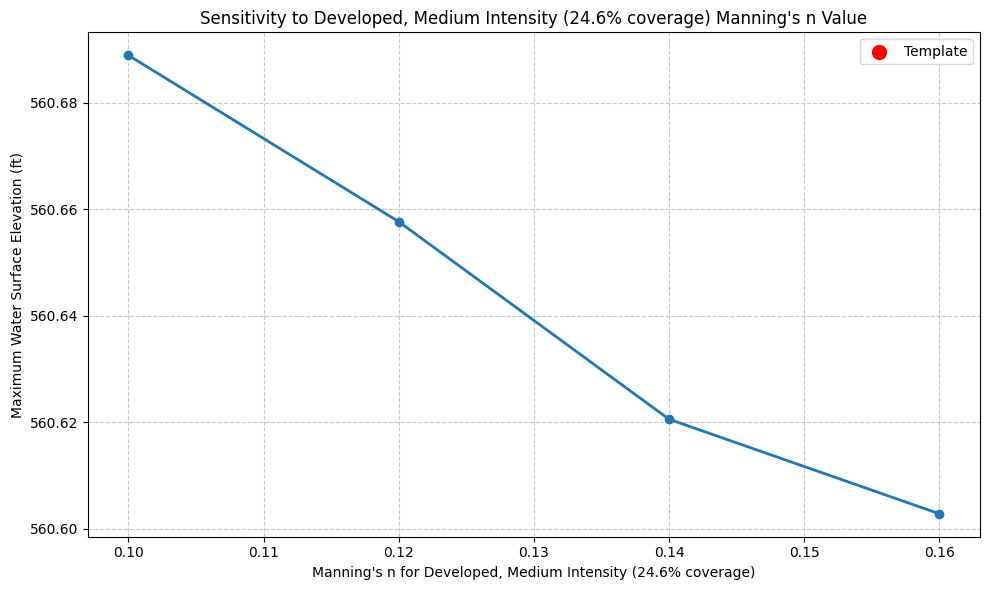
Created sensitivity plot for Developed, Medium Intensity
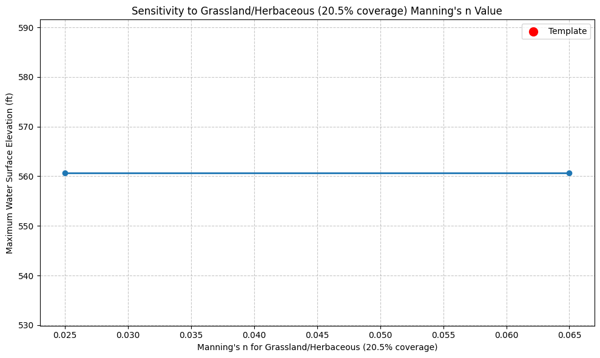
Created sensitivity plot for Grassland/Herbaceous
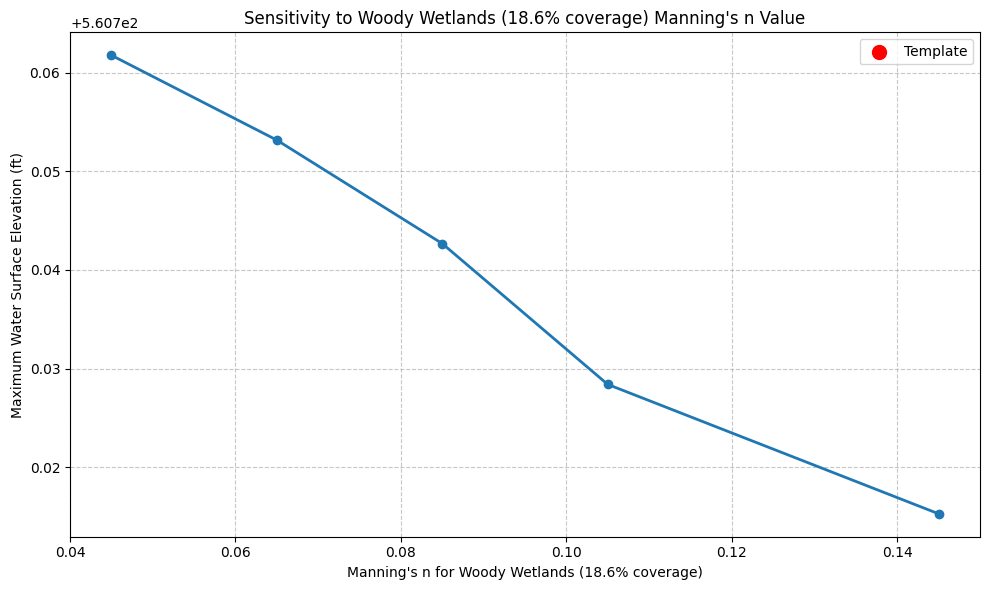
Created sensitivity plot for Woody Wetlands
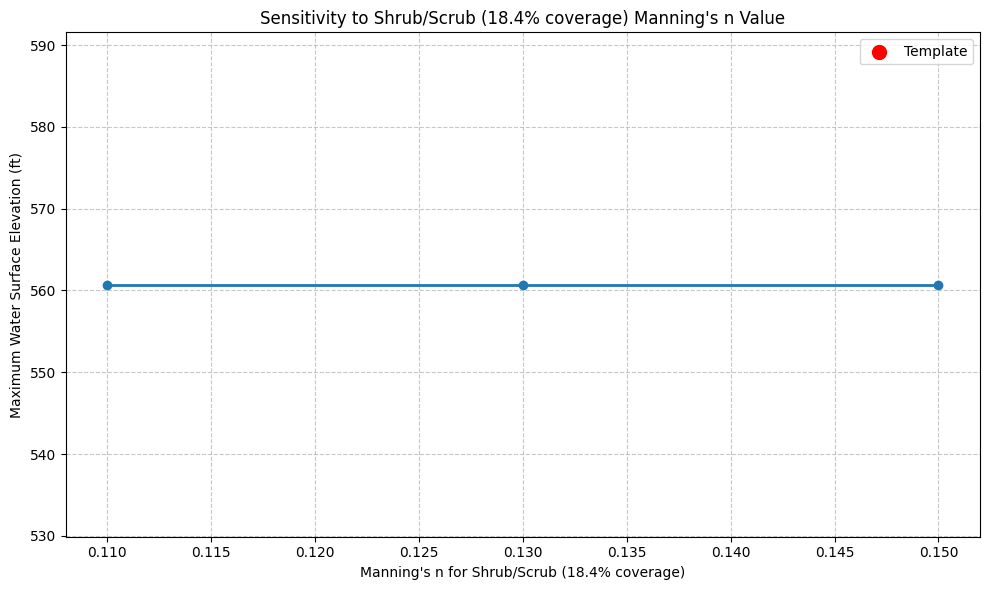
Created sensitivity plot for Shrub/Scrub
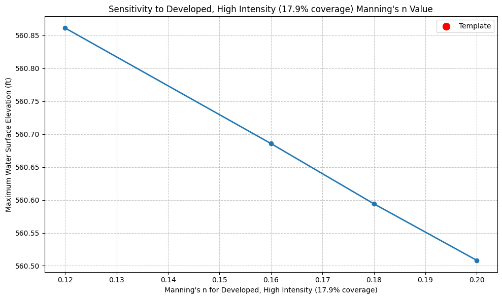
Created sensitivity plot for Developed, High Intensity
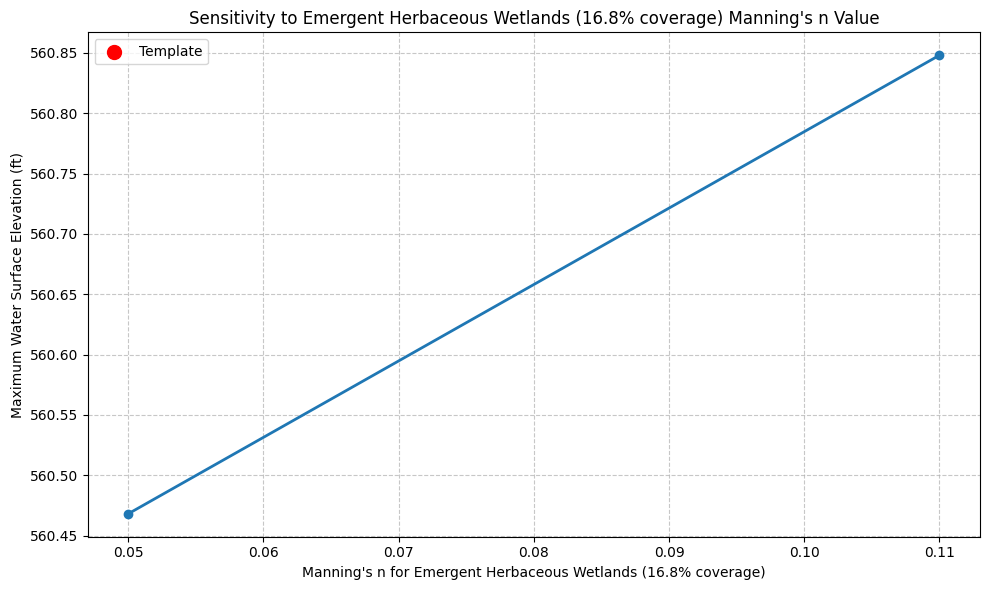
Created sensitivity plot for Emergent Herbaceous Wetlands
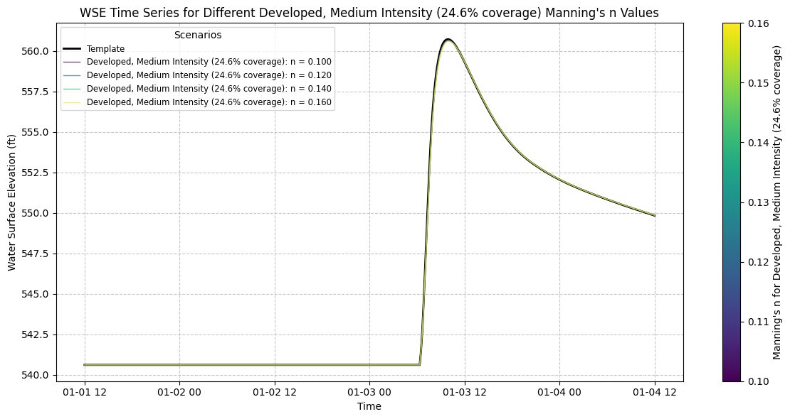
Created time series plot for Developed, Medium Intensity

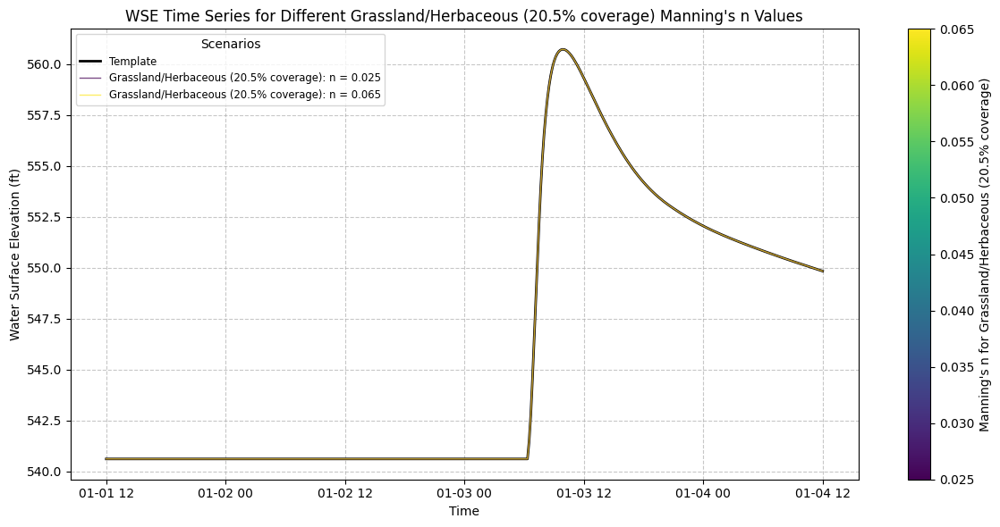
Created time series plot for Grassland/Herbaceous
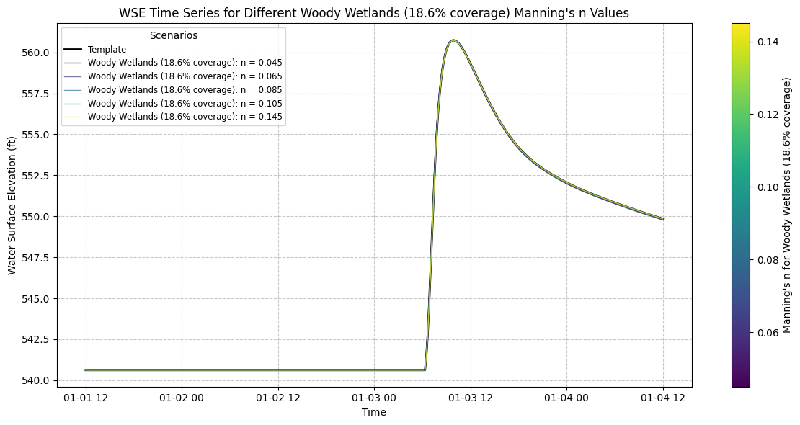
Created time series plot for Woody Wetlands

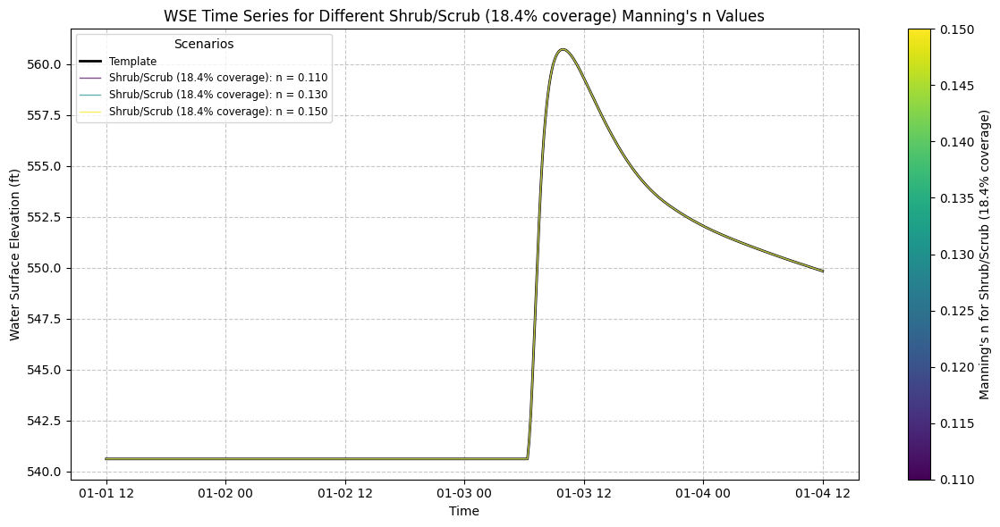
Created time series plot for Shrub/Scrub
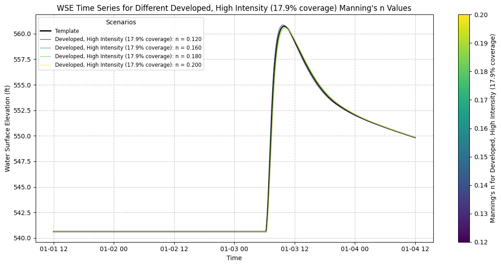
Created time series plot for Developed, High Intensity
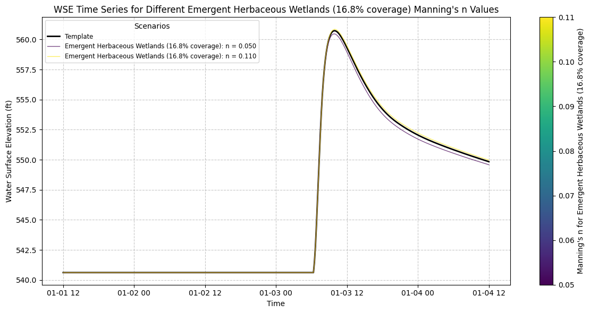
Created time series plot for Emergent Herbaceous Wetlands
Analysis complete! Results saved to: c:\GH\ras-commander\examples\example_projects\BaldEagleCrkMulti2D_BOMIS\Base_Landuse_Sensitivity
Significant land uses analyzed:
Land Cover Type Percentage
0 Developed, Medium Intensity 24.630900
1 NoData 22.749712
2 Grassland/Herbaceous 20.516389
3 Woody Wetlands 18.570300
4 Open Water 18.546225
5 Shrub/Scrub 18.425513
6 Developed, High Intensity 17.887623
7 Emergent Herbaceous Wetlands 16.761743
Base Override Sensitivity Results¶
Interpreting the Results¶
The following plots show sensitivity analysis results from the BaldEagleCrkMulti2D example project (Plan 03):
Sensitivity Plots (Right): - Show how maximum water surface elevation varies with Manning's n - X-axis: Manning's n value for the specific land cover type - Y-axis: Maximum water surface elevation at the point of interest - Red dot: Current/template Manning's n value - Steeper slopes indicate higher sensitivity to that parameter
Time Series Plots (Left): - Show complete hydrographs for all Manning's n scenarios - Color gradient represents different Manning's n values - Black line: Template (original) scenario - Useful for understanding how timing and peak magnitude respond to parameter changes
Key Observations to Look For: - Which land covers cause the largest changes in water surface elevation? - Are the responses linear or non-linear? - Does increasing roughness always increase water levels (as expected)? - Are there threshold effects or inflection points?
Part 3: Regional Override Sensitivity Analysis¶
Overview¶
Regional override sensitivity analysis focuses on Manning's n variations within specific calibration regions of the model. This approach is appropriate when: - Calibrating main channel roughness separately from floodplain - Analyzing the impact of localized land cover changes - Testing region-specific parameter uncertainty - Evaluating different roughness values in distinct hydraulic zones
Key Differences from Base Sensitivity: - Tests only land covers present in the specified region(s) - Can target a single region or analyze all regions - Useful for main channel calibration or localized sensitivity testing - Regional overrides take precedence over base mesh values in HEC-RAS
Function: individual_landuse_sensitivity_region()¶
This function performs the complete regional override sensitivity workflow with region-specific filtering.
def individual_landuse_sensitivity_region(
project_folder,
template_plan,
point_of_interest,
area_threshold=10.0, # percentage threshold for significant land uses
interval=0.01,
max_workers=MAX_WORKERS,
num_cores=NUM_CORES,
region_name=None, # optional specific region to analyze
output_folder="Regional_Landuse_Sensitivity",
n_ranges=None
):
"""
Perform sensitivity analysis by varying individual land use Manning's n values
in the regional overrides.
Args:
project_folder (str): Path to HEC-RAS project folder
template_plan (str): Plan number to use as template
point_of_interest (tuple or Point): Coordinates for extracting results
area_threshold (float): Percentage threshold for significant land uses
interval (float): Interval for Manning's n test values
max_workers (int): Number of parallel workers
num_cores (int): Number of cores per worker
region_name (str): Optional specific region to analyze
output_folder (str): Name of output folder
n_ranges (pd.DataFrame): DataFrame containing min/max Manning's n values.
Must contain columns: 'Land Cover Name', 'min_n', 'max_n'
Returns:
dict: Results of sensitivity analysis
"""
import time
from datetime import datetime
# Convert point_of_interest to Point if not already
if not isinstance(point_of_interest, Point):
point_of_interest = Point(point_of_interest[0], point_of_interest[1])
# Verify n_ranges is provided
if n_ranges is None:
raise ValueError("n_ranges DataFrame must be provided")
# Create timestamp for unique run identifier
timestamp = datetime.now().strftime("%Y%m%d_%H%M%S")
# Initialize RAS project
print(f"Initializing HEC-RAS project: {project_folder}")
ras = init_ras_project(project_folder, RAS_VERSION)
# Create output directory
results_dir = Path(project_folder) / output_folder
results_dir.mkdir(exist_ok=True)
print(f"Results will be saved to: {results_dir}")
# Verify template plan exists
if template_plan not in ras.plan_df['plan_number'].values:
raise ValueError(f"Template plan {template_plan} not found in project")
# Get the geometry number for the template plan
template_geom = ras.plan_df.loc[ras.plan_df['plan_number'] == template_plan, 'geometry_number'].values[0]
print(f"\nTemplate plan: {template_plan} (Geometry: {template_geom})")
# Get the geometry file path
geom_path = ras.geom_df.loc[ras.geom_df['geom_number'] == template_geom, 'full_path'].values[0]
# Get the original Manning's values
original_baseoverrides = RasGeo.get_mannings_baseoverrides(geom_path)
original_regionoverrides = RasGeo.get_mannings_regionoverrides(geom_path)
# Check if regional overrides exist
if original_regionoverrides.empty:
print("No regional Manning's overrides found in the model")
return None
# If a specific region name is provided, filter the regional overrides
if region_name is not None:
region_mask = original_regionoverrides['Region Name'] == region_name
if not region_mask.any():
print(f"Region '{region_name}' not found in the model")
available_regions = original_regionoverrides['Region Name'].unique()
print(f"Available regions: {available_regions}")
return None
region_overrides = original_regionoverrides[region_mask].copy()
print(f"\nAnalyzing sensitivity for region: {region_name}")
else:
region_overrides = original_regionoverrides.copy()
print("\nAnalyzing sensitivity for all regions")
# Get unique region tables
region_tables = region_overrides['Table Number'].unique()
print(f"Region tables: {region_tables}")
# Analyze land cover statistics for the 2D mesh areas
print("\nAnalyzing land cover statistics for the 2D mesh areas...")
landcover_stats = analyze_mesh_land_cover_statistics(
project_folder,
geom_number=template_geom
)
if landcover_stats is None:
raise ValueError("Could not analyze land cover statistics")
# Identify significant land uses (above threshold)
significant_landuses = landcover_stats[landcover_stats['Percentage'] >= area_threshold].copy()
significant_landuses = significant_landuses.sort_values('Percentage', ascending=False).reset_index(drop=True)
if len(significant_landuses) == 0:
print(f"No land uses found with coverage above {area_threshold}% threshold")
return None
print(f"\nFound {len(significant_landuses)} significant land uses (>= {area_threshold}% coverage):")
print(significant_landuses[['Land Cover Type', 'Percentage', 'Current_n']])
# Filter significant land uses to only those present in the region overrides
region_landcover_types = set(region_overrides['Land Cover Name'].unique())
filtered_landuses = significant_landuses[
significant_landuses['Land Cover Type'].isin(region_landcover_types)
].copy()
if len(filtered_landuses) == 0:
print("None of the significant land uses are present in the regional overrides")
return None
print(f"\nSignificant land uses present in regional overrides:")
print(filtered_landuses[['Land Cover Type', 'Percentage']])
# Check if we'll exceed the plan limit
current_plan_count = len(ras.plan_df)
max_plans = 99 # HEC-RAS limit
remaining_plans = max_plans - current_plan_count
# Estimate the number of plans needed
estimated_plan_count = 0
# Create a table to store land use sensitivity information
sensitivity_table = []
for _, landuse in filtered_landuses.iterrows():
land_cover = landuse['Land Cover Type']
# Find this land cover in the region overrides
for region_table in region_tables:
# Create mask for this land cover and table
mask = (region_overrides['Land Cover Name'] == land_cover) & \
(region_overrides['Table Number'] == region_table)
if not mask.any():
continue
current_n = region_overrides.loc[mask, 'MainChannel'].values[0]
# Find matching land cover in n_ranges
match = n_ranges[n_ranges['Land Cover Name'] == land_cover]
if match.empty:
continue
min_n = match['min_n'].values[0]
max_n = match['max_n'].values[0]
# Count values between min and max at interval spacing, excluding current value
values = generate_sensitivity_values(min_n, max_n, current_n, interval)
num_values = len(values)
estimated_plan_count += num_values
# Add to sensitivity table
region_name = region_overrides.loc[mask, 'Region Name'].values[0] if 'Region Name' in region_overrides.columns else f"Table {region_table}"
sensitivity_table.append({
'Land Cover': land_cover,
'Region': region_name,
'Table': region_table,
'Current n': current_n,
'Min n': min_n,
'Max n': max_n,
'Test Values': num_values,
'n Range': f"{min_n:.3f} - {max_n:.3f}"
})
# Print the sensitivity analysis table
if sensitivity_table:
print("\nSensitivity Analysis Plan:")
print("-" * 80)
print(f"{'Land Cover':<20} {'Region':<15} {'Current n':<10} {'n Range':<15} {'Test Values':<12}")
print("-" * 80)
for row in sensitivity_table:
print(f"{row['Land Cover']:<20} {row['Region']:<15} {row['Current n']:<10.3f} {row['n Range']:<15} {row['Test Values']:<12}")
print("-" * 80)
print(f"Total estimated plans to be created: {estimated_plan_count}")
print("-" * 80)
if estimated_plan_count > remaining_plans:
print(f"\nWARNING: This analysis would create approximately {estimated_plan_count} plans, but only {remaining_plans} more plans can be added (limit is 99)")
print("Consider adjusting the following to reduce the number of plans:")
print(f"1. Increase the area threshold (currently {area_threshold}%)")
print(f"2. Increase the interval between test values (currently {interval})")
print(f"3. Reduce the min/max ranges for land uses")
print(f"4. Select fewer land uses to test")
print(f"5. Specify a single region to test (currently {'specific region' if region_name else 'all regions'})")
# Ask for confirmation to continue
response = input("\nDo you want to continue anyway? (y/n): ")
if response.lower() != 'y':
print("Analysis canceled")
return None
# Store the current (template) plan as base scenario
scenarios = [{
'name': 'Template',
'plan_number': template_plan,
'geom_number': template_geom,
'shortid': 'Template',
'land_cover': None,
'region_name': None,
'table_number': None,
'n_value': None,
'description': "Original Manning's n Values"
}]
# Function to create a modified plan with adjusted Manning's n values for a specific land use in a region
def create_modified_plan(land_cover, table_number, region_name, new_n_value):
# Create a shortid based on land cover, region, and n value
# Convert land cover name to code (e.g. "Open Water" -> "OW")
lc_code = ''.join([word[0] for word in land_cover.split() if word[0].isalpha()])
if not lc_code:
lc_code = land_cover[:2]
lc_code = lc_code.upper()
# Convert region name to code
rg_code = ''.join([word[0] for word in region_name.split() if word[0].isalpha()])
if not rg_code:
rg_code = region_name[:2]
rg_code = rg_code.upper()
# Format n value for shortid
n_str = f"{new_n_value:.3f}".replace(".", "")
shortid = f"R_{lc_code}_{rg_code}_{n_str}"
print(f"\nCreating plan for '{land_cover}' in '{region_name}' with n = {new_n_value} (ShortID: {shortid})")
# Clone the template plan
new_plan_number = RasPlan.clone_plan(template_plan, new_plan_shortid=shortid)
# Clone the template geometry
new_geom_number = RasPlan.clone_geom(template_geom)
# Set the new plan to use the new geometry
RasPlan.set_geom(new_plan_number, new_geom_number)
# Get the new geometry file path
new_geom_path = ras.geom_df.loc[ras.geom_df['geom_number'] == new_geom_number, 'full_path'].values[0]
# Copy base overrides unchanged
RasGeo.set_mannings_baseoverrides(new_geom_path, original_baseoverrides)
# Create modified region overrides
modified_regionoverrides = original_regionoverrides.copy()
# Update the Manning's n value for this specific land cover type in this region and table
region_mask = (modified_regionoverrides['Land Cover Name'] == land_cover) & \
(modified_regionoverrides['Table Number'] == table_number) & \
(modified_regionoverrides['Region Name'] == region_name)
if region_mask.any():
current_n = modified_regionoverrides.loc[region_mask, 'MainChannel'].values[0]
print(f" Changing '{land_cover}' in '{region_name}' (Table {table_number}) from {current_n:.4f} to {new_n_value:.4f}")
modified_regionoverrides.loc[region_mask, 'MainChannel'] = new_n_value
else:
print(f" Warning: Land cover '{land_cover}' not found in region '{region_name}' (Table {table_number})")
# Apply the modified region overrides
RasGeo.set_mannings_regionoverrides(new_geom_path, modified_regionoverrides)
# Store scenario details
return {
'name': f"{land_cover}_{region_name}_{new_n_value:.3f}",
'plan_number': new_plan_number,
'geom_number': new_geom_number,
'shortid': shortid,
'land_cover': land_cover,
'region_name': region_name,
'table_number': table_number,
'n_value': new_n_value,
'description': f"Manning's n = {new_n_value:.3f} for {land_cover} in {region_name}"
}
# Create plans for each significant land use with varying n values
all_plans_to_run = []
for _, landuse in filtered_landuses.iterrows():
land_cover = landuse['Land Cover Type']
# Find matching land cover in n_ranges
match = n_ranges[n_ranges['Land Cover Name'] == land_cover]
if match.empty:
print(f"Warning: No Manning's n range found for '{land_cover}'. Skipping.")
continue
min_n = match['min_n'].values[0]
max_n = match['max_n'].values[0]
# Process each region table for this land cover
for region_table in region_tables:
# Get all regions with this land cover in this table
regions_mask = (region_overrides['Land Cover Name'] == land_cover) & \
(region_overrides['Table Number'] == region_table)
if not regions_mask.any():
continue
# Get unique region names for this land cover and table
unique_regions = region_overrides.loc[regions_mask, 'Region Name'].unique()
for region in unique_regions:
# If a specific region was requested, skip others
if region_name is not None and region != region_name:
continue
# Create mask for this specific combination
specific_mask = (region_overrides['Land Cover Name'] == land_cover) & \
(region_overrides['Table Number'] == region_table) & \
(region_overrides['Region Name'] == region)
if not specific_mask.any():
continue
current_n = region_overrides.loc[specific_mask, 'MainChannel'].values[0]
print(f"\nProcessing land cover: {land_cover} in region: {region} (Table {region_table})")
print(f" Current n: {current_n:.4f}")
print(f" Literature range: {min_n:.4f} to {max_n:.4f}")
# Generate test values within the range, excluding the current value
test_values = generate_sensitivity_values(min_n, max_n, current_n, interval)
print(f" Testing {len(test_values)} values: {[round(val, 3) for val in test_values]}")
# Create a plan for each test value
for n_value in test_values:
new_scenario = create_modified_plan(land_cover, region_table, region, n_value)
scenarios.append(new_scenario)
all_plans_to_run.append(new_scenario['plan_number'])
# Save scenario information
scenario_info = pd.DataFrame(scenarios)
scenario_info_path = results_dir / "scenarios.csv"
scenario_info.to_csv(scenario_info_path, index=False)
print(f"\nScenario information saved to: {scenario_info_path}")
# Run the plans (excluding the template which is already computed)
plans_to_run = [plan for plan in all_plans_to_run if plan != template_plan]
if not plans_to_run:
print("No plans to run.")
return {'scenarios': scenarios, 'output_folder': results_dir}
print(f"\nRunning {len(plans_to_run)} plans in parallel...")
execution_results = RasCmdr.compute_parallel(
plan_number=plans_to_run,
max_workers=max_workers,
num_cores=num_cores,
clear_geompre=True
)
print("\nExecution results:")
for plan, success in execution_results.items():
print(f" Plan {plan}: {'Successful' if success else 'Failed'}")
# If point of interest provided, extract and compare results
if point_of_interest is not None:
# Get geometry HDF path for cell identification
geom_hdf_path = ras.geom_df.loc[ras.geom_df['geom_number'] == template_geom, 'hdf_path'].values[0]
# Find the nearest mesh cell
mesh_cells_gdf = HdfMesh.get_mesh_cell_points(geom_hdf_path)
distances = mesh_cells_gdf.geometry.apply(lambda geom: geom.distance(point_of_interest))
nearest_idx = distances.idxmin()
mesh_cell_id = mesh_cells_gdf.loc[nearest_idx, 'cell_id']
mesh_name = mesh_cells_gdf.loc[nearest_idx, 'mesh_name']
print(f"\nNearest cell ID: {mesh_cell_id}")
print(f"Distance: {distances[nearest_idx]:.2f} units")
print(f"Mesh area: {mesh_name}")
# Extract results for each scenario
all_results = {}
max_ws_values = []
for scenario in scenarios:
plan_number = scenario['plan_number']
land_cover = scenario['land_cover']
region_name = scenario['region_name']
n_value = scenario['n_value']
shortid = scenario['shortid']
try:
results_xr = HdfResultsMesh.get_mesh_cells_timeseries(plan_number, ras_object=ras)
# Extract water surface data
ws_data = results_xr[mesh_name]['Water Surface'].sel(cell_id=int(mesh_cell_id))
# Convert to DataFrame
ws_df = pd.DataFrame({
'time': ws_data.time.values,
'water_surface': ws_data.values
})
# Store results
max_ws = ws_df['water_surface'].max()
all_results[plan_number] = {
'scenario': scenario,
'df': ws_df,
'max_water_surface': max_ws
}
max_ws_values.append({
'plan_number': plan_number,
'shortid': shortid,
'land_cover': land_cover,
'region_name': region_name,
'n_value': n_value,
'max_water_surface': max_ws
})
print(f" {shortid}: Max WSE = {max_ws:.2f}")
# Save time series to CSV
ws_df.to_csv(results_dir / f"timeseries_{shortid}.csv", index=False)
except Exception as e:
print(f" Error extracting results for {shortid}: {str(e)}")
# Create summary DataFrame
if max_ws_values:
max_ws_df = pd.DataFrame(max_ws_values)
max_ws_df.to_csv(results_dir / "max_water_surface_summary.csv", index=False)
# Create plots by land cover type and region
land_cover_region_combinations = []
for _, row in max_ws_df.iterrows():
if row['land_cover'] is not None and row['region_name'] is not None:
combination = (row['land_cover'], row['region_name'])
if combination not in land_cover_region_combinations:
land_cover_region_combinations.append(combination)
# Create sensitivity plots for each land cover + region combination
for land_cover, region in land_cover_region_combinations:
# Filter scenarios for this combination
combo_scenarios = max_ws_df[
(max_ws_df['land_cover'] == land_cover) &
(max_ws_df['region_name'] == region)
].copy()
# Add the template scenario
template_row = max_ws_df[max_ws_df['shortid'] == 'Template']
if not template_row.empty:
combo_scenarios = pd.concat([template_row, combo_scenarios])
if combo_scenarios.empty:
continue
valid_points = combo_scenarios['n_value'].notna().sum()
if valid_points <= 1:
continue
# Sort by n_value
combo_scenarios = combo_scenarios.sort_values('n_value').reset_index(drop=True)
# Create plot
fig, ax = plt.subplots(figsize=(10, 6))
ax.plot(combo_scenarios['n_value'], combo_scenarios['max_water_surface'],
marker='o', linestyle='-', linewidth=2)
# Add template point in a different color if it exists
template_idx = combo_scenarios[combo_scenarios['shortid'] == 'Template'].index
if not template_idx.empty:
ax.scatter(combo_scenarios.loc[template_idx, 'n_value'],
combo_scenarios.loc[template_idx, 'max_water_surface'],
color='red', s=100, zorder=5, label='Template')
# Add labels and title
ax.set_xlabel(f"Manning's n for {land_cover} in {region}")
ax.set_ylabel("Maximum Water Surface Elevation (ft)")
ax.set_title(f"Sensitivity to {land_cover} Manning's n Value in {region}")
ax.grid(True, linestyle='--', alpha=0.7)
if not template_idx.empty:
ax.legend()
# Save plot
safe_lc = land_cover.replace(' ', '_').replace('/', '_')
safe_rg = region.replace(' ', '_').replace('/', '_')
plot_path = results_dir / f"sensitivity_{safe_lc}_{safe_rg}.png"
plt.tight_layout()
plt.savefig(plot_path)
plt.show()
plt.close()
print(f"Created sensitivity plot for {land_cover} in {region}")
# Create time series comparison plots for each land cover + region combination
for land_cover, region in land_cover_region_combinations:
fig, ax = plt.subplots(figsize=(12, 6))
# Get template results
template_plan = scenarios[0]['plan_number']
if template_plan in all_results:
template_df = all_results[template_plan]['df']
ax.plot(template_df['time'], template_df['water_surface'],
color='black', linewidth=2, label='Template')
# Filter scenarios for this combination
combo_scenarios = [
s for s in scenarios
if s['land_cover'] == land_cover and s['region_name'] == region
]
if not combo_scenarios:
plt.show()
plt.close()
continue
# Setup colormap for n values
n_values = [s['n_value'] for s in combo_scenarios if s['n_value'] is not None]
if not n_values:
plt.show()
plt.close()
continue
if len(n_values) <= 1:
plt.show()
plt.close()
continue
min_n = min(n_values)
max_n = max(n_values)
norm = plt.Normalize(min_n, max_n)
cmap = plt.cm.viridis
# Plot each scenario
for scenario in combo_scenarios:
plan_number = scenario['plan_number']
n_value = scenario['n_value']
if plan_number in all_results and n_value is not None:
df = all_results[plan_number]['df']
color = cmap(norm(n_value))
ax.plot(df['time'], df['water_surface'], color=color,
linewidth=1, alpha=0.7, label=f"n = {n_value:.3f}")
# Add labels and title
ax.set_xlabel("Time")
ax.set_ylabel("Water Surface Elevation (ft)")
ax.set_title(f"WSE Time Series for {land_cover} in {region}")
ax.grid(True, linestyle='--', alpha=0.7)
# Add colorbar
sm = plt.cm.ScalarMappable(cmap=cmap, norm=norm)
sm.set_array([])
cbar = plt.colorbar(sm, ax=ax)
cbar.set_label(f"Manning's n for {land_cover}")
# Save plot
safe_lc = land_cover.replace(' ', '_').replace('/', '_')
safe_rg = region.replace(' ', '_').replace('/', '_')
plot_path = results_dir / f"timeseries_{safe_lc}_{safe_rg}.png"
plt.tight_layout()
plt.savefig(plot_path)
plt.show()
plt.close()
print(f"Created time series plot for {land_cover} in {region}")
# Return results
return {
'scenarios': scenarios,
'execution_results': execution_results if 'execution_results' in locals() else None,
'results': all_results if 'all_results' in locals() else None,
'max_ws_summary': max_ws_df if 'max_ws_df' in locals() else None,
'significant_landuses': filtered_landuses,
'output_folder': results_dir
}
⚠️ Important Engineering Note on Regional Overrides¶
We are using a HEC Example project with regional overriddes in the main channel. A better application would be to vary values individually within larger calibration regions. A further explanation follows:
Main Channel vs. Floodplain Application:
For main channel regional overrides, a bulk sensitivity approach is typically more appropriate (see notebook 105 for bulk Manning's n variation). This is because:
- Land use-based roughness values are derived from satellite imagery, which may not correlate well with main channel hydraulic roughness
- Main channel roughness is typically governed by bed material, channel shape, and vegetation conditions—not upland land cover classifications
- Bulk variation allows testing a continuous range of main channel n values without land use constraints
This Methodology Best Applied To: - Large calibration regions within the 2D mesh area - Floodplain zones with distinct land cover characteristics - Areas where satellite-derived land use correlates with hydraulic roughness
For Main Channel Calibration: - Use the bulk sensitivity approach from notebook 105 - Create multiple regional overrides to test different main channel reaches independently - Consider physical channel characteristics rather than land cover when selecting test values
Note on Example Project: This notebook demonstrates the regional sensitivity methodology using the BaldEagleCrkMulti2D main channel region due to limited availability of example models with large floodplain calibration regions. In practice, apply this approach to appropriate floodplain or mesh regions where land cover-based roughness is hydraulically meaningful.
Executing Regional Override Sensitivity Analysis¶
Configuration Parameters¶
The following example demonstrates how to run the regional override sensitivity analysis with the BaldEagleCrkMulti2D sample project.
Key Parameters (in addition to base parameters):
- region_name: Specific region to analyze (e.g., "Main Channel"), or None to analyze all regions
- All other parameters match the base sensitivity function
Region-Specific Behavior: - Only land covers present in the specified region(s) will be tested - The function automatically filters significant land uses based on region membership - Multiple regions with the same land cover will be tested independently
Execution Steps¶
- Use the same project from the base analysis (already extracted)
- Configure regional analysis parameters (note the
region_nameparameter) - Run the sensitivity analysis
- Review region-specific results in the output folder
# Reuse Manning's n ranges from the base section
print(f"Manning's n value ranges for {len(manning_minmax_df)} land cover types:")
print(manning_minmax_df)
Manning's n value ranges for 16 land cover types:
Land Cover Name min_n max_n mid_n
0 Barren Land Rock/Sand/Clay 0.023 0.10 0.0615
1 Cultivated Crops 0.020 0.10 0.0600
2 Deciduous Forest 0.100 0.20 0.1500
3 Developed, High Intensity 0.120 0.20 0.1600
4 Developed, Low Intensity 0.060 0.12 0.0900
5 Developed, Medium Intensity 0.080 0.16 0.1200
6 Developed, Open Space 0.030 0.09 0.0600
7 Emergent Herbaceous Wetlands 0.050 0.12 0.0850
8 Evergreen Forest 0.080 0.16 0.1200
9 Grassland/Herbaceous 0.025 0.07 0.0475
10 Mixed Forest 0.080 0.20 0.1400
11 NoData 0.050 0.07 0.0600
12 Open Water 0.025 0.05 0.0375
13 Pasture/Hay 0.025 0.09 0.0575
14 Shrub/Scrub 0.070 0.16 0.1150
15 Woody Wetlands 0.045 0.15 0.0975
# Example usage for Regional Overrides Sensitivity Analysis
# To run this, uncomment the code, adjust parameters as needed, and execute the cell
import shutil
from pathlib import Path
# 1. Define source and destination paths
# (We use the original extracted project as source, not the BOMIS one)
source_project_folder = Path(RasExamples.extract_project(PROJECT_NAME, suffix="106"))
examples_root = source_project_folder.parent
# 2. Create a specific folder for Regional Override Multi-Interval Sensitivity (ROMIS)
project_folder = examples_root / f"{PROJECT_NAME}_ROMIS"
# Clean up if it already exists
if project_folder.exists():
shutil.rmtree(project_folder)
# Copy the source project to the ROMIS folder
print(f"Creating dedicated ROMIS project folder...")
shutil.copytree(source_project_folder, project_folder)
print(f"Created: {project_folder}")
# 3. Initialize the ROMIS project
# (This updates the global 'ras' object to point to this new folder, replacing the BOMIS context)
init_ras_project(project_folder, RAS_VERSION)
# Define parameters
template_plan = PLAN # Plan 03 has regional overrides
point_of_interest = POINT_OF_INTEREST # Coordinates for regional analysis
# Execute the template plan first (required for mesh cell identification and result extraction)
print(f"Executing template plan {template_plan} before sensitivity analysis...")
RasCmdr.compute_plan(template_plan, num_cores=NUM_CORES)
print(f"Template plan {template_plan} execution complete.")
# Run the regional sensitivity analysis
run_region_sensitivity_results = individual_landuse_sensitivity_region(
project_folder=project_folder,
template_plan=template_plan,
point_of_interest=point_of_interest,
area_threshold=10.0, # Only analyze land uses covering at least 10% of the mesh area
interval=0.04, # Adjust interval to reduce the number of test values
max_workers=4,
num_cores=NUM_CORES,
region_name="Main Channel", # Specify a region or set to None for all regions
output_folder="Regional_Landuse_Sensitivity",
n_ranges=manning_minmax_df
)
2026-01-19 14:11:41 - ras_commander.RasExamples - INFO - ----- RasExamples Extracting Project -----
2026-01-19 14:11:41 - ras_commander.RasExamples - INFO - Extracting project 'BaldEagleCrkMulti2D' as 'BaldEagleCrkMulti2D_106'
2026-01-19 14:11:41 - ras_commander.RasExamples - INFO - Folder 'BaldEagleCrkMulti2D_106' already exists. Deleting existing folder...
2026-01-19 14:11:41 - ras_commander.RasExamples - INFO - Existing folder 'BaldEagleCrkMulti2D_106' has been deleted.
2026-01-19 14:11:43 - ras_commander.RasExamples - INFO - Successfully extracted project 'BaldEagleCrkMulti2D' to c:\GH\ras-commander\examples\example_projects\BaldEagleCrkMulti2D_106
Creating dedicated ROMIS project folder...
2026-01-19 14:11:44 - ras_commander.geom.GeomLateral - INFO - Found 0 lateral structures in BaldEagleDamBrk.g06
2026-01-19 14:11:44 - ras_commander.geom.GeomLateral - INFO - Found 0 SA/2D connections in BaldEagleDamBrk.g06
2026-01-19 14:11:44 - ras_commander.geom.GeomLateral - INFO - Found 0 lateral structures in BaldEagleDamBrk.g08
2026-01-19 14:11:44 - ras_commander.geom.GeomLateral - INFO - Found 0 SA/2D connections in BaldEagleDamBrk.g08
2026-01-19 14:11:44 - ras_commander.geom.GeomLateral - INFO - Found 0 lateral structures in BaldEagleDamBrk.g10
Created: c:\GH\ras-commander\examples\example_projects\BaldEagleCrkMulti2D_ROMIS
2026-01-19 14:11:44 - ras_commander.geom.GeomLateral - INFO - Found 0 SA/2D connections in BaldEagleDamBrk.g10
2026-01-19 14:11:44 - ras_commander.geom.GeomLateral - INFO - Found 0 lateral structures in BaldEagleDamBrk.g11
2026-01-19 14:11:44 - ras_commander.geom.GeomLateral - INFO - Found 0 SA/2D connections in BaldEagleDamBrk.g11
2026-01-19 14:11:44 - ras_commander.geom.GeomLateral - INFO - Found 0 lateral structures in BaldEagleDamBrk.g12
2026-01-19 14:11:44 - ras_commander.geom.GeomLateral - INFO - Found 0 SA/2D connections in BaldEagleDamBrk.g12
2026-01-19 14:11:44 - ras_commander.geom.GeomLateral - INFO - Found 0 lateral structures in BaldEagleDamBrk.g09
2026-01-19 14:11:44 - ras_commander.geom.GeomLateral - INFO - Found 0 SA/2D connections in BaldEagleDamBrk.g09
2026-01-19 14:11:44 - ras_commander.geom.GeomLateral - INFO - Found 0 lateral structures in BaldEagleDamBrk.g13
2026-01-19 14:11:44 - ras_commander.geom.GeomLateral - INFO - Found 0 SA/2D connections in BaldEagleDamBrk.g13
2026-01-19 14:11:44 - ras_commander.geom.GeomLateral - INFO - Found 0 lateral structures in BaldEagleDamBrk.g01
2026-01-19 14:11:44 - ras_commander.geom.GeomLateral - INFO - Found 0 SA/2D connections in BaldEagleDamBrk.g01
2026-01-19 14:11:44 - ras_commander.geom.GeomLateral - INFO - Found 0 lateral structures in BaldEagleDamBrk.g03
2026-01-19 14:11:44 - ras_commander.geom.GeomLateral - INFO - Found 0 SA/2D connections in BaldEagleDamBrk.g03
2026-01-19 14:11:44 - ras_commander.geom.GeomLateral - INFO - Found 0 lateral structures in BaldEagleDamBrk.g02
2026-01-19 14:11:44 - ras_commander.geom.GeomLateral - INFO - Found 0 SA/2D connections in BaldEagleDamBrk.g02
2026-01-19 14:11:44 - ras_commander.RasMap - INFO - Successfully parsed RASMapper file: C:\GH\ras-commander\examples\example_projects\BaldEagleCrkMulti2D_ROMIS\BaldEagleDamBrk.rasmap
2026-01-19 14:11:44 - ras_commander.RasPrj - INFO - Updated results_df with 11 plan(s)
2026-01-19 14:11:44 - ras_commander.RasCmdr - INFO - Using ras_object with project folder: C:\GH\ras-commander\examples\example_projects\BaldEagleCrkMulti2D_ROMIS
2026-01-19 14:11:44 - ras_commander.RasUtils - INFO - Using provided plan file path: C:\GH\ras-commander\examples\example_projects\BaldEagleCrkMulti2D_ROMIS\BaldEagleDamBrk.p03
2026-01-19 14:11:44 - ras_commander.RasUtils - INFO - Successfully updated file: C:\GH\ras-commander\examples\example_projects\BaldEagleCrkMulti2D_ROMIS\BaldEagleDamBrk.p03
2026-01-19 14:11:44 - ras_commander.geom.GeomLateral - INFO - Found 0 lateral structures in BaldEagleDamBrk.g06
2026-01-19 14:11:44 - ras_commander.geom.GeomLateral - INFO - Found 0 SA/2D connections in BaldEagleDamBrk.g06
2026-01-19 14:11:44 - ras_commander.geom.GeomLateral - INFO - Found 0 lateral structures in BaldEagleDamBrk.g08
2026-01-19 14:11:44 - ras_commander.geom.GeomLateral - INFO - Found 0 SA/2D connections in BaldEagleDamBrk.g08
2026-01-19 14:11:44 - ras_commander.geom.GeomLateral - INFO - Found 0 lateral structures in BaldEagleDamBrk.g10
2026-01-19 14:11:44 - ras_commander.geom.GeomLateral - INFO - Found 0 SA/2D connections in BaldEagleDamBrk.g10
2026-01-19 14:11:44 - ras_commander.geom.GeomLateral - INFO - Found 0 lateral structures in BaldEagleDamBrk.g11
2026-01-19 14:11:44 - ras_commander.geom.GeomLateral - INFO - Found 0 SA/2D connections in BaldEagleDamBrk.g11
2026-01-19 14:11:44 - ras_commander.geom.GeomLateral - INFO - Found 0 lateral structures in BaldEagleDamBrk.g12
2026-01-19 14:11:44 - ras_commander.geom.GeomLateral - INFO - Found 0 SA/2D connections in BaldEagleDamBrk.g12
2026-01-19 14:11:44 - ras_commander.geom.GeomLateral - INFO - Found 0 lateral structures in BaldEagleDamBrk.g09
2026-01-19 14:11:44 - ras_commander.geom.GeomLateral - INFO - Found 0 SA/2D connections in BaldEagleDamBrk.g09
2026-01-19 14:11:44 - ras_commander.geom.GeomLateral - INFO - Found 0 lateral structures in BaldEagleDamBrk.g13
2026-01-19 14:11:44 - ras_commander.geom.GeomLateral - INFO - Found 0 SA/2D connections in BaldEagleDamBrk.g13
2026-01-19 14:11:44 - ras_commander.geom.GeomLateral - INFO - Found 0 lateral structures in BaldEagleDamBrk.g01
2026-01-19 14:11:44 - ras_commander.geom.GeomLateral - INFO - Found 0 SA/2D connections in BaldEagleDamBrk.g01
Executing template plan 03 before sensitivity analysis...
2026-01-19 14:11:44 - ras_commander.geom.GeomLateral - INFO - Found 0 lateral structures in BaldEagleDamBrk.g03
2026-01-19 14:11:44 - ras_commander.geom.GeomLateral - INFO - Found 0 SA/2D connections in BaldEagleDamBrk.g03
2026-01-19 14:11:44 - ras_commander.geom.GeomLateral - INFO - Found 0 lateral structures in BaldEagleDamBrk.g02
2026-01-19 14:11:44 - ras_commander.geom.GeomLateral - INFO - Found 0 SA/2D connections in BaldEagleDamBrk.g02
2026-01-19 14:11:44 - ras_commander.RasCmdr - INFO - Set number of cores to 2 for plan: 03
2026-01-19 14:11:44 - ras_commander.RasCmdr - INFO - Running HEC-RAS from the Command Line:
2026-01-19 14:11:44 - ras_commander.RasCmdr - INFO - Running command: "C:\Program Files (x86)\HEC\HEC-RAS\6.6\Ras.exe" -c "C:\GH\ras-commander\examples\example_projects\BaldEagleCrkMulti2D_ROMIS\BaldEagleDamBrk.prj" "C:\GH\ras-commander\examples\example_projects\BaldEagleCrkMulti2D_ROMIS\BaldEagleDamBrk.p03"
2026-01-19 14:14:40 - ras_commander.RasCmdr - INFO - HEC-RAS execution completed for plan: 03
2026-01-19 14:14:40 - ras_commander.RasCmdr - INFO - Total run time for plan 03: 175.90 seconds
2026-01-19 14:14:40 - ras_commander.geom.GeomLateral - INFO - Found 0 lateral structures in BaldEagleDamBrk.g06
2026-01-19 14:14:40 - ras_commander.geom.GeomLateral - INFO - Found 0 SA/2D connections in BaldEagleDamBrk.g06
2026-01-19 14:14:40 - ras_commander.geom.GeomLateral - INFO - Found 0 lateral structures in BaldEagleDamBrk.g08
2026-01-19 14:14:40 - ras_commander.geom.GeomLateral - INFO - Found 0 SA/2D connections in BaldEagleDamBrk.g08
2026-01-19 14:14:40 - ras_commander.geom.GeomLateral - INFO - Found 0 lateral structures in BaldEagleDamBrk.g10
2026-01-19 14:14:40 - ras_commander.geom.GeomLateral - INFO - Found 0 SA/2D connections in BaldEagleDamBrk.g10
2026-01-19 14:14:40 - ras_commander.geom.GeomLateral - INFO - Found 0 lateral structures in BaldEagleDamBrk.g11
2026-01-19 14:14:40 - ras_commander.geom.GeomLateral - INFO - Found 0 SA/2D connections in BaldEagleDamBrk.g11
2026-01-19 14:14:40 - ras_commander.geom.GeomLateral - INFO - Found 0 lateral structures in BaldEagleDamBrk.g12
2026-01-19 14:14:40 - ras_commander.geom.GeomLateral - INFO - Found 0 SA/2D connections in BaldEagleDamBrk.g12
2026-01-19 14:14:40 - ras_commander.geom.GeomLateral - INFO - Found 0 lateral structures in BaldEagleDamBrk.g09
2026-01-19 14:14:40 - ras_commander.geom.GeomLateral - INFO - Found 0 SA/2D connections in BaldEagleDamBrk.g09
2026-01-19 14:14:40 - ras_commander.geom.GeomLateral - INFO - Found 0 lateral structures in BaldEagleDamBrk.g13
2026-01-19 14:14:40 - ras_commander.geom.GeomLateral - INFO - Found 0 SA/2D connections in BaldEagleDamBrk.g13
2026-01-19 14:14:40 - ras_commander.geom.GeomLateral - INFO - Found 0 lateral structures in BaldEagleDamBrk.g01
2026-01-19 14:14:40 - ras_commander.geom.GeomLateral - INFO - Found 0 SA/2D connections in BaldEagleDamBrk.g01
2026-01-19 14:14:40 - ras_commander.geom.GeomLateral - INFO - Found 0 lateral structures in BaldEagleDamBrk.g03
2026-01-19 14:14:40 - ras_commander.geom.GeomLateral - INFO - Found 0 SA/2D connections in BaldEagleDamBrk.g03
2026-01-19 14:14:40 - ras_commander.geom.GeomLateral - INFO - Found 0 lateral structures in BaldEagleDamBrk.g02
2026-01-19 14:14:40 - ras_commander.geom.GeomLateral - INFO - Found 0 SA/2D connections in BaldEagleDamBrk.g02
2026-01-19 14:14:40 - ras_commander.hdf.HdfResultsPlan - INFO - Using existing Path object HDF file: C:\GH\ras-commander\examples\example_projects\BaldEagleCrkMulti2D_ROMIS\BaldEagleDamBrk.p03.hdf
2026-01-19 14:14:40 - ras_commander.hdf.HdfResultsPlan - INFO - Final validated file path: C:\GH\ras-commander\examples\example_projects\BaldEagleCrkMulti2D_ROMIS\BaldEagleDamBrk.p03.hdf
2026-01-19 14:14:40 - ras_commander.hdf.HdfResultsPlan - INFO - Reading computation messages from HDF: BaldEagleDamBrk.p03.hdf
2026-01-19 14:14:40 - ras_commander.hdf.HdfResultsPlan - INFO - Successfully extracted 2109 characters from HDF
2026-01-19 14:14:40 - ras_commander.hdf.HdfResultsPlan - INFO - Using existing Path object HDF file: C:\GH\ras-commander\examples\example_projects\BaldEagleCrkMulti2D_ROMIS\BaldEagleDamBrk.p03.hdf
2026-01-19 14:14:40 - ras_commander.hdf.HdfResultsPlan - INFO - Final validated file path: C:\GH\ras-commander\examples\example_projects\BaldEagleCrkMulti2D_ROMIS\BaldEagleDamBrk.p03.hdf
2026-01-19 14:14:40 - ras_commander.hdf.HdfResultsPlan - INFO - Extracting Plan Information from: BaldEagleDamBrk.p03.hdf
2026-01-19 14:14:40 - ras_commander.hdf.HdfResultsPlan - INFO - Plan Name: Single 2D Area - Internal Dam Structure
2026-01-19 14:14:40 - ras_commander.hdf.HdfResultsPlan - INFO - Simulation Duration (hours): 72.0
2026-01-19 14:14:40 - ras_commander.hdf.HdfResultsPlan - INFO - Using existing Path object HDF file: C:\GH\ras-commander\examples\example_projects\BaldEagleCrkMulti2D_ROMIS\BaldEagleDamBrk.p03.hdf
2026-01-19 14:14:40 - ras_commander.hdf.HdfResultsPlan - INFO - Final validated file path: C:\GH\ras-commander\examples\example_projects\BaldEagleCrkMulti2D_ROMIS\BaldEagleDamBrk.p03.hdf
C:\Users\bill\AppData\Roaming\Python\Python313\site-packages\ras_commander\RasPrj.py:1590: FutureWarning: The behavior of DataFrame concatenation with empty or all-NA entries is deprecated. In a future version, this will no longer exclude empty or all-NA columns when determining the result dtypes. To retain the old behavior, exclude the relevant entries before the concat operation.
self.results_df = pd.concat([self.results_df, new_results], ignore_index=True)
2026-01-19 14:14:40 - ras_commander.RasPrj - INFO - Updated results_df with 1 plan(s)
2026-01-19 14:14:40 - ras_commander.geom.GeomLateral - INFO - Found 0 lateral structures in BaldEagleDamBrk.g06
2026-01-19 14:14:40 - ras_commander.geom.GeomLateral - INFO - Found 0 SA/2D connections in BaldEagleDamBrk.g06
2026-01-19 14:14:40 - ras_commander.geom.GeomLateral - INFO - Found 0 lateral structures in BaldEagleDamBrk.g08
2026-01-19 14:14:40 - ras_commander.geom.GeomLateral - INFO - Found 0 SA/2D connections in BaldEagleDamBrk.g08
2026-01-19 14:14:40 - ras_commander.geom.GeomLateral - INFO - Found 0 lateral structures in BaldEagleDamBrk.g10
2026-01-19 14:14:40 - ras_commander.geom.GeomLateral - INFO - Found 0 SA/2D connections in BaldEagleDamBrk.g10
2026-01-19 14:14:40 - ras_commander.geom.GeomLateral - INFO - Found 0 lateral structures in BaldEagleDamBrk.g11
2026-01-19 14:14:40 - ras_commander.geom.GeomLateral - INFO - Found 0 SA/2D connections in BaldEagleDamBrk.g11
2026-01-19 14:14:40 - ras_commander.geom.GeomLateral - INFO - Found 0 lateral structures in BaldEagleDamBrk.g12
2026-01-19 14:14:40 - ras_commander.geom.GeomLateral - INFO - Found 0 SA/2D connections in BaldEagleDamBrk.g12
2026-01-19 14:14:40 - ras_commander.geom.GeomLateral - INFO - Found 0 lateral structures in BaldEagleDamBrk.g09
2026-01-19 14:14:40 - ras_commander.geom.GeomLateral - INFO - Found 0 SA/2D connections in BaldEagleDamBrk.g09
2026-01-19 14:14:40 - ras_commander.geom.GeomLateral - INFO - Found 0 lateral structures in BaldEagleDamBrk.g13
2026-01-19 14:14:41 - ras_commander.geom.GeomLateral - INFO - Found 0 SA/2D connections in BaldEagleDamBrk.g13
2026-01-19 14:14:41 - ras_commander.geom.GeomLateral - INFO - Found 0 lateral structures in BaldEagleDamBrk.g01
2026-01-19 14:14:41 - ras_commander.geom.GeomLateral - INFO - Found 0 SA/2D connections in BaldEagleDamBrk.g01
2026-01-19 14:14:41 - ras_commander.geom.GeomLateral - INFO - Found 0 lateral structures in BaldEagleDamBrk.g03
Template plan 03 execution complete.
Initializing HEC-RAS project: c:\GH\ras-commander\examples\example_projects\BaldEagleCrkMulti2D_ROMIS
2026-01-19 14:14:41 - ras_commander.geom.GeomLateral - INFO - Found 0 SA/2D connections in BaldEagleDamBrk.g03
2026-01-19 14:14:41 - ras_commander.geom.GeomLateral - INFO - Found 0 lateral structures in BaldEagleDamBrk.g02
2026-01-19 14:14:41 - ras_commander.geom.GeomLateral - INFO - Found 0 SA/2D connections in BaldEagleDamBrk.g02
2026-01-19 14:14:41 - ras_commander.RasMap - INFO - Successfully parsed RASMapper file: C:\GH\ras-commander\examples\example_projects\BaldEagleCrkMulti2D_ROMIS\BaldEagleDamBrk.rasmap
2026-01-19 14:14:41 - ras_commander.hdf.HdfResultsPlan - INFO - Using existing Path object HDF file: C:\GH\ras-commander\examples\example_projects\BaldEagleCrkMulti2D_ROMIS\BaldEagleDamBrk.p03.hdf
2026-01-19 14:14:41 - ras_commander.hdf.HdfResultsPlan - INFO - Final validated file path: C:\GH\ras-commander\examples\example_projects\BaldEagleCrkMulti2D_ROMIS\BaldEagleDamBrk.p03.hdf
2026-01-19 14:14:41 - ras_commander.hdf.HdfResultsPlan - INFO - Reading computation messages from HDF: BaldEagleDamBrk.p03.hdf
2026-01-19 14:14:41 - ras_commander.hdf.HdfResultsPlan - INFO - Successfully extracted 2109 characters from HDF
2026-01-19 14:14:41 - ras_commander.hdf.HdfResultsPlan - INFO - Using existing Path object HDF file: C:\GH\ras-commander\examples\example_projects\BaldEagleCrkMulti2D_ROMIS\BaldEagleDamBrk.p03.hdf
2026-01-19 14:14:41 - ras_commander.hdf.HdfResultsPlan - INFO - Final validated file path: C:\GH\ras-commander\examples\example_projects\BaldEagleCrkMulti2D_ROMIS\BaldEagleDamBrk.p03.hdf
2026-01-19 14:14:41 - ras_commander.hdf.HdfResultsPlan - INFO - Extracting Plan Information from: BaldEagleDamBrk.p03.hdf
2026-01-19 14:14:41 - ras_commander.hdf.HdfResultsPlan - INFO - Plan Name: Single 2D Area - Internal Dam Structure
2026-01-19 14:14:41 - ras_commander.hdf.HdfResultsPlan - INFO - Simulation Duration (hours): 72.0
2026-01-19 14:14:41 - ras_commander.hdf.HdfResultsPlan - INFO - Using existing Path object HDF file: C:\GH\ras-commander\examples\example_projects\BaldEagleCrkMulti2D_ROMIS\BaldEagleDamBrk.p03.hdf
2026-01-19 14:14:41 - ras_commander.hdf.HdfResultsPlan - INFO - Final validated file path: C:\GH\ras-commander\examples\example_projects\BaldEagleCrkMulti2D_ROMIS\BaldEagleDamBrk.p03.hdf
2026-01-19 14:14:41 - ras_commander.RasPrj - INFO - Updated results_df with 11 plan(s)
2026-01-19 14:14:41 - ras_commander.geom.GeomLateral - INFO - Found 0 lateral structures in BaldEagleDamBrk.g06
2026-01-19 14:14:41 - ras_commander.geom.GeomLateral - INFO - Found 0 SA/2D connections in BaldEagleDamBrk.g06
2026-01-19 14:14:41 - ras_commander.geom.GeomLateral - INFO - Found 0 lateral structures in BaldEagleDamBrk.g08
2026-01-19 14:14:41 - ras_commander.geom.GeomLateral - INFO - Found 0 SA/2D connections in BaldEagleDamBrk.g08
2026-01-19 14:14:41 - ras_commander.geom.GeomLateral - INFO - Found 0 lateral structures in BaldEagleDamBrk.g10
2026-01-19 14:14:41 - ras_commander.geom.GeomLateral - INFO - Found 0 SA/2D connections in BaldEagleDamBrk.g10
2026-01-19 14:14:41 - ras_commander.geom.GeomLateral - INFO - Found 0 lateral structures in BaldEagleDamBrk.g11
2026-01-19 14:14:41 - ras_commander.geom.GeomLateral - INFO - Found 0 SA/2D connections in BaldEagleDamBrk.g11
2026-01-19 14:14:41 - ras_commander.geom.GeomLateral - INFO - Found 0 lateral structures in BaldEagleDamBrk.g12
2026-01-19 14:14:41 - ras_commander.geom.GeomLateral - INFO - Found 0 SA/2D connections in BaldEagleDamBrk.g12
2026-01-19 14:14:41 - ras_commander.geom.GeomLateral - INFO - Found 0 lateral structures in BaldEagleDamBrk.g09
2026-01-19 14:14:41 - ras_commander.geom.GeomLateral - INFO - Found 0 SA/2D connections in BaldEagleDamBrk.g09
2026-01-19 14:14:41 - ras_commander.geom.GeomLateral - INFO - Found 0 lateral structures in BaldEagleDamBrk.g13
2026-01-19 14:14:41 - ras_commander.geom.GeomLateral - INFO - Found 0 SA/2D connections in BaldEagleDamBrk.g13
2026-01-19 14:14:41 - ras_commander.geom.GeomLateral - INFO - Found 0 lateral structures in BaldEagleDamBrk.g01
Results will be saved to: c:\GH\ras-commander\examples\example_projects\BaldEagleCrkMulti2D_ROMIS\Regional_Landuse_Sensitivity
Template plan: 03 (Geometry: 09)
Analyzing sensitivity for region: Main Channel
Region tables: ['16']
Analyzing land cover statistics for the 2D mesh areas...
2026-01-19 14:14:41 - ras_commander.geom.GeomLateral - INFO - Found 0 SA/2D connections in BaldEagleDamBrk.g01
2026-01-19 14:14:41 - ras_commander.geom.GeomLateral - INFO - Found 0 lateral structures in BaldEagleDamBrk.g03
2026-01-19 14:14:41 - ras_commander.geom.GeomLateral - INFO - Found 0 SA/2D connections in BaldEagleDamBrk.g03
2026-01-19 14:14:41 - ras_commander.geom.GeomLateral - INFO - Found 0 lateral structures in BaldEagleDamBrk.g02
2026-01-19 14:14:41 - ras_commander.geom.GeomLateral - INFO - Found 0 SA/2D connections in BaldEagleDamBrk.g02
2026-01-19 14:14:41 - ras_commander.RasMap - INFO - Successfully parsed RASMapper file: C:\GH\ras-commander\examples\example_projects\BaldEagleCrkMulti2D_ROMIS\BaldEagleDamBrk.rasmap
2026-01-19 14:14:41 - ras_commander.hdf.HdfResultsPlan - INFO - Using existing Path object HDF file: C:\GH\ras-commander\examples\example_projects\BaldEagleCrkMulti2D_ROMIS\BaldEagleDamBrk.p03.hdf
2026-01-19 14:14:41 - ras_commander.hdf.HdfResultsPlan - INFO - Final validated file path: C:\GH\ras-commander\examples\example_projects\BaldEagleCrkMulti2D_ROMIS\BaldEagleDamBrk.p03.hdf
2026-01-19 14:14:41 - ras_commander.hdf.HdfResultsPlan - INFO - Reading computation messages from HDF: BaldEagleDamBrk.p03.hdf
2026-01-19 14:14:41 - ras_commander.hdf.HdfResultsPlan - INFO - Successfully extracted 2109 characters from HDF
2026-01-19 14:14:41 - ras_commander.hdf.HdfResultsPlan - INFO - Using existing Path object HDF file: C:\GH\ras-commander\examples\example_projects\BaldEagleCrkMulti2D_ROMIS\BaldEagleDamBrk.p03.hdf
2026-01-19 14:14:41 - ras_commander.hdf.HdfResultsPlan - INFO - Final validated file path: C:\GH\ras-commander\examples\example_projects\BaldEagleCrkMulti2D_ROMIS\BaldEagleDamBrk.p03.hdf
2026-01-19 14:14:41 - ras_commander.hdf.HdfResultsPlan - INFO - Extracting Plan Information from: BaldEagleDamBrk.p03.hdf
2026-01-19 14:14:41 - ras_commander.hdf.HdfResultsPlan - INFO - Plan Name: Single 2D Area - Internal Dam Structure
2026-01-19 14:14:41 - ras_commander.hdf.HdfResultsPlan - INFO - Simulation Duration (hours): 72.0
2026-01-19 14:14:41 - ras_commander.hdf.HdfResultsPlan - INFO - Using existing Path object HDF file: C:\GH\ras-commander\examples\example_projects\BaldEagleCrkMulti2D_ROMIS\BaldEagleDamBrk.p03.hdf
2026-01-19 14:14:41 - ras_commander.hdf.HdfResultsPlan - INFO - Final validated file path: C:\GH\ras-commander\examples\example_projects\BaldEagleCrkMulti2D_ROMIS\BaldEagleDamBrk.p03.hdf
2026-01-19 14:14:41 - ras_commander.RasPrj - INFO - Updated results_df with 11 plan(s)
2026-01-19 14:14:41 - ras_commander.hdf.HdfMesh - INFO - Using HDF file from direct string path: C:\GH\ras-commander\examples\example_projects\BaldEagleCrkMulti2D_ROMIS\BaldEagleDamBrk.g09.hdf
2026-01-19 14:14:41 - ras_commander.hdf.HdfMesh - INFO - Final validated file path: C:\GH\ras-commander\examples\example_projects\BaldEagleCrkMulti2D_ROMIS\BaldEagleDamBrk.g09.hdf
2026-01-19 14:14:41 - ras_commander.hdf.HdfMesh - INFO - Using existing Path object HDF file: C:\GH\ras-commander\examples\example_projects\BaldEagleCrkMulti2D_ROMIS\BaldEagleDamBrk.g09.hdf
2026-01-19 14:14:41 - ras_commander.hdf.HdfMesh - INFO - Final validated file path: C:\GH\ras-commander\examples\example_projects\BaldEagleCrkMulti2D_ROMIS\BaldEagleDamBrk.g09.hdf
2026-01-19 14:14:41 - ras_commander.hdf.HdfBase - INFO - Using HDF file from h5py.File object: C:\GH\ras-commander\examples\example_projects\BaldEagleCrkMulti2D_ROMIS\BaldEagleDamBrk.g09.hdf
2026-01-19 14:14:41 - ras_commander.hdf.HdfBase - INFO - Final validated file path: C:\GH\ras-commander\examples\example_projects\BaldEagleCrkMulti2D_ROMIS\BaldEagleDamBrk.g09.hdf
2026-01-19 14:14:41 - ras_commander.hdf.HdfBase - INFO - Found projection in HDF file: C:\GH\ras-commander\examples\example_projects\BaldEagleCrkMulti2D_ROMIS\BaldEagleDamBrk.g09.hdf
2026-01-19 14:14:41 - ras_commander.hdf.HdfBase - INFO - Converted WKT to EPSG:2271 from HDF file BaldEagleDamBrk.g09.hdf
2026-01-19 14:14:41 - ras_commander.RasUtils - INFO - File cloned from C:\GH\ras-commander\examples\example_projects\BaldEagleCrkMulti2D_ROMIS\BaldEagleDamBrk.p03 to C:\GH\ras-commander\examples\example_projects\BaldEagleCrkMulti2D_ROMIS\BaldEagleDamBrk.p07
2026-01-19 14:14:41 - ras_commander.RasUtils - INFO - Successfully updated file: C:\GH\ras-commander\examples\example_projects\BaldEagleCrkMulti2D_ROMIS\BaldEagleDamBrk.p07
2026-01-19 14:14:41 - ras_commander.RasUtils - INFO - Project file updated with new Plan entry: 07
2026-01-19 14:14:41 - ras_commander.geom.GeomLateral - INFO - Found 0 lateral structures in BaldEagleDamBrk.g06
2026-01-19 14:14:41 - ras_commander.geom.GeomLateral - INFO - Found 0 SA/2D connections in BaldEagleDamBrk.g06
2026-01-19 14:14:41 - ras_commander.geom.GeomLateral - INFO - Found 0 lateral structures in BaldEagleDamBrk.g08
2026-01-19 14:14:41 - ras_commander.geom.GeomLateral - INFO - Found 0 SA/2D connections in BaldEagleDamBrk.g08
2026-01-19 14:14:41 - ras_commander.geom.GeomLateral - INFO - Found 0 lateral structures in BaldEagleDamBrk.g10
2026-01-19 14:14:41 - ras_commander.geom.GeomLateral - INFO - Found 0 SA/2D connections in BaldEagleDamBrk.g10
2026-01-19 14:14:41 - ras_commander.geom.GeomLateral - INFO - Found 0 lateral structures in BaldEagleDamBrk.g11
2026-01-19 14:14:41 - ras_commander.geom.GeomLateral - INFO - Found 0 SA/2D connections in BaldEagleDamBrk.g11
2026-01-19 14:14:41 - ras_commander.geom.GeomLateral - INFO - Found 0 lateral structures in BaldEagleDamBrk.g12
2026-01-19 14:14:41 - ras_commander.geom.GeomLateral - INFO - Found 0 SA/2D connections in BaldEagleDamBrk.g12
2026-01-19 14:14:41 - ras_commander.geom.GeomLateral - INFO - Found 0 lateral structures in BaldEagleDamBrk.g09
2026-01-19 14:14:41 - ras_commander.geom.GeomLateral - INFO - Found 0 SA/2D connections in BaldEagleDamBrk.g09
2026-01-19 14:14:41 - ras_commander.geom.GeomLateral - INFO - Found 0 lateral structures in BaldEagleDamBrk.g13
2026-01-19 14:14:41 - ras_commander.geom.GeomLateral - INFO - Found 0 SA/2D connections in BaldEagleDamBrk.g13
Regional Manning's n overrides found - these areas will be excluded from base sensitivity analysis
Analyzing land cover for mesh area: BaldEagleCr
Found 11 significant land uses (>= 10.0% coverage):
Land Cover Type Percentage Current_n
0 Developed, Medium Intensity 24.630900 0.080
1 NoData 22.749712 0.060
2 Grassland/Herbaceous 20.516389 0.045
3 Woody Wetlands 18.570300 0.120
4 Open Water 18.546225 0.035
5 Shrub/Scrub 18.425513 0.080
6 Developed, High Intensity 17.887623 0.150
7 Emergent Herbaceous Wetlands 16.761743 0.080
8 Evergreen Forest 14.198315 0.120
9 Developed, Open Space 13.342006 0.040
10 Mixed Forest 10.901125 0.080
Significant land uses present in regional overrides:
Land Cover Type Percentage
0 Developed, Medium Intensity 24.630900
1 NoData 22.749712
2 Grassland/Herbaceous 20.516389
3 Woody Wetlands 18.570300
4 Open Water 18.546225
5 Shrub/Scrub 18.425513
6 Developed, High Intensity 17.887623
7 Emergent Herbaceous Wetlands 16.761743
8 Evergreen Forest 14.198315
9 Developed, Open Space 13.342006
10 Mixed Forest 10.901125
Sensitivity Analysis Plan:
--------------------------------------------------------------------------------
Land Cover Region Current n n Range Test Values
--------------------------------------------------------------------------------
Developed, Medium Intensity Main Channel 0.040 0.080 - 0.160 3
NoData Main Channel 0.040 0.050 - 0.070 1
Grassland/Herbaceous Main Channel 0.040 0.025 - 0.070 1
Woody Wetlands Main Channel 0.040 0.045 - 0.150 3
Open Water Main Channel 0.040 0.025 - 0.050 1
Shrub/Scrub Main Channel 0.040 0.070 - 0.160 3
Developed, High Intensity Main Channel 0.040 0.120 - 0.200 3
Emergent Herbaceous Wetlands Main Channel 0.040 0.050 - 0.120 2
Evergreen Forest Main Channel 0.040 0.080 - 0.160 3
Developed, Open Space Main Channel 0.040 0.030 - 0.090 1
Mixed Forest Main Channel 0.040 0.080 - 0.200 4
--------------------------------------------------------------------------------
Total estimated plans to be created: 25
--------------------------------------------------------------------------------
Processing land cover: Developed, Medium Intensity in region: Main Channel (Table 16)
Current n: 0.0400
Literature range: 0.0800 to 0.1600
Testing 3 values: [np.float64(0.08), np.float64(0.12), np.float64(0.16)]
Creating plan for 'Developed, Medium Intensity' in 'Main Channel' with n = 0.08 (ShortID: R_DMI_MC_0080)
2026-01-19 14:14:41 - ras_commander.geom.GeomLateral - INFO - Found 0 lateral structures in BaldEagleDamBrk.g01
2026-01-19 14:14:41 - ras_commander.geom.GeomLateral - INFO - Found 0 SA/2D connections in BaldEagleDamBrk.g01
2026-01-19 14:14:41 - ras_commander.geom.GeomLateral - INFO - Found 0 lateral structures in BaldEagleDamBrk.g03
2026-01-19 14:14:41 - ras_commander.geom.GeomLateral - INFO - Found 0 SA/2D connections in BaldEagleDamBrk.g03
2026-01-19 14:14:41 - ras_commander.geom.GeomLateral - INFO - Found 0 lateral structures in BaldEagleDamBrk.g02
2026-01-19 14:14:41 - ras_commander.geom.GeomLateral - INFO - Found 0 SA/2D connections in BaldEagleDamBrk.g02
2026-01-19 14:14:41 - ras_commander.RasMap - INFO - Successfully parsed RASMapper file: C:\GH\ras-commander\examples\example_projects\BaldEagleCrkMulti2D_ROMIS\BaldEagleDamBrk.rasmap
2026-01-19 14:14:41 - ras_commander.hdf.HdfResultsPlan - INFO - Using existing Path object HDF file: C:\GH\ras-commander\examples\example_projects\BaldEagleCrkMulti2D_ROMIS\BaldEagleDamBrk.p03.hdf
2026-01-19 14:14:41 - ras_commander.hdf.HdfResultsPlan - INFO - Final validated file path: C:\GH\ras-commander\examples\example_projects\BaldEagleCrkMulti2D_ROMIS\BaldEagleDamBrk.p03.hdf
2026-01-19 14:14:41 - ras_commander.hdf.HdfResultsPlan - INFO - Reading computation messages from HDF: BaldEagleDamBrk.p03.hdf
2026-01-19 14:14:41 - ras_commander.hdf.HdfResultsPlan - INFO - Successfully extracted 2109 characters from HDF
2026-01-19 14:14:41 - ras_commander.hdf.HdfResultsPlan - INFO - Using existing Path object HDF file: C:\GH\ras-commander\examples\example_projects\BaldEagleCrkMulti2D_ROMIS\BaldEagleDamBrk.p03.hdf
2026-01-19 14:14:41 - ras_commander.hdf.HdfResultsPlan - INFO - Final validated file path: C:\GH\ras-commander\examples\example_projects\BaldEagleCrkMulti2D_ROMIS\BaldEagleDamBrk.p03.hdf
2026-01-19 14:14:41 - ras_commander.hdf.HdfResultsPlan - INFO - Extracting Plan Information from: BaldEagleDamBrk.p03.hdf
2026-01-19 14:14:41 - ras_commander.hdf.HdfResultsPlan - INFO - Plan Name: Single 2D Area - Internal Dam Structure
2026-01-19 14:14:41 - ras_commander.hdf.HdfResultsPlan - INFO - Simulation Duration (hours): 72.0
2026-01-19 14:14:41 - ras_commander.hdf.HdfResultsPlan - INFO - Using existing Path object HDF file: C:\GH\ras-commander\examples\example_projects\BaldEagleCrkMulti2D_ROMIS\BaldEagleDamBrk.p03.hdf
2026-01-19 14:14:41 - ras_commander.hdf.HdfResultsPlan - INFO - Final validated file path: C:\GH\ras-commander\examples\example_projects\BaldEagleCrkMulti2D_ROMIS\BaldEagleDamBrk.p03.hdf
2026-01-19 14:14:41 - ras_commander.RasPrj - INFO - Updated results_df with 12 plan(s)
2026-01-19 14:14:41 - ras_commander.geom.GeomLateral - INFO - Found 0 lateral structures in BaldEagleDamBrk.g06
2026-01-19 14:14:41 - ras_commander.geom.GeomLateral - INFO - Found 0 SA/2D connections in BaldEagleDamBrk.g06
2026-01-19 14:14:41 - ras_commander.geom.GeomLateral - INFO - Found 0 lateral structures in BaldEagleDamBrk.g08
2026-01-19 14:14:41 - ras_commander.geom.GeomLateral - INFO - Found 0 SA/2D connections in BaldEagleDamBrk.g08
2026-01-19 14:14:41 - ras_commander.geom.GeomLateral - INFO - Found 0 lateral structures in BaldEagleDamBrk.g10
2026-01-19 14:14:41 - ras_commander.geom.GeomLateral - INFO - Found 0 SA/2D connections in BaldEagleDamBrk.g10
2026-01-19 14:14:41 - ras_commander.geom.GeomLateral - INFO - Found 0 lateral structures in BaldEagleDamBrk.g11
2026-01-19 14:14:41 - ras_commander.geom.GeomLateral - INFO - Found 0 SA/2D connections in BaldEagleDamBrk.g11
2026-01-19 14:14:41 - ras_commander.geom.GeomLateral - INFO - Found 0 lateral structures in BaldEagleDamBrk.g12
2026-01-19 14:14:41 - ras_commander.geom.GeomLateral - INFO - Found 0 SA/2D connections in BaldEagleDamBrk.g12
2026-01-19 14:14:41 - ras_commander.geom.GeomLateral - INFO - Found 0 lateral structures in BaldEagleDamBrk.g09
2026-01-19 14:14:41 - ras_commander.geom.GeomLateral - INFO - Found 0 SA/2D connections in BaldEagleDamBrk.g09
2026-01-19 14:14:41 - ras_commander.geom.GeomLateral - INFO - Found 0 lateral structures in BaldEagleDamBrk.g13
2026-01-19 14:14:41 - ras_commander.geom.GeomLateral - INFO - Found 0 SA/2D connections in BaldEagleDamBrk.g13
2026-01-19 14:14:41 - ras_commander.geom.GeomLateral - INFO - Found 0 lateral structures in BaldEagleDamBrk.g01
2026-01-19 14:14:42 - ras_commander.geom.GeomLateral - INFO - Found 0 SA/2D connections in BaldEagleDamBrk.g01
2026-01-19 14:14:42 - ras_commander.geom.GeomLateral - INFO - Found 0 lateral structures in BaldEagleDamBrk.g03
2026-01-19 14:14:42 - ras_commander.geom.GeomLateral - INFO - Found 0 SA/2D connections in BaldEagleDamBrk.g03
2026-01-19 14:14:42 - ras_commander.geom.GeomLateral - INFO - Found 0 lateral structures in BaldEagleDamBrk.g02
2026-01-19 14:14:42 - ras_commander.geom.GeomLateral - INFO - Found 0 SA/2D connections in BaldEagleDamBrk.g02
2026-01-19 14:14:42 - ras_commander.RasUtils - INFO - File cloned from C:\GH\ras-commander\examples\example_projects\BaldEagleCrkMulti2D_ROMIS\BaldEagleDamBrk.g09 to C:\GH\ras-commander\examples\example_projects\BaldEagleCrkMulti2D_ROMIS\BaldEagleDamBrk.g04
2026-01-19 14:14:42 - ras_commander.RasUtils - INFO - File cloned from C:\GH\ras-commander\examples\example_projects\BaldEagleCrkMulti2D_ROMIS\BaldEagleDamBrk.g09.hdf to C:\GH\ras-commander\examples\example_projects\BaldEagleCrkMulti2D_ROMIS\BaldEagleDamBrk.g04.hdf
2026-01-19 14:14:42 - ras_commander.RasUtils - INFO - Project file updated with new Geom entry: 04
2026-01-19 14:14:42 - ras_commander.geom.GeomLateral - INFO - Found 0 lateral structures in BaldEagleDamBrk.g06
2026-01-19 14:14:42 - ras_commander.geom.GeomLateral - INFO - Found 0 SA/2D connections in BaldEagleDamBrk.g06
2026-01-19 14:14:42 - ras_commander.geom.GeomLateral - INFO - Found 0 lateral structures in BaldEagleDamBrk.g08
2026-01-19 14:14:42 - ras_commander.geom.GeomLateral - INFO - Found 0 SA/2D connections in BaldEagleDamBrk.g08
2026-01-19 14:14:42 - ras_commander.geom.GeomLateral - INFO - Found 0 lateral structures in BaldEagleDamBrk.g10
2026-01-19 14:14:42 - ras_commander.geom.GeomLateral - INFO - Found 0 SA/2D connections in BaldEagleDamBrk.g10
2026-01-19 14:14:42 - ras_commander.geom.GeomLateral - INFO - Found 0 lateral structures in BaldEagleDamBrk.g11
2026-01-19 14:14:42 - ras_commander.geom.GeomLateral - INFO - Found 0 SA/2D connections in BaldEagleDamBrk.g11
2026-01-19 14:14:42 - ras_commander.geom.GeomLateral - INFO - Found 0 lateral structures in BaldEagleDamBrk.g12
2026-01-19 14:14:42 - ras_commander.geom.GeomLateral - INFO - Found 0 SA/2D connections in BaldEagleDamBrk.g12
2026-01-19 14:14:42 - ras_commander.geom.GeomLateral - INFO - Found 0 lateral structures in BaldEagleDamBrk.g09
2026-01-19 14:14:42 - ras_commander.geom.GeomLateral - INFO - Found 0 SA/2D connections in BaldEagleDamBrk.g09
2026-01-19 14:14:42 - ras_commander.geom.GeomLateral - INFO - Found 0 lateral structures in BaldEagleDamBrk.g13
2026-01-19 14:14:42 - ras_commander.geom.GeomLateral - INFO - Found 0 SA/2D connections in BaldEagleDamBrk.g13
2026-01-19 14:14:42 - ras_commander.geom.GeomLateral - INFO - Found 0 lateral structures in BaldEagleDamBrk.g01
2026-01-19 14:14:42 - ras_commander.geom.GeomLateral - INFO - Found 0 SA/2D connections in BaldEagleDamBrk.g01
2026-01-19 14:14:42 - ras_commander.geom.GeomLateral - INFO - Found 0 lateral structures in BaldEagleDamBrk.g03
2026-01-19 14:14:42 - ras_commander.geom.GeomLateral - INFO - Found 0 SA/2D connections in BaldEagleDamBrk.g03
2026-01-19 14:14:42 - ras_commander.geom.GeomLateral - INFO - Found 0 lateral structures in BaldEagleDamBrk.g02
2026-01-19 14:14:42 - ras_commander.geom.GeomLateral - INFO - Found 0 SA/2D connections in BaldEagleDamBrk.g02
2026-01-19 14:14:42 - ras_commander.geom.GeomLateral - INFO - Found 0 lateral structures in BaldEagleDamBrk.g04
2026-01-19 14:14:42 - ras_commander.geom.GeomLateral - INFO - Found 0 SA/2D connections in BaldEagleDamBrk.g04
2026-01-19 14:14:42 - ras_commander.geom.GeomLateral - INFO - Found 0 lateral structures in BaldEagleDamBrk.g06
2026-01-19 14:14:42 - ras_commander.geom.GeomLateral - INFO - Found 0 SA/2D connections in BaldEagleDamBrk.g06
2026-01-19 14:14:42 - ras_commander.geom.GeomLateral - INFO - Found 0 lateral structures in BaldEagleDamBrk.g08
2026-01-19 14:14:42 - ras_commander.geom.GeomLateral - INFO - Found 0 SA/2D connections in BaldEagleDamBrk.g08
2026-01-19 14:14:42 - ras_commander.geom.GeomLateral - INFO - Found 0 lateral structures in BaldEagleDamBrk.g10
2026-01-19 14:14:42 - ras_commander.geom.GeomLateral - INFO - Found 0 SA/2D connections in BaldEagleDamBrk.g10
2026-01-19 14:14:42 - ras_commander.geom.GeomLateral - INFO - Found 0 lateral structures in BaldEagleDamBrk.g11
2026-01-19 14:14:42 - ras_commander.geom.GeomLateral - INFO - Found 0 SA/2D connections in BaldEagleDamBrk.g11
2026-01-19 14:14:42 - ras_commander.geom.GeomLateral - INFO - Found 0 lateral structures in BaldEagleDamBrk.g12
2026-01-19 14:14:42 - ras_commander.geom.GeomLateral - INFO - Found 0 SA/2D connections in BaldEagleDamBrk.g12
2026-01-19 14:14:42 - ras_commander.geom.GeomLateral - INFO - Found 0 lateral structures in BaldEagleDamBrk.g09
2026-01-19 14:14:42 - ras_commander.geom.GeomLateral - INFO - Found 0 SA/2D connections in BaldEagleDamBrk.g09
2026-01-19 14:14:42 - ras_commander.geom.GeomLateral - INFO - Found 0 lateral structures in BaldEagleDamBrk.g13
2026-01-19 14:14:42 - ras_commander.geom.GeomLateral - INFO - Found 0 SA/2D connections in BaldEagleDamBrk.g13
2026-01-19 14:14:42 - ras_commander.geom.GeomLateral - INFO - Found 0 lateral structures in BaldEagleDamBrk.g01
2026-01-19 14:14:42 - ras_commander.geom.GeomLateral - INFO - Found 0 SA/2D connections in BaldEagleDamBrk.g01
2026-01-19 14:14:42 - ras_commander.geom.GeomLateral - INFO - Found 0 lateral structures in BaldEagleDamBrk.g03
2026-01-19 14:14:42 - ras_commander.geom.GeomLateral - INFO - Found 0 SA/2D connections in BaldEagleDamBrk.g03
2026-01-19 14:14:42 - ras_commander.geom.GeomLateral - INFO - Found 0 lateral structures in BaldEagleDamBrk.g02
2026-01-19 14:14:42 - ras_commander.geom.GeomLateral - INFO - Found 0 SA/2D connections in BaldEagleDamBrk.g02
2026-01-19 14:14:42 - ras_commander.geom.GeomLateral - INFO - Found 0 lateral structures in BaldEagleDamBrk.g04
2026-01-19 14:14:42 - ras_commander.geom.GeomLateral - INFO - Found 0 SA/2D connections in BaldEagleDamBrk.g04
2026-01-19 14:14:42 - ras_commander.RasPlan - INFO - Updated Geom File in plan file to g04 for plan 07
2026-01-19 14:14:42 - ras_commander.RasPlan - INFO - Geometry for plan 07 set to 04
2026-01-19 14:14:42 - ras_commander.RasUtils - INFO - File cloned from C:\GH\ras-commander\examples\example_projects\BaldEagleCrkMulti2D_ROMIS\BaldEagleDamBrk.p03 to C:\GH\ras-commander\examples\example_projects\BaldEagleCrkMulti2D_ROMIS\BaldEagleDamBrk.p08
2026-01-19 14:14:42 - ras_commander.RasUtils - INFO - Successfully updated file: C:\GH\ras-commander\examples\example_projects\BaldEagleCrkMulti2D_ROMIS\BaldEagleDamBrk.p08
2026-01-19 14:14:42 - ras_commander.RasUtils - INFO - Project file updated with new Plan entry: 08
2026-01-19 14:14:42 - ras_commander.geom.GeomLateral - INFO - Found 0 lateral structures in BaldEagleDamBrk.g06
2026-01-19 14:14:42 - ras_commander.geom.GeomLateral - INFO - Found 0 SA/2D connections in BaldEagleDamBrk.g06
2026-01-19 14:14:42 - ras_commander.geom.GeomLateral - INFO - Found 0 lateral structures in BaldEagleDamBrk.g08
2026-01-19 14:14:42 - ras_commander.geom.GeomLateral - INFO - Found 0 SA/2D connections in BaldEagleDamBrk.g08
2026-01-19 14:14:42 - ras_commander.geom.GeomLateral - INFO - Found 0 lateral structures in BaldEagleDamBrk.g10
2026-01-19 14:14:42 - ras_commander.geom.GeomLateral - INFO - Found 0 SA/2D connections in BaldEagleDamBrk.g10
2026-01-19 14:14:42 - ras_commander.geom.GeomLateral - INFO - Found 0 lateral structures in BaldEagleDamBrk.g11
2026-01-19 14:14:42 - ras_commander.geom.GeomLateral - INFO - Found 0 SA/2D connections in BaldEagleDamBrk.g11
2026-01-19 14:14:42 - ras_commander.geom.GeomLateral - INFO - Found 0 lateral structures in BaldEagleDamBrk.g12
2026-01-19 14:14:42 - ras_commander.geom.GeomLateral - INFO - Found 0 SA/2D connections in BaldEagleDamBrk.g12
2026-01-19 14:14:42 - ras_commander.geom.GeomLateral - INFO - Found 0 lateral structures in BaldEagleDamBrk.g09
2026-01-19 14:14:42 - ras_commander.geom.GeomLateral - INFO - Found 0 SA/2D connections in BaldEagleDamBrk.g09
2026-01-19 14:14:42 - ras_commander.geom.GeomLateral - INFO - Found 0 lateral structures in BaldEagleDamBrk.g13
2026-01-19 14:14:42 - ras_commander.geom.GeomLateral - INFO - Found 0 SA/2D connections in BaldEagleDamBrk.g13
Changing 'Developed, Medium Intensity' in 'Main Channel' (Table 16) from 0.0400 to 0.0800
Creating plan for 'Developed, Medium Intensity' in 'Main Channel' with n = 0.12 (ShortID: R_DMI_MC_0120)
2026-01-19 14:14:42 - ras_commander.geom.GeomLateral - INFO - Found 0 lateral structures in BaldEagleDamBrk.g01
2026-01-19 14:14:42 - ras_commander.geom.GeomLateral - INFO - Found 0 SA/2D connections in BaldEagleDamBrk.g01
2026-01-19 14:14:42 - ras_commander.geom.GeomLateral - INFO - Found 0 lateral structures in BaldEagleDamBrk.g03
2026-01-19 14:14:42 - ras_commander.geom.GeomLateral - INFO - Found 0 SA/2D connections in BaldEagleDamBrk.g03
2026-01-19 14:14:42 - ras_commander.geom.GeomLateral - INFO - Found 0 lateral structures in BaldEagleDamBrk.g02
2026-01-19 14:14:42 - ras_commander.geom.GeomLateral - INFO - Found 0 SA/2D connections in BaldEagleDamBrk.g02
2026-01-19 14:14:42 - ras_commander.geom.GeomLateral - INFO - Found 0 lateral structures in BaldEagleDamBrk.g04
2026-01-19 14:14:42 - ras_commander.geom.GeomLateral - INFO - Found 0 SA/2D connections in BaldEagleDamBrk.g04
2026-01-19 14:14:42 - ras_commander.RasMap - INFO - Successfully parsed RASMapper file: C:\GH\ras-commander\examples\example_projects\BaldEagleCrkMulti2D_ROMIS\BaldEagleDamBrk.rasmap
2026-01-19 14:14:42 - ras_commander.hdf.HdfResultsPlan - INFO - Using existing Path object HDF file: C:\GH\ras-commander\examples\example_projects\BaldEagleCrkMulti2D_ROMIS\BaldEagleDamBrk.p03.hdf
2026-01-19 14:14:42 - ras_commander.hdf.HdfResultsPlan - INFO - Final validated file path: C:\GH\ras-commander\examples\example_projects\BaldEagleCrkMulti2D_ROMIS\BaldEagleDamBrk.p03.hdf
2026-01-19 14:14:42 - ras_commander.hdf.HdfResultsPlan - INFO - Reading computation messages from HDF: BaldEagleDamBrk.p03.hdf
2026-01-19 14:14:42 - ras_commander.hdf.HdfResultsPlan - INFO - Successfully extracted 2109 characters from HDF
2026-01-19 14:14:42 - ras_commander.hdf.HdfResultsPlan - INFO - Using existing Path object HDF file: C:\GH\ras-commander\examples\example_projects\BaldEagleCrkMulti2D_ROMIS\BaldEagleDamBrk.p03.hdf
2026-01-19 14:14:42 - ras_commander.hdf.HdfResultsPlan - INFO - Final validated file path: C:\GH\ras-commander\examples\example_projects\BaldEagleCrkMulti2D_ROMIS\BaldEagleDamBrk.p03.hdf
2026-01-19 14:14:42 - ras_commander.hdf.HdfResultsPlan - INFO - Extracting Plan Information from: BaldEagleDamBrk.p03.hdf
2026-01-19 14:14:42 - ras_commander.hdf.HdfResultsPlan - INFO - Plan Name: Single 2D Area - Internal Dam Structure
2026-01-19 14:14:42 - ras_commander.hdf.HdfResultsPlan - INFO - Simulation Duration (hours): 72.0
2026-01-19 14:14:42 - ras_commander.hdf.HdfResultsPlan - INFO - Using existing Path object HDF file: C:\GH\ras-commander\examples\example_projects\BaldEagleCrkMulti2D_ROMIS\BaldEagleDamBrk.p03.hdf
2026-01-19 14:14:42 - ras_commander.hdf.HdfResultsPlan - INFO - Final validated file path: C:\GH\ras-commander\examples\example_projects\BaldEagleCrkMulti2D_ROMIS\BaldEagleDamBrk.p03.hdf
2026-01-19 14:14:42 - ras_commander.RasPrj - INFO - Updated results_df with 13 plan(s)
2026-01-19 14:14:42 - ras_commander.geom.GeomLateral - INFO - Found 0 lateral structures in BaldEagleDamBrk.g06
2026-01-19 14:14:42 - ras_commander.geom.GeomLateral - INFO - Found 0 SA/2D connections in BaldEagleDamBrk.g06
2026-01-19 14:14:42 - ras_commander.geom.GeomLateral - INFO - Found 0 lateral structures in BaldEagleDamBrk.g08
2026-01-19 14:14:42 - ras_commander.geom.GeomLateral - INFO - Found 0 SA/2D connections in BaldEagleDamBrk.g08
2026-01-19 14:14:42 - ras_commander.geom.GeomLateral - INFO - Found 0 lateral structures in BaldEagleDamBrk.g10
2026-01-19 14:14:42 - ras_commander.geom.GeomLateral - INFO - Found 0 SA/2D connections in BaldEagleDamBrk.g10
2026-01-19 14:14:42 - ras_commander.geom.GeomLateral - INFO - Found 0 lateral structures in BaldEagleDamBrk.g11
2026-01-19 14:14:42 - ras_commander.geom.GeomLateral - INFO - Found 0 SA/2D connections in BaldEagleDamBrk.g11
2026-01-19 14:14:43 - ras_commander.geom.GeomLateral - INFO - Found 0 lateral structures in BaldEagleDamBrk.g12
2026-01-19 14:14:43 - ras_commander.geom.GeomLateral - INFO - Found 0 SA/2D connections in BaldEagleDamBrk.g12
2026-01-19 14:14:43 - ras_commander.geom.GeomLateral - INFO - Found 0 lateral structures in BaldEagleDamBrk.g09
2026-01-19 14:14:43 - ras_commander.geom.GeomLateral - INFO - Found 0 SA/2D connections in BaldEagleDamBrk.g09
2026-01-19 14:14:43 - ras_commander.geom.GeomLateral - INFO - Found 0 lateral structures in BaldEagleDamBrk.g13
2026-01-19 14:14:43 - ras_commander.geom.GeomLateral - INFO - Found 0 SA/2D connections in BaldEagleDamBrk.g13
2026-01-19 14:14:43 - ras_commander.geom.GeomLateral - INFO - Found 0 lateral structures in BaldEagleDamBrk.g01
2026-01-19 14:14:43 - ras_commander.geom.GeomLateral - INFO - Found 0 SA/2D connections in BaldEagleDamBrk.g01
2026-01-19 14:14:43 - ras_commander.geom.GeomLateral - INFO - Found 0 lateral structures in BaldEagleDamBrk.g03
2026-01-19 14:14:43 - ras_commander.geom.GeomLateral - INFO - Found 0 SA/2D connections in BaldEagleDamBrk.g03
2026-01-19 14:14:43 - ras_commander.geom.GeomLateral - INFO - Found 0 lateral structures in BaldEagleDamBrk.g02
2026-01-19 14:14:43 - ras_commander.geom.GeomLateral - INFO - Found 0 SA/2D connections in BaldEagleDamBrk.g02
2026-01-19 14:14:43 - ras_commander.geom.GeomLateral - INFO - Found 0 lateral structures in BaldEagleDamBrk.g04
2026-01-19 14:14:43 - ras_commander.geom.GeomLateral - INFO - Found 0 SA/2D connections in BaldEagleDamBrk.g04
2026-01-19 14:14:43 - ras_commander.RasUtils - INFO - File cloned from C:\GH\ras-commander\examples\example_projects\BaldEagleCrkMulti2D_ROMIS\BaldEagleDamBrk.g09 to C:\GH\ras-commander\examples\example_projects\BaldEagleCrkMulti2D_ROMIS\BaldEagleDamBrk.g05
2026-01-19 14:14:43 - ras_commander.RasUtils - INFO - File cloned from C:\GH\ras-commander\examples\example_projects\BaldEagleCrkMulti2D_ROMIS\BaldEagleDamBrk.g09.hdf to C:\GH\ras-commander\examples\example_projects\BaldEagleCrkMulti2D_ROMIS\BaldEagleDamBrk.g05.hdf
2026-01-19 14:14:43 - ras_commander.RasUtils - INFO - Project file updated with new Geom entry: 05
2026-01-19 14:14:43 - ras_commander.geom.GeomLateral - INFO - Found 0 lateral structures in BaldEagleDamBrk.g06
2026-01-19 14:14:43 - ras_commander.geom.GeomLateral - INFO - Found 0 SA/2D connections in BaldEagleDamBrk.g06
2026-01-19 14:14:43 - ras_commander.geom.GeomLateral - INFO - Found 0 lateral structures in BaldEagleDamBrk.g08
2026-01-19 14:14:43 - ras_commander.geom.GeomLateral - INFO - Found 0 SA/2D connections in BaldEagleDamBrk.g08
2026-01-19 14:14:43 - ras_commander.geom.GeomLateral - INFO - Found 0 lateral structures in BaldEagleDamBrk.g10
2026-01-19 14:14:43 - ras_commander.geom.GeomLateral - INFO - Found 0 SA/2D connections in BaldEagleDamBrk.g10
2026-01-19 14:14:43 - ras_commander.geom.GeomLateral - INFO - Found 0 lateral structures in BaldEagleDamBrk.g11
2026-01-19 14:14:43 - ras_commander.geom.GeomLateral - INFO - Found 0 SA/2D connections in BaldEagleDamBrk.g11
2026-01-19 14:14:43 - ras_commander.geom.GeomLateral - INFO - Found 0 lateral structures in BaldEagleDamBrk.g12
2026-01-19 14:14:43 - ras_commander.geom.GeomLateral - INFO - Found 0 SA/2D connections in BaldEagleDamBrk.g12
2026-01-19 14:14:43 - ras_commander.geom.GeomLateral - INFO - Found 0 lateral structures in BaldEagleDamBrk.g09
2026-01-19 14:14:43 - ras_commander.geom.GeomLateral - INFO - Found 0 SA/2D connections in BaldEagleDamBrk.g09
2026-01-19 14:14:43 - ras_commander.geom.GeomLateral - INFO - Found 0 lateral structures in BaldEagleDamBrk.g13
2026-01-19 14:14:43 - ras_commander.geom.GeomLateral - INFO - Found 0 SA/2D connections in BaldEagleDamBrk.g13
2026-01-19 14:14:43 - ras_commander.geom.GeomLateral - INFO - Found 0 lateral structures in BaldEagleDamBrk.g01
2026-01-19 14:14:43 - ras_commander.geom.GeomLateral - INFO - Found 0 SA/2D connections in BaldEagleDamBrk.g01
2026-01-19 14:14:43 - ras_commander.geom.GeomLateral - INFO - Found 0 lateral structures in BaldEagleDamBrk.g03
2026-01-19 14:14:43 - ras_commander.geom.GeomLateral - INFO - Found 0 SA/2D connections in BaldEagleDamBrk.g03
2026-01-19 14:14:43 - ras_commander.geom.GeomLateral - INFO - Found 0 lateral structures in BaldEagleDamBrk.g02
2026-01-19 14:14:43 - ras_commander.geom.GeomLateral - INFO - Found 0 SA/2D connections in BaldEagleDamBrk.g02
2026-01-19 14:14:43 - ras_commander.geom.GeomLateral - INFO - Found 0 lateral structures in BaldEagleDamBrk.g04
2026-01-19 14:14:43 - ras_commander.geom.GeomLateral - INFO - Found 0 SA/2D connections in BaldEagleDamBrk.g04
2026-01-19 14:14:43 - ras_commander.geom.GeomLateral - INFO - Found 0 lateral structures in BaldEagleDamBrk.g05
2026-01-19 14:14:43 - ras_commander.geom.GeomLateral - INFO - Found 0 SA/2D connections in BaldEagleDamBrk.g05
2026-01-19 14:14:43 - ras_commander.geom.GeomLateral - INFO - Found 0 lateral structures in BaldEagleDamBrk.g06
2026-01-19 14:14:43 - ras_commander.geom.GeomLateral - INFO - Found 0 SA/2D connections in BaldEagleDamBrk.g06
2026-01-19 14:14:43 - ras_commander.geom.GeomLateral - INFO - Found 0 lateral structures in BaldEagleDamBrk.g08
2026-01-19 14:14:43 - ras_commander.geom.GeomLateral - INFO - Found 0 SA/2D connections in BaldEagleDamBrk.g08
2026-01-19 14:14:43 - ras_commander.geom.GeomLateral - INFO - Found 0 lateral structures in BaldEagleDamBrk.g10
2026-01-19 14:14:43 - ras_commander.geom.GeomLateral - INFO - Found 0 SA/2D connections in BaldEagleDamBrk.g10
2026-01-19 14:14:43 - ras_commander.geom.GeomLateral - INFO - Found 0 lateral structures in BaldEagleDamBrk.g11
2026-01-19 14:14:43 - ras_commander.geom.GeomLateral - INFO - Found 0 SA/2D connections in BaldEagleDamBrk.g11
2026-01-19 14:14:43 - ras_commander.geom.GeomLateral - INFO - Found 0 lateral structures in BaldEagleDamBrk.g12
2026-01-19 14:14:43 - ras_commander.geom.GeomLateral - INFO - Found 0 SA/2D connections in BaldEagleDamBrk.g12
2026-01-19 14:14:43 - ras_commander.geom.GeomLateral - INFO - Found 0 lateral structures in BaldEagleDamBrk.g09
2026-01-19 14:14:43 - ras_commander.geom.GeomLateral - INFO - Found 0 SA/2D connections in BaldEagleDamBrk.g09
2026-01-19 14:14:43 - ras_commander.geom.GeomLateral - INFO - Found 0 lateral structures in BaldEagleDamBrk.g13
2026-01-19 14:14:43 - ras_commander.geom.GeomLateral - INFO - Found 0 SA/2D connections in BaldEagleDamBrk.g13
2026-01-19 14:14:43 - ras_commander.geom.GeomLateral - INFO - Found 0 lateral structures in BaldEagleDamBrk.g01
2026-01-19 14:14:43 - ras_commander.geom.GeomLateral - INFO - Found 0 SA/2D connections in BaldEagleDamBrk.g01
2026-01-19 14:14:43 - ras_commander.geom.GeomLateral - INFO - Found 0 lateral structures in BaldEagleDamBrk.g03
2026-01-19 14:14:43 - ras_commander.geom.GeomLateral - INFO - Found 0 SA/2D connections in BaldEagleDamBrk.g03
2026-01-19 14:14:43 - ras_commander.geom.GeomLateral - INFO - Found 0 lateral structures in BaldEagleDamBrk.g02
2026-01-19 14:14:43 - ras_commander.geom.GeomLateral - INFO - Found 0 SA/2D connections in BaldEagleDamBrk.g02
2026-01-19 14:14:43 - ras_commander.geom.GeomLateral - INFO - Found 0 lateral structures in BaldEagleDamBrk.g04
2026-01-19 14:14:43 - ras_commander.geom.GeomLateral - INFO - Found 0 SA/2D connections in BaldEagleDamBrk.g04
2026-01-19 14:14:43 - ras_commander.geom.GeomLateral - INFO - Found 0 lateral structures in BaldEagleDamBrk.g05
2026-01-19 14:14:43 - ras_commander.geom.GeomLateral - INFO - Found 0 SA/2D connections in BaldEagleDamBrk.g05
2026-01-19 14:14:43 - ras_commander.RasPlan - INFO - Updated Geom File in plan file to g05 for plan 08
2026-01-19 14:14:43 - ras_commander.RasPlan - INFO - Geometry for plan 08 set to 05
2026-01-19 14:14:43 - ras_commander.RasUtils - INFO - File cloned from C:\GH\ras-commander\examples\example_projects\BaldEagleCrkMulti2D_ROMIS\BaldEagleDamBrk.p03 to C:\GH\ras-commander\examples\example_projects\BaldEagleCrkMulti2D_ROMIS\BaldEagleDamBrk.p09
2026-01-19 14:14:43 - ras_commander.RasUtils - INFO - Successfully updated file: C:\GH\ras-commander\examples\example_projects\BaldEagleCrkMulti2D_ROMIS\BaldEagleDamBrk.p09
2026-01-19 14:14:43 - ras_commander.RasUtils - INFO - Project file updated with new Plan entry: 09
2026-01-19 14:14:43 - ras_commander.geom.GeomLateral - INFO - Found 0 lateral structures in BaldEagleDamBrk.g06
2026-01-19 14:14:43 - ras_commander.geom.GeomLateral - INFO - Found 0 SA/2D connections in BaldEagleDamBrk.g06
2026-01-19 14:14:43 - ras_commander.geom.GeomLateral - INFO - Found 0 lateral structures in BaldEagleDamBrk.g08
2026-01-19 14:14:43 - ras_commander.geom.GeomLateral - INFO - Found 0 SA/2D connections in BaldEagleDamBrk.g08
2026-01-19 14:14:43 - ras_commander.geom.GeomLateral - INFO - Found 0 lateral structures in BaldEagleDamBrk.g10
2026-01-19 14:14:43 - ras_commander.geom.GeomLateral - INFO - Found 0 SA/2D connections in BaldEagleDamBrk.g10
2026-01-19 14:14:43 - ras_commander.geom.GeomLateral - INFO - Found 0 lateral structures in BaldEagleDamBrk.g11
2026-01-19 14:14:43 - ras_commander.geom.GeomLateral - INFO - Found 0 SA/2D connections in BaldEagleDamBrk.g11
2026-01-19 14:14:43 - ras_commander.geom.GeomLateral - INFO - Found 0 lateral structures in BaldEagleDamBrk.g12
2026-01-19 14:14:43 - ras_commander.geom.GeomLateral - INFO - Found 0 SA/2D connections in BaldEagleDamBrk.g12
2026-01-19 14:14:43 - ras_commander.geom.GeomLateral - INFO - Found 0 lateral structures in BaldEagleDamBrk.g09
2026-01-19 14:14:43 - ras_commander.geom.GeomLateral - INFO - Found 0 SA/2D connections in BaldEagleDamBrk.g09
2026-01-19 14:14:43 - ras_commander.geom.GeomLateral - INFO - Found 0 lateral structures in BaldEagleDamBrk.g13
2026-01-19 14:14:43 - ras_commander.geom.GeomLateral - INFO - Found 0 SA/2D connections in BaldEagleDamBrk.g13
2026-01-19 14:14:43 - ras_commander.geom.GeomLateral - INFO - Found 0 lateral structures in BaldEagleDamBrk.g01
Changing 'Developed, Medium Intensity' in 'Main Channel' (Table 16) from 0.0400 to 0.1200
Creating plan for 'Developed, Medium Intensity' in 'Main Channel' with n = 0.16 (ShortID: R_DMI_MC_0160)
2026-01-19 14:14:43 - ras_commander.geom.GeomLateral - INFO - Found 0 SA/2D connections in BaldEagleDamBrk.g01
2026-01-19 14:14:43 - ras_commander.geom.GeomLateral - INFO - Found 0 lateral structures in BaldEagleDamBrk.g03
2026-01-19 14:14:43 - ras_commander.geom.GeomLateral - INFO - Found 0 SA/2D connections in BaldEagleDamBrk.g03
2026-01-19 14:14:43 - ras_commander.geom.GeomLateral - INFO - Found 0 lateral structures in BaldEagleDamBrk.g02
2026-01-19 14:14:43 - ras_commander.geom.GeomLateral - INFO - Found 0 SA/2D connections in BaldEagleDamBrk.g02
2026-01-19 14:14:43 - ras_commander.geom.GeomLateral - INFO - Found 0 lateral structures in BaldEagleDamBrk.g04
2026-01-19 14:14:43 - ras_commander.geom.GeomLateral - INFO - Found 0 SA/2D connections in BaldEagleDamBrk.g04
2026-01-19 14:14:43 - ras_commander.geom.GeomLateral - INFO - Found 0 lateral structures in BaldEagleDamBrk.g05
2026-01-19 14:14:43 - ras_commander.geom.GeomLateral - INFO - Found 0 SA/2D connections in BaldEagleDamBrk.g05
2026-01-19 14:14:43 - ras_commander.RasMap - INFO - Successfully parsed RASMapper file: C:\GH\ras-commander\examples\example_projects\BaldEagleCrkMulti2D_ROMIS\BaldEagleDamBrk.rasmap
2026-01-19 14:14:44 - ras_commander.hdf.HdfResultsPlan - INFO - Using existing Path object HDF file: C:\GH\ras-commander\examples\example_projects\BaldEagleCrkMulti2D_ROMIS\BaldEagleDamBrk.p03.hdf
2026-01-19 14:14:44 - ras_commander.hdf.HdfResultsPlan - INFO - Final validated file path: C:\GH\ras-commander\examples\example_projects\BaldEagleCrkMulti2D_ROMIS\BaldEagleDamBrk.p03.hdf
2026-01-19 14:14:44 - ras_commander.hdf.HdfResultsPlan - INFO - Reading computation messages from HDF: BaldEagleDamBrk.p03.hdf
2026-01-19 14:14:44 - ras_commander.hdf.HdfResultsPlan - INFO - Successfully extracted 2109 characters from HDF
2026-01-19 14:14:44 - ras_commander.hdf.HdfResultsPlan - INFO - Using existing Path object HDF file: C:\GH\ras-commander\examples\example_projects\BaldEagleCrkMulti2D_ROMIS\BaldEagleDamBrk.p03.hdf
2026-01-19 14:14:44 - ras_commander.hdf.HdfResultsPlan - INFO - Final validated file path: C:\GH\ras-commander\examples\example_projects\BaldEagleCrkMulti2D_ROMIS\BaldEagleDamBrk.p03.hdf
2026-01-19 14:14:44 - ras_commander.hdf.HdfResultsPlan - INFO - Extracting Plan Information from: BaldEagleDamBrk.p03.hdf
2026-01-19 14:14:44 - ras_commander.hdf.HdfResultsPlan - INFO - Plan Name: Single 2D Area - Internal Dam Structure
2026-01-19 14:14:44 - ras_commander.hdf.HdfResultsPlan - INFO - Simulation Duration (hours): 72.0
2026-01-19 14:14:44 - ras_commander.hdf.HdfResultsPlan - INFO - Using existing Path object HDF file: C:\GH\ras-commander\examples\example_projects\BaldEagleCrkMulti2D_ROMIS\BaldEagleDamBrk.p03.hdf
2026-01-19 14:14:44 - ras_commander.hdf.HdfResultsPlan - INFO - Final validated file path: C:\GH\ras-commander\examples\example_projects\BaldEagleCrkMulti2D_ROMIS\BaldEagleDamBrk.p03.hdf
2026-01-19 14:14:44 - ras_commander.RasPrj - INFO - Updated results_df with 14 plan(s)
2026-01-19 14:14:44 - ras_commander.geom.GeomLateral - INFO - Found 0 lateral structures in BaldEagleDamBrk.g06
2026-01-19 14:14:44 - ras_commander.geom.GeomLateral - INFO - Found 0 SA/2D connections in BaldEagleDamBrk.g06
2026-01-19 14:14:44 - ras_commander.geom.GeomLateral - INFO - Found 0 lateral structures in BaldEagleDamBrk.g08
2026-01-19 14:14:44 - ras_commander.geom.GeomLateral - INFO - Found 0 SA/2D connections in BaldEagleDamBrk.g08
2026-01-19 14:14:44 - ras_commander.geom.GeomLateral - INFO - Found 0 lateral structures in BaldEagleDamBrk.g10
2026-01-19 14:14:44 - ras_commander.geom.GeomLateral - INFO - Found 0 SA/2D connections in BaldEagleDamBrk.g10
2026-01-19 14:14:44 - ras_commander.geom.GeomLateral - INFO - Found 0 lateral structures in BaldEagleDamBrk.g11
2026-01-19 14:14:44 - ras_commander.geom.GeomLateral - INFO - Found 0 SA/2D connections in BaldEagleDamBrk.g11
2026-01-19 14:14:44 - ras_commander.geom.GeomLateral - INFO - Found 0 lateral structures in BaldEagleDamBrk.g12
2026-01-19 14:14:44 - ras_commander.geom.GeomLateral - INFO - Found 0 SA/2D connections in BaldEagleDamBrk.g12
2026-01-19 14:14:44 - ras_commander.geom.GeomLateral - INFO - Found 0 lateral structures in BaldEagleDamBrk.g09
2026-01-19 14:14:44 - ras_commander.geom.GeomLateral - INFO - Found 0 SA/2D connections in BaldEagleDamBrk.g09
2026-01-19 14:14:44 - ras_commander.geom.GeomLateral - INFO - Found 0 lateral structures in BaldEagleDamBrk.g13
2026-01-19 14:14:44 - ras_commander.geom.GeomLateral - INFO - Found 0 SA/2D connections in BaldEagleDamBrk.g13
2026-01-19 14:14:44 - ras_commander.geom.GeomLateral - INFO - Found 0 lateral structures in BaldEagleDamBrk.g01
2026-01-19 14:14:44 - ras_commander.geom.GeomLateral - INFO - Found 0 SA/2D connections in BaldEagleDamBrk.g01
2026-01-19 14:14:44 - ras_commander.geom.GeomLateral - INFO - Found 0 lateral structures in BaldEagleDamBrk.g03
2026-01-19 14:14:44 - ras_commander.geom.GeomLateral - INFO - Found 0 SA/2D connections in BaldEagleDamBrk.g03
2026-01-19 14:14:44 - ras_commander.geom.GeomLateral - INFO - Found 0 lateral structures in BaldEagleDamBrk.g02
2026-01-19 14:14:44 - ras_commander.geom.GeomLateral - INFO - Found 0 SA/2D connections in BaldEagleDamBrk.g02
2026-01-19 14:14:44 - ras_commander.geom.GeomLateral - INFO - Found 0 lateral structures in BaldEagleDamBrk.g04
2026-01-19 14:14:44 - ras_commander.geom.GeomLateral - INFO - Found 0 SA/2D connections in BaldEagleDamBrk.g04
2026-01-19 14:14:44 - ras_commander.geom.GeomLateral - INFO - Found 0 lateral structures in BaldEagleDamBrk.g05
2026-01-19 14:14:44 - ras_commander.geom.GeomLateral - INFO - Found 0 SA/2D connections in BaldEagleDamBrk.g05
2026-01-19 14:14:44 - ras_commander.RasUtils - INFO - File cloned from C:\GH\ras-commander\examples\example_projects\BaldEagleCrkMulti2D_ROMIS\BaldEagleDamBrk.g09 to C:\GH\ras-commander\examples\example_projects\BaldEagleCrkMulti2D_ROMIS\BaldEagleDamBrk.g07
2026-01-19 14:14:44 - ras_commander.RasUtils - INFO - File cloned from C:\GH\ras-commander\examples\example_projects\BaldEagleCrkMulti2D_ROMIS\BaldEagleDamBrk.g09.hdf to C:\GH\ras-commander\examples\example_projects\BaldEagleCrkMulti2D_ROMIS\BaldEagleDamBrk.g07.hdf
2026-01-19 14:14:44 - ras_commander.RasUtils - INFO - Project file updated with new Geom entry: 07
2026-01-19 14:14:44 - ras_commander.geom.GeomLateral - INFO - Found 0 lateral structures in BaldEagleDamBrk.g06
2026-01-19 14:14:44 - ras_commander.geom.GeomLateral - INFO - Found 0 SA/2D connections in BaldEagleDamBrk.g06
2026-01-19 14:14:44 - ras_commander.geom.GeomLateral - INFO - Found 0 lateral structures in BaldEagleDamBrk.g08
2026-01-19 14:14:44 - ras_commander.geom.GeomLateral - INFO - Found 0 SA/2D connections in BaldEagleDamBrk.g08
2026-01-19 14:14:44 - ras_commander.geom.GeomLateral - INFO - Found 0 lateral structures in BaldEagleDamBrk.g10
2026-01-19 14:14:44 - ras_commander.geom.GeomLateral - INFO - Found 0 SA/2D connections in BaldEagleDamBrk.g10
2026-01-19 14:14:44 - ras_commander.geom.GeomLateral - INFO - Found 0 lateral structures in BaldEagleDamBrk.g11
2026-01-19 14:14:44 - ras_commander.geom.GeomLateral - INFO - Found 0 SA/2D connections in BaldEagleDamBrk.g11
2026-01-19 14:14:44 - ras_commander.geom.GeomLateral - INFO - Found 0 lateral structures in BaldEagleDamBrk.g12
2026-01-19 14:14:44 - ras_commander.geom.GeomLateral - INFO - Found 0 SA/2D connections in BaldEagleDamBrk.g12
2026-01-19 14:14:44 - ras_commander.geom.GeomLateral - INFO - Found 0 lateral structures in BaldEagleDamBrk.g09
2026-01-19 14:14:44 - ras_commander.geom.GeomLateral - INFO - Found 0 SA/2D connections in BaldEagleDamBrk.g09
2026-01-19 14:14:44 - ras_commander.geom.GeomLateral - INFO - Found 0 lateral structures in BaldEagleDamBrk.g13
2026-01-19 14:14:44 - ras_commander.geom.GeomLateral - INFO - Found 0 SA/2D connections in BaldEagleDamBrk.g13
2026-01-19 14:14:44 - ras_commander.geom.GeomLateral - INFO - Found 0 lateral structures in BaldEagleDamBrk.g01
2026-01-19 14:14:44 - ras_commander.geom.GeomLateral - INFO - Found 0 SA/2D connections in BaldEagleDamBrk.g01
2026-01-19 14:14:44 - ras_commander.geom.GeomLateral - INFO - Found 0 lateral structures in BaldEagleDamBrk.g03
2026-01-19 14:14:44 - ras_commander.geom.GeomLateral - INFO - Found 0 SA/2D connections in BaldEagleDamBrk.g03
2026-01-19 14:14:44 - ras_commander.geom.GeomLateral - INFO - Found 0 lateral structures in BaldEagleDamBrk.g02
2026-01-19 14:14:44 - ras_commander.geom.GeomLateral - INFO - Found 0 SA/2D connections in BaldEagleDamBrk.g02
2026-01-19 14:14:44 - ras_commander.geom.GeomLateral - INFO - Found 0 lateral structures in BaldEagleDamBrk.g04
2026-01-19 14:14:44 - ras_commander.geom.GeomLateral - INFO - Found 0 SA/2D connections in BaldEagleDamBrk.g04
2026-01-19 14:14:44 - ras_commander.geom.GeomLateral - INFO - Found 0 lateral structures in BaldEagleDamBrk.g05
2026-01-19 14:14:44 - ras_commander.geom.GeomLateral - INFO - Found 0 SA/2D connections in BaldEagleDamBrk.g05
2026-01-19 14:14:44 - ras_commander.geom.GeomLateral - INFO - Found 0 lateral structures in BaldEagleDamBrk.g07
2026-01-19 14:14:44 - ras_commander.geom.GeomLateral - INFO - Found 0 SA/2D connections in BaldEagleDamBrk.g07
2026-01-19 14:14:44 - ras_commander.geom.GeomLateral - INFO - Found 0 lateral structures in BaldEagleDamBrk.g06
2026-01-19 14:14:44 - ras_commander.geom.GeomLateral - INFO - Found 0 SA/2D connections in BaldEagleDamBrk.g06
2026-01-19 14:14:44 - ras_commander.geom.GeomLateral - INFO - Found 0 lateral structures in BaldEagleDamBrk.g08
2026-01-19 14:14:44 - ras_commander.geom.GeomLateral - INFO - Found 0 SA/2D connections in BaldEagleDamBrk.g08
2026-01-19 14:14:44 - ras_commander.geom.GeomLateral - INFO - Found 0 lateral structures in BaldEagleDamBrk.g10
2026-01-19 14:14:44 - ras_commander.geom.GeomLateral - INFO - Found 0 SA/2D connections in BaldEagleDamBrk.g10
2026-01-19 14:14:44 - ras_commander.geom.GeomLateral - INFO - Found 0 lateral structures in BaldEagleDamBrk.g11
2026-01-19 14:14:44 - ras_commander.geom.GeomLateral - INFO - Found 0 SA/2D connections in BaldEagleDamBrk.g11
2026-01-19 14:14:44 - ras_commander.geom.GeomLateral - INFO - Found 0 lateral structures in BaldEagleDamBrk.g12
2026-01-19 14:14:44 - ras_commander.geom.GeomLateral - INFO - Found 0 SA/2D connections in BaldEagleDamBrk.g12
2026-01-19 14:14:44 - ras_commander.geom.GeomLateral - INFO - Found 0 lateral structures in BaldEagleDamBrk.g09
2026-01-19 14:14:44 - ras_commander.geom.GeomLateral - INFO - Found 0 SA/2D connections in BaldEagleDamBrk.g09
2026-01-19 14:14:44 - ras_commander.geom.GeomLateral - INFO - Found 0 lateral structures in BaldEagleDamBrk.g13
2026-01-19 14:14:44 - ras_commander.geom.GeomLateral - INFO - Found 0 SA/2D connections in BaldEagleDamBrk.g13
2026-01-19 14:14:44 - ras_commander.geom.GeomLateral - INFO - Found 0 lateral structures in BaldEagleDamBrk.g01
2026-01-19 14:14:44 - ras_commander.geom.GeomLateral - INFO - Found 0 SA/2D connections in BaldEagleDamBrk.g01
2026-01-19 14:14:44 - ras_commander.geom.GeomLateral - INFO - Found 0 lateral structures in BaldEagleDamBrk.g03
2026-01-19 14:14:44 - ras_commander.geom.GeomLateral - INFO - Found 0 SA/2D connections in BaldEagleDamBrk.g03
2026-01-19 14:14:44 - ras_commander.geom.GeomLateral - INFO - Found 0 lateral structures in BaldEagleDamBrk.g02
2026-01-19 14:14:44 - ras_commander.geom.GeomLateral - INFO - Found 0 SA/2D connections in BaldEagleDamBrk.g02
2026-01-19 14:14:44 - ras_commander.geom.GeomLateral - INFO - Found 0 lateral structures in BaldEagleDamBrk.g04
2026-01-19 14:14:44 - ras_commander.geom.GeomLateral - INFO - Found 0 SA/2D connections in BaldEagleDamBrk.g04
2026-01-19 14:14:44 - ras_commander.geom.GeomLateral - INFO - Found 0 lateral structures in BaldEagleDamBrk.g05
2026-01-19 14:14:44 - ras_commander.geom.GeomLateral - INFO - Found 0 SA/2D connections in BaldEagleDamBrk.g05
2026-01-19 14:14:44 - ras_commander.geom.GeomLateral - INFO - Found 0 lateral structures in BaldEagleDamBrk.g07
2026-01-19 14:14:44 - ras_commander.geom.GeomLateral - INFO - Found 0 SA/2D connections in BaldEagleDamBrk.g07
2026-01-19 14:14:44 - ras_commander.RasPlan - INFO - Updated Geom File in plan file to g07 for plan 09
2026-01-19 14:14:44 - ras_commander.RasPlan - INFO - Geometry for plan 09 set to 07
2026-01-19 14:14:44 - ras_commander.RasUtils - INFO - File cloned from C:\GH\ras-commander\examples\example_projects\BaldEagleCrkMulti2D_ROMIS\BaldEagleDamBrk.p03 to C:\GH\ras-commander\examples\example_projects\BaldEagleCrkMulti2D_ROMIS\BaldEagleDamBrk.p10
2026-01-19 14:14:44 - ras_commander.RasUtils - INFO - Successfully updated file: C:\GH\ras-commander\examples\example_projects\BaldEagleCrkMulti2D_ROMIS\BaldEagleDamBrk.p10
2026-01-19 14:14:44 - ras_commander.RasUtils - INFO - Project file updated with new Plan entry: 10
2026-01-19 14:14:44 - ras_commander.geom.GeomLateral - INFO - Found 0 lateral structures in BaldEagleDamBrk.g06
2026-01-19 14:14:44 - ras_commander.geom.GeomLateral - INFO - Found 0 SA/2D connections in BaldEagleDamBrk.g06
2026-01-19 14:14:44 - ras_commander.geom.GeomLateral - INFO - Found 0 lateral structures in BaldEagleDamBrk.g08
2026-01-19 14:14:44 - ras_commander.geom.GeomLateral - INFO - Found 0 SA/2D connections in BaldEagleDamBrk.g08
2026-01-19 14:14:45 - ras_commander.geom.GeomLateral - INFO - Found 0 lateral structures in BaldEagleDamBrk.g10
2026-01-19 14:14:45 - ras_commander.geom.GeomLateral - INFO - Found 0 SA/2D connections in BaldEagleDamBrk.g10
2026-01-19 14:14:45 - ras_commander.geom.GeomLateral - INFO - Found 0 lateral structures in BaldEagleDamBrk.g11
2026-01-19 14:14:45 - ras_commander.geom.GeomLateral - INFO - Found 0 SA/2D connections in BaldEagleDamBrk.g11
2026-01-19 14:14:45 - ras_commander.geom.GeomLateral - INFO - Found 0 lateral structures in BaldEagleDamBrk.g12
2026-01-19 14:14:45 - ras_commander.geom.GeomLateral - INFO - Found 0 SA/2D connections in BaldEagleDamBrk.g12
2026-01-19 14:14:45 - ras_commander.geom.GeomLateral - INFO - Found 0 lateral structures in BaldEagleDamBrk.g09
2026-01-19 14:14:45 - ras_commander.geom.GeomLateral - INFO - Found 0 SA/2D connections in BaldEagleDamBrk.g09
2026-01-19 14:14:45 - ras_commander.geom.GeomLateral - INFO - Found 0 lateral structures in BaldEagleDamBrk.g13
2026-01-19 14:14:45 - ras_commander.geom.GeomLateral - INFO - Found 0 SA/2D connections in BaldEagleDamBrk.g13
2026-01-19 14:14:45 - ras_commander.geom.GeomLateral - INFO - Found 0 lateral structures in BaldEagleDamBrk.g01
Changing 'Developed, Medium Intensity' in 'Main Channel' (Table 16) from 0.0400 to 0.1600
Processing land cover: NoData in region: Main Channel (Table 16)
Current n: 0.0400
Literature range: 0.0500 to 0.0700
Testing 1 values: [np.float64(0.09)]
Creating plan for 'NoData' in 'Main Channel' with n = 0.09 (ShortID: R_N_MC_0090)
2026-01-19 14:14:45 - ras_commander.geom.GeomLateral - INFO - Found 0 SA/2D connections in BaldEagleDamBrk.g01
2026-01-19 14:14:45 - ras_commander.geom.GeomLateral - INFO - Found 0 lateral structures in BaldEagleDamBrk.g03
2026-01-19 14:14:45 - ras_commander.geom.GeomLateral - INFO - Found 0 SA/2D connections in BaldEagleDamBrk.g03
2026-01-19 14:14:45 - ras_commander.geom.GeomLateral - INFO - Found 0 lateral structures in BaldEagleDamBrk.g02
2026-01-19 14:14:45 - ras_commander.geom.GeomLateral - INFO - Found 0 SA/2D connections in BaldEagleDamBrk.g02
2026-01-19 14:14:45 - ras_commander.geom.GeomLateral - INFO - Found 0 lateral structures in BaldEagleDamBrk.g04
2026-01-19 14:14:45 - ras_commander.geom.GeomLateral - INFO - Found 0 SA/2D connections in BaldEagleDamBrk.g04
2026-01-19 14:14:45 - ras_commander.geom.GeomLateral - INFO - Found 0 lateral structures in BaldEagleDamBrk.g05
2026-01-19 14:14:45 - ras_commander.geom.GeomLateral - INFO - Found 0 SA/2D connections in BaldEagleDamBrk.g05
2026-01-19 14:14:45 - ras_commander.geom.GeomLateral - INFO - Found 0 lateral structures in BaldEagleDamBrk.g07
2026-01-19 14:14:45 - ras_commander.geom.GeomLateral - INFO - Found 0 SA/2D connections in BaldEagleDamBrk.g07
2026-01-19 14:14:45 - ras_commander.RasMap - INFO - Successfully parsed RASMapper file: C:\GH\ras-commander\examples\example_projects\BaldEagleCrkMulti2D_ROMIS\BaldEagleDamBrk.rasmap
2026-01-19 14:14:45 - ras_commander.hdf.HdfResultsPlan - INFO - Using existing Path object HDF file: C:\GH\ras-commander\examples\example_projects\BaldEagleCrkMulti2D_ROMIS\BaldEagleDamBrk.p03.hdf
2026-01-19 14:14:45 - ras_commander.hdf.HdfResultsPlan - INFO - Final validated file path: C:\GH\ras-commander\examples\example_projects\BaldEagleCrkMulti2D_ROMIS\BaldEagleDamBrk.p03.hdf
2026-01-19 14:14:45 - ras_commander.hdf.HdfResultsPlan - INFO - Reading computation messages from HDF: BaldEagleDamBrk.p03.hdf
2026-01-19 14:14:45 - ras_commander.hdf.HdfResultsPlan - INFO - Successfully extracted 2109 characters from HDF
2026-01-19 14:14:45 - ras_commander.hdf.HdfResultsPlan - INFO - Using existing Path object HDF file: C:\GH\ras-commander\examples\example_projects\BaldEagleCrkMulti2D_ROMIS\BaldEagleDamBrk.p03.hdf
2026-01-19 14:14:45 - ras_commander.hdf.HdfResultsPlan - INFO - Final validated file path: C:\GH\ras-commander\examples\example_projects\BaldEagleCrkMulti2D_ROMIS\BaldEagleDamBrk.p03.hdf
2026-01-19 14:14:45 - ras_commander.hdf.HdfResultsPlan - INFO - Extracting Plan Information from: BaldEagleDamBrk.p03.hdf
2026-01-19 14:14:45 - ras_commander.hdf.HdfResultsPlan - INFO - Plan Name: Single 2D Area - Internal Dam Structure
2026-01-19 14:14:45 - ras_commander.hdf.HdfResultsPlan - INFO - Simulation Duration (hours): 72.0
2026-01-19 14:14:45 - ras_commander.hdf.HdfResultsPlan - INFO - Using existing Path object HDF file: C:\GH\ras-commander\examples\example_projects\BaldEagleCrkMulti2D_ROMIS\BaldEagleDamBrk.p03.hdf
2026-01-19 14:14:45 - ras_commander.hdf.HdfResultsPlan - INFO - Final validated file path: C:\GH\ras-commander\examples\example_projects\BaldEagleCrkMulti2D_ROMIS\BaldEagleDamBrk.p03.hdf
2026-01-19 14:14:45 - ras_commander.RasPrj - INFO - Updated results_df with 15 plan(s)
2026-01-19 14:14:45 - ras_commander.geom.GeomLateral - INFO - Found 0 lateral structures in BaldEagleDamBrk.g06
2026-01-19 14:14:45 - ras_commander.geom.GeomLateral - INFO - Found 0 SA/2D connections in BaldEagleDamBrk.g06
2026-01-19 14:14:45 - ras_commander.geom.GeomLateral - INFO - Found 0 lateral structures in BaldEagleDamBrk.g08
2026-01-19 14:14:45 - ras_commander.geom.GeomLateral - INFO - Found 0 SA/2D connections in BaldEagleDamBrk.g08
2026-01-19 14:14:45 - ras_commander.geom.GeomLateral - INFO - Found 0 lateral structures in BaldEagleDamBrk.g10
2026-01-19 14:14:45 - ras_commander.geom.GeomLateral - INFO - Found 0 SA/2D connections in BaldEagleDamBrk.g10
2026-01-19 14:14:45 - ras_commander.geom.GeomLateral - INFO - Found 0 lateral structures in BaldEagleDamBrk.g11
2026-01-19 14:14:45 - ras_commander.geom.GeomLateral - INFO - Found 0 SA/2D connections in BaldEagleDamBrk.g11
2026-01-19 14:14:45 - ras_commander.geom.GeomLateral - INFO - Found 0 lateral structures in BaldEagleDamBrk.g12
2026-01-19 14:14:45 - ras_commander.geom.GeomLateral - INFO - Found 0 SA/2D connections in BaldEagleDamBrk.g12
2026-01-19 14:14:45 - ras_commander.geom.GeomLateral - INFO - Found 0 lateral structures in BaldEagleDamBrk.g09
2026-01-19 14:14:45 - ras_commander.geom.GeomLateral - INFO - Found 0 SA/2D connections in BaldEagleDamBrk.g09
2026-01-19 14:14:45 - ras_commander.geom.GeomLateral - INFO - Found 0 lateral structures in BaldEagleDamBrk.g13
2026-01-19 14:14:45 - ras_commander.geom.GeomLateral - INFO - Found 0 SA/2D connections in BaldEagleDamBrk.g13
2026-01-19 14:14:45 - ras_commander.geom.GeomLateral - INFO - Found 0 lateral structures in BaldEagleDamBrk.g01
2026-01-19 14:14:45 - ras_commander.geom.GeomLateral - INFO - Found 0 SA/2D connections in BaldEagleDamBrk.g01
2026-01-19 14:14:45 - ras_commander.geom.GeomLateral - INFO - Found 0 lateral structures in BaldEagleDamBrk.g03
2026-01-19 14:14:45 - ras_commander.geom.GeomLateral - INFO - Found 0 SA/2D connections in BaldEagleDamBrk.g03
2026-01-19 14:14:45 - ras_commander.geom.GeomLateral - INFO - Found 0 lateral structures in BaldEagleDamBrk.g02
2026-01-19 14:14:45 - ras_commander.geom.GeomLateral - INFO - Found 0 SA/2D connections in BaldEagleDamBrk.g02
2026-01-19 14:14:45 - ras_commander.geom.GeomLateral - INFO - Found 0 lateral structures in BaldEagleDamBrk.g04
2026-01-19 14:14:45 - ras_commander.geom.GeomLateral - INFO - Found 0 SA/2D connections in BaldEagleDamBrk.g04
2026-01-19 14:14:45 - ras_commander.geom.GeomLateral - INFO - Found 0 lateral structures in BaldEagleDamBrk.g05
2026-01-19 14:14:45 - ras_commander.geom.GeomLateral - INFO - Found 0 SA/2D connections in BaldEagleDamBrk.g05
2026-01-19 14:14:45 - ras_commander.geom.GeomLateral - INFO - Found 0 lateral structures in BaldEagleDamBrk.g07
2026-01-19 14:14:45 - ras_commander.geom.GeomLateral - INFO - Found 0 SA/2D connections in BaldEagleDamBrk.g07
2026-01-19 14:14:45 - ras_commander.RasUtils - INFO - File cloned from C:\GH\ras-commander\examples\example_projects\BaldEagleCrkMulti2D_ROMIS\BaldEagleDamBrk.g09 to C:\GH\ras-commander\examples\example_projects\BaldEagleCrkMulti2D_ROMIS\BaldEagleDamBrk.g14
2026-01-19 14:14:45 - ras_commander.RasUtils - INFO - File cloned from C:\GH\ras-commander\examples\example_projects\BaldEagleCrkMulti2D_ROMIS\BaldEagleDamBrk.g09.hdf to C:\GH\ras-commander\examples\example_projects\BaldEagleCrkMulti2D_ROMIS\BaldEagleDamBrk.g14.hdf
2026-01-19 14:14:45 - ras_commander.RasUtils - INFO - Project file updated with new Geom entry: 14
2026-01-19 14:14:45 - ras_commander.geom.GeomLateral - INFO - Found 0 lateral structures in BaldEagleDamBrk.g06
2026-01-19 14:14:45 - ras_commander.geom.GeomLateral - INFO - Found 0 SA/2D connections in BaldEagleDamBrk.g06
2026-01-19 14:14:45 - ras_commander.geom.GeomLateral - INFO - Found 0 lateral structures in BaldEagleDamBrk.g08
2026-01-19 14:14:45 - ras_commander.geom.GeomLateral - INFO - Found 0 SA/2D connections in BaldEagleDamBrk.g08
2026-01-19 14:14:45 - ras_commander.geom.GeomLateral - INFO - Found 0 lateral structures in BaldEagleDamBrk.g10
2026-01-19 14:14:45 - ras_commander.geom.GeomLateral - INFO - Found 0 SA/2D connections in BaldEagleDamBrk.g10
2026-01-19 14:14:45 - ras_commander.geom.GeomLateral - INFO - Found 0 lateral structures in BaldEagleDamBrk.g11
2026-01-19 14:14:45 - ras_commander.geom.GeomLateral - INFO - Found 0 SA/2D connections in BaldEagleDamBrk.g11
2026-01-19 14:14:45 - ras_commander.geom.GeomLateral - INFO - Found 0 lateral structures in BaldEagleDamBrk.g12
2026-01-19 14:14:45 - ras_commander.geom.GeomLateral - INFO - Found 0 SA/2D connections in BaldEagleDamBrk.g12
2026-01-19 14:14:45 - ras_commander.geom.GeomLateral - INFO - Found 0 lateral structures in BaldEagleDamBrk.g09
2026-01-19 14:14:45 - ras_commander.geom.GeomLateral - INFO - Found 0 SA/2D connections in BaldEagleDamBrk.g09
2026-01-19 14:14:45 - ras_commander.geom.GeomLateral - INFO - Found 0 lateral structures in BaldEagleDamBrk.g13
2026-01-19 14:14:45 - ras_commander.geom.GeomLateral - INFO - Found 0 SA/2D connections in BaldEagleDamBrk.g13
2026-01-19 14:14:45 - ras_commander.geom.GeomLateral - INFO - Found 0 lateral structures in BaldEagleDamBrk.g01
2026-01-19 14:14:45 - ras_commander.geom.GeomLateral - INFO - Found 0 SA/2D connections in BaldEagleDamBrk.g01
2026-01-19 14:14:45 - ras_commander.geom.GeomLateral - INFO - Found 0 lateral structures in BaldEagleDamBrk.g03
2026-01-19 14:14:45 - ras_commander.geom.GeomLateral - INFO - Found 0 SA/2D connections in BaldEagleDamBrk.g03
2026-01-19 14:14:45 - ras_commander.geom.GeomLateral - INFO - Found 0 lateral structures in BaldEagleDamBrk.g02
2026-01-19 14:14:45 - ras_commander.geom.GeomLateral - INFO - Found 0 SA/2D connections in BaldEagleDamBrk.g02
2026-01-19 14:14:45 - ras_commander.geom.GeomLateral - INFO - Found 0 lateral structures in BaldEagleDamBrk.g04
2026-01-19 14:14:45 - ras_commander.geom.GeomLateral - INFO - Found 0 SA/2D connections in BaldEagleDamBrk.g04
2026-01-19 14:14:45 - ras_commander.geom.GeomLateral - INFO - Found 0 lateral structures in BaldEagleDamBrk.g05
2026-01-19 14:14:45 - ras_commander.geom.GeomLateral - INFO - Found 0 SA/2D connections in BaldEagleDamBrk.g05
2026-01-19 14:14:45 - ras_commander.geom.GeomLateral - INFO - Found 0 lateral structures in BaldEagleDamBrk.g07
2026-01-19 14:14:45 - ras_commander.geom.GeomLateral - INFO - Found 0 SA/2D connections in BaldEagleDamBrk.g07
2026-01-19 14:14:45 - ras_commander.geom.GeomLateral - INFO - Found 0 lateral structures in BaldEagleDamBrk.g14
2026-01-19 14:14:45 - ras_commander.geom.GeomLateral - INFO - Found 0 SA/2D connections in BaldEagleDamBrk.g14
2026-01-19 14:14:45 - ras_commander.geom.GeomLateral - INFO - Found 0 lateral structures in BaldEagleDamBrk.g06
2026-01-19 14:14:45 - ras_commander.geom.GeomLateral - INFO - Found 0 SA/2D connections in BaldEagleDamBrk.g06
2026-01-19 14:14:45 - ras_commander.geom.GeomLateral - INFO - Found 0 lateral structures in BaldEagleDamBrk.g08
2026-01-19 14:14:45 - ras_commander.geom.GeomLateral - INFO - Found 0 SA/2D connections in BaldEagleDamBrk.g08
2026-01-19 14:14:45 - ras_commander.geom.GeomLateral - INFO - Found 0 lateral structures in BaldEagleDamBrk.g10
2026-01-19 14:14:45 - ras_commander.geom.GeomLateral - INFO - Found 0 SA/2D connections in BaldEagleDamBrk.g10
2026-01-19 14:14:45 - ras_commander.geom.GeomLateral - INFO - Found 0 lateral structures in BaldEagleDamBrk.g11
2026-01-19 14:14:45 - ras_commander.geom.GeomLateral - INFO - Found 0 SA/2D connections in BaldEagleDamBrk.g11
2026-01-19 14:14:45 - ras_commander.geom.GeomLateral - INFO - Found 0 lateral structures in BaldEagleDamBrk.g12
2026-01-19 14:14:45 - ras_commander.geom.GeomLateral - INFO - Found 0 SA/2D connections in BaldEagleDamBrk.g12
2026-01-19 14:14:45 - ras_commander.geom.GeomLateral - INFO - Found 0 lateral structures in BaldEagleDamBrk.g09
2026-01-19 14:14:45 - ras_commander.geom.GeomLateral - INFO - Found 0 SA/2D connections in BaldEagleDamBrk.g09
2026-01-19 14:14:45 - ras_commander.geom.GeomLateral - INFO - Found 0 lateral structures in BaldEagleDamBrk.g13
2026-01-19 14:14:45 - ras_commander.geom.GeomLateral - INFO - Found 0 SA/2D connections in BaldEagleDamBrk.g13
2026-01-19 14:14:45 - ras_commander.geom.GeomLateral - INFO - Found 0 lateral structures in BaldEagleDamBrk.g01
2026-01-19 14:14:46 - ras_commander.geom.GeomLateral - INFO - Found 0 SA/2D connections in BaldEagleDamBrk.g01
2026-01-19 14:14:46 - ras_commander.geom.GeomLateral - INFO - Found 0 lateral structures in BaldEagleDamBrk.g03
2026-01-19 14:14:46 - ras_commander.geom.GeomLateral - INFO - Found 0 SA/2D connections in BaldEagleDamBrk.g03
2026-01-19 14:14:46 - ras_commander.geom.GeomLateral - INFO - Found 0 lateral structures in BaldEagleDamBrk.g02
2026-01-19 14:14:46 - ras_commander.geom.GeomLateral - INFO - Found 0 SA/2D connections in BaldEagleDamBrk.g02
2026-01-19 14:14:46 - ras_commander.geom.GeomLateral - INFO - Found 0 lateral structures in BaldEagleDamBrk.g04
2026-01-19 14:14:46 - ras_commander.geom.GeomLateral - INFO - Found 0 SA/2D connections in BaldEagleDamBrk.g04
2026-01-19 14:14:46 - ras_commander.geom.GeomLateral - INFO - Found 0 lateral structures in BaldEagleDamBrk.g05
2026-01-19 14:14:46 - ras_commander.geom.GeomLateral - INFO - Found 0 SA/2D connections in BaldEagleDamBrk.g05
2026-01-19 14:14:46 - ras_commander.geom.GeomLateral - INFO - Found 0 lateral structures in BaldEagleDamBrk.g07
2026-01-19 14:14:46 - ras_commander.geom.GeomLateral - INFO - Found 0 SA/2D connections in BaldEagleDamBrk.g07
2026-01-19 14:14:46 - ras_commander.geom.GeomLateral - INFO - Found 0 lateral structures in BaldEagleDamBrk.g14
2026-01-19 14:14:46 - ras_commander.geom.GeomLateral - INFO - Found 0 SA/2D connections in BaldEagleDamBrk.g14
2026-01-19 14:14:46 - ras_commander.RasPlan - INFO - Updated Geom File in plan file to g14 for plan 10
2026-01-19 14:14:46 - ras_commander.RasPlan - INFO - Geometry for plan 10 set to 14
2026-01-19 14:14:46 - ras_commander.RasUtils - INFO - File cloned from C:\GH\ras-commander\examples\example_projects\BaldEagleCrkMulti2D_ROMIS\BaldEagleDamBrk.p03 to C:\GH\ras-commander\examples\example_projects\BaldEagleCrkMulti2D_ROMIS\BaldEagleDamBrk.p11
2026-01-19 14:14:46 - ras_commander.RasUtils - INFO - Successfully updated file: C:\GH\ras-commander\examples\example_projects\BaldEagleCrkMulti2D_ROMIS\BaldEagleDamBrk.p11
2026-01-19 14:14:46 - ras_commander.RasUtils - INFO - Project file updated with new Plan entry: 11
2026-01-19 14:14:46 - ras_commander.geom.GeomLateral - INFO - Found 0 lateral structures in BaldEagleDamBrk.g06
2026-01-19 14:14:46 - ras_commander.geom.GeomLateral - INFO - Found 0 SA/2D connections in BaldEagleDamBrk.g06
2026-01-19 14:14:46 - ras_commander.geom.GeomLateral - INFO - Found 0 lateral structures in BaldEagleDamBrk.g08
2026-01-19 14:14:46 - ras_commander.geom.GeomLateral - INFO - Found 0 SA/2D connections in BaldEagleDamBrk.g08
2026-01-19 14:14:46 - ras_commander.geom.GeomLateral - INFO - Found 0 lateral structures in BaldEagleDamBrk.g10
2026-01-19 14:14:46 - ras_commander.geom.GeomLateral - INFO - Found 0 SA/2D connections in BaldEagleDamBrk.g10
2026-01-19 14:14:46 - ras_commander.geom.GeomLateral - INFO - Found 0 lateral structures in BaldEagleDamBrk.g11
2026-01-19 14:14:46 - ras_commander.geom.GeomLateral - INFO - Found 0 SA/2D connections in BaldEagleDamBrk.g11
2026-01-19 14:14:46 - ras_commander.geom.GeomLateral - INFO - Found 0 lateral structures in BaldEagleDamBrk.g12
2026-01-19 14:14:46 - ras_commander.geom.GeomLateral - INFO - Found 0 SA/2D connections in BaldEagleDamBrk.g12
2026-01-19 14:14:46 - ras_commander.geom.GeomLateral - INFO - Found 0 lateral structures in BaldEagleDamBrk.g09
2026-01-19 14:14:46 - ras_commander.geom.GeomLateral - INFO - Found 0 SA/2D connections in BaldEagleDamBrk.g09
2026-01-19 14:14:46 - ras_commander.geom.GeomLateral - INFO - Found 0 lateral structures in BaldEagleDamBrk.g13
2026-01-19 14:14:46 - ras_commander.geom.GeomLateral - INFO - Found 0 SA/2D connections in BaldEagleDamBrk.g13
Changing 'NoData' in 'Main Channel' (Table 16) from 0.0400 to 0.0900
Processing land cover: Grassland/Herbaceous in region: Main Channel (Table 16)
Current n: 0.0400
Literature range: 0.0250 to 0.0700
Testing 1 values: [np.float64(0.065)]
Creating plan for 'Grassland/Herbaceous' in 'Main Channel' with n = 0.065 (ShortID: R_G_MC_0065)
2026-01-19 14:14:46 - ras_commander.geom.GeomLateral - INFO - Found 0 lateral structures in BaldEagleDamBrk.g01
2026-01-19 14:14:46 - ras_commander.geom.GeomLateral - INFO - Found 0 SA/2D connections in BaldEagleDamBrk.g01
2026-01-19 14:14:46 - ras_commander.geom.GeomLateral - INFO - Found 0 lateral structures in BaldEagleDamBrk.g03
2026-01-19 14:14:46 - ras_commander.geom.GeomLateral - INFO - Found 0 SA/2D connections in BaldEagleDamBrk.g03
2026-01-19 14:14:46 - ras_commander.geom.GeomLateral - INFO - Found 0 lateral structures in BaldEagleDamBrk.g02
2026-01-19 14:14:46 - ras_commander.geom.GeomLateral - INFO - Found 0 SA/2D connections in BaldEagleDamBrk.g02
2026-01-19 14:14:46 - ras_commander.geom.GeomLateral - INFO - Found 0 lateral structures in BaldEagleDamBrk.g04
2026-01-19 14:14:46 - ras_commander.geom.GeomLateral - INFO - Found 0 SA/2D connections in BaldEagleDamBrk.g04
2026-01-19 14:14:46 - ras_commander.geom.GeomLateral - INFO - Found 0 lateral structures in BaldEagleDamBrk.g05
2026-01-19 14:14:46 - ras_commander.geom.GeomLateral - INFO - Found 0 SA/2D connections in BaldEagleDamBrk.g05
2026-01-19 14:14:46 - ras_commander.geom.GeomLateral - INFO - Found 0 lateral structures in BaldEagleDamBrk.g07
2026-01-19 14:14:46 - ras_commander.geom.GeomLateral - INFO - Found 0 SA/2D connections in BaldEagleDamBrk.g07
2026-01-19 14:14:46 - ras_commander.geom.GeomLateral - INFO - Found 0 lateral structures in BaldEagleDamBrk.g14
2026-01-19 14:14:46 - ras_commander.geom.GeomLateral - INFO - Found 0 SA/2D connections in BaldEagleDamBrk.g14
2026-01-19 14:14:46 - ras_commander.RasMap - INFO - Successfully parsed RASMapper file: C:\GH\ras-commander\examples\example_projects\BaldEagleCrkMulti2D_ROMIS\BaldEagleDamBrk.rasmap
2026-01-19 14:14:46 - ras_commander.hdf.HdfResultsPlan - INFO - Using existing Path object HDF file: C:\GH\ras-commander\examples\example_projects\BaldEagleCrkMulti2D_ROMIS\BaldEagleDamBrk.p03.hdf
2026-01-19 14:14:46 - ras_commander.hdf.HdfResultsPlan - INFO - Final validated file path: C:\GH\ras-commander\examples\example_projects\BaldEagleCrkMulti2D_ROMIS\BaldEagleDamBrk.p03.hdf
2026-01-19 14:14:46 - ras_commander.hdf.HdfResultsPlan - INFO - Reading computation messages from HDF: BaldEagleDamBrk.p03.hdf
2026-01-19 14:14:46 - ras_commander.hdf.HdfResultsPlan - INFO - Successfully extracted 2109 characters from HDF
2026-01-19 14:14:46 - ras_commander.hdf.HdfResultsPlan - INFO - Using existing Path object HDF file: C:\GH\ras-commander\examples\example_projects\BaldEagleCrkMulti2D_ROMIS\BaldEagleDamBrk.p03.hdf
2026-01-19 14:14:46 - ras_commander.hdf.HdfResultsPlan - INFO - Final validated file path: C:\GH\ras-commander\examples\example_projects\BaldEagleCrkMulti2D_ROMIS\BaldEagleDamBrk.p03.hdf
2026-01-19 14:14:46 - ras_commander.hdf.HdfResultsPlan - INFO - Extracting Plan Information from: BaldEagleDamBrk.p03.hdf
2026-01-19 14:14:46 - ras_commander.hdf.HdfResultsPlan - INFO - Plan Name: Single 2D Area - Internal Dam Structure
2026-01-19 14:14:46 - ras_commander.hdf.HdfResultsPlan - INFO - Simulation Duration (hours): 72.0
2026-01-19 14:14:46 - ras_commander.hdf.HdfResultsPlan - INFO - Using existing Path object HDF file: C:\GH\ras-commander\examples\example_projects\BaldEagleCrkMulti2D_ROMIS\BaldEagleDamBrk.p03.hdf
2026-01-19 14:14:46 - ras_commander.hdf.HdfResultsPlan - INFO - Final validated file path: C:\GH\ras-commander\examples\example_projects\BaldEagleCrkMulti2D_ROMIS\BaldEagleDamBrk.p03.hdf
2026-01-19 14:14:46 - ras_commander.RasPrj - INFO - Updated results_df with 16 plan(s)
2026-01-19 14:14:46 - ras_commander.geom.GeomLateral - INFO - Found 0 lateral structures in BaldEagleDamBrk.g06
2026-01-19 14:14:46 - ras_commander.geom.GeomLateral - INFO - Found 0 SA/2D connections in BaldEagleDamBrk.g06
2026-01-19 14:14:46 - ras_commander.geom.GeomLateral - INFO - Found 0 lateral structures in BaldEagleDamBrk.g08
2026-01-19 14:14:46 - ras_commander.geom.GeomLateral - INFO - Found 0 SA/2D connections in BaldEagleDamBrk.g08
2026-01-19 14:14:46 - ras_commander.geom.GeomLateral - INFO - Found 0 lateral structures in BaldEagleDamBrk.g10
2026-01-19 14:14:46 - ras_commander.geom.GeomLateral - INFO - Found 0 SA/2D connections in BaldEagleDamBrk.g10
2026-01-19 14:14:46 - ras_commander.geom.GeomLateral - INFO - Found 0 lateral structures in BaldEagleDamBrk.g11
2026-01-19 14:14:46 - ras_commander.geom.GeomLateral - INFO - Found 0 SA/2D connections in BaldEagleDamBrk.g11
2026-01-19 14:14:46 - ras_commander.geom.GeomLateral - INFO - Found 0 lateral structures in BaldEagleDamBrk.g12
2026-01-19 14:14:46 - ras_commander.geom.GeomLateral - INFO - Found 0 SA/2D connections in BaldEagleDamBrk.g12
2026-01-19 14:14:46 - ras_commander.geom.GeomLateral - INFO - Found 0 lateral structures in BaldEagleDamBrk.g09
2026-01-19 14:14:46 - ras_commander.geom.GeomLateral - INFO - Found 0 SA/2D connections in BaldEagleDamBrk.g09
2026-01-19 14:14:46 - ras_commander.geom.GeomLateral - INFO - Found 0 lateral structures in BaldEagleDamBrk.g13
2026-01-19 14:14:46 - ras_commander.geom.GeomLateral - INFO - Found 0 SA/2D connections in BaldEagleDamBrk.g13
2026-01-19 14:14:46 - ras_commander.geom.GeomLateral - INFO - Found 0 lateral structures in BaldEagleDamBrk.g01
2026-01-19 14:14:46 - ras_commander.geom.GeomLateral - INFO - Found 0 SA/2D connections in BaldEagleDamBrk.g01
2026-01-19 14:14:46 - ras_commander.geom.GeomLateral - INFO - Found 0 lateral structures in BaldEagleDamBrk.g03
2026-01-19 14:14:46 - ras_commander.geom.GeomLateral - INFO - Found 0 SA/2D connections in BaldEagleDamBrk.g03
2026-01-19 14:14:46 - ras_commander.geom.GeomLateral - INFO - Found 0 lateral structures in BaldEagleDamBrk.g02
2026-01-19 14:14:46 - ras_commander.geom.GeomLateral - INFO - Found 0 SA/2D connections in BaldEagleDamBrk.g02
2026-01-19 14:14:46 - ras_commander.geom.GeomLateral - INFO - Found 0 lateral structures in BaldEagleDamBrk.g04
2026-01-19 14:14:46 - ras_commander.geom.GeomLateral - INFO - Found 0 SA/2D connections in BaldEagleDamBrk.g04
2026-01-19 14:14:46 - ras_commander.geom.GeomLateral - INFO - Found 0 lateral structures in BaldEagleDamBrk.g05
2026-01-19 14:14:46 - ras_commander.geom.GeomLateral - INFO - Found 0 SA/2D connections in BaldEagleDamBrk.g05
2026-01-19 14:14:46 - ras_commander.geom.GeomLateral - INFO - Found 0 lateral structures in BaldEagleDamBrk.g07
2026-01-19 14:14:46 - ras_commander.geom.GeomLateral - INFO - Found 0 SA/2D connections in BaldEagleDamBrk.g07
2026-01-19 14:14:46 - ras_commander.geom.GeomLateral - INFO - Found 0 lateral structures in BaldEagleDamBrk.g14
2026-01-19 14:14:46 - ras_commander.geom.GeomLateral - INFO - Found 0 SA/2D connections in BaldEagleDamBrk.g14
2026-01-19 14:14:46 - ras_commander.RasUtils - INFO - File cloned from C:\GH\ras-commander\examples\example_projects\BaldEagleCrkMulti2D_ROMIS\BaldEagleDamBrk.g09 to C:\GH\ras-commander\examples\example_projects\BaldEagleCrkMulti2D_ROMIS\BaldEagleDamBrk.g15
2026-01-19 14:14:46 - ras_commander.RasUtils - INFO - File cloned from C:\GH\ras-commander\examples\example_projects\BaldEagleCrkMulti2D_ROMIS\BaldEagleDamBrk.g09.hdf to C:\GH\ras-commander\examples\example_projects\BaldEagleCrkMulti2D_ROMIS\BaldEagleDamBrk.g15.hdf
2026-01-19 14:14:46 - ras_commander.RasUtils - INFO - Project file updated with new Geom entry: 15
2026-01-19 14:14:46 - ras_commander.geom.GeomLateral - INFO - Found 0 lateral structures in BaldEagleDamBrk.g06
2026-01-19 14:14:46 - ras_commander.geom.GeomLateral - INFO - Found 0 SA/2D connections in BaldEagleDamBrk.g06
2026-01-19 14:14:46 - ras_commander.geom.GeomLateral - INFO - Found 0 lateral structures in BaldEagleDamBrk.g08
2026-01-19 14:14:46 - ras_commander.geom.GeomLateral - INFO - Found 0 SA/2D connections in BaldEagleDamBrk.g08
2026-01-19 14:14:46 - ras_commander.geom.GeomLateral - INFO - Found 0 lateral structures in BaldEagleDamBrk.g10
2026-01-19 14:14:46 - ras_commander.geom.GeomLateral - INFO - Found 0 SA/2D connections in BaldEagleDamBrk.g10
2026-01-19 14:14:46 - ras_commander.geom.GeomLateral - INFO - Found 0 lateral structures in BaldEagleDamBrk.g11
2026-01-19 14:14:46 - ras_commander.geom.GeomLateral - INFO - Found 0 SA/2D connections in BaldEagleDamBrk.g11
2026-01-19 14:14:46 - ras_commander.geom.GeomLateral - INFO - Found 0 lateral structures in BaldEagleDamBrk.g12
2026-01-19 14:14:46 - ras_commander.geom.GeomLateral - INFO - Found 0 SA/2D connections in BaldEagleDamBrk.g12
2026-01-19 14:14:46 - ras_commander.geom.GeomLateral - INFO - Found 0 lateral structures in BaldEagleDamBrk.g09
2026-01-19 14:14:46 - ras_commander.geom.GeomLateral - INFO - Found 0 SA/2D connections in BaldEagleDamBrk.g09
2026-01-19 14:14:46 - ras_commander.geom.GeomLateral - INFO - Found 0 lateral structures in BaldEagleDamBrk.g13
2026-01-19 14:14:46 - ras_commander.geom.GeomLateral - INFO - Found 0 SA/2D connections in BaldEagleDamBrk.g13
2026-01-19 14:14:47 - ras_commander.geom.GeomLateral - INFO - Found 0 lateral structures in BaldEagleDamBrk.g01
2026-01-19 14:14:47 - ras_commander.geom.GeomLateral - INFO - Found 0 SA/2D connections in BaldEagleDamBrk.g01
2026-01-19 14:14:47 - ras_commander.geom.GeomLateral - INFO - Found 0 lateral structures in BaldEagleDamBrk.g03
2026-01-19 14:14:47 - ras_commander.geom.GeomLateral - INFO - Found 0 SA/2D connections in BaldEagleDamBrk.g03
2026-01-19 14:14:47 - ras_commander.geom.GeomLateral - INFO - Found 0 lateral structures in BaldEagleDamBrk.g02
2026-01-19 14:14:47 - ras_commander.geom.GeomLateral - INFO - Found 0 SA/2D connections in BaldEagleDamBrk.g02
2026-01-19 14:14:47 - ras_commander.geom.GeomLateral - INFO - Found 0 lateral structures in BaldEagleDamBrk.g04
2026-01-19 14:14:47 - ras_commander.geom.GeomLateral - INFO - Found 0 SA/2D connections in BaldEagleDamBrk.g04
2026-01-19 14:14:47 - ras_commander.geom.GeomLateral - INFO - Found 0 lateral structures in BaldEagleDamBrk.g05
2026-01-19 14:14:47 - ras_commander.geom.GeomLateral - INFO - Found 0 SA/2D connections in BaldEagleDamBrk.g05
2026-01-19 14:14:47 - ras_commander.geom.GeomLateral - INFO - Found 0 lateral structures in BaldEagleDamBrk.g07
2026-01-19 14:14:47 - ras_commander.geom.GeomLateral - INFO - Found 0 SA/2D connections in BaldEagleDamBrk.g07
2026-01-19 14:14:47 - ras_commander.geom.GeomLateral - INFO - Found 0 lateral structures in BaldEagleDamBrk.g14
2026-01-19 14:14:47 - ras_commander.geom.GeomLateral - INFO - Found 0 SA/2D connections in BaldEagleDamBrk.g14
2026-01-19 14:14:47 - ras_commander.geom.GeomLateral - INFO - Found 0 lateral structures in BaldEagleDamBrk.g15
2026-01-19 14:14:47 - ras_commander.geom.GeomLateral - INFO - Found 0 SA/2D connections in BaldEagleDamBrk.g15
2026-01-19 14:14:47 - ras_commander.geom.GeomLateral - INFO - Found 0 lateral structures in BaldEagleDamBrk.g06
2026-01-19 14:14:47 - ras_commander.geom.GeomLateral - INFO - Found 0 SA/2D connections in BaldEagleDamBrk.g06
2026-01-19 14:14:47 - ras_commander.geom.GeomLateral - INFO - Found 0 lateral structures in BaldEagleDamBrk.g08
2026-01-19 14:14:47 - ras_commander.geom.GeomLateral - INFO - Found 0 SA/2D connections in BaldEagleDamBrk.g08
2026-01-19 14:14:47 - ras_commander.geom.GeomLateral - INFO - Found 0 lateral structures in BaldEagleDamBrk.g10
2026-01-19 14:14:47 - ras_commander.geom.GeomLateral - INFO - Found 0 SA/2D connections in BaldEagleDamBrk.g10
2026-01-19 14:14:47 - ras_commander.geom.GeomLateral - INFO - Found 0 lateral structures in BaldEagleDamBrk.g11
2026-01-19 14:14:47 - ras_commander.geom.GeomLateral - INFO - Found 0 SA/2D connections in BaldEagleDamBrk.g11
2026-01-19 14:14:47 - ras_commander.geom.GeomLateral - INFO - Found 0 lateral structures in BaldEagleDamBrk.g12
2026-01-19 14:14:47 - ras_commander.geom.GeomLateral - INFO - Found 0 SA/2D connections in BaldEagleDamBrk.g12
2026-01-19 14:14:47 - ras_commander.geom.GeomLateral - INFO - Found 0 lateral structures in BaldEagleDamBrk.g09
2026-01-19 14:14:47 - ras_commander.geom.GeomLateral - INFO - Found 0 SA/2D connections in BaldEagleDamBrk.g09
2026-01-19 14:14:47 - ras_commander.geom.GeomLateral - INFO - Found 0 lateral structures in BaldEagleDamBrk.g13
2026-01-19 14:14:47 - ras_commander.geom.GeomLateral - INFO - Found 0 SA/2D connections in BaldEagleDamBrk.g13
2026-01-19 14:14:47 - ras_commander.geom.GeomLateral - INFO - Found 0 lateral structures in BaldEagleDamBrk.g01
2026-01-19 14:14:47 - ras_commander.geom.GeomLateral - INFO - Found 0 SA/2D connections in BaldEagleDamBrk.g01
2026-01-19 14:14:47 - ras_commander.geom.GeomLateral - INFO - Found 0 lateral structures in BaldEagleDamBrk.g03
2026-01-19 14:14:47 - ras_commander.geom.GeomLateral - INFO - Found 0 SA/2D connections in BaldEagleDamBrk.g03
2026-01-19 14:14:47 - ras_commander.geom.GeomLateral - INFO - Found 0 lateral structures in BaldEagleDamBrk.g02
2026-01-19 14:14:47 - ras_commander.geom.GeomLateral - INFO - Found 0 SA/2D connections in BaldEagleDamBrk.g02
2026-01-19 14:14:47 - ras_commander.geom.GeomLateral - INFO - Found 0 lateral structures in BaldEagleDamBrk.g04
2026-01-19 14:14:47 - ras_commander.geom.GeomLateral - INFO - Found 0 SA/2D connections in BaldEagleDamBrk.g04
2026-01-19 14:14:47 - ras_commander.geom.GeomLateral - INFO - Found 0 lateral structures in BaldEagleDamBrk.g05
2026-01-19 14:14:47 - ras_commander.geom.GeomLateral - INFO - Found 0 SA/2D connections in BaldEagleDamBrk.g05
2026-01-19 14:14:47 - ras_commander.geom.GeomLateral - INFO - Found 0 lateral structures in BaldEagleDamBrk.g07
2026-01-19 14:14:47 - ras_commander.geom.GeomLateral - INFO - Found 0 SA/2D connections in BaldEagleDamBrk.g07
2026-01-19 14:14:47 - ras_commander.geom.GeomLateral - INFO - Found 0 lateral structures in BaldEagleDamBrk.g14
2026-01-19 14:14:47 - ras_commander.geom.GeomLateral - INFO - Found 0 SA/2D connections in BaldEagleDamBrk.g14
2026-01-19 14:14:47 - ras_commander.geom.GeomLateral - INFO - Found 0 lateral structures in BaldEagleDamBrk.g15
2026-01-19 14:14:47 - ras_commander.geom.GeomLateral - INFO - Found 0 SA/2D connections in BaldEagleDamBrk.g15
2026-01-19 14:14:47 - ras_commander.RasPlan - INFO - Updated Geom File in plan file to g15 for plan 11
2026-01-19 14:14:47 - ras_commander.RasPlan - INFO - Geometry for plan 11 set to 15
2026-01-19 14:14:47 - ras_commander.RasUtils - INFO - File cloned from C:\GH\ras-commander\examples\example_projects\BaldEagleCrkMulti2D_ROMIS\BaldEagleDamBrk.p03 to C:\GH\ras-commander\examples\example_projects\BaldEagleCrkMulti2D_ROMIS\BaldEagleDamBrk.p12
2026-01-19 14:14:47 - ras_commander.RasUtils - INFO - Successfully updated file: C:\GH\ras-commander\examples\example_projects\BaldEagleCrkMulti2D_ROMIS\BaldEagleDamBrk.p12
2026-01-19 14:14:47 - ras_commander.RasUtils - INFO - Project file updated with new Plan entry: 12
2026-01-19 14:14:47 - ras_commander.geom.GeomLateral - INFO - Found 0 lateral structures in BaldEagleDamBrk.g06
2026-01-19 14:14:47 - ras_commander.geom.GeomLateral - INFO - Found 0 SA/2D connections in BaldEagleDamBrk.g06
2026-01-19 14:14:47 - ras_commander.geom.GeomLateral - INFO - Found 0 lateral structures in BaldEagleDamBrk.g08
2026-01-19 14:14:47 - ras_commander.geom.GeomLateral - INFO - Found 0 SA/2D connections in BaldEagleDamBrk.g08
2026-01-19 14:14:47 - ras_commander.geom.GeomLateral - INFO - Found 0 lateral structures in BaldEagleDamBrk.g10
2026-01-19 14:14:47 - ras_commander.geom.GeomLateral - INFO - Found 0 SA/2D connections in BaldEagleDamBrk.g10
2026-01-19 14:14:47 - ras_commander.geom.GeomLateral - INFO - Found 0 lateral structures in BaldEagleDamBrk.g11
2026-01-19 14:14:47 - ras_commander.geom.GeomLateral - INFO - Found 0 SA/2D connections in BaldEagleDamBrk.g11
2026-01-19 14:14:47 - ras_commander.geom.GeomLateral - INFO - Found 0 lateral structures in BaldEagleDamBrk.g12
2026-01-19 14:14:47 - ras_commander.geom.GeomLateral - INFO - Found 0 SA/2D connections in BaldEagleDamBrk.g12
2026-01-19 14:14:47 - ras_commander.geom.GeomLateral - INFO - Found 0 lateral structures in BaldEagleDamBrk.g09
2026-01-19 14:14:47 - ras_commander.geom.GeomLateral - INFO - Found 0 SA/2D connections in BaldEagleDamBrk.g09
2026-01-19 14:14:47 - ras_commander.geom.GeomLateral - INFO - Found 0 lateral structures in BaldEagleDamBrk.g13
Changing 'Grassland/Herbaceous' in 'Main Channel' (Table 16) from 0.0400 to 0.0650
Processing land cover: Woody Wetlands in region: Main Channel (Table 16)
Current n: 0.0400
Literature range: 0.0450 to 0.1500
Testing 3 values: [np.float64(0.085), np.float64(0.125), np.float64(0.165)]
Creating plan for 'Woody Wetlands' in 'Main Channel' with n = 0.085 (ShortID: R_WW_MC_0085)
2026-01-19 14:14:47 - ras_commander.geom.GeomLateral - INFO - Found 0 SA/2D connections in BaldEagleDamBrk.g13
2026-01-19 14:14:47 - ras_commander.geom.GeomLateral - INFO - Found 0 lateral structures in BaldEagleDamBrk.g01
2026-01-19 14:14:47 - ras_commander.geom.GeomLateral - INFO - Found 0 SA/2D connections in BaldEagleDamBrk.g01
2026-01-19 14:14:47 - ras_commander.geom.GeomLateral - INFO - Found 0 lateral structures in BaldEagleDamBrk.g03
2026-01-19 14:14:47 - ras_commander.geom.GeomLateral - INFO - Found 0 SA/2D connections in BaldEagleDamBrk.g03
2026-01-19 14:14:47 - ras_commander.geom.GeomLateral - INFO - Found 0 lateral structures in BaldEagleDamBrk.g02
2026-01-19 14:14:47 - ras_commander.geom.GeomLateral - INFO - Found 0 SA/2D connections in BaldEagleDamBrk.g02
2026-01-19 14:14:47 - ras_commander.geom.GeomLateral - INFO - Found 0 lateral structures in BaldEagleDamBrk.g04
2026-01-19 14:14:47 - ras_commander.geom.GeomLateral - INFO - Found 0 SA/2D connections in BaldEagleDamBrk.g04
2026-01-19 14:14:47 - ras_commander.geom.GeomLateral - INFO - Found 0 lateral structures in BaldEagleDamBrk.g05
2026-01-19 14:14:47 - ras_commander.geom.GeomLateral - INFO - Found 0 SA/2D connections in BaldEagleDamBrk.g05
2026-01-19 14:14:47 - ras_commander.geom.GeomLateral - INFO - Found 0 lateral structures in BaldEagleDamBrk.g07
2026-01-19 14:14:47 - ras_commander.geom.GeomLateral - INFO - Found 0 SA/2D connections in BaldEagleDamBrk.g07
2026-01-19 14:14:47 - ras_commander.geom.GeomLateral - INFO - Found 0 lateral structures in BaldEagleDamBrk.g14
2026-01-19 14:14:47 - ras_commander.geom.GeomLateral - INFO - Found 0 SA/2D connections in BaldEagleDamBrk.g14
2026-01-19 14:14:47 - ras_commander.geom.GeomLateral - INFO - Found 0 lateral structures in BaldEagleDamBrk.g15
2026-01-19 14:14:47 - ras_commander.geom.GeomLateral - INFO - Found 0 SA/2D connections in BaldEagleDamBrk.g15
2026-01-19 14:14:47 - ras_commander.RasMap - INFO - Successfully parsed RASMapper file: C:\GH\ras-commander\examples\example_projects\BaldEagleCrkMulti2D_ROMIS\BaldEagleDamBrk.rasmap
2026-01-19 14:14:47 - ras_commander.hdf.HdfResultsPlan - INFO - Using existing Path object HDF file: C:\GH\ras-commander\examples\example_projects\BaldEagleCrkMulti2D_ROMIS\BaldEagleDamBrk.p03.hdf
2026-01-19 14:14:47 - ras_commander.hdf.HdfResultsPlan - INFO - Final validated file path: C:\GH\ras-commander\examples\example_projects\BaldEagleCrkMulti2D_ROMIS\BaldEagleDamBrk.p03.hdf
2026-01-19 14:14:47 - ras_commander.hdf.HdfResultsPlan - INFO - Reading computation messages from HDF: BaldEagleDamBrk.p03.hdf
2026-01-19 14:14:47 - ras_commander.hdf.HdfResultsPlan - INFO - Successfully extracted 2109 characters from HDF
2026-01-19 14:14:47 - ras_commander.hdf.HdfResultsPlan - INFO - Using existing Path object HDF file: C:\GH\ras-commander\examples\example_projects\BaldEagleCrkMulti2D_ROMIS\BaldEagleDamBrk.p03.hdf
2026-01-19 14:14:47 - ras_commander.hdf.HdfResultsPlan - INFO - Final validated file path: C:\GH\ras-commander\examples\example_projects\BaldEagleCrkMulti2D_ROMIS\BaldEagleDamBrk.p03.hdf
2026-01-19 14:14:47 - ras_commander.hdf.HdfResultsPlan - INFO - Extracting Plan Information from: BaldEagleDamBrk.p03.hdf
2026-01-19 14:14:47 - ras_commander.hdf.HdfResultsPlan - INFO - Plan Name: Single 2D Area - Internal Dam Structure
2026-01-19 14:14:47 - ras_commander.hdf.HdfResultsPlan - INFO - Simulation Duration (hours): 72.0
2026-01-19 14:14:47 - ras_commander.hdf.HdfResultsPlan - INFO - Using existing Path object HDF file: C:\GH\ras-commander\examples\example_projects\BaldEagleCrkMulti2D_ROMIS\BaldEagleDamBrk.p03.hdf
2026-01-19 14:14:47 - ras_commander.hdf.HdfResultsPlan - INFO - Final validated file path: C:\GH\ras-commander\examples\example_projects\BaldEagleCrkMulti2D_ROMIS\BaldEagleDamBrk.p03.hdf
2026-01-19 14:14:47 - ras_commander.RasPrj - INFO - Updated results_df with 17 plan(s)
2026-01-19 14:14:47 - ras_commander.geom.GeomLateral - INFO - Found 0 lateral structures in BaldEagleDamBrk.g06
2026-01-19 14:14:47 - ras_commander.geom.GeomLateral - INFO - Found 0 SA/2D connections in BaldEagleDamBrk.g06
2026-01-19 14:14:47 - ras_commander.geom.GeomLateral - INFO - Found 0 lateral structures in BaldEagleDamBrk.g08
2026-01-19 14:14:47 - ras_commander.geom.GeomLateral - INFO - Found 0 SA/2D connections in BaldEagleDamBrk.g08
2026-01-19 14:14:48 - ras_commander.geom.GeomLateral - INFO - Found 0 lateral structures in BaldEagleDamBrk.g10
2026-01-19 14:14:48 - ras_commander.geom.GeomLateral - INFO - Found 0 SA/2D connections in BaldEagleDamBrk.g10
2026-01-19 14:14:48 - ras_commander.geom.GeomLateral - INFO - Found 0 lateral structures in BaldEagleDamBrk.g11
2026-01-19 14:14:48 - ras_commander.geom.GeomLateral - INFO - Found 0 SA/2D connections in BaldEagleDamBrk.g11
2026-01-19 14:14:48 - ras_commander.geom.GeomLateral - INFO - Found 0 lateral structures in BaldEagleDamBrk.g12
2026-01-19 14:14:48 - ras_commander.geom.GeomLateral - INFO - Found 0 SA/2D connections in BaldEagleDamBrk.g12
2026-01-19 14:14:48 - ras_commander.geom.GeomLateral - INFO - Found 0 lateral structures in BaldEagleDamBrk.g09
2026-01-19 14:14:48 - ras_commander.geom.GeomLateral - INFO - Found 0 SA/2D connections in BaldEagleDamBrk.g09
2026-01-19 14:14:48 - ras_commander.geom.GeomLateral - INFO - Found 0 lateral structures in BaldEagleDamBrk.g13
2026-01-19 14:14:48 - ras_commander.geom.GeomLateral - INFO - Found 0 SA/2D connections in BaldEagleDamBrk.g13
2026-01-19 14:14:48 - ras_commander.geom.GeomLateral - INFO - Found 0 lateral structures in BaldEagleDamBrk.g01
2026-01-19 14:14:48 - ras_commander.geom.GeomLateral - INFO - Found 0 SA/2D connections in BaldEagleDamBrk.g01
2026-01-19 14:14:48 - ras_commander.geom.GeomLateral - INFO - Found 0 lateral structures in BaldEagleDamBrk.g03
2026-01-19 14:14:48 - ras_commander.geom.GeomLateral - INFO - Found 0 SA/2D connections in BaldEagleDamBrk.g03
2026-01-19 14:14:48 - ras_commander.geom.GeomLateral - INFO - Found 0 lateral structures in BaldEagleDamBrk.g02
2026-01-19 14:14:48 - ras_commander.geom.GeomLateral - INFO - Found 0 SA/2D connections in BaldEagleDamBrk.g02
2026-01-19 14:14:48 - ras_commander.geom.GeomLateral - INFO - Found 0 lateral structures in BaldEagleDamBrk.g04
2026-01-19 14:14:48 - ras_commander.geom.GeomLateral - INFO - Found 0 SA/2D connections in BaldEagleDamBrk.g04
2026-01-19 14:14:48 - ras_commander.geom.GeomLateral - INFO - Found 0 lateral structures in BaldEagleDamBrk.g05
2026-01-19 14:14:48 - ras_commander.geom.GeomLateral - INFO - Found 0 SA/2D connections in BaldEagleDamBrk.g05
2026-01-19 14:14:48 - ras_commander.geom.GeomLateral - INFO - Found 0 lateral structures in BaldEagleDamBrk.g07
2026-01-19 14:14:48 - ras_commander.geom.GeomLateral - INFO - Found 0 SA/2D connections in BaldEagleDamBrk.g07
2026-01-19 14:14:48 - ras_commander.geom.GeomLateral - INFO - Found 0 lateral structures in BaldEagleDamBrk.g14
2026-01-19 14:14:48 - ras_commander.geom.GeomLateral - INFO - Found 0 SA/2D connections in BaldEagleDamBrk.g14
2026-01-19 14:14:48 - ras_commander.geom.GeomLateral - INFO - Found 0 lateral structures in BaldEagleDamBrk.g15
2026-01-19 14:14:48 - ras_commander.geom.GeomLateral - INFO - Found 0 SA/2D connections in BaldEagleDamBrk.g15
2026-01-19 14:14:48 - ras_commander.RasUtils - INFO - File cloned from C:\GH\ras-commander\examples\example_projects\BaldEagleCrkMulti2D_ROMIS\BaldEagleDamBrk.g09 to C:\GH\ras-commander\examples\example_projects\BaldEagleCrkMulti2D_ROMIS\BaldEagleDamBrk.g16
2026-01-19 14:14:48 - ras_commander.RasUtils - INFO - File cloned from C:\GH\ras-commander\examples\example_projects\BaldEagleCrkMulti2D_ROMIS\BaldEagleDamBrk.g09.hdf to C:\GH\ras-commander\examples\example_projects\BaldEagleCrkMulti2D_ROMIS\BaldEagleDamBrk.g16.hdf
2026-01-19 14:14:48 - ras_commander.RasUtils - INFO - Project file updated with new Geom entry: 16
2026-01-19 14:14:48 - ras_commander.geom.GeomLateral - INFO - Found 0 lateral structures in BaldEagleDamBrk.g06
2026-01-19 14:14:48 - ras_commander.geom.GeomLateral - INFO - Found 0 SA/2D connections in BaldEagleDamBrk.g06
2026-01-19 14:14:48 - ras_commander.geom.GeomLateral - INFO - Found 0 lateral structures in BaldEagleDamBrk.g08
2026-01-19 14:14:48 - ras_commander.geom.GeomLateral - INFO - Found 0 SA/2D connections in BaldEagleDamBrk.g08
2026-01-19 14:14:48 - ras_commander.geom.GeomLateral - INFO - Found 0 lateral structures in BaldEagleDamBrk.g10
2026-01-19 14:14:48 - ras_commander.geom.GeomLateral - INFO - Found 0 SA/2D connections in BaldEagleDamBrk.g10
2026-01-19 14:14:48 - ras_commander.geom.GeomLateral - INFO - Found 0 lateral structures in BaldEagleDamBrk.g11
2026-01-19 14:14:48 - ras_commander.geom.GeomLateral - INFO - Found 0 SA/2D connections in BaldEagleDamBrk.g11
2026-01-19 14:14:48 - ras_commander.geom.GeomLateral - INFO - Found 0 lateral structures in BaldEagleDamBrk.g12
2026-01-19 14:14:48 - ras_commander.geom.GeomLateral - INFO - Found 0 SA/2D connections in BaldEagleDamBrk.g12
2026-01-19 14:14:48 - ras_commander.geom.GeomLateral - INFO - Found 0 lateral structures in BaldEagleDamBrk.g09
2026-01-19 14:14:48 - ras_commander.geom.GeomLateral - INFO - Found 0 SA/2D connections in BaldEagleDamBrk.g09
2026-01-19 14:14:48 - ras_commander.geom.GeomLateral - INFO - Found 0 lateral structures in BaldEagleDamBrk.g13
2026-01-19 14:14:48 - ras_commander.geom.GeomLateral - INFO - Found 0 SA/2D connections in BaldEagleDamBrk.g13
2026-01-19 14:14:48 - ras_commander.geom.GeomLateral - INFO - Found 0 lateral structures in BaldEagleDamBrk.g01
2026-01-19 14:14:48 - ras_commander.geom.GeomLateral - INFO - Found 0 SA/2D connections in BaldEagleDamBrk.g01
2026-01-19 14:14:48 - ras_commander.geom.GeomLateral - INFO - Found 0 lateral structures in BaldEagleDamBrk.g03
2026-01-19 14:14:48 - ras_commander.geom.GeomLateral - INFO - Found 0 SA/2D connections in BaldEagleDamBrk.g03
2026-01-19 14:14:48 - ras_commander.geom.GeomLateral - INFO - Found 0 lateral structures in BaldEagleDamBrk.g02
2026-01-19 14:14:48 - ras_commander.geom.GeomLateral - INFO - Found 0 SA/2D connections in BaldEagleDamBrk.g02
2026-01-19 14:14:48 - ras_commander.geom.GeomLateral - INFO - Found 0 lateral structures in BaldEagleDamBrk.g04
2026-01-19 14:14:48 - ras_commander.geom.GeomLateral - INFO - Found 0 SA/2D connections in BaldEagleDamBrk.g04
2026-01-19 14:14:48 - ras_commander.geom.GeomLateral - INFO - Found 0 lateral structures in BaldEagleDamBrk.g05
2026-01-19 14:14:48 - ras_commander.geom.GeomLateral - INFO - Found 0 SA/2D connections in BaldEagleDamBrk.g05
2026-01-19 14:14:48 - ras_commander.geom.GeomLateral - INFO - Found 0 lateral structures in BaldEagleDamBrk.g07
2026-01-19 14:14:48 - ras_commander.geom.GeomLateral - INFO - Found 0 SA/2D connections in BaldEagleDamBrk.g07
2026-01-19 14:14:48 - ras_commander.geom.GeomLateral - INFO - Found 0 lateral structures in BaldEagleDamBrk.g14
2026-01-19 14:14:48 - ras_commander.geom.GeomLateral - INFO - Found 0 SA/2D connections in BaldEagleDamBrk.g14
2026-01-19 14:14:48 - ras_commander.geom.GeomLateral - INFO - Found 0 lateral structures in BaldEagleDamBrk.g15
2026-01-19 14:14:48 - ras_commander.geom.GeomLateral - INFO - Found 0 SA/2D connections in BaldEagleDamBrk.g15
2026-01-19 14:14:48 - ras_commander.geom.GeomLateral - INFO - Found 0 lateral structures in BaldEagleDamBrk.g16
2026-01-19 14:14:48 - ras_commander.geom.GeomLateral - INFO - Found 0 SA/2D connections in BaldEagleDamBrk.g16
2026-01-19 14:14:48 - ras_commander.geom.GeomLateral - INFO - Found 0 lateral structures in BaldEagleDamBrk.g06
2026-01-19 14:14:48 - ras_commander.geom.GeomLateral - INFO - Found 0 SA/2D connections in BaldEagleDamBrk.g06
2026-01-19 14:14:48 - ras_commander.geom.GeomLateral - INFO - Found 0 lateral structures in BaldEagleDamBrk.g08
2026-01-19 14:14:48 - ras_commander.geom.GeomLateral - INFO - Found 0 SA/2D connections in BaldEagleDamBrk.g08
2026-01-19 14:14:48 - ras_commander.geom.GeomLateral - INFO - Found 0 lateral structures in BaldEagleDamBrk.g10
2026-01-19 14:14:48 - ras_commander.geom.GeomLateral - INFO - Found 0 SA/2D connections in BaldEagleDamBrk.g10
2026-01-19 14:14:48 - ras_commander.geom.GeomLateral - INFO - Found 0 lateral structures in BaldEagleDamBrk.g11
2026-01-19 14:14:48 - ras_commander.geom.GeomLateral - INFO - Found 0 SA/2D connections in BaldEagleDamBrk.g11
2026-01-19 14:14:48 - ras_commander.geom.GeomLateral - INFO - Found 0 lateral structures in BaldEagleDamBrk.g12
2026-01-19 14:14:48 - ras_commander.geom.GeomLateral - INFO - Found 0 SA/2D connections in BaldEagleDamBrk.g12
2026-01-19 14:14:48 - ras_commander.geom.GeomLateral - INFO - Found 0 lateral structures in BaldEagleDamBrk.g09
2026-01-19 14:14:48 - ras_commander.geom.GeomLateral - INFO - Found 0 SA/2D connections in BaldEagleDamBrk.g09
2026-01-19 14:14:48 - ras_commander.geom.GeomLateral - INFO - Found 0 lateral structures in BaldEagleDamBrk.g13
2026-01-19 14:14:48 - ras_commander.geom.GeomLateral - INFO - Found 0 SA/2D connections in BaldEagleDamBrk.g13
2026-01-19 14:14:48 - ras_commander.geom.GeomLateral - INFO - Found 0 lateral structures in BaldEagleDamBrk.g01
2026-01-19 14:14:48 - ras_commander.geom.GeomLateral - INFO - Found 0 SA/2D connections in BaldEagleDamBrk.g01
2026-01-19 14:14:48 - ras_commander.geom.GeomLateral - INFO - Found 0 lateral structures in BaldEagleDamBrk.g03
2026-01-19 14:14:48 - ras_commander.geom.GeomLateral - INFO - Found 0 SA/2D connections in BaldEagleDamBrk.g03
2026-01-19 14:14:48 - ras_commander.geom.GeomLateral - INFO - Found 0 lateral structures in BaldEagleDamBrk.g02
2026-01-19 14:14:48 - ras_commander.geom.GeomLateral - INFO - Found 0 SA/2D connections in BaldEagleDamBrk.g02
2026-01-19 14:14:48 - ras_commander.geom.GeomLateral - INFO - Found 0 lateral structures in BaldEagleDamBrk.g04
2026-01-19 14:14:48 - ras_commander.geom.GeomLateral - INFO - Found 0 SA/2D connections in BaldEagleDamBrk.g04
2026-01-19 14:14:48 - ras_commander.geom.GeomLateral - INFO - Found 0 lateral structures in BaldEagleDamBrk.g05
2026-01-19 14:14:48 - ras_commander.geom.GeomLateral - INFO - Found 0 SA/2D connections in BaldEagleDamBrk.g05
2026-01-19 14:14:48 - ras_commander.geom.GeomLateral - INFO - Found 0 lateral structures in BaldEagleDamBrk.g07
2026-01-19 14:14:48 - ras_commander.geom.GeomLateral - INFO - Found 0 SA/2D connections in BaldEagleDamBrk.g07
2026-01-19 14:14:48 - ras_commander.geom.GeomLateral - INFO - Found 0 lateral structures in BaldEagleDamBrk.g14
2026-01-19 14:14:48 - ras_commander.geom.GeomLateral - INFO - Found 0 SA/2D connections in BaldEagleDamBrk.g14
2026-01-19 14:14:48 - ras_commander.geom.GeomLateral - INFO - Found 0 lateral structures in BaldEagleDamBrk.g15
2026-01-19 14:14:48 - ras_commander.geom.GeomLateral - INFO - Found 0 SA/2D connections in BaldEagleDamBrk.g15
2026-01-19 14:14:48 - ras_commander.geom.GeomLateral - INFO - Found 0 lateral structures in BaldEagleDamBrk.g16
2026-01-19 14:14:48 - ras_commander.geom.GeomLateral - INFO - Found 0 SA/2D connections in BaldEagleDamBrk.g16
2026-01-19 14:14:48 - ras_commander.RasPlan - INFO - Updated Geom File in plan file to g16 for plan 12
2026-01-19 14:14:48 - ras_commander.RasPlan - INFO - Geometry for plan 12 set to 16
2026-01-19 14:14:48 - ras_commander.RasUtils - INFO - File cloned from C:\GH\ras-commander\examples\example_projects\BaldEagleCrkMulti2D_ROMIS\BaldEagleDamBrk.p03 to C:\GH\ras-commander\examples\example_projects\BaldEagleCrkMulti2D_ROMIS\BaldEagleDamBrk.p14
2026-01-19 14:14:48 - ras_commander.RasUtils - INFO - Successfully updated file: C:\GH\ras-commander\examples\example_projects\BaldEagleCrkMulti2D_ROMIS\BaldEagleDamBrk.p14
2026-01-19 14:14:48 - ras_commander.RasUtils - INFO - Project file updated with new Plan entry: 14
2026-01-19 14:14:48 - ras_commander.geom.GeomLateral - INFO - Found 0 lateral structures in BaldEagleDamBrk.g06
2026-01-19 14:14:48 - ras_commander.geom.GeomLateral - INFO - Found 0 SA/2D connections in BaldEagleDamBrk.g06
2026-01-19 14:14:49 - ras_commander.geom.GeomLateral - INFO - Found 0 lateral structures in BaldEagleDamBrk.g08
2026-01-19 14:14:49 - ras_commander.geom.GeomLateral - INFO - Found 0 SA/2D connections in BaldEagleDamBrk.g08
2026-01-19 14:14:49 - ras_commander.geom.GeomLateral - INFO - Found 0 lateral structures in BaldEagleDamBrk.g10
2026-01-19 14:14:49 - ras_commander.geom.GeomLateral - INFO - Found 0 SA/2D connections in BaldEagleDamBrk.g10
2026-01-19 14:14:49 - ras_commander.geom.GeomLateral - INFO - Found 0 lateral structures in BaldEagleDamBrk.g11
2026-01-19 14:14:49 - ras_commander.geom.GeomLateral - INFO - Found 0 SA/2D connections in BaldEagleDamBrk.g11
2026-01-19 14:14:49 - ras_commander.geom.GeomLateral - INFO - Found 0 lateral structures in BaldEagleDamBrk.g12
2026-01-19 14:14:49 - ras_commander.geom.GeomLateral - INFO - Found 0 SA/2D connections in BaldEagleDamBrk.g12
2026-01-19 14:14:49 - ras_commander.geom.GeomLateral - INFO - Found 0 lateral structures in BaldEagleDamBrk.g09
2026-01-19 14:14:49 - ras_commander.geom.GeomLateral - INFO - Found 0 SA/2D connections in BaldEagleDamBrk.g09
Changing 'Woody Wetlands' in 'Main Channel' (Table 16) from 0.0400 to 0.0850
Creating plan for 'Woody Wetlands' in 'Main Channel' with n = 0.125 (ShortID: R_WW_MC_0125)
2026-01-19 14:14:49 - ras_commander.geom.GeomLateral - INFO - Found 0 lateral structures in BaldEagleDamBrk.g13
2026-01-19 14:14:49 - ras_commander.geom.GeomLateral - INFO - Found 0 SA/2D connections in BaldEagleDamBrk.g13
2026-01-19 14:14:49 - ras_commander.geom.GeomLateral - INFO - Found 0 lateral structures in BaldEagleDamBrk.g01
2026-01-19 14:14:49 - ras_commander.geom.GeomLateral - INFO - Found 0 SA/2D connections in BaldEagleDamBrk.g01
2026-01-19 14:14:49 - ras_commander.geom.GeomLateral - INFO - Found 0 lateral structures in BaldEagleDamBrk.g03
2026-01-19 14:14:49 - ras_commander.geom.GeomLateral - INFO - Found 0 SA/2D connections in BaldEagleDamBrk.g03
2026-01-19 14:14:49 - ras_commander.geom.GeomLateral - INFO - Found 0 lateral structures in BaldEagleDamBrk.g02
2026-01-19 14:14:49 - ras_commander.geom.GeomLateral - INFO - Found 0 SA/2D connections in BaldEagleDamBrk.g02
2026-01-19 14:14:49 - ras_commander.geom.GeomLateral - INFO - Found 0 lateral structures in BaldEagleDamBrk.g04
2026-01-19 14:14:49 - ras_commander.geom.GeomLateral - INFO - Found 0 SA/2D connections in BaldEagleDamBrk.g04
2026-01-19 14:14:49 - ras_commander.geom.GeomLateral - INFO - Found 0 lateral structures in BaldEagleDamBrk.g05
2026-01-19 14:14:49 - ras_commander.geom.GeomLateral - INFO - Found 0 SA/2D connections in BaldEagleDamBrk.g05
2026-01-19 14:14:49 - ras_commander.geom.GeomLateral - INFO - Found 0 lateral structures in BaldEagleDamBrk.g07
2026-01-19 14:14:49 - ras_commander.geom.GeomLateral - INFO - Found 0 SA/2D connections in BaldEagleDamBrk.g07
2026-01-19 14:14:49 - ras_commander.geom.GeomLateral - INFO - Found 0 lateral structures in BaldEagleDamBrk.g14
2026-01-19 14:14:49 - ras_commander.geom.GeomLateral - INFO - Found 0 SA/2D connections in BaldEagleDamBrk.g14
2026-01-19 14:14:49 - ras_commander.geom.GeomLateral - INFO - Found 0 lateral structures in BaldEagleDamBrk.g15
2026-01-19 14:14:49 - ras_commander.geom.GeomLateral - INFO - Found 0 SA/2D connections in BaldEagleDamBrk.g15
2026-01-19 14:14:49 - ras_commander.geom.GeomLateral - INFO - Found 0 lateral structures in BaldEagleDamBrk.g16
2026-01-19 14:14:49 - ras_commander.geom.GeomLateral - INFO - Found 0 SA/2D connections in BaldEagleDamBrk.g16
2026-01-19 14:14:49 - ras_commander.RasMap - INFO - Successfully parsed RASMapper file: C:\GH\ras-commander\examples\example_projects\BaldEagleCrkMulti2D_ROMIS\BaldEagleDamBrk.rasmap
2026-01-19 14:14:49 - ras_commander.hdf.HdfResultsPlan - INFO - Using existing Path object HDF file: C:\GH\ras-commander\examples\example_projects\BaldEagleCrkMulti2D_ROMIS\BaldEagleDamBrk.p03.hdf
2026-01-19 14:14:49 - ras_commander.hdf.HdfResultsPlan - INFO - Final validated file path: C:\GH\ras-commander\examples\example_projects\BaldEagleCrkMulti2D_ROMIS\BaldEagleDamBrk.p03.hdf
2026-01-19 14:14:49 - ras_commander.hdf.HdfResultsPlan - INFO - Reading computation messages from HDF: BaldEagleDamBrk.p03.hdf
2026-01-19 14:14:49 - ras_commander.hdf.HdfResultsPlan - INFO - Successfully extracted 2109 characters from HDF
2026-01-19 14:14:49 - ras_commander.hdf.HdfResultsPlan - INFO - Using existing Path object HDF file: C:\GH\ras-commander\examples\example_projects\BaldEagleCrkMulti2D_ROMIS\BaldEagleDamBrk.p03.hdf
2026-01-19 14:14:49 - ras_commander.hdf.HdfResultsPlan - INFO - Final validated file path: C:\GH\ras-commander\examples\example_projects\BaldEagleCrkMulti2D_ROMIS\BaldEagleDamBrk.p03.hdf
2026-01-19 14:14:49 - ras_commander.hdf.HdfResultsPlan - INFO - Extracting Plan Information from: BaldEagleDamBrk.p03.hdf
2026-01-19 14:14:49 - ras_commander.hdf.HdfResultsPlan - INFO - Plan Name: Single 2D Area - Internal Dam Structure
2026-01-19 14:14:49 - ras_commander.hdf.HdfResultsPlan - INFO - Simulation Duration (hours): 72.0
2026-01-19 14:14:49 - ras_commander.hdf.HdfResultsPlan - INFO - Using existing Path object HDF file: C:\GH\ras-commander\examples\example_projects\BaldEagleCrkMulti2D_ROMIS\BaldEagleDamBrk.p03.hdf
2026-01-19 14:14:49 - ras_commander.hdf.HdfResultsPlan - INFO - Final validated file path: C:\GH\ras-commander\examples\example_projects\BaldEagleCrkMulti2D_ROMIS\BaldEagleDamBrk.p03.hdf
2026-01-19 14:14:49 - ras_commander.RasPrj - INFO - Updated results_df with 18 plan(s)
2026-01-19 14:14:49 - ras_commander.geom.GeomLateral - INFO - Found 0 lateral structures in BaldEagleDamBrk.g06
2026-01-19 14:14:49 - ras_commander.geom.GeomLateral - INFO - Found 0 SA/2D connections in BaldEagleDamBrk.g06
2026-01-19 14:14:49 - ras_commander.geom.GeomLateral - INFO - Found 0 lateral structures in BaldEagleDamBrk.g08
2026-01-19 14:14:49 - ras_commander.geom.GeomLateral - INFO - Found 0 SA/2D connections in BaldEagleDamBrk.g08
2026-01-19 14:14:49 - ras_commander.geom.GeomLateral - INFO - Found 0 lateral structures in BaldEagleDamBrk.g10
2026-01-19 14:14:49 - ras_commander.geom.GeomLateral - INFO - Found 0 SA/2D connections in BaldEagleDamBrk.g10
2026-01-19 14:14:49 - ras_commander.geom.GeomLateral - INFO - Found 0 lateral structures in BaldEagleDamBrk.g11
2026-01-19 14:14:49 - ras_commander.geom.GeomLateral - INFO - Found 0 SA/2D connections in BaldEagleDamBrk.g11
2026-01-19 14:14:49 - ras_commander.geom.GeomLateral - INFO - Found 0 lateral structures in BaldEagleDamBrk.g12
2026-01-19 14:14:49 - ras_commander.geom.GeomLateral - INFO - Found 0 SA/2D connections in BaldEagleDamBrk.g12
2026-01-19 14:14:49 - ras_commander.geom.GeomLateral - INFO - Found 0 lateral structures in BaldEagleDamBrk.g09
2026-01-19 14:14:49 - ras_commander.geom.GeomLateral - INFO - Found 0 SA/2D connections in BaldEagleDamBrk.g09
2026-01-19 14:14:49 - ras_commander.geom.GeomLateral - INFO - Found 0 lateral structures in BaldEagleDamBrk.g13
2026-01-19 14:14:49 - ras_commander.geom.GeomLateral - INFO - Found 0 SA/2D connections in BaldEagleDamBrk.g13
2026-01-19 14:14:49 - ras_commander.geom.GeomLateral - INFO - Found 0 lateral structures in BaldEagleDamBrk.g01
2026-01-19 14:14:49 - ras_commander.geom.GeomLateral - INFO - Found 0 SA/2D connections in BaldEagleDamBrk.g01
2026-01-19 14:14:49 - ras_commander.geom.GeomLateral - INFO - Found 0 lateral structures in BaldEagleDamBrk.g03
2026-01-19 14:14:49 - ras_commander.geom.GeomLateral - INFO - Found 0 SA/2D connections in BaldEagleDamBrk.g03
2026-01-19 14:14:49 - ras_commander.geom.GeomLateral - INFO - Found 0 lateral structures in BaldEagleDamBrk.g02
2026-01-19 14:14:49 - ras_commander.geom.GeomLateral - INFO - Found 0 SA/2D connections in BaldEagleDamBrk.g02
2026-01-19 14:14:49 - ras_commander.geom.GeomLateral - INFO - Found 0 lateral structures in BaldEagleDamBrk.g04
2026-01-19 14:14:49 - ras_commander.geom.GeomLateral - INFO - Found 0 SA/2D connections in BaldEagleDamBrk.g04
2026-01-19 14:14:49 - ras_commander.geom.GeomLateral - INFO - Found 0 lateral structures in BaldEagleDamBrk.g05
2026-01-19 14:14:49 - ras_commander.geom.GeomLateral - INFO - Found 0 SA/2D connections in BaldEagleDamBrk.g05
2026-01-19 14:14:49 - ras_commander.geom.GeomLateral - INFO - Found 0 lateral structures in BaldEagleDamBrk.g07
2026-01-19 14:14:49 - ras_commander.geom.GeomLateral - INFO - Found 0 SA/2D connections in BaldEagleDamBrk.g07
2026-01-19 14:14:49 - ras_commander.geom.GeomLateral - INFO - Found 0 lateral structures in BaldEagleDamBrk.g14
2026-01-19 14:14:49 - ras_commander.geom.GeomLateral - INFO - Found 0 SA/2D connections in BaldEagleDamBrk.g14
2026-01-19 14:14:49 - ras_commander.geom.GeomLateral - INFO - Found 0 lateral structures in BaldEagleDamBrk.g15
2026-01-19 14:14:49 - ras_commander.geom.GeomLateral - INFO - Found 0 SA/2D connections in BaldEagleDamBrk.g15
2026-01-19 14:14:49 - ras_commander.geom.GeomLateral - INFO - Found 0 lateral structures in BaldEagleDamBrk.g16
2026-01-19 14:14:49 - ras_commander.geom.GeomLateral - INFO - Found 0 SA/2D connections in BaldEagleDamBrk.g16
2026-01-19 14:14:49 - ras_commander.RasUtils - INFO - File cloned from C:\GH\ras-commander\examples\example_projects\BaldEagleCrkMulti2D_ROMIS\BaldEagleDamBrk.g09 to C:\GH\ras-commander\examples\example_projects\BaldEagleCrkMulti2D_ROMIS\BaldEagleDamBrk.g17
2026-01-19 14:14:49 - ras_commander.RasUtils - INFO - File cloned from C:\GH\ras-commander\examples\example_projects\BaldEagleCrkMulti2D_ROMIS\BaldEagleDamBrk.g09.hdf to C:\GH\ras-commander\examples\example_projects\BaldEagleCrkMulti2D_ROMIS\BaldEagleDamBrk.g17.hdf
2026-01-19 14:14:49 - ras_commander.RasUtils - INFO - Project file updated with new Geom entry: 17
2026-01-19 14:14:49 - ras_commander.geom.GeomLateral - INFO - Found 0 lateral structures in BaldEagleDamBrk.g06
2026-01-19 14:14:49 - ras_commander.geom.GeomLateral - INFO - Found 0 SA/2D connections in BaldEagleDamBrk.g06
2026-01-19 14:14:49 - ras_commander.geom.GeomLateral - INFO - Found 0 lateral structures in BaldEagleDamBrk.g08
2026-01-19 14:14:49 - ras_commander.geom.GeomLateral - INFO - Found 0 SA/2D connections in BaldEagleDamBrk.g08
2026-01-19 14:14:49 - ras_commander.geom.GeomLateral - INFO - Found 0 lateral structures in BaldEagleDamBrk.g10
2026-01-19 14:14:49 - ras_commander.geom.GeomLateral - INFO - Found 0 SA/2D connections in BaldEagleDamBrk.g10
2026-01-19 14:14:49 - ras_commander.geom.GeomLateral - INFO - Found 0 lateral structures in BaldEagleDamBrk.g11
2026-01-19 14:14:49 - ras_commander.geom.GeomLateral - INFO - Found 0 SA/2D connections in BaldEagleDamBrk.g11
2026-01-19 14:14:49 - ras_commander.geom.GeomLateral - INFO - Found 0 lateral structures in BaldEagleDamBrk.g12
2026-01-19 14:14:49 - ras_commander.geom.GeomLateral - INFO - Found 0 SA/2D connections in BaldEagleDamBrk.g12
2026-01-19 14:14:49 - ras_commander.geom.GeomLateral - INFO - Found 0 lateral structures in BaldEagleDamBrk.g09
2026-01-19 14:14:49 - ras_commander.geom.GeomLateral - INFO - Found 0 SA/2D connections in BaldEagleDamBrk.g09
2026-01-19 14:14:49 - ras_commander.geom.GeomLateral - INFO - Found 0 lateral structures in BaldEagleDamBrk.g13
2026-01-19 14:14:49 - ras_commander.geom.GeomLateral - INFO - Found 0 SA/2D connections in BaldEagleDamBrk.g13
2026-01-19 14:14:49 - ras_commander.geom.GeomLateral - INFO - Found 0 lateral structures in BaldEagleDamBrk.g01
2026-01-19 14:14:49 - ras_commander.geom.GeomLateral - INFO - Found 0 SA/2D connections in BaldEagleDamBrk.g01
2026-01-19 14:14:49 - ras_commander.geom.GeomLateral - INFO - Found 0 lateral structures in BaldEagleDamBrk.g03
2026-01-19 14:14:49 - ras_commander.geom.GeomLateral - INFO - Found 0 SA/2D connections in BaldEagleDamBrk.g03
2026-01-19 14:14:49 - ras_commander.geom.GeomLateral - INFO - Found 0 lateral structures in BaldEagleDamBrk.g02
2026-01-19 14:14:49 - ras_commander.geom.GeomLateral - INFO - Found 0 SA/2D connections in BaldEagleDamBrk.g02
2026-01-19 14:14:49 - ras_commander.geom.GeomLateral - INFO - Found 0 lateral structures in BaldEagleDamBrk.g04
2026-01-19 14:14:49 - ras_commander.geom.GeomLateral - INFO - Found 0 SA/2D connections in BaldEagleDamBrk.g04
2026-01-19 14:14:49 - ras_commander.geom.GeomLateral - INFO - Found 0 lateral structures in BaldEagleDamBrk.g05
2026-01-19 14:14:49 - ras_commander.geom.GeomLateral - INFO - Found 0 SA/2D connections in BaldEagleDamBrk.g05
2026-01-19 14:14:49 - ras_commander.geom.GeomLateral - INFO - Found 0 lateral structures in BaldEagleDamBrk.g07
2026-01-19 14:14:49 - ras_commander.geom.GeomLateral - INFO - Found 0 SA/2D connections in BaldEagleDamBrk.g07
2026-01-19 14:14:49 - ras_commander.geom.GeomLateral - INFO - Found 0 lateral structures in BaldEagleDamBrk.g14
2026-01-19 14:14:49 - ras_commander.geom.GeomLateral - INFO - Found 0 SA/2D connections in BaldEagleDamBrk.g14
2026-01-19 14:14:49 - ras_commander.geom.GeomLateral - INFO - Found 0 lateral structures in BaldEagleDamBrk.g15
2026-01-19 14:14:49 - ras_commander.geom.GeomLateral - INFO - Found 0 SA/2D connections in BaldEagleDamBrk.g15
2026-01-19 14:14:49 - ras_commander.geom.GeomLateral - INFO - Found 0 lateral structures in BaldEagleDamBrk.g16
2026-01-19 14:14:49 - ras_commander.geom.GeomLateral - INFO - Found 0 SA/2D connections in BaldEagleDamBrk.g16
2026-01-19 14:14:50 - ras_commander.geom.GeomLateral - INFO - Found 0 lateral structures in BaldEagleDamBrk.g17
2026-01-19 14:14:50 - ras_commander.geom.GeomLateral - INFO - Found 0 SA/2D connections in BaldEagleDamBrk.g17
2026-01-19 14:14:50 - ras_commander.geom.GeomLateral - INFO - Found 0 lateral structures in BaldEagleDamBrk.g06
2026-01-19 14:14:50 - ras_commander.geom.GeomLateral - INFO - Found 0 SA/2D connections in BaldEagleDamBrk.g06
2026-01-19 14:14:50 - ras_commander.geom.GeomLateral - INFO - Found 0 lateral structures in BaldEagleDamBrk.g08
2026-01-19 14:14:50 - ras_commander.geom.GeomLateral - INFO - Found 0 SA/2D connections in BaldEagleDamBrk.g08
2026-01-19 14:14:50 - ras_commander.geom.GeomLateral - INFO - Found 0 lateral structures in BaldEagleDamBrk.g10
2026-01-19 14:14:50 - ras_commander.geom.GeomLateral - INFO - Found 0 SA/2D connections in BaldEagleDamBrk.g10
2026-01-19 14:14:50 - ras_commander.geom.GeomLateral - INFO - Found 0 lateral structures in BaldEagleDamBrk.g11
2026-01-19 14:14:50 - ras_commander.geom.GeomLateral - INFO - Found 0 SA/2D connections in BaldEagleDamBrk.g11
2026-01-19 14:14:50 - ras_commander.geom.GeomLateral - INFO - Found 0 lateral structures in BaldEagleDamBrk.g12
2026-01-19 14:14:50 - ras_commander.geom.GeomLateral - INFO - Found 0 SA/2D connections in BaldEagleDamBrk.g12
2026-01-19 14:14:50 - ras_commander.geom.GeomLateral - INFO - Found 0 lateral structures in BaldEagleDamBrk.g09
2026-01-19 14:14:50 - ras_commander.geom.GeomLateral - INFO - Found 0 SA/2D connections in BaldEagleDamBrk.g09
2026-01-19 14:14:50 - ras_commander.geom.GeomLateral - INFO - Found 0 lateral structures in BaldEagleDamBrk.g13
2026-01-19 14:14:50 - ras_commander.geom.GeomLateral - INFO - Found 0 SA/2D connections in BaldEagleDamBrk.g13
2026-01-19 14:14:50 - ras_commander.geom.GeomLateral - INFO - Found 0 lateral structures in BaldEagleDamBrk.g01
2026-01-19 14:14:50 - ras_commander.geom.GeomLateral - INFO - Found 0 SA/2D connections in BaldEagleDamBrk.g01
2026-01-19 14:14:50 - ras_commander.geom.GeomLateral - INFO - Found 0 lateral structures in BaldEagleDamBrk.g03
2026-01-19 14:14:50 - ras_commander.geom.GeomLateral - INFO - Found 0 SA/2D connections in BaldEagleDamBrk.g03
2026-01-19 14:14:50 - ras_commander.geom.GeomLateral - INFO - Found 0 lateral structures in BaldEagleDamBrk.g02
2026-01-19 14:14:50 - ras_commander.geom.GeomLateral - INFO - Found 0 SA/2D connections in BaldEagleDamBrk.g02
2026-01-19 14:14:50 - ras_commander.geom.GeomLateral - INFO - Found 0 lateral structures in BaldEagleDamBrk.g04
2026-01-19 14:14:50 - ras_commander.geom.GeomLateral - INFO - Found 0 SA/2D connections in BaldEagleDamBrk.g04
2026-01-19 14:14:50 - ras_commander.geom.GeomLateral - INFO - Found 0 lateral structures in BaldEagleDamBrk.g05
2026-01-19 14:14:50 - ras_commander.geom.GeomLateral - INFO - Found 0 SA/2D connections in BaldEagleDamBrk.g05
2026-01-19 14:14:50 - ras_commander.geom.GeomLateral - INFO - Found 0 lateral structures in BaldEagleDamBrk.g07
2026-01-19 14:14:50 - ras_commander.geom.GeomLateral - INFO - Found 0 SA/2D connections in BaldEagleDamBrk.g07
2026-01-19 14:14:50 - ras_commander.geom.GeomLateral - INFO - Found 0 lateral structures in BaldEagleDamBrk.g14
2026-01-19 14:14:50 - ras_commander.geom.GeomLateral - INFO - Found 0 SA/2D connections in BaldEagleDamBrk.g14
2026-01-19 14:14:50 - ras_commander.geom.GeomLateral - INFO - Found 0 lateral structures in BaldEagleDamBrk.g15
2026-01-19 14:14:50 - ras_commander.geom.GeomLateral - INFO - Found 0 SA/2D connections in BaldEagleDamBrk.g15
2026-01-19 14:14:50 - ras_commander.geom.GeomLateral - INFO - Found 0 lateral structures in BaldEagleDamBrk.g16
2026-01-19 14:14:50 - ras_commander.geom.GeomLateral - INFO - Found 0 SA/2D connections in BaldEagleDamBrk.g16
2026-01-19 14:14:50 - ras_commander.geom.GeomLateral - INFO - Found 0 lateral structures in BaldEagleDamBrk.g17
2026-01-19 14:14:50 - ras_commander.geom.GeomLateral - INFO - Found 0 SA/2D connections in BaldEagleDamBrk.g17
2026-01-19 14:14:50 - ras_commander.RasPlan - INFO - Updated Geom File in plan file to g17 for plan 14
2026-01-19 14:14:50 - ras_commander.RasPlan - INFO - Geometry for plan 14 set to 17
2026-01-19 14:14:50 - ras_commander.RasUtils - INFO - File cloned from C:\GH\ras-commander\examples\example_projects\BaldEagleCrkMulti2D_ROMIS\BaldEagleDamBrk.p03 to C:\GH\ras-commander\examples\example_projects\BaldEagleCrkMulti2D_ROMIS\BaldEagleDamBrk.p16
2026-01-19 14:14:50 - ras_commander.RasUtils - INFO - Successfully updated file: C:\GH\ras-commander\examples\example_projects\BaldEagleCrkMulti2D_ROMIS\BaldEagleDamBrk.p16
2026-01-19 14:14:50 - ras_commander.RasUtils - INFO - Project file updated with new Plan entry: 16
2026-01-19 14:14:50 - ras_commander.geom.GeomLateral - INFO - Found 0 lateral structures in BaldEagleDamBrk.g06
2026-01-19 14:14:50 - ras_commander.geom.GeomLateral - INFO - Found 0 SA/2D connections in BaldEagleDamBrk.g06
2026-01-19 14:14:50 - ras_commander.geom.GeomLateral - INFO - Found 0 lateral structures in BaldEagleDamBrk.g08
2026-01-19 14:14:50 - ras_commander.geom.GeomLateral - INFO - Found 0 SA/2D connections in BaldEagleDamBrk.g08
2026-01-19 14:14:50 - ras_commander.geom.GeomLateral - INFO - Found 0 lateral structures in BaldEagleDamBrk.g10
2026-01-19 14:14:50 - ras_commander.geom.GeomLateral - INFO - Found 0 SA/2D connections in BaldEagleDamBrk.g10
2026-01-19 14:14:50 - ras_commander.geom.GeomLateral - INFO - Found 0 lateral structures in BaldEagleDamBrk.g11
2026-01-19 14:14:50 - ras_commander.geom.GeomLateral - INFO - Found 0 SA/2D connections in BaldEagleDamBrk.g11
2026-01-19 14:14:50 - ras_commander.geom.GeomLateral - INFO - Found 0 lateral structures in BaldEagleDamBrk.g12
2026-01-19 14:14:50 - ras_commander.geom.GeomLateral - INFO - Found 0 SA/2D connections in BaldEagleDamBrk.g12
2026-01-19 14:14:50 - ras_commander.geom.GeomLateral - INFO - Found 0 lateral structures in BaldEagleDamBrk.g09
2026-01-19 14:14:50 - ras_commander.geom.GeomLateral - INFO - Found 0 SA/2D connections in BaldEagleDamBrk.g09
2026-01-19 14:14:50 - ras_commander.geom.GeomLateral - INFO - Found 0 lateral structures in BaldEagleDamBrk.g13
2026-01-19 14:14:50 - ras_commander.geom.GeomLateral - INFO - Found 0 SA/2D connections in BaldEagleDamBrk.g13
2026-01-19 14:14:50 - ras_commander.geom.GeomLateral - INFO - Found 0 lateral structures in BaldEagleDamBrk.g01
Changing 'Woody Wetlands' in 'Main Channel' (Table 16) from 0.0400 to 0.1250
Creating plan for 'Woody Wetlands' in 'Main Channel' with n = 0.165 (ShortID: R_WW_MC_0165)
2026-01-19 14:14:50 - ras_commander.geom.GeomLateral - INFO - Found 0 SA/2D connections in BaldEagleDamBrk.g01
2026-01-19 14:14:50 - ras_commander.geom.GeomLateral - INFO - Found 0 lateral structures in BaldEagleDamBrk.g03
2026-01-19 14:14:50 - ras_commander.geom.GeomLateral - INFO - Found 0 SA/2D connections in BaldEagleDamBrk.g03
2026-01-19 14:14:50 - ras_commander.geom.GeomLateral - INFO - Found 0 lateral structures in BaldEagleDamBrk.g02
2026-01-19 14:14:50 - ras_commander.geom.GeomLateral - INFO - Found 0 SA/2D connections in BaldEagleDamBrk.g02
2026-01-19 14:14:50 - ras_commander.geom.GeomLateral - INFO - Found 0 lateral structures in BaldEagleDamBrk.g04
2026-01-19 14:14:50 - ras_commander.geom.GeomLateral - INFO - Found 0 SA/2D connections in BaldEagleDamBrk.g04
2026-01-19 14:14:50 - ras_commander.geom.GeomLateral - INFO - Found 0 lateral structures in BaldEagleDamBrk.g05
2026-01-19 14:14:50 - ras_commander.geom.GeomLateral - INFO - Found 0 SA/2D connections in BaldEagleDamBrk.g05
2026-01-19 14:14:50 - ras_commander.geom.GeomLateral - INFO - Found 0 lateral structures in BaldEagleDamBrk.g07
2026-01-19 14:14:50 - ras_commander.geom.GeomLateral - INFO - Found 0 SA/2D connections in BaldEagleDamBrk.g07
2026-01-19 14:14:50 - ras_commander.geom.GeomLateral - INFO - Found 0 lateral structures in BaldEagleDamBrk.g14
2026-01-19 14:14:50 - ras_commander.geom.GeomLateral - INFO - Found 0 SA/2D connections in BaldEagleDamBrk.g14
2026-01-19 14:14:50 - ras_commander.geom.GeomLateral - INFO - Found 0 lateral structures in BaldEagleDamBrk.g15
2026-01-19 14:14:50 - ras_commander.geom.GeomLateral - INFO - Found 0 SA/2D connections in BaldEagleDamBrk.g15
2026-01-19 14:14:50 - ras_commander.geom.GeomLateral - INFO - Found 0 lateral structures in BaldEagleDamBrk.g16
2026-01-19 14:14:50 - ras_commander.geom.GeomLateral - INFO - Found 0 SA/2D connections in BaldEagleDamBrk.g16
2026-01-19 14:14:50 - ras_commander.geom.GeomLateral - INFO - Found 0 lateral structures in BaldEagleDamBrk.g17
2026-01-19 14:14:50 - ras_commander.geom.GeomLateral - INFO - Found 0 SA/2D connections in BaldEagleDamBrk.g17
2026-01-19 14:14:50 - ras_commander.RasMap - INFO - Successfully parsed RASMapper file: C:\GH\ras-commander\examples\example_projects\BaldEagleCrkMulti2D_ROMIS\BaldEagleDamBrk.rasmap
2026-01-19 14:14:50 - ras_commander.hdf.HdfResultsPlan - INFO - Using existing Path object HDF file: C:\GH\ras-commander\examples\example_projects\BaldEagleCrkMulti2D_ROMIS\BaldEagleDamBrk.p03.hdf
2026-01-19 14:14:50 - ras_commander.hdf.HdfResultsPlan - INFO - Final validated file path: C:\GH\ras-commander\examples\example_projects\BaldEagleCrkMulti2D_ROMIS\BaldEagleDamBrk.p03.hdf
2026-01-19 14:14:50 - ras_commander.hdf.HdfResultsPlan - INFO - Reading computation messages from HDF: BaldEagleDamBrk.p03.hdf
2026-01-19 14:14:50 - ras_commander.hdf.HdfResultsPlan - INFO - Successfully extracted 2109 characters from HDF
2026-01-19 14:14:50 - ras_commander.hdf.HdfResultsPlan - INFO - Using existing Path object HDF file: C:\GH\ras-commander\examples\example_projects\BaldEagleCrkMulti2D_ROMIS\BaldEagleDamBrk.p03.hdf
2026-01-19 14:14:50 - ras_commander.hdf.HdfResultsPlan - INFO - Final validated file path: C:\GH\ras-commander\examples\example_projects\BaldEagleCrkMulti2D_ROMIS\BaldEagleDamBrk.p03.hdf
2026-01-19 14:14:50 - ras_commander.hdf.HdfResultsPlan - INFO - Extracting Plan Information from: BaldEagleDamBrk.p03.hdf
2026-01-19 14:14:50 - ras_commander.hdf.HdfResultsPlan - INFO - Plan Name: Single 2D Area - Internal Dam Structure
2026-01-19 14:14:50 - ras_commander.hdf.HdfResultsPlan - INFO - Simulation Duration (hours): 72.0
2026-01-19 14:14:50 - ras_commander.hdf.HdfResultsPlan - INFO - Using existing Path object HDF file: C:\GH\ras-commander\examples\example_projects\BaldEagleCrkMulti2D_ROMIS\BaldEagleDamBrk.p03.hdf
2026-01-19 14:14:50 - ras_commander.hdf.HdfResultsPlan - INFO - Final validated file path: C:\GH\ras-commander\examples\example_projects\BaldEagleCrkMulti2D_ROMIS\BaldEagleDamBrk.p03.hdf
2026-01-19 14:14:50 - ras_commander.RasPrj - INFO - Updated results_df with 19 plan(s)
2026-01-19 14:14:50 - ras_commander.geom.GeomLateral - INFO - Found 0 lateral structures in BaldEagleDamBrk.g06
2026-01-19 14:14:50 - ras_commander.geom.GeomLateral - INFO - Found 0 SA/2D connections in BaldEagleDamBrk.g06
2026-01-19 14:14:50 - ras_commander.geom.GeomLateral - INFO - Found 0 lateral structures in BaldEagleDamBrk.g08
2026-01-19 14:14:50 - ras_commander.geom.GeomLateral - INFO - Found 0 SA/2D connections in BaldEagleDamBrk.g08
2026-01-19 14:14:51 - ras_commander.geom.GeomLateral - INFO - Found 0 lateral structures in BaldEagleDamBrk.g10
2026-01-19 14:14:51 - ras_commander.geom.GeomLateral - INFO - Found 0 SA/2D connections in BaldEagleDamBrk.g10
2026-01-19 14:14:51 - ras_commander.geom.GeomLateral - INFO - Found 0 lateral structures in BaldEagleDamBrk.g11
2026-01-19 14:14:51 - ras_commander.geom.GeomLateral - INFO - Found 0 SA/2D connections in BaldEagleDamBrk.g11
2026-01-19 14:14:51 - ras_commander.geom.GeomLateral - INFO - Found 0 lateral structures in BaldEagleDamBrk.g12
2026-01-19 14:14:51 - ras_commander.geom.GeomLateral - INFO - Found 0 SA/2D connections in BaldEagleDamBrk.g12
2026-01-19 14:14:51 - ras_commander.geom.GeomLateral - INFO - Found 0 lateral structures in BaldEagleDamBrk.g09
2026-01-19 14:14:51 - ras_commander.geom.GeomLateral - INFO - Found 0 SA/2D connections in BaldEagleDamBrk.g09
2026-01-19 14:14:51 - ras_commander.geom.GeomLateral - INFO - Found 0 lateral structures in BaldEagleDamBrk.g13
2026-01-19 14:14:51 - ras_commander.geom.GeomLateral - INFO - Found 0 SA/2D connections in BaldEagleDamBrk.g13
2026-01-19 14:14:51 - ras_commander.geom.GeomLateral - INFO - Found 0 lateral structures in BaldEagleDamBrk.g01
2026-01-19 14:14:51 - ras_commander.geom.GeomLateral - INFO - Found 0 SA/2D connections in BaldEagleDamBrk.g01
2026-01-19 14:14:51 - ras_commander.geom.GeomLateral - INFO - Found 0 lateral structures in BaldEagleDamBrk.g03
2026-01-19 14:14:51 - ras_commander.geom.GeomLateral - INFO - Found 0 SA/2D connections in BaldEagleDamBrk.g03
2026-01-19 14:14:51 - ras_commander.geom.GeomLateral - INFO - Found 0 lateral structures in BaldEagleDamBrk.g02
2026-01-19 14:14:51 - ras_commander.geom.GeomLateral - INFO - Found 0 SA/2D connections in BaldEagleDamBrk.g02
2026-01-19 14:14:51 - ras_commander.geom.GeomLateral - INFO - Found 0 lateral structures in BaldEagleDamBrk.g04
2026-01-19 14:14:51 - ras_commander.geom.GeomLateral - INFO - Found 0 SA/2D connections in BaldEagleDamBrk.g04
2026-01-19 14:14:51 - ras_commander.geom.GeomLateral - INFO - Found 0 lateral structures in BaldEagleDamBrk.g05
2026-01-19 14:14:51 - ras_commander.geom.GeomLateral - INFO - Found 0 SA/2D connections in BaldEagleDamBrk.g05
2026-01-19 14:14:51 - ras_commander.geom.GeomLateral - INFO - Found 0 lateral structures in BaldEagleDamBrk.g07
2026-01-19 14:14:51 - ras_commander.geom.GeomLateral - INFO - Found 0 SA/2D connections in BaldEagleDamBrk.g07
2026-01-19 14:14:51 - ras_commander.geom.GeomLateral - INFO - Found 0 lateral structures in BaldEagleDamBrk.g14
2026-01-19 14:14:51 - ras_commander.geom.GeomLateral - INFO - Found 0 SA/2D connections in BaldEagleDamBrk.g14
2026-01-19 14:14:51 - ras_commander.geom.GeomLateral - INFO - Found 0 lateral structures in BaldEagleDamBrk.g15
2026-01-19 14:14:51 - ras_commander.geom.GeomLateral - INFO - Found 0 SA/2D connections in BaldEagleDamBrk.g15
2026-01-19 14:14:51 - ras_commander.geom.GeomLateral - INFO - Found 0 lateral structures in BaldEagleDamBrk.g16
2026-01-19 14:14:51 - ras_commander.geom.GeomLateral - INFO - Found 0 SA/2D connections in BaldEagleDamBrk.g16
2026-01-19 14:14:51 - ras_commander.geom.GeomLateral - INFO - Found 0 lateral structures in BaldEagleDamBrk.g17
2026-01-19 14:14:51 - ras_commander.geom.GeomLateral - INFO - Found 0 SA/2D connections in BaldEagleDamBrk.g17
2026-01-19 14:14:51 - ras_commander.RasUtils - INFO - File cloned from C:\GH\ras-commander\examples\example_projects\BaldEagleCrkMulti2D_ROMIS\BaldEagleDamBrk.g09 to C:\GH\ras-commander\examples\example_projects\BaldEagleCrkMulti2D_ROMIS\BaldEagleDamBrk.g18
2026-01-19 14:14:51 - ras_commander.RasUtils - INFO - File cloned from C:\GH\ras-commander\examples\example_projects\BaldEagleCrkMulti2D_ROMIS\BaldEagleDamBrk.g09.hdf to C:\GH\ras-commander\examples\example_projects\BaldEagleCrkMulti2D_ROMIS\BaldEagleDamBrk.g18.hdf
2026-01-19 14:14:51 - ras_commander.RasUtils - INFO - Project file updated with new Geom entry: 18
2026-01-19 14:14:51 - ras_commander.geom.GeomLateral - INFO - Found 0 lateral structures in BaldEagleDamBrk.g06
2026-01-19 14:14:51 - ras_commander.geom.GeomLateral - INFO - Found 0 SA/2D connections in BaldEagleDamBrk.g06
2026-01-19 14:14:51 - ras_commander.geom.GeomLateral - INFO - Found 0 lateral structures in BaldEagleDamBrk.g08
2026-01-19 14:14:51 - ras_commander.geom.GeomLateral - INFO - Found 0 SA/2D connections in BaldEagleDamBrk.g08
2026-01-19 14:14:51 - ras_commander.geom.GeomLateral - INFO - Found 0 lateral structures in BaldEagleDamBrk.g10
2026-01-19 14:14:51 - ras_commander.geom.GeomLateral - INFO - Found 0 SA/2D connections in BaldEagleDamBrk.g10
2026-01-19 14:14:51 - ras_commander.geom.GeomLateral - INFO - Found 0 lateral structures in BaldEagleDamBrk.g11
2026-01-19 14:14:51 - ras_commander.geom.GeomLateral - INFO - Found 0 SA/2D connections in BaldEagleDamBrk.g11
2026-01-19 14:14:51 - ras_commander.geom.GeomLateral - INFO - Found 0 lateral structures in BaldEagleDamBrk.g12
2026-01-19 14:14:51 - ras_commander.geom.GeomLateral - INFO - Found 0 SA/2D connections in BaldEagleDamBrk.g12
2026-01-19 14:14:51 - ras_commander.geom.GeomLateral - INFO - Found 0 lateral structures in BaldEagleDamBrk.g09
2026-01-19 14:14:51 - ras_commander.geom.GeomLateral - INFO - Found 0 SA/2D connections in BaldEagleDamBrk.g09
2026-01-19 14:14:51 - ras_commander.geom.GeomLateral - INFO - Found 0 lateral structures in BaldEagleDamBrk.g13
2026-01-19 14:14:51 - ras_commander.geom.GeomLateral - INFO - Found 0 SA/2D connections in BaldEagleDamBrk.g13
2026-01-19 14:14:51 - ras_commander.geom.GeomLateral - INFO - Found 0 lateral structures in BaldEagleDamBrk.g01
2026-01-19 14:14:51 - ras_commander.geom.GeomLateral - INFO - Found 0 SA/2D connections in BaldEagleDamBrk.g01
2026-01-19 14:14:51 - ras_commander.geom.GeomLateral - INFO - Found 0 lateral structures in BaldEagleDamBrk.g03
2026-01-19 14:14:51 - ras_commander.geom.GeomLateral - INFO - Found 0 SA/2D connections in BaldEagleDamBrk.g03
2026-01-19 14:14:51 - ras_commander.geom.GeomLateral - INFO - Found 0 lateral structures in BaldEagleDamBrk.g02
2026-01-19 14:14:51 - ras_commander.geom.GeomLateral - INFO - Found 0 SA/2D connections in BaldEagleDamBrk.g02
2026-01-19 14:14:51 - ras_commander.geom.GeomLateral - INFO - Found 0 lateral structures in BaldEagleDamBrk.g04
2026-01-19 14:14:51 - ras_commander.geom.GeomLateral - INFO - Found 0 SA/2D connections in BaldEagleDamBrk.g04
2026-01-19 14:14:51 - ras_commander.geom.GeomLateral - INFO - Found 0 lateral structures in BaldEagleDamBrk.g05
2026-01-19 14:14:51 - ras_commander.geom.GeomLateral - INFO - Found 0 SA/2D connections in BaldEagleDamBrk.g05
2026-01-19 14:14:51 - ras_commander.geom.GeomLateral - INFO - Found 0 lateral structures in BaldEagleDamBrk.g07
2026-01-19 14:14:51 - ras_commander.geom.GeomLateral - INFO - Found 0 SA/2D connections in BaldEagleDamBrk.g07
2026-01-19 14:14:51 - ras_commander.geom.GeomLateral - INFO - Found 0 lateral structures in BaldEagleDamBrk.g14
2026-01-19 14:14:51 - ras_commander.geom.GeomLateral - INFO - Found 0 SA/2D connections in BaldEagleDamBrk.g14
2026-01-19 14:14:51 - ras_commander.geom.GeomLateral - INFO - Found 0 lateral structures in BaldEagleDamBrk.g15
2026-01-19 14:14:51 - ras_commander.geom.GeomLateral - INFO - Found 0 SA/2D connections in BaldEagleDamBrk.g15
2026-01-19 14:14:51 - ras_commander.geom.GeomLateral - INFO - Found 0 lateral structures in BaldEagleDamBrk.g16
2026-01-19 14:14:51 - ras_commander.geom.GeomLateral - INFO - Found 0 SA/2D connections in BaldEagleDamBrk.g16
2026-01-19 14:14:51 - ras_commander.geom.GeomLateral - INFO - Found 0 lateral structures in BaldEagleDamBrk.g17
2026-01-19 14:14:51 - ras_commander.geom.GeomLateral - INFO - Found 0 SA/2D connections in BaldEagleDamBrk.g17
2026-01-19 14:14:51 - ras_commander.geom.GeomLateral - INFO - Found 0 lateral structures in BaldEagleDamBrk.g18
2026-01-19 14:14:51 - ras_commander.geom.GeomLateral - INFO - Found 0 SA/2D connections in BaldEagleDamBrk.g18
2026-01-19 14:14:51 - ras_commander.geom.GeomLateral - INFO - Found 0 lateral structures in BaldEagleDamBrk.g06
2026-01-19 14:14:51 - ras_commander.geom.GeomLateral - INFO - Found 0 SA/2D connections in BaldEagleDamBrk.g06
2026-01-19 14:14:51 - ras_commander.geom.GeomLateral - INFO - Found 0 lateral structures in BaldEagleDamBrk.g08
2026-01-19 14:14:51 - ras_commander.geom.GeomLateral - INFO - Found 0 SA/2D connections in BaldEagleDamBrk.g08
2026-01-19 14:14:51 - ras_commander.geom.GeomLateral - INFO - Found 0 lateral structures in BaldEagleDamBrk.g10
2026-01-19 14:14:51 - ras_commander.geom.GeomLateral - INFO - Found 0 SA/2D connections in BaldEagleDamBrk.g10
2026-01-19 14:14:51 - ras_commander.geom.GeomLateral - INFO - Found 0 lateral structures in BaldEagleDamBrk.g11
2026-01-19 14:14:51 - ras_commander.geom.GeomLateral - INFO - Found 0 SA/2D connections in BaldEagleDamBrk.g11
2026-01-19 14:14:51 - ras_commander.geom.GeomLateral - INFO - Found 0 lateral structures in BaldEagleDamBrk.g12
2026-01-19 14:14:51 - ras_commander.geom.GeomLateral - INFO - Found 0 SA/2D connections in BaldEagleDamBrk.g12
2026-01-19 14:14:51 - ras_commander.geom.GeomLateral - INFO - Found 0 lateral structures in BaldEagleDamBrk.g09
2026-01-19 14:14:51 - ras_commander.geom.GeomLateral - INFO - Found 0 SA/2D connections in BaldEagleDamBrk.g09
2026-01-19 14:14:51 - ras_commander.geom.GeomLateral - INFO - Found 0 lateral structures in BaldEagleDamBrk.g13
2026-01-19 14:14:51 - ras_commander.geom.GeomLateral - INFO - Found 0 SA/2D connections in BaldEagleDamBrk.g13
2026-01-19 14:14:51 - ras_commander.geom.GeomLateral - INFO - Found 0 lateral structures in BaldEagleDamBrk.g01
2026-01-19 14:14:51 - ras_commander.geom.GeomLateral - INFO - Found 0 SA/2D connections in BaldEagleDamBrk.g01
2026-01-19 14:14:51 - ras_commander.geom.GeomLateral - INFO - Found 0 lateral structures in BaldEagleDamBrk.g03
2026-01-19 14:14:51 - ras_commander.geom.GeomLateral - INFO - Found 0 SA/2D connections in BaldEagleDamBrk.g03
2026-01-19 14:14:51 - ras_commander.geom.GeomLateral - INFO - Found 0 lateral structures in BaldEagleDamBrk.g02
2026-01-19 14:14:51 - ras_commander.geom.GeomLateral - INFO - Found 0 SA/2D connections in BaldEagleDamBrk.g02
2026-01-19 14:14:51 - ras_commander.geom.GeomLateral - INFO - Found 0 lateral structures in BaldEagleDamBrk.g04
2026-01-19 14:14:51 - ras_commander.geom.GeomLateral - INFO - Found 0 SA/2D connections in BaldEagleDamBrk.g04
2026-01-19 14:14:51 - ras_commander.geom.GeomLateral - INFO - Found 0 lateral structures in BaldEagleDamBrk.g05
2026-01-19 14:14:51 - ras_commander.geom.GeomLateral - INFO - Found 0 SA/2D connections in BaldEagleDamBrk.g05
2026-01-19 14:14:51 - ras_commander.geom.GeomLateral - INFO - Found 0 lateral structures in BaldEagleDamBrk.g07
2026-01-19 14:14:51 - ras_commander.geom.GeomLateral - INFO - Found 0 SA/2D connections in BaldEagleDamBrk.g07
2026-01-19 14:14:51 - ras_commander.geom.GeomLateral - INFO - Found 0 lateral structures in BaldEagleDamBrk.g14
2026-01-19 14:14:51 - ras_commander.geom.GeomLateral - INFO - Found 0 SA/2D connections in BaldEagleDamBrk.g14
2026-01-19 14:14:51 - ras_commander.geom.GeomLateral - INFO - Found 0 lateral structures in BaldEagleDamBrk.g15
2026-01-19 14:14:51 - ras_commander.geom.GeomLateral - INFO - Found 0 SA/2D connections in BaldEagleDamBrk.g15
2026-01-19 14:14:51 - ras_commander.geom.GeomLateral - INFO - Found 0 lateral structures in BaldEagleDamBrk.g16
2026-01-19 14:14:51 - ras_commander.geom.GeomLateral - INFO - Found 0 SA/2D connections in BaldEagleDamBrk.g16
2026-01-19 14:14:51 - ras_commander.geom.GeomLateral - INFO - Found 0 lateral structures in BaldEagleDamBrk.g17
2026-01-19 14:14:51 - ras_commander.geom.GeomLateral - INFO - Found 0 SA/2D connections in BaldEagleDamBrk.g17
2026-01-19 14:14:51 - ras_commander.geom.GeomLateral - INFO - Found 0 lateral structures in BaldEagleDamBrk.g18
2026-01-19 14:14:51 - ras_commander.geom.GeomLateral - INFO - Found 0 SA/2D connections in BaldEagleDamBrk.g18
2026-01-19 14:14:51 - ras_commander.RasPlan - INFO - Updated Geom File in plan file to g18 for plan 16
2026-01-19 14:14:51 - ras_commander.RasPlan - INFO - Geometry for plan 16 set to 18
2026-01-19 14:14:52 - ras_commander.RasUtils - INFO - File cloned from C:\GH\ras-commander\examples\example_projects\BaldEagleCrkMulti2D_ROMIS\BaldEagleDamBrk.p03 to C:\GH\ras-commander\examples\example_projects\BaldEagleCrkMulti2D_ROMIS\BaldEagleDamBrk.p20
2026-01-19 14:14:52 - ras_commander.RasUtils - INFO - Successfully updated file: C:\GH\ras-commander\examples\example_projects\BaldEagleCrkMulti2D_ROMIS\BaldEagleDamBrk.p20
2026-01-19 14:14:52 - ras_commander.RasUtils - INFO - Project file updated with new Plan entry: 20
2026-01-19 14:14:52 - ras_commander.geom.GeomLateral - INFO - Found 0 lateral structures in BaldEagleDamBrk.g06
2026-01-19 14:14:52 - ras_commander.geom.GeomLateral - INFO - Found 0 SA/2D connections in BaldEagleDamBrk.g06
2026-01-19 14:14:52 - ras_commander.geom.GeomLateral - INFO - Found 0 lateral structures in BaldEagleDamBrk.g08
2026-01-19 14:14:52 - ras_commander.geom.GeomLateral - INFO - Found 0 SA/2D connections in BaldEagleDamBrk.g08
2026-01-19 14:14:52 - ras_commander.geom.GeomLateral - INFO - Found 0 lateral structures in BaldEagleDamBrk.g10
2026-01-19 14:14:52 - ras_commander.geom.GeomLateral - INFO - Found 0 SA/2D connections in BaldEagleDamBrk.g10
2026-01-19 14:14:52 - ras_commander.geom.GeomLateral - INFO - Found 0 lateral structures in BaldEagleDamBrk.g11
2026-01-19 14:14:52 - ras_commander.geom.GeomLateral - INFO - Found 0 SA/2D connections in BaldEagleDamBrk.g11
2026-01-19 14:14:52 - ras_commander.geom.GeomLateral - INFO - Found 0 lateral structures in BaldEagleDamBrk.g12
2026-01-19 14:14:52 - ras_commander.geom.GeomLateral - INFO - Found 0 SA/2D connections in BaldEagleDamBrk.g12
2026-01-19 14:14:52 - ras_commander.geom.GeomLateral - INFO - Found 0 lateral structures in BaldEagleDamBrk.g09
2026-01-19 14:14:52 - ras_commander.geom.GeomLateral - INFO - Found 0 SA/2D connections in BaldEagleDamBrk.g09
2026-01-19 14:14:52 - ras_commander.geom.GeomLateral - INFO - Found 0 lateral structures in BaldEagleDamBrk.g13
2026-01-19 14:14:52 - ras_commander.geom.GeomLateral - INFO - Found 0 SA/2D connections in BaldEagleDamBrk.g13
2026-01-19 14:14:52 - ras_commander.geom.GeomLateral - INFO - Found 0 lateral structures in BaldEagleDamBrk.g01
Changing 'Woody Wetlands' in 'Main Channel' (Table 16) from 0.0400 to 0.1650
Processing land cover: Open Water in region: Main Channel (Table 16)
Current n: 0.0400
Literature range: 0.0250 to 0.0500
Testing 1 values: [np.float64(0.065)]
Creating plan for 'Open Water' in 'Main Channel' with n = 0.065 (ShortID: R_OW_MC_0065)
2026-01-19 14:14:52 - ras_commander.geom.GeomLateral - INFO - Found 0 SA/2D connections in BaldEagleDamBrk.g01
2026-01-19 14:14:52 - ras_commander.geom.GeomLateral - INFO - Found 0 lateral structures in BaldEagleDamBrk.g03
2026-01-19 14:14:52 - ras_commander.geom.GeomLateral - INFO - Found 0 SA/2D connections in BaldEagleDamBrk.g03
2026-01-19 14:14:52 - ras_commander.geom.GeomLateral - INFO - Found 0 lateral structures in BaldEagleDamBrk.g02
2026-01-19 14:14:52 - ras_commander.geom.GeomLateral - INFO - Found 0 SA/2D connections in BaldEagleDamBrk.g02
2026-01-19 14:14:52 - ras_commander.geom.GeomLateral - INFO - Found 0 lateral structures in BaldEagleDamBrk.g04
2026-01-19 14:14:52 - ras_commander.geom.GeomLateral - INFO - Found 0 SA/2D connections in BaldEagleDamBrk.g04
2026-01-19 14:14:52 - ras_commander.geom.GeomLateral - INFO - Found 0 lateral structures in BaldEagleDamBrk.g05
2026-01-19 14:14:52 - ras_commander.geom.GeomLateral - INFO - Found 0 SA/2D connections in BaldEagleDamBrk.g05
2026-01-19 14:14:52 - ras_commander.geom.GeomLateral - INFO - Found 0 lateral structures in BaldEagleDamBrk.g07
2026-01-19 14:14:52 - ras_commander.geom.GeomLateral - INFO - Found 0 SA/2D connections in BaldEagleDamBrk.g07
2026-01-19 14:14:52 - ras_commander.geom.GeomLateral - INFO - Found 0 lateral structures in BaldEagleDamBrk.g14
2026-01-19 14:14:52 - ras_commander.geom.GeomLateral - INFO - Found 0 SA/2D connections in BaldEagleDamBrk.g14
2026-01-19 14:14:52 - ras_commander.geom.GeomLateral - INFO - Found 0 lateral structures in BaldEagleDamBrk.g15
2026-01-19 14:14:52 - ras_commander.geom.GeomLateral - INFO - Found 0 SA/2D connections in BaldEagleDamBrk.g15
2026-01-19 14:14:52 - ras_commander.geom.GeomLateral - INFO - Found 0 lateral structures in BaldEagleDamBrk.g16
2026-01-19 14:14:52 - ras_commander.geom.GeomLateral - INFO - Found 0 SA/2D connections in BaldEagleDamBrk.g16
2026-01-19 14:14:52 - ras_commander.geom.GeomLateral - INFO - Found 0 lateral structures in BaldEagleDamBrk.g17
2026-01-19 14:14:52 - ras_commander.geom.GeomLateral - INFO - Found 0 SA/2D connections in BaldEagleDamBrk.g17
2026-01-19 14:14:52 - ras_commander.geom.GeomLateral - INFO - Found 0 lateral structures in BaldEagleDamBrk.g18
2026-01-19 14:14:52 - ras_commander.geom.GeomLateral - INFO - Found 0 SA/2D connections in BaldEagleDamBrk.g18
2026-01-19 14:14:52 - ras_commander.RasMap - INFO - Successfully parsed RASMapper file: C:\GH\ras-commander\examples\example_projects\BaldEagleCrkMulti2D_ROMIS\BaldEagleDamBrk.rasmap
2026-01-19 14:14:52 - ras_commander.hdf.HdfResultsPlan - INFO - Using existing Path object HDF file: C:\GH\ras-commander\examples\example_projects\BaldEagleCrkMulti2D_ROMIS\BaldEagleDamBrk.p03.hdf
2026-01-19 14:14:52 - ras_commander.hdf.HdfResultsPlan - INFO - Final validated file path: C:\GH\ras-commander\examples\example_projects\BaldEagleCrkMulti2D_ROMIS\BaldEagleDamBrk.p03.hdf
2026-01-19 14:14:52 - ras_commander.hdf.HdfResultsPlan - INFO - Reading computation messages from HDF: BaldEagleDamBrk.p03.hdf
2026-01-19 14:14:52 - ras_commander.hdf.HdfResultsPlan - INFO - Successfully extracted 2109 characters from HDF
2026-01-19 14:14:52 - ras_commander.hdf.HdfResultsPlan - INFO - Using existing Path object HDF file: C:\GH\ras-commander\examples\example_projects\BaldEagleCrkMulti2D_ROMIS\BaldEagleDamBrk.p03.hdf
2026-01-19 14:14:52 - ras_commander.hdf.HdfResultsPlan - INFO - Final validated file path: C:\GH\ras-commander\examples\example_projects\BaldEagleCrkMulti2D_ROMIS\BaldEagleDamBrk.p03.hdf
2026-01-19 14:14:52 - ras_commander.hdf.HdfResultsPlan - INFO - Extracting Plan Information from: BaldEagleDamBrk.p03.hdf
2026-01-19 14:14:52 - ras_commander.hdf.HdfResultsPlan - INFO - Plan Name: Single 2D Area - Internal Dam Structure
2026-01-19 14:14:52 - ras_commander.hdf.HdfResultsPlan - INFO - Simulation Duration (hours): 72.0
2026-01-19 14:14:52 - ras_commander.hdf.HdfResultsPlan - INFO - Using existing Path object HDF file: C:\GH\ras-commander\examples\example_projects\BaldEagleCrkMulti2D_ROMIS\BaldEagleDamBrk.p03.hdf
2026-01-19 14:14:52 - ras_commander.hdf.HdfResultsPlan - INFO - Final validated file path: C:\GH\ras-commander\examples\example_projects\BaldEagleCrkMulti2D_ROMIS\BaldEagleDamBrk.p03.hdf
2026-01-19 14:14:52 - ras_commander.RasPrj - INFO - Updated results_df with 20 plan(s)
2026-01-19 14:14:52 - ras_commander.geom.GeomLateral - INFO - Found 0 lateral structures in BaldEagleDamBrk.g06
2026-01-19 14:14:52 - ras_commander.geom.GeomLateral - INFO - Found 0 SA/2D connections in BaldEagleDamBrk.g06
2026-01-19 14:14:52 - ras_commander.geom.GeomLateral - INFO - Found 0 lateral structures in BaldEagleDamBrk.g08
2026-01-19 14:14:52 - ras_commander.geom.GeomLateral - INFO - Found 0 SA/2D connections in BaldEagleDamBrk.g08
2026-01-19 14:14:52 - ras_commander.geom.GeomLateral - INFO - Found 0 lateral structures in BaldEagleDamBrk.g10
2026-01-19 14:14:52 - ras_commander.geom.GeomLateral - INFO - Found 0 SA/2D connections in BaldEagleDamBrk.g10
2026-01-19 14:14:52 - ras_commander.geom.GeomLateral - INFO - Found 0 lateral structures in BaldEagleDamBrk.g11
2026-01-19 14:14:52 - ras_commander.geom.GeomLateral - INFO - Found 0 SA/2D connections in BaldEagleDamBrk.g11
2026-01-19 14:14:52 - ras_commander.geom.GeomLateral - INFO - Found 0 lateral structures in BaldEagleDamBrk.g12
2026-01-19 14:14:52 - ras_commander.geom.GeomLateral - INFO - Found 0 SA/2D connections in BaldEagleDamBrk.g12
2026-01-19 14:14:52 - ras_commander.geom.GeomLateral - INFO - Found 0 lateral structures in BaldEagleDamBrk.g09
2026-01-19 14:14:52 - ras_commander.geom.GeomLateral - INFO - Found 0 SA/2D connections in BaldEagleDamBrk.g09
2026-01-19 14:14:52 - ras_commander.geom.GeomLateral - INFO - Found 0 lateral structures in BaldEagleDamBrk.g13
2026-01-19 14:14:52 - ras_commander.geom.GeomLateral - INFO - Found 0 SA/2D connections in BaldEagleDamBrk.g13
2026-01-19 14:14:52 - ras_commander.geom.GeomLateral - INFO - Found 0 lateral structures in BaldEagleDamBrk.g01
2026-01-19 14:14:52 - ras_commander.geom.GeomLateral - INFO - Found 0 SA/2D connections in BaldEagleDamBrk.g01
2026-01-19 14:14:52 - ras_commander.geom.GeomLateral - INFO - Found 0 lateral structures in BaldEagleDamBrk.g03
2026-01-19 14:14:52 - ras_commander.geom.GeomLateral - INFO - Found 0 SA/2D connections in BaldEagleDamBrk.g03
2026-01-19 14:14:52 - ras_commander.geom.GeomLateral - INFO - Found 0 lateral structures in BaldEagleDamBrk.g02
2026-01-19 14:14:52 - ras_commander.geom.GeomLateral - INFO - Found 0 SA/2D connections in BaldEagleDamBrk.g02
2026-01-19 14:14:52 - ras_commander.geom.GeomLateral - INFO - Found 0 lateral structures in BaldEagleDamBrk.g04
2026-01-19 14:14:52 - ras_commander.geom.GeomLateral - INFO - Found 0 SA/2D connections in BaldEagleDamBrk.g04
2026-01-19 14:14:52 - ras_commander.geom.GeomLateral - INFO - Found 0 lateral structures in BaldEagleDamBrk.g05
2026-01-19 14:14:52 - ras_commander.geom.GeomLateral - INFO - Found 0 SA/2D connections in BaldEagleDamBrk.g05
2026-01-19 14:14:52 - ras_commander.geom.GeomLateral - INFO - Found 0 lateral structures in BaldEagleDamBrk.g07
2026-01-19 14:14:52 - ras_commander.geom.GeomLateral - INFO - Found 0 SA/2D connections in BaldEagleDamBrk.g07
2026-01-19 14:14:52 - ras_commander.geom.GeomLateral - INFO - Found 0 lateral structures in BaldEagleDamBrk.g14
2026-01-19 14:14:52 - ras_commander.geom.GeomLateral - INFO - Found 0 SA/2D connections in BaldEagleDamBrk.g14
2026-01-19 14:14:52 - ras_commander.geom.GeomLateral - INFO - Found 0 lateral structures in BaldEagleDamBrk.g15
2026-01-19 14:14:52 - ras_commander.geom.GeomLateral - INFO - Found 0 SA/2D connections in BaldEagleDamBrk.g15
2026-01-19 14:14:52 - ras_commander.geom.GeomLateral - INFO - Found 0 lateral structures in BaldEagleDamBrk.g16
2026-01-19 14:14:52 - ras_commander.geom.GeomLateral - INFO - Found 0 SA/2D connections in BaldEagleDamBrk.g16
2026-01-19 14:14:52 - ras_commander.geom.GeomLateral - INFO - Found 0 lateral structures in BaldEagleDamBrk.g17
2026-01-19 14:14:52 - ras_commander.geom.GeomLateral - INFO - Found 0 SA/2D connections in BaldEagleDamBrk.g17
2026-01-19 14:14:52 - ras_commander.geom.GeomLateral - INFO - Found 0 lateral structures in BaldEagleDamBrk.g18
2026-01-19 14:14:52 - ras_commander.geom.GeomLateral - INFO - Found 0 SA/2D connections in BaldEagleDamBrk.g18
2026-01-19 14:14:52 - ras_commander.RasUtils - INFO - File cloned from C:\GH\ras-commander\examples\example_projects\BaldEagleCrkMulti2D_ROMIS\BaldEagleDamBrk.g09 to C:\GH\ras-commander\examples\example_projects\BaldEagleCrkMulti2D_ROMIS\BaldEagleDamBrk.g19
2026-01-19 14:14:52 - ras_commander.RasUtils - INFO - File cloned from C:\GH\ras-commander\examples\example_projects\BaldEagleCrkMulti2D_ROMIS\BaldEagleDamBrk.g09.hdf to C:\GH\ras-commander\examples\example_projects\BaldEagleCrkMulti2D_ROMIS\BaldEagleDamBrk.g19.hdf
2026-01-19 14:14:52 - ras_commander.RasUtils - INFO - Project file updated with new Geom entry: 19
2026-01-19 14:14:52 - ras_commander.geom.GeomLateral - INFO - Found 0 lateral structures in BaldEagleDamBrk.g06
2026-01-19 14:14:52 - ras_commander.geom.GeomLateral - INFO - Found 0 SA/2D connections in BaldEagleDamBrk.g06
2026-01-19 14:14:52 - ras_commander.geom.GeomLateral - INFO - Found 0 lateral structures in BaldEagleDamBrk.g08
2026-01-19 14:14:52 - ras_commander.geom.GeomLateral - INFO - Found 0 SA/2D connections in BaldEagleDamBrk.g08
2026-01-19 14:14:52 - ras_commander.geom.GeomLateral - INFO - Found 0 lateral structures in BaldEagleDamBrk.g10
2026-01-19 14:14:52 - ras_commander.geom.GeomLateral - INFO - Found 0 SA/2D connections in BaldEagleDamBrk.g10
2026-01-19 14:14:52 - ras_commander.geom.GeomLateral - INFO - Found 0 lateral structures in BaldEagleDamBrk.g11
2026-01-19 14:14:52 - ras_commander.geom.GeomLateral - INFO - Found 0 SA/2D connections in BaldEagleDamBrk.g11
2026-01-19 14:14:52 - ras_commander.geom.GeomLateral - INFO - Found 0 lateral structures in BaldEagleDamBrk.g12
2026-01-19 14:14:52 - ras_commander.geom.GeomLateral - INFO - Found 0 SA/2D connections in BaldEagleDamBrk.g12
2026-01-19 14:14:52 - ras_commander.geom.GeomLateral - INFO - Found 0 lateral structures in BaldEagleDamBrk.g09
2026-01-19 14:14:52 - ras_commander.geom.GeomLateral - INFO - Found 0 SA/2D connections in BaldEagleDamBrk.g09
2026-01-19 14:14:52 - ras_commander.geom.GeomLateral - INFO - Found 0 lateral structures in BaldEagleDamBrk.g13
2026-01-19 14:14:52 - ras_commander.geom.GeomLateral - INFO - Found 0 SA/2D connections in BaldEagleDamBrk.g13
2026-01-19 14:14:53 - ras_commander.geom.GeomLateral - INFO - Found 0 lateral structures in BaldEagleDamBrk.g01
2026-01-19 14:14:53 - ras_commander.geom.GeomLateral - INFO - Found 0 SA/2D connections in BaldEagleDamBrk.g01
2026-01-19 14:14:53 - ras_commander.geom.GeomLateral - INFO - Found 0 lateral structures in BaldEagleDamBrk.g03
2026-01-19 14:14:53 - ras_commander.geom.GeomLateral - INFO - Found 0 SA/2D connections in BaldEagleDamBrk.g03
2026-01-19 14:14:53 - ras_commander.geom.GeomLateral - INFO - Found 0 lateral structures in BaldEagleDamBrk.g02
2026-01-19 14:14:53 - ras_commander.geom.GeomLateral - INFO - Found 0 SA/2D connections in BaldEagleDamBrk.g02
2026-01-19 14:14:53 - ras_commander.geom.GeomLateral - INFO - Found 0 lateral structures in BaldEagleDamBrk.g04
2026-01-19 14:14:53 - ras_commander.geom.GeomLateral - INFO - Found 0 SA/2D connections in BaldEagleDamBrk.g04
2026-01-19 14:14:53 - ras_commander.geom.GeomLateral - INFO - Found 0 lateral structures in BaldEagleDamBrk.g05
2026-01-19 14:14:53 - ras_commander.geom.GeomLateral - INFO - Found 0 SA/2D connections in BaldEagleDamBrk.g05
2026-01-19 14:14:53 - ras_commander.geom.GeomLateral - INFO - Found 0 lateral structures in BaldEagleDamBrk.g07
2026-01-19 14:14:53 - ras_commander.geom.GeomLateral - INFO - Found 0 SA/2D connections in BaldEagleDamBrk.g07
2026-01-19 14:14:53 - ras_commander.geom.GeomLateral - INFO - Found 0 lateral structures in BaldEagleDamBrk.g14
2026-01-19 14:14:53 - ras_commander.geom.GeomLateral - INFO - Found 0 SA/2D connections in BaldEagleDamBrk.g14
2026-01-19 14:14:53 - ras_commander.geom.GeomLateral - INFO - Found 0 lateral structures in BaldEagleDamBrk.g15
2026-01-19 14:14:53 - ras_commander.geom.GeomLateral - INFO - Found 0 SA/2D connections in BaldEagleDamBrk.g15
2026-01-19 14:14:53 - ras_commander.geom.GeomLateral - INFO - Found 0 lateral structures in BaldEagleDamBrk.g16
2026-01-19 14:14:53 - ras_commander.geom.GeomLateral - INFO - Found 0 SA/2D connections in BaldEagleDamBrk.g16
2026-01-19 14:14:53 - ras_commander.geom.GeomLateral - INFO - Found 0 lateral structures in BaldEagleDamBrk.g17
2026-01-19 14:14:53 - ras_commander.geom.GeomLateral - INFO - Found 0 SA/2D connections in BaldEagleDamBrk.g17
2026-01-19 14:14:53 - ras_commander.geom.GeomLateral - INFO - Found 0 lateral structures in BaldEagleDamBrk.g18
2026-01-19 14:14:53 - ras_commander.geom.GeomLateral - INFO - Found 0 SA/2D connections in BaldEagleDamBrk.g18
2026-01-19 14:14:53 - ras_commander.geom.GeomLateral - INFO - Found 0 lateral structures in BaldEagleDamBrk.g19
2026-01-19 14:14:53 - ras_commander.geom.GeomLateral - INFO - Found 0 SA/2D connections in BaldEagleDamBrk.g19
2026-01-19 14:14:53 - ras_commander.geom.GeomLateral - INFO - Found 0 lateral structures in BaldEagleDamBrk.g06
2026-01-19 14:14:53 - ras_commander.geom.GeomLateral - INFO - Found 0 SA/2D connections in BaldEagleDamBrk.g06
2026-01-19 14:14:53 - ras_commander.geom.GeomLateral - INFO - Found 0 lateral structures in BaldEagleDamBrk.g08
2026-01-19 14:14:53 - ras_commander.geom.GeomLateral - INFO - Found 0 SA/2D connections in BaldEagleDamBrk.g08
2026-01-19 14:14:53 - ras_commander.geom.GeomLateral - INFO - Found 0 lateral structures in BaldEagleDamBrk.g10
2026-01-19 14:14:53 - ras_commander.geom.GeomLateral - INFO - Found 0 SA/2D connections in BaldEagleDamBrk.g10
2026-01-19 14:14:53 - ras_commander.geom.GeomLateral - INFO - Found 0 lateral structures in BaldEagleDamBrk.g11
2026-01-19 14:14:53 - ras_commander.geom.GeomLateral - INFO - Found 0 SA/2D connections in BaldEagleDamBrk.g11
2026-01-19 14:14:53 - ras_commander.geom.GeomLateral - INFO - Found 0 lateral structures in BaldEagleDamBrk.g12
2026-01-19 14:14:53 - ras_commander.geom.GeomLateral - INFO - Found 0 SA/2D connections in BaldEagleDamBrk.g12
2026-01-19 14:14:53 - ras_commander.geom.GeomLateral - INFO - Found 0 lateral structures in BaldEagleDamBrk.g09
2026-01-19 14:14:53 - ras_commander.geom.GeomLateral - INFO - Found 0 SA/2D connections in BaldEagleDamBrk.g09
2026-01-19 14:14:53 - ras_commander.geom.GeomLateral - INFO - Found 0 lateral structures in BaldEagleDamBrk.g13
2026-01-19 14:14:53 - ras_commander.geom.GeomLateral - INFO - Found 0 SA/2D connections in BaldEagleDamBrk.g13
2026-01-19 14:14:53 - ras_commander.geom.GeomLateral - INFO - Found 0 lateral structures in BaldEagleDamBrk.g01
2026-01-19 14:14:53 - ras_commander.geom.GeomLateral - INFO - Found 0 SA/2D connections in BaldEagleDamBrk.g01
2026-01-19 14:14:53 - ras_commander.geom.GeomLateral - INFO - Found 0 lateral structures in BaldEagleDamBrk.g03
2026-01-19 14:14:53 - ras_commander.geom.GeomLateral - INFO - Found 0 SA/2D connections in BaldEagleDamBrk.g03
2026-01-19 14:14:53 - ras_commander.geom.GeomLateral - INFO - Found 0 lateral structures in BaldEagleDamBrk.g02
2026-01-19 14:14:53 - ras_commander.geom.GeomLateral - INFO - Found 0 SA/2D connections in BaldEagleDamBrk.g02
2026-01-19 14:14:53 - ras_commander.geom.GeomLateral - INFO - Found 0 lateral structures in BaldEagleDamBrk.g04
2026-01-19 14:14:53 - ras_commander.geom.GeomLateral - INFO - Found 0 SA/2D connections in BaldEagleDamBrk.g04
2026-01-19 14:14:53 - ras_commander.geom.GeomLateral - INFO - Found 0 lateral structures in BaldEagleDamBrk.g05
2026-01-19 14:14:53 - ras_commander.geom.GeomLateral - INFO - Found 0 SA/2D connections in BaldEagleDamBrk.g05
2026-01-19 14:14:53 - ras_commander.geom.GeomLateral - INFO - Found 0 lateral structures in BaldEagleDamBrk.g07
2026-01-19 14:14:53 - ras_commander.geom.GeomLateral - INFO - Found 0 SA/2D connections in BaldEagleDamBrk.g07
2026-01-19 14:14:53 - ras_commander.geom.GeomLateral - INFO - Found 0 lateral structures in BaldEagleDamBrk.g14
2026-01-19 14:14:53 - ras_commander.geom.GeomLateral - INFO - Found 0 SA/2D connections in BaldEagleDamBrk.g14
2026-01-19 14:14:53 - ras_commander.geom.GeomLateral - INFO - Found 0 lateral structures in BaldEagleDamBrk.g15
2026-01-19 14:14:53 - ras_commander.geom.GeomLateral - INFO - Found 0 SA/2D connections in BaldEagleDamBrk.g15
2026-01-19 14:14:53 - ras_commander.geom.GeomLateral - INFO - Found 0 lateral structures in BaldEagleDamBrk.g16
2026-01-19 14:14:53 - ras_commander.geom.GeomLateral - INFO - Found 0 SA/2D connections in BaldEagleDamBrk.g16
2026-01-19 14:14:53 - ras_commander.geom.GeomLateral - INFO - Found 0 lateral structures in BaldEagleDamBrk.g17
2026-01-19 14:14:53 - ras_commander.geom.GeomLateral - INFO - Found 0 SA/2D connections in BaldEagleDamBrk.g17
2026-01-19 14:14:53 - ras_commander.geom.GeomLateral - INFO - Found 0 lateral structures in BaldEagleDamBrk.g18
2026-01-19 14:14:53 - ras_commander.geom.GeomLateral - INFO - Found 0 SA/2D connections in BaldEagleDamBrk.g18
2026-01-19 14:14:53 - ras_commander.geom.GeomLateral - INFO - Found 0 lateral structures in BaldEagleDamBrk.g19
2026-01-19 14:14:53 - ras_commander.geom.GeomLateral - INFO - Found 0 SA/2D connections in BaldEagleDamBrk.g19
2026-01-19 14:14:53 - ras_commander.RasPlan - INFO - Updated Geom File in plan file to g19 for plan 20
2026-01-19 14:14:53 - ras_commander.RasPlan - INFO - Geometry for plan 20 set to 19
2026-01-19 14:14:53 - ras_commander.RasUtils - INFO - File cloned from C:\GH\ras-commander\examples\example_projects\BaldEagleCrkMulti2D_ROMIS\BaldEagleDamBrk.p03 to C:\GH\ras-commander\examples\example_projects\BaldEagleCrkMulti2D_ROMIS\BaldEagleDamBrk.p21
2026-01-19 14:14:53 - ras_commander.RasUtils - INFO - Successfully updated file: C:\GH\ras-commander\examples\example_projects\BaldEagleCrkMulti2D_ROMIS\BaldEagleDamBrk.p21
2026-01-19 14:14:53 - ras_commander.RasUtils - INFO - Project file updated with new Plan entry: 21
2026-01-19 14:14:53 - ras_commander.geom.GeomLateral - INFO - Found 0 lateral structures in BaldEagleDamBrk.g06
2026-01-19 14:14:53 - ras_commander.geom.GeomLateral - INFO - Found 0 SA/2D connections in BaldEagleDamBrk.g06
2026-01-19 14:14:53 - ras_commander.geom.GeomLateral - INFO - Found 0 lateral structures in BaldEagleDamBrk.g08
2026-01-19 14:14:53 - ras_commander.geom.GeomLateral - INFO - Found 0 SA/2D connections in BaldEagleDamBrk.g08
2026-01-19 14:14:53 - ras_commander.geom.GeomLateral - INFO - Found 0 lateral structures in BaldEagleDamBrk.g10
2026-01-19 14:14:53 - ras_commander.geom.GeomLateral - INFO - Found 0 SA/2D connections in BaldEagleDamBrk.g10
2026-01-19 14:14:53 - ras_commander.geom.GeomLateral - INFO - Found 0 lateral structures in BaldEagleDamBrk.g11
2026-01-19 14:14:53 - ras_commander.geom.GeomLateral - INFO - Found 0 SA/2D connections in BaldEagleDamBrk.g11
2026-01-19 14:14:53 - ras_commander.geom.GeomLateral - INFO - Found 0 lateral structures in BaldEagleDamBrk.g12
2026-01-19 14:14:53 - ras_commander.geom.GeomLateral - INFO - Found 0 SA/2D connections in BaldEagleDamBrk.g12
2026-01-19 14:14:53 - ras_commander.geom.GeomLateral - INFO - Found 0 lateral structures in BaldEagleDamBrk.g09
2026-01-19 14:14:53 - ras_commander.geom.GeomLateral - INFO - Found 0 SA/2D connections in BaldEagleDamBrk.g09
2026-01-19 14:14:53 - ras_commander.geom.GeomLateral - INFO - Found 0 lateral structures in BaldEagleDamBrk.g13
Changing 'Open Water' in 'Main Channel' (Table 16) from 0.0400 to 0.0650
Processing land cover: Shrub/Scrub in region: Main Channel (Table 16)
Current n: 0.0400
Literature range: 0.0700 to 0.1600
Testing 3 values: [np.float64(0.07), np.float64(0.11), np.float64(0.15)]
Creating plan for 'Shrub/Scrub' in 'Main Channel' with n = 0.07 (ShortID: R_S_MC_0070)
2026-01-19 14:14:53 - ras_commander.geom.GeomLateral - INFO - Found 0 SA/2D connections in BaldEagleDamBrk.g13
2026-01-19 14:14:53 - ras_commander.geom.GeomLateral - INFO - Found 0 lateral structures in BaldEagleDamBrk.g01
2026-01-19 14:14:53 - ras_commander.geom.GeomLateral - INFO - Found 0 SA/2D connections in BaldEagleDamBrk.g01
2026-01-19 14:14:53 - ras_commander.geom.GeomLateral - INFO - Found 0 lateral structures in BaldEagleDamBrk.g03
2026-01-19 14:14:53 - ras_commander.geom.GeomLateral - INFO - Found 0 SA/2D connections in BaldEagleDamBrk.g03
2026-01-19 14:14:53 - ras_commander.geom.GeomLateral - INFO - Found 0 lateral structures in BaldEagleDamBrk.g02
2026-01-19 14:14:53 - ras_commander.geom.GeomLateral - INFO - Found 0 SA/2D connections in BaldEagleDamBrk.g02
2026-01-19 14:14:53 - ras_commander.geom.GeomLateral - INFO - Found 0 lateral structures in BaldEagleDamBrk.g04
2026-01-19 14:14:53 - ras_commander.geom.GeomLateral - INFO - Found 0 SA/2D connections in BaldEagleDamBrk.g04
2026-01-19 14:14:53 - ras_commander.geom.GeomLateral - INFO - Found 0 lateral structures in BaldEagleDamBrk.g05
2026-01-19 14:14:53 - ras_commander.geom.GeomLateral - INFO - Found 0 SA/2D connections in BaldEagleDamBrk.g05
2026-01-19 14:14:53 - ras_commander.geom.GeomLateral - INFO - Found 0 lateral structures in BaldEagleDamBrk.g07
2026-01-19 14:14:53 - ras_commander.geom.GeomLateral - INFO - Found 0 SA/2D connections in BaldEagleDamBrk.g07
2026-01-19 14:14:53 - ras_commander.geom.GeomLateral - INFO - Found 0 lateral structures in BaldEagleDamBrk.g14
2026-01-19 14:14:53 - ras_commander.geom.GeomLateral - INFO - Found 0 SA/2D connections in BaldEagleDamBrk.g14
2026-01-19 14:14:54 - ras_commander.geom.GeomLateral - INFO - Found 0 lateral structures in BaldEagleDamBrk.g15
2026-01-19 14:14:54 - ras_commander.geom.GeomLateral - INFO - Found 0 SA/2D connections in BaldEagleDamBrk.g15
2026-01-19 14:14:54 - ras_commander.geom.GeomLateral - INFO - Found 0 lateral structures in BaldEagleDamBrk.g16
2026-01-19 14:14:54 - ras_commander.geom.GeomLateral - INFO - Found 0 SA/2D connections in BaldEagleDamBrk.g16
2026-01-19 14:14:54 - ras_commander.geom.GeomLateral - INFO - Found 0 lateral structures in BaldEagleDamBrk.g17
2026-01-19 14:14:54 - ras_commander.geom.GeomLateral - INFO - Found 0 SA/2D connections in BaldEagleDamBrk.g17
2026-01-19 14:14:54 - ras_commander.geom.GeomLateral - INFO - Found 0 lateral structures in BaldEagleDamBrk.g18
2026-01-19 14:14:54 - ras_commander.geom.GeomLateral - INFO - Found 0 SA/2D connections in BaldEagleDamBrk.g18
2026-01-19 14:14:54 - ras_commander.geom.GeomLateral - INFO - Found 0 lateral structures in BaldEagleDamBrk.g19
2026-01-19 14:14:54 - ras_commander.geom.GeomLateral - INFO - Found 0 SA/2D connections in BaldEagleDamBrk.g19
2026-01-19 14:14:54 - ras_commander.RasMap - INFO - Successfully parsed RASMapper file: C:\GH\ras-commander\examples\example_projects\BaldEagleCrkMulti2D_ROMIS\BaldEagleDamBrk.rasmap
2026-01-19 14:14:54 - ras_commander.hdf.HdfResultsPlan - INFO - Using existing Path object HDF file: C:\GH\ras-commander\examples\example_projects\BaldEagleCrkMulti2D_ROMIS\BaldEagleDamBrk.p03.hdf
2026-01-19 14:14:54 - ras_commander.hdf.HdfResultsPlan - INFO - Final validated file path: C:\GH\ras-commander\examples\example_projects\BaldEagleCrkMulti2D_ROMIS\BaldEagleDamBrk.p03.hdf
2026-01-19 14:14:54 - ras_commander.hdf.HdfResultsPlan - INFO - Reading computation messages from HDF: BaldEagleDamBrk.p03.hdf
2026-01-19 14:14:54 - ras_commander.hdf.HdfResultsPlan - INFO - Successfully extracted 2109 characters from HDF
2026-01-19 14:14:54 - ras_commander.hdf.HdfResultsPlan - INFO - Using existing Path object HDF file: C:\GH\ras-commander\examples\example_projects\BaldEagleCrkMulti2D_ROMIS\BaldEagleDamBrk.p03.hdf
2026-01-19 14:14:54 - ras_commander.hdf.HdfResultsPlan - INFO - Final validated file path: C:\GH\ras-commander\examples\example_projects\BaldEagleCrkMulti2D_ROMIS\BaldEagleDamBrk.p03.hdf
2026-01-19 14:14:54 - ras_commander.hdf.HdfResultsPlan - INFO - Extracting Plan Information from: BaldEagleDamBrk.p03.hdf
2026-01-19 14:14:54 - ras_commander.hdf.HdfResultsPlan - INFO - Plan Name: Single 2D Area - Internal Dam Structure
2026-01-19 14:14:54 - ras_commander.hdf.HdfResultsPlan - INFO - Simulation Duration (hours): 72.0
2026-01-19 14:14:54 - ras_commander.hdf.HdfResultsPlan - INFO - Using existing Path object HDF file: C:\GH\ras-commander\examples\example_projects\BaldEagleCrkMulti2D_ROMIS\BaldEagleDamBrk.p03.hdf
2026-01-19 14:14:54 - ras_commander.hdf.HdfResultsPlan - INFO - Final validated file path: C:\GH\ras-commander\examples\example_projects\BaldEagleCrkMulti2D_ROMIS\BaldEagleDamBrk.p03.hdf
2026-01-19 14:14:54 - ras_commander.RasPrj - INFO - Updated results_df with 21 plan(s)
2026-01-19 14:14:54 - ras_commander.geom.GeomLateral - INFO - Found 0 lateral structures in BaldEagleDamBrk.g06
2026-01-19 14:14:54 - ras_commander.geom.GeomLateral - INFO - Found 0 SA/2D connections in BaldEagleDamBrk.g06
2026-01-19 14:14:54 - ras_commander.geom.GeomLateral - INFO - Found 0 lateral structures in BaldEagleDamBrk.g08
2026-01-19 14:14:54 - ras_commander.geom.GeomLateral - INFO - Found 0 SA/2D connections in BaldEagleDamBrk.g08
2026-01-19 14:14:54 - ras_commander.geom.GeomLateral - INFO - Found 0 lateral structures in BaldEagleDamBrk.g10
2026-01-19 14:14:54 - ras_commander.geom.GeomLateral - INFO - Found 0 SA/2D connections in BaldEagleDamBrk.g10
2026-01-19 14:14:54 - ras_commander.geom.GeomLateral - INFO - Found 0 lateral structures in BaldEagleDamBrk.g11
2026-01-19 14:14:54 - ras_commander.geom.GeomLateral - INFO - Found 0 SA/2D connections in BaldEagleDamBrk.g11
2026-01-19 14:14:54 - ras_commander.geom.GeomLateral - INFO - Found 0 lateral structures in BaldEagleDamBrk.g12
2026-01-19 14:14:54 - ras_commander.geom.GeomLateral - INFO - Found 0 SA/2D connections in BaldEagleDamBrk.g12
2026-01-19 14:14:54 - ras_commander.geom.GeomLateral - INFO - Found 0 lateral structures in BaldEagleDamBrk.g09
2026-01-19 14:14:54 - ras_commander.geom.GeomLateral - INFO - Found 0 SA/2D connections in BaldEagleDamBrk.g09
2026-01-19 14:14:54 - ras_commander.geom.GeomLateral - INFO - Found 0 lateral structures in BaldEagleDamBrk.g13
2026-01-19 14:14:54 - ras_commander.geom.GeomLateral - INFO - Found 0 SA/2D connections in BaldEagleDamBrk.g13
2026-01-19 14:14:54 - ras_commander.geom.GeomLateral - INFO - Found 0 lateral structures in BaldEagleDamBrk.g01
2026-01-19 14:14:54 - ras_commander.geom.GeomLateral - INFO - Found 0 SA/2D connections in BaldEagleDamBrk.g01
2026-01-19 14:14:54 - ras_commander.geom.GeomLateral - INFO - Found 0 lateral structures in BaldEagleDamBrk.g03
2026-01-19 14:14:54 - ras_commander.geom.GeomLateral - INFO - Found 0 SA/2D connections in BaldEagleDamBrk.g03
2026-01-19 14:14:54 - ras_commander.geom.GeomLateral - INFO - Found 0 lateral structures in BaldEagleDamBrk.g02
2026-01-19 14:14:54 - ras_commander.geom.GeomLateral - INFO - Found 0 SA/2D connections in BaldEagleDamBrk.g02
2026-01-19 14:14:54 - ras_commander.geom.GeomLateral - INFO - Found 0 lateral structures in BaldEagleDamBrk.g04
2026-01-19 14:14:54 - ras_commander.geom.GeomLateral - INFO - Found 0 SA/2D connections in BaldEagleDamBrk.g04
2026-01-19 14:14:54 - ras_commander.geom.GeomLateral - INFO - Found 0 lateral structures in BaldEagleDamBrk.g05
2026-01-19 14:14:54 - ras_commander.geom.GeomLateral - INFO - Found 0 SA/2D connections in BaldEagleDamBrk.g05
2026-01-19 14:14:54 - ras_commander.geom.GeomLateral - INFO - Found 0 lateral structures in BaldEagleDamBrk.g07
2026-01-19 14:14:54 - ras_commander.geom.GeomLateral - INFO - Found 0 SA/2D connections in BaldEagleDamBrk.g07
2026-01-19 14:14:54 - ras_commander.geom.GeomLateral - INFO - Found 0 lateral structures in BaldEagleDamBrk.g14
2026-01-19 14:14:54 - ras_commander.geom.GeomLateral - INFO - Found 0 SA/2D connections in BaldEagleDamBrk.g14
2026-01-19 14:14:54 - ras_commander.geom.GeomLateral - INFO - Found 0 lateral structures in BaldEagleDamBrk.g15
2026-01-19 14:14:54 - ras_commander.geom.GeomLateral - INFO - Found 0 SA/2D connections in BaldEagleDamBrk.g15
2026-01-19 14:14:54 - ras_commander.geom.GeomLateral - INFO - Found 0 lateral structures in BaldEagleDamBrk.g16
2026-01-19 14:14:54 - ras_commander.geom.GeomLateral - INFO - Found 0 SA/2D connections in BaldEagleDamBrk.g16
2026-01-19 14:14:54 - ras_commander.geom.GeomLateral - INFO - Found 0 lateral structures in BaldEagleDamBrk.g17
2026-01-19 14:14:54 - ras_commander.geom.GeomLateral - INFO - Found 0 SA/2D connections in BaldEagleDamBrk.g17
2026-01-19 14:14:54 - ras_commander.geom.GeomLateral - INFO - Found 0 lateral structures in BaldEagleDamBrk.g18
2026-01-19 14:14:54 - ras_commander.geom.GeomLateral - INFO - Found 0 SA/2D connections in BaldEagleDamBrk.g18
2026-01-19 14:14:54 - ras_commander.geom.GeomLateral - INFO - Found 0 lateral structures in BaldEagleDamBrk.g19
2026-01-19 14:14:54 - ras_commander.geom.GeomLateral - INFO - Found 0 SA/2D connections in BaldEagleDamBrk.g19
2026-01-19 14:14:54 - ras_commander.RasUtils - INFO - File cloned from C:\GH\ras-commander\examples\example_projects\BaldEagleCrkMulti2D_ROMIS\BaldEagleDamBrk.g09 to C:\GH\ras-commander\examples\example_projects\BaldEagleCrkMulti2D_ROMIS\BaldEagleDamBrk.g20
2026-01-19 14:14:54 - ras_commander.RasUtils - INFO - File cloned from C:\GH\ras-commander\examples\example_projects\BaldEagleCrkMulti2D_ROMIS\BaldEagleDamBrk.g09.hdf to C:\GH\ras-commander\examples\example_projects\BaldEagleCrkMulti2D_ROMIS\BaldEagleDamBrk.g20.hdf
2026-01-19 14:14:54 - ras_commander.RasUtils - INFO - Project file updated with new Geom entry: 20
2026-01-19 14:14:54 - ras_commander.geom.GeomLateral - INFO - Found 0 lateral structures in BaldEagleDamBrk.g06
2026-01-19 14:14:54 - ras_commander.geom.GeomLateral - INFO - Found 0 SA/2D connections in BaldEagleDamBrk.g06
2026-01-19 14:14:54 - ras_commander.geom.GeomLateral - INFO - Found 0 lateral structures in BaldEagleDamBrk.g08
2026-01-19 14:14:54 - ras_commander.geom.GeomLateral - INFO - Found 0 SA/2D connections in BaldEagleDamBrk.g08
2026-01-19 14:14:54 - ras_commander.geom.GeomLateral - INFO - Found 0 lateral structures in BaldEagleDamBrk.g10
2026-01-19 14:14:54 - ras_commander.geom.GeomLateral - INFO - Found 0 SA/2D connections in BaldEagleDamBrk.g10
2026-01-19 14:14:54 - ras_commander.geom.GeomLateral - INFO - Found 0 lateral structures in BaldEagleDamBrk.g11
2026-01-19 14:14:54 - ras_commander.geom.GeomLateral - INFO - Found 0 SA/2D connections in BaldEagleDamBrk.g11
2026-01-19 14:14:54 - ras_commander.geom.GeomLateral - INFO - Found 0 lateral structures in BaldEagleDamBrk.g12
2026-01-19 14:14:54 - ras_commander.geom.GeomLateral - INFO - Found 0 SA/2D connections in BaldEagleDamBrk.g12
2026-01-19 14:14:54 - ras_commander.geom.GeomLateral - INFO - Found 0 lateral structures in BaldEagleDamBrk.g09
2026-01-19 14:14:54 - ras_commander.geom.GeomLateral - INFO - Found 0 SA/2D connections in BaldEagleDamBrk.g09
2026-01-19 14:14:54 - ras_commander.geom.GeomLateral - INFO - Found 0 lateral structures in BaldEagleDamBrk.g13
2026-01-19 14:14:54 - ras_commander.geom.GeomLateral - INFO - Found 0 SA/2D connections in BaldEagleDamBrk.g13
2026-01-19 14:14:54 - ras_commander.geom.GeomLateral - INFO - Found 0 lateral structures in BaldEagleDamBrk.g01
2026-01-19 14:14:54 - ras_commander.geom.GeomLateral - INFO - Found 0 SA/2D connections in BaldEagleDamBrk.g01
2026-01-19 14:14:54 - ras_commander.geom.GeomLateral - INFO - Found 0 lateral structures in BaldEagleDamBrk.g03
2026-01-19 14:14:54 - ras_commander.geom.GeomLateral - INFO - Found 0 SA/2D connections in BaldEagleDamBrk.g03
2026-01-19 14:14:54 - ras_commander.geom.GeomLateral - INFO - Found 0 lateral structures in BaldEagleDamBrk.g02
2026-01-19 14:14:54 - ras_commander.geom.GeomLateral - INFO - Found 0 SA/2D connections in BaldEagleDamBrk.g02
2026-01-19 14:14:54 - ras_commander.geom.GeomLateral - INFO - Found 0 lateral structures in BaldEagleDamBrk.g04
2026-01-19 14:14:54 - ras_commander.geom.GeomLateral - INFO - Found 0 SA/2D connections in BaldEagleDamBrk.g04
2026-01-19 14:14:54 - ras_commander.geom.GeomLateral - INFO - Found 0 lateral structures in BaldEagleDamBrk.g05
2026-01-19 14:14:54 - ras_commander.geom.GeomLateral - INFO - Found 0 SA/2D connections in BaldEagleDamBrk.g05
2026-01-19 14:14:54 - ras_commander.geom.GeomLateral - INFO - Found 0 lateral structures in BaldEagleDamBrk.g07
2026-01-19 14:14:54 - ras_commander.geom.GeomLateral - INFO - Found 0 SA/2D connections in BaldEagleDamBrk.g07
2026-01-19 14:14:54 - ras_commander.geom.GeomLateral - INFO - Found 0 lateral structures in BaldEagleDamBrk.g14
2026-01-19 14:14:54 - ras_commander.geom.GeomLateral - INFO - Found 0 SA/2D connections in BaldEagleDamBrk.g14
2026-01-19 14:14:54 - ras_commander.geom.GeomLateral - INFO - Found 0 lateral structures in BaldEagleDamBrk.g15
2026-01-19 14:14:54 - ras_commander.geom.GeomLateral - INFO - Found 0 SA/2D connections in BaldEagleDamBrk.g15
2026-01-19 14:14:54 - ras_commander.geom.GeomLateral - INFO - Found 0 lateral structures in BaldEagleDamBrk.g16
2026-01-19 14:14:54 - ras_commander.geom.GeomLateral - INFO - Found 0 SA/2D connections in BaldEagleDamBrk.g16
2026-01-19 14:14:54 - ras_commander.geom.GeomLateral - INFO - Found 0 lateral structures in BaldEagleDamBrk.g17
2026-01-19 14:14:54 - ras_commander.geom.GeomLateral - INFO - Found 0 SA/2D connections in BaldEagleDamBrk.g17
2026-01-19 14:14:54 - ras_commander.geom.GeomLateral - INFO - Found 0 lateral structures in BaldEagleDamBrk.g18
2026-01-19 14:14:54 - ras_commander.geom.GeomLateral - INFO - Found 0 SA/2D connections in BaldEagleDamBrk.g18
2026-01-19 14:14:54 - ras_commander.geom.GeomLateral - INFO - Found 0 lateral structures in BaldEagleDamBrk.g19
2026-01-19 14:14:54 - ras_commander.geom.GeomLateral - INFO - Found 0 SA/2D connections in BaldEagleDamBrk.g19
2026-01-19 14:14:54 - ras_commander.geom.GeomLateral - INFO - Found 0 lateral structures in BaldEagleDamBrk.g20
2026-01-19 14:14:54 - ras_commander.geom.GeomLateral - INFO - Found 0 SA/2D connections in BaldEagleDamBrk.g20
2026-01-19 14:14:55 - ras_commander.geom.GeomLateral - INFO - Found 0 lateral structures in BaldEagleDamBrk.g06
2026-01-19 14:14:55 - ras_commander.geom.GeomLateral - INFO - Found 0 SA/2D connections in BaldEagleDamBrk.g06
2026-01-19 14:14:55 - ras_commander.geom.GeomLateral - INFO - Found 0 lateral structures in BaldEagleDamBrk.g08
2026-01-19 14:14:55 - ras_commander.geom.GeomLateral - INFO - Found 0 SA/2D connections in BaldEagleDamBrk.g08
2026-01-19 14:14:55 - ras_commander.geom.GeomLateral - INFO - Found 0 lateral structures in BaldEagleDamBrk.g10
2026-01-19 14:14:55 - ras_commander.geom.GeomLateral - INFO - Found 0 SA/2D connections in BaldEagleDamBrk.g10
2026-01-19 14:14:55 - ras_commander.geom.GeomLateral - INFO - Found 0 lateral structures in BaldEagleDamBrk.g11
2026-01-19 14:14:55 - ras_commander.geom.GeomLateral - INFO - Found 0 SA/2D connections in BaldEagleDamBrk.g11
2026-01-19 14:14:55 - ras_commander.geom.GeomLateral - INFO - Found 0 lateral structures in BaldEagleDamBrk.g12
2026-01-19 14:14:55 - ras_commander.geom.GeomLateral - INFO - Found 0 SA/2D connections in BaldEagleDamBrk.g12
2026-01-19 14:14:55 - ras_commander.geom.GeomLateral - INFO - Found 0 lateral structures in BaldEagleDamBrk.g09
2026-01-19 14:14:55 - ras_commander.geom.GeomLateral - INFO - Found 0 SA/2D connections in BaldEagleDamBrk.g09
2026-01-19 14:14:55 - ras_commander.geom.GeomLateral - INFO - Found 0 lateral structures in BaldEagleDamBrk.g13
2026-01-19 14:14:55 - ras_commander.geom.GeomLateral - INFO - Found 0 SA/2D connections in BaldEagleDamBrk.g13
2026-01-19 14:14:55 - ras_commander.geom.GeomLateral - INFO - Found 0 lateral structures in BaldEagleDamBrk.g01
2026-01-19 14:14:55 - ras_commander.geom.GeomLateral - INFO - Found 0 SA/2D connections in BaldEagleDamBrk.g01
2026-01-19 14:14:55 - ras_commander.geom.GeomLateral - INFO - Found 0 lateral structures in BaldEagleDamBrk.g03
2026-01-19 14:14:55 - ras_commander.geom.GeomLateral - INFO - Found 0 SA/2D connections in BaldEagleDamBrk.g03
2026-01-19 14:14:55 - ras_commander.geom.GeomLateral - INFO - Found 0 lateral structures in BaldEagleDamBrk.g02
2026-01-19 14:14:55 - ras_commander.geom.GeomLateral - INFO - Found 0 SA/2D connections in BaldEagleDamBrk.g02
2026-01-19 14:14:55 - ras_commander.geom.GeomLateral - INFO - Found 0 lateral structures in BaldEagleDamBrk.g04
2026-01-19 14:14:55 - ras_commander.geom.GeomLateral - INFO - Found 0 SA/2D connections in BaldEagleDamBrk.g04
2026-01-19 14:14:55 - ras_commander.geom.GeomLateral - INFO - Found 0 lateral structures in BaldEagleDamBrk.g05
2026-01-19 14:14:55 - ras_commander.geom.GeomLateral - INFO - Found 0 SA/2D connections in BaldEagleDamBrk.g05
2026-01-19 14:14:55 - ras_commander.geom.GeomLateral - INFO - Found 0 lateral structures in BaldEagleDamBrk.g07
2026-01-19 14:14:55 - ras_commander.geom.GeomLateral - INFO - Found 0 SA/2D connections in BaldEagleDamBrk.g07
2026-01-19 14:14:55 - ras_commander.geom.GeomLateral - INFO - Found 0 lateral structures in BaldEagleDamBrk.g14
2026-01-19 14:14:55 - ras_commander.geom.GeomLateral - INFO - Found 0 SA/2D connections in BaldEagleDamBrk.g14
2026-01-19 14:14:55 - ras_commander.geom.GeomLateral - INFO - Found 0 lateral structures in BaldEagleDamBrk.g15
2026-01-19 14:14:55 - ras_commander.geom.GeomLateral - INFO - Found 0 SA/2D connections in BaldEagleDamBrk.g15
2026-01-19 14:14:55 - ras_commander.geom.GeomLateral - INFO - Found 0 lateral structures in BaldEagleDamBrk.g16
2026-01-19 14:14:55 - ras_commander.geom.GeomLateral - INFO - Found 0 SA/2D connections in BaldEagleDamBrk.g16
2026-01-19 14:14:55 - ras_commander.geom.GeomLateral - INFO - Found 0 lateral structures in BaldEagleDamBrk.g17
2026-01-19 14:14:55 - ras_commander.geom.GeomLateral - INFO - Found 0 SA/2D connections in BaldEagleDamBrk.g17
2026-01-19 14:14:55 - ras_commander.geom.GeomLateral - INFO - Found 0 lateral structures in BaldEagleDamBrk.g18
2026-01-19 14:14:55 - ras_commander.geom.GeomLateral - INFO - Found 0 SA/2D connections in BaldEagleDamBrk.g18
2026-01-19 14:14:55 - ras_commander.geom.GeomLateral - INFO - Found 0 lateral structures in BaldEagleDamBrk.g19
2026-01-19 14:14:55 - ras_commander.geom.GeomLateral - INFO - Found 0 SA/2D connections in BaldEagleDamBrk.g19
2026-01-19 14:14:55 - ras_commander.geom.GeomLateral - INFO - Found 0 lateral structures in BaldEagleDamBrk.g20
2026-01-19 14:14:55 - ras_commander.geom.GeomLateral - INFO - Found 0 SA/2D connections in BaldEagleDamBrk.g20
2026-01-19 14:14:55 - ras_commander.RasPlan - INFO - Updated Geom File in plan file to g20 for plan 21
2026-01-19 14:14:55 - ras_commander.RasPlan - INFO - Geometry for plan 21 set to 20
2026-01-19 14:14:55 - ras_commander.RasUtils - INFO - File cloned from C:\GH\ras-commander\examples\example_projects\BaldEagleCrkMulti2D_ROMIS\BaldEagleDamBrk.p03 to C:\GH\ras-commander\examples\example_projects\BaldEagleCrkMulti2D_ROMIS\BaldEagleDamBrk.p22
2026-01-19 14:14:55 - ras_commander.RasUtils - INFO - Successfully updated file: C:\GH\ras-commander\examples\example_projects\BaldEagleCrkMulti2D_ROMIS\BaldEagleDamBrk.p22
2026-01-19 14:14:55 - ras_commander.RasUtils - INFO - Project file updated with new Plan entry: 22
2026-01-19 14:14:55 - ras_commander.geom.GeomLateral - INFO - Found 0 lateral structures in BaldEagleDamBrk.g06
2026-01-19 14:14:55 - ras_commander.geom.GeomLateral - INFO - Found 0 SA/2D connections in BaldEagleDamBrk.g06
2026-01-19 14:14:55 - ras_commander.geom.GeomLateral - INFO - Found 0 lateral structures in BaldEagleDamBrk.g08
2026-01-19 14:14:55 - ras_commander.geom.GeomLateral - INFO - Found 0 SA/2D connections in BaldEagleDamBrk.g08
2026-01-19 14:14:55 - ras_commander.geom.GeomLateral - INFO - Found 0 lateral structures in BaldEagleDamBrk.g10
2026-01-19 14:14:55 - ras_commander.geom.GeomLateral - INFO - Found 0 SA/2D connections in BaldEagleDamBrk.g10
2026-01-19 14:14:55 - ras_commander.geom.GeomLateral - INFO - Found 0 lateral structures in BaldEagleDamBrk.g11
2026-01-19 14:14:55 - ras_commander.geom.GeomLateral - INFO - Found 0 SA/2D connections in BaldEagleDamBrk.g11
2026-01-19 14:14:55 - ras_commander.geom.GeomLateral - INFO - Found 0 lateral structures in BaldEagleDamBrk.g12
2026-01-19 14:14:55 - ras_commander.geom.GeomLateral - INFO - Found 0 SA/2D connections in BaldEagleDamBrk.g12
2026-01-19 14:14:55 - ras_commander.geom.GeomLateral - INFO - Found 0 lateral structures in BaldEagleDamBrk.g09
2026-01-19 14:14:55 - ras_commander.geom.GeomLateral - INFO - Found 0 SA/2D connections in BaldEagleDamBrk.g09
Changing 'Shrub/Scrub' in 'Main Channel' (Table 16) from 0.0400 to 0.0700
Creating plan for 'Shrub/Scrub' in 'Main Channel' with n = 0.11 (ShortID: R_S_MC_0110)
2026-01-19 14:14:55 - ras_commander.geom.GeomLateral - INFO - Found 0 lateral structures in BaldEagleDamBrk.g13
2026-01-19 14:14:55 - ras_commander.geom.GeomLateral - INFO - Found 0 SA/2D connections in BaldEagleDamBrk.g13
2026-01-19 14:14:55 - ras_commander.geom.GeomLateral - INFO - Found 0 lateral structures in BaldEagleDamBrk.g01
2026-01-19 14:14:55 - ras_commander.geom.GeomLateral - INFO - Found 0 SA/2D connections in BaldEagleDamBrk.g01
2026-01-19 14:14:55 - ras_commander.geom.GeomLateral - INFO - Found 0 lateral structures in BaldEagleDamBrk.g03
2026-01-19 14:14:55 - ras_commander.geom.GeomLateral - INFO - Found 0 SA/2D connections in BaldEagleDamBrk.g03
2026-01-19 14:14:55 - ras_commander.geom.GeomLateral - INFO - Found 0 lateral structures in BaldEagleDamBrk.g02
2026-01-19 14:14:55 - ras_commander.geom.GeomLateral - INFO - Found 0 SA/2D connections in BaldEagleDamBrk.g02
2026-01-19 14:14:55 - ras_commander.geom.GeomLateral - INFO - Found 0 lateral structures in BaldEagleDamBrk.g04
2026-01-19 14:14:55 - ras_commander.geom.GeomLateral - INFO - Found 0 SA/2D connections in BaldEagleDamBrk.g04
2026-01-19 14:14:55 - ras_commander.geom.GeomLateral - INFO - Found 0 lateral structures in BaldEagleDamBrk.g05
2026-01-19 14:14:55 - ras_commander.geom.GeomLateral - INFO - Found 0 SA/2D connections in BaldEagleDamBrk.g05
2026-01-19 14:14:55 - ras_commander.geom.GeomLateral - INFO - Found 0 lateral structures in BaldEagleDamBrk.g07
2026-01-19 14:14:55 - ras_commander.geom.GeomLateral - INFO - Found 0 SA/2D connections in BaldEagleDamBrk.g07
2026-01-19 14:14:55 - ras_commander.geom.GeomLateral - INFO - Found 0 lateral structures in BaldEagleDamBrk.g14
2026-01-19 14:14:55 - ras_commander.geom.GeomLateral - INFO - Found 0 SA/2D connections in BaldEagleDamBrk.g14
2026-01-19 14:14:55 - ras_commander.geom.GeomLateral - INFO - Found 0 lateral structures in BaldEagleDamBrk.g15
2026-01-19 14:14:55 - ras_commander.geom.GeomLateral - INFO - Found 0 SA/2D connections in BaldEagleDamBrk.g15
2026-01-19 14:14:55 - ras_commander.geom.GeomLateral - INFO - Found 0 lateral structures in BaldEagleDamBrk.g16
2026-01-19 14:14:55 - ras_commander.geom.GeomLateral - INFO - Found 0 SA/2D connections in BaldEagleDamBrk.g16
2026-01-19 14:14:55 - ras_commander.geom.GeomLateral - INFO - Found 0 lateral structures in BaldEagleDamBrk.g17
2026-01-19 14:14:55 - ras_commander.geom.GeomLateral - INFO - Found 0 SA/2D connections in BaldEagleDamBrk.g17
2026-01-19 14:14:55 - ras_commander.geom.GeomLateral - INFO - Found 0 lateral structures in BaldEagleDamBrk.g18
2026-01-19 14:14:55 - ras_commander.geom.GeomLateral - INFO - Found 0 SA/2D connections in BaldEagleDamBrk.g18
2026-01-19 14:14:55 - ras_commander.geom.GeomLateral - INFO - Found 0 lateral structures in BaldEagleDamBrk.g19
2026-01-19 14:14:55 - ras_commander.geom.GeomLateral - INFO - Found 0 SA/2D connections in BaldEagleDamBrk.g19
2026-01-19 14:14:55 - ras_commander.geom.GeomLateral - INFO - Found 0 lateral structures in BaldEagleDamBrk.g20
2026-01-19 14:14:55 - ras_commander.geom.GeomLateral - INFO - Found 0 SA/2D connections in BaldEagleDamBrk.g20
2026-01-19 14:14:55 - ras_commander.RasMap - INFO - Successfully parsed RASMapper file: C:\GH\ras-commander\examples\example_projects\BaldEagleCrkMulti2D_ROMIS\BaldEagleDamBrk.rasmap
2026-01-19 14:14:55 - ras_commander.hdf.HdfResultsPlan - INFO - Using existing Path object HDF file: C:\GH\ras-commander\examples\example_projects\BaldEagleCrkMulti2D_ROMIS\BaldEagleDamBrk.p03.hdf
2026-01-19 14:14:55 - ras_commander.hdf.HdfResultsPlan - INFO - Final validated file path: C:\GH\ras-commander\examples\example_projects\BaldEagleCrkMulti2D_ROMIS\BaldEagleDamBrk.p03.hdf
2026-01-19 14:14:55 - ras_commander.hdf.HdfResultsPlan - INFO - Reading computation messages from HDF: BaldEagleDamBrk.p03.hdf
2026-01-19 14:14:55 - ras_commander.hdf.HdfResultsPlan - INFO - Successfully extracted 2109 characters from HDF
2026-01-19 14:14:55 - ras_commander.hdf.HdfResultsPlan - INFO - Using existing Path object HDF file: C:\GH\ras-commander\examples\example_projects\BaldEagleCrkMulti2D_ROMIS\BaldEagleDamBrk.p03.hdf
2026-01-19 14:14:55 - ras_commander.hdf.HdfResultsPlan - INFO - Final validated file path: C:\GH\ras-commander\examples\example_projects\BaldEagleCrkMulti2D_ROMIS\BaldEagleDamBrk.p03.hdf
2026-01-19 14:14:55 - ras_commander.hdf.HdfResultsPlan - INFO - Extracting Plan Information from: BaldEagleDamBrk.p03.hdf
2026-01-19 14:14:55 - ras_commander.hdf.HdfResultsPlan - INFO - Plan Name: Single 2D Area - Internal Dam Structure
2026-01-19 14:14:55 - ras_commander.hdf.HdfResultsPlan - INFO - Simulation Duration (hours): 72.0
2026-01-19 14:14:55 - ras_commander.hdf.HdfResultsPlan - INFO - Using existing Path object HDF file: C:\GH\ras-commander\examples\example_projects\BaldEagleCrkMulti2D_ROMIS\BaldEagleDamBrk.p03.hdf
2026-01-19 14:14:55 - ras_commander.hdf.HdfResultsPlan - INFO - Final validated file path: C:\GH\ras-commander\examples\example_projects\BaldEagleCrkMulti2D_ROMIS\BaldEagleDamBrk.p03.hdf
2026-01-19 14:14:55 - ras_commander.RasPrj - INFO - Updated results_df with 22 plan(s)
2026-01-19 14:14:55 - ras_commander.geom.GeomLateral - INFO - Found 0 lateral structures in BaldEagleDamBrk.g06
2026-01-19 14:14:55 - ras_commander.geom.GeomLateral - INFO - Found 0 SA/2D connections in BaldEagleDamBrk.g06
2026-01-19 14:14:55 - ras_commander.geom.GeomLateral - INFO - Found 0 lateral structures in BaldEagleDamBrk.g08
2026-01-19 14:14:55 - ras_commander.geom.GeomLateral - INFO - Found 0 SA/2D connections in BaldEagleDamBrk.g08
2026-01-19 14:14:56 - ras_commander.geom.GeomLateral - INFO - Found 0 lateral structures in BaldEagleDamBrk.g10
2026-01-19 14:14:56 - ras_commander.geom.GeomLateral - INFO - Found 0 SA/2D connections in BaldEagleDamBrk.g10
2026-01-19 14:14:56 - ras_commander.geom.GeomLateral - INFO - Found 0 lateral structures in BaldEagleDamBrk.g11
2026-01-19 14:14:56 - ras_commander.geom.GeomLateral - INFO - Found 0 SA/2D connections in BaldEagleDamBrk.g11
2026-01-19 14:14:56 - ras_commander.geom.GeomLateral - INFO - Found 0 lateral structures in BaldEagleDamBrk.g12
2026-01-19 14:14:56 - ras_commander.geom.GeomLateral - INFO - Found 0 SA/2D connections in BaldEagleDamBrk.g12
2026-01-19 14:14:56 - ras_commander.geom.GeomLateral - INFO - Found 0 lateral structures in BaldEagleDamBrk.g09
2026-01-19 14:14:56 - ras_commander.geom.GeomLateral - INFO - Found 0 SA/2D connections in BaldEagleDamBrk.g09
2026-01-19 14:14:56 - ras_commander.geom.GeomLateral - INFO - Found 0 lateral structures in BaldEagleDamBrk.g13
2026-01-19 14:14:56 - ras_commander.geom.GeomLateral - INFO - Found 0 SA/2D connections in BaldEagleDamBrk.g13
2026-01-19 14:14:56 - ras_commander.geom.GeomLateral - INFO - Found 0 lateral structures in BaldEagleDamBrk.g01
2026-01-19 14:14:56 - ras_commander.geom.GeomLateral - INFO - Found 0 SA/2D connections in BaldEagleDamBrk.g01
2026-01-19 14:14:56 - ras_commander.geom.GeomLateral - INFO - Found 0 lateral structures in BaldEagleDamBrk.g03
2026-01-19 14:14:56 - ras_commander.geom.GeomLateral - INFO - Found 0 SA/2D connections in BaldEagleDamBrk.g03
2026-01-19 14:14:56 - ras_commander.geom.GeomLateral - INFO - Found 0 lateral structures in BaldEagleDamBrk.g02
2026-01-19 14:14:56 - ras_commander.geom.GeomLateral - INFO - Found 0 SA/2D connections in BaldEagleDamBrk.g02
2026-01-19 14:14:56 - ras_commander.geom.GeomLateral - INFO - Found 0 lateral structures in BaldEagleDamBrk.g04
2026-01-19 14:14:56 - ras_commander.geom.GeomLateral - INFO - Found 0 SA/2D connections in BaldEagleDamBrk.g04
2026-01-19 14:14:56 - ras_commander.geom.GeomLateral - INFO - Found 0 lateral structures in BaldEagleDamBrk.g05
2026-01-19 14:14:56 - ras_commander.geom.GeomLateral - INFO - Found 0 SA/2D connections in BaldEagleDamBrk.g05
2026-01-19 14:14:56 - ras_commander.geom.GeomLateral - INFO - Found 0 lateral structures in BaldEagleDamBrk.g07
2026-01-19 14:14:56 - ras_commander.geom.GeomLateral - INFO - Found 0 SA/2D connections in BaldEagleDamBrk.g07
2026-01-19 14:14:56 - ras_commander.geom.GeomLateral - INFO - Found 0 lateral structures in BaldEagleDamBrk.g14
2026-01-19 14:14:56 - ras_commander.geom.GeomLateral - INFO - Found 0 SA/2D connections in BaldEagleDamBrk.g14
2026-01-19 14:14:56 - ras_commander.geom.GeomLateral - INFO - Found 0 lateral structures in BaldEagleDamBrk.g15
2026-01-19 14:14:56 - ras_commander.geom.GeomLateral - INFO - Found 0 SA/2D connections in BaldEagleDamBrk.g15
2026-01-19 14:14:56 - ras_commander.geom.GeomLateral - INFO - Found 0 lateral structures in BaldEagleDamBrk.g16
2026-01-19 14:14:56 - ras_commander.geom.GeomLateral - INFO - Found 0 SA/2D connections in BaldEagleDamBrk.g16
2026-01-19 14:14:56 - ras_commander.geom.GeomLateral - INFO - Found 0 lateral structures in BaldEagleDamBrk.g17
2026-01-19 14:14:56 - ras_commander.geom.GeomLateral - INFO - Found 0 SA/2D connections in BaldEagleDamBrk.g17
2026-01-19 14:14:56 - ras_commander.geom.GeomLateral - INFO - Found 0 lateral structures in BaldEagleDamBrk.g18
2026-01-19 14:14:56 - ras_commander.geom.GeomLateral - INFO - Found 0 SA/2D connections in BaldEagleDamBrk.g18
2026-01-19 14:14:56 - ras_commander.geom.GeomLateral - INFO - Found 0 lateral structures in BaldEagleDamBrk.g19
2026-01-19 14:14:56 - ras_commander.geom.GeomLateral - INFO - Found 0 SA/2D connections in BaldEagleDamBrk.g19
2026-01-19 14:14:56 - ras_commander.geom.GeomLateral - INFO - Found 0 lateral structures in BaldEagleDamBrk.g20
2026-01-19 14:14:56 - ras_commander.geom.GeomLateral - INFO - Found 0 SA/2D connections in BaldEagleDamBrk.g20
2026-01-19 14:14:56 - ras_commander.RasUtils - INFO - File cloned from C:\GH\ras-commander\examples\example_projects\BaldEagleCrkMulti2D_ROMIS\BaldEagleDamBrk.g09 to C:\GH\ras-commander\examples\example_projects\BaldEagleCrkMulti2D_ROMIS\BaldEagleDamBrk.g21
2026-01-19 14:14:56 - ras_commander.RasUtils - INFO - File cloned from C:\GH\ras-commander\examples\example_projects\BaldEagleCrkMulti2D_ROMIS\BaldEagleDamBrk.g09.hdf to C:\GH\ras-commander\examples\example_projects\BaldEagleCrkMulti2D_ROMIS\BaldEagleDamBrk.g21.hdf
2026-01-19 14:14:56 - ras_commander.RasUtils - INFO - Project file updated with new Geom entry: 21
2026-01-19 14:14:56 - ras_commander.geom.GeomLateral - INFO - Found 0 lateral structures in BaldEagleDamBrk.g06
2026-01-19 14:14:56 - ras_commander.geom.GeomLateral - INFO - Found 0 SA/2D connections in BaldEagleDamBrk.g06
2026-01-19 14:14:56 - ras_commander.geom.GeomLateral - INFO - Found 0 lateral structures in BaldEagleDamBrk.g08
2026-01-19 14:14:56 - ras_commander.geom.GeomLateral - INFO - Found 0 SA/2D connections in BaldEagleDamBrk.g08
2026-01-19 14:14:56 - ras_commander.geom.GeomLateral - INFO - Found 0 lateral structures in BaldEagleDamBrk.g10
2026-01-19 14:14:56 - ras_commander.geom.GeomLateral - INFO - Found 0 SA/2D connections in BaldEagleDamBrk.g10
2026-01-19 14:14:56 - ras_commander.geom.GeomLateral - INFO - Found 0 lateral structures in BaldEagleDamBrk.g11
2026-01-19 14:14:56 - ras_commander.geom.GeomLateral - INFO - Found 0 SA/2D connections in BaldEagleDamBrk.g11
2026-01-19 14:14:56 - ras_commander.geom.GeomLateral - INFO - Found 0 lateral structures in BaldEagleDamBrk.g12
2026-01-19 14:14:56 - ras_commander.geom.GeomLateral - INFO - Found 0 SA/2D connections in BaldEagleDamBrk.g12
2026-01-19 14:14:56 - ras_commander.geom.GeomLateral - INFO - Found 0 lateral structures in BaldEagleDamBrk.g09
2026-01-19 14:14:56 - ras_commander.geom.GeomLateral - INFO - Found 0 SA/2D connections in BaldEagleDamBrk.g09
2026-01-19 14:14:56 - ras_commander.geom.GeomLateral - INFO - Found 0 lateral structures in BaldEagleDamBrk.g13
2026-01-19 14:14:56 - ras_commander.geom.GeomLateral - INFO - Found 0 SA/2D connections in BaldEagleDamBrk.g13
2026-01-19 14:14:56 - ras_commander.geom.GeomLateral - INFO - Found 0 lateral structures in BaldEagleDamBrk.g01
2026-01-19 14:14:56 - ras_commander.geom.GeomLateral - INFO - Found 0 SA/2D connections in BaldEagleDamBrk.g01
2026-01-19 14:14:56 - ras_commander.geom.GeomLateral - INFO - Found 0 lateral structures in BaldEagleDamBrk.g03
2026-01-19 14:14:56 - ras_commander.geom.GeomLateral - INFO - Found 0 SA/2D connections in BaldEagleDamBrk.g03
2026-01-19 14:14:56 - ras_commander.geom.GeomLateral - INFO - Found 0 lateral structures in BaldEagleDamBrk.g02
2026-01-19 14:14:56 - ras_commander.geom.GeomLateral - INFO - Found 0 SA/2D connections in BaldEagleDamBrk.g02
2026-01-19 14:14:56 - ras_commander.geom.GeomLateral - INFO - Found 0 lateral structures in BaldEagleDamBrk.g04
2026-01-19 14:14:56 - ras_commander.geom.GeomLateral - INFO - Found 0 SA/2D connections in BaldEagleDamBrk.g04
2026-01-19 14:14:56 - ras_commander.geom.GeomLateral - INFO - Found 0 lateral structures in BaldEagleDamBrk.g05
2026-01-19 14:14:56 - ras_commander.geom.GeomLateral - INFO - Found 0 SA/2D connections in BaldEagleDamBrk.g05
2026-01-19 14:14:56 - ras_commander.geom.GeomLateral - INFO - Found 0 lateral structures in BaldEagleDamBrk.g07
2026-01-19 14:14:56 - ras_commander.geom.GeomLateral - INFO - Found 0 SA/2D connections in BaldEagleDamBrk.g07
2026-01-19 14:14:56 - ras_commander.geom.GeomLateral - INFO - Found 0 lateral structures in BaldEagleDamBrk.g14
2026-01-19 14:14:56 - ras_commander.geom.GeomLateral - INFO - Found 0 SA/2D connections in BaldEagleDamBrk.g14
2026-01-19 14:14:56 - ras_commander.geom.GeomLateral - INFO - Found 0 lateral structures in BaldEagleDamBrk.g15
2026-01-19 14:14:56 - ras_commander.geom.GeomLateral - INFO - Found 0 SA/2D connections in BaldEagleDamBrk.g15
2026-01-19 14:14:56 - ras_commander.geom.GeomLateral - INFO - Found 0 lateral structures in BaldEagleDamBrk.g16
2026-01-19 14:14:56 - ras_commander.geom.GeomLateral - INFO - Found 0 SA/2D connections in BaldEagleDamBrk.g16
2026-01-19 14:14:56 - ras_commander.geom.GeomLateral - INFO - Found 0 lateral structures in BaldEagleDamBrk.g17
2026-01-19 14:14:56 - ras_commander.geom.GeomLateral - INFO - Found 0 SA/2D connections in BaldEagleDamBrk.g17
2026-01-19 14:14:56 - ras_commander.geom.GeomLateral - INFO - Found 0 lateral structures in BaldEagleDamBrk.g18
2026-01-19 14:14:56 - ras_commander.geom.GeomLateral - INFO - Found 0 SA/2D connections in BaldEagleDamBrk.g18
2026-01-19 14:14:56 - ras_commander.geom.GeomLateral - INFO - Found 0 lateral structures in BaldEagleDamBrk.g19
2026-01-19 14:14:56 - ras_commander.geom.GeomLateral - INFO - Found 0 SA/2D connections in BaldEagleDamBrk.g19
2026-01-19 14:14:56 - ras_commander.geom.GeomLateral - INFO - Found 0 lateral structures in BaldEagleDamBrk.g20
2026-01-19 14:14:56 - ras_commander.geom.GeomLateral - INFO - Found 0 SA/2D connections in BaldEagleDamBrk.g20
2026-01-19 14:14:56 - ras_commander.geom.GeomLateral - INFO - Found 0 lateral structures in BaldEagleDamBrk.g21
2026-01-19 14:14:56 - ras_commander.geom.GeomLateral - INFO - Found 0 SA/2D connections in BaldEagleDamBrk.g21
2026-01-19 14:14:56 - ras_commander.geom.GeomLateral - INFO - Found 0 lateral structures in BaldEagleDamBrk.g06
2026-01-19 14:14:56 - ras_commander.geom.GeomLateral - INFO - Found 0 SA/2D connections in BaldEagleDamBrk.g06
2026-01-19 14:14:56 - ras_commander.geom.GeomLateral - INFO - Found 0 lateral structures in BaldEagleDamBrk.g08
2026-01-19 14:14:56 - ras_commander.geom.GeomLateral - INFO - Found 0 SA/2D connections in BaldEagleDamBrk.g08
2026-01-19 14:14:56 - ras_commander.geom.GeomLateral - INFO - Found 0 lateral structures in BaldEagleDamBrk.g10
2026-01-19 14:14:56 - ras_commander.geom.GeomLateral - INFO - Found 0 SA/2D connections in BaldEagleDamBrk.g10
2026-01-19 14:14:56 - ras_commander.geom.GeomLateral - INFO - Found 0 lateral structures in BaldEagleDamBrk.g11
2026-01-19 14:14:56 - ras_commander.geom.GeomLateral - INFO - Found 0 SA/2D connections in BaldEagleDamBrk.g11
2026-01-19 14:14:56 - ras_commander.geom.GeomLateral - INFO - Found 0 lateral structures in BaldEagleDamBrk.g12
2026-01-19 14:14:56 - ras_commander.geom.GeomLateral - INFO - Found 0 SA/2D connections in BaldEagleDamBrk.g12
2026-01-19 14:14:56 - ras_commander.geom.GeomLateral - INFO - Found 0 lateral structures in BaldEagleDamBrk.g09
2026-01-19 14:14:56 - ras_commander.geom.GeomLateral - INFO - Found 0 SA/2D connections in BaldEagleDamBrk.g09
2026-01-19 14:14:56 - ras_commander.geom.GeomLateral - INFO - Found 0 lateral structures in BaldEagleDamBrk.g13
2026-01-19 14:14:56 - ras_commander.geom.GeomLateral - INFO - Found 0 SA/2D connections in BaldEagleDamBrk.g13
2026-01-19 14:14:56 - ras_commander.geom.GeomLateral - INFO - Found 0 lateral structures in BaldEagleDamBrk.g01
2026-01-19 14:14:56 - ras_commander.geom.GeomLateral - INFO - Found 0 SA/2D connections in BaldEagleDamBrk.g01
2026-01-19 14:14:56 - ras_commander.geom.GeomLateral - INFO - Found 0 lateral structures in BaldEagleDamBrk.g03
2026-01-19 14:14:56 - ras_commander.geom.GeomLateral - INFO - Found 0 SA/2D connections in BaldEagleDamBrk.g03
2026-01-19 14:14:56 - ras_commander.geom.GeomLateral - INFO - Found 0 lateral structures in BaldEagleDamBrk.g02
2026-01-19 14:14:56 - ras_commander.geom.GeomLateral - INFO - Found 0 SA/2D connections in BaldEagleDamBrk.g02
2026-01-19 14:14:56 - ras_commander.geom.GeomLateral - INFO - Found 0 lateral structures in BaldEagleDamBrk.g04
2026-01-19 14:14:56 - ras_commander.geom.GeomLateral - INFO - Found 0 SA/2D connections in BaldEagleDamBrk.g04
2026-01-19 14:14:56 - ras_commander.geom.GeomLateral - INFO - Found 0 lateral structures in BaldEagleDamBrk.g05
2026-01-19 14:14:56 - ras_commander.geom.GeomLateral - INFO - Found 0 SA/2D connections in BaldEagleDamBrk.g05
2026-01-19 14:14:56 - ras_commander.geom.GeomLateral - INFO - Found 0 lateral structures in BaldEagleDamBrk.g07
2026-01-19 14:14:56 - ras_commander.geom.GeomLateral - INFO - Found 0 SA/2D connections in BaldEagleDamBrk.g07
2026-01-19 14:14:56 - ras_commander.geom.GeomLateral - INFO - Found 0 lateral structures in BaldEagleDamBrk.g14
2026-01-19 14:14:56 - ras_commander.geom.GeomLateral - INFO - Found 0 SA/2D connections in BaldEagleDamBrk.g14
2026-01-19 14:14:57 - ras_commander.geom.GeomLateral - INFO - Found 0 lateral structures in BaldEagleDamBrk.g15
2026-01-19 14:14:57 - ras_commander.geom.GeomLateral - INFO - Found 0 SA/2D connections in BaldEagleDamBrk.g15
2026-01-19 14:14:57 - ras_commander.geom.GeomLateral - INFO - Found 0 lateral structures in BaldEagleDamBrk.g16
2026-01-19 14:14:57 - ras_commander.geom.GeomLateral - INFO - Found 0 SA/2D connections in BaldEagleDamBrk.g16
2026-01-19 14:14:57 - ras_commander.geom.GeomLateral - INFO - Found 0 lateral structures in BaldEagleDamBrk.g17
2026-01-19 14:14:57 - ras_commander.geom.GeomLateral - INFO - Found 0 SA/2D connections in BaldEagleDamBrk.g17
2026-01-19 14:14:57 - ras_commander.geom.GeomLateral - INFO - Found 0 lateral structures in BaldEagleDamBrk.g18
2026-01-19 14:14:57 - ras_commander.geom.GeomLateral - INFO - Found 0 SA/2D connections in BaldEagleDamBrk.g18
2026-01-19 14:14:57 - ras_commander.geom.GeomLateral - INFO - Found 0 lateral structures in BaldEagleDamBrk.g19
2026-01-19 14:14:57 - ras_commander.geom.GeomLateral - INFO - Found 0 SA/2D connections in BaldEagleDamBrk.g19
2026-01-19 14:14:57 - ras_commander.geom.GeomLateral - INFO - Found 0 lateral structures in BaldEagleDamBrk.g20
2026-01-19 14:14:57 - ras_commander.geom.GeomLateral - INFO - Found 0 SA/2D connections in BaldEagleDamBrk.g20
2026-01-19 14:14:57 - ras_commander.geom.GeomLateral - INFO - Found 0 lateral structures in BaldEagleDamBrk.g21
2026-01-19 14:14:57 - ras_commander.geom.GeomLateral - INFO - Found 0 SA/2D connections in BaldEagleDamBrk.g21
2026-01-19 14:14:57 - ras_commander.RasPlan - INFO - Updated Geom File in plan file to g21 for plan 22
2026-01-19 14:14:57 - ras_commander.RasPlan - INFO - Geometry for plan 22 set to 21
2026-01-19 14:14:57 - ras_commander.RasUtils - INFO - File cloned from C:\GH\ras-commander\examples\example_projects\BaldEagleCrkMulti2D_ROMIS\BaldEagleDamBrk.p03 to C:\GH\ras-commander\examples\example_projects\BaldEagleCrkMulti2D_ROMIS\BaldEagleDamBrk.p23
2026-01-19 14:14:57 - ras_commander.RasUtils - INFO - Successfully updated file: C:\GH\ras-commander\examples\example_projects\BaldEagleCrkMulti2D_ROMIS\BaldEagleDamBrk.p23
2026-01-19 14:14:57 - ras_commander.RasUtils - INFO - Project file updated with new Plan entry: 23
2026-01-19 14:14:57 - ras_commander.geom.GeomLateral - INFO - Found 0 lateral structures in BaldEagleDamBrk.g06
2026-01-19 14:14:57 - ras_commander.geom.GeomLateral - INFO - Found 0 SA/2D connections in BaldEagleDamBrk.g06
2026-01-19 14:14:57 - ras_commander.geom.GeomLateral - INFO - Found 0 lateral structures in BaldEagleDamBrk.g08
2026-01-19 14:14:57 - ras_commander.geom.GeomLateral - INFO - Found 0 SA/2D connections in BaldEagleDamBrk.g08
2026-01-19 14:14:57 - ras_commander.geom.GeomLateral - INFO - Found 0 lateral structures in BaldEagleDamBrk.g10
2026-01-19 14:14:57 - ras_commander.geom.GeomLateral - INFO - Found 0 SA/2D connections in BaldEagleDamBrk.g10
2026-01-19 14:14:57 - ras_commander.geom.GeomLateral - INFO - Found 0 lateral structures in BaldEagleDamBrk.g11
2026-01-19 14:14:57 - ras_commander.geom.GeomLateral - INFO - Found 0 SA/2D connections in BaldEagleDamBrk.g11
2026-01-19 14:14:57 - ras_commander.geom.GeomLateral - INFO - Found 0 lateral structures in BaldEagleDamBrk.g12
2026-01-19 14:14:57 - ras_commander.geom.GeomLateral - INFO - Found 0 SA/2D connections in BaldEagleDamBrk.g12
2026-01-19 14:14:57 - ras_commander.geom.GeomLateral - INFO - Found 0 lateral structures in BaldEagleDamBrk.g09
2026-01-19 14:14:57 - ras_commander.geom.GeomLateral - INFO - Found 0 SA/2D connections in BaldEagleDamBrk.g09
Changing 'Shrub/Scrub' in 'Main Channel' (Table 16) from 0.0400 to 0.1100
Creating plan for 'Shrub/Scrub' in 'Main Channel' with n = 0.15 (ShortID: R_S_MC_0150)
2026-01-19 14:14:57 - ras_commander.geom.GeomLateral - INFO - Found 0 lateral structures in BaldEagleDamBrk.g13
2026-01-19 14:14:57 - ras_commander.geom.GeomLateral - INFO - Found 0 SA/2D connections in BaldEagleDamBrk.g13
2026-01-19 14:14:57 - ras_commander.geom.GeomLateral - INFO - Found 0 lateral structures in BaldEagleDamBrk.g01
2026-01-19 14:14:57 - ras_commander.geom.GeomLateral - INFO - Found 0 SA/2D connections in BaldEagleDamBrk.g01
2026-01-19 14:14:57 - ras_commander.geom.GeomLateral - INFO - Found 0 lateral structures in BaldEagleDamBrk.g03
2026-01-19 14:14:57 - ras_commander.geom.GeomLateral - INFO - Found 0 SA/2D connections in BaldEagleDamBrk.g03
2026-01-19 14:14:57 - ras_commander.geom.GeomLateral - INFO - Found 0 lateral structures in BaldEagleDamBrk.g02
2026-01-19 14:14:57 - ras_commander.geom.GeomLateral - INFO - Found 0 SA/2D connections in BaldEagleDamBrk.g02
2026-01-19 14:14:57 - ras_commander.geom.GeomLateral - INFO - Found 0 lateral structures in BaldEagleDamBrk.g04
2026-01-19 14:14:57 - ras_commander.geom.GeomLateral - INFO - Found 0 SA/2D connections in BaldEagleDamBrk.g04
2026-01-19 14:14:57 - ras_commander.geom.GeomLateral - INFO - Found 0 lateral structures in BaldEagleDamBrk.g05
2026-01-19 14:14:57 - ras_commander.geom.GeomLateral - INFO - Found 0 SA/2D connections in BaldEagleDamBrk.g05
2026-01-19 14:14:57 - ras_commander.geom.GeomLateral - INFO - Found 0 lateral structures in BaldEagleDamBrk.g07
2026-01-19 14:14:57 - ras_commander.geom.GeomLateral - INFO - Found 0 SA/2D connections in BaldEagleDamBrk.g07
2026-01-19 14:14:57 - ras_commander.geom.GeomLateral - INFO - Found 0 lateral structures in BaldEagleDamBrk.g14
2026-01-19 14:14:57 - ras_commander.geom.GeomLateral - INFO - Found 0 SA/2D connections in BaldEagleDamBrk.g14
2026-01-19 14:14:57 - ras_commander.geom.GeomLateral - INFO - Found 0 lateral structures in BaldEagleDamBrk.g15
2026-01-19 14:14:57 - ras_commander.geom.GeomLateral - INFO - Found 0 SA/2D connections in BaldEagleDamBrk.g15
2026-01-19 14:14:57 - ras_commander.geom.GeomLateral - INFO - Found 0 lateral structures in BaldEagleDamBrk.g16
2026-01-19 14:14:57 - ras_commander.geom.GeomLateral - INFO - Found 0 SA/2D connections in BaldEagleDamBrk.g16
2026-01-19 14:14:57 - ras_commander.geom.GeomLateral - INFO - Found 0 lateral structures in BaldEagleDamBrk.g17
2026-01-19 14:14:57 - ras_commander.geom.GeomLateral - INFO - Found 0 SA/2D connections in BaldEagleDamBrk.g17
2026-01-19 14:14:57 - ras_commander.geom.GeomLateral - INFO - Found 0 lateral structures in BaldEagleDamBrk.g18
2026-01-19 14:14:57 - ras_commander.geom.GeomLateral - INFO - Found 0 SA/2D connections in BaldEagleDamBrk.g18
2026-01-19 14:14:57 - ras_commander.geom.GeomLateral - INFO - Found 0 lateral structures in BaldEagleDamBrk.g19
2026-01-19 14:14:57 - ras_commander.geom.GeomLateral - INFO - Found 0 SA/2D connections in BaldEagleDamBrk.g19
2026-01-19 14:14:57 - ras_commander.geom.GeomLateral - INFO - Found 0 lateral structures in BaldEagleDamBrk.g20
2026-01-19 14:14:57 - ras_commander.geom.GeomLateral - INFO - Found 0 SA/2D connections in BaldEagleDamBrk.g20
2026-01-19 14:14:57 - ras_commander.geom.GeomLateral - INFO - Found 0 lateral structures in BaldEagleDamBrk.g21
2026-01-19 14:14:57 - ras_commander.geom.GeomLateral - INFO - Found 0 SA/2D connections in BaldEagleDamBrk.g21
2026-01-19 14:14:57 - ras_commander.RasMap - INFO - Successfully parsed RASMapper file: C:\GH\ras-commander\examples\example_projects\BaldEagleCrkMulti2D_ROMIS\BaldEagleDamBrk.rasmap
2026-01-19 14:14:57 - ras_commander.hdf.HdfResultsPlan - INFO - Using existing Path object HDF file: C:\GH\ras-commander\examples\example_projects\BaldEagleCrkMulti2D_ROMIS\BaldEagleDamBrk.p03.hdf
2026-01-19 14:14:57 - ras_commander.hdf.HdfResultsPlan - INFO - Final validated file path: C:\GH\ras-commander\examples\example_projects\BaldEagleCrkMulti2D_ROMIS\BaldEagleDamBrk.p03.hdf
2026-01-19 14:14:57 - ras_commander.hdf.HdfResultsPlan - INFO - Reading computation messages from HDF: BaldEagleDamBrk.p03.hdf
2026-01-19 14:14:57 - ras_commander.hdf.HdfResultsPlan - INFO - Successfully extracted 2109 characters from HDF
2026-01-19 14:14:57 - ras_commander.hdf.HdfResultsPlan - INFO - Using existing Path object HDF file: C:\GH\ras-commander\examples\example_projects\BaldEagleCrkMulti2D_ROMIS\BaldEagleDamBrk.p03.hdf
2026-01-19 14:14:57 - ras_commander.hdf.HdfResultsPlan - INFO - Final validated file path: C:\GH\ras-commander\examples\example_projects\BaldEagleCrkMulti2D_ROMIS\BaldEagleDamBrk.p03.hdf
2026-01-19 14:14:57 - ras_commander.hdf.HdfResultsPlan - INFO - Extracting Plan Information from: BaldEagleDamBrk.p03.hdf
2026-01-19 14:14:57 - ras_commander.hdf.HdfResultsPlan - INFO - Plan Name: Single 2D Area - Internal Dam Structure
2026-01-19 14:14:57 - ras_commander.hdf.HdfResultsPlan - INFO - Simulation Duration (hours): 72.0
2026-01-19 14:14:57 - ras_commander.hdf.HdfResultsPlan - INFO - Using existing Path object HDF file: C:\GH\ras-commander\examples\example_projects\BaldEagleCrkMulti2D_ROMIS\BaldEagleDamBrk.p03.hdf
2026-01-19 14:14:57 - ras_commander.hdf.HdfResultsPlan - INFO - Final validated file path: C:\GH\ras-commander\examples\example_projects\BaldEagleCrkMulti2D_ROMIS\BaldEagleDamBrk.p03.hdf
2026-01-19 14:14:57 - ras_commander.RasPrj - INFO - Updated results_df with 23 plan(s)
2026-01-19 14:14:57 - ras_commander.geom.GeomLateral - INFO - Found 0 lateral structures in BaldEagleDamBrk.g06
2026-01-19 14:14:57 - ras_commander.geom.GeomLateral - INFO - Found 0 SA/2D connections in BaldEagleDamBrk.g06
2026-01-19 14:14:57 - ras_commander.geom.GeomLateral - INFO - Found 0 lateral structures in BaldEagleDamBrk.g08
2026-01-19 14:14:57 - ras_commander.geom.GeomLateral - INFO - Found 0 SA/2D connections in BaldEagleDamBrk.g08
2026-01-19 14:14:57 - ras_commander.geom.GeomLateral - INFO - Found 0 lateral structures in BaldEagleDamBrk.g10
2026-01-19 14:14:57 - ras_commander.geom.GeomLateral - INFO - Found 0 SA/2D connections in BaldEagleDamBrk.g10
2026-01-19 14:14:57 - ras_commander.geom.GeomLateral - INFO - Found 0 lateral structures in BaldEagleDamBrk.g11
2026-01-19 14:14:57 - ras_commander.geom.GeomLateral - INFO - Found 0 SA/2D connections in BaldEagleDamBrk.g11
2026-01-19 14:14:57 - ras_commander.geom.GeomLateral - INFO - Found 0 lateral structures in BaldEagleDamBrk.g12
2026-01-19 14:14:57 - ras_commander.geom.GeomLateral - INFO - Found 0 SA/2D connections in BaldEagleDamBrk.g12
2026-01-19 14:14:57 - ras_commander.geom.GeomLateral - INFO - Found 0 lateral structures in BaldEagleDamBrk.g09
2026-01-19 14:14:57 - ras_commander.geom.GeomLateral - INFO - Found 0 SA/2D connections in BaldEagleDamBrk.g09
2026-01-19 14:14:57 - ras_commander.geom.GeomLateral - INFO - Found 0 lateral structures in BaldEagleDamBrk.g13
2026-01-19 14:14:57 - ras_commander.geom.GeomLateral - INFO - Found 0 SA/2D connections in BaldEagleDamBrk.g13
2026-01-19 14:14:57 - ras_commander.geom.GeomLateral - INFO - Found 0 lateral structures in BaldEagleDamBrk.g01
2026-01-19 14:14:57 - ras_commander.geom.GeomLateral - INFO - Found 0 SA/2D connections in BaldEagleDamBrk.g01
2026-01-19 14:14:57 - ras_commander.geom.GeomLateral - INFO - Found 0 lateral structures in BaldEagleDamBrk.g03
2026-01-19 14:14:57 - ras_commander.geom.GeomLateral - INFO - Found 0 SA/2D connections in BaldEagleDamBrk.g03
2026-01-19 14:14:57 - ras_commander.geom.GeomLateral - INFO - Found 0 lateral structures in BaldEagleDamBrk.g02
2026-01-19 14:14:57 - ras_commander.geom.GeomLateral - INFO - Found 0 SA/2D connections in BaldEagleDamBrk.g02
2026-01-19 14:14:57 - ras_commander.geom.GeomLateral - INFO - Found 0 lateral structures in BaldEagleDamBrk.g04
2026-01-19 14:14:57 - ras_commander.geom.GeomLateral - INFO - Found 0 SA/2D connections in BaldEagleDamBrk.g04
2026-01-19 14:14:58 - ras_commander.geom.GeomLateral - INFO - Found 0 lateral structures in BaldEagleDamBrk.g05
2026-01-19 14:14:58 - ras_commander.geom.GeomLateral - INFO - Found 0 SA/2D connections in BaldEagleDamBrk.g05
2026-01-19 14:14:58 - ras_commander.geom.GeomLateral - INFO - Found 0 lateral structures in BaldEagleDamBrk.g07
2026-01-19 14:14:58 - ras_commander.geom.GeomLateral - INFO - Found 0 SA/2D connections in BaldEagleDamBrk.g07
2026-01-19 14:14:58 - ras_commander.geom.GeomLateral - INFO - Found 0 lateral structures in BaldEagleDamBrk.g14
2026-01-19 14:14:58 - ras_commander.geom.GeomLateral - INFO - Found 0 SA/2D connections in BaldEagleDamBrk.g14
2026-01-19 14:14:58 - ras_commander.geom.GeomLateral - INFO - Found 0 lateral structures in BaldEagleDamBrk.g15
2026-01-19 14:14:58 - ras_commander.geom.GeomLateral - INFO - Found 0 SA/2D connections in BaldEagleDamBrk.g15
2026-01-19 14:14:58 - ras_commander.geom.GeomLateral - INFO - Found 0 lateral structures in BaldEagleDamBrk.g16
2026-01-19 14:14:58 - ras_commander.geom.GeomLateral - INFO - Found 0 SA/2D connections in BaldEagleDamBrk.g16
2026-01-19 14:14:58 - ras_commander.geom.GeomLateral - INFO - Found 0 lateral structures in BaldEagleDamBrk.g17
2026-01-19 14:14:58 - ras_commander.geom.GeomLateral - INFO - Found 0 SA/2D connections in BaldEagleDamBrk.g17
2026-01-19 14:14:58 - ras_commander.geom.GeomLateral - INFO - Found 0 lateral structures in BaldEagleDamBrk.g18
2026-01-19 14:14:58 - ras_commander.geom.GeomLateral - INFO - Found 0 SA/2D connections in BaldEagleDamBrk.g18
2026-01-19 14:14:58 - ras_commander.geom.GeomLateral - INFO - Found 0 lateral structures in BaldEagleDamBrk.g19
2026-01-19 14:14:58 - ras_commander.geom.GeomLateral - INFO - Found 0 SA/2D connections in BaldEagleDamBrk.g19
2026-01-19 14:14:58 - ras_commander.geom.GeomLateral - INFO - Found 0 lateral structures in BaldEagleDamBrk.g20
2026-01-19 14:14:58 - ras_commander.geom.GeomLateral - INFO - Found 0 SA/2D connections in BaldEagleDamBrk.g20
2026-01-19 14:14:58 - ras_commander.geom.GeomLateral - INFO - Found 0 lateral structures in BaldEagleDamBrk.g21
2026-01-19 14:14:58 - ras_commander.geom.GeomLateral - INFO - Found 0 SA/2D connections in BaldEagleDamBrk.g21
2026-01-19 14:14:58 - ras_commander.RasUtils - INFO - File cloned from C:\GH\ras-commander\examples\example_projects\BaldEagleCrkMulti2D_ROMIS\BaldEagleDamBrk.g09 to C:\GH\ras-commander\examples\example_projects\BaldEagleCrkMulti2D_ROMIS\BaldEagleDamBrk.g22
2026-01-19 14:14:58 - ras_commander.RasUtils - INFO - File cloned from C:\GH\ras-commander\examples\example_projects\BaldEagleCrkMulti2D_ROMIS\BaldEagleDamBrk.g09.hdf to C:\GH\ras-commander\examples\example_projects\BaldEagleCrkMulti2D_ROMIS\BaldEagleDamBrk.g22.hdf
2026-01-19 14:14:58 - ras_commander.RasUtils - INFO - Project file updated with new Geom entry: 22
2026-01-19 14:14:58 - ras_commander.geom.GeomLateral - INFO - Found 0 lateral structures in BaldEagleDamBrk.g06
2026-01-19 14:14:58 - ras_commander.geom.GeomLateral - INFO - Found 0 SA/2D connections in BaldEagleDamBrk.g06
2026-01-19 14:14:58 - ras_commander.geom.GeomLateral - INFO - Found 0 lateral structures in BaldEagleDamBrk.g08
2026-01-19 14:14:58 - ras_commander.geom.GeomLateral - INFO - Found 0 SA/2D connections in BaldEagleDamBrk.g08
2026-01-19 14:14:58 - ras_commander.geom.GeomLateral - INFO - Found 0 lateral structures in BaldEagleDamBrk.g10
2026-01-19 14:14:58 - ras_commander.geom.GeomLateral - INFO - Found 0 SA/2D connections in BaldEagleDamBrk.g10
2026-01-19 14:14:58 - ras_commander.geom.GeomLateral - INFO - Found 0 lateral structures in BaldEagleDamBrk.g11
2026-01-19 14:14:58 - ras_commander.geom.GeomLateral - INFO - Found 0 SA/2D connections in BaldEagleDamBrk.g11
2026-01-19 14:14:58 - ras_commander.geom.GeomLateral - INFO - Found 0 lateral structures in BaldEagleDamBrk.g12
2026-01-19 14:14:58 - ras_commander.geom.GeomLateral - INFO - Found 0 SA/2D connections in BaldEagleDamBrk.g12
2026-01-19 14:14:58 - ras_commander.geom.GeomLateral - INFO - Found 0 lateral structures in BaldEagleDamBrk.g09
2026-01-19 14:14:58 - ras_commander.geom.GeomLateral - INFO - Found 0 SA/2D connections in BaldEagleDamBrk.g09
2026-01-19 14:14:58 - ras_commander.geom.GeomLateral - INFO - Found 0 lateral structures in BaldEagleDamBrk.g13
2026-01-19 14:14:58 - ras_commander.geom.GeomLateral - INFO - Found 0 SA/2D connections in BaldEagleDamBrk.g13
2026-01-19 14:14:58 - ras_commander.geom.GeomLateral - INFO - Found 0 lateral structures in BaldEagleDamBrk.g01
2026-01-19 14:14:58 - ras_commander.geom.GeomLateral - INFO - Found 0 SA/2D connections in BaldEagleDamBrk.g01
2026-01-19 14:14:58 - ras_commander.geom.GeomLateral - INFO - Found 0 lateral structures in BaldEagleDamBrk.g03
2026-01-19 14:14:58 - ras_commander.geom.GeomLateral - INFO - Found 0 SA/2D connections in BaldEagleDamBrk.g03
2026-01-19 14:14:58 - ras_commander.geom.GeomLateral - INFO - Found 0 lateral structures in BaldEagleDamBrk.g02
2026-01-19 14:14:58 - ras_commander.geom.GeomLateral - INFO - Found 0 SA/2D connections in BaldEagleDamBrk.g02
2026-01-19 14:14:58 - ras_commander.geom.GeomLateral - INFO - Found 0 lateral structures in BaldEagleDamBrk.g04
2026-01-19 14:14:58 - ras_commander.geom.GeomLateral - INFO - Found 0 SA/2D connections in BaldEagleDamBrk.g04
2026-01-19 14:14:58 - ras_commander.geom.GeomLateral - INFO - Found 0 lateral structures in BaldEagleDamBrk.g05
2026-01-19 14:14:58 - ras_commander.geom.GeomLateral - INFO - Found 0 SA/2D connections in BaldEagleDamBrk.g05
2026-01-19 14:14:58 - ras_commander.geom.GeomLateral - INFO - Found 0 lateral structures in BaldEagleDamBrk.g07
2026-01-19 14:14:58 - ras_commander.geom.GeomLateral - INFO - Found 0 SA/2D connections in BaldEagleDamBrk.g07
2026-01-19 14:14:58 - ras_commander.geom.GeomLateral - INFO - Found 0 lateral structures in BaldEagleDamBrk.g14
2026-01-19 14:14:58 - ras_commander.geom.GeomLateral - INFO - Found 0 SA/2D connections in BaldEagleDamBrk.g14
2026-01-19 14:14:58 - ras_commander.geom.GeomLateral - INFO - Found 0 lateral structures in BaldEagleDamBrk.g15
2026-01-19 14:14:58 - ras_commander.geom.GeomLateral - INFO - Found 0 SA/2D connections in BaldEagleDamBrk.g15
2026-01-19 14:14:58 - ras_commander.geom.GeomLateral - INFO - Found 0 lateral structures in BaldEagleDamBrk.g16
2026-01-19 14:14:58 - ras_commander.geom.GeomLateral - INFO - Found 0 SA/2D connections in BaldEagleDamBrk.g16
2026-01-19 14:14:58 - ras_commander.geom.GeomLateral - INFO - Found 0 lateral structures in BaldEagleDamBrk.g17
2026-01-19 14:14:58 - ras_commander.geom.GeomLateral - INFO - Found 0 SA/2D connections in BaldEagleDamBrk.g17
2026-01-19 14:14:58 - ras_commander.geom.GeomLateral - INFO - Found 0 lateral structures in BaldEagleDamBrk.g18
2026-01-19 14:14:58 - ras_commander.geom.GeomLateral - INFO - Found 0 SA/2D connections in BaldEagleDamBrk.g18
2026-01-19 14:14:58 - ras_commander.geom.GeomLateral - INFO - Found 0 lateral structures in BaldEagleDamBrk.g19
2026-01-19 14:14:58 - ras_commander.geom.GeomLateral - INFO - Found 0 SA/2D connections in BaldEagleDamBrk.g19
2026-01-19 14:14:58 - ras_commander.geom.GeomLateral - INFO - Found 0 lateral structures in BaldEagleDamBrk.g20
2026-01-19 14:14:58 - ras_commander.geom.GeomLateral - INFO - Found 0 SA/2D connections in BaldEagleDamBrk.g20
2026-01-19 14:14:58 - ras_commander.geom.GeomLateral - INFO - Found 0 lateral structures in BaldEagleDamBrk.g21
2026-01-19 14:14:58 - ras_commander.geom.GeomLateral - INFO - Found 0 SA/2D connections in BaldEagleDamBrk.g21
2026-01-19 14:14:58 - ras_commander.geom.GeomLateral - INFO - Found 0 lateral structures in BaldEagleDamBrk.g22
2026-01-19 14:14:58 - ras_commander.geom.GeomLateral - INFO - Found 0 SA/2D connections in BaldEagleDamBrk.g22
2026-01-19 14:14:58 - ras_commander.geom.GeomLateral - INFO - Found 0 lateral structures in BaldEagleDamBrk.g06
2026-01-19 14:14:58 - ras_commander.geom.GeomLateral - INFO - Found 0 SA/2D connections in BaldEagleDamBrk.g06
2026-01-19 14:14:58 - ras_commander.geom.GeomLateral - INFO - Found 0 lateral structures in BaldEagleDamBrk.g08
2026-01-19 14:14:58 - ras_commander.geom.GeomLateral - INFO - Found 0 SA/2D connections in BaldEagleDamBrk.g08
2026-01-19 14:14:58 - ras_commander.geom.GeomLateral - INFO - Found 0 lateral structures in BaldEagleDamBrk.g10
2026-01-19 14:14:58 - ras_commander.geom.GeomLateral - INFO - Found 0 SA/2D connections in BaldEagleDamBrk.g10
2026-01-19 14:14:58 - ras_commander.geom.GeomLateral - INFO - Found 0 lateral structures in BaldEagleDamBrk.g11
2026-01-19 14:14:58 - ras_commander.geom.GeomLateral - INFO - Found 0 SA/2D connections in BaldEagleDamBrk.g11
2026-01-19 14:14:58 - ras_commander.geom.GeomLateral - INFO - Found 0 lateral structures in BaldEagleDamBrk.g12
2026-01-19 14:14:58 - ras_commander.geom.GeomLateral - INFO - Found 0 SA/2D connections in BaldEagleDamBrk.g12
2026-01-19 14:14:58 - ras_commander.geom.GeomLateral - INFO - Found 0 lateral structures in BaldEagleDamBrk.g09
2026-01-19 14:14:58 - ras_commander.geom.GeomLateral - INFO - Found 0 SA/2D connections in BaldEagleDamBrk.g09
2026-01-19 14:14:58 - ras_commander.geom.GeomLateral - INFO - Found 0 lateral structures in BaldEagleDamBrk.g13
2026-01-19 14:14:58 - ras_commander.geom.GeomLateral - INFO - Found 0 SA/2D connections in BaldEagleDamBrk.g13
2026-01-19 14:14:58 - ras_commander.geom.GeomLateral - INFO - Found 0 lateral structures in BaldEagleDamBrk.g01
2026-01-19 14:14:58 - ras_commander.geom.GeomLateral - INFO - Found 0 SA/2D connections in BaldEagleDamBrk.g01
2026-01-19 14:14:58 - ras_commander.geom.GeomLateral - INFO - Found 0 lateral structures in BaldEagleDamBrk.g03
2026-01-19 14:14:58 - ras_commander.geom.GeomLateral - INFO - Found 0 SA/2D connections in BaldEagleDamBrk.g03
2026-01-19 14:14:58 - ras_commander.geom.GeomLateral - INFO - Found 0 lateral structures in BaldEagleDamBrk.g02
2026-01-19 14:14:58 - ras_commander.geom.GeomLateral - INFO - Found 0 SA/2D connections in BaldEagleDamBrk.g02
2026-01-19 14:14:58 - ras_commander.geom.GeomLateral - INFO - Found 0 lateral structures in BaldEagleDamBrk.g04
2026-01-19 14:14:58 - ras_commander.geom.GeomLateral - INFO - Found 0 SA/2D connections in BaldEagleDamBrk.g04
2026-01-19 14:14:58 - ras_commander.geom.GeomLateral - INFO - Found 0 lateral structures in BaldEagleDamBrk.g05
2026-01-19 14:14:58 - ras_commander.geom.GeomLateral - INFO - Found 0 SA/2D connections in BaldEagleDamBrk.g05
2026-01-19 14:14:58 - ras_commander.geom.GeomLateral - INFO - Found 0 lateral structures in BaldEagleDamBrk.g07
2026-01-19 14:14:58 - ras_commander.geom.GeomLateral - INFO - Found 0 SA/2D connections in BaldEagleDamBrk.g07
2026-01-19 14:14:58 - ras_commander.geom.GeomLateral - INFO - Found 0 lateral structures in BaldEagleDamBrk.g14
2026-01-19 14:14:58 - ras_commander.geom.GeomLateral - INFO - Found 0 SA/2D connections in BaldEagleDamBrk.g14
2026-01-19 14:14:58 - ras_commander.geom.GeomLateral - INFO - Found 0 lateral structures in BaldEagleDamBrk.g15
2026-01-19 14:14:58 - ras_commander.geom.GeomLateral - INFO - Found 0 SA/2D connections in BaldEagleDamBrk.g15
2026-01-19 14:14:58 - ras_commander.geom.GeomLateral - INFO - Found 0 lateral structures in BaldEagleDamBrk.g16
2026-01-19 14:14:58 - ras_commander.geom.GeomLateral - INFO - Found 0 SA/2D connections in BaldEagleDamBrk.g16
2026-01-19 14:14:58 - ras_commander.geom.GeomLateral - INFO - Found 0 lateral structures in BaldEagleDamBrk.g17
2026-01-19 14:14:58 - ras_commander.geom.GeomLateral - INFO - Found 0 SA/2D connections in BaldEagleDamBrk.g17
2026-01-19 14:14:58 - ras_commander.geom.GeomLateral - INFO - Found 0 lateral structures in BaldEagleDamBrk.g18
2026-01-19 14:14:58 - ras_commander.geom.GeomLateral - INFO - Found 0 SA/2D connections in BaldEagleDamBrk.g18
2026-01-19 14:14:58 - ras_commander.geom.GeomLateral - INFO - Found 0 lateral structures in BaldEagleDamBrk.g19
2026-01-19 14:14:58 - ras_commander.geom.GeomLateral - INFO - Found 0 SA/2D connections in BaldEagleDamBrk.g19
2026-01-19 14:14:58 - ras_commander.geom.GeomLateral - INFO - Found 0 lateral structures in BaldEagleDamBrk.g20
2026-01-19 14:14:58 - ras_commander.geom.GeomLateral - INFO - Found 0 SA/2D connections in BaldEagleDamBrk.g20
2026-01-19 14:14:58 - ras_commander.geom.GeomLateral - INFO - Found 0 lateral structures in BaldEagleDamBrk.g21
2026-01-19 14:14:58 - ras_commander.geom.GeomLateral - INFO - Found 0 SA/2D connections in BaldEagleDamBrk.g21
2026-01-19 14:14:58 - ras_commander.geom.GeomLateral - INFO - Found 0 lateral structures in BaldEagleDamBrk.g22
2026-01-19 14:14:59 - ras_commander.geom.GeomLateral - INFO - Found 0 SA/2D connections in BaldEagleDamBrk.g22
2026-01-19 14:14:59 - ras_commander.RasPlan - INFO - Updated Geom File in plan file to g22 for plan 23
2026-01-19 14:14:59 - ras_commander.RasPlan - INFO - Geometry for plan 23 set to 22
2026-01-19 14:14:59 - ras_commander.RasUtils - INFO - File cloned from C:\GH\ras-commander\examples\example_projects\BaldEagleCrkMulti2D_ROMIS\BaldEagleDamBrk.p03 to C:\GH\ras-commander\examples\example_projects\BaldEagleCrkMulti2D_ROMIS\BaldEagleDamBrk.p24
2026-01-19 14:14:59 - ras_commander.RasUtils - INFO - Successfully updated file: C:\GH\ras-commander\examples\example_projects\BaldEagleCrkMulti2D_ROMIS\BaldEagleDamBrk.p24
2026-01-19 14:14:59 - ras_commander.RasUtils - INFO - Project file updated with new Plan entry: 24
2026-01-19 14:14:59 - ras_commander.geom.GeomLateral - INFO - Found 0 lateral structures in BaldEagleDamBrk.g06
2026-01-19 14:14:59 - ras_commander.geom.GeomLateral - INFO - Found 0 SA/2D connections in BaldEagleDamBrk.g06
2026-01-19 14:14:59 - ras_commander.geom.GeomLateral - INFO - Found 0 lateral structures in BaldEagleDamBrk.g08
2026-01-19 14:14:59 - ras_commander.geom.GeomLateral - INFO - Found 0 SA/2D connections in BaldEagleDamBrk.g08
2026-01-19 14:14:59 - ras_commander.geom.GeomLateral - INFO - Found 0 lateral structures in BaldEagleDamBrk.g10
2026-01-19 14:14:59 - ras_commander.geom.GeomLateral - INFO - Found 0 SA/2D connections in BaldEagleDamBrk.g10
2026-01-19 14:14:59 - ras_commander.geom.GeomLateral - INFO - Found 0 lateral structures in BaldEagleDamBrk.g11
2026-01-19 14:14:59 - ras_commander.geom.GeomLateral - INFO - Found 0 SA/2D connections in BaldEagleDamBrk.g11
2026-01-19 14:14:59 - ras_commander.geom.GeomLateral - INFO - Found 0 lateral structures in BaldEagleDamBrk.g12
2026-01-19 14:14:59 - ras_commander.geom.GeomLateral - INFO - Found 0 SA/2D connections in BaldEagleDamBrk.g12
2026-01-19 14:14:59 - ras_commander.geom.GeomLateral - INFO - Found 0 lateral structures in BaldEagleDamBrk.g09
2026-01-19 14:14:59 - ras_commander.geom.GeomLateral - INFO - Found 0 SA/2D connections in BaldEagleDamBrk.g09
2026-01-19 14:14:59 - ras_commander.geom.GeomLateral - INFO - Found 0 lateral structures in BaldEagleDamBrk.g13
2026-01-19 14:14:59 - ras_commander.geom.GeomLateral - INFO - Found 0 SA/2D connections in BaldEagleDamBrk.g13
Changing 'Shrub/Scrub' in 'Main Channel' (Table 16) from 0.0400 to 0.1500
Processing land cover: Developed, High Intensity in region: Main Channel (Table 16)
Current n: 0.0400
Literature range: 0.1200 to 0.2000
Testing 3 values: [np.float64(0.12), np.float64(0.16), np.float64(0.2)]
Creating plan for 'Developed, High Intensity' in 'Main Channel' with n = 0.12 (ShortID: R_DHI_MC_0120)
2026-01-19 14:14:59 - ras_commander.geom.GeomLateral - INFO - Found 0 lateral structures in BaldEagleDamBrk.g01
2026-01-19 14:14:59 - ras_commander.geom.GeomLateral - INFO - Found 0 SA/2D connections in BaldEagleDamBrk.g01
2026-01-19 14:14:59 - ras_commander.geom.GeomLateral - INFO - Found 0 lateral structures in BaldEagleDamBrk.g03
2026-01-19 14:14:59 - ras_commander.geom.GeomLateral - INFO - Found 0 SA/2D connections in BaldEagleDamBrk.g03
2026-01-19 14:14:59 - ras_commander.geom.GeomLateral - INFO - Found 0 lateral structures in BaldEagleDamBrk.g02
2026-01-19 14:14:59 - ras_commander.geom.GeomLateral - INFO - Found 0 SA/2D connections in BaldEagleDamBrk.g02
2026-01-19 14:14:59 - ras_commander.geom.GeomLateral - INFO - Found 0 lateral structures in BaldEagleDamBrk.g04
2026-01-19 14:14:59 - ras_commander.geom.GeomLateral - INFO - Found 0 SA/2D connections in BaldEagleDamBrk.g04
2026-01-19 14:14:59 - ras_commander.geom.GeomLateral - INFO - Found 0 lateral structures in BaldEagleDamBrk.g05
2026-01-19 14:14:59 - ras_commander.geom.GeomLateral - INFO - Found 0 SA/2D connections in BaldEagleDamBrk.g05
2026-01-19 14:14:59 - ras_commander.geom.GeomLateral - INFO - Found 0 lateral structures in BaldEagleDamBrk.g07
2026-01-19 14:14:59 - ras_commander.geom.GeomLateral - INFO - Found 0 SA/2D connections in BaldEagleDamBrk.g07
2026-01-19 14:14:59 - ras_commander.geom.GeomLateral - INFO - Found 0 lateral structures in BaldEagleDamBrk.g14
2026-01-19 14:14:59 - ras_commander.geom.GeomLateral - INFO - Found 0 SA/2D connections in BaldEagleDamBrk.g14
2026-01-19 14:14:59 - ras_commander.geom.GeomLateral - INFO - Found 0 lateral structures in BaldEagleDamBrk.g15
2026-01-19 14:14:59 - ras_commander.geom.GeomLateral - INFO - Found 0 SA/2D connections in BaldEagleDamBrk.g15
2026-01-19 14:14:59 - ras_commander.geom.GeomLateral - INFO - Found 0 lateral structures in BaldEagleDamBrk.g16
2026-01-19 14:14:59 - ras_commander.geom.GeomLateral - INFO - Found 0 SA/2D connections in BaldEagleDamBrk.g16
2026-01-19 14:14:59 - ras_commander.geom.GeomLateral - INFO - Found 0 lateral structures in BaldEagleDamBrk.g17
2026-01-19 14:14:59 - ras_commander.geom.GeomLateral - INFO - Found 0 SA/2D connections in BaldEagleDamBrk.g17
2026-01-19 14:14:59 - ras_commander.geom.GeomLateral - INFO - Found 0 lateral structures in BaldEagleDamBrk.g18
2026-01-19 14:14:59 - ras_commander.geom.GeomLateral - INFO - Found 0 SA/2D connections in BaldEagleDamBrk.g18
2026-01-19 14:14:59 - ras_commander.geom.GeomLateral - INFO - Found 0 lateral structures in BaldEagleDamBrk.g19
2026-01-19 14:14:59 - ras_commander.geom.GeomLateral - INFO - Found 0 SA/2D connections in BaldEagleDamBrk.g19
2026-01-19 14:14:59 - ras_commander.geom.GeomLateral - INFO - Found 0 lateral structures in BaldEagleDamBrk.g20
2026-01-19 14:14:59 - ras_commander.geom.GeomLateral - INFO - Found 0 SA/2D connections in BaldEagleDamBrk.g20
2026-01-19 14:14:59 - ras_commander.geom.GeomLateral - INFO - Found 0 lateral structures in BaldEagleDamBrk.g21
2026-01-19 14:14:59 - ras_commander.geom.GeomLateral - INFO - Found 0 SA/2D connections in BaldEagleDamBrk.g21
2026-01-19 14:14:59 - ras_commander.geom.GeomLateral - INFO - Found 0 lateral structures in BaldEagleDamBrk.g22
2026-01-19 14:14:59 - ras_commander.geom.GeomLateral - INFO - Found 0 SA/2D connections in BaldEagleDamBrk.g22
2026-01-19 14:14:59 - ras_commander.RasMap - INFO - Successfully parsed RASMapper file: C:\GH\ras-commander\examples\example_projects\BaldEagleCrkMulti2D_ROMIS\BaldEagleDamBrk.rasmap
2026-01-19 14:14:59 - ras_commander.hdf.HdfResultsPlan - INFO - Using existing Path object HDF file: C:\GH\ras-commander\examples\example_projects\BaldEagleCrkMulti2D_ROMIS\BaldEagleDamBrk.p03.hdf
2026-01-19 14:14:59 - ras_commander.hdf.HdfResultsPlan - INFO - Final validated file path: C:\GH\ras-commander\examples\example_projects\BaldEagleCrkMulti2D_ROMIS\BaldEagleDamBrk.p03.hdf
2026-01-19 14:14:59 - ras_commander.hdf.HdfResultsPlan - INFO - Reading computation messages from HDF: BaldEagleDamBrk.p03.hdf
2026-01-19 14:14:59 - ras_commander.hdf.HdfResultsPlan - INFO - Successfully extracted 2109 characters from HDF
2026-01-19 14:14:59 - ras_commander.hdf.HdfResultsPlan - INFO - Using existing Path object HDF file: C:\GH\ras-commander\examples\example_projects\BaldEagleCrkMulti2D_ROMIS\BaldEagleDamBrk.p03.hdf
2026-01-19 14:14:59 - ras_commander.hdf.HdfResultsPlan - INFO - Final validated file path: C:\GH\ras-commander\examples\example_projects\BaldEagleCrkMulti2D_ROMIS\BaldEagleDamBrk.p03.hdf
2026-01-19 14:14:59 - ras_commander.hdf.HdfResultsPlan - INFO - Extracting Plan Information from: BaldEagleDamBrk.p03.hdf
2026-01-19 14:14:59 - ras_commander.hdf.HdfResultsPlan - INFO - Plan Name: Single 2D Area - Internal Dam Structure
2026-01-19 14:14:59 - ras_commander.hdf.HdfResultsPlan - INFO - Simulation Duration (hours): 72.0
2026-01-19 14:14:59 - ras_commander.hdf.HdfResultsPlan - INFO - Using existing Path object HDF file: C:\GH\ras-commander\examples\example_projects\BaldEagleCrkMulti2D_ROMIS\BaldEagleDamBrk.p03.hdf
2026-01-19 14:14:59 - ras_commander.hdf.HdfResultsPlan - INFO - Final validated file path: C:\GH\ras-commander\examples\example_projects\BaldEagleCrkMulti2D_ROMIS\BaldEagleDamBrk.p03.hdf
2026-01-19 14:14:59 - ras_commander.RasPrj - INFO - Updated results_df with 24 plan(s)
2026-01-19 14:14:59 - ras_commander.geom.GeomLateral - INFO - Found 0 lateral structures in BaldEagleDamBrk.g06
2026-01-19 14:14:59 - ras_commander.geom.GeomLateral - INFO - Found 0 SA/2D connections in BaldEagleDamBrk.g06
2026-01-19 14:14:59 - ras_commander.geom.GeomLateral - INFO - Found 0 lateral structures in BaldEagleDamBrk.g08
2026-01-19 14:14:59 - ras_commander.geom.GeomLateral - INFO - Found 0 SA/2D connections in BaldEagleDamBrk.g08
2026-01-19 14:14:59 - ras_commander.geom.GeomLateral - INFO - Found 0 lateral structures in BaldEagleDamBrk.g10
2026-01-19 14:14:59 - ras_commander.geom.GeomLateral - INFO - Found 0 SA/2D connections in BaldEagleDamBrk.g10
2026-01-19 14:14:59 - ras_commander.geom.GeomLateral - INFO - Found 0 lateral structures in BaldEagleDamBrk.g11
2026-01-19 14:14:59 - ras_commander.geom.GeomLateral - INFO - Found 0 SA/2D connections in BaldEagleDamBrk.g11
2026-01-19 14:14:59 - ras_commander.geom.GeomLateral - INFO - Found 0 lateral structures in BaldEagleDamBrk.g12
2026-01-19 14:14:59 - ras_commander.geom.GeomLateral - INFO - Found 0 SA/2D connections in BaldEagleDamBrk.g12
2026-01-19 14:14:59 - ras_commander.geom.GeomLateral - INFO - Found 0 lateral structures in BaldEagleDamBrk.g09
2026-01-19 14:14:59 - ras_commander.geom.GeomLateral - INFO - Found 0 SA/2D connections in BaldEagleDamBrk.g09
2026-01-19 14:14:59 - ras_commander.geom.GeomLateral - INFO - Found 0 lateral structures in BaldEagleDamBrk.g13
2026-01-19 14:14:59 - ras_commander.geom.GeomLateral - INFO - Found 0 SA/2D connections in BaldEagleDamBrk.g13
2026-01-19 14:14:59 - ras_commander.geom.GeomLateral - INFO - Found 0 lateral structures in BaldEagleDamBrk.g01
2026-01-19 14:14:59 - ras_commander.geom.GeomLateral - INFO - Found 0 SA/2D connections in BaldEagleDamBrk.g01
2026-01-19 14:14:59 - ras_commander.geom.GeomLateral - INFO - Found 0 lateral structures in BaldEagleDamBrk.g03
2026-01-19 14:14:59 - ras_commander.geom.GeomLateral - INFO - Found 0 SA/2D connections in BaldEagleDamBrk.g03
2026-01-19 14:14:59 - ras_commander.geom.GeomLateral - INFO - Found 0 lateral structures in BaldEagleDamBrk.g02
2026-01-19 14:14:59 - ras_commander.geom.GeomLateral - INFO - Found 0 SA/2D connections in BaldEagleDamBrk.g02
2026-01-19 14:14:59 - ras_commander.geom.GeomLateral - INFO - Found 0 lateral structures in BaldEagleDamBrk.g04
2026-01-19 14:14:59 - ras_commander.geom.GeomLateral - INFO - Found 0 SA/2D connections in BaldEagleDamBrk.g04
2026-01-19 14:14:59 - ras_commander.geom.GeomLateral - INFO - Found 0 lateral structures in BaldEagleDamBrk.g05
2026-01-19 14:14:59 - ras_commander.geom.GeomLateral - INFO - Found 0 SA/2D connections in BaldEagleDamBrk.g05
2026-01-19 14:14:59 - ras_commander.geom.GeomLateral - INFO - Found 0 lateral structures in BaldEagleDamBrk.g07
2026-01-19 14:14:59 - ras_commander.geom.GeomLateral - INFO - Found 0 SA/2D connections in BaldEagleDamBrk.g07
2026-01-19 14:14:59 - ras_commander.geom.GeomLateral - INFO - Found 0 lateral structures in BaldEagleDamBrk.g14
2026-01-19 14:14:59 - ras_commander.geom.GeomLateral - INFO - Found 0 SA/2D connections in BaldEagleDamBrk.g14
2026-01-19 14:14:59 - ras_commander.geom.GeomLateral - INFO - Found 0 lateral structures in BaldEagleDamBrk.g15
2026-01-19 14:14:59 - ras_commander.geom.GeomLateral - INFO - Found 0 SA/2D connections in BaldEagleDamBrk.g15
2026-01-19 14:14:59 - ras_commander.geom.GeomLateral - INFO - Found 0 lateral structures in BaldEagleDamBrk.g16
2026-01-19 14:14:59 - ras_commander.geom.GeomLateral - INFO - Found 0 SA/2D connections in BaldEagleDamBrk.g16
2026-01-19 14:14:59 - ras_commander.geom.GeomLateral - INFO - Found 0 lateral structures in BaldEagleDamBrk.g17
2026-01-19 14:14:59 - ras_commander.geom.GeomLateral - INFO - Found 0 SA/2D connections in BaldEagleDamBrk.g17
2026-01-19 14:14:59 - ras_commander.geom.GeomLateral - INFO - Found 0 lateral structures in BaldEagleDamBrk.g18
2026-01-19 14:14:59 - ras_commander.geom.GeomLateral - INFO - Found 0 SA/2D connections in BaldEagleDamBrk.g18
2026-01-19 14:15:00 - ras_commander.geom.GeomLateral - INFO - Found 0 lateral structures in BaldEagleDamBrk.g19
2026-01-19 14:15:00 - ras_commander.geom.GeomLateral - INFO - Found 0 SA/2D connections in BaldEagleDamBrk.g19
2026-01-19 14:15:00 - ras_commander.geom.GeomLateral - INFO - Found 0 lateral structures in BaldEagleDamBrk.g20
2026-01-19 14:15:00 - ras_commander.geom.GeomLateral - INFO - Found 0 SA/2D connections in BaldEagleDamBrk.g20
2026-01-19 14:15:00 - ras_commander.geom.GeomLateral - INFO - Found 0 lateral structures in BaldEagleDamBrk.g21
2026-01-19 14:15:00 - ras_commander.geom.GeomLateral - INFO - Found 0 SA/2D connections in BaldEagleDamBrk.g21
2026-01-19 14:15:00 - ras_commander.geom.GeomLateral - INFO - Found 0 lateral structures in BaldEagleDamBrk.g22
2026-01-19 14:15:00 - ras_commander.geom.GeomLateral - INFO - Found 0 SA/2D connections in BaldEagleDamBrk.g22
2026-01-19 14:15:00 - ras_commander.RasUtils - INFO - File cloned from C:\GH\ras-commander\examples\example_projects\BaldEagleCrkMulti2D_ROMIS\BaldEagleDamBrk.g09 to C:\GH\ras-commander\examples\example_projects\BaldEagleCrkMulti2D_ROMIS\BaldEagleDamBrk.g23
2026-01-19 14:15:00 - ras_commander.RasUtils - INFO - File cloned from C:\GH\ras-commander\examples\example_projects\BaldEagleCrkMulti2D_ROMIS\BaldEagleDamBrk.g09.hdf to C:\GH\ras-commander\examples\example_projects\BaldEagleCrkMulti2D_ROMIS\BaldEagleDamBrk.g23.hdf
2026-01-19 14:15:00 - ras_commander.RasUtils - INFO - Project file updated with new Geom entry: 23
2026-01-19 14:15:00 - ras_commander.geom.GeomLateral - INFO - Found 0 lateral structures in BaldEagleDamBrk.g06
2026-01-19 14:15:00 - ras_commander.geom.GeomLateral - INFO - Found 0 SA/2D connections in BaldEagleDamBrk.g06
2026-01-19 14:15:00 - ras_commander.geom.GeomLateral - INFO - Found 0 lateral structures in BaldEagleDamBrk.g08
2026-01-19 14:15:00 - ras_commander.geom.GeomLateral - INFO - Found 0 SA/2D connections in BaldEagleDamBrk.g08
2026-01-19 14:15:00 - ras_commander.geom.GeomLateral - INFO - Found 0 lateral structures in BaldEagleDamBrk.g10
2026-01-19 14:15:00 - ras_commander.geom.GeomLateral - INFO - Found 0 SA/2D connections in BaldEagleDamBrk.g10
2026-01-19 14:15:00 - ras_commander.geom.GeomLateral - INFO - Found 0 lateral structures in BaldEagleDamBrk.g11
2026-01-19 14:15:00 - ras_commander.geom.GeomLateral - INFO - Found 0 SA/2D connections in BaldEagleDamBrk.g11
2026-01-19 14:15:00 - ras_commander.geom.GeomLateral - INFO - Found 0 lateral structures in BaldEagleDamBrk.g12
2026-01-19 14:15:00 - ras_commander.geom.GeomLateral - INFO - Found 0 SA/2D connections in BaldEagleDamBrk.g12
2026-01-19 14:15:00 - ras_commander.geom.GeomLateral - INFO - Found 0 lateral structures in BaldEagleDamBrk.g09
2026-01-19 14:15:00 - ras_commander.geom.GeomLateral - INFO - Found 0 SA/2D connections in BaldEagleDamBrk.g09
2026-01-19 14:15:00 - ras_commander.geom.GeomLateral - INFO - Found 0 lateral structures in BaldEagleDamBrk.g13
2026-01-19 14:15:00 - ras_commander.geom.GeomLateral - INFO - Found 0 SA/2D connections in BaldEagleDamBrk.g13
2026-01-19 14:15:00 - ras_commander.geom.GeomLateral - INFO - Found 0 lateral structures in BaldEagleDamBrk.g01
2026-01-19 14:15:00 - ras_commander.geom.GeomLateral - INFO - Found 0 SA/2D connections in BaldEagleDamBrk.g01
2026-01-19 14:15:00 - ras_commander.geom.GeomLateral - INFO - Found 0 lateral structures in BaldEagleDamBrk.g03
2026-01-19 14:15:00 - ras_commander.geom.GeomLateral - INFO - Found 0 SA/2D connections in BaldEagleDamBrk.g03
2026-01-19 14:15:00 - ras_commander.geom.GeomLateral - INFO - Found 0 lateral structures in BaldEagleDamBrk.g02
2026-01-19 14:15:00 - ras_commander.geom.GeomLateral - INFO - Found 0 SA/2D connections in BaldEagleDamBrk.g02
2026-01-19 14:15:00 - ras_commander.geom.GeomLateral - INFO - Found 0 lateral structures in BaldEagleDamBrk.g04
2026-01-19 14:15:00 - ras_commander.geom.GeomLateral - INFO - Found 0 SA/2D connections in BaldEagleDamBrk.g04
2026-01-19 14:15:00 - ras_commander.geom.GeomLateral - INFO - Found 0 lateral structures in BaldEagleDamBrk.g05
2026-01-19 14:15:00 - ras_commander.geom.GeomLateral - INFO - Found 0 SA/2D connections in BaldEagleDamBrk.g05
2026-01-19 14:15:00 - ras_commander.geom.GeomLateral - INFO - Found 0 lateral structures in BaldEagleDamBrk.g07
2026-01-19 14:15:00 - ras_commander.geom.GeomLateral - INFO - Found 0 SA/2D connections in BaldEagleDamBrk.g07
2026-01-19 14:15:00 - ras_commander.geom.GeomLateral - INFO - Found 0 lateral structures in BaldEagleDamBrk.g14
2026-01-19 14:15:00 - ras_commander.geom.GeomLateral - INFO - Found 0 SA/2D connections in BaldEagleDamBrk.g14
2026-01-19 14:15:00 - ras_commander.geom.GeomLateral - INFO - Found 0 lateral structures in BaldEagleDamBrk.g15
2026-01-19 14:15:00 - ras_commander.geom.GeomLateral - INFO - Found 0 SA/2D connections in BaldEagleDamBrk.g15
2026-01-19 14:15:00 - ras_commander.geom.GeomLateral - INFO - Found 0 lateral structures in BaldEagleDamBrk.g16
2026-01-19 14:15:00 - ras_commander.geom.GeomLateral - INFO - Found 0 SA/2D connections in BaldEagleDamBrk.g16
2026-01-19 14:15:00 - ras_commander.geom.GeomLateral - INFO - Found 0 lateral structures in BaldEagleDamBrk.g17
2026-01-19 14:15:00 - ras_commander.geom.GeomLateral - INFO - Found 0 SA/2D connections in BaldEagleDamBrk.g17
2026-01-19 14:15:00 - ras_commander.geom.GeomLateral - INFO - Found 0 lateral structures in BaldEagleDamBrk.g18
2026-01-19 14:15:00 - ras_commander.geom.GeomLateral - INFO - Found 0 SA/2D connections in BaldEagleDamBrk.g18
2026-01-19 14:15:00 - ras_commander.geom.GeomLateral - INFO - Found 0 lateral structures in BaldEagleDamBrk.g19
2026-01-19 14:15:00 - ras_commander.geom.GeomLateral - INFO - Found 0 SA/2D connections in BaldEagleDamBrk.g19
2026-01-19 14:15:00 - ras_commander.geom.GeomLateral - INFO - Found 0 lateral structures in BaldEagleDamBrk.g20
2026-01-19 14:15:00 - ras_commander.geom.GeomLateral - INFO - Found 0 SA/2D connections in BaldEagleDamBrk.g20
2026-01-19 14:15:00 - ras_commander.geom.GeomLateral - INFO - Found 0 lateral structures in BaldEagleDamBrk.g21
2026-01-19 14:15:00 - ras_commander.geom.GeomLateral - INFO - Found 0 SA/2D connections in BaldEagleDamBrk.g21
2026-01-19 14:15:00 - ras_commander.geom.GeomLateral - INFO - Found 0 lateral structures in BaldEagleDamBrk.g22
2026-01-19 14:15:00 - ras_commander.geom.GeomLateral - INFO - Found 0 SA/2D connections in BaldEagleDamBrk.g22
2026-01-19 14:15:00 - ras_commander.geom.GeomLateral - INFO - Found 0 lateral structures in BaldEagleDamBrk.g23
2026-01-19 14:15:00 - ras_commander.geom.GeomLateral - INFO - Found 0 SA/2D connections in BaldEagleDamBrk.g23
2026-01-19 14:15:00 - ras_commander.geom.GeomLateral - INFO - Found 0 lateral structures in BaldEagleDamBrk.g06
2026-01-19 14:15:00 - ras_commander.geom.GeomLateral - INFO - Found 0 SA/2D connections in BaldEagleDamBrk.g06
2026-01-19 14:15:00 - ras_commander.geom.GeomLateral - INFO - Found 0 lateral structures in BaldEagleDamBrk.g08
2026-01-19 14:15:00 - ras_commander.geom.GeomLateral - INFO - Found 0 SA/2D connections in BaldEagleDamBrk.g08
2026-01-19 14:15:00 - ras_commander.geom.GeomLateral - INFO - Found 0 lateral structures in BaldEagleDamBrk.g10
2026-01-19 14:15:00 - ras_commander.geom.GeomLateral - INFO - Found 0 SA/2D connections in BaldEagleDamBrk.g10
2026-01-19 14:15:00 - ras_commander.geom.GeomLateral - INFO - Found 0 lateral structures in BaldEagleDamBrk.g11
2026-01-19 14:15:00 - ras_commander.geom.GeomLateral - INFO - Found 0 SA/2D connections in BaldEagleDamBrk.g11
2026-01-19 14:15:00 - ras_commander.geom.GeomLateral - INFO - Found 0 lateral structures in BaldEagleDamBrk.g12
2026-01-19 14:15:00 - ras_commander.geom.GeomLateral - INFO - Found 0 SA/2D connections in BaldEagleDamBrk.g12
2026-01-19 14:15:00 - ras_commander.geom.GeomLateral - INFO - Found 0 lateral structures in BaldEagleDamBrk.g09
2026-01-19 14:15:00 - ras_commander.geom.GeomLateral - INFO - Found 0 SA/2D connections in BaldEagleDamBrk.g09
2026-01-19 14:15:00 - ras_commander.geom.GeomLateral - INFO - Found 0 lateral structures in BaldEagleDamBrk.g13
2026-01-19 14:15:00 - ras_commander.geom.GeomLateral - INFO - Found 0 SA/2D connections in BaldEagleDamBrk.g13
2026-01-19 14:15:00 - ras_commander.geom.GeomLateral - INFO - Found 0 lateral structures in BaldEagleDamBrk.g01
2026-01-19 14:15:00 - ras_commander.geom.GeomLateral - INFO - Found 0 SA/2D connections in BaldEagleDamBrk.g01
2026-01-19 14:15:00 - ras_commander.geom.GeomLateral - INFO - Found 0 lateral structures in BaldEagleDamBrk.g03
2026-01-19 14:15:00 - ras_commander.geom.GeomLateral - INFO - Found 0 SA/2D connections in BaldEagleDamBrk.g03
2026-01-19 14:15:00 - ras_commander.geom.GeomLateral - INFO - Found 0 lateral structures in BaldEagleDamBrk.g02
2026-01-19 14:15:00 - ras_commander.geom.GeomLateral - INFO - Found 0 SA/2D connections in BaldEagleDamBrk.g02
2026-01-19 14:15:00 - ras_commander.geom.GeomLateral - INFO - Found 0 lateral structures in BaldEagleDamBrk.g04
2026-01-19 14:15:00 - ras_commander.geom.GeomLateral - INFO - Found 0 SA/2D connections in BaldEagleDamBrk.g04
2026-01-19 14:15:00 - ras_commander.geom.GeomLateral - INFO - Found 0 lateral structures in BaldEagleDamBrk.g05
2026-01-19 14:15:00 - ras_commander.geom.GeomLateral - INFO - Found 0 SA/2D connections in BaldEagleDamBrk.g05
2026-01-19 14:15:00 - ras_commander.geom.GeomLateral - INFO - Found 0 lateral structures in BaldEagleDamBrk.g07
2026-01-19 14:15:00 - ras_commander.geom.GeomLateral - INFO - Found 0 SA/2D connections in BaldEagleDamBrk.g07
2026-01-19 14:15:00 - ras_commander.geom.GeomLateral - INFO - Found 0 lateral structures in BaldEagleDamBrk.g14
2026-01-19 14:15:00 - ras_commander.geom.GeomLateral - INFO - Found 0 SA/2D connections in BaldEagleDamBrk.g14
2026-01-19 14:15:00 - ras_commander.geom.GeomLateral - INFO - Found 0 lateral structures in BaldEagleDamBrk.g15
2026-01-19 14:15:00 - ras_commander.geom.GeomLateral - INFO - Found 0 SA/2D connections in BaldEagleDamBrk.g15
2026-01-19 14:15:00 - ras_commander.geom.GeomLateral - INFO - Found 0 lateral structures in BaldEagleDamBrk.g16
2026-01-19 14:15:00 - ras_commander.geom.GeomLateral - INFO - Found 0 SA/2D connections in BaldEagleDamBrk.g16
2026-01-19 14:15:00 - ras_commander.geom.GeomLateral - INFO - Found 0 lateral structures in BaldEagleDamBrk.g17
2026-01-19 14:15:00 - ras_commander.geom.GeomLateral - INFO - Found 0 SA/2D connections in BaldEagleDamBrk.g17
2026-01-19 14:15:00 - ras_commander.geom.GeomLateral - INFO - Found 0 lateral structures in BaldEagleDamBrk.g18
2026-01-19 14:15:00 - ras_commander.geom.GeomLateral - INFO - Found 0 SA/2D connections in BaldEagleDamBrk.g18
2026-01-19 14:15:00 - ras_commander.geom.GeomLateral - INFO - Found 0 lateral structures in BaldEagleDamBrk.g19
2026-01-19 14:15:00 - ras_commander.geom.GeomLateral - INFO - Found 0 SA/2D connections in BaldEagleDamBrk.g19
2026-01-19 14:15:00 - ras_commander.geom.GeomLateral - INFO - Found 0 lateral structures in BaldEagleDamBrk.g20
2026-01-19 14:15:00 - ras_commander.geom.GeomLateral - INFO - Found 0 SA/2D connections in BaldEagleDamBrk.g20
2026-01-19 14:15:00 - ras_commander.geom.GeomLateral - INFO - Found 0 lateral structures in BaldEagleDamBrk.g21
2026-01-19 14:15:00 - ras_commander.geom.GeomLateral - INFO - Found 0 SA/2D connections in BaldEagleDamBrk.g21
2026-01-19 14:15:00 - ras_commander.geom.GeomLateral - INFO - Found 0 lateral structures in BaldEagleDamBrk.g22
2026-01-19 14:15:00 - ras_commander.geom.GeomLateral - INFO - Found 0 SA/2D connections in BaldEagleDamBrk.g22
2026-01-19 14:15:00 - ras_commander.geom.GeomLateral - INFO - Found 0 lateral structures in BaldEagleDamBrk.g23
2026-01-19 14:15:00 - ras_commander.geom.GeomLateral - INFO - Found 0 SA/2D connections in BaldEagleDamBrk.g23
2026-01-19 14:15:00 - ras_commander.RasPlan - INFO - Updated Geom File in plan file to g23 for plan 24
2026-01-19 14:15:00 - ras_commander.RasPlan - INFO - Geometry for plan 24 set to 23
2026-01-19 14:15:00 - ras_commander.RasUtils - INFO - File cloned from C:\GH\ras-commander\examples\example_projects\BaldEagleCrkMulti2D_ROMIS\BaldEagleDamBrk.p03 to C:\GH\ras-commander\examples\example_projects\BaldEagleCrkMulti2D_ROMIS\BaldEagleDamBrk.p25
2026-01-19 14:15:01 - ras_commander.RasUtils - INFO - Successfully updated file: C:\GH\ras-commander\examples\example_projects\BaldEagleCrkMulti2D_ROMIS\BaldEagleDamBrk.p25
2026-01-19 14:15:01 - ras_commander.RasUtils - INFO - Project file updated with new Plan entry: 25
2026-01-19 14:15:01 - ras_commander.geom.GeomLateral - INFO - Found 0 lateral structures in BaldEagleDamBrk.g06
2026-01-19 14:15:01 - ras_commander.geom.GeomLateral - INFO - Found 0 SA/2D connections in BaldEagleDamBrk.g06
2026-01-19 14:15:01 - ras_commander.geom.GeomLateral - INFO - Found 0 lateral structures in BaldEagleDamBrk.g08
2026-01-19 14:15:01 - ras_commander.geom.GeomLateral - INFO - Found 0 SA/2D connections in BaldEagleDamBrk.g08
2026-01-19 14:15:01 - ras_commander.geom.GeomLateral - INFO - Found 0 lateral structures in BaldEagleDamBrk.g10
2026-01-19 14:15:01 - ras_commander.geom.GeomLateral - INFO - Found 0 SA/2D connections in BaldEagleDamBrk.g10
2026-01-19 14:15:01 - ras_commander.geom.GeomLateral - INFO - Found 0 lateral structures in BaldEagleDamBrk.g11
2026-01-19 14:15:01 - ras_commander.geom.GeomLateral - INFO - Found 0 SA/2D connections in BaldEagleDamBrk.g11
2026-01-19 14:15:01 - ras_commander.geom.GeomLateral - INFO - Found 0 lateral structures in BaldEagleDamBrk.g12
2026-01-19 14:15:01 - ras_commander.geom.GeomLateral - INFO - Found 0 SA/2D connections in BaldEagleDamBrk.g12
2026-01-19 14:15:01 - ras_commander.geom.GeomLateral - INFO - Found 0 lateral structures in BaldEagleDamBrk.g09
2026-01-19 14:15:01 - ras_commander.geom.GeomLateral - INFO - Found 0 SA/2D connections in BaldEagleDamBrk.g09
2026-01-19 14:15:01 - ras_commander.geom.GeomLateral - INFO - Found 0 lateral structures in BaldEagleDamBrk.g13
2026-01-19 14:15:01 - ras_commander.geom.GeomLateral - INFO - Found 0 SA/2D connections in BaldEagleDamBrk.g13
Changing 'Developed, High Intensity' in 'Main Channel' (Table 16) from 0.0400 to 0.1200
Creating plan for 'Developed, High Intensity' in 'Main Channel' with n = 0.16 (ShortID: R_DHI_MC_0160)
2026-01-19 14:15:01 - ras_commander.geom.GeomLateral - INFO - Found 0 lateral structures in BaldEagleDamBrk.g01
2026-01-19 14:15:01 - ras_commander.geom.GeomLateral - INFO - Found 0 SA/2D connections in BaldEagleDamBrk.g01
2026-01-19 14:15:01 - ras_commander.geom.GeomLateral - INFO - Found 0 lateral structures in BaldEagleDamBrk.g03
2026-01-19 14:15:01 - ras_commander.geom.GeomLateral - INFO - Found 0 SA/2D connections in BaldEagleDamBrk.g03
2026-01-19 14:15:01 - ras_commander.geom.GeomLateral - INFO - Found 0 lateral structures in BaldEagleDamBrk.g02
2026-01-19 14:15:01 - ras_commander.geom.GeomLateral - INFO - Found 0 SA/2D connections in BaldEagleDamBrk.g02
2026-01-19 14:15:01 - ras_commander.geom.GeomLateral - INFO - Found 0 lateral structures in BaldEagleDamBrk.g04
2026-01-19 14:15:01 - ras_commander.geom.GeomLateral - INFO - Found 0 SA/2D connections in BaldEagleDamBrk.g04
2026-01-19 14:15:01 - ras_commander.geom.GeomLateral - INFO - Found 0 lateral structures in BaldEagleDamBrk.g05
2026-01-19 14:15:01 - ras_commander.geom.GeomLateral - INFO - Found 0 SA/2D connections in BaldEagleDamBrk.g05
2026-01-19 14:15:01 - ras_commander.geom.GeomLateral - INFO - Found 0 lateral structures in BaldEagleDamBrk.g07
2026-01-19 14:15:01 - ras_commander.geom.GeomLateral - INFO - Found 0 SA/2D connections in BaldEagleDamBrk.g07
2026-01-19 14:15:01 - ras_commander.geom.GeomLateral - INFO - Found 0 lateral structures in BaldEagleDamBrk.g14
2026-01-19 14:15:01 - ras_commander.geom.GeomLateral - INFO - Found 0 SA/2D connections in BaldEagleDamBrk.g14
2026-01-19 14:15:01 - ras_commander.geom.GeomLateral - INFO - Found 0 lateral structures in BaldEagleDamBrk.g15
2026-01-19 14:15:01 - ras_commander.geom.GeomLateral - INFO - Found 0 SA/2D connections in BaldEagleDamBrk.g15
2026-01-19 14:15:01 - ras_commander.geom.GeomLateral - INFO - Found 0 lateral structures in BaldEagleDamBrk.g16
2026-01-19 14:15:01 - ras_commander.geom.GeomLateral - INFO - Found 0 SA/2D connections in BaldEagleDamBrk.g16
2026-01-19 14:15:01 - ras_commander.geom.GeomLateral - INFO - Found 0 lateral structures in BaldEagleDamBrk.g17
2026-01-19 14:15:01 - ras_commander.geom.GeomLateral - INFO - Found 0 SA/2D connections in BaldEagleDamBrk.g17
2026-01-19 14:15:01 - ras_commander.geom.GeomLateral - INFO - Found 0 lateral structures in BaldEagleDamBrk.g18
2026-01-19 14:15:01 - ras_commander.geom.GeomLateral - INFO - Found 0 SA/2D connections in BaldEagleDamBrk.g18
2026-01-19 14:15:01 - ras_commander.geom.GeomLateral - INFO - Found 0 lateral structures in BaldEagleDamBrk.g19
2026-01-19 14:15:01 - ras_commander.geom.GeomLateral - INFO - Found 0 SA/2D connections in BaldEagleDamBrk.g19
2026-01-19 14:15:01 - ras_commander.geom.GeomLateral - INFO - Found 0 lateral structures in BaldEagleDamBrk.g20
2026-01-19 14:15:01 - ras_commander.geom.GeomLateral - INFO - Found 0 SA/2D connections in BaldEagleDamBrk.g20
2026-01-19 14:15:01 - ras_commander.geom.GeomLateral - INFO - Found 0 lateral structures in BaldEagleDamBrk.g21
2026-01-19 14:15:01 - ras_commander.geom.GeomLateral - INFO - Found 0 SA/2D connections in BaldEagleDamBrk.g21
2026-01-19 14:15:01 - ras_commander.geom.GeomLateral - INFO - Found 0 lateral structures in BaldEagleDamBrk.g22
2026-01-19 14:15:01 - ras_commander.geom.GeomLateral - INFO - Found 0 SA/2D connections in BaldEagleDamBrk.g22
2026-01-19 14:15:01 - ras_commander.geom.GeomLateral - INFO - Found 0 lateral structures in BaldEagleDamBrk.g23
2026-01-19 14:15:01 - ras_commander.geom.GeomLateral - INFO - Found 0 SA/2D connections in BaldEagleDamBrk.g23
2026-01-19 14:15:01 - ras_commander.RasMap - INFO - Successfully parsed RASMapper file: C:\GH\ras-commander\examples\example_projects\BaldEagleCrkMulti2D_ROMIS\BaldEagleDamBrk.rasmap
2026-01-19 14:15:01 - ras_commander.hdf.HdfResultsPlan - INFO - Using existing Path object HDF file: C:\GH\ras-commander\examples\example_projects\BaldEagleCrkMulti2D_ROMIS\BaldEagleDamBrk.p03.hdf
2026-01-19 14:15:01 - ras_commander.hdf.HdfResultsPlan - INFO - Final validated file path: C:\GH\ras-commander\examples\example_projects\BaldEagleCrkMulti2D_ROMIS\BaldEagleDamBrk.p03.hdf
2026-01-19 14:15:01 - ras_commander.hdf.HdfResultsPlan - INFO - Reading computation messages from HDF: BaldEagleDamBrk.p03.hdf
2026-01-19 14:15:01 - ras_commander.hdf.HdfResultsPlan - INFO - Successfully extracted 2109 characters from HDF
2026-01-19 14:15:01 - ras_commander.hdf.HdfResultsPlan - INFO - Using existing Path object HDF file: C:\GH\ras-commander\examples\example_projects\BaldEagleCrkMulti2D_ROMIS\BaldEagleDamBrk.p03.hdf
2026-01-19 14:15:01 - ras_commander.hdf.HdfResultsPlan - INFO - Final validated file path: C:\GH\ras-commander\examples\example_projects\BaldEagleCrkMulti2D_ROMIS\BaldEagleDamBrk.p03.hdf
2026-01-19 14:15:01 - ras_commander.hdf.HdfResultsPlan - INFO - Extracting Plan Information from: BaldEagleDamBrk.p03.hdf
2026-01-19 14:15:01 - ras_commander.hdf.HdfResultsPlan - INFO - Plan Name: Single 2D Area - Internal Dam Structure
2026-01-19 14:15:01 - ras_commander.hdf.HdfResultsPlan - INFO - Simulation Duration (hours): 72.0
2026-01-19 14:15:01 - ras_commander.hdf.HdfResultsPlan - INFO - Using existing Path object HDF file: C:\GH\ras-commander\examples\example_projects\BaldEagleCrkMulti2D_ROMIS\BaldEagleDamBrk.p03.hdf
2026-01-19 14:15:01 - ras_commander.hdf.HdfResultsPlan - INFO - Final validated file path: C:\GH\ras-commander\examples\example_projects\BaldEagleCrkMulti2D_ROMIS\BaldEagleDamBrk.p03.hdf
2026-01-19 14:15:01 - ras_commander.RasPrj - INFO - Updated results_df with 25 plan(s)
2026-01-19 14:15:01 - ras_commander.geom.GeomLateral - INFO - Found 0 lateral structures in BaldEagleDamBrk.g06
2026-01-19 14:15:01 - ras_commander.geom.GeomLateral - INFO - Found 0 SA/2D connections in BaldEagleDamBrk.g06
2026-01-19 14:15:01 - ras_commander.geom.GeomLateral - INFO - Found 0 lateral structures in BaldEagleDamBrk.g08
2026-01-19 14:15:01 - ras_commander.geom.GeomLateral - INFO - Found 0 SA/2D connections in BaldEagleDamBrk.g08
2026-01-19 14:15:01 - ras_commander.geom.GeomLateral - INFO - Found 0 lateral structures in BaldEagleDamBrk.g10
2026-01-19 14:15:01 - ras_commander.geom.GeomLateral - INFO - Found 0 SA/2D connections in BaldEagleDamBrk.g10
2026-01-19 14:15:01 - ras_commander.geom.GeomLateral - INFO - Found 0 lateral structures in BaldEagleDamBrk.g11
2026-01-19 14:15:01 - ras_commander.geom.GeomLateral - INFO - Found 0 SA/2D connections in BaldEagleDamBrk.g11
2026-01-19 14:15:01 - ras_commander.geom.GeomLateral - INFO - Found 0 lateral structures in BaldEagleDamBrk.g12
2026-01-19 14:15:01 - ras_commander.geom.GeomLateral - INFO - Found 0 SA/2D connections in BaldEagleDamBrk.g12
2026-01-19 14:15:01 - ras_commander.geom.GeomLateral - INFO - Found 0 lateral structures in BaldEagleDamBrk.g09
2026-01-19 14:15:01 - ras_commander.geom.GeomLateral - INFO - Found 0 SA/2D connections in BaldEagleDamBrk.g09
2026-01-19 14:15:01 - ras_commander.geom.GeomLateral - INFO - Found 0 lateral structures in BaldEagleDamBrk.g13
2026-01-19 14:15:01 - ras_commander.geom.GeomLateral - INFO - Found 0 SA/2D connections in BaldEagleDamBrk.g13
2026-01-19 14:15:01 - ras_commander.geom.GeomLateral - INFO - Found 0 lateral structures in BaldEagleDamBrk.g01
2026-01-19 14:15:01 - ras_commander.geom.GeomLateral - INFO - Found 0 SA/2D connections in BaldEagleDamBrk.g01
2026-01-19 14:15:01 - ras_commander.geom.GeomLateral - INFO - Found 0 lateral structures in BaldEagleDamBrk.g03
2026-01-19 14:15:01 - ras_commander.geom.GeomLateral - INFO - Found 0 SA/2D connections in BaldEagleDamBrk.g03
2026-01-19 14:15:01 - ras_commander.geom.GeomLateral - INFO - Found 0 lateral structures in BaldEagleDamBrk.g02
2026-01-19 14:15:01 - ras_commander.geom.GeomLateral - INFO - Found 0 SA/2D connections in BaldEagleDamBrk.g02
2026-01-19 14:15:01 - ras_commander.geom.GeomLateral - INFO - Found 0 lateral structures in BaldEagleDamBrk.g04
2026-01-19 14:15:01 - ras_commander.geom.GeomLateral - INFO - Found 0 SA/2D connections in BaldEagleDamBrk.g04
2026-01-19 14:15:01 - ras_commander.geom.GeomLateral - INFO - Found 0 lateral structures in BaldEagleDamBrk.g05
2026-01-19 14:15:01 - ras_commander.geom.GeomLateral - INFO - Found 0 SA/2D connections in BaldEagleDamBrk.g05
2026-01-19 14:15:01 - ras_commander.geom.GeomLateral - INFO - Found 0 lateral structures in BaldEagleDamBrk.g07
2026-01-19 14:15:01 - ras_commander.geom.GeomLateral - INFO - Found 0 SA/2D connections in BaldEagleDamBrk.g07
2026-01-19 14:15:01 - ras_commander.geom.GeomLateral - INFO - Found 0 lateral structures in BaldEagleDamBrk.g14
2026-01-19 14:15:01 - ras_commander.geom.GeomLateral - INFO - Found 0 SA/2D connections in BaldEagleDamBrk.g14
2026-01-19 14:15:01 - ras_commander.geom.GeomLateral - INFO - Found 0 lateral structures in BaldEagleDamBrk.g15
2026-01-19 14:15:01 - ras_commander.geom.GeomLateral - INFO - Found 0 SA/2D connections in BaldEagleDamBrk.g15
2026-01-19 14:15:01 - ras_commander.geom.GeomLateral - INFO - Found 0 lateral structures in BaldEagleDamBrk.g16
2026-01-19 14:15:01 - ras_commander.geom.GeomLateral - INFO - Found 0 SA/2D connections in BaldEagleDamBrk.g16
2026-01-19 14:15:01 - ras_commander.geom.GeomLateral - INFO - Found 0 lateral structures in BaldEagleDamBrk.g17
2026-01-19 14:15:01 - ras_commander.geom.GeomLateral - INFO - Found 0 SA/2D connections in BaldEagleDamBrk.g17
2026-01-19 14:15:01 - ras_commander.geom.GeomLateral - INFO - Found 0 lateral structures in BaldEagleDamBrk.g18
2026-01-19 14:15:01 - ras_commander.geom.GeomLateral - INFO - Found 0 SA/2D connections in BaldEagleDamBrk.g18
2026-01-19 14:15:01 - ras_commander.geom.GeomLateral - INFO - Found 0 lateral structures in BaldEagleDamBrk.g19
2026-01-19 14:15:01 - ras_commander.geom.GeomLateral - INFO - Found 0 SA/2D connections in BaldEagleDamBrk.g19
2026-01-19 14:15:01 - ras_commander.geom.GeomLateral - INFO - Found 0 lateral structures in BaldEagleDamBrk.g20
2026-01-19 14:15:01 - ras_commander.geom.GeomLateral - INFO - Found 0 SA/2D connections in BaldEagleDamBrk.g20
2026-01-19 14:15:01 - ras_commander.geom.GeomLateral - INFO - Found 0 lateral structures in BaldEagleDamBrk.g21
2026-01-19 14:15:01 - ras_commander.geom.GeomLateral - INFO - Found 0 SA/2D connections in BaldEagleDamBrk.g21
2026-01-19 14:15:01 - ras_commander.geom.GeomLateral - INFO - Found 0 lateral structures in BaldEagleDamBrk.g22
2026-01-19 14:15:01 - ras_commander.geom.GeomLateral - INFO - Found 0 SA/2D connections in BaldEagleDamBrk.g22
2026-01-19 14:15:01 - ras_commander.geom.GeomLateral - INFO - Found 0 lateral structures in BaldEagleDamBrk.g23
2026-01-19 14:15:01 - ras_commander.geom.GeomLateral - INFO - Found 0 SA/2D connections in BaldEagleDamBrk.g23
2026-01-19 14:15:01 - ras_commander.RasUtils - INFO - File cloned from C:\GH\ras-commander\examples\example_projects\BaldEagleCrkMulti2D_ROMIS\BaldEagleDamBrk.g09 to C:\GH\ras-commander\examples\example_projects\BaldEagleCrkMulti2D_ROMIS\BaldEagleDamBrk.g24
2026-01-19 14:15:02 - ras_commander.RasUtils - INFO - File cloned from C:\GH\ras-commander\examples\example_projects\BaldEagleCrkMulti2D_ROMIS\BaldEagleDamBrk.g09.hdf to C:\GH\ras-commander\examples\example_projects\BaldEagleCrkMulti2D_ROMIS\BaldEagleDamBrk.g24.hdf
2026-01-19 14:15:02 - ras_commander.RasUtils - INFO - Project file updated with new Geom entry: 24
2026-01-19 14:15:02 - ras_commander.geom.GeomLateral - INFO - Found 0 lateral structures in BaldEagleDamBrk.g06
2026-01-19 14:15:02 - ras_commander.geom.GeomLateral - INFO - Found 0 SA/2D connections in BaldEagleDamBrk.g06
2026-01-19 14:15:02 - ras_commander.geom.GeomLateral - INFO - Found 0 lateral structures in BaldEagleDamBrk.g08
2026-01-19 14:15:02 - ras_commander.geom.GeomLateral - INFO - Found 0 SA/2D connections in BaldEagleDamBrk.g08
2026-01-19 14:15:02 - ras_commander.geom.GeomLateral - INFO - Found 0 lateral structures in BaldEagleDamBrk.g10
2026-01-19 14:15:02 - ras_commander.geom.GeomLateral - INFO - Found 0 SA/2D connections in BaldEagleDamBrk.g10
2026-01-19 14:15:02 - ras_commander.geom.GeomLateral - INFO - Found 0 lateral structures in BaldEagleDamBrk.g11
2026-01-19 14:15:02 - ras_commander.geom.GeomLateral - INFO - Found 0 SA/2D connections in BaldEagleDamBrk.g11
2026-01-19 14:15:02 - ras_commander.geom.GeomLateral - INFO - Found 0 lateral structures in BaldEagleDamBrk.g12
2026-01-19 14:15:02 - ras_commander.geom.GeomLateral - INFO - Found 0 SA/2D connections in BaldEagleDamBrk.g12
2026-01-19 14:15:02 - ras_commander.geom.GeomLateral - INFO - Found 0 lateral structures in BaldEagleDamBrk.g09
2026-01-19 14:15:02 - ras_commander.geom.GeomLateral - INFO - Found 0 SA/2D connections in BaldEagleDamBrk.g09
2026-01-19 14:15:02 - ras_commander.geom.GeomLateral - INFO - Found 0 lateral structures in BaldEagleDamBrk.g13
2026-01-19 14:15:02 - ras_commander.geom.GeomLateral - INFO - Found 0 SA/2D connections in BaldEagleDamBrk.g13
2026-01-19 14:15:02 - ras_commander.geom.GeomLateral - INFO - Found 0 lateral structures in BaldEagleDamBrk.g01
2026-01-19 14:15:02 - ras_commander.geom.GeomLateral - INFO - Found 0 SA/2D connections in BaldEagleDamBrk.g01
2026-01-19 14:15:02 - ras_commander.geom.GeomLateral - INFO - Found 0 lateral structures in BaldEagleDamBrk.g03
2026-01-19 14:15:02 - ras_commander.geom.GeomLateral - INFO - Found 0 SA/2D connections in BaldEagleDamBrk.g03
2026-01-19 14:15:02 - ras_commander.geom.GeomLateral - INFO - Found 0 lateral structures in BaldEagleDamBrk.g02
2026-01-19 14:15:02 - ras_commander.geom.GeomLateral - INFO - Found 0 SA/2D connections in BaldEagleDamBrk.g02
2026-01-19 14:15:02 - ras_commander.geom.GeomLateral - INFO - Found 0 lateral structures in BaldEagleDamBrk.g04
2026-01-19 14:15:02 - ras_commander.geom.GeomLateral - INFO - Found 0 SA/2D connections in BaldEagleDamBrk.g04
2026-01-19 14:15:02 - ras_commander.geom.GeomLateral - INFO - Found 0 lateral structures in BaldEagleDamBrk.g05
2026-01-19 14:15:02 - ras_commander.geom.GeomLateral - INFO - Found 0 SA/2D connections in BaldEagleDamBrk.g05
2026-01-19 14:15:02 - ras_commander.geom.GeomLateral - INFO - Found 0 lateral structures in BaldEagleDamBrk.g07
2026-01-19 14:15:02 - ras_commander.geom.GeomLateral - INFO - Found 0 SA/2D connections in BaldEagleDamBrk.g07
2026-01-19 14:15:02 - ras_commander.geom.GeomLateral - INFO - Found 0 lateral structures in BaldEagleDamBrk.g14
2026-01-19 14:15:02 - ras_commander.geom.GeomLateral - INFO - Found 0 SA/2D connections in BaldEagleDamBrk.g14
2026-01-19 14:15:02 - ras_commander.geom.GeomLateral - INFO - Found 0 lateral structures in BaldEagleDamBrk.g15
2026-01-19 14:15:02 - ras_commander.geom.GeomLateral - INFO - Found 0 SA/2D connections in BaldEagleDamBrk.g15
2026-01-19 14:15:02 - ras_commander.geom.GeomLateral - INFO - Found 0 lateral structures in BaldEagleDamBrk.g16
2026-01-19 14:15:02 - ras_commander.geom.GeomLateral - INFO - Found 0 SA/2D connections in BaldEagleDamBrk.g16
2026-01-19 14:15:02 - ras_commander.geom.GeomLateral - INFO - Found 0 lateral structures in BaldEagleDamBrk.g17
2026-01-19 14:15:02 - ras_commander.geom.GeomLateral - INFO - Found 0 SA/2D connections in BaldEagleDamBrk.g17
2026-01-19 14:15:02 - ras_commander.geom.GeomLateral - INFO - Found 0 lateral structures in BaldEagleDamBrk.g18
2026-01-19 14:15:02 - ras_commander.geom.GeomLateral - INFO - Found 0 SA/2D connections in BaldEagleDamBrk.g18
2026-01-19 14:15:02 - ras_commander.geom.GeomLateral - INFO - Found 0 lateral structures in BaldEagleDamBrk.g19
2026-01-19 14:15:02 - ras_commander.geom.GeomLateral - INFO - Found 0 SA/2D connections in BaldEagleDamBrk.g19
2026-01-19 14:15:02 - ras_commander.geom.GeomLateral - INFO - Found 0 lateral structures in BaldEagleDamBrk.g20
2026-01-19 14:15:02 - ras_commander.geom.GeomLateral - INFO - Found 0 SA/2D connections in BaldEagleDamBrk.g20
2026-01-19 14:15:02 - ras_commander.geom.GeomLateral - INFO - Found 0 lateral structures in BaldEagleDamBrk.g21
2026-01-19 14:15:02 - ras_commander.geom.GeomLateral - INFO - Found 0 SA/2D connections in BaldEagleDamBrk.g21
2026-01-19 14:15:02 - ras_commander.geom.GeomLateral - INFO - Found 0 lateral structures in BaldEagleDamBrk.g22
2026-01-19 14:15:02 - ras_commander.geom.GeomLateral - INFO - Found 0 SA/2D connections in BaldEagleDamBrk.g22
2026-01-19 14:15:02 - ras_commander.geom.GeomLateral - INFO - Found 0 lateral structures in BaldEagleDamBrk.g23
2026-01-19 14:15:02 - ras_commander.geom.GeomLateral - INFO - Found 0 SA/2D connections in BaldEagleDamBrk.g23
2026-01-19 14:15:02 - ras_commander.geom.GeomLateral - INFO - Found 0 lateral structures in BaldEagleDamBrk.g24
2026-01-19 14:15:02 - ras_commander.geom.GeomLateral - INFO - Found 0 SA/2D connections in BaldEagleDamBrk.g24
2026-01-19 14:15:02 - ras_commander.geom.GeomLateral - INFO - Found 0 lateral structures in BaldEagleDamBrk.g06
2026-01-19 14:15:02 - ras_commander.geom.GeomLateral - INFO - Found 0 SA/2D connections in BaldEagleDamBrk.g06
2026-01-19 14:15:02 - ras_commander.geom.GeomLateral - INFO - Found 0 lateral structures in BaldEagleDamBrk.g08
2026-01-19 14:15:02 - ras_commander.geom.GeomLateral - INFO - Found 0 SA/2D connections in BaldEagleDamBrk.g08
2026-01-19 14:15:02 - ras_commander.geom.GeomLateral - INFO - Found 0 lateral structures in BaldEagleDamBrk.g10
2026-01-19 14:15:02 - ras_commander.geom.GeomLateral - INFO - Found 0 SA/2D connections in BaldEagleDamBrk.g10
2026-01-19 14:15:02 - ras_commander.geom.GeomLateral - INFO - Found 0 lateral structures in BaldEagleDamBrk.g11
2026-01-19 14:15:02 - ras_commander.geom.GeomLateral - INFO - Found 0 SA/2D connections in BaldEagleDamBrk.g11
2026-01-19 14:15:02 - ras_commander.geom.GeomLateral - INFO - Found 0 lateral structures in BaldEagleDamBrk.g12
2026-01-19 14:15:02 - ras_commander.geom.GeomLateral - INFO - Found 0 SA/2D connections in BaldEagleDamBrk.g12
2026-01-19 14:15:02 - ras_commander.geom.GeomLateral - INFO - Found 0 lateral structures in BaldEagleDamBrk.g09
2026-01-19 14:15:02 - ras_commander.geom.GeomLateral - INFO - Found 0 SA/2D connections in BaldEagleDamBrk.g09
2026-01-19 14:15:02 - ras_commander.geom.GeomLateral - INFO - Found 0 lateral structures in BaldEagleDamBrk.g13
2026-01-19 14:15:02 - ras_commander.geom.GeomLateral - INFO - Found 0 SA/2D connections in BaldEagleDamBrk.g13
2026-01-19 14:15:02 - ras_commander.geom.GeomLateral - INFO - Found 0 lateral structures in BaldEagleDamBrk.g01
2026-01-19 14:15:02 - ras_commander.geom.GeomLateral - INFO - Found 0 SA/2D connections in BaldEagleDamBrk.g01
2026-01-19 14:15:02 - ras_commander.geom.GeomLateral - INFO - Found 0 lateral structures in BaldEagleDamBrk.g03
2026-01-19 14:15:02 - ras_commander.geom.GeomLateral - INFO - Found 0 SA/2D connections in BaldEagleDamBrk.g03
2026-01-19 14:15:02 - ras_commander.geom.GeomLateral - INFO - Found 0 lateral structures in BaldEagleDamBrk.g02
2026-01-19 14:15:02 - ras_commander.geom.GeomLateral - INFO - Found 0 SA/2D connections in BaldEagleDamBrk.g02
2026-01-19 14:15:02 - ras_commander.geom.GeomLateral - INFO - Found 0 lateral structures in BaldEagleDamBrk.g04
2026-01-19 14:15:02 - ras_commander.geom.GeomLateral - INFO - Found 0 SA/2D connections in BaldEagleDamBrk.g04
2026-01-19 14:15:02 - ras_commander.geom.GeomLateral - INFO - Found 0 lateral structures in BaldEagleDamBrk.g05
2026-01-19 14:15:02 - ras_commander.geom.GeomLateral - INFO - Found 0 SA/2D connections in BaldEagleDamBrk.g05
2026-01-19 14:15:02 - ras_commander.geom.GeomLateral - INFO - Found 0 lateral structures in BaldEagleDamBrk.g07
2026-01-19 14:15:02 - ras_commander.geom.GeomLateral - INFO - Found 0 SA/2D connections in BaldEagleDamBrk.g07
2026-01-19 14:15:02 - ras_commander.geom.GeomLateral - INFO - Found 0 lateral structures in BaldEagleDamBrk.g14
2026-01-19 14:15:02 - ras_commander.geom.GeomLateral - INFO - Found 0 SA/2D connections in BaldEagleDamBrk.g14
2026-01-19 14:15:02 - ras_commander.geom.GeomLateral - INFO - Found 0 lateral structures in BaldEagleDamBrk.g15
2026-01-19 14:15:02 - ras_commander.geom.GeomLateral - INFO - Found 0 SA/2D connections in BaldEagleDamBrk.g15
2026-01-19 14:15:02 - ras_commander.geom.GeomLateral - INFO - Found 0 lateral structures in BaldEagleDamBrk.g16
2026-01-19 14:15:02 - ras_commander.geom.GeomLateral - INFO - Found 0 SA/2D connections in BaldEagleDamBrk.g16
2026-01-19 14:15:02 - ras_commander.geom.GeomLateral - INFO - Found 0 lateral structures in BaldEagleDamBrk.g17
2026-01-19 14:15:02 - ras_commander.geom.GeomLateral - INFO - Found 0 SA/2D connections in BaldEagleDamBrk.g17
2026-01-19 14:15:02 - ras_commander.geom.GeomLateral - INFO - Found 0 lateral structures in BaldEagleDamBrk.g18
2026-01-19 14:15:02 - ras_commander.geom.GeomLateral - INFO - Found 0 SA/2D connections in BaldEagleDamBrk.g18
2026-01-19 14:15:02 - ras_commander.geom.GeomLateral - INFO - Found 0 lateral structures in BaldEagleDamBrk.g19
2026-01-19 14:15:02 - ras_commander.geom.GeomLateral - INFO - Found 0 SA/2D connections in BaldEagleDamBrk.g19
2026-01-19 14:15:02 - ras_commander.geom.GeomLateral - INFO - Found 0 lateral structures in BaldEagleDamBrk.g20
2026-01-19 14:15:02 - ras_commander.geom.GeomLateral - INFO - Found 0 SA/2D connections in BaldEagleDamBrk.g20
2026-01-19 14:15:02 - ras_commander.geom.GeomLateral - INFO - Found 0 lateral structures in BaldEagleDamBrk.g21
2026-01-19 14:15:02 - ras_commander.geom.GeomLateral - INFO - Found 0 SA/2D connections in BaldEagleDamBrk.g21
2026-01-19 14:15:02 - ras_commander.geom.GeomLateral - INFO - Found 0 lateral structures in BaldEagleDamBrk.g22
2026-01-19 14:15:02 - ras_commander.geom.GeomLateral - INFO - Found 0 SA/2D connections in BaldEagleDamBrk.g22
2026-01-19 14:15:02 - ras_commander.geom.GeomLateral - INFO - Found 0 lateral structures in BaldEagleDamBrk.g23
2026-01-19 14:15:02 - ras_commander.geom.GeomLateral - INFO - Found 0 SA/2D connections in BaldEagleDamBrk.g23
2026-01-19 14:15:02 - ras_commander.geom.GeomLateral - INFO - Found 0 lateral structures in BaldEagleDamBrk.g24
2026-01-19 14:15:02 - ras_commander.geom.GeomLateral - INFO - Found 0 SA/2D connections in BaldEagleDamBrk.g24
2026-01-19 14:15:02 - ras_commander.RasPlan - INFO - Updated Geom File in plan file to g24 for plan 25
2026-01-19 14:15:02 - ras_commander.RasPlan - INFO - Geometry for plan 25 set to 24
2026-01-19 14:15:03 - ras_commander.RasUtils - INFO - File cloned from C:\GH\ras-commander\examples\example_projects\BaldEagleCrkMulti2D_ROMIS\BaldEagleDamBrk.p03 to C:\GH\ras-commander\examples\example_projects\BaldEagleCrkMulti2D_ROMIS\BaldEagleDamBrk.p26
2026-01-19 14:15:03 - ras_commander.RasUtils - INFO - Successfully updated file: C:\GH\ras-commander\examples\example_projects\BaldEagleCrkMulti2D_ROMIS\BaldEagleDamBrk.p26
2026-01-19 14:15:03 - ras_commander.RasUtils - INFO - Project file updated with new Plan entry: 26
2026-01-19 14:15:03 - ras_commander.geom.GeomLateral - INFO - Found 0 lateral structures in BaldEagleDamBrk.g06
2026-01-19 14:15:03 - ras_commander.geom.GeomLateral - INFO - Found 0 SA/2D connections in BaldEagleDamBrk.g06
2026-01-19 14:15:03 - ras_commander.geom.GeomLateral - INFO - Found 0 lateral structures in BaldEagleDamBrk.g08
2026-01-19 14:15:03 - ras_commander.geom.GeomLateral - INFO - Found 0 SA/2D connections in BaldEagleDamBrk.g08
2026-01-19 14:15:03 - ras_commander.geom.GeomLateral - INFO - Found 0 lateral structures in BaldEagleDamBrk.g10
2026-01-19 14:15:03 - ras_commander.geom.GeomLateral - INFO - Found 0 SA/2D connections in BaldEagleDamBrk.g10
2026-01-19 14:15:03 - ras_commander.geom.GeomLateral - INFO - Found 0 lateral structures in BaldEagleDamBrk.g11
2026-01-19 14:15:03 - ras_commander.geom.GeomLateral - INFO - Found 0 SA/2D connections in BaldEagleDamBrk.g11
2026-01-19 14:15:03 - ras_commander.geom.GeomLateral - INFO - Found 0 lateral structures in BaldEagleDamBrk.g12
2026-01-19 14:15:03 - ras_commander.geom.GeomLateral - INFO - Found 0 SA/2D connections in BaldEagleDamBrk.g12
2026-01-19 14:15:03 - ras_commander.geom.GeomLateral - INFO - Found 0 lateral structures in BaldEagleDamBrk.g09
2026-01-19 14:15:03 - ras_commander.geom.GeomLateral - INFO - Found 0 SA/2D connections in BaldEagleDamBrk.g09
2026-01-19 14:15:03 - ras_commander.geom.GeomLateral - INFO - Found 0 lateral structures in BaldEagleDamBrk.g13
2026-01-19 14:15:03 - ras_commander.geom.GeomLateral - INFO - Found 0 SA/2D connections in BaldEagleDamBrk.g13
2026-01-19 14:15:03 - ras_commander.geom.GeomLateral - INFO - Found 0 lateral structures in BaldEagleDamBrk.g01
2026-01-19 14:15:03 - ras_commander.geom.GeomLateral - INFO - Found 0 SA/2D connections in BaldEagleDamBrk.g01
Changing 'Developed, High Intensity' in 'Main Channel' (Table 16) from 0.0400 to 0.1600
Creating plan for 'Developed, High Intensity' in 'Main Channel' with n = 0.2 (ShortID: R_DHI_MC_0200)
2026-01-19 14:15:03 - ras_commander.geom.GeomLateral - INFO - Found 0 lateral structures in BaldEagleDamBrk.g03
2026-01-19 14:15:03 - ras_commander.geom.GeomLateral - INFO - Found 0 SA/2D connections in BaldEagleDamBrk.g03
2026-01-19 14:15:03 - ras_commander.geom.GeomLateral - INFO - Found 0 lateral structures in BaldEagleDamBrk.g02
2026-01-19 14:15:03 - ras_commander.geom.GeomLateral - INFO - Found 0 SA/2D connections in BaldEagleDamBrk.g02
2026-01-19 14:15:03 - ras_commander.geom.GeomLateral - INFO - Found 0 lateral structures in BaldEagleDamBrk.g04
2026-01-19 14:15:03 - ras_commander.geom.GeomLateral - INFO - Found 0 SA/2D connections in BaldEagleDamBrk.g04
2026-01-19 14:15:03 - ras_commander.geom.GeomLateral - INFO - Found 0 lateral structures in BaldEagleDamBrk.g05
2026-01-19 14:15:03 - ras_commander.geom.GeomLateral - INFO - Found 0 SA/2D connections in BaldEagleDamBrk.g05
2026-01-19 14:15:03 - ras_commander.geom.GeomLateral - INFO - Found 0 lateral structures in BaldEagleDamBrk.g07
2026-01-19 14:15:03 - ras_commander.geom.GeomLateral - INFO - Found 0 SA/2D connections in BaldEagleDamBrk.g07
2026-01-19 14:15:03 - ras_commander.geom.GeomLateral - INFO - Found 0 lateral structures in BaldEagleDamBrk.g14
2026-01-19 14:15:03 - ras_commander.geom.GeomLateral - INFO - Found 0 SA/2D connections in BaldEagleDamBrk.g14
2026-01-19 14:15:03 - ras_commander.geom.GeomLateral - INFO - Found 0 lateral structures in BaldEagleDamBrk.g15
2026-01-19 14:15:03 - ras_commander.geom.GeomLateral - INFO - Found 0 SA/2D connections in BaldEagleDamBrk.g15
2026-01-19 14:15:03 - ras_commander.geom.GeomLateral - INFO - Found 0 lateral structures in BaldEagleDamBrk.g16
2026-01-19 14:15:03 - ras_commander.geom.GeomLateral - INFO - Found 0 SA/2D connections in BaldEagleDamBrk.g16
2026-01-19 14:15:03 - ras_commander.geom.GeomLateral - INFO - Found 0 lateral structures in BaldEagleDamBrk.g17
2026-01-19 14:15:03 - ras_commander.geom.GeomLateral - INFO - Found 0 SA/2D connections in BaldEagleDamBrk.g17
2026-01-19 14:15:03 - ras_commander.geom.GeomLateral - INFO - Found 0 lateral structures in BaldEagleDamBrk.g18
2026-01-19 14:15:03 - ras_commander.geom.GeomLateral - INFO - Found 0 SA/2D connections in BaldEagleDamBrk.g18
2026-01-19 14:15:03 - ras_commander.geom.GeomLateral - INFO - Found 0 lateral structures in BaldEagleDamBrk.g19
2026-01-19 14:15:03 - ras_commander.geom.GeomLateral - INFO - Found 0 SA/2D connections in BaldEagleDamBrk.g19
2026-01-19 14:15:03 - ras_commander.geom.GeomLateral - INFO - Found 0 lateral structures in BaldEagleDamBrk.g20
2026-01-19 14:15:03 - ras_commander.geom.GeomLateral - INFO - Found 0 SA/2D connections in BaldEagleDamBrk.g20
2026-01-19 14:15:03 - ras_commander.geom.GeomLateral - INFO - Found 0 lateral structures in BaldEagleDamBrk.g21
2026-01-19 14:15:03 - ras_commander.geom.GeomLateral - INFO - Found 0 SA/2D connections in BaldEagleDamBrk.g21
2026-01-19 14:15:03 - ras_commander.geom.GeomLateral - INFO - Found 0 lateral structures in BaldEagleDamBrk.g22
2026-01-19 14:15:03 - ras_commander.geom.GeomLateral - INFO - Found 0 SA/2D connections in BaldEagleDamBrk.g22
2026-01-19 14:15:03 - ras_commander.geom.GeomLateral - INFO - Found 0 lateral structures in BaldEagleDamBrk.g23
2026-01-19 14:15:03 - ras_commander.geom.GeomLateral - INFO - Found 0 SA/2D connections in BaldEagleDamBrk.g23
2026-01-19 14:15:03 - ras_commander.geom.GeomLateral - INFO - Found 0 lateral structures in BaldEagleDamBrk.g24
2026-01-19 14:15:03 - ras_commander.geom.GeomLateral - INFO - Found 0 SA/2D connections in BaldEagleDamBrk.g24
2026-01-19 14:15:03 - ras_commander.RasMap - INFO - Successfully parsed RASMapper file: C:\GH\ras-commander\examples\example_projects\BaldEagleCrkMulti2D_ROMIS\BaldEagleDamBrk.rasmap
2026-01-19 14:15:03 - ras_commander.hdf.HdfResultsPlan - INFO - Using existing Path object HDF file: C:\GH\ras-commander\examples\example_projects\BaldEagleCrkMulti2D_ROMIS\BaldEagleDamBrk.p03.hdf
2026-01-19 14:15:03 - ras_commander.hdf.HdfResultsPlan - INFO - Final validated file path: C:\GH\ras-commander\examples\example_projects\BaldEagleCrkMulti2D_ROMIS\BaldEagleDamBrk.p03.hdf
2026-01-19 14:15:03 - ras_commander.hdf.HdfResultsPlan - INFO - Reading computation messages from HDF: BaldEagleDamBrk.p03.hdf
2026-01-19 14:15:03 - ras_commander.hdf.HdfResultsPlan - INFO - Successfully extracted 2109 characters from HDF
2026-01-19 14:15:03 - ras_commander.hdf.HdfResultsPlan - INFO - Using existing Path object HDF file: C:\GH\ras-commander\examples\example_projects\BaldEagleCrkMulti2D_ROMIS\BaldEagleDamBrk.p03.hdf
2026-01-19 14:15:03 - ras_commander.hdf.HdfResultsPlan - INFO - Final validated file path: C:\GH\ras-commander\examples\example_projects\BaldEagleCrkMulti2D_ROMIS\BaldEagleDamBrk.p03.hdf
2026-01-19 14:15:03 - ras_commander.hdf.HdfResultsPlan - INFO - Extracting Plan Information from: BaldEagleDamBrk.p03.hdf
2026-01-19 14:15:03 - ras_commander.hdf.HdfResultsPlan - INFO - Plan Name: Single 2D Area - Internal Dam Structure
2026-01-19 14:15:03 - ras_commander.hdf.HdfResultsPlan - INFO - Simulation Duration (hours): 72.0
2026-01-19 14:15:03 - ras_commander.hdf.HdfResultsPlan - INFO - Using existing Path object HDF file: C:\GH\ras-commander\examples\example_projects\BaldEagleCrkMulti2D_ROMIS\BaldEagleDamBrk.p03.hdf
2026-01-19 14:15:03 - ras_commander.hdf.HdfResultsPlan - INFO - Final validated file path: C:\GH\ras-commander\examples\example_projects\BaldEagleCrkMulti2D_ROMIS\BaldEagleDamBrk.p03.hdf
2026-01-19 14:15:03 - ras_commander.RasPrj - INFO - Updated results_df with 26 plan(s)
2026-01-19 14:15:03 - ras_commander.geom.GeomLateral - INFO - Found 0 lateral structures in BaldEagleDamBrk.g06
2026-01-19 14:15:03 - ras_commander.geom.GeomLateral - INFO - Found 0 SA/2D connections in BaldEagleDamBrk.g06
2026-01-19 14:15:03 - ras_commander.geom.GeomLateral - INFO - Found 0 lateral structures in BaldEagleDamBrk.g08
2026-01-19 14:15:03 - ras_commander.geom.GeomLateral - INFO - Found 0 SA/2D connections in BaldEagleDamBrk.g08
2026-01-19 14:15:03 - ras_commander.geom.GeomLateral - INFO - Found 0 lateral structures in BaldEagleDamBrk.g10
2026-01-19 14:15:03 - ras_commander.geom.GeomLateral - INFO - Found 0 SA/2D connections in BaldEagleDamBrk.g10
2026-01-19 14:15:03 - ras_commander.geom.GeomLateral - INFO - Found 0 lateral structures in BaldEagleDamBrk.g11
2026-01-19 14:15:03 - ras_commander.geom.GeomLateral - INFO - Found 0 SA/2D connections in BaldEagleDamBrk.g11
2026-01-19 14:15:03 - ras_commander.geom.GeomLateral - INFO - Found 0 lateral structures in BaldEagleDamBrk.g12
2026-01-19 14:15:03 - ras_commander.geom.GeomLateral - INFO - Found 0 SA/2D connections in BaldEagleDamBrk.g12
2026-01-19 14:15:03 - ras_commander.geom.GeomLateral - INFO - Found 0 lateral structures in BaldEagleDamBrk.g09
2026-01-19 14:15:03 - ras_commander.geom.GeomLateral - INFO - Found 0 SA/2D connections in BaldEagleDamBrk.g09
2026-01-19 14:15:03 - ras_commander.geom.GeomLateral - INFO - Found 0 lateral structures in BaldEagleDamBrk.g13
2026-01-19 14:15:03 - ras_commander.geom.GeomLateral - INFO - Found 0 SA/2D connections in BaldEagleDamBrk.g13
2026-01-19 14:15:03 - ras_commander.geom.GeomLateral - INFO - Found 0 lateral structures in BaldEagleDamBrk.g01
2026-01-19 14:15:03 - ras_commander.geom.GeomLateral - INFO - Found 0 SA/2D connections in BaldEagleDamBrk.g01
2026-01-19 14:15:03 - ras_commander.geom.GeomLateral - INFO - Found 0 lateral structures in BaldEagleDamBrk.g03
2026-01-19 14:15:03 - ras_commander.geom.GeomLateral - INFO - Found 0 SA/2D connections in BaldEagleDamBrk.g03
2026-01-19 14:15:03 - ras_commander.geom.GeomLateral - INFO - Found 0 lateral structures in BaldEagleDamBrk.g02
2026-01-19 14:15:03 - ras_commander.geom.GeomLateral - INFO - Found 0 SA/2D connections in BaldEagleDamBrk.g02
2026-01-19 14:15:03 - ras_commander.geom.GeomLateral - INFO - Found 0 lateral structures in BaldEagleDamBrk.g04
2026-01-19 14:15:03 - ras_commander.geom.GeomLateral - INFO - Found 0 SA/2D connections in BaldEagleDamBrk.g04
2026-01-19 14:15:03 - ras_commander.geom.GeomLateral - INFO - Found 0 lateral structures in BaldEagleDamBrk.g05
2026-01-19 14:15:03 - ras_commander.geom.GeomLateral - INFO - Found 0 SA/2D connections in BaldEagleDamBrk.g05
2026-01-19 14:15:03 - ras_commander.geom.GeomLateral - INFO - Found 0 lateral structures in BaldEagleDamBrk.g07
2026-01-19 14:15:03 - ras_commander.geom.GeomLateral - INFO - Found 0 SA/2D connections in BaldEagleDamBrk.g07
2026-01-19 14:15:03 - ras_commander.geom.GeomLateral - INFO - Found 0 lateral structures in BaldEagleDamBrk.g14
2026-01-19 14:15:03 - ras_commander.geom.GeomLateral - INFO - Found 0 SA/2D connections in BaldEagleDamBrk.g14
2026-01-19 14:15:03 - ras_commander.geom.GeomLateral - INFO - Found 0 lateral structures in BaldEagleDamBrk.g15
2026-01-19 14:15:03 - ras_commander.geom.GeomLateral - INFO - Found 0 SA/2D connections in BaldEagleDamBrk.g15
2026-01-19 14:15:03 - ras_commander.geom.GeomLateral - INFO - Found 0 lateral structures in BaldEagleDamBrk.g16
2026-01-19 14:15:03 - ras_commander.geom.GeomLateral - INFO - Found 0 SA/2D connections in BaldEagleDamBrk.g16
2026-01-19 14:15:03 - ras_commander.geom.GeomLateral - INFO - Found 0 lateral structures in BaldEagleDamBrk.g17
2026-01-19 14:15:03 - ras_commander.geom.GeomLateral - INFO - Found 0 SA/2D connections in BaldEagleDamBrk.g17
2026-01-19 14:15:03 - ras_commander.geom.GeomLateral - INFO - Found 0 lateral structures in BaldEagleDamBrk.g18
2026-01-19 14:15:03 - ras_commander.geom.GeomLateral - INFO - Found 0 SA/2D connections in BaldEagleDamBrk.g18
2026-01-19 14:15:03 - ras_commander.geom.GeomLateral - INFO - Found 0 lateral structures in BaldEagleDamBrk.g19
2026-01-19 14:15:03 - ras_commander.geom.GeomLateral - INFO - Found 0 SA/2D connections in BaldEagleDamBrk.g19
2026-01-19 14:15:04 - ras_commander.geom.GeomLateral - INFO - Found 0 lateral structures in BaldEagleDamBrk.g20
2026-01-19 14:15:04 - ras_commander.geom.GeomLateral - INFO - Found 0 SA/2D connections in BaldEagleDamBrk.g20
2026-01-19 14:15:04 - ras_commander.geom.GeomLateral - INFO - Found 0 lateral structures in BaldEagleDamBrk.g21
2026-01-19 14:15:04 - ras_commander.geom.GeomLateral - INFO - Found 0 SA/2D connections in BaldEagleDamBrk.g21
2026-01-19 14:15:04 - ras_commander.geom.GeomLateral - INFO - Found 0 lateral structures in BaldEagleDamBrk.g22
2026-01-19 14:15:04 - ras_commander.geom.GeomLateral - INFO - Found 0 SA/2D connections in BaldEagleDamBrk.g22
2026-01-19 14:15:04 - ras_commander.geom.GeomLateral - INFO - Found 0 lateral structures in BaldEagleDamBrk.g23
2026-01-19 14:15:04 - ras_commander.geom.GeomLateral - INFO - Found 0 SA/2D connections in BaldEagleDamBrk.g23
2026-01-19 14:15:04 - ras_commander.geom.GeomLateral - INFO - Found 0 lateral structures in BaldEagleDamBrk.g24
2026-01-19 14:15:04 - ras_commander.geom.GeomLateral - INFO - Found 0 SA/2D connections in BaldEagleDamBrk.g24
2026-01-19 14:15:04 - ras_commander.RasUtils - INFO - File cloned from C:\GH\ras-commander\examples\example_projects\BaldEagleCrkMulti2D_ROMIS\BaldEagleDamBrk.g09 to C:\GH\ras-commander\examples\example_projects\BaldEagleCrkMulti2D_ROMIS\BaldEagleDamBrk.g25
2026-01-19 14:15:04 - ras_commander.RasUtils - INFO - File cloned from C:\GH\ras-commander\examples\example_projects\BaldEagleCrkMulti2D_ROMIS\BaldEagleDamBrk.g09.hdf to C:\GH\ras-commander\examples\example_projects\BaldEagleCrkMulti2D_ROMIS\BaldEagleDamBrk.g25.hdf
2026-01-19 14:15:04 - ras_commander.RasUtils - INFO - Project file updated with new Geom entry: 25
2026-01-19 14:15:04 - ras_commander.geom.GeomLateral - INFO - Found 0 lateral structures in BaldEagleDamBrk.g06
2026-01-19 14:15:04 - ras_commander.geom.GeomLateral - INFO - Found 0 SA/2D connections in BaldEagleDamBrk.g06
2026-01-19 14:15:04 - ras_commander.geom.GeomLateral - INFO - Found 0 lateral structures in BaldEagleDamBrk.g08
2026-01-19 14:15:04 - ras_commander.geom.GeomLateral - INFO - Found 0 SA/2D connections in BaldEagleDamBrk.g08
2026-01-19 14:15:04 - ras_commander.geom.GeomLateral - INFO - Found 0 lateral structures in BaldEagleDamBrk.g10
2026-01-19 14:15:04 - ras_commander.geom.GeomLateral - INFO - Found 0 SA/2D connections in BaldEagleDamBrk.g10
2026-01-19 14:15:04 - ras_commander.geom.GeomLateral - INFO - Found 0 lateral structures in BaldEagleDamBrk.g11
2026-01-19 14:15:04 - ras_commander.geom.GeomLateral - INFO - Found 0 SA/2D connections in BaldEagleDamBrk.g11
2026-01-19 14:15:04 - ras_commander.geom.GeomLateral - INFO - Found 0 lateral structures in BaldEagleDamBrk.g12
2026-01-19 14:15:04 - ras_commander.geom.GeomLateral - INFO - Found 0 SA/2D connections in BaldEagleDamBrk.g12
2026-01-19 14:15:04 - ras_commander.geom.GeomLateral - INFO - Found 0 lateral structures in BaldEagleDamBrk.g09
2026-01-19 14:15:04 - ras_commander.geom.GeomLateral - INFO - Found 0 SA/2D connections in BaldEagleDamBrk.g09
2026-01-19 14:15:04 - ras_commander.geom.GeomLateral - INFO - Found 0 lateral structures in BaldEagleDamBrk.g13
2026-01-19 14:15:04 - ras_commander.geom.GeomLateral - INFO - Found 0 SA/2D connections in BaldEagleDamBrk.g13
2026-01-19 14:15:04 - ras_commander.geom.GeomLateral - INFO - Found 0 lateral structures in BaldEagleDamBrk.g01
2026-01-19 14:15:04 - ras_commander.geom.GeomLateral - INFO - Found 0 SA/2D connections in BaldEagleDamBrk.g01
2026-01-19 14:15:04 - ras_commander.geom.GeomLateral - INFO - Found 0 lateral structures in BaldEagleDamBrk.g03
2026-01-19 14:15:04 - ras_commander.geom.GeomLateral - INFO - Found 0 SA/2D connections in BaldEagleDamBrk.g03
2026-01-19 14:15:04 - ras_commander.geom.GeomLateral - INFO - Found 0 lateral structures in BaldEagleDamBrk.g02
2026-01-19 14:15:04 - ras_commander.geom.GeomLateral - INFO - Found 0 SA/2D connections in BaldEagleDamBrk.g02
2026-01-19 14:15:04 - ras_commander.geom.GeomLateral - INFO - Found 0 lateral structures in BaldEagleDamBrk.g04
2026-01-19 14:15:04 - ras_commander.geom.GeomLateral - INFO - Found 0 SA/2D connections in BaldEagleDamBrk.g04
2026-01-19 14:15:04 - ras_commander.geom.GeomLateral - INFO - Found 0 lateral structures in BaldEagleDamBrk.g05
2026-01-19 14:15:04 - ras_commander.geom.GeomLateral - INFO - Found 0 SA/2D connections in BaldEagleDamBrk.g05
2026-01-19 14:15:04 - ras_commander.geom.GeomLateral - INFO - Found 0 lateral structures in BaldEagleDamBrk.g07
2026-01-19 14:15:04 - ras_commander.geom.GeomLateral - INFO - Found 0 SA/2D connections in BaldEagleDamBrk.g07
2026-01-19 14:15:04 - ras_commander.geom.GeomLateral - INFO - Found 0 lateral structures in BaldEagleDamBrk.g14
2026-01-19 14:15:04 - ras_commander.geom.GeomLateral - INFO - Found 0 SA/2D connections in BaldEagleDamBrk.g14
2026-01-19 14:15:04 - ras_commander.geom.GeomLateral - INFO - Found 0 lateral structures in BaldEagleDamBrk.g15
2026-01-19 14:15:04 - ras_commander.geom.GeomLateral - INFO - Found 0 SA/2D connections in BaldEagleDamBrk.g15
2026-01-19 14:15:04 - ras_commander.geom.GeomLateral - INFO - Found 0 lateral structures in BaldEagleDamBrk.g16
2026-01-19 14:15:04 - ras_commander.geom.GeomLateral - INFO - Found 0 SA/2D connections in BaldEagleDamBrk.g16
2026-01-19 14:15:04 - ras_commander.geom.GeomLateral - INFO - Found 0 lateral structures in BaldEagleDamBrk.g17
2026-01-19 14:15:04 - ras_commander.geom.GeomLateral - INFO - Found 0 SA/2D connections in BaldEagleDamBrk.g17
2026-01-19 14:15:04 - ras_commander.geom.GeomLateral - INFO - Found 0 lateral structures in BaldEagleDamBrk.g18
2026-01-19 14:15:04 - ras_commander.geom.GeomLateral - INFO - Found 0 SA/2D connections in BaldEagleDamBrk.g18
2026-01-19 14:15:04 - ras_commander.geom.GeomLateral - INFO - Found 0 lateral structures in BaldEagleDamBrk.g19
2026-01-19 14:15:04 - ras_commander.geom.GeomLateral - INFO - Found 0 SA/2D connections in BaldEagleDamBrk.g19
2026-01-19 14:15:04 - ras_commander.geom.GeomLateral - INFO - Found 0 lateral structures in BaldEagleDamBrk.g20
2026-01-19 14:15:04 - ras_commander.geom.GeomLateral - INFO - Found 0 SA/2D connections in BaldEagleDamBrk.g20
2026-01-19 14:15:04 - ras_commander.geom.GeomLateral - INFO - Found 0 lateral structures in BaldEagleDamBrk.g21
2026-01-19 14:15:04 - ras_commander.geom.GeomLateral - INFO - Found 0 SA/2D connections in BaldEagleDamBrk.g21
2026-01-19 14:15:04 - ras_commander.geom.GeomLateral - INFO - Found 0 lateral structures in BaldEagleDamBrk.g22
2026-01-19 14:15:04 - ras_commander.geom.GeomLateral - INFO - Found 0 SA/2D connections in BaldEagleDamBrk.g22
2026-01-19 14:15:04 - ras_commander.geom.GeomLateral - INFO - Found 0 lateral structures in BaldEagleDamBrk.g23
2026-01-19 14:15:04 - ras_commander.geom.GeomLateral - INFO - Found 0 SA/2D connections in BaldEagleDamBrk.g23
2026-01-19 14:15:04 - ras_commander.geom.GeomLateral - INFO - Found 0 lateral structures in BaldEagleDamBrk.g24
2026-01-19 14:15:04 - ras_commander.geom.GeomLateral - INFO - Found 0 SA/2D connections in BaldEagleDamBrk.g24
2026-01-19 14:15:04 - ras_commander.geom.GeomLateral - INFO - Found 0 lateral structures in BaldEagleDamBrk.g25
2026-01-19 14:15:04 - ras_commander.geom.GeomLateral - INFO - Found 0 SA/2D connections in BaldEagleDamBrk.g25
2026-01-19 14:15:04 - ras_commander.geom.GeomLateral - INFO - Found 0 lateral structures in BaldEagleDamBrk.g06
2026-01-19 14:15:04 - ras_commander.geom.GeomLateral - INFO - Found 0 SA/2D connections in BaldEagleDamBrk.g06
2026-01-19 14:15:04 - ras_commander.geom.GeomLateral - INFO - Found 0 lateral structures in BaldEagleDamBrk.g08
2026-01-19 14:15:04 - ras_commander.geom.GeomLateral - INFO - Found 0 SA/2D connections in BaldEagleDamBrk.g08
2026-01-19 14:15:04 - ras_commander.geom.GeomLateral - INFO - Found 0 lateral structures in BaldEagleDamBrk.g10
2026-01-19 14:15:04 - ras_commander.geom.GeomLateral - INFO - Found 0 SA/2D connections in BaldEagleDamBrk.g10
2026-01-19 14:15:04 - ras_commander.geom.GeomLateral - INFO - Found 0 lateral structures in BaldEagleDamBrk.g11
2026-01-19 14:15:04 - ras_commander.geom.GeomLateral - INFO - Found 0 SA/2D connections in BaldEagleDamBrk.g11
2026-01-19 14:15:04 - ras_commander.geom.GeomLateral - INFO - Found 0 lateral structures in BaldEagleDamBrk.g12
2026-01-19 14:15:04 - ras_commander.geom.GeomLateral - INFO - Found 0 SA/2D connections in BaldEagleDamBrk.g12
2026-01-19 14:15:04 - ras_commander.geom.GeomLateral - INFO - Found 0 lateral structures in BaldEagleDamBrk.g09
2026-01-19 14:15:04 - ras_commander.geom.GeomLateral - INFO - Found 0 SA/2D connections in BaldEagleDamBrk.g09
2026-01-19 14:15:04 - ras_commander.geom.GeomLateral - INFO - Found 0 lateral structures in BaldEagleDamBrk.g13
2026-01-19 14:15:04 - ras_commander.geom.GeomLateral - INFO - Found 0 SA/2D connections in BaldEagleDamBrk.g13
2026-01-19 14:15:04 - ras_commander.geom.GeomLateral - INFO - Found 0 lateral structures in BaldEagleDamBrk.g01
2026-01-19 14:15:04 - ras_commander.geom.GeomLateral - INFO - Found 0 SA/2D connections in BaldEagleDamBrk.g01
2026-01-19 14:15:04 - ras_commander.geom.GeomLateral - INFO - Found 0 lateral structures in BaldEagleDamBrk.g03
2026-01-19 14:15:04 - ras_commander.geom.GeomLateral - INFO - Found 0 SA/2D connections in BaldEagleDamBrk.g03
2026-01-19 14:15:04 - ras_commander.geom.GeomLateral - INFO - Found 0 lateral structures in BaldEagleDamBrk.g02
2026-01-19 14:15:04 - ras_commander.geom.GeomLateral - INFO - Found 0 SA/2D connections in BaldEagleDamBrk.g02
2026-01-19 14:15:04 - ras_commander.geom.GeomLateral - INFO - Found 0 lateral structures in BaldEagleDamBrk.g04
2026-01-19 14:15:04 - ras_commander.geom.GeomLateral - INFO - Found 0 SA/2D connections in BaldEagleDamBrk.g04
2026-01-19 14:15:04 - ras_commander.geom.GeomLateral - INFO - Found 0 lateral structures in BaldEagleDamBrk.g05
2026-01-19 14:15:04 - ras_commander.geom.GeomLateral - INFO - Found 0 SA/2D connections in BaldEagleDamBrk.g05
2026-01-19 14:15:04 - ras_commander.geom.GeomLateral - INFO - Found 0 lateral structures in BaldEagleDamBrk.g07
2026-01-19 14:15:04 - ras_commander.geom.GeomLateral - INFO - Found 0 SA/2D connections in BaldEagleDamBrk.g07
2026-01-19 14:15:04 - ras_commander.geom.GeomLateral - INFO - Found 0 lateral structures in BaldEagleDamBrk.g14
2026-01-19 14:15:04 - ras_commander.geom.GeomLateral - INFO - Found 0 SA/2D connections in BaldEagleDamBrk.g14
2026-01-19 14:15:04 - ras_commander.geom.GeomLateral - INFO - Found 0 lateral structures in BaldEagleDamBrk.g15
2026-01-19 14:15:04 - ras_commander.geom.GeomLateral - INFO - Found 0 SA/2D connections in BaldEagleDamBrk.g15
2026-01-19 14:15:04 - ras_commander.geom.GeomLateral - INFO - Found 0 lateral structures in BaldEagleDamBrk.g16
2026-01-19 14:15:04 - ras_commander.geom.GeomLateral - INFO - Found 0 SA/2D connections in BaldEagleDamBrk.g16
2026-01-19 14:15:04 - ras_commander.geom.GeomLateral - INFO - Found 0 lateral structures in BaldEagleDamBrk.g17
2026-01-19 14:15:04 - ras_commander.geom.GeomLateral - INFO - Found 0 SA/2D connections in BaldEagleDamBrk.g17
2026-01-19 14:15:04 - ras_commander.geom.GeomLateral - INFO - Found 0 lateral structures in BaldEagleDamBrk.g18
2026-01-19 14:15:04 - ras_commander.geom.GeomLateral - INFO - Found 0 SA/2D connections in BaldEagleDamBrk.g18
2026-01-19 14:15:04 - ras_commander.geom.GeomLateral - INFO - Found 0 lateral structures in BaldEagleDamBrk.g19
2026-01-19 14:15:04 - ras_commander.geom.GeomLateral - INFO - Found 0 SA/2D connections in BaldEagleDamBrk.g19
2026-01-19 14:15:04 - ras_commander.geom.GeomLateral - INFO - Found 0 lateral structures in BaldEagleDamBrk.g20
2026-01-19 14:15:04 - ras_commander.geom.GeomLateral - INFO - Found 0 SA/2D connections in BaldEagleDamBrk.g20
2026-01-19 14:15:04 - ras_commander.geom.GeomLateral - INFO - Found 0 lateral structures in BaldEagleDamBrk.g21
2026-01-19 14:15:04 - ras_commander.geom.GeomLateral - INFO - Found 0 SA/2D connections in BaldEagleDamBrk.g21
2026-01-19 14:15:04 - ras_commander.geom.GeomLateral - INFO - Found 0 lateral structures in BaldEagleDamBrk.g22
2026-01-19 14:15:04 - ras_commander.geom.GeomLateral - INFO - Found 0 SA/2D connections in BaldEagleDamBrk.g22
2026-01-19 14:15:04 - ras_commander.geom.GeomLateral - INFO - Found 0 lateral structures in BaldEagleDamBrk.g23
2026-01-19 14:15:04 - ras_commander.geom.GeomLateral - INFO - Found 0 SA/2D connections in BaldEagleDamBrk.g23
2026-01-19 14:15:04 - ras_commander.geom.GeomLateral - INFO - Found 0 lateral structures in BaldEagleDamBrk.g24
2026-01-19 14:15:04 - ras_commander.geom.GeomLateral - INFO - Found 0 SA/2D connections in BaldEagleDamBrk.g24
2026-01-19 14:15:04 - ras_commander.geom.GeomLateral - INFO - Found 0 lateral structures in BaldEagleDamBrk.g25
2026-01-19 14:15:04 - ras_commander.geom.GeomLateral - INFO - Found 0 SA/2D connections in BaldEagleDamBrk.g25
2026-01-19 14:15:04 - ras_commander.RasPlan - INFO - Updated Geom File in plan file to g25 for plan 26
2026-01-19 14:15:04 - ras_commander.RasPlan - INFO - Geometry for plan 26 set to 25
2026-01-19 14:15:05 - ras_commander.RasUtils - INFO - File cloned from C:\GH\ras-commander\examples\example_projects\BaldEagleCrkMulti2D_ROMIS\BaldEagleDamBrk.p03 to C:\GH\ras-commander\examples\example_projects\BaldEagleCrkMulti2D_ROMIS\BaldEagleDamBrk.p27
2026-01-19 14:15:05 - ras_commander.RasUtils - INFO - Successfully updated file: C:\GH\ras-commander\examples\example_projects\BaldEagleCrkMulti2D_ROMIS\BaldEagleDamBrk.p27
2026-01-19 14:15:05 - ras_commander.RasUtils - INFO - Project file updated with new Plan entry: 27
2026-01-19 14:15:05 - ras_commander.geom.GeomLateral - INFO - Found 0 lateral structures in BaldEagleDamBrk.g06
2026-01-19 14:15:05 - ras_commander.geom.GeomLateral - INFO - Found 0 SA/2D connections in BaldEagleDamBrk.g06
2026-01-19 14:15:05 - ras_commander.geom.GeomLateral - INFO - Found 0 lateral structures in BaldEagleDamBrk.g08
2026-01-19 14:15:05 - ras_commander.geom.GeomLateral - INFO - Found 0 SA/2D connections in BaldEagleDamBrk.g08
2026-01-19 14:15:05 - ras_commander.geom.GeomLateral - INFO - Found 0 lateral structures in BaldEagleDamBrk.g10
2026-01-19 14:15:05 - ras_commander.geom.GeomLateral - INFO - Found 0 SA/2D connections in BaldEagleDamBrk.g10
2026-01-19 14:15:05 - ras_commander.geom.GeomLateral - INFO - Found 0 lateral structures in BaldEagleDamBrk.g11
2026-01-19 14:15:05 - ras_commander.geom.GeomLateral - INFO - Found 0 SA/2D connections in BaldEagleDamBrk.g11
2026-01-19 14:15:05 - ras_commander.geom.GeomLateral - INFO - Found 0 lateral structures in BaldEagleDamBrk.g12
2026-01-19 14:15:05 - ras_commander.geom.GeomLateral - INFO - Found 0 SA/2D connections in BaldEagleDamBrk.g12
Changing 'Developed, High Intensity' in 'Main Channel' (Table 16) from 0.0400 to 0.2000
Processing land cover: Emergent Herbaceous Wetlands in region: Main Channel (Table 16)
Current n: 0.0400
Literature range: 0.0500 to 0.1200
Testing 2 values: [np.float64(0.09), np.float64(0.13)]
Creating plan for 'Emergent Herbaceous Wetlands' in 'Main Channel' with n = 0.09 (ShortID: R_EHW_MC_0090)
2026-01-19 14:15:05 - ras_commander.geom.GeomLateral - INFO - Found 0 lateral structures in BaldEagleDamBrk.g09
2026-01-19 14:15:05 - ras_commander.geom.GeomLateral - INFO - Found 0 SA/2D connections in BaldEagleDamBrk.g09
2026-01-19 14:15:05 - ras_commander.geom.GeomLateral - INFO - Found 0 lateral structures in BaldEagleDamBrk.g13
2026-01-19 14:15:05 - ras_commander.geom.GeomLateral - INFO - Found 0 SA/2D connections in BaldEagleDamBrk.g13
2026-01-19 14:15:05 - ras_commander.geom.GeomLateral - INFO - Found 0 lateral structures in BaldEagleDamBrk.g01
2026-01-19 14:15:05 - ras_commander.geom.GeomLateral - INFO - Found 0 SA/2D connections in BaldEagleDamBrk.g01
2026-01-19 14:15:05 - ras_commander.geom.GeomLateral - INFO - Found 0 lateral structures in BaldEagleDamBrk.g03
2026-01-19 14:15:05 - ras_commander.geom.GeomLateral - INFO - Found 0 SA/2D connections in BaldEagleDamBrk.g03
2026-01-19 14:15:05 - ras_commander.geom.GeomLateral - INFO - Found 0 lateral structures in BaldEagleDamBrk.g02
2026-01-19 14:15:05 - ras_commander.geom.GeomLateral - INFO - Found 0 SA/2D connections in BaldEagleDamBrk.g02
2026-01-19 14:15:05 - ras_commander.geom.GeomLateral - INFO - Found 0 lateral structures in BaldEagleDamBrk.g04
2026-01-19 14:15:05 - ras_commander.geom.GeomLateral - INFO - Found 0 SA/2D connections in BaldEagleDamBrk.g04
2026-01-19 14:15:05 - ras_commander.geom.GeomLateral - INFO - Found 0 lateral structures in BaldEagleDamBrk.g05
2026-01-19 14:15:05 - ras_commander.geom.GeomLateral - INFO - Found 0 SA/2D connections in BaldEagleDamBrk.g05
2026-01-19 14:15:05 - ras_commander.geom.GeomLateral - INFO - Found 0 lateral structures in BaldEagleDamBrk.g07
2026-01-19 14:15:05 - ras_commander.geom.GeomLateral - INFO - Found 0 SA/2D connections in BaldEagleDamBrk.g07
2026-01-19 14:15:05 - ras_commander.geom.GeomLateral - INFO - Found 0 lateral structures in BaldEagleDamBrk.g14
2026-01-19 14:15:05 - ras_commander.geom.GeomLateral - INFO - Found 0 SA/2D connections in BaldEagleDamBrk.g14
2026-01-19 14:15:05 - ras_commander.geom.GeomLateral - INFO - Found 0 lateral structures in BaldEagleDamBrk.g15
2026-01-19 14:15:05 - ras_commander.geom.GeomLateral - INFO - Found 0 SA/2D connections in BaldEagleDamBrk.g15
2026-01-19 14:15:05 - ras_commander.geom.GeomLateral - INFO - Found 0 lateral structures in BaldEagleDamBrk.g16
2026-01-19 14:15:05 - ras_commander.geom.GeomLateral - INFO - Found 0 SA/2D connections in BaldEagleDamBrk.g16
2026-01-19 14:15:05 - ras_commander.geom.GeomLateral - INFO - Found 0 lateral structures in BaldEagleDamBrk.g17
2026-01-19 14:15:05 - ras_commander.geom.GeomLateral - INFO - Found 0 SA/2D connections in BaldEagleDamBrk.g17
2026-01-19 14:15:05 - ras_commander.geom.GeomLateral - INFO - Found 0 lateral structures in BaldEagleDamBrk.g18
2026-01-19 14:15:05 - ras_commander.geom.GeomLateral - INFO - Found 0 SA/2D connections in BaldEagleDamBrk.g18
2026-01-19 14:15:05 - ras_commander.geom.GeomLateral - INFO - Found 0 lateral structures in BaldEagleDamBrk.g19
2026-01-19 14:15:05 - ras_commander.geom.GeomLateral - INFO - Found 0 SA/2D connections in BaldEagleDamBrk.g19
2026-01-19 14:15:05 - ras_commander.geom.GeomLateral - INFO - Found 0 lateral structures in BaldEagleDamBrk.g20
2026-01-19 14:15:05 - ras_commander.geom.GeomLateral - INFO - Found 0 SA/2D connections in BaldEagleDamBrk.g20
2026-01-19 14:15:05 - ras_commander.geom.GeomLateral - INFO - Found 0 lateral structures in BaldEagleDamBrk.g21
2026-01-19 14:15:05 - ras_commander.geom.GeomLateral - INFO - Found 0 SA/2D connections in BaldEagleDamBrk.g21
2026-01-19 14:15:05 - ras_commander.geom.GeomLateral - INFO - Found 0 lateral structures in BaldEagleDamBrk.g22
2026-01-19 14:15:05 - ras_commander.geom.GeomLateral - INFO - Found 0 SA/2D connections in BaldEagleDamBrk.g22
2026-01-19 14:15:05 - ras_commander.geom.GeomLateral - INFO - Found 0 lateral structures in BaldEagleDamBrk.g23
2026-01-19 14:15:05 - ras_commander.geom.GeomLateral - INFO - Found 0 SA/2D connections in BaldEagleDamBrk.g23
2026-01-19 14:15:05 - ras_commander.geom.GeomLateral - INFO - Found 0 lateral structures in BaldEagleDamBrk.g24
2026-01-19 14:15:05 - ras_commander.geom.GeomLateral - INFO - Found 0 SA/2D connections in BaldEagleDamBrk.g24
2026-01-19 14:15:05 - ras_commander.geom.GeomLateral - INFO - Found 0 lateral structures in BaldEagleDamBrk.g25
2026-01-19 14:15:05 - ras_commander.geom.GeomLateral - INFO - Found 0 SA/2D connections in BaldEagleDamBrk.g25
2026-01-19 14:15:05 - ras_commander.RasMap - INFO - Successfully parsed RASMapper file: C:\GH\ras-commander\examples\example_projects\BaldEagleCrkMulti2D_ROMIS\BaldEagleDamBrk.rasmap
2026-01-19 14:15:05 - ras_commander.hdf.HdfResultsPlan - INFO - Using existing Path object HDF file: C:\GH\ras-commander\examples\example_projects\BaldEagleCrkMulti2D_ROMIS\BaldEagleDamBrk.p03.hdf
2026-01-19 14:15:05 - ras_commander.hdf.HdfResultsPlan - INFO - Final validated file path: C:\GH\ras-commander\examples\example_projects\BaldEagleCrkMulti2D_ROMIS\BaldEagleDamBrk.p03.hdf
2026-01-19 14:15:05 - ras_commander.hdf.HdfResultsPlan - INFO - Reading computation messages from HDF: BaldEagleDamBrk.p03.hdf
2026-01-19 14:15:05 - ras_commander.hdf.HdfResultsPlan - INFO - Successfully extracted 2109 characters from HDF
2026-01-19 14:15:05 - ras_commander.hdf.HdfResultsPlan - INFO - Using existing Path object HDF file: C:\GH\ras-commander\examples\example_projects\BaldEagleCrkMulti2D_ROMIS\BaldEagleDamBrk.p03.hdf
2026-01-19 14:15:05 - ras_commander.hdf.HdfResultsPlan - INFO - Final validated file path: C:\GH\ras-commander\examples\example_projects\BaldEagleCrkMulti2D_ROMIS\BaldEagleDamBrk.p03.hdf
2026-01-19 14:15:05 - ras_commander.hdf.HdfResultsPlan - INFO - Extracting Plan Information from: BaldEagleDamBrk.p03.hdf
2026-01-19 14:15:05 - ras_commander.hdf.HdfResultsPlan - INFO - Plan Name: Single 2D Area - Internal Dam Structure
2026-01-19 14:15:05 - ras_commander.hdf.HdfResultsPlan - INFO - Simulation Duration (hours): 72.0
2026-01-19 14:15:05 - ras_commander.hdf.HdfResultsPlan - INFO - Using existing Path object HDF file: C:\GH\ras-commander\examples\example_projects\BaldEagleCrkMulti2D_ROMIS\BaldEagleDamBrk.p03.hdf
2026-01-19 14:15:05 - ras_commander.hdf.HdfResultsPlan - INFO - Final validated file path: C:\GH\ras-commander\examples\example_projects\BaldEagleCrkMulti2D_ROMIS\BaldEagleDamBrk.p03.hdf
2026-01-19 14:15:05 - ras_commander.RasPrj - INFO - Updated results_df with 27 plan(s)
2026-01-19 14:15:05 - ras_commander.geom.GeomLateral - INFO - Found 0 lateral structures in BaldEagleDamBrk.g06
2026-01-19 14:15:05 - ras_commander.geom.GeomLateral - INFO - Found 0 SA/2D connections in BaldEagleDamBrk.g06
2026-01-19 14:15:05 - ras_commander.geom.GeomLateral - INFO - Found 0 lateral structures in BaldEagleDamBrk.g08
2026-01-19 14:15:05 - ras_commander.geom.GeomLateral - INFO - Found 0 SA/2D connections in BaldEagleDamBrk.g08
2026-01-19 14:15:05 - ras_commander.geom.GeomLateral - INFO - Found 0 lateral structures in BaldEagleDamBrk.g10
2026-01-19 14:15:05 - ras_commander.geom.GeomLateral - INFO - Found 0 SA/2D connections in BaldEagleDamBrk.g10
2026-01-19 14:15:05 - ras_commander.geom.GeomLateral - INFO - Found 0 lateral structures in BaldEagleDamBrk.g11
2026-01-19 14:15:05 - ras_commander.geom.GeomLateral - INFO - Found 0 SA/2D connections in BaldEagleDamBrk.g11
2026-01-19 14:15:05 - ras_commander.geom.GeomLateral - INFO - Found 0 lateral structures in BaldEagleDamBrk.g12
2026-01-19 14:15:05 - ras_commander.geom.GeomLateral - INFO - Found 0 SA/2D connections in BaldEagleDamBrk.g12
2026-01-19 14:15:05 - ras_commander.geom.GeomLateral - INFO - Found 0 lateral structures in BaldEagleDamBrk.g09
2026-01-19 14:15:05 - ras_commander.geom.GeomLateral - INFO - Found 0 SA/2D connections in BaldEagleDamBrk.g09
2026-01-19 14:15:05 - ras_commander.geom.GeomLateral - INFO - Found 0 lateral structures in BaldEagleDamBrk.g13
2026-01-19 14:15:05 - ras_commander.geom.GeomLateral - INFO - Found 0 SA/2D connections in BaldEagleDamBrk.g13
2026-01-19 14:15:05 - ras_commander.geom.GeomLateral - INFO - Found 0 lateral structures in BaldEagleDamBrk.g01
2026-01-19 14:15:05 - ras_commander.geom.GeomLateral - INFO - Found 0 SA/2D connections in BaldEagleDamBrk.g01
2026-01-19 14:15:05 - ras_commander.geom.GeomLateral - INFO - Found 0 lateral structures in BaldEagleDamBrk.g03
2026-01-19 14:15:05 - ras_commander.geom.GeomLateral - INFO - Found 0 SA/2D connections in BaldEagleDamBrk.g03
2026-01-19 14:15:05 - ras_commander.geom.GeomLateral - INFO - Found 0 lateral structures in BaldEagleDamBrk.g02
2026-01-19 14:15:05 - ras_commander.geom.GeomLateral - INFO - Found 0 SA/2D connections in BaldEagleDamBrk.g02
2026-01-19 14:15:05 - ras_commander.geom.GeomLateral - INFO - Found 0 lateral structures in BaldEagleDamBrk.g04
2026-01-19 14:15:05 - ras_commander.geom.GeomLateral - INFO - Found 0 SA/2D connections in BaldEagleDamBrk.g04
2026-01-19 14:15:05 - ras_commander.geom.GeomLateral - INFO - Found 0 lateral structures in BaldEagleDamBrk.g05
2026-01-19 14:15:05 - ras_commander.geom.GeomLateral - INFO - Found 0 SA/2D connections in BaldEagleDamBrk.g05
2026-01-19 14:15:05 - ras_commander.geom.GeomLateral - INFO - Found 0 lateral structures in BaldEagleDamBrk.g07
2026-01-19 14:15:05 - ras_commander.geom.GeomLateral - INFO - Found 0 SA/2D connections in BaldEagleDamBrk.g07
2026-01-19 14:15:05 - ras_commander.geom.GeomLateral - INFO - Found 0 lateral structures in BaldEagleDamBrk.g14
2026-01-19 14:15:06 - ras_commander.geom.GeomLateral - INFO - Found 0 SA/2D connections in BaldEagleDamBrk.g14
2026-01-19 14:15:06 - ras_commander.geom.GeomLateral - INFO - Found 0 lateral structures in BaldEagleDamBrk.g15
2026-01-19 14:15:06 - ras_commander.geom.GeomLateral - INFO - Found 0 SA/2D connections in BaldEagleDamBrk.g15
2026-01-19 14:15:06 - ras_commander.geom.GeomLateral - INFO - Found 0 lateral structures in BaldEagleDamBrk.g16
2026-01-19 14:15:06 - ras_commander.geom.GeomLateral - INFO - Found 0 SA/2D connections in BaldEagleDamBrk.g16
2026-01-19 14:15:06 - ras_commander.geom.GeomLateral - INFO - Found 0 lateral structures in BaldEagleDamBrk.g17
2026-01-19 14:15:06 - ras_commander.geom.GeomLateral - INFO - Found 0 SA/2D connections in BaldEagleDamBrk.g17
2026-01-19 14:15:06 - ras_commander.geom.GeomLateral - INFO - Found 0 lateral structures in BaldEagleDamBrk.g18
2026-01-19 14:15:06 - ras_commander.geom.GeomLateral - INFO - Found 0 SA/2D connections in BaldEagleDamBrk.g18
2026-01-19 14:15:06 - ras_commander.geom.GeomLateral - INFO - Found 0 lateral structures in BaldEagleDamBrk.g19
2026-01-19 14:15:06 - ras_commander.geom.GeomLateral - INFO - Found 0 SA/2D connections in BaldEagleDamBrk.g19
2026-01-19 14:15:06 - ras_commander.geom.GeomLateral - INFO - Found 0 lateral structures in BaldEagleDamBrk.g20
2026-01-19 14:15:06 - ras_commander.geom.GeomLateral - INFO - Found 0 SA/2D connections in BaldEagleDamBrk.g20
2026-01-19 14:15:06 - ras_commander.geom.GeomLateral - INFO - Found 0 lateral structures in BaldEagleDamBrk.g21
2026-01-19 14:15:06 - ras_commander.geom.GeomLateral - INFO - Found 0 SA/2D connections in BaldEagleDamBrk.g21
2026-01-19 14:15:06 - ras_commander.geom.GeomLateral - INFO - Found 0 lateral structures in BaldEagleDamBrk.g22
2026-01-19 14:15:06 - ras_commander.geom.GeomLateral - INFO - Found 0 SA/2D connections in BaldEagleDamBrk.g22
2026-01-19 14:15:06 - ras_commander.geom.GeomLateral - INFO - Found 0 lateral structures in BaldEagleDamBrk.g23
2026-01-19 14:15:06 - ras_commander.geom.GeomLateral - INFO - Found 0 SA/2D connections in BaldEagleDamBrk.g23
2026-01-19 14:15:06 - ras_commander.geom.GeomLateral - INFO - Found 0 lateral structures in BaldEagleDamBrk.g24
2026-01-19 14:15:06 - ras_commander.geom.GeomLateral - INFO - Found 0 SA/2D connections in BaldEagleDamBrk.g24
2026-01-19 14:15:06 - ras_commander.geom.GeomLateral - INFO - Found 0 lateral structures in BaldEagleDamBrk.g25
2026-01-19 14:15:06 - ras_commander.geom.GeomLateral - INFO - Found 0 SA/2D connections in BaldEagleDamBrk.g25
2026-01-19 14:15:06 - ras_commander.RasUtils - INFO - File cloned from C:\GH\ras-commander\examples\example_projects\BaldEagleCrkMulti2D_ROMIS\BaldEagleDamBrk.g09 to C:\GH\ras-commander\examples\example_projects\BaldEagleCrkMulti2D_ROMIS\BaldEagleDamBrk.g26
2026-01-19 14:15:06 - ras_commander.RasUtils - INFO - File cloned from C:\GH\ras-commander\examples\example_projects\BaldEagleCrkMulti2D_ROMIS\BaldEagleDamBrk.g09.hdf to C:\GH\ras-commander\examples\example_projects\BaldEagleCrkMulti2D_ROMIS\BaldEagleDamBrk.g26.hdf
2026-01-19 14:15:06 - ras_commander.RasUtils - INFO - Project file updated with new Geom entry: 26
2026-01-19 14:15:06 - ras_commander.geom.GeomLateral - INFO - Found 0 lateral structures in BaldEagleDamBrk.g06
2026-01-19 14:15:06 - ras_commander.geom.GeomLateral - INFO - Found 0 SA/2D connections in BaldEagleDamBrk.g06
2026-01-19 14:15:06 - ras_commander.geom.GeomLateral - INFO - Found 0 lateral structures in BaldEagleDamBrk.g08
2026-01-19 14:15:06 - ras_commander.geom.GeomLateral - INFO - Found 0 SA/2D connections in BaldEagleDamBrk.g08
2026-01-19 14:15:06 - ras_commander.geom.GeomLateral - INFO - Found 0 lateral structures in BaldEagleDamBrk.g10
2026-01-19 14:15:06 - ras_commander.geom.GeomLateral - INFO - Found 0 SA/2D connections in BaldEagleDamBrk.g10
2026-01-19 14:15:06 - ras_commander.geom.GeomLateral - INFO - Found 0 lateral structures in BaldEagleDamBrk.g11
2026-01-19 14:15:06 - ras_commander.geom.GeomLateral - INFO - Found 0 SA/2D connections in BaldEagleDamBrk.g11
2026-01-19 14:15:06 - ras_commander.geom.GeomLateral - INFO - Found 0 lateral structures in BaldEagleDamBrk.g12
2026-01-19 14:15:06 - ras_commander.geom.GeomLateral - INFO - Found 0 SA/2D connections in BaldEagleDamBrk.g12
2026-01-19 14:15:06 - ras_commander.geom.GeomLateral - INFO - Found 0 lateral structures in BaldEagleDamBrk.g09
2026-01-19 14:15:06 - ras_commander.geom.GeomLateral - INFO - Found 0 SA/2D connections in BaldEagleDamBrk.g09
2026-01-19 14:15:06 - ras_commander.geom.GeomLateral - INFO - Found 0 lateral structures in BaldEagleDamBrk.g13
2026-01-19 14:15:06 - ras_commander.geom.GeomLateral - INFO - Found 0 SA/2D connections in BaldEagleDamBrk.g13
2026-01-19 14:15:06 - ras_commander.geom.GeomLateral - INFO - Found 0 lateral structures in BaldEagleDamBrk.g01
2026-01-19 14:15:06 - ras_commander.geom.GeomLateral - INFO - Found 0 SA/2D connections in BaldEagleDamBrk.g01
2026-01-19 14:15:06 - ras_commander.geom.GeomLateral - INFO - Found 0 lateral structures in BaldEagleDamBrk.g03
2026-01-19 14:15:06 - ras_commander.geom.GeomLateral - INFO - Found 0 SA/2D connections in BaldEagleDamBrk.g03
2026-01-19 14:15:06 - ras_commander.geom.GeomLateral - INFO - Found 0 lateral structures in BaldEagleDamBrk.g02
2026-01-19 14:15:06 - ras_commander.geom.GeomLateral - INFO - Found 0 SA/2D connections in BaldEagleDamBrk.g02
2026-01-19 14:15:06 - ras_commander.geom.GeomLateral - INFO - Found 0 lateral structures in BaldEagleDamBrk.g04
2026-01-19 14:15:06 - ras_commander.geom.GeomLateral - INFO - Found 0 SA/2D connections in BaldEagleDamBrk.g04
2026-01-19 14:15:06 - ras_commander.geom.GeomLateral - INFO - Found 0 lateral structures in BaldEagleDamBrk.g05
2026-01-19 14:15:06 - ras_commander.geom.GeomLateral - INFO - Found 0 SA/2D connections in BaldEagleDamBrk.g05
2026-01-19 14:15:06 - ras_commander.geom.GeomLateral - INFO - Found 0 lateral structures in BaldEagleDamBrk.g07
2026-01-19 14:15:06 - ras_commander.geom.GeomLateral - INFO - Found 0 SA/2D connections in BaldEagleDamBrk.g07
2026-01-19 14:15:06 - ras_commander.geom.GeomLateral - INFO - Found 0 lateral structures in BaldEagleDamBrk.g14
2026-01-19 14:15:06 - ras_commander.geom.GeomLateral - INFO - Found 0 SA/2D connections in BaldEagleDamBrk.g14
2026-01-19 14:15:06 - ras_commander.geom.GeomLateral - INFO - Found 0 lateral structures in BaldEagleDamBrk.g15
2026-01-19 14:15:06 - ras_commander.geom.GeomLateral - INFO - Found 0 SA/2D connections in BaldEagleDamBrk.g15
2026-01-19 14:15:06 - ras_commander.geom.GeomLateral - INFO - Found 0 lateral structures in BaldEagleDamBrk.g16
2026-01-19 14:15:06 - ras_commander.geom.GeomLateral - INFO - Found 0 SA/2D connections in BaldEagleDamBrk.g16
2026-01-19 14:15:06 - ras_commander.geom.GeomLateral - INFO - Found 0 lateral structures in BaldEagleDamBrk.g17
2026-01-19 14:15:06 - ras_commander.geom.GeomLateral - INFO - Found 0 SA/2D connections in BaldEagleDamBrk.g17
2026-01-19 14:15:06 - ras_commander.geom.GeomLateral - INFO - Found 0 lateral structures in BaldEagleDamBrk.g18
2026-01-19 14:15:06 - ras_commander.geom.GeomLateral - INFO - Found 0 SA/2D connections in BaldEagleDamBrk.g18
2026-01-19 14:15:06 - ras_commander.geom.GeomLateral - INFO - Found 0 lateral structures in BaldEagleDamBrk.g19
2026-01-19 14:15:06 - ras_commander.geom.GeomLateral - INFO - Found 0 SA/2D connections in BaldEagleDamBrk.g19
2026-01-19 14:15:06 - ras_commander.geom.GeomLateral - INFO - Found 0 lateral structures in BaldEagleDamBrk.g20
2026-01-19 14:15:06 - ras_commander.geom.GeomLateral - INFO - Found 0 SA/2D connections in BaldEagleDamBrk.g20
2026-01-19 14:15:06 - ras_commander.geom.GeomLateral - INFO - Found 0 lateral structures in BaldEagleDamBrk.g21
2026-01-19 14:15:06 - ras_commander.geom.GeomLateral - INFO - Found 0 SA/2D connections in BaldEagleDamBrk.g21
2026-01-19 14:15:06 - ras_commander.geom.GeomLateral - INFO - Found 0 lateral structures in BaldEagleDamBrk.g22
2026-01-19 14:15:06 - ras_commander.geom.GeomLateral - INFO - Found 0 SA/2D connections in BaldEagleDamBrk.g22
2026-01-19 14:15:06 - ras_commander.geom.GeomLateral - INFO - Found 0 lateral structures in BaldEagleDamBrk.g23
2026-01-19 14:15:06 - ras_commander.geom.GeomLateral - INFO - Found 0 SA/2D connections in BaldEagleDamBrk.g23
2026-01-19 14:15:06 - ras_commander.geom.GeomLateral - INFO - Found 0 lateral structures in BaldEagleDamBrk.g24
2026-01-19 14:15:06 - ras_commander.geom.GeomLateral - INFO - Found 0 SA/2D connections in BaldEagleDamBrk.g24
2026-01-19 14:15:06 - ras_commander.geom.GeomLateral - INFO - Found 0 lateral structures in BaldEagleDamBrk.g25
2026-01-19 14:15:06 - ras_commander.geom.GeomLateral - INFO - Found 0 SA/2D connections in BaldEagleDamBrk.g25
2026-01-19 14:15:06 - ras_commander.geom.GeomLateral - INFO - Found 0 lateral structures in BaldEagleDamBrk.g26
2026-01-19 14:15:06 - ras_commander.geom.GeomLateral - INFO - Found 0 SA/2D connections in BaldEagleDamBrk.g26
2026-01-19 14:15:06 - ras_commander.geom.GeomLateral - INFO - Found 0 lateral structures in BaldEagleDamBrk.g06
2026-01-19 14:15:06 - ras_commander.geom.GeomLateral - INFO - Found 0 SA/2D connections in BaldEagleDamBrk.g06
2026-01-19 14:15:06 - ras_commander.geom.GeomLateral - INFO - Found 0 lateral structures in BaldEagleDamBrk.g08
2026-01-19 14:15:06 - ras_commander.geom.GeomLateral - INFO - Found 0 SA/2D connections in BaldEagleDamBrk.g08
2026-01-19 14:15:06 - ras_commander.geom.GeomLateral - INFO - Found 0 lateral structures in BaldEagleDamBrk.g10
2026-01-19 14:15:06 - ras_commander.geom.GeomLateral - INFO - Found 0 SA/2D connections in BaldEagleDamBrk.g10
2026-01-19 14:15:06 - ras_commander.geom.GeomLateral - INFO - Found 0 lateral structures in BaldEagleDamBrk.g11
2026-01-19 14:15:06 - ras_commander.geom.GeomLateral - INFO - Found 0 SA/2D connections in BaldEagleDamBrk.g11
2026-01-19 14:15:06 - ras_commander.geom.GeomLateral - INFO - Found 0 lateral structures in BaldEagleDamBrk.g12
2026-01-19 14:15:06 - ras_commander.geom.GeomLateral - INFO - Found 0 SA/2D connections in BaldEagleDamBrk.g12
2026-01-19 14:15:06 - ras_commander.geom.GeomLateral - INFO - Found 0 lateral structures in BaldEagleDamBrk.g09
2026-01-19 14:15:06 - ras_commander.geom.GeomLateral - INFO - Found 0 SA/2D connections in BaldEagleDamBrk.g09
2026-01-19 14:15:06 - ras_commander.geom.GeomLateral - INFO - Found 0 lateral structures in BaldEagleDamBrk.g13
2026-01-19 14:15:06 - ras_commander.geom.GeomLateral - INFO - Found 0 SA/2D connections in BaldEagleDamBrk.g13
2026-01-19 14:15:06 - ras_commander.geom.GeomLateral - INFO - Found 0 lateral structures in BaldEagleDamBrk.g01
2026-01-19 14:15:06 - ras_commander.geom.GeomLateral - INFO - Found 0 SA/2D connections in BaldEagleDamBrk.g01
2026-01-19 14:15:06 - ras_commander.geom.GeomLateral - INFO - Found 0 lateral structures in BaldEagleDamBrk.g03
2026-01-19 14:15:06 - ras_commander.geom.GeomLateral - INFO - Found 0 SA/2D connections in BaldEagleDamBrk.g03
2026-01-19 14:15:06 - ras_commander.geom.GeomLateral - INFO - Found 0 lateral structures in BaldEagleDamBrk.g02
2026-01-19 14:15:06 - ras_commander.geom.GeomLateral - INFO - Found 0 SA/2D connections in BaldEagleDamBrk.g02
2026-01-19 14:15:06 - ras_commander.geom.GeomLateral - INFO - Found 0 lateral structures in BaldEagleDamBrk.g04
2026-01-19 14:15:06 - ras_commander.geom.GeomLateral - INFO - Found 0 SA/2D connections in BaldEagleDamBrk.g04
2026-01-19 14:15:06 - ras_commander.geom.GeomLateral - INFO - Found 0 lateral structures in BaldEagleDamBrk.g05
2026-01-19 14:15:06 - ras_commander.geom.GeomLateral - INFO - Found 0 SA/2D connections in BaldEagleDamBrk.g05
2026-01-19 14:15:06 - ras_commander.geom.GeomLateral - INFO - Found 0 lateral structures in BaldEagleDamBrk.g07
2026-01-19 14:15:06 - ras_commander.geom.GeomLateral - INFO - Found 0 SA/2D connections in BaldEagleDamBrk.g07
2026-01-19 14:15:06 - ras_commander.geom.GeomLateral - INFO - Found 0 lateral structures in BaldEagleDamBrk.g14
2026-01-19 14:15:06 - ras_commander.geom.GeomLateral - INFO - Found 0 SA/2D connections in BaldEagleDamBrk.g14
2026-01-19 14:15:06 - ras_commander.geom.GeomLateral - INFO - Found 0 lateral structures in BaldEagleDamBrk.g15
2026-01-19 14:15:06 - ras_commander.geom.GeomLateral - INFO - Found 0 SA/2D connections in BaldEagleDamBrk.g15
2026-01-19 14:15:07 - ras_commander.geom.GeomLateral - INFO - Found 0 lateral structures in BaldEagleDamBrk.g16
2026-01-19 14:15:07 - ras_commander.geom.GeomLateral - INFO - Found 0 SA/2D connections in BaldEagleDamBrk.g16
2026-01-19 14:15:07 - ras_commander.geom.GeomLateral - INFO - Found 0 lateral structures in BaldEagleDamBrk.g17
2026-01-19 14:15:07 - ras_commander.geom.GeomLateral - INFO - Found 0 SA/2D connections in BaldEagleDamBrk.g17
2026-01-19 14:15:07 - ras_commander.geom.GeomLateral - INFO - Found 0 lateral structures in BaldEagleDamBrk.g18
2026-01-19 14:15:07 - ras_commander.geom.GeomLateral - INFO - Found 0 SA/2D connections in BaldEagleDamBrk.g18
2026-01-19 14:15:07 - ras_commander.geom.GeomLateral - INFO - Found 0 lateral structures in BaldEagleDamBrk.g19
2026-01-19 14:15:07 - ras_commander.geom.GeomLateral - INFO - Found 0 SA/2D connections in BaldEagleDamBrk.g19
2026-01-19 14:15:07 - ras_commander.geom.GeomLateral - INFO - Found 0 lateral structures in BaldEagleDamBrk.g20
2026-01-19 14:15:07 - ras_commander.geom.GeomLateral - INFO - Found 0 SA/2D connections in BaldEagleDamBrk.g20
2026-01-19 14:15:07 - ras_commander.geom.GeomLateral - INFO - Found 0 lateral structures in BaldEagleDamBrk.g21
2026-01-19 14:15:07 - ras_commander.geom.GeomLateral - INFO - Found 0 SA/2D connections in BaldEagleDamBrk.g21
2026-01-19 14:15:07 - ras_commander.geom.GeomLateral - INFO - Found 0 lateral structures in BaldEagleDamBrk.g22
2026-01-19 14:15:07 - ras_commander.geom.GeomLateral - INFO - Found 0 SA/2D connections in BaldEagleDamBrk.g22
2026-01-19 14:15:07 - ras_commander.geom.GeomLateral - INFO - Found 0 lateral structures in BaldEagleDamBrk.g23
2026-01-19 14:15:07 - ras_commander.geom.GeomLateral - INFO - Found 0 SA/2D connections in BaldEagleDamBrk.g23
2026-01-19 14:15:07 - ras_commander.geom.GeomLateral - INFO - Found 0 lateral structures in BaldEagleDamBrk.g24
2026-01-19 14:15:07 - ras_commander.geom.GeomLateral - INFO - Found 0 SA/2D connections in BaldEagleDamBrk.g24
2026-01-19 14:15:07 - ras_commander.geom.GeomLateral - INFO - Found 0 lateral structures in BaldEagleDamBrk.g25
2026-01-19 14:15:07 - ras_commander.geom.GeomLateral - INFO - Found 0 SA/2D connections in BaldEagleDamBrk.g25
2026-01-19 14:15:07 - ras_commander.geom.GeomLateral - INFO - Found 0 lateral structures in BaldEagleDamBrk.g26
2026-01-19 14:15:07 - ras_commander.geom.GeomLateral - INFO - Found 0 SA/2D connections in BaldEagleDamBrk.g26
2026-01-19 14:15:07 - ras_commander.RasPlan - INFO - Updated Geom File in plan file to g26 for plan 27
2026-01-19 14:15:07 - ras_commander.RasPlan - INFO - Geometry for plan 27 set to 26
2026-01-19 14:15:07 - ras_commander.RasUtils - INFO - File cloned from C:\GH\ras-commander\examples\example_projects\BaldEagleCrkMulti2D_ROMIS\BaldEagleDamBrk.p03 to C:\GH\ras-commander\examples\example_projects\BaldEagleCrkMulti2D_ROMIS\BaldEagleDamBrk.p28
2026-01-19 14:15:07 - ras_commander.RasUtils - INFO - Successfully updated file: C:\GH\ras-commander\examples\example_projects\BaldEagleCrkMulti2D_ROMIS\BaldEagleDamBrk.p28
2026-01-19 14:15:07 - ras_commander.RasUtils - INFO - Project file updated with new Plan entry: 28
2026-01-19 14:15:07 - ras_commander.geom.GeomLateral - INFO - Found 0 lateral structures in BaldEagleDamBrk.g06
2026-01-19 14:15:07 - ras_commander.geom.GeomLateral - INFO - Found 0 SA/2D connections in BaldEagleDamBrk.g06
2026-01-19 14:15:07 - ras_commander.geom.GeomLateral - INFO - Found 0 lateral structures in BaldEagleDamBrk.g08
2026-01-19 14:15:07 - ras_commander.geom.GeomLateral - INFO - Found 0 SA/2D connections in BaldEagleDamBrk.g08
2026-01-19 14:15:07 - ras_commander.geom.GeomLateral - INFO - Found 0 lateral structures in BaldEagleDamBrk.g10
2026-01-19 14:15:07 - ras_commander.geom.GeomLateral - INFO - Found 0 SA/2D connections in BaldEagleDamBrk.g10
2026-01-19 14:15:07 - ras_commander.geom.GeomLateral - INFO - Found 0 lateral structures in BaldEagleDamBrk.g11
2026-01-19 14:15:07 - ras_commander.geom.GeomLateral - INFO - Found 0 SA/2D connections in BaldEagleDamBrk.g11
2026-01-19 14:15:07 - ras_commander.geom.GeomLateral - INFO - Found 0 lateral structures in BaldEagleDamBrk.g12
Changing 'Emergent Herbaceous Wetlands' in 'Main Channel' (Table 16) from 0.0400 to 0.0900
Creating plan for 'Emergent Herbaceous Wetlands' in 'Main Channel' with n = 0.13 (ShortID: R_EHW_MC_0130)
2026-01-19 14:15:07 - ras_commander.geom.GeomLateral - INFO - Found 0 SA/2D connections in BaldEagleDamBrk.g12
2026-01-19 14:15:07 - ras_commander.geom.GeomLateral - INFO - Found 0 lateral structures in BaldEagleDamBrk.g09
2026-01-19 14:15:07 - ras_commander.geom.GeomLateral - INFO - Found 0 SA/2D connections in BaldEagleDamBrk.g09
2026-01-19 14:15:07 - ras_commander.geom.GeomLateral - INFO - Found 0 lateral structures in BaldEagleDamBrk.g13
2026-01-19 14:15:07 - ras_commander.geom.GeomLateral - INFO - Found 0 SA/2D connections in BaldEagleDamBrk.g13
2026-01-19 14:15:07 - ras_commander.geom.GeomLateral - INFO - Found 0 lateral structures in BaldEagleDamBrk.g01
2026-01-19 14:15:07 - ras_commander.geom.GeomLateral - INFO - Found 0 SA/2D connections in BaldEagleDamBrk.g01
2026-01-19 14:15:07 - ras_commander.geom.GeomLateral - INFO - Found 0 lateral structures in BaldEagleDamBrk.g03
2026-01-19 14:15:07 - ras_commander.geom.GeomLateral - INFO - Found 0 SA/2D connections in BaldEagleDamBrk.g03
2026-01-19 14:15:07 - ras_commander.geom.GeomLateral - INFO - Found 0 lateral structures in BaldEagleDamBrk.g02
2026-01-19 14:15:07 - ras_commander.geom.GeomLateral - INFO - Found 0 SA/2D connections in BaldEagleDamBrk.g02
2026-01-19 14:15:07 - ras_commander.geom.GeomLateral - INFO - Found 0 lateral structures in BaldEagleDamBrk.g04
2026-01-19 14:15:07 - ras_commander.geom.GeomLateral - INFO - Found 0 SA/2D connections in BaldEagleDamBrk.g04
2026-01-19 14:15:07 - ras_commander.geom.GeomLateral - INFO - Found 0 lateral structures in BaldEagleDamBrk.g05
2026-01-19 14:15:07 - ras_commander.geom.GeomLateral - INFO - Found 0 SA/2D connections in BaldEagleDamBrk.g05
2026-01-19 14:15:07 - ras_commander.geom.GeomLateral - INFO - Found 0 lateral structures in BaldEagleDamBrk.g07
2026-01-19 14:15:07 - ras_commander.geom.GeomLateral - INFO - Found 0 SA/2D connections in BaldEagleDamBrk.g07
2026-01-19 14:15:07 - ras_commander.geom.GeomLateral - INFO - Found 0 lateral structures in BaldEagleDamBrk.g14
2026-01-19 14:15:07 - ras_commander.geom.GeomLateral - INFO - Found 0 SA/2D connections in BaldEagleDamBrk.g14
2026-01-19 14:15:07 - ras_commander.geom.GeomLateral - INFO - Found 0 lateral structures in BaldEagleDamBrk.g15
2026-01-19 14:15:07 - ras_commander.geom.GeomLateral - INFO - Found 0 SA/2D connections in BaldEagleDamBrk.g15
2026-01-19 14:15:07 - ras_commander.geom.GeomLateral - INFO - Found 0 lateral structures in BaldEagleDamBrk.g16
2026-01-19 14:15:07 - ras_commander.geom.GeomLateral - INFO - Found 0 SA/2D connections in BaldEagleDamBrk.g16
2026-01-19 14:15:07 - ras_commander.geom.GeomLateral - INFO - Found 0 lateral structures in BaldEagleDamBrk.g17
2026-01-19 14:15:07 - ras_commander.geom.GeomLateral - INFO - Found 0 SA/2D connections in BaldEagleDamBrk.g17
2026-01-19 14:15:07 - ras_commander.geom.GeomLateral - INFO - Found 0 lateral structures in BaldEagleDamBrk.g18
2026-01-19 14:15:07 - ras_commander.geom.GeomLateral - INFO - Found 0 SA/2D connections in BaldEagleDamBrk.g18
2026-01-19 14:15:07 - ras_commander.geom.GeomLateral - INFO - Found 0 lateral structures in BaldEagleDamBrk.g19
2026-01-19 14:15:07 - ras_commander.geom.GeomLateral - INFO - Found 0 SA/2D connections in BaldEagleDamBrk.g19
2026-01-19 14:15:07 - ras_commander.geom.GeomLateral - INFO - Found 0 lateral structures in BaldEagleDamBrk.g20
2026-01-19 14:15:07 - ras_commander.geom.GeomLateral - INFO - Found 0 SA/2D connections in BaldEagleDamBrk.g20
2026-01-19 14:15:07 - ras_commander.geom.GeomLateral - INFO - Found 0 lateral structures in BaldEagleDamBrk.g21
2026-01-19 14:15:07 - ras_commander.geom.GeomLateral - INFO - Found 0 SA/2D connections in BaldEagleDamBrk.g21
2026-01-19 14:15:07 - ras_commander.geom.GeomLateral - INFO - Found 0 lateral structures in BaldEagleDamBrk.g22
2026-01-19 14:15:07 - ras_commander.geom.GeomLateral - INFO - Found 0 SA/2D connections in BaldEagleDamBrk.g22
2026-01-19 14:15:07 - ras_commander.geom.GeomLateral - INFO - Found 0 lateral structures in BaldEagleDamBrk.g23
2026-01-19 14:15:07 - ras_commander.geom.GeomLateral - INFO - Found 0 SA/2D connections in BaldEagleDamBrk.g23
2026-01-19 14:15:07 - ras_commander.geom.GeomLateral - INFO - Found 0 lateral structures in BaldEagleDamBrk.g24
2026-01-19 14:15:07 - ras_commander.geom.GeomLateral - INFO - Found 0 SA/2D connections in BaldEagleDamBrk.g24
2026-01-19 14:15:07 - ras_commander.geom.GeomLateral - INFO - Found 0 lateral structures in BaldEagleDamBrk.g25
2026-01-19 14:15:07 - ras_commander.geom.GeomLateral - INFO - Found 0 SA/2D connections in BaldEagleDamBrk.g25
2026-01-19 14:15:07 - ras_commander.geom.GeomLateral - INFO - Found 0 lateral structures in BaldEagleDamBrk.g26
2026-01-19 14:15:07 - ras_commander.geom.GeomLateral - INFO - Found 0 SA/2D connections in BaldEagleDamBrk.g26
2026-01-19 14:15:07 - ras_commander.RasMap - INFO - Successfully parsed RASMapper file: C:\GH\ras-commander\examples\example_projects\BaldEagleCrkMulti2D_ROMIS\BaldEagleDamBrk.rasmap
2026-01-19 14:15:07 - ras_commander.hdf.HdfResultsPlan - INFO - Using existing Path object HDF file: C:\GH\ras-commander\examples\example_projects\BaldEagleCrkMulti2D_ROMIS\BaldEagleDamBrk.p03.hdf
2026-01-19 14:15:07 - ras_commander.hdf.HdfResultsPlan - INFO - Final validated file path: C:\GH\ras-commander\examples\example_projects\BaldEagleCrkMulti2D_ROMIS\BaldEagleDamBrk.p03.hdf
2026-01-19 14:15:07 - ras_commander.hdf.HdfResultsPlan - INFO - Reading computation messages from HDF: BaldEagleDamBrk.p03.hdf
2026-01-19 14:15:07 - ras_commander.hdf.HdfResultsPlan - INFO - Successfully extracted 2109 characters from HDF
2026-01-19 14:15:07 - ras_commander.hdf.HdfResultsPlan - INFO - Using existing Path object HDF file: C:\GH\ras-commander\examples\example_projects\BaldEagleCrkMulti2D_ROMIS\BaldEagleDamBrk.p03.hdf
2026-01-19 14:15:07 - ras_commander.hdf.HdfResultsPlan - INFO - Final validated file path: C:\GH\ras-commander\examples\example_projects\BaldEagleCrkMulti2D_ROMIS\BaldEagleDamBrk.p03.hdf
2026-01-19 14:15:07 - ras_commander.hdf.HdfResultsPlan - INFO - Extracting Plan Information from: BaldEagleDamBrk.p03.hdf
2026-01-19 14:15:07 - ras_commander.hdf.HdfResultsPlan - INFO - Plan Name: Single 2D Area - Internal Dam Structure
2026-01-19 14:15:07 - ras_commander.hdf.HdfResultsPlan - INFO - Simulation Duration (hours): 72.0
2026-01-19 14:15:07 - ras_commander.hdf.HdfResultsPlan - INFO - Using existing Path object HDF file: C:\GH\ras-commander\examples\example_projects\BaldEagleCrkMulti2D_ROMIS\BaldEagleDamBrk.p03.hdf
2026-01-19 14:15:07 - ras_commander.hdf.HdfResultsPlan - INFO - Final validated file path: C:\GH\ras-commander\examples\example_projects\BaldEagleCrkMulti2D_ROMIS\BaldEagleDamBrk.p03.hdf
2026-01-19 14:15:07 - ras_commander.RasPrj - INFO - Updated results_df with 28 plan(s)
2026-01-19 14:15:07 - ras_commander.geom.GeomLateral - INFO - Found 0 lateral structures in BaldEagleDamBrk.g06
2026-01-19 14:15:07 - ras_commander.geom.GeomLateral - INFO - Found 0 SA/2D connections in BaldEagleDamBrk.g06
2026-01-19 14:15:07 - ras_commander.geom.GeomLateral - INFO - Found 0 lateral structures in BaldEagleDamBrk.g08
2026-01-19 14:15:07 - ras_commander.geom.GeomLateral - INFO - Found 0 SA/2D connections in BaldEagleDamBrk.g08
2026-01-19 14:15:08 - ras_commander.geom.GeomLateral - INFO - Found 0 lateral structures in BaldEagleDamBrk.g10
2026-01-19 14:15:08 - ras_commander.geom.GeomLateral - INFO - Found 0 SA/2D connections in BaldEagleDamBrk.g10
2026-01-19 14:15:08 - ras_commander.geom.GeomLateral - INFO - Found 0 lateral structures in BaldEagleDamBrk.g11
2026-01-19 14:15:08 - ras_commander.geom.GeomLateral - INFO - Found 0 SA/2D connections in BaldEagleDamBrk.g11
2026-01-19 14:15:08 - ras_commander.geom.GeomLateral - INFO - Found 0 lateral structures in BaldEagleDamBrk.g12
2026-01-19 14:15:08 - ras_commander.geom.GeomLateral - INFO - Found 0 SA/2D connections in BaldEagleDamBrk.g12
2026-01-19 14:15:08 - ras_commander.geom.GeomLateral - INFO - Found 0 lateral structures in BaldEagleDamBrk.g09
2026-01-19 14:15:08 - ras_commander.geom.GeomLateral - INFO - Found 0 SA/2D connections in BaldEagleDamBrk.g09
2026-01-19 14:15:08 - ras_commander.geom.GeomLateral - INFO - Found 0 lateral structures in BaldEagleDamBrk.g13
2026-01-19 14:15:08 - ras_commander.geom.GeomLateral - INFO - Found 0 SA/2D connections in BaldEagleDamBrk.g13
2026-01-19 14:15:08 - ras_commander.geom.GeomLateral - INFO - Found 0 lateral structures in BaldEagleDamBrk.g01
2026-01-19 14:15:08 - ras_commander.geom.GeomLateral - INFO - Found 0 SA/2D connections in BaldEagleDamBrk.g01
2026-01-19 14:15:08 - ras_commander.geom.GeomLateral - INFO - Found 0 lateral structures in BaldEagleDamBrk.g03
2026-01-19 14:15:08 - ras_commander.geom.GeomLateral - INFO - Found 0 SA/2D connections in BaldEagleDamBrk.g03
2026-01-19 14:15:08 - ras_commander.geom.GeomLateral - INFO - Found 0 lateral structures in BaldEagleDamBrk.g02
2026-01-19 14:15:08 - ras_commander.geom.GeomLateral - INFO - Found 0 SA/2D connections in BaldEagleDamBrk.g02
2026-01-19 14:15:08 - ras_commander.geom.GeomLateral - INFO - Found 0 lateral structures in BaldEagleDamBrk.g04
2026-01-19 14:15:08 - ras_commander.geom.GeomLateral - INFO - Found 0 SA/2D connections in BaldEagleDamBrk.g04
2026-01-19 14:15:08 - ras_commander.geom.GeomLateral - INFO - Found 0 lateral structures in BaldEagleDamBrk.g05
2026-01-19 14:15:08 - ras_commander.geom.GeomLateral - INFO - Found 0 SA/2D connections in BaldEagleDamBrk.g05
2026-01-19 14:15:08 - ras_commander.geom.GeomLateral - INFO - Found 0 lateral structures in BaldEagleDamBrk.g07
2026-01-19 14:15:08 - ras_commander.geom.GeomLateral - INFO - Found 0 SA/2D connections in BaldEagleDamBrk.g07
2026-01-19 14:15:08 - ras_commander.geom.GeomLateral - INFO - Found 0 lateral structures in BaldEagleDamBrk.g14
2026-01-19 14:15:08 - ras_commander.geom.GeomLateral - INFO - Found 0 SA/2D connections in BaldEagleDamBrk.g14
2026-01-19 14:15:08 - ras_commander.geom.GeomLateral - INFO - Found 0 lateral structures in BaldEagleDamBrk.g15
2026-01-19 14:15:08 - ras_commander.geom.GeomLateral - INFO - Found 0 SA/2D connections in BaldEagleDamBrk.g15
2026-01-19 14:15:08 - ras_commander.geom.GeomLateral - INFO - Found 0 lateral structures in BaldEagleDamBrk.g16
2026-01-19 14:15:08 - ras_commander.geom.GeomLateral - INFO - Found 0 SA/2D connections in BaldEagleDamBrk.g16
2026-01-19 14:15:08 - ras_commander.geom.GeomLateral - INFO - Found 0 lateral structures in BaldEagleDamBrk.g17
2026-01-19 14:15:08 - ras_commander.geom.GeomLateral - INFO - Found 0 SA/2D connections in BaldEagleDamBrk.g17
2026-01-19 14:15:08 - ras_commander.geom.GeomLateral - INFO - Found 0 lateral structures in BaldEagleDamBrk.g18
2026-01-19 14:15:08 - ras_commander.geom.GeomLateral - INFO - Found 0 SA/2D connections in BaldEagleDamBrk.g18
2026-01-19 14:15:08 - ras_commander.geom.GeomLateral - INFO - Found 0 lateral structures in BaldEagleDamBrk.g19
2026-01-19 14:15:08 - ras_commander.geom.GeomLateral - INFO - Found 0 SA/2D connections in BaldEagleDamBrk.g19
2026-01-19 14:15:08 - ras_commander.geom.GeomLateral - INFO - Found 0 lateral structures in BaldEagleDamBrk.g20
2026-01-19 14:15:08 - ras_commander.geom.GeomLateral - INFO - Found 0 SA/2D connections in BaldEagleDamBrk.g20
2026-01-19 14:15:08 - ras_commander.geom.GeomLateral - INFO - Found 0 lateral structures in BaldEagleDamBrk.g21
2026-01-19 14:15:08 - ras_commander.geom.GeomLateral - INFO - Found 0 SA/2D connections in BaldEagleDamBrk.g21
2026-01-19 14:15:08 - ras_commander.geom.GeomLateral - INFO - Found 0 lateral structures in BaldEagleDamBrk.g22
2026-01-19 14:15:08 - ras_commander.geom.GeomLateral - INFO - Found 0 SA/2D connections in BaldEagleDamBrk.g22
2026-01-19 14:15:08 - ras_commander.geom.GeomLateral - INFO - Found 0 lateral structures in BaldEagleDamBrk.g23
2026-01-19 14:15:08 - ras_commander.geom.GeomLateral - INFO - Found 0 SA/2D connections in BaldEagleDamBrk.g23
2026-01-19 14:15:08 - ras_commander.geom.GeomLateral - INFO - Found 0 lateral structures in BaldEagleDamBrk.g24
2026-01-19 14:15:08 - ras_commander.geom.GeomLateral - INFO - Found 0 SA/2D connections in BaldEagleDamBrk.g24
2026-01-19 14:15:08 - ras_commander.geom.GeomLateral - INFO - Found 0 lateral structures in BaldEagleDamBrk.g25
2026-01-19 14:15:08 - ras_commander.geom.GeomLateral - INFO - Found 0 SA/2D connections in BaldEagleDamBrk.g25
2026-01-19 14:15:08 - ras_commander.geom.GeomLateral - INFO - Found 0 lateral structures in BaldEagleDamBrk.g26
2026-01-19 14:15:08 - ras_commander.geom.GeomLateral - INFO - Found 0 SA/2D connections in BaldEagleDamBrk.g26
2026-01-19 14:15:08 - ras_commander.RasUtils - INFO - File cloned from C:\GH\ras-commander\examples\example_projects\BaldEagleCrkMulti2D_ROMIS\BaldEagleDamBrk.g09 to C:\GH\ras-commander\examples\example_projects\BaldEagleCrkMulti2D_ROMIS\BaldEagleDamBrk.g27
2026-01-19 14:15:08 - ras_commander.RasUtils - INFO - File cloned from C:\GH\ras-commander\examples\example_projects\BaldEagleCrkMulti2D_ROMIS\BaldEagleDamBrk.g09.hdf to C:\GH\ras-commander\examples\example_projects\BaldEagleCrkMulti2D_ROMIS\BaldEagleDamBrk.g27.hdf
2026-01-19 14:15:08 - ras_commander.RasUtils - INFO - Project file updated with new Geom entry: 27
2026-01-19 14:15:08 - ras_commander.geom.GeomLateral - INFO - Found 0 lateral structures in BaldEagleDamBrk.g06
2026-01-19 14:15:08 - ras_commander.geom.GeomLateral - INFO - Found 0 SA/2D connections in BaldEagleDamBrk.g06
2026-01-19 14:15:08 - ras_commander.geom.GeomLateral - INFO - Found 0 lateral structures in BaldEagleDamBrk.g08
2026-01-19 14:15:08 - ras_commander.geom.GeomLateral - INFO - Found 0 SA/2D connections in BaldEagleDamBrk.g08
2026-01-19 14:15:08 - ras_commander.geom.GeomLateral - INFO - Found 0 lateral structures in BaldEagleDamBrk.g10
2026-01-19 14:15:08 - ras_commander.geom.GeomLateral - INFO - Found 0 SA/2D connections in BaldEagleDamBrk.g10
2026-01-19 14:15:08 - ras_commander.geom.GeomLateral - INFO - Found 0 lateral structures in BaldEagleDamBrk.g11
2026-01-19 14:15:08 - ras_commander.geom.GeomLateral - INFO - Found 0 SA/2D connections in BaldEagleDamBrk.g11
2026-01-19 14:15:08 - ras_commander.geom.GeomLateral - INFO - Found 0 lateral structures in BaldEagleDamBrk.g12
2026-01-19 14:15:08 - ras_commander.geom.GeomLateral - INFO - Found 0 SA/2D connections in BaldEagleDamBrk.g12
2026-01-19 14:15:08 - ras_commander.geom.GeomLateral - INFO - Found 0 lateral structures in BaldEagleDamBrk.g09
2026-01-19 14:15:08 - ras_commander.geom.GeomLateral - INFO - Found 0 SA/2D connections in BaldEagleDamBrk.g09
2026-01-19 14:15:08 - ras_commander.geom.GeomLateral - INFO - Found 0 lateral structures in BaldEagleDamBrk.g13
2026-01-19 14:15:08 - ras_commander.geom.GeomLateral - INFO - Found 0 SA/2D connections in BaldEagleDamBrk.g13
2026-01-19 14:15:08 - ras_commander.geom.GeomLateral - INFO - Found 0 lateral structures in BaldEagleDamBrk.g01
2026-01-19 14:15:08 - ras_commander.geom.GeomLateral - INFO - Found 0 SA/2D connections in BaldEagleDamBrk.g01
2026-01-19 14:15:08 - ras_commander.geom.GeomLateral - INFO - Found 0 lateral structures in BaldEagleDamBrk.g03
2026-01-19 14:15:08 - ras_commander.geom.GeomLateral - INFO - Found 0 SA/2D connections in BaldEagleDamBrk.g03
2026-01-19 14:15:08 - ras_commander.geom.GeomLateral - INFO - Found 0 lateral structures in BaldEagleDamBrk.g02
2026-01-19 14:15:08 - ras_commander.geom.GeomLateral - INFO - Found 0 SA/2D connections in BaldEagleDamBrk.g02
2026-01-19 14:15:08 - ras_commander.geom.GeomLateral - INFO - Found 0 lateral structures in BaldEagleDamBrk.g04
2026-01-19 14:15:08 - ras_commander.geom.GeomLateral - INFO - Found 0 SA/2D connections in BaldEagleDamBrk.g04
2026-01-19 14:15:08 - ras_commander.geom.GeomLateral - INFO - Found 0 lateral structures in BaldEagleDamBrk.g05
2026-01-19 14:15:08 - ras_commander.geom.GeomLateral - INFO - Found 0 SA/2D connections in BaldEagleDamBrk.g05
2026-01-19 14:15:08 - ras_commander.geom.GeomLateral - INFO - Found 0 lateral structures in BaldEagleDamBrk.g07
2026-01-19 14:15:08 - ras_commander.geom.GeomLateral - INFO - Found 0 SA/2D connections in BaldEagleDamBrk.g07
2026-01-19 14:15:08 - ras_commander.geom.GeomLateral - INFO - Found 0 lateral structures in BaldEagleDamBrk.g14
2026-01-19 14:15:08 - ras_commander.geom.GeomLateral - INFO - Found 0 SA/2D connections in BaldEagleDamBrk.g14
2026-01-19 14:15:08 - ras_commander.geom.GeomLateral - INFO - Found 0 lateral structures in BaldEagleDamBrk.g15
2026-01-19 14:15:08 - ras_commander.geom.GeomLateral - INFO - Found 0 SA/2D connections in BaldEagleDamBrk.g15
2026-01-19 14:15:08 - ras_commander.geom.GeomLateral - INFO - Found 0 lateral structures in BaldEagleDamBrk.g16
2026-01-19 14:15:08 - ras_commander.geom.GeomLateral - INFO - Found 0 SA/2D connections in BaldEagleDamBrk.g16
2026-01-19 14:15:08 - ras_commander.geom.GeomLateral - INFO - Found 0 lateral structures in BaldEagleDamBrk.g17
2026-01-19 14:15:08 - ras_commander.geom.GeomLateral - INFO - Found 0 SA/2D connections in BaldEagleDamBrk.g17
2026-01-19 14:15:08 - ras_commander.geom.GeomLateral - INFO - Found 0 lateral structures in BaldEagleDamBrk.g18
2026-01-19 14:15:08 - ras_commander.geom.GeomLateral - INFO - Found 0 SA/2D connections in BaldEagleDamBrk.g18
2026-01-19 14:15:08 - ras_commander.geom.GeomLateral - INFO - Found 0 lateral structures in BaldEagleDamBrk.g19
2026-01-19 14:15:08 - ras_commander.geom.GeomLateral - INFO - Found 0 SA/2D connections in BaldEagleDamBrk.g19
2026-01-19 14:15:08 - ras_commander.geom.GeomLateral - INFO - Found 0 lateral structures in BaldEagleDamBrk.g20
2026-01-19 14:15:08 - ras_commander.geom.GeomLateral - INFO - Found 0 SA/2D connections in BaldEagleDamBrk.g20
2026-01-19 14:15:08 - ras_commander.geom.GeomLateral - INFO - Found 0 lateral structures in BaldEagleDamBrk.g21
2026-01-19 14:15:08 - ras_commander.geom.GeomLateral - INFO - Found 0 SA/2D connections in BaldEagleDamBrk.g21
2026-01-19 14:15:08 - ras_commander.geom.GeomLateral - INFO - Found 0 lateral structures in BaldEagleDamBrk.g22
2026-01-19 14:15:08 - ras_commander.geom.GeomLateral - INFO - Found 0 SA/2D connections in BaldEagleDamBrk.g22
2026-01-19 14:15:08 - ras_commander.geom.GeomLateral - INFO - Found 0 lateral structures in BaldEagleDamBrk.g23
2026-01-19 14:15:08 - ras_commander.geom.GeomLateral - INFO - Found 0 SA/2D connections in BaldEagleDamBrk.g23
2026-01-19 14:15:08 - ras_commander.geom.GeomLateral - INFO - Found 0 lateral structures in BaldEagleDamBrk.g24
2026-01-19 14:15:08 - ras_commander.geom.GeomLateral - INFO - Found 0 SA/2D connections in BaldEagleDamBrk.g24
2026-01-19 14:15:08 - ras_commander.geom.GeomLateral - INFO - Found 0 lateral structures in BaldEagleDamBrk.g25
2026-01-19 14:15:08 - ras_commander.geom.GeomLateral - INFO - Found 0 SA/2D connections in BaldEagleDamBrk.g25
2026-01-19 14:15:08 - ras_commander.geom.GeomLateral - INFO - Found 0 lateral structures in BaldEagleDamBrk.g26
2026-01-19 14:15:08 - ras_commander.geom.GeomLateral - INFO - Found 0 SA/2D connections in BaldEagleDamBrk.g26
2026-01-19 14:15:08 - ras_commander.geom.GeomLateral - INFO - Found 0 lateral structures in BaldEagleDamBrk.g27
2026-01-19 14:15:08 - ras_commander.geom.GeomLateral - INFO - Found 0 SA/2D connections in BaldEagleDamBrk.g27
2026-01-19 14:15:08 - ras_commander.geom.GeomLateral - INFO - Found 0 lateral structures in BaldEagleDamBrk.g06
2026-01-19 14:15:08 - ras_commander.geom.GeomLateral - INFO - Found 0 SA/2D connections in BaldEagleDamBrk.g06
2026-01-19 14:15:08 - ras_commander.geom.GeomLateral - INFO - Found 0 lateral structures in BaldEagleDamBrk.g08
2026-01-19 14:15:08 - ras_commander.geom.GeomLateral - INFO - Found 0 SA/2D connections in BaldEagleDamBrk.g08
2026-01-19 14:15:08 - ras_commander.geom.GeomLateral - INFO - Found 0 lateral structures in BaldEagleDamBrk.g10
2026-01-19 14:15:09 - ras_commander.geom.GeomLateral - INFO - Found 0 SA/2D connections in BaldEagleDamBrk.g10
2026-01-19 14:15:09 - ras_commander.geom.GeomLateral - INFO - Found 0 lateral structures in BaldEagleDamBrk.g11
2026-01-19 14:15:09 - ras_commander.geom.GeomLateral - INFO - Found 0 SA/2D connections in BaldEagleDamBrk.g11
2026-01-19 14:15:09 - ras_commander.geom.GeomLateral - INFO - Found 0 lateral structures in BaldEagleDamBrk.g12
2026-01-19 14:15:09 - ras_commander.geom.GeomLateral - INFO - Found 0 SA/2D connections in BaldEagleDamBrk.g12
2026-01-19 14:15:09 - ras_commander.geom.GeomLateral - INFO - Found 0 lateral structures in BaldEagleDamBrk.g09
2026-01-19 14:15:09 - ras_commander.geom.GeomLateral - INFO - Found 0 SA/2D connections in BaldEagleDamBrk.g09
2026-01-19 14:15:09 - ras_commander.geom.GeomLateral - INFO - Found 0 lateral structures in BaldEagleDamBrk.g13
2026-01-19 14:15:09 - ras_commander.geom.GeomLateral - INFO - Found 0 SA/2D connections in BaldEagleDamBrk.g13
2026-01-19 14:15:09 - ras_commander.geom.GeomLateral - INFO - Found 0 lateral structures in BaldEagleDamBrk.g01
2026-01-19 14:15:09 - ras_commander.geom.GeomLateral - INFO - Found 0 SA/2D connections in BaldEagleDamBrk.g01
2026-01-19 14:15:09 - ras_commander.geom.GeomLateral - INFO - Found 0 lateral structures in BaldEagleDamBrk.g03
2026-01-19 14:15:09 - ras_commander.geom.GeomLateral - INFO - Found 0 SA/2D connections in BaldEagleDamBrk.g03
2026-01-19 14:15:09 - ras_commander.geom.GeomLateral - INFO - Found 0 lateral structures in BaldEagleDamBrk.g02
2026-01-19 14:15:09 - ras_commander.geom.GeomLateral - INFO - Found 0 SA/2D connections in BaldEagleDamBrk.g02
2026-01-19 14:15:09 - ras_commander.geom.GeomLateral - INFO - Found 0 lateral structures in BaldEagleDamBrk.g04
2026-01-19 14:15:09 - ras_commander.geom.GeomLateral - INFO - Found 0 SA/2D connections in BaldEagleDamBrk.g04
2026-01-19 14:15:09 - ras_commander.geom.GeomLateral - INFO - Found 0 lateral structures in BaldEagleDamBrk.g05
2026-01-19 14:15:09 - ras_commander.geom.GeomLateral - INFO - Found 0 SA/2D connections in BaldEagleDamBrk.g05
2026-01-19 14:15:09 - ras_commander.geom.GeomLateral - INFO - Found 0 lateral structures in BaldEagleDamBrk.g07
2026-01-19 14:15:09 - ras_commander.geom.GeomLateral - INFO - Found 0 SA/2D connections in BaldEagleDamBrk.g07
2026-01-19 14:15:09 - ras_commander.geom.GeomLateral - INFO - Found 0 lateral structures in BaldEagleDamBrk.g14
2026-01-19 14:15:09 - ras_commander.geom.GeomLateral - INFO - Found 0 SA/2D connections in BaldEagleDamBrk.g14
2026-01-19 14:15:09 - ras_commander.geom.GeomLateral - INFO - Found 0 lateral structures in BaldEagleDamBrk.g15
2026-01-19 14:15:09 - ras_commander.geom.GeomLateral - INFO - Found 0 SA/2D connections in BaldEagleDamBrk.g15
2026-01-19 14:15:09 - ras_commander.geom.GeomLateral - INFO - Found 0 lateral structures in BaldEagleDamBrk.g16
2026-01-19 14:15:09 - ras_commander.geom.GeomLateral - INFO - Found 0 SA/2D connections in BaldEagleDamBrk.g16
2026-01-19 14:15:09 - ras_commander.geom.GeomLateral - INFO - Found 0 lateral structures in BaldEagleDamBrk.g17
2026-01-19 14:15:09 - ras_commander.geom.GeomLateral - INFO - Found 0 SA/2D connections in BaldEagleDamBrk.g17
2026-01-19 14:15:09 - ras_commander.geom.GeomLateral - INFO - Found 0 lateral structures in BaldEagleDamBrk.g18
2026-01-19 14:15:09 - ras_commander.geom.GeomLateral - INFO - Found 0 SA/2D connections in BaldEagleDamBrk.g18
2026-01-19 14:15:09 - ras_commander.geom.GeomLateral - INFO - Found 0 lateral structures in BaldEagleDamBrk.g19
2026-01-19 14:15:09 - ras_commander.geom.GeomLateral - INFO - Found 0 SA/2D connections in BaldEagleDamBrk.g19
2026-01-19 14:15:09 - ras_commander.geom.GeomLateral - INFO - Found 0 lateral structures in BaldEagleDamBrk.g20
2026-01-19 14:15:09 - ras_commander.geom.GeomLateral - INFO - Found 0 SA/2D connections in BaldEagleDamBrk.g20
2026-01-19 14:15:09 - ras_commander.geom.GeomLateral - INFO - Found 0 lateral structures in BaldEagleDamBrk.g21
2026-01-19 14:15:09 - ras_commander.geom.GeomLateral - INFO - Found 0 SA/2D connections in BaldEagleDamBrk.g21
2026-01-19 14:15:09 - ras_commander.geom.GeomLateral - INFO - Found 0 lateral structures in BaldEagleDamBrk.g22
2026-01-19 14:15:09 - ras_commander.geom.GeomLateral - INFO - Found 0 SA/2D connections in BaldEagleDamBrk.g22
2026-01-19 14:15:09 - ras_commander.geom.GeomLateral - INFO - Found 0 lateral structures in BaldEagleDamBrk.g23
2026-01-19 14:15:09 - ras_commander.geom.GeomLateral - INFO - Found 0 SA/2D connections in BaldEagleDamBrk.g23
2026-01-19 14:15:09 - ras_commander.geom.GeomLateral - INFO - Found 0 lateral structures in BaldEagleDamBrk.g24
2026-01-19 14:15:09 - ras_commander.geom.GeomLateral - INFO - Found 0 SA/2D connections in BaldEagleDamBrk.g24
2026-01-19 14:15:09 - ras_commander.geom.GeomLateral - INFO - Found 0 lateral structures in BaldEagleDamBrk.g25
2026-01-19 14:15:09 - ras_commander.geom.GeomLateral - INFO - Found 0 SA/2D connections in BaldEagleDamBrk.g25
2026-01-19 14:15:09 - ras_commander.geom.GeomLateral - INFO - Found 0 lateral structures in BaldEagleDamBrk.g26
2026-01-19 14:15:09 - ras_commander.geom.GeomLateral - INFO - Found 0 SA/2D connections in BaldEagleDamBrk.g26
2026-01-19 14:15:09 - ras_commander.geom.GeomLateral - INFO - Found 0 lateral structures in BaldEagleDamBrk.g27
2026-01-19 14:15:09 - ras_commander.geom.GeomLateral - INFO - Found 0 SA/2D connections in BaldEagleDamBrk.g27
2026-01-19 14:15:09 - ras_commander.RasPlan - INFO - Updated Geom File in plan file to g27 for plan 28
2026-01-19 14:15:09 - ras_commander.RasPlan - INFO - Geometry for plan 28 set to 27
2026-01-19 14:15:09 - ras_commander.RasUtils - INFO - File cloned from C:\GH\ras-commander\examples\example_projects\BaldEagleCrkMulti2D_ROMIS\BaldEagleDamBrk.p03 to C:\GH\ras-commander\examples\example_projects\BaldEagleCrkMulti2D_ROMIS\BaldEagleDamBrk.p29
2026-01-19 14:15:09 - ras_commander.RasUtils - INFO - Successfully updated file: C:\GH\ras-commander\examples\example_projects\BaldEagleCrkMulti2D_ROMIS\BaldEagleDamBrk.p29
2026-01-19 14:15:09 - ras_commander.RasUtils - INFO - Project file updated with new Plan entry: 29
2026-01-19 14:15:09 - ras_commander.geom.GeomLateral - INFO - Found 0 lateral structures in BaldEagleDamBrk.g06
2026-01-19 14:15:09 - ras_commander.geom.GeomLateral - INFO - Found 0 SA/2D connections in BaldEagleDamBrk.g06
2026-01-19 14:15:09 - ras_commander.geom.GeomLateral - INFO - Found 0 lateral structures in BaldEagleDamBrk.g08
2026-01-19 14:15:09 - ras_commander.geom.GeomLateral - INFO - Found 0 SA/2D connections in BaldEagleDamBrk.g08
2026-01-19 14:15:09 - ras_commander.geom.GeomLateral - INFO - Found 0 lateral structures in BaldEagleDamBrk.g10
2026-01-19 14:15:09 - ras_commander.geom.GeomLateral - INFO - Found 0 SA/2D connections in BaldEagleDamBrk.g10
2026-01-19 14:15:09 - ras_commander.geom.GeomLateral - INFO - Found 0 lateral structures in BaldEagleDamBrk.g11
2026-01-19 14:15:09 - ras_commander.geom.GeomLateral - INFO - Found 0 SA/2D connections in BaldEagleDamBrk.g11
2026-01-19 14:15:09 - ras_commander.geom.GeomLateral - INFO - Found 0 lateral structures in BaldEagleDamBrk.g12
2026-01-19 14:15:09 - ras_commander.geom.GeomLateral - INFO - Found 0 SA/2D connections in BaldEagleDamBrk.g12
2026-01-19 14:15:09 - ras_commander.geom.GeomLateral - INFO - Found 0 lateral structures in BaldEagleDamBrk.g09
2026-01-19 14:15:09 - ras_commander.geom.GeomLateral - INFO - Found 0 SA/2D connections in BaldEagleDamBrk.g09
2026-01-19 14:15:09 - ras_commander.geom.GeomLateral - INFO - Found 0 lateral structures in BaldEagleDamBrk.g13
2026-01-19 14:15:09 - ras_commander.geom.GeomLateral - INFO - Found 0 SA/2D connections in BaldEagleDamBrk.g13
Changing 'Emergent Herbaceous Wetlands' in 'Main Channel' (Table 16) from 0.0400 to 0.1300
Processing land cover: Evergreen Forest in region: Main Channel (Table 16)
Current n: 0.0400
Literature range: 0.0800 to 0.1600
Testing 3 values: [np.float64(0.08), np.float64(0.12), np.float64(0.16)]
Creating plan for 'Evergreen Forest' in 'Main Channel' with n = 0.08 (ShortID: R_EF_MC_0080)
2026-01-19 14:15:09 - ras_commander.geom.GeomLateral - INFO - Found 0 lateral structures in BaldEagleDamBrk.g01
2026-01-19 14:15:09 - ras_commander.geom.GeomLateral - INFO - Found 0 SA/2D connections in BaldEagleDamBrk.g01
2026-01-19 14:15:09 - ras_commander.geom.GeomLateral - INFO - Found 0 lateral structures in BaldEagleDamBrk.g03
2026-01-19 14:15:09 - ras_commander.geom.GeomLateral - INFO - Found 0 SA/2D connections in BaldEagleDamBrk.g03
2026-01-19 14:15:09 - ras_commander.geom.GeomLateral - INFO - Found 0 lateral structures in BaldEagleDamBrk.g02
2026-01-19 14:15:09 - ras_commander.geom.GeomLateral - INFO - Found 0 SA/2D connections in BaldEagleDamBrk.g02
2026-01-19 14:15:09 - ras_commander.geom.GeomLateral - INFO - Found 0 lateral structures in BaldEagleDamBrk.g04
2026-01-19 14:15:09 - ras_commander.geom.GeomLateral - INFO - Found 0 SA/2D connections in BaldEagleDamBrk.g04
2026-01-19 14:15:09 - ras_commander.geom.GeomLateral - INFO - Found 0 lateral structures in BaldEagleDamBrk.g05
2026-01-19 14:15:09 - ras_commander.geom.GeomLateral - INFO - Found 0 SA/2D connections in BaldEagleDamBrk.g05
2026-01-19 14:15:09 - ras_commander.geom.GeomLateral - INFO - Found 0 lateral structures in BaldEagleDamBrk.g07
2026-01-19 14:15:09 - ras_commander.geom.GeomLateral - INFO - Found 0 SA/2D connections in BaldEagleDamBrk.g07
2026-01-19 14:15:09 - ras_commander.geom.GeomLateral - INFO - Found 0 lateral structures in BaldEagleDamBrk.g14
2026-01-19 14:15:09 - ras_commander.geom.GeomLateral - INFO - Found 0 SA/2D connections in BaldEagleDamBrk.g14
2026-01-19 14:15:09 - ras_commander.geom.GeomLateral - INFO - Found 0 lateral structures in BaldEagleDamBrk.g15
2026-01-19 14:15:09 - ras_commander.geom.GeomLateral - INFO - Found 0 SA/2D connections in BaldEagleDamBrk.g15
2026-01-19 14:15:09 - ras_commander.geom.GeomLateral - INFO - Found 0 lateral structures in BaldEagleDamBrk.g16
2026-01-19 14:15:09 - ras_commander.geom.GeomLateral - INFO - Found 0 SA/2D connections in BaldEagleDamBrk.g16
2026-01-19 14:15:09 - ras_commander.geom.GeomLateral - INFO - Found 0 lateral structures in BaldEagleDamBrk.g17
2026-01-19 14:15:09 - ras_commander.geom.GeomLateral - INFO - Found 0 SA/2D connections in BaldEagleDamBrk.g17
2026-01-19 14:15:09 - ras_commander.geom.GeomLateral - INFO - Found 0 lateral structures in BaldEagleDamBrk.g18
2026-01-19 14:15:09 - ras_commander.geom.GeomLateral - INFO - Found 0 SA/2D connections in BaldEagleDamBrk.g18
2026-01-19 14:15:09 - ras_commander.geom.GeomLateral - INFO - Found 0 lateral structures in BaldEagleDamBrk.g19
2026-01-19 14:15:09 - ras_commander.geom.GeomLateral - INFO - Found 0 SA/2D connections in BaldEagleDamBrk.g19
2026-01-19 14:15:09 - ras_commander.geom.GeomLateral - INFO - Found 0 lateral structures in BaldEagleDamBrk.g20
2026-01-19 14:15:09 - ras_commander.geom.GeomLateral - INFO - Found 0 SA/2D connections in BaldEagleDamBrk.g20
2026-01-19 14:15:09 - ras_commander.geom.GeomLateral - INFO - Found 0 lateral structures in BaldEagleDamBrk.g21
2026-01-19 14:15:09 - ras_commander.geom.GeomLateral - INFO - Found 0 SA/2D connections in BaldEagleDamBrk.g21
2026-01-19 14:15:09 - ras_commander.geom.GeomLateral - INFO - Found 0 lateral structures in BaldEagleDamBrk.g22
2026-01-19 14:15:09 - ras_commander.geom.GeomLateral - INFO - Found 0 SA/2D connections in BaldEagleDamBrk.g22
2026-01-19 14:15:09 - ras_commander.geom.GeomLateral - INFO - Found 0 lateral structures in BaldEagleDamBrk.g23
2026-01-19 14:15:09 - ras_commander.geom.GeomLateral - INFO - Found 0 SA/2D connections in BaldEagleDamBrk.g23
2026-01-19 14:15:09 - ras_commander.geom.GeomLateral - INFO - Found 0 lateral structures in BaldEagleDamBrk.g24
2026-01-19 14:15:09 - ras_commander.geom.GeomLateral - INFO - Found 0 SA/2D connections in BaldEagleDamBrk.g24
2026-01-19 14:15:09 - ras_commander.geom.GeomLateral - INFO - Found 0 lateral structures in BaldEagleDamBrk.g25
2026-01-19 14:15:09 - ras_commander.geom.GeomLateral - INFO - Found 0 SA/2D connections in BaldEagleDamBrk.g25
2026-01-19 14:15:09 - ras_commander.geom.GeomLateral - INFO - Found 0 lateral structures in BaldEagleDamBrk.g26
2026-01-19 14:15:09 - ras_commander.geom.GeomLateral - INFO - Found 0 SA/2D connections in BaldEagleDamBrk.g26
2026-01-19 14:15:09 - ras_commander.geom.GeomLateral - INFO - Found 0 lateral structures in BaldEagleDamBrk.g27
2026-01-19 14:15:09 - ras_commander.geom.GeomLateral - INFO - Found 0 SA/2D connections in BaldEagleDamBrk.g27
2026-01-19 14:15:10 - ras_commander.RasMap - INFO - Successfully parsed RASMapper file: C:\GH\ras-commander\examples\example_projects\BaldEagleCrkMulti2D_ROMIS\BaldEagleDamBrk.rasmap
2026-01-19 14:15:10 - ras_commander.hdf.HdfResultsPlan - INFO - Using existing Path object HDF file: C:\GH\ras-commander\examples\example_projects\BaldEagleCrkMulti2D_ROMIS\BaldEagleDamBrk.p03.hdf
2026-01-19 14:15:10 - ras_commander.hdf.HdfResultsPlan - INFO - Final validated file path: C:\GH\ras-commander\examples\example_projects\BaldEagleCrkMulti2D_ROMIS\BaldEagleDamBrk.p03.hdf
2026-01-19 14:15:10 - ras_commander.hdf.HdfResultsPlan - INFO - Reading computation messages from HDF: BaldEagleDamBrk.p03.hdf
2026-01-19 14:15:10 - ras_commander.hdf.HdfResultsPlan - INFO - Successfully extracted 2109 characters from HDF
2026-01-19 14:15:10 - ras_commander.hdf.HdfResultsPlan - INFO - Using existing Path object HDF file: C:\GH\ras-commander\examples\example_projects\BaldEagleCrkMulti2D_ROMIS\BaldEagleDamBrk.p03.hdf
2026-01-19 14:15:10 - ras_commander.hdf.HdfResultsPlan - INFO - Final validated file path: C:\GH\ras-commander\examples\example_projects\BaldEagleCrkMulti2D_ROMIS\BaldEagleDamBrk.p03.hdf
2026-01-19 14:15:10 - ras_commander.hdf.HdfResultsPlan - INFO - Extracting Plan Information from: BaldEagleDamBrk.p03.hdf
2026-01-19 14:15:10 - ras_commander.hdf.HdfResultsPlan - INFO - Plan Name: Single 2D Area - Internal Dam Structure
2026-01-19 14:15:10 - ras_commander.hdf.HdfResultsPlan - INFO - Simulation Duration (hours): 72.0
2026-01-19 14:15:10 - ras_commander.hdf.HdfResultsPlan - INFO - Using existing Path object HDF file: C:\GH\ras-commander\examples\example_projects\BaldEagleCrkMulti2D_ROMIS\BaldEagleDamBrk.p03.hdf
2026-01-19 14:15:10 - ras_commander.hdf.HdfResultsPlan - INFO - Final validated file path: C:\GH\ras-commander\examples\example_projects\BaldEagleCrkMulti2D_ROMIS\BaldEagleDamBrk.p03.hdf
2026-01-19 14:15:10 - ras_commander.RasPrj - INFO - Updated results_df with 29 plan(s)
2026-01-19 14:15:10 - ras_commander.geom.GeomLateral - INFO - Found 0 lateral structures in BaldEagleDamBrk.g06
2026-01-19 14:15:10 - ras_commander.geom.GeomLateral - INFO - Found 0 SA/2D connections in BaldEagleDamBrk.g06
2026-01-19 14:15:10 - ras_commander.geom.GeomLateral - INFO - Found 0 lateral structures in BaldEagleDamBrk.g08
2026-01-19 14:15:10 - ras_commander.geom.GeomLateral - INFO - Found 0 SA/2D connections in BaldEagleDamBrk.g08
2026-01-19 14:15:10 - ras_commander.geom.GeomLateral - INFO - Found 0 lateral structures in BaldEagleDamBrk.g10
2026-01-19 14:15:10 - ras_commander.geom.GeomLateral - INFO - Found 0 SA/2D connections in BaldEagleDamBrk.g10
2026-01-19 14:15:10 - ras_commander.geom.GeomLateral - INFO - Found 0 lateral structures in BaldEagleDamBrk.g11
2026-01-19 14:15:10 - ras_commander.geom.GeomLateral - INFO - Found 0 SA/2D connections in BaldEagleDamBrk.g11
2026-01-19 14:15:10 - ras_commander.geom.GeomLateral - INFO - Found 0 lateral structures in BaldEagleDamBrk.g12
2026-01-19 14:15:10 - ras_commander.geom.GeomLateral - INFO - Found 0 SA/2D connections in BaldEagleDamBrk.g12
2026-01-19 14:15:10 - ras_commander.geom.GeomLateral - INFO - Found 0 lateral structures in BaldEagleDamBrk.g09
2026-01-19 14:15:10 - ras_commander.geom.GeomLateral - INFO - Found 0 SA/2D connections in BaldEagleDamBrk.g09
2026-01-19 14:15:10 - ras_commander.geom.GeomLateral - INFO - Found 0 lateral structures in BaldEagleDamBrk.g13
2026-01-19 14:15:10 - ras_commander.geom.GeomLateral - INFO - Found 0 SA/2D connections in BaldEagleDamBrk.g13
2026-01-19 14:15:10 - ras_commander.geom.GeomLateral - INFO - Found 0 lateral structures in BaldEagleDamBrk.g01
2026-01-19 14:15:10 - ras_commander.geom.GeomLateral - INFO - Found 0 SA/2D connections in BaldEagleDamBrk.g01
2026-01-19 14:15:10 - ras_commander.geom.GeomLateral - INFO - Found 0 lateral structures in BaldEagleDamBrk.g03
2026-01-19 14:15:10 - ras_commander.geom.GeomLateral - INFO - Found 0 SA/2D connections in BaldEagleDamBrk.g03
2026-01-19 14:15:10 - ras_commander.geom.GeomLateral - INFO - Found 0 lateral structures in BaldEagleDamBrk.g02
2026-01-19 14:15:10 - ras_commander.geom.GeomLateral - INFO - Found 0 SA/2D connections in BaldEagleDamBrk.g02
2026-01-19 14:15:10 - ras_commander.geom.GeomLateral - INFO - Found 0 lateral structures in BaldEagleDamBrk.g04
2026-01-19 14:15:10 - ras_commander.geom.GeomLateral - INFO - Found 0 SA/2D connections in BaldEagleDamBrk.g04
2026-01-19 14:15:10 - ras_commander.geom.GeomLateral - INFO - Found 0 lateral structures in BaldEagleDamBrk.g05
2026-01-19 14:15:10 - ras_commander.geom.GeomLateral - INFO - Found 0 SA/2D connections in BaldEagleDamBrk.g05
2026-01-19 14:15:10 - ras_commander.geom.GeomLateral - INFO - Found 0 lateral structures in BaldEagleDamBrk.g07
2026-01-19 14:15:10 - ras_commander.geom.GeomLateral - INFO - Found 0 SA/2D connections in BaldEagleDamBrk.g07
2026-01-19 14:15:10 - ras_commander.geom.GeomLateral - INFO - Found 0 lateral structures in BaldEagleDamBrk.g14
2026-01-19 14:15:10 - ras_commander.geom.GeomLateral - INFO - Found 0 SA/2D connections in BaldEagleDamBrk.g14
2026-01-19 14:15:10 - ras_commander.geom.GeomLateral - INFO - Found 0 lateral structures in BaldEagleDamBrk.g15
2026-01-19 14:15:10 - ras_commander.geom.GeomLateral - INFO - Found 0 SA/2D connections in BaldEagleDamBrk.g15
2026-01-19 14:15:10 - ras_commander.geom.GeomLateral - INFO - Found 0 lateral structures in BaldEagleDamBrk.g16
2026-01-19 14:15:10 - ras_commander.geom.GeomLateral - INFO - Found 0 SA/2D connections in BaldEagleDamBrk.g16
2026-01-19 14:15:10 - ras_commander.geom.GeomLateral - INFO - Found 0 lateral structures in BaldEagleDamBrk.g17
2026-01-19 14:15:10 - ras_commander.geom.GeomLateral - INFO - Found 0 SA/2D connections in BaldEagleDamBrk.g17
2026-01-19 14:15:10 - ras_commander.geom.GeomLateral - INFO - Found 0 lateral structures in BaldEagleDamBrk.g18
2026-01-19 14:15:10 - ras_commander.geom.GeomLateral - INFO - Found 0 SA/2D connections in BaldEagleDamBrk.g18
2026-01-19 14:15:10 - ras_commander.geom.GeomLateral - INFO - Found 0 lateral structures in BaldEagleDamBrk.g19
2026-01-19 14:15:10 - ras_commander.geom.GeomLateral - INFO - Found 0 SA/2D connections in BaldEagleDamBrk.g19
2026-01-19 14:15:10 - ras_commander.geom.GeomLateral - INFO - Found 0 lateral structures in BaldEagleDamBrk.g20
2026-01-19 14:15:10 - ras_commander.geom.GeomLateral - INFO - Found 0 SA/2D connections in BaldEagleDamBrk.g20
2026-01-19 14:15:10 - ras_commander.geom.GeomLateral - INFO - Found 0 lateral structures in BaldEagleDamBrk.g21
2026-01-19 14:15:10 - ras_commander.geom.GeomLateral - INFO - Found 0 SA/2D connections in BaldEagleDamBrk.g21
2026-01-19 14:15:10 - ras_commander.geom.GeomLateral - INFO - Found 0 lateral structures in BaldEagleDamBrk.g22
2026-01-19 14:15:10 - ras_commander.geom.GeomLateral - INFO - Found 0 SA/2D connections in BaldEagleDamBrk.g22
2026-01-19 14:15:10 - ras_commander.geom.GeomLateral - INFO - Found 0 lateral structures in BaldEagleDamBrk.g23
2026-01-19 14:15:10 - ras_commander.geom.GeomLateral - INFO - Found 0 SA/2D connections in BaldEagleDamBrk.g23
2026-01-19 14:15:10 - ras_commander.geom.GeomLateral - INFO - Found 0 lateral structures in BaldEagleDamBrk.g24
2026-01-19 14:15:10 - ras_commander.geom.GeomLateral - INFO - Found 0 SA/2D connections in BaldEagleDamBrk.g24
2026-01-19 14:15:10 - ras_commander.geom.GeomLateral - INFO - Found 0 lateral structures in BaldEagleDamBrk.g25
2026-01-19 14:15:10 - ras_commander.geom.GeomLateral - INFO - Found 0 SA/2D connections in BaldEagleDamBrk.g25
2026-01-19 14:15:10 - ras_commander.geom.GeomLateral - INFO - Found 0 lateral structures in BaldEagleDamBrk.g26
2026-01-19 14:15:10 - ras_commander.geom.GeomLateral - INFO - Found 0 SA/2D connections in BaldEagleDamBrk.g26
2026-01-19 14:15:10 - ras_commander.geom.GeomLateral - INFO - Found 0 lateral structures in BaldEagleDamBrk.g27
2026-01-19 14:15:10 - ras_commander.geom.GeomLateral - INFO - Found 0 SA/2D connections in BaldEagleDamBrk.g27
2026-01-19 14:15:10 - ras_commander.RasUtils - INFO - File cloned from C:\GH\ras-commander\examples\example_projects\BaldEagleCrkMulti2D_ROMIS\BaldEagleDamBrk.g09 to C:\GH\ras-commander\examples\example_projects\BaldEagleCrkMulti2D_ROMIS\BaldEagleDamBrk.g28
2026-01-19 14:15:10 - ras_commander.RasUtils - INFO - File cloned from C:\GH\ras-commander\examples\example_projects\BaldEagleCrkMulti2D_ROMIS\BaldEagleDamBrk.g09.hdf to C:\GH\ras-commander\examples\example_projects\BaldEagleCrkMulti2D_ROMIS\BaldEagleDamBrk.g28.hdf
2026-01-19 14:15:10 - ras_commander.RasUtils - INFO - Project file updated with new Geom entry: 28
2026-01-19 14:15:10 - ras_commander.geom.GeomLateral - INFO - Found 0 lateral structures in BaldEagleDamBrk.g06
2026-01-19 14:15:10 - ras_commander.geom.GeomLateral - INFO - Found 0 SA/2D connections in BaldEagleDamBrk.g06
2026-01-19 14:15:10 - ras_commander.geom.GeomLateral - INFO - Found 0 lateral structures in BaldEagleDamBrk.g08
2026-01-19 14:15:10 - ras_commander.geom.GeomLateral - INFO - Found 0 SA/2D connections in BaldEagleDamBrk.g08
2026-01-19 14:15:10 - ras_commander.geom.GeomLateral - INFO - Found 0 lateral structures in BaldEagleDamBrk.g10
2026-01-19 14:15:10 - ras_commander.geom.GeomLateral - INFO - Found 0 SA/2D connections in BaldEagleDamBrk.g10
2026-01-19 14:15:10 - ras_commander.geom.GeomLateral - INFO - Found 0 lateral structures in BaldEagleDamBrk.g11
2026-01-19 14:15:10 - ras_commander.geom.GeomLateral - INFO - Found 0 SA/2D connections in BaldEagleDamBrk.g11
2026-01-19 14:15:10 - ras_commander.geom.GeomLateral - INFO - Found 0 lateral structures in BaldEagleDamBrk.g12
2026-01-19 14:15:10 - ras_commander.geom.GeomLateral - INFO - Found 0 SA/2D connections in BaldEagleDamBrk.g12
2026-01-19 14:15:10 - ras_commander.geom.GeomLateral - INFO - Found 0 lateral structures in BaldEagleDamBrk.g09
2026-01-19 14:15:10 - ras_commander.geom.GeomLateral - INFO - Found 0 SA/2D connections in BaldEagleDamBrk.g09
2026-01-19 14:15:10 - ras_commander.geom.GeomLateral - INFO - Found 0 lateral structures in BaldEagleDamBrk.g13
2026-01-19 14:15:10 - ras_commander.geom.GeomLateral - INFO - Found 0 SA/2D connections in BaldEagleDamBrk.g13
2026-01-19 14:15:10 - ras_commander.geom.GeomLateral - INFO - Found 0 lateral structures in BaldEagleDamBrk.g01
2026-01-19 14:15:10 - ras_commander.geom.GeomLateral - INFO - Found 0 SA/2D connections in BaldEagleDamBrk.g01
2026-01-19 14:15:10 - ras_commander.geom.GeomLateral - INFO - Found 0 lateral structures in BaldEagleDamBrk.g03
2026-01-19 14:15:10 - ras_commander.geom.GeomLateral - INFO - Found 0 SA/2D connections in BaldEagleDamBrk.g03
2026-01-19 14:15:10 - ras_commander.geom.GeomLateral - INFO - Found 0 lateral structures in BaldEagleDamBrk.g02
2026-01-19 14:15:10 - ras_commander.geom.GeomLateral - INFO - Found 0 SA/2D connections in BaldEagleDamBrk.g02
2026-01-19 14:15:10 - ras_commander.geom.GeomLateral - INFO - Found 0 lateral structures in BaldEagleDamBrk.g04
2026-01-19 14:15:10 - ras_commander.geom.GeomLateral - INFO - Found 0 SA/2D connections in BaldEagleDamBrk.g04
2026-01-19 14:15:10 - ras_commander.geom.GeomLateral - INFO - Found 0 lateral structures in BaldEagleDamBrk.g05
2026-01-19 14:15:10 - ras_commander.geom.GeomLateral - INFO - Found 0 SA/2D connections in BaldEagleDamBrk.g05
2026-01-19 14:15:10 - ras_commander.geom.GeomLateral - INFO - Found 0 lateral structures in BaldEagleDamBrk.g07
2026-01-19 14:15:10 - ras_commander.geom.GeomLateral - INFO - Found 0 SA/2D connections in BaldEagleDamBrk.g07
2026-01-19 14:15:10 - ras_commander.geom.GeomLateral - INFO - Found 0 lateral structures in BaldEagleDamBrk.g14
2026-01-19 14:15:10 - ras_commander.geom.GeomLateral - INFO - Found 0 SA/2D connections in BaldEagleDamBrk.g14
2026-01-19 14:15:10 - ras_commander.geom.GeomLateral - INFO - Found 0 lateral structures in BaldEagleDamBrk.g15
2026-01-19 14:15:10 - ras_commander.geom.GeomLateral - INFO - Found 0 SA/2D connections in BaldEagleDamBrk.g15
2026-01-19 14:15:10 - ras_commander.geom.GeomLateral - INFO - Found 0 lateral structures in BaldEagleDamBrk.g16
2026-01-19 14:15:10 - ras_commander.geom.GeomLateral - INFO - Found 0 SA/2D connections in BaldEagleDamBrk.g16
2026-01-19 14:15:11 - ras_commander.geom.GeomLateral - INFO - Found 0 lateral structures in BaldEagleDamBrk.g17
2026-01-19 14:15:11 - ras_commander.geom.GeomLateral - INFO - Found 0 SA/2D connections in BaldEagleDamBrk.g17
2026-01-19 14:15:11 - ras_commander.geom.GeomLateral - INFO - Found 0 lateral structures in BaldEagleDamBrk.g18
2026-01-19 14:15:11 - ras_commander.geom.GeomLateral - INFO - Found 0 SA/2D connections in BaldEagleDamBrk.g18
2026-01-19 14:15:11 - ras_commander.geom.GeomLateral - INFO - Found 0 lateral structures in BaldEagleDamBrk.g19
2026-01-19 14:15:11 - ras_commander.geom.GeomLateral - INFO - Found 0 SA/2D connections in BaldEagleDamBrk.g19
2026-01-19 14:15:11 - ras_commander.geom.GeomLateral - INFO - Found 0 lateral structures in BaldEagleDamBrk.g20
2026-01-19 14:15:11 - ras_commander.geom.GeomLateral - INFO - Found 0 SA/2D connections in BaldEagleDamBrk.g20
2026-01-19 14:15:11 - ras_commander.geom.GeomLateral - INFO - Found 0 lateral structures in BaldEagleDamBrk.g21
2026-01-19 14:15:11 - ras_commander.geom.GeomLateral - INFO - Found 0 SA/2D connections in BaldEagleDamBrk.g21
2026-01-19 14:15:11 - ras_commander.geom.GeomLateral - INFO - Found 0 lateral structures in BaldEagleDamBrk.g22
2026-01-19 14:15:11 - ras_commander.geom.GeomLateral - INFO - Found 0 SA/2D connections in BaldEagleDamBrk.g22
2026-01-19 14:15:11 - ras_commander.geom.GeomLateral - INFO - Found 0 lateral structures in BaldEagleDamBrk.g23
2026-01-19 14:15:11 - ras_commander.geom.GeomLateral - INFO - Found 0 SA/2D connections in BaldEagleDamBrk.g23
2026-01-19 14:15:11 - ras_commander.geom.GeomLateral - INFO - Found 0 lateral structures in BaldEagleDamBrk.g24
2026-01-19 14:15:11 - ras_commander.geom.GeomLateral - INFO - Found 0 SA/2D connections in BaldEagleDamBrk.g24
2026-01-19 14:15:11 - ras_commander.geom.GeomLateral - INFO - Found 0 lateral structures in BaldEagleDamBrk.g25
2026-01-19 14:15:11 - ras_commander.geom.GeomLateral - INFO - Found 0 SA/2D connections in BaldEagleDamBrk.g25
2026-01-19 14:15:11 - ras_commander.geom.GeomLateral - INFO - Found 0 lateral structures in BaldEagleDamBrk.g26
2026-01-19 14:15:11 - ras_commander.geom.GeomLateral - INFO - Found 0 SA/2D connections in BaldEagleDamBrk.g26
2026-01-19 14:15:11 - ras_commander.geom.GeomLateral - INFO - Found 0 lateral structures in BaldEagleDamBrk.g27
2026-01-19 14:15:11 - ras_commander.geom.GeomLateral - INFO - Found 0 SA/2D connections in BaldEagleDamBrk.g27
2026-01-19 14:15:11 - ras_commander.geom.GeomLateral - INFO - Found 0 lateral structures in BaldEagleDamBrk.g28
2026-01-19 14:15:11 - ras_commander.geom.GeomLateral - INFO - Found 0 SA/2D connections in BaldEagleDamBrk.g28
2026-01-19 14:15:11 - ras_commander.geom.GeomLateral - INFO - Found 0 lateral structures in BaldEagleDamBrk.g06
2026-01-19 14:15:11 - ras_commander.geom.GeomLateral - INFO - Found 0 SA/2D connections in BaldEagleDamBrk.g06
2026-01-19 14:15:11 - ras_commander.geom.GeomLateral - INFO - Found 0 lateral structures in BaldEagleDamBrk.g08
2026-01-19 14:15:11 - ras_commander.geom.GeomLateral - INFO - Found 0 SA/2D connections in BaldEagleDamBrk.g08
2026-01-19 14:15:11 - ras_commander.geom.GeomLateral - INFO - Found 0 lateral structures in BaldEagleDamBrk.g10
2026-01-19 14:15:11 - ras_commander.geom.GeomLateral - INFO - Found 0 SA/2D connections in BaldEagleDamBrk.g10
2026-01-19 14:15:11 - ras_commander.geom.GeomLateral - INFO - Found 0 lateral structures in BaldEagleDamBrk.g11
2026-01-19 14:15:11 - ras_commander.geom.GeomLateral - INFO - Found 0 SA/2D connections in BaldEagleDamBrk.g11
2026-01-19 14:15:11 - ras_commander.geom.GeomLateral - INFO - Found 0 lateral structures in BaldEagleDamBrk.g12
2026-01-19 14:15:11 - ras_commander.geom.GeomLateral - INFO - Found 0 SA/2D connections in BaldEagleDamBrk.g12
2026-01-19 14:15:11 - ras_commander.geom.GeomLateral - INFO - Found 0 lateral structures in BaldEagleDamBrk.g09
2026-01-19 14:15:11 - ras_commander.geom.GeomLateral - INFO - Found 0 SA/2D connections in BaldEagleDamBrk.g09
2026-01-19 14:15:11 - ras_commander.geom.GeomLateral - INFO - Found 0 lateral structures in BaldEagleDamBrk.g13
2026-01-19 14:15:11 - ras_commander.geom.GeomLateral - INFO - Found 0 SA/2D connections in BaldEagleDamBrk.g13
2026-01-19 14:15:11 - ras_commander.geom.GeomLateral - INFO - Found 0 lateral structures in BaldEagleDamBrk.g01
2026-01-19 14:15:11 - ras_commander.geom.GeomLateral - INFO - Found 0 SA/2D connections in BaldEagleDamBrk.g01
2026-01-19 14:15:11 - ras_commander.geom.GeomLateral - INFO - Found 0 lateral structures in BaldEagleDamBrk.g03
2026-01-19 14:15:11 - ras_commander.geom.GeomLateral - INFO - Found 0 SA/2D connections in BaldEagleDamBrk.g03
2026-01-19 14:15:11 - ras_commander.geom.GeomLateral - INFO - Found 0 lateral structures in BaldEagleDamBrk.g02
2026-01-19 14:15:11 - ras_commander.geom.GeomLateral - INFO - Found 0 SA/2D connections in BaldEagleDamBrk.g02
2026-01-19 14:15:11 - ras_commander.geom.GeomLateral - INFO - Found 0 lateral structures in BaldEagleDamBrk.g04
2026-01-19 14:15:11 - ras_commander.geom.GeomLateral - INFO - Found 0 SA/2D connections in BaldEagleDamBrk.g04
2026-01-19 14:15:11 - ras_commander.geom.GeomLateral - INFO - Found 0 lateral structures in BaldEagleDamBrk.g05
2026-01-19 14:15:11 - ras_commander.geom.GeomLateral - INFO - Found 0 SA/2D connections in BaldEagleDamBrk.g05
2026-01-19 14:15:11 - ras_commander.geom.GeomLateral - INFO - Found 0 lateral structures in BaldEagleDamBrk.g07
2026-01-19 14:15:11 - ras_commander.geom.GeomLateral - INFO - Found 0 SA/2D connections in BaldEagleDamBrk.g07
2026-01-19 14:15:11 - ras_commander.geom.GeomLateral - INFO - Found 0 lateral structures in BaldEagleDamBrk.g14
2026-01-19 14:15:11 - ras_commander.geom.GeomLateral - INFO - Found 0 SA/2D connections in BaldEagleDamBrk.g14
2026-01-19 14:15:11 - ras_commander.geom.GeomLateral - INFO - Found 0 lateral structures in BaldEagleDamBrk.g15
2026-01-19 14:15:11 - ras_commander.geom.GeomLateral - INFO - Found 0 SA/2D connections in BaldEagleDamBrk.g15
2026-01-19 14:15:11 - ras_commander.geom.GeomLateral - INFO - Found 0 lateral structures in BaldEagleDamBrk.g16
2026-01-19 14:15:11 - ras_commander.geom.GeomLateral - INFO - Found 0 SA/2D connections in BaldEagleDamBrk.g16
2026-01-19 14:15:11 - ras_commander.geom.GeomLateral - INFO - Found 0 lateral structures in BaldEagleDamBrk.g17
2026-01-19 14:15:11 - ras_commander.geom.GeomLateral - INFO - Found 0 SA/2D connections in BaldEagleDamBrk.g17
2026-01-19 14:15:11 - ras_commander.geom.GeomLateral - INFO - Found 0 lateral structures in BaldEagleDamBrk.g18
2026-01-19 14:15:11 - ras_commander.geom.GeomLateral - INFO - Found 0 SA/2D connections in BaldEagleDamBrk.g18
2026-01-19 14:15:11 - ras_commander.geom.GeomLateral - INFO - Found 0 lateral structures in BaldEagleDamBrk.g19
2026-01-19 14:15:11 - ras_commander.geom.GeomLateral - INFO - Found 0 SA/2D connections in BaldEagleDamBrk.g19
2026-01-19 14:15:11 - ras_commander.geom.GeomLateral - INFO - Found 0 lateral structures in BaldEagleDamBrk.g20
2026-01-19 14:15:11 - ras_commander.geom.GeomLateral - INFO - Found 0 SA/2D connections in BaldEagleDamBrk.g20
2026-01-19 14:15:11 - ras_commander.geom.GeomLateral - INFO - Found 0 lateral structures in BaldEagleDamBrk.g21
2026-01-19 14:15:11 - ras_commander.geom.GeomLateral - INFO - Found 0 SA/2D connections in BaldEagleDamBrk.g21
2026-01-19 14:15:11 - ras_commander.geom.GeomLateral - INFO - Found 0 lateral structures in BaldEagleDamBrk.g22
2026-01-19 14:15:11 - ras_commander.geom.GeomLateral - INFO - Found 0 SA/2D connections in BaldEagleDamBrk.g22
2026-01-19 14:15:11 - ras_commander.geom.GeomLateral - INFO - Found 0 lateral structures in BaldEagleDamBrk.g23
2026-01-19 14:15:11 - ras_commander.geom.GeomLateral - INFO - Found 0 SA/2D connections in BaldEagleDamBrk.g23
2026-01-19 14:15:11 - ras_commander.geom.GeomLateral - INFO - Found 0 lateral structures in BaldEagleDamBrk.g24
2026-01-19 14:15:11 - ras_commander.geom.GeomLateral - INFO - Found 0 SA/2D connections in BaldEagleDamBrk.g24
2026-01-19 14:15:11 - ras_commander.geom.GeomLateral - INFO - Found 0 lateral structures in BaldEagleDamBrk.g25
2026-01-19 14:15:11 - ras_commander.geom.GeomLateral - INFO - Found 0 SA/2D connections in BaldEagleDamBrk.g25
2026-01-19 14:15:11 - ras_commander.geom.GeomLateral - INFO - Found 0 lateral structures in BaldEagleDamBrk.g26
2026-01-19 14:15:11 - ras_commander.geom.GeomLateral - INFO - Found 0 SA/2D connections in BaldEagleDamBrk.g26
2026-01-19 14:15:11 - ras_commander.geom.GeomLateral - INFO - Found 0 lateral structures in BaldEagleDamBrk.g27
2026-01-19 14:15:11 - ras_commander.geom.GeomLateral - INFO - Found 0 SA/2D connections in BaldEagleDamBrk.g27
2026-01-19 14:15:11 - ras_commander.geom.GeomLateral - INFO - Found 0 lateral structures in BaldEagleDamBrk.g28
2026-01-19 14:15:11 - ras_commander.geom.GeomLateral - INFO - Found 0 SA/2D connections in BaldEagleDamBrk.g28
2026-01-19 14:15:11 - ras_commander.RasPlan - INFO - Updated Geom File in plan file to g28 for plan 29
2026-01-19 14:15:11 - ras_commander.RasPlan - INFO - Geometry for plan 29 set to 28
2026-01-19 14:15:11 - ras_commander.RasUtils - INFO - File cloned from C:\GH\ras-commander\examples\example_projects\BaldEagleCrkMulti2D_ROMIS\BaldEagleDamBrk.p03 to C:\GH\ras-commander\examples\example_projects\BaldEagleCrkMulti2D_ROMIS\BaldEagleDamBrk.p30
2026-01-19 14:15:11 - ras_commander.RasUtils - INFO - Successfully updated file: C:\GH\ras-commander\examples\example_projects\BaldEagleCrkMulti2D_ROMIS\BaldEagleDamBrk.p30
2026-01-19 14:15:11 - ras_commander.RasUtils - INFO - Project file updated with new Plan entry: 30
2026-01-19 14:15:11 - ras_commander.geom.GeomLateral - INFO - Found 0 lateral structures in BaldEagleDamBrk.g06
2026-01-19 14:15:11 - ras_commander.geom.GeomLateral - INFO - Found 0 SA/2D connections in BaldEagleDamBrk.g06
2026-01-19 14:15:11 - ras_commander.geom.GeomLateral - INFO - Found 0 lateral structures in BaldEagleDamBrk.g08
2026-01-19 14:15:11 - ras_commander.geom.GeomLateral - INFO - Found 0 SA/2D connections in BaldEagleDamBrk.g08
2026-01-19 14:15:11 - ras_commander.geom.GeomLateral - INFO - Found 0 lateral structures in BaldEagleDamBrk.g10
2026-01-19 14:15:11 - ras_commander.geom.GeomLateral - INFO - Found 0 SA/2D connections in BaldEagleDamBrk.g10
2026-01-19 14:15:11 - ras_commander.geom.GeomLateral - INFO - Found 0 lateral structures in BaldEagleDamBrk.g11
2026-01-19 14:15:11 - ras_commander.geom.GeomLateral - INFO - Found 0 SA/2D connections in BaldEagleDamBrk.g11
2026-01-19 14:15:11 - ras_commander.geom.GeomLateral - INFO - Found 0 lateral structures in BaldEagleDamBrk.g12
2026-01-19 14:15:11 - ras_commander.geom.GeomLateral - INFO - Found 0 SA/2D connections in BaldEagleDamBrk.g12
2026-01-19 14:15:11 - ras_commander.geom.GeomLateral - INFO - Found 0 lateral structures in BaldEagleDamBrk.g09
2026-01-19 14:15:11 - ras_commander.geom.GeomLateral - INFO - Found 0 SA/2D connections in BaldEagleDamBrk.g09
2026-01-19 14:15:11 - ras_commander.geom.GeomLateral - INFO - Found 0 lateral structures in BaldEagleDamBrk.g13
Changing 'Evergreen Forest' in 'Main Channel' (Table 16) from 0.0400 to 0.0800
Creating plan for 'Evergreen Forest' in 'Main Channel' with n = 0.12 (ShortID: R_EF_MC_0120)
2026-01-19 14:15:11 - ras_commander.geom.GeomLateral - INFO - Found 0 SA/2D connections in BaldEagleDamBrk.g13
2026-01-19 14:15:12 - ras_commander.geom.GeomLateral - INFO - Found 0 lateral structures in BaldEagleDamBrk.g01
2026-01-19 14:15:12 - ras_commander.geom.GeomLateral - INFO - Found 0 SA/2D connections in BaldEagleDamBrk.g01
2026-01-19 14:15:12 - ras_commander.geom.GeomLateral - INFO - Found 0 lateral structures in BaldEagleDamBrk.g03
2026-01-19 14:15:12 - ras_commander.geom.GeomLateral - INFO - Found 0 SA/2D connections in BaldEagleDamBrk.g03
2026-01-19 14:15:12 - ras_commander.geom.GeomLateral - INFO - Found 0 lateral structures in BaldEagleDamBrk.g02
2026-01-19 14:15:12 - ras_commander.geom.GeomLateral - INFO - Found 0 SA/2D connections in BaldEagleDamBrk.g02
2026-01-19 14:15:12 - ras_commander.geom.GeomLateral - INFO - Found 0 lateral structures in BaldEagleDamBrk.g04
2026-01-19 14:15:12 - ras_commander.geom.GeomLateral - INFO - Found 0 SA/2D connections in BaldEagleDamBrk.g04
2026-01-19 14:15:12 - ras_commander.geom.GeomLateral - INFO - Found 0 lateral structures in BaldEagleDamBrk.g05
2026-01-19 14:15:12 - ras_commander.geom.GeomLateral - INFO - Found 0 SA/2D connections in BaldEagleDamBrk.g05
2026-01-19 14:15:12 - ras_commander.geom.GeomLateral - INFO - Found 0 lateral structures in BaldEagleDamBrk.g07
2026-01-19 14:15:12 - ras_commander.geom.GeomLateral - INFO - Found 0 SA/2D connections in BaldEagleDamBrk.g07
2026-01-19 14:15:12 - ras_commander.geom.GeomLateral - INFO - Found 0 lateral structures in BaldEagleDamBrk.g14
2026-01-19 14:15:12 - ras_commander.geom.GeomLateral - INFO - Found 0 SA/2D connections in BaldEagleDamBrk.g14
2026-01-19 14:15:12 - ras_commander.geom.GeomLateral - INFO - Found 0 lateral structures in BaldEagleDamBrk.g15
2026-01-19 14:15:12 - ras_commander.geom.GeomLateral - INFO - Found 0 SA/2D connections in BaldEagleDamBrk.g15
2026-01-19 14:15:12 - ras_commander.geom.GeomLateral - INFO - Found 0 lateral structures in BaldEagleDamBrk.g16
2026-01-19 14:15:12 - ras_commander.geom.GeomLateral - INFO - Found 0 SA/2D connections in BaldEagleDamBrk.g16
2026-01-19 14:15:12 - ras_commander.geom.GeomLateral - INFO - Found 0 lateral structures in BaldEagleDamBrk.g17
2026-01-19 14:15:12 - ras_commander.geom.GeomLateral - INFO - Found 0 SA/2D connections in BaldEagleDamBrk.g17
2026-01-19 14:15:12 - ras_commander.geom.GeomLateral - INFO - Found 0 lateral structures in BaldEagleDamBrk.g18
2026-01-19 14:15:12 - ras_commander.geom.GeomLateral - INFO - Found 0 SA/2D connections in BaldEagleDamBrk.g18
2026-01-19 14:15:12 - ras_commander.geom.GeomLateral - INFO - Found 0 lateral structures in BaldEagleDamBrk.g19
2026-01-19 14:15:12 - ras_commander.geom.GeomLateral - INFO - Found 0 SA/2D connections in BaldEagleDamBrk.g19
2026-01-19 14:15:12 - ras_commander.geom.GeomLateral - INFO - Found 0 lateral structures in BaldEagleDamBrk.g20
2026-01-19 14:15:12 - ras_commander.geom.GeomLateral - INFO - Found 0 SA/2D connections in BaldEagleDamBrk.g20
2026-01-19 14:15:12 - ras_commander.geom.GeomLateral - INFO - Found 0 lateral structures in BaldEagleDamBrk.g21
2026-01-19 14:15:12 - ras_commander.geom.GeomLateral - INFO - Found 0 SA/2D connections in BaldEagleDamBrk.g21
2026-01-19 14:15:12 - ras_commander.geom.GeomLateral - INFO - Found 0 lateral structures in BaldEagleDamBrk.g22
2026-01-19 14:15:12 - ras_commander.geom.GeomLateral - INFO - Found 0 SA/2D connections in BaldEagleDamBrk.g22
2026-01-19 14:15:12 - ras_commander.geom.GeomLateral - INFO - Found 0 lateral structures in BaldEagleDamBrk.g23
2026-01-19 14:15:12 - ras_commander.geom.GeomLateral - INFO - Found 0 SA/2D connections in BaldEagleDamBrk.g23
2026-01-19 14:15:12 - ras_commander.geom.GeomLateral - INFO - Found 0 lateral structures in BaldEagleDamBrk.g24
2026-01-19 14:15:12 - ras_commander.geom.GeomLateral - INFO - Found 0 SA/2D connections in BaldEagleDamBrk.g24
2026-01-19 14:15:12 - ras_commander.geom.GeomLateral - INFO - Found 0 lateral structures in BaldEagleDamBrk.g25
2026-01-19 14:15:12 - ras_commander.geom.GeomLateral - INFO - Found 0 SA/2D connections in BaldEagleDamBrk.g25
2026-01-19 14:15:12 - ras_commander.geom.GeomLateral - INFO - Found 0 lateral structures in BaldEagleDamBrk.g26
2026-01-19 14:15:12 - ras_commander.geom.GeomLateral - INFO - Found 0 SA/2D connections in BaldEagleDamBrk.g26
2026-01-19 14:15:12 - ras_commander.geom.GeomLateral - INFO - Found 0 lateral structures in BaldEagleDamBrk.g27
2026-01-19 14:15:12 - ras_commander.geom.GeomLateral - INFO - Found 0 SA/2D connections in BaldEagleDamBrk.g27
2026-01-19 14:15:12 - ras_commander.geom.GeomLateral - INFO - Found 0 lateral structures in BaldEagleDamBrk.g28
2026-01-19 14:15:12 - ras_commander.geom.GeomLateral - INFO - Found 0 SA/2D connections in BaldEagleDamBrk.g28
2026-01-19 14:15:12 - ras_commander.RasMap - INFO - Successfully parsed RASMapper file: C:\GH\ras-commander\examples\example_projects\BaldEagleCrkMulti2D_ROMIS\BaldEagleDamBrk.rasmap
2026-01-19 14:15:12 - ras_commander.hdf.HdfResultsPlan - INFO - Using existing Path object HDF file: C:\GH\ras-commander\examples\example_projects\BaldEagleCrkMulti2D_ROMIS\BaldEagleDamBrk.p03.hdf
2026-01-19 14:15:12 - ras_commander.hdf.HdfResultsPlan - INFO - Final validated file path: C:\GH\ras-commander\examples\example_projects\BaldEagleCrkMulti2D_ROMIS\BaldEagleDamBrk.p03.hdf
2026-01-19 14:15:12 - ras_commander.hdf.HdfResultsPlan - INFO - Reading computation messages from HDF: BaldEagleDamBrk.p03.hdf
2026-01-19 14:15:12 - ras_commander.hdf.HdfResultsPlan - INFO - Successfully extracted 2109 characters from HDF
2026-01-19 14:15:12 - ras_commander.hdf.HdfResultsPlan - INFO - Using existing Path object HDF file: C:\GH\ras-commander\examples\example_projects\BaldEagleCrkMulti2D_ROMIS\BaldEagleDamBrk.p03.hdf
2026-01-19 14:15:12 - ras_commander.hdf.HdfResultsPlan - INFO - Final validated file path: C:\GH\ras-commander\examples\example_projects\BaldEagleCrkMulti2D_ROMIS\BaldEagleDamBrk.p03.hdf
2026-01-19 14:15:12 - ras_commander.hdf.HdfResultsPlan - INFO - Extracting Plan Information from: BaldEagleDamBrk.p03.hdf
2026-01-19 14:15:12 - ras_commander.hdf.HdfResultsPlan - INFO - Plan Name: Single 2D Area - Internal Dam Structure
2026-01-19 14:15:12 - ras_commander.hdf.HdfResultsPlan - INFO - Simulation Duration (hours): 72.0
2026-01-19 14:15:12 - ras_commander.hdf.HdfResultsPlan - INFO - Using existing Path object HDF file: C:\GH\ras-commander\examples\example_projects\BaldEagleCrkMulti2D_ROMIS\BaldEagleDamBrk.p03.hdf
2026-01-19 14:15:12 - ras_commander.hdf.HdfResultsPlan - INFO - Final validated file path: C:\GH\ras-commander\examples\example_projects\BaldEagleCrkMulti2D_ROMIS\BaldEagleDamBrk.p03.hdf
2026-01-19 14:15:12 - ras_commander.RasPrj - INFO - Updated results_df with 30 plan(s)
2026-01-19 14:15:12 - ras_commander.geom.GeomLateral - INFO - Found 0 lateral structures in BaldEagleDamBrk.g06
2026-01-19 14:15:12 - ras_commander.geom.GeomLateral - INFO - Found 0 SA/2D connections in BaldEagleDamBrk.g06
2026-01-19 14:15:12 - ras_commander.geom.GeomLateral - INFO - Found 0 lateral structures in BaldEagleDamBrk.g08
2026-01-19 14:15:12 - ras_commander.geom.GeomLateral - INFO - Found 0 SA/2D connections in BaldEagleDamBrk.g08
2026-01-19 14:15:12 - ras_commander.geom.GeomLateral - INFO - Found 0 lateral structures in BaldEagleDamBrk.g10
2026-01-19 14:15:12 - ras_commander.geom.GeomLateral - INFO - Found 0 SA/2D connections in BaldEagleDamBrk.g10
2026-01-19 14:15:12 - ras_commander.geom.GeomLateral - INFO - Found 0 lateral structures in BaldEagleDamBrk.g11
2026-01-19 14:15:12 - ras_commander.geom.GeomLateral - INFO - Found 0 SA/2D connections in BaldEagleDamBrk.g11
2026-01-19 14:15:12 - ras_commander.geom.GeomLateral - INFO - Found 0 lateral structures in BaldEagleDamBrk.g12
2026-01-19 14:15:12 - ras_commander.geom.GeomLateral - INFO - Found 0 SA/2D connections in BaldEagleDamBrk.g12
2026-01-19 14:15:12 - ras_commander.geom.GeomLateral - INFO - Found 0 lateral structures in BaldEagleDamBrk.g09
2026-01-19 14:15:12 - ras_commander.geom.GeomLateral - INFO - Found 0 SA/2D connections in BaldEagleDamBrk.g09
2026-01-19 14:15:12 - ras_commander.geom.GeomLateral - INFO - Found 0 lateral structures in BaldEagleDamBrk.g13
2026-01-19 14:15:12 - ras_commander.geom.GeomLateral - INFO - Found 0 SA/2D connections in BaldEagleDamBrk.g13
2026-01-19 14:15:12 - ras_commander.geom.GeomLateral - INFO - Found 0 lateral structures in BaldEagleDamBrk.g01
2026-01-19 14:15:12 - ras_commander.geom.GeomLateral - INFO - Found 0 SA/2D connections in BaldEagleDamBrk.g01
2026-01-19 14:15:12 - ras_commander.geom.GeomLateral - INFO - Found 0 lateral structures in BaldEagleDamBrk.g03
2026-01-19 14:15:12 - ras_commander.geom.GeomLateral - INFO - Found 0 SA/2D connections in BaldEagleDamBrk.g03
2026-01-19 14:15:12 - ras_commander.geom.GeomLateral - INFO - Found 0 lateral structures in BaldEagleDamBrk.g02
2026-01-19 14:15:12 - ras_commander.geom.GeomLateral - INFO - Found 0 SA/2D connections in BaldEagleDamBrk.g02
2026-01-19 14:15:12 - ras_commander.geom.GeomLateral - INFO - Found 0 lateral structures in BaldEagleDamBrk.g04
2026-01-19 14:15:12 - ras_commander.geom.GeomLateral - INFO - Found 0 SA/2D connections in BaldEagleDamBrk.g04
2026-01-19 14:15:12 - ras_commander.geom.GeomLateral - INFO - Found 0 lateral structures in BaldEagleDamBrk.g05
2026-01-19 14:15:12 - ras_commander.geom.GeomLateral - INFO - Found 0 SA/2D connections in BaldEagleDamBrk.g05
2026-01-19 14:15:12 - ras_commander.geom.GeomLateral - INFO - Found 0 lateral structures in BaldEagleDamBrk.g07
2026-01-19 14:15:12 - ras_commander.geom.GeomLateral - INFO - Found 0 SA/2D connections in BaldEagleDamBrk.g07
2026-01-19 14:15:12 - ras_commander.geom.GeomLateral - INFO - Found 0 lateral structures in BaldEagleDamBrk.g14
2026-01-19 14:15:12 - ras_commander.geom.GeomLateral - INFO - Found 0 SA/2D connections in BaldEagleDamBrk.g14
2026-01-19 14:15:12 - ras_commander.geom.GeomLateral - INFO - Found 0 lateral structures in BaldEagleDamBrk.g15
2026-01-19 14:15:12 - ras_commander.geom.GeomLateral - INFO - Found 0 SA/2D connections in BaldEagleDamBrk.g15
2026-01-19 14:15:12 - ras_commander.geom.GeomLateral - INFO - Found 0 lateral structures in BaldEagleDamBrk.g16
2026-01-19 14:15:12 - ras_commander.geom.GeomLateral - INFO - Found 0 SA/2D connections in BaldEagleDamBrk.g16
2026-01-19 14:15:12 - ras_commander.geom.GeomLateral - INFO - Found 0 lateral structures in BaldEagleDamBrk.g17
2026-01-19 14:15:12 - ras_commander.geom.GeomLateral - INFO - Found 0 SA/2D connections in BaldEagleDamBrk.g17
2026-01-19 14:15:12 - ras_commander.geom.GeomLateral - INFO - Found 0 lateral structures in BaldEagleDamBrk.g18
2026-01-19 14:15:12 - ras_commander.geom.GeomLateral - INFO - Found 0 SA/2D connections in BaldEagleDamBrk.g18
2026-01-19 14:15:12 - ras_commander.geom.GeomLateral - INFO - Found 0 lateral structures in BaldEagleDamBrk.g19
2026-01-19 14:15:12 - ras_commander.geom.GeomLateral - INFO - Found 0 SA/2D connections in BaldEagleDamBrk.g19
2026-01-19 14:15:12 - ras_commander.geom.GeomLateral - INFO - Found 0 lateral structures in BaldEagleDamBrk.g20
2026-01-19 14:15:12 - ras_commander.geom.GeomLateral - INFO - Found 0 SA/2D connections in BaldEagleDamBrk.g20
2026-01-19 14:15:12 - ras_commander.geom.GeomLateral - INFO - Found 0 lateral structures in BaldEagleDamBrk.g21
2026-01-19 14:15:12 - ras_commander.geom.GeomLateral - INFO - Found 0 SA/2D connections in BaldEagleDamBrk.g21
2026-01-19 14:15:12 - ras_commander.geom.GeomLateral - INFO - Found 0 lateral structures in BaldEagleDamBrk.g22
2026-01-19 14:15:12 - ras_commander.geom.GeomLateral - INFO - Found 0 SA/2D connections in BaldEagleDamBrk.g22
2026-01-19 14:15:12 - ras_commander.geom.GeomLateral - INFO - Found 0 lateral structures in BaldEagleDamBrk.g23
2026-01-19 14:15:12 - ras_commander.geom.GeomLateral - INFO - Found 0 SA/2D connections in BaldEagleDamBrk.g23
2026-01-19 14:15:12 - ras_commander.geom.GeomLateral - INFO - Found 0 lateral structures in BaldEagleDamBrk.g24
2026-01-19 14:15:12 - ras_commander.geom.GeomLateral - INFO - Found 0 SA/2D connections in BaldEagleDamBrk.g24
2026-01-19 14:15:13 - ras_commander.geom.GeomLateral - INFO - Found 0 lateral structures in BaldEagleDamBrk.g25
2026-01-19 14:15:13 - ras_commander.geom.GeomLateral - INFO - Found 0 SA/2D connections in BaldEagleDamBrk.g25
2026-01-19 14:15:13 - ras_commander.geom.GeomLateral - INFO - Found 0 lateral structures in BaldEagleDamBrk.g26
2026-01-19 14:15:13 - ras_commander.geom.GeomLateral - INFO - Found 0 SA/2D connections in BaldEagleDamBrk.g26
2026-01-19 14:15:13 - ras_commander.geom.GeomLateral - INFO - Found 0 lateral structures in BaldEagleDamBrk.g27
2026-01-19 14:15:13 - ras_commander.geom.GeomLateral - INFO - Found 0 SA/2D connections in BaldEagleDamBrk.g27
2026-01-19 14:15:13 - ras_commander.geom.GeomLateral - INFO - Found 0 lateral structures in BaldEagleDamBrk.g28
2026-01-19 14:15:13 - ras_commander.geom.GeomLateral - INFO - Found 0 SA/2D connections in BaldEagleDamBrk.g28
2026-01-19 14:15:13 - ras_commander.RasUtils - INFO - File cloned from C:\GH\ras-commander\examples\example_projects\BaldEagleCrkMulti2D_ROMIS\BaldEagleDamBrk.g09 to C:\GH\ras-commander\examples\example_projects\BaldEagleCrkMulti2D_ROMIS\BaldEagleDamBrk.g29
2026-01-19 14:15:13 - ras_commander.RasUtils - INFO - File cloned from C:\GH\ras-commander\examples\example_projects\BaldEagleCrkMulti2D_ROMIS\BaldEagleDamBrk.g09.hdf to C:\GH\ras-commander\examples\example_projects\BaldEagleCrkMulti2D_ROMIS\BaldEagleDamBrk.g29.hdf
2026-01-19 14:15:13 - ras_commander.RasUtils - INFO - Project file updated with new Geom entry: 29
2026-01-19 14:15:13 - ras_commander.geom.GeomLateral - INFO - Found 0 lateral structures in BaldEagleDamBrk.g06
2026-01-19 14:15:13 - ras_commander.geom.GeomLateral - INFO - Found 0 SA/2D connections in BaldEagleDamBrk.g06
2026-01-19 14:15:13 - ras_commander.geom.GeomLateral - INFO - Found 0 lateral structures in BaldEagleDamBrk.g08
2026-01-19 14:15:13 - ras_commander.geom.GeomLateral - INFO - Found 0 SA/2D connections in BaldEagleDamBrk.g08
2026-01-19 14:15:13 - ras_commander.geom.GeomLateral - INFO - Found 0 lateral structures in BaldEagleDamBrk.g10
2026-01-19 14:15:13 - ras_commander.geom.GeomLateral - INFO - Found 0 SA/2D connections in BaldEagleDamBrk.g10
2026-01-19 14:15:13 - ras_commander.geom.GeomLateral - INFO - Found 0 lateral structures in BaldEagleDamBrk.g11
2026-01-19 14:15:13 - ras_commander.geom.GeomLateral - INFO - Found 0 SA/2D connections in BaldEagleDamBrk.g11
2026-01-19 14:15:13 - ras_commander.geom.GeomLateral - INFO - Found 0 lateral structures in BaldEagleDamBrk.g12
2026-01-19 14:15:13 - ras_commander.geom.GeomLateral - INFO - Found 0 SA/2D connections in BaldEagleDamBrk.g12
2026-01-19 14:15:13 - ras_commander.geom.GeomLateral - INFO - Found 0 lateral structures in BaldEagleDamBrk.g09
2026-01-19 14:15:13 - ras_commander.geom.GeomLateral - INFO - Found 0 SA/2D connections in BaldEagleDamBrk.g09
2026-01-19 14:15:13 - ras_commander.geom.GeomLateral - INFO - Found 0 lateral structures in BaldEagleDamBrk.g13
2026-01-19 14:15:13 - ras_commander.geom.GeomLateral - INFO - Found 0 SA/2D connections in BaldEagleDamBrk.g13
2026-01-19 14:15:13 - ras_commander.geom.GeomLateral - INFO - Found 0 lateral structures in BaldEagleDamBrk.g01
2026-01-19 14:15:13 - ras_commander.geom.GeomLateral - INFO - Found 0 SA/2D connections in BaldEagleDamBrk.g01
2026-01-19 14:15:13 - ras_commander.geom.GeomLateral - INFO - Found 0 lateral structures in BaldEagleDamBrk.g03
2026-01-19 14:15:13 - ras_commander.geom.GeomLateral - INFO - Found 0 SA/2D connections in BaldEagleDamBrk.g03
2026-01-19 14:15:13 - ras_commander.geom.GeomLateral - INFO - Found 0 lateral structures in BaldEagleDamBrk.g02
2026-01-19 14:15:13 - ras_commander.geom.GeomLateral - INFO - Found 0 SA/2D connections in BaldEagleDamBrk.g02
2026-01-19 14:15:13 - ras_commander.geom.GeomLateral - INFO - Found 0 lateral structures in BaldEagleDamBrk.g04
2026-01-19 14:15:13 - ras_commander.geom.GeomLateral - INFO - Found 0 SA/2D connections in BaldEagleDamBrk.g04
2026-01-19 14:15:13 - ras_commander.geom.GeomLateral - INFO - Found 0 lateral structures in BaldEagleDamBrk.g05
2026-01-19 14:15:13 - ras_commander.geom.GeomLateral - INFO - Found 0 SA/2D connections in BaldEagleDamBrk.g05
2026-01-19 14:15:13 - ras_commander.geom.GeomLateral - INFO - Found 0 lateral structures in BaldEagleDamBrk.g07
2026-01-19 14:15:13 - ras_commander.geom.GeomLateral - INFO - Found 0 SA/2D connections in BaldEagleDamBrk.g07
2026-01-19 14:15:13 - ras_commander.geom.GeomLateral - INFO - Found 0 lateral structures in BaldEagleDamBrk.g14
2026-01-19 14:15:13 - ras_commander.geom.GeomLateral - INFO - Found 0 SA/2D connections in BaldEagleDamBrk.g14
2026-01-19 14:15:13 - ras_commander.geom.GeomLateral - INFO - Found 0 lateral structures in BaldEagleDamBrk.g15
2026-01-19 14:15:13 - ras_commander.geom.GeomLateral - INFO - Found 0 SA/2D connections in BaldEagleDamBrk.g15
2026-01-19 14:15:13 - ras_commander.geom.GeomLateral - INFO - Found 0 lateral structures in BaldEagleDamBrk.g16
2026-01-19 14:15:13 - ras_commander.geom.GeomLateral - INFO - Found 0 SA/2D connections in BaldEagleDamBrk.g16
2026-01-19 14:15:13 - ras_commander.geom.GeomLateral - INFO - Found 0 lateral structures in BaldEagleDamBrk.g17
2026-01-19 14:15:13 - ras_commander.geom.GeomLateral - INFO - Found 0 SA/2D connections in BaldEagleDamBrk.g17
2026-01-19 14:15:13 - ras_commander.geom.GeomLateral - INFO - Found 0 lateral structures in BaldEagleDamBrk.g18
2026-01-19 14:15:13 - ras_commander.geom.GeomLateral - INFO - Found 0 SA/2D connections in BaldEagleDamBrk.g18
2026-01-19 14:15:13 - ras_commander.geom.GeomLateral - INFO - Found 0 lateral structures in BaldEagleDamBrk.g19
2026-01-19 14:15:13 - ras_commander.geom.GeomLateral - INFO - Found 0 SA/2D connections in BaldEagleDamBrk.g19
2026-01-19 14:15:13 - ras_commander.geom.GeomLateral - INFO - Found 0 lateral structures in BaldEagleDamBrk.g20
2026-01-19 14:15:13 - ras_commander.geom.GeomLateral - INFO - Found 0 SA/2D connections in BaldEagleDamBrk.g20
2026-01-19 14:15:13 - ras_commander.geom.GeomLateral - INFO - Found 0 lateral structures in BaldEagleDamBrk.g21
2026-01-19 14:15:13 - ras_commander.geom.GeomLateral - INFO - Found 0 SA/2D connections in BaldEagleDamBrk.g21
2026-01-19 14:15:13 - ras_commander.geom.GeomLateral - INFO - Found 0 lateral structures in BaldEagleDamBrk.g22
2026-01-19 14:15:13 - ras_commander.geom.GeomLateral - INFO - Found 0 SA/2D connections in BaldEagleDamBrk.g22
2026-01-19 14:15:13 - ras_commander.geom.GeomLateral - INFO - Found 0 lateral structures in BaldEagleDamBrk.g23
2026-01-19 14:15:13 - ras_commander.geom.GeomLateral - INFO - Found 0 SA/2D connections in BaldEagleDamBrk.g23
2026-01-19 14:15:13 - ras_commander.geom.GeomLateral - INFO - Found 0 lateral structures in BaldEagleDamBrk.g24
2026-01-19 14:15:13 - ras_commander.geom.GeomLateral - INFO - Found 0 SA/2D connections in BaldEagleDamBrk.g24
2026-01-19 14:15:13 - ras_commander.geom.GeomLateral - INFO - Found 0 lateral structures in BaldEagleDamBrk.g25
2026-01-19 14:15:13 - ras_commander.geom.GeomLateral - INFO - Found 0 SA/2D connections in BaldEagleDamBrk.g25
2026-01-19 14:15:13 - ras_commander.geom.GeomLateral - INFO - Found 0 lateral structures in BaldEagleDamBrk.g26
2026-01-19 14:15:13 - ras_commander.geom.GeomLateral - INFO - Found 0 SA/2D connections in BaldEagleDamBrk.g26
2026-01-19 14:15:13 - ras_commander.geom.GeomLateral - INFO - Found 0 lateral structures in BaldEagleDamBrk.g27
2026-01-19 14:15:13 - ras_commander.geom.GeomLateral - INFO - Found 0 SA/2D connections in BaldEagleDamBrk.g27
2026-01-19 14:15:13 - ras_commander.geom.GeomLateral - INFO - Found 0 lateral structures in BaldEagleDamBrk.g28
2026-01-19 14:15:13 - ras_commander.geom.GeomLateral - INFO - Found 0 SA/2D connections in BaldEagleDamBrk.g28
2026-01-19 14:15:13 - ras_commander.geom.GeomLateral - INFO - Found 0 lateral structures in BaldEagleDamBrk.g29
2026-01-19 14:15:13 - ras_commander.geom.GeomLateral - INFO - Found 0 SA/2D connections in BaldEagleDamBrk.g29
2026-01-19 14:15:13 - ras_commander.geom.GeomLateral - INFO - Found 0 lateral structures in BaldEagleDamBrk.g06
2026-01-19 14:15:13 - ras_commander.geom.GeomLateral - INFO - Found 0 SA/2D connections in BaldEagleDamBrk.g06
2026-01-19 14:15:13 - ras_commander.geom.GeomLateral - INFO - Found 0 lateral structures in BaldEagleDamBrk.g08
2026-01-19 14:15:13 - ras_commander.geom.GeomLateral - INFO - Found 0 SA/2D connections in BaldEagleDamBrk.g08
2026-01-19 14:15:13 - ras_commander.geom.GeomLateral - INFO - Found 0 lateral structures in BaldEagleDamBrk.g10
2026-01-19 14:15:13 - ras_commander.geom.GeomLateral - INFO - Found 0 SA/2D connections in BaldEagleDamBrk.g10
2026-01-19 14:15:13 - ras_commander.geom.GeomLateral - INFO - Found 0 lateral structures in BaldEagleDamBrk.g11
2026-01-19 14:15:13 - ras_commander.geom.GeomLateral - INFO - Found 0 SA/2D connections in BaldEagleDamBrk.g11
2026-01-19 14:15:13 - ras_commander.geom.GeomLateral - INFO - Found 0 lateral structures in BaldEagleDamBrk.g12
2026-01-19 14:15:13 - ras_commander.geom.GeomLateral - INFO - Found 0 SA/2D connections in BaldEagleDamBrk.g12
2026-01-19 14:15:13 - ras_commander.geom.GeomLateral - INFO - Found 0 lateral structures in BaldEagleDamBrk.g09
2026-01-19 14:15:13 - ras_commander.geom.GeomLateral - INFO - Found 0 SA/2D connections in BaldEagleDamBrk.g09
2026-01-19 14:15:13 - ras_commander.geom.GeomLateral - INFO - Found 0 lateral structures in BaldEagleDamBrk.g13
2026-01-19 14:15:13 - ras_commander.geom.GeomLateral - INFO - Found 0 SA/2D connections in BaldEagleDamBrk.g13
2026-01-19 14:15:13 - ras_commander.geom.GeomLateral - INFO - Found 0 lateral structures in BaldEagleDamBrk.g01
2026-01-19 14:15:13 - ras_commander.geom.GeomLateral - INFO - Found 0 SA/2D connections in BaldEagleDamBrk.g01
2026-01-19 14:15:13 - ras_commander.geom.GeomLateral - INFO - Found 0 lateral structures in BaldEagleDamBrk.g03
2026-01-19 14:15:13 - ras_commander.geom.GeomLateral - INFO - Found 0 SA/2D connections in BaldEagleDamBrk.g03
2026-01-19 14:15:13 - ras_commander.geom.GeomLateral - INFO - Found 0 lateral structures in BaldEagleDamBrk.g02
2026-01-19 14:15:13 - ras_commander.geom.GeomLateral - INFO - Found 0 SA/2D connections in BaldEagleDamBrk.g02
2026-01-19 14:15:13 - ras_commander.geom.GeomLateral - INFO - Found 0 lateral structures in BaldEagleDamBrk.g04
2026-01-19 14:15:13 - ras_commander.geom.GeomLateral - INFO - Found 0 SA/2D connections in BaldEagleDamBrk.g04
2026-01-19 14:15:13 - ras_commander.geom.GeomLateral - INFO - Found 0 lateral structures in BaldEagleDamBrk.g05
2026-01-19 14:15:13 - ras_commander.geom.GeomLateral - INFO - Found 0 SA/2D connections in BaldEagleDamBrk.g05
2026-01-19 14:15:13 - ras_commander.geom.GeomLateral - INFO - Found 0 lateral structures in BaldEagleDamBrk.g07
2026-01-19 14:15:13 - ras_commander.geom.GeomLateral - INFO - Found 0 SA/2D connections in BaldEagleDamBrk.g07
2026-01-19 14:15:13 - ras_commander.geom.GeomLateral - INFO - Found 0 lateral structures in BaldEagleDamBrk.g14
2026-01-19 14:15:13 - ras_commander.geom.GeomLateral - INFO - Found 0 SA/2D connections in BaldEagleDamBrk.g14
2026-01-19 14:15:13 - ras_commander.geom.GeomLateral - INFO - Found 0 lateral structures in BaldEagleDamBrk.g15
2026-01-19 14:15:13 - ras_commander.geom.GeomLateral - INFO - Found 0 SA/2D connections in BaldEagleDamBrk.g15
2026-01-19 14:15:13 - ras_commander.geom.GeomLateral - INFO - Found 0 lateral structures in BaldEagleDamBrk.g16
2026-01-19 14:15:13 - ras_commander.geom.GeomLateral - INFO - Found 0 SA/2D connections in BaldEagleDamBrk.g16
2026-01-19 14:15:13 - ras_commander.geom.GeomLateral - INFO - Found 0 lateral structures in BaldEagleDamBrk.g17
2026-01-19 14:15:13 - ras_commander.geom.GeomLateral - INFO - Found 0 SA/2D connections in BaldEagleDamBrk.g17
2026-01-19 14:15:13 - ras_commander.geom.GeomLateral - INFO - Found 0 lateral structures in BaldEagleDamBrk.g18
2026-01-19 14:15:13 - ras_commander.geom.GeomLateral - INFO - Found 0 SA/2D connections in BaldEagleDamBrk.g18
2026-01-19 14:15:13 - ras_commander.geom.GeomLateral - INFO - Found 0 lateral structures in BaldEagleDamBrk.g19
2026-01-19 14:15:13 - ras_commander.geom.GeomLateral - INFO - Found 0 SA/2D connections in BaldEagleDamBrk.g19
2026-01-19 14:15:13 - ras_commander.geom.GeomLateral - INFO - Found 0 lateral structures in BaldEagleDamBrk.g20
2026-01-19 14:15:13 - ras_commander.geom.GeomLateral - INFO - Found 0 SA/2D connections in BaldEagleDamBrk.g20
2026-01-19 14:15:14 - ras_commander.geom.GeomLateral - INFO - Found 0 lateral structures in BaldEagleDamBrk.g21
2026-01-19 14:15:14 - ras_commander.geom.GeomLateral - INFO - Found 0 SA/2D connections in BaldEagleDamBrk.g21
2026-01-19 14:15:14 - ras_commander.geom.GeomLateral - INFO - Found 0 lateral structures in BaldEagleDamBrk.g22
2026-01-19 14:15:14 - ras_commander.geom.GeomLateral - INFO - Found 0 SA/2D connections in BaldEagleDamBrk.g22
2026-01-19 14:15:14 - ras_commander.geom.GeomLateral - INFO - Found 0 lateral structures in BaldEagleDamBrk.g23
2026-01-19 14:15:14 - ras_commander.geom.GeomLateral - INFO - Found 0 SA/2D connections in BaldEagleDamBrk.g23
2026-01-19 14:15:14 - ras_commander.geom.GeomLateral - INFO - Found 0 lateral structures in BaldEagleDamBrk.g24
2026-01-19 14:15:14 - ras_commander.geom.GeomLateral - INFO - Found 0 SA/2D connections in BaldEagleDamBrk.g24
2026-01-19 14:15:14 - ras_commander.geom.GeomLateral - INFO - Found 0 lateral structures in BaldEagleDamBrk.g25
2026-01-19 14:15:14 - ras_commander.geom.GeomLateral - INFO - Found 0 SA/2D connections in BaldEagleDamBrk.g25
2026-01-19 14:15:14 - ras_commander.geom.GeomLateral - INFO - Found 0 lateral structures in BaldEagleDamBrk.g26
2026-01-19 14:15:14 - ras_commander.geom.GeomLateral - INFO - Found 0 SA/2D connections in BaldEagleDamBrk.g26
2026-01-19 14:15:14 - ras_commander.geom.GeomLateral - INFO - Found 0 lateral structures in BaldEagleDamBrk.g27
2026-01-19 14:15:14 - ras_commander.geom.GeomLateral - INFO - Found 0 SA/2D connections in BaldEagleDamBrk.g27
2026-01-19 14:15:14 - ras_commander.geom.GeomLateral - INFO - Found 0 lateral structures in BaldEagleDamBrk.g28
2026-01-19 14:15:14 - ras_commander.geom.GeomLateral - INFO - Found 0 SA/2D connections in BaldEagleDamBrk.g28
2026-01-19 14:15:14 - ras_commander.geom.GeomLateral - INFO - Found 0 lateral structures in BaldEagleDamBrk.g29
2026-01-19 14:15:14 - ras_commander.geom.GeomLateral - INFO - Found 0 SA/2D connections in BaldEagleDamBrk.g29
2026-01-19 14:15:14 - ras_commander.RasPlan - INFO - Updated Geom File in plan file to g29 for plan 30
2026-01-19 14:15:14 - ras_commander.RasPlan - INFO - Geometry for plan 30 set to 29
2026-01-19 14:15:14 - ras_commander.RasUtils - INFO - File cloned from C:\GH\ras-commander\examples\example_projects\BaldEagleCrkMulti2D_ROMIS\BaldEagleDamBrk.p03 to C:\GH\ras-commander\examples\example_projects\BaldEagleCrkMulti2D_ROMIS\BaldEagleDamBrk.p31
2026-01-19 14:15:14 - ras_commander.RasUtils - INFO - Successfully updated file: C:\GH\ras-commander\examples\example_projects\BaldEagleCrkMulti2D_ROMIS\BaldEagleDamBrk.p31
2026-01-19 14:15:14 - ras_commander.RasUtils - INFO - Project file updated with new Plan entry: 31
2026-01-19 14:15:14 - ras_commander.geom.GeomLateral - INFO - Found 0 lateral structures in BaldEagleDamBrk.g06
2026-01-19 14:15:14 - ras_commander.geom.GeomLateral - INFO - Found 0 SA/2D connections in BaldEagleDamBrk.g06
2026-01-19 14:15:14 - ras_commander.geom.GeomLateral - INFO - Found 0 lateral structures in BaldEagleDamBrk.g08
2026-01-19 14:15:14 - ras_commander.geom.GeomLateral - INFO - Found 0 SA/2D connections in BaldEagleDamBrk.g08
2026-01-19 14:15:14 - ras_commander.geom.GeomLateral - INFO - Found 0 lateral structures in BaldEagleDamBrk.g10
2026-01-19 14:15:14 - ras_commander.geom.GeomLateral - INFO - Found 0 SA/2D connections in BaldEagleDamBrk.g10
2026-01-19 14:15:14 - ras_commander.geom.GeomLateral - INFO - Found 0 lateral structures in BaldEagleDamBrk.g11
2026-01-19 14:15:14 - ras_commander.geom.GeomLateral - INFO - Found 0 SA/2D connections in BaldEagleDamBrk.g11
2026-01-19 14:15:14 - ras_commander.geom.GeomLateral - INFO - Found 0 lateral structures in BaldEagleDamBrk.g12
2026-01-19 14:15:14 - ras_commander.geom.GeomLateral - INFO - Found 0 SA/2D connections in BaldEagleDamBrk.g12
2026-01-19 14:15:14 - ras_commander.geom.GeomLateral - INFO - Found 0 lateral structures in BaldEagleDamBrk.g09
2026-01-19 14:15:14 - ras_commander.geom.GeomLateral - INFO - Found 0 SA/2D connections in BaldEagleDamBrk.g09
2026-01-19 14:15:14 - ras_commander.geom.GeomLateral - INFO - Found 0 lateral structures in BaldEagleDamBrk.g13
2026-01-19 14:15:14 - ras_commander.geom.GeomLateral - INFO - Found 0 SA/2D connections in BaldEagleDamBrk.g13
Changing 'Evergreen Forest' in 'Main Channel' (Table 16) from 0.0400 to 0.1200
Creating plan for 'Evergreen Forest' in 'Main Channel' with n = 0.16 (ShortID: R_EF_MC_0160)
2026-01-19 14:15:14 - ras_commander.geom.GeomLateral - INFO - Found 0 lateral structures in BaldEagleDamBrk.g01
2026-01-19 14:15:14 - ras_commander.geom.GeomLateral - INFO - Found 0 SA/2D connections in BaldEagleDamBrk.g01
2026-01-19 14:15:14 - ras_commander.geom.GeomLateral - INFO - Found 0 lateral structures in BaldEagleDamBrk.g03
2026-01-19 14:15:14 - ras_commander.geom.GeomLateral - INFO - Found 0 SA/2D connections in BaldEagleDamBrk.g03
2026-01-19 14:15:14 - ras_commander.geom.GeomLateral - INFO - Found 0 lateral structures in BaldEagleDamBrk.g02
2026-01-19 14:15:14 - ras_commander.geom.GeomLateral - INFO - Found 0 SA/2D connections in BaldEagleDamBrk.g02
2026-01-19 14:15:14 - ras_commander.geom.GeomLateral - INFO - Found 0 lateral structures in BaldEagleDamBrk.g04
2026-01-19 14:15:14 - ras_commander.geom.GeomLateral - INFO - Found 0 SA/2D connections in BaldEagleDamBrk.g04
2026-01-19 14:15:14 - ras_commander.geom.GeomLateral - INFO - Found 0 lateral structures in BaldEagleDamBrk.g05
2026-01-19 14:15:14 - ras_commander.geom.GeomLateral - INFO - Found 0 SA/2D connections in BaldEagleDamBrk.g05
2026-01-19 14:15:14 - ras_commander.geom.GeomLateral - INFO - Found 0 lateral structures in BaldEagleDamBrk.g07
2026-01-19 14:15:14 - ras_commander.geom.GeomLateral - INFO - Found 0 SA/2D connections in BaldEagleDamBrk.g07
2026-01-19 14:15:14 - ras_commander.geom.GeomLateral - INFO - Found 0 lateral structures in BaldEagleDamBrk.g14
2026-01-19 14:15:14 - ras_commander.geom.GeomLateral - INFO - Found 0 SA/2D connections in BaldEagleDamBrk.g14
2026-01-19 14:15:14 - ras_commander.geom.GeomLateral - INFO - Found 0 lateral structures in BaldEagleDamBrk.g15
2026-01-19 14:15:14 - ras_commander.geom.GeomLateral - INFO - Found 0 SA/2D connections in BaldEagleDamBrk.g15
2026-01-19 14:15:14 - ras_commander.geom.GeomLateral - INFO - Found 0 lateral structures in BaldEagleDamBrk.g16
2026-01-19 14:15:14 - ras_commander.geom.GeomLateral - INFO - Found 0 SA/2D connections in BaldEagleDamBrk.g16
2026-01-19 14:15:14 - ras_commander.geom.GeomLateral - INFO - Found 0 lateral structures in BaldEagleDamBrk.g17
2026-01-19 14:15:14 - ras_commander.geom.GeomLateral - INFO - Found 0 SA/2D connections in BaldEagleDamBrk.g17
2026-01-19 14:15:14 - ras_commander.geom.GeomLateral - INFO - Found 0 lateral structures in BaldEagleDamBrk.g18
2026-01-19 14:15:14 - ras_commander.geom.GeomLateral - INFO - Found 0 SA/2D connections in BaldEagleDamBrk.g18
2026-01-19 14:15:14 - ras_commander.geom.GeomLateral - INFO - Found 0 lateral structures in BaldEagleDamBrk.g19
2026-01-19 14:15:14 - ras_commander.geom.GeomLateral - INFO - Found 0 SA/2D connections in BaldEagleDamBrk.g19
2026-01-19 14:15:14 - ras_commander.geom.GeomLateral - INFO - Found 0 lateral structures in BaldEagleDamBrk.g20
2026-01-19 14:15:14 - ras_commander.geom.GeomLateral - INFO - Found 0 SA/2D connections in BaldEagleDamBrk.g20
2026-01-19 14:15:14 - ras_commander.geom.GeomLateral - INFO - Found 0 lateral structures in BaldEagleDamBrk.g21
2026-01-19 14:15:14 - ras_commander.geom.GeomLateral - INFO - Found 0 SA/2D connections in BaldEagleDamBrk.g21
2026-01-19 14:15:14 - ras_commander.geom.GeomLateral - INFO - Found 0 lateral structures in BaldEagleDamBrk.g22
2026-01-19 14:15:14 - ras_commander.geom.GeomLateral - INFO - Found 0 SA/2D connections in BaldEagleDamBrk.g22
2026-01-19 14:15:14 - ras_commander.geom.GeomLateral - INFO - Found 0 lateral structures in BaldEagleDamBrk.g23
2026-01-19 14:15:14 - ras_commander.geom.GeomLateral - INFO - Found 0 SA/2D connections in BaldEagleDamBrk.g23
2026-01-19 14:15:14 - ras_commander.geom.GeomLateral - INFO - Found 0 lateral structures in BaldEagleDamBrk.g24
2026-01-19 14:15:14 - ras_commander.geom.GeomLateral - INFO - Found 0 SA/2D connections in BaldEagleDamBrk.g24
2026-01-19 14:15:14 - ras_commander.geom.GeomLateral - INFO - Found 0 lateral structures in BaldEagleDamBrk.g25
2026-01-19 14:15:14 - ras_commander.geom.GeomLateral - INFO - Found 0 SA/2D connections in BaldEagleDamBrk.g25
2026-01-19 14:15:14 - ras_commander.geom.GeomLateral - INFO - Found 0 lateral structures in BaldEagleDamBrk.g26
2026-01-19 14:15:14 - ras_commander.geom.GeomLateral - INFO - Found 0 SA/2D connections in BaldEagleDamBrk.g26
2026-01-19 14:15:14 - ras_commander.geom.GeomLateral - INFO - Found 0 lateral structures in BaldEagleDamBrk.g27
2026-01-19 14:15:14 - ras_commander.geom.GeomLateral - INFO - Found 0 SA/2D connections in BaldEagleDamBrk.g27
2026-01-19 14:15:14 - ras_commander.geom.GeomLateral - INFO - Found 0 lateral structures in BaldEagleDamBrk.g28
2026-01-19 14:15:14 - ras_commander.geom.GeomLateral - INFO - Found 0 SA/2D connections in BaldEagleDamBrk.g28
2026-01-19 14:15:14 - ras_commander.geom.GeomLateral - INFO - Found 0 lateral structures in BaldEagleDamBrk.g29
2026-01-19 14:15:14 - ras_commander.geom.GeomLateral - INFO - Found 0 SA/2D connections in BaldEagleDamBrk.g29
2026-01-19 14:15:14 - ras_commander.RasMap - INFO - Successfully parsed RASMapper file: C:\GH\ras-commander\examples\example_projects\BaldEagleCrkMulti2D_ROMIS\BaldEagleDamBrk.rasmap
2026-01-19 14:15:14 - ras_commander.hdf.HdfResultsPlan - INFO - Using existing Path object HDF file: C:\GH\ras-commander\examples\example_projects\BaldEagleCrkMulti2D_ROMIS\BaldEagleDamBrk.p03.hdf
2026-01-19 14:15:14 - ras_commander.hdf.HdfResultsPlan - INFO - Final validated file path: C:\GH\ras-commander\examples\example_projects\BaldEagleCrkMulti2D_ROMIS\BaldEagleDamBrk.p03.hdf
2026-01-19 14:15:14 - ras_commander.hdf.HdfResultsPlan - INFO - Reading computation messages from HDF: BaldEagleDamBrk.p03.hdf
2026-01-19 14:15:14 - ras_commander.hdf.HdfResultsPlan - INFO - Successfully extracted 2109 characters from HDF
2026-01-19 14:15:14 - ras_commander.hdf.HdfResultsPlan - INFO - Using existing Path object HDF file: C:\GH\ras-commander\examples\example_projects\BaldEagleCrkMulti2D_ROMIS\BaldEagleDamBrk.p03.hdf
2026-01-19 14:15:14 - ras_commander.hdf.HdfResultsPlan - INFO - Final validated file path: C:\GH\ras-commander\examples\example_projects\BaldEagleCrkMulti2D_ROMIS\BaldEagleDamBrk.p03.hdf
2026-01-19 14:15:14 - ras_commander.hdf.HdfResultsPlan - INFO - Extracting Plan Information from: BaldEagleDamBrk.p03.hdf
2026-01-19 14:15:14 - ras_commander.hdf.HdfResultsPlan - INFO - Plan Name: Single 2D Area - Internal Dam Structure
2026-01-19 14:15:14 - ras_commander.hdf.HdfResultsPlan - INFO - Simulation Duration (hours): 72.0
2026-01-19 14:15:14 - ras_commander.hdf.HdfResultsPlan - INFO - Using existing Path object HDF file: C:\GH\ras-commander\examples\example_projects\BaldEagleCrkMulti2D_ROMIS\BaldEagleDamBrk.p03.hdf
2026-01-19 14:15:14 - ras_commander.hdf.HdfResultsPlan - INFO - Final validated file path: C:\GH\ras-commander\examples\example_projects\BaldEagleCrkMulti2D_ROMIS\BaldEagleDamBrk.p03.hdf
2026-01-19 14:15:14 - ras_commander.RasPrj - INFO - Updated results_df with 31 plan(s)
2026-01-19 14:15:15 - ras_commander.geom.GeomLateral - INFO - Found 0 lateral structures in BaldEagleDamBrk.g06
2026-01-19 14:15:15 - ras_commander.geom.GeomLateral - INFO - Found 0 SA/2D connections in BaldEagleDamBrk.g06
2026-01-19 14:15:15 - ras_commander.geom.GeomLateral - INFO - Found 0 lateral structures in BaldEagleDamBrk.g08
2026-01-19 14:15:15 - ras_commander.geom.GeomLateral - INFO - Found 0 SA/2D connections in BaldEagleDamBrk.g08
2026-01-19 14:15:15 - ras_commander.geom.GeomLateral - INFO - Found 0 lateral structures in BaldEagleDamBrk.g10
2026-01-19 14:15:15 - ras_commander.geom.GeomLateral - INFO - Found 0 SA/2D connections in BaldEagleDamBrk.g10
2026-01-19 14:15:15 - ras_commander.geom.GeomLateral - INFO - Found 0 lateral structures in BaldEagleDamBrk.g11
2026-01-19 14:15:15 - ras_commander.geom.GeomLateral - INFO - Found 0 SA/2D connections in BaldEagleDamBrk.g11
2026-01-19 14:15:15 - ras_commander.geom.GeomLateral - INFO - Found 0 lateral structures in BaldEagleDamBrk.g12
2026-01-19 14:15:15 - ras_commander.geom.GeomLateral - INFO - Found 0 SA/2D connections in BaldEagleDamBrk.g12
2026-01-19 14:15:15 - ras_commander.geom.GeomLateral - INFO - Found 0 lateral structures in BaldEagleDamBrk.g09
2026-01-19 14:15:15 - ras_commander.geom.GeomLateral - INFO - Found 0 SA/2D connections in BaldEagleDamBrk.g09
2026-01-19 14:15:15 - ras_commander.geom.GeomLateral - INFO - Found 0 lateral structures in BaldEagleDamBrk.g13
2026-01-19 14:15:15 - ras_commander.geom.GeomLateral - INFO - Found 0 SA/2D connections in BaldEagleDamBrk.g13
2026-01-19 14:15:15 - ras_commander.geom.GeomLateral - INFO - Found 0 lateral structures in BaldEagleDamBrk.g01
2026-01-19 14:15:15 - ras_commander.geom.GeomLateral - INFO - Found 0 SA/2D connections in BaldEagleDamBrk.g01
2026-01-19 14:15:15 - ras_commander.geom.GeomLateral - INFO - Found 0 lateral structures in BaldEagleDamBrk.g03
2026-01-19 14:15:15 - ras_commander.geom.GeomLateral - INFO - Found 0 SA/2D connections in BaldEagleDamBrk.g03
2026-01-19 14:15:15 - ras_commander.geom.GeomLateral - INFO - Found 0 lateral structures in BaldEagleDamBrk.g02
2026-01-19 14:15:15 - ras_commander.geom.GeomLateral - INFO - Found 0 SA/2D connections in BaldEagleDamBrk.g02
2026-01-19 14:15:15 - ras_commander.geom.GeomLateral - INFO - Found 0 lateral structures in BaldEagleDamBrk.g04
2026-01-19 14:15:15 - ras_commander.geom.GeomLateral - INFO - Found 0 SA/2D connections in BaldEagleDamBrk.g04
2026-01-19 14:15:15 - ras_commander.geom.GeomLateral - INFO - Found 0 lateral structures in BaldEagleDamBrk.g05
2026-01-19 14:15:15 - ras_commander.geom.GeomLateral - INFO - Found 0 SA/2D connections in BaldEagleDamBrk.g05
2026-01-19 14:15:15 - ras_commander.geom.GeomLateral - INFO - Found 0 lateral structures in BaldEagleDamBrk.g07
2026-01-19 14:15:15 - ras_commander.geom.GeomLateral - INFO - Found 0 SA/2D connections in BaldEagleDamBrk.g07
2026-01-19 14:15:15 - ras_commander.geom.GeomLateral - INFO - Found 0 lateral structures in BaldEagleDamBrk.g14
2026-01-19 14:15:15 - ras_commander.geom.GeomLateral - INFO - Found 0 SA/2D connections in BaldEagleDamBrk.g14
2026-01-19 14:15:15 - ras_commander.geom.GeomLateral - INFO - Found 0 lateral structures in BaldEagleDamBrk.g15
2026-01-19 14:15:15 - ras_commander.geom.GeomLateral - INFO - Found 0 SA/2D connections in BaldEagleDamBrk.g15
2026-01-19 14:15:15 - ras_commander.geom.GeomLateral - INFO - Found 0 lateral structures in BaldEagleDamBrk.g16
2026-01-19 14:15:15 - ras_commander.geom.GeomLateral - INFO - Found 0 SA/2D connections in BaldEagleDamBrk.g16
2026-01-19 14:15:15 - ras_commander.geom.GeomLateral - INFO - Found 0 lateral structures in BaldEagleDamBrk.g17
2026-01-19 14:15:15 - ras_commander.geom.GeomLateral - INFO - Found 0 SA/2D connections in BaldEagleDamBrk.g17
2026-01-19 14:15:15 - ras_commander.geom.GeomLateral - INFO - Found 0 lateral structures in BaldEagleDamBrk.g18
2026-01-19 14:15:15 - ras_commander.geom.GeomLateral - INFO - Found 0 SA/2D connections in BaldEagleDamBrk.g18
2026-01-19 14:15:15 - ras_commander.geom.GeomLateral - INFO - Found 0 lateral structures in BaldEagleDamBrk.g19
2026-01-19 14:15:15 - ras_commander.geom.GeomLateral - INFO - Found 0 SA/2D connections in BaldEagleDamBrk.g19
2026-01-19 14:15:15 - ras_commander.geom.GeomLateral - INFO - Found 0 lateral structures in BaldEagleDamBrk.g20
2026-01-19 14:15:15 - ras_commander.geom.GeomLateral - INFO - Found 0 SA/2D connections in BaldEagleDamBrk.g20
2026-01-19 14:15:15 - ras_commander.geom.GeomLateral - INFO - Found 0 lateral structures in BaldEagleDamBrk.g21
2026-01-19 14:15:15 - ras_commander.geom.GeomLateral - INFO - Found 0 SA/2D connections in BaldEagleDamBrk.g21
2026-01-19 14:15:15 - ras_commander.geom.GeomLateral - INFO - Found 0 lateral structures in BaldEagleDamBrk.g22
2026-01-19 14:15:15 - ras_commander.geom.GeomLateral - INFO - Found 0 SA/2D connections in BaldEagleDamBrk.g22
2026-01-19 14:15:15 - ras_commander.geom.GeomLateral - INFO - Found 0 lateral structures in BaldEagleDamBrk.g23
2026-01-19 14:15:15 - ras_commander.geom.GeomLateral - INFO - Found 0 SA/2D connections in BaldEagleDamBrk.g23
2026-01-19 14:15:15 - ras_commander.geom.GeomLateral - INFO - Found 0 lateral structures in BaldEagleDamBrk.g24
2026-01-19 14:15:15 - ras_commander.geom.GeomLateral - INFO - Found 0 SA/2D connections in BaldEagleDamBrk.g24
2026-01-19 14:15:15 - ras_commander.geom.GeomLateral - INFO - Found 0 lateral structures in BaldEagleDamBrk.g25
2026-01-19 14:15:15 - ras_commander.geom.GeomLateral - INFO - Found 0 SA/2D connections in BaldEagleDamBrk.g25
2026-01-19 14:15:15 - ras_commander.geom.GeomLateral - INFO - Found 0 lateral structures in BaldEagleDamBrk.g26
2026-01-19 14:15:15 - ras_commander.geom.GeomLateral - INFO - Found 0 SA/2D connections in BaldEagleDamBrk.g26
2026-01-19 14:15:15 - ras_commander.geom.GeomLateral - INFO - Found 0 lateral structures in BaldEagleDamBrk.g27
2026-01-19 14:15:15 - ras_commander.geom.GeomLateral - INFO - Found 0 SA/2D connections in BaldEagleDamBrk.g27
2026-01-19 14:15:15 - ras_commander.geom.GeomLateral - INFO - Found 0 lateral structures in BaldEagleDamBrk.g28
2026-01-19 14:15:15 - ras_commander.geom.GeomLateral - INFO - Found 0 SA/2D connections in BaldEagleDamBrk.g28
2026-01-19 14:15:15 - ras_commander.geom.GeomLateral - INFO - Found 0 lateral structures in BaldEagleDamBrk.g29
2026-01-19 14:15:15 - ras_commander.geom.GeomLateral - INFO - Found 0 SA/2D connections in BaldEagleDamBrk.g29
2026-01-19 14:15:15 - ras_commander.RasUtils - INFO - File cloned from C:\GH\ras-commander\examples\example_projects\BaldEagleCrkMulti2D_ROMIS\BaldEagleDamBrk.g09 to C:\GH\ras-commander\examples\example_projects\BaldEagleCrkMulti2D_ROMIS\BaldEagleDamBrk.g30
2026-01-19 14:15:15 - ras_commander.RasUtils - INFO - File cloned from C:\GH\ras-commander\examples\example_projects\BaldEagleCrkMulti2D_ROMIS\BaldEagleDamBrk.g09.hdf to C:\GH\ras-commander\examples\example_projects\BaldEagleCrkMulti2D_ROMIS\BaldEagleDamBrk.g30.hdf
2026-01-19 14:15:15 - ras_commander.RasUtils - INFO - Project file updated with new Geom entry: 30
2026-01-19 14:15:15 - ras_commander.geom.GeomLateral - INFO - Found 0 lateral structures in BaldEagleDamBrk.g06
2026-01-19 14:15:15 - ras_commander.geom.GeomLateral - INFO - Found 0 SA/2D connections in BaldEagleDamBrk.g06
2026-01-19 14:15:15 - ras_commander.geom.GeomLateral - INFO - Found 0 lateral structures in BaldEagleDamBrk.g08
2026-01-19 14:15:15 - ras_commander.geom.GeomLateral - INFO - Found 0 SA/2D connections in BaldEagleDamBrk.g08
2026-01-19 14:15:15 - ras_commander.geom.GeomLateral - INFO - Found 0 lateral structures in BaldEagleDamBrk.g10
2026-01-19 14:15:15 - ras_commander.geom.GeomLateral - INFO - Found 0 SA/2D connections in BaldEagleDamBrk.g10
2026-01-19 14:15:15 - ras_commander.geom.GeomLateral - INFO - Found 0 lateral structures in BaldEagleDamBrk.g11
2026-01-19 14:15:15 - ras_commander.geom.GeomLateral - INFO - Found 0 SA/2D connections in BaldEagleDamBrk.g11
2026-01-19 14:15:15 - ras_commander.geom.GeomLateral - INFO - Found 0 lateral structures in BaldEagleDamBrk.g12
2026-01-19 14:15:15 - ras_commander.geom.GeomLateral - INFO - Found 0 SA/2D connections in BaldEagleDamBrk.g12
2026-01-19 14:15:15 - ras_commander.geom.GeomLateral - INFO - Found 0 lateral structures in BaldEagleDamBrk.g09
2026-01-19 14:15:15 - ras_commander.geom.GeomLateral - INFO - Found 0 SA/2D connections in BaldEagleDamBrk.g09
2026-01-19 14:15:15 - ras_commander.geom.GeomLateral - INFO - Found 0 lateral structures in BaldEagleDamBrk.g13
2026-01-19 14:15:15 - ras_commander.geom.GeomLateral - INFO - Found 0 SA/2D connections in BaldEagleDamBrk.g13
2026-01-19 14:15:15 - ras_commander.geom.GeomLateral - INFO - Found 0 lateral structures in BaldEagleDamBrk.g01
2026-01-19 14:15:15 - ras_commander.geom.GeomLateral - INFO - Found 0 SA/2D connections in BaldEagleDamBrk.g01
2026-01-19 14:15:15 - ras_commander.geom.GeomLateral - INFO - Found 0 lateral structures in BaldEagleDamBrk.g03
2026-01-19 14:15:15 - ras_commander.geom.GeomLateral - INFO - Found 0 SA/2D connections in BaldEagleDamBrk.g03
2026-01-19 14:15:15 - ras_commander.geom.GeomLateral - INFO - Found 0 lateral structures in BaldEagleDamBrk.g02
2026-01-19 14:15:15 - ras_commander.geom.GeomLateral - INFO - Found 0 SA/2D connections in BaldEagleDamBrk.g02
2026-01-19 14:15:15 - ras_commander.geom.GeomLateral - INFO - Found 0 lateral structures in BaldEagleDamBrk.g04
2026-01-19 14:15:15 - ras_commander.geom.GeomLateral - INFO - Found 0 SA/2D connections in BaldEagleDamBrk.g04
2026-01-19 14:15:15 - ras_commander.geom.GeomLateral - INFO - Found 0 lateral structures in BaldEagleDamBrk.g05
2026-01-19 14:15:15 - ras_commander.geom.GeomLateral - INFO - Found 0 SA/2D connections in BaldEagleDamBrk.g05
2026-01-19 14:15:15 - ras_commander.geom.GeomLateral - INFO - Found 0 lateral structures in BaldEagleDamBrk.g07
2026-01-19 14:15:15 - ras_commander.geom.GeomLateral - INFO - Found 0 SA/2D connections in BaldEagleDamBrk.g07
2026-01-19 14:15:15 - ras_commander.geom.GeomLateral - INFO - Found 0 lateral structures in BaldEagleDamBrk.g14
2026-01-19 14:15:15 - ras_commander.geom.GeomLateral - INFO - Found 0 SA/2D connections in BaldEagleDamBrk.g14
2026-01-19 14:15:15 - ras_commander.geom.GeomLateral - INFO - Found 0 lateral structures in BaldEagleDamBrk.g15
2026-01-19 14:15:15 - ras_commander.geom.GeomLateral - INFO - Found 0 SA/2D connections in BaldEagleDamBrk.g15
2026-01-19 14:15:15 - ras_commander.geom.GeomLateral - INFO - Found 0 lateral structures in BaldEagleDamBrk.g16
2026-01-19 14:15:15 - ras_commander.geom.GeomLateral - INFO - Found 0 SA/2D connections in BaldEagleDamBrk.g16
2026-01-19 14:15:15 - ras_commander.geom.GeomLateral - INFO - Found 0 lateral structures in BaldEagleDamBrk.g17
2026-01-19 14:15:15 - ras_commander.geom.GeomLateral - INFO - Found 0 SA/2D connections in BaldEagleDamBrk.g17
2026-01-19 14:15:15 - ras_commander.geom.GeomLateral - INFO - Found 0 lateral structures in BaldEagleDamBrk.g18
2026-01-19 14:15:15 - ras_commander.geom.GeomLateral - INFO - Found 0 SA/2D connections in BaldEagleDamBrk.g18
2026-01-19 14:15:15 - ras_commander.geom.GeomLateral - INFO - Found 0 lateral structures in BaldEagleDamBrk.g19
2026-01-19 14:15:15 - ras_commander.geom.GeomLateral - INFO - Found 0 SA/2D connections in BaldEagleDamBrk.g19
2026-01-19 14:15:15 - ras_commander.geom.GeomLateral - INFO - Found 0 lateral structures in BaldEagleDamBrk.g20
2026-01-19 14:15:15 - ras_commander.geom.GeomLateral - INFO - Found 0 SA/2D connections in BaldEagleDamBrk.g20
2026-01-19 14:15:15 - ras_commander.geom.GeomLateral - INFO - Found 0 lateral structures in BaldEagleDamBrk.g21
2026-01-19 14:15:15 - ras_commander.geom.GeomLateral - INFO - Found 0 SA/2D connections in BaldEagleDamBrk.g21
2026-01-19 14:15:15 - ras_commander.geom.GeomLateral - INFO - Found 0 lateral structures in BaldEagleDamBrk.g22
2026-01-19 14:15:15 - ras_commander.geom.GeomLateral - INFO - Found 0 SA/2D connections in BaldEagleDamBrk.g22
2026-01-19 14:15:15 - ras_commander.geom.GeomLateral - INFO - Found 0 lateral structures in BaldEagleDamBrk.g23
2026-01-19 14:15:15 - ras_commander.geom.GeomLateral - INFO - Found 0 SA/2D connections in BaldEagleDamBrk.g23
2026-01-19 14:15:15 - ras_commander.geom.GeomLateral - INFO - Found 0 lateral structures in BaldEagleDamBrk.g24
2026-01-19 14:15:15 - ras_commander.geom.GeomLateral - INFO - Found 0 SA/2D connections in BaldEagleDamBrk.g24
2026-01-19 14:15:15 - ras_commander.geom.GeomLateral - INFO - Found 0 lateral structures in BaldEagleDamBrk.g25
2026-01-19 14:15:15 - ras_commander.geom.GeomLateral - INFO - Found 0 SA/2D connections in BaldEagleDamBrk.g25
2026-01-19 14:15:15 - ras_commander.geom.GeomLateral - INFO - Found 0 lateral structures in BaldEagleDamBrk.g26
2026-01-19 14:15:15 - ras_commander.geom.GeomLateral - INFO - Found 0 SA/2D connections in BaldEagleDamBrk.g26
2026-01-19 14:15:15 - ras_commander.geom.GeomLateral - INFO - Found 0 lateral structures in BaldEagleDamBrk.g27
2026-01-19 14:15:15 - ras_commander.geom.GeomLateral - INFO - Found 0 SA/2D connections in BaldEagleDamBrk.g27
2026-01-19 14:15:16 - ras_commander.geom.GeomLateral - INFO - Found 0 lateral structures in BaldEagleDamBrk.g28
2026-01-19 14:15:16 - ras_commander.geom.GeomLateral - INFO - Found 0 SA/2D connections in BaldEagleDamBrk.g28
2026-01-19 14:15:16 - ras_commander.geom.GeomLateral - INFO - Found 0 lateral structures in BaldEagleDamBrk.g29
2026-01-19 14:15:16 - ras_commander.geom.GeomLateral - INFO - Found 0 SA/2D connections in BaldEagleDamBrk.g29
2026-01-19 14:15:16 - ras_commander.geom.GeomLateral - INFO - Found 0 lateral structures in BaldEagleDamBrk.g30
2026-01-19 14:15:16 - ras_commander.geom.GeomLateral - INFO - Found 0 SA/2D connections in BaldEagleDamBrk.g30
2026-01-19 14:15:16 - ras_commander.geom.GeomLateral - INFO - Found 0 lateral structures in BaldEagleDamBrk.g06
2026-01-19 14:15:16 - ras_commander.geom.GeomLateral - INFO - Found 0 SA/2D connections in BaldEagleDamBrk.g06
2026-01-19 14:15:16 - ras_commander.geom.GeomLateral - INFO - Found 0 lateral structures in BaldEagleDamBrk.g08
2026-01-19 14:15:16 - ras_commander.geom.GeomLateral - INFO - Found 0 SA/2D connections in BaldEagleDamBrk.g08
2026-01-19 14:15:16 - ras_commander.geom.GeomLateral - INFO - Found 0 lateral structures in BaldEagleDamBrk.g10
2026-01-19 14:15:16 - ras_commander.geom.GeomLateral - INFO - Found 0 SA/2D connections in BaldEagleDamBrk.g10
2026-01-19 14:15:16 - ras_commander.geom.GeomLateral - INFO - Found 0 lateral structures in BaldEagleDamBrk.g11
2026-01-19 14:15:16 - ras_commander.geom.GeomLateral - INFO - Found 0 SA/2D connections in BaldEagleDamBrk.g11
2026-01-19 14:15:16 - ras_commander.geom.GeomLateral - INFO - Found 0 lateral structures in BaldEagleDamBrk.g12
2026-01-19 14:15:16 - ras_commander.geom.GeomLateral - INFO - Found 0 SA/2D connections in BaldEagleDamBrk.g12
2026-01-19 14:15:16 - ras_commander.geom.GeomLateral - INFO - Found 0 lateral structures in BaldEagleDamBrk.g09
2026-01-19 14:15:16 - ras_commander.geom.GeomLateral - INFO - Found 0 SA/2D connections in BaldEagleDamBrk.g09
2026-01-19 14:15:16 - ras_commander.geom.GeomLateral - INFO - Found 0 lateral structures in BaldEagleDamBrk.g13
2026-01-19 14:15:16 - ras_commander.geom.GeomLateral - INFO - Found 0 SA/2D connections in BaldEagleDamBrk.g13
2026-01-19 14:15:16 - ras_commander.geom.GeomLateral - INFO - Found 0 lateral structures in BaldEagleDamBrk.g01
2026-01-19 14:15:16 - ras_commander.geom.GeomLateral - INFO - Found 0 SA/2D connections in BaldEagleDamBrk.g01
2026-01-19 14:15:16 - ras_commander.geom.GeomLateral - INFO - Found 0 lateral structures in BaldEagleDamBrk.g03
2026-01-19 14:15:16 - ras_commander.geom.GeomLateral - INFO - Found 0 SA/2D connections in BaldEagleDamBrk.g03
2026-01-19 14:15:16 - ras_commander.geom.GeomLateral - INFO - Found 0 lateral structures in BaldEagleDamBrk.g02
2026-01-19 14:15:16 - ras_commander.geom.GeomLateral - INFO - Found 0 SA/2D connections in BaldEagleDamBrk.g02
2026-01-19 14:15:16 - ras_commander.geom.GeomLateral - INFO - Found 0 lateral structures in BaldEagleDamBrk.g04
2026-01-19 14:15:16 - ras_commander.geom.GeomLateral - INFO - Found 0 SA/2D connections in BaldEagleDamBrk.g04
2026-01-19 14:15:16 - ras_commander.geom.GeomLateral - INFO - Found 0 lateral structures in BaldEagleDamBrk.g05
2026-01-19 14:15:16 - ras_commander.geom.GeomLateral - INFO - Found 0 SA/2D connections in BaldEagleDamBrk.g05
2026-01-19 14:15:16 - ras_commander.geom.GeomLateral - INFO - Found 0 lateral structures in BaldEagleDamBrk.g07
2026-01-19 14:15:16 - ras_commander.geom.GeomLateral - INFO - Found 0 SA/2D connections in BaldEagleDamBrk.g07
2026-01-19 14:15:16 - ras_commander.geom.GeomLateral - INFO - Found 0 lateral structures in BaldEagleDamBrk.g14
2026-01-19 14:15:16 - ras_commander.geom.GeomLateral - INFO - Found 0 SA/2D connections in BaldEagleDamBrk.g14
2026-01-19 14:15:16 - ras_commander.geom.GeomLateral - INFO - Found 0 lateral structures in BaldEagleDamBrk.g15
2026-01-19 14:15:16 - ras_commander.geom.GeomLateral - INFO - Found 0 SA/2D connections in BaldEagleDamBrk.g15
2026-01-19 14:15:16 - ras_commander.geom.GeomLateral - INFO - Found 0 lateral structures in BaldEagleDamBrk.g16
2026-01-19 14:15:16 - ras_commander.geom.GeomLateral - INFO - Found 0 SA/2D connections in BaldEagleDamBrk.g16
2026-01-19 14:15:16 - ras_commander.geom.GeomLateral - INFO - Found 0 lateral structures in BaldEagleDamBrk.g17
2026-01-19 14:15:16 - ras_commander.geom.GeomLateral - INFO - Found 0 SA/2D connections in BaldEagleDamBrk.g17
2026-01-19 14:15:16 - ras_commander.geom.GeomLateral - INFO - Found 0 lateral structures in BaldEagleDamBrk.g18
2026-01-19 14:15:16 - ras_commander.geom.GeomLateral - INFO - Found 0 SA/2D connections in BaldEagleDamBrk.g18
2026-01-19 14:15:16 - ras_commander.geom.GeomLateral - INFO - Found 0 lateral structures in BaldEagleDamBrk.g19
2026-01-19 14:15:16 - ras_commander.geom.GeomLateral - INFO - Found 0 SA/2D connections in BaldEagleDamBrk.g19
2026-01-19 14:15:16 - ras_commander.geom.GeomLateral - INFO - Found 0 lateral structures in BaldEagleDamBrk.g20
2026-01-19 14:15:16 - ras_commander.geom.GeomLateral - INFO - Found 0 SA/2D connections in BaldEagleDamBrk.g20
2026-01-19 14:15:16 - ras_commander.geom.GeomLateral - INFO - Found 0 lateral structures in BaldEagleDamBrk.g21
2026-01-19 14:15:16 - ras_commander.geom.GeomLateral - INFO - Found 0 SA/2D connections in BaldEagleDamBrk.g21
2026-01-19 14:15:16 - ras_commander.geom.GeomLateral - INFO - Found 0 lateral structures in BaldEagleDamBrk.g22
2026-01-19 14:15:16 - ras_commander.geom.GeomLateral - INFO - Found 0 SA/2D connections in BaldEagleDamBrk.g22
2026-01-19 14:15:16 - ras_commander.geom.GeomLateral - INFO - Found 0 lateral structures in BaldEagleDamBrk.g23
2026-01-19 14:15:16 - ras_commander.geom.GeomLateral - INFO - Found 0 SA/2D connections in BaldEagleDamBrk.g23
2026-01-19 14:15:16 - ras_commander.geom.GeomLateral - INFO - Found 0 lateral structures in BaldEagleDamBrk.g24
2026-01-19 14:15:16 - ras_commander.geom.GeomLateral - INFO - Found 0 SA/2D connections in BaldEagleDamBrk.g24
2026-01-19 14:15:16 - ras_commander.geom.GeomLateral - INFO - Found 0 lateral structures in BaldEagleDamBrk.g25
2026-01-19 14:15:16 - ras_commander.geom.GeomLateral - INFO - Found 0 SA/2D connections in BaldEagleDamBrk.g25
2026-01-19 14:15:16 - ras_commander.geom.GeomLateral - INFO - Found 0 lateral structures in BaldEagleDamBrk.g26
2026-01-19 14:15:16 - ras_commander.geom.GeomLateral - INFO - Found 0 SA/2D connections in BaldEagleDamBrk.g26
2026-01-19 14:15:16 - ras_commander.geom.GeomLateral - INFO - Found 0 lateral structures in BaldEagleDamBrk.g27
2026-01-19 14:15:16 - ras_commander.geom.GeomLateral - INFO - Found 0 SA/2D connections in BaldEagleDamBrk.g27
2026-01-19 14:15:16 - ras_commander.geom.GeomLateral - INFO - Found 0 lateral structures in BaldEagleDamBrk.g28
2026-01-19 14:15:16 - ras_commander.geom.GeomLateral - INFO - Found 0 SA/2D connections in BaldEagleDamBrk.g28
2026-01-19 14:15:16 - ras_commander.geom.GeomLateral - INFO - Found 0 lateral structures in BaldEagleDamBrk.g29
2026-01-19 14:15:16 - ras_commander.geom.GeomLateral - INFO - Found 0 SA/2D connections in BaldEagleDamBrk.g29
2026-01-19 14:15:16 - ras_commander.geom.GeomLateral - INFO - Found 0 lateral structures in BaldEagleDamBrk.g30
2026-01-19 14:15:16 - ras_commander.geom.GeomLateral - INFO - Found 0 SA/2D connections in BaldEagleDamBrk.g30
2026-01-19 14:15:16 - ras_commander.RasPlan - INFO - Updated Geom File in plan file to g30 for plan 31
2026-01-19 14:15:16 - ras_commander.RasPlan - INFO - Geometry for plan 31 set to 30
2026-01-19 14:15:16 - ras_commander.RasUtils - INFO - File cloned from C:\GH\ras-commander\examples\example_projects\BaldEagleCrkMulti2D_ROMIS\BaldEagleDamBrk.p03 to C:\GH\ras-commander\examples\example_projects\BaldEagleCrkMulti2D_ROMIS\BaldEagleDamBrk.p32
2026-01-19 14:15:16 - ras_commander.RasUtils - INFO - Successfully updated file: C:\GH\ras-commander\examples\example_projects\BaldEagleCrkMulti2D_ROMIS\BaldEagleDamBrk.p32
2026-01-19 14:15:16 - ras_commander.RasUtils - INFO - Project file updated with new Plan entry: 32
2026-01-19 14:15:16 - ras_commander.geom.GeomLateral - INFO - Found 0 lateral structures in BaldEagleDamBrk.g06
2026-01-19 14:15:16 - ras_commander.geom.GeomLateral - INFO - Found 0 SA/2D connections in BaldEagleDamBrk.g06
2026-01-19 14:15:16 - ras_commander.geom.GeomLateral - INFO - Found 0 lateral structures in BaldEagleDamBrk.g08
2026-01-19 14:15:16 - ras_commander.geom.GeomLateral - INFO - Found 0 SA/2D connections in BaldEagleDamBrk.g08
2026-01-19 14:15:16 - ras_commander.geom.GeomLateral - INFO - Found 0 lateral structures in BaldEagleDamBrk.g10
2026-01-19 14:15:16 - ras_commander.geom.GeomLateral - INFO - Found 0 SA/2D connections in BaldEagleDamBrk.g10
2026-01-19 14:15:16 - ras_commander.geom.GeomLateral - INFO - Found 0 lateral structures in BaldEagleDamBrk.g11
2026-01-19 14:15:16 - ras_commander.geom.GeomLateral - INFO - Found 0 SA/2D connections in BaldEagleDamBrk.g11
2026-01-19 14:15:16 - ras_commander.geom.GeomLateral - INFO - Found 0 lateral structures in BaldEagleDamBrk.g12
2026-01-19 14:15:16 - ras_commander.geom.GeomLateral - INFO - Found 0 SA/2D connections in BaldEagleDamBrk.g12
2026-01-19 14:15:16 - ras_commander.geom.GeomLateral - INFO - Found 0 lateral structures in BaldEagleDamBrk.g09
2026-01-19 14:15:16 - ras_commander.geom.GeomLateral - INFO - Found 0 SA/2D connections in BaldEagleDamBrk.g09
2026-01-19 14:15:16 - ras_commander.geom.GeomLateral - INFO - Found 0 lateral structures in BaldEagleDamBrk.g13
Changing 'Evergreen Forest' in 'Main Channel' (Table 16) from 0.0400 to 0.1600
Processing land cover: Developed, Open Space in region: Main Channel (Table 16)
Current n: 0.0400
Literature range: 0.0300 to 0.0900
Testing 1 values: [np.float64(0.07)]
Creating plan for 'Developed, Open Space' in 'Main Channel' with n = 0.07 (ShortID: R_DOS_MC_0070)
2026-01-19 14:15:16 - ras_commander.geom.GeomLateral - INFO - Found 0 SA/2D connections in BaldEagleDamBrk.g13
2026-01-19 14:15:16 - ras_commander.geom.GeomLateral - INFO - Found 0 lateral structures in BaldEagleDamBrk.g01
2026-01-19 14:15:16 - ras_commander.geom.GeomLateral - INFO - Found 0 SA/2D connections in BaldEagleDamBrk.g01
2026-01-19 14:15:16 - ras_commander.geom.GeomLateral - INFO - Found 0 lateral structures in BaldEagleDamBrk.g03
2026-01-19 14:15:16 - ras_commander.geom.GeomLateral - INFO - Found 0 SA/2D connections in BaldEagleDamBrk.g03
2026-01-19 14:15:16 - ras_commander.geom.GeomLateral - INFO - Found 0 lateral structures in BaldEagleDamBrk.g02
2026-01-19 14:15:16 - ras_commander.geom.GeomLateral - INFO - Found 0 SA/2D connections in BaldEagleDamBrk.g02
2026-01-19 14:15:16 - ras_commander.geom.GeomLateral - INFO - Found 0 lateral structures in BaldEagleDamBrk.g04
2026-01-19 14:15:16 - ras_commander.geom.GeomLateral - INFO - Found 0 SA/2D connections in BaldEagleDamBrk.g04
2026-01-19 14:15:16 - ras_commander.geom.GeomLateral - INFO - Found 0 lateral structures in BaldEagleDamBrk.g05
2026-01-19 14:15:16 - ras_commander.geom.GeomLateral - INFO - Found 0 SA/2D connections in BaldEagleDamBrk.g05
2026-01-19 14:15:16 - ras_commander.geom.GeomLateral - INFO - Found 0 lateral structures in BaldEagleDamBrk.g07
2026-01-19 14:15:16 - ras_commander.geom.GeomLateral - INFO - Found 0 SA/2D connections in BaldEagleDamBrk.g07
2026-01-19 14:15:16 - ras_commander.geom.GeomLateral - INFO - Found 0 lateral structures in BaldEagleDamBrk.g14
2026-01-19 14:15:17 - ras_commander.geom.GeomLateral - INFO - Found 0 SA/2D connections in BaldEagleDamBrk.g14
2026-01-19 14:15:17 - ras_commander.geom.GeomLateral - INFO - Found 0 lateral structures in BaldEagleDamBrk.g15
2026-01-19 14:15:17 - ras_commander.geom.GeomLateral - INFO - Found 0 SA/2D connections in BaldEagleDamBrk.g15
2026-01-19 14:15:17 - ras_commander.geom.GeomLateral - INFO - Found 0 lateral structures in BaldEagleDamBrk.g16
2026-01-19 14:15:17 - ras_commander.geom.GeomLateral - INFO - Found 0 SA/2D connections in BaldEagleDamBrk.g16
2026-01-19 14:15:17 - ras_commander.geom.GeomLateral - INFO - Found 0 lateral structures in BaldEagleDamBrk.g17
2026-01-19 14:15:17 - ras_commander.geom.GeomLateral - INFO - Found 0 SA/2D connections in BaldEagleDamBrk.g17
2026-01-19 14:15:17 - ras_commander.geom.GeomLateral - INFO - Found 0 lateral structures in BaldEagleDamBrk.g18
2026-01-19 14:15:17 - ras_commander.geom.GeomLateral - INFO - Found 0 SA/2D connections in BaldEagleDamBrk.g18
2026-01-19 14:15:17 - ras_commander.geom.GeomLateral - INFO - Found 0 lateral structures in BaldEagleDamBrk.g19
2026-01-19 14:15:17 - ras_commander.geom.GeomLateral - INFO - Found 0 SA/2D connections in BaldEagleDamBrk.g19
2026-01-19 14:15:17 - ras_commander.geom.GeomLateral - INFO - Found 0 lateral structures in BaldEagleDamBrk.g20
2026-01-19 14:15:17 - ras_commander.geom.GeomLateral - INFO - Found 0 SA/2D connections in BaldEagleDamBrk.g20
2026-01-19 14:15:17 - ras_commander.geom.GeomLateral - INFO - Found 0 lateral structures in BaldEagleDamBrk.g21
2026-01-19 14:15:17 - ras_commander.geom.GeomLateral - INFO - Found 0 SA/2D connections in BaldEagleDamBrk.g21
2026-01-19 14:15:17 - ras_commander.geom.GeomLateral - INFO - Found 0 lateral structures in BaldEagleDamBrk.g22
2026-01-19 14:15:17 - ras_commander.geom.GeomLateral - INFO - Found 0 SA/2D connections in BaldEagleDamBrk.g22
2026-01-19 14:15:17 - ras_commander.geom.GeomLateral - INFO - Found 0 lateral structures in BaldEagleDamBrk.g23
2026-01-19 14:15:17 - ras_commander.geom.GeomLateral - INFO - Found 0 SA/2D connections in BaldEagleDamBrk.g23
2026-01-19 14:15:17 - ras_commander.geom.GeomLateral - INFO - Found 0 lateral structures in BaldEagleDamBrk.g24
2026-01-19 14:15:17 - ras_commander.geom.GeomLateral - INFO - Found 0 SA/2D connections in BaldEagleDamBrk.g24
2026-01-19 14:15:17 - ras_commander.geom.GeomLateral - INFO - Found 0 lateral structures in BaldEagleDamBrk.g25
2026-01-19 14:15:17 - ras_commander.geom.GeomLateral - INFO - Found 0 SA/2D connections in BaldEagleDamBrk.g25
2026-01-19 14:15:17 - ras_commander.geom.GeomLateral - INFO - Found 0 lateral structures in BaldEagleDamBrk.g26
2026-01-19 14:15:17 - ras_commander.geom.GeomLateral - INFO - Found 0 SA/2D connections in BaldEagleDamBrk.g26
2026-01-19 14:15:17 - ras_commander.geom.GeomLateral - INFO - Found 0 lateral structures in BaldEagleDamBrk.g27
2026-01-19 14:15:17 - ras_commander.geom.GeomLateral - INFO - Found 0 SA/2D connections in BaldEagleDamBrk.g27
2026-01-19 14:15:17 - ras_commander.geom.GeomLateral - INFO - Found 0 lateral structures in BaldEagleDamBrk.g28
2026-01-19 14:15:17 - ras_commander.geom.GeomLateral - INFO - Found 0 SA/2D connections in BaldEagleDamBrk.g28
2026-01-19 14:15:17 - ras_commander.geom.GeomLateral - INFO - Found 0 lateral structures in BaldEagleDamBrk.g29
2026-01-19 14:15:17 - ras_commander.geom.GeomLateral - INFO - Found 0 SA/2D connections in BaldEagleDamBrk.g29
2026-01-19 14:15:17 - ras_commander.geom.GeomLateral - INFO - Found 0 lateral structures in BaldEagleDamBrk.g30
2026-01-19 14:15:17 - ras_commander.geom.GeomLateral - INFO - Found 0 SA/2D connections in BaldEagleDamBrk.g30
2026-01-19 14:15:17 - ras_commander.RasMap - INFO - Successfully parsed RASMapper file: C:\GH\ras-commander\examples\example_projects\BaldEagleCrkMulti2D_ROMIS\BaldEagleDamBrk.rasmap
2026-01-19 14:15:17 - ras_commander.hdf.HdfResultsPlan - INFO - Using existing Path object HDF file: C:\GH\ras-commander\examples\example_projects\BaldEagleCrkMulti2D_ROMIS\BaldEagleDamBrk.p03.hdf
2026-01-19 14:15:17 - ras_commander.hdf.HdfResultsPlan - INFO - Final validated file path: C:\GH\ras-commander\examples\example_projects\BaldEagleCrkMulti2D_ROMIS\BaldEagleDamBrk.p03.hdf
2026-01-19 14:15:17 - ras_commander.hdf.HdfResultsPlan - INFO - Reading computation messages from HDF: BaldEagleDamBrk.p03.hdf
2026-01-19 14:15:17 - ras_commander.hdf.HdfResultsPlan - INFO - Successfully extracted 2109 characters from HDF
2026-01-19 14:15:17 - ras_commander.hdf.HdfResultsPlan - INFO - Using existing Path object HDF file: C:\GH\ras-commander\examples\example_projects\BaldEagleCrkMulti2D_ROMIS\BaldEagleDamBrk.p03.hdf
2026-01-19 14:15:17 - ras_commander.hdf.HdfResultsPlan - INFO - Final validated file path: C:\GH\ras-commander\examples\example_projects\BaldEagleCrkMulti2D_ROMIS\BaldEagleDamBrk.p03.hdf
2026-01-19 14:15:17 - ras_commander.hdf.HdfResultsPlan - INFO - Extracting Plan Information from: BaldEagleDamBrk.p03.hdf
2026-01-19 14:15:17 - ras_commander.hdf.HdfResultsPlan - INFO - Plan Name: Single 2D Area - Internal Dam Structure
2026-01-19 14:15:17 - ras_commander.hdf.HdfResultsPlan - INFO - Simulation Duration (hours): 72.0
2026-01-19 14:15:17 - ras_commander.hdf.HdfResultsPlan - INFO - Using existing Path object HDF file: C:\GH\ras-commander\examples\example_projects\BaldEagleCrkMulti2D_ROMIS\BaldEagleDamBrk.p03.hdf
2026-01-19 14:15:17 - ras_commander.hdf.HdfResultsPlan - INFO - Final validated file path: C:\GH\ras-commander\examples\example_projects\BaldEagleCrkMulti2D_ROMIS\BaldEagleDamBrk.p03.hdf
2026-01-19 14:15:17 - ras_commander.RasPrj - INFO - Updated results_df with 32 plan(s)
2026-01-19 14:15:17 - ras_commander.geom.GeomLateral - INFO - Found 0 lateral structures in BaldEagleDamBrk.g06
2026-01-19 14:15:17 - ras_commander.geom.GeomLateral - INFO - Found 0 SA/2D connections in BaldEagleDamBrk.g06
2026-01-19 14:15:17 - ras_commander.geom.GeomLateral - INFO - Found 0 lateral structures in BaldEagleDamBrk.g08
2026-01-19 14:15:17 - ras_commander.geom.GeomLateral - INFO - Found 0 SA/2D connections in BaldEagleDamBrk.g08
2026-01-19 14:15:17 - ras_commander.geom.GeomLateral - INFO - Found 0 lateral structures in BaldEagleDamBrk.g10
2026-01-19 14:15:17 - ras_commander.geom.GeomLateral - INFO - Found 0 SA/2D connections in BaldEagleDamBrk.g10
2026-01-19 14:15:17 - ras_commander.geom.GeomLateral - INFO - Found 0 lateral structures in BaldEagleDamBrk.g11
2026-01-19 14:15:17 - ras_commander.geom.GeomLateral - INFO - Found 0 SA/2D connections in BaldEagleDamBrk.g11
2026-01-19 14:15:17 - ras_commander.geom.GeomLateral - INFO - Found 0 lateral structures in BaldEagleDamBrk.g12
2026-01-19 14:15:17 - ras_commander.geom.GeomLateral - INFO - Found 0 SA/2D connections in BaldEagleDamBrk.g12
2026-01-19 14:15:17 - ras_commander.geom.GeomLateral - INFO - Found 0 lateral structures in BaldEagleDamBrk.g09
2026-01-19 14:15:17 - ras_commander.geom.GeomLateral - INFO - Found 0 SA/2D connections in BaldEagleDamBrk.g09
2026-01-19 14:15:17 - ras_commander.geom.GeomLateral - INFO - Found 0 lateral structures in BaldEagleDamBrk.g13
2026-01-19 14:15:17 - ras_commander.geom.GeomLateral - INFO - Found 0 SA/2D connections in BaldEagleDamBrk.g13
2026-01-19 14:15:17 - ras_commander.geom.GeomLateral - INFO - Found 0 lateral structures in BaldEagleDamBrk.g01
2026-01-19 14:15:17 - ras_commander.geom.GeomLateral - INFO - Found 0 SA/2D connections in BaldEagleDamBrk.g01
2026-01-19 14:15:17 - ras_commander.geom.GeomLateral - INFO - Found 0 lateral structures in BaldEagleDamBrk.g03
2026-01-19 14:15:17 - ras_commander.geom.GeomLateral - INFO - Found 0 SA/2D connections in BaldEagleDamBrk.g03
2026-01-19 14:15:17 - ras_commander.geom.GeomLateral - INFO - Found 0 lateral structures in BaldEagleDamBrk.g02
2026-01-19 14:15:17 - ras_commander.geom.GeomLateral - INFO - Found 0 SA/2D connections in BaldEagleDamBrk.g02
2026-01-19 14:15:17 - ras_commander.geom.GeomLateral - INFO - Found 0 lateral structures in BaldEagleDamBrk.g04
2026-01-19 14:15:17 - ras_commander.geom.GeomLateral - INFO - Found 0 SA/2D connections in BaldEagleDamBrk.g04
2026-01-19 14:15:17 - ras_commander.geom.GeomLateral - INFO - Found 0 lateral structures in BaldEagleDamBrk.g05
2026-01-19 14:15:17 - ras_commander.geom.GeomLateral - INFO - Found 0 SA/2D connections in BaldEagleDamBrk.g05
2026-01-19 14:15:17 - ras_commander.geom.GeomLateral - INFO - Found 0 lateral structures in BaldEagleDamBrk.g07
2026-01-19 14:15:17 - ras_commander.geom.GeomLateral - INFO - Found 0 SA/2D connections in BaldEagleDamBrk.g07
2026-01-19 14:15:17 - ras_commander.geom.GeomLateral - INFO - Found 0 lateral structures in BaldEagleDamBrk.g14
2026-01-19 14:15:17 - ras_commander.geom.GeomLateral - INFO - Found 0 SA/2D connections in BaldEagleDamBrk.g14
2026-01-19 14:15:17 - ras_commander.geom.GeomLateral - INFO - Found 0 lateral structures in BaldEagleDamBrk.g15
2026-01-19 14:15:17 - ras_commander.geom.GeomLateral - INFO - Found 0 SA/2D connections in BaldEagleDamBrk.g15
2026-01-19 14:15:17 - ras_commander.geom.GeomLateral - INFO - Found 0 lateral structures in BaldEagleDamBrk.g16
2026-01-19 14:15:17 - ras_commander.geom.GeomLateral - INFO - Found 0 SA/2D connections in BaldEagleDamBrk.g16
2026-01-19 14:15:17 - ras_commander.geom.GeomLateral - INFO - Found 0 lateral structures in BaldEagleDamBrk.g17
2026-01-19 14:15:17 - ras_commander.geom.GeomLateral - INFO - Found 0 SA/2D connections in BaldEagleDamBrk.g17
2026-01-19 14:15:17 - ras_commander.geom.GeomLateral - INFO - Found 0 lateral structures in BaldEagleDamBrk.g18
2026-01-19 14:15:17 - ras_commander.geom.GeomLateral - INFO - Found 0 SA/2D connections in BaldEagleDamBrk.g18
2026-01-19 14:15:17 - ras_commander.geom.GeomLateral - INFO - Found 0 lateral structures in BaldEagleDamBrk.g19
2026-01-19 14:15:17 - ras_commander.geom.GeomLateral - INFO - Found 0 SA/2D connections in BaldEagleDamBrk.g19
2026-01-19 14:15:17 - ras_commander.geom.GeomLateral - INFO - Found 0 lateral structures in BaldEagleDamBrk.g20
2026-01-19 14:15:17 - ras_commander.geom.GeomLateral - INFO - Found 0 SA/2D connections in BaldEagleDamBrk.g20
2026-01-19 14:15:17 - ras_commander.geom.GeomLateral - INFO - Found 0 lateral structures in BaldEagleDamBrk.g21
2026-01-19 14:15:17 - ras_commander.geom.GeomLateral - INFO - Found 0 SA/2D connections in BaldEagleDamBrk.g21
2026-01-19 14:15:17 - ras_commander.geom.GeomLateral - INFO - Found 0 lateral structures in BaldEagleDamBrk.g22
2026-01-19 14:15:17 - ras_commander.geom.GeomLateral - INFO - Found 0 SA/2D connections in BaldEagleDamBrk.g22
2026-01-19 14:15:17 - ras_commander.geom.GeomLateral - INFO - Found 0 lateral structures in BaldEagleDamBrk.g23
2026-01-19 14:15:17 - ras_commander.geom.GeomLateral - INFO - Found 0 SA/2D connections in BaldEagleDamBrk.g23
2026-01-19 14:15:17 - ras_commander.geom.GeomLateral - INFO - Found 0 lateral structures in BaldEagleDamBrk.g24
2026-01-19 14:15:17 - ras_commander.geom.GeomLateral - INFO - Found 0 SA/2D connections in BaldEagleDamBrk.g24
2026-01-19 14:15:17 - ras_commander.geom.GeomLateral - INFO - Found 0 lateral structures in BaldEagleDamBrk.g25
2026-01-19 14:15:17 - ras_commander.geom.GeomLateral - INFO - Found 0 SA/2D connections in BaldEagleDamBrk.g25
2026-01-19 14:15:17 - ras_commander.geom.GeomLateral - INFO - Found 0 lateral structures in BaldEagleDamBrk.g26
2026-01-19 14:15:17 - ras_commander.geom.GeomLateral - INFO - Found 0 SA/2D connections in BaldEagleDamBrk.g26
2026-01-19 14:15:17 - ras_commander.geom.GeomLateral - INFO - Found 0 lateral structures in BaldEagleDamBrk.g27
2026-01-19 14:15:17 - ras_commander.geom.GeomLateral - INFO - Found 0 SA/2D connections in BaldEagleDamBrk.g27
2026-01-19 14:15:18 - ras_commander.geom.GeomLateral - INFO - Found 0 lateral structures in BaldEagleDamBrk.g28
2026-01-19 14:15:18 - ras_commander.geom.GeomLateral - INFO - Found 0 SA/2D connections in BaldEagleDamBrk.g28
2026-01-19 14:15:18 - ras_commander.geom.GeomLateral - INFO - Found 0 lateral structures in BaldEagleDamBrk.g29
2026-01-19 14:15:18 - ras_commander.geom.GeomLateral - INFO - Found 0 SA/2D connections in BaldEagleDamBrk.g29
2026-01-19 14:15:18 - ras_commander.geom.GeomLateral - INFO - Found 0 lateral structures in BaldEagleDamBrk.g30
2026-01-19 14:15:18 - ras_commander.geom.GeomLateral - INFO - Found 0 SA/2D connections in BaldEagleDamBrk.g30
2026-01-19 14:15:18 - ras_commander.RasUtils - INFO - File cloned from C:\GH\ras-commander\examples\example_projects\BaldEagleCrkMulti2D_ROMIS\BaldEagleDamBrk.g09 to C:\GH\ras-commander\examples\example_projects\BaldEagleCrkMulti2D_ROMIS\BaldEagleDamBrk.g31
2026-01-19 14:15:18 - ras_commander.RasUtils - INFO - File cloned from C:\GH\ras-commander\examples\example_projects\BaldEagleCrkMulti2D_ROMIS\BaldEagleDamBrk.g09.hdf to C:\GH\ras-commander\examples\example_projects\BaldEagleCrkMulti2D_ROMIS\BaldEagleDamBrk.g31.hdf
2026-01-19 14:15:18 - ras_commander.RasUtils - INFO - Project file updated with new Geom entry: 31
2026-01-19 14:15:18 - ras_commander.geom.GeomLateral - INFO - Found 0 lateral structures in BaldEagleDamBrk.g06
2026-01-19 14:15:18 - ras_commander.geom.GeomLateral - INFO - Found 0 SA/2D connections in BaldEagleDamBrk.g06
2026-01-19 14:15:18 - ras_commander.geom.GeomLateral - INFO - Found 0 lateral structures in BaldEagleDamBrk.g08
2026-01-19 14:15:18 - ras_commander.geom.GeomLateral - INFO - Found 0 SA/2D connections in BaldEagleDamBrk.g08
2026-01-19 14:15:18 - ras_commander.geom.GeomLateral - INFO - Found 0 lateral structures in BaldEagleDamBrk.g10
2026-01-19 14:15:18 - ras_commander.geom.GeomLateral - INFO - Found 0 SA/2D connections in BaldEagleDamBrk.g10
2026-01-19 14:15:18 - ras_commander.geom.GeomLateral - INFO - Found 0 lateral structures in BaldEagleDamBrk.g11
2026-01-19 14:15:18 - ras_commander.geom.GeomLateral - INFO - Found 0 SA/2D connections in BaldEagleDamBrk.g11
2026-01-19 14:15:18 - ras_commander.geom.GeomLateral - INFO - Found 0 lateral structures in BaldEagleDamBrk.g12
2026-01-19 14:15:18 - ras_commander.geom.GeomLateral - INFO - Found 0 SA/2D connections in BaldEagleDamBrk.g12
2026-01-19 14:15:18 - ras_commander.geom.GeomLateral - INFO - Found 0 lateral structures in BaldEagleDamBrk.g09
2026-01-19 14:15:18 - ras_commander.geom.GeomLateral - INFO - Found 0 SA/2D connections in BaldEagleDamBrk.g09
2026-01-19 14:15:18 - ras_commander.geom.GeomLateral - INFO - Found 0 lateral structures in BaldEagleDamBrk.g13
2026-01-19 14:15:18 - ras_commander.geom.GeomLateral - INFO - Found 0 SA/2D connections in BaldEagleDamBrk.g13
2026-01-19 14:15:18 - ras_commander.geom.GeomLateral - INFO - Found 0 lateral structures in BaldEagleDamBrk.g01
2026-01-19 14:15:18 - ras_commander.geom.GeomLateral - INFO - Found 0 SA/2D connections in BaldEagleDamBrk.g01
2026-01-19 14:15:18 - ras_commander.geom.GeomLateral - INFO - Found 0 lateral structures in BaldEagleDamBrk.g03
2026-01-19 14:15:18 - ras_commander.geom.GeomLateral - INFO - Found 0 SA/2D connections in BaldEagleDamBrk.g03
2026-01-19 14:15:18 - ras_commander.geom.GeomLateral - INFO - Found 0 lateral structures in BaldEagleDamBrk.g02
2026-01-19 14:15:18 - ras_commander.geom.GeomLateral - INFO - Found 0 SA/2D connections in BaldEagleDamBrk.g02
2026-01-19 14:15:18 - ras_commander.geom.GeomLateral - INFO - Found 0 lateral structures in BaldEagleDamBrk.g04
2026-01-19 14:15:18 - ras_commander.geom.GeomLateral - INFO - Found 0 SA/2D connections in BaldEagleDamBrk.g04
2026-01-19 14:15:18 - ras_commander.geom.GeomLateral - INFO - Found 0 lateral structures in BaldEagleDamBrk.g05
2026-01-19 14:15:18 - ras_commander.geom.GeomLateral - INFO - Found 0 SA/2D connections in BaldEagleDamBrk.g05
2026-01-19 14:15:18 - ras_commander.geom.GeomLateral - INFO - Found 0 lateral structures in BaldEagleDamBrk.g07
2026-01-19 14:15:18 - ras_commander.geom.GeomLateral - INFO - Found 0 SA/2D connections in BaldEagleDamBrk.g07
2026-01-19 14:15:18 - ras_commander.geom.GeomLateral - INFO - Found 0 lateral structures in BaldEagleDamBrk.g14
2026-01-19 14:15:18 - ras_commander.geom.GeomLateral - INFO - Found 0 SA/2D connections in BaldEagleDamBrk.g14
2026-01-19 14:15:18 - ras_commander.geom.GeomLateral - INFO - Found 0 lateral structures in BaldEagleDamBrk.g15
2026-01-19 14:15:18 - ras_commander.geom.GeomLateral - INFO - Found 0 SA/2D connections in BaldEagleDamBrk.g15
2026-01-19 14:15:18 - ras_commander.geom.GeomLateral - INFO - Found 0 lateral structures in BaldEagleDamBrk.g16
2026-01-19 14:15:18 - ras_commander.geom.GeomLateral - INFO - Found 0 SA/2D connections in BaldEagleDamBrk.g16
2026-01-19 14:15:18 - ras_commander.geom.GeomLateral - INFO - Found 0 lateral structures in BaldEagleDamBrk.g17
2026-01-19 14:15:18 - ras_commander.geom.GeomLateral - INFO - Found 0 SA/2D connections in BaldEagleDamBrk.g17
2026-01-19 14:15:18 - ras_commander.geom.GeomLateral - INFO - Found 0 lateral structures in BaldEagleDamBrk.g18
2026-01-19 14:15:18 - ras_commander.geom.GeomLateral - INFO - Found 0 SA/2D connections in BaldEagleDamBrk.g18
2026-01-19 14:15:18 - ras_commander.geom.GeomLateral - INFO - Found 0 lateral structures in BaldEagleDamBrk.g19
2026-01-19 14:15:18 - ras_commander.geom.GeomLateral - INFO - Found 0 SA/2D connections in BaldEagleDamBrk.g19
2026-01-19 14:15:18 - ras_commander.geom.GeomLateral - INFO - Found 0 lateral structures in BaldEagleDamBrk.g20
2026-01-19 14:15:18 - ras_commander.geom.GeomLateral - INFO - Found 0 SA/2D connections in BaldEagleDamBrk.g20
2026-01-19 14:15:18 - ras_commander.geom.GeomLateral - INFO - Found 0 lateral structures in BaldEagleDamBrk.g21
2026-01-19 14:15:18 - ras_commander.geom.GeomLateral - INFO - Found 0 SA/2D connections in BaldEagleDamBrk.g21
2026-01-19 14:15:18 - ras_commander.geom.GeomLateral - INFO - Found 0 lateral structures in BaldEagleDamBrk.g22
2026-01-19 14:15:18 - ras_commander.geom.GeomLateral - INFO - Found 0 SA/2D connections in BaldEagleDamBrk.g22
2026-01-19 14:15:18 - ras_commander.geom.GeomLateral - INFO - Found 0 lateral structures in BaldEagleDamBrk.g23
2026-01-19 14:15:18 - ras_commander.geom.GeomLateral - INFO - Found 0 SA/2D connections in BaldEagleDamBrk.g23
2026-01-19 14:15:18 - ras_commander.geom.GeomLateral - INFO - Found 0 lateral structures in BaldEagleDamBrk.g24
2026-01-19 14:15:18 - ras_commander.geom.GeomLateral - INFO - Found 0 SA/2D connections in BaldEagleDamBrk.g24
2026-01-19 14:15:18 - ras_commander.geom.GeomLateral - INFO - Found 0 lateral structures in BaldEagleDamBrk.g25
2026-01-19 14:15:18 - ras_commander.geom.GeomLateral - INFO - Found 0 SA/2D connections in BaldEagleDamBrk.g25
2026-01-19 14:15:18 - ras_commander.geom.GeomLateral - INFO - Found 0 lateral structures in BaldEagleDamBrk.g26
2026-01-19 14:15:18 - ras_commander.geom.GeomLateral - INFO - Found 0 SA/2D connections in BaldEagleDamBrk.g26
2026-01-19 14:15:18 - ras_commander.geom.GeomLateral - INFO - Found 0 lateral structures in BaldEagleDamBrk.g27
2026-01-19 14:15:18 - ras_commander.geom.GeomLateral - INFO - Found 0 SA/2D connections in BaldEagleDamBrk.g27
2026-01-19 14:15:18 - ras_commander.geom.GeomLateral - INFO - Found 0 lateral structures in BaldEagleDamBrk.g28
2026-01-19 14:15:18 - ras_commander.geom.GeomLateral - INFO - Found 0 SA/2D connections in BaldEagleDamBrk.g28
2026-01-19 14:15:18 - ras_commander.geom.GeomLateral - INFO - Found 0 lateral structures in BaldEagleDamBrk.g29
2026-01-19 14:15:18 - ras_commander.geom.GeomLateral - INFO - Found 0 SA/2D connections in BaldEagleDamBrk.g29
2026-01-19 14:15:18 - ras_commander.geom.GeomLateral - INFO - Found 0 lateral structures in BaldEagleDamBrk.g30
2026-01-19 14:15:18 - ras_commander.geom.GeomLateral - INFO - Found 0 SA/2D connections in BaldEagleDamBrk.g30
2026-01-19 14:15:18 - ras_commander.geom.GeomLateral - INFO - Found 0 lateral structures in BaldEagleDamBrk.g31
2026-01-19 14:15:18 - ras_commander.geom.GeomLateral - INFO - Found 0 SA/2D connections in BaldEagleDamBrk.g31
2026-01-19 14:15:18 - ras_commander.geom.GeomLateral - INFO - Found 0 lateral structures in BaldEagleDamBrk.g06
2026-01-19 14:15:18 - ras_commander.geom.GeomLateral - INFO - Found 0 SA/2D connections in BaldEagleDamBrk.g06
2026-01-19 14:15:18 - ras_commander.geom.GeomLateral - INFO - Found 0 lateral structures in BaldEagleDamBrk.g08
2026-01-19 14:15:18 - ras_commander.geom.GeomLateral - INFO - Found 0 SA/2D connections in BaldEagleDamBrk.g08
2026-01-19 14:15:18 - ras_commander.geom.GeomLateral - INFO - Found 0 lateral structures in BaldEagleDamBrk.g10
2026-01-19 14:15:18 - ras_commander.geom.GeomLateral - INFO - Found 0 SA/2D connections in BaldEagleDamBrk.g10
2026-01-19 14:15:18 - ras_commander.geom.GeomLateral - INFO - Found 0 lateral structures in BaldEagleDamBrk.g11
2026-01-19 14:15:18 - ras_commander.geom.GeomLateral - INFO - Found 0 SA/2D connections in BaldEagleDamBrk.g11
2026-01-19 14:15:18 - ras_commander.geom.GeomLateral - INFO - Found 0 lateral structures in BaldEagleDamBrk.g12
2026-01-19 14:15:18 - ras_commander.geom.GeomLateral - INFO - Found 0 SA/2D connections in BaldEagleDamBrk.g12
2026-01-19 14:15:18 - ras_commander.geom.GeomLateral - INFO - Found 0 lateral structures in BaldEagleDamBrk.g09
2026-01-19 14:15:18 - ras_commander.geom.GeomLateral - INFO - Found 0 SA/2D connections in BaldEagleDamBrk.g09
2026-01-19 14:15:18 - ras_commander.geom.GeomLateral - INFO - Found 0 lateral structures in BaldEagleDamBrk.g13
2026-01-19 14:15:18 - ras_commander.geom.GeomLateral - INFO - Found 0 SA/2D connections in BaldEagleDamBrk.g13
2026-01-19 14:15:18 - ras_commander.geom.GeomLateral - INFO - Found 0 lateral structures in BaldEagleDamBrk.g01
2026-01-19 14:15:18 - ras_commander.geom.GeomLateral - INFO - Found 0 SA/2D connections in BaldEagleDamBrk.g01
2026-01-19 14:15:18 - ras_commander.geom.GeomLateral - INFO - Found 0 lateral structures in BaldEagleDamBrk.g03
2026-01-19 14:15:18 - ras_commander.geom.GeomLateral - INFO - Found 0 SA/2D connections in BaldEagleDamBrk.g03
2026-01-19 14:15:18 - ras_commander.geom.GeomLateral - INFO - Found 0 lateral structures in BaldEagleDamBrk.g02
2026-01-19 14:15:18 - ras_commander.geom.GeomLateral - INFO - Found 0 SA/2D connections in BaldEagleDamBrk.g02
2026-01-19 14:15:18 - ras_commander.geom.GeomLateral - INFO - Found 0 lateral structures in BaldEagleDamBrk.g04
2026-01-19 14:15:18 - ras_commander.geom.GeomLateral - INFO - Found 0 SA/2D connections in BaldEagleDamBrk.g04
2026-01-19 14:15:18 - ras_commander.geom.GeomLateral - INFO - Found 0 lateral structures in BaldEagleDamBrk.g05
2026-01-19 14:15:18 - ras_commander.geom.GeomLateral - INFO - Found 0 SA/2D connections in BaldEagleDamBrk.g05
2026-01-19 14:15:18 - ras_commander.geom.GeomLateral - INFO - Found 0 lateral structures in BaldEagleDamBrk.g07
2026-01-19 14:15:18 - ras_commander.geom.GeomLateral - INFO - Found 0 SA/2D connections in BaldEagleDamBrk.g07
2026-01-19 14:15:18 - ras_commander.geom.GeomLateral - INFO - Found 0 lateral structures in BaldEagleDamBrk.g14
2026-01-19 14:15:18 - ras_commander.geom.GeomLateral - INFO - Found 0 SA/2D connections in BaldEagleDamBrk.g14
2026-01-19 14:15:18 - ras_commander.geom.GeomLateral - INFO - Found 0 lateral structures in BaldEagleDamBrk.g15
2026-01-19 14:15:18 - ras_commander.geom.GeomLateral - INFO - Found 0 SA/2D connections in BaldEagleDamBrk.g15
2026-01-19 14:15:18 - ras_commander.geom.GeomLateral - INFO - Found 0 lateral structures in BaldEagleDamBrk.g16
2026-01-19 14:15:18 - ras_commander.geom.GeomLateral - INFO - Found 0 SA/2D connections in BaldEagleDamBrk.g16
2026-01-19 14:15:18 - ras_commander.geom.GeomLateral - INFO - Found 0 lateral structures in BaldEagleDamBrk.g17
2026-01-19 14:15:18 - ras_commander.geom.GeomLateral - INFO - Found 0 SA/2D connections in BaldEagleDamBrk.g17
2026-01-19 14:15:18 - ras_commander.geom.GeomLateral - INFO - Found 0 lateral structures in BaldEagleDamBrk.g18
2026-01-19 14:15:18 - ras_commander.geom.GeomLateral - INFO - Found 0 SA/2D connections in BaldEagleDamBrk.g18
2026-01-19 14:15:18 - ras_commander.geom.GeomLateral - INFO - Found 0 lateral structures in BaldEagleDamBrk.g19
2026-01-19 14:15:18 - ras_commander.geom.GeomLateral - INFO - Found 0 SA/2D connections in BaldEagleDamBrk.g19
2026-01-19 14:15:18 - ras_commander.geom.GeomLateral - INFO - Found 0 lateral structures in BaldEagleDamBrk.g20
2026-01-19 14:15:18 - ras_commander.geom.GeomLateral - INFO - Found 0 SA/2D connections in BaldEagleDamBrk.g20
2026-01-19 14:15:18 - ras_commander.geom.GeomLateral - INFO - Found 0 lateral structures in BaldEagleDamBrk.g21
2026-01-19 14:15:18 - ras_commander.geom.GeomLateral - INFO - Found 0 SA/2D connections in BaldEagleDamBrk.g21
2026-01-19 14:15:18 - ras_commander.geom.GeomLateral - INFO - Found 0 lateral structures in BaldEagleDamBrk.g22
2026-01-19 14:15:18 - ras_commander.geom.GeomLateral - INFO - Found 0 SA/2D connections in BaldEagleDamBrk.g22
2026-01-19 14:15:19 - ras_commander.geom.GeomLateral - INFO - Found 0 lateral structures in BaldEagleDamBrk.g23
2026-01-19 14:15:19 - ras_commander.geom.GeomLateral - INFO - Found 0 SA/2D connections in BaldEagleDamBrk.g23
2026-01-19 14:15:19 - ras_commander.geom.GeomLateral - INFO - Found 0 lateral structures in BaldEagleDamBrk.g24
2026-01-19 14:15:19 - ras_commander.geom.GeomLateral - INFO - Found 0 SA/2D connections in BaldEagleDamBrk.g24
2026-01-19 14:15:19 - ras_commander.geom.GeomLateral - INFO - Found 0 lateral structures in BaldEagleDamBrk.g25
2026-01-19 14:15:19 - ras_commander.geom.GeomLateral - INFO - Found 0 SA/2D connections in BaldEagleDamBrk.g25
2026-01-19 14:15:19 - ras_commander.geom.GeomLateral - INFO - Found 0 lateral structures in BaldEagleDamBrk.g26
2026-01-19 14:15:19 - ras_commander.geom.GeomLateral - INFO - Found 0 SA/2D connections in BaldEagleDamBrk.g26
2026-01-19 14:15:19 - ras_commander.geom.GeomLateral - INFO - Found 0 lateral structures in BaldEagleDamBrk.g27
2026-01-19 14:15:19 - ras_commander.geom.GeomLateral - INFO - Found 0 SA/2D connections in BaldEagleDamBrk.g27
2026-01-19 14:15:19 - ras_commander.geom.GeomLateral - INFO - Found 0 lateral structures in BaldEagleDamBrk.g28
2026-01-19 14:15:19 - ras_commander.geom.GeomLateral - INFO - Found 0 SA/2D connections in BaldEagleDamBrk.g28
2026-01-19 14:15:19 - ras_commander.geom.GeomLateral - INFO - Found 0 lateral structures in BaldEagleDamBrk.g29
2026-01-19 14:15:19 - ras_commander.geom.GeomLateral - INFO - Found 0 SA/2D connections in BaldEagleDamBrk.g29
2026-01-19 14:15:19 - ras_commander.geom.GeomLateral - INFO - Found 0 lateral structures in BaldEagleDamBrk.g30
2026-01-19 14:15:19 - ras_commander.geom.GeomLateral - INFO - Found 0 SA/2D connections in BaldEagleDamBrk.g30
2026-01-19 14:15:19 - ras_commander.geom.GeomLateral - INFO - Found 0 lateral structures in BaldEagleDamBrk.g31
2026-01-19 14:15:19 - ras_commander.geom.GeomLateral - INFO - Found 0 SA/2D connections in BaldEagleDamBrk.g31
2026-01-19 14:15:19 - ras_commander.RasPlan - INFO - Updated Geom File in plan file to g31 for plan 32
2026-01-19 14:15:19 - ras_commander.RasPlan - INFO - Geometry for plan 32 set to 31
2026-01-19 14:15:19 - ras_commander.RasUtils - INFO - File cloned from C:\GH\ras-commander\examples\example_projects\BaldEagleCrkMulti2D_ROMIS\BaldEagleDamBrk.p03 to C:\GH\ras-commander\examples\example_projects\BaldEagleCrkMulti2D_ROMIS\BaldEagleDamBrk.p33
2026-01-19 14:15:19 - ras_commander.RasUtils - INFO - Successfully updated file: C:\GH\ras-commander\examples\example_projects\BaldEagleCrkMulti2D_ROMIS\BaldEagleDamBrk.p33
2026-01-19 14:15:19 - ras_commander.RasUtils - INFO - Project file updated with new Plan entry: 33
2026-01-19 14:15:19 - ras_commander.geom.GeomLateral - INFO - Found 0 lateral structures in BaldEagleDamBrk.g06
2026-01-19 14:15:19 - ras_commander.geom.GeomLateral - INFO - Found 0 SA/2D connections in BaldEagleDamBrk.g06
2026-01-19 14:15:19 - ras_commander.geom.GeomLateral - INFO - Found 0 lateral structures in BaldEagleDamBrk.g08
2026-01-19 14:15:19 - ras_commander.geom.GeomLateral - INFO - Found 0 SA/2D connections in BaldEagleDamBrk.g08
2026-01-19 14:15:19 - ras_commander.geom.GeomLateral - INFO - Found 0 lateral structures in BaldEagleDamBrk.g10
2026-01-19 14:15:19 - ras_commander.geom.GeomLateral - INFO - Found 0 SA/2D connections in BaldEagleDamBrk.g10
2026-01-19 14:15:19 - ras_commander.geom.GeomLateral - INFO - Found 0 lateral structures in BaldEagleDamBrk.g11
2026-01-19 14:15:19 - ras_commander.geom.GeomLateral - INFO - Found 0 SA/2D connections in BaldEagleDamBrk.g11
2026-01-19 14:15:19 - ras_commander.geom.GeomLateral - INFO - Found 0 lateral structures in BaldEagleDamBrk.g12
2026-01-19 14:15:19 - ras_commander.geom.GeomLateral - INFO - Found 0 SA/2D connections in BaldEagleDamBrk.g12
2026-01-19 14:15:19 - ras_commander.geom.GeomLateral - INFO - Found 0 lateral structures in BaldEagleDamBrk.g09
2026-01-19 14:15:19 - ras_commander.geom.GeomLateral - INFO - Found 0 SA/2D connections in BaldEagleDamBrk.g09
2026-01-19 14:15:19 - ras_commander.geom.GeomLateral - INFO - Found 0 lateral structures in BaldEagleDamBrk.g13
2026-01-19 14:15:19 - ras_commander.geom.GeomLateral - INFO - Found 0 SA/2D connections in BaldEagleDamBrk.g13
Changing 'Developed, Open Space' in 'Main Channel' (Table 16) from 0.0400 to 0.0700
Processing land cover: Mixed Forest in region: Main Channel (Table 16)
Current n: 0.0400
Literature range: 0.0800 to 0.2000
Testing 4 values: [np.float64(0.08), np.float64(0.12), np.float64(0.16), np.float64(0.2)]
Creating plan for 'Mixed Forest' in 'Main Channel' with n = 0.08 (ShortID: R_MF_MC_0080)
2026-01-19 14:15:19 - ras_commander.geom.GeomLateral - INFO - Found 0 lateral structures in BaldEagleDamBrk.g01
2026-01-19 14:15:19 - ras_commander.geom.GeomLateral - INFO - Found 0 SA/2D connections in BaldEagleDamBrk.g01
2026-01-19 14:15:19 - ras_commander.geom.GeomLateral - INFO - Found 0 lateral structures in BaldEagleDamBrk.g03
2026-01-19 14:15:19 - ras_commander.geom.GeomLateral - INFO - Found 0 SA/2D connections in BaldEagleDamBrk.g03
2026-01-19 14:15:19 - ras_commander.geom.GeomLateral - INFO - Found 0 lateral structures in BaldEagleDamBrk.g02
2026-01-19 14:15:19 - ras_commander.geom.GeomLateral - INFO - Found 0 SA/2D connections in BaldEagleDamBrk.g02
2026-01-19 14:15:19 - ras_commander.geom.GeomLateral - INFO - Found 0 lateral structures in BaldEagleDamBrk.g04
2026-01-19 14:15:19 - ras_commander.geom.GeomLateral - INFO - Found 0 SA/2D connections in BaldEagleDamBrk.g04
2026-01-19 14:15:19 - ras_commander.geom.GeomLateral - INFO - Found 0 lateral structures in BaldEagleDamBrk.g05
2026-01-19 14:15:19 - ras_commander.geom.GeomLateral - INFO - Found 0 SA/2D connections in BaldEagleDamBrk.g05
2026-01-19 14:15:19 - ras_commander.geom.GeomLateral - INFO - Found 0 lateral structures in BaldEagleDamBrk.g07
2026-01-19 14:15:19 - ras_commander.geom.GeomLateral - INFO - Found 0 SA/2D connections in BaldEagleDamBrk.g07
2026-01-19 14:15:19 - ras_commander.geom.GeomLateral - INFO - Found 0 lateral structures in BaldEagleDamBrk.g14
2026-01-19 14:15:19 - ras_commander.geom.GeomLateral - INFO - Found 0 SA/2D connections in BaldEagleDamBrk.g14
2026-01-19 14:15:19 - ras_commander.geom.GeomLateral - INFO - Found 0 lateral structures in BaldEagleDamBrk.g15
2026-01-19 14:15:19 - ras_commander.geom.GeomLateral - INFO - Found 0 SA/2D connections in BaldEagleDamBrk.g15
2026-01-19 14:15:19 - ras_commander.geom.GeomLateral - INFO - Found 0 lateral structures in BaldEagleDamBrk.g16
2026-01-19 14:15:19 - ras_commander.geom.GeomLateral - INFO - Found 0 SA/2D connections in BaldEagleDamBrk.g16
2026-01-19 14:15:19 - ras_commander.geom.GeomLateral - INFO - Found 0 lateral structures in BaldEagleDamBrk.g17
2026-01-19 14:15:19 - ras_commander.geom.GeomLateral - INFO - Found 0 SA/2D connections in BaldEagleDamBrk.g17
2026-01-19 14:15:19 - ras_commander.geom.GeomLateral - INFO - Found 0 lateral structures in BaldEagleDamBrk.g18
2026-01-19 14:15:19 - ras_commander.geom.GeomLateral - INFO - Found 0 SA/2D connections in BaldEagleDamBrk.g18
2026-01-19 14:15:19 - ras_commander.geom.GeomLateral - INFO - Found 0 lateral structures in BaldEagleDamBrk.g19
2026-01-19 14:15:19 - ras_commander.geom.GeomLateral - INFO - Found 0 SA/2D connections in BaldEagleDamBrk.g19
2026-01-19 14:15:19 - ras_commander.geom.GeomLateral - INFO - Found 0 lateral structures in BaldEagleDamBrk.g20
2026-01-19 14:15:19 - ras_commander.geom.GeomLateral - INFO - Found 0 SA/2D connections in BaldEagleDamBrk.g20
2026-01-19 14:15:19 - ras_commander.geom.GeomLateral - INFO - Found 0 lateral structures in BaldEagleDamBrk.g21
2026-01-19 14:15:19 - ras_commander.geom.GeomLateral - INFO - Found 0 SA/2D connections in BaldEagleDamBrk.g21
2026-01-19 14:15:19 - ras_commander.geom.GeomLateral - INFO - Found 0 lateral structures in BaldEagleDamBrk.g22
2026-01-19 14:15:19 - ras_commander.geom.GeomLateral - INFO - Found 0 SA/2D connections in BaldEagleDamBrk.g22
2026-01-19 14:15:19 - ras_commander.geom.GeomLateral - INFO - Found 0 lateral structures in BaldEagleDamBrk.g23
2026-01-19 14:15:19 - ras_commander.geom.GeomLateral - INFO - Found 0 SA/2D connections in BaldEagleDamBrk.g23
2026-01-19 14:15:19 - ras_commander.geom.GeomLateral - INFO - Found 0 lateral structures in BaldEagleDamBrk.g24
2026-01-19 14:15:19 - ras_commander.geom.GeomLateral - INFO - Found 0 SA/2D connections in BaldEagleDamBrk.g24
2026-01-19 14:15:19 - ras_commander.geom.GeomLateral - INFO - Found 0 lateral structures in BaldEagleDamBrk.g25
2026-01-19 14:15:19 - ras_commander.geom.GeomLateral - INFO - Found 0 SA/2D connections in BaldEagleDamBrk.g25
2026-01-19 14:15:19 - ras_commander.geom.GeomLateral - INFO - Found 0 lateral structures in BaldEagleDamBrk.g26
2026-01-19 14:15:19 - ras_commander.geom.GeomLateral - INFO - Found 0 SA/2D connections in BaldEagleDamBrk.g26
2026-01-19 14:15:19 - ras_commander.geom.GeomLateral - INFO - Found 0 lateral structures in BaldEagleDamBrk.g27
2026-01-19 14:15:19 - ras_commander.geom.GeomLateral - INFO - Found 0 SA/2D connections in BaldEagleDamBrk.g27
2026-01-19 14:15:19 - ras_commander.geom.GeomLateral - INFO - Found 0 lateral structures in BaldEagleDamBrk.g28
2026-01-19 14:15:19 - ras_commander.geom.GeomLateral - INFO - Found 0 SA/2D connections in BaldEagleDamBrk.g28
2026-01-19 14:15:19 - ras_commander.geom.GeomLateral - INFO - Found 0 lateral structures in BaldEagleDamBrk.g29
2026-01-19 14:15:19 - ras_commander.geom.GeomLateral - INFO - Found 0 SA/2D connections in BaldEagleDamBrk.g29
2026-01-19 14:15:19 - ras_commander.geom.GeomLateral - INFO - Found 0 lateral structures in BaldEagleDamBrk.g30
2026-01-19 14:15:19 - ras_commander.geom.GeomLateral - INFO - Found 0 SA/2D connections in BaldEagleDamBrk.g30
2026-01-19 14:15:19 - ras_commander.geom.GeomLateral - INFO - Found 0 lateral structures in BaldEagleDamBrk.g31
2026-01-19 14:15:19 - ras_commander.geom.GeomLateral - INFO - Found 0 SA/2D connections in BaldEagleDamBrk.g31
2026-01-19 14:15:19 - ras_commander.RasMap - INFO - Successfully parsed RASMapper file: C:\GH\ras-commander\examples\example_projects\BaldEagleCrkMulti2D_ROMIS\BaldEagleDamBrk.rasmap
2026-01-19 14:15:19 - ras_commander.hdf.HdfResultsPlan - INFO - Using existing Path object HDF file: C:\GH\ras-commander\examples\example_projects\BaldEagleCrkMulti2D_ROMIS\BaldEagleDamBrk.p03.hdf
2026-01-19 14:15:19 - ras_commander.hdf.HdfResultsPlan - INFO - Final validated file path: C:\GH\ras-commander\examples\example_projects\BaldEagleCrkMulti2D_ROMIS\BaldEagleDamBrk.p03.hdf
2026-01-19 14:15:19 - ras_commander.hdf.HdfResultsPlan - INFO - Reading computation messages from HDF: BaldEagleDamBrk.p03.hdf
2026-01-19 14:15:19 - ras_commander.hdf.HdfResultsPlan - INFO - Successfully extracted 2109 characters from HDF
2026-01-19 14:15:19 - ras_commander.hdf.HdfResultsPlan - INFO - Using existing Path object HDF file: C:\GH\ras-commander\examples\example_projects\BaldEagleCrkMulti2D_ROMIS\BaldEagleDamBrk.p03.hdf
2026-01-19 14:15:19 - ras_commander.hdf.HdfResultsPlan - INFO - Final validated file path: C:\GH\ras-commander\examples\example_projects\BaldEagleCrkMulti2D_ROMIS\BaldEagleDamBrk.p03.hdf
2026-01-19 14:15:19 - ras_commander.hdf.HdfResultsPlan - INFO - Extracting Plan Information from: BaldEagleDamBrk.p03.hdf
2026-01-19 14:15:19 - ras_commander.hdf.HdfResultsPlan - INFO - Plan Name: Single 2D Area - Internal Dam Structure
2026-01-19 14:15:19 - ras_commander.hdf.HdfResultsPlan - INFO - Simulation Duration (hours): 72.0
2026-01-19 14:15:19 - ras_commander.hdf.HdfResultsPlan - INFO - Using existing Path object HDF file: C:\GH\ras-commander\examples\example_projects\BaldEagleCrkMulti2D_ROMIS\BaldEagleDamBrk.p03.hdf
2026-01-19 14:15:19 - ras_commander.hdf.HdfResultsPlan - INFO - Final validated file path: C:\GH\ras-commander\examples\example_projects\BaldEagleCrkMulti2D_ROMIS\BaldEagleDamBrk.p03.hdf
2026-01-19 14:15:20 - ras_commander.RasPrj - INFO - Updated results_df with 33 plan(s)
2026-01-19 14:15:20 - ras_commander.geom.GeomLateral - INFO - Found 0 lateral structures in BaldEagleDamBrk.g06
2026-01-19 14:15:20 - ras_commander.geom.GeomLateral - INFO - Found 0 SA/2D connections in BaldEagleDamBrk.g06
2026-01-19 14:15:20 - ras_commander.geom.GeomLateral - INFO - Found 0 lateral structures in BaldEagleDamBrk.g08
2026-01-19 14:15:20 - ras_commander.geom.GeomLateral - INFO - Found 0 SA/2D connections in BaldEagleDamBrk.g08
2026-01-19 14:15:20 - ras_commander.geom.GeomLateral - INFO - Found 0 lateral structures in BaldEagleDamBrk.g10
2026-01-19 14:15:20 - ras_commander.geom.GeomLateral - INFO - Found 0 SA/2D connections in BaldEagleDamBrk.g10
2026-01-19 14:15:20 - ras_commander.geom.GeomLateral - INFO - Found 0 lateral structures in BaldEagleDamBrk.g11
2026-01-19 14:15:20 - ras_commander.geom.GeomLateral - INFO - Found 0 SA/2D connections in BaldEagleDamBrk.g11
2026-01-19 14:15:20 - ras_commander.geom.GeomLateral - INFO - Found 0 lateral structures in BaldEagleDamBrk.g12
2026-01-19 14:15:20 - ras_commander.geom.GeomLateral - INFO - Found 0 SA/2D connections in BaldEagleDamBrk.g12
2026-01-19 14:15:20 - ras_commander.geom.GeomLateral - INFO - Found 0 lateral structures in BaldEagleDamBrk.g09
2026-01-19 14:15:20 - ras_commander.geom.GeomLateral - INFO - Found 0 SA/2D connections in BaldEagleDamBrk.g09
2026-01-19 14:15:20 - ras_commander.geom.GeomLateral - INFO - Found 0 lateral structures in BaldEagleDamBrk.g13
2026-01-19 14:15:20 - ras_commander.geom.GeomLateral - INFO - Found 0 SA/2D connections in BaldEagleDamBrk.g13
2026-01-19 14:15:20 - ras_commander.geom.GeomLateral - INFO - Found 0 lateral structures in BaldEagleDamBrk.g01
2026-01-19 14:15:20 - ras_commander.geom.GeomLateral - INFO - Found 0 SA/2D connections in BaldEagleDamBrk.g01
2026-01-19 14:15:20 - ras_commander.geom.GeomLateral - INFO - Found 0 lateral structures in BaldEagleDamBrk.g03
2026-01-19 14:15:20 - ras_commander.geom.GeomLateral - INFO - Found 0 SA/2D connections in BaldEagleDamBrk.g03
2026-01-19 14:15:20 - ras_commander.geom.GeomLateral - INFO - Found 0 lateral structures in BaldEagleDamBrk.g02
2026-01-19 14:15:20 - ras_commander.geom.GeomLateral - INFO - Found 0 SA/2D connections in BaldEagleDamBrk.g02
2026-01-19 14:15:20 - ras_commander.geom.GeomLateral - INFO - Found 0 lateral structures in BaldEagleDamBrk.g04
2026-01-19 14:15:20 - ras_commander.geom.GeomLateral - INFO - Found 0 SA/2D connections in BaldEagleDamBrk.g04
2026-01-19 14:15:20 - ras_commander.geom.GeomLateral - INFO - Found 0 lateral structures in BaldEagleDamBrk.g05
2026-01-19 14:15:20 - ras_commander.geom.GeomLateral - INFO - Found 0 SA/2D connections in BaldEagleDamBrk.g05
2026-01-19 14:15:20 - ras_commander.geom.GeomLateral - INFO - Found 0 lateral structures in BaldEagleDamBrk.g07
2026-01-19 14:15:20 - ras_commander.geom.GeomLateral - INFO - Found 0 SA/2D connections in BaldEagleDamBrk.g07
2026-01-19 14:15:20 - ras_commander.geom.GeomLateral - INFO - Found 0 lateral structures in BaldEagleDamBrk.g14
2026-01-19 14:15:20 - ras_commander.geom.GeomLateral - INFO - Found 0 SA/2D connections in BaldEagleDamBrk.g14
2026-01-19 14:15:20 - ras_commander.geom.GeomLateral - INFO - Found 0 lateral structures in BaldEagleDamBrk.g15
2026-01-19 14:15:20 - ras_commander.geom.GeomLateral - INFO - Found 0 SA/2D connections in BaldEagleDamBrk.g15
2026-01-19 14:15:20 - ras_commander.geom.GeomLateral - INFO - Found 0 lateral structures in BaldEagleDamBrk.g16
2026-01-19 14:15:20 - ras_commander.geom.GeomLateral - INFO - Found 0 SA/2D connections in BaldEagleDamBrk.g16
2026-01-19 14:15:20 - ras_commander.geom.GeomLateral - INFO - Found 0 lateral structures in BaldEagleDamBrk.g17
2026-01-19 14:15:20 - ras_commander.geom.GeomLateral - INFO - Found 0 SA/2D connections in BaldEagleDamBrk.g17
2026-01-19 14:15:20 - ras_commander.geom.GeomLateral - INFO - Found 0 lateral structures in BaldEagleDamBrk.g18
2026-01-19 14:15:20 - ras_commander.geom.GeomLateral - INFO - Found 0 SA/2D connections in BaldEagleDamBrk.g18
2026-01-19 14:15:20 - ras_commander.geom.GeomLateral - INFO - Found 0 lateral structures in BaldEagleDamBrk.g19
2026-01-19 14:15:20 - ras_commander.geom.GeomLateral - INFO - Found 0 SA/2D connections in BaldEagleDamBrk.g19
2026-01-19 14:15:20 - ras_commander.geom.GeomLateral - INFO - Found 0 lateral structures in BaldEagleDamBrk.g20
2026-01-19 14:15:20 - ras_commander.geom.GeomLateral - INFO - Found 0 SA/2D connections in BaldEagleDamBrk.g20
2026-01-19 14:15:20 - ras_commander.geom.GeomLateral - INFO - Found 0 lateral structures in BaldEagleDamBrk.g21
2026-01-19 14:15:20 - ras_commander.geom.GeomLateral - INFO - Found 0 SA/2D connections in BaldEagleDamBrk.g21
2026-01-19 14:15:20 - ras_commander.geom.GeomLateral - INFO - Found 0 lateral structures in BaldEagleDamBrk.g22
2026-01-19 14:15:20 - ras_commander.geom.GeomLateral - INFO - Found 0 SA/2D connections in BaldEagleDamBrk.g22
2026-01-19 14:15:20 - ras_commander.geom.GeomLateral - INFO - Found 0 lateral structures in BaldEagleDamBrk.g23
2026-01-19 14:15:20 - ras_commander.geom.GeomLateral - INFO - Found 0 SA/2D connections in BaldEagleDamBrk.g23
2026-01-19 14:15:20 - ras_commander.geom.GeomLateral - INFO - Found 0 lateral structures in BaldEagleDamBrk.g24
2026-01-19 14:15:20 - ras_commander.geom.GeomLateral - INFO - Found 0 SA/2D connections in BaldEagleDamBrk.g24
2026-01-19 14:15:20 - ras_commander.geom.GeomLateral - INFO - Found 0 lateral structures in BaldEagleDamBrk.g25
2026-01-19 14:15:20 - ras_commander.geom.GeomLateral - INFO - Found 0 SA/2D connections in BaldEagleDamBrk.g25
2026-01-19 14:15:20 - ras_commander.geom.GeomLateral - INFO - Found 0 lateral structures in BaldEagleDamBrk.g26
2026-01-19 14:15:20 - ras_commander.geom.GeomLateral - INFO - Found 0 SA/2D connections in BaldEagleDamBrk.g26
2026-01-19 14:15:20 - ras_commander.geom.GeomLateral - INFO - Found 0 lateral structures in BaldEagleDamBrk.g27
2026-01-19 14:15:20 - ras_commander.geom.GeomLateral - INFO - Found 0 SA/2D connections in BaldEagleDamBrk.g27
2026-01-19 14:15:20 - ras_commander.geom.GeomLateral - INFO - Found 0 lateral structures in BaldEagleDamBrk.g28
2026-01-19 14:15:20 - ras_commander.geom.GeomLateral - INFO - Found 0 SA/2D connections in BaldEagleDamBrk.g28
2026-01-19 14:15:20 - ras_commander.geom.GeomLateral - INFO - Found 0 lateral structures in BaldEagleDamBrk.g29
2026-01-19 14:15:20 - ras_commander.geom.GeomLateral - INFO - Found 0 SA/2D connections in BaldEagleDamBrk.g29
2026-01-19 14:15:20 - ras_commander.geom.GeomLateral - INFO - Found 0 lateral structures in BaldEagleDamBrk.g30
2026-01-19 14:15:20 - ras_commander.geom.GeomLateral - INFO - Found 0 SA/2D connections in BaldEagleDamBrk.g30
2026-01-19 14:15:20 - ras_commander.geom.GeomLateral - INFO - Found 0 lateral structures in BaldEagleDamBrk.g31
2026-01-19 14:15:20 - ras_commander.geom.GeomLateral - INFO - Found 0 SA/2D connections in BaldEagleDamBrk.g31
2026-01-19 14:15:20 - ras_commander.RasUtils - INFO - File cloned from C:\GH\ras-commander\examples\example_projects\BaldEagleCrkMulti2D_ROMIS\BaldEagleDamBrk.g09 to C:\GH\ras-commander\examples\example_projects\BaldEagleCrkMulti2D_ROMIS\BaldEagleDamBrk.g32
2026-01-19 14:15:20 - ras_commander.RasUtils - INFO - File cloned from C:\GH\ras-commander\examples\example_projects\BaldEagleCrkMulti2D_ROMIS\BaldEagleDamBrk.g09.hdf to C:\GH\ras-commander\examples\example_projects\BaldEagleCrkMulti2D_ROMIS\BaldEagleDamBrk.g32.hdf
2026-01-19 14:15:20 - ras_commander.RasUtils - INFO - Project file updated with new Geom entry: 32
2026-01-19 14:15:20 - ras_commander.geom.GeomLateral - INFO - Found 0 lateral structures in BaldEagleDamBrk.g06
2026-01-19 14:15:20 - ras_commander.geom.GeomLateral - INFO - Found 0 SA/2D connections in BaldEagleDamBrk.g06
2026-01-19 14:15:20 - ras_commander.geom.GeomLateral - INFO - Found 0 lateral structures in BaldEagleDamBrk.g08
2026-01-19 14:15:20 - ras_commander.geom.GeomLateral - INFO - Found 0 SA/2D connections in BaldEagleDamBrk.g08
2026-01-19 14:15:20 - ras_commander.geom.GeomLateral - INFO - Found 0 lateral structures in BaldEagleDamBrk.g10
2026-01-19 14:15:20 - ras_commander.geom.GeomLateral - INFO - Found 0 SA/2D connections in BaldEagleDamBrk.g10
2026-01-19 14:15:20 - ras_commander.geom.GeomLateral - INFO - Found 0 lateral structures in BaldEagleDamBrk.g11
2026-01-19 14:15:20 - ras_commander.geom.GeomLateral - INFO - Found 0 SA/2D connections in BaldEagleDamBrk.g11
2026-01-19 14:15:20 - ras_commander.geom.GeomLateral - INFO - Found 0 lateral structures in BaldEagleDamBrk.g12
2026-01-19 14:15:20 - ras_commander.geom.GeomLateral - INFO - Found 0 SA/2D connections in BaldEagleDamBrk.g12
2026-01-19 14:15:20 - ras_commander.geom.GeomLateral - INFO - Found 0 lateral structures in BaldEagleDamBrk.g09
2026-01-19 14:15:20 - ras_commander.geom.GeomLateral - INFO - Found 0 SA/2D connections in BaldEagleDamBrk.g09
2026-01-19 14:15:20 - ras_commander.geom.GeomLateral - INFO - Found 0 lateral structures in BaldEagleDamBrk.g13
2026-01-19 14:15:20 - ras_commander.geom.GeomLateral - INFO - Found 0 SA/2D connections in BaldEagleDamBrk.g13
2026-01-19 14:15:20 - ras_commander.geom.GeomLateral - INFO - Found 0 lateral structures in BaldEagleDamBrk.g01
2026-01-19 14:15:20 - ras_commander.geom.GeomLateral - INFO - Found 0 SA/2D connections in BaldEagleDamBrk.g01
2026-01-19 14:15:20 - ras_commander.geom.GeomLateral - INFO - Found 0 lateral structures in BaldEagleDamBrk.g03
2026-01-19 14:15:20 - ras_commander.geom.GeomLateral - INFO - Found 0 SA/2D connections in BaldEagleDamBrk.g03
2026-01-19 14:15:20 - ras_commander.geom.GeomLateral - INFO - Found 0 lateral structures in BaldEagleDamBrk.g02
2026-01-19 14:15:20 - ras_commander.geom.GeomLateral - INFO - Found 0 SA/2D connections in BaldEagleDamBrk.g02
2026-01-19 14:15:20 - ras_commander.geom.GeomLateral - INFO - Found 0 lateral structures in BaldEagleDamBrk.g04
2026-01-19 14:15:20 - ras_commander.geom.GeomLateral - INFO - Found 0 SA/2D connections in BaldEagleDamBrk.g04
2026-01-19 14:15:20 - ras_commander.geom.GeomLateral - INFO - Found 0 lateral structures in BaldEagleDamBrk.g05
2026-01-19 14:15:20 - ras_commander.geom.GeomLateral - INFO - Found 0 SA/2D connections in BaldEagleDamBrk.g05
2026-01-19 14:15:20 - ras_commander.geom.GeomLateral - INFO - Found 0 lateral structures in BaldEagleDamBrk.g07
2026-01-19 14:15:20 - ras_commander.geom.GeomLateral - INFO - Found 0 SA/2D connections in BaldEagleDamBrk.g07
2026-01-19 14:15:20 - ras_commander.geom.GeomLateral - INFO - Found 0 lateral structures in BaldEagleDamBrk.g14
2026-01-19 14:15:20 - ras_commander.geom.GeomLateral - INFO - Found 0 SA/2D connections in BaldEagleDamBrk.g14
2026-01-19 14:15:20 - ras_commander.geom.GeomLateral - INFO - Found 0 lateral structures in BaldEagleDamBrk.g15
2026-01-19 14:15:20 - ras_commander.geom.GeomLateral - INFO - Found 0 SA/2D connections in BaldEagleDamBrk.g15
2026-01-19 14:15:20 - ras_commander.geom.GeomLateral - INFO - Found 0 lateral structures in BaldEagleDamBrk.g16
2026-01-19 14:15:20 - ras_commander.geom.GeomLateral - INFO - Found 0 SA/2D connections in BaldEagleDamBrk.g16
2026-01-19 14:15:20 - ras_commander.geom.GeomLateral - INFO - Found 0 lateral structures in BaldEagleDamBrk.g17
2026-01-19 14:15:20 - ras_commander.geom.GeomLateral - INFO - Found 0 SA/2D connections in BaldEagleDamBrk.g17
2026-01-19 14:15:20 - ras_commander.geom.GeomLateral - INFO - Found 0 lateral structures in BaldEagleDamBrk.g18
2026-01-19 14:15:20 - ras_commander.geom.GeomLateral - INFO - Found 0 SA/2D connections in BaldEagleDamBrk.g18
2026-01-19 14:15:21 - ras_commander.geom.GeomLateral - INFO - Found 0 lateral structures in BaldEagleDamBrk.g19
2026-01-19 14:15:21 - ras_commander.geom.GeomLateral - INFO - Found 0 SA/2D connections in BaldEagleDamBrk.g19
2026-01-19 14:15:21 - ras_commander.geom.GeomLateral - INFO - Found 0 lateral structures in BaldEagleDamBrk.g20
2026-01-19 14:15:21 - ras_commander.geom.GeomLateral - INFO - Found 0 SA/2D connections in BaldEagleDamBrk.g20
2026-01-19 14:15:21 - ras_commander.geom.GeomLateral - INFO - Found 0 lateral structures in BaldEagleDamBrk.g21
2026-01-19 14:15:21 - ras_commander.geom.GeomLateral - INFO - Found 0 SA/2D connections in BaldEagleDamBrk.g21
2026-01-19 14:15:21 - ras_commander.geom.GeomLateral - INFO - Found 0 lateral structures in BaldEagleDamBrk.g22
2026-01-19 14:15:21 - ras_commander.geom.GeomLateral - INFO - Found 0 SA/2D connections in BaldEagleDamBrk.g22
2026-01-19 14:15:21 - ras_commander.geom.GeomLateral - INFO - Found 0 lateral structures in BaldEagleDamBrk.g23
2026-01-19 14:15:21 - ras_commander.geom.GeomLateral - INFO - Found 0 SA/2D connections in BaldEagleDamBrk.g23
2026-01-19 14:15:21 - ras_commander.geom.GeomLateral - INFO - Found 0 lateral structures in BaldEagleDamBrk.g24
2026-01-19 14:15:21 - ras_commander.geom.GeomLateral - INFO - Found 0 SA/2D connections in BaldEagleDamBrk.g24
2026-01-19 14:15:21 - ras_commander.geom.GeomLateral - INFO - Found 0 lateral structures in BaldEagleDamBrk.g25
2026-01-19 14:15:21 - ras_commander.geom.GeomLateral - INFO - Found 0 SA/2D connections in BaldEagleDamBrk.g25
2026-01-19 14:15:21 - ras_commander.geom.GeomLateral - INFO - Found 0 lateral structures in BaldEagleDamBrk.g26
2026-01-19 14:15:21 - ras_commander.geom.GeomLateral - INFO - Found 0 SA/2D connections in BaldEagleDamBrk.g26
2026-01-19 14:15:21 - ras_commander.geom.GeomLateral - INFO - Found 0 lateral structures in BaldEagleDamBrk.g27
2026-01-19 14:15:21 - ras_commander.geom.GeomLateral - INFO - Found 0 SA/2D connections in BaldEagleDamBrk.g27
2026-01-19 14:15:21 - ras_commander.geom.GeomLateral - INFO - Found 0 lateral structures in BaldEagleDamBrk.g28
2026-01-19 14:15:21 - ras_commander.geom.GeomLateral - INFO - Found 0 SA/2D connections in BaldEagleDamBrk.g28
2026-01-19 14:15:21 - ras_commander.geom.GeomLateral - INFO - Found 0 lateral structures in BaldEagleDamBrk.g29
2026-01-19 14:15:21 - ras_commander.geom.GeomLateral - INFO - Found 0 SA/2D connections in BaldEagleDamBrk.g29
2026-01-19 14:15:21 - ras_commander.geom.GeomLateral - INFO - Found 0 lateral structures in BaldEagleDamBrk.g30
2026-01-19 14:15:21 - ras_commander.geom.GeomLateral - INFO - Found 0 SA/2D connections in BaldEagleDamBrk.g30
2026-01-19 14:15:21 - ras_commander.geom.GeomLateral - INFO - Found 0 lateral structures in BaldEagleDamBrk.g31
2026-01-19 14:15:21 - ras_commander.geom.GeomLateral - INFO - Found 0 SA/2D connections in BaldEagleDamBrk.g31
2026-01-19 14:15:21 - ras_commander.geom.GeomLateral - INFO - Found 0 lateral structures in BaldEagleDamBrk.g32
2026-01-19 14:15:21 - ras_commander.geom.GeomLateral - INFO - Found 0 SA/2D connections in BaldEagleDamBrk.g32
2026-01-19 14:15:21 - ras_commander.geom.GeomLateral - INFO - Found 0 lateral structures in BaldEagleDamBrk.g06
2026-01-19 14:15:21 - ras_commander.geom.GeomLateral - INFO - Found 0 SA/2D connections in BaldEagleDamBrk.g06
2026-01-19 14:15:21 - ras_commander.geom.GeomLateral - INFO - Found 0 lateral structures in BaldEagleDamBrk.g08
2026-01-19 14:15:21 - ras_commander.geom.GeomLateral - INFO - Found 0 SA/2D connections in BaldEagleDamBrk.g08
2026-01-19 14:15:21 - ras_commander.geom.GeomLateral - INFO - Found 0 lateral structures in BaldEagleDamBrk.g10
2026-01-19 14:15:21 - ras_commander.geom.GeomLateral - INFO - Found 0 SA/2D connections in BaldEagleDamBrk.g10
2026-01-19 14:15:21 - ras_commander.geom.GeomLateral - INFO - Found 0 lateral structures in BaldEagleDamBrk.g11
2026-01-19 14:15:21 - ras_commander.geom.GeomLateral - INFO - Found 0 SA/2D connections in BaldEagleDamBrk.g11
2026-01-19 14:15:21 - ras_commander.geom.GeomLateral - INFO - Found 0 lateral structures in BaldEagleDamBrk.g12
2026-01-19 14:15:21 - ras_commander.geom.GeomLateral - INFO - Found 0 SA/2D connections in BaldEagleDamBrk.g12
2026-01-19 14:15:21 - ras_commander.geom.GeomLateral - INFO - Found 0 lateral structures in BaldEagleDamBrk.g09
2026-01-19 14:15:21 - ras_commander.geom.GeomLateral - INFO - Found 0 SA/2D connections in BaldEagleDamBrk.g09
2026-01-19 14:15:21 - ras_commander.geom.GeomLateral - INFO - Found 0 lateral structures in BaldEagleDamBrk.g13
2026-01-19 14:15:21 - ras_commander.geom.GeomLateral - INFO - Found 0 SA/2D connections in BaldEagleDamBrk.g13
2026-01-19 14:15:21 - ras_commander.geom.GeomLateral - INFO - Found 0 lateral structures in BaldEagleDamBrk.g01
2026-01-19 14:15:21 - ras_commander.geom.GeomLateral - INFO - Found 0 SA/2D connections in BaldEagleDamBrk.g01
2026-01-19 14:15:21 - ras_commander.geom.GeomLateral - INFO - Found 0 lateral structures in BaldEagleDamBrk.g03
2026-01-19 14:15:21 - ras_commander.geom.GeomLateral - INFO - Found 0 SA/2D connections in BaldEagleDamBrk.g03
2026-01-19 14:15:21 - ras_commander.geom.GeomLateral - INFO - Found 0 lateral structures in BaldEagleDamBrk.g02
2026-01-19 14:15:21 - ras_commander.geom.GeomLateral - INFO - Found 0 SA/2D connections in BaldEagleDamBrk.g02
2026-01-19 14:15:21 - ras_commander.geom.GeomLateral - INFO - Found 0 lateral structures in BaldEagleDamBrk.g04
2026-01-19 14:15:21 - ras_commander.geom.GeomLateral - INFO - Found 0 SA/2D connections in BaldEagleDamBrk.g04
2026-01-19 14:15:21 - ras_commander.geom.GeomLateral - INFO - Found 0 lateral structures in BaldEagleDamBrk.g05
2026-01-19 14:15:21 - ras_commander.geom.GeomLateral - INFO - Found 0 SA/2D connections in BaldEagleDamBrk.g05
2026-01-19 14:15:21 - ras_commander.geom.GeomLateral - INFO - Found 0 lateral structures in BaldEagleDamBrk.g07
2026-01-19 14:15:21 - ras_commander.geom.GeomLateral - INFO - Found 0 SA/2D connections in BaldEagleDamBrk.g07
2026-01-19 14:15:21 - ras_commander.geom.GeomLateral - INFO - Found 0 lateral structures in BaldEagleDamBrk.g14
2026-01-19 14:15:21 - ras_commander.geom.GeomLateral - INFO - Found 0 SA/2D connections in BaldEagleDamBrk.g14
2026-01-19 14:15:21 - ras_commander.geom.GeomLateral - INFO - Found 0 lateral structures in BaldEagleDamBrk.g15
2026-01-19 14:15:21 - ras_commander.geom.GeomLateral - INFO - Found 0 SA/2D connections in BaldEagleDamBrk.g15
2026-01-19 14:15:21 - ras_commander.geom.GeomLateral - INFO - Found 0 lateral structures in BaldEagleDamBrk.g16
2026-01-19 14:15:21 - ras_commander.geom.GeomLateral - INFO - Found 0 SA/2D connections in BaldEagleDamBrk.g16
2026-01-19 14:15:21 - ras_commander.geom.GeomLateral - INFO - Found 0 lateral structures in BaldEagleDamBrk.g17
2026-01-19 14:15:21 - ras_commander.geom.GeomLateral - INFO - Found 0 SA/2D connections in BaldEagleDamBrk.g17
2026-01-19 14:15:21 - ras_commander.geom.GeomLateral - INFO - Found 0 lateral structures in BaldEagleDamBrk.g18
2026-01-19 14:15:21 - ras_commander.geom.GeomLateral - INFO - Found 0 SA/2D connections in BaldEagleDamBrk.g18
2026-01-19 14:15:21 - ras_commander.geom.GeomLateral - INFO - Found 0 lateral structures in BaldEagleDamBrk.g19
2026-01-19 14:15:21 - ras_commander.geom.GeomLateral - INFO - Found 0 SA/2D connections in BaldEagleDamBrk.g19
2026-01-19 14:15:21 - ras_commander.geom.GeomLateral - INFO - Found 0 lateral structures in BaldEagleDamBrk.g20
2026-01-19 14:15:21 - ras_commander.geom.GeomLateral - INFO - Found 0 SA/2D connections in BaldEagleDamBrk.g20
2026-01-19 14:15:21 - ras_commander.geom.GeomLateral - INFO - Found 0 lateral structures in BaldEagleDamBrk.g21
2026-01-19 14:15:21 - ras_commander.geom.GeomLateral - INFO - Found 0 SA/2D connections in BaldEagleDamBrk.g21
2026-01-19 14:15:21 - ras_commander.geom.GeomLateral - INFO - Found 0 lateral structures in BaldEagleDamBrk.g22
2026-01-19 14:15:21 - ras_commander.geom.GeomLateral - INFO - Found 0 SA/2D connections in BaldEagleDamBrk.g22
2026-01-19 14:15:21 - ras_commander.geom.GeomLateral - INFO - Found 0 lateral structures in BaldEagleDamBrk.g23
2026-01-19 14:15:21 - ras_commander.geom.GeomLateral - INFO - Found 0 SA/2D connections in BaldEagleDamBrk.g23
2026-01-19 14:15:21 - ras_commander.geom.GeomLateral - INFO - Found 0 lateral structures in BaldEagleDamBrk.g24
2026-01-19 14:15:21 - ras_commander.geom.GeomLateral - INFO - Found 0 SA/2D connections in BaldEagleDamBrk.g24
2026-01-19 14:15:21 - ras_commander.geom.GeomLateral - INFO - Found 0 lateral structures in BaldEagleDamBrk.g25
2026-01-19 14:15:21 - ras_commander.geom.GeomLateral - INFO - Found 0 SA/2D connections in BaldEagleDamBrk.g25
2026-01-19 14:15:21 - ras_commander.geom.GeomLateral - INFO - Found 0 lateral structures in BaldEagleDamBrk.g26
2026-01-19 14:15:21 - ras_commander.geom.GeomLateral - INFO - Found 0 SA/2D connections in BaldEagleDamBrk.g26
2026-01-19 14:15:21 - ras_commander.geom.GeomLateral - INFO - Found 0 lateral structures in BaldEagleDamBrk.g27
2026-01-19 14:15:21 - ras_commander.geom.GeomLateral - INFO - Found 0 SA/2D connections in BaldEagleDamBrk.g27
2026-01-19 14:15:21 - ras_commander.geom.GeomLateral - INFO - Found 0 lateral structures in BaldEagleDamBrk.g28
2026-01-19 14:15:21 - ras_commander.geom.GeomLateral - INFO - Found 0 SA/2D connections in BaldEagleDamBrk.g28
2026-01-19 14:15:21 - ras_commander.geom.GeomLateral - INFO - Found 0 lateral structures in BaldEagleDamBrk.g29
2026-01-19 14:15:21 - ras_commander.geom.GeomLateral - INFO - Found 0 SA/2D connections in BaldEagleDamBrk.g29
2026-01-19 14:15:21 - ras_commander.geom.GeomLateral - INFO - Found 0 lateral structures in BaldEagleDamBrk.g30
2026-01-19 14:15:21 - ras_commander.geom.GeomLateral - INFO - Found 0 SA/2D connections in BaldEagleDamBrk.g30
2026-01-19 14:15:21 - ras_commander.geom.GeomLateral - INFO - Found 0 lateral structures in BaldEagleDamBrk.g31
2026-01-19 14:15:21 - ras_commander.geom.GeomLateral - INFO - Found 0 SA/2D connections in BaldEagleDamBrk.g31
2026-01-19 14:15:21 - ras_commander.geom.GeomLateral - INFO - Found 0 lateral structures in BaldEagleDamBrk.g32
2026-01-19 14:15:21 - ras_commander.geom.GeomLateral - INFO - Found 0 SA/2D connections in BaldEagleDamBrk.g32
2026-01-19 14:15:21 - ras_commander.RasPlan - INFO - Updated Geom File in plan file to g32 for plan 33
2026-01-19 14:15:21 - ras_commander.RasPlan - INFO - Geometry for plan 33 set to 32
2026-01-19 14:15:21 - ras_commander.RasUtils - INFO - File cloned from C:\GH\ras-commander\examples\example_projects\BaldEagleCrkMulti2D_ROMIS\BaldEagleDamBrk.p03 to C:\GH\ras-commander\examples\example_projects\BaldEagleCrkMulti2D_ROMIS\BaldEagleDamBrk.p34
2026-01-19 14:15:21 - ras_commander.RasUtils - INFO - Successfully updated file: C:\GH\ras-commander\examples\example_projects\BaldEagleCrkMulti2D_ROMIS\BaldEagleDamBrk.p34
2026-01-19 14:15:21 - ras_commander.RasUtils - INFO - Project file updated with new Plan entry: 34
2026-01-19 14:15:21 - ras_commander.geom.GeomLateral - INFO - Found 0 lateral structures in BaldEagleDamBrk.g06
2026-01-19 14:15:21 - ras_commander.geom.GeomLateral - INFO - Found 0 SA/2D connections in BaldEagleDamBrk.g06
2026-01-19 14:15:21 - ras_commander.geom.GeomLateral - INFO - Found 0 lateral structures in BaldEagleDamBrk.g08
2026-01-19 14:15:21 - ras_commander.geom.GeomLateral - INFO - Found 0 SA/2D connections in BaldEagleDamBrk.g08
2026-01-19 14:15:21 - ras_commander.geom.GeomLateral - INFO - Found 0 lateral structures in BaldEagleDamBrk.g10
2026-01-19 14:15:22 - ras_commander.geom.GeomLateral - INFO - Found 0 SA/2D connections in BaldEagleDamBrk.g10
2026-01-19 14:15:22 - ras_commander.geom.GeomLateral - INFO - Found 0 lateral structures in BaldEagleDamBrk.g11
2026-01-19 14:15:22 - ras_commander.geom.GeomLateral - INFO - Found 0 SA/2D connections in BaldEagleDamBrk.g11
2026-01-19 14:15:22 - ras_commander.geom.GeomLateral - INFO - Found 0 lateral structures in BaldEagleDamBrk.g12
Changing 'Mixed Forest' in 'Main Channel' (Table 16) from 0.0400 to 0.0800
Creating plan for 'Mixed Forest' in 'Main Channel' with n = 0.12 (ShortID: R_MF_MC_0120)
2026-01-19 14:15:22 - ras_commander.geom.GeomLateral - INFO - Found 0 SA/2D connections in BaldEagleDamBrk.g12
2026-01-19 14:15:22 - ras_commander.geom.GeomLateral - INFO - Found 0 lateral structures in BaldEagleDamBrk.g09
2026-01-19 14:15:22 - ras_commander.geom.GeomLateral - INFO - Found 0 SA/2D connections in BaldEagleDamBrk.g09
2026-01-19 14:15:22 - ras_commander.geom.GeomLateral - INFO - Found 0 lateral structures in BaldEagleDamBrk.g13
2026-01-19 14:15:22 - ras_commander.geom.GeomLateral - INFO - Found 0 SA/2D connections in BaldEagleDamBrk.g13
2026-01-19 14:15:22 - ras_commander.geom.GeomLateral - INFO - Found 0 lateral structures in BaldEagleDamBrk.g01
2026-01-19 14:15:22 - ras_commander.geom.GeomLateral - INFO - Found 0 SA/2D connections in BaldEagleDamBrk.g01
2026-01-19 14:15:22 - ras_commander.geom.GeomLateral - INFO - Found 0 lateral structures in BaldEagleDamBrk.g03
2026-01-19 14:15:22 - ras_commander.geom.GeomLateral - INFO - Found 0 SA/2D connections in BaldEagleDamBrk.g03
2026-01-19 14:15:22 - ras_commander.geom.GeomLateral - INFO - Found 0 lateral structures in BaldEagleDamBrk.g02
2026-01-19 14:15:22 - ras_commander.geom.GeomLateral - INFO - Found 0 SA/2D connections in BaldEagleDamBrk.g02
2026-01-19 14:15:22 - ras_commander.geom.GeomLateral - INFO - Found 0 lateral structures in BaldEagleDamBrk.g04
2026-01-19 14:15:22 - ras_commander.geom.GeomLateral - INFO - Found 0 SA/2D connections in BaldEagleDamBrk.g04
2026-01-19 14:15:22 - ras_commander.geom.GeomLateral - INFO - Found 0 lateral structures in BaldEagleDamBrk.g05
2026-01-19 14:15:22 - ras_commander.geom.GeomLateral - INFO - Found 0 SA/2D connections in BaldEagleDamBrk.g05
2026-01-19 14:15:22 - ras_commander.geom.GeomLateral - INFO - Found 0 lateral structures in BaldEagleDamBrk.g07
2026-01-19 14:15:22 - ras_commander.geom.GeomLateral - INFO - Found 0 SA/2D connections in BaldEagleDamBrk.g07
2026-01-19 14:15:22 - ras_commander.geom.GeomLateral - INFO - Found 0 lateral structures in BaldEagleDamBrk.g14
2026-01-19 14:15:22 - ras_commander.geom.GeomLateral - INFO - Found 0 SA/2D connections in BaldEagleDamBrk.g14
2026-01-19 14:15:22 - ras_commander.geom.GeomLateral - INFO - Found 0 lateral structures in BaldEagleDamBrk.g15
2026-01-19 14:15:22 - ras_commander.geom.GeomLateral - INFO - Found 0 SA/2D connections in BaldEagleDamBrk.g15
2026-01-19 14:15:22 - ras_commander.geom.GeomLateral - INFO - Found 0 lateral structures in BaldEagleDamBrk.g16
2026-01-19 14:15:22 - ras_commander.geom.GeomLateral - INFO - Found 0 SA/2D connections in BaldEagleDamBrk.g16
2026-01-19 14:15:22 - ras_commander.geom.GeomLateral - INFO - Found 0 lateral structures in BaldEagleDamBrk.g17
2026-01-19 14:15:22 - ras_commander.geom.GeomLateral - INFO - Found 0 SA/2D connections in BaldEagleDamBrk.g17
2026-01-19 14:15:22 - ras_commander.geom.GeomLateral - INFO - Found 0 lateral structures in BaldEagleDamBrk.g18
2026-01-19 14:15:22 - ras_commander.geom.GeomLateral - INFO - Found 0 SA/2D connections in BaldEagleDamBrk.g18
2026-01-19 14:15:22 - ras_commander.geom.GeomLateral - INFO - Found 0 lateral structures in BaldEagleDamBrk.g19
2026-01-19 14:15:22 - ras_commander.geom.GeomLateral - INFO - Found 0 SA/2D connections in BaldEagleDamBrk.g19
2026-01-19 14:15:22 - ras_commander.geom.GeomLateral - INFO - Found 0 lateral structures in BaldEagleDamBrk.g20
2026-01-19 14:15:22 - ras_commander.geom.GeomLateral - INFO - Found 0 SA/2D connections in BaldEagleDamBrk.g20
2026-01-19 14:15:22 - ras_commander.geom.GeomLateral - INFO - Found 0 lateral structures in BaldEagleDamBrk.g21
2026-01-19 14:15:22 - ras_commander.geom.GeomLateral - INFO - Found 0 SA/2D connections in BaldEagleDamBrk.g21
2026-01-19 14:15:22 - ras_commander.geom.GeomLateral - INFO - Found 0 lateral structures in BaldEagleDamBrk.g22
2026-01-19 14:15:22 - ras_commander.geom.GeomLateral - INFO - Found 0 SA/2D connections in BaldEagleDamBrk.g22
2026-01-19 14:15:22 - ras_commander.geom.GeomLateral - INFO - Found 0 lateral structures in BaldEagleDamBrk.g23
2026-01-19 14:15:22 - ras_commander.geom.GeomLateral - INFO - Found 0 SA/2D connections in BaldEagleDamBrk.g23
2026-01-19 14:15:22 - ras_commander.geom.GeomLateral - INFO - Found 0 lateral structures in BaldEagleDamBrk.g24
2026-01-19 14:15:22 - ras_commander.geom.GeomLateral - INFO - Found 0 SA/2D connections in BaldEagleDamBrk.g24
2026-01-19 14:15:22 - ras_commander.geom.GeomLateral - INFO - Found 0 lateral structures in BaldEagleDamBrk.g25
2026-01-19 14:15:22 - ras_commander.geom.GeomLateral - INFO - Found 0 SA/2D connections in BaldEagleDamBrk.g25
2026-01-19 14:15:22 - ras_commander.geom.GeomLateral - INFO - Found 0 lateral structures in BaldEagleDamBrk.g26
2026-01-19 14:15:22 - ras_commander.geom.GeomLateral - INFO - Found 0 SA/2D connections in BaldEagleDamBrk.g26
2026-01-19 14:15:22 - ras_commander.geom.GeomLateral - INFO - Found 0 lateral structures in BaldEagleDamBrk.g27
2026-01-19 14:15:22 - ras_commander.geom.GeomLateral - INFO - Found 0 SA/2D connections in BaldEagleDamBrk.g27
2026-01-19 14:15:22 - ras_commander.geom.GeomLateral - INFO - Found 0 lateral structures in BaldEagleDamBrk.g28
2026-01-19 14:15:22 - ras_commander.geom.GeomLateral - INFO - Found 0 SA/2D connections in BaldEagleDamBrk.g28
2026-01-19 14:15:22 - ras_commander.geom.GeomLateral - INFO - Found 0 lateral structures in BaldEagleDamBrk.g29
2026-01-19 14:15:22 - ras_commander.geom.GeomLateral - INFO - Found 0 SA/2D connections in BaldEagleDamBrk.g29
2026-01-19 14:15:22 - ras_commander.geom.GeomLateral - INFO - Found 0 lateral structures in BaldEagleDamBrk.g30
2026-01-19 14:15:22 - ras_commander.geom.GeomLateral - INFO - Found 0 SA/2D connections in BaldEagleDamBrk.g30
2026-01-19 14:15:22 - ras_commander.geom.GeomLateral - INFO - Found 0 lateral structures in BaldEagleDamBrk.g31
2026-01-19 14:15:22 - ras_commander.geom.GeomLateral - INFO - Found 0 SA/2D connections in BaldEagleDamBrk.g31
2026-01-19 14:15:22 - ras_commander.geom.GeomLateral - INFO - Found 0 lateral structures in BaldEagleDamBrk.g32
2026-01-19 14:15:22 - ras_commander.geom.GeomLateral - INFO - Found 0 SA/2D connections in BaldEagleDamBrk.g32
2026-01-19 14:15:22 - ras_commander.RasMap - INFO - Successfully parsed RASMapper file: C:\GH\ras-commander\examples\example_projects\BaldEagleCrkMulti2D_ROMIS\BaldEagleDamBrk.rasmap
2026-01-19 14:15:22 - ras_commander.hdf.HdfResultsPlan - INFO - Using existing Path object HDF file: C:\GH\ras-commander\examples\example_projects\BaldEagleCrkMulti2D_ROMIS\BaldEagleDamBrk.p03.hdf
2026-01-19 14:15:22 - ras_commander.hdf.HdfResultsPlan - INFO - Final validated file path: C:\GH\ras-commander\examples\example_projects\BaldEagleCrkMulti2D_ROMIS\BaldEagleDamBrk.p03.hdf
2026-01-19 14:15:22 - ras_commander.hdf.HdfResultsPlan - INFO - Reading computation messages from HDF: BaldEagleDamBrk.p03.hdf
2026-01-19 14:15:22 - ras_commander.hdf.HdfResultsPlan - INFO - Successfully extracted 2109 characters from HDF
2026-01-19 14:15:22 - ras_commander.hdf.HdfResultsPlan - INFO - Using existing Path object HDF file: C:\GH\ras-commander\examples\example_projects\BaldEagleCrkMulti2D_ROMIS\BaldEagleDamBrk.p03.hdf
2026-01-19 14:15:22 - ras_commander.hdf.HdfResultsPlan - INFO - Final validated file path: C:\GH\ras-commander\examples\example_projects\BaldEagleCrkMulti2D_ROMIS\BaldEagleDamBrk.p03.hdf
2026-01-19 14:15:22 - ras_commander.hdf.HdfResultsPlan - INFO - Extracting Plan Information from: BaldEagleDamBrk.p03.hdf
2026-01-19 14:15:22 - ras_commander.hdf.HdfResultsPlan - INFO - Plan Name: Single 2D Area - Internal Dam Structure
2026-01-19 14:15:22 - ras_commander.hdf.HdfResultsPlan - INFO - Simulation Duration (hours): 72.0
2026-01-19 14:15:22 - ras_commander.hdf.HdfResultsPlan - INFO - Using existing Path object HDF file: C:\GH\ras-commander\examples\example_projects\BaldEagleCrkMulti2D_ROMIS\BaldEagleDamBrk.p03.hdf
2026-01-19 14:15:22 - ras_commander.hdf.HdfResultsPlan - INFO - Final validated file path: C:\GH\ras-commander\examples\example_projects\BaldEagleCrkMulti2D_ROMIS\BaldEagleDamBrk.p03.hdf
2026-01-19 14:15:22 - ras_commander.RasPrj - INFO - Updated results_df with 34 plan(s)
2026-01-19 14:15:22 - ras_commander.geom.GeomLateral - INFO - Found 0 lateral structures in BaldEagleDamBrk.g06
2026-01-19 14:15:22 - ras_commander.geom.GeomLateral - INFO - Found 0 SA/2D connections in BaldEagleDamBrk.g06
2026-01-19 14:15:22 - ras_commander.geom.GeomLateral - INFO - Found 0 lateral structures in BaldEagleDamBrk.g08
2026-01-19 14:15:22 - ras_commander.geom.GeomLateral - INFO - Found 0 SA/2D connections in BaldEagleDamBrk.g08
2026-01-19 14:15:22 - ras_commander.geom.GeomLateral - INFO - Found 0 lateral structures in BaldEagleDamBrk.g10
2026-01-19 14:15:22 - ras_commander.geom.GeomLateral - INFO - Found 0 SA/2D connections in BaldEagleDamBrk.g10
2026-01-19 14:15:22 - ras_commander.geom.GeomLateral - INFO - Found 0 lateral structures in BaldEagleDamBrk.g11
2026-01-19 14:15:22 - ras_commander.geom.GeomLateral - INFO - Found 0 SA/2D connections in BaldEagleDamBrk.g11
2026-01-19 14:15:22 - ras_commander.geom.GeomLateral - INFO - Found 0 lateral structures in BaldEagleDamBrk.g12
2026-01-19 14:15:22 - ras_commander.geom.GeomLateral - INFO - Found 0 SA/2D connections in BaldEagleDamBrk.g12
2026-01-19 14:15:22 - ras_commander.geom.GeomLateral - INFO - Found 0 lateral structures in BaldEagleDamBrk.g09
2026-01-19 14:15:22 - ras_commander.geom.GeomLateral - INFO - Found 0 SA/2D connections in BaldEagleDamBrk.g09
2026-01-19 14:15:22 - ras_commander.geom.GeomLateral - INFO - Found 0 lateral structures in BaldEagleDamBrk.g13
2026-01-19 14:15:22 - ras_commander.geom.GeomLateral - INFO - Found 0 SA/2D connections in BaldEagleDamBrk.g13
2026-01-19 14:15:22 - ras_commander.geom.GeomLateral - INFO - Found 0 lateral structures in BaldEagleDamBrk.g01
2026-01-19 14:15:22 - ras_commander.geom.GeomLateral - INFO - Found 0 SA/2D connections in BaldEagleDamBrk.g01
2026-01-19 14:15:22 - ras_commander.geom.GeomLateral - INFO - Found 0 lateral structures in BaldEagleDamBrk.g03
2026-01-19 14:15:22 - ras_commander.geom.GeomLateral - INFO - Found 0 SA/2D connections in BaldEagleDamBrk.g03
2026-01-19 14:15:22 - ras_commander.geom.GeomLateral - INFO - Found 0 lateral structures in BaldEagleDamBrk.g02
2026-01-19 14:15:22 - ras_commander.geom.GeomLateral - INFO - Found 0 SA/2D connections in BaldEagleDamBrk.g02
2026-01-19 14:15:22 - ras_commander.geom.GeomLateral - INFO - Found 0 lateral structures in BaldEagleDamBrk.g04
2026-01-19 14:15:22 - ras_commander.geom.GeomLateral - INFO - Found 0 SA/2D connections in BaldEagleDamBrk.g04
2026-01-19 14:15:22 - ras_commander.geom.GeomLateral - INFO - Found 0 lateral structures in BaldEagleDamBrk.g05
2026-01-19 14:15:22 - ras_commander.geom.GeomLateral - INFO - Found 0 SA/2D connections in BaldEagleDamBrk.g05
2026-01-19 14:15:22 - ras_commander.geom.GeomLateral - INFO - Found 0 lateral structures in BaldEagleDamBrk.g07
2026-01-19 14:15:22 - ras_commander.geom.GeomLateral - INFO - Found 0 SA/2D connections in BaldEagleDamBrk.g07
2026-01-19 14:15:22 - ras_commander.geom.GeomLateral - INFO - Found 0 lateral structures in BaldEagleDamBrk.g14
2026-01-19 14:15:22 - ras_commander.geom.GeomLateral - INFO - Found 0 SA/2D connections in BaldEagleDamBrk.g14
2026-01-19 14:15:22 - ras_commander.geom.GeomLateral - INFO - Found 0 lateral structures in BaldEagleDamBrk.g15
2026-01-19 14:15:22 - ras_commander.geom.GeomLateral - INFO - Found 0 SA/2D connections in BaldEagleDamBrk.g15
2026-01-19 14:15:22 - ras_commander.geom.GeomLateral - INFO - Found 0 lateral structures in BaldEagleDamBrk.g16
2026-01-19 14:15:22 - ras_commander.geom.GeomLateral - INFO - Found 0 SA/2D connections in BaldEagleDamBrk.g16
2026-01-19 14:15:22 - ras_commander.geom.GeomLateral - INFO - Found 0 lateral structures in BaldEagleDamBrk.g17
2026-01-19 14:15:22 - ras_commander.geom.GeomLateral - INFO - Found 0 SA/2D connections in BaldEagleDamBrk.g17
2026-01-19 14:15:22 - ras_commander.geom.GeomLateral - INFO - Found 0 lateral structures in BaldEagleDamBrk.g18
2026-01-19 14:15:22 - ras_commander.geom.GeomLateral - INFO - Found 0 SA/2D connections in BaldEagleDamBrk.g18
2026-01-19 14:15:22 - ras_commander.geom.GeomLateral - INFO - Found 0 lateral structures in BaldEagleDamBrk.g19
2026-01-19 14:15:22 - ras_commander.geom.GeomLateral - INFO - Found 0 SA/2D connections in BaldEagleDamBrk.g19
2026-01-19 14:15:22 - ras_commander.geom.GeomLateral - INFO - Found 0 lateral structures in BaldEagleDamBrk.g20
2026-01-19 14:15:22 - ras_commander.geom.GeomLateral - INFO - Found 0 SA/2D connections in BaldEagleDamBrk.g20
2026-01-19 14:15:22 - ras_commander.geom.GeomLateral - INFO - Found 0 lateral structures in BaldEagleDamBrk.g21
2026-01-19 14:15:22 - ras_commander.geom.GeomLateral - INFO - Found 0 SA/2D connections in BaldEagleDamBrk.g21
2026-01-19 14:15:22 - ras_commander.geom.GeomLateral - INFO - Found 0 lateral structures in BaldEagleDamBrk.g22
2026-01-19 14:15:22 - ras_commander.geom.GeomLateral - INFO - Found 0 SA/2D connections in BaldEagleDamBrk.g22
2026-01-19 14:15:22 - ras_commander.geom.GeomLateral - INFO - Found 0 lateral structures in BaldEagleDamBrk.g23
2026-01-19 14:15:22 - ras_commander.geom.GeomLateral - INFO - Found 0 SA/2D connections in BaldEagleDamBrk.g23
2026-01-19 14:15:23 - ras_commander.geom.GeomLateral - INFO - Found 0 lateral structures in BaldEagleDamBrk.g24
2026-01-19 14:15:23 - ras_commander.geom.GeomLateral - INFO - Found 0 SA/2D connections in BaldEagleDamBrk.g24
2026-01-19 14:15:23 - ras_commander.geom.GeomLateral - INFO - Found 0 lateral structures in BaldEagleDamBrk.g25
2026-01-19 14:15:23 - ras_commander.geom.GeomLateral - INFO - Found 0 SA/2D connections in BaldEagleDamBrk.g25
2026-01-19 14:15:23 - ras_commander.geom.GeomLateral - INFO - Found 0 lateral structures in BaldEagleDamBrk.g26
2026-01-19 14:15:23 - ras_commander.geom.GeomLateral - INFO - Found 0 SA/2D connections in BaldEagleDamBrk.g26
2026-01-19 14:15:23 - ras_commander.geom.GeomLateral - INFO - Found 0 lateral structures in BaldEagleDamBrk.g27
2026-01-19 14:15:23 - ras_commander.geom.GeomLateral - INFO - Found 0 SA/2D connections in BaldEagleDamBrk.g27
2026-01-19 14:15:23 - ras_commander.geom.GeomLateral - INFO - Found 0 lateral structures in BaldEagleDamBrk.g28
2026-01-19 14:15:23 - ras_commander.geom.GeomLateral - INFO - Found 0 SA/2D connections in BaldEagleDamBrk.g28
2026-01-19 14:15:23 - ras_commander.geom.GeomLateral - INFO - Found 0 lateral structures in BaldEagleDamBrk.g29
2026-01-19 14:15:23 - ras_commander.geom.GeomLateral - INFO - Found 0 SA/2D connections in BaldEagleDamBrk.g29
2026-01-19 14:15:23 - ras_commander.geom.GeomLateral - INFO - Found 0 lateral structures in BaldEagleDamBrk.g30
2026-01-19 14:15:23 - ras_commander.geom.GeomLateral - INFO - Found 0 SA/2D connections in BaldEagleDamBrk.g30
2026-01-19 14:15:23 - ras_commander.geom.GeomLateral - INFO - Found 0 lateral structures in BaldEagleDamBrk.g31
2026-01-19 14:15:23 - ras_commander.geom.GeomLateral - INFO - Found 0 SA/2D connections in BaldEagleDamBrk.g31
2026-01-19 14:15:23 - ras_commander.geom.GeomLateral - INFO - Found 0 lateral structures in BaldEagleDamBrk.g32
2026-01-19 14:15:23 - ras_commander.geom.GeomLateral - INFO - Found 0 SA/2D connections in BaldEagleDamBrk.g32
2026-01-19 14:15:23 - ras_commander.RasUtils - INFO - File cloned from C:\GH\ras-commander\examples\example_projects\BaldEagleCrkMulti2D_ROMIS\BaldEagleDamBrk.g09 to C:\GH\ras-commander\examples\example_projects\BaldEagleCrkMulti2D_ROMIS\BaldEagleDamBrk.g33
2026-01-19 14:15:23 - ras_commander.RasUtils - INFO - File cloned from C:\GH\ras-commander\examples\example_projects\BaldEagleCrkMulti2D_ROMIS\BaldEagleDamBrk.g09.hdf to C:\GH\ras-commander\examples\example_projects\BaldEagleCrkMulti2D_ROMIS\BaldEagleDamBrk.g33.hdf
2026-01-19 14:15:23 - ras_commander.RasUtils - INFO - Project file updated with new Geom entry: 33
2026-01-19 14:15:23 - ras_commander.geom.GeomLateral - INFO - Found 0 lateral structures in BaldEagleDamBrk.g06
2026-01-19 14:15:23 - ras_commander.geom.GeomLateral - INFO - Found 0 SA/2D connections in BaldEagleDamBrk.g06
2026-01-19 14:15:23 - ras_commander.geom.GeomLateral - INFO - Found 0 lateral structures in BaldEagleDamBrk.g08
2026-01-19 14:15:23 - ras_commander.geom.GeomLateral - INFO - Found 0 SA/2D connections in BaldEagleDamBrk.g08
2026-01-19 14:15:23 - ras_commander.geom.GeomLateral - INFO - Found 0 lateral structures in BaldEagleDamBrk.g10
2026-01-19 14:15:23 - ras_commander.geom.GeomLateral - INFO - Found 0 SA/2D connections in BaldEagleDamBrk.g10
2026-01-19 14:15:23 - ras_commander.geom.GeomLateral - INFO - Found 0 lateral structures in BaldEagleDamBrk.g11
2026-01-19 14:15:23 - ras_commander.geom.GeomLateral - INFO - Found 0 SA/2D connections in BaldEagleDamBrk.g11
2026-01-19 14:15:23 - ras_commander.geom.GeomLateral - INFO - Found 0 lateral structures in BaldEagleDamBrk.g12
2026-01-19 14:15:23 - ras_commander.geom.GeomLateral - INFO - Found 0 SA/2D connections in BaldEagleDamBrk.g12
2026-01-19 14:15:23 - ras_commander.geom.GeomLateral - INFO - Found 0 lateral structures in BaldEagleDamBrk.g09
2026-01-19 14:15:23 - ras_commander.geom.GeomLateral - INFO - Found 0 SA/2D connections in BaldEagleDamBrk.g09
2026-01-19 14:15:23 - ras_commander.geom.GeomLateral - INFO - Found 0 lateral structures in BaldEagleDamBrk.g13
2026-01-19 14:15:23 - ras_commander.geom.GeomLateral - INFO - Found 0 SA/2D connections in BaldEagleDamBrk.g13
2026-01-19 14:15:23 - ras_commander.geom.GeomLateral - INFO - Found 0 lateral structures in BaldEagleDamBrk.g01
2026-01-19 14:15:23 - ras_commander.geom.GeomLateral - INFO - Found 0 SA/2D connections in BaldEagleDamBrk.g01
2026-01-19 14:15:23 - ras_commander.geom.GeomLateral - INFO - Found 0 lateral structures in BaldEagleDamBrk.g03
2026-01-19 14:15:23 - ras_commander.geom.GeomLateral - INFO - Found 0 SA/2D connections in BaldEagleDamBrk.g03
2026-01-19 14:15:23 - ras_commander.geom.GeomLateral - INFO - Found 0 lateral structures in BaldEagleDamBrk.g02
2026-01-19 14:15:23 - ras_commander.geom.GeomLateral - INFO - Found 0 SA/2D connections in BaldEagleDamBrk.g02
2026-01-19 14:15:23 - ras_commander.geom.GeomLateral - INFO - Found 0 lateral structures in BaldEagleDamBrk.g04
2026-01-19 14:15:23 - ras_commander.geom.GeomLateral - INFO - Found 0 SA/2D connections in BaldEagleDamBrk.g04
2026-01-19 14:15:23 - ras_commander.geom.GeomLateral - INFO - Found 0 lateral structures in BaldEagleDamBrk.g05
2026-01-19 14:15:23 - ras_commander.geom.GeomLateral - INFO - Found 0 SA/2D connections in BaldEagleDamBrk.g05
2026-01-19 14:15:23 - ras_commander.geom.GeomLateral - INFO - Found 0 lateral structures in BaldEagleDamBrk.g07
2026-01-19 14:15:23 - ras_commander.geom.GeomLateral - INFO - Found 0 SA/2D connections in BaldEagleDamBrk.g07
2026-01-19 14:15:23 - ras_commander.geom.GeomLateral - INFO - Found 0 lateral structures in BaldEagleDamBrk.g14
2026-01-19 14:15:23 - ras_commander.geom.GeomLateral - INFO - Found 0 SA/2D connections in BaldEagleDamBrk.g14
2026-01-19 14:15:23 - ras_commander.geom.GeomLateral - INFO - Found 0 lateral structures in BaldEagleDamBrk.g15
2026-01-19 14:15:23 - ras_commander.geom.GeomLateral - INFO - Found 0 SA/2D connections in BaldEagleDamBrk.g15
2026-01-19 14:15:23 - ras_commander.geom.GeomLateral - INFO - Found 0 lateral structures in BaldEagleDamBrk.g16
2026-01-19 14:15:23 - ras_commander.geom.GeomLateral - INFO - Found 0 SA/2D connections in BaldEagleDamBrk.g16
2026-01-19 14:15:23 - ras_commander.geom.GeomLateral - INFO - Found 0 lateral structures in BaldEagleDamBrk.g17
2026-01-19 14:15:23 - ras_commander.geom.GeomLateral - INFO - Found 0 SA/2D connections in BaldEagleDamBrk.g17
2026-01-19 14:15:23 - ras_commander.geom.GeomLateral - INFO - Found 0 lateral structures in BaldEagleDamBrk.g18
2026-01-19 14:15:23 - ras_commander.geom.GeomLateral - INFO - Found 0 SA/2D connections in BaldEagleDamBrk.g18
2026-01-19 14:15:23 - ras_commander.geom.GeomLateral - INFO - Found 0 lateral structures in BaldEagleDamBrk.g19
2026-01-19 14:15:23 - ras_commander.geom.GeomLateral - INFO - Found 0 SA/2D connections in BaldEagleDamBrk.g19
2026-01-19 14:15:23 - ras_commander.geom.GeomLateral - INFO - Found 0 lateral structures in BaldEagleDamBrk.g20
2026-01-19 14:15:23 - ras_commander.geom.GeomLateral - INFO - Found 0 SA/2D connections in BaldEagleDamBrk.g20
2026-01-19 14:15:23 - ras_commander.geom.GeomLateral - INFO - Found 0 lateral structures in BaldEagleDamBrk.g21
2026-01-19 14:15:23 - ras_commander.geom.GeomLateral - INFO - Found 0 SA/2D connections in BaldEagleDamBrk.g21
2026-01-19 14:15:23 - ras_commander.geom.GeomLateral - INFO - Found 0 lateral structures in BaldEagleDamBrk.g22
2026-01-19 14:15:23 - ras_commander.geom.GeomLateral - INFO - Found 0 SA/2D connections in BaldEagleDamBrk.g22
2026-01-19 14:15:23 - ras_commander.geom.GeomLateral - INFO - Found 0 lateral structures in BaldEagleDamBrk.g23
2026-01-19 14:15:23 - ras_commander.geom.GeomLateral - INFO - Found 0 SA/2D connections in BaldEagleDamBrk.g23
2026-01-19 14:15:23 - ras_commander.geom.GeomLateral - INFO - Found 0 lateral structures in BaldEagleDamBrk.g24
2026-01-19 14:15:23 - ras_commander.geom.GeomLateral - INFO - Found 0 SA/2D connections in BaldEagleDamBrk.g24
2026-01-19 14:15:23 - ras_commander.geom.GeomLateral - INFO - Found 0 lateral structures in BaldEagleDamBrk.g25
2026-01-19 14:15:23 - ras_commander.geom.GeomLateral - INFO - Found 0 SA/2D connections in BaldEagleDamBrk.g25
2026-01-19 14:15:23 - ras_commander.geom.GeomLateral - INFO - Found 0 lateral structures in BaldEagleDamBrk.g26
2026-01-19 14:15:23 - ras_commander.geom.GeomLateral - INFO - Found 0 SA/2D connections in BaldEagleDamBrk.g26
2026-01-19 14:15:23 - ras_commander.geom.GeomLateral - INFO - Found 0 lateral structures in BaldEagleDamBrk.g27
2026-01-19 14:15:23 - ras_commander.geom.GeomLateral - INFO - Found 0 SA/2D connections in BaldEagleDamBrk.g27
2026-01-19 14:15:23 - ras_commander.geom.GeomLateral - INFO - Found 0 lateral structures in BaldEagleDamBrk.g28
2026-01-19 14:15:23 - ras_commander.geom.GeomLateral - INFO - Found 0 SA/2D connections in BaldEagleDamBrk.g28
2026-01-19 14:15:23 - ras_commander.geom.GeomLateral - INFO - Found 0 lateral structures in BaldEagleDamBrk.g29
2026-01-19 14:15:23 - ras_commander.geom.GeomLateral - INFO - Found 0 SA/2D connections in BaldEagleDamBrk.g29
2026-01-19 14:15:23 - ras_commander.geom.GeomLateral - INFO - Found 0 lateral structures in BaldEagleDamBrk.g30
2026-01-19 14:15:23 - ras_commander.geom.GeomLateral - INFO - Found 0 SA/2D connections in BaldEagleDamBrk.g30
2026-01-19 14:15:23 - ras_commander.geom.GeomLateral - INFO - Found 0 lateral structures in BaldEagleDamBrk.g31
2026-01-19 14:15:23 - ras_commander.geom.GeomLateral - INFO - Found 0 SA/2D connections in BaldEagleDamBrk.g31
2026-01-19 14:15:23 - ras_commander.geom.GeomLateral - INFO - Found 0 lateral structures in BaldEagleDamBrk.g32
2026-01-19 14:15:23 - ras_commander.geom.GeomLateral - INFO - Found 0 SA/2D connections in BaldEagleDamBrk.g32
2026-01-19 14:15:23 - ras_commander.geom.GeomLateral - INFO - Found 0 lateral structures in BaldEagleDamBrk.g33
2026-01-19 14:15:23 - ras_commander.geom.GeomLateral - INFO - Found 0 SA/2D connections in BaldEagleDamBrk.g33
2026-01-19 14:15:23 - ras_commander.geom.GeomLateral - INFO - Found 0 lateral structures in BaldEagleDamBrk.g06
2026-01-19 14:15:23 - ras_commander.geom.GeomLateral - INFO - Found 0 SA/2D connections in BaldEagleDamBrk.g06
2026-01-19 14:15:23 - ras_commander.geom.GeomLateral - INFO - Found 0 lateral structures in BaldEagleDamBrk.g08
2026-01-19 14:15:23 - ras_commander.geom.GeomLateral - INFO - Found 0 SA/2D connections in BaldEagleDamBrk.g08
2026-01-19 14:15:23 - ras_commander.geom.GeomLateral - INFO - Found 0 lateral structures in BaldEagleDamBrk.g10
2026-01-19 14:15:23 - ras_commander.geom.GeomLateral - INFO - Found 0 SA/2D connections in BaldEagleDamBrk.g10
2026-01-19 14:15:23 - ras_commander.geom.GeomLateral - INFO - Found 0 lateral structures in BaldEagleDamBrk.g11
2026-01-19 14:15:23 - ras_commander.geom.GeomLateral - INFO - Found 0 SA/2D connections in BaldEagleDamBrk.g11
2026-01-19 14:15:23 - ras_commander.geom.GeomLateral - INFO - Found 0 lateral structures in BaldEagleDamBrk.g12
2026-01-19 14:15:23 - ras_commander.geom.GeomLateral - INFO - Found 0 SA/2D connections in BaldEagleDamBrk.g12
2026-01-19 14:15:24 - ras_commander.geom.GeomLateral - INFO - Found 0 lateral structures in BaldEagleDamBrk.g09
2026-01-19 14:15:24 - ras_commander.geom.GeomLateral - INFO - Found 0 SA/2D connections in BaldEagleDamBrk.g09
2026-01-19 14:15:24 - ras_commander.geom.GeomLateral - INFO - Found 0 lateral structures in BaldEagleDamBrk.g13
2026-01-19 14:15:24 - ras_commander.geom.GeomLateral - INFO - Found 0 SA/2D connections in BaldEagleDamBrk.g13
2026-01-19 14:15:24 - ras_commander.geom.GeomLateral - INFO - Found 0 lateral structures in BaldEagleDamBrk.g01
2026-01-19 14:15:24 - ras_commander.geom.GeomLateral - INFO - Found 0 SA/2D connections in BaldEagleDamBrk.g01
2026-01-19 14:15:24 - ras_commander.geom.GeomLateral - INFO - Found 0 lateral structures in BaldEagleDamBrk.g03
2026-01-19 14:15:24 - ras_commander.geom.GeomLateral - INFO - Found 0 SA/2D connections in BaldEagleDamBrk.g03
2026-01-19 14:15:24 - ras_commander.geom.GeomLateral - INFO - Found 0 lateral structures in BaldEagleDamBrk.g02
2026-01-19 14:15:24 - ras_commander.geom.GeomLateral - INFO - Found 0 SA/2D connections in BaldEagleDamBrk.g02
2026-01-19 14:15:24 - ras_commander.geom.GeomLateral - INFO - Found 0 lateral structures in BaldEagleDamBrk.g04
2026-01-19 14:15:24 - ras_commander.geom.GeomLateral - INFO - Found 0 SA/2D connections in BaldEagleDamBrk.g04
2026-01-19 14:15:24 - ras_commander.geom.GeomLateral - INFO - Found 0 lateral structures in BaldEagleDamBrk.g05
2026-01-19 14:15:24 - ras_commander.geom.GeomLateral - INFO - Found 0 SA/2D connections in BaldEagleDamBrk.g05
2026-01-19 14:15:24 - ras_commander.geom.GeomLateral - INFO - Found 0 lateral structures in BaldEagleDamBrk.g07
2026-01-19 14:15:24 - ras_commander.geom.GeomLateral - INFO - Found 0 SA/2D connections in BaldEagleDamBrk.g07
2026-01-19 14:15:24 - ras_commander.geom.GeomLateral - INFO - Found 0 lateral structures in BaldEagleDamBrk.g14
2026-01-19 14:15:24 - ras_commander.geom.GeomLateral - INFO - Found 0 SA/2D connections in BaldEagleDamBrk.g14
2026-01-19 14:15:24 - ras_commander.geom.GeomLateral - INFO - Found 0 lateral structures in BaldEagleDamBrk.g15
2026-01-19 14:15:24 - ras_commander.geom.GeomLateral - INFO - Found 0 SA/2D connections in BaldEagleDamBrk.g15
2026-01-19 14:15:24 - ras_commander.geom.GeomLateral - INFO - Found 0 lateral structures in BaldEagleDamBrk.g16
2026-01-19 14:15:24 - ras_commander.geom.GeomLateral - INFO - Found 0 SA/2D connections in BaldEagleDamBrk.g16
2026-01-19 14:15:24 - ras_commander.geom.GeomLateral - INFO - Found 0 lateral structures in BaldEagleDamBrk.g17
2026-01-19 14:15:24 - ras_commander.geom.GeomLateral - INFO - Found 0 SA/2D connections in BaldEagleDamBrk.g17
2026-01-19 14:15:24 - ras_commander.geom.GeomLateral - INFO - Found 0 lateral structures in BaldEagleDamBrk.g18
2026-01-19 14:15:24 - ras_commander.geom.GeomLateral - INFO - Found 0 SA/2D connections in BaldEagleDamBrk.g18
2026-01-19 14:15:24 - ras_commander.geom.GeomLateral - INFO - Found 0 lateral structures in BaldEagleDamBrk.g19
2026-01-19 14:15:24 - ras_commander.geom.GeomLateral - INFO - Found 0 SA/2D connections in BaldEagleDamBrk.g19
2026-01-19 14:15:24 - ras_commander.geom.GeomLateral - INFO - Found 0 lateral structures in BaldEagleDamBrk.g20
2026-01-19 14:15:24 - ras_commander.geom.GeomLateral - INFO - Found 0 SA/2D connections in BaldEagleDamBrk.g20
2026-01-19 14:15:24 - ras_commander.geom.GeomLateral - INFO - Found 0 lateral structures in BaldEagleDamBrk.g21
2026-01-19 14:15:24 - ras_commander.geom.GeomLateral - INFO - Found 0 SA/2D connections in BaldEagleDamBrk.g21
2026-01-19 14:15:24 - ras_commander.geom.GeomLateral - INFO - Found 0 lateral structures in BaldEagleDamBrk.g22
2026-01-19 14:15:24 - ras_commander.geom.GeomLateral - INFO - Found 0 SA/2D connections in BaldEagleDamBrk.g22
2026-01-19 14:15:24 - ras_commander.geom.GeomLateral - INFO - Found 0 lateral structures in BaldEagleDamBrk.g23
2026-01-19 14:15:24 - ras_commander.geom.GeomLateral - INFO - Found 0 SA/2D connections in BaldEagleDamBrk.g23
2026-01-19 14:15:24 - ras_commander.geom.GeomLateral - INFO - Found 0 lateral structures in BaldEagleDamBrk.g24
2026-01-19 14:15:24 - ras_commander.geom.GeomLateral - INFO - Found 0 SA/2D connections in BaldEagleDamBrk.g24
2026-01-19 14:15:24 - ras_commander.geom.GeomLateral - INFO - Found 0 lateral structures in BaldEagleDamBrk.g25
2026-01-19 14:15:24 - ras_commander.geom.GeomLateral - INFO - Found 0 SA/2D connections in BaldEagleDamBrk.g25
2026-01-19 14:15:24 - ras_commander.geom.GeomLateral - INFO - Found 0 lateral structures in BaldEagleDamBrk.g26
2026-01-19 14:15:24 - ras_commander.geom.GeomLateral - INFO - Found 0 SA/2D connections in BaldEagleDamBrk.g26
2026-01-19 14:15:24 - ras_commander.geom.GeomLateral - INFO - Found 0 lateral structures in BaldEagleDamBrk.g27
2026-01-19 14:15:24 - ras_commander.geom.GeomLateral - INFO - Found 0 SA/2D connections in BaldEagleDamBrk.g27
2026-01-19 14:15:24 - ras_commander.geom.GeomLateral - INFO - Found 0 lateral structures in BaldEagleDamBrk.g28
2026-01-19 14:15:24 - ras_commander.geom.GeomLateral - INFO - Found 0 SA/2D connections in BaldEagleDamBrk.g28
2026-01-19 14:15:24 - ras_commander.geom.GeomLateral - INFO - Found 0 lateral structures in BaldEagleDamBrk.g29
2026-01-19 14:15:24 - ras_commander.geom.GeomLateral - INFO - Found 0 SA/2D connections in BaldEagleDamBrk.g29
2026-01-19 14:15:24 - ras_commander.geom.GeomLateral - INFO - Found 0 lateral structures in BaldEagleDamBrk.g30
2026-01-19 14:15:24 - ras_commander.geom.GeomLateral - INFO - Found 0 SA/2D connections in BaldEagleDamBrk.g30
2026-01-19 14:15:24 - ras_commander.geom.GeomLateral - INFO - Found 0 lateral structures in BaldEagleDamBrk.g31
2026-01-19 14:15:24 - ras_commander.geom.GeomLateral - INFO - Found 0 SA/2D connections in BaldEagleDamBrk.g31
2026-01-19 14:15:24 - ras_commander.geom.GeomLateral - INFO - Found 0 lateral structures in BaldEagleDamBrk.g32
2026-01-19 14:15:24 - ras_commander.geom.GeomLateral - INFO - Found 0 SA/2D connections in BaldEagleDamBrk.g32
2026-01-19 14:15:24 - ras_commander.geom.GeomLateral - INFO - Found 0 lateral structures in BaldEagleDamBrk.g33
2026-01-19 14:15:24 - ras_commander.geom.GeomLateral - INFO - Found 0 SA/2D connections in BaldEagleDamBrk.g33
2026-01-19 14:15:24 - ras_commander.RasPlan - INFO - Updated Geom File in plan file to g33 for plan 34
2026-01-19 14:15:24 - ras_commander.RasPlan - INFO - Geometry for plan 34 set to 33
2026-01-19 14:15:24 - ras_commander.RasUtils - INFO - File cloned from C:\GH\ras-commander\examples\example_projects\BaldEagleCrkMulti2D_ROMIS\BaldEagleDamBrk.p03 to C:\GH\ras-commander\examples\example_projects\BaldEagleCrkMulti2D_ROMIS\BaldEagleDamBrk.p35
2026-01-19 14:15:24 - ras_commander.RasUtils - INFO - Successfully updated file: C:\GH\ras-commander\examples\example_projects\BaldEagleCrkMulti2D_ROMIS\BaldEagleDamBrk.p35
2026-01-19 14:15:24 - ras_commander.RasUtils - INFO - Project file updated with new Plan entry: 35
2026-01-19 14:15:24 - ras_commander.geom.GeomLateral - INFO - Found 0 lateral structures in BaldEagleDamBrk.g06
2026-01-19 14:15:24 - ras_commander.geom.GeomLateral - INFO - Found 0 SA/2D connections in BaldEagleDamBrk.g06
2026-01-19 14:15:24 - ras_commander.geom.GeomLateral - INFO - Found 0 lateral structures in BaldEagleDamBrk.g08
2026-01-19 14:15:24 - ras_commander.geom.GeomLateral - INFO - Found 0 SA/2D connections in BaldEagleDamBrk.g08
2026-01-19 14:15:24 - ras_commander.geom.GeomLateral - INFO - Found 0 lateral structures in BaldEagleDamBrk.g10
2026-01-19 14:15:24 - ras_commander.geom.GeomLateral - INFO - Found 0 SA/2D connections in BaldEagleDamBrk.g10
2026-01-19 14:15:24 - ras_commander.geom.GeomLateral - INFO - Found 0 lateral structures in BaldEagleDamBrk.g11
2026-01-19 14:15:24 - ras_commander.geom.GeomLateral - INFO - Found 0 SA/2D connections in BaldEagleDamBrk.g11
2026-01-19 14:15:24 - ras_commander.geom.GeomLateral - INFO - Found 0 lateral structures in BaldEagleDamBrk.g12
2026-01-19 14:15:24 - ras_commander.geom.GeomLateral - INFO - Found 0 SA/2D connections in BaldEagleDamBrk.g12
Changing 'Mixed Forest' in 'Main Channel' (Table 16) from 0.0400 to 0.1200
Creating plan for 'Mixed Forest' in 'Main Channel' with n = 0.16 (ShortID: R_MF_MC_0160)
2026-01-19 14:15:24 - ras_commander.geom.GeomLateral - INFO - Found 0 lateral structures in BaldEagleDamBrk.g09
2026-01-19 14:15:24 - ras_commander.geom.GeomLateral - INFO - Found 0 SA/2D connections in BaldEagleDamBrk.g09
2026-01-19 14:15:24 - ras_commander.geom.GeomLateral - INFO - Found 0 lateral structures in BaldEagleDamBrk.g13
2026-01-19 14:15:24 - ras_commander.geom.GeomLateral - INFO - Found 0 SA/2D connections in BaldEagleDamBrk.g13
2026-01-19 14:15:24 - ras_commander.geom.GeomLateral - INFO - Found 0 lateral structures in BaldEagleDamBrk.g01
2026-01-19 14:15:24 - ras_commander.geom.GeomLateral - INFO - Found 0 SA/2D connections in BaldEagleDamBrk.g01
2026-01-19 14:15:24 - ras_commander.geom.GeomLateral - INFO - Found 0 lateral structures in BaldEagleDamBrk.g03
2026-01-19 14:15:24 - ras_commander.geom.GeomLateral - INFO - Found 0 SA/2D connections in BaldEagleDamBrk.g03
2026-01-19 14:15:24 - ras_commander.geom.GeomLateral - INFO - Found 0 lateral structures in BaldEagleDamBrk.g02
2026-01-19 14:15:24 - ras_commander.geom.GeomLateral - INFO - Found 0 SA/2D connections in BaldEagleDamBrk.g02
2026-01-19 14:15:24 - ras_commander.geom.GeomLateral - INFO - Found 0 lateral structures in BaldEagleDamBrk.g04
2026-01-19 14:15:24 - ras_commander.geom.GeomLateral - INFO - Found 0 SA/2D connections in BaldEagleDamBrk.g04
2026-01-19 14:15:24 - ras_commander.geom.GeomLateral - INFO - Found 0 lateral structures in BaldEagleDamBrk.g05
2026-01-19 14:15:24 - ras_commander.geom.GeomLateral - INFO - Found 0 SA/2D connections in BaldEagleDamBrk.g05
2026-01-19 14:15:24 - ras_commander.geom.GeomLateral - INFO - Found 0 lateral structures in BaldEagleDamBrk.g07
2026-01-19 14:15:24 - ras_commander.geom.GeomLateral - INFO - Found 0 SA/2D connections in BaldEagleDamBrk.g07
2026-01-19 14:15:24 - ras_commander.geom.GeomLateral - INFO - Found 0 lateral structures in BaldEagleDamBrk.g14
2026-01-19 14:15:24 - ras_commander.geom.GeomLateral - INFO - Found 0 SA/2D connections in BaldEagleDamBrk.g14
2026-01-19 14:15:24 - ras_commander.geom.GeomLateral - INFO - Found 0 lateral structures in BaldEagleDamBrk.g15
2026-01-19 14:15:24 - ras_commander.geom.GeomLateral - INFO - Found 0 SA/2D connections in BaldEagleDamBrk.g15
2026-01-19 14:15:24 - ras_commander.geom.GeomLateral - INFO - Found 0 lateral structures in BaldEagleDamBrk.g16
2026-01-19 14:15:24 - ras_commander.geom.GeomLateral - INFO - Found 0 SA/2D connections in BaldEagleDamBrk.g16
2026-01-19 14:15:24 - ras_commander.geom.GeomLateral - INFO - Found 0 lateral structures in BaldEagleDamBrk.g17
2026-01-19 14:15:24 - ras_commander.geom.GeomLateral - INFO - Found 0 SA/2D connections in BaldEagleDamBrk.g17
2026-01-19 14:15:24 - ras_commander.geom.GeomLateral - INFO - Found 0 lateral structures in BaldEagleDamBrk.g18
2026-01-19 14:15:24 - ras_commander.geom.GeomLateral - INFO - Found 0 SA/2D connections in BaldEagleDamBrk.g18
2026-01-19 14:15:24 - ras_commander.geom.GeomLateral - INFO - Found 0 lateral structures in BaldEagleDamBrk.g19
2026-01-19 14:15:24 - ras_commander.geom.GeomLateral - INFO - Found 0 SA/2D connections in BaldEagleDamBrk.g19
2026-01-19 14:15:24 - ras_commander.geom.GeomLateral - INFO - Found 0 lateral structures in BaldEagleDamBrk.g20
2026-01-19 14:15:24 - ras_commander.geom.GeomLateral - INFO - Found 0 SA/2D connections in BaldEagleDamBrk.g20
2026-01-19 14:15:24 - ras_commander.geom.GeomLateral - INFO - Found 0 lateral structures in BaldEagleDamBrk.g21
2026-01-19 14:15:24 - ras_commander.geom.GeomLateral - INFO - Found 0 SA/2D connections in BaldEagleDamBrk.g21
2026-01-19 14:15:25 - ras_commander.geom.GeomLateral - INFO - Found 0 lateral structures in BaldEagleDamBrk.g22
2026-01-19 14:15:25 - ras_commander.geom.GeomLateral - INFO - Found 0 SA/2D connections in BaldEagleDamBrk.g22
2026-01-19 14:15:25 - ras_commander.geom.GeomLateral - INFO - Found 0 lateral structures in BaldEagleDamBrk.g23
2026-01-19 14:15:25 - ras_commander.geom.GeomLateral - INFO - Found 0 SA/2D connections in BaldEagleDamBrk.g23
2026-01-19 14:15:25 - ras_commander.geom.GeomLateral - INFO - Found 0 lateral structures in BaldEagleDamBrk.g24
2026-01-19 14:15:25 - ras_commander.geom.GeomLateral - INFO - Found 0 SA/2D connections in BaldEagleDamBrk.g24
2026-01-19 14:15:25 - ras_commander.geom.GeomLateral - INFO - Found 0 lateral structures in BaldEagleDamBrk.g25
2026-01-19 14:15:25 - ras_commander.geom.GeomLateral - INFO - Found 0 SA/2D connections in BaldEagleDamBrk.g25
2026-01-19 14:15:25 - ras_commander.geom.GeomLateral - INFO - Found 0 lateral structures in BaldEagleDamBrk.g26
2026-01-19 14:15:25 - ras_commander.geom.GeomLateral - INFO - Found 0 SA/2D connections in BaldEagleDamBrk.g26
2026-01-19 14:15:25 - ras_commander.geom.GeomLateral - INFO - Found 0 lateral structures in BaldEagleDamBrk.g27
2026-01-19 14:15:25 - ras_commander.geom.GeomLateral - INFO - Found 0 SA/2D connections in BaldEagleDamBrk.g27
2026-01-19 14:15:25 - ras_commander.geom.GeomLateral - INFO - Found 0 lateral structures in BaldEagleDamBrk.g28
2026-01-19 14:15:25 - ras_commander.geom.GeomLateral - INFO - Found 0 SA/2D connections in BaldEagleDamBrk.g28
2026-01-19 14:15:25 - ras_commander.geom.GeomLateral - INFO - Found 0 lateral structures in BaldEagleDamBrk.g29
2026-01-19 14:15:25 - ras_commander.geom.GeomLateral - INFO - Found 0 SA/2D connections in BaldEagleDamBrk.g29
2026-01-19 14:15:25 - ras_commander.geom.GeomLateral - INFO - Found 0 lateral structures in BaldEagleDamBrk.g30
2026-01-19 14:15:25 - ras_commander.geom.GeomLateral - INFO - Found 0 SA/2D connections in BaldEagleDamBrk.g30
2026-01-19 14:15:25 - ras_commander.geom.GeomLateral - INFO - Found 0 lateral structures in BaldEagleDamBrk.g31
2026-01-19 14:15:25 - ras_commander.geom.GeomLateral - INFO - Found 0 SA/2D connections in BaldEagleDamBrk.g31
2026-01-19 14:15:25 - ras_commander.geom.GeomLateral - INFO - Found 0 lateral structures in BaldEagleDamBrk.g32
2026-01-19 14:15:25 - ras_commander.geom.GeomLateral - INFO - Found 0 SA/2D connections in BaldEagleDamBrk.g32
2026-01-19 14:15:25 - ras_commander.geom.GeomLateral - INFO - Found 0 lateral structures in BaldEagleDamBrk.g33
2026-01-19 14:15:25 - ras_commander.geom.GeomLateral - INFO - Found 0 SA/2D connections in BaldEagleDamBrk.g33
2026-01-19 14:15:25 - ras_commander.RasMap - INFO - Successfully parsed RASMapper file: C:\GH\ras-commander\examples\example_projects\BaldEagleCrkMulti2D_ROMIS\BaldEagleDamBrk.rasmap
2026-01-19 14:15:25 - ras_commander.hdf.HdfResultsPlan - INFO - Using existing Path object HDF file: C:\GH\ras-commander\examples\example_projects\BaldEagleCrkMulti2D_ROMIS\BaldEagleDamBrk.p03.hdf
2026-01-19 14:15:25 - ras_commander.hdf.HdfResultsPlan - INFO - Final validated file path: C:\GH\ras-commander\examples\example_projects\BaldEagleCrkMulti2D_ROMIS\BaldEagleDamBrk.p03.hdf
2026-01-19 14:15:25 - ras_commander.hdf.HdfResultsPlan - INFO - Reading computation messages from HDF: BaldEagleDamBrk.p03.hdf
2026-01-19 14:15:25 - ras_commander.hdf.HdfResultsPlan - INFO - Successfully extracted 2109 characters from HDF
2026-01-19 14:15:25 - ras_commander.hdf.HdfResultsPlan - INFO - Using existing Path object HDF file: C:\GH\ras-commander\examples\example_projects\BaldEagleCrkMulti2D_ROMIS\BaldEagleDamBrk.p03.hdf
2026-01-19 14:15:25 - ras_commander.hdf.HdfResultsPlan - INFO - Final validated file path: C:\GH\ras-commander\examples\example_projects\BaldEagleCrkMulti2D_ROMIS\BaldEagleDamBrk.p03.hdf
2026-01-19 14:15:25 - ras_commander.hdf.HdfResultsPlan - INFO - Extracting Plan Information from: BaldEagleDamBrk.p03.hdf
2026-01-19 14:15:25 - ras_commander.hdf.HdfResultsPlan - INFO - Plan Name: Single 2D Area - Internal Dam Structure
2026-01-19 14:15:25 - ras_commander.hdf.HdfResultsPlan - INFO - Simulation Duration (hours): 72.0
2026-01-19 14:15:25 - ras_commander.hdf.HdfResultsPlan - INFO - Using existing Path object HDF file: C:\GH\ras-commander\examples\example_projects\BaldEagleCrkMulti2D_ROMIS\BaldEagleDamBrk.p03.hdf
2026-01-19 14:15:25 - ras_commander.hdf.HdfResultsPlan - INFO - Final validated file path: C:\GH\ras-commander\examples\example_projects\BaldEagleCrkMulti2D_ROMIS\BaldEagleDamBrk.p03.hdf
2026-01-19 14:15:25 - ras_commander.RasPrj - INFO - Updated results_df with 35 plan(s)
2026-01-19 14:15:25 - ras_commander.geom.GeomLateral - INFO - Found 0 lateral structures in BaldEagleDamBrk.g06
2026-01-19 14:15:25 - ras_commander.geom.GeomLateral - INFO - Found 0 SA/2D connections in BaldEagleDamBrk.g06
2026-01-19 14:15:25 - ras_commander.geom.GeomLateral - INFO - Found 0 lateral structures in BaldEagleDamBrk.g08
2026-01-19 14:15:25 - ras_commander.geom.GeomLateral - INFO - Found 0 SA/2D connections in BaldEagleDamBrk.g08
2026-01-19 14:15:25 - ras_commander.geom.GeomLateral - INFO - Found 0 lateral structures in BaldEagleDamBrk.g10
2026-01-19 14:15:25 - ras_commander.geom.GeomLateral - INFO - Found 0 SA/2D connections in BaldEagleDamBrk.g10
2026-01-19 14:15:25 - ras_commander.geom.GeomLateral - INFO - Found 0 lateral structures in BaldEagleDamBrk.g11
2026-01-19 14:15:25 - ras_commander.geom.GeomLateral - INFO - Found 0 SA/2D connections in BaldEagleDamBrk.g11
2026-01-19 14:15:25 - ras_commander.geom.GeomLateral - INFO - Found 0 lateral structures in BaldEagleDamBrk.g12
2026-01-19 14:15:25 - ras_commander.geom.GeomLateral - INFO - Found 0 SA/2D connections in BaldEagleDamBrk.g12
2026-01-19 14:15:25 - ras_commander.geom.GeomLateral - INFO - Found 0 lateral structures in BaldEagleDamBrk.g09
2026-01-19 14:15:25 - ras_commander.geom.GeomLateral - INFO - Found 0 SA/2D connections in BaldEagleDamBrk.g09
2026-01-19 14:15:25 - ras_commander.geom.GeomLateral - INFO - Found 0 lateral structures in BaldEagleDamBrk.g13
2026-01-19 14:15:25 - ras_commander.geom.GeomLateral - INFO - Found 0 SA/2D connections in BaldEagleDamBrk.g13
2026-01-19 14:15:25 - ras_commander.geom.GeomLateral - INFO - Found 0 lateral structures in BaldEagleDamBrk.g01
2026-01-19 14:15:25 - ras_commander.geom.GeomLateral - INFO - Found 0 SA/2D connections in BaldEagleDamBrk.g01
2026-01-19 14:15:25 - ras_commander.geom.GeomLateral - INFO - Found 0 lateral structures in BaldEagleDamBrk.g03
2026-01-19 14:15:25 - ras_commander.geom.GeomLateral - INFO - Found 0 SA/2D connections in BaldEagleDamBrk.g03
2026-01-19 14:15:25 - ras_commander.geom.GeomLateral - INFO - Found 0 lateral structures in BaldEagleDamBrk.g02
2026-01-19 14:15:25 - ras_commander.geom.GeomLateral - INFO - Found 0 SA/2D connections in BaldEagleDamBrk.g02
2026-01-19 14:15:25 - ras_commander.geom.GeomLateral - INFO - Found 0 lateral structures in BaldEagleDamBrk.g04
2026-01-19 14:15:25 - ras_commander.geom.GeomLateral - INFO - Found 0 SA/2D connections in BaldEagleDamBrk.g04
2026-01-19 14:15:25 - ras_commander.geom.GeomLateral - INFO - Found 0 lateral structures in BaldEagleDamBrk.g05
2026-01-19 14:15:25 - ras_commander.geom.GeomLateral - INFO - Found 0 SA/2D connections in BaldEagleDamBrk.g05
2026-01-19 14:15:25 - ras_commander.geom.GeomLateral - INFO - Found 0 lateral structures in BaldEagleDamBrk.g07
2026-01-19 14:15:25 - ras_commander.geom.GeomLateral - INFO - Found 0 SA/2D connections in BaldEagleDamBrk.g07
2026-01-19 14:15:25 - ras_commander.geom.GeomLateral - INFO - Found 0 lateral structures in BaldEagleDamBrk.g14
2026-01-19 14:15:25 - ras_commander.geom.GeomLateral - INFO - Found 0 SA/2D connections in BaldEagleDamBrk.g14
2026-01-19 14:15:25 - ras_commander.geom.GeomLateral - INFO - Found 0 lateral structures in BaldEagleDamBrk.g15
2026-01-19 14:15:25 - ras_commander.geom.GeomLateral - INFO - Found 0 SA/2D connections in BaldEagleDamBrk.g15
2026-01-19 14:15:25 - ras_commander.geom.GeomLateral - INFO - Found 0 lateral structures in BaldEagleDamBrk.g16
2026-01-19 14:15:25 - ras_commander.geom.GeomLateral - INFO - Found 0 SA/2D connections in BaldEagleDamBrk.g16
2026-01-19 14:15:25 - ras_commander.geom.GeomLateral - INFO - Found 0 lateral structures in BaldEagleDamBrk.g17
2026-01-19 14:15:25 - ras_commander.geom.GeomLateral - INFO - Found 0 SA/2D connections in BaldEagleDamBrk.g17
2026-01-19 14:15:25 - ras_commander.geom.GeomLateral - INFO - Found 0 lateral structures in BaldEagleDamBrk.g18
2026-01-19 14:15:25 - ras_commander.geom.GeomLateral - INFO - Found 0 SA/2D connections in BaldEagleDamBrk.g18
2026-01-19 14:15:25 - ras_commander.geom.GeomLateral - INFO - Found 0 lateral structures in BaldEagleDamBrk.g19
2026-01-19 14:15:25 - ras_commander.geom.GeomLateral - INFO - Found 0 SA/2D connections in BaldEagleDamBrk.g19
2026-01-19 14:15:25 - ras_commander.geom.GeomLateral - INFO - Found 0 lateral structures in BaldEagleDamBrk.g20
2026-01-19 14:15:25 - ras_commander.geom.GeomLateral - INFO - Found 0 SA/2D connections in BaldEagleDamBrk.g20
2026-01-19 14:15:25 - ras_commander.geom.GeomLateral - INFO - Found 0 lateral structures in BaldEagleDamBrk.g21
2026-01-19 14:15:25 - ras_commander.geom.GeomLateral - INFO - Found 0 SA/2D connections in BaldEagleDamBrk.g21
2026-01-19 14:15:25 - ras_commander.geom.GeomLateral - INFO - Found 0 lateral structures in BaldEagleDamBrk.g22
2026-01-19 14:15:25 - ras_commander.geom.GeomLateral - INFO - Found 0 SA/2D connections in BaldEagleDamBrk.g22
2026-01-19 14:15:25 - ras_commander.geom.GeomLateral - INFO - Found 0 lateral structures in BaldEagleDamBrk.g23
2026-01-19 14:15:25 - ras_commander.geom.GeomLateral - INFO - Found 0 SA/2D connections in BaldEagleDamBrk.g23
2026-01-19 14:15:25 - ras_commander.geom.GeomLateral - INFO - Found 0 lateral structures in BaldEagleDamBrk.g24
2026-01-19 14:15:25 - ras_commander.geom.GeomLateral - INFO - Found 0 SA/2D connections in BaldEagleDamBrk.g24
2026-01-19 14:15:25 - ras_commander.geom.GeomLateral - INFO - Found 0 lateral structures in BaldEagleDamBrk.g25
2026-01-19 14:15:25 - ras_commander.geom.GeomLateral - INFO - Found 0 SA/2D connections in BaldEagleDamBrk.g25
2026-01-19 14:15:25 - ras_commander.geom.GeomLateral - INFO - Found 0 lateral structures in BaldEagleDamBrk.g26
2026-01-19 14:15:25 - ras_commander.geom.GeomLateral - INFO - Found 0 SA/2D connections in BaldEagleDamBrk.g26
2026-01-19 14:15:25 - ras_commander.geom.GeomLateral - INFO - Found 0 lateral structures in BaldEagleDamBrk.g27
2026-01-19 14:15:25 - ras_commander.geom.GeomLateral - INFO - Found 0 SA/2D connections in BaldEagleDamBrk.g27
2026-01-19 14:15:25 - ras_commander.geom.GeomLateral - INFO - Found 0 lateral structures in BaldEagleDamBrk.g28
2026-01-19 14:15:25 - ras_commander.geom.GeomLateral - INFO - Found 0 SA/2D connections in BaldEagleDamBrk.g28
2026-01-19 14:15:25 - ras_commander.geom.GeomLateral - INFO - Found 0 lateral structures in BaldEagleDamBrk.g29
2026-01-19 14:15:25 - ras_commander.geom.GeomLateral - INFO - Found 0 SA/2D connections in BaldEagleDamBrk.g29
2026-01-19 14:15:25 - ras_commander.geom.GeomLateral - INFO - Found 0 lateral structures in BaldEagleDamBrk.g30
2026-01-19 14:15:25 - ras_commander.geom.GeomLateral - INFO - Found 0 SA/2D connections in BaldEagleDamBrk.g30
2026-01-19 14:15:25 - ras_commander.geom.GeomLateral - INFO - Found 0 lateral structures in BaldEagleDamBrk.g31
2026-01-19 14:15:25 - ras_commander.geom.GeomLateral - INFO - Found 0 SA/2D connections in BaldEagleDamBrk.g31
2026-01-19 14:15:25 - ras_commander.geom.GeomLateral - INFO - Found 0 lateral structures in BaldEagleDamBrk.g32
2026-01-19 14:15:25 - ras_commander.geom.GeomLateral - INFO - Found 0 SA/2D connections in BaldEagleDamBrk.g32
2026-01-19 14:15:25 - ras_commander.geom.GeomLateral - INFO - Found 0 lateral structures in BaldEagleDamBrk.g33
2026-01-19 14:15:25 - ras_commander.geom.GeomLateral - INFO - Found 0 SA/2D connections in BaldEagleDamBrk.g33
2026-01-19 14:15:25 - ras_commander.RasUtils - INFO - File cloned from C:\GH\ras-commander\examples\example_projects\BaldEagleCrkMulti2D_ROMIS\BaldEagleDamBrk.g09 to C:\GH\ras-commander\examples\example_projects\BaldEagleCrkMulti2D_ROMIS\BaldEagleDamBrk.g34
2026-01-19 14:15:25 - ras_commander.RasUtils - INFO - File cloned from C:\GH\ras-commander\examples\example_projects\BaldEagleCrkMulti2D_ROMIS\BaldEagleDamBrk.g09.hdf to C:\GH\ras-commander\examples\example_projects\BaldEagleCrkMulti2D_ROMIS\BaldEagleDamBrk.g34.hdf
2026-01-19 14:15:25 - ras_commander.RasUtils - INFO - Project file updated with new Geom entry: 34
2026-01-19 14:15:25 - ras_commander.geom.GeomLateral - INFO - Found 0 lateral structures in BaldEagleDamBrk.g06
2026-01-19 14:15:25 - ras_commander.geom.GeomLateral - INFO - Found 0 SA/2D connections in BaldEagleDamBrk.g06
2026-01-19 14:15:25 - ras_commander.geom.GeomLateral - INFO - Found 0 lateral structures in BaldEagleDamBrk.g08
2026-01-19 14:15:25 - ras_commander.geom.GeomLateral - INFO - Found 0 SA/2D connections in BaldEagleDamBrk.g08
2026-01-19 14:15:25 - ras_commander.geom.GeomLateral - INFO - Found 0 lateral structures in BaldEagleDamBrk.g10
2026-01-19 14:15:25 - ras_commander.geom.GeomLateral - INFO - Found 0 SA/2D connections in BaldEagleDamBrk.g10
2026-01-19 14:15:25 - ras_commander.geom.GeomLateral - INFO - Found 0 lateral structures in BaldEagleDamBrk.g11
2026-01-19 14:15:25 - ras_commander.geom.GeomLateral - INFO - Found 0 SA/2D connections in BaldEagleDamBrk.g11
2026-01-19 14:15:25 - ras_commander.geom.GeomLateral - INFO - Found 0 lateral structures in BaldEagleDamBrk.g12
2026-01-19 14:15:25 - ras_commander.geom.GeomLateral - INFO - Found 0 SA/2D connections in BaldEagleDamBrk.g12
2026-01-19 14:15:25 - ras_commander.geom.GeomLateral - INFO - Found 0 lateral structures in BaldEagleDamBrk.g09
2026-01-19 14:15:26 - ras_commander.geom.GeomLateral - INFO - Found 0 SA/2D connections in BaldEagleDamBrk.g09
2026-01-19 14:15:26 - ras_commander.geom.GeomLateral - INFO - Found 0 lateral structures in BaldEagleDamBrk.g13
2026-01-19 14:15:26 - ras_commander.geom.GeomLateral - INFO - Found 0 SA/2D connections in BaldEagleDamBrk.g13
2026-01-19 14:15:26 - ras_commander.geom.GeomLateral - INFO - Found 0 lateral structures in BaldEagleDamBrk.g01
2026-01-19 14:15:26 - ras_commander.geom.GeomLateral - INFO - Found 0 SA/2D connections in BaldEagleDamBrk.g01
2026-01-19 14:15:26 - ras_commander.geom.GeomLateral - INFO - Found 0 lateral structures in BaldEagleDamBrk.g03
2026-01-19 14:15:26 - ras_commander.geom.GeomLateral - INFO - Found 0 SA/2D connections in BaldEagleDamBrk.g03
2026-01-19 14:15:26 - ras_commander.geom.GeomLateral - INFO - Found 0 lateral structures in BaldEagleDamBrk.g02
2026-01-19 14:15:26 - ras_commander.geom.GeomLateral - INFO - Found 0 SA/2D connections in BaldEagleDamBrk.g02
2026-01-19 14:15:26 - ras_commander.geom.GeomLateral - INFO - Found 0 lateral structures in BaldEagleDamBrk.g04
2026-01-19 14:15:26 - ras_commander.geom.GeomLateral - INFO - Found 0 SA/2D connections in BaldEagleDamBrk.g04
2026-01-19 14:15:26 - ras_commander.geom.GeomLateral - INFO - Found 0 lateral structures in BaldEagleDamBrk.g05
2026-01-19 14:15:26 - ras_commander.geom.GeomLateral - INFO - Found 0 SA/2D connections in BaldEagleDamBrk.g05
2026-01-19 14:15:26 - ras_commander.geom.GeomLateral - INFO - Found 0 lateral structures in BaldEagleDamBrk.g07
2026-01-19 14:15:26 - ras_commander.geom.GeomLateral - INFO - Found 0 SA/2D connections in BaldEagleDamBrk.g07
2026-01-19 14:15:26 - ras_commander.geom.GeomLateral - INFO - Found 0 lateral structures in BaldEagleDamBrk.g14
2026-01-19 14:15:26 - ras_commander.geom.GeomLateral - INFO - Found 0 SA/2D connections in BaldEagleDamBrk.g14
2026-01-19 14:15:26 - ras_commander.geom.GeomLateral - INFO - Found 0 lateral structures in BaldEagleDamBrk.g15
2026-01-19 14:15:26 - ras_commander.geom.GeomLateral - INFO - Found 0 SA/2D connections in BaldEagleDamBrk.g15
2026-01-19 14:15:26 - ras_commander.geom.GeomLateral - INFO - Found 0 lateral structures in BaldEagleDamBrk.g16
2026-01-19 14:15:26 - ras_commander.geom.GeomLateral - INFO - Found 0 SA/2D connections in BaldEagleDamBrk.g16
2026-01-19 14:15:26 - ras_commander.geom.GeomLateral - INFO - Found 0 lateral structures in BaldEagleDamBrk.g17
2026-01-19 14:15:26 - ras_commander.geom.GeomLateral - INFO - Found 0 SA/2D connections in BaldEagleDamBrk.g17
2026-01-19 14:15:26 - ras_commander.geom.GeomLateral - INFO - Found 0 lateral structures in BaldEagleDamBrk.g18
2026-01-19 14:15:26 - ras_commander.geom.GeomLateral - INFO - Found 0 SA/2D connections in BaldEagleDamBrk.g18
2026-01-19 14:15:26 - ras_commander.geom.GeomLateral - INFO - Found 0 lateral structures in BaldEagleDamBrk.g19
2026-01-19 14:15:26 - ras_commander.geom.GeomLateral - INFO - Found 0 SA/2D connections in BaldEagleDamBrk.g19
2026-01-19 14:15:26 - ras_commander.geom.GeomLateral - INFO - Found 0 lateral structures in BaldEagleDamBrk.g20
2026-01-19 14:15:26 - ras_commander.geom.GeomLateral - INFO - Found 0 SA/2D connections in BaldEagleDamBrk.g20
2026-01-19 14:15:26 - ras_commander.geom.GeomLateral - INFO - Found 0 lateral structures in BaldEagleDamBrk.g21
2026-01-19 14:15:26 - ras_commander.geom.GeomLateral - INFO - Found 0 SA/2D connections in BaldEagleDamBrk.g21
2026-01-19 14:15:26 - ras_commander.geom.GeomLateral - INFO - Found 0 lateral structures in BaldEagleDamBrk.g22
2026-01-19 14:15:26 - ras_commander.geom.GeomLateral - INFO - Found 0 SA/2D connections in BaldEagleDamBrk.g22
2026-01-19 14:15:26 - ras_commander.geom.GeomLateral - INFO - Found 0 lateral structures in BaldEagleDamBrk.g23
2026-01-19 14:15:26 - ras_commander.geom.GeomLateral - INFO - Found 0 SA/2D connections in BaldEagleDamBrk.g23
2026-01-19 14:15:26 - ras_commander.geom.GeomLateral - INFO - Found 0 lateral structures in BaldEagleDamBrk.g24
2026-01-19 14:15:26 - ras_commander.geom.GeomLateral - INFO - Found 0 SA/2D connections in BaldEagleDamBrk.g24
2026-01-19 14:15:26 - ras_commander.geom.GeomLateral - INFO - Found 0 lateral structures in BaldEagleDamBrk.g25
2026-01-19 14:15:26 - ras_commander.geom.GeomLateral - INFO - Found 0 SA/2D connections in BaldEagleDamBrk.g25
2026-01-19 14:15:26 - ras_commander.geom.GeomLateral - INFO - Found 0 lateral structures in BaldEagleDamBrk.g26
2026-01-19 14:15:26 - ras_commander.geom.GeomLateral - INFO - Found 0 SA/2D connections in BaldEagleDamBrk.g26
2026-01-19 14:15:26 - ras_commander.geom.GeomLateral - INFO - Found 0 lateral structures in BaldEagleDamBrk.g27
2026-01-19 14:15:26 - ras_commander.geom.GeomLateral - INFO - Found 0 SA/2D connections in BaldEagleDamBrk.g27
2026-01-19 14:15:26 - ras_commander.geom.GeomLateral - INFO - Found 0 lateral structures in BaldEagleDamBrk.g28
2026-01-19 14:15:26 - ras_commander.geom.GeomLateral - INFO - Found 0 SA/2D connections in BaldEagleDamBrk.g28
2026-01-19 14:15:26 - ras_commander.geom.GeomLateral - INFO - Found 0 lateral structures in BaldEagleDamBrk.g29
2026-01-19 14:15:26 - ras_commander.geom.GeomLateral - INFO - Found 0 SA/2D connections in BaldEagleDamBrk.g29
2026-01-19 14:15:26 - ras_commander.geom.GeomLateral - INFO - Found 0 lateral structures in BaldEagleDamBrk.g30
2026-01-19 14:15:26 - ras_commander.geom.GeomLateral - INFO - Found 0 SA/2D connections in BaldEagleDamBrk.g30
2026-01-19 14:15:26 - ras_commander.geom.GeomLateral - INFO - Found 0 lateral structures in BaldEagleDamBrk.g31
2026-01-19 14:15:26 - ras_commander.geom.GeomLateral - INFO - Found 0 SA/2D connections in BaldEagleDamBrk.g31
2026-01-19 14:15:26 - ras_commander.geom.GeomLateral - INFO - Found 0 lateral structures in BaldEagleDamBrk.g32
2026-01-19 14:15:26 - ras_commander.geom.GeomLateral - INFO - Found 0 SA/2D connections in BaldEagleDamBrk.g32
2026-01-19 14:15:26 - ras_commander.geom.GeomLateral - INFO - Found 0 lateral structures in BaldEagleDamBrk.g33
2026-01-19 14:15:26 - ras_commander.geom.GeomLateral - INFO - Found 0 SA/2D connections in BaldEagleDamBrk.g33
2026-01-19 14:15:26 - ras_commander.geom.GeomLateral - INFO - Found 0 lateral structures in BaldEagleDamBrk.g34
2026-01-19 14:15:26 - ras_commander.geom.GeomLateral - INFO - Found 0 SA/2D connections in BaldEagleDamBrk.g34
2026-01-19 14:15:26 - ras_commander.geom.GeomLateral - INFO - Found 0 lateral structures in BaldEagleDamBrk.g06
2026-01-19 14:15:26 - ras_commander.geom.GeomLateral - INFO - Found 0 SA/2D connections in BaldEagleDamBrk.g06
2026-01-19 14:15:26 - ras_commander.geom.GeomLateral - INFO - Found 0 lateral structures in BaldEagleDamBrk.g08
2026-01-19 14:15:26 - ras_commander.geom.GeomLateral - INFO - Found 0 SA/2D connections in BaldEagleDamBrk.g08
2026-01-19 14:15:26 - ras_commander.geom.GeomLateral - INFO - Found 0 lateral structures in BaldEagleDamBrk.g10
2026-01-19 14:15:26 - ras_commander.geom.GeomLateral - INFO - Found 0 SA/2D connections in BaldEagleDamBrk.g10
2026-01-19 14:15:26 - ras_commander.geom.GeomLateral - INFO - Found 0 lateral structures in BaldEagleDamBrk.g11
2026-01-19 14:15:26 - ras_commander.geom.GeomLateral - INFO - Found 0 SA/2D connections in BaldEagleDamBrk.g11
2026-01-19 14:15:26 - ras_commander.geom.GeomLateral - INFO - Found 0 lateral structures in BaldEagleDamBrk.g12
2026-01-19 14:15:26 - ras_commander.geom.GeomLateral - INFO - Found 0 SA/2D connections in BaldEagleDamBrk.g12
2026-01-19 14:15:26 - ras_commander.geom.GeomLateral - INFO - Found 0 lateral structures in BaldEagleDamBrk.g09
2026-01-19 14:15:26 - ras_commander.geom.GeomLateral - INFO - Found 0 SA/2D connections in BaldEagleDamBrk.g09
2026-01-19 14:15:26 - ras_commander.geom.GeomLateral - INFO - Found 0 lateral structures in BaldEagleDamBrk.g13
2026-01-19 14:15:26 - ras_commander.geom.GeomLateral - INFO - Found 0 SA/2D connections in BaldEagleDamBrk.g13
2026-01-19 14:15:26 - ras_commander.geom.GeomLateral - INFO - Found 0 lateral structures in BaldEagleDamBrk.g01
2026-01-19 14:15:26 - ras_commander.geom.GeomLateral - INFO - Found 0 SA/2D connections in BaldEagleDamBrk.g01
2026-01-19 14:15:26 - ras_commander.geom.GeomLateral - INFO - Found 0 lateral structures in BaldEagleDamBrk.g03
2026-01-19 14:15:26 - ras_commander.geom.GeomLateral - INFO - Found 0 SA/2D connections in BaldEagleDamBrk.g03
2026-01-19 14:15:26 - ras_commander.geom.GeomLateral - INFO - Found 0 lateral structures in BaldEagleDamBrk.g02
2026-01-19 14:15:26 - ras_commander.geom.GeomLateral - INFO - Found 0 SA/2D connections in BaldEagleDamBrk.g02
2026-01-19 14:15:26 - ras_commander.geom.GeomLateral - INFO - Found 0 lateral structures in BaldEagleDamBrk.g04
2026-01-19 14:15:26 - ras_commander.geom.GeomLateral - INFO - Found 0 SA/2D connections in BaldEagleDamBrk.g04
2026-01-19 14:15:26 - ras_commander.geom.GeomLateral - INFO - Found 0 lateral structures in BaldEagleDamBrk.g05
2026-01-19 14:15:26 - ras_commander.geom.GeomLateral - INFO - Found 0 SA/2D connections in BaldEagleDamBrk.g05
2026-01-19 14:15:26 - ras_commander.geom.GeomLateral - INFO - Found 0 lateral structures in BaldEagleDamBrk.g07
2026-01-19 14:15:26 - ras_commander.geom.GeomLateral - INFO - Found 0 SA/2D connections in BaldEagleDamBrk.g07
2026-01-19 14:15:26 - ras_commander.geom.GeomLateral - INFO - Found 0 lateral structures in BaldEagleDamBrk.g14
2026-01-19 14:15:26 - ras_commander.geom.GeomLateral - INFO - Found 0 SA/2D connections in BaldEagleDamBrk.g14
2026-01-19 14:15:26 - ras_commander.geom.GeomLateral - INFO - Found 0 lateral structures in BaldEagleDamBrk.g15
2026-01-19 14:15:26 - ras_commander.geom.GeomLateral - INFO - Found 0 SA/2D connections in BaldEagleDamBrk.g15
2026-01-19 14:15:26 - ras_commander.geom.GeomLateral - INFO - Found 0 lateral structures in BaldEagleDamBrk.g16
2026-01-19 14:15:26 - ras_commander.geom.GeomLateral - INFO - Found 0 SA/2D connections in BaldEagleDamBrk.g16
2026-01-19 14:15:26 - ras_commander.geom.GeomLateral - INFO - Found 0 lateral structures in BaldEagleDamBrk.g17
2026-01-19 14:15:26 - ras_commander.geom.GeomLateral - INFO - Found 0 SA/2D connections in BaldEagleDamBrk.g17
2026-01-19 14:15:26 - ras_commander.geom.GeomLateral - INFO - Found 0 lateral structures in BaldEagleDamBrk.g18
2026-01-19 14:15:26 - ras_commander.geom.GeomLateral - INFO - Found 0 SA/2D connections in BaldEagleDamBrk.g18
2026-01-19 14:15:26 - ras_commander.geom.GeomLateral - INFO - Found 0 lateral structures in BaldEagleDamBrk.g19
2026-01-19 14:15:26 - ras_commander.geom.GeomLateral - INFO - Found 0 SA/2D connections in BaldEagleDamBrk.g19
2026-01-19 14:15:26 - ras_commander.geom.GeomLateral - INFO - Found 0 lateral structures in BaldEagleDamBrk.g20
2026-01-19 14:15:26 - ras_commander.geom.GeomLateral - INFO - Found 0 SA/2D connections in BaldEagleDamBrk.g20
2026-01-19 14:15:26 - ras_commander.geom.GeomLateral - INFO - Found 0 lateral structures in BaldEagleDamBrk.g21
2026-01-19 14:15:26 - ras_commander.geom.GeomLateral - INFO - Found 0 SA/2D connections in BaldEagleDamBrk.g21
2026-01-19 14:15:26 - ras_commander.geom.GeomLateral - INFO - Found 0 lateral structures in BaldEagleDamBrk.g22
2026-01-19 14:15:26 - ras_commander.geom.GeomLateral - INFO - Found 0 SA/2D connections in BaldEagleDamBrk.g22
2026-01-19 14:15:26 - ras_commander.geom.GeomLateral - INFO - Found 0 lateral structures in BaldEagleDamBrk.g23
2026-01-19 14:15:26 - ras_commander.geom.GeomLateral - INFO - Found 0 SA/2D connections in BaldEagleDamBrk.g23
2026-01-19 14:15:26 - ras_commander.geom.GeomLateral - INFO - Found 0 lateral structures in BaldEagleDamBrk.g24
2026-01-19 14:15:26 - ras_commander.geom.GeomLateral - INFO - Found 0 SA/2D connections in BaldEagleDamBrk.g24
2026-01-19 14:15:26 - ras_commander.geom.GeomLateral - INFO - Found 0 lateral structures in BaldEagleDamBrk.g25
2026-01-19 14:15:26 - ras_commander.geom.GeomLateral - INFO - Found 0 SA/2D connections in BaldEagleDamBrk.g25
2026-01-19 14:15:26 - ras_commander.geom.GeomLateral - INFO - Found 0 lateral structures in BaldEagleDamBrk.g26
2026-01-19 14:15:26 - ras_commander.geom.GeomLateral - INFO - Found 0 SA/2D connections in BaldEagleDamBrk.g26
2026-01-19 14:15:27 - ras_commander.geom.GeomLateral - INFO - Found 0 lateral structures in BaldEagleDamBrk.g27
2026-01-19 14:15:27 - ras_commander.geom.GeomLateral - INFO - Found 0 SA/2D connections in BaldEagleDamBrk.g27
2026-01-19 14:15:27 - ras_commander.geom.GeomLateral - INFO - Found 0 lateral structures in BaldEagleDamBrk.g28
2026-01-19 14:15:27 - ras_commander.geom.GeomLateral - INFO - Found 0 SA/2D connections in BaldEagleDamBrk.g28
2026-01-19 14:15:27 - ras_commander.geom.GeomLateral - INFO - Found 0 lateral structures in BaldEagleDamBrk.g29
2026-01-19 14:15:27 - ras_commander.geom.GeomLateral - INFO - Found 0 SA/2D connections in BaldEagleDamBrk.g29
2026-01-19 14:15:27 - ras_commander.geom.GeomLateral - INFO - Found 0 lateral structures in BaldEagleDamBrk.g30
2026-01-19 14:15:27 - ras_commander.geom.GeomLateral - INFO - Found 0 SA/2D connections in BaldEagleDamBrk.g30
2026-01-19 14:15:27 - ras_commander.geom.GeomLateral - INFO - Found 0 lateral structures in BaldEagleDamBrk.g31
2026-01-19 14:15:27 - ras_commander.geom.GeomLateral - INFO - Found 0 SA/2D connections in BaldEagleDamBrk.g31
2026-01-19 14:15:27 - ras_commander.geom.GeomLateral - INFO - Found 0 lateral structures in BaldEagleDamBrk.g32
2026-01-19 14:15:27 - ras_commander.geom.GeomLateral - INFO - Found 0 SA/2D connections in BaldEagleDamBrk.g32
2026-01-19 14:15:27 - ras_commander.geom.GeomLateral - INFO - Found 0 lateral structures in BaldEagleDamBrk.g33
2026-01-19 14:15:27 - ras_commander.geom.GeomLateral - INFO - Found 0 SA/2D connections in BaldEagleDamBrk.g33
2026-01-19 14:15:27 - ras_commander.geom.GeomLateral - INFO - Found 0 lateral structures in BaldEagleDamBrk.g34
2026-01-19 14:15:27 - ras_commander.geom.GeomLateral - INFO - Found 0 SA/2D connections in BaldEagleDamBrk.g34
2026-01-19 14:15:27 - ras_commander.RasPlan - INFO - Updated Geom File in plan file to g34 for plan 35
2026-01-19 14:15:27 - ras_commander.RasPlan - INFO - Geometry for plan 35 set to 34
2026-01-19 14:15:27 - ras_commander.RasUtils - INFO - File cloned from C:\GH\ras-commander\examples\example_projects\BaldEagleCrkMulti2D_ROMIS\BaldEagleDamBrk.p03 to C:\GH\ras-commander\examples\example_projects\BaldEagleCrkMulti2D_ROMIS\BaldEagleDamBrk.p36
2026-01-19 14:15:27 - ras_commander.RasUtils - INFO - Successfully updated file: C:\GH\ras-commander\examples\example_projects\BaldEagleCrkMulti2D_ROMIS\BaldEagleDamBrk.p36
2026-01-19 14:15:27 - ras_commander.RasUtils - INFO - Project file updated with new Plan entry: 36
2026-01-19 14:15:27 - ras_commander.geom.GeomLateral - INFO - Found 0 lateral structures in BaldEagleDamBrk.g06
2026-01-19 14:15:27 - ras_commander.geom.GeomLateral - INFO - Found 0 SA/2D connections in BaldEagleDamBrk.g06
2026-01-19 14:15:27 - ras_commander.geom.GeomLateral - INFO - Found 0 lateral structures in BaldEagleDamBrk.g08
2026-01-19 14:15:27 - ras_commander.geom.GeomLateral - INFO - Found 0 SA/2D connections in BaldEagleDamBrk.g08
2026-01-19 14:15:27 - ras_commander.geom.GeomLateral - INFO - Found 0 lateral structures in BaldEagleDamBrk.g10
2026-01-19 14:15:27 - ras_commander.geom.GeomLateral - INFO - Found 0 SA/2D connections in BaldEagleDamBrk.g10
2026-01-19 14:15:27 - ras_commander.geom.GeomLateral - INFO - Found 0 lateral structures in BaldEagleDamBrk.g11
2026-01-19 14:15:27 - ras_commander.geom.GeomLateral - INFO - Found 0 SA/2D connections in BaldEagleDamBrk.g11
2026-01-19 14:15:27 - ras_commander.geom.GeomLateral - INFO - Found 0 lateral structures in BaldEagleDamBrk.g12
2026-01-19 14:15:27 - ras_commander.geom.GeomLateral - INFO - Found 0 SA/2D connections in BaldEagleDamBrk.g12
2026-01-19 14:15:27 - ras_commander.geom.GeomLateral - INFO - Found 0 lateral structures in BaldEagleDamBrk.g09
2026-01-19 14:15:27 - ras_commander.geom.GeomLateral - INFO - Found 0 SA/2D connections in BaldEagleDamBrk.g09
2026-01-19 14:15:27 - ras_commander.geom.GeomLateral - INFO - Found 0 lateral structures in BaldEagleDamBrk.g13
2026-01-19 14:15:27 - ras_commander.geom.GeomLateral - INFO - Found 0 SA/2D connections in BaldEagleDamBrk.g13
Changing 'Mixed Forest' in 'Main Channel' (Table 16) from 0.0400 to 0.1600
Creating plan for 'Mixed Forest' in 'Main Channel' with n = 0.2 (ShortID: R_MF_MC_0200)
2026-01-19 14:15:27 - ras_commander.geom.GeomLateral - INFO - Found 0 lateral structures in BaldEagleDamBrk.g01
2026-01-19 14:15:27 - ras_commander.geom.GeomLateral - INFO - Found 0 SA/2D connections in BaldEagleDamBrk.g01
2026-01-19 14:15:27 - ras_commander.geom.GeomLateral - INFO - Found 0 lateral structures in BaldEagleDamBrk.g03
2026-01-19 14:15:27 - ras_commander.geom.GeomLateral - INFO - Found 0 SA/2D connections in BaldEagleDamBrk.g03
2026-01-19 14:15:27 - ras_commander.geom.GeomLateral - INFO - Found 0 lateral structures in BaldEagleDamBrk.g02
2026-01-19 14:15:27 - ras_commander.geom.GeomLateral - INFO - Found 0 SA/2D connections in BaldEagleDamBrk.g02
2026-01-19 14:15:27 - ras_commander.geom.GeomLateral - INFO - Found 0 lateral structures in BaldEagleDamBrk.g04
2026-01-19 14:15:27 - ras_commander.geom.GeomLateral - INFO - Found 0 SA/2D connections in BaldEagleDamBrk.g04
2026-01-19 14:15:27 - ras_commander.geom.GeomLateral - INFO - Found 0 lateral structures in BaldEagleDamBrk.g05
2026-01-19 14:15:27 - ras_commander.geom.GeomLateral - INFO - Found 0 SA/2D connections in BaldEagleDamBrk.g05
2026-01-19 14:15:27 - ras_commander.geom.GeomLateral - INFO - Found 0 lateral structures in BaldEagleDamBrk.g07
2026-01-19 14:15:27 - ras_commander.geom.GeomLateral - INFO - Found 0 SA/2D connections in BaldEagleDamBrk.g07
2026-01-19 14:15:27 - ras_commander.geom.GeomLateral - INFO - Found 0 lateral structures in BaldEagleDamBrk.g14
2026-01-19 14:15:27 - ras_commander.geom.GeomLateral - INFO - Found 0 SA/2D connections in BaldEagleDamBrk.g14
2026-01-19 14:15:27 - ras_commander.geom.GeomLateral - INFO - Found 0 lateral structures in BaldEagleDamBrk.g15
2026-01-19 14:15:27 - ras_commander.geom.GeomLateral - INFO - Found 0 SA/2D connections in BaldEagleDamBrk.g15
2026-01-19 14:15:27 - ras_commander.geom.GeomLateral - INFO - Found 0 lateral structures in BaldEagleDamBrk.g16
2026-01-19 14:15:27 - ras_commander.geom.GeomLateral - INFO - Found 0 SA/2D connections in BaldEagleDamBrk.g16
2026-01-19 14:15:27 - ras_commander.geom.GeomLateral - INFO - Found 0 lateral structures in BaldEagleDamBrk.g17
2026-01-19 14:15:27 - ras_commander.geom.GeomLateral - INFO - Found 0 SA/2D connections in BaldEagleDamBrk.g17
2026-01-19 14:15:27 - ras_commander.geom.GeomLateral - INFO - Found 0 lateral structures in BaldEagleDamBrk.g18
2026-01-19 14:15:27 - ras_commander.geom.GeomLateral - INFO - Found 0 SA/2D connections in BaldEagleDamBrk.g18
2026-01-19 14:15:27 - ras_commander.geom.GeomLateral - INFO - Found 0 lateral structures in BaldEagleDamBrk.g19
2026-01-19 14:15:27 - ras_commander.geom.GeomLateral - INFO - Found 0 SA/2D connections in BaldEagleDamBrk.g19
2026-01-19 14:15:27 - ras_commander.geom.GeomLateral - INFO - Found 0 lateral structures in BaldEagleDamBrk.g20
2026-01-19 14:15:27 - ras_commander.geom.GeomLateral - INFO - Found 0 SA/2D connections in BaldEagleDamBrk.g20
2026-01-19 14:15:27 - ras_commander.geom.GeomLateral - INFO - Found 0 lateral structures in BaldEagleDamBrk.g21
2026-01-19 14:15:27 - ras_commander.geom.GeomLateral - INFO - Found 0 SA/2D connections in BaldEagleDamBrk.g21
2026-01-19 14:15:27 - ras_commander.geom.GeomLateral - INFO - Found 0 lateral structures in BaldEagleDamBrk.g22
2026-01-19 14:15:27 - ras_commander.geom.GeomLateral - INFO - Found 0 SA/2D connections in BaldEagleDamBrk.g22
2026-01-19 14:15:27 - ras_commander.geom.GeomLateral - INFO - Found 0 lateral structures in BaldEagleDamBrk.g23
2026-01-19 14:15:27 - ras_commander.geom.GeomLateral - INFO - Found 0 SA/2D connections in BaldEagleDamBrk.g23
2026-01-19 14:15:27 - ras_commander.geom.GeomLateral - INFO - Found 0 lateral structures in BaldEagleDamBrk.g24
2026-01-19 14:15:27 - ras_commander.geom.GeomLateral - INFO - Found 0 SA/2D connections in BaldEagleDamBrk.g24
2026-01-19 14:15:27 - ras_commander.geom.GeomLateral - INFO - Found 0 lateral structures in BaldEagleDamBrk.g25
2026-01-19 14:15:27 - ras_commander.geom.GeomLateral - INFO - Found 0 SA/2D connections in BaldEagleDamBrk.g25
2026-01-19 14:15:27 - ras_commander.geom.GeomLateral - INFO - Found 0 lateral structures in BaldEagleDamBrk.g26
2026-01-19 14:15:27 - ras_commander.geom.GeomLateral - INFO - Found 0 SA/2D connections in BaldEagleDamBrk.g26
2026-01-19 14:15:27 - ras_commander.geom.GeomLateral - INFO - Found 0 lateral structures in BaldEagleDamBrk.g27
2026-01-19 14:15:27 - ras_commander.geom.GeomLateral - INFO - Found 0 SA/2D connections in BaldEagleDamBrk.g27
2026-01-19 14:15:27 - ras_commander.geom.GeomLateral - INFO - Found 0 lateral structures in BaldEagleDamBrk.g28
2026-01-19 14:15:27 - ras_commander.geom.GeomLateral - INFO - Found 0 SA/2D connections in BaldEagleDamBrk.g28
2026-01-19 14:15:27 - ras_commander.geom.GeomLateral - INFO - Found 0 lateral structures in BaldEagleDamBrk.g29
2026-01-19 14:15:27 - ras_commander.geom.GeomLateral - INFO - Found 0 SA/2D connections in BaldEagleDamBrk.g29
2026-01-19 14:15:27 - ras_commander.geom.GeomLateral - INFO - Found 0 lateral structures in BaldEagleDamBrk.g30
2026-01-19 14:15:27 - ras_commander.geom.GeomLateral - INFO - Found 0 SA/2D connections in BaldEagleDamBrk.g30
2026-01-19 14:15:27 - ras_commander.geom.GeomLateral - INFO - Found 0 lateral structures in BaldEagleDamBrk.g31
2026-01-19 14:15:27 - ras_commander.geom.GeomLateral - INFO - Found 0 SA/2D connections in BaldEagleDamBrk.g31
2026-01-19 14:15:27 - ras_commander.geom.GeomLateral - INFO - Found 0 lateral structures in BaldEagleDamBrk.g32
2026-01-19 14:15:27 - ras_commander.geom.GeomLateral - INFO - Found 0 SA/2D connections in BaldEagleDamBrk.g32
2026-01-19 14:15:27 - ras_commander.geom.GeomLateral - INFO - Found 0 lateral structures in BaldEagleDamBrk.g33
2026-01-19 14:15:27 - ras_commander.geom.GeomLateral - INFO - Found 0 SA/2D connections in BaldEagleDamBrk.g33
2026-01-19 14:15:27 - ras_commander.geom.GeomLateral - INFO - Found 0 lateral structures in BaldEagleDamBrk.g34
2026-01-19 14:15:27 - ras_commander.geom.GeomLateral - INFO - Found 0 SA/2D connections in BaldEagleDamBrk.g34
2026-01-19 14:15:27 - ras_commander.RasMap - INFO - Successfully parsed RASMapper file: C:\GH\ras-commander\examples\example_projects\BaldEagleCrkMulti2D_ROMIS\BaldEagleDamBrk.rasmap
2026-01-19 14:15:27 - ras_commander.hdf.HdfResultsPlan - INFO - Using existing Path object HDF file: C:\GH\ras-commander\examples\example_projects\BaldEagleCrkMulti2D_ROMIS\BaldEagleDamBrk.p03.hdf
2026-01-19 14:15:27 - ras_commander.hdf.HdfResultsPlan - INFO - Final validated file path: C:\GH\ras-commander\examples\example_projects\BaldEagleCrkMulti2D_ROMIS\BaldEagleDamBrk.p03.hdf
2026-01-19 14:15:27 - ras_commander.hdf.HdfResultsPlan - INFO - Reading computation messages from HDF: BaldEagleDamBrk.p03.hdf
2026-01-19 14:15:27 - ras_commander.hdf.HdfResultsPlan - INFO - Successfully extracted 2109 characters from HDF
2026-01-19 14:15:27 - ras_commander.hdf.HdfResultsPlan - INFO - Using existing Path object HDF file: C:\GH\ras-commander\examples\example_projects\BaldEagleCrkMulti2D_ROMIS\BaldEagleDamBrk.p03.hdf
2026-01-19 14:15:27 - ras_commander.hdf.HdfResultsPlan - INFO - Final validated file path: C:\GH\ras-commander\examples\example_projects\BaldEagleCrkMulti2D_ROMIS\BaldEagleDamBrk.p03.hdf
2026-01-19 14:15:27 - ras_commander.hdf.HdfResultsPlan - INFO - Extracting Plan Information from: BaldEagleDamBrk.p03.hdf
2026-01-19 14:15:27 - ras_commander.hdf.HdfResultsPlan - INFO - Plan Name: Single 2D Area - Internal Dam Structure
2026-01-19 14:15:27 - ras_commander.hdf.HdfResultsPlan - INFO - Simulation Duration (hours): 72.0
2026-01-19 14:15:27 - ras_commander.hdf.HdfResultsPlan - INFO - Using existing Path object HDF file: C:\GH\ras-commander\examples\example_projects\BaldEagleCrkMulti2D_ROMIS\BaldEagleDamBrk.p03.hdf
2026-01-19 14:15:27 - ras_commander.hdf.HdfResultsPlan - INFO - Final validated file path: C:\GH\ras-commander\examples\example_projects\BaldEagleCrkMulti2D_ROMIS\BaldEagleDamBrk.p03.hdf
2026-01-19 14:15:27 - ras_commander.RasPrj - INFO - Updated results_df with 36 plan(s)
2026-01-19 14:15:27 - ras_commander.geom.GeomLateral - INFO - Found 0 lateral structures in BaldEagleDamBrk.g06
2026-01-19 14:15:27 - ras_commander.geom.GeomLateral - INFO - Found 0 SA/2D connections in BaldEagleDamBrk.g06
2026-01-19 14:15:27 - ras_commander.geom.GeomLateral - INFO - Found 0 lateral structures in BaldEagleDamBrk.g08
2026-01-19 14:15:27 - ras_commander.geom.GeomLateral - INFO - Found 0 SA/2D connections in BaldEagleDamBrk.g08
2026-01-19 14:15:28 - ras_commander.geom.GeomLateral - INFO - Found 0 lateral structures in BaldEagleDamBrk.g10
2026-01-19 14:15:28 - ras_commander.geom.GeomLateral - INFO - Found 0 SA/2D connections in BaldEagleDamBrk.g10
2026-01-19 14:15:28 - ras_commander.geom.GeomLateral - INFO - Found 0 lateral structures in BaldEagleDamBrk.g11
2026-01-19 14:15:28 - ras_commander.geom.GeomLateral - INFO - Found 0 SA/2D connections in BaldEagleDamBrk.g11
2026-01-19 14:15:28 - ras_commander.geom.GeomLateral - INFO - Found 0 lateral structures in BaldEagleDamBrk.g12
2026-01-19 14:15:28 - ras_commander.geom.GeomLateral - INFO - Found 0 SA/2D connections in BaldEagleDamBrk.g12
2026-01-19 14:15:28 - ras_commander.geom.GeomLateral - INFO - Found 0 lateral structures in BaldEagleDamBrk.g09
2026-01-19 14:15:28 - ras_commander.geom.GeomLateral - INFO - Found 0 SA/2D connections in BaldEagleDamBrk.g09
2026-01-19 14:15:28 - ras_commander.geom.GeomLateral - INFO - Found 0 lateral structures in BaldEagleDamBrk.g13
2026-01-19 14:15:28 - ras_commander.geom.GeomLateral - INFO - Found 0 SA/2D connections in BaldEagleDamBrk.g13
2026-01-19 14:15:28 - ras_commander.geom.GeomLateral - INFO - Found 0 lateral structures in BaldEagleDamBrk.g01
2026-01-19 14:15:28 - ras_commander.geom.GeomLateral - INFO - Found 0 SA/2D connections in BaldEagleDamBrk.g01
2026-01-19 14:15:28 - ras_commander.geom.GeomLateral - INFO - Found 0 lateral structures in BaldEagleDamBrk.g03
2026-01-19 14:15:28 - ras_commander.geom.GeomLateral - INFO - Found 0 SA/2D connections in BaldEagleDamBrk.g03
2026-01-19 14:15:28 - ras_commander.geom.GeomLateral - INFO - Found 0 lateral structures in BaldEagleDamBrk.g02
2026-01-19 14:15:28 - ras_commander.geom.GeomLateral - INFO - Found 0 SA/2D connections in BaldEagleDamBrk.g02
2026-01-19 14:15:28 - ras_commander.geom.GeomLateral - INFO - Found 0 lateral structures in BaldEagleDamBrk.g04
2026-01-19 14:15:28 - ras_commander.geom.GeomLateral - INFO - Found 0 SA/2D connections in BaldEagleDamBrk.g04
2026-01-19 14:15:28 - ras_commander.geom.GeomLateral - INFO - Found 0 lateral structures in BaldEagleDamBrk.g05
2026-01-19 14:15:28 - ras_commander.geom.GeomLateral - INFO - Found 0 SA/2D connections in BaldEagleDamBrk.g05
2026-01-19 14:15:28 - ras_commander.geom.GeomLateral - INFO - Found 0 lateral structures in BaldEagleDamBrk.g07
2026-01-19 14:15:28 - ras_commander.geom.GeomLateral - INFO - Found 0 SA/2D connections in BaldEagleDamBrk.g07
2026-01-19 14:15:28 - ras_commander.geom.GeomLateral - INFO - Found 0 lateral structures in BaldEagleDamBrk.g14
2026-01-19 14:15:28 - ras_commander.geom.GeomLateral - INFO - Found 0 SA/2D connections in BaldEagleDamBrk.g14
2026-01-19 14:15:28 - ras_commander.geom.GeomLateral - INFO - Found 0 lateral structures in BaldEagleDamBrk.g15
2026-01-19 14:15:28 - ras_commander.geom.GeomLateral - INFO - Found 0 SA/2D connections in BaldEagleDamBrk.g15
2026-01-19 14:15:28 - ras_commander.geom.GeomLateral - INFO - Found 0 lateral structures in BaldEagleDamBrk.g16
2026-01-19 14:15:28 - ras_commander.geom.GeomLateral - INFO - Found 0 SA/2D connections in BaldEagleDamBrk.g16
2026-01-19 14:15:28 - ras_commander.geom.GeomLateral - INFO - Found 0 lateral structures in BaldEagleDamBrk.g17
2026-01-19 14:15:28 - ras_commander.geom.GeomLateral - INFO - Found 0 SA/2D connections in BaldEagleDamBrk.g17
2026-01-19 14:15:28 - ras_commander.geom.GeomLateral - INFO - Found 0 lateral structures in BaldEagleDamBrk.g18
2026-01-19 14:15:28 - ras_commander.geom.GeomLateral - INFO - Found 0 SA/2D connections in BaldEagleDamBrk.g18
2026-01-19 14:15:28 - ras_commander.geom.GeomLateral - INFO - Found 0 lateral structures in BaldEagleDamBrk.g19
2026-01-19 14:15:28 - ras_commander.geom.GeomLateral - INFO - Found 0 SA/2D connections in BaldEagleDamBrk.g19
2026-01-19 14:15:28 - ras_commander.geom.GeomLateral - INFO - Found 0 lateral structures in BaldEagleDamBrk.g20
2026-01-19 14:15:28 - ras_commander.geom.GeomLateral - INFO - Found 0 SA/2D connections in BaldEagleDamBrk.g20
2026-01-19 14:15:28 - ras_commander.geom.GeomLateral - INFO - Found 0 lateral structures in BaldEagleDamBrk.g21
2026-01-19 14:15:28 - ras_commander.geom.GeomLateral - INFO - Found 0 SA/2D connections in BaldEagleDamBrk.g21
2026-01-19 14:15:28 - ras_commander.geom.GeomLateral - INFO - Found 0 lateral structures in BaldEagleDamBrk.g22
2026-01-19 14:15:28 - ras_commander.geom.GeomLateral - INFO - Found 0 SA/2D connections in BaldEagleDamBrk.g22
2026-01-19 14:15:28 - ras_commander.geom.GeomLateral - INFO - Found 0 lateral structures in BaldEagleDamBrk.g23
2026-01-19 14:15:28 - ras_commander.geom.GeomLateral - INFO - Found 0 SA/2D connections in BaldEagleDamBrk.g23
2026-01-19 14:15:28 - ras_commander.geom.GeomLateral - INFO - Found 0 lateral structures in BaldEagleDamBrk.g24
2026-01-19 14:15:28 - ras_commander.geom.GeomLateral - INFO - Found 0 SA/2D connections in BaldEagleDamBrk.g24
2026-01-19 14:15:28 - ras_commander.geom.GeomLateral - INFO - Found 0 lateral structures in BaldEagleDamBrk.g25
2026-01-19 14:15:28 - ras_commander.geom.GeomLateral - INFO - Found 0 SA/2D connections in BaldEagleDamBrk.g25
2026-01-19 14:15:28 - ras_commander.geom.GeomLateral - INFO - Found 0 lateral structures in BaldEagleDamBrk.g26
2026-01-19 14:15:28 - ras_commander.geom.GeomLateral - INFO - Found 0 SA/2D connections in BaldEagleDamBrk.g26
2026-01-19 14:15:28 - ras_commander.geom.GeomLateral - INFO - Found 0 lateral structures in BaldEagleDamBrk.g27
2026-01-19 14:15:28 - ras_commander.geom.GeomLateral - INFO - Found 0 SA/2D connections in BaldEagleDamBrk.g27
2026-01-19 14:15:28 - ras_commander.geom.GeomLateral - INFO - Found 0 lateral structures in BaldEagleDamBrk.g28
2026-01-19 14:15:28 - ras_commander.geom.GeomLateral - INFO - Found 0 SA/2D connections in BaldEagleDamBrk.g28
2026-01-19 14:15:28 - ras_commander.geom.GeomLateral - INFO - Found 0 lateral structures in BaldEagleDamBrk.g29
2026-01-19 14:15:28 - ras_commander.geom.GeomLateral - INFO - Found 0 SA/2D connections in BaldEagleDamBrk.g29
2026-01-19 14:15:28 - ras_commander.geom.GeomLateral - INFO - Found 0 lateral structures in BaldEagleDamBrk.g30
2026-01-19 14:15:28 - ras_commander.geom.GeomLateral - INFO - Found 0 SA/2D connections in BaldEagleDamBrk.g30
2026-01-19 14:15:28 - ras_commander.geom.GeomLateral - INFO - Found 0 lateral structures in BaldEagleDamBrk.g31
2026-01-19 14:15:28 - ras_commander.geom.GeomLateral - INFO - Found 0 SA/2D connections in BaldEagleDamBrk.g31
2026-01-19 14:15:28 - ras_commander.geom.GeomLateral - INFO - Found 0 lateral structures in BaldEagleDamBrk.g32
2026-01-19 14:15:28 - ras_commander.geom.GeomLateral - INFO - Found 0 SA/2D connections in BaldEagleDamBrk.g32
2026-01-19 14:15:28 - ras_commander.geom.GeomLateral - INFO - Found 0 lateral structures in BaldEagleDamBrk.g33
2026-01-19 14:15:28 - ras_commander.geom.GeomLateral - INFO - Found 0 SA/2D connections in BaldEagleDamBrk.g33
2026-01-19 14:15:28 - ras_commander.geom.GeomLateral - INFO - Found 0 lateral structures in BaldEagleDamBrk.g34
2026-01-19 14:15:28 - ras_commander.geom.GeomLateral - INFO - Found 0 SA/2D connections in BaldEagleDamBrk.g34
2026-01-19 14:15:28 - ras_commander.RasUtils - INFO - File cloned from C:\GH\ras-commander\examples\example_projects\BaldEagleCrkMulti2D_ROMIS\BaldEagleDamBrk.g09 to C:\GH\ras-commander\examples\example_projects\BaldEagleCrkMulti2D_ROMIS\BaldEagleDamBrk.g35
2026-01-19 14:15:28 - ras_commander.RasUtils - INFO - File cloned from C:\GH\ras-commander\examples\example_projects\BaldEagleCrkMulti2D_ROMIS\BaldEagleDamBrk.g09.hdf to C:\GH\ras-commander\examples\example_projects\BaldEagleCrkMulti2D_ROMIS\BaldEagleDamBrk.g35.hdf
2026-01-19 14:15:28 - ras_commander.RasUtils - INFO - Project file updated with new Geom entry: 35
2026-01-19 14:15:28 - ras_commander.geom.GeomLateral - INFO - Found 0 lateral structures in BaldEagleDamBrk.g06
2026-01-19 14:15:28 - ras_commander.geom.GeomLateral - INFO - Found 0 SA/2D connections in BaldEagleDamBrk.g06
2026-01-19 14:15:28 - ras_commander.geom.GeomLateral - INFO - Found 0 lateral structures in BaldEagleDamBrk.g08
2026-01-19 14:15:28 - ras_commander.geom.GeomLateral - INFO - Found 0 SA/2D connections in BaldEagleDamBrk.g08
2026-01-19 14:15:28 - ras_commander.geom.GeomLateral - INFO - Found 0 lateral structures in BaldEagleDamBrk.g10
2026-01-19 14:15:28 - ras_commander.geom.GeomLateral - INFO - Found 0 SA/2D connections in BaldEagleDamBrk.g10
2026-01-19 14:15:28 - ras_commander.geom.GeomLateral - INFO - Found 0 lateral structures in BaldEagleDamBrk.g11
2026-01-19 14:15:28 - ras_commander.geom.GeomLateral - INFO - Found 0 SA/2D connections in BaldEagleDamBrk.g11
2026-01-19 14:15:28 - ras_commander.geom.GeomLateral - INFO - Found 0 lateral structures in BaldEagleDamBrk.g12
2026-01-19 14:15:28 - ras_commander.geom.GeomLateral - INFO - Found 0 SA/2D connections in BaldEagleDamBrk.g12
2026-01-19 14:15:28 - ras_commander.geom.GeomLateral - INFO - Found 0 lateral structures in BaldEagleDamBrk.g09
2026-01-19 14:15:28 - ras_commander.geom.GeomLateral - INFO - Found 0 SA/2D connections in BaldEagleDamBrk.g09
2026-01-19 14:15:28 - ras_commander.geom.GeomLateral - INFO - Found 0 lateral structures in BaldEagleDamBrk.g13
2026-01-19 14:15:28 - ras_commander.geom.GeomLateral - INFO - Found 0 SA/2D connections in BaldEagleDamBrk.g13
2026-01-19 14:15:28 - ras_commander.geom.GeomLateral - INFO - Found 0 lateral structures in BaldEagleDamBrk.g01
2026-01-19 14:15:28 - ras_commander.geom.GeomLateral - INFO - Found 0 SA/2D connections in BaldEagleDamBrk.g01
2026-01-19 14:15:28 - ras_commander.geom.GeomLateral - INFO - Found 0 lateral structures in BaldEagleDamBrk.g03
2026-01-19 14:15:28 - ras_commander.geom.GeomLateral - INFO - Found 0 SA/2D connections in BaldEagleDamBrk.g03
2026-01-19 14:15:28 - ras_commander.geom.GeomLateral - INFO - Found 0 lateral structures in BaldEagleDamBrk.g02
2026-01-19 14:15:28 - ras_commander.geom.GeomLateral - INFO - Found 0 SA/2D connections in BaldEagleDamBrk.g02
2026-01-19 14:15:28 - ras_commander.geom.GeomLateral - INFO - Found 0 lateral structures in BaldEagleDamBrk.g04
2026-01-19 14:15:28 - ras_commander.geom.GeomLateral - INFO - Found 0 SA/2D connections in BaldEagleDamBrk.g04
2026-01-19 14:15:28 - ras_commander.geom.GeomLateral - INFO - Found 0 lateral structures in BaldEagleDamBrk.g05
2026-01-19 14:15:28 - ras_commander.geom.GeomLateral - INFO - Found 0 SA/2D connections in BaldEagleDamBrk.g05
2026-01-19 14:15:28 - ras_commander.geom.GeomLateral - INFO - Found 0 lateral structures in BaldEagleDamBrk.g07
2026-01-19 14:15:28 - ras_commander.geom.GeomLateral - INFO - Found 0 SA/2D connections in BaldEagleDamBrk.g07
2026-01-19 14:15:28 - ras_commander.geom.GeomLateral - INFO - Found 0 lateral structures in BaldEagleDamBrk.g14
2026-01-19 14:15:28 - ras_commander.geom.GeomLateral - INFO - Found 0 SA/2D connections in BaldEagleDamBrk.g14
2026-01-19 14:15:28 - ras_commander.geom.GeomLateral - INFO - Found 0 lateral structures in BaldEagleDamBrk.g15
2026-01-19 14:15:28 - ras_commander.geom.GeomLateral - INFO - Found 0 SA/2D connections in BaldEagleDamBrk.g15
2026-01-19 14:15:28 - ras_commander.geom.GeomLateral - INFO - Found 0 lateral structures in BaldEagleDamBrk.g16
2026-01-19 14:15:28 - ras_commander.geom.GeomLateral - INFO - Found 0 SA/2D connections in BaldEagleDamBrk.g16
2026-01-19 14:15:28 - ras_commander.geom.GeomLateral - INFO - Found 0 lateral structures in BaldEagleDamBrk.g17
2026-01-19 14:15:28 - ras_commander.geom.GeomLateral - INFO - Found 0 SA/2D connections in BaldEagleDamBrk.g17
2026-01-19 14:15:28 - ras_commander.geom.GeomLateral - INFO - Found 0 lateral structures in BaldEagleDamBrk.g18
2026-01-19 14:15:28 - ras_commander.geom.GeomLateral - INFO - Found 0 SA/2D connections in BaldEagleDamBrk.g18
2026-01-19 14:15:28 - ras_commander.geom.GeomLateral - INFO - Found 0 lateral structures in BaldEagleDamBrk.g19
2026-01-19 14:15:28 - ras_commander.geom.GeomLateral - INFO - Found 0 SA/2D connections in BaldEagleDamBrk.g19
2026-01-19 14:15:28 - ras_commander.geom.GeomLateral - INFO - Found 0 lateral structures in BaldEagleDamBrk.g20
2026-01-19 14:15:28 - ras_commander.geom.GeomLateral - INFO - Found 0 SA/2D connections in BaldEagleDamBrk.g20
2026-01-19 14:15:28 - ras_commander.geom.GeomLateral - INFO - Found 0 lateral structures in BaldEagleDamBrk.g21
2026-01-19 14:15:28 - ras_commander.geom.GeomLateral - INFO - Found 0 SA/2D connections in BaldEagleDamBrk.g21
2026-01-19 14:15:28 - ras_commander.geom.GeomLateral - INFO - Found 0 lateral structures in BaldEagleDamBrk.g22
2026-01-19 14:15:28 - ras_commander.geom.GeomLateral - INFO - Found 0 SA/2D connections in BaldEagleDamBrk.g22
2026-01-19 14:15:28 - ras_commander.geom.GeomLateral - INFO - Found 0 lateral structures in BaldEagleDamBrk.g23
2026-01-19 14:15:28 - ras_commander.geom.GeomLateral - INFO - Found 0 SA/2D connections in BaldEagleDamBrk.g23
2026-01-19 14:15:29 - ras_commander.geom.GeomLateral - INFO - Found 0 lateral structures in BaldEagleDamBrk.g24
2026-01-19 14:15:29 - ras_commander.geom.GeomLateral - INFO - Found 0 SA/2D connections in BaldEagleDamBrk.g24
2026-01-19 14:15:29 - ras_commander.geom.GeomLateral - INFO - Found 0 lateral structures in BaldEagleDamBrk.g25
2026-01-19 14:15:29 - ras_commander.geom.GeomLateral - INFO - Found 0 SA/2D connections in BaldEagleDamBrk.g25
2026-01-19 14:15:29 - ras_commander.geom.GeomLateral - INFO - Found 0 lateral structures in BaldEagleDamBrk.g26
2026-01-19 14:15:29 - ras_commander.geom.GeomLateral - INFO - Found 0 SA/2D connections in BaldEagleDamBrk.g26
2026-01-19 14:15:29 - ras_commander.geom.GeomLateral - INFO - Found 0 lateral structures in BaldEagleDamBrk.g27
2026-01-19 14:15:29 - ras_commander.geom.GeomLateral - INFO - Found 0 SA/2D connections in BaldEagleDamBrk.g27
2026-01-19 14:15:29 - ras_commander.geom.GeomLateral - INFO - Found 0 lateral structures in BaldEagleDamBrk.g28
2026-01-19 14:15:29 - ras_commander.geom.GeomLateral - INFO - Found 0 SA/2D connections in BaldEagleDamBrk.g28
2026-01-19 14:15:29 - ras_commander.geom.GeomLateral - INFO - Found 0 lateral structures in BaldEagleDamBrk.g29
2026-01-19 14:15:29 - ras_commander.geom.GeomLateral - INFO - Found 0 SA/2D connections in BaldEagleDamBrk.g29
2026-01-19 14:15:29 - ras_commander.geom.GeomLateral - INFO - Found 0 lateral structures in BaldEagleDamBrk.g30
2026-01-19 14:15:29 - ras_commander.geom.GeomLateral - INFO - Found 0 SA/2D connections in BaldEagleDamBrk.g30
2026-01-19 14:15:29 - ras_commander.geom.GeomLateral - INFO - Found 0 lateral structures in BaldEagleDamBrk.g31
2026-01-19 14:15:29 - ras_commander.geom.GeomLateral - INFO - Found 0 SA/2D connections in BaldEagleDamBrk.g31
2026-01-19 14:15:29 - ras_commander.geom.GeomLateral - INFO - Found 0 lateral structures in BaldEagleDamBrk.g32
2026-01-19 14:15:29 - ras_commander.geom.GeomLateral - INFO - Found 0 SA/2D connections in BaldEagleDamBrk.g32
2026-01-19 14:15:29 - ras_commander.geom.GeomLateral - INFO - Found 0 lateral structures in BaldEagleDamBrk.g33
2026-01-19 14:15:29 - ras_commander.geom.GeomLateral - INFO - Found 0 SA/2D connections in BaldEagleDamBrk.g33
2026-01-19 14:15:29 - ras_commander.geom.GeomLateral - INFO - Found 0 lateral structures in BaldEagleDamBrk.g34
2026-01-19 14:15:29 - ras_commander.geom.GeomLateral - INFO - Found 0 SA/2D connections in BaldEagleDamBrk.g34
2026-01-19 14:15:29 - ras_commander.geom.GeomLateral - INFO - Found 0 lateral structures in BaldEagleDamBrk.g35
2026-01-19 14:15:29 - ras_commander.geom.GeomLateral - INFO - Found 0 SA/2D connections in BaldEagleDamBrk.g35
2026-01-19 14:15:29 - ras_commander.geom.GeomLateral - INFO - Found 0 lateral structures in BaldEagleDamBrk.g06
2026-01-19 14:15:29 - ras_commander.geom.GeomLateral - INFO - Found 0 SA/2D connections in BaldEagleDamBrk.g06
2026-01-19 14:15:29 - ras_commander.geom.GeomLateral - INFO - Found 0 lateral structures in BaldEagleDamBrk.g08
2026-01-19 14:15:29 - ras_commander.geom.GeomLateral - INFO - Found 0 SA/2D connections in BaldEagleDamBrk.g08
2026-01-19 14:15:29 - ras_commander.geom.GeomLateral - INFO - Found 0 lateral structures in BaldEagleDamBrk.g10
2026-01-19 14:15:29 - ras_commander.geom.GeomLateral - INFO - Found 0 SA/2D connections in BaldEagleDamBrk.g10
2026-01-19 14:15:29 - ras_commander.geom.GeomLateral - INFO - Found 0 lateral structures in BaldEagleDamBrk.g11
2026-01-19 14:15:29 - ras_commander.geom.GeomLateral - INFO - Found 0 SA/2D connections in BaldEagleDamBrk.g11
2026-01-19 14:15:29 - ras_commander.geom.GeomLateral - INFO - Found 0 lateral structures in BaldEagleDamBrk.g12
2026-01-19 14:15:29 - ras_commander.geom.GeomLateral - INFO - Found 0 SA/2D connections in BaldEagleDamBrk.g12
2026-01-19 14:15:29 - ras_commander.geom.GeomLateral - INFO - Found 0 lateral structures in BaldEagleDamBrk.g09
2026-01-19 14:15:29 - ras_commander.geom.GeomLateral - INFO - Found 0 SA/2D connections in BaldEagleDamBrk.g09
2026-01-19 14:15:29 - ras_commander.geom.GeomLateral - INFO - Found 0 lateral structures in BaldEagleDamBrk.g13
2026-01-19 14:15:29 - ras_commander.geom.GeomLateral - INFO - Found 0 SA/2D connections in BaldEagleDamBrk.g13
2026-01-19 14:15:29 - ras_commander.geom.GeomLateral - INFO - Found 0 lateral structures in BaldEagleDamBrk.g01
2026-01-19 14:15:29 - ras_commander.geom.GeomLateral - INFO - Found 0 SA/2D connections in BaldEagleDamBrk.g01
2026-01-19 14:15:29 - ras_commander.geom.GeomLateral - INFO - Found 0 lateral structures in BaldEagleDamBrk.g03
2026-01-19 14:15:29 - ras_commander.geom.GeomLateral - INFO - Found 0 SA/2D connections in BaldEagleDamBrk.g03
2026-01-19 14:15:29 - ras_commander.geom.GeomLateral - INFO - Found 0 lateral structures in BaldEagleDamBrk.g02
2026-01-19 14:15:29 - ras_commander.geom.GeomLateral - INFO - Found 0 SA/2D connections in BaldEagleDamBrk.g02
2026-01-19 14:15:29 - ras_commander.geom.GeomLateral - INFO - Found 0 lateral structures in BaldEagleDamBrk.g04
2026-01-19 14:15:29 - ras_commander.geom.GeomLateral - INFO - Found 0 SA/2D connections in BaldEagleDamBrk.g04
2026-01-19 14:15:29 - ras_commander.geom.GeomLateral - INFO - Found 0 lateral structures in BaldEagleDamBrk.g05
2026-01-19 14:15:29 - ras_commander.geom.GeomLateral - INFO - Found 0 SA/2D connections in BaldEagleDamBrk.g05
2026-01-19 14:15:29 - ras_commander.geom.GeomLateral - INFO - Found 0 lateral structures in BaldEagleDamBrk.g07
2026-01-19 14:15:29 - ras_commander.geom.GeomLateral - INFO - Found 0 SA/2D connections in BaldEagleDamBrk.g07
2026-01-19 14:15:29 - ras_commander.geom.GeomLateral - INFO - Found 0 lateral structures in BaldEagleDamBrk.g14
2026-01-19 14:15:29 - ras_commander.geom.GeomLateral - INFO - Found 0 SA/2D connections in BaldEagleDamBrk.g14
2026-01-19 14:15:29 - ras_commander.geom.GeomLateral - INFO - Found 0 lateral structures in BaldEagleDamBrk.g15
2026-01-19 14:15:29 - ras_commander.geom.GeomLateral - INFO - Found 0 SA/2D connections in BaldEagleDamBrk.g15
2026-01-19 14:15:29 - ras_commander.geom.GeomLateral - INFO - Found 0 lateral structures in BaldEagleDamBrk.g16
2026-01-19 14:15:29 - ras_commander.geom.GeomLateral - INFO - Found 0 SA/2D connections in BaldEagleDamBrk.g16
2026-01-19 14:15:29 - ras_commander.geom.GeomLateral - INFO - Found 0 lateral structures in BaldEagleDamBrk.g17
2026-01-19 14:15:29 - ras_commander.geom.GeomLateral - INFO - Found 0 SA/2D connections in BaldEagleDamBrk.g17
2026-01-19 14:15:29 - ras_commander.geom.GeomLateral - INFO - Found 0 lateral structures in BaldEagleDamBrk.g18
2026-01-19 14:15:29 - ras_commander.geom.GeomLateral - INFO - Found 0 SA/2D connections in BaldEagleDamBrk.g18
2026-01-19 14:15:29 - ras_commander.geom.GeomLateral - INFO - Found 0 lateral structures in BaldEagleDamBrk.g19
2026-01-19 14:15:29 - ras_commander.geom.GeomLateral - INFO - Found 0 SA/2D connections in BaldEagleDamBrk.g19
2026-01-19 14:15:29 - ras_commander.geom.GeomLateral - INFO - Found 0 lateral structures in BaldEagleDamBrk.g20
2026-01-19 14:15:29 - ras_commander.geom.GeomLateral - INFO - Found 0 SA/2D connections in BaldEagleDamBrk.g20
2026-01-19 14:15:29 - ras_commander.geom.GeomLateral - INFO - Found 0 lateral structures in BaldEagleDamBrk.g21
2026-01-19 14:15:29 - ras_commander.geom.GeomLateral - INFO - Found 0 SA/2D connections in BaldEagleDamBrk.g21
2026-01-19 14:15:29 - ras_commander.geom.GeomLateral - INFO - Found 0 lateral structures in BaldEagleDamBrk.g22
2026-01-19 14:15:29 - ras_commander.geom.GeomLateral - INFO - Found 0 SA/2D connections in BaldEagleDamBrk.g22
2026-01-19 14:15:29 - ras_commander.geom.GeomLateral - INFO - Found 0 lateral structures in BaldEagleDamBrk.g23
2026-01-19 14:15:29 - ras_commander.geom.GeomLateral - INFO - Found 0 SA/2D connections in BaldEagleDamBrk.g23
2026-01-19 14:15:29 - ras_commander.geom.GeomLateral - INFO - Found 0 lateral structures in BaldEagleDamBrk.g24
2026-01-19 14:15:29 - ras_commander.geom.GeomLateral - INFO - Found 0 SA/2D connections in BaldEagleDamBrk.g24
2026-01-19 14:15:29 - ras_commander.geom.GeomLateral - INFO - Found 0 lateral structures in BaldEagleDamBrk.g25
2026-01-19 14:15:29 - ras_commander.geom.GeomLateral - INFO - Found 0 SA/2D connections in BaldEagleDamBrk.g25
2026-01-19 14:15:29 - ras_commander.geom.GeomLateral - INFO - Found 0 lateral structures in BaldEagleDamBrk.g26
2026-01-19 14:15:29 - ras_commander.geom.GeomLateral - INFO - Found 0 SA/2D connections in BaldEagleDamBrk.g26
2026-01-19 14:15:29 - ras_commander.geom.GeomLateral - INFO - Found 0 lateral structures in BaldEagleDamBrk.g27
2026-01-19 14:15:29 - ras_commander.geom.GeomLateral - INFO - Found 0 SA/2D connections in BaldEagleDamBrk.g27
2026-01-19 14:15:29 - ras_commander.geom.GeomLateral - INFO - Found 0 lateral structures in BaldEagleDamBrk.g28
2026-01-19 14:15:29 - ras_commander.geom.GeomLateral - INFO - Found 0 SA/2D connections in BaldEagleDamBrk.g28
2026-01-19 14:15:29 - ras_commander.geom.GeomLateral - INFO - Found 0 lateral structures in BaldEagleDamBrk.g29
2026-01-19 14:15:29 - ras_commander.geom.GeomLateral - INFO - Found 0 SA/2D connections in BaldEagleDamBrk.g29
2026-01-19 14:15:29 - ras_commander.geom.GeomLateral - INFO - Found 0 lateral structures in BaldEagleDamBrk.g30
2026-01-19 14:15:29 - ras_commander.geom.GeomLateral - INFO - Found 0 SA/2D connections in BaldEagleDamBrk.g30
2026-01-19 14:15:29 - ras_commander.geom.GeomLateral - INFO - Found 0 lateral structures in BaldEagleDamBrk.g31
2026-01-19 14:15:29 - ras_commander.geom.GeomLateral - INFO - Found 0 SA/2D connections in BaldEagleDamBrk.g31
2026-01-19 14:15:29 - ras_commander.geom.GeomLateral - INFO - Found 0 lateral structures in BaldEagleDamBrk.g32
2026-01-19 14:15:29 - ras_commander.geom.GeomLateral - INFO - Found 0 SA/2D connections in BaldEagleDamBrk.g32
2026-01-19 14:15:29 - ras_commander.geom.GeomLateral - INFO - Found 0 lateral structures in BaldEagleDamBrk.g33
2026-01-19 14:15:29 - ras_commander.geom.GeomLateral - INFO - Found 0 SA/2D connections in BaldEagleDamBrk.g33
2026-01-19 14:15:29 - ras_commander.geom.GeomLateral - INFO - Found 0 lateral structures in BaldEagleDamBrk.g34
2026-01-19 14:15:29 - ras_commander.geom.GeomLateral - INFO - Found 0 SA/2D connections in BaldEagleDamBrk.g34
2026-01-19 14:15:29 - ras_commander.geom.GeomLateral - INFO - Found 0 lateral structures in BaldEagleDamBrk.g35
2026-01-19 14:15:29 - ras_commander.geom.GeomLateral - INFO - Found 0 SA/2D connections in BaldEagleDamBrk.g35
2026-01-19 14:15:29 - ras_commander.RasPlan - INFO - Updated Geom File in plan file to g35 for plan 36
2026-01-19 14:15:29 - ras_commander.RasPlan - INFO - Geometry for plan 36 set to 35
2026-01-19 14:15:29 - ras_commander.RasCmdr - INFO - Filtered plans to execute: ['07', '08', '09', '10', '11', '12', '14', '16', '20', '21', '22', '23', '24', '25', '26', '27', '28', '29', '30', '31', '32', '33', '34', '35', '36']
2026-01-19 14:15:29 - ras_commander.RasCmdr - INFO - Adjusted max_workers to 4 based on the number of plans to compute: 25
Changing 'Mixed Forest' in 'Main Channel' (Table 16) from 0.0400 to 0.2000
Scenario information saved to: c:\GH\ras-commander\examples\example_projects\BaldEagleCrkMulti2D_ROMIS\Regional_Landuse_Sensitivity\scenarios.csv
Running 25 plans in parallel...
2026-01-19 14:15:30 - ras_commander.RasCmdr - INFO - Created worker folder: C:\GH\ras-commander\examples\example_projects\BaldEagleCrkMulti2D_ROMIS [Worker 1]
2026-01-19 14:15:30 - ras_commander.geom.GeomLateral - INFO - Found 0 lateral structures in BaldEagleDamBrk.g06
2026-01-19 14:15:30 - ras_commander.geom.GeomLateral - INFO - Found 0 SA/2D connections in BaldEagleDamBrk.g06
2026-01-19 14:15:30 - ras_commander.geom.GeomLateral - INFO - Found 0 lateral structures in BaldEagleDamBrk.g08
2026-01-19 14:15:30 - ras_commander.geom.GeomLateral - INFO - Found 0 SA/2D connections in BaldEagleDamBrk.g08
2026-01-19 14:15:30 - ras_commander.geom.GeomLateral - INFO - Found 0 lateral structures in BaldEagleDamBrk.g10
2026-01-19 14:15:30 - ras_commander.geom.GeomLateral - INFO - Found 0 SA/2D connections in BaldEagleDamBrk.g10
2026-01-19 14:15:30 - ras_commander.geom.GeomLateral - INFO - Found 0 lateral structures in BaldEagleDamBrk.g11
2026-01-19 14:15:30 - ras_commander.geom.GeomLateral - INFO - Found 0 SA/2D connections in BaldEagleDamBrk.g11
2026-01-19 14:15:30 - ras_commander.geom.GeomLateral - INFO - Found 0 lateral structures in BaldEagleDamBrk.g12
2026-01-19 14:15:30 - ras_commander.geom.GeomLateral - INFO - Found 0 SA/2D connections in BaldEagleDamBrk.g12
2026-01-19 14:15:30 - ras_commander.geom.GeomLateral - INFO - Found 0 lateral structures in BaldEagleDamBrk.g09
2026-01-19 14:15:30 - ras_commander.geom.GeomLateral - INFO - Found 0 SA/2D connections in BaldEagleDamBrk.g09
2026-01-19 14:15:30 - ras_commander.geom.GeomLateral - INFO - Found 0 lateral structures in BaldEagleDamBrk.g13
2026-01-19 14:15:30 - ras_commander.geom.GeomLateral - INFO - Found 0 SA/2D connections in BaldEagleDamBrk.g13
2026-01-19 14:15:31 - ras_commander.geom.GeomLateral - INFO - Found 0 lateral structures in BaldEagleDamBrk.g01
2026-01-19 14:15:31 - ras_commander.geom.GeomLateral - INFO - Found 0 SA/2D connections in BaldEagleDamBrk.g01
2026-01-19 14:15:31 - ras_commander.geom.GeomLateral - INFO - Found 0 lateral structures in BaldEagleDamBrk.g03
2026-01-19 14:15:31 - ras_commander.geom.GeomLateral - INFO - Found 0 SA/2D connections in BaldEagleDamBrk.g03
2026-01-19 14:15:31 - ras_commander.geom.GeomLateral - INFO - Found 0 lateral structures in BaldEagleDamBrk.g02
2026-01-19 14:15:31 - ras_commander.geom.GeomLateral - INFO - Found 0 SA/2D connections in BaldEagleDamBrk.g02
2026-01-19 14:15:31 - ras_commander.geom.GeomLateral - INFO - Found 0 lateral structures in BaldEagleDamBrk.g04
2026-01-19 14:15:31 - ras_commander.geom.GeomLateral - INFO - Found 0 SA/2D connections in BaldEagleDamBrk.g04
2026-01-19 14:15:31 - ras_commander.geom.GeomLateral - INFO - Found 0 lateral structures in BaldEagleDamBrk.g05
2026-01-19 14:15:31 - ras_commander.geom.GeomLateral - INFO - Found 0 SA/2D connections in BaldEagleDamBrk.g05
2026-01-19 14:15:31 - ras_commander.geom.GeomLateral - INFO - Found 0 lateral structures in BaldEagleDamBrk.g07
2026-01-19 14:15:31 - ras_commander.geom.GeomLateral - INFO - Found 0 SA/2D connections in BaldEagleDamBrk.g07
2026-01-19 14:15:31 - ras_commander.geom.GeomLateral - INFO - Found 0 lateral structures in BaldEagleDamBrk.g14
2026-01-19 14:15:31 - ras_commander.geom.GeomLateral - INFO - Found 0 SA/2D connections in BaldEagleDamBrk.g14
2026-01-19 14:15:31 - ras_commander.geom.GeomLateral - INFO - Found 0 lateral structures in BaldEagleDamBrk.g15
2026-01-19 14:15:31 - ras_commander.geom.GeomLateral - INFO - Found 0 SA/2D connections in BaldEagleDamBrk.g15
2026-01-19 14:15:31 - ras_commander.geom.GeomLateral - INFO - Found 0 lateral structures in BaldEagleDamBrk.g16
2026-01-19 14:15:31 - ras_commander.geom.GeomLateral - INFO - Found 0 SA/2D connections in BaldEagleDamBrk.g16
2026-01-19 14:15:31 - ras_commander.geom.GeomLateral - INFO - Found 0 lateral structures in BaldEagleDamBrk.g17
2026-01-19 14:15:31 - ras_commander.geom.GeomLateral - INFO - Found 0 SA/2D connections in BaldEagleDamBrk.g17
2026-01-19 14:15:31 - ras_commander.geom.GeomLateral - INFO - Found 0 lateral structures in BaldEagleDamBrk.g18
2026-01-19 14:15:31 - ras_commander.geom.GeomLateral - INFO - Found 0 SA/2D connections in BaldEagleDamBrk.g18
2026-01-19 14:15:31 - ras_commander.geom.GeomLateral - INFO - Found 0 lateral structures in BaldEagleDamBrk.g19
2026-01-19 14:15:31 - ras_commander.geom.GeomLateral - INFO - Found 0 SA/2D connections in BaldEagleDamBrk.g19
2026-01-19 14:15:31 - ras_commander.geom.GeomLateral - INFO - Found 0 lateral structures in BaldEagleDamBrk.g20
2026-01-19 14:15:31 - ras_commander.geom.GeomLateral - INFO - Found 0 SA/2D connections in BaldEagleDamBrk.g20
2026-01-19 14:15:31 - ras_commander.geom.GeomLateral - INFO - Found 0 lateral structures in BaldEagleDamBrk.g21
2026-01-19 14:15:31 - ras_commander.geom.GeomLateral - INFO - Found 0 SA/2D connections in BaldEagleDamBrk.g21
2026-01-19 14:15:31 - ras_commander.geom.GeomLateral - INFO - Found 0 lateral structures in BaldEagleDamBrk.g22
2026-01-19 14:15:31 - ras_commander.geom.GeomLateral - INFO - Found 0 SA/2D connections in BaldEagleDamBrk.g22
2026-01-19 14:15:31 - ras_commander.geom.GeomLateral - INFO - Found 0 lateral structures in BaldEagleDamBrk.g23
2026-01-19 14:15:31 - ras_commander.geom.GeomLateral - INFO - Found 0 SA/2D connections in BaldEagleDamBrk.g23
2026-01-19 14:15:31 - ras_commander.geom.GeomLateral - INFO - Found 0 lateral structures in BaldEagleDamBrk.g24
2026-01-19 14:15:31 - ras_commander.geom.GeomLateral - INFO - Found 0 SA/2D connections in BaldEagleDamBrk.g24
2026-01-19 14:15:31 - ras_commander.geom.GeomLateral - INFO - Found 0 lateral structures in BaldEagleDamBrk.g25
2026-01-19 14:15:31 - ras_commander.geom.GeomLateral - INFO - Found 0 SA/2D connections in BaldEagleDamBrk.g25
2026-01-19 14:15:31 - ras_commander.geom.GeomLateral - INFO - Found 0 lateral structures in BaldEagleDamBrk.g26
2026-01-19 14:15:31 - ras_commander.geom.GeomLateral - INFO - Found 0 SA/2D connections in BaldEagleDamBrk.g26
2026-01-19 14:15:31 - ras_commander.geom.GeomLateral - INFO - Found 0 lateral structures in BaldEagleDamBrk.g27
2026-01-19 14:15:31 - ras_commander.geom.GeomLateral - INFO - Found 0 SA/2D connections in BaldEagleDamBrk.g27
2026-01-19 14:15:31 - ras_commander.geom.GeomLateral - INFO - Found 0 lateral structures in BaldEagleDamBrk.g28
2026-01-19 14:15:31 - ras_commander.geom.GeomLateral - INFO - Found 0 SA/2D connections in BaldEagleDamBrk.g28
2026-01-19 14:15:31 - ras_commander.geom.GeomLateral - INFO - Found 0 lateral structures in BaldEagleDamBrk.g29
2026-01-19 14:15:31 - ras_commander.geom.GeomLateral - INFO - Found 0 SA/2D connections in BaldEagleDamBrk.g29
2026-01-19 14:15:31 - ras_commander.geom.GeomLateral - INFO - Found 0 lateral structures in BaldEagleDamBrk.g30
2026-01-19 14:15:31 - ras_commander.geom.GeomLateral - INFO - Found 0 SA/2D connections in BaldEagleDamBrk.g30
2026-01-19 14:15:31 - ras_commander.geom.GeomLateral - INFO - Found 0 lateral structures in BaldEagleDamBrk.g31
2026-01-19 14:15:31 - ras_commander.geom.GeomLateral - INFO - Found 0 SA/2D connections in BaldEagleDamBrk.g31
2026-01-19 14:15:31 - ras_commander.geom.GeomLateral - INFO - Found 0 lateral structures in BaldEagleDamBrk.g32
2026-01-19 14:15:31 - ras_commander.geom.GeomLateral - INFO - Found 0 SA/2D connections in BaldEagleDamBrk.g32
2026-01-19 14:15:31 - ras_commander.geom.GeomLateral - INFO - Found 0 lateral structures in BaldEagleDamBrk.g33
2026-01-19 14:15:31 - ras_commander.geom.GeomLateral - INFO - Found 0 SA/2D connections in BaldEagleDamBrk.g33
2026-01-19 14:15:31 - ras_commander.geom.GeomLateral - INFO - Found 0 lateral structures in BaldEagleDamBrk.g34
2026-01-19 14:15:31 - ras_commander.geom.GeomLateral - INFO - Found 0 SA/2D connections in BaldEagleDamBrk.g34
2026-01-19 14:15:31 - ras_commander.geom.GeomLateral - INFO - Found 0 lateral structures in BaldEagleDamBrk.g35
2026-01-19 14:15:32 - ras_commander.geom.GeomLateral - INFO - Found 0 SA/2D connections in BaldEagleDamBrk.g35
2026-01-19 14:15:32 - ras_commander.RasMap - INFO - Successfully parsed RASMapper file: C:\GH\ras-commander\examples\example_projects\BaldEagleCrkMulti2D_ROMIS [Worker 1]\BaldEagleDamBrk.rasmap
2026-01-19 14:15:32 - ras_commander.hdf.HdfResultsPlan - INFO - Using existing Path object HDF file: C:\GH\ras-commander\examples\example_projects\BaldEagleCrkMulti2D_ROMIS [Worker 1]\BaldEagleDamBrk.p03.hdf
2026-01-19 14:15:32 - ras_commander.hdf.HdfResultsPlan - INFO - Final validated file path: C:\GH\ras-commander\examples\example_projects\BaldEagleCrkMulti2D_ROMIS [Worker 1]\BaldEagleDamBrk.p03.hdf
2026-01-19 14:15:32 - ras_commander.hdf.HdfResultsPlan - INFO - Reading computation messages from HDF: BaldEagleDamBrk.p03.hdf
2026-01-19 14:15:32 - ras_commander.hdf.HdfResultsPlan - INFO - Successfully extracted 2109 characters from HDF
2026-01-19 14:15:32 - ras_commander.hdf.HdfResultsPlan - INFO - Using existing Path object HDF file: C:\GH\ras-commander\examples\example_projects\BaldEagleCrkMulti2D_ROMIS [Worker 1]\BaldEagleDamBrk.p03.hdf
2026-01-19 14:15:32 - ras_commander.hdf.HdfResultsPlan - INFO - Final validated file path: C:\GH\ras-commander\examples\example_projects\BaldEagleCrkMulti2D_ROMIS [Worker 1]\BaldEagleDamBrk.p03.hdf
2026-01-19 14:15:32 - ras_commander.hdf.HdfResultsPlan - INFO - Extracting Plan Information from: BaldEagleDamBrk.p03.hdf
2026-01-19 14:15:32 - ras_commander.hdf.HdfResultsPlan - INFO - Plan Name: Single 2D Area - Internal Dam Structure
2026-01-19 14:15:32 - ras_commander.hdf.HdfResultsPlan - INFO - Simulation Duration (hours): 72.0
2026-01-19 14:15:32 - ras_commander.hdf.HdfResultsPlan - INFO - Using existing Path object HDF file: C:\GH\ras-commander\examples\example_projects\BaldEagleCrkMulti2D_ROMIS [Worker 1]\BaldEagleDamBrk.p03.hdf
2026-01-19 14:15:32 - ras_commander.hdf.HdfResultsPlan - INFO - Final validated file path: C:\GH\ras-commander\examples\example_projects\BaldEagleCrkMulti2D_ROMIS [Worker 1]\BaldEagleDamBrk.p03.hdf
2026-01-19 14:15:32 - ras_commander.RasPrj - INFO - Updated results_df with 36 plan(s)
2026-01-19 14:15:32 - ras_commander.RasCmdr - INFO - Created worker folder: C:\GH\ras-commander\examples\example_projects\BaldEagleCrkMulti2D_ROMIS [Worker 2]
2026-01-19 14:15:33 - ras_commander.geom.GeomLateral - INFO - Found 0 lateral structures in BaldEagleDamBrk.g06
2026-01-19 14:15:33 - ras_commander.geom.GeomLateral - INFO - Found 0 SA/2D connections in BaldEagleDamBrk.g06
2026-01-19 14:15:33 - ras_commander.geom.GeomLateral - INFO - Found 0 lateral structures in BaldEagleDamBrk.g08
2026-01-19 14:15:33 - ras_commander.geom.GeomLateral - INFO - Found 0 SA/2D connections in BaldEagleDamBrk.g08
2026-01-19 14:15:33 - ras_commander.geom.GeomLateral - INFO - Found 0 lateral structures in BaldEagleDamBrk.g10
2026-01-19 14:15:33 - ras_commander.geom.GeomLateral - INFO - Found 0 SA/2D connections in BaldEagleDamBrk.g10
2026-01-19 14:15:33 - ras_commander.geom.GeomLateral - INFO - Found 0 lateral structures in BaldEagleDamBrk.g11
2026-01-19 14:15:33 - ras_commander.geom.GeomLateral - INFO - Found 0 SA/2D connections in BaldEagleDamBrk.g11
2026-01-19 14:15:33 - ras_commander.geom.GeomLateral - INFO - Found 0 lateral structures in BaldEagleDamBrk.g12
2026-01-19 14:15:33 - ras_commander.geom.GeomLateral - INFO - Found 0 SA/2D connections in BaldEagleDamBrk.g12
2026-01-19 14:15:33 - ras_commander.geom.GeomLateral - INFO - Found 0 lateral structures in BaldEagleDamBrk.g09
2026-01-19 14:15:33 - ras_commander.geom.GeomLateral - INFO - Found 0 SA/2D connections in BaldEagleDamBrk.g09
2026-01-19 14:15:33 - ras_commander.geom.GeomLateral - INFO - Found 0 lateral structures in BaldEagleDamBrk.g13
2026-01-19 14:15:33 - ras_commander.geom.GeomLateral - INFO - Found 0 SA/2D connections in BaldEagleDamBrk.g13
2026-01-19 14:15:33 - ras_commander.geom.GeomLateral - INFO - Found 0 lateral structures in BaldEagleDamBrk.g01
2026-01-19 14:15:33 - ras_commander.geom.GeomLateral - INFO - Found 0 SA/2D connections in BaldEagleDamBrk.g01
2026-01-19 14:15:33 - ras_commander.geom.GeomLateral - INFO - Found 0 lateral structures in BaldEagleDamBrk.g03
2026-01-19 14:15:33 - ras_commander.geom.GeomLateral - INFO - Found 0 SA/2D connections in BaldEagleDamBrk.g03
2026-01-19 14:15:33 - ras_commander.geom.GeomLateral - INFO - Found 0 lateral structures in BaldEagleDamBrk.g02
2026-01-19 14:15:33 - ras_commander.geom.GeomLateral - INFO - Found 0 SA/2D connections in BaldEagleDamBrk.g02
2026-01-19 14:15:33 - ras_commander.geom.GeomLateral - INFO - Found 0 lateral structures in BaldEagleDamBrk.g04
2026-01-19 14:15:33 - ras_commander.geom.GeomLateral - INFO - Found 0 SA/2D connections in BaldEagleDamBrk.g04
2026-01-19 14:15:33 - ras_commander.geom.GeomLateral - INFO - Found 0 lateral structures in BaldEagleDamBrk.g05
2026-01-19 14:15:33 - ras_commander.geom.GeomLateral - INFO - Found 0 SA/2D connections in BaldEagleDamBrk.g05
2026-01-19 14:15:33 - ras_commander.geom.GeomLateral - INFO - Found 0 lateral structures in BaldEagleDamBrk.g07
2026-01-19 14:15:33 - ras_commander.geom.GeomLateral - INFO - Found 0 SA/2D connections in BaldEagleDamBrk.g07
2026-01-19 14:15:33 - ras_commander.geom.GeomLateral - INFO - Found 0 lateral structures in BaldEagleDamBrk.g14
2026-01-19 14:15:33 - ras_commander.geom.GeomLateral - INFO - Found 0 SA/2D connections in BaldEagleDamBrk.g14
2026-01-19 14:15:33 - ras_commander.geom.GeomLateral - INFO - Found 0 lateral structures in BaldEagleDamBrk.g15
2026-01-19 14:15:33 - ras_commander.geom.GeomLateral - INFO - Found 0 SA/2D connections in BaldEagleDamBrk.g15
2026-01-19 14:15:33 - ras_commander.geom.GeomLateral - INFO - Found 0 lateral structures in BaldEagleDamBrk.g16
2026-01-19 14:15:33 - ras_commander.geom.GeomLateral - INFO - Found 0 SA/2D connections in BaldEagleDamBrk.g16
2026-01-19 14:15:33 - ras_commander.geom.GeomLateral - INFO - Found 0 lateral structures in BaldEagleDamBrk.g17
2026-01-19 14:15:33 - ras_commander.geom.GeomLateral - INFO - Found 0 SA/2D connections in BaldEagleDamBrk.g17
2026-01-19 14:15:33 - ras_commander.geom.GeomLateral - INFO - Found 0 lateral structures in BaldEagleDamBrk.g18
2026-01-19 14:15:33 - ras_commander.geom.GeomLateral - INFO - Found 0 SA/2D connections in BaldEagleDamBrk.g18
2026-01-19 14:15:33 - ras_commander.geom.GeomLateral - INFO - Found 0 lateral structures in BaldEagleDamBrk.g19
2026-01-19 14:15:33 - ras_commander.geom.GeomLateral - INFO - Found 0 SA/2D connections in BaldEagleDamBrk.g19
2026-01-19 14:15:33 - ras_commander.geom.GeomLateral - INFO - Found 0 lateral structures in BaldEagleDamBrk.g20
2026-01-19 14:15:33 - ras_commander.geom.GeomLateral - INFO - Found 0 SA/2D connections in BaldEagleDamBrk.g20
2026-01-19 14:15:33 - ras_commander.geom.GeomLateral - INFO - Found 0 lateral structures in BaldEagleDamBrk.g21
2026-01-19 14:15:33 - ras_commander.geom.GeomLateral - INFO - Found 0 SA/2D connections in BaldEagleDamBrk.g21
2026-01-19 14:15:33 - ras_commander.geom.GeomLateral - INFO - Found 0 lateral structures in BaldEagleDamBrk.g22
2026-01-19 14:15:33 - ras_commander.geom.GeomLateral - INFO - Found 0 SA/2D connections in BaldEagleDamBrk.g22
2026-01-19 14:15:33 - ras_commander.geom.GeomLateral - INFO - Found 0 lateral structures in BaldEagleDamBrk.g23
2026-01-19 14:15:33 - ras_commander.geom.GeomLateral - INFO - Found 0 SA/2D connections in BaldEagleDamBrk.g23
2026-01-19 14:15:33 - ras_commander.geom.GeomLateral - INFO - Found 0 lateral structures in BaldEagleDamBrk.g24
2026-01-19 14:15:34 - ras_commander.geom.GeomLateral - INFO - Found 0 SA/2D connections in BaldEagleDamBrk.g24
2026-01-19 14:15:34 - ras_commander.geom.GeomLateral - INFO - Found 0 lateral structures in BaldEagleDamBrk.g25
2026-01-19 14:15:34 - ras_commander.geom.GeomLateral - INFO - Found 0 SA/2D connections in BaldEagleDamBrk.g25
2026-01-19 14:15:34 - ras_commander.geom.GeomLateral - INFO - Found 0 lateral structures in BaldEagleDamBrk.g26
2026-01-19 14:15:34 - ras_commander.geom.GeomLateral - INFO - Found 0 SA/2D connections in BaldEagleDamBrk.g26
2026-01-19 14:15:34 - ras_commander.geom.GeomLateral - INFO - Found 0 lateral structures in BaldEagleDamBrk.g27
2026-01-19 14:15:34 - ras_commander.geom.GeomLateral - INFO - Found 0 SA/2D connections in BaldEagleDamBrk.g27
2026-01-19 14:15:34 - ras_commander.geom.GeomLateral - INFO - Found 0 lateral structures in BaldEagleDamBrk.g28
2026-01-19 14:15:34 - ras_commander.geom.GeomLateral - INFO - Found 0 SA/2D connections in BaldEagleDamBrk.g28
2026-01-19 14:15:34 - ras_commander.geom.GeomLateral - INFO - Found 0 lateral structures in BaldEagleDamBrk.g29
2026-01-19 14:15:34 - ras_commander.geom.GeomLateral - INFO - Found 0 SA/2D connections in BaldEagleDamBrk.g29
2026-01-19 14:15:34 - ras_commander.geom.GeomLateral - INFO - Found 0 lateral structures in BaldEagleDamBrk.g30
2026-01-19 14:15:34 - ras_commander.geom.GeomLateral - INFO - Found 0 SA/2D connections in BaldEagleDamBrk.g30
2026-01-19 14:15:34 - ras_commander.geom.GeomLateral - INFO - Found 0 lateral structures in BaldEagleDamBrk.g31
2026-01-19 14:15:34 - ras_commander.geom.GeomLateral - INFO - Found 0 SA/2D connections in BaldEagleDamBrk.g31
2026-01-19 14:15:34 - ras_commander.geom.GeomLateral - INFO - Found 0 lateral structures in BaldEagleDamBrk.g32
2026-01-19 14:15:34 - ras_commander.geom.GeomLateral - INFO - Found 0 SA/2D connections in BaldEagleDamBrk.g32
2026-01-19 14:15:34 - ras_commander.geom.GeomLateral - INFO - Found 0 lateral structures in BaldEagleDamBrk.g33
2026-01-19 14:15:34 - ras_commander.geom.GeomLateral - INFO - Found 0 SA/2D connections in BaldEagleDamBrk.g33
2026-01-19 14:15:34 - ras_commander.geom.GeomLateral - INFO - Found 0 lateral structures in BaldEagleDamBrk.g34
2026-01-19 14:15:34 - ras_commander.geom.GeomLateral - INFO - Found 0 SA/2D connections in BaldEagleDamBrk.g34
2026-01-19 14:15:34 - ras_commander.geom.GeomLateral - INFO - Found 0 lateral structures in BaldEagleDamBrk.g35
2026-01-19 14:15:34 - ras_commander.geom.GeomLateral - INFO - Found 0 SA/2D connections in BaldEagleDamBrk.g35
2026-01-19 14:15:34 - ras_commander.RasMap - INFO - Successfully parsed RASMapper file: C:\GH\ras-commander\examples\example_projects\BaldEagleCrkMulti2D_ROMIS [Worker 2]\BaldEagleDamBrk.rasmap
2026-01-19 14:15:34 - ras_commander.hdf.HdfResultsPlan - INFO - Using existing Path object HDF file: C:\GH\ras-commander\examples\example_projects\BaldEagleCrkMulti2D_ROMIS [Worker 2]\BaldEagleDamBrk.p03.hdf
2026-01-19 14:15:34 - ras_commander.hdf.HdfResultsPlan - INFO - Final validated file path: C:\GH\ras-commander\examples\example_projects\BaldEagleCrkMulti2D_ROMIS [Worker 2]\BaldEagleDamBrk.p03.hdf
2026-01-19 14:15:34 - ras_commander.hdf.HdfResultsPlan - INFO - Reading computation messages from HDF: BaldEagleDamBrk.p03.hdf
2026-01-19 14:15:34 - ras_commander.hdf.HdfResultsPlan - INFO - Successfully extracted 2109 characters from HDF
2026-01-19 14:15:34 - ras_commander.hdf.HdfResultsPlan - INFO - Using existing Path object HDF file: C:\GH\ras-commander\examples\example_projects\BaldEagleCrkMulti2D_ROMIS [Worker 2]\BaldEagleDamBrk.p03.hdf
2026-01-19 14:15:34 - ras_commander.hdf.HdfResultsPlan - INFO - Final validated file path: C:\GH\ras-commander\examples\example_projects\BaldEagleCrkMulti2D_ROMIS [Worker 2]\BaldEagleDamBrk.p03.hdf
2026-01-19 14:15:34 - ras_commander.hdf.HdfResultsPlan - INFO - Extracting Plan Information from: BaldEagleDamBrk.p03.hdf
2026-01-19 14:15:34 - ras_commander.hdf.HdfResultsPlan - INFO - Plan Name: Single 2D Area - Internal Dam Structure
2026-01-19 14:15:34 - ras_commander.hdf.HdfResultsPlan - INFO - Simulation Duration (hours): 72.0
2026-01-19 14:15:34 - ras_commander.hdf.HdfResultsPlan - INFO - Using existing Path object HDF file: C:\GH\ras-commander\examples\example_projects\BaldEagleCrkMulti2D_ROMIS [Worker 2]\BaldEagleDamBrk.p03.hdf
2026-01-19 14:15:34 - ras_commander.hdf.HdfResultsPlan - INFO - Final validated file path: C:\GH\ras-commander\examples\example_projects\BaldEagleCrkMulti2D_ROMIS [Worker 2]\BaldEagleDamBrk.p03.hdf
2026-01-19 14:15:34 - ras_commander.RasPrj - INFO - Updated results_df with 36 plan(s)
2026-01-19 14:15:35 - ras_commander.RasCmdr - INFO - Created worker folder: C:\GH\ras-commander\examples\example_projects\BaldEagleCrkMulti2D_ROMIS [Worker 3]
2026-01-19 14:15:35 - ras_commander.geom.GeomLateral - INFO - Found 0 lateral structures in BaldEagleDamBrk.g06
2026-01-19 14:15:35 - ras_commander.geom.GeomLateral - INFO - Found 0 SA/2D connections in BaldEagleDamBrk.g06
2026-01-19 14:15:35 - ras_commander.geom.GeomLateral - INFO - Found 0 lateral structures in BaldEagleDamBrk.g08
2026-01-19 14:15:35 - ras_commander.geom.GeomLateral - INFO - Found 0 SA/2D connections in BaldEagleDamBrk.g08
2026-01-19 14:15:35 - ras_commander.geom.GeomLateral - INFO - Found 0 lateral structures in BaldEagleDamBrk.g10
2026-01-19 14:15:35 - ras_commander.geom.GeomLateral - INFO - Found 0 SA/2D connections in BaldEagleDamBrk.g10
2026-01-19 14:15:35 - ras_commander.geom.GeomLateral - INFO - Found 0 lateral structures in BaldEagleDamBrk.g11
2026-01-19 14:15:35 - ras_commander.geom.GeomLateral - INFO - Found 0 SA/2D connections in BaldEagleDamBrk.g11
2026-01-19 14:15:35 - ras_commander.geom.GeomLateral - INFO - Found 0 lateral structures in BaldEagleDamBrk.g12
2026-01-19 14:15:35 - ras_commander.geom.GeomLateral - INFO - Found 0 SA/2D connections in BaldEagleDamBrk.g12
2026-01-19 14:15:35 - ras_commander.geom.GeomLateral - INFO - Found 0 lateral structures in BaldEagleDamBrk.g09
2026-01-19 14:15:35 - ras_commander.geom.GeomLateral - INFO - Found 0 SA/2D connections in BaldEagleDamBrk.g09
2026-01-19 14:15:35 - ras_commander.geom.GeomLateral - INFO - Found 0 lateral structures in BaldEagleDamBrk.g13
2026-01-19 14:15:35 - ras_commander.geom.GeomLateral - INFO - Found 0 SA/2D connections in BaldEagleDamBrk.g13
2026-01-19 14:15:35 - ras_commander.geom.GeomLateral - INFO - Found 0 lateral structures in BaldEagleDamBrk.g01
2026-01-19 14:15:35 - ras_commander.geom.GeomLateral - INFO - Found 0 SA/2D connections in BaldEagleDamBrk.g01
2026-01-19 14:15:35 - ras_commander.geom.GeomLateral - INFO - Found 0 lateral structures in BaldEagleDamBrk.g03
2026-01-19 14:15:35 - ras_commander.geom.GeomLateral - INFO - Found 0 SA/2D connections in BaldEagleDamBrk.g03
2026-01-19 14:15:35 - ras_commander.geom.GeomLateral - INFO - Found 0 lateral structures in BaldEagleDamBrk.g02
2026-01-19 14:15:35 - ras_commander.geom.GeomLateral - INFO - Found 0 SA/2D connections in BaldEagleDamBrk.g02
2026-01-19 14:15:35 - ras_commander.geom.GeomLateral - INFO - Found 0 lateral structures in BaldEagleDamBrk.g04
2026-01-19 14:15:35 - ras_commander.geom.GeomLateral - INFO - Found 0 SA/2D connections in BaldEagleDamBrk.g04
2026-01-19 14:15:35 - ras_commander.geom.GeomLateral - INFO - Found 0 lateral structures in BaldEagleDamBrk.g05
2026-01-19 14:15:35 - ras_commander.geom.GeomLateral - INFO - Found 0 SA/2D connections in BaldEagleDamBrk.g05
2026-01-19 14:15:35 - ras_commander.geom.GeomLateral - INFO - Found 0 lateral structures in BaldEagleDamBrk.g07
2026-01-19 14:15:35 - ras_commander.geom.GeomLateral - INFO - Found 0 SA/2D connections in BaldEagleDamBrk.g07
2026-01-19 14:15:35 - ras_commander.geom.GeomLateral - INFO - Found 0 lateral structures in BaldEagleDamBrk.g14
2026-01-19 14:15:35 - ras_commander.geom.GeomLateral - INFO - Found 0 SA/2D connections in BaldEagleDamBrk.g14
2026-01-19 14:15:35 - ras_commander.geom.GeomLateral - INFO - Found 0 lateral structures in BaldEagleDamBrk.g15
2026-01-19 14:15:35 - ras_commander.geom.GeomLateral - INFO - Found 0 SA/2D connections in BaldEagleDamBrk.g15
2026-01-19 14:15:35 - ras_commander.geom.GeomLateral - INFO - Found 0 lateral structures in BaldEagleDamBrk.g16
2026-01-19 14:15:35 - ras_commander.geom.GeomLateral - INFO - Found 0 SA/2D connections in BaldEagleDamBrk.g16
2026-01-19 14:15:35 - ras_commander.geom.GeomLateral - INFO - Found 0 lateral structures in BaldEagleDamBrk.g17
2026-01-19 14:15:35 - ras_commander.geom.GeomLateral - INFO - Found 0 SA/2D connections in BaldEagleDamBrk.g17
2026-01-19 14:15:36 - ras_commander.geom.GeomLateral - INFO - Found 0 lateral structures in BaldEagleDamBrk.g18
2026-01-19 14:15:36 - ras_commander.geom.GeomLateral - INFO - Found 0 SA/2D connections in BaldEagleDamBrk.g18
2026-01-19 14:15:36 - ras_commander.geom.GeomLateral - INFO - Found 0 lateral structures in BaldEagleDamBrk.g19
2026-01-19 14:15:36 - ras_commander.geom.GeomLateral - INFO - Found 0 SA/2D connections in BaldEagleDamBrk.g19
2026-01-19 14:15:36 - ras_commander.geom.GeomLateral - INFO - Found 0 lateral structures in BaldEagleDamBrk.g20
2026-01-19 14:15:36 - ras_commander.geom.GeomLateral - INFO - Found 0 SA/2D connections in BaldEagleDamBrk.g20
2026-01-19 14:15:36 - ras_commander.geom.GeomLateral - INFO - Found 0 lateral structures in BaldEagleDamBrk.g21
2026-01-19 14:15:36 - ras_commander.geom.GeomLateral - INFO - Found 0 SA/2D connections in BaldEagleDamBrk.g21
2026-01-19 14:15:36 - ras_commander.geom.GeomLateral - INFO - Found 0 lateral structures in BaldEagleDamBrk.g22
2026-01-19 14:15:36 - ras_commander.geom.GeomLateral - INFO - Found 0 SA/2D connections in BaldEagleDamBrk.g22
2026-01-19 14:15:36 - ras_commander.geom.GeomLateral - INFO - Found 0 lateral structures in BaldEagleDamBrk.g23
2026-01-19 14:15:36 - ras_commander.geom.GeomLateral - INFO - Found 0 SA/2D connections in BaldEagleDamBrk.g23
2026-01-19 14:15:36 - ras_commander.geom.GeomLateral - INFO - Found 0 lateral structures in BaldEagleDamBrk.g24
2026-01-19 14:15:36 - ras_commander.geom.GeomLateral - INFO - Found 0 SA/2D connections in BaldEagleDamBrk.g24
2026-01-19 14:15:36 - ras_commander.geom.GeomLateral - INFO - Found 0 lateral structures in BaldEagleDamBrk.g25
2026-01-19 14:15:36 - ras_commander.geom.GeomLateral - INFO - Found 0 SA/2D connections in BaldEagleDamBrk.g25
2026-01-19 14:15:36 - ras_commander.geom.GeomLateral - INFO - Found 0 lateral structures in BaldEagleDamBrk.g26
2026-01-19 14:15:36 - ras_commander.geom.GeomLateral - INFO - Found 0 SA/2D connections in BaldEagleDamBrk.g26
2026-01-19 14:15:36 - ras_commander.geom.GeomLateral - INFO - Found 0 lateral structures in BaldEagleDamBrk.g27
2026-01-19 14:15:36 - ras_commander.geom.GeomLateral - INFO - Found 0 SA/2D connections in BaldEagleDamBrk.g27
2026-01-19 14:15:36 - ras_commander.geom.GeomLateral - INFO - Found 0 lateral structures in BaldEagleDamBrk.g28
2026-01-19 14:15:36 - ras_commander.geom.GeomLateral - INFO - Found 0 SA/2D connections in BaldEagleDamBrk.g28
2026-01-19 14:15:36 - ras_commander.geom.GeomLateral - INFO - Found 0 lateral structures in BaldEagleDamBrk.g29
2026-01-19 14:15:36 - ras_commander.geom.GeomLateral - INFO - Found 0 SA/2D connections in BaldEagleDamBrk.g29
2026-01-19 14:15:36 - ras_commander.geom.GeomLateral - INFO - Found 0 lateral structures in BaldEagleDamBrk.g30
2026-01-19 14:15:36 - ras_commander.geom.GeomLateral - INFO - Found 0 SA/2D connections in BaldEagleDamBrk.g30
2026-01-19 14:15:36 - ras_commander.geom.GeomLateral - INFO - Found 0 lateral structures in BaldEagleDamBrk.g31
2026-01-19 14:15:36 - ras_commander.geom.GeomLateral - INFO - Found 0 SA/2D connections in BaldEagleDamBrk.g31
2026-01-19 14:15:36 - ras_commander.geom.GeomLateral - INFO - Found 0 lateral structures in BaldEagleDamBrk.g32
2026-01-19 14:15:36 - ras_commander.geom.GeomLateral - INFO - Found 0 SA/2D connections in BaldEagleDamBrk.g32
2026-01-19 14:15:36 - ras_commander.geom.GeomLateral - INFO - Found 0 lateral structures in BaldEagleDamBrk.g33
2026-01-19 14:15:36 - ras_commander.geom.GeomLateral - INFO - Found 0 SA/2D connections in BaldEagleDamBrk.g33
2026-01-19 14:15:36 - ras_commander.geom.GeomLateral - INFO - Found 0 lateral structures in BaldEagleDamBrk.g34
2026-01-19 14:15:36 - ras_commander.geom.GeomLateral - INFO - Found 0 SA/2D connections in BaldEagleDamBrk.g34
2026-01-19 14:15:36 - ras_commander.geom.GeomLateral - INFO - Found 0 lateral structures in BaldEagleDamBrk.g35
2026-01-19 14:15:36 - ras_commander.geom.GeomLateral - INFO - Found 0 SA/2D connections in BaldEagleDamBrk.g35
2026-01-19 14:15:36 - ras_commander.RasMap - INFO - Successfully parsed RASMapper file: C:\GH\ras-commander\examples\example_projects\BaldEagleCrkMulti2D_ROMIS [Worker 3]\BaldEagleDamBrk.rasmap
2026-01-19 14:15:36 - ras_commander.hdf.HdfResultsPlan - INFO - Using existing Path object HDF file: C:\GH\ras-commander\examples\example_projects\BaldEagleCrkMulti2D_ROMIS [Worker 3]\BaldEagleDamBrk.p03.hdf
2026-01-19 14:15:36 - ras_commander.hdf.HdfResultsPlan - INFO - Final validated file path: C:\GH\ras-commander\examples\example_projects\BaldEagleCrkMulti2D_ROMIS [Worker 3]\BaldEagleDamBrk.p03.hdf
2026-01-19 14:15:36 - ras_commander.hdf.HdfResultsPlan - INFO - Reading computation messages from HDF: BaldEagleDamBrk.p03.hdf
2026-01-19 14:15:36 - ras_commander.hdf.HdfResultsPlan - INFO - Successfully extracted 2109 characters from HDF
2026-01-19 14:15:36 - ras_commander.hdf.HdfResultsPlan - INFO - Using existing Path object HDF file: C:\GH\ras-commander\examples\example_projects\BaldEagleCrkMulti2D_ROMIS [Worker 3]\BaldEagleDamBrk.p03.hdf
2026-01-19 14:15:36 - ras_commander.hdf.HdfResultsPlan - INFO - Final validated file path: C:\GH\ras-commander\examples\example_projects\BaldEagleCrkMulti2D_ROMIS [Worker 3]\BaldEagleDamBrk.p03.hdf
2026-01-19 14:15:36 - ras_commander.hdf.HdfResultsPlan - INFO - Extracting Plan Information from: BaldEagleDamBrk.p03.hdf
2026-01-19 14:15:36 - ras_commander.hdf.HdfResultsPlan - INFO - Plan Name: Single 2D Area - Internal Dam Structure
2026-01-19 14:15:36 - ras_commander.hdf.HdfResultsPlan - INFO - Simulation Duration (hours): 72.0
2026-01-19 14:15:36 - ras_commander.hdf.HdfResultsPlan - INFO - Using existing Path object HDF file: C:\GH\ras-commander\examples\example_projects\BaldEagleCrkMulti2D_ROMIS [Worker 3]\BaldEagleDamBrk.p03.hdf
2026-01-19 14:15:36 - ras_commander.hdf.HdfResultsPlan - INFO - Final validated file path: C:\GH\ras-commander\examples\example_projects\BaldEagleCrkMulti2D_ROMIS [Worker 3]\BaldEagleDamBrk.p03.hdf
2026-01-19 14:15:36 - ras_commander.RasPrj - INFO - Updated results_df with 36 plan(s)
2026-01-19 14:15:37 - ras_commander.RasCmdr - INFO - Created worker folder: C:\GH\ras-commander\examples\example_projects\BaldEagleCrkMulti2D_ROMIS [Worker 4]
2026-01-19 14:15:37 - ras_commander.geom.GeomLateral - INFO - Found 0 lateral structures in BaldEagleDamBrk.g06
2026-01-19 14:15:37 - ras_commander.geom.GeomLateral - INFO - Found 0 SA/2D connections in BaldEagleDamBrk.g06
2026-01-19 14:15:37 - ras_commander.geom.GeomLateral - INFO - Found 0 lateral structures in BaldEagleDamBrk.g08
2026-01-19 14:15:37 - ras_commander.geom.GeomLateral - INFO - Found 0 SA/2D connections in BaldEagleDamBrk.g08
2026-01-19 14:15:37 - ras_commander.geom.GeomLateral - INFO - Found 0 lateral structures in BaldEagleDamBrk.g10
2026-01-19 14:15:37 - ras_commander.geom.GeomLateral - INFO - Found 0 SA/2D connections in BaldEagleDamBrk.g10
2026-01-19 14:15:37 - ras_commander.geom.GeomLateral - INFO - Found 0 lateral structures in BaldEagleDamBrk.g11
2026-01-19 14:15:37 - ras_commander.geom.GeomLateral - INFO - Found 0 SA/2D connections in BaldEagleDamBrk.g11
2026-01-19 14:15:37 - ras_commander.geom.GeomLateral - INFO - Found 0 lateral structures in BaldEagleDamBrk.g12
2026-01-19 14:15:37 - ras_commander.geom.GeomLateral - INFO - Found 0 SA/2D connections in BaldEagleDamBrk.g12
2026-01-19 14:15:37 - ras_commander.geom.GeomLateral - INFO - Found 0 lateral structures in BaldEagleDamBrk.g09
2026-01-19 14:15:37 - ras_commander.geom.GeomLateral - INFO - Found 0 SA/2D connections in BaldEagleDamBrk.g09
2026-01-19 14:15:37 - ras_commander.geom.GeomLateral - INFO - Found 0 lateral structures in BaldEagleDamBrk.g13
2026-01-19 14:15:37 - ras_commander.geom.GeomLateral - INFO - Found 0 SA/2D connections in BaldEagleDamBrk.g13
2026-01-19 14:15:37 - ras_commander.geom.GeomLateral - INFO - Found 0 lateral structures in BaldEagleDamBrk.g01
2026-01-19 14:15:37 - ras_commander.geom.GeomLateral - INFO - Found 0 SA/2D connections in BaldEagleDamBrk.g01
2026-01-19 14:15:37 - ras_commander.geom.GeomLateral - INFO - Found 0 lateral structures in BaldEagleDamBrk.g03
2026-01-19 14:15:37 - ras_commander.geom.GeomLateral - INFO - Found 0 SA/2D connections in BaldEagleDamBrk.g03
2026-01-19 14:15:37 - ras_commander.geom.GeomLateral - INFO - Found 0 lateral structures in BaldEagleDamBrk.g02
2026-01-19 14:15:37 - ras_commander.geom.GeomLateral - INFO - Found 0 SA/2D connections in BaldEagleDamBrk.g02
2026-01-19 14:15:37 - ras_commander.geom.GeomLateral - INFO - Found 0 lateral structures in BaldEagleDamBrk.g04
2026-01-19 14:15:37 - ras_commander.geom.GeomLateral - INFO - Found 0 SA/2D connections in BaldEagleDamBrk.g04
2026-01-19 14:15:38 - ras_commander.geom.GeomLateral - INFO - Found 0 lateral structures in BaldEagleDamBrk.g05
2026-01-19 14:15:38 - ras_commander.geom.GeomLateral - INFO - Found 0 SA/2D connections in BaldEagleDamBrk.g05
2026-01-19 14:15:38 - ras_commander.geom.GeomLateral - INFO - Found 0 lateral structures in BaldEagleDamBrk.g07
2026-01-19 14:15:38 - ras_commander.geom.GeomLateral - INFO - Found 0 SA/2D connections in BaldEagleDamBrk.g07
2026-01-19 14:15:38 - ras_commander.geom.GeomLateral - INFO - Found 0 lateral structures in BaldEagleDamBrk.g14
2026-01-19 14:15:38 - ras_commander.geom.GeomLateral - INFO - Found 0 SA/2D connections in BaldEagleDamBrk.g14
2026-01-19 14:15:38 - ras_commander.geom.GeomLateral - INFO - Found 0 lateral structures in BaldEagleDamBrk.g15
2026-01-19 14:15:38 - ras_commander.geom.GeomLateral - INFO - Found 0 SA/2D connections in BaldEagleDamBrk.g15
2026-01-19 14:15:38 - ras_commander.geom.GeomLateral - INFO - Found 0 lateral structures in BaldEagleDamBrk.g16
2026-01-19 14:15:38 - ras_commander.geom.GeomLateral - INFO - Found 0 SA/2D connections in BaldEagleDamBrk.g16
2026-01-19 14:15:38 - ras_commander.geom.GeomLateral - INFO - Found 0 lateral structures in BaldEagleDamBrk.g17
2026-01-19 14:15:38 - ras_commander.geom.GeomLateral - INFO - Found 0 SA/2D connections in BaldEagleDamBrk.g17
2026-01-19 14:15:38 - ras_commander.geom.GeomLateral - INFO - Found 0 lateral structures in BaldEagleDamBrk.g18
2026-01-19 14:15:38 - ras_commander.geom.GeomLateral - INFO - Found 0 SA/2D connections in BaldEagleDamBrk.g18
2026-01-19 14:15:38 - ras_commander.geom.GeomLateral - INFO - Found 0 lateral structures in BaldEagleDamBrk.g19
2026-01-19 14:15:38 - ras_commander.geom.GeomLateral - INFO - Found 0 SA/2D connections in BaldEagleDamBrk.g19
2026-01-19 14:15:38 - ras_commander.geom.GeomLateral - INFO - Found 0 lateral structures in BaldEagleDamBrk.g20
2026-01-19 14:15:38 - ras_commander.geom.GeomLateral - INFO - Found 0 SA/2D connections in BaldEagleDamBrk.g20
2026-01-19 14:15:38 - ras_commander.geom.GeomLateral - INFO - Found 0 lateral structures in BaldEagleDamBrk.g21
2026-01-19 14:15:38 - ras_commander.geom.GeomLateral - INFO - Found 0 SA/2D connections in BaldEagleDamBrk.g21
2026-01-19 14:15:38 - ras_commander.geom.GeomLateral - INFO - Found 0 lateral structures in BaldEagleDamBrk.g22
2026-01-19 14:15:38 - ras_commander.geom.GeomLateral - INFO - Found 0 SA/2D connections in BaldEagleDamBrk.g22
2026-01-19 14:15:38 - ras_commander.geom.GeomLateral - INFO - Found 0 lateral structures in BaldEagleDamBrk.g23
2026-01-19 14:15:38 - ras_commander.geom.GeomLateral - INFO - Found 0 SA/2D connections in BaldEagleDamBrk.g23
2026-01-19 14:15:38 - ras_commander.geom.GeomLateral - INFO - Found 0 lateral structures in BaldEagleDamBrk.g24
2026-01-19 14:15:38 - ras_commander.geom.GeomLateral - INFO - Found 0 SA/2D connections in BaldEagleDamBrk.g24
2026-01-19 14:15:38 - ras_commander.geom.GeomLateral - INFO - Found 0 lateral structures in BaldEagleDamBrk.g25
2026-01-19 14:15:38 - ras_commander.geom.GeomLateral - INFO - Found 0 SA/2D connections in BaldEagleDamBrk.g25
2026-01-19 14:15:38 - ras_commander.geom.GeomLateral - INFO - Found 0 lateral structures in BaldEagleDamBrk.g26
2026-01-19 14:15:38 - ras_commander.geom.GeomLateral - INFO - Found 0 SA/2D connections in BaldEagleDamBrk.g26
2026-01-19 14:15:38 - ras_commander.geom.GeomLateral - INFO - Found 0 lateral structures in BaldEagleDamBrk.g27
2026-01-19 14:15:38 - ras_commander.geom.GeomLateral - INFO - Found 0 SA/2D connections in BaldEagleDamBrk.g27
2026-01-19 14:15:38 - ras_commander.geom.GeomLateral - INFO - Found 0 lateral structures in BaldEagleDamBrk.g28
2026-01-19 14:15:38 - ras_commander.geom.GeomLateral - INFO - Found 0 SA/2D connections in BaldEagleDamBrk.g28
2026-01-19 14:15:38 - ras_commander.geom.GeomLateral - INFO - Found 0 lateral structures in BaldEagleDamBrk.g29
2026-01-19 14:15:38 - ras_commander.geom.GeomLateral - INFO - Found 0 SA/2D connections in BaldEagleDamBrk.g29
2026-01-19 14:15:38 - ras_commander.geom.GeomLateral - INFO - Found 0 lateral structures in BaldEagleDamBrk.g30
2026-01-19 14:15:38 - ras_commander.geom.GeomLateral - INFO - Found 0 SA/2D connections in BaldEagleDamBrk.g30
2026-01-19 14:15:38 - ras_commander.geom.GeomLateral - INFO - Found 0 lateral structures in BaldEagleDamBrk.g31
2026-01-19 14:15:38 - ras_commander.geom.GeomLateral - INFO - Found 0 SA/2D connections in BaldEagleDamBrk.g31
2026-01-19 14:15:38 - ras_commander.geom.GeomLateral - INFO - Found 0 lateral structures in BaldEagleDamBrk.g32
2026-01-19 14:15:38 - ras_commander.geom.GeomLateral - INFO - Found 0 SA/2D connections in BaldEagleDamBrk.g32
2026-01-19 14:15:38 - ras_commander.geom.GeomLateral - INFO - Found 0 lateral structures in BaldEagleDamBrk.g33
2026-01-19 14:15:38 - ras_commander.geom.GeomLateral - INFO - Found 0 SA/2D connections in BaldEagleDamBrk.g33
2026-01-19 14:15:38 - ras_commander.geom.GeomLateral - INFO - Found 0 lateral structures in BaldEagleDamBrk.g34
2026-01-19 14:15:38 - ras_commander.geom.GeomLateral - INFO - Found 0 SA/2D connections in BaldEagleDamBrk.g34
2026-01-19 14:15:38 - ras_commander.geom.GeomLateral - INFO - Found 0 lateral structures in BaldEagleDamBrk.g35
2026-01-19 14:15:38 - ras_commander.geom.GeomLateral - INFO - Found 0 SA/2D connections in BaldEagleDamBrk.g35
2026-01-19 14:15:38 - ras_commander.RasMap - INFO - Successfully parsed RASMapper file: C:\GH\ras-commander\examples\example_projects\BaldEagleCrkMulti2D_ROMIS [Worker 4]\BaldEagleDamBrk.rasmap
2026-01-19 14:15:38 - ras_commander.hdf.HdfResultsPlan - INFO - Using existing Path object HDF file: C:\GH\ras-commander\examples\example_projects\BaldEagleCrkMulti2D_ROMIS [Worker 4]\BaldEagleDamBrk.p03.hdf
2026-01-19 14:15:38 - ras_commander.hdf.HdfResultsPlan - INFO - Final validated file path: C:\GH\ras-commander\examples\example_projects\BaldEagleCrkMulti2D_ROMIS [Worker 4]\BaldEagleDamBrk.p03.hdf
2026-01-19 14:15:38 - ras_commander.hdf.HdfResultsPlan - INFO - Reading computation messages from HDF: BaldEagleDamBrk.p03.hdf
2026-01-19 14:15:38 - ras_commander.hdf.HdfResultsPlan - INFO - Successfully extracted 2109 characters from HDF
2026-01-19 14:15:38 - ras_commander.hdf.HdfResultsPlan - INFO - Using existing Path object HDF file: C:\GH\ras-commander\examples\example_projects\BaldEagleCrkMulti2D_ROMIS [Worker 4]\BaldEagleDamBrk.p03.hdf
2026-01-19 14:15:38 - ras_commander.hdf.HdfResultsPlan - INFO - Final validated file path: C:\GH\ras-commander\examples\example_projects\BaldEagleCrkMulti2D_ROMIS [Worker 4]\BaldEagleDamBrk.p03.hdf
2026-01-19 14:15:38 - ras_commander.hdf.HdfResultsPlan - INFO - Extracting Plan Information from: BaldEagleDamBrk.p03.hdf
2026-01-19 14:15:38 - ras_commander.hdf.HdfResultsPlan - INFO - Plan Name: Single 2D Area - Internal Dam Structure
2026-01-19 14:15:38 - ras_commander.hdf.HdfResultsPlan - INFO - Simulation Duration (hours): 72.0
2026-01-19 14:15:38 - ras_commander.hdf.HdfResultsPlan - INFO - Using existing Path object HDF file: C:\GH\ras-commander\examples\example_projects\BaldEagleCrkMulti2D_ROMIS [Worker 4]\BaldEagleDamBrk.p03.hdf
2026-01-19 14:15:38 - ras_commander.hdf.HdfResultsPlan - INFO - Final validated file path: C:\GH\ras-commander\examples\example_projects\BaldEagleCrkMulti2D_ROMIS [Worker 4]\BaldEagleDamBrk.p03.hdf
2026-01-19 14:15:38 - ras_commander.RasPrj - INFO - Updated results_df with 36 plan(s)
2026-01-19 14:15:38 - ras_commander.RasCmdr - INFO - Using ras_object with project folder: C:\GH\ras-commander\examples\example_projects\BaldEagleCrkMulti2D_ROMIS [Worker 1]
2026-01-19 14:15:38 - ras_commander.RasCmdr - INFO - Using ras_object with project folder: C:\GH\ras-commander\examples\example_projects\BaldEagleCrkMulti2D_ROMIS [Worker 2]
2026-01-19 14:15:38 - ras_commander.RasCmdr - INFO - Using ras_object with project folder: C:\GH\ras-commander\examples\example_projects\BaldEagleCrkMulti2D_ROMIS [Worker 3]
2026-01-19 14:15:38 - ras_commander.geom.GeomPreprocessor - INFO - Clearing geometry preprocessor file for single plan: C:\GH\ras-commander\examples\example_projects\BaldEagleCrkMulti2D_ROMIS [Worker 1]\BaldEagleDamBrk.p07
2026-01-19 14:15:38 - ras_commander.RasCmdr - INFO - Using ras_object with project folder: C:\GH\ras-commander\examples\example_projects\BaldEagleCrkMulti2D_ROMIS [Worker 4]
2026-01-19 14:15:38 - ras_commander.geom.GeomPreprocessor - WARNING - No geometry preprocessor file found for: C:\GH\ras-commander\examples\example_projects\BaldEagleCrkMulti2D_ROMIS [Worker 1]\BaldEagleDamBrk.p07
2026-01-19 14:15:38 - ras_commander.geom.GeomLateral - INFO - Found 0 lateral structures in BaldEagleDamBrk.g06
2026-01-19 14:15:39 - ras_commander.geom.GeomLateral - INFO - Found 0 SA/2D connections in BaldEagleDamBrk.g06
2026-01-19 14:15:39 - ras_commander.geom.GeomPreprocessor - INFO - Clearing geometry preprocessor file for single plan: C:\GH\ras-commander\examples\example_projects\BaldEagleCrkMulti2D_ROMIS [Worker 3]\BaldEagleDamBrk.p09
2026-01-19 14:15:39 - ras_commander.geom.GeomPreprocessor - WARNING - No geometry preprocessor file found for: C:\GH\ras-commander\examples\example_projects\BaldEagleCrkMulti2D_ROMIS [Worker 3]\BaldEagleDamBrk.p09
2026-01-19 14:15:39 - ras_commander.geom.GeomPreprocessor - INFO - Clearing geometry preprocessor file for single plan: C:\GH\ras-commander\examples\example_projects\BaldEagleCrkMulti2D_ROMIS [Worker 2]\BaldEagleDamBrk.p08
2026-01-19 14:15:39 - ras_commander.geom.GeomPreprocessor - INFO - Clearing geometry preprocessor file for single plan: C:\GH\ras-commander\examples\example_projects\BaldEagleCrkMulti2D_ROMIS [Worker 4]\BaldEagleDamBrk.p10
2026-01-19 14:15:39 - ras_commander.geom.GeomPreprocessor - WARNING - No geometry preprocessor file found for: C:\GH\ras-commander\examples\example_projects\BaldEagleCrkMulti2D_ROMIS [Worker 2]\BaldEagleDamBrk.p08
2026-01-19 14:15:39 - ras_commander.geom.GeomPreprocessor - WARNING - No geometry preprocessor file found for: C:\GH\ras-commander\examples\example_projects\BaldEagleCrkMulti2D_ROMIS [Worker 4]\BaldEagleDamBrk.p10
2026-01-19 14:15:39 - ras_commander.geom.GeomLateral - INFO - Found 0 lateral structures in BaldEagleDamBrk.g06
2026-01-19 14:15:39 - ras_commander.geom.GeomLateral - INFO - Found 0 lateral structures in BaldEagleDamBrk.g08
2026-01-19 14:15:39 - ras_commander.geom.GeomLateral - INFO - Found 0 SA/2D connections in BaldEagleDamBrk.g06
2026-01-19 14:15:39 - ras_commander.geom.GeomLateral - INFO - Found 0 lateral structures in BaldEagleDamBrk.g06
2026-01-19 14:15:39 - ras_commander.geom.GeomLateral - INFO - Found 0 lateral structures in BaldEagleDamBrk.g06
2026-01-19 14:15:39 - ras_commander.geom.GeomLateral - INFO - Found 0 lateral structures in BaldEagleDamBrk.g08
2026-01-19 14:15:39 - ras_commander.geom.GeomLateral - INFO - Found 0 SA/2D connections in BaldEagleDamBrk.g08
2026-01-19 14:15:39 - ras_commander.geom.GeomLateral - INFO - Found 0 SA/2D connections in BaldEagleDamBrk.g08
2026-01-19 14:15:39 - ras_commander.geom.GeomLateral - INFO - Found 0 SA/2D connections in BaldEagleDamBrk.g06
2026-01-19 14:15:39 - ras_commander.geom.GeomLateral - INFO - Found 0 SA/2D connections in BaldEagleDamBrk.g06
2026-01-19 14:15:39 - ras_commander.geom.GeomLateral - INFO - Found 0 lateral structures in BaldEagleDamBrk.g10
2026-01-19 14:15:39 - ras_commander.geom.GeomLateral - INFO - Found 0 lateral structures in BaldEagleDamBrk.g10
2026-01-19 14:15:39 - ras_commander.geom.GeomLateral - INFO - Found 0 SA/2D connections in BaldEagleDamBrk.g10
2026-01-19 14:15:39 - ras_commander.geom.GeomLateral - INFO - Found 0 SA/2D connections in BaldEagleDamBrk.g10
2026-01-19 14:15:39 - ras_commander.geom.GeomLateral - INFO - Found 0 lateral structures in BaldEagleDamBrk.g11
2026-01-19 14:15:39 - ras_commander.geom.GeomLateral - INFO - Found 0 lateral structures in BaldEagleDamBrk.g08
2026-01-19 14:15:39 - ras_commander.geom.GeomLateral - INFO - Found 0 SA/2D connections in BaldEagleDamBrk.g11
2026-01-19 14:15:39 - ras_commander.geom.GeomLateral - INFO - Found 0 lateral structures in BaldEagleDamBrk.g11
2026-01-19 14:15:39 - ras_commander.geom.GeomLateral - INFO - Found 0 SA/2D connections in BaldEagleDamBrk.g11
2026-01-19 14:15:39 - ras_commander.geom.GeomLateral - INFO - Found 0 SA/2D connections in BaldEagleDamBrk.g08
2026-01-19 14:15:39 - ras_commander.geom.GeomLateral - INFO - Found 0 lateral structures in BaldEagleDamBrk.g12
2026-01-19 14:15:39 - ras_commander.geom.GeomLateral - INFO - Found 0 SA/2D connections in BaldEagleDamBrk.g12
2026-01-19 14:15:39 - ras_commander.geom.GeomLateral - INFO - Found 0 lateral structures in BaldEagleDamBrk.g08
2026-01-19 14:15:39 - ras_commander.geom.GeomLateral - INFO - Found 0 lateral structures in BaldEagleDamBrk.g09
2026-01-19 14:15:39 - ras_commander.geom.GeomLateral - INFO - Found 0 lateral structures in BaldEagleDamBrk.g12
2026-01-19 14:15:39 - ras_commander.geom.GeomLateral - INFO - Found 0 SA/2D connections in BaldEagleDamBrk.g09
2026-01-19 14:15:39 - ras_commander.geom.GeomLateral - INFO - Found 0 SA/2D connections in BaldEagleDamBrk.g08
2026-01-19 14:15:39 - ras_commander.geom.GeomLateral - INFO - Found 0 SA/2D connections in BaldEagleDamBrk.g12
2026-01-19 14:15:39 - ras_commander.geom.GeomLateral - INFO - Found 0 lateral structures in BaldEagleDamBrk.g10
2026-01-19 14:15:39 - ras_commander.geom.GeomLateral - INFO - Found 0 SA/2D connections in BaldEagleDamBrk.g10
2026-01-19 14:15:39 - ras_commander.geom.GeomLateral - INFO - Found 0 lateral structures in BaldEagleDamBrk.g11
2026-01-19 14:15:39 - ras_commander.geom.GeomLateral - INFO - Found 0 SA/2D connections in BaldEagleDamBrk.g11
2026-01-19 14:15:39 - ras_commander.geom.GeomLateral - INFO - Found 0 lateral structures in BaldEagleDamBrk.g13
2026-01-19 14:15:39 - ras_commander.geom.GeomLateral - INFO - Found 0 lateral structures in BaldEagleDamBrk.g10
2026-01-19 14:15:39 - ras_commander.geom.GeomLateral - INFO - Found 0 lateral structures in BaldEagleDamBrk.g09
2026-01-19 14:15:39 - ras_commander.geom.GeomLateral - INFO - Found 0 SA/2D connections in BaldEagleDamBrk.g10
2026-01-19 14:15:39 - ras_commander.geom.GeomLateral - INFO - Found 0 SA/2D connections in BaldEagleDamBrk.g13
2026-01-19 14:15:39 - ras_commander.geom.GeomLateral - INFO - Found 0 SA/2D connections in BaldEagleDamBrk.g09
2026-01-19 14:15:39 - ras_commander.geom.GeomLateral - INFO - Found 0 lateral structures in BaldEagleDamBrk.g12
2026-01-19 14:15:39 - ras_commander.geom.GeomLateral - INFO - Found 0 SA/2D connections in BaldEagleDamBrk.g12
2026-01-19 14:15:39 - ras_commander.geom.GeomLateral - INFO - Found 0 lateral structures in BaldEagleDamBrk.g11
2026-01-19 14:15:39 - ras_commander.geom.GeomLateral - INFO - Found 0 SA/2D connections in BaldEagleDamBrk.g11
2026-01-19 14:15:39 - ras_commander.geom.GeomLateral - INFO - Found 0 lateral structures in BaldEagleDamBrk.g13
2026-01-19 14:15:39 - ras_commander.geom.GeomLateral - INFO - Found 0 SA/2D connections in BaldEagleDamBrk.g13
2026-01-19 14:15:39 - ras_commander.geom.GeomLateral - INFO - Found 0 lateral structures in BaldEagleDamBrk.g09
2026-01-19 14:15:39 - ras_commander.geom.GeomLateral - INFO - Found 0 SA/2D connections in BaldEagleDamBrk.g09
2026-01-19 14:15:39 - ras_commander.geom.GeomLateral - INFO - Found 0 lateral structures in BaldEagleDamBrk.g12
2026-01-19 14:15:39 - ras_commander.geom.GeomLateral - INFO - Found 0 lateral structures in BaldEagleDamBrk.g01
2026-01-19 14:15:39 - ras_commander.geom.GeomLateral - INFO - Found 0 SA/2D connections in BaldEagleDamBrk.g12
2026-01-19 14:15:39 - ras_commander.geom.GeomLateral - INFO - Found 0 lateral structures in BaldEagleDamBrk.g13
2026-01-19 14:15:39 - ras_commander.geom.GeomLateral - INFO - Found 0 lateral structures in BaldEagleDamBrk.g01
2026-01-19 14:15:39 - ras_commander.geom.GeomLateral - INFO - Found 0 SA/2D connections in BaldEagleDamBrk.g13
2026-01-19 14:15:39 - ras_commander.geom.GeomLateral - INFO - Found 0 SA/2D connections in BaldEagleDamBrk.g01
2026-01-19 14:15:39 - ras_commander.geom.GeomLateral - INFO - Found 0 lateral structures in BaldEagleDamBrk.g09
2026-01-19 14:15:39 - ras_commander.geom.GeomLateral - INFO - Found 0 SA/2D connections in BaldEagleDamBrk.g09
2026-01-19 14:15:39 - ras_commander.geom.GeomLateral - INFO - Found 0 lateral structures in BaldEagleDamBrk.g03
2026-01-19 14:15:39 - ras_commander.geom.GeomLateral - INFO - Found 0 SA/2D connections in BaldEagleDamBrk.g03
2026-01-19 14:15:39 - ras_commander.geom.GeomLateral - INFO - Found 0 lateral structures in BaldEagleDamBrk.g13
2026-01-19 14:15:39 - ras_commander.geom.GeomLateral - INFO - Found 0 SA/2D connections in BaldEagleDamBrk.g01
2026-01-19 14:15:39 - ras_commander.geom.GeomLateral - INFO - Found 0 SA/2D connections in BaldEagleDamBrk.g13
2026-01-19 14:15:39 - ras_commander.geom.GeomLateral - INFO - Found 0 lateral structures in BaldEagleDamBrk.g01
2026-01-19 14:15:39 - ras_commander.geom.GeomLateral - INFO - Found 0 lateral structures in BaldEagleDamBrk.g02
2026-01-19 14:15:39 - ras_commander.geom.GeomLateral - INFO - Found 0 SA/2D connections in BaldEagleDamBrk.g02
2026-01-19 14:15:39 - ras_commander.geom.GeomLateral - INFO - Found 0 lateral structures in BaldEagleDamBrk.g03
2026-01-19 14:15:39 - ras_commander.geom.GeomLateral - INFO - Found 0 SA/2D connections in BaldEagleDamBrk.g03
2026-01-19 14:15:39 - ras_commander.geom.GeomLateral - INFO - Found 0 lateral structures in BaldEagleDamBrk.g04
2026-01-19 14:15:39 - ras_commander.geom.GeomLateral - INFO - Found 0 SA/2D connections in BaldEagleDamBrk.g01
2026-01-19 14:15:39 - ras_commander.geom.GeomLateral - INFO - Found 0 SA/2D connections in BaldEagleDamBrk.g04
2026-01-19 14:15:39 - ras_commander.geom.GeomLateral - INFO - Found 0 lateral structures in BaldEagleDamBrk.g02
2026-01-19 14:15:39 - ras_commander.geom.GeomLateral - INFO - Found 0 lateral structures in BaldEagleDamBrk.g01
2026-01-19 14:15:39 - ras_commander.geom.GeomLateral - INFO - Found 0 SA/2D connections in BaldEagleDamBrk.g02
2026-01-19 14:15:39 - ras_commander.geom.GeomLateral - INFO - Found 0 lateral structures in BaldEagleDamBrk.g05
2026-01-19 14:15:39 - ras_commander.geom.GeomLateral - INFO - Found 0 lateral structures in BaldEagleDamBrk.g03
2026-01-19 14:15:39 - ras_commander.geom.GeomLateral - INFO - Found 0 SA/2D connections in BaldEagleDamBrk.g05
2026-01-19 14:15:39 - ras_commander.geom.GeomLateral - INFO - Found 0 SA/2D connections in BaldEagleDamBrk.g03
2026-01-19 14:15:39 - ras_commander.geom.GeomLateral - INFO - Found 0 lateral structures in BaldEagleDamBrk.g04
2026-01-19 14:15:39 - ras_commander.geom.GeomLateral - INFO - Found 0 lateral structures in BaldEagleDamBrk.g07
2026-01-19 14:15:39 - ras_commander.geom.GeomLateral - INFO - Found 0 SA/2D connections in BaldEagleDamBrk.g01
2026-01-19 14:15:39 - ras_commander.geom.GeomLateral - INFO - Found 0 SA/2D connections in BaldEagleDamBrk.g04
2026-01-19 14:15:39 - ras_commander.geom.GeomLateral - INFO - Found 0 SA/2D connections in BaldEagleDamBrk.g07
2026-01-19 14:15:39 - ras_commander.geom.GeomLateral - INFO - Found 0 lateral structures in BaldEagleDamBrk.g02
2026-01-19 14:15:39 - ras_commander.geom.GeomLateral - INFO - Found 0 SA/2D connections in BaldEagleDamBrk.g02
2026-01-19 14:15:39 - ras_commander.geom.GeomLateral - INFO - Found 0 lateral structures in BaldEagleDamBrk.g05
2026-01-19 14:15:39 - ras_commander.geom.GeomLateral - INFO - Found 0 lateral structures in BaldEagleDamBrk.g04
2026-01-19 14:15:39 - ras_commander.geom.GeomLateral - INFO - Found 0 lateral structures in BaldEagleDamBrk.g03
2026-01-19 14:15:39 - ras_commander.geom.GeomLateral - INFO - Found 0 lateral structures in BaldEagleDamBrk.g14
2026-01-19 14:15:39 - ras_commander.geom.GeomLateral - INFO - Found 0 SA/2D connections in BaldEagleDamBrk.g05
2026-01-19 14:15:39 - ras_commander.geom.GeomLateral - INFO - Found 0 SA/2D connections in BaldEagleDamBrk.g04
2026-01-19 14:15:39 - ras_commander.geom.GeomLateral - INFO - Found 0 SA/2D connections in BaldEagleDamBrk.g03
2026-01-19 14:15:39 - ras_commander.geom.GeomLateral - INFO - Found 0 SA/2D connections in BaldEagleDamBrk.g14
2026-01-19 14:15:39 - ras_commander.geom.GeomLateral - INFO - Found 0 lateral structures in BaldEagleDamBrk.g15
2026-01-19 14:15:39 - ras_commander.geom.GeomLateral - INFO - Found 0 SA/2D connections in BaldEagleDamBrk.g15
2026-01-19 14:15:39 - ras_commander.geom.GeomLateral - INFO - Found 0 lateral structures in BaldEagleDamBrk.g07
2026-01-19 14:15:39 - ras_commander.geom.GeomLateral - INFO - Found 0 SA/2D connections in BaldEagleDamBrk.g07
2026-01-19 14:15:39 - ras_commander.geom.GeomLateral - INFO - Found 0 lateral structures in BaldEagleDamBrk.g05
2026-01-19 14:15:39 - ras_commander.geom.GeomLateral - INFO - Found 0 SA/2D connections in BaldEagleDamBrk.g05
2026-01-19 14:15:39 - ras_commander.geom.GeomLateral - INFO - Found 0 lateral structures in BaldEagleDamBrk.g02
2026-01-19 14:15:40 - ras_commander.geom.GeomLateral - INFO - Found 0 SA/2D connections in BaldEagleDamBrk.g02
2026-01-19 14:15:40 - ras_commander.geom.GeomLateral - INFO - Found 0 lateral structures in BaldEagleDamBrk.g16
2026-01-19 14:15:40 - ras_commander.geom.GeomLateral - INFO - Found 0 lateral structures in BaldEagleDamBrk.g14
2026-01-19 14:15:40 - ras_commander.geom.GeomLateral - INFO - Found 0 SA/2D connections in BaldEagleDamBrk.g16
2026-01-19 14:15:40 - ras_commander.geom.GeomLateral - INFO - Found 0 SA/2D connections in BaldEagleDamBrk.g14
2026-01-19 14:15:40 - ras_commander.geom.GeomLateral - INFO - Found 0 lateral structures in BaldEagleDamBrk.g07
2026-01-19 14:15:40 - ras_commander.geom.GeomLateral - INFO - Found 0 SA/2D connections in BaldEagleDamBrk.g07
2026-01-19 14:15:40 - ras_commander.geom.GeomLateral - INFO - Found 0 lateral structures in BaldEagleDamBrk.g17
2026-01-19 14:15:40 - ras_commander.geom.GeomLateral - INFO - Found 0 lateral structures in BaldEagleDamBrk.g04
2026-01-19 14:15:40 - ras_commander.geom.GeomLateral - INFO - Found 0 SA/2D connections in BaldEagleDamBrk.g04
2026-01-19 14:15:40 - ras_commander.geom.GeomLateral - INFO - Found 0 lateral structures in BaldEagleDamBrk.g15
2026-01-19 14:15:40 - ras_commander.geom.GeomLateral - INFO - Found 0 lateral structures in BaldEagleDamBrk.g14
2026-01-19 14:15:40 - ras_commander.geom.GeomLateral - INFO - Found 0 SA/2D connections in BaldEagleDamBrk.g17
2026-01-19 14:15:40 - ras_commander.geom.GeomLateral - INFO - Found 0 lateral structures in BaldEagleDamBrk.g05
2026-01-19 14:15:40 - ras_commander.geom.GeomLateral - INFO - Found 0 SA/2D connections in BaldEagleDamBrk.g15
2026-01-19 14:15:40 - ras_commander.geom.GeomLateral - INFO - Found 0 SA/2D connections in BaldEagleDamBrk.g14
2026-01-19 14:15:40 - ras_commander.geom.GeomLateral - INFO - Found 0 SA/2D connections in BaldEagleDamBrk.g05
2026-01-19 14:15:40 - ras_commander.geom.GeomLateral - INFO - Found 0 lateral structures in BaldEagleDamBrk.g18
2026-01-19 14:15:40 - ras_commander.geom.GeomLateral - INFO - Found 0 SA/2D connections in BaldEagleDamBrk.g18
2026-01-19 14:15:40 - ras_commander.geom.GeomLateral - INFO - Found 0 lateral structures in BaldEagleDamBrk.g07
2026-01-19 14:15:40 - ras_commander.geom.GeomLateral - INFO - Found 0 SA/2D connections in BaldEagleDamBrk.g07
2026-01-19 14:15:40 - ras_commander.geom.GeomLateral - INFO - Found 0 lateral structures in BaldEagleDamBrk.g16
2026-01-19 14:15:40 - ras_commander.geom.GeomLateral - INFO - Found 0 lateral structures in BaldEagleDamBrk.g15
2026-01-19 14:15:40 - ras_commander.geom.GeomLateral - INFO - Found 0 SA/2D connections in BaldEagleDamBrk.g16
2026-01-19 14:15:40 - ras_commander.geom.GeomLateral - INFO - Found 0 SA/2D connections in BaldEagleDamBrk.g15
2026-01-19 14:15:40 - ras_commander.geom.GeomLateral - INFO - Found 0 lateral structures in BaldEagleDamBrk.g19
2026-01-19 14:15:40 - ras_commander.geom.GeomLateral - INFO - Found 0 SA/2D connections in BaldEagleDamBrk.g19
2026-01-19 14:15:40 - ras_commander.geom.GeomLateral - INFO - Found 0 lateral structures in BaldEagleDamBrk.g14
2026-01-19 14:15:40 - ras_commander.geom.GeomLateral - INFO - Found 0 SA/2D connections in BaldEagleDamBrk.g14
2026-01-19 14:15:40 - ras_commander.geom.GeomLateral - INFO - Found 0 lateral structures in BaldEagleDamBrk.g16
2026-01-19 14:15:40 - ras_commander.geom.GeomLateral - INFO - Found 0 lateral structures in BaldEagleDamBrk.g17
2026-01-19 14:15:40 - ras_commander.geom.GeomLateral - INFO - Found 0 SA/2D connections in BaldEagleDamBrk.g17
2026-01-19 14:15:40 - ras_commander.geom.GeomLateral - INFO - Found 0 SA/2D connections in BaldEagleDamBrk.g16
2026-01-19 14:15:40 - ras_commander.geom.GeomLateral - INFO - Found 0 lateral structures in BaldEagleDamBrk.g20
2026-01-19 14:15:40 - ras_commander.geom.GeomLateral - INFO - Found 0 lateral structures in BaldEagleDamBrk.g15
2026-01-19 14:15:40 - ras_commander.geom.GeomLateral - INFO - Found 0 SA/2D connections in BaldEagleDamBrk.g20
2026-01-19 14:15:40 - ras_commander.geom.GeomLateral - INFO - Found 0 SA/2D connections in BaldEagleDamBrk.g15
2026-01-19 14:15:40 - ras_commander.geom.GeomLateral - INFO - Found 0 lateral structures in BaldEagleDamBrk.g21
2026-01-19 14:15:40 - ras_commander.geom.GeomLateral - INFO - Found 0 lateral structures in BaldEagleDamBrk.g16
2026-01-19 14:15:40 - ras_commander.geom.GeomLateral - INFO - Found 0 lateral structures in BaldEagleDamBrk.g18
2026-01-19 14:15:40 - ras_commander.geom.GeomLateral - INFO - Found 0 SA/2D connections in BaldEagleDamBrk.g21
2026-01-19 14:15:40 - ras_commander.geom.GeomLateral - INFO - Found 0 lateral structures in BaldEagleDamBrk.g17
2026-01-19 14:15:40 - ras_commander.geom.GeomLateral - INFO - Found 0 SA/2D connections in BaldEagleDamBrk.g18
2026-01-19 14:15:40 - ras_commander.geom.GeomLateral - INFO - Found 0 SA/2D connections in BaldEagleDamBrk.g17
2026-01-19 14:15:40 - ras_commander.geom.GeomLateral - INFO - Found 0 SA/2D connections in BaldEagleDamBrk.g16
2026-01-19 14:15:40 - ras_commander.geom.GeomLateral - INFO - Found 0 lateral structures in BaldEagleDamBrk.g22
2026-01-19 14:15:40 - ras_commander.geom.GeomLateral - INFO - Found 0 lateral structures in BaldEagleDamBrk.g19
2026-01-19 14:15:40 - ras_commander.geom.GeomLateral - INFO - Found 0 lateral structures in BaldEagleDamBrk.g18
2026-01-19 14:15:40 - ras_commander.geom.GeomLateral - INFO - Found 0 lateral structures in BaldEagleDamBrk.g17
2026-01-19 14:15:40 - ras_commander.geom.GeomLateral - INFO - Found 0 SA/2D connections in BaldEagleDamBrk.g19
2026-01-19 14:15:40 - ras_commander.geom.GeomLateral - INFO - Found 0 SA/2D connections in BaldEagleDamBrk.g18
2026-01-19 14:15:40 - ras_commander.geom.GeomLateral - INFO - Found 0 SA/2D connections in BaldEagleDamBrk.g22
2026-01-19 14:15:40 - ras_commander.geom.GeomLateral - INFO - Found 0 SA/2D connections in BaldEagleDamBrk.g17
2026-01-19 14:15:40 - ras_commander.geom.GeomLateral - INFO - Found 0 lateral structures in BaldEagleDamBrk.g20
2026-01-19 14:15:40 - ras_commander.geom.GeomLateral - INFO - Found 0 SA/2D connections in BaldEagleDamBrk.g20
2026-01-19 14:15:40 - ras_commander.geom.GeomLateral - INFO - Found 0 lateral structures in BaldEagleDamBrk.g23
2026-01-19 14:15:40 - ras_commander.geom.GeomLateral - INFO - Found 0 lateral structures in BaldEagleDamBrk.g18
2026-01-19 14:15:40 - ras_commander.geom.GeomLateral - INFO - Found 0 SA/2D connections in BaldEagleDamBrk.g18
2026-01-19 14:15:40 - ras_commander.geom.GeomLateral - INFO - Found 0 lateral structures in BaldEagleDamBrk.g19
2026-01-19 14:15:40 - ras_commander.geom.GeomLateral - INFO - Found 0 SA/2D connections in BaldEagleDamBrk.g23
2026-01-19 14:15:40 - ras_commander.geom.GeomLateral - INFO - Found 0 lateral structures in BaldEagleDamBrk.g21
2026-01-19 14:15:40 - ras_commander.geom.GeomLateral - INFO - Found 0 SA/2D connections in BaldEagleDamBrk.g19
2026-01-19 14:15:40 - ras_commander.geom.GeomLateral - INFO - Found 0 SA/2D connections in BaldEagleDamBrk.g21
2026-01-19 14:15:40 - ras_commander.geom.GeomLateral - INFO - Found 0 lateral structures in BaldEagleDamBrk.g19
2026-01-19 14:15:40 - ras_commander.geom.GeomLateral - INFO - Found 0 SA/2D connections in BaldEagleDamBrk.g19
2026-01-19 14:15:40 - ras_commander.geom.GeomLateral - INFO - Found 0 lateral structures in BaldEagleDamBrk.g24
2026-01-19 14:15:40 - ras_commander.geom.GeomLateral - INFO - Found 0 lateral structures in BaldEagleDamBrk.g20
2026-01-19 14:15:40 - ras_commander.geom.GeomLateral - INFO - Found 0 lateral structures in BaldEagleDamBrk.g20
2026-01-19 14:15:40 - ras_commander.geom.GeomLateral - INFO - Found 0 lateral structures in BaldEagleDamBrk.g22
2026-01-19 14:15:40 - ras_commander.geom.GeomLateral - INFO - Found 0 SA/2D connections in BaldEagleDamBrk.g20
2026-01-19 14:15:40 - ras_commander.geom.GeomLateral - INFO - Found 0 SA/2D connections in BaldEagleDamBrk.g24
2026-01-19 14:15:40 - ras_commander.geom.GeomLateral - INFO - Found 0 SA/2D connections in BaldEagleDamBrk.g22
2026-01-19 14:15:40 - ras_commander.geom.GeomLateral - INFO - Found 0 SA/2D connections in BaldEagleDamBrk.g20
2026-01-19 14:15:40 - ras_commander.geom.GeomLateral - INFO - Found 0 lateral structures in BaldEagleDamBrk.g21
2026-01-19 14:15:40 - ras_commander.geom.GeomLateral - INFO - Found 0 lateral structures in BaldEagleDamBrk.g25
2026-01-19 14:15:40 - ras_commander.geom.GeomLateral - INFO - Found 0 SA/2D connections in BaldEagleDamBrk.g21
2026-01-19 14:15:40 - ras_commander.geom.GeomLateral - INFO - Found 0 lateral structures in BaldEagleDamBrk.g21
2026-01-19 14:15:40 - ras_commander.geom.GeomLateral - INFO - Found 0 SA/2D connections in BaldEagleDamBrk.g25
2026-01-19 14:15:40 - ras_commander.geom.GeomLateral - INFO - Found 0 lateral structures in BaldEagleDamBrk.g23
2026-01-19 14:15:40 - ras_commander.geom.GeomLateral - INFO - Found 0 SA/2D connections in BaldEagleDamBrk.g21
2026-01-19 14:15:40 - ras_commander.geom.GeomLateral - INFO - Found 0 SA/2D connections in BaldEagleDamBrk.g23
2026-01-19 14:15:40 - ras_commander.geom.GeomLateral - INFO - Found 0 lateral structures in BaldEagleDamBrk.g26
2026-01-19 14:15:40 - ras_commander.geom.GeomLateral - INFO - Found 0 lateral structures in BaldEagleDamBrk.g22
2026-01-19 14:15:40 - ras_commander.geom.GeomLateral - INFO - Found 0 SA/2D connections in BaldEagleDamBrk.g26
2026-01-19 14:15:40 - ras_commander.geom.GeomLateral - INFO - Found 0 lateral structures in BaldEagleDamBrk.g22
2026-01-19 14:15:40 - ras_commander.geom.GeomLateral - INFO - Found 0 SA/2D connections in BaldEagleDamBrk.g22
2026-01-19 14:15:40 - ras_commander.geom.GeomLateral - INFO - Found 0 lateral structures in BaldEagleDamBrk.g24
2026-01-19 14:15:40 - ras_commander.geom.GeomLateral - INFO - Found 0 SA/2D connections in BaldEagleDamBrk.g22
2026-01-19 14:15:40 - ras_commander.geom.GeomLateral - INFO - Found 0 SA/2D connections in BaldEagleDamBrk.g24
2026-01-19 14:15:40 - ras_commander.geom.GeomLateral - INFO - Found 0 lateral structures in BaldEagleDamBrk.g27
2026-01-19 14:15:40 - ras_commander.geom.GeomLateral - INFO - Found 0 SA/2D connections in BaldEagleDamBrk.g27
2026-01-19 14:15:40 - ras_commander.geom.GeomLateral - INFO - Found 0 lateral structures in BaldEagleDamBrk.g23
2026-01-19 14:15:40 - ras_commander.geom.GeomLateral - INFO - Found 0 SA/2D connections in BaldEagleDamBrk.g23
2026-01-19 14:15:40 - ras_commander.geom.GeomLateral - INFO - Found 0 lateral structures in BaldEagleDamBrk.g28
2026-01-19 14:15:40 - ras_commander.geom.GeomLateral - INFO - Found 0 SA/2D connections in BaldEagleDamBrk.g28
2026-01-19 14:15:40 - ras_commander.geom.GeomLateral - INFO - Found 0 lateral structures in BaldEagleDamBrk.g23
2026-01-19 14:15:40 - ras_commander.geom.GeomLateral - INFO - Found 0 SA/2D connections in BaldEagleDamBrk.g23
2026-01-19 14:15:40 - ras_commander.geom.GeomLateral - INFO - Found 0 lateral structures in BaldEagleDamBrk.g25
2026-01-19 14:15:40 - ras_commander.geom.GeomLateral - INFO - Found 0 SA/2D connections in BaldEagleDamBrk.g25
2026-01-19 14:15:40 - ras_commander.geom.GeomLateral - INFO - Found 0 lateral structures in BaldEagleDamBrk.g29
2026-01-19 14:15:40 - ras_commander.geom.GeomLateral - INFO - Found 0 SA/2D connections in BaldEagleDamBrk.g29
2026-01-19 14:15:40 - ras_commander.geom.GeomLateral - INFO - Found 0 lateral structures in BaldEagleDamBrk.g24
2026-01-19 14:15:40 - ras_commander.geom.GeomLateral - INFO - Found 0 SA/2D connections in BaldEagleDamBrk.g24
2026-01-19 14:15:40 - ras_commander.geom.GeomLateral - INFO - Found 0 lateral structures in BaldEagleDamBrk.g24
2026-01-19 14:15:40 - ras_commander.geom.GeomLateral - INFO - Found 0 SA/2D connections in BaldEagleDamBrk.g24
2026-01-19 14:15:40 - ras_commander.geom.GeomLateral - INFO - Found 0 lateral structures in BaldEagleDamBrk.g30
2026-01-19 14:15:40 - ras_commander.geom.GeomLateral - INFO - Found 0 SA/2D connections in BaldEagleDamBrk.g30
2026-01-19 14:15:40 - ras_commander.geom.GeomLateral - INFO - Found 0 lateral structures in BaldEagleDamBrk.g26
2026-01-19 14:15:40 - ras_commander.geom.GeomLateral - INFO - Found 0 lateral structures in BaldEagleDamBrk.g25
2026-01-19 14:15:40 - ras_commander.geom.GeomLateral - INFO - Found 0 SA/2D connections in BaldEagleDamBrk.g26
2026-01-19 14:15:40 - ras_commander.geom.GeomLateral - INFO - Found 0 SA/2D connections in BaldEagleDamBrk.g25
2026-01-19 14:15:40 - ras_commander.geom.GeomLateral - INFO - Found 0 lateral structures in BaldEagleDamBrk.g25
2026-01-19 14:15:40 - ras_commander.geom.GeomLateral - INFO - Found 0 SA/2D connections in BaldEagleDamBrk.g25
2026-01-19 14:15:41 - ras_commander.geom.GeomLateral - INFO - Found 0 lateral structures in BaldEagleDamBrk.g26
2026-01-19 14:15:41 - ras_commander.geom.GeomLateral - INFO - Found 0 lateral structures in BaldEagleDamBrk.g31
2026-01-19 14:15:41 - ras_commander.geom.GeomLateral - INFO - Found 0 lateral structures in BaldEagleDamBrk.g26
2026-01-19 14:15:41 - ras_commander.geom.GeomLateral - INFO - Found 0 lateral structures in BaldEagleDamBrk.g27
2026-01-19 14:15:41 - ras_commander.geom.GeomLateral - INFO - Found 0 SA/2D connections in BaldEagleDamBrk.g26
2026-01-19 14:15:41 - ras_commander.geom.GeomLateral - INFO - Found 0 SA/2D connections in BaldEagleDamBrk.g31
2026-01-19 14:15:41 - ras_commander.geom.GeomLateral - INFO - Found 0 SA/2D connections in BaldEagleDamBrk.g26
2026-01-19 14:15:41 - ras_commander.geom.GeomLateral - INFO - Found 0 SA/2D connections in BaldEagleDamBrk.g27
2026-01-19 14:15:41 - ras_commander.geom.GeomLateral - INFO - Found 0 lateral structures in BaldEagleDamBrk.g27
2026-01-19 14:15:41 - ras_commander.geom.GeomLateral - INFO - Found 0 SA/2D connections in BaldEagleDamBrk.g27
2026-01-19 14:15:41 - ras_commander.geom.GeomLateral - INFO - Found 0 lateral structures in BaldEagleDamBrk.g27
2026-01-19 14:15:41 - ras_commander.geom.GeomLateral - INFO - Found 0 SA/2D connections in BaldEagleDamBrk.g27
2026-01-19 14:15:41 - ras_commander.geom.GeomLateral - INFO - Found 0 lateral structures in BaldEagleDamBrk.g28
2026-01-19 14:15:41 - ras_commander.geom.GeomLateral - INFO - Found 0 lateral structures in BaldEagleDamBrk.g32
2026-01-19 14:15:41 - ras_commander.geom.GeomLateral - INFO - Found 0 lateral structures in BaldEagleDamBrk.g28
2026-01-19 14:15:41 - ras_commander.geom.GeomLateral - INFO - Found 0 lateral structures in BaldEagleDamBrk.g28
2026-01-19 14:15:41 - ras_commander.geom.GeomLateral - INFO - Found 0 SA/2D connections in BaldEagleDamBrk.g28
2026-01-19 14:15:41 - ras_commander.geom.GeomLateral - INFO - Found 0 SA/2D connections in BaldEagleDamBrk.g28
2026-01-19 14:15:41 - ras_commander.geom.GeomLateral - INFO - Found 0 SA/2D connections in BaldEagleDamBrk.g32
2026-01-19 14:15:41 - ras_commander.geom.GeomLateral - INFO - Found 0 SA/2D connections in BaldEagleDamBrk.g28
2026-01-19 14:15:41 - ras_commander.geom.GeomLateral - INFO - Found 0 lateral structures in BaldEagleDamBrk.g29
2026-01-19 14:15:41 - ras_commander.geom.GeomLateral - INFO - Found 0 lateral structures in BaldEagleDamBrk.g33
2026-01-19 14:15:41 - ras_commander.geom.GeomLateral - INFO - Found 0 lateral structures in BaldEagleDamBrk.g29
2026-01-19 14:15:41 - ras_commander.geom.GeomLateral - INFO - Found 0 lateral structures in BaldEagleDamBrk.g29
2026-01-19 14:15:41 - ras_commander.geom.GeomLateral - INFO - Found 0 SA/2D connections in BaldEagleDamBrk.g29
2026-01-19 14:15:41 - ras_commander.geom.GeomLateral - INFO - Found 0 SA/2D connections in BaldEagleDamBrk.g29
2026-01-19 14:15:41 - ras_commander.geom.GeomLateral - INFO - Found 0 SA/2D connections in BaldEagleDamBrk.g29
2026-01-19 14:15:41 - ras_commander.geom.GeomLateral - INFO - Found 0 SA/2D connections in BaldEagleDamBrk.g33
2026-01-19 14:15:41 - ras_commander.geom.GeomLateral - INFO - Found 0 lateral structures in BaldEagleDamBrk.g30
2026-01-19 14:15:41 - ras_commander.geom.GeomLateral - INFO - Found 0 lateral structures in BaldEagleDamBrk.g30
2026-01-19 14:15:41 - ras_commander.geom.GeomLateral - INFO - Found 0 SA/2D connections in BaldEagleDamBrk.g30
2026-01-19 14:15:41 - ras_commander.geom.GeomLateral - INFO - Found 0 lateral structures in BaldEagleDamBrk.g34
2026-01-19 14:15:41 - ras_commander.geom.GeomLateral - INFO - Found 0 lateral structures in BaldEagleDamBrk.g30
2026-01-19 14:15:41 - ras_commander.geom.GeomLateral - INFO - Found 0 lateral structures in BaldEagleDamBrk.g31
2026-01-19 14:15:41 - ras_commander.geom.GeomLateral - INFO - Found 0 SA/2D connections in BaldEagleDamBrk.g30
2026-01-19 14:15:41 - ras_commander.geom.GeomLateral - INFO - Found 0 SA/2D connections in BaldEagleDamBrk.g34
2026-01-19 14:15:41 - ras_commander.geom.GeomLateral - INFO - Found 0 SA/2D connections in BaldEagleDamBrk.g31
2026-01-19 14:15:41 - ras_commander.geom.GeomLateral - INFO - Found 0 SA/2D connections in BaldEagleDamBrk.g30
2026-01-19 14:15:41 - ras_commander.geom.GeomLateral - INFO - Found 0 lateral structures in BaldEagleDamBrk.g35
2026-01-19 14:15:41 - ras_commander.geom.GeomLateral - INFO - Found 0 SA/2D connections in BaldEagleDamBrk.g35
2026-01-19 14:15:41 - ras_commander.geom.GeomPreprocessor - INFO - Geometry dataframe updated successfully.
2026-01-19 14:15:41 - ras_commander.RasCmdr - INFO - Cleared geometry preprocessor files for plan: 10
2026-01-19 14:15:41 - ras_commander.RasUtils - INFO - Using provided plan file path: C:\GH\ras-commander\examples\example_projects\BaldEagleCrkMulti2D_ROMIS [Worker 4]\BaldEagleDamBrk.p10
2026-01-19 14:15:41 - ras_commander.RasUtils - INFO - Successfully updated file: C:\GH\ras-commander\examples\example_projects\BaldEagleCrkMulti2D_ROMIS [Worker 4]\BaldEagleDamBrk.p10
2026-01-19 14:15:41 - ras_commander.geom.GeomLateral - INFO - Found 0 lateral structures in BaldEagleDamBrk.g31
2026-01-19 14:15:41 - ras_commander.geom.GeomLateral - INFO - Found 0 lateral structures in BaldEagleDamBrk.g32
2026-01-19 14:15:41 - ras_commander.geom.GeomLateral - INFO - Found 0 SA/2D connections in BaldEagleDamBrk.g31
2026-01-19 14:15:41 - ras_commander.geom.GeomLateral - INFO - Found 0 lateral structures in BaldEagleDamBrk.g31
2026-01-19 14:15:41 - ras_commander.geom.GeomLateral - INFO - Found 0 SA/2D connections in BaldEagleDamBrk.g32
2026-01-19 14:15:41 - ras_commander.geom.GeomLateral - INFO - Found 0 SA/2D connections in BaldEagleDamBrk.g31
2026-01-19 14:15:41 - ras_commander.geom.GeomLateral - INFO - Found 0 lateral structures in BaldEagleDamBrk.g32
2026-01-19 14:15:41 - ras_commander.geom.GeomLateral - INFO - Found 0 SA/2D connections in BaldEagleDamBrk.g32
2026-01-19 14:15:41 - ras_commander.geom.GeomLateral - INFO - Found 0 lateral structures in BaldEagleDamBrk.g32
2026-01-19 14:15:41 - ras_commander.geom.GeomLateral - INFO - Found 0 lateral structures in BaldEagleDamBrk.g33
2026-01-19 14:15:41 - ras_commander.geom.GeomLateral - INFO - Found 0 SA/2D connections in BaldEagleDamBrk.g33
2026-01-19 14:15:41 - ras_commander.geom.GeomLateral - INFO - Found 0 SA/2D connections in BaldEagleDamBrk.g32
2026-01-19 14:15:41 - ras_commander.geom.GeomLateral - INFO - Found 0 lateral structures in BaldEagleDamBrk.g33
2026-01-19 14:15:41 - ras_commander.geom.GeomLateral - INFO - Found 0 SA/2D connections in BaldEagleDamBrk.g33
2026-01-19 14:15:41 - ras_commander.geom.GeomLateral - INFO - Found 0 lateral structures in BaldEagleDamBrk.g34
2026-01-19 14:15:41 - ras_commander.geom.GeomLateral - INFO - Found 0 SA/2D connections in BaldEagleDamBrk.g34
2026-01-19 14:15:41 - ras_commander.geom.GeomLateral - INFO - Found 0 lateral structures in BaldEagleDamBrk.g33
2026-01-19 14:15:41 - ras_commander.geom.GeomLateral - INFO - Found 0 lateral structures in BaldEagleDamBrk.g34
2026-01-19 14:15:41 - ras_commander.geom.GeomLateral - INFO - Found 0 lateral structures in BaldEagleDamBrk.g06
2026-01-19 14:15:41 - ras_commander.geom.GeomLateral - INFO - Found 0 SA/2D connections in BaldEagleDamBrk.g33
2026-01-19 14:15:41 - ras_commander.geom.GeomLateral - INFO - Found 0 lateral structures in BaldEagleDamBrk.g35
2026-01-19 14:15:41 - ras_commander.geom.GeomLateral - INFO - Found 0 SA/2D connections in BaldEagleDamBrk.g34
2026-01-19 14:15:41 - ras_commander.geom.GeomLateral - INFO - Found 0 SA/2D connections in BaldEagleDamBrk.g06
2026-01-19 14:15:41 - ras_commander.geom.GeomLateral - INFO - Found 0 SA/2D connections in BaldEagleDamBrk.g35
2026-01-19 14:15:41 - ras_commander.geom.GeomPreprocessor - INFO - Geometry dataframe updated successfully.
2026-01-19 14:15:41 - ras_commander.RasCmdr - INFO - Cleared geometry preprocessor files for plan: 09
2026-01-19 14:15:41 - ras_commander.RasUtils - INFO - Using provided plan file path: C:\GH\ras-commander\examples\example_projects\BaldEagleCrkMulti2D_ROMIS [Worker 3]\BaldEagleDamBrk.p09
2026-01-19 14:15:41 - ras_commander.geom.GeomLateral - INFO - Found 0 lateral structures in BaldEagleDamBrk.g34
2026-01-19 14:15:41 - ras_commander.RasUtils - INFO - Successfully updated file: C:\GH\ras-commander\examples\example_projects\BaldEagleCrkMulti2D_ROMIS [Worker 3]\BaldEagleDamBrk.p09
2026-01-19 14:15:41 - ras_commander.geom.GeomLateral - INFO - Found 0 SA/2D connections in BaldEagleDamBrk.g34
2026-01-19 14:15:41 - ras_commander.geom.GeomLateral - INFO - Found 0 lateral structures in BaldEagleDamBrk.g08
2026-01-19 14:15:41 - ras_commander.geom.GeomLateral - INFO - Found 0 SA/2D connections in BaldEagleDamBrk.g08
2026-01-19 14:15:41 - ras_commander.geom.GeomLateral - INFO - Found 0 lateral structures in BaldEagleDamBrk.g35
2026-01-19 14:15:41 - ras_commander.geom.GeomLateral - INFO - Found 0 SA/2D connections in BaldEagleDamBrk.g35
2026-01-19 14:15:41 - ras_commander.geom.GeomPreprocessor - INFO - Geometry dataframe updated successfully.
2026-01-19 14:15:41 - ras_commander.RasCmdr - INFO - Cleared geometry preprocessor files for plan: 07
2026-01-19 14:15:41 - ras_commander.geom.GeomLateral - INFO - Found 0 lateral structures in BaldEagleDamBrk.g10
2026-01-19 14:15:41 - ras_commander.geom.GeomLateral - INFO - Found 0 lateral structures in BaldEagleDamBrk.g35
2026-01-19 14:15:41 - ras_commander.RasUtils - INFO - Using provided plan file path: C:\GH\ras-commander\examples\example_projects\BaldEagleCrkMulti2D_ROMIS [Worker 1]\BaldEagleDamBrk.p07
2026-01-19 14:15:41 - ras_commander.geom.GeomLateral - INFO - Found 0 SA/2D connections in BaldEagleDamBrk.g35
2026-01-19 14:15:41 - ras_commander.geom.GeomPreprocessor - INFO - Geometry dataframe updated successfully.
2026-01-19 14:15:41 - ras_commander.RasUtils - INFO - Successfully updated file: C:\GH\ras-commander\examples\example_projects\BaldEagleCrkMulti2D_ROMIS [Worker 1]\BaldEagleDamBrk.p07
2026-01-19 14:15:41 - ras_commander.RasCmdr - INFO - Cleared geometry preprocessor files for plan: 08
2026-01-19 14:15:41 - ras_commander.geom.GeomLateral - INFO - Found 0 SA/2D connections in BaldEagleDamBrk.g10
2026-01-19 14:15:41 - ras_commander.RasUtils - INFO - Using provided plan file path: C:\GH\ras-commander\examples\example_projects\BaldEagleCrkMulti2D_ROMIS [Worker 2]\BaldEagleDamBrk.p08
2026-01-19 14:15:41 - ras_commander.RasUtils - INFO - Successfully updated file: C:\GH\ras-commander\examples\example_projects\BaldEagleCrkMulti2D_ROMIS [Worker 2]\BaldEagleDamBrk.p08
2026-01-19 14:15:41 - ras_commander.geom.GeomLateral - INFO - Found 0 lateral structures in BaldEagleDamBrk.g11
2026-01-19 14:15:41 - ras_commander.geom.GeomLateral - INFO - Found 0 SA/2D connections in BaldEagleDamBrk.g11
2026-01-19 14:15:41 - ras_commander.geom.GeomLateral - INFO - Found 0 lateral structures in BaldEagleDamBrk.g12
2026-01-19 14:15:41 - ras_commander.geom.GeomLateral - INFO - Found 0 SA/2D connections in BaldEagleDamBrk.g12
2026-01-19 14:15:41 - ras_commander.geom.GeomLateral - INFO - Found 0 lateral structures in BaldEagleDamBrk.g06
2026-01-19 14:15:41 - ras_commander.geom.GeomLateral - INFO - Found 0 lateral structures in BaldEagleDamBrk.g09
2026-01-19 14:15:41 - ras_commander.geom.GeomLateral - INFO - Found 0 SA/2D connections in BaldEagleDamBrk.g06
2026-01-19 14:15:42 - ras_commander.geom.GeomLateral - INFO - Found 0 SA/2D connections in BaldEagleDamBrk.g09
2026-01-19 14:15:42 - ras_commander.geom.GeomLateral - INFO - Found 0 lateral structures in BaldEagleDamBrk.g06
2026-01-19 14:15:42 - ras_commander.geom.GeomLateral - INFO - Found 0 lateral structures in BaldEagleDamBrk.g06
2026-01-19 14:15:42 - ras_commander.geom.GeomLateral - INFO - Found 0 lateral structures in BaldEagleDamBrk.g08
2026-01-19 14:15:42 - ras_commander.geom.GeomLateral - INFO - Found 0 lateral structures in BaldEagleDamBrk.g13
2026-01-19 14:15:42 - ras_commander.geom.GeomLateral - INFO - Found 0 SA/2D connections in BaldEagleDamBrk.g06
2026-01-19 14:15:42 - ras_commander.geom.GeomLateral - INFO - Found 0 SA/2D connections in BaldEagleDamBrk.g06
2026-01-19 14:15:42 - ras_commander.geom.GeomLateral - INFO - Found 0 SA/2D connections in BaldEagleDamBrk.g13
2026-01-19 14:15:42 - ras_commander.geom.GeomLateral - INFO - Found 0 SA/2D connections in BaldEagleDamBrk.g08
2026-01-19 14:15:42 - ras_commander.geom.GeomLateral - INFO - Found 0 lateral structures in BaldEagleDamBrk.g10
2026-01-19 14:15:42 - ras_commander.geom.GeomLateral - INFO - Found 0 lateral structures in BaldEagleDamBrk.g08
2026-01-19 14:15:42 - ras_commander.geom.GeomLateral - INFO - Found 0 SA/2D connections in BaldEagleDamBrk.g10
2026-01-19 14:15:42 - ras_commander.geom.GeomLateral - INFO - Found 0 lateral structures in BaldEagleDamBrk.g08
2026-01-19 14:15:42 - ras_commander.geom.GeomLateral - INFO - Found 0 lateral structures in BaldEagleDamBrk.g11
2026-01-19 14:15:42 - ras_commander.geom.GeomLateral - INFO - Found 0 SA/2D connections in BaldEagleDamBrk.g11
2026-01-19 14:15:42 - ras_commander.geom.GeomLateral - INFO - Found 0 SA/2D connections in BaldEagleDamBrk.g08
2026-01-19 14:15:42 - ras_commander.geom.GeomLateral - INFO - Found 0 SA/2D connections in BaldEagleDamBrk.g08
2026-01-19 14:15:42 - ras_commander.geom.GeomLateral - INFO - Found 0 lateral structures in BaldEagleDamBrk.g01
2026-01-19 14:15:42 - ras_commander.geom.GeomLateral - INFO - Found 0 lateral structures in BaldEagleDamBrk.g12
2026-01-19 14:15:42 - ras_commander.geom.GeomLateral - INFO - Found 0 SA/2D connections in BaldEagleDamBrk.g01
2026-01-19 14:15:42 - ras_commander.geom.GeomLateral - INFO - Found 0 lateral structures in BaldEagleDamBrk.g10
2026-01-19 14:15:42 - ras_commander.geom.GeomLateral - INFO - Found 0 SA/2D connections in BaldEagleDamBrk.g12
2026-01-19 14:15:42 - ras_commander.geom.GeomLateral - INFO - Found 0 lateral structures in BaldEagleDamBrk.g10
2026-01-19 14:15:42 - ras_commander.geom.GeomLateral - INFO - Found 0 SA/2D connections in BaldEagleDamBrk.g10
2026-01-19 14:15:42 - ras_commander.geom.GeomLateral - INFO - Found 0 SA/2D connections in BaldEagleDamBrk.g10
2026-01-19 14:15:42 - ras_commander.geom.GeomLateral - INFO - Found 0 lateral structures in BaldEagleDamBrk.g03
2026-01-19 14:15:42 - ras_commander.geom.GeomLateral - INFO - Found 0 lateral structures in BaldEagleDamBrk.g11
2026-01-19 14:15:42 - ras_commander.geom.GeomLateral - INFO - Found 0 SA/2D connections in BaldEagleDamBrk.g03
2026-01-19 14:15:42 - ras_commander.geom.GeomLateral - INFO - Found 0 SA/2D connections in BaldEagleDamBrk.g11
2026-01-19 14:15:42 - ras_commander.geom.GeomLateral - INFO - Found 0 lateral structures in BaldEagleDamBrk.g09
2026-01-19 14:15:42 - ras_commander.geom.GeomLateral - INFO - Found 0 SA/2D connections in BaldEagleDamBrk.g09
2026-01-19 14:15:42 - ras_commander.geom.GeomLateral - INFO - Found 0 lateral structures in BaldEagleDamBrk.g11
2026-01-19 14:15:42 - ras_commander.geom.GeomLateral - INFO - Found 0 SA/2D connections in BaldEagleDamBrk.g11
2026-01-19 14:15:42 - ras_commander.geom.GeomLateral - INFO - Found 0 lateral structures in BaldEagleDamBrk.g12
2026-01-19 14:15:42 - ras_commander.geom.GeomLateral - INFO - Found 0 lateral structures in BaldEagleDamBrk.g02
2026-01-19 14:15:42 - ras_commander.geom.GeomLateral - INFO - Found 0 SA/2D connections in BaldEagleDamBrk.g12
2026-01-19 14:15:42 - ras_commander.geom.GeomLateral - INFO - Found 0 SA/2D connections in BaldEagleDamBrk.g02
2026-01-19 14:15:42 - ras_commander.geom.GeomLateral - INFO - Found 0 lateral structures in BaldEagleDamBrk.g13
2026-01-19 14:15:42 - ras_commander.geom.GeomLateral - INFO - Found 0 SA/2D connections in BaldEagleDamBrk.g13
2026-01-19 14:15:42 - ras_commander.geom.GeomLateral - INFO - Found 0 lateral structures in BaldEagleDamBrk.g04
2026-01-19 14:15:42 - ras_commander.geom.GeomLateral - INFO - Found 0 lateral structures in BaldEagleDamBrk.g12
2026-01-19 14:15:42 - ras_commander.geom.GeomLateral - INFO - Found 0 lateral structures in BaldEagleDamBrk.g09
2026-01-19 14:15:42 - ras_commander.geom.GeomLateral - INFO - Found 0 SA/2D connections in BaldEagleDamBrk.g12
2026-01-19 14:15:42 - ras_commander.geom.GeomLateral - INFO - Found 0 SA/2D connections in BaldEagleDamBrk.g09
2026-01-19 14:15:42 - ras_commander.geom.GeomLateral - INFO - Found 0 SA/2D connections in BaldEagleDamBrk.g04
2026-01-19 14:15:42 - ras_commander.geom.GeomLateral - INFO - Found 0 lateral structures in BaldEagleDamBrk.g01
2026-01-19 14:15:42 - ras_commander.geom.GeomLateral - INFO - Found 0 lateral structures in BaldEagleDamBrk.g05
2026-01-19 14:15:42 - ras_commander.geom.GeomLateral - INFO - Found 0 SA/2D connections in BaldEagleDamBrk.g05
2026-01-19 14:15:42 - ras_commander.geom.GeomLateral - INFO - Found 0 lateral structures in BaldEagleDamBrk.g13
2026-01-19 14:15:42 - ras_commander.geom.GeomLateral - INFO - Found 0 lateral structures in BaldEagleDamBrk.g09
2026-01-19 14:15:42 - ras_commander.geom.GeomLateral - INFO - Found 0 SA/2D connections in BaldEagleDamBrk.g09
2026-01-19 14:15:42 - ras_commander.geom.GeomLateral - INFO - Found 0 lateral structures in BaldEagleDamBrk.g07
2026-01-19 14:15:42 - ras_commander.geom.GeomLateral - INFO - Found 0 SA/2D connections in BaldEagleDamBrk.g13
2026-01-19 14:15:42 - ras_commander.geom.GeomLateral - INFO - Found 0 SA/2D connections in BaldEagleDamBrk.g01
2026-01-19 14:15:42 - ras_commander.geom.GeomLateral - INFO - Found 0 SA/2D connections in BaldEagleDamBrk.g07
2026-01-19 14:15:42 - ras_commander.geom.GeomLateral - INFO - Found 0 lateral structures in BaldEagleDamBrk.g14
2026-01-19 14:15:42 - ras_commander.geom.GeomLateral - INFO - Found 0 SA/2D connections in BaldEagleDamBrk.g14
2026-01-19 14:15:42 - ras_commander.geom.GeomLateral - INFO - Found 0 lateral structures in BaldEagleDamBrk.g13
2026-01-19 14:15:42 - ras_commander.geom.GeomLateral - INFO - Found 0 lateral structures in BaldEagleDamBrk.g15
2026-01-19 14:15:42 - ras_commander.geom.GeomLateral - INFO - Found 0 lateral structures in BaldEagleDamBrk.g03
2026-01-19 14:15:42 - ras_commander.geom.GeomLateral - INFO - Found 0 SA/2D connections in BaldEagleDamBrk.g13
2026-01-19 14:15:42 - ras_commander.geom.GeomLateral - INFO - Found 0 SA/2D connections in BaldEagleDamBrk.g15
2026-01-19 14:15:42 - ras_commander.geom.GeomLateral - INFO - Found 0 SA/2D connections in BaldEagleDamBrk.g03
2026-01-19 14:15:42 - ras_commander.geom.GeomLateral - INFO - Found 0 lateral structures in BaldEagleDamBrk.g01
2026-01-19 14:15:42 - ras_commander.geom.GeomLateral - INFO - Found 0 lateral structures in BaldEagleDamBrk.g16
2026-01-19 14:15:42 - ras_commander.geom.GeomLateral - INFO - Found 0 SA/2D connections in BaldEagleDamBrk.g16
2026-01-19 14:15:42 - ras_commander.geom.GeomLateral - INFO - Found 0 lateral structures in BaldEagleDamBrk.g02
2026-01-19 14:15:42 - ras_commander.geom.GeomLateral - INFO - Found 0 lateral structures in BaldEagleDamBrk.g17
2026-01-19 14:15:42 - ras_commander.geom.GeomLateral - INFO - Found 0 SA/2D connections in BaldEagleDamBrk.g02
2026-01-19 14:15:42 - ras_commander.geom.GeomLateral - INFO - Found 0 SA/2D connections in BaldEagleDamBrk.g17
2026-01-19 14:15:42 - ras_commander.geom.GeomLateral - INFO - Found 0 lateral structures in BaldEagleDamBrk.g01
2026-01-19 14:15:42 - ras_commander.geom.GeomLateral - INFO - Found 0 SA/2D connections in BaldEagleDamBrk.g01
2026-01-19 14:15:42 - ras_commander.geom.GeomLateral - INFO - Found 0 SA/2D connections in BaldEagleDamBrk.g01
2026-01-19 14:15:42 - ras_commander.geom.GeomLateral - INFO - Found 0 lateral structures in BaldEagleDamBrk.g04
2026-01-19 14:15:42 - ras_commander.geom.GeomLateral - INFO - Found 0 lateral structures in BaldEagleDamBrk.g18
2026-01-19 14:15:42 - ras_commander.geom.GeomLateral - INFO - Found 0 SA/2D connections in BaldEagleDamBrk.g04
2026-01-19 14:15:42 - ras_commander.geom.GeomLateral - INFO - Found 0 SA/2D connections in BaldEagleDamBrk.g18
2026-01-19 14:15:42 - ras_commander.geom.GeomLateral - INFO - Found 0 lateral structures in BaldEagleDamBrk.g03
2026-01-19 14:15:42 - ras_commander.geom.GeomLateral - INFO - Found 0 lateral structures in BaldEagleDamBrk.g03
2026-01-19 14:15:42 - ras_commander.geom.GeomLateral - INFO - Found 0 SA/2D connections in BaldEagleDamBrk.g03
2026-01-19 14:15:42 - ras_commander.geom.GeomLateral - INFO - Found 0 SA/2D connections in BaldEagleDamBrk.g03
2026-01-19 14:15:42 - ras_commander.geom.GeomLateral - INFO - Found 0 lateral structures in BaldEagleDamBrk.g05
2026-01-19 14:15:42 - ras_commander.geom.GeomLateral - INFO - Found 0 SA/2D connections in BaldEagleDamBrk.g05
2026-01-19 14:15:42 - ras_commander.geom.GeomLateral - INFO - Found 0 lateral structures in BaldEagleDamBrk.g19
2026-01-19 14:15:42 - ras_commander.geom.GeomLateral - INFO - Found 0 SA/2D connections in BaldEagleDamBrk.g19
2026-01-19 14:15:42 - ras_commander.geom.GeomLateral - INFO - Found 0 lateral structures in BaldEagleDamBrk.g07
2026-01-19 14:15:42 - ras_commander.geom.GeomLateral - INFO - Found 0 lateral structures in BaldEagleDamBrk.g20
2026-01-19 14:15:42 - ras_commander.geom.GeomLateral - INFO - Found 0 SA/2D connections in BaldEagleDamBrk.g07
2026-01-19 14:15:42 - ras_commander.geom.GeomLateral - INFO - Found 0 SA/2D connections in BaldEagleDamBrk.g20
2026-01-19 14:15:42 - ras_commander.geom.GeomLateral - INFO - Found 0 lateral structures in BaldEagleDamBrk.g02
2026-01-19 14:15:42 - ras_commander.geom.GeomLateral - INFO - Found 0 lateral structures in BaldEagleDamBrk.g02
2026-01-19 14:15:42 - ras_commander.geom.GeomLateral - INFO - Found 0 SA/2D connections in BaldEagleDamBrk.g02
2026-01-19 14:15:42 - ras_commander.geom.GeomLateral - INFO - Found 0 SA/2D connections in BaldEagleDamBrk.g02
2026-01-19 14:15:42 - ras_commander.geom.GeomLateral - INFO - Found 0 lateral structures in BaldEagleDamBrk.g21
2026-01-19 14:15:42 - ras_commander.geom.GeomLateral - INFO - Found 0 SA/2D connections in BaldEagleDamBrk.g21
2026-01-19 14:15:42 - ras_commander.geom.GeomLateral - INFO - Found 0 lateral structures in BaldEagleDamBrk.g14
2026-01-19 14:15:42 - ras_commander.geom.GeomLateral - INFO - Found 0 SA/2D connections in BaldEagleDamBrk.g14
2026-01-19 14:15:42 - ras_commander.geom.GeomLateral - INFO - Found 0 lateral structures in BaldEagleDamBrk.g22
2026-01-19 14:15:42 - ras_commander.geom.GeomLateral - INFO - Found 0 SA/2D connections in BaldEagleDamBrk.g22
2026-01-19 14:15:43 - ras_commander.geom.GeomLateral - INFO - Found 0 lateral structures in BaldEagleDamBrk.g15
2026-01-19 14:15:43 - ras_commander.geom.GeomLateral - INFO - Found 0 lateral structures in BaldEagleDamBrk.g04
2026-01-19 14:15:43 - ras_commander.geom.GeomLateral - INFO - Found 0 lateral structures in BaldEagleDamBrk.g04
2026-01-19 14:15:43 - ras_commander.geom.GeomLateral - INFO - Found 0 SA/2D connections in BaldEagleDamBrk.g04
2026-01-19 14:15:43 - ras_commander.geom.GeomLateral - INFO - Found 0 SA/2D connections in BaldEagleDamBrk.g15
2026-01-19 14:15:43 - ras_commander.geom.GeomLateral - INFO - Found 0 lateral structures in BaldEagleDamBrk.g23
2026-01-19 14:15:43 - ras_commander.geom.GeomLateral - INFO - Found 0 SA/2D connections in BaldEagleDamBrk.g04
2026-01-19 14:15:43 - ras_commander.geom.GeomLateral - INFO - Found 0 SA/2D connections in BaldEagleDamBrk.g23
2026-01-19 14:15:43 - ras_commander.geom.GeomLateral - INFO - Found 0 lateral structures in BaldEagleDamBrk.g05
2026-01-19 14:15:43 - ras_commander.geom.GeomLateral - INFO - Found 0 SA/2D connections in BaldEagleDamBrk.g05
2026-01-19 14:15:43 - ras_commander.geom.GeomLateral - INFO - Found 0 lateral structures in BaldEagleDamBrk.g24
2026-01-19 14:15:43 - ras_commander.geom.GeomLateral - INFO - Found 0 lateral structures in BaldEagleDamBrk.g05
2026-01-19 14:15:43 - ras_commander.geom.GeomLateral - INFO - Found 0 SA/2D connections in BaldEagleDamBrk.g24
2026-01-19 14:15:43 - ras_commander.geom.GeomLateral - INFO - Found 0 lateral structures in BaldEagleDamBrk.g16
2026-01-19 14:15:43 - ras_commander.geom.GeomLateral - INFO - Found 0 SA/2D connections in BaldEagleDamBrk.g05
2026-01-19 14:15:43 - ras_commander.geom.GeomLateral - INFO - Found 0 SA/2D connections in BaldEagleDamBrk.g16
2026-01-19 14:15:43 - ras_commander.geom.GeomLateral - INFO - Found 0 lateral structures in BaldEagleDamBrk.g07
2026-01-19 14:15:43 - ras_commander.geom.GeomLateral - INFO - Found 0 SA/2D connections in BaldEagleDamBrk.g07
2026-01-19 14:15:43 - ras_commander.geom.GeomLateral - INFO - Found 0 lateral structures in BaldEagleDamBrk.g07
2026-01-19 14:15:43 - ras_commander.geom.GeomLateral - INFO - Found 0 SA/2D connections in BaldEagleDamBrk.g07
2026-01-19 14:15:43 - ras_commander.geom.GeomLateral - INFO - Found 0 lateral structures in BaldEagleDamBrk.g25
2026-01-19 14:15:43 - ras_commander.geom.GeomLateral - INFO - Found 0 lateral structures in BaldEagleDamBrk.g14
2026-01-19 14:15:43 - ras_commander.geom.GeomLateral - INFO - Found 0 lateral structures in BaldEagleDamBrk.g17
2026-01-19 14:15:43 - ras_commander.geom.GeomLateral - INFO - Found 0 SA/2D connections in BaldEagleDamBrk.g17
2026-01-19 14:15:43 - ras_commander.geom.GeomLateral - INFO - Found 0 SA/2D connections in BaldEagleDamBrk.g14
2026-01-19 14:15:43 - ras_commander.geom.GeomLateral - INFO - Found 0 SA/2D connections in BaldEagleDamBrk.g25
2026-01-19 14:15:43 - ras_commander.geom.GeomLateral - INFO - Found 0 lateral structures in BaldEagleDamBrk.g14
2026-01-19 14:15:43 - ras_commander.geom.GeomLateral - INFO - Found 0 SA/2D connections in BaldEagleDamBrk.g14
2026-01-19 14:15:43 - ras_commander.geom.GeomLateral - INFO - Found 0 lateral structures in BaldEagleDamBrk.g26
2026-01-19 14:15:43 - ras_commander.geom.GeomLateral - INFO - Found 0 SA/2D connections in BaldEagleDamBrk.g26
2026-01-19 14:15:43 - ras_commander.geom.GeomLateral - INFO - Found 0 lateral structures in BaldEagleDamBrk.g18
2026-01-19 14:15:43 - ras_commander.geom.GeomLateral - INFO - Found 0 lateral structures in BaldEagleDamBrk.g15
2026-01-19 14:15:43 - ras_commander.geom.GeomLateral - INFO - Found 0 SA/2D connections in BaldEagleDamBrk.g18
2026-01-19 14:15:43 - ras_commander.geom.GeomLateral - INFO - Found 0 lateral structures in BaldEagleDamBrk.g15
2026-01-19 14:15:43 - ras_commander.geom.GeomLateral - INFO - Found 0 lateral structures in BaldEagleDamBrk.g27
2026-01-19 14:15:43 - ras_commander.geom.GeomLateral - INFO - Found 0 SA/2D connections in BaldEagleDamBrk.g15
2026-01-19 14:15:43 - ras_commander.geom.GeomLateral - INFO - Found 0 SA/2D connections in BaldEagleDamBrk.g15
2026-01-19 14:15:43 - ras_commander.geom.GeomLateral - INFO - Found 0 SA/2D connections in BaldEagleDamBrk.g27
2026-01-19 14:15:43 - ras_commander.geom.GeomLateral - INFO - Found 0 lateral structures in BaldEagleDamBrk.g19
2026-01-19 14:15:43 - ras_commander.geom.GeomLateral - INFO - Found 0 SA/2D connections in BaldEagleDamBrk.g19
2026-01-19 14:15:43 - ras_commander.geom.GeomLateral - INFO - Found 0 lateral structures in BaldEagleDamBrk.g20
2026-01-19 14:15:43 - ras_commander.geom.GeomLateral - INFO - Found 0 lateral structures in BaldEagleDamBrk.g16
2026-01-19 14:15:43 - ras_commander.geom.GeomLateral - INFO - Found 0 lateral structures in BaldEagleDamBrk.g28
2026-01-19 14:15:43 - ras_commander.geom.GeomLateral - INFO - Found 0 SA/2D connections in BaldEagleDamBrk.g16
2026-01-19 14:15:43 - ras_commander.geom.GeomLateral - INFO - Found 0 SA/2D connections in BaldEagleDamBrk.g20
2026-01-19 14:15:43 - ras_commander.geom.GeomLateral - INFO - Found 0 SA/2D connections in BaldEagleDamBrk.g28
2026-01-19 14:15:43 - ras_commander.geom.GeomLateral - INFO - Found 0 lateral structures in BaldEagleDamBrk.g21
2026-01-19 14:15:43 - ras_commander.geom.GeomLateral - INFO - Found 0 lateral structures in BaldEagleDamBrk.g16
2026-01-19 14:15:43 - ras_commander.geom.GeomLateral - INFO - Found 0 SA/2D connections in BaldEagleDamBrk.g21
2026-01-19 14:15:43 - ras_commander.geom.GeomLateral - INFO - Found 0 lateral structures in BaldEagleDamBrk.g29
2026-01-19 14:15:43 - ras_commander.geom.GeomLateral - INFO - Found 0 lateral structures in BaldEagleDamBrk.g17
2026-01-19 14:15:43 - ras_commander.geom.GeomLateral - INFO - Found 0 SA/2D connections in BaldEagleDamBrk.g16
2026-01-19 14:15:43 - ras_commander.geom.GeomLateral - INFO - Found 0 SA/2D connections in BaldEagleDamBrk.g29
2026-01-19 14:15:43 - ras_commander.geom.GeomLateral - INFO - Found 0 SA/2D connections in BaldEagleDamBrk.g17
2026-01-19 14:15:43 - ras_commander.geom.GeomLateral - INFO - Found 0 lateral structures in BaldEagleDamBrk.g30
2026-01-19 14:15:43 - ras_commander.geom.GeomLateral - INFO - Found 0 lateral structures in BaldEagleDamBrk.g22
2026-01-19 14:15:43 - ras_commander.geom.GeomLateral - INFO - Found 0 SA/2D connections in BaldEagleDamBrk.g22
2026-01-19 14:15:43 - ras_commander.geom.GeomLateral - INFO - Found 0 SA/2D connections in BaldEagleDamBrk.g30
2026-01-19 14:15:43 - ras_commander.geom.GeomLateral - INFO - Found 0 lateral structures in BaldEagleDamBrk.g18
2026-01-19 14:15:43 - ras_commander.geom.GeomLateral - INFO - Found 0 lateral structures in BaldEagleDamBrk.g17
2026-01-19 14:15:43 - ras_commander.geom.GeomLateral - INFO - Found 0 SA/2D connections in BaldEagleDamBrk.g18
2026-01-19 14:15:43 - ras_commander.geom.GeomLateral - INFO - Found 0 SA/2D connections in BaldEagleDamBrk.g17
2026-01-19 14:15:43 - ras_commander.geom.GeomLateral - INFO - Found 0 lateral structures in BaldEagleDamBrk.g23
2026-01-19 14:15:43 - ras_commander.geom.GeomLateral - INFO - Found 0 SA/2D connections in BaldEagleDamBrk.g23
2026-01-19 14:15:43 - ras_commander.geom.GeomLateral - INFO - Found 0 lateral structures in BaldEagleDamBrk.g31
2026-01-19 14:15:43 - ras_commander.geom.GeomLateral - INFO - Found 0 lateral structures in BaldEagleDamBrk.g18
2026-01-19 14:15:43 - ras_commander.geom.GeomLateral - INFO - Found 0 lateral structures in BaldEagleDamBrk.g19
2026-01-19 14:15:43 - ras_commander.geom.GeomLateral - INFO - Found 0 SA/2D connections in BaldEagleDamBrk.g31
2026-01-19 14:15:43 - ras_commander.geom.GeomLateral - INFO - Found 0 lateral structures in BaldEagleDamBrk.g24
2026-01-19 14:15:43 - ras_commander.geom.GeomLateral - INFO - Found 0 SA/2D connections in BaldEagleDamBrk.g18
2026-01-19 14:15:43 - ras_commander.geom.GeomLateral - INFO - Found 0 SA/2D connections in BaldEagleDamBrk.g19
2026-01-19 14:15:43 - ras_commander.geom.GeomLateral - INFO - Found 0 SA/2D connections in BaldEagleDamBrk.g24
2026-01-19 14:15:43 - ras_commander.geom.GeomLateral - INFO - Found 0 lateral structures in BaldEagleDamBrk.g32
2026-01-19 14:15:43 - ras_commander.geom.GeomLateral - INFO - Found 0 SA/2D connections in BaldEagleDamBrk.g32
2026-01-19 14:15:43 - ras_commander.geom.GeomLateral - INFO - Found 0 lateral structures in BaldEagleDamBrk.g19
2026-01-19 14:15:43 - ras_commander.geom.GeomLateral - INFO - Found 0 SA/2D connections in BaldEagleDamBrk.g19
2026-01-19 14:15:43 - ras_commander.geom.GeomLateral - INFO - Found 0 lateral structures in BaldEagleDamBrk.g20
2026-01-19 14:15:43 - ras_commander.geom.GeomLateral - INFO - Found 0 lateral structures in BaldEagleDamBrk.g25
2026-01-19 14:15:43 - ras_commander.geom.GeomLateral - INFO - Found 0 SA/2D connections in BaldEagleDamBrk.g25
2026-01-19 14:15:43 - ras_commander.geom.GeomLateral - INFO - Found 0 SA/2D connections in BaldEagleDamBrk.g20
2026-01-19 14:15:43 - ras_commander.geom.GeomLateral - INFO - Found 0 lateral structures in BaldEagleDamBrk.g33
2026-01-19 14:15:43 - ras_commander.geom.GeomLateral - INFO - Found 0 SA/2D connections in BaldEagleDamBrk.g33
2026-01-19 14:15:43 - ras_commander.geom.GeomLateral - INFO - Found 0 lateral structures in BaldEagleDamBrk.g20
2026-01-19 14:15:43 - ras_commander.geom.GeomLateral - INFO - Found 0 lateral structures in BaldEagleDamBrk.g26
2026-01-19 14:15:43 - ras_commander.geom.GeomLateral - INFO - Found 0 SA/2D connections in BaldEagleDamBrk.g20
2026-01-19 14:15:43 - ras_commander.geom.GeomLateral - INFO - Found 0 SA/2D connections in BaldEagleDamBrk.g26
2026-01-19 14:15:43 - ras_commander.geom.GeomLateral - INFO - Found 0 lateral structures in BaldEagleDamBrk.g21
2026-01-19 14:15:43 - ras_commander.geom.GeomLateral - INFO - Found 0 lateral structures in BaldEagleDamBrk.g27
2026-01-19 14:15:43 - ras_commander.geom.GeomLateral - INFO - Found 0 SA/2D connections in BaldEagleDamBrk.g21
2026-01-19 14:15:43 - ras_commander.geom.GeomLateral - INFO - Found 0 lateral structures in BaldEagleDamBrk.g34
2026-01-19 14:15:43 - ras_commander.geom.GeomLateral - INFO - Found 0 SA/2D connections in BaldEagleDamBrk.g27
2026-01-19 14:15:43 - ras_commander.geom.GeomLateral - INFO - Found 0 lateral structures in BaldEagleDamBrk.g21
2026-01-19 14:15:43 - ras_commander.geom.GeomLateral - INFO - Found 0 SA/2D connections in BaldEagleDamBrk.g34
2026-01-19 14:15:43 - ras_commander.geom.GeomLateral - INFO - Found 0 SA/2D connections in BaldEagleDamBrk.g21
2026-01-19 14:15:43 - ras_commander.geom.GeomLateral - INFO - Found 0 lateral structures in BaldEagleDamBrk.g22
2026-01-19 14:15:43 - ras_commander.geom.GeomLateral - INFO - Found 0 SA/2D connections in BaldEagleDamBrk.g22
2026-01-19 14:15:43 - ras_commander.geom.GeomLateral - INFO - Found 0 lateral structures in BaldEagleDamBrk.g28
2026-01-19 14:15:43 - ras_commander.geom.GeomLateral - INFO - Found 0 SA/2D connections in BaldEagleDamBrk.g28
2026-01-19 14:15:43 - ras_commander.geom.GeomLateral - INFO - Found 0 lateral structures in BaldEagleDamBrk.g22
2026-01-19 14:15:43 - ras_commander.geom.GeomLateral - INFO - Found 0 SA/2D connections in BaldEagleDamBrk.g22
2026-01-19 14:15:43 - ras_commander.geom.GeomLateral - INFO - Found 0 lateral structures in BaldEagleDamBrk.g35
2026-01-19 14:15:43 - ras_commander.geom.GeomLateral - INFO - Found 0 SA/2D connections in BaldEagleDamBrk.g35
2026-01-19 14:15:43 - ras_commander.geom.GeomLateral - INFO - Found 0 lateral structures in BaldEagleDamBrk.g23
2026-01-19 14:15:43 - ras_commander.geom.GeomLateral - INFO - Found 0 lateral structures in BaldEagleDamBrk.g29
2026-01-19 14:15:43 - ras_commander.geom.GeomLateral - INFO - Found 0 SA/2D connections in BaldEagleDamBrk.g23
2026-01-19 14:15:43 - ras_commander.RasCmdr - INFO - Set number of cores to 2 for plan: 10
2026-01-19 14:15:43 - ras_commander.geom.GeomLateral - INFO - Found 0 lateral structures in BaldEagleDamBrk.g23
2026-01-19 14:15:43 - ras_commander.RasCmdr - INFO - Running HEC-RAS from the Command Line:
2026-01-19 14:15:43 - ras_commander.RasCmdr - INFO - Running command: "C:\Program Files (x86)\HEC\HEC-RAS\6.6\Ras.exe" -c "C:\GH\ras-commander\examples\example_projects\BaldEagleCrkMulti2D_ROMIS [Worker 4]\BaldEagleDamBrk.prj" "C:\GH\ras-commander\examples\example_projects\BaldEagleCrkMulti2D_ROMIS [Worker 4]\BaldEagleDamBrk.p10"
2026-01-19 14:15:43 - ras_commander.geom.GeomLateral - INFO - Found 0 SA/2D connections in BaldEagleDamBrk.g29
2026-01-19 14:15:43 - ras_commander.geom.GeomLateral - INFO - Found 0 SA/2D connections in BaldEagleDamBrk.g23
2026-01-19 14:15:43 - ras_commander.geom.GeomLateral - INFO - Found 0 lateral structures in BaldEagleDamBrk.g24
2026-01-19 14:15:44 - ras_commander.geom.GeomLateral - INFO - Found 0 SA/2D connections in BaldEagleDamBrk.g24
2026-01-19 14:15:44 - ras_commander.geom.GeomLateral - INFO - Found 0 lateral structures in BaldEagleDamBrk.g24
2026-01-19 14:15:44 - ras_commander.geom.GeomLateral - INFO - Found 0 lateral structures in BaldEagleDamBrk.g30
2026-01-19 14:15:44 - ras_commander.geom.GeomLateral - INFO - Found 0 lateral structures in BaldEagleDamBrk.g25
2026-01-19 14:15:44 - ras_commander.geom.GeomLateral - INFO - Found 0 SA/2D connections in BaldEagleDamBrk.g24
2026-01-19 14:15:44 - ras_commander.geom.GeomLateral - INFO - Found 0 SA/2D connections in BaldEagleDamBrk.g30
2026-01-19 14:15:44 - ras_commander.geom.GeomLateral - INFO - Found 0 lateral structures in BaldEagleDamBrk.g25
2026-01-19 14:15:44 - ras_commander.geom.GeomLateral - INFO - Found 0 SA/2D connections in BaldEagleDamBrk.g25
2026-01-19 14:15:44 - ras_commander.geom.GeomLateral - INFO - Found 0 SA/2D connections in BaldEagleDamBrk.g25
2026-01-19 14:15:44 - ras_commander.geom.GeomLateral - INFO - Found 0 lateral structures in BaldEagleDamBrk.g31
2026-01-19 14:15:44 - ras_commander.geom.GeomLateral - INFO - Found 0 lateral structures in BaldEagleDamBrk.g26
2026-01-19 14:15:44 - ras_commander.geom.GeomLateral - INFO - Found 0 SA/2D connections in BaldEagleDamBrk.g31
2026-01-19 14:15:44 - ras_commander.geom.GeomLateral - INFO - Found 0 SA/2D connections in BaldEagleDamBrk.g26
2026-01-19 14:15:44 - ras_commander.geom.GeomLateral - INFO - Found 0 lateral structures in BaldEagleDamBrk.g26
2026-01-19 14:15:44 - ras_commander.geom.GeomLateral - INFO - Found 0 SA/2D connections in BaldEagleDamBrk.g26
2026-01-19 14:15:44 - ras_commander.geom.GeomLateral - INFO - Found 0 lateral structures in BaldEagleDamBrk.g32
2026-01-19 14:15:44 - ras_commander.geom.GeomLateral - INFO - Found 0 SA/2D connections in BaldEagleDamBrk.g32
2026-01-19 14:15:44 - ras_commander.geom.GeomLateral - INFO - Found 0 lateral structures in BaldEagleDamBrk.g27
2026-01-19 14:15:44 - ras_commander.geom.GeomLateral - INFO - Found 0 SA/2D connections in BaldEagleDamBrk.g27
2026-01-19 14:15:44 - ras_commander.geom.GeomLateral - INFO - Found 0 lateral structures in BaldEagleDamBrk.g27
2026-01-19 14:15:44 - ras_commander.geom.GeomLateral - INFO - Found 0 SA/2D connections in BaldEagleDamBrk.g27
2026-01-19 14:15:44 - ras_commander.geom.GeomLateral - INFO - Found 0 lateral structures in BaldEagleDamBrk.g33
2026-01-19 14:15:44 - ras_commander.geom.GeomLateral - INFO - Found 0 lateral structures in BaldEagleDamBrk.g28
2026-01-19 14:15:44 - ras_commander.geom.GeomLateral - INFO - Found 0 SA/2D connections in BaldEagleDamBrk.g33
2026-01-19 14:15:44 - ras_commander.geom.GeomLateral - INFO - Found 0 SA/2D connections in BaldEagleDamBrk.g28
2026-01-19 14:15:44 - ras_commander.geom.GeomLateral - INFO - Found 0 lateral structures in BaldEagleDamBrk.g28
2026-01-19 14:15:44 - ras_commander.geom.GeomLateral - INFO - Found 0 SA/2D connections in BaldEagleDamBrk.g28
2026-01-19 14:15:44 - ras_commander.geom.GeomLateral - INFO - Found 0 lateral structures in BaldEagleDamBrk.g34
2026-01-19 14:15:44 - ras_commander.geom.GeomLateral - INFO - Found 0 SA/2D connections in BaldEagleDamBrk.g34
2026-01-19 14:15:44 - ras_commander.geom.GeomLateral - INFO - Found 0 lateral structures in BaldEagleDamBrk.g29
2026-01-19 14:15:44 - ras_commander.geom.GeomLateral - INFO - Found 0 lateral structures in BaldEagleDamBrk.g29
2026-01-19 14:15:44 - ras_commander.geom.GeomLateral - INFO - Found 0 SA/2D connections in BaldEagleDamBrk.g29
2026-01-19 14:15:44 - ras_commander.geom.GeomLateral - INFO - Found 0 SA/2D connections in BaldEagleDamBrk.g29
2026-01-19 14:15:44 - ras_commander.geom.GeomLateral - INFO - Found 0 lateral structures in BaldEagleDamBrk.g35
2026-01-19 14:15:44 - ras_commander.geom.GeomLateral - INFO - Found 0 SA/2D connections in BaldEagleDamBrk.g35
2026-01-19 14:15:44 - ras_commander.geom.GeomLateral - INFO - Found 0 lateral structures in BaldEagleDamBrk.g30
2026-01-19 14:15:44 - ras_commander.geom.GeomLateral - INFO - Found 0 lateral structures in BaldEagleDamBrk.g30
2026-01-19 14:15:44 - ras_commander.RasCmdr - INFO - Set number of cores to 2 for plan: 09
2026-01-19 14:15:44 - ras_commander.geom.GeomLateral - INFO - Found 0 SA/2D connections in BaldEagleDamBrk.g30
2026-01-19 14:15:44 - ras_commander.geom.GeomLateral - INFO - Found 0 SA/2D connections in BaldEagleDamBrk.g30
2026-01-19 14:15:44 - ras_commander.RasCmdr - INFO - Running HEC-RAS from the Command Line:
2026-01-19 14:15:44 - ras_commander.RasCmdr - INFO - Running command: "C:\Program Files (x86)\HEC\HEC-RAS\6.6\Ras.exe" -c "C:\GH\ras-commander\examples\example_projects\BaldEagleCrkMulti2D_ROMIS [Worker 3]\BaldEagleDamBrk.prj" "C:\GH\ras-commander\examples\example_projects\BaldEagleCrkMulti2D_ROMIS [Worker 3]\BaldEagleDamBrk.p09"
2026-01-19 14:15:44 - ras_commander.geom.GeomLateral - INFO - Found 0 lateral structures in BaldEagleDamBrk.g31
2026-01-19 14:15:44 - ras_commander.geom.GeomLateral - INFO - Found 0 SA/2D connections in BaldEagleDamBrk.g31
2026-01-19 14:15:44 - ras_commander.geom.GeomLateral - INFO - Found 0 lateral structures in BaldEagleDamBrk.g31
2026-01-19 14:15:44 - ras_commander.geom.GeomLateral - INFO - Found 0 SA/2D connections in BaldEagleDamBrk.g31
2026-01-19 14:15:44 - ras_commander.geom.GeomLateral - INFO - Found 0 lateral structures in BaldEagleDamBrk.g32
2026-01-19 14:15:44 - ras_commander.geom.GeomLateral - INFO - Found 0 lateral structures in BaldEagleDamBrk.g32
2026-01-19 14:15:44 - ras_commander.geom.GeomLateral - INFO - Found 0 SA/2D connections in BaldEagleDamBrk.g32
2026-01-19 14:15:44 - ras_commander.geom.GeomLateral - INFO - Found 0 SA/2D connections in BaldEagleDamBrk.g32
2026-01-19 14:15:44 - ras_commander.geom.GeomLateral - INFO - Found 0 lateral structures in BaldEagleDamBrk.g33
2026-01-19 14:15:44 - ras_commander.geom.GeomLateral - INFO - Found 0 lateral structures in BaldEagleDamBrk.g33
2026-01-19 14:15:44 - ras_commander.geom.GeomLateral - INFO - Found 0 SA/2D connections in BaldEagleDamBrk.g33
2026-01-19 14:15:44 - ras_commander.geom.GeomLateral - INFO - Found 0 SA/2D connections in BaldEagleDamBrk.g33
2026-01-19 14:15:44 - ras_commander.geom.GeomLateral - INFO - Found 0 lateral structures in BaldEagleDamBrk.g34
2026-01-19 14:15:44 - ras_commander.geom.GeomLateral - INFO - Found 0 lateral structures in BaldEagleDamBrk.g34
2026-01-19 14:15:44 - ras_commander.geom.GeomLateral - INFO - Found 0 SA/2D connections in BaldEagleDamBrk.g34
2026-01-19 14:15:44 - ras_commander.geom.GeomLateral - INFO - Found 0 SA/2D connections in BaldEagleDamBrk.g34
2026-01-19 14:15:44 - ras_commander.geom.GeomLateral - INFO - Found 0 lateral structures in BaldEagleDamBrk.g35
2026-01-19 14:15:44 - ras_commander.geom.GeomLateral - INFO - Found 0 lateral structures in BaldEagleDamBrk.g35
2026-01-19 14:15:44 - ras_commander.geom.GeomLateral - INFO - Found 0 SA/2D connections in BaldEagleDamBrk.g35
2026-01-19 14:15:44 - ras_commander.geom.GeomLateral - INFO - Found 0 SA/2D connections in BaldEagleDamBrk.g35
2026-01-19 14:15:44 - ras_commander.RasCmdr - INFO - Set number of cores to 2 for plan: 07
2026-01-19 14:15:44 - ras_commander.RasCmdr - INFO - Set number of cores to 2 for plan: 08
2026-01-19 14:15:44 - ras_commander.RasCmdr - INFO - Running HEC-RAS from the Command Line:
2026-01-19 14:15:44 - ras_commander.RasCmdr - INFO - Running HEC-RAS from the Command Line:
2026-01-19 14:15:44 - ras_commander.RasCmdr - INFO - Running command: "C:\Program Files (x86)\HEC\HEC-RAS\6.6\Ras.exe" -c "C:\GH\ras-commander\examples\example_projects\BaldEagleCrkMulti2D_ROMIS [Worker 1]\BaldEagleDamBrk.prj" "C:\GH\ras-commander\examples\example_projects\BaldEagleCrkMulti2D_ROMIS [Worker 1]\BaldEagleDamBrk.p07"
2026-01-19 14:15:44 - ras_commander.RasCmdr - INFO - Running command: "C:\Program Files (x86)\HEC\HEC-RAS\6.6\Ras.exe" -c "C:\GH\ras-commander\examples\example_projects\BaldEagleCrkMulti2D_ROMIS [Worker 2]\BaldEagleDamBrk.prj" "C:\GH\ras-commander\examples\example_projects\BaldEagleCrkMulti2D_ROMIS [Worker 2]\BaldEagleDamBrk.p08"
2026-01-19 14:21:57 - ras_commander.RasCmdr - INFO - HEC-RAS execution completed for plan: 09
2026-01-19 14:21:57 - ras_commander.RasCmdr - INFO - Total run time for plan 09: 372.69 seconds
2026-01-19 14:21:57 - ras_commander.geom.GeomLateral - INFO - Found 0 lateral structures in BaldEagleDamBrk.g06
2026-01-19 14:21:57 - ras_commander.geom.GeomLateral - INFO - Found 0 SA/2D connections in BaldEagleDamBrk.g06
2026-01-19 14:21:57 - ras_commander.geom.GeomLateral - INFO - Found 0 lateral structures in BaldEagleDamBrk.g08
2026-01-19 14:21:57 - ras_commander.geom.GeomLateral - INFO - Found 0 SA/2D connections in BaldEagleDamBrk.g08
2026-01-19 14:21:57 - ras_commander.geom.GeomLateral - INFO - Found 0 lateral structures in BaldEagleDamBrk.g10
2026-01-19 14:21:57 - ras_commander.geom.GeomLateral - INFO - Found 0 SA/2D connections in BaldEagleDamBrk.g10
2026-01-19 14:21:57 - ras_commander.geom.GeomLateral - INFO - Found 0 lateral structures in BaldEagleDamBrk.g11
2026-01-19 14:21:57 - ras_commander.geom.GeomLateral - INFO - Found 0 SA/2D connections in BaldEagleDamBrk.g11
2026-01-19 14:21:57 - ras_commander.geom.GeomLateral - INFO - Found 0 lateral structures in BaldEagleDamBrk.g12
2026-01-19 14:21:57 - ras_commander.geom.GeomLateral - INFO - Found 0 SA/2D connections in BaldEagleDamBrk.g12
2026-01-19 14:21:57 - ras_commander.geom.GeomLateral - INFO - Found 0 lateral structures in BaldEagleDamBrk.g09
2026-01-19 14:21:57 - ras_commander.geom.GeomLateral - INFO - Found 0 SA/2D connections in BaldEagleDamBrk.g09
2026-01-19 14:21:57 - ras_commander.geom.GeomLateral - INFO - Found 0 lateral structures in BaldEagleDamBrk.g13
2026-01-19 14:21:57 - ras_commander.geom.GeomLateral - INFO - Found 0 SA/2D connections in BaldEagleDamBrk.g13
2026-01-19 14:21:57 - ras_commander.geom.GeomLateral - INFO - Found 0 lateral structures in BaldEagleDamBrk.g01
2026-01-19 14:21:57 - ras_commander.geom.GeomLateral - INFO - Found 0 SA/2D connections in BaldEagleDamBrk.g01
2026-01-19 14:21:57 - ras_commander.geom.GeomLateral - INFO - Found 0 lateral structures in BaldEagleDamBrk.g03
2026-01-19 14:21:57 - ras_commander.geom.GeomLateral - INFO - Found 0 SA/2D connections in BaldEagleDamBrk.g03
2026-01-19 14:21:57 - ras_commander.geom.GeomLateral - INFO - Found 0 lateral structures in BaldEagleDamBrk.g02
2026-01-19 14:21:57 - ras_commander.geom.GeomLateral - INFO - Found 0 SA/2D connections in BaldEagleDamBrk.g02
2026-01-19 14:21:57 - ras_commander.geom.GeomLateral - INFO - Found 0 lateral structures in BaldEagleDamBrk.g04
2026-01-19 14:21:57 - ras_commander.geom.GeomLateral - INFO - Found 0 SA/2D connections in BaldEagleDamBrk.g04
2026-01-19 14:21:57 - ras_commander.geom.GeomLateral - INFO - Found 0 lateral structures in BaldEagleDamBrk.g05
2026-01-19 14:21:57 - ras_commander.geom.GeomLateral - INFO - Found 0 SA/2D connections in BaldEagleDamBrk.g05
2026-01-19 14:21:57 - ras_commander.geom.GeomLateral - INFO - Found 0 lateral structures in BaldEagleDamBrk.g07
2026-01-19 14:21:57 - ras_commander.geom.GeomLateral - INFO - Found 0 SA/2D connections in BaldEagleDamBrk.g07
2026-01-19 14:21:57 - ras_commander.geom.GeomLateral - INFO - Found 0 lateral structures in BaldEagleDamBrk.g14
2026-01-19 14:21:57 - ras_commander.geom.GeomLateral - INFO - Found 0 SA/2D connections in BaldEagleDamBrk.g14
2026-01-19 14:21:57 - ras_commander.geom.GeomLateral - INFO - Found 0 lateral structures in BaldEagleDamBrk.g15
2026-01-19 14:21:57 - ras_commander.geom.GeomLateral - INFO - Found 0 SA/2D connections in BaldEagleDamBrk.g15
2026-01-19 14:21:57 - ras_commander.geom.GeomLateral - INFO - Found 0 lateral structures in BaldEagleDamBrk.g16
2026-01-19 14:21:57 - ras_commander.geom.GeomLateral - INFO - Found 0 SA/2D connections in BaldEagleDamBrk.g16
2026-01-19 14:21:57 - ras_commander.geom.GeomLateral - INFO - Found 0 lateral structures in BaldEagleDamBrk.g17
2026-01-19 14:21:57 - ras_commander.geom.GeomLateral - INFO - Found 0 SA/2D connections in BaldEagleDamBrk.g17
2026-01-19 14:21:57 - ras_commander.geom.GeomLateral - INFO - Found 0 lateral structures in BaldEagleDamBrk.g18
2026-01-19 14:21:57 - ras_commander.geom.GeomLateral - INFO - Found 0 SA/2D connections in BaldEagleDamBrk.g18
2026-01-19 14:21:57 - ras_commander.geom.GeomLateral - INFO - Found 0 lateral structures in BaldEagleDamBrk.g19
2026-01-19 14:21:57 - ras_commander.geom.GeomLateral - INFO - Found 0 SA/2D connections in BaldEagleDamBrk.g19
2026-01-19 14:21:57 - ras_commander.geom.GeomLateral - INFO - Found 0 lateral structures in BaldEagleDamBrk.g20
2026-01-19 14:21:57 - ras_commander.geom.GeomLateral - INFO - Found 0 SA/2D connections in BaldEagleDamBrk.g20
2026-01-19 14:21:57 - ras_commander.geom.GeomLateral - INFO - Found 0 lateral structures in BaldEagleDamBrk.g21
2026-01-19 14:21:57 - ras_commander.geom.GeomLateral - INFO - Found 0 SA/2D connections in BaldEagleDamBrk.g21
2026-01-19 14:21:57 - ras_commander.geom.GeomLateral - INFO - Found 0 lateral structures in BaldEagleDamBrk.g22
2026-01-19 14:21:57 - ras_commander.geom.GeomLateral - INFO - Found 0 SA/2D connections in BaldEagleDamBrk.g22
2026-01-19 14:21:57 - ras_commander.geom.GeomLateral - INFO - Found 0 lateral structures in BaldEagleDamBrk.g23
2026-01-19 14:21:57 - ras_commander.geom.GeomLateral - INFO - Found 0 SA/2D connections in BaldEagleDamBrk.g23
2026-01-19 14:21:57 - ras_commander.geom.GeomLateral - INFO - Found 0 lateral structures in BaldEagleDamBrk.g24
2026-01-19 14:21:57 - ras_commander.geom.GeomLateral - INFO - Found 0 SA/2D connections in BaldEagleDamBrk.g24
2026-01-19 14:21:57 - ras_commander.geom.GeomLateral - INFO - Found 0 lateral structures in BaldEagleDamBrk.g25
2026-01-19 14:21:57 - ras_commander.geom.GeomLateral - INFO - Found 0 SA/2D connections in BaldEagleDamBrk.g25
2026-01-19 14:21:57 - ras_commander.geom.GeomLateral - INFO - Found 0 lateral structures in BaldEagleDamBrk.g26
2026-01-19 14:21:57 - ras_commander.geom.GeomLateral - INFO - Found 0 SA/2D connections in BaldEagleDamBrk.g26
2026-01-19 14:21:57 - ras_commander.geom.GeomLateral - INFO - Found 0 lateral structures in BaldEagleDamBrk.g27
2026-01-19 14:21:57 - ras_commander.geom.GeomLateral - INFO - Found 0 SA/2D connections in BaldEagleDamBrk.g27
2026-01-19 14:21:57 - ras_commander.geom.GeomLateral - INFO - Found 0 lateral structures in BaldEagleDamBrk.g28
2026-01-19 14:21:57 - ras_commander.geom.GeomLateral - INFO - Found 0 SA/2D connections in BaldEagleDamBrk.g28
2026-01-19 14:21:58 - ras_commander.geom.GeomLateral - INFO - Found 0 lateral structures in BaldEagleDamBrk.g29
2026-01-19 14:21:58 - ras_commander.geom.GeomLateral - INFO - Found 0 SA/2D connections in BaldEagleDamBrk.g29
2026-01-19 14:21:58 - ras_commander.geom.GeomLateral - INFO - Found 0 lateral structures in BaldEagleDamBrk.g30
2026-01-19 14:21:58 - ras_commander.geom.GeomLateral - INFO - Found 0 SA/2D connections in BaldEagleDamBrk.g30
2026-01-19 14:21:58 - ras_commander.geom.GeomLateral - INFO - Found 0 lateral structures in BaldEagleDamBrk.g31
2026-01-19 14:21:58 - ras_commander.geom.GeomLateral - INFO - Found 0 SA/2D connections in BaldEagleDamBrk.g31
2026-01-19 14:21:58 - ras_commander.geom.GeomLateral - INFO - Found 0 lateral structures in BaldEagleDamBrk.g32
2026-01-19 14:21:58 - ras_commander.geom.GeomLateral - INFO - Found 0 SA/2D connections in BaldEagleDamBrk.g32
2026-01-19 14:21:58 - ras_commander.geom.GeomLateral - INFO - Found 0 lateral structures in BaldEagleDamBrk.g33
2026-01-19 14:21:58 - ras_commander.geom.GeomLateral - INFO - Found 0 SA/2D connections in BaldEagleDamBrk.g33
2026-01-19 14:21:58 - ras_commander.geom.GeomLateral - INFO - Found 0 lateral structures in BaldEagleDamBrk.g34
2026-01-19 14:21:58 - ras_commander.geom.GeomLateral - INFO - Found 0 SA/2D connections in BaldEagleDamBrk.g34
2026-01-19 14:21:58 - ras_commander.geom.GeomLateral - INFO - Found 0 lateral structures in BaldEagleDamBrk.g35
2026-01-19 14:21:58 - ras_commander.geom.GeomLateral - INFO - Found 0 SA/2D connections in BaldEagleDamBrk.g35
2026-01-19 14:21:58 - ras_commander.hdf.HdfResultsPlan - INFO - Using existing Path object HDF file: C:\GH\ras-commander\examples\example_projects\BaldEagleCrkMulti2D_ROMIS [Worker 3]\BaldEagleDamBrk.p09.hdf
2026-01-19 14:21:58 - ras_commander.hdf.HdfResultsPlan - INFO - Final validated file path: C:\GH\ras-commander\examples\example_projects\BaldEagleCrkMulti2D_ROMIS [Worker 3]\BaldEagleDamBrk.p09.hdf
2026-01-19 14:21:58 - ras_commander.hdf.HdfResultsPlan - INFO - Reading computation messages from HDF: BaldEagleDamBrk.p09.hdf
2026-01-19 14:21:58 - ras_commander.hdf.HdfResultsPlan - INFO - Successfully extracted 2108 characters from HDF
2026-01-19 14:21:58 - ras_commander.hdf.HdfResultsPlan - INFO - Using existing Path object HDF file: C:\GH\ras-commander\examples\example_projects\BaldEagleCrkMulti2D_ROMIS [Worker 3]\BaldEagleDamBrk.p09.hdf
2026-01-19 14:21:58 - ras_commander.hdf.HdfResultsPlan - INFO - Final validated file path: C:\GH\ras-commander\examples\example_projects\BaldEagleCrkMulti2D_ROMIS [Worker 3]\BaldEagleDamBrk.p09.hdf
2026-01-19 14:21:58 - ras_commander.hdf.HdfResultsPlan - INFO - Extracting Plan Information from: BaldEagleDamBrk.p09.hdf
2026-01-19 14:21:58 - ras_commander.hdf.HdfResultsPlan - INFO - Plan Name: Single 2D Area - Internal Dam Structure
2026-01-19 14:21:58 - ras_commander.hdf.HdfResultsPlan - INFO - Simulation Duration (hours): 72.0
2026-01-19 14:21:58 - ras_commander.hdf.HdfResultsPlan - INFO - Using existing Path object HDF file: C:\GH\ras-commander\examples\example_projects\BaldEagleCrkMulti2D_ROMIS [Worker 3]\BaldEagleDamBrk.p09.hdf
2026-01-19 14:21:58 - ras_commander.hdf.HdfResultsPlan - INFO - Final validated file path: C:\GH\ras-commander\examples\example_projects\BaldEagleCrkMulti2D_ROMIS [Worker 3]\BaldEagleDamBrk.p09.hdf
2026-01-19 14:21:58 - ras_commander.RasPrj - INFO - Updated results_df with 1 plan(s)
2026-01-19 14:21:58 - ras_commander.RasCmdr - INFO - Using ras_object with project folder: C:\GH\ras-commander\examples\example_projects\BaldEagleCrkMulti2D_ROMIS [Worker 1]
2026-01-19 14:21:58 - ras_commander.RasCmdr - INFO - Plan 07 executed in worker 1: Successful
2026-01-19 14:21:58 - ras_commander.geom.GeomPreprocessor - INFO - Clearing geometry preprocessor file for single plan: C:\GH\ras-commander\examples\example_projects\BaldEagleCrkMulti2D_ROMIS [Worker 1]\BaldEagleDamBrk.p11
2026-01-19 14:21:58 - ras_commander.geom.GeomPreprocessor - WARNING - No geometry preprocessor file found for: C:\GH\ras-commander\examples\example_projects\BaldEagleCrkMulti2D_ROMIS [Worker 1]\BaldEagleDamBrk.p11
2026-01-19 14:21:58 - ras_commander.geom.GeomLateral - INFO - Found 0 lateral structures in BaldEagleDamBrk.g06
2026-01-19 14:21:58 - ras_commander.geom.GeomLateral - INFO - Found 0 SA/2D connections in BaldEagleDamBrk.g06
2026-01-19 14:21:58 - ras_commander.geom.GeomLateral - INFO - Found 0 lateral structures in BaldEagleDamBrk.g08
2026-01-19 14:21:58 - ras_commander.geom.GeomLateral - INFO - Found 0 SA/2D connections in BaldEagleDamBrk.g08
2026-01-19 14:21:58 - ras_commander.geom.GeomLateral - INFO - Found 0 lateral structures in BaldEagleDamBrk.g10
2026-01-19 14:21:58 - ras_commander.geom.GeomLateral - INFO - Found 0 SA/2D connections in BaldEagleDamBrk.g10
2026-01-19 14:21:58 - ras_commander.geom.GeomLateral - INFO - Found 0 lateral structures in BaldEagleDamBrk.g11
2026-01-19 14:21:58 - ras_commander.geom.GeomLateral - INFO - Found 0 SA/2D connections in BaldEagleDamBrk.g11
2026-01-19 14:21:58 - ras_commander.geom.GeomLateral - INFO - Found 0 lateral structures in BaldEagleDamBrk.g12
2026-01-19 14:21:58 - ras_commander.geom.GeomLateral - INFO - Found 0 SA/2D connections in BaldEagleDamBrk.g12
2026-01-19 14:21:58 - ras_commander.geom.GeomLateral - INFO - Found 0 lateral structures in BaldEagleDamBrk.g09
2026-01-19 14:21:58 - ras_commander.geom.GeomLateral - INFO - Found 0 SA/2D connections in BaldEagleDamBrk.g09
2026-01-19 14:21:58 - ras_commander.geom.GeomLateral - INFO - Found 0 lateral structures in BaldEagleDamBrk.g13
2026-01-19 14:21:58 - ras_commander.geom.GeomLateral - INFO - Found 0 SA/2D connections in BaldEagleDamBrk.g13
2026-01-19 14:21:58 - ras_commander.geom.GeomLateral - INFO - Found 0 lateral structures in BaldEagleDamBrk.g01
2026-01-19 14:21:58 - ras_commander.geom.GeomLateral - INFO - Found 0 SA/2D connections in BaldEagleDamBrk.g01
2026-01-19 14:21:58 - ras_commander.geom.GeomLateral - INFO - Found 0 lateral structures in BaldEagleDamBrk.g03
2026-01-19 14:21:58 - ras_commander.geom.GeomLateral - INFO - Found 0 SA/2D connections in BaldEagleDamBrk.g03
2026-01-19 14:21:58 - ras_commander.geom.GeomLateral - INFO - Found 0 lateral structures in BaldEagleDamBrk.g02
2026-01-19 14:21:58 - ras_commander.geom.GeomLateral - INFO - Found 0 SA/2D connections in BaldEagleDamBrk.g02
2026-01-19 14:21:58 - ras_commander.geom.GeomLateral - INFO - Found 0 lateral structures in BaldEagleDamBrk.g04
2026-01-19 14:21:58 - ras_commander.geom.GeomLateral - INFO - Found 0 SA/2D connections in BaldEagleDamBrk.g04
2026-01-19 14:21:58 - ras_commander.geom.GeomLateral - INFO - Found 0 lateral structures in BaldEagleDamBrk.g05
2026-01-19 14:21:58 - ras_commander.geom.GeomLateral - INFO - Found 0 SA/2D connections in BaldEagleDamBrk.g05
2026-01-19 14:21:58 - ras_commander.geom.GeomLateral - INFO - Found 0 lateral structures in BaldEagleDamBrk.g07
2026-01-19 14:21:58 - ras_commander.geom.GeomLateral - INFO - Found 0 SA/2D connections in BaldEagleDamBrk.g07
2026-01-19 14:21:58 - ras_commander.geom.GeomLateral - INFO - Found 0 lateral structures in BaldEagleDamBrk.g14
2026-01-19 14:21:58 - ras_commander.geom.GeomLateral - INFO - Found 0 SA/2D connections in BaldEagleDamBrk.g14
2026-01-19 14:21:58 - ras_commander.geom.GeomLateral - INFO - Found 0 lateral structures in BaldEagleDamBrk.g15
2026-01-19 14:21:58 - ras_commander.geom.GeomLateral - INFO - Found 0 SA/2D connections in BaldEagleDamBrk.g15
2026-01-19 14:21:58 - ras_commander.geom.GeomLateral - INFO - Found 0 lateral structures in BaldEagleDamBrk.g16
2026-01-19 14:21:58 - ras_commander.geom.GeomLateral - INFO - Found 0 SA/2D connections in BaldEagleDamBrk.g16
2026-01-19 14:21:58 - ras_commander.geom.GeomLateral - INFO - Found 0 lateral structures in BaldEagleDamBrk.g17
2026-01-19 14:21:58 - ras_commander.geom.GeomLateral - INFO - Found 0 SA/2D connections in BaldEagleDamBrk.g17
2026-01-19 14:21:58 - ras_commander.geom.GeomLateral - INFO - Found 0 lateral structures in BaldEagleDamBrk.g18
2026-01-19 14:21:58 - ras_commander.geom.GeomLateral - INFO - Found 0 SA/2D connections in BaldEagleDamBrk.g18
2026-01-19 14:21:58 - ras_commander.geom.GeomLateral - INFO - Found 0 lateral structures in BaldEagleDamBrk.g19
2026-01-19 14:21:58 - ras_commander.geom.GeomLateral - INFO - Found 0 SA/2D connections in BaldEagleDamBrk.g19
2026-01-19 14:21:58 - ras_commander.geom.GeomLateral - INFO - Found 0 lateral structures in BaldEagleDamBrk.g20
2026-01-19 14:21:58 - ras_commander.geom.GeomLateral - INFO - Found 0 SA/2D connections in BaldEagleDamBrk.g20
2026-01-19 14:21:58 - ras_commander.geom.GeomLateral - INFO - Found 0 lateral structures in BaldEagleDamBrk.g21
2026-01-19 14:21:58 - ras_commander.geom.GeomLateral - INFO - Found 0 SA/2D connections in BaldEagleDamBrk.g21
2026-01-19 14:21:58 - ras_commander.geom.GeomLateral - INFO - Found 0 lateral structures in BaldEagleDamBrk.g22
2026-01-19 14:21:58 - ras_commander.geom.GeomLateral - INFO - Found 0 SA/2D connections in BaldEagleDamBrk.g22
2026-01-19 14:21:59 - ras_commander.geom.GeomLateral - INFO - Found 0 lateral structures in BaldEagleDamBrk.g23
2026-01-19 14:21:59 - ras_commander.geom.GeomLateral - INFO - Found 0 SA/2D connections in BaldEagleDamBrk.g23
2026-01-19 14:21:59 - ras_commander.geom.GeomLateral - INFO - Found 0 lateral structures in BaldEagleDamBrk.g24
2026-01-19 14:21:59 - ras_commander.geom.GeomLateral - INFO - Found 0 SA/2D connections in BaldEagleDamBrk.g24
2026-01-19 14:21:59 - ras_commander.geom.GeomLateral - INFO - Found 0 lateral structures in BaldEagleDamBrk.g25
2026-01-19 14:21:59 - ras_commander.geom.GeomLateral - INFO - Found 0 SA/2D connections in BaldEagleDamBrk.g25
2026-01-19 14:21:59 - ras_commander.geom.GeomLateral - INFO - Found 0 lateral structures in BaldEagleDamBrk.g26
2026-01-19 14:21:59 - ras_commander.geom.GeomLateral - INFO - Found 0 SA/2D connections in BaldEagleDamBrk.g26
2026-01-19 14:21:59 - ras_commander.geom.GeomLateral - INFO - Found 0 lateral structures in BaldEagleDamBrk.g27
2026-01-19 14:21:59 - ras_commander.geom.GeomLateral - INFO - Found 0 SA/2D connections in BaldEagleDamBrk.g27
2026-01-19 14:21:59 - ras_commander.geom.GeomLateral - INFO - Found 0 lateral structures in BaldEagleDamBrk.g28
2026-01-19 14:21:59 - ras_commander.geom.GeomLateral - INFO - Found 0 SA/2D connections in BaldEagleDamBrk.g28
2026-01-19 14:21:59 - ras_commander.geom.GeomLateral - INFO - Found 0 lateral structures in BaldEagleDamBrk.g29
2026-01-19 14:21:59 - ras_commander.geom.GeomLateral - INFO - Found 0 SA/2D connections in BaldEagleDamBrk.g29
2026-01-19 14:21:59 - ras_commander.geom.GeomLateral - INFO - Found 0 lateral structures in BaldEagleDamBrk.g30
2026-01-19 14:21:59 - ras_commander.geom.GeomLateral - INFO - Found 0 SA/2D connections in BaldEagleDamBrk.g30
2026-01-19 14:21:59 - ras_commander.geom.GeomLateral - INFO - Found 0 lateral structures in BaldEagleDamBrk.g31
2026-01-19 14:21:59 - ras_commander.geom.GeomLateral - INFO - Found 0 SA/2D connections in BaldEagleDamBrk.g31
2026-01-19 14:21:59 - ras_commander.geom.GeomLateral - INFO - Found 0 lateral structures in BaldEagleDamBrk.g32
2026-01-19 14:21:59 - ras_commander.geom.GeomLateral - INFO - Found 0 SA/2D connections in BaldEagleDamBrk.g32
2026-01-19 14:21:59 - ras_commander.geom.GeomLateral - INFO - Found 0 lateral structures in BaldEagleDamBrk.g33
2026-01-19 14:21:59 - ras_commander.geom.GeomLateral - INFO - Found 0 SA/2D connections in BaldEagleDamBrk.g33
2026-01-19 14:21:59 - ras_commander.geom.GeomLateral - INFO - Found 0 lateral structures in BaldEagleDamBrk.g34
2026-01-19 14:21:59 - ras_commander.geom.GeomLateral - INFO - Found 0 SA/2D connections in BaldEagleDamBrk.g34
2026-01-19 14:21:59 - ras_commander.geom.GeomLateral - INFO - Found 0 lateral structures in BaldEagleDamBrk.g35
2026-01-19 14:21:59 - ras_commander.geom.GeomLateral - INFO - Found 0 SA/2D connections in BaldEagleDamBrk.g35
2026-01-19 14:21:59 - ras_commander.geom.GeomPreprocessor - INFO - Geometry dataframe updated successfully.
2026-01-19 14:21:59 - ras_commander.RasCmdr - INFO - Cleared geometry preprocessor files for plan: 11
2026-01-19 14:21:59 - ras_commander.RasUtils - INFO - Using provided plan file path: C:\GH\ras-commander\examples\example_projects\BaldEagleCrkMulti2D_ROMIS [Worker 1]\BaldEagleDamBrk.p11
2026-01-19 14:21:59 - ras_commander.RasUtils - INFO - Successfully updated file: C:\GH\ras-commander\examples\example_projects\BaldEagleCrkMulti2D_ROMIS [Worker 1]\BaldEagleDamBrk.p11
2026-01-19 14:21:59 - ras_commander.geom.GeomLateral - INFO - Found 0 lateral structures in BaldEagleDamBrk.g06
2026-01-19 14:21:59 - ras_commander.geom.GeomLateral - INFO - Found 0 SA/2D connections in BaldEagleDamBrk.g06
2026-01-19 14:21:59 - ras_commander.geom.GeomLateral - INFO - Found 0 lateral structures in BaldEagleDamBrk.g08
2026-01-19 14:21:59 - ras_commander.geom.GeomLateral - INFO - Found 0 SA/2D connections in BaldEagleDamBrk.g08
2026-01-19 14:21:59 - ras_commander.geom.GeomLateral - INFO - Found 0 lateral structures in BaldEagleDamBrk.g10
2026-01-19 14:21:59 - ras_commander.geom.GeomLateral - INFO - Found 0 SA/2D connections in BaldEagleDamBrk.g10
2026-01-19 14:21:59 - ras_commander.geom.GeomLateral - INFO - Found 0 lateral structures in BaldEagleDamBrk.g11
2026-01-19 14:21:59 - ras_commander.geom.GeomLateral - INFO - Found 0 SA/2D connections in BaldEagleDamBrk.g11
2026-01-19 14:21:59 - ras_commander.geom.GeomLateral - INFO - Found 0 lateral structures in BaldEagleDamBrk.g12
2026-01-19 14:21:59 - ras_commander.geom.GeomLateral - INFO - Found 0 SA/2D connections in BaldEagleDamBrk.g12
2026-01-19 14:21:59 - ras_commander.geom.GeomLateral - INFO - Found 0 lateral structures in BaldEagleDamBrk.g09
2026-01-19 14:21:59 - ras_commander.geom.GeomLateral - INFO - Found 0 SA/2D connections in BaldEagleDamBrk.g09
2026-01-19 14:21:59 - ras_commander.geom.GeomLateral - INFO - Found 0 lateral structures in BaldEagleDamBrk.g13
2026-01-19 14:21:59 - ras_commander.geom.GeomLateral - INFO - Found 0 SA/2D connections in BaldEagleDamBrk.g13
2026-01-19 14:21:59 - ras_commander.geom.GeomLateral - INFO - Found 0 lateral structures in BaldEagleDamBrk.g01
2026-01-19 14:21:59 - ras_commander.geom.GeomLateral - INFO - Found 0 SA/2D connections in BaldEagleDamBrk.g01
2026-01-19 14:21:59 - ras_commander.geom.GeomLateral - INFO - Found 0 lateral structures in BaldEagleDamBrk.g03
2026-01-19 14:21:59 - ras_commander.geom.GeomLateral - INFO - Found 0 SA/2D connections in BaldEagleDamBrk.g03
2026-01-19 14:21:59 - ras_commander.geom.GeomLateral - INFO - Found 0 lateral structures in BaldEagleDamBrk.g02
2026-01-19 14:21:59 - ras_commander.geom.GeomLateral - INFO - Found 0 SA/2D connections in BaldEagleDamBrk.g02
2026-01-19 14:21:59 - ras_commander.geom.GeomLateral - INFO - Found 0 lateral structures in BaldEagleDamBrk.g04
2026-01-19 14:21:59 - ras_commander.geom.GeomLateral - INFO - Found 0 SA/2D connections in BaldEagleDamBrk.g04
2026-01-19 14:21:59 - ras_commander.geom.GeomLateral - INFO - Found 0 lateral structures in BaldEagleDamBrk.g05
2026-01-19 14:21:59 - ras_commander.geom.GeomLateral - INFO - Found 0 SA/2D connections in BaldEagleDamBrk.g05
2026-01-19 14:21:59 - ras_commander.geom.GeomLateral - INFO - Found 0 lateral structures in BaldEagleDamBrk.g07
2026-01-19 14:21:59 - ras_commander.geom.GeomLateral - INFO - Found 0 SA/2D connections in BaldEagleDamBrk.g07
2026-01-19 14:21:59 - ras_commander.geom.GeomLateral - INFO - Found 0 lateral structures in BaldEagleDamBrk.g14
2026-01-19 14:21:59 - ras_commander.geom.GeomLateral - INFO - Found 0 SA/2D connections in BaldEagleDamBrk.g14
2026-01-19 14:21:59 - ras_commander.geom.GeomLateral - INFO - Found 0 lateral structures in BaldEagleDamBrk.g15
2026-01-19 14:21:59 - ras_commander.geom.GeomLateral - INFO - Found 0 SA/2D connections in BaldEagleDamBrk.g15
2026-01-19 14:21:59 - ras_commander.geom.GeomLateral - INFO - Found 0 lateral structures in BaldEagleDamBrk.g16
2026-01-19 14:21:59 - ras_commander.geom.GeomLateral - INFO - Found 0 SA/2D connections in BaldEagleDamBrk.g16
2026-01-19 14:21:59 - ras_commander.geom.GeomLateral - INFO - Found 0 lateral structures in BaldEagleDamBrk.g17
2026-01-19 14:21:59 - ras_commander.geom.GeomLateral - INFO - Found 0 SA/2D connections in BaldEagleDamBrk.g17
2026-01-19 14:21:59 - ras_commander.geom.GeomLateral - INFO - Found 0 lateral structures in BaldEagleDamBrk.g18
2026-01-19 14:21:59 - ras_commander.geom.GeomLateral - INFO - Found 0 SA/2D connections in BaldEagleDamBrk.g18
2026-01-19 14:21:59 - ras_commander.geom.GeomLateral - INFO - Found 0 lateral structures in BaldEagleDamBrk.g19
2026-01-19 14:21:59 - ras_commander.geom.GeomLateral - INFO - Found 0 SA/2D connections in BaldEagleDamBrk.g19
2026-01-19 14:21:59 - ras_commander.geom.GeomLateral - INFO - Found 0 lateral structures in BaldEagleDamBrk.g20
2026-01-19 14:21:59 - ras_commander.geom.GeomLateral - INFO - Found 0 SA/2D connections in BaldEagleDamBrk.g20
2026-01-19 14:21:59 - ras_commander.geom.GeomLateral - INFO - Found 0 lateral structures in BaldEagleDamBrk.g21
2026-01-19 14:21:59 - ras_commander.geom.GeomLateral - INFO - Found 0 SA/2D connections in BaldEagleDamBrk.g21
2026-01-19 14:22:00 - ras_commander.geom.GeomLateral - INFO - Found 0 lateral structures in BaldEagleDamBrk.g22
2026-01-19 14:22:00 - ras_commander.geom.GeomLateral - INFO - Found 0 SA/2D connections in BaldEagleDamBrk.g22
2026-01-19 14:22:00 - ras_commander.geom.GeomLateral - INFO - Found 0 lateral structures in BaldEagleDamBrk.g23
2026-01-19 14:22:00 - ras_commander.geom.GeomLateral - INFO - Found 0 SA/2D connections in BaldEagleDamBrk.g23
2026-01-19 14:22:00 - ras_commander.geom.GeomLateral - INFO - Found 0 lateral structures in BaldEagleDamBrk.g24
2026-01-19 14:22:00 - ras_commander.geom.GeomLateral - INFO - Found 0 SA/2D connections in BaldEagleDamBrk.g24
2026-01-19 14:22:00 - ras_commander.geom.GeomLateral - INFO - Found 0 lateral structures in BaldEagleDamBrk.g25
2026-01-19 14:22:00 - ras_commander.geom.GeomLateral - INFO - Found 0 SA/2D connections in BaldEagleDamBrk.g25
2026-01-19 14:22:00 - ras_commander.geom.GeomLateral - INFO - Found 0 lateral structures in BaldEagleDamBrk.g26
2026-01-19 14:22:00 - ras_commander.geom.GeomLateral - INFO - Found 0 SA/2D connections in BaldEagleDamBrk.g26
2026-01-19 14:22:00 - ras_commander.geom.GeomLateral - INFO - Found 0 lateral structures in BaldEagleDamBrk.g27
2026-01-19 14:22:00 - ras_commander.geom.GeomLateral - INFO - Found 0 SA/2D connections in BaldEagleDamBrk.g27
2026-01-19 14:22:00 - ras_commander.geom.GeomLateral - INFO - Found 0 lateral structures in BaldEagleDamBrk.g28
2026-01-19 14:22:00 - ras_commander.geom.GeomLateral - INFO - Found 0 SA/2D connections in BaldEagleDamBrk.g28
2026-01-19 14:22:00 - ras_commander.geom.GeomLateral - INFO - Found 0 lateral structures in BaldEagleDamBrk.g29
2026-01-19 14:22:00 - ras_commander.geom.GeomLateral - INFO - Found 0 SA/2D connections in BaldEagleDamBrk.g29
2026-01-19 14:22:00 - ras_commander.geom.GeomLateral - INFO - Found 0 lateral structures in BaldEagleDamBrk.g30
2026-01-19 14:22:00 - ras_commander.geom.GeomLateral - INFO - Found 0 SA/2D connections in BaldEagleDamBrk.g30
2026-01-19 14:22:00 - ras_commander.geom.GeomLateral - INFO - Found 0 lateral structures in BaldEagleDamBrk.g31
2026-01-19 14:22:00 - ras_commander.geom.GeomLateral - INFO - Found 0 SA/2D connections in BaldEagleDamBrk.g31
2026-01-19 14:22:00 - ras_commander.geom.GeomLateral - INFO - Found 0 lateral structures in BaldEagleDamBrk.g32
2026-01-19 14:22:00 - ras_commander.geom.GeomLateral - INFO - Found 0 SA/2D connections in BaldEagleDamBrk.g32
2026-01-19 14:22:00 - ras_commander.geom.GeomLateral - INFO - Found 0 lateral structures in BaldEagleDamBrk.g33
2026-01-19 14:22:00 - ras_commander.geom.GeomLateral - INFO - Found 0 SA/2D connections in BaldEagleDamBrk.g33
2026-01-19 14:22:00 - ras_commander.geom.GeomLateral - INFO - Found 0 lateral structures in BaldEagleDamBrk.g34
2026-01-19 14:22:00 - ras_commander.geom.GeomLateral - INFO - Found 0 SA/2D connections in BaldEagleDamBrk.g34
2026-01-19 14:22:00 - ras_commander.geom.GeomLateral - INFO - Found 0 lateral structures in BaldEagleDamBrk.g35
2026-01-19 14:22:00 - ras_commander.geom.GeomLateral - INFO - Found 0 SA/2D connections in BaldEagleDamBrk.g35
2026-01-19 14:22:00 - ras_commander.RasCmdr - INFO - Set number of cores to 2 for plan: 11
2026-01-19 14:22:00 - ras_commander.RasCmdr - INFO - Running HEC-RAS from the Command Line:
2026-01-19 14:22:00 - ras_commander.RasCmdr - INFO - Running command: "C:\Program Files (x86)\HEC\HEC-RAS\6.6\Ras.exe" -c "C:\GH\ras-commander\examples\example_projects\BaldEagleCrkMulti2D_ROMIS [Worker 1]\BaldEagleDamBrk.prj" "C:\GH\ras-commander\examples\example_projects\BaldEagleCrkMulti2D_ROMIS [Worker 1]\BaldEagleDamBrk.p11"
2026-01-19 14:22:00 - ras_commander.RasCmdr - INFO - HEC-RAS execution completed for plan: 07
2026-01-19 14:22:00 - ras_commander.RasCmdr - INFO - Total run time for plan 07: 375.99 seconds
2026-01-19 14:22:00 - ras_commander.RasCmdr - INFO - HEC-RAS execution completed for plan: 08
2026-01-19 14:22:00 - ras_commander.RasCmdr - INFO - Total run time for plan 08: 376.03 seconds
2026-01-19 14:22:00 - ras_commander.geom.GeomLateral - INFO - Found 0 lateral structures in BaldEagleDamBrk.g06
2026-01-19 14:22:00 - ras_commander.geom.GeomLateral - INFO - Found 0 SA/2D connections in BaldEagleDamBrk.g06
2026-01-19 14:22:00 - ras_commander.geom.GeomLateral - INFO - Found 0 lateral structures in BaldEagleDamBrk.g08
2026-01-19 14:22:00 - ras_commander.geom.GeomLateral - INFO - Found 0 lateral structures in BaldEagleDamBrk.g06
2026-01-19 14:22:00 - ras_commander.geom.GeomLateral - INFO - Found 0 SA/2D connections in BaldEagleDamBrk.g08
2026-01-19 14:22:00 - ras_commander.geom.GeomLateral - INFO - Found 0 SA/2D connections in BaldEagleDamBrk.g06
2026-01-19 14:22:00 - ras_commander.geom.GeomLateral - INFO - Found 0 lateral structures in BaldEagleDamBrk.g10
2026-01-19 14:22:00 - ras_commander.geom.GeomLateral - INFO - Found 0 SA/2D connections in BaldEagleDamBrk.g10
2026-01-19 14:22:00 - ras_commander.geom.GeomLateral - INFO - Found 0 lateral structures in BaldEagleDamBrk.g08
2026-01-19 14:22:00 - ras_commander.geom.GeomLateral - INFO - Found 0 lateral structures in BaldEagleDamBrk.g11
2026-01-19 14:22:00 - ras_commander.geom.GeomLateral - INFO - Found 0 SA/2D connections in BaldEagleDamBrk.g11
2026-01-19 14:22:00 - ras_commander.geom.GeomLateral - INFO - Found 0 SA/2D connections in BaldEagleDamBrk.g08
2026-01-19 14:22:00 - ras_commander.geom.GeomLateral - INFO - Found 0 lateral structures in BaldEagleDamBrk.g12
2026-01-19 14:22:00 - ras_commander.geom.GeomLateral - INFO - Found 0 SA/2D connections in BaldEagleDamBrk.g12
2026-01-19 14:22:00 - ras_commander.geom.GeomLateral - INFO - Found 0 lateral structures in BaldEagleDamBrk.g09
2026-01-19 14:22:00 - ras_commander.geom.GeomLateral - INFO - Found 0 SA/2D connections in BaldEagleDamBrk.g09
2026-01-19 14:22:00 - ras_commander.geom.GeomLateral - INFO - Found 0 lateral structures in BaldEagleDamBrk.g10
2026-01-19 14:22:00 - ras_commander.geom.GeomLateral - INFO - Found 0 lateral structures in BaldEagleDamBrk.g13
2026-01-19 14:22:00 - ras_commander.geom.GeomLateral - INFO - Found 0 SA/2D connections in BaldEagleDamBrk.g10
2026-01-19 14:22:00 - ras_commander.geom.GeomLateral - INFO - Found 0 SA/2D connections in BaldEagleDamBrk.g13
2026-01-19 14:22:00 - ras_commander.geom.GeomLateral - INFO - Found 0 lateral structures in BaldEagleDamBrk.g11
2026-01-19 14:22:00 - ras_commander.geom.GeomLateral - INFO - Found 0 SA/2D connections in BaldEagleDamBrk.g11
2026-01-19 14:22:00 - ras_commander.geom.GeomLateral - INFO - Found 0 lateral structures in BaldEagleDamBrk.g12
2026-01-19 14:22:00 - ras_commander.geom.GeomLateral - INFO - Found 0 SA/2D connections in BaldEagleDamBrk.g12
2026-01-19 14:22:01 - ras_commander.geom.GeomLateral - INFO - Found 0 lateral structures in BaldEagleDamBrk.g01
2026-01-19 14:22:01 - ras_commander.geom.GeomLateral - INFO - Found 0 lateral structures in BaldEagleDamBrk.g09
2026-01-19 14:22:01 - ras_commander.geom.GeomLateral - INFO - Found 0 SA/2D connections in BaldEagleDamBrk.g09
2026-01-19 14:22:01 - ras_commander.geom.GeomLateral - INFO - Found 0 lateral structures in BaldEagleDamBrk.g13
2026-01-19 14:22:01 - ras_commander.geom.GeomLateral - INFO - Found 0 SA/2D connections in BaldEagleDamBrk.g01
2026-01-19 14:22:01 - ras_commander.geom.GeomLateral - INFO - Found 0 SA/2D connections in BaldEagleDamBrk.g13
2026-01-19 14:22:01 - ras_commander.geom.GeomLateral - INFO - Found 0 lateral structures in BaldEagleDamBrk.g03
2026-01-19 14:22:01 - ras_commander.geom.GeomLateral - INFO - Found 0 SA/2D connections in BaldEagleDamBrk.g03
2026-01-19 14:22:01 - ras_commander.geom.GeomLateral - INFO - Found 0 lateral structures in BaldEagleDamBrk.g01
2026-01-19 14:22:01 - ras_commander.geom.GeomLateral - INFO - Found 0 lateral structures in BaldEagleDamBrk.g02
2026-01-19 14:22:01 - ras_commander.geom.GeomLateral - INFO - Found 0 SA/2D connections in BaldEagleDamBrk.g02
2026-01-19 14:22:01 - ras_commander.geom.GeomLateral - INFO - Found 0 SA/2D connections in BaldEagleDamBrk.g01
2026-01-19 14:22:01 - ras_commander.geom.GeomLateral - INFO - Found 0 lateral structures in BaldEagleDamBrk.g04
2026-01-19 14:22:01 - ras_commander.geom.GeomLateral - INFO - Found 0 lateral structures in BaldEagleDamBrk.g03
2026-01-19 14:22:01 - ras_commander.geom.GeomLateral - INFO - Found 0 SA/2D connections in BaldEagleDamBrk.g04
2026-01-19 14:22:01 - ras_commander.geom.GeomLateral - INFO - Found 0 SA/2D connections in BaldEagleDamBrk.g03
2026-01-19 14:22:01 - ras_commander.geom.GeomLateral - INFO - Found 0 lateral structures in BaldEagleDamBrk.g05
2026-01-19 14:22:01 - ras_commander.geom.GeomLateral - INFO - Found 0 lateral structures in BaldEagleDamBrk.g02
2026-01-19 14:22:01 - ras_commander.geom.GeomLateral - INFO - Found 0 SA/2D connections in BaldEagleDamBrk.g05
2026-01-19 14:22:01 - ras_commander.geom.GeomLateral - INFO - Found 0 SA/2D connections in BaldEagleDamBrk.g02
2026-01-19 14:22:01 - ras_commander.geom.GeomLateral - INFO - Found 0 lateral structures in BaldEagleDamBrk.g07
2026-01-19 14:22:01 - ras_commander.geom.GeomLateral - INFO - Found 0 SA/2D connections in BaldEagleDamBrk.g07
2026-01-19 14:22:01 - ras_commander.geom.GeomLateral - INFO - Found 0 lateral structures in BaldEagleDamBrk.g04
2026-01-19 14:22:01 - ras_commander.geom.GeomLateral - INFO - Found 0 SA/2D connections in BaldEagleDamBrk.g04
2026-01-19 14:22:01 - ras_commander.geom.GeomLateral - INFO - Found 0 lateral structures in BaldEagleDamBrk.g14
2026-01-19 14:22:01 - ras_commander.geom.GeomLateral - INFO - Found 0 lateral structures in BaldEagleDamBrk.g05
2026-01-19 14:22:01 - ras_commander.geom.GeomLateral - INFO - Found 0 SA/2D connections in BaldEagleDamBrk.g14
2026-01-19 14:22:01 - ras_commander.geom.GeomLateral - INFO - Found 0 SA/2D connections in BaldEagleDamBrk.g05
2026-01-19 14:22:01 - ras_commander.geom.GeomLateral - INFO - Found 0 lateral structures in BaldEagleDamBrk.g15
2026-01-19 14:22:01 - ras_commander.geom.GeomLateral - INFO - Found 0 lateral structures in BaldEagleDamBrk.g07
2026-01-19 14:22:01 - ras_commander.geom.GeomLateral - INFO - Found 0 SA/2D connections in BaldEagleDamBrk.g15
2026-01-19 14:22:01 - ras_commander.geom.GeomLateral - INFO - Found 0 SA/2D connections in BaldEagleDamBrk.g07
2026-01-19 14:22:01 - ras_commander.geom.GeomLateral - INFO - Found 0 lateral structures in BaldEagleDamBrk.g16
2026-01-19 14:22:01 - ras_commander.geom.GeomLateral - INFO - Found 0 lateral structures in BaldEagleDamBrk.g14
2026-01-19 14:22:01 - ras_commander.geom.GeomLateral - INFO - Found 0 SA/2D connections in BaldEagleDamBrk.g16
2026-01-19 14:22:01 - ras_commander.geom.GeomLateral - INFO - Found 0 SA/2D connections in BaldEagleDamBrk.g14
2026-01-19 14:22:01 - ras_commander.geom.GeomLateral - INFO - Found 0 lateral structures in BaldEagleDamBrk.g17
2026-01-19 14:22:01 - ras_commander.geom.GeomLateral - INFO - Found 0 SA/2D connections in BaldEagleDamBrk.g17
2026-01-19 14:22:01 - ras_commander.geom.GeomLateral - INFO - Found 0 lateral structures in BaldEagleDamBrk.g15
2026-01-19 14:22:01 - ras_commander.geom.GeomLateral - INFO - Found 0 SA/2D connections in BaldEagleDamBrk.g15
2026-01-19 14:22:01 - ras_commander.geom.GeomLateral - INFO - Found 0 lateral structures in BaldEagleDamBrk.g18
2026-01-19 14:22:01 - ras_commander.geom.GeomLateral - INFO - Found 0 SA/2D connections in BaldEagleDamBrk.g18
2026-01-19 14:22:01 - ras_commander.geom.GeomLateral - INFO - Found 0 lateral structures in BaldEagleDamBrk.g16
2026-01-19 14:22:01 - ras_commander.geom.GeomLateral - INFO - Found 0 SA/2D connections in BaldEagleDamBrk.g16
2026-01-19 14:22:01 - ras_commander.geom.GeomLateral - INFO - Found 0 lateral structures in BaldEagleDamBrk.g19
2026-01-19 14:22:01 - ras_commander.geom.GeomLateral - INFO - Found 0 SA/2D connections in BaldEagleDamBrk.g19
2026-01-19 14:22:01 - ras_commander.geom.GeomLateral - INFO - Found 0 lateral structures in BaldEagleDamBrk.g17
2026-01-19 14:22:01 - ras_commander.geom.GeomLateral - INFO - Found 0 SA/2D connections in BaldEagleDamBrk.g17
2026-01-19 14:22:01 - ras_commander.geom.GeomLateral - INFO - Found 0 lateral structures in BaldEagleDamBrk.g20
2026-01-19 14:22:01 - ras_commander.geom.GeomLateral - INFO - Found 0 SA/2D connections in BaldEagleDamBrk.g20
2026-01-19 14:22:01 - ras_commander.geom.GeomLateral - INFO - Found 0 lateral structures in BaldEagleDamBrk.g21
2026-01-19 14:22:01 - ras_commander.geom.GeomLateral - INFO - Found 0 SA/2D connections in BaldEagleDamBrk.g21
2026-01-19 14:22:01 - ras_commander.geom.GeomLateral - INFO - Found 0 lateral structures in BaldEagleDamBrk.g18
2026-01-19 14:22:01 - ras_commander.geom.GeomLateral - INFO - Found 0 lateral structures in BaldEagleDamBrk.g22
2026-01-19 14:22:01 - ras_commander.geom.GeomLateral - INFO - Found 0 SA/2D connections in BaldEagleDamBrk.g18
2026-01-19 14:22:01 - ras_commander.geom.GeomLateral - INFO - Found 0 SA/2D connections in BaldEagleDamBrk.g22
2026-01-19 14:22:01 - ras_commander.geom.GeomLateral - INFO - Found 0 lateral structures in BaldEagleDamBrk.g19
2026-01-19 14:22:01 - ras_commander.geom.GeomLateral - INFO - Found 0 SA/2D connections in BaldEagleDamBrk.g19
2026-01-19 14:22:01 - ras_commander.geom.GeomLateral - INFO - Found 0 lateral structures in BaldEagleDamBrk.g23
2026-01-19 14:22:01 - ras_commander.geom.GeomLateral - INFO - Found 0 lateral structures in BaldEagleDamBrk.g20
2026-01-19 14:22:01 - ras_commander.geom.GeomLateral - INFO - Found 0 SA/2D connections in BaldEagleDamBrk.g23
2026-01-19 14:22:01 - ras_commander.geom.GeomLateral - INFO - Found 0 SA/2D connections in BaldEagleDamBrk.g20
2026-01-19 14:22:01 - ras_commander.geom.GeomLateral - INFO - Found 0 lateral structures in BaldEagleDamBrk.g21
2026-01-19 14:22:01 - ras_commander.geom.GeomLateral - INFO - Found 0 lateral structures in BaldEagleDamBrk.g24
2026-01-19 14:22:01 - ras_commander.geom.GeomLateral - INFO - Found 0 SA/2D connections in BaldEagleDamBrk.g21
2026-01-19 14:22:01 - ras_commander.geom.GeomLateral - INFO - Found 0 SA/2D connections in BaldEagleDamBrk.g24
2026-01-19 14:22:01 - ras_commander.geom.GeomLateral - INFO - Found 0 lateral structures in BaldEagleDamBrk.g25
2026-01-19 14:22:01 - ras_commander.geom.GeomLateral - INFO - Found 0 lateral structures in BaldEagleDamBrk.g22
2026-01-19 14:22:01 - ras_commander.geom.GeomLateral - INFO - Found 0 SA/2D connections in BaldEagleDamBrk.g25
2026-01-19 14:22:01 - ras_commander.geom.GeomLateral - INFO - Found 0 SA/2D connections in BaldEagleDamBrk.g22
2026-01-19 14:22:01 - ras_commander.geom.GeomLateral - INFO - Found 0 lateral structures in BaldEagleDamBrk.g26
2026-01-19 14:22:01 - ras_commander.geom.GeomLateral - INFO - Found 0 lateral structures in BaldEagleDamBrk.g23
2026-01-19 14:22:01 - ras_commander.geom.GeomLateral - INFO - Found 0 SA/2D connections in BaldEagleDamBrk.g23
2026-01-19 14:22:01 - ras_commander.geom.GeomLateral - INFO - Found 0 SA/2D connections in BaldEagleDamBrk.g26
2026-01-19 14:22:01 - ras_commander.geom.GeomLateral - INFO - Found 0 lateral structures in BaldEagleDamBrk.g24
2026-01-19 14:22:02 - ras_commander.geom.GeomLateral - INFO - Found 0 lateral structures in BaldEagleDamBrk.g27
2026-01-19 14:22:02 - ras_commander.geom.GeomLateral - INFO - Found 0 SA/2D connections in BaldEagleDamBrk.g24
2026-01-19 14:22:02 - ras_commander.geom.GeomLateral - INFO - Found 0 SA/2D connections in BaldEagleDamBrk.g27
2026-01-19 14:22:02 - ras_commander.geom.GeomLateral - INFO - Found 0 lateral structures in BaldEagleDamBrk.g28
2026-01-19 14:22:02 - ras_commander.geom.GeomLateral - INFO - Found 0 lateral structures in BaldEagleDamBrk.g25
2026-01-19 14:22:02 - ras_commander.geom.GeomLateral - INFO - Found 0 SA/2D connections in BaldEagleDamBrk.g25
2026-01-19 14:22:02 - ras_commander.geom.GeomLateral - INFO - Found 0 SA/2D connections in BaldEagleDamBrk.g28
2026-01-19 14:22:02 - ras_commander.geom.GeomLateral - INFO - Found 0 lateral structures in BaldEagleDamBrk.g26
2026-01-19 14:22:02 - ras_commander.geom.GeomLateral - INFO - Found 0 lateral structures in BaldEagleDamBrk.g29
2026-01-19 14:22:02 - ras_commander.geom.GeomLateral - INFO - Found 0 SA/2D connections in BaldEagleDamBrk.g26
2026-01-19 14:22:02 - ras_commander.geom.GeomLateral - INFO - Found 0 SA/2D connections in BaldEagleDamBrk.g29
2026-01-19 14:22:02 - ras_commander.geom.GeomLateral - INFO - Found 0 lateral structures in BaldEagleDamBrk.g27
2026-01-19 14:22:02 - ras_commander.geom.GeomLateral - INFO - Found 0 SA/2D connections in BaldEagleDamBrk.g27
2026-01-19 14:22:02 - ras_commander.geom.GeomLateral - INFO - Found 0 lateral structures in BaldEagleDamBrk.g30
2026-01-19 14:22:02 - ras_commander.geom.GeomLateral - INFO - Found 0 SA/2D connections in BaldEagleDamBrk.g30
2026-01-19 14:22:02 - ras_commander.geom.GeomLateral - INFO - Found 0 lateral structures in BaldEagleDamBrk.g28
2026-01-19 14:22:02 - ras_commander.geom.GeomLateral - INFO - Found 0 SA/2D connections in BaldEagleDamBrk.g28
2026-01-19 14:22:02 - ras_commander.geom.GeomLateral - INFO - Found 0 lateral structures in BaldEagleDamBrk.g31
2026-01-19 14:22:02 - ras_commander.geom.GeomLateral - INFO - Found 0 lateral structures in BaldEagleDamBrk.g29
2026-01-19 14:22:02 - ras_commander.geom.GeomLateral - INFO - Found 0 SA/2D connections in BaldEagleDamBrk.g31
2026-01-19 14:22:02 - ras_commander.geom.GeomLateral - INFO - Found 0 SA/2D connections in BaldEagleDamBrk.g29
2026-01-19 14:22:02 - ras_commander.geom.GeomLateral - INFO - Found 0 lateral structures in BaldEagleDamBrk.g30
2026-01-19 14:22:02 - ras_commander.geom.GeomLateral - INFO - Found 0 SA/2D connections in BaldEagleDamBrk.g30
2026-01-19 14:22:02 - ras_commander.geom.GeomLateral - INFO - Found 0 lateral structures in BaldEagleDamBrk.g32
2026-01-19 14:22:02 - ras_commander.geom.GeomLateral - INFO - Found 0 lateral structures in BaldEagleDamBrk.g31
2026-01-19 14:22:02 - ras_commander.geom.GeomLateral - INFO - Found 0 SA/2D connections in BaldEagleDamBrk.g32
2026-01-19 14:22:02 - ras_commander.geom.GeomLateral - INFO - Found 0 SA/2D connections in BaldEagleDamBrk.g31
2026-01-19 14:22:02 - ras_commander.geom.GeomLateral - INFO - Found 0 lateral structures in BaldEagleDamBrk.g33
2026-01-19 14:22:02 - ras_commander.geom.GeomLateral - INFO - Found 0 lateral structures in BaldEagleDamBrk.g32
2026-01-19 14:22:02 - ras_commander.geom.GeomLateral - INFO - Found 0 SA/2D connections in BaldEagleDamBrk.g33
2026-01-19 14:22:02 - ras_commander.geom.GeomLateral - INFO - Found 0 SA/2D connections in BaldEagleDamBrk.g32
2026-01-19 14:22:02 - ras_commander.geom.GeomLateral - INFO - Found 0 lateral structures in BaldEagleDamBrk.g33
2026-01-19 14:22:02 - ras_commander.geom.GeomLateral - INFO - Found 0 lateral structures in BaldEagleDamBrk.g34
2026-01-19 14:22:02 - ras_commander.geom.GeomLateral - INFO - Found 0 SA/2D connections in BaldEagleDamBrk.g34
2026-01-19 14:22:02 - ras_commander.geom.GeomLateral - INFO - Found 0 SA/2D connections in BaldEagleDamBrk.g33
2026-01-19 14:22:02 - ras_commander.geom.GeomLateral - INFO - Found 0 lateral structures in BaldEagleDamBrk.g35
2026-01-19 14:22:02 - ras_commander.geom.GeomLateral - INFO - Found 0 lateral structures in BaldEagleDamBrk.g34
2026-01-19 14:22:02 - ras_commander.geom.GeomLateral - INFO - Found 0 SA/2D connections in BaldEagleDamBrk.g35
2026-01-19 14:22:02 - ras_commander.geom.GeomLateral - INFO - Found 0 SA/2D connections in BaldEagleDamBrk.g34
2026-01-19 14:22:02 - ras_commander.hdf.HdfResultsPlan - INFO - Using existing Path object HDF file: C:\GH\ras-commander\examples\example_projects\BaldEagleCrkMulti2D_ROMIS [Worker 1]\BaldEagleDamBrk.p07.hdf
2026-01-19 14:22:02 - ras_commander.hdf.HdfResultsPlan - INFO - Final validated file path: C:\GH\ras-commander\examples\example_projects\BaldEagleCrkMulti2D_ROMIS [Worker 1]\BaldEagleDamBrk.p07.hdf
2026-01-19 14:22:02 - ras_commander.hdf.HdfResultsPlan - INFO - Reading computation messages from HDF: BaldEagleDamBrk.p07.hdf
2026-01-19 14:22:02 - ras_commander.hdf.HdfResultsPlan - INFO - Successfully extracted 2108 characters from HDF
2026-01-19 14:22:02 - ras_commander.hdf.HdfResultsPlan - INFO - Using existing Path object HDF file: C:\GH\ras-commander\examples\example_projects\BaldEagleCrkMulti2D_ROMIS [Worker 1]\BaldEagleDamBrk.p07.hdf
2026-01-19 14:22:02 - ras_commander.hdf.HdfResultsPlan - INFO - Final validated file path: C:\GH\ras-commander\examples\example_projects\BaldEagleCrkMulti2D_ROMIS [Worker 1]\BaldEagleDamBrk.p07.hdf
2026-01-19 14:22:02 - ras_commander.hdf.HdfResultsPlan - INFO - Extracting Plan Information from: BaldEagleDamBrk.p07.hdf
2026-01-19 14:22:02 - ras_commander.hdf.HdfResultsPlan - INFO - Plan Name: Single 2D Area - Internal Dam Structure
2026-01-19 14:22:02 - ras_commander.hdf.HdfResultsPlan - INFO - Simulation Duration (hours): 72.0
2026-01-19 14:22:02 - ras_commander.geom.GeomLateral - INFO - Found 0 lateral structures in BaldEagleDamBrk.g35
2026-01-19 14:22:02 - ras_commander.geom.GeomLateral - INFO - Found 0 SA/2D connections in BaldEagleDamBrk.g35
2026-01-19 14:22:02 - ras_commander.hdf.HdfResultsPlan - INFO - Using existing Path object HDF file: C:\GH\ras-commander\examples\example_projects\BaldEagleCrkMulti2D_ROMIS [Worker 1]\BaldEagleDamBrk.p07.hdf
2026-01-19 14:22:02 - ras_commander.hdf.HdfResultsPlan - INFO - Final validated file path: C:\GH\ras-commander\examples\example_projects\BaldEagleCrkMulti2D_ROMIS [Worker 1]\BaldEagleDamBrk.p07.hdf
2026-01-19 14:22:02 - ras_commander.RasPrj - INFO - Updated results_df with 1 plan(s)
2026-01-19 14:22:02 - ras_commander.RasCmdr - INFO - Using ras_object with project folder: C:\GH\ras-commander\examples\example_projects\BaldEagleCrkMulti2D_ROMIS [Worker 2]
2026-01-19 14:22:02 - ras_commander.RasCmdr - INFO - Plan 08 executed in worker 2: Successful
2026-01-19 14:22:02 - ras_commander.hdf.HdfResultsPlan - INFO - Using existing Path object HDF file: C:\GH\ras-commander\examples\example_projects\BaldEagleCrkMulti2D_ROMIS [Worker 2]\BaldEagleDamBrk.p08.hdf
2026-01-19 14:22:02 - ras_commander.hdf.HdfResultsPlan - INFO - Final validated file path: C:\GH\ras-commander\examples\example_projects\BaldEagleCrkMulti2D_ROMIS [Worker 2]\BaldEagleDamBrk.p08.hdf
2026-01-19 14:22:02 - ras_commander.hdf.HdfResultsPlan - INFO - Reading computation messages from HDF: BaldEagleDamBrk.p08.hdf
2026-01-19 14:22:02 - ras_commander.hdf.HdfResultsPlan - INFO - Successfully extracted 2108 characters from HDF
2026-01-19 14:22:02 - ras_commander.hdf.HdfResultsPlan - INFO - Using existing Path object HDF file: C:\GH\ras-commander\examples\example_projects\BaldEagleCrkMulti2D_ROMIS [Worker 2]\BaldEagleDamBrk.p08.hdf
2026-01-19 14:22:02 - ras_commander.hdf.HdfResultsPlan - INFO - Final validated file path: C:\GH\ras-commander\examples\example_projects\BaldEagleCrkMulti2D_ROMIS [Worker 2]\BaldEagleDamBrk.p08.hdf
2026-01-19 14:22:02 - ras_commander.hdf.HdfResultsPlan - INFO - Extracting Plan Information from: BaldEagleDamBrk.p08.hdf
2026-01-19 14:22:02 - ras_commander.hdf.HdfResultsPlan - INFO - Plan Name: Single 2D Area - Internal Dam Structure
2026-01-19 14:22:02 - ras_commander.hdf.HdfResultsPlan - INFO - Simulation Duration (hours): 72.0
2026-01-19 14:22:02 - ras_commander.hdf.HdfResultsPlan - INFO - Using existing Path object HDF file: C:\GH\ras-commander\examples\example_projects\BaldEagleCrkMulti2D_ROMIS [Worker 2]\BaldEagleDamBrk.p08.hdf
2026-01-19 14:22:02 - ras_commander.hdf.HdfResultsPlan - INFO - Final validated file path: C:\GH\ras-commander\examples\example_projects\BaldEagleCrkMulti2D_ROMIS [Worker 2]\BaldEagleDamBrk.p08.hdf
2026-01-19 14:22:02 - ras_commander.RasPrj - INFO - Updated results_df with 1 plan(s)
2026-01-19 14:22:02 - ras_commander.RasCmdr - INFO - Using ras_object with project folder: C:\GH\ras-commander\examples\example_projects\BaldEagleCrkMulti2D_ROMIS [Worker 3]
2026-01-19 14:22:02 - ras_commander.RasCmdr - INFO - Plan 09 executed in worker 3: Successful
2026-01-19 14:22:02 - ras_commander.geom.GeomPreprocessor - INFO - Clearing geometry preprocessor file for single plan: C:\GH\ras-commander\examples\example_projects\BaldEagleCrkMulti2D_ROMIS [Worker 2]\BaldEagleDamBrk.p12
2026-01-19 14:22:02 - ras_commander.geom.GeomPreprocessor - WARNING - No geometry preprocessor file found for: C:\GH\ras-commander\examples\example_projects\BaldEagleCrkMulti2D_ROMIS [Worker 2]\BaldEagleDamBrk.p12
2026-01-19 14:22:02 - ras_commander.geom.GeomLateral - INFO - Found 0 lateral structures in BaldEagleDamBrk.g06
2026-01-19 14:22:02 - ras_commander.geom.GeomPreprocessor - INFO - Clearing geometry preprocessor file for single plan: C:\GH\ras-commander\examples\example_projects\BaldEagleCrkMulti2D_ROMIS [Worker 3]\BaldEagleDamBrk.p14
2026-01-19 14:22:02 - ras_commander.geom.GeomPreprocessor - WARNING - No geometry preprocessor file found for: C:\GH\ras-commander\examples\example_projects\BaldEagleCrkMulti2D_ROMIS [Worker 3]\BaldEagleDamBrk.p14
2026-01-19 14:22:02 - ras_commander.geom.GeomLateral - INFO - Found 0 SA/2D connections in BaldEagleDamBrk.g06
2026-01-19 14:22:02 - ras_commander.geom.GeomLateral - INFO - Found 0 lateral structures in BaldEagleDamBrk.g08
2026-01-19 14:22:02 - ras_commander.geom.GeomLateral - INFO - Found 0 lateral structures in BaldEagleDamBrk.g06
2026-01-19 14:22:02 - ras_commander.geom.GeomLateral - INFO - Found 0 SA/2D connections in BaldEagleDamBrk.g08
2026-01-19 14:22:02 - ras_commander.geom.GeomLateral - INFO - Found 0 SA/2D connections in BaldEagleDamBrk.g06
2026-01-19 14:22:02 - ras_commander.geom.GeomLateral - INFO - Found 0 lateral structures in BaldEagleDamBrk.g10
2026-01-19 14:22:02 - ras_commander.geom.GeomLateral - INFO - Found 0 SA/2D connections in BaldEagleDamBrk.g10
2026-01-19 14:22:02 - ras_commander.geom.GeomLateral - INFO - Found 0 lateral structures in BaldEagleDamBrk.g11
2026-01-19 14:22:02 - ras_commander.geom.GeomLateral - INFO - Found 0 lateral structures in BaldEagleDamBrk.g08
2026-01-19 14:22:02 - ras_commander.geom.GeomLateral - INFO - Found 0 SA/2D connections in BaldEagleDamBrk.g11
2026-01-19 14:22:02 - ras_commander.geom.GeomLateral - INFO - Found 0 SA/2D connections in BaldEagleDamBrk.g08
2026-01-19 14:22:02 - ras_commander.geom.GeomLateral - INFO - Found 0 lateral structures in BaldEagleDamBrk.g12
2026-01-19 14:22:02 - ras_commander.geom.GeomLateral - INFO - Found 0 SA/2D connections in BaldEagleDamBrk.g12
2026-01-19 14:22:02 - ras_commander.geom.GeomLateral - INFO - Found 0 lateral structures in BaldEagleDamBrk.g10
2026-01-19 14:22:02 - ras_commander.geom.GeomLateral - INFO - Found 0 SA/2D connections in BaldEagleDamBrk.g10
2026-01-19 14:22:02 - ras_commander.geom.GeomLateral - INFO - Found 0 lateral structures in BaldEagleDamBrk.g09
2026-01-19 14:22:02 - ras_commander.geom.GeomLateral - INFO - Found 0 SA/2D connections in BaldEagleDamBrk.g09
2026-01-19 14:22:02 - ras_commander.geom.GeomLateral - INFO - Found 0 lateral structures in BaldEagleDamBrk.g11
2026-01-19 14:22:02 - ras_commander.geom.GeomLateral - INFO - Found 0 SA/2D connections in BaldEagleDamBrk.g11
2026-01-19 14:22:02 - ras_commander.geom.GeomLateral - INFO - Found 0 lateral structures in BaldEagleDamBrk.g13
2026-01-19 14:22:02 - ras_commander.geom.GeomLateral - INFO - Found 0 lateral structures in BaldEagleDamBrk.g12
2026-01-19 14:22:02 - ras_commander.geom.GeomLateral - INFO - Found 0 SA/2D connections in BaldEagleDamBrk.g13
2026-01-19 14:22:02 - ras_commander.geom.GeomLateral - INFO - Found 0 SA/2D connections in BaldEagleDamBrk.g12
2026-01-19 14:22:02 - ras_commander.geom.GeomLateral - INFO - Found 0 lateral structures in BaldEagleDamBrk.g09
2026-01-19 14:22:02 - ras_commander.geom.GeomLateral - INFO - Found 0 SA/2D connections in BaldEagleDamBrk.g09
2026-01-19 14:22:03 - ras_commander.geom.GeomLateral - INFO - Found 0 lateral structures in BaldEagleDamBrk.g01
2026-01-19 14:22:03 - ras_commander.geom.GeomLateral - INFO - Found 0 lateral structures in BaldEagleDamBrk.g13
2026-01-19 14:22:03 - ras_commander.geom.GeomLateral - INFO - Found 0 SA/2D connections in BaldEagleDamBrk.g13
2026-01-19 14:22:03 - ras_commander.geom.GeomLateral - INFO - Found 0 SA/2D connections in BaldEagleDamBrk.g01
2026-01-19 14:22:03 - ras_commander.geom.GeomLateral - INFO - Found 0 lateral structures in BaldEagleDamBrk.g01
2026-01-19 14:22:03 - ras_commander.geom.GeomLateral - INFO - Found 0 lateral structures in BaldEagleDamBrk.g03
2026-01-19 14:22:03 - ras_commander.geom.GeomLateral - INFO - Found 0 SA/2D connections in BaldEagleDamBrk.g01
2026-01-19 14:22:03 - ras_commander.geom.GeomLateral - INFO - Found 0 SA/2D connections in BaldEagleDamBrk.g03
2026-01-19 14:22:03 - ras_commander.geom.GeomLateral - INFO - Found 0 lateral structures in BaldEagleDamBrk.g02
2026-01-19 14:22:03 - ras_commander.geom.GeomLateral - INFO - Found 0 lateral structures in BaldEagleDamBrk.g03
2026-01-19 14:22:03 - ras_commander.geom.GeomLateral - INFO - Found 0 SA/2D connections in BaldEagleDamBrk.g03
2026-01-19 14:22:03 - ras_commander.geom.GeomLateral - INFO - Found 0 SA/2D connections in BaldEagleDamBrk.g02
2026-01-19 14:22:03 - ras_commander.geom.GeomLateral - INFO - Found 0 lateral structures in BaldEagleDamBrk.g04
2026-01-19 14:22:03 - ras_commander.geom.GeomLateral - INFO - Found 0 lateral structures in BaldEagleDamBrk.g02
2026-01-19 14:22:03 - ras_commander.geom.GeomLateral - INFO - Found 0 SA/2D connections in BaldEagleDamBrk.g04
2026-01-19 14:22:03 - ras_commander.geom.GeomLateral - INFO - Found 0 SA/2D connections in BaldEagleDamBrk.g02
2026-01-19 14:22:03 - ras_commander.geom.GeomLateral - INFO - Found 0 lateral structures in BaldEagleDamBrk.g05
2026-01-19 14:22:03 - ras_commander.geom.GeomLateral - INFO - Found 0 lateral structures in BaldEagleDamBrk.g04
2026-01-19 14:22:03 - ras_commander.geom.GeomLateral - INFO - Found 0 SA/2D connections in BaldEagleDamBrk.g05
2026-01-19 14:22:03 - ras_commander.geom.GeomLateral - INFO - Found 0 SA/2D connections in BaldEagleDamBrk.g04
2026-01-19 14:22:03 - ras_commander.geom.GeomLateral - INFO - Found 0 lateral structures in BaldEagleDamBrk.g05
2026-01-19 14:22:03 - ras_commander.geom.GeomLateral - INFO - Found 0 lateral structures in BaldEagleDamBrk.g07
2026-01-19 14:22:03 - ras_commander.geom.GeomLateral - INFO - Found 0 SA/2D connections in BaldEagleDamBrk.g05
2026-01-19 14:22:03 - ras_commander.geom.GeomLateral - INFO - Found 0 SA/2D connections in BaldEagleDamBrk.g07
2026-01-19 14:22:03 - ras_commander.geom.GeomLateral - INFO - Found 0 lateral structures in BaldEagleDamBrk.g14
2026-01-19 14:22:03 - ras_commander.geom.GeomLateral - INFO - Found 0 lateral structures in BaldEagleDamBrk.g07
2026-01-19 14:22:03 - ras_commander.geom.GeomLateral - INFO - Found 0 SA/2D connections in BaldEagleDamBrk.g14
2026-01-19 14:22:03 - ras_commander.geom.GeomLateral - INFO - Found 0 SA/2D connections in BaldEagleDamBrk.g07
2026-01-19 14:22:03 - ras_commander.geom.GeomLateral - INFO - Found 0 lateral structures in BaldEagleDamBrk.g15
2026-01-19 14:22:03 - ras_commander.geom.GeomLateral - INFO - Found 0 SA/2D connections in BaldEagleDamBrk.g15
2026-01-19 14:22:03 - ras_commander.geom.GeomLateral - INFO - Found 0 lateral structures in BaldEagleDamBrk.g14
2026-01-19 14:22:03 - ras_commander.geom.GeomLateral - INFO - Found 0 lateral structures in BaldEagleDamBrk.g16
2026-01-19 14:22:03 - ras_commander.geom.GeomLateral - INFO - Found 0 SA/2D connections in BaldEagleDamBrk.g16
2026-01-19 14:22:03 - ras_commander.geom.GeomLateral - INFO - Found 0 SA/2D connections in BaldEagleDamBrk.g14
2026-01-19 14:22:03 - ras_commander.geom.GeomLateral - INFO - Found 0 lateral structures in BaldEagleDamBrk.g17
2026-01-19 14:22:03 - ras_commander.geom.GeomLateral - INFO - Found 0 lateral structures in BaldEagleDamBrk.g15
2026-01-19 14:22:03 - ras_commander.geom.GeomLateral - INFO - Found 0 SA/2D connections in BaldEagleDamBrk.g15
2026-01-19 14:22:03 - ras_commander.geom.GeomLateral - INFO - Found 0 SA/2D connections in BaldEagleDamBrk.g17
2026-01-19 14:22:03 - ras_commander.geom.GeomLateral - INFO - Found 0 lateral structures in BaldEagleDamBrk.g16
2026-01-19 14:22:03 - ras_commander.geom.GeomLateral - INFO - Found 0 lateral structures in BaldEagleDamBrk.g18
2026-01-19 14:22:03 - ras_commander.geom.GeomLateral - INFO - Found 0 SA/2D connections in BaldEagleDamBrk.g16
2026-01-19 14:22:03 - ras_commander.geom.GeomLateral - INFO - Found 0 SA/2D connections in BaldEagleDamBrk.g18
2026-01-19 14:22:03 - ras_commander.geom.GeomLateral - INFO - Found 0 lateral structures in BaldEagleDamBrk.g17
2026-01-19 14:22:03 - ras_commander.geom.GeomLateral - INFO - Found 0 lateral structures in BaldEagleDamBrk.g19
2026-01-19 14:22:03 - ras_commander.geom.GeomLateral - INFO - Found 0 SA/2D connections in BaldEagleDamBrk.g17
2026-01-19 14:22:03 - ras_commander.geom.GeomLateral - INFO - Found 0 SA/2D connections in BaldEagleDamBrk.g19
2026-01-19 14:22:03 - ras_commander.geom.GeomLateral - INFO - Found 0 lateral structures in BaldEagleDamBrk.g20
2026-01-19 14:22:03 - ras_commander.geom.GeomLateral - INFO - Found 0 lateral structures in BaldEagleDamBrk.g18
2026-01-19 14:22:03 - ras_commander.geom.GeomLateral - INFO - Found 0 SA/2D connections in BaldEagleDamBrk.g18
2026-01-19 14:22:03 - ras_commander.geom.GeomLateral - INFO - Found 0 SA/2D connections in BaldEagleDamBrk.g20
2026-01-19 14:22:03 - ras_commander.geom.GeomLateral - INFO - Found 0 lateral structures in BaldEagleDamBrk.g19
2026-01-19 14:22:03 - ras_commander.geom.GeomLateral - INFO - Found 0 lateral structures in BaldEagleDamBrk.g21
2026-01-19 14:22:03 - ras_commander.geom.GeomLateral - INFO - Found 0 SA/2D connections in BaldEagleDamBrk.g21
2026-01-19 14:22:03 - ras_commander.geom.GeomLateral - INFO - Found 0 SA/2D connections in BaldEagleDamBrk.g19
2026-01-19 14:22:03 - ras_commander.geom.GeomLateral - INFO - Found 0 lateral structures in BaldEagleDamBrk.g20
2026-01-19 14:22:03 - ras_commander.geom.GeomLateral - INFO - Found 0 lateral structures in BaldEagleDamBrk.g22
2026-01-19 14:22:03 - ras_commander.geom.GeomLateral - INFO - Found 0 SA/2D connections in BaldEagleDamBrk.g20
2026-01-19 14:22:03 - ras_commander.geom.GeomLateral - INFO - Found 0 SA/2D connections in BaldEagleDamBrk.g22
2026-01-19 14:22:03 - ras_commander.geom.GeomLateral - INFO - Found 0 lateral structures in BaldEagleDamBrk.g21
2026-01-19 14:22:03 - ras_commander.geom.GeomLateral - INFO - Found 0 lateral structures in BaldEagleDamBrk.g23
2026-01-19 14:22:03 - ras_commander.geom.GeomLateral - INFO - Found 0 SA/2D connections in BaldEagleDamBrk.g21
2026-01-19 14:22:03 - ras_commander.geom.GeomLateral - INFO - Found 0 SA/2D connections in BaldEagleDamBrk.g23
2026-01-19 14:22:03 - ras_commander.geom.GeomLateral - INFO - Found 0 lateral structures in BaldEagleDamBrk.g22
2026-01-19 14:22:03 - ras_commander.geom.GeomLateral - INFO - Found 0 SA/2D connections in BaldEagleDamBrk.g22
2026-01-19 14:22:03 - ras_commander.geom.GeomLateral - INFO - Found 0 lateral structures in BaldEagleDamBrk.g24
2026-01-19 14:22:03 - ras_commander.geom.GeomLateral - INFO - Found 0 SA/2D connections in BaldEagleDamBrk.g24
2026-01-19 14:22:03 - ras_commander.geom.GeomLateral - INFO - Found 0 lateral structures in BaldEagleDamBrk.g23
2026-01-19 14:22:03 - ras_commander.geom.GeomLateral - INFO - Found 0 SA/2D connections in BaldEagleDamBrk.g23
2026-01-19 14:22:03 - ras_commander.geom.GeomLateral - INFO - Found 0 lateral structures in BaldEagleDamBrk.g25
2026-01-19 14:22:03 - ras_commander.geom.GeomLateral - INFO - Found 0 lateral structures in BaldEagleDamBrk.g24
2026-01-19 14:22:03 - ras_commander.geom.GeomLateral - INFO - Found 0 SA/2D connections in BaldEagleDamBrk.g25
2026-01-19 14:22:03 - ras_commander.geom.GeomLateral - INFO - Found 0 lateral structures in BaldEagleDamBrk.g26
2026-01-19 14:22:03 - ras_commander.geom.GeomLateral - INFO - Found 0 SA/2D connections in BaldEagleDamBrk.g24
2026-01-19 14:22:03 - ras_commander.geom.GeomLateral - INFO - Found 0 SA/2D connections in BaldEagleDamBrk.g26
2026-01-19 14:22:03 - ras_commander.geom.GeomLateral - INFO - Found 0 lateral structures in BaldEagleDamBrk.g25
2026-01-19 14:22:03 - ras_commander.geom.GeomLateral - INFO - Found 0 SA/2D connections in BaldEagleDamBrk.g25
2026-01-19 14:22:03 - ras_commander.geom.GeomLateral - INFO - Found 0 lateral structures in BaldEagleDamBrk.g27
2026-01-19 14:22:03 - ras_commander.geom.GeomLateral - INFO - Found 0 SA/2D connections in BaldEagleDamBrk.g27
2026-01-19 14:22:03 - ras_commander.geom.GeomLateral - INFO - Found 0 lateral structures in BaldEagleDamBrk.g26
2026-01-19 14:22:03 - ras_commander.geom.GeomLateral - INFO - Found 0 SA/2D connections in BaldEagleDamBrk.g26
2026-01-19 14:22:04 - ras_commander.geom.GeomLateral - INFO - Found 0 lateral structures in BaldEagleDamBrk.g28
2026-01-19 14:22:04 - ras_commander.geom.GeomLateral - INFO - Found 0 SA/2D connections in BaldEagleDamBrk.g28
2026-01-19 14:22:04 - ras_commander.geom.GeomLateral - INFO - Found 0 lateral structures in BaldEagleDamBrk.g27
2026-01-19 14:22:04 - ras_commander.geom.GeomLateral - INFO - Found 0 SA/2D connections in BaldEagleDamBrk.g27
2026-01-19 14:22:04 - ras_commander.geom.GeomLateral - INFO - Found 0 lateral structures in BaldEagleDamBrk.g29
2026-01-19 14:22:04 - ras_commander.geom.GeomLateral - INFO - Found 0 SA/2D connections in BaldEagleDamBrk.g29
2026-01-19 14:22:04 - ras_commander.geom.GeomLateral - INFO - Found 0 lateral structures in BaldEagleDamBrk.g28
2026-01-19 14:22:04 - ras_commander.geom.GeomLateral - INFO - Found 0 SA/2D connections in BaldEagleDamBrk.g28
2026-01-19 14:22:04 - ras_commander.geom.GeomLateral - INFO - Found 0 lateral structures in BaldEagleDamBrk.g30
2026-01-19 14:22:04 - ras_commander.geom.GeomLateral - INFO - Found 0 SA/2D connections in BaldEagleDamBrk.g30
2026-01-19 14:22:04 - ras_commander.geom.GeomLateral - INFO - Found 0 lateral structures in BaldEagleDamBrk.g29
2026-01-19 14:22:04 - ras_commander.geom.GeomLateral - INFO - Found 0 SA/2D connections in BaldEagleDamBrk.g29
2026-01-19 14:22:04 - ras_commander.geom.GeomLateral - INFO - Found 0 lateral structures in BaldEagleDamBrk.g31
2026-01-19 14:22:04 - ras_commander.geom.GeomLateral - INFO - Found 0 lateral structures in BaldEagleDamBrk.g30
2026-01-19 14:22:04 - ras_commander.geom.GeomLateral - INFO - Found 0 SA/2D connections in BaldEagleDamBrk.g31
2026-01-19 14:22:04 - ras_commander.geom.GeomLateral - INFO - Found 0 SA/2D connections in BaldEagleDamBrk.g30
2026-01-19 14:22:04 - ras_commander.geom.GeomLateral - INFO - Found 0 lateral structures in BaldEagleDamBrk.g31
2026-01-19 14:22:04 - ras_commander.geom.GeomLateral - INFO - Found 0 SA/2D connections in BaldEagleDamBrk.g31
2026-01-19 14:22:04 - ras_commander.geom.GeomLateral - INFO - Found 0 lateral structures in BaldEagleDamBrk.g32
2026-01-19 14:22:04 - ras_commander.geom.GeomLateral - INFO - Found 0 lateral structures in BaldEagleDamBrk.g32
2026-01-19 14:22:04 - ras_commander.geom.GeomLateral - INFO - Found 0 SA/2D connections in BaldEagleDamBrk.g32
2026-01-19 14:22:04 - ras_commander.geom.GeomLateral - INFO - Found 0 SA/2D connections in BaldEagleDamBrk.g32
2026-01-19 14:22:04 - ras_commander.geom.GeomLateral - INFO - Found 0 lateral structures in BaldEagleDamBrk.g33
2026-01-19 14:22:04 - ras_commander.geom.GeomLateral - INFO - Found 0 lateral structures in BaldEagleDamBrk.g33
2026-01-19 14:22:04 - ras_commander.geom.GeomLateral - INFO - Found 0 SA/2D connections in BaldEagleDamBrk.g33
2026-01-19 14:22:04 - ras_commander.geom.GeomLateral - INFO - Found 0 SA/2D connections in BaldEagleDamBrk.g33
2026-01-19 14:22:04 - ras_commander.geom.GeomLateral - INFO - Found 0 lateral structures in BaldEagleDamBrk.g34
2026-01-19 14:22:04 - ras_commander.geom.GeomLateral - INFO - Found 0 lateral structures in BaldEagleDamBrk.g34
2026-01-19 14:22:04 - ras_commander.geom.GeomLateral - INFO - Found 0 SA/2D connections in BaldEagleDamBrk.g34
2026-01-19 14:22:04 - ras_commander.geom.GeomLateral - INFO - Found 0 SA/2D connections in BaldEagleDamBrk.g34
2026-01-19 14:22:04 - ras_commander.geom.GeomLateral - INFO - Found 0 lateral structures in BaldEagleDamBrk.g35
2026-01-19 14:22:04 - ras_commander.geom.GeomLateral - INFO - Found 0 lateral structures in BaldEagleDamBrk.g35
2026-01-19 14:22:04 - ras_commander.geom.GeomLateral - INFO - Found 0 SA/2D connections in BaldEagleDamBrk.g35
2026-01-19 14:22:04 - ras_commander.geom.GeomPreprocessor - INFO - Geometry dataframe updated successfully.
2026-01-19 14:22:04 - ras_commander.geom.GeomLateral - INFO - Found 0 SA/2D connections in BaldEagleDamBrk.g35
2026-01-19 14:22:04 - ras_commander.RasCmdr - INFO - Cleared geometry preprocessor files for plan: 14
2026-01-19 14:22:04 - ras_commander.geom.GeomPreprocessor - INFO - Geometry dataframe updated successfully.
2026-01-19 14:22:04 - ras_commander.RasUtils - INFO - Using provided plan file path: C:\GH\ras-commander\examples\example_projects\BaldEagleCrkMulti2D_ROMIS [Worker 3]\BaldEagleDamBrk.p14
2026-01-19 14:22:04 - ras_commander.RasCmdr - INFO - Cleared geometry preprocessor files for plan: 12
2026-01-19 14:22:04 - ras_commander.RasUtils - INFO - Using provided plan file path: C:\GH\ras-commander\examples\example_projects\BaldEagleCrkMulti2D_ROMIS [Worker 2]\BaldEagleDamBrk.p12
2026-01-19 14:22:04 - ras_commander.RasUtils - INFO - Successfully updated file: C:\GH\ras-commander\examples\example_projects\BaldEagleCrkMulti2D_ROMIS [Worker 3]\BaldEagleDamBrk.p14
2026-01-19 14:22:04 - ras_commander.RasUtils - INFO - Successfully updated file: C:\GH\ras-commander\examples\example_projects\BaldEagleCrkMulti2D_ROMIS [Worker 2]\BaldEagleDamBrk.p12
2026-01-19 14:22:04 - ras_commander.geom.GeomLateral - INFO - Found 0 lateral structures in BaldEagleDamBrk.g06
2026-01-19 14:22:04 - ras_commander.geom.GeomLateral - INFO - Found 0 SA/2D connections in BaldEagleDamBrk.g06
2026-01-19 14:22:04 - ras_commander.geom.GeomLateral - INFO - Found 0 lateral structures in BaldEagleDamBrk.g06
2026-01-19 14:22:04 - ras_commander.geom.GeomLateral - INFO - Found 0 SA/2D connections in BaldEagleDamBrk.g06
2026-01-19 14:22:04 - ras_commander.geom.GeomLateral - INFO - Found 0 lateral structures in BaldEagleDamBrk.g08
2026-01-19 14:22:04 - ras_commander.geom.GeomLateral - INFO - Found 0 lateral structures in BaldEagleDamBrk.g08
2026-01-19 14:22:04 - ras_commander.geom.GeomLateral - INFO - Found 0 SA/2D connections in BaldEagleDamBrk.g08
2026-01-19 14:22:04 - ras_commander.geom.GeomLateral - INFO - Found 0 SA/2D connections in BaldEagleDamBrk.g08
2026-01-19 14:22:04 - ras_commander.geom.GeomLateral - INFO - Found 0 lateral structures in BaldEagleDamBrk.g10
2026-01-19 14:22:04 - ras_commander.geom.GeomLateral - INFO - Found 0 SA/2D connections in BaldEagleDamBrk.g10
2026-01-19 14:22:04 - ras_commander.geom.GeomLateral - INFO - Found 0 lateral structures in BaldEagleDamBrk.g10
2026-01-19 14:22:04 - ras_commander.geom.GeomLateral - INFO - Found 0 SA/2D connections in BaldEagleDamBrk.g10
2026-01-19 14:22:04 - ras_commander.geom.GeomLateral - INFO - Found 0 lateral structures in BaldEagleDamBrk.g11
2026-01-19 14:22:04 - ras_commander.geom.GeomLateral - INFO - Found 0 SA/2D connections in BaldEagleDamBrk.g11
2026-01-19 14:22:04 - ras_commander.geom.GeomLateral - INFO - Found 0 lateral structures in BaldEagleDamBrk.g11
2026-01-19 14:22:04 - ras_commander.geom.GeomLateral - INFO - Found 0 SA/2D connections in BaldEagleDamBrk.g11
2026-01-19 14:22:04 - ras_commander.geom.GeomLateral - INFO - Found 0 lateral structures in BaldEagleDamBrk.g12
2026-01-19 14:22:04 - ras_commander.geom.GeomLateral - INFO - Found 0 lateral structures in BaldEagleDamBrk.g12
2026-01-19 14:22:04 - ras_commander.geom.GeomLateral - INFO - Found 0 SA/2D connections in BaldEagleDamBrk.g12
2026-01-19 14:22:04 - ras_commander.geom.GeomLateral - INFO - Found 0 SA/2D connections in BaldEagleDamBrk.g12
2026-01-19 14:22:04 - ras_commander.geom.GeomLateral - INFO - Found 0 lateral structures in BaldEagleDamBrk.g09
2026-01-19 14:22:04 - ras_commander.geom.GeomLateral - INFO - Found 0 SA/2D connections in BaldEagleDamBrk.g09
2026-01-19 14:22:04 - ras_commander.geom.GeomLateral - INFO - Found 0 lateral structures in BaldEagleDamBrk.g09
2026-01-19 14:22:04 - ras_commander.geom.GeomLateral - INFO - Found 0 SA/2D connections in BaldEagleDamBrk.g09
2026-01-19 14:22:04 - ras_commander.geom.GeomLateral - INFO - Found 0 lateral structures in BaldEagleDamBrk.g13
2026-01-19 14:22:04 - ras_commander.geom.GeomLateral - INFO - Found 0 SA/2D connections in BaldEagleDamBrk.g13
2026-01-19 14:22:04 - ras_commander.geom.GeomLateral - INFO - Found 0 lateral structures in BaldEagleDamBrk.g13
2026-01-19 14:22:04 - ras_commander.geom.GeomLateral - INFO - Found 0 SA/2D connections in BaldEagleDamBrk.g13
2026-01-19 14:22:04 - ras_commander.geom.GeomLateral - INFO - Found 0 lateral structures in BaldEagleDamBrk.g01
2026-01-19 14:22:04 - ras_commander.geom.GeomLateral - INFO - Found 0 lateral structures in BaldEagleDamBrk.g01
2026-01-19 14:22:04 - ras_commander.geom.GeomLateral - INFO - Found 0 SA/2D connections in BaldEagleDamBrk.g01
2026-01-19 14:22:05 - ras_commander.geom.GeomLateral - INFO - Found 0 SA/2D connections in BaldEagleDamBrk.g01
2026-01-19 14:22:05 - ras_commander.geom.GeomLateral - INFO - Found 0 lateral structures in BaldEagleDamBrk.g03
2026-01-19 14:22:05 - ras_commander.geom.GeomLateral - INFO - Found 0 SA/2D connections in BaldEagleDamBrk.g03
2026-01-19 14:22:05 - ras_commander.geom.GeomLateral - INFO - Found 0 lateral structures in BaldEagleDamBrk.g03
2026-01-19 14:22:05 - ras_commander.geom.GeomLateral - INFO - Found 0 SA/2D connections in BaldEagleDamBrk.g03
2026-01-19 14:22:05 - ras_commander.geom.GeomLateral - INFO - Found 0 lateral structures in BaldEagleDamBrk.g02
2026-01-19 14:22:05 - ras_commander.geom.GeomLateral - INFO - Found 0 SA/2D connections in BaldEagleDamBrk.g02
2026-01-19 14:22:05 - ras_commander.geom.GeomLateral - INFO - Found 0 lateral structures in BaldEagleDamBrk.g02
2026-01-19 14:22:05 - ras_commander.geom.GeomLateral - INFO - Found 0 lateral structures in BaldEagleDamBrk.g04
2026-01-19 14:22:05 - ras_commander.geom.GeomLateral - INFO - Found 0 SA/2D connections in BaldEagleDamBrk.g02
2026-01-19 14:22:05 - ras_commander.geom.GeomLateral - INFO - Found 0 SA/2D connections in BaldEagleDamBrk.g04
2026-01-19 14:22:05 - ras_commander.geom.GeomLateral - INFO - Found 0 lateral structures in BaldEagleDamBrk.g04
2026-01-19 14:22:05 - ras_commander.geom.GeomLateral - INFO - Found 0 SA/2D connections in BaldEagleDamBrk.g04
2026-01-19 14:22:05 - ras_commander.geom.GeomLateral - INFO - Found 0 lateral structures in BaldEagleDamBrk.g05
2026-01-19 14:22:05 - ras_commander.geom.GeomLateral - INFO - Found 0 SA/2D connections in BaldEagleDamBrk.g05
2026-01-19 14:22:05 - ras_commander.geom.GeomLateral - INFO - Found 0 lateral structures in BaldEagleDamBrk.g05
2026-01-19 14:22:05 - ras_commander.geom.GeomLateral - INFO - Found 0 lateral structures in BaldEagleDamBrk.g07
2026-01-19 14:22:05 - ras_commander.geom.GeomLateral - INFO - Found 0 SA/2D connections in BaldEagleDamBrk.g05
2026-01-19 14:22:05 - ras_commander.geom.GeomLateral - INFO - Found 0 SA/2D connections in BaldEagleDamBrk.g07
2026-01-19 14:22:05 - ras_commander.geom.GeomLateral - INFO - Found 0 lateral structures in BaldEagleDamBrk.g14
2026-01-19 14:22:05 - ras_commander.geom.GeomLateral - INFO - Found 0 lateral structures in BaldEagleDamBrk.g07
2026-01-19 14:22:05 - ras_commander.geom.GeomLateral - INFO - Found 0 SA/2D connections in BaldEagleDamBrk.g14
2026-01-19 14:22:05 - ras_commander.geom.GeomLateral - INFO - Found 0 SA/2D connections in BaldEagleDamBrk.g07
2026-01-19 14:22:05 - ras_commander.geom.GeomLateral - INFO - Found 0 lateral structures in BaldEagleDamBrk.g15
2026-01-19 14:22:05 - ras_commander.geom.GeomLateral - INFO - Found 0 lateral structures in BaldEagleDamBrk.g14
2026-01-19 14:22:05 - ras_commander.geom.GeomLateral - INFO - Found 0 SA/2D connections in BaldEagleDamBrk.g15
2026-01-19 14:22:05 - ras_commander.geom.GeomLateral - INFO - Found 0 SA/2D connections in BaldEagleDamBrk.g14
2026-01-19 14:22:05 - ras_commander.geom.GeomLateral - INFO - Found 0 lateral structures in BaldEagleDamBrk.g16
2026-01-19 14:22:05 - ras_commander.geom.GeomLateral - INFO - Found 0 lateral structures in BaldEagleDamBrk.g15
2026-01-19 14:22:05 - ras_commander.geom.GeomLateral - INFO - Found 0 SA/2D connections in BaldEagleDamBrk.g16
2026-01-19 14:22:05 - ras_commander.geom.GeomLateral - INFO - Found 0 SA/2D connections in BaldEagleDamBrk.g15
2026-01-19 14:22:05 - ras_commander.geom.GeomLateral - INFO - Found 0 lateral structures in BaldEagleDamBrk.g16
2026-01-19 14:22:05 - ras_commander.geom.GeomLateral - INFO - Found 0 lateral structures in BaldEagleDamBrk.g17
2026-01-19 14:22:05 - ras_commander.geom.GeomLateral - INFO - Found 0 SA/2D connections in BaldEagleDamBrk.g16
2026-01-19 14:22:05 - ras_commander.geom.GeomLateral - INFO - Found 0 SA/2D connections in BaldEagleDamBrk.g17
2026-01-19 14:22:05 - ras_commander.geom.GeomLateral - INFO - Found 0 lateral structures in BaldEagleDamBrk.g18
2026-01-19 14:22:05 - ras_commander.geom.GeomLateral - INFO - Found 0 lateral structures in BaldEagleDamBrk.g17
2026-01-19 14:22:05 - ras_commander.geom.GeomLateral - INFO - Found 0 SA/2D connections in BaldEagleDamBrk.g18
2026-01-19 14:22:05 - ras_commander.geom.GeomLateral - INFO - Found 0 SA/2D connections in BaldEagleDamBrk.g17
2026-01-19 14:22:05 - ras_commander.geom.GeomLateral - INFO - Found 0 lateral structures in BaldEagleDamBrk.g19
2026-01-19 14:22:05 - ras_commander.geom.GeomLateral - INFO - Found 0 lateral structures in BaldEagleDamBrk.g18
2026-01-19 14:22:05 - ras_commander.geom.GeomLateral - INFO - Found 0 SA/2D connections in BaldEagleDamBrk.g19
2026-01-19 14:22:05 - ras_commander.geom.GeomLateral - INFO - Found 0 SA/2D connections in BaldEagleDamBrk.g18
2026-01-19 14:22:05 - ras_commander.geom.GeomLateral - INFO - Found 0 lateral structures in BaldEagleDamBrk.g20
2026-01-19 14:22:05 - ras_commander.geom.GeomLateral - INFO - Found 0 lateral structures in BaldEagleDamBrk.g19
2026-01-19 14:22:05 - ras_commander.geom.GeomLateral - INFO - Found 0 SA/2D connections in BaldEagleDamBrk.g19
2026-01-19 14:22:05 - ras_commander.geom.GeomLateral - INFO - Found 0 SA/2D connections in BaldEagleDamBrk.g20
2026-01-19 14:22:05 - ras_commander.geom.GeomLateral - INFO - Found 0 lateral structures in BaldEagleDamBrk.g20
2026-01-19 14:22:05 - ras_commander.geom.GeomLateral - INFO - Found 0 lateral structures in BaldEagleDamBrk.g21
2026-01-19 14:22:05 - ras_commander.geom.GeomLateral - INFO - Found 0 SA/2D connections in BaldEagleDamBrk.g20
2026-01-19 14:22:05 - ras_commander.geom.GeomLateral - INFO - Found 0 SA/2D connections in BaldEagleDamBrk.g21
2026-01-19 14:22:05 - ras_commander.geom.GeomLateral - INFO - Found 0 lateral structures in BaldEagleDamBrk.g21
2026-01-19 14:22:05 - ras_commander.geom.GeomLateral - INFO - Found 0 lateral structures in BaldEagleDamBrk.g22
2026-01-19 14:22:05 - ras_commander.geom.GeomLateral - INFO - Found 0 SA/2D connections in BaldEagleDamBrk.g21
2026-01-19 14:22:05 - ras_commander.geom.GeomLateral - INFO - Found 0 SA/2D connections in BaldEagleDamBrk.g22
2026-01-19 14:22:05 - ras_commander.geom.GeomLateral - INFO - Found 0 lateral structures in BaldEagleDamBrk.g22
2026-01-19 14:22:05 - ras_commander.geom.GeomLateral - INFO - Found 0 SA/2D connections in BaldEagleDamBrk.g22
2026-01-19 14:22:05 - ras_commander.geom.GeomLateral - INFO - Found 0 lateral structures in BaldEagleDamBrk.g23
2026-01-19 14:22:05 - ras_commander.geom.GeomLateral - INFO - Found 0 lateral structures in BaldEagleDamBrk.g23
2026-01-19 14:22:05 - ras_commander.geom.GeomLateral - INFO - Found 0 SA/2D connections in BaldEagleDamBrk.g23
2026-01-19 14:22:05 - ras_commander.geom.GeomLateral - INFO - Found 0 SA/2D connections in BaldEagleDamBrk.g23
2026-01-19 14:22:05 - ras_commander.geom.GeomLateral - INFO - Found 0 lateral structures in BaldEagleDamBrk.g24
2026-01-19 14:22:05 - ras_commander.geom.GeomLateral - INFO - Found 0 SA/2D connections in BaldEagleDamBrk.g24
2026-01-19 14:22:05 - ras_commander.geom.GeomLateral - INFO - Found 0 lateral structures in BaldEagleDamBrk.g25
2026-01-19 14:22:05 - ras_commander.geom.GeomLateral - INFO - Found 0 lateral structures in BaldEagleDamBrk.g24
2026-01-19 14:22:05 - ras_commander.geom.GeomLateral - INFO - Found 0 SA/2D connections in BaldEagleDamBrk.g25
2026-01-19 14:22:05 - ras_commander.geom.GeomLateral - INFO - Found 0 SA/2D connections in BaldEagleDamBrk.g24
2026-01-19 14:22:05 - ras_commander.geom.GeomLateral - INFO - Found 0 lateral structures in BaldEagleDamBrk.g26
2026-01-19 14:22:05 - ras_commander.geom.GeomLateral - INFO - Found 0 SA/2D connections in BaldEagleDamBrk.g26
2026-01-19 14:22:05 - ras_commander.geom.GeomLateral - INFO - Found 0 lateral structures in BaldEagleDamBrk.g25
2026-01-19 14:22:05 - ras_commander.geom.GeomLateral - INFO - Found 0 SA/2D connections in BaldEagleDamBrk.g25
2026-01-19 14:22:05 - ras_commander.geom.GeomLateral - INFO - Found 0 lateral structures in BaldEagleDamBrk.g27
2026-01-19 14:22:05 - ras_commander.geom.GeomLateral - INFO - Found 0 lateral structures in BaldEagleDamBrk.g26
2026-01-19 14:22:05 - ras_commander.geom.GeomLateral - INFO - Found 0 SA/2D connections in BaldEagleDamBrk.g27
2026-01-19 14:22:05 - ras_commander.geom.GeomLateral - INFO - Found 0 SA/2D connections in BaldEagleDamBrk.g26
2026-01-19 14:22:06 - ras_commander.geom.GeomLateral - INFO - Found 0 lateral structures in BaldEagleDamBrk.g28
2026-01-19 14:22:06 - ras_commander.geom.GeomLateral - INFO - Found 0 lateral structures in BaldEagleDamBrk.g27
2026-01-19 14:22:06 - ras_commander.geom.GeomLateral - INFO - Found 0 SA/2D connections in BaldEagleDamBrk.g27
2026-01-19 14:22:06 - ras_commander.geom.GeomLateral - INFO - Found 0 SA/2D connections in BaldEagleDamBrk.g28
2026-01-19 14:22:06 - ras_commander.geom.GeomLateral - INFO - Found 0 lateral structures in BaldEagleDamBrk.g28
2026-01-19 14:22:06 - ras_commander.geom.GeomLateral - INFO - Found 0 lateral structures in BaldEagleDamBrk.g29
2026-01-19 14:22:06 - ras_commander.geom.GeomLateral - INFO - Found 0 SA/2D connections in BaldEagleDamBrk.g28
2026-01-19 14:22:06 - ras_commander.geom.GeomLateral - INFO - Found 0 SA/2D connections in BaldEagleDamBrk.g29
2026-01-19 14:22:06 - ras_commander.geom.GeomLateral - INFO - Found 0 lateral structures in BaldEagleDamBrk.g30
2026-01-19 14:22:06 - ras_commander.geom.GeomLateral - INFO - Found 0 SA/2D connections in BaldEagleDamBrk.g30
2026-01-19 14:22:06 - ras_commander.geom.GeomLateral - INFO - Found 0 lateral structures in BaldEagleDamBrk.g29
2026-01-19 14:22:06 - ras_commander.geom.GeomLateral - INFO - Found 0 SA/2D connections in BaldEagleDamBrk.g29
2026-01-19 14:22:06 - ras_commander.geom.GeomLateral - INFO - Found 0 lateral structures in BaldEagleDamBrk.g31
2026-01-19 14:22:06 - ras_commander.geom.GeomLateral - INFO - Found 0 lateral structures in BaldEagleDamBrk.g30
2026-01-19 14:22:06 - ras_commander.geom.GeomLateral - INFO - Found 0 SA/2D connections in BaldEagleDamBrk.g31
2026-01-19 14:22:06 - ras_commander.geom.GeomLateral - INFO - Found 0 SA/2D connections in BaldEagleDamBrk.g30
2026-01-19 14:22:06 - ras_commander.geom.GeomLateral - INFO - Found 0 lateral structures in BaldEagleDamBrk.g32
2026-01-19 14:22:06 - ras_commander.geom.GeomLateral - INFO - Found 0 SA/2D connections in BaldEagleDamBrk.g32
2026-01-19 14:22:06 - ras_commander.geom.GeomLateral - INFO - Found 0 lateral structures in BaldEagleDamBrk.g31
2026-01-19 14:22:06 - ras_commander.geom.GeomLateral - INFO - Found 0 SA/2D connections in BaldEagleDamBrk.g31
2026-01-19 14:22:06 - ras_commander.geom.GeomLateral - INFO - Found 0 lateral structures in BaldEagleDamBrk.g33
2026-01-19 14:22:06 - ras_commander.geom.GeomLateral - INFO - Found 0 SA/2D connections in BaldEagleDamBrk.g33
2026-01-19 14:22:06 - ras_commander.geom.GeomLateral - INFO - Found 0 lateral structures in BaldEagleDamBrk.g32
2026-01-19 14:22:06 - ras_commander.geom.GeomLateral - INFO - Found 0 lateral structures in BaldEagleDamBrk.g34
2026-01-19 14:22:06 - ras_commander.geom.GeomLateral - INFO - Found 0 SA/2D connections in BaldEagleDamBrk.g32
2026-01-19 14:22:06 - ras_commander.geom.GeomLateral - INFO - Found 0 SA/2D connections in BaldEagleDamBrk.g34
2026-01-19 14:22:06 - ras_commander.geom.GeomLateral - INFO - Found 0 lateral structures in BaldEagleDamBrk.g33
2026-01-19 14:22:06 - ras_commander.geom.GeomLateral - INFO - Found 0 SA/2D connections in BaldEagleDamBrk.g33
2026-01-19 14:22:06 - ras_commander.geom.GeomLateral - INFO - Found 0 lateral structures in BaldEagleDamBrk.g35
2026-01-19 14:22:06 - ras_commander.geom.GeomLateral - INFO - Found 0 SA/2D connections in BaldEagleDamBrk.g35
2026-01-19 14:22:06 - ras_commander.geom.GeomLateral - INFO - Found 0 lateral structures in BaldEagleDamBrk.g34
2026-01-19 14:22:06 - ras_commander.geom.GeomLateral - INFO - Found 0 SA/2D connections in BaldEagleDamBrk.g34
2026-01-19 14:22:06 - ras_commander.RasCmdr - INFO - Set number of cores to 2 for plan: 14
2026-01-19 14:22:06 - ras_commander.RasCmdr - INFO - Running HEC-RAS from the Command Line:
2026-01-19 14:22:06 - ras_commander.RasCmdr - INFO - Running command: "C:\Program Files (x86)\HEC\HEC-RAS\6.6\Ras.exe" -c "C:\GH\ras-commander\examples\example_projects\BaldEagleCrkMulti2D_ROMIS [Worker 3]\BaldEagleDamBrk.prj" "C:\GH\ras-commander\examples\example_projects\BaldEagleCrkMulti2D_ROMIS [Worker 3]\BaldEagleDamBrk.p14"
2026-01-19 14:22:06 - ras_commander.geom.GeomLateral - INFO - Found 0 lateral structures in BaldEagleDamBrk.g35
2026-01-19 14:22:06 - ras_commander.geom.GeomLateral - INFO - Found 0 SA/2D connections in BaldEagleDamBrk.g35
2026-01-19 14:22:06 - ras_commander.RasCmdr - INFO - Set number of cores to 2 for plan: 12
2026-01-19 14:22:06 - ras_commander.RasCmdr - INFO - Running HEC-RAS from the Command Line:
2026-01-19 14:22:06 - ras_commander.RasCmdr - INFO - Running command: "C:\Program Files (x86)\HEC\HEC-RAS\6.6\Ras.exe" -c "C:\GH\ras-commander\examples\example_projects\BaldEagleCrkMulti2D_ROMIS [Worker 2]\BaldEagleDamBrk.prj" "C:\GH\ras-commander\examples\example_projects\BaldEagleCrkMulti2D_ROMIS [Worker 2]\BaldEagleDamBrk.p12"
2026-01-19 14:22:28 - ras_commander.RasCmdr - INFO - HEC-RAS execution completed for plan: 10
2026-01-19 14:22:28 - ras_commander.RasCmdr - INFO - Total run time for plan 10: 404.27 seconds
2026-01-19 14:22:28 - ras_commander.geom.GeomLateral - INFO - Found 0 lateral structures in BaldEagleDamBrk.g06
2026-01-19 14:22:28 - ras_commander.geom.GeomLateral - INFO - Found 0 SA/2D connections in BaldEagleDamBrk.g06
2026-01-19 14:22:28 - ras_commander.geom.GeomLateral - INFO - Found 0 lateral structures in BaldEagleDamBrk.g08
2026-01-19 14:22:28 - ras_commander.geom.GeomLateral - INFO - Found 0 SA/2D connections in BaldEagleDamBrk.g08
2026-01-19 14:22:28 - ras_commander.geom.GeomLateral - INFO - Found 0 lateral structures in BaldEagleDamBrk.g10
2026-01-19 14:22:28 - ras_commander.geom.GeomLateral - INFO - Found 0 SA/2D connections in BaldEagleDamBrk.g10
2026-01-19 14:22:28 - ras_commander.geom.GeomLateral - INFO - Found 0 lateral structures in BaldEagleDamBrk.g11
2026-01-19 14:22:28 - ras_commander.geom.GeomLateral - INFO - Found 0 SA/2D connections in BaldEagleDamBrk.g11
2026-01-19 14:22:28 - ras_commander.geom.GeomLateral - INFO - Found 0 lateral structures in BaldEagleDamBrk.g12
2026-01-19 14:22:28 - ras_commander.geom.GeomLateral - INFO - Found 0 SA/2D connections in BaldEagleDamBrk.g12
2026-01-19 14:22:28 - ras_commander.geom.GeomLateral - INFO - Found 0 lateral structures in BaldEagleDamBrk.g09
2026-01-19 14:22:28 - ras_commander.geom.GeomLateral - INFO - Found 0 SA/2D connections in BaldEagleDamBrk.g09
2026-01-19 14:22:28 - ras_commander.geom.GeomLateral - INFO - Found 0 lateral structures in BaldEagleDamBrk.g13
2026-01-19 14:22:28 - ras_commander.geom.GeomLateral - INFO - Found 0 SA/2D connections in BaldEagleDamBrk.g13
2026-01-19 14:22:28 - ras_commander.geom.GeomLateral - INFO - Found 0 lateral structures in BaldEagleDamBrk.g01
2026-01-19 14:22:28 - ras_commander.geom.GeomLateral - INFO - Found 0 SA/2D connections in BaldEagleDamBrk.g01
2026-01-19 14:22:28 - ras_commander.geom.GeomLateral - INFO - Found 0 lateral structures in BaldEagleDamBrk.g03
2026-01-19 14:22:28 - ras_commander.geom.GeomLateral - INFO - Found 0 SA/2D connections in BaldEagleDamBrk.g03
2026-01-19 14:22:28 - ras_commander.geom.GeomLateral - INFO - Found 0 lateral structures in BaldEagleDamBrk.g02
2026-01-19 14:22:28 - ras_commander.geom.GeomLateral - INFO - Found 0 SA/2D connections in BaldEagleDamBrk.g02
2026-01-19 14:22:28 - ras_commander.geom.GeomLateral - INFO - Found 0 lateral structures in BaldEagleDamBrk.g04
2026-01-19 14:22:28 - ras_commander.geom.GeomLateral - INFO - Found 0 SA/2D connections in BaldEagleDamBrk.g04
2026-01-19 14:22:28 - ras_commander.geom.GeomLateral - INFO - Found 0 lateral structures in BaldEagleDamBrk.g05
2026-01-19 14:22:28 - ras_commander.geom.GeomLateral - INFO - Found 0 SA/2D connections in BaldEagleDamBrk.g05
2026-01-19 14:22:28 - ras_commander.geom.GeomLateral - INFO - Found 0 lateral structures in BaldEagleDamBrk.g07
2026-01-19 14:22:28 - ras_commander.geom.GeomLateral - INFO - Found 0 SA/2D connections in BaldEagleDamBrk.g07
2026-01-19 14:22:28 - ras_commander.geom.GeomLateral - INFO - Found 0 lateral structures in BaldEagleDamBrk.g14
2026-01-19 14:22:28 - ras_commander.geom.GeomLateral - INFO - Found 0 SA/2D connections in BaldEagleDamBrk.g14
2026-01-19 14:22:28 - ras_commander.geom.GeomLateral - INFO - Found 0 lateral structures in BaldEagleDamBrk.g15
2026-01-19 14:22:28 - ras_commander.geom.GeomLateral - INFO - Found 0 SA/2D connections in BaldEagleDamBrk.g15
2026-01-19 14:22:28 - ras_commander.geom.GeomLateral - INFO - Found 0 lateral structures in BaldEagleDamBrk.g16
2026-01-19 14:22:28 - ras_commander.geom.GeomLateral - INFO - Found 0 SA/2D connections in BaldEagleDamBrk.g16
2026-01-19 14:22:28 - ras_commander.geom.GeomLateral - INFO - Found 0 lateral structures in BaldEagleDamBrk.g17
2026-01-19 14:22:28 - ras_commander.geom.GeomLateral - INFO - Found 0 SA/2D connections in BaldEagleDamBrk.g17
2026-01-19 14:22:28 - ras_commander.geom.GeomLateral - INFO - Found 0 lateral structures in BaldEagleDamBrk.g18
2026-01-19 14:22:28 - ras_commander.geom.GeomLateral - INFO - Found 0 SA/2D connections in BaldEagleDamBrk.g18
2026-01-19 14:22:28 - ras_commander.geom.GeomLateral - INFO - Found 0 lateral structures in BaldEagleDamBrk.g19
2026-01-19 14:22:28 - ras_commander.geom.GeomLateral - INFO - Found 0 SA/2D connections in BaldEagleDamBrk.g19
2026-01-19 14:22:28 - ras_commander.geom.GeomLateral - INFO - Found 0 lateral structures in BaldEagleDamBrk.g20
2026-01-19 14:22:28 - ras_commander.geom.GeomLateral - INFO - Found 0 SA/2D connections in BaldEagleDamBrk.g20
2026-01-19 14:22:28 - ras_commander.geom.GeomLateral - INFO - Found 0 lateral structures in BaldEagleDamBrk.g21
2026-01-19 14:22:28 - ras_commander.geom.GeomLateral - INFO - Found 0 SA/2D connections in BaldEagleDamBrk.g21
2026-01-19 14:22:28 - ras_commander.geom.GeomLateral - INFO - Found 0 lateral structures in BaldEagleDamBrk.g22
2026-01-19 14:22:28 - ras_commander.geom.GeomLateral - INFO - Found 0 SA/2D connections in BaldEagleDamBrk.g22
2026-01-19 14:22:28 - ras_commander.geom.GeomLateral - INFO - Found 0 lateral structures in BaldEagleDamBrk.g23
2026-01-19 14:22:28 - ras_commander.geom.GeomLateral - INFO - Found 0 SA/2D connections in BaldEagleDamBrk.g23
2026-01-19 14:22:28 - ras_commander.geom.GeomLateral - INFO - Found 0 lateral structures in BaldEagleDamBrk.g24
2026-01-19 14:22:28 - ras_commander.geom.GeomLateral - INFO - Found 0 SA/2D connections in BaldEagleDamBrk.g24
2026-01-19 14:22:29 - ras_commander.geom.GeomLateral - INFO - Found 0 lateral structures in BaldEagleDamBrk.g25
2026-01-19 14:22:29 - ras_commander.geom.GeomLateral - INFO - Found 0 SA/2D connections in BaldEagleDamBrk.g25
2026-01-19 14:22:29 - ras_commander.geom.GeomLateral - INFO - Found 0 lateral structures in BaldEagleDamBrk.g26
2026-01-19 14:22:29 - ras_commander.geom.GeomLateral - INFO - Found 0 SA/2D connections in BaldEagleDamBrk.g26
2026-01-19 14:22:29 - ras_commander.geom.GeomLateral - INFO - Found 0 lateral structures in BaldEagleDamBrk.g27
2026-01-19 14:22:29 - ras_commander.geom.GeomLateral - INFO - Found 0 SA/2D connections in BaldEagleDamBrk.g27
2026-01-19 14:22:29 - ras_commander.geom.GeomLateral - INFO - Found 0 lateral structures in BaldEagleDamBrk.g28
2026-01-19 14:22:29 - ras_commander.geom.GeomLateral - INFO - Found 0 SA/2D connections in BaldEagleDamBrk.g28
2026-01-19 14:22:29 - ras_commander.geom.GeomLateral - INFO - Found 0 lateral structures in BaldEagleDamBrk.g29
2026-01-19 14:22:29 - ras_commander.geom.GeomLateral - INFO - Found 0 SA/2D connections in BaldEagleDamBrk.g29
2026-01-19 14:22:29 - ras_commander.geom.GeomLateral - INFO - Found 0 lateral structures in BaldEagleDamBrk.g30
2026-01-19 14:22:29 - ras_commander.geom.GeomLateral - INFO - Found 0 SA/2D connections in BaldEagleDamBrk.g30
2026-01-19 14:22:29 - ras_commander.geom.GeomLateral - INFO - Found 0 lateral structures in BaldEagleDamBrk.g31
2026-01-19 14:22:29 - ras_commander.geom.GeomLateral - INFO - Found 0 SA/2D connections in BaldEagleDamBrk.g31
2026-01-19 14:22:29 - ras_commander.geom.GeomLateral - INFO - Found 0 lateral structures in BaldEagleDamBrk.g32
2026-01-19 14:22:29 - ras_commander.geom.GeomLateral - INFO - Found 0 SA/2D connections in BaldEagleDamBrk.g32
2026-01-19 14:22:29 - ras_commander.geom.GeomLateral - INFO - Found 0 lateral structures in BaldEagleDamBrk.g33
2026-01-19 14:22:29 - ras_commander.geom.GeomLateral - INFO - Found 0 SA/2D connections in BaldEagleDamBrk.g33
2026-01-19 14:22:29 - ras_commander.geom.GeomLateral - INFO - Found 0 lateral structures in BaldEagleDamBrk.g34
2026-01-19 14:22:29 - ras_commander.geom.GeomLateral - INFO - Found 0 SA/2D connections in BaldEagleDamBrk.g34
2026-01-19 14:22:29 - ras_commander.geom.GeomLateral - INFO - Found 0 lateral structures in BaldEagleDamBrk.g35
2026-01-19 14:22:29 - ras_commander.geom.GeomLateral - INFO - Found 0 SA/2D connections in BaldEagleDamBrk.g35
2026-01-19 14:22:29 - ras_commander.hdf.HdfResultsPlan - INFO - Using existing Path object HDF file: C:\GH\ras-commander\examples\example_projects\BaldEagleCrkMulti2D_ROMIS [Worker 4]\BaldEagleDamBrk.p10.hdf
2026-01-19 14:22:29 - ras_commander.hdf.HdfResultsPlan - INFO - Final validated file path: C:\GH\ras-commander\examples\example_projects\BaldEagleCrkMulti2D_ROMIS [Worker 4]\BaldEagleDamBrk.p10.hdf
2026-01-19 14:22:29 - ras_commander.hdf.HdfResultsPlan - INFO - Reading computation messages from HDF: BaldEagleDamBrk.p10.hdf
2026-01-19 14:22:29 - ras_commander.hdf.HdfResultsPlan - INFO - Successfully extracted 2108 characters from HDF
2026-01-19 14:22:29 - ras_commander.hdf.HdfResultsPlan - INFO - Using existing Path object HDF file: C:\GH\ras-commander\examples\example_projects\BaldEagleCrkMulti2D_ROMIS [Worker 4]\BaldEagleDamBrk.p10.hdf
2026-01-19 14:22:29 - ras_commander.hdf.HdfResultsPlan - INFO - Final validated file path: C:\GH\ras-commander\examples\example_projects\BaldEagleCrkMulti2D_ROMIS [Worker 4]\BaldEagleDamBrk.p10.hdf
2026-01-19 14:22:29 - ras_commander.hdf.HdfResultsPlan - INFO - Extracting Plan Information from: BaldEagleDamBrk.p10.hdf
2026-01-19 14:22:29 - ras_commander.hdf.HdfResultsPlan - INFO - Plan Name: Single 2D Area - Internal Dam Structure
2026-01-19 14:22:29 - ras_commander.hdf.HdfResultsPlan - INFO - Simulation Duration (hours): 72.0
2026-01-19 14:22:29 - ras_commander.hdf.HdfResultsPlan - INFO - Using existing Path object HDF file: C:\GH\ras-commander\examples\example_projects\BaldEagleCrkMulti2D_ROMIS [Worker 4]\BaldEagleDamBrk.p10.hdf
2026-01-19 14:22:29 - ras_commander.hdf.HdfResultsPlan - INFO - Final validated file path: C:\GH\ras-commander\examples\example_projects\BaldEagleCrkMulti2D_ROMIS [Worker 4]\BaldEagleDamBrk.p10.hdf
2026-01-19 14:22:29 - ras_commander.RasPrj - INFO - Updated results_df with 1 plan(s)
2026-01-19 14:22:29 - ras_commander.RasCmdr - INFO - Using ras_object with project folder: C:\GH\ras-commander\examples\example_projects\BaldEagleCrkMulti2D_ROMIS [Worker 4]
2026-01-19 14:22:29 - ras_commander.RasCmdr - INFO - Plan 10 executed in worker 4: Successful
2026-01-19 14:22:29 - ras_commander.geom.GeomPreprocessor - INFO - Clearing geometry preprocessor file for single plan: C:\GH\ras-commander\examples\example_projects\BaldEagleCrkMulti2D_ROMIS [Worker 4]\BaldEagleDamBrk.p16
2026-01-19 14:22:29 - ras_commander.geom.GeomPreprocessor - WARNING - No geometry preprocessor file found for: C:\GH\ras-commander\examples\example_projects\BaldEagleCrkMulti2D_ROMIS [Worker 4]\BaldEagleDamBrk.p16
2026-01-19 14:22:29 - ras_commander.geom.GeomLateral - INFO - Found 0 lateral structures in BaldEagleDamBrk.g06
2026-01-19 14:22:29 - ras_commander.geom.GeomLateral - INFO - Found 0 SA/2D connections in BaldEagleDamBrk.g06
2026-01-19 14:22:29 - ras_commander.geom.GeomLateral - INFO - Found 0 lateral structures in BaldEagleDamBrk.g08
2026-01-19 14:22:29 - ras_commander.geom.GeomLateral - INFO - Found 0 SA/2D connections in BaldEagleDamBrk.g08
2026-01-19 14:22:29 - ras_commander.geom.GeomLateral - INFO - Found 0 lateral structures in BaldEagleDamBrk.g10
2026-01-19 14:22:29 - ras_commander.geom.GeomLateral - INFO - Found 0 SA/2D connections in BaldEagleDamBrk.g10
2026-01-19 14:22:29 - ras_commander.geom.GeomLateral - INFO - Found 0 lateral structures in BaldEagleDamBrk.g11
2026-01-19 14:22:29 - ras_commander.geom.GeomLateral - INFO - Found 0 SA/2D connections in BaldEagleDamBrk.g11
2026-01-19 14:22:29 - ras_commander.geom.GeomLateral - INFO - Found 0 lateral structures in BaldEagleDamBrk.g12
2026-01-19 14:22:29 - ras_commander.geom.GeomLateral - INFO - Found 0 SA/2D connections in BaldEagleDamBrk.g12
2026-01-19 14:22:29 - ras_commander.geom.GeomLateral - INFO - Found 0 lateral structures in BaldEagleDamBrk.g09
2026-01-19 14:22:29 - ras_commander.geom.GeomLateral - INFO - Found 0 SA/2D connections in BaldEagleDamBrk.g09
2026-01-19 14:22:29 - ras_commander.geom.GeomLateral - INFO - Found 0 lateral structures in BaldEagleDamBrk.g13
2026-01-19 14:22:29 - ras_commander.geom.GeomLateral - INFO - Found 0 SA/2D connections in BaldEagleDamBrk.g13
2026-01-19 14:22:29 - ras_commander.geom.GeomLateral - INFO - Found 0 lateral structures in BaldEagleDamBrk.g01
2026-01-19 14:22:29 - ras_commander.geom.GeomLateral - INFO - Found 0 SA/2D connections in BaldEagleDamBrk.g01
2026-01-19 14:22:29 - ras_commander.geom.GeomLateral - INFO - Found 0 lateral structures in BaldEagleDamBrk.g03
2026-01-19 14:22:29 - ras_commander.geom.GeomLateral - INFO - Found 0 SA/2D connections in BaldEagleDamBrk.g03
2026-01-19 14:22:29 - ras_commander.geom.GeomLateral - INFO - Found 0 lateral structures in BaldEagleDamBrk.g02
2026-01-19 14:22:29 - ras_commander.geom.GeomLateral - INFO - Found 0 SA/2D connections in BaldEagleDamBrk.g02
2026-01-19 14:22:29 - ras_commander.geom.GeomLateral - INFO - Found 0 lateral structures in BaldEagleDamBrk.g04
2026-01-19 14:22:29 - ras_commander.geom.GeomLateral - INFO - Found 0 SA/2D connections in BaldEagleDamBrk.g04
2026-01-19 14:22:29 - ras_commander.geom.GeomLateral - INFO - Found 0 lateral structures in BaldEagleDamBrk.g05
2026-01-19 14:22:29 - ras_commander.geom.GeomLateral - INFO - Found 0 SA/2D connections in BaldEagleDamBrk.g05
2026-01-19 14:22:29 - ras_commander.geom.GeomLateral - INFO - Found 0 lateral structures in BaldEagleDamBrk.g07
2026-01-19 14:22:29 - ras_commander.geom.GeomLateral - INFO - Found 0 SA/2D connections in BaldEagleDamBrk.g07
2026-01-19 14:22:29 - ras_commander.geom.GeomLateral - INFO - Found 0 lateral structures in BaldEagleDamBrk.g14
2026-01-19 14:22:29 - ras_commander.geom.GeomLateral - INFO - Found 0 SA/2D connections in BaldEagleDamBrk.g14
2026-01-19 14:22:29 - ras_commander.geom.GeomLateral - INFO - Found 0 lateral structures in BaldEagleDamBrk.g15
2026-01-19 14:22:29 - ras_commander.geom.GeomLateral - INFO - Found 0 SA/2D connections in BaldEagleDamBrk.g15
2026-01-19 14:22:29 - ras_commander.geom.GeomLateral - INFO - Found 0 lateral structures in BaldEagleDamBrk.g16
2026-01-19 14:22:29 - ras_commander.geom.GeomLateral - INFO - Found 0 SA/2D connections in BaldEagleDamBrk.g16
2026-01-19 14:22:29 - ras_commander.geom.GeomLateral - INFO - Found 0 lateral structures in BaldEagleDamBrk.g17
2026-01-19 14:22:29 - ras_commander.geom.GeomLateral - INFO - Found 0 SA/2D connections in BaldEagleDamBrk.g17
2026-01-19 14:22:29 - ras_commander.geom.GeomLateral - INFO - Found 0 lateral structures in BaldEagleDamBrk.g18
2026-01-19 14:22:29 - ras_commander.geom.GeomLateral - INFO - Found 0 SA/2D connections in BaldEagleDamBrk.g18
2026-01-19 14:22:29 - ras_commander.geom.GeomLateral - INFO - Found 0 lateral structures in BaldEagleDamBrk.g19
2026-01-19 14:22:29 - ras_commander.geom.GeomLateral - INFO - Found 0 SA/2D connections in BaldEagleDamBrk.g19
2026-01-19 14:22:29 - ras_commander.geom.GeomLateral - INFO - Found 0 lateral structures in BaldEagleDamBrk.g20
2026-01-19 14:22:29 - ras_commander.geom.GeomLateral - INFO - Found 0 SA/2D connections in BaldEagleDamBrk.g20
2026-01-19 14:22:30 - ras_commander.geom.GeomLateral - INFO - Found 0 lateral structures in BaldEagleDamBrk.g21
2026-01-19 14:22:30 - ras_commander.geom.GeomLateral - INFO - Found 0 SA/2D connections in BaldEagleDamBrk.g21
2026-01-19 14:22:30 - ras_commander.geom.GeomLateral - INFO - Found 0 lateral structures in BaldEagleDamBrk.g22
2026-01-19 14:22:30 - ras_commander.geom.GeomLateral - INFO - Found 0 SA/2D connections in BaldEagleDamBrk.g22
2026-01-19 14:22:30 - ras_commander.geom.GeomLateral - INFO - Found 0 lateral structures in BaldEagleDamBrk.g23
2026-01-19 14:22:30 - ras_commander.geom.GeomLateral - INFO - Found 0 SA/2D connections in BaldEagleDamBrk.g23
2026-01-19 14:22:30 - ras_commander.geom.GeomLateral - INFO - Found 0 lateral structures in BaldEagleDamBrk.g24
2026-01-19 14:22:30 - ras_commander.geom.GeomLateral - INFO - Found 0 SA/2D connections in BaldEagleDamBrk.g24
2026-01-19 14:22:30 - ras_commander.geom.GeomLateral - INFO - Found 0 lateral structures in BaldEagleDamBrk.g25
2026-01-19 14:22:30 - ras_commander.geom.GeomLateral - INFO - Found 0 SA/2D connections in BaldEagleDamBrk.g25
2026-01-19 14:22:30 - ras_commander.geom.GeomLateral - INFO - Found 0 lateral structures in BaldEagleDamBrk.g26
2026-01-19 14:22:30 - ras_commander.geom.GeomLateral - INFO - Found 0 SA/2D connections in BaldEagleDamBrk.g26
2026-01-19 14:22:30 - ras_commander.geom.GeomLateral - INFO - Found 0 lateral structures in BaldEagleDamBrk.g27
2026-01-19 14:22:30 - ras_commander.geom.GeomLateral - INFO - Found 0 SA/2D connections in BaldEagleDamBrk.g27
2026-01-19 14:22:30 - ras_commander.geom.GeomLateral - INFO - Found 0 lateral structures in BaldEagleDamBrk.g28
2026-01-19 14:22:30 - ras_commander.geom.GeomLateral - INFO - Found 0 SA/2D connections in BaldEagleDamBrk.g28
2026-01-19 14:22:30 - ras_commander.geom.GeomLateral - INFO - Found 0 lateral structures in BaldEagleDamBrk.g29
2026-01-19 14:22:30 - ras_commander.geom.GeomLateral - INFO - Found 0 SA/2D connections in BaldEagleDamBrk.g29
2026-01-19 14:22:30 - ras_commander.geom.GeomLateral - INFO - Found 0 lateral structures in BaldEagleDamBrk.g30
2026-01-19 14:22:30 - ras_commander.geom.GeomLateral - INFO - Found 0 SA/2D connections in BaldEagleDamBrk.g30
2026-01-19 14:22:30 - ras_commander.geom.GeomLateral - INFO - Found 0 lateral structures in BaldEagleDamBrk.g31
2026-01-19 14:22:30 - ras_commander.geom.GeomLateral - INFO - Found 0 SA/2D connections in BaldEagleDamBrk.g31
2026-01-19 14:22:30 - ras_commander.geom.GeomLateral - INFO - Found 0 lateral structures in BaldEagleDamBrk.g32
2026-01-19 14:22:30 - ras_commander.geom.GeomLateral - INFO - Found 0 SA/2D connections in BaldEagleDamBrk.g32
2026-01-19 14:22:30 - ras_commander.geom.GeomLateral - INFO - Found 0 lateral structures in BaldEagleDamBrk.g33
2026-01-19 14:22:30 - ras_commander.geom.GeomLateral - INFO - Found 0 SA/2D connections in BaldEagleDamBrk.g33
2026-01-19 14:22:30 - ras_commander.geom.GeomLateral - INFO - Found 0 lateral structures in BaldEagleDamBrk.g34
2026-01-19 14:22:30 - ras_commander.geom.GeomLateral - INFO - Found 0 SA/2D connections in BaldEagleDamBrk.g34
2026-01-19 14:22:30 - ras_commander.geom.GeomLateral - INFO - Found 0 lateral structures in BaldEagleDamBrk.g35
2026-01-19 14:22:30 - ras_commander.geom.GeomLateral - INFO - Found 0 SA/2D connections in BaldEagleDamBrk.g35
2026-01-19 14:22:30 - ras_commander.geom.GeomPreprocessor - INFO - Geometry dataframe updated successfully.
2026-01-19 14:22:30 - ras_commander.RasCmdr - INFO - Cleared geometry preprocessor files for plan: 16
2026-01-19 14:22:30 - ras_commander.RasUtils - INFO - Using provided plan file path: C:\GH\ras-commander\examples\example_projects\BaldEagleCrkMulti2D_ROMIS [Worker 4]\BaldEagleDamBrk.p16
2026-01-19 14:22:30 - ras_commander.RasUtils - INFO - Successfully updated file: C:\GH\ras-commander\examples\example_projects\BaldEagleCrkMulti2D_ROMIS [Worker 4]\BaldEagleDamBrk.p16
2026-01-19 14:22:30 - ras_commander.geom.GeomLateral - INFO - Found 0 lateral structures in BaldEagleDamBrk.g06
2026-01-19 14:22:30 - ras_commander.geom.GeomLateral - INFO - Found 0 SA/2D connections in BaldEagleDamBrk.g06
2026-01-19 14:22:30 - ras_commander.geom.GeomLateral - INFO - Found 0 lateral structures in BaldEagleDamBrk.g08
2026-01-19 14:22:30 - ras_commander.geom.GeomLateral - INFO - Found 0 SA/2D connections in BaldEagleDamBrk.g08
2026-01-19 14:22:30 - ras_commander.geom.GeomLateral - INFO - Found 0 lateral structures in BaldEagleDamBrk.g10
2026-01-19 14:22:30 - ras_commander.geom.GeomLateral - INFO - Found 0 SA/2D connections in BaldEagleDamBrk.g10
2026-01-19 14:22:30 - ras_commander.geom.GeomLateral - INFO - Found 0 lateral structures in BaldEagleDamBrk.g11
2026-01-19 14:22:30 - ras_commander.geom.GeomLateral - INFO - Found 0 SA/2D connections in BaldEagleDamBrk.g11
2026-01-19 14:22:30 - ras_commander.geom.GeomLateral - INFO - Found 0 lateral structures in BaldEagleDamBrk.g12
2026-01-19 14:22:30 - ras_commander.geom.GeomLateral - INFO - Found 0 SA/2D connections in BaldEagleDamBrk.g12
2026-01-19 14:22:30 - ras_commander.geom.GeomLateral - INFO - Found 0 lateral structures in BaldEagleDamBrk.g09
2026-01-19 14:22:30 - ras_commander.geom.GeomLateral - INFO - Found 0 SA/2D connections in BaldEagleDamBrk.g09
2026-01-19 14:22:30 - ras_commander.geom.GeomLateral - INFO - Found 0 lateral structures in BaldEagleDamBrk.g13
2026-01-19 14:22:30 - ras_commander.geom.GeomLateral - INFO - Found 0 SA/2D connections in BaldEagleDamBrk.g13
2026-01-19 14:22:30 - ras_commander.geom.GeomLateral - INFO - Found 0 lateral structures in BaldEagleDamBrk.g01
2026-01-19 14:22:30 - ras_commander.geom.GeomLateral - INFO - Found 0 SA/2D connections in BaldEagleDamBrk.g01
2026-01-19 14:22:30 - ras_commander.geom.GeomLateral - INFO - Found 0 lateral structures in BaldEagleDamBrk.g03
2026-01-19 14:22:30 - ras_commander.geom.GeomLateral - INFO - Found 0 SA/2D connections in BaldEagleDamBrk.g03
2026-01-19 14:22:30 - ras_commander.geom.GeomLateral - INFO - Found 0 lateral structures in BaldEagleDamBrk.g02
2026-01-19 14:22:30 - ras_commander.geom.GeomLateral - INFO - Found 0 SA/2D connections in BaldEagleDamBrk.g02
2026-01-19 14:22:30 - ras_commander.geom.GeomLateral - INFO - Found 0 lateral structures in BaldEagleDamBrk.g04
2026-01-19 14:22:30 - ras_commander.geom.GeomLateral - INFO - Found 0 SA/2D connections in BaldEagleDamBrk.g04
2026-01-19 14:22:30 - ras_commander.geom.GeomLateral - INFO - Found 0 lateral structures in BaldEagleDamBrk.g05
2026-01-19 14:22:30 - ras_commander.geom.GeomLateral - INFO - Found 0 SA/2D connections in BaldEagleDamBrk.g05
2026-01-19 14:22:30 - ras_commander.geom.GeomLateral - INFO - Found 0 lateral structures in BaldEagleDamBrk.g07
2026-01-19 14:22:30 - ras_commander.geom.GeomLateral - INFO - Found 0 SA/2D connections in BaldEagleDamBrk.g07
2026-01-19 14:22:30 - ras_commander.geom.GeomLateral - INFO - Found 0 lateral structures in BaldEagleDamBrk.g14
2026-01-19 14:22:30 - ras_commander.geom.GeomLateral - INFO - Found 0 SA/2D connections in BaldEagleDamBrk.g14
2026-01-19 14:22:30 - ras_commander.geom.GeomLateral - INFO - Found 0 lateral structures in BaldEagleDamBrk.g15
2026-01-19 14:22:30 - ras_commander.geom.GeomLateral - INFO - Found 0 SA/2D connections in BaldEagleDamBrk.g15
2026-01-19 14:22:30 - ras_commander.geom.GeomLateral - INFO - Found 0 lateral structures in BaldEagleDamBrk.g16
2026-01-19 14:22:30 - ras_commander.geom.GeomLateral - INFO - Found 0 SA/2D connections in BaldEagleDamBrk.g16
2026-01-19 14:22:30 - ras_commander.geom.GeomLateral - INFO - Found 0 lateral structures in BaldEagleDamBrk.g17
2026-01-19 14:22:30 - ras_commander.geom.GeomLateral - INFO - Found 0 SA/2D connections in BaldEagleDamBrk.g17
2026-01-19 14:22:30 - ras_commander.geom.GeomLateral - INFO - Found 0 lateral structures in BaldEagleDamBrk.g18
2026-01-19 14:22:30 - ras_commander.geom.GeomLateral - INFO - Found 0 SA/2D connections in BaldEagleDamBrk.g18
2026-01-19 14:22:30 - ras_commander.geom.GeomLateral - INFO - Found 0 lateral structures in BaldEagleDamBrk.g19
2026-01-19 14:22:30 - ras_commander.geom.GeomLateral - INFO - Found 0 SA/2D connections in BaldEagleDamBrk.g19
2026-01-19 14:22:31 - ras_commander.geom.GeomLateral - INFO - Found 0 lateral structures in BaldEagleDamBrk.g20
2026-01-19 14:22:31 - ras_commander.geom.GeomLateral - INFO - Found 0 SA/2D connections in BaldEagleDamBrk.g20
2026-01-19 14:22:31 - ras_commander.geom.GeomLateral - INFO - Found 0 lateral structures in BaldEagleDamBrk.g21
2026-01-19 14:22:31 - ras_commander.geom.GeomLateral - INFO - Found 0 SA/2D connections in BaldEagleDamBrk.g21
2026-01-19 14:22:31 - ras_commander.geom.GeomLateral - INFO - Found 0 lateral structures in BaldEagleDamBrk.g22
2026-01-19 14:22:31 - ras_commander.geom.GeomLateral - INFO - Found 0 SA/2D connections in BaldEagleDamBrk.g22
2026-01-19 14:22:31 - ras_commander.geom.GeomLateral - INFO - Found 0 lateral structures in BaldEagleDamBrk.g23
2026-01-19 14:22:31 - ras_commander.geom.GeomLateral - INFO - Found 0 SA/2D connections in BaldEagleDamBrk.g23
2026-01-19 14:22:31 - ras_commander.geom.GeomLateral - INFO - Found 0 lateral structures in BaldEagleDamBrk.g24
2026-01-19 14:22:31 - ras_commander.geom.GeomLateral - INFO - Found 0 SA/2D connections in BaldEagleDamBrk.g24
2026-01-19 14:22:31 - ras_commander.geom.GeomLateral - INFO - Found 0 lateral structures in BaldEagleDamBrk.g25
2026-01-19 14:22:31 - ras_commander.geom.GeomLateral - INFO - Found 0 SA/2D connections in BaldEagleDamBrk.g25
2026-01-19 14:22:31 - ras_commander.geom.GeomLateral - INFO - Found 0 lateral structures in BaldEagleDamBrk.g26
2026-01-19 14:22:31 - ras_commander.geom.GeomLateral - INFO - Found 0 SA/2D connections in BaldEagleDamBrk.g26
2026-01-19 14:22:31 - ras_commander.geom.GeomLateral - INFO - Found 0 lateral structures in BaldEagleDamBrk.g27
2026-01-19 14:22:31 - ras_commander.geom.GeomLateral - INFO - Found 0 SA/2D connections in BaldEagleDamBrk.g27
2026-01-19 14:22:31 - ras_commander.geom.GeomLateral - INFO - Found 0 lateral structures in BaldEagleDamBrk.g28
2026-01-19 14:22:31 - ras_commander.geom.GeomLateral - INFO - Found 0 SA/2D connections in BaldEagleDamBrk.g28
2026-01-19 14:22:31 - ras_commander.geom.GeomLateral - INFO - Found 0 lateral structures in BaldEagleDamBrk.g29
2026-01-19 14:22:31 - ras_commander.geom.GeomLateral - INFO - Found 0 SA/2D connections in BaldEagleDamBrk.g29
2026-01-19 14:22:31 - ras_commander.geom.GeomLateral - INFO - Found 0 lateral structures in BaldEagleDamBrk.g30
2026-01-19 14:22:31 - ras_commander.geom.GeomLateral - INFO - Found 0 SA/2D connections in BaldEagleDamBrk.g30
2026-01-19 14:22:31 - ras_commander.geom.GeomLateral - INFO - Found 0 lateral structures in BaldEagleDamBrk.g31
2026-01-19 14:22:31 - ras_commander.geom.GeomLateral - INFO - Found 0 SA/2D connections in BaldEagleDamBrk.g31
2026-01-19 14:22:31 - ras_commander.geom.GeomLateral - INFO - Found 0 lateral structures in BaldEagleDamBrk.g32
2026-01-19 14:22:31 - ras_commander.geom.GeomLateral - INFO - Found 0 SA/2D connections in BaldEagleDamBrk.g32
2026-01-19 14:22:31 - ras_commander.geom.GeomLateral - INFO - Found 0 lateral structures in BaldEagleDamBrk.g33
2026-01-19 14:22:31 - ras_commander.geom.GeomLateral - INFO - Found 0 SA/2D connections in BaldEagleDamBrk.g33
2026-01-19 14:22:31 - ras_commander.geom.GeomLateral - INFO - Found 0 lateral structures in BaldEagleDamBrk.g34
2026-01-19 14:22:31 - ras_commander.geom.GeomLateral - INFO - Found 0 SA/2D connections in BaldEagleDamBrk.g34
2026-01-19 14:22:31 - ras_commander.geom.GeomLateral - INFO - Found 0 lateral structures in BaldEagleDamBrk.g35
2026-01-19 14:22:31 - ras_commander.geom.GeomLateral - INFO - Found 0 SA/2D connections in BaldEagleDamBrk.g35
2026-01-19 14:22:31 - ras_commander.RasCmdr - INFO - Set number of cores to 2 for plan: 16
2026-01-19 14:22:31 - ras_commander.RasCmdr - INFO - Running HEC-RAS from the Command Line:
2026-01-19 14:22:31 - ras_commander.RasCmdr - INFO - Running command: "C:\Program Files (x86)\HEC\HEC-RAS\6.6\Ras.exe" -c "C:\GH\ras-commander\examples\example_projects\BaldEagleCrkMulti2D_ROMIS [Worker 4]\BaldEagleDamBrk.prj" "C:\GH\ras-commander\examples\example_projects\BaldEagleCrkMulti2D_ROMIS [Worker 4]\BaldEagleDamBrk.p16"
2026-01-19 14:28:51 - ras_commander.RasCmdr - INFO - HEC-RAS execution completed for plan: 11
2026-01-19 14:28:51 - ras_commander.RasCmdr - INFO - Total run time for plan 11: 410.84 seconds
2026-01-19 14:28:52 - ras_commander.geom.GeomLateral - INFO - Found 0 lateral structures in BaldEagleDamBrk.g06
2026-01-19 14:28:52 - ras_commander.geom.GeomLateral - INFO - Found 0 SA/2D connections in BaldEagleDamBrk.g06
2026-01-19 14:28:52 - ras_commander.geom.GeomLateral - INFO - Found 0 lateral structures in BaldEagleDamBrk.g08
2026-01-19 14:28:52 - ras_commander.geom.GeomLateral - INFO - Found 0 SA/2D connections in BaldEagleDamBrk.g08
2026-01-19 14:28:52 - ras_commander.geom.GeomLateral - INFO - Found 0 lateral structures in BaldEagleDamBrk.g10
2026-01-19 14:28:52 - ras_commander.geom.GeomLateral - INFO - Found 0 SA/2D connections in BaldEagleDamBrk.g10
2026-01-19 14:28:52 - ras_commander.geom.GeomLateral - INFO - Found 0 lateral structures in BaldEagleDamBrk.g11
2026-01-19 14:28:52 - ras_commander.geom.GeomLateral - INFO - Found 0 SA/2D connections in BaldEagleDamBrk.g11
2026-01-19 14:28:52 - ras_commander.geom.GeomLateral - INFO - Found 0 lateral structures in BaldEagleDamBrk.g12
2026-01-19 14:28:52 - ras_commander.geom.GeomLateral - INFO - Found 0 SA/2D connections in BaldEagleDamBrk.g12
2026-01-19 14:28:52 - ras_commander.geom.GeomLateral - INFO - Found 0 lateral structures in BaldEagleDamBrk.g09
2026-01-19 14:28:52 - ras_commander.geom.GeomLateral - INFO - Found 0 SA/2D connections in BaldEagleDamBrk.g09
2026-01-19 14:28:52 - ras_commander.geom.GeomLateral - INFO - Found 0 lateral structures in BaldEagleDamBrk.g13
2026-01-19 14:28:52 - ras_commander.geom.GeomLateral - INFO - Found 0 SA/2D connections in BaldEagleDamBrk.g13
2026-01-19 14:28:53 - ras_commander.geom.GeomLateral - INFO - Found 0 lateral structures in BaldEagleDamBrk.g01
2026-01-19 14:28:53 - ras_commander.geom.GeomLateral - INFO - Found 0 SA/2D connections in BaldEagleDamBrk.g01
2026-01-19 14:28:53 - ras_commander.geom.GeomLateral - INFO - Found 0 lateral structures in BaldEagleDamBrk.g03
2026-01-19 14:28:53 - ras_commander.geom.GeomLateral - INFO - Found 0 SA/2D connections in BaldEagleDamBrk.g03
2026-01-19 14:28:53 - ras_commander.geom.GeomLateral - INFO - Found 0 lateral structures in BaldEagleDamBrk.g02
2026-01-19 14:28:53 - ras_commander.geom.GeomLateral - INFO - Found 0 SA/2D connections in BaldEagleDamBrk.g02
2026-01-19 14:28:53 - ras_commander.geom.GeomLateral - INFO - Found 0 lateral structures in BaldEagleDamBrk.g04
2026-01-19 14:28:53 - ras_commander.geom.GeomLateral - INFO - Found 0 SA/2D connections in BaldEagleDamBrk.g04
2026-01-19 14:28:53 - ras_commander.geom.GeomLateral - INFO - Found 0 lateral structures in BaldEagleDamBrk.g05
2026-01-19 14:28:53 - ras_commander.geom.GeomLateral - INFO - Found 0 SA/2D connections in BaldEagleDamBrk.g05
2026-01-19 14:28:53 - ras_commander.geom.GeomLateral - INFO - Found 0 lateral structures in BaldEagleDamBrk.g07
2026-01-19 14:28:53 - ras_commander.geom.GeomLateral - INFO - Found 0 SA/2D connections in BaldEagleDamBrk.g07
2026-01-19 14:28:53 - ras_commander.geom.GeomLateral - INFO - Found 0 lateral structures in BaldEagleDamBrk.g14
2026-01-19 14:28:53 - ras_commander.geom.GeomLateral - INFO - Found 0 SA/2D connections in BaldEagleDamBrk.g14
2026-01-19 14:28:53 - ras_commander.geom.GeomLateral - INFO - Found 0 lateral structures in BaldEagleDamBrk.g15
2026-01-19 14:28:53 - ras_commander.geom.GeomLateral - INFO - Found 0 SA/2D connections in BaldEagleDamBrk.g15
2026-01-19 14:28:53 - ras_commander.geom.GeomLateral - INFO - Found 0 lateral structures in BaldEagleDamBrk.g16
2026-01-19 14:28:53 - ras_commander.geom.GeomLateral - INFO - Found 0 SA/2D connections in BaldEagleDamBrk.g16
2026-01-19 14:28:53 - ras_commander.geom.GeomLateral - INFO - Found 0 lateral structures in BaldEagleDamBrk.g17
2026-01-19 14:28:53 - ras_commander.geom.GeomLateral - INFO - Found 0 SA/2D connections in BaldEagleDamBrk.g17
2026-01-19 14:28:53 - ras_commander.geom.GeomLateral - INFO - Found 0 lateral structures in BaldEagleDamBrk.g18
2026-01-19 14:28:53 - ras_commander.geom.GeomLateral - INFO - Found 0 SA/2D connections in BaldEagleDamBrk.g18
2026-01-19 14:28:53 - ras_commander.geom.GeomLateral - INFO - Found 0 lateral structures in BaldEagleDamBrk.g19
2026-01-19 14:28:53 - ras_commander.geom.GeomLateral - INFO - Found 0 SA/2D connections in BaldEagleDamBrk.g19
2026-01-19 14:28:54 - ras_commander.geom.GeomLateral - INFO - Found 0 lateral structures in BaldEagleDamBrk.g20
2026-01-19 14:28:54 - ras_commander.geom.GeomLateral - INFO - Found 0 SA/2D connections in BaldEagleDamBrk.g20
2026-01-19 14:28:54 - ras_commander.geom.GeomLateral - INFO - Found 0 lateral structures in BaldEagleDamBrk.g21
2026-01-19 14:28:54 - ras_commander.geom.GeomLateral - INFO - Found 0 SA/2D connections in BaldEagleDamBrk.g21
2026-01-19 14:28:54 - ras_commander.geom.GeomLateral - INFO - Found 0 lateral structures in BaldEagleDamBrk.g22
2026-01-19 14:28:54 - ras_commander.geom.GeomLateral - INFO - Found 0 SA/2D connections in BaldEagleDamBrk.g22
2026-01-19 14:28:54 - ras_commander.geom.GeomLateral - INFO - Found 0 lateral structures in BaldEagleDamBrk.g23
2026-01-19 14:28:54 - ras_commander.geom.GeomLateral - INFO - Found 0 SA/2D connections in BaldEagleDamBrk.g23
2026-01-19 14:28:54 - ras_commander.geom.GeomLateral - INFO - Found 0 lateral structures in BaldEagleDamBrk.g24
2026-01-19 14:28:54 - ras_commander.geom.GeomLateral - INFO - Found 0 SA/2D connections in BaldEagleDamBrk.g24
2026-01-19 14:28:54 - ras_commander.geom.GeomLateral - INFO - Found 0 lateral structures in BaldEagleDamBrk.g25
2026-01-19 14:28:54 - ras_commander.geom.GeomLateral - INFO - Found 0 SA/2D connections in BaldEagleDamBrk.g25
2026-01-19 14:28:54 - ras_commander.geom.GeomLateral - INFO - Found 0 lateral structures in BaldEagleDamBrk.g26
2026-01-19 14:28:54 - ras_commander.geom.GeomLateral - INFO - Found 0 SA/2D connections in BaldEagleDamBrk.g26
2026-01-19 14:28:54 - ras_commander.geom.GeomLateral - INFO - Found 0 lateral structures in BaldEagleDamBrk.g27
2026-01-19 14:28:54 - ras_commander.geom.GeomLateral - INFO - Found 0 SA/2D connections in BaldEagleDamBrk.g27
2026-01-19 14:28:54 - ras_commander.geom.GeomLateral - INFO - Found 0 lateral structures in BaldEagleDamBrk.g28
2026-01-19 14:28:54 - ras_commander.geom.GeomLateral - INFO - Found 0 SA/2D connections in BaldEagleDamBrk.g28
2026-01-19 14:28:54 - ras_commander.geom.GeomLateral - INFO - Found 0 lateral structures in BaldEagleDamBrk.g29
2026-01-19 14:28:54 - ras_commander.geom.GeomLateral - INFO - Found 0 SA/2D connections in BaldEagleDamBrk.g29
2026-01-19 14:28:54 - ras_commander.geom.GeomLateral - INFO - Found 0 lateral structures in BaldEagleDamBrk.g30
2026-01-19 14:28:54 - ras_commander.geom.GeomLateral - INFO - Found 0 SA/2D connections in BaldEagleDamBrk.g30
2026-01-19 14:28:54 - ras_commander.geom.GeomLateral - INFO - Found 0 lateral structures in BaldEagleDamBrk.g31
2026-01-19 14:28:54 - ras_commander.geom.GeomLateral - INFO - Found 0 SA/2D connections in BaldEagleDamBrk.g31
2026-01-19 14:28:54 - ras_commander.geom.GeomLateral - INFO - Found 0 lateral structures in BaldEagleDamBrk.g32
2026-01-19 14:28:54 - ras_commander.geom.GeomLateral - INFO - Found 0 SA/2D connections in BaldEagleDamBrk.g32
2026-01-19 14:28:55 - ras_commander.geom.GeomLateral - INFO - Found 0 lateral structures in BaldEagleDamBrk.g33
2026-01-19 14:28:55 - ras_commander.geom.GeomLateral - INFO - Found 0 SA/2D connections in BaldEagleDamBrk.g33
2026-01-19 14:28:55 - ras_commander.geom.GeomLateral - INFO - Found 0 lateral structures in BaldEagleDamBrk.g34
2026-01-19 14:28:55 - ras_commander.geom.GeomLateral - INFO - Found 0 SA/2D connections in BaldEagleDamBrk.g34
2026-01-19 14:28:55 - ras_commander.geom.GeomLateral - INFO - Found 0 lateral structures in BaldEagleDamBrk.g35
2026-01-19 14:28:55 - ras_commander.geom.GeomLateral - INFO - Found 0 SA/2D connections in BaldEagleDamBrk.g35
2026-01-19 14:28:55 - ras_commander.hdf.HdfResultsPlan - INFO - Using existing Path object HDF file: C:\GH\ras-commander\examples\example_projects\BaldEagleCrkMulti2D_ROMIS [Worker 1]\BaldEagleDamBrk.p11.hdf
2026-01-19 14:28:55 - ras_commander.hdf.HdfResultsPlan - INFO - Final validated file path: C:\GH\ras-commander\examples\example_projects\BaldEagleCrkMulti2D_ROMIS [Worker 1]\BaldEagleDamBrk.p11.hdf
2026-01-19 14:28:55 - ras_commander.hdf.HdfResultsPlan - INFO - Reading computation messages from HDF: BaldEagleDamBrk.p11.hdf
2026-01-19 14:28:55 - ras_commander.hdf.HdfResultsPlan - INFO - Successfully extracted 2108 characters from HDF
2026-01-19 14:28:55 - ras_commander.hdf.HdfResultsPlan - INFO - Using existing Path object HDF file: C:\GH\ras-commander\examples\example_projects\BaldEagleCrkMulti2D_ROMIS [Worker 1]\BaldEagleDamBrk.p11.hdf
2026-01-19 14:28:55 - ras_commander.hdf.HdfResultsPlan - INFO - Final validated file path: C:\GH\ras-commander\examples\example_projects\BaldEagleCrkMulti2D_ROMIS [Worker 1]\BaldEagleDamBrk.p11.hdf
2026-01-19 14:28:55 - ras_commander.hdf.HdfResultsPlan - INFO - Extracting Plan Information from: BaldEagleDamBrk.p11.hdf
2026-01-19 14:28:55 - ras_commander.hdf.HdfResultsPlan - INFO - Plan Name: Single 2D Area - Internal Dam Structure
2026-01-19 14:28:55 - ras_commander.hdf.HdfResultsPlan - INFO - Simulation Duration (hours): 72.0
2026-01-19 14:28:55 - ras_commander.hdf.HdfResultsPlan - INFO - Using existing Path object HDF file: C:\GH\ras-commander\examples\example_projects\BaldEagleCrkMulti2D_ROMIS [Worker 1]\BaldEagleDamBrk.p11.hdf
2026-01-19 14:28:55 - ras_commander.hdf.HdfResultsPlan - INFO - Final validated file path: C:\GH\ras-commander\examples\example_projects\BaldEagleCrkMulti2D_ROMIS [Worker 1]\BaldEagleDamBrk.p11.hdf
2026-01-19 14:28:55 - ras_commander.RasPrj - INFO - Updated results_df with 1 plan(s)
2026-01-19 14:28:55 - ras_commander.RasCmdr - INFO - Using ras_object with project folder: C:\GH\ras-commander\examples\example_projects\BaldEagleCrkMulti2D_ROMIS [Worker 1]
2026-01-19 14:28:55 - ras_commander.RasCmdr - INFO - Plan 11 executed in worker 1: Successful
2026-01-19 14:28:55 - ras_commander.geom.GeomPreprocessor - INFO - Clearing geometry preprocessor file for single plan: C:\GH\ras-commander\examples\example_projects\BaldEagleCrkMulti2D_ROMIS [Worker 1]\BaldEagleDamBrk.p20
2026-01-19 14:28:55 - ras_commander.geom.GeomPreprocessor - WARNING - No geometry preprocessor file found for: C:\GH\ras-commander\examples\example_projects\BaldEagleCrkMulti2D_ROMIS [Worker 1]\BaldEagleDamBrk.p20
2026-01-19 14:28:55 - ras_commander.geom.GeomLateral - INFO - Found 0 lateral structures in BaldEagleDamBrk.g06
2026-01-19 14:28:55 - ras_commander.geom.GeomLateral - INFO - Found 0 SA/2D connections in BaldEagleDamBrk.g06
2026-01-19 14:28:55 - ras_commander.geom.GeomLateral - INFO - Found 0 lateral structures in BaldEagleDamBrk.g08
2026-01-19 14:28:55 - ras_commander.geom.GeomLateral - INFO - Found 0 SA/2D connections in BaldEagleDamBrk.g08
2026-01-19 14:28:55 - ras_commander.geom.GeomLateral - INFO - Found 0 lateral structures in BaldEagleDamBrk.g10
2026-01-19 14:28:55 - ras_commander.geom.GeomLateral - INFO - Found 0 SA/2D connections in BaldEagleDamBrk.g10
2026-01-19 14:28:55 - ras_commander.geom.GeomLateral - INFO - Found 0 lateral structures in BaldEagleDamBrk.g11
2026-01-19 14:28:55 - ras_commander.geom.GeomLateral - INFO - Found 0 SA/2D connections in BaldEagleDamBrk.g11
2026-01-19 14:28:55 - ras_commander.geom.GeomLateral - INFO - Found 0 lateral structures in BaldEagleDamBrk.g12
2026-01-19 14:28:55 - ras_commander.geom.GeomLateral - INFO - Found 0 SA/2D connections in BaldEagleDamBrk.g12
2026-01-19 14:28:55 - ras_commander.geom.GeomLateral - INFO - Found 0 lateral structures in BaldEagleDamBrk.g09
2026-01-19 14:28:55 - ras_commander.geom.GeomLateral - INFO - Found 0 SA/2D connections in BaldEagleDamBrk.g09
2026-01-19 14:28:55 - ras_commander.geom.GeomLateral - INFO - Found 0 lateral structures in BaldEagleDamBrk.g13
2026-01-19 14:28:55 - ras_commander.geom.GeomLateral - INFO - Found 0 SA/2D connections in BaldEagleDamBrk.g13
2026-01-19 14:28:55 - ras_commander.geom.GeomLateral - INFO - Found 0 lateral structures in BaldEagleDamBrk.g01
2026-01-19 14:28:55 - ras_commander.geom.GeomLateral - INFO - Found 0 SA/2D connections in BaldEagleDamBrk.g01
2026-01-19 14:28:55 - ras_commander.geom.GeomLateral - INFO - Found 0 lateral structures in BaldEagleDamBrk.g03
2026-01-19 14:28:55 - ras_commander.geom.GeomLateral - INFO - Found 0 SA/2D connections in BaldEagleDamBrk.g03
2026-01-19 14:28:55 - ras_commander.RasCmdr - INFO - HEC-RAS execution completed for plan: 12
2026-01-19 14:28:55 - ras_commander.RasCmdr - INFO - Total run time for plan 12: 409.32 seconds
2026-01-19 14:28:55 - ras_commander.geom.GeomLateral - INFO - Found 0 lateral structures in BaldEagleDamBrk.g02
2026-01-19 14:28:55 - ras_commander.geom.GeomLateral - INFO - Found 0 SA/2D connections in BaldEagleDamBrk.g02
2026-01-19 14:28:55 - ras_commander.geom.GeomLateral - INFO - Found 0 lateral structures in BaldEagleDamBrk.g04
2026-01-19 14:28:55 - ras_commander.geom.GeomLateral - INFO - Found 0 SA/2D connections in BaldEagleDamBrk.g04
2026-01-19 14:28:55 - ras_commander.geom.GeomLateral - INFO - Found 0 lateral structures in BaldEagleDamBrk.g05
2026-01-19 14:28:55 - ras_commander.geom.GeomLateral - INFO - Found 0 SA/2D connections in BaldEagleDamBrk.g05
2026-01-19 14:28:55 - ras_commander.geom.GeomLateral - INFO - Found 0 lateral structures in BaldEagleDamBrk.g07
2026-01-19 14:28:55 - ras_commander.geom.GeomLateral - INFO - Found 0 SA/2D connections in BaldEagleDamBrk.g07
2026-01-19 14:28:55 - ras_commander.geom.GeomLateral - INFO - Found 0 lateral structures in BaldEagleDamBrk.g14
2026-01-19 14:28:55 - ras_commander.geom.GeomLateral - INFO - Found 0 SA/2D connections in BaldEagleDamBrk.g14
2026-01-19 14:28:55 - ras_commander.geom.GeomLateral - INFO - Found 0 lateral structures in BaldEagleDamBrk.g15
2026-01-19 14:28:55 - ras_commander.geom.GeomLateral - INFO - Found 0 SA/2D connections in BaldEagleDamBrk.g15
2026-01-19 14:28:55 - ras_commander.geom.GeomLateral - INFO - Found 0 lateral structures in BaldEagleDamBrk.g16
2026-01-19 14:28:55 - ras_commander.geom.GeomLateral - INFO - Found 0 SA/2D connections in BaldEagleDamBrk.g16
2026-01-19 14:28:56 - ras_commander.geom.GeomLateral - INFO - Found 0 lateral structures in BaldEagleDamBrk.g17
2026-01-19 14:28:56 - ras_commander.geom.GeomLateral - INFO - Found 0 SA/2D connections in BaldEagleDamBrk.g17
2026-01-19 14:28:56 - ras_commander.geom.GeomLateral - INFO - Found 0 lateral structures in BaldEagleDamBrk.g18
2026-01-19 14:28:56 - ras_commander.geom.GeomLateral - INFO - Found 0 SA/2D connections in BaldEagleDamBrk.g18
2026-01-19 14:28:56 - ras_commander.geom.GeomLateral - INFO - Found 0 lateral structures in BaldEagleDamBrk.g19
2026-01-19 14:28:56 - ras_commander.geom.GeomLateral - INFO - Found 0 SA/2D connections in BaldEagleDamBrk.g19
2026-01-19 14:28:56 - ras_commander.geom.GeomLateral - INFO - Found 0 lateral structures in BaldEagleDamBrk.g20
2026-01-19 14:28:56 - ras_commander.geom.GeomLateral - INFO - Found 0 SA/2D connections in BaldEagleDamBrk.g20
2026-01-19 14:28:56 - ras_commander.geom.GeomLateral - INFO - Found 0 lateral structures in BaldEagleDamBrk.g21
2026-01-19 14:28:56 - ras_commander.geom.GeomLateral - INFO - Found 0 SA/2D connections in BaldEagleDamBrk.g21
2026-01-19 14:28:56 - ras_commander.geom.GeomLateral - INFO - Found 0 lateral structures in BaldEagleDamBrk.g22
2026-01-19 14:28:56 - ras_commander.geom.GeomLateral - INFO - Found 0 SA/2D connections in BaldEagleDamBrk.g22
2026-01-19 14:28:56 - ras_commander.geom.GeomLateral - INFO - Found 0 lateral structures in BaldEagleDamBrk.g23
2026-01-19 14:28:56 - ras_commander.geom.GeomLateral - INFO - Found 0 SA/2D connections in BaldEagleDamBrk.g23
2026-01-19 14:28:56 - ras_commander.geom.GeomLateral - INFO - Found 0 lateral structures in BaldEagleDamBrk.g24
2026-01-19 14:28:56 - ras_commander.geom.GeomLateral - INFO - Found 0 SA/2D connections in BaldEagleDamBrk.g24
2026-01-19 14:28:56 - ras_commander.geom.GeomLateral - INFO - Found 0 lateral structures in BaldEagleDamBrk.g25
2026-01-19 14:28:56 - ras_commander.geom.GeomLateral - INFO - Found 0 SA/2D connections in BaldEagleDamBrk.g25
2026-01-19 14:28:56 - ras_commander.geom.GeomLateral - INFO - Found 0 lateral structures in BaldEagleDamBrk.g26
2026-01-19 14:28:56 - ras_commander.geom.GeomLateral - INFO - Found 0 SA/2D connections in BaldEagleDamBrk.g26
2026-01-19 14:28:56 - ras_commander.geom.GeomLateral - INFO - Found 0 lateral structures in BaldEagleDamBrk.g27
2026-01-19 14:28:56 - ras_commander.geom.GeomLateral - INFO - Found 0 SA/2D connections in BaldEagleDamBrk.g27
2026-01-19 14:28:56 - ras_commander.geom.GeomLateral - INFO - Found 0 lateral structures in BaldEagleDamBrk.g28
2026-01-19 14:28:56 - ras_commander.geom.GeomLateral - INFO - Found 0 SA/2D connections in BaldEagleDamBrk.g28
2026-01-19 14:28:56 - ras_commander.geom.GeomLateral - INFO - Found 0 lateral structures in BaldEagleDamBrk.g29
2026-01-19 14:28:56 - ras_commander.geom.GeomLateral - INFO - Found 0 SA/2D connections in BaldEagleDamBrk.g29
2026-01-19 14:28:56 - ras_commander.geom.GeomLateral - INFO - Found 0 lateral structures in BaldEagleDamBrk.g30
2026-01-19 14:28:56 - ras_commander.geom.GeomLateral - INFO - Found 0 SA/2D connections in BaldEagleDamBrk.g30
2026-01-19 14:28:56 - ras_commander.geom.GeomLateral - INFO - Found 0 lateral structures in BaldEagleDamBrk.g31
2026-01-19 14:28:56 - ras_commander.geom.GeomLateral - INFO - Found 0 SA/2D connections in BaldEagleDamBrk.g31
2026-01-19 14:28:56 - ras_commander.geom.GeomLateral - INFO - Found 0 lateral structures in BaldEagleDamBrk.g32
2026-01-19 14:28:56 - ras_commander.geom.GeomLateral - INFO - Found 0 SA/2D connections in BaldEagleDamBrk.g32
2026-01-19 14:28:56 - ras_commander.geom.GeomLateral - INFO - Found 0 lateral structures in BaldEagleDamBrk.g33
2026-01-19 14:28:56 - ras_commander.geom.GeomLateral - INFO - Found 0 SA/2D connections in BaldEagleDamBrk.g33
2026-01-19 14:28:56 - ras_commander.geom.GeomLateral - INFO - Found 0 lateral structures in BaldEagleDamBrk.g34
2026-01-19 14:28:56 - ras_commander.geom.GeomLateral - INFO - Found 0 SA/2D connections in BaldEagleDamBrk.g34
2026-01-19 14:28:56 - ras_commander.geom.GeomLateral - INFO - Found 0 lateral structures in BaldEagleDamBrk.g35
2026-01-19 14:28:56 - ras_commander.geom.GeomLateral - INFO - Found 0 SA/2D connections in BaldEagleDamBrk.g35
2026-01-19 14:28:56 - ras_commander.geom.GeomPreprocessor - INFO - Geometry dataframe updated successfully.
2026-01-19 14:28:56 - ras_commander.RasCmdr - INFO - Cleared geometry preprocessor files for plan: 20
2026-01-19 14:28:56 - ras_commander.RasUtils - INFO - Using provided plan file path: C:\GH\ras-commander\examples\example_projects\BaldEagleCrkMulti2D_ROMIS [Worker 1]\BaldEagleDamBrk.p20
2026-01-19 14:28:56 - ras_commander.RasUtils - INFO - Successfully updated file: C:\GH\ras-commander\examples\example_projects\BaldEagleCrkMulti2D_ROMIS [Worker 1]\BaldEagleDamBrk.p20
2026-01-19 14:28:56 - ras_commander.geom.GeomLateral - INFO - Found 0 lateral structures in BaldEagleDamBrk.g06
2026-01-19 14:28:56 - ras_commander.geom.GeomLateral - INFO - Found 0 SA/2D connections in BaldEagleDamBrk.g06
2026-01-19 14:28:56 - ras_commander.geom.GeomLateral - INFO - Found 0 lateral structures in BaldEagleDamBrk.g06
2026-01-19 14:28:56 - ras_commander.geom.GeomLateral - INFO - Found 0 SA/2D connections in BaldEagleDamBrk.g06
2026-01-19 14:28:56 - ras_commander.geom.GeomLateral - INFO - Found 0 lateral structures in BaldEagleDamBrk.g08
2026-01-19 14:28:56 - ras_commander.geom.GeomLateral - INFO - Found 0 lateral structures in BaldEagleDamBrk.g08
2026-01-19 14:28:56 - ras_commander.geom.GeomLateral - INFO - Found 0 SA/2D connections in BaldEagleDamBrk.g08
2026-01-19 14:28:56 - ras_commander.geom.GeomLateral - INFO - Found 0 SA/2D connections in BaldEagleDamBrk.g08
2026-01-19 14:28:56 - ras_commander.geom.GeomLateral - INFO - Found 0 lateral structures in BaldEagleDamBrk.g10
2026-01-19 14:28:56 - ras_commander.geom.GeomLateral - INFO - Found 0 SA/2D connections in BaldEagleDamBrk.g10
2026-01-19 14:28:56 - ras_commander.geom.GeomLateral - INFO - Found 0 lateral structures in BaldEagleDamBrk.g11
2026-01-19 14:28:56 - ras_commander.geom.GeomLateral - INFO - Found 0 lateral structures in BaldEagleDamBrk.g10
2026-01-19 14:28:56 - ras_commander.geom.GeomLateral - INFO - Found 0 SA/2D connections in BaldEagleDamBrk.g11
2026-01-19 14:28:56 - ras_commander.geom.GeomLateral - INFO - Found 0 SA/2D connections in BaldEagleDamBrk.g10
2026-01-19 14:28:57 - ras_commander.geom.GeomLateral - INFO - Found 0 lateral structures in BaldEagleDamBrk.g12
2026-01-19 14:28:57 - ras_commander.geom.GeomLateral - INFO - Found 0 SA/2D connections in BaldEagleDamBrk.g12
2026-01-19 14:28:57 - ras_commander.geom.GeomLateral - INFO - Found 0 lateral structures in BaldEagleDamBrk.g09
2026-01-19 14:28:57 - ras_commander.geom.GeomLateral - INFO - Found 0 lateral structures in BaldEagleDamBrk.g11
2026-01-19 14:28:57 - ras_commander.geom.GeomLateral - INFO - Found 0 SA/2D connections in BaldEagleDamBrk.g09
2026-01-19 14:28:57 - ras_commander.geom.GeomLateral - INFO - Found 0 SA/2D connections in BaldEagleDamBrk.g11
2026-01-19 14:28:57 - ras_commander.geom.GeomLateral - INFO - Found 0 lateral structures in BaldEagleDamBrk.g13
2026-01-19 14:28:57 - ras_commander.geom.GeomLateral - INFO - Found 0 SA/2D connections in BaldEagleDamBrk.g13
2026-01-19 14:28:57 - ras_commander.geom.GeomLateral - INFO - Found 0 lateral structures in BaldEagleDamBrk.g12
2026-01-19 14:28:57 - ras_commander.geom.GeomLateral - INFO - Found 0 SA/2D connections in BaldEagleDamBrk.g12
2026-01-19 14:28:57 - ras_commander.geom.GeomLateral - INFO - Found 0 lateral structures in BaldEagleDamBrk.g01
2026-01-19 14:28:57 - ras_commander.geom.GeomLateral - INFO - Found 0 lateral structures in BaldEagleDamBrk.g09
2026-01-19 14:28:57 - ras_commander.geom.GeomLateral - INFO - Found 0 SA/2D connections in BaldEagleDamBrk.g09
2026-01-19 14:28:57 - ras_commander.geom.GeomLateral - INFO - Found 0 SA/2D connections in BaldEagleDamBrk.g01
2026-01-19 14:28:57 - ras_commander.geom.GeomLateral - INFO - Found 0 lateral structures in BaldEagleDamBrk.g03
2026-01-19 14:28:57 - ras_commander.geom.GeomLateral - INFO - Found 0 SA/2D connections in BaldEagleDamBrk.g03
2026-01-19 14:28:57 - ras_commander.geom.GeomLateral - INFO - Found 0 lateral structures in BaldEagleDamBrk.g13
2026-01-19 14:28:57 - ras_commander.geom.GeomLateral - INFO - Found 0 SA/2D connections in BaldEagleDamBrk.g13
2026-01-19 14:28:57 - ras_commander.geom.GeomLateral - INFO - Found 0 lateral structures in BaldEagleDamBrk.g02
2026-01-19 14:28:57 - ras_commander.geom.GeomLateral - INFO - Found 0 SA/2D connections in BaldEagleDamBrk.g02
2026-01-19 14:28:57 - ras_commander.geom.GeomLateral - INFO - Found 0 lateral structures in BaldEagleDamBrk.g04
2026-01-19 14:28:57 - ras_commander.geom.GeomLateral - INFO - Found 0 SA/2D connections in BaldEagleDamBrk.g04
2026-01-19 14:28:57 - ras_commander.geom.GeomLateral - INFO - Found 0 lateral structures in BaldEagleDamBrk.g01
2026-01-19 14:28:57 - ras_commander.geom.GeomLateral - INFO - Found 0 lateral structures in BaldEagleDamBrk.g05
2026-01-19 14:28:57 - ras_commander.geom.GeomLateral - INFO - Found 0 SA/2D connections in BaldEagleDamBrk.g05
2026-01-19 14:28:57 - ras_commander.geom.GeomLateral - INFO - Found 0 lateral structures in BaldEagleDamBrk.g07
2026-01-19 14:28:57 - ras_commander.geom.GeomLateral - INFO - Found 0 SA/2D connections in BaldEagleDamBrk.g01
2026-01-19 14:28:57 - ras_commander.geom.GeomLateral - INFO - Found 0 SA/2D connections in BaldEagleDamBrk.g07
2026-01-19 14:28:57 - ras_commander.geom.GeomLateral - INFO - Found 0 lateral structures in BaldEagleDamBrk.g14
2026-01-19 14:28:57 - ras_commander.geom.GeomLateral - INFO - Found 0 SA/2D connections in BaldEagleDamBrk.g14
2026-01-19 14:28:57 - ras_commander.geom.GeomLateral - INFO - Found 0 lateral structures in BaldEagleDamBrk.g15
2026-01-19 14:28:57 - ras_commander.geom.GeomLateral - INFO - Found 0 SA/2D connections in BaldEagleDamBrk.g15
2026-01-19 14:28:57 - ras_commander.geom.GeomLateral - INFO - Found 0 lateral structures in BaldEagleDamBrk.g03
2026-01-19 14:28:57 - ras_commander.geom.GeomLateral - INFO - Found 0 SA/2D connections in BaldEagleDamBrk.g03
2026-01-19 14:28:57 - ras_commander.geom.GeomLateral - INFO - Found 0 lateral structures in BaldEagleDamBrk.g16
2026-01-19 14:28:57 - ras_commander.geom.GeomLateral - INFO - Found 0 SA/2D connections in BaldEagleDamBrk.g16
2026-01-19 14:28:57 - ras_commander.geom.GeomLateral - INFO - Found 0 lateral structures in BaldEagleDamBrk.g17
2026-01-19 14:28:57 - ras_commander.geom.GeomLateral - INFO - Found 0 lateral structures in BaldEagleDamBrk.g02
2026-01-19 14:28:57 - ras_commander.geom.GeomLateral - INFO - Found 0 SA/2D connections in BaldEagleDamBrk.g17
2026-01-19 14:28:57 - ras_commander.geom.GeomLateral - INFO - Found 0 SA/2D connections in BaldEagleDamBrk.g02
2026-01-19 14:28:57 - ras_commander.geom.GeomLateral - INFO - Found 0 lateral structures in BaldEagleDamBrk.g18
2026-01-19 14:28:57 - ras_commander.geom.GeomLateral - INFO - Found 0 SA/2D connections in BaldEagleDamBrk.g18
2026-01-19 14:28:57 - ras_commander.geom.GeomLateral - INFO - Found 0 lateral structures in BaldEagleDamBrk.g19
2026-01-19 14:28:57 - ras_commander.geom.GeomLateral - INFO - Found 0 SA/2D connections in BaldEagleDamBrk.g19
2026-01-19 14:28:57 - ras_commander.geom.GeomLateral - INFO - Found 0 lateral structures in BaldEagleDamBrk.g04
2026-01-19 14:28:57 - ras_commander.geom.GeomLateral - INFO - Found 0 lateral structures in BaldEagleDamBrk.g20
2026-01-19 14:28:57 - ras_commander.geom.GeomLateral - INFO - Found 0 SA/2D connections in BaldEagleDamBrk.g04
2026-01-19 14:28:57 - ras_commander.geom.GeomLateral - INFO - Found 0 SA/2D connections in BaldEagleDamBrk.g20
2026-01-19 14:28:57 - ras_commander.geom.GeomLateral - INFO - Found 0 lateral structures in BaldEagleDamBrk.g21
2026-01-19 14:28:57 - ras_commander.geom.GeomLateral - INFO - Found 0 SA/2D connections in BaldEagleDamBrk.g21
2026-01-19 14:28:57 - ras_commander.geom.GeomLateral - INFO - Found 0 lateral structures in BaldEagleDamBrk.g05
2026-01-19 14:28:57 - ras_commander.geom.GeomLateral - INFO - Found 0 SA/2D connections in BaldEagleDamBrk.g05
2026-01-19 14:28:57 - ras_commander.geom.GeomLateral - INFO - Found 0 lateral structures in BaldEagleDamBrk.g22
2026-01-19 14:28:57 - ras_commander.geom.GeomLateral - INFO - Found 0 SA/2D connections in BaldEagleDamBrk.g22
2026-01-19 14:28:58 - ras_commander.geom.GeomLateral - INFO - Found 0 lateral structures in BaldEagleDamBrk.g23
2026-01-19 14:28:58 - ras_commander.geom.GeomLateral - INFO - Found 0 SA/2D connections in BaldEagleDamBrk.g23
2026-01-19 14:28:58 - ras_commander.geom.GeomLateral - INFO - Found 0 lateral structures in BaldEagleDamBrk.g07
2026-01-19 14:28:58 - ras_commander.geom.GeomLateral - INFO - Found 0 SA/2D connections in BaldEagleDamBrk.g07
2026-01-19 14:28:58 - ras_commander.geom.GeomLateral - INFO - Found 0 lateral structures in BaldEagleDamBrk.g24
2026-01-19 14:28:58 - ras_commander.geom.GeomLateral - INFO - Found 0 SA/2D connections in BaldEagleDamBrk.g24
2026-01-19 14:28:58 - ras_commander.geom.GeomLateral - INFO - Found 0 lateral structures in BaldEagleDamBrk.g25
2026-01-19 14:28:58 - ras_commander.geom.GeomLateral - INFO - Found 0 lateral structures in BaldEagleDamBrk.g14
2026-01-19 14:28:58 - ras_commander.geom.GeomLateral - INFO - Found 0 SA/2D connections in BaldEagleDamBrk.g25
2026-01-19 14:28:58 - ras_commander.geom.GeomLateral - INFO - Found 0 lateral structures in BaldEagleDamBrk.g26
2026-01-19 14:28:58 - ras_commander.geom.GeomLateral - INFO - Found 0 SA/2D connections in BaldEagleDamBrk.g14
2026-01-19 14:28:58 - ras_commander.geom.GeomLateral - INFO - Found 0 SA/2D connections in BaldEagleDamBrk.g26
2026-01-19 14:28:58 - ras_commander.geom.GeomLateral - INFO - Found 0 lateral structures in BaldEagleDamBrk.g27
2026-01-19 14:28:58 - ras_commander.geom.GeomLateral - INFO - Found 0 SA/2D connections in BaldEagleDamBrk.g27
2026-01-19 14:28:58 - ras_commander.geom.GeomLateral - INFO - Found 0 lateral structures in BaldEagleDamBrk.g28
2026-01-19 14:28:58 - ras_commander.geom.GeomLateral - INFO - Found 0 lateral structures in BaldEagleDamBrk.g15
2026-01-19 14:28:58 - ras_commander.geom.GeomLateral - INFO - Found 0 SA/2D connections in BaldEagleDamBrk.g28
2026-01-19 14:28:58 - ras_commander.geom.GeomLateral - INFO - Found 0 SA/2D connections in BaldEagleDamBrk.g15
2026-01-19 14:28:58 - ras_commander.geom.GeomLateral - INFO - Found 0 lateral structures in BaldEagleDamBrk.g29
2026-01-19 14:28:58 - ras_commander.geom.GeomLateral - INFO - Found 0 SA/2D connections in BaldEagleDamBrk.g29
2026-01-19 14:28:58 - ras_commander.geom.GeomLateral - INFO - Found 0 lateral structures in BaldEagleDamBrk.g16
2026-01-19 14:28:58 - ras_commander.geom.GeomLateral - INFO - Found 0 lateral structures in BaldEagleDamBrk.g30
2026-01-19 14:28:58 - ras_commander.geom.GeomLateral - INFO - Found 0 SA/2D connections in BaldEagleDamBrk.g16
2026-01-19 14:28:58 - ras_commander.geom.GeomLateral - INFO - Found 0 SA/2D connections in BaldEagleDamBrk.g30
2026-01-19 14:28:58 - ras_commander.geom.GeomLateral - INFO - Found 0 lateral structures in BaldEagleDamBrk.g31
2026-01-19 14:28:58 - ras_commander.geom.GeomLateral - INFO - Found 0 SA/2D connections in BaldEagleDamBrk.g31
2026-01-19 14:28:58 - ras_commander.geom.GeomLateral - INFO - Found 0 lateral structures in BaldEagleDamBrk.g17
2026-01-19 14:28:58 - ras_commander.geom.GeomLateral - INFO - Found 0 lateral structures in BaldEagleDamBrk.g32
2026-01-19 14:28:58 - ras_commander.geom.GeomLateral - INFO - Found 0 SA/2D connections in BaldEagleDamBrk.g17
2026-01-19 14:28:58 - ras_commander.geom.GeomLateral - INFO - Found 0 SA/2D connections in BaldEagleDamBrk.g32
2026-01-19 14:28:58 - ras_commander.geom.GeomLateral - INFO - Found 0 lateral structures in BaldEagleDamBrk.g33
2026-01-19 14:28:58 - ras_commander.geom.GeomLateral - INFO - Found 0 SA/2D connections in BaldEagleDamBrk.g33
2026-01-19 14:28:58 - ras_commander.geom.GeomLateral - INFO - Found 0 lateral structures in BaldEagleDamBrk.g34
2026-01-19 14:28:58 - ras_commander.geom.GeomLateral - INFO - Found 0 lateral structures in BaldEagleDamBrk.g18
2026-01-19 14:28:58 - ras_commander.geom.GeomLateral - INFO - Found 0 SA/2D connections in BaldEagleDamBrk.g18
2026-01-19 14:28:58 - ras_commander.geom.GeomLateral - INFO - Found 0 SA/2D connections in BaldEagleDamBrk.g34
2026-01-19 14:28:58 - ras_commander.geom.GeomLateral - INFO - Found 0 lateral structures in BaldEagleDamBrk.g35
2026-01-19 14:28:58 - ras_commander.geom.GeomLateral - INFO - Found 0 SA/2D connections in BaldEagleDamBrk.g35
2026-01-19 14:28:58 - ras_commander.RasCmdr - INFO - Set number of cores to 2 for plan: 20
2026-01-19 14:28:58 - ras_commander.RasCmdr - INFO - Running HEC-RAS from the Command Line:
2026-01-19 14:28:58 - ras_commander.RasCmdr - INFO - Running command: "C:\Program Files (x86)\HEC\HEC-RAS\6.6\Ras.exe" -c "C:\GH\ras-commander\examples\example_projects\BaldEagleCrkMulti2D_ROMIS [Worker 1]\BaldEagleDamBrk.prj" "C:\GH\ras-commander\examples\example_projects\BaldEagleCrkMulti2D_ROMIS [Worker 1]\BaldEagleDamBrk.p20"
2026-01-19 14:28:58 - ras_commander.geom.GeomLateral - INFO - Found 0 lateral structures in BaldEagleDamBrk.g19
2026-01-19 14:28:58 - ras_commander.geom.GeomLateral - INFO - Found 0 SA/2D connections in BaldEagleDamBrk.g19
2026-01-19 14:28:58 - ras_commander.geom.GeomLateral - INFO - Found 0 lateral structures in BaldEagleDamBrk.g20
2026-01-19 14:28:58 - ras_commander.geom.GeomLateral - INFO - Found 0 SA/2D connections in BaldEagleDamBrk.g20
2026-01-19 14:28:58 - ras_commander.geom.GeomLateral - INFO - Found 0 lateral structures in BaldEagleDamBrk.g21
2026-01-19 14:28:58 - ras_commander.geom.GeomLateral - INFO - Found 0 SA/2D connections in BaldEagleDamBrk.g21
2026-01-19 14:28:58 - ras_commander.geom.GeomLateral - INFO - Found 0 lateral structures in BaldEagleDamBrk.g22
2026-01-19 14:28:58 - ras_commander.geom.GeomLateral - INFO - Found 0 SA/2D connections in BaldEagleDamBrk.g22
2026-01-19 14:28:58 - ras_commander.geom.GeomLateral - INFO - Found 0 lateral structures in BaldEagleDamBrk.g23
2026-01-19 14:28:58 - ras_commander.geom.GeomLateral - INFO - Found 0 SA/2D connections in BaldEagleDamBrk.g23
2026-01-19 14:28:58 - ras_commander.geom.GeomLateral - INFO - Found 0 lateral structures in BaldEagleDamBrk.g24
2026-01-19 14:28:58 - ras_commander.geom.GeomLateral - INFO - Found 0 SA/2D connections in BaldEagleDamBrk.g24
2026-01-19 14:28:59 - ras_commander.geom.GeomLateral - INFO - Found 0 lateral structures in BaldEagleDamBrk.g25
2026-01-19 14:28:59 - ras_commander.geom.GeomLateral - INFO - Found 0 SA/2D connections in BaldEagleDamBrk.g25
2026-01-19 14:28:59 - ras_commander.geom.GeomLateral - INFO - Found 0 lateral structures in BaldEagleDamBrk.g26
2026-01-19 14:28:59 - ras_commander.geom.GeomLateral - INFO - Found 0 SA/2D connections in BaldEagleDamBrk.g26
2026-01-19 14:28:59 - ras_commander.geom.GeomLateral - INFO - Found 0 lateral structures in BaldEagleDamBrk.g27
2026-01-19 14:28:59 - ras_commander.geom.GeomLateral - INFO - Found 0 SA/2D connections in BaldEagleDamBrk.g27
2026-01-19 14:28:59 - ras_commander.geom.GeomLateral - INFO - Found 0 lateral structures in BaldEagleDamBrk.g28
2026-01-19 14:28:59 - ras_commander.geom.GeomLateral - INFO - Found 0 SA/2D connections in BaldEagleDamBrk.g28
2026-01-19 14:28:59 - ras_commander.geom.GeomLateral - INFO - Found 0 lateral structures in BaldEagleDamBrk.g29
2026-01-19 14:28:59 - ras_commander.geom.GeomLateral - INFO - Found 0 SA/2D connections in BaldEagleDamBrk.g29
2026-01-19 14:28:59 - ras_commander.geom.GeomLateral - INFO - Found 0 lateral structures in BaldEagleDamBrk.g30
2026-01-19 14:28:59 - ras_commander.geom.GeomLateral - INFO - Found 0 SA/2D connections in BaldEagleDamBrk.g30
2026-01-19 14:28:59 - ras_commander.geom.GeomLateral - INFO - Found 0 lateral structures in BaldEagleDamBrk.g31
2026-01-19 14:28:59 - ras_commander.geom.GeomLateral - INFO - Found 0 SA/2D connections in BaldEagleDamBrk.g31
2026-01-19 14:28:59 - ras_commander.geom.GeomLateral - INFO - Found 0 lateral structures in BaldEagleDamBrk.g32
2026-01-19 14:28:59 - ras_commander.geom.GeomLateral - INFO - Found 0 SA/2D connections in BaldEagleDamBrk.g32
2026-01-19 14:28:59 - ras_commander.geom.GeomLateral - INFO - Found 0 lateral structures in BaldEagleDamBrk.g33
2026-01-19 14:28:59 - ras_commander.geom.GeomLateral - INFO - Found 0 SA/2D connections in BaldEagleDamBrk.g33
2026-01-19 14:28:59 - ras_commander.geom.GeomLateral - INFO - Found 0 lateral structures in BaldEagleDamBrk.g34
2026-01-19 14:28:59 - ras_commander.geom.GeomLateral - INFO - Found 0 SA/2D connections in BaldEagleDamBrk.g34
2026-01-19 14:28:59 - ras_commander.geom.GeomLateral - INFO - Found 0 lateral structures in BaldEagleDamBrk.g35
2026-01-19 14:28:59 - ras_commander.geom.GeomLateral - INFO - Found 0 SA/2D connections in BaldEagleDamBrk.g35
2026-01-19 14:28:59 - ras_commander.hdf.HdfResultsPlan - INFO - Using existing Path object HDF file: C:\GH\ras-commander\examples\example_projects\BaldEagleCrkMulti2D_ROMIS [Worker 2]\BaldEagleDamBrk.p12.hdf
2026-01-19 14:28:59 - ras_commander.hdf.HdfResultsPlan - INFO - Final validated file path: C:\GH\ras-commander\examples\example_projects\BaldEagleCrkMulti2D_ROMIS [Worker 2]\BaldEagleDamBrk.p12.hdf
2026-01-19 14:28:59 - ras_commander.hdf.HdfResultsPlan - INFO - Reading computation messages from HDF: BaldEagleDamBrk.p12.hdf
2026-01-19 14:28:59 - ras_commander.hdf.HdfResultsPlan - INFO - Successfully extracted 2108 characters from HDF
2026-01-19 14:28:59 - ras_commander.hdf.HdfResultsPlan - INFO - Using existing Path object HDF file: C:\GH\ras-commander\examples\example_projects\BaldEagleCrkMulti2D_ROMIS [Worker 2]\BaldEagleDamBrk.p12.hdf
2026-01-19 14:28:59 - ras_commander.hdf.HdfResultsPlan - INFO - Final validated file path: C:\GH\ras-commander\examples\example_projects\BaldEagleCrkMulti2D_ROMIS [Worker 2]\BaldEagleDamBrk.p12.hdf
2026-01-19 14:28:59 - ras_commander.hdf.HdfResultsPlan - INFO - Extracting Plan Information from: BaldEagleDamBrk.p12.hdf
2026-01-19 14:28:59 - ras_commander.hdf.HdfResultsPlan - INFO - Plan Name: Single 2D Area - Internal Dam Structure
2026-01-19 14:28:59 - ras_commander.hdf.HdfResultsPlan - INFO - Simulation Duration (hours): 72.0
2026-01-19 14:28:59 - ras_commander.hdf.HdfResultsPlan - INFO - Using existing Path object HDF file: C:\GH\ras-commander\examples\example_projects\BaldEagleCrkMulti2D_ROMIS [Worker 2]\BaldEagleDamBrk.p12.hdf
2026-01-19 14:28:59 - ras_commander.hdf.HdfResultsPlan - INFO - Final validated file path: C:\GH\ras-commander\examples\example_projects\BaldEagleCrkMulti2D_ROMIS [Worker 2]\BaldEagleDamBrk.p12.hdf
2026-01-19 14:28:59 - ras_commander.RasPrj - INFO - Updated results_df with 1 plan(s)
2026-01-19 14:28:59 - ras_commander.RasCmdr - INFO - Using ras_object with project folder: C:\GH\ras-commander\examples\example_projects\BaldEagleCrkMulti2D_ROMIS [Worker 2]
2026-01-19 14:28:59 - ras_commander.RasCmdr - INFO - Plan 12 executed in worker 2: Successful
2026-01-19 14:28:59 - ras_commander.geom.GeomPreprocessor - INFO - Clearing geometry preprocessor file for single plan: C:\GH\ras-commander\examples\example_projects\BaldEagleCrkMulti2D_ROMIS [Worker 2]\BaldEagleDamBrk.p21
2026-01-19 14:28:59 - ras_commander.geom.GeomPreprocessor - WARNING - No geometry preprocessor file found for: C:\GH\ras-commander\examples\example_projects\BaldEagleCrkMulti2D_ROMIS [Worker 2]\BaldEagleDamBrk.p21
2026-01-19 14:28:59 - ras_commander.geom.GeomLateral - INFO - Found 0 lateral structures in BaldEagleDamBrk.g06
2026-01-19 14:28:59 - ras_commander.geom.GeomLateral - INFO - Found 0 SA/2D connections in BaldEagleDamBrk.g06
2026-01-19 14:28:59 - ras_commander.geom.GeomLateral - INFO - Found 0 lateral structures in BaldEagleDamBrk.g08
2026-01-19 14:28:59 - ras_commander.geom.GeomLateral - INFO - Found 0 SA/2D connections in BaldEagleDamBrk.g08
2026-01-19 14:28:59 - ras_commander.geom.GeomLateral - INFO - Found 0 lateral structures in BaldEagleDamBrk.g10
2026-01-19 14:28:59 - ras_commander.geom.GeomLateral - INFO - Found 0 SA/2D connections in BaldEagleDamBrk.g10
2026-01-19 14:28:59 - ras_commander.geom.GeomLateral - INFO - Found 0 lateral structures in BaldEagleDamBrk.g11
2026-01-19 14:28:59 - ras_commander.geom.GeomLateral - INFO - Found 0 SA/2D connections in BaldEagleDamBrk.g11
2026-01-19 14:28:59 - ras_commander.geom.GeomLateral - INFO - Found 0 lateral structures in BaldEagleDamBrk.g12
2026-01-19 14:28:59 - ras_commander.geom.GeomLateral - INFO - Found 0 SA/2D connections in BaldEagleDamBrk.g12
2026-01-19 14:28:59 - ras_commander.geom.GeomLateral - INFO - Found 0 lateral structures in BaldEagleDamBrk.g09
2026-01-19 14:29:00 - ras_commander.geom.GeomLateral - INFO - Found 0 SA/2D connections in BaldEagleDamBrk.g09
2026-01-19 14:29:00 - ras_commander.geom.GeomLateral - INFO - Found 0 lateral structures in BaldEagleDamBrk.g13
2026-01-19 14:29:00 - ras_commander.geom.GeomLateral - INFO - Found 0 SA/2D connections in BaldEagleDamBrk.g13
2026-01-19 14:29:00 - ras_commander.geom.GeomLateral - INFO - Found 0 lateral structures in BaldEagleDamBrk.g01
2026-01-19 14:29:00 - ras_commander.geom.GeomLateral - INFO - Found 0 SA/2D connections in BaldEagleDamBrk.g01
2026-01-19 14:29:00 - ras_commander.geom.GeomLateral - INFO - Found 0 lateral structures in BaldEagleDamBrk.g03
2026-01-19 14:29:00 - ras_commander.geom.GeomLateral - INFO - Found 0 SA/2D connections in BaldEagleDamBrk.g03
2026-01-19 14:29:00 - ras_commander.geom.GeomLateral - INFO - Found 0 lateral structures in BaldEagleDamBrk.g02
2026-01-19 14:29:00 - ras_commander.geom.GeomLateral - INFO - Found 0 SA/2D connections in BaldEagleDamBrk.g02
2026-01-19 14:29:00 - ras_commander.geom.GeomLateral - INFO - Found 0 lateral structures in BaldEagleDamBrk.g04
2026-01-19 14:29:00 - ras_commander.geom.GeomLateral - INFO - Found 0 SA/2D connections in BaldEagleDamBrk.g04
2026-01-19 14:29:00 - ras_commander.geom.GeomLateral - INFO - Found 0 lateral structures in BaldEagleDamBrk.g05
2026-01-19 14:29:00 - ras_commander.geom.GeomLateral - INFO - Found 0 SA/2D connections in BaldEagleDamBrk.g05
2026-01-19 14:29:00 - ras_commander.geom.GeomLateral - INFO - Found 0 lateral structures in BaldEagleDamBrk.g07
2026-01-19 14:29:00 - ras_commander.geom.GeomLateral - INFO - Found 0 SA/2D connections in BaldEagleDamBrk.g07
2026-01-19 14:29:00 - ras_commander.geom.GeomLateral - INFO - Found 0 lateral structures in BaldEagleDamBrk.g14
2026-01-19 14:29:00 - ras_commander.geom.GeomLateral - INFO - Found 0 SA/2D connections in BaldEagleDamBrk.g14
2026-01-19 14:29:00 - ras_commander.geom.GeomLateral - INFO - Found 0 lateral structures in BaldEagleDamBrk.g15
2026-01-19 14:29:00 - ras_commander.geom.GeomLateral - INFO - Found 0 SA/2D connections in BaldEagleDamBrk.g15
2026-01-19 14:29:00 - ras_commander.geom.GeomLateral - INFO - Found 0 lateral structures in BaldEagleDamBrk.g16
2026-01-19 14:29:00 - ras_commander.geom.GeomLateral - INFO - Found 0 SA/2D connections in BaldEagleDamBrk.g16
2026-01-19 14:29:00 - ras_commander.geom.GeomLateral - INFO - Found 0 lateral structures in BaldEagleDamBrk.g17
2026-01-19 14:29:00 - ras_commander.geom.GeomLateral - INFO - Found 0 SA/2D connections in BaldEagleDamBrk.g17
2026-01-19 14:29:00 - ras_commander.geom.GeomLateral - INFO - Found 0 lateral structures in BaldEagleDamBrk.g18
2026-01-19 14:29:00 - ras_commander.geom.GeomLateral - INFO - Found 0 SA/2D connections in BaldEagleDamBrk.g18
2026-01-19 14:29:00 - ras_commander.geom.GeomLateral - INFO - Found 0 lateral structures in BaldEagleDamBrk.g19
2026-01-19 14:29:00 - ras_commander.geom.GeomLateral - INFO - Found 0 SA/2D connections in BaldEagleDamBrk.g19
2026-01-19 14:29:00 - ras_commander.geom.GeomLateral - INFO - Found 0 lateral structures in BaldEagleDamBrk.g20
2026-01-19 14:29:00 - ras_commander.geom.GeomLateral - INFO - Found 0 SA/2D connections in BaldEagleDamBrk.g20
2026-01-19 14:29:00 - ras_commander.geom.GeomLateral - INFO - Found 0 lateral structures in BaldEagleDamBrk.g21
2026-01-19 14:29:00 - ras_commander.geom.GeomLateral - INFO - Found 0 SA/2D connections in BaldEagleDamBrk.g21
2026-01-19 14:29:00 - ras_commander.geom.GeomLateral - INFO - Found 0 lateral structures in BaldEagleDamBrk.g22
2026-01-19 14:29:00 - ras_commander.geom.GeomLateral - INFO - Found 0 SA/2D connections in BaldEagleDamBrk.g22
2026-01-19 14:29:00 - ras_commander.geom.GeomLateral - INFO - Found 0 lateral structures in BaldEagleDamBrk.g23
2026-01-19 14:29:00 - ras_commander.geom.GeomLateral - INFO - Found 0 SA/2D connections in BaldEagleDamBrk.g23
2026-01-19 14:29:00 - ras_commander.geom.GeomLateral - INFO - Found 0 lateral structures in BaldEagleDamBrk.g24
2026-01-19 14:29:00 - ras_commander.geom.GeomLateral - INFO - Found 0 SA/2D connections in BaldEagleDamBrk.g24
2026-01-19 14:29:00 - ras_commander.geom.GeomLateral - INFO - Found 0 lateral structures in BaldEagleDamBrk.g25
2026-01-19 14:29:00 - ras_commander.geom.GeomLateral - INFO - Found 0 SA/2D connections in BaldEagleDamBrk.g25
2026-01-19 14:29:00 - ras_commander.geom.GeomLateral - INFO - Found 0 lateral structures in BaldEagleDamBrk.g26
2026-01-19 14:29:00 - ras_commander.geom.GeomLateral - INFO - Found 0 SA/2D connections in BaldEagleDamBrk.g26
2026-01-19 14:29:00 - ras_commander.geom.GeomLateral - INFO - Found 0 lateral structures in BaldEagleDamBrk.g27
2026-01-19 14:29:00 - ras_commander.geom.GeomLateral - INFO - Found 0 SA/2D connections in BaldEagleDamBrk.g27
2026-01-19 14:29:00 - ras_commander.geom.GeomLateral - INFO - Found 0 lateral structures in BaldEagleDamBrk.g28
2026-01-19 14:29:00 - ras_commander.geom.GeomLateral - INFO - Found 0 SA/2D connections in BaldEagleDamBrk.g28
2026-01-19 14:29:00 - ras_commander.geom.GeomLateral - INFO - Found 0 lateral structures in BaldEagleDamBrk.g29
2026-01-19 14:29:00 - ras_commander.geom.GeomLateral - INFO - Found 0 SA/2D connections in BaldEagleDamBrk.g29
2026-01-19 14:29:00 - ras_commander.geom.GeomLateral - INFO - Found 0 lateral structures in BaldEagleDamBrk.g30
2026-01-19 14:29:00 - ras_commander.geom.GeomLateral - INFO - Found 0 SA/2D connections in BaldEagleDamBrk.g30
2026-01-19 14:29:00 - ras_commander.geom.GeomLateral - INFO - Found 0 lateral structures in BaldEagleDamBrk.g31
2026-01-19 14:29:00 - ras_commander.geom.GeomLateral - INFO - Found 0 SA/2D connections in BaldEagleDamBrk.g31
2026-01-19 14:29:00 - ras_commander.geom.GeomLateral - INFO - Found 0 lateral structures in BaldEagleDamBrk.g32
2026-01-19 14:29:00 - ras_commander.geom.GeomLateral - INFO - Found 0 SA/2D connections in BaldEagleDamBrk.g32
2026-01-19 14:29:00 - ras_commander.geom.GeomLateral - INFO - Found 0 lateral structures in BaldEagleDamBrk.g33
2026-01-19 14:29:00 - ras_commander.geom.GeomLateral - INFO - Found 0 SA/2D connections in BaldEagleDamBrk.g33
2026-01-19 14:29:00 - ras_commander.geom.GeomLateral - INFO - Found 0 lateral structures in BaldEagleDamBrk.g34
2026-01-19 14:29:00 - ras_commander.geom.GeomLateral - INFO - Found 0 SA/2D connections in BaldEagleDamBrk.g34
2026-01-19 14:29:00 - ras_commander.geom.GeomLateral - INFO - Found 0 lateral structures in BaldEagleDamBrk.g35
2026-01-19 14:29:00 - ras_commander.geom.GeomLateral - INFO - Found 0 SA/2D connections in BaldEagleDamBrk.g35
2026-01-19 14:29:00 - ras_commander.geom.GeomPreprocessor - INFO - Geometry dataframe updated successfully.
2026-01-19 14:29:00 - ras_commander.RasCmdr - INFO - Cleared geometry preprocessor files for plan: 21
2026-01-19 14:29:00 - ras_commander.RasUtils - INFO - Using provided plan file path: C:\GH\ras-commander\examples\example_projects\BaldEagleCrkMulti2D_ROMIS [Worker 2]\BaldEagleDamBrk.p21
2026-01-19 14:29:00 - ras_commander.RasUtils - INFO - Successfully updated file: C:\GH\ras-commander\examples\example_projects\BaldEagleCrkMulti2D_ROMIS [Worker 2]\BaldEagleDamBrk.p21
2026-01-19 14:29:00 - ras_commander.geom.GeomLateral - INFO - Found 0 lateral structures in BaldEagleDamBrk.g06
2026-01-19 14:29:00 - ras_commander.geom.GeomLateral - INFO - Found 0 SA/2D connections in BaldEagleDamBrk.g06
2026-01-19 14:29:00 - ras_commander.geom.GeomLateral - INFO - Found 0 lateral structures in BaldEagleDamBrk.g08
2026-01-19 14:29:00 - ras_commander.geom.GeomLateral - INFO - Found 0 SA/2D connections in BaldEagleDamBrk.g08
2026-01-19 14:29:00 - ras_commander.geom.GeomLateral - INFO - Found 0 lateral structures in BaldEagleDamBrk.g10
2026-01-19 14:29:01 - ras_commander.geom.GeomLateral - INFO - Found 0 SA/2D connections in BaldEagleDamBrk.g10
2026-01-19 14:29:01 - ras_commander.geom.GeomLateral - INFO - Found 0 lateral structures in BaldEagleDamBrk.g11
2026-01-19 14:29:01 - ras_commander.geom.GeomLateral - INFO - Found 0 SA/2D connections in BaldEagleDamBrk.g11
2026-01-19 14:29:01 - ras_commander.geom.GeomLateral - INFO - Found 0 lateral structures in BaldEagleDamBrk.g12
2026-01-19 14:29:01 - ras_commander.geom.GeomLateral - INFO - Found 0 SA/2D connections in BaldEagleDamBrk.g12
2026-01-19 14:29:01 - ras_commander.geom.GeomLateral - INFO - Found 0 lateral structures in BaldEagleDamBrk.g09
2026-01-19 14:29:01 - ras_commander.geom.GeomLateral - INFO - Found 0 SA/2D connections in BaldEagleDamBrk.g09
2026-01-19 14:29:01 - ras_commander.geom.GeomLateral - INFO - Found 0 lateral structures in BaldEagleDamBrk.g13
2026-01-19 14:29:01 - ras_commander.geom.GeomLateral - INFO - Found 0 SA/2D connections in BaldEagleDamBrk.g13
2026-01-19 14:29:01 - ras_commander.geom.GeomLateral - INFO - Found 0 lateral structures in BaldEagleDamBrk.g01
2026-01-19 14:29:01 - ras_commander.geom.GeomLateral - INFO - Found 0 SA/2D connections in BaldEagleDamBrk.g01
2026-01-19 14:29:01 - ras_commander.RasCmdr - INFO - HEC-RAS execution completed for plan: 14
2026-01-19 14:29:01 - ras_commander.RasCmdr - INFO - Total run time for plan 14: 414.73 seconds
2026-01-19 14:29:01 - ras_commander.geom.GeomLateral - INFO - Found 0 lateral structures in BaldEagleDamBrk.g03
2026-01-19 14:29:01 - ras_commander.geom.GeomLateral - INFO - Found 0 SA/2D connections in BaldEagleDamBrk.g03
2026-01-19 14:29:01 - ras_commander.geom.GeomLateral - INFO - Found 0 lateral structures in BaldEagleDamBrk.g02
2026-01-19 14:29:01 - ras_commander.geom.GeomLateral - INFO - Found 0 SA/2D connections in BaldEagleDamBrk.g02
2026-01-19 14:29:01 - ras_commander.geom.GeomLateral - INFO - Found 0 lateral structures in BaldEagleDamBrk.g04
2026-01-19 14:29:01 - ras_commander.geom.GeomLateral - INFO - Found 0 SA/2D connections in BaldEagleDamBrk.g04
2026-01-19 14:29:01 - ras_commander.geom.GeomLateral - INFO - Found 0 lateral structures in BaldEagleDamBrk.g05
2026-01-19 14:29:01 - ras_commander.geom.GeomLateral - INFO - Found 0 SA/2D connections in BaldEagleDamBrk.g05
2026-01-19 14:29:01 - ras_commander.geom.GeomLateral - INFO - Found 0 lateral structures in BaldEagleDamBrk.g07
2026-01-19 14:29:01 - ras_commander.geom.GeomLateral - INFO - Found 0 SA/2D connections in BaldEagleDamBrk.g07
2026-01-19 14:29:01 - ras_commander.geom.GeomLateral - INFO - Found 0 lateral structures in BaldEagleDamBrk.g14
2026-01-19 14:29:01 - ras_commander.geom.GeomLateral - INFO - Found 0 SA/2D connections in BaldEagleDamBrk.g14
2026-01-19 14:29:01 - ras_commander.geom.GeomLateral - INFO - Found 0 lateral structures in BaldEagleDamBrk.g15
2026-01-19 14:29:01 - ras_commander.geom.GeomLateral - INFO - Found 0 SA/2D connections in BaldEagleDamBrk.g15
2026-01-19 14:29:01 - ras_commander.geom.GeomLateral - INFO - Found 0 lateral structures in BaldEagleDamBrk.g16
2026-01-19 14:29:01 - ras_commander.geom.GeomLateral - INFO - Found 0 SA/2D connections in BaldEagleDamBrk.g16
2026-01-19 14:29:01 - ras_commander.geom.GeomLateral - INFO - Found 0 lateral structures in BaldEagleDamBrk.g17
2026-01-19 14:29:01 - ras_commander.geom.GeomLateral - INFO - Found 0 SA/2D connections in BaldEagleDamBrk.g17
2026-01-19 14:29:01 - ras_commander.geom.GeomLateral - INFO - Found 0 lateral structures in BaldEagleDamBrk.g18
2026-01-19 14:29:01 - ras_commander.geom.GeomLateral - INFO - Found 0 SA/2D connections in BaldEagleDamBrk.g18
2026-01-19 14:29:01 - ras_commander.geom.GeomLateral - INFO - Found 0 lateral structures in BaldEagleDamBrk.g19
2026-01-19 14:29:01 - ras_commander.geom.GeomLateral - INFO - Found 0 SA/2D connections in BaldEagleDamBrk.g19
2026-01-19 14:29:01 - ras_commander.geom.GeomLateral - INFO - Found 0 lateral structures in BaldEagleDamBrk.g20
2026-01-19 14:29:01 - ras_commander.geom.GeomLateral - INFO - Found 0 SA/2D connections in BaldEagleDamBrk.g20
2026-01-19 14:29:01 - ras_commander.geom.GeomLateral - INFO - Found 0 lateral structures in BaldEagleDamBrk.g21
2026-01-19 14:29:01 - ras_commander.geom.GeomLateral - INFO - Found 0 SA/2D connections in BaldEagleDamBrk.g21
2026-01-19 14:29:01 - ras_commander.geom.GeomLateral - INFO - Found 0 lateral structures in BaldEagleDamBrk.g22
2026-01-19 14:29:01 - ras_commander.geom.GeomLateral - INFO - Found 0 SA/2D connections in BaldEagleDamBrk.g22
2026-01-19 14:29:01 - ras_commander.geom.GeomLateral - INFO - Found 0 lateral structures in BaldEagleDamBrk.g23
2026-01-19 14:29:01 - ras_commander.geom.GeomLateral - INFO - Found 0 SA/2D connections in BaldEagleDamBrk.g23
2026-01-19 14:29:01 - ras_commander.geom.GeomLateral - INFO - Found 0 lateral structures in BaldEagleDamBrk.g24
2026-01-19 14:29:01 - ras_commander.geom.GeomLateral - INFO - Found 0 SA/2D connections in BaldEagleDamBrk.g24
2026-01-19 14:29:01 - ras_commander.geom.GeomLateral - INFO - Found 0 lateral structures in BaldEagleDamBrk.g25
2026-01-19 14:29:01 - ras_commander.geom.GeomLateral - INFO - Found 0 SA/2D connections in BaldEagleDamBrk.g25
2026-01-19 14:29:01 - ras_commander.geom.GeomLateral - INFO - Found 0 lateral structures in BaldEagleDamBrk.g26
2026-01-19 14:29:01 - ras_commander.geom.GeomLateral - INFO - Found 0 SA/2D connections in BaldEagleDamBrk.g26
2026-01-19 14:29:01 - ras_commander.geom.GeomLateral - INFO - Found 0 lateral structures in BaldEagleDamBrk.g27
2026-01-19 14:29:01 - ras_commander.geom.GeomLateral - INFO - Found 0 SA/2D connections in BaldEagleDamBrk.g27
2026-01-19 14:29:01 - ras_commander.geom.GeomLateral - INFO - Found 0 lateral structures in BaldEagleDamBrk.g28
2026-01-19 14:29:01 - ras_commander.geom.GeomLateral - INFO - Found 0 SA/2D connections in BaldEagleDamBrk.g28
2026-01-19 14:29:01 - ras_commander.geom.GeomLateral - INFO - Found 0 lateral structures in BaldEagleDamBrk.g29
2026-01-19 14:29:01 - ras_commander.geom.GeomLateral - INFO - Found 0 SA/2D connections in BaldEagleDamBrk.g29
2026-01-19 14:29:01 - ras_commander.geom.GeomLateral - INFO - Found 0 lateral structures in BaldEagleDamBrk.g30
2026-01-19 14:29:01 - ras_commander.geom.GeomLateral - INFO - Found 0 SA/2D connections in BaldEagleDamBrk.g30
2026-01-19 14:29:01 - ras_commander.geom.GeomLateral - INFO - Found 0 lateral structures in BaldEagleDamBrk.g31
2026-01-19 14:29:01 - ras_commander.geom.GeomLateral - INFO - Found 0 SA/2D connections in BaldEagleDamBrk.g31
2026-01-19 14:29:01 - ras_commander.geom.GeomLateral - INFO - Found 0 lateral structures in BaldEagleDamBrk.g32
2026-01-19 14:29:01 - ras_commander.geom.GeomLateral - INFO - Found 0 SA/2D connections in BaldEagleDamBrk.g32
2026-01-19 14:29:01 - ras_commander.geom.GeomLateral - INFO - Found 0 lateral structures in BaldEagleDamBrk.g33
2026-01-19 14:29:01 - ras_commander.geom.GeomLateral - INFO - Found 0 SA/2D connections in BaldEagleDamBrk.g33
2026-01-19 14:29:01 - ras_commander.geom.GeomLateral - INFO - Found 0 lateral structures in BaldEagleDamBrk.g34
2026-01-19 14:29:01 - ras_commander.geom.GeomLateral - INFO - Found 0 SA/2D connections in BaldEagleDamBrk.g34
2026-01-19 14:29:01 - ras_commander.geom.GeomLateral - INFO - Found 0 lateral structures in BaldEagleDamBrk.g35
2026-01-19 14:29:01 - ras_commander.geom.GeomLateral - INFO - Found 0 SA/2D connections in BaldEagleDamBrk.g35
2026-01-19 14:29:01 - ras_commander.RasCmdr - INFO - Set number of cores to 2 for plan: 21
2026-01-19 14:29:01 - ras_commander.RasCmdr - INFO - Running HEC-RAS from the Command Line:
2026-01-19 14:29:01 - ras_commander.RasCmdr - INFO - Running command: "C:\Program Files (x86)\HEC\HEC-RAS\6.6\Ras.exe" -c "C:\GH\ras-commander\examples\example_projects\BaldEagleCrkMulti2D_ROMIS [Worker 2]\BaldEagleDamBrk.prj" "C:\GH\ras-commander\examples\example_projects\BaldEagleCrkMulti2D_ROMIS [Worker 2]\BaldEagleDamBrk.p21"
2026-01-19 14:29:01 - ras_commander.geom.GeomLateral - INFO - Found 0 lateral structures in BaldEagleDamBrk.g06
2026-01-19 14:29:01 - ras_commander.geom.GeomLateral - INFO - Found 0 SA/2D connections in BaldEagleDamBrk.g06
2026-01-19 14:29:02 - ras_commander.geom.GeomLateral - INFO - Found 0 lateral structures in BaldEagleDamBrk.g08
2026-01-19 14:29:02 - ras_commander.geom.GeomLateral - INFO - Found 0 SA/2D connections in BaldEagleDamBrk.g08
2026-01-19 14:29:02 - ras_commander.geom.GeomLateral - INFO - Found 0 lateral structures in BaldEagleDamBrk.g10
2026-01-19 14:29:02 - ras_commander.geom.GeomLateral - INFO - Found 0 SA/2D connections in BaldEagleDamBrk.g10
2026-01-19 14:29:02 - ras_commander.geom.GeomLateral - INFO - Found 0 lateral structures in BaldEagleDamBrk.g11
2026-01-19 14:29:02 - ras_commander.geom.GeomLateral - INFO - Found 0 SA/2D connections in BaldEagleDamBrk.g11
2026-01-19 14:29:02 - ras_commander.geom.GeomLateral - INFO - Found 0 lateral structures in BaldEagleDamBrk.g12
2026-01-19 14:29:02 - ras_commander.geom.GeomLateral - INFO - Found 0 SA/2D connections in BaldEagleDamBrk.g12
2026-01-19 14:29:02 - ras_commander.geom.GeomLateral - INFO - Found 0 lateral structures in BaldEagleDamBrk.g09
2026-01-19 14:29:02 - ras_commander.geom.GeomLateral - INFO - Found 0 SA/2D connections in BaldEagleDamBrk.g09
2026-01-19 14:29:02 - ras_commander.geom.GeomLateral - INFO - Found 0 lateral structures in BaldEagleDamBrk.g13
2026-01-19 14:29:02 - ras_commander.geom.GeomLateral - INFO - Found 0 SA/2D connections in BaldEagleDamBrk.g13
2026-01-19 14:29:02 - ras_commander.geom.GeomLateral - INFO - Found 0 lateral structures in BaldEagleDamBrk.g01
2026-01-19 14:29:02 - ras_commander.geom.GeomLateral - INFO - Found 0 SA/2D connections in BaldEagleDamBrk.g01
2026-01-19 14:29:02 - ras_commander.geom.GeomLateral - INFO - Found 0 lateral structures in BaldEagleDamBrk.g03
2026-01-19 14:29:02 - ras_commander.geom.GeomLateral - INFO - Found 0 SA/2D connections in BaldEagleDamBrk.g03
2026-01-19 14:29:02 - ras_commander.geom.GeomLateral - INFO - Found 0 lateral structures in BaldEagleDamBrk.g02
2026-01-19 14:29:02 - ras_commander.geom.GeomLateral - INFO - Found 0 SA/2D connections in BaldEagleDamBrk.g02
2026-01-19 14:29:02 - ras_commander.geom.GeomLateral - INFO - Found 0 lateral structures in BaldEagleDamBrk.g04
2026-01-19 14:29:02 - ras_commander.geom.GeomLateral - INFO - Found 0 SA/2D connections in BaldEagleDamBrk.g04
2026-01-19 14:29:02 - ras_commander.geom.GeomLateral - INFO - Found 0 lateral structures in BaldEagleDamBrk.g05
2026-01-19 14:29:02 - ras_commander.geom.GeomLateral - INFO - Found 0 SA/2D connections in BaldEagleDamBrk.g05
2026-01-19 14:29:02 - ras_commander.geom.GeomLateral - INFO - Found 0 lateral structures in BaldEagleDamBrk.g07
2026-01-19 14:29:02 - ras_commander.geom.GeomLateral - INFO - Found 0 SA/2D connections in BaldEagleDamBrk.g07
2026-01-19 14:29:02 - ras_commander.geom.GeomLateral - INFO - Found 0 lateral structures in BaldEagleDamBrk.g14
2026-01-19 14:29:02 - ras_commander.geom.GeomLateral - INFO - Found 0 SA/2D connections in BaldEagleDamBrk.g14
2026-01-19 14:29:02 - ras_commander.geom.GeomLateral - INFO - Found 0 lateral structures in BaldEagleDamBrk.g15
2026-01-19 14:29:02 - ras_commander.geom.GeomLateral - INFO - Found 0 SA/2D connections in BaldEagleDamBrk.g15
2026-01-19 14:29:02 - ras_commander.geom.GeomLateral - INFO - Found 0 lateral structures in BaldEagleDamBrk.g16
2026-01-19 14:29:02 - ras_commander.geom.GeomLateral - INFO - Found 0 SA/2D connections in BaldEagleDamBrk.g16
2026-01-19 14:29:02 - ras_commander.geom.GeomLateral - INFO - Found 0 lateral structures in BaldEagleDamBrk.g17
2026-01-19 14:29:02 - ras_commander.geom.GeomLateral - INFO - Found 0 SA/2D connections in BaldEagleDamBrk.g17
2026-01-19 14:29:03 - ras_commander.geom.GeomLateral - INFO - Found 0 lateral structures in BaldEagleDamBrk.g18
2026-01-19 14:29:03 - ras_commander.geom.GeomLateral - INFO - Found 0 SA/2D connections in BaldEagleDamBrk.g18
2026-01-19 14:29:03 - ras_commander.geom.GeomLateral - INFO - Found 0 lateral structures in BaldEagleDamBrk.g19
2026-01-19 14:29:03 - ras_commander.geom.GeomLateral - INFO - Found 0 SA/2D connections in BaldEagleDamBrk.g19
2026-01-19 14:29:03 - ras_commander.geom.GeomLateral - INFO - Found 0 lateral structures in BaldEagleDamBrk.g20
2026-01-19 14:29:03 - ras_commander.geom.GeomLateral - INFO - Found 0 SA/2D connections in BaldEagleDamBrk.g20
2026-01-19 14:29:03 - ras_commander.geom.GeomLateral - INFO - Found 0 lateral structures in BaldEagleDamBrk.g21
2026-01-19 14:29:03 - ras_commander.geom.GeomLateral - INFO - Found 0 SA/2D connections in BaldEagleDamBrk.g21
2026-01-19 14:29:03 - ras_commander.geom.GeomLateral - INFO - Found 0 lateral structures in BaldEagleDamBrk.g22
2026-01-19 14:29:03 - ras_commander.geom.GeomLateral - INFO - Found 0 SA/2D connections in BaldEagleDamBrk.g22
2026-01-19 14:29:03 - ras_commander.geom.GeomLateral - INFO - Found 0 lateral structures in BaldEagleDamBrk.g23
2026-01-19 14:29:03 - ras_commander.geom.GeomLateral - INFO - Found 0 SA/2D connections in BaldEagleDamBrk.g23
2026-01-19 14:29:03 - ras_commander.geom.GeomLateral - INFO - Found 0 lateral structures in BaldEagleDamBrk.g24
2026-01-19 14:29:03 - ras_commander.geom.GeomLateral - INFO - Found 0 SA/2D connections in BaldEagleDamBrk.g24
2026-01-19 14:29:03 - ras_commander.geom.GeomLateral - INFO - Found 0 lateral structures in BaldEagleDamBrk.g25
2026-01-19 14:29:03 - ras_commander.geom.GeomLateral - INFO - Found 0 SA/2D connections in BaldEagleDamBrk.g25
2026-01-19 14:29:03 - ras_commander.geom.GeomLateral - INFO - Found 0 lateral structures in BaldEagleDamBrk.g26
2026-01-19 14:29:03 - ras_commander.geom.GeomLateral - INFO - Found 0 SA/2D connections in BaldEagleDamBrk.g26
2026-01-19 14:29:03 - ras_commander.geom.GeomLateral - INFO - Found 0 lateral structures in BaldEagleDamBrk.g27
2026-01-19 14:29:03 - ras_commander.geom.GeomLateral - INFO - Found 0 SA/2D connections in BaldEagleDamBrk.g27
2026-01-19 14:29:03 - ras_commander.geom.GeomLateral - INFO - Found 0 lateral structures in BaldEagleDamBrk.g28
2026-01-19 14:29:03 - ras_commander.geom.GeomLateral - INFO - Found 0 SA/2D connections in BaldEagleDamBrk.g28
2026-01-19 14:29:03 - ras_commander.geom.GeomLateral - INFO - Found 0 lateral structures in BaldEagleDamBrk.g29
2026-01-19 14:29:03 - ras_commander.geom.GeomLateral - INFO - Found 0 SA/2D connections in BaldEagleDamBrk.g29
2026-01-19 14:29:03 - ras_commander.geom.GeomLateral - INFO - Found 0 lateral structures in BaldEagleDamBrk.g30
2026-01-19 14:29:03 - ras_commander.geom.GeomLateral - INFO - Found 0 SA/2D connections in BaldEagleDamBrk.g30
2026-01-19 14:29:03 - ras_commander.geom.GeomLateral - INFO - Found 0 lateral structures in BaldEagleDamBrk.g31
2026-01-19 14:29:03 - ras_commander.geom.GeomLateral - INFO - Found 0 SA/2D connections in BaldEagleDamBrk.g31
2026-01-19 14:29:03 - ras_commander.geom.GeomLateral - INFO - Found 0 lateral structures in BaldEagleDamBrk.g32
2026-01-19 14:29:03 - ras_commander.geom.GeomLateral - INFO - Found 0 SA/2D connections in BaldEagleDamBrk.g32
2026-01-19 14:29:03 - ras_commander.geom.GeomLateral - INFO - Found 0 lateral structures in BaldEagleDamBrk.g33
2026-01-19 14:29:03 - ras_commander.geom.GeomLateral - INFO - Found 0 SA/2D connections in BaldEagleDamBrk.g33
2026-01-19 14:29:03 - ras_commander.geom.GeomLateral - INFO - Found 0 lateral structures in BaldEagleDamBrk.g34
2026-01-19 14:29:03 - ras_commander.geom.GeomLateral - INFO - Found 0 SA/2D connections in BaldEagleDamBrk.g34
2026-01-19 14:29:03 - ras_commander.geom.GeomLateral - INFO - Found 0 lateral structures in BaldEagleDamBrk.g35
2026-01-19 14:29:03 - ras_commander.geom.GeomLateral - INFO - Found 0 SA/2D connections in BaldEagleDamBrk.g35
2026-01-19 14:29:03 - ras_commander.hdf.HdfResultsPlan - INFO - Using existing Path object HDF file: C:\GH\ras-commander\examples\example_projects\BaldEagleCrkMulti2D_ROMIS [Worker 3]\BaldEagleDamBrk.p14.hdf
2026-01-19 14:29:03 - ras_commander.hdf.HdfResultsPlan - INFO - Final validated file path: C:\GH\ras-commander\examples\example_projects\BaldEagleCrkMulti2D_ROMIS [Worker 3]\BaldEagleDamBrk.p14.hdf
2026-01-19 14:29:03 - ras_commander.hdf.HdfResultsPlan - INFO - Reading computation messages from HDF: BaldEagleDamBrk.p14.hdf
2026-01-19 14:29:03 - ras_commander.hdf.HdfResultsPlan - INFO - Successfully extracted 2108 characters from HDF
2026-01-19 14:29:04 - ras_commander.hdf.HdfResultsPlan - INFO - Using existing Path object HDF file: C:\GH\ras-commander\examples\example_projects\BaldEagleCrkMulti2D_ROMIS [Worker 3]\BaldEagleDamBrk.p14.hdf
2026-01-19 14:29:04 - ras_commander.hdf.HdfResultsPlan - INFO - Final validated file path: C:\GH\ras-commander\examples\example_projects\BaldEagleCrkMulti2D_ROMIS [Worker 3]\BaldEagleDamBrk.p14.hdf
2026-01-19 14:29:04 - ras_commander.hdf.HdfResultsPlan - INFO - Extracting Plan Information from: BaldEagleDamBrk.p14.hdf
2026-01-19 14:29:04 - ras_commander.hdf.HdfResultsPlan - INFO - Plan Name: Single 2D Area - Internal Dam Structure
2026-01-19 14:29:04 - ras_commander.hdf.HdfResultsPlan - INFO - Simulation Duration (hours): 72.0
2026-01-19 14:29:04 - ras_commander.hdf.HdfResultsPlan - INFO - Using existing Path object HDF file: C:\GH\ras-commander\examples\example_projects\BaldEagleCrkMulti2D_ROMIS [Worker 3]\BaldEagleDamBrk.p14.hdf
2026-01-19 14:29:04 - ras_commander.hdf.HdfResultsPlan - INFO - Final validated file path: C:\GH\ras-commander\examples\example_projects\BaldEagleCrkMulti2D_ROMIS [Worker 3]\BaldEagleDamBrk.p14.hdf
2026-01-19 14:29:04 - ras_commander.RasPrj - INFO - Updated results_df with 1 plan(s)
2026-01-19 14:29:04 - ras_commander.RasCmdr - INFO - Using ras_object with project folder: C:\GH\ras-commander\examples\example_projects\BaldEagleCrkMulti2D_ROMIS [Worker 3]
2026-01-19 14:29:04 - ras_commander.RasCmdr - INFO - Plan 14 executed in worker 3: Successful
2026-01-19 14:29:04 - ras_commander.geom.GeomPreprocessor - INFO - Clearing geometry preprocessor file for single plan: C:\GH\ras-commander\examples\example_projects\BaldEagleCrkMulti2D_ROMIS [Worker 3]\BaldEagleDamBrk.p22
2026-01-19 14:29:04 - ras_commander.geom.GeomPreprocessor - WARNING - No geometry preprocessor file found for: C:\GH\ras-commander\examples\example_projects\BaldEagleCrkMulti2D_ROMIS [Worker 3]\BaldEagleDamBrk.p22
2026-01-19 14:29:04 - ras_commander.geom.GeomLateral - INFO - Found 0 lateral structures in BaldEagleDamBrk.g06
2026-01-19 14:29:04 - ras_commander.geom.GeomLateral - INFO - Found 0 SA/2D connections in BaldEagleDamBrk.g06
2026-01-19 14:29:04 - ras_commander.geom.GeomLateral - INFO - Found 0 lateral structures in BaldEagleDamBrk.g08
2026-01-19 14:29:04 - ras_commander.geom.GeomLateral - INFO - Found 0 SA/2D connections in BaldEagleDamBrk.g08
2026-01-19 14:29:04 - ras_commander.geom.GeomLateral - INFO - Found 0 lateral structures in BaldEagleDamBrk.g10
2026-01-19 14:29:04 - ras_commander.geom.GeomLateral - INFO - Found 0 SA/2D connections in BaldEagleDamBrk.g10
2026-01-19 14:29:04 - ras_commander.geom.GeomLateral - INFO - Found 0 lateral structures in BaldEagleDamBrk.g11
2026-01-19 14:29:04 - ras_commander.geom.GeomLateral - INFO - Found 0 SA/2D connections in BaldEagleDamBrk.g11
2026-01-19 14:29:04 - ras_commander.geom.GeomLateral - INFO - Found 0 lateral structures in BaldEagleDamBrk.g12
2026-01-19 14:29:04 - ras_commander.geom.GeomLateral - INFO - Found 0 SA/2D connections in BaldEagleDamBrk.g12
2026-01-19 14:29:04 - ras_commander.geom.GeomLateral - INFO - Found 0 lateral structures in BaldEagleDamBrk.g09
2026-01-19 14:29:04 - ras_commander.geom.GeomLateral - INFO - Found 0 SA/2D connections in BaldEagleDamBrk.g09
2026-01-19 14:29:04 - ras_commander.geom.GeomLateral - INFO - Found 0 lateral structures in BaldEagleDamBrk.g13
2026-01-19 14:29:04 - ras_commander.geom.GeomLateral - INFO - Found 0 SA/2D connections in BaldEagleDamBrk.g13
2026-01-19 14:29:04 - ras_commander.geom.GeomLateral - INFO - Found 0 lateral structures in BaldEagleDamBrk.g01
2026-01-19 14:29:04 - ras_commander.geom.GeomLateral - INFO - Found 0 SA/2D connections in BaldEagleDamBrk.g01
2026-01-19 14:29:04 - ras_commander.geom.GeomLateral - INFO - Found 0 lateral structures in BaldEagleDamBrk.g03
2026-01-19 14:29:04 - ras_commander.geom.GeomLateral - INFO - Found 0 SA/2D connections in BaldEagleDamBrk.g03
2026-01-19 14:29:04 - ras_commander.geom.GeomLateral - INFO - Found 0 lateral structures in BaldEagleDamBrk.g02
2026-01-19 14:29:04 - ras_commander.geom.GeomLateral - INFO - Found 0 SA/2D connections in BaldEagleDamBrk.g02
2026-01-19 14:29:04 - ras_commander.geom.GeomLateral - INFO - Found 0 lateral structures in BaldEagleDamBrk.g04
2026-01-19 14:29:04 - ras_commander.geom.GeomLateral - INFO - Found 0 SA/2D connections in BaldEagleDamBrk.g04
2026-01-19 14:29:04 - ras_commander.geom.GeomLateral - INFO - Found 0 lateral structures in BaldEagleDamBrk.g05
2026-01-19 14:29:04 - ras_commander.geom.GeomLateral - INFO - Found 0 SA/2D connections in BaldEagleDamBrk.g05
2026-01-19 14:29:04 - ras_commander.geom.GeomLateral - INFO - Found 0 lateral structures in BaldEagleDamBrk.g07
2026-01-19 14:29:04 - ras_commander.geom.GeomLateral - INFO - Found 0 SA/2D connections in BaldEagleDamBrk.g07
2026-01-19 14:29:04 - ras_commander.geom.GeomLateral - INFO - Found 0 lateral structures in BaldEagleDamBrk.g14
2026-01-19 14:29:04 - ras_commander.geom.GeomLateral - INFO - Found 0 SA/2D connections in BaldEagleDamBrk.g14
2026-01-19 14:29:04 - ras_commander.geom.GeomLateral - INFO - Found 0 lateral structures in BaldEagleDamBrk.g15
2026-01-19 14:29:04 - ras_commander.geom.GeomLateral - INFO - Found 0 SA/2D connections in BaldEagleDamBrk.g15
2026-01-19 14:29:04 - ras_commander.geom.GeomLateral - INFO - Found 0 lateral structures in BaldEagleDamBrk.g16
2026-01-19 14:29:04 - ras_commander.geom.GeomLateral - INFO - Found 0 SA/2D connections in BaldEagleDamBrk.g16
2026-01-19 14:29:04 - ras_commander.geom.GeomLateral - INFO - Found 0 lateral structures in BaldEagleDamBrk.g17
2026-01-19 14:29:04 - ras_commander.geom.GeomLateral - INFO - Found 0 SA/2D connections in BaldEagleDamBrk.g17
2026-01-19 14:29:04 - ras_commander.geom.GeomLateral - INFO - Found 0 lateral structures in BaldEagleDamBrk.g18
2026-01-19 14:29:04 - ras_commander.geom.GeomLateral - INFO - Found 0 SA/2D connections in BaldEagleDamBrk.g18
2026-01-19 14:29:04 - ras_commander.geom.GeomLateral - INFO - Found 0 lateral structures in BaldEagleDamBrk.g19
2026-01-19 14:29:04 - ras_commander.geom.GeomLateral - INFO - Found 0 SA/2D connections in BaldEagleDamBrk.g19
2026-01-19 14:29:04 - ras_commander.geom.GeomLateral - INFO - Found 0 lateral structures in BaldEagleDamBrk.g20
2026-01-19 14:29:04 - ras_commander.geom.GeomLateral - INFO - Found 0 SA/2D connections in BaldEagleDamBrk.g20
2026-01-19 14:29:04 - ras_commander.geom.GeomLateral - INFO - Found 0 lateral structures in BaldEagleDamBrk.g21
2026-01-19 14:29:04 - ras_commander.geom.GeomLateral - INFO - Found 0 SA/2D connections in BaldEagleDamBrk.g21
2026-01-19 14:29:04 - ras_commander.geom.GeomLateral - INFO - Found 0 lateral structures in BaldEagleDamBrk.g22
2026-01-19 14:29:04 - ras_commander.geom.GeomLateral - INFO - Found 0 SA/2D connections in BaldEagleDamBrk.g22
2026-01-19 14:29:04 - ras_commander.geom.GeomLateral - INFO - Found 0 lateral structures in BaldEagleDamBrk.g23
2026-01-19 14:29:04 - ras_commander.geom.GeomLateral - INFO - Found 0 SA/2D connections in BaldEagleDamBrk.g23
2026-01-19 14:29:04 - ras_commander.geom.GeomLateral - INFO - Found 0 lateral structures in BaldEagleDamBrk.g24
2026-01-19 14:29:04 - ras_commander.geom.GeomLateral - INFO - Found 0 SA/2D connections in BaldEagleDamBrk.g24
2026-01-19 14:29:04 - ras_commander.geom.GeomLateral - INFO - Found 0 lateral structures in BaldEagleDamBrk.g25
2026-01-19 14:29:04 - ras_commander.geom.GeomLateral - INFO - Found 0 SA/2D connections in BaldEagleDamBrk.g25
2026-01-19 14:29:04 - ras_commander.geom.GeomLateral - INFO - Found 0 lateral structures in BaldEagleDamBrk.g26
2026-01-19 14:29:04 - ras_commander.geom.GeomLateral - INFO - Found 0 SA/2D connections in BaldEagleDamBrk.g26
2026-01-19 14:29:04 - ras_commander.geom.GeomLateral - INFO - Found 0 lateral structures in BaldEagleDamBrk.g27
2026-01-19 14:29:04 - ras_commander.geom.GeomLateral - INFO - Found 0 SA/2D connections in BaldEagleDamBrk.g27
2026-01-19 14:29:04 - ras_commander.geom.GeomLateral - INFO - Found 0 lateral structures in BaldEagleDamBrk.g28
2026-01-19 14:29:04 - ras_commander.geom.GeomLateral - INFO - Found 0 SA/2D connections in BaldEagleDamBrk.g28
2026-01-19 14:29:04 - ras_commander.geom.GeomLateral - INFO - Found 0 lateral structures in BaldEagleDamBrk.g29
2026-01-19 14:29:04 - ras_commander.geom.GeomLateral - INFO - Found 0 SA/2D connections in BaldEagleDamBrk.g29
2026-01-19 14:29:04 - ras_commander.geom.GeomLateral - INFO - Found 0 lateral structures in BaldEagleDamBrk.g30
2026-01-19 14:29:04 - ras_commander.geom.GeomLateral - INFO - Found 0 SA/2D connections in BaldEagleDamBrk.g30
2026-01-19 14:29:05 - ras_commander.geom.GeomLateral - INFO - Found 0 lateral structures in BaldEagleDamBrk.g31
2026-01-19 14:29:05 - ras_commander.geom.GeomLateral - INFO - Found 0 SA/2D connections in BaldEagleDamBrk.g31
2026-01-19 14:29:05 - ras_commander.geom.GeomLateral - INFO - Found 0 lateral structures in BaldEagleDamBrk.g32
2026-01-19 14:29:05 - ras_commander.geom.GeomLateral - INFO - Found 0 SA/2D connections in BaldEagleDamBrk.g32
2026-01-19 14:29:05 - ras_commander.geom.GeomLateral - INFO - Found 0 lateral structures in BaldEagleDamBrk.g33
2026-01-19 14:29:05 - ras_commander.geom.GeomLateral - INFO - Found 0 SA/2D connections in BaldEagleDamBrk.g33
2026-01-19 14:29:05 - ras_commander.geom.GeomLateral - INFO - Found 0 lateral structures in BaldEagleDamBrk.g34
2026-01-19 14:29:05 - ras_commander.geom.GeomLateral - INFO - Found 0 SA/2D connections in BaldEagleDamBrk.g34
2026-01-19 14:29:05 - ras_commander.geom.GeomLateral - INFO - Found 0 lateral structures in BaldEagleDamBrk.g35
2026-01-19 14:29:05 - ras_commander.geom.GeomLateral - INFO - Found 0 SA/2D connections in BaldEagleDamBrk.g35
2026-01-19 14:29:05 - ras_commander.geom.GeomPreprocessor - INFO - Geometry dataframe updated successfully.
2026-01-19 14:29:05 - ras_commander.RasCmdr - INFO - Cleared geometry preprocessor files for plan: 22
2026-01-19 14:29:05 - ras_commander.RasUtils - INFO - Using provided plan file path: C:\GH\ras-commander\examples\example_projects\BaldEagleCrkMulti2D_ROMIS [Worker 3]\BaldEagleDamBrk.p22
2026-01-19 14:29:05 - ras_commander.RasUtils - INFO - Successfully updated file: C:\GH\ras-commander\examples\example_projects\BaldEagleCrkMulti2D_ROMIS [Worker 3]\BaldEagleDamBrk.p22
2026-01-19 14:29:05 - ras_commander.geom.GeomLateral - INFO - Found 0 lateral structures in BaldEagleDamBrk.g06
2026-01-19 14:29:05 - ras_commander.geom.GeomLateral - INFO - Found 0 SA/2D connections in BaldEagleDamBrk.g06
2026-01-19 14:29:05 - ras_commander.geom.GeomLateral - INFO - Found 0 lateral structures in BaldEagleDamBrk.g08
2026-01-19 14:29:05 - ras_commander.geom.GeomLateral - INFO - Found 0 SA/2D connections in BaldEagleDamBrk.g08
2026-01-19 14:29:05 - ras_commander.geom.GeomLateral - INFO - Found 0 lateral structures in BaldEagleDamBrk.g10
2026-01-19 14:29:05 - ras_commander.geom.GeomLateral - INFO - Found 0 SA/2D connections in BaldEagleDamBrk.g10
2026-01-19 14:29:05 - ras_commander.geom.GeomLateral - INFO - Found 0 lateral structures in BaldEagleDamBrk.g11
2026-01-19 14:29:05 - ras_commander.geom.GeomLateral - INFO - Found 0 SA/2D connections in BaldEagleDamBrk.g11
2026-01-19 14:29:05 - ras_commander.geom.GeomLateral - INFO - Found 0 lateral structures in BaldEagleDamBrk.g12
2026-01-19 14:29:05 - ras_commander.geom.GeomLateral - INFO - Found 0 SA/2D connections in BaldEagleDamBrk.g12
2026-01-19 14:29:05 - ras_commander.geom.GeomLateral - INFO - Found 0 lateral structures in BaldEagleDamBrk.g09
2026-01-19 14:29:05 - ras_commander.geom.GeomLateral - INFO - Found 0 SA/2D connections in BaldEagleDamBrk.g09
2026-01-19 14:29:05 - ras_commander.geom.GeomLateral - INFO - Found 0 lateral structures in BaldEagleDamBrk.g13
2026-01-19 14:29:05 - ras_commander.geom.GeomLateral - INFO - Found 0 SA/2D connections in BaldEagleDamBrk.g13
2026-01-19 14:29:05 - ras_commander.geom.GeomLateral - INFO - Found 0 lateral structures in BaldEagleDamBrk.g01
2026-01-19 14:29:05 - ras_commander.geom.GeomLateral - INFO - Found 0 SA/2D connections in BaldEagleDamBrk.g01
2026-01-19 14:29:05 - ras_commander.geom.GeomLateral - INFO - Found 0 lateral structures in BaldEagleDamBrk.g03
2026-01-19 14:29:05 - ras_commander.geom.GeomLateral - INFO - Found 0 SA/2D connections in BaldEagleDamBrk.g03
2026-01-19 14:29:05 - ras_commander.geom.GeomLateral - INFO - Found 0 lateral structures in BaldEagleDamBrk.g02
2026-01-19 14:29:05 - ras_commander.geom.GeomLateral - INFO - Found 0 SA/2D connections in BaldEagleDamBrk.g02
2026-01-19 14:29:05 - ras_commander.geom.GeomLateral - INFO - Found 0 lateral structures in BaldEagleDamBrk.g04
2026-01-19 14:29:05 - ras_commander.geom.GeomLateral - INFO - Found 0 SA/2D connections in BaldEagleDamBrk.g04
2026-01-19 14:29:05 - ras_commander.geom.GeomLateral - INFO - Found 0 lateral structures in BaldEagleDamBrk.g05
2026-01-19 14:29:05 - ras_commander.geom.GeomLateral - INFO - Found 0 SA/2D connections in BaldEagleDamBrk.g05
2026-01-19 14:29:05 - ras_commander.geom.GeomLateral - INFO - Found 0 lateral structures in BaldEagleDamBrk.g07
2026-01-19 14:29:05 - ras_commander.geom.GeomLateral - INFO - Found 0 SA/2D connections in BaldEagleDamBrk.g07
2026-01-19 14:29:05 - ras_commander.geom.GeomLateral - INFO - Found 0 lateral structures in BaldEagleDamBrk.g14
2026-01-19 14:29:05 - ras_commander.geom.GeomLateral - INFO - Found 0 SA/2D connections in BaldEagleDamBrk.g14
2026-01-19 14:29:05 - ras_commander.geom.GeomLateral - INFO - Found 0 lateral structures in BaldEagleDamBrk.g15
2026-01-19 14:29:05 - ras_commander.geom.GeomLateral - INFO - Found 0 SA/2D connections in BaldEagleDamBrk.g15
2026-01-19 14:29:05 - ras_commander.geom.GeomLateral - INFO - Found 0 lateral structures in BaldEagleDamBrk.g16
2026-01-19 14:29:05 - ras_commander.geom.GeomLateral - INFO - Found 0 SA/2D connections in BaldEagleDamBrk.g16
2026-01-19 14:29:05 - ras_commander.geom.GeomLateral - INFO - Found 0 lateral structures in BaldEagleDamBrk.g17
2026-01-19 14:29:05 - ras_commander.geom.GeomLateral - INFO - Found 0 SA/2D connections in BaldEagleDamBrk.g17
2026-01-19 14:29:05 - ras_commander.geom.GeomLateral - INFO - Found 0 lateral structures in BaldEagleDamBrk.g18
2026-01-19 14:29:05 - ras_commander.geom.GeomLateral - INFO - Found 0 SA/2D connections in BaldEagleDamBrk.g18
2026-01-19 14:29:05 - ras_commander.geom.GeomLateral - INFO - Found 0 lateral structures in BaldEagleDamBrk.g19
2026-01-19 14:29:05 - ras_commander.geom.GeomLateral - INFO - Found 0 SA/2D connections in BaldEagleDamBrk.g19
2026-01-19 14:29:05 - ras_commander.geom.GeomLateral - INFO - Found 0 lateral structures in BaldEagleDamBrk.g20
2026-01-19 14:29:05 - ras_commander.geom.GeomLateral - INFO - Found 0 SA/2D connections in BaldEagleDamBrk.g20
2026-01-19 14:29:05 - ras_commander.geom.GeomLateral - INFO - Found 0 lateral structures in BaldEagleDamBrk.g21
2026-01-19 14:29:05 - ras_commander.geom.GeomLateral - INFO - Found 0 SA/2D connections in BaldEagleDamBrk.g21
2026-01-19 14:29:05 - ras_commander.geom.GeomLateral - INFO - Found 0 lateral structures in BaldEagleDamBrk.g22
2026-01-19 14:29:05 - ras_commander.geom.GeomLateral - INFO - Found 0 SA/2D connections in BaldEagleDamBrk.g22
2026-01-19 14:29:05 - ras_commander.geom.GeomLateral - INFO - Found 0 lateral structures in BaldEagleDamBrk.g23
2026-01-19 14:29:05 - ras_commander.geom.GeomLateral - INFO - Found 0 SA/2D connections in BaldEagleDamBrk.g23
2026-01-19 14:29:05 - ras_commander.geom.GeomLateral - INFO - Found 0 lateral structures in BaldEagleDamBrk.g24
2026-01-19 14:29:06 - ras_commander.geom.GeomLateral - INFO - Found 0 SA/2D connections in BaldEagleDamBrk.g24
2026-01-19 14:29:06 - ras_commander.geom.GeomLateral - INFO - Found 0 lateral structures in BaldEagleDamBrk.g25
2026-01-19 14:29:06 - ras_commander.geom.GeomLateral - INFO - Found 0 SA/2D connections in BaldEagleDamBrk.g25
2026-01-19 14:29:06 - ras_commander.geom.GeomLateral - INFO - Found 0 lateral structures in BaldEagleDamBrk.g26
2026-01-19 14:29:06 - ras_commander.geom.GeomLateral - INFO - Found 0 SA/2D connections in BaldEagleDamBrk.g26
2026-01-19 14:29:06 - ras_commander.geom.GeomLateral - INFO - Found 0 lateral structures in BaldEagleDamBrk.g27
2026-01-19 14:29:06 - ras_commander.geom.GeomLateral - INFO - Found 0 SA/2D connections in BaldEagleDamBrk.g27
2026-01-19 14:29:06 - ras_commander.geom.GeomLateral - INFO - Found 0 lateral structures in BaldEagleDamBrk.g28
2026-01-19 14:29:06 - ras_commander.geom.GeomLateral - INFO - Found 0 SA/2D connections in BaldEagleDamBrk.g28
2026-01-19 14:29:06 - ras_commander.geom.GeomLateral - INFO - Found 0 lateral structures in BaldEagleDamBrk.g29
2026-01-19 14:29:06 - ras_commander.geom.GeomLateral - INFO - Found 0 SA/2D connections in BaldEagleDamBrk.g29
2026-01-19 14:29:06 - ras_commander.geom.GeomLateral - INFO - Found 0 lateral structures in BaldEagleDamBrk.g30
2026-01-19 14:29:06 - ras_commander.geom.GeomLateral - INFO - Found 0 SA/2D connections in BaldEagleDamBrk.g30
2026-01-19 14:29:06 - ras_commander.geom.GeomLateral - INFO - Found 0 lateral structures in BaldEagleDamBrk.g31
2026-01-19 14:29:06 - ras_commander.geom.GeomLateral - INFO - Found 0 SA/2D connections in BaldEagleDamBrk.g31
2026-01-19 14:29:06 - ras_commander.geom.GeomLateral - INFO - Found 0 lateral structures in BaldEagleDamBrk.g32
2026-01-19 14:29:06 - ras_commander.geom.GeomLateral - INFO - Found 0 SA/2D connections in BaldEagleDamBrk.g32
2026-01-19 14:29:06 - ras_commander.geom.GeomLateral - INFO - Found 0 lateral structures in BaldEagleDamBrk.g33
2026-01-19 14:29:06 - ras_commander.geom.GeomLateral - INFO - Found 0 SA/2D connections in BaldEagleDamBrk.g33
2026-01-19 14:29:06 - ras_commander.geom.GeomLateral - INFO - Found 0 lateral structures in BaldEagleDamBrk.g34
2026-01-19 14:29:06 - ras_commander.geom.GeomLateral - INFO - Found 0 SA/2D connections in BaldEagleDamBrk.g34
2026-01-19 14:29:06 - ras_commander.geom.GeomLateral - INFO - Found 0 lateral structures in BaldEagleDamBrk.g35
2026-01-19 14:29:06 - ras_commander.geom.GeomLateral - INFO - Found 0 SA/2D connections in BaldEagleDamBrk.g35
2026-01-19 14:29:06 - ras_commander.RasCmdr - INFO - Set number of cores to 2 for plan: 22
2026-01-19 14:29:06 - ras_commander.RasCmdr - INFO - Running HEC-RAS from the Command Line:
2026-01-19 14:29:06 - ras_commander.RasCmdr - INFO - Running command: "C:\Program Files (x86)\HEC\HEC-RAS\6.6\Ras.exe" -c "C:\GH\ras-commander\examples\example_projects\BaldEagleCrkMulti2D_ROMIS [Worker 3]\BaldEagleDamBrk.prj" "C:\GH\ras-commander\examples\example_projects\BaldEagleCrkMulti2D_ROMIS [Worker 3]\BaldEagleDamBrk.p22"
2026-01-19 14:29:21 - ras_commander.RasCmdr - INFO - HEC-RAS execution completed for plan: 16
2026-01-19 14:29:21 - ras_commander.RasCmdr - INFO - Total run time for plan 16: 410.54 seconds
2026-01-19 14:29:22 - ras_commander.geom.GeomLateral - INFO - Found 0 lateral structures in BaldEagleDamBrk.g06
2026-01-19 14:29:22 - ras_commander.geom.GeomLateral - INFO - Found 0 SA/2D connections in BaldEagleDamBrk.g06
2026-01-19 14:29:22 - ras_commander.geom.GeomLateral - INFO - Found 0 lateral structures in BaldEagleDamBrk.g08
2026-01-19 14:29:22 - ras_commander.geom.GeomLateral - INFO - Found 0 SA/2D connections in BaldEagleDamBrk.g08
2026-01-19 14:29:22 - ras_commander.geom.GeomLateral - INFO - Found 0 lateral structures in BaldEagleDamBrk.g10
2026-01-19 14:29:22 - ras_commander.geom.GeomLateral - INFO - Found 0 SA/2D connections in BaldEagleDamBrk.g10
2026-01-19 14:29:22 - ras_commander.geom.GeomLateral - INFO - Found 0 lateral structures in BaldEagleDamBrk.g11
2026-01-19 14:29:22 - ras_commander.geom.GeomLateral - INFO - Found 0 SA/2D connections in BaldEagleDamBrk.g11
2026-01-19 14:29:22 - ras_commander.geom.GeomLateral - INFO - Found 0 lateral structures in BaldEagleDamBrk.g12
2026-01-19 14:29:22 - ras_commander.geom.GeomLateral - INFO - Found 0 SA/2D connections in BaldEagleDamBrk.g12
2026-01-19 14:29:22 - ras_commander.geom.GeomLateral - INFO - Found 0 lateral structures in BaldEagleDamBrk.g09
2026-01-19 14:29:22 - ras_commander.geom.GeomLateral - INFO - Found 0 SA/2D connections in BaldEagleDamBrk.g09
2026-01-19 14:29:23 - ras_commander.geom.GeomLateral - INFO - Found 0 lateral structures in BaldEagleDamBrk.g13
2026-01-19 14:29:23 - ras_commander.geom.GeomLateral - INFO - Found 0 SA/2D connections in BaldEagleDamBrk.g13
2026-01-19 14:29:23 - ras_commander.geom.GeomLateral - INFO - Found 0 lateral structures in BaldEagleDamBrk.g01
2026-01-19 14:29:23 - ras_commander.geom.GeomLateral - INFO - Found 0 SA/2D connections in BaldEagleDamBrk.g01
2026-01-19 14:29:23 - ras_commander.geom.GeomLateral - INFO - Found 0 lateral structures in BaldEagleDamBrk.g03
2026-01-19 14:29:23 - ras_commander.geom.GeomLateral - INFO - Found 0 SA/2D connections in BaldEagleDamBrk.g03
2026-01-19 14:29:23 - ras_commander.geom.GeomLateral - INFO - Found 0 lateral structures in BaldEagleDamBrk.g02
2026-01-19 14:29:23 - ras_commander.geom.GeomLateral - INFO - Found 0 SA/2D connections in BaldEagleDamBrk.g02
2026-01-19 14:29:23 - ras_commander.geom.GeomLateral - INFO - Found 0 lateral structures in BaldEagleDamBrk.g04
2026-01-19 14:29:23 - ras_commander.geom.GeomLateral - INFO - Found 0 SA/2D connections in BaldEagleDamBrk.g04
2026-01-19 14:29:23 - ras_commander.geom.GeomLateral - INFO - Found 0 lateral structures in BaldEagleDamBrk.g05
2026-01-19 14:29:23 - ras_commander.geom.GeomLateral - INFO - Found 0 SA/2D connections in BaldEagleDamBrk.g05
2026-01-19 14:29:23 - ras_commander.geom.GeomLateral - INFO - Found 0 lateral structures in BaldEagleDamBrk.g07
2026-01-19 14:29:23 - ras_commander.geom.GeomLateral - INFO - Found 0 SA/2D connections in BaldEagleDamBrk.g07
2026-01-19 14:29:23 - ras_commander.geom.GeomLateral - INFO - Found 0 lateral structures in BaldEagleDamBrk.g14
2026-01-19 14:29:23 - ras_commander.geom.GeomLateral - INFO - Found 0 SA/2D connections in BaldEagleDamBrk.g14
2026-01-19 14:29:23 - ras_commander.geom.GeomLateral - INFO - Found 0 lateral structures in BaldEagleDamBrk.g15
2026-01-19 14:29:23 - ras_commander.geom.GeomLateral - INFO - Found 0 SA/2D connections in BaldEagleDamBrk.g15
2026-01-19 14:29:23 - ras_commander.geom.GeomLateral - INFO - Found 0 lateral structures in BaldEagleDamBrk.g16
2026-01-19 14:29:23 - ras_commander.geom.GeomLateral - INFO - Found 0 SA/2D connections in BaldEagleDamBrk.g16
2026-01-19 14:29:23 - ras_commander.geom.GeomLateral - INFO - Found 0 lateral structures in BaldEagleDamBrk.g17
2026-01-19 14:29:23 - ras_commander.geom.GeomLateral - INFO - Found 0 SA/2D connections in BaldEagleDamBrk.g17
2026-01-19 14:29:23 - ras_commander.geom.GeomLateral - INFO - Found 0 lateral structures in BaldEagleDamBrk.g18
2026-01-19 14:29:23 - ras_commander.geom.GeomLateral - INFO - Found 0 SA/2D connections in BaldEagleDamBrk.g18
2026-01-19 14:29:23 - ras_commander.geom.GeomLateral - INFO - Found 0 lateral structures in BaldEagleDamBrk.g19
2026-01-19 14:29:23 - ras_commander.geom.GeomLateral - INFO - Found 0 SA/2D connections in BaldEagleDamBrk.g19
2026-01-19 14:29:23 - ras_commander.geom.GeomLateral - INFO - Found 0 lateral structures in BaldEagleDamBrk.g20
2026-01-19 14:29:23 - ras_commander.geom.GeomLateral - INFO - Found 0 SA/2D connections in BaldEagleDamBrk.g20
2026-01-19 14:29:23 - ras_commander.geom.GeomLateral - INFO - Found 0 lateral structures in BaldEagleDamBrk.g21
2026-01-19 14:29:23 - ras_commander.geom.GeomLateral - INFO - Found 0 SA/2D connections in BaldEagleDamBrk.g21
2026-01-19 14:29:24 - ras_commander.geom.GeomLateral - INFO - Found 0 lateral structures in BaldEagleDamBrk.g22
2026-01-19 14:29:24 - ras_commander.geom.GeomLateral - INFO - Found 0 SA/2D connections in BaldEagleDamBrk.g22
2026-01-19 14:29:24 - ras_commander.geom.GeomLateral - INFO - Found 0 lateral structures in BaldEagleDamBrk.g23
2026-01-19 14:29:24 - ras_commander.geom.GeomLateral - INFO - Found 0 SA/2D connections in BaldEagleDamBrk.g23
2026-01-19 14:29:24 - ras_commander.geom.GeomLateral - INFO - Found 0 lateral structures in BaldEagleDamBrk.g24
2026-01-19 14:29:24 - ras_commander.geom.GeomLateral - INFO - Found 0 SA/2D connections in BaldEagleDamBrk.g24
2026-01-19 14:29:24 - ras_commander.geom.GeomLateral - INFO - Found 0 lateral structures in BaldEagleDamBrk.g25
2026-01-19 14:29:24 - ras_commander.geom.GeomLateral - INFO - Found 0 SA/2D connections in BaldEagleDamBrk.g25
2026-01-19 14:29:24 - ras_commander.geom.GeomLateral - INFO - Found 0 lateral structures in BaldEagleDamBrk.g26
2026-01-19 14:29:24 - ras_commander.geom.GeomLateral - INFO - Found 0 SA/2D connections in BaldEagleDamBrk.g26
2026-01-19 14:29:24 - ras_commander.geom.GeomLateral - INFO - Found 0 lateral structures in BaldEagleDamBrk.g27
2026-01-19 14:29:24 - ras_commander.geom.GeomLateral - INFO - Found 0 SA/2D connections in BaldEagleDamBrk.g27
2026-01-19 14:29:24 - ras_commander.geom.GeomLateral - INFO - Found 0 lateral structures in BaldEagleDamBrk.g28
2026-01-19 14:29:24 - ras_commander.geom.GeomLateral - INFO - Found 0 SA/2D connections in BaldEagleDamBrk.g28
2026-01-19 14:29:24 - ras_commander.geom.GeomLateral - INFO - Found 0 lateral structures in BaldEagleDamBrk.g29
2026-01-19 14:29:24 - ras_commander.geom.GeomLateral - INFO - Found 0 SA/2D connections in BaldEagleDamBrk.g29
2026-01-19 14:29:24 - ras_commander.geom.GeomLateral - INFO - Found 0 lateral structures in BaldEagleDamBrk.g30
2026-01-19 14:29:24 - ras_commander.geom.GeomLateral - INFO - Found 0 SA/2D connections in BaldEagleDamBrk.g30
2026-01-19 14:29:24 - ras_commander.geom.GeomLateral - INFO - Found 0 lateral structures in BaldEagleDamBrk.g31
2026-01-19 14:29:24 - ras_commander.geom.GeomLateral - INFO - Found 0 SA/2D connections in BaldEagleDamBrk.g31
2026-01-19 14:29:24 - ras_commander.geom.GeomLateral - INFO - Found 0 lateral structures in BaldEagleDamBrk.g32
2026-01-19 14:29:24 - ras_commander.geom.GeomLateral - INFO - Found 0 SA/2D connections in BaldEagleDamBrk.g32
2026-01-19 14:29:24 - ras_commander.geom.GeomLateral - INFO - Found 0 lateral structures in BaldEagleDamBrk.g33
2026-01-19 14:29:24 - ras_commander.geom.GeomLateral - INFO - Found 0 SA/2D connections in BaldEagleDamBrk.g33
2026-01-19 14:29:24 - ras_commander.geom.GeomLateral - INFO - Found 0 lateral structures in BaldEagleDamBrk.g34
2026-01-19 14:29:24 - ras_commander.geom.GeomLateral - INFO - Found 0 SA/2D connections in BaldEagleDamBrk.g34
2026-01-19 14:29:24 - ras_commander.geom.GeomLateral - INFO - Found 0 lateral structures in BaldEagleDamBrk.g35
2026-01-19 14:29:24 - ras_commander.geom.GeomLateral - INFO - Found 0 SA/2D connections in BaldEagleDamBrk.g35
2026-01-19 14:29:24 - ras_commander.hdf.HdfResultsPlan - INFO - Using existing Path object HDF file: C:\GH\ras-commander\examples\example_projects\BaldEagleCrkMulti2D_ROMIS [Worker 4]\BaldEagleDamBrk.p16.hdf
2026-01-19 14:29:24 - ras_commander.hdf.HdfResultsPlan - INFO - Final validated file path: C:\GH\ras-commander\examples\example_projects\BaldEagleCrkMulti2D_ROMIS [Worker 4]\BaldEagleDamBrk.p16.hdf
2026-01-19 14:29:24 - ras_commander.hdf.HdfResultsPlan - INFO - Reading computation messages from HDF: BaldEagleDamBrk.p16.hdf
2026-01-19 14:29:24 - ras_commander.hdf.HdfResultsPlan - INFO - Successfully extracted 2108 characters from HDF
2026-01-19 14:29:24 - ras_commander.hdf.HdfResultsPlan - INFO - Using existing Path object HDF file: C:\GH\ras-commander\examples\example_projects\BaldEagleCrkMulti2D_ROMIS [Worker 4]\BaldEagleDamBrk.p16.hdf
2026-01-19 14:29:24 - ras_commander.hdf.HdfResultsPlan - INFO - Final validated file path: C:\GH\ras-commander\examples\example_projects\BaldEagleCrkMulti2D_ROMIS [Worker 4]\BaldEagleDamBrk.p16.hdf
2026-01-19 14:29:24 - ras_commander.hdf.HdfResultsPlan - INFO - Extracting Plan Information from: BaldEagleDamBrk.p16.hdf
2026-01-19 14:29:24 - ras_commander.hdf.HdfResultsPlan - INFO - Plan Name: Single 2D Area - Internal Dam Structure
2026-01-19 14:29:24 - ras_commander.hdf.HdfResultsPlan - INFO - Simulation Duration (hours): 72.0
2026-01-19 14:29:24 - ras_commander.hdf.HdfResultsPlan - INFO - Using existing Path object HDF file: C:\GH\ras-commander\examples\example_projects\BaldEagleCrkMulti2D_ROMIS [Worker 4]\BaldEagleDamBrk.p16.hdf
2026-01-19 14:29:24 - ras_commander.hdf.HdfResultsPlan - INFO - Final validated file path: C:\GH\ras-commander\examples\example_projects\BaldEagleCrkMulti2D_ROMIS [Worker 4]\BaldEagleDamBrk.p16.hdf
2026-01-19 14:29:24 - ras_commander.RasPrj - INFO - Updated results_df with 1 plan(s)
2026-01-19 14:29:25 - ras_commander.RasCmdr - INFO - Using ras_object with project folder: C:\GH\ras-commander\examples\example_projects\BaldEagleCrkMulti2D_ROMIS [Worker 4]
2026-01-19 14:29:25 - ras_commander.RasCmdr - INFO - Plan 16 executed in worker 4: Successful
2026-01-19 14:29:25 - ras_commander.geom.GeomPreprocessor - INFO - Clearing geometry preprocessor file for single plan: C:\GH\ras-commander\examples\example_projects\BaldEagleCrkMulti2D_ROMIS [Worker 4]\BaldEagleDamBrk.p23
2026-01-19 14:29:25 - ras_commander.geom.GeomPreprocessor - WARNING - No geometry preprocessor file found for: C:\GH\ras-commander\examples\example_projects\BaldEagleCrkMulti2D_ROMIS [Worker 4]\BaldEagleDamBrk.p23
2026-01-19 14:29:25 - ras_commander.geom.GeomLateral - INFO - Found 0 lateral structures in BaldEagleDamBrk.g06
2026-01-19 14:29:25 - ras_commander.geom.GeomLateral - INFO - Found 0 SA/2D connections in BaldEagleDamBrk.g06
2026-01-19 14:29:25 - ras_commander.geom.GeomLateral - INFO - Found 0 lateral structures in BaldEagleDamBrk.g08
2026-01-19 14:29:25 - ras_commander.geom.GeomLateral - INFO - Found 0 SA/2D connections in BaldEagleDamBrk.g08
2026-01-19 14:29:25 - ras_commander.geom.GeomLateral - INFO - Found 0 lateral structures in BaldEagleDamBrk.g10
2026-01-19 14:29:25 - ras_commander.geom.GeomLateral - INFO - Found 0 SA/2D connections in BaldEagleDamBrk.g10
2026-01-19 14:29:25 - ras_commander.geom.GeomLateral - INFO - Found 0 lateral structures in BaldEagleDamBrk.g11
2026-01-19 14:29:25 - ras_commander.geom.GeomLateral - INFO - Found 0 SA/2D connections in BaldEagleDamBrk.g11
2026-01-19 14:29:25 - ras_commander.geom.GeomLateral - INFO - Found 0 lateral structures in BaldEagleDamBrk.g12
2026-01-19 14:29:25 - ras_commander.geom.GeomLateral - INFO - Found 0 SA/2D connections in BaldEagleDamBrk.g12
2026-01-19 14:29:25 - ras_commander.geom.GeomLateral - INFO - Found 0 lateral structures in BaldEagleDamBrk.g09
2026-01-19 14:29:25 - ras_commander.geom.GeomLateral - INFO - Found 0 SA/2D connections in BaldEagleDamBrk.g09
2026-01-19 14:29:25 - ras_commander.geom.GeomLateral - INFO - Found 0 lateral structures in BaldEagleDamBrk.g13
2026-01-19 14:29:25 - ras_commander.geom.GeomLateral - INFO - Found 0 SA/2D connections in BaldEagleDamBrk.g13
2026-01-19 14:29:25 - ras_commander.geom.GeomLateral - INFO - Found 0 lateral structures in BaldEagleDamBrk.g01
2026-01-19 14:29:25 - ras_commander.geom.GeomLateral - INFO - Found 0 SA/2D connections in BaldEagleDamBrk.g01
2026-01-19 14:29:25 - ras_commander.geom.GeomLateral - INFO - Found 0 lateral structures in BaldEagleDamBrk.g03
2026-01-19 14:29:25 - ras_commander.geom.GeomLateral - INFO - Found 0 SA/2D connections in BaldEagleDamBrk.g03
2026-01-19 14:29:25 - ras_commander.geom.GeomLateral - INFO - Found 0 lateral structures in BaldEagleDamBrk.g02
2026-01-19 14:29:25 - ras_commander.geom.GeomLateral - INFO - Found 0 SA/2D connections in BaldEagleDamBrk.g02
2026-01-19 14:29:25 - ras_commander.geom.GeomLateral - INFO - Found 0 lateral structures in BaldEagleDamBrk.g04
2026-01-19 14:29:25 - ras_commander.geom.GeomLateral - INFO - Found 0 SA/2D connections in BaldEagleDamBrk.g04
2026-01-19 14:29:25 - ras_commander.geom.GeomLateral - INFO - Found 0 lateral structures in BaldEagleDamBrk.g05
2026-01-19 14:29:25 - ras_commander.geom.GeomLateral - INFO - Found 0 SA/2D connections in BaldEagleDamBrk.g05
2026-01-19 14:29:25 - ras_commander.geom.GeomLateral - INFO - Found 0 lateral structures in BaldEagleDamBrk.g07
2026-01-19 14:29:25 - ras_commander.geom.GeomLateral - INFO - Found 0 SA/2D connections in BaldEagleDamBrk.g07
2026-01-19 14:29:25 - ras_commander.geom.GeomLateral - INFO - Found 0 lateral structures in BaldEagleDamBrk.g14
2026-01-19 14:29:25 - ras_commander.geom.GeomLateral - INFO - Found 0 SA/2D connections in BaldEagleDamBrk.g14
2026-01-19 14:29:25 - ras_commander.geom.GeomLateral - INFO - Found 0 lateral structures in BaldEagleDamBrk.g15
2026-01-19 14:29:25 - ras_commander.geom.GeomLateral - INFO - Found 0 SA/2D connections in BaldEagleDamBrk.g15
2026-01-19 14:29:25 - ras_commander.geom.GeomLateral - INFO - Found 0 lateral structures in BaldEagleDamBrk.g16
2026-01-19 14:29:25 - ras_commander.geom.GeomLateral - INFO - Found 0 SA/2D connections in BaldEagleDamBrk.g16
2026-01-19 14:29:25 - ras_commander.geom.GeomLateral - INFO - Found 0 lateral structures in BaldEagleDamBrk.g17
2026-01-19 14:29:25 - ras_commander.geom.GeomLateral - INFO - Found 0 SA/2D connections in BaldEagleDamBrk.g17
2026-01-19 14:29:25 - ras_commander.geom.GeomLateral - INFO - Found 0 lateral structures in BaldEagleDamBrk.g18
2026-01-19 14:29:25 - ras_commander.geom.GeomLateral - INFO - Found 0 SA/2D connections in BaldEagleDamBrk.g18
2026-01-19 14:29:25 - ras_commander.geom.GeomLateral - INFO - Found 0 lateral structures in BaldEagleDamBrk.g19
2026-01-19 14:29:25 - ras_commander.geom.GeomLateral - INFO - Found 0 SA/2D connections in BaldEagleDamBrk.g19
2026-01-19 14:29:25 - ras_commander.geom.GeomLateral - INFO - Found 0 lateral structures in BaldEagleDamBrk.g20
2026-01-19 14:29:25 - ras_commander.geom.GeomLateral - INFO - Found 0 SA/2D connections in BaldEagleDamBrk.g20
2026-01-19 14:29:25 - ras_commander.geom.GeomLateral - INFO - Found 0 lateral structures in BaldEagleDamBrk.g21
2026-01-19 14:29:25 - ras_commander.geom.GeomLateral - INFO - Found 0 SA/2D connections in BaldEagleDamBrk.g21
2026-01-19 14:29:25 - ras_commander.geom.GeomLateral - INFO - Found 0 lateral structures in BaldEagleDamBrk.g22
2026-01-19 14:29:25 - ras_commander.geom.GeomLateral - INFO - Found 0 SA/2D connections in BaldEagleDamBrk.g22
2026-01-19 14:29:25 - ras_commander.geom.GeomLateral - INFO - Found 0 lateral structures in BaldEagleDamBrk.g23
2026-01-19 14:29:25 - ras_commander.geom.GeomLateral - INFO - Found 0 SA/2D connections in BaldEagleDamBrk.g23
2026-01-19 14:29:25 - ras_commander.geom.GeomLateral - INFO - Found 0 lateral structures in BaldEagleDamBrk.g24
2026-01-19 14:29:25 - ras_commander.geom.GeomLateral - INFO - Found 0 SA/2D connections in BaldEagleDamBrk.g24
2026-01-19 14:29:25 - ras_commander.geom.GeomLateral - INFO - Found 0 lateral structures in BaldEagleDamBrk.g25
2026-01-19 14:29:25 - ras_commander.geom.GeomLateral - INFO - Found 0 SA/2D connections in BaldEagleDamBrk.g25
2026-01-19 14:29:25 - ras_commander.geom.GeomLateral - INFO - Found 0 lateral structures in BaldEagleDamBrk.g26
2026-01-19 14:29:25 - ras_commander.geom.GeomLateral - INFO - Found 0 SA/2D connections in BaldEagleDamBrk.g26
2026-01-19 14:29:25 - ras_commander.geom.GeomLateral - INFO - Found 0 lateral structures in BaldEagleDamBrk.g27
2026-01-19 14:29:25 - ras_commander.geom.GeomLateral - INFO - Found 0 SA/2D connections in BaldEagleDamBrk.g27
2026-01-19 14:29:25 - ras_commander.geom.GeomLateral - INFO - Found 0 lateral structures in BaldEagleDamBrk.g28
2026-01-19 14:29:25 - ras_commander.geom.GeomLateral - INFO - Found 0 SA/2D connections in BaldEagleDamBrk.g28
2026-01-19 14:29:25 - ras_commander.geom.GeomLateral - INFO - Found 0 lateral structures in BaldEagleDamBrk.g29
2026-01-19 14:29:25 - ras_commander.geom.GeomLateral - INFO - Found 0 SA/2D connections in BaldEagleDamBrk.g29
2026-01-19 14:29:25 - ras_commander.geom.GeomLateral - INFO - Found 0 lateral structures in BaldEagleDamBrk.g30
2026-01-19 14:29:25 - ras_commander.geom.GeomLateral - INFO - Found 0 SA/2D connections in BaldEagleDamBrk.g30
2026-01-19 14:29:25 - ras_commander.geom.GeomLateral - INFO - Found 0 lateral structures in BaldEagleDamBrk.g31
2026-01-19 14:29:25 - ras_commander.geom.GeomLateral - INFO - Found 0 SA/2D connections in BaldEagleDamBrk.g31
2026-01-19 14:29:25 - ras_commander.geom.GeomLateral - INFO - Found 0 lateral structures in BaldEagleDamBrk.g32
2026-01-19 14:29:25 - ras_commander.geom.GeomLateral - INFO - Found 0 SA/2D connections in BaldEagleDamBrk.g32
2026-01-19 14:29:25 - ras_commander.geom.GeomLateral - INFO - Found 0 lateral structures in BaldEagleDamBrk.g33
2026-01-19 14:29:25 - ras_commander.geom.GeomLateral - INFO - Found 0 SA/2D connections in BaldEagleDamBrk.g33
2026-01-19 14:29:25 - ras_commander.geom.GeomLateral - INFO - Found 0 lateral structures in BaldEagleDamBrk.g34
2026-01-19 14:29:25 - ras_commander.geom.GeomLateral - INFO - Found 0 SA/2D connections in BaldEagleDamBrk.g34
2026-01-19 14:29:25 - ras_commander.geom.GeomLateral - INFO - Found 0 lateral structures in BaldEagleDamBrk.g35
2026-01-19 14:29:26 - ras_commander.geom.GeomLateral - INFO - Found 0 SA/2D connections in BaldEagleDamBrk.g35
2026-01-19 14:29:26 - ras_commander.geom.GeomPreprocessor - INFO - Geometry dataframe updated successfully.
2026-01-19 14:29:26 - ras_commander.RasCmdr - INFO - Cleared geometry preprocessor files for plan: 23
2026-01-19 14:29:26 - ras_commander.RasUtils - INFO - Using provided plan file path: C:\GH\ras-commander\examples\example_projects\BaldEagleCrkMulti2D_ROMIS [Worker 4]\BaldEagleDamBrk.p23
2026-01-19 14:29:26 - ras_commander.RasUtils - INFO - Successfully updated file: C:\GH\ras-commander\examples\example_projects\BaldEagleCrkMulti2D_ROMIS [Worker 4]\BaldEagleDamBrk.p23
2026-01-19 14:29:26 - ras_commander.geom.GeomLateral - INFO - Found 0 lateral structures in BaldEagleDamBrk.g06
2026-01-19 14:29:26 - ras_commander.geom.GeomLateral - INFO - Found 0 SA/2D connections in BaldEagleDamBrk.g06
2026-01-19 14:29:26 - ras_commander.geom.GeomLateral - INFO - Found 0 lateral structures in BaldEagleDamBrk.g08
2026-01-19 14:29:26 - ras_commander.geom.GeomLateral - INFO - Found 0 SA/2D connections in BaldEagleDamBrk.g08
2026-01-19 14:29:26 - ras_commander.geom.GeomLateral - INFO - Found 0 lateral structures in BaldEagleDamBrk.g10
2026-01-19 14:29:26 - ras_commander.geom.GeomLateral - INFO - Found 0 SA/2D connections in BaldEagleDamBrk.g10
2026-01-19 14:29:26 - ras_commander.geom.GeomLateral - INFO - Found 0 lateral structures in BaldEagleDamBrk.g11
2026-01-19 14:29:26 - ras_commander.geom.GeomLateral - INFO - Found 0 SA/2D connections in BaldEagleDamBrk.g11
2026-01-19 14:29:26 - ras_commander.geom.GeomLateral - INFO - Found 0 lateral structures in BaldEagleDamBrk.g12
2026-01-19 14:29:26 - ras_commander.geom.GeomLateral - INFO - Found 0 SA/2D connections in BaldEagleDamBrk.g12
2026-01-19 14:29:26 - ras_commander.geom.GeomLateral - INFO - Found 0 lateral structures in BaldEagleDamBrk.g09
2026-01-19 14:29:26 - ras_commander.geom.GeomLateral - INFO - Found 0 SA/2D connections in BaldEagleDamBrk.g09
2026-01-19 14:29:26 - ras_commander.geom.GeomLateral - INFO - Found 0 lateral structures in BaldEagleDamBrk.g13
2026-01-19 14:29:26 - ras_commander.geom.GeomLateral - INFO - Found 0 SA/2D connections in BaldEagleDamBrk.g13
2026-01-19 14:29:26 - ras_commander.geom.GeomLateral - INFO - Found 0 lateral structures in BaldEagleDamBrk.g01
2026-01-19 14:29:26 - ras_commander.geom.GeomLateral - INFO - Found 0 SA/2D connections in BaldEagleDamBrk.g01
2026-01-19 14:29:26 - ras_commander.geom.GeomLateral - INFO - Found 0 lateral structures in BaldEagleDamBrk.g03
2026-01-19 14:29:26 - ras_commander.geom.GeomLateral - INFO - Found 0 SA/2D connections in BaldEagleDamBrk.g03
2026-01-19 14:29:26 - ras_commander.geom.GeomLateral - INFO - Found 0 lateral structures in BaldEagleDamBrk.g02
2026-01-19 14:29:26 - ras_commander.geom.GeomLateral - INFO - Found 0 SA/2D connections in BaldEagleDamBrk.g02
2026-01-19 14:29:26 - ras_commander.geom.GeomLateral - INFO - Found 0 lateral structures in BaldEagleDamBrk.g04
2026-01-19 14:29:26 - ras_commander.geom.GeomLateral - INFO - Found 0 SA/2D connections in BaldEagleDamBrk.g04
2026-01-19 14:29:26 - ras_commander.geom.GeomLateral - INFO - Found 0 lateral structures in BaldEagleDamBrk.g05
2026-01-19 14:29:26 - ras_commander.geom.GeomLateral - INFO - Found 0 SA/2D connections in BaldEagleDamBrk.g05
2026-01-19 14:29:26 - ras_commander.geom.GeomLateral - INFO - Found 0 lateral structures in BaldEagleDamBrk.g07
2026-01-19 14:29:26 - ras_commander.geom.GeomLateral - INFO - Found 0 SA/2D connections in BaldEagleDamBrk.g07
2026-01-19 14:29:26 - ras_commander.geom.GeomLateral - INFO - Found 0 lateral structures in BaldEagleDamBrk.g14
2026-01-19 14:29:26 - ras_commander.geom.GeomLateral - INFO - Found 0 SA/2D connections in BaldEagleDamBrk.g14
2026-01-19 14:29:26 - ras_commander.geom.GeomLateral - INFO - Found 0 lateral structures in BaldEagleDamBrk.g15
2026-01-19 14:29:26 - ras_commander.geom.GeomLateral - INFO - Found 0 SA/2D connections in BaldEagleDamBrk.g15
2026-01-19 14:29:26 - ras_commander.geom.GeomLateral - INFO - Found 0 lateral structures in BaldEagleDamBrk.g16
2026-01-19 14:29:26 - ras_commander.geom.GeomLateral - INFO - Found 0 SA/2D connections in BaldEagleDamBrk.g16
2026-01-19 14:29:26 - ras_commander.geom.GeomLateral - INFO - Found 0 lateral structures in BaldEagleDamBrk.g17
2026-01-19 14:29:26 - ras_commander.geom.GeomLateral - INFO - Found 0 SA/2D connections in BaldEagleDamBrk.g17
2026-01-19 14:29:26 - ras_commander.geom.GeomLateral - INFO - Found 0 lateral structures in BaldEagleDamBrk.g18
2026-01-19 14:29:26 - ras_commander.geom.GeomLateral - INFO - Found 0 SA/2D connections in BaldEagleDamBrk.g18
2026-01-19 14:29:26 - ras_commander.geom.GeomLateral - INFO - Found 0 lateral structures in BaldEagleDamBrk.g19
2026-01-19 14:29:26 - ras_commander.geom.GeomLateral - INFO - Found 0 SA/2D connections in BaldEagleDamBrk.g19
2026-01-19 14:29:26 - ras_commander.geom.GeomLateral - INFO - Found 0 lateral structures in BaldEagleDamBrk.g20
2026-01-19 14:29:26 - ras_commander.geom.GeomLateral - INFO - Found 0 SA/2D connections in BaldEagleDamBrk.g20
2026-01-19 14:29:26 - ras_commander.geom.GeomLateral - INFO - Found 0 lateral structures in BaldEagleDamBrk.g21
2026-01-19 14:29:26 - ras_commander.geom.GeomLateral - INFO - Found 0 SA/2D connections in BaldEagleDamBrk.g21
2026-01-19 14:29:26 - ras_commander.geom.GeomLateral - INFO - Found 0 lateral structures in BaldEagleDamBrk.g22
2026-01-19 14:29:26 - ras_commander.geom.GeomLateral - INFO - Found 0 SA/2D connections in BaldEagleDamBrk.g22
2026-01-19 14:29:26 - ras_commander.geom.GeomLateral - INFO - Found 0 lateral structures in BaldEagleDamBrk.g23
2026-01-19 14:29:26 - ras_commander.geom.GeomLateral - INFO - Found 0 SA/2D connections in BaldEagleDamBrk.g23
2026-01-19 14:29:26 - ras_commander.geom.GeomLateral - INFO - Found 0 lateral structures in BaldEagleDamBrk.g24
2026-01-19 14:29:26 - ras_commander.geom.GeomLateral - INFO - Found 0 SA/2D connections in BaldEagleDamBrk.g24
2026-01-19 14:29:26 - ras_commander.geom.GeomLateral - INFO - Found 0 lateral structures in BaldEagleDamBrk.g25
2026-01-19 14:29:26 - ras_commander.geom.GeomLateral - INFO - Found 0 SA/2D connections in BaldEagleDamBrk.g25
2026-01-19 14:29:26 - ras_commander.geom.GeomLateral - INFO - Found 0 lateral structures in BaldEagleDamBrk.g26
2026-01-19 14:29:26 - ras_commander.geom.GeomLateral - INFO - Found 0 SA/2D connections in BaldEagleDamBrk.g26
2026-01-19 14:29:26 - ras_commander.geom.GeomLateral - INFO - Found 0 lateral structures in BaldEagleDamBrk.g27
2026-01-19 14:29:26 - ras_commander.geom.GeomLateral - INFO - Found 0 SA/2D connections in BaldEagleDamBrk.g27
2026-01-19 14:29:26 - ras_commander.geom.GeomLateral - INFO - Found 0 lateral structures in BaldEagleDamBrk.g28
2026-01-19 14:29:26 - ras_commander.geom.GeomLateral - INFO - Found 0 SA/2D connections in BaldEagleDamBrk.g28
2026-01-19 14:29:26 - ras_commander.geom.GeomLateral - INFO - Found 0 lateral structures in BaldEagleDamBrk.g29
2026-01-19 14:29:26 - ras_commander.geom.GeomLateral - INFO - Found 0 SA/2D connections in BaldEagleDamBrk.g29
2026-01-19 14:29:26 - ras_commander.geom.GeomLateral - INFO - Found 0 lateral structures in BaldEagleDamBrk.g30
2026-01-19 14:29:26 - ras_commander.geom.GeomLateral - INFO - Found 0 SA/2D connections in BaldEagleDamBrk.g30
2026-01-19 14:29:26 - ras_commander.geom.GeomLateral - INFO - Found 0 lateral structures in BaldEagleDamBrk.g31
2026-01-19 14:29:26 - ras_commander.geom.GeomLateral - INFO - Found 0 SA/2D connections in BaldEagleDamBrk.g31
2026-01-19 14:29:26 - ras_commander.geom.GeomLateral - INFO - Found 0 lateral structures in BaldEagleDamBrk.g32
2026-01-19 14:29:27 - ras_commander.geom.GeomLateral - INFO - Found 0 SA/2D connections in BaldEagleDamBrk.g32
2026-01-19 14:29:27 - ras_commander.geom.GeomLateral - INFO - Found 0 lateral structures in BaldEagleDamBrk.g33
2026-01-19 14:29:27 - ras_commander.geom.GeomLateral - INFO - Found 0 SA/2D connections in BaldEagleDamBrk.g33
2026-01-19 14:29:27 - ras_commander.geom.GeomLateral - INFO - Found 0 lateral structures in BaldEagleDamBrk.g34
2026-01-19 14:29:27 - ras_commander.geom.GeomLateral - INFO - Found 0 SA/2D connections in BaldEagleDamBrk.g34
2026-01-19 14:29:27 - ras_commander.geom.GeomLateral - INFO - Found 0 lateral structures in BaldEagleDamBrk.g35
2026-01-19 14:29:27 - ras_commander.geom.GeomLateral - INFO - Found 0 SA/2D connections in BaldEagleDamBrk.g35
2026-01-19 14:29:27 - ras_commander.RasCmdr - INFO - Set number of cores to 2 for plan: 23
2026-01-19 14:29:27 - ras_commander.RasCmdr - INFO - Running HEC-RAS from the Command Line:
2026-01-19 14:29:27 - ras_commander.RasCmdr - INFO - Running command: "C:\Program Files (x86)\HEC\HEC-RAS\6.6\Ras.exe" -c "C:\GH\ras-commander\examples\example_projects\BaldEagleCrkMulti2D_ROMIS [Worker 4]\BaldEagleDamBrk.prj" "C:\GH\ras-commander\examples\example_projects\BaldEagleCrkMulti2D_ROMIS [Worker 4]\BaldEagleDamBrk.p23"
2026-01-19 14:35:43 - ras_commander.RasCmdr - INFO - HEC-RAS execution completed for plan: 21
2026-01-19 14:35:43 - ras_commander.RasCmdr - INFO - Total run time for plan 21: 401.10 seconds
2026-01-19 14:35:43 - ras_commander.geom.GeomLateral - INFO - Found 0 lateral structures in BaldEagleDamBrk.g06
2026-01-19 14:35:43 - ras_commander.geom.GeomLateral - INFO - Found 0 SA/2D connections in BaldEagleDamBrk.g06
2026-01-19 14:35:43 - ras_commander.geom.GeomLateral - INFO - Found 0 lateral structures in BaldEagleDamBrk.g08
2026-01-19 14:35:43 - ras_commander.geom.GeomLateral - INFO - Found 0 SA/2D connections in BaldEagleDamBrk.g08
2026-01-19 14:35:43 - ras_commander.geom.GeomLateral - INFO - Found 0 lateral structures in BaldEagleDamBrk.g10
2026-01-19 14:35:43 - ras_commander.geom.GeomLateral - INFO - Found 0 SA/2D connections in BaldEagleDamBrk.g10
2026-01-19 14:35:43 - ras_commander.geom.GeomLateral - INFO - Found 0 lateral structures in BaldEagleDamBrk.g11
2026-01-19 14:35:43 - ras_commander.geom.GeomLateral - INFO - Found 0 SA/2D connections in BaldEagleDamBrk.g11
2026-01-19 14:35:43 - ras_commander.geom.GeomLateral - INFO - Found 0 lateral structures in BaldEagleDamBrk.g12
2026-01-19 14:35:43 - ras_commander.geom.GeomLateral - INFO - Found 0 SA/2D connections in BaldEagleDamBrk.g12
2026-01-19 14:35:43 - ras_commander.geom.GeomLateral - INFO - Found 0 lateral structures in BaldEagleDamBrk.g09
2026-01-19 14:35:43 - ras_commander.geom.GeomLateral - INFO - Found 0 SA/2D connections in BaldEagleDamBrk.g09
2026-01-19 14:35:43 - ras_commander.geom.GeomLateral - INFO - Found 0 lateral structures in BaldEagleDamBrk.g13
2026-01-19 14:35:43 - ras_commander.geom.GeomLateral - INFO - Found 0 SA/2D connections in BaldEagleDamBrk.g13
2026-01-19 14:35:43 - ras_commander.geom.GeomLateral - INFO - Found 0 lateral structures in BaldEagleDamBrk.g01
2026-01-19 14:35:43 - ras_commander.geom.GeomLateral - INFO - Found 0 SA/2D connections in BaldEagleDamBrk.g01
2026-01-19 14:35:43 - ras_commander.geom.GeomLateral - INFO - Found 0 lateral structures in BaldEagleDamBrk.g03
2026-01-19 14:35:43 - ras_commander.geom.GeomLateral - INFO - Found 0 SA/2D connections in BaldEagleDamBrk.g03
2026-01-19 14:35:43 - ras_commander.geom.GeomLateral - INFO - Found 0 lateral structures in BaldEagleDamBrk.g02
2026-01-19 14:35:43 - ras_commander.geom.GeomLateral - INFO - Found 0 SA/2D connections in BaldEagleDamBrk.g02
2026-01-19 14:35:43 - ras_commander.geom.GeomLateral - INFO - Found 0 lateral structures in BaldEagleDamBrk.g04
2026-01-19 14:35:43 - ras_commander.geom.GeomLateral - INFO - Found 0 SA/2D connections in BaldEagleDamBrk.g04
2026-01-19 14:35:43 - ras_commander.geom.GeomLateral - INFO - Found 0 lateral structures in BaldEagleDamBrk.g05
2026-01-19 14:35:43 - ras_commander.geom.GeomLateral - INFO - Found 0 SA/2D connections in BaldEagleDamBrk.g05
2026-01-19 14:35:43 - ras_commander.geom.GeomLateral - INFO - Found 0 lateral structures in BaldEagleDamBrk.g07
2026-01-19 14:35:43 - ras_commander.geom.GeomLateral - INFO - Found 0 SA/2D connections in BaldEagleDamBrk.g07
2026-01-19 14:35:43 - ras_commander.RasCmdr - INFO - HEC-RAS execution completed for plan: 20
2026-01-19 14:35:43 - ras_commander.RasCmdr - INFO - Total run time for plan 20: 404.94 seconds
2026-01-19 14:35:43 - ras_commander.geom.GeomLateral - INFO - Found 0 lateral structures in BaldEagleDamBrk.g14
2026-01-19 14:35:43 - ras_commander.geom.GeomLateral - INFO - Found 0 SA/2D connections in BaldEagleDamBrk.g14
2026-01-19 14:35:43 - ras_commander.geom.GeomLateral - INFO - Found 0 lateral structures in BaldEagleDamBrk.g15
2026-01-19 14:35:43 - ras_commander.geom.GeomLateral - INFO - Found 0 SA/2D connections in BaldEagleDamBrk.g15
2026-01-19 14:35:43 - ras_commander.geom.GeomLateral - INFO - Found 0 lateral structures in BaldEagleDamBrk.g16
2026-01-19 14:35:43 - ras_commander.geom.GeomLateral - INFO - Found 0 lateral structures in BaldEagleDamBrk.g06
2026-01-19 14:35:43 - ras_commander.geom.GeomLateral - INFO - Found 0 SA/2D connections in BaldEagleDamBrk.g16
2026-01-19 14:35:43 - ras_commander.geom.GeomLateral - INFO - Found 0 SA/2D connections in BaldEagleDamBrk.g06
2026-01-19 14:35:43 - ras_commander.geom.GeomLateral - INFO - Found 0 lateral structures in BaldEagleDamBrk.g17
2026-01-19 14:35:43 - ras_commander.geom.GeomLateral - INFO - Found 0 SA/2D connections in BaldEagleDamBrk.g17
2026-01-19 14:35:43 - ras_commander.geom.GeomLateral - INFO - Found 0 lateral structures in BaldEagleDamBrk.g08
2026-01-19 14:35:43 - ras_commander.geom.GeomLateral - INFO - Found 0 lateral structures in BaldEagleDamBrk.g18
2026-01-19 14:35:43 - ras_commander.geom.GeomLateral - INFO - Found 0 SA/2D connections in BaldEagleDamBrk.g18
2026-01-19 14:35:43 - ras_commander.geom.GeomLateral - INFO - Found 0 SA/2D connections in BaldEagleDamBrk.g08
2026-01-19 14:35:43 - ras_commander.geom.GeomLateral - INFO - Found 0 lateral structures in BaldEagleDamBrk.g19
2026-01-19 14:35:43 - ras_commander.geom.GeomLateral - INFO - Found 0 SA/2D connections in BaldEagleDamBrk.g19
2026-01-19 14:35:43 - ras_commander.geom.GeomLateral - INFO - Found 0 lateral structures in BaldEagleDamBrk.g10
2026-01-19 14:35:43 - ras_commander.geom.GeomLateral - INFO - Found 0 SA/2D connections in BaldEagleDamBrk.g10
2026-01-19 14:35:43 - ras_commander.geom.GeomLateral - INFO - Found 0 lateral structures in BaldEagleDamBrk.g20
2026-01-19 14:35:43 - ras_commander.geom.GeomLateral - INFO - Found 0 SA/2D connections in BaldEagleDamBrk.g20
2026-01-19 14:35:43 - ras_commander.geom.GeomLateral - INFO - Found 0 lateral structures in BaldEagleDamBrk.g11
2026-01-19 14:35:43 - ras_commander.geom.GeomLateral - INFO - Found 0 SA/2D connections in BaldEagleDamBrk.g11
2026-01-19 14:35:43 - ras_commander.geom.GeomLateral - INFO - Found 0 lateral structures in BaldEagleDamBrk.g12
2026-01-19 14:35:43 - ras_commander.geom.GeomLateral - INFO - Found 0 SA/2D connections in BaldEagleDamBrk.g12
2026-01-19 14:35:43 - ras_commander.geom.GeomLateral - INFO - Found 0 lateral structures in BaldEagleDamBrk.g21
2026-01-19 14:35:43 - ras_commander.geom.GeomLateral - INFO - Found 0 SA/2D connections in BaldEagleDamBrk.g21
2026-01-19 14:35:43 - ras_commander.geom.GeomLateral - INFO - Found 0 lateral structures in BaldEagleDamBrk.g09
2026-01-19 14:35:43 - ras_commander.geom.GeomLateral - INFO - Found 0 SA/2D connections in BaldEagleDamBrk.g09
2026-01-19 14:35:43 - ras_commander.geom.GeomLateral - INFO - Found 0 lateral structures in BaldEagleDamBrk.g22
2026-01-19 14:35:43 - ras_commander.geom.GeomLateral - INFO - Found 0 SA/2D connections in BaldEagleDamBrk.g22
2026-01-19 14:35:43 - ras_commander.geom.GeomLateral - INFO - Found 0 lateral structures in BaldEagleDamBrk.g13
2026-01-19 14:35:44 - ras_commander.geom.GeomLateral - INFO - Found 0 lateral structures in BaldEagleDamBrk.g23
2026-01-19 14:35:44 - ras_commander.geom.GeomLateral - INFO - Found 0 SA/2D connections in BaldEagleDamBrk.g13
2026-01-19 14:35:44 - ras_commander.geom.GeomLateral - INFO - Found 0 SA/2D connections in BaldEagleDamBrk.g23
2026-01-19 14:35:44 - ras_commander.geom.GeomLateral - INFO - Found 0 lateral structures in BaldEagleDamBrk.g24
2026-01-19 14:35:44 - ras_commander.geom.GeomLateral - INFO - Found 0 SA/2D connections in BaldEagleDamBrk.g24
2026-01-19 14:35:44 - ras_commander.geom.GeomLateral - INFO - Found 0 lateral structures in BaldEagleDamBrk.g01
2026-01-19 14:35:44 - ras_commander.geom.GeomLateral - INFO - Found 0 SA/2D connections in BaldEagleDamBrk.g01
2026-01-19 14:35:44 - ras_commander.geom.GeomLateral - INFO - Found 0 lateral structures in BaldEagleDamBrk.g25
2026-01-19 14:35:44 - ras_commander.geom.GeomLateral - INFO - Found 0 lateral structures in BaldEagleDamBrk.g03
2026-01-19 14:35:44 - ras_commander.geom.GeomLateral - INFO - Found 0 SA/2D connections in BaldEagleDamBrk.g25
2026-01-19 14:35:44 - ras_commander.geom.GeomLateral - INFO - Found 0 SA/2D connections in BaldEagleDamBrk.g03
2026-01-19 14:35:44 - ras_commander.geom.GeomLateral - INFO - Found 0 lateral structures in BaldEagleDamBrk.g26
2026-01-19 14:35:44 - ras_commander.geom.GeomLateral - INFO - Found 0 lateral structures in BaldEagleDamBrk.g02
2026-01-19 14:35:44 - ras_commander.geom.GeomLateral - INFO - Found 0 SA/2D connections in BaldEagleDamBrk.g26
2026-01-19 14:35:44 - ras_commander.geom.GeomLateral - INFO - Found 0 SA/2D connections in BaldEagleDamBrk.g02
2026-01-19 14:35:44 - ras_commander.geom.GeomLateral - INFO - Found 0 lateral structures in BaldEagleDamBrk.g27
2026-01-19 14:35:44 - ras_commander.geom.GeomLateral - INFO - Found 0 lateral structures in BaldEagleDamBrk.g04
2026-01-19 14:35:44 - ras_commander.geom.GeomLateral - INFO - Found 0 SA/2D connections in BaldEagleDamBrk.g27
2026-01-19 14:35:44 - ras_commander.geom.GeomLateral - INFO - Found 0 SA/2D connections in BaldEagleDamBrk.g04
2026-01-19 14:35:44 - ras_commander.geom.GeomLateral - INFO - Found 0 lateral structures in BaldEagleDamBrk.g28
2026-01-19 14:35:44 - ras_commander.geom.GeomLateral - INFO - Found 0 lateral structures in BaldEagleDamBrk.g05
2026-01-19 14:35:44 - ras_commander.geom.GeomLateral - INFO - Found 0 SA/2D connections in BaldEagleDamBrk.g28
2026-01-19 14:35:44 - ras_commander.geom.GeomLateral - INFO - Found 0 SA/2D connections in BaldEagleDamBrk.g05
2026-01-19 14:35:44 - ras_commander.geom.GeomLateral - INFO - Found 0 lateral structures in BaldEagleDamBrk.g29
2026-01-19 14:35:44 - ras_commander.geom.GeomLateral - INFO - Found 0 lateral structures in BaldEagleDamBrk.g07
2026-01-19 14:35:44 - ras_commander.geom.GeomLateral - INFO - Found 0 SA/2D connections in BaldEagleDamBrk.g29
2026-01-19 14:35:44 - ras_commander.geom.GeomLateral - INFO - Found 0 SA/2D connections in BaldEagleDamBrk.g07
2026-01-19 14:35:44 - ras_commander.geom.GeomLateral - INFO - Found 0 lateral structures in BaldEagleDamBrk.g30
2026-01-19 14:35:44 - ras_commander.geom.GeomLateral - INFO - Found 0 lateral structures in BaldEagleDamBrk.g14
2026-01-19 14:35:44 - ras_commander.geom.GeomLateral - INFO - Found 0 SA/2D connections in BaldEagleDamBrk.g30
2026-01-19 14:35:44 - ras_commander.geom.GeomLateral - INFO - Found 0 SA/2D connections in BaldEagleDamBrk.g14
2026-01-19 14:35:44 - ras_commander.geom.GeomLateral - INFO - Found 0 lateral structures in BaldEagleDamBrk.g31
2026-01-19 14:35:44 - ras_commander.geom.GeomLateral - INFO - Found 0 SA/2D connections in BaldEagleDamBrk.g31
2026-01-19 14:35:44 - ras_commander.geom.GeomLateral - INFO - Found 0 lateral structures in BaldEagleDamBrk.g15
2026-01-19 14:35:44 - ras_commander.geom.GeomLateral - INFO - Found 0 SA/2D connections in BaldEagleDamBrk.g15
2026-01-19 14:35:44 - ras_commander.geom.GeomLateral - INFO - Found 0 lateral structures in BaldEagleDamBrk.g32
2026-01-19 14:35:44 - ras_commander.geom.GeomLateral - INFO - Found 0 lateral structures in BaldEagleDamBrk.g16
2026-01-19 14:35:44 - ras_commander.geom.GeomLateral - INFO - Found 0 SA/2D connections in BaldEagleDamBrk.g32
2026-01-19 14:35:44 - ras_commander.geom.GeomLateral - INFO - Found 0 SA/2D connections in BaldEagleDamBrk.g16
2026-01-19 14:35:44 - ras_commander.geom.GeomLateral - INFO - Found 0 lateral structures in BaldEagleDamBrk.g33
2026-01-19 14:35:44 - ras_commander.geom.GeomLateral - INFO - Found 0 SA/2D connections in BaldEagleDamBrk.g33
2026-01-19 14:35:44 - ras_commander.geom.GeomLateral - INFO - Found 0 lateral structures in BaldEagleDamBrk.g17
2026-01-19 14:35:44 - ras_commander.geom.GeomLateral - INFO - Found 0 lateral structures in BaldEagleDamBrk.g34
2026-01-19 14:35:44 - ras_commander.geom.GeomLateral - INFO - Found 0 SA/2D connections in BaldEagleDamBrk.g17
2026-01-19 14:35:44 - ras_commander.geom.GeomLateral - INFO - Found 0 SA/2D connections in BaldEagleDamBrk.g34
2026-01-19 14:35:44 - ras_commander.geom.GeomLateral - INFO - Found 0 lateral structures in BaldEagleDamBrk.g18
2026-01-19 14:35:44 - ras_commander.geom.GeomLateral - INFO - Found 0 SA/2D connections in BaldEagleDamBrk.g18
2026-01-19 14:35:44 - ras_commander.geom.GeomLateral - INFO - Found 0 lateral structures in BaldEagleDamBrk.g35
2026-01-19 14:35:44 - ras_commander.geom.GeomLateral - INFO - Found 0 SA/2D connections in BaldEagleDamBrk.g35
2026-01-19 14:35:44 - ras_commander.geom.GeomLateral - INFO - Found 0 lateral structures in BaldEagleDamBrk.g19
2026-01-19 14:35:44 - ras_commander.hdf.HdfResultsPlan - INFO - Using existing Path object HDF file: C:\GH\ras-commander\examples\example_projects\BaldEagleCrkMulti2D_ROMIS [Worker 2]\BaldEagleDamBrk.p21.hdf
2026-01-19 14:35:44 - ras_commander.hdf.HdfResultsPlan - INFO - Final validated file path: C:\GH\ras-commander\examples\example_projects\BaldEagleCrkMulti2D_ROMIS [Worker 2]\BaldEagleDamBrk.p21.hdf
2026-01-19 14:35:44 - ras_commander.hdf.HdfResultsPlan - INFO - Reading computation messages from HDF: BaldEagleDamBrk.p21.hdf
2026-01-19 14:35:44 - ras_commander.hdf.HdfResultsPlan - INFO - Successfully extracted 2108 characters from HDF
2026-01-19 14:35:44 - ras_commander.geom.GeomLateral - INFO - Found 0 SA/2D connections in BaldEagleDamBrk.g19
2026-01-19 14:35:44 - ras_commander.hdf.HdfResultsPlan - INFO - Using existing Path object HDF file: C:\GH\ras-commander\examples\example_projects\BaldEagleCrkMulti2D_ROMIS [Worker 2]\BaldEagleDamBrk.p21.hdf
2026-01-19 14:35:44 - ras_commander.hdf.HdfResultsPlan - INFO - Final validated file path: C:\GH\ras-commander\examples\example_projects\BaldEagleCrkMulti2D_ROMIS [Worker 2]\BaldEagleDamBrk.p21.hdf
2026-01-19 14:35:44 - ras_commander.hdf.HdfResultsPlan - INFO - Extracting Plan Information from: BaldEagleDamBrk.p21.hdf
2026-01-19 14:35:44 - ras_commander.hdf.HdfResultsPlan - INFO - Plan Name: Single 2D Area - Internal Dam Structure
2026-01-19 14:35:44 - ras_commander.hdf.HdfResultsPlan - INFO - Simulation Duration (hours): 72.0
2026-01-19 14:35:44 - ras_commander.geom.GeomLateral - INFO - Found 0 lateral structures in BaldEagleDamBrk.g20
2026-01-19 14:35:44 - ras_commander.hdf.HdfResultsPlan - INFO - Using existing Path object HDF file: C:\GH\ras-commander\examples\example_projects\BaldEagleCrkMulti2D_ROMIS [Worker 2]\BaldEagleDamBrk.p21.hdf
2026-01-19 14:35:44 - ras_commander.hdf.HdfResultsPlan - INFO - Final validated file path: C:\GH\ras-commander\examples\example_projects\BaldEagleCrkMulti2D_ROMIS [Worker 2]\BaldEagleDamBrk.p21.hdf
2026-01-19 14:35:44 - ras_commander.RasPrj - INFO - Updated results_df with 1 plan(s)
2026-01-19 14:35:44 - ras_commander.geom.GeomLateral - INFO - Found 0 SA/2D connections in BaldEagleDamBrk.g20
2026-01-19 14:35:44 - ras_commander.RasCmdr - INFO - Using ras_object with project folder: C:\GH\ras-commander\examples\example_projects\BaldEagleCrkMulti2D_ROMIS [Worker 1]
2026-01-19 14:35:44 - ras_commander.RasCmdr - INFO - Plan 20 executed in worker 1: Successful
2026-01-19 14:35:44 - ras_commander.geom.GeomLateral - INFO - Found 0 lateral structures in BaldEagleDamBrk.g21
2026-01-19 14:35:44 - ras_commander.geom.GeomLateral - INFO - Found 0 SA/2D connections in BaldEagleDamBrk.g21
2026-01-19 14:35:44 - ras_commander.geom.GeomLateral - INFO - Found 0 lateral structures in BaldEagleDamBrk.g22
2026-01-19 14:35:44 - ras_commander.geom.GeomPreprocessor - INFO - Clearing geometry preprocessor file for single plan: C:\GH\ras-commander\examples\example_projects\BaldEagleCrkMulti2D_ROMIS [Worker 1]\BaldEagleDamBrk.p24
2026-01-19 14:35:44 - ras_commander.geom.GeomPreprocessor - WARNING - No geometry preprocessor file found for: C:\GH\ras-commander\examples\example_projects\BaldEagleCrkMulti2D_ROMIS [Worker 1]\BaldEagleDamBrk.p24
2026-01-19 14:35:44 - ras_commander.geom.GeomLateral - INFO - Found 0 SA/2D connections in BaldEagleDamBrk.g22
2026-01-19 14:35:44 - ras_commander.geom.GeomLateral - INFO - Found 0 lateral structures in BaldEagleDamBrk.g23
2026-01-19 14:35:44 - ras_commander.geom.GeomLateral - INFO - Found 0 lateral structures in BaldEagleDamBrk.g06
2026-01-19 14:35:44 - ras_commander.geom.GeomLateral - INFO - Found 0 SA/2D connections in BaldEagleDamBrk.g23
2026-01-19 14:35:45 - ras_commander.geom.GeomLateral - INFO - Found 0 SA/2D connections in BaldEagleDamBrk.g06
2026-01-19 14:35:45 - ras_commander.geom.GeomLateral - INFO - Found 0 lateral structures in BaldEagleDamBrk.g24
2026-01-19 14:35:45 - ras_commander.geom.GeomLateral - INFO - Found 0 lateral structures in BaldEagleDamBrk.g08
2026-01-19 14:35:45 - ras_commander.geom.GeomLateral - INFO - Found 0 SA/2D connections in BaldEagleDamBrk.g24
2026-01-19 14:35:45 - ras_commander.geom.GeomLateral - INFO - Found 0 SA/2D connections in BaldEagleDamBrk.g08
2026-01-19 14:35:45 - ras_commander.geom.GeomLateral - INFO - Found 0 lateral structures in BaldEagleDamBrk.g25
2026-01-19 14:35:45 - ras_commander.geom.GeomLateral - INFO - Found 0 lateral structures in BaldEagleDamBrk.g10
2026-01-19 14:35:45 - ras_commander.geom.GeomLateral - INFO - Found 0 SA/2D connections in BaldEagleDamBrk.g25
2026-01-19 14:35:45 - ras_commander.geom.GeomLateral - INFO - Found 0 SA/2D connections in BaldEagleDamBrk.g10
2026-01-19 14:35:45 - ras_commander.geom.GeomLateral - INFO - Found 0 lateral structures in BaldEagleDamBrk.g11
2026-01-19 14:35:45 - ras_commander.geom.GeomLateral - INFO - Found 0 lateral structures in BaldEagleDamBrk.g26
2026-01-19 14:35:45 - ras_commander.geom.GeomLateral - INFO - Found 0 SA/2D connections in BaldEagleDamBrk.g11
2026-01-19 14:35:45 - ras_commander.geom.GeomLateral - INFO - Found 0 SA/2D connections in BaldEagleDamBrk.g26
2026-01-19 14:35:45 - ras_commander.geom.GeomLateral - INFO - Found 0 lateral structures in BaldEagleDamBrk.g12
2026-01-19 14:35:45 - ras_commander.geom.GeomLateral - INFO - Found 0 lateral structures in BaldEagleDamBrk.g27
2026-01-19 14:35:45 - ras_commander.geom.GeomLateral - INFO - Found 0 SA/2D connections in BaldEagleDamBrk.g12
2026-01-19 14:35:45 - ras_commander.geom.GeomLateral - INFO - Found 0 SA/2D connections in BaldEagleDamBrk.g27
2026-01-19 14:35:45 - ras_commander.geom.GeomLateral - INFO - Found 0 lateral structures in BaldEagleDamBrk.g09
2026-01-19 14:35:45 - ras_commander.geom.GeomLateral - INFO - Found 0 lateral structures in BaldEagleDamBrk.g28
2026-01-19 14:35:45 - ras_commander.geom.GeomLateral - INFO - Found 0 SA/2D connections in BaldEagleDamBrk.g09
2026-01-19 14:35:45 - ras_commander.geom.GeomLateral - INFO - Found 0 SA/2D connections in BaldEagleDamBrk.g28
2026-01-19 14:35:45 - ras_commander.geom.GeomLateral - INFO - Found 0 lateral structures in BaldEagleDamBrk.g13
2026-01-19 14:35:45 - ras_commander.geom.GeomLateral - INFO - Found 0 SA/2D connections in BaldEagleDamBrk.g13
2026-01-19 14:35:45 - ras_commander.geom.GeomLateral - INFO - Found 0 lateral structures in BaldEagleDamBrk.g29
2026-01-19 14:35:45 - ras_commander.geom.GeomLateral - INFO - Found 0 SA/2D connections in BaldEagleDamBrk.g29
2026-01-19 14:35:45 - ras_commander.geom.GeomLateral - INFO - Found 0 lateral structures in BaldEagleDamBrk.g01
2026-01-19 14:35:45 - ras_commander.geom.GeomLateral - INFO - Found 0 lateral structures in BaldEagleDamBrk.g30
2026-01-19 14:35:45 - ras_commander.geom.GeomLateral - INFO - Found 0 SA/2D connections in BaldEagleDamBrk.g30
2026-01-19 14:35:45 - ras_commander.geom.GeomLateral - INFO - Found 0 SA/2D connections in BaldEagleDamBrk.g01
2026-01-19 14:35:45 - ras_commander.geom.GeomLateral - INFO - Found 0 lateral structures in BaldEagleDamBrk.g31
2026-01-19 14:35:45 - ras_commander.geom.GeomLateral - INFO - Found 0 SA/2D connections in BaldEagleDamBrk.g31
2026-01-19 14:35:45 - ras_commander.geom.GeomLateral - INFO - Found 0 lateral structures in BaldEagleDamBrk.g03
2026-01-19 14:35:45 - ras_commander.geom.GeomLateral - INFO - Found 0 lateral structures in BaldEagleDamBrk.g32
2026-01-19 14:35:45 - ras_commander.geom.GeomLateral - INFO - Found 0 SA/2D connections in BaldEagleDamBrk.g03
2026-01-19 14:35:45 - ras_commander.geom.GeomLateral - INFO - Found 0 SA/2D connections in BaldEagleDamBrk.g32
2026-01-19 14:35:45 - ras_commander.geom.GeomLateral - INFO - Found 0 lateral structures in BaldEagleDamBrk.g33
2026-01-19 14:35:45 - ras_commander.geom.GeomLateral - INFO - Found 0 lateral structures in BaldEagleDamBrk.g02
2026-01-19 14:35:45 - ras_commander.geom.GeomLateral - INFO - Found 0 SA/2D connections in BaldEagleDamBrk.g33
2026-01-19 14:35:45 - ras_commander.geom.GeomLateral - INFO - Found 0 SA/2D connections in BaldEagleDamBrk.g02
2026-01-19 14:35:45 - ras_commander.geom.GeomLateral - INFO - Found 0 lateral structures in BaldEagleDamBrk.g34
2026-01-19 14:35:45 - ras_commander.geom.GeomLateral - INFO - Found 0 SA/2D connections in BaldEagleDamBrk.g34
2026-01-19 14:35:45 - ras_commander.geom.GeomLateral - INFO - Found 0 lateral structures in BaldEagleDamBrk.g04
2026-01-19 14:35:45 - ras_commander.geom.GeomLateral - INFO - Found 0 SA/2D connections in BaldEagleDamBrk.g04
2026-01-19 14:35:45 - ras_commander.geom.GeomLateral - INFO - Found 0 lateral structures in BaldEagleDamBrk.g05
2026-01-19 14:35:45 - ras_commander.geom.GeomLateral - INFO - Found 0 lateral structures in BaldEagleDamBrk.g35
2026-01-19 14:35:45 - ras_commander.geom.GeomLateral - INFO - Found 0 SA/2D connections in BaldEagleDamBrk.g05
2026-01-19 14:35:45 - ras_commander.geom.GeomLateral - INFO - Found 0 SA/2D connections in BaldEagleDamBrk.g35
2026-01-19 14:35:45 - ras_commander.hdf.HdfResultsPlan - INFO - Using existing Path object HDF file: C:\GH\ras-commander\examples\example_projects\BaldEagleCrkMulti2D_ROMIS [Worker 1]\BaldEagleDamBrk.p20.hdf
2026-01-19 14:35:45 - ras_commander.hdf.HdfResultsPlan - INFO - Final validated file path: C:\GH\ras-commander\examples\example_projects\BaldEagleCrkMulti2D_ROMIS [Worker 1]\BaldEagleDamBrk.p20.hdf
2026-01-19 14:35:45 - ras_commander.hdf.HdfResultsPlan - INFO - Reading computation messages from HDF: BaldEagleDamBrk.p20.hdf
2026-01-19 14:35:45 - ras_commander.hdf.HdfResultsPlan - INFO - Successfully extracted 2108 characters from HDF
2026-01-19 14:35:45 - ras_commander.hdf.HdfResultsPlan - INFO - Using existing Path object HDF file: C:\GH\ras-commander\examples\example_projects\BaldEagleCrkMulti2D_ROMIS [Worker 1]\BaldEagleDamBrk.p20.hdf
2026-01-19 14:35:45 - ras_commander.hdf.HdfResultsPlan - INFO - Final validated file path: C:\GH\ras-commander\examples\example_projects\BaldEagleCrkMulti2D_ROMIS [Worker 1]\BaldEagleDamBrk.p20.hdf
2026-01-19 14:35:45 - ras_commander.hdf.HdfResultsPlan - INFO - Extracting Plan Information from: BaldEagleDamBrk.p20.hdf
2026-01-19 14:35:45 - ras_commander.hdf.HdfResultsPlan - INFO - Plan Name: Single 2D Area - Internal Dam Structure
2026-01-19 14:35:45 - ras_commander.hdf.HdfResultsPlan - INFO - Simulation Duration (hours): 72.0
2026-01-19 14:35:45 - ras_commander.geom.GeomLateral - INFO - Found 0 lateral structures in BaldEagleDamBrk.g07
2026-01-19 14:35:45 - ras_commander.hdf.HdfResultsPlan - INFO - Using existing Path object HDF file: C:\GH\ras-commander\examples\example_projects\BaldEagleCrkMulti2D_ROMIS [Worker 1]\BaldEagleDamBrk.p20.hdf
2026-01-19 14:35:45 - ras_commander.hdf.HdfResultsPlan - INFO - Final validated file path: C:\GH\ras-commander\examples\example_projects\BaldEagleCrkMulti2D_ROMIS [Worker 1]\BaldEagleDamBrk.p20.hdf
2026-01-19 14:35:45 - ras_commander.RasPrj - INFO - Updated results_df with 1 plan(s)
2026-01-19 14:35:45 - ras_commander.RasCmdr - INFO - Using ras_object with project folder: C:\GH\ras-commander\examples\example_projects\BaldEagleCrkMulti2D_ROMIS [Worker 2]
2026-01-19 14:35:45 - ras_commander.RasCmdr - INFO - Plan 21 executed in worker 2: Successful
2026-01-19 14:35:45 - ras_commander.geom.GeomLateral - INFO - Found 0 SA/2D connections in BaldEagleDamBrk.g07
2026-01-19 14:35:45 - ras_commander.geom.GeomLateral - INFO - Found 0 lateral structures in BaldEagleDamBrk.g14
2026-01-19 14:35:45 - ras_commander.geom.GeomLateral - INFO - Found 0 SA/2D connections in BaldEagleDamBrk.g14
2026-01-19 14:35:45 - ras_commander.geom.GeomPreprocessor - INFO - Clearing geometry preprocessor file for single plan: C:\GH\ras-commander\examples\example_projects\BaldEagleCrkMulti2D_ROMIS [Worker 2]\BaldEagleDamBrk.p25
2026-01-19 14:35:45 - ras_commander.geom.GeomPreprocessor - WARNING - No geometry preprocessor file found for: C:\GH\ras-commander\examples\example_projects\BaldEagleCrkMulti2D_ROMIS [Worker 2]\BaldEagleDamBrk.p25
2026-01-19 14:35:45 - ras_commander.geom.GeomLateral - INFO - Found 0 lateral structures in BaldEagleDamBrk.g15
2026-01-19 14:35:45 - ras_commander.geom.GeomLateral - INFO - Found 0 SA/2D connections in BaldEagleDamBrk.g15
2026-01-19 14:35:45 - ras_commander.geom.GeomLateral - INFO - Found 0 lateral structures in BaldEagleDamBrk.g16
2026-01-19 14:35:45 - ras_commander.geom.GeomLateral - INFO - Found 0 lateral structures in BaldEagleDamBrk.g06
2026-01-19 14:35:45 - ras_commander.geom.GeomLateral - INFO - Found 0 SA/2D connections in BaldEagleDamBrk.g16
2026-01-19 14:35:45 - ras_commander.geom.GeomLateral - INFO - Found 0 SA/2D connections in BaldEagleDamBrk.g06
2026-01-19 14:35:45 - ras_commander.geom.GeomLateral - INFO - Found 0 lateral structures in BaldEagleDamBrk.g17
2026-01-19 14:35:45 - ras_commander.geom.GeomLateral - INFO - Found 0 lateral structures in BaldEagleDamBrk.g08
2026-01-19 14:35:45 - ras_commander.geom.GeomLateral - INFO - Found 0 SA/2D connections in BaldEagleDamBrk.g17
2026-01-19 14:35:45 - ras_commander.geom.GeomLateral - INFO - Found 0 SA/2D connections in BaldEagleDamBrk.g08
2026-01-19 14:35:46 - ras_commander.geom.GeomLateral - INFO - Found 0 lateral structures in BaldEagleDamBrk.g18
2026-01-19 14:35:46 - ras_commander.geom.GeomLateral - INFO - Found 0 SA/2D connections in BaldEagleDamBrk.g18
2026-01-19 14:35:46 - ras_commander.geom.GeomLateral - INFO - Found 0 lateral structures in BaldEagleDamBrk.g10
2026-01-19 14:35:46 - ras_commander.geom.GeomLateral - INFO - Found 0 SA/2D connections in BaldEagleDamBrk.g10
2026-01-19 14:35:46 - ras_commander.geom.GeomLateral - INFO - Found 0 lateral structures in BaldEagleDamBrk.g19
2026-01-19 14:35:46 - ras_commander.geom.GeomLateral - INFO - Found 0 SA/2D connections in BaldEagleDamBrk.g19
2026-01-19 14:35:46 - ras_commander.geom.GeomLateral - INFO - Found 0 lateral structures in BaldEagleDamBrk.g11
2026-01-19 14:35:46 - ras_commander.geom.GeomLateral - INFO - Found 0 SA/2D connections in BaldEagleDamBrk.g11
2026-01-19 14:35:46 - ras_commander.geom.GeomLateral - INFO - Found 0 lateral structures in BaldEagleDamBrk.g12
2026-01-19 14:35:46 - ras_commander.geom.GeomLateral - INFO - Found 0 SA/2D connections in BaldEagleDamBrk.g12
2026-01-19 14:35:46 - ras_commander.geom.GeomLateral - INFO - Found 0 lateral structures in BaldEagleDamBrk.g20
2026-01-19 14:35:46 - ras_commander.geom.GeomLateral - INFO - Found 0 SA/2D connections in BaldEagleDamBrk.g20
2026-01-19 14:35:46 - ras_commander.geom.GeomLateral - INFO - Found 0 lateral structures in BaldEagleDamBrk.g21
2026-01-19 14:35:46 - ras_commander.geom.GeomLateral - INFO - Found 0 lateral structures in BaldEagleDamBrk.g09
2026-01-19 14:35:46 - ras_commander.geom.GeomLateral - INFO - Found 0 SA/2D connections in BaldEagleDamBrk.g21
2026-01-19 14:35:46 - ras_commander.geom.GeomLateral - INFO - Found 0 SA/2D connections in BaldEagleDamBrk.g09
2026-01-19 14:35:46 - ras_commander.geom.GeomLateral - INFO - Found 0 lateral structures in BaldEagleDamBrk.g22
2026-01-19 14:35:46 - ras_commander.geom.GeomLateral - INFO - Found 0 lateral structures in BaldEagleDamBrk.g13
2026-01-19 14:35:46 - ras_commander.geom.GeomLateral - INFO - Found 0 SA/2D connections in BaldEagleDamBrk.g22
2026-01-19 14:35:46 - ras_commander.geom.GeomLateral - INFO - Found 0 SA/2D connections in BaldEagleDamBrk.g13
2026-01-19 14:35:46 - ras_commander.geom.GeomLateral - INFO - Found 0 lateral structures in BaldEagleDamBrk.g23
2026-01-19 14:35:46 - ras_commander.geom.GeomLateral - INFO - Found 0 SA/2D connections in BaldEagleDamBrk.g23
2026-01-19 14:35:46 - ras_commander.geom.GeomLateral - INFO - Found 0 lateral structures in BaldEagleDamBrk.g24
2026-01-19 14:35:46 - ras_commander.geom.GeomLateral - INFO - Found 0 lateral structures in BaldEagleDamBrk.g01
2026-01-19 14:35:46 - ras_commander.geom.GeomLateral - INFO - Found 0 SA/2D connections in BaldEagleDamBrk.g24
2026-01-19 14:35:46 - ras_commander.geom.GeomLateral - INFO - Found 0 lateral structures in BaldEagleDamBrk.g25
2026-01-19 14:35:46 - ras_commander.geom.GeomLateral - INFO - Found 0 SA/2D connections in BaldEagleDamBrk.g25
2026-01-19 14:35:46 - ras_commander.geom.GeomLateral - INFO - Found 0 SA/2D connections in BaldEagleDamBrk.g01
2026-01-19 14:35:46 - ras_commander.geom.GeomLateral - INFO - Found 0 lateral structures in BaldEagleDamBrk.g26
2026-01-19 14:35:46 - ras_commander.geom.GeomLateral - INFO - Found 0 lateral structures in BaldEagleDamBrk.g03
2026-01-19 14:35:46 - ras_commander.geom.GeomLateral - INFO - Found 0 SA/2D connections in BaldEagleDamBrk.g26
2026-01-19 14:35:46 - ras_commander.geom.GeomLateral - INFO - Found 0 SA/2D connections in BaldEagleDamBrk.g03
2026-01-19 14:35:46 - ras_commander.geom.GeomLateral - INFO - Found 0 lateral structures in BaldEagleDamBrk.g27
2026-01-19 14:35:46 - ras_commander.geom.GeomLateral - INFO - Found 0 SA/2D connections in BaldEagleDamBrk.g27
2026-01-19 14:35:46 - ras_commander.geom.GeomLateral - INFO - Found 0 lateral structures in BaldEagleDamBrk.g02
2026-01-19 14:35:46 - ras_commander.geom.GeomLateral - INFO - Found 0 SA/2D connections in BaldEagleDamBrk.g02
2026-01-19 14:35:46 - ras_commander.geom.GeomLateral - INFO - Found 0 lateral structures in BaldEagleDamBrk.g28
2026-01-19 14:35:46 - ras_commander.geom.GeomLateral - INFO - Found 0 lateral structures in BaldEagleDamBrk.g04
2026-01-19 14:35:46 - ras_commander.geom.GeomLateral - INFO - Found 0 SA/2D connections in BaldEagleDamBrk.g28
2026-01-19 14:35:46 - ras_commander.geom.GeomLateral - INFO - Found 0 SA/2D connections in BaldEagleDamBrk.g04
2026-01-19 14:35:46 - ras_commander.geom.GeomLateral - INFO - Found 0 lateral structures in BaldEagleDamBrk.g29
2026-01-19 14:35:46 - ras_commander.geom.GeomLateral - INFO - Found 0 lateral structures in BaldEagleDamBrk.g05
2026-01-19 14:35:46 - ras_commander.geom.GeomLateral - INFO - Found 0 SA/2D connections in BaldEagleDamBrk.g05
2026-01-19 14:35:46 - ras_commander.geom.GeomLateral - INFO - Found 0 SA/2D connections in BaldEagleDamBrk.g29
2026-01-19 14:35:46 - ras_commander.geom.GeomLateral - INFO - Found 0 lateral structures in BaldEagleDamBrk.g07
2026-01-19 14:35:46 - ras_commander.geom.GeomLateral - INFO - Found 0 lateral structures in BaldEagleDamBrk.g30
2026-01-19 14:35:46 - ras_commander.geom.GeomLateral - INFO - Found 0 SA/2D connections in BaldEagleDamBrk.g30
2026-01-19 14:35:46 - ras_commander.geom.GeomLateral - INFO - Found 0 SA/2D connections in BaldEagleDamBrk.g07
2026-01-19 14:35:46 - ras_commander.geom.GeomLateral - INFO - Found 0 lateral structures in BaldEagleDamBrk.g31
2026-01-19 14:35:46 - ras_commander.geom.GeomLateral - INFO - Found 0 lateral structures in BaldEagleDamBrk.g14
2026-01-19 14:35:46 - ras_commander.geom.GeomLateral - INFO - Found 0 SA/2D connections in BaldEagleDamBrk.g31
2026-01-19 14:35:46 - ras_commander.geom.GeomLateral - INFO - Found 0 SA/2D connections in BaldEagleDamBrk.g14
2026-01-19 14:35:46 - ras_commander.geom.GeomLateral - INFO - Found 0 lateral structures in BaldEagleDamBrk.g32
2026-01-19 14:35:46 - ras_commander.geom.GeomLateral - INFO - Found 0 lateral structures in BaldEagleDamBrk.g15
2026-01-19 14:35:46 - ras_commander.geom.GeomLateral - INFO - Found 0 SA/2D connections in BaldEagleDamBrk.g32
2026-01-19 14:35:46 - ras_commander.geom.GeomLateral - INFO - Found 0 SA/2D connections in BaldEagleDamBrk.g15
2026-01-19 14:35:46 - ras_commander.geom.GeomLateral - INFO - Found 0 lateral structures in BaldEagleDamBrk.g33
2026-01-19 14:35:46 - ras_commander.geom.GeomLateral - INFO - Found 0 lateral structures in BaldEagleDamBrk.g16
2026-01-19 14:35:46 - ras_commander.geom.GeomLateral - INFO - Found 0 SA/2D connections in BaldEagleDamBrk.g33
2026-01-19 14:35:46 - ras_commander.geom.GeomLateral - INFO - Found 0 SA/2D connections in BaldEagleDamBrk.g16
2026-01-19 14:35:46 - ras_commander.geom.GeomLateral - INFO - Found 0 lateral structures in BaldEagleDamBrk.g17
2026-01-19 14:35:46 - ras_commander.geom.GeomLateral - INFO - Found 0 lateral structures in BaldEagleDamBrk.g34
2026-01-19 14:35:46 - ras_commander.geom.GeomLateral - INFO - Found 0 SA/2D connections in BaldEagleDamBrk.g17
2026-01-19 14:35:46 - ras_commander.geom.GeomLateral - INFO - Found 0 SA/2D connections in BaldEagleDamBrk.g34
2026-01-19 14:35:46 - ras_commander.geom.GeomLateral - INFO - Found 0 lateral structures in BaldEagleDamBrk.g18
2026-01-19 14:35:46 - ras_commander.geom.GeomLateral - INFO - Found 0 SA/2D connections in BaldEagleDamBrk.g18
2026-01-19 14:35:46 - ras_commander.geom.GeomLateral - INFO - Found 0 lateral structures in BaldEagleDamBrk.g35
2026-01-19 14:35:46 - ras_commander.geom.GeomLateral - INFO - Found 0 SA/2D connections in BaldEagleDamBrk.g35
2026-01-19 14:35:46 - ras_commander.geom.GeomPreprocessor - INFO - Geometry dataframe updated successfully.
2026-01-19 14:35:46 - ras_commander.RasCmdr - INFO - Cleared geometry preprocessor files for plan: 24
2026-01-19 14:35:46 - ras_commander.RasUtils - INFO - Using provided plan file path: C:\GH\ras-commander\examples\example_projects\BaldEagleCrkMulti2D_ROMIS [Worker 1]\BaldEagleDamBrk.p24
2026-01-19 14:35:46 - ras_commander.RasUtils - INFO - Successfully updated file: C:\GH\ras-commander\examples\example_projects\BaldEagleCrkMulti2D_ROMIS [Worker 1]\BaldEagleDamBrk.p24
2026-01-19 14:35:46 - ras_commander.geom.GeomLateral - INFO - Found 0 lateral structures in BaldEagleDamBrk.g19
2026-01-19 14:35:46 - ras_commander.geom.GeomLateral - INFO - Found 0 SA/2D connections in BaldEagleDamBrk.g19
2026-01-19 14:35:47 - ras_commander.geom.GeomLateral - INFO - Found 0 lateral structures in BaldEagleDamBrk.g20
2026-01-19 14:35:47 - ras_commander.geom.GeomLateral - INFO - Found 0 SA/2D connections in BaldEagleDamBrk.g20
2026-01-19 14:35:47 - ras_commander.geom.GeomLateral - INFO - Found 0 lateral structures in BaldEagleDamBrk.g21
2026-01-19 14:35:47 - ras_commander.geom.GeomLateral - INFO - Found 0 SA/2D connections in BaldEagleDamBrk.g21
2026-01-19 14:35:47 - ras_commander.geom.GeomLateral - INFO - Found 0 lateral structures in BaldEagleDamBrk.g22
2026-01-19 14:35:47 - ras_commander.geom.GeomLateral - INFO - Found 0 lateral structures in BaldEagleDamBrk.g06
2026-01-19 14:35:47 - ras_commander.geom.GeomLateral - INFO - Found 0 SA/2D connections in BaldEagleDamBrk.g22
2026-01-19 14:35:47 - ras_commander.geom.GeomLateral - INFO - Found 0 SA/2D connections in BaldEagleDamBrk.g06
2026-01-19 14:35:47 - ras_commander.geom.GeomLateral - INFO - Found 0 lateral structures in BaldEagleDamBrk.g23
2026-01-19 14:35:47 - ras_commander.geom.GeomLateral - INFO - Found 0 SA/2D connections in BaldEagleDamBrk.g23
2026-01-19 14:35:47 - ras_commander.geom.GeomLateral - INFO - Found 0 lateral structures in BaldEagleDamBrk.g08
2026-01-19 14:35:47 - ras_commander.geom.GeomLateral - INFO - Found 0 SA/2D connections in BaldEagleDamBrk.g08
2026-01-19 14:35:47 - ras_commander.geom.GeomLateral - INFO - Found 0 lateral structures in BaldEagleDamBrk.g24
2026-01-19 14:35:47 - ras_commander.geom.GeomLateral - INFO - Found 0 SA/2D connections in BaldEagleDamBrk.g24
2026-01-19 14:35:47 - ras_commander.geom.GeomLateral - INFO - Found 0 lateral structures in BaldEagleDamBrk.g10
2026-01-19 14:35:47 - ras_commander.geom.GeomLateral - INFO - Found 0 lateral structures in BaldEagleDamBrk.g25
2026-01-19 14:35:47 - ras_commander.geom.GeomLateral - INFO - Found 0 SA/2D connections in BaldEagleDamBrk.g10
2026-01-19 14:35:47 - ras_commander.geom.GeomLateral - INFO - Found 0 lateral structures in BaldEagleDamBrk.g11
2026-01-19 14:35:47 - ras_commander.geom.GeomLateral - INFO - Found 0 SA/2D connections in BaldEagleDamBrk.g25
2026-01-19 14:35:47 - ras_commander.geom.GeomLateral - INFO - Found 0 SA/2D connections in BaldEagleDamBrk.g11
2026-01-19 14:35:47 - ras_commander.geom.GeomLateral - INFO - Found 0 lateral structures in BaldEagleDamBrk.g12
2026-01-19 14:35:47 - ras_commander.geom.GeomLateral - INFO - Found 0 lateral structures in BaldEagleDamBrk.g26
2026-01-19 14:35:47 - ras_commander.geom.GeomLateral - INFO - Found 0 SA/2D connections in BaldEagleDamBrk.g12
2026-01-19 14:35:47 - ras_commander.geom.GeomLateral - INFO - Found 0 SA/2D connections in BaldEagleDamBrk.g26
2026-01-19 14:35:47 - ras_commander.geom.GeomLateral - INFO - Found 0 lateral structures in BaldEagleDamBrk.g09
2026-01-19 14:35:47 - ras_commander.geom.GeomLateral - INFO - Found 0 SA/2D connections in BaldEagleDamBrk.g09
2026-01-19 14:35:47 - ras_commander.geom.GeomLateral - INFO - Found 0 lateral structures in BaldEagleDamBrk.g27
2026-01-19 14:35:47 - ras_commander.geom.GeomLateral - INFO - Found 0 SA/2D connections in BaldEagleDamBrk.g27
2026-01-19 14:35:47 - ras_commander.geom.GeomLateral - INFO - Found 0 lateral structures in BaldEagleDamBrk.g13
2026-01-19 14:35:47 - ras_commander.geom.GeomLateral - INFO - Found 0 SA/2D connections in BaldEagleDamBrk.g13
2026-01-19 14:35:47 - ras_commander.geom.GeomLateral - INFO - Found 0 lateral structures in BaldEagleDamBrk.g28
2026-01-19 14:35:47 - ras_commander.geom.GeomLateral - INFO - Found 0 SA/2D connections in BaldEagleDamBrk.g28
2026-01-19 14:35:47 - ras_commander.geom.GeomLateral - INFO - Found 0 lateral structures in BaldEagleDamBrk.g29
2026-01-19 14:35:47 - ras_commander.geom.GeomLateral - INFO - Found 0 SA/2D connections in BaldEagleDamBrk.g29
2026-01-19 14:35:47 - ras_commander.geom.GeomLateral - INFO - Found 0 lateral structures in BaldEagleDamBrk.g01
2026-01-19 14:35:47 - ras_commander.geom.GeomLateral - INFO - Found 0 lateral structures in BaldEagleDamBrk.g30
2026-01-19 14:35:47 - ras_commander.geom.GeomLateral - INFO - Found 0 SA/2D connections in BaldEagleDamBrk.g30
2026-01-19 14:35:47 - ras_commander.geom.GeomLateral - INFO - Found 0 SA/2D connections in BaldEagleDamBrk.g01
2026-01-19 14:35:47 - ras_commander.geom.GeomLateral - INFO - Found 0 lateral structures in BaldEagleDamBrk.g31
2026-01-19 14:35:47 - ras_commander.geom.GeomLateral - INFO - Found 0 lateral structures in BaldEagleDamBrk.g03
2026-01-19 14:35:47 - ras_commander.geom.GeomLateral - INFO - Found 0 SA/2D connections in BaldEagleDamBrk.g31
2026-01-19 14:35:47 - ras_commander.geom.GeomLateral - INFO - Found 0 SA/2D connections in BaldEagleDamBrk.g03
2026-01-19 14:35:47 - ras_commander.geom.GeomLateral - INFO - Found 0 lateral structures in BaldEagleDamBrk.g32
2026-01-19 14:35:47 - ras_commander.geom.GeomLateral - INFO - Found 0 lateral structures in BaldEagleDamBrk.g02
2026-01-19 14:35:47 - ras_commander.geom.GeomLateral - INFO - Found 0 SA/2D connections in BaldEagleDamBrk.g32
2026-01-19 14:35:47 - ras_commander.geom.GeomLateral - INFO - Found 0 SA/2D connections in BaldEagleDamBrk.g02
2026-01-19 14:35:47 - ras_commander.geom.GeomLateral - INFO - Found 0 lateral structures in BaldEagleDamBrk.g33
2026-01-19 14:35:47 - ras_commander.geom.GeomLateral - INFO - Found 0 SA/2D connections in BaldEagleDamBrk.g33
2026-01-19 14:35:47 - ras_commander.geom.GeomLateral - INFO - Found 0 lateral structures in BaldEagleDamBrk.g34
2026-01-19 14:35:47 - ras_commander.geom.GeomLateral - INFO - Found 0 lateral structures in BaldEagleDamBrk.g04
2026-01-19 14:35:47 - ras_commander.geom.GeomLateral - INFO - Found 0 SA/2D connections in BaldEagleDamBrk.g34
2026-01-19 14:35:47 - ras_commander.geom.GeomLateral - INFO - Found 0 SA/2D connections in BaldEagleDamBrk.g04
2026-01-19 14:35:47 - ras_commander.geom.GeomLateral - INFO - Found 0 lateral structures in BaldEagleDamBrk.g35
2026-01-19 14:35:47 - ras_commander.geom.GeomLateral - INFO - Found 0 SA/2D connections in BaldEagleDamBrk.g35
2026-01-19 14:35:47 - ras_commander.geom.GeomPreprocessor - INFO - Geometry dataframe updated successfully.
2026-01-19 14:35:47 - ras_commander.RasCmdr - INFO - Cleared geometry preprocessor files for plan: 25
2026-01-19 14:35:47 - ras_commander.RasUtils - INFO - Using provided plan file path: C:\GH\ras-commander\examples\example_projects\BaldEagleCrkMulti2D_ROMIS [Worker 2]\BaldEagleDamBrk.p25
2026-01-19 14:35:47 - ras_commander.RasUtils - INFO - Successfully updated file: C:\GH\ras-commander\examples\example_projects\BaldEagleCrkMulti2D_ROMIS [Worker 2]\BaldEagleDamBrk.p25
2026-01-19 14:35:47 - ras_commander.geom.GeomLateral - INFO - Found 0 lateral structures in BaldEagleDamBrk.g05
2026-01-19 14:35:47 - ras_commander.geom.GeomLateral - INFO - Found 0 SA/2D connections in BaldEagleDamBrk.g05
2026-01-19 14:35:47 - ras_commander.geom.GeomLateral - INFO - Found 0 lateral structures in BaldEagleDamBrk.g07
2026-01-19 14:35:47 - ras_commander.geom.GeomLateral - INFO - Found 0 SA/2D connections in BaldEagleDamBrk.g07
2026-01-19 14:35:47 - ras_commander.geom.GeomLateral - INFO - Found 0 lateral structures in BaldEagleDamBrk.g14
2026-01-19 14:35:47 - ras_commander.geom.GeomLateral - INFO - Found 0 SA/2D connections in BaldEagleDamBrk.g14
2026-01-19 14:35:47 - ras_commander.geom.GeomLateral - INFO - Found 0 lateral structures in BaldEagleDamBrk.g15
2026-01-19 14:35:48 - ras_commander.geom.GeomLateral - INFO - Found 0 SA/2D connections in BaldEagleDamBrk.g15
2026-01-19 14:35:48 - ras_commander.geom.GeomLateral - INFO - Found 0 lateral structures in BaldEagleDamBrk.g16
2026-01-19 14:35:48 - ras_commander.geom.GeomLateral - INFO - Found 0 lateral structures in BaldEagleDamBrk.g06
2026-01-19 14:35:48 - ras_commander.geom.GeomLateral - INFO - Found 0 SA/2D connections in BaldEagleDamBrk.g16
2026-01-19 14:35:48 - ras_commander.geom.GeomLateral - INFO - Found 0 SA/2D connections in BaldEagleDamBrk.g06
2026-01-19 14:35:48 - ras_commander.geom.GeomLateral - INFO - Found 0 lateral structures in BaldEagleDamBrk.g17
2026-01-19 14:35:48 - ras_commander.geom.GeomLateral - INFO - Found 0 lateral structures in BaldEagleDamBrk.g08
2026-01-19 14:35:48 - ras_commander.geom.GeomLateral - INFO - Found 0 SA/2D connections in BaldEagleDamBrk.g17
2026-01-19 14:35:48 - ras_commander.geom.GeomLateral - INFO - Found 0 SA/2D connections in BaldEagleDamBrk.g08
2026-01-19 14:35:48 - ras_commander.geom.GeomLateral - INFO - Found 0 lateral structures in BaldEagleDamBrk.g18
2026-01-19 14:35:48 - ras_commander.geom.GeomLateral - INFO - Found 0 lateral structures in BaldEagleDamBrk.g10
2026-01-19 14:35:48 - ras_commander.geom.GeomLateral - INFO - Found 0 SA/2D connections in BaldEagleDamBrk.g18
2026-01-19 14:35:48 - ras_commander.geom.GeomLateral - INFO - Found 0 SA/2D connections in BaldEagleDamBrk.g10
2026-01-19 14:35:48 - ras_commander.geom.GeomLateral - INFO - Found 0 lateral structures in BaldEagleDamBrk.g11
2026-01-19 14:35:48 - ras_commander.geom.GeomLateral - INFO - Found 0 SA/2D connections in BaldEagleDamBrk.g11
2026-01-19 14:35:48 - ras_commander.geom.GeomLateral - INFO - Found 0 lateral structures in BaldEagleDamBrk.g19
2026-01-19 14:35:48 - ras_commander.geom.GeomLateral - INFO - Found 0 lateral structures in BaldEagleDamBrk.g12
2026-01-19 14:35:48 - ras_commander.geom.GeomLateral - INFO - Found 0 SA/2D connections in BaldEagleDamBrk.g19
2026-01-19 14:35:48 - ras_commander.geom.GeomLateral - INFO - Found 0 SA/2D connections in BaldEagleDamBrk.g12
2026-01-19 14:35:48 - ras_commander.geom.GeomLateral - INFO - Found 0 lateral structures in BaldEagleDamBrk.g20
2026-01-19 14:35:48 - ras_commander.geom.GeomLateral - INFO - Found 0 lateral structures in BaldEagleDamBrk.g09
2026-01-19 14:35:48 - ras_commander.geom.GeomLateral - INFO - Found 0 SA/2D connections in BaldEagleDamBrk.g20
2026-01-19 14:35:48 - ras_commander.geom.GeomLateral - INFO - Found 0 SA/2D connections in BaldEagleDamBrk.g09
2026-01-19 14:35:48 - ras_commander.geom.GeomLateral - INFO - Found 0 lateral structures in BaldEagleDamBrk.g21
2026-01-19 14:35:48 - ras_commander.geom.GeomLateral - INFO - Found 0 lateral structures in BaldEagleDamBrk.g13
2026-01-19 14:35:48 - ras_commander.geom.GeomLateral - INFO - Found 0 SA/2D connections in BaldEagleDamBrk.g21
2026-01-19 14:35:48 - ras_commander.geom.GeomLateral - INFO - Found 0 SA/2D connections in BaldEagleDamBrk.g13
2026-01-19 14:35:48 - ras_commander.geom.GeomLateral - INFO - Found 0 lateral structures in BaldEagleDamBrk.g22
2026-01-19 14:35:48 - ras_commander.geom.GeomLateral - INFO - Found 0 SA/2D connections in BaldEagleDamBrk.g22
2026-01-19 14:35:48 - ras_commander.geom.GeomLateral - INFO - Found 0 lateral structures in BaldEagleDamBrk.g01
2026-01-19 14:35:48 - ras_commander.geom.GeomLateral - INFO - Found 0 lateral structures in BaldEagleDamBrk.g23
2026-01-19 14:35:48 - ras_commander.geom.GeomLateral - INFO - Found 0 SA/2D connections in BaldEagleDamBrk.g23
2026-01-19 14:35:48 - ras_commander.geom.GeomLateral - INFO - Found 0 SA/2D connections in BaldEagleDamBrk.g01
2026-01-19 14:35:48 - ras_commander.geom.GeomLateral - INFO - Found 0 lateral structures in BaldEagleDamBrk.g24
2026-01-19 14:35:48 - ras_commander.geom.GeomLateral - INFO - Found 0 SA/2D connections in BaldEagleDamBrk.g24
2026-01-19 14:35:48 - ras_commander.geom.GeomLateral - INFO - Found 0 lateral structures in BaldEagleDamBrk.g03
2026-01-19 14:35:48 - ras_commander.geom.GeomLateral - INFO - Found 0 lateral structures in BaldEagleDamBrk.g25
2026-01-19 14:35:48 - ras_commander.geom.GeomLateral - INFO - Found 0 SA/2D connections in BaldEagleDamBrk.g03
2026-01-19 14:35:48 - ras_commander.geom.GeomLateral - INFO - Found 0 SA/2D connections in BaldEagleDamBrk.g25
2026-01-19 14:35:48 - ras_commander.geom.GeomLateral - INFO - Found 0 lateral structures in BaldEagleDamBrk.g26
2026-01-19 14:35:48 - ras_commander.geom.GeomLateral - INFO - Found 0 lateral structures in BaldEagleDamBrk.g02
2026-01-19 14:35:48 - ras_commander.geom.GeomLateral - INFO - Found 0 SA/2D connections in BaldEagleDamBrk.g26
2026-01-19 14:35:48 - ras_commander.geom.GeomLateral - INFO - Found 0 SA/2D connections in BaldEagleDamBrk.g02
2026-01-19 14:35:48 - ras_commander.geom.GeomLateral - INFO - Found 0 lateral structures in BaldEagleDamBrk.g27
2026-01-19 14:35:48 - ras_commander.geom.GeomLateral - INFO - Found 0 SA/2D connections in BaldEagleDamBrk.g27
2026-01-19 14:35:48 - ras_commander.geom.GeomLateral - INFO - Found 0 lateral structures in BaldEagleDamBrk.g04
2026-01-19 14:35:48 - ras_commander.geom.GeomLateral - INFO - Found 0 SA/2D connections in BaldEagleDamBrk.g04
2026-01-19 14:35:48 - ras_commander.geom.GeomLateral - INFO - Found 0 lateral structures in BaldEagleDamBrk.g28
2026-01-19 14:35:48 - ras_commander.geom.GeomLateral - INFO - Found 0 SA/2D connections in BaldEagleDamBrk.g28
2026-01-19 14:35:48 - ras_commander.geom.GeomLateral - INFO - Found 0 lateral structures in BaldEagleDamBrk.g05
2026-01-19 14:35:48 - ras_commander.geom.GeomLateral - INFO - Found 0 lateral structures in BaldEagleDamBrk.g29
2026-01-19 14:35:48 - ras_commander.geom.GeomLateral - INFO - Found 0 SA/2D connections in BaldEagleDamBrk.g29
2026-01-19 14:35:48 - ras_commander.geom.GeomLateral - INFO - Found 0 SA/2D connections in BaldEagleDamBrk.g05
2026-01-19 14:35:48 - ras_commander.geom.GeomLateral - INFO - Found 0 lateral structures in BaldEagleDamBrk.g07
2026-01-19 14:35:48 - ras_commander.geom.GeomLateral - INFO - Found 0 SA/2D connections in BaldEagleDamBrk.g07
2026-01-19 14:35:48 - ras_commander.geom.GeomLateral - INFO - Found 0 lateral structures in BaldEagleDamBrk.g30
2026-01-19 14:35:48 - ras_commander.geom.GeomLateral - INFO - Found 0 lateral structures in BaldEagleDamBrk.g14
2026-01-19 14:35:48 - ras_commander.geom.GeomLateral - INFO - Found 0 SA/2D connections in BaldEagleDamBrk.g30
2026-01-19 14:35:48 - ras_commander.geom.GeomLateral - INFO - Found 0 SA/2D connections in BaldEagleDamBrk.g14
2026-01-19 14:35:48 - ras_commander.geom.GeomLateral - INFO - Found 0 lateral structures in BaldEagleDamBrk.g31
2026-01-19 14:35:48 - ras_commander.geom.GeomLateral - INFO - Found 0 SA/2D connections in BaldEagleDamBrk.g31
2026-01-19 14:35:48 - ras_commander.geom.GeomLateral - INFO - Found 0 lateral structures in BaldEagleDamBrk.g15
2026-01-19 14:35:48 - ras_commander.geom.GeomLateral - INFO - Found 0 SA/2D connections in BaldEagleDamBrk.g15
2026-01-19 14:35:48 - ras_commander.geom.GeomLateral - INFO - Found 0 lateral structures in BaldEagleDamBrk.g32
2026-01-19 14:35:48 - ras_commander.geom.GeomLateral - INFO - Found 0 SA/2D connections in BaldEagleDamBrk.g32
2026-01-19 14:35:48 - ras_commander.geom.GeomLateral - INFO - Found 0 lateral structures in BaldEagleDamBrk.g16
2026-01-19 14:35:48 - ras_commander.geom.GeomLateral - INFO - Found 0 SA/2D connections in BaldEagleDamBrk.g16
2026-01-19 14:35:48 - ras_commander.geom.GeomLateral - INFO - Found 0 lateral structures in BaldEagleDamBrk.g33
2026-01-19 14:35:48 - ras_commander.geom.GeomLateral - INFO - Found 0 SA/2D connections in BaldEagleDamBrk.g33
2026-01-19 14:35:49 - ras_commander.geom.GeomLateral - INFO - Found 0 lateral structures in BaldEagleDamBrk.g17
2026-01-19 14:35:49 - ras_commander.geom.GeomLateral - INFO - Found 0 lateral structures in BaldEagleDamBrk.g34
2026-01-19 14:35:49 - ras_commander.geom.GeomLateral - INFO - Found 0 SA/2D connections in BaldEagleDamBrk.g17
2026-01-19 14:35:49 - ras_commander.geom.GeomLateral - INFO - Found 0 SA/2D connections in BaldEagleDamBrk.g34
2026-01-19 14:35:49 - ras_commander.geom.GeomLateral - INFO - Found 0 lateral structures in BaldEagleDamBrk.g18
2026-01-19 14:35:49 - ras_commander.geom.GeomLateral - INFO - Found 0 lateral structures in BaldEagleDamBrk.g35
2026-01-19 14:35:49 - ras_commander.geom.GeomLateral - INFO - Found 0 SA/2D connections in BaldEagleDamBrk.g18
2026-01-19 14:35:49 - ras_commander.geom.GeomLateral - INFO - Found 0 SA/2D connections in BaldEagleDamBrk.g35
2026-01-19 14:35:49 - ras_commander.RasCmdr - INFO - Set number of cores to 2 for plan: 24
2026-01-19 14:35:49 - ras_commander.RasCmdr - INFO - Running HEC-RAS from the Command Line:
2026-01-19 14:35:49 - ras_commander.geom.GeomLateral - INFO - Found 0 lateral structures in BaldEagleDamBrk.g19
2026-01-19 14:35:49 - ras_commander.RasCmdr - INFO - Running command: "C:\Program Files (x86)\HEC\HEC-RAS\6.6\Ras.exe" -c "C:\GH\ras-commander\examples\example_projects\BaldEagleCrkMulti2D_ROMIS [Worker 1]\BaldEagleDamBrk.prj" "C:\GH\ras-commander\examples\example_projects\BaldEagleCrkMulti2D_ROMIS [Worker 1]\BaldEagleDamBrk.p24"
2026-01-19 14:35:49 - ras_commander.geom.GeomLateral - INFO - Found 0 SA/2D connections in BaldEagleDamBrk.g19
2026-01-19 14:35:49 - ras_commander.geom.GeomLateral - INFO - Found 0 lateral structures in BaldEagleDamBrk.g20
2026-01-19 14:35:49 - ras_commander.geom.GeomLateral - INFO - Found 0 SA/2D connections in BaldEagleDamBrk.g20
2026-01-19 14:35:49 - ras_commander.geom.GeomLateral - INFO - Found 0 lateral structures in BaldEagleDamBrk.g21
2026-01-19 14:35:49 - ras_commander.geom.GeomLateral - INFO - Found 0 SA/2D connections in BaldEagleDamBrk.g21
2026-01-19 14:35:49 - ras_commander.geom.GeomLateral - INFO - Found 0 lateral structures in BaldEagleDamBrk.g22
2026-01-19 14:35:49 - ras_commander.geom.GeomLateral - INFO - Found 0 SA/2D connections in BaldEagleDamBrk.g22
2026-01-19 14:35:49 - ras_commander.geom.GeomLateral - INFO - Found 0 lateral structures in BaldEagleDamBrk.g23
2026-01-19 14:35:49 - ras_commander.geom.GeomLateral - INFO - Found 0 SA/2D connections in BaldEagleDamBrk.g23
2026-01-19 14:35:49 - ras_commander.geom.GeomLateral - INFO - Found 0 lateral structures in BaldEagleDamBrk.g24
2026-01-19 14:35:49 - ras_commander.geom.GeomLateral - INFO - Found 0 SA/2D connections in BaldEagleDamBrk.g24
2026-01-19 14:35:49 - ras_commander.geom.GeomLateral - INFO - Found 0 lateral structures in BaldEagleDamBrk.g25
2026-01-19 14:35:49 - ras_commander.geom.GeomLateral - INFO - Found 0 SA/2D connections in BaldEagleDamBrk.g25
2026-01-19 14:35:49 - ras_commander.geom.GeomLateral - INFO - Found 0 lateral structures in BaldEagleDamBrk.g26
2026-01-19 14:35:49 - ras_commander.geom.GeomLateral - INFO - Found 0 SA/2D connections in BaldEagleDamBrk.g26
2026-01-19 14:35:49 - ras_commander.geom.GeomLateral - INFO - Found 0 lateral structures in BaldEagleDamBrk.g27
2026-01-19 14:35:49 - ras_commander.geom.GeomLateral - INFO - Found 0 SA/2D connections in BaldEagleDamBrk.g27
2026-01-19 14:35:49 - ras_commander.geom.GeomLateral - INFO - Found 0 lateral structures in BaldEagleDamBrk.g28
2026-01-19 14:35:49 - ras_commander.geom.GeomLateral - INFO - Found 0 SA/2D connections in BaldEagleDamBrk.g28
2026-01-19 14:35:49 - ras_commander.geom.GeomLateral - INFO - Found 0 lateral structures in BaldEagleDamBrk.g29
2026-01-19 14:35:49 - ras_commander.geom.GeomLateral - INFO - Found 0 SA/2D connections in BaldEagleDamBrk.g29
2026-01-19 14:35:49 - ras_commander.geom.GeomLateral - INFO - Found 0 lateral structures in BaldEagleDamBrk.g30
2026-01-19 14:35:49 - ras_commander.geom.GeomLateral - INFO - Found 0 SA/2D connections in BaldEagleDamBrk.g30
2026-01-19 14:35:49 - ras_commander.geom.GeomLateral - INFO - Found 0 lateral structures in BaldEagleDamBrk.g31
2026-01-19 14:35:49 - ras_commander.geom.GeomLateral - INFO - Found 0 SA/2D connections in BaldEagleDamBrk.g31
2026-01-19 14:35:49 - ras_commander.geom.GeomLateral - INFO - Found 0 lateral structures in BaldEagleDamBrk.g32
2026-01-19 14:35:49 - ras_commander.geom.GeomLateral - INFO - Found 0 SA/2D connections in BaldEagleDamBrk.g32
2026-01-19 14:35:49 - ras_commander.geom.GeomLateral - INFO - Found 0 lateral structures in BaldEagleDamBrk.g33
2026-01-19 14:35:49 - ras_commander.geom.GeomLateral - INFO - Found 0 SA/2D connections in BaldEagleDamBrk.g33
2026-01-19 14:35:49 - ras_commander.geom.GeomLateral - INFO - Found 0 lateral structures in BaldEagleDamBrk.g34
2026-01-19 14:35:49 - ras_commander.geom.GeomLateral - INFO - Found 0 SA/2D connections in BaldEagleDamBrk.g34
2026-01-19 14:35:49 - ras_commander.geom.GeomLateral - INFO - Found 0 lateral structures in BaldEagleDamBrk.g35
2026-01-19 14:35:49 - ras_commander.geom.GeomLateral - INFO - Found 0 SA/2D connections in BaldEagleDamBrk.g35
2026-01-19 14:35:49 - ras_commander.RasCmdr - INFO - Set number of cores to 2 for plan: 25
2026-01-19 14:35:49 - ras_commander.RasCmdr - INFO - Running HEC-RAS from the Command Line:
2026-01-19 14:35:49 - ras_commander.RasCmdr - INFO - Running command: "C:\Program Files (x86)\HEC\HEC-RAS\6.6\Ras.exe" -c "C:\GH\ras-commander\examples\example_projects\BaldEagleCrkMulti2D_ROMIS [Worker 2]\BaldEagleDamBrk.prj" "C:\GH\ras-commander\examples\example_projects\BaldEagleCrkMulti2D_ROMIS [Worker 2]\BaldEagleDamBrk.p25"
2026-01-19 14:35:51 - ras_commander.RasCmdr - INFO - HEC-RAS execution completed for plan: 22
2026-01-19 14:35:51 - ras_commander.RasCmdr - INFO - Total run time for plan 22: 405.53 seconds
2026-01-19 14:35:51 - ras_commander.geom.GeomLateral - INFO - Found 0 lateral structures in BaldEagleDamBrk.g06
2026-01-19 14:35:51 - ras_commander.geom.GeomLateral - INFO - Found 0 SA/2D connections in BaldEagleDamBrk.g06
2026-01-19 14:35:51 - ras_commander.geom.GeomLateral - INFO - Found 0 lateral structures in BaldEagleDamBrk.g08
2026-01-19 14:35:51 - ras_commander.geom.GeomLateral - INFO - Found 0 SA/2D connections in BaldEagleDamBrk.g08
2026-01-19 14:35:52 - ras_commander.geom.GeomLateral - INFO - Found 0 lateral structures in BaldEagleDamBrk.g10
2026-01-19 14:35:52 - ras_commander.geom.GeomLateral - INFO - Found 0 SA/2D connections in BaldEagleDamBrk.g10
2026-01-19 14:35:52 - ras_commander.geom.GeomLateral - INFO - Found 0 lateral structures in BaldEagleDamBrk.g11
2026-01-19 14:35:52 - ras_commander.geom.GeomLateral - INFO - Found 0 SA/2D connections in BaldEagleDamBrk.g11
2026-01-19 14:35:52 - ras_commander.geom.GeomLateral - INFO - Found 0 lateral structures in BaldEagleDamBrk.g12
2026-01-19 14:35:52 - ras_commander.geom.GeomLateral - INFO - Found 0 SA/2D connections in BaldEagleDamBrk.g12
2026-01-19 14:35:52 - ras_commander.geom.GeomLateral - INFO - Found 0 lateral structures in BaldEagleDamBrk.g09
2026-01-19 14:35:52 - ras_commander.geom.GeomLateral - INFO - Found 0 SA/2D connections in BaldEagleDamBrk.g09
2026-01-19 14:35:52 - ras_commander.geom.GeomLateral - INFO - Found 0 lateral structures in BaldEagleDamBrk.g13
2026-01-19 14:35:52 - ras_commander.geom.GeomLateral - INFO - Found 0 SA/2D connections in BaldEagleDamBrk.g13
2026-01-19 14:35:52 - ras_commander.geom.GeomLateral - INFO - Found 0 lateral structures in BaldEagleDamBrk.g01
2026-01-19 14:35:52 - ras_commander.geom.GeomLateral - INFO - Found 0 SA/2D connections in BaldEagleDamBrk.g01
2026-01-19 14:35:52 - ras_commander.geom.GeomLateral - INFO - Found 0 lateral structures in BaldEagleDamBrk.g03
2026-01-19 14:35:52 - ras_commander.geom.GeomLateral - INFO - Found 0 SA/2D connections in BaldEagleDamBrk.g03
2026-01-19 14:35:52 - ras_commander.geom.GeomLateral - INFO - Found 0 lateral structures in BaldEagleDamBrk.g02
2026-01-19 14:35:52 - ras_commander.geom.GeomLateral - INFO - Found 0 SA/2D connections in BaldEagleDamBrk.g02
2026-01-19 14:35:52 - ras_commander.geom.GeomLateral - INFO - Found 0 lateral structures in BaldEagleDamBrk.g04
2026-01-19 14:35:52 - ras_commander.geom.GeomLateral - INFO - Found 0 SA/2D connections in BaldEagleDamBrk.g04
2026-01-19 14:35:52 - ras_commander.geom.GeomLateral - INFO - Found 0 lateral structures in BaldEagleDamBrk.g05
2026-01-19 14:35:52 - ras_commander.geom.GeomLateral - INFO - Found 0 SA/2D connections in BaldEagleDamBrk.g05
2026-01-19 14:35:52 - ras_commander.geom.GeomLateral - INFO - Found 0 lateral structures in BaldEagleDamBrk.g07
2026-01-19 14:35:52 - ras_commander.geom.GeomLateral - INFO - Found 0 SA/2D connections in BaldEagleDamBrk.g07
2026-01-19 14:35:52 - ras_commander.geom.GeomLateral - INFO - Found 0 lateral structures in BaldEagleDamBrk.g14
2026-01-19 14:35:52 - ras_commander.geom.GeomLateral - INFO - Found 0 SA/2D connections in BaldEagleDamBrk.g14
2026-01-19 14:35:52 - ras_commander.geom.GeomLateral - INFO - Found 0 lateral structures in BaldEagleDamBrk.g15
2026-01-19 14:35:52 - ras_commander.geom.GeomLateral - INFO - Found 0 SA/2D connections in BaldEagleDamBrk.g15
2026-01-19 14:35:52 - ras_commander.geom.GeomLateral - INFO - Found 0 lateral structures in BaldEagleDamBrk.g16
2026-01-19 14:35:52 - ras_commander.geom.GeomLateral - INFO - Found 0 SA/2D connections in BaldEagleDamBrk.g16
2026-01-19 14:35:52 - ras_commander.geom.GeomLateral - INFO - Found 0 lateral structures in BaldEagleDamBrk.g17
2026-01-19 14:35:52 - ras_commander.geom.GeomLateral - INFO - Found 0 SA/2D connections in BaldEagleDamBrk.g17
2026-01-19 14:35:52 - ras_commander.geom.GeomLateral - INFO - Found 0 lateral structures in BaldEagleDamBrk.g18
2026-01-19 14:35:52 - ras_commander.geom.GeomLateral - INFO - Found 0 SA/2D connections in BaldEagleDamBrk.g18
2026-01-19 14:35:52 - ras_commander.geom.GeomLateral - INFO - Found 0 lateral structures in BaldEagleDamBrk.g19
2026-01-19 14:35:52 - ras_commander.geom.GeomLateral - INFO - Found 0 SA/2D connections in BaldEagleDamBrk.g19
2026-01-19 14:35:52 - ras_commander.geom.GeomLateral - INFO - Found 0 lateral structures in BaldEagleDamBrk.g20
2026-01-19 14:35:52 - ras_commander.geom.GeomLateral - INFO - Found 0 SA/2D connections in BaldEagleDamBrk.g20
2026-01-19 14:35:52 - ras_commander.geom.GeomLateral - INFO - Found 0 lateral structures in BaldEagleDamBrk.g21
2026-01-19 14:35:52 - ras_commander.geom.GeomLateral - INFO - Found 0 SA/2D connections in BaldEagleDamBrk.g21
2026-01-19 14:35:52 - ras_commander.geom.GeomLateral - INFO - Found 0 lateral structures in BaldEagleDamBrk.g22
2026-01-19 14:35:52 - ras_commander.geom.GeomLateral - INFO - Found 0 SA/2D connections in BaldEagleDamBrk.g22
2026-01-19 14:35:52 - ras_commander.geom.GeomLateral - INFO - Found 0 lateral structures in BaldEagleDamBrk.g23
2026-01-19 14:35:52 - ras_commander.geom.GeomLateral - INFO - Found 0 SA/2D connections in BaldEagleDamBrk.g23
2026-01-19 14:35:52 - ras_commander.geom.GeomLateral - INFO - Found 0 lateral structures in BaldEagleDamBrk.g24
2026-01-19 14:35:52 - ras_commander.geom.GeomLateral - INFO - Found 0 SA/2D connections in BaldEagleDamBrk.g24
2026-01-19 14:35:52 - ras_commander.geom.GeomLateral - INFO - Found 0 lateral structures in BaldEagleDamBrk.g25
2026-01-19 14:35:52 - ras_commander.geom.GeomLateral - INFO - Found 0 SA/2D connections in BaldEagleDamBrk.g25
2026-01-19 14:35:52 - ras_commander.geom.GeomLateral - INFO - Found 0 lateral structures in BaldEagleDamBrk.g26
2026-01-19 14:35:52 - ras_commander.geom.GeomLateral - INFO - Found 0 SA/2D connections in BaldEagleDamBrk.g26
2026-01-19 14:35:52 - ras_commander.geom.GeomLateral - INFO - Found 0 lateral structures in BaldEagleDamBrk.g27
2026-01-19 14:35:52 - ras_commander.geom.GeomLateral - INFO - Found 0 SA/2D connections in BaldEagleDamBrk.g27
2026-01-19 14:35:52 - ras_commander.geom.GeomLateral - INFO - Found 0 lateral structures in BaldEagleDamBrk.g28
2026-01-19 14:35:52 - ras_commander.geom.GeomLateral - INFO - Found 0 SA/2D connections in BaldEagleDamBrk.g28
2026-01-19 14:35:52 - ras_commander.geom.GeomLateral - INFO - Found 0 lateral structures in BaldEagleDamBrk.g29
2026-01-19 14:35:52 - ras_commander.geom.GeomLateral - INFO - Found 0 SA/2D connections in BaldEagleDamBrk.g29
2026-01-19 14:35:52 - ras_commander.geom.GeomLateral - INFO - Found 0 lateral structures in BaldEagleDamBrk.g30
2026-01-19 14:35:52 - ras_commander.geom.GeomLateral - INFO - Found 0 SA/2D connections in BaldEagleDamBrk.g30
2026-01-19 14:35:52 - ras_commander.geom.GeomLateral - INFO - Found 0 lateral structures in BaldEagleDamBrk.g31
2026-01-19 14:35:52 - ras_commander.geom.GeomLateral - INFO - Found 0 SA/2D connections in BaldEagleDamBrk.g31
2026-01-19 14:35:52 - ras_commander.geom.GeomLateral - INFO - Found 0 lateral structures in BaldEagleDamBrk.g32
2026-01-19 14:35:52 - ras_commander.geom.GeomLateral - INFO - Found 0 SA/2D connections in BaldEagleDamBrk.g32
2026-01-19 14:35:52 - ras_commander.geom.GeomLateral - INFO - Found 0 lateral structures in BaldEagleDamBrk.g33
2026-01-19 14:35:52 - ras_commander.geom.GeomLateral - INFO - Found 0 SA/2D connections in BaldEagleDamBrk.g33
2026-01-19 14:35:52 - ras_commander.geom.GeomLateral - INFO - Found 0 lateral structures in BaldEagleDamBrk.g34
2026-01-19 14:35:52 - ras_commander.geom.GeomLateral - INFO - Found 0 SA/2D connections in BaldEagleDamBrk.g34
2026-01-19 14:35:52 - ras_commander.geom.GeomLateral - INFO - Found 0 lateral structures in BaldEagleDamBrk.g35
2026-01-19 14:35:52 - ras_commander.geom.GeomLateral - INFO - Found 0 SA/2D connections in BaldEagleDamBrk.g35
2026-01-19 14:35:52 - ras_commander.hdf.HdfResultsPlan - INFO - Using existing Path object HDF file: C:\GH\ras-commander\examples\example_projects\BaldEagleCrkMulti2D_ROMIS [Worker 3]\BaldEagleDamBrk.p22.hdf
2026-01-19 14:35:52 - ras_commander.hdf.HdfResultsPlan - INFO - Final validated file path: C:\GH\ras-commander\examples\example_projects\BaldEagleCrkMulti2D_ROMIS [Worker 3]\BaldEagleDamBrk.p22.hdf
2026-01-19 14:35:52 - ras_commander.hdf.HdfResultsPlan - INFO - Reading computation messages from HDF: BaldEagleDamBrk.p22.hdf
2026-01-19 14:35:52 - ras_commander.hdf.HdfResultsPlan - INFO - Successfully extracted 2108 characters from HDF
2026-01-19 14:35:52 - ras_commander.hdf.HdfResultsPlan - INFO - Using existing Path object HDF file: C:\GH\ras-commander\examples\example_projects\BaldEagleCrkMulti2D_ROMIS [Worker 3]\BaldEagleDamBrk.p22.hdf
2026-01-19 14:35:52 - ras_commander.hdf.HdfResultsPlan - INFO - Final validated file path: C:\GH\ras-commander\examples\example_projects\BaldEagleCrkMulti2D_ROMIS [Worker 3]\BaldEagleDamBrk.p22.hdf
2026-01-19 14:35:52 - ras_commander.hdf.HdfResultsPlan - INFO - Extracting Plan Information from: BaldEagleDamBrk.p22.hdf
2026-01-19 14:35:52 - ras_commander.hdf.HdfResultsPlan - INFO - Plan Name: Single 2D Area - Internal Dam Structure
2026-01-19 14:35:52 - ras_commander.hdf.HdfResultsPlan - INFO - Simulation Duration (hours): 72.0
2026-01-19 14:35:52 - ras_commander.hdf.HdfResultsPlan - INFO - Using existing Path object HDF file: C:\GH\ras-commander\examples\example_projects\BaldEagleCrkMulti2D_ROMIS [Worker 3]\BaldEagleDamBrk.p22.hdf
2026-01-19 14:35:52 - ras_commander.hdf.HdfResultsPlan - INFO - Final validated file path: C:\GH\ras-commander\examples\example_projects\BaldEagleCrkMulti2D_ROMIS [Worker 3]\BaldEagleDamBrk.p22.hdf
2026-01-19 14:35:52 - ras_commander.RasPrj - INFO - Updated results_df with 1 plan(s)
2026-01-19 14:35:52 - ras_commander.RasCmdr - INFO - Using ras_object with project folder: C:\GH\ras-commander\examples\example_projects\BaldEagleCrkMulti2D_ROMIS [Worker 3]
2026-01-19 14:35:52 - ras_commander.RasCmdr - INFO - Plan 22 executed in worker 3: Successful
2026-01-19 14:35:52 - ras_commander.geom.GeomPreprocessor - INFO - Clearing geometry preprocessor file for single plan: C:\GH\ras-commander\examples\example_projects\BaldEagleCrkMulti2D_ROMIS [Worker 3]\BaldEagleDamBrk.p26
2026-01-19 14:35:52 - ras_commander.geom.GeomPreprocessor - WARNING - No geometry preprocessor file found for: C:\GH\ras-commander\examples\example_projects\BaldEagleCrkMulti2D_ROMIS [Worker 3]\BaldEagleDamBrk.p26
2026-01-19 14:35:53 - ras_commander.geom.GeomLateral - INFO - Found 0 lateral structures in BaldEagleDamBrk.g06
2026-01-19 14:35:53 - ras_commander.geom.GeomLateral - INFO - Found 0 SA/2D connections in BaldEagleDamBrk.g06
2026-01-19 14:35:53 - ras_commander.geom.GeomLateral - INFO - Found 0 lateral structures in BaldEagleDamBrk.g08
2026-01-19 14:35:53 - ras_commander.geom.GeomLateral - INFO - Found 0 SA/2D connections in BaldEagleDamBrk.g08
2026-01-19 14:35:53 - ras_commander.geom.GeomLateral - INFO - Found 0 lateral structures in BaldEagleDamBrk.g10
2026-01-19 14:35:53 - ras_commander.geom.GeomLateral - INFO - Found 0 SA/2D connections in BaldEagleDamBrk.g10
2026-01-19 14:35:53 - ras_commander.geom.GeomLateral - INFO - Found 0 lateral structures in BaldEagleDamBrk.g11
2026-01-19 14:35:53 - ras_commander.geom.GeomLateral - INFO - Found 0 SA/2D connections in BaldEagleDamBrk.g11
2026-01-19 14:35:53 - ras_commander.geom.GeomLateral - INFO - Found 0 lateral structures in BaldEagleDamBrk.g12
2026-01-19 14:35:53 - ras_commander.geom.GeomLateral - INFO - Found 0 SA/2D connections in BaldEagleDamBrk.g12
2026-01-19 14:35:53 - ras_commander.geom.GeomLateral - INFO - Found 0 lateral structures in BaldEagleDamBrk.g09
2026-01-19 14:35:53 - ras_commander.geom.GeomLateral - INFO - Found 0 SA/2D connections in BaldEagleDamBrk.g09
2026-01-19 14:35:53 - ras_commander.geom.GeomLateral - INFO - Found 0 lateral structures in BaldEagleDamBrk.g13
2026-01-19 14:35:53 - ras_commander.geom.GeomLateral - INFO - Found 0 SA/2D connections in BaldEagleDamBrk.g13
2026-01-19 14:35:53 - ras_commander.geom.GeomLateral - INFO - Found 0 lateral structures in BaldEagleDamBrk.g01
2026-01-19 14:35:53 - ras_commander.geom.GeomLateral - INFO - Found 0 SA/2D connections in BaldEagleDamBrk.g01
2026-01-19 14:35:53 - ras_commander.geom.GeomLateral - INFO - Found 0 lateral structures in BaldEagleDamBrk.g03
2026-01-19 14:35:53 - ras_commander.geom.GeomLateral - INFO - Found 0 SA/2D connections in BaldEagleDamBrk.g03
2026-01-19 14:35:53 - ras_commander.geom.GeomLateral - INFO - Found 0 lateral structures in BaldEagleDamBrk.g02
2026-01-19 14:35:53 - ras_commander.geom.GeomLateral - INFO - Found 0 SA/2D connections in BaldEagleDamBrk.g02
2026-01-19 14:35:53 - ras_commander.geom.GeomLateral - INFO - Found 0 lateral structures in BaldEagleDamBrk.g04
2026-01-19 14:35:53 - ras_commander.geom.GeomLateral - INFO - Found 0 SA/2D connections in BaldEagleDamBrk.g04
2026-01-19 14:35:53 - ras_commander.geom.GeomLateral - INFO - Found 0 lateral structures in BaldEagleDamBrk.g05
2026-01-19 14:35:53 - ras_commander.geom.GeomLateral - INFO - Found 0 SA/2D connections in BaldEagleDamBrk.g05
2026-01-19 14:35:53 - ras_commander.geom.GeomLateral - INFO - Found 0 lateral structures in BaldEagleDamBrk.g07
2026-01-19 14:35:53 - ras_commander.geom.GeomLateral - INFO - Found 0 SA/2D connections in BaldEagleDamBrk.g07
2026-01-19 14:35:53 - ras_commander.geom.GeomLateral - INFO - Found 0 lateral structures in BaldEagleDamBrk.g14
2026-01-19 14:35:53 - ras_commander.geom.GeomLateral - INFO - Found 0 SA/2D connections in BaldEagleDamBrk.g14
2026-01-19 14:35:53 - ras_commander.geom.GeomLateral - INFO - Found 0 lateral structures in BaldEagleDamBrk.g15
2026-01-19 14:35:53 - ras_commander.geom.GeomLateral - INFO - Found 0 SA/2D connections in BaldEagleDamBrk.g15
2026-01-19 14:35:53 - ras_commander.geom.GeomLateral - INFO - Found 0 lateral structures in BaldEagleDamBrk.g16
2026-01-19 14:35:53 - ras_commander.geom.GeomLateral - INFO - Found 0 SA/2D connections in BaldEagleDamBrk.g16
2026-01-19 14:35:53 - ras_commander.geom.GeomLateral - INFO - Found 0 lateral structures in BaldEagleDamBrk.g17
2026-01-19 14:35:53 - ras_commander.geom.GeomLateral - INFO - Found 0 SA/2D connections in BaldEagleDamBrk.g17
2026-01-19 14:35:53 - ras_commander.geom.GeomLateral - INFO - Found 0 lateral structures in BaldEagleDamBrk.g18
2026-01-19 14:35:53 - ras_commander.geom.GeomLateral - INFO - Found 0 SA/2D connections in BaldEagleDamBrk.g18
2026-01-19 14:35:53 - ras_commander.geom.GeomLateral - INFO - Found 0 lateral structures in BaldEagleDamBrk.g19
2026-01-19 14:35:53 - ras_commander.geom.GeomLateral - INFO - Found 0 SA/2D connections in BaldEagleDamBrk.g19
2026-01-19 14:35:53 - ras_commander.geom.GeomLateral - INFO - Found 0 lateral structures in BaldEagleDamBrk.g20
2026-01-19 14:35:53 - ras_commander.geom.GeomLateral - INFO - Found 0 SA/2D connections in BaldEagleDamBrk.g20
2026-01-19 14:35:53 - ras_commander.geom.GeomLateral - INFO - Found 0 lateral structures in BaldEagleDamBrk.g21
2026-01-19 14:35:53 - ras_commander.geom.GeomLateral - INFO - Found 0 SA/2D connections in BaldEagleDamBrk.g21
2026-01-19 14:35:53 - ras_commander.geom.GeomLateral - INFO - Found 0 lateral structures in BaldEagleDamBrk.g22
2026-01-19 14:35:53 - ras_commander.geom.GeomLateral - INFO - Found 0 SA/2D connections in BaldEagleDamBrk.g22
2026-01-19 14:35:53 - ras_commander.geom.GeomLateral - INFO - Found 0 lateral structures in BaldEagleDamBrk.g23
2026-01-19 14:35:53 - ras_commander.geom.GeomLateral - INFO - Found 0 SA/2D connections in BaldEagleDamBrk.g23
2026-01-19 14:35:53 - ras_commander.geom.GeomLateral - INFO - Found 0 lateral structures in BaldEagleDamBrk.g24
2026-01-19 14:35:53 - ras_commander.geom.GeomLateral - INFO - Found 0 SA/2D connections in BaldEagleDamBrk.g24
2026-01-19 14:35:53 - ras_commander.geom.GeomLateral - INFO - Found 0 lateral structures in BaldEagleDamBrk.g25
2026-01-19 14:35:53 - ras_commander.geom.GeomLateral - INFO - Found 0 SA/2D connections in BaldEagleDamBrk.g25
2026-01-19 14:35:53 - ras_commander.geom.GeomLateral - INFO - Found 0 lateral structures in BaldEagleDamBrk.g26
2026-01-19 14:35:53 - ras_commander.geom.GeomLateral - INFO - Found 0 SA/2D connections in BaldEagleDamBrk.g26
2026-01-19 14:35:53 - ras_commander.geom.GeomLateral - INFO - Found 0 lateral structures in BaldEagleDamBrk.g27
2026-01-19 14:35:53 - ras_commander.geom.GeomLateral - INFO - Found 0 SA/2D connections in BaldEagleDamBrk.g27
2026-01-19 14:35:53 - ras_commander.geom.GeomLateral - INFO - Found 0 lateral structures in BaldEagleDamBrk.g28
2026-01-19 14:35:53 - ras_commander.geom.GeomLateral - INFO - Found 0 SA/2D connections in BaldEagleDamBrk.g28
2026-01-19 14:35:53 - ras_commander.geom.GeomLateral - INFO - Found 0 lateral structures in BaldEagleDamBrk.g29
2026-01-19 14:35:53 - ras_commander.geom.GeomLateral - INFO - Found 0 SA/2D connections in BaldEagleDamBrk.g29
2026-01-19 14:35:54 - ras_commander.geom.GeomLateral - INFO - Found 0 lateral structures in BaldEagleDamBrk.g30
2026-01-19 14:35:54 - ras_commander.geom.GeomLateral - INFO - Found 0 SA/2D connections in BaldEagleDamBrk.g30
2026-01-19 14:35:54 - ras_commander.geom.GeomLateral - INFO - Found 0 lateral structures in BaldEagleDamBrk.g31
2026-01-19 14:35:54 - ras_commander.geom.GeomLateral - INFO - Found 0 SA/2D connections in BaldEagleDamBrk.g31
2026-01-19 14:35:54 - ras_commander.geom.GeomLateral - INFO - Found 0 lateral structures in BaldEagleDamBrk.g32
2026-01-19 14:35:54 - ras_commander.geom.GeomLateral - INFO - Found 0 SA/2D connections in BaldEagleDamBrk.g32
2026-01-19 14:35:54 - ras_commander.geom.GeomLateral - INFO - Found 0 lateral structures in BaldEagleDamBrk.g33
2026-01-19 14:35:54 - ras_commander.geom.GeomLateral - INFO - Found 0 SA/2D connections in BaldEagleDamBrk.g33
2026-01-19 14:35:54 - ras_commander.geom.GeomLateral - INFO - Found 0 lateral structures in BaldEagleDamBrk.g34
2026-01-19 14:35:54 - ras_commander.geom.GeomLateral - INFO - Found 0 SA/2D connections in BaldEagleDamBrk.g34
2026-01-19 14:35:54 - ras_commander.geom.GeomLateral - INFO - Found 0 lateral structures in BaldEagleDamBrk.g35
2026-01-19 14:35:54 - ras_commander.geom.GeomLateral - INFO - Found 0 SA/2D connections in BaldEagleDamBrk.g35
2026-01-19 14:35:54 - ras_commander.geom.GeomPreprocessor - INFO - Geometry dataframe updated successfully.
2026-01-19 14:35:54 - ras_commander.RasCmdr - INFO - Cleared geometry preprocessor files for plan: 26
2026-01-19 14:35:54 - ras_commander.RasUtils - INFO - Using provided plan file path: C:\GH\ras-commander\examples\example_projects\BaldEagleCrkMulti2D_ROMIS [Worker 3]\BaldEagleDamBrk.p26
2026-01-19 14:35:54 - ras_commander.RasUtils - INFO - Successfully updated file: C:\GH\ras-commander\examples\example_projects\BaldEagleCrkMulti2D_ROMIS [Worker 3]\BaldEagleDamBrk.p26
2026-01-19 14:35:54 - ras_commander.geom.GeomLateral - INFO - Found 0 lateral structures in BaldEagleDamBrk.g06
2026-01-19 14:35:54 - ras_commander.geom.GeomLateral - INFO - Found 0 SA/2D connections in BaldEagleDamBrk.g06
2026-01-19 14:35:54 - ras_commander.geom.GeomLateral - INFO - Found 0 lateral structures in BaldEagleDamBrk.g08
2026-01-19 14:35:54 - ras_commander.geom.GeomLateral - INFO - Found 0 SA/2D connections in BaldEagleDamBrk.g08
2026-01-19 14:35:54 - ras_commander.geom.GeomLateral - INFO - Found 0 lateral structures in BaldEagleDamBrk.g10
2026-01-19 14:35:54 - ras_commander.geom.GeomLateral - INFO - Found 0 SA/2D connections in BaldEagleDamBrk.g10
2026-01-19 14:35:54 - ras_commander.geom.GeomLateral - INFO - Found 0 lateral structures in BaldEagleDamBrk.g11
2026-01-19 14:35:54 - ras_commander.geom.GeomLateral - INFO - Found 0 SA/2D connections in BaldEagleDamBrk.g11
2026-01-19 14:35:54 - ras_commander.geom.GeomLateral - INFO - Found 0 lateral structures in BaldEagleDamBrk.g12
2026-01-19 14:35:54 - ras_commander.geom.GeomLateral - INFO - Found 0 SA/2D connections in BaldEagleDamBrk.g12
2026-01-19 14:35:54 - ras_commander.geom.GeomLateral - INFO - Found 0 lateral structures in BaldEagleDamBrk.g09
2026-01-19 14:35:54 - ras_commander.geom.GeomLateral - INFO - Found 0 SA/2D connections in BaldEagleDamBrk.g09
2026-01-19 14:35:54 - ras_commander.geom.GeomLateral - INFO - Found 0 lateral structures in BaldEagleDamBrk.g13
2026-01-19 14:35:54 - ras_commander.geom.GeomLateral - INFO - Found 0 SA/2D connections in BaldEagleDamBrk.g13
2026-01-19 14:35:54 - ras_commander.geom.GeomLateral - INFO - Found 0 lateral structures in BaldEagleDamBrk.g01
2026-01-19 14:35:54 - ras_commander.geom.GeomLateral - INFO - Found 0 SA/2D connections in BaldEagleDamBrk.g01
2026-01-19 14:35:54 - ras_commander.geom.GeomLateral - INFO - Found 0 lateral structures in BaldEagleDamBrk.g03
2026-01-19 14:35:54 - ras_commander.geom.GeomLateral - INFO - Found 0 SA/2D connections in BaldEagleDamBrk.g03
2026-01-19 14:35:54 - ras_commander.geom.GeomLateral - INFO - Found 0 lateral structures in BaldEagleDamBrk.g02
2026-01-19 14:35:54 - ras_commander.geom.GeomLateral - INFO - Found 0 SA/2D connections in BaldEagleDamBrk.g02
2026-01-19 14:35:54 - ras_commander.geom.GeomLateral - INFO - Found 0 lateral structures in BaldEagleDamBrk.g04
2026-01-19 14:35:54 - ras_commander.geom.GeomLateral - INFO - Found 0 SA/2D connections in BaldEagleDamBrk.g04
2026-01-19 14:35:54 - ras_commander.geom.GeomLateral - INFO - Found 0 lateral structures in BaldEagleDamBrk.g05
2026-01-19 14:35:54 - ras_commander.geom.GeomLateral - INFO - Found 0 SA/2D connections in BaldEagleDamBrk.g05
2026-01-19 14:35:54 - ras_commander.geom.GeomLateral - INFO - Found 0 lateral structures in BaldEagleDamBrk.g07
2026-01-19 14:35:54 - ras_commander.geom.GeomLateral - INFO - Found 0 SA/2D connections in BaldEagleDamBrk.g07
2026-01-19 14:35:54 - ras_commander.geom.GeomLateral - INFO - Found 0 lateral structures in BaldEagleDamBrk.g14
2026-01-19 14:35:54 - ras_commander.geom.GeomLateral - INFO - Found 0 SA/2D connections in BaldEagleDamBrk.g14
2026-01-19 14:35:54 - ras_commander.geom.GeomLateral - INFO - Found 0 lateral structures in BaldEagleDamBrk.g15
2026-01-19 14:35:54 - ras_commander.geom.GeomLateral - INFO - Found 0 SA/2D connections in BaldEagleDamBrk.g15
2026-01-19 14:35:54 - ras_commander.geom.GeomLateral - INFO - Found 0 lateral structures in BaldEagleDamBrk.g16
2026-01-19 14:35:54 - ras_commander.geom.GeomLateral - INFO - Found 0 SA/2D connections in BaldEagleDamBrk.g16
2026-01-19 14:35:54 - ras_commander.geom.GeomLateral - INFO - Found 0 lateral structures in BaldEagleDamBrk.g17
2026-01-19 14:35:54 - ras_commander.geom.GeomLateral - INFO - Found 0 SA/2D connections in BaldEagleDamBrk.g17
2026-01-19 14:35:54 - ras_commander.geom.GeomLateral - INFO - Found 0 lateral structures in BaldEagleDamBrk.g18
2026-01-19 14:35:54 - ras_commander.geom.GeomLateral - INFO - Found 0 SA/2D connections in BaldEagleDamBrk.g18
2026-01-19 14:35:54 - ras_commander.geom.GeomLateral - INFO - Found 0 lateral structures in BaldEagleDamBrk.g19
2026-01-19 14:35:54 - ras_commander.geom.GeomLateral - INFO - Found 0 SA/2D connections in BaldEagleDamBrk.g19
2026-01-19 14:35:54 - ras_commander.geom.GeomLateral - INFO - Found 0 lateral structures in BaldEagleDamBrk.g20
2026-01-19 14:35:54 - ras_commander.geom.GeomLateral - INFO - Found 0 SA/2D connections in BaldEagleDamBrk.g20
2026-01-19 14:35:54 - ras_commander.geom.GeomLateral - INFO - Found 0 lateral structures in BaldEagleDamBrk.g21
2026-01-19 14:35:55 - ras_commander.geom.GeomLateral - INFO - Found 0 SA/2D connections in BaldEagleDamBrk.g21
2026-01-19 14:35:55 - ras_commander.geom.GeomLateral - INFO - Found 0 lateral structures in BaldEagleDamBrk.g22
2026-01-19 14:35:55 - ras_commander.geom.GeomLateral - INFO - Found 0 SA/2D connections in BaldEagleDamBrk.g22
2026-01-19 14:35:55 - ras_commander.geom.GeomLateral - INFO - Found 0 lateral structures in BaldEagleDamBrk.g23
2026-01-19 14:35:55 - ras_commander.geom.GeomLateral - INFO - Found 0 SA/2D connections in BaldEagleDamBrk.g23
2026-01-19 14:35:55 - ras_commander.geom.GeomLateral - INFO - Found 0 lateral structures in BaldEagleDamBrk.g24
2026-01-19 14:35:55 - ras_commander.geom.GeomLateral - INFO - Found 0 SA/2D connections in BaldEagleDamBrk.g24
2026-01-19 14:35:55 - ras_commander.geom.GeomLateral - INFO - Found 0 lateral structures in BaldEagleDamBrk.g25
2026-01-19 14:35:55 - ras_commander.geom.GeomLateral - INFO - Found 0 SA/2D connections in BaldEagleDamBrk.g25
2026-01-19 14:35:55 - ras_commander.geom.GeomLateral - INFO - Found 0 lateral structures in BaldEagleDamBrk.g26
2026-01-19 14:35:55 - ras_commander.geom.GeomLateral - INFO - Found 0 SA/2D connections in BaldEagleDamBrk.g26
2026-01-19 14:35:55 - ras_commander.geom.GeomLateral - INFO - Found 0 lateral structures in BaldEagleDamBrk.g27
2026-01-19 14:35:55 - ras_commander.geom.GeomLateral - INFO - Found 0 SA/2D connections in BaldEagleDamBrk.g27
2026-01-19 14:35:55 - ras_commander.geom.GeomLateral - INFO - Found 0 lateral structures in BaldEagleDamBrk.g28
2026-01-19 14:35:55 - ras_commander.geom.GeomLateral - INFO - Found 0 SA/2D connections in BaldEagleDamBrk.g28
2026-01-19 14:35:55 - ras_commander.geom.GeomLateral - INFO - Found 0 lateral structures in BaldEagleDamBrk.g29
2026-01-19 14:35:55 - ras_commander.geom.GeomLateral - INFO - Found 0 SA/2D connections in BaldEagleDamBrk.g29
2026-01-19 14:35:55 - ras_commander.geom.GeomLateral - INFO - Found 0 lateral structures in BaldEagleDamBrk.g30
2026-01-19 14:35:55 - ras_commander.geom.GeomLateral - INFO - Found 0 SA/2D connections in BaldEagleDamBrk.g30
2026-01-19 14:35:55 - ras_commander.geom.GeomLateral - INFO - Found 0 lateral structures in BaldEagleDamBrk.g31
2026-01-19 14:35:55 - ras_commander.geom.GeomLateral - INFO - Found 0 SA/2D connections in BaldEagleDamBrk.g31
2026-01-19 14:35:55 - ras_commander.geom.GeomLateral - INFO - Found 0 lateral structures in BaldEagleDamBrk.g32
2026-01-19 14:35:55 - ras_commander.geom.GeomLateral - INFO - Found 0 SA/2D connections in BaldEagleDamBrk.g32
2026-01-19 14:35:55 - ras_commander.geom.GeomLateral - INFO - Found 0 lateral structures in BaldEagleDamBrk.g33
2026-01-19 14:35:55 - ras_commander.geom.GeomLateral - INFO - Found 0 SA/2D connections in BaldEagleDamBrk.g33
2026-01-19 14:35:55 - ras_commander.geom.GeomLateral - INFO - Found 0 lateral structures in BaldEagleDamBrk.g34
2026-01-19 14:35:55 - ras_commander.geom.GeomLateral - INFO - Found 0 SA/2D connections in BaldEagleDamBrk.g34
2026-01-19 14:35:55 - ras_commander.geom.GeomLateral - INFO - Found 0 lateral structures in BaldEagleDamBrk.g35
2026-01-19 14:35:55 - ras_commander.geom.GeomLateral - INFO - Found 0 SA/2D connections in BaldEagleDamBrk.g35
2026-01-19 14:35:55 - ras_commander.RasCmdr - INFO - Set number of cores to 2 for plan: 26
2026-01-19 14:35:55 - ras_commander.RasCmdr - INFO - Running HEC-RAS from the Command Line:
2026-01-19 14:35:55 - ras_commander.RasCmdr - INFO - Running command: "C:\Program Files (x86)\HEC\HEC-RAS\6.6\Ras.exe" -c "C:\GH\ras-commander\examples\example_projects\BaldEagleCrkMulti2D_ROMIS [Worker 3]\BaldEagleDamBrk.prj" "C:\GH\ras-commander\examples\example_projects\BaldEagleCrkMulti2D_ROMIS [Worker 3]\BaldEagleDamBrk.p26"
2026-01-19 14:36:08 - ras_commander.RasCmdr - INFO - HEC-RAS execution completed for plan: 23
2026-01-19 14:36:08 - ras_commander.RasCmdr - INFO - Total run time for plan 23: 401.32 seconds
2026-01-19 14:36:08 - ras_commander.geom.GeomLateral - INFO - Found 0 lateral structures in BaldEagleDamBrk.g06
2026-01-19 14:36:08 - ras_commander.geom.GeomLateral - INFO - Found 0 SA/2D connections in BaldEagleDamBrk.g06
2026-01-19 14:36:08 - ras_commander.geom.GeomLateral - INFO - Found 0 lateral structures in BaldEagleDamBrk.g08
2026-01-19 14:36:08 - ras_commander.geom.GeomLateral - INFO - Found 0 SA/2D connections in BaldEagleDamBrk.g08
2026-01-19 14:36:08 - ras_commander.geom.GeomLateral - INFO - Found 0 lateral structures in BaldEagleDamBrk.g10
2026-01-19 14:36:08 - ras_commander.geom.GeomLateral - INFO - Found 0 SA/2D connections in BaldEagleDamBrk.g10
2026-01-19 14:36:08 - ras_commander.geom.GeomLateral - INFO - Found 0 lateral structures in BaldEagleDamBrk.g11
2026-01-19 14:36:08 - ras_commander.geom.GeomLateral - INFO - Found 0 SA/2D connections in BaldEagleDamBrk.g11
2026-01-19 14:36:08 - ras_commander.geom.GeomLateral - INFO - Found 0 lateral structures in BaldEagleDamBrk.g12
2026-01-19 14:36:08 - ras_commander.geom.GeomLateral - INFO - Found 0 SA/2D connections in BaldEagleDamBrk.g12
2026-01-19 14:36:08 - ras_commander.geom.GeomLateral - INFO - Found 0 lateral structures in BaldEagleDamBrk.g09
2026-01-19 14:36:08 - ras_commander.geom.GeomLateral - INFO - Found 0 SA/2D connections in BaldEagleDamBrk.g09
2026-01-19 14:36:08 - ras_commander.geom.GeomLateral - INFO - Found 0 lateral structures in BaldEagleDamBrk.g13
2026-01-19 14:36:08 - ras_commander.geom.GeomLateral - INFO - Found 0 SA/2D connections in BaldEagleDamBrk.g13
2026-01-19 14:36:08 - ras_commander.geom.GeomLateral - INFO - Found 0 lateral structures in BaldEagleDamBrk.g01
2026-01-19 14:36:08 - ras_commander.geom.GeomLateral - INFO - Found 0 SA/2D connections in BaldEagleDamBrk.g01
2026-01-19 14:36:08 - ras_commander.geom.GeomLateral - INFO - Found 0 lateral structures in BaldEagleDamBrk.g03
2026-01-19 14:36:08 - ras_commander.geom.GeomLateral - INFO - Found 0 SA/2D connections in BaldEagleDamBrk.g03
2026-01-19 14:36:08 - ras_commander.geom.GeomLateral - INFO - Found 0 lateral structures in BaldEagleDamBrk.g02
2026-01-19 14:36:08 - ras_commander.geom.GeomLateral - INFO - Found 0 SA/2D connections in BaldEagleDamBrk.g02
2026-01-19 14:36:08 - ras_commander.geom.GeomLateral - INFO - Found 0 lateral structures in BaldEagleDamBrk.g04
2026-01-19 14:36:08 - ras_commander.geom.GeomLateral - INFO - Found 0 SA/2D connections in BaldEagleDamBrk.g04
2026-01-19 14:36:08 - ras_commander.geom.GeomLateral - INFO - Found 0 lateral structures in BaldEagleDamBrk.g05
2026-01-19 14:36:08 - ras_commander.geom.GeomLateral - INFO - Found 0 SA/2D connections in BaldEagleDamBrk.g05
2026-01-19 14:36:08 - ras_commander.geom.GeomLateral - INFO - Found 0 lateral structures in BaldEagleDamBrk.g07
2026-01-19 14:36:08 - ras_commander.geom.GeomLateral - INFO - Found 0 SA/2D connections in BaldEagleDamBrk.g07
2026-01-19 14:36:08 - ras_commander.geom.GeomLateral - INFO - Found 0 lateral structures in BaldEagleDamBrk.g14
2026-01-19 14:36:08 - ras_commander.geom.GeomLateral - INFO - Found 0 SA/2D connections in BaldEagleDamBrk.g14
2026-01-19 14:36:08 - ras_commander.geom.GeomLateral - INFO - Found 0 lateral structures in BaldEagleDamBrk.g15
2026-01-19 14:36:08 - ras_commander.geom.GeomLateral - INFO - Found 0 SA/2D connections in BaldEagleDamBrk.g15
2026-01-19 14:36:08 - ras_commander.geom.GeomLateral - INFO - Found 0 lateral structures in BaldEagleDamBrk.g16
2026-01-19 14:36:08 - ras_commander.geom.GeomLateral - INFO - Found 0 SA/2D connections in BaldEagleDamBrk.g16
2026-01-19 14:36:08 - ras_commander.geom.GeomLateral - INFO - Found 0 lateral structures in BaldEagleDamBrk.g17
2026-01-19 14:36:08 - ras_commander.geom.GeomLateral - INFO - Found 0 SA/2D connections in BaldEagleDamBrk.g17
2026-01-19 14:36:08 - ras_commander.geom.GeomLateral - INFO - Found 0 lateral structures in BaldEagleDamBrk.g18
2026-01-19 14:36:08 - ras_commander.geom.GeomLateral - INFO - Found 0 SA/2D connections in BaldEagleDamBrk.g18
2026-01-19 14:36:08 - ras_commander.geom.GeomLateral - INFO - Found 0 lateral structures in BaldEagleDamBrk.g19
2026-01-19 14:36:08 - ras_commander.geom.GeomLateral - INFO - Found 0 SA/2D connections in BaldEagleDamBrk.g19
2026-01-19 14:36:08 - ras_commander.geom.GeomLateral - INFO - Found 0 lateral structures in BaldEagleDamBrk.g20
2026-01-19 14:36:08 - ras_commander.geom.GeomLateral - INFO - Found 0 SA/2D connections in BaldEagleDamBrk.g20
2026-01-19 14:36:08 - ras_commander.geom.GeomLateral - INFO - Found 0 lateral structures in BaldEagleDamBrk.g21
2026-01-19 14:36:08 - ras_commander.geom.GeomLateral - INFO - Found 0 SA/2D connections in BaldEagleDamBrk.g21
2026-01-19 14:36:09 - ras_commander.geom.GeomLateral - INFO - Found 0 lateral structures in BaldEagleDamBrk.g22
2026-01-19 14:36:09 - ras_commander.geom.GeomLateral - INFO - Found 0 SA/2D connections in BaldEagleDamBrk.g22
2026-01-19 14:36:09 - ras_commander.geom.GeomLateral - INFO - Found 0 lateral structures in BaldEagleDamBrk.g23
2026-01-19 14:36:09 - ras_commander.geom.GeomLateral - INFO - Found 0 SA/2D connections in BaldEagleDamBrk.g23
2026-01-19 14:36:09 - ras_commander.geom.GeomLateral - INFO - Found 0 lateral structures in BaldEagleDamBrk.g24
2026-01-19 14:36:09 - ras_commander.geom.GeomLateral - INFO - Found 0 SA/2D connections in BaldEagleDamBrk.g24
2026-01-19 14:36:09 - ras_commander.geom.GeomLateral - INFO - Found 0 lateral structures in BaldEagleDamBrk.g25
2026-01-19 14:36:09 - ras_commander.geom.GeomLateral - INFO - Found 0 SA/2D connections in BaldEagleDamBrk.g25
2026-01-19 14:36:09 - ras_commander.geom.GeomLateral - INFO - Found 0 lateral structures in BaldEagleDamBrk.g26
2026-01-19 14:36:09 - ras_commander.geom.GeomLateral - INFO - Found 0 SA/2D connections in BaldEagleDamBrk.g26
2026-01-19 14:36:09 - ras_commander.geom.GeomLateral - INFO - Found 0 lateral structures in BaldEagleDamBrk.g27
2026-01-19 14:36:09 - ras_commander.geom.GeomLateral - INFO - Found 0 SA/2D connections in BaldEagleDamBrk.g27
2026-01-19 14:36:09 - ras_commander.geom.GeomLateral - INFO - Found 0 lateral structures in BaldEagleDamBrk.g28
2026-01-19 14:36:09 - ras_commander.geom.GeomLateral - INFO - Found 0 SA/2D connections in BaldEagleDamBrk.g28
2026-01-19 14:36:09 - ras_commander.geom.GeomLateral - INFO - Found 0 lateral structures in BaldEagleDamBrk.g29
2026-01-19 14:36:09 - ras_commander.geom.GeomLateral - INFO - Found 0 SA/2D connections in BaldEagleDamBrk.g29
2026-01-19 14:36:09 - ras_commander.geom.GeomLateral - INFO - Found 0 lateral structures in BaldEagleDamBrk.g30
2026-01-19 14:36:09 - ras_commander.geom.GeomLateral - INFO - Found 0 SA/2D connections in BaldEagleDamBrk.g30
2026-01-19 14:36:09 - ras_commander.geom.GeomLateral - INFO - Found 0 lateral structures in BaldEagleDamBrk.g31
2026-01-19 14:36:09 - ras_commander.geom.GeomLateral - INFO - Found 0 SA/2D connections in BaldEagleDamBrk.g31
2026-01-19 14:36:09 - ras_commander.geom.GeomLateral - INFO - Found 0 lateral structures in BaldEagleDamBrk.g32
2026-01-19 14:36:09 - ras_commander.geom.GeomLateral - INFO - Found 0 SA/2D connections in BaldEagleDamBrk.g32
2026-01-19 14:36:09 - ras_commander.geom.GeomLateral - INFO - Found 0 lateral structures in BaldEagleDamBrk.g33
2026-01-19 14:36:09 - ras_commander.geom.GeomLateral - INFO - Found 0 SA/2D connections in BaldEagleDamBrk.g33
2026-01-19 14:36:09 - ras_commander.geom.GeomLateral - INFO - Found 0 lateral structures in BaldEagleDamBrk.g34
2026-01-19 14:36:09 - ras_commander.geom.GeomLateral - INFO - Found 0 SA/2D connections in BaldEagleDamBrk.g34
2026-01-19 14:36:09 - ras_commander.geom.GeomLateral - INFO - Found 0 lateral structures in BaldEagleDamBrk.g35
2026-01-19 14:36:09 - ras_commander.geom.GeomLateral - INFO - Found 0 SA/2D connections in BaldEagleDamBrk.g35
2026-01-19 14:36:09 - ras_commander.hdf.HdfResultsPlan - INFO - Using existing Path object HDF file: C:\GH\ras-commander\examples\example_projects\BaldEagleCrkMulti2D_ROMIS [Worker 4]\BaldEagleDamBrk.p23.hdf
2026-01-19 14:36:09 - ras_commander.hdf.HdfResultsPlan - INFO - Final validated file path: C:\GH\ras-commander\examples\example_projects\BaldEagleCrkMulti2D_ROMIS [Worker 4]\BaldEagleDamBrk.p23.hdf
2026-01-19 14:36:09 - ras_commander.hdf.HdfResultsPlan - INFO - Reading computation messages from HDF: BaldEagleDamBrk.p23.hdf
2026-01-19 14:36:09 - ras_commander.hdf.HdfResultsPlan - INFO - Successfully extracted 2108 characters from HDF
2026-01-19 14:36:09 - ras_commander.hdf.HdfResultsPlan - INFO - Using existing Path object HDF file: C:\GH\ras-commander\examples\example_projects\BaldEagleCrkMulti2D_ROMIS [Worker 4]\BaldEagleDamBrk.p23.hdf
2026-01-19 14:36:09 - ras_commander.hdf.HdfResultsPlan - INFO - Final validated file path: C:\GH\ras-commander\examples\example_projects\BaldEagleCrkMulti2D_ROMIS [Worker 4]\BaldEagleDamBrk.p23.hdf
2026-01-19 14:36:09 - ras_commander.hdf.HdfResultsPlan - INFO - Extracting Plan Information from: BaldEagleDamBrk.p23.hdf
2026-01-19 14:36:09 - ras_commander.hdf.HdfResultsPlan - INFO - Plan Name: Single 2D Area - Internal Dam Structure
2026-01-19 14:36:09 - ras_commander.hdf.HdfResultsPlan - INFO - Simulation Duration (hours): 72.0
2026-01-19 14:36:09 - ras_commander.hdf.HdfResultsPlan - INFO - Using existing Path object HDF file: C:\GH\ras-commander\examples\example_projects\BaldEagleCrkMulti2D_ROMIS [Worker 4]\BaldEagleDamBrk.p23.hdf
2026-01-19 14:36:09 - ras_commander.hdf.HdfResultsPlan - INFO - Final validated file path: C:\GH\ras-commander\examples\example_projects\BaldEagleCrkMulti2D_ROMIS [Worker 4]\BaldEagleDamBrk.p23.hdf
2026-01-19 14:36:09 - ras_commander.RasPrj - INFO - Updated results_df with 1 plan(s)
2026-01-19 14:36:09 - ras_commander.RasCmdr - INFO - Using ras_object with project folder: C:\GH\ras-commander\examples\example_projects\BaldEagleCrkMulti2D_ROMIS [Worker 4]
2026-01-19 14:36:09 - ras_commander.RasCmdr - INFO - Plan 23 executed in worker 4: Successful
2026-01-19 14:36:09 - ras_commander.geom.GeomPreprocessor - INFO - Clearing geometry preprocessor file for single plan: C:\GH\ras-commander\examples\example_projects\BaldEagleCrkMulti2D_ROMIS [Worker 4]\BaldEagleDamBrk.p27
2026-01-19 14:36:09 - ras_commander.geom.GeomPreprocessor - WARNING - No geometry preprocessor file found for: C:\GH\ras-commander\examples\example_projects\BaldEagleCrkMulti2D_ROMIS [Worker 4]\BaldEagleDamBrk.p27
2026-01-19 14:36:09 - ras_commander.geom.GeomLateral - INFO - Found 0 lateral structures in BaldEagleDamBrk.g06
2026-01-19 14:36:09 - ras_commander.geom.GeomLateral - INFO - Found 0 SA/2D connections in BaldEagleDamBrk.g06
2026-01-19 14:36:09 - ras_commander.geom.GeomLateral - INFO - Found 0 lateral structures in BaldEagleDamBrk.g08
2026-01-19 14:36:09 - ras_commander.geom.GeomLateral - INFO - Found 0 SA/2D connections in BaldEagleDamBrk.g08
2026-01-19 14:36:09 - ras_commander.geom.GeomLateral - INFO - Found 0 lateral structures in BaldEagleDamBrk.g10
2026-01-19 14:36:09 - ras_commander.geom.GeomLateral - INFO - Found 0 SA/2D connections in BaldEagleDamBrk.g10
2026-01-19 14:36:09 - ras_commander.geom.GeomLateral - INFO - Found 0 lateral structures in BaldEagleDamBrk.g11
2026-01-19 14:36:09 - ras_commander.geom.GeomLateral - INFO - Found 0 SA/2D connections in BaldEagleDamBrk.g11
2026-01-19 14:36:09 - ras_commander.geom.GeomLateral - INFO - Found 0 lateral structures in BaldEagleDamBrk.g12
2026-01-19 14:36:09 - ras_commander.geom.GeomLateral - INFO - Found 0 SA/2D connections in BaldEagleDamBrk.g12
2026-01-19 14:36:09 - ras_commander.geom.GeomLateral - INFO - Found 0 lateral structures in BaldEagleDamBrk.g09
2026-01-19 14:36:09 - ras_commander.geom.GeomLateral - INFO - Found 0 SA/2D connections in BaldEagleDamBrk.g09
2026-01-19 14:36:09 - ras_commander.geom.GeomLateral - INFO - Found 0 lateral structures in BaldEagleDamBrk.g13
2026-01-19 14:36:09 - ras_commander.geom.GeomLateral - INFO - Found 0 SA/2D connections in BaldEagleDamBrk.g13
2026-01-19 14:36:09 - ras_commander.geom.GeomLateral - INFO - Found 0 lateral structures in BaldEagleDamBrk.g01
2026-01-19 14:36:09 - ras_commander.geom.GeomLateral - INFO - Found 0 SA/2D connections in BaldEagleDamBrk.g01
2026-01-19 14:36:09 - ras_commander.geom.GeomLateral - INFO - Found 0 lateral structures in BaldEagleDamBrk.g03
2026-01-19 14:36:09 - ras_commander.geom.GeomLateral - INFO - Found 0 SA/2D connections in BaldEagleDamBrk.g03
2026-01-19 14:36:09 - ras_commander.geom.GeomLateral - INFO - Found 0 lateral structures in BaldEagleDamBrk.g02
2026-01-19 14:36:09 - ras_commander.geom.GeomLateral - INFO - Found 0 SA/2D connections in BaldEagleDamBrk.g02
2026-01-19 14:36:09 - ras_commander.geom.GeomLateral - INFO - Found 0 lateral structures in BaldEagleDamBrk.g04
2026-01-19 14:36:09 - ras_commander.geom.GeomLateral - INFO - Found 0 SA/2D connections in BaldEagleDamBrk.g04
2026-01-19 14:36:09 - ras_commander.geom.GeomLateral - INFO - Found 0 lateral structures in BaldEagleDamBrk.g05
2026-01-19 14:36:09 - ras_commander.geom.GeomLateral - INFO - Found 0 SA/2D connections in BaldEagleDamBrk.g05
2026-01-19 14:36:09 - ras_commander.geom.GeomLateral - INFO - Found 0 lateral structures in BaldEagleDamBrk.g07
2026-01-19 14:36:09 - ras_commander.geom.GeomLateral - INFO - Found 0 SA/2D connections in BaldEagleDamBrk.g07
2026-01-19 14:36:09 - ras_commander.geom.GeomLateral - INFO - Found 0 lateral structures in BaldEagleDamBrk.g14
2026-01-19 14:36:09 - ras_commander.geom.GeomLateral - INFO - Found 0 SA/2D connections in BaldEagleDamBrk.g14
2026-01-19 14:36:09 - ras_commander.geom.GeomLateral - INFO - Found 0 lateral structures in BaldEagleDamBrk.g15
2026-01-19 14:36:09 - ras_commander.geom.GeomLateral - INFO - Found 0 SA/2D connections in BaldEagleDamBrk.g15
2026-01-19 14:36:09 - ras_commander.geom.GeomLateral - INFO - Found 0 lateral structures in BaldEagleDamBrk.g16
2026-01-19 14:36:09 - ras_commander.geom.GeomLateral - INFO - Found 0 SA/2D connections in BaldEagleDamBrk.g16
2026-01-19 14:36:09 - ras_commander.geom.GeomLateral - INFO - Found 0 lateral structures in BaldEagleDamBrk.g17
2026-01-19 14:36:09 - ras_commander.geom.GeomLateral - INFO - Found 0 SA/2D connections in BaldEagleDamBrk.g17
2026-01-19 14:36:09 - ras_commander.geom.GeomLateral - INFO - Found 0 lateral structures in BaldEagleDamBrk.g18
2026-01-19 14:36:09 - ras_commander.geom.GeomLateral - INFO - Found 0 SA/2D connections in BaldEagleDamBrk.g18
2026-01-19 14:36:09 - ras_commander.geom.GeomLateral - INFO - Found 0 lateral structures in BaldEagleDamBrk.g19
2026-01-19 14:36:09 - ras_commander.geom.GeomLateral - INFO - Found 0 SA/2D connections in BaldEagleDamBrk.g19
2026-01-19 14:36:09 - ras_commander.geom.GeomLateral - INFO - Found 0 lateral structures in BaldEagleDamBrk.g20
2026-01-19 14:36:09 - ras_commander.geom.GeomLateral - INFO - Found 0 SA/2D connections in BaldEagleDamBrk.g20
2026-01-19 14:36:09 - ras_commander.geom.GeomLateral - INFO - Found 0 lateral structures in BaldEagleDamBrk.g21
2026-01-19 14:36:09 - ras_commander.geom.GeomLateral - INFO - Found 0 SA/2D connections in BaldEagleDamBrk.g21
2026-01-19 14:36:09 - ras_commander.geom.GeomLateral - INFO - Found 0 lateral structures in BaldEagleDamBrk.g22
2026-01-19 14:36:09 - ras_commander.geom.GeomLateral - INFO - Found 0 SA/2D connections in BaldEagleDamBrk.g22
2026-01-19 14:36:10 - ras_commander.geom.GeomLateral - INFO - Found 0 lateral structures in BaldEagleDamBrk.g23
2026-01-19 14:36:10 - ras_commander.geom.GeomLateral - INFO - Found 0 SA/2D connections in BaldEagleDamBrk.g23
2026-01-19 14:36:10 - ras_commander.geom.GeomLateral - INFO - Found 0 lateral structures in BaldEagleDamBrk.g24
2026-01-19 14:36:10 - ras_commander.geom.GeomLateral - INFO - Found 0 SA/2D connections in BaldEagleDamBrk.g24
2026-01-19 14:36:10 - ras_commander.geom.GeomLateral - INFO - Found 0 lateral structures in BaldEagleDamBrk.g25
2026-01-19 14:36:10 - ras_commander.geom.GeomLateral - INFO - Found 0 SA/2D connections in BaldEagleDamBrk.g25
2026-01-19 14:36:10 - ras_commander.geom.GeomLateral - INFO - Found 0 lateral structures in BaldEagleDamBrk.g26
2026-01-19 14:36:10 - ras_commander.geom.GeomLateral - INFO - Found 0 SA/2D connections in BaldEagleDamBrk.g26
2026-01-19 14:36:10 - ras_commander.geom.GeomLateral - INFO - Found 0 lateral structures in BaldEagleDamBrk.g27
2026-01-19 14:36:10 - ras_commander.geom.GeomLateral - INFO - Found 0 SA/2D connections in BaldEagleDamBrk.g27
2026-01-19 14:36:10 - ras_commander.geom.GeomLateral - INFO - Found 0 lateral structures in BaldEagleDamBrk.g28
2026-01-19 14:36:10 - ras_commander.geom.GeomLateral - INFO - Found 0 SA/2D connections in BaldEagleDamBrk.g28
2026-01-19 14:36:10 - ras_commander.geom.GeomLateral - INFO - Found 0 lateral structures in BaldEagleDamBrk.g29
2026-01-19 14:36:10 - ras_commander.geom.GeomLateral - INFO - Found 0 SA/2D connections in BaldEagleDamBrk.g29
2026-01-19 14:36:10 - ras_commander.geom.GeomLateral - INFO - Found 0 lateral structures in BaldEagleDamBrk.g30
2026-01-19 14:36:10 - ras_commander.geom.GeomLateral - INFO - Found 0 SA/2D connections in BaldEagleDamBrk.g30
2026-01-19 14:36:10 - ras_commander.geom.GeomLateral - INFO - Found 0 lateral structures in BaldEagleDamBrk.g31
2026-01-19 14:36:10 - ras_commander.geom.GeomLateral - INFO - Found 0 SA/2D connections in BaldEagleDamBrk.g31
2026-01-19 14:36:10 - ras_commander.geom.GeomLateral - INFO - Found 0 lateral structures in BaldEagleDamBrk.g32
2026-01-19 14:36:10 - ras_commander.geom.GeomLateral - INFO - Found 0 SA/2D connections in BaldEagleDamBrk.g32
2026-01-19 14:36:10 - ras_commander.geom.GeomLateral - INFO - Found 0 lateral structures in BaldEagleDamBrk.g33
2026-01-19 14:36:10 - ras_commander.geom.GeomLateral - INFO - Found 0 SA/2D connections in BaldEagleDamBrk.g33
2026-01-19 14:36:10 - ras_commander.geom.GeomLateral - INFO - Found 0 lateral structures in BaldEagleDamBrk.g34
2026-01-19 14:36:10 - ras_commander.geom.GeomLateral - INFO - Found 0 SA/2D connections in BaldEagleDamBrk.g34
2026-01-19 14:36:10 - ras_commander.geom.GeomLateral - INFO - Found 0 lateral structures in BaldEagleDamBrk.g35
2026-01-19 14:36:10 - ras_commander.geom.GeomLateral - INFO - Found 0 SA/2D connections in BaldEagleDamBrk.g35
2026-01-19 14:36:10 - ras_commander.geom.GeomPreprocessor - INFO - Geometry dataframe updated successfully.
2026-01-19 14:36:10 - ras_commander.RasCmdr - INFO - Cleared geometry preprocessor files for plan: 27
2026-01-19 14:36:10 - ras_commander.RasUtils - INFO - Using provided plan file path: C:\GH\ras-commander\examples\example_projects\BaldEagleCrkMulti2D_ROMIS [Worker 4]\BaldEagleDamBrk.p27
2026-01-19 14:36:10 - ras_commander.RasUtils - INFO - Successfully updated file: C:\GH\ras-commander\examples\example_projects\BaldEagleCrkMulti2D_ROMIS [Worker 4]\BaldEagleDamBrk.p27
2026-01-19 14:36:10 - ras_commander.geom.GeomLateral - INFO - Found 0 lateral structures in BaldEagleDamBrk.g06
2026-01-19 14:36:10 - ras_commander.geom.GeomLateral - INFO - Found 0 SA/2D connections in BaldEagleDamBrk.g06
2026-01-19 14:36:10 - ras_commander.geom.GeomLateral - INFO - Found 0 lateral structures in BaldEagleDamBrk.g08
2026-01-19 14:36:10 - ras_commander.geom.GeomLateral - INFO - Found 0 SA/2D connections in BaldEagleDamBrk.g08
2026-01-19 14:36:10 - ras_commander.geom.GeomLateral - INFO - Found 0 lateral structures in BaldEagleDamBrk.g10
2026-01-19 14:36:10 - ras_commander.geom.GeomLateral - INFO - Found 0 SA/2D connections in BaldEagleDamBrk.g10
2026-01-19 14:36:10 - ras_commander.geom.GeomLateral - INFO - Found 0 lateral structures in BaldEagleDamBrk.g11
2026-01-19 14:36:10 - ras_commander.geom.GeomLateral - INFO - Found 0 SA/2D connections in BaldEagleDamBrk.g11
2026-01-19 14:36:10 - ras_commander.geom.GeomLateral - INFO - Found 0 lateral structures in BaldEagleDamBrk.g12
2026-01-19 14:36:10 - ras_commander.geom.GeomLateral - INFO - Found 0 SA/2D connections in BaldEagleDamBrk.g12
2026-01-19 14:36:10 - ras_commander.geom.GeomLateral - INFO - Found 0 lateral structures in BaldEagleDamBrk.g09
2026-01-19 14:36:10 - ras_commander.geom.GeomLateral - INFO - Found 0 SA/2D connections in BaldEagleDamBrk.g09
2026-01-19 14:36:10 - ras_commander.geom.GeomLateral - INFO - Found 0 lateral structures in BaldEagleDamBrk.g13
2026-01-19 14:36:10 - ras_commander.geom.GeomLateral - INFO - Found 0 SA/2D connections in BaldEagleDamBrk.g13
2026-01-19 14:36:10 - ras_commander.geom.GeomLateral - INFO - Found 0 lateral structures in BaldEagleDamBrk.g01
2026-01-19 14:36:10 - ras_commander.geom.GeomLateral - INFO - Found 0 SA/2D connections in BaldEagleDamBrk.g01
2026-01-19 14:36:10 - ras_commander.geom.GeomLateral - INFO - Found 0 lateral structures in BaldEagleDamBrk.g03
2026-01-19 14:36:10 - ras_commander.geom.GeomLateral - INFO - Found 0 SA/2D connections in BaldEagleDamBrk.g03
2026-01-19 14:36:10 - ras_commander.geom.GeomLateral - INFO - Found 0 lateral structures in BaldEagleDamBrk.g02
2026-01-19 14:36:10 - ras_commander.geom.GeomLateral - INFO - Found 0 SA/2D connections in BaldEagleDamBrk.g02
2026-01-19 14:36:10 - ras_commander.geom.GeomLateral - INFO - Found 0 lateral structures in BaldEagleDamBrk.g04
2026-01-19 14:36:10 - ras_commander.geom.GeomLateral - INFO - Found 0 SA/2D connections in BaldEagleDamBrk.g04
2026-01-19 14:36:10 - ras_commander.geom.GeomLateral - INFO - Found 0 lateral structures in BaldEagleDamBrk.g05
2026-01-19 14:36:10 - ras_commander.geom.GeomLateral - INFO - Found 0 SA/2D connections in BaldEagleDamBrk.g05
2026-01-19 14:36:10 - ras_commander.geom.GeomLateral - INFO - Found 0 lateral structures in BaldEagleDamBrk.g07
2026-01-19 14:36:10 - ras_commander.geom.GeomLateral - INFO - Found 0 SA/2D connections in BaldEagleDamBrk.g07
2026-01-19 14:36:10 - ras_commander.geom.GeomLateral - INFO - Found 0 lateral structures in BaldEagleDamBrk.g14
2026-01-19 14:36:10 - ras_commander.geom.GeomLateral - INFO - Found 0 SA/2D connections in BaldEagleDamBrk.g14
2026-01-19 14:36:10 - ras_commander.geom.GeomLateral - INFO - Found 0 lateral structures in BaldEagleDamBrk.g15
2026-01-19 14:36:10 - ras_commander.geom.GeomLateral - INFO - Found 0 SA/2D connections in BaldEagleDamBrk.g15
2026-01-19 14:36:10 - ras_commander.geom.GeomLateral - INFO - Found 0 lateral structures in BaldEagleDamBrk.g16
2026-01-19 14:36:10 - ras_commander.geom.GeomLateral - INFO - Found 0 SA/2D connections in BaldEagleDamBrk.g16
2026-01-19 14:36:10 - ras_commander.geom.GeomLateral - INFO - Found 0 lateral structures in BaldEagleDamBrk.g17
2026-01-19 14:36:10 - ras_commander.geom.GeomLateral - INFO - Found 0 SA/2D connections in BaldEagleDamBrk.g17
2026-01-19 14:36:10 - ras_commander.geom.GeomLateral - INFO - Found 0 lateral structures in BaldEagleDamBrk.g18
2026-01-19 14:36:10 - ras_commander.geom.GeomLateral - INFO - Found 0 SA/2D connections in BaldEagleDamBrk.g18
2026-01-19 14:36:10 - ras_commander.geom.GeomLateral - INFO - Found 0 lateral structures in BaldEagleDamBrk.g19
2026-01-19 14:36:10 - ras_commander.geom.GeomLateral - INFO - Found 0 SA/2D connections in BaldEagleDamBrk.g19
2026-01-19 14:36:10 - ras_commander.geom.GeomLateral - INFO - Found 0 lateral structures in BaldEagleDamBrk.g20
2026-01-19 14:36:10 - ras_commander.geom.GeomLateral - INFO - Found 0 SA/2D connections in BaldEagleDamBrk.g20
2026-01-19 14:36:11 - ras_commander.geom.GeomLateral - INFO - Found 0 lateral structures in BaldEagleDamBrk.g21
2026-01-19 14:36:11 - ras_commander.geom.GeomLateral - INFO - Found 0 SA/2D connections in BaldEagleDamBrk.g21
2026-01-19 14:36:11 - ras_commander.geom.GeomLateral - INFO - Found 0 lateral structures in BaldEagleDamBrk.g22
2026-01-19 14:36:11 - ras_commander.geom.GeomLateral - INFO - Found 0 SA/2D connections in BaldEagleDamBrk.g22
2026-01-19 14:36:11 - ras_commander.geom.GeomLateral - INFO - Found 0 lateral structures in BaldEagleDamBrk.g23
2026-01-19 14:36:11 - ras_commander.geom.GeomLateral - INFO - Found 0 SA/2D connections in BaldEagleDamBrk.g23
2026-01-19 14:36:11 - ras_commander.geom.GeomLateral - INFO - Found 0 lateral structures in BaldEagleDamBrk.g24
2026-01-19 14:36:11 - ras_commander.geom.GeomLateral - INFO - Found 0 SA/2D connections in BaldEagleDamBrk.g24
2026-01-19 14:36:11 - ras_commander.geom.GeomLateral - INFO - Found 0 lateral structures in BaldEagleDamBrk.g25
2026-01-19 14:36:11 - ras_commander.geom.GeomLateral - INFO - Found 0 SA/2D connections in BaldEagleDamBrk.g25
2026-01-19 14:36:11 - ras_commander.geom.GeomLateral - INFO - Found 0 lateral structures in BaldEagleDamBrk.g26
2026-01-19 14:36:11 - ras_commander.geom.GeomLateral - INFO - Found 0 SA/2D connections in BaldEagleDamBrk.g26
2026-01-19 14:36:11 - ras_commander.geom.GeomLateral - INFO - Found 0 lateral structures in BaldEagleDamBrk.g27
2026-01-19 14:36:11 - ras_commander.geom.GeomLateral - INFO - Found 0 SA/2D connections in BaldEagleDamBrk.g27
2026-01-19 14:36:11 - ras_commander.geom.GeomLateral - INFO - Found 0 lateral structures in BaldEagleDamBrk.g28
2026-01-19 14:36:11 - ras_commander.geom.GeomLateral - INFO - Found 0 SA/2D connections in BaldEagleDamBrk.g28
2026-01-19 14:36:11 - ras_commander.geom.GeomLateral - INFO - Found 0 lateral structures in BaldEagleDamBrk.g29
2026-01-19 14:36:11 - ras_commander.geom.GeomLateral - INFO - Found 0 SA/2D connections in BaldEagleDamBrk.g29
2026-01-19 14:36:11 - ras_commander.geom.GeomLateral - INFO - Found 0 lateral structures in BaldEagleDamBrk.g30
2026-01-19 14:36:11 - ras_commander.geom.GeomLateral - INFO - Found 0 SA/2D connections in BaldEagleDamBrk.g30
2026-01-19 14:36:11 - ras_commander.geom.GeomLateral - INFO - Found 0 lateral structures in BaldEagleDamBrk.g31
2026-01-19 14:36:11 - ras_commander.geom.GeomLateral - INFO - Found 0 SA/2D connections in BaldEagleDamBrk.g31
2026-01-19 14:36:11 - ras_commander.geom.GeomLateral - INFO - Found 0 lateral structures in BaldEagleDamBrk.g32
2026-01-19 14:36:11 - ras_commander.geom.GeomLateral - INFO - Found 0 SA/2D connections in BaldEagleDamBrk.g32
2026-01-19 14:36:11 - ras_commander.geom.GeomLateral - INFO - Found 0 lateral structures in BaldEagleDamBrk.g33
2026-01-19 14:36:11 - ras_commander.geom.GeomLateral - INFO - Found 0 SA/2D connections in BaldEagleDamBrk.g33
2026-01-19 14:36:11 - ras_commander.geom.GeomLateral - INFO - Found 0 lateral structures in BaldEagleDamBrk.g34
2026-01-19 14:36:11 - ras_commander.geom.GeomLateral - INFO - Found 0 SA/2D connections in BaldEagleDamBrk.g34
2026-01-19 14:36:11 - ras_commander.geom.GeomLateral - INFO - Found 0 lateral structures in BaldEagleDamBrk.g35
2026-01-19 14:36:11 - ras_commander.geom.GeomLateral - INFO - Found 0 SA/2D connections in BaldEagleDamBrk.g35
2026-01-19 14:36:11 - ras_commander.RasCmdr - INFO - Set number of cores to 2 for plan: 27
2026-01-19 14:36:11 - ras_commander.RasCmdr - INFO - Running HEC-RAS from the Command Line:
2026-01-19 14:36:11 - ras_commander.RasCmdr - INFO - Running command: "C:\Program Files (x86)\HEC\HEC-RAS\6.6\Ras.exe" -c "C:\GH\ras-commander\examples\example_projects\BaldEagleCrkMulti2D_ROMIS [Worker 4]\BaldEagleDamBrk.prj" "C:\GH\ras-commander\examples\example_projects\BaldEagleCrkMulti2D_ROMIS [Worker 4]\BaldEagleDamBrk.p27"
2026-01-19 14:42:31 - ras_commander.RasCmdr - INFO - HEC-RAS execution completed for plan: 25
2026-01-19 14:42:31 - ras_commander.RasCmdr - INFO - Total run time for plan 25: 402.33 seconds
2026-01-19 14:42:31 - ras_commander.geom.GeomLateral - INFO - Found 0 lateral structures in BaldEagleDamBrk.g06
2026-01-19 14:42:32 - ras_commander.geom.GeomLateral - INFO - Found 0 SA/2D connections in BaldEagleDamBrk.g06
2026-01-19 14:42:32 - ras_commander.geom.GeomLateral - INFO - Found 0 lateral structures in BaldEagleDamBrk.g08
2026-01-19 14:42:32 - ras_commander.geom.GeomLateral - INFO - Found 0 SA/2D connections in BaldEagleDamBrk.g08
2026-01-19 14:42:32 - ras_commander.geom.GeomLateral - INFO - Found 0 lateral structures in BaldEagleDamBrk.g10
2026-01-19 14:42:32 - ras_commander.geom.GeomLateral - INFO - Found 0 SA/2D connections in BaldEagleDamBrk.g10
2026-01-19 14:42:32 - ras_commander.geom.GeomLateral - INFO - Found 0 lateral structures in BaldEagleDamBrk.g11
2026-01-19 14:42:32 - ras_commander.geom.GeomLateral - INFO - Found 0 SA/2D connections in BaldEagleDamBrk.g11
2026-01-19 14:42:32 - ras_commander.geom.GeomLateral - INFO - Found 0 lateral structures in BaldEagleDamBrk.g12
2026-01-19 14:42:32 - ras_commander.geom.GeomLateral - INFO - Found 0 SA/2D connections in BaldEagleDamBrk.g12
2026-01-19 14:42:32 - ras_commander.geom.GeomLateral - INFO - Found 0 lateral structures in BaldEagleDamBrk.g09
2026-01-19 14:42:32 - ras_commander.geom.GeomLateral - INFO - Found 0 SA/2D connections in BaldEagleDamBrk.g09
2026-01-19 14:42:32 - ras_commander.geom.GeomLateral - INFO - Found 0 lateral structures in BaldEagleDamBrk.g13
2026-01-19 14:42:32 - ras_commander.geom.GeomLateral - INFO - Found 0 SA/2D connections in BaldEagleDamBrk.g13
2026-01-19 14:42:32 - ras_commander.geom.GeomLateral - INFO - Found 0 lateral structures in BaldEagleDamBrk.g01
2026-01-19 14:42:32 - ras_commander.geom.GeomLateral - INFO - Found 0 SA/2D connections in BaldEagleDamBrk.g01
2026-01-19 14:42:32 - ras_commander.geom.GeomLateral - INFO - Found 0 lateral structures in BaldEagleDamBrk.g03
2026-01-19 14:42:32 - ras_commander.geom.GeomLateral - INFO - Found 0 SA/2D connections in BaldEagleDamBrk.g03
2026-01-19 14:42:32 - ras_commander.geom.GeomLateral - INFO - Found 0 lateral structures in BaldEagleDamBrk.g02
2026-01-19 14:42:32 - ras_commander.geom.GeomLateral - INFO - Found 0 SA/2D connections in BaldEagleDamBrk.g02
2026-01-19 14:42:32 - ras_commander.geom.GeomLateral - INFO - Found 0 lateral structures in BaldEagleDamBrk.g04
2026-01-19 14:42:32 - ras_commander.geom.GeomLateral - INFO - Found 0 SA/2D connections in BaldEagleDamBrk.g04
2026-01-19 14:42:32 - ras_commander.geom.GeomLateral - INFO - Found 0 lateral structures in BaldEagleDamBrk.g05
2026-01-19 14:42:32 - ras_commander.geom.GeomLateral - INFO - Found 0 SA/2D connections in BaldEagleDamBrk.g05
2026-01-19 14:42:32 - ras_commander.geom.GeomLateral - INFO - Found 0 lateral structures in BaldEagleDamBrk.g07
2026-01-19 14:42:32 - ras_commander.geom.GeomLateral - INFO - Found 0 SA/2D connections in BaldEagleDamBrk.g07
2026-01-19 14:42:32 - ras_commander.geom.GeomLateral - INFO - Found 0 lateral structures in BaldEagleDamBrk.g14
2026-01-19 14:42:32 - ras_commander.geom.GeomLateral - INFO - Found 0 SA/2D connections in BaldEagleDamBrk.g14
2026-01-19 14:42:32 - ras_commander.geom.GeomLateral - INFO - Found 0 lateral structures in BaldEagleDamBrk.g15
2026-01-19 14:42:32 - ras_commander.geom.GeomLateral - INFO - Found 0 SA/2D connections in BaldEagleDamBrk.g15
2026-01-19 14:42:32 - ras_commander.geom.GeomLateral - INFO - Found 0 lateral structures in BaldEagleDamBrk.g16
2026-01-19 14:42:32 - ras_commander.geom.GeomLateral - INFO - Found 0 SA/2D connections in BaldEagleDamBrk.g16
2026-01-19 14:42:32 - ras_commander.geom.GeomLateral - INFO - Found 0 lateral structures in BaldEagleDamBrk.g17
2026-01-19 14:42:32 - ras_commander.geom.GeomLateral - INFO - Found 0 SA/2D connections in BaldEagleDamBrk.g17
2026-01-19 14:42:32 - ras_commander.geom.GeomLateral - INFO - Found 0 lateral structures in BaldEagleDamBrk.g18
2026-01-19 14:42:32 - ras_commander.geom.GeomLateral - INFO - Found 0 SA/2D connections in BaldEagleDamBrk.g18
2026-01-19 14:42:32 - ras_commander.geom.GeomLateral - INFO - Found 0 lateral structures in BaldEagleDamBrk.g19
2026-01-19 14:42:32 - ras_commander.geom.GeomLateral - INFO - Found 0 SA/2D connections in BaldEagleDamBrk.g19
2026-01-19 14:42:32 - ras_commander.geom.GeomLateral - INFO - Found 0 lateral structures in BaldEagleDamBrk.g20
2026-01-19 14:42:32 - ras_commander.geom.GeomLateral - INFO - Found 0 SA/2D connections in BaldEagleDamBrk.g20
2026-01-19 14:42:32 - ras_commander.geom.GeomLateral - INFO - Found 0 lateral structures in BaldEagleDamBrk.g21
2026-01-19 14:42:32 - ras_commander.geom.GeomLateral - INFO - Found 0 SA/2D connections in BaldEagleDamBrk.g21
2026-01-19 14:42:32 - ras_commander.geom.GeomLateral - INFO - Found 0 lateral structures in BaldEagleDamBrk.g22
2026-01-19 14:42:32 - ras_commander.geom.GeomLateral - INFO - Found 0 SA/2D connections in BaldEagleDamBrk.g22
2026-01-19 14:42:32 - ras_commander.geom.GeomLateral - INFO - Found 0 lateral structures in BaldEagleDamBrk.g23
2026-01-19 14:42:32 - ras_commander.geom.GeomLateral - INFO - Found 0 SA/2D connections in BaldEagleDamBrk.g23
2026-01-19 14:42:32 - ras_commander.geom.GeomLateral - INFO - Found 0 lateral structures in BaldEagleDamBrk.g24
2026-01-19 14:42:32 - ras_commander.geom.GeomLateral - INFO - Found 0 SA/2D connections in BaldEagleDamBrk.g24
2026-01-19 14:42:32 - ras_commander.geom.GeomLateral - INFO - Found 0 lateral structures in BaldEagleDamBrk.g25
2026-01-19 14:42:32 - ras_commander.geom.GeomLateral - INFO - Found 0 SA/2D connections in BaldEagleDamBrk.g25
2026-01-19 14:42:32 - ras_commander.geom.GeomLateral - INFO - Found 0 lateral structures in BaldEagleDamBrk.g26
2026-01-19 14:42:32 - ras_commander.geom.GeomLateral - INFO - Found 0 SA/2D connections in BaldEagleDamBrk.g26
2026-01-19 14:42:32 - ras_commander.geom.GeomLateral - INFO - Found 0 lateral structures in BaldEagleDamBrk.g27
2026-01-19 14:42:32 - ras_commander.geom.GeomLateral - INFO - Found 0 SA/2D connections in BaldEagleDamBrk.g27
2026-01-19 14:42:32 - ras_commander.geom.GeomLateral - INFO - Found 0 lateral structures in BaldEagleDamBrk.g28
2026-01-19 14:42:32 - ras_commander.geom.GeomLateral - INFO - Found 0 SA/2D connections in BaldEagleDamBrk.g28
2026-01-19 14:42:32 - ras_commander.geom.GeomLateral - INFO - Found 0 lateral structures in BaldEagleDamBrk.g29
2026-01-19 14:42:32 - ras_commander.geom.GeomLateral - INFO - Found 0 SA/2D connections in BaldEagleDamBrk.g29
2026-01-19 14:42:32 - ras_commander.RasCmdr - INFO - HEC-RAS execution completed for plan: 24
2026-01-19 14:42:32 - ras_commander.RasCmdr - INFO - Total run time for plan 24: 403.76 seconds
2026-01-19 14:42:32 - ras_commander.geom.GeomLateral - INFO - Found 0 lateral structures in BaldEagleDamBrk.g30
2026-01-19 14:42:32 - ras_commander.geom.GeomLateral - INFO - Found 0 SA/2D connections in BaldEagleDamBrk.g30
2026-01-19 14:42:32 - ras_commander.geom.GeomLateral - INFO - Found 0 lateral structures in BaldEagleDamBrk.g31
2026-01-19 14:42:32 - ras_commander.geom.GeomLateral - INFO - Found 0 SA/2D connections in BaldEagleDamBrk.g31
2026-01-19 14:42:33 - ras_commander.geom.GeomLateral - INFO - Found 0 lateral structures in BaldEagleDamBrk.g32
2026-01-19 14:42:33 - ras_commander.geom.GeomLateral - INFO - Found 0 SA/2D connections in BaldEagleDamBrk.g32
2026-01-19 14:42:33 - ras_commander.geom.GeomLateral - INFO - Found 0 lateral structures in BaldEagleDamBrk.g06
2026-01-19 14:42:33 - ras_commander.geom.GeomLateral - INFO - Found 0 SA/2D connections in BaldEagleDamBrk.g06
2026-01-19 14:42:33 - ras_commander.geom.GeomLateral - INFO - Found 0 lateral structures in BaldEagleDamBrk.g33
2026-01-19 14:42:33 - ras_commander.geom.GeomLateral - INFO - Found 0 SA/2D connections in BaldEagleDamBrk.g33
2026-01-19 14:42:33 - ras_commander.geom.GeomLateral - INFO - Found 0 lateral structures in BaldEagleDamBrk.g08
2026-01-19 14:42:33 - ras_commander.geom.GeomLateral - INFO - Found 0 lateral structures in BaldEagleDamBrk.g34
2026-01-19 14:42:33 - ras_commander.geom.GeomLateral - INFO - Found 0 SA/2D connections in BaldEagleDamBrk.g34
2026-01-19 14:42:33 - ras_commander.geom.GeomLateral - INFO - Found 0 SA/2D connections in BaldEagleDamBrk.g08
2026-01-19 14:42:33 - ras_commander.geom.GeomLateral - INFO - Found 0 lateral structures in BaldEagleDamBrk.g35
2026-01-19 14:42:33 - ras_commander.geom.GeomLateral - INFO - Found 0 SA/2D connections in BaldEagleDamBrk.g35
2026-01-19 14:42:33 - ras_commander.geom.GeomLateral - INFO - Found 0 lateral structures in BaldEagleDamBrk.g10
2026-01-19 14:42:33 - ras_commander.geom.GeomLateral - INFO - Found 0 SA/2D connections in BaldEagleDamBrk.g10
2026-01-19 14:42:33 - ras_commander.hdf.HdfResultsPlan - INFO - Using existing Path object HDF file: C:\GH\ras-commander\examples\example_projects\BaldEagleCrkMulti2D_ROMIS [Worker 2]\BaldEagleDamBrk.p25.hdf
2026-01-19 14:42:33 - ras_commander.hdf.HdfResultsPlan - INFO - Final validated file path: C:\GH\ras-commander\examples\example_projects\BaldEagleCrkMulti2D_ROMIS [Worker 2]\BaldEagleDamBrk.p25.hdf
2026-01-19 14:42:33 - ras_commander.hdf.HdfResultsPlan - INFO - Reading computation messages from HDF: BaldEagleDamBrk.p25.hdf
2026-01-19 14:42:33 - ras_commander.hdf.HdfResultsPlan - INFO - Successfully extracted 2108 characters from HDF
2026-01-19 14:42:33 - ras_commander.hdf.HdfResultsPlan - INFO - Using existing Path object HDF file: C:\GH\ras-commander\examples\example_projects\BaldEagleCrkMulti2D_ROMIS [Worker 2]\BaldEagleDamBrk.p25.hdf
2026-01-19 14:42:33 - ras_commander.geom.GeomLateral - INFO - Found 0 lateral structures in BaldEagleDamBrk.g11
2026-01-19 14:42:33 - ras_commander.hdf.HdfResultsPlan - INFO - Final validated file path: C:\GH\ras-commander\examples\example_projects\BaldEagleCrkMulti2D_ROMIS [Worker 2]\BaldEagleDamBrk.p25.hdf
2026-01-19 14:42:33 - ras_commander.hdf.HdfResultsPlan - INFO - Extracting Plan Information from: BaldEagleDamBrk.p25.hdf
2026-01-19 14:42:33 - ras_commander.hdf.HdfResultsPlan - INFO - Plan Name: Single 2D Area - Internal Dam Structure
2026-01-19 14:42:33 - ras_commander.hdf.HdfResultsPlan - INFO - Simulation Duration (hours): 72.0
2026-01-19 14:42:33 - ras_commander.geom.GeomLateral - INFO - Found 0 SA/2D connections in BaldEagleDamBrk.g11
2026-01-19 14:42:33 - ras_commander.hdf.HdfResultsPlan - INFO - Using existing Path object HDF file: C:\GH\ras-commander\examples\example_projects\BaldEagleCrkMulti2D_ROMIS [Worker 2]\BaldEagleDamBrk.p25.hdf
2026-01-19 14:42:33 - ras_commander.hdf.HdfResultsPlan - INFO - Final validated file path: C:\GH\ras-commander\examples\example_projects\BaldEagleCrkMulti2D_ROMIS [Worker 2]\BaldEagleDamBrk.p25.hdf
2026-01-19 14:42:33 - ras_commander.RasPrj - INFO - Updated results_df with 1 plan(s)
2026-01-19 14:42:33 - ras_commander.RasCmdr - INFO - Using ras_object with project folder: C:\GH\ras-commander\examples\example_projects\BaldEagleCrkMulti2D_ROMIS [Worker 1]
2026-01-19 14:42:33 - ras_commander.RasCmdr - INFO - Plan 24 executed in worker 1: Successful
2026-01-19 14:42:33 - ras_commander.geom.GeomLateral - INFO - Found 0 lateral structures in BaldEagleDamBrk.g12
2026-01-19 14:42:33 - ras_commander.geom.GeomLateral - INFO - Found 0 SA/2D connections in BaldEagleDamBrk.g12
2026-01-19 14:42:33 - ras_commander.geom.GeomPreprocessor - INFO - Clearing geometry preprocessor file for single plan: C:\GH\ras-commander\examples\example_projects\BaldEagleCrkMulti2D_ROMIS [Worker 1]\BaldEagleDamBrk.p28
2026-01-19 14:42:33 - ras_commander.geom.GeomPreprocessor - WARNING - No geometry preprocessor file found for: C:\GH\ras-commander\examples\example_projects\BaldEagleCrkMulti2D_ROMIS [Worker 1]\BaldEagleDamBrk.p28
2026-01-19 14:42:33 - ras_commander.geom.GeomLateral - INFO - Found 0 lateral structures in BaldEagleDamBrk.g09
2026-01-19 14:42:33 - ras_commander.geom.GeomLateral - INFO - Found 0 SA/2D connections in BaldEagleDamBrk.g09
2026-01-19 14:42:33 - ras_commander.geom.GeomLateral - INFO - Found 0 lateral structures in BaldEagleDamBrk.g06
2026-01-19 14:42:33 - ras_commander.geom.GeomLateral - INFO - Found 0 lateral structures in BaldEagleDamBrk.g13
2026-01-19 14:42:33 - ras_commander.geom.GeomLateral - INFO - Found 0 SA/2D connections in BaldEagleDamBrk.g13
2026-01-19 14:42:33 - ras_commander.geom.GeomLateral - INFO - Found 0 SA/2D connections in BaldEagleDamBrk.g06
2026-01-19 14:42:33 - ras_commander.geom.GeomLateral - INFO - Found 0 lateral structures in BaldEagleDamBrk.g08
2026-01-19 14:42:33 - ras_commander.geom.GeomLateral - INFO - Found 0 SA/2D connections in BaldEagleDamBrk.g08
2026-01-19 14:42:33 - ras_commander.geom.GeomLateral - INFO - Found 0 lateral structures in BaldEagleDamBrk.g01
2026-01-19 14:42:33 - ras_commander.geom.GeomLateral - INFO - Found 0 lateral structures in BaldEagleDamBrk.g10
2026-01-19 14:42:33 - ras_commander.geom.GeomLateral - INFO - Found 0 SA/2D connections in BaldEagleDamBrk.g10
2026-01-19 14:42:33 - ras_commander.geom.GeomLateral - INFO - Found 0 SA/2D connections in BaldEagleDamBrk.g01
2026-01-19 14:42:33 - ras_commander.geom.GeomLateral - INFO - Found 0 lateral structures in BaldEagleDamBrk.g11
2026-01-19 14:42:33 - ras_commander.geom.GeomLateral - INFO - Found 0 SA/2D connections in BaldEagleDamBrk.g11
2026-01-19 14:42:33 - ras_commander.geom.GeomLateral - INFO - Found 0 lateral structures in BaldEagleDamBrk.g12
2026-01-19 14:42:33 - ras_commander.geom.GeomLateral - INFO - Found 0 SA/2D connections in BaldEagleDamBrk.g12
2026-01-19 14:42:33 - ras_commander.geom.GeomLateral - INFO - Found 0 lateral structures in BaldEagleDamBrk.g03
2026-01-19 14:42:33 - ras_commander.geom.GeomLateral - INFO - Found 0 SA/2D connections in BaldEagleDamBrk.g03
2026-01-19 14:42:33 - ras_commander.geom.GeomLateral - INFO - Found 0 lateral structures in BaldEagleDamBrk.g09
2026-01-19 14:42:33 - ras_commander.geom.GeomLateral - INFO - Found 0 SA/2D connections in BaldEagleDamBrk.g09
2026-01-19 14:42:33 - ras_commander.geom.GeomLateral - INFO - Found 0 lateral structures in BaldEagleDamBrk.g02
2026-01-19 14:42:33 - ras_commander.geom.GeomLateral - INFO - Found 0 lateral structures in BaldEagleDamBrk.g13
2026-01-19 14:42:33 - ras_commander.geom.GeomLateral - INFO - Found 0 SA/2D connections in BaldEagleDamBrk.g13
2026-01-19 14:42:33 - ras_commander.geom.GeomLateral - INFO - Found 0 SA/2D connections in BaldEagleDamBrk.g02
2026-01-19 14:42:33 - ras_commander.geom.GeomLateral - INFO - Found 0 lateral structures in BaldEagleDamBrk.g04
2026-01-19 14:42:33 - ras_commander.geom.GeomLateral - INFO - Found 0 SA/2D connections in BaldEagleDamBrk.g04
2026-01-19 14:42:33 - ras_commander.geom.GeomLateral - INFO - Found 0 lateral structures in BaldEagleDamBrk.g01
2026-01-19 14:42:33 - ras_commander.geom.GeomLateral - INFO - Found 0 lateral structures in BaldEagleDamBrk.g05
2026-01-19 14:42:33 - ras_commander.geom.GeomLateral - INFO - Found 0 SA/2D connections in BaldEagleDamBrk.g01
2026-01-19 14:42:33 - ras_commander.geom.GeomLateral - INFO - Found 0 SA/2D connections in BaldEagleDamBrk.g05
2026-01-19 14:42:33 - ras_commander.geom.GeomLateral - INFO - Found 0 lateral structures in BaldEagleDamBrk.g03
2026-01-19 14:42:33 - ras_commander.geom.GeomLateral - INFO - Found 0 lateral structures in BaldEagleDamBrk.g07
2026-01-19 14:42:33 - ras_commander.geom.GeomLateral - INFO - Found 0 SA/2D connections in BaldEagleDamBrk.g07
2026-01-19 14:42:33 - ras_commander.geom.GeomLateral - INFO - Found 0 SA/2D connections in BaldEagleDamBrk.g03
2026-01-19 14:42:33 - ras_commander.geom.GeomLateral - INFO - Found 0 lateral structures in BaldEagleDamBrk.g14
2026-01-19 14:42:33 - ras_commander.geom.GeomLateral - INFO - Found 0 lateral structures in BaldEagleDamBrk.g02
2026-01-19 14:42:33 - ras_commander.geom.GeomLateral - INFO - Found 0 SA/2D connections in BaldEagleDamBrk.g14
2026-01-19 14:42:33 - ras_commander.geom.GeomLateral - INFO - Found 0 SA/2D connections in BaldEagleDamBrk.g02
2026-01-19 14:42:33 - ras_commander.geom.GeomLateral - INFO - Found 0 lateral structures in BaldEagleDamBrk.g04
2026-01-19 14:42:34 - ras_commander.geom.GeomLateral - INFO - Found 0 lateral structures in BaldEagleDamBrk.g15
2026-01-19 14:42:34 - ras_commander.geom.GeomLateral - INFO - Found 0 SA/2D connections in BaldEagleDamBrk.g04
2026-01-19 14:42:34 - ras_commander.geom.GeomLateral - INFO - Found 0 SA/2D connections in BaldEagleDamBrk.g15
2026-01-19 14:42:34 - ras_commander.geom.GeomLateral - INFO - Found 0 lateral structures in BaldEagleDamBrk.g05
2026-01-19 14:42:34 - ras_commander.geom.GeomLateral - INFO - Found 0 lateral structures in BaldEagleDamBrk.g16
2026-01-19 14:42:34 - ras_commander.geom.GeomLateral - INFO - Found 0 SA/2D connections in BaldEagleDamBrk.g05
2026-01-19 14:42:34 - ras_commander.geom.GeomLateral - INFO - Found 0 SA/2D connections in BaldEagleDamBrk.g16
2026-01-19 14:42:34 - ras_commander.geom.GeomLateral - INFO - Found 0 lateral structures in BaldEagleDamBrk.g07
2026-01-19 14:42:34 - ras_commander.geom.GeomLateral - INFO - Found 0 lateral structures in BaldEagleDamBrk.g17
2026-01-19 14:42:34 - ras_commander.geom.GeomLateral - INFO - Found 0 SA/2D connections in BaldEagleDamBrk.g07
2026-01-19 14:42:34 - ras_commander.geom.GeomLateral - INFO - Found 0 SA/2D connections in BaldEagleDamBrk.g17
2026-01-19 14:42:34 - ras_commander.geom.GeomLateral - INFO - Found 0 lateral structures in BaldEagleDamBrk.g14
2026-01-19 14:42:34 - ras_commander.geom.GeomLateral - INFO - Found 0 lateral structures in BaldEagleDamBrk.g18
2026-01-19 14:42:34 - ras_commander.geom.GeomLateral - INFO - Found 0 SA/2D connections in BaldEagleDamBrk.g14
2026-01-19 14:42:34 - ras_commander.geom.GeomLateral - INFO - Found 0 SA/2D connections in BaldEagleDamBrk.g18
2026-01-19 14:42:34 - ras_commander.geom.GeomLateral - INFO - Found 0 lateral structures in BaldEagleDamBrk.g15
2026-01-19 14:42:34 - ras_commander.geom.GeomLateral - INFO - Found 0 lateral structures in BaldEagleDamBrk.g19
2026-01-19 14:42:34 - ras_commander.geom.GeomLateral - INFO - Found 0 SA/2D connections in BaldEagleDamBrk.g15
2026-01-19 14:42:34 - ras_commander.geom.GeomLateral - INFO - Found 0 SA/2D connections in BaldEagleDamBrk.g19
2026-01-19 14:42:34 - ras_commander.geom.GeomLateral - INFO - Found 0 lateral structures in BaldEagleDamBrk.g16
2026-01-19 14:42:34 - ras_commander.geom.GeomLateral - INFO - Found 0 lateral structures in BaldEagleDamBrk.g20
2026-01-19 14:42:34 - ras_commander.geom.GeomLateral - INFO - Found 0 SA/2D connections in BaldEagleDamBrk.g16
2026-01-19 14:42:34 - ras_commander.geom.GeomLateral - INFO - Found 0 SA/2D connections in BaldEagleDamBrk.g20
2026-01-19 14:42:34 - ras_commander.geom.GeomLateral - INFO - Found 0 lateral structures in BaldEagleDamBrk.g17
2026-01-19 14:42:34 - ras_commander.geom.GeomLateral - INFO - Found 0 lateral structures in BaldEagleDamBrk.g21
2026-01-19 14:42:34 - ras_commander.geom.GeomLateral - INFO - Found 0 SA/2D connections in BaldEagleDamBrk.g17
2026-01-19 14:42:34 - ras_commander.geom.GeomLateral - INFO - Found 0 SA/2D connections in BaldEagleDamBrk.g21
2026-01-19 14:42:34 - ras_commander.geom.GeomLateral - INFO - Found 0 lateral structures in BaldEagleDamBrk.g18
2026-01-19 14:42:34 - ras_commander.geom.GeomLateral - INFO - Found 0 lateral structures in BaldEagleDamBrk.g22
2026-01-19 14:42:34 - ras_commander.geom.GeomLateral - INFO - Found 0 SA/2D connections in BaldEagleDamBrk.g18
2026-01-19 14:42:34 - ras_commander.geom.GeomLateral - INFO - Found 0 SA/2D connections in BaldEagleDamBrk.g22
2026-01-19 14:42:34 - ras_commander.geom.GeomLateral - INFO - Found 0 lateral structures in BaldEagleDamBrk.g19
2026-01-19 14:42:34 - ras_commander.geom.GeomLateral - INFO - Found 0 SA/2D connections in BaldEagleDamBrk.g19
2026-01-19 14:42:34 - ras_commander.geom.GeomLateral - INFO - Found 0 lateral structures in BaldEagleDamBrk.g23
2026-01-19 14:42:34 - ras_commander.geom.GeomLateral - INFO - Found 0 SA/2D connections in BaldEagleDamBrk.g23
2026-01-19 14:42:34 - ras_commander.geom.GeomLateral - INFO - Found 0 lateral structures in BaldEagleDamBrk.g20
2026-01-19 14:42:34 - ras_commander.geom.GeomLateral - INFO - Found 0 SA/2D connections in BaldEagleDamBrk.g20
2026-01-19 14:42:34 - ras_commander.geom.GeomLateral - INFO - Found 0 lateral structures in BaldEagleDamBrk.g24
2026-01-19 14:42:34 - ras_commander.geom.GeomLateral - INFO - Found 0 SA/2D connections in BaldEagleDamBrk.g24
2026-01-19 14:42:34 - ras_commander.geom.GeomLateral - INFO - Found 0 lateral structures in BaldEagleDamBrk.g21
2026-01-19 14:42:34 - ras_commander.geom.GeomLateral - INFO - Found 0 SA/2D connections in BaldEagleDamBrk.g21
2026-01-19 14:42:34 - ras_commander.geom.GeomLateral - INFO - Found 0 lateral structures in BaldEagleDamBrk.g25
2026-01-19 14:42:34 - ras_commander.geom.GeomLateral - INFO - Found 0 SA/2D connections in BaldEagleDamBrk.g25
2026-01-19 14:42:34 - ras_commander.geom.GeomLateral - INFO - Found 0 lateral structures in BaldEagleDamBrk.g26
2026-01-19 14:42:34 - ras_commander.geom.GeomLateral - INFO - Found 0 lateral structures in BaldEagleDamBrk.g22
2026-01-19 14:42:34 - ras_commander.geom.GeomLateral - INFO - Found 0 SA/2D connections in BaldEagleDamBrk.g22
2026-01-19 14:42:34 - ras_commander.geom.GeomLateral - INFO - Found 0 SA/2D connections in BaldEagleDamBrk.g26
2026-01-19 14:42:34 - ras_commander.geom.GeomLateral - INFO - Found 0 lateral structures in BaldEagleDamBrk.g23
2026-01-19 14:42:34 - ras_commander.geom.GeomLateral - INFO - Found 0 lateral structures in BaldEagleDamBrk.g27
2026-01-19 14:42:34 - ras_commander.geom.GeomLateral - INFO - Found 0 SA/2D connections in BaldEagleDamBrk.g23
2026-01-19 14:42:34 - ras_commander.geom.GeomLateral - INFO - Found 0 SA/2D connections in BaldEagleDamBrk.g27
2026-01-19 14:42:34 - ras_commander.geom.GeomLateral - INFO - Found 0 lateral structures in BaldEagleDamBrk.g24
2026-01-19 14:42:34 - ras_commander.geom.GeomLateral - INFO - Found 0 SA/2D connections in BaldEagleDamBrk.g24
2026-01-19 14:42:34 - ras_commander.geom.GeomLateral - INFO - Found 0 lateral structures in BaldEagleDamBrk.g28
2026-01-19 14:42:34 - ras_commander.geom.GeomLateral - INFO - Found 0 lateral structures in BaldEagleDamBrk.g25
2026-01-19 14:42:34 - ras_commander.geom.GeomLateral - INFO - Found 0 SA/2D connections in BaldEagleDamBrk.g28
2026-01-19 14:42:34 - ras_commander.geom.GeomLateral - INFO - Found 0 SA/2D connections in BaldEagleDamBrk.g25
2026-01-19 14:42:34 - ras_commander.geom.GeomLateral - INFO - Found 0 lateral structures in BaldEagleDamBrk.g29
2026-01-19 14:42:34 - ras_commander.geom.GeomLateral - INFO - Found 0 lateral structures in BaldEagleDamBrk.g26
2026-01-19 14:42:34 - ras_commander.geom.GeomLateral - INFO - Found 0 SA/2D connections in BaldEagleDamBrk.g29
2026-01-19 14:42:34 - ras_commander.geom.GeomLateral - INFO - Found 0 SA/2D connections in BaldEagleDamBrk.g26
2026-01-19 14:42:34 - ras_commander.geom.GeomLateral - INFO - Found 0 lateral structures in BaldEagleDamBrk.g27
2026-01-19 14:42:34 - ras_commander.geom.GeomLateral - INFO - Found 0 lateral structures in BaldEagleDamBrk.g30
2026-01-19 14:42:34 - ras_commander.geom.GeomLateral - INFO - Found 0 SA/2D connections in BaldEagleDamBrk.g27
2026-01-19 14:42:34 - ras_commander.geom.GeomLateral - INFO - Found 0 SA/2D connections in BaldEagleDamBrk.g30
2026-01-19 14:42:34 - ras_commander.geom.GeomLateral - INFO - Found 0 lateral structures in BaldEagleDamBrk.g28
2026-01-19 14:42:34 - ras_commander.geom.GeomLateral - INFO - Found 0 lateral structures in BaldEagleDamBrk.g31
2026-01-19 14:42:34 - ras_commander.geom.GeomLateral - INFO - Found 0 SA/2D connections in BaldEagleDamBrk.g28
2026-01-19 14:42:34 - ras_commander.geom.GeomLateral - INFO - Found 0 SA/2D connections in BaldEagleDamBrk.g31
2026-01-19 14:42:34 - ras_commander.geom.GeomLateral - INFO - Found 0 lateral structures in BaldEagleDamBrk.g32
2026-01-19 14:42:34 - ras_commander.geom.GeomLateral - INFO - Found 0 lateral structures in BaldEagleDamBrk.g29
2026-01-19 14:42:34 - ras_commander.geom.GeomLateral - INFO - Found 0 SA/2D connections in BaldEagleDamBrk.g32
2026-01-19 14:42:34 - ras_commander.geom.GeomLateral - INFO - Found 0 SA/2D connections in BaldEagleDamBrk.g29
2026-01-19 14:42:35 - ras_commander.geom.GeomLateral - INFO - Found 0 lateral structures in BaldEagleDamBrk.g33
2026-01-19 14:42:35 - ras_commander.geom.GeomLateral - INFO - Found 0 lateral structures in BaldEagleDamBrk.g30
2026-01-19 14:42:35 - ras_commander.geom.GeomLateral - INFO - Found 0 SA/2D connections in BaldEagleDamBrk.g33
2026-01-19 14:42:35 - ras_commander.geom.GeomLateral - INFO - Found 0 SA/2D connections in BaldEagleDamBrk.g30
2026-01-19 14:42:35 - ras_commander.geom.GeomLateral - INFO - Found 0 lateral structures in BaldEagleDamBrk.g34
2026-01-19 14:42:35 - ras_commander.geom.GeomLateral - INFO - Found 0 SA/2D connections in BaldEagleDamBrk.g34
2026-01-19 14:42:35 - ras_commander.geom.GeomLateral - INFO - Found 0 lateral structures in BaldEagleDamBrk.g31
2026-01-19 14:42:35 - ras_commander.geom.GeomLateral - INFO - Found 0 SA/2D connections in BaldEagleDamBrk.g31
2026-01-19 14:42:35 - ras_commander.geom.GeomLateral - INFO - Found 0 lateral structures in BaldEagleDamBrk.g35
2026-01-19 14:42:35 - ras_commander.geom.GeomLateral - INFO - Found 0 lateral structures in BaldEagleDamBrk.g32
2026-01-19 14:42:35 - ras_commander.geom.GeomLateral - INFO - Found 0 SA/2D connections in BaldEagleDamBrk.g32
2026-01-19 14:42:35 - ras_commander.geom.GeomLateral - INFO - Found 0 SA/2D connections in BaldEagleDamBrk.g35
2026-01-19 14:42:35 - ras_commander.hdf.HdfResultsPlan - INFO - Using existing Path object HDF file: C:\GH\ras-commander\examples\example_projects\BaldEagleCrkMulti2D_ROMIS [Worker 1]\BaldEagleDamBrk.p24.hdf
2026-01-19 14:42:35 - ras_commander.geom.GeomLateral - INFO - Found 0 lateral structures in BaldEagleDamBrk.g33
2026-01-19 14:42:35 - ras_commander.hdf.HdfResultsPlan - INFO - Final validated file path: C:\GH\ras-commander\examples\example_projects\BaldEagleCrkMulti2D_ROMIS [Worker 1]\BaldEagleDamBrk.p24.hdf
2026-01-19 14:42:35 - ras_commander.hdf.HdfResultsPlan - INFO - Reading computation messages from HDF: BaldEagleDamBrk.p24.hdf
2026-01-19 14:42:35 - ras_commander.hdf.HdfResultsPlan - INFO - Successfully extracted 2108 characters from HDF
2026-01-19 14:42:35 - ras_commander.hdf.HdfResultsPlan - INFO - Using existing Path object HDF file: C:\GH\ras-commander\examples\example_projects\BaldEagleCrkMulti2D_ROMIS [Worker 1]\BaldEagleDamBrk.p24.hdf
2026-01-19 14:42:35 - ras_commander.hdf.HdfResultsPlan - INFO - Final validated file path: C:\GH\ras-commander\examples\example_projects\BaldEagleCrkMulti2D_ROMIS [Worker 1]\BaldEagleDamBrk.p24.hdf
2026-01-19 14:42:35 - ras_commander.hdf.HdfResultsPlan - INFO - Extracting Plan Information from: BaldEagleDamBrk.p24.hdf
2026-01-19 14:42:35 - ras_commander.hdf.HdfResultsPlan - INFO - Plan Name: Single 2D Area - Internal Dam Structure
2026-01-19 14:42:35 - ras_commander.geom.GeomLateral - INFO - Found 0 SA/2D connections in BaldEagleDamBrk.g33
2026-01-19 14:42:35 - ras_commander.hdf.HdfResultsPlan - INFO - Simulation Duration (hours): 72.0
2026-01-19 14:42:35 - ras_commander.geom.GeomLateral - INFO - Found 0 lateral structures in BaldEagleDamBrk.g34
2026-01-19 14:42:35 - ras_commander.hdf.HdfResultsPlan - INFO - Using existing Path object HDF file: C:\GH\ras-commander\examples\example_projects\BaldEagleCrkMulti2D_ROMIS [Worker 1]\BaldEagleDamBrk.p24.hdf
2026-01-19 14:42:35 - ras_commander.hdf.HdfResultsPlan - INFO - Final validated file path: C:\GH\ras-commander\examples\example_projects\BaldEagleCrkMulti2D_ROMIS [Worker 1]\BaldEagleDamBrk.p24.hdf
2026-01-19 14:42:35 - ras_commander.RasPrj - INFO - Updated results_df with 1 plan(s)
2026-01-19 14:42:35 - ras_commander.geom.GeomLateral - INFO - Found 0 SA/2D connections in BaldEagleDamBrk.g34
2026-01-19 14:42:35 - ras_commander.RasCmdr - INFO - Using ras_object with project folder: C:\GH\ras-commander\examples\example_projects\BaldEagleCrkMulti2D_ROMIS [Worker 2]
2026-01-19 14:42:35 - ras_commander.RasCmdr - INFO - Plan 25 executed in worker 2: Successful
2026-01-19 14:42:35 - ras_commander.geom.GeomLateral - INFO - Found 0 lateral structures in BaldEagleDamBrk.g35
2026-01-19 14:42:35 - ras_commander.geom.GeomLateral - INFO - Found 0 SA/2D connections in BaldEagleDamBrk.g35
2026-01-19 14:42:35 - ras_commander.geom.GeomPreprocessor - INFO - Geometry dataframe updated successfully.
2026-01-19 14:42:35 - ras_commander.RasCmdr - INFO - Cleared geometry preprocessor files for plan: 28
2026-01-19 14:42:35 - ras_commander.RasUtils - INFO - Using provided plan file path: C:\GH\ras-commander\examples\example_projects\BaldEagleCrkMulti2D_ROMIS [Worker 1]\BaldEagleDamBrk.p28
2026-01-19 14:42:35 - ras_commander.RasUtils - INFO - Successfully updated file: C:\GH\ras-commander\examples\example_projects\BaldEagleCrkMulti2D_ROMIS [Worker 1]\BaldEagleDamBrk.p28
2026-01-19 14:42:35 - ras_commander.geom.GeomPreprocessor - INFO - Clearing geometry preprocessor file for single plan: C:\GH\ras-commander\examples\example_projects\BaldEagleCrkMulti2D_ROMIS [Worker 2]\BaldEagleDamBrk.p29
2026-01-19 14:42:35 - ras_commander.geom.GeomPreprocessor - WARNING - No geometry preprocessor file found for: C:\GH\ras-commander\examples\example_projects\BaldEagleCrkMulti2D_ROMIS [Worker 2]\BaldEagleDamBrk.p29
2026-01-19 14:42:35 - ras_commander.geom.GeomLateral - INFO - Found 0 lateral structures in BaldEagleDamBrk.g06
2026-01-19 14:42:35 - ras_commander.geom.GeomLateral - INFO - Found 0 lateral structures in BaldEagleDamBrk.g06
2026-01-19 14:42:35 - ras_commander.geom.GeomLateral - INFO - Found 0 SA/2D connections in BaldEagleDamBrk.g06
2026-01-19 14:42:35 - ras_commander.geom.GeomLateral - INFO - Found 0 SA/2D connections in BaldEagleDamBrk.g06
2026-01-19 14:42:35 - ras_commander.geom.GeomLateral - INFO - Found 0 lateral structures in BaldEagleDamBrk.g08
2026-01-19 14:42:35 - ras_commander.geom.GeomLateral - INFO - Found 0 lateral structures in BaldEagleDamBrk.g08
2026-01-19 14:42:35 - ras_commander.geom.GeomLateral - INFO - Found 0 SA/2D connections in BaldEagleDamBrk.g08
2026-01-19 14:42:35 - ras_commander.geom.GeomLateral - INFO - Found 0 SA/2D connections in BaldEagleDamBrk.g08
2026-01-19 14:42:35 - ras_commander.geom.GeomLateral - INFO - Found 0 lateral structures in BaldEagleDamBrk.g10
2026-01-19 14:42:35 - ras_commander.geom.GeomLateral - INFO - Found 0 SA/2D connections in BaldEagleDamBrk.g10
2026-01-19 14:42:35 - ras_commander.geom.GeomLateral - INFO - Found 0 lateral structures in BaldEagleDamBrk.g10
2026-01-19 14:42:35 - ras_commander.geom.GeomLateral - INFO - Found 0 SA/2D connections in BaldEagleDamBrk.g10
2026-01-19 14:42:35 - ras_commander.geom.GeomLateral - INFO - Found 0 lateral structures in BaldEagleDamBrk.g11
2026-01-19 14:42:35 - ras_commander.geom.GeomLateral - INFO - Found 0 SA/2D connections in BaldEagleDamBrk.g11
2026-01-19 14:42:35 - ras_commander.geom.GeomLateral - INFO - Found 0 lateral structures in BaldEagleDamBrk.g12
2026-01-19 14:42:35 - ras_commander.geom.GeomLateral - INFO - Found 0 lateral structures in BaldEagleDamBrk.g11
2026-01-19 14:42:35 - ras_commander.geom.GeomLateral - INFO - Found 0 SA/2D connections in BaldEagleDamBrk.g12
2026-01-19 14:42:35 - ras_commander.geom.GeomLateral - INFO - Found 0 SA/2D connections in BaldEagleDamBrk.g11
2026-01-19 14:42:35 - ras_commander.geom.GeomLateral - INFO - Found 0 lateral structures in BaldEagleDamBrk.g09
2026-01-19 14:42:35 - ras_commander.geom.GeomLateral - INFO - Found 0 lateral structures in BaldEagleDamBrk.g12
2026-01-19 14:42:35 - ras_commander.geom.GeomLateral - INFO - Found 0 SA/2D connections in BaldEagleDamBrk.g12
2026-01-19 14:42:35 - ras_commander.geom.GeomLateral - INFO - Found 0 SA/2D connections in BaldEagleDamBrk.g09
2026-01-19 14:42:35 - ras_commander.geom.GeomLateral - INFO - Found 0 lateral structures in BaldEagleDamBrk.g13
2026-01-19 14:42:35 - ras_commander.geom.GeomLateral - INFO - Found 0 lateral structures in BaldEagleDamBrk.g09
2026-01-19 14:42:35 - ras_commander.geom.GeomLateral - INFO - Found 0 SA/2D connections in BaldEagleDamBrk.g13
2026-01-19 14:42:35 - ras_commander.geom.GeomLateral - INFO - Found 0 SA/2D connections in BaldEagleDamBrk.g09
2026-01-19 14:42:35 - ras_commander.geom.GeomLateral - INFO - Found 0 lateral structures in BaldEagleDamBrk.g13
2026-01-19 14:42:35 - ras_commander.geom.GeomLateral - INFO - Found 0 SA/2D connections in BaldEagleDamBrk.g13
2026-01-19 14:42:35 - ras_commander.geom.GeomLateral - INFO - Found 0 lateral structures in BaldEagleDamBrk.g01
2026-01-19 14:42:35 - ras_commander.geom.GeomLateral - INFO - Found 0 lateral structures in BaldEagleDamBrk.g01
2026-01-19 14:42:35 - ras_commander.geom.GeomLateral - INFO - Found 0 SA/2D connections in BaldEagleDamBrk.g01
2026-01-19 14:42:35 - ras_commander.geom.GeomLateral - INFO - Found 0 lateral structures in BaldEagleDamBrk.g03
2026-01-19 14:42:35 - ras_commander.geom.GeomLateral - INFO - Found 0 SA/2D connections in BaldEagleDamBrk.g01
2026-01-19 14:42:35 - ras_commander.geom.GeomLateral - INFO - Found 0 SA/2D connections in BaldEagleDamBrk.g03
2026-01-19 14:42:35 - ras_commander.geom.GeomLateral - INFO - Found 0 lateral structures in BaldEagleDamBrk.g02
2026-01-19 14:42:35 - ras_commander.geom.GeomLateral - INFO - Found 0 lateral structures in BaldEagleDamBrk.g03
2026-01-19 14:42:35 - ras_commander.geom.GeomLateral - INFO - Found 0 SA/2D connections in BaldEagleDamBrk.g02
2026-01-19 14:42:35 - ras_commander.geom.GeomLateral - INFO - Found 0 SA/2D connections in BaldEagleDamBrk.g03
2026-01-19 14:42:36 - ras_commander.geom.GeomLateral - INFO - Found 0 lateral structures in BaldEagleDamBrk.g04
2026-01-19 14:42:36 - ras_commander.geom.GeomLateral - INFO - Found 0 SA/2D connections in BaldEagleDamBrk.g04
2026-01-19 14:42:36 - ras_commander.geom.GeomLateral - INFO - Found 0 lateral structures in BaldEagleDamBrk.g02
2026-01-19 14:42:36 - ras_commander.geom.GeomLateral - INFO - Found 0 SA/2D connections in BaldEagleDamBrk.g02
2026-01-19 14:42:36 - ras_commander.geom.GeomLateral - INFO - Found 0 lateral structures in BaldEagleDamBrk.g05
2026-01-19 14:42:36 - ras_commander.geom.GeomLateral - INFO - Found 0 SA/2D connections in BaldEagleDamBrk.g05
2026-01-19 14:42:36 - ras_commander.geom.GeomLateral - INFO - Found 0 lateral structures in BaldEagleDamBrk.g04
2026-01-19 14:42:36 - ras_commander.geom.GeomLateral - INFO - Found 0 lateral structures in BaldEagleDamBrk.g07
2026-01-19 14:42:36 - ras_commander.geom.GeomLateral - INFO - Found 0 SA/2D connections in BaldEagleDamBrk.g07
2026-01-19 14:42:36 - ras_commander.geom.GeomLateral - INFO - Found 0 SA/2D connections in BaldEagleDamBrk.g04
2026-01-19 14:42:36 - ras_commander.geom.GeomLateral - INFO - Found 0 lateral structures in BaldEagleDamBrk.g14
2026-01-19 14:42:36 - ras_commander.geom.GeomLateral - INFO - Found 0 lateral structures in BaldEagleDamBrk.g05
2026-01-19 14:42:36 - ras_commander.geom.GeomLateral - INFO - Found 0 SA/2D connections in BaldEagleDamBrk.g14
2026-01-19 14:42:36 - ras_commander.geom.GeomLateral - INFO - Found 0 SA/2D connections in BaldEagleDamBrk.g05
2026-01-19 14:42:36 - ras_commander.geom.GeomLateral - INFO - Found 0 lateral structures in BaldEagleDamBrk.g07
2026-01-19 14:42:36 - ras_commander.geom.GeomLateral - INFO - Found 0 SA/2D connections in BaldEagleDamBrk.g07
2026-01-19 14:42:36 - ras_commander.geom.GeomLateral - INFO - Found 0 lateral structures in BaldEagleDamBrk.g15
2026-01-19 14:42:36 - ras_commander.geom.GeomLateral - INFO - Found 0 SA/2D connections in BaldEagleDamBrk.g15
2026-01-19 14:42:36 - ras_commander.geom.GeomLateral - INFO - Found 0 lateral structures in BaldEagleDamBrk.g14
2026-01-19 14:42:36 - ras_commander.geom.GeomLateral - INFO - Found 0 SA/2D connections in BaldEagleDamBrk.g14
2026-01-19 14:42:36 - ras_commander.geom.GeomLateral - INFO - Found 0 lateral structures in BaldEagleDamBrk.g16
2026-01-19 14:42:36 - ras_commander.geom.GeomLateral - INFO - Found 0 SA/2D connections in BaldEagleDamBrk.g16
2026-01-19 14:42:36 - ras_commander.geom.GeomLateral - INFO - Found 0 lateral structures in BaldEagleDamBrk.g15
2026-01-19 14:42:36 - ras_commander.geom.GeomLateral - INFO - Found 0 lateral structures in BaldEagleDamBrk.g17
2026-01-19 14:42:36 - ras_commander.geom.GeomLateral - INFO - Found 0 SA/2D connections in BaldEagleDamBrk.g15
2026-01-19 14:42:36 - ras_commander.geom.GeomLateral - INFO - Found 0 SA/2D connections in BaldEagleDamBrk.g17
2026-01-19 14:42:36 - ras_commander.geom.GeomLateral - INFO - Found 0 lateral structures in BaldEagleDamBrk.g16
2026-01-19 14:42:36 - ras_commander.geom.GeomLateral - INFO - Found 0 lateral structures in BaldEagleDamBrk.g18
2026-01-19 14:42:36 - ras_commander.geom.GeomLateral - INFO - Found 0 SA/2D connections in BaldEagleDamBrk.g16
2026-01-19 14:42:36 - ras_commander.geom.GeomLateral - INFO - Found 0 SA/2D connections in BaldEagleDamBrk.g18
2026-01-19 14:42:36 - ras_commander.geom.GeomLateral - INFO - Found 0 lateral structures in BaldEagleDamBrk.g17
2026-01-19 14:42:36 - ras_commander.geom.GeomLateral - INFO - Found 0 lateral structures in BaldEagleDamBrk.g19
2026-01-19 14:42:36 - ras_commander.geom.GeomLateral - INFO - Found 0 SA/2D connections in BaldEagleDamBrk.g17
2026-01-19 14:42:36 - ras_commander.geom.GeomLateral - INFO - Found 0 SA/2D connections in BaldEagleDamBrk.g19
2026-01-19 14:42:36 - ras_commander.geom.GeomLateral - INFO - Found 0 lateral structures in BaldEagleDamBrk.g20
2026-01-19 14:42:36 - ras_commander.geom.GeomLateral - INFO - Found 0 lateral structures in BaldEagleDamBrk.g18
2026-01-19 14:42:36 - ras_commander.geom.GeomLateral - INFO - Found 0 SA/2D connections in BaldEagleDamBrk.g20
2026-01-19 14:42:36 - ras_commander.geom.GeomLateral - INFO - Found 0 SA/2D connections in BaldEagleDamBrk.g18
2026-01-19 14:42:36 - ras_commander.geom.GeomLateral - INFO - Found 0 lateral structures in BaldEagleDamBrk.g21
2026-01-19 14:42:36 - ras_commander.geom.GeomLateral - INFO - Found 0 SA/2D connections in BaldEagleDamBrk.g21
2026-01-19 14:42:36 - ras_commander.geom.GeomLateral - INFO - Found 0 lateral structures in BaldEagleDamBrk.g19
2026-01-19 14:42:36 - ras_commander.geom.GeomLateral - INFO - Found 0 lateral structures in BaldEagleDamBrk.g22
2026-01-19 14:42:36 - ras_commander.geom.GeomLateral - INFO - Found 0 SA/2D connections in BaldEagleDamBrk.g22
2026-01-19 14:42:36 - ras_commander.geom.GeomLateral - INFO - Found 0 SA/2D connections in BaldEagleDamBrk.g19
2026-01-19 14:42:36 - ras_commander.geom.GeomLateral - INFO - Found 0 lateral structures in BaldEagleDamBrk.g23
2026-01-19 14:42:36 - ras_commander.geom.GeomLateral - INFO - Found 0 SA/2D connections in BaldEagleDamBrk.g23
2026-01-19 14:42:36 - ras_commander.geom.GeomLateral - INFO - Found 0 lateral structures in BaldEagleDamBrk.g24
2026-01-19 14:42:36 - ras_commander.geom.GeomLateral - INFO - Found 0 lateral structures in BaldEagleDamBrk.g20
2026-01-19 14:42:36 - ras_commander.geom.GeomLateral - INFO - Found 0 SA/2D connections in BaldEagleDamBrk.g24
2026-01-19 14:42:36 - ras_commander.geom.GeomLateral - INFO - Found 0 SA/2D connections in BaldEagleDamBrk.g20
2026-01-19 14:42:36 - ras_commander.geom.GeomLateral - INFO - Found 0 lateral structures in BaldEagleDamBrk.g25
2026-01-19 14:42:36 - ras_commander.geom.GeomLateral - INFO - Found 0 lateral structures in BaldEagleDamBrk.g21
2026-01-19 14:42:36 - ras_commander.geom.GeomLateral - INFO - Found 0 SA/2D connections in BaldEagleDamBrk.g21
2026-01-19 14:42:36 - ras_commander.geom.GeomLateral - INFO - Found 0 SA/2D connections in BaldEagleDamBrk.g25
2026-01-19 14:42:36 - ras_commander.geom.GeomLateral - INFO - Found 0 lateral structures in BaldEagleDamBrk.g22
2026-01-19 14:42:36 - ras_commander.geom.GeomLateral - INFO - Found 0 lateral structures in BaldEagleDamBrk.g26
2026-01-19 14:42:36 - ras_commander.geom.GeomLateral - INFO - Found 0 SA/2D connections in BaldEagleDamBrk.g22
2026-01-19 14:42:36 - ras_commander.geom.GeomLateral - INFO - Found 0 SA/2D connections in BaldEagleDamBrk.g26
2026-01-19 14:42:36 - ras_commander.geom.GeomLateral - INFO - Found 0 lateral structures in BaldEagleDamBrk.g27
2026-01-19 14:42:36 - ras_commander.geom.GeomLateral - INFO - Found 0 lateral structures in BaldEagleDamBrk.g23
2026-01-19 14:42:36 - ras_commander.geom.GeomLateral - INFO - Found 0 SA/2D connections in BaldEagleDamBrk.g27
2026-01-19 14:42:36 - ras_commander.geom.GeomLateral - INFO - Found 0 SA/2D connections in BaldEagleDamBrk.g23
2026-01-19 14:42:36 - ras_commander.geom.GeomLateral - INFO - Found 0 lateral structures in BaldEagleDamBrk.g28
2026-01-19 14:42:36 - ras_commander.geom.GeomLateral - INFO - Found 0 SA/2D connections in BaldEagleDamBrk.g28
2026-01-19 14:42:36 - ras_commander.geom.GeomLateral - INFO - Found 0 lateral structures in BaldEagleDamBrk.g24
2026-01-19 14:42:36 - ras_commander.geom.GeomLateral - INFO - Found 0 SA/2D connections in BaldEagleDamBrk.g24
2026-01-19 14:42:36 - ras_commander.geom.GeomLateral - INFO - Found 0 lateral structures in BaldEagleDamBrk.g29
2026-01-19 14:42:36 - ras_commander.geom.GeomLateral - INFO - Found 0 SA/2D connections in BaldEagleDamBrk.g29
2026-01-19 14:42:36 - ras_commander.geom.GeomLateral - INFO - Found 0 lateral structures in BaldEagleDamBrk.g25
2026-01-19 14:42:36 - ras_commander.geom.GeomLateral - INFO - Found 0 SA/2D connections in BaldEagleDamBrk.g25
2026-01-19 14:42:36 - ras_commander.geom.GeomLateral - INFO - Found 0 lateral structures in BaldEagleDamBrk.g30
2026-01-19 14:42:37 - ras_commander.geom.GeomLateral - INFO - Found 0 lateral structures in BaldEagleDamBrk.g26
2026-01-19 14:42:37 - ras_commander.geom.GeomLateral - INFO - Found 0 SA/2D connections in BaldEagleDamBrk.g30
2026-01-19 14:42:37 - ras_commander.geom.GeomLateral - INFO - Found 0 SA/2D connections in BaldEagleDamBrk.g26
2026-01-19 14:42:37 - ras_commander.geom.GeomLateral - INFO - Found 0 lateral structures in BaldEagleDamBrk.g27
2026-01-19 14:42:37 - ras_commander.geom.GeomLateral - INFO - Found 0 lateral structures in BaldEagleDamBrk.g31
2026-01-19 14:42:37 - ras_commander.geom.GeomLateral - INFO - Found 0 SA/2D connections in BaldEagleDamBrk.g27
2026-01-19 14:42:37 - ras_commander.geom.GeomLateral - INFO - Found 0 SA/2D connections in BaldEagleDamBrk.g31
2026-01-19 14:42:37 - ras_commander.geom.GeomLateral - INFO - Found 0 lateral structures in BaldEagleDamBrk.g28
2026-01-19 14:42:37 - ras_commander.geom.GeomLateral - INFO - Found 0 lateral structures in BaldEagleDamBrk.g32
2026-01-19 14:42:37 - ras_commander.geom.GeomLateral - INFO - Found 0 SA/2D connections in BaldEagleDamBrk.g28
2026-01-19 14:42:37 - ras_commander.geom.GeomLateral - INFO - Found 0 SA/2D connections in BaldEagleDamBrk.g32
2026-01-19 14:42:37 - ras_commander.geom.GeomLateral - INFO - Found 0 lateral structures in BaldEagleDamBrk.g29
2026-01-19 14:42:37 - ras_commander.geom.GeomLateral - INFO - Found 0 SA/2D connections in BaldEagleDamBrk.g29
2026-01-19 14:42:37 - ras_commander.geom.GeomLateral - INFO - Found 0 lateral structures in BaldEagleDamBrk.g33
2026-01-19 14:42:37 - ras_commander.geom.GeomLateral - INFO - Found 0 SA/2D connections in BaldEagleDamBrk.g33
2026-01-19 14:42:37 - ras_commander.geom.GeomLateral - INFO - Found 0 lateral structures in BaldEagleDamBrk.g30
2026-01-19 14:42:37 - ras_commander.geom.GeomLateral - INFO - Found 0 SA/2D connections in BaldEagleDamBrk.g30
2026-01-19 14:42:37 - ras_commander.geom.GeomLateral - INFO - Found 0 lateral structures in BaldEagleDamBrk.g34
2026-01-19 14:42:37 - ras_commander.geom.GeomLateral - INFO - Found 0 SA/2D connections in BaldEagleDamBrk.g34
2026-01-19 14:42:37 - ras_commander.geom.GeomLateral - INFO - Found 0 lateral structures in BaldEagleDamBrk.g31
2026-01-19 14:42:37 - ras_commander.geom.GeomLateral - INFO - Found 0 SA/2D connections in BaldEagleDamBrk.g31
2026-01-19 14:42:37 - ras_commander.geom.GeomLateral - INFO - Found 0 lateral structures in BaldEagleDamBrk.g35
2026-01-19 14:42:37 - ras_commander.geom.GeomLateral - INFO - Found 0 SA/2D connections in BaldEagleDamBrk.g35
2026-01-19 14:42:37 - ras_commander.geom.GeomPreprocessor - INFO - Geometry dataframe updated successfully.
2026-01-19 14:42:37 - ras_commander.RasCmdr - INFO - Cleared geometry preprocessor files for plan: 29
2026-01-19 14:42:37 - ras_commander.RasUtils - INFO - Using provided plan file path: C:\GH\ras-commander\examples\example_projects\BaldEagleCrkMulti2D_ROMIS [Worker 2]\BaldEagleDamBrk.p29
2026-01-19 14:42:37 - ras_commander.geom.GeomLateral - INFO - Found 0 lateral structures in BaldEagleDamBrk.g32
2026-01-19 14:42:37 - ras_commander.RasUtils - INFO - Successfully updated file: C:\GH\ras-commander\examples\example_projects\BaldEagleCrkMulti2D_ROMIS [Worker 2]\BaldEagleDamBrk.p29
2026-01-19 14:42:37 - ras_commander.geom.GeomLateral - INFO - Found 0 SA/2D connections in BaldEagleDamBrk.g32
2026-01-19 14:42:37 - ras_commander.geom.GeomLateral - INFO - Found 0 lateral structures in BaldEagleDamBrk.g33
2026-01-19 14:42:37 - ras_commander.geom.GeomLateral - INFO - Found 0 SA/2D connections in BaldEagleDamBrk.g33
2026-01-19 14:42:37 - ras_commander.geom.GeomLateral - INFO - Found 0 lateral structures in BaldEagleDamBrk.g34
2026-01-19 14:42:37 - ras_commander.geom.GeomLateral - INFO - Found 0 SA/2D connections in BaldEagleDamBrk.g34
2026-01-19 14:42:37 - ras_commander.geom.GeomLateral - INFO - Found 0 lateral structures in BaldEagleDamBrk.g35
2026-01-19 14:42:37 - ras_commander.geom.GeomLateral - INFO - Found 0 SA/2D connections in BaldEagleDamBrk.g35
2026-01-19 14:42:37 - ras_commander.geom.GeomLateral - INFO - Found 0 lateral structures in BaldEagleDamBrk.g06
2026-01-19 14:42:37 - ras_commander.geom.GeomLateral - INFO - Found 0 SA/2D connections in BaldEagleDamBrk.g06
2026-01-19 14:42:37 - ras_commander.RasCmdr - INFO - Set number of cores to 2 for plan: 28
2026-01-19 14:42:37 - ras_commander.RasCmdr - INFO - Running HEC-RAS from the Command Line:
2026-01-19 14:42:37 - ras_commander.RasCmdr - INFO - Running command: "C:\Program Files (x86)\HEC\HEC-RAS\6.6\Ras.exe" -c "C:\GH\ras-commander\examples\example_projects\BaldEagleCrkMulti2D_ROMIS [Worker 1]\BaldEagleDamBrk.prj" "C:\GH\ras-commander\examples\example_projects\BaldEagleCrkMulti2D_ROMIS [Worker 1]\BaldEagleDamBrk.p28"
2026-01-19 14:42:37 - ras_commander.geom.GeomLateral - INFO - Found 0 lateral structures in BaldEagleDamBrk.g08
2026-01-19 14:42:37 - ras_commander.geom.GeomLateral - INFO - Found 0 SA/2D connections in BaldEagleDamBrk.g08
2026-01-19 14:42:37 - ras_commander.geom.GeomLateral - INFO - Found 0 lateral structures in BaldEagleDamBrk.g10
2026-01-19 14:42:37 - ras_commander.geom.GeomLateral - INFO - Found 0 SA/2D connections in BaldEagleDamBrk.g10
2026-01-19 14:42:37 - ras_commander.geom.GeomLateral - INFO - Found 0 lateral structures in BaldEagleDamBrk.g11
2026-01-19 14:42:37 - ras_commander.geom.GeomLateral - INFO - Found 0 SA/2D connections in BaldEagleDamBrk.g11
2026-01-19 14:42:37 - ras_commander.geom.GeomLateral - INFO - Found 0 lateral structures in BaldEagleDamBrk.g12
2026-01-19 14:42:37 - ras_commander.geom.GeomLateral - INFO - Found 0 SA/2D connections in BaldEagleDamBrk.g12
2026-01-19 14:42:37 - ras_commander.geom.GeomLateral - INFO - Found 0 lateral structures in BaldEagleDamBrk.g09
2026-01-19 14:42:37 - ras_commander.geom.GeomLateral - INFO - Found 0 SA/2D connections in BaldEagleDamBrk.g09
2026-01-19 14:42:37 - ras_commander.geom.GeomLateral - INFO - Found 0 lateral structures in BaldEagleDamBrk.g13
2026-01-19 14:42:37 - ras_commander.geom.GeomLateral - INFO - Found 0 SA/2D connections in BaldEagleDamBrk.g13
2026-01-19 14:42:37 - ras_commander.geom.GeomLateral - INFO - Found 0 lateral structures in BaldEagleDamBrk.g01
2026-01-19 14:42:37 - ras_commander.geom.GeomLateral - INFO - Found 0 SA/2D connections in BaldEagleDamBrk.g01
2026-01-19 14:42:37 - ras_commander.geom.GeomLateral - INFO - Found 0 lateral structures in BaldEagleDamBrk.g03
2026-01-19 14:42:37 - ras_commander.geom.GeomLateral - INFO - Found 0 SA/2D connections in BaldEagleDamBrk.g03
2026-01-19 14:42:37 - ras_commander.geom.GeomLateral - INFO - Found 0 lateral structures in BaldEagleDamBrk.g02
2026-01-19 14:42:37 - ras_commander.geom.GeomLateral - INFO - Found 0 SA/2D connections in BaldEagleDamBrk.g02
2026-01-19 14:42:37 - ras_commander.geom.GeomLateral - INFO - Found 0 lateral structures in BaldEagleDamBrk.g04
2026-01-19 14:42:37 - ras_commander.geom.GeomLateral - INFO - Found 0 SA/2D connections in BaldEagleDamBrk.g04
2026-01-19 14:42:37 - ras_commander.geom.GeomLateral - INFO - Found 0 lateral structures in BaldEagleDamBrk.g05
2026-01-19 14:42:37 - ras_commander.geom.GeomLateral - INFO - Found 0 SA/2D connections in BaldEagleDamBrk.g05
2026-01-19 14:42:37 - ras_commander.geom.GeomLateral - INFO - Found 0 lateral structures in BaldEagleDamBrk.g07
2026-01-19 14:42:37 - ras_commander.geom.GeomLateral - INFO - Found 0 SA/2D connections in BaldEagleDamBrk.g07
2026-01-19 14:42:37 - ras_commander.geom.GeomLateral - INFO - Found 0 lateral structures in BaldEagleDamBrk.g14
2026-01-19 14:42:37 - ras_commander.geom.GeomLateral - INFO - Found 0 SA/2D connections in BaldEagleDamBrk.g14
2026-01-19 14:42:37 - ras_commander.geom.GeomLateral - INFO - Found 0 lateral structures in BaldEagleDamBrk.g15
2026-01-19 14:42:37 - ras_commander.geom.GeomLateral - INFO - Found 0 SA/2D connections in BaldEagleDamBrk.g15
2026-01-19 14:42:37 - ras_commander.geom.GeomLateral - INFO - Found 0 lateral structures in BaldEagleDamBrk.g16
2026-01-19 14:42:38 - ras_commander.geom.GeomLateral - INFO - Found 0 SA/2D connections in BaldEagleDamBrk.g16
2026-01-19 14:42:38 - ras_commander.geom.GeomLateral - INFO - Found 0 lateral structures in BaldEagleDamBrk.g17
2026-01-19 14:42:38 - ras_commander.geom.GeomLateral - INFO - Found 0 SA/2D connections in BaldEagleDamBrk.g17
2026-01-19 14:42:38 - ras_commander.geom.GeomLateral - INFO - Found 0 lateral structures in BaldEagleDamBrk.g18
2026-01-19 14:42:38 - ras_commander.geom.GeomLateral - INFO - Found 0 SA/2D connections in BaldEagleDamBrk.g18
2026-01-19 14:42:38 - ras_commander.geom.GeomLateral - INFO - Found 0 lateral structures in BaldEagleDamBrk.g19
2026-01-19 14:42:38 - ras_commander.geom.GeomLateral - INFO - Found 0 SA/2D connections in BaldEagleDamBrk.g19
2026-01-19 14:42:38 - ras_commander.geom.GeomLateral - INFO - Found 0 lateral structures in BaldEagleDamBrk.g20
2026-01-19 14:42:38 - ras_commander.geom.GeomLateral - INFO - Found 0 SA/2D connections in BaldEagleDamBrk.g20
2026-01-19 14:42:38 - ras_commander.geom.GeomLateral - INFO - Found 0 lateral structures in BaldEagleDamBrk.g21
2026-01-19 14:42:38 - ras_commander.geom.GeomLateral - INFO - Found 0 SA/2D connections in BaldEagleDamBrk.g21
2026-01-19 14:42:38 - ras_commander.geom.GeomLateral - INFO - Found 0 lateral structures in BaldEagleDamBrk.g22
2026-01-19 14:42:38 - ras_commander.geom.GeomLateral - INFO - Found 0 SA/2D connections in BaldEagleDamBrk.g22
2026-01-19 14:42:38 - ras_commander.geom.GeomLateral - INFO - Found 0 lateral structures in BaldEagleDamBrk.g23
2026-01-19 14:42:38 - ras_commander.geom.GeomLateral - INFO - Found 0 SA/2D connections in BaldEagleDamBrk.g23
2026-01-19 14:42:38 - ras_commander.geom.GeomLateral - INFO - Found 0 lateral structures in BaldEagleDamBrk.g24
2026-01-19 14:42:38 - ras_commander.geom.GeomLateral - INFO - Found 0 SA/2D connections in BaldEagleDamBrk.g24
2026-01-19 14:42:38 - ras_commander.geom.GeomLateral - INFO - Found 0 lateral structures in BaldEagleDamBrk.g25
2026-01-19 14:42:38 - ras_commander.geom.GeomLateral - INFO - Found 0 SA/2D connections in BaldEagleDamBrk.g25
2026-01-19 14:42:38 - ras_commander.geom.GeomLateral - INFO - Found 0 lateral structures in BaldEagleDamBrk.g26
2026-01-19 14:42:38 - ras_commander.geom.GeomLateral - INFO - Found 0 SA/2D connections in BaldEagleDamBrk.g26
2026-01-19 14:42:38 - ras_commander.geom.GeomLateral - INFO - Found 0 lateral structures in BaldEagleDamBrk.g27
2026-01-19 14:42:38 - ras_commander.geom.GeomLateral - INFO - Found 0 SA/2D connections in BaldEagleDamBrk.g27
2026-01-19 14:42:38 - ras_commander.geom.GeomLateral - INFO - Found 0 lateral structures in BaldEagleDamBrk.g28
2026-01-19 14:42:38 - ras_commander.geom.GeomLateral - INFO - Found 0 SA/2D connections in BaldEagleDamBrk.g28
2026-01-19 14:42:38 - ras_commander.geom.GeomLateral - INFO - Found 0 lateral structures in BaldEagleDamBrk.g29
2026-01-19 14:42:38 - ras_commander.geom.GeomLateral - INFO - Found 0 SA/2D connections in BaldEagleDamBrk.g29
2026-01-19 14:42:38 - ras_commander.geom.GeomLateral - INFO - Found 0 lateral structures in BaldEagleDamBrk.g30
2026-01-19 14:42:38 - ras_commander.geom.GeomLateral - INFO - Found 0 SA/2D connections in BaldEagleDamBrk.g30
2026-01-19 14:42:38 - ras_commander.geom.GeomLateral - INFO - Found 0 lateral structures in BaldEagleDamBrk.g31
2026-01-19 14:42:38 - ras_commander.geom.GeomLateral - INFO - Found 0 SA/2D connections in BaldEagleDamBrk.g31
2026-01-19 14:42:38 - ras_commander.geom.GeomLateral - INFO - Found 0 lateral structures in BaldEagleDamBrk.g32
2026-01-19 14:42:38 - ras_commander.geom.GeomLateral - INFO - Found 0 SA/2D connections in BaldEagleDamBrk.g32
2026-01-19 14:42:38 - ras_commander.geom.GeomLateral - INFO - Found 0 lateral structures in BaldEagleDamBrk.g33
2026-01-19 14:42:38 - ras_commander.geom.GeomLateral - INFO - Found 0 SA/2D connections in BaldEagleDamBrk.g33
2026-01-19 14:42:38 - ras_commander.geom.GeomLateral - INFO - Found 0 lateral structures in BaldEagleDamBrk.g34
2026-01-19 14:42:38 - ras_commander.geom.GeomLateral - INFO - Found 0 SA/2D connections in BaldEagleDamBrk.g34
2026-01-19 14:42:38 - ras_commander.geom.GeomLateral - INFO - Found 0 lateral structures in BaldEagleDamBrk.g35
2026-01-19 14:42:38 - ras_commander.geom.GeomLateral - INFO - Found 0 SA/2D connections in BaldEagleDamBrk.g35
2026-01-19 14:42:38 - ras_commander.RasCmdr - INFO - Set number of cores to 2 for plan: 29
2026-01-19 14:42:38 - ras_commander.RasCmdr - INFO - Running HEC-RAS from the Command Line:
2026-01-19 14:42:38 - ras_commander.RasCmdr - INFO - Running command: "C:\Program Files (x86)\HEC\HEC-RAS\6.6\Ras.exe" -c "C:\GH\ras-commander\examples\example_projects\BaldEagleCrkMulti2D_ROMIS [Worker 2]\BaldEagleDamBrk.prj" "C:\GH\ras-commander\examples\example_projects\BaldEagleCrkMulti2D_ROMIS [Worker 2]\BaldEagleDamBrk.p29"
2026-01-19 14:42:42 - ras_commander.RasCmdr - INFO - HEC-RAS execution completed for plan: 26
2026-01-19 14:42:42 - ras_commander.RasCmdr - INFO - Total run time for plan 26: 407.55 seconds
2026-01-19 14:42:42 - ras_commander.geom.GeomLateral - INFO - Found 0 lateral structures in BaldEagleDamBrk.g06
2026-01-19 14:42:43 - ras_commander.geom.GeomLateral - INFO - Found 0 SA/2D connections in BaldEagleDamBrk.g06
2026-01-19 14:42:43 - ras_commander.geom.GeomLateral - INFO - Found 0 lateral structures in BaldEagleDamBrk.g08
2026-01-19 14:42:43 - ras_commander.geom.GeomLateral - INFO - Found 0 SA/2D connections in BaldEagleDamBrk.g08
2026-01-19 14:42:43 - ras_commander.geom.GeomLateral - INFO - Found 0 lateral structures in BaldEagleDamBrk.g10
2026-01-19 14:42:43 - ras_commander.geom.GeomLateral - INFO - Found 0 SA/2D connections in BaldEagleDamBrk.g10
2026-01-19 14:42:43 - ras_commander.geom.GeomLateral - INFO - Found 0 lateral structures in BaldEagleDamBrk.g11
2026-01-19 14:42:43 - ras_commander.geom.GeomLateral - INFO - Found 0 SA/2D connections in BaldEagleDamBrk.g11
2026-01-19 14:42:43 - ras_commander.geom.GeomLateral - INFO - Found 0 lateral structures in BaldEagleDamBrk.g12
2026-01-19 14:42:43 - ras_commander.geom.GeomLateral - INFO - Found 0 SA/2D connections in BaldEagleDamBrk.g12
2026-01-19 14:42:43 - ras_commander.geom.GeomLateral - INFO - Found 0 lateral structures in BaldEagleDamBrk.g09
2026-01-19 14:42:43 - ras_commander.geom.GeomLateral - INFO - Found 0 SA/2D connections in BaldEagleDamBrk.g09
2026-01-19 14:42:43 - ras_commander.geom.GeomLateral - INFO - Found 0 lateral structures in BaldEagleDamBrk.g13
2026-01-19 14:42:43 - ras_commander.geom.GeomLateral - INFO - Found 0 SA/2D connections in BaldEagleDamBrk.g13
2026-01-19 14:42:43 - ras_commander.geom.GeomLateral - INFO - Found 0 lateral structures in BaldEagleDamBrk.g01
2026-01-19 14:42:43 - ras_commander.geom.GeomLateral - INFO - Found 0 SA/2D connections in BaldEagleDamBrk.g01
2026-01-19 14:42:43 - ras_commander.geom.GeomLateral - INFO - Found 0 lateral structures in BaldEagleDamBrk.g03
2026-01-19 14:42:43 - ras_commander.geom.GeomLateral - INFO - Found 0 SA/2D connections in BaldEagleDamBrk.g03
2026-01-19 14:42:43 - ras_commander.geom.GeomLateral - INFO - Found 0 lateral structures in BaldEagleDamBrk.g02
2026-01-19 14:42:43 - ras_commander.geom.GeomLateral - INFO - Found 0 SA/2D connections in BaldEagleDamBrk.g02
2026-01-19 14:42:43 - ras_commander.geom.GeomLateral - INFO - Found 0 lateral structures in BaldEagleDamBrk.g04
2026-01-19 14:42:43 - ras_commander.geom.GeomLateral - INFO - Found 0 SA/2D connections in BaldEagleDamBrk.g04
2026-01-19 14:42:43 - ras_commander.geom.GeomLateral - INFO - Found 0 lateral structures in BaldEagleDamBrk.g05
2026-01-19 14:42:43 - ras_commander.geom.GeomLateral - INFO - Found 0 SA/2D connections in BaldEagleDamBrk.g05
2026-01-19 14:42:43 - ras_commander.geom.GeomLateral - INFO - Found 0 lateral structures in BaldEagleDamBrk.g07
2026-01-19 14:42:43 - ras_commander.geom.GeomLateral - INFO - Found 0 SA/2D connections in BaldEagleDamBrk.g07
2026-01-19 14:42:43 - ras_commander.geom.GeomLateral - INFO - Found 0 lateral structures in BaldEagleDamBrk.g14
2026-01-19 14:42:43 - ras_commander.geom.GeomLateral - INFO - Found 0 SA/2D connections in BaldEagleDamBrk.g14
2026-01-19 14:42:43 - ras_commander.geom.GeomLateral - INFO - Found 0 lateral structures in BaldEagleDamBrk.g15
2026-01-19 14:42:43 - ras_commander.geom.GeomLateral - INFO - Found 0 SA/2D connections in BaldEagleDamBrk.g15
2026-01-19 14:42:43 - ras_commander.geom.GeomLateral - INFO - Found 0 lateral structures in BaldEagleDamBrk.g16
2026-01-19 14:42:43 - ras_commander.geom.GeomLateral - INFO - Found 0 SA/2D connections in BaldEagleDamBrk.g16
2026-01-19 14:42:43 - ras_commander.geom.GeomLateral - INFO - Found 0 lateral structures in BaldEagleDamBrk.g17
2026-01-19 14:42:43 - ras_commander.geom.GeomLateral - INFO - Found 0 SA/2D connections in BaldEagleDamBrk.g17
2026-01-19 14:42:43 - ras_commander.geom.GeomLateral - INFO - Found 0 lateral structures in BaldEagleDamBrk.g18
2026-01-19 14:42:43 - ras_commander.geom.GeomLateral - INFO - Found 0 SA/2D connections in BaldEagleDamBrk.g18
2026-01-19 14:42:43 - ras_commander.geom.GeomLateral - INFO - Found 0 lateral structures in BaldEagleDamBrk.g19
2026-01-19 14:42:43 - ras_commander.geom.GeomLateral - INFO - Found 0 SA/2D connections in BaldEagleDamBrk.g19
2026-01-19 14:42:43 - ras_commander.geom.GeomLateral - INFO - Found 0 lateral structures in BaldEagleDamBrk.g20
2026-01-19 14:42:43 - ras_commander.geom.GeomLateral - INFO - Found 0 SA/2D connections in BaldEagleDamBrk.g20
2026-01-19 14:42:43 - ras_commander.geom.GeomLateral - INFO - Found 0 lateral structures in BaldEagleDamBrk.g21
2026-01-19 14:42:43 - ras_commander.geom.GeomLateral - INFO - Found 0 SA/2D connections in BaldEagleDamBrk.g21
2026-01-19 14:42:43 - ras_commander.geom.GeomLateral - INFO - Found 0 lateral structures in BaldEagleDamBrk.g22
2026-01-19 14:42:43 - ras_commander.geom.GeomLateral - INFO - Found 0 SA/2D connections in BaldEagleDamBrk.g22
2026-01-19 14:42:43 - ras_commander.geom.GeomLateral - INFO - Found 0 lateral structures in BaldEagleDamBrk.g23
2026-01-19 14:42:43 - ras_commander.geom.GeomLateral - INFO - Found 0 SA/2D connections in BaldEagleDamBrk.g23
2026-01-19 14:42:43 - ras_commander.geom.GeomLateral - INFO - Found 0 lateral structures in BaldEagleDamBrk.g24
2026-01-19 14:42:43 - ras_commander.geom.GeomLateral - INFO - Found 0 SA/2D connections in BaldEagleDamBrk.g24
2026-01-19 14:42:43 - ras_commander.geom.GeomLateral - INFO - Found 0 lateral structures in BaldEagleDamBrk.g25
2026-01-19 14:42:43 - ras_commander.geom.GeomLateral - INFO - Found 0 SA/2D connections in BaldEagleDamBrk.g25
2026-01-19 14:42:43 - ras_commander.geom.GeomLateral - INFO - Found 0 lateral structures in BaldEagleDamBrk.g26
2026-01-19 14:42:43 - ras_commander.geom.GeomLateral - INFO - Found 0 SA/2D connections in BaldEagleDamBrk.g26
2026-01-19 14:42:43 - ras_commander.geom.GeomLateral - INFO - Found 0 lateral structures in BaldEagleDamBrk.g27
2026-01-19 14:42:43 - ras_commander.geom.GeomLateral - INFO - Found 0 SA/2D connections in BaldEagleDamBrk.g27
2026-01-19 14:42:43 - ras_commander.geom.GeomLateral - INFO - Found 0 lateral structures in BaldEagleDamBrk.g28
2026-01-19 14:42:43 - ras_commander.geom.GeomLateral - INFO - Found 0 SA/2D connections in BaldEagleDamBrk.g28
2026-01-19 14:42:43 - ras_commander.geom.GeomLateral - INFO - Found 0 lateral structures in BaldEagleDamBrk.g29
2026-01-19 14:42:43 - ras_commander.geom.GeomLateral - INFO - Found 0 SA/2D connections in BaldEagleDamBrk.g29
2026-01-19 14:42:43 - ras_commander.geom.GeomLateral - INFO - Found 0 lateral structures in BaldEagleDamBrk.g30
2026-01-19 14:42:43 - ras_commander.geom.GeomLateral - INFO - Found 0 SA/2D connections in BaldEagleDamBrk.g30
2026-01-19 14:42:43 - ras_commander.geom.GeomLateral - INFO - Found 0 lateral structures in BaldEagleDamBrk.g31
2026-01-19 14:42:43 - ras_commander.geom.GeomLateral - INFO - Found 0 SA/2D connections in BaldEagleDamBrk.g31
2026-01-19 14:42:43 - ras_commander.geom.GeomLateral - INFO - Found 0 lateral structures in BaldEagleDamBrk.g32
2026-01-19 14:42:44 - ras_commander.geom.GeomLateral - INFO - Found 0 SA/2D connections in BaldEagleDamBrk.g32
2026-01-19 14:42:44 - ras_commander.geom.GeomLateral - INFO - Found 0 lateral structures in BaldEagleDamBrk.g33
2026-01-19 14:42:44 - ras_commander.geom.GeomLateral - INFO - Found 0 SA/2D connections in BaldEagleDamBrk.g33
2026-01-19 14:42:44 - ras_commander.geom.GeomLateral - INFO - Found 0 lateral structures in BaldEagleDamBrk.g34
2026-01-19 14:42:44 - ras_commander.geom.GeomLateral - INFO - Found 0 SA/2D connections in BaldEagleDamBrk.g34
2026-01-19 14:42:44 - ras_commander.geom.GeomLateral - INFO - Found 0 lateral structures in BaldEagleDamBrk.g35
2026-01-19 14:42:44 - ras_commander.geom.GeomLateral - INFO - Found 0 SA/2D connections in BaldEagleDamBrk.g35
2026-01-19 14:42:44 - ras_commander.hdf.HdfResultsPlan - INFO - Using existing Path object HDF file: C:\GH\ras-commander\examples\example_projects\BaldEagleCrkMulti2D_ROMIS [Worker 3]\BaldEagleDamBrk.p26.hdf
2026-01-19 14:42:44 - ras_commander.hdf.HdfResultsPlan - INFO - Final validated file path: C:\GH\ras-commander\examples\example_projects\BaldEagleCrkMulti2D_ROMIS [Worker 3]\BaldEagleDamBrk.p26.hdf
2026-01-19 14:42:44 - ras_commander.hdf.HdfResultsPlan - INFO - Reading computation messages from HDF: BaldEagleDamBrk.p26.hdf
2026-01-19 14:42:44 - ras_commander.hdf.HdfResultsPlan - INFO - Successfully extracted 2108 characters from HDF
2026-01-19 14:42:44 - ras_commander.hdf.HdfResultsPlan - INFO - Using existing Path object HDF file: C:\GH\ras-commander\examples\example_projects\BaldEagleCrkMulti2D_ROMIS [Worker 3]\BaldEagleDamBrk.p26.hdf
2026-01-19 14:42:44 - ras_commander.hdf.HdfResultsPlan - INFO - Final validated file path: C:\GH\ras-commander\examples\example_projects\BaldEagleCrkMulti2D_ROMIS [Worker 3]\BaldEagleDamBrk.p26.hdf
2026-01-19 14:42:44 - ras_commander.hdf.HdfResultsPlan - INFO - Extracting Plan Information from: BaldEagleDamBrk.p26.hdf
2026-01-19 14:42:44 - ras_commander.hdf.HdfResultsPlan - INFO - Plan Name: Single 2D Area - Internal Dam Structure
2026-01-19 14:42:44 - ras_commander.hdf.HdfResultsPlan - INFO - Simulation Duration (hours): 72.0
2026-01-19 14:42:44 - ras_commander.hdf.HdfResultsPlan - INFO - Using existing Path object HDF file: C:\GH\ras-commander\examples\example_projects\BaldEagleCrkMulti2D_ROMIS [Worker 3]\BaldEagleDamBrk.p26.hdf
2026-01-19 14:42:44 - ras_commander.hdf.HdfResultsPlan - INFO - Final validated file path: C:\GH\ras-commander\examples\example_projects\BaldEagleCrkMulti2D_ROMIS [Worker 3]\BaldEagleDamBrk.p26.hdf
2026-01-19 14:42:44 - ras_commander.RasPrj - INFO - Updated results_df with 1 plan(s)
2026-01-19 14:42:44 - ras_commander.RasCmdr - INFO - Using ras_object with project folder: C:\GH\ras-commander\examples\example_projects\BaldEagleCrkMulti2D_ROMIS [Worker 3]
2026-01-19 14:42:44 - ras_commander.RasCmdr - INFO - Plan 26 executed in worker 3: Successful
2026-01-19 14:42:44 - ras_commander.geom.GeomPreprocessor - INFO - Clearing geometry preprocessor file for single plan: C:\GH\ras-commander\examples\example_projects\BaldEagleCrkMulti2D_ROMIS [Worker 3]\BaldEagleDamBrk.p30
2026-01-19 14:42:44 - ras_commander.geom.GeomPreprocessor - WARNING - No geometry preprocessor file found for: C:\GH\ras-commander\examples\example_projects\BaldEagleCrkMulti2D_ROMIS [Worker 3]\BaldEagleDamBrk.p30
2026-01-19 14:42:44 - ras_commander.geom.GeomLateral - INFO - Found 0 lateral structures in BaldEagleDamBrk.g06
2026-01-19 14:42:44 - ras_commander.geom.GeomLateral - INFO - Found 0 SA/2D connections in BaldEagleDamBrk.g06
2026-01-19 14:42:44 - ras_commander.geom.GeomLateral - INFO - Found 0 lateral structures in BaldEagleDamBrk.g08
2026-01-19 14:42:44 - ras_commander.geom.GeomLateral - INFO - Found 0 SA/2D connections in BaldEagleDamBrk.g08
2026-01-19 14:42:44 - ras_commander.geom.GeomLateral - INFO - Found 0 lateral structures in BaldEagleDamBrk.g10
2026-01-19 14:42:44 - ras_commander.geom.GeomLateral - INFO - Found 0 SA/2D connections in BaldEagleDamBrk.g10
2026-01-19 14:42:44 - ras_commander.geom.GeomLateral - INFO - Found 0 lateral structures in BaldEagleDamBrk.g11
2026-01-19 14:42:44 - ras_commander.geom.GeomLateral - INFO - Found 0 SA/2D connections in BaldEagleDamBrk.g11
2026-01-19 14:42:44 - ras_commander.geom.GeomLateral - INFO - Found 0 lateral structures in BaldEagleDamBrk.g12
2026-01-19 14:42:44 - ras_commander.geom.GeomLateral - INFO - Found 0 SA/2D connections in BaldEagleDamBrk.g12
2026-01-19 14:42:44 - ras_commander.geom.GeomLateral - INFO - Found 0 lateral structures in BaldEagleDamBrk.g09
2026-01-19 14:42:44 - ras_commander.geom.GeomLateral - INFO - Found 0 SA/2D connections in BaldEagleDamBrk.g09
2026-01-19 14:42:44 - ras_commander.geom.GeomLateral - INFO - Found 0 lateral structures in BaldEagleDamBrk.g13
2026-01-19 14:42:44 - ras_commander.geom.GeomLateral - INFO - Found 0 SA/2D connections in BaldEagleDamBrk.g13
2026-01-19 14:42:44 - ras_commander.geom.GeomLateral - INFO - Found 0 lateral structures in BaldEagleDamBrk.g01
2026-01-19 14:42:44 - ras_commander.geom.GeomLateral - INFO - Found 0 SA/2D connections in BaldEagleDamBrk.g01
2026-01-19 14:42:44 - ras_commander.geom.GeomLateral - INFO - Found 0 lateral structures in BaldEagleDamBrk.g03
2026-01-19 14:42:44 - ras_commander.geom.GeomLateral - INFO - Found 0 SA/2D connections in BaldEagleDamBrk.g03
2026-01-19 14:42:44 - ras_commander.geom.GeomLateral - INFO - Found 0 lateral structures in BaldEagleDamBrk.g02
2026-01-19 14:42:44 - ras_commander.geom.GeomLateral - INFO - Found 0 SA/2D connections in BaldEagleDamBrk.g02
2026-01-19 14:42:44 - ras_commander.geom.GeomLateral - INFO - Found 0 lateral structures in BaldEagleDamBrk.g04
2026-01-19 14:42:44 - ras_commander.geom.GeomLateral - INFO - Found 0 SA/2D connections in BaldEagleDamBrk.g04
2026-01-19 14:42:44 - ras_commander.geom.GeomLateral - INFO - Found 0 lateral structures in BaldEagleDamBrk.g05
2026-01-19 14:42:44 - ras_commander.geom.GeomLateral - INFO - Found 0 SA/2D connections in BaldEagleDamBrk.g05
2026-01-19 14:42:44 - ras_commander.geom.GeomLateral - INFO - Found 0 lateral structures in BaldEagleDamBrk.g07
2026-01-19 14:42:44 - ras_commander.geom.GeomLateral - INFO - Found 0 SA/2D connections in BaldEagleDamBrk.g07
2026-01-19 14:42:44 - ras_commander.geom.GeomLateral - INFO - Found 0 lateral structures in BaldEagleDamBrk.g14
2026-01-19 14:42:44 - ras_commander.geom.GeomLateral - INFO - Found 0 SA/2D connections in BaldEagleDamBrk.g14
2026-01-19 14:42:44 - ras_commander.geom.GeomLateral - INFO - Found 0 lateral structures in BaldEagleDamBrk.g15
2026-01-19 14:42:44 - ras_commander.geom.GeomLateral - INFO - Found 0 SA/2D connections in BaldEagleDamBrk.g15
2026-01-19 14:42:44 - ras_commander.geom.GeomLateral - INFO - Found 0 lateral structures in BaldEagleDamBrk.g16
2026-01-19 14:42:44 - ras_commander.geom.GeomLateral - INFO - Found 0 SA/2D connections in BaldEagleDamBrk.g16
2026-01-19 14:42:44 - ras_commander.geom.GeomLateral - INFO - Found 0 lateral structures in BaldEagleDamBrk.g17
2026-01-19 14:42:44 - ras_commander.geom.GeomLateral - INFO - Found 0 SA/2D connections in BaldEagleDamBrk.g17
2026-01-19 14:42:44 - ras_commander.geom.GeomLateral - INFO - Found 0 lateral structures in BaldEagleDamBrk.g18
2026-01-19 14:42:44 - ras_commander.geom.GeomLateral - INFO - Found 0 SA/2D connections in BaldEagleDamBrk.g18
2026-01-19 14:42:44 - ras_commander.geom.GeomLateral - INFO - Found 0 lateral structures in BaldEagleDamBrk.g19
2026-01-19 14:42:44 - ras_commander.geom.GeomLateral - INFO - Found 0 SA/2D connections in BaldEagleDamBrk.g19
2026-01-19 14:42:44 - ras_commander.geom.GeomLateral - INFO - Found 0 lateral structures in BaldEagleDamBrk.g20
2026-01-19 14:42:44 - ras_commander.geom.GeomLateral - INFO - Found 0 SA/2D connections in BaldEagleDamBrk.g20
2026-01-19 14:42:44 - ras_commander.geom.GeomLateral - INFO - Found 0 lateral structures in BaldEagleDamBrk.g21
2026-01-19 14:42:44 - ras_commander.geom.GeomLateral - INFO - Found 0 SA/2D connections in BaldEagleDamBrk.g21
2026-01-19 14:42:44 - ras_commander.geom.GeomLateral - INFO - Found 0 lateral structures in BaldEagleDamBrk.g22
2026-01-19 14:42:44 - ras_commander.geom.GeomLateral - INFO - Found 0 SA/2D connections in BaldEagleDamBrk.g22
2026-01-19 14:42:44 - ras_commander.geom.GeomLateral - INFO - Found 0 lateral structures in BaldEagleDamBrk.g23
2026-01-19 14:42:45 - ras_commander.geom.GeomLateral - INFO - Found 0 SA/2D connections in BaldEagleDamBrk.g23
2026-01-19 14:42:45 - ras_commander.geom.GeomLateral - INFO - Found 0 lateral structures in BaldEagleDamBrk.g24
2026-01-19 14:42:45 - ras_commander.geom.GeomLateral - INFO - Found 0 SA/2D connections in BaldEagleDamBrk.g24
2026-01-19 14:42:45 - ras_commander.geom.GeomLateral - INFO - Found 0 lateral structures in BaldEagleDamBrk.g25
2026-01-19 14:42:45 - ras_commander.geom.GeomLateral - INFO - Found 0 SA/2D connections in BaldEagleDamBrk.g25
2026-01-19 14:42:45 - ras_commander.geom.GeomLateral - INFO - Found 0 lateral structures in BaldEagleDamBrk.g26
2026-01-19 14:42:45 - ras_commander.geom.GeomLateral - INFO - Found 0 SA/2D connections in BaldEagleDamBrk.g26
2026-01-19 14:42:45 - ras_commander.geom.GeomLateral - INFO - Found 0 lateral structures in BaldEagleDamBrk.g27
2026-01-19 14:42:45 - ras_commander.geom.GeomLateral - INFO - Found 0 SA/2D connections in BaldEagleDamBrk.g27
2026-01-19 14:42:45 - ras_commander.geom.GeomLateral - INFO - Found 0 lateral structures in BaldEagleDamBrk.g28
2026-01-19 14:42:45 - ras_commander.geom.GeomLateral - INFO - Found 0 SA/2D connections in BaldEagleDamBrk.g28
2026-01-19 14:42:45 - ras_commander.geom.GeomLateral - INFO - Found 0 lateral structures in BaldEagleDamBrk.g29
2026-01-19 14:42:45 - ras_commander.geom.GeomLateral - INFO - Found 0 SA/2D connections in BaldEagleDamBrk.g29
2026-01-19 14:42:45 - ras_commander.geom.GeomLateral - INFO - Found 0 lateral structures in BaldEagleDamBrk.g30
2026-01-19 14:42:45 - ras_commander.geom.GeomLateral - INFO - Found 0 SA/2D connections in BaldEagleDamBrk.g30
2026-01-19 14:42:45 - ras_commander.geom.GeomLateral - INFO - Found 0 lateral structures in BaldEagleDamBrk.g31
2026-01-19 14:42:45 - ras_commander.geom.GeomLateral - INFO - Found 0 SA/2D connections in BaldEagleDamBrk.g31
2026-01-19 14:42:45 - ras_commander.geom.GeomLateral - INFO - Found 0 lateral structures in BaldEagleDamBrk.g32
2026-01-19 14:42:45 - ras_commander.geom.GeomLateral - INFO - Found 0 SA/2D connections in BaldEagleDamBrk.g32
2026-01-19 14:42:45 - ras_commander.geom.GeomLateral - INFO - Found 0 lateral structures in BaldEagleDamBrk.g33
2026-01-19 14:42:45 - ras_commander.geom.GeomLateral - INFO - Found 0 SA/2D connections in BaldEagleDamBrk.g33
2026-01-19 14:42:45 - ras_commander.geom.GeomLateral - INFO - Found 0 lateral structures in BaldEagleDamBrk.g34
2026-01-19 14:42:45 - ras_commander.geom.GeomLateral - INFO - Found 0 SA/2D connections in BaldEagleDamBrk.g34
2026-01-19 14:42:45 - ras_commander.geom.GeomLateral - INFO - Found 0 lateral structures in BaldEagleDamBrk.g35
2026-01-19 14:42:45 - ras_commander.geom.GeomLateral - INFO - Found 0 SA/2D connections in BaldEagleDamBrk.g35
2026-01-19 14:42:45 - ras_commander.geom.GeomPreprocessor - INFO - Geometry dataframe updated successfully.
2026-01-19 14:42:45 - ras_commander.RasCmdr - INFO - Cleared geometry preprocessor files for plan: 30
2026-01-19 14:42:45 - ras_commander.RasUtils - INFO - Using provided plan file path: C:\GH\ras-commander\examples\example_projects\BaldEagleCrkMulti2D_ROMIS [Worker 3]\BaldEagleDamBrk.p30
2026-01-19 14:42:45 - ras_commander.RasUtils - INFO - Successfully updated file: C:\GH\ras-commander\examples\example_projects\BaldEagleCrkMulti2D_ROMIS [Worker 3]\BaldEagleDamBrk.p30
2026-01-19 14:42:45 - ras_commander.geom.GeomLateral - INFO - Found 0 lateral structures in BaldEagleDamBrk.g06
2026-01-19 14:42:45 - ras_commander.geom.GeomLateral - INFO - Found 0 SA/2D connections in BaldEagleDamBrk.g06
2026-01-19 14:42:45 - ras_commander.geom.GeomLateral - INFO - Found 0 lateral structures in BaldEagleDamBrk.g08
2026-01-19 14:42:45 - ras_commander.geom.GeomLateral - INFO - Found 0 SA/2D connections in BaldEagleDamBrk.g08
2026-01-19 14:42:45 - ras_commander.geom.GeomLateral - INFO - Found 0 lateral structures in BaldEagleDamBrk.g10
2026-01-19 14:42:45 - ras_commander.geom.GeomLateral - INFO - Found 0 SA/2D connections in BaldEagleDamBrk.g10
2026-01-19 14:42:45 - ras_commander.geom.GeomLateral - INFO - Found 0 lateral structures in BaldEagleDamBrk.g11
2026-01-19 14:42:45 - ras_commander.geom.GeomLateral - INFO - Found 0 SA/2D connections in BaldEagleDamBrk.g11
2026-01-19 14:42:45 - ras_commander.geom.GeomLateral - INFO - Found 0 lateral structures in BaldEagleDamBrk.g12
2026-01-19 14:42:45 - ras_commander.geom.GeomLateral - INFO - Found 0 SA/2D connections in BaldEagleDamBrk.g12
2026-01-19 14:42:45 - ras_commander.geom.GeomLateral - INFO - Found 0 lateral structures in BaldEagleDamBrk.g09
2026-01-19 14:42:45 - ras_commander.geom.GeomLateral - INFO - Found 0 SA/2D connections in BaldEagleDamBrk.g09
2026-01-19 14:42:45 - ras_commander.geom.GeomLateral - INFO - Found 0 lateral structures in BaldEagleDamBrk.g13
2026-01-19 14:42:45 - ras_commander.geom.GeomLateral - INFO - Found 0 SA/2D connections in BaldEagleDamBrk.g13
2026-01-19 14:42:45 - ras_commander.geom.GeomLateral - INFO - Found 0 lateral structures in BaldEagleDamBrk.g01
2026-01-19 14:42:45 - ras_commander.geom.GeomLateral - INFO - Found 0 SA/2D connections in BaldEagleDamBrk.g01
2026-01-19 14:42:45 - ras_commander.geom.GeomLateral - INFO - Found 0 lateral structures in BaldEagleDamBrk.g03
2026-01-19 14:42:45 - ras_commander.geom.GeomLateral - INFO - Found 0 SA/2D connections in BaldEagleDamBrk.g03
2026-01-19 14:42:45 - ras_commander.geom.GeomLateral - INFO - Found 0 lateral structures in BaldEagleDamBrk.g02
2026-01-19 14:42:46 - ras_commander.geom.GeomLateral - INFO - Found 0 SA/2D connections in BaldEagleDamBrk.g02
2026-01-19 14:42:46 - ras_commander.geom.GeomLateral - INFO - Found 0 lateral structures in BaldEagleDamBrk.g04
2026-01-19 14:42:46 - ras_commander.geom.GeomLateral - INFO - Found 0 SA/2D connections in BaldEagleDamBrk.g04
2026-01-19 14:42:46 - ras_commander.geom.GeomLateral - INFO - Found 0 lateral structures in BaldEagleDamBrk.g05
2026-01-19 14:42:46 - ras_commander.geom.GeomLateral - INFO - Found 0 SA/2D connections in BaldEagleDamBrk.g05
2026-01-19 14:42:46 - ras_commander.geom.GeomLateral - INFO - Found 0 lateral structures in BaldEagleDamBrk.g07
2026-01-19 14:42:46 - ras_commander.geom.GeomLateral - INFO - Found 0 SA/2D connections in BaldEagleDamBrk.g07
2026-01-19 14:42:46 - ras_commander.geom.GeomLateral - INFO - Found 0 lateral structures in BaldEagleDamBrk.g14
2026-01-19 14:42:46 - ras_commander.geom.GeomLateral - INFO - Found 0 SA/2D connections in BaldEagleDamBrk.g14
2026-01-19 14:42:46 - ras_commander.geom.GeomLateral - INFO - Found 0 lateral structures in BaldEagleDamBrk.g15
2026-01-19 14:42:46 - ras_commander.geom.GeomLateral - INFO - Found 0 SA/2D connections in BaldEagleDamBrk.g15
2026-01-19 14:42:46 - ras_commander.geom.GeomLateral - INFO - Found 0 lateral structures in BaldEagleDamBrk.g16
2026-01-19 14:42:46 - ras_commander.geom.GeomLateral - INFO - Found 0 SA/2D connections in BaldEagleDamBrk.g16
2026-01-19 14:42:46 - ras_commander.geom.GeomLateral - INFO - Found 0 lateral structures in BaldEagleDamBrk.g17
2026-01-19 14:42:46 - ras_commander.geom.GeomLateral - INFO - Found 0 SA/2D connections in BaldEagleDamBrk.g17
2026-01-19 14:42:46 - ras_commander.geom.GeomLateral - INFO - Found 0 lateral structures in BaldEagleDamBrk.g18
2026-01-19 14:42:46 - ras_commander.geom.GeomLateral - INFO - Found 0 SA/2D connections in BaldEagleDamBrk.g18
2026-01-19 14:42:46 - ras_commander.geom.GeomLateral - INFO - Found 0 lateral structures in BaldEagleDamBrk.g19
2026-01-19 14:42:46 - ras_commander.geom.GeomLateral - INFO - Found 0 SA/2D connections in BaldEagleDamBrk.g19
2026-01-19 14:42:46 - ras_commander.geom.GeomLateral - INFO - Found 0 lateral structures in BaldEagleDamBrk.g20
2026-01-19 14:42:46 - ras_commander.geom.GeomLateral - INFO - Found 0 SA/2D connections in BaldEagleDamBrk.g20
2026-01-19 14:42:46 - ras_commander.geom.GeomLateral - INFO - Found 0 lateral structures in BaldEagleDamBrk.g21
2026-01-19 14:42:46 - ras_commander.geom.GeomLateral - INFO - Found 0 SA/2D connections in BaldEagleDamBrk.g21
2026-01-19 14:42:46 - ras_commander.geom.GeomLateral - INFO - Found 0 lateral structures in BaldEagleDamBrk.g22
2026-01-19 14:42:46 - ras_commander.geom.GeomLateral - INFO - Found 0 SA/2D connections in BaldEagleDamBrk.g22
2026-01-19 14:42:46 - ras_commander.geom.GeomLateral - INFO - Found 0 lateral structures in BaldEagleDamBrk.g23
2026-01-19 14:42:46 - ras_commander.geom.GeomLateral - INFO - Found 0 SA/2D connections in BaldEagleDamBrk.g23
2026-01-19 14:42:46 - ras_commander.geom.GeomLateral - INFO - Found 0 lateral structures in BaldEagleDamBrk.g24
2026-01-19 14:42:46 - ras_commander.geom.GeomLateral - INFO - Found 0 SA/2D connections in BaldEagleDamBrk.g24
2026-01-19 14:42:46 - ras_commander.geom.GeomLateral - INFO - Found 0 lateral structures in BaldEagleDamBrk.g25
2026-01-19 14:42:46 - ras_commander.geom.GeomLateral - INFO - Found 0 SA/2D connections in BaldEagleDamBrk.g25
2026-01-19 14:42:46 - ras_commander.geom.GeomLateral - INFO - Found 0 lateral structures in BaldEagleDamBrk.g26
2026-01-19 14:42:46 - ras_commander.geom.GeomLateral - INFO - Found 0 SA/2D connections in BaldEagleDamBrk.g26
2026-01-19 14:42:46 - ras_commander.geom.GeomLateral - INFO - Found 0 lateral structures in BaldEagleDamBrk.g27
2026-01-19 14:42:46 - ras_commander.geom.GeomLateral - INFO - Found 0 SA/2D connections in BaldEagleDamBrk.g27
2026-01-19 14:42:46 - ras_commander.geom.GeomLateral - INFO - Found 0 lateral structures in BaldEagleDamBrk.g28
2026-01-19 14:42:46 - ras_commander.geom.GeomLateral - INFO - Found 0 SA/2D connections in BaldEagleDamBrk.g28
2026-01-19 14:42:46 - ras_commander.geom.GeomLateral - INFO - Found 0 lateral structures in BaldEagleDamBrk.g29
2026-01-19 14:42:46 - ras_commander.geom.GeomLateral - INFO - Found 0 SA/2D connections in BaldEagleDamBrk.g29
2026-01-19 14:42:46 - ras_commander.geom.GeomLateral - INFO - Found 0 lateral structures in BaldEagleDamBrk.g30
2026-01-19 14:42:46 - ras_commander.geom.GeomLateral - INFO - Found 0 SA/2D connections in BaldEagleDamBrk.g30
2026-01-19 14:42:46 - ras_commander.geom.GeomLateral - INFO - Found 0 lateral structures in BaldEagleDamBrk.g31
2026-01-19 14:42:46 - ras_commander.geom.GeomLateral - INFO - Found 0 SA/2D connections in BaldEagleDamBrk.g31
2026-01-19 14:42:46 - ras_commander.geom.GeomLateral - INFO - Found 0 lateral structures in BaldEagleDamBrk.g32
2026-01-19 14:42:46 - ras_commander.geom.GeomLateral - INFO - Found 0 SA/2D connections in BaldEagleDamBrk.g32
2026-01-19 14:42:46 - ras_commander.geom.GeomLateral - INFO - Found 0 lateral structures in BaldEagleDamBrk.g33
2026-01-19 14:42:46 - ras_commander.geom.GeomLateral - INFO - Found 0 SA/2D connections in BaldEagleDamBrk.g33
2026-01-19 14:42:46 - ras_commander.geom.GeomLateral - INFO - Found 0 lateral structures in BaldEagleDamBrk.g34
2026-01-19 14:42:46 - ras_commander.geom.GeomLateral - INFO - Found 0 SA/2D connections in BaldEagleDamBrk.g34
2026-01-19 14:42:46 - ras_commander.geom.GeomLateral - INFO - Found 0 lateral structures in BaldEagleDamBrk.g35
2026-01-19 14:42:46 - ras_commander.geom.GeomLateral - INFO - Found 0 SA/2D connections in BaldEagleDamBrk.g35
2026-01-19 14:42:46 - ras_commander.RasCmdr - INFO - Set number of cores to 2 for plan: 30
2026-01-19 14:42:46 - ras_commander.RasCmdr - INFO - Running HEC-RAS from the Command Line:
2026-01-19 14:42:46 - ras_commander.RasCmdr - INFO - Running command: "C:\Program Files (x86)\HEC\HEC-RAS\6.6\Ras.exe" -c "C:\GH\ras-commander\examples\example_projects\BaldEagleCrkMulti2D_ROMIS [Worker 3]\BaldEagleDamBrk.prj" "C:\GH\ras-commander\examples\example_projects\BaldEagleCrkMulti2D_ROMIS [Worker 3]\BaldEagleDamBrk.p30"
2026-01-19 14:42:57 - ras_commander.RasCmdr - INFO - HEC-RAS execution completed for plan: 27
2026-01-19 14:42:57 - ras_commander.RasCmdr - INFO - Total run time for plan 27: 405.61 seconds
2026-01-19 14:42:57 - ras_commander.geom.GeomLateral - INFO - Found 0 lateral structures in BaldEagleDamBrk.g06
2026-01-19 14:42:57 - ras_commander.geom.GeomLateral - INFO - Found 0 SA/2D connections in BaldEagleDamBrk.g06
2026-01-19 14:42:57 - ras_commander.geom.GeomLateral - INFO - Found 0 lateral structures in BaldEagleDamBrk.g08
2026-01-19 14:42:57 - ras_commander.geom.GeomLateral - INFO - Found 0 SA/2D connections in BaldEagleDamBrk.g08
2026-01-19 14:42:57 - ras_commander.geom.GeomLateral - INFO - Found 0 lateral structures in BaldEagleDamBrk.g10
2026-01-19 14:42:57 - ras_commander.geom.GeomLateral - INFO - Found 0 SA/2D connections in BaldEagleDamBrk.g10
2026-01-19 14:42:57 - ras_commander.geom.GeomLateral - INFO - Found 0 lateral structures in BaldEagleDamBrk.g11
2026-01-19 14:42:57 - ras_commander.geom.GeomLateral - INFO - Found 0 SA/2D connections in BaldEagleDamBrk.g11
2026-01-19 14:42:57 - ras_commander.geom.GeomLateral - INFO - Found 0 lateral structures in BaldEagleDamBrk.g12
2026-01-19 14:42:57 - ras_commander.geom.GeomLateral - INFO - Found 0 SA/2D connections in BaldEagleDamBrk.g12
2026-01-19 14:42:57 - ras_commander.geom.GeomLateral - INFO - Found 0 lateral structures in BaldEagleDamBrk.g09
2026-01-19 14:42:57 - ras_commander.geom.GeomLateral - INFO - Found 0 SA/2D connections in BaldEagleDamBrk.g09
2026-01-19 14:42:57 - ras_commander.geom.GeomLateral - INFO - Found 0 lateral structures in BaldEagleDamBrk.g13
2026-01-19 14:42:57 - ras_commander.geom.GeomLateral - INFO - Found 0 SA/2D connections in BaldEagleDamBrk.g13
2026-01-19 14:42:57 - ras_commander.geom.GeomLateral - INFO - Found 0 lateral structures in BaldEagleDamBrk.g01
2026-01-19 14:42:57 - ras_commander.geom.GeomLateral - INFO - Found 0 SA/2D connections in BaldEagleDamBrk.g01
2026-01-19 14:42:57 - ras_commander.geom.GeomLateral - INFO - Found 0 lateral structures in BaldEagleDamBrk.g03
2026-01-19 14:42:57 - ras_commander.geom.GeomLateral - INFO - Found 0 SA/2D connections in BaldEagleDamBrk.g03
2026-01-19 14:42:57 - ras_commander.geom.GeomLateral - INFO - Found 0 lateral structures in BaldEagleDamBrk.g02
2026-01-19 14:42:57 - ras_commander.geom.GeomLateral - INFO - Found 0 SA/2D connections in BaldEagleDamBrk.g02
2026-01-19 14:42:57 - ras_commander.geom.GeomLateral - INFO - Found 0 lateral structures in BaldEagleDamBrk.g04
2026-01-19 14:42:57 - ras_commander.geom.GeomLateral - INFO - Found 0 SA/2D connections in BaldEagleDamBrk.g04
2026-01-19 14:42:57 - ras_commander.geom.GeomLateral - INFO - Found 0 lateral structures in BaldEagleDamBrk.g05
2026-01-19 14:42:57 - ras_commander.geom.GeomLateral - INFO - Found 0 SA/2D connections in BaldEagleDamBrk.g05
2026-01-19 14:42:57 - ras_commander.geom.GeomLateral - INFO - Found 0 lateral structures in BaldEagleDamBrk.g07
2026-01-19 14:42:57 - ras_commander.geom.GeomLateral - INFO - Found 0 SA/2D connections in BaldEagleDamBrk.g07
2026-01-19 14:42:57 - ras_commander.geom.GeomLateral - INFO - Found 0 lateral structures in BaldEagleDamBrk.g14
2026-01-19 14:42:57 - ras_commander.geom.GeomLateral - INFO - Found 0 SA/2D connections in BaldEagleDamBrk.g14
2026-01-19 14:42:57 - ras_commander.geom.GeomLateral - INFO - Found 0 lateral structures in BaldEagleDamBrk.g15
2026-01-19 14:42:57 - ras_commander.geom.GeomLateral - INFO - Found 0 SA/2D connections in BaldEagleDamBrk.g15
2026-01-19 14:42:57 - ras_commander.geom.GeomLateral - INFO - Found 0 lateral structures in BaldEagleDamBrk.g16
2026-01-19 14:42:57 - ras_commander.geom.GeomLateral - INFO - Found 0 SA/2D connections in BaldEagleDamBrk.g16
2026-01-19 14:42:57 - ras_commander.geom.GeomLateral - INFO - Found 0 lateral structures in BaldEagleDamBrk.g17
2026-01-19 14:42:57 - ras_commander.geom.GeomLateral - INFO - Found 0 SA/2D connections in BaldEagleDamBrk.g17
2026-01-19 14:42:57 - ras_commander.geom.GeomLateral - INFO - Found 0 lateral structures in BaldEagleDamBrk.g18
2026-01-19 14:42:57 - ras_commander.geom.GeomLateral - INFO - Found 0 SA/2D connections in BaldEagleDamBrk.g18
2026-01-19 14:42:57 - ras_commander.geom.GeomLateral - INFO - Found 0 lateral structures in BaldEagleDamBrk.g19
2026-01-19 14:42:57 - ras_commander.geom.GeomLateral - INFO - Found 0 SA/2D connections in BaldEagleDamBrk.g19
2026-01-19 14:42:57 - ras_commander.geom.GeomLateral - INFO - Found 0 lateral structures in BaldEagleDamBrk.g20
2026-01-19 14:42:57 - ras_commander.geom.GeomLateral - INFO - Found 0 SA/2D connections in BaldEagleDamBrk.g20
2026-01-19 14:42:57 - ras_commander.geom.GeomLateral - INFO - Found 0 lateral structures in BaldEagleDamBrk.g21
2026-01-19 14:42:57 - ras_commander.geom.GeomLateral - INFO - Found 0 SA/2D connections in BaldEagleDamBrk.g21
2026-01-19 14:42:57 - ras_commander.geom.GeomLateral - INFO - Found 0 lateral structures in BaldEagleDamBrk.g22
2026-01-19 14:42:57 - ras_commander.geom.GeomLateral - INFO - Found 0 SA/2D connections in BaldEagleDamBrk.g22
2026-01-19 14:42:57 - ras_commander.geom.GeomLateral - INFO - Found 0 lateral structures in BaldEagleDamBrk.g23
2026-01-19 14:42:57 - ras_commander.geom.GeomLateral - INFO - Found 0 SA/2D connections in BaldEagleDamBrk.g23
2026-01-19 14:42:57 - ras_commander.geom.GeomLateral - INFO - Found 0 lateral structures in BaldEagleDamBrk.g24
2026-01-19 14:42:57 - ras_commander.geom.GeomLateral - INFO - Found 0 SA/2D connections in BaldEagleDamBrk.g24
2026-01-19 14:42:57 - ras_commander.geom.GeomLateral - INFO - Found 0 lateral structures in BaldEagleDamBrk.g25
2026-01-19 14:42:57 - ras_commander.geom.GeomLateral - INFO - Found 0 SA/2D connections in BaldEagleDamBrk.g25
2026-01-19 14:42:57 - ras_commander.geom.GeomLateral - INFO - Found 0 lateral structures in BaldEagleDamBrk.g26
2026-01-19 14:42:57 - ras_commander.geom.GeomLateral - INFO - Found 0 SA/2D connections in BaldEagleDamBrk.g26
2026-01-19 14:42:57 - ras_commander.geom.GeomLateral - INFO - Found 0 lateral structures in BaldEagleDamBrk.g27
2026-01-19 14:42:57 - ras_commander.geom.GeomLateral - INFO - Found 0 SA/2D connections in BaldEagleDamBrk.g27
2026-01-19 14:42:57 - ras_commander.geom.GeomLateral - INFO - Found 0 lateral structures in BaldEagleDamBrk.g28
2026-01-19 14:42:57 - ras_commander.geom.GeomLateral - INFO - Found 0 SA/2D connections in BaldEagleDamBrk.g28
2026-01-19 14:42:57 - ras_commander.geom.GeomLateral - INFO - Found 0 lateral structures in BaldEagleDamBrk.g29
2026-01-19 14:42:57 - ras_commander.geom.GeomLateral - INFO - Found 0 SA/2D connections in BaldEagleDamBrk.g29
2026-01-19 14:42:57 - ras_commander.geom.GeomLateral - INFO - Found 0 lateral structures in BaldEagleDamBrk.g30
2026-01-19 14:42:57 - ras_commander.geom.GeomLateral - INFO - Found 0 SA/2D connections in BaldEagleDamBrk.g30
2026-01-19 14:42:57 - ras_commander.geom.GeomLateral - INFO - Found 0 lateral structures in BaldEagleDamBrk.g31
2026-01-19 14:42:57 - ras_commander.geom.GeomLateral - INFO - Found 0 SA/2D connections in BaldEagleDamBrk.g31
2026-01-19 14:42:57 - ras_commander.geom.GeomLateral - INFO - Found 0 lateral structures in BaldEagleDamBrk.g32
2026-01-19 14:42:57 - ras_commander.geom.GeomLateral - INFO - Found 0 SA/2D connections in BaldEagleDamBrk.g32
2026-01-19 14:42:57 - ras_commander.geom.GeomLateral - INFO - Found 0 lateral structures in BaldEagleDamBrk.g33
2026-01-19 14:42:57 - ras_commander.geom.GeomLateral - INFO - Found 0 SA/2D connections in BaldEagleDamBrk.g33
2026-01-19 14:42:57 - ras_commander.geom.GeomLateral - INFO - Found 0 lateral structures in BaldEagleDamBrk.g34
2026-01-19 14:42:57 - ras_commander.geom.GeomLateral - INFO - Found 0 SA/2D connections in BaldEagleDamBrk.g34
2026-01-19 14:42:57 - ras_commander.geom.GeomLateral - INFO - Found 0 lateral structures in BaldEagleDamBrk.g35
2026-01-19 14:42:57 - ras_commander.geom.GeomLateral - INFO - Found 0 SA/2D connections in BaldEagleDamBrk.g35
2026-01-19 14:42:57 - ras_commander.hdf.HdfResultsPlan - INFO - Using existing Path object HDF file: C:\GH\ras-commander\examples\example_projects\BaldEagleCrkMulti2D_ROMIS [Worker 4]\BaldEagleDamBrk.p27.hdf
2026-01-19 14:42:57 - ras_commander.hdf.HdfResultsPlan - INFO - Final validated file path: C:\GH\ras-commander\examples\example_projects\BaldEagleCrkMulti2D_ROMIS [Worker 4]\BaldEagleDamBrk.p27.hdf
2026-01-19 14:42:57 - ras_commander.hdf.HdfResultsPlan - INFO - Reading computation messages from HDF: BaldEagleDamBrk.p27.hdf
2026-01-19 14:42:57 - ras_commander.hdf.HdfResultsPlan - INFO - Successfully extracted 2108 characters from HDF
2026-01-19 14:42:57 - ras_commander.hdf.HdfResultsPlan - INFO - Using existing Path object HDF file: C:\GH\ras-commander\examples\example_projects\BaldEagleCrkMulti2D_ROMIS [Worker 4]\BaldEagleDamBrk.p27.hdf
2026-01-19 14:42:57 - ras_commander.hdf.HdfResultsPlan - INFO - Final validated file path: C:\GH\ras-commander\examples\example_projects\BaldEagleCrkMulti2D_ROMIS [Worker 4]\BaldEagleDamBrk.p27.hdf
2026-01-19 14:42:57 - ras_commander.hdf.HdfResultsPlan - INFO - Extracting Plan Information from: BaldEagleDamBrk.p27.hdf
2026-01-19 14:42:57 - ras_commander.hdf.HdfResultsPlan - INFO - Plan Name: Single 2D Area - Internal Dam Structure
2026-01-19 14:42:57 - ras_commander.hdf.HdfResultsPlan - INFO - Simulation Duration (hours): 72.0
2026-01-19 14:42:57 - ras_commander.hdf.HdfResultsPlan - INFO - Using existing Path object HDF file: C:\GH\ras-commander\examples\example_projects\BaldEagleCrkMulti2D_ROMIS [Worker 4]\BaldEagleDamBrk.p27.hdf
2026-01-19 14:42:57 - ras_commander.hdf.HdfResultsPlan - INFO - Final validated file path: C:\GH\ras-commander\examples\example_projects\BaldEagleCrkMulti2D_ROMIS [Worker 4]\BaldEagleDamBrk.p27.hdf
2026-01-19 14:42:57 - ras_commander.RasPrj - INFO - Updated results_df with 1 plan(s)
2026-01-19 14:42:57 - ras_commander.RasCmdr - INFO - Using ras_object with project folder: C:\GH\ras-commander\examples\example_projects\BaldEagleCrkMulti2D_ROMIS [Worker 4]
2026-01-19 14:42:57 - ras_commander.RasCmdr - INFO - Plan 27 executed in worker 4: Successful
2026-01-19 14:42:57 - ras_commander.geom.GeomPreprocessor - INFO - Clearing geometry preprocessor file for single plan: C:\GH\ras-commander\examples\example_projects\BaldEagleCrkMulti2D_ROMIS [Worker 4]\BaldEagleDamBrk.p31
2026-01-19 14:42:57 - ras_commander.geom.GeomPreprocessor - WARNING - No geometry preprocessor file found for: C:\GH\ras-commander\examples\example_projects\BaldEagleCrkMulti2D_ROMIS [Worker 4]\BaldEagleDamBrk.p31
2026-01-19 14:42:58 - ras_commander.geom.GeomLateral - INFO - Found 0 lateral structures in BaldEagleDamBrk.g06
2026-01-19 14:42:58 - ras_commander.geom.GeomLateral - INFO - Found 0 SA/2D connections in BaldEagleDamBrk.g06
2026-01-19 14:42:58 - ras_commander.geom.GeomLateral - INFO - Found 0 lateral structures in BaldEagleDamBrk.g08
2026-01-19 14:42:58 - ras_commander.geom.GeomLateral - INFO - Found 0 SA/2D connections in BaldEagleDamBrk.g08
2026-01-19 14:42:58 - ras_commander.geom.GeomLateral - INFO - Found 0 lateral structures in BaldEagleDamBrk.g10
2026-01-19 14:42:58 - ras_commander.geom.GeomLateral - INFO - Found 0 SA/2D connections in BaldEagleDamBrk.g10
2026-01-19 14:42:58 - ras_commander.geom.GeomLateral - INFO - Found 0 lateral structures in BaldEagleDamBrk.g11
2026-01-19 14:42:58 - ras_commander.geom.GeomLateral - INFO - Found 0 SA/2D connections in BaldEagleDamBrk.g11
2026-01-19 14:42:58 - ras_commander.geom.GeomLateral - INFO - Found 0 lateral structures in BaldEagleDamBrk.g12
2026-01-19 14:42:58 - ras_commander.geom.GeomLateral - INFO - Found 0 SA/2D connections in BaldEagleDamBrk.g12
2026-01-19 14:42:58 - ras_commander.geom.GeomLateral - INFO - Found 0 lateral structures in BaldEagleDamBrk.g09
2026-01-19 14:42:58 - ras_commander.geom.GeomLateral - INFO - Found 0 SA/2D connections in BaldEagleDamBrk.g09
2026-01-19 14:42:58 - ras_commander.geom.GeomLateral - INFO - Found 0 lateral structures in BaldEagleDamBrk.g13
2026-01-19 14:42:58 - ras_commander.geom.GeomLateral - INFO - Found 0 SA/2D connections in BaldEagleDamBrk.g13
2026-01-19 14:42:58 - ras_commander.geom.GeomLateral - INFO - Found 0 lateral structures in BaldEagleDamBrk.g01
2026-01-19 14:42:58 - ras_commander.geom.GeomLateral - INFO - Found 0 SA/2D connections in BaldEagleDamBrk.g01
2026-01-19 14:42:58 - ras_commander.geom.GeomLateral - INFO - Found 0 lateral structures in BaldEagleDamBrk.g03
2026-01-19 14:42:58 - ras_commander.geom.GeomLateral - INFO - Found 0 SA/2D connections in BaldEagleDamBrk.g03
2026-01-19 14:42:58 - ras_commander.geom.GeomLateral - INFO - Found 0 lateral structures in BaldEagleDamBrk.g02
2026-01-19 14:42:58 - ras_commander.geom.GeomLateral - INFO - Found 0 SA/2D connections in BaldEagleDamBrk.g02
2026-01-19 14:42:58 - ras_commander.geom.GeomLateral - INFO - Found 0 lateral structures in BaldEagleDamBrk.g04
2026-01-19 14:42:58 - ras_commander.geom.GeomLateral - INFO - Found 0 SA/2D connections in BaldEagleDamBrk.g04
2026-01-19 14:42:58 - ras_commander.geom.GeomLateral - INFO - Found 0 lateral structures in BaldEagleDamBrk.g05
2026-01-19 14:42:58 - ras_commander.geom.GeomLateral - INFO - Found 0 SA/2D connections in BaldEagleDamBrk.g05
2026-01-19 14:42:58 - ras_commander.geom.GeomLateral - INFO - Found 0 lateral structures in BaldEagleDamBrk.g07
2026-01-19 14:42:58 - ras_commander.geom.GeomLateral - INFO - Found 0 SA/2D connections in BaldEagleDamBrk.g07
2026-01-19 14:42:58 - ras_commander.geom.GeomLateral - INFO - Found 0 lateral structures in BaldEagleDamBrk.g14
2026-01-19 14:42:58 - ras_commander.geom.GeomLateral - INFO - Found 0 SA/2D connections in BaldEagleDamBrk.g14
2026-01-19 14:42:58 - ras_commander.geom.GeomLateral - INFO - Found 0 lateral structures in BaldEagleDamBrk.g15
2026-01-19 14:42:58 - ras_commander.geom.GeomLateral - INFO - Found 0 SA/2D connections in BaldEagleDamBrk.g15
2026-01-19 14:42:58 - ras_commander.geom.GeomLateral - INFO - Found 0 lateral structures in BaldEagleDamBrk.g16
2026-01-19 14:42:58 - ras_commander.geom.GeomLateral - INFO - Found 0 SA/2D connections in BaldEagleDamBrk.g16
2026-01-19 14:42:58 - ras_commander.geom.GeomLateral - INFO - Found 0 lateral structures in BaldEagleDamBrk.g17
2026-01-19 14:42:58 - ras_commander.geom.GeomLateral - INFO - Found 0 SA/2D connections in BaldEagleDamBrk.g17
2026-01-19 14:42:58 - ras_commander.geom.GeomLateral - INFO - Found 0 lateral structures in BaldEagleDamBrk.g18
2026-01-19 14:42:58 - ras_commander.geom.GeomLateral - INFO - Found 0 SA/2D connections in BaldEagleDamBrk.g18
2026-01-19 14:42:58 - ras_commander.geom.GeomLateral - INFO - Found 0 lateral structures in BaldEagleDamBrk.g19
2026-01-19 14:42:58 - ras_commander.geom.GeomLateral - INFO - Found 0 SA/2D connections in BaldEagleDamBrk.g19
2026-01-19 14:42:58 - ras_commander.geom.GeomLateral - INFO - Found 0 lateral structures in BaldEagleDamBrk.g20
2026-01-19 14:42:58 - ras_commander.geom.GeomLateral - INFO - Found 0 SA/2D connections in BaldEagleDamBrk.g20
2026-01-19 14:42:58 - ras_commander.geom.GeomLateral - INFO - Found 0 lateral structures in BaldEagleDamBrk.g21
2026-01-19 14:42:58 - ras_commander.geom.GeomLateral - INFO - Found 0 SA/2D connections in BaldEagleDamBrk.g21
2026-01-19 14:42:58 - ras_commander.geom.GeomLateral - INFO - Found 0 lateral structures in BaldEagleDamBrk.g22
2026-01-19 14:42:58 - ras_commander.geom.GeomLateral - INFO - Found 0 SA/2D connections in BaldEagleDamBrk.g22
2026-01-19 14:42:58 - ras_commander.geom.GeomLateral - INFO - Found 0 lateral structures in BaldEagleDamBrk.g23
2026-01-19 14:42:58 - ras_commander.geom.GeomLateral - INFO - Found 0 SA/2D connections in BaldEagleDamBrk.g23
2026-01-19 14:42:58 - ras_commander.geom.GeomLateral - INFO - Found 0 lateral structures in BaldEagleDamBrk.g24
2026-01-19 14:42:58 - ras_commander.geom.GeomLateral - INFO - Found 0 SA/2D connections in BaldEagleDamBrk.g24
2026-01-19 14:42:58 - ras_commander.geom.GeomLateral - INFO - Found 0 lateral structures in BaldEagleDamBrk.g25
2026-01-19 14:42:58 - ras_commander.geom.GeomLateral - INFO - Found 0 SA/2D connections in BaldEagleDamBrk.g25
2026-01-19 14:42:58 - ras_commander.geom.GeomLateral - INFO - Found 0 lateral structures in BaldEagleDamBrk.g26
2026-01-19 14:42:58 - ras_commander.geom.GeomLateral - INFO - Found 0 SA/2D connections in BaldEagleDamBrk.g26
2026-01-19 14:42:58 - ras_commander.geom.GeomLateral - INFO - Found 0 lateral structures in BaldEagleDamBrk.g27
2026-01-19 14:42:58 - ras_commander.geom.GeomLateral - INFO - Found 0 SA/2D connections in BaldEagleDamBrk.g27
2026-01-19 14:42:58 - ras_commander.geom.GeomLateral - INFO - Found 0 lateral structures in BaldEagleDamBrk.g28
2026-01-19 14:42:58 - ras_commander.geom.GeomLateral - INFO - Found 0 SA/2D connections in BaldEagleDamBrk.g28
2026-01-19 14:42:58 - ras_commander.geom.GeomLateral - INFO - Found 0 lateral structures in BaldEagleDamBrk.g29
2026-01-19 14:42:58 - ras_commander.geom.GeomLateral - INFO - Found 0 SA/2D connections in BaldEagleDamBrk.g29
2026-01-19 14:42:58 - ras_commander.geom.GeomLateral - INFO - Found 0 lateral structures in BaldEagleDamBrk.g30
2026-01-19 14:42:58 - ras_commander.geom.GeomLateral - INFO - Found 0 SA/2D connections in BaldEagleDamBrk.g30
2026-01-19 14:42:58 - ras_commander.geom.GeomLateral - INFO - Found 0 lateral structures in BaldEagleDamBrk.g31
2026-01-19 14:42:58 - ras_commander.geom.GeomLateral - INFO - Found 0 SA/2D connections in BaldEagleDamBrk.g31
2026-01-19 14:42:58 - ras_commander.geom.GeomLateral - INFO - Found 0 lateral structures in BaldEagleDamBrk.g32
2026-01-19 14:42:58 - ras_commander.geom.GeomLateral - INFO - Found 0 SA/2D connections in BaldEagleDamBrk.g32
2026-01-19 14:42:58 - ras_commander.geom.GeomLateral - INFO - Found 0 lateral structures in BaldEagleDamBrk.g33
2026-01-19 14:42:58 - ras_commander.geom.GeomLateral - INFO - Found 0 SA/2D connections in BaldEagleDamBrk.g33
2026-01-19 14:42:58 - ras_commander.geom.GeomLateral - INFO - Found 0 lateral structures in BaldEagleDamBrk.g34
2026-01-19 14:42:58 - ras_commander.geom.GeomLateral - INFO - Found 0 SA/2D connections in BaldEagleDamBrk.g34
2026-01-19 14:42:58 - ras_commander.geom.GeomLateral - INFO - Found 0 lateral structures in BaldEagleDamBrk.g35
2026-01-19 14:42:58 - ras_commander.geom.GeomLateral - INFO - Found 0 SA/2D connections in BaldEagleDamBrk.g35
2026-01-19 14:42:58 - ras_commander.geom.GeomPreprocessor - INFO - Geometry dataframe updated successfully.
2026-01-19 14:42:58 - ras_commander.RasCmdr - INFO - Cleared geometry preprocessor files for plan: 31
2026-01-19 14:42:58 - ras_commander.RasUtils - INFO - Using provided plan file path: C:\GH\ras-commander\examples\example_projects\BaldEagleCrkMulti2D_ROMIS [Worker 4]\BaldEagleDamBrk.p31
2026-01-19 14:42:58 - ras_commander.RasUtils - INFO - Successfully updated file: C:\GH\ras-commander\examples\example_projects\BaldEagleCrkMulti2D_ROMIS [Worker 4]\BaldEagleDamBrk.p31
2026-01-19 14:42:58 - ras_commander.geom.GeomLateral - INFO - Found 0 lateral structures in BaldEagleDamBrk.g06
2026-01-19 14:42:58 - ras_commander.geom.GeomLateral - INFO - Found 0 SA/2D connections in BaldEagleDamBrk.g06
2026-01-19 14:42:58 - ras_commander.geom.GeomLateral - INFO - Found 0 lateral structures in BaldEagleDamBrk.g08
2026-01-19 14:42:58 - ras_commander.geom.GeomLateral - INFO - Found 0 SA/2D connections in BaldEagleDamBrk.g08
2026-01-19 14:42:58 - ras_commander.geom.GeomLateral - INFO - Found 0 lateral structures in BaldEagleDamBrk.g10
2026-01-19 14:42:58 - ras_commander.geom.GeomLateral - INFO - Found 0 SA/2D connections in BaldEagleDamBrk.g10
2026-01-19 14:42:58 - ras_commander.geom.GeomLateral - INFO - Found 0 lateral structures in BaldEagleDamBrk.g11
2026-01-19 14:42:58 - ras_commander.geom.GeomLateral - INFO - Found 0 SA/2D connections in BaldEagleDamBrk.g11
2026-01-19 14:42:58 - ras_commander.geom.GeomLateral - INFO - Found 0 lateral structures in BaldEagleDamBrk.g12
2026-01-19 14:42:58 - ras_commander.geom.GeomLateral - INFO - Found 0 SA/2D connections in BaldEagleDamBrk.g12
2026-01-19 14:42:58 - ras_commander.geom.GeomLateral - INFO - Found 0 lateral structures in BaldEagleDamBrk.g09
2026-01-19 14:42:58 - ras_commander.geom.GeomLateral - INFO - Found 0 SA/2D connections in BaldEagleDamBrk.g09
2026-01-19 14:42:59 - ras_commander.geom.GeomLateral - INFO - Found 0 lateral structures in BaldEagleDamBrk.g13
2026-01-19 14:42:59 - ras_commander.geom.GeomLateral - INFO - Found 0 SA/2D connections in BaldEagleDamBrk.g13
2026-01-19 14:42:59 - ras_commander.geom.GeomLateral - INFO - Found 0 lateral structures in BaldEagleDamBrk.g01
2026-01-19 14:42:59 - ras_commander.geom.GeomLateral - INFO - Found 0 SA/2D connections in BaldEagleDamBrk.g01
2026-01-19 14:42:59 - ras_commander.geom.GeomLateral - INFO - Found 0 lateral structures in BaldEagleDamBrk.g03
2026-01-19 14:42:59 - ras_commander.geom.GeomLateral - INFO - Found 0 SA/2D connections in BaldEagleDamBrk.g03
2026-01-19 14:42:59 - ras_commander.geom.GeomLateral - INFO - Found 0 lateral structures in BaldEagleDamBrk.g02
2026-01-19 14:42:59 - ras_commander.geom.GeomLateral - INFO - Found 0 SA/2D connections in BaldEagleDamBrk.g02
2026-01-19 14:42:59 - ras_commander.geom.GeomLateral - INFO - Found 0 lateral structures in BaldEagleDamBrk.g04
2026-01-19 14:42:59 - ras_commander.geom.GeomLateral - INFO - Found 0 SA/2D connections in BaldEagleDamBrk.g04
2026-01-19 14:42:59 - ras_commander.geom.GeomLateral - INFO - Found 0 lateral structures in BaldEagleDamBrk.g05
2026-01-19 14:42:59 - ras_commander.geom.GeomLateral - INFO - Found 0 SA/2D connections in BaldEagleDamBrk.g05
2026-01-19 14:42:59 - ras_commander.geom.GeomLateral - INFO - Found 0 lateral structures in BaldEagleDamBrk.g07
2026-01-19 14:42:59 - ras_commander.geom.GeomLateral - INFO - Found 0 SA/2D connections in BaldEagleDamBrk.g07
2026-01-19 14:42:59 - ras_commander.geom.GeomLateral - INFO - Found 0 lateral structures in BaldEagleDamBrk.g14
2026-01-19 14:42:59 - ras_commander.geom.GeomLateral - INFO - Found 0 SA/2D connections in BaldEagleDamBrk.g14
2026-01-19 14:42:59 - ras_commander.geom.GeomLateral - INFO - Found 0 lateral structures in BaldEagleDamBrk.g15
2026-01-19 14:42:59 - ras_commander.geom.GeomLateral - INFO - Found 0 SA/2D connections in BaldEagleDamBrk.g15
2026-01-19 14:42:59 - ras_commander.geom.GeomLateral - INFO - Found 0 lateral structures in BaldEagleDamBrk.g16
2026-01-19 14:42:59 - ras_commander.geom.GeomLateral - INFO - Found 0 SA/2D connections in BaldEagleDamBrk.g16
2026-01-19 14:42:59 - ras_commander.geom.GeomLateral - INFO - Found 0 lateral structures in BaldEagleDamBrk.g17
2026-01-19 14:42:59 - ras_commander.geom.GeomLateral - INFO - Found 0 SA/2D connections in BaldEagleDamBrk.g17
2026-01-19 14:42:59 - ras_commander.geom.GeomLateral - INFO - Found 0 lateral structures in BaldEagleDamBrk.g18
2026-01-19 14:42:59 - ras_commander.geom.GeomLateral - INFO - Found 0 SA/2D connections in BaldEagleDamBrk.g18
2026-01-19 14:42:59 - ras_commander.geom.GeomLateral - INFO - Found 0 lateral structures in BaldEagleDamBrk.g19
2026-01-19 14:42:59 - ras_commander.geom.GeomLateral - INFO - Found 0 SA/2D connections in BaldEagleDamBrk.g19
2026-01-19 14:42:59 - ras_commander.geom.GeomLateral - INFO - Found 0 lateral structures in BaldEagleDamBrk.g20
2026-01-19 14:42:59 - ras_commander.geom.GeomLateral - INFO - Found 0 SA/2D connections in BaldEagleDamBrk.g20
2026-01-19 14:42:59 - ras_commander.geom.GeomLateral - INFO - Found 0 lateral structures in BaldEagleDamBrk.g21
2026-01-19 14:42:59 - ras_commander.geom.GeomLateral - INFO - Found 0 SA/2D connections in BaldEagleDamBrk.g21
2026-01-19 14:42:59 - ras_commander.geom.GeomLateral - INFO - Found 0 lateral structures in BaldEagleDamBrk.g22
2026-01-19 14:42:59 - ras_commander.geom.GeomLateral - INFO - Found 0 SA/2D connections in BaldEagleDamBrk.g22
2026-01-19 14:42:59 - ras_commander.geom.GeomLateral - INFO - Found 0 lateral structures in BaldEagleDamBrk.g23
2026-01-19 14:42:59 - ras_commander.geom.GeomLateral - INFO - Found 0 SA/2D connections in BaldEagleDamBrk.g23
2026-01-19 14:42:59 - ras_commander.geom.GeomLateral - INFO - Found 0 lateral structures in BaldEagleDamBrk.g24
2026-01-19 14:42:59 - ras_commander.geom.GeomLateral - INFO - Found 0 SA/2D connections in BaldEagleDamBrk.g24
2026-01-19 14:42:59 - ras_commander.geom.GeomLateral - INFO - Found 0 lateral structures in BaldEagleDamBrk.g25
2026-01-19 14:42:59 - ras_commander.geom.GeomLateral - INFO - Found 0 SA/2D connections in BaldEagleDamBrk.g25
2026-01-19 14:42:59 - ras_commander.geom.GeomLateral - INFO - Found 0 lateral structures in BaldEagleDamBrk.g26
2026-01-19 14:42:59 - ras_commander.geom.GeomLateral - INFO - Found 0 SA/2D connections in BaldEagleDamBrk.g26
2026-01-19 14:42:59 - ras_commander.geom.GeomLateral - INFO - Found 0 lateral structures in BaldEagleDamBrk.g27
2026-01-19 14:42:59 - ras_commander.geom.GeomLateral - INFO - Found 0 SA/2D connections in BaldEagleDamBrk.g27
2026-01-19 14:42:59 - ras_commander.geom.GeomLateral - INFO - Found 0 lateral structures in BaldEagleDamBrk.g28
2026-01-19 14:42:59 - ras_commander.geom.GeomLateral - INFO - Found 0 SA/2D connections in BaldEagleDamBrk.g28
2026-01-19 14:42:59 - ras_commander.geom.GeomLateral - INFO - Found 0 lateral structures in BaldEagleDamBrk.g29
2026-01-19 14:42:59 - ras_commander.geom.GeomLateral - INFO - Found 0 SA/2D connections in BaldEagleDamBrk.g29
2026-01-19 14:42:59 - ras_commander.geom.GeomLateral - INFO - Found 0 lateral structures in BaldEagleDamBrk.g30
2026-01-19 14:42:59 - ras_commander.geom.GeomLateral - INFO - Found 0 SA/2D connections in BaldEagleDamBrk.g30
2026-01-19 14:42:59 - ras_commander.geom.GeomLateral - INFO - Found 0 lateral structures in BaldEagleDamBrk.g31
2026-01-19 14:42:59 - ras_commander.geom.GeomLateral - INFO - Found 0 SA/2D connections in BaldEagleDamBrk.g31
2026-01-19 14:42:59 - ras_commander.geom.GeomLateral - INFO - Found 0 lateral structures in BaldEagleDamBrk.g32
2026-01-19 14:42:59 - ras_commander.geom.GeomLateral - INFO - Found 0 SA/2D connections in BaldEagleDamBrk.g32
2026-01-19 14:42:59 - ras_commander.geom.GeomLateral - INFO - Found 0 lateral structures in BaldEagleDamBrk.g33
2026-01-19 14:42:59 - ras_commander.geom.GeomLateral - INFO - Found 0 SA/2D connections in BaldEagleDamBrk.g33
2026-01-19 14:42:59 - ras_commander.geom.GeomLateral - INFO - Found 0 lateral structures in BaldEagleDamBrk.g34
2026-01-19 14:42:59 - ras_commander.geom.GeomLateral - INFO - Found 0 SA/2D connections in BaldEagleDamBrk.g34
2026-01-19 14:42:59 - ras_commander.geom.GeomLateral - INFO - Found 0 lateral structures in BaldEagleDamBrk.g35
2026-01-19 14:42:59 - ras_commander.geom.GeomLateral - INFO - Found 0 SA/2D connections in BaldEagleDamBrk.g35
2026-01-19 14:42:59 - ras_commander.RasCmdr - INFO - Set number of cores to 2 for plan: 31
2026-01-19 14:42:59 - ras_commander.RasCmdr - INFO - Running HEC-RAS from the Command Line:
2026-01-19 14:42:59 - ras_commander.RasCmdr - INFO - Running command: "C:\Program Files (x86)\HEC\HEC-RAS\6.6\Ras.exe" -c "C:\GH\ras-commander\examples\example_projects\BaldEagleCrkMulti2D_ROMIS [Worker 4]\BaldEagleDamBrk.prj" "C:\GH\ras-commander\examples\example_projects\BaldEagleCrkMulti2D_ROMIS [Worker 4]\BaldEagleDamBrk.p31"
2026-01-19 14:49:23 - ras_commander.RasCmdr - INFO - HEC-RAS execution completed for plan: 29
2026-01-19 14:49:23 - ras_commander.RasCmdr - INFO - Total run time for plan 29: 404.71 seconds
2026-01-19 14:49:23 - ras_commander.geom.GeomLateral - INFO - Found 0 lateral structures in BaldEagleDamBrk.g06
2026-01-19 14:49:23 - ras_commander.geom.GeomLateral - INFO - Found 0 SA/2D connections in BaldEagleDamBrk.g06
2026-01-19 14:49:23 - ras_commander.geom.GeomLateral - INFO - Found 0 lateral structures in BaldEagleDamBrk.g08
2026-01-19 14:49:23 - ras_commander.geom.GeomLateral - INFO - Found 0 SA/2D connections in BaldEagleDamBrk.g08
2026-01-19 14:49:23 - ras_commander.geom.GeomLateral - INFO - Found 0 lateral structures in BaldEagleDamBrk.g10
2026-01-19 14:49:23 - ras_commander.geom.GeomLateral - INFO - Found 0 SA/2D connections in BaldEagleDamBrk.g10
2026-01-19 14:49:23 - ras_commander.geom.GeomLateral - INFO - Found 0 lateral structures in BaldEagleDamBrk.g11
2026-01-19 14:49:23 - ras_commander.geom.GeomLateral - INFO - Found 0 SA/2D connections in BaldEagleDamBrk.g11
2026-01-19 14:49:23 - ras_commander.geom.GeomLateral - INFO - Found 0 lateral structures in BaldEagleDamBrk.g12
2026-01-19 14:49:23 - ras_commander.geom.GeomLateral - INFO - Found 0 SA/2D connections in BaldEagleDamBrk.g12
2026-01-19 14:49:23 - ras_commander.geom.GeomLateral - INFO - Found 0 lateral structures in BaldEagleDamBrk.g09
2026-01-19 14:49:23 - ras_commander.geom.GeomLateral - INFO - Found 0 SA/2D connections in BaldEagleDamBrk.g09
2026-01-19 14:49:23 - ras_commander.geom.GeomLateral - INFO - Found 0 lateral structures in BaldEagleDamBrk.g13
2026-01-19 14:49:23 - ras_commander.geom.GeomLateral - INFO - Found 0 SA/2D connections in BaldEagleDamBrk.g13
2026-01-19 14:49:23 - ras_commander.geom.GeomLateral - INFO - Found 0 lateral structures in BaldEagleDamBrk.g01
2026-01-19 14:49:23 - ras_commander.geom.GeomLateral - INFO - Found 0 SA/2D connections in BaldEagleDamBrk.g01
2026-01-19 14:49:23 - ras_commander.geom.GeomLateral - INFO - Found 0 lateral structures in BaldEagleDamBrk.g03
2026-01-19 14:49:23 - ras_commander.geom.GeomLateral - INFO - Found 0 SA/2D connections in BaldEagleDamBrk.g03
2026-01-19 14:49:23 - ras_commander.geom.GeomLateral - INFO - Found 0 lateral structures in BaldEagleDamBrk.g02
2026-01-19 14:49:23 - ras_commander.geom.GeomLateral - INFO - Found 0 SA/2D connections in BaldEagleDamBrk.g02
2026-01-19 14:49:23 - ras_commander.geom.GeomLateral - INFO - Found 0 lateral structures in BaldEagleDamBrk.g04
2026-01-19 14:49:23 - ras_commander.geom.GeomLateral - INFO - Found 0 SA/2D connections in BaldEagleDamBrk.g04
2026-01-19 14:49:23 - ras_commander.geom.GeomLateral - INFO - Found 0 lateral structures in BaldEagleDamBrk.g05
2026-01-19 14:49:23 - ras_commander.geom.GeomLateral - INFO - Found 0 SA/2D connections in BaldEagleDamBrk.g05
2026-01-19 14:49:23 - ras_commander.geom.GeomLateral - INFO - Found 0 lateral structures in BaldEagleDamBrk.g07
2026-01-19 14:49:23 - ras_commander.geom.GeomLateral - INFO - Found 0 SA/2D connections in BaldEagleDamBrk.g07
2026-01-19 14:49:23 - ras_commander.geom.GeomLateral - INFO - Found 0 lateral structures in BaldEagleDamBrk.g14
2026-01-19 14:49:23 - ras_commander.geom.GeomLateral - INFO - Found 0 SA/2D connections in BaldEagleDamBrk.g14
2026-01-19 14:49:23 - ras_commander.geom.GeomLateral - INFO - Found 0 lateral structures in BaldEagleDamBrk.g15
2026-01-19 14:49:23 - ras_commander.geom.GeomLateral - INFO - Found 0 SA/2D connections in BaldEagleDamBrk.g15
2026-01-19 14:49:23 - ras_commander.geom.GeomLateral - INFO - Found 0 lateral structures in BaldEagleDamBrk.g16
2026-01-19 14:49:23 - ras_commander.geom.GeomLateral - INFO - Found 0 SA/2D connections in BaldEagleDamBrk.g16
2026-01-19 14:49:23 - ras_commander.geom.GeomLateral - INFO - Found 0 lateral structures in BaldEagleDamBrk.g17
2026-01-19 14:49:23 - ras_commander.geom.GeomLateral - INFO - Found 0 SA/2D connections in BaldEagleDamBrk.g17
2026-01-19 14:49:23 - ras_commander.geom.GeomLateral - INFO - Found 0 lateral structures in BaldEagleDamBrk.g18
2026-01-19 14:49:23 - ras_commander.geom.GeomLateral - INFO - Found 0 SA/2D connections in BaldEagleDamBrk.g18
2026-01-19 14:49:23 - ras_commander.geom.GeomLateral - INFO - Found 0 lateral structures in BaldEagleDamBrk.g19
2026-01-19 14:49:23 - ras_commander.geom.GeomLateral - INFO - Found 0 SA/2D connections in BaldEagleDamBrk.g19
2026-01-19 14:49:23 - ras_commander.geom.GeomLateral - INFO - Found 0 lateral structures in BaldEagleDamBrk.g20
2026-01-19 14:49:23 - ras_commander.geom.GeomLateral - INFO - Found 0 SA/2D connections in BaldEagleDamBrk.g20
2026-01-19 14:49:24 - ras_commander.geom.GeomLateral - INFO - Found 0 lateral structures in BaldEagleDamBrk.g21
2026-01-19 14:49:24 - ras_commander.geom.GeomLateral - INFO - Found 0 SA/2D connections in BaldEagleDamBrk.g21
2026-01-19 14:49:24 - ras_commander.geom.GeomLateral - INFO - Found 0 lateral structures in BaldEagleDamBrk.g22
2026-01-19 14:49:24 - ras_commander.geom.GeomLateral - INFO - Found 0 SA/2D connections in BaldEagleDamBrk.g22
2026-01-19 14:49:24 - ras_commander.geom.GeomLateral - INFO - Found 0 lateral structures in BaldEagleDamBrk.g23
2026-01-19 14:49:24 - ras_commander.geom.GeomLateral - INFO - Found 0 SA/2D connections in BaldEagleDamBrk.g23
2026-01-19 14:49:24 - ras_commander.geom.GeomLateral - INFO - Found 0 lateral structures in BaldEagleDamBrk.g24
2026-01-19 14:49:24 - ras_commander.geom.GeomLateral - INFO - Found 0 SA/2D connections in BaldEagleDamBrk.g24
2026-01-19 14:49:24 - ras_commander.geom.GeomLateral - INFO - Found 0 lateral structures in BaldEagleDamBrk.g25
2026-01-19 14:49:24 - ras_commander.geom.GeomLateral - INFO - Found 0 SA/2D connections in BaldEagleDamBrk.g25
2026-01-19 14:49:24 - ras_commander.geom.GeomLateral - INFO - Found 0 lateral structures in BaldEagleDamBrk.g26
2026-01-19 14:49:24 - ras_commander.geom.GeomLateral - INFO - Found 0 SA/2D connections in BaldEagleDamBrk.g26
2026-01-19 14:49:24 - ras_commander.geom.GeomLateral - INFO - Found 0 lateral structures in BaldEagleDamBrk.g27
2026-01-19 14:49:24 - ras_commander.geom.GeomLateral - INFO - Found 0 SA/2D connections in BaldEagleDamBrk.g27
2026-01-19 14:49:24 - ras_commander.geom.GeomLateral - INFO - Found 0 lateral structures in BaldEagleDamBrk.g28
2026-01-19 14:49:24 - ras_commander.geom.GeomLateral - INFO - Found 0 SA/2D connections in BaldEagleDamBrk.g28
2026-01-19 14:49:24 - ras_commander.geom.GeomLateral - INFO - Found 0 lateral structures in BaldEagleDamBrk.g29
2026-01-19 14:49:24 - ras_commander.geom.GeomLateral - INFO - Found 0 SA/2D connections in BaldEagleDamBrk.g29
2026-01-19 14:49:24 - ras_commander.geom.GeomLateral - INFO - Found 0 lateral structures in BaldEagleDamBrk.g30
2026-01-19 14:49:24 - ras_commander.geom.GeomLateral - INFO - Found 0 SA/2D connections in BaldEagleDamBrk.g30
2026-01-19 14:49:24 - ras_commander.geom.GeomLateral - INFO - Found 0 lateral structures in BaldEagleDamBrk.g31
2026-01-19 14:49:24 - ras_commander.geom.GeomLateral - INFO - Found 0 SA/2D connections in BaldEagleDamBrk.g31
2026-01-19 14:49:24 - ras_commander.geom.GeomLateral - INFO - Found 0 lateral structures in BaldEagleDamBrk.g32
2026-01-19 14:49:24 - ras_commander.geom.GeomLateral - INFO - Found 0 SA/2D connections in BaldEagleDamBrk.g32
2026-01-19 14:49:24 - ras_commander.geom.GeomLateral - INFO - Found 0 lateral structures in BaldEagleDamBrk.g33
2026-01-19 14:49:24 - ras_commander.geom.GeomLateral - INFO - Found 0 SA/2D connections in BaldEagleDamBrk.g33
2026-01-19 14:49:24 - ras_commander.geom.GeomLateral - INFO - Found 0 lateral structures in BaldEagleDamBrk.g34
2026-01-19 14:49:24 - ras_commander.geom.GeomLateral - INFO - Found 0 SA/2D connections in BaldEagleDamBrk.g34
2026-01-19 14:49:24 - ras_commander.geom.GeomLateral - INFO - Found 0 lateral structures in BaldEagleDamBrk.g35
2026-01-19 14:49:24 - ras_commander.geom.GeomLateral - INFO - Found 0 SA/2D connections in BaldEagleDamBrk.g35
2026-01-19 14:49:24 - ras_commander.hdf.HdfResultsPlan - INFO - Using existing Path object HDF file: C:\GH\ras-commander\examples\example_projects\BaldEagleCrkMulti2D_ROMIS [Worker 2]\BaldEagleDamBrk.p29.hdf
2026-01-19 14:49:24 - ras_commander.hdf.HdfResultsPlan - INFO - Final validated file path: C:\GH\ras-commander\examples\example_projects\BaldEagleCrkMulti2D_ROMIS [Worker 2]\BaldEagleDamBrk.p29.hdf
2026-01-19 14:49:24 - ras_commander.hdf.HdfResultsPlan - INFO - Reading computation messages from HDF: BaldEagleDamBrk.p29.hdf
2026-01-19 14:49:24 - ras_commander.hdf.HdfResultsPlan - INFO - Successfully extracted 2108 characters from HDF
2026-01-19 14:49:24 - ras_commander.hdf.HdfResultsPlan - INFO - Using existing Path object HDF file: C:\GH\ras-commander\examples\example_projects\BaldEagleCrkMulti2D_ROMIS [Worker 2]\BaldEagleDamBrk.p29.hdf
2026-01-19 14:49:24 - ras_commander.hdf.HdfResultsPlan - INFO - Final validated file path: C:\GH\ras-commander\examples\example_projects\BaldEagleCrkMulti2D_ROMIS [Worker 2]\BaldEagleDamBrk.p29.hdf
2026-01-19 14:49:24 - ras_commander.hdf.HdfResultsPlan - INFO - Extracting Plan Information from: BaldEagleDamBrk.p29.hdf
2026-01-19 14:49:24 - ras_commander.hdf.HdfResultsPlan - INFO - Plan Name: Single 2D Area - Internal Dam Structure
2026-01-19 14:49:24 - ras_commander.hdf.HdfResultsPlan - INFO - Simulation Duration (hours): 72.0
2026-01-19 14:49:24 - ras_commander.hdf.HdfResultsPlan - INFO - Using existing Path object HDF file: C:\GH\ras-commander\examples\example_projects\BaldEagleCrkMulti2D_ROMIS [Worker 2]\BaldEagleDamBrk.p29.hdf
2026-01-19 14:49:24 - ras_commander.hdf.HdfResultsPlan - INFO - Final validated file path: C:\GH\ras-commander\examples\example_projects\BaldEagleCrkMulti2D_ROMIS [Worker 2]\BaldEagleDamBrk.p29.hdf
2026-01-19 14:49:24 - ras_commander.RasPrj - INFO - Updated results_df with 1 plan(s)
2026-01-19 14:49:24 - ras_commander.RasCmdr - INFO - Using ras_object with project folder: C:\GH\ras-commander\examples\example_projects\BaldEagleCrkMulti2D_ROMIS [Worker 1]
2026-01-19 14:49:24 - ras_commander.RasCmdr - INFO - Plan 28 executed in worker 1: Successful
2026-01-19 14:49:24 - ras_commander.geom.GeomPreprocessor - INFO - Clearing geometry preprocessor file for single plan: C:\GH\ras-commander\examples\example_projects\BaldEagleCrkMulti2D_ROMIS [Worker 1]\BaldEagleDamBrk.p32
2026-01-19 14:49:24 - ras_commander.geom.GeomPreprocessor - WARNING - No geometry preprocessor file found for: C:\GH\ras-commander\examples\example_projects\BaldEagleCrkMulti2D_ROMIS [Worker 1]\BaldEagleDamBrk.p32
2026-01-19 14:49:24 - ras_commander.geom.GeomLateral - INFO - Found 0 lateral structures in BaldEagleDamBrk.g06
2026-01-19 14:49:24 - ras_commander.geom.GeomLateral - INFO - Found 0 SA/2D connections in BaldEagleDamBrk.g06
2026-01-19 14:49:24 - ras_commander.geom.GeomLateral - INFO - Found 0 lateral structures in BaldEagleDamBrk.g08
2026-01-19 14:49:24 - ras_commander.geom.GeomLateral - INFO - Found 0 SA/2D connections in BaldEagleDamBrk.g08
2026-01-19 14:49:24 - ras_commander.geom.GeomLateral - INFO - Found 0 lateral structures in BaldEagleDamBrk.g10
2026-01-19 14:49:24 - ras_commander.geom.GeomLateral - INFO - Found 0 SA/2D connections in BaldEagleDamBrk.g10
2026-01-19 14:49:24 - ras_commander.geom.GeomLateral - INFO - Found 0 lateral structures in BaldEagleDamBrk.g11
2026-01-19 14:49:24 - ras_commander.geom.GeomLateral - INFO - Found 0 SA/2D connections in BaldEagleDamBrk.g11
2026-01-19 14:49:24 - ras_commander.geom.GeomLateral - INFO - Found 0 lateral structures in BaldEagleDamBrk.g12
2026-01-19 14:49:24 - ras_commander.geom.GeomLateral - INFO - Found 0 SA/2D connections in BaldEagleDamBrk.g12
2026-01-19 14:49:24 - ras_commander.geom.GeomLateral - INFO - Found 0 lateral structures in BaldEagleDamBrk.g09
2026-01-19 14:49:24 - ras_commander.geom.GeomLateral - INFO - Found 0 SA/2D connections in BaldEagleDamBrk.g09
2026-01-19 14:49:24 - ras_commander.geom.GeomLateral - INFO - Found 0 lateral structures in BaldEagleDamBrk.g13
2026-01-19 14:49:24 - ras_commander.geom.GeomLateral - INFO - Found 0 SA/2D connections in BaldEagleDamBrk.g13
2026-01-19 14:49:24 - ras_commander.geom.GeomLateral - INFO - Found 0 lateral structures in BaldEagleDamBrk.g01
2026-01-19 14:49:24 - ras_commander.geom.GeomLateral - INFO - Found 0 SA/2D connections in BaldEagleDamBrk.g01
2026-01-19 14:49:24 - ras_commander.geom.GeomLateral - INFO - Found 0 lateral structures in BaldEagleDamBrk.g03
2026-01-19 14:49:24 - ras_commander.geom.GeomLateral - INFO - Found 0 SA/2D connections in BaldEagleDamBrk.g03
2026-01-19 14:49:24 - ras_commander.RasCmdr - INFO - HEC-RAS execution completed for plan: 28
2026-01-19 14:49:24 - ras_commander.RasCmdr - INFO - Total run time for plan 28: 407.38 seconds
2026-01-19 14:49:24 - ras_commander.geom.GeomLateral - INFO - Found 0 lateral structures in BaldEagleDamBrk.g02
2026-01-19 14:49:24 - ras_commander.geom.GeomLateral - INFO - Found 0 SA/2D connections in BaldEagleDamBrk.g02
2026-01-19 14:49:24 - ras_commander.geom.GeomLateral - INFO - Found 0 lateral structures in BaldEagleDamBrk.g04
2026-01-19 14:49:24 - ras_commander.geom.GeomLateral - INFO - Found 0 lateral structures in BaldEagleDamBrk.g06
2026-01-19 14:49:24 - ras_commander.geom.GeomLateral - INFO - Found 0 SA/2D connections in BaldEagleDamBrk.g04
2026-01-19 14:49:24 - ras_commander.geom.GeomLateral - INFO - Found 0 SA/2D connections in BaldEagleDamBrk.g06
2026-01-19 14:49:25 - ras_commander.geom.GeomLateral - INFO - Found 0 lateral structures in BaldEagleDamBrk.g05
2026-01-19 14:49:25 - ras_commander.geom.GeomLateral - INFO - Found 0 SA/2D connections in BaldEagleDamBrk.g05
2026-01-19 14:49:25 - ras_commander.geom.GeomLateral - INFO - Found 0 lateral structures in BaldEagleDamBrk.g08
2026-01-19 14:49:25 - ras_commander.geom.GeomLateral - INFO - Found 0 SA/2D connections in BaldEagleDamBrk.g08
2026-01-19 14:49:25 - ras_commander.geom.GeomLateral - INFO - Found 0 lateral structures in BaldEagleDamBrk.g07
2026-01-19 14:49:25 - ras_commander.geom.GeomLateral - INFO - Found 0 lateral structures in BaldEagleDamBrk.g10
2026-01-19 14:49:25 - ras_commander.geom.GeomLateral - INFO - Found 0 SA/2D connections in BaldEagleDamBrk.g07
2026-01-19 14:49:25 - ras_commander.geom.GeomLateral - INFO - Found 0 SA/2D connections in BaldEagleDamBrk.g10
2026-01-19 14:49:25 - ras_commander.geom.GeomLateral - INFO - Found 0 lateral structures in BaldEagleDamBrk.g11
2026-01-19 14:49:25 - ras_commander.geom.GeomLateral - INFO - Found 0 lateral structures in BaldEagleDamBrk.g14
2026-01-19 14:49:25 - ras_commander.geom.GeomLateral - INFO - Found 0 SA/2D connections in BaldEagleDamBrk.g11
2026-01-19 14:49:25 - ras_commander.geom.GeomLateral - INFO - Found 0 SA/2D connections in BaldEagleDamBrk.g14
2026-01-19 14:49:25 - ras_commander.geom.GeomLateral - INFO - Found 0 lateral structures in BaldEagleDamBrk.g12
2026-01-19 14:49:25 - ras_commander.geom.GeomLateral - INFO - Found 0 SA/2D connections in BaldEagleDamBrk.g12
2026-01-19 14:49:25 - ras_commander.geom.GeomLateral - INFO - Found 0 lateral structures in BaldEagleDamBrk.g15
2026-01-19 14:49:25 - ras_commander.geom.GeomLateral - INFO - Found 0 SA/2D connections in BaldEagleDamBrk.g15
2026-01-19 14:49:25 - ras_commander.geom.GeomLateral - INFO - Found 0 lateral structures in BaldEagleDamBrk.g09
2026-01-19 14:49:25 - ras_commander.geom.GeomLateral - INFO - Found 0 lateral structures in BaldEagleDamBrk.g16
2026-01-19 14:49:25 - ras_commander.geom.GeomLateral - INFO - Found 0 SA/2D connections in BaldEagleDamBrk.g09
2026-01-19 14:49:25 - ras_commander.geom.GeomLateral - INFO - Found 0 SA/2D connections in BaldEagleDamBrk.g16
2026-01-19 14:49:25 - ras_commander.geom.GeomLateral - INFO - Found 0 lateral structures in BaldEagleDamBrk.g13
2026-01-19 14:49:25 - ras_commander.geom.GeomLateral - INFO - Found 0 lateral structures in BaldEagleDamBrk.g17
2026-01-19 14:49:25 - ras_commander.geom.GeomLateral - INFO - Found 0 SA/2D connections in BaldEagleDamBrk.g13
2026-01-19 14:49:25 - ras_commander.geom.GeomLateral - INFO - Found 0 SA/2D connections in BaldEagleDamBrk.g17
2026-01-19 14:49:25 - ras_commander.geom.GeomLateral - INFO - Found 0 lateral structures in BaldEagleDamBrk.g18
2026-01-19 14:49:25 - ras_commander.geom.GeomLateral - INFO - Found 0 SA/2D connections in BaldEagleDamBrk.g18
2026-01-19 14:49:25 - ras_commander.geom.GeomLateral - INFO - Found 0 lateral structures in BaldEagleDamBrk.g01
2026-01-19 14:49:25 - ras_commander.geom.GeomLateral - INFO - Found 0 lateral structures in BaldEagleDamBrk.g19
2026-01-19 14:49:25 - ras_commander.geom.GeomLateral - INFO - Found 0 SA/2D connections in BaldEagleDamBrk.g19
2026-01-19 14:49:25 - ras_commander.geom.GeomLateral - INFO - Found 0 SA/2D connections in BaldEagleDamBrk.g01
2026-01-19 14:49:25 - ras_commander.geom.GeomLateral - INFO - Found 0 lateral structures in BaldEagleDamBrk.g20
2026-01-19 14:49:25 - ras_commander.geom.GeomLateral - INFO - Found 0 SA/2D connections in BaldEagleDamBrk.g20
2026-01-19 14:49:25 - ras_commander.geom.GeomLateral - INFO - Found 0 lateral structures in BaldEagleDamBrk.g03
2026-01-19 14:49:25 - ras_commander.geom.GeomLateral - INFO - Found 0 SA/2D connections in BaldEagleDamBrk.g03
2026-01-19 14:49:25 - ras_commander.geom.GeomLateral - INFO - Found 0 lateral structures in BaldEagleDamBrk.g21
2026-01-19 14:49:25 - ras_commander.geom.GeomLateral - INFO - Found 0 SA/2D connections in BaldEagleDamBrk.g21
2026-01-19 14:49:25 - ras_commander.geom.GeomLateral - INFO - Found 0 lateral structures in BaldEagleDamBrk.g02
2026-01-19 14:49:25 - ras_commander.geom.GeomLateral - INFO - Found 0 SA/2D connections in BaldEagleDamBrk.g02
2026-01-19 14:49:25 - ras_commander.geom.GeomLateral - INFO - Found 0 lateral structures in BaldEagleDamBrk.g22
2026-01-19 14:49:25 - ras_commander.geom.GeomLateral - INFO - Found 0 lateral structures in BaldEagleDamBrk.g04
2026-01-19 14:49:25 - ras_commander.geom.GeomLateral - INFO - Found 0 SA/2D connections in BaldEagleDamBrk.g22
2026-01-19 14:49:25 - ras_commander.geom.GeomLateral - INFO - Found 0 SA/2D connections in BaldEagleDamBrk.g04
2026-01-19 14:49:25 - ras_commander.geom.GeomLateral - INFO - Found 0 lateral structures in BaldEagleDamBrk.g23
2026-01-19 14:49:25 - ras_commander.geom.GeomLateral - INFO - Found 0 lateral structures in BaldEagleDamBrk.g05
2026-01-19 14:49:25 - ras_commander.geom.GeomLateral - INFO - Found 0 SA/2D connections in BaldEagleDamBrk.g05
2026-01-19 14:49:25 - ras_commander.geom.GeomLateral - INFO - Found 0 SA/2D connections in BaldEagleDamBrk.g23
2026-01-19 14:49:25 - ras_commander.geom.GeomLateral - INFO - Found 0 lateral structures in BaldEagleDamBrk.g07
2026-01-19 14:49:25 - ras_commander.geom.GeomLateral - INFO - Found 0 SA/2D connections in BaldEagleDamBrk.g07
2026-01-19 14:49:25 - ras_commander.geom.GeomLateral - INFO - Found 0 lateral structures in BaldEagleDamBrk.g24
2026-01-19 14:49:25 - ras_commander.geom.GeomLateral - INFO - Found 0 SA/2D connections in BaldEagleDamBrk.g24
2026-01-19 14:49:25 - ras_commander.geom.GeomLateral - INFO - Found 0 lateral structures in BaldEagleDamBrk.g14
2026-01-19 14:49:25 - ras_commander.geom.GeomLateral - INFO - Found 0 SA/2D connections in BaldEagleDamBrk.g14
2026-01-19 14:49:25 - ras_commander.geom.GeomLateral - INFO - Found 0 lateral structures in BaldEagleDamBrk.g25
2026-01-19 14:49:25 - ras_commander.geom.GeomLateral - INFO - Found 0 lateral structures in BaldEagleDamBrk.g15
2026-01-19 14:49:25 - ras_commander.geom.GeomLateral - INFO - Found 0 SA/2D connections in BaldEagleDamBrk.g15
2026-01-19 14:49:25 - ras_commander.geom.GeomLateral - INFO - Found 0 SA/2D connections in BaldEagleDamBrk.g25
2026-01-19 14:49:25 - ras_commander.geom.GeomLateral - INFO - Found 0 lateral structures in BaldEagleDamBrk.g26
2026-01-19 14:49:25 - ras_commander.geom.GeomLateral - INFO - Found 0 lateral structures in BaldEagleDamBrk.g16
2026-01-19 14:49:25 - ras_commander.geom.GeomLateral - INFO - Found 0 SA/2D connections in BaldEagleDamBrk.g26
2026-01-19 14:49:25 - ras_commander.geom.GeomLateral - INFO - Found 0 SA/2D connections in BaldEagleDamBrk.g16
2026-01-19 14:49:25 - ras_commander.geom.GeomLateral - INFO - Found 0 lateral structures in BaldEagleDamBrk.g27
2026-01-19 14:49:25 - ras_commander.geom.GeomLateral - INFO - Found 0 lateral structures in BaldEagleDamBrk.g17
2026-01-19 14:49:25 - ras_commander.geom.GeomLateral - INFO - Found 0 SA/2D connections in BaldEagleDamBrk.g17
2026-01-19 14:49:25 - ras_commander.geom.GeomLateral - INFO - Found 0 SA/2D connections in BaldEagleDamBrk.g27
2026-01-19 14:49:25 - ras_commander.geom.GeomLateral - INFO - Found 0 lateral structures in BaldEagleDamBrk.g18
2026-01-19 14:49:25 - ras_commander.geom.GeomLateral - INFO - Found 0 lateral structures in BaldEagleDamBrk.g28
2026-01-19 14:49:25 - ras_commander.geom.GeomLateral - INFO - Found 0 SA/2D connections in BaldEagleDamBrk.g18
2026-01-19 14:49:25 - ras_commander.geom.GeomLateral - INFO - Found 0 SA/2D connections in BaldEagleDamBrk.g28
2026-01-19 14:49:26 - ras_commander.geom.GeomLateral - INFO - Found 0 lateral structures in BaldEagleDamBrk.g19
2026-01-19 14:49:26 - ras_commander.geom.GeomLateral - INFO - Found 0 SA/2D connections in BaldEagleDamBrk.g19
2026-01-19 14:49:26 - ras_commander.geom.GeomLateral - INFO - Found 0 lateral structures in BaldEagleDamBrk.g29
2026-01-19 14:49:26 - ras_commander.geom.GeomLateral - INFO - Found 0 SA/2D connections in BaldEagleDamBrk.g29
2026-01-19 14:49:26 - ras_commander.geom.GeomLateral - INFO - Found 0 lateral structures in BaldEagleDamBrk.g20
2026-01-19 14:49:26 - ras_commander.geom.GeomLateral - INFO - Found 0 SA/2D connections in BaldEagleDamBrk.g20
2026-01-19 14:49:26 - ras_commander.geom.GeomLateral - INFO - Found 0 lateral structures in BaldEagleDamBrk.g30
2026-01-19 14:49:26 - ras_commander.geom.GeomLateral - INFO - Found 0 lateral structures in BaldEagleDamBrk.g21
2026-01-19 14:49:26 - ras_commander.geom.GeomLateral - INFO - Found 0 SA/2D connections in BaldEagleDamBrk.g30
2026-01-19 14:49:26 - ras_commander.geom.GeomLateral - INFO - Found 0 SA/2D connections in BaldEagleDamBrk.g21
2026-01-19 14:49:26 - ras_commander.geom.GeomLateral - INFO - Found 0 lateral structures in BaldEagleDamBrk.g31
2026-01-19 14:49:26 - ras_commander.geom.GeomLateral - INFO - Found 0 lateral structures in BaldEagleDamBrk.g22
2026-01-19 14:49:26 - ras_commander.geom.GeomLateral - INFO - Found 0 SA/2D connections in BaldEagleDamBrk.g31
2026-01-19 14:49:26 - ras_commander.geom.GeomLateral - INFO - Found 0 SA/2D connections in BaldEagleDamBrk.g22
2026-01-19 14:49:26 - ras_commander.geom.GeomLateral - INFO - Found 0 lateral structures in BaldEagleDamBrk.g23
2026-01-19 14:49:26 - ras_commander.geom.GeomLateral - INFO - Found 0 lateral structures in BaldEagleDamBrk.g32
2026-01-19 14:49:26 - ras_commander.geom.GeomLateral - INFO - Found 0 SA/2D connections in BaldEagleDamBrk.g23
2026-01-19 14:49:26 - ras_commander.geom.GeomLateral - INFO - Found 0 SA/2D connections in BaldEagleDamBrk.g32
2026-01-19 14:49:26 - ras_commander.geom.GeomLateral - INFO - Found 0 lateral structures in BaldEagleDamBrk.g24
2026-01-19 14:49:26 - ras_commander.geom.GeomLateral - INFO - Found 0 lateral structures in BaldEagleDamBrk.g33
2026-01-19 14:49:26 - ras_commander.geom.GeomLateral - INFO - Found 0 SA/2D connections in BaldEagleDamBrk.g33
2026-01-19 14:49:26 - ras_commander.geom.GeomLateral - INFO - Found 0 SA/2D connections in BaldEagleDamBrk.g24
2026-01-19 14:49:26 - ras_commander.geom.GeomLateral - INFO - Found 0 lateral structures in BaldEagleDamBrk.g25
2026-01-19 14:49:26 - ras_commander.geom.GeomLateral - INFO - Found 0 lateral structures in BaldEagleDamBrk.g34
2026-01-19 14:49:26 - ras_commander.geom.GeomLateral - INFO - Found 0 SA/2D connections in BaldEagleDamBrk.g25
2026-01-19 14:49:26 - ras_commander.geom.GeomLateral - INFO - Found 0 SA/2D connections in BaldEagleDamBrk.g34
2026-01-19 14:49:26 - ras_commander.geom.GeomLateral - INFO - Found 0 lateral structures in BaldEagleDamBrk.g26
2026-01-19 14:49:26 - ras_commander.geom.GeomLateral - INFO - Found 0 lateral structures in BaldEagleDamBrk.g35
2026-01-19 14:49:26 - ras_commander.geom.GeomLateral - INFO - Found 0 SA/2D connections in BaldEagleDamBrk.g35
2026-01-19 14:49:26 - ras_commander.geom.GeomPreprocessor - INFO - Geometry dataframe updated successfully.
2026-01-19 14:49:26 - ras_commander.RasCmdr - INFO - Cleared geometry preprocessor files for plan: 32
2026-01-19 14:49:26 - ras_commander.RasUtils - INFO - Using provided plan file path: C:\GH\ras-commander\examples\example_projects\BaldEagleCrkMulti2D_ROMIS [Worker 1]\BaldEagleDamBrk.p32
2026-01-19 14:49:26 - ras_commander.geom.GeomLateral - INFO - Found 0 SA/2D connections in BaldEagleDamBrk.g26
2026-01-19 14:49:26 - ras_commander.RasUtils - INFO - Successfully updated file: C:\GH\ras-commander\examples\example_projects\BaldEagleCrkMulti2D_ROMIS [Worker 1]\BaldEagleDamBrk.p32
2026-01-19 14:49:26 - ras_commander.geom.GeomLateral - INFO - Found 0 lateral structures in BaldEagleDamBrk.g27
2026-01-19 14:49:26 - ras_commander.geom.GeomLateral - INFO - Found 0 SA/2D connections in BaldEagleDamBrk.g27
2026-01-19 14:49:26 - ras_commander.geom.GeomLateral - INFO - Found 0 lateral structures in BaldEagleDamBrk.g28
2026-01-19 14:49:26 - ras_commander.geom.GeomLateral - INFO - Found 0 SA/2D connections in BaldEagleDamBrk.g28
2026-01-19 14:49:26 - ras_commander.geom.GeomLateral - INFO - Found 0 lateral structures in BaldEagleDamBrk.g06
2026-01-19 14:49:26 - ras_commander.geom.GeomLateral - INFO - Found 0 SA/2D connections in BaldEagleDamBrk.g06
2026-01-19 14:49:26 - ras_commander.geom.GeomLateral - INFO - Found 0 lateral structures in BaldEagleDamBrk.g29
2026-01-19 14:49:26 - ras_commander.geom.GeomLateral - INFO - Found 0 SA/2D connections in BaldEagleDamBrk.g29
2026-01-19 14:49:26 - ras_commander.geom.GeomLateral - INFO - Found 0 lateral structures in BaldEagleDamBrk.g08
2026-01-19 14:49:26 - ras_commander.geom.GeomLateral - INFO - Found 0 lateral structures in BaldEagleDamBrk.g30
2026-01-19 14:49:26 - ras_commander.geom.GeomLateral - INFO - Found 0 SA/2D connections in BaldEagleDamBrk.g08
2026-01-19 14:49:26 - ras_commander.geom.GeomLateral - INFO - Found 0 SA/2D connections in BaldEagleDamBrk.g30
2026-01-19 14:49:26 - ras_commander.geom.GeomLateral - INFO - Found 0 lateral structures in BaldEagleDamBrk.g10
2026-01-19 14:49:26 - ras_commander.geom.GeomLateral - INFO - Found 0 SA/2D connections in BaldEagleDamBrk.g10
2026-01-19 14:49:26 - ras_commander.geom.GeomLateral - INFO - Found 0 lateral structures in BaldEagleDamBrk.g11
2026-01-19 14:49:26 - ras_commander.geom.GeomLateral - INFO - Found 0 lateral structures in BaldEagleDamBrk.g31
2026-01-19 14:49:26 - ras_commander.geom.GeomLateral - INFO - Found 0 SA/2D connections in BaldEagleDamBrk.g11
2026-01-19 14:49:26 - ras_commander.geom.GeomLateral - INFO - Found 0 SA/2D connections in BaldEagleDamBrk.g31
2026-01-19 14:49:26 - ras_commander.geom.GeomLateral - INFO - Found 0 lateral structures in BaldEagleDamBrk.g12
2026-01-19 14:49:26 - ras_commander.geom.GeomLateral - INFO - Found 0 SA/2D connections in BaldEagleDamBrk.g12
2026-01-19 14:49:26 - ras_commander.geom.GeomLateral - INFO - Found 0 lateral structures in BaldEagleDamBrk.g32
2026-01-19 14:49:26 - ras_commander.geom.GeomLateral - INFO - Found 0 SA/2D connections in BaldEagleDamBrk.g32
2026-01-19 14:49:26 - ras_commander.geom.GeomLateral - INFO - Found 0 lateral structures in BaldEagleDamBrk.g09
2026-01-19 14:49:26 - ras_commander.geom.GeomLateral - INFO - Found 0 lateral structures in BaldEagleDamBrk.g33
2026-01-19 14:49:26 - ras_commander.geom.GeomLateral - INFO - Found 0 SA/2D connections in BaldEagleDamBrk.g09
2026-01-19 14:49:26 - ras_commander.geom.GeomLateral - INFO - Found 0 SA/2D connections in BaldEagleDamBrk.g33
2026-01-19 14:49:26 - ras_commander.geom.GeomLateral - INFO - Found 0 lateral structures in BaldEagleDamBrk.g13
2026-01-19 14:49:26 - ras_commander.geom.GeomLateral - INFO - Found 0 SA/2D connections in BaldEagleDamBrk.g13
2026-01-19 14:49:26 - ras_commander.geom.GeomLateral - INFO - Found 0 lateral structures in BaldEagleDamBrk.g34
2026-01-19 14:49:26 - ras_commander.geom.GeomLateral - INFO - Found 0 SA/2D connections in BaldEagleDamBrk.g34
2026-01-19 14:49:26 - ras_commander.geom.GeomLateral - INFO - Found 0 lateral structures in BaldEagleDamBrk.g01
2026-01-19 14:49:26 - ras_commander.geom.GeomLateral - INFO - Found 0 lateral structures in BaldEagleDamBrk.g35
2026-01-19 14:49:26 - ras_commander.geom.GeomLateral - INFO - Found 0 SA/2D connections in BaldEagleDamBrk.g01
2026-01-19 14:49:26 - ras_commander.geom.GeomLateral - INFO - Found 0 SA/2D connections in BaldEagleDamBrk.g35
2026-01-19 14:49:27 - ras_commander.hdf.HdfResultsPlan - INFO - Using existing Path object HDF file: C:\GH\ras-commander\examples\example_projects\BaldEagleCrkMulti2D_ROMIS [Worker 1]\BaldEagleDamBrk.p28.hdf
2026-01-19 14:49:27 - ras_commander.hdf.HdfResultsPlan - INFO - Final validated file path: C:\GH\ras-commander\examples\example_projects\BaldEagleCrkMulti2D_ROMIS [Worker 1]\BaldEagleDamBrk.p28.hdf
2026-01-19 14:49:27 - ras_commander.hdf.HdfResultsPlan - INFO - Reading computation messages from HDF: BaldEagleDamBrk.p28.hdf
2026-01-19 14:49:27 - ras_commander.hdf.HdfResultsPlan - INFO - Successfully extracted 2108 characters from HDF
2026-01-19 14:49:27 - ras_commander.hdf.HdfResultsPlan - INFO - Using existing Path object HDF file: C:\GH\ras-commander\examples\example_projects\BaldEagleCrkMulti2D_ROMIS [Worker 1]\BaldEagleDamBrk.p28.hdf
2026-01-19 14:49:27 - ras_commander.geom.GeomLateral - INFO - Found 0 lateral structures in BaldEagleDamBrk.g03
2026-01-19 14:49:27 - ras_commander.hdf.HdfResultsPlan - INFO - Final validated file path: C:\GH\ras-commander\examples\example_projects\BaldEagleCrkMulti2D_ROMIS [Worker 1]\BaldEagleDamBrk.p28.hdf
2026-01-19 14:49:27 - ras_commander.hdf.HdfResultsPlan - INFO - Extracting Plan Information from: BaldEagleDamBrk.p28.hdf
2026-01-19 14:49:27 - ras_commander.hdf.HdfResultsPlan - INFO - Plan Name: Single 2D Area - Internal Dam Structure
2026-01-19 14:49:27 - ras_commander.hdf.HdfResultsPlan - INFO - Simulation Duration (hours): 72.0
2026-01-19 14:49:27 - ras_commander.hdf.HdfResultsPlan - INFO - Using existing Path object HDF file: C:\GH\ras-commander\examples\example_projects\BaldEagleCrkMulti2D_ROMIS [Worker 1]\BaldEagleDamBrk.p28.hdf
2026-01-19 14:49:27 - ras_commander.hdf.HdfResultsPlan - INFO - Final validated file path: C:\GH\ras-commander\examples\example_projects\BaldEagleCrkMulti2D_ROMIS [Worker 1]\BaldEagleDamBrk.p28.hdf
2026-01-19 14:49:27 - ras_commander.geom.GeomLateral - INFO - Found 0 SA/2D connections in BaldEagleDamBrk.g03
2026-01-19 14:49:27 - ras_commander.RasPrj - INFO - Updated results_df with 1 plan(s)
2026-01-19 14:49:27 - ras_commander.RasCmdr - INFO - Using ras_object with project folder: C:\GH\ras-commander\examples\example_projects\BaldEagleCrkMulti2D_ROMIS [Worker 2]
2026-01-19 14:49:27 - ras_commander.RasCmdr - INFO - Plan 29 executed in worker 2: Successful
2026-01-19 14:49:27 - ras_commander.geom.GeomLateral - INFO - Found 0 lateral structures in BaldEagleDamBrk.g02
2026-01-19 14:49:27 - ras_commander.geom.GeomLateral - INFO - Found 0 SA/2D connections in BaldEagleDamBrk.g02
2026-01-19 14:49:27 - ras_commander.geom.GeomLateral - INFO - Found 0 lateral structures in BaldEagleDamBrk.g04
2026-01-19 14:49:27 - ras_commander.geom.GeomPreprocessor - INFO - Clearing geometry preprocessor file for single plan: C:\GH\ras-commander\examples\example_projects\BaldEagleCrkMulti2D_ROMIS [Worker 2]\BaldEagleDamBrk.p33
2026-01-19 14:49:27 - ras_commander.geom.GeomPreprocessor - WARNING - No geometry preprocessor file found for: C:\GH\ras-commander\examples\example_projects\BaldEagleCrkMulti2D_ROMIS [Worker 2]\BaldEagleDamBrk.p33
2026-01-19 14:49:27 - ras_commander.geom.GeomLateral - INFO - Found 0 SA/2D connections in BaldEagleDamBrk.g04
2026-01-19 14:49:27 - ras_commander.geom.GeomLateral - INFO - Found 0 lateral structures in BaldEagleDamBrk.g05
2026-01-19 14:49:27 - ras_commander.geom.GeomLateral - INFO - Found 0 SA/2D connections in BaldEagleDamBrk.g05
2026-01-19 14:49:27 - ras_commander.geom.GeomLateral - INFO - Found 0 lateral structures in BaldEagleDamBrk.g06
2026-01-19 14:49:27 - ras_commander.geom.GeomLateral - INFO - Found 0 lateral structures in BaldEagleDamBrk.g07
2026-01-19 14:49:27 - ras_commander.geom.GeomLateral - INFO - Found 0 SA/2D connections in BaldEagleDamBrk.g06
2026-01-19 14:49:27 - ras_commander.geom.GeomLateral - INFO - Found 0 SA/2D connections in BaldEagleDamBrk.g07
2026-01-19 14:49:27 - ras_commander.geom.GeomLateral - INFO - Found 0 lateral structures in BaldEagleDamBrk.g08
2026-01-19 14:49:27 - ras_commander.geom.GeomLateral - INFO - Found 0 lateral structures in BaldEagleDamBrk.g14
2026-01-19 14:49:27 - ras_commander.geom.GeomLateral - INFO - Found 0 SA/2D connections in BaldEagleDamBrk.g08
2026-01-19 14:49:27 - ras_commander.geom.GeomLateral - INFO - Found 0 SA/2D connections in BaldEagleDamBrk.g14
2026-01-19 14:49:27 - ras_commander.geom.GeomLateral - INFO - Found 0 lateral structures in BaldEagleDamBrk.g15
2026-01-19 14:49:27 - ras_commander.geom.GeomLateral - INFO - Found 0 lateral structures in BaldEagleDamBrk.g10
2026-01-19 14:49:27 - ras_commander.geom.GeomLateral - INFO - Found 0 SA/2D connections in BaldEagleDamBrk.g10
2026-01-19 14:49:27 - ras_commander.geom.GeomLateral - INFO - Found 0 SA/2D connections in BaldEagleDamBrk.g15
2026-01-19 14:49:27 - ras_commander.geom.GeomLateral - INFO - Found 0 lateral structures in BaldEagleDamBrk.g11
2026-01-19 14:49:27 - ras_commander.geom.GeomLateral - INFO - Found 0 SA/2D connections in BaldEagleDamBrk.g11
2026-01-19 14:49:27 - ras_commander.geom.GeomLateral - INFO - Found 0 lateral structures in BaldEagleDamBrk.g16
2026-01-19 14:49:27 - ras_commander.geom.GeomLateral - INFO - Found 0 lateral structures in BaldEagleDamBrk.g12
2026-01-19 14:49:27 - ras_commander.geom.GeomLateral - INFO - Found 0 SA/2D connections in BaldEagleDamBrk.g16
2026-01-19 14:49:27 - ras_commander.geom.GeomLateral - INFO - Found 0 SA/2D connections in BaldEagleDamBrk.g12
2026-01-19 14:49:27 - ras_commander.geom.GeomLateral - INFO - Found 0 lateral structures in BaldEagleDamBrk.g17
2026-01-19 14:49:27 - ras_commander.geom.GeomLateral - INFO - Found 0 lateral structures in BaldEagleDamBrk.g09
2026-01-19 14:49:27 - ras_commander.geom.GeomLateral - INFO - Found 0 SA/2D connections in BaldEagleDamBrk.g09
2026-01-19 14:49:27 - ras_commander.geom.GeomLateral - INFO - Found 0 SA/2D connections in BaldEagleDamBrk.g17
2026-01-19 14:49:27 - ras_commander.geom.GeomLateral - INFO - Found 0 lateral structures in BaldEagleDamBrk.g13
2026-01-19 14:49:27 - ras_commander.geom.GeomLateral - INFO - Found 0 lateral structures in BaldEagleDamBrk.g18
2026-01-19 14:49:27 - ras_commander.geom.GeomLateral - INFO - Found 0 SA/2D connections in BaldEagleDamBrk.g13
2026-01-19 14:49:27 - ras_commander.geom.GeomLateral - INFO - Found 0 SA/2D connections in BaldEagleDamBrk.g18
2026-01-19 14:49:27 - ras_commander.geom.GeomLateral - INFO - Found 0 lateral structures in BaldEagleDamBrk.g19
2026-01-19 14:49:27 - ras_commander.geom.GeomLateral - INFO - Found 0 SA/2D connections in BaldEagleDamBrk.g19
2026-01-19 14:49:27 - ras_commander.geom.GeomLateral - INFO - Found 0 lateral structures in BaldEagleDamBrk.g01
2026-01-19 14:49:27 - ras_commander.geom.GeomLateral - INFO - Found 0 lateral structures in BaldEagleDamBrk.g20
2026-01-19 14:49:27 - ras_commander.geom.GeomLateral - INFO - Found 0 SA/2D connections in BaldEagleDamBrk.g20
2026-01-19 14:49:27 - ras_commander.geom.GeomLateral - INFO - Found 0 SA/2D connections in BaldEagleDamBrk.g01
2026-01-19 14:49:27 - ras_commander.geom.GeomLateral - INFO - Found 0 lateral structures in BaldEagleDamBrk.g21
2026-01-19 14:49:27 - ras_commander.geom.GeomLateral - INFO - Found 0 SA/2D connections in BaldEagleDamBrk.g21
2026-01-19 14:49:27 - ras_commander.geom.GeomLateral - INFO - Found 0 lateral structures in BaldEagleDamBrk.g03
2026-01-19 14:49:27 - ras_commander.geom.GeomLateral - INFO - Found 0 SA/2D connections in BaldEagleDamBrk.g03
2026-01-19 14:49:27 - ras_commander.geom.GeomLateral - INFO - Found 0 lateral structures in BaldEagleDamBrk.g22
2026-01-19 14:49:27 - ras_commander.geom.GeomLateral - INFO - Found 0 SA/2D connections in BaldEagleDamBrk.g22
2026-01-19 14:49:27 - ras_commander.geom.GeomLateral - INFO - Found 0 lateral structures in BaldEagleDamBrk.g02
2026-01-19 14:49:27 - ras_commander.geom.GeomLateral - INFO - Found 0 SA/2D connections in BaldEagleDamBrk.g02
2026-01-19 14:49:27 - ras_commander.geom.GeomLateral - INFO - Found 0 lateral structures in BaldEagleDamBrk.g04
2026-01-19 14:49:27 - ras_commander.geom.GeomLateral - INFO - Found 0 lateral structures in BaldEagleDamBrk.g23
2026-01-19 14:49:27 - ras_commander.geom.GeomLateral - INFO - Found 0 SA/2D connections in BaldEagleDamBrk.g23
2026-01-19 14:49:27 - ras_commander.geom.GeomLateral - INFO - Found 0 SA/2D connections in BaldEagleDamBrk.g04
2026-01-19 14:49:27 - ras_commander.geom.GeomLateral - INFO - Found 0 lateral structures in BaldEagleDamBrk.g24
2026-01-19 14:49:27 - ras_commander.geom.GeomLateral - INFO - Found 0 lateral structures in BaldEagleDamBrk.g05
2026-01-19 14:49:27 - ras_commander.geom.GeomLateral - INFO - Found 0 SA/2D connections in BaldEagleDamBrk.g05
2026-01-19 14:49:27 - ras_commander.geom.GeomLateral - INFO - Found 0 SA/2D connections in BaldEagleDamBrk.g24
2026-01-19 14:49:27 - ras_commander.geom.GeomLateral - INFO - Found 0 lateral structures in BaldEagleDamBrk.g07
2026-01-19 14:49:27 - ras_commander.geom.GeomLateral - INFO - Found 0 lateral structures in BaldEagleDamBrk.g25
2026-01-19 14:49:27 - ras_commander.geom.GeomLateral - INFO - Found 0 SA/2D connections in BaldEagleDamBrk.g07
2026-01-19 14:49:27 - ras_commander.geom.GeomLateral - INFO - Found 0 SA/2D connections in BaldEagleDamBrk.g25
2026-01-19 14:49:28 - ras_commander.geom.GeomLateral - INFO - Found 0 lateral structures in BaldEagleDamBrk.g14
2026-01-19 14:49:28 - ras_commander.geom.GeomLateral - INFO - Found 0 SA/2D connections in BaldEagleDamBrk.g14
2026-01-19 14:49:28 - ras_commander.geom.GeomLateral - INFO - Found 0 lateral structures in BaldEagleDamBrk.g26
2026-01-19 14:49:28 - ras_commander.geom.GeomLateral - INFO - Found 0 SA/2D connections in BaldEagleDamBrk.g26
2026-01-19 14:49:28 - ras_commander.geom.GeomLateral - INFO - Found 0 lateral structures in BaldEagleDamBrk.g15
2026-01-19 14:49:28 - ras_commander.geom.GeomLateral - INFO - Found 0 lateral structures in BaldEagleDamBrk.g27
2026-01-19 14:49:28 - ras_commander.geom.GeomLateral - INFO - Found 0 SA/2D connections in BaldEagleDamBrk.g15
2026-01-19 14:49:28 - ras_commander.geom.GeomLateral - INFO - Found 0 SA/2D connections in BaldEagleDamBrk.g27
2026-01-19 14:49:28 - ras_commander.geom.GeomLateral - INFO - Found 0 lateral structures in BaldEagleDamBrk.g28
2026-01-19 14:49:28 - ras_commander.geom.GeomLateral - INFO - Found 0 lateral structures in BaldEagleDamBrk.g16
2026-01-19 14:49:28 - ras_commander.geom.GeomLateral - INFO - Found 0 SA/2D connections in BaldEagleDamBrk.g16
2026-01-19 14:49:28 - ras_commander.geom.GeomLateral - INFO - Found 0 SA/2D connections in BaldEagleDamBrk.g28
2026-01-19 14:49:28 - ras_commander.geom.GeomLateral - INFO - Found 0 lateral structures in BaldEagleDamBrk.g17
2026-01-19 14:49:28 - ras_commander.geom.GeomLateral - INFO - Found 0 lateral structures in BaldEagleDamBrk.g29
2026-01-19 14:49:28 - ras_commander.geom.GeomLateral - INFO - Found 0 SA/2D connections in BaldEagleDamBrk.g17
2026-01-19 14:49:28 - ras_commander.geom.GeomLateral - INFO - Found 0 SA/2D connections in BaldEagleDamBrk.g29
2026-01-19 14:49:28 - ras_commander.geom.GeomLateral - INFO - Found 0 lateral structures in BaldEagleDamBrk.g30
2026-01-19 14:49:28 - ras_commander.geom.GeomLateral - INFO - Found 0 lateral structures in BaldEagleDamBrk.g18
2026-01-19 14:49:28 - ras_commander.geom.GeomLateral - INFO - Found 0 SA/2D connections in BaldEagleDamBrk.g30
2026-01-19 14:49:28 - ras_commander.geom.GeomLateral - INFO - Found 0 SA/2D connections in BaldEagleDamBrk.g18
2026-01-19 14:49:28 - ras_commander.geom.GeomLateral - INFO - Found 0 lateral structures in BaldEagleDamBrk.g31
2026-01-19 14:49:28 - ras_commander.geom.GeomLateral - INFO - Found 0 lateral structures in BaldEagleDamBrk.g19
2026-01-19 14:49:28 - ras_commander.geom.GeomLateral - INFO - Found 0 SA/2D connections in BaldEagleDamBrk.g31
2026-01-19 14:49:28 - ras_commander.geom.GeomLateral - INFO - Found 0 SA/2D connections in BaldEagleDamBrk.g19
2026-01-19 14:49:28 - ras_commander.geom.GeomLateral - INFO - Found 0 lateral structures in BaldEagleDamBrk.g20
2026-01-19 14:49:28 - ras_commander.geom.GeomLateral - INFO - Found 0 lateral structures in BaldEagleDamBrk.g32
2026-01-19 14:49:28 - ras_commander.geom.GeomLateral - INFO - Found 0 SA/2D connections in BaldEagleDamBrk.g20
2026-01-19 14:49:28 - ras_commander.geom.GeomLateral - INFO - Found 0 SA/2D connections in BaldEagleDamBrk.g32
2026-01-19 14:49:28 - ras_commander.geom.GeomLateral - INFO - Found 0 lateral structures in BaldEagleDamBrk.g33
2026-01-19 14:49:28 - ras_commander.geom.GeomLateral - INFO - Found 0 lateral structures in BaldEagleDamBrk.g21
2026-01-19 14:49:28 - ras_commander.geom.GeomLateral - INFO - Found 0 SA/2D connections in BaldEagleDamBrk.g21
2026-01-19 14:49:28 - ras_commander.geom.GeomLateral - INFO - Found 0 SA/2D connections in BaldEagleDamBrk.g33
2026-01-19 14:49:28 - ras_commander.geom.GeomLateral - INFO - Found 0 lateral structures in BaldEagleDamBrk.g22
2026-01-19 14:49:28 - ras_commander.geom.GeomLateral - INFO - Found 0 lateral structures in BaldEagleDamBrk.g34
2026-01-19 14:49:28 - ras_commander.geom.GeomLateral - INFO - Found 0 SA/2D connections in BaldEagleDamBrk.g22
2026-01-19 14:49:28 - ras_commander.geom.GeomLateral - INFO - Found 0 SA/2D connections in BaldEagleDamBrk.g34
2026-01-19 14:49:28 - ras_commander.geom.GeomLateral - INFO - Found 0 lateral structures in BaldEagleDamBrk.g23
2026-01-19 14:49:28 - ras_commander.geom.GeomLateral - INFO - Found 0 lateral structures in BaldEagleDamBrk.g35
2026-01-19 14:49:28 - ras_commander.geom.GeomLateral - INFO - Found 0 SA/2D connections in BaldEagleDamBrk.g23
2026-01-19 14:49:28 - ras_commander.geom.GeomLateral - INFO - Found 0 SA/2D connections in BaldEagleDamBrk.g35
2026-01-19 14:49:28 - ras_commander.RasCmdr - INFO - Set number of cores to 2 for plan: 32
2026-01-19 14:49:28 - ras_commander.RasCmdr - INFO - Running HEC-RAS from the Command Line:
2026-01-19 14:49:28 - ras_commander.RasCmdr - INFO - Running command: "C:\Program Files (x86)\HEC\HEC-RAS\6.6\Ras.exe" -c "C:\GH\ras-commander\examples\example_projects\BaldEagleCrkMulti2D_ROMIS [Worker 1]\BaldEagleDamBrk.prj" "C:\GH\ras-commander\examples\example_projects\BaldEagleCrkMulti2D_ROMIS [Worker 1]\BaldEagleDamBrk.p32"
2026-01-19 14:49:28 - ras_commander.geom.GeomLateral - INFO - Found 0 lateral structures in BaldEagleDamBrk.g24
2026-01-19 14:49:28 - ras_commander.geom.GeomLateral - INFO - Found 0 SA/2D connections in BaldEagleDamBrk.g24
2026-01-19 14:49:28 - ras_commander.geom.GeomLateral - INFO - Found 0 lateral structures in BaldEagleDamBrk.g25
2026-01-19 14:49:28 - ras_commander.geom.GeomLateral - INFO - Found 0 SA/2D connections in BaldEagleDamBrk.g25
2026-01-19 14:49:28 - ras_commander.geom.GeomLateral - INFO - Found 0 lateral structures in BaldEagleDamBrk.g26
2026-01-19 14:49:28 - ras_commander.geom.GeomLateral - INFO - Found 0 SA/2D connections in BaldEagleDamBrk.g26
2026-01-19 14:49:28 - ras_commander.geom.GeomLateral - INFO - Found 0 lateral structures in BaldEagleDamBrk.g27
2026-01-19 14:49:28 - ras_commander.geom.GeomLateral - INFO - Found 0 SA/2D connections in BaldEagleDamBrk.g27
2026-01-19 14:49:28 - ras_commander.geom.GeomLateral - INFO - Found 0 lateral structures in BaldEagleDamBrk.g28
2026-01-19 14:49:28 - ras_commander.geom.GeomLateral - INFO - Found 0 SA/2D connections in BaldEagleDamBrk.g28
2026-01-19 14:49:28 - ras_commander.geom.GeomLateral - INFO - Found 0 lateral structures in BaldEagleDamBrk.g29
2026-01-19 14:49:28 - ras_commander.geom.GeomLateral - INFO - Found 0 SA/2D connections in BaldEagleDamBrk.g29
2026-01-19 14:49:28 - ras_commander.geom.GeomLateral - INFO - Found 0 lateral structures in BaldEagleDamBrk.g30
2026-01-19 14:49:28 - ras_commander.geom.GeomLateral - INFO - Found 0 SA/2D connections in BaldEagleDamBrk.g30
2026-01-19 14:49:28 - ras_commander.geom.GeomLateral - INFO - Found 0 lateral structures in BaldEagleDamBrk.g31
2026-01-19 14:49:28 - ras_commander.geom.GeomLateral - INFO - Found 0 SA/2D connections in BaldEagleDamBrk.g31
2026-01-19 14:49:28 - ras_commander.geom.GeomLateral - INFO - Found 0 lateral structures in BaldEagleDamBrk.g32
2026-01-19 14:49:28 - ras_commander.geom.GeomLateral - INFO - Found 0 SA/2D connections in BaldEagleDamBrk.g32
2026-01-19 14:49:28 - ras_commander.geom.GeomLateral - INFO - Found 0 lateral structures in BaldEagleDamBrk.g33
2026-01-19 14:49:28 - ras_commander.geom.GeomLateral - INFO - Found 0 SA/2D connections in BaldEagleDamBrk.g33
2026-01-19 14:49:28 - ras_commander.geom.GeomLateral - INFO - Found 0 lateral structures in BaldEagleDamBrk.g34
2026-01-19 14:49:28 - ras_commander.geom.GeomLateral - INFO - Found 0 SA/2D connections in BaldEagleDamBrk.g34
2026-01-19 14:49:28 - ras_commander.geom.GeomLateral - INFO - Found 0 lateral structures in BaldEagleDamBrk.g35
2026-01-19 14:49:28 - ras_commander.geom.GeomLateral - INFO - Found 0 SA/2D connections in BaldEagleDamBrk.g35
2026-01-19 14:49:28 - ras_commander.geom.GeomPreprocessor - INFO - Geometry dataframe updated successfully.
2026-01-19 14:49:28 - ras_commander.RasCmdr - INFO - Cleared geometry preprocessor files for plan: 33
2026-01-19 14:49:28 - ras_commander.RasUtils - INFO - Using provided plan file path: C:\GH\ras-commander\examples\example_projects\BaldEagleCrkMulti2D_ROMIS [Worker 2]\BaldEagleDamBrk.p33
2026-01-19 14:49:28 - ras_commander.RasUtils - INFO - Successfully updated file: C:\GH\ras-commander\examples\example_projects\BaldEagleCrkMulti2D_ROMIS [Worker 2]\BaldEagleDamBrk.p33
2026-01-19 14:49:28 - ras_commander.geom.GeomLateral - INFO - Found 0 lateral structures in BaldEagleDamBrk.g06
2026-01-19 14:49:28 - ras_commander.geom.GeomLateral - INFO - Found 0 SA/2D connections in BaldEagleDamBrk.g06
2026-01-19 14:49:29 - ras_commander.geom.GeomLateral - INFO - Found 0 lateral structures in BaldEagleDamBrk.g08
2026-01-19 14:49:29 - ras_commander.geom.GeomLateral - INFO - Found 0 SA/2D connections in BaldEagleDamBrk.g08
2026-01-19 14:49:29 - ras_commander.geom.GeomLateral - INFO - Found 0 lateral structures in BaldEagleDamBrk.g10
2026-01-19 14:49:29 - ras_commander.geom.GeomLateral - INFO - Found 0 SA/2D connections in BaldEagleDamBrk.g10
2026-01-19 14:49:29 - ras_commander.geom.GeomLateral - INFO - Found 0 lateral structures in BaldEagleDamBrk.g11
2026-01-19 14:49:29 - ras_commander.geom.GeomLateral - INFO - Found 0 SA/2D connections in BaldEagleDamBrk.g11
2026-01-19 14:49:29 - ras_commander.geom.GeomLateral - INFO - Found 0 lateral structures in BaldEagleDamBrk.g12
2026-01-19 14:49:29 - ras_commander.geom.GeomLateral - INFO - Found 0 SA/2D connections in BaldEagleDamBrk.g12
2026-01-19 14:49:29 - ras_commander.geom.GeomLateral - INFO - Found 0 lateral structures in BaldEagleDamBrk.g09
2026-01-19 14:49:29 - ras_commander.geom.GeomLateral - INFO - Found 0 SA/2D connections in BaldEagleDamBrk.g09
2026-01-19 14:49:29 - ras_commander.geom.GeomLateral - INFO - Found 0 lateral structures in BaldEagleDamBrk.g13
2026-01-19 14:49:29 - ras_commander.geom.GeomLateral - INFO - Found 0 SA/2D connections in BaldEagleDamBrk.g13
2026-01-19 14:49:29 - ras_commander.geom.GeomLateral - INFO - Found 0 lateral structures in BaldEagleDamBrk.g01
2026-01-19 14:49:29 - ras_commander.geom.GeomLateral - INFO - Found 0 SA/2D connections in BaldEagleDamBrk.g01
2026-01-19 14:49:29 - ras_commander.geom.GeomLateral - INFO - Found 0 lateral structures in BaldEagleDamBrk.g03
2026-01-19 14:49:29 - ras_commander.geom.GeomLateral - INFO - Found 0 SA/2D connections in BaldEagleDamBrk.g03
2026-01-19 14:49:29 - ras_commander.geom.GeomLateral - INFO - Found 0 lateral structures in BaldEagleDamBrk.g02
2026-01-19 14:49:29 - ras_commander.geom.GeomLateral - INFO - Found 0 SA/2D connections in BaldEagleDamBrk.g02
2026-01-19 14:49:29 - ras_commander.geom.GeomLateral - INFO - Found 0 lateral structures in BaldEagleDamBrk.g04
2026-01-19 14:49:29 - ras_commander.geom.GeomLateral - INFO - Found 0 SA/2D connections in BaldEagleDamBrk.g04
2026-01-19 14:49:29 - ras_commander.geom.GeomLateral - INFO - Found 0 lateral structures in BaldEagleDamBrk.g05
2026-01-19 14:49:29 - ras_commander.geom.GeomLateral - INFO - Found 0 SA/2D connections in BaldEagleDamBrk.g05
2026-01-19 14:49:29 - ras_commander.geom.GeomLateral - INFO - Found 0 lateral structures in BaldEagleDamBrk.g07
2026-01-19 14:49:29 - ras_commander.geom.GeomLateral - INFO - Found 0 SA/2D connections in BaldEagleDamBrk.g07
2026-01-19 14:49:29 - ras_commander.geom.GeomLateral - INFO - Found 0 lateral structures in BaldEagleDamBrk.g14
2026-01-19 14:49:29 - ras_commander.geom.GeomLateral - INFO - Found 0 SA/2D connections in BaldEagleDamBrk.g14
2026-01-19 14:49:29 - ras_commander.geom.GeomLateral - INFO - Found 0 lateral structures in BaldEagleDamBrk.g15
2026-01-19 14:49:29 - ras_commander.geom.GeomLateral - INFO - Found 0 SA/2D connections in BaldEagleDamBrk.g15
2026-01-19 14:49:29 - ras_commander.geom.GeomLateral - INFO - Found 0 lateral structures in BaldEagleDamBrk.g16
2026-01-19 14:49:29 - ras_commander.geom.GeomLateral - INFO - Found 0 SA/2D connections in BaldEagleDamBrk.g16
2026-01-19 14:49:29 - ras_commander.geom.GeomLateral - INFO - Found 0 lateral structures in BaldEagleDamBrk.g17
2026-01-19 14:49:29 - ras_commander.geom.GeomLateral - INFO - Found 0 SA/2D connections in BaldEagleDamBrk.g17
2026-01-19 14:49:29 - ras_commander.geom.GeomLateral - INFO - Found 0 lateral structures in BaldEagleDamBrk.g18
2026-01-19 14:49:29 - ras_commander.geom.GeomLateral - INFO - Found 0 SA/2D connections in BaldEagleDamBrk.g18
2026-01-19 14:49:29 - ras_commander.geom.GeomLateral - INFO - Found 0 lateral structures in BaldEagleDamBrk.g19
2026-01-19 14:49:29 - ras_commander.geom.GeomLateral - INFO - Found 0 SA/2D connections in BaldEagleDamBrk.g19
2026-01-19 14:49:29 - ras_commander.geom.GeomLateral - INFO - Found 0 lateral structures in BaldEagleDamBrk.g20
2026-01-19 14:49:29 - ras_commander.geom.GeomLateral - INFO - Found 0 SA/2D connections in BaldEagleDamBrk.g20
2026-01-19 14:49:29 - ras_commander.geom.GeomLateral - INFO - Found 0 lateral structures in BaldEagleDamBrk.g21
2026-01-19 14:49:29 - ras_commander.geom.GeomLateral - INFO - Found 0 SA/2D connections in BaldEagleDamBrk.g21
2026-01-19 14:49:29 - ras_commander.geom.GeomLateral - INFO - Found 0 lateral structures in BaldEagleDamBrk.g22
2026-01-19 14:49:29 - ras_commander.geom.GeomLateral - INFO - Found 0 SA/2D connections in BaldEagleDamBrk.g22
2026-01-19 14:49:29 - ras_commander.geom.GeomLateral - INFO - Found 0 lateral structures in BaldEagleDamBrk.g23
2026-01-19 14:49:29 - ras_commander.geom.GeomLateral - INFO - Found 0 SA/2D connections in BaldEagleDamBrk.g23
2026-01-19 14:49:29 - ras_commander.geom.GeomLateral - INFO - Found 0 lateral structures in BaldEagleDamBrk.g24
2026-01-19 14:49:29 - ras_commander.geom.GeomLateral - INFO - Found 0 SA/2D connections in BaldEagleDamBrk.g24
2026-01-19 14:49:29 - ras_commander.geom.GeomLateral - INFO - Found 0 lateral structures in BaldEagleDamBrk.g25
2026-01-19 14:49:29 - ras_commander.geom.GeomLateral - INFO - Found 0 SA/2D connections in BaldEagleDamBrk.g25
2026-01-19 14:49:29 - ras_commander.geom.GeomLateral - INFO - Found 0 lateral structures in BaldEagleDamBrk.g26
2026-01-19 14:49:29 - ras_commander.geom.GeomLateral - INFO - Found 0 SA/2D connections in BaldEagleDamBrk.g26
2026-01-19 14:49:29 - ras_commander.geom.GeomLateral - INFO - Found 0 lateral structures in BaldEagleDamBrk.g27
2026-01-19 14:49:29 - ras_commander.geom.GeomLateral - INFO - Found 0 SA/2D connections in BaldEagleDamBrk.g27
2026-01-19 14:49:29 - ras_commander.geom.GeomLateral - INFO - Found 0 lateral structures in BaldEagleDamBrk.g28
2026-01-19 14:49:29 - ras_commander.geom.GeomLateral - INFO - Found 0 SA/2D connections in BaldEagleDamBrk.g28
2026-01-19 14:49:29 - ras_commander.geom.GeomLateral - INFO - Found 0 lateral structures in BaldEagleDamBrk.g29
2026-01-19 14:49:29 - ras_commander.geom.GeomLateral - INFO - Found 0 SA/2D connections in BaldEagleDamBrk.g29
2026-01-19 14:49:29 - ras_commander.geom.GeomLateral - INFO - Found 0 lateral structures in BaldEagleDamBrk.g30
2026-01-19 14:49:29 - ras_commander.geom.GeomLateral - INFO - Found 0 SA/2D connections in BaldEagleDamBrk.g30
2026-01-19 14:49:29 - ras_commander.geom.GeomLateral - INFO - Found 0 lateral structures in BaldEagleDamBrk.g31
2026-01-19 14:49:29 - ras_commander.geom.GeomLateral - INFO - Found 0 SA/2D connections in BaldEagleDamBrk.g31
2026-01-19 14:49:29 - ras_commander.geom.GeomLateral - INFO - Found 0 lateral structures in BaldEagleDamBrk.g32
2026-01-19 14:49:30 - ras_commander.geom.GeomLateral - INFO - Found 0 SA/2D connections in BaldEagleDamBrk.g32
2026-01-19 14:49:30 - ras_commander.geom.GeomLateral - INFO - Found 0 lateral structures in BaldEagleDamBrk.g33
2026-01-19 14:49:30 - ras_commander.geom.GeomLateral - INFO - Found 0 SA/2D connections in BaldEagleDamBrk.g33
2026-01-19 14:49:30 - ras_commander.geom.GeomLateral - INFO - Found 0 lateral structures in BaldEagleDamBrk.g34
2026-01-19 14:49:30 - ras_commander.geom.GeomLateral - INFO - Found 0 SA/2D connections in BaldEagleDamBrk.g34
2026-01-19 14:49:30 - ras_commander.geom.GeomLateral - INFO - Found 0 lateral structures in BaldEagleDamBrk.g35
2026-01-19 14:49:30 - ras_commander.geom.GeomLateral - INFO - Found 0 SA/2D connections in BaldEagleDamBrk.g35
2026-01-19 14:49:30 - ras_commander.RasCmdr - INFO - Set number of cores to 2 for plan: 33
2026-01-19 14:49:30 - ras_commander.RasCmdr - INFO - Running HEC-RAS from the Command Line:
2026-01-19 14:49:30 - ras_commander.RasCmdr - INFO - Running command: "C:\Program Files (x86)\HEC\HEC-RAS\6.6\Ras.exe" -c "C:\GH\ras-commander\examples\example_projects\BaldEagleCrkMulti2D_ROMIS [Worker 2]\BaldEagleDamBrk.prj" "C:\GH\ras-commander\examples\example_projects\BaldEagleCrkMulti2D_ROMIS [Worker 2]\BaldEagleDamBrk.p33"
2026-01-19 14:49:34 - ras_commander.RasCmdr - INFO - HEC-RAS execution completed for plan: 30
2026-01-19 14:49:34 - ras_commander.RasCmdr - INFO - Total run time for plan 30: 407.45 seconds
2026-01-19 14:49:34 - ras_commander.geom.GeomLateral - INFO - Found 0 lateral structures in BaldEagleDamBrk.g06
2026-01-19 14:49:34 - ras_commander.geom.GeomLateral - INFO - Found 0 SA/2D connections in BaldEagleDamBrk.g06
2026-01-19 14:49:34 - ras_commander.geom.GeomLateral - INFO - Found 0 lateral structures in BaldEagleDamBrk.g08
2026-01-19 14:49:34 - ras_commander.geom.GeomLateral - INFO - Found 0 SA/2D connections in BaldEagleDamBrk.g08
2026-01-19 14:49:34 - ras_commander.geom.GeomLateral - INFO - Found 0 lateral structures in BaldEagleDamBrk.g10
2026-01-19 14:49:34 - ras_commander.geom.GeomLateral - INFO - Found 0 SA/2D connections in BaldEagleDamBrk.g10
2026-01-19 14:49:34 - ras_commander.geom.GeomLateral - INFO - Found 0 lateral structures in BaldEagleDamBrk.g11
2026-01-19 14:49:34 - ras_commander.geom.GeomLateral - INFO - Found 0 SA/2D connections in BaldEagleDamBrk.g11
2026-01-19 14:49:34 - ras_commander.geom.GeomLateral - INFO - Found 0 lateral structures in BaldEagleDamBrk.g12
2026-01-19 14:49:34 - ras_commander.geom.GeomLateral - INFO - Found 0 SA/2D connections in BaldEagleDamBrk.g12
2026-01-19 14:49:34 - ras_commander.geom.GeomLateral - INFO - Found 0 lateral structures in BaldEagleDamBrk.g09
2026-01-19 14:49:34 - ras_commander.geom.GeomLateral - INFO - Found 0 SA/2D connections in BaldEagleDamBrk.g09
2026-01-19 14:49:34 - ras_commander.geom.GeomLateral - INFO - Found 0 lateral structures in BaldEagleDamBrk.g13
2026-01-19 14:49:34 - ras_commander.geom.GeomLateral - INFO - Found 0 SA/2D connections in BaldEagleDamBrk.g13
2026-01-19 14:49:34 - ras_commander.geom.GeomLateral - INFO - Found 0 lateral structures in BaldEagleDamBrk.g01
2026-01-19 14:49:34 - ras_commander.geom.GeomLateral - INFO - Found 0 SA/2D connections in BaldEagleDamBrk.g01
2026-01-19 14:49:34 - ras_commander.geom.GeomLateral - INFO - Found 0 lateral structures in BaldEagleDamBrk.g03
2026-01-19 14:49:34 - ras_commander.geom.GeomLateral - INFO - Found 0 SA/2D connections in BaldEagleDamBrk.g03
2026-01-19 14:49:34 - ras_commander.geom.GeomLateral - INFO - Found 0 lateral structures in BaldEagleDamBrk.g02
2026-01-19 14:49:34 - ras_commander.geom.GeomLateral - INFO - Found 0 SA/2D connections in BaldEagleDamBrk.g02
2026-01-19 14:49:34 - ras_commander.geom.GeomLateral - INFO - Found 0 lateral structures in BaldEagleDamBrk.g04
2026-01-19 14:49:34 - ras_commander.geom.GeomLateral - INFO - Found 0 SA/2D connections in BaldEagleDamBrk.g04
2026-01-19 14:49:34 - ras_commander.geom.GeomLateral - INFO - Found 0 lateral structures in BaldEagleDamBrk.g05
2026-01-19 14:49:34 - ras_commander.geom.GeomLateral - INFO - Found 0 SA/2D connections in BaldEagleDamBrk.g05
2026-01-19 14:49:34 - ras_commander.geom.GeomLateral - INFO - Found 0 lateral structures in BaldEagleDamBrk.g07
2026-01-19 14:49:34 - ras_commander.geom.GeomLateral - INFO - Found 0 SA/2D connections in BaldEagleDamBrk.g07
2026-01-19 14:49:34 - ras_commander.geom.GeomLateral - INFO - Found 0 lateral structures in BaldEagleDamBrk.g14
2026-01-19 14:49:34 - ras_commander.geom.GeomLateral - INFO - Found 0 SA/2D connections in BaldEagleDamBrk.g14
2026-01-19 14:49:34 - ras_commander.geom.GeomLateral - INFO - Found 0 lateral structures in BaldEagleDamBrk.g15
2026-01-19 14:49:34 - ras_commander.geom.GeomLateral - INFO - Found 0 SA/2D connections in BaldEagleDamBrk.g15
2026-01-19 14:49:34 - ras_commander.geom.GeomLateral - INFO - Found 0 lateral structures in BaldEagleDamBrk.g16
2026-01-19 14:49:34 - ras_commander.geom.GeomLateral - INFO - Found 0 SA/2D connections in BaldEagleDamBrk.g16
2026-01-19 14:49:35 - ras_commander.geom.GeomLateral - INFO - Found 0 lateral structures in BaldEagleDamBrk.g17
2026-01-19 14:49:35 - ras_commander.geom.GeomLateral - INFO - Found 0 SA/2D connections in BaldEagleDamBrk.g17
2026-01-19 14:49:35 - ras_commander.geom.GeomLateral - INFO - Found 0 lateral structures in BaldEagleDamBrk.g18
2026-01-19 14:49:35 - ras_commander.geom.GeomLateral - INFO - Found 0 SA/2D connections in BaldEagleDamBrk.g18
2026-01-19 14:49:35 - ras_commander.geom.GeomLateral - INFO - Found 0 lateral structures in BaldEagleDamBrk.g19
2026-01-19 14:49:35 - ras_commander.geom.GeomLateral - INFO - Found 0 SA/2D connections in BaldEagleDamBrk.g19
2026-01-19 14:49:35 - ras_commander.geom.GeomLateral - INFO - Found 0 lateral structures in BaldEagleDamBrk.g20
2026-01-19 14:49:35 - ras_commander.geom.GeomLateral - INFO - Found 0 SA/2D connections in BaldEagleDamBrk.g20
2026-01-19 14:49:35 - ras_commander.geom.GeomLateral - INFO - Found 0 lateral structures in BaldEagleDamBrk.g21
2026-01-19 14:49:35 - ras_commander.geom.GeomLateral - INFO - Found 0 SA/2D connections in BaldEagleDamBrk.g21
2026-01-19 14:49:35 - ras_commander.geom.GeomLateral - INFO - Found 0 lateral structures in BaldEagleDamBrk.g22
2026-01-19 14:49:35 - ras_commander.geom.GeomLateral - INFO - Found 0 SA/2D connections in BaldEagleDamBrk.g22
2026-01-19 14:49:35 - ras_commander.geom.GeomLateral - INFO - Found 0 lateral structures in BaldEagleDamBrk.g23
2026-01-19 14:49:35 - ras_commander.geom.GeomLateral - INFO - Found 0 SA/2D connections in BaldEagleDamBrk.g23
2026-01-19 14:49:35 - ras_commander.geom.GeomLateral - INFO - Found 0 lateral structures in BaldEagleDamBrk.g24
2026-01-19 14:49:35 - ras_commander.geom.GeomLateral - INFO - Found 0 SA/2D connections in BaldEagleDamBrk.g24
2026-01-19 14:49:35 - ras_commander.geom.GeomLateral - INFO - Found 0 lateral structures in BaldEagleDamBrk.g25
2026-01-19 14:49:35 - ras_commander.geom.GeomLateral - INFO - Found 0 SA/2D connections in BaldEagleDamBrk.g25
2026-01-19 14:49:35 - ras_commander.geom.GeomLateral - INFO - Found 0 lateral structures in BaldEagleDamBrk.g26
2026-01-19 14:49:35 - ras_commander.geom.GeomLateral - INFO - Found 0 SA/2D connections in BaldEagleDamBrk.g26
2026-01-19 14:49:35 - ras_commander.geom.GeomLateral - INFO - Found 0 lateral structures in BaldEagleDamBrk.g27
2026-01-19 14:49:35 - ras_commander.geom.GeomLateral - INFO - Found 0 SA/2D connections in BaldEagleDamBrk.g27
2026-01-19 14:49:35 - ras_commander.geom.GeomLateral - INFO - Found 0 lateral structures in BaldEagleDamBrk.g28
2026-01-19 14:49:35 - ras_commander.geom.GeomLateral - INFO - Found 0 SA/2D connections in BaldEagleDamBrk.g28
2026-01-19 14:49:35 - ras_commander.geom.GeomLateral - INFO - Found 0 lateral structures in BaldEagleDamBrk.g29
2026-01-19 14:49:35 - ras_commander.geom.GeomLateral - INFO - Found 0 SA/2D connections in BaldEagleDamBrk.g29
2026-01-19 14:49:35 - ras_commander.geom.GeomLateral - INFO - Found 0 lateral structures in BaldEagleDamBrk.g30
2026-01-19 14:49:35 - ras_commander.geom.GeomLateral - INFO - Found 0 SA/2D connections in BaldEagleDamBrk.g30
2026-01-19 14:49:35 - ras_commander.geom.GeomLateral - INFO - Found 0 lateral structures in BaldEagleDamBrk.g31
2026-01-19 14:49:35 - ras_commander.geom.GeomLateral - INFO - Found 0 SA/2D connections in BaldEagleDamBrk.g31
2026-01-19 14:49:35 - ras_commander.geom.GeomLateral - INFO - Found 0 lateral structures in BaldEagleDamBrk.g32
2026-01-19 14:49:35 - ras_commander.geom.GeomLateral - INFO - Found 0 SA/2D connections in BaldEagleDamBrk.g32
2026-01-19 14:49:35 - ras_commander.geom.GeomLateral - INFO - Found 0 lateral structures in BaldEagleDamBrk.g33
2026-01-19 14:49:35 - ras_commander.geom.GeomLateral - INFO - Found 0 SA/2D connections in BaldEagleDamBrk.g33
2026-01-19 14:49:35 - ras_commander.geom.GeomLateral - INFO - Found 0 lateral structures in BaldEagleDamBrk.g34
2026-01-19 14:49:35 - ras_commander.geom.GeomLateral - INFO - Found 0 SA/2D connections in BaldEagleDamBrk.g34
2026-01-19 14:49:35 - ras_commander.geom.GeomLateral - INFO - Found 0 lateral structures in BaldEagleDamBrk.g35
2026-01-19 14:49:35 - ras_commander.geom.GeomLateral - INFO - Found 0 SA/2D connections in BaldEagleDamBrk.g35
2026-01-19 14:49:35 - ras_commander.hdf.HdfResultsPlan - INFO - Using existing Path object HDF file: C:\GH\ras-commander\examples\example_projects\BaldEagleCrkMulti2D_ROMIS [Worker 3]\BaldEagleDamBrk.p30.hdf
2026-01-19 14:49:35 - ras_commander.hdf.HdfResultsPlan - INFO - Final validated file path: C:\GH\ras-commander\examples\example_projects\BaldEagleCrkMulti2D_ROMIS [Worker 3]\BaldEagleDamBrk.p30.hdf
2026-01-19 14:49:35 - ras_commander.hdf.HdfResultsPlan - INFO - Reading computation messages from HDF: BaldEagleDamBrk.p30.hdf
2026-01-19 14:49:35 - ras_commander.hdf.HdfResultsPlan - INFO - Successfully extracted 2108 characters from HDF
2026-01-19 14:49:35 - ras_commander.hdf.HdfResultsPlan - INFO - Using existing Path object HDF file: C:\GH\ras-commander\examples\example_projects\BaldEagleCrkMulti2D_ROMIS [Worker 3]\BaldEagleDamBrk.p30.hdf
2026-01-19 14:49:35 - ras_commander.hdf.HdfResultsPlan - INFO - Final validated file path: C:\GH\ras-commander\examples\example_projects\BaldEagleCrkMulti2D_ROMIS [Worker 3]\BaldEagleDamBrk.p30.hdf
2026-01-19 14:49:35 - ras_commander.hdf.HdfResultsPlan - INFO - Extracting Plan Information from: BaldEagleDamBrk.p30.hdf
2026-01-19 14:49:35 - ras_commander.hdf.HdfResultsPlan - INFO - Plan Name: Single 2D Area - Internal Dam Structure
2026-01-19 14:49:35 - ras_commander.hdf.HdfResultsPlan - INFO - Simulation Duration (hours): 72.0
2026-01-19 14:49:35 - ras_commander.hdf.HdfResultsPlan - INFO - Using existing Path object HDF file: C:\GH\ras-commander\examples\example_projects\BaldEagleCrkMulti2D_ROMIS [Worker 3]\BaldEagleDamBrk.p30.hdf
2026-01-19 14:49:35 - ras_commander.hdf.HdfResultsPlan - INFO - Final validated file path: C:\GH\ras-commander\examples\example_projects\BaldEagleCrkMulti2D_ROMIS [Worker 3]\BaldEagleDamBrk.p30.hdf
2026-01-19 14:49:35 - ras_commander.RasPrj - INFO - Updated results_df with 1 plan(s)
2026-01-19 14:49:35 - ras_commander.RasCmdr - INFO - Using ras_object with project folder: C:\GH\ras-commander\examples\example_projects\BaldEagleCrkMulti2D_ROMIS [Worker 3]
2026-01-19 14:49:35 - ras_commander.RasCmdr - INFO - Plan 30 executed in worker 3: Successful
2026-01-19 14:49:35 - ras_commander.geom.GeomPreprocessor - INFO - Clearing geometry preprocessor file for single plan: C:\GH\ras-commander\examples\example_projects\BaldEagleCrkMulti2D_ROMIS [Worker 3]\BaldEagleDamBrk.p34
2026-01-19 14:49:35 - ras_commander.geom.GeomPreprocessor - WARNING - No geometry preprocessor file found for: C:\GH\ras-commander\examples\example_projects\BaldEagleCrkMulti2D_ROMIS [Worker 3]\BaldEagleDamBrk.p34
2026-01-19 14:49:35 - ras_commander.geom.GeomLateral - INFO - Found 0 lateral structures in BaldEagleDamBrk.g06
2026-01-19 14:49:35 - ras_commander.geom.GeomLateral - INFO - Found 0 SA/2D connections in BaldEagleDamBrk.g06
2026-01-19 14:49:35 - ras_commander.geom.GeomLateral - INFO - Found 0 lateral structures in BaldEagleDamBrk.g08
2026-01-19 14:49:35 - ras_commander.geom.GeomLateral - INFO - Found 0 SA/2D connections in BaldEagleDamBrk.g08
2026-01-19 14:49:35 - ras_commander.geom.GeomLateral - INFO - Found 0 lateral structures in BaldEagleDamBrk.g10
2026-01-19 14:49:35 - ras_commander.geom.GeomLateral - INFO - Found 0 SA/2D connections in BaldEagleDamBrk.g10
2026-01-19 14:49:35 - ras_commander.geom.GeomLateral - INFO - Found 0 lateral structures in BaldEagleDamBrk.g11
2026-01-19 14:49:35 - ras_commander.geom.GeomLateral - INFO - Found 0 SA/2D connections in BaldEagleDamBrk.g11
2026-01-19 14:49:36 - ras_commander.geom.GeomLateral - INFO - Found 0 lateral structures in BaldEagleDamBrk.g12
2026-01-19 14:49:36 - ras_commander.geom.GeomLateral - INFO - Found 0 SA/2D connections in BaldEagleDamBrk.g12
2026-01-19 14:49:36 - ras_commander.geom.GeomLateral - INFO - Found 0 lateral structures in BaldEagleDamBrk.g09
2026-01-19 14:49:36 - ras_commander.geom.GeomLateral - INFO - Found 0 SA/2D connections in BaldEagleDamBrk.g09
2026-01-19 14:49:36 - ras_commander.geom.GeomLateral - INFO - Found 0 lateral structures in BaldEagleDamBrk.g13
2026-01-19 14:49:36 - ras_commander.geom.GeomLateral - INFO - Found 0 SA/2D connections in BaldEagleDamBrk.g13
2026-01-19 14:49:36 - ras_commander.geom.GeomLateral - INFO - Found 0 lateral structures in BaldEagleDamBrk.g01
2026-01-19 14:49:36 - ras_commander.geom.GeomLateral - INFO - Found 0 SA/2D connections in BaldEagleDamBrk.g01
2026-01-19 14:49:36 - ras_commander.geom.GeomLateral - INFO - Found 0 lateral structures in BaldEagleDamBrk.g03
2026-01-19 14:49:36 - ras_commander.geom.GeomLateral - INFO - Found 0 SA/2D connections in BaldEagleDamBrk.g03
2026-01-19 14:49:36 - ras_commander.geom.GeomLateral - INFO - Found 0 lateral structures in BaldEagleDamBrk.g02
2026-01-19 14:49:36 - ras_commander.geom.GeomLateral - INFO - Found 0 SA/2D connections in BaldEagleDamBrk.g02
2026-01-19 14:49:36 - ras_commander.geom.GeomLateral - INFO - Found 0 lateral structures in BaldEagleDamBrk.g04
2026-01-19 14:49:36 - ras_commander.geom.GeomLateral - INFO - Found 0 SA/2D connections in BaldEagleDamBrk.g04
2026-01-19 14:49:36 - ras_commander.geom.GeomLateral - INFO - Found 0 lateral structures in BaldEagleDamBrk.g05
2026-01-19 14:49:36 - ras_commander.geom.GeomLateral - INFO - Found 0 SA/2D connections in BaldEagleDamBrk.g05
2026-01-19 14:49:36 - ras_commander.geom.GeomLateral - INFO - Found 0 lateral structures in BaldEagleDamBrk.g07
2026-01-19 14:49:36 - ras_commander.geom.GeomLateral - INFO - Found 0 SA/2D connections in BaldEagleDamBrk.g07
2026-01-19 14:49:36 - ras_commander.geom.GeomLateral - INFO - Found 0 lateral structures in BaldEagleDamBrk.g14
2026-01-19 14:49:36 - ras_commander.geom.GeomLateral - INFO - Found 0 SA/2D connections in BaldEagleDamBrk.g14
2026-01-19 14:49:36 - ras_commander.geom.GeomLateral - INFO - Found 0 lateral structures in BaldEagleDamBrk.g15
2026-01-19 14:49:36 - ras_commander.geom.GeomLateral - INFO - Found 0 SA/2D connections in BaldEagleDamBrk.g15
2026-01-19 14:49:36 - ras_commander.geom.GeomLateral - INFO - Found 0 lateral structures in BaldEagleDamBrk.g16
2026-01-19 14:49:36 - ras_commander.geom.GeomLateral - INFO - Found 0 SA/2D connections in BaldEagleDamBrk.g16
2026-01-19 14:49:36 - ras_commander.geom.GeomLateral - INFO - Found 0 lateral structures in BaldEagleDamBrk.g17
2026-01-19 14:49:36 - ras_commander.geom.GeomLateral - INFO - Found 0 SA/2D connections in BaldEagleDamBrk.g17
2026-01-19 14:49:36 - ras_commander.geom.GeomLateral - INFO - Found 0 lateral structures in BaldEagleDamBrk.g18
2026-01-19 14:49:36 - ras_commander.geom.GeomLateral - INFO - Found 0 SA/2D connections in BaldEagleDamBrk.g18
2026-01-19 14:49:36 - ras_commander.geom.GeomLateral - INFO - Found 0 lateral structures in BaldEagleDamBrk.g19
2026-01-19 14:49:36 - ras_commander.geom.GeomLateral - INFO - Found 0 SA/2D connections in BaldEagleDamBrk.g19
2026-01-19 14:49:36 - ras_commander.geom.GeomLateral - INFO - Found 0 lateral structures in BaldEagleDamBrk.g20
2026-01-19 14:49:36 - ras_commander.geom.GeomLateral - INFO - Found 0 SA/2D connections in BaldEagleDamBrk.g20
2026-01-19 14:49:36 - ras_commander.geom.GeomLateral - INFO - Found 0 lateral structures in BaldEagleDamBrk.g21
2026-01-19 14:49:36 - ras_commander.geom.GeomLateral - INFO - Found 0 SA/2D connections in BaldEagleDamBrk.g21
2026-01-19 14:49:36 - ras_commander.geom.GeomLateral - INFO - Found 0 lateral structures in BaldEagleDamBrk.g22
2026-01-19 14:49:36 - ras_commander.geom.GeomLateral - INFO - Found 0 SA/2D connections in BaldEagleDamBrk.g22
2026-01-19 14:49:36 - ras_commander.geom.GeomLateral - INFO - Found 0 lateral structures in BaldEagleDamBrk.g23
2026-01-19 14:49:36 - ras_commander.geom.GeomLateral - INFO - Found 0 SA/2D connections in BaldEagleDamBrk.g23
2026-01-19 14:49:36 - ras_commander.geom.GeomLateral - INFO - Found 0 lateral structures in BaldEagleDamBrk.g24
2026-01-19 14:49:36 - ras_commander.geom.GeomLateral - INFO - Found 0 SA/2D connections in BaldEagleDamBrk.g24
2026-01-19 14:49:36 - ras_commander.geom.GeomLateral - INFO - Found 0 lateral structures in BaldEagleDamBrk.g25
2026-01-19 14:49:36 - ras_commander.geom.GeomLateral - INFO - Found 0 SA/2D connections in BaldEagleDamBrk.g25
2026-01-19 14:49:36 - ras_commander.geom.GeomLateral - INFO - Found 0 lateral structures in BaldEagleDamBrk.g26
2026-01-19 14:49:36 - ras_commander.geom.GeomLateral - INFO - Found 0 SA/2D connections in BaldEagleDamBrk.g26
2026-01-19 14:49:36 - ras_commander.geom.GeomLateral - INFO - Found 0 lateral structures in BaldEagleDamBrk.g27
2026-01-19 14:49:36 - ras_commander.geom.GeomLateral - INFO - Found 0 SA/2D connections in BaldEagleDamBrk.g27
2026-01-19 14:49:36 - ras_commander.geom.GeomLateral - INFO - Found 0 lateral structures in BaldEagleDamBrk.g28
2026-01-19 14:49:36 - ras_commander.geom.GeomLateral - INFO - Found 0 SA/2D connections in BaldEagleDamBrk.g28
2026-01-19 14:49:36 - ras_commander.geom.GeomLateral - INFO - Found 0 lateral structures in BaldEagleDamBrk.g29
2026-01-19 14:49:36 - ras_commander.geom.GeomLateral - INFO - Found 0 SA/2D connections in BaldEagleDamBrk.g29
2026-01-19 14:49:36 - ras_commander.geom.GeomLateral - INFO - Found 0 lateral structures in BaldEagleDamBrk.g30
2026-01-19 14:49:37 - ras_commander.geom.GeomLateral - INFO - Found 0 SA/2D connections in BaldEagleDamBrk.g30
2026-01-19 14:49:37 - ras_commander.geom.GeomLateral - INFO - Found 0 lateral structures in BaldEagleDamBrk.g31
2026-01-19 14:49:37 - ras_commander.geom.GeomLateral - INFO - Found 0 SA/2D connections in BaldEagleDamBrk.g31
2026-01-19 14:49:37 - ras_commander.geom.GeomLateral - INFO - Found 0 lateral structures in BaldEagleDamBrk.g32
2026-01-19 14:49:37 - ras_commander.geom.GeomLateral - INFO - Found 0 SA/2D connections in BaldEagleDamBrk.g32
2026-01-19 14:49:37 - ras_commander.geom.GeomLateral - INFO - Found 0 lateral structures in BaldEagleDamBrk.g33
2026-01-19 14:49:37 - ras_commander.geom.GeomLateral - INFO - Found 0 SA/2D connections in BaldEagleDamBrk.g33
2026-01-19 14:49:37 - ras_commander.geom.GeomLateral - INFO - Found 0 lateral structures in BaldEagleDamBrk.g34
2026-01-19 14:49:37 - ras_commander.geom.GeomLateral - INFO - Found 0 SA/2D connections in BaldEagleDamBrk.g34
2026-01-19 14:49:37 - ras_commander.geom.GeomLateral - INFO - Found 0 lateral structures in BaldEagleDamBrk.g35
2026-01-19 14:49:37 - ras_commander.geom.GeomLateral - INFO - Found 0 SA/2D connections in BaldEagleDamBrk.g35
2026-01-19 14:49:37 - ras_commander.geom.GeomPreprocessor - INFO - Geometry dataframe updated successfully.
2026-01-19 14:49:37 - ras_commander.RasCmdr - INFO - Cleared geometry preprocessor files for plan: 34
2026-01-19 14:49:37 - ras_commander.RasUtils - INFO - Using provided plan file path: C:\GH\ras-commander\examples\example_projects\BaldEagleCrkMulti2D_ROMIS [Worker 3]\BaldEagleDamBrk.p34
2026-01-19 14:49:37 - ras_commander.RasUtils - INFO - Successfully updated file: C:\GH\ras-commander\examples\example_projects\BaldEagleCrkMulti2D_ROMIS [Worker 3]\BaldEagleDamBrk.p34
2026-01-19 14:49:37 - ras_commander.geom.GeomLateral - INFO - Found 0 lateral structures in BaldEagleDamBrk.g06
2026-01-19 14:49:37 - ras_commander.geom.GeomLateral - INFO - Found 0 SA/2D connections in BaldEagleDamBrk.g06
2026-01-19 14:49:37 - ras_commander.geom.GeomLateral - INFO - Found 0 lateral structures in BaldEagleDamBrk.g08
2026-01-19 14:49:37 - ras_commander.geom.GeomLateral - INFO - Found 0 SA/2D connections in BaldEagleDamBrk.g08
2026-01-19 14:49:37 - ras_commander.geom.GeomLateral - INFO - Found 0 lateral structures in BaldEagleDamBrk.g10
2026-01-19 14:49:37 - ras_commander.geom.GeomLateral - INFO - Found 0 SA/2D connections in BaldEagleDamBrk.g10
2026-01-19 14:49:37 - ras_commander.geom.GeomLateral - INFO - Found 0 lateral structures in BaldEagleDamBrk.g11
2026-01-19 14:49:37 - ras_commander.geom.GeomLateral - INFO - Found 0 SA/2D connections in BaldEagleDamBrk.g11
2026-01-19 14:49:37 - ras_commander.geom.GeomLateral - INFO - Found 0 lateral structures in BaldEagleDamBrk.g12
2026-01-19 14:49:37 - ras_commander.geom.GeomLateral - INFO - Found 0 SA/2D connections in BaldEagleDamBrk.g12
2026-01-19 14:49:37 - ras_commander.geom.GeomLateral - INFO - Found 0 lateral structures in BaldEagleDamBrk.g09
2026-01-19 14:49:37 - ras_commander.geom.GeomLateral - INFO - Found 0 SA/2D connections in BaldEagleDamBrk.g09
2026-01-19 14:49:37 - ras_commander.geom.GeomLateral - INFO - Found 0 lateral structures in BaldEagleDamBrk.g13
2026-01-19 14:49:37 - ras_commander.geom.GeomLateral - INFO - Found 0 SA/2D connections in BaldEagleDamBrk.g13
2026-01-19 14:49:37 - ras_commander.geom.GeomLateral - INFO - Found 0 lateral structures in BaldEagleDamBrk.g01
2026-01-19 14:49:37 - ras_commander.geom.GeomLateral - INFO - Found 0 SA/2D connections in BaldEagleDamBrk.g01
2026-01-19 14:49:37 - ras_commander.geom.GeomLateral - INFO - Found 0 lateral structures in BaldEagleDamBrk.g03
2026-01-19 14:49:37 - ras_commander.geom.GeomLateral - INFO - Found 0 SA/2D connections in BaldEagleDamBrk.g03
2026-01-19 14:49:37 - ras_commander.geom.GeomLateral - INFO - Found 0 lateral structures in BaldEagleDamBrk.g02
2026-01-19 14:49:37 - ras_commander.geom.GeomLateral - INFO - Found 0 SA/2D connections in BaldEagleDamBrk.g02
2026-01-19 14:49:37 - ras_commander.geom.GeomLateral - INFO - Found 0 lateral structures in BaldEagleDamBrk.g04
2026-01-19 14:49:37 - ras_commander.geom.GeomLateral - INFO - Found 0 SA/2D connections in BaldEagleDamBrk.g04
2026-01-19 14:49:37 - ras_commander.geom.GeomLateral - INFO - Found 0 lateral structures in BaldEagleDamBrk.g05
2026-01-19 14:49:37 - ras_commander.geom.GeomLateral - INFO - Found 0 SA/2D connections in BaldEagleDamBrk.g05
2026-01-19 14:49:37 - ras_commander.geom.GeomLateral - INFO - Found 0 lateral structures in BaldEagleDamBrk.g07
2026-01-19 14:49:37 - ras_commander.geom.GeomLateral - INFO - Found 0 SA/2D connections in BaldEagleDamBrk.g07
2026-01-19 14:49:37 - ras_commander.geom.GeomLateral - INFO - Found 0 lateral structures in BaldEagleDamBrk.g14
2026-01-19 14:49:37 - ras_commander.geom.GeomLateral - INFO - Found 0 SA/2D connections in BaldEagleDamBrk.g14
2026-01-19 14:49:37 - ras_commander.geom.GeomLateral - INFO - Found 0 lateral structures in BaldEagleDamBrk.g15
2026-01-19 14:49:37 - ras_commander.geom.GeomLateral - INFO - Found 0 SA/2D connections in BaldEagleDamBrk.g15
2026-01-19 14:49:37 - ras_commander.geom.GeomLateral - INFO - Found 0 lateral structures in BaldEagleDamBrk.g16
2026-01-19 14:49:37 - ras_commander.geom.GeomLateral - INFO - Found 0 SA/2D connections in BaldEagleDamBrk.g16
2026-01-19 14:49:37 - ras_commander.geom.GeomLateral - INFO - Found 0 lateral structures in BaldEagleDamBrk.g17
2026-01-19 14:49:37 - ras_commander.geom.GeomLateral - INFO - Found 0 SA/2D connections in BaldEagleDamBrk.g17
2026-01-19 14:49:37 - ras_commander.geom.GeomLateral - INFO - Found 0 lateral structures in BaldEagleDamBrk.g18
2026-01-19 14:49:37 - ras_commander.geom.GeomLateral - INFO - Found 0 SA/2D connections in BaldEagleDamBrk.g18
2026-01-19 14:49:38 - ras_commander.geom.GeomLateral - INFO - Found 0 lateral structures in BaldEagleDamBrk.g19
2026-01-19 14:49:38 - ras_commander.geom.GeomLateral - INFO - Found 0 SA/2D connections in BaldEagleDamBrk.g19
2026-01-19 14:49:38 - ras_commander.geom.GeomLateral - INFO - Found 0 lateral structures in BaldEagleDamBrk.g20
2026-01-19 14:49:38 - ras_commander.geom.GeomLateral - INFO - Found 0 SA/2D connections in BaldEagleDamBrk.g20
2026-01-19 14:49:38 - ras_commander.geom.GeomLateral - INFO - Found 0 lateral structures in BaldEagleDamBrk.g21
2026-01-19 14:49:38 - ras_commander.geom.GeomLateral - INFO - Found 0 SA/2D connections in BaldEagleDamBrk.g21
2026-01-19 14:49:38 - ras_commander.geom.GeomLateral - INFO - Found 0 lateral structures in BaldEagleDamBrk.g22
2026-01-19 14:49:38 - ras_commander.geom.GeomLateral - INFO - Found 0 SA/2D connections in BaldEagleDamBrk.g22
2026-01-19 14:49:38 - ras_commander.geom.GeomLateral - INFO - Found 0 lateral structures in BaldEagleDamBrk.g23
2026-01-19 14:49:38 - ras_commander.geom.GeomLateral - INFO - Found 0 SA/2D connections in BaldEagleDamBrk.g23
2026-01-19 14:49:38 - ras_commander.geom.GeomLateral - INFO - Found 0 lateral structures in BaldEagleDamBrk.g24
2026-01-19 14:49:38 - ras_commander.geom.GeomLateral - INFO - Found 0 SA/2D connections in BaldEagleDamBrk.g24
2026-01-19 14:49:38 - ras_commander.geom.GeomLateral - INFO - Found 0 lateral structures in BaldEagleDamBrk.g25
2026-01-19 14:49:38 - ras_commander.geom.GeomLateral - INFO - Found 0 SA/2D connections in BaldEagleDamBrk.g25
2026-01-19 14:49:38 - ras_commander.geom.GeomLateral - INFO - Found 0 lateral structures in BaldEagleDamBrk.g26
2026-01-19 14:49:38 - ras_commander.geom.GeomLateral - INFO - Found 0 SA/2D connections in BaldEagleDamBrk.g26
2026-01-19 14:49:38 - ras_commander.geom.GeomLateral - INFO - Found 0 lateral structures in BaldEagleDamBrk.g27
2026-01-19 14:49:38 - ras_commander.geom.GeomLateral - INFO - Found 0 SA/2D connections in BaldEagleDamBrk.g27
2026-01-19 14:49:38 - ras_commander.geom.GeomLateral - INFO - Found 0 lateral structures in BaldEagleDamBrk.g28
2026-01-19 14:49:38 - ras_commander.geom.GeomLateral - INFO - Found 0 SA/2D connections in BaldEagleDamBrk.g28
2026-01-19 14:49:38 - ras_commander.geom.GeomLateral - INFO - Found 0 lateral structures in BaldEagleDamBrk.g29
2026-01-19 14:49:38 - ras_commander.geom.GeomLateral - INFO - Found 0 SA/2D connections in BaldEagleDamBrk.g29
2026-01-19 14:49:38 - ras_commander.geom.GeomLateral - INFO - Found 0 lateral structures in BaldEagleDamBrk.g30
2026-01-19 14:49:38 - ras_commander.geom.GeomLateral - INFO - Found 0 SA/2D connections in BaldEagleDamBrk.g30
2026-01-19 14:49:38 - ras_commander.geom.GeomLateral - INFO - Found 0 lateral structures in BaldEagleDamBrk.g31
2026-01-19 14:49:38 - ras_commander.geom.GeomLateral - INFO - Found 0 SA/2D connections in BaldEagleDamBrk.g31
2026-01-19 14:49:38 - ras_commander.geom.GeomLateral - INFO - Found 0 lateral structures in BaldEagleDamBrk.g32
2026-01-19 14:49:38 - ras_commander.geom.GeomLateral - INFO - Found 0 SA/2D connections in BaldEagleDamBrk.g32
2026-01-19 14:49:38 - ras_commander.geom.GeomLateral - INFO - Found 0 lateral structures in BaldEagleDamBrk.g33
2026-01-19 14:49:38 - ras_commander.geom.GeomLateral - INFO - Found 0 SA/2D connections in BaldEagleDamBrk.g33
2026-01-19 14:49:38 - ras_commander.geom.GeomLateral - INFO - Found 0 lateral structures in BaldEagleDamBrk.g34
2026-01-19 14:49:38 - ras_commander.geom.GeomLateral - INFO - Found 0 SA/2D connections in BaldEagleDamBrk.g34
2026-01-19 14:49:38 - ras_commander.geom.GeomLateral - INFO - Found 0 lateral structures in BaldEagleDamBrk.g35
2026-01-19 14:49:38 - ras_commander.geom.GeomLateral - INFO - Found 0 SA/2D connections in BaldEagleDamBrk.g35
2026-01-19 14:49:38 - ras_commander.RasCmdr - INFO - Set number of cores to 2 for plan: 34
2026-01-19 14:49:38 - ras_commander.RasCmdr - INFO - Running HEC-RAS from the Command Line:
2026-01-19 14:49:38 - ras_commander.RasCmdr - INFO - Running command: "C:\Program Files (x86)\HEC\HEC-RAS\6.6\Ras.exe" -c "C:\GH\ras-commander\examples\example_projects\BaldEagleCrkMulti2D_ROMIS [Worker 3]\BaldEagleDamBrk.prj" "C:\GH\ras-commander\examples\example_projects\BaldEagleCrkMulti2D_ROMIS [Worker 3]\BaldEagleDamBrk.p34"
2026-01-19 14:49:47 - ras_commander.RasCmdr - INFO - HEC-RAS execution completed for plan: 31
2026-01-19 14:49:47 - ras_commander.RasCmdr - INFO - Total run time for plan 31: 407.83 seconds
2026-01-19 14:49:47 - ras_commander.geom.GeomLateral - INFO - Found 0 lateral structures in BaldEagleDamBrk.g06
2026-01-19 14:49:47 - ras_commander.geom.GeomLateral - INFO - Found 0 SA/2D connections in BaldEagleDamBrk.g06
2026-01-19 14:49:47 - ras_commander.geom.GeomLateral - INFO - Found 0 lateral structures in BaldEagleDamBrk.g08
2026-01-19 14:49:47 - ras_commander.geom.GeomLateral - INFO - Found 0 SA/2D connections in BaldEagleDamBrk.g08
2026-01-19 14:49:47 - ras_commander.geom.GeomLateral - INFO - Found 0 lateral structures in BaldEagleDamBrk.g10
2026-01-19 14:49:47 - ras_commander.geom.GeomLateral - INFO - Found 0 SA/2D connections in BaldEagleDamBrk.g10
2026-01-19 14:49:47 - ras_commander.geom.GeomLateral - INFO - Found 0 lateral structures in BaldEagleDamBrk.g11
2026-01-19 14:49:47 - ras_commander.geom.GeomLateral - INFO - Found 0 SA/2D connections in BaldEagleDamBrk.g11
2026-01-19 14:49:47 - ras_commander.geom.GeomLateral - INFO - Found 0 lateral structures in BaldEagleDamBrk.g12
2026-01-19 14:49:47 - ras_commander.geom.GeomLateral - INFO - Found 0 SA/2D connections in BaldEagleDamBrk.g12
2026-01-19 14:49:47 - ras_commander.geom.GeomLateral - INFO - Found 0 lateral structures in BaldEagleDamBrk.g09
2026-01-19 14:49:47 - ras_commander.geom.GeomLateral - INFO - Found 0 SA/2D connections in BaldEagleDamBrk.g09
2026-01-19 14:49:47 - ras_commander.geom.GeomLateral - INFO - Found 0 lateral structures in BaldEagleDamBrk.g13
2026-01-19 14:49:47 - ras_commander.geom.GeomLateral - INFO - Found 0 SA/2D connections in BaldEagleDamBrk.g13
2026-01-19 14:49:47 - ras_commander.geom.GeomLateral - INFO - Found 0 lateral structures in BaldEagleDamBrk.g01
2026-01-19 14:49:47 - ras_commander.geom.GeomLateral - INFO - Found 0 SA/2D connections in BaldEagleDamBrk.g01
2026-01-19 14:49:47 - ras_commander.geom.GeomLateral - INFO - Found 0 lateral structures in BaldEagleDamBrk.g03
2026-01-19 14:49:47 - ras_commander.geom.GeomLateral - INFO - Found 0 SA/2D connections in BaldEagleDamBrk.g03
2026-01-19 14:49:47 - ras_commander.geom.GeomLateral - INFO - Found 0 lateral structures in BaldEagleDamBrk.g02
2026-01-19 14:49:47 - ras_commander.geom.GeomLateral - INFO - Found 0 SA/2D connections in BaldEagleDamBrk.g02
2026-01-19 14:49:47 - ras_commander.geom.GeomLateral - INFO - Found 0 lateral structures in BaldEagleDamBrk.g04
2026-01-19 14:49:47 - ras_commander.geom.GeomLateral - INFO - Found 0 SA/2D connections in BaldEagleDamBrk.g04
2026-01-19 14:49:47 - ras_commander.geom.GeomLateral - INFO - Found 0 lateral structures in BaldEagleDamBrk.g05
2026-01-19 14:49:47 - ras_commander.geom.GeomLateral - INFO - Found 0 SA/2D connections in BaldEagleDamBrk.g05
2026-01-19 14:49:47 - ras_commander.geom.GeomLateral - INFO - Found 0 lateral structures in BaldEagleDamBrk.g07
2026-01-19 14:49:47 - ras_commander.geom.GeomLateral - INFO - Found 0 SA/2D connections in BaldEagleDamBrk.g07
2026-01-19 14:49:47 - ras_commander.geom.GeomLateral - INFO - Found 0 lateral structures in BaldEagleDamBrk.g14
2026-01-19 14:49:47 - ras_commander.geom.GeomLateral - INFO - Found 0 SA/2D connections in BaldEagleDamBrk.g14
2026-01-19 14:49:47 - ras_commander.geom.GeomLateral - INFO - Found 0 lateral structures in BaldEagleDamBrk.g15
2026-01-19 14:49:48 - ras_commander.geom.GeomLateral - INFO - Found 0 SA/2D connections in BaldEagleDamBrk.g15
2026-01-19 14:49:48 - ras_commander.geom.GeomLateral - INFO - Found 0 lateral structures in BaldEagleDamBrk.g16
2026-01-19 14:49:48 - ras_commander.geom.GeomLateral - INFO - Found 0 SA/2D connections in BaldEagleDamBrk.g16
2026-01-19 14:49:48 - ras_commander.geom.GeomLateral - INFO - Found 0 lateral structures in BaldEagleDamBrk.g17
2026-01-19 14:49:48 - ras_commander.geom.GeomLateral - INFO - Found 0 SA/2D connections in BaldEagleDamBrk.g17
2026-01-19 14:49:48 - ras_commander.geom.GeomLateral - INFO - Found 0 lateral structures in BaldEagleDamBrk.g18
2026-01-19 14:49:48 - ras_commander.geom.GeomLateral - INFO - Found 0 SA/2D connections in BaldEagleDamBrk.g18
2026-01-19 14:49:48 - ras_commander.geom.GeomLateral - INFO - Found 0 lateral structures in BaldEagleDamBrk.g19
2026-01-19 14:49:48 - ras_commander.geom.GeomLateral - INFO - Found 0 SA/2D connections in BaldEagleDamBrk.g19
2026-01-19 14:49:48 - ras_commander.geom.GeomLateral - INFO - Found 0 lateral structures in BaldEagleDamBrk.g20
2026-01-19 14:49:48 - ras_commander.geom.GeomLateral - INFO - Found 0 SA/2D connections in BaldEagleDamBrk.g20
2026-01-19 14:49:48 - ras_commander.geom.GeomLateral - INFO - Found 0 lateral structures in BaldEagleDamBrk.g21
2026-01-19 14:49:48 - ras_commander.geom.GeomLateral - INFO - Found 0 SA/2D connections in BaldEagleDamBrk.g21
2026-01-19 14:49:48 - ras_commander.geom.GeomLateral - INFO - Found 0 lateral structures in BaldEagleDamBrk.g22
2026-01-19 14:49:48 - ras_commander.geom.GeomLateral - INFO - Found 0 SA/2D connections in BaldEagleDamBrk.g22
2026-01-19 14:49:48 - ras_commander.geom.GeomLateral - INFO - Found 0 lateral structures in BaldEagleDamBrk.g23
2026-01-19 14:49:48 - ras_commander.geom.GeomLateral - INFO - Found 0 SA/2D connections in BaldEagleDamBrk.g23
2026-01-19 14:49:48 - ras_commander.geom.GeomLateral - INFO - Found 0 lateral structures in BaldEagleDamBrk.g24
2026-01-19 14:49:48 - ras_commander.geom.GeomLateral - INFO - Found 0 SA/2D connections in BaldEagleDamBrk.g24
2026-01-19 14:49:48 - ras_commander.geom.GeomLateral - INFO - Found 0 lateral structures in BaldEagleDamBrk.g25
2026-01-19 14:49:48 - ras_commander.geom.GeomLateral - INFO - Found 0 SA/2D connections in BaldEagleDamBrk.g25
2026-01-19 14:49:48 - ras_commander.geom.GeomLateral - INFO - Found 0 lateral structures in BaldEagleDamBrk.g26
2026-01-19 14:49:48 - ras_commander.geom.GeomLateral - INFO - Found 0 SA/2D connections in BaldEagleDamBrk.g26
2026-01-19 14:49:48 - ras_commander.geom.GeomLateral - INFO - Found 0 lateral structures in BaldEagleDamBrk.g27
2026-01-19 14:49:48 - ras_commander.geom.GeomLateral - INFO - Found 0 SA/2D connections in BaldEagleDamBrk.g27
2026-01-19 14:49:48 - ras_commander.geom.GeomLateral - INFO - Found 0 lateral structures in BaldEagleDamBrk.g28
2026-01-19 14:49:48 - ras_commander.geom.GeomLateral - INFO - Found 0 SA/2D connections in BaldEagleDamBrk.g28
2026-01-19 14:49:48 - ras_commander.geom.GeomLateral - INFO - Found 0 lateral structures in BaldEagleDamBrk.g29
2026-01-19 14:49:48 - ras_commander.geom.GeomLateral - INFO - Found 0 SA/2D connections in BaldEagleDamBrk.g29
2026-01-19 14:49:48 - ras_commander.geom.GeomLateral - INFO - Found 0 lateral structures in BaldEagleDamBrk.g30
2026-01-19 14:49:48 - ras_commander.geom.GeomLateral - INFO - Found 0 SA/2D connections in BaldEagleDamBrk.g30
2026-01-19 14:49:48 - ras_commander.geom.GeomLateral - INFO - Found 0 lateral structures in BaldEagleDamBrk.g31
2026-01-19 14:49:48 - ras_commander.geom.GeomLateral - INFO - Found 0 SA/2D connections in BaldEagleDamBrk.g31
2026-01-19 14:49:48 - ras_commander.geom.GeomLateral - INFO - Found 0 lateral structures in BaldEagleDamBrk.g32
2026-01-19 14:49:48 - ras_commander.geom.GeomLateral - INFO - Found 0 SA/2D connections in BaldEagleDamBrk.g32
2026-01-19 14:49:48 - ras_commander.geom.GeomLateral - INFO - Found 0 lateral structures in BaldEagleDamBrk.g33
2026-01-19 14:49:48 - ras_commander.geom.GeomLateral - INFO - Found 0 SA/2D connections in BaldEagleDamBrk.g33
2026-01-19 14:49:48 - ras_commander.geom.GeomLateral - INFO - Found 0 lateral structures in BaldEagleDamBrk.g34
2026-01-19 14:49:48 - ras_commander.geom.GeomLateral - INFO - Found 0 SA/2D connections in BaldEagleDamBrk.g34
2026-01-19 14:49:48 - ras_commander.geom.GeomLateral - INFO - Found 0 lateral structures in BaldEagleDamBrk.g35
2026-01-19 14:49:48 - ras_commander.geom.GeomLateral - INFO - Found 0 SA/2D connections in BaldEagleDamBrk.g35
2026-01-19 14:49:48 - ras_commander.hdf.HdfResultsPlan - INFO - Using existing Path object HDF file: C:\GH\ras-commander\examples\example_projects\BaldEagleCrkMulti2D_ROMIS [Worker 4]\BaldEagleDamBrk.p31.hdf
2026-01-19 14:49:48 - ras_commander.hdf.HdfResultsPlan - INFO - Final validated file path: C:\GH\ras-commander\examples\example_projects\BaldEagleCrkMulti2D_ROMIS [Worker 4]\BaldEagleDamBrk.p31.hdf
2026-01-19 14:49:48 - ras_commander.hdf.HdfResultsPlan - INFO - Reading computation messages from HDF: BaldEagleDamBrk.p31.hdf
2026-01-19 14:49:48 - ras_commander.hdf.HdfResultsPlan - INFO - Successfully extracted 2108 characters from HDF
2026-01-19 14:49:48 - ras_commander.hdf.HdfResultsPlan - INFO - Using existing Path object HDF file: C:\GH\ras-commander\examples\example_projects\BaldEagleCrkMulti2D_ROMIS [Worker 4]\BaldEagleDamBrk.p31.hdf
2026-01-19 14:49:48 - ras_commander.hdf.HdfResultsPlan - INFO - Final validated file path: C:\GH\ras-commander\examples\example_projects\BaldEagleCrkMulti2D_ROMIS [Worker 4]\BaldEagleDamBrk.p31.hdf
2026-01-19 14:49:48 - ras_commander.hdf.HdfResultsPlan - INFO - Extracting Plan Information from: BaldEagleDamBrk.p31.hdf
2026-01-19 14:49:48 - ras_commander.hdf.HdfResultsPlan - INFO - Plan Name: Single 2D Area - Internal Dam Structure
2026-01-19 14:49:48 - ras_commander.hdf.HdfResultsPlan - INFO - Simulation Duration (hours): 72.0
2026-01-19 14:49:48 - ras_commander.hdf.HdfResultsPlan - INFO - Using existing Path object HDF file: C:\GH\ras-commander\examples\example_projects\BaldEagleCrkMulti2D_ROMIS [Worker 4]\BaldEagleDamBrk.p31.hdf
2026-01-19 14:49:48 - ras_commander.hdf.HdfResultsPlan - INFO - Final validated file path: C:\GH\ras-commander\examples\example_projects\BaldEagleCrkMulti2D_ROMIS [Worker 4]\BaldEagleDamBrk.p31.hdf
2026-01-19 14:49:48 - ras_commander.RasPrj - INFO - Updated results_df with 1 plan(s)
2026-01-19 14:49:48 - ras_commander.RasCmdr - INFO - Using ras_object with project folder: C:\GH\ras-commander\examples\example_projects\BaldEagleCrkMulti2D_ROMIS [Worker 4]
2026-01-19 14:49:48 - ras_commander.RasCmdr - INFO - Plan 31 executed in worker 4: Successful
2026-01-19 14:49:48 - ras_commander.geom.GeomPreprocessor - INFO - Clearing geometry preprocessor file for single plan: C:\GH\ras-commander\examples\example_projects\BaldEagleCrkMulti2D_ROMIS [Worker 4]\BaldEagleDamBrk.p35
2026-01-19 14:49:48 - ras_commander.geom.GeomPreprocessor - WARNING - No geometry preprocessor file found for: C:\GH\ras-commander\examples\example_projects\BaldEagleCrkMulti2D_ROMIS [Worker 4]\BaldEagleDamBrk.p35
2026-01-19 14:49:48 - ras_commander.geom.GeomLateral - INFO - Found 0 lateral structures in BaldEagleDamBrk.g06
2026-01-19 14:49:48 - ras_commander.geom.GeomLateral - INFO - Found 0 SA/2D connections in BaldEagleDamBrk.g06
2026-01-19 14:49:48 - ras_commander.geom.GeomLateral - INFO - Found 0 lateral structures in BaldEagleDamBrk.g08
2026-01-19 14:49:48 - ras_commander.geom.GeomLateral - INFO - Found 0 SA/2D connections in BaldEagleDamBrk.g08
2026-01-19 14:49:48 - ras_commander.geom.GeomLateral - INFO - Found 0 lateral structures in BaldEagleDamBrk.g10
2026-01-19 14:49:48 - ras_commander.geom.GeomLateral - INFO - Found 0 SA/2D connections in BaldEagleDamBrk.g10
2026-01-19 14:49:48 - ras_commander.geom.GeomLateral - INFO - Found 0 lateral structures in BaldEagleDamBrk.g11
2026-01-19 14:49:48 - ras_commander.geom.GeomLateral - INFO - Found 0 SA/2D connections in BaldEagleDamBrk.g11
2026-01-19 14:49:48 - ras_commander.geom.GeomLateral - INFO - Found 0 lateral structures in BaldEagleDamBrk.g12
2026-01-19 14:49:48 - ras_commander.geom.GeomLateral - INFO - Found 0 SA/2D connections in BaldEagleDamBrk.g12
2026-01-19 14:49:48 - ras_commander.geom.GeomLateral - INFO - Found 0 lateral structures in BaldEagleDamBrk.g09
2026-01-19 14:49:48 - ras_commander.geom.GeomLateral - INFO - Found 0 SA/2D connections in BaldEagleDamBrk.g09
2026-01-19 14:49:48 - ras_commander.geom.GeomLateral - INFO - Found 0 lateral structures in BaldEagleDamBrk.g13
2026-01-19 14:49:48 - ras_commander.geom.GeomLateral - INFO - Found 0 SA/2D connections in BaldEagleDamBrk.g13
2026-01-19 14:49:48 - ras_commander.geom.GeomLateral - INFO - Found 0 lateral structures in BaldEagleDamBrk.g01
2026-01-19 14:49:48 - ras_commander.geom.GeomLateral - INFO - Found 0 SA/2D connections in BaldEagleDamBrk.g01
2026-01-19 14:49:48 - ras_commander.geom.GeomLateral - INFO - Found 0 lateral structures in BaldEagleDamBrk.g03
2026-01-19 14:49:48 - ras_commander.geom.GeomLateral - INFO - Found 0 SA/2D connections in BaldEagleDamBrk.g03
2026-01-19 14:49:48 - ras_commander.geom.GeomLateral - INFO - Found 0 lateral structures in BaldEagleDamBrk.g02
2026-01-19 14:49:48 - ras_commander.geom.GeomLateral - INFO - Found 0 SA/2D connections in BaldEagleDamBrk.g02
2026-01-19 14:49:48 - ras_commander.geom.GeomLateral - INFO - Found 0 lateral structures in BaldEagleDamBrk.g04
2026-01-19 14:49:48 - ras_commander.geom.GeomLateral - INFO - Found 0 SA/2D connections in BaldEagleDamBrk.g04
2026-01-19 14:49:48 - ras_commander.geom.GeomLateral - INFO - Found 0 lateral structures in BaldEagleDamBrk.g05
2026-01-19 14:49:48 - ras_commander.geom.GeomLateral - INFO - Found 0 SA/2D connections in BaldEagleDamBrk.g05
2026-01-19 14:49:48 - ras_commander.geom.GeomLateral - INFO - Found 0 lateral structures in BaldEagleDamBrk.g07
2026-01-19 14:49:48 - ras_commander.geom.GeomLateral - INFO - Found 0 SA/2D connections in BaldEagleDamBrk.g07
2026-01-19 14:49:48 - ras_commander.geom.GeomLateral - INFO - Found 0 lateral structures in BaldEagleDamBrk.g14
2026-01-19 14:49:48 - ras_commander.geom.GeomLateral - INFO - Found 0 SA/2D connections in BaldEagleDamBrk.g14
2026-01-19 14:49:48 - ras_commander.geom.GeomLateral - INFO - Found 0 lateral structures in BaldEagleDamBrk.g15
2026-01-19 14:49:48 - ras_commander.geom.GeomLateral - INFO - Found 0 SA/2D connections in BaldEagleDamBrk.g15
2026-01-19 14:49:48 - ras_commander.geom.GeomLateral - INFO - Found 0 lateral structures in BaldEagleDamBrk.g16
2026-01-19 14:49:48 - ras_commander.geom.GeomLateral - INFO - Found 0 SA/2D connections in BaldEagleDamBrk.g16
2026-01-19 14:49:48 - ras_commander.geom.GeomLateral - INFO - Found 0 lateral structures in BaldEagleDamBrk.g17
2026-01-19 14:49:49 - ras_commander.geom.GeomLateral - INFO - Found 0 SA/2D connections in BaldEagleDamBrk.g17
2026-01-19 14:49:49 - ras_commander.geom.GeomLateral - INFO - Found 0 lateral structures in BaldEagleDamBrk.g18
2026-01-19 14:49:49 - ras_commander.geom.GeomLateral - INFO - Found 0 SA/2D connections in BaldEagleDamBrk.g18
2026-01-19 14:49:49 - ras_commander.geom.GeomLateral - INFO - Found 0 lateral structures in BaldEagleDamBrk.g19
2026-01-19 14:49:49 - ras_commander.geom.GeomLateral - INFO - Found 0 SA/2D connections in BaldEagleDamBrk.g19
2026-01-19 14:49:49 - ras_commander.geom.GeomLateral - INFO - Found 0 lateral structures in BaldEagleDamBrk.g20
2026-01-19 14:49:49 - ras_commander.geom.GeomLateral - INFO - Found 0 SA/2D connections in BaldEagleDamBrk.g20
2026-01-19 14:49:49 - ras_commander.geom.GeomLateral - INFO - Found 0 lateral structures in BaldEagleDamBrk.g21
2026-01-19 14:49:49 - ras_commander.geom.GeomLateral - INFO - Found 0 SA/2D connections in BaldEagleDamBrk.g21
2026-01-19 14:49:49 - ras_commander.geom.GeomLateral - INFO - Found 0 lateral structures in BaldEagleDamBrk.g22
2026-01-19 14:49:49 - ras_commander.geom.GeomLateral - INFO - Found 0 SA/2D connections in BaldEagleDamBrk.g22
2026-01-19 14:49:49 - ras_commander.geom.GeomLateral - INFO - Found 0 lateral structures in BaldEagleDamBrk.g23
2026-01-19 14:49:49 - ras_commander.geom.GeomLateral - INFO - Found 0 SA/2D connections in BaldEagleDamBrk.g23
2026-01-19 14:49:49 - ras_commander.geom.GeomLateral - INFO - Found 0 lateral structures in BaldEagleDamBrk.g24
2026-01-19 14:49:49 - ras_commander.geom.GeomLateral - INFO - Found 0 SA/2D connections in BaldEagleDamBrk.g24
2026-01-19 14:49:49 - ras_commander.geom.GeomLateral - INFO - Found 0 lateral structures in BaldEagleDamBrk.g25
2026-01-19 14:49:49 - ras_commander.geom.GeomLateral - INFO - Found 0 SA/2D connections in BaldEagleDamBrk.g25
2026-01-19 14:49:49 - ras_commander.geom.GeomLateral - INFO - Found 0 lateral structures in BaldEagleDamBrk.g26
2026-01-19 14:49:49 - ras_commander.geom.GeomLateral - INFO - Found 0 SA/2D connections in BaldEagleDamBrk.g26
2026-01-19 14:49:49 - ras_commander.geom.GeomLateral - INFO - Found 0 lateral structures in BaldEagleDamBrk.g27
2026-01-19 14:49:49 - ras_commander.geom.GeomLateral - INFO - Found 0 SA/2D connections in BaldEagleDamBrk.g27
2026-01-19 14:49:49 - ras_commander.geom.GeomLateral - INFO - Found 0 lateral structures in BaldEagleDamBrk.g28
2026-01-19 14:49:49 - ras_commander.geom.GeomLateral - INFO - Found 0 SA/2D connections in BaldEagleDamBrk.g28
2026-01-19 14:49:49 - ras_commander.geom.GeomLateral - INFO - Found 0 lateral structures in BaldEagleDamBrk.g29
2026-01-19 14:49:49 - ras_commander.geom.GeomLateral - INFO - Found 0 SA/2D connections in BaldEagleDamBrk.g29
2026-01-19 14:49:49 - ras_commander.geom.GeomLateral - INFO - Found 0 lateral structures in BaldEagleDamBrk.g30
2026-01-19 14:49:49 - ras_commander.geom.GeomLateral - INFO - Found 0 SA/2D connections in BaldEagleDamBrk.g30
2026-01-19 14:49:49 - ras_commander.geom.GeomLateral - INFO - Found 0 lateral structures in BaldEagleDamBrk.g31
2026-01-19 14:49:49 - ras_commander.geom.GeomLateral - INFO - Found 0 SA/2D connections in BaldEagleDamBrk.g31
2026-01-19 14:49:49 - ras_commander.geom.GeomLateral - INFO - Found 0 lateral structures in BaldEagleDamBrk.g32
2026-01-19 14:49:49 - ras_commander.geom.GeomLateral - INFO - Found 0 SA/2D connections in BaldEagleDamBrk.g32
2026-01-19 14:49:49 - ras_commander.geom.GeomLateral - INFO - Found 0 lateral structures in BaldEagleDamBrk.g33
2026-01-19 14:49:49 - ras_commander.geom.GeomLateral - INFO - Found 0 SA/2D connections in BaldEagleDamBrk.g33
2026-01-19 14:49:49 - ras_commander.geom.GeomLateral - INFO - Found 0 lateral structures in BaldEagleDamBrk.g34
2026-01-19 14:49:49 - ras_commander.geom.GeomLateral - INFO - Found 0 SA/2D connections in BaldEagleDamBrk.g34
2026-01-19 14:49:49 - ras_commander.geom.GeomLateral - INFO - Found 0 lateral structures in BaldEagleDamBrk.g35
2026-01-19 14:49:49 - ras_commander.geom.GeomLateral - INFO - Found 0 SA/2D connections in BaldEagleDamBrk.g35
2026-01-19 14:49:49 - ras_commander.geom.GeomPreprocessor - INFO - Geometry dataframe updated successfully.
2026-01-19 14:49:49 - ras_commander.RasCmdr - INFO - Cleared geometry preprocessor files for plan: 35
2026-01-19 14:49:49 - ras_commander.RasUtils - INFO - Using provided plan file path: C:\GH\ras-commander\examples\example_projects\BaldEagleCrkMulti2D_ROMIS [Worker 4]\BaldEagleDamBrk.p35
2026-01-19 14:49:49 - ras_commander.RasUtils - INFO - Successfully updated file: C:\GH\ras-commander\examples\example_projects\BaldEagleCrkMulti2D_ROMIS [Worker 4]\BaldEagleDamBrk.p35
2026-01-19 14:49:49 - ras_commander.geom.GeomLateral - INFO - Found 0 lateral structures in BaldEagleDamBrk.g06
2026-01-19 14:49:49 - ras_commander.geom.GeomLateral - INFO - Found 0 SA/2D connections in BaldEagleDamBrk.g06
2026-01-19 14:49:49 - ras_commander.geom.GeomLateral - INFO - Found 0 lateral structures in BaldEagleDamBrk.g08
2026-01-19 14:49:49 - ras_commander.geom.GeomLateral - INFO - Found 0 SA/2D connections in BaldEagleDamBrk.g08
2026-01-19 14:49:49 - ras_commander.geom.GeomLateral - INFO - Found 0 lateral structures in BaldEagleDamBrk.g10
2026-01-19 14:49:49 - ras_commander.geom.GeomLateral - INFO - Found 0 SA/2D connections in BaldEagleDamBrk.g10
2026-01-19 14:49:49 - ras_commander.geom.GeomLateral - INFO - Found 0 lateral structures in BaldEagleDamBrk.g11
2026-01-19 14:49:49 - ras_commander.geom.GeomLateral - INFO - Found 0 SA/2D connections in BaldEagleDamBrk.g11
2026-01-19 14:49:49 - ras_commander.geom.GeomLateral - INFO - Found 0 lateral structures in BaldEagleDamBrk.g12
2026-01-19 14:49:49 - ras_commander.geom.GeomLateral - INFO - Found 0 SA/2D connections in BaldEagleDamBrk.g12
2026-01-19 14:49:49 - ras_commander.geom.GeomLateral - INFO - Found 0 lateral structures in BaldEagleDamBrk.g09
2026-01-19 14:49:49 - ras_commander.geom.GeomLateral - INFO - Found 0 SA/2D connections in BaldEagleDamBrk.g09
2026-01-19 14:49:49 - ras_commander.geom.GeomLateral - INFO - Found 0 lateral structures in BaldEagleDamBrk.g13
2026-01-19 14:49:49 - ras_commander.geom.GeomLateral - INFO - Found 0 SA/2D connections in BaldEagleDamBrk.g13
2026-01-19 14:49:49 - ras_commander.geom.GeomLateral - INFO - Found 0 lateral structures in BaldEagleDamBrk.g01
2026-01-19 14:49:49 - ras_commander.geom.GeomLateral - INFO - Found 0 SA/2D connections in BaldEagleDamBrk.g01
2026-01-19 14:49:49 - ras_commander.geom.GeomLateral - INFO - Found 0 lateral structures in BaldEagleDamBrk.g03
2026-01-19 14:49:49 - ras_commander.geom.GeomLateral - INFO - Found 0 SA/2D connections in BaldEagleDamBrk.g03
2026-01-19 14:49:49 - ras_commander.geom.GeomLateral - INFO - Found 0 lateral structures in BaldEagleDamBrk.g02
2026-01-19 14:49:49 - ras_commander.geom.GeomLateral - INFO - Found 0 SA/2D connections in BaldEagleDamBrk.g02
2026-01-19 14:49:49 - ras_commander.geom.GeomLateral - INFO - Found 0 lateral structures in BaldEagleDamBrk.g04
2026-01-19 14:49:49 - ras_commander.geom.GeomLateral - INFO - Found 0 SA/2D connections in BaldEagleDamBrk.g04
2026-01-19 14:49:49 - ras_commander.geom.GeomLateral - INFO - Found 0 lateral structures in BaldEagleDamBrk.g05
2026-01-19 14:49:49 - ras_commander.geom.GeomLateral - INFO - Found 0 SA/2D connections in BaldEagleDamBrk.g05
2026-01-19 14:49:49 - ras_commander.geom.GeomLateral - INFO - Found 0 lateral structures in BaldEagleDamBrk.g07
2026-01-19 14:49:49 - ras_commander.geom.GeomLateral - INFO - Found 0 SA/2D connections in BaldEagleDamBrk.g07
2026-01-19 14:49:49 - ras_commander.geom.GeomLateral - INFO - Found 0 lateral structures in BaldEagleDamBrk.g14
2026-01-19 14:49:49 - ras_commander.geom.GeomLateral - INFO - Found 0 SA/2D connections in BaldEagleDamBrk.g14
2026-01-19 14:49:49 - ras_commander.geom.GeomLateral - INFO - Found 0 lateral structures in BaldEagleDamBrk.g15
2026-01-19 14:49:49 - ras_commander.geom.GeomLateral - INFO - Found 0 SA/2D connections in BaldEagleDamBrk.g15
2026-01-19 14:49:49 - ras_commander.geom.GeomLateral - INFO - Found 0 lateral structures in BaldEagleDamBrk.g16
2026-01-19 14:49:49 - ras_commander.geom.GeomLateral - INFO - Found 0 SA/2D connections in BaldEagleDamBrk.g16
2026-01-19 14:49:49 - ras_commander.geom.GeomLateral - INFO - Found 0 lateral structures in BaldEagleDamBrk.g17
2026-01-19 14:49:49 - ras_commander.geom.GeomLateral - INFO - Found 0 SA/2D connections in BaldEagleDamBrk.g17
2026-01-19 14:49:49 - ras_commander.geom.GeomLateral - INFO - Found 0 lateral structures in BaldEagleDamBrk.g18
2026-01-19 14:49:49 - ras_commander.geom.GeomLateral - INFO - Found 0 SA/2D connections in BaldEagleDamBrk.g18
2026-01-19 14:49:49 - ras_commander.geom.GeomLateral - INFO - Found 0 lateral structures in BaldEagleDamBrk.g19
2026-01-19 14:49:49 - ras_commander.geom.GeomLateral - INFO - Found 0 SA/2D connections in BaldEagleDamBrk.g19
2026-01-19 14:49:49 - ras_commander.geom.GeomLateral - INFO - Found 0 lateral structures in BaldEagleDamBrk.g20
2026-01-19 14:49:49 - ras_commander.geom.GeomLateral - INFO - Found 0 SA/2D connections in BaldEagleDamBrk.g20
2026-01-19 14:49:49 - ras_commander.geom.GeomLateral - INFO - Found 0 lateral structures in BaldEagleDamBrk.g21
2026-01-19 14:49:49 - ras_commander.geom.GeomLateral - INFO - Found 0 SA/2D connections in BaldEagleDamBrk.g21
2026-01-19 14:49:49 - ras_commander.geom.GeomLateral - INFO - Found 0 lateral structures in BaldEagleDamBrk.g22
2026-01-19 14:49:49 - ras_commander.geom.GeomLateral - INFO - Found 0 SA/2D connections in BaldEagleDamBrk.g22
2026-01-19 14:49:49 - ras_commander.geom.GeomLateral - INFO - Found 0 lateral structures in BaldEagleDamBrk.g23
2026-01-19 14:49:49 - ras_commander.geom.GeomLateral - INFO - Found 0 SA/2D connections in BaldEagleDamBrk.g23
2026-01-19 14:49:49 - ras_commander.geom.GeomLateral - INFO - Found 0 lateral structures in BaldEagleDamBrk.g24
2026-01-19 14:49:49 - ras_commander.geom.GeomLateral - INFO - Found 0 SA/2D connections in BaldEagleDamBrk.g24
2026-01-19 14:49:49 - ras_commander.geom.GeomLateral - INFO - Found 0 lateral structures in BaldEagleDamBrk.g25
2026-01-19 14:49:49 - ras_commander.geom.GeomLateral - INFO - Found 0 SA/2D connections in BaldEagleDamBrk.g25
2026-01-19 14:49:50 - ras_commander.geom.GeomLateral - INFO - Found 0 lateral structures in BaldEagleDamBrk.g26
2026-01-19 14:49:50 - ras_commander.geom.GeomLateral - INFO - Found 0 SA/2D connections in BaldEagleDamBrk.g26
2026-01-19 14:49:50 - ras_commander.geom.GeomLateral - INFO - Found 0 lateral structures in BaldEagleDamBrk.g27
2026-01-19 14:49:50 - ras_commander.geom.GeomLateral - INFO - Found 0 SA/2D connections in BaldEagleDamBrk.g27
2026-01-19 14:49:50 - ras_commander.geom.GeomLateral - INFO - Found 0 lateral structures in BaldEagleDamBrk.g28
2026-01-19 14:49:50 - ras_commander.geom.GeomLateral - INFO - Found 0 SA/2D connections in BaldEagleDamBrk.g28
2026-01-19 14:49:50 - ras_commander.geom.GeomLateral - INFO - Found 0 lateral structures in BaldEagleDamBrk.g29
2026-01-19 14:49:50 - ras_commander.geom.GeomLateral - INFO - Found 0 SA/2D connections in BaldEagleDamBrk.g29
2026-01-19 14:49:50 - ras_commander.geom.GeomLateral - INFO - Found 0 lateral structures in BaldEagleDamBrk.g30
2026-01-19 14:49:50 - ras_commander.geom.GeomLateral - INFO - Found 0 SA/2D connections in BaldEagleDamBrk.g30
2026-01-19 14:49:50 - ras_commander.geom.GeomLateral - INFO - Found 0 lateral structures in BaldEagleDamBrk.g31
2026-01-19 14:49:50 - ras_commander.geom.GeomLateral - INFO - Found 0 SA/2D connections in BaldEagleDamBrk.g31
2026-01-19 14:49:50 - ras_commander.geom.GeomLateral - INFO - Found 0 lateral structures in BaldEagleDamBrk.g32
2026-01-19 14:49:50 - ras_commander.geom.GeomLateral - INFO - Found 0 SA/2D connections in BaldEagleDamBrk.g32
2026-01-19 14:49:50 - ras_commander.geom.GeomLateral - INFO - Found 0 lateral structures in BaldEagleDamBrk.g33
2026-01-19 14:49:50 - ras_commander.geom.GeomLateral - INFO - Found 0 SA/2D connections in BaldEagleDamBrk.g33
2026-01-19 14:49:50 - ras_commander.geom.GeomLateral - INFO - Found 0 lateral structures in BaldEagleDamBrk.g34
2026-01-19 14:49:50 - ras_commander.geom.GeomLateral - INFO - Found 0 SA/2D connections in BaldEagleDamBrk.g34
2026-01-19 14:49:50 - ras_commander.geom.GeomLateral - INFO - Found 0 lateral structures in BaldEagleDamBrk.g35
2026-01-19 14:49:50 - ras_commander.geom.GeomLateral - INFO - Found 0 SA/2D connections in BaldEagleDamBrk.g35
2026-01-19 14:49:50 - ras_commander.RasCmdr - INFO - Set number of cores to 2 for plan: 35
2026-01-19 14:49:50 - ras_commander.RasCmdr - INFO - Running HEC-RAS from the Command Line:
2026-01-19 14:49:50 - ras_commander.RasCmdr - INFO - Running command: "C:\Program Files (x86)\HEC\HEC-RAS\6.6\Ras.exe" -c "C:\GH\ras-commander\examples\example_projects\BaldEagleCrkMulti2D_ROMIS [Worker 4]\BaldEagleDamBrk.prj" "C:\GH\ras-commander\examples\example_projects\BaldEagleCrkMulti2D_ROMIS [Worker 4]\BaldEagleDamBrk.p35"
2026-01-19 14:56:11 - ras_commander.RasCmdr - INFO - HEC-RAS execution completed for plan: 32
2026-01-19 14:56:11 - ras_commander.RasCmdr - INFO - Total run time for plan 32: 402.89 seconds
2026-01-19 14:56:11 - ras_commander.geom.GeomLateral - INFO - Found 0 lateral structures in BaldEagleDamBrk.g06
2026-01-19 14:56:11 - ras_commander.geom.GeomLateral - INFO - Found 0 SA/2D connections in BaldEagleDamBrk.g06
2026-01-19 14:56:11 - ras_commander.geom.GeomLateral - INFO - Found 0 lateral structures in BaldEagleDamBrk.g08
2026-01-19 14:56:11 - ras_commander.geom.GeomLateral - INFO - Found 0 SA/2D connections in BaldEagleDamBrk.g08
2026-01-19 14:56:11 - ras_commander.geom.GeomLateral - INFO - Found 0 lateral structures in BaldEagleDamBrk.g10
2026-01-19 14:56:11 - ras_commander.geom.GeomLateral - INFO - Found 0 SA/2D connections in BaldEagleDamBrk.g10
2026-01-19 14:56:11 - ras_commander.geom.GeomLateral - INFO - Found 0 lateral structures in BaldEagleDamBrk.g11
2026-01-19 14:56:11 - ras_commander.geom.GeomLateral - INFO - Found 0 SA/2D connections in BaldEagleDamBrk.g11
2026-01-19 14:56:11 - ras_commander.geom.GeomLateral - INFO - Found 0 lateral structures in BaldEagleDamBrk.g12
2026-01-19 14:56:11 - ras_commander.geom.GeomLateral - INFO - Found 0 SA/2D connections in BaldEagleDamBrk.g12
2026-01-19 14:56:11 - ras_commander.geom.GeomLateral - INFO - Found 0 lateral structures in BaldEagleDamBrk.g09
2026-01-19 14:56:11 - ras_commander.geom.GeomLateral - INFO - Found 0 SA/2D connections in BaldEagleDamBrk.g09
2026-01-19 14:56:11 - ras_commander.geom.GeomLateral - INFO - Found 0 lateral structures in BaldEagleDamBrk.g13
2026-01-19 14:56:11 - ras_commander.geom.GeomLateral - INFO - Found 0 SA/2D connections in BaldEagleDamBrk.g13
2026-01-19 14:56:11 - ras_commander.geom.GeomLateral - INFO - Found 0 lateral structures in BaldEagleDamBrk.g01
2026-01-19 14:56:11 - ras_commander.geom.GeomLateral - INFO - Found 0 SA/2D connections in BaldEagleDamBrk.g01
2026-01-19 14:56:11 - ras_commander.geom.GeomLateral - INFO - Found 0 lateral structures in BaldEagleDamBrk.g03
2026-01-19 14:56:11 - ras_commander.geom.GeomLateral - INFO - Found 0 SA/2D connections in BaldEagleDamBrk.g03
2026-01-19 14:56:11 - ras_commander.geom.GeomLateral - INFO - Found 0 lateral structures in BaldEagleDamBrk.g02
2026-01-19 14:56:11 - ras_commander.geom.GeomLateral - INFO - Found 0 SA/2D connections in BaldEagleDamBrk.g02
2026-01-19 14:56:11 - ras_commander.geom.GeomLateral - INFO - Found 0 lateral structures in BaldEagleDamBrk.g04
2026-01-19 14:56:11 - ras_commander.geom.GeomLateral - INFO - Found 0 SA/2D connections in BaldEagleDamBrk.g04
2026-01-19 14:56:11 - ras_commander.geom.GeomLateral - INFO - Found 0 lateral structures in BaldEagleDamBrk.g05
2026-01-19 14:56:11 - ras_commander.geom.GeomLateral - INFO - Found 0 SA/2D connections in BaldEagleDamBrk.g05
2026-01-19 14:56:11 - ras_commander.geom.GeomLateral - INFO - Found 0 lateral structures in BaldEagleDamBrk.g07
2026-01-19 14:56:11 - ras_commander.geom.GeomLateral - INFO - Found 0 SA/2D connections in BaldEagleDamBrk.g07
2026-01-19 14:56:11 - ras_commander.geom.GeomLateral - INFO - Found 0 lateral structures in BaldEagleDamBrk.g14
2026-01-19 14:56:11 - ras_commander.geom.GeomLateral - INFO - Found 0 SA/2D connections in BaldEagleDamBrk.g14
2026-01-19 14:56:11 - ras_commander.geom.GeomLateral - INFO - Found 0 lateral structures in BaldEagleDamBrk.g15
2026-01-19 14:56:11 - ras_commander.geom.GeomLateral - INFO - Found 0 SA/2D connections in BaldEagleDamBrk.g15
2026-01-19 14:56:12 - ras_commander.geom.GeomLateral - INFO - Found 0 lateral structures in BaldEagleDamBrk.g16
2026-01-19 14:56:12 - ras_commander.geom.GeomLateral - INFO - Found 0 SA/2D connections in BaldEagleDamBrk.g16
2026-01-19 14:56:12 - ras_commander.geom.GeomLateral - INFO - Found 0 lateral structures in BaldEagleDamBrk.g17
2026-01-19 14:56:12 - ras_commander.geom.GeomLateral - INFO - Found 0 SA/2D connections in BaldEagleDamBrk.g17
2026-01-19 14:56:12 - ras_commander.geom.GeomLateral - INFO - Found 0 lateral structures in BaldEagleDamBrk.g18
2026-01-19 14:56:12 - ras_commander.geom.GeomLateral - INFO - Found 0 SA/2D connections in BaldEagleDamBrk.g18
2026-01-19 14:56:12 - ras_commander.geom.GeomLateral - INFO - Found 0 lateral structures in BaldEagleDamBrk.g19
2026-01-19 14:56:12 - ras_commander.geom.GeomLateral - INFO - Found 0 SA/2D connections in BaldEagleDamBrk.g19
2026-01-19 14:56:12 - ras_commander.geom.GeomLateral - INFO - Found 0 lateral structures in BaldEagleDamBrk.g20
2026-01-19 14:56:12 - ras_commander.geom.GeomLateral - INFO - Found 0 SA/2D connections in BaldEagleDamBrk.g20
2026-01-19 14:56:12 - ras_commander.geom.GeomLateral - INFO - Found 0 lateral structures in BaldEagleDamBrk.g21
2026-01-19 14:56:12 - ras_commander.geom.GeomLateral - INFO - Found 0 SA/2D connections in BaldEagleDamBrk.g21
2026-01-19 14:56:12 - ras_commander.geom.GeomLateral - INFO - Found 0 lateral structures in BaldEagleDamBrk.g22
2026-01-19 14:56:12 - ras_commander.geom.GeomLateral - INFO - Found 0 SA/2D connections in BaldEagleDamBrk.g22
2026-01-19 14:56:12 - ras_commander.geom.GeomLateral - INFO - Found 0 lateral structures in BaldEagleDamBrk.g23
2026-01-19 14:56:12 - ras_commander.geom.GeomLateral - INFO - Found 0 SA/2D connections in BaldEagleDamBrk.g23
2026-01-19 14:56:12 - ras_commander.geom.GeomLateral - INFO - Found 0 lateral structures in BaldEagleDamBrk.g24
2026-01-19 14:56:12 - ras_commander.geom.GeomLateral - INFO - Found 0 SA/2D connections in BaldEagleDamBrk.g24
2026-01-19 14:56:12 - ras_commander.geom.GeomLateral - INFO - Found 0 lateral structures in BaldEagleDamBrk.g25
2026-01-19 14:56:12 - ras_commander.geom.GeomLateral - INFO - Found 0 SA/2D connections in BaldEagleDamBrk.g25
2026-01-19 14:56:12 - ras_commander.geom.GeomLateral - INFO - Found 0 lateral structures in BaldEagleDamBrk.g26
2026-01-19 14:56:12 - ras_commander.geom.GeomLateral - INFO - Found 0 SA/2D connections in BaldEagleDamBrk.g26
2026-01-19 14:56:12 - ras_commander.geom.GeomLateral - INFO - Found 0 lateral structures in BaldEagleDamBrk.g27
2026-01-19 14:56:12 - ras_commander.geom.GeomLateral - INFO - Found 0 SA/2D connections in BaldEagleDamBrk.g27
2026-01-19 14:56:12 - ras_commander.geom.GeomLateral - INFO - Found 0 lateral structures in BaldEagleDamBrk.g28
2026-01-19 14:56:12 - ras_commander.geom.GeomLateral - INFO - Found 0 SA/2D connections in BaldEagleDamBrk.g28
2026-01-19 14:56:12 - ras_commander.geom.GeomLateral - INFO - Found 0 lateral structures in BaldEagleDamBrk.g29
2026-01-19 14:56:12 - ras_commander.geom.GeomLateral - INFO - Found 0 SA/2D connections in BaldEagleDamBrk.g29
2026-01-19 14:56:12 - ras_commander.geom.GeomLateral - INFO - Found 0 lateral structures in BaldEagleDamBrk.g30
2026-01-19 14:56:12 - ras_commander.geom.GeomLateral - INFO - Found 0 SA/2D connections in BaldEagleDamBrk.g30
2026-01-19 14:56:12 - ras_commander.geom.GeomLateral - INFO - Found 0 lateral structures in BaldEagleDamBrk.g31
2026-01-19 14:56:12 - ras_commander.geom.GeomLateral - INFO - Found 0 SA/2D connections in BaldEagleDamBrk.g31
2026-01-19 14:56:12 - ras_commander.geom.GeomLateral - INFO - Found 0 lateral structures in BaldEagleDamBrk.g32
2026-01-19 14:56:12 - ras_commander.geom.GeomLateral - INFO - Found 0 SA/2D connections in BaldEagleDamBrk.g32
2026-01-19 14:56:12 - ras_commander.geom.GeomLateral - INFO - Found 0 lateral structures in BaldEagleDamBrk.g33
2026-01-19 14:56:12 - ras_commander.geom.GeomLateral - INFO - Found 0 SA/2D connections in BaldEagleDamBrk.g33
2026-01-19 14:56:12 - ras_commander.geom.GeomLateral - INFO - Found 0 lateral structures in BaldEagleDamBrk.g34
2026-01-19 14:56:12 - ras_commander.geom.GeomLateral - INFO - Found 0 SA/2D connections in BaldEagleDamBrk.g34
2026-01-19 14:56:12 - ras_commander.geom.GeomLateral - INFO - Found 0 lateral structures in BaldEagleDamBrk.g35
2026-01-19 14:56:12 - ras_commander.geom.GeomLateral - INFO - Found 0 SA/2D connections in BaldEagleDamBrk.g35
2026-01-19 14:56:12 - ras_commander.hdf.HdfResultsPlan - INFO - Using existing Path object HDF file: C:\GH\ras-commander\examples\example_projects\BaldEagleCrkMulti2D_ROMIS [Worker 1]\BaldEagleDamBrk.p32.hdf
2026-01-19 14:56:12 - ras_commander.hdf.HdfResultsPlan - INFO - Final validated file path: C:\GH\ras-commander\examples\example_projects\BaldEagleCrkMulti2D_ROMIS [Worker 1]\BaldEagleDamBrk.p32.hdf
2026-01-19 14:56:12 - ras_commander.hdf.HdfResultsPlan - INFO - Reading computation messages from HDF: BaldEagleDamBrk.p32.hdf
2026-01-19 14:56:12 - ras_commander.hdf.HdfResultsPlan - INFO - Successfully extracted 2108 characters from HDF
2026-01-19 14:56:12 - ras_commander.hdf.HdfResultsPlan - INFO - Using existing Path object HDF file: C:\GH\ras-commander\examples\example_projects\BaldEagleCrkMulti2D_ROMIS [Worker 1]\BaldEagleDamBrk.p32.hdf
2026-01-19 14:56:12 - ras_commander.hdf.HdfResultsPlan - INFO - Final validated file path: C:\GH\ras-commander\examples\example_projects\BaldEagleCrkMulti2D_ROMIS [Worker 1]\BaldEagleDamBrk.p32.hdf
2026-01-19 14:56:12 - ras_commander.hdf.HdfResultsPlan - INFO - Extracting Plan Information from: BaldEagleDamBrk.p32.hdf
2026-01-19 14:56:12 - ras_commander.hdf.HdfResultsPlan - INFO - Plan Name: Single 2D Area - Internal Dam Structure
2026-01-19 14:56:12 - ras_commander.hdf.HdfResultsPlan - INFO - Simulation Duration (hours): 72.0
2026-01-19 14:56:12 - ras_commander.hdf.HdfResultsPlan - INFO - Using existing Path object HDF file: C:\GH\ras-commander\examples\example_projects\BaldEagleCrkMulti2D_ROMIS [Worker 1]\BaldEagleDamBrk.p32.hdf
2026-01-19 14:56:12 - ras_commander.hdf.HdfResultsPlan - INFO - Final validated file path: C:\GH\ras-commander\examples\example_projects\BaldEagleCrkMulti2D_ROMIS [Worker 1]\BaldEagleDamBrk.p32.hdf
2026-01-19 14:56:12 - ras_commander.RasPrj - INFO - Updated results_df with 1 plan(s)
2026-01-19 14:56:12 - ras_commander.RasCmdr - INFO - Using ras_object with project folder: C:\GH\ras-commander\examples\example_projects\BaldEagleCrkMulti2D_ROMIS [Worker 1]
2026-01-19 14:56:12 - ras_commander.RasCmdr - INFO - Plan 32 executed in worker 1: Successful
2026-01-19 14:56:12 - ras_commander.geom.GeomPreprocessor - INFO - Clearing geometry preprocessor file for single plan: C:\GH\ras-commander\examples\example_projects\BaldEagleCrkMulti2D_ROMIS [Worker 1]\BaldEagleDamBrk.p36
2026-01-19 14:56:12 - ras_commander.geom.GeomPreprocessor - WARNING - No geometry preprocessor file found for: C:\GH\ras-commander\examples\example_projects\BaldEagleCrkMulti2D_ROMIS [Worker 1]\BaldEagleDamBrk.p36
2026-01-19 14:56:12 - ras_commander.geom.GeomLateral - INFO - Found 0 lateral structures in BaldEagleDamBrk.g06
2026-01-19 14:56:12 - ras_commander.geom.GeomLateral - INFO - Found 0 SA/2D connections in BaldEagleDamBrk.g06
2026-01-19 14:56:12 - ras_commander.geom.GeomLateral - INFO - Found 0 lateral structures in BaldEagleDamBrk.g08
2026-01-19 14:56:12 - ras_commander.geom.GeomLateral - INFO - Found 0 SA/2D connections in BaldEagleDamBrk.g08
2026-01-19 14:56:12 - ras_commander.geom.GeomLateral - INFO - Found 0 lateral structures in BaldEagleDamBrk.g10
2026-01-19 14:56:12 - ras_commander.geom.GeomLateral - INFO - Found 0 SA/2D connections in BaldEagleDamBrk.g10
2026-01-19 14:56:12 - ras_commander.geom.GeomLateral - INFO - Found 0 lateral structures in BaldEagleDamBrk.g11
2026-01-19 14:56:12 - ras_commander.geom.GeomLateral - INFO - Found 0 SA/2D connections in BaldEagleDamBrk.g11
2026-01-19 14:56:12 - ras_commander.geom.GeomLateral - INFO - Found 0 lateral structures in BaldEagleDamBrk.g12
2026-01-19 14:56:12 - ras_commander.geom.GeomLateral - INFO - Found 0 SA/2D connections in BaldEagleDamBrk.g12
2026-01-19 14:56:12 - ras_commander.geom.GeomLateral - INFO - Found 0 lateral structures in BaldEagleDamBrk.g09
2026-01-19 14:56:12 - ras_commander.geom.GeomLateral - INFO - Found 0 SA/2D connections in BaldEagleDamBrk.g09
2026-01-19 14:56:12 - ras_commander.geom.GeomLateral - INFO - Found 0 lateral structures in BaldEagleDamBrk.g13
2026-01-19 14:56:12 - ras_commander.geom.GeomLateral - INFO - Found 0 SA/2D connections in BaldEagleDamBrk.g13
2026-01-19 14:56:12 - ras_commander.geom.GeomLateral - INFO - Found 0 lateral structures in BaldEagleDamBrk.g01
2026-01-19 14:56:12 - ras_commander.geom.GeomLateral - INFO - Found 0 SA/2D connections in BaldEagleDamBrk.g01
2026-01-19 14:56:12 - ras_commander.geom.GeomLateral - INFO - Found 0 lateral structures in BaldEagleDamBrk.g03
2026-01-19 14:56:12 - ras_commander.geom.GeomLateral - INFO - Found 0 SA/2D connections in BaldEagleDamBrk.g03
2026-01-19 14:56:13 - ras_commander.geom.GeomLateral - INFO - Found 0 lateral structures in BaldEagleDamBrk.g02
2026-01-19 14:56:13 - ras_commander.geom.GeomLateral - INFO - Found 0 SA/2D connections in BaldEagleDamBrk.g02
2026-01-19 14:56:13 - ras_commander.geom.GeomLateral - INFO - Found 0 lateral structures in BaldEagleDamBrk.g04
2026-01-19 14:56:13 - ras_commander.geom.GeomLateral - INFO - Found 0 SA/2D connections in BaldEagleDamBrk.g04
2026-01-19 14:56:13 - ras_commander.geom.GeomLateral - INFO - Found 0 lateral structures in BaldEagleDamBrk.g05
2026-01-19 14:56:13 - ras_commander.geom.GeomLateral - INFO - Found 0 SA/2D connections in BaldEagleDamBrk.g05
2026-01-19 14:56:13 - ras_commander.geom.GeomLateral - INFO - Found 0 lateral structures in BaldEagleDamBrk.g07
2026-01-19 14:56:13 - ras_commander.geom.GeomLateral - INFO - Found 0 SA/2D connections in BaldEagleDamBrk.g07
2026-01-19 14:56:13 - ras_commander.geom.GeomLateral - INFO - Found 0 lateral structures in BaldEagleDamBrk.g14
2026-01-19 14:56:13 - ras_commander.geom.GeomLateral - INFO - Found 0 SA/2D connections in BaldEagleDamBrk.g14
2026-01-19 14:56:13 - ras_commander.geom.GeomLateral - INFO - Found 0 lateral structures in BaldEagleDamBrk.g15
2026-01-19 14:56:13 - ras_commander.geom.GeomLateral - INFO - Found 0 SA/2D connections in BaldEagleDamBrk.g15
2026-01-19 14:56:13 - ras_commander.geom.GeomLateral - INFO - Found 0 lateral structures in BaldEagleDamBrk.g16
2026-01-19 14:56:13 - ras_commander.geom.GeomLateral - INFO - Found 0 SA/2D connections in BaldEagleDamBrk.g16
2026-01-19 14:56:13 - ras_commander.geom.GeomLateral - INFO - Found 0 lateral structures in BaldEagleDamBrk.g17
2026-01-19 14:56:13 - ras_commander.geom.GeomLateral - INFO - Found 0 SA/2D connections in BaldEagleDamBrk.g17
2026-01-19 14:56:13 - ras_commander.geom.GeomLateral - INFO - Found 0 lateral structures in BaldEagleDamBrk.g18
2026-01-19 14:56:13 - ras_commander.geom.GeomLateral - INFO - Found 0 SA/2D connections in BaldEagleDamBrk.g18
2026-01-19 14:56:13 - ras_commander.geom.GeomLateral - INFO - Found 0 lateral structures in BaldEagleDamBrk.g19
2026-01-19 14:56:13 - ras_commander.geom.GeomLateral - INFO - Found 0 SA/2D connections in BaldEagleDamBrk.g19
2026-01-19 14:56:13 - ras_commander.geom.GeomLateral - INFO - Found 0 lateral structures in BaldEagleDamBrk.g20
2026-01-19 14:56:13 - ras_commander.geom.GeomLateral - INFO - Found 0 SA/2D connections in BaldEagleDamBrk.g20
2026-01-19 14:56:13 - ras_commander.geom.GeomLateral - INFO - Found 0 lateral structures in BaldEagleDamBrk.g21
2026-01-19 14:56:13 - ras_commander.geom.GeomLateral - INFO - Found 0 SA/2D connections in BaldEagleDamBrk.g21
2026-01-19 14:56:13 - ras_commander.geom.GeomLateral - INFO - Found 0 lateral structures in BaldEagleDamBrk.g22
2026-01-19 14:56:13 - ras_commander.geom.GeomLateral - INFO - Found 0 SA/2D connections in BaldEagleDamBrk.g22
2026-01-19 14:56:13 - ras_commander.geom.GeomLateral - INFO - Found 0 lateral structures in BaldEagleDamBrk.g23
2026-01-19 14:56:13 - ras_commander.geom.GeomLateral - INFO - Found 0 SA/2D connections in BaldEagleDamBrk.g23
2026-01-19 14:56:13 - ras_commander.geom.GeomLateral - INFO - Found 0 lateral structures in BaldEagleDamBrk.g24
2026-01-19 14:56:13 - ras_commander.geom.GeomLateral - INFO - Found 0 SA/2D connections in BaldEagleDamBrk.g24
2026-01-19 14:56:13 - ras_commander.geom.GeomLateral - INFO - Found 0 lateral structures in BaldEagleDamBrk.g25
2026-01-19 14:56:13 - ras_commander.geom.GeomLateral - INFO - Found 0 SA/2D connections in BaldEagleDamBrk.g25
2026-01-19 14:56:13 - ras_commander.geom.GeomLateral - INFO - Found 0 lateral structures in BaldEagleDamBrk.g26
2026-01-19 14:56:13 - ras_commander.geom.GeomLateral - INFO - Found 0 SA/2D connections in BaldEagleDamBrk.g26
2026-01-19 14:56:13 - ras_commander.geom.GeomLateral - INFO - Found 0 lateral structures in BaldEagleDamBrk.g27
2026-01-19 14:56:13 - ras_commander.geom.GeomLateral - INFO - Found 0 SA/2D connections in BaldEagleDamBrk.g27
2026-01-19 14:56:13 - ras_commander.geom.GeomLateral - INFO - Found 0 lateral structures in BaldEagleDamBrk.g28
2026-01-19 14:56:13 - ras_commander.geom.GeomLateral - INFO - Found 0 SA/2D connections in BaldEagleDamBrk.g28
2026-01-19 14:56:13 - ras_commander.geom.GeomLateral - INFO - Found 0 lateral structures in BaldEagleDamBrk.g29
2026-01-19 14:56:13 - ras_commander.geom.GeomLateral - INFO - Found 0 SA/2D connections in BaldEagleDamBrk.g29
2026-01-19 14:56:13 - ras_commander.geom.GeomLateral - INFO - Found 0 lateral structures in BaldEagleDamBrk.g30
2026-01-19 14:56:13 - ras_commander.geom.GeomLateral - INFO - Found 0 SA/2D connections in BaldEagleDamBrk.g30
2026-01-19 14:56:13 - ras_commander.geom.GeomLateral - INFO - Found 0 lateral structures in BaldEagleDamBrk.g31
2026-01-19 14:56:13 - ras_commander.geom.GeomLateral - INFO - Found 0 SA/2D connections in BaldEagleDamBrk.g31
2026-01-19 14:56:13 - ras_commander.geom.GeomLateral - INFO - Found 0 lateral structures in BaldEagleDamBrk.g32
2026-01-19 14:56:13 - ras_commander.geom.GeomLateral - INFO - Found 0 SA/2D connections in BaldEagleDamBrk.g32
2026-01-19 14:56:13 - ras_commander.geom.GeomLateral - INFO - Found 0 lateral structures in BaldEagleDamBrk.g33
2026-01-19 14:56:13 - ras_commander.geom.GeomLateral - INFO - Found 0 SA/2D connections in BaldEagleDamBrk.g33
2026-01-19 14:56:13 - ras_commander.geom.GeomLateral - INFO - Found 0 lateral structures in BaldEagleDamBrk.g34
2026-01-19 14:56:13 - ras_commander.geom.GeomLateral - INFO - Found 0 SA/2D connections in BaldEagleDamBrk.g34
2026-01-19 14:56:13 - ras_commander.geom.GeomLateral - INFO - Found 0 lateral structures in BaldEagleDamBrk.g35
2026-01-19 14:56:13 - ras_commander.geom.GeomLateral - INFO - Found 0 SA/2D connections in BaldEagleDamBrk.g35
2026-01-19 14:56:13 - ras_commander.geom.GeomPreprocessor - INFO - Geometry dataframe updated successfully.
2026-01-19 14:56:13 - ras_commander.RasCmdr - INFO - Cleared geometry preprocessor files for plan: 36
2026-01-19 14:56:13 - ras_commander.RasUtils - INFO - Using provided plan file path: C:\GH\ras-commander\examples\example_projects\BaldEagleCrkMulti2D_ROMIS [Worker 1]\BaldEagleDamBrk.p36
2026-01-19 14:56:13 - ras_commander.RasUtils - INFO - Successfully updated file: C:\GH\ras-commander\examples\example_projects\BaldEagleCrkMulti2D_ROMIS [Worker 1]\BaldEagleDamBrk.p36
2026-01-19 14:56:13 - ras_commander.geom.GeomLateral - INFO - Found 0 lateral structures in BaldEagleDamBrk.g06
2026-01-19 14:56:13 - ras_commander.geom.GeomLateral - INFO - Found 0 SA/2D connections in BaldEagleDamBrk.g06
2026-01-19 14:56:13 - ras_commander.geom.GeomLateral - INFO - Found 0 lateral structures in BaldEagleDamBrk.g08
2026-01-19 14:56:13 - ras_commander.geom.GeomLateral - INFO - Found 0 SA/2D connections in BaldEagleDamBrk.g08
2026-01-19 14:56:13 - ras_commander.geom.GeomLateral - INFO - Found 0 lateral structures in BaldEagleDamBrk.g10
2026-01-19 14:56:13 - ras_commander.geom.GeomLateral - INFO - Found 0 SA/2D connections in BaldEagleDamBrk.g10
2026-01-19 14:56:13 - ras_commander.geom.GeomLateral - INFO - Found 0 lateral structures in BaldEagleDamBrk.g11
2026-01-19 14:56:13 - ras_commander.geom.GeomLateral - INFO - Found 0 SA/2D connections in BaldEagleDamBrk.g11
2026-01-19 14:56:13 - ras_commander.geom.GeomLateral - INFO - Found 0 lateral structures in BaldEagleDamBrk.g12
2026-01-19 14:56:13 - ras_commander.geom.GeomLateral - INFO - Found 0 SA/2D connections in BaldEagleDamBrk.g12
2026-01-19 14:56:13 - ras_commander.geom.GeomLateral - INFO - Found 0 lateral structures in BaldEagleDamBrk.g09
2026-01-19 14:56:13 - ras_commander.geom.GeomLateral - INFO - Found 0 SA/2D connections in BaldEagleDamBrk.g09
2026-01-19 14:56:13 - ras_commander.geom.GeomLateral - INFO - Found 0 lateral structures in BaldEagleDamBrk.g13
2026-01-19 14:56:13 - ras_commander.geom.GeomLateral - INFO - Found 0 SA/2D connections in BaldEagleDamBrk.g13
2026-01-19 14:56:13 - ras_commander.geom.GeomLateral - INFO - Found 0 lateral structures in BaldEagleDamBrk.g01
2026-01-19 14:56:14 - ras_commander.geom.GeomLateral - INFO - Found 0 SA/2D connections in BaldEagleDamBrk.g01
2026-01-19 14:56:14 - ras_commander.geom.GeomLateral - INFO - Found 0 lateral structures in BaldEagleDamBrk.g03
2026-01-19 14:56:14 - ras_commander.geom.GeomLateral - INFO - Found 0 SA/2D connections in BaldEagleDamBrk.g03
2026-01-19 14:56:14 - ras_commander.geom.GeomLateral - INFO - Found 0 lateral structures in BaldEagleDamBrk.g02
2026-01-19 14:56:14 - ras_commander.geom.GeomLateral - INFO - Found 0 SA/2D connections in BaldEagleDamBrk.g02
2026-01-19 14:56:14 - ras_commander.geom.GeomLateral - INFO - Found 0 lateral structures in BaldEagleDamBrk.g04
2026-01-19 14:56:14 - ras_commander.geom.GeomLateral - INFO - Found 0 SA/2D connections in BaldEagleDamBrk.g04
2026-01-19 14:56:14 - ras_commander.geom.GeomLateral - INFO - Found 0 lateral structures in BaldEagleDamBrk.g05
2026-01-19 14:56:14 - ras_commander.geom.GeomLateral - INFO - Found 0 SA/2D connections in BaldEagleDamBrk.g05
2026-01-19 14:56:14 - ras_commander.geom.GeomLateral - INFO - Found 0 lateral structures in BaldEagleDamBrk.g07
2026-01-19 14:56:14 - ras_commander.geom.GeomLateral - INFO - Found 0 SA/2D connections in BaldEagleDamBrk.g07
2026-01-19 14:56:14 - ras_commander.geom.GeomLateral - INFO - Found 0 lateral structures in BaldEagleDamBrk.g14
2026-01-19 14:56:14 - ras_commander.geom.GeomLateral - INFO - Found 0 SA/2D connections in BaldEagleDamBrk.g14
2026-01-19 14:56:14 - ras_commander.geom.GeomLateral - INFO - Found 0 lateral structures in BaldEagleDamBrk.g15
2026-01-19 14:56:14 - ras_commander.geom.GeomLateral - INFO - Found 0 SA/2D connections in BaldEagleDamBrk.g15
2026-01-19 14:56:14 - ras_commander.geom.GeomLateral - INFO - Found 0 lateral structures in BaldEagleDamBrk.g16
2026-01-19 14:56:14 - ras_commander.geom.GeomLateral - INFO - Found 0 SA/2D connections in BaldEagleDamBrk.g16
2026-01-19 14:56:14 - ras_commander.geom.GeomLateral - INFO - Found 0 lateral structures in BaldEagleDamBrk.g17
2026-01-19 14:56:14 - ras_commander.geom.GeomLateral - INFO - Found 0 SA/2D connections in BaldEagleDamBrk.g17
2026-01-19 14:56:14 - ras_commander.geom.GeomLateral - INFO - Found 0 lateral structures in BaldEagleDamBrk.g18
2026-01-19 14:56:14 - ras_commander.geom.GeomLateral - INFO - Found 0 SA/2D connections in BaldEagleDamBrk.g18
2026-01-19 14:56:14 - ras_commander.geom.GeomLateral - INFO - Found 0 lateral structures in BaldEagleDamBrk.g19
2026-01-19 14:56:14 - ras_commander.geom.GeomLateral - INFO - Found 0 SA/2D connections in BaldEagleDamBrk.g19
2026-01-19 14:56:14 - ras_commander.geom.GeomLateral - INFO - Found 0 lateral structures in BaldEagleDamBrk.g20
2026-01-19 14:56:14 - ras_commander.geom.GeomLateral - INFO - Found 0 SA/2D connections in BaldEagleDamBrk.g20
2026-01-19 14:56:14 - ras_commander.geom.GeomLateral - INFO - Found 0 lateral structures in BaldEagleDamBrk.g21
2026-01-19 14:56:14 - ras_commander.geom.GeomLateral - INFO - Found 0 SA/2D connections in BaldEagleDamBrk.g21
2026-01-19 14:56:14 - ras_commander.geom.GeomLateral - INFO - Found 0 lateral structures in BaldEagleDamBrk.g22
2026-01-19 14:56:14 - ras_commander.geom.GeomLateral - INFO - Found 0 SA/2D connections in BaldEagleDamBrk.g22
2026-01-19 14:56:14 - ras_commander.geom.GeomLateral - INFO - Found 0 lateral structures in BaldEagleDamBrk.g23
2026-01-19 14:56:14 - ras_commander.geom.GeomLateral - INFO - Found 0 SA/2D connections in BaldEagleDamBrk.g23
2026-01-19 14:56:14 - ras_commander.geom.GeomLateral - INFO - Found 0 lateral structures in BaldEagleDamBrk.g24
2026-01-19 14:56:14 - ras_commander.geom.GeomLateral - INFO - Found 0 SA/2D connections in BaldEagleDamBrk.g24
2026-01-19 14:56:14 - ras_commander.geom.GeomLateral - INFO - Found 0 lateral structures in BaldEagleDamBrk.g25
2026-01-19 14:56:14 - ras_commander.geom.GeomLateral - INFO - Found 0 SA/2D connections in BaldEagleDamBrk.g25
2026-01-19 14:56:14 - ras_commander.geom.GeomLateral - INFO - Found 0 lateral structures in BaldEagleDamBrk.g26
2026-01-19 14:56:14 - ras_commander.geom.GeomLateral - INFO - Found 0 SA/2D connections in BaldEagleDamBrk.g26
2026-01-19 14:56:14 - ras_commander.geom.GeomLateral - INFO - Found 0 lateral structures in BaldEagleDamBrk.g27
2026-01-19 14:56:14 - ras_commander.geom.GeomLateral - INFO - Found 0 SA/2D connections in BaldEagleDamBrk.g27
2026-01-19 14:56:14 - ras_commander.geom.GeomLateral - INFO - Found 0 lateral structures in BaldEagleDamBrk.g28
2026-01-19 14:56:14 - ras_commander.geom.GeomLateral - INFO - Found 0 SA/2D connections in BaldEagleDamBrk.g28
2026-01-19 14:56:14 - ras_commander.geom.GeomLateral - INFO - Found 0 lateral structures in BaldEagleDamBrk.g29
2026-01-19 14:56:14 - ras_commander.geom.GeomLateral - INFO - Found 0 SA/2D connections in BaldEagleDamBrk.g29
2026-01-19 14:56:14 - ras_commander.geom.GeomLateral - INFO - Found 0 lateral structures in BaldEagleDamBrk.g30
2026-01-19 14:56:14 - ras_commander.geom.GeomLateral - INFO - Found 0 SA/2D connections in BaldEagleDamBrk.g30
2026-01-19 14:56:14 - ras_commander.RasCmdr - INFO - HEC-RAS execution completed for plan: 33
2026-01-19 14:56:14 - ras_commander.RasCmdr - INFO - Total run time for plan 33: 404.58 seconds
2026-01-19 14:56:14 - ras_commander.geom.GeomLateral - INFO - Found 0 lateral structures in BaldEagleDamBrk.g31
2026-01-19 14:56:14 - ras_commander.geom.GeomLateral - INFO - Found 0 SA/2D connections in BaldEagleDamBrk.g31
2026-01-19 14:56:14 - ras_commander.geom.GeomLateral - INFO - Found 0 lateral structures in BaldEagleDamBrk.g32
2026-01-19 14:56:14 - ras_commander.geom.GeomLateral - INFO - Found 0 SA/2D connections in BaldEagleDamBrk.g32
2026-01-19 14:56:14 - ras_commander.geom.GeomLateral - INFO - Found 0 lateral structures in BaldEagleDamBrk.g33
2026-01-19 14:56:14 - ras_commander.geom.GeomLateral - INFO - Found 0 SA/2D connections in BaldEagleDamBrk.g33
2026-01-19 14:56:14 - ras_commander.geom.GeomLateral - INFO - Found 0 lateral structures in BaldEagleDamBrk.g06
2026-01-19 14:56:14 - ras_commander.geom.GeomLateral - INFO - Found 0 lateral structures in BaldEagleDamBrk.g34
2026-01-19 14:56:14 - ras_commander.geom.GeomLateral - INFO - Found 0 SA/2D connections in BaldEagleDamBrk.g34
2026-01-19 14:56:14 - ras_commander.geom.GeomLateral - INFO - Found 0 SA/2D connections in BaldEagleDamBrk.g06
2026-01-19 14:56:14 - ras_commander.geom.GeomLateral - INFO - Found 0 lateral structures in BaldEagleDamBrk.g35
2026-01-19 14:56:14 - ras_commander.geom.GeomLateral - INFO - Found 0 lateral structures in BaldEagleDamBrk.g08
2026-01-19 14:56:14 - ras_commander.geom.GeomLateral - INFO - Found 0 SA/2D connections in BaldEagleDamBrk.g35
2026-01-19 14:56:14 - ras_commander.geom.GeomLateral - INFO - Found 0 SA/2D connections in BaldEagleDamBrk.g08
2026-01-19 14:56:14 - ras_commander.RasCmdr - INFO - Set number of cores to 2 for plan: 36
2026-01-19 14:56:14 - ras_commander.RasCmdr - INFO - Running HEC-RAS from the Command Line:
2026-01-19 14:56:14 - ras_commander.RasCmdr - INFO - Running command: "C:\Program Files (x86)\HEC\HEC-RAS\6.6\Ras.exe" -c "C:\GH\ras-commander\examples\example_projects\BaldEagleCrkMulti2D_ROMIS [Worker 1]\BaldEagleDamBrk.prj" "C:\GH\ras-commander\examples\example_projects\BaldEagleCrkMulti2D_ROMIS [Worker 1]\BaldEagleDamBrk.p36"
2026-01-19 14:56:14 - ras_commander.geom.GeomLateral - INFO - Found 0 lateral structures in BaldEagleDamBrk.g10
2026-01-19 14:56:15 - ras_commander.geom.GeomLateral - INFO - Found 0 SA/2D connections in BaldEagleDamBrk.g10
2026-01-19 14:56:15 - ras_commander.geom.GeomLateral - INFO - Found 0 lateral structures in BaldEagleDamBrk.g11
2026-01-19 14:56:15 - ras_commander.geom.GeomLateral - INFO - Found 0 SA/2D connections in BaldEagleDamBrk.g11
2026-01-19 14:56:15 - ras_commander.geom.GeomLateral - INFO - Found 0 lateral structures in BaldEagleDamBrk.g12
2026-01-19 14:56:15 - ras_commander.geom.GeomLateral - INFO - Found 0 SA/2D connections in BaldEagleDamBrk.g12
2026-01-19 14:56:15 - ras_commander.geom.GeomLateral - INFO - Found 0 lateral structures in BaldEagleDamBrk.g09
2026-01-19 14:56:15 - ras_commander.geom.GeomLateral - INFO - Found 0 SA/2D connections in BaldEagleDamBrk.g09
2026-01-19 14:56:15 - ras_commander.geom.GeomLateral - INFO - Found 0 lateral structures in BaldEagleDamBrk.g13
2026-01-19 14:56:15 - ras_commander.geom.GeomLateral - INFO - Found 0 SA/2D connections in BaldEagleDamBrk.g13
2026-01-19 14:56:15 - ras_commander.geom.GeomLateral - INFO - Found 0 lateral structures in BaldEagleDamBrk.g01
2026-01-19 14:56:15 - ras_commander.geom.GeomLateral - INFO - Found 0 SA/2D connections in BaldEagleDamBrk.g01
2026-01-19 14:56:15 - ras_commander.geom.GeomLateral - INFO - Found 0 lateral structures in BaldEagleDamBrk.g03
2026-01-19 14:56:15 - ras_commander.geom.GeomLateral - INFO - Found 0 SA/2D connections in BaldEagleDamBrk.g03
2026-01-19 14:56:15 - ras_commander.geom.GeomLateral - INFO - Found 0 lateral structures in BaldEagleDamBrk.g02
2026-01-19 14:56:15 - ras_commander.geom.GeomLateral - INFO - Found 0 SA/2D connections in BaldEagleDamBrk.g02
2026-01-19 14:56:15 - ras_commander.geom.GeomLateral - INFO - Found 0 lateral structures in BaldEagleDamBrk.g04
2026-01-19 14:56:15 - ras_commander.geom.GeomLateral - INFO - Found 0 SA/2D connections in BaldEagleDamBrk.g04
2026-01-19 14:56:15 - ras_commander.geom.GeomLateral - INFO - Found 0 lateral structures in BaldEagleDamBrk.g05
2026-01-19 14:56:15 - ras_commander.geom.GeomLateral - INFO - Found 0 SA/2D connections in BaldEagleDamBrk.g05
2026-01-19 14:56:15 - ras_commander.geom.GeomLateral - INFO - Found 0 lateral structures in BaldEagleDamBrk.g07
2026-01-19 14:56:15 - ras_commander.geom.GeomLateral - INFO - Found 0 SA/2D connections in BaldEagleDamBrk.g07
2026-01-19 14:56:15 - ras_commander.geom.GeomLateral - INFO - Found 0 lateral structures in BaldEagleDamBrk.g14
2026-01-19 14:56:15 - ras_commander.geom.GeomLateral - INFO - Found 0 SA/2D connections in BaldEagleDamBrk.g14
2026-01-19 14:56:15 - ras_commander.geom.GeomLateral - INFO - Found 0 lateral structures in BaldEagleDamBrk.g15
2026-01-19 14:56:15 - ras_commander.geom.GeomLateral - INFO - Found 0 SA/2D connections in BaldEagleDamBrk.g15
2026-01-19 14:56:15 - ras_commander.geom.GeomLateral - INFO - Found 0 lateral structures in BaldEagleDamBrk.g16
2026-01-19 14:56:15 - ras_commander.geom.GeomLateral - INFO - Found 0 SA/2D connections in BaldEagleDamBrk.g16
2026-01-19 14:56:15 - ras_commander.geom.GeomLateral - INFO - Found 0 lateral structures in BaldEagleDamBrk.g17
2026-01-19 14:56:15 - ras_commander.geom.GeomLateral - INFO - Found 0 SA/2D connections in BaldEagleDamBrk.g17
2026-01-19 14:56:15 - ras_commander.geom.GeomLateral - INFO - Found 0 lateral structures in BaldEagleDamBrk.g18
2026-01-19 14:56:15 - ras_commander.geom.GeomLateral - INFO - Found 0 SA/2D connections in BaldEagleDamBrk.g18
2026-01-19 14:56:15 - ras_commander.geom.GeomLateral - INFO - Found 0 lateral structures in BaldEagleDamBrk.g19
2026-01-19 14:56:15 - ras_commander.geom.GeomLateral - INFO - Found 0 SA/2D connections in BaldEagleDamBrk.g19
2026-01-19 14:56:15 - ras_commander.geom.GeomLateral - INFO - Found 0 lateral structures in BaldEagleDamBrk.g20
2026-01-19 14:56:15 - ras_commander.geom.GeomLateral - INFO - Found 0 SA/2D connections in BaldEagleDamBrk.g20
2026-01-19 14:56:15 - ras_commander.geom.GeomLateral - INFO - Found 0 lateral structures in BaldEagleDamBrk.g21
2026-01-19 14:56:15 - ras_commander.geom.GeomLateral - INFO - Found 0 SA/2D connections in BaldEagleDamBrk.g21
2026-01-19 14:56:15 - ras_commander.geom.GeomLateral - INFO - Found 0 lateral structures in BaldEagleDamBrk.g22
2026-01-19 14:56:15 - ras_commander.geom.GeomLateral - INFO - Found 0 SA/2D connections in BaldEagleDamBrk.g22
2026-01-19 14:56:15 - ras_commander.geom.GeomLateral - INFO - Found 0 lateral structures in BaldEagleDamBrk.g23
2026-01-19 14:56:15 - ras_commander.geom.GeomLateral - INFO - Found 0 SA/2D connections in BaldEagleDamBrk.g23
2026-01-19 14:56:15 - ras_commander.geom.GeomLateral - INFO - Found 0 lateral structures in BaldEagleDamBrk.g24
2026-01-19 14:56:15 - ras_commander.geom.GeomLateral - INFO - Found 0 SA/2D connections in BaldEagleDamBrk.g24
2026-01-19 14:56:15 - ras_commander.geom.GeomLateral - INFO - Found 0 lateral structures in BaldEagleDamBrk.g25
2026-01-19 14:56:15 - ras_commander.geom.GeomLateral - INFO - Found 0 SA/2D connections in BaldEagleDamBrk.g25
2026-01-19 14:56:15 - ras_commander.geom.GeomLateral - INFO - Found 0 lateral structures in BaldEagleDamBrk.g26
2026-01-19 14:56:15 - ras_commander.geom.GeomLateral - INFO - Found 0 SA/2D connections in BaldEagleDamBrk.g26
2026-01-19 14:56:15 - ras_commander.geom.GeomLateral - INFO - Found 0 lateral structures in BaldEagleDamBrk.g27
2026-01-19 14:56:15 - ras_commander.geom.GeomLateral - INFO - Found 0 SA/2D connections in BaldEagleDamBrk.g27
2026-01-19 14:56:15 - ras_commander.geom.GeomLateral - INFO - Found 0 lateral structures in BaldEagleDamBrk.g28
2026-01-19 14:56:15 - ras_commander.geom.GeomLateral - INFO - Found 0 SA/2D connections in BaldEagleDamBrk.g28
2026-01-19 14:56:15 - ras_commander.geom.GeomLateral - INFO - Found 0 lateral structures in BaldEagleDamBrk.g29
2026-01-19 14:56:15 - ras_commander.geom.GeomLateral - INFO - Found 0 SA/2D connections in BaldEagleDamBrk.g29
2026-01-19 14:56:15 - ras_commander.geom.GeomLateral - INFO - Found 0 lateral structures in BaldEagleDamBrk.g30
2026-01-19 14:56:15 - ras_commander.geom.GeomLateral - INFO - Found 0 SA/2D connections in BaldEagleDamBrk.g30
2026-01-19 14:56:15 - ras_commander.geom.GeomLateral - INFO - Found 0 lateral structures in BaldEagleDamBrk.g31
2026-01-19 14:56:15 - ras_commander.geom.GeomLateral - INFO - Found 0 SA/2D connections in BaldEagleDamBrk.g31
2026-01-19 14:56:15 - ras_commander.geom.GeomLateral - INFO - Found 0 lateral structures in BaldEagleDamBrk.g32
2026-01-19 14:56:15 - ras_commander.geom.GeomLateral - INFO - Found 0 SA/2D connections in BaldEagleDamBrk.g32
2026-01-19 14:56:15 - ras_commander.geom.GeomLateral - INFO - Found 0 lateral structures in BaldEagleDamBrk.g33
2026-01-19 14:56:15 - ras_commander.geom.GeomLateral - INFO - Found 0 SA/2D connections in BaldEagleDamBrk.g33
2026-01-19 14:56:15 - ras_commander.geom.GeomLateral - INFO - Found 0 lateral structures in BaldEagleDamBrk.g34
2026-01-19 14:56:15 - ras_commander.geom.GeomLateral - INFO - Found 0 SA/2D connections in BaldEagleDamBrk.g34
2026-01-19 14:56:15 - ras_commander.geom.GeomLateral - INFO - Found 0 lateral structures in BaldEagleDamBrk.g35
2026-01-19 14:56:15 - ras_commander.geom.GeomLateral - INFO - Found 0 SA/2D connections in BaldEagleDamBrk.g35
2026-01-19 14:56:15 - ras_commander.hdf.HdfResultsPlan - INFO - Using existing Path object HDF file: C:\GH\ras-commander\examples\example_projects\BaldEagleCrkMulti2D_ROMIS [Worker 2]\BaldEagleDamBrk.p33.hdf
2026-01-19 14:56:15 - ras_commander.hdf.HdfResultsPlan - INFO - Final validated file path: C:\GH\ras-commander\examples\example_projects\BaldEagleCrkMulti2D_ROMIS [Worker 2]\BaldEagleDamBrk.p33.hdf
2026-01-19 14:56:15 - ras_commander.hdf.HdfResultsPlan - INFO - Reading computation messages from HDF: BaldEagleDamBrk.p33.hdf
2026-01-19 14:56:15 - ras_commander.hdf.HdfResultsPlan - INFO - Successfully extracted 2108 characters from HDF
2026-01-19 14:56:15 - ras_commander.hdf.HdfResultsPlan - INFO - Using existing Path object HDF file: C:\GH\ras-commander\examples\example_projects\BaldEagleCrkMulti2D_ROMIS [Worker 2]\BaldEagleDamBrk.p33.hdf
2026-01-19 14:56:16 - ras_commander.hdf.HdfResultsPlan - INFO - Final validated file path: C:\GH\ras-commander\examples\example_projects\BaldEagleCrkMulti2D_ROMIS [Worker 2]\BaldEagleDamBrk.p33.hdf
2026-01-19 14:56:16 - ras_commander.hdf.HdfResultsPlan - INFO - Extracting Plan Information from: BaldEagleDamBrk.p33.hdf
2026-01-19 14:56:16 - ras_commander.hdf.HdfResultsPlan - INFO - Plan Name: Single 2D Area - Internal Dam Structure
2026-01-19 14:56:16 - ras_commander.hdf.HdfResultsPlan - INFO - Simulation Duration (hours): 72.0
2026-01-19 14:56:16 - ras_commander.hdf.HdfResultsPlan - INFO - Using existing Path object HDF file: C:\GH\ras-commander\examples\example_projects\BaldEagleCrkMulti2D_ROMIS [Worker 2]\BaldEagleDamBrk.p33.hdf
2026-01-19 14:56:16 - ras_commander.hdf.HdfResultsPlan - INFO - Final validated file path: C:\GH\ras-commander\examples\example_projects\BaldEagleCrkMulti2D_ROMIS [Worker 2]\BaldEagleDamBrk.p33.hdf
2026-01-19 14:56:16 - ras_commander.RasPrj - INFO - Updated results_df with 1 plan(s)
2026-01-19 14:56:16 - ras_commander.RasCmdr - INFO - Plan 33 executed in worker 2: Successful
2026-01-19 14:56:20 - ras_commander.RasCmdr - INFO - HEC-RAS execution completed for plan: 34
2026-01-19 14:56:20 - ras_commander.RasCmdr - INFO - Total run time for plan 34: 401.59 seconds
2026-01-19 14:56:20 - ras_commander.geom.GeomLateral - INFO - Found 0 lateral structures in BaldEagleDamBrk.g06
2026-01-19 14:56:20 - ras_commander.geom.GeomLateral - INFO - Found 0 SA/2D connections in BaldEagleDamBrk.g06
2026-01-19 14:56:20 - ras_commander.geom.GeomLateral - INFO - Found 0 lateral structures in BaldEagleDamBrk.g08
2026-01-19 14:56:20 - ras_commander.geom.GeomLateral - INFO - Found 0 SA/2D connections in BaldEagleDamBrk.g08
2026-01-19 14:56:20 - ras_commander.geom.GeomLateral - INFO - Found 0 lateral structures in BaldEagleDamBrk.g10
2026-01-19 14:56:20 - ras_commander.geom.GeomLateral - INFO - Found 0 SA/2D connections in BaldEagleDamBrk.g10
2026-01-19 14:56:20 - ras_commander.geom.GeomLateral - INFO - Found 0 lateral structures in BaldEagleDamBrk.g11
2026-01-19 14:56:20 - ras_commander.geom.GeomLateral - INFO - Found 0 SA/2D connections in BaldEagleDamBrk.g11
2026-01-19 14:56:20 - ras_commander.geom.GeomLateral - INFO - Found 0 lateral structures in BaldEagleDamBrk.g12
2026-01-19 14:56:20 - ras_commander.geom.GeomLateral - INFO - Found 0 SA/2D connections in BaldEagleDamBrk.g12
2026-01-19 14:56:20 - ras_commander.geom.GeomLateral - INFO - Found 0 lateral structures in BaldEagleDamBrk.g09
2026-01-19 14:56:20 - ras_commander.geom.GeomLateral - INFO - Found 0 SA/2D connections in BaldEagleDamBrk.g09
2026-01-19 14:56:20 - ras_commander.geom.GeomLateral - INFO - Found 0 lateral structures in BaldEagleDamBrk.g13
2026-01-19 14:56:20 - ras_commander.geom.GeomLateral - INFO - Found 0 SA/2D connections in BaldEagleDamBrk.g13
2026-01-19 14:56:20 - ras_commander.geom.GeomLateral - INFO - Found 0 lateral structures in BaldEagleDamBrk.g01
2026-01-19 14:56:20 - ras_commander.geom.GeomLateral - INFO - Found 0 SA/2D connections in BaldEagleDamBrk.g01
2026-01-19 14:56:20 - ras_commander.geom.GeomLateral - INFO - Found 0 lateral structures in BaldEagleDamBrk.g03
2026-01-19 14:56:20 - ras_commander.geom.GeomLateral - INFO - Found 0 SA/2D connections in BaldEagleDamBrk.g03
2026-01-19 14:56:20 - ras_commander.geom.GeomLateral - INFO - Found 0 lateral structures in BaldEagleDamBrk.g02
2026-01-19 14:56:20 - ras_commander.geom.GeomLateral - INFO - Found 0 SA/2D connections in BaldEagleDamBrk.g02
2026-01-19 14:56:20 - ras_commander.geom.GeomLateral - INFO - Found 0 lateral structures in BaldEagleDamBrk.g04
2026-01-19 14:56:20 - ras_commander.geom.GeomLateral - INFO - Found 0 SA/2D connections in BaldEagleDamBrk.g04
2026-01-19 14:56:20 - ras_commander.geom.GeomLateral - INFO - Found 0 lateral structures in BaldEagleDamBrk.g05
2026-01-19 14:56:20 - ras_commander.geom.GeomLateral - INFO - Found 0 SA/2D connections in BaldEagleDamBrk.g05
2026-01-19 14:56:20 - ras_commander.geom.GeomLateral - INFO - Found 0 lateral structures in BaldEagleDamBrk.g07
2026-01-19 14:56:20 - ras_commander.geom.GeomLateral - INFO - Found 0 SA/2D connections in BaldEagleDamBrk.g07
2026-01-19 14:56:20 - ras_commander.geom.GeomLateral - INFO - Found 0 lateral structures in BaldEagleDamBrk.g14
2026-01-19 14:56:20 - ras_commander.geom.GeomLateral - INFO - Found 0 SA/2D connections in BaldEagleDamBrk.g14
2026-01-19 14:56:20 - ras_commander.geom.GeomLateral - INFO - Found 0 lateral structures in BaldEagleDamBrk.g15
2026-01-19 14:56:20 - ras_commander.geom.GeomLateral - INFO - Found 0 SA/2D connections in BaldEagleDamBrk.g15
2026-01-19 14:56:20 - ras_commander.geom.GeomLateral - INFO - Found 0 lateral structures in BaldEagleDamBrk.g16
2026-01-19 14:56:20 - ras_commander.geom.GeomLateral - INFO - Found 0 SA/2D connections in BaldEagleDamBrk.g16
2026-01-19 14:56:20 - ras_commander.geom.GeomLateral - INFO - Found 0 lateral structures in BaldEagleDamBrk.g17
2026-01-19 14:56:20 - ras_commander.geom.GeomLateral - INFO - Found 0 SA/2D connections in BaldEagleDamBrk.g17
2026-01-19 14:56:20 - ras_commander.geom.GeomLateral - INFO - Found 0 lateral structures in BaldEagleDamBrk.g18
2026-01-19 14:56:20 - ras_commander.geom.GeomLateral - INFO - Found 0 SA/2D connections in BaldEagleDamBrk.g18
2026-01-19 14:56:20 - ras_commander.geom.GeomLateral - INFO - Found 0 lateral structures in BaldEagleDamBrk.g19
2026-01-19 14:56:20 - ras_commander.geom.GeomLateral - INFO - Found 0 SA/2D connections in BaldEagleDamBrk.g19
2026-01-19 14:56:20 - ras_commander.geom.GeomLateral - INFO - Found 0 lateral structures in BaldEagleDamBrk.g20
2026-01-19 14:56:20 - ras_commander.geom.GeomLateral - INFO - Found 0 SA/2D connections in BaldEagleDamBrk.g20
2026-01-19 14:56:20 - ras_commander.geom.GeomLateral - INFO - Found 0 lateral structures in BaldEagleDamBrk.g21
2026-01-19 14:56:20 - ras_commander.geom.GeomLateral - INFO - Found 0 SA/2D connections in BaldEagleDamBrk.g21
2026-01-19 14:56:20 - ras_commander.geom.GeomLateral - INFO - Found 0 lateral structures in BaldEagleDamBrk.g22
2026-01-19 14:56:20 - ras_commander.geom.GeomLateral - INFO - Found 0 SA/2D connections in BaldEagleDamBrk.g22
2026-01-19 14:56:20 - ras_commander.geom.GeomLateral - INFO - Found 0 lateral structures in BaldEagleDamBrk.g23
2026-01-19 14:56:20 - ras_commander.geom.GeomLateral - INFO - Found 0 SA/2D connections in BaldEagleDamBrk.g23
2026-01-19 14:56:20 - ras_commander.geom.GeomLateral - INFO - Found 0 lateral structures in BaldEagleDamBrk.g24
2026-01-19 14:56:20 - ras_commander.geom.GeomLateral - INFO - Found 0 SA/2D connections in BaldEagleDamBrk.g24
2026-01-19 14:56:20 - ras_commander.geom.GeomLateral - INFO - Found 0 lateral structures in BaldEagleDamBrk.g25
2026-01-19 14:56:20 - ras_commander.geom.GeomLateral - INFO - Found 0 SA/2D connections in BaldEagleDamBrk.g25
2026-01-19 14:56:20 - ras_commander.geom.GeomLateral - INFO - Found 0 lateral structures in BaldEagleDamBrk.g26
2026-01-19 14:56:20 - ras_commander.geom.GeomLateral - INFO - Found 0 SA/2D connections in BaldEagleDamBrk.g26
2026-01-19 14:56:20 - ras_commander.geom.GeomLateral - INFO - Found 0 lateral structures in BaldEagleDamBrk.g27
2026-01-19 14:56:20 - ras_commander.geom.GeomLateral - INFO - Found 0 SA/2D connections in BaldEagleDamBrk.g27
2026-01-19 14:56:21 - ras_commander.geom.GeomLateral - INFO - Found 0 lateral structures in BaldEagleDamBrk.g28
2026-01-19 14:56:21 - ras_commander.geom.GeomLateral - INFO - Found 0 SA/2D connections in BaldEagleDamBrk.g28
2026-01-19 14:56:21 - ras_commander.geom.GeomLateral - INFO - Found 0 lateral structures in BaldEagleDamBrk.g29
2026-01-19 14:56:21 - ras_commander.geom.GeomLateral - INFO - Found 0 SA/2D connections in BaldEagleDamBrk.g29
2026-01-19 14:56:21 - ras_commander.geom.GeomLateral - INFO - Found 0 lateral structures in BaldEagleDamBrk.g30
2026-01-19 14:56:21 - ras_commander.geom.GeomLateral - INFO - Found 0 SA/2D connections in BaldEagleDamBrk.g30
2026-01-19 14:56:21 - ras_commander.geom.GeomLateral - INFO - Found 0 lateral structures in BaldEagleDamBrk.g31
2026-01-19 14:56:21 - ras_commander.geom.GeomLateral - INFO - Found 0 SA/2D connections in BaldEagleDamBrk.g31
2026-01-19 14:56:21 - ras_commander.geom.GeomLateral - INFO - Found 0 lateral structures in BaldEagleDamBrk.g32
2026-01-19 14:56:21 - ras_commander.geom.GeomLateral - INFO - Found 0 SA/2D connections in BaldEagleDamBrk.g32
2026-01-19 14:56:21 - ras_commander.geom.GeomLateral - INFO - Found 0 lateral structures in BaldEagleDamBrk.g33
2026-01-19 14:56:21 - ras_commander.geom.GeomLateral - INFO - Found 0 SA/2D connections in BaldEagleDamBrk.g33
2026-01-19 14:56:21 - ras_commander.geom.GeomLateral - INFO - Found 0 lateral structures in BaldEagleDamBrk.g34
2026-01-19 14:56:21 - ras_commander.geom.GeomLateral - INFO - Found 0 SA/2D connections in BaldEagleDamBrk.g34
2026-01-19 14:56:21 - ras_commander.geom.GeomLateral - INFO - Found 0 lateral structures in BaldEagleDamBrk.g35
2026-01-19 14:56:21 - ras_commander.geom.GeomLateral - INFO - Found 0 SA/2D connections in BaldEagleDamBrk.g35
2026-01-19 14:56:21 - ras_commander.hdf.HdfResultsPlan - INFO - Using existing Path object HDF file: C:\GH\ras-commander\examples\example_projects\BaldEagleCrkMulti2D_ROMIS [Worker 3]\BaldEagleDamBrk.p34.hdf
2026-01-19 14:56:21 - ras_commander.hdf.HdfResultsPlan - INFO - Final validated file path: C:\GH\ras-commander\examples\example_projects\BaldEagleCrkMulti2D_ROMIS [Worker 3]\BaldEagleDamBrk.p34.hdf
2026-01-19 14:56:21 - ras_commander.hdf.HdfResultsPlan - INFO - Reading computation messages from HDF: BaldEagleDamBrk.p34.hdf
2026-01-19 14:56:21 - ras_commander.hdf.HdfResultsPlan - INFO - Successfully extracted 2108 characters from HDF
2026-01-19 14:56:21 - ras_commander.hdf.HdfResultsPlan - INFO - Using existing Path object HDF file: C:\GH\ras-commander\examples\example_projects\BaldEagleCrkMulti2D_ROMIS [Worker 3]\BaldEagleDamBrk.p34.hdf
2026-01-19 14:56:21 - ras_commander.hdf.HdfResultsPlan - INFO - Final validated file path: C:\GH\ras-commander\examples\example_projects\BaldEagleCrkMulti2D_ROMIS [Worker 3]\BaldEagleDamBrk.p34.hdf
2026-01-19 14:56:21 - ras_commander.hdf.HdfResultsPlan - INFO - Extracting Plan Information from: BaldEagleDamBrk.p34.hdf
2026-01-19 14:56:21 - ras_commander.hdf.HdfResultsPlan - INFO - Plan Name: Single 2D Area - Internal Dam Structure
2026-01-19 14:56:21 - ras_commander.hdf.HdfResultsPlan - INFO - Simulation Duration (hours): 72.0
2026-01-19 14:56:21 - ras_commander.hdf.HdfResultsPlan - INFO - Using existing Path object HDF file: C:\GH\ras-commander\examples\example_projects\BaldEagleCrkMulti2D_ROMIS [Worker 3]\BaldEagleDamBrk.p34.hdf
2026-01-19 14:56:21 - ras_commander.hdf.HdfResultsPlan - INFO - Final validated file path: C:\GH\ras-commander\examples\example_projects\BaldEagleCrkMulti2D_ROMIS [Worker 3]\BaldEagleDamBrk.p34.hdf
2026-01-19 14:56:21 - ras_commander.RasPrj - INFO - Updated results_df with 1 plan(s)
2026-01-19 14:56:21 - ras_commander.RasCmdr - INFO - Plan 34 executed in worker 3: Successful
2026-01-19 14:56:31 - ras_commander.RasCmdr - INFO - HEC-RAS execution completed for plan: 35
2026-01-19 14:56:31 - ras_commander.RasCmdr - INFO - Total run time for plan 35: 400.75 seconds
2026-01-19 14:56:31 - ras_commander.geom.GeomLateral - INFO - Found 0 lateral structures in BaldEagleDamBrk.g06
2026-01-19 14:56:31 - ras_commander.geom.GeomLateral - INFO - Found 0 SA/2D connections in BaldEagleDamBrk.g06
2026-01-19 14:56:31 - ras_commander.geom.GeomLateral - INFO - Found 0 lateral structures in BaldEagleDamBrk.g08
2026-01-19 14:56:31 - ras_commander.geom.GeomLateral - INFO - Found 0 SA/2D connections in BaldEagleDamBrk.g08
2026-01-19 14:56:31 - ras_commander.geom.GeomLateral - INFO - Found 0 lateral structures in BaldEagleDamBrk.g10
2026-01-19 14:56:31 - ras_commander.geom.GeomLateral - INFO - Found 0 SA/2D connections in BaldEagleDamBrk.g10
2026-01-19 14:56:31 - ras_commander.geom.GeomLateral - INFO - Found 0 lateral structures in BaldEagleDamBrk.g11
2026-01-19 14:56:31 - ras_commander.geom.GeomLateral - INFO - Found 0 SA/2D connections in BaldEagleDamBrk.g11
2026-01-19 14:56:31 - ras_commander.geom.GeomLateral - INFO - Found 0 lateral structures in BaldEagleDamBrk.g12
2026-01-19 14:56:31 - ras_commander.geom.GeomLateral - INFO - Found 0 SA/2D connections in BaldEagleDamBrk.g12
2026-01-19 14:56:31 - ras_commander.geom.GeomLateral - INFO - Found 0 lateral structures in BaldEagleDamBrk.g09
2026-01-19 14:56:31 - ras_commander.geom.GeomLateral - INFO - Found 0 SA/2D connections in BaldEagleDamBrk.g09
2026-01-19 14:56:31 - ras_commander.geom.GeomLateral - INFO - Found 0 lateral structures in BaldEagleDamBrk.g13
2026-01-19 14:56:31 - ras_commander.geom.GeomLateral - INFO - Found 0 SA/2D connections in BaldEagleDamBrk.g13
2026-01-19 14:56:31 - ras_commander.geom.GeomLateral - INFO - Found 0 lateral structures in BaldEagleDamBrk.g01
2026-01-19 14:56:31 - ras_commander.geom.GeomLateral - INFO - Found 0 SA/2D connections in BaldEagleDamBrk.g01
2026-01-19 14:56:31 - ras_commander.geom.GeomLateral - INFO - Found 0 lateral structures in BaldEagleDamBrk.g03
2026-01-19 14:56:31 - ras_commander.geom.GeomLateral - INFO - Found 0 SA/2D connections in BaldEagleDamBrk.g03
2026-01-19 14:56:31 - ras_commander.geom.GeomLateral - INFO - Found 0 lateral structures in BaldEagleDamBrk.g02
2026-01-19 14:56:31 - ras_commander.geom.GeomLateral - INFO - Found 0 SA/2D connections in BaldEagleDamBrk.g02
2026-01-19 14:56:31 - ras_commander.geom.GeomLateral - INFO - Found 0 lateral structures in BaldEagleDamBrk.g04
2026-01-19 14:56:31 - ras_commander.geom.GeomLateral - INFO - Found 0 SA/2D connections in BaldEagleDamBrk.g04
2026-01-19 14:56:31 - ras_commander.geom.GeomLateral - INFO - Found 0 lateral structures in BaldEagleDamBrk.g05
2026-01-19 14:56:31 - ras_commander.geom.GeomLateral - INFO - Found 0 SA/2D connections in BaldEagleDamBrk.g05
2026-01-19 14:56:31 - ras_commander.geom.GeomLateral - INFO - Found 0 lateral structures in BaldEagleDamBrk.g07
2026-01-19 14:56:31 - ras_commander.geom.GeomLateral - INFO - Found 0 SA/2D connections in BaldEagleDamBrk.g07
2026-01-19 14:56:31 - ras_commander.geom.GeomLateral - INFO - Found 0 lateral structures in BaldEagleDamBrk.g14
2026-01-19 14:56:31 - ras_commander.geom.GeomLateral - INFO - Found 0 SA/2D connections in BaldEagleDamBrk.g14
2026-01-19 14:56:31 - ras_commander.geom.GeomLateral - INFO - Found 0 lateral structures in BaldEagleDamBrk.g15
2026-01-19 14:56:31 - ras_commander.geom.GeomLateral - INFO - Found 0 SA/2D connections in BaldEagleDamBrk.g15
2026-01-19 14:56:31 - ras_commander.geom.GeomLateral - INFO - Found 0 lateral structures in BaldEagleDamBrk.g16
2026-01-19 14:56:31 - ras_commander.geom.GeomLateral - INFO - Found 0 SA/2D connections in BaldEagleDamBrk.g16
2026-01-19 14:56:31 - ras_commander.geom.GeomLateral - INFO - Found 0 lateral structures in BaldEagleDamBrk.g17
2026-01-19 14:56:31 - ras_commander.geom.GeomLateral - INFO - Found 0 SA/2D connections in BaldEagleDamBrk.g17
2026-01-19 14:56:31 - ras_commander.geom.GeomLateral - INFO - Found 0 lateral structures in BaldEagleDamBrk.g18
2026-01-19 14:56:31 - ras_commander.geom.GeomLateral - INFO - Found 0 SA/2D connections in BaldEagleDamBrk.g18
2026-01-19 14:56:31 - ras_commander.geom.GeomLateral - INFO - Found 0 lateral structures in BaldEagleDamBrk.g19
2026-01-19 14:56:31 - ras_commander.geom.GeomLateral - INFO - Found 0 SA/2D connections in BaldEagleDamBrk.g19
2026-01-19 14:56:31 - ras_commander.geom.GeomLateral - INFO - Found 0 lateral structures in BaldEagleDamBrk.g20
2026-01-19 14:56:31 - ras_commander.geom.GeomLateral - INFO - Found 0 SA/2D connections in BaldEagleDamBrk.g20
2026-01-19 14:56:31 - ras_commander.geom.GeomLateral - INFO - Found 0 lateral structures in BaldEagleDamBrk.g21
2026-01-19 14:56:31 - ras_commander.geom.GeomLateral - INFO - Found 0 SA/2D connections in BaldEagleDamBrk.g21
2026-01-19 14:56:31 - ras_commander.geom.GeomLateral - INFO - Found 0 lateral structures in BaldEagleDamBrk.g22
2026-01-19 14:56:31 - ras_commander.geom.GeomLateral - INFO - Found 0 SA/2D connections in BaldEagleDamBrk.g22
2026-01-19 14:56:31 - ras_commander.geom.GeomLateral - INFO - Found 0 lateral structures in BaldEagleDamBrk.g23
2026-01-19 14:56:31 - ras_commander.geom.GeomLateral - INFO - Found 0 SA/2D connections in BaldEagleDamBrk.g23
2026-01-19 14:56:31 - ras_commander.geom.GeomLateral - INFO - Found 0 lateral structures in BaldEagleDamBrk.g24
2026-01-19 14:56:31 - ras_commander.geom.GeomLateral - INFO - Found 0 SA/2D connections in BaldEagleDamBrk.g24
2026-01-19 14:56:31 - ras_commander.geom.GeomLateral - INFO - Found 0 lateral structures in BaldEagleDamBrk.g25
2026-01-19 14:56:31 - ras_commander.geom.GeomLateral - INFO - Found 0 SA/2D connections in BaldEagleDamBrk.g25
2026-01-19 14:56:31 - ras_commander.geom.GeomLateral - INFO - Found 0 lateral structures in BaldEagleDamBrk.g26
2026-01-19 14:56:31 - ras_commander.geom.GeomLateral - INFO - Found 0 SA/2D connections in BaldEagleDamBrk.g26
2026-01-19 14:56:31 - ras_commander.geom.GeomLateral - INFO - Found 0 lateral structures in BaldEagleDamBrk.g27
2026-01-19 14:56:31 - ras_commander.geom.GeomLateral - INFO - Found 0 SA/2D connections in BaldEagleDamBrk.g27
2026-01-19 14:56:31 - ras_commander.geom.GeomLateral - INFO - Found 0 lateral structures in BaldEagleDamBrk.g28
2026-01-19 14:56:31 - ras_commander.geom.GeomLateral - INFO - Found 0 SA/2D connections in BaldEagleDamBrk.g28
2026-01-19 14:56:31 - ras_commander.geom.GeomLateral - INFO - Found 0 lateral structures in BaldEagleDamBrk.g29
2026-01-19 14:56:31 - ras_commander.geom.GeomLateral - INFO - Found 0 SA/2D connections in BaldEagleDamBrk.g29
2026-01-19 14:56:31 - ras_commander.geom.GeomLateral - INFO - Found 0 lateral structures in BaldEagleDamBrk.g30
2026-01-19 14:56:31 - ras_commander.geom.GeomLateral - INFO - Found 0 SA/2D connections in BaldEagleDamBrk.g30
2026-01-19 14:56:31 - ras_commander.geom.GeomLateral - INFO - Found 0 lateral structures in BaldEagleDamBrk.g31
2026-01-19 14:56:31 - ras_commander.geom.GeomLateral - INFO - Found 0 SA/2D connections in BaldEagleDamBrk.g31
2026-01-19 14:56:31 - ras_commander.geom.GeomLateral - INFO - Found 0 lateral structures in BaldEagleDamBrk.g32
2026-01-19 14:56:31 - ras_commander.geom.GeomLateral - INFO - Found 0 SA/2D connections in BaldEagleDamBrk.g32
2026-01-19 14:56:31 - ras_commander.geom.GeomLateral - INFO - Found 0 lateral structures in BaldEagleDamBrk.g33
2026-01-19 14:56:31 - ras_commander.geom.GeomLateral - INFO - Found 0 SA/2D connections in BaldEagleDamBrk.g33
2026-01-19 14:56:31 - ras_commander.geom.GeomLateral - INFO - Found 0 lateral structures in BaldEagleDamBrk.g34
2026-01-19 14:56:31 - ras_commander.geom.GeomLateral - INFO - Found 0 SA/2D connections in BaldEagleDamBrk.g34
2026-01-19 14:56:31 - ras_commander.geom.GeomLateral - INFO - Found 0 lateral structures in BaldEagleDamBrk.g35
2026-01-19 14:56:31 - ras_commander.geom.GeomLateral - INFO - Found 0 SA/2D connections in BaldEagleDamBrk.g35
2026-01-19 14:56:31 - ras_commander.hdf.HdfResultsPlan - INFO - Using existing Path object HDF file: C:\GH\ras-commander\examples\example_projects\BaldEagleCrkMulti2D_ROMIS [Worker 4]\BaldEagleDamBrk.p35.hdf
2026-01-19 14:56:31 - ras_commander.hdf.HdfResultsPlan - INFO - Final validated file path: C:\GH\ras-commander\examples\example_projects\BaldEagleCrkMulti2D_ROMIS [Worker 4]\BaldEagleDamBrk.p35.hdf
2026-01-19 14:56:31 - ras_commander.hdf.HdfResultsPlan - INFO - Reading computation messages from HDF: BaldEagleDamBrk.p35.hdf
2026-01-19 14:56:31 - ras_commander.hdf.HdfResultsPlan - INFO - Successfully extracted 2108 characters from HDF
2026-01-19 14:56:31 - ras_commander.hdf.HdfResultsPlan - INFO - Using existing Path object HDF file: C:\GH\ras-commander\examples\example_projects\BaldEagleCrkMulti2D_ROMIS [Worker 4]\BaldEagleDamBrk.p35.hdf
2026-01-19 14:56:31 - ras_commander.hdf.HdfResultsPlan - INFO - Final validated file path: C:\GH\ras-commander\examples\example_projects\BaldEagleCrkMulti2D_ROMIS [Worker 4]\BaldEagleDamBrk.p35.hdf
2026-01-19 14:56:31 - ras_commander.hdf.HdfResultsPlan - INFO - Extracting Plan Information from: BaldEagleDamBrk.p35.hdf
2026-01-19 14:56:31 - ras_commander.hdf.HdfResultsPlan - INFO - Plan Name: Single 2D Area - Internal Dam Structure
2026-01-19 14:56:31 - ras_commander.hdf.HdfResultsPlan - INFO - Simulation Duration (hours): 72.0
2026-01-19 14:56:31 - ras_commander.hdf.HdfResultsPlan - INFO - Using existing Path object HDF file: C:\GH\ras-commander\examples\example_projects\BaldEagleCrkMulti2D_ROMIS [Worker 4]\BaldEagleDamBrk.p35.hdf
2026-01-19 14:56:31 - ras_commander.hdf.HdfResultsPlan - INFO - Final validated file path: C:\GH\ras-commander\examples\example_projects\BaldEagleCrkMulti2D_ROMIS [Worker 4]\BaldEagleDamBrk.p35.hdf
2026-01-19 14:56:31 - ras_commander.RasPrj - INFO - Updated results_df with 1 plan(s)
2026-01-19 14:56:31 - ras_commander.RasCmdr - INFO - Plan 35 executed in worker 4: Successful
2026-01-19 14:59:15 - ras_commander.RasCmdr - INFO - HEC-RAS execution completed for plan: 36
2026-01-19 14:59:15 - ras_commander.RasCmdr - INFO - Total run time for plan 36: 180.78 seconds
2026-01-19 14:59:15 - ras_commander.geom.GeomLateral - INFO - Found 0 lateral structures in BaldEagleDamBrk.g06
2026-01-19 14:59:15 - ras_commander.geom.GeomLateral - INFO - Found 0 SA/2D connections in BaldEagleDamBrk.g06
2026-01-19 14:59:15 - ras_commander.geom.GeomLateral - INFO - Found 0 lateral structures in BaldEagleDamBrk.g08
2026-01-19 14:59:15 - ras_commander.geom.GeomLateral - INFO - Found 0 SA/2D connections in BaldEagleDamBrk.g08
2026-01-19 14:59:15 - ras_commander.geom.GeomLateral - INFO - Found 0 lateral structures in BaldEagleDamBrk.g10
2026-01-19 14:59:15 - ras_commander.geom.GeomLateral - INFO - Found 0 SA/2D connections in BaldEagleDamBrk.g10
2026-01-19 14:59:15 - ras_commander.geom.GeomLateral - INFO - Found 0 lateral structures in BaldEagleDamBrk.g11
2026-01-19 14:59:15 - ras_commander.geom.GeomLateral - INFO - Found 0 SA/2D connections in BaldEagleDamBrk.g11
2026-01-19 14:59:15 - ras_commander.geom.GeomLateral - INFO - Found 0 lateral structures in BaldEagleDamBrk.g12
2026-01-19 14:59:15 - ras_commander.geom.GeomLateral - INFO - Found 0 SA/2D connections in BaldEagleDamBrk.g12
2026-01-19 14:59:15 - ras_commander.geom.GeomLateral - INFO - Found 0 lateral structures in BaldEagleDamBrk.g09
2026-01-19 14:59:15 - ras_commander.geom.GeomLateral - INFO - Found 0 SA/2D connections in BaldEagleDamBrk.g09
2026-01-19 14:59:15 - ras_commander.geom.GeomLateral - INFO - Found 0 lateral structures in BaldEagleDamBrk.g13
2026-01-19 14:59:15 - ras_commander.geom.GeomLateral - INFO - Found 0 SA/2D connections in BaldEagleDamBrk.g13
2026-01-19 14:59:15 - ras_commander.geom.GeomLateral - INFO - Found 0 lateral structures in BaldEagleDamBrk.g01
2026-01-19 14:59:15 - ras_commander.geom.GeomLateral - INFO - Found 0 SA/2D connections in BaldEagleDamBrk.g01
2026-01-19 14:59:15 - ras_commander.geom.GeomLateral - INFO - Found 0 lateral structures in BaldEagleDamBrk.g03
2026-01-19 14:59:15 - ras_commander.geom.GeomLateral - INFO - Found 0 SA/2D connections in BaldEagleDamBrk.g03
2026-01-19 14:59:15 - ras_commander.geom.GeomLateral - INFO - Found 0 lateral structures in BaldEagleDamBrk.g02
2026-01-19 14:59:16 - ras_commander.geom.GeomLateral - INFO - Found 0 SA/2D connections in BaldEagleDamBrk.g02
2026-01-19 14:59:16 - ras_commander.geom.GeomLateral - INFO - Found 0 lateral structures in BaldEagleDamBrk.g04
2026-01-19 14:59:16 - ras_commander.geom.GeomLateral - INFO - Found 0 SA/2D connections in BaldEagleDamBrk.g04
2026-01-19 14:59:16 - ras_commander.geom.GeomLateral - INFO - Found 0 lateral structures in BaldEagleDamBrk.g05
2026-01-19 14:59:16 - ras_commander.geom.GeomLateral - INFO - Found 0 SA/2D connections in BaldEagleDamBrk.g05
2026-01-19 14:59:16 - ras_commander.geom.GeomLateral - INFO - Found 0 lateral structures in BaldEagleDamBrk.g07
2026-01-19 14:59:16 - ras_commander.geom.GeomLateral - INFO - Found 0 SA/2D connections in BaldEagleDamBrk.g07
2026-01-19 14:59:16 - ras_commander.geom.GeomLateral - INFO - Found 0 lateral structures in BaldEagleDamBrk.g14
2026-01-19 14:59:16 - ras_commander.geom.GeomLateral - INFO - Found 0 SA/2D connections in BaldEagleDamBrk.g14
2026-01-19 14:59:16 - ras_commander.geom.GeomLateral - INFO - Found 0 lateral structures in BaldEagleDamBrk.g15
2026-01-19 14:59:16 - ras_commander.geom.GeomLateral - INFO - Found 0 SA/2D connections in BaldEagleDamBrk.g15
2026-01-19 14:59:16 - ras_commander.geom.GeomLateral - INFO - Found 0 lateral structures in BaldEagleDamBrk.g16
2026-01-19 14:59:16 - ras_commander.geom.GeomLateral - INFO - Found 0 SA/2D connections in BaldEagleDamBrk.g16
2026-01-19 14:59:16 - ras_commander.geom.GeomLateral - INFO - Found 0 lateral structures in BaldEagleDamBrk.g17
2026-01-19 14:59:16 - ras_commander.geom.GeomLateral - INFO - Found 0 SA/2D connections in BaldEagleDamBrk.g17
2026-01-19 14:59:16 - ras_commander.geom.GeomLateral - INFO - Found 0 lateral structures in BaldEagleDamBrk.g18
2026-01-19 14:59:16 - ras_commander.geom.GeomLateral - INFO - Found 0 SA/2D connections in BaldEagleDamBrk.g18
2026-01-19 14:59:16 - ras_commander.geom.GeomLateral - INFO - Found 0 lateral structures in BaldEagleDamBrk.g19
2026-01-19 14:59:16 - ras_commander.geom.GeomLateral - INFO - Found 0 SA/2D connections in BaldEagleDamBrk.g19
2026-01-19 14:59:16 - ras_commander.geom.GeomLateral - INFO - Found 0 lateral structures in BaldEagleDamBrk.g20
2026-01-19 14:59:16 - ras_commander.geom.GeomLateral - INFO - Found 0 SA/2D connections in BaldEagleDamBrk.g20
2026-01-19 14:59:16 - ras_commander.geom.GeomLateral - INFO - Found 0 lateral structures in BaldEagleDamBrk.g21
2026-01-19 14:59:16 - ras_commander.geom.GeomLateral - INFO - Found 0 SA/2D connections in BaldEagleDamBrk.g21
2026-01-19 14:59:16 - ras_commander.geom.GeomLateral - INFO - Found 0 lateral structures in BaldEagleDamBrk.g22
2026-01-19 14:59:16 - ras_commander.geom.GeomLateral - INFO - Found 0 SA/2D connections in BaldEagleDamBrk.g22
2026-01-19 14:59:16 - ras_commander.geom.GeomLateral - INFO - Found 0 lateral structures in BaldEagleDamBrk.g23
2026-01-19 14:59:16 - ras_commander.geom.GeomLateral - INFO - Found 0 SA/2D connections in BaldEagleDamBrk.g23
2026-01-19 14:59:16 - ras_commander.geom.GeomLateral - INFO - Found 0 lateral structures in BaldEagleDamBrk.g24
2026-01-19 14:59:16 - ras_commander.geom.GeomLateral - INFO - Found 0 SA/2D connections in BaldEagleDamBrk.g24
2026-01-19 14:59:16 - ras_commander.geom.GeomLateral - INFO - Found 0 lateral structures in BaldEagleDamBrk.g25
2026-01-19 14:59:16 - ras_commander.geom.GeomLateral - INFO - Found 0 SA/2D connections in BaldEagleDamBrk.g25
2026-01-19 14:59:16 - ras_commander.geom.GeomLateral - INFO - Found 0 lateral structures in BaldEagleDamBrk.g26
2026-01-19 14:59:16 - ras_commander.geom.GeomLateral - INFO - Found 0 SA/2D connections in BaldEagleDamBrk.g26
2026-01-19 14:59:16 - ras_commander.geom.GeomLateral - INFO - Found 0 lateral structures in BaldEagleDamBrk.g27
2026-01-19 14:59:16 - ras_commander.geom.GeomLateral - INFO - Found 0 SA/2D connections in BaldEagleDamBrk.g27
2026-01-19 14:59:16 - ras_commander.geom.GeomLateral - INFO - Found 0 lateral structures in BaldEagleDamBrk.g28
2026-01-19 14:59:16 - ras_commander.geom.GeomLateral - INFO - Found 0 SA/2D connections in BaldEagleDamBrk.g28
2026-01-19 14:59:16 - ras_commander.geom.GeomLateral - INFO - Found 0 lateral structures in BaldEagleDamBrk.g29
2026-01-19 14:59:16 - ras_commander.geom.GeomLateral - INFO - Found 0 SA/2D connections in BaldEagleDamBrk.g29
2026-01-19 14:59:16 - ras_commander.geom.GeomLateral - INFO - Found 0 lateral structures in BaldEagleDamBrk.g30
2026-01-19 14:59:16 - ras_commander.geom.GeomLateral - INFO - Found 0 SA/2D connections in BaldEagleDamBrk.g30
2026-01-19 14:59:16 - ras_commander.geom.GeomLateral - INFO - Found 0 lateral structures in BaldEagleDamBrk.g31
2026-01-19 14:59:16 - ras_commander.geom.GeomLateral - INFO - Found 0 SA/2D connections in BaldEagleDamBrk.g31
2026-01-19 14:59:16 - ras_commander.geom.GeomLateral - INFO - Found 0 lateral structures in BaldEagleDamBrk.g32
2026-01-19 14:59:16 - ras_commander.geom.GeomLateral - INFO - Found 0 SA/2D connections in BaldEagleDamBrk.g32
2026-01-19 14:59:16 - ras_commander.geom.GeomLateral - INFO - Found 0 lateral structures in BaldEagleDamBrk.g33
2026-01-19 14:59:16 - ras_commander.geom.GeomLateral - INFO - Found 0 SA/2D connections in BaldEagleDamBrk.g33
2026-01-19 14:59:16 - ras_commander.geom.GeomLateral - INFO - Found 0 lateral structures in BaldEagleDamBrk.g34
2026-01-19 14:59:16 - ras_commander.geom.GeomLateral - INFO - Found 0 SA/2D connections in BaldEagleDamBrk.g34
2026-01-19 14:59:16 - ras_commander.geom.GeomLateral - INFO - Found 0 lateral structures in BaldEagleDamBrk.g35
2026-01-19 14:59:16 - ras_commander.geom.GeomLateral - INFO - Found 0 SA/2D connections in BaldEagleDamBrk.g35
2026-01-19 14:59:16 - ras_commander.hdf.HdfResultsPlan - INFO - Using existing Path object HDF file: C:\GH\ras-commander\examples\example_projects\BaldEagleCrkMulti2D_ROMIS [Worker 1]\BaldEagleDamBrk.p36.hdf
2026-01-19 14:59:16 - ras_commander.hdf.HdfResultsPlan - INFO - Final validated file path: C:\GH\ras-commander\examples\example_projects\BaldEagleCrkMulti2D_ROMIS [Worker 1]\BaldEagleDamBrk.p36.hdf
2026-01-19 14:59:16 - ras_commander.hdf.HdfResultsPlan - INFO - Reading computation messages from HDF: BaldEagleDamBrk.p36.hdf
2026-01-19 14:59:16 - ras_commander.hdf.HdfResultsPlan - INFO - Successfully extracted 2109 characters from HDF
2026-01-19 14:59:16 - ras_commander.hdf.HdfResultsPlan - INFO - Using existing Path object HDF file: C:\GH\ras-commander\examples\example_projects\BaldEagleCrkMulti2D_ROMIS [Worker 1]\BaldEagleDamBrk.p36.hdf
2026-01-19 14:59:16 - ras_commander.hdf.HdfResultsPlan - INFO - Final validated file path: C:\GH\ras-commander\examples\example_projects\BaldEagleCrkMulti2D_ROMIS [Worker 1]\BaldEagleDamBrk.p36.hdf
2026-01-19 14:59:16 - ras_commander.hdf.HdfResultsPlan - INFO - Extracting Plan Information from: BaldEagleDamBrk.p36.hdf
2026-01-19 14:59:16 - ras_commander.hdf.HdfResultsPlan - INFO - Plan Name: Single 2D Area - Internal Dam Structure
2026-01-19 14:59:16 - ras_commander.hdf.HdfResultsPlan - INFO - Simulation Duration (hours): 72.0
2026-01-19 14:59:16 - ras_commander.hdf.HdfResultsPlan - INFO - Using existing Path object HDF file: C:\GH\ras-commander\examples\example_projects\BaldEagleCrkMulti2D_ROMIS [Worker 1]\BaldEagleDamBrk.p36.hdf
2026-01-19 14:59:16 - ras_commander.hdf.HdfResultsPlan - INFO - Final validated file path: C:\GH\ras-commander\examples\example_projects\BaldEagleCrkMulti2D_ROMIS [Worker 1]\BaldEagleDamBrk.p36.hdf
2026-01-19 14:59:16 - ras_commander.RasPrj - INFO - Updated results_df with 1 plan(s)
2026-01-19 14:59:16 - ras_commander.RasCmdr - INFO - Plan 36 executed in worker 1: Successful
2026-01-19 14:59:16 - ras_commander.RasCmdr - INFO - Consolidating results back to original project folder: C:\GH\ras-commander\examples\example_projects\BaldEagleCrkMulti2D_ROMIS
2026-01-19 14:59:28 - ras_commander.RasCmdr - INFO -
Execution Results:
2026-01-19 14:59:28 - ras_commander.RasCmdr - INFO - Plan 07: Successful
2026-01-19 14:59:28 - ras_commander.RasCmdr - INFO - Plan 08: Successful
2026-01-19 14:59:28 - ras_commander.RasCmdr - INFO - Plan 09: Successful
2026-01-19 14:59:28 - ras_commander.RasCmdr - INFO - Plan 10: Successful
2026-01-19 14:59:28 - ras_commander.RasCmdr - INFO - Plan 11: Successful
2026-01-19 14:59:28 - ras_commander.RasCmdr - INFO - Plan 12: Successful
2026-01-19 14:59:28 - ras_commander.RasCmdr - INFO - Plan 14: Successful
2026-01-19 14:59:28 - ras_commander.RasCmdr - INFO - Plan 16: Successful
2026-01-19 14:59:28 - ras_commander.RasCmdr - INFO - Plan 20: Successful
2026-01-19 14:59:28 - ras_commander.RasCmdr - INFO - Plan 21: Successful
2026-01-19 14:59:28 - ras_commander.RasCmdr - INFO - Plan 22: Successful
2026-01-19 14:59:28 - ras_commander.RasCmdr - INFO - Plan 23: Successful
2026-01-19 14:59:28 - ras_commander.RasCmdr - INFO - Plan 24: Successful
2026-01-19 14:59:28 - ras_commander.RasCmdr - INFO - Plan 25: Successful
2026-01-19 14:59:28 - ras_commander.RasCmdr - INFO - Plan 26: Successful
2026-01-19 14:59:28 - ras_commander.RasCmdr - INFO - Plan 27: Successful
2026-01-19 14:59:28 - ras_commander.RasCmdr - INFO - Plan 28: Successful
2026-01-19 14:59:28 - ras_commander.RasCmdr - INFO - Plan 29: Successful
2026-01-19 14:59:28 - ras_commander.RasCmdr - INFO - Plan 30: Successful
2026-01-19 14:59:28 - ras_commander.RasCmdr - INFO - Plan 31: Successful
2026-01-19 14:59:28 - ras_commander.RasCmdr - INFO - Plan 32: Successful
2026-01-19 14:59:28 - ras_commander.RasCmdr - INFO - Plan 33: Successful
2026-01-19 14:59:28 - ras_commander.RasCmdr - INFO - Plan 34: Successful
2026-01-19 14:59:28 - ras_commander.RasCmdr - INFO - Plan 35: Successful
2026-01-19 14:59:28 - ras_commander.RasCmdr - INFO - Plan 36: Successful
2026-01-19 14:59:29 - ras_commander.geom.GeomLateral - INFO - Found 0 lateral structures in BaldEagleDamBrk.g06
2026-01-19 14:59:29 - ras_commander.geom.GeomLateral - INFO - Found 0 SA/2D connections in BaldEagleDamBrk.g06
2026-01-19 14:59:29 - ras_commander.geom.GeomLateral - INFO - Found 0 lateral structures in BaldEagleDamBrk.g08
2026-01-19 14:59:29 - ras_commander.geom.GeomLateral - INFO - Found 0 SA/2D connections in BaldEagleDamBrk.g08
2026-01-19 14:59:29 - ras_commander.geom.GeomLateral - INFO - Found 0 lateral structures in BaldEagleDamBrk.g10
2026-01-19 14:59:29 - ras_commander.geom.GeomLateral - INFO - Found 0 SA/2D connections in BaldEagleDamBrk.g10
2026-01-19 14:59:29 - ras_commander.geom.GeomLateral - INFO - Found 0 lateral structures in BaldEagleDamBrk.g11
2026-01-19 14:59:29 - ras_commander.geom.GeomLateral - INFO - Found 0 SA/2D connections in BaldEagleDamBrk.g11
2026-01-19 14:59:29 - ras_commander.geom.GeomLateral - INFO - Found 0 lateral structures in BaldEagleDamBrk.g12
2026-01-19 14:59:29 - ras_commander.geom.GeomLateral - INFO - Found 0 SA/2D connections in BaldEagleDamBrk.g12
2026-01-19 14:59:29 - ras_commander.geom.GeomLateral - INFO - Found 0 lateral structures in BaldEagleDamBrk.g09
2026-01-19 14:59:29 - ras_commander.geom.GeomLateral - INFO - Found 0 SA/2D connections in BaldEagleDamBrk.g09
2026-01-19 14:59:29 - ras_commander.geom.GeomLateral - INFO - Found 0 lateral structures in BaldEagleDamBrk.g13
2026-01-19 14:59:29 - ras_commander.geom.GeomLateral - INFO - Found 0 SA/2D connections in BaldEagleDamBrk.g13
2026-01-19 14:59:29 - ras_commander.geom.GeomLateral - INFO - Found 0 lateral structures in BaldEagleDamBrk.g01
2026-01-19 14:59:29 - ras_commander.geom.GeomLateral - INFO - Found 0 SA/2D connections in BaldEagleDamBrk.g01
2026-01-19 14:59:29 - ras_commander.geom.GeomLateral - INFO - Found 0 lateral structures in BaldEagleDamBrk.g03
2026-01-19 14:59:29 - ras_commander.geom.GeomLateral - INFO - Found 0 SA/2D connections in BaldEagleDamBrk.g03
2026-01-19 14:59:29 - ras_commander.geom.GeomLateral - INFO - Found 0 lateral structures in BaldEagleDamBrk.g02
2026-01-19 14:59:29 - ras_commander.geom.GeomLateral - INFO - Found 0 SA/2D connections in BaldEagleDamBrk.g02
2026-01-19 14:59:29 - ras_commander.geom.GeomLateral - INFO - Found 0 lateral structures in BaldEagleDamBrk.g04
2026-01-19 14:59:29 - ras_commander.geom.GeomLateral - INFO - Found 0 SA/2D connections in BaldEagleDamBrk.g04
2026-01-19 14:59:29 - ras_commander.geom.GeomLateral - INFO - Found 0 lateral structures in BaldEagleDamBrk.g05
2026-01-19 14:59:29 - ras_commander.geom.GeomLateral - INFO - Found 0 SA/2D connections in BaldEagleDamBrk.g05
2026-01-19 14:59:29 - ras_commander.geom.GeomLateral - INFO - Found 0 lateral structures in BaldEagleDamBrk.g07
2026-01-19 14:59:29 - ras_commander.geom.GeomLateral - INFO - Found 0 SA/2D connections in BaldEagleDamBrk.g07
2026-01-19 14:59:29 - ras_commander.geom.GeomLateral - INFO - Found 0 lateral structures in BaldEagleDamBrk.g14
2026-01-19 14:59:29 - ras_commander.geom.GeomLateral - INFO - Found 0 SA/2D connections in BaldEagleDamBrk.g14
2026-01-19 14:59:29 - ras_commander.geom.GeomLateral - INFO - Found 0 lateral structures in BaldEagleDamBrk.g15
2026-01-19 14:59:29 - ras_commander.geom.GeomLateral - INFO - Found 0 SA/2D connections in BaldEagleDamBrk.g15
2026-01-19 14:59:29 - ras_commander.geom.GeomLateral - INFO - Found 0 lateral structures in BaldEagleDamBrk.g16
2026-01-19 14:59:29 - ras_commander.geom.GeomLateral - INFO - Found 0 SA/2D connections in BaldEagleDamBrk.g16
2026-01-19 14:59:29 - ras_commander.geom.GeomLateral - INFO - Found 0 lateral structures in BaldEagleDamBrk.g17
2026-01-19 14:59:29 - ras_commander.geom.GeomLateral - INFO - Found 0 SA/2D connections in BaldEagleDamBrk.g17
2026-01-19 14:59:29 - ras_commander.geom.GeomLateral - INFO - Found 0 lateral structures in BaldEagleDamBrk.g18
2026-01-19 14:59:29 - ras_commander.geom.GeomLateral - INFO - Found 0 SA/2D connections in BaldEagleDamBrk.g18
2026-01-19 14:59:29 - ras_commander.geom.GeomLateral - INFO - Found 0 lateral structures in BaldEagleDamBrk.g19
2026-01-19 14:59:29 - ras_commander.geom.GeomLateral - INFO - Found 0 SA/2D connections in BaldEagleDamBrk.g19
2026-01-19 14:59:29 - ras_commander.geom.GeomLateral - INFO - Found 0 lateral structures in BaldEagleDamBrk.g20
2026-01-19 14:59:29 - ras_commander.geom.GeomLateral - INFO - Found 0 SA/2D connections in BaldEagleDamBrk.g20
2026-01-19 14:59:29 - ras_commander.geom.GeomLateral - INFO - Found 0 lateral structures in BaldEagleDamBrk.g21
2026-01-19 14:59:29 - ras_commander.geom.GeomLateral - INFO - Found 0 SA/2D connections in BaldEagleDamBrk.g21
2026-01-19 14:59:30 - ras_commander.geom.GeomLateral - INFO - Found 0 lateral structures in BaldEagleDamBrk.g22
2026-01-19 14:59:30 - ras_commander.geom.GeomLateral - INFO - Found 0 SA/2D connections in BaldEagleDamBrk.g22
2026-01-19 14:59:30 - ras_commander.geom.GeomLateral - INFO - Found 0 lateral structures in BaldEagleDamBrk.g23
2026-01-19 14:59:30 - ras_commander.geom.GeomLateral - INFO - Found 0 SA/2D connections in BaldEagleDamBrk.g23
2026-01-19 14:59:30 - ras_commander.geom.GeomLateral - INFO - Found 0 lateral structures in BaldEagleDamBrk.g24
2026-01-19 14:59:30 - ras_commander.geom.GeomLateral - INFO - Found 0 SA/2D connections in BaldEagleDamBrk.g24
2026-01-19 14:59:30 - ras_commander.geom.GeomLateral - INFO - Found 0 lateral structures in BaldEagleDamBrk.g25
2026-01-19 14:59:30 - ras_commander.geom.GeomLateral - INFO - Found 0 SA/2D connections in BaldEagleDamBrk.g25
2026-01-19 14:59:30 - ras_commander.geom.GeomLateral - INFO - Found 0 lateral structures in BaldEagleDamBrk.g26
2026-01-19 14:59:30 - ras_commander.geom.GeomLateral - INFO - Found 0 SA/2D connections in BaldEagleDamBrk.g26
2026-01-19 14:59:30 - ras_commander.geom.GeomLateral - INFO - Found 0 lateral structures in BaldEagleDamBrk.g27
2026-01-19 14:59:30 - ras_commander.geom.GeomLateral - INFO - Found 0 SA/2D connections in BaldEagleDamBrk.g27
2026-01-19 14:59:30 - ras_commander.geom.GeomLateral - INFO - Found 0 lateral structures in BaldEagleDamBrk.g28
2026-01-19 14:59:30 - ras_commander.geom.GeomLateral - INFO - Found 0 SA/2D connections in BaldEagleDamBrk.g28
2026-01-19 14:59:30 - ras_commander.geom.GeomLateral - INFO - Found 0 lateral structures in BaldEagleDamBrk.g29
2026-01-19 14:59:30 - ras_commander.geom.GeomLateral - INFO - Found 0 SA/2D connections in BaldEagleDamBrk.g29
2026-01-19 14:59:30 - ras_commander.geom.GeomLateral - INFO - Found 0 lateral structures in BaldEagleDamBrk.g30
2026-01-19 14:59:30 - ras_commander.geom.GeomLateral - INFO - Found 0 SA/2D connections in BaldEagleDamBrk.g30
2026-01-19 14:59:30 - ras_commander.geom.GeomLateral - INFO - Found 0 lateral structures in BaldEagleDamBrk.g31
2026-01-19 14:59:30 - ras_commander.geom.GeomLateral - INFO - Found 0 SA/2D connections in BaldEagleDamBrk.g31
2026-01-19 14:59:30 - ras_commander.geom.GeomLateral - INFO - Found 0 lateral structures in BaldEagleDamBrk.g32
2026-01-19 14:59:30 - ras_commander.geom.GeomLateral - INFO - Found 0 SA/2D connections in BaldEagleDamBrk.g32
2026-01-19 14:59:30 - ras_commander.geom.GeomLateral - INFO - Found 0 lateral structures in BaldEagleDamBrk.g33
2026-01-19 14:59:30 - ras_commander.geom.GeomLateral - INFO - Found 0 SA/2D connections in BaldEagleDamBrk.g33
2026-01-19 14:59:30 - ras_commander.geom.GeomLateral - INFO - Found 0 lateral structures in BaldEagleDamBrk.g34
2026-01-19 14:59:30 - ras_commander.geom.GeomLateral - INFO - Found 0 SA/2D connections in BaldEagleDamBrk.g34
2026-01-19 14:59:30 - ras_commander.geom.GeomLateral - INFO - Found 0 lateral structures in BaldEagleDamBrk.g35
2026-01-19 14:59:30 - ras_commander.geom.GeomLateral - INFO - Found 0 SA/2D connections in BaldEagleDamBrk.g35
2026-01-19 14:59:30 - ras_commander.hdf.HdfResultsPlan - INFO - Using existing Path object HDF file: C:\GH\ras-commander\examples\example_projects\BaldEagleCrkMulti2D_ROMIS\BaldEagleDamBrk.p07.hdf
2026-01-19 14:59:30 - ras_commander.hdf.HdfResultsPlan - INFO - Final validated file path: C:\GH\ras-commander\examples\example_projects\BaldEagleCrkMulti2D_ROMIS\BaldEagleDamBrk.p07.hdf
2026-01-19 14:59:30 - ras_commander.hdf.HdfResultsPlan - INFO - Reading computation messages from HDF: BaldEagleDamBrk.p07.hdf
2026-01-19 14:59:30 - ras_commander.hdf.HdfResultsPlan - INFO - Successfully extracted 2108 characters from HDF
2026-01-19 14:59:30 - ras_commander.hdf.HdfResultsPlan - INFO - Using existing Path object HDF file: C:\GH\ras-commander\examples\example_projects\BaldEagleCrkMulti2D_ROMIS\BaldEagleDamBrk.p07.hdf
2026-01-19 14:59:30 - ras_commander.hdf.HdfResultsPlan - INFO - Final validated file path: C:\GH\ras-commander\examples\example_projects\BaldEagleCrkMulti2D_ROMIS\BaldEagleDamBrk.p07.hdf
2026-01-19 14:59:30 - ras_commander.hdf.HdfResultsPlan - INFO - Extracting Plan Information from: BaldEagleDamBrk.p07.hdf
2026-01-19 14:59:30 - ras_commander.hdf.HdfResultsPlan - INFO - Plan Name: Single 2D Area - Internal Dam Structure
2026-01-19 14:59:30 - ras_commander.hdf.HdfResultsPlan - INFO - Simulation Duration (hours): 72.0
2026-01-19 14:59:30 - ras_commander.hdf.HdfResultsPlan - INFO - Using existing Path object HDF file: C:\GH\ras-commander\examples\example_projects\BaldEagleCrkMulti2D_ROMIS\BaldEagleDamBrk.p07.hdf
2026-01-19 14:59:30 - ras_commander.hdf.HdfResultsPlan - INFO - Final validated file path: C:\GH\ras-commander\examples\example_projects\BaldEagleCrkMulti2D_ROMIS\BaldEagleDamBrk.p07.hdf
2026-01-19 14:59:30 - ras_commander.hdf.HdfResultsPlan - INFO - Using existing Path object HDF file: C:\GH\ras-commander\examples\example_projects\BaldEagleCrkMulti2D_ROMIS\BaldEagleDamBrk.p08.hdf
2026-01-19 14:59:30 - ras_commander.hdf.HdfResultsPlan - INFO - Final validated file path: C:\GH\ras-commander\examples\example_projects\BaldEagleCrkMulti2D_ROMIS\BaldEagleDamBrk.p08.hdf
2026-01-19 14:59:30 - ras_commander.hdf.HdfResultsPlan - INFO - Reading computation messages from HDF: BaldEagleDamBrk.p08.hdf
2026-01-19 14:59:30 - ras_commander.hdf.HdfResultsPlan - INFO - Successfully extracted 2108 characters from HDF
2026-01-19 14:59:30 - ras_commander.hdf.HdfResultsPlan - INFO - Using existing Path object HDF file: C:\GH\ras-commander\examples\example_projects\BaldEagleCrkMulti2D_ROMIS\BaldEagleDamBrk.p08.hdf
2026-01-19 14:59:30 - ras_commander.hdf.HdfResultsPlan - INFO - Final validated file path: C:\GH\ras-commander\examples\example_projects\BaldEagleCrkMulti2D_ROMIS\BaldEagleDamBrk.p08.hdf
2026-01-19 14:59:30 - ras_commander.hdf.HdfResultsPlan - INFO - Extracting Plan Information from: BaldEagleDamBrk.p08.hdf
2026-01-19 14:59:30 - ras_commander.hdf.HdfResultsPlan - INFO - Plan Name: Single 2D Area - Internal Dam Structure
2026-01-19 14:59:30 - ras_commander.hdf.HdfResultsPlan - INFO - Simulation Duration (hours): 72.0
2026-01-19 14:59:30 - ras_commander.hdf.HdfResultsPlan - INFO - Using existing Path object HDF file: C:\GH\ras-commander\examples\example_projects\BaldEagleCrkMulti2D_ROMIS\BaldEagleDamBrk.p08.hdf
2026-01-19 14:59:30 - ras_commander.hdf.HdfResultsPlan - INFO - Final validated file path: C:\GH\ras-commander\examples\example_projects\BaldEagleCrkMulti2D_ROMIS\BaldEagleDamBrk.p08.hdf
2026-01-19 14:59:30 - ras_commander.hdf.HdfResultsPlan - INFO - Using existing Path object HDF file: C:\GH\ras-commander\examples\example_projects\BaldEagleCrkMulti2D_ROMIS\BaldEagleDamBrk.p09.hdf
2026-01-19 14:59:30 - ras_commander.hdf.HdfResultsPlan - INFO - Final validated file path: C:\GH\ras-commander\examples\example_projects\BaldEagleCrkMulti2D_ROMIS\BaldEagleDamBrk.p09.hdf
2026-01-19 14:59:30 - ras_commander.hdf.HdfResultsPlan - INFO - Reading computation messages from HDF: BaldEagleDamBrk.p09.hdf
2026-01-19 14:59:30 - ras_commander.hdf.HdfResultsPlan - INFO - Successfully extracted 2108 characters from HDF
2026-01-19 14:59:30 - ras_commander.hdf.HdfResultsPlan - INFO - Using existing Path object HDF file: C:\GH\ras-commander\examples\example_projects\BaldEagleCrkMulti2D_ROMIS\BaldEagleDamBrk.p09.hdf
2026-01-19 14:59:30 - ras_commander.hdf.HdfResultsPlan - INFO - Final validated file path: C:\GH\ras-commander\examples\example_projects\BaldEagleCrkMulti2D_ROMIS\BaldEagleDamBrk.p09.hdf
2026-01-19 14:59:30 - ras_commander.hdf.HdfResultsPlan - INFO - Extracting Plan Information from: BaldEagleDamBrk.p09.hdf
2026-01-19 14:59:30 - ras_commander.hdf.HdfResultsPlan - INFO - Plan Name: Single 2D Area - Internal Dam Structure
2026-01-19 14:59:30 - ras_commander.hdf.HdfResultsPlan - INFO - Simulation Duration (hours): 72.0
2026-01-19 14:59:30 - ras_commander.hdf.HdfResultsPlan - INFO - Using existing Path object HDF file: C:\GH\ras-commander\examples\example_projects\BaldEagleCrkMulti2D_ROMIS\BaldEagleDamBrk.p09.hdf
2026-01-19 14:59:30 - ras_commander.hdf.HdfResultsPlan - INFO - Final validated file path: C:\GH\ras-commander\examples\example_projects\BaldEagleCrkMulti2D_ROMIS\BaldEagleDamBrk.p09.hdf
2026-01-19 14:59:30 - ras_commander.hdf.HdfResultsPlan - INFO - Using existing Path object HDF file: C:\GH\ras-commander\examples\example_projects\BaldEagleCrkMulti2D_ROMIS\BaldEagleDamBrk.p10.hdf
2026-01-19 14:59:30 - ras_commander.hdf.HdfResultsPlan - INFO - Final validated file path: C:\GH\ras-commander\examples\example_projects\BaldEagleCrkMulti2D_ROMIS\BaldEagleDamBrk.p10.hdf
2026-01-19 14:59:30 - ras_commander.hdf.HdfResultsPlan - INFO - Reading computation messages from HDF: BaldEagleDamBrk.p10.hdf
2026-01-19 14:59:30 - ras_commander.hdf.HdfResultsPlan - INFO - Successfully extracted 2108 characters from HDF
2026-01-19 14:59:30 - ras_commander.hdf.HdfResultsPlan - INFO - Using existing Path object HDF file: C:\GH\ras-commander\examples\example_projects\BaldEagleCrkMulti2D_ROMIS\BaldEagleDamBrk.p10.hdf
2026-01-19 14:59:30 - ras_commander.hdf.HdfResultsPlan - INFO - Final validated file path: C:\GH\ras-commander\examples\example_projects\BaldEagleCrkMulti2D_ROMIS\BaldEagleDamBrk.p10.hdf
2026-01-19 14:59:30 - ras_commander.hdf.HdfResultsPlan - INFO - Extracting Plan Information from: BaldEagleDamBrk.p10.hdf
2026-01-19 14:59:30 - ras_commander.hdf.HdfResultsPlan - INFO - Plan Name: Single 2D Area - Internal Dam Structure
2026-01-19 14:59:30 - ras_commander.hdf.HdfResultsPlan - INFO - Simulation Duration (hours): 72.0
2026-01-19 14:59:30 - ras_commander.hdf.HdfResultsPlan - INFO - Using existing Path object HDF file: C:\GH\ras-commander\examples\example_projects\BaldEagleCrkMulti2D_ROMIS\BaldEagleDamBrk.p10.hdf
2026-01-19 14:59:30 - ras_commander.hdf.HdfResultsPlan - INFO - Final validated file path: C:\GH\ras-commander\examples\example_projects\BaldEagleCrkMulti2D_ROMIS\BaldEagleDamBrk.p10.hdf
2026-01-19 14:59:30 - ras_commander.hdf.HdfResultsPlan - INFO - Using existing Path object HDF file: C:\GH\ras-commander\examples\example_projects\BaldEagleCrkMulti2D_ROMIS\BaldEagleDamBrk.p11.hdf
2026-01-19 14:59:30 - ras_commander.hdf.HdfResultsPlan - INFO - Final validated file path: C:\GH\ras-commander\examples\example_projects\BaldEagleCrkMulti2D_ROMIS\BaldEagleDamBrk.p11.hdf
2026-01-19 14:59:30 - ras_commander.hdf.HdfResultsPlan - INFO - Reading computation messages from HDF: BaldEagleDamBrk.p11.hdf
2026-01-19 14:59:30 - ras_commander.hdf.HdfResultsPlan - INFO - Successfully extracted 2108 characters from HDF
2026-01-19 14:59:30 - ras_commander.hdf.HdfResultsPlan - INFO - Using existing Path object HDF file: C:\GH\ras-commander\examples\example_projects\BaldEagleCrkMulti2D_ROMIS\BaldEagleDamBrk.p11.hdf
2026-01-19 14:59:30 - ras_commander.hdf.HdfResultsPlan - INFO - Final validated file path: C:\GH\ras-commander\examples\example_projects\BaldEagleCrkMulti2D_ROMIS\BaldEagleDamBrk.p11.hdf
2026-01-19 14:59:30 - ras_commander.hdf.HdfResultsPlan - INFO - Extracting Plan Information from: BaldEagleDamBrk.p11.hdf
2026-01-19 14:59:30 - ras_commander.hdf.HdfResultsPlan - INFO - Plan Name: Single 2D Area - Internal Dam Structure
2026-01-19 14:59:30 - ras_commander.hdf.HdfResultsPlan - INFO - Simulation Duration (hours): 72.0
2026-01-19 14:59:30 - ras_commander.hdf.HdfResultsPlan - INFO - Using existing Path object HDF file: C:\GH\ras-commander\examples\example_projects\BaldEagleCrkMulti2D_ROMIS\BaldEagleDamBrk.p11.hdf
2026-01-19 14:59:30 - ras_commander.hdf.HdfResultsPlan - INFO - Final validated file path: C:\GH\ras-commander\examples\example_projects\BaldEagleCrkMulti2D_ROMIS\BaldEagleDamBrk.p11.hdf
2026-01-19 14:59:30 - ras_commander.hdf.HdfResultsPlan - INFO - Using existing Path object HDF file: C:\GH\ras-commander\examples\example_projects\BaldEagleCrkMulti2D_ROMIS\BaldEagleDamBrk.p12.hdf
2026-01-19 14:59:30 - ras_commander.hdf.HdfResultsPlan - INFO - Final validated file path: C:\GH\ras-commander\examples\example_projects\BaldEagleCrkMulti2D_ROMIS\BaldEagleDamBrk.p12.hdf
2026-01-19 14:59:30 - ras_commander.hdf.HdfResultsPlan - INFO - Reading computation messages from HDF: BaldEagleDamBrk.p12.hdf
2026-01-19 14:59:30 - ras_commander.hdf.HdfResultsPlan - INFO - Successfully extracted 2108 characters from HDF
2026-01-19 14:59:30 - ras_commander.hdf.HdfResultsPlan - INFO - Using existing Path object HDF file: C:\GH\ras-commander\examples\example_projects\BaldEagleCrkMulti2D_ROMIS\BaldEagleDamBrk.p12.hdf
2026-01-19 14:59:30 - ras_commander.hdf.HdfResultsPlan - INFO - Final validated file path: C:\GH\ras-commander\examples\example_projects\BaldEagleCrkMulti2D_ROMIS\BaldEagleDamBrk.p12.hdf
2026-01-19 14:59:30 - ras_commander.hdf.HdfResultsPlan - INFO - Extracting Plan Information from: BaldEagleDamBrk.p12.hdf
2026-01-19 14:59:30 - ras_commander.hdf.HdfResultsPlan - INFO - Plan Name: Single 2D Area - Internal Dam Structure
2026-01-19 14:59:30 - ras_commander.hdf.HdfResultsPlan - INFO - Simulation Duration (hours): 72.0
2026-01-19 14:59:30 - ras_commander.hdf.HdfResultsPlan - INFO - Using existing Path object HDF file: C:\GH\ras-commander\examples\example_projects\BaldEagleCrkMulti2D_ROMIS\BaldEagleDamBrk.p12.hdf
2026-01-19 14:59:30 - ras_commander.hdf.HdfResultsPlan - INFO - Final validated file path: C:\GH\ras-commander\examples\example_projects\BaldEagleCrkMulti2D_ROMIS\BaldEagleDamBrk.p12.hdf
2026-01-19 14:59:30 - ras_commander.hdf.HdfResultsPlan - INFO - Using existing Path object HDF file: C:\GH\ras-commander\examples\example_projects\BaldEagleCrkMulti2D_ROMIS\BaldEagleDamBrk.p14.hdf
2026-01-19 14:59:30 - ras_commander.hdf.HdfResultsPlan - INFO - Final validated file path: C:\GH\ras-commander\examples\example_projects\BaldEagleCrkMulti2D_ROMIS\BaldEagleDamBrk.p14.hdf
2026-01-19 14:59:30 - ras_commander.hdf.HdfResultsPlan - INFO - Reading computation messages from HDF: BaldEagleDamBrk.p14.hdf
2026-01-19 14:59:30 - ras_commander.hdf.HdfResultsPlan - INFO - Successfully extracted 2108 characters from HDF
2026-01-19 14:59:30 - ras_commander.hdf.HdfResultsPlan - INFO - Using existing Path object HDF file: C:\GH\ras-commander\examples\example_projects\BaldEagleCrkMulti2D_ROMIS\BaldEagleDamBrk.p14.hdf
2026-01-19 14:59:30 - ras_commander.hdf.HdfResultsPlan - INFO - Final validated file path: C:\GH\ras-commander\examples\example_projects\BaldEagleCrkMulti2D_ROMIS\BaldEagleDamBrk.p14.hdf
2026-01-19 14:59:30 - ras_commander.hdf.HdfResultsPlan - INFO - Extracting Plan Information from: BaldEagleDamBrk.p14.hdf
2026-01-19 14:59:30 - ras_commander.hdf.HdfResultsPlan - INFO - Plan Name: Single 2D Area - Internal Dam Structure
2026-01-19 14:59:30 - ras_commander.hdf.HdfResultsPlan - INFO - Simulation Duration (hours): 72.0
2026-01-19 14:59:30 - ras_commander.hdf.HdfResultsPlan - INFO - Using existing Path object HDF file: C:\GH\ras-commander\examples\example_projects\BaldEagleCrkMulti2D_ROMIS\BaldEagleDamBrk.p14.hdf
2026-01-19 14:59:30 - ras_commander.hdf.HdfResultsPlan - INFO - Final validated file path: C:\GH\ras-commander\examples\example_projects\BaldEagleCrkMulti2D_ROMIS\BaldEagleDamBrk.p14.hdf
2026-01-19 14:59:30 - ras_commander.hdf.HdfResultsPlan - INFO - Using existing Path object HDF file: C:\GH\ras-commander\examples\example_projects\BaldEagleCrkMulti2D_ROMIS\BaldEagleDamBrk.p16.hdf
2026-01-19 14:59:30 - ras_commander.hdf.HdfResultsPlan - INFO - Final validated file path: C:\GH\ras-commander\examples\example_projects\BaldEagleCrkMulti2D_ROMIS\BaldEagleDamBrk.p16.hdf
2026-01-19 14:59:30 - ras_commander.hdf.HdfResultsPlan - INFO - Reading computation messages from HDF: BaldEagleDamBrk.p16.hdf
2026-01-19 14:59:30 - ras_commander.hdf.HdfResultsPlan - INFO - Successfully extracted 2108 characters from HDF
2026-01-19 14:59:30 - ras_commander.hdf.HdfResultsPlan - INFO - Using existing Path object HDF file: C:\GH\ras-commander\examples\example_projects\BaldEagleCrkMulti2D_ROMIS\BaldEagleDamBrk.p16.hdf
2026-01-19 14:59:30 - ras_commander.hdf.HdfResultsPlan - INFO - Final validated file path: C:\GH\ras-commander\examples\example_projects\BaldEagleCrkMulti2D_ROMIS\BaldEagleDamBrk.p16.hdf
2026-01-19 14:59:30 - ras_commander.hdf.HdfResultsPlan - INFO - Extracting Plan Information from: BaldEagleDamBrk.p16.hdf
2026-01-19 14:59:30 - ras_commander.hdf.HdfResultsPlan - INFO - Plan Name: Single 2D Area - Internal Dam Structure
2026-01-19 14:59:30 - ras_commander.hdf.HdfResultsPlan - INFO - Simulation Duration (hours): 72.0
2026-01-19 14:59:30 - ras_commander.hdf.HdfResultsPlan - INFO - Using existing Path object HDF file: C:\GH\ras-commander\examples\example_projects\BaldEagleCrkMulti2D_ROMIS\BaldEagleDamBrk.p16.hdf
2026-01-19 14:59:30 - ras_commander.hdf.HdfResultsPlan - INFO - Final validated file path: C:\GH\ras-commander\examples\example_projects\BaldEagleCrkMulti2D_ROMIS\BaldEagleDamBrk.p16.hdf
2026-01-19 14:59:31 - ras_commander.hdf.HdfResultsPlan - INFO - Using existing Path object HDF file: C:\GH\ras-commander\examples\example_projects\BaldEagleCrkMulti2D_ROMIS\BaldEagleDamBrk.p20.hdf
2026-01-19 14:59:31 - ras_commander.hdf.HdfResultsPlan - INFO - Final validated file path: C:\GH\ras-commander\examples\example_projects\BaldEagleCrkMulti2D_ROMIS\BaldEagleDamBrk.p20.hdf
2026-01-19 14:59:31 - ras_commander.hdf.HdfResultsPlan - INFO - Reading computation messages from HDF: BaldEagleDamBrk.p20.hdf
2026-01-19 14:59:31 - ras_commander.hdf.HdfResultsPlan - INFO - Successfully extracted 2108 characters from HDF
2026-01-19 14:59:31 - ras_commander.hdf.HdfResultsPlan - INFO - Using existing Path object HDF file: C:\GH\ras-commander\examples\example_projects\BaldEagleCrkMulti2D_ROMIS\BaldEagleDamBrk.p20.hdf
2026-01-19 14:59:31 - ras_commander.hdf.HdfResultsPlan - INFO - Final validated file path: C:\GH\ras-commander\examples\example_projects\BaldEagleCrkMulti2D_ROMIS\BaldEagleDamBrk.p20.hdf
2026-01-19 14:59:31 - ras_commander.hdf.HdfResultsPlan - INFO - Extracting Plan Information from: BaldEagleDamBrk.p20.hdf
2026-01-19 14:59:31 - ras_commander.hdf.HdfResultsPlan - INFO - Plan Name: Single 2D Area - Internal Dam Structure
2026-01-19 14:59:31 - ras_commander.hdf.HdfResultsPlan - INFO - Simulation Duration (hours): 72.0
2026-01-19 14:59:31 - ras_commander.hdf.HdfResultsPlan - INFO - Using existing Path object HDF file: C:\GH\ras-commander\examples\example_projects\BaldEagleCrkMulti2D_ROMIS\BaldEagleDamBrk.p20.hdf
2026-01-19 14:59:31 - ras_commander.hdf.HdfResultsPlan - INFO - Final validated file path: C:\GH\ras-commander\examples\example_projects\BaldEagleCrkMulti2D_ROMIS\BaldEagleDamBrk.p20.hdf
2026-01-19 14:59:31 - ras_commander.hdf.HdfResultsPlan - INFO - Using existing Path object HDF file: C:\GH\ras-commander\examples\example_projects\BaldEagleCrkMulti2D_ROMIS\BaldEagleDamBrk.p21.hdf
2026-01-19 14:59:31 - ras_commander.hdf.HdfResultsPlan - INFO - Final validated file path: C:\GH\ras-commander\examples\example_projects\BaldEagleCrkMulti2D_ROMIS\BaldEagleDamBrk.p21.hdf
2026-01-19 14:59:31 - ras_commander.hdf.HdfResultsPlan - INFO - Reading computation messages from HDF: BaldEagleDamBrk.p21.hdf
2026-01-19 14:59:31 - ras_commander.hdf.HdfResultsPlan - INFO - Successfully extracted 2108 characters from HDF
2026-01-19 14:59:31 - ras_commander.hdf.HdfResultsPlan - INFO - Using existing Path object HDF file: C:\GH\ras-commander\examples\example_projects\BaldEagleCrkMulti2D_ROMIS\BaldEagleDamBrk.p21.hdf
2026-01-19 14:59:31 - ras_commander.hdf.HdfResultsPlan - INFO - Final validated file path: C:\GH\ras-commander\examples\example_projects\BaldEagleCrkMulti2D_ROMIS\BaldEagleDamBrk.p21.hdf
2026-01-19 14:59:31 - ras_commander.hdf.HdfResultsPlan - INFO - Extracting Plan Information from: BaldEagleDamBrk.p21.hdf
2026-01-19 14:59:31 - ras_commander.hdf.HdfResultsPlan - INFO - Plan Name: Single 2D Area - Internal Dam Structure
2026-01-19 14:59:31 - ras_commander.hdf.HdfResultsPlan - INFO - Simulation Duration (hours): 72.0
2026-01-19 14:59:31 - ras_commander.hdf.HdfResultsPlan - INFO - Using existing Path object HDF file: C:\GH\ras-commander\examples\example_projects\BaldEagleCrkMulti2D_ROMIS\BaldEagleDamBrk.p21.hdf
2026-01-19 14:59:31 - ras_commander.hdf.HdfResultsPlan - INFO - Final validated file path: C:\GH\ras-commander\examples\example_projects\BaldEagleCrkMulti2D_ROMIS\BaldEagleDamBrk.p21.hdf
2026-01-19 14:59:31 - ras_commander.hdf.HdfResultsPlan - INFO - Using existing Path object HDF file: C:\GH\ras-commander\examples\example_projects\BaldEagleCrkMulti2D_ROMIS\BaldEagleDamBrk.p22.hdf
2026-01-19 14:59:31 - ras_commander.hdf.HdfResultsPlan - INFO - Final validated file path: C:\GH\ras-commander\examples\example_projects\BaldEagleCrkMulti2D_ROMIS\BaldEagleDamBrk.p22.hdf
2026-01-19 14:59:31 - ras_commander.hdf.HdfResultsPlan - INFO - Reading computation messages from HDF: BaldEagleDamBrk.p22.hdf
2026-01-19 14:59:31 - ras_commander.hdf.HdfResultsPlan - INFO - Successfully extracted 2108 characters from HDF
2026-01-19 14:59:31 - ras_commander.hdf.HdfResultsPlan - INFO - Using existing Path object HDF file: C:\GH\ras-commander\examples\example_projects\BaldEagleCrkMulti2D_ROMIS\BaldEagleDamBrk.p22.hdf
2026-01-19 14:59:31 - ras_commander.hdf.HdfResultsPlan - INFO - Final validated file path: C:\GH\ras-commander\examples\example_projects\BaldEagleCrkMulti2D_ROMIS\BaldEagleDamBrk.p22.hdf
2026-01-19 14:59:31 - ras_commander.hdf.HdfResultsPlan - INFO - Extracting Plan Information from: BaldEagleDamBrk.p22.hdf
2026-01-19 14:59:31 - ras_commander.hdf.HdfResultsPlan - INFO - Plan Name: Single 2D Area - Internal Dam Structure
2026-01-19 14:59:31 - ras_commander.hdf.HdfResultsPlan - INFO - Simulation Duration (hours): 72.0
2026-01-19 14:59:31 - ras_commander.hdf.HdfResultsPlan - INFO - Using existing Path object HDF file: C:\GH\ras-commander\examples\example_projects\BaldEagleCrkMulti2D_ROMIS\BaldEagleDamBrk.p22.hdf
2026-01-19 14:59:31 - ras_commander.hdf.HdfResultsPlan - INFO - Final validated file path: C:\GH\ras-commander\examples\example_projects\BaldEagleCrkMulti2D_ROMIS\BaldEagleDamBrk.p22.hdf
2026-01-19 14:59:31 - ras_commander.hdf.HdfResultsPlan - INFO - Using existing Path object HDF file: C:\GH\ras-commander\examples\example_projects\BaldEagleCrkMulti2D_ROMIS\BaldEagleDamBrk.p23.hdf
2026-01-19 14:59:31 - ras_commander.hdf.HdfResultsPlan - INFO - Final validated file path: C:\GH\ras-commander\examples\example_projects\BaldEagleCrkMulti2D_ROMIS\BaldEagleDamBrk.p23.hdf
2026-01-19 14:59:31 - ras_commander.hdf.HdfResultsPlan - INFO - Reading computation messages from HDF: BaldEagleDamBrk.p23.hdf
2026-01-19 14:59:31 - ras_commander.hdf.HdfResultsPlan - INFO - Successfully extracted 2108 characters from HDF
2026-01-19 14:59:31 - ras_commander.hdf.HdfResultsPlan - INFO - Using existing Path object HDF file: C:\GH\ras-commander\examples\example_projects\BaldEagleCrkMulti2D_ROMIS\BaldEagleDamBrk.p23.hdf
2026-01-19 14:59:31 - ras_commander.hdf.HdfResultsPlan - INFO - Final validated file path: C:\GH\ras-commander\examples\example_projects\BaldEagleCrkMulti2D_ROMIS\BaldEagleDamBrk.p23.hdf
2026-01-19 14:59:31 - ras_commander.hdf.HdfResultsPlan - INFO - Extracting Plan Information from: BaldEagleDamBrk.p23.hdf
2026-01-19 14:59:31 - ras_commander.hdf.HdfResultsPlan - INFO - Plan Name: Single 2D Area - Internal Dam Structure
2026-01-19 14:59:31 - ras_commander.hdf.HdfResultsPlan - INFO - Simulation Duration (hours): 72.0
2026-01-19 14:59:31 - ras_commander.hdf.HdfResultsPlan - INFO - Using existing Path object HDF file: C:\GH\ras-commander\examples\example_projects\BaldEagleCrkMulti2D_ROMIS\BaldEagleDamBrk.p23.hdf
2026-01-19 14:59:31 - ras_commander.hdf.HdfResultsPlan - INFO - Final validated file path: C:\GH\ras-commander\examples\example_projects\BaldEagleCrkMulti2D_ROMIS\BaldEagleDamBrk.p23.hdf
2026-01-19 14:59:31 - ras_commander.hdf.HdfResultsPlan - INFO - Using existing Path object HDF file: C:\GH\ras-commander\examples\example_projects\BaldEagleCrkMulti2D_ROMIS\BaldEagleDamBrk.p24.hdf
2026-01-19 14:59:31 - ras_commander.hdf.HdfResultsPlan - INFO - Final validated file path: C:\GH\ras-commander\examples\example_projects\BaldEagleCrkMulti2D_ROMIS\BaldEagleDamBrk.p24.hdf
2026-01-19 14:59:31 - ras_commander.hdf.HdfResultsPlan - INFO - Reading computation messages from HDF: BaldEagleDamBrk.p24.hdf
2026-01-19 14:59:31 - ras_commander.hdf.HdfResultsPlan - INFO - Successfully extracted 2108 characters from HDF
2026-01-19 14:59:31 - ras_commander.hdf.HdfResultsPlan - INFO - Using existing Path object HDF file: C:\GH\ras-commander\examples\example_projects\BaldEagleCrkMulti2D_ROMIS\BaldEagleDamBrk.p24.hdf
2026-01-19 14:59:31 - ras_commander.hdf.HdfResultsPlan - INFO - Final validated file path: C:\GH\ras-commander\examples\example_projects\BaldEagleCrkMulti2D_ROMIS\BaldEagleDamBrk.p24.hdf
2026-01-19 14:59:31 - ras_commander.hdf.HdfResultsPlan - INFO - Extracting Plan Information from: BaldEagleDamBrk.p24.hdf
2026-01-19 14:59:31 - ras_commander.hdf.HdfResultsPlan - INFO - Plan Name: Single 2D Area - Internal Dam Structure
2026-01-19 14:59:31 - ras_commander.hdf.HdfResultsPlan - INFO - Simulation Duration (hours): 72.0
2026-01-19 14:59:31 - ras_commander.hdf.HdfResultsPlan - INFO - Using existing Path object HDF file: C:\GH\ras-commander\examples\example_projects\BaldEagleCrkMulti2D_ROMIS\BaldEagleDamBrk.p24.hdf
2026-01-19 14:59:31 - ras_commander.hdf.HdfResultsPlan - INFO - Final validated file path: C:\GH\ras-commander\examples\example_projects\BaldEagleCrkMulti2D_ROMIS\BaldEagleDamBrk.p24.hdf
2026-01-19 14:59:31 - ras_commander.hdf.HdfResultsPlan - INFO - Using existing Path object HDF file: C:\GH\ras-commander\examples\example_projects\BaldEagleCrkMulti2D_ROMIS\BaldEagleDamBrk.p25.hdf
2026-01-19 14:59:31 - ras_commander.hdf.HdfResultsPlan - INFO - Final validated file path: C:\GH\ras-commander\examples\example_projects\BaldEagleCrkMulti2D_ROMIS\BaldEagleDamBrk.p25.hdf
2026-01-19 14:59:31 - ras_commander.hdf.HdfResultsPlan - INFO - Reading computation messages from HDF: BaldEagleDamBrk.p25.hdf
2026-01-19 14:59:31 - ras_commander.hdf.HdfResultsPlan - INFO - Successfully extracted 2108 characters from HDF
2026-01-19 14:59:31 - ras_commander.hdf.HdfResultsPlan - INFO - Using existing Path object HDF file: C:\GH\ras-commander\examples\example_projects\BaldEagleCrkMulti2D_ROMIS\BaldEagleDamBrk.p25.hdf
2026-01-19 14:59:31 - ras_commander.hdf.HdfResultsPlan - INFO - Final validated file path: C:\GH\ras-commander\examples\example_projects\BaldEagleCrkMulti2D_ROMIS\BaldEagleDamBrk.p25.hdf
2026-01-19 14:59:31 - ras_commander.hdf.HdfResultsPlan - INFO - Extracting Plan Information from: BaldEagleDamBrk.p25.hdf
2026-01-19 14:59:31 - ras_commander.hdf.HdfResultsPlan - INFO - Plan Name: Single 2D Area - Internal Dam Structure
2026-01-19 14:59:31 - ras_commander.hdf.HdfResultsPlan - INFO - Simulation Duration (hours): 72.0
2026-01-19 14:59:31 - ras_commander.hdf.HdfResultsPlan - INFO - Using existing Path object HDF file: C:\GH\ras-commander\examples\example_projects\BaldEagleCrkMulti2D_ROMIS\BaldEagleDamBrk.p25.hdf
2026-01-19 14:59:31 - ras_commander.hdf.HdfResultsPlan - INFO - Final validated file path: C:\GH\ras-commander\examples\example_projects\BaldEagleCrkMulti2D_ROMIS\BaldEagleDamBrk.p25.hdf
2026-01-19 14:59:31 - ras_commander.hdf.HdfResultsPlan - INFO - Using existing Path object HDF file: C:\GH\ras-commander\examples\example_projects\BaldEagleCrkMulti2D_ROMIS\BaldEagleDamBrk.p26.hdf
2026-01-19 14:59:31 - ras_commander.hdf.HdfResultsPlan - INFO - Final validated file path: C:\GH\ras-commander\examples\example_projects\BaldEagleCrkMulti2D_ROMIS\BaldEagleDamBrk.p26.hdf
2026-01-19 14:59:31 - ras_commander.hdf.HdfResultsPlan - INFO - Reading computation messages from HDF: BaldEagleDamBrk.p26.hdf
2026-01-19 14:59:31 - ras_commander.hdf.HdfResultsPlan - INFO - Successfully extracted 2108 characters from HDF
2026-01-19 14:59:31 - ras_commander.hdf.HdfResultsPlan - INFO - Using existing Path object HDF file: C:\GH\ras-commander\examples\example_projects\BaldEagleCrkMulti2D_ROMIS\BaldEagleDamBrk.p26.hdf
2026-01-19 14:59:31 - ras_commander.hdf.HdfResultsPlan - INFO - Final validated file path: C:\GH\ras-commander\examples\example_projects\BaldEagleCrkMulti2D_ROMIS\BaldEagleDamBrk.p26.hdf
2026-01-19 14:59:31 - ras_commander.hdf.HdfResultsPlan - INFO - Extracting Plan Information from: BaldEagleDamBrk.p26.hdf
2026-01-19 14:59:31 - ras_commander.hdf.HdfResultsPlan - INFO - Plan Name: Single 2D Area - Internal Dam Structure
2026-01-19 14:59:31 - ras_commander.hdf.HdfResultsPlan - INFO - Simulation Duration (hours): 72.0
2026-01-19 14:59:31 - ras_commander.hdf.HdfResultsPlan - INFO - Using existing Path object HDF file: C:\GH\ras-commander\examples\example_projects\BaldEagleCrkMulti2D_ROMIS\BaldEagleDamBrk.p26.hdf
2026-01-19 14:59:31 - ras_commander.hdf.HdfResultsPlan - INFO - Final validated file path: C:\GH\ras-commander\examples\example_projects\BaldEagleCrkMulti2D_ROMIS\BaldEagleDamBrk.p26.hdf
2026-01-19 14:59:31 - ras_commander.hdf.HdfResultsPlan - INFO - Using existing Path object HDF file: C:\GH\ras-commander\examples\example_projects\BaldEagleCrkMulti2D_ROMIS\BaldEagleDamBrk.p27.hdf
2026-01-19 14:59:31 - ras_commander.hdf.HdfResultsPlan - INFO - Final validated file path: C:\GH\ras-commander\examples\example_projects\BaldEagleCrkMulti2D_ROMIS\BaldEagleDamBrk.p27.hdf
2026-01-19 14:59:31 - ras_commander.hdf.HdfResultsPlan - INFO - Reading computation messages from HDF: BaldEagleDamBrk.p27.hdf
2026-01-19 14:59:31 - ras_commander.hdf.HdfResultsPlan - INFO - Successfully extracted 2108 characters from HDF
2026-01-19 14:59:31 - ras_commander.hdf.HdfResultsPlan - INFO - Using existing Path object HDF file: C:\GH\ras-commander\examples\example_projects\BaldEagleCrkMulti2D_ROMIS\BaldEagleDamBrk.p27.hdf
2026-01-19 14:59:31 - ras_commander.hdf.HdfResultsPlan - INFO - Final validated file path: C:\GH\ras-commander\examples\example_projects\BaldEagleCrkMulti2D_ROMIS\BaldEagleDamBrk.p27.hdf
2026-01-19 14:59:31 - ras_commander.hdf.HdfResultsPlan - INFO - Extracting Plan Information from: BaldEagleDamBrk.p27.hdf
2026-01-19 14:59:31 - ras_commander.hdf.HdfResultsPlan - INFO - Plan Name: Single 2D Area - Internal Dam Structure
2026-01-19 14:59:31 - ras_commander.hdf.HdfResultsPlan - INFO - Simulation Duration (hours): 72.0
2026-01-19 14:59:31 - ras_commander.hdf.HdfResultsPlan - INFO - Using existing Path object HDF file: C:\GH\ras-commander\examples\example_projects\BaldEagleCrkMulti2D_ROMIS\BaldEagleDamBrk.p27.hdf
2026-01-19 14:59:31 - ras_commander.hdf.HdfResultsPlan - INFO - Final validated file path: C:\GH\ras-commander\examples\example_projects\BaldEagleCrkMulti2D_ROMIS\BaldEagleDamBrk.p27.hdf
2026-01-19 14:59:31 - ras_commander.hdf.HdfResultsPlan - INFO - Using existing Path object HDF file: C:\GH\ras-commander\examples\example_projects\BaldEagleCrkMulti2D_ROMIS\BaldEagleDamBrk.p28.hdf
2026-01-19 14:59:31 - ras_commander.hdf.HdfResultsPlan - INFO - Final validated file path: C:\GH\ras-commander\examples\example_projects\BaldEagleCrkMulti2D_ROMIS\BaldEagleDamBrk.p28.hdf
2026-01-19 14:59:31 - ras_commander.hdf.HdfResultsPlan - INFO - Reading computation messages from HDF: BaldEagleDamBrk.p28.hdf
2026-01-19 14:59:31 - ras_commander.hdf.HdfResultsPlan - INFO - Successfully extracted 2108 characters from HDF
2026-01-19 14:59:31 - ras_commander.hdf.HdfResultsPlan - INFO - Using existing Path object HDF file: C:\GH\ras-commander\examples\example_projects\BaldEagleCrkMulti2D_ROMIS\BaldEagleDamBrk.p28.hdf
2026-01-19 14:59:31 - ras_commander.hdf.HdfResultsPlan - INFO - Final validated file path: C:\GH\ras-commander\examples\example_projects\BaldEagleCrkMulti2D_ROMIS\BaldEagleDamBrk.p28.hdf
2026-01-19 14:59:31 - ras_commander.hdf.HdfResultsPlan - INFO - Extracting Plan Information from: BaldEagleDamBrk.p28.hdf
2026-01-19 14:59:31 - ras_commander.hdf.HdfResultsPlan - INFO - Plan Name: Single 2D Area - Internal Dam Structure
2026-01-19 14:59:31 - ras_commander.hdf.HdfResultsPlan - INFO - Simulation Duration (hours): 72.0
2026-01-19 14:59:31 - ras_commander.hdf.HdfResultsPlan - INFO - Using existing Path object HDF file: C:\GH\ras-commander\examples\example_projects\BaldEagleCrkMulti2D_ROMIS\BaldEagleDamBrk.p28.hdf
2026-01-19 14:59:31 - ras_commander.hdf.HdfResultsPlan - INFO - Final validated file path: C:\GH\ras-commander\examples\example_projects\BaldEagleCrkMulti2D_ROMIS\BaldEagleDamBrk.p28.hdf
2026-01-19 14:59:31 - ras_commander.hdf.HdfResultsPlan - INFO - Using existing Path object HDF file: C:\GH\ras-commander\examples\example_projects\BaldEagleCrkMulti2D_ROMIS\BaldEagleDamBrk.p29.hdf
2026-01-19 14:59:31 - ras_commander.hdf.HdfResultsPlan - INFO - Final validated file path: C:\GH\ras-commander\examples\example_projects\BaldEagleCrkMulti2D_ROMIS\BaldEagleDamBrk.p29.hdf
2026-01-19 14:59:31 - ras_commander.hdf.HdfResultsPlan - INFO - Reading computation messages from HDF: BaldEagleDamBrk.p29.hdf
2026-01-19 14:59:31 - ras_commander.hdf.HdfResultsPlan - INFO - Successfully extracted 2108 characters from HDF
2026-01-19 14:59:31 - ras_commander.hdf.HdfResultsPlan - INFO - Using existing Path object HDF file: C:\GH\ras-commander\examples\example_projects\BaldEagleCrkMulti2D_ROMIS\BaldEagleDamBrk.p29.hdf
2026-01-19 14:59:31 - ras_commander.hdf.HdfResultsPlan - INFO - Final validated file path: C:\GH\ras-commander\examples\example_projects\BaldEagleCrkMulti2D_ROMIS\BaldEagleDamBrk.p29.hdf
2026-01-19 14:59:31 - ras_commander.hdf.HdfResultsPlan - INFO - Extracting Plan Information from: BaldEagleDamBrk.p29.hdf
2026-01-19 14:59:31 - ras_commander.hdf.HdfResultsPlan - INFO - Plan Name: Single 2D Area - Internal Dam Structure
2026-01-19 14:59:31 - ras_commander.hdf.HdfResultsPlan - INFO - Simulation Duration (hours): 72.0
2026-01-19 14:59:31 - ras_commander.hdf.HdfResultsPlan - INFO - Using existing Path object HDF file: C:\GH\ras-commander\examples\example_projects\BaldEagleCrkMulti2D_ROMIS\BaldEagleDamBrk.p29.hdf
2026-01-19 14:59:31 - ras_commander.hdf.HdfResultsPlan - INFO - Final validated file path: C:\GH\ras-commander\examples\example_projects\BaldEagleCrkMulti2D_ROMIS\BaldEagleDamBrk.p29.hdf
2026-01-19 14:59:31 - ras_commander.hdf.HdfResultsPlan - INFO - Using existing Path object HDF file: C:\GH\ras-commander\examples\example_projects\BaldEagleCrkMulti2D_ROMIS\BaldEagleDamBrk.p30.hdf
2026-01-19 14:59:31 - ras_commander.hdf.HdfResultsPlan - INFO - Final validated file path: C:\GH\ras-commander\examples\example_projects\BaldEagleCrkMulti2D_ROMIS\BaldEagleDamBrk.p30.hdf
2026-01-19 14:59:31 - ras_commander.hdf.HdfResultsPlan - INFO - Reading computation messages from HDF: BaldEagleDamBrk.p30.hdf
2026-01-19 14:59:31 - ras_commander.hdf.HdfResultsPlan - INFO - Successfully extracted 2108 characters from HDF
2026-01-19 14:59:31 - ras_commander.hdf.HdfResultsPlan - INFO - Using existing Path object HDF file: C:\GH\ras-commander\examples\example_projects\BaldEagleCrkMulti2D_ROMIS\BaldEagleDamBrk.p30.hdf
2026-01-19 14:59:31 - ras_commander.hdf.HdfResultsPlan - INFO - Final validated file path: C:\GH\ras-commander\examples\example_projects\BaldEagleCrkMulti2D_ROMIS\BaldEagleDamBrk.p30.hdf
2026-01-19 14:59:31 - ras_commander.hdf.HdfResultsPlan - INFO - Extracting Plan Information from: BaldEagleDamBrk.p30.hdf
2026-01-19 14:59:31 - ras_commander.hdf.HdfResultsPlan - INFO - Plan Name: Single 2D Area - Internal Dam Structure
2026-01-19 14:59:31 - ras_commander.hdf.HdfResultsPlan - INFO - Simulation Duration (hours): 72.0
2026-01-19 14:59:31 - ras_commander.hdf.HdfResultsPlan - INFO - Using existing Path object HDF file: C:\GH\ras-commander\examples\example_projects\BaldEagleCrkMulti2D_ROMIS\BaldEagleDamBrk.p30.hdf
2026-01-19 14:59:31 - ras_commander.hdf.HdfResultsPlan - INFO - Final validated file path: C:\GH\ras-commander\examples\example_projects\BaldEagleCrkMulti2D_ROMIS\BaldEagleDamBrk.p30.hdf
2026-01-19 14:59:31 - ras_commander.hdf.HdfResultsPlan - INFO - Using existing Path object HDF file: C:\GH\ras-commander\examples\example_projects\BaldEagleCrkMulti2D_ROMIS\BaldEagleDamBrk.p31.hdf
2026-01-19 14:59:31 - ras_commander.hdf.HdfResultsPlan - INFO - Final validated file path: C:\GH\ras-commander\examples\example_projects\BaldEagleCrkMulti2D_ROMIS\BaldEagleDamBrk.p31.hdf
2026-01-19 14:59:31 - ras_commander.hdf.HdfResultsPlan - INFO - Reading computation messages from HDF: BaldEagleDamBrk.p31.hdf
2026-01-19 14:59:31 - ras_commander.hdf.HdfResultsPlan - INFO - Successfully extracted 2108 characters from HDF
2026-01-19 14:59:31 - ras_commander.hdf.HdfResultsPlan - INFO - Using existing Path object HDF file: C:\GH\ras-commander\examples\example_projects\BaldEagleCrkMulti2D_ROMIS\BaldEagleDamBrk.p31.hdf
2026-01-19 14:59:31 - ras_commander.hdf.HdfResultsPlan - INFO - Final validated file path: C:\GH\ras-commander\examples\example_projects\BaldEagleCrkMulti2D_ROMIS\BaldEagleDamBrk.p31.hdf
2026-01-19 14:59:31 - ras_commander.hdf.HdfResultsPlan - INFO - Extracting Plan Information from: BaldEagleDamBrk.p31.hdf
2026-01-19 14:59:31 - ras_commander.hdf.HdfResultsPlan - INFO - Plan Name: Single 2D Area - Internal Dam Structure
2026-01-19 14:59:31 - ras_commander.hdf.HdfResultsPlan - INFO - Simulation Duration (hours): 72.0
2026-01-19 14:59:31 - ras_commander.hdf.HdfResultsPlan - INFO - Using existing Path object HDF file: C:\GH\ras-commander\examples\example_projects\BaldEagleCrkMulti2D_ROMIS\BaldEagleDamBrk.p31.hdf
2026-01-19 14:59:31 - ras_commander.hdf.HdfResultsPlan - INFO - Final validated file path: C:\GH\ras-commander\examples\example_projects\BaldEagleCrkMulti2D_ROMIS\BaldEagleDamBrk.p31.hdf
2026-01-19 14:59:31 - ras_commander.hdf.HdfResultsPlan - INFO - Using existing Path object HDF file: C:\GH\ras-commander\examples\example_projects\BaldEagleCrkMulti2D_ROMIS\BaldEagleDamBrk.p32.hdf
2026-01-19 14:59:31 - ras_commander.hdf.HdfResultsPlan - INFO - Final validated file path: C:\GH\ras-commander\examples\example_projects\BaldEagleCrkMulti2D_ROMIS\BaldEagleDamBrk.p32.hdf
2026-01-19 14:59:31 - ras_commander.hdf.HdfResultsPlan - INFO - Reading computation messages from HDF: BaldEagleDamBrk.p32.hdf
2026-01-19 14:59:31 - ras_commander.hdf.HdfResultsPlan - INFO - Successfully extracted 2108 characters from HDF
2026-01-19 14:59:31 - ras_commander.hdf.HdfResultsPlan - INFO - Using existing Path object HDF file: C:\GH\ras-commander\examples\example_projects\BaldEagleCrkMulti2D_ROMIS\BaldEagleDamBrk.p32.hdf
2026-01-19 14:59:31 - ras_commander.hdf.HdfResultsPlan - INFO - Final validated file path: C:\GH\ras-commander\examples\example_projects\BaldEagleCrkMulti2D_ROMIS\BaldEagleDamBrk.p32.hdf
2026-01-19 14:59:31 - ras_commander.hdf.HdfResultsPlan - INFO - Extracting Plan Information from: BaldEagleDamBrk.p32.hdf
2026-01-19 14:59:31 - ras_commander.hdf.HdfResultsPlan - INFO - Plan Name: Single 2D Area - Internal Dam Structure
2026-01-19 14:59:31 - ras_commander.hdf.HdfResultsPlan - INFO - Simulation Duration (hours): 72.0
2026-01-19 14:59:31 - ras_commander.hdf.HdfResultsPlan - INFO - Using existing Path object HDF file: C:\GH\ras-commander\examples\example_projects\BaldEagleCrkMulti2D_ROMIS\BaldEagleDamBrk.p32.hdf
2026-01-19 14:59:31 - ras_commander.hdf.HdfResultsPlan - INFO - Final validated file path: C:\GH\ras-commander\examples\example_projects\BaldEagleCrkMulti2D_ROMIS\BaldEagleDamBrk.p32.hdf
2026-01-19 14:59:31 - ras_commander.hdf.HdfResultsPlan - INFO - Using existing Path object HDF file: C:\GH\ras-commander\examples\example_projects\BaldEagleCrkMulti2D_ROMIS\BaldEagleDamBrk.p33.hdf
2026-01-19 14:59:31 - ras_commander.hdf.HdfResultsPlan - INFO - Final validated file path: C:\GH\ras-commander\examples\example_projects\BaldEagleCrkMulti2D_ROMIS\BaldEagleDamBrk.p33.hdf
2026-01-19 14:59:31 - ras_commander.hdf.HdfResultsPlan - INFO - Reading computation messages from HDF: BaldEagleDamBrk.p33.hdf
2026-01-19 14:59:31 - ras_commander.hdf.HdfResultsPlan - INFO - Successfully extracted 2108 characters from HDF
2026-01-19 14:59:31 - ras_commander.hdf.HdfResultsPlan - INFO - Using existing Path object HDF file: C:\GH\ras-commander\examples\example_projects\BaldEagleCrkMulti2D_ROMIS\BaldEagleDamBrk.p33.hdf
2026-01-19 14:59:31 - ras_commander.hdf.HdfResultsPlan - INFO - Final validated file path: C:\GH\ras-commander\examples\example_projects\BaldEagleCrkMulti2D_ROMIS\BaldEagleDamBrk.p33.hdf
2026-01-19 14:59:31 - ras_commander.hdf.HdfResultsPlan - INFO - Extracting Plan Information from: BaldEagleDamBrk.p33.hdf
2026-01-19 14:59:31 - ras_commander.hdf.HdfResultsPlan - INFO - Plan Name: Single 2D Area - Internal Dam Structure
2026-01-19 14:59:31 - ras_commander.hdf.HdfResultsPlan - INFO - Simulation Duration (hours): 72.0
2026-01-19 14:59:31 - ras_commander.hdf.HdfResultsPlan - INFO - Using existing Path object HDF file: C:\GH\ras-commander\examples\example_projects\BaldEagleCrkMulti2D_ROMIS\BaldEagleDamBrk.p33.hdf
2026-01-19 14:59:31 - ras_commander.hdf.HdfResultsPlan - INFO - Final validated file path: C:\GH\ras-commander\examples\example_projects\BaldEagleCrkMulti2D_ROMIS\BaldEagleDamBrk.p33.hdf
2026-01-19 14:59:31 - ras_commander.hdf.HdfResultsPlan - INFO - Using existing Path object HDF file: C:\GH\ras-commander\examples\example_projects\BaldEagleCrkMulti2D_ROMIS\BaldEagleDamBrk.p34.hdf
2026-01-19 14:59:31 - ras_commander.hdf.HdfResultsPlan - INFO - Final validated file path: C:\GH\ras-commander\examples\example_projects\BaldEagleCrkMulti2D_ROMIS\BaldEagleDamBrk.p34.hdf
2026-01-19 14:59:31 - ras_commander.hdf.HdfResultsPlan - INFO - Reading computation messages from HDF: BaldEagleDamBrk.p34.hdf
2026-01-19 14:59:31 - ras_commander.hdf.HdfResultsPlan - INFO - Successfully extracted 2108 characters from HDF
2026-01-19 14:59:31 - ras_commander.hdf.HdfResultsPlan - INFO - Using existing Path object HDF file: C:\GH\ras-commander\examples\example_projects\BaldEagleCrkMulti2D_ROMIS\BaldEagleDamBrk.p34.hdf
2026-01-19 14:59:31 - ras_commander.hdf.HdfResultsPlan - INFO - Final validated file path: C:\GH\ras-commander\examples\example_projects\BaldEagleCrkMulti2D_ROMIS\BaldEagleDamBrk.p34.hdf
2026-01-19 14:59:31 - ras_commander.hdf.HdfResultsPlan - INFO - Extracting Plan Information from: BaldEagleDamBrk.p34.hdf
2026-01-19 14:59:31 - ras_commander.hdf.HdfResultsPlan - INFO - Plan Name: Single 2D Area - Internal Dam Structure
2026-01-19 14:59:31 - ras_commander.hdf.HdfResultsPlan - INFO - Simulation Duration (hours): 72.0
2026-01-19 14:59:31 - ras_commander.hdf.HdfResultsPlan - INFO - Using existing Path object HDF file: C:\GH\ras-commander\examples\example_projects\BaldEagleCrkMulti2D_ROMIS\BaldEagleDamBrk.p34.hdf
2026-01-19 14:59:31 - ras_commander.hdf.HdfResultsPlan - INFO - Final validated file path: C:\GH\ras-commander\examples\example_projects\BaldEagleCrkMulti2D_ROMIS\BaldEagleDamBrk.p34.hdf
2026-01-19 14:59:31 - ras_commander.hdf.HdfResultsPlan - INFO - Using existing Path object HDF file: C:\GH\ras-commander\examples\example_projects\BaldEagleCrkMulti2D_ROMIS\BaldEagleDamBrk.p35.hdf
2026-01-19 14:59:31 - ras_commander.hdf.HdfResultsPlan - INFO - Final validated file path: C:\GH\ras-commander\examples\example_projects\BaldEagleCrkMulti2D_ROMIS\BaldEagleDamBrk.p35.hdf
2026-01-19 14:59:31 - ras_commander.hdf.HdfResultsPlan - INFO - Reading computation messages from HDF: BaldEagleDamBrk.p35.hdf
2026-01-19 14:59:31 - ras_commander.hdf.HdfResultsPlan - INFO - Successfully extracted 2108 characters from HDF
2026-01-19 14:59:31 - ras_commander.hdf.HdfResultsPlan - INFO - Using existing Path object HDF file: C:\GH\ras-commander\examples\example_projects\BaldEagleCrkMulti2D_ROMIS\BaldEagleDamBrk.p35.hdf
2026-01-19 14:59:31 - ras_commander.hdf.HdfResultsPlan - INFO - Final validated file path: C:\GH\ras-commander\examples\example_projects\BaldEagleCrkMulti2D_ROMIS\BaldEagleDamBrk.p35.hdf
2026-01-19 14:59:31 - ras_commander.hdf.HdfResultsPlan - INFO - Extracting Plan Information from: BaldEagleDamBrk.p35.hdf
2026-01-19 14:59:31 - ras_commander.hdf.HdfResultsPlan - INFO - Plan Name: Single 2D Area - Internal Dam Structure
2026-01-19 14:59:31 - ras_commander.hdf.HdfResultsPlan - INFO - Simulation Duration (hours): 72.0
2026-01-19 14:59:31 - ras_commander.hdf.HdfResultsPlan - INFO - Using existing Path object HDF file: C:\GH\ras-commander\examples\example_projects\BaldEagleCrkMulti2D_ROMIS\BaldEagleDamBrk.p35.hdf
2026-01-19 14:59:31 - ras_commander.hdf.HdfResultsPlan - INFO - Final validated file path: C:\GH\ras-commander\examples\example_projects\BaldEagleCrkMulti2D_ROMIS\BaldEagleDamBrk.p35.hdf
2026-01-19 14:59:31 - ras_commander.hdf.HdfResultsPlan - INFO - Using existing Path object HDF file: C:\GH\ras-commander\examples\example_projects\BaldEagleCrkMulti2D_ROMIS\BaldEagleDamBrk.p36.hdf
2026-01-19 14:59:31 - ras_commander.hdf.HdfResultsPlan - INFO - Final validated file path: C:\GH\ras-commander\examples\example_projects\BaldEagleCrkMulti2D_ROMIS\BaldEagleDamBrk.p36.hdf
2026-01-19 14:59:31 - ras_commander.hdf.HdfResultsPlan - INFO - Reading computation messages from HDF: BaldEagleDamBrk.p36.hdf
2026-01-19 14:59:31 - ras_commander.hdf.HdfResultsPlan - INFO - Successfully extracted 2109 characters from HDF
2026-01-19 14:59:31 - ras_commander.hdf.HdfResultsPlan - INFO - Using existing Path object HDF file: C:\GH\ras-commander\examples\example_projects\BaldEagleCrkMulti2D_ROMIS\BaldEagleDamBrk.p36.hdf
2026-01-19 14:59:31 - ras_commander.hdf.HdfResultsPlan - INFO - Final validated file path: C:\GH\ras-commander\examples\example_projects\BaldEagleCrkMulti2D_ROMIS\BaldEagleDamBrk.p36.hdf
2026-01-19 14:59:31 - ras_commander.hdf.HdfResultsPlan - INFO - Extracting Plan Information from: BaldEagleDamBrk.p36.hdf
2026-01-19 14:59:31 - ras_commander.hdf.HdfResultsPlan - INFO - Plan Name: Single 2D Area - Internal Dam Structure
2026-01-19 14:59:31 - ras_commander.hdf.HdfResultsPlan - INFO - Simulation Duration (hours): 72.0
2026-01-19 14:59:31 - ras_commander.hdf.HdfResultsPlan - INFO - Using existing Path object HDF file: C:\GH\ras-commander\examples\example_projects\BaldEagleCrkMulti2D_ROMIS\BaldEagleDamBrk.p36.hdf
2026-01-19 14:59:31 - ras_commander.hdf.HdfResultsPlan - INFO - Final validated file path: C:\GH\ras-commander\examples\example_projects\BaldEagleCrkMulti2D_ROMIS\BaldEagleDamBrk.p36.hdf
2026-01-19 14:59:31 - ras_commander.RasPrj - INFO - Updated results_df with 25 plan(s)
2026-01-19 14:59:31 - ras_commander.hdf.HdfMesh - INFO - Using HDF file from direct string path: C:\GH\ras-commander\examples\example_projects\BaldEagleCrkMulti2D_ROMIS\BaldEagleDamBrk.g09.hdf
2026-01-19 14:59:31 - ras_commander.hdf.HdfMesh - INFO - Final validated file path: C:\GH\ras-commander\examples\example_projects\BaldEagleCrkMulti2D_ROMIS\BaldEagleDamBrk.g09.hdf
2026-01-19 14:59:31 - ras_commander.hdf.HdfMesh - INFO - Using existing Path object HDF file: C:\GH\ras-commander\examples\example_projects\BaldEagleCrkMulti2D_ROMIS\BaldEagleDamBrk.g09.hdf
2026-01-19 14:59:31 - ras_commander.hdf.HdfMesh - INFO - Final validated file path: C:\GH\ras-commander\examples\example_projects\BaldEagleCrkMulti2D_ROMIS\BaldEagleDamBrk.g09.hdf
2026-01-19 14:59:32 - ras_commander.hdf.HdfBase - INFO - Using HDF file from h5py.File object: C:\GH\ras-commander\examples\example_projects\BaldEagleCrkMulti2D_ROMIS\BaldEagleDamBrk.g09.hdf
2026-01-19 14:59:32 - ras_commander.hdf.HdfBase - INFO - Final validated file path: C:\GH\ras-commander\examples\example_projects\BaldEagleCrkMulti2D_ROMIS\BaldEagleDamBrk.g09.hdf
2026-01-19 14:59:32 - ras_commander.hdf.HdfBase - INFO - Found projection in HDF file: C:\GH\ras-commander\examples\example_projects\BaldEagleCrkMulti2D_ROMIS\BaldEagleDamBrk.g09.hdf
2026-01-19 14:59:32 - ras_commander.hdf.HdfBase - INFO - Converted WKT to EPSG:2271 from HDF file BaldEagleDamBrk.g09.hdf
Execution results:
Plan 07: Successful
Plan 08: Successful
Plan 09: Successful
Plan 10: Successful
Plan 11: Successful
Plan 12: Successful
Plan 14: Successful
Plan 16: Successful
Plan 20: Successful
Plan 21: Successful
Plan 22: Successful
Plan 23: Successful
Plan 24: Successful
Plan 25: Successful
Plan 26: Successful
Plan 27: Successful
Plan 28: Successful
Plan 29: Successful
Plan 30: Successful
Plan 31: Successful
Plan 32: Successful
Plan 33: Successful
Plan 34: Successful
Plan 35: Successful
Plan 36: Successful
2026-01-19 14:59:32 - ras_commander.hdf.HdfResultsMesh - INFO - Final validated file path: C:\GH\ras-commander\examples\example_projects\BaldEagleCrkMulti2D_ROMIS\BaldEagleDamBrk.p03.hdf
2026-01-19 14:59:32 - ras_commander.hdf.HdfMesh - INFO - Using HDF file from h5py.File object: C:\GH\ras-commander\examples\example_projects\BaldEagleCrkMulti2D_ROMIS\BaldEagleDamBrk.p03.hdf
2026-01-19 14:59:32 - ras_commander.hdf.HdfMesh - INFO - Final validated file path: C:\GH\ras-commander\examples\example_projects\BaldEagleCrkMulti2D_ROMIS\BaldEagleDamBrk.p03.hdf
Nearest cell ID: 943
Distance: 56.22 units
Mesh area: BaldEagleCr
2026-01-19 14:59:32 - ras_commander.hdf.HdfResultsMesh - WARNING - Variable 'Depth' not found in the HDF file for mesh 'BaldEagleCr'. Skipping.
2026-01-19 14:59:32 - ras_commander.hdf.HdfResultsMesh - WARNING - Variable 'Velocity' not found in the HDF file for mesh 'BaldEagleCr'. Skipping.
2026-01-19 14:59:32 - ras_commander.hdf.HdfResultsMesh - WARNING - Variable 'Velocity X' not found in the HDF file for mesh 'BaldEagleCr'. Skipping.
2026-01-19 14:59:32 - ras_commander.hdf.HdfResultsMesh - WARNING - Variable 'Velocity Y' not found in the HDF file for mesh 'BaldEagleCr'. Skipping.
2026-01-19 14:59:32 - ras_commander.hdf.HdfResultsMesh - WARNING - Variable 'Froude Number' not found in the HDF file for mesh 'BaldEagleCr'. Skipping.
2026-01-19 14:59:32 - ras_commander.hdf.HdfResultsMesh - WARNING - Variable 'Courant Number' not found in the HDF file for mesh 'BaldEagleCr'. Skipping.
2026-01-19 14:59:32 - ras_commander.hdf.HdfResultsMesh - WARNING - Variable 'Shear Stress' not found in the HDF file for mesh 'BaldEagleCr'. Skipping.
2026-01-19 14:59:32 - ras_commander.hdf.HdfResultsMesh - WARNING - Variable 'Bed Elevation' not found in the HDF file for mesh 'BaldEagleCr'. Skipping.
2026-01-19 14:59:32 - ras_commander.hdf.HdfResultsMesh - WARNING - Variable 'Precipitation Rate' not found in the HDF file for mesh 'BaldEagleCr'. Skipping.
2026-01-19 14:59:32 - ras_commander.hdf.HdfResultsMesh - WARNING - Variable 'Infiltration Rate' not found in the HDF file for mesh 'BaldEagleCr'. Skipping.
2026-01-19 14:59:32 - ras_commander.hdf.HdfResultsMesh - WARNING - Variable 'Evaporation Rate' not found in the HDF file for mesh 'BaldEagleCr'. Skipping.
2026-01-19 14:59:32 - ras_commander.hdf.HdfResultsMesh - WARNING - Variable 'Percolation Rate' not found in the HDF file for mesh 'BaldEagleCr'. Skipping.
2026-01-19 14:59:32 - ras_commander.hdf.HdfResultsMesh - WARNING - Variable 'Groundwater Elevation' not found in the HDF file for mesh 'BaldEagleCr'. Skipping.
2026-01-19 14:59:32 - ras_commander.hdf.HdfResultsMesh - WARNING - Variable 'Groundwater Depth' not found in the HDF file for mesh 'BaldEagleCr'. Skipping.
2026-01-19 14:59:32 - ras_commander.hdf.HdfResultsMesh - WARNING - Variable 'Groundwater Flow' not found in the HDF file for mesh 'BaldEagleCr'. Skipping.
2026-01-19 14:59:32 - ras_commander.hdf.HdfResultsMesh - WARNING - Variable 'Groundwater Velocity' not found in the HDF file for mesh 'BaldEagleCr'. Skipping.
2026-01-19 14:59:32 - ras_commander.hdf.HdfResultsMesh - WARNING - Variable 'Groundwater Velocity X' not found in the HDF file for mesh 'BaldEagleCr'. Skipping.
2026-01-19 14:59:32 - ras_commander.hdf.HdfResultsMesh - WARNING - Variable 'Groundwater Velocity Y' not found in the HDF file for mesh 'BaldEagleCr'. Skipping.
2026-01-19 14:59:32 - ras_commander.hdf.HdfResultsMesh - WARNING - Variable 'Face Flow' not found in the HDF file for mesh 'BaldEagleCr'. Skipping.
2026-01-19 14:59:32 - ras_commander.hdf.HdfResultsMesh - WARNING - Variable 'Face Water Surface' not found in the HDF file for mesh 'BaldEagleCr'. Skipping.
2026-01-19 14:59:32 - ras_commander.hdf.HdfResultsMesh - WARNING - Variable 'Face Courant' not found in the HDF file for mesh 'BaldEagleCr'. Skipping.
2026-01-19 14:59:32 - ras_commander.hdf.HdfResultsMesh - WARNING - Variable 'Face Cumulative Volume' not found in the HDF file for mesh 'BaldEagleCr'. Skipping.
2026-01-19 14:59:32 - ras_commander.hdf.HdfResultsMesh - WARNING - Variable 'Face Eddy Viscosity' not found in the HDF file for mesh 'BaldEagleCr'. Skipping.
2026-01-19 14:59:32 - ras_commander.hdf.HdfResultsMesh - WARNING - Variable 'Face Flow Period Average' not found in the HDF file for mesh 'BaldEagleCr'. Skipping.
2026-01-19 14:59:32 - ras_commander.hdf.HdfResultsMesh - WARNING - Variable 'Face Friction Term' not found in the HDF file for mesh 'BaldEagleCr'. Skipping.
2026-01-19 14:59:32 - ras_commander.hdf.HdfResultsMesh - WARNING - Variable 'Face Pressure Gradient Term' not found in the HDF file for mesh 'BaldEagleCr'. Skipping.
2026-01-19 14:59:32 - ras_commander.hdf.HdfResultsMesh - WARNING - Variable 'Face Shear Stress' not found in the HDF file for mesh 'BaldEagleCr'. Skipping.
2026-01-19 14:59:32 - ras_commander.hdf.HdfResultsMesh - WARNING - Variable 'Face Tangential Velocity' not found in the HDF file for mesh 'BaldEagleCr'. Skipping.
2026-01-19 14:59:32 - ras_commander.hdf.HdfResultsMesh - INFO - Final validated file path: C:\GH\ras-commander\examples\example_projects\BaldEagleCrkMulti2D_ROMIS\BaldEagleDamBrk.p07.hdf
2026-01-19 14:59:32 - ras_commander.hdf.HdfMesh - INFO - Using HDF file from h5py.File object: C:\GH\ras-commander\examples\example_projects\BaldEagleCrkMulti2D_ROMIS\BaldEagleDamBrk.p07.hdf
2026-01-19 14:59:32 - ras_commander.hdf.HdfMesh - INFO - Final validated file path: C:\GH\ras-commander\examples\example_projects\BaldEagleCrkMulti2D_ROMIS\BaldEagleDamBrk.p07.hdf
Template: Max WSE = 560.73
2026-01-19 14:59:32 - ras_commander.hdf.HdfResultsMesh - WARNING - Variable 'Depth' not found in the HDF file for mesh 'BaldEagleCr'. Skipping.
2026-01-19 14:59:32 - ras_commander.hdf.HdfResultsMesh - WARNING - Variable 'Velocity' not found in the HDF file for mesh 'BaldEagleCr'. Skipping.
2026-01-19 14:59:32 - ras_commander.hdf.HdfResultsMesh - WARNING - Variable 'Velocity X' not found in the HDF file for mesh 'BaldEagleCr'. Skipping.
2026-01-19 14:59:32 - ras_commander.hdf.HdfResultsMesh - WARNING - Variable 'Velocity Y' not found in the HDF file for mesh 'BaldEagleCr'. Skipping.
2026-01-19 14:59:32 - ras_commander.hdf.HdfResultsMesh - WARNING - Variable 'Froude Number' not found in the HDF file for mesh 'BaldEagleCr'. Skipping.
2026-01-19 14:59:32 - ras_commander.hdf.HdfResultsMesh - WARNING - Variable 'Courant Number' not found in the HDF file for mesh 'BaldEagleCr'. Skipping.
2026-01-19 14:59:32 - ras_commander.hdf.HdfResultsMesh - WARNING - Variable 'Shear Stress' not found in the HDF file for mesh 'BaldEagleCr'. Skipping.
2026-01-19 14:59:32 - ras_commander.hdf.HdfResultsMesh - WARNING - Variable 'Bed Elevation' not found in the HDF file for mesh 'BaldEagleCr'. Skipping.
2026-01-19 14:59:32 - ras_commander.hdf.HdfResultsMesh - WARNING - Variable 'Precipitation Rate' not found in the HDF file for mesh 'BaldEagleCr'. Skipping.
2026-01-19 14:59:32 - ras_commander.hdf.HdfResultsMesh - WARNING - Variable 'Infiltration Rate' not found in the HDF file for mesh 'BaldEagleCr'. Skipping.
2026-01-19 14:59:32 - ras_commander.hdf.HdfResultsMesh - WARNING - Variable 'Evaporation Rate' not found in the HDF file for mesh 'BaldEagleCr'. Skipping.
2026-01-19 14:59:32 - ras_commander.hdf.HdfResultsMesh - WARNING - Variable 'Percolation Rate' not found in the HDF file for mesh 'BaldEagleCr'. Skipping.
2026-01-19 14:59:32 - ras_commander.hdf.HdfResultsMesh - WARNING - Variable 'Groundwater Elevation' not found in the HDF file for mesh 'BaldEagleCr'. Skipping.
2026-01-19 14:59:32 - ras_commander.hdf.HdfResultsMesh - WARNING - Variable 'Groundwater Depth' not found in the HDF file for mesh 'BaldEagleCr'. Skipping.
2026-01-19 14:59:32 - ras_commander.hdf.HdfResultsMesh - WARNING - Variable 'Groundwater Flow' not found in the HDF file for mesh 'BaldEagleCr'. Skipping.
2026-01-19 14:59:32 - ras_commander.hdf.HdfResultsMesh - WARNING - Variable 'Groundwater Velocity' not found in the HDF file for mesh 'BaldEagleCr'. Skipping.
2026-01-19 14:59:32 - ras_commander.hdf.HdfResultsMesh - WARNING - Variable 'Groundwater Velocity X' not found in the HDF file for mesh 'BaldEagleCr'. Skipping.
2026-01-19 14:59:32 - ras_commander.hdf.HdfResultsMesh - WARNING - Variable 'Groundwater Velocity Y' not found in the HDF file for mesh 'BaldEagleCr'. Skipping.
2026-01-19 14:59:32 - ras_commander.hdf.HdfResultsMesh - WARNING - Variable 'Face Flow' not found in the HDF file for mesh 'BaldEagleCr'. Skipping.
2026-01-19 14:59:32 - ras_commander.hdf.HdfResultsMesh - WARNING - Variable 'Face Water Surface' not found in the HDF file for mesh 'BaldEagleCr'. Skipping.
2026-01-19 14:59:32 - ras_commander.hdf.HdfResultsMesh - WARNING - Variable 'Face Courant' not found in the HDF file for mesh 'BaldEagleCr'. Skipping.
2026-01-19 14:59:32 - ras_commander.hdf.HdfResultsMesh - WARNING - Variable 'Face Cumulative Volume' not found in the HDF file for mesh 'BaldEagleCr'. Skipping.
2026-01-19 14:59:32 - ras_commander.hdf.HdfResultsMesh - WARNING - Variable 'Face Eddy Viscosity' not found in the HDF file for mesh 'BaldEagleCr'. Skipping.
2026-01-19 14:59:32 - ras_commander.hdf.HdfResultsMesh - WARNING - Variable 'Face Flow Period Average' not found in the HDF file for mesh 'BaldEagleCr'. Skipping.
2026-01-19 14:59:32 - ras_commander.hdf.HdfResultsMesh - WARNING - Variable 'Face Friction Term' not found in the HDF file for mesh 'BaldEagleCr'. Skipping.
2026-01-19 14:59:32 - ras_commander.hdf.HdfResultsMesh - WARNING - Variable 'Face Pressure Gradient Term' not found in the HDF file for mesh 'BaldEagleCr'. Skipping.
2026-01-19 14:59:32 - ras_commander.hdf.HdfResultsMesh - WARNING - Variable 'Face Shear Stress' not found in the HDF file for mesh 'BaldEagleCr'. Skipping.
2026-01-19 14:59:32 - ras_commander.hdf.HdfResultsMesh - WARNING - Variable 'Face Tangential Velocity' not found in the HDF file for mesh 'BaldEagleCr'. Skipping.
2026-01-19 14:59:33 - ras_commander.hdf.HdfResultsMesh - INFO - Final validated file path: C:\GH\ras-commander\examples\example_projects\BaldEagleCrkMulti2D_ROMIS\BaldEagleDamBrk.p08.hdf
2026-01-19 14:59:33 - ras_commander.hdf.HdfMesh - INFO - Using HDF file from h5py.File object: C:\GH\ras-commander\examples\example_projects\BaldEagleCrkMulti2D_ROMIS\BaldEagleDamBrk.p08.hdf
2026-01-19 14:59:33 - ras_commander.hdf.HdfMesh - INFO - Final validated file path: C:\GH\ras-commander\examples\example_projects\BaldEagleCrkMulti2D_ROMIS\BaldEagleDamBrk.p08.hdf
2026-01-19 14:59:33 - ras_commander.hdf.HdfResultsMesh - WARNING - Variable 'Depth' not found in the HDF file for mesh 'BaldEagleCr'. Skipping.
2026-01-19 14:59:33 - ras_commander.hdf.HdfResultsMesh - WARNING - Variable 'Velocity' not found in the HDF file for mesh 'BaldEagleCr'. Skipping.
2026-01-19 14:59:33 - ras_commander.hdf.HdfResultsMesh - WARNING - Variable 'Velocity X' not found in the HDF file for mesh 'BaldEagleCr'. Skipping.
2026-01-19 14:59:33 - ras_commander.hdf.HdfResultsMesh - WARNING - Variable 'Velocity Y' not found in the HDF file for mesh 'BaldEagleCr'. Skipping.
2026-01-19 14:59:33 - ras_commander.hdf.HdfResultsMesh - WARNING - Variable 'Froude Number' not found in the HDF file for mesh 'BaldEagleCr'. Skipping.
2026-01-19 14:59:33 - ras_commander.hdf.HdfResultsMesh - WARNING - Variable 'Courant Number' not found in the HDF file for mesh 'BaldEagleCr'. Skipping.
2026-01-19 14:59:33 - ras_commander.hdf.HdfResultsMesh - WARNING - Variable 'Shear Stress' not found in the HDF file for mesh 'BaldEagleCr'. Skipping.
2026-01-19 14:59:33 - ras_commander.hdf.HdfResultsMesh - WARNING - Variable 'Bed Elevation' not found in the HDF file for mesh 'BaldEagleCr'. Skipping.
2026-01-19 14:59:33 - ras_commander.hdf.HdfResultsMesh - WARNING - Variable 'Precipitation Rate' not found in the HDF file for mesh 'BaldEagleCr'. Skipping.
2026-01-19 14:59:33 - ras_commander.hdf.HdfResultsMesh - WARNING - Variable 'Infiltration Rate' not found in the HDF file for mesh 'BaldEagleCr'. Skipping.
2026-01-19 14:59:33 - ras_commander.hdf.HdfResultsMesh - WARNING - Variable 'Evaporation Rate' not found in the HDF file for mesh 'BaldEagleCr'. Skipping.
2026-01-19 14:59:33 - ras_commander.hdf.HdfResultsMesh - WARNING - Variable 'Percolation Rate' not found in the HDF file for mesh 'BaldEagleCr'. Skipping.
2026-01-19 14:59:33 - ras_commander.hdf.HdfResultsMesh - WARNING - Variable 'Groundwater Elevation' not found in the HDF file for mesh 'BaldEagleCr'. Skipping.
2026-01-19 14:59:33 - ras_commander.hdf.HdfResultsMesh - WARNING - Variable 'Groundwater Depth' not found in the HDF file for mesh 'BaldEagleCr'. Skipping.
2026-01-19 14:59:33 - ras_commander.hdf.HdfResultsMesh - WARNING - Variable 'Groundwater Flow' not found in the HDF file for mesh 'BaldEagleCr'. Skipping.
2026-01-19 14:59:33 - ras_commander.hdf.HdfResultsMesh - WARNING - Variable 'Groundwater Velocity' not found in the HDF file for mesh 'BaldEagleCr'. Skipping.
2026-01-19 14:59:33 - ras_commander.hdf.HdfResultsMesh - WARNING - Variable 'Groundwater Velocity X' not found in the HDF file for mesh 'BaldEagleCr'. Skipping.
2026-01-19 14:59:33 - ras_commander.hdf.HdfResultsMesh - WARNING - Variable 'Groundwater Velocity Y' not found in the HDF file for mesh 'BaldEagleCr'. Skipping.
R_DMI_MC_0080: Max WSE = 560.56
2026-01-19 14:59:33 - ras_commander.hdf.HdfResultsMesh - WARNING - Variable 'Face Flow' not found in the HDF file for mesh 'BaldEagleCr'. Skipping.
2026-01-19 14:59:33 - ras_commander.hdf.HdfResultsMesh - WARNING - Variable 'Face Water Surface' not found in the HDF file for mesh 'BaldEagleCr'. Skipping.
2026-01-19 14:59:33 - ras_commander.hdf.HdfResultsMesh - WARNING - Variable 'Face Courant' not found in the HDF file for mesh 'BaldEagleCr'. Skipping.
2026-01-19 14:59:33 - ras_commander.hdf.HdfResultsMesh - WARNING - Variable 'Face Cumulative Volume' not found in the HDF file for mesh 'BaldEagleCr'. Skipping.
2026-01-19 14:59:33 - ras_commander.hdf.HdfResultsMesh - WARNING - Variable 'Face Eddy Viscosity' not found in the HDF file for mesh 'BaldEagleCr'. Skipping.
2026-01-19 14:59:33 - ras_commander.hdf.HdfResultsMesh - WARNING - Variable 'Face Flow Period Average' not found in the HDF file for mesh 'BaldEagleCr'. Skipping.
2026-01-19 14:59:33 - ras_commander.hdf.HdfResultsMesh - WARNING - Variable 'Face Friction Term' not found in the HDF file for mesh 'BaldEagleCr'. Skipping.
2026-01-19 14:59:33 - ras_commander.hdf.HdfResultsMesh - WARNING - Variable 'Face Pressure Gradient Term' not found in the HDF file for mesh 'BaldEagleCr'. Skipping.
2026-01-19 14:59:33 - ras_commander.hdf.HdfResultsMesh - WARNING - Variable 'Face Shear Stress' not found in the HDF file for mesh 'BaldEagleCr'. Skipping.
2026-01-19 14:59:33 - ras_commander.hdf.HdfResultsMesh - WARNING - Variable 'Face Tangential Velocity' not found in the HDF file for mesh 'BaldEagleCr'. Skipping.
2026-01-19 14:59:33 - ras_commander.hdf.HdfResultsMesh - INFO - Final validated file path: C:\GH\ras-commander\examples\example_projects\BaldEagleCrkMulti2D_ROMIS\BaldEagleDamBrk.p09.hdf
2026-01-19 14:59:33 - ras_commander.hdf.HdfMesh - INFO - Using HDF file from h5py.File object: C:\GH\ras-commander\examples\example_projects\BaldEagleCrkMulti2D_ROMIS\BaldEagleDamBrk.p09.hdf
2026-01-19 14:59:33 - ras_commander.hdf.HdfMesh - INFO - Final validated file path: C:\GH\ras-commander\examples\example_projects\BaldEagleCrkMulti2D_ROMIS\BaldEagleDamBrk.p09.hdf
2026-01-19 14:59:33 - ras_commander.hdf.HdfResultsMesh - WARNING - Variable 'Depth' not found in the HDF file for mesh 'BaldEagleCr'. Skipping.
2026-01-19 14:59:33 - ras_commander.hdf.HdfResultsMesh - WARNING - Variable 'Velocity' not found in the HDF file for mesh 'BaldEagleCr'. Skipping.
2026-01-19 14:59:33 - ras_commander.hdf.HdfResultsMesh - WARNING - Variable 'Velocity X' not found in the HDF file for mesh 'BaldEagleCr'. Skipping.
2026-01-19 14:59:33 - ras_commander.hdf.HdfResultsMesh - WARNING - Variable 'Velocity Y' not found in the HDF file for mesh 'BaldEagleCr'. Skipping.
2026-01-19 14:59:33 - ras_commander.hdf.HdfResultsMesh - WARNING - Variable 'Froude Number' not found in the HDF file for mesh 'BaldEagleCr'. Skipping.
2026-01-19 14:59:33 - ras_commander.hdf.HdfResultsMesh - WARNING - Variable 'Courant Number' not found in the HDF file for mesh 'BaldEagleCr'. Skipping.
2026-01-19 14:59:33 - ras_commander.hdf.HdfResultsMesh - WARNING - Variable 'Shear Stress' not found in the HDF file for mesh 'BaldEagleCr'. Skipping.
2026-01-19 14:59:33 - ras_commander.hdf.HdfResultsMesh - WARNING - Variable 'Bed Elevation' not found in the HDF file for mesh 'BaldEagleCr'. Skipping.
2026-01-19 14:59:33 - ras_commander.hdf.HdfResultsMesh - WARNING - Variable 'Precipitation Rate' not found in the HDF file for mesh 'BaldEagleCr'. Skipping.
2026-01-19 14:59:33 - ras_commander.hdf.HdfResultsMesh - WARNING - Variable 'Infiltration Rate' not found in the HDF file for mesh 'BaldEagleCr'. Skipping.
2026-01-19 14:59:33 - ras_commander.hdf.HdfResultsMesh - WARNING - Variable 'Evaporation Rate' not found in the HDF file for mesh 'BaldEagleCr'. Skipping.
2026-01-19 14:59:33 - ras_commander.hdf.HdfResultsMesh - WARNING - Variable 'Percolation Rate' not found in the HDF file for mesh 'BaldEagleCr'. Skipping.
2026-01-19 14:59:33 - ras_commander.hdf.HdfResultsMesh - WARNING - Variable 'Groundwater Elevation' not found in the HDF file for mesh 'BaldEagleCr'. Skipping.
2026-01-19 14:59:33 - ras_commander.hdf.HdfResultsMesh - WARNING - Variable 'Groundwater Depth' not found in the HDF file for mesh 'BaldEagleCr'. Skipping.
2026-01-19 14:59:33 - ras_commander.hdf.HdfResultsMesh - WARNING - Variable 'Groundwater Flow' not found in the HDF file for mesh 'BaldEagleCr'. Skipping.
2026-01-19 14:59:33 - ras_commander.hdf.HdfResultsMesh - WARNING - Variable 'Groundwater Velocity' not found in the HDF file for mesh 'BaldEagleCr'. Skipping.
2026-01-19 14:59:33 - ras_commander.hdf.HdfResultsMesh - WARNING - Variable 'Groundwater Velocity X' not found in the HDF file for mesh 'BaldEagleCr'. Skipping.
2026-01-19 14:59:33 - ras_commander.hdf.HdfResultsMesh - WARNING - Variable 'Groundwater Velocity Y' not found in the HDF file for mesh 'BaldEagleCr'. Skipping.
R_DMI_MC_0120: Max WSE = 560.43
2026-01-19 14:59:33 - ras_commander.hdf.HdfResultsMesh - WARNING - Variable 'Face Flow' not found in the HDF file for mesh 'BaldEagleCr'. Skipping.
2026-01-19 14:59:33 - ras_commander.hdf.HdfResultsMesh - WARNING - Variable 'Face Water Surface' not found in the HDF file for mesh 'BaldEagleCr'. Skipping.
2026-01-19 14:59:33 - ras_commander.hdf.HdfResultsMesh - WARNING - Variable 'Face Courant' not found in the HDF file for mesh 'BaldEagleCr'. Skipping.
2026-01-19 14:59:33 - ras_commander.hdf.HdfResultsMesh - WARNING - Variable 'Face Cumulative Volume' not found in the HDF file for mesh 'BaldEagleCr'. Skipping.
2026-01-19 14:59:33 - ras_commander.hdf.HdfResultsMesh - WARNING - Variable 'Face Eddy Viscosity' not found in the HDF file for mesh 'BaldEagleCr'. Skipping.
2026-01-19 14:59:33 - ras_commander.hdf.HdfResultsMesh - WARNING - Variable 'Face Flow Period Average' not found in the HDF file for mesh 'BaldEagleCr'. Skipping.
2026-01-19 14:59:33 - ras_commander.hdf.HdfResultsMesh - WARNING - Variable 'Face Friction Term' not found in the HDF file for mesh 'BaldEagleCr'. Skipping.
2026-01-19 14:59:33 - ras_commander.hdf.HdfResultsMesh - WARNING - Variable 'Face Pressure Gradient Term' not found in the HDF file for mesh 'BaldEagleCr'. Skipping.
2026-01-19 14:59:33 - ras_commander.hdf.HdfResultsMesh - WARNING - Variable 'Face Shear Stress' not found in the HDF file for mesh 'BaldEagleCr'. Skipping.
2026-01-19 14:59:33 - ras_commander.hdf.HdfResultsMesh - WARNING - Variable 'Face Tangential Velocity' not found in the HDF file for mesh 'BaldEagleCr'. Skipping.
2026-01-19 14:59:33 - ras_commander.hdf.HdfResultsMesh - INFO - Final validated file path: C:\GH\ras-commander\examples\example_projects\BaldEagleCrkMulti2D_ROMIS\BaldEagleDamBrk.p10.hdf
2026-01-19 14:59:33 - ras_commander.hdf.HdfMesh - INFO - Using HDF file from h5py.File object: C:\GH\ras-commander\examples\example_projects\BaldEagleCrkMulti2D_ROMIS\BaldEagleDamBrk.p10.hdf
2026-01-19 14:59:33 - ras_commander.hdf.HdfMesh - INFO - Final validated file path: C:\GH\ras-commander\examples\example_projects\BaldEagleCrkMulti2D_ROMIS\BaldEagleDamBrk.p10.hdf
2026-01-19 14:59:33 - ras_commander.hdf.HdfResultsMesh - WARNING - Variable 'Depth' not found in the HDF file for mesh 'BaldEagleCr'. Skipping.
2026-01-19 14:59:33 - ras_commander.hdf.HdfResultsMesh - WARNING - Variable 'Velocity' not found in the HDF file for mesh 'BaldEagleCr'. Skipping.
2026-01-19 14:59:33 - ras_commander.hdf.HdfResultsMesh - WARNING - Variable 'Velocity X' not found in the HDF file for mesh 'BaldEagleCr'. Skipping.
2026-01-19 14:59:33 - ras_commander.hdf.HdfResultsMesh - WARNING - Variable 'Velocity Y' not found in the HDF file for mesh 'BaldEagleCr'. Skipping.
2026-01-19 14:59:33 - ras_commander.hdf.HdfResultsMesh - WARNING - Variable 'Froude Number' not found in the HDF file for mesh 'BaldEagleCr'. Skipping.
2026-01-19 14:59:33 - ras_commander.hdf.HdfResultsMesh - WARNING - Variable 'Courant Number' not found in the HDF file for mesh 'BaldEagleCr'. Skipping.
2026-01-19 14:59:33 - ras_commander.hdf.HdfResultsMesh - WARNING - Variable 'Shear Stress' not found in the HDF file for mesh 'BaldEagleCr'. Skipping.
2026-01-19 14:59:33 - ras_commander.hdf.HdfResultsMesh - WARNING - Variable 'Bed Elevation' not found in the HDF file for mesh 'BaldEagleCr'. Skipping.
2026-01-19 14:59:33 - ras_commander.hdf.HdfResultsMesh - WARNING - Variable 'Precipitation Rate' not found in the HDF file for mesh 'BaldEagleCr'. Skipping.
2026-01-19 14:59:33 - ras_commander.hdf.HdfResultsMesh - WARNING - Variable 'Infiltration Rate' not found in the HDF file for mesh 'BaldEagleCr'. Skipping.
2026-01-19 14:59:33 - ras_commander.hdf.HdfResultsMesh - WARNING - Variable 'Evaporation Rate' not found in the HDF file for mesh 'BaldEagleCr'. Skipping.
2026-01-19 14:59:33 - ras_commander.hdf.HdfResultsMesh - WARNING - Variable 'Percolation Rate' not found in the HDF file for mesh 'BaldEagleCr'. Skipping.
2026-01-19 14:59:33 - ras_commander.hdf.HdfResultsMesh - WARNING - Variable 'Groundwater Elevation' not found in the HDF file for mesh 'BaldEagleCr'. Skipping.
2026-01-19 14:59:33 - ras_commander.hdf.HdfResultsMesh - WARNING - Variable 'Groundwater Depth' not found in the HDF file for mesh 'BaldEagleCr'. Skipping.
2026-01-19 14:59:33 - ras_commander.hdf.HdfResultsMesh - WARNING - Variable 'Groundwater Flow' not found in the HDF file for mesh 'BaldEagleCr'. Skipping.
2026-01-19 14:59:33 - ras_commander.hdf.HdfResultsMesh - WARNING - Variable 'Groundwater Velocity' not found in the HDF file for mesh 'BaldEagleCr'. Skipping.
2026-01-19 14:59:33 - ras_commander.hdf.HdfResultsMesh - WARNING - Variable 'Groundwater Velocity X' not found in the HDF file for mesh 'BaldEagleCr'. Skipping.
2026-01-19 14:59:33 - ras_commander.hdf.HdfResultsMesh - WARNING - Variable 'Groundwater Velocity Y' not found in the HDF file for mesh 'BaldEagleCr'. Skipping.
R_DMI_MC_0160: Max WSE = 560.34
2026-01-19 14:59:34 - ras_commander.hdf.HdfResultsMesh - WARNING - Variable 'Face Flow' not found in the HDF file for mesh 'BaldEagleCr'. Skipping.
2026-01-19 14:59:34 - ras_commander.hdf.HdfResultsMesh - WARNING - Variable 'Face Water Surface' not found in the HDF file for mesh 'BaldEagleCr'. Skipping.
2026-01-19 14:59:34 - ras_commander.hdf.HdfResultsMesh - WARNING - Variable 'Face Courant' not found in the HDF file for mesh 'BaldEagleCr'. Skipping.
2026-01-19 14:59:34 - ras_commander.hdf.HdfResultsMesh - WARNING - Variable 'Face Cumulative Volume' not found in the HDF file for mesh 'BaldEagleCr'. Skipping.
2026-01-19 14:59:34 - ras_commander.hdf.HdfResultsMesh - WARNING - Variable 'Face Eddy Viscosity' not found in the HDF file for mesh 'BaldEagleCr'. Skipping.
2026-01-19 14:59:34 - ras_commander.hdf.HdfResultsMesh - WARNING - Variable 'Face Flow Period Average' not found in the HDF file for mesh 'BaldEagleCr'. Skipping.
2026-01-19 14:59:34 - ras_commander.hdf.HdfResultsMesh - WARNING - Variable 'Face Friction Term' not found in the HDF file for mesh 'BaldEagleCr'. Skipping.
2026-01-19 14:59:34 - ras_commander.hdf.HdfResultsMesh - WARNING - Variable 'Face Pressure Gradient Term' not found in the HDF file for mesh 'BaldEagleCr'. Skipping.
2026-01-19 14:59:34 - ras_commander.hdf.HdfResultsMesh - WARNING - Variable 'Face Shear Stress' not found in the HDF file for mesh 'BaldEagleCr'. Skipping.
2026-01-19 14:59:34 - ras_commander.hdf.HdfResultsMesh - WARNING - Variable 'Face Tangential Velocity' not found in the HDF file for mesh 'BaldEagleCr'. Skipping.
2026-01-19 14:59:34 - ras_commander.hdf.HdfResultsMesh - INFO - Final validated file path: C:\GH\ras-commander\examples\example_projects\BaldEagleCrkMulti2D_ROMIS\BaldEagleDamBrk.p11.hdf
2026-01-19 14:59:34 - ras_commander.hdf.HdfMesh - INFO - Using HDF file from h5py.File object: C:\GH\ras-commander\examples\example_projects\BaldEagleCrkMulti2D_ROMIS\BaldEagleDamBrk.p11.hdf
2026-01-19 14:59:34 - ras_commander.hdf.HdfMesh - INFO - Final validated file path: C:\GH\ras-commander\examples\example_projects\BaldEagleCrkMulti2D_ROMIS\BaldEagleDamBrk.p11.hdf
2026-01-19 14:59:34 - ras_commander.hdf.HdfResultsMesh - WARNING - Variable 'Depth' not found in the HDF file for mesh 'BaldEagleCr'. Skipping.
2026-01-19 14:59:34 - ras_commander.hdf.HdfResultsMesh - WARNING - Variable 'Velocity' not found in the HDF file for mesh 'BaldEagleCr'. Skipping.
2026-01-19 14:59:34 - ras_commander.hdf.HdfResultsMesh - WARNING - Variable 'Velocity X' not found in the HDF file for mesh 'BaldEagleCr'. Skipping.
2026-01-19 14:59:34 - ras_commander.hdf.HdfResultsMesh - WARNING - Variable 'Velocity Y' not found in the HDF file for mesh 'BaldEagleCr'. Skipping.
2026-01-19 14:59:34 - ras_commander.hdf.HdfResultsMesh - WARNING - Variable 'Froude Number' not found in the HDF file for mesh 'BaldEagleCr'. Skipping.
2026-01-19 14:59:34 - ras_commander.hdf.HdfResultsMesh - WARNING - Variable 'Courant Number' not found in the HDF file for mesh 'BaldEagleCr'. Skipping.
2026-01-19 14:59:34 - ras_commander.hdf.HdfResultsMesh - WARNING - Variable 'Shear Stress' not found in the HDF file for mesh 'BaldEagleCr'. Skipping.
2026-01-19 14:59:34 - ras_commander.hdf.HdfResultsMesh - WARNING - Variable 'Bed Elevation' not found in the HDF file for mesh 'BaldEagleCr'. Skipping.
2026-01-19 14:59:34 - ras_commander.hdf.HdfResultsMesh - WARNING - Variable 'Precipitation Rate' not found in the HDF file for mesh 'BaldEagleCr'. Skipping.
2026-01-19 14:59:34 - ras_commander.hdf.HdfResultsMesh - WARNING - Variable 'Infiltration Rate' not found in the HDF file for mesh 'BaldEagleCr'. Skipping.
2026-01-19 14:59:34 - ras_commander.hdf.HdfResultsMesh - WARNING - Variable 'Evaporation Rate' not found in the HDF file for mesh 'BaldEagleCr'. Skipping.
2026-01-19 14:59:34 - ras_commander.hdf.HdfResultsMesh - WARNING - Variable 'Percolation Rate' not found in the HDF file for mesh 'BaldEagleCr'. Skipping.
2026-01-19 14:59:34 - ras_commander.hdf.HdfResultsMesh - WARNING - Variable 'Groundwater Elevation' not found in the HDF file for mesh 'BaldEagleCr'. Skipping.
2026-01-19 14:59:34 - ras_commander.hdf.HdfResultsMesh - WARNING - Variable 'Groundwater Depth' not found in the HDF file for mesh 'BaldEagleCr'. Skipping.
2026-01-19 14:59:34 - ras_commander.hdf.HdfResultsMesh - WARNING - Variable 'Groundwater Flow' not found in the HDF file for mesh 'BaldEagleCr'. Skipping.
2026-01-19 14:59:34 - ras_commander.hdf.HdfResultsMesh - WARNING - Variable 'Groundwater Velocity' not found in the HDF file for mesh 'BaldEagleCr'. Skipping.
2026-01-19 14:59:34 - ras_commander.hdf.HdfResultsMesh - WARNING - Variable 'Groundwater Velocity X' not found in the HDF file for mesh 'BaldEagleCr'. Skipping.
2026-01-19 14:59:34 - ras_commander.hdf.HdfResultsMesh - WARNING - Variable 'Groundwater Velocity Y' not found in the HDF file for mesh 'BaldEagleCr'. Skipping.
R_N_MC_0090: Max WSE = 560.73
2026-01-19 14:59:34 - ras_commander.hdf.HdfResultsMesh - WARNING - Variable 'Face Flow' not found in the HDF file for mesh 'BaldEagleCr'. Skipping.
2026-01-19 14:59:34 - ras_commander.hdf.HdfResultsMesh - WARNING - Variable 'Face Water Surface' not found in the HDF file for mesh 'BaldEagleCr'. Skipping.
2026-01-19 14:59:34 - ras_commander.hdf.HdfResultsMesh - WARNING - Variable 'Face Courant' not found in the HDF file for mesh 'BaldEagleCr'. Skipping.
2026-01-19 14:59:34 - ras_commander.hdf.HdfResultsMesh - WARNING - Variable 'Face Cumulative Volume' not found in the HDF file for mesh 'BaldEagleCr'. Skipping.
2026-01-19 14:59:34 - ras_commander.hdf.HdfResultsMesh - WARNING - Variable 'Face Eddy Viscosity' not found in the HDF file for mesh 'BaldEagleCr'. Skipping.
2026-01-19 14:59:34 - ras_commander.hdf.HdfResultsMesh - WARNING - Variable 'Face Flow Period Average' not found in the HDF file for mesh 'BaldEagleCr'. Skipping.
2026-01-19 14:59:34 - ras_commander.hdf.HdfResultsMesh - WARNING - Variable 'Face Friction Term' not found in the HDF file for mesh 'BaldEagleCr'. Skipping.
2026-01-19 14:59:34 - ras_commander.hdf.HdfResultsMesh - WARNING - Variable 'Face Pressure Gradient Term' not found in the HDF file for mesh 'BaldEagleCr'. Skipping.
2026-01-19 14:59:34 - ras_commander.hdf.HdfResultsMesh - WARNING - Variable 'Face Shear Stress' not found in the HDF file for mesh 'BaldEagleCr'. Skipping.
2026-01-19 14:59:34 - ras_commander.hdf.HdfResultsMesh - WARNING - Variable 'Face Tangential Velocity' not found in the HDF file for mesh 'BaldEagleCr'. Skipping.
2026-01-19 14:59:34 - ras_commander.hdf.HdfResultsMesh - INFO - Final validated file path: C:\GH\ras-commander\examples\example_projects\BaldEagleCrkMulti2D_ROMIS\BaldEagleDamBrk.p12.hdf
2026-01-19 14:59:34 - ras_commander.hdf.HdfMesh - INFO - Using HDF file from h5py.File object: C:\GH\ras-commander\examples\example_projects\BaldEagleCrkMulti2D_ROMIS\BaldEagleDamBrk.p12.hdf
2026-01-19 14:59:34 - ras_commander.hdf.HdfMesh - INFO - Final validated file path: C:\GH\ras-commander\examples\example_projects\BaldEagleCrkMulti2D_ROMIS\BaldEagleDamBrk.p12.hdf
2026-01-19 14:59:34 - ras_commander.hdf.HdfResultsMesh - WARNING - Variable 'Depth' not found in the HDF file for mesh 'BaldEagleCr'. Skipping.
2026-01-19 14:59:34 - ras_commander.hdf.HdfResultsMesh - WARNING - Variable 'Velocity' not found in the HDF file for mesh 'BaldEagleCr'. Skipping.
2026-01-19 14:59:34 - ras_commander.hdf.HdfResultsMesh - WARNING - Variable 'Velocity X' not found in the HDF file for mesh 'BaldEagleCr'. Skipping.
2026-01-19 14:59:34 - ras_commander.hdf.HdfResultsMesh - WARNING - Variable 'Velocity Y' not found in the HDF file for mesh 'BaldEagleCr'. Skipping.
2026-01-19 14:59:34 - ras_commander.hdf.HdfResultsMesh - WARNING - Variable 'Froude Number' not found in the HDF file for mesh 'BaldEagleCr'. Skipping.
2026-01-19 14:59:34 - ras_commander.hdf.HdfResultsMesh - WARNING - Variable 'Courant Number' not found in the HDF file for mesh 'BaldEagleCr'. Skipping.
2026-01-19 14:59:34 - ras_commander.hdf.HdfResultsMesh - WARNING - Variable 'Shear Stress' not found in the HDF file for mesh 'BaldEagleCr'. Skipping.
2026-01-19 14:59:34 - ras_commander.hdf.HdfResultsMesh - WARNING - Variable 'Bed Elevation' not found in the HDF file for mesh 'BaldEagleCr'. Skipping.
2026-01-19 14:59:34 - ras_commander.hdf.HdfResultsMesh - WARNING - Variable 'Precipitation Rate' not found in the HDF file for mesh 'BaldEagleCr'. Skipping.
2026-01-19 14:59:34 - ras_commander.hdf.HdfResultsMesh - WARNING - Variable 'Infiltration Rate' not found in the HDF file for mesh 'BaldEagleCr'. Skipping.
2026-01-19 14:59:34 - ras_commander.hdf.HdfResultsMesh - WARNING - Variable 'Evaporation Rate' not found in the HDF file for mesh 'BaldEagleCr'. Skipping.
2026-01-19 14:59:34 - ras_commander.hdf.HdfResultsMesh - WARNING - Variable 'Percolation Rate' not found in the HDF file for mesh 'BaldEagleCr'. Skipping.
2026-01-19 14:59:34 - ras_commander.hdf.HdfResultsMesh - WARNING - Variable 'Groundwater Elevation' not found in the HDF file for mesh 'BaldEagleCr'. Skipping.
2026-01-19 14:59:34 - ras_commander.hdf.HdfResultsMesh - WARNING - Variable 'Groundwater Depth' not found in the HDF file for mesh 'BaldEagleCr'. Skipping.
2026-01-19 14:59:34 - ras_commander.hdf.HdfResultsMesh - WARNING - Variable 'Groundwater Flow' not found in the HDF file for mesh 'BaldEagleCr'. Skipping.
2026-01-19 14:59:34 - ras_commander.hdf.HdfResultsMesh - WARNING - Variable 'Groundwater Velocity' not found in the HDF file for mesh 'BaldEagleCr'. Skipping.
2026-01-19 14:59:34 - ras_commander.hdf.HdfResultsMesh - WARNING - Variable 'Groundwater Velocity X' not found in the HDF file for mesh 'BaldEagleCr'. Skipping.
2026-01-19 14:59:34 - ras_commander.hdf.HdfResultsMesh - WARNING - Variable 'Groundwater Velocity Y' not found in the HDF file for mesh 'BaldEagleCr'. Skipping.
R_G_MC_0065: Max WSE = 560.73
2026-01-19 14:59:34 - ras_commander.hdf.HdfResultsMesh - WARNING - Variable 'Face Flow' not found in the HDF file for mesh 'BaldEagleCr'. Skipping.
2026-01-19 14:59:34 - ras_commander.hdf.HdfResultsMesh - WARNING - Variable 'Face Water Surface' not found in the HDF file for mesh 'BaldEagleCr'. Skipping.
2026-01-19 14:59:34 - ras_commander.hdf.HdfResultsMesh - WARNING - Variable 'Face Courant' not found in the HDF file for mesh 'BaldEagleCr'. Skipping.
2026-01-19 14:59:34 - ras_commander.hdf.HdfResultsMesh - WARNING - Variable 'Face Cumulative Volume' not found in the HDF file for mesh 'BaldEagleCr'. Skipping.
2026-01-19 14:59:34 - ras_commander.hdf.HdfResultsMesh - WARNING - Variable 'Face Eddy Viscosity' not found in the HDF file for mesh 'BaldEagleCr'. Skipping.
2026-01-19 14:59:34 - ras_commander.hdf.HdfResultsMesh - WARNING - Variable 'Face Flow Period Average' not found in the HDF file for mesh 'BaldEagleCr'. Skipping.
2026-01-19 14:59:34 - ras_commander.hdf.HdfResultsMesh - WARNING - Variable 'Face Friction Term' not found in the HDF file for mesh 'BaldEagleCr'. Skipping.
2026-01-19 14:59:34 - ras_commander.hdf.HdfResultsMesh - WARNING - Variable 'Face Pressure Gradient Term' not found in the HDF file for mesh 'BaldEagleCr'. Skipping.
2026-01-19 14:59:34 - ras_commander.hdf.HdfResultsMesh - WARNING - Variable 'Face Shear Stress' not found in the HDF file for mesh 'BaldEagleCr'. Skipping.
2026-01-19 14:59:34 - ras_commander.hdf.HdfResultsMesh - WARNING - Variable 'Face Tangential Velocity' not found in the HDF file for mesh 'BaldEagleCr'. Skipping.
2026-01-19 14:59:34 - ras_commander.hdf.HdfResultsMesh - INFO - Final validated file path: C:\GH\ras-commander\examples\example_projects\BaldEagleCrkMulti2D_ROMIS\BaldEagleDamBrk.p14.hdf
2026-01-19 14:59:34 - ras_commander.hdf.HdfMesh - INFO - Using HDF file from h5py.File object: C:\GH\ras-commander\examples\example_projects\BaldEagleCrkMulti2D_ROMIS\BaldEagleDamBrk.p14.hdf
2026-01-19 14:59:34 - ras_commander.hdf.HdfMesh - INFO - Final validated file path: C:\GH\ras-commander\examples\example_projects\BaldEagleCrkMulti2D_ROMIS\BaldEagleDamBrk.p14.hdf
2026-01-19 14:59:35 - ras_commander.hdf.HdfResultsMesh - WARNING - Variable 'Depth' not found in the HDF file for mesh 'BaldEagleCr'. Skipping.
2026-01-19 14:59:35 - ras_commander.hdf.HdfResultsMesh - WARNING - Variable 'Velocity' not found in the HDF file for mesh 'BaldEagleCr'. Skipping.
2026-01-19 14:59:35 - ras_commander.hdf.HdfResultsMesh - WARNING - Variable 'Velocity X' not found in the HDF file for mesh 'BaldEagleCr'. Skipping.
2026-01-19 14:59:35 - ras_commander.hdf.HdfResultsMesh - WARNING - Variable 'Velocity Y' not found in the HDF file for mesh 'BaldEagleCr'. Skipping.
2026-01-19 14:59:35 - ras_commander.hdf.HdfResultsMesh - WARNING - Variable 'Froude Number' not found in the HDF file for mesh 'BaldEagleCr'. Skipping.
2026-01-19 14:59:35 - ras_commander.hdf.HdfResultsMesh - WARNING - Variable 'Courant Number' not found in the HDF file for mesh 'BaldEagleCr'. Skipping.
2026-01-19 14:59:35 - ras_commander.hdf.HdfResultsMesh - WARNING - Variable 'Shear Stress' not found in the HDF file for mesh 'BaldEagleCr'. Skipping.
2026-01-19 14:59:35 - ras_commander.hdf.HdfResultsMesh - WARNING - Variable 'Bed Elevation' not found in the HDF file for mesh 'BaldEagleCr'. Skipping.
2026-01-19 14:59:35 - ras_commander.hdf.HdfResultsMesh - WARNING - Variable 'Precipitation Rate' not found in the HDF file for mesh 'BaldEagleCr'. Skipping.
2026-01-19 14:59:35 - ras_commander.hdf.HdfResultsMesh - WARNING - Variable 'Infiltration Rate' not found in the HDF file for mesh 'BaldEagleCr'. Skipping.
2026-01-19 14:59:35 - ras_commander.hdf.HdfResultsMesh - WARNING - Variable 'Evaporation Rate' not found in the HDF file for mesh 'BaldEagleCr'. Skipping.
2026-01-19 14:59:35 - ras_commander.hdf.HdfResultsMesh - WARNING - Variable 'Percolation Rate' not found in the HDF file for mesh 'BaldEagleCr'. Skipping.
2026-01-19 14:59:35 - ras_commander.hdf.HdfResultsMesh - WARNING - Variable 'Groundwater Elevation' not found in the HDF file for mesh 'BaldEagleCr'. Skipping.
2026-01-19 14:59:35 - ras_commander.hdf.HdfResultsMesh - WARNING - Variable 'Groundwater Depth' not found in the HDF file for mesh 'BaldEagleCr'. Skipping.
2026-01-19 14:59:35 - ras_commander.hdf.HdfResultsMesh - WARNING - Variable 'Groundwater Flow' not found in the HDF file for mesh 'BaldEagleCr'. Skipping.
2026-01-19 14:59:35 - ras_commander.hdf.HdfResultsMesh - WARNING - Variable 'Groundwater Velocity' not found in the HDF file for mesh 'BaldEagleCr'. Skipping.
2026-01-19 14:59:35 - ras_commander.hdf.HdfResultsMesh - WARNING - Variable 'Groundwater Velocity X' not found in the HDF file for mesh 'BaldEagleCr'. Skipping.
2026-01-19 14:59:35 - ras_commander.hdf.HdfResultsMesh - WARNING - Variable 'Groundwater Velocity Y' not found in the HDF file for mesh 'BaldEagleCr'. Skipping.
R_WW_MC_0085: Max WSE = 560.73
2026-01-19 14:59:35 - ras_commander.hdf.HdfResultsMesh - WARNING - Variable 'Face Flow' not found in the HDF file for mesh 'BaldEagleCr'. Skipping.
2026-01-19 14:59:35 - ras_commander.hdf.HdfResultsMesh - WARNING - Variable 'Face Water Surface' not found in the HDF file for mesh 'BaldEagleCr'. Skipping.
2026-01-19 14:59:35 - ras_commander.hdf.HdfResultsMesh - WARNING - Variable 'Face Courant' not found in the HDF file for mesh 'BaldEagleCr'. Skipping.
2026-01-19 14:59:35 - ras_commander.hdf.HdfResultsMesh - WARNING - Variable 'Face Cumulative Volume' not found in the HDF file for mesh 'BaldEagleCr'. Skipping.
2026-01-19 14:59:35 - ras_commander.hdf.HdfResultsMesh - WARNING - Variable 'Face Eddy Viscosity' not found in the HDF file for mesh 'BaldEagleCr'. Skipping.
2026-01-19 14:59:35 - ras_commander.hdf.HdfResultsMesh - WARNING - Variable 'Face Flow Period Average' not found in the HDF file for mesh 'BaldEagleCr'. Skipping.
2026-01-19 14:59:35 - ras_commander.hdf.HdfResultsMesh - WARNING - Variable 'Face Friction Term' not found in the HDF file for mesh 'BaldEagleCr'. Skipping.
2026-01-19 14:59:35 - ras_commander.hdf.HdfResultsMesh - WARNING - Variable 'Face Pressure Gradient Term' not found in the HDF file for mesh 'BaldEagleCr'. Skipping.
2026-01-19 14:59:35 - ras_commander.hdf.HdfResultsMesh - WARNING - Variable 'Face Shear Stress' not found in the HDF file for mesh 'BaldEagleCr'. Skipping.
2026-01-19 14:59:35 - ras_commander.hdf.HdfResultsMesh - WARNING - Variable 'Face Tangential Velocity' not found in the HDF file for mesh 'BaldEagleCr'. Skipping.
2026-01-19 14:59:35 - ras_commander.hdf.HdfResultsMesh - INFO - Final validated file path: C:\GH\ras-commander\examples\example_projects\BaldEagleCrkMulti2D_ROMIS\BaldEagleDamBrk.p16.hdf
2026-01-19 14:59:35 - ras_commander.hdf.HdfMesh - INFO - Using HDF file from h5py.File object: C:\GH\ras-commander\examples\example_projects\BaldEagleCrkMulti2D_ROMIS\BaldEagleDamBrk.p16.hdf
2026-01-19 14:59:35 - ras_commander.hdf.HdfMesh - INFO - Final validated file path: C:\GH\ras-commander\examples\example_projects\BaldEagleCrkMulti2D_ROMIS\BaldEagleDamBrk.p16.hdf
2026-01-19 14:59:35 - ras_commander.hdf.HdfResultsMesh - WARNING - Variable 'Depth' not found in the HDF file for mesh 'BaldEagleCr'. Skipping.
2026-01-19 14:59:35 - ras_commander.hdf.HdfResultsMesh - WARNING - Variable 'Velocity' not found in the HDF file for mesh 'BaldEagleCr'. Skipping.
2026-01-19 14:59:35 - ras_commander.hdf.HdfResultsMesh - WARNING - Variable 'Velocity X' not found in the HDF file for mesh 'BaldEagleCr'. Skipping.
2026-01-19 14:59:35 - ras_commander.hdf.HdfResultsMesh - WARNING - Variable 'Velocity Y' not found in the HDF file for mesh 'BaldEagleCr'. Skipping.
2026-01-19 14:59:35 - ras_commander.hdf.HdfResultsMesh - WARNING - Variable 'Froude Number' not found in the HDF file for mesh 'BaldEagleCr'. Skipping.
2026-01-19 14:59:35 - ras_commander.hdf.HdfResultsMesh - WARNING - Variable 'Courant Number' not found in the HDF file for mesh 'BaldEagleCr'. Skipping.
2026-01-19 14:59:35 - ras_commander.hdf.HdfResultsMesh - WARNING - Variable 'Shear Stress' not found in the HDF file for mesh 'BaldEagleCr'. Skipping.
2026-01-19 14:59:35 - ras_commander.hdf.HdfResultsMesh - WARNING - Variable 'Bed Elevation' not found in the HDF file for mesh 'BaldEagleCr'. Skipping.
2026-01-19 14:59:35 - ras_commander.hdf.HdfResultsMesh - WARNING - Variable 'Precipitation Rate' not found in the HDF file for mesh 'BaldEagleCr'. Skipping.
2026-01-19 14:59:35 - ras_commander.hdf.HdfResultsMesh - WARNING - Variable 'Infiltration Rate' not found in the HDF file for mesh 'BaldEagleCr'. Skipping.
2026-01-19 14:59:35 - ras_commander.hdf.HdfResultsMesh - WARNING - Variable 'Evaporation Rate' not found in the HDF file for mesh 'BaldEagleCr'. Skipping.
2026-01-19 14:59:35 - ras_commander.hdf.HdfResultsMesh - WARNING - Variable 'Percolation Rate' not found in the HDF file for mesh 'BaldEagleCr'. Skipping.
2026-01-19 14:59:35 - ras_commander.hdf.HdfResultsMesh - WARNING - Variable 'Groundwater Elevation' not found in the HDF file for mesh 'BaldEagleCr'. Skipping.
2026-01-19 14:59:35 - ras_commander.hdf.HdfResultsMesh - WARNING - Variable 'Groundwater Depth' not found in the HDF file for mesh 'BaldEagleCr'. Skipping.
2026-01-19 14:59:35 - ras_commander.hdf.HdfResultsMesh - WARNING - Variable 'Groundwater Flow' not found in the HDF file for mesh 'BaldEagleCr'. Skipping.
2026-01-19 14:59:35 - ras_commander.hdf.HdfResultsMesh - WARNING - Variable 'Groundwater Velocity' not found in the HDF file for mesh 'BaldEagleCr'. Skipping.
2026-01-19 14:59:35 - ras_commander.hdf.HdfResultsMesh - WARNING - Variable 'Groundwater Velocity X' not found in the HDF file for mesh 'BaldEagleCr'. Skipping.
2026-01-19 14:59:35 - ras_commander.hdf.HdfResultsMesh - WARNING - Variable 'Groundwater Velocity Y' not found in the HDF file for mesh 'BaldEagleCr'. Skipping.
R_WW_MC_0125: Max WSE = 560.73
2026-01-19 14:59:35 - ras_commander.hdf.HdfResultsMesh - WARNING - Variable 'Face Flow' not found in the HDF file for mesh 'BaldEagleCr'. Skipping.
2026-01-19 14:59:35 - ras_commander.hdf.HdfResultsMesh - WARNING - Variable 'Face Water Surface' not found in the HDF file for mesh 'BaldEagleCr'. Skipping.
2026-01-19 14:59:35 - ras_commander.hdf.HdfResultsMesh - WARNING - Variable 'Face Courant' not found in the HDF file for mesh 'BaldEagleCr'. Skipping.
2026-01-19 14:59:35 - ras_commander.hdf.HdfResultsMesh - WARNING - Variable 'Face Cumulative Volume' not found in the HDF file for mesh 'BaldEagleCr'. Skipping.
2026-01-19 14:59:35 - ras_commander.hdf.HdfResultsMesh - WARNING - Variable 'Face Eddy Viscosity' not found in the HDF file for mesh 'BaldEagleCr'. Skipping.
2026-01-19 14:59:35 - ras_commander.hdf.HdfResultsMesh - WARNING - Variable 'Face Flow Period Average' not found in the HDF file for mesh 'BaldEagleCr'. Skipping.
2026-01-19 14:59:35 - ras_commander.hdf.HdfResultsMesh - WARNING - Variable 'Face Friction Term' not found in the HDF file for mesh 'BaldEagleCr'. Skipping.
2026-01-19 14:59:35 - ras_commander.hdf.HdfResultsMesh - WARNING - Variable 'Face Pressure Gradient Term' not found in the HDF file for mesh 'BaldEagleCr'. Skipping.
2026-01-19 14:59:35 - ras_commander.hdf.HdfResultsMesh - WARNING - Variable 'Face Shear Stress' not found in the HDF file for mesh 'BaldEagleCr'. Skipping.
2026-01-19 14:59:35 - ras_commander.hdf.HdfResultsMesh - WARNING - Variable 'Face Tangential Velocity' not found in the HDF file for mesh 'BaldEagleCr'. Skipping.
2026-01-19 14:59:35 - ras_commander.hdf.HdfResultsMesh - INFO - Final validated file path: C:\GH\ras-commander\examples\example_projects\BaldEagleCrkMulti2D_ROMIS\BaldEagleDamBrk.p20.hdf
2026-01-19 14:59:35 - ras_commander.hdf.HdfMesh - INFO - Using HDF file from h5py.File object: C:\GH\ras-commander\examples\example_projects\BaldEagleCrkMulti2D_ROMIS\BaldEagleDamBrk.p20.hdf
2026-01-19 14:59:35 - ras_commander.hdf.HdfMesh - INFO - Final validated file path: C:\GH\ras-commander\examples\example_projects\BaldEagleCrkMulti2D_ROMIS\BaldEagleDamBrk.p20.hdf
2026-01-19 14:59:35 - ras_commander.hdf.HdfResultsMesh - WARNING - Variable 'Depth' not found in the HDF file for mesh 'BaldEagleCr'. Skipping.
2026-01-19 14:59:35 - ras_commander.hdf.HdfResultsMesh - WARNING - Variable 'Velocity' not found in the HDF file for mesh 'BaldEagleCr'. Skipping.
2026-01-19 14:59:35 - ras_commander.hdf.HdfResultsMesh - WARNING - Variable 'Velocity X' not found in the HDF file for mesh 'BaldEagleCr'. Skipping.
2026-01-19 14:59:35 - ras_commander.hdf.HdfResultsMesh - WARNING - Variable 'Velocity Y' not found in the HDF file for mesh 'BaldEagleCr'. Skipping.
2026-01-19 14:59:35 - ras_commander.hdf.HdfResultsMesh - WARNING - Variable 'Froude Number' not found in the HDF file for mesh 'BaldEagleCr'. Skipping.
2026-01-19 14:59:35 - ras_commander.hdf.HdfResultsMesh - WARNING - Variable 'Courant Number' not found in the HDF file for mesh 'BaldEagleCr'. Skipping.
2026-01-19 14:59:35 - ras_commander.hdf.HdfResultsMesh - WARNING - Variable 'Shear Stress' not found in the HDF file for mesh 'BaldEagleCr'. Skipping.
2026-01-19 14:59:35 - ras_commander.hdf.HdfResultsMesh - WARNING - Variable 'Bed Elevation' not found in the HDF file for mesh 'BaldEagleCr'. Skipping.
2026-01-19 14:59:35 - ras_commander.hdf.HdfResultsMesh - WARNING - Variable 'Precipitation Rate' not found in the HDF file for mesh 'BaldEagleCr'. Skipping.
2026-01-19 14:59:35 - ras_commander.hdf.HdfResultsMesh - WARNING - Variable 'Infiltration Rate' not found in the HDF file for mesh 'BaldEagleCr'. Skipping.
2026-01-19 14:59:35 - ras_commander.hdf.HdfResultsMesh - WARNING - Variable 'Evaporation Rate' not found in the HDF file for mesh 'BaldEagleCr'. Skipping.
2026-01-19 14:59:35 - ras_commander.hdf.HdfResultsMesh - WARNING - Variable 'Percolation Rate' not found in the HDF file for mesh 'BaldEagleCr'. Skipping.
2026-01-19 14:59:35 - ras_commander.hdf.HdfResultsMesh - WARNING - Variable 'Groundwater Elevation' not found in the HDF file for mesh 'BaldEagleCr'. Skipping.
2026-01-19 14:59:35 - ras_commander.hdf.HdfResultsMesh - WARNING - Variable 'Groundwater Depth' not found in the HDF file for mesh 'BaldEagleCr'. Skipping.
2026-01-19 14:59:35 - ras_commander.hdf.HdfResultsMesh - WARNING - Variable 'Groundwater Flow' not found in the HDF file for mesh 'BaldEagleCr'. Skipping.
2026-01-19 14:59:35 - ras_commander.hdf.HdfResultsMesh - WARNING - Variable 'Groundwater Velocity' not found in the HDF file for mesh 'BaldEagleCr'. Skipping.
2026-01-19 14:59:35 - ras_commander.hdf.HdfResultsMesh - WARNING - Variable 'Groundwater Velocity X' not found in the HDF file for mesh 'BaldEagleCr'. Skipping.
2026-01-19 14:59:35 - ras_commander.hdf.HdfResultsMesh - WARNING - Variable 'Groundwater Velocity Y' not found in the HDF file for mesh 'BaldEagleCr'. Skipping.
R_WW_MC_0165: Max WSE = 560.73
2026-01-19 14:59:36 - ras_commander.hdf.HdfResultsMesh - WARNING - Variable 'Face Flow' not found in the HDF file for mesh 'BaldEagleCr'. Skipping.
2026-01-19 14:59:36 - ras_commander.hdf.HdfResultsMesh - WARNING - Variable 'Face Water Surface' not found in the HDF file for mesh 'BaldEagleCr'. Skipping.
2026-01-19 14:59:36 - ras_commander.hdf.HdfResultsMesh - WARNING - Variable 'Face Courant' not found in the HDF file for mesh 'BaldEagleCr'. Skipping.
2026-01-19 14:59:36 - ras_commander.hdf.HdfResultsMesh - WARNING - Variable 'Face Cumulative Volume' not found in the HDF file for mesh 'BaldEagleCr'. Skipping.
2026-01-19 14:59:36 - ras_commander.hdf.HdfResultsMesh - WARNING - Variable 'Face Eddy Viscosity' not found in the HDF file for mesh 'BaldEagleCr'. Skipping.
2026-01-19 14:59:36 - ras_commander.hdf.HdfResultsMesh - WARNING - Variable 'Face Flow Period Average' not found in the HDF file for mesh 'BaldEagleCr'. Skipping.
2026-01-19 14:59:36 - ras_commander.hdf.HdfResultsMesh - WARNING - Variable 'Face Friction Term' not found in the HDF file for mesh 'BaldEagleCr'. Skipping.
2026-01-19 14:59:36 - ras_commander.hdf.HdfResultsMesh - WARNING - Variable 'Face Pressure Gradient Term' not found in the HDF file for mesh 'BaldEagleCr'. Skipping.
2026-01-19 14:59:36 - ras_commander.hdf.HdfResultsMesh - WARNING - Variable 'Face Shear Stress' not found in the HDF file for mesh 'BaldEagleCr'. Skipping.
2026-01-19 14:59:36 - ras_commander.hdf.HdfResultsMesh - WARNING - Variable 'Face Tangential Velocity' not found in the HDF file for mesh 'BaldEagleCr'. Skipping.
2026-01-19 14:59:36 - ras_commander.hdf.HdfResultsMesh - INFO - Final validated file path: C:\GH\ras-commander\examples\example_projects\BaldEagleCrkMulti2D_ROMIS\BaldEagleDamBrk.p21.hdf
2026-01-19 14:59:36 - ras_commander.hdf.HdfMesh - INFO - Using HDF file from h5py.File object: C:\GH\ras-commander\examples\example_projects\BaldEagleCrkMulti2D_ROMIS\BaldEagleDamBrk.p21.hdf
2026-01-19 14:59:36 - ras_commander.hdf.HdfMesh - INFO - Final validated file path: C:\GH\ras-commander\examples\example_projects\BaldEagleCrkMulti2D_ROMIS\BaldEagleDamBrk.p21.hdf
2026-01-19 14:59:36 - ras_commander.hdf.HdfResultsMesh - WARNING - Variable 'Depth' not found in the HDF file for mesh 'BaldEagleCr'. Skipping.
2026-01-19 14:59:36 - ras_commander.hdf.HdfResultsMesh - WARNING - Variable 'Velocity' not found in the HDF file for mesh 'BaldEagleCr'. Skipping.
2026-01-19 14:59:36 - ras_commander.hdf.HdfResultsMesh - WARNING - Variable 'Velocity X' not found in the HDF file for mesh 'BaldEagleCr'. Skipping.
2026-01-19 14:59:36 - ras_commander.hdf.HdfResultsMesh - WARNING - Variable 'Velocity Y' not found in the HDF file for mesh 'BaldEagleCr'. Skipping.
2026-01-19 14:59:36 - ras_commander.hdf.HdfResultsMesh - WARNING - Variable 'Froude Number' not found in the HDF file for mesh 'BaldEagleCr'. Skipping.
2026-01-19 14:59:36 - ras_commander.hdf.HdfResultsMesh - WARNING - Variable 'Courant Number' not found in the HDF file for mesh 'BaldEagleCr'. Skipping.
2026-01-19 14:59:36 - ras_commander.hdf.HdfResultsMesh - WARNING - Variable 'Shear Stress' not found in the HDF file for mesh 'BaldEagleCr'. Skipping.
2026-01-19 14:59:36 - ras_commander.hdf.HdfResultsMesh - WARNING - Variable 'Bed Elevation' not found in the HDF file for mesh 'BaldEagleCr'. Skipping.
2026-01-19 14:59:36 - ras_commander.hdf.HdfResultsMesh - WARNING - Variable 'Precipitation Rate' not found in the HDF file for mesh 'BaldEagleCr'. Skipping.
2026-01-19 14:59:36 - ras_commander.hdf.HdfResultsMesh - WARNING - Variable 'Infiltration Rate' not found in the HDF file for mesh 'BaldEagleCr'. Skipping.
2026-01-19 14:59:36 - ras_commander.hdf.HdfResultsMesh - WARNING - Variable 'Evaporation Rate' not found in the HDF file for mesh 'BaldEagleCr'. Skipping.
2026-01-19 14:59:36 - ras_commander.hdf.HdfResultsMesh - WARNING - Variable 'Percolation Rate' not found in the HDF file for mesh 'BaldEagleCr'. Skipping.
2026-01-19 14:59:36 - ras_commander.hdf.HdfResultsMesh - WARNING - Variable 'Groundwater Elevation' not found in the HDF file for mesh 'BaldEagleCr'. Skipping.
2026-01-19 14:59:36 - ras_commander.hdf.HdfResultsMesh - WARNING - Variable 'Groundwater Depth' not found in the HDF file for mesh 'BaldEagleCr'. Skipping.
2026-01-19 14:59:36 - ras_commander.hdf.HdfResultsMesh - WARNING - Variable 'Groundwater Flow' not found in the HDF file for mesh 'BaldEagleCr'. Skipping.
2026-01-19 14:59:36 - ras_commander.hdf.HdfResultsMesh - WARNING - Variable 'Groundwater Velocity' not found in the HDF file for mesh 'BaldEagleCr'. Skipping.
2026-01-19 14:59:36 - ras_commander.hdf.HdfResultsMesh - WARNING - Variable 'Groundwater Velocity X' not found in the HDF file for mesh 'BaldEagleCr'. Skipping.
2026-01-19 14:59:36 - ras_commander.hdf.HdfResultsMesh - WARNING - Variable 'Groundwater Velocity Y' not found in the HDF file for mesh 'BaldEagleCr'. Skipping.
R_OW_MC_0065: Max WSE = 560.73
2026-01-19 14:59:36 - ras_commander.hdf.HdfResultsMesh - WARNING - Variable 'Face Flow' not found in the HDF file for mesh 'BaldEagleCr'. Skipping.
2026-01-19 14:59:36 - ras_commander.hdf.HdfResultsMesh - WARNING - Variable 'Face Water Surface' not found in the HDF file for mesh 'BaldEagleCr'. Skipping.
2026-01-19 14:59:36 - ras_commander.hdf.HdfResultsMesh - WARNING - Variable 'Face Courant' not found in the HDF file for mesh 'BaldEagleCr'. Skipping.
2026-01-19 14:59:36 - ras_commander.hdf.HdfResultsMesh - WARNING - Variable 'Face Cumulative Volume' not found in the HDF file for mesh 'BaldEagleCr'. Skipping.
2026-01-19 14:59:36 - ras_commander.hdf.HdfResultsMesh - WARNING - Variable 'Face Eddy Viscosity' not found in the HDF file for mesh 'BaldEagleCr'. Skipping.
2026-01-19 14:59:36 - ras_commander.hdf.HdfResultsMesh - WARNING - Variable 'Face Flow Period Average' not found in the HDF file for mesh 'BaldEagleCr'. Skipping.
2026-01-19 14:59:36 - ras_commander.hdf.HdfResultsMesh - WARNING - Variable 'Face Friction Term' not found in the HDF file for mesh 'BaldEagleCr'. Skipping.
2026-01-19 14:59:36 - ras_commander.hdf.HdfResultsMesh - WARNING - Variable 'Face Pressure Gradient Term' not found in the HDF file for mesh 'BaldEagleCr'. Skipping.
2026-01-19 14:59:36 - ras_commander.hdf.HdfResultsMesh - WARNING - Variable 'Face Shear Stress' not found in the HDF file for mesh 'BaldEagleCr'. Skipping.
2026-01-19 14:59:36 - ras_commander.hdf.HdfResultsMesh - WARNING - Variable 'Face Tangential Velocity' not found in the HDF file for mesh 'BaldEagleCr'. Skipping.
2026-01-19 14:59:36 - ras_commander.hdf.HdfResultsMesh - INFO - Final validated file path: C:\GH\ras-commander\examples\example_projects\BaldEagleCrkMulti2D_ROMIS\BaldEagleDamBrk.p22.hdf
2026-01-19 14:59:36 - ras_commander.hdf.HdfMesh - INFO - Using HDF file from h5py.File object: C:\GH\ras-commander\examples\example_projects\BaldEagleCrkMulti2D_ROMIS\BaldEagleDamBrk.p22.hdf
2026-01-19 14:59:36 - ras_commander.hdf.HdfMesh - INFO - Final validated file path: C:\GH\ras-commander\examples\example_projects\BaldEagleCrkMulti2D_ROMIS\BaldEagleDamBrk.p22.hdf
2026-01-19 14:59:36 - ras_commander.hdf.HdfResultsMesh - WARNING - Variable 'Depth' not found in the HDF file for mesh 'BaldEagleCr'. Skipping.
2026-01-19 14:59:36 - ras_commander.hdf.HdfResultsMesh - WARNING - Variable 'Velocity' not found in the HDF file for mesh 'BaldEagleCr'. Skipping.
2026-01-19 14:59:36 - ras_commander.hdf.HdfResultsMesh - WARNING - Variable 'Velocity X' not found in the HDF file for mesh 'BaldEagleCr'. Skipping.
2026-01-19 14:59:36 - ras_commander.hdf.HdfResultsMesh - WARNING - Variable 'Velocity Y' not found in the HDF file for mesh 'BaldEagleCr'. Skipping.
2026-01-19 14:59:36 - ras_commander.hdf.HdfResultsMesh - WARNING - Variable 'Froude Number' not found in the HDF file for mesh 'BaldEagleCr'. Skipping.
2026-01-19 14:59:36 - ras_commander.hdf.HdfResultsMesh - WARNING - Variable 'Courant Number' not found in the HDF file for mesh 'BaldEagleCr'. Skipping.
2026-01-19 14:59:36 - ras_commander.hdf.HdfResultsMesh - WARNING - Variable 'Shear Stress' not found in the HDF file for mesh 'BaldEagleCr'. Skipping.
2026-01-19 14:59:36 - ras_commander.hdf.HdfResultsMesh - WARNING - Variable 'Bed Elevation' not found in the HDF file for mesh 'BaldEagleCr'. Skipping.
2026-01-19 14:59:36 - ras_commander.hdf.HdfResultsMesh - WARNING - Variable 'Precipitation Rate' not found in the HDF file for mesh 'BaldEagleCr'. Skipping.
2026-01-19 14:59:36 - ras_commander.hdf.HdfResultsMesh - WARNING - Variable 'Infiltration Rate' not found in the HDF file for mesh 'BaldEagleCr'. Skipping.
2026-01-19 14:59:36 - ras_commander.hdf.HdfResultsMesh - WARNING - Variable 'Evaporation Rate' not found in the HDF file for mesh 'BaldEagleCr'. Skipping.
2026-01-19 14:59:36 - ras_commander.hdf.HdfResultsMesh - WARNING - Variable 'Percolation Rate' not found in the HDF file for mesh 'BaldEagleCr'. Skipping.
2026-01-19 14:59:36 - ras_commander.hdf.HdfResultsMesh - WARNING - Variable 'Groundwater Elevation' not found in the HDF file for mesh 'BaldEagleCr'. Skipping.
2026-01-19 14:59:36 - ras_commander.hdf.HdfResultsMesh - WARNING - Variable 'Groundwater Depth' not found in the HDF file for mesh 'BaldEagleCr'. Skipping.
2026-01-19 14:59:36 - ras_commander.hdf.HdfResultsMesh - WARNING - Variable 'Groundwater Flow' not found in the HDF file for mesh 'BaldEagleCr'. Skipping.
2026-01-19 14:59:36 - ras_commander.hdf.HdfResultsMesh - WARNING - Variable 'Groundwater Velocity' not found in the HDF file for mesh 'BaldEagleCr'. Skipping.
2026-01-19 14:59:36 - ras_commander.hdf.HdfResultsMesh - WARNING - Variable 'Groundwater Velocity X' not found in the HDF file for mesh 'BaldEagleCr'. Skipping.
2026-01-19 14:59:36 - ras_commander.hdf.HdfResultsMesh - WARNING - Variable 'Groundwater Velocity Y' not found in the HDF file for mesh 'BaldEagleCr'. Skipping.
R_S_MC_0070: Max WSE = 560.73
2026-01-19 14:59:36 - ras_commander.hdf.HdfResultsMesh - WARNING - Variable 'Face Flow' not found in the HDF file for mesh 'BaldEagleCr'. Skipping.
2026-01-19 14:59:36 - ras_commander.hdf.HdfResultsMesh - WARNING - Variable 'Face Water Surface' not found in the HDF file for mesh 'BaldEagleCr'. Skipping.
2026-01-19 14:59:36 - ras_commander.hdf.HdfResultsMesh - WARNING - Variable 'Face Courant' not found in the HDF file for mesh 'BaldEagleCr'. Skipping.
2026-01-19 14:59:36 - ras_commander.hdf.HdfResultsMesh - WARNING - Variable 'Face Cumulative Volume' not found in the HDF file for mesh 'BaldEagleCr'. Skipping.
2026-01-19 14:59:36 - ras_commander.hdf.HdfResultsMesh - WARNING - Variable 'Face Eddy Viscosity' not found in the HDF file for mesh 'BaldEagleCr'. Skipping.
2026-01-19 14:59:36 - ras_commander.hdf.HdfResultsMesh - WARNING - Variable 'Face Flow Period Average' not found in the HDF file for mesh 'BaldEagleCr'. Skipping.
2026-01-19 14:59:36 - ras_commander.hdf.HdfResultsMesh - WARNING - Variable 'Face Friction Term' not found in the HDF file for mesh 'BaldEagleCr'. Skipping.
2026-01-19 14:59:36 - ras_commander.hdf.HdfResultsMesh - WARNING - Variable 'Face Pressure Gradient Term' not found in the HDF file for mesh 'BaldEagleCr'. Skipping.
2026-01-19 14:59:36 - ras_commander.hdf.HdfResultsMesh - WARNING - Variable 'Face Shear Stress' not found in the HDF file for mesh 'BaldEagleCr'. Skipping.
2026-01-19 14:59:36 - ras_commander.hdf.HdfResultsMesh - WARNING - Variable 'Face Tangential Velocity' not found in the HDF file for mesh 'BaldEagleCr'. Skipping.
2026-01-19 14:59:36 - ras_commander.hdf.HdfResultsMesh - INFO - Final validated file path: C:\GH\ras-commander\examples\example_projects\BaldEagleCrkMulti2D_ROMIS\BaldEagleDamBrk.p23.hdf
2026-01-19 14:59:36 - ras_commander.hdf.HdfMesh - INFO - Using HDF file from h5py.File object: C:\GH\ras-commander\examples\example_projects\BaldEagleCrkMulti2D_ROMIS\BaldEagleDamBrk.p23.hdf
2026-01-19 14:59:36 - ras_commander.hdf.HdfMesh - INFO - Final validated file path: C:\GH\ras-commander\examples\example_projects\BaldEagleCrkMulti2D_ROMIS\BaldEagleDamBrk.p23.hdf
2026-01-19 14:59:36 - ras_commander.hdf.HdfResultsMesh - WARNING - Variable 'Depth' not found in the HDF file for mesh 'BaldEagleCr'. Skipping.
2026-01-19 14:59:36 - ras_commander.hdf.HdfResultsMesh - WARNING - Variable 'Velocity' not found in the HDF file for mesh 'BaldEagleCr'. Skipping.
2026-01-19 14:59:36 - ras_commander.hdf.HdfResultsMesh - WARNING - Variable 'Velocity X' not found in the HDF file for mesh 'BaldEagleCr'. Skipping.
2026-01-19 14:59:36 - ras_commander.hdf.HdfResultsMesh - WARNING - Variable 'Velocity Y' not found in the HDF file for mesh 'BaldEagleCr'. Skipping.
2026-01-19 14:59:36 - ras_commander.hdf.HdfResultsMesh - WARNING - Variable 'Froude Number' not found in the HDF file for mesh 'BaldEagleCr'. Skipping.
2026-01-19 14:59:36 - ras_commander.hdf.HdfResultsMesh - WARNING - Variable 'Courant Number' not found in the HDF file for mesh 'BaldEagleCr'. Skipping.
2026-01-19 14:59:36 - ras_commander.hdf.HdfResultsMesh - WARNING - Variable 'Shear Stress' not found in the HDF file for mesh 'BaldEagleCr'. Skipping.
2026-01-19 14:59:36 - ras_commander.hdf.HdfResultsMesh - WARNING - Variable 'Bed Elevation' not found in the HDF file for mesh 'BaldEagleCr'. Skipping.
2026-01-19 14:59:36 - ras_commander.hdf.HdfResultsMesh - WARNING - Variable 'Precipitation Rate' not found in the HDF file for mesh 'BaldEagleCr'. Skipping.
2026-01-19 14:59:36 - ras_commander.hdf.HdfResultsMesh - WARNING - Variable 'Infiltration Rate' not found in the HDF file for mesh 'BaldEagleCr'. Skipping.
2026-01-19 14:59:36 - ras_commander.hdf.HdfResultsMesh - WARNING - Variable 'Evaporation Rate' not found in the HDF file for mesh 'BaldEagleCr'. Skipping.
2026-01-19 14:59:36 - ras_commander.hdf.HdfResultsMesh - WARNING - Variable 'Percolation Rate' not found in the HDF file for mesh 'BaldEagleCr'. Skipping.
2026-01-19 14:59:36 - ras_commander.hdf.HdfResultsMesh - WARNING - Variable 'Groundwater Elevation' not found in the HDF file for mesh 'BaldEagleCr'. Skipping.
2026-01-19 14:59:36 - ras_commander.hdf.HdfResultsMesh - WARNING - Variable 'Groundwater Depth' not found in the HDF file for mesh 'BaldEagleCr'. Skipping.
2026-01-19 14:59:36 - ras_commander.hdf.HdfResultsMesh - WARNING - Variable 'Groundwater Flow' not found in the HDF file for mesh 'BaldEagleCr'. Skipping.
2026-01-19 14:59:36 - ras_commander.hdf.HdfResultsMesh - WARNING - Variable 'Groundwater Velocity' not found in the HDF file for mesh 'BaldEagleCr'. Skipping.
2026-01-19 14:59:36 - ras_commander.hdf.HdfResultsMesh - WARNING - Variable 'Groundwater Velocity X' not found in the HDF file for mesh 'BaldEagleCr'. Skipping.
2026-01-19 14:59:36 - ras_commander.hdf.HdfResultsMesh - WARNING - Variable 'Groundwater Velocity Y' not found in the HDF file for mesh 'BaldEagleCr'. Skipping.
R_S_MC_0110: Max WSE = 560.73
2026-01-19 14:59:37 - ras_commander.hdf.HdfResultsMesh - WARNING - Variable 'Face Flow' not found in the HDF file for mesh 'BaldEagleCr'. Skipping.
2026-01-19 14:59:37 - ras_commander.hdf.HdfResultsMesh - WARNING - Variable 'Face Water Surface' not found in the HDF file for mesh 'BaldEagleCr'. Skipping.
2026-01-19 14:59:37 - ras_commander.hdf.HdfResultsMesh - WARNING - Variable 'Face Courant' not found in the HDF file for mesh 'BaldEagleCr'. Skipping.
2026-01-19 14:59:37 - ras_commander.hdf.HdfResultsMesh - WARNING - Variable 'Face Cumulative Volume' not found in the HDF file for mesh 'BaldEagleCr'. Skipping.
2026-01-19 14:59:37 - ras_commander.hdf.HdfResultsMesh - WARNING - Variable 'Face Eddy Viscosity' not found in the HDF file for mesh 'BaldEagleCr'. Skipping.
2026-01-19 14:59:37 - ras_commander.hdf.HdfResultsMesh - WARNING - Variable 'Face Flow Period Average' not found in the HDF file for mesh 'BaldEagleCr'. Skipping.
2026-01-19 14:59:37 - ras_commander.hdf.HdfResultsMesh - WARNING - Variable 'Face Friction Term' not found in the HDF file for mesh 'BaldEagleCr'. Skipping.
2026-01-19 14:59:37 - ras_commander.hdf.HdfResultsMesh - WARNING - Variable 'Face Pressure Gradient Term' not found in the HDF file for mesh 'BaldEagleCr'. Skipping.
2026-01-19 14:59:37 - ras_commander.hdf.HdfResultsMesh - WARNING - Variable 'Face Shear Stress' not found in the HDF file for mesh 'BaldEagleCr'. Skipping.
2026-01-19 14:59:37 - ras_commander.hdf.HdfResultsMesh - WARNING - Variable 'Face Tangential Velocity' not found in the HDF file for mesh 'BaldEagleCr'. Skipping.
2026-01-19 14:59:37 - ras_commander.hdf.HdfResultsMesh - INFO - Final validated file path: C:\GH\ras-commander\examples\example_projects\BaldEagleCrkMulti2D_ROMIS\BaldEagleDamBrk.p24.hdf
2026-01-19 14:59:37 - ras_commander.hdf.HdfMesh - INFO - Using HDF file from h5py.File object: C:\GH\ras-commander\examples\example_projects\BaldEagleCrkMulti2D_ROMIS\BaldEagleDamBrk.p24.hdf
2026-01-19 14:59:37 - ras_commander.hdf.HdfMesh - INFO - Final validated file path: C:\GH\ras-commander\examples\example_projects\BaldEagleCrkMulti2D_ROMIS\BaldEagleDamBrk.p24.hdf
2026-01-19 14:59:37 - ras_commander.hdf.HdfResultsMesh - WARNING - Variable 'Depth' not found in the HDF file for mesh 'BaldEagleCr'. Skipping.
2026-01-19 14:59:37 - ras_commander.hdf.HdfResultsMesh - WARNING - Variable 'Velocity' not found in the HDF file for mesh 'BaldEagleCr'. Skipping.
2026-01-19 14:59:37 - ras_commander.hdf.HdfResultsMesh - WARNING - Variable 'Velocity X' not found in the HDF file for mesh 'BaldEagleCr'. Skipping.
2026-01-19 14:59:37 - ras_commander.hdf.HdfResultsMesh - WARNING - Variable 'Velocity Y' not found in the HDF file for mesh 'BaldEagleCr'. Skipping.
2026-01-19 14:59:37 - ras_commander.hdf.HdfResultsMesh - WARNING - Variable 'Froude Number' not found in the HDF file for mesh 'BaldEagleCr'. Skipping.
2026-01-19 14:59:37 - ras_commander.hdf.HdfResultsMesh - WARNING - Variable 'Courant Number' not found in the HDF file for mesh 'BaldEagleCr'. Skipping.
2026-01-19 14:59:37 - ras_commander.hdf.HdfResultsMesh - WARNING - Variable 'Shear Stress' not found in the HDF file for mesh 'BaldEagleCr'. Skipping.
2026-01-19 14:59:37 - ras_commander.hdf.HdfResultsMesh - WARNING - Variable 'Bed Elevation' not found in the HDF file for mesh 'BaldEagleCr'. Skipping.
2026-01-19 14:59:37 - ras_commander.hdf.HdfResultsMesh - WARNING - Variable 'Precipitation Rate' not found in the HDF file for mesh 'BaldEagleCr'. Skipping.
2026-01-19 14:59:37 - ras_commander.hdf.HdfResultsMesh - WARNING - Variable 'Infiltration Rate' not found in the HDF file for mesh 'BaldEagleCr'. Skipping.
2026-01-19 14:59:37 - ras_commander.hdf.HdfResultsMesh - WARNING - Variable 'Evaporation Rate' not found in the HDF file for mesh 'BaldEagleCr'. Skipping.
2026-01-19 14:59:37 - ras_commander.hdf.HdfResultsMesh - WARNING - Variable 'Percolation Rate' not found in the HDF file for mesh 'BaldEagleCr'. Skipping.
2026-01-19 14:59:37 - ras_commander.hdf.HdfResultsMesh - WARNING - Variable 'Groundwater Elevation' not found in the HDF file for mesh 'BaldEagleCr'. Skipping.
2026-01-19 14:59:37 - ras_commander.hdf.HdfResultsMesh - WARNING - Variable 'Groundwater Depth' not found in the HDF file for mesh 'BaldEagleCr'. Skipping.
2026-01-19 14:59:37 - ras_commander.hdf.HdfResultsMesh - WARNING - Variable 'Groundwater Flow' not found in the HDF file for mesh 'BaldEagleCr'. Skipping.
2026-01-19 14:59:37 - ras_commander.hdf.HdfResultsMesh - WARNING - Variable 'Groundwater Velocity' not found in the HDF file for mesh 'BaldEagleCr'. Skipping.
2026-01-19 14:59:37 - ras_commander.hdf.HdfResultsMesh - WARNING - Variable 'Groundwater Velocity X' not found in the HDF file for mesh 'BaldEagleCr'. Skipping.
2026-01-19 14:59:37 - ras_commander.hdf.HdfResultsMesh - WARNING - Variable 'Groundwater Velocity Y' not found in the HDF file for mesh 'BaldEagleCr'. Skipping.
R_S_MC_0150: Max WSE = 560.73
2026-01-19 14:59:37 - ras_commander.hdf.HdfResultsMesh - WARNING - Variable 'Face Flow' not found in the HDF file for mesh 'BaldEagleCr'. Skipping.
2026-01-19 14:59:37 - ras_commander.hdf.HdfResultsMesh - WARNING - Variable 'Face Water Surface' not found in the HDF file for mesh 'BaldEagleCr'. Skipping.
2026-01-19 14:59:37 - ras_commander.hdf.HdfResultsMesh - WARNING - Variable 'Face Courant' not found in the HDF file for mesh 'BaldEagleCr'. Skipping.
2026-01-19 14:59:37 - ras_commander.hdf.HdfResultsMesh - WARNING - Variable 'Face Cumulative Volume' not found in the HDF file for mesh 'BaldEagleCr'. Skipping.
2026-01-19 14:59:37 - ras_commander.hdf.HdfResultsMesh - WARNING - Variable 'Face Eddy Viscosity' not found in the HDF file for mesh 'BaldEagleCr'. Skipping.
2026-01-19 14:59:37 - ras_commander.hdf.HdfResultsMesh - WARNING - Variable 'Face Flow Period Average' not found in the HDF file for mesh 'BaldEagleCr'. Skipping.
2026-01-19 14:59:37 - ras_commander.hdf.HdfResultsMesh - WARNING - Variable 'Face Friction Term' not found in the HDF file for mesh 'BaldEagleCr'. Skipping.
2026-01-19 14:59:37 - ras_commander.hdf.HdfResultsMesh - WARNING - Variable 'Face Pressure Gradient Term' not found in the HDF file for mesh 'BaldEagleCr'. Skipping.
2026-01-19 14:59:37 - ras_commander.hdf.HdfResultsMesh - WARNING - Variable 'Face Shear Stress' not found in the HDF file for mesh 'BaldEagleCr'. Skipping.
2026-01-19 14:59:37 - ras_commander.hdf.HdfResultsMesh - WARNING - Variable 'Face Tangential Velocity' not found in the HDF file for mesh 'BaldEagleCr'. Skipping.
2026-01-19 14:59:37 - ras_commander.hdf.HdfResultsMesh - INFO - Final validated file path: C:\GH\ras-commander\examples\example_projects\BaldEagleCrkMulti2D_ROMIS\BaldEagleDamBrk.p25.hdf
2026-01-19 14:59:37 - ras_commander.hdf.HdfMesh - INFO - Using HDF file from h5py.File object: C:\GH\ras-commander\examples\example_projects\BaldEagleCrkMulti2D_ROMIS\BaldEagleDamBrk.p25.hdf
2026-01-19 14:59:37 - ras_commander.hdf.HdfMesh - INFO - Final validated file path: C:\GH\ras-commander\examples\example_projects\BaldEagleCrkMulti2D_ROMIS\BaldEagleDamBrk.p25.hdf
2026-01-19 14:59:37 - ras_commander.hdf.HdfResultsMesh - WARNING - Variable 'Depth' not found in the HDF file for mesh 'BaldEagleCr'. Skipping.
2026-01-19 14:59:37 - ras_commander.hdf.HdfResultsMesh - WARNING - Variable 'Velocity' not found in the HDF file for mesh 'BaldEagleCr'. Skipping.
2026-01-19 14:59:37 - ras_commander.hdf.HdfResultsMesh - WARNING - Variable 'Velocity X' not found in the HDF file for mesh 'BaldEagleCr'. Skipping.
2026-01-19 14:59:37 - ras_commander.hdf.HdfResultsMesh - WARNING - Variable 'Velocity Y' not found in the HDF file for mesh 'BaldEagleCr'. Skipping.
2026-01-19 14:59:37 - ras_commander.hdf.HdfResultsMesh - WARNING - Variable 'Froude Number' not found in the HDF file for mesh 'BaldEagleCr'. Skipping.
2026-01-19 14:59:37 - ras_commander.hdf.HdfResultsMesh - WARNING - Variable 'Courant Number' not found in the HDF file for mesh 'BaldEagleCr'. Skipping.
2026-01-19 14:59:37 - ras_commander.hdf.HdfResultsMesh - WARNING - Variable 'Shear Stress' not found in the HDF file for mesh 'BaldEagleCr'. Skipping.
2026-01-19 14:59:37 - ras_commander.hdf.HdfResultsMesh - WARNING - Variable 'Bed Elevation' not found in the HDF file for mesh 'BaldEagleCr'. Skipping.
2026-01-19 14:59:37 - ras_commander.hdf.HdfResultsMesh - WARNING - Variable 'Precipitation Rate' not found in the HDF file for mesh 'BaldEagleCr'. Skipping.
2026-01-19 14:59:37 - ras_commander.hdf.HdfResultsMesh - WARNING - Variable 'Infiltration Rate' not found in the HDF file for mesh 'BaldEagleCr'. Skipping.
2026-01-19 14:59:37 - ras_commander.hdf.HdfResultsMesh - WARNING - Variable 'Evaporation Rate' not found in the HDF file for mesh 'BaldEagleCr'. Skipping.
2026-01-19 14:59:37 - ras_commander.hdf.HdfResultsMesh - WARNING - Variable 'Percolation Rate' not found in the HDF file for mesh 'BaldEagleCr'. Skipping.
2026-01-19 14:59:37 - ras_commander.hdf.HdfResultsMesh - WARNING - Variable 'Groundwater Elevation' not found in the HDF file for mesh 'BaldEagleCr'. Skipping.
2026-01-19 14:59:37 - ras_commander.hdf.HdfResultsMesh - WARNING - Variable 'Groundwater Depth' not found in the HDF file for mesh 'BaldEagleCr'. Skipping.
2026-01-19 14:59:37 - ras_commander.hdf.HdfResultsMesh - WARNING - Variable 'Groundwater Flow' not found in the HDF file for mesh 'BaldEagleCr'. Skipping.
2026-01-19 14:59:37 - ras_commander.hdf.HdfResultsMesh - WARNING - Variable 'Groundwater Velocity' not found in the HDF file for mesh 'BaldEagleCr'. Skipping.
2026-01-19 14:59:37 - ras_commander.hdf.HdfResultsMesh - WARNING - Variable 'Groundwater Velocity X' not found in the HDF file for mesh 'BaldEagleCr'. Skipping.
2026-01-19 14:59:37 - ras_commander.hdf.HdfResultsMesh - WARNING - Variable 'Groundwater Velocity Y' not found in the HDF file for mesh 'BaldEagleCr'. Skipping.
R_DHI_MC_0120: Max WSE = 560.73
2026-01-19 14:59:37 - ras_commander.hdf.HdfResultsMesh - WARNING - Variable 'Face Flow' not found in the HDF file for mesh 'BaldEagleCr'. Skipping.
2026-01-19 14:59:37 - ras_commander.hdf.HdfResultsMesh - WARNING - Variable 'Face Water Surface' not found in the HDF file for mesh 'BaldEagleCr'. Skipping.
2026-01-19 14:59:37 - ras_commander.hdf.HdfResultsMesh - WARNING - Variable 'Face Courant' not found in the HDF file for mesh 'BaldEagleCr'. Skipping.
2026-01-19 14:59:37 - ras_commander.hdf.HdfResultsMesh - WARNING - Variable 'Face Cumulative Volume' not found in the HDF file for mesh 'BaldEagleCr'. Skipping.
2026-01-19 14:59:37 - ras_commander.hdf.HdfResultsMesh - WARNING - Variable 'Face Eddy Viscosity' not found in the HDF file for mesh 'BaldEagleCr'. Skipping.
2026-01-19 14:59:37 - ras_commander.hdf.HdfResultsMesh - WARNING - Variable 'Face Flow Period Average' not found in the HDF file for mesh 'BaldEagleCr'. Skipping.
2026-01-19 14:59:37 - ras_commander.hdf.HdfResultsMesh - WARNING - Variable 'Face Friction Term' not found in the HDF file for mesh 'BaldEagleCr'. Skipping.
2026-01-19 14:59:37 - ras_commander.hdf.HdfResultsMesh - WARNING - Variable 'Face Pressure Gradient Term' not found in the HDF file for mesh 'BaldEagleCr'. Skipping.
2026-01-19 14:59:37 - ras_commander.hdf.HdfResultsMesh - WARNING - Variable 'Face Shear Stress' not found in the HDF file for mesh 'BaldEagleCr'. Skipping.
2026-01-19 14:59:37 - ras_commander.hdf.HdfResultsMesh - WARNING - Variable 'Face Tangential Velocity' not found in the HDF file for mesh 'BaldEagleCr'. Skipping.
2026-01-19 14:59:37 - ras_commander.hdf.HdfResultsMesh - INFO - Final validated file path: C:\GH\ras-commander\examples\example_projects\BaldEagleCrkMulti2D_ROMIS\BaldEagleDamBrk.p26.hdf
2026-01-19 14:59:37 - ras_commander.hdf.HdfMesh - INFO - Using HDF file from h5py.File object: C:\GH\ras-commander\examples\example_projects\BaldEagleCrkMulti2D_ROMIS\BaldEagleDamBrk.p26.hdf
2026-01-19 14:59:37 - ras_commander.hdf.HdfMesh - INFO - Final validated file path: C:\GH\ras-commander\examples\example_projects\BaldEagleCrkMulti2D_ROMIS\BaldEagleDamBrk.p26.hdf
2026-01-19 14:59:38 - ras_commander.hdf.HdfResultsMesh - WARNING - Variable 'Depth' not found in the HDF file for mesh 'BaldEagleCr'. Skipping.
2026-01-19 14:59:38 - ras_commander.hdf.HdfResultsMesh - WARNING - Variable 'Velocity' not found in the HDF file for mesh 'BaldEagleCr'. Skipping.
2026-01-19 14:59:38 - ras_commander.hdf.HdfResultsMesh - WARNING - Variable 'Velocity X' not found in the HDF file for mesh 'BaldEagleCr'. Skipping.
2026-01-19 14:59:38 - ras_commander.hdf.HdfResultsMesh - WARNING - Variable 'Velocity Y' not found in the HDF file for mesh 'BaldEagleCr'. Skipping.
2026-01-19 14:59:38 - ras_commander.hdf.HdfResultsMesh - WARNING - Variable 'Froude Number' not found in the HDF file for mesh 'BaldEagleCr'. Skipping.
2026-01-19 14:59:38 - ras_commander.hdf.HdfResultsMesh - WARNING - Variable 'Courant Number' not found in the HDF file for mesh 'BaldEagleCr'. Skipping.
2026-01-19 14:59:38 - ras_commander.hdf.HdfResultsMesh - WARNING - Variable 'Shear Stress' not found in the HDF file for mesh 'BaldEagleCr'. Skipping.
2026-01-19 14:59:38 - ras_commander.hdf.HdfResultsMesh - WARNING - Variable 'Bed Elevation' not found in the HDF file for mesh 'BaldEagleCr'. Skipping.
2026-01-19 14:59:38 - ras_commander.hdf.HdfResultsMesh - WARNING - Variable 'Precipitation Rate' not found in the HDF file for mesh 'BaldEagleCr'. Skipping.
2026-01-19 14:59:38 - ras_commander.hdf.HdfResultsMesh - WARNING - Variable 'Infiltration Rate' not found in the HDF file for mesh 'BaldEagleCr'. Skipping.
2026-01-19 14:59:38 - ras_commander.hdf.HdfResultsMesh - WARNING - Variable 'Evaporation Rate' not found in the HDF file for mesh 'BaldEagleCr'. Skipping.
2026-01-19 14:59:38 - ras_commander.hdf.HdfResultsMesh - WARNING - Variable 'Percolation Rate' not found in the HDF file for mesh 'BaldEagleCr'. Skipping.
2026-01-19 14:59:38 - ras_commander.hdf.HdfResultsMesh - WARNING - Variable 'Groundwater Elevation' not found in the HDF file for mesh 'BaldEagleCr'. Skipping.
2026-01-19 14:59:38 - ras_commander.hdf.HdfResultsMesh - WARNING - Variable 'Groundwater Depth' not found in the HDF file for mesh 'BaldEagleCr'. Skipping.
2026-01-19 14:59:38 - ras_commander.hdf.HdfResultsMesh - WARNING - Variable 'Groundwater Flow' not found in the HDF file for mesh 'BaldEagleCr'. Skipping.
2026-01-19 14:59:38 - ras_commander.hdf.HdfResultsMesh - WARNING - Variable 'Groundwater Velocity' not found in the HDF file for mesh 'BaldEagleCr'. Skipping.
2026-01-19 14:59:38 - ras_commander.hdf.HdfResultsMesh - WARNING - Variable 'Groundwater Velocity X' not found in the HDF file for mesh 'BaldEagleCr'. Skipping.
2026-01-19 14:59:38 - ras_commander.hdf.HdfResultsMesh - WARNING - Variable 'Groundwater Velocity Y' not found in the HDF file for mesh 'BaldEagleCr'. Skipping.
R_DHI_MC_0160: Max WSE = 560.73
2026-01-19 14:59:38 - ras_commander.hdf.HdfResultsMesh - WARNING - Variable 'Face Flow' not found in the HDF file for mesh 'BaldEagleCr'. Skipping.
2026-01-19 14:59:38 - ras_commander.hdf.HdfResultsMesh - WARNING - Variable 'Face Water Surface' not found in the HDF file for mesh 'BaldEagleCr'. Skipping.
2026-01-19 14:59:38 - ras_commander.hdf.HdfResultsMesh - WARNING - Variable 'Face Courant' not found in the HDF file for mesh 'BaldEagleCr'. Skipping.
2026-01-19 14:59:38 - ras_commander.hdf.HdfResultsMesh - WARNING - Variable 'Face Cumulative Volume' not found in the HDF file for mesh 'BaldEagleCr'. Skipping.
2026-01-19 14:59:38 - ras_commander.hdf.HdfResultsMesh - WARNING - Variable 'Face Eddy Viscosity' not found in the HDF file for mesh 'BaldEagleCr'. Skipping.
2026-01-19 14:59:38 - ras_commander.hdf.HdfResultsMesh - WARNING - Variable 'Face Flow Period Average' not found in the HDF file for mesh 'BaldEagleCr'. Skipping.
2026-01-19 14:59:38 - ras_commander.hdf.HdfResultsMesh - WARNING - Variable 'Face Friction Term' not found in the HDF file for mesh 'BaldEagleCr'. Skipping.
2026-01-19 14:59:38 - ras_commander.hdf.HdfResultsMesh - WARNING - Variable 'Face Pressure Gradient Term' not found in the HDF file for mesh 'BaldEagleCr'. Skipping.
2026-01-19 14:59:38 - ras_commander.hdf.HdfResultsMesh - WARNING - Variable 'Face Shear Stress' not found in the HDF file for mesh 'BaldEagleCr'. Skipping.
2026-01-19 14:59:38 - ras_commander.hdf.HdfResultsMesh - WARNING - Variable 'Face Tangential Velocity' not found in the HDF file for mesh 'BaldEagleCr'. Skipping.
2026-01-19 14:59:38 - ras_commander.hdf.HdfResultsMesh - INFO - Final validated file path: C:\GH\ras-commander\examples\example_projects\BaldEagleCrkMulti2D_ROMIS\BaldEagleDamBrk.p27.hdf
2026-01-19 14:59:38 - ras_commander.hdf.HdfMesh - INFO - Using HDF file from h5py.File object: C:\GH\ras-commander\examples\example_projects\BaldEagleCrkMulti2D_ROMIS\BaldEagleDamBrk.p27.hdf
2026-01-19 14:59:38 - ras_commander.hdf.HdfMesh - INFO - Final validated file path: C:\GH\ras-commander\examples\example_projects\BaldEagleCrkMulti2D_ROMIS\BaldEagleDamBrk.p27.hdf
2026-01-19 14:59:38 - ras_commander.hdf.HdfResultsMesh - WARNING - Variable 'Depth' not found in the HDF file for mesh 'BaldEagleCr'. Skipping.
2026-01-19 14:59:38 - ras_commander.hdf.HdfResultsMesh - WARNING - Variable 'Velocity' not found in the HDF file for mesh 'BaldEagleCr'. Skipping.
2026-01-19 14:59:38 - ras_commander.hdf.HdfResultsMesh - WARNING - Variable 'Velocity X' not found in the HDF file for mesh 'BaldEagleCr'. Skipping.
2026-01-19 14:59:38 - ras_commander.hdf.HdfResultsMesh - WARNING - Variable 'Velocity Y' not found in the HDF file for mesh 'BaldEagleCr'. Skipping.
2026-01-19 14:59:38 - ras_commander.hdf.HdfResultsMesh - WARNING - Variable 'Froude Number' not found in the HDF file for mesh 'BaldEagleCr'. Skipping.
2026-01-19 14:59:38 - ras_commander.hdf.HdfResultsMesh - WARNING - Variable 'Courant Number' not found in the HDF file for mesh 'BaldEagleCr'. Skipping.
2026-01-19 14:59:38 - ras_commander.hdf.HdfResultsMesh - WARNING - Variable 'Shear Stress' not found in the HDF file for mesh 'BaldEagleCr'. Skipping.
2026-01-19 14:59:38 - ras_commander.hdf.HdfResultsMesh - WARNING - Variable 'Bed Elevation' not found in the HDF file for mesh 'BaldEagleCr'. Skipping.
2026-01-19 14:59:38 - ras_commander.hdf.HdfResultsMesh - WARNING - Variable 'Precipitation Rate' not found in the HDF file for mesh 'BaldEagleCr'. Skipping.
2026-01-19 14:59:38 - ras_commander.hdf.HdfResultsMesh - WARNING - Variable 'Infiltration Rate' not found in the HDF file for mesh 'BaldEagleCr'. Skipping.
2026-01-19 14:59:38 - ras_commander.hdf.HdfResultsMesh - WARNING - Variable 'Evaporation Rate' not found in the HDF file for mesh 'BaldEagleCr'. Skipping.
2026-01-19 14:59:38 - ras_commander.hdf.HdfResultsMesh - WARNING - Variable 'Percolation Rate' not found in the HDF file for mesh 'BaldEagleCr'. Skipping.
2026-01-19 14:59:38 - ras_commander.hdf.HdfResultsMesh - WARNING - Variable 'Groundwater Elevation' not found in the HDF file for mesh 'BaldEagleCr'. Skipping.
2026-01-19 14:59:38 - ras_commander.hdf.HdfResultsMesh - WARNING - Variable 'Groundwater Depth' not found in the HDF file for mesh 'BaldEagleCr'. Skipping.
2026-01-19 14:59:38 - ras_commander.hdf.HdfResultsMesh - WARNING - Variable 'Groundwater Flow' not found in the HDF file for mesh 'BaldEagleCr'. Skipping.
2026-01-19 14:59:38 - ras_commander.hdf.HdfResultsMesh - WARNING - Variable 'Groundwater Velocity' not found in the HDF file for mesh 'BaldEagleCr'. Skipping.
2026-01-19 14:59:38 - ras_commander.hdf.HdfResultsMesh - WARNING - Variable 'Groundwater Velocity X' not found in the HDF file for mesh 'BaldEagleCr'. Skipping.
2026-01-19 14:59:38 - ras_commander.hdf.HdfResultsMesh - WARNING - Variable 'Groundwater Velocity Y' not found in the HDF file for mesh 'BaldEagleCr'. Skipping.
R_DHI_MC_0200: Max WSE = 560.73
2026-01-19 14:59:38 - ras_commander.hdf.HdfResultsMesh - WARNING - Variable 'Face Flow' not found in the HDF file for mesh 'BaldEagleCr'. Skipping.
2026-01-19 14:59:38 - ras_commander.hdf.HdfResultsMesh - WARNING - Variable 'Face Water Surface' not found in the HDF file for mesh 'BaldEagleCr'. Skipping.
2026-01-19 14:59:38 - ras_commander.hdf.HdfResultsMesh - WARNING - Variable 'Face Courant' not found in the HDF file for mesh 'BaldEagleCr'. Skipping.
2026-01-19 14:59:38 - ras_commander.hdf.HdfResultsMesh - WARNING - Variable 'Face Cumulative Volume' not found in the HDF file for mesh 'BaldEagleCr'. Skipping.
2026-01-19 14:59:38 - ras_commander.hdf.HdfResultsMesh - WARNING - Variable 'Face Eddy Viscosity' not found in the HDF file for mesh 'BaldEagleCr'. Skipping.
2026-01-19 14:59:38 - ras_commander.hdf.HdfResultsMesh - WARNING - Variable 'Face Flow Period Average' not found in the HDF file for mesh 'BaldEagleCr'. Skipping.
2026-01-19 14:59:38 - ras_commander.hdf.HdfResultsMesh - WARNING - Variable 'Face Friction Term' not found in the HDF file for mesh 'BaldEagleCr'. Skipping.
2026-01-19 14:59:38 - ras_commander.hdf.HdfResultsMesh - WARNING - Variable 'Face Pressure Gradient Term' not found in the HDF file for mesh 'BaldEagleCr'. Skipping.
2026-01-19 14:59:38 - ras_commander.hdf.HdfResultsMesh - WARNING - Variable 'Face Shear Stress' not found in the HDF file for mesh 'BaldEagleCr'. Skipping.
2026-01-19 14:59:38 - ras_commander.hdf.HdfResultsMesh - WARNING - Variable 'Face Tangential Velocity' not found in the HDF file for mesh 'BaldEagleCr'. Skipping.
2026-01-19 14:59:38 - ras_commander.hdf.HdfResultsMesh - INFO - Final validated file path: C:\GH\ras-commander\examples\example_projects\BaldEagleCrkMulti2D_ROMIS\BaldEagleDamBrk.p28.hdf
2026-01-19 14:59:38 - ras_commander.hdf.HdfMesh - INFO - Using HDF file from h5py.File object: C:\GH\ras-commander\examples\example_projects\BaldEagleCrkMulti2D_ROMIS\BaldEagleDamBrk.p28.hdf
2026-01-19 14:59:38 - ras_commander.hdf.HdfMesh - INFO - Final validated file path: C:\GH\ras-commander\examples\example_projects\BaldEagleCrkMulti2D_ROMIS\BaldEagleDamBrk.p28.hdf
2026-01-19 14:59:38 - ras_commander.hdf.HdfResultsMesh - WARNING - Variable 'Depth' not found in the HDF file for mesh 'BaldEagleCr'. Skipping.
2026-01-19 14:59:38 - ras_commander.hdf.HdfResultsMesh - WARNING - Variable 'Velocity' not found in the HDF file for mesh 'BaldEagleCr'. Skipping.
2026-01-19 14:59:38 - ras_commander.hdf.HdfResultsMesh - WARNING - Variable 'Velocity X' not found in the HDF file for mesh 'BaldEagleCr'. Skipping.
2026-01-19 14:59:38 - ras_commander.hdf.HdfResultsMesh - WARNING - Variable 'Velocity Y' not found in the HDF file for mesh 'BaldEagleCr'. Skipping.
2026-01-19 14:59:38 - ras_commander.hdf.HdfResultsMesh - WARNING - Variable 'Froude Number' not found in the HDF file for mesh 'BaldEagleCr'. Skipping.
2026-01-19 14:59:38 - ras_commander.hdf.HdfResultsMesh - WARNING - Variable 'Courant Number' not found in the HDF file for mesh 'BaldEagleCr'. Skipping.
2026-01-19 14:59:38 - ras_commander.hdf.HdfResultsMesh - WARNING - Variable 'Shear Stress' not found in the HDF file for mesh 'BaldEagleCr'. Skipping.
2026-01-19 14:59:38 - ras_commander.hdf.HdfResultsMesh - WARNING - Variable 'Bed Elevation' not found in the HDF file for mesh 'BaldEagleCr'. Skipping.
2026-01-19 14:59:38 - ras_commander.hdf.HdfResultsMesh - WARNING - Variable 'Precipitation Rate' not found in the HDF file for mesh 'BaldEagleCr'. Skipping.
2026-01-19 14:59:38 - ras_commander.hdf.HdfResultsMesh - WARNING - Variable 'Infiltration Rate' not found in the HDF file for mesh 'BaldEagleCr'. Skipping.
2026-01-19 14:59:38 - ras_commander.hdf.HdfResultsMesh - WARNING - Variable 'Evaporation Rate' not found in the HDF file for mesh 'BaldEagleCr'. Skipping.
2026-01-19 14:59:38 - ras_commander.hdf.HdfResultsMesh - WARNING - Variable 'Percolation Rate' not found in the HDF file for mesh 'BaldEagleCr'. Skipping.
2026-01-19 14:59:38 - ras_commander.hdf.HdfResultsMesh - WARNING - Variable 'Groundwater Elevation' not found in the HDF file for mesh 'BaldEagleCr'. Skipping.
2026-01-19 14:59:38 - ras_commander.hdf.HdfResultsMesh - WARNING - Variable 'Groundwater Depth' not found in the HDF file for mesh 'BaldEagleCr'. Skipping.
2026-01-19 14:59:38 - ras_commander.hdf.HdfResultsMesh - WARNING - Variable 'Groundwater Flow' not found in the HDF file for mesh 'BaldEagleCr'. Skipping.
2026-01-19 14:59:38 - ras_commander.hdf.HdfResultsMesh - WARNING - Variable 'Groundwater Velocity' not found in the HDF file for mesh 'BaldEagleCr'. Skipping.
2026-01-19 14:59:38 - ras_commander.hdf.HdfResultsMesh - WARNING - Variable 'Groundwater Velocity X' not found in the HDF file for mesh 'BaldEagleCr'. Skipping.
2026-01-19 14:59:38 - ras_commander.hdf.HdfResultsMesh - WARNING - Variable 'Groundwater Velocity Y' not found in the HDF file for mesh 'BaldEagleCr'. Skipping.
R_EHW_MC_0090: Max WSE = 560.73
2026-01-19 14:59:39 - ras_commander.hdf.HdfResultsMesh - WARNING - Variable 'Face Flow' not found in the HDF file for mesh 'BaldEagleCr'. Skipping.
2026-01-19 14:59:39 - ras_commander.hdf.HdfResultsMesh - WARNING - Variable 'Face Water Surface' not found in the HDF file for mesh 'BaldEagleCr'. Skipping.
2026-01-19 14:59:39 - ras_commander.hdf.HdfResultsMesh - WARNING - Variable 'Face Courant' not found in the HDF file for mesh 'BaldEagleCr'. Skipping.
2026-01-19 14:59:39 - ras_commander.hdf.HdfResultsMesh - WARNING - Variable 'Face Cumulative Volume' not found in the HDF file for mesh 'BaldEagleCr'. Skipping.
2026-01-19 14:59:39 - ras_commander.hdf.HdfResultsMesh - WARNING - Variable 'Face Eddy Viscosity' not found in the HDF file for mesh 'BaldEagleCr'. Skipping.
2026-01-19 14:59:39 - ras_commander.hdf.HdfResultsMesh - WARNING - Variable 'Face Flow Period Average' not found in the HDF file for mesh 'BaldEagleCr'. Skipping.
2026-01-19 14:59:39 - ras_commander.hdf.HdfResultsMesh - WARNING - Variable 'Face Friction Term' not found in the HDF file for mesh 'BaldEagleCr'. Skipping.
2026-01-19 14:59:39 - ras_commander.hdf.HdfResultsMesh - WARNING - Variable 'Face Pressure Gradient Term' not found in the HDF file for mesh 'BaldEagleCr'. Skipping.
2026-01-19 14:59:39 - ras_commander.hdf.HdfResultsMesh - WARNING - Variable 'Face Shear Stress' not found in the HDF file for mesh 'BaldEagleCr'. Skipping.
2026-01-19 14:59:39 - ras_commander.hdf.HdfResultsMesh - WARNING - Variable 'Face Tangential Velocity' not found in the HDF file for mesh 'BaldEagleCr'. Skipping.
2026-01-19 14:59:39 - ras_commander.hdf.HdfResultsMesh - INFO - Final validated file path: C:\GH\ras-commander\examples\example_projects\BaldEagleCrkMulti2D_ROMIS\BaldEagleDamBrk.p29.hdf
2026-01-19 14:59:39 - ras_commander.hdf.HdfMesh - INFO - Using HDF file from h5py.File object: C:\GH\ras-commander\examples\example_projects\BaldEagleCrkMulti2D_ROMIS\BaldEagleDamBrk.p29.hdf
2026-01-19 14:59:39 - ras_commander.hdf.HdfMesh - INFO - Final validated file path: C:\GH\ras-commander\examples\example_projects\BaldEagleCrkMulti2D_ROMIS\BaldEagleDamBrk.p29.hdf
2026-01-19 14:59:39 - ras_commander.hdf.HdfResultsMesh - WARNING - Variable 'Depth' not found in the HDF file for mesh 'BaldEagleCr'. Skipping.
2026-01-19 14:59:39 - ras_commander.hdf.HdfResultsMesh - WARNING - Variable 'Velocity' not found in the HDF file for mesh 'BaldEagleCr'. Skipping.
2026-01-19 14:59:39 - ras_commander.hdf.HdfResultsMesh - WARNING - Variable 'Velocity X' not found in the HDF file for mesh 'BaldEagleCr'. Skipping.
2026-01-19 14:59:39 - ras_commander.hdf.HdfResultsMesh - WARNING - Variable 'Velocity Y' not found in the HDF file for mesh 'BaldEagleCr'. Skipping.
2026-01-19 14:59:39 - ras_commander.hdf.HdfResultsMesh - WARNING - Variable 'Froude Number' not found in the HDF file for mesh 'BaldEagleCr'. Skipping.
2026-01-19 14:59:39 - ras_commander.hdf.HdfResultsMesh - WARNING - Variable 'Courant Number' not found in the HDF file for mesh 'BaldEagleCr'. Skipping.
2026-01-19 14:59:39 - ras_commander.hdf.HdfResultsMesh - WARNING - Variable 'Shear Stress' not found in the HDF file for mesh 'BaldEagleCr'. Skipping.
2026-01-19 14:59:39 - ras_commander.hdf.HdfResultsMesh - WARNING - Variable 'Bed Elevation' not found in the HDF file for mesh 'BaldEagleCr'. Skipping.
2026-01-19 14:59:39 - ras_commander.hdf.HdfResultsMesh - WARNING - Variable 'Precipitation Rate' not found in the HDF file for mesh 'BaldEagleCr'. Skipping.
2026-01-19 14:59:39 - ras_commander.hdf.HdfResultsMesh - WARNING - Variable 'Infiltration Rate' not found in the HDF file for mesh 'BaldEagleCr'. Skipping.
2026-01-19 14:59:39 - ras_commander.hdf.HdfResultsMesh - WARNING - Variable 'Evaporation Rate' not found in the HDF file for mesh 'BaldEagleCr'. Skipping.
2026-01-19 14:59:39 - ras_commander.hdf.HdfResultsMesh - WARNING - Variable 'Percolation Rate' not found in the HDF file for mesh 'BaldEagleCr'. Skipping.
2026-01-19 14:59:39 - ras_commander.hdf.HdfResultsMesh - WARNING - Variable 'Groundwater Elevation' not found in the HDF file for mesh 'BaldEagleCr'. Skipping.
2026-01-19 14:59:39 - ras_commander.hdf.HdfResultsMesh - WARNING - Variable 'Groundwater Depth' not found in the HDF file for mesh 'BaldEagleCr'. Skipping.
2026-01-19 14:59:39 - ras_commander.hdf.HdfResultsMesh - WARNING - Variable 'Groundwater Flow' not found in the HDF file for mesh 'BaldEagleCr'. Skipping.
2026-01-19 14:59:39 - ras_commander.hdf.HdfResultsMesh - WARNING - Variable 'Groundwater Velocity' not found in the HDF file for mesh 'BaldEagleCr'. Skipping.
2026-01-19 14:59:39 - ras_commander.hdf.HdfResultsMesh - WARNING - Variable 'Groundwater Velocity X' not found in the HDF file for mesh 'BaldEagleCr'. Skipping.
2026-01-19 14:59:39 - ras_commander.hdf.HdfResultsMesh - WARNING - Variable 'Groundwater Velocity Y' not found in the HDF file for mesh 'BaldEagleCr'. Skipping.
R_EHW_MC_0130: Max WSE = 560.73
2026-01-19 14:59:39 - ras_commander.hdf.HdfResultsMesh - WARNING - Variable 'Face Flow' not found in the HDF file for mesh 'BaldEagleCr'. Skipping.
2026-01-19 14:59:39 - ras_commander.hdf.HdfResultsMesh - WARNING - Variable 'Face Water Surface' not found in the HDF file for mesh 'BaldEagleCr'. Skipping.
2026-01-19 14:59:39 - ras_commander.hdf.HdfResultsMesh - WARNING - Variable 'Face Courant' not found in the HDF file for mesh 'BaldEagleCr'. Skipping.
2026-01-19 14:59:39 - ras_commander.hdf.HdfResultsMesh - WARNING - Variable 'Face Cumulative Volume' not found in the HDF file for mesh 'BaldEagleCr'. Skipping.
2026-01-19 14:59:39 - ras_commander.hdf.HdfResultsMesh - WARNING - Variable 'Face Eddy Viscosity' not found in the HDF file for mesh 'BaldEagleCr'. Skipping.
2026-01-19 14:59:39 - ras_commander.hdf.HdfResultsMesh - WARNING - Variable 'Face Flow Period Average' not found in the HDF file for mesh 'BaldEagleCr'. Skipping.
2026-01-19 14:59:39 - ras_commander.hdf.HdfResultsMesh - WARNING - Variable 'Face Friction Term' not found in the HDF file for mesh 'BaldEagleCr'. Skipping.
2026-01-19 14:59:39 - ras_commander.hdf.HdfResultsMesh - WARNING - Variable 'Face Pressure Gradient Term' not found in the HDF file for mesh 'BaldEagleCr'. Skipping.
2026-01-19 14:59:39 - ras_commander.hdf.HdfResultsMesh - WARNING - Variable 'Face Shear Stress' not found in the HDF file for mesh 'BaldEagleCr'. Skipping.
2026-01-19 14:59:39 - ras_commander.hdf.HdfResultsMesh - WARNING - Variable 'Face Tangential Velocity' not found in the HDF file for mesh 'BaldEagleCr'. Skipping.
2026-01-19 14:59:39 - ras_commander.hdf.HdfResultsMesh - INFO - Final validated file path: C:\GH\ras-commander\examples\example_projects\BaldEagleCrkMulti2D_ROMIS\BaldEagleDamBrk.p30.hdf
2026-01-19 14:59:39 - ras_commander.hdf.HdfMesh - INFO - Using HDF file from h5py.File object: C:\GH\ras-commander\examples\example_projects\BaldEagleCrkMulti2D_ROMIS\BaldEagleDamBrk.p30.hdf
2026-01-19 14:59:39 - ras_commander.hdf.HdfMesh - INFO - Final validated file path: C:\GH\ras-commander\examples\example_projects\BaldEagleCrkMulti2D_ROMIS\BaldEagleDamBrk.p30.hdf
2026-01-19 14:59:39 - ras_commander.hdf.HdfResultsMesh - WARNING - Variable 'Depth' not found in the HDF file for mesh 'BaldEagleCr'. Skipping.
2026-01-19 14:59:39 - ras_commander.hdf.HdfResultsMesh - WARNING - Variable 'Velocity' not found in the HDF file for mesh 'BaldEagleCr'. Skipping.
2026-01-19 14:59:39 - ras_commander.hdf.HdfResultsMesh - WARNING - Variable 'Velocity X' not found in the HDF file for mesh 'BaldEagleCr'. Skipping.
2026-01-19 14:59:39 - ras_commander.hdf.HdfResultsMesh - WARNING - Variable 'Velocity Y' not found in the HDF file for mesh 'BaldEagleCr'. Skipping.
2026-01-19 14:59:39 - ras_commander.hdf.HdfResultsMesh - WARNING - Variable 'Froude Number' not found in the HDF file for mesh 'BaldEagleCr'. Skipping.
2026-01-19 14:59:39 - ras_commander.hdf.HdfResultsMesh - WARNING - Variable 'Courant Number' not found in the HDF file for mesh 'BaldEagleCr'. Skipping.
2026-01-19 14:59:39 - ras_commander.hdf.HdfResultsMesh - WARNING - Variable 'Shear Stress' not found in the HDF file for mesh 'BaldEagleCr'. Skipping.
2026-01-19 14:59:39 - ras_commander.hdf.HdfResultsMesh - WARNING - Variable 'Bed Elevation' not found in the HDF file for mesh 'BaldEagleCr'. Skipping.
2026-01-19 14:59:39 - ras_commander.hdf.HdfResultsMesh - WARNING - Variable 'Precipitation Rate' not found in the HDF file for mesh 'BaldEagleCr'. Skipping.
2026-01-19 14:59:39 - ras_commander.hdf.HdfResultsMesh - WARNING - Variable 'Infiltration Rate' not found in the HDF file for mesh 'BaldEagleCr'. Skipping.
2026-01-19 14:59:39 - ras_commander.hdf.HdfResultsMesh - WARNING - Variable 'Evaporation Rate' not found in the HDF file for mesh 'BaldEagleCr'. Skipping.
2026-01-19 14:59:39 - ras_commander.hdf.HdfResultsMesh - WARNING - Variable 'Percolation Rate' not found in the HDF file for mesh 'BaldEagleCr'. Skipping.
2026-01-19 14:59:39 - ras_commander.hdf.HdfResultsMesh - WARNING - Variable 'Groundwater Elevation' not found in the HDF file for mesh 'BaldEagleCr'. Skipping.
2026-01-19 14:59:39 - ras_commander.hdf.HdfResultsMesh - WARNING - Variable 'Groundwater Depth' not found in the HDF file for mesh 'BaldEagleCr'. Skipping.
2026-01-19 14:59:39 - ras_commander.hdf.HdfResultsMesh - WARNING - Variable 'Groundwater Flow' not found in the HDF file for mesh 'BaldEagleCr'. Skipping.
2026-01-19 14:59:39 - ras_commander.hdf.HdfResultsMesh - WARNING - Variable 'Groundwater Velocity' not found in the HDF file for mesh 'BaldEagleCr'. Skipping.
2026-01-19 14:59:39 - ras_commander.hdf.HdfResultsMesh - WARNING - Variable 'Groundwater Velocity X' not found in the HDF file for mesh 'BaldEagleCr'. Skipping.
2026-01-19 14:59:39 - ras_commander.hdf.HdfResultsMesh - WARNING - Variable 'Groundwater Velocity Y' not found in the HDF file for mesh 'BaldEagleCr'. Skipping.
R_EF_MC_0080: Max WSE = 560.73
2026-01-19 14:59:39 - ras_commander.hdf.HdfResultsMesh - WARNING - Variable 'Face Flow' not found in the HDF file for mesh 'BaldEagleCr'. Skipping.
2026-01-19 14:59:39 - ras_commander.hdf.HdfResultsMesh - WARNING - Variable 'Face Water Surface' not found in the HDF file for mesh 'BaldEagleCr'. Skipping.
2026-01-19 14:59:39 - ras_commander.hdf.HdfResultsMesh - WARNING - Variable 'Face Courant' not found in the HDF file for mesh 'BaldEagleCr'. Skipping.
2026-01-19 14:59:39 - ras_commander.hdf.HdfResultsMesh - WARNING - Variable 'Face Cumulative Volume' not found in the HDF file for mesh 'BaldEagleCr'. Skipping.
2026-01-19 14:59:39 - ras_commander.hdf.HdfResultsMesh - WARNING - Variable 'Face Eddy Viscosity' not found in the HDF file for mesh 'BaldEagleCr'. Skipping.
2026-01-19 14:59:39 - ras_commander.hdf.HdfResultsMesh - WARNING - Variable 'Face Flow Period Average' not found in the HDF file for mesh 'BaldEagleCr'. Skipping.
2026-01-19 14:59:39 - ras_commander.hdf.HdfResultsMesh - WARNING - Variable 'Face Friction Term' not found in the HDF file for mesh 'BaldEagleCr'. Skipping.
2026-01-19 14:59:39 - ras_commander.hdf.HdfResultsMesh - WARNING - Variable 'Face Pressure Gradient Term' not found in the HDF file for mesh 'BaldEagleCr'. Skipping.
2026-01-19 14:59:39 - ras_commander.hdf.HdfResultsMesh - WARNING - Variable 'Face Shear Stress' not found in the HDF file for mesh 'BaldEagleCr'. Skipping.
2026-01-19 14:59:39 - ras_commander.hdf.HdfResultsMesh - WARNING - Variable 'Face Tangential Velocity' not found in the HDF file for mesh 'BaldEagleCr'. Skipping.
2026-01-19 14:59:39 - ras_commander.hdf.HdfResultsMesh - INFO - Final validated file path: C:\GH\ras-commander\examples\example_projects\BaldEagleCrkMulti2D_ROMIS\BaldEagleDamBrk.p31.hdf
2026-01-19 14:59:39 - ras_commander.hdf.HdfMesh - INFO - Using HDF file from h5py.File object: C:\GH\ras-commander\examples\example_projects\BaldEagleCrkMulti2D_ROMIS\BaldEagleDamBrk.p31.hdf
2026-01-19 14:59:39 - ras_commander.hdf.HdfMesh - INFO - Final validated file path: C:\GH\ras-commander\examples\example_projects\BaldEagleCrkMulti2D_ROMIS\BaldEagleDamBrk.p31.hdf
2026-01-19 14:59:39 - ras_commander.hdf.HdfResultsMesh - WARNING - Variable 'Depth' not found in the HDF file for mesh 'BaldEagleCr'. Skipping.
2026-01-19 14:59:39 - ras_commander.hdf.HdfResultsMesh - WARNING - Variable 'Velocity' not found in the HDF file for mesh 'BaldEagleCr'. Skipping.
2026-01-19 14:59:39 - ras_commander.hdf.HdfResultsMesh - WARNING - Variable 'Velocity X' not found in the HDF file for mesh 'BaldEagleCr'. Skipping.
2026-01-19 14:59:39 - ras_commander.hdf.HdfResultsMesh - WARNING - Variable 'Velocity Y' not found in the HDF file for mesh 'BaldEagleCr'. Skipping.
2026-01-19 14:59:39 - ras_commander.hdf.HdfResultsMesh - WARNING - Variable 'Froude Number' not found in the HDF file for mesh 'BaldEagleCr'. Skipping.
2026-01-19 14:59:39 - ras_commander.hdf.HdfResultsMesh - WARNING - Variable 'Courant Number' not found in the HDF file for mesh 'BaldEagleCr'. Skipping.
2026-01-19 14:59:39 - ras_commander.hdf.HdfResultsMesh - WARNING - Variable 'Shear Stress' not found in the HDF file for mesh 'BaldEagleCr'. Skipping.
2026-01-19 14:59:39 - ras_commander.hdf.HdfResultsMesh - WARNING - Variable 'Bed Elevation' not found in the HDF file for mesh 'BaldEagleCr'. Skipping.
2026-01-19 14:59:39 - ras_commander.hdf.HdfResultsMesh - WARNING - Variable 'Precipitation Rate' not found in the HDF file for mesh 'BaldEagleCr'. Skipping.
2026-01-19 14:59:39 - ras_commander.hdf.HdfResultsMesh - WARNING - Variable 'Infiltration Rate' not found in the HDF file for mesh 'BaldEagleCr'. Skipping.
2026-01-19 14:59:39 - ras_commander.hdf.HdfResultsMesh - WARNING - Variable 'Evaporation Rate' not found in the HDF file for mesh 'BaldEagleCr'. Skipping.
2026-01-19 14:59:39 - ras_commander.hdf.HdfResultsMesh - WARNING - Variable 'Percolation Rate' not found in the HDF file for mesh 'BaldEagleCr'. Skipping.
2026-01-19 14:59:39 - ras_commander.hdf.HdfResultsMesh - WARNING - Variable 'Groundwater Elevation' not found in the HDF file for mesh 'BaldEagleCr'. Skipping.
2026-01-19 14:59:39 - ras_commander.hdf.HdfResultsMesh - WARNING - Variable 'Groundwater Depth' not found in the HDF file for mesh 'BaldEagleCr'. Skipping.
2026-01-19 14:59:39 - ras_commander.hdf.HdfResultsMesh - WARNING - Variable 'Groundwater Flow' not found in the HDF file for mesh 'BaldEagleCr'. Skipping.
2026-01-19 14:59:39 - ras_commander.hdf.HdfResultsMesh - WARNING - Variable 'Groundwater Velocity' not found in the HDF file for mesh 'BaldEagleCr'. Skipping.
2026-01-19 14:59:39 - ras_commander.hdf.HdfResultsMesh - WARNING - Variable 'Groundwater Velocity X' not found in the HDF file for mesh 'BaldEagleCr'. Skipping.
2026-01-19 14:59:39 - ras_commander.hdf.HdfResultsMesh - WARNING - Variable 'Groundwater Velocity Y' not found in the HDF file for mesh 'BaldEagleCr'. Skipping.
R_EF_MC_0120: Max WSE = 560.73
2026-01-19 14:59:40 - ras_commander.hdf.HdfResultsMesh - WARNING - Variable 'Face Flow' not found in the HDF file for mesh 'BaldEagleCr'. Skipping.
2026-01-19 14:59:40 - ras_commander.hdf.HdfResultsMesh - WARNING - Variable 'Face Water Surface' not found in the HDF file for mesh 'BaldEagleCr'. Skipping.
2026-01-19 14:59:40 - ras_commander.hdf.HdfResultsMesh - WARNING - Variable 'Face Courant' not found in the HDF file for mesh 'BaldEagleCr'. Skipping.
2026-01-19 14:59:40 - ras_commander.hdf.HdfResultsMesh - WARNING - Variable 'Face Cumulative Volume' not found in the HDF file for mesh 'BaldEagleCr'. Skipping.
2026-01-19 14:59:40 - ras_commander.hdf.HdfResultsMesh - WARNING - Variable 'Face Eddy Viscosity' not found in the HDF file for mesh 'BaldEagleCr'. Skipping.
2026-01-19 14:59:40 - ras_commander.hdf.HdfResultsMesh - WARNING - Variable 'Face Flow Period Average' not found in the HDF file for mesh 'BaldEagleCr'. Skipping.
2026-01-19 14:59:40 - ras_commander.hdf.HdfResultsMesh - WARNING - Variable 'Face Friction Term' not found in the HDF file for mesh 'BaldEagleCr'. Skipping.
2026-01-19 14:59:40 - ras_commander.hdf.HdfResultsMesh - WARNING - Variable 'Face Pressure Gradient Term' not found in the HDF file for mesh 'BaldEagleCr'. Skipping.
2026-01-19 14:59:40 - ras_commander.hdf.HdfResultsMesh - WARNING - Variable 'Face Shear Stress' not found in the HDF file for mesh 'BaldEagleCr'. Skipping.
2026-01-19 14:59:40 - ras_commander.hdf.HdfResultsMesh - WARNING - Variable 'Face Tangential Velocity' not found in the HDF file for mesh 'BaldEagleCr'. Skipping.
2026-01-19 14:59:40 - ras_commander.hdf.HdfResultsMesh - INFO - Final validated file path: C:\GH\ras-commander\examples\example_projects\BaldEagleCrkMulti2D_ROMIS\BaldEagleDamBrk.p32.hdf
2026-01-19 14:59:40 - ras_commander.hdf.HdfMesh - INFO - Using HDF file from h5py.File object: C:\GH\ras-commander\examples\example_projects\BaldEagleCrkMulti2D_ROMIS\BaldEagleDamBrk.p32.hdf
2026-01-19 14:59:40 - ras_commander.hdf.HdfMesh - INFO - Final validated file path: C:\GH\ras-commander\examples\example_projects\BaldEagleCrkMulti2D_ROMIS\BaldEagleDamBrk.p32.hdf
2026-01-19 14:59:40 - ras_commander.hdf.HdfResultsMesh - WARNING - Variable 'Depth' not found in the HDF file for mesh 'BaldEagleCr'. Skipping.
2026-01-19 14:59:40 - ras_commander.hdf.HdfResultsMesh - WARNING - Variable 'Velocity' not found in the HDF file for mesh 'BaldEagleCr'. Skipping.
2026-01-19 14:59:40 - ras_commander.hdf.HdfResultsMesh - WARNING - Variable 'Velocity X' not found in the HDF file for mesh 'BaldEagleCr'. Skipping.
2026-01-19 14:59:40 - ras_commander.hdf.HdfResultsMesh - WARNING - Variable 'Velocity Y' not found in the HDF file for mesh 'BaldEagleCr'. Skipping.
2026-01-19 14:59:40 - ras_commander.hdf.HdfResultsMesh - WARNING - Variable 'Froude Number' not found in the HDF file for mesh 'BaldEagleCr'. Skipping.
2026-01-19 14:59:40 - ras_commander.hdf.HdfResultsMesh - WARNING - Variable 'Courant Number' not found in the HDF file for mesh 'BaldEagleCr'. Skipping.
2026-01-19 14:59:40 - ras_commander.hdf.HdfResultsMesh - WARNING - Variable 'Shear Stress' not found in the HDF file for mesh 'BaldEagleCr'. Skipping.
2026-01-19 14:59:40 - ras_commander.hdf.HdfResultsMesh - WARNING - Variable 'Bed Elevation' not found in the HDF file for mesh 'BaldEagleCr'. Skipping.
2026-01-19 14:59:40 - ras_commander.hdf.HdfResultsMesh - WARNING - Variable 'Precipitation Rate' not found in the HDF file for mesh 'BaldEagleCr'. Skipping.
2026-01-19 14:59:40 - ras_commander.hdf.HdfResultsMesh - WARNING - Variable 'Infiltration Rate' not found in the HDF file for mesh 'BaldEagleCr'. Skipping.
2026-01-19 14:59:40 - ras_commander.hdf.HdfResultsMesh - WARNING - Variable 'Evaporation Rate' not found in the HDF file for mesh 'BaldEagleCr'. Skipping.
2026-01-19 14:59:40 - ras_commander.hdf.HdfResultsMesh - WARNING - Variable 'Percolation Rate' not found in the HDF file for mesh 'BaldEagleCr'. Skipping.
2026-01-19 14:59:40 - ras_commander.hdf.HdfResultsMesh - WARNING - Variable 'Groundwater Elevation' not found in the HDF file for mesh 'BaldEagleCr'. Skipping.
2026-01-19 14:59:40 - ras_commander.hdf.HdfResultsMesh - WARNING - Variable 'Groundwater Depth' not found in the HDF file for mesh 'BaldEagleCr'. Skipping.
2026-01-19 14:59:40 - ras_commander.hdf.HdfResultsMesh - WARNING - Variable 'Groundwater Flow' not found in the HDF file for mesh 'BaldEagleCr'. Skipping.
2026-01-19 14:59:40 - ras_commander.hdf.HdfResultsMesh - WARNING - Variable 'Groundwater Velocity' not found in the HDF file for mesh 'BaldEagleCr'. Skipping.
2026-01-19 14:59:40 - ras_commander.hdf.HdfResultsMesh - WARNING - Variable 'Groundwater Velocity X' not found in the HDF file for mesh 'BaldEagleCr'. Skipping.
2026-01-19 14:59:40 - ras_commander.hdf.HdfResultsMesh - WARNING - Variable 'Groundwater Velocity Y' not found in the HDF file for mesh 'BaldEagleCr'. Skipping.
R_EF_MC_0160: Max WSE = 560.73
2026-01-19 14:59:40 - ras_commander.hdf.HdfResultsMesh - WARNING - Variable 'Face Flow' not found in the HDF file for mesh 'BaldEagleCr'. Skipping.
2026-01-19 14:59:40 - ras_commander.hdf.HdfResultsMesh - WARNING - Variable 'Face Water Surface' not found in the HDF file for mesh 'BaldEagleCr'. Skipping.
2026-01-19 14:59:40 - ras_commander.hdf.HdfResultsMesh - WARNING - Variable 'Face Courant' not found in the HDF file for mesh 'BaldEagleCr'. Skipping.
2026-01-19 14:59:40 - ras_commander.hdf.HdfResultsMesh - WARNING - Variable 'Face Cumulative Volume' not found in the HDF file for mesh 'BaldEagleCr'. Skipping.
2026-01-19 14:59:40 - ras_commander.hdf.HdfResultsMesh - WARNING - Variable 'Face Eddy Viscosity' not found in the HDF file for mesh 'BaldEagleCr'. Skipping.
2026-01-19 14:59:40 - ras_commander.hdf.HdfResultsMesh - WARNING - Variable 'Face Flow Period Average' not found in the HDF file for mesh 'BaldEagleCr'. Skipping.
2026-01-19 14:59:40 - ras_commander.hdf.HdfResultsMesh - WARNING - Variable 'Face Friction Term' not found in the HDF file for mesh 'BaldEagleCr'. Skipping.
2026-01-19 14:59:40 - ras_commander.hdf.HdfResultsMesh - WARNING - Variable 'Face Pressure Gradient Term' not found in the HDF file for mesh 'BaldEagleCr'. Skipping.
2026-01-19 14:59:40 - ras_commander.hdf.HdfResultsMesh - WARNING - Variable 'Face Shear Stress' not found in the HDF file for mesh 'BaldEagleCr'. Skipping.
2026-01-19 14:59:40 - ras_commander.hdf.HdfResultsMesh - WARNING - Variable 'Face Tangential Velocity' not found in the HDF file for mesh 'BaldEagleCr'. Skipping.
2026-01-19 14:59:40 - ras_commander.hdf.HdfResultsMesh - INFO - Final validated file path: C:\GH\ras-commander\examples\example_projects\BaldEagleCrkMulti2D_ROMIS\BaldEagleDamBrk.p33.hdf
2026-01-19 14:59:40 - ras_commander.hdf.HdfMesh - INFO - Using HDF file from h5py.File object: C:\GH\ras-commander\examples\example_projects\BaldEagleCrkMulti2D_ROMIS\BaldEagleDamBrk.p33.hdf
2026-01-19 14:59:40 - ras_commander.hdf.HdfMesh - INFO - Final validated file path: C:\GH\ras-commander\examples\example_projects\BaldEagleCrkMulti2D_ROMIS\BaldEagleDamBrk.p33.hdf
2026-01-19 14:59:40 - ras_commander.hdf.HdfResultsMesh - WARNING - Variable 'Depth' not found in the HDF file for mesh 'BaldEagleCr'. Skipping.
2026-01-19 14:59:40 - ras_commander.hdf.HdfResultsMesh - WARNING - Variable 'Velocity' not found in the HDF file for mesh 'BaldEagleCr'. Skipping.
2026-01-19 14:59:40 - ras_commander.hdf.HdfResultsMesh - WARNING - Variable 'Velocity X' not found in the HDF file for mesh 'BaldEagleCr'. Skipping.
2026-01-19 14:59:40 - ras_commander.hdf.HdfResultsMesh - WARNING - Variable 'Velocity Y' not found in the HDF file for mesh 'BaldEagleCr'. Skipping.
2026-01-19 14:59:40 - ras_commander.hdf.HdfResultsMesh - WARNING - Variable 'Froude Number' not found in the HDF file for mesh 'BaldEagleCr'. Skipping.
2026-01-19 14:59:40 - ras_commander.hdf.HdfResultsMesh - WARNING - Variable 'Courant Number' not found in the HDF file for mesh 'BaldEagleCr'. Skipping.
2026-01-19 14:59:40 - ras_commander.hdf.HdfResultsMesh - WARNING - Variable 'Shear Stress' not found in the HDF file for mesh 'BaldEagleCr'. Skipping.
2026-01-19 14:59:40 - ras_commander.hdf.HdfResultsMesh - WARNING - Variable 'Bed Elevation' not found in the HDF file for mesh 'BaldEagleCr'. Skipping.
2026-01-19 14:59:40 - ras_commander.hdf.HdfResultsMesh - WARNING - Variable 'Precipitation Rate' not found in the HDF file for mesh 'BaldEagleCr'. Skipping.
2026-01-19 14:59:40 - ras_commander.hdf.HdfResultsMesh - WARNING - Variable 'Infiltration Rate' not found in the HDF file for mesh 'BaldEagleCr'. Skipping.
2026-01-19 14:59:40 - ras_commander.hdf.HdfResultsMesh - WARNING - Variable 'Evaporation Rate' not found in the HDF file for mesh 'BaldEagleCr'. Skipping.
2026-01-19 14:59:40 - ras_commander.hdf.HdfResultsMesh - WARNING - Variable 'Percolation Rate' not found in the HDF file for mesh 'BaldEagleCr'. Skipping.
2026-01-19 14:59:40 - ras_commander.hdf.HdfResultsMesh - WARNING - Variable 'Groundwater Elevation' not found in the HDF file for mesh 'BaldEagleCr'. Skipping.
2026-01-19 14:59:40 - ras_commander.hdf.HdfResultsMesh - WARNING - Variable 'Groundwater Depth' not found in the HDF file for mesh 'BaldEagleCr'. Skipping.
2026-01-19 14:59:40 - ras_commander.hdf.HdfResultsMesh - WARNING - Variable 'Groundwater Flow' not found in the HDF file for mesh 'BaldEagleCr'. Skipping.
2026-01-19 14:59:40 - ras_commander.hdf.HdfResultsMesh - WARNING - Variable 'Groundwater Velocity' not found in the HDF file for mesh 'BaldEagleCr'. Skipping.
2026-01-19 14:59:40 - ras_commander.hdf.HdfResultsMesh - WARNING - Variable 'Groundwater Velocity X' not found in the HDF file for mesh 'BaldEagleCr'. Skipping.
2026-01-19 14:59:40 - ras_commander.hdf.HdfResultsMesh - WARNING - Variable 'Groundwater Velocity Y' not found in the HDF file for mesh 'BaldEagleCr'. Skipping.
R_DOS_MC_0070: Max WSE = 560.72
2026-01-19 14:59:40 - ras_commander.hdf.HdfResultsMesh - WARNING - Variable 'Face Flow' not found in the HDF file for mesh 'BaldEagleCr'. Skipping.
2026-01-19 14:59:40 - ras_commander.hdf.HdfResultsMesh - WARNING - Variable 'Face Water Surface' not found in the HDF file for mesh 'BaldEagleCr'. Skipping.
2026-01-19 14:59:40 - ras_commander.hdf.HdfResultsMesh - WARNING - Variable 'Face Courant' not found in the HDF file for mesh 'BaldEagleCr'. Skipping.
2026-01-19 14:59:40 - ras_commander.hdf.HdfResultsMesh - WARNING - Variable 'Face Cumulative Volume' not found in the HDF file for mesh 'BaldEagleCr'. Skipping.
2026-01-19 14:59:40 - ras_commander.hdf.HdfResultsMesh - WARNING - Variable 'Face Eddy Viscosity' not found in the HDF file for mesh 'BaldEagleCr'. Skipping.
2026-01-19 14:59:40 - ras_commander.hdf.HdfResultsMesh - WARNING - Variable 'Face Flow Period Average' not found in the HDF file for mesh 'BaldEagleCr'. Skipping.
2026-01-19 14:59:40 - ras_commander.hdf.HdfResultsMesh - WARNING - Variable 'Face Friction Term' not found in the HDF file for mesh 'BaldEagleCr'. Skipping.
2026-01-19 14:59:40 - ras_commander.hdf.HdfResultsMesh - WARNING - Variable 'Face Pressure Gradient Term' not found in the HDF file for mesh 'BaldEagleCr'. Skipping.
2026-01-19 14:59:40 - ras_commander.hdf.HdfResultsMesh - WARNING - Variable 'Face Shear Stress' not found in the HDF file for mesh 'BaldEagleCr'. Skipping.
2026-01-19 14:59:40 - ras_commander.hdf.HdfResultsMesh - WARNING - Variable 'Face Tangential Velocity' not found in the HDF file for mesh 'BaldEagleCr'. Skipping.
2026-01-19 14:59:40 - ras_commander.hdf.HdfResultsMesh - INFO - Final validated file path: C:\GH\ras-commander\examples\example_projects\BaldEagleCrkMulti2D_ROMIS\BaldEagleDamBrk.p34.hdf
2026-01-19 14:59:40 - ras_commander.hdf.HdfMesh - INFO - Using HDF file from h5py.File object: C:\GH\ras-commander\examples\example_projects\BaldEagleCrkMulti2D_ROMIS\BaldEagleDamBrk.p34.hdf
2026-01-19 14:59:40 - ras_commander.hdf.HdfMesh - INFO - Final validated file path: C:\GH\ras-commander\examples\example_projects\BaldEagleCrkMulti2D_ROMIS\BaldEagleDamBrk.p34.hdf
2026-01-19 14:59:41 - ras_commander.hdf.HdfResultsMesh - WARNING - Variable 'Depth' not found in the HDF file for mesh 'BaldEagleCr'. Skipping.
2026-01-19 14:59:41 - ras_commander.hdf.HdfResultsMesh - WARNING - Variable 'Velocity' not found in the HDF file for mesh 'BaldEagleCr'. Skipping.
2026-01-19 14:59:41 - ras_commander.hdf.HdfResultsMesh - WARNING - Variable 'Velocity X' not found in the HDF file for mesh 'BaldEagleCr'. Skipping.
2026-01-19 14:59:41 - ras_commander.hdf.HdfResultsMesh - WARNING - Variable 'Velocity Y' not found in the HDF file for mesh 'BaldEagleCr'. Skipping.
2026-01-19 14:59:41 - ras_commander.hdf.HdfResultsMesh - WARNING - Variable 'Froude Number' not found in the HDF file for mesh 'BaldEagleCr'. Skipping.
2026-01-19 14:59:41 - ras_commander.hdf.HdfResultsMesh - WARNING - Variable 'Courant Number' not found in the HDF file for mesh 'BaldEagleCr'. Skipping.
2026-01-19 14:59:41 - ras_commander.hdf.HdfResultsMesh - WARNING - Variable 'Shear Stress' not found in the HDF file for mesh 'BaldEagleCr'. Skipping.
2026-01-19 14:59:41 - ras_commander.hdf.HdfResultsMesh - WARNING - Variable 'Bed Elevation' not found in the HDF file for mesh 'BaldEagleCr'. Skipping.
2026-01-19 14:59:41 - ras_commander.hdf.HdfResultsMesh - WARNING - Variable 'Precipitation Rate' not found in the HDF file for mesh 'BaldEagleCr'. Skipping.
2026-01-19 14:59:41 - ras_commander.hdf.HdfResultsMesh - WARNING - Variable 'Infiltration Rate' not found in the HDF file for mesh 'BaldEagleCr'. Skipping.
2026-01-19 14:59:41 - ras_commander.hdf.HdfResultsMesh - WARNING - Variable 'Evaporation Rate' not found in the HDF file for mesh 'BaldEagleCr'. Skipping.
2026-01-19 14:59:41 - ras_commander.hdf.HdfResultsMesh - WARNING - Variable 'Percolation Rate' not found in the HDF file for mesh 'BaldEagleCr'. Skipping.
2026-01-19 14:59:41 - ras_commander.hdf.HdfResultsMesh - WARNING - Variable 'Groundwater Elevation' not found in the HDF file for mesh 'BaldEagleCr'. Skipping.
2026-01-19 14:59:41 - ras_commander.hdf.HdfResultsMesh - WARNING - Variable 'Groundwater Depth' not found in the HDF file for mesh 'BaldEagleCr'. Skipping.
2026-01-19 14:59:41 - ras_commander.hdf.HdfResultsMesh - WARNING - Variable 'Groundwater Flow' not found in the HDF file for mesh 'BaldEagleCr'. Skipping.
2026-01-19 14:59:41 - ras_commander.hdf.HdfResultsMesh - WARNING - Variable 'Groundwater Velocity' not found in the HDF file for mesh 'BaldEagleCr'. Skipping.
2026-01-19 14:59:41 - ras_commander.hdf.HdfResultsMesh - WARNING - Variable 'Groundwater Velocity X' not found in the HDF file for mesh 'BaldEagleCr'. Skipping.
2026-01-19 14:59:41 - ras_commander.hdf.HdfResultsMesh - WARNING - Variable 'Groundwater Velocity Y' not found in the HDF file for mesh 'BaldEagleCr'. Skipping.
R_MF_MC_0080: Max WSE = 560.72
2026-01-19 14:59:41 - ras_commander.hdf.HdfResultsMesh - WARNING - Variable 'Face Flow' not found in the HDF file for mesh 'BaldEagleCr'. Skipping.
2026-01-19 14:59:41 - ras_commander.hdf.HdfResultsMesh - WARNING - Variable 'Face Water Surface' not found in the HDF file for mesh 'BaldEagleCr'. Skipping.
2026-01-19 14:59:41 - ras_commander.hdf.HdfResultsMesh - WARNING - Variable 'Face Courant' not found in the HDF file for mesh 'BaldEagleCr'. Skipping.
2026-01-19 14:59:41 - ras_commander.hdf.HdfResultsMesh - WARNING - Variable 'Face Cumulative Volume' not found in the HDF file for mesh 'BaldEagleCr'. Skipping.
2026-01-19 14:59:41 - ras_commander.hdf.HdfResultsMesh - WARNING - Variable 'Face Eddy Viscosity' not found in the HDF file for mesh 'BaldEagleCr'. Skipping.
2026-01-19 14:59:41 - ras_commander.hdf.HdfResultsMesh - WARNING - Variable 'Face Flow Period Average' not found in the HDF file for mesh 'BaldEagleCr'. Skipping.
2026-01-19 14:59:41 - ras_commander.hdf.HdfResultsMesh - WARNING - Variable 'Face Friction Term' not found in the HDF file for mesh 'BaldEagleCr'. Skipping.
2026-01-19 14:59:41 - ras_commander.hdf.HdfResultsMesh - WARNING - Variable 'Face Pressure Gradient Term' not found in the HDF file for mesh 'BaldEagleCr'. Skipping.
2026-01-19 14:59:41 - ras_commander.hdf.HdfResultsMesh - WARNING - Variable 'Face Shear Stress' not found in the HDF file for mesh 'BaldEagleCr'. Skipping.
2026-01-19 14:59:41 - ras_commander.hdf.HdfResultsMesh - WARNING - Variable 'Face Tangential Velocity' not found in the HDF file for mesh 'BaldEagleCr'. Skipping.
2026-01-19 14:59:41 - ras_commander.hdf.HdfResultsMesh - INFO - Final validated file path: C:\GH\ras-commander\examples\example_projects\BaldEagleCrkMulti2D_ROMIS\BaldEagleDamBrk.p35.hdf
2026-01-19 14:59:41 - ras_commander.hdf.HdfMesh - INFO - Using HDF file from h5py.File object: C:\GH\ras-commander\examples\example_projects\BaldEagleCrkMulti2D_ROMIS\BaldEagleDamBrk.p35.hdf
2026-01-19 14:59:41 - ras_commander.hdf.HdfMesh - INFO - Final validated file path: C:\GH\ras-commander\examples\example_projects\BaldEagleCrkMulti2D_ROMIS\BaldEagleDamBrk.p35.hdf
2026-01-19 14:59:41 - ras_commander.hdf.HdfResultsMesh - WARNING - Variable 'Depth' not found in the HDF file for mesh 'BaldEagleCr'. Skipping.
2026-01-19 14:59:41 - ras_commander.hdf.HdfResultsMesh - WARNING - Variable 'Velocity' not found in the HDF file for mesh 'BaldEagleCr'. Skipping.
2026-01-19 14:59:41 - ras_commander.hdf.HdfResultsMesh - WARNING - Variable 'Velocity X' not found in the HDF file for mesh 'BaldEagleCr'. Skipping.
2026-01-19 14:59:41 - ras_commander.hdf.HdfResultsMesh - WARNING - Variable 'Velocity Y' not found in the HDF file for mesh 'BaldEagleCr'. Skipping.
2026-01-19 14:59:41 - ras_commander.hdf.HdfResultsMesh - WARNING - Variable 'Froude Number' not found in the HDF file for mesh 'BaldEagleCr'. Skipping.
2026-01-19 14:59:41 - ras_commander.hdf.HdfResultsMesh - WARNING - Variable 'Courant Number' not found in the HDF file for mesh 'BaldEagleCr'. Skipping.
2026-01-19 14:59:41 - ras_commander.hdf.HdfResultsMesh - WARNING - Variable 'Shear Stress' not found in the HDF file for mesh 'BaldEagleCr'. Skipping.
2026-01-19 14:59:41 - ras_commander.hdf.HdfResultsMesh - WARNING - Variable 'Bed Elevation' not found in the HDF file for mesh 'BaldEagleCr'. Skipping.
2026-01-19 14:59:41 - ras_commander.hdf.HdfResultsMesh - WARNING - Variable 'Precipitation Rate' not found in the HDF file for mesh 'BaldEagleCr'. Skipping.
2026-01-19 14:59:41 - ras_commander.hdf.HdfResultsMesh - WARNING - Variable 'Infiltration Rate' not found in the HDF file for mesh 'BaldEagleCr'. Skipping.
2026-01-19 14:59:41 - ras_commander.hdf.HdfResultsMesh - WARNING - Variable 'Evaporation Rate' not found in the HDF file for mesh 'BaldEagleCr'. Skipping.
2026-01-19 14:59:41 - ras_commander.hdf.HdfResultsMesh - WARNING - Variable 'Percolation Rate' not found in the HDF file for mesh 'BaldEagleCr'. Skipping.
2026-01-19 14:59:41 - ras_commander.hdf.HdfResultsMesh - WARNING - Variable 'Groundwater Elevation' not found in the HDF file for mesh 'BaldEagleCr'. Skipping.
2026-01-19 14:59:41 - ras_commander.hdf.HdfResultsMesh - WARNING - Variable 'Groundwater Depth' not found in the HDF file for mesh 'BaldEagleCr'. Skipping.
2026-01-19 14:59:41 - ras_commander.hdf.HdfResultsMesh - WARNING - Variable 'Groundwater Flow' not found in the HDF file for mesh 'BaldEagleCr'. Skipping.
2026-01-19 14:59:41 - ras_commander.hdf.HdfResultsMesh - WARNING - Variable 'Groundwater Velocity' not found in the HDF file for mesh 'BaldEagleCr'. Skipping.
2026-01-19 14:59:41 - ras_commander.hdf.HdfResultsMesh - WARNING - Variable 'Groundwater Velocity X' not found in the HDF file for mesh 'BaldEagleCr'. Skipping.
2026-01-19 14:59:41 - ras_commander.hdf.HdfResultsMesh - WARNING - Variable 'Groundwater Velocity Y' not found in the HDF file for mesh 'BaldEagleCr'. Skipping.
R_MF_MC_0120: Max WSE = 560.71
2026-01-19 14:59:41 - ras_commander.hdf.HdfResultsMesh - WARNING - Variable 'Face Flow' not found in the HDF file for mesh 'BaldEagleCr'. Skipping.
2026-01-19 14:59:41 - ras_commander.hdf.HdfResultsMesh - WARNING - Variable 'Face Water Surface' not found in the HDF file for mesh 'BaldEagleCr'. Skipping.
2026-01-19 14:59:41 - ras_commander.hdf.HdfResultsMesh - WARNING - Variable 'Face Courant' not found in the HDF file for mesh 'BaldEagleCr'. Skipping.
2026-01-19 14:59:41 - ras_commander.hdf.HdfResultsMesh - WARNING - Variable 'Face Cumulative Volume' not found in the HDF file for mesh 'BaldEagleCr'. Skipping.
2026-01-19 14:59:41 - ras_commander.hdf.HdfResultsMesh - WARNING - Variable 'Face Eddy Viscosity' not found in the HDF file for mesh 'BaldEagleCr'. Skipping.
2026-01-19 14:59:41 - ras_commander.hdf.HdfResultsMesh - WARNING - Variable 'Face Flow Period Average' not found in the HDF file for mesh 'BaldEagleCr'. Skipping.
2026-01-19 14:59:41 - ras_commander.hdf.HdfResultsMesh - WARNING - Variable 'Face Friction Term' not found in the HDF file for mesh 'BaldEagleCr'. Skipping.
2026-01-19 14:59:41 - ras_commander.hdf.HdfResultsMesh - WARNING - Variable 'Face Pressure Gradient Term' not found in the HDF file for mesh 'BaldEagleCr'. Skipping.
2026-01-19 14:59:41 - ras_commander.hdf.HdfResultsMesh - WARNING - Variable 'Face Shear Stress' not found in the HDF file for mesh 'BaldEagleCr'. Skipping.
2026-01-19 14:59:41 - ras_commander.hdf.HdfResultsMesh - WARNING - Variable 'Face Tangential Velocity' not found in the HDF file for mesh 'BaldEagleCr'. Skipping.
2026-01-19 14:59:41 - ras_commander.hdf.HdfResultsMesh - INFO - Final validated file path: C:\GH\ras-commander\examples\example_projects\BaldEagleCrkMulti2D_ROMIS\BaldEagleDamBrk.p36.hdf
2026-01-19 14:59:41 - ras_commander.hdf.HdfMesh - INFO - Using HDF file from h5py.File object: C:\GH\ras-commander\examples\example_projects\BaldEagleCrkMulti2D_ROMIS\BaldEagleDamBrk.p36.hdf
2026-01-19 14:59:41 - ras_commander.hdf.HdfMesh - INFO - Final validated file path: C:\GH\ras-commander\examples\example_projects\BaldEagleCrkMulti2D_ROMIS\BaldEagleDamBrk.p36.hdf
2026-01-19 14:59:41 - ras_commander.hdf.HdfResultsMesh - WARNING - Variable 'Depth' not found in the HDF file for mesh 'BaldEagleCr'. Skipping.
2026-01-19 14:59:41 - ras_commander.hdf.HdfResultsMesh - WARNING - Variable 'Velocity' not found in the HDF file for mesh 'BaldEagleCr'. Skipping.
2026-01-19 14:59:41 - ras_commander.hdf.HdfResultsMesh - WARNING - Variable 'Velocity X' not found in the HDF file for mesh 'BaldEagleCr'. Skipping.
2026-01-19 14:59:41 - ras_commander.hdf.HdfResultsMesh - WARNING - Variable 'Velocity Y' not found in the HDF file for mesh 'BaldEagleCr'. Skipping.
2026-01-19 14:59:41 - ras_commander.hdf.HdfResultsMesh - WARNING - Variable 'Froude Number' not found in the HDF file for mesh 'BaldEagleCr'. Skipping.
2026-01-19 14:59:41 - ras_commander.hdf.HdfResultsMesh - WARNING - Variable 'Courant Number' not found in the HDF file for mesh 'BaldEagleCr'. Skipping.
2026-01-19 14:59:41 - ras_commander.hdf.HdfResultsMesh - WARNING - Variable 'Shear Stress' not found in the HDF file for mesh 'BaldEagleCr'. Skipping.
2026-01-19 14:59:41 - ras_commander.hdf.HdfResultsMesh - WARNING - Variable 'Bed Elevation' not found in the HDF file for mesh 'BaldEagleCr'. Skipping.
2026-01-19 14:59:41 - ras_commander.hdf.HdfResultsMesh - WARNING - Variable 'Precipitation Rate' not found in the HDF file for mesh 'BaldEagleCr'. Skipping.
2026-01-19 14:59:41 - ras_commander.hdf.HdfResultsMesh - WARNING - Variable 'Infiltration Rate' not found in the HDF file for mesh 'BaldEagleCr'. Skipping.
2026-01-19 14:59:41 - ras_commander.hdf.HdfResultsMesh - WARNING - Variable 'Evaporation Rate' not found in the HDF file for mesh 'BaldEagleCr'. Skipping.
2026-01-19 14:59:41 - ras_commander.hdf.HdfResultsMesh - WARNING - Variable 'Percolation Rate' not found in the HDF file for mesh 'BaldEagleCr'. Skipping.
2026-01-19 14:59:41 - ras_commander.hdf.HdfResultsMesh - WARNING - Variable 'Groundwater Elevation' not found in the HDF file for mesh 'BaldEagleCr'. Skipping.
2026-01-19 14:59:41 - ras_commander.hdf.HdfResultsMesh - WARNING - Variable 'Groundwater Depth' not found in the HDF file for mesh 'BaldEagleCr'. Skipping.
2026-01-19 14:59:41 - ras_commander.hdf.HdfResultsMesh - WARNING - Variable 'Groundwater Flow' not found in the HDF file for mesh 'BaldEagleCr'. Skipping.
2026-01-19 14:59:41 - ras_commander.hdf.HdfResultsMesh - WARNING - Variable 'Groundwater Velocity' not found in the HDF file for mesh 'BaldEagleCr'. Skipping.
2026-01-19 14:59:41 - ras_commander.hdf.HdfResultsMesh - WARNING - Variable 'Groundwater Velocity X' not found in the HDF file for mesh 'BaldEagleCr'. Skipping.
2026-01-19 14:59:41 - ras_commander.hdf.HdfResultsMesh - WARNING - Variable 'Groundwater Velocity Y' not found in the HDF file for mesh 'BaldEagleCr'. Skipping.
R_MF_MC_0160: Max WSE = 560.71
2026-01-19 14:59:42 - ras_commander.hdf.HdfResultsMesh - WARNING - Variable 'Face Flow' not found in the HDF file for mesh 'BaldEagleCr'. Skipping.
2026-01-19 14:59:42 - ras_commander.hdf.HdfResultsMesh - WARNING - Variable 'Face Water Surface' not found in the HDF file for mesh 'BaldEagleCr'. Skipping.
2026-01-19 14:59:42 - ras_commander.hdf.HdfResultsMesh - WARNING - Variable 'Face Courant' not found in the HDF file for mesh 'BaldEagleCr'. Skipping.
2026-01-19 14:59:42 - ras_commander.hdf.HdfResultsMesh - WARNING - Variable 'Face Cumulative Volume' not found in the HDF file for mesh 'BaldEagleCr'. Skipping.
2026-01-19 14:59:42 - ras_commander.hdf.HdfResultsMesh - WARNING - Variable 'Face Eddy Viscosity' not found in the HDF file for mesh 'BaldEagleCr'. Skipping.
2026-01-19 14:59:42 - ras_commander.hdf.HdfResultsMesh - WARNING - Variable 'Face Flow Period Average' not found in the HDF file for mesh 'BaldEagleCr'. Skipping.
2026-01-19 14:59:42 - ras_commander.hdf.HdfResultsMesh - WARNING - Variable 'Face Friction Term' not found in the HDF file for mesh 'BaldEagleCr'. Skipping.
2026-01-19 14:59:42 - ras_commander.hdf.HdfResultsMesh - WARNING - Variable 'Face Pressure Gradient Term' not found in the HDF file for mesh 'BaldEagleCr'. Skipping.
2026-01-19 14:59:42 - ras_commander.hdf.HdfResultsMesh - WARNING - Variable 'Face Shear Stress' not found in the HDF file for mesh 'BaldEagleCr'. Skipping.
2026-01-19 14:59:42 - ras_commander.hdf.HdfResultsMesh - WARNING - Variable 'Face Tangential Velocity' not found in the HDF file for mesh 'BaldEagleCr'. Skipping.
R_MF_MC_0200: Max WSE = 560.70
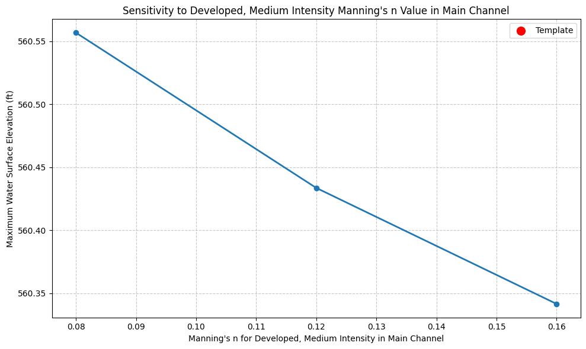
Created sensitivity plot for Developed, Medium Intensity in Main Channel
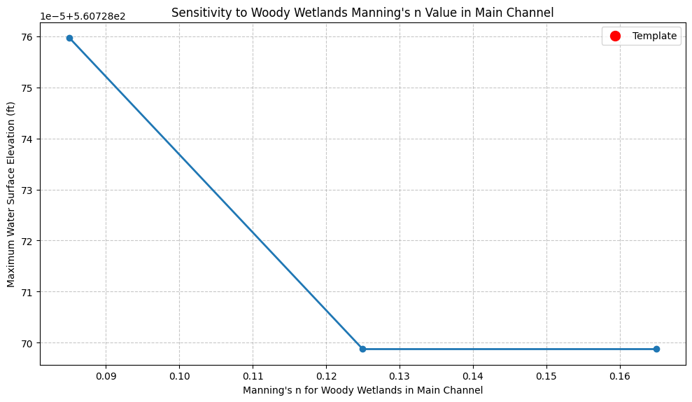
Created sensitivity plot for Woody Wetlands in Main Channel
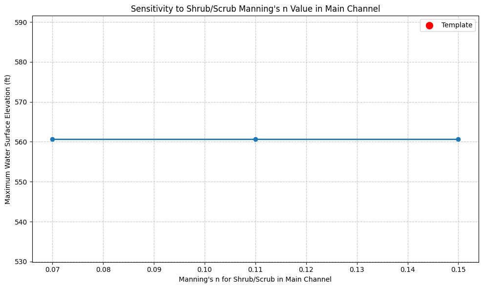
Created sensitivity plot for Shrub/Scrub in Main Channel
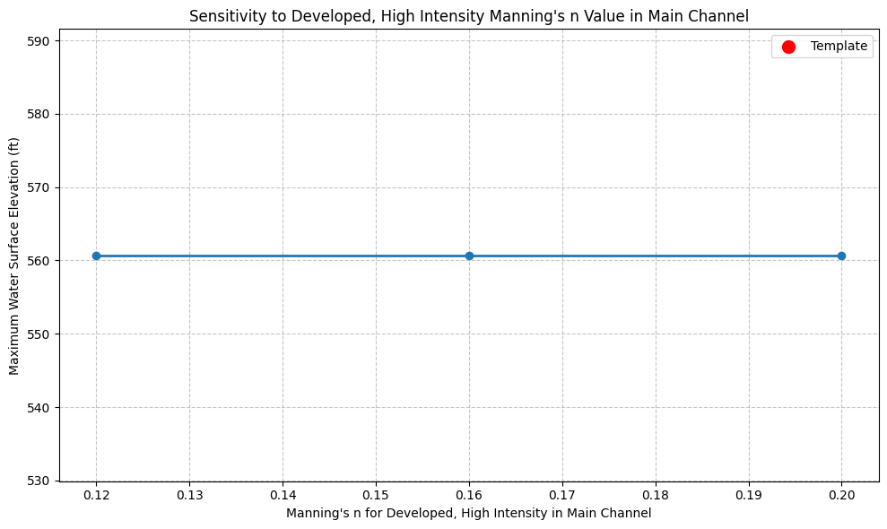
Created sensitivity plot for Developed, High Intensity in Main Channel
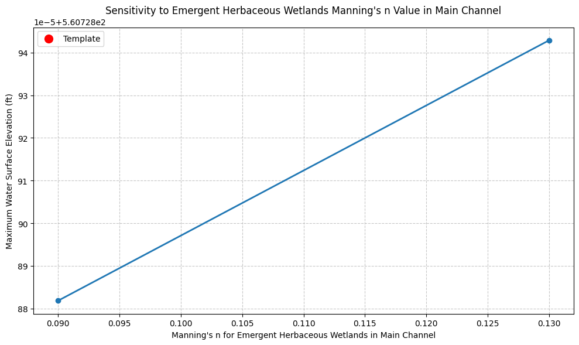
Created sensitivity plot for Emergent Herbaceous Wetlands in Main Channel
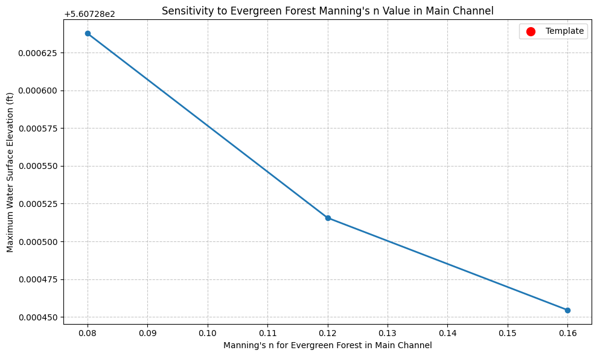
Created sensitivity plot for Evergreen Forest in Main Channel
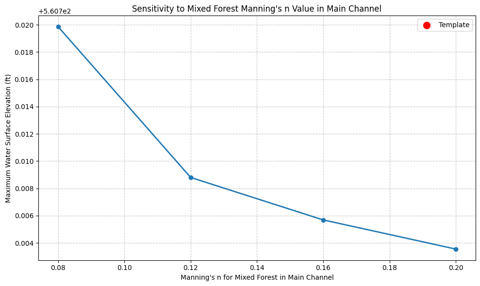
Created sensitivity plot for Mixed Forest in Main Channel
Created time series plot for Developed, Medium Intensity in Main Channel
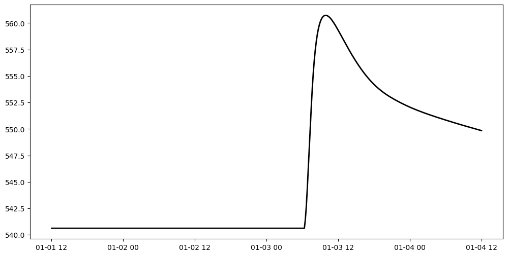

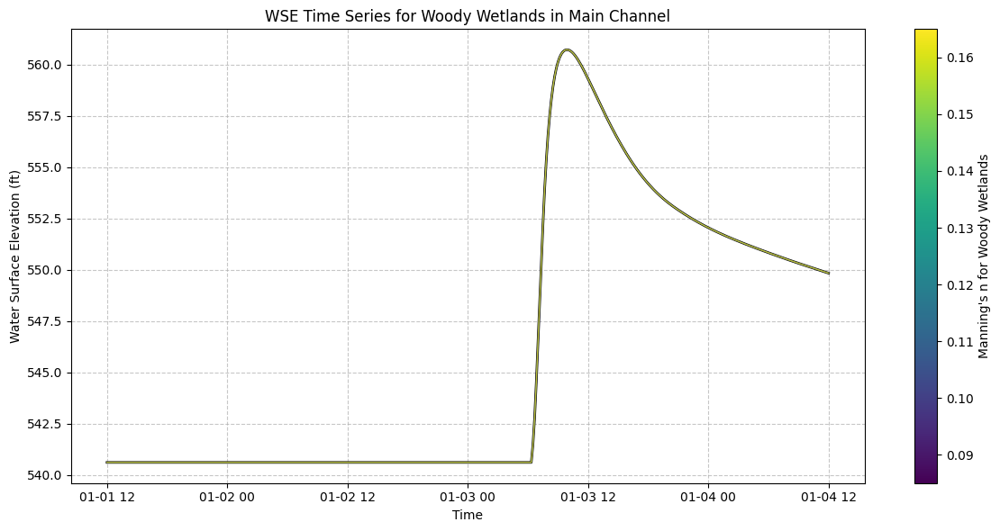
Created time series plot for Woody Wetlands in Main Channel

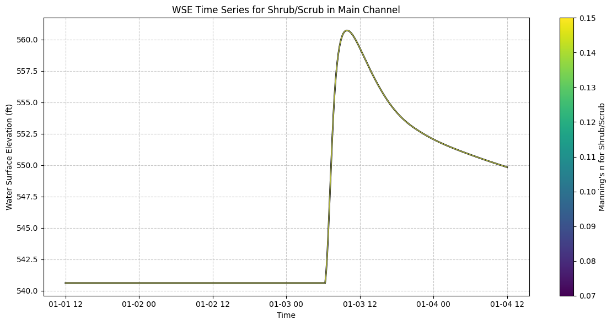
Created time series plot for Shrub/Scrub in Main Channel
Created time series plot for Developed, High Intensity in Main Channel
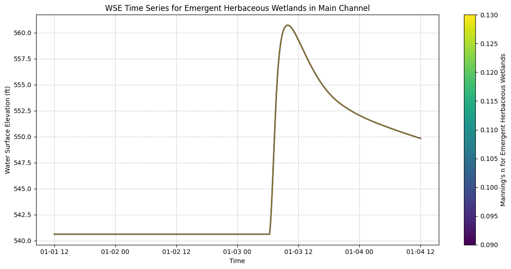
Created time series plot for Emergent Herbaceous Wetlands in Main Channel
Created time series plot for Evergreen Forest in Main Channel

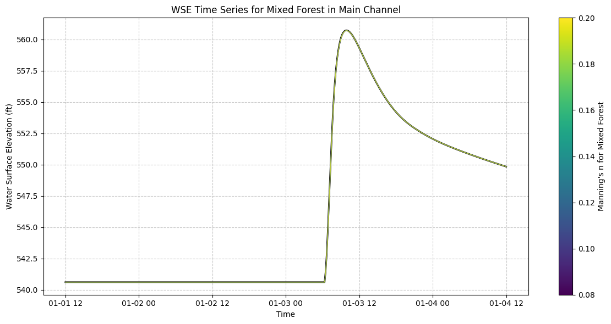
Created time series plot for Mixed Forest in Main Channel
# Print summary information
if run_region_sensitivity_results:
print("\nAnalysis complete! Results saved to:", run_region_sensitivity_results['output_folder'])
if 'significant_landuses' in run_region_sensitivity_results:
print("\nSignificant land uses analyzed in regions:")
print(run_region_sensitivity_results['significant_landuses'][['Land Cover Type', 'Percentage']])
Analysis complete! Results saved to: c:\GH\ras-commander\examples\example_projects\BaldEagleCrkMulti2D_ROMIS\Regional_Landuse_Sensitivity
Significant land uses analyzed in regions:
Land Cover Type Percentage
0 Developed, Medium Intensity 24.630900
1 NoData 22.749712
2 Grassland/Herbaceous 20.516389
3 Woody Wetlands 18.570300
4 Open Water 18.546225
5 Shrub/Scrub 18.425513
6 Developed, High Intensity 17.887623
7 Emergent Herbaceous Wetlands 16.761743
8 Evergreen Forest 14.198315
9 Developed, Open Space 13.342006
10 Mixed Forest 10.901125
Regional Override Sensitivity Results¶
Interpreting Regional Results¶
The following plots show sensitivity analysis results for regional Manning's n overrides from the BaldEagleCrkMulti2D example project (Plan 03). The plots follow the same format as the base sensitivity results, but focus on parameters within specific calibration regions.
Key Differences from Base Results: - Plots are labeled with both land cover type AND region name - Changes affect only the specified region, not the entire mesh - Sensitivity may be higher or lower depending on the hydraulic importance of the region - Useful for understanding which regional parameters require the most careful calibration
Regional vs. Base Comparison: - Compare the magnitude of water surface changes between regional and base sensitivity - Regional parameters that cause large changes should be prioritized in calibration - If a land cover has low sensitivity in a particular region, it may be acceptable to use default values
Application to Your Models: - Identify which regions have the strongest influence on your points of interest - Focus calibration efforts on high-sensitivity regions - Consider simplifying regions with low sensitivity
Results from BaldEagleCrkMulti2D, Plan 03 (Main Channel Region)¶
Summary and Best Practices¶
Key Takeaways¶
Analysis Methodology¶
This notebook demonstrated two complementary approaches to Manning's n sensitivity analysis:
- Base Override Sensitivity: Tests global land cover roughness parameters across the entire 2D mesh
- Regional Override Sensitivity: Tests localized roughness parameters within specific calibration regions
Both approaches use literature-based ranges to ensure physically reasonable parameter variations and automatically generate comprehensive visualizations.
Practical Applications¶
When to Use Base Sensitivity: - Initial model exploration and parameter importance ranking - Models with uniform land cover distributions - Assessing global calibration uncertainty - Identifying which land covers dominate model response
When to Use Regional Sensitivity: - Main channel calibration (use bulk approach from notebook 105) - Localized parameter testing in specific hydraulic zones - Floodplain region calibration with distinct characteristics - Focused calibration in areas of interest
Calibration Workflow Recommendations¶
- Start with base sensitivity to identify globally important land covers
- Rank parameters by sensitivity - focus on land covers causing largest water surface changes
- Use regional sensitivity for localized refinement in hydraulically important areas
- Iterate with observed data - compare sensitivity results against measured water surfaces
- Document assumptions - record which parameters were adjusted and why
Computational Efficiency Tips¶
Plan Count Management:
- Use larger interval values (e.g., 0.02-0.05) to reduce plan count
- Increase area_threshold to focus only on dominant land covers
- Target specific regions rather than analyzing all regions simultaneously
- HEC-RAS limits projects to 99 plans maximum
Parallel Execution:
- Balance max_workers and num_cores based on available CPU and RAM
- Rule of thumb: max_workers * num_cores ≤ total_logical_cores
- Monitor system resources during execution
- Consider sequential execution for very large or memory-intensive models
Output Files¶
Each analysis creates a structured output folder containing:
- scenarios.csv: Complete plan inventory with parameter values
- max_water_surface_summary.csv: Peak water surface elevations for all scenarios
- timeseries_*.csv: Complete hydrographs for each scenario
- sensitivity_*.png: Parameter sensitivity plots
- timeseries_*.png: Time series comparison plots
Next Steps¶
- Compare with observed data: Use sensitivity plots to guide calibration toward measured values
- Uncertainty quantification: Analyze the range of results to understand prediction uncertainty
- Spatial analysis: Extract results at multiple points to understand spatial variability
- Multi-objective calibration: Consider multiple performance metrics beyond peak water surface
Related Notebooks¶
- Notebook 105: Bulk Manning's n sensitivity analysis (recommended for main channel calibration)
- Notebook 09: Plan parameter operations for additional customization
- Notebook 08: Parallel execution techniques for large-scale analyses
References¶
Manning's n Value Resources: - Chow, V.T. (1959). Open-Channel Hydraulics. McGraw-Hill - Arcement, G.J., & Schneider, V.R. (1989). Guide for Selecting Manning's Roughness Coefficients. USGS Water Supply Paper 2339 - HEC-RAS Hydraulic Reference Manual (current version)
Sensitivity Analysis: - Saltelli, A., et al. (2008). Global Sensitivity Analysis: The Primer. Wiley - Tate, E., et al. (2015). Uncertainty Analysis for Flood Risk Assessment. Natural Hazards
End of Notebook